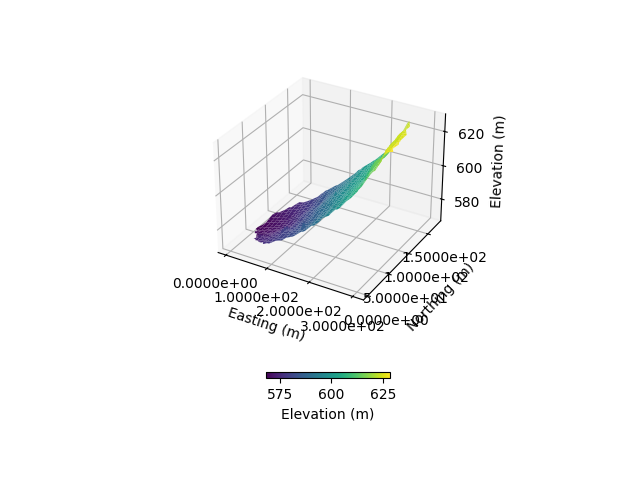
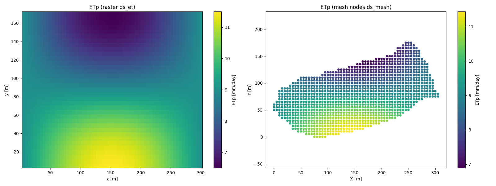
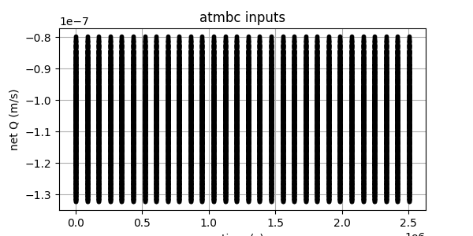

Note
Go to the end to download the full example code.
Mapping atmbc from Earth Observation xarray dataset#
create a CATHY object
create a CATHY mesh from a catchment DEM from a file .adf containing no values -9999
wrap the mesh properties (from hapin file) to an xarray dataset
Estimated time to run the notebook = 5min
# !! run preprocessor change the DEM shape !
# dtm_13 does not have the same shape anymore!
import os
import matplotlib.pyplot as plt
import numpy as np
import pandas as pd
import pyCATHY.meshtools as mt
from pyCATHY import cathy_tools
from pyCATHY.importers import cathy_inputs as in_CT
from pyCATHY.importers import cathy_outputs as out_CT
from pyCATHY.plotters import cathy_plots as cplt
import rioxarray
import pyvista as pv
path2prj = "../EOdata/" # add your local path here
simu = cathy_tools.CATHY(dirName=path2prj,
prj_name="mapping_atmbc_from_EO_dataset"
)
rootpath = os.path.join(simu.workdir + simu.project_name)
# Path to the directory containing the .adf file (not the file itself)
adf_folder = "../../data/dtmplot1/"
# Open the raster (typically named 'hdr.adf', but you only need the folder)
raster_DEM = rioxarray.open_rasterio(adf_folder, masked=True).isel(band=0)
# Create a mask of valid (non-NaN) data
valid_mask = ~np.isnan(raster_DEM)
# Apply the mask to get valid coordinates
valid_x = raster_DEM['x'].where(valid_mask.any(dim='y'), drop=True)
valid_y = raster_DEM['y'].where(valid_mask.any(dim='x'), drop=True)
# Get min and max valid coordinates
min_lon, max_lon = float(valid_x.min()), float(valid_x.max())
min_lat, max_lat = float(valid_y.min()), float(valid_y.max())
raster_DEM_masked = raster_DEM.where(
(raster_DEM['x'] >= min_lon) & (raster_DEM['x'] <= max_lon), drop=True
).where(
(raster_DEM['y'] >= min_lat) & (raster_DEM['y'] <= max_lat), drop=True
)
raster_DEM_masked = np.where(np.isnan(raster_DEM_masked), -9999, raster_DEM_masked)
🏁 Initiate CATHY object
fig, ax = plt.subplots(1)
img = ax.imshow(raster_DEM_masked)
plt.colorbar(img)
simu.update_prepo_inputs(
DEM=raster_DEM_masked,
delta_x=5,
delta_y=5,
ivert=1,
)
fig = plt.figure()
ax = plt.axes(projection="3d")
simu.show_input(prop="dem", ax=ax)


🔄 Update hap.in file
🔄 Update dem_parameters file
🔄 Update dtm_13 file
🔄 update zone file
🔄 Update dem_parameters file
🔄 Update parm file
🔄 Update dem_parameters file
simu.create_mesh_vtk(verbose=True)
🍳 gfortran compilation
👟 Run preprocessor
wbb...
searching the dtm_13.val input file...
assigned nodata value = -9999.0000000000000
number of processed cells = 1174
...wbb completed
rn...
csort I...
...completed
depit...
dem modifications = 0
dem modifications = 0 (total)
...completed
csort II...
...completed
cca...
contour curvature threshold value = 9.99999996E+11
...completed
smean...
mean (min,max) facet slope = 0.216937334 ( 0.012000000, 0.760631317)
...completed
dsf...
weight w_1 less than 1.0E-06: set w_1 = 0 and w_2 = 1
weight w_1 less than 1.0E-06: set w_1 = 0 and w_2 = 1
the drainage direction of the outlet cell ( 2 ) is used
...completed
hg...
...completed
saving the data in the basin_b/basin_i files...
...rn completed
mrbb...
Select the header type:
0) None
1) ESRI ascii file
2) GRASS ascii file
(Ctrl C to exit)
->
Select the nodata value:
(Ctrl C to exit)
->
Select the pointer system:
1) HAP system
2) Arc/Gis system
(Ctrl C to exit)
-> ~~~~~~~~~~~~~~~~~~~~~~~~~~~~~~~~~~~~~~~~~~
dem file
min value = 0.567960E+03
max value = 0.628820E+03
number of cells = 1174
mean value = 0.592434E+03
writing the output file...
~~~~~~~~~~~~~~~~~~~~~~~~~~~~~~~~~~~~~~~~~~
lakes_map file
min value = 0
max value = 0
number of cells = 1174
mean value = 0.000000
writing the output file...
~~~~~~~~~~~~~~~~~~~~~~~~~~~~~~~~~~~~~~~~~~
zone file
min value = 1
max value = 1
number of cells = 1174
mean value = 1.000000
writing the output file...
~~~~~~~~~~~~~~~~~~~~~~~~~~~~~~~~~~~~~~~~~~
dtm_w_1 file
min value = 0.000000E+00
max value = 0.100000E+01
number of cells = 1174
mean value = 0.558963E+00
writing the output file...
~~~~~~~~~~~~~~~~~~~~~~~~~~~~~~~~~~~~~~~~~~
dtm_w_2 file
min value = 0.000000E+00
max value = 0.100000E+01
number of cells = 1174
mean value = 0.441037E+00
writing the output file...
~~~~~~~~~~~~~~~~~~~~~~~~~~~~~~~~~~~~~~~~~~
dtm_p_outflow_1 file
min value = 2
max value = 6
number of cells = 1174
mean value = 2.272573
writing the output file...
~~~~~~~~~~~~~~~~~~~~~~~~~~~~~~~~~~~~~~~~~~
dtm_p_outflow_2 file
min value = 0
max value = 9
number of cells = 1174
mean value = 1.447189
writing the output file...
~~~~~~~~~~~~~~~~~~~~~~~~~~~~~~~~~~~~~~~~~~
A_inflow file
min value = 0.000000000000E+00
max value = 0.293249992721E+05
number of cells = 1174
mean value = 0.770825256348E+03
writing the output file...
~~~~~~~~~~~~~~~~~~~~~~~~~~~~~~~~~~~~~~~~~~
dtm_local_slope_1 file
min value =-0.234000E+00
max value = 0.750000E+00
number of cells = 1174
mean value = 0.189089E+00
writing the output file...
~~~~~~~~~~~~~~~~~~~~~~~~~~~~~~~~~~~~~~~~~~
dtm_local_slope_2 file
min value =-0.189505E+00
max value = 0.692965E+00
number of cells = 1174
mean value = 0.173164E+00
writing the output file...
~~~~~~~~~~~~~~~~~~~~~~~~~~~~~~~~~~~~~~~~~~
dtm_epl_1 file
min value = 0.000000E+00
max value = 0.500000E+01
number of cells = 1174
mean value = 0.469762E+01
writing the output file...
~~~~~~~~~~~~~~~~~~~~~~~~~~~~~~~~~~~~~~~~~~
dtm_epl_2 file
min value = 0.000000E+00
max value = 0.707107E+01
number of cells = 1174
mean value = 0.637239E+01
writing the output file...
~~~~~~~~~~~~~~~~~~~~~~~~~~~~~~~~~~~~~~~~~~
dtm_kSs1_sf_1 file
min value = 0.000000E+00
max value = 0.665000E+02
number of cells = 1174
mean value = 0.288060E+02
writing the output file...
~~~~~~~~~~~~~~~~~~~~~~~~~~~~~~~~~~~~~~~~~~
dtm_kSs1_sf_2 file
min value = 0.000000E+00
max value = 0.665000E+02
number of cells = 1174
mean value = 0.274720E+02
writing the output file...
~~~~~~~~~~~~~~~~~~~~~~~~~~~~~~~~~~~~~~~~~~
dtm_Ws1_sf file
min value = 0.000000E+00
max value = 0.952684E+01
number of cells = 1174
mean value = 0.141419E+01
writing the output file...
~~~~~~~~~~~~~~~~~~~~~~~~~~~~~~~~~~~~~~~~~~
dtm_Ws1_sf_2 file
min value = 0.000000E+00
max value = 0.667605E+01
number of cells = 1174
mean value = 0.126586E+01
writing the output file...
~~~~~~~~~~~~~~~~~~~~~~~~~~~~~~~~~~~~~~~~~~
dtm_b1_sf file
min value = 0.000000E+00
max value = 0.260000E+00
number of cells = 1174
mean value = 0.538160E-01
writing the output file...
~~~~~~~~~~~~~~~~~~~~~~~~~~~~~~~~~~~~~~~~~~
dtm_y1_sf file
min value = 0.000000E+00
max value = 0.000000E+00
number of cells = 1174
mean value = 0.000000E+00
writing the output file...
~~~~~~~~~~~~~~~~~~~~~~~~~~~~~~~~~~~~~~~~~~
dtm_hcID file
min value = 0
max value = 1
number of cells = 1174
mean value = 0.206985
writing the output file...
~~~~~~~~~~~~~~~~~~~~~~~~~~~~~~~~~~~~~~~~~~
dtm_q_output file
min value = 0
max value = 0
number of cells = 1174
mean value = 0.000000
writing the output file...
~~~~~~~~~~~~~~~~~~~~~~~~~~~~~~~~~~~~~~~~~~
dtm_nrc file
min value = 0.100000E+01
max value = 0.100000E+02
number of cells = 1174
mean value = 0.813714E+01
writing the output file...
...mrbb completed
bb2shp...
writing file river_net.shp
Note: The following floating-point exceptions are signalling: IEEE_UNDERFLOW_FLAG IEEE_DENORMAL
🔄 Update parm file
🛠 Recompile src files [4s]
🍳 gfortran compilation [11s]
✅ Compilation successful!
👟 Run processor
b'\n\n IPRT1=3: Program terminating after output of X, Y, Z coordinate values\n'
import xarray as xr
simu.mesh_pv_attributes
# # --- Convert to xarray.Dataset without ETa ---
ds_mesh = xr.Dataset(
coords={
"node": np.arange(20336),
"x": ("node", simu.mesh_pv_attributes.points[:, 0]),
"y": ("node", simu.mesh_pv_attributes.points[:, 1]),
"z": ("node", simu.mesh_pv_attributes.points[:, 2])
},
attrs={
"N_cells": 105660,
# "nodes_per_element": nodes_per_element
}
)
ds_mesh["mask"] = (("y", "x"), raster_DEM_masked)
# ---- 2D structured grid from hapin ----
fig, ax = plt.subplots(figsize=(6, 5))
ax.set_title("Structured 2D grid (hapin)")
ax.set_aspect("equal")
# Plot grid lines
for xval in ds_mesh.x.values:
ax.plot([xval, xval], [ds_mesh.y.values.min(), ds_mesh.y.values.max()], color="lightgrey", lw=0.5)
for yval in ds_mesh.y.values:
ax.plot([ds_mesh.x.values.min(), ds_mesh.x.values.max()], [yval, yval], color="lightgrey", lw=0.5)
ax.set_xlabel("X")
ax.set_ylabel("Y")
plt.show()
ds_mesh["mask"].plot.imshow()
X_nodes = ds_mesh.x.values
Y_nodes = ds_mesh.y.values
Z_nodes = ds_mesh.z.values
# 2D mask from DEM
# mask2d = raster_DEM_masked != -9999 # shape (M, N)
# ds_mesh["mask2d"] = (("y", "x"), mask2d)
# Extract parameters from hapin
dx = simu.hapin["delta_x"]
dy = simu.hapin["delta_y"]
x0 = simu.hapin["xllcorner"]
y0 = simu.hapin["yllcorner"]
# Convert to indices
ix = ((X_nodes - x0) / dx).astype(int)
iy = ((Y_nodes - y0) / dy).astype(int)
# Clip indices inside raster bounds
ix = np.clip(ix, 0, simu.hapin["N"] - 1)
iy = np.clip(iy, 0, simu.hapin["M"] - 1)
# Build boolean mask for nodes
mask_array = ds_mesh["mask"].values # convert to NumPy array
bool_mask_nodes = mask_array[iy, ix] # shape: (node,)
# Add to xarray
ds_mesh["mask_node"] = (("node",), bool_mask_nodes)

import numpy as np
import xarray as xr
# Use simu.hapin
hapin = simu.hapin
# Grid info
N = hapin["N"]
M = hapin["M"]
dx = hapin["delta_x"]
dy = hapin["delta_y"]
x0 = hapin["xllcorner"]
y0 = hapin["yllcorner"]
# Cell centers
x = x0 + (np.arange(N) + 0.5) * dx
y = y0 + (np.arange(M) + 0.5) * dy
# # Create meshgrid for smooth patterns
X, Y = np.meshgrid(x, y)
ETp_2D = 9 + 2.5 * np.sin(np.pi * X / X.max()) * np.cos(np.pi * Y / Y.max())
# Create daily time axis for a full month (30 days)
time = pd.date_range("2026-02-01", periods=30, freq="D")
# Expand 2D arrays to 3D (time, y, x)
ETp_3D = np.tile(ETp_2D[None, :, :], (len(time), 1, 1))
# Create xarray Dataset
ds_et = xr.Dataset(
data_vars={
"ETp": (("time", "y", "x"), ETp_3D),
},
coords={
"time": time,
"x": x,
"y": y,
},
attrs={
"resolution_x": dx,
"resolution_y": dy,
"xllcorner": x0,
"yllcorner": y0,
}
)
# a
import matplotlib.pyplot as plt
# Select time step 0
t = 0
# --- Raster ETp from ds_et ---
ETp_raster = ds_et["ETp"].isel(time=t).values
# --- Node ETp from ds_mesh ---
ETp_nodes = ds_mesh["ETp_surfacenodes"].isel(time=t).values
x_nodes = ds_mesh["x"].values[:len(ETp_nodes)]
y_nodes = ds_mesh["y"].values[:len(ETp_nodes)]
# --- Plot side by side ---
fig, axes = plt.subplots(1, 2, figsize=(16,6))
# Raster
im0 = axes[0].imshow(ETp_raster, origin='lower',
extent=[x.min(), x.max(), y.min(), y.max()],
aspect='auto', cmap='viridis')
axes[0].set_title("ETp (raster ds_et)")
axes[0].set_xlabel("x [m]")
axes[0].set_ylabel("y [m]")
fig.colorbar(im0, ax=axes[0], label="ETp [mm/day]")
# Nodes (unstructured mesh)
sc = axes[1].scatter(x_nodes, y_nodes, c=ETp_nodes, cmap='viridis', s=20)
axes[1].set_title("ETp (mesh nodes ds_mesh)")
axes[1].set_xlabel("X [m]")
axes[1].set_ylabel("Y [m]")
axes[1].axis('equal')
fig.colorbar(sc, ax=axes[1], label="ETp [mm/day]")
plt.tight_layout()
plt.show()

# Convert xarray DataArray to NumPy array
ETp_nodes = ds_mesh["ETp_surfacenodes"].values # shape: (time, node)
# Identify columns (nodes) that are all NaN
valid_nodes = ~np.all(np.isnan(ETp_nodes), axis=0) # True for nodes with any valid value
# Keep only valid nodes
ETp_nodes_clean = ETp_nodes[:, valid_nodes]
# Reference time: first time step
t0 = ds_et.time[0].values
# Convert all times to seconds since t0
time_sec = (ds_et.time.values - t0) / np.timedelta64(1, 's') # seconds
# Add as a new coordinate if you want
ds_et = ds_et.assign_coords(time_sec=("time", time_sec))
simu.update_atmbc(HSPATM=0,
IETO=1,
time = ds_et.time_sec,
netValue = -ETp_nodes_clean*0.001 / 86400
)
🔄 Update atmbc
🔄 Update parm file
simu.show_input('atmbc')

🔄 Update ic
🔄 Update parm file
───────────────────────────────────────────────────────────────────────────────── ⚠ warning messages above ⚠ ─────────────────────────────────────────────────────────────────────────────────
['Adjusting NPRT with respect to time of interests requested\n']
──────────────────────────────────────────────────────────────────────────────────────────────────────────────────────────────────────────────────────────────────────────────────────────────
🔄 Update parm file
🛠 Recompile src files [22s]
🍳 gfortran compilation [28s]
✅ Compilation successful!
👟 Run processor
b'\n nsf (# of seepage faces) = 0\n\n\n TIME STEP: 1 DELTAT: 5.0000E+00 TIME: 5.0000E+00\n
******************************************************************\n\n\n NONLINEAR CONVERGENCE BEHAVIOR \n iter- convergence error norms node PNEW at POLD at
residual error norms\n ation PL2 PIKMAX IKMAX IKMAX IKMAX FL2 FINF\n 1 4.6968E+01 -2.8234E+00 19068 5.41E+01 5.69E+01 5.188E-02 5.083E-03\n
2 2.9470E+00 2.3464E+00 12558 1.90E+00 -4.41E-01 1.748E+00 1.078E+00\n 3 2.9491E+00 -2.3464E+00 12558 -4.41E-01 1.90E+00 1.405E-01 1.392E-01\n 4 2.9388E+00 2.3464E+00
12558 1.90E+00 -4.41E-01 1.727E+00 1.078E+00\n 5 2.9345E+00 -2.3464E+00 12558 -4.41E-01 1.90E+00 9.671E-03 8.746E-03\n 6 2.9353E+00 2.3464E+00 12558 1.90E+00
-4.41E-01 1.715E+00 1.078E+00\n 7 2.9351E+00 -2.3464E+00 12558 -4.41E-01 1.90E+00 9.601E-03 8.746E-03\n 8 2.9350E+00 2.3464E+00 12558 1.90E+00 -4.41E-01 1.711E+00
1.078E+00\n 9 2.9350E+00 -2.3464E+00 12558 -4.41E-01 1.90E+00 9.600E-03 8.746E-03\n 10 2.9350E+00 2.3464E+00 12558 1.90E+00 -4.41E-01 1.711E+00 1.078E+00\n CONVERGENCE
NOT ACHIEVED IN 10 ITERATIONS\n\n\n TIME STEP: 1 DELTAT: 2.5000E+00 TIME: 2.5000E+00\n ******************************************************************\n\n\n
NONLINEAR CONVERGENCE BEHAVIOR \n iter- convergence error norms node PNEW at POLD at residual error norms\n ation PL2 PIKMAX IKMAX IKMAX IKMAX FL2
FINF\n 1 3.2005E+01 -1.9935E+00 19068 5.49E+01 5.69E+01 5.188E-02 5.083E-03\n 2 2.4122E+00 1.9652E+00 12558 1.57E+00 -3.95E-01 3.155E+00 2.111E+00\n 3 2.4280E+00
-1.9652E+00 12558 -3.95E-01 1.57E+00 2.997E-01 2.946E-01\n 4 2.4250E+00 1.9653E+00 12558 1.57E+00 -3.95E-01 3.039E+00 2.111E+00\n 5 2.4222E+00 -1.9653E+00 12558
-3.95E-01 1.57E+00 2.849E-01 2.848E-01\n 6 2.4218E+00 1.9653E+00 12558 1.57E+00 -3.95E-01 3.001E+00 2.111E+00\n 7 2.4252E+00 -1.9653E+00 12558 -3.95E-01 1.57E+00
2.909E-01 2.908E-01\n 8 2.4254E+00 1.9653E+00 12558 1.57E+00 -3.95E-01 2.999E+00 2.111E+00\n 9 2.4272E+00 -1.9653E+00 12558 -3.95E-01 1.57E+00 2.995E-01 2.949E-01\n
10 2.4244E+00 1.9653E+00 12558 1.57E+00 -3.95E-01 2.995E+00 2.111E+00\n CONVERGENCE NOT ACHIEVED IN 10 ITERATIONS\n\n\n TIME STEP: 1 DELTAT: 1.2500E+00 TIME:
1.2500E+00\n ******************************************************************\n\n\n NONLINEAR CONVERGENCE BEHAVIOR \n iter- convergence error norms node PNEW at
POLD at residual error norms\n ation PL2 PIKMAX IKMAX IKMAX IKMAX FL2 FINF\n 1 2.1462E+01 -1.3300E+00 19068 5.56E+01 5.69E+01 5.188E-02
5.083E-03\n 2 1.7571E+00 1.4660E+00 12558 1.14E+00 -3.29E-01 5.524E+00 4.063E+00\n 3 1.7558E+00 -1.4660E+00 12558 -3.29E-01 1.14E+00 7.910E-02 4.314E-02\n 4
1.7562E+00 1.4660E+00 12558 1.14E+00 -3.29E-01 5.406E+00 4.063E+00\n 5 1.7559E+00 -1.4660E+00 12558 -3.29E-01 1.14E+00 6.756E-03 5.832E-03\n 6 1.7554E+00 1.4660E+00
12558 1.14E+00 -3.29E-01 5.371E+00 4.063E+00\n 7 1.7553E+00 -1.4660E+00 12558 -3.29E-01 1.14E+00 6.255E-03 5.832E-03\n 8 1.7552E+00 1.4660E+00 12558 1.14E+00
-3.29E-01 5.361E+00 4.063E+00\n 9 1.7552E+00 -1.4660E+00 12558 -3.29E-01 1.14E+00 6.254E-03 5.832E-03\n 10 1.7552E+00 1.4660E+00 12558 1.14E+00 -3.29E-01 5.361E+00
4.063E+00\n CONVERGENCE NOT ACHIEVED IN 10 ITERATIONS\n\n\n TIME STEP: 1 DELTAT: 6.2500E-01 TIME: 6.2500E-01\n
******************************************************************\n\n\n NONLINEAR CONVERGENCE BEHAVIOR \n iter- convergence error norms node PNEW at POLD at
residual error norms\n ation PL2 PIKMAX IKMAX IKMAX IKMAX FL2 FINF\n 1 1.3934E+01 -8.3364E-01 19068 5.61E+01 5.69E+01 5.188E-02 5.083E-03\n
2 1.0817E+00 9.2736E-01 12558 6.79E-01 -2.49E-01 9.343E+00 7.584E+00\n 3 1.0809E+00 -9.2736E-01 12558 -2.49E-01 6.79E-01 1.435E-01 1.102E-01\n 4 1.0811E+00 9.2736E-01
12558 6.79E-01 -2.49E-01 9.234E+00 7.584E+00\n 5 1.0809E+00 -9.2736E-01 12558 -2.49E-01 6.79E-01 6.281E-03 3.958E-03\n 6 1.0805E+00 9.2736E-01 12558 6.79E-01
-2.49E-01 9.157E+00 7.584E+00\n 7 1.0805E+00 -9.2736E-01 12558 -2.49E-01 6.79E-01 4.202E-03 3.958E-03\n 8 1.0804E+00 9.2736E-01 12558 6.79E-01 -2.49E-01 9.129E+00
7.584E+00\n 9 1.0803E+00 -9.2736E-01 12558 -2.49E-01 6.79E-01 4.200E-03 3.958E-03\n 10 1.0803E+00 9.2736E-01 12558 6.79E-01 -2.49E-01 9.124E+00 7.584E+00\n CONVERGENCE
NOT ACHIEVED IN 10 ITERATIONS\n\n\n TIME STEP: 1 DELTAT: 3.1250E-01 TIME: 3.1250E-01\n ******************************************************************\n\n\n
NONLINEAR CONVERGENCE BEHAVIOR \n iter- convergence error norms node PNEW at POLD at residual error norms\n ation PL2 PIKMAX IKMAX IKMAX IKMAX FL2
FINF\n 1 8.6438E+00 -4.9170E-01 19068 5.64E+01 5.69E+01 5.188E-02 5.083E-03\n 2 5.2957E-01 4.6968E-01 12558 3.05E-01 -1.65E-01 1.484E+01 1.336E+01\n 3 5.2850E-01
-4.6968E-01 12558 -1.65E-01 3.05E-01 1.703E-01 1.331E-01\n 4 5.2845E-01 4.6968E-01 12558 3.05E-01 -1.65E-01 1.456E+01 1.336E+01\n 5 5.2833E-01 -4.6968E-01 12558
-1.65E-01 3.05E-01 6.129E-03 4.423E-03\n 6 5.2824E-01 4.6968E-01 12558 3.05E-01 -1.65E-01 1.446E+01 1.336E+01\n 7 5.2820E-01 -4.6968E-01 12558 -1.65E-01 3.05E-01
2.352E-03 2.243E-03\n 8 5.2817E-01 4.6968E-01 12558 3.05E-01 -1.65E-01 1.443E+01 1.336E+01\n 9 5.2816E-01 -4.6968E-01 12558 -1.65E-01 3.05E-01 2.346E-03 2.243E-03\n
10 5.2815E-01 4.6968E-01 12558 3.05E-01 -1.65E-01 1.442E+01 1.336E+01\n CONVERGENCE NOT ACHIEVED IN 10 ITERATIONS\n\n\n TIME STEP: 1 DELTAT: 1.5625E-01 TIME:
1.5625E-01\n ******************************************************************\n\n\n NONLINEAR CONVERGENCE BEHAVIOR \n iter- convergence error norms node PNEW at
POLD at residual error norms\n ation PL2 PIKMAX IKMAX IKMAX IKMAX FL2 FINF\n 1 5.1107E+00 -2.7471E-01 19068 5.67E+01 5.69E+01 5.188E-02
5.083E-03\n 2 1.9211E-01 1.7667E-01 12558 8.55E-02 -9.11E-02 2.125E+01 2.075E+01\n 3 1.9114E-01 -1.7667E-01 12558 -9.11E-02 8.55E-02 5.139E-01 4.506E-01\n 4
1.9109E-01 1.7667E-01 12558 8.55E-02 -9.11E-02 2.075E+01 2.075E+01\n 5 1.9107E-01 -1.7667E-01 12558 -9.11E-02 8.55E-02 1.686E-02 1.470E-02\n 6 1.9107E-01 1.7667E-01
12558 8.55E-02 -9.11E-02 2.075E+01 2.075E+01\n 7 1.9107E-01 -1.7667E-01 12558 -9.11E-02 8.55E-02 1.161E-03 9.946E-04\n 8 1.9107E-01 1.7667E-01 12558 8.55E-02
-9.11E-02 2.075E+01 2.075E+01\n 9 1.9107E-01 -1.7667E-01 12558 -9.11E-02 8.55E-02 1.024E-03 9.946E-04\n 10 1.9107E-01 1.7667E-01 12558 8.55E-02 -9.11E-02 2.075E+01
2.075E+01\n CONVERGENCE NOT ACHIEVED IN 10 ITERATIONS\n\n\n TIME STEP: 1 DELTAT: 7.8125E-02 TIME: 7.8125E-02\n
******************************************************************\n\n\n NONLINEAR CONVERGENCE BEHAVIOR \n iter- convergence error norms node PNEW at POLD at
residual error norms\n ation PL2 PIKMAX IKMAX IKMAX IKMAX FL2 FINF\n 1 2.9041E+00 1.5109E-01 7800 1.97E-01 4.57E-02 5.188E-02 5.083E-03\n
2 4.5175E-02 4.2898E-02 12558 5.65E-03 -3.72E-02 2.248E+01 2.248E+01\n 3 4.5138E-02 -4.2897E-02 12558 -3.72E-02 5.65E-03 1.531E-02 1.530E-02\n 4 4.5135E-02 4.2897E-02
12558 5.65E-03 -3.72E-02 2.248E+01 2.248E+01\n 5 4.5133E-02 -4.2897E-02 12558 -3.72E-02 5.65E-03 6.086E-04 5.224E-04\n 6 4.5133E-02 4.2897E-02 12558 5.65E-03
-3.72E-02 2.248E+01 2.248E+01\n 7 4.5132E-02 -4.2897E-02 12558 -3.72E-02 5.65E-03 3.126E-04 3.004E-04\n 8 4.5132E-02 4.2897E-02 12558 5.65E-03 -3.72E-02 2.248E+01
2.248E+01\n 9 4.5132E-02 -4.2897E-02 12558 -3.72E-02 5.65E-03 3.121E-04 3.004E-04\n 10 4.5132E-02 4.2897E-02 12558 5.65E-03 -3.72E-02 2.248E+01 2.248E+01\n CONVERGENCE
NOT ACHIEVED IN 10 ITERATIONS\n\n\n TIME STEP: 1 DELTAT: 3.9062E-02 TIME: 3.9062E-02\n ******************************************************************\n\n\n
NONLINEAR CONVERGENCE BEHAVIOR \n iter- convergence error norms node PNEW at POLD at residual error norms\n ation PL2 PIKMAX IKMAX IKMAX IKMAX FL2
FINF\n 1 1.6092E+00 1.1395E-01 7800 1.60E-01 4.57E-02 5.188E-02 5.083E-03\n 2 2.8051E-03 2.4302E-03 12558 -1.03E-03 -3.46E-03 2.413E+00 2.413E+00\n 3 7.6897E-04
7.0679E-04 12558 -3.21E-04 -1.03E-03 4.191E-01 4.191E-01\n 4 2.9085E-04 2.1968E-04 12558 -1.01E-04 -3.21E-04 7.678E-02 7.678E-02\n 5 1.4027E-04 9.7038E-05 13787
5.81E-01 5.81E-01 1.418E-02 1.418E-02\n CONVERGENCE ACHIEVED IN 5 ITERATIONS\n\n\n TIME STEP: 2 DELTAT: 3.9062E-02 TIME: 7.8125E-02\n
******************************************************************\n\n\n NONLINEAR CONVERGENCE BEHAVIOR \n iter- convergence error norms node PNEW at POLD at
residual error norms\n ation PL2 PIKMAX IKMAX IKMAX IKMAX FL2 FINF\n 1 1.4144E+00 -7.3326E-02 19068 5.68E+01 5.69E+01 4.955E-02 4.792E-03\n
2 1.2753E-03 7.2794E-04 12531 1.23E+00 1.23E+00 1.384E-01 1.384E-01\n 3 4.7006E-04 -2.4082E-04 12531 1.23E+00 1.23E+00 2.554E-02 2.554E-02\n 4 2.8711E-04 -1.5284E-04
12531 1.23E+00 1.23E+00 4.726E-03 4.726E-03\n 5 1.7323E-04 -9.3622E-05 12531 1.23E+00 1.23E+00 8.732E-04 8.732E-04\n CONVERGENCE ACHIEVED IN 5 ITERATIONS\n\n\n TIME
STEP: 3 DELTAT: 3.9062E-02 TIME: 1.1719E-01\n ******************************************************************\n\n\n NONLINEAR CONVERGENCE BEHAVIOR
\n iter- convergence error norms node PNEW at POLD at residual error norms\n ation PL2 PIKMAX IKMAX IKMAX IKMAX FL2 FINF\n 1 1.3029E+00
-7.0458E-02 19068 5.67E+01 5.68E+01 4.768E-02 4.530E-03\n 2 4.0085E-03 2.8384E-03 7978 7.45E-02 7.16E-02 8.329E-01 8.329E-01\n 3 1.4405E-03 -1.0894E-03 7978
7.34E-02 7.45E-02 1.509E-01 1.509E-01\n 4 8.9359E-04 -6.8536E-04 7978 7.27E-02 7.34E-02 2.784E-02 2.784E-02\n 5 5.4617E-04 -4.1911E-04 7978 7.23E-02 7.27E-02
5.146E-03 5.146E-03\n 6 3.2818E-04 -2.5149E-04 7978 7.20E-02 7.23E-02 9.480E-04 9.480E-04\n 7 1.9285E-04 -1.4761E-04 7978 7.19E-02 7.20E-02 1.710E-04 1.710E-04\n
8 1.0522E-04 -8.0469E-05 7978 7.18E-02 7.19E-02 2.778E-05 2.773E-05\n CONVERGENCE ACHIEVED IN 8 ITERATIONS\n\n\n TIME STEP: 4 DELTAT: 1.9531E-02 TIME:
1.3672E-01\n ******************************************************************\n\n\n NONLINEAR CONVERGENCE BEHAVIOR \n iter- convergence error norms node PNEW at
POLD at residual error norms\n ation PL2 PIKMAX IKMAX IKMAX IKMAX FL2 FINF\n 1 6.2843E-01 -3.4536E-02 19068 5.67E+01 5.67E+01 4.601E-02
4.293E-03\n 2 3.8833E-05 2.8838E-05 7978 7.44E-02 7.44E-02 1.339E-05 1.084E-05\n CONVERGENCE ACHIEVED IN 2 ITERATIONS\n\n\n TIME STEP: 5 DELTAT: 2.1484E-02
TIME: 1.5820E-01\n ******************************************************************\n\n\n NONLINEAR CONVERGENCE BEHAVIOR \n iter- convergence error norms node
PNEW at POLD at residual error norms\n ation PL2 PIKMAX IKMAX IKMAX IKMAX FL2 FINF\n 1 6.6674E-01 -3.7182E-02 19068 5.66E+01 5.67E+01
4.522E-02 4.181E-03\n 2 3.9437E-05 2.7306E-05 7978 7.69E-02 7.69E-02 1.386E-05 9.722E-06\n CONVERGENCE ACHIEVED IN 2 ITERATIONS\n\n\n TIME STEP: 6 DELTAT:
2.3633E-02 TIME: 1.8184E-01\n ******************************************************************\n\n\n NONLINEAR CONVERGENCE BEHAVIOR \n iter- convergence error
norms node PNEW at POLD at residual error norms\n ation PL2 PIKMAX IKMAX IKMAX IKMAX FL2 FINF\n 1 7.0691E-01 -3.9963E-02 19068 5.66E+01
5.66E+01 4.440E-02 4.063E-03\n 2 1.0164E-03 7.1940E-04 11216 7.64E-02 7.57E-02 2.371E-01 2.371E-01\n 3 3.7987E-04 -2.8352E-04 11216 7.62E-02 7.64E-02 4.378E-02
4.378E-02\n 4 2.2887E-04 -1.7371E-04 11216 7.60E-02 7.62E-02 8.101E-03 8.101E-03\n 5 1.3744E-04 -1.0453E-04 11216 7.59E-02 7.60E-02 1.498E-03 1.498E-03\n 6
8.1687E-05 -6.2080E-05 11216 7.58E-02 7.59E-02 2.757E-04 2.756E-04\n CONVERGENCE ACHIEVED IN 6 ITERATIONS\n\n\n TIME STEP: 7 DELTAT: 2.3633E-02 TIME:
2.0547E-01\n ******************************************************************\n\n\n NONLINEAR CONVERGENCE BEHAVIOR \n iter- convergence error norms node PNEW at
POLD at residual error norms\n ation PL2 PIKMAX IKMAX IKMAX IKMAX FL2 FINF\n 1 6.8292E-01 -3.9063E-02 19068 5.66E+01 5.66E+01 4.355E-02
3.941E-03\n 2 4.4061E-05 2.4052E-05 7978 8.17E-02 8.16E-02 1.511E-05 1.038E-05\n CONVERGENCE ACHIEVED IN 2 ITERATIONS\n\n\n TIME STEP: 8 DELTAT: 2.5996E-02
TIME: 2.3146E-01\n ******************************************************************\n\n\n NONLINEAR CONVERGENCE BEHAVIOR \n iter- convergence error norms node
PNEW at POLD at residual error norms\n ation PL2 PIKMAX IKMAX IKMAX IKMAX FL2 FINF\n 1 7.2489E-01 -4.1929E-02 19068 5.65E+01 5.66E+01
4.275E-02 3.826E-03\n 2 2.8484E-03 2.3821E-03 8382 8.65E-02 8.41E-02 4.680E-01 4.680E-01\n 3 1.0846E-03 -9.3259E-04 8382 8.55E-02 8.65E-02 8.597E-02 8.597E-02\n
4 6.6624E-04 -5.7612E-04 8382 8.49E-02 8.55E-02 1.590E-02 1.590E-02\n 5 4.0293E-04 -3.4839E-04 8382 8.46E-02 8.49E-02 2.939E-03 2.939E-03\n 6 2.4037E-04 -2.0765E-04
8382 8.44E-02 8.46E-02 5.409E-04 5.409E-04\n 7 1.4037E-04 -1.2117E-04 8382 8.43E-02 8.44E-02 9.711E-05 9.708E-05\n 8 7.5491E-05 -6.5136E-05 8382 8.42E-02 8.43E-02
1.543E-05 1.537E-05\n CONVERGENCE ACHIEVED IN 8 ITERATIONS\n\n\n TIME STEP: 9 DELTAT: 1.2998E-02 TIME: 2.4446E-01\n
******************************************************************\n\n\n NONLINEAR CONVERGENCE BEHAVIOR \n iter- convergence error norms node PNEW at POLD at
residual error norms\n ation PL2 PIKMAX IKMAX IKMAX IKMAX FL2 FINF\n 1 3.5620E-01 -2.0710E-02 19068 5.65E+01 5.65E+01 4.192E-02 3.707E-03\n
2 3.2102E-05 2.5336E-05 8382 8.51E-02 8.51E-02 1.147E-05 8.447E-06\n CONVERGENCE ACHIEVED IN 2 ITERATIONS\n\n\n TIME STEP: 10 DELTAT: 1.4298E-02 TIME:
2.5876E-01\n ******************************************************************\n\n\n NONLINEAR CONVERGENCE BEHAVIOR \n iter- convergence error norms node PNEW at
POLD at residual error norms\n ation PL2 PIKMAX IKMAX IKMAX IKMAX FL2 FINF\n 1 3.8464E-01 -2.2481E-02 19068 5.65E+01 5.65E+01 4.152E-02
3.650E-03\n 2 8.6836E-04 5.2814E-04 9653 1.12E+00 1.12E+00 1.875E-01 1.875E-01\n 3 3.1412E-04 -2.0530E-04 9653 1.12E+00 1.12E+00 3.458E-02 3.458E-02\n 4
1.8363E-04 -1.2707E-04 9653 1.12E+00 1.12E+00 6.397E-03 6.397E-03\n 5 1.0979E-04 -7.7009E-05 9653 1.12E+00 1.12E+00 1.183E-03 1.183E-03\n CONVERGENCE ACHIEVED IN 5
ITERATIONS\n\n\n TIME STEP: 11 DELTAT: 1.4298E-02 TIME: 2.7306E-01\n ******************************************************************\n\n\n
NONLINEAR CONVERGENCE BEHAVIOR \n iter- convergence error norms node PNEW at POLD at residual error norms\n ation PL2 PIKMAX IKMAX IKMAX IKMAX FL2
FINF\n 1 3.7779E-01 -2.2188E-02 19068 5.65E+01 5.65E+01 4.110E-02 3.588E-03\n 2 2.7608E-05 1.8477E-05 8382 8.71E-02 8.70E-02 9.927E-06 6.561E-06\n CONVERGENCE
ACHIEVED IN 2 ITERATIONS\n\n\n TIME STEP: 12 DELTAT: 1.5728E-02 TIME: 2.8879E-01\n ******************************************************************\n\n\n
NONLINEAR CONVERGENCE BEHAVIOR \n iter- convergence error norms node PNEW at POLD at residual error norms\n ation PL2 PIKMAX IKMAX IKMAX IKMAX FL2
FINF\n 1 4.0769E-01 -2.4062E-02 19068 5.64E+01 5.65E+01 4.069E-02 3.529E-03\n 2 3.0741E-05 1.9238E-05 8382 8.80E-02 8.80E-02 1.061E-05 7.284E-06\n CONVERGENCE
ACHIEVED IN 2 ITERATIONS\n\n\n TIME STEP: 13 DELTAT: 1.7300E-02 TIME: 3.0609E-01\n ******************************************************************\n\n\n
NONLINEAR CONVERGENCE BEHAVIOR \n iter- convergence error norms node PNEW at POLD at residual error norms\n ation PL2 PIKMAX IKMAX IKMAX IKMAX FL2
FINF\n 1 4.3941E-01 -2.6063E-02 19068 5.64E+01 5.64E+01 4.025E-02 3.465E-03\n 2 3.4769E-05 2.0406E-05 8382 8.91E-02 8.91E-02 1.140E-05 8.063E-06\n CONVERGENCE
ACHIEVED IN 2 ITERATIONS\n\n\n TIME STEP: 14 DELTAT: 1.9030E-02 TIME: 3.2512E-01\n ******************************************************************\n\n\n
NONLINEAR CONVERGENCE BEHAVIOR \n iter- convergence error norms node PNEW at POLD at residual error norms\n ation PL2 PIKMAX IKMAX IKMAX IKMAX FL2
FINF\n 1 4.7299E-01 -2.8195E-02 19068 5.64E+01 5.64E+01 3.979E-02 3.398E-03\n 2 3.9676E-05 2.1880E-05 8382 9.02E-02 9.02E-02 1.228E-05 8.895E-06\n CONVERGENCE
ACHIEVED IN 2 ITERATIONS\n\n\n TIME STEP: 15 DELTAT: 2.0933E-02 TIME: 3.4605E-01\n ******************************************************************\n\n\n
NONLINEAR CONVERGENCE BEHAVIOR \n iter- convergence error norms node PNEW at POLD at residual error norms\n ation PL2 PIKMAX IKMAX IKMAX IKMAX FL2
FINF\n 1 5.0847E-01 -3.0461E-02 19068 5.64E+01 5.64E+01 3.931E-02 3.328E-03\n 2 1.1675E-03 -7.4000E-04 8966 7.34E-03 8.08E-03 6.563E-02 6.563E-02\n 3 4.6606E-04
2.9712E-04 8966 7.64E-03 7.34E-03 1.213E-02 1.213E-02\n 4 2.8101E-04 1.8099E-04 8966 7.82E-03 7.64E-03 2.246E-03 2.246E-03\n 5 1.6786E-04 1.0846E-04 8966
7.93E-03 7.82E-03 4.159E-04 4.159E-04\n 6 9.8989E-05 6.4031E-05 8966 7.99E-03 7.93E-03 7.678E-05 7.676E-05\n CONVERGENCE ACHIEVED IN 6 ITERATIONS\n\n\n TIME STEP:
16 DELTAT: 2.0933E-02 TIME: 3.6698E-01\n ******************************************************************\n\n\n NONLINEAR CONVERGENCE BEHAVIOR \n iter-
convergence error norms node PNEW at POLD at residual error norms\n ation PL2 PIKMAX IKMAX IKMAX IKMAX FL2 FINF\n 1 4.9730E-01 -2.9926E-02
19068 5.63E+01 5.64E+01 3.880E-02 3.253E-03\n 2 5.5234E-05 -2.6557E-05 13829 5.86E-01 5.86E-01 1.358E-05 9.694E-06\n CONVERGENCE ACHIEVED IN 2 ITERATIONS\n\n\n TIME
STEP: 17 DELTAT: 2.3027E-02 TIME: 3.9001E-01\n ******************************************************************\n\n\n NONLINEAR CONVERGENCE BEHAVIOR
\n iter- convergence error norms node PNEW at POLD at residual error norms\n ation PL2 PIKMAX IKMAX IKMAX IKMAX FL2 FINF\n 1 5.3431E-01
-3.2295E-02 19068 5.63E+01 5.63E+01 3.831E-02 3.182E-03\n 2 6.0150E-05 -3.1580E-05 13829 5.80E-01 5.80E-01 1.444E-05 1.059E-05\n CONVERGENCE ACHIEVED IN 2
ITERATIONS\n\n\n TIME STEP: 18 DELTAT: 2.5330E-02 TIME: 4.1534E-01\n ******************************************************************\n\n\n
NONLINEAR CONVERGENCE BEHAVIOR \n iter- convergence error norms node PNEW at POLD at residual error norms\n ation PL2 PIKMAX IKMAX IKMAX IKMAX FL2
FINF\n 1 5.7329E-01 -3.4801E-02 19068 5.63E+01 5.63E+01 3.780E-02 3.107E-03\n 2 6.6825E-05 -3.7380E-05 13829 5.74E-01 5.74E-01 1.536E-05 1.153E-05\n CONVERGENCE
ACHIEVED IN 2 ITERATIONS\n\n\n TIME STEP: 19 DELTAT: 2.7862E-02 TIME: 4.4320E-01\n ******************************************************************\n\n\n
NONLINEAR CONVERGENCE BEHAVIOR \n iter- convergence error norms node PNEW at POLD at residual error norms\n ation PL2 PIKMAX IKMAX IKMAX IKMAX FL2
FINF\n 1 6.1427E-01 -3.7472E-02 16526 3.15E+01 3.15E+01 3.727E-02 3.028E-03\n 2 2.4339E-03 1.3400E-03 9097 6.70E-02 6.56E-02 7.243E-01 7.243E-01\n 3 8.7961E-04
-5.1166E-04 9097 6.65E-02 6.70E-02 1.321E-01 1.321E-01\n 4 5.3541E-04 -3.2208E-04 9097 6.62E-02 6.65E-02 2.440E-02 2.440E-02\n 5 3.2547E-04 -1.9696E-04 9097
6.60E-02 6.62E-02 4.512E-03 4.512E-03\n 6 1.9520E-04 -1.1815E-04 9097 6.58E-02 6.60E-02 8.312E-04 8.312E-04\n 7 1.1446E-04 -6.9230E-05 9097 6.58E-02 6.58E-02
1.499E-04 1.498E-04\n CONVERGENCE ACHIEVED IN 7 ITERATIONS\n\n\n TIME STEP: 20 DELTAT: 1.3931E-02 TIME: 4.5713E-01\n
******************************************************************\n\n\n NONLINEAR CONVERGENCE BEHAVIOR \n iter- convergence error norms node PNEW at POLD at
residual error norms\n ation PL2 PIKMAX IKMAX IKMAX IKMAX FL2 FINF\n 1 3.0320E-01 -1.8556E-02 16526 3.15E+01 3.15E+01 3.671E-02 2.946E-03\n
2 1.5821E-03 8.4894E-04 9058 9.57E-02 9.49E-02 9.184E-01 8.683E-01\n 3 5.6446E-04 -3.2762E-04 9058 9.54E-02 9.57E-02 1.686E-01 1.594E-01\n 4 3.2795E-04 -2.0475E-04
9058 9.52E-02 9.54E-02 3.118E-02 2.947E-02\n 5 1.9609E-04 -1.2466E-04 9058 9.51E-02 9.52E-02 5.768E-03 5.452E-03\n 6 1.1688E-04 -7.4590E-05 9058 9.50E-02 9.51E-02
1.064E-03 1.006E-03\n CONVERGENCE ACHIEVED IN 6 ITERATIONS\n\n\n TIME STEP: 21 DELTAT: 1.3931E-02 TIME: 4.7107E-01\n
******************************************************************\n\n\n NONLINEAR CONVERGENCE BEHAVIOR \n iter- convergence error norms node PNEW at POLD at
residual error norms\n ation PL2 PIKMAX IKMAX IKMAX IKMAX FL2 FINF\n 1 2.9938E-01 -1.8378E-02 16526 3.15E+01 3.15E+01 3.644E-02 2.906E-03\n
2 2.2971E-05 -1.3788E-05 13829 5.62E-01 5.62E-01 7.651E-06 5.940E-06\n CONVERGENCE ACHIEVED IN 2 ITERATIONS\n\n\n TIME STEP: 22 DELTAT: 1.5324E-02 TIME:
4.8639E-01\n ******************************************************************\n\n\n NONLINEAR CONVERGENCE BEHAVIOR \n iter- convergence error norms node PNEW at
POLD at residual error norms\n ation PL2 PIKMAX IKMAX IKMAX IKMAX FL2 FINF\n 1 3.2487E-01 -2.0007E-02 15255 1.97E+01 1.97E+01 3.618E-02
2.876E-03\n 2 2.7002E-05 -1.6308E-05 13829 5.59E-01 5.59E-01 8.349E-06 6.480E-06\n CONVERGENCE ACHIEVED IN 2 ITERATIONS\n\n\n TIME STEP: 23 DELTAT: 1.6857E-02
TIME: 5.0325E-01\n ******************************************************************\n\n\n NONLINEAR CONVERGENCE BEHAVIOR \n iter- convergence error norms node
PNEW at POLD at residual error norms\n ation PL2 PIKMAX IKMAX IKMAX IKMAX FL2 FINF\n 1 3.5216E-01 -2.1759E-02 15255 1.97E+01 1.97E+01
3.590E-02 2.850E-03\n 2 3.1576E-05 -1.9243E-05 13829 5.56E-01 5.56E-01 9.091E-06 7.060E-06\n CONVERGENCE ACHIEVED IN 2 ITERATIONS\n\n\n TIME STEP: 24 DELTAT:
1.8542E-02 TIME: 5.2179E-01\n ******************************************************************\n\n\n NONLINEAR CONVERGENCE BEHAVIOR \n iter- convergence error
norms node PNEW at POLD at residual error norms\n ation PL2 PIKMAX IKMAX IKMAX IKMAX FL2 FINF\n 1 3.8134E-01 -2.3637E-02 15255 1.96E+01
1.97E+01 3.560E-02 2.822E-03\n 2 3.6761E-05 -2.2647E-05 13829 5.52E-01 5.52E-01 9.873E-06 7.678E-06\n CONVERGENCE ACHIEVED IN 2 ITERATIONS\n\n\n TIME STEP: 25
DELTAT: 2.0397E-02 TIME: 5.4219E-01\n ******************************************************************\n\n\n NONLINEAR CONVERGENCE BEHAVIOR \n iter-
convergence error norms node PNEW at POLD at residual error norms\n ation PL2 PIKMAX IKMAX IKMAX IKMAX FL2 FINF\n 1 4.1248E-01 -2.5646E-02
15255 1.96E+01 1.96E+01 3.528E-02 2.792E-03\n 2 5.8463E-04 3.8179E-04 9024 1.12E-01 1.12E-01 2.329E-02 2.329E-02\n 3 2.3431E-04 -1.5393E-04 9024 1.12E-01
1.12E-01 4.311E-03 4.311E-03\n 4 1.4027E-04 -9.2363E-05 9024 1.12E-01 1.12E-01 7.982E-04 7.982E-04\n CONVERGENCE ACHIEVED IN 4 ITERATIONS\n\n\n TIME STEP: 26
DELTAT: 2.2436E-02 TIME: 5.6462E-01\n ******************************************************************\n\n\n NONLINEAR CONVERGENCE BEHAVIOR \n iter-
convergence error norms node PNEW at POLD at residual error norms\n ation PL2 PIKMAX IKMAX IKMAX IKMAX FL2 FINF\n 1 4.4564E-01 -2.7788E-02
15255 1.96E+01 1.96E+01 3.494E-02 2.759E-03\n 2 4.9663E-05 -3.1106E-05 13829 5.45E-01 5.45E-01 1.157E-05 9.034E-06\n CONVERGENCE ACHIEVED IN 2 ITERATIONS\n\n\n TIME
STEP: 27 DELTAT: 2.4680E-02 TIME: 5.8930E-01\n ******************************************************************\n\n\n NONLINEAR CONVERGENCE BEHAVIOR
\n iter- convergence error norms node PNEW at POLD at residual error norms\n ation PL2 PIKMAX IKMAX IKMAX IKMAX FL2 FINF\n 1 4.8089E-01
-3.0066E-02 15255 1.95E+01 1.96E+01 3.459E-02 2.725E-03\n 2 5.7592E-05 -3.6288E-05 13829 5.41E-01 5.41E-01 1.249E-05 9.769E-06\n CONVERGENCE ACHIEVED IN 2
ITERATIONS\n\n\n TIME STEP: 28 DELTAT: 2.7148E-02 TIME: 6.1645E-01\n ******************************************************************\n\n\n
NONLINEAR CONVERGENCE BEHAVIOR \n iter- convergence error norms node PNEW at POLD at residual error norms\n ation PL2 PIKMAX IKMAX IKMAX IKMAX FL2
FINF\n 1 5.1828E-01 -3.2482E-02 15255 1.95E+01 1.95E+01 3.421E-02 2.688E-03\n 2 6.6418E-05 -4.2191E-05 13829 5.37E-01 5.37E-01 1.346E-05 1.054E-05\n CONVERGENCE
ACHIEVED IN 2 ITERATIONS\n\n\n TIME STEP: 29 DELTAT: 2.9863E-02 TIME: 6.4631E-01\n ******************************************************************\n\n\n
NONLINEAR CONVERGENCE BEHAVIOR \n iter- convergence error norms node PNEW at POLD at residual error norms\n ation PL2 PIKMAX IKMAX IKMAX IKMAX FL2
FINF\n 1 5.5787E-01 -3.5036E-02 15255 1.95E+01 1.95E+01 3.382E-02 2.649E-03\n 2 1.5126E-03 1.1140E-03 9998 8.89E-02 8.77E-02 1.682E-02 1.682E-02\n 3 6.1014E-04
-4.5263E-04 9998 8.84E-02 8.89E-02 3.114E-03 3.114E-03\n 4 3.6571E-04 -2.7078E-04 9998 8.81E-02 8.84E-02 5.755E-04 5.754E-04\n 5 2.1778E-04 -1.6104E-04 9998
8.80E-02 8.81E-02 1.058E-04 1.057E-04\n 6 1.2909E-04 -9.5382E-05 9998 8.79E-02 8.80E-02 1.910E-05 1.897E-05\n CONVERGENCE ACHIEVED IN 6 ITERATIONS\n\n\n TIME STEP:
30 DELTAT: 2.9863E-02 TIME: 6.7618E-01\n ******************************************************************\n\n\n NONLINEAR CONVERGENCE BEHAVIOR \n iter-
convergence error norms node PNEW at POLD at residual error norms\n ation PL2 PIKMAX IKMAX IKMAX IKMAX FL2 FINF\n 1 5.4628E-01 -3.4361E-02
15255 1.94E+01 1.95E+01 3.341E-02 2.607E-03\n 2 9.5980E-05 -4.8532E-05 13829 5.29E-01 5.29E-01 1.435E-05 1.105E-05\n CONVERGENCE ACHIEVED IN 2 ITERATIONS\n\n\n TIME
STEP: 31 DELTAT: 3.2849E-02 TIME: 7.0902E-01\n ******************************************************************\n\n\n NONLINEAR CONVERGENCE BEHAVIOR
\n iter- convergence error norms node PNEW at POLD at residual error norms\n ation PL2 PIKMAX IKMAX IKMAX IKMAX FL2 FINF\n 1 5.8768E-01
-3.7009E-02 15255 1.94E+01 1.94E+01 3.301E-02 2.567E-03\n 2 9.9072E-05 -5.5972E-05 13829 5.25E-01 5.25E-01 1.518E-05 1.186E-05\n CONVERGENCE ACHIEVED IN 2
ITERATIONS\n\n\n TIME STEP: 32 DELTAT: 3.6134E-02 TIME: 7.4516E-01\n ******************************************************************\n\n\n
NONLINEAR CONVERGENCE BEHAVIOR \n iter- convergence error norms node PNEW at POLD at residual error norms\n ation PL2 PIKMAX IKMAX IKMAX IKMAX FL2
FINF\n 1 6.3139E-01 -3.9791E-02 15255 1.94E+01 1.94E+01 3.260E-02 2.525E-03\n 2 1.0782E-04 -6.4313E-05 13829 5.20E-01 5.20E-01 1.613E-05 1.270E-05\n CONVERGENCE
ACHIEVED IN 2 ITERATIONS\n\n\n TIME STEP: 33 DELTAT: 3.9747E-02 TIME: 7.8491E-01\n ******************************************************************\n\n\n
NONLINEAR CONVERGENCE BEHAVIOR \n iter- convergence error norms node PNEW at POLD at residual error norms\n ation PL2 PIKMAX IKMAX IKMAX IKMAX FL2
FINF\n 1 6.7746E-01 -4.2704E-02 15255 1.93E+01 1.94E+01 3.218E-02 2.480E-03\n 2 1.1937E-04 -7.3611E-05 13829 5.16E-01 5.16E-01 1.712E-05 1.356E-05\n CONVERGENCE
ACHIEVED IN 2 ITERATIONS\n\n\n TIME STEP: 34 DELTAT: 4.3722E-02 TIME: 8.2863E-01\n ******************************************************************\n\n\n
NONLINEAR CONVERGENCE BEHAVIOR \n iter- convergence error norms node PNEW at POLD at residual error norms\n ation PL2 PIKMAX IKMAX IKMAX IKMAX FL2
FINF\n 1 7.2594E-01 -4.5744E-02 15255 1.93E+01 1.93E+01 3.173E-02 2.432E-03\n 2 1.3300E-04 -8.3916E-05 13829 5.12E-01 5.12E-01 1.813E-05 1.444E-05\n CONVERGENCE
ACHIEVED IN 2 ITERATIONS\n\n\n TIME STEP: 35 DELTAT: 4.8094E-02 TIME: 8.7672E-01\n ******************************************************************\n\n\n
NONLINEAR CONVERGENCE BEHAVIOR \n iter- convergence error norms node PNEW at POLD at residual error norms\n ation PL2 PIKMAX IKMAX IKMAX IKMAX FL2
FINF\n 1 7.7686E-01 -4.8914E-02 16526 3.10E+01 3.11E+01 3.128E-02 2.382E-03\n 2 1.4847E-04 -9.5271E-05 13829 5.07E-01 5.07E-01 1.915E-05 1.534E-05\n CONVERGENCE
ACHIEVED IN 2 ITERATIONS\n\n\n TIME STEP: 36 DELTAT: 5.2904E-02 TIME: 9.2963E-01\n ******************************************************************\n\n\n
NONLINEAR CONVERGENCE BEHAVIOR \n iter- convergence error norms node PNEW at POLD at residual error norms\n ation PL2 PIKMAX IKMAX IKMAX IKMAX FL2
FINF\n 1 8.3028E-01 -5.2218E-02 16526 3.10E+01 3.10E+01 3.081E-02 2.329E-03\n 2 1.6571E-04 -1.0771E-04 13829 5.02E-01 5.03E-01 2.017E-05 1.624E-05\n 3 3.4397E-06
-1.7181E-06 9998 9.32E-02 9.32E-02 5.193E-08 1.758E-08\n CONVERGENCE ACHIEVED IN 3 ITERATIONS\n\n\n TIME STEP: 37 DELTAT: 5.8194E-02 TIME: 9.8782E-01\n
******************************************************************\n\n\n NONLINEAR CONVERGENCE BEHAVIOR \n iter- convergence error norms node PNEW at POLD at
residual error norms\n ation PL2 PIKMAX IKMAX IKMAX IKMAX FL2 FINF\n 1 8.8626E-01 -5.5637E-02 16526 3.09E+01 3.10E+01 3.034E-02 2.303E-03\n
2 3.4539E-02 -2.9871E-02 7629 2.12E-02 5.11E-02 5.871E-01 5.871E-01\n 3 1.3909E-02 1.2042E-02 7629 3.33E-02 2.12E-02 1.039E-01 1.039E-01\n 4 8.4625E-03 7.2835E-03
7629 4.06E-02 3.33E-02 1.911E-02 1.911E-02\n 5 5.0714E-03 4.3463E-03 7629 4.49E-02 4.06E-02 3.538E-03 3.538E-03\n 6 2.9901E-03 2.5556E-03 7629 4.75E-02 4.49E-02
6.567E-04 6.563E-04\n 7 1.7083E-03 1.4576E-03 7629 4.89E-02 4.75E-02 1.219E-04 1.212E-04\n 8 8.8206E-04 7.5190E-04 7629 4.97E-02 4.89E-02 2.240E-05 2.140E-05\n
9 3.3819E-04 2.8816E-04 7629 5.00E-02 4.97E-02 4.027E-06 3.117E-06\n 10 7.3094E-05 6.2272E-05 7629 5.00E-02 5.00E-02 6.459E-07 4.027E-07\n CONVERGENCE ACHIEVED IN 10
ITERATIONS\n\n\n TIME STEP: 38 DELTAT: 2.9097E-02 TIME: 1.0169E+00\n ******************************************************************\n\n\n
NONLINEAR CONVERGENCE BEHAVIOR \n iter- convergence error norms node PNEW at POLD at residual error norms\n ation PL2 PIKMAX IKMAX IKMAX IKMAX FL2
FINF\n 1 4.3664E-01 -2.7382E-02 16526 3.09E+01 3.09E+01 2.985E-02 2.325E-03\n 2 3.0197E-04 -2.6037E-04 7629 4.60E-02 4.63E-02 1.137E-05 8.113E-06\n 3 2.2429E-05
1.9753E-05 7629 4.61E-02 4.60E-02 2.762E-07 1.704E-07\n CONVERGENCE ACHIEVED IN 3 ITERATIONS\n\n\n TIME STEP: 39 DELTAT: 3.2007E-02 TIME: 1.0489E+00\n
******************************************************************\n\n\n NONLINEAR CONVERGENCE BEHAVIOR \n iter- convergence error norms node PNEW at POLD at
residual error norms\n ation PL2 PIKMAX IKMAX IKMAX IKMAX FL2 FINF\n 1 4.7282E-01 -2.9610E-02 16526 3.08E+01 3.09E+01 2.962E-02 2.335E-03\n
2 3.0179E-04 -2.5718E-04 7629 4.20E-02 4.22E-02 1.199E-05 8.742E-06\n 3 1.8059E-05 1.5822E-05 7629 4.20E-02 4.20E-02 2.060E-07 1.279E-07\n CONVERGENCE ACHIEVED IN 3
ITERATIONS\n\n\n TIME STEP: 40 DELTAT: 3.5208E-02 TIME: 1.0841E+00\n ******************************************************************\n\n\n
NONLINEAR CONVERGENCE BEHAVIOR \n iter- convergence error norms node PNEW at POLD at residual error norms\n ation PL2 PIKMAX IKMAX IKMAX IKMAX FL2
FINF\n 1 5.1146E-01 -3.1976E-02 16526 3.08E+01 3.08E+01 2.938E-02 2.346E-03\n 2 3.1058E-04 -2.6153E-04 7629 3.77E-02 3.79E-02 1.270E-05 9.402E-06\n 3 1.5705E-05
1.3683E-05 7629 3.77E-02 3.77E-02 1.670E-07 1.038E-07\n CONVERGENCE ACHIEVED IN 3 ITERATIONS\n\n\n TIME STEP: 41 DELTAT: 3.8728E-02 TIME: 1.1229E+00\n
******************************************************************\n\n\n NONLINEAR CONVERGENCE BEHAVIOR \n iter- convergence error norms node PNEW at POLD at
residual error norms\n ation PL2 PIKMAX IKMAX IKMAX IKMAX FL2 FINF\n 1 5.5267E-01 -3.4483E-02 16526 3.08E+01 3.08E+01 2.913E-02 2.358E-03\n
2 8.0666E-04 5.1038E-04 8994 1.20E-01 1.19E-01 1.445E-02 1.445E-02\n 3 2.9718E-04 -2.0435E-04 8994 1.20E-01 1.20E-01 2.676E-03 2.676E-03\n 4 1.7673E-04 -1.2235E-04
8994 1.20E-01 1.20E-01 4.957E-04 4.957E-04\n 5 1.0438E-04 -7.2438E-05 8994 1.19E-01 1.20E-01 9.179E-05 9.175E-05\n CONVERGENCE ACHIEVED IN 5 ITERATIONS\n\n\n TIME
STEP: 42 DELTAT: 3.8728E-02 TIME: 1.1616E+00\n ******************************************************************\n\n\n NONLINEAR CONVERGENCE BEHAVIOR
\n iter- convergence error norms node PNEW at POLD at residual error norms\n ation PL2 PIKMAX IKMAX IKMAX IKMAX FL2 FINF\n 1 5.4321E-01
-3.3819E-02 16526 3.07E+01 3.08E+01 2.886E-02 2.370E-03\n 2 2.9947E-04 -2.4656E-04 7629 2.90E-02 2.92E-02 1.302E-05 9.818E-06\n 3 1.0882E-05 9.3594E-06 7629
2.90E-02 2.90E-02 1.094E-07 6.553E-08\n CONVERGENCE ACHIEVED IN 3 ITERATIONS\n\n\n TIME STEP: 43 DELTAT: 4.2601E-02 TIME: 1.2042E+00\n
******************************************************************\n\n\n NONLINEAR CONVERGENCE BEHAVIOR \n iter- convergence error norms node PNEW at POLD at
residual error norms\n ation PL2 PIKMAX IKMAX IKMAX IKMAX FL2 FINF\n 1 5.8667E-01 -3.6431E-02 16526 3.07E+01 3.07E+01 2.861E-02 2.381E-03\n
2 3.2447E-04 -2.6404E-04 7629 2.45E-02 2.48E-02 1.391E-05 1.052E-05\n 3 1.0976E-05 9.3473E-06 7629 2.45E-02 2.45E-02 1.061E-07 6.162E-08\n CONVERGENCE ACHIEVED IN 3
ITERATIONS\n\n\n TIME STEP: 44 DELTAT: 4.6861E-02 TIME: 1.2511E+00\n ******************************************************************\n\n\n
NONLINEAR CONVERGENCE BEHAVIOR \n iter- convergence error norms node PNEW at POLD at residual error norms\n ation PL2 PIKMAX IKMAX IKMAX IKMAX FL2
FINF\n 1 6.3293E-01 -3.9184E-02 16526 3.07E+01 3.07E+01 2.835E-02 2.393E-03\n 2 3.5270E-04 -2.8385E-04 7629 1.99E-02 2.01E-02 1.482E-05 1.125E-05\n 3 1.1194E-05
9.4623E-06 7629 1.99E-02 1.99E-02 1.024E-07 5.880E-08\n CONVERGENCE ACHIEVED IN 3 ITERATIONS\n\n\n TIME STEP: 45 DELTAT: 5.1547E-02 TIME: 1.3026E+00\n
******************************************************************\n\n\n NONLINEAR CONVERGENCE BEHAVIOR \n iter- convergence error norms node PNEW at POLD at
residual error norms\n ation PL2 PIKMAX IKMAX IKMAX IKMAX FL2 FINF\n 1 6.8208E-01 -4.2078E-02 16526 3.06E+01 3.07E+01 2.807E-02 2.405E-03\n
2 3.8440E-04 -3.0602E-04 7629 1.50E-02 1.53E-02 1.576E-05 1.200E-05\n 3 1.1537E-05 9.6826E-06 7629 1.50E-02 1.50E-02 9.949E-08 5.679E-08\n CONVERGENCE ACHIEVED IN 3
ITERATIONS\n\n\n TIME STEP: 46 DELTAT: 5.6702E-02 TIME: 1.3593E+00\n ******************************************************************\n\n\n
NONLINEAR CONVERGENCE BEHAVIOR \n iter- convergence error norms node PNEW at POLD at residual error norms\n ation PL2 PIKMAX IKMAX IKMAX IKMAX FL2
FINF\n 1 7.3424E-01 -4.5110E-02 16526 3.06E+01 3.06E+01 2.779E-02 2.418E-03\n 2 4.1979E-04 -3.3059E-04 7629 9.93E-03 1.03E-02 1.671E-05 1.278E-05\n 3 1.1999E-05
9.9933E-06 7629 9.94E-03 9.93E-03 9.775E-08 5.538E-08\n CONVERGENCE ACHIEVED IN 3 ITERATIONS\n\n\n TIME STEP: 47 DELTAT: 6.2372E-02 TIME: 1.4217E+00\n
******************************************************************\n\n\n NONLINEAR CONVERGENCE BEHAVIOR \n iter- convergence error norms node PNEW at POLD at
residual error norms\n ation PL2 PIKMAX IKMAX IKMAX IKMAX FL2 FINF\n 1 7.8953E-01 -4.8275E-02 16526 3.05E+01 3.06E+01 2.750E-02 2.430E-03\n
2 4.5906E-04 -3.5765E-04 7629 4.64E-03 5.00E-03 1.768E-05 1.356E-05\n 3 1.2573E-05 1.0384E-05 7629 4.65E-03 4.64E-03 9.707E-08 5.444E-08\n CONVERGENCE ACHIEVED IN 3
ITERATIONS\n\n\n TIME STEP: 48 DELTAT: 6.8609E-02 TIME: 1.4903E+00\n ******************************************************************\n\n\n
NONLINEAR CONVERGENCE BEHAVIOR \n iter- convergence error norms node PNEW at POLD at residual error norms\n ation PL2 PIKMAX IKMAX IKMAX IKMAX FL2
FINF\n 1 8.4807E-01 -5.1615E-02 19068 5.52E+01 5.52E+01 2.721E-02 2.444E-03\n 2 7.9661E-03 -6.2695E-03 8900 8.54E-01 8.61E-01 1.453E-02 1.453E-02\n 3 3.1911E-03
2.5698E-03 8900 8.57E-01 8.54E-01 2.683E-03 2.683E-03\n 4 1.9242E-03 1.5475E-03 8900 8.58E-01 8.57E-01 4.979E-04 4.977E-04\n 5 1.1378E-03 9.1296E-04 8900
8.59E-01 8.58E-01 9.301E-05 9.267E-05\n 6 6.4677E-04 5.1826E-04 8900 8.60E-01 8.59E-01 1.793E-05 1.734E-05\n 7 3.3015E-04 2.6437E-04 8900 8.60E-01 8.60E-01
3.961E-06 3.207E-06\n 8 1.2947E-04 1.0366E-04 8900 8.60E-01 8.60E-01 1.065E-06 5.484E-07\n 9 3.3417E-05 2.6765E-05 8900 8.60E-01 8.60E-01 2.503E-07 1.353E-07\n
CONVERGENCE ACHIEVED IN 9 ITERATIONS\n\n\n TIME STEP: 49 DELTAT: 3.4305E-02 TIME: 1.5246E+00\n
******************************************************************\n\n\n NONLINEAR CONVERGENCE BEHAVIOR \n iter- convergence error norms node PNEW at POLD at
residual error norms\n ation PL2 PIKMAX IKMAX IKMAX IKMAX FL2 FINF\n 1 4.1913E-01 -2.5450E-02 19068 5.52E+01 5.52E+01 2.690E-02 2.457E-03\n
2 2.0716E-04 -1.2556E-04 8900 8.56E-01 8.56E-01 9.199E-06 6.868E-06\n 3 9.6992E-06 7.5073E-06 8900 8.56E-01 8.56E-01 1.086E-07 5.610E-08\n CONVERGENCE ACHIEVED IN 3
ITERATIONS\n\n\n TIME STEP: 50 DELTAT: 3.7735E-02 TIME: 1.5623E+00\n ******************************************************************\n\n\n
NONLINEAR CONVERGENCE BEHAVIOR \n iter- convergence error norms node PNEW at POLD at residual error norms\n ation PL2 PIKMAX IKMAX IKMAX IKMAX FL2
FINF\n 1 4.5535E-01 -2.7575E-02 19068 5.51E+01 5.52E+01 2.676E-02 2.463E-03\n 2 2.1209E-04 -1.2132E-04 8900 8.51E-01 8.51E-01 9.837E-06 7.410E-06\n 3 7.3163E-06
5.4700E-06 8900 8.51E-01 8.51E-01 8.002E-08 4.015E-08\n CONVERGENCE ACHIEVED IN 3 ITERATIONS\n\n\n TIME STEP: 51 DELTAT: 4.1509E-02 TIME: 1.6038E+00\n
******************************************************************\n\n\n NONLINEAR CONVERGENCE BEHAVIOR \n iter- convergence error norms node PNEW at POLD at
residual error norms\n ation PL2 PIKMAX IKMAX IKMAX IKMAX FL2 FINF\n 1 4.9427E-01 -2.9841E-02 19068 5.51E+01 5.51E+01 2.661E-02 2.470E-03\n
2 2.2502E-04 -1.2291E-04 8900 8.46E-01 8.46E-01 1.054E-05 7.982E-06\n 3 6.3173E-06 4.5422E-06 8900 8.46E-01 8.46E-01 6.798E-08 3.424E-08\n CONVERGENCE ACHIEVED IN 3
ITERATIONS\n\n\n TIME STEP: 52 DELTAT: 4.5660E-02 TIME: 1.6495E+00\n ******************************************************************\n\n\n
NONLINEAR CONVERGENCE BEHAVIOR \n iter- convergence error norms node PNEW at POLD at residual error norms\n ation PL2 PIKMAX IKMAX IKMAX IKMAX FL2
FINF\n 1 5.3605E-01 -3.2252E-02 19068 5.51E+01 5.51E+01 2.645E-02 2.477E-03\n 2 2.4306E-04 -1.3053E-04 7633 2.51E-02 2.52E-02 1.130E-05 8.584E-06\n 3 5.9005E-06
4.0688E-06 8900 8.42E-01 8.41E-01 6.262E-08 3.145E-08\n CONVERGENCE ACHIEVED IN 3 ITERATIONS\n\n\n TIME STEP: 53 DELTAT: 5.0226E-02 TIME: 1.6997E+00\n
******************************************************************\n\n\n NONLINEAR CONVERGENCE BEHAVIOR \n iter- convergence error norms node PNEW at POLD at
residual error norms\n ation PL2 PIKMAX IKMAX IKMAX IKMAX FL2 FINF\n 1 5.8083E-01 -3.4809E-02 19068 5.50E+01 5.51E+01 2.628E-02 2.484E-03\n
2 2.6518E-04 -1.4107E-04 7633 2.16E-02 2.17E-02 1.209E-05 9.213E-06\n 3 5.7956E-06 3.8276E-06 8900 8.36E-01 8.36E-01 6.062E-08 3.024E-08\n CONVERGENCE ACHIEVED IN 3
ITERATIONS\n\n\n TIME STEP: 54 DELTAT: 5.5248E-02 TIME: 1.7550E+00\n ******************************************************************\n\n\n
NONLINEAR CONVERGENCE BEHAVIOR \n iter- convergence error norms node PNEW at POLD at residual error norms\n ation PL2 PIKMAX IKMAX IKMAX IKMAX FL2
FINF\n 1 6.2878E-01 -3.7580E-02 19073 5.55E+01 5.56E+01 2.611E-02 2.492E-03\n 2 2.9102E-04 -1.5320E-04 7633 1.79E-02 1.81E-02 1.293E-05 9.869E-06\n 3 5.8891E-06
3.7240E-06 8900 8.31E-01 8.31E-01 6.057E-08 2.994E-08\n CONVERGENCE ACHIEVED IN 3 ITERATIONS\n\n\n TIME STEP: 55 DELTAT: 6.0773E-02 TIME: 1.8157E+00\n
******************************************************************\n\n\n NONLINEAR CONVERGENCE BEHAVIOR \n iter- convergence error norms node PNEW at POLD at
residual error norms\n ation PL2 PIKMAX IKMAX IKMAX IKMAX FL2 FINF\n 1 6.8005E-01 -4.0552E-02 19073 5.55E+01 5.55E+01 2.593E-02 2.499E-03\n
2 3.2048E-04 -1.6682E-04 7633 1.40E-02 1.42E-02 1.380E-05 1.055E-05\n 3 6.1269E-06 3.7119E-06 8900 8.26E-01 8.26E-01 6.180E-08 3.023E-08\n CONVERGENCE ACHIEVED IN 3
ITERATIONS\n\n\n TIME STEP: 56 DELTAT: 6.6850E-02 TIME: 1.8826E+00\n ******************************************************************\n\n\n
NONLINEAR CONVERGENCE BEHAVIOR \n iter- convergence error norms node PNEW at POLD at residual error norms\n ation PL2 PIKMAX IKMAX IKMAX IKMAX FL2
FINF\n 1 7.3482E-01 -4.3695E-02 19073 5.54E+01 5.55E+01 2.574E-02 2.507E-03\n 2 3.5361E-04 -1.8192E-04 7633 9.89E-03 1.01E-02 1.470E-05 1.125E-05\n 3 6.4813E-06
3.7666E-06 8900 8.20E-01 8.20E-01 6.393E-08 3.095E-08\n CONVERGENCE ACHIEVED IN 3 ITERATIONS\n\n\n TIME STEP: 57 DELTAT: 7.3535E-02 TIME: 1.9561E+00\n
******************************************************************\n\n\n NONLINEAR CONVERGENCE BEHAVIOR \n iter- convergence error norms node PNEW at POLD at
residual error norms\n ation PL2 PIKMAX IKMAX IKMAX IKMAX FL2 FINF\n 1 7.9324E-01 -4.7008E-02 19073 5.54E+01 5.54E+01 2.555E-02 2.515E-03\n
2 3.9053E-04 -1.9849E-04 7633 5.56E-03 5.75E-03 1.563E-05 1.198E-05\n 3 6.9376E-06 3.8737E-06 8900 8.14E-01 8.14E-01 6.674E-08 3.198E-08\n CONVERGENCE ACHIEVED IN 3
ITERATIONS\n\n\n TIME STEP: 58 DELTAT: 8.0889E-02 TIME: 2.0370E+00\n ******************************************************************\n\n\n
NONLINEAR CONVERGENCE BEHAVIOR \n iter- convergence error norms node PNEW at POLD at residual error norms\n ation PL2 PIKMAX IKMAX IKMAX IKMAX FL2
FINF\n 1 8.5552E-01 -5.0489E-02 19073 5.53E+01 5.54E+01 2.535E-02 2.524E-03\n 2 4.3141E-04 -2.1657E-04 7633 9.99E-04 1.22E-03 1.659E-05 1.272E-05\n 3 7.4882E-06
4.0249E-06 8900 8.08E-01 8.08E-01 7.011E-08 3.326E-08\n CONVERGENCE ACHIEVED IN 3 ITERATIONS\n\n\n TIME STEP: 59 DELTAT: 8.8978E-02 TIME: 2.1260E+00\n
******************************************************************\n\n\n NONLINEAR CONVERGENCE BEHAVIOR \n iter- convergence error norms node PNEW at POLD at
residual error norms\n ation PL2 PIKMAX IKMAX IKMAX IKMAX FL2 FINF\n 1 9.2183E-01 -5.4134E-02 19073 5.53E+01 5.53E+01 2.515E-02 2.532E-03\n
2 5.7547E-02 -4.1433E-02 7634 1.86E-02 6.01E-02 1.054E+00 1.051E+00\n 3 2.3108E-02 1.6846E-02 7634 3.55E-02 1.86E-02 1.828E-01 1.821E-01\n 4 1.4061E-02 1.0089E-02
7634 4.56E-02 3.55E-02 3.350E-02 3.336E-02\n 5 8.4603E-03 5.9916E-03 7634 5.16E-02 4.56E-02 6.193E-03 6.167E-03\n 6 4.9950E-03 3.5084E-03 7634 5.51E-02 5.16E-02
1.146E-03 1.140E-03\n 7 2.8389E-03 1.9843E-03 7634 5.71E-02 5.51E-02 2.100E-04 2.080E-04\n 8 1.4253E-03 9.9377E-04 7634 5.80E-02 5.71E-02 3.693E-05 3.492E-05\n
9 4.9987E-04 3.4861E-04 7634 5.84E-02 5.80E-02 6.033E-06 4.376E-06\n 10 9.0631E-05 6.3394E-05 7634 5.85E-02 5.84E-02 8.398E-07 5.864E-07\n CONVERGENCE ACHIEVED IN 10
ITERATIONS\n\n\n TIME STEP: 60 DELTAT: 4.4489E-02 TIME: 2.1705E+00\n ******************************************************************\n\n\n
NONLINEAR CONVERGENCE BEHAVIOR \n iter- convergence error norms node PNEW at POLD at residual error norms\n ation PL2 PIKMAX IKMAX IKMAX IKMAX FL2
FINF\n 1 4.5630E-01 -2.6725E-02 19073 5.53E+01 5.53E+01 2.495E-02 2.540E-03\n 2 4.3184E-04 -2.7033E-04 7634 5.56E-02 5.59E-02 1.032E-05 6.461E-06\n 3 1.4539E-05
1.0145E-05 7634 5.56E-02 5.56E-02 1.842E-07 1.304E-07\n CONVERGENCE ACHIEVED IN 3 ITERATIONS\n\n\n TIME STEP: 61 DELTAT: 4.8938E-02 TIME: 2.2194E+00\n
******************************************************************\n\n\n NONLINEAR CONVERGENCE BEHAVIOR \n iter- convergence error norms node PNEW at POLD at
residual error norms\n ation PL2 PIKMAX IKMAX IKMAX IKMAX FL2 FINF\n 1 4.9654E-01 -2.8994E-02 19073 5.52E+01 5.53E+01 2.485E-02 2.544E-03\n
2 4.6090E-04 -2.8193E-04 7634 5.26E-02 5.29E-02 1.100E-05 6.971E-06\n 3 1.4031E-05 9.6437E-06 7634 5.26E-02 5.26E-02 1.685E-07 1.195E-07\n CONVERGENCE ACHIEVED IN 3
ITERATIONS\n\n\n TIME STEP: 62 DELTAT: 5.3831E-02 TIME: 2.2732E+00\n ******************************************************************\n\n\n
NONLINEAR CONVERGENCE BEHAVIOR \n iter- convergence error norms node PNEW at POLD at residual error norms\n ation PL2 PIKMAX IKMAX IKMAX IKMAX FL2
FINF\n 1 5.3993E-01 -3.1420E-02 19073 5.52E+01 5.52E+01 2.475E-02 2.548E-03\n 2 4.9389E-04 -2.9504E-04 7634 4.95E-02 4.98E-02 1.170E-05 7.509E-06\n 3 1.3628E-05
9.2002E-06 7634 4.96E-02 4.95E-02 1.555E-07 1.103E-07\n CONVERGENCE ACHIEVED IN 3 ITERATIONS\n\n\n TIME STEP: 63 DELTAT: 5.9215E-02 TIME: 2.3325E+00\n
******************************************************************\n\n\n NONLINEAR CONVERGENCE BEHAVIOR \n iter- convergence error norms node PNEW at POLD at
residual error norms\n ation PL2 PIKMAX IKMAX IKMAX IKMAX FL2 FINF\n 1 5.8666E-01 -3.4007E-02 19073 5.52E+01 5.52E+01 2.464E-02 2.552E-03\n
2 5.3226E-04 -3.1059E-04 7634 4.63E-02 4.66E-02 1.245E-05 8.075E-06\n 3 1.3474E-05 8.9194E-06 7634 4.63E-02 4.63E-02 1.462E-07 1.037E-07\n CONVERGENCE ACHIEVED IN 3
ITERATIONS\n\n\n TIME STEP: 64 DELTAT: 6.5136E-02 TIME: 2.3976E+00\n ******************************************************************\n\n\n
NONLINEAR CONVERGENCE BEHAVIOR \n iter- convergence error norms node PNEW at POLD at residual error norms\n ation PL2 PIKMAX IKMAX IKMAX IKMAX FL2
FINF\n 1 6.3693E-01 -3.6760E-02 19073 5.51E+01 5.52E+01 2.452E-02 2.556E-03\n 2 5.7643E-04 -3.2874E-04 7634 4.29E-02 4.32E-02 1.325E-05 8.668E-06\n 3 1.3560E-05
8.7897E-06 7634 4.29E-02 4.29E-02 1.402E-07 9.933E-08\n CONVERGENCE ACHIEVED IN 3 ITERATIONS\n\n\n TIME STEP: 65 DELTAT: 7.1650E-02 TIME: 2.4692E+00\n
******************************************************************\n\n\n NONLINEAR CONVERGENCE BEHAVIOR \n iter- convergence error norms node PNEW at POLD at
residual error norms\n ation PL2 PIKMAX IKMAX IKMAX IKMAX FL2 FINF\n 1 6.9095E-01 -3.9681E-02 19073 5.51E+01 5.51E+01 2.441E-02 2.560E-03\n
2 6.2663E-04 -3.4946E-04 7634 3.93E-02 3.96E-02 1.410E-05 9.287E-06\n 3 1.3855E-05 8.7847E-06 7634 3.93E-02 3.93E-02 1.366E-07 9.657E-08\n CONVERGENCE ACHIEVED IN 3
ITERATIONS\n\n\n TIME STEP: 66 DELTAT: 7.8815E-02 TIME: 2.5481E+00\n ******************************************************************\n\n\n
NONLINEAR CONVERGENCE BEHAVIOR \n iter- convergence error norms node PNEW at POLD at residual error norms\n ation PL2 PIKMAX IKMAX IKMAX IKMAX FL2
FINF\n 1 7.4893E-01 -4.2772E-02 19073 5.51E+01 5.51E+01 2.428E-02 2.565E-03\n 2 6.8310E-04 -3.7273E-04 7634 3.55E-02 3.59E-02 1.500E-05 9.930E-06\n 3 1.4334E-05
8.8823E-06 7634 3.55E-02 3.55E-02 1.349E-07 9.506E-08\n CONVERGENCE ACHIEVED IN 3 ITERATIONS\n\n\n TIME STEP: 67 DELTAT: 8.6696E-02 TIME: 2.6348E+00\n
******************************************************************\n\n\n NONLINEAR CONVERGENCE BEHAVIOR \n iter- convergence error norms node PNEW at POLD at
residual error norms\n ation PL2 PIKMAX IKMAX IKMAX IKMAX FL2 FINF\n 1 8.1110E-01 -4.6033E-02 19073 5.50E+01 5.51E+01 2.416E-02 2.569E-03\n
2 7.4613E-04 -3.9857E-04 7634 3.15E-02 3.19E-02 1.594E-05 1.060E-05\n 3 1.4980E-05 9.0658E-06 7634 3.15E-02 3.15E-02 1.347E-07 9.452E-08\n CONVERGENCE ACHIEVED IN 3
ITERATIONS\n\n\n TIME STEP: 68 DELTAT: 9.5366E-02 TIME: 2.7301E+00\n ******************************************************************\n\n\n
NONLINEAR CONVERGENCE BEHAVIOR \n iter- convergence error norms node PNEW at POLD at residual error norms\n ation PL2 PIKMAX IKMAX IKMAX IKMAX FL2
FINF\n 1 8.7768E-01 -4.9463E-02 19073 5.50E+01 5.50E+01 2.402E-02 2.573E-03\n 2 8.1606E-04 -4.2698E-04 7634 2.73E-02 2.77E-02 1.692E-05 1.128E-05\n 3 1.5783E-05
9.3233E-06 7634 2.73E-02 2.73E-02 1.356E-07 9.473E-08\n CONVERGENCE ACHIEVED IN 3 ITERATIONS\n\n\n TIME STEP: 69 DELTAT: 1.0490E-01 TIME: 2.8350E+00\n
******************************************************************\n\n\n NONLINEAR CONVERGENCE BEHAVIOR \n iter- convergence error norms node PNEW at POLD at
residual error norms\n ation PL2 PIKMAX IKMAX IKMAX IKMAX FL2 FINF\n 1 9.4891E-01 -5.3060E-02 19073 5.49E+01 5.50E+01 2.389E-02 2.577E-03\n
2 8.9324E-04 -4.5804E-04 7634 2.29E-02 2.33E-02 1.795E-05 1.198E-05\n 3 1.6736E-05 9.6463E-06 7634 2.29E-02 2.29E-02 1.376E-07 9.554E-08\n CONVERGENCE ACHIEVED IN 3
ITERATIONS\n\n\n TIME STEP: 70 DELTAT: 1.1539E-01 TIME: 2.9504E+00\n ******************************************************************\n\n\n
NONLINEAR CONVERGENCE BEHAVIOR \n iter- convergence error norms node PNEW at POLD at residual error norms\n ation PL2 PIKMAX IKMAX IKMAX IKMAX FL2
FINF\n 1 1.0250E+00 -5.7160E-02 19081 5.55E+01 5.56E+01 2.375E-02 2.581E-03\n 2 9.7809E-04 -4.9181E-04 7634 1.82E-02 1.87E-02 1.900E-05 1.270E-05\n 3 1.7837E-05
1.0028E-05 7634 1.82E-02 1.82E-02 1.404E-07 9.682E-08\n CONVERGENCE ACHIEVED IN 3 ITERATIONS\n\n\n TIME STEP: 71 DELTAT: 1.2693E-01 TIME: 3.0774E+00\n
******************************************************************\n\n\n NONLINEAR CONVERGENCE BEHAVIOR \n iter- convergence error norms node PNEW at POLD at
residual error norms\n ation PL2 PIKMAX IKMAX IKMAX IKMAX FL2 FINF\n 1 1.1063E+00 -6.1644E-02 19081 5.55E+01 5.55E+01 2.361E-02 2.585E-03\n
2 1.0710E-03 -5.2835E-04 7634 1.33E-02 1.39E-02 2.009E-05 1.343E-05\n 3 1.9085E-05 1.0465E-05 7634 1.33E-02 1.33E-02 1.439E-07 9.850E-08\n CONVERGENCE ACHIEVED IN 3
ITERATIONS\n\n\n TIME STEP: 72 DELTAT: 1.3962E-01 TIME: 3.2170E+00\n ******************************************************************\n\n\n
NONLINEAR CONVERGENCE BEHAVIOR \n iter- convergence error norms node PNEW at POLD at residual error norms\n ation PL2 PIKMAX IKMAX IKMAX IKMAX FL2
FINF\n 1 1.1930E+00 -6.6373E-02 19081 5.54E+01 5.55E+01 2.347E-02 2.588E-03\n 2 1.1725E-03 -5.6778E-04 7634 8.24E-03 8.80E-03 2.120E-05 1.416E-05\n 3 2.0480E-05
1.0952E-05 7634 8.25E-03 8.24E-03 1.480E-07 1.005E-07\n CONVERGENCE ACHIEVED IN 3 ITERATIONS\n\n\n TIME STEP: 73 DELTAT: 1.5359E-01 TIME: 3.3706E+00\n
******************************************************************\n\n\n NONLINEAR CONVERGENCE BEHAVIOR \n iter- convergence error norms node PNEW at POLD at
residual error norms\n ation PL2 PIKMAX IKMAX IKMAX IKMAX FL2 FINF\n 1 1.2854E+00 -7.1345E-02 19081 5.53E+01 5.54E+01 2.332E-02 2.591E-03\n
2 1.2829E-03 -6.1016E-04 7634 2.90E-03 3.51E-03 2.233E-05 1.490E-05\n 3 2.2023E-05 1.1488E-05 7634 2.91E-03 2.90E-03 1.527E-07 1.027E-07\n CONVERGENCE ACHIEVED IN 3
ITERATIONS\n\n\n TIME STEP: 74 DELTAT: 1.6895E-01 TIME: 3.5395E+00\n ******************************************************************\n\n\n
NONLINEAR CONVERGENCE BEHAVIOR \n iter- convergence error norms node PNEW at POLD at residual error norms\n ation PL2 PIKMAX IKMAX IKMAX IKMAX FL2
FINF\n 1 1.3838E+00 -7.7080E-02 19090 5.58E+01 5.59E+01 2.318E-02 2.594E-03\n 2 2.1878E-02 -1.7081E-02 8905 8.25E-01 8.42E-01 4.961E-02 4.961E-02\n 3 8.7681E-03
7.0580E-03 8905 8.32E-01 8.25E-01 8.927E-03 8.927E-03\n 4 5.4077E-03 4.3321E-03 8905 8.37E-01 8.32E-01 1.647E-03 1.646E-03\n 5 3.2537E-03 2.5953E-03 8905
8.39E-01 8.37E-01 3.057E-04 3.052E-04\n 6 1.8879E-03 1.5019E-03 8905 8.41E-01 8.39E-01 5.744E-05 5.663E-05\n 7 1.0039E-03 7.9749E-04 8905 8.42E-01 8.41E-01
1.152E-05 1.030E-05\n 8 4.2309E-04 3.3590E-04 8905 8.42E-01 8.42E-01 2.757E-06 1.691E-06\n 9 1.1525E-04 9.1513E-05 8905 8.42E-01 8.42E-01 6.377E-07 3.192E-07\n
CONVERGENCE ACHIEVED IN 9 ITERATIONS\n\n\n TIME STEP: 75 DELTAT: 8.4473E-02 TIME: 3.6240E+00\n
******************************************************************\n\n\n NONLINEAR CONVERGENCE BEHAVIOR \n iter- convergence error norms node PNEW at POLD at
residual error norms\n ation PL2 PIKMAX IKMAX IKMAX IKMAX FL2 FINF\n 1 6.8465E-01 -3.8222E-02 19090 5.58E+01 5.58E+01 2.303E-02 2.596E-03\n
2 5.3230E-04 -2.4927E-04 8900 7.22E-01 7.22E-01 1.147E-05 7.451E-06\n 3 4.4453E-06 2.0392E-06 8900 7.22E-01 7.22E-01 4.241E-08 2.448E-08\n CONVERGENCE ACHIEVED IN 3
ITERATIONS\n\n\n TIME STEP: 76 DELTAT: 9.2920E-02 TIME: 3.7169E+00\n ******************************************************************\n\n\n
NONLINEAR CONVERGENCE BEHAVIOR \n iter- convergence error norms node PNEW at POLD at residual error norms\n ation PL2 PIKMAX IKMAX IKMAX IKMAX FL2
FINF\n 1 7.4470E-01 -4.1659E-02 19090 5.58E+01 5.58E+01 2.296E-02 2.597E-03\n 2 5.9279E-04 -2.8007E-04 8900 7.18E-01 7.19E-01 1.233E-05 8.003E-06\n 3 6.0827E-06
3.1461E-06 8905 8.34E-01 8.34E-01 5.211E-08 2.731E-08\n CONVERGENCE ACHIEVED IN 3 ITERATIONS\n\n\n TIME STEP: 77 DELTAT: 1.0221E-01 TIME: 3.8191E+00\n
******************************************************************\n\n\n NONLINEAR CONVERGENCE BEHAVIOR \n iter- convergence error norms node PNEW at POLD at
residual error norms\n ation PL2 PIKMAX IKMAX IKMAX IKMAX FL2 FINF\n 1 8.0941E-01 -4.5360E-02 19090 5.57E+01 5.58E+01 2.289E-02 2.598E-03\n
2 6.5717E-04 -3.1382E-04 8900 7.15E-01 7.15E-01 1.323E-05 8.580E-06\n 3 7.0530E-06 3.5955E-06 8905 8.29E-01 8.29E-01 5.783E-08 3.033E-08\n CONVERGENCE ACHIEVED IN 3
ITERATIONS\n\n\n TIME STEP: 78 DELTAT: 1.1243E-01 TIME: 3.9315E+00\n ******************************************************************\n\n\n
NONLINEAR CONVERGENCE BEHAVIOR \n iter- convergence error norms node PNEW at POLD at residual error norms\n ation PL2 PIKMAX IKMAX IKMAX IKMAX FL2
FINF\n 1 8.7904E-01 -4.9335E-02 19090 5.57E+01 5.57E+01 2.281E-02 2.598E-03\n 2 7.2831E-04 -3.5073E-04 8900 7.11E-01 7.11E-01 1.417E-05 9.181E-06\n 3 7.8902E-06
3.8125E-06 8905 8.25E-01 8.25E-01 6.271E-08 3.357E-08\n CONVERGENCE ACHIEVED IN 3 ITERATIONS\n\n\n TIME STEP: 79 DELTAT: 1.2368E-01 TIME: 4.0552E+00\n
******************************************************************\n\n\n NONLINEAR CONVERGENCE BEHAVIOR \n iter- convergence error norms node PNEW at POLD at
residual error norms\n ation PL2 PIKMAX IKMAX IKMAX IKMAX FL2 FINF\n 1 9.5388E-01 -5.3593E-02 19090 5.56E+01 5.57E+01 2.273E-02 2.598E-03\n
2 1.3339E-02 -9.5821E-03 7632 2.85E-02 3.81E-02 2.927E-01 2.927E-01\n 3 5.5557E-03 3.6177E-03 7632 3.21E-02 2.85E-02 5.004E-02 5.004E-02\n 4 3.4256E-03 2.3109E-03
7632 3.44E-02 3.21E-02 9.153E-03 9.153E-03\n 5 2.0791E-03 1.4251E-03 7632 3.58E-02 3.44E-02 1.694E-03 1.693E-03\n 6 1.2331E-03 8.5196E-04 7632 3.67E-02 3.58E-02
3.146E-04 3.141E-04\n 7 6.9916E-04 4.8508E-04 7632 3.72E-02 3.67E-02 5.870E-05 5.784E-05\n 8 3.4631E-04 2.4081E-04 7632 3.74E-02 3.72E-02 1.117E-05 1.000E-05\n
9 1.1987E-04 8.3440E-05 7632 3.75E-02 3.74E-02 2.214E-06 1.383E-06\n CONVERGENCE ACHIEVED IN 9 ITERATIONS\n\n\n TIME STEP: 80 DELTAT: 6.1839E-02 TIME:
4.1171E+00\n ******************************************************************\n\n\n NONLINEAR CONVERGENCE BEHAVIOR \n iter- convergence error norms node PNEW at
POLD at residual error norms\n ation PL2 PIKMAX IKMAX IKMAX IKMAX FL2 FINF\n 1 4.7375E-01 -2.6628E-02 19090 5.56E+01 5.56E+01 2.265E-02
2.598E-03\n 2 3.1477E-04 -1.4387E-04 8900 7.04E-01 7.04E-01 7.501E-06 4.756E-06\n 3 3.8828E-06 2.6389E-06 7632 3.59E-02 3.59E-02 7.113E-08 3.337E-08\n CONVERGENCE
ACHIEVED IN 3 ITERATIONS\n\n\n TIME STEP: 81 DELTAT: 6.8022E-02 TIME: 4.1851E+00\n ******************************************************************\n\n\n
NONLINEAR CONVERGENCE BEHAVIOR \n iter- convergence error norms node PNEW at POLD at residual error norms\n ation PL2 PIKMAX IKMAX IKMAX IKMAX FL2
FINF\n 1 5.1737E-01 -2.9087E-02 19090 5.56E+01 5.56E+01 2.261E-02 2.598E-03\n 2 3.5471E-04 -1.6370E-04 8900 7.02E-01 7.02E-01 8.112E-06 5.151E-06\n 3 3.9245E-06
2.5348E-06 7632 3.43E-02 3.43E-02 6.587E-08 3.073E-08\n CONVERGENCE ACHIEVED IN 3 ITERATIONS\n\n\n TIME STEP: 82 DELTAT: 7.4825E-02 TIME: 4.2599E+00\n
******************************************************************\n\n\n NONLINEAR CONVERGENCE BEHAVIOR \n iter- convergence error norms node PNEW at POLD at
residual error norms\n ation PL2 PIKMAX IKMAX IKMAX IKMAX FL2 FINF\n 1 5.6467E-01 -3.1751E-02 19090 5.55E+01 5.56E+01 2.257E-02 2.598E-03\n
2 3.9977E-04 -1.8582E-04 8900 7.00E-01 7.00E-01 8.769E-06 5.572E-06\n 3 4.0690E-06 2.4761E-06 7632 3.25E-02 3.25E-02 6.232E-08 2.883E-08\n CONVERGENCE ACHIEVED IN 3
ITERATIONS\n\n\n TIME STEP: 83 DELTAT: 8.2307E-02 TIME: 4.3422E+00\n ******************************************************************\n\n\n
NONLINEAR CONVERGENCE BEHAVIOR \n iter- convergence error norms node PNEW at POLD at residual error norms\n ation PL2 PIKMAX IKMAX IKMAX IKMAX FL2
FINF\n 1 6.1593E-01 -3.4631E-02 19090 5.55E+01 5.55E+01 2.253E-02 2.598E-03\n 2 4.5043E-04 -2.1042E-04 8900 6.97E-01 6.97E-01 9.473E-06 6.019E-06\n 3 4.3305E-06
2.4688E-06 7632 3.06E-02 3.06E-02 6.046E-08 2.763E-08\n CONVERGENCE ACHIEVED IN 3 ITERATIONS\n\n\n TIME STEP: 84 DELTAT: 9.0538E-02 TIME: 4.4328E+00\n
******************************************************************\n\n\n NONLINEAR CONVERGENCE BEHAVIOR \n iter- convergence error norms node PNEW at POLD at
residual error norms\n ation PL2 PIKMAX IKMAX IKMAX IKMAX FL2 FINF\n 1 6.7141E-01 -3.7740E-02 19090 5.54E+01 5.55E+01 2.248E-02 2.598E-03\n
2 5.0716E-04 -2.3769E-04 8900 6.94E-01 6.95E-01 1.023E-05 6.492E-06\n 3 4.7073E-06 2.5071E-06 7632 2.86E-02 2.86E-02 6.002E-08 2.698E-08\n CONVERGENCE ACHIEVED IN 3
ITERATIONS\n\n\n TIME STEP: 85 DELTAT: 9.9592E-02 TIME: 4.5323E+00\n ******************************************************************\n\n\n
NONLINEAR CONVERGENCE BEHAVIOR \n iter- convergence error norms node PNEW at POLD at residual error norms\n ation PL2 PIKMAX IKMAX IKMAX IKMAX FL2
FINF\n 1 7.3138E-01 -4.1087E-02 19090 5.54E+01 5.54E+01 2.243E-02 2.597E-03\n 2 5.7043E-04 -2.6785E-04 8900 6.91E-01 6.92E-01 1.103E-05 6.991E-06\n 3 5.1981E-06
2.5851E-06 7632 2.64E-02 2.64E-02 6.074E-08 2.676E-08\n CONVERGENCE ACHIEVED IN 3 ITERATIONS\n\n\n TIME STEP: 86 DELTAT: 1.0955E-01 TIME: 4.6419E+00\n
******************************************************************\n\n\n NONLINEAR CONVERGENCE BEHAVIOR \n iter- convergence error norms node PNEW at POLD at
residual error norms\n ation PL2 PIKMAX IKMAX IKMAX IKMAX FL2 FINF\n 1 7.9613E-01 -4.4685E-02 19090 5.54E+01 5.54E+01 2.237E-02 2.597E-03\n
2 2.7373E-02 -1.8783E-02 7642 4.01E-02 5.89E-02 4.140E-02 4.140E-02\n 3 1.1090E-02 7.6862E-03 7642 4.78E-02 4.01E-02 7.645E-03 7.644E-03\n 4 6.5613E-03 4.5149E-03
7642 5.23E-02 4.78E-02 1.421E-03 1.420E-03\n 5 3.8094E-03 2.6052E-03 7642 5.49E-02 5.23E-02 2.676E-04 2.659E-04\n 6 2.1022E-03 1.4326E-03 7642 5.63E-02 5.49E-02
5.319E-05 5.055E-05\n 7 1.0181E-03 6.9256E-04 7642 5.70E-02 5.63E-02 1.266E-05 9.770E-06\n 8 3.8208E-04 2.5981E-04 7642 5.73E-02 5.70E-02 3.569E-06 2.261E-06\n
9 1.0596E-04 7.2079E-05 7642 5.73E-02 5.73E-02 9.189E-07 6.274E-07\n CONVERGENCE ACHIEVED IN 9 ITERATIONS\n\n\n TIME STEP: 87 DELTAT: 5.4775E-02 TIME:
4.6967E+00\n ******************************************************************\n\n\n NONLINEAR CONVERGENCE BEHAVIOR \n iter- convergence error norms node PNEW at
POLD at residual error norms\n ation PL2 PIKMAX IKMAX IKMAX IKMAX FL2 FINF\n 1 3.9602E-01 -2.2215E-02 19090 5.53E+01 5.54E+01 2.232E-02
2.596E-03\n 2 4.9891E-04 -2.9898E-04 7642 5.55E-02 5.58E-02 7.801E-06 3.864E-06\n 3 5.5659E-06 3.7038E-06 7642 5.55E-02 5.55E-02 6.488E-08 4.483E-08\n CONVERGENCE
ACHIEVED IN 3 ITERATIONS\n\n\n TIME STEP: 88 DELTAT: 6.0253E-02 TIME: 4.7569E+00\n ******************************************************************\n\n\n
NONLINEAR CONVERGENCE BEHAVIOR \n iter- convergence error norms node PNEW at POLD at residual error norms\n ation PL2 PIKMAX IKMAX IKMAX IKMAX FL2
FINF\n 1 4.3318E-01 -2.4283E-02 19090 5.53E+01 5.53E+01 2.229E-02 2.595E-03\n 2 5.3537E-04 -3.1150E-04 7642 5.35E-02 5.38E-02 8.271E-06 3.990E-06\n 3 7.9159E-06
5.3278E-06 7642 5.35E-02 5.35E-02 8.737E-08 6.046E-08\n CONVERGENCE ACHIEVED IN 3 ITERATIONS\n\n\n TIME STEP: 89 DELTAT: 6.6278E-02 TIME: 4.8232E+00\n
******************************************************************\n\n\n NONLINEAR CONVERGENCE BEHAVIOR \n iter- convergence error norms node PNEW at POLD at
residual error norms\n ation PL2 PIKMAX IKMAX IKMAX IKMAX FL2 FINF\n 1 4.7360E-01 -2.6528E-02 19090 5.53E+01 5.53E+01 2.226E-02 2.595E-03\n
2 5.7263E-04 -3.2203E-04 7642 5.15E-02 5.18E-02 8.752E-06 4.331E-06\n 3 8.5709E-06 5.6966E-06 7642 5.15E-02 5.15E-02 9.028E-08 6.223E-08\n CONVERGENCE ACHIEVED IN 3
ITERATIONS\n\n\n TIME STEP: 90 DELTAT: 7.2906E-02 TIME: 4.8961E+00\n ******************************************************************\n\n\n
NONLINEAR CONVERGENCE BEHAVIOR \n iter- convergence error norms node PNEW at POLD at residual error norms\n ation PL2 PIKMAX IKMAX IKMAX IKMAX FL2
FINF\n 1 5.1752E-01 -2.8959E-02 19090 5.53E+01 5.53E+01 2.222E-02 2.594E-03\n 2 6.1632E-04 -3.3471E-04 7642 4.93E-02 4.97E-02 9.290E-06 4.697E-06\n 3 8.8806E-06
5.7964E-06 7642 4.93E-02 4.93E-02 8.945E-08 6.134E-08\n CONVERGENCE ACHIEVED IN 3 ITERATIONS\n\n\n TIME STEP: 91 DELTAT: 8.0197E-02 TIME: 4.9763E+00\n
******************************************************************\n\n\n NONLINEAR CONVERGENCE BEHAVIOR \n iter- convergence error norms node PNEW at POLD at
residual error norms\n ation PL2 PIKMAX IKMAX IKMAX IKMAX FL2 FINF\n 1 5.6520E-01 -3.1592E-02 17819 4.22E+01 4.23E+01 2.219E-02 2.593E-03\n
2 6.6767E-04 -3.5022E-04 7642 4.70E-02 4.74E-02 9.892E-06 5.087E-06\n 3 9.1775E-06 5.8641E-06 7642 4.71E-02 4.70E-02 8.852E-08 6.029E-08\n CONVERGENCE ACHIEVED IN 3
ITERATIONS\n\n\n TIME STEP: 92 DELTAT: 8.8216E-02 TIME: 5.0645E+00\n ******************************************************************\n\n\n
NONLINEAR CONVERGENCE BEHAVIOR \n iter- convergence error norms node PNEW at POLD at residual error norms\n ation PL2 PIKMAX IKMAX IKMAX IKMAX FL2
FINF\n 1 6.1692E-01 -3.4445E-02 17819 4.22E+01 4.22E+01 2.215E-02 2.592E-03\n 2 7.2707E-04 -3.6856E-04 7642 4.46E-02 4.50E-02 1.056E-05 5.502E-06\n 3 9.5547E-06
5.9622E-06 7642 4.46E-02 4.46E-02 8.834E-08 5.967E-08\n CONVERGENCE ACHIEVED IN 3 ITERATIONS\n\n\n TIME STEP: 93 DELTAT: 9.7038E-02 TIME: 5.1616E+00\n
******************************************************************\n\n\n NONLINEAR CONVERGENCE BEHAVIOR \n iter- convergence error norms node PNEW at POLD at
residual error norms\n ation PL2 PIKMAX IKMAX IKMAX IKMAX FL2 FINF\n 1 6.7295E-01 -3.7521E-02 17819 4.22E+01 4.22E+01 2.211E-02 2.591E-03\n
2 7.9488E-04 -3.8964E-04 7642 4.21E-02 4.25E-02 1.128E-05 5.943E-06\n 3 1.0042E-05 6.1067E-06 7642 4.21E-02 4.21E-02 8.904E-08 5.957E-08\n CONVERGENCE ACHIEVED IN 3
ITERATIONS\n\n\n TIME STEP: 94 DELTAT: 1.0674E-01 TIME: 5.2683E+00\n ******************************************************************\n\n\n
NONLINEAR CONVERGENCE BEHAVIOR \n iter- convergence error norms node PNEW at POLD at residual error norms\n ation PL2 PIKMAX IKMAX IKMAX IKMAX FL2
FINF\n 1 7.3358E-01 -4.0831E-02 17819 4.21E+01 4.22E+01 2.207E-02 2.590E-03\n 2 8.7151E-04 -4.1341E-04 7642 3.93E-02 3.98E-02 1.207E-05 6.410E-06\n 3 1.0651E-05
6.3006E-06 7642 3.94E-02 3.93E-02 9.063E-08 5.998E-08\n CONVERGENCE ACHIEVED IN 3 ITERATIONS\n\n\n TIME STEP: 95 DELTAT: 1.1742E-01 TIME: 5.3857E+00\n
******************************************************************\n\n\n NONLINEAR CONVERGENCE BEHAVIOR \n iter- convergence error norms node PNEW at POLD at
residual error norms\n ation PL2 PIKMAX IKMAX IKMAX IKMAX FL2 FINF\n 1 7.9911E-01 -4.4384E-02 17819 4.21E+01 4.21E+01 2.203E-02 2.588E-03\n
2 9.5744E-04 -4.3985E-04 7642 3.64E-02 3.69E-02 1.292E-05 6.902E-06\n 3 1.1389E-05 6.5430E-06 7642 3.65E-02 3.64E-02 9.303E-08 6.084E-08\n CONVERGENCE ACHIEVED IN 3
ITERATIONS\n\n\n TIME STEP: 96 DELTAT: 1.2916E-01 TIME: 5.5149E+00\n ******************************************************************\n\n\n
NONLINEAR CONVERGENCE BEHAVIOR \n iter- convergence error norms node PNEW at POLD at residual error norms\n ation PL2 PIKMAX IKMAX IKMAX IKMAX FL2
FINF\n 1 8.6984E-01 -4.8189E-02 17819 4.20E+01 4.21E+01 2.198E-02 2.586E-03\n 2 1.0533E-03 -4.6897E-04 7642 3.34E-02 3.38E-02 1.383E-05 7.420E-06\n 3 1.2264E-05
6.8321E-06 7642 3.34E-02 3.34E-02 9.619E-08 6.209E-08\n CONVERGENCE ACHIEVED IN 3 ITERATIONS\n\n\n TIME STEP: 97 DELTAT: 1.4207E-01 TIME: 5.6570E+00\n
******************************************************************\n\n\n NONLINEAR CONVERGENCE BEHAVIOR \n iter- convergence error norms node PNEW at POLD at
residual error norms\n ation PL2 PIKMAX IKMAX IKMAX IKMAX FL2 FINF\n 1 9.4608E-01 -5.2251E-02 17819 4.20E+01 4.20E+01 2.193E-02 2.584E-03\n
2 1.1596E-03 -5.0083E-04 7642 3.01E-02 3.06E-02 1.479E-05 7.963E-06\n 3 1.3283E-05 7.1664E-06 7642 3.01E-02 3.01E-02 1.001E-07 6.369E-08\n CONVERGENCE ACHIEVED IN 3
ITERATIONS\n\n\n TIME STEP: 98 DELTAT: 1.5628E-01 TIME: 5.8132E+00\n ******************************************************************\n\n\n
NONLINEAR CONVERGENCE BEHAVIOR \n iter- convergence error norms node PNEW at POLD at residual error norms\n ation PL2 PIKMAX IKMAX IKMAX IKMAX FL2
FINF\n 1 1.0282E+00 -5.6575E-02 17819 4.19E+01 4.20E+01 2.188E-02 2.582E-03\n 2 1.2771E-03 -5.3548E-04 7642 2.66E-02 2.71E-02 1.582E-05 8.530E-06\n 3 1.4456E-05
7.5446E-06 7642 2.66E-02 2.66E-02 1.046E-07 6.559E-08\n CONVERGENCE ACHIEVED IN 3 ITERATIONS\n\n\n TIME STEP: 99 DELTAT: 1.7191E-01 TIME: 5.9851E+00\n
******************************************************************\n\n\n NONLINEAR CONVERGENCE BEHAVIOR \n iter- convergence error norms node PNEW at POLD at
residual error norms\n ation PL2 PIKMAX IKMAX IKMAX IKMAX FL2 FINF\n 1 1.1164E+00 -6.1162E-02 17819 4.18E+01 4.19E+01 2.182E-02 2.579E-03\n
2 1.4065E-03 -5.7303E-04 7642 2.29E-02 2.35E-02 1.690E-05 9.120E-06\n 3 1.0005E-02 -4.9499E-03 8899 6.65E-01 6.70E-01 5.460E-03 5.459E-03\n 4 1.8959E-02 -9.9869E-03
8911 8.18E-01 8.28E-01 9.322E-02 9.321E-02\n 5 8.3880E-03 4.1738E-03 8911 8.22E-01 8.18E-01 1.711E-02 1.711E-02\n 6 5.1593E-03 2.5493E-03 8911 8.24E-01 8.22E-01
3.180E-03 3.179E-03\n 7 3.0400E-03 1.5121E-03 8911 8.26E-01 8.24E-01 6.012E-04 5.994E-04\n 8 1.7530E-03 8.8838E-04 8911 8.27E-01 8.26E-01 1.219E-04 1.189E-04\n
9 1.0452E-03 5.4090E-04 8911 8.27E-01 8.27E-01 3.259E-05 2.823E-05\n 10 8.7355E-04 4.5760E-04 8911 8.28E-01 8.27E-01 1.847E-05 1.236E-05\n CONVERGENCE NOT ACHIEVED IN
10 ITERATIONS\n\n\n TIME STEP: 99 DELTAT: 8.5954E-02 TIME: 5.8992E+00\n ******************************************************************\n\n\n
NONLINEAR CONVERGENCE BEHAVIOR \n iter- convergence error norms node PNEW at POLD at residual error norms\n ation PL2 PIKMAX IKMAX IKMAX IKMAX FL2
FINF\n 1 5.6178E-01 -3.0846E-02 17819 4.19E+01 4.19E+01 2.182E-02 2.579E-03\n 2 5.2571E-04 -2.3300E-04 7642 2.47E-02 2.50E-02 8.353E-06 4.568E-06\n 3 3.1077E-06
1.6820E-06 7642 2.47E-02 2.47E-02 2.839E-08 1.754E-08\n CONVERGENCE ACHIEVED IN 3 ITERATIONS\n\n\n TIME STEP: 100 DELTAT: 9.4550E-02 TIME: 5.9937E+00\n
******************************************************************\n\n\n NONLINEAR CONVERGENCE BEHAVIOR \n iter- convergence error norms node PNEW at POLD at
residual error norms\n ation PL2 PIKMAX IKMAX IKMAX IKMAX FL2 FINF\n 1 6.1356E-01 -3.3607E-02 17819 4.18E+01 4.19E+01 2.179E-02 2.577E-03\n
2 9.3359E-03 -4.8614E-03 8899 6.65E-01 6.70E-01 1.605E-02 1.605E-02\n 3 1.6050E-02 -8.7262E-03 8911 8.19E-01 8.28E-01 2.083E-01 2.083E-01\n 4 7.1153E-03 3.6543E-03
8911 8.23E-01 8.19E-01 3.816E-02 3.815E-02\n 5 4.3854E-03 2.2369E-03 8911 8.25E-01 8.23E-01 7.070E-03 7.069E-03\n 6 2.6168E-03 1.3379E-03 8911 8.26E-01 8.25E-01
1.322E-03 1.321E-03\n 7 1.5270E-03 7.9325E-04 8911 8.27E-01 8.26E-01 2.557E-04 2.540E-04\n 8 9.0114E-04 4.8110E-04 8911 8.27E-01 8.27E-01 5.718E-05 5.441E-05\n
9 6.7224E-04 3.6571E-04 8911 8.28E-01 8.27E-01 2.221E-05 1.784E-05\n 10 2.5371E-03 2.1378E-03 7640 2.14E-03 1.34E-06 2.278E-05 1.945E-05\n CONVERGENCE NOT ACHIEVED IN
10 ITERATIONS\n\n\n TIME STEP: 100 DELTAT: 4.7275E-02 TIME: 5.9465E+00\n ******************************************************************\n\n\n
NONLINEAR CONVERGENCE BEHAVIOR \n iter- convergence error norms node PNEW at POLD at residual error norms\n ation PL2 PIKMAX IKMAX IKMAX IKMAX FL2
FINF\n 1 3.0787E-01 -1.6884E-02 17819 4.19E+01 4.19E+01 2.179E-02 2.577E-03\n 2 2.1127E-04 -9.9183E-05 7642 2.37E-02 2.38E-02 4.502E-06 2.477E-06\n CONVERGENCE
ACHIEVED IN 2 ITERATIONS\n\n\n TIME STEP: 101 DELTAT: 5.2002E-02 TIME: 5.9985E+00\n ******************************************************************\n\n\n
NONLINEAR CONVERGENCE BEHAVIOR \n iter- convergence error norms node PNEW at POLD at residual error norms\n ation PL2 PIKMAX IKMAX IKMAX IKMAX FL2
FINF\n 1 3.3733E-01 -1.8475E-02 17819 4.18E+01 4.19E+01 2.178E-02 2.576E-03\n 2 8.7983E-03 -4.6480E-03 8899 6.65E-01 6.69E-01 6.512E-02 6.512E-02\n 3 1.3252E-02
-7.3123E-03 8911 8.20E-01 8.28E-01 4.972E-01 4.971E-01\n 4 5.9222E-03 3.0623E-03 8911 8.24E-01 8.20E-01 9.076E-02 9.073E-02\n 5 3.6671E-03 1.8857E-03 8911
8.25E-01 8.24E-01 1.678E-02 1.678E-02\n 6 2.2107E-03 1.1361E-03 8911 8.27E-01 8.25E-01 3.122E-03 3.121E-03\n 7 1.3071E-03 6.7777E-04 8911 8.27E-01 8.27E-01
5.905E-04 5.894E-04\n 8 7.6723E-04 4.0911E-04 8911 8.28E-01 8.27E-01 1.200E-04 1.184E-04\n 9 5.1232E-04 2.8307E-04 8911 8.28E-01 8.28E-01 3.349E-05 3.080E-05\n
10 2.4391E-03 2.1684E-03 7640 2.17E-03 6.69E-07 2.808E-05 2.452E-05\n CONVERGENCE NOT ACHIEVED IN 10 ITERATIONS\n\n\n TIME STEP: 101 DELTAT: 2.6001E-02 TIME:
5.9725E+00\n ******************************************************************\n\n\n NONLINEAR CONVERGENCE BEHAVIOR \n iter- convergence error norms node PNEW at
POLD at residual error norms\n ation PL2 PIKMAX IKMAX IKMAX IKMAX FL2 FINF\n 1 1.6900E-01 -9.2617E-03 17819 4.19E+01 4.19E+01 2.178E-02
2.576E-03\n 2 8.1322E-05 -4.0082E-05 7642 2.32E-02 2.32E-02 2.450E-06 1.351E-06\n CONVERGENCE ACHIEVED IN 2 ITERATIONS\n\n\n TIME STEP: 102 DELTAT: 2.8601E-02
TIME: 6.0011E+00\n ******************************************************************\n\n\n NONLINEAR CONVERGENCE BEHAVIOR \n iter- convergence error norms node
PNEW at POLD at residual error norms\n ation PL2 PIKMAX IKMAX IKMAX IKMAX FL2 FINF\n 1 1.8550E-01 -1.0158E-02 17819 4.18E+01 4.19E+01
2.177E-02 2.576E-03\n 2 6.8077E-03 -3.6008E-03 8899 6.66E-01 6.69E-01 1.564E-01 1.564E-01\n 3 7.5951E-03 -4.1976E-03 8911 8.24E-01 8.28E-01 3.777E-01 3.766E-01\n
4 3.5439E-03 1.7412E-03 8911 8.26E-01 8.24E-01 6.955E-02 6.934E-02\n 5 2.1691E-03 1.0646E-03 8911 8.27E-01 8.26E-01 1.289E-02 1.285E-02\n 6 1.3016E-03 6.3986E-04
8911 8.27E-01 8.27E-01 2.402E-03 2.395E-03\n 7 7.7111E-04 3.8329E-04 8911 8.28E-01 8.27E-01 4.583E-04 4.563E-04\n 8 4.6207E-04 2.3894E-04 8911 8.28E-01 8.28E-01
9.714E-05 9.566E-05\n 9 3.9002E-04 2.1615E-04 8911 8.28E-01 8.28E-01 3.498E-05 3.214E-05\n 10 2.2932E-03 2.2017E-03 7640 2.20E-03 1.91E-06 3.423E-05 3.370E-05\n
CONVERGENCE NOT ACHIEVED IN 10 ITERATIONS\n\n\n TIME STEP: 102 DELTAT: 1.4301E-02 TIME: 5.9868E+00\n
******************************************************************\n\n\n NONLINEAR CONVERGENCE BEHAVIOR \n iter- convergence error norms node PNEW at POLD at
residual error norms\n ation PL2 PIKMAX IKMAX IKMAX IKMAX FL2 FINF\n 1 9.2849E-02 -5.0865E-03 17819 4.18E+01 4.19E+01 2.177E-02 2.576E-03\n
2 3.0538E-03 -1.5964E-03 8899 6.68E-01 6.70E-01 9.866E-02 9.866E-02\n 3 1.2297E-03 6.3830E-04 8899 6.69E-01 6.68E-01 1.826E-02 1.826E-02\n 4 7.4086E-04 3.8506E-04
8899 6.69E-01 6.69E-01 3.386E-03 3.386E-03\n 5 4.3999E-04 2.2884E-04 8899 6.69E-01 6.69E-01 6.292E-04 6.290E-04\n 6 2.5623E-04 1.3331E-04 8899 6.69E-01 6.69E-01
1.177E-04 1.172E-04\n 7 1.4158E-04 7.3673E-05 8899 6.69E-01 6.69E-01 2.262E-05 2.178E-05\n CONVERGENCE ACHIEVED IN 7 ITERATIONS\n\n\n TIME STEP: 103 DELTAT:
1.0000E-02 TIME: 5.9968E+00\n ******************************************************************\n\n\n NONLINEAR CONVERGENCE BEHAVIOR \n iter- convergence error
norms node PNEW at POLD at residual error norms\n ation PL2 PIKMAX IKMAX IKMAX IKMAX FL2 FINF\n 1 6.4878E-02 -3.5532E-03 17819 4.18E+01
4.18E+01 2.176E-02 2.576E-03\n 2 3.1871E-05 -1.7481E-05 8899 6.69E-01 6.69E-01 1.756E-06 1.009E-06\n CONVERGENCE ACHIEVED IN 2 ITERATIONS\n\n\n TIME STEP: 104
DELTAT: 1.1000E-02 TIME: 6.0078E+00\n ******************************************************************\n\n\n NONLINEAR CONVERGENCE BEHAVIOR \n iter-
convergence error norms node PNEW at POLD at residual error norms\n ation PL2 PIKMAX IKMAX IKMAX IKMAX FL2 FINF\n 1 7.1307E-02 -3.9042E-03
17819 4.18E+01 4.18E+01 2.176E-02 2.575E-03\n 2 3.4951E-05 -1.9078E-05 8899 6.69E-01 6.69E-01 1.793E-06 9.942E-07\n CONVERGENCE ACHIEVED IN 2 ITERATIONS\n\n\n TIME
STEP: 105 DELTAT: 1.2100E-02 TIME: 6.0199E+00\n ******************************************************************\n\n\n NONLINEAR CONVERGENCE BEHAVIOR
\n iter- convergence error norms node PNEW at POLD at residual error norms\n ation PL2 PIKMAX IKMAX IKMAX IKMAX FL2 FINF\n 1 7.8366E-02
-4.2893E-03 17819 4.18E+01 4.18E+01 2.176E-02 2.575E-03\n 2 3.8888E-05 -2.1108E-05 8899 6.68E-01 6.69E-01 1.860E-06 9.968E-07\n CONVERGENCE ACHIEVED IN 2
ITERATIONS\n\n\n TIME STEP: 106 DELTAT: 1.3310E-02 TIME: 6.0332E+00\n ******************************************************************\n\n\n
NONLINEAR CONVERGENCE BEHAVIOR \n iter- convergence error norms node PNEW at POLD at residual error norms\n ation PL2 PIKMAX IKMAX IKMAX IKMAX FL2
FINF\n 1 8.6117E-02 -4.7118E-03 17819 4.18E+01 4.18E+01 2.175E-02 2.575E-03\n 2 4.3663E-05 -2.3554E-05 8899 6.68E-01 6.68E-01 1.950E-06 1.011E-06\n CONVERGENCE
ACHIEVED IN 2 ITERATIONS\n\n\n TIME STEP: 107 DELTAT: 1.4641E-02 TIME: 6.0478E+00\n ******************************************************************\n\n\n
NONLINEAR CONVERGENCE BEHAVIOR \n iter- convergence error norms node PNEW at POLD at residual error norms\n ation PL2 PIKMAX IKMAX IKMAX IKMAX FL2
FINF\n 1 9.4624E-02 -5.1753E-03 17819 4.18E+01 4.18E+01 2.175E-02 2.575E-03\n 2 4.9321E-05 -2.6431E-05 8899 6.68E-01 6.68E-01 2.059E-06 1.034E-06\n CONVERGENCE
ACHIEVED IN 2 ITERATIONS\n\n\n TIME STEP: 108 DELTAT: 1.6105E-02 TIME: 6.0639E+00\n ******************************************************************\n\n\n
NONLINEAR CONVERGENCE BEHAVIOR \n iter- convergence error norms node PNEW at POLD at residual error norms\n ation PL2 PIKMAX IKMAX IKMAX IKMAX FL2
FINF\n 1 1.0396E-01 -5.6835E-03 17819 4.18E+01 4.18E+01 2.174E-02 2.574E-03\n 2 5.5944E-05 -2.9774E-05 8899 6.67E-01 6.67E-01 2.187E-06 1.065E-06\n CONVERGENCE
ACHIEVED IN 2 ITERATIONS\n\n\n TIME STEP: 109 DELTAT: 1.7716E-02 TIME: 6.0816E+00\n ******************************************************************\n\n\n
NONLINEAR CONVERGENCE BEHAVIOR \n iter- convergence error norms node PNEW at POLD at residual error norms\n ation PL2 PIKMAX IKMAX IKMAX IKMAX FL2
FINF\n 1 1.1421E-01 -6.2406E-03 17819 4.18E+01 4.18E+01 2.174E-02 2.574E-03\n 2 6.3639E-05 -3.3628E-05 8899 6.67E-01 6.67E-01 2.333E-06 1.102E-06\n CONVERGENCE
ACHIEVED IN 2 ITERATIONS\n\n\n TIME STEP: 110 DELTAT: 1.9487E-02 TIME: 6.1011E+00\n ******************************************************************\n\n\n
NONLINEAR CONVERGENCE BEHAVIOR \n iter- convergence error norms node PNEW at POLD at residual error norms\n ation PL2 PIKMAX IKMAX IKMAX IKMAX FL2
FINF\n 1 1.2545E-01 -6.8511E-03 17819 4.18E+01 4.18E+01 2.173E-02 2.574E-03\n 2 7.2537E-05 -3.8048E-05 8899 6.66E-01 6.66E-01 2.496E-06 1.144E-06\n CONVERGENCE
ACHIEVED IN 2 ITERATIONS\n\n\n TIME STEP: 111 DELTAT: 2.1436E-02 TIME: 6.1226E+00\n ******************************************************************\n\n\n
NONLINEAR CONVERGENCE BEHAVIOR \n iter- convergence error norms node PNEW at POLD at residual error norms\n ation PL2 PIKMAX IKMAX IKMAX IKMAX FL2
FINF\n 1 1.3777E-01 -7.5198E-03 17819 4.18E+01 4.18E+01 2.172E-02 2.573E-03\n 2 2.7212E-03 -1.5314E-03 8911 8.23E-01 8.25E-01 2.736E-02 2.736E-02\n 3 1.0957E-03
6.2589E-04 8911 8.24E-01 8.23E-01 5.069E-03 5.069E-03\n 4 6.5336E-04 3.7277E-04 8911 8.24E-01 8.24E-01 9.427E-04 9.423E-04\n 5 3.8277E-04 2.1806E-04 8911
8.24E-01 8.24E-01 1.772E-04 1.764E-04\n 6 2.1598E-04 1.2293E-04 8911 8.25E-01 8.24E-01 3.477E-05 3.358E-05\n 7 1.1003E-04 6.2603E-05 8911 8.25E-01 8.25E-01
7.998E-06 6.533E-06\n CONVERGENCE ACHIEVED IN 7 ITERATIONS\n\n\n TIME STEP: 112 DELTAT: 1.0718E-02 TIME: 6.1333E+00\n
******************************************************************\n\n\n NONLINEAR CONVERGENCE BEHAVIOR \n iter- convergence error norms node PNEW at POLD at
residual error norms\n ation PL2 PIKMAX IKMAX IKMAX IKMAX FL2 FINF\n 1 6.8832E-02 -3.7558E-03 17819 4.18E+01 4.18E+01 2.172E-02 2.573E-03\n
2 3.8402E-05 -1.6071E-05 7649 5.09E-02 5.10E-02 2.410E-06 1.461E-06\n CONVERGENCE ACHIEVED IN 2 ITERATIONS\n\n\n TIME STEP: 113 DELTAT: 1.1790E-02 TIME:
6.1451E+00\n ******************************************************************\n\n\n NONLINEAR CONVERGENCE BEHAVIOR \n iter- convergence error norms node PNEW at
POLD at residual error norms\n ation PL2 PIKMAX IKMAX IKMAX IKMAX FL2 FINF\n 1 7.5649E-02 -4.1264E-03 17819 4.18E+01 4.18E+01 2.171E-02
2.573E-03\n 2 4.2102E-05 -1.6861E-05 7649 5.07E-02 5.07E-02 2.432E-06 1.423E-06\n CONVERGENCE ACHIEVED IN 2 ITERATIONS\n\n\n TIME STEP: 114 DELTAT: 1.2969E-02
TIME: 6.1580E+00\n ******************************************************************\n\n\n NONLINEAR CONVERGENCE BEHAVIOR \n iter- convergence error norms node
PNEW at POLD at residual error norms\n ation PL2 PIKMAX IKMAX IKMAX IKMAX FL2 FINF\n 1 8.3134E-02 -4.5331E-03 17819 4.18E+01 4.18E+01
2.171E-02 2.573E-03\n 2 4.6971E-05 -1.8091E-05 7649 5.04E-02 5.04E-02 2.505E-06 1.419E-06\n CONVERGENCE ACHIEVED IN 2 ITERATIONS\n\n\n TIME STEP: 115 DELTAT:
1.4266E-02 TIME: 6.1723E+00\n ******************************************************************\n\n\n NONLINEAR CONVERGENCE BEHAVIOR \n iter- convergence error
norms node PNEW at POLD at residual error norms\n ation PL2 PIKMAX IKMAX IKMAX IKMAX FL2 FINF\n 1 9.1351E-02 -4.9792E-03 17819 4.18E+01
4.18E+01 2.171E-02 2.572E-03\n 2 5.2906E-05 -1.9826E-05 8899 6.65E-01 6.65E-01 2.613E-06 1.435E-06\n CONVERGENCE ACHIEVED IN 2 ITERATIONS\n\n\n TIME STEP: 116
DELTAT: 1.5692E-02 TIME: 6.1880E+00\n ******************************************************************\n\n\n NONLINEAR CONVERGENCE BEHAVIOR \n iter-
convergence error norms node PNEW at POLD at residual error norms\n ation PL2 PIKMAX IKMAX IKMAX IKMAX FL2 FINF\n 1 1.0037E-01 -5.4684E-03
17819 4.18E+01 4.18E+01 2.170E-02 2.572E-03\n 2 5.9933E-05 -2.3052E-05 8899 6.64E-01 6.64E-01 2.747E-06 1.466E-06\n CONVERGENCE ACHIEVED IN 2 ITERATIONS\n\n\n TIME
STEP: 117 DELTAT: 1.7261E-02 TIME: 6.2053E+00\n ******************************************************************\n\n\n NONLINEAR CONVERGENCE BEHAVIOR
\n iter- convergence error norms node PNEW at POLD at residual error norms\n ation PL2 PIKMAX IKMAX IKMAX IKMAX FL2 FINF\n 1 1.1027E-01
-6.0047E-03 17819 4.18E+01 4.18E+01 2.170E-02 2.572E-03\n 2 6.8133E-05 -2.6751E-05 8899 6.64E-01 6.64E-01 2.905E-06 1.507E-06\n CONVERGENCE ACHIEVED IN 2
ITERATIONS\n\n\n TIME STEP: 118 DELTAT: 1.8987E-02 TIME: 6.2242E+00\n ******************************************************************\n\n\n
NONLINEAR CONVERGENCE BEHAVIOR \n iter- convergence error norms node PNEW at POLD at residual error norms\n ation PL2 PIKMAX IKMAX IKMAX IKMAX FL2
FINF\n 1 1.2113E-01 -6.5924E-03 17819 4.18E+01 4.18E+01 2.169E-02 2.571E-03\n 2 7.7627E-05 -3.0985E-05 8899 6.63E-01 6.63E-01 3.084E-06 1.557E-06\n CONVERGENCE
ACHIEVED IN 2 ITERATIONS\n\n\n TIME STEP: 119 DELTAT: 2.0886E-02 TIME: 6.2451E+00\n ******************************************************************\n\n\n
NONLINEAR CONVERGENCE BEHAVIOR \n iter- convergence error norms node PNEW at POLD at residual error norms\n ation PL2 PIKMAX IKMAX IKMAX IKMAX FL2
FINF\n 1 1.3304E-01 -7.2363E-03 17819 4.18E+01 4.18E+01 2.168E-02 2.571E-03\n 2 8.8558E-05 -3.5819E-05 8899 6.63E-01 6.63E-01 3.286E-06 1.614E-06\n CONVERGENCE
ACHIEVED IN 2 ITERATIONS\n\n\n TIME STEP: 120 DELTAT: 2.2975E-02 TIME: 6.2681E+00\n ******************************************************************\n\n\n
NONLINEAR CONVERGENCE BEHAVIOR \n iter- convergence error norms node PNEW at POLD at residual error norms\n ation PL2 PIKMAX IKMAX IKMAX IKMAX FL2
FINF\n 1 1.4610E-01 -7.9414E-03 17819 4.17E+01 4.18E+01 2.168E-02 2.571E-03\n 2 1.0110E-04 -4.1327E-05 8899 6.62E-01 6.62E-01 3.509E-06 1.679E-06\n CONVERGENCE
ACHIEVED IN 2 ITERATIONS\n\n\n TIME STEP: 121 DELTAT: 2.5272E-02 TIME: 6.2934E+00\n ******************************************************************\n\n\n
NONLINEAR CONVERGENCE BEHAVIOR \n iter- convergence error norms node PNEW at POLD at residual error norms\n ation PL2 PIKMAX IKMAX IKMAX IKMAX FL2
FINF\n 1 1.6041E-01 -8.7132E-03 17819 4.17E+01 4.17E+01 2.167E-02 2.570E-03\n 2 1.1544E-04 -4.7589E-05 8899 6.62E-01 6.62E-01 3.755E-06 1.751E-06\n CONVERGENCE
ACHIEVED IN 2 ITERATIONS\n\n\n TIME STEP: 122 DELTAT: 2.7800E-02 TIME: 6.3212E+00\n ******************************************************************\n\n\n
NONLINEAR CONVERGENCE BEHAVIOR \n iter- convergence error norms node PNEW at POLD at residual error norms\n ation PL2 PIKMAX IKMAX IKMAX IKMAX FL2
FINF\n 1 1.7610E-01 -9.5575E-03 17819 4.17E+01 4.17E+01 2.166E-02 2.570E-03\n 2 1.3180E-04 -5.4693E-05 8899 6.61E-01 6.61E-01 4.025E-06 1.830E-06\n CONVERGENCE
ACHIEVED IN 2 ITERATIONS\n\n\n TIME STEP: 123 DELTAT: 3.0580E-02 TIME: 6.3518E+00\n ******************************************************************\n\n\n
NONLINEAR CONVERGENCE BEHAVIOR \n iter- convergence error norms node PNEW at POLD at residual error norms\n ation PL2 PIKMAX IKMAX IKMAX IKMAX FL2
FINF\n 1 1.9328E-01 -1.0481E-02 17819 4.17E+01 4.17E+01 2.165E-02 2.569E-03\n 2 1.5042E-04 -6.2738E-05 8899 6.60E-01 6.61E-01 4.321E-06 1.915E-06\n CONVERGENCE
ACHIEVED IN 2 ITERATIONS\n\n\n TIME STEP: 124 DELTAT: 3.3637E-02 TIME: 6.3854E+00\n ******************************************************************\n\n\n
NONLINEAR CONVERGENCE BEHAVIOR \n iter- convergence error norms node PNEW at POLD at residual error norms\n ation PL2 PIKMAX IKMAX IKMAX IKMAX FL2
FINF\n 1 2.1210E-01 -1.1490E-02 17819 4.17E+01 4.17E+01 2.164E-02 2.568E-03\n 2 1.7159E-04 -7.1828E-05 8899 6.60E-01 6.60E-01 4.643E-06 2.007E-06\n CONVERGENCE
ACHIEVED IN 2 ITERATIONS\n\n\n TIME STEP: 125 DELTAT: 3.7001E-02 TIME: 6.4224E+00\n ******************************************************************\n\n\n
NONLINEAR CONVERGENCE BEHAVIOR \n iter- convergence error norms node PNEW at POLD at residual error norms\n ation PL2 PIKMAX IKMAX IKMAX IKMAX FL2
FINF\n 1 2.3270E-01 -1.2591E-02 17819 4.17E+01 4.17E+01 2.163E-02 2.568E-03\n 2 1.9559E-04 -8.2081E-05 8899 6.59E-01 6.59E-01 4.994E-06 2.105E-06\n CONVERGENCE
ACHIEVED IN 2 ITERATIONS\n\n\n TIME STEP: 126 DELTAT: 4.0701E-02 TIME: 6.4631E+00\n ******************************************************************\n\n\n
NONLINEAR CONVERGENCE BEHAVIOR \n iter- convergence error norms node PNEW at POLD at residual error norms\n ation PL2 PIKMAX IKMAX IKMAX IKMAX FL2
FINF\n 1 2.5523E-01 -1.3794E-02 17819 4.17E+01 4.17E+01 2.162E-02 2.567E-03\n 2 2.2278E-04 -9.3622E-05 8899 6.58E-01 6.58E-01 5.375E-06 2.210E-06\n CONVERGENCE
ACHIEVED IN 2 ITERATIONS\n\n\n TIME STEP: 127 DELTAT: 4.4772E-02 TIME: 6.5079E+00\n ******************************************************************\n\n\n
NONLINEAR CONVERGENCE BEHAVIOR \n iter- convergence error norms node PNEW at POLD at residual error norms\n ation PL2 PIKMAX IKMAX IKMAX IKMAX FL2
FINF\n 1 2.7987E-01 -1.5105E-02 17819 4.17E+01 4.17E+01 2.161E-02 2.566E-03\n 2 2.5351E-04 -1.0659E-04 8899 6.57E-01 6.57E-01 5.789E-06 2.322E-06\n 3 1.3361E-06
6.1694E-07 8899 6.57E-01 6.57E-01 3.401E-08 1.926E-08\n CONVERGENCE ACHIEVED IN 3 ITERATIONS\n\n\n TIME STEP: 128 DELTAT: 4.9249E-02 TIME: 6.5571E+00\n
******************************************************************\n\n\n NONLINEAR CONVERGENCE BEHAVIOR \n iter- convergence error norms node PNEW at POLD at
residual error norms\n ation PL2 PIKMAX IKMAX IKMAX IKMAX FL2 FINF\n 1 3.0680E-01 -1.6533E-02 17819 4.16E+01 4.17E+01 2.160E-02 2.565E-03\n
2 2.8820E-04 -1.2113E-04 8899 6.56E-01 6.56E-01 6.237E-06 2.441E-06\n 3 1.5303E-06 7.0977E-07 8899 6.56E-01 6.56E-01 3.654E-08 2.051E-08\n CONVERGENCE ACHIEVED IN 3
ITERATIONS\n\n\n TIME STEP: 129 DELTAT: 5.4174E-02 TIME: 6.6113E+00\n ******************************************************************\n\n\n
NONLINEAR CONVERGENCE BEHAVIOR \n iter- convergence error norms node PNEW at POLD at residual error norms\n ation PL2 PIKMAX IKMAX IKMAX IKMAX FL2
FINF\n 1 3.3621E-01 -1.8087E-02 17819 4.16E+01 4.16E+01 2.158E-02 2.564E-03\n 2 3.2729E-04 -1.3741E-04 8899 6.55E-01 6.55E-01 6.723E-06 2.568E-06\n 3 1.7538E-06
8.1565E-07 8899 6.55E-01 6.55E-01 3.930E-08 2.185E-08\n CONVERGENCE ACHIEVED IN 3 ITERATIONS\n\n\n TIME STEP: 130 DELTAT: 5.9591E-02 TIME: 6.6709E+00\n
******************************************************************\n\n\n NONLINEAR CONVERGENCE BEHAVIOR \n iter- convergence error norms node PNEW at POLD at
residual error norms\n ation PL2 PIKMAX IKMAX IKMAX IKMAX FL2 FINF\n 1 3.6831E-01 -1.9777E-02 17819 4.16E+01 4.16E+01 2.157E-02 2.563E-03\n
2 3.7127E-04 -1.5560E-04 8899 6.54E-01 6.54E-01 7.248E-06 2.774E-06\n 3 2.0113E-06 9.3638E-07 8899 6.54E-01 6.54E-01 4.230E-08 2.330E-08\n CONVERGENCE ACHIEVED IN 3
ITERATIONS\n\n\n TIME STEP: 131 DELTAT: 6.5550E-02 TIME: 6.7364E+00\n ******************************************************************\n\n\n
NONLINEAR CONVERGENCE BEHAVIOR \n iter- convergence error norms node PNEW at POLD at residual error norms\n ation PL2 PIKMAX IKMAX IKMAX IKMAX FL2
FINF\n 1 4.0333E-01 -2.1612E-02 17819 4.16E+01 4.16E+01 2.155E-02 2.562E-03\n 2 4.2067E-04 -1.7589E-04 8899 6.52E-01 6.53E-01 7.815E-06 3.023E-06\n 3 2.3079E-06
1.0740E-06 8899 6.52E-01 6.52E-01 4.555E-08 2.485E-08\n CONVERGENCE ACHIEVED IN 3 ITERATIONS\n\n\n TIME STEP: 132 DELTAT: 7.2105E-02 TIME: 6.8085E+00\n
******************************************************************\n\n\n NONLINEAR CONVERGENCE BEHAVIOR \n iter- convergence error norms node PNEW at POLD at
residual error norms\n ation PL2 PIKMAX IKMAX IKMAX IKMAX FL2 FINF\n 1 4.4150E-01 -2.3602E-02 17819 4.16E+01 4.16E+01 2.153E-02 2.560E-03\n
2 4.7606E-04 -1.9847E-04 8899 6.51E-01 6.51E-01 8.427E-06 3.292E-06\n 3 2.6498E-06 1.2308E-06 8899 6.51E-01 6.51E-01 4.908E-08 2.652E-08\n CONVERGENCE ACHIEVED IN 3
ITERATIONS\n\n\n TIME STEP: 133 DELTAT: 7.9315E-02 TIME: 6.8878E+00\n ******************************************************************\n\n\n
NONLINEAR CONVERGENCE BEHAVIOR \n iter- convergence error norms node PNEW at POLD at residual error norms\n ation PL2 PIKMAX IKMAX IKMAX IKMAX FL2
FINF\n 1 4.8307E-01 -2.5758E-02 17819 4.15E+01 4.16E+01 2.151E-02 2.558E-03\n 2 5.3808E-04 -2.2357E-04 8899 6.49E-01 6.50E-01 9.086E-06 3.581E-06\n 3 3.0437E-06
1.4093E-06 8899 6.49E-01 6.49E-01 5.292E-08 2.830E-08\n CONVERGENCE ACHIEVED IN 3 ITERATIONS\n\n\n TIME STEP: 134 DELTAT: 8.7247E-02 TIME: 6.9751E+00\n
******************************************************************\n\n\n NONLINEAR CONVERGENCE BEHAVIOR \n iter- convergence error norms node PNEW at POLD at
residual error norms\n ation PL2 PIKMAX IKMAX IKMAX IKMAX FL2 FINF\n 1 5.2830E-01 -2.8088E-02 17819 4.15E+01 4.15E+01 2.149E-02 2.557E-03\n
2 6.0738E-04 -2.5140E-04 8899 6.48E-01 6.48E-01 9.795E-06 3.891E-06\n 3 3.4975E-06 1.6126E-06 8899 6.48E-01 6.48E-01 5.708E-08 3.020E-08\n CONVERGENCE ACHIEVED IN 3
ITERATIONS\n\n\n TIME STEP: 135 DELTAT: 9.5972E-02 TIME: 7.0711E+00\n ******************************************************************\n\n\n
NONLINEAR CONVERGENCE BEHAVIOR \n iter- convergence error norms node PNEW at POLD at residual error norms\n ation PL2 PIKMAX IKMAX IKMAX IKMAX FL2
FINF\n 1 5.7748E-01 -3.0604E-02 17819 4.15E+01 4.15E+01 2.147E-02 2.555E-03\n 2 6.8469E-04 -2.8221E-04 8899 6.46E-01 6.46E-01 1.056E-05 4.225E-06\n 3 4.0198E-06
1.8438E-06 8899 6.46E-01 6.46E-01 6.160E-08 3.223E-08\n CONVERGENCE ACHIEVED IN 3 ITERATIONS\n\n\n TIME STEP: 136 DELTAT: 1.0557E-01 TIME: 7.1766E+00\n
******************************************************************\n\n\n NONLINEAR CONVERGENCE BEHAVIOR \n iter- convergence error norms node PNEW at POLD at
residual error norms\n ation PL2 PIKMAX IKMAX IKMAX IKMAX FL2 FINF\n 1 6.3088E-01 -3.3315E-02 17819 4.14E+01 4.15E+01 2.144E-02 2.552E-03\n
2 7.7077E-04 -3.1625E-04 8899 6.44E-01 6.44E-01 1.137E-05 4.581E-06\n 3 4.6206E-06 2.1065E-06 8899 6.44E-01 6.44E-01 6.649E-08 3.438E-08\n CONVERGENCE ACHIEVED IN 3
ITERATIONS\n\n\n TIME STEP: 137 DELTAT: 1.1613E-01 TIME: 7.2928E+00\n ******************************************************************\n\n\n
NONLINEAR CONVERGENCE BEHAVIOR \n iter- convergence error norms node PNEW at POLD at residual error norms\n ation PL2 PIKMAX IKMAX IKMAX IKMAX FL2
FINF\n 1 6.8882E-01 -3.6230E-02 17819 4.14E+01 4.14E+01 2.141E-02 2.550E-03\n 2 1.8330E-02 -1.4755E-02 8913 8.24E-01 8.38E-01 5.485E-02 5.485E-02\n 3 7.3666E-03
6.0629E-03 8913 8.30E-01 8.24E-01 9.942E-03 9.942E-03\n 4 4.5475E-03 3.7260E-03 8913 8.33E-01 8.30E-01 1.836E-03 1.836E-03\n 5 2.7385E-03 2.2360E-03 8913
8.36E-01 8.33E-01 3.409E-04 3.406E-04\n 6 1.5985E-03 1.3024E-03 8913 8.37E-01 8.36E-01 6.399E-05 6.334E-05\n 7 8.6934E-04 7.0747E-04 8913 8.38E-01 8.37E-01
1.270E-05 1.168E-05\n 8 3.8979E-04 3.1703E-04 8913 8.38E-01 8.38E-01 3.013E-06 2.009E-06\n 9 1.1813E-04 9.6073E-05 8913 8.38E-01 8.38E-01 7.428E-07 3.679E-07\n
CONVERGENCE ACHIEVED IN 9 ITERATIONS\n\n\n TIME STEP: 138 DELTAT: 5.8063E-02 TIME: 7.3508E+00\n
******************************************************************\n\n\n NONLINEAR CONVERGENCE BEHAVIOR \n iter- convergence error norms node PNEW at POLD at
residual error norms\n ation PL2 PIKMAX IKMAX IKMAX IKMAX FL2 FINF\n 1 3.4314E-01 -1.8012E-02 17819 4.14E+01 4.14E+01 2.139E-02 2.547E-03\n
2 3.3292E-04 -1.2919E-04 8899 6.41E-01 6.41E-01 6.147E-06 2.442E-06\n 3 9.8687E-07 4.4506E-07 8899 6.41E-01 6.41E-01 1.788E-08 8.757E-09\n CONVERGENCE ACHIEVED IN 3
ITERATIONS\n\n\n TIME STEP: 139 DELTAT: 6.3869E-02 TIME: 7.4147E+00\n ******************************************************************\n\n\n
NONLINEAR CONVERGENCE BEHAVIOR \n iter- convergence error norms node PNEW at POLD at residual error norms\n ation PL2 PIKMAX IKMAX IKMAX IKMAX FL2
FINF\n 1 3.7593E-01 -1.9752E-02 19769 5.96E+01 5.96E+01 2.137E-02 2.546E-03\n 2 3.7390E-04 -1.4740E-04 8899 6.40E-01 6.40E-01 6.670E-06 2.664E-06\n 3 1.1462E-06
5.3751E-07 8899 6.40E-01 6.40E-01 2.021E-08 9.960E-09\n CONVERGENCE ACHIEVED IN 3 ITERATIONS\n\n\n TIME STEP: 140 DELTAT: 7.0256E-02 TIME: 7.4849E+00\n
******************************************************************\n\n\n NONLINEAR CONVERGENCE BEHAVIOR \n iter- convergence error norms node PNEW at POLD at
residual error norms\n ation PL2 PIKMAX IKMAX IKMAX IKMAX FL2 FINF\n 1 4.1171E-01 -2.1696E-02 19769 5.96E+01 5.96E+01 2.136E-02 2.544E-03\n
2 4.2087E-04 -1.6781E-04 8899 6.38E-01 6.38E-01 7.239E-06 2.904E-06\n 3 1.4115E-06 6.4676E-07 8899 6.38E-01 6.38E-01 2.308E-08 1.129E-08\n CONVERGENCE ACHIEVED IN 3
ITERATIONS\n\n\n TIME STEP: 141 DELTAT: 7.7282E-02 TIME: 7.5622E+00\n ******************************************************************\n\n\n
NONLINEAR CONVERGENCE BEHAVIOR \n iter- convergence error norms node PNEW at POLD at residual error norms\n ation PL2 PIKMAX IKMAX IKMAX IKMAX FL2
FINF\n 1 4.5070E-01 -2.3826E-02 19769 5.96E+01 5.96E+01 2.134E-02 2.543E-03\n 2 8.0029E-03 -3.9185E-03 8983 8.07E-01 8.11E-01 2.420E-02 2.420E-02\n 3 3.2290E-03
1.6152E-03 8983 8.08E-01 8.07E-01 4.479E-03 4.479E-03\n 4 1.9274E-03 9.5827E-04 8983 8.09E-01 8.08E-01 8.347E-04 8.338E-04\n 5 1.1203E-03 5.5511E-04 8983
8.10E-01 8.09E-01 1.585E-04 1.569E-04\n 6 6.1532E-04 3.0431E-04 8983 8.10E-01 8.10E-01 3.260E-05 3.030E-05\n 7 2.9571E-04 1.4610E-04 8983 8.10E-01 8.10E-01
8.402E-06 6.099E-06\n 8 1.1222E-04 5.5421E-05 8983 8.10E-01 8.10E-01 2.542E-06 1.673E-06\n CONVERGENCE ACHIEVED IN 8 ITERATIONS\n\n\n TIME STEP: 142 DELTAT:
3.8641E-02 TIME: 7.6009E+00\n ******************************************************************\n\n\n NONLINEAR CONVERGENCE BEHAVIOR \n iter- convergence error
norms node PNEW at POLD at residual error norms\n ation PL2 PIKMAX IKMAX IKMAX IKMAX FL2 FINF\n 1 2.2481E-01 -1.1903E-02 19769 5.96E+01
5.96E+01 2.132E-02 2.541E-03\n 2 1.9458E-04 -6.6971E-05 8899 6.36E-01 6.36E-01 4.852E-06 2.218E-06\n CONVERGENCE ACHIEVED IN 2 ITERATIONS\n\n\n TIME STEP: 143
DELTAT: 4.2505E-02 TIME: 7.6434E+00\n ******************************************************************\n\n\n NONLINEAR CONVERGENCE BEHAVIOR \n iter-
convergence error norms node PNEW at POLD at residual error norms\n ation PL2 PIKMAX IKMAX IKMAX IKMAX FL2 FINF\n 1 2.4665E-01 -1.3082E-02
19769 5.95E+01 5.96E+01 2.131E-02 2.540E-03\n 2 2.1799E-04 -7.7230E-05 8899 6.36E-01 6.36E-01 5.163E-06 2.212E-06\n CONVERGENCE ACHIEVED IN 2 ITERATIONS\n\n\n TIME
STEP: 144 DELTAT: 4.6755E-02 TIME: 7.6901E+00\n ******************************************************************\n\n\n NONLINEAR CONVERGENCE BEHAVIOR
\n iter- convergence error norms node PNEW at POLD at residual error norms\n ation PL2 PIKMAX IKMAX IKMAX IKMAX FL2 FINF\n 1 2.7053E-01
-1.4375E-02 19769 5.95E+01 5.95E+01 2.130E-02 2.539E-03\n 2 2.4455E-04 -8.8875E-05 8899 6.35E-01 6.35E-01 5.502E-06 2.202E-06\n CONVERGENCE ACHIEVED IN 2
ITERATIONS\n\n\n TIME STEP: 145 DELTAT: 5.1431E-02 TIME: 7.7416E+00\n ******************************************************************\n\n\n
NONLINEAR CONVERGENCE BEHAVIOR \n iter- convergence error norms node PNEW at POLD at residual error norms\n ation PL2 PIKMAX IKMAX IKMAX IKMAX FL2
FINF\n 1 2.9665E-01 -1.5795E-02 19769 5.95E+01 5.95E+01 2.129E-02 2.537E-03\n 2 2.7516E-04 -1.0206E-04 8899 6.34E-01 6.34E-01 5.886E-06 2.205E-06\n 3 2.4412E-06
1.1866E-06 8983 8.07E-01 8.07E-01 5.999E-08 4.170E-08\n CONVERGENCE ACHIEVED IN 3 ITERATIONS\n\n\n TIME STEP: 146 DELTAT: 5.6574E-02 TIME: 7.7981E+00\n
******************************************************************\n\n\n NONLINEAR CONVERGENCE BEHAVIOR \n iter- convergence error norms node PNEW at POLD at
residual error norms\n ation PL2 PIKMAX IKMAX IKMAX IKMAX FL2 FINF\n 1 3.2519E-01 -1.7353E-02 19769 5.95E+01 5.95E+01 2.128E-02 2.536E-03\n
2 3.1033E-04 -1.1696E-04 8899 6.33E-01 6.33E-01 6.318E-06 2.237E-06\n 3 2.5964E-06 1.2488E-06 8983 8.06E-01 8.06E-01 6.060E-08 4.186E-08\n CONVERGENCE ACHIEVED IN 3
ITERATIONS\n\n\n TIME STEP: 147 DELTAT: 6.2231E-02 TIME: 7.8604E+00\n ******************************************************************\n\n\n
NONLINEAR CONVERGENCE BEHAVIOR \n iter- convergence error norms node PNEW at POLD at residual error norms\n ation PL2 PIKMAX IKMAX IKMAX IKMAX FL2
FINF\n 1 3.5637E-01 -1.9061E-02 19769 5.95E+01 5.95E+01 2.127E-02 2.535E-03\n 2 3.5049E-04 -1.3376E-04 8899 6.32E-01 6.32E-01 6.800E-06 2.442E-06\n 3 2.7709E-06
1.3143E-06 8983 8.05E-01 8.05E-01 6.138E-08 4.208E-08\n CONVERGENCE ACHIEVED IN 3 ITERATIONS\n\n\n TIME STEP: 148 DELTAT: 6.8455E-02 TIME: 7.9288E+00\n
******************************************************************\n\n\n NONLINEAR CONVERGENCE BEHAVIOR \n iter- convergence error norms node PNEW at POLD at
residual error norms\n ation PL2 PIKMAX IKMAX IKMAX IKMAX FL2 FINF\n 1 3.9040E-01 -2.0935E-02 19769 5.95E+01 5.95E+01 2.125E-02 2.533E-03\n
2 3.9615E-04 -1.5264E-04 8899 6.31E-01 6.31E-01 7.332E-06 2.664E-06\n 3 2.9777E-06 1.3879E-06 8983 8.04E-01 8.04E-01 6.255E-08 4.248E-08\n CONVERGENCE ACHIEVED IN 3
ITERATIONS\n\n\n TIME STEP: 149 DELTAT: 7.5300E-02 TIME: 8.0041E+00\n ******************************************************************\n\n\n
NONLINEAR CONVERGENCE BEHAVIOR \n iter- convergence error norms node PNEW at POLD at residual error norms\n ation PL2 PIKMAX IKMAX IKMAX IKMAX FL2
FINF\n 1 4.2751E-01 -2.2988E-02 19769 5.94E+01 5.95E+01 2.124E-02 2.532E-03\n 2 4.4785E-04 -1.7382E-04 8899 6.30E-01 6.30E-01 7.916E-06 2.904E-06\n 3 3.2257E-06
1.4716E-06 8983 8.02E-01 8.02E-01 6.419E-08 4.312E-08\n CONVERGENCE ACHIEVED IN 3 ITERATIONS\n\n\n TIME STEP: 150 DELTAT: 8.2830E-02 TIME: 8.0870E+00\n
******************************************************************\n\n\n NONLINEAR CONVERGENCE BEHAVIOR \n iter- convergence error norms node PNEW at POLD at
residual error norms\n ation PL2 PIKMAX IKMAX IKMAX IKMAX FL2 FINF\n 1 4.6797E-01 -2.5238E-02 19769 5.94E+01 5.94E+01 2.122E-02 2.530E-03\n
2 5.0623E-04 -1.9753E-04 8899 6.28E-01 6.28E-01 8.553E-06 3.163E-06\n 3 3.5232E-06 1.5668E-06 8983 8.01E-01 8.01E-01 6.634E-08 4.400E-08\n CONVERGENCE ACHIEVED IN 3
ITERATIONS\n\n\n TIME STEP: 151 DELTAT: 9.1113E-02 TIME: 8.1781E+00\n ******************************************************************\n\n\n
NONLINEAR CONVERGENCE BEHAVIOR \n iter- convergence error norms node PNEW at POLD at residual error norms\n ation PL2 PIKMAX IKMAX IKMAX IKMAX FL2
FINF\n 1 5.1202E-01 -2.7702E-02 19769 5.94E+01 5.94E+01 2.120E-02 2.528E-03\n 2 5.7196E-04 -2.2400E-04 8899 6.27E-01 6.27E-01 9.247E-06 3.442E-06\n 3 3.8801E-06
1.6743E-06 8983 8.00E-01 8.00E-01 6.902E-08 4.510E-08\n CONVERGENCE ACHIEVED IN 3 ITERATIONS\n\n\n TIME STEP: 152 DELTAT: 1.0022E-01 TIME: 8.2783E+00\n
******************************************************************\n\n\n NONLINEAR CONVERGENCE BEHAVIOR \n iter- convergence error norms node PNEW at POLD at
residual error norms\n ation PL2 PIKMAX IKMAX IKMAX IKMAX FL2 FINF\n 1 5.5996E-01 -3.0398E-02 19769 5.94E+01 5.94E+01 2.119E-02 2.525E-03\n
2 6.4582E-04 -2.5347E-04 8899 6.25E-01 6.25E-01 9.999E-06 3.742E-06\n 3 4.3108E-06 1.7950E-06 8983 7.98E-01 7.98E-01 7.228E-08 4.642E-08\n CONVERGENCE ACHIEVED IN 3
ITERATIONS\n\n\n TIME STEP: 153 DELTAT: 1.1025E-01 TIME: 8.3885E+00\n ******************************************************************\n\n\n
NONLINEAR CONVERGENCE BEHAVIOR \n iter- convergence error norms node PNEW at POLD at residual error norms\n ation PL2 PIKMAX IKMAX IKMAX IKMAX FL2
FINF\n 1 6.1206E-01 -3.3348E-02 19769 5.93E+01 5.94E+01 2.117E-02 2.523E-03\n 2 6.9845E-03 -3.4018E-03 9009 8.04E-01 8.07E-01 9.842E-03 9.842E-03\n 3 2.7887E-03
1.3979E-03 9009 8.05E-01 8.04E-01 1.823E-03 1.822E-03\n 4 1.6325E-03 8.1886E-04 9009 8.06E-01 8.05E-01 3.421E-04 3.409E-04\n 5 9.2333E-04 4.6182E-04 9009
8.06E-01 8.06E-01 6.692E-05 6.489E-05\n 6 4.7424E-04 2.3686E-04 9009 8.06E-01 8.06E-01 1.531E-05 1.279E-05\n 7 2.0009E-04 9.9914E-05 9009 8.07E-01 8.06E-01
4.424E-06 2.758E-06\n CONVERGENCE ACHIEVED IN 7 ITERATIONS\n\n\n TIME STEP: 154 DELTAT: 5.5123E-02 TIME: 8.4437E+00\n
******************************************************************\n\n\n NONLINEAR CONVERGENCE BEHAVIOR \n iter- convergence error norms node PNEW at POLD at
residual error norms\n ation PL2 PIKMAX IKMAX IKMAX IKMAX FL2 FINF\n 1 3.0507E-01 -1.6651E-02 19769 5.93E+01 5.93E+01 2.114E-02 2.520E-03\n
2 2.9585E-04 -1.0486E-04 8899 6.23E-01 6.23E-01 6.405E-06 2.775E-06\n 3 1.1444E-06 -4.9572E-07 9009 8.06E-01 8.06E-01 2.895E-08 1.540E-08\n CONVERGENCE ACHIEVED IN 3
ITERATIONS\n\n\n TIME STEP: 155 DELTAT: 6.0636E-02 TIME: 8.5043E+00\n ******************************************************************\n\n\n
NONLINEAR CONVERGENCE BEHAVIOR \n iter- convergence error norms node PNEW at POLD at residual error norms\n ation PL2 PIKMAX IKMAX IKMAX IKMAX FL2
FINF\n 1 3.3442E-01 -1.8289E-02 19769 5.93E+01 5.93E+01 2.113E-02 2.518E-03\n 2 3.3440E-04 -1.2015E-04 8899 6.22E-01 6.22E-01 6.882E-06 2.856E-06\n 3 1.3012E-06
5.9734E-07 7739 7.34E-02 7.34E-02 2.979E-08 1.685E-08\n CONVERGENCE ACHIEVED IN 3 ITERATIONS\n\n\n TIME STEP: 156 DELTAT: 6.6699E-02 TIME: 8.5710E+00\n
******************************************************************\n\n\n NONLINEAR CONVERGENCE BEHAVIOR \n iter- convergence error norms node PNEW at POLD at
residual error norms\n ation PL2 PIKMAX IKMAX IKMAX IKMAX FL2 FINF\n 1 3.6648E-01 -2.0084E-02 19769 5.93E+01 5.93E+01 2.112E-02 2.517E-03\n
2 3.7682E-04 -1.3739E-04 8899 6.21E-01 6.21E-01 7.374E-06 2.898E-06\n 3 1.8982E-06 9.1168E-07 7739 7.25E-02 7.25E-02 4.132E-08 2.171E-08\n CONVERGENCE ACHIEVED IN 3
ITERATIONS\n\n\n TIME STEP: 157 DELTAT: 7.3369E-02 TIME: 8.6444E+00\n ******************************************************************\n\n\n
NONLINEAR CONVERGENCE BEHAVIOR \n iter- convergence error norms node PNEW at POLD at residual error norms\n ation PL2 PIKMAX IKMAX IKMAX IKMAX FL2
FINF\n 1 4.0147E-01 -2.2052E-02 19769 5.92E+01 5.93E+01 2.111E-02 2.515E-03\n 2 4.2498E-04 -1.5679E-04 8899 6.20E-01 6.20E-01 7.915E-06 2.944E-06\n 3 2.4213E-06
1.1196E-06 7739 7.15E-02 7.15E-02 4.923E-08 2.701E-08\n CONVERGENCE ACHIEVED IN 3 ITERATIONS\n\n\n TIME STEP: 158 DELTAT: 8.0706E-02 TIME: 8.7251E+00\n
******************************************************************\n\n\n NONLINEAR CONVERGENCE BEHAVIOR \n iter- convergence error norms node PNEW at POLD at
residual error norms\n ation PL2 PIKMAX IKMAX IKMAX IKMAX FL2 FINF\n 1 4.3963E-01 -2.4207E-02 19769 5.92E+01 5.92E+01 2.109E-02 2.513E-03\n
2 4.8000E-04 -1.7856E-04 8899 6.18E-01 6.19E-01 8.517E-06 3.003E-06\n 3 3.0551E-06 1.2908E-06 7739 7.05E-02 7.05E-02 5.613E-08 3.036E-08\n CONVERGENCE ACHIEVED IN 3
ITERATIONS\n\n\n TIME STEP: 159 DELTAT: 8.8777E-02 TIME: 8.8138E+00\n ******************************************************************\n\n\n
NONLINEAR CONVERGENCE BEHAVIOR \n iter- convergence error norms node PNEW at POLD at residual error norms\n ation PL2 PIKMAX IKMAX IKMAX IKMAX FL2
FINF\n 1 4.8123E-01 -2.6567E-02 19769 5.92E+01 5.92E+01 2.108E-02 2.511E-03\n 2 5.4313E-04 -2.0293E-04 8899 6.17E-01 6.17E-01 9.195E-06 3.100E-06\n 3 4.2853E-06
-2.0542E-06 9998 1.18E-01 1.18E-01 6.584E-08 3.291E-08\n CONVERGENCE ACHIEVED IN 3 ITERATIONS\n\n\n TIME STEP: 160 DELTAT: 9.7655E-02 TIME: 8.9115E+00\n
******************************************************************\n\n\n NONLINEAR CONVERGENCE BEHAVIOR \n iter- convergence error norms node PNEW at POLD at
residual error norms\n ation PL2 PIKMAX IKMAX IKMAX IKMAX FL2 FINF\n 1 5.2652E-01 -2.9150E-02 19769 5.92E+01 5.92E+01 2.106E-02 2.509E-03\n
2 6.1690E-04 -2.3016E-04 8899 6.16E-01 6.16E-01 9.982E-06 3.374E-06\n 3 8.3729E-06 -5.1857E-06 9998 1.18E-01 1.18E-01 9.548E-08 3.518E-08\n CONVERGENCE ACHIEVED IN 3
ITERATIONS\n\n\n TIME STEP: 161 DELTAT: 1.0742E-01 TIME: 9.0189E+00\n ******************************************************************\n\n\n
NONLINEAR CONVERGENCE BEHAVIOR \n iter- convergence error norms node PNEW at POLD at residual error norms\n ation PL2 PIKMAX IKMAX IKMAX IKMAX FL2
FINF\n 1 5.7579E-01 -3.1974E-02 19769 5.91E+01 5.92E+01 2.104E-02 2.506E-03\n 2 7.1280E-04 -2.6051E-04 8899 6.14E-01 6.14E-01 1.110E-05 3.669E-06\n 3 3.8168E-05
-2.5655E-05 9998 1.18E-01 1.18E-01 3.444E-07 1.575E-07\n CONVERGENCE ACHIEVED IN 3 ITERATIONS\n\n\n TIME STEP: 162 DELTAT: 1.1816E-01 TIME: 9.1371E+00\n
******************************************************************\n\n\n NONLINEAR CONVERGENCE BEHAVIOR \n iter- convergence error norms node PNEW at POLD at
residual error norms\n ation PL2 PIKMAX IKMAX IKMAX IKMAX FL2 FINF\n 1 6.2935E-01 -3.5062E-02 19769 5.91E+01 5.91E+01 2.102E-02 2.503E-03\n
2 2.5176E-03 2.0550E-03 9952 2.06E-03 1.45E-06 1.918E-05 1.479E-05\n 3 4.5752E-06 1.9885E-06 7739 6.53E-02 6.53E-02 7.470E-08 3.966E-08\n CONVERGENCE ACHIEVED IN 3
ITERATIONS\n\n\n TIME STEP: 163 DELTAT: 1.2998E-01 TIME: 9.2671E+00\n ******************************************************************\n\n\n
NONLINEAR CONVERGENCE BEHAVIOR \n iter- convergence error norms node PNEW at POLD at residual error norms\n ation PL2 PIKMAX IKMAX IKMAX IKMAX FL2
FINF\n 1 6.8751E-01 -3.8434E-02 19769 5.91E+01 5.91E+01 2.100E-02 2.500E-03\n 2 8.6797E-04 -3.3168E-04 8899 6.11E-01 6.11E-01 1.235E-05 4.325E-06\n 3 5.2209E-06
2.1974E-06 7739 6.38E-02 6.38E-02 8.069E-08 4.203E-08\n CONVERGENCE ACHIEVED IN 3 ITERATIONS\n\n\n TIME STEP: 164 DELTAT: 1.4298E-01 TIME: 9.4100E+00\n
******************************************************************\n\n\n NONLINEAR CONVERGENCE BEHAVIOR \n iter- convergence error norms node PNEW at POLD at
residual error norms\n ation PL2 PIKMAX IKMAX IKMAX IKMAX FL2 FINF\n 1 7.5058E-01 -4.2114E-02 19769 5.90E+01 5.91E+01 2.098E-02 2.497E-03\n
2 2.0069E-02 -9.9393E-03 7650 -8.50E-03 1.44E-03 4.308E-02 4.308E-02\n 3 1.0684E-01 -7.3584E-02 7651 -1.33E-02 6.03E-02 2.228E+00 2.228E+00\n 4 3.4208E-02 -2.1397E-02
8922 8.78E-01 8.99E-01 8.559E-01 7.944E-01\n 5 2.9197E-02 1.5517E-02 7661 9.79E-02 8.24E-02 1.018E-01 8.414E-02\n 6 1.6943E-02 8.8327E-03 7661 1.07E-01 9.79E-02
1.833E-02 1.499E-02\n 7 1.0204E-02 5.2990E-03 7661 1.12E-01 1.07E-01 3.403E-03 2.783E-03\n 8 6.0621E-03 3.1601E-03 7661 1.15E-01 1.12E-01 6.530E-04 5.400E-04\n
9 3.7504E-03 1.9724E-03 7661 1.17E-01 1.15E-01 1.461E-04 1.265E-04\n 10 6.4479E-02 5.8499E-02 7651 5.85E-02 1.12E-05 8.550E-05 8.276E-05\n CONVERGENCE NOT ACHIEVED IN
10 ITERATIONS\n\n\n TIME STEP: 164 DELTAT: 7.1488E-02 TIME: 9.3386E+00\n ******************************************************************\n\n\n
NONLINEAR CONVERGENCE BEHAVIOR \n iter- convergence error norms node PNEW at POLD at residual error norms\n ation PL2 PIKMAX IKMAX IKMAX IKMAX FL2
FINF\n 1 3.7670E-01 -2.1098E-02 19769 5.90E+01 5.91E+01 2.098E-02 2.497E-03\n 2 3.5661E-04 -1.4229E-04 8899 6.10E-01 6.10E-01 6.582E-06 2.346E-06\n 3 1.1689E-06
5.0862E-07 7739 6.29E-02 6.29E-02 2.268E-08 1.142E-08\n CONVERGENCE ACHIEVED IN 3 ITERATIONS\n\n\n TIME STEP: 165 DELTAT: 7.8637E-02 TIME: 9.4172E+00\n
******************************************************************\n\n\n NONLINEAR CONVERGENCE BEHAVIOR \n iter- convergence error norms node PNEW at POLD at
residual error norms\n ation PL2 PIKMAX IKMAX IKMAX IKMAX FL2 FINF\n 1 4.1266E-01 -2.3158E-02 19769 5.90E+01 5.90E+01 2.097E-02 2.495E-03\n
2 1.7980E-02 -9.4169E-03 7650 -8.17E-03 1.24E-03 1.271E-01 1.271E-01\n 3 8.2100E-02 -5.9041E-02 7651 1.37E-03 6.04E-02 3.845E+00 3.845E+00\n 4 3.4979E-02 2.4296E-02
7651 2.57E-02 1.37E-03 5.587E-01 5.587E-01\n 5 2.0959E-02 1.4205E-02 7651 3.99E-02 2.57E-02 1.005E-01 1.005E-01\n 6 1.2775E-02 8.5279E-03 7651 4.84E-02 3.99E-02
1.852E-02 1.852E-02\n 7 7.6361E-03 5.0606E-03 7651 5.35E-02 4.84E-02 3.439E-03 3.439E-03\n 8 4.4729E-03 2.9695E-03 7651 5.64E-02 5.35E-02 6.452E-04 6.440E-04\n
9 2.5599E-03 1.7148E-03 7651 5.81E-02 5.64E-02 1.257E-04 1.236E-04\n 10 1.4280E-03 9.6325E-04 7651 5.91E-02 5.81E-02 2.846E-05 2.560E-05\n CONVERGENCE NOT ACHIEVED IN
10 ITERATIONS\n\n\n TIME STEP: 165 DELTAT: 3.9318E-02 TIME: 9.3779E+00\n ******************************************************************\n\n\n
NONLINEAR CONVERGENCE BEHAVIOR \n iter- convergence error norms node PNEW at POLD at residual error norms\n ation PL2 PIKMAX IKMAX IKMAX IKMAX FL2
FINF\n 1 2.0676E-01 -1.1592E-02 19769 5.90E+01 5.90E+01 2.097E-02 2.495E-03\n 2 8.1257E-03 -4.4494E-03 7650 -2.74E-03 1.70E-03 5.507E-02 5.507E-02\n 3 3.9397E-02
-2.8995E-02 7651 3.22E-02 6.12E-02 1.675E+00 1.675E+00\n 4 1.6274E-02 1.1522E-02 7651 4.37E-02 3.22E-02 2.965E-01 2.965E-01\n 5 1.0100E-02 7.0712E-03 7651
5.08E-02 4.37E-02 5.450E-02 5.450E-02\n 6 6.1340E-03 4.2632E-03 7651 5.51E-02 5.08E-02 1.010E-02 1.010E-02\n 7 3.6599E-03 2.5374E-03 7651 5.76E-02 5.51E-02
1.881E-03 1.880E-03\n 8 2.1519E-03 1.4990E-03 7651 5.91E-02 5.76E-02 3.569E-04 3.559E-04\n 9 1.2661E-03 8.9184E-04 7651 6.00E-02 5.91E-02 7.328E-05 7.163E-05\n
10 8.2352E-04 5.8447E-04 7651 6.06E-02 6.00E-02 2.082E-05 1.831E-05\n CONVERGENCE NOT ACHIEVED IN 10 ITERATIONS\n\n\n TIME STEP: 165 DELTAT: 1.9659E-02 TIME:
9.3582E+00\n ******************************************************************\n\n\n NONLINEAR CONVERGENCE BEHAVIOR \n iter- convergence error norms node PNEW at
POLD at residual error norms\n ation PL2 PIKMAX IKMAX IKMAX IKMAX FL2 FINF\n 1 1.0349E-01 -5.7988E-03 19769 5.90E+01 5.90E+01 2.097E-02
2.495E-03\n 2 1.3400E-03 -7.5598E-04 7650 1.19E-03 1.94E-03 1.150E-03 1.149E-03\n 3 5.3127E-04 2.9798E-04 7650 1.48E-03 1.19E-03 2.155E-04 2.147E-04\n 4
3.0293E-04 1.6986E-04 7650 1.65E-03 1.48E-03 4.267E-05 4.132E-05\n 5 1.6106E-04 9.0305E-05 7650 1.74E-03 1.65E-03 1.017E-05 8.445E-06\n CONVERGENCE ACHIEVED IN 5
ITERATIONS\n\n\n TIME STEP: 166 DELTAT: 1.9659E-02 TIME: 9.3779E+00\n ******************************************************************\n\n\n
NONLINEAR CONVERGENCE BEHAVIOR \n iter- convergence error norms node PNEW at POLD at residual error norms\n ation PL2 PIKMAX IKMAX IKMAX IKMAX FL2
FINF\n 1 1.0338E-01 -5.7958E-03 19769 5.90E+01 5.90E+01 2.097E-02 2.494E-03\n 2 1.1223E-04 -6.2656E-05 7650 1.36E-03 1.43E-03 3.997E-06 2.513E-06\n CONVERGENCE
ACHIEVED IN 2 ITERATIONS\n\n\n TIME STEP: 167 DELTAT: 2.1625E-02 TIME: 9.3995E+00\n ******************************************************************\n\n\n
NONLINEAR CONVERGENCE BEHAVIOR \n iter- convergence error norms node PNEW at POLD at residual error norms\n ation PL2 PIKMAX IKMAX IKMAX IKMAX FL2
FINF\n 1 1.1359E-01 -6.3716E-03 19769 5.90E+01 5.90E+01 2.096E-02 2.494E-03\n 2 1.0970E-04 -5.9681E-05 7650 9.54E-04 1.01E-03 3.697E-06 2.198E-06\n CONVERGENCE
ACHIEVED IN 2 ITERATIONS\n\n\n TIME STEP: 168 DELTAT: 2.3788E-02 TIME: 9.4233E+00\n ******************************************************************\n\n\n
NONLINEAR CONVERGENCE BEHAVIOR \n iter- convergence error norms node PNEW at POLD at residual error norms\n ation PL2 PIKMAX IKMAX IKMAX IKMAX FL2
FINF\n 1 1.2479E-01 -7.0042E-03 19769 5.90E+01 5.90E+01 2.096E-02 2.493E-03\n 2 1.1513E-04 -6.1095E-05 7650 5.15E-04 5.76E-04 3.673E-06 2.083E-06\n CONVERGENCE
ACHIEVED IN 2 ITERATIONS\n\n\n TIME STEP: 169 DELTAT: 2.6166E-02 TIME: 9.4494E+00\n ******************************************************************\n\n\n
NONLINEAR CONVERGENCE BEHAVIOR \n iter- convergence error norms node PNEW at POLD at residual error norms\n ation PL2 PIKMAX IKMAX IKMAX IKMAX FL2
FINF\n 1 1.3708E-01 -7.6992E-03 19769 5.90E+01 5.90E+01 2.096E-02 2.493E-03\n 2 1.2443E-04 -6.4427E-05 7650 4.60E-05 1.10E-04 3.760E-06 2.043E-06\n CONVERGENCE
ACHIEVED IN 2 ITERATIONS\n\n\n TIME STEP: 170 DELTAT: 2.8783E-02 TIME: 9.4782E+00\n ******************************************************************\n\n\n
NONLINEAR CONVERGENCE BEHAVIOR \n iter- convergence error norms node PNEW at POLD at residual error norms\n ation PL2 PIKMAX IKMAX IKMAX IKMAX FL2
FINF\n 1 1.5056E-01 -8.4625E-03 19769 5.90E+01 5.90E+01 2.095E-02 2.492E-03\n 2 1.4831E-02 -1.0728E-02 7651 4.94E-02 6.01E-02 1.334E-01 1.334E-01\n 3 5.9741E-03
4.3370E-03 7651 5.37E-02 4.94E-02 2.466E-02 2.466E-02\n 4 3.5898E-03 2.6006E-03 7651 5.63E-02 5.37E-02 4.571E-03 4.570E-03\n 5 2.1295E-03 1.5378E-03 7651
5.78E-02 5.63E-02 8.502E-04 8.496E-04\n 6 1.2356E-03 8.9048E-04 7651 5.87E-02 5.78E-02 1.598E-04 1.588E-04\n 7 6.7629E-04 4.8684E-04 7651 5.92E-02 5.87E-02
3.129E-05 2.976E-05\n 8 3.1303E-04 2.2527E-04 7651 5.94E-02 5.92E-02 7.003E-06 5.378E-06\n 9 1.0147E-04 7.3066E-05 7651 5.95E-02 5.94E-02 1.690E-06 1.069E-06\n
CONVERGENCE ACHIEVED IN 9 ITERATIONS\n\n\n TIME STEP: 171 DELTAT: 1.4392E-02 TIME: 9.4926E+00\n
******************************************************************\n\n\n NONLINEAR CONVERGENCE BEHAVIOR \n iter- convergence error norms node PNEW at POLD at
residual error norms\n ation PL2 PIKMAX IKMAX IKMAX IKMAX FL2 FINF\n 1 7.5229E-02 -4.2296E-03 19769 5.90E+01 5.90E+01 2.095E-02 2.491E-03\n
2 9.7681E-05 -6.1777E-05 7651 5.91E-02 5.92E-02 2.981E-06 1.767E-06\n CONVERGENCE ACHIEVED IN 2 ITERATIONS\n\n\n TIME STEP: 172 DELTAT: 1.5831E-02 TIME:
9.5085E+00\n ******************************************************************\n\n\n NONLINEAR CONVERGENCE BEHAVIOR \n iter- convergence error norms node PNEW at
POLD at residual error norms\n ation PL2 PIKMAX IKMAX IKMAX IKMAX FL2 FINF\n 1 8.2683E-02 -4.6505E-03 19769 5.90E+01 5.90E+01 2.094E-02
2.491E-03\n 2 1.0347E-04 -6.3712E-05 7651 5.87E-02 5.87E-02 3.051E-06 1.750E-06\n CONVERGENCE ACHIEVED IN 2 ITERATIONS\n\n\n TIME STEP: 173 DELTAT: 1.7414E-02
TIME: 9.5259E+00\n ******************************************************************\n\n\n NONLINEAR CONVERGENCE BEHAVIOR \n iter- convergence error norms node
PNEW at POLD at residual error norms\n ation PL2 PIKMAX IKMAX IKMAX IKMAX FL2 FINF\n 1 9.0868E-02 -5.1131E-03 19769 5.90E+01 5.90E+01
2.094E-02 2.490E-03\n 2 1.1157E-04 -6.6992E-05 7651 5.82E-02 5.83E-02 3.166E-06 1.763E-06\n CONVERGENCE ACHIEVED IN 2 ITERATIONS\n\n\n TIME STEP: 174 DELTAT:
1.9155E-02 TIME: 9.5450E+00\n ******************************************************************\n\n\n NONLINEAR CONVERGENCE BEHAVIOR \n iter- convergence error
norms node PNEW at POLD at residual error norms\n ation PL2 PIKMAX IKMAX IKMAX IKMAX FL2 FINF\n 1 9.9855E-02 -5.6215E-03 19769 5.90E+01
5.90E+01 2.094E-02 2.490E-03\n 2 1.2163E-04 -7.1277E-05 7651 5.78E-02 5.78E-02 3.314E-06 1.797E-06\n CONVERGENCE ACHIEVED IN 2 ITERATIONS\n\n\n TIME STEP: 175
DELTAT: 2.1071E-02 TIME: 9.5661E+00\n ******************************************************************\n\n\n NONLINEAR CONVERGENCE BEHAVIOR \n iter-
convergence error norms node PNEW at POLD at residual error norms\n ation PL2 PIKMAX IKMAX IKMAX IKMAX FL2 FINF\n 1 1.0972E-01 -6.1801E-03
19769 5.90E+01 5.90E+01 2.093E-02 2.489E-03\n 2 1.3355E-04 -7.6424E-05 7651 5.73E-02 5.73E-02 3.490E-06 1.844E-06\n CONVERGENCE ACHIEVED IN 2 ITERATIONS\n\n\n TIME
STEP: 176 DELTAT: 2.3178E-02 TIME: 9.5893E+00\n ******************************************************************\n\n\n NONLINEAR CONVERGENCE BEHAVIOR
\n iter- convergence error norms node PNEW at POLD at residual error norms\n ation PL2 PIKMAX IKMAX IKMAX IKMAX FL2 FINF\n 1 1.2055E-01
-6.7937E-03 19769 5.90E+01 5.90E+01 2.093E-02 2.489E-03\n 2 1.4738E-04 -8.2375E-05 7651 5.67E-02 5.68E-02 3.691E-06 1.904E-06\n CONVERGENCE ACHIEVED IN 2
ITERATIONS\n\n\n TIME STEP: 177 DELTAT: 2.5495E-02 TIME: 9.6148E+00\n ******************************************************************\n\n\n
NONLINEAR CONVERGENCE BEHAVIOR \n iter- convergence error norms node PNEW at POLD at residual error norms\n ation PL2 PIKMAX IKMAX IKMAX IKMAX FL2
FINF\n 1 1.3243E-01 -7.4679E-03 19769 5.90E+01 5.90E+01 2.093E-02 2.488E-03\n 2 1.6322E-04 -8.9113E-05 7651 5.62E-02 5.63E-02 3.916E-06 1.974E-06\n CONVERGENCE
ACHIEVED IN 2 ITERATIONS\n\n\n TIME STEP: 178 DELTAT: 2.8045E-02 TIME: 9.6428E+00\n ******************************************************************\n\n\n
NONLINEAR CONVERGENCE BEHAVIOR \n iter- convergence error norms node PNEW at POLD at residual error norms\n ation PL2 PIKMAX IKMAX IKMAX IKMAX FL2
FINF\n 1 1.4546E-01 -8.2083E-03 19769 5.89E+01 5.90E+01 2.092E-02 2.487E-03\n 2 1.8124E-04 -9.6646E-05 7651 5.56E-02 5.57E-02 4.166E-06 2.052E-06\n CONVERGENCE
ACHIEVED IN 2 ITERATIONS\n\n\n TIME STEP: 179 DELTAT: 3.0849E-02 TIME: 9.6737E+00\n ******************************************************************\n\n\n
NONLINEAR CONVERGENCE BEHAVIOR \n iter- convergence error norms node PNEW at POLD at residual error norms\n ation PL2 PIKMAX IKMAX IKMAX IKMAX FL2
FINF\n 1 1.5975E-01 -9.0215E-03 19769 5.89E+01 5.89E+01 2.092E-02 2.487E-03\n 2 2.0163E-04 -1.0499E-04 7651 5.50E-02 5.51E-02 4.441E-06 2.140E-06\n 3 6.0089E-07
-4.2511E-07 7651 5.50E-02 5.50E-02 1.235E-08 8.212E-09\n CONVERGENCE ACHIEVED IN 3 ITERATIONS\n\n\n TIME STEP: 180 DELTAT: 3.3934E-02 TIME: 9.7076E+00\n
******************************************************************\n\n\n NONLINEAR CONVERGENCE BEHAVIOR \n iter- convergence error norms node PNEW at POLD at
residual error norms\n ation PL2 PIKMAX IKMAX IKMAX IKMAX FL2 FINF\n 1 1.7541E-01 -9.9143E-03 19769 5.89E+01 5.89E+01 2.091E-02 2.486E-03\n
2 2.2463E-04 -1.1419E-04 7651 5.43E-02 5.44E-02 4.742E-06 2.236E-06\n 3 6.2135E-07 -4.2294E-07 7651 5.43E-02 5.43E-02 1.301E-08 8.717E-09\n CONVERGENCE ACHIEVED IN 3
ITERATIONS\n\n\n TIME STEP: 181 DELTAT: 3.7328E-02 TIME: 9.7449E+00\n ******************************************************************\n\n\n
NONLINEAR CONVERGENCE BEHAVIOR \n iter- convergence error norms node PNEW at POLD at residual error norms\n ation PL2 PIKMAX IKMAX IKMAX IKMAX FL2
FINF\n 1 1.9259E-01 -1.0894E-02 19769 5.89E+01 5.89E+01 2.091E-02 2.485E-03\n 2 2.5052E-04 -1.2427E-04 7651 5.36E-02 5.38E-02 5.072E-06 2.340E-06\n 3 6.4998E-07
-4.2046E-07 7651 5.36E-02 5.36E-02 1.383E-08 9.263E-09\n CONVERGENCE ACHIEVED IN 3 ITERATIONS\n\n\n TIME STEP: 182 DELTAT: 4.1061E-02 TIME: 9.7860E+00\n
******************************************************************\n\n\n NONLINEAR CONVERGENCE BEHAVIOR \n iter- convergence error norms node PNEW at POLD at
residual error norms\n ation PL2 PIKMAX IKMAX IKMAX IKMAX FL2 FINF\n 1 2.1140E-01 -1.1970E-02 19769 5.89E+01 5.89E+01 2.090E-02 2.484E-03\n
2 2.7960E-04 -1.3528E-04 7651 5.29E-02 5.30E-02 5.431E-06 2.452E-06\n 3 6.8866E-07 -4.1705E-07 7651 5.29E-02 5.29E-02 1.484E-08 9.851E-09\n CONVERGENCE ACHIEVED IN 3
ITERATIONS\n\n\n TIME STEP: 183 DELTAT: 4.5167E-02 TIME: 9.8312E+00\n ******************************************************************\n\n\n
NONLINEAR CONVERGENCE BEHAVIOR \n iter- convergence error norms node PNEW at POLD at residual error norms\n ation PL2 PIKMAX IKMAX IKMAX IKMAX FL2
FINF\n 1 2.3200E-01 -1.3151E-02 19769 5.89E+01 5.89E+01 2.089E-02 2.483E-03\n 2 3.1223E-04 -1.4727E-04 7651 5.21E-02 5.22E-02 5.822E-06 2.573E-06\n 3 7.3991E-07
-4.1212E-07 7651 5.21E-02 5.21E-02 1.604E-08 1.049E-08\n CONVERGENCE ACHIEVED IN 3 ITERATIONS\n\n\n TIME STEP: 184 DELTAT: 4.9683E-02 TIME: 9.8808E+00\n
******************************************************************\n\n\n NONLINEAR CONVERGENCE BEHAVIOR \n iter- convergence error norms node PNEW at POLD at
residual error norms\n ation PL2 PIKMAX IKMAX IKMAX IKMAX FL2 FINF\n 1 2.5456E-01 -1.4446E-02 19769 5.89E+01 5.89E+01 2.089E-02 2.482E-03\n
2 3.4879E-04 -1.6029E-04 7651 5.12E-02 5.14E-02 6.247E-06 2.702E-06\n 3 8.0688E-07 -4.0506E-07 7651 5.12E-02 5.12E-02 1.743E-08 1.117E-08\n CONVERGENCE ACHIEVED IN 3
ITERATIONS\n\n\n TIME STEP: 185 DELTAT: 5.4652E-02 TIME: 9.9355E+00\n ******************************************************************\n\n\n
NONLINEAR CONVERGENCE BEHAVIOR \n iter- convergence error norms node PNEW at POLD at residual error norms\n ation PL2 PIKMAX IKMAX IKMAX IKMAX FL2
FINF\n 1 2.7924E-01 -1.5866E-02 19769 5.89E+01 5.89E+01 2.088E-02 2.480E-03\n 2 3.8974E-04 -1.7441E-04 7651 5.03E-02 5.05E-02 6.709E-06 2.840E-06\n 3 8.9328E-07
-3.9521E-07 7651 5.03E-02 5.03E-02 1.906E-08 1.191E-08\n CONVERGENCE ACHIEVED IN 3 ITERATIONS\n\n\n TIME STEP: 186 DELTAT: 6.0117E-02 TIME: 9.9956E+00\n
******************************************************************\n\n\n NONLINEAR CONVERGENCE BEHAVIOR \n iter- convergence error norms node PNEW at POLD at
residual error norms\n ation PL2 PIKMAX IKMAX IKMAX IKMAX FL2 FINF\n 1 3.0623E-01 -1.7423E-02 19769 5.88E+01 5.89E+01 2.087E-02 2.479E-03\n
2 4.3554E-04 -1.8969E-04 7651 4.93E-02 4.95E-02 7.209E-06 2.987E-06\n 3 1.0034E-06 -3.8188E-07 7651 4.93E-02 4.93E-02 2.093E-08 1.271E-08\n CONVERGENCE ACHIEVED IN 3
ITERATIONS\n\n\n TIME STEP: 187 DELTAT: 6.6129E-02 TIME: 1.0062E+01\n ******************************************************************\n\n\n
NONLINEAR CONVERGENCE BEHAVIOR \n iter- convergence error norms node PNEW at POLD at residual error norms\n ation PL2 PIKMAX IKMAX IKMAX IKMAX FL2
FINF\n 1 3.3574E-01 -1.9130E-02 19769 5.88E+01 5.88E+01 2.086E-02 2.477E-03\n 2 4.8676E-04 -2.0621E-04 7651 4.82E-02 4.85E-02 7.752E-06 3.144E-06\n 3 1.1422E-06
3.8974E-07 8920 8.20E-01 8.20E-01 2.307E-08 1.358E-08\n CONVERGENCE ACHIEVED IN 3 ITERATIONS\n\n\n TIME STEP: 188 DELTAT: 7.2741E-02 TIME: 1.0134E+01\n
******************************************************************\n\n\n NONLINEAR CONVERGENCE BEHAVIOR \n iter- convergence error norms node PNEW at POLD at
residual error norms\n ation PL2 PIKMAX IKMAX IKMAX IKMAX FL2 FINF\n 1 3.6797E-01 -2.0999E-02 19769 5.88E+01 5.88E+01 2.085E-02 2.475E-03\n
2 5.4398E-04 -2.2403E-04 7651 4.71E-02 4.73E-02 8.340E-06 3.310E-06\n 3 1.3148E-06 4.4208E-07 8920 8.19E-01 8.19E-01 2.552E-08 1.453E-08\n CONVERGENCE ACHIEVED IN 3
ITERATIONS\n\n\n TIME STEP: 189 DELTAT: 8.0016E-02 TIME: 1.0214E+01\n ******************************************************************\n\n\n
NONLINEAR CONVERGENCE BEHAVIOR \n iter- convergence error norms node PNEW at POLD at residual error norms\n ation PL2 PIKMAX IKMAX IKMAX IKMAX FL2
FINF\n 1 4.0316E-01 -2.3047E-02 19769 5.88E+01 5.88E+01 2.084E-02 2.473E-03\n 2 6.0786E-04 -2.4325E-04 7651 4.59E-02 4.61E-02 8.976E-06 3.486E-06\n 3 1.5273E-06
5.0051E-07 8920 8.18E-01 8.18E-01 2.831E-08 1.555E-08\n CONVERGENCE ACHIEVED IN 3 ITERATIONS\n\n\n TIME STEP: 190 DELTAT: 8.8017E-02 TIME: 1.0303E+01\n
******************************************************************\n\n\n NONLINEAR CONVERGENCE BEHAVIOR \n iter- convergence error norms node PNEW at POLD at
residual error norms\n ation PL2 PIKMAX IKMAX IKMAX IKMAX FL2 FINF\n 1 4.4156E-01 -2.5288E-02 19769 5.88E+01 5.88E+01 2.083E-02 2.471E-03\n
2 6.7911E-04 -2.6393E-04 7651 4.46E-02 4.49E-02 9.664E-06 3.673E-06\n 3 1.7862E-06 5.6576E-07 8920 8.17E-01 8.17E-01 3.148E-08 1.667E-08\n CONVERGENCE ACHIEVED IN 3
ITERATIONS\n\n\n TIME STEP: 191 DELTAT: 9.6819E-02 TIME: 1.0399E+01\n ******************************************************************\n\n\n
NONLINEAR CONVERGENCE BEHAVIOR \n iter- convergence error norms node PNEW at POLD at residual error norms\n ation PL2 PIKMAX IKMAX IKMAX IKMAX FL2
FINF\n 1 4.8341E-01 -2.7740E-02 19769 5.87E+01 5.88E+01 2.081E-02 2.469E-03\n 2 7.5852E-04 -2.8618E-04 7651 4.32E-02 4.35E-02 1.041E-05 3.870E-06\n 3 2.0988E-06
6.3954E-07 8912 7.21E-01 7.21E-01 3.506E-08 1.789E-08\n CONVERGENCE ACHIEVED IN 3 ITERATIONS\n\n\n TIME STEP: 192 DELTAT: 1.0650E-01 TIME: 1.0506E+01\n
******************************************************************\n\n\n NONLINEAR CONVERGENCE BEHAVIOR \n iter- convergence error norms node PNEW at POLD at
residual error norms\n ation PL2 PIKMAX IKMAX IKMAX IKMAX FL2 FINF\n 1 5.2900E-01 -3.0421E-02 19769 5.87E+01 5.87E+01 2.080E-02 2.466E-03\n
2 8.4692E-04 -3.1010E-04 7651 4.17E-02 4.20E-02 1.121E-05 4.079E-06\n 3 2.4735E-06 7.5048E-07 8912 7.19E-01 7.19E-01 3.910E-08 1.921E-08\n CONVERGENCE ACHIEVED IN 3
ITERATIONS\n\n\n TIME STEP: 193 DELTAT: 1.1715E-01 TIME: 1.0623E+01\n ******************************************************************\n\n\n
NONLINEAR CONVERGENCE BEHAVIOR \n iter- convergence error norms node PNEW at POLD at residual error norms\n ation PL2 PIKMAX IKMAX IKMAX IKMAX FL2
FINF\n 1 5.7862E-01 -3.3350E-02 19769 5.87E+01 5.87E+01 2.079E-02 2.463E-03\n 2 9.4523E-04 -3.3577E-04 7651 4.01E-02 4.04E-02 1.207E-05 4.298E-06\n 3 2.9195E-06
8.7740E-07 8912 7.17E-01 7.17E-01 4.364E-08 2.064E-08\n CONVERGENCE ACHIEVED IN 3 ITERATIONS\n\n\n TIME STEP: 194 DELTAT: 1.2887E-01 TIME: 1.0752E+01\n
******************************************************************\n\n\n NONLINEAR CONVERGENCE BEHAVIOR \n iter- convergence error norms node PNEW at POLD at
residual error norms\n ation PL2 PIKMAX IKMAX IKMAX IKMAX FL2 FINF\n 1 6.3257E-01 -3.6548E-02 19769 5.86E+01 5.87E+01 2.077E-02 2.460E-03\n
2 1.0544E-03 -3.6332E-04 7651 3.84E-02 3.87E-02 1.300E-05 4.530E-06\n 3 3.4471E-06 1.0222E-06 8912 7.16E-01 7.16E-01 4.872E-08 2.220E-08\n CONVERGENCE ACHIEVED IN 3
ITERATIONS\n\n\n TIME STEP: 195 DELTAT: 1.4175E-01 TIME: 1.0894E+01\n ******************************************************************\n\n\n
NONLINEAR CONVERGENCE BEHAVIOR \n iter- convergence error norms node PNEW at POLD at residual error norms\n ation PL2 PIKMAX IKMAX IKMAX IKMAX FL2
FINF\n 1 6.9117E-01 -4.0038E-02 19769 5.86E+01 5.86E+01 2.075E-02 2.457E-03\n 2 1.1756E-03 -3.9285E-04 7651 3.65E-02 3.69E-02 1.401E-05 4.773E-06\n 3 4.0678E-06
1.1871E-06 8912 7.14E-01 7.14E-01 5.438E-08 2.390E-08\n CONVERGENCE ACHIEVED IN 3 ITERATIONS\n\n\n TIME STEP: 196 DELTAT: 1.5593E-01 TIME: 1.1050E+01\n
******************************************************************\n\n\n NONLINEAR CONVERGENCE BEHAVIOR \n iter- convergence error norms node PNEW at POLD at
residual error norms\n ation PL2 PIKMAX IKMAX IKMAX IKMAX FL2 FINF\n 1 7.5474E-01 -4.3841E-02 19769 5.85E+01 5.86E+01 2.073E-02 2.453E-03\n
2 1.8958E-02 -7.3598E-03 8960 8.02E-01 8.09E-01 8.851E-02 8.147E-02\n 3 7.5991E-03 3.0281E-03 8960 8.05E-01 8.02E-01 1.628E-02 1.498E-02\n 4 4.6049E-03 1.8079E-03
8960 8.07E-01 8.05E-01 3.018E-03 2.774E-03\n 5 2.7086E-03 1.0480E-03 8960 8.08E-01 8.07E-01 5.633E-04 5.156E-04\n 6 1.5156E-03 5.7280E-04 8960 8.09E-01 8.08E-01
1.079E-04 9.605E-05\n 7 7.5226E-04 2.7238E-04 8960 8.09E-01 8.09E-01 2.294E-05 1.758E-05\n 8 2.9099E-04 1.0310E-04 7882 4.98E-02 4.97E-02 5.786E-06 2.945E-06\n
9 7.9430E-05 2.9287E-05 8960 8.09E-01 8.09E-01 1.403E-06 6.718E-07\n CONVERGENCE ACHIEVED IN 9 ITERATIONS\n\n\n TIME STEP: 197 DELTAT: 7.7964E-02 TIME:
1.1127E+01\n ******************************************************************\n\n\n NONLINEAR CONVERGENCE BEHAVIOR \n iter- convergence error norms node PNEW at
POLD at residual error norms\n ation PL2 PIKMAX IKMAX IKMAX IKMAX FL2 FINF\n 1 3.7601E-01 -2.1871E-02 19769 5.85E+01 5.85E+01 2.071E-02
2.448E-03\n 2 5.3783E-04 -1.6496E-04 7651 3.35E-02 3.37E-02 8.852E-06 2.911E-06\n 3 3.8289E-06 1.5177E-06 7882 4.91E-02 4.91E-02 8.214E-08 4.551E-08\n CONVERGENCE
ACHIEVED IN 3 ITERATIONS\n\n\n TIME STEP: 198 DELTAT: 8.5760E-02 TIME: 1.1213E+01\n ******************************************************************\n\n\n
NONLINEAR CONVERGENCE BEHAVIOR \n iter- convergence error norms node PNEW at POLD at residual error norms\n ation PL2 PIKMAX IKMAX IKMAX IKMAX FL2
FINF\n 1 4.1197E-01 -2.3997E-02 19769 5.85E+01 5.85E+01 2.070E-02 2.446E-03\n 2 6.0260E-04 -1.8405E-04 7651 3.25E-02 3.27E-02 9.474E-06 2.938E-06\n 3 4.7576E-06
1.7741E-06 8960 8.07E-01 8.06E-01 9.906E-08 4.731E-08\n CONVERGENCE ACHIEVED IN 3 ITERATIONS\n\n\n TIME STEP: 199 DELTAT: 9.4336E-02 TIME: 1.1308E+01\n
******************************************************************\n\n\n NONLINEAR CONVERGENCE BEHAVIOR \n iter- convergence error norms node PNEW at POLD at
residual error norms\n ation PL2 PIKMAX IKMAX IKMAX IKMAX FL2 FINF\n 1 4.5119E-01 -2.6324E-02 19769 5.85E+01 5.85E+01 2.069E-02 2.444E-03\n
2 6.7479E-04 -2.0485E-04 7651 3.13E-02 3.15E-02 1.014E-05 2.942E-06\n 3 5.2766E-06 2.0711E-06 8960 8.05E-01 8.05E-01 1.055E-07 5.263E-08\n CONVERGENCE ACHIEVED IN 3
ITERATIONS\n\n\n TIME STEP: 200 DELTAT: 1.0377E-01 TIME: 1.1411E+01\n ******************************************************************\n\n\n
NONLINEAR CONVERGENCE BEHAVIOR \n iter- convergence error norms node PNEW at POLD at residual error norms\n ation PL2 PIKMAX IKMAX IKMAX IKMAX FL2
FINF\n 1 4.9395E-01 -2.8868E-02 19769 5.84E+01 5.85E+01 2.068E-02 2.441E-03\n 2 7.5620E-04 -2.2747E-04 7651 3.01E-02 3.03E-02 1.087E-05 2.998E-06\n 3 5.6764E-06
2.2589E-06 8960 8.04E-01 8.04E-01 1.086E-07 5.504E-08\n CONVERGENCE ACHIEVED IN 3 ITERATIONS\n\n\n TIME STEP: 201 DELTAT: 1.1415E-01 TIME: 1.1526E+01\n
******************************************************************\n\n\n NONLINEAR CONVERGENCE BEHAVIOR \n iter- convergence error norms node PNEW at POLD at
residual error norms\n ation PL2 PIKMAX IKMAX IKMAX IKMAX FL2 FINF\n 1 5.4052E-01 -3.1648E-02 19769 5.84E+01 5.84E+01 2.066E-02 2.439E-03\n
2 8.4786E-04 -2.5200E-04 7651 2.88E-02 2.90E-02 1.168E-05 3.223E-06\n 3 6.0737E-06 2.4135E-06 8960 8.02E-01 8.02E-01 1.110E-07 5.641E-08\n CONVERGENCE ACHIEVED IN 3
ITERATIONS\n\n\n TIME STEP: 202 DELTAT: 1.2556E-01 TIME: 1.1651E+01\n ******************************************************************\n\n\n
NONLINEAR CONVERGENCE BEHAVIOR \n iter- convergence error norms node PNEW at POLD at residual error norms\n ation PL2 PIKMAX IKMAX IKMAX IKMAX FL2
FINF\n 1 5.9121E-01 -3.4683E-02 19769 5.84E+01 5.84E+01 2.065E-02 2.435E-03\n 2 9.5072E-04 -2.7857E-04 7651 2.73E-02 2.76E-02 1.256E-05 3.460E-06\n 3 6.5191E-06
2.5644E-06 8960 8.01E-01 8.01E-01 1.136E-07 5.751E-08\n CONVERGENCE ACHIEVED IN 3 ITERATIONS\n\n\n TIME STEP: 203 DELTAT: 1.3812E-01 TIME: 1.1789E+01\n
******************************************************************\n\n\n NONLINEAR CONVERGENCE BEHAVIOR \n iter- convergence error norms node PNEW at POLD at
residual error norms\n ation PL2 PIKMAX IKMAX IKMAX IKMAX FL2 FINF\n 1 6.4631E-01 -3.7996E-02 19769 5.83E+01 5.84E+01 2.063E-02 2.432E-03\n
2 1.0657E-03 -3.0726E-04 7651 2.57E-02 2.60E-02 1.353E-05 3.711E-06\n 3 7.0395E-06 2.7247E-06 8960 7.99E-01 7.99E-01 1.169E-07 5.865E-08\n CONVERGENCE ACHIEVED IN 3
ITERATIONS\n\n\n TIME STEP: 204 DELTAT: 1.5193E-01 TIME: 1.1941E+01\n ******************************************************************\n\n\n
NONLINEAR CONVERGENCE BEHAVIOR \n iter- convergence error norms node PNEW at POLD at residual error norms\n ation PL2 PIKMAX IKMAX IKMAX IKMAX FL2
FINF\n 1 7.0616E-01 -4.1607E-02 19769 5.83E+01 5.83E+01 2.062E-02 2.428E-03\n 2 1.1940E-03 -3.4505E-04 8899 5.78E-01 5.78E-01 1.458E-05 3.974E-06\n 3 7.6535E-06
2.9006E-06 8960 7.97E-01 7.97E-01 1.208E-07 5.995E-08\n CONVERGENCE ACHIEVED IN 3 ITERATIONS\n\n\n TIME STEP: 205 DELTAT: 1.6712E-01 TIME: 1.2108E+01\n
******************************************************************\n\n\n NONLINEAR CONVERGENCE BEHAVIOR \n iter- convergence error norms node PNEW at POLD at
residual error norms\n ation PL2 PIKMAX IKMAX IKMAX IKMAX FL2 FINF\n 1 7.7107E-01 -4.5540E-02 19769 5.82E+01 5.83E+01 2.060E-02 2.424E-03\n
2 1.3365E-03 -3.8829E-04 8899 5.76E-01 5.76E-01 1.572E-05 4.251E-06\n 3 1.5558E-03 -7.8797E-04 8919 8.18E-01 8.19E-01 4.087E-05 3.199E-05\n 4 3.8739E-04 1.9695E-04
8919 8.18E-01 8.18E-01 8.503E-06 5.681E-06\n 5 1.6094E-04 8.1595E-05 8919 8.18E-01 8.18E-01 2.972E-06 1.836E-06\n CONVERGENCE ACHIEVED IN 5 ITERATIONS\n\n\n TIME
STEP: 206 DELTAT: 1.6712E-01 TIME: 1.2275E+01\n ******************************************************************\n\n\n NONLINEAR CONVERGENCE BEHAVIOR
\n iter- convergence error norms node PNEW at POLD at residual error norms\n ation PL2 PIKMAX IKMAX IKMAX IKMAX FL2 FINF\n 1 7.6548E-01
-4.5313E-02 19769 5.82E+01 5.82E+01 2.058E-02 2.420E-03\n 2 1.9217E-03 5.7448E-04 10958 7.44E-02 7.38E-02 9.843E-04 9.840E-04\n 3 5.0301E-04 -2.3547E-04 10958
7.41E-02 7.44E-02 1.818E-04 1.818E-04\n 4 3.0005E-04 -1.4015E-04 10958 7.40E-02 7.41E-02 3.346E-05 3.337E-05\n 5 1.7880E-04 -8.3388E-05 10958 7.39E-02 7.40E-02
6.158E-06 5.975E-06\n CONVERGENCE ACHIEVED IN 5 ITERATIONS\n\n\n TIME STEP: 207 DELTAT: 1.6712E-01 TIME: 1.2442E+01\n
******************************************************************\n\n\n NONLINEAR CONVERGENCE BEHAVIOR \n iter- convergence error norms node PNEW at POLD at
residual error norms\n ation PL2 PIKMAX IKMAX IKMAX IKMAX FL2 FINF\n 1 7.5997E-01 -4.5087E-02 19769 5.82E+01 5.82E+01 2.056E-02 2.415E-03\n
2 1.4028E-03 -3.8187E-04 8899 5.72E-01 5.73E-01 1.721E-05 5.353E-06\n 3 8.9355E-06 2.7994E-06 8919 8.14E-01 8.14E-01 1.373E-07 6.472E-08\n CONVERGENCE ACHIEVED IN 3
ITERATIONS\n\n\n TIME STEP: 208 DELTAT: 1.8383E-01 TIME: 1.2626E+01\n ******************************************************************\n\n\n
NONLINEAR CONVERGENCE BEHAVIOR \n iter- convergence error norms node PNEW at POLD at residual error norms\n ation PL2 PIKMAX IKMAX IKMAX IKMAX FL2
FINF\n 1 8.2941E-01 -4.9323E-02 19769 5.81E+01 5.82E+01 2.054E-02 2.411E-03\n 2 1.5524E-03 -4.2905E-04 8899 5.71E-01 5.71E-01 1.824E-05 5.506E-06\n 3 1.0261E-05
3.0254E-06 8919 8.12E-01 8.12E-01 1.469E-07 6.658E-08\n CONVERGENCE ACHIEVED IN 3 ITERATIONS\n\n\n TIME STEP: 209 DELTAT: 2.0222E-01 TIME: 1.2829E+01\n
******************************************************************\n\n\n NONLINEAR CONVERGENCE BEHAVIOR \n iter- convergence error norms node PNEW at POLD at
residual error norms\n ation PL2 PIKMAX IKMAX IKMAX IKMAX FL2 FINF\n 1 9.0457E-01 -5.3927E-02 19769 5.81E+01 5.81E+01 2.052E-02 2.406E-03\n
2 1.7232E-03 -4.8113E-04 8899 5.68E-01 5.69E-01 1.945E-05 5.722E-06\n 3 1.1245E-05 3.0996E-06 8919 8.10E-01 8.10E-01 1.523E-07 6.525E-08\n CONVERGENCE ACHIEVED IN 3
ITERATIONS\n\n\n TIME STEP: 210 DELTAT: 2.2244E-01 TIME: 1.3051E+01\n ******************************************************************\n\n\n
NONLINEAR CONVERGENCE BEHAVIOR \n iter- convergence error norms node PNEW at POLD at residual error norms\n ation PL2 PIKMAX IKMAX IKMAX IKMAX FL2
FINF\n 1 9.8580E-01 -5.8924E-02 19769 5.80E+01 5.81E+01 2.050E-02 2.400E-03\n 2 1.9147E-03 -5.3850E-04 8899 5.66E-01 5.67E-01 2.080E-05 5.980E-06\n 3 1.3229E-02
-5.9012E-03 7661 7.73E-02 8.32E-02 2.344E-03 2.340E-03\n 4 5.1901E-03 2.3203E-03 7661 7.97E-02 7.73E-02 4.350E-04 4.321E-04\n 5 2.8896E-03 1.2864E-03 7661
8.09E-02 7.97E-02 8.795E-05 8.337E-05\n 6 1.4575E-03 6.4790E-04 7661 8.16E-02 8.09E-02 2.226E-05 1.715E-05\n 7 6.2168E-04 2.7613E-04 7661 8.19E-02 8.16E-02
7.231E-06 4.496E-06\n 8 2.2274E-04 9.8886E-05 7661 8.20E-02 8.19E-02 2.403E-06 1.613E-06\n CONVERGENCE ACHIEVED IN 8 ITERATIONS\n\n\n TIME STEP: 211 DELTAT:
1.1122E-01 TIME: 1.3162E+01\n ******************************************************************\n\n\n NONLINEAR CONVERGENCE BEHAVIOR \n iter- convergence error
norms node PNEW at POLD at residual error norms\n ation PL2 PIKMAX IKMAX IKMAX IKMAX FL2 FINF\n 1 4.9064E-01 -2.9363E-02 19769 5.80E+01
5.80E+01 2.047E-02 2.394E-03\n 2 8.9968E-04 -3.0909E-04 7661 8.07E-02 8.10E-02 1.200E-05 5.186E-06\n 3 1.9677E-05 -9.3082E-06 7661 8.07E-02 8.07E-02 2.630E-07
1.800E-07\n CONVERGENCE ACHIEVED IN 3 ITERATIONS\n\n\n TIME STEP: 212 DELTAT: 1.2234E-01 TIME: 1.3285E+01\n
******************************************************************\n\n\n NONLINEAR CONVERGENCE BEHAVIOR \n iter- convergence error norms node PNEW at POLD at
residual error norms\n ation PL2 PIKMAX IKMAX IKMAX IKMAX FL2 FINF\n 1 5.3698E-01 -3.2181E-02 19769 5.79E+01 5.80E+01 2.046E-02 2.391E-03\n
2 1.0060E-03 -3.3547E-04 7661 7.94E-02 7.98E-02 1.290E-05 5.426E-06\n 3 1.1629E-05 -5.3942E-06 7674 9.31E-02 9.31E-02 1.526E-07 1.002E-07\n CONVERGENCE ACHIEVED IN 3
ITERATIONS\n\n\n TIME STEP: 213 DELTAT: 1.3458E-01 TIME: 1.3419E+01\n ******************************************************************\n\n\n
NONLINEAR CONVERGENCE BEHAVIOR \n iter- convergence error norms node PNEW at POLD at residual error norms\n ation PL2 PIKMAX IKMAX IKMAX IKMAX FL2
FINF\n 1 5.8741E-01 -3.5255E-02 19769 5.79E+01 5.79E+01 2.045E-02 2.388E-03\n 2 1.1155E-03 -3.5714E-04 7661 7.80E-02 7.84E-02 1.379E-05 5.558E-06\n 3 7.7941E-06
-3.4419E-06 7674 9.19E-02 9.19E-02 1.020E-07 6.074E-08\n CONVERGENCE ACHIEVED IN 3 ITERATIONS\n\n\n TIME STEP: 214 DELTAT: 1.4803E-01 TIME: 1.3567E+01\n
******************************************************************\n\n\n NONLINEAR CONVERGENCE BEHAVIOR \n iter- convergence error norms node PNEW at POLD at
residual error norms\n ation PL2 PIKMAX IKMAX IKMAX IKMAX FL2 FINF\n 1 6.4226E-01 -3.8608E-02 19769 5.79E+01 5.79E+01 2.044E-02 2.384E-03\n
2 1.2365E-03 -3.7944E-04 7661 7.66E-02 7.70E-02 1.475E-05 5.683E-06\n 3 6.0093E-06 -2.3286E-06 7674 9.05E-02 9.05E-02 7.940E-08 3.858E-08\n CONVERGENCE ACHIEVED IN 3
ITERATIONS\n\n\n TIME STEP: 215 DELTAT: 1.6284E-01 TIME: 1.3730E+01\n ******************************************************************\n\n\n
NONLINEAR CONVERGENCE BEHAVIOR \n iter- convergence error norms node PNEW at POLD at residual error norms\n ation PL2 PIKMAX IKMAX IKMAX IKMAX FL2
FINF\n 1 7.0183E-01 -4.2260E-02 19769 5.78E+01 5.79E+01 2.042E-02 2.380E-03\n 2 1.3721E-03 -4.0384E-04 7661 7.51E-02 7.55E-02 1.581E-05 5.828E-06\n 3 5.4196E-06
-1.6199E-06 7674 8.91E-02 8.91E-02 7.163E-08 2.469E-08\n CONVERGENCE ACHIEVED IN 3 ITERATIONS\n\n\n TIME STEP: 216 DELTAT: 1.7912E-01 TIME: 1.3909E+01\n
******************************************************************\n\n\n NONLINEAR CONVERGENCE BEHAVIOR \n iter- convergence error norms node PNEW at POLD at
residual error norms\n ation PL2 PIKMAX IKMAX IKMAX IKMAX FL2 FINF\n 1 7.6648E-01 -4.6235E-02 19769 5.78E+01 5.78E+01 2.041E-02 2.376E-03\n
2 1.5240E-03 -4.3084E-04 7661 7.34E-02 7.38E-02 1.697E-05 5.997E-06\n 3 5.5866E-06 1.3346E-06 7713 2.31E-02 2.31E-02 7.199E-08 2.268E-08\n CONVERGENCE ACHIEVED IN 3
ITERATIONS\n\n\n TIME STEP: 217 DELTAT: 1.9703E-01 TIME: 1.4106E+01\n ******************************************************************\n\n\n
NONLINEAR CONVERGENCE BEHAVIOR \n iter- convergence error norms node PNEW at POLD at residual error norms\n ation PL2 PIKMAX IKMAX IKMAX IKMAX FL2
FINF\n 1 8.3653E-01 -5.0556E-02 19769 5.77E+01 5.78E+01 2.039E-02 2.371E-03\n 2 1.6937E-03 -4.6062E-04 7661 7.17E-02 7.21E-02 1.822E-05 6.190E-06\n 3 6.2291E-06
1.5424E-06 7713 2.15E-02 2.15E-02 7.680E-08 2.526E-08\n CONVERGENCE ACHIEVED IN 3 ITERATIONS\n\n\n TIME STEP: 218 DELTAT: 2.1674E-01 TIME: 1.4323E+01\n
******************************************************************\n\n\n NONLINEAR CONVERGENCE BEHAVIOR \n iter- convergence error norms node PNEW at POLD at
residual error norms\n ation PL2 PIKMAX IKMAX IKMAX IKMAX FL2 FINF\n 1 9.1235E-01 -5.5248E-02 19769 5.77E+01 5.77E+01 2.037E-02 2.366E-03\n
2 1.8826E-03 -4.9330E-04 7661 6.98E-02 7.03E-02 1.958E-05 6.405E-06\n 3 7.1859E-06 1.7760E-06 7713 1.97E-02 1.97E-02 8.416E-08 2.804E-08\n CONVERGENCE ACHIEVED IN 3
ITERATIONS\n\n\n TIME STEP: 219 DELTAT: 2.3841E-01 TIME: 1.4561E+01\n ******************************************************************\n\n\n
NONLINEAR CONVERGENCE BEHAVIOR \n iter- convergence error norms node PNEW at POLD at residual error norms\n ation PL2 PIKMAX IKMAX IKMAX IKMAX FL2
FINF\n 1 9.9429E-01 -6.0335E-02 19769 5.76E+01 5.77E+01 2.035E-02 2.360E-03\n 2 2.5872E-02 -1.8977E-02 8922 8.14E-01 8.33E-01 2.602E-02 2.602E-02\n 3 1.0212E-02
7.7742E-03 8922 8.22E-01 8.14E-01 4.718E-03 4.717E-03\n 4 6.2646E-03 4.7408E-03 8922 8.27E-01 8.22E-01 8.722E-04 8.719E-04\n 5 3.7290E-03 2.8115E-03 8922
8.30E-01 8.27E-01 1.628E-04 1.621E-04\n 6 2.1141E-03 1.5905E-03 8922 8.31E-01 8.30E-01 3.146E-05 3.030E-05\n 7 1.0639E-03 7.9949E-04 8922 8.32E-01 8.31E-01
7.051E-06 5.606E-06\n 8 4.1129E-04 3.0889E-04 8922 8.32E-01 8.32E-01 1.924E-06 9.779E-07\n 9 1.0934E-04 8.2103E-05 8922 8.32E-01 8.32E-01 4.699E-07 2.479E-07\n
CONVERGENCE ACHIEVED IN 9 ITERATIONS\n\n\n TIME STEP: 220 DELTAT: 1.1921E-01 TIME: 1.4680E+01\n
******************************************************************\n\n\n NONLINEAR CONVERGENCE BEHAVIOR \n iter- convergence error norms node PNEW at POLD at
residual error norms\n ation PL2 PIKMAX IKMAX IKMAX IKMAX FL2 FINF\n 1 4.9486E-01 -3.0059E-02 19769 5.76E+01 5.76E+01 2.033E-02 2.354E-03\n
2 8.5132E-04 -3.3584E-04 7661 6.58E-02 6.61E-02 1.047E-05 3.113E-06\n 3 6.2144E-06 -4.7733E-06 8922 8.31E-01 8.31E-01 3.910E-08 1.673E-08\n CONVERGENCE ACHIEVED IN 3
ITERATIONS\n\n\n TIME STEP: 221 DELTAT: 1.3113E-01 TIME: 1.4812E+01\n ******************************************************************\n\n\n
NONLINEAR CONVERGENCE BEHAVIOR \n iter- convergence error norms node PNEW at POLD at residual error norms\n ation PL2 PIKMAX IKMAX IKMAX IKMAX FL2
FINF\n 1 5.4159E-01 -3.2933E-02 19769 5.75E+01 5.76E+01 2.032E-02 2.351E-03\n 2 9.5095E-04 -3.6165E-04 7661 6.46E-02 6.49E-02 1.137E-05 3.343E-06\n 3 5.0520E-06
-3.7387E-06 8922 8.29E-01 8.29E-01 3.582E-08 1.250E-08\n CONVERGENCE ACHIEVED IN 3 ITERATIONS\n\n\n TIME STEP: 222 DELTAT: 1.4424E-01 TIME: 1.4956E+01\n
******************************************************************\n\n\n NONLINEAR CONVERGENCE BEHAVIOR \n iter- convergence error norms node PNEW at POLD at
residual error norms\n ation PL2 PIKMAX IKMAX IKMAX IKMAX FL2 FINF\n 1 5.9246E-01 -3.6068E-02 19769 5.75E+01 5.75E+01 2.031E-02 2.348E-03\n
2 1.0637E-03 -3.9049E-04 7661 6.33E-02 6.37E-02 1.234E-05 3.586E-06\n 3 4.5117E-06 -3.1223E-06 8922 8.27E-01 8.27E-01 3.639E-08 9.952E-09\n CONVERGENCE ACHIEVED IN 3
ITERATIONS\n\n\n TIME STEP: 223 DELTAT: 1.5866E-01 TIME: 1.5115E+01\n ******************************************************************\n\n\n
NONLINEAR CONVERGENCE BEHAVIOR \n iter- convergence error norms node PNEW at POLD at residual error norms\n ation PL2 PIKMAX IKMAX IKMAX IKMAX FL2
FINF\n 1 6.4777E-01 -3.9485E-02 19769 5.75E+01 5.75E+01 2.030E-02 2.344E-03\n 2 1.5114E-02 -6.1705E-03 8090 1.65E-02 2.27E-02 3.539E-02 2.893E-02\n 3 6.0563E-03
2.5124E-03 9306 7.77E-01 7.74E-01 6.539E-03 5.342E-03\n 4 3.6177E-03 1.4840E-03 9306 7.78E-01 7.77E-01 1.217E-03 9.916E-04\n 5 2.0875E-03 8.4875E-04 9306
7.79E-01 7.78E-01 2.304E-04 1.850E-04\n 6 1.1205E-03 4.4995E-04 9306 7.80E-01 7.79E-01 4.716E-05 3.476E-05\n 7 5.1352E-04 2.0283E-04 8090 2.20E-02 2.18E-02
1.199E-05 6.463E-06\n 8 1.8270E-04 7.1839E-05 8090 2.20E-02 2.20E-02 3.472E-06 1.710E-06\n CONVERGENCE ACHIEVED IN 8 ITERATIONS\n\n\n TIME STEP: 224 DELTAT:
7.9331E-02 TIME: 1.5194E+01\n ******************************************************************\n\n\n NONLINEAR CONVERGENCE BEHAVIOR \n iter- convergence error
norms node PNEW at POLD at residual error norms\n ation PL2 PIKMAX IKMAX IKMAX IKMAX FL2 FINF\n 1 3.2292E-01 -1.9695E-02 19769 5.74E+01
5.75E+01 2.029E-02 2.340E-03\n 2 4.9332E-04 -1.6635E-04 7661 6.12E-02 6.14E-02 8.135E-06 2.784E-06\n 3 1.2778E-06 -4.0714E-07 8922 8.25E-01 8.25E-01 2.675E-08
1.158E-08\n CONVERGENCE ACHIEVED IN 3 ITERATIONS\n\n\n TIME STEP: 225 DELTAT: 8.7264E-02 TIME: 1.5281E+01\n
******************************************************************\n\n\n NONLINEAR CONVERGENCE BEHAVIOR \n iter- convergence error norms node PNEW at POLD at
residual error norms\n ation PL2 PIKMAX IKMAX IKMAX IKMAX FL2 FINF\n 1 3.5404E-01 -2.1607E-02 19769 5.74E+01 5.74E+01 2.028E-02 2.338E-03\n
2 5.5387E-04 -1.8593E-04 7661 6.05E-02 6.06E-02 8.708E-06 2.809E-06\n 3 1.5554E-06 6.5076E-07 8910 8.12E-01 8.12E-01 3.505E-08 1.898E-08\n CONVERGENCE ACHIEVED IN 3
ITERATIONS\n\n\n TIME STEP: 226 DELTAT: 9.5990E-02 TIME: 1.5377E+01\n ******************************************************************\n\n\n
NONLINEAR CONVERGENCE BEHAVIOR \n iter- convergence error norms node PNEW at POLD at residual error norms\n ation PL2 PIKMAX IKMAX IKMAX IKMAX FL2
FINF\n 1 3.8803E-01 -2.3698E-02 19769 5.74E+01 5.74E+01 2.027E-02 2.335E-03\n 2 5.3733E-03 -2.3287E-03 7802 4.72E-03 7.05E-03 5.333E-03 5.332E-03\n 3 2.1438E-03
9.3922E-04 7802 5.66E-03 4.72E-03 9.889E-04 9.882E-04\n 4 1.2528E-03 5.4976E-04 7802 6.21E-03 5.66E-03 1.870E-04 1.857E-04\n 5 6.9908E-04 3.0692E-04 7802
6.52E-03 6.21E-03 3.786E-05 3.582E-05\n 6 3.5039E-04 1.5388E-04 7802 6.67E-03 6.52E-03 9.542E-06 7.292E-06\n 7 1.4467E-04 6.3545E-05 7802 6.73E-03 6.67E-03
3.006E-06 1.819E-06\n CONVERGENCE ACHIEVED IN 7 ITERATIONS\n\n\n TIME STEP: 227 DELTAT: 4.7995E-02 TIME: 1.5425E+01\n
******************************************************************\n\n\n NONLINEAR CONVERGENCE BEHAVIOR \n iter- convergence error norms node PNEW at POLD at
residual error norms\n ation PL2 PIKMAX IKMAX IKMAX IKMAX FL2 FINF\n 1 1.9367E-01 -1.1832E-02 19769 5.74E+01 5.74E+01 2.026E-02 2.333E-03\n
2 2.4118E-04 -7.8986E-05 7661 5.93E-02 5.93E-02 5.189E-06 1.798E-06\n CONVERGENCE ACHIEVED IN 2 ITERATIONS\n\n\n TIME STEP: 228 DELTAT: 5.2795E-02 TIME:
1.5478E+01\n ******************************************************************\n\n\n NONLINEAR CONVERGENCE BEHAVIOR \n iter- convergence error norms node PNEW at
POLD at residual error norms\n ation PL2 PIKMAX IKMAX IKMAX IKMAX FL2 FINF\n 1 2.1261E-01 -1.2994E-02 19769 5.74E+01 5.74E+01 2.026E-02
2.332E-03\n 2 2.7306E-04 -8.9719E-05 7661 5.88E-02 5.89E-02 5.576E-06 1.832E-06\n CONVERGENCE ACHIEVED IN 2 ITERATIONS\n\n\n TIME STEP: 229 DELTAT: 5.8074E-02
TIME: 1.5536E+01\n ******************************************************************\n\n\n NONLINEAR CONVERGENCE BEHAVIOR \n iter- convergence error norms node
PNEW at POLD at residual error norms\n ation PL2 PIKMAX IKMAX IKMAX IKMAX FL2 FINF\n 1 2.3336E-01 -1.4268E-02 19769 5.74E+01 5.74E+01
2.026E-02 2.330E-03\n 2 3.0876E-04 -1.0167E-04 7661 5.83E-02 5.84E-02 5.989E-06 1.853E-06\n 3 6.9334E-07 2.3411E-07 8090 1.86E-02 1.86E-02 1.709E-08 7.464E-09\n
CONVERGENCE ACHIEVED IN 3 ITERATIONS\n\n\n TIME STEP: 230 DELTAT: 6.3882E-02 TIME: 1.5600E+01\n
******************************************************************\n\n\n NONLINEAR CONVERGENCE BEHAVIOR \n iter- convergence error norms node PNEW at POLD at
residual error norms\n ation PL2 PIKMAX IKMAX IKMAX IKMAX FL2 FINF\n 1 2.5609E-01 -1.5665E-02 19769 5.73E+01 5.74E+01 2.025E-02 2.329E-03\n
2 3.4931E-04 -1.1496E-04 7661 5.78E-02 5.79E-02 6.445E-06 1.879E-06\n 3 2.1950E-03 -1.1529E-03 8930 8.23E-01 8.24E-01 4.058E-04 4.029E-04\n 4 8.3194E-04 4.3852E-04
8930 8.23E-01 8.23E-01 7.762E-05 7.548E-05\n 5 4.4731E-04 2.3543E-04 8930 8.23E-01 8.23E-01 1.811E-05 1.526E-05\n 6 2.1016E-04 1.1055E-04 8930 8.24E-01 8.23E-01
5.723E-06 3.430E-06\n 7 8.2998E-05 4.3646E-05 8930 8.24E-01 8.24E-01 2.012E-06 1.245E-06\n CONVERGENCE ACHIEVED IN 7 ITERATIONS\n\n\n TIME STEP: 231 DELTAT:
3.1941E-02 TIME: 1.5632E+01\n ******************************************************************\n\n\n NONLINEAR CONVERGENCE BEHAVIOR \n iter- convergence error
norms node PNEW at POLD at residual error norms\n ation PL2 PIKMAX IKMAX IKMAX IKMAX FL2 FINF\n 1 1.2789E-01 -7.8248E-03 19769 5.73E+01
5.73E+01 2.025E-02 2.327E-03\n 2 1.5496E-04 -5.8775E-05 7673 5.48E-03 5.54E-03 4.410E-06 2.026E-06\n CONVERGENCE ACHIEVED IN 2 ITERATIONS\n\n\n TIME STEP: 232
DELTAT: 3.5135E-02 TIME: 1.5667E+01\n ******************************************************************\n\n\n NONLINEAR CONVERGENCE BEHAVIOR \n iter-
convergence error norms node PNEW at POLD at residual error norms\n ation PL2 PIKMAX IKMAX IKMAX IKMAX FL2 FINF\n 1 1.4050E-01 -8.5981E-03
19769 5.73E+01 5.73E+01 2.024E-02 2.326E-03\n 2 1.7314E-04 -6.2638E-05 7673 5.11E-03 5.17E-03 4.633E-06 2.033E-06\n CONVERGENCE ACHIEVED IN 2 ITERATIONS\n\n\n TIME
STEP: 233 DELTAT: 3.8648E-02 TIME: 1.5706E+01\n ******************************************************************\n\n\n NONLINEAR CONVERGENCE BEHAVIOR
\n iter- convergence error norms node PNEW at POLD at residual error norms\n ation PL2 PIKMAX IKMAX IKMAX IKMAX FL2 FINF\n 1 1.5432E-01
-9.4467E-03 19769 5.73E+01 5.73E+01 2.024E-02 2.325E-03\n 2 1.9393E-04 -6.6840E-05 7673 4.72E-03 4.79E-03 4.889E-06 2.046E-06\n CONVERGENCE ACHIEVED IN 2
ITERATIONS\n\n\n TIME STEP: 234 DELTAT: 4.2513E-02 TIME: 1.5748E+01\n ******************************************************************\n\n\n
NONLINEAR CONVERGENCE BEHAVIOR \n iter- convergence error norms node PNEW at POLD at residual error norms\n ation PL2 PIKMAX IKMAX IKMAX IKMAX FL2
FINF\n 1 1.6949E-01 -1.0378E-02 19769 5.73E+01 5.73E+01 2.024E-02 2.324E-03\n 2 2.1798E-04 -7.1685E-05 7673 4.31E-03 4.38E-03 5.187E-06 2.073E-06\n CONVERGENCE
ACHIEVED IN 2 ITERATIONS\n\n\n TIME STEP: 235 DELTAT: 4.6765E-02 TIME: 1.5795E+01\n ******************************************************************\n\n\n
NONLINEAR CONVERGENCE BEHAVIOR \n iter- convergence error norms node PNEW at POLD at residual error norms\n ation PL2 PIKMAX IKMAX IKMAX IKMAX FL2
FINF\n 1 1.8611E-01 -1.1400E-02 19769 5.73E+01 5.73E+01 2.023E-02 2.323E-03\n 2 2.4568E-04 -7.7254E-05 7673 3.86E-03 3.93E-03 5.529E-06 2.115E-06\n CONVERGENCE
ACHIEVED IN 2 ITERATIONS\n\n\n TIME STEP: 236 DELTAT: 5.1441E-02 TIME: 1.5846E+01\n ******************************************************************\n\n\n
NONLINEAR CONVERGENCE BEHAVIOR \n iter- convergence error norms node PNEW at POLD at residual error norms\n ation PL2 PIKMAX IKMAX IKMAX IKMAX FL2
FINF\n 1 2.0433E-01 -1.2520E-02 19769 5.73E+01 5.73E+01 2.023E-02 2.322E-03\n 2 2.7741E-04 -8.3582E-05 7673 3.38E-03 3.46E-03 5.914E-06 2.170E-06\n CONVERGENCE
ACHIEVED IN 2 ITERATIONS\n\n\n TIME STEP: 237 DELTAT: 5.6585E-02 TIME: 1.5903E+01\n ******************************************************************\n\n\n
NONLINEAR CONVERGENCE BEHAVIOR \n iter- convergence error norms node PNEW at POLD at residual error norms\n ation PL2 PIKMAX IKMAX IKMAX IKMAX FL2
FINF\n 1 2.2430E-01 -1.3748E-02 19769 5.73E+01 5.73E+01 2.022E-02 2.321E-03\n 2 2.6283E-03 1.6049E-03 8086 1.34E-01 1.33E-01 1.209E-02 1.209E-02\n 3 1.0556E-03
-6.4977E-04 8086 1.34E-01 1.34E-01 2.236E-03 2.236E-03\n 4 6.3337E-04 -3.8949E-04 8086 1.33E-01 1.34E-01 4.134E-04 4.133E-04\n 5 3.7693E-04 -2.3163E-04 8086
1.33E-01 1.33E-01 7.610E-05 7.594E-05\n 6 2.2220E-04 -1.3649E-04 8086 1.33E-01 1.33E-01 1.390E-05 1.360E-05\n 7 1.2517E-04 -7.6863E-05 8086 1.33E-01 1.33E-01
2.686E-06 2.151E-06\n CONVERGENCE ACHIEVED IN 7 ITERATIONS\n\n\n TIME STEP: 238 DELTAT: 2.8293E-02 TIME: 1.5931E+01\n
******************************************************************\n\n\n NONLINEAR CONVERGENCE BEHAVIOR \n iter- convergence error norms node PNEW at POLD at
residual error norms\n ation PL2 PIKMAX IKMAX IKMAX IKMAX FL2 FINF\n 1 1.1203E-01 -6.8682E-03 19769 5.73E+01 5.73E+01 2.022E-02 2.319E-03\n
2 1.0685E-04 -3.3823E-05 7661 5.52E-02 5.52E-02 3.122E-06 1.044E-06\n CONVERGENCE ACHIEVED IN 2 ITERATIONS\n\n\n TIME STEP: 239 DELTAT: 3.1122E-02 TIME:
1.5962E+01\n ******************************************************************\n\n\n NONLINEAR CONVERGENCE BEHAVIOR \n iter- convergence error norms node PNEW at
POLD at residual error norms\n ation PL2 PIKMAX IKMAX IKMAX IKMAX FL2 FINF\n 1 1.2309E-01 -7.5479E-03 19769 5.73E+01 5.73E+01 2.022E-02
2.319E-03\n 2 2.4730E-03 -1.4020E-03 7931 4.88E-04 1.89E-03 1.556E-02 1.556E-02\n 3 1.0019E-03 5.6741E-04 7931 1.06E-03 4.88E-04 2.883E-03 2.883E-03\n 4
5.9618E-04 3.3789E-04 7931 1.39E-03 1.06E-03 5.361E-04 5.359E-04\n 5 3.4863E-04 1.9762E-04 7931 1.59E-03 1.39E-03 1.008E-04 1.003E-04\n 6 1.9595E-04 1.1108E-04
7931 1.70E-03 1.59E-03 1.985E-05 1.902E-05\n 7 9.8695E-05 5.5953E-05 7931 1.76E-03 1.70E-03 4.640E-06 3.658E-06\n CONVERGENCE ACHIEVED IN 7 ITERATIONS\n\n\n TIME
STEP: 240 DELTAT: 1.5561E-02 TIME: 1.5978E+01\n ******************************************************************\n\n\n NONLINEAR CONVERGENCE BEHAVIOR
\n iter- convergence error norms node PNEW at POLD at residual error norms\n ation PL2 PIKMAX IKMAX IKMAX IKMAX FL2 FINF\n 1 6.1512E-02
-3.7721E-03 19769 5.73E+01 5.73E+01 2.022E-02 2.318E-03\n 2 4.4766E-05 -1.2920E-05 7661 5.48E-02 5.48E-02 1.938E-06 6.048E-07\n CONVERGENCE ACHIEVED IN 2
ITERATIONS\n\n\n TIME STEP: 241 DELTAT: 1.7117E-02 TIME: 1.5995E+01\n ******************************************************************\n\n\n
NONLINEAR CONVERGENCE BEHAVIOR \n iter- convergence error norms node PNEW at POLD at residual error norms\n ation PL2 PIKMAX IKMAX IKMAX IKMAX FL2
FINF\n 1 6.7620E-02 -4.1472E-03 19769 5.73E+01 5.73E+01 2.021E-02 2.317E-03\n 2 5.1210E-05 -1.5092E-05 7661 5.47E-02 5.47E-02 2.081E-06 6.074E-07\n CONVERGENCE
ACHIEVED IN 2 ITERATIONS\n\n\n TIME STEP: 242 DELTAT: 1.8829E-02 TIME: 1.6014E+01\n ******************************************************************\n\n\n
NONLINEAR CONVERGENCE BEHAVIOR \n iter- convergence error norms node PNEW at POLD at residual error norms\n ation PL2 PIKMAX IKMAX IKMAX IKMAX FL2
FINF\n 1 7.4330E-02 -4.5593E-03 19769 5.72E+01 5.73E+01 2.021E-02 2.317E-03\n 2 5.8724E-05 -1.7593E-05 7661 5.45E-02 5.46E-02 2.242E-06 6.418E-07\n CONVERGENCE
ACHIEVED IN 2 ITERATIONS\n\n\n TIME STEP: 243 DELTAT: 2.0712E-02 TIME: 1.6035E+01\n ******************************************************************\n\n\n
NONLINEAR CONVERGENCE BEHAVIOR \n iter- convergence error norms node PNEW at POLD at residual error norms\n ation PL2 PIKMAX IKMAX IKMAX IKMAX FL2
FINF\n 1 8.1701E-02 -5.0121E-03 19769 5.72E+01 5.72E+01 2.021E-02 2.316E-03\n 2 6.7458E-05 -2.0467E-05 7661 5.44E-02 5.44E-02 2.421E-06 6.967E-07\n CONVERGENCE
ACHIEVED IN 2 ITERATIONS\n\n\n TIME STEP: 244 DELTAT: 2.2783E-02 TIME: 1.6057E+01\n ******************************************************************\n\n\n
NONLINEAR CONVERGENCE BEHAVIOR \n iter- convergence error norms node PNEW at POLD at residual error norms\n ation PL2 PIKMAX IKMAX IKMAX IKMAX FL2
FINF\n 1 8.9795E-02 -5.5094E-03 19769 5.72E+01 5.72E+01 2.021E-02 2.316E-03\n 2 7.7569E-05 -2.3760E-05 7661 5.42E-02 5.42E-02 2.621E-06 7.557E-07\n CONVERGENCE
ACHIEVED IN 2 ITERATIONS\n\n\n TIME STEP: 245 DELTAT: 2.5061E-02 TIME: 1.6082E+01\n ******************************************************************\n\n\n
NONLINEAR CONVERGENCE BEHAVIOR \n iter- convergence error norms node PNEW at POLD at residual error norms\n ation PL2 PIKMAX IKMAX IKMAX IKMAX FL2
FINF\n 1 9.8684E-02 -6.0558E-03 19769 5.72E+01 5.72E+01 2.021E-02 2.315E-03\n 2 8.9232E-05 -2.7526E-05 7661 5.40E-02 5.40E-02 2.840E-06 8.188E-07\n CONVERGENCE
ACHIEVED IN 2 ITERATIONS\n\n\n TIME STEP: 246 DELTAT: 2.7567E-02 TIME: 1.6110E+01\n ******************************************************************\n\n\n
NONLINEAR CONVERGENCE BEHAVIOR \n iter- convergence error norms node PNEW at POLD at residual error norms\n ation PL2 PIKMAX IKMAX IKMAX IKMAX FL2
FINF\n 1 1.0844E-01 -6.6558E-03 19769 5.72E+01 5.72E+01 2.021E-02 2.315E-03\n 2 1.0264E-04 -3.1820E-05 7661 5.38E-02 5.38E-02 3.082E-06 8.864E-07\n CONVERGENCE
ACHIEVED IN 2 ITERATIONS\n\n\n TIME STEP: 247 DELTAT: 3.0324E-02 TIME: 1.6140E+01\n ******************************************************************\n\n\n
NONLINEAR CONVERGENCE BEHAVIOR \n iter- convergence error norms node PNEW at POLD at residual error norms\n ation PL2 PIKMAX IKMAX IKMAX IKMAX FL2
FINF\n 1 1.1915E-01 -7.3146E-03 19769 5.72E+01 5.72E+01 2.020E-02 2.314E-03\n 2 1.1803E-04 -3.6705E-05 7661 5.36E-02 5.36E-02 3.347E-06 9.586E-07\n CONVERGENCE
ACHIEVED IN 2 ITERATIONS\n\n\n TIME STEP: 248 DELTAT: 3.3356E-02 TIME: 1.6174E+01\n ******************************************************************\n\n\n
NONLINEAR CONVERGENCE BEHAVIOR \n iter- convergence error norms node PNEW at POLD at residual error norms\n ation PL2 PIKMAX IKMAX IKMAX IKMAX FL2
FINF\n 1 1.3091E-01 -8.0379E-03 19769 5.72E+01 5.72E+01 2.020E-02 2.313E-03\n 2 1.3564E-04 -4.2248E-05 7661 5.33E-02 5.34E-02 3.637E-06 1.036E-06\n CONVERGENCE
ACHIEVED IN 2 ITERATIONS\n\n\n TIME STEP: 249 DELTAT: 3.6692E-02 TIME: 1.6210E+01\n ******************************************************************\n\n\n
NONLINEAR CONVERGENCE BEHAVIOR \n iter- convergence error norms node PNEW at POLD at residual error norms\n ation PL2 PIKMAX IKMAX IKMAX IKMAX FL2
FINF\n 1 1.4380E-01 -8.8318E-03 19769 5.72E+01 5.72E+01 2.020E-02 2.312E-03\n 2 5.6817E-04 -2.7265E-04 7982 2.51E-02 2.54E-02 2.825E-05 2.361E-05\n 3 1.5737E-04
7.9769E-05 7982 2.52E-02 2.51E-02 6.215E-06 4.556E-06\n CONVERGENCE ACHIEVED IN 3 ITERATIONS\n\n\n TIME STEP: 250 DELTAT: 4.0361E-02 TIME: 1.6251E+01\n
******************************************************************\n\n\n NONLINEAR CONVERGENCE BEHAVIOR \n iter- convergence error norms node PNEW at POLD at
residual error norms\n ation PL2 PIKMAX IKMAX IKMAX IKMAX FL2 FINF\n 1 1.5795E-01 -9.7030E-03 19769 5.72E+01 5.72E+01 2.019E-02 2.311E-03\n
2 6.7236E-03 -3.7369E-03 7674 6.69E-02 7.06E-02 1.580E-02 1.580E-02\n 3 2.7078E-03 1.5039E-03 7674 6.84E-02 6.69E-02 2.929E-03 2.928E-03\n 4 1.6019E-03 8.8766E-04
7674 6.92E-02 6.84E-02 5.475E-04 5.465E-04\n 5 9.2298E-04 5.1085E-04 7674 6.98E-02 6.92E-02 1.052E-04 1.035E-04\n 6 4.9865E-04 2.7580E-04 7674 7.00E-02 6.98E-02
2.273E-05 2.027E-05\n 7 2.3231E-04 1.2844E-04 7674 7.02E-02 7.00E-02 6.364E-06 4.185E-06\n 8 8.4938E-05 4.6952E-05 7674 7.02E-02 7.02E-02 1.976E-06 1.267E-06\n
CONVERGENCE ACHIEVED IN 8 ITERATIONS\n\n\n TIME STEP: 251 DELTAT: 2.0180E-02 TIME: 1.6271E+01\n
******************************************************************\n\n\n NONLINEAR CONVERGENCE BEHAVIOR \n iter- convergence error norms node PNEW at POLD at
residual error norms\n ation PL2 PIKMAX IKMAX IKMAX IKMAX FL2 FINF\n 1 7.8921E-02 -4.8485E-03 19769 5.72E+01 5.72E+01 2.019E-02 2.310E-03\n
2 1.0645E-04 -5.1495E-05 7674 6.99E-02 7.00E-02 3.637E-06 1.947E-06\n CONVERGENCE ACHIEVED IN 2 ITERATIONS\n\n\n TIME STEP: 252 DELTAT: 2.2199E-02 TIME:
1.6293E+01\n ******************************************************************\n\n\n NONLINEAR CONVERGENCE BEHAVIOR \n iter- convergence error norms node PNEW at
POLD at residual error norms\n ation PL2 PIKMAX IKMAX IKMAX IKMAX FL2 FINF\n 1 8.6743E-02 -5.3298E-03 19769 5.72E+01 5.72E+01 2.019E-02
2.310E-03\n 2 1.1570E-04 -5.4284E-05 7674 6.97E-02 6.97E-02 3.750E-06 1.931E-06\n CONVERGENCE ACHIEVED IN 2 ITERATIONS\n\n\n TIME STEP: 253 DELTAT: 2.4418E-02
TIME: 1.6317E+01\n ******************************************************************\n\n\n NONLINEAR CONVERGENCE BEHAVIOR \n iter- convergence error norms node
PNEW at POLD at residual error norms\n ation PL2 PIKMAX IKMAX IKMAX IKMAX FL2 FINF\n 1 9.5332E-02 -5.8584E-03 19769 5.72E+01 5.72E+01
2.019E-02 2.309E-03\n 2 1.2709E-04 -5.7899E-05 7674 6.94E-02 6.94E-02 3.907E-06 1.941E-06\n CONVERGENCE ACHIEVED IN 2 ITERATIONS\n\n\n TIME STEP: 254 DELTAT:
2.6860E-02 TIME: 1.6344E+01\n ******************************************************************\n\n\n NONLINEAR CONVERGENCE BEHAVIOR \n iter- convergence error
norms node PNEW at POLD at residual error norms\n ation PL2 PIKMAX IKMAX IKMAX IKMAX FL2 FINF\n 1 1.0476E-01 -6.4390E-03 19769 5.72E+01
5.72E+01 2.018E-02 2.309E-03\n 2 1.4066E-04 -6.2272E-05 7674 6.90E-02 6.91E-02 4.103E-06 1.971E-06\n CONVERGENCE ACHIEVED IN 2 ITERATIONS\n\n\n TIME STEP: 255
DELTAT: 2.9546E-02 TIME: 1.6374E+01\n ******************************************************************\n\n\n NONLINEAR CONVERGENCE BEHAVIOR \n iter-
convergence error norms node PNEW at POLD at residual error norms\n ation PL2 PIKMAX IKMAX IKMAX IKMAX FL2 FINF\n 1 1.1511E-01 -7.0765E-03
19769 5.72E+01 5.72E+01 2.018E-02 2.308E-03\n 2 1.5651E-04 -6.7375E-05 7674 6.87E-02 6.88E-02 4.332E-06 2.017E-06\n CONVERGENCE ACHIEVED IN 2 ITERATIONS\n\n\n TIME
STEP: 256 DELTAT: 3.2501E-02 TIME: 1.6406E+01\n ******************************************************************\n\n\n NONLINEAR CONVERGENCE BEHAVIOR
\n iter- convergence error norms node PNEW at POLD at residual error norms\n ation PL2 PIKMAX IKMAX IKMAX IKMAX FL2 FINF\n 1 1.2648E-01
-7.7765E-03 19769 5.72E+01 5.72E+01 2.018E-02 2.307E-03\n 2 1.7485E-04 -7.3211E-05 7674 6.84E-02 6.84E-02 4.596E-06 2.077E-06\n CONVERGENCE ACHIEVED IN 2
ITERATIONS\n\n\n TIME STEP: 257 DELTAT: 3.5751E-02 TIME: 1.6442E+01\n ******************************************************************\n\n\n
NONLINEAR CONVERGENCE BEHAVIOR \n iter- convergence error norms node PNEW at POLD at residual error norms\n ation PL2 PIKMAX IKMAX IKMAX IKMAX FL2
FINF\n 1 1.3894E-01 -8.5448E-03 19769 5.71E+01 5.72E+01 2.018E-02 2.306E-03\n 2 1.9591E-04 -7.9797E-05 7674 6.80E-02 6.81E-02 4.892E-06 2.148E-06\n CONVERGENCE
ACHIEVED IN 2 ITERATIONS\n\n\n TIME STEP: 258 DELTAT: 3.9326E-02 TIME: 1.6481E+01\n ******************************************************************\n\n\n
NONLINEAR CONVERGENCE BEHAVIOR \n iter- convergence error norms node PNEW at POLD at residual error norms\n ation PL2 PIKMAX IKMAX IKMAX IKMAX FL2
FINF\n 1 1.5265E-01 -9.3881E-03 19769 5.71E+01 5.71E+01 2.017E-02 2.305E-03\n 2 2.2240E-04 -8.7165E-05 7674 6.76E-02 6.77E-02 5.311E-06 2.229E-06\n CONVERGENCE
ACHIEVED IN 2 ITERATIONS\n\n\n TIME STEP: 259 DELTAT: 4.3259E-02 TIME: 1.6525E+01\n ******************************************************************\n\n\n
NONLINEAR CONVERGENCE BEHAVIOR \n iter- convergence error norms node PNEW at POLD at residual error norms\n ation PL2 PIKMAX IKMAX IKMAX IKMAX FL2
FINF\n 1 1.6763E-01 -1.0313E-02 19769 5.71E+01 5.71E+01 2.017E-02 2.304E-03\n 2 4.5856E-03 -2.6558E-03 7842 3.77E-02 4.04E-02 4.530E-02 4.530E-02\n 3 1.8526E-03
1.0630E-03 7842 3.88E-02 3.77E-02 8.383E-03 8.383E-03\n 4 1.1103E-03 6.4058E-04 7842 3.94E-02 3.88E-02 1.556E-03 1.556E-03\n 5 6.5470E-04 3.7816E-04 7842
3.98E-02 3.94E-02 2.906E-04 2.900E-04\n 6 3.7360E-04 2.1592E-04 7842 4.00E-02 3.98E-02 5.558E-05 5.453E-05\n 7 1.9494E-04 1.1271E-04 7842 4.01E-02 4.00E-02
1.174E-05 1.031E-05\n 8 8.1452E-05 4.7119E-05 7842 4.02E-02 4.01E-02 3.010E-06 1.882E-06\n CONVERGENCE ACHIEVED IN 8 ITERATIONS\n\n\n TIME STEP: 260 DELTAT:
2.1629E-02 TIME: 1.6546E+01\n ******************************************************************\n\n\n NONLINEAR CONVERGENCE BEHAVIOR \n iter- convergence error
norms node PNEW at POLD at residual error norms\n ation PL2 PIKMAX IKMAX IKMAX IKMAX FL2 FINF\n 1 8.3752E-02 -5.1532E-03 19769 5.71E+01
5.71E+01 2.016E-02 2.303E-03\n 2 8.9648E-05 -3.1750E-05 7674 6.70E-02 6.70E-02 3.162E-06 1.096E-06\n CONVERGENCE ACHIEVED IN 2 ITERATIONS\n\n\n TIME STEP: 261
DELTAT: 2.3792E-02 TIME: 1.6570E+01\n ******************************************************************\n\n\n NONLINEAR CONVERGENCE BEHAVIOR \n iter-
convergence error norms node PNEW at POLD at residual error norms\n ation PL2 PIKMAX IKMAX IKMAX IKMAX FL2 FINF\n 1 9.2047E-02 -5.6645E-03
19769 5.71E+01 5.71E+01 2.016E-02 2.303E-03\n 2 1.0216E-04 -3.6193E-05 7674 6.67E-02 6.68E-02 3.379E-06 1.179E-06\n CONVERGENCE ACHIEVED IN 2 ITERATIONS\n\n\n TIME
STEP: 262 DELTAT: 2.6172E-02 TIME: 1.6596E+01\n ******************************************************************\n\n\n NONLINEAR CONVERGENCE BEHAVIOR
\n iter- convergence error norms node PNEW at POLD at residual error norms\n ation PL2 PIKMAX IKMAX IKMAX IKMAX FL2 FINF\n 1 1.0116E-01
-6.2259E-03 19769 5.71E+01 5.71E+01 2.016E-02 2.302E-03\n 2 1.1667E-04 -4.1149E-05 7674 6.65E-02 6.65E-02 3.627E-06 1.268E-06\n CONVERGENCE ACHIEVED IN 2
ITERATIONS\n\n\n TIME STEP: 263 DELTAT: 2.8789E-02 TIME: 1.6625E+01\n ******************************************************************\n\n\n
NONLINEAR CONVERGENCE BEHAVIOR \n iter- convergence error norms node PNEW at POLD at residual error norms\n ation PL2 PIKMAX IKMAX IKMAX IKMAX FL2
FINF\n 1 1.1115E-01 -6.8425E-03 19769 5.71E+01 5.71E+01 2.016E-02 2.302E-03\n 2 1.3335E-04 -4.6663E-05 7674 6.62E-02 6.63E-02 3.906E-06 1.361E-06\n CONVERGENCE
ACHIEVED IN 2 ITERATIONS\n\n\n TIME STEP: 264 DELTAT: 3.1668E-02 TIME: 1.6657E+01\n ******************************************************************\n\n\n
NONLINEAR CONVERGENCE BEHAVIOR \n iter- convergence error norms node PNEW at POLD at residual error norms\n ation PL2 PIKMAX IKMAX IKMAX IKMAX FL2
FINF\n 1 1.2213E-01 -7.5195E-03 19769 5.71E+01 5.71E+01 2.015E-02 2.301E-03\n 2 3.8460E-03 -2.4996E-03 7690 4.51E-03 7.01E-03 2.910E-02 2.910E-02\n 3 1.5238E-03
9.7968E-04 8943 8.09E-01 8.08E-01 5.390E-03 5.390E-03\n 4 9.2847E-04 6.0152E-04 7690 6.09E-03 5.49E-03 1.003E-03 1.002E-03\n 5 5.4407E-04 3.5284E-04 7690
6.44E-03 6.09E-03 1.888E-04 1.878E-04\n 6 3.0640E-04 1.9883E-04 7690 6.64E-03 6.44E-03 3.754E-05 3.584E-05\n 7 1.5578E-04 1.0116E-04 7690 6.74E-03 6.64E-03
9.057E-06 7.051E-06\n 8 6.3619E-05 4.1362E-05 7690 6.78E-03 6.74E-03 2.718E-06 1.583E-06\n CONVERGENCE ACHIEVED IN 8 ITERATIONS\n\n\n TIME STEP: 265 DELTAT:
1.5834E-02 TIME: 1.6673E+01\n ******************************************************************\n\n\n NONLINEAR CONVERGENCE BEHAVIOR \n iter- convergence error
norms node PNEW at POLD at residual error norms\n ation PL2 PIKMAX IKMAX IKMAX IKMAX FL2 FINF\n 1 6.1031E-02 -3.7580E-03 19769 5.71E+01
5.71E+01 2.015E-02 2.300E-03\n 2 6.3790E-05 -3.1688E-05 7690 6.57E-03 6.60E-03 2.950E-06 1.259E-06\n CONVERGENCE ACHIEVED IN 2 ITERATIONS\n\n\n TIME STEP: 266
DELTAT: 1.7417E-02 TIME: 1.6690E+01\n ******************************************************************\n\n\n NONLINEAR CONVERGENCE BEHAVIOR \n iter-
convergence error norms node PNEW at POLD at residual error norms\n ation PL2 PIKMAX IKMAX IKMAX IKMAX FL2 FINF\n 1 6.7092E-02 -4.1316E-03
19769 5.71E+01 5.71E+01 2.015E-02 2.300E-03\n 2 7.1881E-05 -3.4280E-05 7690 6.35E-03 6.38E-03 3.082E-06 1.250E-06\n CONVERGENCE ACHIEVED IN 2 ITERATIONS\n\n\n TIME
STEP: 267 DELTAT: 1.9159E-02 TIME: 1.6709E+01\n ******************************************************************\n\n\n NONLINEAR CONVERGENCE BEHAVIOR
\n iter- convergence error norms node PNEW at POLD at residual error norms\n ation PL2 PIKMAX IKMAX IKMAX IKMAX FL2 FINF\n 1 7.3750E-02
-4.5421E-03 19769 5.71E+01 5.71E+01 2.015E-02 2.299E-03\n 2 8.1513E-05 -3.7461E-05 7690 6.11E-03 6.15E-03 3.251E-06 1.317E-06\n CONVERGENCE ACHIEVED IN 2
ITERATIONS\n\n\n TIME STEP: 268 DELTAT: 2.1075E-02 TIME: 1.6730E+01\n ******************************************************************\n\n\n
NONLINEAR CONVERGENCE BEHAVIOR \n iter- convergence error norms node PNEW at POLD at residual error norms\n ation PL2 PIKMAX IKMAX IKMAX IKMAX FL2
FINF\n 1 8.1063E-02 -4.9931E-03 19769 5.71E+01 5.71E+01 2.014E-02 2.299E-03\n 2 9.2763E-05 -4.1193E-05 7690 5.86E-03 5.90E-03 3.452E-06 1.394E-06\n CONVERGENCE
ACHIEVED IN 2 ITERATIONS\n\n\n TIME STEP: 269 DELTAT: 2.3182E-02 TIME: 1.6753E+01\n ******************************************************************\n\n\n
NONLINEAR CONVERGENCE BEHAVIOR \n iter- convergence error norms node PNEW at POLD at residual error norms\n ation PL2 PIKMAX IKMAX IKMAX IKMAX FL2
FINF\n 1 8.9095E-02 -5.4885E-03 19769 5.71E+01 5.71E+01 2.014E-02 2.298E-03\n 2 1.0577E-04 -4.5473E-05 7690 5.58E-03 5.63E-03 3.683E-06 1.481E-06\n CONVERGENCE
ACHIEVED IN 2 ITERATIONS\n\n\n TIME STEP: 270 DELTAT: 2.5500E-02 TIME: 1.6779E+01\n ******************************************************************\n\n\n
NONLINEAR CONVERGENCE BEHAVIOR \n iter- convergence error norms node PNEW at POLD at residual error norms\n ation PL2 PIKMAX IKMAX IKMAX IKMAX FL2
FINF\n 1 9.7914E-02 -6.0327E-03 19769 5.71E+01 5.71E+01 2.014E-02 2.298E-03\n 2 1.2071E-04 -5.0318E-05 7690 5.29E-03 5.34E-03 3.941E-06 1.575E-06\n CONVERGENCE
ACHIEVED IN 2 ITERATIONS\n\n\n TIME STEP: 271 DELTAT: 2.8050E-02 TIME: 1.6807E+01\n ******************************************************************\n\n\n
NONLINEAR CONVERGENCE BEHAVIOR \n iter- convergence error norms node PNEW at POLD at residual error norms\n ation PL2 PIKMAX IKMAX IKMAX IKMAX FL2
FINF\n 1 1.0760E-01 -6.6303E-03 19769 5.71E+01 5.71E+01 2.014E-02 2.297E-03\n 2 1.3781E-04 -5.5755E-05 7690 4.98E-03 5.03E-03 4.228E-06 1.678E-06\n CONVERGENCE
ACHIEVED IN 2 ITERATIONS\n\n\n TIME STEP: 272 DELTAT: 3.0856E-02 TIME: 1.6838E+01\n ******************************************************************\n\n\n
NONLINEAR CONVERGENCE BEHAVIOR \n iter- convergence error norms node PNEW at POLD at residual error norms\n ation PL2 PIKMAX IKMAX IKMAX IKMAX FL2
FINF\n 1 1.1823E-01 -7.2864E-03 19769 5.70E+01 5.71E+01 2.014E-02 2.296E-03\n 2 1.5730E-04 -6.1816E-05 7690 4.64E-03 4.70E-03 4.544E-06 1.789E-06\n CONVERGENCE
ACHIEVED IN 2 ITERATIONS\n\n\n TIME STEP: 273 DELTAT: 3.3941E-02 TIME: 1.6872E+01\n ******************************************************************\n\n\n
NONLINEAR CONVERGENCE BEHAVIOR \n iter- convergence error norms node PNEW at POLD at residual error norms\n ation PL2 PIKMAX IKMAX IKMAX IKMAX FL2
FINF\n 1 1.2989E-01 -8.0068E-03 19769 5.70E+01 5.70E+01 2.013E-02 2.295E-03\n 2 1.7947E-04 -6.8540E-05 7690 4.27E-03 4.34E-03 4.890E-06 1.908E-06\n CONVERGENCE
ACHIEVED IN 2 ITERATIONS\n\n\n TIME STEP: 274 DELTAT: 3.7335E-02 TIME: 1.6909E+01\n ******************************************************************\n\n\n
NONLINEAR CONVERGENCE BEHAVIOR \n iter- convergence error norms node PNEW at POLD at residual error norms\n ation PL2 PIKMAX IKMAX IKMAX IKMAX FL2
FINF\n 1 1.4269E-01 -8.7975E-03 19769 5.70E+01 5.70E+01 2.013E-02 2.295E-03\n 2 2.0463E-04 -7.5971E-05 7690 3.88E-03 3.96E-03 5.268E-06 2.036E-06\n CONVERGENCE
ACHIEVED IN 2 ITERATIONS\n\n\n TIME STEP: 275 DELTAT: 4.1069E-02 TIME: 1.6950E+01\n ******************************************************************\n\n\n
NONLINEAR CONVERGENCE BEHAVIOR \n iter- convergence error norms node PNEW at POLD at residual error norms\n ation PL2 PIKMAX IKMAX IKMAX IKMAX FL2
FINF\n 1 1.5673E-01 -9.6651E-03 19769 5.70E+01 5.70E+01 2.013E-02 2.294E-03\n 2 2.3314E-04 -8.4156E-05 7690 3.46E-03 3.54E-03 5.680E-06 2.171E-06\n CONVERGENCE
ACHIEVED IN 2 ITERATIONS\n\n\n TIME STEP: 276 DELTAT: 4.5176E-02 TIME: 1.6995E+01\n ******************************************************************\n\n\n
NONLINEAR CONVERGENCE BEHAVIOR \n iter- convergence error norms node PNEW at POLD at residual error norms\n ation PL2 PIKMAX IKMAX IKMAX IKMAX FL2
FINF\n 1 1.7212E-01 -1.0617E-02 19769 5.70E+01 5.70E+01 2.012E-02 2.293E-03\n 2 2.6538E-04 -9.3144E-05 7690 3.00E-03 3.09E-03 6.129E-06 2.316E-06\n CONVERGENCE
ACHIEVED IN 2 ITERATIONS\n\n\n TIME STEP: 277 DELTAT: 4.9693E-02 TIME: 1.7045E+01\n ******************************************************************\n\n\n
NONLINEAR CONVERGENCE BEHAVIOR \n iter- convergence error norms node PNEW at POLD at residual error norms\n ation PL2 PIKMAX IKMAX IKMAX IKMAX FL2
FINF\n 1 1.8900E-01 -1.1661E-02 19769 5.70E+01 5.70E+01 2.012E-02 2.292E-03\n 2 2.2864E-03 -1.3592E-03 8984 8.28E-01 8.30E-01 7.506E-04 7.483E-04\n 3 8.7086E-04
5.2459E-04 8984 8.29E-01 8.28E-01 1.419E-04 1.401E-04\n 4 4.8397E-04 2.9082E-04 8984 8.29E-01 8.29E-01 3.034E-05 2.768E-05\n 5 2.3898E-04 1.4351E-04 8984
8.29E-01 8.29E-01 8.561E-06 5.961E-06\n 6 9.9050E-05 5.9458E-05 8984 8.29E-01 8.29E-01 2.930E-06 1.843E-06\n CONVERGENCE ACHIEVED IN 6 ITERATIONS\n\n\n TIME STEP:
278 DELTAT: 4.9693E-02 TIME: 1.7095E+01\n ******************************************************************\n\n\n NONLINEAR CONVERGENCE BEHAVIOR \n iter-
convergence error norms node PNEW at POLD at residual error norms\n ation PL2 PIKMAX IKMAX IKMAX IKMAX FL2 FINF\n 1 1.8867E-01 -1.1643E-02
19769 5.70E+01 5.70E+01 2.011E-02 2.290E-03\n 2 3.6872E-04 -1.3065E-04 8984 8.28E-01 8.29E-01 8.697E-06 3.995E-06\n 3 5.2295E-06 -3.0290E-06 8984 8.28E-01
8.28E-01 1.402E-07 8.778E-08\n CONVERGENCE ACHIEVED IN 3 ITERATIONS\n\n\n TIME STEP: 279 DELTAT: 5.4662E-02 TIME: 1.7149E+01\n
******************************************************************\n\n\n NONLINEAR CONVERGENCE BEHAVIOR \n iter- convergence error norms node PNEW at POLD at
residual error norms\n ation PL2 PIKMAX IKMAX IKMAX IKMAX FL2 FINF\n 1 2.0713E-01 -1.2787E-02 19769 5.70E+01 5.70E+01 2.011E-02 2.289E-03\n
2 3.9485E-04 -1.2095E-04 8984 8.28E-01 8.28E-01 8.711E-06 3.504E-06\n 3 3.1053E-06 -1.6878E-06 8984 8.28E-01 8.28E-01 7.798E-08 4.419E-08\n CONVERGENCE ACHIEVED IN 3
ITERATIONS\n\n\n TIME STEP: 280 DELTAT: 6.0129E-02 TIME: 1.7210E+01\n ******************************************************************\n\n\n
NONLINEAR CONVERGENCE BEHAVIOR \n iter- convergence error norms node PNEW at POLD at residual error norms\n ation PL2 PIKMAX IKMAX IKMAX IKMAX FL2
FINF\n 1 2.2736E-01 -1.4039E-02 19769 5.70E+01 5.70E+01 2.010E-02 2.288E-03\n 2 1.3448E-03 -6.9434E-04 7688 4.92E-03 5.61E-03 6.259E-04 6.247E-04\n 3 4.9380E-04
2.7352E-04 7688 5.19E-03 4.92E-03 1.172E-04 1.163E-04\n 4 2.8077E-04 1.5416E-04 7688 5.35E-03 5.19E-03 2.396E-05 2.248E-05\n 5 1.4508E-04 7.9599E-05 7688
5.43E-03 5.35E-03 6.319E-06 4.645E-06\n CONVERGENCE ACHIEVED IN 5 ITERATIONS\n\n\n TIME STEP: 281 DELTAT: 6.0129E-02 TIME: 1.7270E+01\n
******************************************************************\n\n\n NONLINEAR CONVERGENCE BEHAVIOR \n iter- convergence error norms node PNEW at POLD at
residual error norms\n ation PL2 PIKMAX IKMAX IKMAX IKMAX FL2 FINF\n 1 2.2688E-01 -1.4014E-02 19769 5.69E+01 5.70E+01 2.010E-02 2.286E-03\n
2 4.4026E-04 -1.0760E-04 8984 8.26E-01 8.26E-01 9.500E-06 2.942E-06\n 3 2.7273E-06 1.1497E-06 7688 5.06E-03 5.06E-03 7.112E-08 3.972E-08\n CONVERGENCE ACHIEVED IN 3
ITERATIONS\n\n\n TIME STEP: 282 DELTAT: 6.6142E-02 TIME: 1.7336E+01\n ******************************************************************\n\n\n
NONLINEAR CONVERGENCE BEHAVIOR \n iter- convergence error norms node PNEW at POLD at residual error norms\n ation PL2 PIKMAX IKMAX IKMAX IKMAX FL2
FINF\n 1 2.4898E-01 -1.5384E-02 19769 5.69E+01 5.69E+01 2.009E-02 2.285E-03\n 2 4.8975E-04 -1.1869E-04 7674 6.03E-02 6.04E-02 9.943E-06 2.962E-06\n 3 2.7071E-06
1.1609E-06 7688 4.66E-03 4.66E-03 6.889E-08 3.873E-08\n CONVERGENCE ACHIEVED IN 3 ITERATIONS\n\n\n TIME STEP: 283 DELTAT: 7.2756E-02 TIME: 1.7409E+01\n
******************************************************************\n\n\n NONLINEAR CONVERGENCE BEHAVIOR \n iter- convergence error norms node PNEW at POLD at
residual error norms\n ation PL2 PIKMAX IKMAX IKMAX IKMAX FL2 FINF\n 1 2.7318E-01 -1.6885E-02 19769 5.69E+01 5.69E+01 2.009E-02 2.283E-03\n
2 1.3124E-02 -7.1106E-03 8961 8.19E-01 8.26E-01 6.651E-02 6.651E-02\n 3 5.1307E-03 2.8465E-03 8961 8.22E-01 8.19E-01 1.229E-02 1.229E-02\n 4 3.1737E-03 1.7560E-03
8961 8.23E-01 8.22E-01 2.282E-03 2.281E-03\n 5 1.8737E-03 1.0337E-03 8961 8.24E-01 8.23E-01 4.277E-04 4.261E-04\n 6 1.0603E-03 5.8393E-04 8961 8.25E-01 8.24E-01
8.329E-05 8.058E-05\n 7 5.3967E-04 2.9691E-04 8961 8.25E-01 8.25E-01 1.882E-05 1.545E-05\n 8 2.1812E-04 1.1991E-04 8961 8.25E-01 8.25E-01 5.245E-06 3.035E-06\n
9 6.3692E-05 3.4972E-05 8961 8.25E-01 8.25E-01 1.384E-06 8.774E-07\n CONVERGENCE ACHIEVED IN 9 ITERATIONS\n\n\n TIME STEP: 284 DELTAT: 3.6378E-02 TIME:
1.7445E+01\n ******************************************************************\n\n\n NONLINEAR CONVERGENCE BEHAVIOR \n iter- convergence error norms node PNEW at
POLD at residual error norms\n ation PL2 PIKMAX IKMAX IKMAX IKMAX FL2 FINF\n 1 1.3642E-01 -8.4333E-03 19769 5.69E+01 5.69E+01 2.008E-02
2.281E-03\n 2 2.4181E-04 -8.7610E-05 7691 3.39E-02 3.40E-02 6.622E-06 2.936E-06\n CONVERGENCE ACHIEVED IN 2 ITERATIONS\n\n\n TIME STEP: 285 DELTAT: 4.0016E-02
TIME: 1.7485E+01\n ******************************************************************\n\n\n NONLINEAR CONVERGENCE BEHAVIOR \n iter- convergence error norms node
PNEW at POLD at residual error norms\n ation PL2 PIKMAX IKMAX IKMAX IKMAX FL2 FINF\n 1 1.4985E-01 -9.2653E-03 19769 5.69E+01 5.69E+01
2.007E-02 2.280E-03\n 2 2.6896E-04 -9.3012E-05 7691 3.34E-02 3.35E-02 6.978E-06 2.957E-06\n CONVERGENCE ACHIEVED IN 2 ITERATIONS\n\n\n TIME STEP: 286 DELTAT:
4.4017E-02 TIME: 1.7529E+01\n ******************************************************************\n\n\n NONLINEAR CONVERGENCE BEHAVIOR \n iter- convergence error
norms node PNEW at POLD at residual error norms\n ation PL2 PIKMAX IKMAX IKMAX IKMAX FL2 FINF\n 1 1.6458E-01 -1.0178E-02 19769 5.69E+01
5.69E+01 2.007E-02 2.279E-03\n 2 4.4633E-03 -2.2959E-03 9418 7.53E-01 7.55E-01 1.143E-02 1.143E-02\n 3 1.8039E-03 9.3888E-04 9418 7.54E-01 7.53E-01 2.120E-03
2.119E-03\n 4 1.0660E-03 5.5306E-04 9418 7.54E-01 7.54E-01 3.971E-04 3.962E-04\n 5 6.1139E-04 3.1662E-04 9418 7.54E-01 7.54E-01 7.706E-05 7.540E-05\n 6
3.2710E-04 1.6923E-04 9418 7.55E-01 7.54E-01 1.722E-05 1.498E-05\n 7 1.5062E-04 7.7890E-05 9418 7.55E-01 7.55E-01 5.056E-06 3.193E-06\n CONVERGENCE ACHIEVED IN 7
ITERATIONS\n\n\n TIME STEP: 287 DELTAT: 2.2009E-02 TIME: 1.7551E+01\n ******************************************************************\n\n\n
NONLINEAR CONVERGENCE BEHAVIOR \n iter- convergence error norms node PNEW at POLD at residual error norms\n ation PL2 PIKMAX IKMAX IKMAX IKMAX FL2
FINF\n 1 8.2232E-02 -5.0857E-03 19769 5.69E+01 5.69E+01 2.007E-02 2.278E-03\n 2 1.0869E-04 -3.2318E-05 7691 3.27E-02 3.27E-02 4.049E-06 1.490E-06\n CONVERGENCE
ACHIEVED IN 2 ITERATIONS\n\n\n TIME STEP: 288 DELTAT: 2.4209E-02 TIME: 1.7575E+01\n ******************************************************************\n\n\n
NONLINEAR CONVERGENCE BEHAVIOR \n iter- convergence error norms node PNEW at POLD at residual error norms\n ation PL2 PIKMAX IKMAX IKMAX IKMAX FL2
FINF\n 1 9.0378E-02 -5.5901E-03 19769 5.69E+01 5.69E+01 2.006E-02 2.278E-03\n 2 1.2302E-04 -3.6635E-05 7691 3.24E-02 3.24E-02 4.311E-06 1.492E-06\n CONVERGENCE
ACHIEVED IN 2 ITERATIONS\n\n\n TIME STEP: 289 DELTAT: 2.6630E-02 TIME: 1.7602E+01\n ******************************************************************\n\n\n
NONLINEAR CONVERGENCE BEHAVIOR \n iter- convergence error norms node PNEW at POLD at residual error norms\n ation PL2 PIKMAX IKMAX IKMAX IKMAX FL2
FINF\n 1 9.9323E-02 -6.1442E-03 19769 5.69E+01 5.69E+01 2.006E-02 2.277E-03\n 2 1.3958E-04 -4.1419E-05 7691 3.21E-02 3.22E-02 4.607E-06 1.595E-06\n CONVERGENCE
ACHIEVED IN 2 ITERATIONS\n\n\n TIME STEP: 290 DELTAT: 2.9293E-02 TIME: 1.7631E+01\n ******************************************************************\n\n\n
NONLINEAR CONVERGENCE BEHAVIOR \n iter- convergence error norms node PNEW at POLD at residual error norms\n ation PL2 PIKMAX IKMAX IKMAX IKMAX FL2
FINF\n 1 1.0914E-01 -6.7525E-03 19769 5.69E+01 5.69E+01 2.006E-02 2.276E-03\n 2 1.5860E-04 -4.6711E-05 7691 3.18E-02 3.19E-02 4.937E-06 1.703E-06\n CONVERGENCE
ACHIEVED IN 2 ITERATIONS\n\n\n TIME STEP: 291 DELTAT: 3.2223E-02 TIME: 1.7663E+01\n ******************************************************************\n\n\n
NONLINEAR CONVERGENCE BEHAVIOR \n iter- convergence error norms node PNEW at POLD at residual error norms\n ation PL2 PIKMAX IKMAX IKMAX IKMAX FL2
FINF\n 1 1.1992E-01 -7.4205E-03 19769 5.69E+01 5.69E+01 2.006E-02 2.276E-03\n 2 1.8035E-04 -5.2556E-05 7691 3.15E-02 3.15E-02 5.301E-06 1.817E-06\n CONVERGENCE
ACHIEVED IN 2 ITERATIONS\n\n\n TIME STEP: 292 DELTAT: 3.5445E-02 TIME: 1.7699E+01\n ******************************************************************\n\n\n
NONLINEAR CONVERGENCE BEHAVIOR \n iter- convergence error norms node PNEW at POLD at residual error norms\n ation PL2 PIKMAX IKMAX IKMAX IKMAX FL2
FINF\n 1 1.3175E-01 -8.1538E-03 19769 5.68E+01 5.69E+01 2.005E-02 2.275E-03\n 2 2.0512E-04 -5.8999E-05 7691 3.11E-02 3.12E-02 5.701E-06 1.938E-06\n CONVERGENCE
ACHIEVED IN 2 ITERATIONS\n\n\n TIME STEP: 293 DELTAT: 3.8990E-02 TIME: 1.7738E+01\n ******************************************************************\n\n\n
NONLINEAR CONVERGENCE BEHAVIOR \n iter- convergence error norms node PNEW at POLD at residual error norms\n ation PL2 PIKMAX IKMAX IKMAX IKMAX FL2
FINF\n 1 1.4473E-01 -8.9585E-03 19769 5.68E+01 5.68E+01 2.005E-02 2.274E-03\n 2 2.3326E-04 -6.6088E-05 7691 3.07E-02 3.08E-02 6.138E-06 2.065E-06\n CONVERGENCE
ACHIEVED IN 2 ITERATIONS\n\n\n TIME STEP: 294 DELTAT: 4.2889E-02 TIME: 1.7781E+01\n ******************************************************************\n\n\n
NONLINEAR CONVERGENCE BEHAVIOR \n iter- convergence error norms node PNEW at POLD at residual error norms\n ation PL2 PIKMAX IKMAX IKMAX IKMAX FL2
FINF\n 1 1.5897E-01 -9.8415E-03 19769 5.68E+01 5.68E+01 2.005E-02 2.273E-03\n 2 2.6514E-04 -7.3875E-05 7691 3.03E-02 3.04E-02 6.614E-06 2.200E-06\n CONVERGENCE
ACHIEVED IN 2 ITERATIONS\n\n\n TIME STEP: 295 DELTAT: 4.7177E-02 TIME: 1.7828E+01\n ******************************************************************\n\n\n
NONLINEAR CONVERGENCE BEHAVIOR \n iter- convergence error norms node PNEW at POLD at residual error norms\n ation PL2 PIKMAX IKMAX IKMAX IKMAX FL2
FINF\n 1 1.7458E-01 -1.0810E-02 19769 5.68E+01 5.68E+01 2.004E-02 2.272E-03\n 2 3.0120E-04 -8.2413E-05 7691 2.98E-02 2.99E-02 7.130E-06 2.343E-06\n CONVERGENCE
ACHIEVED IN 2 ITERATIONS\n\n\n TIME STEP: 296 DELTAT: 5.1895E-02 TIME: 1.7880E+01\n ******************************************************************\n\n\n
NONLINEAR CONVERGENCE BEHAVIOR \n iter- convergence error norms node PNEW at POLD at residual error norms\n ation PL2 PIKMAX IKMAX IKMAX IKMAX FL2
FINF\n 1 1.9169E-01 -1.1872E-02 19769 5.68E+01 5.68E+01 2.004E-02 2.271E-03\n 2 3.4191E-04 -9.1757E-05 7691 2.93E-02 2.94E-02 7.690E-06 2.494E-06\n CONVERGENCE
ACHIEVED IN 2 ITERATIONS\n\n\n TIME STEP: 297 DELTAT: 5.7085E-02 TIME: 1.7937E+01\n ******************************************************************\n\n\n
NONLINEAR CONVERGENCE BEHAVIOR \n iter- convergence error norms node PNEW at POLD at residual error norms\n ation PL2 PIKMAX IKMAX IKMAX IKMAX FL2
FINF\n 1 2.1044E-01 -1.3037E-02 19769 5.68E+01 5.68E+01 2.003E-02 2.270E-03\n 2 3.8781E-04 -1.0197E-04 7691 2.88E-02 2.89E-02 8.296E-06 2.654E-06\n 3 1.1876E-06
-4.3876E-07 8961 8.19E-01 8.19E-01 3.000E-08 9.807E-09\n CONVERGENCE ACHIEVED IN 3 ITERATIONS\n\n\n TIME STEP: 298 DELTAT: 6.2793E-02 TIME: 1.8000E+01\n
******************************************************************\n\n\n NONLINEAR CONVERGENCE BEHAVIOR \n iter- convergence error norms node PNEW at POLD at
residual error norms\n ation PL2 PIKMAX IKMAX IKMAX IKMAX FL2 FINF\n 1 2.3098E-01 -1.4313E-02 19769 5.68E+01 5.68E+01 2.003E-02 2.268E-03\n
2 1.9051E-03 -1.2560E-03 7736 8.46E-02 8.59E-02 4.850E-03 4.850E-03\n 3 7.4909E-04 5.0724E-04 7736 8.51E-02 8.46E-02 8.991E-04 8.989E-04\n 4 4.4368E-04 3.0054E-04
7736 8.54E-02 8.51E-02 1.680E-04 1.676E-04\n 5 2.5530E-04 1.7311E-04 7736 8.56E-02 8.54E-02 3.240E-05 3.164E-05\n 6 1.3728E-04 9.3135E-05 7736 8.57E-02 8.56E-02
7.189E-06 6.120E-06\n CONVERGENCE ACHIEVED IN 6 ITERATIONS\n\n\n TIME STEP: 299 DELTAT: 6.2793E-02 TIME: 1.8062E+01\n
******************************************************************\n\n\n NONLINEAR CONVERGENCE BEHAVIOR \n iter- convergence error norms node PNEW at POLD at
residual error norms\n ation PL2 PIKMAX IKMAX IKMAX IKMAX FL2 FINF\n 1 2.3048E-01 -1.4286E-02 19769 5.68E+01 5.68E+01 2.002E-02 2.267E-03\n
2 1.8530E-03 -1.0730E-03 8982 7.91E-01 7.92E-01 6.006E-03 6.006E-03\n 3 7.1843E-04 4.3567E-04 8982 7.92E-01 7.91E-01 1.114E-03 1.113E-03\n 4 4.3899E-04 2.6124E-04
8982 7.92E-01 7.92E-01 2.083E-04 2.077E-04\n 5 2.5355E-04 1.4997E-04 8982 7.92E-01 7.92E-01 4.032E-05 3.929E-05\n 6 1.3788E-04 8.1126E-05 8982 7.92E-01 7.92E-01
9.120E-06 7.673E-06\n CONVERGENCE ACHIEVED IN 6 ITERATIONS\n\n\n TIME STEP: 300 DELTAT: 6.2793E-02 TIME: 1.8125E+01\n
******************************************************************\n\n\n NONLINEAR CONVERGENCE BEHAVIOR \n iter- convergence error norms node PNEW at POLD at
residual error norms\n ation PL2 PIKMAX IKMAX IKMAX IKMAX FL2 FINF\n 1 2.2999E-01 -1.4259E-02 19769 5.68E+01 5.68E+01 2.002E-02 2.265E-03\n
2 4.3823E-04 -1.0665E-04 7691 2.70E-02 2.71E-02 9.262E-06 2.643E-06\n 3 3.5524E-06 2.0637E-06 8982 7.92E-01 7.92E-01 1.319E-07 7.449E-08\n CONVERGENCE ACHIEVED IN 3
ITERATIONS\n\n\n TIME STEP: 301 DELTAT: 6.9072E-02 TIME: 1.8194E+01\n ******************************************************************\n\n\n
NONLINEAR CONVERGENCE BEHAVIOR \n iter- convergence error norms node PNEW at POLD at residual error norms\n ation PL2 PIKMAX IKMAX IKMAX IKMAX FL2
FINF\n 1 2.5239E-01 -1.5652E-02 19769 5.67E+01 5.68E+01 2.001E-02 2.263E-03\n 2 4.9450E-04 -1.1864E-04 7691 2.64E-02 2.65E-02 9.882E-06 2.824E-06\n 3 3.2118E-06
1.7831E-06 8982 7.91E-01 7.91E-01 1.134E-07 6.086E-08\n CONVERGENCE ACHIEVED IN 3 ITERATIONS\n\n\n TIME STEP: 302 DELTAT: 7.5980E-02 TIME: 1.8270E+01\n
******************************************************************\n\n\n NONLINEAR CONVERGENCE BEHAVIOR \n iter- convergence error norms node PNEW at POLD at
residual error norms\n ation PL2 PIKMAX IKMAX IKMAX IKMAX FL2 FINF\n 1 2.7690E-01 -1.7177E-02 19769 5.67E+01 5.67E+01 2.000E-02 2.262E-03\n
2 2.4678E-03 -1.5583E-03 8959 7.99E-01 8.00E-01 9.402E-03 9.401E-03\n 3 9.4958E-04 6.3462E-04 8959 7.99E-01 7.99E-01 1.742E-03 1.742E-03\n 4 5.7738E-04 3.8035E-04
8959 8.00E-01 7.99E-01 3.251E-04 3.244E-04\n 5 3.3385E-04 2.1876E-04 8959 8.00E-01 8.00E-01 6.224E-05 6.108E-05\n 6 1.8113E-04 1.1828E-04 8959 8.00E-01 8.00E-01
1.343E-05 1.175E-05\n 7 8.4334E-05 5.4898E-05 8959 8.00E-01 8.00E-01 3.812E-06 2.312E-06\n CONVERGENCE ACHIEVED IN 7 ITERATIONS\n\n\n TIME STEP: 303 DELTAT:
3.7990E-02 TIME: 1.8308E+01\n ******************************************************************\n\n\n NONLINEAR CONVERGENCE BEHAVIOR \n iter- convergence error
norms node PNEW at POLD at residual error norms\n ation PL2 PIKMAX IKMAX IKMAX IKMAX FL2 FINF\n 1 1.3827E-01 -8.5786E-03 19769 5.67E+01
5.67E+01 2.000E-02 2.260E-03\n 2 1.9690E-04 -4.7696E-05 7691 2.54E-02 2.55E-02 5.508E-06 1.460E-06\n CONVERGENCE ACHIEVED IN 2 ITERATIONS\n\n\n TIME STEP: 304
DELTAT: 4.1789E-02 TIME: 1.8350E+01\n ******************************************************************\n\n\n NONLINEAR CONVERGENCE BEHAVIOR \n iter-
convergence error norms node PNEW at POLD at residual error norms\n ation PL2 PIKMAX IKMAX IKMAX IKMAX FL2 FINF\n 1 1.5188E-01 -9.4244E-03
19769 5.67E+01 5.67E+01 1.999E-02 2.259E-03\n 2 2.2591E-04 -5.4237E-05 7691 2.51E-02 2.51E-02 5.964E-06 1.584E-06\n CONVERGENCE ACHIEVED IN 2 ITERATIONS\n\n\n TIME
STEP: 305 DELTAT: 4.5968E-02 TIME: 1.8396E+01\n ******************************************************************\n\n\n NONLINEAR CONVERGENCE BEHAVIOR
\n iter- convergence error norms node PNEW at POLD at residual error norms\n ation PL2 PIKMAX IKMAX IKMAX IKMAX FL2 FINF\n 1 1.6681E-01
-1.0352E-02 19769 5.67E+01 5.67E+01 1.999E-02 2.258E-03\n 2 2.5880E-04 -6.1519E-05 7691 2.47E-02 2.47E-02 6.455E-06 1.716E-06\n CONVERGENCE ACHIEVED IN 2
ITERATIONS\n\n\n TIME STEP: 306 DELTAT: 5.0564E-02 TIME: 1.8447E+01\n ******************************************************************\n\n\n
NONLINEAR CONVERGENCE BEHAVIOR \n iter- convergence error norms node PNEW at POLD at residual error norms\n ation PL2 PIKMAX IKMAX IKMAX IKMAX FL2
FINF\n 1 1.8317E-01 -1.1370E-02 19769 5.67E+01 5.67E+01 1.998E-02 2.257E-03\n 2 5.6736E-03 -3.2857E-03 9153 8.14E-01 8.18E-01 3.027E-02 3.027E-02\n 3 2.2843E-03
1.3467E-03 9153 8.16E-01 8.14E-01 5.604E-03 5.604E-03\n 4 1.3699E-03 8.0315E-04 9153 8.17E-01 8.16E-01 1.043E-03 1.042E-03\n 5 8.0103E-04 4.6845E-04 9153
8.17E-01 8.17E-01 1.968E-04 1.956E-04\n 6 4.4746E-04 2.6131E-04 9153 8.17E-01 8.17E-01 3.935E-05 3.747E-05\n 7 2.2294E-04 1.3009E-04 9153 8.17E-01 8.17E-01
9.535E-06 7.425E-06\n 8 8.8343E-05 5.1525E-05 9153 8.17E-01 8.17E-01 2.813E-06 1.743E-06\n CONVERGENCE ACHIEVED IN 8 ITERATIONS\n\n\n TIME STEP: 307 DELTAT:
2.5282E-02 TIME: 1.8472E+01\n ******************************************************************\n\n\n NONLINEAR CONVERGENCE BEHAVIOR \n iter- convergence error
norms node PNEW at POLD at residual error norms\n ation PL2 PIKMAX IKMAX IKMAX IKMAX FL2 FINF\n 1 9.1511E-02 -5.6807E-03 19769 5.67E+01
5.67E+01 1.998E-02 2.256E-03\n 2 1.1275E-04 -3.1775E-05 9153 8.17E-01 8.17E-01 4.068E-06 1.602E-06\n CONVERGENCE ACHIEVED IN 2 ITERATIONS\n\n\n TIME STEP: 308
DELTAT: 2.7810E-02 TIME: 1.8500E+01\n ******************************************************************\n\n\n NONLINEAR CONVERGENCE BEHAVIOR \n iter-
convergence error norms node PNEW at POLD at residual error norms\n ation PL2 PIKMAX IKMAX IKMAX IKMAX FL2 FINF\n 1 1.0057E-01 -6.2435E-03
19769 5.67E+01 5.67E+01 1.998E-02 2.255E-03\n 2 4.5293E-03 -2.7242E-03 9361 7.80E-01 7.83E-01 3.832E-02 3.832E-02\n 3 1.8223E-03 1.1089E-03 9361 7.81E-01
7.80E-01 7.100E-03 7.099E-03\n 4 1.0956E-03 6.6384E-04 9361 7.82E-01 7.81E-01 1.321E-03 1.320E-03\n 5 6.4286E-04 3.8892E-04 9361 7.82E-01 7.82E-01 2.486E-04
2.474E-04\n 6 3.6320E-04 2.1954E-04 9361 7.82E-01 7.82E-01 4.916E-05 4.733E-05\n 7 1.8631E-04 1.1256E-04 9361 7.82E-01 7.82E-01 1.161E-05 9.388E-06\n 8
7.7646E-05 4.6889E-05 9361 7.82E-01 7.82E-01 3.438E-06 2.101E-06\n CONVERGENCE ACHIEVED IN 8 ITERATIONS\n\n\n TIME STEP: 309 DELTAT: 1.3905E-02 TIME:
1.8514E+01\n ******************************************************************\n\n\n NONLINEAR CONVERGENCE BEHAVIOR \n iter- convergence error norms node PNEW at
POLD at residual error norms\n ation PL2 PIKMAX IKMAX IKMAX IKMAX FL2 FINF\n 1 5.0261E-02 -3.1204E-03 19769 5.67E+01 5.67E+01 1.997E-02
2.254E-03\n 2 5.2864E-05 -2.0625E-05 8148 6.23E-02 6.23E-02 2.878E-06 1.400E-06\n CONVERGENCE ACHIEVED IN 2 ITERATIONS\n\n\n TIME STEP: 310 DELTAT: 1.5296E-02
TIME: 1.8529E+01\n ******************************************************************\n\n\n NONLINEAR CONVERGENCE BEHAVIOR \n iter- convergence error norms node
PNEW at POLD at residual error norms\n ation PL2 PIKMAX IKMAX IKMAX IKMAX FL2 FINF\n 1 5.5258E-02 -3.4309E-03 19769 5.67E+01 5.67E+01
1.997E-02 2.254E-03\n 2 5.9130E-05 -2.1926E-05 8148 6.21E-02 6.21E-02 2.997E-06 1.370E-06\n CONVERGENCE ACHIEVED IN 2 ITERATIONS\n\n\n TIME STEP: 311 DELTAT:
1.6825E-02 TIME: 1.8546E+01\n ******************************************************************\n\n\n NONLINEAR CONVERGENCE BEHAVIOR \n iter- convergence error
norms node PNEW at POLD at residual error norms\n ation PL2 PIKMAX IKMAX IKMAX IKMAX FL2 FINF\n 1 6.0749E-02 -3.7720E-03 19769 5.67E+01
5.67E+01 1.997E-02 2.254E-03\n 2 6.6759E-05 -2.3634E-05 8148 6.19E-02 6.19E-02 3.156E-06 1.364E-06\n CONVERGENCE ACHIEVED IN 2 ITERATIONS\n\n\n TIME STEP: 312
DELTAT: 1.8508E-02 TIME: 1.8564E+01\n ******************************************************************\n\n\n NONLINEAR CONVERGENCE BEHAVIOR \n iter-
convergence error norms node PNEW at POLD at residual error norms\n ation PL2 PIKMAX IKMAX IKMAX IKMAX FL2 FINF\n 1 6.6782E-02 -4.1469E-03
19769 5.67E+01 5.67E+01 1.997E-02 2.253E-03\n 2 7.5788E-05 -2.5698E-05 8148 6.17E-02 6.17E-02 3.347E-06 1.373E-06\n CONVERGENCE ACHIEVED IN 2 ITERATIONS\n\n\n TIME
STEP: 313 DELTAT: 2.0359E-02 TIME: 1.8585E+01\n ******************************************************************\n\n\n NONLINEAR CONVERGENCE BEHAVIOR
\n iter- convergence error norms node PNEW at POLD at residual error norms\n ation PL2 PIKMAX IKMAX IKMAX IKMAX FL2 FINF\n 1 7.3410E-02
-4.5587E-03 19769 5.66E+01 5.67E+01 1.997E-02 2.253E-03\n 2 8.6328E-05 -2.8105E-05 8148 6.15E-02 6.15E-02 3.568E-06 1.394E-06\n CONVERGENCE ACHIEVED IN 2
ITERATIONS\n\n\n TIME STEP: 314 DELTAT: 2.2395E-02 TIME: 1.8607E+01\n ******************************************************************\n\n\n
NONLINEAR CONVERGENCE BEHAVIOR \n iter- convergence error norms node PNEW at POLD at residual error norms\n ation PL2 PIKMAX IKMAX IKMAX IKMAX FL2
FINF\n 1 8.0689E-02 -5.0112E-03 19769 5.66E+01 5.66E+01 1.996E-02 2.252E-03\n 2 9.8537E-05 -3.0858E-05 8148 6.13E-02 6.13E-02 3.818E-06 1.425E-06\n CONVERGENCE
ACHIEVED IN 2 ITERATIONS\n\n\n TIME STEP: 315 DELTAT: 2.4634E-02 TIME: 1.8632E+01\n ******************************************************************\n\n\n
NONLINEAR CONVERGENCE BEHAVIOR \n iter- convergence error norms node PNEW at POLD at residual error norms\n ation PL2 PIKMAX IKMAX IKMAX IKMAX FL2
FINF\n 1 8.8684E-02 -5.5082E-03 19769 5.66E+01 5.66E+01 1.996E-02 2.252E-03\n 2 1.1261E-04 -3.3972E-05 8148 6.10E-02 6.11E-02 4.097E-06 1.463E-06\n CONVERGENCE
ACHIEVED IN 2 ITERATIONS\n\n\n TIME STEP: 316 DELTAT: 2.7097E-02 TIME: 1.8659E+01\n ******************************************************************\n\n\n
NONLINEAR CONVERGENCE BEHAVIOR \n iter- convergence error norms node PNEW at POLD at residual error norms\n ation PL2 PIKMAX IKMAX IKMAX IKMAX FL2
FINF\n 1 9.7463E-02 -6.0540E-03 19769 5.66E+01 5.66E+01 1.996E-02 2.251E-03\n 2 1.2877E-04 -3.7466E-05 8148 6.08E-02 6.08E-02 4.405E-06 1.508E-06\n CONVERGENCE
ACHIEVED IN 2 ITERATIONS\n\n\n TIME STEP: 317 DELTAT: 2.9807E-02 TIME: 1.8688E+01\n ******************************************************************\n\n\n
NONLINEAR CONVERGENCE BEHAVIOR \n iter- convergence error norms node PNEW at POLD at residual error norms\n ation PL2 PIKMAX IKMAX IKMAX IKMAX FL2
FINF\n 1 1.0710E-01 -6.6533E-03 19769 5.66E+01 5.66E+01 1.996E-02 2.250E-03\n 2 1.9397E-03 -1.2078E-03 8088 1.84E-01 1.86E-01 1.448E-02 1.448E-02\n 3 7.7130E-04
4.8807E-04 8088 1.85E-01 1.84E-01 2.685E-03 2.684E-03\n 4 4.6808E-04 2.9065E-04 8088 1.85E-01 1.85E-01 5.003E-04 4.998E-04\n 5 2.7248E-04 1.6924E-04 8088
1.85E-01 1.85E-01 9.497E-05 9.403E-05\n 6 1.5110E-04 9.3842E-05 8088 1.85E-01 1.85E-01 1.958E-05 1.812E-05\n CONVERGENCE ACHIEVED IN 6 ITERATIONS\n\n\n TIME STEP:
318 DELTAT: 2.9807E-02 TIME: 1.8718E+01\n ******************************************************************\n\n\n NONLINEAR CONVERGENCE BEHAVIOR \n iter-
convergence error norms node PNEW at POLD at residual error norms\n ation PL2 PIKMAX IKMAX IKMAX IKMAX FL2 FINF\n 1 1.0699E-01 -6.6473E-03
19769 5.66E+01 5.66E+01 1.995E-02 2.250E-03\n 2 1.5881E-04 -4.4229E-05 9360 7.61E-01 7.61E-01 5.655E-06 2.310E-06\n CONVERGENCE ACHIEVED IN 2 ITERATIONS\n\n\n TIME
STEP: 319 DELTAT: 3.2788E-02 TIME: 1.8751E+01\n ******************************************************************\n\n\n NONLINEAR CONVERGENCE BEHAVIOR
\n iter- convergence error norms node PNEW at POLD at residual error norms\n ation PL2 PIKMAX IKMAX IKMAX IKMAX FL2 FINF\n 1 1.1756E-01
-7.3048E-03 19769 5.66E+01 5.66E+01 1.995E-02 2.249E-03\n 2 1.7955E-04 -4.6619E-05 8148 5.99E-02 5.99E-02 5.953E-06 2.354E-06\n CONVERGENCE ACHIEVED IN 2
ITERATIONS\n\n\n TIME STEP: 320 DELTAT: 3.6067E-02 TIME: 1.8787E+01\n ******************************************************************\n\n\n
NONLINEAR CONVERGENCE BEHAVIOR \n iter- convergence error norms node PNEW at POLD at residual error norms\n ation PL2 PIKMAX IKMAX IKMAX IKMAX FL2
FINF\n 1 1.2916E-01 -8.0264E-03 19769 5.66E+01 5.66E+01 1.995E-02 2.248E-03\n 2 2.0354E-04 -5.1806E-05 8148 5.96E-02 5.96E-02 6.312E-06 2.415E-06\n CONVERGENCE
ACHIEVED IN 2 ITERATIONS\n\n\n TIME STEP: 321 DELTAT: 3.9673E-02 TIME: 1.8827E+01\n ******************************************************************\n\n\n
NONLINEAR CONVERGENCE BEHAVIOR \n iter- convergence error norms node PNEW at POLD at residual error norms\n ation PL2 PIKMAX IKMAX IKMAX IKMAX FL2
FINF\n 1 1.4189E-01 -8.8184E-03 19769 5.66E+01 5.66E+01 1.994E-02 2.247E-03\n 2 2.3106E-04 -5.7456E-05 8148 5.92E-02 5.93E-02 6.724E-06 2.489E-06\n CONVERGENCE
ACHIEVED IN 2 ITERATIONS\n\n\n TIME STEP: 322 DELTAT: 4.3641E-02 TIME: 1.8870E+01\n ******************************************************************\n\n\n
NONLINEAR CONVERGENCE BEHAVIOR \n iter- convergence error norms node PNEW at POLD at residual error norms\n ation PL2 PIKMAX IKMAX IKMAX IKMAX FL2
FINF\n 1 1.5585E-01 -9.6874E-03 19769 5.66E+01 5.66E+01 1.994E-02 2.246E-03\n 2 2.6246E-04 -6.3616E-05 8148 5.88E-02 5.89E-02 7.187E-06 2.574E-06\n CONVERGENCE
ACHIEVED IN 2 ITERATIONS\n\n\n TIME STEP: 323 DELTAT: 4.8005E-02 TIME: 1.8918E+01\n ******************************************************************\n\n\n
NONLINEAR CONVERGENCE BEHAVIOR \n iter- convergence error norms node PNEW at POLD at residual error norms\n ation PL2 PIKMAX IKMAX IKMAX IKMAX FL2
FINF\n 1 1.7115E-01 -1.0641E-02 19769 5.66E+01 5.66E+01 1.994E-02 2.245E-03\n 2 2.9816E-04 -7.0326E-05 8148 5.84E-02 5.85E-02 7.701E-06 2.670E-06\n CONVERGENCE
ACHIEVED IN 2 ITERATIONS\n\n\n TIME STEP: 324 DELTAT: 5.2805E-02 TIME: 1.8971E+01\n ******************************************************************\n\n\n
NONLINEAR CONVERGENCE BEHAVIOR \n iter- convergence error norms node PNEW at POLD at residual error norms\n ation PL2 PIKMAX IKMAX IKMAX IKMAX FL2
FINF\n 1 1.8794E-01 -1.1686E-02 19769 5.66E+01 5.66E+01 1.993E-02 2.244E-03\n 2 3.3866E-04 -7.7629E-05 8148 5.79E-02 5.80E-02 8.266E-06 2.775E-06\n CONVERGENCE
ACHIEVED IN 2 ITERATIONS\n\n\n TIME STEP: 325 DELTAT: 5.8086E-02 TIME: 1.9029E+01\n ******************************************************************\n\n\n
NONLINEAR CONVERGENCE BEHAVIOR \n iter- convergence error norms node PNEW at POLD at residual error norms\n ation PL2 PIKMAX IKMAX IKMAX IKMAX FL2
FINF\n 1 2.0633E-01 -1.2832E-02 19769 5.65E+01 5.66E+01 1.993E-02 2.243E-03\n 2 3.8450E-04 -8.5566E-05 8148 5.74E-02 5.75E-02 8.885E-06 2.891E-06\n CONVERGENCE
ACHIEVED IN 2 ITERATIONS\n\n\n TIME STEP: 326 DELTAT: 6.3894E-02 TIME: 1.9093E+01\n ******************************************************************\n\n\n
NONLINEAR CONVERGENCE BEHAVIOR \n iter- convergence error norms node PNEW at POLD at residual error norms\n ation PL2 PIKMAX IKMAX IKMAX IKMAX FL2
FINF\n 1 2.2647E-01 -1.4087E-02 19769 5.65E+01 5.65E+01 1.992E-02 2.242E-03\n 2 4.3630E-04 -9.4178E-05 8148 5.69E-02 5.70E-02 9.561E-06 3.015E-06\n CONVERGENCE
ACHIEVED IN 2 ITERATIONS\n\n\n TIME STEP: 327 DELTAT: 7.0284E-02 TIME: 1.9163E+01\n ******************************************************************\n\n\n
NONLINEAR CONVERGENCE BEHAVIOR \n iter- convergence error norms node PNEW at POLD at residual error norms\n ation PL2 PIKMAX IKMAX IKMAX IKMAX FL2
FINF\n 1 2.4854E-01 -1.5463E-02 19769 5.65E+01 5.65E+01 1.992E-02 2.240E-03\n 2 4.9474E-04 -1.0351E-04 8148 5.63E-02 5.64E-02 1.030E-05 3.150E-06\n 3 1.1229E-06
-4.4104E-07 8148 5.63E-02 5.63E-02 3.069E-08 1.214E-08\n CONVERGENCE ACHIEVED IN 3 ITERATIONS\n\n\n TIME STEP: 328 DELTAT: 7.7312E-02 TIME: 1.9241E+01\n
******************************************************************\n\n\n NONLINEAR CONVERGENCE BEHAVIOR \n iter- convergence error norms node PNEW at POLD at
residual error norms\n ation PL2 PIKMAX IKMAX IKMAX IKMAX FL2 FINF\n 1 2.7269E-01 -1.6969E-02 19769 5.65E+01 5.65E+01 1.991E-02 2.238E-03\n
2 5.6058E-04 -1.1360E-04 8148 5.57E-02 5.58E-02 1.110E-05 3.294E-06\n 3 1.2356E-06 -4.3829E-07 8148 5.57E-02 5.57E-02 3.331E-08 1.272E-08\n CONVERGENCE ACHIEVED IN 3
ITERATIONS\n\n\n TIME STEP: 329 DELTAT: 8.5043E-02 TIME: 1.9326E+01\n ******************************************************************\n\n\n
NONLINEAR CONVERGENCE BEHAVIOR \n iter- convergence error norms node PNEW at POLD at residual error norms\n ation PL2 PIKMAX IKMAX IKMAX IKMAX FL2
FINF\n 1 2.9911E-01 -1.8618E-02 19769 5.65E+01 5.65E+01 1.990E-02 2.237E-03\n 2 2.8004E-03 -1.9951E-03 8929 8.13E-01 8.15E-01 5.380E-03 5.379E-03\n 3 1.0786E-03
8.0012E-04 8929 8.14E-01 8.13E-01 9.975E-04 9.969E-04\n 4 6.3770E-04 4.7202E-04 8929 8.14E-01 8.14E-01 1.880E-04 1.869E-04\n 5 3.5943E-04 2.6545E-04 8929
8.14E-01 8.14E-01 3.764E-05 3.583E-05\n 6 1.8461E-04 1.3618E-04 8929 8.15E-01 8.14E-01 9.346E-06 7.212E-06\n 7 7.9204E-05 5.8401E-05 8929 8.15E-01 8.15E-01
2.993E-06 1.671E-06\n CONVERGENCE ACHIEVED IN 7 ITERATIONS\n\n\n TIME STEP: 330 DELTAT: 4.2522E-02 TIME: 1.9368E+01\n
******************************************************************\n\n\n NONLINEAR CONVERGENCE BEHAVIOR \n iter- convergence error norms node PNEW at POLD at
residual error norms\n ation PL2 PIKMAX IKMAX IKMAX IKMAX FL2 FINF\n 1 1.4935E-01 -9.2971E-03 19769 5.65E+01 5.65E+01 1.989E-02 2.234E-03\n
2 3.1887E-03 -2.0131E-03 7982 3.70E-03 5.71E-03 1.755E-02 1.754E-02\n 3 1.2885E-03 8.1210E-04 7982 4.51E-03 3.70E-03 3.250E-03 3.250E-03\n 4 7.6560E-04 4.8170E-04
7982 4.99E-03 4.51E-03 6.050E-04 6.046E-04\n 5 4.4602E-04 2.8071E-04 7982 5.27E-03 4.99E-03 1.143E-04 1.134E-04\n 6 2.4782E-04 1.5598E-04 7982 5.43E-03 5.27E-03
2.303E-05 2.168E-05\n 7 1.2181E-04 7.6663E-05 7982 5.50E-03 5.43E-03 5.713E-06 4.251E-06\n CONVERGENCE ACHIEVED IN 7 ITERATIONS\n\n\n TIME STEP: 331 DELTAT:
2.1261E-02 TIME: 1.9390E+01\n ******************************************************************\n\n\n NONLINEAR CONVERGENCE BEHAVIOR \n iter- convergence error
norms node PNEW at POLD at residual error norms\n ation PL2 PIKMAX IKMAX IKMAX IKMAX FL2 FINF\n 1 7.4623E-02 -4.6455E-03 19769 5.65E+01
5.65E+01 1.989E-02 2.233E-03\n 2 8.1794E-05 -2.2064E-05 7982 5.33E-03 5.35E-03 3.370E-06 9.802E-07\n CONVERGENCE ACHIEVED IN 2 ITERATIONS\n\n\n TIME STEP: 332
DELTAT: 2.3387E-02 TIME: 1.9413E+01\n ******************************************************************\n\n\n NONLINEAR CONVERGENCE BEHAVIOR \n iter-
convergence error norms node PNEW at POLD at residual error norms\n ation PL2 PIKMAX IKMAX IKMAX IKMAX FL2 FINF\n 1 8.2021E-02 -5.1064E-03
19769 5.65E+01 5.65E+01 1.989E-02 2.233E-03\n 2 9.4076E-05 -2.3674E-05 7982 5.15E-03 5.17E-03 3.637E-06 9.880E-07\n CONVERGENCE ACHIEVED IN 2 ITERATIONS\n\n\n TIME
STEP: 333 DELTAT: 2.5726E-02 TIME: 1.9439E+01\n ******************************************************************\n\n\n NONLINEAR CONVERGENCE BEHAVIOR
\n iter- convergence error norms node PNEW at POLD at residual error norms\n ation PL2 PIKMAX IKMAX IKMAX IKMAX FL2 FINF\n 1 9.0146E-02
-5.6127E-03 19769 5.65E+01 5.65E+01 1.989E-02 2.232E-03\n 2 1.0825E-04 -2.5491E-05 7982 4.95E-03 4.98E-03 3.933E-06 1.001E-06\n CONVERGENCE ACHIEVED IN 2
ITERATIONS\n\n\n TIME STEP: 334 DELTAT: 2.8298E-02 TIME: 1.9467E+01\n ******************************************************************\n\n\n
NONLINEAR CONVERGENCE BEHAVIOR \n iter- convergence error norms node PNEW at POLD at residual error norms\n ation PL2 PIKMAX IKMAX IKMAX IKMAX FL2
FINF\n 1 9.9068E-02 -6.1686E-03 19769 5.65E+01 5.65E+01 1.988E-02 2.232E-03\n 2 1.2458E-04 -2.7558E-05 7982 4.74E-03 4.77E-03 4.259E-06 1.028E-06\n CONVERGENCE
ACHIEVED IN 2 ITERATIONS\n\n\n TIME STEP: 335 DELTAT: 3.1128E-02 TIME: 1.9498E+01\n ******************************************************************\n\n\n
NONLINEAR CONVERGENCE BEHAVIOR \n iter- convergence error norms node PNEW at POLD at residual error norms\n ation PL2 PIKMAX IKMAX IKMAX IKMAX FL2
FINF\n 1 1.0886E-01 -6.7791E-03 19769 5.64E+01 5.65E+01 1.988E-02 2.231E-03\n 2 1.4334E-04 -2.9901E-05 7982 4.52E-03 4.54E-03 4.617E-06 1.117E-06\n CONVERGENCE
ACHIEVED IN 2 ITERATIONS\n\n\n TIME STEP: 336 DELTAT: 3.4241E-02 TIME: 1.9532E+01\n ******************************************************************\n\n\n
NONLINEAR CONVERGENCE BEHAVIOR \n iter- convergence error norms node PNEW at POLD at residual error norms\n ation PL2 PIKMAX IKMAX IKMAX IKMAX FL2
FINF\n 1 1.1961E-01 -7.4492E-03 19769 5.64E+01 5.64E+01 1.988E-02 2.230E-03\n 2 1.6485E-04 -3.3442E-05 7661 3.02E-02 3.02E-02 5.010E-06 1.213E-06\n CONVERGENCE
ACHIEVED IN 2 ITERATIONS\n\n\n TIME STEP: 337 DELTAT: 3.7665E-02 TIME: 1.9570E+01\n ******************************************************************\n\n\n
NONLINEAR CONVERGENCE BEHAVIOR \n iter- convergence error norms node PNEW at POLD at residual error norms\n ation PL2 PIKMAX IKMAX IKMAX IKMAX FL2
FINF\n 1 1.3141E-01 -8.1848E-03 19769 5.64E+01 5.64E+01 1.987E-02 2.230E-03\n 2 1.8944E-04 -3.8490E-05 7661 2.99E-02 3.00E-02 5.440E-06 1.316E-06\n CONVERGENCE
ACHIEVED IN 2 ITERATIONS\n\n\n TIME STEP: 338 DELTAT: 4.1431E-02 TIME: 1.9612E+01\n ******************************************************************\n\n\n
NONLINEAR CONVERGENCE BEHAVIOR \n iter- convergence error norms node PNEW at POLD at residual error norms\n ation PL2 PIKMAX IKMAX IKMAX IKMAX FL2
FINF\n 1 1.4435E-01 -8.9919E-03 19769 5.64E+01 5.64E+01 1.987E-02 2.229E-03\n 2 2.1752E-04 -4.4213E-05 7661 2.97E-02 2.97E-02 5.910E-06 1.426E-06\n CONVERGENCE
ACHIEVED IN 2 ITERATIONS\n\n\n TIME STEP: 339 DELTAT: 4.5574E-02 TIME: 1.9657E+01\n ******************************************************************\n\n\n
NONLINEAR CONVERGENCE BEHAVIOR \n iter- convergence error norms node PNEW at POLD at residual error norms\n ation PL2 PIKMAX IKMAX IKMAX IKMAX FL2
FINF\n 1 1.5855E-01 -9.8774E-03 19769 5.64E+01 5.64E+01 1.987E-02 2.228E-03\n 2 2.4951E-04 -5.0684E-05 7661 2.94E-02 2.94E-02 6.422E-06 1.544E-06\n CONVERGENCE
ACHIEVED IN 2 ITERATIONS\n\n\n TIME STEP: 340 DELTAT: 5.0132E-02 TIME: 1.9707E+01\n ******************************************************************\n\n\n
NONLINEAR CONVERGENCE BEHAVIOR \n iter- convergence error norms node PNEW at POLD at residual error norms\n ation PL2 PIKMAX IKMAX IKMAX IKMAX FL2
FINF\n 1 1.7412E-01 -1.0849E-02 19769 5.64E+01 5.64E+01 1.986E-02 2.227E-03\n 2 2.8589E-04 -5.7989E-05 7661 2.91E-02 2.91E-02 6.980E-06 1.669E-06\n CONVERGENCE
ACHIEVED IN 2 ITERATIONS\n\n\n TIME STEP: 341 DELTAT: 5.5145E-02 TIME: 1.9762E+01\n ******************************************************************\n\n\n
NONLINEAR CONVERGENCE BEHAVIOR \n iter- convergence error norms node PNEW at POLD at residual error norms\n ation PL2 PIKMAX IKMAX IKMAX IKMAX FL2
FINF\n 1 1.9118E-01 -1.1913E-02 19769 5.64E+01 5.64E+01 1.986E-02 2.225E-03\n 2 3.2720E-04 -6.6216E-05 7661 2.88E-02 2.88E-02 7.587E-06 1.804E-06\n CONVERGENCE
ACHIEVED IN 2 ITERATIONS\n\n\n TIME STEP: 342 DELTAT: 6.0659E-02 TIME: 1.9823E+01\n ******************************************************************\n\n\n
NONLINEAR CONVERGENCE BEHAVIOR \n iter- convergence error norms node PNEW at POLD at residual error norms\n ation PL2 PIKMAX IKMAX IKMAX IKMAX FL2
FINF\n 1 2.0988E-01 -1.3081E-02 19769 5.64E+01 5.64E+01 1.985E-02 2.224E-03\n 2 3.7405E-04 -7.5464E-05 7661 2.84E-02 2.85E-02 8.247E-06 1.947E-06\n CONVERGENCE
ACHIEVED IN 2 ITERATIONS\n\n\n TIME STEP: 343 DELTAT: 6.6725E-02 TIME: 1.9890E+01\n ******************************************************************\n\n\n
NONLINEAR CONVERGENCE BEHAVIOR \n iter- convergence error norms node PNEW at POLD at residual error norms\n ation PL2 PIKMAX IKMAX IKMAX IKMAX FL2
FINF\n 1 2.3037E-01 -1.4359E-02 19769 5.64E+01 5.64E+01 1.985E-02 2.223E-03\n 2 9.5126E-03 -4.8833E-03 9040 8.29E-01 8.34E-01 3.587E-02 3.587E-02\n 3 3.8099E-03
2.0005E-03 9040 8.31E-01 8.29E-01 6.638E-03 6.637E-03\n 4 2.2816E-03 1.1929E-03 9040 8.32E-01 8.31E-01 1.236E-03 1.235E-03\n 5 1.3333E-03 6.9505E-04 9040
8.33E-01 8.32E-01 2.334E-04 2.319E-04\n 6 7.4012E-04 3.8519E-04 9040 8.34E-01 8.33E-01 4.693E-05 4.452E-05\n 7 3.6260E-04 1.8856E-04 9040 8.34E-01 8.34E-01
1.146E-05 8.844E-06\n 8 1.4001E-04 7.2788E-05 9040 8.34E-01 8.34E-01 3.346E-06 2.091E-06\n CONVERGENCE ACHIEVED IN 8 ITERATIONS\n\n\n TIME STEP: 344 DELTAT:
3.3363E-02 TIME: 1.9923E+01\n ******************************************************************\n\n\n NONLINEAR CONVERGENCE BEHAVIOR \n iter- convergence error
norms node PNEW at POLD at residual error norms\n ation PL2 PIKMAX IKMAX IKMAX IKMAX FL2 FINF\n 1 1.1506E-01 -7.1725E-03 19769 5.64E+01
5.64E+01 1.984E-02 2.221E-03\n 2 1.8028E-04 -5.6460E-05 7803 3.28E-02 3.29E-02 5.347E-06 2.223E-06\n CONVERGENCE ACHIEVED IN 2 ITERATIONS\n\n\n TIME STEP: 345
DELTAT: 3.6699E-02 TIME: 1.9960E+01\n ******************************************************************\n\n\n NONLINEAR CONVERGENCE BEHAVIOR \n iter-
convergence error norms node PNEW at POLD at residual error norms\n ation PL2 PIKMAX IKMAX IKMAX IKMAX FL2 FINF\n 1 1.2642E-01 -7.8809E-03
19769 5.63E+01 5.64E+01 1.984E-02 2.220E-03\n 2 2.0229E-04 -5.9939E-05 7803 3.25E-02 3.25E-02 5.694E-06 2.226E-06\n CONVERGENCE ACHIEVED IN 2 ITERATIONS\n\n\n TIME
STEP: 346 DELTAT: 4.0369E-02 TIME: 2.0000E+01\n ******************************************************************\n\n\n NONLINEAR CONVERGENCE BEHAVIOR
\n iter- convergence error norms node PNEW at POLD at residual error norms\n ation PL2 PIKMAX IKMAX IKMAX IKMAX FL2 FINF\n 1 1.3887E-01
-8.6583E-03 19769 5.63E+01 5.63E+01 1.984E-02 2.220E-03\n 2 2.2807E-04 -6.4138E-05 7803 3.21E-02 3.22E-02 6.097E-06 2.253E-06\n CONVERGENCE ACHIEVED IN 2
ITERATIONS\n\n\n TIME STEP: 347 DELTAT: 4.4406E-02 TIME: 2.0045E+01\n ******************************************************************\n\n\n
NONLINEAR CONVERGENCE BEHAVIOR \n iter- convergence error norms node PNEW at POLD at residual error norms\n ation PL2 PIKMAX IKMAX IKMAX IKMAX FL2
FINF\n 1 1.5254E-01 -9.5113E-03 19769 5.63E+01 5.63E+01 1.983E-02 2.219E-03\n 2 2.5795E-04 -6.9073E-05 7803 3.17E-02 3.18E-02 6.555E-06 2.299E-06\n CONVERGENCE
ACHIEVED IN 2 ITERATIONS\n\n\n TIME STEP: 348 DELTAT: 4.8846E-02 TIME: 2.0093E+01\n ******************************************************************\n\n\n
NONLINEAR CONVERGENCE BEHAVIOR \n iter- convergence error norms node PNEW at POLD at residual error norms\n ation PL2 PIKMAX IKMAX IKMAX IKMAX FL2
FINF\n 1 1.6753E-01 -1.0447E-02 19769 5.63E+01 5.63E+01 1.983E-02 2.218E-03\n 2 2.9233E-04 -7.4746E-05 7803 3.13E-02 3.14E-02 7.066E-06 2.363E-06\n CONVERGENCE
ACHIEVED IN 2 ITERATIONS\n\n\n TIME STEP: 349 DELTAT: 5.3731E-02 TIME: 2.0147E+01\n ******************************************************************\n\n\n
NONLINEAR CONVERGENCE BEHAVIOR \n iter- convergence error norms node PNEW at POLD at residual error norms\n ation PL2 PIKMAX IKMAX IKMAX IKMAX FL2
FINF\n 1 1.8396E-01 -1.1473E-02 19769 5.63E+01 5.63E+01 1.982E-02 2.216E-03\n 2 3.3167E-04 -8.1175E-05 7803 3.09E-02 3.10E-02 7.633E-06 2.442E-06\n CONVERGENCE
ACHIEVED IN 2 ITERATIONS\n\n\n TIME STEP: 350 DELTAT: 5.9104E-02 TIME: 2.0206E+01\n ******************************************************************\n\n\n
NONLINEAR CONVERGENCE BEHAVIOR \n iter- convergence error norms node PNEW at POLD at residual error norms\n ation PL2 PIKMAX IKMAX IKMAX IKMAX FL2
FINF\n 1 2.0196E-01 -1.2597E-02 19769 5.63E+01 5.63E+01 1.982E-02 2.215E-03\n 2 3.7650E-04 -8.8386E-05 7803 3.05E-02 3.05E-02 8.257E-06 2.535E-06\n CONVERGENCE
ACHIEVED IN 2 ITERATIONS\n\n\n TIME STEP: 351 DELTAT: 6.5014E-02 TIME: 2.0271E+01\n ******************************************************************\n\n\n
NONLINEAR CONVERGENCE BEHAVIOR \n iter- convergence error norms node PNEW at POLD at residual error norms\n ation PL2 PIKMAX IKMAX IKMAX IKMAX FL2
FINF\n 1 2.2174E-01 -1.3830E-02 19769 5.63E+01 5.63E+01 1.981E-02 2.214E-03\n 2 4.2614E-04 -9.6419E-05 7803 3.00E-02 3.01E-02 9.023E-06 2.641E-06\n CONVERGENCE
ACHIEVED IN 2 ITERATIONS\n\n\n TIME STEP: 352 DELTAT: 7.1516E-02 TIME: 2.0343E+01\n ******************************************************************\n\n\n
NONLINEAR CONVERGENCE BEHAVIOR \n iter- convergence error norms node PNEW at POLD at residual error norms\n ation PL2 PIKMAX IKMAX IKMAX IKMAX FL2
FINF\n 1 2.4332E-01 -1.5180E-02 19769 5.63E+01 5.63E+01 1.980E-02 2.212E-03\n 2 4.8466E-04 -1.0532E-04 7803 2.94E-02 2.95E-02 9.805E-06 2.760E-06\n 3 1.3609E-06
-6.4834E-07 9040 8.29E-01 8.29E-01 3.147E-08 1.694E-08\n CONVERGENCE ACHIEVED IN 3 ITERATIONS\n\n\n TIME STEP: 353 DELTAT: 7.8668E-02 TIME: 2.0421E+01\n
******************************************************************\n\n\n NONLINEAR CONVERGENCE BEHAVIOR \n iter- convergence error norms node PNEW at POLD at
residual error norms\n ation PL2 PIKMAX IKMAX IKMAX IKMAX FL2 FINF\n 1 2.6697E-01 -1.6658E-02 19769 5.62E+01 5.63E+01 1.980E-02 2.211E-03\n
2 5.5063E-04 -1.1515E-04 7803 2.88E-02 2.90E-02 1.064E-05 2.891E-06\n 3 1.4358E-06 -6.5189E-07 9040 8.29E-01 8.29E-01 3.251E-08 1.621E-08\n CONVERGENCE ACHIEVED IN 3
ITERATIONS\n\n\n TIME STEP: 354 DELTAT: 8.6534E-02 TIME: 2.0508E+01\n ******************************************************************\n\n\n
NONLINEAR CONVERGENCE BEHAVIOR \n iter- convergence error norms node PNEW at POLD at residual error norms\n ation PL2 PIKMAX IKMAX IKMAX IKMAX FL2
FINF\n 1 2.9284E-01 -1.8275E-02 19769 5.62E+01 5.62E+01 1.979E-02 2.209E-03\n 2 6.2504E-04 -1.2598E-04 7803 2.82E-02 2.83E-02 1.155E-05 3.034E-06\n 3 1.5360E-06
-6.5900E-07 9040 8.28E-01 8.28E-01 3.405E-08 1.561E-08\n CONVERGENCE ACHIEVED IN 3 ITERATIONS\n\n\n TIME STEP: 355 DELTAT: 9.5188E-02 TIME: 2.0603E+01\n
******************************************************************\n\n\n NONLINEAR CONVERGENCE BEHAVIOR \n iter- convergence error norms node PNEW at POLD at
residual error norms\n ation PL2 PIKMAX IKMAX IKMAX IKMAX FL2 FINF\n 1 3.2114E-01 -2.0045E-02 19769 5.62E+01 5.62E+01 1.978E-02 2.207E-03\n
2 7.0889E-04 -1.3787E-04 7803 2.75E-02 2.77E-02 1.253E-05 3.191E-06\n 3 1.6640E-06 -6.6859E-07 9040 8.27E-01 8.27E-01 3.608E-08 1.508E-08\n CONVERGENCE ACHIEVED IN 3
ITERATIONS\n\n\n TIME STEP: 356 DELTAT: 1.0471E-01 TIME: 2.0708E+01\n ******************************************************************\n\n\n
NONLINEAR CONVERGENCE BEHAVIOR \n iter- convergence error norms node PNEW at POLD at residual error norms\n ation PL2 PIKMAX IKMAX IKMAX IKMAX FL2
FINF\n 1 3.5207E-01 -2.1979E-02 19769 5.62E+01 5.62E+01 1.978E-02 2.205E-03\n 2 8.0328E-04 -1.5089E-04 7803 2.68E-02 2.70E-02 1.360E-05 3.360E-06\n 3 1.8230E-06
-6.7975E-07 9040 8.26E-01 8.26E-01 3.861E-08 1.459E-08\n CONVERGENCE ACHIEVED IN 3 ITERATIONS\n\n\n TIME STEP: 357 DELTAT: 1.1518E-01 TIME: 2.0823E+01\n
******************************************************************\n\n\n NONLINEAR CONVERGENCE BEHAVIOR \n iter- convergence error norms node PNEW at POLD at
residual error norms\n ation PL2 PIKMAX IKMAX IKMAX IKMAX FL2 FINF\n 1 3.8585E-01 -2.4093E-02 19769 5.62E+01 5.62E+01 1.977E-02 2.202E-03\n
2 9.0936E-04 -1.7041E-04 8899 5.03E-01 5.04E-01 1.475E-05 3.543E-06\n 3 2.0168E-06 -6.9164E-07 9040 8.25E-01 8.25E-01 4.165E-08 1.413E-08\n CONVERGENCE ACHIEVED IN 3
ITERATIONS\n\n\n TIME STEP: 358 DELTAT: 1.2669E-01 TIME: 2.0950E+01\n ******************************************************************\n\n\n
NONLINEAR CONVERGENCE BEHAVIOR \n iter- convergence error norms node PNEW at POLD at residual error norms\n ation PL2 PIKMAX IKMAX IKMAX IKMAX FL2
FINF\n 1 4.2272E-01 -2.6400E-02 19769 5.61E+01 5.62E+01 1.976E-02 2.199E-03\n 2 1.0284E-03 -1.9367E-04 8899 5.03E-01 5.03E-01 1.599E-05 3.739E-06\n 3 2.2500E-06
-7.0347E-07 9040 8.24E-01 8.24E-01 4.522E-08 1.366E-08\n CONVERGENCE ACHIEVED IN 3 ITERATIONS\n\n\n TIME STEP: 359 DELTAT: 1.3936E-01 TIME: 2.1089E+01\n
******************************************************************\n\n\n NONLINEAR CONVERGENCE BEHAVIOR \n iter- convergence error norms node PNEW at POLD at
residual error norms\n ation PL2 PIKMAX IKMAX IKMAX IKMAX FL2 FINF\n 1 4.6293E-01 -2.8918E-02 19769 5.61E+01 5.61E+01 1.975E-02 2.197E-03\n
2 1.1618E-03 -2.1974E-04 8899 5.02E-01 5.02E-01 1.733E-05 3.949E-06\n 3 2.5282E-06 -7.1443E-07 9040 8.23E-01 8.23E-01 4.934E-08 1.316E-08\n CONVERGENCE ACHIEVED IN 3
ITERATIONS\n\n\n TIME STEP: 360 DELTAT: 1.5330E-01 TIME: 2.1242E+01\n ******************************************************************\n\n\n
NONLINEAR CONVERGENCE BEHAVIOR \n iter- convergence error norms node PNEW at POLD at residual error norms\n ation PL2 PIKMAX IKMAX IKMAX IKMAX FL2
FINF\n 1 5.0676E-01 -3.1662E-02 19769 5.61E+01 5.61E+01 1.974E-02 2.193E-03\n 2 1.3110E-03 -2.4889E-04 8899 5.01E-01 5.01E-01 1.878E-05 4.174E-06\n 3 2.8583E-06
-7.2369E-07 9040 8.22E-01 8.22E-01 5.406E-08 1.392E-08\n CONVERGENCE ACHIEVED IN 3 ITERATIONS\n\n\n TIME STEP: 361 DELTAT: 1.6863E-01 TIME: 2.1411E+01\n
******************************************************************\n\n\n NONLINEAR CONVERGENCE BEHAVIOR \n iter- convergence error norms node PNEW at POLD at
residual error norms\n ation PL2 PIKMAX IKMAX IKMAX IKMAX FL2 FINF\n 1 5.5448E-01 -3.4650E-02 19769 5.60E+01 5.61E+01 1.973E-02 2.190E-03\n
2 1.4775E-03 -2.8144E-04 8899 5.00E-01 5.00E-01 2.034E-05 4.413E-06\n 3 3.2491E-06 7.3777E-07 8929 8.00E-01 8.00E-01 5.941E-08 1.501E-08\n CONVERGENCE ACHIEVED IN 3
ITERATIONS\n\n\n TIME STEP: 362 DELTAT: 1.8549E-01 TIME: 2.1597E+01\n ******************************************************************\n\n\n
NONLINEAR CONVERGENCE BEHAVIOR \n iter- convergence error norms node PNEW at POLD at residual error norms\n ation PL2 PIKMAX IKMAX IKMAX IKMAX FL2
FINF\n 1 6.0639E-01 -3.7901E-02 19769 5.60E+01 5.60E+01 1.971E-02 2.186E-03\n 2 1.6632E-03 -3.1770E-04 8899 4.98E-01 4.99E-01 2.202E-05 4.668E-06\n 3 3.7120E-06
8.3517E-07 8929 7.99E-01 7.99E-01 6.546E-08 1.619E-08\n CONVERGENCE ACHIEVED IN 3 ITERATIONS\n\n\n TIME STEP: 363 DELTAT: 2.0404E-01 TIME: 2.1801E+01\n
******************************************************************\n\n\n NONLINEAR CONVERGENCE BEHAVIOR \n iter- convergence error norms node PNEW at POLD at
residual error norms\n ation PL2 PIKMAX IKMAX IKMAX IKMAX FL2 FINF\n 1 6.6279E-01 -4.1434E-02 19769 5.60E+01 5.60E+01 1.970E-02 2.182E-03\n
2 1.8698E-03 -3.5802E-04 8899 4.97E-01 4.97E-01 2.383E-05 4.938E-06\n 3 4.2611E-06 9.4406E-07 8929 7.98E-01 7.98E-01 7.229E-08 1.749E-08\n CONVERGENCE ACHIEVED IN 3
ITERATIONS\n\n\n TIME STEP: 364 DELTAT: 2.2445E-01 TIME: 2.2025E+01\n ******************************************************************\n\n\n
NONLINEAR CONVERGENCE BEHAVIOR \n iter- convergence error norms node PNEW at POLD at residual error norms\n ation PL2 PIKMAX IKMAX IKMAX IKMAX FL2
FINF\n 1 7.2400E-01 -4.5268E-02 19769 5.59E+01 5.60E+01 1.969E-02 2.177E-03\n 2 4.8813E-02 -3.3149E-02 7692 3.07E-02 6.38E-02 5.821E-02 5.821E-02\n 3 1.9783E-02
1.3640E-02 7692 4.43E-02 3.07E-02 1.068E-02 1.068E-02\n 4 1.1713E-02 7.9588E-03 7692 5.23E-02 4.43E-02 1.983E-03 1.982E-03\n 5 6.7760E-03 4.5613E-03 7692
5.68E-02 5.23E-02 3.732E-04 3.705E-04\n 6 3.7038E-03 2.4797E-03 7692 5.93E-02 5.68E-02 7.444E-05 7.021E-05\n 7 1.7567E-03 1.1728E-03 7692 6.05E-02 5.93E-02
1.792E-05 1.346E-05\n 8 6.4138E-04 4.2767E-04 7692 6.09E-02 6.05E-02 5.045E-06 3.118E-06\n 9 1.7554E-04 1.1702E-04 7692 6.10E-02 6.09E-02 1.293E-06 8.544E-07\n
10 4.0580E-05 2.7051E-05 7692 6.10E-02 6.10E-02 2.945E-07 1.975E-07\n CONVERGENCE ACHIEVED IN 10 ITERATIONS\n\n\n TIME STEP: 365 DELTAT: 1.1222E-01 TIME:
2.2137E+01\n ******************************************************************\n\n\n NONLINEAR CONVERGENCE BEHAVIOR \n iter- convergence error norms node PNEW at
POLD at residual error norms\n ation PL2 PIKMAX IKMAX IKMAX IKMAX FL2 FINF\n 1 3.6077E-01 -2.2557E-02 19769 5.59E+01 5.59E+01 1.967E-02
2.172E-03\n 2 9.9173E-04 -4.0035E-04 7692 5.97E-02 6.01E-02 1.382E-05 4.165E-06\n 3 1.6857E-05 -1.1996E-05 7692 5.97E-02 5.97E-02 1.521E-07 1.016E-07\n CONVERGENCE
ACHIEVED IN 3 ITERATIONS\n\n\n TIME STEP: 366 DELTAT: 1.2345E-01 TIME: 2.2261E+01\n ******************************************************************\n\n\n
NONLINEAR CONVERGENCE BEHAVIOR \n iter- convergence error norms node PNEW at POLD at residual error norms\n ation PL2 PIKMAX IKMAX IKMAX IKMAX FL2
FINF\n 1 3.9533E-01 -2.4720E-02 19769 5.59E+01 5.59E+01 1.966E-02 2.170E-03\n 2 1.0917E-03 -4.0890E-04 7692 5.84E-02 5.88E-02 1.488E-05 4.193E-06\n 3 1.3432E-05
-9.4753E-06 7692 5.84E-02 5.84E-02 1.178E-07 7.749E-08\n CONVERGENCE ACHIEVED IN 3 ITERATIONS\n\n\n TIME STEP: 367 DELTAT: 1.3579E-01 TIME: 2.2397E+01\n
******************************************************************\n\n\n NONLINEAR CONVERGENCE BEHAVIOR \n iter- convergence error norms node PNEW at POLD at
residual error norms\n ation PL2 PIKMAX IKMAX IKMAX IKMAX FL2 FINF\n 1 4.3305E-01 -2.7080E-02 19769 5.58E+01 5.59E+01 1.965E-02 2.167E-03\n
2 1.2078E-03 -4.2067E-04 7692 5.71E-02 5.75E-02 1.606E-05 4.253E-06\n 3 1.1470E-05 -8.0044E-06 7692 5.71E-02 5.71E-02 9.850E-08 6.329E-08\n CONVERGENCE ACHIEVED IN 3
ITERATIONS\n\n\n TIME STEP: 368 DELTAT: 1.4937E-01 TIME: 2.2546E+01\n ******************************************************************\n\n\n
NONLINEAR CONVERGENCE BEHAVIOR \n iter- convergence error norms node PNEW at POLD at residual error norms\n ation PL2 PIKMAX IKMAX IKMAX IKMAX FL2
FINF\n 1 4.7417E-01 -2.9653E-02 19769 5.58E+01 5.58E+01 1.964E-02 2.164E-03\n 2 1.3414E-03 -4.3599E-04 7692 5.57E-02 5.62E-02 1.736E-05 4.347E-06\n 3 1.0262E-05
-7.0641E-06 7692 5.57E-02 5.57E-02 8.709E-08 5.406E-08\n CONVERGENCE ACHIEVED IN 3 ITERATIONS\n\n\n TIME STEP: 369 DELTAT: 1.6431E-01 TIME: 2.2710E+01\n
******************************************************************\n\n\n NONLINEAR CONVERGENCE BEHAVIOR \n iter- convergence error norms node PNEW at POLD at
residual error norms\n ation PL2 PIKMAX IKMAX IKMAX IKMAX FL2 FINF\n 1 5.1896E-01 -3.2457E-02 19769 5.58E+01 5.58E+01 1.963E-02 2.161E-03\n
2 5.2057E-03 2.4992E-03 8032 1.40E-01 1.37E-01 1.040E-02 1.040E-02\n 3 1.9958E-03 -1.0059E-03 8032 1.39E-01 1.40E-01 1.923E-03 1.923E-03\n 4 1.2018E-03 -6.0422E-04
8032 1.38E-01 1.39E-01 3.559E-04 3.558E-04\n 5 7.1235E-04 -3.5766E-04 8032 1.38E-01 1.38E-01 6.588E-05 6.557E-05\n 6 4.1018E-04 -2.0577E-04 8032 1.38E-01 1.38E-01
1.238E-05 1.182E-05\n 7 2.1225E-04 -1.0642E-04 8032 1.38E-01 1.38E-01 2.693E-06 1.896E-06\n 8 7.5620E-05 -3.7904E-05 8032 1.38E-01 1.38E-01 7.070E-07 3.437E-07\n
CONVERGENCE ACHIEVED IN 8 ITERATIONS\n\n\n TIME STEP: 370 DELTAT: 8.2153E-02 TIME: 2.2792E+01\n
******************************************************************\n\n\n NONLINEAR CONVERGENCE BEHAVIOR \n iter- convergence error norms node PNEW at POLD at
residual error norms\n ation PL2 PIKMAX IKMAX IKMAX IKMAX FL2 FINF\n 1 2.5884E-01 -1.6188E-02 19769 5.58E+01 5.58E+01 1.962E-02 2.157E-03\n
2 5.4889E-04 -1.7322E-04 7692 5.36E-02 5.38E-02 9.277E-06 2.092E-06\n 3 7.6313E-06 -4.0389E-06 8032 1.37E-01 1.37E-01 8.761E-08 4.291E-08\n CONVERGENCE ACHIEVED IN 3
ITERATIONS\n\n\n TIME STEP: 371 DELTAT: 9.0369E-02 TIME: 2.2883E+01\n ******************************************************************\n\n\n
NONLINEAR CONVERGENCE BEHAVIOR \n iter- convergence error norms node PNEW at POLD at residual error norms\n ation PL2 PIKMAX IKMAX IKMAX IKMAX FL2
FINF\n 1 2.8394E-01 -1.7758E-02 19769 5.57E+01 5.58E+01 1.962E-02 2.155E-03\n 2 6.2370E-04 -1.9100E-04 7692 5.29E-02 5.31E-02 1.013E-05 2.243E-06\n 3 6.9234E-06
-3.5798E-06 8032 1.37E-01 1.37E-01 7.676E-08 3.706E-08\n CONVERGENCE ACHIEVED IN 3 ITERATIONS\n\n\n TIME STEP: 372 DELTAT: 9.9406E-02 TIME: 2.2982E+01\n
******************************************************************\n\n\n NONLINEAR CONVERGENCE BEHAVIOR \n iter- convergence error norms node PNEW at POLD at
residual error norms\n ation PL2 PIKMAX IKMAX IKMAX IKMAX FL2 FINF\n 1 3.1138E-01 -1.9475E-02 19769 5.57E+01 5.57E+01 1.961E-02 2.154E-03\n
2 7.0779E-04 -2.1010E-04 7692 5.21E-02 5.23E-02 1.105E-05 2.402E-06\n 3 6.2586E-06 -3.1418E-06 8032 1.37E-01 1.37E-01 6.721E-08 3.174E-08\n CONVERGENCE ACHIEVED IN 3
ITERATIONS\n\n\n TIME STEP: 373 DELTAT: 1.0935E-01 TIME: 2.3091E+01\n ******************************************************************\n\n\n
NONLINEAR CONVERGENCE BEHAVIOR \n iter- convergence error norms node PNEW at POLD at residual error norms\n ation PL2 PIKMAX IKMAX IKMAX IKMAX FL2
FINF\n 1 3.4138E-01 -2.1351E-02 19769 5.57E+01 5.57E+01 1.960E-02 2.151E-03\n 2 8.0251E-04 -2.3058E-04 7692 5.13E-02 5.15E-02 1.205E-05 2.569E-06\n 3 5.8455E-06
-2.8352E-06 8032 1.37E-01 1.37E-01 6.104E-08 2.798E-08\n CONVERGENCE ACHIEVED IN 3 ITERATIONS\n\n\n TIME STEP: 374 DELTAT: 1.2028E-01 TIME: 2.3212E+01\n
******************************************************************\n\n\n NONLINEAR CONVERGENCE BEHAVIOR \n iter- convergence error norms node PNEW at POLD at
residual error norms\n ation PL2 PIKMAX IKMAX IKMAX IKMAX FL2 FINF\n 1 3.7415E-01 -2.3401E-02 19769 5.57E+01 5.57E+01 1.960E-02 2.149E-03\n
2 9.0907E-04 -2.5253E-04 7692 5.03E-02 5.06E-02 1.314E-05 2.746E-06\n 3 5.6385E-06 -2.6322E-06 8032 1.36E-01 1.36E-01 5.752E-08 2.540E-08\n CONVERGENCE ACHIEVED IN 3
ITERATIONS\n\n\n TIME STEP: 375 DELTAT: 1.3231E-01 TIME: 2.3344E+01\n ******************************************************************\n\n\n
NONLINEAR CONVERGENCE BEHAVIOR \n iter- convergence error norms node PNEW at POLD at residual error norms\n ation PL2 PIKMAX IKMAX IKMAX IKMAX FL2
FINF\n 1 4.0992E-01 -2.5638E-02 19769 5.57E+01 5.57E+01 1.959E-02 2.146E-03\n 2 1.0288E-03 -2.7603E-04 7692 4.93E-02 4.96E-02 1.432E-05 2.933E-06\n 3 5.5852E-06
-2.5017E-06 8032 1.36E-01 1.36E-01 5.594E-08 2.364E-08\n CONVERGENCE ACHIEVED IN 3 ITERATIONS\n\n\n TIME STEP: 376 DELTAT: 1.4554E-01 TIME: 2.3490E+01\n
******************************************************************\n\n\n NONLINEAR CONVERGENCE BEHAVIOR \n iter- convergence error norms node PNEW at POLD at
residual error norms\n ation PL2 PIKMAX IKMAX IKMAX IKMAX FL2 FINF\n 1 4.4894E-01 -2.8077E-02 19769 5.56E+01 5.57E+01 1.958E-02 2.144E-03\n
2 1.1630E-03 -3.0117E-04 7692 4.83E-02 4.86E-02 1.561E-05 3.130E-06\n 3 5.6507E-06 2.4678E-06 9301 7.56E-01 7.56E-01 5.583E-08 2.243E-08\n CONVERGENCE ACHIEVED IN 3
ITERATIONS\n\n\n TIME STEP: 377 DELTAT: 1.6009E-01 TIME: 2.3650E+01\n ******************************************************************\n\n\n
NONLINEAR CONVERGENCE BEHAVIOR \n iter- convergence error norms node PNEW at POLD at residual error norms\n ation PL2 PIKMAX IKMAX IKMAX IKMAX FL2
FINF\n 1 4.9146E-01 -3.0735E-02 19769 5.56E+01 5.56E+01 1.957E-02 2.140E-03\n 2 4.3770E-03 -3.5001E-03 7800 2.11E-01 2.15E-01 7.837E-03 7.837E-03\n 3 1.6852E-03
1.4080E-03 7800 2.13E-01 2.11E-01 1.451E-03 1.451E-03\n 4 1.0123E-03 8.4511E-04 7800 2.14E-01 2.13E-01 2.698E-04 2.693E-04\n 5 5.9321E-04 4.9500E-04 7800
2.14E-01 2.14E-01 5.100E-05 5.008E-05\n 6 3.2823E-04 2.7380E-04 7800 2.15E-01 2.14E-01 1.067E-05 9.226E-06\n 7 1.5265E-04 1.2732E-04 7800 2.15E-01 2.15E-01
2.950E-06 1.575E-06\n 8 4.7200E-05 3.9364E-05 7800 2.15E-01 2.15E-01 8.017E-07 4.366E-07\n CONVERGENCE ACHIEVED IN 8 ITERATIONS\n\n\n TIME STEP: 378 DELTAT:
8.0047E-02 TIME: 2.3730E+01\n ******************************************************************\n\n\n NONLINEAR CONVERGENCE BEHAVIOR \n iter- convergence error
norms node PNEW at POLD at residual error norms\n ation PL2 PIKMAX IKMAX IKMAX IKMAX FL2 FINF\n 1 2.4515E-01 -1.5330E-02 19769 5.56E+01
5.56E+01 1.956E-02 2.137E-03\n 2 4.8562E-04 -1.2936E-04 7692 4.65E-02 4.67E-02 8.525E-06 1.612E-06\n 3 4.0594E-06 3.3740E-06 7800 2.14E-01 2.14E-01 7.801E-08
4.268E-08\n CONVERGENCE ACHIEVED IN 3 ITERATIONS\n\n\n TIME STEP: 379 DELTAT: 8.8052E-02 TIME: 2.3818E+01\n
******************************************************************\n\n\n NONLINEAR CONVERGENCE BEHAVIOR \n iter- convergence error norms node PNEW at POLD at
residual error norms\n ation PL2 PIKMAX IKMAX IKMAX IKMAX FL2 FINF\n 1 2.6895E-01 -1.6818E-02 19769 5.56E+01 5.56E+01 1.956E-02 2.135E-03\n
2 1.0782E-02 -6.1316E-03 9113 8.17E-01 8.23E-01 4.714E-02 4.714E-02\n 3 4.3253E-03 2.5163E-03 9113 8.19E-01 8.17E-01 8.713E-03 8.713E-03\n 4 2.6094E-03 1.5071E-03
9113 8.21E-01 8.19E-01 1.620E-03 1.619E-03\n 5 1.5322E-03 8.8164E-04 9113 8.22E-01 8.21E-01 3.046E-04 3.031E-04\n 6 8.5851E-04 4.9292E-04 9113 8.22E-01 8.22E-01
6.023E-05 5.771E-05\n 7 4.2872E-04 2.4587E-04 9113 8.22E-01 8.22E-01 1.419E-05 1.127E-05\n 8 1.6978E-04 9.7306E-05 9113 8.22E-01 8.22E-01 4.086E-06 2.462E-06\n
CONVERGENCE ACHIEVED IN 8 ITERATIONS\n\n\n TIME STEP: 380 DELTAT: 4.4026E-02 TIME: 2.3862E+01\n
******************************************************************\n\n\n NONLINEAR CONVERGENCE BEHAVIOR \n iter- convergence error norms node PNEW at POLD at
residual error norms\n ation PL2 PIKMAX IKMAX IKMAX IKMAX FL2 FINF\n 1 1.3430E-01 -8.3979E-03 19769 5.56E+01 5.56E+01 1.955E-02 2.133E-03\n
2 2.2185E-04 -6.1409E-05 9113 8.22E-01 8.22E-01 5.489E-06 2.119E-06\n CONVERGENCE ACHIEVED IN 2 ITERATIONS\n\n\n TIME STEP: 381 DELTAT: 4.8428E-02 TIME:
2.3910E+01\n ******************************************************************\n\n\n NONLINEAR CONVERGENCE BEHAVIOR \n iter- convergence error norms node PNEW at
POLD at residual error norms\n ation PL2 PIKMAX IKMAX IKMAX IKMAX FL2 FINF\n 1 1.4752E-01 -9.2241E-03 19769 5.55E+01 5.56E+01 1.955E-02
2.132E-03\n 2 2.5048E-04 -6.3845E-05 9113 8.21E-01 8.22E-01 5.861E-06 2.102E-06\n CONVERGENCE ACHIEVED IN 2 ITERATIONS\n\n\n TIME STEP: 382 DELTAT: 5.3271E-02
TIME: 2.3964E+01\n ******************************************************************\n\n\n NONLINEAR CONVERGENCE BEHAVIOR \n iter- convergence error norms node
PNEW at POLD at residual error norms\n ation PL2 PIKMAX IKMAX IKMAX IKMAX FL2 FINF\n 1 1.6201E-01 -1.0130E-02 19769 5.55E+01 5.55E+01
1.955E-02 2.131E-03\n 2 2.8393E-04 -7.0306E-05 7692 4.49E-02 4.50E-02 6.296E-06 2.111E-06\n CONVERGENCE ACHIEVED IN 2 ITERATIONS\n\n\n TIME STEP: 383 DELTAT:
5.8598E-02 TIME: 2.4022E+01\n ******************************************************************\n\n\n NONLINEAR CONVERGENCE BEHAVIOR \n iter- convergence error
norms node PNEW at POLD at residual error norms\n ation PL2 PIKMAX IKMAX IKMAX IKMAX FL2 FINF\n 1 1.7790E-01 -1.1123E-02 19769 5.55E+01
5.55E+01 1.954E-02 2.130E-03\n 2 3.2260E-04 -7.9650E-05 7692 4.45E-02 4.46E-02 6.792E-06 2.140E-06\n CONVERGENCE ACHIEVED IN 2 ITERATIONS\n\n\n TIME STEP: 384
DELTAT: 6.4458E-02 TIME: 2.4087E+01\n ******************************************************************\n\n\n NONLINEAR CONVERGENCE BEHAVIOR \n iter-
convergence error norms node PNEW at POLD at residual error norms\n ation PL2 PIKMAX IKMAX IKMAX IKMAX FL2 FINF\n 1 1.9531E-01 -1.2212E-02
19769 5.55E+01 5.55E+01 1.954E-02 2.129E-03\n 2 3.6699E-04 -9.0027E-05 7692 4.41E-02 4.42E-02 7.349E-06 2.187E-06\n CONVERGENCE ACHIEVED IN 2 ITERATIONS\n\n\n TIME
STEP: 385 DELTAT: 7.0904E-02 TIME: 2.4157E+01\n ******************************************************************\n\n\n NONLINEAR CONVERGENCE BEHAVIOR
\n iter- convergence error norms node PNEW at POLD at residual error norms\n ation PL2 PIKMAX IKMAX IKMAX IKMAX FL2 FINF\n 1 2.1439E-01
-1.3404E-02 19769 5.55E+01 5.55E+01 1.954E-02 2.128E-03\n 2 4.1774E-04 -1.0152E-04 7692 4.36E-02 4.37E-02 7.968E-06 2.247E-06\n 3 1.2145E-06 8.7558E-07 7800
2.12E-01 2.12E-01 2.482E-08 1.138E-08\n CONVERGENCE ACHIEVED IN 3 ITERATIONS\n\n\n TIME STEP: 386 DELTAT: 7.7994E-02 TIME: 2.4235E+01\n
******************************************************************\n\n\n NONLINEAR CONVERGENCE BEHAVIOR \n iter- convergence error norms node PNEW at POLD at
residual error norms\n ation PL2 PIKMAX IKMAX IKMAX IKMAX FL2 FINF\n 1 2.3528E-01 -1.4710E-02 19769 5.55E+01 5.55E+01 1.953E-02 2.126E-03\n
2 4.7554E-04 -1.1422E-04 7692 4.31E-02 4.32E-02 8.652E-06 2.321E-06\n 3 1.3083E-06 9.4951E-07 7800 2.12E-01 2.12E-01 2.558E-08 1.206E-08\n CONVERGENCE ACHIEVED IN 3
ITERATIONS\n\n\n TIME STEP: 387 DELTAT: 8.5794E-02 TIME: 2.4321E+01\n ******************************************************************\n\n\n
NONLINEAR CONVERGENCE BEHAVIOR \n iter- convergence error norms node PNEW at POLD at residual error norms\n ation PL2 PIKMAX IKMAX IKMAX IKMAX FL2
FINF\n 1 2.5815E-01 -1.6138E-02 19769 5.55E+01 5.55E+01 1.953E-02 2.125E-03\n 2 5.4122E-04 -1.2821E-04 7692 4.25E-02 4.26E-02 9.405E-06 2.406E-06\n 3 1.4245E-06
1.0256E-06 7800 2.12E-01 2.12E-01 2.676E-08 1.274E-08\n CONVERGENCE ACHIEVED IN 3 ITERATIONS\n\n\n TIME STEP: 388 DELTAT: 9.4373E-02 TIME: 2.4416E+01\n
******************************************************************\n\n\n NONLINEAR CONVERGENCE BEHAVIOR \n iter- convergence error norms node PNEW at POLD at
residual error norms\n ation PL2 PIKMAX IKMAX IKMAX IKMAX FL2 FINF\n 1 2.8317E-01 -1.7702E-02 19769 5.55E+01 5.55E+01 1.952E-02 2.123E-03\n
2 6.1570E-04 -1.4359E-04 7692 4.19E-02 4.20E-02 1.023E-05 2.502E-06\n 3 1.5632E-06 1.1045E-06 7800 2.11E-01 2.11E-01 2.828E-08 1.343E-08\n CONVERGENCE ACHIEVED IN 3
ITERATIONS\n\n\n TIME STEP: 389 DELTAT: 1.0381E-01 TIME: 2.4519E+01\n ******************************************************************\n\n\n
NONLINEAR CONVERGENCE BEHAVIOR \n iter- convergence error norms node PNEW at POLD at residual error norms\n ation PL2 PIKMAX IKMAX IKMAX IKMAX FL2
FINF\n 1 3.1053E-01 -1.9410E-02 19769 5.54E+01 5.55E+01 1.952E-02 2.121E-03\n 2 6.9997E-04 -1.6045E-04 7692 4.12E-02 4.13E-02 1.113E-05 2.609E-06\n 3 1.7263E-06
1.1868E-06 7800 2.11E-01 2.11E-01 3.013E-08 1.415E-08\n CONVERGENCE ACHIEVED IN 3 ITERATIONS\n\n\n TIME STEP: 390 DELTAT: 1.1419E-01 TIME: 2.4634E+01\n
******************************************************************\n\n\n NONLINEAR CONVERGENCE BEHAVIOR \n iter- convergence error norms node PNEW at POLD at
residual error norms\n ation PL2 PIKMAX IKMAX IKMAX IKMAX FL2 FINF\n 1 3.4043E-01 -2.1278E-02 19769 5.54E+01 5.54E+01 1.951E-02 2.119E-03\n
2 7.9517E-04 -1.7890E-04 7692 4.04E-02 4.06E-02 1.212E-05 2.727E-06\n 3 1.9171E-06 1.2730E-06 7800 2.10E-01 2.10E-01 3.230E-08 1.489E-08\n CONVERGENCE ACHIEVED IN 3
ITERATIONS\n\n\n TIME STEP: 391 DELTAT: 1.2561E-01 TIME: 2.4759E+01\n ******************************************************************\n\n\n
NONLINEAR CONVERGENCE BEHAVIOR \n iter- convergence error norms node PNEW at POLD at residual error norms\n ation PL2 PIKMAX IKMAX IKMAX IKMAX FL2
FINF\n 1 3.7309E-01 -2.3316E-02 19769 5.54E+01 5.54E+01 1.951E-02 2.116E-03\n 2 9.0251E-04 -1.9904E-04 7692 3.96E-02 3.98E-02 1.320E-05 2.855E-06\n 3 2.1395E-06
1.3637E-06 7800 2.10E-01 2.10E-01 3.483E-08 1.566E-08\n CONVERGENCE ACHIEVED IN 3 ITERATIONS\n\n\n TIME STEP: 392 DELTAT: 1.3817E-01 TIME: 2.4897E+01\n
******************************************************************\n\n\n NONLINEAR CONVERGENCE BEHAVIOR \n iter- convergence error norms node PNEW at POLD at
residual error norms\n ation PL2 PIKMAX IKMAX IKMAX IKMAX FL2 FINF\n 1 4.0874E-01 -2.5541E-02 19769 5.54E+01 5.54E+01 1.950E-02 2.114E-03\n
2 1.0234E-03 -2.2097E-04 7692 3.87E-02 3.90E-02 1.437E-05 2.994E-06\n 3 2.3985E-06 1.4591E-06 7800 2.09E-01 2.09E-01 3.774E-08 1.647E-08\n CONVERGENCE ACHIEVED IN 3
ITERATIONS\n\n\n TIME STEP: 393 DELTAT: 1.5199E-01 TIME: 2.5049E+01\n ******************************************************************\n\n\n
NONLINEAR CONVERGENCE BEHAVIOR \n iter- convergence error norms node PNEW at POLD at residual error norms\n ation PL2 PIKMAX IKMAX IKMAX IKMAX FL2
FINF\n 1 4.4761E-01 -2.7966E-02 19769 5.53E+01 5.54E+01 1.949E-02 2.111E-03\n 2 1.1592E-03 -2.4480E-04 7692 3.78E-02 3.80E-02 1.565E-05 3.144E-06\n 3 2.7002E-06
1.5597E-06 7800 2.09E-01 2.09E-01 4.108E-08 1.732E-08\n CONVERGENCE ACHIEVED IN 3 ITERATIONS\n\n\n TIME STEP: 394 DELTAT: 1.6719E-01 TIME: 2.5217E+01\n
******************************************************************\n\n\n NONLINEAR CONVERGENCE BEHAVIOR \n iter- convergence error norms node PNEW at POLD at
residual error norms\n ation PL2 PIKMAX IKMAX IKMAX IKMAX FL2 FINF\n 1 4.8997E-01 -3.0607E-02 19769 5.53E+01 5.53E+01 1.948E-02 2.108E-03\n
2 1.3115E-03 -2.7065E-04 7692 3.67E-02 3.70E-02 1.703E-05 3.305E-06\n 3 1.1834E-02 -6.8130E-03 8922 7.44E-01 7.51E-01 1.748E-03 1.746E-03\n 4 4.7069E-03 2.7100E-03
8922 7.46E-01 7.44E-01 3.230E-04 3.217E-04\n 5 2.6867E-03 1.5432E-03 8922 7.48E-01 7.46E-01 6.310E-05 6.088E-05\n 6 1.4232E-03 8.1689E-04 8922 7.49E-01 7.48E-01
1.488E-05 1.197E-05\n 7 6.5126E-04 3.7364E-04 8922 7.49E-01 7.49E-01 4.781E-06 2.679E-06\n 8 2.4681E-04 1.4156E-04 8922 7.49E-01 7.49E-01 1.651E-06 1.016E-06\n
9 8.0779E-05 4.6324E-05 8922 7.49E-01 7.49E-01 5.278E-07 3.327E-07\n CONVERGENCE ACHIEVED IN 9 ITERATIONS\n\n\n TIME STEP: 395 DELTAT: 8.3594E-02 TIME:
2.5300E+01\n ******************************************************************\n\n\n NONLINEAR CONVERGENCE BEHAVIOR \n iter- convergence error norms node PNEW at
POLD at residual error norms\n ation PL2 PIKMAX IKMAX IKMAX IKMAX FL2 FINF\n 1 2.4440E-01 -1.5265E-02 19769 5.53E+01 5.53E+01 1.947E-02
2.104E-03\n 2 5.9292E-04 -2.0556E-04 8922 7.48E-01 7.49E-01 8.943E-06 1.947E-06\n 3 1.8148E-05 -1.0786E-05 8922 7.48E-01 7.48E-01 1.548E-07 9.866E-08\n CONVERGENCE
ACHIEVED IN 3 ITERATIONS\n\n\n TIME STEP: 396 DELTAT: 9.1953E-02 TIME: 2.5392E+01\n ******************************************************************\n\n\n
NONLINEAR CONVERGENCE BEHAVIOR \n iter- convergence error norms node PNEW at POLD at residual error norms\n ation PL2 PIKMAX IKMAX IKMAX IKMAX FL2
FINF\n 1 2.6812E-01 -1.6744E-02 19769 5.53E+01 5.53E+01 1.947E-02 2.102E-03\n 2 6.6505E-04 -2.2102E-04 8922 7.48E-01 7.48E-01 9.724E-06 2.014E-06\n 3 1.3957E-05
-8.2526E-06 8922 7.48E-01 7.48E-01 1.145E-07 7.249E-08\n CONVERGENCE ACHIEVED IN 3 ITERATIONS\n\n\n TIME STEP: 397 DELTAT: 1.0115E-01 TIME: 2.5493E+01\n
******************************************************************\n\n\n NONLINEAR CONVERGENCE BEHAVIOR \n iter- convergence error norms node PNEW at POLD at
residual error norms\n ation PL2 PIKMAX IKMAX IKMAX IKMAX FL2 FINF\n 1 2.9407E-01 -1.8362E-02 19769 5.53E+01 5.53E+01 1.946E-02 2.101E-03\n
2 5.7688E-03 -3.1625E-03 9074 8.28E-01 8.31E-01 3.753E-03 3.751E-03\n 3 2.2335E-03 1.2612E-03 9074 8.29E-01 8.28E-01 6.973E-04 6.960E-04\n 4 1.3005E-03 7.3084E-04
9074 8.30E-01 8.29E-01 1.343E-04 1.320E-04\n 5 7.0253E-04 3.9411E-04 9074 8.31E-01 8.30E-01 2.933E-05 2.609E-05\n 6 3.3046E-04 1.8520E-04 9074 8.31E-01 8.31E-01
8.414E-06 5.560E-06\n 7 1.2667E-04 7.0944E-05 9074 8.31E-01 8.31E-01 2.750E-06 1.730E-06\n CONVERGENCE ACHIEVED IN 7 ITERATIONS\n\n\n TIME STEP: 398 DELTAT:
5.0574E-02 TIME: 2.5544E+01\n ******************************************************************\n\n\n NONLINEAR CONVERGENCE BEHAVIOR \n iter- convergence error
norms node PNEW at POLD at residual error norms\n ation PL2 PIKMAX IKMAX IKMAX IKMAX FL2 FINF\n 1 1.4682E-01 -9.1672E-03 19769 5.52E+01
5.53E+01 1.946E-02 2.098E-03\n 2 2.9671E-04 -8.0980E-05 8922 7.46E-01 7.46E-01 6.390E-06 2.486E-06\n CONVERGENCE ACHIEVED IN 2 ITERATIONS\n\n\n TIME STEP: 399
DELTAT: 5.5632E-02 TIME: 2.5599E+01\n ******************************************************************\n\n\n NONLINEAR CONVERGENCE BEHAVIOR \n iter-
convergence error norms node PNEW at POLD at residual error norms\n ation PL2 PIKMAX IKMAX IKMAX IKMAX FL2 FINF\n 1 1.6125E-01 -1.0067E-02
19769 5.52E+01 5.52E+01 1.946E-02 2.097E-03\n 2 3.3457E-04 -9.1052E-05 8922 7.46E-01 7.46E-01 6.830E-06 2.515E-06\n CONVERGENCE ACHIEVED IN 2 ITERATIONS\n\n\n TIME
STEP: 400 DELTAT: 6.1195E-02 TIME: 2.5661E+01\n ******************************************************************\n\n\n NONLINEAR CONVERGENCE BEHAVIOR
\n iter- convergence error norms node PNEW at POLD at residual error norms\n ation PL2 PIKMAX IKMAX IKMAX IKMAX FL2 FINF\n 1 1.7705E-01
-1.1053E-02 19769 5.52E+01 5.52E+01 1.945E-02 2.096E-03\n 2 3.7757E-04 -1.0205E-04 8922 7.45E-01 7.45E-01 7.324E-06 2.554E-06\n 3 3.0984E-06 -1.4258E-06 9074
8.29E-01 8.29E-01 6.524E-08 3.999E-08\n CONVERGENCE ACHIEVED IN 3 ITERATIONS\n\n\n TIME STEP: 401 DELTAT: 6.7314E-02 TIME: 2.5728E+01\n
******************************************************************\n\n\n NONLINEAR CONVERGENCE BEHAVIOR \n iter- convergence error norms node PNEW at POLD at
residual error norms\n ation PL2 PIKMAX IKMAX IKMAX IKMAX FL2 FINF\n 1 1.9438E-01 -1.2134E-02 19769 5.52E+01 5.52E+01 1.945E-02 2.095E-03\n
2 4.2653E-04 -1.1407E-04 8922 7.45E-01 7.45E-01 7.880E-06 2.608E-06\n 3 2.9442E-06 -1.2324E-06 9074 8.29E-01 8.29E-01 5.535E-08 3.263E-08\n CONVERGENCE ACHIEVED IN 3
ITERATIONS\n\n\n TIME STEP: 402 DELTAT: 7.4046E-02 TIME: 2.5802E+01\n ******************************************************************\n\n\n
NONLINEAR CONVERGENCE BEHAVIOR \n iter- convergence error norms node PNEW at POLD at residual error norms\n ation PL2 PIKMAX IKMAX IKMAX IKMAX FL2
FINF\n 1 2.1336E-01 -1.3317E-02 19769 5.52E+01 5.52E+01 1.945E-02 2.094E-03\n 2 4.8219E-04 -1.2720E-04 8922 7.44E-01 7.44E-01 8.501E-06 2.680E-06\n 3 2.9203E-06
-1.2678E-06 8922 7.44E-01 7.44E-01 4.917E-08 2.769E-08\n CONVERGENCE ACHIEVED IN 3 ITERATIONS\n\n\n TIME STEP: 403 DELTAT: 8.1450E-02 TIME: 2.5883E+01\n
******************************************************************\n\n\n NONLINEAR CONVERGENCE BEHAVIOR \n iter- convergence error norms node PNEW at POLD at
residual error norms\n ation PL2 PIKMAX IKMAX IKMAX IKMAX FL2 FINF\n 1 2.3414E-01 -1.4612E-02 19769 5.52E+01 5.52E+01 1.944E-02 2.092E-03\n
2 5.4530E-04 -1.4153E-04 8922 7.43E-01 7.44E-01 9.191E-06 2.767E-06\n 3 2.9796E-06 -1.3717E-06 8922 7.43E-01 7.43E-01 4.526E-08 2.420E-08\n CONVERGENCE ACHIEVED IN 3
ITERATIONS\n\n\n TIME STEP: 404 DELTAT: 8.9596E-02 TIME: 2.5973E+01\n ******************************************************************\n\n\n
NONLINEAR CONVERGENCE BEHAVIOR \n iter- convergence error norms node PNEW at POLD at residual error norms\n ation PL2 PIKMAX IKMAX IKMAX IKMAX FL2
FINF\n 1 2.5689E-01 -1.6030E-02 19769 5.52E+01 5.52E+01 1.944E-02 2.091E-03\n 2 6.1670E-04 -1.5718E-04 8922 7.43E-01 7.43E-01 9.951E-06 2.870E-06\n 3 3.0976E-06
-1.4834E-06 8922 7.43E-01 7.43E-01 4.282E-08 2.161E-08\n CONVERGENCE ACHIEVED IN 3 ITERATIONS\n\n\n TIME STEP: 405 DELTAT: 9.8555E-02 TIME: 2.6072E+01\n
******************************************************************\n\n\n NONLINEAR CONVERGENCE BEHAVIOR \n iter- convergence error norms node PNEW at POLD at
residual error norms\n ation PL2 PIKMAX IKMAX IKMAX IKMAX FL2 FINF\n 1 2.8178E-01 -1.7581E-02 19769 5.52E+01 5.52E+01 1.943E-02 2.089E-03\n
2 4.8009E-03 -2.8833E-03 7630 1.80E-01 1.83E-01 1.076E-02 1.076E-02\n 3 1.9020E-03 1.1601E-03 7630 1.81E-01 1.80E-01 1.992E-03 1.992E-03\n 4 1.1378E-03 6.9630E-04
7630 1.82E-01 1.81E-01 3.709E-04 3.706E-04\n 5 6.6410E-04 4.0710E-04 7630 1.82E-01 1.82E-01 7.014E-05 6.954E-05\n 6 3.6752E-04 2.2551E-04 7630 1.82E-01 1.82E-01
1.423E-05 1.328E-05\n 7 1.7763E-04 1.0905E-04 7630 1.83E-01 1.82E-01 3.571E-06 2.584E-06\n 8 6.5697E-05 4.0339E-05 7630 1.83E-01 1.83E-01 1.040E-06 4.998E-07\n
CONVERGENCE ACHIEVED IN 8 ITERATIONS\n\n\n TIME STEP: 406 DELTAT: 4.9278E-02 TIME: 2.6121E+01\n
******************************************************************\n\n\n NONLINEAR CONVERGENCE BEHAVIOR \n iter- convergence error norms node PNEW at POLD at
residual error norms\n ation PL2 PIKMAX IKMAX IKMAX IKMAX FL2 FINF\n 1 1.4069E-01 -8.7772E-03 19769 5.51E+01 5.52E+01 1.943E-02 2.087E-03\n
2 2.5357E-04 -6.1864E-05 8922 7.42E-01 7.42E-01 5.396E-06 1.412E-06\n CONVERGENCE ACHIEVED IN 2 ITERATIONS\n\n\n TIME STEP: 407 DELTAT: 5.4205E-02 TIME:
2.6175E+01\n ******************************************************************\n\n\n NONLINEAR CONVERGENCE BEHAVIOR \n iter- convergence error norms node PNEW at
POLD at residual error norms\n ation PL2 PIKMAX IKMAX IKMAX IKMAX FL2 FINF\n 1 1.5452E-01 -9.6390E-03 19769 5.51E+01 5.51E+01 1.943E-02
2.086E-03\n 2 2.9005E-04 -7.0432E-05 8922 7.41E-01 7.41E-01 5.885E-06 1.519E-06\n CONVERGENCE ACHIEVED IN 2 ITERATIONS\n\n\n TIME STEP: 408 DELTAT: 5.9626E-02
TIME: 2.6235E+01\n ******************************************************************\n\n\n NONLINEAR CONVERGENCE BEHAVIOR \n iter- convergence error norms node
PNEW at POLD at residual error norms\n ation PL2 PIKMAX IKMAX IKMAX IKMAX FL2 FINF\n 1 1.6968E-01 -1.0584E-02 19769 5.51E+01 5.51E+01
1.942E-02 2.085E-03\n 2 3.3157E-04 -7.9988E-05 8922 7.41E-01 7.41E-01 6.420E-06 1.633E-06\n CONVERGENCE ACHIEVED IN 2 ITERATIONS\n\n\n TIME STEP: 409 DELTAT:
6.5588E-02 TIME: 2.6300E+01\n ******************************************************************\n\n\n NONLINEAR CONVERGENCE BEHAVIOR \n iter- convergence error
norms node PNEW at POLD at residual error norms\n ation PL2 PIKMAX IKMAX IKMAX IKMAX FL2 FINF\n 1 1.8630E-01 -1.1619E-02 19769 5.51E+01
5.51E+01 1.942E-02 2.083E-03\n 2 3.7878E-04 -9.0619E-05 8922 7.40E-01 7.40E-01 7.005E-06 1.755E-06\n CONVERGENCE ACHIEVED IN 2 ITERATIONS\n\n\n TIME STEP: 410
DELTAT: 7.2147E-02 TIME: 2.6372E+01\n ******************************************************************\n\n\n NONLINEAR CONVERGENCE BEHAVIOR \n iter-
convergence error norms node PNEW at POLD at residual error norms\n ation PL2 PIKMAX IKMAX IKMAX IKMAX FL2 FINF\n 1 2.0450E-01 -1.2753E-02
19769 5.51E+01 5.51E+01 1.942E-02 2.082E-03\n 2 4.3236E-04 -1.0242E-04 8922 7.40E-01 7.40E-01 7.644E-06 1.884E-06\n 3 1.0015E-06 -4.5414E-07 8922 7.40E-01
7.40E-01 1.418E-08 4.308E-09\n CONVERGENCE ACHIEVED IN 3 ITERATIONS\n\n\n TIME STEP: 411 DELTAT: 7.9362E-02 TIME: 2.6452E+01\n
******************************************************************\n\n\n NONLINEAR CONVERGENCE BEHAVIOR \n iter- convergence error norms node PNEW at POLD at
residual error norms\n ation PL2 PIKMAX IKMAX IKMAX IKMAX FL2 FINF\n 1 2.2444E-01 -1.3995E-02 19769 5.51E+01 5.51E+01 1.941E-02 2.081E-03\n
2 4.9308E-04 -1.1549E-04 8922 7.39E-01 7.39E-01 8.342E-06 2.021E-06\n 3 1.1656E-06 -5.3009E-07 8922 7.39E-01 7.39E-01 1.570E-08 4.817E-09\n CONVERGENCE ACHIEVED IN 3
ITERATIONS\n\n\n TIME STEP: 412 DELTAT: 8.7298E-02 TIME: 2.6539E+01\n ******************************************************************\n\n\n
NONLINEAR CONVERGENCE BEHAVIOR \n iter- convergence error norms node PNEW at POLD at residual error norms\n ation PL2 PIKMAX IKMAX IKMAX IKMAX FL2
FINF\n 1 2.4627E-01 -1.5353E-02 19769 5.51E+01 5.51E+01 1.941E-02 2.079E-03\n 2 5.6176E-04 -1.2993E-04 8922 7.39E-01 7.39E-01 9.103E-06 2.166E-06\n 3 1.3481E-06
-6.1535E-07 8922 7.39E-01 7.39E-01 1.730E-08 5.365E-09\n CONVERGENCE ACHIEVED IN 3 ITERATIONS\n\n\n TIME STEP: 413 DELTAT: 9.6028E-02 TIME: 2.6635E+01\n
******************************************************************\n\n\n NONLINEAR CONVERGENCE BEHAVIOR \n iter- convergence error norms node PNEW at POLD at
residual error norms\n ation PL2 PIKMAX IKMAX IKMAX IKMAX FL2 FINF\n 1 2.7015E-01 -1.6840E-02 19769 5.51E+01 5.51E+01 1.940E-02 2.077E-03\n
2 3.9908E-03 2.7574E-03 8322 1.55E-01 1.52E-01 2.600E-02 2.600E-02\n 3 1.5780E-03 -1.1060E-03 8322 1.54E-01 1.55E-01 4.807E-03 4.807E-03\n 4 9.5442E-04 -6.6811E-04
8322 1.53E-01 1.54E-01 8.893E-04 8.892E-04\n 5 5.6947E-04 -3.9824E-04 8322 1.53E-01 1.53E-01 1.641E-04 1.640E-04\n 6 3.3415E-04 -2.3351E-04 8322 1.53E-01 1.53E-01
2.991E-05 2.973E-05\n 7 1.8501E-04 -1.2924E-04 8322 1.53E-01 1.53E-01 5.273E-06 4.957E-06\n 8 7.9526E-05 -5.5542E-05 8322 1.53E-01 1.53E-01 9.477E-07 5.690E-07\n
CONVERGENCE ACHIEVED IN 8 ITERATIONS\n\n\n TIME STEP: 414 DELTAT: 4.8014E-02 TIME: 2.6683E+01\n
******************************************************************\n\n\n NONLINEAR CONVERGENCE BEHAVIOR \n iter- convergence error norms node PNEW at POLD at
residual error norms\n ation PL2 PIKMAX IKMAX IKMAX IKMAX FL2 FINF\n 1 1.3489E-01 -8.4076E-03 19769 5.50E+01 5.51E+01 1.940E-02 2.075E-03\n
2 2.2656E-04 -5.2180E-05 8922 7.38E-01 7.38E-01 4.945E-06 1.126E-06\n CONVERGENCE ACHIEVED IN 2 ITERATIONS\n\n\n TIME STEP: 415 DELTAT: 5.2815E-02 TIME:
2.6736E+01\n ******************************************************************\n\n\n NONLINEAR CONVERGENCE BEHAVIOR \n iter- convergence error norms node PNEW at
POLD at residual error norms\n ation PL2 PIKMAX IKMAX IKMAX IKMAX FL2 FINF\n 1 1.4816E-01 -9.2336E-03 19769 5.50E+01 5.50E+01 1.940E-02
2.075E-03\n 2 2.6057E-04 -5.9719E-05 8922 7.37E-01 7.37E-01 5.416E-06 1.223E-06\n CONVERGENCE ACHIEVED IN 2 ITERATIONS\n\n\n TIME STEP: 416 DELTAT: 5.8097E-02
TIME: 2.6794E+01\n ******************************************************************\n\n\n NONLINEAR CONVERGENCE BEHAVIOR \n iter- convergence error norms node
PNEW at POLD at residual error norms\n ation PL2 PIKMAX IKMAX IKMAX IKMAX FL2 FINF\n 1 1.6270E-01 -1.0139E-02 19769 5.50E+01 5.50E+01
1.940E-02 2.073E-03\n 2 2.9934E-04 -6.8191E-05 8922 7.37E-01 7.37E-01 5.930E-06 1.328E-06\n CONVERGENCE ACHIEVED IN 2 ITERATIONS\n\n\n TIME STEP: 417 DELTAT:
6.3907E-02 TIME: 2.6858E+01\n ******************************************************************\n\n\n NONLINEAR CONVERGENCE BEHAVIOR \n iter- convergence error
norms node PNEW at POLD at residual error norms\n ation PL2 PIKMAX IKMAX IKMAX IKMAX FL2 FINF\n 1 1.7865E-01 -1.1131E-02 19769 5.50E+01
5.50E+01 1.939E-02 2.072E-03\n 2 3.4351E-04 -7.7687E-05 8922 7.37E-01 7.37E-01 6.492E-06 1.441E-06\n CONVERGENCE ACHIEVED IN 2 ITERATIONS\n\n\n TIME STEP: 418
DELTAT: 7.0297E-02 TIME: 2.6928E+01\n ******************************************************************\n\n\n NONLINEAR CONVERGENCE BEHAVIOR \n iter-
convergence error norms node PNEW at POLD at residual error norms\n ation PL2 PIKMAX IKMAX IKMAX IKMAX FL2 FINF\n 1 1.9612E-01 -1.2218E-02
19769 5.50E+01 5.50E+01 1.939E-02 2.071E-03\n 2 3.9373E-04 -8.8304E-05 8922 7.36E-01 7.36E-01 7.105E-06 1.561E-06\n CONVERGENCE ACHIEVED IN 2 ITERATIONS\n\n\n TIME
STEP: 419 DELTAT: 7.7327E-02 TIME: 2.7006E+01\n ******************************************************************\n\n\n NONLINEAR CONVERGENCE BEHAVIOR
\n iter- convergence error norms node PNEW at POLD at residual error norms\n ation PL2 PIKMAX IKMAX IKMAX IKMAX FL2 FINF\n 1 2.1526E-01
-1.3409E-02 19769 5.50E+01 5.50E+01 1.939E-02 2.070E-03\n 2 4.5074E-04 -1.0015E-04 8922 7.36E-01 7.36E-01 7.775E-06 1.691E-06\n 3 2.4044E-06 -1.6510E-06 8322
1.52E-01 1.52E-01 2.595E-08 1.790E-08\n CONVERGENCE ACHIEVED IN 3 ITERATIONS\n\n\n TIME STEP: 420 DELTAT: 8.5060E-02 TIME: 2.7091E+01\n
******************************************************************\n\n\n NONLINEAR CONVERGENCE BEHAVIOR \n iter- convergence error norms node PNEW at POLD at
residual error norms\n ation PL2 PIKMAX IKMAX IKMAX IKMAX FL2 FINF\n 1 2.3621E-01 -1.4712E-02 19769 5.50E+01 5.50E+01 1.938E-02 2.068E-03\n
2 5.1537E-04 -1.1333E-04 8922 7.35E-01 7.35E-01 8.506E-06 1.829E-06\n 3 2.4457E-06 -1.6359E-06 8322 1.51E-01 1.51E-01 2.567E-08 1.727E-08\n CONVERGENCE ACHIEVED IN 3
ITERATIONS\n\n\n TIME STEP: 421 DELTAT: 9.3566E-02 TIME: 2.7184E+01\n ******************************************************************\n\n\n
NONLINEAR CONVERGENCE BEHAVIOR \n iter- convergence error norms node PNEW at POLD at residual error norms\n ation PL2 PIKMAX IKMAX IKMAX IKMAX FL2
FINF\n 1 2.5914E-01 -1.6137E-02 19769 5.50E+01 5.50E+01 1.938E-02 2.066E-03\n 2 5.8851E-04 -1.2796E-04 8922 7.34E-01 7.35E-01 9.303E-06 1.978E-06\n 3 2.5265E-06
-1.6399E-06 8322 1.51E-01 1.51E-01 2.586E-08 1.689E-08\n CONVERGENCE ACHIEVED IN 3 ITERATIONS\n\n\n TIME STEP: 422 DELTAT: 1.0292E-01 TIME: 2.7287E+01\n
******************************************************************\n\n\n NONLINEAR CONVERGENCE BEHAVIOR \n iter- convergence error norms node PNEW at POLD at
residual error norms\n ation PL2 PIKMAX IKMAX IKMAX IKMAX FL2 FINF\n 1 2.8423E-01 -1.7696E-02 19769 5.49E+01 5.50E+01 1.937E-02 2.065E-03\n
2 2.2670E-03 -1.5359E-03 7646 1.35E-01 1.36E-01 3.563E-03 3.563E-03\n 3 8.6787E-04 6.1789E-04 7646 1.35E-01 1.35E-01 6.604E-04 6.601E-04\n 4 5.1053E-04 3.6457E-04
7646 1.36E-01 1.35E-01 1.240E-04 1.234E-04\n 5 2.8910E-04 2.0685E-04 7646 1.36E-01 1.36E-01 2.452E-05 2.345E-05\n 6 1.4915E-04 1.0683E-04 7646 1.36E-01 1.36E-01
5.894E-06 4.591E-06\n 7 6.3118E-05 4.5226E-05 7646 1.36E-01 1.36E-01 1.820E-06 9.287E-07\n CONVERGENCE ACHIEVED IN 7 ITERATIONS\n\n\n TIME STEP: 423 DELTAT:
5.1461E-02 TIME: 2.7339E+01\n ******************************************************************\n\n\n NONLINEAR CONVERGENCE BEHAVIOR \n iter- convergence error
norms node PNEW at POLD at residual error norms\n ation PL2 PIKMAX IKMAX IKMAX IKMAX FL2 FINF\n 1 1.4191E-01 -8.8341E-03 19769 5.49E+01
5.49E+01 1.937E-02 2.063E-03\n 2 2.4162E-04 -5.2211E-05 8922 7.33E-01 7.34E-01 5.222E-06 1.045E-06\n CONVERGENCE ACHIEVED IN 2 ITERATIONS\n\n\n TIME STEP: 424
DELTAT: 5.6607E-02 TIME: 2.7395E+01\n ******************************************************************\n\n\n NONLINEAR CONVERGENCE BEHAVIOR \n iter-
convergence error norms node PNEW at POLD at residual error norms\n ation PL2 PIKMAX IKMAX IKMAX IKMAX FL2 FINF\n 1 1.5585E-01 -9.7008E-03
19769 5.49E+01 5.49E+01 1.937E-02 2.062E-03\n 2 2.7784E-04 -5.9807E-05 8922 7.33E-01 7.33E-01 5.706E-06 1.139E-06\n CONVERGENCE ACHIEVED IN 2 ITERATIONS\n\n\n TIME
STEP: 425 DELTAT: 6.2268E-02 TIME: 2.7458E+01\n ******************************************************************\n\n\n NONLINEAR CONVERGENCE BEHAVIOR
\n iter- convergence error norms node PNEW at POLD at residual error norms\n ation PL2 PIKMAX IKMAX IKMAX IKMAX FL2 FINF\n 1 1.7113E-01
-1.0651E-02 19769 5.49E+01 5.49E+01 1.937E-02 2.061E-03\n 2 3.1904E-04 -6.8361E-05 8922 7.33E-01 7.33E-01 6.232E-06 1.241E-06\n CONVERGENCE ACHIEVED IN 2
ITERATIONS\n\n\n TIME STEP: 426 DELTAT: 6.8495E-02 TIME: 2.7526E+01\n ******************************************************************\n\n\n
NONLINEAR CONVERGENCE BEHAVIOR \n iter- convergence error norms node PNEW at POLD at residual error norms\n ation PL2 PIKMAX IKMAX IKMAX IKMAX FL2
FINF\n 1 1.8788E-01 -1.1692E-02 19769 5.49E+01 5.49E+01 1.936E-02 2.059E-03\n 2 2.6623E-03 -2.3345E-03 7766 1.38E-01 1.41E-01 1.643E-02 1.643E-02\n 3 1.0623E-03
9.3620E-04 7766 1.39E-01 1.38E-01 3.041E-03 3.041E-03\n 4 6.3821E-04 5.6359E-04 7766 1.40E-01 1.39E-01 5.644E-04 5.642E-04\n 5 3.7592E-04 3.3217E-04 7766
1.40E-01 1.40E-01 1.054E-04 1.050E-04\n 6 2.1325E-04 1.8848E-04 7766 1.40E-01 1.40E-01 2.029E-05 1.955E-05\n 7 1.0820E-04 9.5653E-05 7766 1.40E-01 1.40E-01
4.496E-06 3.545E-06\n CONVERGENCE ACHIEVED IN 7 ITERATIONS\n\n\n TIME STEP: 427 DELTAT: 3.4247E-02 TIME: 2.7560E+01\n
******************************************************************\n\n\n NONLINEAR CONVERGENCE BEHAVIOR \n iter- convergence error norms node PNEW at POLD at
residual error norms\n ation PL2 PIKMAX IKMAX IKMAX IKMAX FL2 FINF\n 1 9.3853E-02 -5.8397E-03 19769 5.49E+01 5.49E+01 1.936E-02 2.058E-03\n
2 1.2830E-04 -2.7203E-05 7674 4.30E-03 4.32E-03 3.494E-06 6.671E-07\n CONVERGENCE ACHIEVED IN 2 ITERATIONS\n\n\n TIME STEP: 428 DELTAT: 3.7672E-02 TIME:
2.7598E+01\n ******************************************************************\n\n\n NONLINEAR CONVERGENCE BEHAVIOR \n iter- convergence error norms node PNEW at
POLD at residual error norms\n ation PL2 PIKMAX IKMAX IKMAX IKMAX FL2 FINF\n 1 1.0313E-01 -6.4164E-03 19769 5.49E+01 5.49E+01 1.936E-02
2.057E-03\n 2 1.4825E-04 -3.1341E-05 7674 4.13E-03 4.16E-03 3.820E-06 7.300E-07\n CONVERGENCE ACHIEVED IN 2 ITERATIONS\n\n\n TIME STEP: 429 DELTAT: 4.1439E-02
TIME: 2.7639E+01\n ******************************************************************\n\n\n NONLINEAR CONVERGENCE BEHAVIOR \n iter- convergence error norms node
PNEW at POLD at residual error norms\n ation PL2 PIKMAX IKMAX IKMAX IKMAX FL2 FINF\n 1 1.1331E-01 -7.0492E-03 19769 5.49E+01 5.49E+01
1.936E-02 2.057E-03\n 2 1.7113E-04 -3.6072E-05 8922 7.32E-01 7.32E-01 4.176E-06 7.984E-07\n CONVERGENCE ACHIEVED IN 2 ITERATIONS\n\n\n TIME STEP: 430 DELTAT:
4.5583E-02 TIME: 2.7685E+01\n ******************************************************************\n\n\n NONLINEAR CONVERGENCE BEHAVIOR \n iter- convergence error
norms node PNEW at POLD at residual error norms\n ation PL2 PIKMAX IKMAX IKMAX IKMAX FL2 FINF\n 1 1.2448E-01 -7.7434E-03 19769 5.49E+01
5.49E+01 1.935E-02 2.056E-03\n 2 1.9736E-04 -4.1562E-05 8922 7.31E-01 7.31E-01 4.566E-06 8.728E-07\n CONVERGENCE ACHIEVED IN 2 ITERATIONS\n\n\n TIME STEP: 431
DELTAT: 5.0142E-02 TIME: 2.7735E+01\n ******************************************************************\n\n\n NONLINEAR CONVERGENCE BEHAVIOR \n iter-
convergence error norms node PNEW at POLD at residual error norms\n ation PL2 PIKMAX IKMAX IKMAX IKMAX FL2 FINF\n 1 1.3673E-01 -8.5048E-03
19769 5.49E+01 5.49E+01 1.935E-02 2.055E-03\n 2 2.2740E-04 -4.7786E-05 8922 7.31E-01 7.31E-01 4.995E-06 9.537E-07\n CONVERGENCE ACHIEVED IN 2 ITERATIONS\n\n\n TIME
STEP: 432 DELTAT: 5.5156E-02 TIME: 2.7790E+01\n ******************************************************************\n\n\n NONLINEAR CONVERGENCE BEHAVIOR
\n iter- convergence error norms node PNEW at POLD at residual error norms\n ation PL2 PIKMAX IKMAX IKMAX IKMAX FL2 FINF\n 1 1.5017E-01
-9.3397E-03 19769 5.49E+01 5.49E+01 1.935E-02 2.054E-03\n 2 9.4523E-03 -4.7384E-03 9477 7.53E-01 7.58E-01 3.860E-02 3.860E-02\n 3 3.8076E-03 1.9379E-03 9477
7.55E-01 7.53E-01 7.144E-03 7.144E-03\n 4 2.2818E-03 1.1559E-03 9477 7.56E-01 7.55E-01 1.330E-03 1.329E-03\n 5 1.3345E-03 6.7426E-04 9477 7.57E-01 7.56E-01
2.514E-04 2.496E-04\n 6 7.4363E-04 3.7517E-04 9477 7.57E-01 7.57E-01 5.076E-05 4.800E-05\n 7 3.6877E-04 1.8590E-04 9477 7.57E-01 7.57E-01 1.263E-05 9.611E-06\n
8 1.4633E-04 7.3740E-05 9477 7.57E-01 7.57E-01 3.826E-06 2.393E-06\n CONVERGENCE ACHIEVED IN 8 ITERATIONS\n\n\n TIME STEP: 433 DELTAT: 2.7578E-02 TIME:
2.7818E+01\n ******************************************************************\n\n\n NONLINEAR CONVERGENCE BEHAVIOR \n iter- convergence error norms node PNEW at
POLD at residual error norms\n ation PL2 PIKMAX IKMAX IKMAX IKMAX FL2 FINF\n 1 7.5033E-02 -4.6659E-03 19769 5.48E+01 5.49E+01 1.935E-02
2.053E-03\n 2 1.2009E-04 -4.1683E-05 9477 7.57E-01 7.57E-01 3.792E-06 1.976E-06\n CONVERGENCE ACHIEVED IN 2 ITERATIONS\n\n\n TIME STEP: 434 DELTAT: 3.0336E-02
TIME: 2.7848E+01\n ******************************************************************\n\n\n NONLINEAR CONVERGENCE BEHAVIOR \n iter- convergence error norms node
PNEW at POLD at residual error norms\n ation PL2 PIKMAX IKMAX IKMAX IKMAX FL2 FINF\n 1 8.2466E-02 -5.1278E-03 19769 5.48E+01 5.48E+01
1.934E-02 2.052E-03\n 2 1.3271E-04 -4.3177E-05 9477 7.57E-01 7.57E-01 3.950E-06 1.940E-06\n CONVERGENCE ACHIEVED IN 2 ITERATIONS\n\n\n TIME STEP: 435 DELTAT:
3.3369E-02 TIME: 2.7882E+01\n ******************************************************************\n\n\n NONLINEAR CONVERGENCE BEHAVIOR \n iter- convergence error
norms node PNEW at POLD at residual error norms\n ation PL2 PIKMAX IKMAX IKMAX IKMAX FL2 FINF\n 1 9.0627E-02 -5.6349E-03 19769 5.48E+01
5.48E+01 1.934E-02 2.052E-03\n 2 1.4817E-04 -4.5275E-05 9477 7.57E-01 7.57E-01 4.163E-06 1.931E-06\n CONVERGENCE ACHIEVED IN 2 ITERATIONS\n\n\n TIME STEP: 436
DELTAT: 3.6706E-02 TIME: 2.7918E+01\n ******************************************************************\n\n\n NONLINEAR CONVERGENCE BEHAVIOR \n iter-
convergence error norms node PNEW at POLD at residual error norms\n ation PL2 PIKMAX IKMAX IKMAX IKMAX FL2 FINF\n 1 9.9587E-02 -6.1915E-03
19769 5.48E+01 5.48E+01 1.934E-02 2.051E-03\n 2 1.6658E-04 -4.7895E-05 9477 7.56E-01 7.56E-01 4.423E-06 1.942E-06\n CONVERGENCE ACHIEVED IN 2 ITERATIONS\n\n\n TIME
STEP: 437 DELTAT: 4.0377E-02 TIME: 2.7959E+01\n ******************************************************************\n\n\n NONLINEAR CONVERGENCE BEHAVIOR
\n iter- convergence error norms node PNEW at POLD at residual error norms\n ation PL2 PIKMAX IKMAX IKMAX IKMAX FL2 FINF\n 1 1.0942E-01
-6.8024E-03 19769 5.48E+01 5.48E+01 1.934E-02 2.050E-03\n 2 1.8813E-04 -5.0990E-05 9477 7.56E-01 7.56E-01 4.728E-06 1.969E-06\n CONVERGENCE ACHIEVED IN 2
ITERATIONS\n\n\n TIME STEP: 438 DELTAT: 4.4414E-02 TIME: 2.8003E+01\n ******************************************************************\n\n\n
NONLINEAR CONVERGENCE BEHAVIOR \n iter- convergence error norms node PNEW at POLD at residual error norms\n ation PL2 PIKMAX IKMAX IKMAX IKMAX FL2
FINF\n 1 1.2021E-01 -7.4725E-03 19769 5.48E+01 5.48E+01 1.934E-02 2.049E-03\n 2 2.1314E-04 -5.4539E-05 9477 7.55E-01 7.55E-01 5.075E-06 2.009E-06\n CONVERGENCE
ACHIEVED IN 2 ITERATIONS\n\n\n TIME STEP: 439 DELTAT: 4.8856E-02 TIME: 2.8052E+01\n ******************************************************************\n\n\n
NONLINEAR CONVERGENCE BEHAVIOR \n iter- convergence error norms node PNEW at POLD at residual error norms\n ation PL2 PIKMAX IKMAX IKMAX IKMAX FL2
FINF\n 1 1.3205E-01 -8.2076E-03 19769 5.48E+01 5.48E+01 1.934E-02 2.049E-03\n 2 1.0531E-03 -8.8385E-04 7709 1.22E-01 1.23E-01 1.259E-03 1.258E-03\n 3 4.1900E-04
3.6063E-04 7709 1.22E-01 1.22E-01 2.334E-04 2.333E-04\n 4 2.4801E-04 2.1338E-04 7709 1.22E-01 1.22E-01 4.352E-05 4.327E-05\n 5 1.4461E-04 1.2439E-04 7709
1.22E-01 1.22E-01 8.460E-06 8.021E-06\n 6 8.0381E-05 6.9130E-05 7709 1.22E-01 1.22E-01 2.090E-06 1.460E-06\n CONVERGENCE ACHIEVED IN 6 ITERATIONS\n\n\n TIME STEP:
440 DELTAT: 4.8856E-02 TIME: 2.8101E+01\n ******************************************************************\n\n\n NONLINEAR CONVERGENCE BEHAVIOR \n iter-
convergence error norms node PNEW at POLD at residual error norms\n ation PL2 PIKMAX IKMAX IKMAX IKMAX FL2 FINF\n 1 1.3187E-01 -8.1955E-03
19769 5.48E+01 5.48E+01 1.933E-02 2.048E-03\n 2 2.4553E-04 -5.5693E-05 7709 1.22E-01 1.22E-01 5.523E-06 1.927E-06\n CONVERGENCE ACHIEVED IN 2 ITERATIONS\n\n\n TIME
STEP: 441 DELTAT: 5.3741E-02 TIME: 2.8154E+01\n ******************************************************************\n\n\n NONLINEAR CONVERGENCE BEHAVIOR
\n iter- convergence error norms node PNEW at POLD at residual error norms\n ation PL2 PIKMAX IKMAX IKMAX IKMAX FL2 FINF\n 1 1.4484E-01
-9.0004E-03 19769 5.48E+01 5.48E+01 1.933E-02 2.047E-03\n 2 2.7563E-04 -5.9426E-05 9477 7.54E-01 7.54E-01 5.904E-06 2.002E-06\n CONVERGENCE ACHIEVED IN 2
ITERATIONS\n\n\n TIME STEP: 442 DELTAT: 5.9116E-02 TIME: 2.8214E+01\n ******************************************************************\n\n\n
NONLINEAR CONVERGENCE BEHAVIOR \n iter- convergence error norms node PNEW at POLD at residual error norms\n ation PL2 PIKMAX IKMAX IKMAX IKMAX FL2
FINF\n 1 1.5906E-01 -9.8828E-03 19769 5.48E+01 5.48E+01 1.933E-02 2.046E-03\n 2 3.1266E-04 -6.4556E-05 9477 7.54E-01 7.54E-01 6.377E-06 2.084E-06\n CONVERGENCE
ACHIEVED IN 2 ITERATIONS\n\n\n TIME STEP: 443 DELTAT: 6.5027E-02 TIME: 2.8279E+01\n ******************************************************************\n\n\n
NONLINEAR CONVERGENCE BEHAVIOR \n iter- convergence error norms node PNEW at POLD at residual error norms\n ation PL2 PIKMAX IKMAX IKMAX IKMAX FL2
FINF\n 1 1.7465E-01 -1.0850E-02 19769 5.48E+01 5.48E+01 1.933E-02 2.045E-03\n 2 3.5553E-04 -7.0138E-05 9477 7.53E-01 7.53E-01 6.910E-06 2.172E-06\n CONVERGENCE
ACHIEVED IN 2 ITERATIONS\n\n\n TIME STEP: 444 DELTAT: 7.1530E-02 TIME: 2.8350E+01\n ******************************************************************\n\n\n
NONLINEAR CONVERGENCE BEHAVIOR \n iter- convergence error norms node PNEW at POLD at residual error norms\n ation PL2 PIKMAX IKMAX IKMAX IKMAX FL2
FINF\n 1 1.9173E-01 -1.1909E-02 19769 5.48E+01 5.48E+01 1.932E-02 2.043E-03\n 2 4.0460E-04 -7.6200E-05 9477 7.53E-01 7.53E-01 7.499E-06 2.268E-06\n CONVERGENCE
ACHIEVED IN 2 ITERATIONS\n\n\n TIME STEP: 445 DELTAT: 7.8683E-02 TIME: 2.8429E+01\n ******************************************************************\n\n\n
NONLINEAR CONVERGENCE BEHAVIOR \n iter- convergence error norms node PNEW at POLD at residual error norms\n ation PL2 PIKMAX IKMAX IKMAX IKMAX FL2
FINF\n 1 2.1044E-01 -1.3069E-02 19769 5.47E+01 5.48E+01 1.932E-02 2.042E-03\n 2 4.6050E-04 -8.6581E-05 8922 7.27E-01 7.27E-01 8.148E-06 2.370E-06\n CONVERGENCE
ACHIEVED IN 2 ITERATIONS\n\n\n TIME STEP: 446 DELTAT: 8.6551E-02 TIME: 2.8515E+01\n ******************************************************************\n\n\n
NONLINEAR CONVERGENCE BEHAVIOR \n iter- convergence error norms node PNEW at POLD at residual error norms\n ation PL2 PIKMAX IKMAX IKMAX IKMAX FL2
FINF\n 1 2.3093E-01 -1.4338E-02 19769 5.47E+01 5.47E+01 1.932E-02 2.040E-03\n 2 5.2402E-04 -9.8456E-05 8922 7.26E-01 7.26E-01 8.860E-06 2.480E-06\n CONVERGENCE
ACHIEVED IN 2 ITERATIONS\n\n\n TIME STEP: 447 DELTAT: 9.5206E-02 TIME: 2.8611E+01\n ******************************************************************\n\n\n
NONLINEAR CONVERGENCE BEHAVIOR \n iter- convergence error norms node PNEW at POLD at residual error norms\n ation PL2 PIKMAX IKMAX IKMAX IKMAX FL2
FINF\n 1 2.5355E-01 -1.5726E-02 19769 5.47E+01 5.47E+01 1.930E-02 2.039E-03\n 2 1.0170E-02 -7.9045E-03 8945 7.52E-01 7.60E-01 1.218E-02 1.218E-02\n 3 4.0651E-03
3.2056E-03 8945 7.56E-01 7.52E-01 2.253E-03 2.253E-03\n 4 2.4213E-03 1.9065E-03 8945 7.57E-01 7.56E-01 4.197E-04 4.189E-04\n 5 1.4014E-03 1.1014E-03 8945
7.59E-01 7.57E-01 8.003E-05 7.853E-05\n 6 7.5940E-04 5.9623E-04 8945 7.59E-01 7.59E-01 1.715E-05 1.496E-05\n 7 3.5275E-04 2.7684E-04 8945 7.59E-01 7.59E-01
4.859E-06 2.899E-06\n 8 1.2619E-04 9.9040E-05 8945 7.60E-01 7.59E-01 1.508E-06 9.248E-07\n CONVERGENCE ACHIEVED IN 8 ITERATIONS\n\n\n TIME STEP: 448 DELTAT:
4.7603E-02 TIME: 2.8658E+01\n ******************************************************************\n\n\n NONLINEAR CONVERGENCE BEHAVIOR \n iter- convergence error
norms node PNEW at POLD at residual error norms\n ation PL2 PIKMAX IKMAX IKMAX IKMAX FL2 FINF\n 1 1.2657E-01 -7.8519E-03 19769 5.47E+01
5.47E+01 1.930E-02 2.037E-03\n 2 2.4888E-04 -9.8871E-05 8945 7.59E-01 7.59E-01 5.313E-06 1.407E-06\n CONVERGENCE ACHIEVED IN 2 ITERATIONS\n\n\n TIME STEP: 449
DELTAT: 5.2363E-02 TIME: 2.8711E+01\n ******************************************************************\n\n\n NONLINEAR CONVERGENCE BEHAVIOR \n iter-
convergence error norms node PNEW at POLD at residual error norms\n ation PL2 PIKMAX IKMAX IKMAX IKMAX FL2 FINF\n 1 1.3901E-01 -8.6234E-03
19769 5.47E+01 5.47E+01 1.930E-02 2.036E-03\n 2 5.6621E-03 -3.2245E-03 9419 7.86E-01 7.89E-01 8.039E-03 8.038E-03\n 3 2.2447E-03 1.2948E-03 9419 7.87E-01
7.86E-01 1.493E-03 1.492E-03\n 4 1.3318E-03 7.6378E-04 9419 7.88E-01 7.87E-01 2.828E-04 2.808E-04\n 5 7.4850E-04 4.2868E-04 9419 7.88E-01 7.88E-01 5.758E-05
5.448E-05\n 6 3.8237E-04 2.1881E-04 9419 7.88E-01 7.88E-01 1.478E-05 1.130E-05\n 7 1.6441E-04 9.4017E-05 9419 7.88E-01 7.88E-01 4.849E-06 2.919E-06\n CONVERGENCE
ACHIEVED IN 7 ITERATIONS\n\n\n TIME STEP: 450 DELTAT: 2.6182E-02 TIME: 2.8737E+01\n ******************************************************************\n\n\n
NONLINEAR CONVERGENCE BEHAVIOR \n iter- convergence error norms node PNEW at POLD at residual error norms\n ation PL2 PIKMAX IKMAX IKMAX IKMAX FL2
FINF\n 1 6.9454E-02 -4.3083E-03 19769 5.47E+01 5.47E+01 1.929E-02 2.035E-03\n 2 1.2842E-04 -5.1397E-05 8207 4.13E-02 4.14E-02 4.270E-06 2.121E-06\n CONVERGENCE
ACHIEVED IN 2 ITERATIONS\n\n\n TIME STEP: 451 DELTAT: 2.8800E-02 TIME: 2.8766E+01\n ******************************************************************\n\n\n
NONLINEAR CONVERGENCE BEHAVIOR \n iter- convergence error norms node PNEW at POLD at residual error norms\n ation PL2 PIKMAX IKMAX IKMAX IKMAX FL2
FINF\n 1 7.6336E-02 -4.7350E-03 19769 5.47E+01 5.47E+01 1.929E-02 2.035E-03\n 2 1.4252E-04 -5.4725E-05 8207 4.10E-02 4.11E-02 4.441E-06 2.098E-06\n CONVERGENCE
ACHIEVED IN 2 ITERATIONS\n\n\n TIME STEP: 452 DELTAT: 3.1680E-02 TIME: 2.8797E+01\n ******************************************************************\n\n\n
NONLINEAR CONVERGENCE BEHAVIOR \n iter- convergence error norms node PNEW at POLD at residual error norms\n ation PL2 PIKMAX IKMAX IKMAX IKMAX FL2
FINF\n 1 8.3894E-02 -5.2035E-03 19769 5.47E+01 5.47E+01 1.929E-02 2.034E-03\n 2 1.5926E-04 -5.8746E-05 8207 4.08E-02 4.08E-02 4.664E-06 2.099E-06\n CONVERGENCE
ACHIEVED IN 2 ITERATIONS\n\n\n TIME STEP: 453 DELTAT: 3.4848E-02 TIME: 2.8832E+01\n ******************************************************************\n\n\n
NONLINEAR CONVERGENCE BEHAVIOR \n iter- convergence error norms node PNEW at POLD at residual error norms\n ation PL2 PIKMAX IKMAX IKMAX IKMAX FL2
FINF\n 1 9.2193E-02 -5.7178E-03 19769 5.47E+01 5.47E+01 1.929E-02 2.033E-03\n 2 1.7882E-04 -6.3445E-05 8207 4.05E-02 4.05E-02 4.934E-06 2.119E-06\n CONVERGENCE
ACHIEVED IN 2 ITERATIONS\n\n\n TIME STEP: 454 DELTAT: 3.8333E-02 TIME: 2.8870E+01\n ******************************************************************\n\n\n
NONLINEAR CONVERGENCE BEHAVIOR \n iter- convergence error norms node PNEW at POLD at residual error norms\n ation PL2 PIKMAX IKMAX IKMAX IKMAX FL2
FINF\n 1 1.0130E-01 -6.2823E-03 19769 5.47E+01 5.47E+01 1.929E-02 2.033E-03\n 2 2.0144E-04 -6.8815E-05 8207 4.01E-02 4.02E-02 5.247E-06 2.155E-06\n CONVERGENCE
ACHIEVED IN 2 ITERATIONS\n\n\n TIME STEP: 455 DELTAT: 4.2166E-02 TIME: 2.8913E+01\n ******************************************************************\n\n\n
NONLINEAR CONVERGENCE BEHAVIOR \n iter- convergence error norms node PNEW at POLD at residual error norms\n ation PL2 PIKMAX IKMAX IKMAX IKMAX FL2
FINF\n 1 1.1130E-01 -6.9017E-03 19769 5.47E+01 5.47E+01 1.928E-02 2.032E-03\n 2 2.2744E-04 -7.4859E-05 8207 3.98E-02 3.99E-02 5.604E-06 2.205E-06\n CONVERGENCE
ACHIEVED IN 2 ITERATIONS\n\n\n TIME STEP: 456 DELTAT: 4.6383E-02 TIME: 2.8959E+01\n ******************************************************************\n\n\n
NONLINEAR CONVERGENCE BEHAVIOR \n iter- convergence error norms node PNEW at POLD at residual error norms\n ation PL2 PIKMAX IKMAX IKMAX IKMAX FL2
FINF\n 1 1.2227E-01 -7.5813E-03 19769 5.47E+01 5.47E+01 1.928E-02 2.031E-03\n 2 2.5717E-04 -8.1593E-05 8207 3.94E-02 3.95E-02 6.004E-06 2.267E-06\n CONVERGENCE
ACHIEVED IN 2 ITERATIONS\n\n\n TIME STEP: 457 DELTAT: 5.1021E-02 TIME: 2.9010E+01\n ******************************************************************\n\n\n
NONLINEAR CONVERGENCE BEHAVIOR \n iter- convergence error norms node PNEW at POLD at residual error norms\n ation PL2 PIKMAX IKMAX IKMAX IKMAX FL2
FINF\n 1 1.3431E-01 -8.3265E-03 19769 5.47E+01 5.47E+01 1.928E-02 2.030E-03\n 2 2.9107E-04 -8.9037E-05 8207 3.90E-02 3.91E-02 6.450E-06 2.339E-06\n CONVERGENCE
ACHIEVED IN 2 ITERATIONS\n\n\n TIME STEP: 458 DELTAT: 5.6123E-02 TIME: 2.9066E+01\n ******************************************************************\n\n\n
NONLINEAR CONVERGENCE BEHAVIOR \n iter- convergence error norms node PNEW at POLD at residual error norms\n ation PL2 PIKMAX IKMAX IKMAX IKMAX FL2
FINF\n 1 1.4751E-01 -9.1437E-03 19769 5.46E+01 5.47E+01 1.928E-02 2.029E-03\n 2 3.2963E-04 -9.7218E-05 8207 3.86E-02 3.87E-02 6.943E-06 2.423E-06\n CONVERGENCE
ACHIEVED IN 2 ITERATIONS\n\n\n TIME STEP: 459 DELTAT: 6.1735E-02 TIME: 2.9128E+01\n ******************************************************************\n\n\n
NONLINEAR CONVERGENCE BEHAVIOR \n iter- convergence error norms node PNEW at POLD at residual error norms\n ation PL2 PIKMAX IKMAX IKMAX IKMAX FL2
FINF\n 1 1.6198E-01 -1.0039E-02 19769 5.46E+01 5.46E+01 1.927E-02 2.028E-03\n 2 3.7340E-04 -1.0617E-04 8207 3.81E-02 3.82E-02 7.486E-06 2.516E-06\n 3 1.5924E-06
-8.3326E-07 8945 7.55E-01 7.55E-01 3.080E-08 1.270E-08\n CONVERGENCE ACHIEVED IN 3 ITERATIONS\n\n\n TIME STEP: 460 DELTAT: 6.7909E-02 TIME: 2.9196E+01\n
******************************************************************\n\n\n NONLINEAR CONVERGENCE BEHAVIOR \n iter- convergence error norms node PNEW at POLD at
residual error norms\n ation PL2 PIKMAX IKMAX IKMAX IKMAX FL2 FINF\n 1 1.7785E-01 -1.1021E-02 19769 5.46E+01 5.46E+01 1.927E-02 2.027E-03\n
2 4.2303E-04 -1.1592E-04 8207 3.76E-02 3.78E-02 8.082E-06 2.619E-06\n 3 1.7191E-06 -9.2294E-07 8945 7.55E-01 7.55E-01 3.124E-08 1.259E-08\n CONVERGENCE ACHIEVED IN 3
ITERATIONS\n\n\n TIME STEP: 461 DELTAT: 7.4700E-02 TIME: 2.9270E+01\n ******************************************************************\n\n\n
NONLINEAR CONVERGENCE BEHAVIOR \n iter- convergence error norms node PNEW at POLD at residual error norms\n ation PL2 PIKMAX IKMAX IKMAX IKMAX FL2
FINF\n 1 1.9523E-01 -1.2095E-02 19769 5.46E+01 5.46E+01 1.927E-02 2.026E-03\n 2 4.7922E-04 -1.2652E-04 8207 3.71E-02 3.72E-02 8.735E-06 2.732E-06\n 3 1.8684E-06
-1.0215E-06 8945 7.54E-01 7.54E-01 3.201E-08 1.280E-08\n CONVERGENCE ACHIEVED IN 3 ITERATIONS\n\n\n TIME STEP: 462 DELTAT: 8.2169E-02 TIME: 2.9353E+01\n
******************************************************************\n\n\n NONLINEAR CONVERGENCE BEHAVIOR \n iter- convergence error norms node PNEW at POLD at
residual error norms\n ation PL2 PIKMAX IKMAX IKMAX IKMAX FL2 FINF\n 1 2.1426E-01 -1.3272E-02 19769 5.46E+01 5.46E+01 1.926E-02 2.025E-03\n
2 5.4277E-04 -1.3800E-04 8207 3.65E-02 3.67E-02 9.450E-06 2.856E-06\n 3 2.0414E-06 -1.1294E-06 8945 7.53E-01 7.53E-01 3.308E-08 1.303E-08\n CONVERGENCE ACHIEVED IN 3
ITERATIONS\n\n\n TIME STEP: 463 DELTAT: 9.0386E-02 TIME: 2.9443E+01\n ******************************************************************\n\n\n
NONLINEAR CONVERGENCE BEHAVIOR \n iter- convergence error norms node PNEW at POLD at residual error norms\n ation PL2 PIKMAX IKMAX IKMAX IKMAX FL2
FINF\n 1 2.3510E-01 -1.4559E-02 19769 5.46E+01 5.46E+01 1.926E-02 2.023E-03\n 2 6.1456E-04 -1.5040E-04 8207 3.59E-02 3.61E-02 1.023E-05 2.989E-06\n 3 2.2397E-06
-1.2472E-06 8945 7.53E-01 7.53E-01 3.444E-08 1.328E-08\n CONVERGENCE ACHIEVED IN 3 ITERATIONS\n\n\n TIME STEP: 464 DELTAT: 9.9425E-02 TIME: 2.9542E+01\n
******************************************************************\n\n\n NONLINEAR CONVERGENCE BEHAVIOR \n iter- convergence error norms node PNEW at POLD at
residual error norms\n ation PL2 PIKMAX IKMAX IKMAX IKMAX FL2 FINF\n 1 2.5790E-01 -1.5967E-02 19769 5.46E+01 5.46E+01 1.926E-02 2.021E-03\n
2 6.9558E-04 -1.6377E-04 8207 3.53E-02 3.54E-02 1.108E-05 3.133E-06\n 3 2.4655E-06 -1.3754E-06 8945 7.52E-01 7.52E-01 3.608E-08 1.353E-08\n CONVERGENCE ACHIEVED IN 3
ITERATIONS\n\n\n TIME STEP: 465 DELTAT: 1.0937E-01 TIME: 2.9652E+01\n ******************************************************************\n\n\n
NONLINEAR CONVERGENCE BEHAVIOR \n iter- convergence error norms node PNEW at POLD at residual error norms\n ation PL2 PIKMAX IKMAX IKMAX IKMAX FL2
FINF\n 1 2.8284E-01 -1.7506E-02 19769 5.45E+01 5.46E+01 1.925E-02 2.020E-03\n 2 7.8691E-04 -1.7817E-04 8207 3.46E-02 3.47E-02 1.201E-05 3.289E-06\n 3 2.7217E-06
-1.5145E-06 8945 7.52E-01 7.52E-01 3.801E-08 1.376E-08\n CONVERGENCE ACHIEVED IN 3 ITERATIONS\n\n\n TIME STEP: 466 DELTAT: 1.2030E-01 TIME: 2.9772E+01\n
******************************************************************\n\n\n NONLINEAR CONVERGENCE BEHAVIOR \n iter- convergence error norms node PNEW at POLD at
residual error norms\n ation PL2 PIKMAX IKMAX IKMAX IKMAX FL2 FINF\n 1 3.1010E-01 -1.9187E-02 19769 5.45E+01 5.45E+01 1.925E-02 2.017E-03\n
2 4.8137E-03 -2.7057E-03 9307 8.03E-01 8.05E-01 7.265E-04 7.218E-04\n 3 1.7593E-03 1.0186E-03 9307 8.04E-01 8.03E-01 1.377E-04 1.342E-04\n 4 9.3954E-04 5.4306E-04
9307 8.04E-01 8.04E-01 3.150E-05 2.693E-05\n 5 4.3516E-04 2.5133E-04 9307 8.04E-01 8.04E-01 9.627E-06 5.940E-06\n 6 1.6731E-04 9.6599E-05 9307 8.05E-01 8.04E-01
3.267E-06 2.095E-06\n CONVERGENCE ACHIEVED IN 6 ITERATIONS\n\n\n TIME STEP: 467 DELTAT: 1.2030E-01 TIME: 2.9892E+01\n
******************************************************************\n\n\n NONLINEAR CONVERGENCE BEHAVIOR \n iter- convergence error norms node PNEW at POLD at
residual error norms\n ation PL2 PIKMAX IKMAX IKMAX IKMAX FL2 FINF\n 1 3.0909E-01 -1.9117E-02 19769 5.45E+01 5.45E+01 1.924E-02 2.015E-03\n
2 1.0188E-03 -2.8065E-04 9307 8.03E-01 8.04E-01 1.544E-05 6.109E-06\n 3 2.2142E-05 -1.2727E-05 9307 8.03E-01 8.03E-01 4.059E-07 2.733E-07\n CONVERGENCE ACHIEVED IN 3
ITERATIONS\n\n\n TIME STEP: 468 DELTAT: 1.3233E-01 TIME: 3.0025E+01\n ******************************************************************\n\n\n
NONLINEAR CONVERGENCE BEHAVIOR \n iter- convergence error norms node PNEW at POLD at residual error norms\n ation PL2 PIKMAX IKMAX IKMAX IKMAX FL2
FINF\n 1 3.3877E-01 -2.0945E-02 19769 5.45E+01 5.45E+01 1.923E-02 2.013E-03\n 2 1.1075E-03 -2.6132E-04 9307 8.02E-01 8.02E-01 1.595E-05 5.495E-06\n 3 1.3039E-05
-7.3354E-06 9307 8.02E-01 8.02E-01 2.280E-07 1.513E-07\n CONVERGENCE ACHIEVED IN 3 ITERATIONS\n\n\n TIME STEP: 469 DELTAT: 1.4557E-01 TIME: 3.0170E+01\n
******************************************************************\n\n\n NONLINEAR CONVERGENCE BEHAVIOR \n iter- convergence error norms node PNEW at POLD at
residual error norms\n ation PL2 PIKMAX IKMAX IKMAX IKMAX FL2 FINF\n 1 3.7118E-01 -2.2939E-02 19769 5.45E+01 5.45E+01 1.923E-02 2.011E-03\n
2 1.2255E-03 -2.5763E-04 9307 8.01E-01 8.01E-01 1.687E-05 5.237E-06\n 3 9.4525E-06 -5.0981E-06 9307 8.01E-01 8.01E-01 1.562E-07 1.011E-07\n CONVERGENCE ACHIEVED IN 3
ITERATIONS\n\n\n TIME STEP: 470 DELTAT: 1.6013E-01 TIME: 3.0330E+01\n ******************************************************************\n\n\n
NONLINEAR CONVERGENCE BEHAVIOR \n iter- convergence error norms node PNEW at POLD at residual error norms\n ation PL2 PIKMAX IKMAX IKMAX IKMAX FL2
FINF\n 1 4.0652E-01 -2.5112E-02 19769 5.44E+01 5.45E+01 1.922E-02 2.008E-03\n 2 1.3654E-03 -2.6132E-04 9307 8.00E-01 8.00E-01 1.801E-05 5.140E-06\n 3 7.7707E-06
-3.9130E-06 9307 8.00E-01 8.00E-01 1.201E-07 7.455E-08\n CONVERGENCE ACHIEVED IN 3 ITERATIONS\n\n\n TIME STEP: 471 DELTAT: 1.7614E-01 TIME: 3.0507E+01\n
******************************************************************\n\n\n NONLINEAR CONVERGENCE BEHAVIOR \n iter- convergence error norms node PNEW at POLD at
residual error norms\n ation PL2 PIKMAX IKMAX IKMAX IKMAX FL2 FINF\n 1 4.4504E-01 -2.7477E-02 19769 5.44E+01 5.44E+01 1.921E-02 2.005E-03\n
2 1.5262E-03 -2.6966E-04 9307 7.99E-01 7.99E-01 1.933E-05 5.137E-06\n 3 6.9836E-06 -3.1906E-06 9307 7.99E-01 7.99E-01 1.002E-07 5.839E-08\n CONVERGENCE ACHIEVED IN 3
ITERATIONS\n\n\n TIME STEP: 472 DELTAT: 1.9375E-01 TIME: 3.0700E+01\n ******************************************************************\n\n\n
NONLINEAR CONVERGENCE BEHAVIOR \n iter- convergence error norms node PNEW at POLD at residual error norms\n ation PL2 PIKMAX IKMAX IKMAX IKMAX FL2
FINF\n 1 4.8698E-01 -3.0049E-02 19769 5.44E+01 5.44E+01 1.921E-02 2.002E-03\n 2 3.1060E-03 -1.6361E-03 7929 1.03E-01 1.05E-01 2.166E-03 2.165E-03\n 3 1.0199E-03
6.5288E-04 7929 1.04E-01 1.03E-01 4.017E-04 4.010E-04\n 4 5.9369E-04 3.8129E-04 7929 1.04E-01 1.04E-01 7.656E-05 7.542E-05\n 5 3.2556E-04 2.0957E-04 7929
1.05E-01 1.04E-01 1.623E-05 1.453E-05\n 6 1.5578E-04 1.0039E-04 7929 1.05E-01 1.05E-01 4.525E-06 2.911E-06\n 7 5.8821E-05 3.7920E-05 7929 1.05E-01 1.05E-01
1.444E-06 7.433E-07\n CONVERGENCE ACHIEVED IN 7 ITERATIONS\n\n\n TIME STEP: 473 DELTAT: 9.6876E-02 TIME: 3.0797E+01\n
******************************************************************\n\n\n NONLINEAR CONVERGENCE BEHAVIOR \n iter- convergence error norms node PNEW at POLD at
residual error norms\n ation PL2 PIKMAX IKMAX IKMAX IKMAX FL2 FINF\n 1 2.4287E-01 -1.4981E-02 19769 5.44E+01 5.44E+01 1.920E-02 1.998E-03\n
2 6.3256E-04 -1.1298E-04 8207 2.77E-02 2.78E-02 1.039E-05 2.398E-06\n 3 9.9273E-07 -3.8255E-07 8945 7.45E-01 7.45E-01 1.699E-08 7.829E-09\n CONVERGENCE ACHIEVED IN 3
ITERATIONS\n\n\n TIME STEP: 474 DELTAT: 1.0656E-01 TIME: 3.0904E+01\n ******************************************************************\n\n\n
NONLINEAR CONVERGENCE BEHAVIOR \n iter- convergence error norms node PNEW at POLD at residual error norms\n ation PL2 PIKMAX IKMAX IKMAX IKMAX FL2
FINF\n 1 2.6638E-01 -1.6426E-02 19769 5.44E+01 5.44E+01 1.919E-02 1.997E-03\n 2 7.2040E-04 -1.2591E-04 8207 2.71E-02 2.72E-02 1.132E-05 2.558E-06\n 3 1.3123E-06
-4.5642E-07 8945 7.44E-01 7.44E-01 2.534E-08 9.625E-09\n CONVERGENCE ACHIEVED IN 3 ITERATIONS\n\n\n TIME STEP: 475 DELTAT: 1.1722E-01 TIME: 3.1021E+01\n
******************************************************************\n\n\n NONLINEAR CONVERGENCE BEHAVIOR \n iter- convergence error norms node PNEW at POLD at
residual error norms\n ation PL2 PIKMAX IKMAX IKMAX IKMAX FL2 FINF\n 1 2.9209E-01 -1.8005E-02 19769 5.43E+01 5.44E+01 1.919E-02 1.995E-03\n
2 8.1915E-04 -1.4085E-04 8899 4.46E-01 4.46E-01 1.232E-05 2.728E-06\n 3 1.6500E-06 6.4945E-07 7929 1.04E-01 1.04E-01 3.281E-08 1.409E-08\n CONVERGENCE ACHIEVED IN 3
ITERATIONS\n\n\n TIME STEP: 476 DELTAT: 1.2894E-01 TIME: 3.1150E+01\n ******************************************************************\n\n\n
NONLINEAR CONVERGENCE BEHAVIOR \n iter- convergence error norms node PNEW at POLD at residual error norms\n ation PL2 PIKMAX IKMAX IKMAX IKMAX FL2
FINF\n 1 3.2019E-01 -1.9729E-02 19769 5.43E+01 5.43E+01 1.918E-02 1.993E-03\n 2 9.3036E-04 -1.6038E-04 8899 4.45E-01 4.46E-01 1.341E-05 2.906E-06\n 3 1.9233E-06
7.4887E-07 7929 1.03E-01 1.03E-01 3.686E-08 1.594E-08\n CONVERGENCE ACHIEVED IN 3 ITERATIONS\n\n\n TIME STEP: 477 DELTAT: 1.4184E-01 TIME: 3.1292E+01\n
******************************************************************\n\n\n NONLINEAR CONVERGENCE BEHAVIOR \n iter- convergence error norms node PNEW at POLD at
residual error norms\n ation PL2 PIKMAX IKMAX IKMAX IKMAX FL2 FINF\n 1 3.5087E-01 -2.1609E-02 19769 5.43E+01 5.43E+01 1.918E-02 1.990E-03\n
2 1.0555E-03 -1.8232E-04 8899 4.45E-01 4.45E-01 1.459E-05 3.094E-06\n 3 2.1924E-06 8.0607E-07 7929 1.03E-01 1.03E-01 3.974E-08 1.687E-08\n CONVERGENCE ACHIEVED IN 3
ITERATIONS\n\n\n TIME STEP: 478 DELTAT: 1.5602E-01 TIME: 3.1448E+01\n ******************************************************************\n\n\n
NONLINEAR CONVERGENCE BEHAVIOR \n iter- convergence error norms node PNEW at POLD at residual error norms\n ation PL2 PIKMAX IKMAX IKMAX IKMAX FL2
FINF\n 1 3.8434E-01 -2.3659E-02 19769 5.43E+01 5.43E+01 1.917E-02 1.988E-03\n 2 1.1961E-03 -2.0692E-04 8899 4.44E-01 4.44E-01 1.587E-05 3.292E-06\n 3 4.4707E-03
-2.4979E-03 9203 8.18E-01 8.20E-01 4.675E-04 4.622E-04\n 4 1.6397E-03 9.2009E-04 9203 8.19E-01 8.18E-01 8.957E-05 8.576E-05\n 5 8.5079E-04 4.7649E-04 9203
8.19E-01 8.19E-01 2.216E-05 1.762E-05\n 6 3.7834E-04 2.1172E-04 9203 8.20E-01 8.19E-01 7.231E-06 4.273E-06\n 7 1.4183E-04 7.9343E-05 9203 8.20E-01 8.20E-01
2.485E-06 1.603E-06\n CONVERGENCE ACHIEVED IN 7 ITERATIONS\n\n\n TIME STEP: 479 DELTAT: 7.8010E-02 TIME: 3.1526E+01\n
******************************************************************\n\n\n NONLINEAR CONVERGENCE BEHAVIOR \n iter- convergence error norms node PNEW at POLD at
residual error norms\n ation PL2 PIKMAX IKMAX IKMAX IKMAX FL2 FINF\n 1 1.9178E-01 -1.1802E-02 19769 5.43E+01 5.43E+01 1.916E-02 1.985E-03\n
2 4.8632E-04 -1.1952E-04 9203 8.19E-01 8.19E-01 8.941E-06 3.077E-06\n 3 7.6320E-06 -4.3948E-06 9203 8.19E-01 8.19E-01 1.668E-07 1.114E-07\n CONVERGENCE ACHIEVED IN 3
ITERATIONS\n\n\n TIME STEP: 480 DELTAT: 8.5811E-02 TIME: 3.1612E+01\n ******************************************************************\n\n\n
NONLINEAR CONVERGENCE BEHAVIOR \n iter- convergence error norms node PNEW at POLD at residual error norms\n ation PL2 PIKMAX IKMAX IKMAX IKMAX FL2
FINF\n 1 2.1047E-01 -1.2948E-02 19769 5.42E+01 5.43E+01 1.916E-02 1.984E-03\n 2 5.4957E-04 -1.2598E-04 9203 8.18E-01 8.18E-01 9.621E-06 3.117E-06\n 3 5.5693E-06
-3.1947E-06 9203 8.18E-01 8.18E-01 1.169E-07 7.766E-08\n CONVERGENCE ACHIEVED IN 3 ITERATIONS\n\n\n TIME STEP: 481 DELTAT: 9.4392E-02 TIME: 3.1706E+01\n
******************************************************************\n\n\n NONLINEAR CONVERGENCE BEHAVIOR \n iter- convergence error norms node PNEW at POLD at
residual error norms\n ation PL2 PIKMAX IKMAX IKMAX IKMAX FL2 FINF\n 1 2.3094E-01 -1.4203E-02 19769 5.42E+01 5.42E+01 1.916E-02 1.982E-03\n
2 6.2118E-04 -1.3241E-04 9203 8.18E-01 8.18E-01 1.037E-05 3.152E-06\n 3 4.3874E-06 -2.4995E-06 9203 8.18E-01 8.18E-01 8.859E-08 5.832E-08\n CONVERGENCE ACHIEVED IN 3
ITERATIONS\n\n\n TIME STEP: 482 DELTAT: 1.0383E-01 TIME: 3.1810E+01\n ******************************************************************\n\n\n
NONLINEAR CONVERGENCE BEHAVIOR \n iter- convergence error norms node PNEW at POLD at residual error norms\n ation PL2 PIKMAX IKMAX IKMAX IKMAX FL2
FINF\n 1 2.5332E-01 -1.5574E-02 19769 5.42E+01 5.42E+01 1.915E-02 1.981E-03\n 2 7.0277E-04 -1.3966E-04 9203 8.17E-01 8.17E-01 1.120E-05 3.203E-06\n 3 3.3817E-03
-2.7354E-03 8963 8.37E-01 8.40E-01 2.049E-04 2.039E-04\n 4 1.3141E-03 1.0650E-03 8963 8.38E-01 8.37E-01 3.879E-05 3.798E-05\n 5 7.2413E-04 5.8648E-04 8963
8.39E-01 8.38E-01 8.665E-06 7.481E-06\n 6 3.5690E-04 2.8892E-04 8963 8.39E-01 8.39E-01 2.691E-06 1.607E-06\n 7 1.4835E-04 1.2007E-04 8963 8.39E-01 8.39E-01
9.798E-07 4.745E-07\n 8 5.2521E-05 4.2506E-05 8963 8.39E-01 8.39E-01 3.356E-07 1.681E-07\n CONVERGENCE ACHIEVED IN 8 ITERATIONS\n\n\n TIME STEP: 483 DELTAT:
5.1915E-02 TIME: 3.1862E+01\n ******************************************************************\n\n\n NONLINEAR CONVERGENCE BEHAVIOR \n iter- convergence error
norms node PNEW at POLD at residual error norms\n ation PL2 PIKMAX IKMAX IKMAX IKMAX FL2 FINF\n 1 1.2649E-01 -7.7751E-03 19769 5.42E+01
5.42E+01 1.915E-02 1.979E-03\n 2 2.7119E-04 -8.5904E-05 8963 8.39E-01 8.39E-01 5.610E-06 1.478E-06\n CONVERGENCE ACHIEVED IN 2 ITERATIONS\n\n\n TIME STEP: 484
DELTAT: 5.7107E-02 TIME: 3.1919E+01\n ******************************************************************\n\n\n NONLINEAR CONVERGENCE BEHAVIOR \n iter-
convergence error norms node PNEW at POLD at residual error norms\n ation PL2 PIKMAX IKMAX IKMAX IKMAX FL2 FINF\n 1 1.3893E-01 -8.5379E-03
19769 5.42E+01 5.42E+01 1.915E-02 1.978E-03\n 2 3.0739E-04 -8.9909E-05 8963 8.38E-01 8.38E-01 6.116E-06 1.578E-06\n CONVERGENCE ACHIEVED IN 2 ITERATIONS\n\n\n TIME
STEP: 485 DELTAT: 6.2818E-02 TIME: 3.1982E+01\n ******************************************************************\n\n\n NONLINEAR CONVERGENCE BEHAVIOR
\n iter- convergence error norms node PNEW at POLD at residual error norms\n ation PL2 PIKMAX IKMAX IKMAX IKMAX FL2 FINF\n 1 1.5256E-01
-9.3740E-03 19769 5.42E+01 5.42E+01 1.914E-02 1.977E-03\n 2 3.4877E-04 -9.4222E-05 8963 8.38E-01 8.38E-01 6.668E-06 1.683E-06\n CONVERGENCE ACHIEVED IN 2
ITERATIONS\n\n\n TIME STEP: 486 DELTAT: 6.9099E-02 TIME: 3.2051E+01\n ******************************************************************\n\n\n
NONLINEAR CONVERGENCE BEHAVIOR \n iter- convergence error norms node PNEW at POLD at residual error norms\n ation PL2 PIKMAX IKMAX IKMAX IKMAX FL2
FINF\n 1 1.6751E-01 -1.0290E-02 19769 5.42E+01 5.42E+01 1.914E-02 1.976E-03\n 2 3.9614E-04 -9.9245E-05 8963 8.37E-01 8.37E-01 7.272E-06 1.793E-06\n CONVERGENCE
ACHIEVED IN 2 ITERATIONS\n\n\n TIME STEP: 487 DELTAT: 7.6009E-02 TIME: 3.2127E+01\n ******************************************************************\n\n\n
NONLINEAR CONVERGENCE BEHAVIOR \n iter- convergence error norms node PNEW at POLD at residual error norms\n ation PL2 PIKMAX IKMAX IKMAX IKMAX FL2
FINF\n 1 1.8389E-01 -1.1293E-02 19769 5.42E+01 5.42E+01 1.914E-02 1.975E-03\n 2 4.5025E-04 -1.0507E-04 8963 8.37E-01 8.37E-01 7.932E-06 1.909E-06\n 3 2.9856E-06
-2.3763E-06 8963 8.37E-01 8.37E-01 2.509E-08 1.037E-08\n CONVERGENCE ACHIEVED IN 3 ITERATIONS\n\n\n TIME STEP: 488 DELTAT: 8.3610E-02 TIME: 3.2210E+01\n
******************************************************************\n\n\n NONLINEAR CONVERGENCE BEHAVIOR \n iter- convergence error norms node PNEW at POLD at
residual error norms\n ation PL2 PIKMAX IKMAX IKMAX IKMAX FL2 FINF\n 1 2.0183E-01 -1.2391E-02 19769 5.42E+01 5.42E+01 1.914E-02 1.973E-03\n
2 5.1187E-04 -1.1173E-04 8963 8.36E-01 8.36E-01 8.653E-06 2.031E-06\n 3 2.8653E-06 -2.2496E-06 8963 8.36E-01 8.36E-01 2.403E-08 9.492E-09\n CONVERGENCE ACHIEVED IN 3
ITERATIONS\n\n\n TIME STEP: 489 DELTAT: 9.1971E-02 TIME: 3.2302E+01\n ******************************************************************\n\n\n
NONLINEAR CONVERGENCE BEHAVIOR \n iter- convergence error norms node PNEW at POLD at residual error norms\n ation PL2 PIKMAX IKMAX IKMAX IKMAX FL2
FINF\n 1 2.2147E-01 -1.3593E-02 19769 5.41E+01 5.42E+01 1.913E-02 1.972E-03\n 2 5.8189E-04 -1.2138E-04 7715 1.99E-02 2.00E-02 9.440E-06 2.159E-06\n 3 2.8122E-06
-2.1741E-06 8963 8.36E-01 8.36E-01 2.357E-08 8.956E-09\n CONVERGENCE ACHIEVED IN 3 ITERATIONS\n\n\n TIME STEP: 490 DELTAT: 1.0117E-01 TIME: 3.2404E+01\n
******************************************************************\n\n\n NONLINEAR CONVERGENCE BEHAVIOR \n iter- convergence error norms node PNEW at POLD at
residual error norms\n ation PL2 PIKMAX IKMAX IKMAX IKMAX FL2 FINF\n 1 2.4296E-01 -1.4907E-02 19769 5.41E+01 5.41E+01 1.913E-02 1.970E-03\n
2 6.6127E-04 -1.3326E-04 7715 1.93E-02 1.95E-02 1.030E-05 2.294E-06\n 3 2.8101E-06 -2.1347E-06 8963 8.35E-01 8.35E-01 2.357E-08 8.614E-09\n CONVERGENCE ACHIEVED IN 3
ITERATIONS\n\n\n TIME STEP: 491 DELTAT: 1.1129E-01 TIME: 3.2515E+01\n ******************************************************************\n\n\n
NONLINEAR CONVERGENCE BEHAVIOR \n iter- convergence error norms node PNEW at POLD at residual error norms\n ation PL2 PIKMAX IKMAX IKMAX IKMAX FL2
FINF\n 1 2.6647E-01 -1.6343E-02 19769 5.41E+01 5.41E+01 1.912E-02 1.968E-03\n 2 7.5113E-04 -1.4647E-04 7715 1.87E-02 1.89E-02 1.123E-05 2.436E-06\n 3 2.8507E-06
-2.1223E-06 8963 8.34E-01 8.34E-01 2.396E-08 8.417E-09\n CONVERGENCE ACHIEVED IN 3 ITERATIONS\n\n\n TIME STEP: 492 DELTAT: 1.2241E-01 TIME: 3.2637E+01\n
******************************************************************\n\n\n NONLINEAR CONVERGENCE BEHAVIOR \n iter- convergence error norms node PNEW at POLD at
residual error norms\n ation PL2 PIKMAX IKMAX IKMAX IKMAX FL2 FINF\n 1 2.9216E-01 -1.7911E-02 19769 5.41E+01 5.41E+01 1.912E-02 1.967E-03\n
2 1.3092E-02 -6.3218E-03 9011 8.40E-01 8.46E-01 1.284E-02 1.284E-02\n 3 5.1969E-03 2.5657E-03 9011 8.43E-01 8.40E-01 2.378E-03 2.377E-03\n 4 3.0616E-03 1.5060E-03
9011 8.44E-01 8.43E-01 4.479E-04 4.457E-04\n 5 1.7245E-03 8.4615E-04 9011 8.45E-01 8.44E-01 8.921E-05 8.559E-05\n 6 8.7806E-04 4.3026E-04 9011 8.46E-01 8.45E-01
2.154E-05 1.730E-05\n 7 3.7099E-04 1.8168E-04 9011 8.46E-01 8.46E-01 6.613E-06 3.906E-06\n 8 1.2548E-04 6.1445E-05 9011 8.46E-01 8.46E-01 2.044E-06 1.322E-06\n
CONVERGENCE ACHIEVED IN 8 ITERATIONS\n\n\n TIME STEP: 493 DELTAT: 6.1207E-02 TIME: 3.2698E+01\n
******************************************************************\n\n\n NONLINEAR CONVERGENCE BEHAVIOR \n iter- convergence error norms node PNEW at POLD at
residual error norms\n ation PL2 PIKMAX IKMAX IKMAX IKMAX FL2 FINF\n 1 1.4586E-01 -8.9391E-03 19769 5.41E+01 5.41E+01 1.911E-02 1.964E-03\n
2 3.8016E-04 -1.1081E-04 7770 1.88E-02 1.89E-02 7.474E-06 3.110E-06\n 3 7.4677E-06 -3.7485E-06 9011 8.45E-01 8.45E-01 1.571E-07 1.054E-07\n CONVERGENCE ACHIEVED IN 3
ITERATIONS\n\n\n TIME STEP: 494 DELTAT: 6.7328E-02 TIME: 3.2766E+01\n ******************************************************************\n\n\n
NONLINEAR CONVERGENCE BEHAVIOR \n iter- convergence error norms node PNEW at POLD at residual error norms\n ation PL2 PIKMAX IKMAX IKMAX IKMAX FL2
FINF\n 1 1.6016E-01 -9.8131E-03 19769 5.41E+01 5.41E+01 1.911E-02 1.963E-03\n 2 4.2348E-04 -1.1632E-04 7770 1.83E-02 1.84E-02 7.946E-06 3.107E-06\n 3 6.0422E-06
-3.0231E-06 9011 8.45E-01 8.45E-01 1.214E-07 8.128E-08\n CONVERGENCE ACHIEVED IN 3 ITERATIONS\n\n\n TIME STEP: 495 DELTAT: 7.4060E-02 TIME: 3.2840E+01\n
******************************************************************\n\n\n NONLINEAR CONVERGENCE BEHAVIOR \n iter- convergence error norms node PNEW at POLD at
residual error norms\n ation PL2 PIKMAX IKMAX IKMAX IKMAX FL2 FINF\n 1 1.7583E-01 -1.0770E-02 19769 5.41E+01 5.41E+01 1.911E-02 1.962E-03\n
2 4.7397E-04 -1.2293E-04 7770 1.78E-02 1.80E-02 8.498E-06 3.132E-06\n 3 5.2371E-06 -2.6077E-06 9011 8.44E-01 8.44E-01 1.005E-07 6.714E-08\n CONVERGENCE ACHIEVED IN 3
ITERATIONS\n\n\n TIME STEP: 496 DELTAT: 8.1466E-02 TIME: 3.2921E+01\n ******************************************************************\n\n\n
NONLINEAR CONVERGENCE BEHAVIOR \n iter- convergence error norms node PNEW at POLD at residual error norms\n ation PL2 PIKMAX IKMAX IKMAX IKMAX FL2
FINF\n 1 1.9299E-01 -1.1819E-02 19769 5.40E+01 5.41E+01 1.911E-02 1.961E-03\n 2 5.3241E-04 -1.3079E-04 7770 1.73E-02 1.74E-02 9.130E-06 3.183E-06\n 3 4.7603E-06
-2.3549E-06 9011 8.43E-01 8.43E-01 8.731E-08 5.816E-08\n CONVERGENCE ACHIEVED IN 3 ITERATIONS\n\n\n TIME STEP: 497 DELTAT: 8.9613E-02 TIME: 3.3011E+01\n
******************************************************************\n\n\n NONLINEAR CONVERGENCE BEHAVIOR \n iter- convergence error norms node PNEW at POLD at
residual error norms\n ation PL2 PIKMAX IKMAX IKMAX IKMAX FL2 FINF\n 1 2.1179E-01 -1.2966E-02 19769 5.40E+01 5.40E+01 1.910E-02 1.960E-03\n
2 5.9954E-04 -1.3989E-04 7770 1.68E-02 1.69E-02 9.843E-06 3.258E-06\n 3 4.4797E-06 -2.1973E-06 9011 8.43E-01 8.43E-01 7.854E-08 5.213E-08\n CONVERGENCE ACHIEVED IN 3
ITERATIONS\n\n\n TIME STEP: 498 DELTAT: 9.8574E-02 TIME: 3.3109E+01\n ******************************************************************\n\n\n
NONLINEAR CONVERGENCE BEHAVIOR \n iter- convergence error norms node PNEW at POLD at residual error norms\n ation PL2 PIKMAX IKMAX IKMAX IKMAX FL2
FINF\n 1 2.3236E-01 -1.4220E-02 19769 5.40E+01 5.40E+01 1.910E-02 1.958E-03\n 2 6.7621E-04 -1.5024E-04 7770 1.62E-02 1.63E-02 1.064E-05 3.353E-06\n 3 4.3290E-06
-2.1007E-06 9011 8.42E-01 8.42E-01 7.256E-08 4.796E-08\n CONVERGENCE ACHIEVED IN 3 ITERATIONS\n\n\n TIME STEP: 499 DELTAT: 1.0843E-01 TIME: 3.3218E+01\n
******************************************************************\n\n\n NONLINEAR CONVERGENCE BEHAVIOR \n iter- convergence error norms node PNEW at POLD at
residual error norms\n ation PL2 PIKMAX IKMAX IKMAX IKMAX FL2 FINF\n 1 2.5487E-01 -1.5591E-02 19769 5.40E+01 5.40E+01 1.910E-02 1.956E-03\n
2 7.6339E-04 -1.6188E-04 7770 1.55E-02 1.57E-02 1.152E-05 3.468E-06\n 3 4.2723E-06 -2.0457E-06 9011 8.41E-01 8.41E-01 6.848E-08 4.500E-08\n CONVERGENCE ACHIEVED IN 3
ITERATIONS\n\n\n TIME STEP: 500 DELTAT: 1.1927E-01 TIME: 3.3337E+01\n ******************************************************************\n\n\n
NONLINEAR CONVERGENCE BEHAVIOR \n iter- convergence error norms node PNEW at POLD at residual error norms\n ation PL2 PIKMAX IKMAX IKMAX IKMAX FL2
FINF\n 1 2.7948E-01 -1.7089E-02 19769 5.40E+01 5.40E+01 1.909E-02 1.955E-03\n 2 8.6221E-04 -1.7486E-04 7770 1.49E-02 1.50E-02 1.248E-05 3.601E-06\n 3 4.2909E-06
-2.0207E-06 9011 8.41E-01 8.41E-01 6.578E-08 4.289E-08\n CONVERGENCE ACHIEVED IN 3 ITERATIONS\n\n\n TIME STEP: 501 DELTAT: 1.3120E-01 TIME: 3.3468E+01\n
******************************************************************\n\n\n NONLINEAR CONVERGENCE BEHAVIOR \n iter- convergence error norms node PNEW at POLD at
residual error norms\n ation PL2 PIKMAX IKMAX IKMAX IKMAX FL2 FINF\n 1 3.0636E-01 -1.8724E-02 19769 5.40E+01 5.40E+01 1.909E-02 1.953E-03\n
2 9.7395E-04 -1.8924E-04 7770 1.41E-02 1.43E-02 1.355E-05 3.751E-06\n 3 4.3780E-06 -2.0183E-06 9011 8.40E-01 8.40E-01 6.417E-08 4.140E-08\n CONVERGENCE ACHIEVED IN 3
ITERATIONS\n\n\n TIME STEP: 502 DELTAT: 1.4432E-01 TIME: 3.3613E+01\n ******************************************************************\n\n\n
NONLINEAR CONVERGENCE BEHAVIOR \n iter- convergence error norms node PNEW at POLD at residual error norms\n ation PL2 PIKMAX IKMAX IKMAX IKMAX FL2
FINF\n 1 3.3573E-01 -2.0508E-02 19769 5.39E+01 5.40E+01 1.908E-02 1.950E-03\n 2 1.1000E-03 -2.0510E-04 7770 1.34E-02 1.36E-02 1.471E-05 3.918E-06\n 3 4.5418E-06
-2.0335E-06 9011 8.39E-01 8.39E-01 6.357E-08 4.036E-08\n CONVERGENCE ACHIEVED IN 3 ITERATIONS\n\n\n TIME STEP: 503 DELTAT: 1.5875E-01 TIME: 3.3771E+01\n
******************************************************************\n\n\n NONLINEAR CONVERGENCE BEHAVIOR \n iter- convergence error norms node PNEW at POLD at
residual error norms\n ation PL2 PIKMAX IKMAX IKMAX IKMAX FL2 FINF\n 1 3.6777E-01 -2.2452E-02 19769 5.39E+01 5.39E+01 1.908E-02 1.948E-03\n
2 1.2420E-03 -2.2255E-04 7770 1.25E-02 1.27E-02 1.599E-05 4.102E-06\n 3 4.8233E-06 -2.0630E-06 9011 8.38E-01 8.38E-01 6.420E-08 3.967E-08\n CONVERGENCE ACHIEVED IN 3
ITERATIONS\n\n\n TIME STEP: 504 DELTAT: 1.7463E-01 TIME: 3.3946E+01\n ******************************************************************\n\n\n
NONLINEAR CONVERGENCE BEHAVIOR \n iter- convergence error norms node PNEW at POLD at residual error norms\n ation PL2 PIKMAX IKMAX IKMAX IKMAX FL2
FINF\n 1 4.0270E-01 -2.4569E-02 19769 5.39E+01 5.39E+01 1.907E-02 1.945E-03\n 2 1.4017E-03 -2.4168E-04 7770 1.16E-02 1.19E-02 1.740E-05 4.302E-06\n 3 5.3743E-06
-2.1041E-06 9011 8.37E-01 8.37E-01 6.720E-08 3.924E-08\n CONVERGENCE ACHIEVED IN 3 ITERATIONS\n\n\n TIME STEP: 505 DELTAT: 1.9209E-01 TIME: 3.4138E+01\n
******************************************************************\n\n\n NONLINEAR CONVERGENCE BEHAVIOR \n iter- convergence error norms node PNEW at POLD at
residual error norms\n ation PL2 PIKMAX IKMAX IKMAX IKMAX FL2 FINF\n 1 4.4075E-01 -2.6871E-02 19769 5.39E+01 5.39E+01 1.906E-02 1.942E-03\n
2 1.5812E-03 -2.6263E-04 7770 1.06E-02 1.09E-02 1.895E-05 4.520E-06\n 3 6.8216E-06 -2.9023E-06 11216 1.51E-01 1.51E-01 7.779E-08 3.904E-08\n CONVERGENCE ACHIEVED IN 3
ITERATIONS\n\n\n TIME STEP: 506 DELTAT: 2.1130E-01 TIME: 3.4349E+01\n ******************************************************************\n\n\n
NONLINEAR CONVERGENCE BEHAVIOR \n iter- convergence error norms node PNEW at POLD at residual error norms\n ation PL2 PIKMAX IKMAX IKMAX IKMAX FL2
FINF\n 1 4.8217E-01 -2.9372E-02 19769 5.38E+01 5.39E+01 1.906E-02 1.939E-03\n 2 1.7835E-03 -2.9468E-04 8899 4.31E-01 4.31E-01 2.072E-05 4.755E-06\n 3 1.2382E-05
-7.0642E-06 11216 1.51E-01 1.51E-01 1.254E-07 5.798E-08\n CONVERGENCE ACHIEVED IN 3 ITERATIONS\n\n\n TIME STEP: 507 DELTAT: 2.3243E-01 TIME: 3.4582E+01\n
******************************************************************\n\n\n NONLINEAR CONVERGENCE BEHAVIOR \n iter- convergence error norms node PNEW at POLD at
residual error norms\n ation PL2 PIKMAX IKMAX IKMAX IKMAX FL2 FINF\n 1 5.2719E-01 -3.2086E-02 19769 5.38E+01 5.38E+01 1.905E-02 1.936E-03\n
2 2.0163E-03 -3.3236E-04 8899 4.29E-01 4.30E-01 2.313E-05 6.032E-06\n 3 5.5448E-05 -3.4545E-05 11216 1.51E-01 1.51E-01 5.609E-07 2.793E-07\n CONVERGENCE ACHIEVED IN 3
ITERATIONS\n\n\n TIME STEP: 508 DELTAT: 2.5568E-01 TIME: 3.4838E+01\n ******************************************************************\n\n\n
NONLINEAR CONVERGENCE BEHAVIOR \n iter- convergence error norms node PNEW at POLD at residual error norms\n ation PL2 PIKMAX IKMAX IKMAX IKMAX FL2
FINF\n 1 5.7608E-01 -3.5027E-02 19769 5.38E+01 5.38E+01 1.904E-02 1.932E-03\n 2 5.8100E-03 4.7831E-03 11215 4.79E-03 3.56E-06 4.003E-05 3.151E-05\n 3 6.2652E-06
-2.3531E-06 9011 8.32E-01 8.32E-01 6.981E-08 3.928E-08\n CONVERGENCE ACHIEVED IN 3 ITERATIONS\n\n\n TIME STEP: 509 DELTAT: 2.8124E-01 TIME: 3.5119E+01\n
******************************************************************\n\n\n NONLINEAR CONVERGENCE BEHAVIOR \n iter- convergence error norms node PNEW at POLD at
residual error norms\n ation PL2 PIKMAX IKMAX IKMAX IKMAX FL2 FINF\n 1 6.2911E-01 -3.8208E-02 19769 5.37E+01 5.38E+01 1.903E-02 1.928E-03\n
2 2.5289E-03 -4.2078E-04 8899 4.27E-01 4.28E-01 2.622E-05 5.568E-06\n 3 6.7891E-06 -2.4302E-06 9011 8.31E-01 8.31E-01 7.303E-08 3.955E-08\n CONVERGENCE ACHIEVED IN 3
ITERATIONS\n\n\n TIME STEP: 510 DELTAT: 3.0937E-01 TIME: 3.5428E+01\n ******************************************************************\n\n\n
NONLINEAR CONVERGENCE BEHAVIOR \n iter- convergence error norms node PNEW at POLD at residual error norms\n ation PL2 PIKMAX IKMAX IKMAX IKMAX FL2
FINF\n 1 6.8652E-01 -4.1644E-02 19769 5.37E+01 5.37E+01 1.903E-02 1.923E-03\n 2 7.0318E-03 -5.4087E-03 7839 1.94E-01 2.00E-01 1.524E-02 1.524E-02\n 3 2.5441E-03
2.1562E-03 7839 1.97E-01 1.94E-01 2.816E-03 2.815E-03\n 4 1.5525E-03 1.3152E-03 7839 1.98E-01 1.97E-01 5.216E-04 5.211E-04\n 5 9.2353E-04 7.8155E-04 7839
1.99E-01 1.98E-01 9.700E-05 9.609E-05\n 6 5.2100E-04 4.4062E-04 7839 1.99E-01 1.99E-01 1.874E-05 1.719E-05\n 7 2.4509E-04 2.0722E-04 7839 1.99E-01 1.99E-01
4.376E-06 2.612E-06\n 8 6.7879E-05 5.7405E-05 7839 1.99E-01 1.99E-01 1.000E-06 5.697E-07\n CONVERGENCE ACHIEVED IN 8 ITERATIONS\n\n\n TIME STEP: 511 DELTAT:
1.5468E-01 TIME: 3.5583E+01\n ******************************************************************\n\n\n NONLINEAR CONVERGENCE BEHAVIOR \n iter- convergence error
norms node PNEW at POLD at residual error norms\n ation PL2 PIKMAX IKMAX IKMAX IKMAX FL2 FINF\n 1 3.4192E-01 -2.0726E-02 19769 5.37E+01
5.37E+01 1.902E-02 1.918E-03\n 2 1.0844E-03 -1.9077E-04 8899 4.25E-01 4.25E-01 1.413E-05 2.817E-06\n 3 5.5306E-06 4.5693E-06 7839 1.99E-01 1.99E-01 8.769E-08
4.946E-08\n CONVERGENCE ACHIEVED IN 3 ITERATIONS\n\n\n TIME STEP: 512 DELTAT: 1.7015E-01 TIME: 3.5753E+01\n
******************************************************************\n\n\n NONLINEAR CONVERGENCE BEHAVIOR \n iter- convergence error norms node PNEW at POLD at
residual error norms\n ation PL2 PIKMAX IKMAX IKMAX IKMAX FL2 FINF\n 1 3.7446E-01 -2.2684E-02 19769 5.37E+01 5.37E+01 1.901E-02 1.916E-03\n
2 1.2317E-03 -2.1633E-04 8899 4.24E-01 4.25E-01 1.544E-05 3.043E-06\n 3 5.7327E-06 4.6855E-06 7839 1.98E-01 1.98E-01 8.919E-08 4.996E-08\n CONVERGENCE ACHIEVED IN 3
ITERATIONS\n\n\n TIME STEP: 513 DELTAT: 1.8717E-01 TIME: 3.5940E+01\n ******************************************************************\n\n\n
NONLINEAR CONVERGENCE BEHAVIOR \n iter- convergence error norms node PNEW at POLD at residual error norms\n ation PL2 PIKMAX IKMAX IKMAX IKMAX FL2
FINF\n 1 4.0993E-01 -2.4814E-02 19769 5.36E+01 5.37E+01 1.901E-02 1.913E-03\n 2 1.7947E-02 -8.5222E-03 8327 1.30E-01 1.39E-01 8.488E-03 8.485E-03\n 3 7.1385E-03
3.4036E-03 8327 1.34E-01 1.30E-01 1.571E-03 1.569E-03\n 4 4.1400E-03 1.9696E-03 8327 1.36E-01 1.34E-01 2.998E-04 2.961E-04\n 5 2.2541E-03 1.0709E-03 8327
1.37E-01 1.36E-01 6.332E-05 5.780E-05\n 6 1.0758E-03 5.1070E-04 8327 1.37E-01 1.37E-01 1.729E-05 1.208E-05\n 7 4.2078E-04 1.9969E-04 8327 1.37E-01 1.37E-01
5.589E-06 3.719E-06\n 8 1.3698E-04 6.5003E-05 8327 1.37E-01 1.37E-01 1.729E-06 1.211E-06\n CONVERGENCE ACHIEVED IN 8 ITERATIONS\n\n\n TIME STEP: 514 DELTAT:
9.3584E-02 TIME: 3.6034E+01\n ******************************************************************\n\n\n NONLINEAR CONVERGENCE BEHAVIOR \n iter- convergence error
norms node PNEW at POLD at residual error norms\n ation PL2 PIKMAX IKMAX IKMAX IKMAX FL2 FINF\n 1 2.0450E-01 -1.2372E-02 19769 5.36E+01
5.36E+01 1.900E-02 1.910E-03\n 2 5.3780E-03 -3.0099E-03 8145 1.94E-01 1.97E-01 2.121E-02 2.121E-02\n 3 2.1504E-03 1.2062E-03 8145 1.95E-01 1.94E-01 3.925E-03
3.924E-03\n 4 1.2875E-03 7.2644E-04 8145 1.96E-01 1.95E-01 7.297E-04 7.292E-04\n 5 7.5256E-04 4.2610E-04 8145 1.96E-01 1.96E-01 1.373E-04 1.363E-04\n 6
4.1802E-04 2.3715E-04 8145 1.96E-01 1.96E-01 2.737E-05 2.577E-05\n 7 2.0306E-04 1.1531E-04 8145 1.97E-01 1.96E-01 6.620E-06 4.875E-06\n 8 7.4694E-05 4.2435E-05
8145 1.97E-01 1.97E-01 1.873E-06 9.797E-07\n CONVERGENCE ACHIEVED IN 8 ITERATIONS\n\n\n TIME STEP: 515 DELTAT: 4.6792E-02 TIME: 3.6081E+01\n
******************************************************************\n\n\n NONLINEAR CONVERGENCE BEHAVIOR \n iter- convergence error norms node PNEW at POLD at
residual error norms\n ation PL2 PIKMAX IKMAX IKMAX IKMAX FL2 FINF\n 1 1.0213E-01 -6.1775E-03 19769 5.36E+01 5.36E+01 1.899E-02 1.909E-03\n
2 2.2502E-04 -6.2555E-05 8327 1.36E-01 1.37E-01 5.120E-06 1.884E-06\n CONVERGENCE ACHIEVED IN 2 ITERATIONS\n\n\n TIME STEP: 516 DELTAT: 5.1471E-02 TIME:
3.6132E+01\n ******************************************************************\n\n\n NONLINEAR CONVERGENCE BEHAVIOR \n iter- convergence error norms node PNEW at
POLD at residual error norms\n ation PL2 PIKMAX IKMAX IKMAX IKMAX FL2 FINF\n 1 1.1219E-01 -6.7849E-03 19769 5.36E+01 5.36E+01 1.899E-02
1.908E-03\n 2 2.5533E-04 -6.8900E-05 8327 1.36E-01 1.36E-01 5.517E-06 1.993E-06\n CONVERGENCE ACHIEVED IN 2 ITERATIONS\n\n\n TIME STEP: 517 DELTAT: 5.6618E-02
TIME: 3.6189E+01\n ******************************************************************\n\n\n NONLINEAR CONVERGENCE BEHAVIOR \n iter- convergence error norms node
PNEW at POLD at residual error norms\n ation PL2 PIKMAX IKMAX IKMAX IKMAX FL2 FINF\n 1 1.2323E-01 -7.4508E-03 19769 5.36E+01 5.36E+01
1.899E-02 1.907E-03\n 2 2.8984E-04 -7.5545E-05 8327 1.36E-01 1.36E-01 5.958E-06 2.104E-06\n CONVERGENCE ACHIEVED IN 2 ITERATIONS\n\n\n TIME STEP: 518 DELTAT:
6.2280E-02 TIME: 3.6251E+01\n ******************************************************************\n\n\n NONLINEAR CONVERGENCE BEHAVIOR \n iter- convergence error
norms node PNEW at POLD at residual error norms\n ation PL2 PIKMAX IKMAX IKMAX IKMAX FL2 FINF\n 1 1.3534E-01 -8.1807E-03 19769 5.36E+01
5.36E+01 1.899E-02 1.906E-03\n 2 3.2912E-04 -8.2554E-05 8327 1.36E-01 1.36E-01 6.444E-06 2.218E-06\n CONVERGENCE ACHIEVED IN 2 ITERATIONS\n\n\n TIME STEP: 519
DELTAT: 6.8508E-02 TIME: 3.6319E+01\n ******************************************************************\n\n\n NONLINEAR CONVERGENCE BEHAVIOR \n iter-
convergence error norms node PNEW at POLD at residual error norms\n ation PL2 PIKMAX IKMAX IKMAX IKMAX FL2 FINF\n 1 1.4861E-01 -8.9804E-03
19769 5.36E+01 5.36E+01 1.899E-02 1.905E-03\n 2 3.7379E-04 -8.9973E-05 8327 1.35E-01 1.35E-01 6.980E-06 2.335E-06\n CONVERGENCE ACHIEVED IN 2 ITERATIONS\n\n\n TIME
STEP: 520 DELTAT: 7.5359E-02 TIME: 3.6395E+01\n ******************************************************************\n\n\n NONLINEAR CONVERGENCE BEHAVIOR
\n iter- convergence error norms node PNEW at POLD at residual error norms\n ation PL2 PIKMAX IKMAX IKMAX IKMAX FL2 FINF\n 1 1.6316E-01
-9.8563E-03 19769 5.36E+01 5.36E+01 1.899E-02 1.904E-03\n 2 8.3657E-03 -5.6600E-03 7716 5.96E-02 6.52E-02 1.455E-03 1.452E-03\n 3 3.2819E-03 2.2396E-03 7716
6.18E-02 5.96E-02 2.720E-04 2.703E-04\n 4 1.8355E-03 1.2499E-03 7716 6.30E-02 6.18E-02 5.503E-05 5.233E-05\n 5 9.3490E-04 6.3558E-04 7716 6.37E-02 6.30E-02
1.389E-05 1.082E-05\n 6 4.0211E-04 2.7317E-04 7716 6.40E-02 6.37E-02 4.497E-06 2.668E-06\n 7 1.4264E-04 9.6880E-05 7716 6.41E-02 6.40E-02 1.474E-06 9.471E-07\n
CONVERGENCE ACHIEVED IN 7 ITERATIONS\n\n\n TIME STEP: 521 DELTAT: 3.7679E-02 TIME: 3.6432E+01\n
******************************************************************\n\n\n NONLINEAR CONVERGENCE BEHAVIOR \n iter- convergence error norms node PNEW at POLD at
residual error norms\n ation PL2 PIKMAX IKMAX IKMAX IKMAX FL2 FINF\n 1 8.1509E-02 -4.9226E-03 19769 5.36E+01 5.36E+01 1.898E-02 1.903E-03\n
2 3.1595E-03 -1.5749E-03 9041 8.44E-01 8.46E-01 2.575E-03 2.574E-03\n 3 1.2523E-03 6.3290E-04 9041 8.45E-01 8.44E-01 4.804E-04 4.794E-04\n 4 7.2018E-04 3.6368E-04
9041 8.45E-01 8.45E-01 9.328E-05 9.149E-05\n 5 3.8904E-04 1.9632E-04 9041 8.45E-01 8.45E-01 2.084E-05 1.836E-05\n 6 1.8406E-04 9.2852E-05 9041 8.45E-01 8.45E-01
6.173E-06 4.042E-06\n CONVERGENCE ACHIEVED IN 6 ITERATIONS\n\n\n TIME STEP: 522 DELTAT: 3.7679E-02 TIME: 3.6470E+01\n
******************************************************************\n\n\n NONLINEAR CONVERGENCE BEHAVIOR \n iter- convergence error norms node PNEW at POLD at
residual error norms\n ation PL2 PIKMAX IKMAX IKMAX IKMAX FL2 FINF\n 1 8.1433E-02 -4.9171E-03 19769 5.36E+01 5.36E+01 1.898E-02 1.902E-03\n
2 2.9726E-04 -1.2971E-04 7716 6.31E-02 6.32E-02 6.280E-06 3.057E-06\n 3 9.8607E-06 -4.1135E-06 9041 8.45E-01 8.45E-01 2.334E-07 1.483E-07\n CONVERGENCE ACHIEVED IN 3
ITERATIONS\n\n\n TIME STEP: 523 DELTAT: 4.1447E-02 TIME: 3.6512E+01\n ******************************************************************\n\n\n
NONLINEAR CONVERGENCE BEHAVIOR \n iter- convergence error norms node PNEW at POLD at residual error norms\n ation PL2 PIKMAX IKMAX IKMAX IKMAX FL2
FINF\n 1 8.9482E-02 -5.4022E-03 19769 5.36E+01 5.36E+01 1.898E-02 1.902E-03\n 2 3.1239E-04 -1.3636E-04 7716 6.26E-02 6.27E-02 6.240E-06 2.763E-06\n 3 7.4203E-06
-3.5301E-06 7716 6.26E-02 6.26E-02 1.562E-07 9.531E-08\n CONVERGENCE ACHIEVED IN 3 ITERATIONS\n\n\n TIME STEP: 524 DELTAT: 4.5592E-02 TIME: 3.6557E+01\n
******************************************************************\n\n\n NONLINEAR CONVERGENCE BEHAVIOR \n iter- convergence error norms node PNEW at POLD at
residual error norms\n ation PL2 PIKMAX IKMAX IKMAX IKMAX FL2 FINF\n 1 9.8315E-02 -5.9343E-03 19769 5.36E+01 5.36E+01 1.898E-02 1.901E-03\n
2 3.3644E-04 -1.4396E-04 7716 6.21E-02 6.22E-02 6.417E-06 2.645E-06\n 3 6.3286E-06 -3.2614E-06 7716 6.21E-02 6.21E-02 1.209E-07 7.116E-08\n CONVERGENCE ACHIEVED IN 3
ITERATIONS\n\n\n TIME STEP: 525 DELTAT: 5.0151E-02 TIME: 3.6607E+01\n ******************************************************************\n\n\n
NONLINEAR CONVERGENCE BEHAVIOR \n iter- convergence error norms node PNEW at POLD at residual error norms\n ation PL2 PIKMAX IKMAX IKMAX IKMAX FL2
FINF\n 1 1.0801E-01 -6.5180E-03 19769 5.35E+01 5.36E+01 1.897E-02 1.900E-03\n 2 3.6674E-04 -1.5259E-04 7716 6.16E-02 6.18E-02 6.707E-06 2.604E-06\n 3 5.7630E-06
-3.1016E-06 7716 6.16E-02 6.16E-02 1.013E-07 5.790E-08\n CONVERGENCE ACHIEVED IN 3 ITERATIONS\n\n\n TIME STEP: 526 DELTAT: 5.5167E-02 TIME: 3.6663E+01\n
******************************************************************\n\n\n NONLINEAR CONVERGENCE BEHAVIOR \n iter- convergence error norms node PNEW at POLD at
residual error norms\n ation PL2 PIKMAX IKMAX IKMAX IKMAX FL2 FINF\n 1 1.1864E-01 -7.1581E-03 19769 5.35E+01 5.35E+01 1.897E-02 1.899E-03\n
2 2.3664E-03 -1.3645E-03 9478 7.76E-01 7.78E-01 3.086E-04 3.033E-04\n 3 8.2364E-04 4.8794E-04 9478 7.77E-01 7.76E-01 6.083E-05 5.743E-05\n 4 4.2967E-04 2.5332E-04
9478 7.77E-01 7.77E-01 1.598E-05 1.208E-05\n 5 1.8854E-04 1.1107E-04 9478 7.77E-01 7.77E-01 5.414E-06 3.290E-06\n 6 6.9599E-05 4.0972E-05 9478 7.77E-01 7.77E-01
1.861E-06 1.213E-06\n CONVERGENCE ACHIEVED IN 6 ITERATIONS\n\n\n TIME STEP: 527 DELTAT: 5.5167E-02 TIME: 3.6718E+01\n
******************************************************************\n\n\n NONLINEAR CONVERGENCE BEHAVIOR \n iter- convergence error norms node PNEW at POLD at
residual error norms\n ation PL2 PIKMAX IKMAX IKMAX IKMAX FL2 FINF\n 1 1.1848E-01 -7.1463E-03 19769 5.35E+01 5.35E+01 1.897E-02 1.899E-03\n
2 4.8862E-04 -1.6658E-04 9478 7.76E-01 7.77E-01 9.854E-06 4.739E-06\n 3 1.4546E-05 -7.9528E-06 9478 7.76E-01 7.76E-01 3.578E-07 2.242E-07\n CONVERGENCE ACHIEVED IN 3
ITERATIONS\n\n\n TIME STEP: 528 DELTAT: 6.0683E-02 TIME: 3.6778E+01\n ******************************************************************\n\n\n
NONLINEAR CONVERGENCE BEHAVIOR \n iter- convergence error norms node PNEW at POLD at residual error norms\n ation PL2 PIKMAX IKMAX IKMAX IKMAX FL2
FINF\n 1 1.3013E-01 -7.8468E-03 19769 5.35E+01 5.35E+01 1.896E-02 1.898E-03\n 2 5.1545E-04 -1.6298E-04 7716 6.01E-02 6.03E-02 9.707E-06 4.190E-06\n 3 9.8816E-06
-4.9499E-06 9478 7.76E-01 7.76E-01 2.211E-07 1.295E-07\n CONVERGENCE ACHIEVED IN 3 ITERATIONS\n\n\n TIME STEP: 529 DELTAT: 6.6752E-02 TIME: 3.6845E+01\n
******************************************************************\n\n\n NONLINEAR CONVERGENCE BEHAVIOR \n iter- convergence error norms node PNEW at POLD at
residual error norms\n ation PL2 PIKMAX IKMAX IKMAX IKMAX FL2 FINF\n 1 1.4289E-01 -8.6144E-03 19769 5.35E+01 5.35E+01 1.896E-02 1.897E-03\n
2 5.5867E-04 -1.7542E-04 7716 5.95E-02 5.97E-02 9.946E-06 3.960E-06\n 3 8.1701E-06 -3.7091E-06 9478 7.75E-01 7.75E-01 1.661E-07 9.019E-08\n CONVERGENCE ACHIEVED IN 3
ITERATIONS\n\n\n TIME STEP: 530 DELTAT: 7.3427E-02 TIME: 3.6919E+01\n ******************************************************************\n\n\n
NONLINEAR CONVERGENCE BEHAVIOR \n iter- convergence error norms node PNEW at POLD at residual error norms\n ation PL2 PIKMAX IKMAX IKMAX IKMAX FL2
FINF\n 1 1.5689E-01 -9.4552E-03 19769 5.35E+01 5.35E+01 1.896E-02 1.896E-03\n 2 6.1234E-04 -1.8883E-04 7716 5.90E-02 5.92E-02 1.037E-05 3.863E-06\n 3 7.4518E-06
-3.0752E-06 9478 7.74E-01 7.74E-01 1.386E-07 6.968E-08\n CONVERGENCE ACHIEVED IN 3 ITERATIONS\n\n\n TIME STEP: 531 DELTAT: 8.0769E-02 TIME: 3.6999E+01\n
******************************************************************\n\n\n NONLINEAR CONVERGENCE BEHAVIOR \n iter- convergence error norms node PNEW at POLD at
residual error norms\n ation PL2 PIKMAX IKMAX IKMAX IKMAX FL2 FINF\n 1 1.7222E-01 -1.0376E-02 19769 5.35E+01 5.35E+01 1.896E-02 1.895E-03\n
2 6.7527E-04 -2.0327E-04 7716 5.84E-02 5.86E-02 1.091E-05 3.842E-06\n 3 7.1758E-06 -2.7168E-06 9478 7.74E-01 7.74E-01 1.233E-07 5.755E-08\n CONVERGENCE ACHIEVED IN 3
ITERATIONS\n\n\n TIME STEP: 532 DELTAT: 8.8846E-02 TIME: 3.7088E+01\n ******************************************************************\n\n\n
NONLINEAR CONVERGENCE BEHAVIOR \n iter- convergence error norms node PNEW at POLD at residual error norms\n ation PL2 PIKMAX IKMAX IKMAX IKMAX FL2
FINF\n 1 1.8902E-01 -1.1383E-02 19769 5.35E+01 5.35E+01 1.895E-02 1.893E-03\n 2 2.5283E-03 -1.4965E-03 9248 7.42E-01 7.44E-01 8.597E-03 8.596E-03\n 3 9.7306E-04
5.9798E-04 9248 7.43E-01 7.42E-01 1.591E-03 1.591E-03\n 4 5.8288E-04 3.5901E-04 9248 7.43E-01 7.43E-01 2.947E-04 2.946E-04\n 5 3.4449E-04 2.1243E-04 9248
7.43E-01 7.43E-01 5.456E-05 5.443E-05\n 6 1.9827E-04 1.2234E-04 9248 7.44E-01 7.43E-01 1.015E-05 9.907E-06\n 7 1.0377E-04 6.4056E-05 9248 7.44E-01 7.44E-01
2.026E-06 1.660E-06\n CONVERGENCE ACHIEVED IN 7 ITERATIONS\n\n\n TIME STEP: 533 DELTAT: 4.4423E-02 TIME: 3.7133E+01\n
******************************************************************\n\n\n NONLINEAR CONVERGENCE BEHAVIOR \n iter- convergence error norms node PNEW at POLD at
residual error norms\n ation PL2 PIKMAX IKMAX IKMAX IKMAX FL2 FINF\n 1 9.4406E-02 -5.6841E-03 19769 5.35E+01 5.35E+01 1.895E-02 1.892E-03\n
2 2.5805E-04 -7.9791E-05 7716 5.74E-02 5.75E-02 5.612E-06 1.791E-06\n CONVERGENCE ACHIEVED IN 2 ITERATIONS\n\n\n TIME STEP: 534 DELTAT: 4.8865E-02 TIME:
3.7181E+01\n ******************************************************************\n\n\n NONLINEAR CONVERGENCE BEHAVIOR \n iter- convergence error norms node PNEW at
POLD at residual error norms\n ation PL2 PIKMAX IKMAX IKMAX IKMAX FL2 FINF\n 1 1.0372E-01 -6.2435E-03 19769 5.35E+01 5.35E+01 1.895E-02
1.891E-03\n 2 2.9423E-04 -8.9423E-05 7716 5.71E-02 5.72E-02 6.088E-06 1.907E-06\n CONVERGENCE ACHIEVED IN 2 ITERATIONS\n\n\n TIME STEP: 535 DELTAT: 5.3752E-02
TIME: 3.7235E+01\n ******************************************************************\n\n\n NONLINEAR CONVERGENCE BEHAVIOR \n iter- convergence error norms node
PNEW at POLD at residual error norms\n ation PL2 PIKMAX IKMAX IKMAX IKMAX FL2 FINF\n 1 1.1393E-01 -6.8568E-03 19769 5.35E+01 5.35E+01
1.894E-02 1.891E-03\n 2 3.3494E-04 -9.9939E-05 7716 5.67E-02 5.68E-02 6.601E-06 2.029E-06\n CONVERGENCE ACHIEVED IN 2 ITERATIONS\n\n\n TIME STEP: 536 DELTAT:
5.9127E-02 TIME: 3.7294E+01\n ******************************************************************\n\n\n NONLINEAR CONVERGENCE BEHAVIOR \n iter- convergence error
norms node PNEW at POLD at residual error norms\n ation PL2 PIKMAX IKMAX IKMAX IKMAX FL2 FINF\n 1 1.2514E-01 -7.5293E-03 19769 5.35E+01
5.35E+01 1.894E-02 1.890E-03\n 2 3.8075E-04 -1.1139E-04 7716 5.63E-02 5.64E-02 7.157E-06 2.158E-06\n 3 2.1652E-06 9.8668E-07 9248 7.43E-01 7.43E-01 3.416E-08
1.206E-08\n CONVERGENCE ACHIEVED IN 3 ITERATIONS\n\n\n TIME STEP: 537 DELTAT: 6.5040E-02 TIME: 3.7359E+01\n
******************************************************************\n\n\n NONLINEAR CONVERGENCE BEHAVIOR \n iter- convergence error norms node PNEW at POLD at
residual error norms\n ation PL2 PIKMAX IKMAX IKMAX IKMAX FL2 FINF\n 1 1.3742E-01 -8.2662E-03 19769 5.34E+01 5.35E+01 1.894E-02 1.889E-03\n
2 4.3227E-04 -1.2382E-04 7716 5.59E-02 5.60E-02 7.759E-06 2.294E-06\n 3 2.3114E-06 9.7125E-07 9248 7.43E-01 7.43E-01 3.551E-08 1.213E-08\n CONVERGENCE ACHIEVED IN 3
ITERATIONS\n\n\n TIME STEP: 538 DELTAT: 7.1544E-02 TIME: 3.7431E+01\n ******************************************************************\n\n\n
NONLINEAR CONVERGENCE BEHAVIOR \n iter- convergence error norms node PNEW at POLD at residual error norms\n ation PL2 PIKMAX IKMAX IKMAX IKMAX FL2
FINF\n 1 1.5089E-01 -9.0736E-03 19769 5.34E+01 5.34E+01 1.894E-02 1.888E-03\n 2 4.9017E-04 -1.3729E-04 7716 5.54E-02 5.56E-02 8.411E-06 2.438E-06\n 3 2.5048E-06
9.7009E-07 9248 7.43E-01 7.43E-01 3.733E-08 1.321E-08\n CONVERGENCE ACHIEVED IN 3 ITERATIONS\n\n\n TIME STEP: 539 DELTAT: 7.8698E-02 TIME: 3.7510E+01\n
******************************************************************\n\n\n NONLINEAR CONVERGENCE BEHAVIOR \n iter- convergence error norms node PNEW at POLD at
residual error norms\n ation PL2 PIKMAX IKMAX IKMAX IKMAX FL2 FINF\n 1 1.6565E-01 -9.9577E-03 19769 5.34E+01 5.34E+01 1.894E-02 1.887E-03\n
2 5.5518E-04 -1.5186E-04 7716 5.49E-02 5.51E-02 9.117E-06 2.589E-06\n 3 2.7428E-06 -1.0268E-06 7716 5.49E-02 5.49E-02 3.956E-08 1.433E-08\n CONVERGENCE ACHIEVED IN 3
ITERATIONS\n\n\n TIME STEP: 540 DELTAT: 8.6568E-02 TIME: 3.7596E+01\n ******************************************************************\n\n\n
NONLINEAR CONVERGENCE BEHAVIOR \n iter- convergence error norms node PNEW at POLD at residual error norms\n ation PL2 PIKMAX IKMAX IKMAX IKMAX FL2
FINF\n 1 1.8181E-01 -1.0925E-02 19769 5.34E+01 5.34E+01 1.893E-02 1.886E-03\n 2 6.2812E-04 -1.6757E-04 7716 5.44E-02 5.46E-02 9.882E-06 2.769E-06\n 3 3.0234E-06
-1.1686E-06 7716 5.44E-02 5.44E-02 4.211E-08 1.550E-08\n CONVERGENCE ACHIEVED IN 3 ITERATIONS\n\n\n TIME STEP: 541 DELTAT: 9.5225E-02 TIME: 3.7691E+01\n
******************************************************************\n\n\n NONLINEAR CONVERGENCE BEHAVIOR \n iter- convergence error norms node PNEW at POLD at
residual error norms\n ation PL2 PIKMAX IKMAX IKMAX IKMAX FL2 FINF\n 1 1.9951E-01 -1.1984E-02 19769 5.34E+01 5.34E+01 1.893E-02 1.884E-03\n
2 7.0991E-04 -1.8449E-04 7716 5.38E-02 5.40E-02 1.071E-05 2.965E-06\n 3 3.3456E-06 -1.3237E-06 7716 5.38E-02 5.38E-02 4.495E-08 1.672E-08\n CONVERGENCE ACHIEVED IN 3
ITERATIONS\n\n\n TIME STEP: 542 DELTAT: 1.0475E-01 TIME: 3.7796E+01\n ******************************************************************\n\n\n
NONLINEAR CONVERGENCE BEHAVIOR \n iter- convergence error norms node PNEW at POLD at residual error norms\n ation PL2 PIKMAX IKMAX IKMAX IKMAX FL2
FINF\n 1 2.1887E-01 -1.3142E-02 19769 5.34E+01 5.34E+01 1.893E-02 1.883E-03\n 2 8.0154E-04 -2.0268E-04 7716 5.32E-02 5.34E-02 1.161E-05 3.170E-06\n 3 3.7093E-06
-1.4924E-06 7716 5.32E-02 5.32E-02 4.804E-08 1.798E-08\n CONVERGENCE ACHIEVED IN 3 ITERATIONS\n\n\n TIME STEP: 543 DELTAT: 1.1522E-01 TIME: 3.7911E+01\n
******************************************************************\n\n\n NONLINEAR CONVERGENCE BEHAVIOR \n iter- convergence error norms node PNEW at POLD at
residual error norms\n ation PL2 PIKMAX IKMAX IKMAX IKMAX FL2 FINF\n 1 2.4006E-01 -1.4406E-02 19769 5.34E+01 5.34E+01 1.892E-02 1.881E-03\n
2 9.0414E-04 -2.2222E-04 7716 5.25E-02 5.27E-02 1.258E-05 3.387E-06\n 3 4.1147E-06 -1.6750E-06 7716 5.25E-02 5.25E-02 5.137E-08 1.926E-08\n CONVERGENCE ACHIEVED IN 3
ITERATIONS\n\n\n TIME STEP: 544 DELTAT: 1.2674E-01 TIME: 3.8038E+01\n ******************************************************************\n\n\n
NONLINEAR CONVERGENCE BEHAVIOR \n iter- convergence error norms node PNEW at POLD at residual error norms\n ation PL2 PIKMAX IKMAX IKMAX IKMAX FL2
FINF\n 1 2.6322E-01 -1.5788E-02 19769 5.34E+01 5.34E+01 1.892E-02 1.879E-03\n 2 1.0189E-03 -2.4316E-04 7716 5.18E-02 5.20E-02 1.364E-05 3.614E-06\n 3 4.5624E-06
-1.8717E-06 7716 5.18E-02 5.18E-02 5.492E-08 2.057E-08\n CONVERGENCE ACHIEVED IN 3 ITERATIONS\n\n\n TIME STEP: 545 DELTAT: 1.3942E-01 TIME: 3.8178E+01\n
******************************************************************\n\n\n NONLINEAR CONVERGENCE BEHAVIOR \n iter- convergence error norms node PNEW at POLD at
residual error norms\n ation PL2 PIKMAX IKMAX IKMAX IKMAX FL2 FINF\n 1 2.8852E-01 -1.7295E-02 19769 5.33E+01 5.34E+01 1.891E-02 1.877E-03\n
2 1.1473E-03 -2.6559E-04 7716 5.10E-02 5.13E-02 1.478E-05 3.854E-06\n 3 5.0535E-06 -2.0826E-06 7716 5.10E-02 5.10E-02 5.867E-08 2.190E-08\n CONVERGENCE ACHIEVED IN 3
ITERATIONS\n\n\n TIME STEP: 546 DELTAT: 1.5336E-01 TIME: 3.8331E+01\n ******************************************************************\n\n\n
NONLINEAR CONVERGENCE BEHAVIOR \n iter- convergence error norms node PNEW at POLD at residual error norms\n ation PL2 PIKMAX IKMAX IKMAX IKMAX FL2
FINF\n 1 3.1615E-01 -1.8938E-02 19769 5.33E+01 5.33E+01 1.891E-02 1.875E-03\n 2 7.8091E-03 -3.8162E-03 9476 7.43E-01 7.47E-01 1.005E-02 1.005E-02\n 3 3.0487E-03
1.5625E-03 9476 7.45E-01 7.43E-01 1.861E-03 1.860E-03\n 4 1.8011E-03 9.1570E-04 9476 7.46E-01 7.45E-01 3.494E-04 3.479E-04\n 5 1.0166E-03 5.1457E-04 9476
7.46E-01 7.46E-01 6.883E-05 6.626E-05\n 6 5.1857E-04 2.6186E-04 9476 7.47E-01 7.46E-01 1.618E-05 1.307E-05\n 7 2.1665E-04 1.0927E-04 9476 7.47E-01 7.47E-01
4.816E-06 2.781E-06\n 8 7.0125E-05 3.5353E-05 9476 7.47E-01 7.47E-01 1.420E-06 9.005E-07\n CONVERGENCE ACHIEVED IN 8 ITERATIONS\n\n\n TIME STEP: 547 DELTAT:
7.6680E-02 TIME: 3.8408E+01\n ******************************************************************\n\n\n NONLINEAR CONVERGENCE BEHAVIOR \n iter- convergence error
norms node PNEW at POLD at residual error norms\n ation PL2 PIKMAX IKMAX IKMAX IKMAX FL2 FINF\n 1 1.5778E-01 -9.4478E-03 19769 5.33E+01
5.33E+01 1.890E-02 1.873E-03\n 2 4.9414E-04 -1.1402E-04 7716 4.97E-02 4.98E-02 8.612E-06 2.352E-06\n 3 3.9397E-06 -2.0267E-06 9476 7.46E-01 7.46E-01 9.717E-08
6.299E-08\n CONVERGENCE ACHIEVED IN 3 ITERATIONS\n\n\n TIME STEP: 548 DELTAT: 8.4348E-02 TIME: 3.8492E+01\n
******************************************************************\n\n\n NONLINEAR CONVERGENCE BEHAVIOR \n iter- convergence error norms node PNEW at POLD at
residual error norms\n ation PL2 PIKMAX IKMAX IKMAX IKMAX FL2 FINF\n 1 1.7319E-01 -1.0367E-02 19769 5.33E+01 5.33E+01 1.890E-02 1.872E-03\n
2 5.6062E-04 -1.2760E-04 7716 4.93E-02 4.94E-02 9.305E-06 2.384E-06\n 3 3.0414E-06 -1.5040E-06 9476 7.46E-01 7.46E-01 6.984E-08 4.445E-08\n CONVERGENCE ACHIEVED IN 3
ITERATIONS\n\n\n TIME STEP: 549 DELTAT: 9.2783E-02 TIME: 3.8585E+01\n ******************************************************************\n\n\n
NONLINEAR CONVERGENCE BEHAVIOR \n iter- convergence error norms node PNEW at POLD at residual error norms\n ation PL2 PIKMAX IKMAX IKMAX IKMAX FL2
FINF\n 1 1.9006E-01 -1.1372E-02 19769 5.33E+01 5.33E+01 1.890E-02 1.871E-03\n 2 6.3577E-04 -1.4244E-04 7716 4.88E-02 4.89E-02 1.007E-05 2.420E-06\n 3 2.6089E-06
-1.2049E-06 9476 7.45E-01 7.45E-01 5.483E-08 3.380E-08\n CONVERGENCE ACHIEVED IN 3 ITERATIONS\n\n\n TIME STEP: 550 DELTAT: 1.0206E-01 TIME: 3.8687E+01\n
******************************************************************\n\n\n NONLINEAR CONVERGENCE BEHAVIOR \n iter- convergence error norms node PNEW at POLD at
residual error norms\n ation PL2 PIKMAX IKMAX IKMAX IKMAX FL2 FINF\n 1 2.0853E-01 -1.2472E-02 19769 5.33E+01 5.33E+01 1.889E-02 1.869E-03\n
2 7.2074E-04 -1.5865E-04 7716 4.82E-02 4.84E-02 1.091E-05 2.523E-06\n 3 2.4375E-06 -1.0168E-06 9476 7.45E-01 7.45E-01 4.614E-08 2.700E-08\n CONVERGENCE ACHIEVED IN 3
ITERATIONS\n\n\n TIME STEP: 551 DELTAT: 1.1227E-01 TIME: 3.8799E+01\n ******************************************************************\n\n\n
NONLINEAR CONVERGENCE BEHAVIOR \n iter- convergence error norms node PNEW at POLD at residual error norms\n ation PL2 PIKMAX IKMAX IKMAX IKMAX FL2
FINF\n 1 2.2874E-01 -1.3673E-02 19769 5.33E+01 5.33E+01 1.889E-02 1.868E-03\n 2 1.0892E-02 -6.0963E-03 9154 8.23E-01 8.29E-01 1.634E-02 1.634E-02\n 3 4.3409E-03
2.4765E-03 9154 8.25E-01 8.23E-01 3.026E-03 3.025E-03\n 4 2.5799E-03 1.4640E-03 9154 8.27E-01 8.25E-01 5.673E-04 5.656E-04\n 5 1.4730E-03 8.3361E-04 9154
8.28E-01 8.27E-01 1.108E-04 1.077E-04\n 6 7.7396E-04 4.3734E-04 9154 8.28E-01 8.28E-01 2.537E-05 2.143E-05\n 7 3.4420E-04 1.9435E-04 9154 8.28E-01 8.28E-01
7.579E-06 4.569E-06\n 8 1.2216E-04 6.8949E-05 9154 8.28E-01 8.28E-01 2.393E-06 1.523E-06\n CONVERGENCE ACHIEVED IN 8 ITERATIONS\n\n\n TIME STEP: 552 DELTAT:
5.6134E-02 TIME: 3.8855E+01\n ******************************************************************\n\n\n NONLINEAR CONVERGENCE BEHAVIOR \n iter- convergence error
norms node PNEW at POLD at residual error norms\n ation PL2 PIKMAX IKMAX IKMAX IKMAX FL2 FINF\n 1 1.1422E-01 -6.8253E-03 19769 5.33E+01
5.33E+01 1.888E-02 1.866E-03\n 2 3.3156E-04 -8.7881E-05 9154 8.28E-01 8.28E-01 6.901E-06 2.526E-06\n CONVERGENCE ACHIEVED IN 2 ITERATIONS\n\n\n TIME STEP: 553
DELTAT: 6.1747E-02 TIME: 3.8917E+01\n ******************************************************************\n\n\n NONLINEAR CONVERGENCE BEHAVIOR \n iter-
convergence error norms node PNEW at POLD at residual error norms\n ation PL2 PIKMAX IKMAX IKMAX IKMAX FL2 FINF\n 1 1.2544E-01 -7.4942E-03
19769 5.33E+01 5.33E+01 1.888E-02 1.865E-03\n 2 3.7288E-04 -9.0948E-05 9154 8.27E-01 8.27E-01 7.352E-06 2.497E-06\n CONVERGENCE ACHIEVED IN 2 ITERATIONS\n\n\n TIME
STEP: 554 DELTAT: 6.7922E-02 TIME: 3.8985E+01\n ******************************************************************\n\n\n NONLINEAR CONVERGENCE BEHAVIOR
\n iter- convergence error norms node PNEW at POLD at residual error norms\n ation PL2 PIKMAX IKMAX IKMAX IKMAX FL2 FINF\n 1 1.3775E-01
-8.2271E-03 19769 5.32E+01 5.33E+01 1.888E-02 1.864E-03\n 2 4.2087E-04 -9.5026E-05 9154 8.27E-01 8.27E-01 7.878E-06 2.495E-06\n CONVERGENCE ACHIEVED IN 2
ITERATIONS\n\n\n TIME STEP: 555 DELTAT: 7.4714E-02 TIME: 3.9060E+01\n ******************************************************************\n\n\n
NONLINEAR CONVERGENCE BEHAVIOR \n iter- convergence error norms node PNEW at POLD at residual error norms\n ation PL2 PIKMAX IKMAX IKMAX IKMAX FL2
FINF\n 1 1.5124E-01 -9.0298E-03 19769 5.32E+01 5.32E+01 1.888E-02 1.863E-03\n 2 4.7610E-04 -1.0009E-04 9154 8.26E-01 8.26E-01 8.477E-06 2.517E-06\n 3 2.4036E-06
-1.3366E-06 9154 8.26E-01 8.26E-01 5.198E-08 3.340E-08\n CONVERGENCE ACHIEVED IN 3 ITERATIONS\n\n\n TIME STEP: 556 DELTAT: 8.2186E-02 TIME: 3.9142E+01\n
******************************************************************\n\n\n NONLINEAR CONVERGENCE BEHAVIOR \n iter- convergence error norms node PNEW at POLD at
residual error norms\n ation PL2 PIKMAX IKMAX IKMAX IKMAX FL2 FINF\n 1 1.6602E-01 -9.9087E-03 19769 5.32E+01 5.32E+01 1.887E-02 1.862E-03\n
2 5.3924E-04 -1.1016E-04 7716 4.59E-02 4.60E-02 9.148E-06 2.558E-06\n 3 2.2369E-06 -1.2172E-06 9154 8.26E-01 8.26E-01 4.595E-08 2.908E-08\n CONVERGENCE ACHIEVED IN 3
ITERATIONS\n\n\n TIME STEP: 557 DELTAT: 9.0404E-02 TIME: 3.9232E+01\n ******************************************************************\n\n\n
NONLINEAR CONVERGENCE BEHAVIOR \n iter- convergence error norms node PNEW at POLD at residual error norms\n ation PL2 PIKMAX IKMAX IKMAX IKMAX FL2
FINF\n 1 1.8221E-01 -1.0871E-02 19769 5.32E+01 5.32E+01 1.887E-02 1.861E-03\n 2 6.1108E-04 -1.2355E-04 7716 4.55E-02 4.56E-02 9.892E-06 2.616E-06\n 3 2.1518E-06
-1.1359E-06 9154 8.25E-01 8.25E-01 4.186E-08 2.596E-08\n CONVERGENCE ACHIEVED IN 3 ITERATIONS\n\n\n TIME STEP: 558 DELTAT: 9.9445E-02 TIME: 3.9332E+01\n
******************************************************************\n\n\n NONLINEAR CONVERGENCE BEHAVIOR \n iter- convergence error norms node PNEW at POLD at
residual error norms\n ation PL2 PIKMAX IKMAX IKMAX IKMAX FL2 FINF\n 1 1.9993E-01 -1.1923E-02 19769 5.32E+01 5.32E+01 1.887E-02 1.860E-03\n
2 6.9256E-04 -1.3827E-04 7716 4.50E-02 4.51E-02 1.071E-05 2.689E-06\n 3 2.1309E-06 -1.0798E-06 9154 8.25E-01 8.25E-01 3.911E-08 2.363E-08\n CONVERGENCE ACHIEVED IN 3
ITERATIONS\n\n\n TIME STEP: 559 DELTAT: 1.0939E-01 TIME: 3.9441E+01\n ******************************************************************\n\n\n
NONLINEAR CONVERGENCE BEHAVIOR \n iter- convergence error norms node PNEW at POLD at residual error norms\n ation PL2 PIKMAX IKMAX IKMAX IKMAX FL2
FINF\n 1 2.1932E-01 -1.3073E-02 19769 5.32E+01 5.32E+01 1.887E-02 1.858E-03\n 2 7.8471E-04 -1.5439E-04 7716 4.44E-02 4.46E-02 1.161E-05 2.776E-06\n 3 2.1661E-06
-1.0410E-06 9154 8.24E-01 8.24E-01 3.736E-08 2.182E-08\n CONVERGENCE ACHIEVED IN 3 ITERATIONS\n\n\n TIME STEP: 560 DELTAT: 1.2033E-01 TIME: 3.9561E+01\n
******************************************************************\n\n\n NONLINEAR CONVERGENCE BEHAVIOR \n iter- convergence error norms node PNEW at POLD at
residual error norms\n ation PL2 PIKMAX IKMAX IKMAX IKMAX FL2 FINF\n 1 2.4053E-01 -1.4329E-02 19769 5.32E+01 5.32E+01 1.886E-02 1.857E-03\n
2 8.8871E-04 -1.7202E-04 7716 4.38E-02 4.40E-02 1.260E-05 2.875E-06\n 3 2.2543E-06 -1.0145E-06 9154 8.23E-01 8.23E-01 3.643E-08 2.038E-08\n CONVERGENCE ACHIEVED IN 3
ITERATIONS\n\n\n TIME STEP: 561 DELTAT: 1.3236E-01 TIME: 3.9694E+01\n ******************************************************************\n\n\n
NONLINEAR CONVERGENCE BEHAVIOR \n iter- convergence error norms node PNEW at POLD at residual error norms\n ation PL2 PIKMAX IKMAX IKMAX IKMAX FL2
FINF\n 1 2.6371E-01 -1.5701E-02 19769 5.32E+01 5.32E+01 1.886E-02 1.855E-03\n 2 1.0059E-03 -1.9125E-04 7716 4.32E-02 4.34E-02 1.367E-05 2.986E-06\n 3 2.3957E-06
-9.9693E-07 9154 8.23E-01 8.23E-01 3.619E-08 1.920E-08\n CONVERGENCE ACHIEVED IN 3 ITERATIONS\n\n\n TIME STEP: 562 DELTAT: 1.4560E-01 TIME: 3.9839E+01\n
******************************************************************\n\n\n NONLINEAR CONVERGENCE BEHAVIOR \n iter- convergence error norms node PNEW at POLD at
residual error norms\n ation PL2 PIKMAX IKMAX IKMAX IKMAX FL2 FINF\n 1 2.8903E-01 -1.7197E-02 19769 5.31E+01 5.32E+01 1.885E-02 1.853E-03\n
2 1.8256E-02 -8.4419E-03 9075 8.34E-01 8.43E-01 3.563E-02 2.753E-02\n 3 2.0780E-02 -1.2366E-02 9114 8.30E-01 8.42E-01 1.196E-01 1.194E-01\n 4 1.1159E-02 5.1499E-03
9114 8.35E-01 8.30E-01 2.195E-02 2.192E-02\n 5 6.8592E-03 3.1857E-03 9114 8.38E-01 8.35E-01 4.086E-03 4.078E-03\n 6 4.0397E-03 1.9058E-03 9114 8.40E-01 8.38E-01
7.793E-04 7.757E-04\n 7 2.3428E-03 1.1548E-03 9114 8.41E-01 8.40E-01 1.647E-04 1.604E-04\n 8 1.5717E-03 8.3544E-04 9114 8.42E-01 8.41E-01 5.289E-05 4.654E-05\n
9 7.0557E-03 5.9033E-03 7843 5.91E-03 2.63E-06 5.015E-05 4.424E-05\n 10 3.7878E-05 1.6082E-05 9154 8.22E-01 8.22E-01 6.248E-07 3.226E-07\n CONVERGENCE ACHIEVED IN 10
ITERATIONS\n\n\n TIME STEP: 563 DELTAT: 7.2798E-02 TIME: 3.9912E+01\n ******************************************************************\n\n\n
NONLINEAR CONVERGENCE BEHAVIOR \n iter- convergence error norms node PNEW at POLD at residual error norms\n ation PL2 PIKMAX IKMAX IKMAX IKMAX FL2
FINF\n 1 1.4427E-01 -8.5799E-03 19769 5.31E+01 5.31E+01 1.885E-02 1.851E-03\n 2 4.8997E-04 -1.1306E-04 7843 5.41E-03 5.52E-03 8.870E-06 3.367E-06\n 3 8.3385E-06
-4.1804E-06 9075 8.41E-01 8.41E-01 1.631E-07 1.095E-07\n CONVERGENCE ACHIEVED IN 3 ITERATIONS\n\n\n TIME STEP: 564 DELTAT: 8.0078E-02 TIME: 3.9992E+01\n
******************************************************************\n\n\n NONLINEAR CONVERGENCE BEHAVIOR \n iter- convergence error norms node PNEW at POLD at
residual error norms\n ation PL2 PIKMAX IKMAX IKMAX IKMAX FL2 FINF\n 1 1.5837E-01 -9.4157E-03 19769 5.31E+01 5.31E+01 1.884E-02 1.850E-03\n
2 5.4672E-04 -1.1704E-04 7843 4.93E-03 5.05E-03 9.432E-06 3.356E-06\n 3 6.9178E-06 -3.4572E-06 9075 8.41E-01 8.41E-01 1.299E-07 8.687E-08\n CONVERGENCE ACHIEVED IN 3
ITERATIONS\n\n\n TIME STEP: 565 DELTAT: 8.8086E-02 TIME: 4.0080E+01\n ******************************************************************\n\n\n
NONLINEAR CONVERGENCE BEHAVIOR \n iter- convergence error norms node PNEW at POLD at residual error norms\n ation PL2 PIKMAX IKMAX IKMAX IKMAX FL2
FINF\n 1 1.7383E-01 -1.0330E-02 19769 5.31E+01 5.31E+01 1.884E-02 1.849E-03\n 2 6.1285E-04 -1.2247E-04 7843 4.45E-03 4.57E-03 1.009E-05 3.382E-06\n 3 6.1230E-06
-3.0454E-06 9075 8.40E-01 8.40E-01 1.105E-07 7.352E-08\n CONVERGENCE ACHIEVED IN 3 ITERATIONS\n\n\n TIME STEP: 566 DELTAT: 9.6895E-02 TIME: 4.0177E+01\n
******************************************************************\n\n\n NONLINEAR CONVERGENCE BEHAVIOR \n iter- convergence error norms node PNEW at POLD at
residual error norms\n ation PL2 PIKMAX IKMAX IKMAX IKMAX FL2 FINF\n 1 1.9075E-01 -1.1331E-02 19769 5.31E+01 5.31E+01 1.884E-02 1.847E-03\n
2 6.8908E-04 -1.2936E-04 7843 3.94E-03 4.07E-03 1.084E-05 3.440E-06\n 3 5.6602E-06 -2.7971E-06 9075 8.40E-01 8.40E-01 9.822E-08 6.498E-08\n CONVERGENCE ACHIEVED IN 3
ITERATIONS\n\n\n TIME STEP: 567 DELTAT: 1.0658E-01 TIME: 4.0284E+01\n ******************************************************************\n\n\n
NONLINEAR CONVERGENCE BEHAVIOR \n iter- convergence error norms node PNEW at POLD at residual error norms\n ation PL2 PIKMAX IKMAX IKMAX IKMAX FL2
FINF\n 1 2.0927E-01 -1.2425E-02 19769 5.31E+01 5.31E+01 1.883E-02 1.846E-03\n 2 7.7624E-04 -1.3762E-04 7843 3.41E-03 3.54E-03 1.168E-05 3.525E-06\n 3 5.3984E-06
-2.6454E-06 9075 8.39E-01 8.39E-01 9.015E-08 5.923E-08\n CONVERGENCE ACHIEVED IN 3 ITERATIONS\n\n\n TIME STEP: 568 DELTAT: 1.1724E-01 TIME: 4.0401E+01\n
******************************************************************\n\n\n NONLINEAR CONVERGENCE BEHAVIOR \n iter- convergence error norms node PNEW at POLD at
residual error norms\n ation PL2 PIKMAX IKMAX IKMAX IKMAX FL2 FINF\n 1 2.2952E-01 -1.3621E-02 19769 5.31E+01 5.31E+01 1.883E-02 1.844E-03\n
2 8.7532E-04 -1.5081E-04 7716 3.99E-02 4.00E-02 1.261E-05 3.633E-06\n 3 5.2715E-06 -2.5560E-06 9075 8.38E-01 8.38E-01 8.475E-08 5.525E-08\n CONVERGENCE ACHIEVED IN 3
ITERATIONS\n\n\n TIME STEP: 569 DELTAT: 1.2897E-01 TIME: 4.0530E+01\n ******************************************************************\n\n\n
NONLINEAR CONVERGENCE BEHAVIOR \n iter- convergence error norms node PNEW at POLD at residual error norms\n ation PL2 PIKMAX IKMAX IKMAX IKMAX FL2
FINF\n 1 2.5167E-01 -1.4926E-02 19769 5.31E+01 5.31E+01 1.883E-02 1.843E-03\n 2 9.8749E-04 -1.6837E-04 7716 3.93E-02 3.95E-02 1.364E-05 3.761E-06\n 3 5.2435E-06
-2.5094E-06 9075 8.38E-01 8.38E-01 8.119E-08 5.244E-08\n CONVERGENCE ACHIEVED IN 3 ITERATIONS\n\n\n TIME STEP: 570 DELTAT: 1.4186E-01 TIME: 4.0672E+01\n
******************************************************************\n\n\n NONLINEAR CONVERGENCE BEHAVIOR \n iter- convergence error norms node PNEW at POLD at
residual error norms\n ation PL2 PIKMAX IKMAX IKMAX IKMAX FL2 FINF\n 1 2.7586E-01 -1.6350E-02 19769 5.30E+01 5.31E+01 1.882E-02 1.841E-03\n
2 1.1141E-03 -1.8758E-04 7716 3.87E-02 3.88E-02 1.477E-05 3.909E-06\n 3 5.2942E-06 -2.4937E-06 9075 8.37E-01 8.37E-01 7.895E-08 5.046E-08\n CONVERGENCE ACHIEVED IN 3
ITERATIONS\n\n\n TIME STEP: 571 DELTAT: 1.5605E-01 TIME: 4.0828E+01\n ******************************************************************\n\n\n
NONLINEAR CONVERGENCE BEHAVIOR \n iter- convergence error norms node PNEW at POLD at residual error norms\n ation PL2 PIKMAX IKMAX IKMAX IKMAX FL2
FINF\n 1 3.0227E-01 -1.7903E-02 19769 5.30E+01 5.30E+01 1.882E-02 1.839E-03\n 2 9.1952E-03 -7.3023E-03 9158 7.72E-01 7.79E-01 1.296E-03 1.295E-03\n 3 3.6517E-03
2.9376E-03 9158 7.75E-01 7.72E-01 2.403E-04 2.397E-04\n 4 2.1214E-03 1.7040E-03 9158 7.77E-01 7.75E-01 4.622E-05 4.527E-05\n 5 1.1596E-03 9.3062E-04 9158
7.78E-01 7.77E-01 1.023E-05 8.866E-06\n 6 5.5919E-04 4.4856E-04 9158 7.78E-01 7.78E-01 3.098E-06 1.871E-06\n 7 2.2336E-04 1.7913E-04 9158 7.78E-01 7.78E-01
1.081E-06 6.028E-07\n 8 7.4981E-05 6.0130E-05 9158 7.78E-01 7.78E-01 3.508E-07 2.025E-07\n CONVERGENCE ACHIEVED IN 8 ITERATIONS\n\n\n TIME STEP: 572 DELTAT:
7.8025E-02 TIME: 4.0906E+01\n ******************************************************************\n\n\n NONLINEAR CONVERGENCE BEHAVIOR \n iter- convergence error
norms node PNEW at POLD at residual error norms\n ation PL2 PIKMAX IKMAX IKMAX IKMAX FL2 FINF\n 1 1.5085E-01 -8.9312E-03 19769 5.30E+01
5.30E+01 1.881E-02 1.837E-03\n 2 4.8698E-04 -1.4204E-04 9158 7.78E-01 7.78E-01 7.926E-06 1.936E-06\n 3 5.0527E-06 -4.1063E-06 9158 7.78E-01 7.78E-01 3.340E-08
1.731E-08\n CONVERGENCE ACHIEVED IN 3 ITERATIONS\n\n\n TIME STEP: 573 DELTAT: 8.5827E-02 TIME: 4.0992E+01\n
******************************************************************\n\n\n NONLINEAR CONVERGENCE BEHAVIOR \n iter- convergence error norms node PNEW at POLD at
residual error norms\n ation PL2 PIKMAX IKMAX IKMAX IKMAX FL2 FINF\n 1 1.6559E-01 -9.7996E-03 19769 5.30E+01 5.30E+01 1.881E-02 1.836E-03\n
2 5.5007E-04 -1.4471E-04 9158 7.77E-01 7.77E-01 8.651E-06 2.083E-06\n 3 3.8646E-06 -3.0774E-06 9158 7.77E-01 7.77E-01 2.748E-08 1.249E-08\n CONVERGENCE ACHIEVED IN 3
ITERATIONS\n\n\n TIME STEP: 574 DELTAT: 9.4410E-02 TIME: 4.1086E+01\n ******************************************************************\n\n\n
NONLINEAR CONVERGENCE BEHAVIOR \n iter- convergence error norms node PNEW at POLD at residual error norms\n ation PL2 PIKMAX IKMAX IKMAX IKMAX FL2
FINF\n 1 1.8172E-01 -1.0750E-02 19769 5.30E+01 5.30E+01 1.881E-02 1.834E-03\n 2 8.3787E-03 -4.7002E-03 9114 8.32E-01 8.37E-01 1.010E-02 1.010E-02\n 3 3.3046E-03
1.8947E-03 9114 8.34E-01 8.32E-01 1.873E-03 1.872E-03\n 4 1.9514E-03 1.1170E-03 9114 8.35E-01 8.34E-01 3.531E-04 3.512E-04\n 5 1.0980E-03 6.2726E-04 9114
8.35E-01 8.35E-01 7.060E-05 6.749E-05\n 6 5.5876E-04 3.1888E-04 9114 8.36E-01 8.35E-01 1.726E-05 1.365E-05\n 7 2.3558E-04 1.3440E-04 9114 8.36E-01 8.36E-01
5.358E-06 3.171E-06\n 8 7.9122E-05 4.5142E-05 9114 8.36E-01 8.36E-01 1.653E-06 1.064E-06\n CONVERGENCE ACHIEVED IN 8 ITERATIONS\n\n\n TIME STEP: 575 DELTAT:
4.7205E-02 TIME: 4.1133E+01\n ******************************************************************\n\n\n NONLINEAR CONVERGENCE BEHAVIOR \n iter- convergence error
norms node PNEW at POLD at residual error norms\n ation PL2 PIKMAX IKMAX IKMAX IKMAX FL2 FINF\n 1 9.0761E-02 -5.3674E-03 19769 5.30E+01
5.30E+01 1.880E-02 1.833E-03\n 2 2.6644E-04 -7.7993E-05 9114 8.36E-01 8.36E-01 6.068E-06 2.635E-06\n CONVERGENCE ACHIEVED IN 2 ITERATIONS\n\n\n TIME STEP: 576
DELTAT: 5.1926E-02 TIME: 4.1185E+01\n ******************************************************************\n\n\n NONLINEAR CONVERGENCE BEHAVIOR \n iter-
convergence error norms node PNEW at POLD at residual error norms\n ation PL2 PIKMAX IKMAX IKMAX IKMAX FL2 FINF\n 1 9.9708E-02 -5.8952E-03
19769 5.30E+01 5.30E+01 1.880E-02 1.832E-03\n 2 2.9830E-04 -8.1480E-05 9114 8.35E-01 8.35E-01 6.424E-06 2.635E-06\n CONVERGENCE ACHIEVED IN 2 ITERATIONS\n\n\n TIME
STEP: 577 DELTAT: 5.7118E-02 TIME: 4.1242E+01\n ******************************************************************\n\n\n NONLINEAR CONVERGENCE BEHAVIOR
\n iter- convergence error norms node PNEW at POLD at residual error norms\n ation PL2 PIKMAX IKMAX IKMAX IKMAX FL2 FINF\n 1 1.0952E-01
-6.4738E-03 19769 5.30E+01 5.30E+01 1.880E-02 1.832E-03\n 2 3.3537E-04 -8.5791E-05 9114 8.35E-01 8.35E-01 6.847E-06 2.658E-06\n CONVERGENCE ACHIEVED IN 2
ITERATIONS\n\n\n TIME STEP: 578 DELTAT: 6.2830E-02 TIME: 4.1305E+01\n ******************************************************************\n\n\n
NONLINEAR CONVERGENCE BEHAVIOR \n iter- convergence error norms node PNEW at POLD at residual error norms\n ation PL2 PIKMAX IKMAX IKMAX IKMAX FL2
FINF\n 1 1.2029E-01 -7.1081E-03 19769 5.30E+01 5.30E+01 1.880E-02 1.831E-03\n 2 3.7819E-04 -9.0982E-05 9114 8.34E-01 8.34E-01 7.335E-06 2.705E-06\n CONVERGENCE
ACHIEVED IN 2 ITERATIONS\n\n\n TIME STEP: 579 DELTAT: 6.9113E-02 TIME: 4.1374E+01\n ******************************************************************\n\n\n
NONLINEAR CONVERGENCE BEHAVIOR \n iter- convergence error norms node PNEW at POLD at residual error norms\n ation PL2 PIKMAX IKMAX IKMAX IKMAX FL2
FINF\n 1 1.3209E-01 -7.8030E-03 19769 5.30E+01 5.30E+01 1.880E-02 1.830E-03\n 2 4.2734E-04 -9.7039E-05 9114 8.34E-01 8.34E-01 7.887E-06 2.771E-06\n CONVERGENCE
ACHIEVED IN 2 ITERATIONS\n\n\n TIME STEP: 580 DELTAT: 7.6024E-02 TIME: 4.1450E+01\n ******************************************************************\n\n\n
NONLINEAR CONVERGENCE BEHAVIOR \n iter- convergence error norms node PNEW at POLD at residual error norms\n ation PL2 PIKMAX IKMAX IKMAX IKMAX FL2
FINF\n 1 1.4502E-01 -8.5642E-03 19769 5.30E+01 5.30E+01 1.879E-02 1.829E-03\n 2 4.8346E-04 -1.0396E-04 9114 8.33E-01 8.33E-01 8.504E-06 2.853E-06\n 3 3.2473E-06
-1.7848E-06 9114 8.33E-01 8.33E-01 6.939E-08 4.372E-08\n CONVERGENCE ACHIEVED IN 3 ITERATIONS\n\n\n TIME STEP: 581 DELTAT: 8.3627E-02 TIME: 4.1534E+01\n
******************************************************************\n\n\n NONLINEAR CONVERGENCE BEHAVIOR \n iter- convergence error norms node PNEW at POLD at
residual error norms\n ation PL2 PIKMAX IKMAX IKMAX IKMAX FL2 FINF\n 1 1.5920E-01 -9.3976E-03 19769 5.29E+01 5.30E+01 1.879E-02 1.828E-03\n
2 5.4734E-04 -1.1174E-04 9114 8.33E-01 8.33E-01 9.189E-06 2.952E-06\n 3 3.2629E-06 -1.7672E-06 9114 8.33E-01 8.33E-01 6.651E-08 4.150E-08\n CONVERGENCE ACHIEVED IN 3
ITERATIONS\n\n\n TIME STEP: 582 DELTAT: 9.1989E-02 TIME: 4.1626E+01\n ******************************************************************\n\n\n
NONLINEAR CONVERGENCE BEHAVIOR \n iter- convergence error norms node PNEW at POLD at residual error norms\n ation PL2 PIKMAX IKMAX IKMAX IKMAX FL2
FINF\n 1 1.7472E-01 -1.0310E-02 19769 5.29E+01 5.29E+01 1.879E-02 1.827E-03\n 2 6.1982E-04 -1.2040E-04 9114 8.32E-01 8.32E-01 9.943E-06 3.064E-06\n 3 3.3278E-06
-1.7737E-06 9114 8.32E-01 8.32E-01 6.479E-08 4.001E-08\n CONVERGENCE ACHIEVED IN 3 ITERATIONS\n\n\n TIME STEP: 583 DELTAT: 1.0119E-01 TIME: 4.1727E+01\n
******************************************************************\n\n\n NONLINEAR CONVERGENCE BEHAVIOR \n iter- convergence error norms node PNEW at POLD at
residual error norms\n ation PL2 PIKMAX IKMAX IKMAX IKMAX FL2 FINF\n 1 1.9171E-01 -1.1307E-02 19769 5.29E+01 5.29E+01 1.878E-02 1.825E-03\n
2 7.0191E-04 -1.2998E-04 9114 8.32E-01 8.32E-01 1.077E-05 3.190E-06\n 3 3.4341E-06 -1.7988E-06 9114 8.32E-01 8.32E-01 6.393E-08 3.905E-08\n CONVERGENCE ACHIEVED IN 3
ITERATIONS\n\n\n TIME STEP: 584 DELTAT: 1.1131E-01 TIME: 4.1838E+01\n ******************************************************************\n\n\n
NONLINEAR CONVERGENCE BEHAVIOR \n iter- convergence error norms node PNEW at POLD at residual error norms\n ation PL2 PIKMAX IKMAX IKMAX IKMAX FL2
FINF\n 1 2.1030E-01 -1.2397E-02 19769 5.29E+01 5.29E+01 1.878E-02 1.824E-03\n 2 7.9470E-04 -1.4053E-04 9114 8.31E-01 8.31E-01 1.168E-05 3.329E-06\n 3 3.5776E-06
-1.8389E-06 9114 8.31E-01 8.31E-01 6.374E-08 3.848E-08\n CONVERGENCE ACHIEVED IN 3 ITERATIONS\n\n\n TIME STEP: 585 DELTAT: 1.2244E-01 TIME: 4.1961E+01\n
******************************************************************\n\n\n NONLINEAR CONVERGENCE BEHAVIOR \n iter- convergence error norms node PNEW at POLD at
residual error norms\n ation PL2 PIKMAX IKMAX IKMAX IKMAX FL2 FINF\n 1 2.3063E-01 -1.3588E-02 19769 5.29E+01 5.29E+01 1.878E-02 1.822E-03\n
2 8.9940E-04 -1.5209E-04 9114 8.30E-01 8.31E-01 1.267E-05 3.482E-06\n 3 3.7562E-06 -1.8917E-06 9114 8.30E-01 8.30E-01 6.412E-08 3.821E-08\n CONVERGENCE ACHIEVED IN 3
ITERATIONS\n\n\n TIME STEP: 586 DELTAT: 1.3468E-01 TIME: 4.2096E+01\n ******************************************************************\n\n\n
NONLINEAR CONVERGENCE BEHAVIOR \n iter- convergence error norms node PNEW at POLD at residual error norms\n ation PL2 PIKMAX IKMAX IKMAX IKMAX FL2
FINF\n 1 2.5286E-01 -1.4888E-02 19769 5.29E+01 5.29E+01 1.877E-02 1.821E-03\n 2 1.0173E-03 -1.6472E-04 9114 8.30E-01 8.30E-01 1.376E-05 3.647E-06\n 3 3.9691E-06
-1.9553E-06 9114 8.30E-01 8.30E-01 6.496E-08 3.818E-08\n CONVERGENCE ACHIEVED IN 3 ITERATIONS\n\n\n TIME STEP: 587 DELTAT: 1.4815E-01 TIME: 4.2244E+01\n
******************************************************************\n\n\n NONLINEAR CONVERGENCE BEHAVIOR \n iter- convergence error norms node PNEW at POLD at
residual error norms\n ation PL2 PIKMAX IKMAX IKMAX IKMAX FL2 FINF\n 1 2.7713E-01 -1.6306E-02 19769 5.29E+01 5.29E+01 1.877E-02 1.819E-03\n
2 1.1500E-03 -1.8088E-04 9074 7.48E-01 7.48E-01 1.494E-05 3.825E-06\n 3 4.2169E-06 -2.0283E-06 9114 8.29E-01 8.29E-01 6.623E-08 3.835E-08\n CONVERGENCE ACHIEVED IN 3
ITERATIONS\n\n\n TIME STEP: 588 DELTAT: 1.6296E-01 TIME: 4.2407E+01\n ******************************************************************\n\n\n
NONLINEAR CONVERGENCE BEHAVIOR \n iter- convergence error norms node PNEW at POLD at residual error norms\n ation PL2 PIKMAX IKMAX IKMAX IKMAX FL2
FINF\n 1 3.0362E-01 -1.7852E-02 19769 5.29E+01 5.29E+01 1.877E-02 1.817E-03\n 2 1.2991E-03 -1.9965E-04 9074 7.47E-01 7.47E-01 1.623E-05 4.017E-06\n 3 5.6854E-03
-3.1167E-03 9362 7.95E-01 7.98E-01 4.727E-04 4.649E-04\n 4 2.0427E-03 1.1240E-03 9362 7.96E-01 7.95E-01 9.148E-05 8.623E-05\n 5 1.0406E-03 5.7159E-04 9362
7.97E-01 7.96E-01 2.380E-05 1.797E-05\n 6 4.5088E-04 2.4749E-04 9362 7.97E-01 7.97E-01 7.976E-06 4.751E-06\n 7 1.6559E-04 9.0864E-05 9362 7.97E-01 7.97E-01
2.730E-06 1.746E-06\n CONVERGENCE ACHIEVED IN 7 ITERATIONS\n\n\n TIME STEP: 589 DELTAT: 8.1482E-02 TIME: 4.2488E+01\n
******************************************************************\n\n\n NONLINEAR CONVERGENCE BEHAVIOR \n iter- convergence error norms node PNEW at POLD at
residual error norms\n ation PL2 PIKMAX IKMAX IKMAX IKMAX FL2 FINF\n 1 1.5153E-01 -8.9047E-03 19769 5.28E+01 5.29E+01 1.876E-02 1.815E-03\n
2 5.5244E-04 -1.5055E-04 9362 7.96E-01 7.96E-01 9.612E-06 3.661E-06\n 3 1.1017E-05 -6.2163E-06 9362 7.96E-01 7.96E-01 2.284E-07 1.503E-07\n CONVERGENCE ACHIEVED IN 3
ITERATIONS\n\n\n TIME STEP: 590 DELTAT: 8.9631E-02 TIME: 4.2578E+01\n ******************************************************************\n\n\n
NONLINEAR CONVERGENCE BEHAVIOR \n iter- convergence error norms node PNEW at POLD at residual error norms\n ation PL2 PIKMAX IKMAX IKMAX IKMAX FL2
FINF\n 1 1.6631E-01 -9.7696E-03 19769 5.28E+01 5.28E+01 1.876E-02 1.813E-03\n 2 6.1890E-04 -1.5676E-04 9362 7.96E-01 7.96E-01 1.025E-05 3.662E-06\n 3 8.6046E-06
-4.8333E-06 9362 7.96E-01 7.96E-01 1.712E-07 1.121E-07\n CONVERGENCE ACHIEVED IN 3 ITERATIONS\n\n\n TIME STEP: 591 DELTAT: 9.8594E-02 TIME: 4.2676E+01\n
******************************************************************\n\n\n NONLINEAR CONVERGENCE BEHAVIOR \n iter- convergence error norms node PNEW at POLD at
residual error norms\n ation PL2 PIKMAX IKMAX IKMAX IKMAX FL2 FINF\n 1 1.8250E-01 -1.0716E-02 19769 5.28E+01 5.28E+01 1.875E-02 1.812E-03\n
2 6.9495E-04 -1.6374E-04 9362 7.95E-01 7.95E-01 1.097E-05 3.678E-06\n 3 7.2120E-06 -4.0247E-06 9362 7.95E-01 7.95E-01 1.377E-07 8.969E-08\n CONVERGENCE ACHIEVED IN 3
ITERATIONS\n\n\n TIME STEP: 592 DELTAT: 1.0845E-01 TIME: 4.2785E+01\n ******************************************************************\n\n\n
NONLINEAR CONVERGENCE BEHAVIOR \n iter- convergence error norms node PNEW at POLD at residual error norms\n ation PL2 PIKMAX IKMAX IKMAX IKMAX FL2
FINF\n 1 2.0021E-01 -1.1750E-02 19769 5.28E+01 5.28E+01 1.875E-02 1.811E-03\n 2 7.8200E-04 -1.7201E-04 9362 7.94E-01 7.94E-01 1.178E-05 3.720E-06\n 3 6.3597E-06
-3.5166E-06 9362 7.94E-01 7.94E-01 1.167E-07 7.535E-08\n CONVERGENCE ACHIEVED IN 3 ITERATIONS\n\n\n TIME STEP: 593 DELTAT: 1.1930E-01 TIME: 4.2904E+01\n
******************************************************************\n\n\n NONLINEAR CONVERGENCE BEHAVIOR \n iter- convergence error norms node PNEW at POLD at
residual error norms\n ation PL2 PIKMAX IKMAX IKMAX IKMAX FL2 FINF\n 1 2.1959E-01 -1.2880E-02 19769 5.28E+01 5.28E+01 1.875E-02 1.809E-03\n
2 8.8120E-04 -1.8167E-04 9362 7.93E-01 7.94E-01 1.270E-05 3.786E-06\n 3 5.8266E-06 -3.1817E-06 9362 7.93E-01 7.93E-01 1.027E-07 6.562E-08\n CONVERGENCE ACHIEVED IN 3
ITERATIONS\n\n\n TIME STEP: 594 DELTAT: 1.3123E-01 TIME: 4.3035E+01\n ******************************************************************\n\n\n
NONLINEAR CONVERGENCE BEHAVIOR \n iter- convergence error norms node PNEW at POLD at residual error norms\n ation PL2 PIKMAX IKMAX IKMAX IKMAX FL2
FINF\n 1 2.4078E-01 -1.4114E-02 19769 5.28E+01 5.28E+01 1.874E-02 1.808E-03\n 2 9.9375E-04 -1.9272E-04 9362 7.93E-01 7.93E-01 1.371E-05 3.875E-06\n 3 5.5007E-06
-2.9547E-06 9362 7.93E-01 7.93E-01 9.325E-08 5.871E-08\n CONVERGENCE ACHIEVED IN 3 ITERATIONS\n\n\n TIME STEP: 595 DELTAT: 1.4435E-01 TIME: 4.3180E+01\n
******************************************************************\n\n\n NONLINEAR CONVERGENCE BEHAVIOR \n iter- convergence error norms node PNEW at POLD at
residual error norms\n ation PL2 PIKMAX IKMAX IKMAX IKMAX FL2 FINF\n 1 2.6392E-01 -1.5460E-02 19769 5.28E+01 5.28E+01 1.874E-02 1.806E-03\n
2 1.1210E-03 -2.0520E-04 9362 7.92E-01 7.92E-01 1.483E-05 3.985E-06\n 3 5.3214E-06 -2.7988E-06 9362 7.92E-01 7.92E-01 8.674E-08 5.363E-08\n CONVERGENCE ACHIEVED IN 3
ITERATIONS\n\n\n TIME STEP: 596 DELTAT: 1.5879E-01 TIME: 4.3338E+01\n ******************************************************************\n\n\n
NONLINEAR CONVERGENCE BEHAVIOR \n iter- convergence error norms node PNEW at POLD at residual error norms\n ation PL2 PIKMAX IKMAX IKMAX IKMAX FL2
FINF\n 1 2.8918E-01 -1.6928E-02 19769 5.28E+01 5.28E+01 1.873E-02 1.804E-03\n 2 1.2645E-03 -2.1912E-04 9362 7.91E-01 7.91E-01 1.606E-05 4.114E-06\n 3 5.2541E-06
-2.6921E-06 9362 7.91E-01 7.91E-01 8.236E-08 4.978E-08\n CONVERGENCE ACHIEVED IN 3 ITERATIONS\n\n\n TIME STEP: 597 DELTAT: 1.7466E-01 TIME: 4.3513E+01\n
******************************************************************\n\n\n NONLINEAR CONVERGENCE BEHAVIOR \n iter- convergence error norms node PNEW at POLD at
residual error norms\n ation PL2 PIKMAX IKMAX IKMAX IKMAX FL2 FINF\n 1 3.1675E-01 -1.8526E-02 19769 5.27E+01 5.28E+01 1.873E-02 1.802E-03\n
2 1.4259E-03 -2.3455E-04 9362 7.90E-01 7.90E-01 1.740E-05 4.260E-06\n 3 5.2789E-06 -2.6205E-06 9362 7.90E-01 7.90E-01 7.956E-08 4.680E-08\n CONVERGENCE ACHIEVED IN 3
ITERATIONS\n\n\n TIME STEP: 598 DELTAT: 1.9213E-01 TIME: 4.3705E+01\n ******************************************************************\n\n\n
NONLINEAR CONVERGENCE BEHAVIOR \n iter- convergence error norms node PNEW at POLD at residual error norms\n ation PL2 PIKMAX IKMAX IKMAX IKMAX FL2
FINF\n 1 3.4679E-01 -2.0266E-02 19769 5.27E+01 5.27E+01 1.872E-02 1.800E-03\n 2 1.6071E-03 -2.5472E-04 9361 6.32E-01 6.33E-01 1.886E-05 4.424E-06\n 3 5.3844E-06
-2.5748E-06 9362 7.89E-01 7.89E-01 7.800E-08 4.444E-08\n CONVERGENCE ACHIEVED IN 3 ITERATIONS\n\n\n TIME STEP: 599 DELTAT: 2.1134E-01 TIME: 4.3917E+01\n
******************************************************************\n\n\n NONLINEAR CONVERGENCE BEHAVIOR \n iter- convergence error norms node PNEW at POLD at
residual error norms\n ation PL2 PIKMAX IKMAX IKMAX IKMAX FL2 FINF\n 1 3.7951E-01 -2.2156E-02 19769 5.27E+01 5.27E+01 1.872E-02 1.797E-03\n
2 1.8102E-03 -2.7980E-04 9361 6.31E-01 6.32E-01 2.046E-05 4.604E-06\n 3 5.5648E-06 -2.5485E-06 9362 7.88E-01 7.88E-01 7.746E-08 4.252E-08\n CONVERGENCE ACHIEVED IN 3
ITERATIONS\n\n\n TIME STEP: 600 DELTAT: 2.3248E-01 TIME: 4.4149E+01\n ******************************************************************\n\n\n
NONLINEAR CONVERGENCE BEHAVIOR \n iter- convergence error norms node PNEW at POLD at residual error norms\n ation PL2 PIKMAX IKMAX IKMAX IKMAX FL2
FINF\n 1 4.1511E-01 -2.4208E-02 19769 5.27E+01 5.27E+01 1.871E-02 1.794E-03\n 2 2.0373E-03 -3.0745E-04 9361 6.30E-01 6.31E-01 2.219E-05 4.802E-06\n 3 5.8180E-06
-2.5366E-06 9362 7.87E-01 7.87E-01 7.778E-08 4.094E-08\n CONVERGENCE ACHIEVED IN 3 ITERATIONS\n\n\n TIME STEP: 601 DELTAT: 2.5573E-01 TIME: 4.4405E+01\n
******************************************************************\n\n\n NONLINEAR CONVERGENCE BEHAVIOR \n iter- convergence error norms node PNEW at POLD at
residual error norms\n ation PL2 PIKMAX IKMAX IKMAX IKMAX FL2 FINF\n 1 4.5379E-01 -2.6432E-02 19769 5.26E+01 5.27E+01 1.871E-02 1.791E-03\n
2 2.2908E-03 -3.3787E-04 9361 6.29E-01 6.29E-01 2.408E-05 5.015E-06\n 3 1.9027E-02 -8.1996E-03 9012 8.34E-01 8.42E-01 6.176E-03 6.173E-03\n 4 7.5509E-03 3.2887E-03
9012 8.37E-01 8.34E-01 1.143E-03 1.141E-03\n 5 4.3411E-03 1.8862E-03 9012 8.39E-01 8.37E-01 2.211E-04 2.165E-04\n 6 2.3169E-03 1.0044E-03 9012 8.40E-01 8.39E-01
4.925E-05 4.296E-05\n 7 1.0695E-03 4.6316E-04 9012 8.41E-01 8.40E-01 1.451E-05 9.285E-06\n 8 4.0796E-04 1.7662E-04 9012 8.41E-01 8.41E-01 4.815E-06 3.021E-06\n
9 1.3372E-04 5.7894E-05 9012 8.41E-01 8.41E-01 1.521E-06 9.909E-07\n CONVERGENCE ACHIEVED IN 9 ITERATIONS\n\n\n TIME STEP: 602 DELTAT: 1.2786E-01 TIME:
4.4533E+01\n ******************************************************************\n\n\n NONLINEAR CONVERGENCE BEHAVIOR \n iter- convergence error norms node PNEW at
POLD at residual error norms\n ation PL2 PIKMAX IKMAX IKMAX IKMAX FL2 FINF\n 1 2.2623E-01 -1.3167E-02 19769 5.26E+01 5.26E+01 1.870E-02
1.788E-03\n 2 1.0118E-03 -2.4301E-04 7742 1.84E-02 1.87E-02 1.361E-05 4.724E-06\n 3 2.4640E-05 -1.1197E-05 9012 8.40E-01 8.40E-01 3.494E-07 2.323E-07\n CONVERGENCE
ACHIEVED IN 3 ITERATIONS\n\n\n TIME STEP: 603 DELTAT: 1.4065E-01 TIME: 4.4673E+01\n ******************************************************************\n\n\n
NONLINEAR CONVERGENCE BEHAVIOR \n iter- convergence error norms node PNEW at POLD at residual error norms\n ation PL2 PIKMAX IKMAX IKMAX IKMAX FL2
FINF\n 1 2.4800E-01 -1.4425E-02 19769 5.26E+01 5.26E+01 1.869E-02 1.786E-03\n 2 1.1304E-03 -2.5545E-04 7742 1.76E-02 1.79E-02 1.461E-05 4.797E-06\n 3 1.9713E-05
-8.9102E-06 9012 8.39E-01 8.39E-01 2.693E-07 1.785E-07\n CONVERGENCE ACHIEVED IN 3 ITERATIONS\n\n\n TIME STEP: 604 DELTAT: 1.5471E-01 TIME: 4.4828E+01\n
******************************************************************\n\n\n NONLINEAR CONVERGENCE BEHAVIOR \n iter- convergence error norms node PNEW at POLD at
residual error norms\n ation PL2 PIKMAX IKMAX IKMAX IKMAX FL2 FINF\n 1 2.7178E-01 -1.5796E-02 19769 5.26E+01 5.26E+01 1.869E-02 1.784E-03\n
2 1.3388E-02 -7.4291E-03 9254 8.08E-01 8.15E-01 1.167E-02 1.167E-02\n 3 5.2985E-03 3.0010E-03 9254 8.11E-01 8.08E-01 2.160E-03 2.159E-03\n 4 3.1205E-03 1.7588E-03
9254 8.13E-01 8.11E-01 4.081E-04 4.053E-04\n 5 1.7457E-03 9.8136E-04 9254 8.14E-01 8.13E-01 8.258E-05 7.809E-05\n 6 8.7644E-04 4.9200E-04 9254 8.14E-01 8.14E-01
2.087E-05 1.591E-05\n 7 3.6439E-04 2.0441E-04 9254 8.14E-01 8.14E-01 6.639E-06 3.980E-06\n 8 1.2294E-04 6.8947E-05 9254 8.14E-01 8.14E-01 2.083E-06 1.343E-06\n
CONVERGENCE ACHIEVED IN 8 ITERATIONS\n\n\n TIME STEP: 605 DELTAT: 7.7357E-02 TIME: 4.4905E+01\n
******************************************************************\n\n\n NONLINEAR CONVERGENCE BEHAVIOR \n iter- convergence error norms node PNEW at POLD at
residual error norms\n ation PL2 PIKMAX IKMAX IKMAX IKMAX FL2 FINF\n 1 1.3565E-01 -7.8805E-03 19769 5.26E+01 5.26E+01 1.868E-02 1.782E-03\n
2 5.1412E-04 -1.3173E-04 9254 8.14E-01 8.14E-01 8.987E-06 3.258E-06\n 3 7.6954E-06 -4.2306E-06 9254 8.14E-01 8.14E-01 1.622E-07 1.041E-07\n CONVERGENCE ACHIEVED IN 3
ITERATIONS\n\n\n TIME STEP: 606 DELTAT: 8.5093E-02 TIME: 4.4991E+01\n ******************************************************************\n\n\n
NONLINEAR CONVERGENCE BEHAVIOR \n iter- convergence error norms node PNEW at POLD at residual error norms\n ation PL2 PIKMAX IKMAX IKMAX IKMAX FL2
FINF\n 1 1.4891E-01 -8.6472E-03 19769 5.26E+01 5.26E+01 1.868E-02 1.781E-03\n 2 5.7619E-04 -1.3583E-04 9254 8.13E-01 8.13E-01 9.574E-06 3.224E-06\n 3 6.3796E-06
-3.3641E-06 9254 8.13E-01 8.13E-01 1.274E-07 7.941E-08\n CONVERGENCE ACHIEVED IN 3 ITERATIONS\n\n\n TIME STEP: 607 DELTAT: 9.3602E-02 TIME: 4.5084E+01\n
******************************************************************\n\n\n NONLINEAR CONVERGENCE BEHAVIOR \n iter- convergence error norms node PNEW at POLD at
residual error norms\n ation PL2 PIKMAX IKMAX IKMAX IKMAX FL2 FINF\n 1 1.6343E-01 -9.4862E-03 19769 5.26E+01 5.26E+01 1.868E-02 1.780E-03\n
2 6.4775E-04 -1.4129E-04 9254 8.13E-01 8.13E-01 1.025E-05 3.224E-06\n 3 5.7096E-06 -2.8589E-06 9254 8.13E-01 8.13E-01 1.079E-07 6.483E-08\n CONVERGENCE ACHIEVED IN 3
ITERATIONS\n\n\n TIME STEP: 608 DELTAT: 1.0296E-01 TIME: 4.5187E+01\n ******************************************************************\n\n\n
NONLINEAR CONVERGENCE BEHAVIOR \n iter- convergence error norms node PNEW at POLD at residual error norms\n ation PL2 PIKMAX IKMAX IKMAX IKMAX FL2
FINF\n 1 1.7932E-01 -1.0404E-02 19769 5.26E+01 5.26E+01 1.868E-02 1.779E-03\n 2 7.2971E-04 -1.4816E-04 9254 8.12E-01 8.12E-01 1.102E-05 3.253E-06\n 3 5.3840E-06
-2.5421E-06 9254 8.12E-01 8.12E-01 9.629E-08 5.544E-08\n CONVERGENCE ACHIEVED IN 3 ITERATIONS\n\n\n TIME STEP: 609 DELTAT: 1.1326E-01 TIME: 4.5300E+01\n
******************************************************************\n\n\n NONLINEAR CONVERGENCE BEHAVIOR \n iter- convergence error norms node PNEW at POLD at
residual error norms\n ation PL2 PIKMAX IKMAX IKMAX IKMAX FL2 FINF\n 1 1.9671E-01 -1.1407E-02 19769 5.25E+01 5.26E+01 1.867E-02 1.778E-03\n
2 8.2305E-04 -1.5638E-04 9254 8.11E-01 8.11E-01 1.189E-05 3.307E-06\n 3 5.2654E-06 -2.3348E-06 9254 8.11E-01 8.11E-01 8.920E-08 4.904E-08\n CONVERGENCE ACHIEVED IN 3
ITERATIONS\n\n\n TIME STEP: 610 DELTAT: 1.2458E-01 TIME: 4.5425E+01\n ******************************************************************\n\n\n
NONLINEAR CONVERGENCE BEHAVIOR \n iter- convergence error norms node PNEW at POLD at residual error norms\n ation PL2 PIKMAX IKMAX IKMAX IKMAX FL2
FINF\n 1 2.1573E-01 -1.2502E-02 19769 5.25E+01 5.25E+01 1.867E-02 1.776E-03\n 2 9.2890E-04 -1.6895E-04 7771 1.45E-02 1.47E-02 1.284E-05 3.383E-06\n 3 5.2836E-06
-2.1966E-06 9254 8.11E-01 8.11E-01 8.493E-08 4.448E-08\n CONVERGENCE ACHIEVED IN 3 ITERATIONS\n\n\n TIME STEP: 611 DELTAT: 1.3704E-01 TIME: 4.5562E+01\n
******************************************************************\n\n\n NONLINEAR CONVERGENCE BEHAVIOR \n iter- convergence error norms node PNEW at POLD at
residual error norms\n ation PL2 PIKMAX IKMAX IKMAX IKMAX FL2 FINF\n 1 2.3652E-01 -1.3698E-02 19769 5.25E+01 5.25E+01 1.867E-02 1.775E-03\n
2 1.0486E-03 -1.8628E-04 7771 1.39E-02 1.41E-02 1.389E-05 3.478E-06\n 3 5.4000E-06 -2.1046E-06 9254 8.10E-01 8.10E-01 8.252E-08 4.112E-08\n CONVERGENCE ACHIEVED IN 3
ITERATIONS\n\n\n TIME STEP: 612 DELTAT: 1.5075E-01 TIME: 4.5713E+01\n ******************************************************************\n\n\n
NONLINEAR CONVERGENCE BEHAVIOR \n iter- convergence error norms node PNEW at POLD at residual error norms\n ation PL2 PIKMAX IKMAX IKMAX IKMAX FL2
FINF\n 1 2.5922E-01 -1.5002E-02 19769 5.25E+01 5.25E+01 1.866E-02 1.773E-03\n 2 1.1835E-03 -2.0510E-04 7771 1.32E-02 1.34E-02 1.505E-05 3.590E-06\n 3 5.5927E-06
-2.0448E-06 9254 8.09E-01 8.09E-01 8.142E-08 3.859E-08\n CONVERGENCE ACHIEVED IN 3 ITERATIONS\n\n\n TIME STEP: 613 DELTAT: 1.6582E-01 TIME: 4.5879E+01\n
******************************************************************\n\n\n NONLINEAR CONVERGENCE BEHAVIOR \n iter- convergence error norms node PNEW at POLD at
residual error norms\n ation PL2 PIKMAX IKMAX IKMAX IKMAX FL2 FINF\n 1 2.8400E-01 -1.6424E-02 19769 5.25E+01 5.25E+01 1.866E-02 1.771E-03\n
2 1.3353E-03 -2.2555E-04 7771 1.25E-02 1.27E-02 1.631E-05 3.755E-06\n 3 5.8491E-06 -2.0338E-06 9012 8.33E-01 8.33E-01 8.127E-08 3.764E-08\n CONVERGENCE ACHIEVED IN 3
ITERATIONS\n\n\n TIME STEP: 614 DELTAT: 1.8240E-01 TIME: 4.6061E+01\n ******************************************************************\n\n\n
NONLINEAR CONVERGENCE BEHAVIOR \n iter- convergence error norms node PNEW at POLD at residual error norms\n ation PL2 PIKMAX IKMAX IKMAX IKMAX FL2
FINF\n 1 3.1103E-01 -1.7972E-02 19769 5.25E+01 5.25E+01 1.865E-02 1.769E-03\n 2 1.5059E-03 -2.4776E-04 7771 1.17E-02 1.20E-02 1.769E-05 3.990E-06\n 3 6.1624E-06
-2.1793E-06 9012 8.32E-01 8.32E-01 8.186E-08 3.913E-08\n CONVERGENCE ACHIEVED IN 3 ITERATIONS\n\n\n TIME STEP: 615 DELTAT: 2.0064E-01 TIME: 4.6262E+01\n
******************************************************************\n\n\n NONLINEAR CONVERGENCE BEHAVIOR \n iter- convergence error norms node PNEW at POLD at
residual error norms\n ation PL2 PIKMAX IKMAX IKMAX IKMAX FL2 FINF\n 1 3.4048E-01 -1.9655E-02 19769 5.25E+01 5.25E+01 1.865E-02 1.767E-03\n
2 1.6972E-03 -2.7185E-04 7771 1.09E-02 1.12E-02 1.919E-05 4.238E-06\n 3 6.5293E-06 -2.3317E-06 9012 8.31E-01 8.31E-01 8.306E-08 4.067E-08\n CONVERGENCE ACHIEVED IN 3
ITERATIONS\n\n\n TIME STEP: 616 DELTAT: 2.2071E-01 TIME: 4.6482E+01\n ******************************************************************\n\n\n
NONLINEAR CONVERGENCE BEHAVIOR \n iter- convergence error norms node PNEW at POLD at residual error norms\n ation PL2 PIKMAX IKMAX IKMAX IKMAX FL2
FINF\n 1 3.7255E-01 -2.1484E-02 19769 5.24E+01 5.25E+01 1.864E-02 1.764E-03\n 2 1.9113E-03 -2.9797E-04 7771 9.97E-03 1.03E-02 2.082E-05 4.500E-06\n 3 6.9492E-06
-2.4910E-06 9012 8.30E-01 8.30E-01 8.477E-08 4.225E-08\n CONVERGENCE ACHIEVED IN 3 ITERATIONS\n\n\n TIME STEP: 617 DELTAT: 2.4278E-01 TIME: 4.6725E+01\n
******************************************************************\n\n\n NONLINEAR CONVERGENCE BEHAVIOR \n iter- convergence error norms node PNEW at POLD at
residual error norms\n ation PL2 PIKMAX IKMAX IKMAX IKMAX FL2 FINF\n 1 4.0742E-01 -2.3468E-02 19769 5.24E+01 5.24E+01 1.864E-02 1.761E-03\n
2 2.1507E-03 -3.2628E-04 7771 8.98E-03 9.31E-03 2.260E-05 4.778E-06\n 3 7.4232E-06 -2.6570E-06 9012 8.29E-01 8.29E-01 8.693E-08 4.387E-08\n CONVERGENCE ACHIEVED IN 3
ITERATIONS\n\n\n TIME STEP: 618 DELTAT: 2.6706E-01 TIME: 4.6992E+01\n ******************************************************************\n\n\n
NONLINEAR CONVERGENCE BEHAVIOR \n iter- convergence error norms node PNEW at POLD at residual error norms\n ation PL2 PIKMAX IKMAX IKMAX IKMAX FL2
FINF\n 1 4.4530E-01 -2.5617E-02 19769 5.24E+01 5.24E+01 1.863E-02 1.758E-03\n 2 2.4179E-03 -3.5692E-04 7771 7.91E-03 8.26E-03 2.452E-05 5.071E-06\n 3 7.9541E-06
-2.8297E-06 9012 8.28E-01 8.28E-01 8.951E-08 4.552E-08\n CONVERGENCE ACHIEVED IN 3 ITERATIONS\n\n\n TIME STEP: 619 DELTAT: 2.9376E-01 TIME: 4.7286E+01\n
******************************************************************\n\n\n NONLINEAR CONVERGENCE BEHAVIOR \n iter- convergence error norms node PNEW at POLD at
residual error norms\n ation PL2 PIKMAX IKMAX IKMAX IKMAX FL2 FINF\n 1 4.8639E-01 -2.7943E-02 19769 5.24E+01 5.24E+01 1.863E-02 1.755E-03\n
2 2.7156E-03 -3.9008E-04 7771 6.74E-03 7.13E-03 2.661E-05 5.380E-06\n 3 8.5460E-06 -3.0087E-06 9012 8.27E-01 8.27E-01 9.251E-08 4.721E-08\n CONVERGENCE ACHIEVED IN 3
ITERATIONS\n\n\n TIME STEP: 620 DELTAT: 3.2314E-01 TIME: 4.7609E+01\n ******************************************************************\n\n\n
NONLINEAR CONVERGENCE BEHAVIOR \n iter- convergence error norms node PNEW at POLD at residual error norms\n ation PL2 PIKMAX IKMAX IKMAX IKMAX FL2
FINF\n 1 5.3091E-01 -3.0454E-02 19769 5.23E+01 5.24E+01 1.862E-02 1.751E-03\n 2 3.0468E-03 -4.2592E-04 7771 5.48E-03 5.91E-03 2.887E-05 5.707E-06\n 3 9.2043E-06
-3.1938E-06 9012 8.26E-01 8.26E-01 9.591E-08 4.893E-08\n CONVERGENCE ACHIEVED IN 3 ITERATIONS\n\n\n TIME STEP: 621 DELTAT: 3.5545E-01 TIME: 4.7964E+01\n
******************************************************************\n\n\n NONLINEAR CONVERGENCE BEHAVIOR \n iter- convergence error norms node PNEW at POLD at
residual error norms\n ation PL2 PIKMAX IKMAX IKMAX IKMAX FL2 FINF\n 1 5.7907E-01 -3.3161E-02 19769 5.23E+01 5.23E+01 1.861E-02 1.747E-03\n
2 3.4149E-03 -4.7682E-04 8899 3.77E-01 3.77E-01 3.132E-05 6.051E-06\n 3 9.9360E-06 -3.3845E-06 9012 8.24E-01 8.24E-01 9.974E-08 5.066E-08\n CONVERGENCE ACHIEVED IN 3
ITERATIONS\n\n\n TIME STEP: 622 DELTAT: 3.9100E-01 TIME: 4.8355E+01\n ******************************************************************\n\n\n
NONLINEAR CONVERGENCE BEHAVIOR \n iter- convergence error norms node PNEW at POLD at residual error norms\n ation PL2 PIKMAX IKMAX IKMAX IKMAX FL2
FINF\n 1 6.3107E-01 -3.6073E-02 19769 5.23E+01 5.23E+01 1.861E-02 1.743E-03\n 2 3.8232E-03 -5.3427E-04 8899 3.75E-01 3.76E-01 3.396E-05 6.414E-06\n 3 1.0750E-05
-3.5804E-06 9012 8.23E-01 8.23E-01 1.040E-07 5.241E-08\n CONVERGENCE ACHIEVED IN 3 ITERATIONS\n\n\n TIME STEP: 623 DELTAT: 4.3010E-01 TIME: 4.8786E+01\n
******************************************************************\n\n\n NONLINEAR CONVERGENCE BEHAVIOR \n iter- convergence error norms node PNEW at POLD at
residual error norms\n ation PL2 PIKMAX IKMAX IKMAX IKMAX FL2 FINF\n 1 6.8711E-01 -3.9198E-02 19769 5.22E+01 5.23E+01 1.860E-02 1.738E-03\n
2 4.2755E-03 -5.9776E-04 8899 3.74E-01 3.74E-01 3.681E-05 6.795E-06\n 3 1.1656E-05 -3.7966E-06 7742 5.89E-04 5.93E-04 1.088E-07 5.417E-08\n CONVERGENCE ACHIEVED IN 3
ITERATIONS\n\n\n TIME STEP: 624 DELTAT: 4.7311E-01 TIME: 4.9259E+01\n ******************************************************************\n\n\n
NONLINEAR CONVERGENCE BEHAVIOR \n iter- convergence error norms node PNEW at POLD at residual error norms\n ation PL2 PIKMAX IKMAX IKMAX IKMAX FL2
FINF\n 1 7.4739E-01 -4.2543E-02 19709 5.21E+01 5.22E+01 1.859E-02 1.733E-03\n 2 6.9233E-02 -3.7072E-02 7743 -2.95E-02 7.62E-03 2.137E-02 1.674E-02\n 3 6.3130E-02
-4.0343E-02 9014 7.49E-01 7.90E-01 5.949E-01 5.948E-01\n 4 7.8652E-02 5.4355E-02 9014 8.04E-01 7.49E-01 7.565E-04 5.757E-04\n 5 4.8038E-02 -3.6596E-02 9014
7.67E-01 8.04E-01 7.836E-02 7.836E-02\n 6 2.2161E-02 1.5868E-02 9014 7.83E-01 7.67E-01 1.269E-02 1.269E-02\n 7 1.3277E-02 9.6763E-03 9014 7.93E-01 7.83E-01
2.308E-03 2.308E-03\n 8 7.8280E-03 5.8194E-03 9014 7.98E-01 7.93E-01 4.293E-04 4.285E-04\n 9 4.5324E-03 3.4103E-03 9014 8.02E-01 7.98E-01 8.249E-05 8.115E-05\n
10 2.5521E-03 1.9301E-03 9014 8.04E-01 8.02E-01 1.833E-05 1.629E-05\n CONVERGENCE NOT ACHIEVED IN 10 ITERATIONS\n\n\n TIME STEP: 624 DELTAT: 2.3655E-01 TIME:
4.9022E+01\n ******************************************************************\n\n\n NONLINEAR CONVERGENCE BEHAVIOR \n iter- convergence error norms node PNEW at
POLD at residual error norms\n ation PL2 PIKMAX IKMAX IKMAX IKMAX FL2 FINF\n 1 3.7583E-01 -2.1414E-02 19709 5.21E+01 5.22E+01 1.859E-02
1.733E-03\n 2 1.2452E-02 -5.9680E-03 7743 2.15E-03 8.12E-03 1.477E-03 1.469E-03\n 3 3.9759E-03 1.6737E-03 7743 3.83E-03 2.15E-03 2.752E-04 2.715E-04\n 4
1.9856E-03 8.7426E-04 8326 1.06E-01 1.06E-01 5.768E-05 5.286E-05\n 5 8.8998E-04 4.2291E-04 8326 1.07E-01 1.06E-01 1.551E-05 1.101E-05\n 6 3.4247E-04 1.6886E-04
8326 1.07E-01 1.07E-01 5.016E-06 3.144E-06\n 7 1.1230E-04 5.6100E-05 8326 1.07E-01 1.07E-01 1.572E-06 1.045E-06\n CONVERGENCE ACHIEVED IN 7 ITERATIONS\n\n\n TIME
STEP: 625 DELTAT: 1.1828E-01 TIME: 4.9140E+01\n ******************************************************************\n\n\n NONLINEAR CONVERGENCE BEHAVIOR
\n iter- convergence error norms node PNEW at POLD at residual error norms\n ation PL2 PIKMAX IKMAX IKMAX IKMAX FL2 FINF\n 1 1.8743E-01
-1.0671E-02 19709 5.21E+01 5.21E+01 1.858E-02 1.730E-03\n 2 1.4441E-02 -6.8802E-03 9042 8.32E-01 8.39E-01 1.633E-02 1.633E-02\n 3 5.6865E-03 2.7936E-03 9042
8.35E-01 8.32E-01 3.023E-03 3.022E-03\n 4 3.3707E-03 1.6465E-03 9042 8.36E-01 8.35E-01 5.675E-04 5.654E-04\n 5 1.9147E-03 9.3263E-04 9042 8.37E-01 8.36E-01
1.115E-04 1.079E-04\n 6 9.9170E-04 4.8234E-04 9042 8.38E-01 8.37E-01 2.597E-05 2.153E-05\n 7 4.2913E-04 2.0856E-04 9042 8.38E-01 8.38E-01 7.790E-06 4.592E-06\n
8 1.4727E-04 7.1545E-05 9042 8.38E-01 8.38E-01 2.405E-06 1.538E-06\n CONVERGENCE ACHIEVED IN 8 ITERATIONS\n\n\n TIME STEP: 626 DELTAT: 5.9139E-02 TIME:
4.9200E+01\n ******************************************************************\n\n\n NONLINEAR CONVERGENCE BEHAVIOR \n iter- convergence error norms node PNEW at
POLD at residual error norms\n ation PL2 PIKMAX IKMAX IKMAX IKMAX FL2 FINF\n 1 9.3598E-02 -5.3265E-03 19709 5.21E+01 5.21E+01 1.858E-02
1.729E-03\n 2 4.4279E-04 -1.6908E-04 7743 3.12E-03 3.29E-03 7.561E-06 3.101E-06\n 3 1.0022E-05 -4.5188E-06 7772 1.77E-02 1.77E-02 1.831E-07 1.116E-07\n CONVERGENCE
ACHIEVED IN 3 ITERATIONS\n\n\n TIME STEP: 627 DELTAT: 6.5053E-02 TIME: 4.9265E+01\n ******************************************************************\n\n\n
NONLINEAR CONVERGENCE BEHAVIOR \n iter- convergence error norms node PNEW at POLD at residual error norms\n ation PL2 PIKMAX IKMAX IKMAX IKMAX FL2
FINF\n 1 1.0280E-01 -5.8483E-03 19709 5.21E+01 5.21E+01 1.858E-02 1.728E-03\n 2 4.8897E-04 -1.8590E-04 7743 2.59E-03 2.78E-03 7.966E-06 3.085E-06\n 3 9.0737E-06
-4.0003E-06 7772 1.72E-02 1.72E-02 1.518E-07 8.941E-08\n CONVERGENCE ACHIEVED IN 3 ITERATIONS\n\n\n TIME STEP: 628 DELTAT: 7.1558E-02 TIME: 4.9336E+01\n
******************************************************************\n\n\n NONLINEAR CONVERGENCE BEHAVIOR \n iter- convergence error norms node PNEW at POLD at
residual error norms\n ation PL2 PIKMAX IKMAX IKMAX IKMAX FL2 FINF\n 1 1.1288E-01 -6.4200E-03 19709 5.21E+01 5.21E+01 1.857E-02 1.728E-03\n
2 5.4168E-04 -2.0339E-04 7743 2.04E-03 2.24E-03 8.445E-06 3.103E-06\n 3 8.6590E-06 -3.7832E-06 7743 2.04E-03 2.04E-03 1.336E-07 7.626E-08\n CONVERGENCE ACHIEVED IN 3
ITERATIONS\n\n\n TIME STEP: 629 DELTAT: 7.8714E-02 TIME: 4.9415E+01\n ******************************************************************\n\n\n
NONLINEAR CONVERGENCE BEHAVIOR \n iter- convergence error norms node PNEW at POLD at residual error norms\n ation PL2 PIKMAX IKMAX IKMAX IKMAX FL2
FINF\n 1 1.2394E-01 -7.0462E-03 19709 5.21E+01 5.21E+01 1.857E-02 1.727E-03\n 2 6.0159E-04 -2.2171E-04 7743 1.46E-03 1.68E-03 8.996E-06 3.150E-06\n 3 8.5317E-06
-3.9325E-06 7743 1.46E-03 1.46E-03 1.224E-07 6.789E-08\n CONVERGENCE ACHIEVED IN 3 ITERATIONS\n\n\n TIME STEP: 630 DELTAT: 8.6585E-02 TIME: 4.9501E+01\n
******************************************************************\n\n\n NONLINEAR CONVERGENCE BEHAVIOR \n iter- convergence error norms node PNEW at POLD at
residual error norms\n ation PL2 PIKMAX IKMAX IKMAX IKMAX FL2 FINF\n 1 1.3605E-01 -7.7317E-03 19709 5.21E+01 5.21E+01 1.857E-02 1.726E-03\n
2 6.6940E-04 -2.4101E-04 7743 8.49E-04 1.09E-03 9.617E-06 3.222E-06\n 3 8.5830E-06 -4.0991E-06 7743 8.45E-04 8.49E-04 1.153E-07 6.235E-08\n CONVERGENCE ACHIEVED IN 3
ITERATIONS\n\n\n TIME STEP: 631 DELTAT: 9.5244E-02 TIME: 4.9597E+01\n ******************************************************************\n\n\n
NONLINEAR CONVERGENCE BEHAVIOR \n iter- convergence error norms node PNEW at POLD at residual error norms\n ation PL2 PIKMAX IKMAX IKMAX IKMAX FL2
FINF\n 1 1.4932E-01 -8.4819E-03 19709 5.21E+01 5.21E+01 1.857E-02 1.725E-03\n 2 7.5173E-03 -4.2141E-03 9420 7.77E-01 7.81E-01 3.069E-03 3.066E-03\n 3 2.9365E-03
1.6700E-03 9420 7.79E-01 7.77E-01 5.719E-04 5.694E-04\n 4 1.6728E-03 9.4936E-04 9420 7.80E-01 7.79E-01 1.134E-04 1.093E-04\n 5 8.7605E-04 4.9664E-04 9420
7.80E-01 7.80E-01 2.733E-05 2.220E-05\n 6 3.9299E-04 2.2267E-04 9420 7.81E-01 7.80E-01 8.721E-06 5.038E-06\n 7 1.4563E-04 8.2495E-05 9420 7.81E-01 7.81E-01
2.934E-06 1.868E-06\n CONVERGENCE ACHIEVED IN 7 ITERATIONS\n\n\n TIME STEP: 632 DELTAT: 4.7622E-02 TIME: 4.9644E+01\n
******************************************************************\n\n\n NONLINEAR CONVERGENCE BEHAVIOR \n iter- convergence error norms node PNEW at POLD at
residual error norms\n ation PL2 PIKMAX IKMAX IKMAX IKMAX FL2 FINF\n 1 7.4584E-02 -4.2352E-03 19709 5.21E+01 5.21E+01 1.856E-02 1.724E-03\n
2 2.2249E-03 -1.7850E-03 9014 8.04E-01 8.05E-01 2.164E-04 2.157E-04\n 3 8.5673E-04 7.0328E-04 9014 8.04E-01 8.04E-01 4.066E-05 4.020E-05\n 4 4.7746E-04 3.9310E-04
9014 8.05E-01 8.04E-01 8.494E-06 7.780E-06\n 5 2.4085E-04 1.9830E-04 9014 8.05E-01 8.05E-01 2.348E-06 1.596E-06\n 6 1.0048E-04 8.2749E-05 9014 8.05E-01 8.05E-01
8.017E-07 4.217E-07\n CONVERGENCE ACHIEVED IN 6 ITERATIONS\n\n\n TIME STEP: 633 DELTAT: 4.7622E-02 TIME: 4.9692E+01\n
******************************************************************\n\n\n NONLINEAR CONVERGENCE BEHAVIOR \n iter- convergence error norms node PNEW at POLD at
residual error norms\n ation PL2 PIKMAX IKMAX IKMAX IKMAX FL2 FINF\n 1 7.4501E-02 -4.2294E-03 19709 5.21E+01 5.21E+01 1.856E-02 1.723E-03\n
2 3.3691E-04 -1.2625E-04 9014 8.04E-01 8.05E-01 6.493E-06 2.696E-06\n 3 1.3516E-05 -1.0494E-05 9014 8.04E-01 8.04E-01 1.465E-07 7.240E-08\n CONVERGENCE ACHIEVED IN 3
ITERATIONS\n\n\n TIME STEP: 634 DELTAT: 5.2384E-02 TIME: 4.9744E+01\n ******************************************************************\n\n\n
NONLINEAR CONVERGENCE BEHAVIOR \n iter- convergence error norms node PNEW at POLD at residual error norms\n ation PL2 PIKMAX IKMAX IKMAX IKMAX FL2
FINF\n 1 8.1849E-02 -4.6455E-03 19709 5.21E+01 5.21E+01 1.856E-02 1.723E-03\n 2 3.6251E-04 -1.1790E-04 7773 8.01E-02 8.02E-02 6.838E-06 2.715E-06\n 3 9.7900E-06
-7.2949E-06 9014 8.04E-01 8.04E-01 1.153E-07 6.176E-08\n CONVERGENCE ACHIEVED IN 3 ITERATIONS\n\n\n TIME STEP: 635 DELTAT: 5.7622E-02 TIME: 4.9802E+01\n
******************************************************************\n\n\n NONLINEAR CONVERGENCE BEHAVIOR \n iter- convergence error norms node PNEW at POLD at
residual error norms\n ation PL2 PIKMAX IKMAX IKMAX IKMAX FL2 FINF\n 1 8.9910E-02 -5.1016E-03 19709 5.21E+01 5.21E+01 1.856E-02 1.722E-03\n
2 3.9836E-04 -1.2260E-04 7773 7.98E-02 7.99E-02 7.256E-06 2.754E-06\n 3 8.1957E-06 -5.8854E-06 9014 8.03E-01 8.03E-01 9.964E-08 5.474E-08\n CONVERGENCE ACHIEVED IN 3
ITERATIONS\n\n\n TIME STEP: 636 DELTAT: 6.3385E-02 TIME: 4.9865E+01\n ******************************************************************\n\n\n
NONLINEAR CONVERGENCE BEHAVIOR \n iter- convergence error norms node PNEW at POLD at residual error norms\n ation PL2 PIKMAX IKMAX IKMAX IKMAX FL2
FINF\n 1 9.8751E-02 -5.6017E-03 19709 5.21E+01 5.21E+01 1.856E-02 1.721E-03\n 2 4.4179E-04 -1.2978E-04 7773 7.94E-02 7.95E-02 7.737E-06 2.809E-06\n 3 7.4061E-06
-5.1415E-06 9014 8.03E-01 8.03E-01 9.053E-08 4.994E-08\n CONVERGENCE ACHIEVED IN 3 ITERATIONS\n\n\n TIME STEP: 637 DELTAT: 6.9723E-02 TIME: 4.9935E+01\n
******************************************************************\n\n\n NONLINEAR CONVERGENCE BEHAVIOR \n iter- convergence error norms node PNEW at POLD at
residual error norms\n ation PL2 PIKMAX IKMAX IKMAX IKMAX FL2 FINF\n 1 1.0845E-01 -6.1496E-03 19709 5.21E+01 5.21E+01 1.855E-02 1.720E-03\n
2 4.9244E-04 -1.3868E-04 7773 7.90E-02 7.91E-02 8.278E-06 2.879E-06\n 3 7.0165E-06 -4.7165E-06 9014 8.02E-01 8.02E-01 8.502E-08 4.659E-08\n CONVERGENCE ACHIEVED IN 3
ITERATIONS\n\n\n TIME STEP: 638 DELTAT: 7.6695E-02 TIME: 5.0012E+01\n ******************************************************************\n\n\n
NONLINEAR CONVERGENCE BEHAVIOR \n iter- convergence error norms node PNEW at POLD at residual error norms\n ation PL2 PIKMAX IKMAX IKMAX IKMAX FL2
FINF\n 1 1.1907E-01 -6.7499E-03 19709 5.21E+01 5.21E+01 1.855E-02 1.720E-03\n 2 5.5061E-04 -1.4901E-04 7773 7.85E-02 7.87E-02 8.880E-06 2.963E-06\n 3 6.8639E-06
-4.4696E-06 9014 8.02E-01 8.02E-01 8.182E-08 4.424E-08\n CONVERGENCE ACHIEVED IN 3 ITERATIONS\n\n\n TIME STEP: 639 DELTAT: 8.4365E-02 TIME: 5.0096E+01\n
******************************************************************\n\n\n NONLINEAR CONVERGENCE BEHAVIOR \n iter- convergence error norms node PNEW at POLD at
residual error norms\n ation PL2 PIKMAX IKMAX IKMAX IKMAX FL2 FINF\n 1 1.3072E-01 -7.4071E-03 19709 5.20E+01 5.21E+01 1.855E-02 1.719E-03\n
2 6.1687E-04 -1.6061E-04 7773 7.81E-02 7.82E-02 9.544E-06 3.061E-06\n 3 6.8710E-06 -4.3332E-06 9014 8.01E-01 8.01E-01 8.023E-08 4.260E-08\n CONVERGENCE ACHIEVED IN 3
ITERATIONS\n\n\n TIME STEP: 640 DELTAT: 9.2801E-02 TIME: 5.0189E+01\n ******************************************************************\n\n\n
NONLINEAR CONVERGENCE BEHAVIOR \n iter- convergence error norms node PNEW at POLD at residual error norms\n ation PL2 PIKMAX IKMAX IKMAX IKMAX FL2
FINF\n 1 1.4347E-01 -8.1263E-03 19709 5.20E+01 5.20E+01 1.855E-02 1.718E-03\n 2 2.1655E-03 -1.7728E-03 7656 1.62E-01 1.64E-01 4.673E-03 4.673E-03\n 3 8.3014E-04
7.1592E-04 7656 1.63E-01 1.62E-01 8.658E-04 8.656E-04\n 4 4.9261E-04 4.2553E-04 7656 1.63E-01 1.63E-01 1.614E-04 1.611E-04\n 5 2.8494E-04 2.4632E-04 7656
1.63E-01 1.63E-01 3.081E-05 3.018E-05\n 6 1.5447E-04 1.3358E-04 7656 1.63E-01 1.63E-01 6.626E-06 5.711E-06\n 7 7.0631E-05 6.1094E-05 7656 1.64E-01 1.63E-01
1.871E-06 1.066E-06\n CONVERGENCE ACHIEVED IN 7 ITERATIONS\n\n\n TIME STEP: 641 DELTAT: 4.6401E-02 TIME: 5.0235E+01\n
******************************************************************\n\n\n NONLINEAR CONVERGENCE BEHAVIOR \n iter- convergence error norms node PNEW at POLD at
residual error norms\n ation PL2 PIKMAX IKMAX IKMAX IKMAX FL2 FINF\n 1 7.1661E-02 -4.0578E-03 19709 5.20E+01 5.20E+01 1.854E-02 1.717E-03\n
2 2.4099E-04 -6.3997E-05 7773 7.74E-02 7.74E-02 5.101E-06 1.501E-06\n CONVERGENCE ACHIEVED IN 2 ITERATIONS\n\n\n TIME STEP: 642 DELTAT: 5.1041E-02 TIME:
5.0286E+01\n ******************************************************************\n\n\n NONLINEAR CONVERGENCE BEHAVIOR \n iter- convergence error norms node PNEW at
POLD at residual error norms\n ation PL2 PIKMAX IKMAX IKMAX IKMAX FL2 FINF\n 1 7.8732E-02 -4.4571E-03 19709 5.20E+01 5.20E+01 1.854E-02
1.716E-03\n 2 2.7596E-04 -7.1832E-05 7773 7.71E-02 7.72E-02 5.554E-06 1.611E-06\n CONVERGENCE ACHIEVED IN 2 ITERATIONS\n\n\n TIME STEP: 643 DELTAT: 5.6145E-02
TIME: 5.0343E+01\n ******************************************************************\n\n\n NONLINEAR CONVERGENCE BEHAVIOR \n iter- convergence error norms node
PNEW at POLD at residual error norms\n ation PL2 PIKMAX IKMAX IKMAX IKMAX FL2 FINF\n 1 8.6489E-02 -4.8950E-03 19709 5.20E+01 5.20E+01
1.854E-02 1.716E-03\n 2 3.1557E-04 -8.0516E-05 7772 1.07E-02 1.08E-02 6.045E-06 1.726E-06\n CONVERGENCE ACHIEVED IN 2 ITERATIONS\n\n\n TIME STEP: 644 DELTAT:
6.1759E-02 TIME: 5.0404E+01\n ******************************************************************\n\n\n NONLINEAR CONVERGENCE BEHAVIOR \n iter- convergence error
norms node PNEW at POLD at residual error norms\n ation PL2 PIKMAX IKMAX IKMAX IKMAX FL2 FINF\n 1 9.4998E-02 -5.3751E-03 19709 5.20E+01
5.20E+01 1.854E-02 1.715E-03\n 2 3.6043E-04 -9.0808E-05 7772 1.04E-02 1.05E-02 6.580E-06 1.848E-06\n CONVERGENCE ACHIEVED IN 2 ITERATIONS\n\n\n TIME STEP: 645
DELTAT: 6.7935E-02 TIME: 5.0472E+01\n ******************************************************************\n\n\n NONLINEAR CONVERGENCE BEHAVIOR \n iter-
convergence error norms node PNEW at POLD at residual error norms\n ation PL2 PIKMAX IKMAX IKMAX IKMAX FL2 FINF\n 1 1.0433E-01 -5.9012E-03
19709 5.20E+01 5.20E+01 1.854E-02 1.714E-03\n 2 4.1117E-04 -1.0216E-04 7772 1.00E-02 1.01E-02 7.161E-06 1.976E-06\n 3 1.8339E-06 -1.0690E-06 9014 7.99E-01
7.99E-01 2.509E-08 1.135E-08\n CONVERGENCE ACHIEVED IN 3 ITERATIONS\n\n\n TIME STEP: 646 DELTAT: 7.4729E-02 TIME: 5.0547E+01\n
******************************************************************\n\n\n NONLINEAR CONVERGENCE BEHAVIOR \n iter- convergence error norms node PNEW at POLD at
residual error norms\n ation PL2 PIKMAX IKMAX IKMAX IKMAX FL2 FINF\n 1 1.1456E-01 -6.4776E-03 19709 5.20E+01 5.20E+01 1.854E-02 1.713E-03\n
2 4.6853E-04 -1.1467E-04 7772 9.65E-03 9.77E-03 7.793E-06 2.112E-06\n 3 2.1036E-06 -1.2010E-06 9014 7.99E-01 7.99E-01 2.773E-08 1.244E-08\n CONVERGENCE ACHIEVED IN 3
ITERATIONS\n\n\n TIME STEP: 647 DELTAT: 8.2202E-02 TIME: 5.0629E+01\n ******************************************************************\n\n\n
NONLINEAR CONVERGENCE BEHAVIOR \n iter- convergence error norms node PNEW at POLD at residual error norms\n ation PL2 PIKMAX IKMAX IKMAX IKMAX FL2
FINF\n 1 1.2577E-01 -7.1087E-03 19709 5.20E+01 5.20E+01 1.854E-02 1.714E-03\n 2 5.3327E-04 -1.2839E-04 7772 9.24E-03 9.37E-03 8.481E-06 2.256E-06\n 3 2.4053E-06
-1.3435E-06 9014 7.98E-01 7.98E-01 3.059E-08 1.359E-08\n CONVERGENCE ACHIEVED IN 3 ITERATIONS\n\n\n TIME STEP: 648 DELTAT: 9.0422E-02 TIME: 5.0720E+01\n
******************************************************************\n\n\n NONLINEAR CONVERGENCE BEHAVIOR \n iter- convergence error norms node PNEW at POLD at
residual error norms\n ation PL2 PIKMAX IKMAX IKMAX IKMAX FL2 FINF\n 1 1.3805E-01 -7.7996E-03 19709 5.20E+01 5.20E+01 1.853E-02 1.715E-03\n
2 2.0265E-03 1.1688E-03 8202 1.28E-01 1.27E-01 2.739E-03 2.739E-03\n 3 7.8800E-04 -4.7668E-04 8202 1.28E-01 1.28E-01 5.063E-04 5.062E-04\n 4 4.7115E-04 -2.8464E-04
8202 1.27E-01 1.28E-01 9.328E-05 9.315E-05\n 5 2.8112E-04 -1.6970E-04 8202 1.27E-01 1.27E-01 1.709E-05 1.684E-05\n 6 1.6762E-04 -1.0113E-04 8202 1.27E-01 1.27E-01
3.319E-06 2.827E-06\n 7 9.4603E-05 -5.7059E-05 8202 1.27E-01 1.27E-01 1.029E-06 5.943E-07\n CONVERGENCE ACHIEVED IN 7 ITERATIONS\n\n\n TIME STEP: 649 DELTAT:
4.5211E-02 TIME: 5.0765E+01\n ******************************************************************\n\n\n NONLINEAR CONVERGENCE BEHAVIOR \n iter- convergence error
norms node PNEW at POLD at residual error norms\n ation PL2 PIKMAX IKMAX IKMAX IKMAX FL2 FINF\n 1 6.8954E-02 -3.8948E-03 19709 5.20E+01
5.20E+01 1.853E-02 1.716E-03\n 2 2.1500E-04 -5.3505E-05 7772 8.58E-03 8.63E-03 4.624E-06 1.168E-06\n CONVERGENCE ACHIEVED IN 2 ITERATIONS\n\n\n TIME STEP: 650
DELTAT: 4.9732E-02 TIME: 5.0815E+01\n ******************************************************************\n\n\n NONLINEAR CONVERGENCE BEHAVIOR \n iter-
convergence error norms node PNEW at POLD at residual error norms\n ation PL2 PIKMAX IKMAX IKMAX IKMAX FL2 FINF\n 1 7.5759E-02 -4.2782E-03
19709 5.20E+01 5.20E+01 1.853E-02 1.716E-03\n 2 2.4547E-04 -6.0898E-05 7772 8.34E-03 8.40E-03 5.029E-06 1.266E-06\n CONVERGENCE ACHIEVED IN 2 ITERATIONS\n\n\n TIME
STEP: 651 DELTAT: 5.4705E-02 TIME: 5.0869E+01\n ******************************************************************\n\n\n NONLINEAR CONVERGENCE BEHAVIOR
\n iter- convergence error norms node PNEW at POLD at residual error norms\n ation PL2 PIKMAX IKMAX IKMAX IKMAX FL2 FINF\n 1 8.3227E-02
-4.6988E-03 19709 5.20E+01 5.20E+01 1.853E-02 1.716E-03\n 2 2.8142E-04 -6.9150E-05 7772 8.07E-03 8.14E-03 5.490E-06 1.371E-06\n CONVERGENCE ACHIEVED IN 2
ITERATIONS\n\n\n TIME STEP: 652 DELTAT: 6.0176E-02 TIME: 5.0929E+01\n ******************************************************************\n\n\n
NONLINEAR CONVERGENCE BEHAVIOR \n iter- convergence error norms node PNEW at POLD at residual error norms\n ation PL2 PIKMAX IKMAX IKMAX IKMAX FL2
FINF\n 1 9.1418E-02 -5.1598E-03 19709 5.20E+01 5.20E+01 1.853E-02 1.717E-03\n 2 3.2270E-04 -7.8336E-05 7772 7.79E-03 7.87E-03 5.998E-06 1.484E-06\n CONVERGENCE
ACHIEVED IN 2 ITERATIONS\n\n\n TIME STEP: 653 DELTAT: 6.6193E-02 TIME: 5.0996E+01\n ******************************************************************\n\n\n
NONLINEAR CONVERGENCE BEHAVIOR \n iter- convergence error norms node PNEW at POLD at residual error norms\n ation PL2 PIKMAX IKMAX IKMAX IKMAX FL2
FINF\n 1 1.0040E-01 -5.6652E-03 19709 5.20E+01 5.20E+01 1.853E-02 1.717E-03\n 2 3.6976E-04 -8.8536E-05 7772 7.47E-03 7.56E-03 6.554E-06 1.605E-06\n CONVERGENCE
ACHIEVED IN 2 ITERATIONS\n\n\n TIME STEP: 654 DELTAT: 7.2813E-02 TIME: 5.1068E+01\n ******************************************************************\n\n\n
NONLINEAR CONVERGENCE BEHAVIOR \n iter- convergence error norms node PNEW at POLD at residual error norms\n ation PL2 PIKMAX IKMAX IKMAX IKMAX FL2
FINF\n 1 1.1025E-01 -6.2189E-03 19709 5.20E+01 5.20E+01 1.852E-02 1.718E-03\n 2 4.2325E-04 -9.9835E-05 7772 7.13E-03 7.23E-03 7.161E-06 1.733E-06\n CONVERGENCE
ACHIEVED IN 2 ITERATIONS\n\n\n TIME STEP: 655 DELTAT: 8.0094E-02 TIME: 5.1148E+01\n ******************************************************************\n\n\n
NONLINEAR CONVERGENCE BEHAVIOR \n iter- convergence error norms node PNEW at POLD at residual error norms\n ation PL2 PIKMAX IKMAX IKMAX IKMAX FL2
FINF\n 1 1.2105E-01 -6.8253E-03 19709 5.20E+01 5.20E+01 1.852E-02 1.719E-03\n 2 4.8391E-04 -1.1232E-04 7772 6.76E-03 6.87E-03 7.822E-06 1.871E-06\n 3 3.0765E-06
-1.7134E-06 8202 1.27E-01 1.27E-01 3.498E-08 1.841E-08\n CONVERGENCE ACHIEVED IN 3 ITERATIONS\n\n\n TIME STEP: 656 DELTAT: 8.8103E-02 TIME: 5.1237E+01\n
******************************************************************\n\n\n NONLINEAR CONVERGENCE BEHAVIOR \n iter- convergence error norms node PNEW at POLD at
residual error norms\n ation PL2 PIKMAX IKMAX IKMAX IKMAX FL2 FINF\n 1 1.3287E-01 -7.4891E-03 19709 5.19E+01 5.20E+01 1.852E-02 1.719E-03\n
2 4.1711E-03 -3.8015E-03 8987 8.26E-01 8.30E-01 7.380E-04 7.373E-04\n 3 1.6135E-03 1.4929E-03 8987 8.28E-01 8.26E-01 1.375E-04 1.370E-04\n 4 9.4201E-04 8.7053E-04
8987 8.28E-01 8.28E-01 2.696E-05 2.604E-05\n 5 5.1053E-04 4.7165E-04 8987 8.29E-01 8.28E-01 6.427E-06 5.185E-06\n 6 2.4298E-04 2.2443E-04 8987 8.29E-01 8.29E-01
2.134E-06 1.128E-06\n 7 9.5710E-05 8.8388E-05 8987 8.29E-01 8.29E-01 7.661E-07 3.803E-07\n CONVERGENCE ACHIEVED IN 7 ITERATIONS\n\n\n TIME STEP: 657 DELTAT:
4.4052E-02 TIME: 5.1281E+01\n ******************************************************************\n\n\n NONLINEAR CONVERGENCE BEHAVIOR \n iter- convergence error
norms node PNEW at POLD at residual error norms\n ation PL2 PIKMAX IKMAX IKMAX IKMAX FL2 FINF\n 1 6.6372E-02 -3.7399E-03 19709 5.19E+01
5.19E+01 1.852E-02 1.720E-03\n 2 2.1566E-04 -9.1033E-05 8987 8.29E-01 8.29E-01 4.396E-06 1.112E-06\n CONVERGENCE ACHIEVED IN 2 ITERATIONS\n\n\n TIME STEP: 658
DELTAT: 4.8457E-02 TIME: 5.1329E+01\n ******************************************************************\n\n\n NONLINEAR CONVERGENCE BEHAVIOR \n iter-
convergence error norms node PNEW at POLD at residual error norms\n ation PL2 PIKMAX IKMAX IKMAX IKMAX FL2 FINF\n 1 7.2925E-02 -4.1082E-03
19709 5.19E+01 5.19E+01 1.852E-02 1.720E-03\n 2 2.4496E-04 -9.6211E-05 8987 8.28E-01 8.29E-01 4.795E-06 1.173E-06\n CONVERGENCE ACHIEVED IN 2 ITERATIONS\n\n\n TIME
STEP: 659 DELTAT: 5.3302E-02 TIME: 5.1382E+01\n ******************************************************************\n\n\n NONLINEAR CONVERGENCE BEHAVIOR
\n iter- convergence error norms node PNEW at POLD at residual error norms\n ation PL2 PIKMAX IKMAX IKMAX IKMAX FL2 FINF\n 1 8.0116E-02
-4.5122E-03 19709 5.19E+01 5.19E+01 1.852E-02 1.721E-03\n 2 2.7889E-04 -1.0262E-04 8987 8.28E-01 8.28E-01 5.235E-06 1.244E-06\n 3 1.9806E-06 -1.7316E-06 8987
8.28E-01 8.28E-01 2.109E-08 1.132E-08\n CONVERGENCE ACHIEVED IN 3 ITERATIONS\n\n\n TIME STEP: 660 DELTAT: 5.8633E-02 TIME: 5.1441E+01\n
******************************************************************\n\n\n NONLINEAR CONVERGENCE BEHAVIOR \n iter- convergence error norms node PNEW at POLD at
residual error norms\n ation PL2 PIKMAX IKMAX IKMAX IKMAX FL2 FINF\n 1 8.8005E-02 -4.9552E-03 19709 5.19E+01 5.19E+01 1.852E-02 1.721E-03\n
2 3.1793E-04 -1.1025E-04 8987 8.28E-01 8.28E-01 5.718E-06 1.325E-06\n 3 1.9077E-06 -1.6012E-06 8987 8.28E-01 8.28E-01 2.004E-08 1.054E-08\n CONVERGENCE ACHIEVED IN 3
ITERATIONS\n\n\n TIME STEP: 661 DELTAT: 6.4496E-02 TIME: 5.1506E+01\n ******************************************************************\n\n\n
NONLINEAR CONVERGENCE BEHAVIOR \n iter- convergence error norms node PNEW at POLD at residual error norms\n ation PL2 PIKMAX IKMAX IKMAX IKMAX FL2
FINF\n 1 9.6657E-02 -5.4408E-03 19709 5.19E+01 5.19E+01 1.851E-02 1.722E-03\n 2 3.6262E-04 -1.1907E-04 8987 8.27E-01 8.27E-01 6.248E-06 1.415E-06\n 3 1.9177E-06
-1.5353E-06 8987 8.27E-01 8.27E-01 1.990E-08 1.020E-08\n CONVERGENCE ACHIEVED IN 3 ITERATIONS\n\n\n TIME STEP: 662 DELTAT: 7.0946E-02 TIME: 5.1576E+01\n
******************************************************************\n\n\n NONLINEAR CONVERGENCE BEHAVIOR \n iter- convergence error norms node PNEW at POLD at
residual error norms\n ation PL2 PIKMAX IKMAX IKMAX IKMAX FL2 FINF\n 1 1.0614E-01 -5.9729E-03 19709 5.19E+01 5.19E+01 1.851E-02 1.722E-03\n
2 4.1360E-04 -1.2910E-04 8987 8.27E-01 8.27E-01 6.827E-06 1.516E-06\n 3 1.9914E-06 -1.5138E-06 8987 8.27E-01 8.27E-01 2.041E-08 1.015E-08\n CONVERGENCE ACHIEVED IN 3
ITERATIONS\n\n\n TIME STEP: 663 DELTAT: 7.8040E-02 TIME: 5.1655E+01\n ******************************************************************\n\n\n
NONLINEAR CONVERGENCE BEHAVIOR \n iter- convergence error norms node PNEW at POLD at residual error norms\n ation PL2 PIKMAX IKMAX IKMAX IKMAX FL2
FINF\n 1 1.1654E-01 -6.5557E-03 19709 5.19E+01 5.19E+01 1.851E-02 1.723E-03\n 2 4.7159E-04 -1.4038E-04 8987 8.26E-01 8.26E-01 7.461E-06 1.628E-06\n 3 2.1197E-06
-1.5258E-06 8987 8.26E-01 8.26E-01 2.143E-08 1.032E-08\n CONVERGENCE ACHIEVED IN 3 ITERATIONS\n\n\n TIME STEP: 664 DELTAT: 8.5844E-02 TIME: 5.1740E+01\n
******************************************************************\n\n\n NONLINEAR CONVERGENCE BEHAVIOR \n iter- convergence error norms node PNEW at POLD at
residual error norms\n ation PL2 PIKMAX IKMAX IKMAX IKMAX FL2 FINF\n 1 1.2794E-01 -7.1938E-03 19709 5.19E+01 5.19E+01 1.851E-02 1.724E-03\n
2 5.3742E-04 -1.5295E-04 8987 8.26E-01 8.26E-01 8.153E-06 1.764E-06\n 3 2.2994E-06 -1.5651E-06 8987 8.26E-01 8.26E-01 2.290E-08 1.068E-08\n CONVERGENCE ACHIEVED IN 3
ITERATIONS\n\n\n TIME STEP: 665 DELTAT: 9.4429E-02 TIME: 5.1835E+01\n ******************************************************************\n\n\n
NONLINEAR CONVERGENCE BEHAVIOR \n iter- convergence error norms node PNEW at POLD at residual error norms\n ation PL2 PIKMAX IKMAX IKMAX IKMAX FL2
FINF\n 1 1.4042E-01 -7.8921E-03 19709 5.19E+01 5.19E+01 1.851E-02 1.724E-03\n 2 6.1201E-04 -1.6689E-04 8987 8.25E-01 8.25E-01 8.907E-06 1.910E-06\n 3 2.5328E-06
-1.6283E-06 8987 8.25E-01 8.25E-01 2.482E-08 1.120E-08\n CONVERGENCE ACHIEVED IN 3 ITERATIONS\n\n\n TIME STEP: 666 DELTAT: 1.0387E-01 TIME: 5.1939E+01\n
******************************************************************\n\n\n NONLINEAR CONVERGENCE BEHAVIOR \n iter- convergence error norms node PNEW at POLD at
residual error norms\n ation PL2 PIKMAX IKMAX IKMAX IKMAX FL2 FINF\n 1 1.5408E-01 -8.6559E-03 19709 5.19E+01 5.19E+01 1.851E-02 1.725E-03\n
2 6.9639E-04 -1.8227E-04 8987 8.25E-01 8.25E-01 9.730E-06 2.065E-06\n 3 2.8323E-06 -1.7136E-06 8987 8.25E-01 8.25E-01 2.727E-08 1.186E-08\n CONVERGENCE ACHIEVED IN 3
ITERATIONS\n\n\n TIME STEP: 667 DELTAT: 1.1426E-01 TIME: 5.2053E+01\n ******************************************************************\n\n\n
NONLINEAR CONVERGENCE BEHAVIOR \n iter- convergence error norms node PNEW at POLD at residual error norms\n ation PL2 PIKMAX IKMAX IKMAX IKMAX FL2
FINF\n 1 1.6903E-01 -9.4909E-03 19709 5.19E+01 5.19E+01 1.850E-02 1.726E-03\n 2 7.9174E-04 -1.9918E-04 8987 8.24E-01 8.24E-01 1.063E-05 2.232E-06\n 3 3.2517E-06
-1.8201E-06 8987 8.24E-01 8.24E-01 3.072E-08 1.267E-08\n CONVERGENCE ACHIEVED IN 3 ITERATIONS\n\n\n TIME STEP: 668 DELTAT: 1.2568E-01 TIME: 5.2179E+01\n
******************************************************************\n\n\n NONLINEAR CONVERGENCE BEHAVIOR \n iter- convergence error norms node PNEW at POLD at
residual error norms\n ation PL2 PIKMAX IKMAX IKMAX IKMAX FL2 FINF\n 1 1.8538E-01 -1.0403E-02 19709 5.19E+01 5.19E+01 1.850E-02 1.727E-03\n
2 8.9940E-04 -2.1771E-04 8987 8.23E-01 8.23E-01 1.161E-05 2.409E-06\n 3 4.1307E-06 -1.9475E-06 8987 8.23E-01 8.23E-01 3.818E-08 1.361E-08\n CONVERGENCE ACHIEVED IN 3
ITERATIONS\n\n\n TIME STEP: 669 DELTAT: 1.3825E-01 TIME: 5.2317E+01\n ******************************************************************\n\n\n
NONLINEAR CONVERGENCE BEHAVIOR \n iter- convergence error norms node PNEW at POLD at residual error norms\n ation PL2 PIKMAX IKMAX IKMAX IKMAX FL2
FINF\n 1 2.0325E-01 -1.1399E-02 19709 5.19E+01 5.19E+01 1.850E-02 1.728E-03\n 2 1.0213E-03 -2.3796E-04 8987 8.23E-01 8.23E-01 1.268E-05 2.598E-06\n 3 9.7378E-06
-4.2263E-06 10958 8.15E-02 8.15E-02 8.666E-08 3.625E-08\n CONVERGENCE ACHIEVED IN 3 ITERATIONS\n\n\n TIME STEP: 670 DELTAT: 1.5208E-01 TIME: 5.2469E+01\n
******************************************************************\n\n\n NONLINEAR CONVERGENCE BEHAVIOR \n iter- convergence error norms node PNEW at POLD at
residual error norms\n ation PL2 PIKMAX IKMAX IKMAX IKMAX FL2 FINF\n 1 2.2278E-01 -1.2485E-02 19709 5.18E+01 5.19E+01 1.850E-02 1.729E-03\n
2 2.7863E-03 -1.7164E-03 7686 2.89E-02 3.06E-02 3.848E-03 3.848E-03\n 3 1.0161E-03 6.9067E-04 7686 2.96E-02 2.89E-02 7.124E-04 7.123E-04\n 4 6.0604E-04 4.1211E-04
7686 3.00E-02 2.96E-02 1.325E-04 1.322E-04\n 5 3.5214E-04 2.3948E-04 7686 3.02E-02 3.00E-02 2.509E-05 2.459E-05\n 6 1.9158E-04 1.3029E-04 7686 3.04E-02 3.02E-02
5.270E-06 4.533E-06\n 7 8.6465E-05 5.8804E-05 7686 3.04E-02 3.04E-02 1.442E-06 7.794E-07\n CONVERGENCE ACHIEVED IN 7 ITERATIONS\n\n\n TIME STEP: 671 DELTAT:
7.6039E-02 TIME: 5.2545E+01\n ******************************************************************\n\n\n NONLINEAR CONVERGENCE BEHAVIOR \n iter- convergence error
norms node PNEW at POLD at residual error norms\n ation PL2 PIKMAX IKMAX IKMAX IKMAX FL2 FINF\n 1 1.1120E-01 -6.2292E-03 19709 5.18E+01
5.18E+01 1.849E-02 1.730E-03\n 2 4.2041E-04 -9.7355E-05 8987 8.21E-01 8.21E-01 6.868E-06 1.369E-06\n CONVERGENCE ACHIEVED IN 2 ITERATIONS\n\n\n TIME STEP: 672
DELTAT: 8.3643E-02 TIME: 5.2629E+01\n ******************************************************************\n\n\n NONLINEAR CONVERGENCE BEHAVIOR \n iter-
convergence error norms node PNEW at POLD at residual error norms\n ation PL2 PIKMAX IKMAX IKMAX IKMAX FL2 FINF\n 1 1.2208E-01 -6.8360E-03
19709 5.18E+01 5.18E+01 1.849E-02 1.731E-03\n 2 4.8177E-04 -1.0959E-04 8987 8.21E-01 8.21E-01 7.523E-06 1.490E-06\n 3 1.6125E-06 9.8947E-07 7686 3.01E-02
3.01E-02 2.629E-08 1.190E-08\n CONVERGENCE ACHIEVED IN 3 ITERATIONS\n\n\n TIME STEP: 673 DELTAT: 9.2007E-02 TIME: 5.2721E+01\n
******************************************************************\n\n\n NONLINEAR CONVERGENCE BEHAVIOR \n iter- convergence error norms node PNEW at POLD at
residual error norms\n ation PL2 PIKMAX IKMAX IKMAX IKMAX FL2 FINF\n 1 1.3399E-01 -7.5002E-03 19709 5.18E+01 5.18E+01 1.849E-02 1.732E-03\n
2 5.5131E-04 -1.2308E-04 8987 8.20E-01 8.21E-01 8.236E-06 1.621E-06\n 3 9.6865E-03 -4.8663E-03 7773 6.24E-02 6.73E-02 3.854E-03 3.852E-03\n 4 3.8669E-03 1.9451E-03
7773 6.44E-02 6.24E-02 7.164E-04 7.147E-04\n 5 2.2145E-03 1.1110E-03 7773 6.55E-02 6.44E-02 1.391E-04 1.361E-04\n 6 1.1862E-03 5.9451E-04 7773 6.61E-02 6.55E-02
3.126E-05 2.723E-05\n 7 5.5460E-04 2.7779E-04 7773 6.64E-02 6.61E-02 9.348E-06 5.981E-06\n 8 2.1559E-04 1.0795E-04 7773 6.65E-02 6.64E-02 3.162E-06 2.050E-06\n
9 7.2008E-05 3.6050E-05 7773 6.65E-02 6.65E-02 1.017E-06 6.851E-07\n CONVERGENCE ACHIEVED IN 9 ITERATIONS\n\n\n TIME STEP: 674 DELTAT: 4.6004E-02 TIME:
5.2767E+01\n ******************************************************************\n\n\n NONLINEAR CONVERGENCE BEHAVIOR \n iter- convergence error norms node PNEW at
POLD at residual error norms\n ation PL2 PIKMAX IKMAX IKMAX IKMAX FL2 FINF\n 1 6.6935E-02 -3.7452E-03 19709 5.18E+01 5.18E+01 1.849E-02
1.732E-03\n 2 2.9751E-04 -1.3898E-04 7773 6.61E-02 6.62E-02 5.716E-06 2.959E-06\n 3 1.1046E-05 -5.8505E-06 7773 6.61E-02 6.61E-02 2.084E-07 1.433E-07\n CONVERGENCE
ACHIEVED IN 3 ITERATIONS\n\n\n TIME STEP: 675 DELTAT: 5.0604E-02 TIME: 5.2817E+01\n ******************************************************************\n\n\n
NONLINEAR CONVERGENCE BEHAVIOR \n iter- convergence error norms node PNEW at POLD at residual error norms\n ation PL2 PIKMAX IKMAX IKMAX IKMAX FL2
FINF\n 1 7.3541E-02 -4.1139E-03 19709 5.18E+01 5.18E+01 1.848E-02 1.733E-03\n 2 2.1088E-03 -1.1731E-03 8327 8.00E-02 8.12E-02 8.139E-05 7.233E-05\n 3 6.1757E-04
3.4580E-04 8327 8.04E-02 8.00E-02 1.773E-05 1.395E-05\n 4 2.7291E-04 1.5277E-04 8327 8.05E-02 8.04E-02 5.856E-06 3.587E-06\n 5 1.0140E-04 5.6758E-05 8327
8.06E-02 8.05E-02 2.003E-06 1.333E-06\n CONVERGENCE ACHIEVED IN 5 ITERATIONS\n\n\n TIME STEP: 676 DELTAT: 5.0604E-02 TIME: 5.2868E+01\n
******************************************************************\n\n\n NONLINEAR CONVERGENCE BEHAVIOR \n iter- convergence error norms node PNEW at POLD at
residual error norms\n ation PL2 PIKMAX IKMAX IKMAX IKMAX FL2 FINF\n 1 7.3461E-02 -4.1080E-03 19709 5.18E+01 5.18E+01 1.848E-02 1.730E-03\n
2 4.6605E-04 -2.0135E-04 8327 8.00E-02 8.02E-02 8.384E-06 4.552E-06\n 3 2.2253E-05 -1.1930E-05 8327 8.00E-02 8.00E-02 4.194E-07 2.798E-07\n CONVERGENCE ACHIEVED IN 3
ITERATIONS\n\n\n TIME STEP: 677 DELTAT: 5.5664E-02 TIME: 5.2923E+01\n ******************************************************************\n\n\n
NONLINEAR CONVERGENCE BEHAVIOR \n iter- convergence error norms node PNEW at POLD at residual error norms\n ation PL2 PIKMAX IKMAX IKMAX IKMAX FL2
FINF\n 1 8.0702E-02 -4.5118E-03 19709 5.18E+01 5.18E+01 1.848E-02 1.730E-03\n 2 4.7279E-04 -1.8691E-04 8327 7.95E-02 7.97E-02 8.158E-06 4.017E-06\n 3 1.4931E-05
-7.5934E-06 8327 7.95E-02 7.95E-02 2.678E-07 1.708E-07\n CONVERGENCE ACHIEVED IN 3 ITERATIONS\n\n\n TIME STEP: 678 DELTAT: 6.1231E-02 TIME: 5.2985E+01\n
******************************************************************\n\n\n NONLINEAR CONVERGENCE BEHAVIOR \n iter- convergence error norms node PNEW at POLD at
residual error norms\n ation PL2 PIKMAX IKMAX IKMAX IKMAX FL2 FINF\n 1 8.8644E-02 -4.9544E-03 19709 5.18E+01 5.18E+01 1.848E-02 1.730E-03\n
2 5.0099E-04 -1.8458E-04 8327 7.90E-02 7.92E-02 8.296E-06 3.783E-06\n 3 1.1962E-05 -5.7546E-06 8327 7.90E-02 7.90E-02 2.042E-07 1.243E-07\n CONVERGENCE ACHIEVED IN 3
ITERATIONS\n\n\n TIME STEP: 679 DELTAT: 6.7354E-02 TIME: 5.3052E+01\n ******************************************************************\n\n\n
NONLINEAR CONVERGENCE BEHAVIOR \n iter- convergence error norms node PNEW at POLD at residual error norms\n ation PL2 PIKMAX IKMAX IKMAX IKMAX FL2
FINF\n 1 9.7354E-02 -5.4395E-03 19709 5.18E+01 5.18E+01 1.848E-02 1.731E-03\n 2 1.6483E-03 1.0084E-03 8144 1.93E-01 1.92E-01 1.628E-03 1.627E-03\n 3 6.3153E-04
-4.1106E-04 8144 1.93E-01 1.93E-01 3.014E-04 3.013E-04\n 4 3.7481E-04 -2.4358E-04 8144 1.93E-01 1.93E-01 5.597E-05 5.578E-05\n 5 2.1962E-04 -1.4268E-04 8144
1.92E-01 1.93E-01 1.063E-05 1.029E-05\n 6 1.2450E-04 -8.0864E-05 8144 1.92E-01 1.92E-01 2.397E-06 1.861E-06\n CONVERGENCE ACHIEVED IN 6 ITERATIONS\n\n\n TIME STEP:
680 DELTAT: 6.7354E-02 TIME: 5.3119E+01\n ******************************************************************\n\n\n NONLINEAR CONVERGENCE BEHAVIOR \n iter-
convergence error norms node PNEW at POLD at residual error norms\n ation PL2 PIKMAX IKMAX IKMAX IKMAX FL2 FINF\n 1 9.7200E-02 -5.4292E-03
19709 5.18E+01 5.18E+01 1.847E-02 1.731E-03\n 2 5.1977E-04 -1.7057E-04 8327 7.80E-02 7.82E-02 8.284E-06 3.315E-06\n 3 1.2507E-05 -6.3293E-06 8144 1.92E-01
1.92E-01 1.737E-07 7.232E-08\n CONVERGENCE ACHIEVED IN 3 ITERATIONS\n\n\n TIME STEP: 681 DELTAT: 7.4089E-02 TIME: 5.3194E+01\n
******************************************************************\n\n\n NONLINEAR CONVERGENCE BEHAVIOR \n iter- convergence error norms node PNEW at POLD at
residual error norms\n ation PL2 PIKMAX IKMAX IKMAX IKMAX FL2 FINF\n 1 1.0673E-01 -5.9597E-03 19709 5.18E+01 5.18E+01 1.847E-02 1.731E-03\n
2 5.7329E-04 -1.8183E-04 7773 6.31E-02 6.33E-02 8.779E-06 3.353E-06\n 3 1.0282E-05 -4.3686E-06 8144 1.92E-01 1.92E-01 1.432E-07 6.425E-08\n CONVERGENCE ACHIEVED IN 3
ITERATIONS\n\n\n TIME STEP: 682 DELTAT: 8.1498E-02 TIME: 5.3275E+01\n ******************************************************************\n\n\n
NONLINEAR CONVERGENCE BEHAVIOR \n iter- convergence error norms node PNEW at POLD at residual error norms\n ation PL2 PIKMAX IKMAX IKMAX IKMAX FL2
FINF\n 1 1.1718E-01 -6.5407E-03 19709 5.18E+01 5.18E+01 1.847E-02 1.732E-03\n 2 6.3546E-04 -1.9880E-04 7773 6.26E-02 6.28E-02 9.352E-06 3.415E-06\n 3 9.4250E-06
-3.4066E-06 8144 1.92E-01 1.92E-01 1.293E-07 5.986E-08\n CONVERGENCE ACHIEVED IN 3 ITERATIONS\n\n\n TIME STEP: 683 DELTAT: 8.9648E-02 TIME: 5.3365E+01\n
******************************************************************\n\n\n NONLINEAR CONVERGENCE BEHAVIOR \n iter- convergence error norms node PNEW at POLD at
residual error norms\n ation PL2 PIKMAX IKMAX IKMAX IKMAX FL2 FINF\n 1 1.2863E-01 -7.1767E-03 19709 5.18E+01 5.18E+01 1.847E-02 1.732E-03\n
2 7.0672E-04 -2.1731E-04 7773 6.21E-02 6.23E-02 9.999E-06 3.498E-06\n 3 9.1519E-06 -3.0462E-06 8327 7.65E-02 7.65E-02 1.223E-07 5.686E-08\n CONVERGENCE ACHIEVED IN 3
ITERATIONS\n\n\n TIME STEP: 684 DELTAT: 9.8613E-02 TIME: 5.3463E+01\n ******************************************************************\n\n\n
NONLINEAR CONVERGENCE BEHAVIOR \n iter- convergence error norms node PNEW at POLD at residual error norms\n ation PL2 PIKMAX IKMAX IKMAX IKMAX FL2
FINF\n 1 1.4116E-01 -7.8725E-03 19709 5.18E+01 5.18E+01 1.847E-02 1.732E-03\n 2 2.1115E-03 -1.3532E-03 7979 5.63E-02 5.77E-02 6.332E-03 6.332E-03\n 3 7.9663E-04
5.4689E-04 7979 5.69E-02 5.63E-02 1.173E-03 1.172E-03\n 4 4.7322E-04 3.2616E-04 7979 5.72E-02 5.69E-02 2.183E-04 2.180E-04\n 5 2.7424E-04 1.8940E-04 7979
5.74E-02 5.72E-02 4.135E-05 4.080E-05\n 6 1.4941E-04 1.0330E-04 7979 5.75E-02 5.74E-02 8.518E-06 7.699E-06\n 7 6.9154E-05 4.7838E-05 7979 5.75E-02 5.75E-02
2.214E-06 1.433E-06\n CONVERGENCE ACHIEVED IN 7 ITERATIONS\n\n\n TIME STEP: 685 DELTAT: 4.9306E-02 TIME: 5.3513E+01\n
******************************************************************\n\n\n NONLINEAR CONVERGENCE BEHAVIOR \n iter- convergence error norms node PNEW at POLD at
residual error norms\n ation PL2 PIKMAX IKMAX IKMAX IKMAX FL2 FINF\n 1 7.0505E-02 -3.9308E-03 19709 5.18E+01 5.18E+01 1.846E-02 1.733E-03\n
2 2.7521E-04 -8.9459E-05 7773 6.12E-02 6.13E-02 5.314E-06 1.697E-06\n CONVERGENCE ACHIEVED IN 2 ITERATIONS\n\n\n TIME STEP: 686 DELTAT: 5.4237E-02 TIME:
5.3567E+01\n ******************************************************************\n\n\n NONLINEAR CONVERGENCE BEHAVIOR \n iter- convergence error norms node PNEW at
POLD at residual error norms\n ation PL2 PIKMAX IKMAX IKMAX IKMAX FL2 FINF\n 1 7.7456E-02 -4.3173E-03 19709 5.18E+01 5.18E+01 1.846E-02
1.733E-03\n 2 9.6695E-04 6.2545E-04 9006 1.05E+00 1.05E+00 7.007E-04 7.002E-04\n 3 3.7767E-04 -2.5837E-04 9006 1.05E+00 1.05E+00 1.299E-04 1.295E-04\n 4
2.2659E-04 -1.5505E-04 9006 1.05E+00 1.05E+00 2.444E-05 2.365E-05\n 5 1.3877E-04 -9.4968E-05 9006 1.05E+00 1.05E+00 5.606E-06 4.141E-06\n CONVERGENCE ACHIEVED IN 5
ITERATIONS\n\n\n TIME STEP: 687 DELTAT: 5.4237E-02 TIME: 5.3621E+01\n ******************************************************************\n\n\n
NONLINEAR CONVERGENCE BEHAVIOR \n iter- convergence error norms node PNEW at POLD at residual error norms\n ation PL2 PIKMAX IKMAX IKMAX IKMAX FL2
FINF\n 1 7.7357E-02 -4.3107E-03 19709 5.18E+01 5.18E+01 1.846E-02 1.733E-03\n 2 3.1253E-04 -9.9166E-05 7773 6.07E-02 6.08E-02 5.826E-06 1.766E-06\n CONVERGENCE
ACHIEVED IN 2 ITERATIONS\n\n\n TIME STEP: 688 DELTAT: 5.9661E-02 TIME: 5.3681E+01\n ******************************************************************\n\n\n
NONLINEAR CONVERGENCE BEHAVIOR \n iter- convergence error norms node PNEW at POLD at residual error norms\n ation PL2 PIKMAX IKMAX IKMAX IKMAX FL2
FINF\n 1 8.4973E-02 -4.7339E-03 19709 5.17E+01 5.18E+01 1.846E-02 1.734E-03\n 2 3.5704E-04 -1.1154E-04 7773 6.03E-02 6.04E-02 6.356E-06 1.891E-06\n 3 1.0205E-05
-6.8918E-06 9006 1.05E+00 1.05E+00 2.661E-07 1.857E-07\n CONVERGENCE ACHIEVED IN 3 ITERATIONS\n\n\n TIME STEP: 689 DELTAT: 6.5627E-02 TIME: 5.3746E+01\n
******************************************************************\n\n\n NONLINEAR CONVERGENCE BEHAVIOR \n iter- convergence error norms node PNEW at POLD at
residual error norms\n ation PL2 PIKMAX IKMAX IKMAX IKMAX FL2 FINF\n 1 9.3325E-02 -5.1977E-03 19709 5.17E+01 5.17E+01 1.846E-02 1.734E-03\n
2 4.0624E-04 -1.2517E-04 7773 6.00E-02 6.01E-02 6.880E-06 2.023E-06\n 3 7.3561E-06 -4.8577E-06 9006 1.05E+00 1.05E+00 1.823E-07 1.261E-07\n CONVERGENCE ACHIEVED IN 3
ITERATIONS\n\n\n TIME STEP: 690 DELTAT: 7.2190E-02 TIME: 5.3819E+01\n ******************************************************************\n\n\n
NONLINEAR CONVERGENCE BEHAVIOR \n iter- convergence error norms node PNEW at POLD at residual error norms\n ation PL2 PIKMAX IKMAX IKMAX IKMAX FL2
FINF\n 1 1.0248E-01 -5.7059E-03 19709 5.17E+01 5.17E+01 1.846E-02 1.734E-03\n 2 4.6206E-04 -1.4013E-04 7773 5.96E-02 5.98E-02 7.463E-06 2.178E-06\n 3 5.9200E-06
-3.7527E-06 9006 1.05E+00 1.05E+00 1.381E-07 9.396E-08\n CONVERGENCE ACHIEVED IN 3 ITERATIONS\n\n\n TIME STEP: 691 DELTAT: 7.9409E-02 TIME: 5.3898E+01\n
******************************************************************\n\n\n NONLINEAR CONVERGENCE BEHAVIOR \n iter- convergence error norms node PNEW at POLD at
residual error norms\n ation PL2 PIKMAX IKMAX IKMAX IKMAX FL2 FINF\n 1 1.1252E-01 -6.2625E-03 19709 5.17E+01 5.17E+01 1.845E-02 1.735E-03\n
2 5.2520E-04 -1.5651E-04 7773 5.92E-02 5.94E-02 8.105E-06 2.343E-06\n 3 5.2477E-06 -3.1320E-06 9006 1.05E+00 1.05E+00 1.141E-07 7.576E-08\n CONVERGENCE ACHIEVED IN 3
ITERATIONS\n\n\n TIME STEP: 692 DELTAT: 8.7349E-02 TIME: 5.3985E+01\n ******************************************************************\n\n\n
NONLINEAR CONVERGENCE BEHAVIOR \n iter- convergence error norms node PNEW at POLD at residual error norms\n ation PL2 PIKMAX IKMAX IKMAX IKMAX FL2
FINF\n 1 1.2352E-01 -6.8719E-03 19709 5.17E+01 5.17E+01 1.845E-02 1.735E-03\n 2 5.9644E-04 -1.7443E-04 7773 5.88E-02 5.90E-02 8.808E-06 2.518E-06\n 3 4.9957E-06
-2.7611E-06 9006 1.05E+00 1.05E+00 1.006E-07 6.462E-08\n CONVERGENCE ACHIEVED IN 3 ITERATIONS\n\n\n TIME STEP: 693 DELTAT: 9.6084E-02 TIME: 5.4081E+01\n
******************************************************************\n\n\n NONLINEAR CONVERGENCE BEHAVIOR \n iter- convergence error norms node PNEW at POLD at
residual error norms\n ation PL2 PIKMAX IKMAX IKMAX IKMAX FL2 FINF\n 1 1.3556E-01 -7.5388E-03 19709 5.17E+01 5.17E+01 1.845E-02 1.736E-03\n
2 6.7671E-04 -1.9398E-04 7773 5.83E-02 5.85E-02 9.575E-06 2.704E-06\n 3 5.0032E-06 -2.5307E-06 9006 1.05E+00 1.05E+00 9.302E-08 5.738E-08\n CONVERGENCE ACHIEVED IN 3
ITERATIONS\n\n\n TIME STEP: 694 DELTAT: 1.0569E-01 TIME: 5.4187E+01\n ******************************************************************\n\n\n
NONLINEAR CONVERGENCE BEHAVIOR \n iter- convergence error norms node PNEW at POLD at residual error norms\n ation PL2 PIKMAX IKMAX IKMAX IKMAX FL2
FINF\n 1 1.4875E-01 -8.2682E-03 19709 5.17E+01 5.17E+01 1.845E-02 1.736E-03\n 2 7.6705E-04 -2.1528E-04 7773 5.78E-02 5.80E-02 1.041E-05 2.901E-06\n 3 5.1896E-06
-2.3861E-06 9006 1.05E+00 1.05E+00 8.918E-08 5.248E-08\n CONVERGENCE ACHIEVED IN 3 ITERATIONS\n\n\n TIME STEP: 695 DELTAT: 1.1626E-01 TIME: 5.4303E+01\n
******************************************************************\n\n\n NONLINEAR CONVERGENCE BEHAVIOR \n iter- convergence error norms node PNEW at POLD at
residual error norms\n ation PL2 PIKMAX IKMAX IKMAX IKMAX FL2 FINF\n 1 1.6318E-01 -9.0655E-03 19709 5.17E+01 5.17E+01 1.845E-02 1.737E-03\n
2 8.6862E-04 -2.3842E-04 7773 5.73E-02 5.75E-02 1.132E-05 3.110E-06\n 3 5.5123E-06 -2.2977E-06 9006 1.05E+00 1.05E+00 8.783E-08 4.910E-08\n CONVERGENCE ACHIEVED IN 3
ITERATIONS\n\n\n TIME STEP: 696 DELTAT: 1.2789E-01 TIME: 5.4431E+01\n ******************************************************************\n\n\n
NONLINEAR CONVERGENCE BEHAVIOR \n iter- convergence error norms node PNEW at POLD at residual error norms\n ation PL2 PIKMAX IKMAX IKMAX IKMAX FL2
FINF\n 1 1.7896E-01 -9.9364E-03 19709 5.17E+01 5.17E+01 1.844E-02 1.737E-03\n 2 9.8269E-04 -2.6355E-04 7773 5.67E-02 5.69E-02 1.231E-05 3.331E-06\n 3 5.9480E-06
-2.2484E-06 9006 1.05E+00 1.05E+00 8.827E-08 4.674E-08\n CONVERGENCE ACHIEVED IN 3 ITERATIONS\n\n\n TIME STEP: 697 DELTAT: 1.4068E-01 TIME: 5.4572E+01\n
******************************************************************\n\n\n NONLINEAR CONVERGENCE BEHAVIOR \n iter- convergence error norms node PNEW at POLD at
residual error norms\n ation PL2 PIKMAX IKMAX IKMAX IKMAX FL2 FINF\n 1 1.9620E-01 -1.0887E-02 19709 5.17E+01 5.17E+01 1.844E-02 1.738E-03\n
2 1.1107E-03 -2.9077E-04 7773 5.60E-02 5.63E-02 1.338E-05 3.565E-06\n 3 6.4842E-06 -2.2276E-06 9006 1.05E+00 1.05E+00 9.007E-08 4.511E-08\n CONVERGENCE ACHIEVED IN 3
ITERATIONS\n\n\n TIME STEP: 698 DELTAT: 1.5474E-01 TIME: 5.4727E+01\n ******************************************************************\n\n\n
NONLINEAR CONVERGENCE BEHAVIOR \n iter- convergence error norms node PNEW at POLD at residual error norms\n ation PL2 PIKMAX IKMAX IKMAX IKMAX FL2
FINF\n 1 2.1504E-01 -1.1924E-02 19709 5.17E+01 5.17E+01 1.844E-02 1.739E-03\n 2 1.2542E-03 -3.2021E-04 7773 5.53E-02 5.56E-02 1.455E-05 3.813E-06\n 3 7.1149E-06
-2.4214E-06 7773 5.53E-02 5.53E-02 9.293E-08 4.402E-08\n CONVERGENCE ACHIEVED IN 3 ITERATIONS\n\n\n TIME STEP: 699 DELTAT: 1.7022E-01 TIME: 5.4897E+01\n
******************************************************************\n\n\n NONLINEAR CONVERGENCE BEHAVIOR \n iter- convergence error norms node PNEW at POLD at
residual error norms\n ation PL2 PIKMAX IKMAX IKMAX IKMAX FL2 FINF\n 1 2.3560E-01 -1.3055E-02 19709 5.17E+01 5.17E+01 1.843E-02 1.740E-03\n
2 1.4149E-03 -3.5202E-04 7773 5.46E-02 5.49E-02 1.582E-05 4.074E-06\n 3 7.8381E-06 -2.7272E-06 7773 5.46E-02 5.46E-02 9.668E-08 4.334E-08\n CONVERGENCE ACHIEVED IN 3
ITERATIONS\n\n\n TIME STEP: 700 DELTAT: 1.8724E-01 TIME: 5.5084E+01\n ******************************************************************\n\n\n
NONLINEAR CONVERGENCE BEHAVIOR \n iter- convergence error norms node PNEW at POLD at residual error norms\n ation PL2 PIKMAX IKMAX IKMAX IKMAX FL2
FINF\n 1 2.5803E-01 -1.4285E-02 19709 5.16E+01 5.17E+01 1.843E-02 1.741E-03\n 2 1.5947E-03 -3.8632E-04 7773 5.38E-02 5.41E-02 1.719E-05 4.349E-06\n 3 3.3640E-03
-1.8573E-03 9204 8.21E-01 8.23E-01 9.276E-05 7.891E-05\n 4 9.1489E-04 5.0659E-04 9204 8.22E-01 8.21E-01 1.941E-05 1.420E-05\n 5 3.9052E-04 2.1586E-04 9204
8.22E-01 8.22E-01 6.591E-06 3.994E-06\n 6 1.4170E-04 7.8294E-05 9204 8.22E-01 8.22E-01 2.249E-06 1.450E-06\n CONVERGENCE ACHIEVED IN 6 ITERATIONS\n\n\n TIME STEP:
701 DELTAT: 1.8724E-01 TIME: 5.5271E+01\n ******************************************************************\n\n\n NONLINEAR CONVERGENCE BEHAVIOR \n iter-
convergence error norms node PNEW at POLD at residual error norms\n ation PL2 PIKMAX IKMAX IKMAX IKMAX FL2 FINF\n 1 2.5692E-01 -1.4211E-02
19709 5.16E+01 5.16E+01 1.842E-02 1.742E-03\n 2 1.7372E-03 -3.7721E-04 7773 5.30E-02 5.33E-02 1.963E-05 6.703E-06\n 3 4.3177E-05 -2.3455E-05 9204 8.21E-01
8.21E-01 6.540E-07 4.291E-07\n CONVERGENCE ACHIEVED IN 3 ITERATIONS\n\n\n TIME STEP: 702 DELTAT: 2.0597E-01 TIME: 5.5477E+01\n
******************************************************************\n\n\n NONLINEAR CONVERGENCE BEHAVIOR \n iter- convergence error norms node PNEW at POLD at
residual error norms\n ation PL2 PIKMAX IKMAX IKMAX IKMAX FL2 FINF\n 1 2.8126E-01 -1.5543E-02 19709 5.16E+01 5.16E+01 1.842E-02 1.743E-03\n
2 1.9070E-03 -4.1396E-04 7773 5.21E-02 5.25E-02 2.052E-05 6.022E-06\n 3 2.7168E-05 -1.4144E-05 9204 8.20E-01 8.20E-01 3.919E-07 2.499E-07\n CONVERGENCE ACHIEVED IN 3
ITERATIONS\n\n\n TIME STEP: 703 DELTAT: 2.2656E-01 TIME: 5.5704E+01\n ******************************************************************\n\n\n
NONLINEAR CONVERGENCE BEHAVIOR \n iter- convergence error norms node PNEW at POLD at residual error norms\n ation PL2 PIKMAX IKMAX IKMAX IKMAX FL2
FINF\n 1 3.0775E-01 -1.6990E-02 19709 5.16E+01 5.16E+01 1.841E-02 1.744E-03\n 2 2.1170E-03 -4.5353E-04 7773 5.12E-02 5.16E-02 2.183E-05 5.722E-06\n 3 1.0862E-02
-4.9890E-03 9076 8.36E-01 8.41E-01 1.652E-03 1.647E-03\n 4 4.1819E-03 1.9340E-03 9076 8.38E-01 8.36E-01 3.084E-04 3.046E-04\n 5 2.2913E-03 1.0579E-03 9076
8.39E-01 8.38E-01 6.536E-05 5.974E-05\n 6 1.1138E-03 5.1352E-04 9076 8.40E-01 8.39E-01 1.813E-05 1.271E-05\n 7 4.5425E-04 2.0931E-04 9076 8.40E-01 8.40E-01
6.100E-06 3.728E-06\n 8 1.5827E-04 7.2918E-05 9076 8.40E-01 8.40E-01 2.017E-06 1.300E-06\n CONVERGENCE ACHIEVED IN 8 ITERATIONS\n\n\n TIME STEP: 704 DELTAT:
1.1328E-01 TIME: 5.5817E+01\n ******************************************************************\n\n\n NONLINEAR CONVERGENCE BEHAVIOR \n iter- convergence error
norms node PNEW at POLD at residual error norms\n ation PL2 PIKMAX IKMAX IKMAX IKMAX FL2 FINF\n 1 1.5350E-01 -8.4680E-03 19709 5.16E+01
5.16E+01 1.841E-02 1.745E-03\n 2 9.0104E-04 -2.3719E-04 7806 1.13E-02 1.16E-02 1.230E-05 4.176E-06\n 3 2.1453E-05 -1.0082E-05 9076 8.39E-01 8.39E-01 3.368E-07
2.196E-07\n CONVERGENCE ACHIEVED IN 3 ITERATIONS\n\n\n TIME STEP: 705 DELTAT: 1.2461E-01 TIME: 5.5942E+01\n
******************************************************************\n\n\n NONLINEAR CONVERGENCE BEHAVIOR \n iter- convergence error norms node PNEW at POLD at
residual error norms\n ation PL2 PIKMAX IKMAX IKMAX IKMAX FL2 FINF\n 1 1.6836E-01 -9.2826E-03 19709 5.16E+01 5.16E+01 1.840E-02 1.746E-03\n
2 1.0072E-03 -2.5315E-04 7806 1.07E-02 1.09E-02 1.316E-05 4.230E-06\n 3 1.7518E-05 -8.1009E-06 9076 8.38E-01 8.38E-01 2.643E-07 1.702E-07\n CONVERGENCE ACHIEVED IN 3
ITERATIONS\n\n\n TIME STEP: 706 DELTAT: 1.3707E-01 TIME: 5.6079E+01\n ******************************************************************\n\n\n
NONLINEAR CONVERGENCE BEHAVIOR \n iter- convergence error norms node PNEW at POLD at residual error norms\n ation PL2 PIKMAX IKMAX IKMAX IKMAX FL2
FINF\n 1 1.8460E-01 -1.0172E-02 19709 5.16E+01 5.16E+01 1.840E-02 1.747E-03\n 2 1.1271E-03 -2.7039E-04 7806 9.97E-03 1.02E-02 1.411E-05 4.293E-06\n 3 1.5325E-05
-6.9461E-06 9076 8.38E-01 8.38E-01 2.221E-07 1.410E-07\n CONVERGENCE ACHIEVED IN 3 ITERATIONS\n\n\n TIME STEP: 707 DELTAT: 1.5078E-01 TIME: 5.6230E+01\n
******************************************************************\n\n\n NONLINEAR CONVERGENCE BEHAVIOR \n iter- convergence error norms node PNEW at POLD at
residual error norms\n ation PL2 PIKMAX IKMAX IKMAX IKMAX FL2 FINF\n 1 2.0235E-01 -1.1143E-02 19709 5.16E+01 5.16E+01 1.840E-02 1.747E-03\n
2 1.2629E-03 -2.8966E-04 7806 9.23E-03 9.52E-03 1.518E-05 4.382E-06\n 3 1.4084E-05 -6.2328E-06 9076 8.37E-01 8.37E-01 1.960E-07 1.224E-07\n CONVERGENCE ACHIEVED IN 3
ITERATIONS\n\n\n TIME STEP: 708 DELTAT: 1.6585E-01 TIME: 5.6395E+01\n ******************************************************************\n\n\n
NONLINEAR CONVERGENCE BEHAVIOR \n iter- convergence error norms node PNEW at POLD at residual error norms\n ation PL2 PIKMAX IKMAX IKMAX IKMAX FL2
FINF\n 1 2.2172E-01 -1.2200E-02 19709 5.15E+01 5.16E+01 1.840E-02 1.748E-03\n 2 1.4165E-03 -3.1114E-04 7806 8.44E-03 8.75E-03 1.635E-05 4.497E-06\n 3 1.3428E-05
-5.7793E-06 9076 8.36E-01 8.36E-01 1.793E-07 1.099E-07\n CONVERGENCE ACHIEVED IN 3 ITERATIONS\n\n\n TIME STEP: 709 DELTAT: 1.8244E-01 TIME: 5.6578E+01\n
******************************************************************\n\n\n NONLINEAR CONVERGENCE BEHAVIOR \n iter- convergence error norms node PNEW at POLD at
residual error norms\n ation PL2 PIKMAX IKMAX IKMAX IKMAX FL2 FINF\n 1 2.4286E-01 -1.3353E-02 19709 5.15E+01 5.15E+01 1.839E-02 1.749E-03\n
2 1.5895E-03 -3.3494E-04 7806 7.61E-03 7.95E-03 1.765E-05 4.637E-06\n 3 1.3168E-05 -5.4913E-06 9076 8.35E-01 8.35E-01 1.687E-07 1.012E-07\n CONVERGENCE ACHIEVED IN 3
ITERATIONS\n\n\n TIME STEP: 710 DELTAT: 2.0068E-01 TIME: 5.6779E+01\n ******************************************************************\n\n\n
NONLINEAR CONVERGENCE BEHAVIOR \n iter- convergence error norms node PNEW at POLD at residual error norms\n ation PL2 PIKMAX IKMAX IKMAX IKMAX FL2
FINF\n 1 2.6590E-01 -1.4607E-02 19709 5.15E+01 5.15E+01 1.839E-02 1.750E-03\n 2 1.7840E-03 -3.6110E-04 7806 6.72E-03 7.08E-03 1.908E-05 4.801E-06\n 3 1.3203E-05
-5.3155E-06 9076 8.35E-01 8.35E-01 1.621E-07 9.512E-08\n CONVERGENCE ACHIEVED IN 3 ITERATIONS\n\n\n TIME STEP: 711 DELTAT: 2.2075E-01 TIME: 5.6999E+01\n
******************************************************************\n\n\n NONLINEAR CONVERGENCE BEHAVIOR \n iter- convergence error norms node PNEW at POLD at
residual error norms\n ation PL2 PIKMAX IKMAX IKMAX IKMAX FL2 FINF\n 1 2.9099E-01 -1.5969E-02 19709 5.15E+01 5.15E+01 1.838E-02 1.751E-03\n
2 2.0021E-03 -3.9299E-04 7773 4.60E-02 4.64E-02 2.063E-05 4.988E-06\n 3 1.3477E-05 -5.2581E-06 7806 5.77E-03 5.78E-03 1.586E-07 9.078E-08\n CONVERGENCE ACHIEVED IN 3
ITERATIONS\n\n\n TIME STEP: 712 DELTAT: 2.4283E-01 TIME: 5.7242E+01\n ******************************************************************\n\n\n
NONLINEAR CONVERGENCE BEHAVIOR \n iter- convergence error norms node PNEW at POLD at residual error norms\n ation PL2 PIKMAX IKMAX IKMAX IKMAX FL2
FINF\n 1 3.1829E-01 -1.7449E-02 19709 5.15E+01 5.15E+01 1.838E-02 1.753E-03\n 2 2.2460E-03 -4.3314E-04 7773 4.51E-02 4.55E-02 2.233E-05 5.196E-06\n 3 1.3958E-05
-5.3708E-06 7806 4.75E-03 4.76E-03 1.574E-07 8.772E-08\n CONVERGENCE ACHIEVED IN 3 ITERATIONS\n\n\n TIME STEP: 713 DELTAT: 2.6711E-01 TIME: 5.7509E+01\n
******************************************************************\n\n\n NONLINEAR CONVERGENCE BEHAVIOR \n iter- convergence error norms node PNEW at POLD at
residual error norms\n ation PL2 PIKMAX IKMAX IKMAX IKMAX FL2 FINF\n 1 3.4795E-01 -1.9053E-02 19709 5.15E+01 5.15E+01 1.837E-02 1.754E-03\n
2 2.5184E-03 -4.7653E-04 7773 4.41E-02 4.46E-02 2.417E-05 5.424E-06\n 3 1.4627E-05 -5.5394E-06 7806 3.67E-03 3.67E-03 1.580E-07 8.563E-08\n CONVERGENCE ACHIEVED IN 3
ITERATIONS\n\n\n TIME STEP: 714 DELTAT: 2.9382E-01 TIME: 5.7803E+01\n ******************************************************************\n\n\n
NONLINEAR CONVERGENCE BEHAVIOR \n iter- convergence error norms node PNEW at POLD at residual error norms\n ation PL2 PIKMAX IKMAX IKMAX IKMAX FL2
FINF\n 1 3.8015E-01 -2.0789E-02 19709 5.14E+01 5.15E+01 1.837E-02 1.755E-03\n 2 2.8220E-03 -5.2333E-04 7773 4.30E-02 4.36E-02 2.618E-05 5.674E-06\n 3 1.5474E-05
-5.7564E-06 7806 2.50E-03 2.51E-03 1.602E-07 8.426E-08\n CONVERGENCE ACHIEVED IN 3 ITERATIONS\n\n\n TIME STEP: 715 DELTAT: 3.2320E-01 TIME: 5.8126E+01\n
******************************************************************\n\n\n NONLINEAR CONVERGENCE BEHAVIOR \n iter- convergence error norms node PNEW at POLD at
residual error norms\n ation PL2 PIKMAX IKMAX IKMAX IKMAX FL2 FINF\n 1 4.1504E-01 -2.2666E-02 19709 5.14E+01 5.14E+01 1.836E-02 1.757E-03\n
2 3.1599E-03 -5.7374E-04 7773 4.19E-02 4.24E-02 2.835E-05 5.943E-06\n 3 1.6495E-05 -6.0169E-06 7806 1.25E-03 1.25E-03 1.637E-07 8.348E-08\n CONVERGENCE ACHIEVED IN 3
ITERATIONS\n\n\n TIME STEP: 716 DELTAT: 3.5552E-01 TIME: 5.8482E+01\n ******************************************************************\n\n\n
NONLINEAR CONVERGENCE BEHAVIOR \n iter- convergence error norms node PNEW at POLD at residual error norms\n ation PL2 PIKMAX IKMAX IKMAX IKMAX FL2
FINF\n 1 4.5280E-01 -2.4690E-02 19709 5.14E+01 5.14E+01 1.836E-02 1.759E-03\n 2 3.5353E-03 -6.2794E-04 7773 4.06E-02 4.12E-02 3.071E-05 6.233E-06\n 3 1.6872E-02
-7.5580E-03 7807 5.85E-02 6.61E-02 1.538E-03 1.531E-03\n 4 6.4111E-03 2.8778E-03 7807 6.14E-02 5.85E-02 2.862E-04 2.811E-04\n 5 3.4259E-03 1.5327E-03 7807
6.29E-02 6.14E-02 6.248E-05 5.544E-05\n 6 1.6035E-03 7.1645E-04 7807 6.36E-02 6.29E-02 1.804E-05 1.191E-05\n 7 6.2709E-04 2.8001E-04 7807 6.39E-02 6.36E-02
6.047E-06 3.905E-06\n 8 2.1233E-04 9.4783E-05 7807 6.40E-02 6.39E-02 1.964E-06 1.324E-06\n CONVERGENCE ACHIEVED IN 8 ITERATIONS\n\n\n TIME STEP: 717 DELTAT:
1.7776E-01 TIME: 5.8660E+01\n ******************************************************************\n\n\n NONLINEAR CONVERGENCE BEHAVIOR \n iter- convergence error
norms node PNEW at POLD at residual error norms\n ation PL2 PIKMAX IKMAX IKMAX IKMAX FL2 FINF\n 1 2.2553E-01 -1.2285E-02 19709 5.14E+01
5.14E+01 1.835E-02 1.761E-03\n 2 1.5553E-03 -4.1302E-04 7807 6.30E-02 6.35E-02 1.713E-05 6.271E-06\n 3 5.2740E-05 -2.5294E-05 7807 6.30E-02 6.30E-02 5.813E-07
4.020E-07\n CONVERGENCE ACHIEVED IN 3 ITERATIONS\n\n\n TIME STEP: 718 DELTAT: 1.9554E-01 TIME: 5.8855E+01\n
******************************************************************\n\n\n NONLINEAR CONVERGENCE BEHAVIOR \n iter- convergence error norms node PNEW at POLD at
residual error norms\n ation PL2 PIKMAX IKMAX IKMAX IKMAX FL2 FINF\n 1 2.4696E-01 -1.3441E-02 19709 5.14E+01 5.14E+01 1.835E-02 1.762E-03\n
2 1.7372E-03 -4.3798E-04 7807 6.21E-02 6.25E-02 1.844E-05 6.463E-06\n 3 4.2686E-05 -2.0237E-05 7807 6.21E-02 6.21E-02 4.556E-07 3.139E-07\n CONVERGENCE ACHIEVED IN 3
ITERATIONS\n\n\n TIME STEP: 719 DELTAT: 2.1509E-01 TIME: 5.9070E+01\n ******************************************************************\n\n\n
NONLINEAR CONVERGENCE BEHAVIOR \n iter- convergence error norms node PNEW at POLD at residual error norms\n ation PL2 PIKMAX IKMAX IKMAX IKMAX FL2
FINF\n 1 2.7030E-01 -1.4698E-02 19709 5.14E+01 5.14E+01 1.834E-02 1.763E-03\n 2 3.2729E-02 -1.5026E-02 7885 3.18E-02 4.69E-02 2.961E-02 2.672E-02\n 3 1.2943E-02
6.0303E-03 7885 3.79E-02 3.18E-02 5.464E-03 4.922E-03\n 4 7.6236E-03 3.5206E-03 7885 4.14E-02 3.79E-02 1.025E-03 9.148E-04\n 5 4.2652E-03 1.9604E-03 7885
4.33E-02 4.14E-02 2.019E-04 1.717E-04\n 6 2.1672E-03 9.9219E-04 9115 8.36E-01 8.35E-01 4.800E-05 3.295E-05\n 7 9.4039E-04 4.3462E-04 9115 8.36E-01 8.36E-01
1.497E-05 6.567E-06\n 8 3.3880E-04 1.5496E-04 7885 4.49E-02 4.48E-02 4.912E-06 2.304E-06\n 9 1.0511E-04 4.8249E-05 7885 4.50E-02 4.49E-02 1.485E-06 7.613E-07\n
CONVERGENCE ACHIEVED IN 9 ITERATIONS\n\n\n TIME STEP: 720 DELTAT: 1.0755E-01 TIME: 5.9178E+01\n
******************************************************************\n\n\n NONLINEAR CONVERGENCE BEHAVIOR \n iter- convergence error norms node PNEW at POLD at
residual error norms\n ation PL2 PIKMAX IKMAX IKMAX IKMAX FL2 FINF\n 1 1.3486E-01 -7.3271E-03 19709 5.13E+01 5.14E+01 1.833E-02 1.764E-03\n
2 3.3306E-03 -2.1064E-03 9652 7.01E-01 7.04E-01 5.517E-03 5.517E-03\n 3 1.2924E-03 8.4414E-04 9652 7.02E-01 7.01E-01 1.020E-03 1.020E-03\n 4 7.7296E-04 5.0618E-04
9652 7.03E-01 7.02E-01 1.889E-04 1.888E-04\n 5 4.5495E-04 2.9831E-04 9652 7.03E-01 7.03E-01 3.506E-05 3.481E-05\n 6 2.5823E-04 1.6944E-04 9652 7.03E-01 7.03E-01
6.723E-06 6.285E-06\n 7 1.2975E-04 8.5173E-05 9652 7.03E-01 7.03E-01 1.578E-06 1.025E-06\n CONVERGENCE ACHIEVED IN 7 ITERATIONS\n\n\n TIME STEP: 721 DELTAT:
5.3773E-02 TIME: 5.9232E+01\n ******************************************************************\n\n\n NONLINEAR CONVERGENCE BEHAVIOR \n iter- convergence error
norms node PNEW at POLD at residual error norms\n ation PL2 PIKMAX IKMAX IKMAX IKMAX FL2 FINF\n 1 6.7351E-02 -3.6581E-03 19709 5.13E+01
5.13E+01 1.833E-02 1.764E-03\n 2 3.2493E-04 -9.3764E-05 7845 2.55E-02 2.56E-02 6.509E-06 2.345E-06\n CONVERGENCE ACHIEVED IN 2 ITERATIONS\n\n\n TIME STEP: 722
DELTAT: 5.9150E-02 TIME: 5.9291E+01\n ******************************************************************\n\n\n NONLINEAR CONVERGENCE BEHAVIOR \n iter-
convergence error norms node PNEW at POLD at residual error norms\n ation PL2 PIKMAX IKMAX IKMAX IKMAX FL2 FINF\n 1 7.3983E-02 -4.0174E-03
19709 5.13E+01 5.13E+01 1.833E-02 1.765E-03\n 2 3.6864E-04 -1.0452E-04 7845 2.51E-02 2.52E-02 7.012E-06 2.460E-06\n 3 3.3585E-06 -1.4457E-06 7885 4.35E-02
4.35E-02 6.941E-08 3.584E-08\n CONVERGENCE ACHIEVED IN 3 ITERATIONS\n\n\n TIME STEP: 723 DELTAT: 6.5065E-02 TIME: 5.9356E+01\n
******************************************************************\n\n\n NONLINEAR CONVERGENCE BEHAVIOR \n iter- convergence error norms node PNEW at POLD at
residual error norms\n ation PL2 PIKMAX IKMAX IKMAX IKMAX FL2 FINF\n 1 8.1258E-02 -4.4113E-03 19709 5.13E+01 5.13E+01 1.833E-02 1.765E-03\n
2 4.1779E-04 -1.1617E-04 7845 2.47E-02 2.49E-02 7.555E-06 2.579E-06\n 3 3.6062E-06 -1.5344E-06 7885 4.31E-02 4.31E-02 7.128E-08 3.642E-08\n CONVERGENCE ACHIEVED IN 3
ITERATIONS\n\n\n TIME STEP: 724 DELTAT: 7.1572E-02 TIME: 5.9427E+01\n ******************************************************************\n\n\n
NONLINEAR CONVERGENCE BEHAVIOR \n iter- convergence error norms node PNEW at POLD at residual error norms\n ation PL2 PIKMAX IKMAX IKMAX IKMAX FL2
FINF\n 1 8.9235E-02 -4.8428E-03 19709 5.13E+01 5.13E+01 1.833E-02 1.765E-03\n 2 8.7325E-03 -4.8756E-03 9308 8.00E-01 8.05E-01 1.263E-02 1.263E-02\n 3 3.4978E-03
1.9747E-03 9308 8.02E-01 8.00E-01 2.342E-03 2.341E-03\n 4 2.0651E-03 1.1623E-03 9308 8.03E-01 8.02E-01 4.408E-04 4.388E-04\n 5 1.1718E-03 6.5846E-04 9308
8.04E-01 8.03E-01 8.756E-05 8.425E-05\n 6 6.0957E-04 3.4221E-04 9308 8.04E-01 8.04E-01 2.112E-05 1.707E-05\n 7 2.6827E-04 1.5054E-04 9308 8.04E-01 8.04E-01
6.649E-06 3.818E-06\n 8 9.5497E-05 5.3578E-05 9308 8.04E-01 8.04E-01 2.154E-06 1.360E-06\n CONVERGENCE ACHIEVED IN 8 ITERATIONS\n\n\n TIME STEP: 725 DELTAT:
3.5786E-02 TIME: 5.9463E+01\n ******************************************************************\n\n\n NONLINEAR CONVERGENCE BEHAVIOR \n iter- convergence error
norms node PNEW at POLD at residual error norms\n ation PL2 PIKMAX IKMAX IKMAX IKMAX FL2 FINF\n 1 4.4588E-02 -2.4190E-03 19709 5.13E+01
5.13E+01 1.832E-02 1.766E-03\n 2 1.9750E-04 -6.3608E-05 9308 8.04E-01 8.04E-01 5.161E-06 2.265E-06\n CONVERGENCE ACHIEVED IN 2 ITERATIONS\n\n\n TIME STEP: 726
DELTAT: 3.9365E-02 TIME: 5.9502E+01\n ******************************************************************\n\n\n NONLINEAR CONVERGENCE BEHAVIOR \n iter-
convergence error norms node PNEW at POLD at residual error norms\n ation PL2 PIKMAX IKMAX IKMAX IKMAX FL2 FINF\n 1 4.9001E-02 -2.6581E-03
19709 5.13E+01 5.13E+01 1.832E-02 1.766E-03\n 2 2.2012E-04 -6.5609E-05 9308 8.04E-01 8.04E-01 5.403E-06 2.216E-06\n CONVERGENCE ACHIEVED IN 2 ITERATIONS\n\n\n TIME
STEP: 727 DELTAT: 4.3301E-02 TIME: 5.9546E+01\n ******************************************************************\n\n\n NONLINEAR CONVERGENCE BEHAVIOR
\n iter- convergence error norms node PNEW at POLD at residual error norms\n ation PL2 PIKMAX IKMAX IKMAX IKMAX FL2 FINF\n 1 5.3847E-02
-2.9204E-03 19709 5.13E+01 5.13E+01 1.832E-02 1.766E-03\n 2 2.4701E-04 -6.8525E-05 9308 8.04E-01 8.04E-01 5.710E-06 2.198E-06\n CONVERGENCE ACHIEVED IN 2
ITERATIONS\n\n\n TIME STEP: 728 DELTAT: 4.7631E-02 TIME: 5.9593E+01\n ******************************************************************\n\n\n
NONLINEAR CONVERGENCE BEHAVIOR \n iter- convergence error norms node PNEW at POLD at residual error norms\n ation PL2 PIKMAX IKMAX IKMAX IKMAX FL2
FINF\n 1 5.9166E-02 -3.2082E-03 19709 5.13E+01 5.13E+01 1.832E-02 1.766E-03\n 2 2.7837E-04 -7.2234E-05 9308 8.03E-01 8.03E-01 6.073E-06 2.205E-06\n CONVERGENCE
ACHIEVED IN 2 ITERATIONS\n\n\n TIME STEP: 729 DELTAT: 5.2394E-02 TIME: 5.9646E+01\n ******************************************************************\n\n\n
NONLINEAR CONVERGENCE BEHAVIOR \n iter- convergence error norms node PNEW at POLD at residual error norms\n ation PL2 PIKMAX IKMAX IKMAX IKMAX FL2
FINF\n 1 6.5003E-02 -3.5240E-03 19709 5.13E+01 5.13E+01 1.832E-02 1.766E-03\n 2 4.6893E-03 -2.5382E-03 8209 9.28E-03 1.18E-02 1.998E-03 1.995E-03\n 3 1.8381E-03
1.0022E-03 8209 1.03E-02 9.28E-03 3.743E-04 3.721E-04\n 4 1.0403E-03 5.6634E-04 8209 1.08E-02 1.03E-02 7.571E-05 7.207E-05\n 5 5.3945E-04 2.9360E-04 8209
1.11E-02 1.08E-02 1.921E-05 1.496E-05\n 6 2.3941E-04 1.3028E-04 8209 1.13E-02 1.11E-02 6.382E-06 3.738E-06\n 7 8.8539E-05 4.8170E-05 8209 1.13E-02 1.13E-02
2.178E-06 1.383E-06\n CONVERGENCE ACHIEVED IN 7 ITERATIONS\n\n\n TIME STEP: 730 DELTAT: 2.6197E-02 TIME: 5.9672E+01\n
******************************************************************\n\n\n NONLINEAR CONVERGENCE BEHAVIOR \n iter- convergence error norms node PNEW at POLD at
residual error norms\n ation PL2 PIKMAX IKMAX IKMAX IKMAX FL2 FINF\n 1 3.2488E-02 -1.7607E-03 19709 5.13E+01 5.13E+01 1.831E-02 1.764E-03\n
2 1.4557E-04 -5.4266E-05 8209 1.11E-02 1.11E-02 4.635E-06 2.293E-06\n CONVERGENCE ACHIEVED IN 2 ITERATIONS\n\n\n TIME STEP: 731 DELTAT: 2.8817E-02 TIME:
5.9701E+01\n ******************************************************************\n\n\n NONLINEAR CONVERGENCE BEHAVIOR \n iter- convergence error norms node PNEW at
POLD at residual error norms\n ation PL2 PIKMAX IKMAX IKMAX IKMAX FL2 FINF\n 1 3.5713E-02 -1.9353E-03 19709 5.13E+01 5.13E+01 1.831E-02
1.764E-03\n 2 1.6027E-04 -5.5841E-05 8209 1.08E-02 1.09E-02 4.786E-06 2.245E-06\n CONVERGENCE ACHIEVED IN 2 ITERATIONS\n\n\n TIME STEP: 732 DELTAT: 3.1698E-02
TIME: 5.9733E+01\n ******************************************************************\n\n\n NONLINEAR CONVERGENCE BEHAVIOR \n iter- convergence error norms node
PNEW at POLD at residual error norms\n ation PL2 PIKMAX IKMAX IKMAX IKMAX FL2 FINF\n 1 3.9255E-02 -2.1269E-03 19709 5.13E+01 5.13E+01
1.831E-02 1.764E-03\n 2 1.7813E-04 -5.8433E-05 9479 7.74E-01 7.74E-01 4.998E-06 2.229E-06\n CONVERGENCE ACHIEVED IN 2 ITERATIONS\n\n\n TIME STEP: 733 DELTAT:
3.4868E-02 TIME: 5.9767E+01\n ******************************************************************\n\n\n NONLINEAR CONVERGENCE BEHAVIOR \n iter- convergence error
norms node PNEW at POLD at residual error norms\n ation PL2 PIKMAX IKMAX IKMAX IKMAX FL2 FINF\n 1 4.3145E-02 -2.3374E-03 19709 5.13E+01
5.13E+01 1.831E-02 1.764E-03\n 2 1.9921E-04 -6.2056E-05 9479 7.73E-01 7.74E-01 5.261E-06 2.236E-06\n CONVERGENCE ACHIEVED IN 2 ITERATIONS\n\n\n TIME STEP: 734
DELTAT: 3.8355E-02 TIME: 5.9806E+01\n ******************************************************************\n\n\n NONLINEAR CONVERGENCE BEHAVIOR \n iter-
convergence error norms node PNEW at POLD at residual error norms\n ation PL2 PIKMAX IKMAX IKMAX IKMAX FL2 FINF\n 1 4.7417E-02 -2.5684E-03
19709 5.13E+01 5.13E+01 1.831E-02 1.764E-03\n 2 2.2373E-04 -6.6325E-05 9479 7.73E-01 7.73E-01 5.570E-06 2.261E-06\n CONVERGENCE ACHIEVED IN 2 ITERATIONS\n\n\n TIME
STEP: 735 DELTAT: 4.2191E-02 TIME: 5.9848E+01\n ******************************************************************\n\n\n NONLINEAR CONVERGENCE BEHAVIOR
\n iter- convergence error norms node PNEW at POLD at residual error norms\n ation PL2 PIKMAX IKMAX IKMAX IKMAX FL2 FINF\n 1 5.2108E-02
-2.8220E-03 19709 5.13E+01 5.13E+01 1.831E-02 1.764E-03\n 2 2.5197E-04 -7.1222E-05 9479 7.73E-01 7.73E-01 5.923E-06 2.302E-06\n CONVERGENCE ACHIEVED IN 2
ITERATIONS\n\n\n TIME STEP: 736 DELTAT: 4.6410E-02 TIME: 5.9894E+01\n ******************************************************************\n\n\n
NONLINEAR CONVERGENCE BEHAVIOR \n iter- convergence error norms node PNEW at POLD at residual error norms\n ation PL2 PIKMAX IKMAX IKMAX IKMAX FL2
FINF\n 1 5.7257E-02 -3.1002E-03 19709 5.13E+01 5.13E+01 1.831E-02 1.764E-03\n 2 2.8430E-04 -7.6747E-05 9479 7.72E-01 7.73E-01 6.320E-06 2.355E-06\n CONVERGENCE
ACHIEVED IN 2 ITERATIONS\n\n\n TIME STEP: 737 DELTAT: 5.1051E-02 TIME: 5.9945E+01\n ******************************************************************\n\n\n
NONLINEAR CONVERGENCE BEHAVIOR \n iter- convergence error norms node PNEW at POLD at residual error norms\n ation PL2 PIKMAX IKMAX IKMAX IKMAX FL2
FINF\n 1 6.2908E-02 -3.4055E-03 19709 5.13E+01 5.13E+01 1.830E-02 1.764E-03\n 2 3.2118E-04 -8.2912E-05 9479 7.72E-01 7.72E-01 6.760E-06 2.419E-06\n CONVERGENCE
ACHIEVED IN 2 ITERATIONS\n\n\n TIME STEP: 738 DELTAT: 5.6156E-02 TIME: 6.0002E+01\n ******************************************************************\n\n\n
NONLINEAR CONVERGENCE BEHAVIOR \n iter- convergence error norms node PNEW at POLD at residual error norms\n ation PL2 PIKMAX IKMAX IKMAX IKMAX FL2
FINF\n 1 6.9108E-02 -3.7403E-03 19709 5.13E+01 5.13E+01 1.830E-02 1.764E-03\n 2 3.6309E-04 -8.9741E-05 9479 7.72E-01 7.72E-01 7.246E-06 2.494E-06\n CONVERGENCE
ACHIEVED IN 2 ITERATIONS\n\n\n TIME STEP: 739 DELTAT: 6.1771E-02 TIME: 6.0063E+01\n ******************************************************************\n\n\n
NONLINEAR CONVERGENCE BEHAVIOR \n iter- convergence error norms node PNEW at POLD at residual error norms\n ation PL2 PIKMAX IKMAX IKMAX IKMAX FL2
FINF\n 1 7.5910E-02 -4.1073E-03 19709 5.13E+01 5.13E+01 1.830E-02 1.764E-03\n 2 4.1064E-04 -9.7266E-05 9479 7.71E-01 7.71E-01 7.780E-06 2.579E-06\n CONVERGENCE
ACHIEVED IN 2 ITERATIONS\n\n\n TIME STEP: 740 DELTAT: 6.7948E-02 TIME: 6.0131E+01\n ******************************************************************\n\n\n
NONLINEAR CONVERGENCE BEHAVIOR \n iter- convergence error norms node PNEW at POLD at residual error norms\n ation PL2 PIKMAX IKMAX IKMAX IKMAX FL2
FINF\n 1 8.3370E-02 -4.5097E-03 19709 5.13E+01 5.13E+01 1.830E-02 1.764E-03\n 2 4.6448E-04 -1.0552E-04 9479 7.71E-01 7.71E-01 8.365E-06 2.673E-06\n 3 3.0270E-06
-1.3829E-06 9479 7.71E-01 7.71E-01 6.205E-08 3.450E-08\n CONVERGENCE ACHIEVED IN 3 ITERATIONS\n\n\n TIME STEP: 741 DELTAT: 7.4743E-02 TIME: 6.0206E+01\n
******************************************************************\n\n\n NONLINEAR CONVERGENCE BEHAVIOR \n iter- convergence error norms node PNEW at POLD at
residual error norms\n ation PL2 PIKMAX IKMAX IKMAX IKMAX FL2 FINF\n 1 9.1548E-02 -4.9505E-03 19709 5.13E+01 5.13E+01 1.830E-02 1.764E-03\n
2 5.2535E-04 -1.1456E-04 9479 7.70E-01 7.71E-01 9.003E-06 2.776E-06\n 3 3.2707E-06 -1.4487E-06 9479 7.70E-01 7.70E-01 6.387E-08 3.451E-08\n CONVERGENCE ACHIEVED IN 3
ITERATIONS\n\n\n TIME STEP: 742 DELTAT: 8.2218E-02 TIME: 6.0288E+01\n ******************************************************************\n\n\n
NONLINEAR CONVERGENCE BEHAVIOR \n iter- convergence error norms node PNEW at POLD at residual error norms\n ation PL2 PIKMAX IKMAX IKMAX IKMAX FL2
FINF\n 1 1.0051E-01 -5.4333E-03 19709 5.13E+01 5.13E+01 1.830E-02 1.764E-03\n 2 5.9408E-04 -1.2443E-04 9479 7.70E-01 7.70E-01 9.699E-06 2.889E-06\n 3 3.5615E-06
-1.5258E-06 9479 7.70E-01 7.70E-01 6.630E-08 3.475E-08\n CONVERGENCE ACHIEVED IN 3 ITERATIONS\n\n\n TIME STEP: 743 DELTAT: 9.0439E-02 TIME: 6.0379E+01\n
******************************************************************\n\n\n NONLINEAR CONVERGENCE BEHAVIOR \n iter- convergence error norms node PNEW at POLD at
residual error norms\n ation PL2 PIKMAX IKMAX IKMAX IKMAX FL2 FINF\n 1 1.1033E-01 -5.9618E-03 19709 5.13E+01 5.13E+01 1.829E-02 1.765E-03\n
2 6.7158E-04 -1.3622E-04 7845 1.97E-02 1.99E-02 1.046E-05 3.011E-06\n 3 3.9033E-06 -1.6140E-06 9479 7.69E-01 7.69E-01 6.930E-08 3.519E-08\n CONVERGENCE ACHIEVED IN 3
ITERATIONS\n\n\n TIME STEP: 744 DELTAT: 9.9483E-02 TIME: 6.0478E+01\n ******************************************************************\n\n\n
NONLINEAR CONVERGENCE BEHAVIOR \n iter- convergence error norms node PNEW at POLD at residual error norms\n ation PL2 PIKMAX IKMAX IKMAX IKMAX FL2
FINF\n 1 1.2108E-01 -6.5402E-03 19709 5.13E+01 5.13E+01 1.829E-02 1.765E-03\n 2 7.5890E-04 -1.5187E-04 7845 1.93E-02 1.95E-02 1.128E-05 3.143E-06\n 3 4.3005E-06
-1.7134E-06 9479 7.69E-01 7.69E-01 7.287E-08 3.580E-08\n CONVERGENCE ACHIEVED IN 3 ITERATIONS\n\n\n TIME STEP: 745 DELTAT: 1.0943E-01 TIME: 6.0588E+01\n
******************************************************************\n\n\n NONLINEAR CONVERGENCE BEHAVIOR \n iter- convergence error norms node PNEW at POLD at
residual error norms\n ation PL2 PIKMAX IKMAX IKMAX IKMAX FL2 FINF\n 1 1.3286E-01 -7.1727E-03 19709 5.12E+01 5.13E+01 1.829E-02 1.765E-03\n
2 8.5716E-04 -1.6894E-04 7845 1.88E-02 1.90E-02 1.218E-05 3.285E-06\n 3 4.7580E-06 -1.8241E-06 9479 7.68E-01 7.68E-01 7.700E-08 3.657E-08\n CONVERGENCE ACHIEVED IN 3
ITERATIONS\n\n\n TIME STEP: 746 DELTAT: 1.2037E-01 TIME: 6.0708E+01\n ******************************************************************\n\n\n
NONLINEAR CONVERGENCE BEHAVIOR \n iter- convergence error norms node PNEW at POLD at residual error norms\n ation PL2 PIKMAX IKMAX IKMAX IKMAX FL2
FINF\n 1 1.4573E-01 -7.8640E-03 19709 5.12E+01 5.12E+01 1.828E-02 1.765E-03\n 2 9.6763E-04 -1.8751E-04 7845 1.83E-02 1.85E-02 1.315E-05 3.437E-06\n 3 5.2813E-06
-1.9463E-06 9479 7.68E-01 7.68E-01 8.168E-08 3.749E-08\n CONVERGENCE ACHIEVED IN 3 ITERATIONS\n\n\n TIME STEP: 747 DELTAT: 1.3241E-01 TIME: 6.0840E+01\n
******************************************************************\n\n\n NONLINEAR CONVERGENCE BEHAVIOR \n iter- convergence error norms node PNEW at POLD at
residual error norms\n ation PL2 PIKMAX IKMAX IKMAX IKMAX FL2 FINF\n 1 1.5982E-01 -8.6192E-03 19709 5.12E+01 5.12E+01 1.828E-02 1.766E-03\n
2 1.0917E-03 -2.0770E-04 7845 1.77E-02 1.80E-02 1.421E-05 3.601E-06\n 3 5.8763E-06 -2.0805E-06 9479 7.67E-01 7.67E-01 8.692E-08 3.853E-08\n CONVERGENCE ACHIEVED IN 3
ITERATIONS\n\n\n TIME STEP: 748 DELTAT: 1.4565E-01 TIME: 6.0986E+01\n ******************************************************************\n\n\n
NONLINEAR CONVERGENCE BEHAVIOR \n iter- convergence error norms node PNEW at POLD at residual error norms\n ation PL2 PIKMAX IKMAX IKMAX IKMAX FL2
FINF\n 1 1.7521E-01 -9.4435E-03 19709 5.12E+01 5.12E+01 1.828E-02 1.766E-03\n 2 1.2309E-03 -2.2958E-04 7845 1.71E-02 1.74E-02 1.535E-05 3.775E-06\n 3 6.5492E-06
-2.2269E-06 9479 7.66E-01 7.66E-01 9.272E-08 3.970E-08\n CONVERGENCE ACHIEVED IN 3 ITERATIONS\n\n\n TIME STEP: 749 DELTAT: 1.6022E-01 TIME: 6.1146E+01\n
******************************************************************\n\n\n NONLINEAR CONVERGENCE BEHAVIOR \n iter- convergence error norms node PNEW at POLD at
residual error norms\n ation PL2 PIKMAX IKMAX IKMAX IKMAX FL2 FINF\n 1 1.9202E-01 -1.0343E-02 19709 5.12E+01 5.12E+01 1.827E-02 1.767E-03\n
2 1.3868E-03 -2.5325E-04 7845 1.65E-02 1.67E-02 1.660E-05 3.961E-06\n 3 7.3065E-06 -2.3859E-06 9479 7.66E-01 7.66E-01 9.909E-08 4.099E-08\n CONVERGENCE ACHIEVED IN 3
ITERATIONS\n\n\n TIME STEP: 750 DELTAT: 1.7624E-01 TIME: 6.1322E+01\n ******************************************************************\n\n\n
NONLINEAR CONVERGENCE BEHAVIOR \n iter- convergence error norms node PNEW at POLD at residual error norms\n ation PL2 PIKMAX IKMAX IKMAX IKMAX FL2
FINF\n 1 2.1036E-01 -1.1322E-02 19709 5.12E+01 5.12E+01 1.827E-02 1.767E-03\n 2 1.2824E-02 -1.0436E-02 9481 7.28E-01 7.39E-01 2.106E-03 2.105E-03\n 3 5.0889E-03
4.1939E-03 9481 7.33E-01 7.28E-01 3.900E-04 3.893E-04\n 4 2.9817E-03 2.4523E-03 9481 7.35E-01 7.33E-01 7.458E-05 7.324E-05\n 5 1.6520E-03 1.3571E-03 9481
7.36E-01 7.35E-01 1.623E-05 1.420E-05\n 6 8.1465E-04 6.6882E-04 9481 7.37E-01 7.36E-01 4.874E-06 2.939E-06\n 7 3.3310E-04 2.7339E-04 9481 7.37E-01 7.37E-01
1.728E-06 8.639E-07\n 8 1.1283E-04 9.2597E-05 9481 7.37E-01 7.37E-01 5.657E-07 2.929E-07\n CONVERGENCE ACHIEVED IN 8 ITERATIONS\n\n\n TIME STEP: 751 DELTAT:
8.8120E-02 TIME: 6.1411E+01\n ******************************************************************\n\n\n NONLINEAR CONVERGENCE BEHAVIOR \n iter- convergence error
norms node PNEW at POLD at residual error norms\n ation PL2 PIKMAX IKMAX IKMAX IKMAX FL2 FINF\n 1 1.0499E-01 -5.6475E-03 19709 5.12E+01
5.12E+01 1.827E-02 1.768E-03\n 2 6.1081E-04 -1.8613E-04 9481 7.37E-01 7.37E-01 8.891E-06 1.994E-06\n 3 7.0715E-06 -5.8953E-06 9481 7.37E-01 7.37E-01 4.793E-08
2.308E-08\n CONVERGENCE ACHIEVED IN 3 ITERATIONS\n\n\n TIME STEP: 752 DELTAT: 9.6932E-02 TIME: 6.1508E+01\n
******************************************************************\n\n\n NONLINEAR CONVERGENCE BEHAVIOR \n iter- convergence error norms node PNEW at POLD at
residual error norms\n ation PL2 PIKMAX IKMAX IKMAX IKMAX FL2 FINF\n 1 1.1523E-01 -6.1959E-03 19709 5.12E+01 5.12E+01 1.826E-02 1.768E-03\n
2 6.8814E-04 -1.8785E-04 9481 7.36E-01 7.36E-01 9.685E-06 2.148E-06\n 3 5.7666E-06 -4.7006E-06 9481 7.36E-01 7.36E-01 4.071E-08 1.772E-08\n CONVERGENCE ACHIEVED IN 3
ITERATIONS\n\n\n TIME STEP: 753 DELTAT: 1.0663E-01 TIME: 6.1614E+01\n ******************************************************************\n\n\n
NONLINEAR CONVERGENCE BEHAVIOR \n iter- convergence error norms node PNEW at POLD at residual error norms\n ation PL2 PIKMAX IKMAX IKMAX IKMAX FL2
FINF\n 1 1.2644E-01 -6.7957E-03 19709 5.12E+01 5.12E+01 1.826E-02 1.768E-03\n 2 7.7722E-04 -1.9201E-04 9481 7.35E-01 7.35E-01 1.055E-05 2.313E-06\n 3 5.0810E-06
-3.9956E-06 9481 7.35E-01 7.35E-01 3.840E-08 1.452E-08\n CONVERGENCE ACHIEVED IN 3 ITERATIONS\n\n\n TIME STEP: 754 DELTAT: 1.1729E-01 TIME: 6.1731E+01\n
******************************************************************\n\n\n NONLINEAR CONVERGENCE BEHAVIOR \n iter- convergence error norms node PNEW at POLD at
residual error norms\n ation PL2 PIKMAX IKMAX IKMAX IKMAX FL2 FINF\n 1 1.3870E-01 -7.4514E-03 19709 5.12E+01 5.12E+01 1.826E-02 1.769E-03\n
2 8.7892E-04 -1.9826E-04 9481 7.35E-01 7.35E-01 1.150E-05 2.487E-06\n 3 4.7520E-06 -3.5458E-06 9481 7.35E-01 7.35E-01 3.893E-08 1.244E-08\n CONVERGENCE ACHIEVED IN 3
ITERATIONS\n\n\n TIME STEP: 755 DELTAT: 1.2902E-01 TIME: 6.1860E+01\n ******************************************************************\n\n\n
NONLINEAR CONVERGENCE BEHAVIOR \n iter- convergence error norms node PNEW at POLD at residual error norms\n ation PL2 PIKMAX IKMAX IKMAX IKMAX FL2
FINF\n 1 1.5212E-01 -8.1678E-03 19709 5.12E+01 5.12E+01 1.826E-02 1.769E-03\n 2 9.9433E-04 -2.0628E-04 9481 7.34E-01 7.34E-01 1.252E-05 2.672E-06\n 3 4.6661E-06
-3.2446E-06 9481 7.34E-01 7.34E-01 4.128E-08 1.302E-08\n CONVERGENCE ACHIEVED IN 3 ITERATIONS\n\n\n TIME STEP: 756 DELTAT: 1.4192E-01 TIME: 6.2002E+01\n
******************************************************************\n\n\n NONLINEAR CONVERGENCE BEHAVIOR \n iter- convergence error norms node PNEW at POLD at
residual error norms\n ation PL2 PIKMAX IKMAX IKMAX IKMAX FL2 FINF\n 1 1.6678E-01 -8.9500E-03 19709 5.12E+01 5.12E+01 1.826E-02 1.770E-03\n
2 1.1248E-03 -2.1587E-04 9481 7.33E-01 7.33E-01 1.364E-05 2.868E-06\n 3 4.7693E-06 -3.0368E-06 9481 7.33E-01 7.33E-01 4.493E-08 1.460E-08\n CONVERGENCE ACHIEVED IN 3
ITERATIONS\n\n\n TIME STEP: 757 DELTAT: 1.5611E-01 TIME: 6.2158E+01\n ******************************************************************\n\n\n
NONLINEAR CONVERGENCE BEHAVIOR \n iter- convergence error norms node PNEW at POLD at residual error norms\n ation PL2 PIKMAX IKMAX IKMAX IKMAX FL2
FINF\n 1 1.8280E-01 -9.8033E-03 19709 5.11E+01 5.12E+01 1.825E-02 1.770E-03\n 2 1.2718E-03 -2.2692E-04 9481 7.32E-01 7.33E-01 1.485E-05 3.075E-06\n 3 5.0338E-06
-2.8913E-06 9481 7.32E-01 7.32E-01 4.960E-08 1.631E-08\n CONVERGENCE ACHIEVED IN 3 ITERATIONS\n\n\n TIME STEP: 758 DELTAT: 1.7172E-01 TIME: 6.2330E+01\n
******************************************************************\n\n\n NONLINEAR CONVERGENCE BEHAVIOR \n iter- convergence error norms node PNEW at POLD at
residual error norms\n ation PL2 PIKMAX IKMAX IKMAX IKMAX FL2 FINF\n 1 2.0029E-01 -1.0733E-02 19709 5.11E+01 5.11E+01 1.825E-02 1.771E-03\n
2 1.3026E-02 -7.5506E-03 7936 5.27E-02 6.02E-02 2.907E-03 2.904E-03\n 3 5.0848E-03 2.9651E-03 7936 5.56E-02 5.27E-02 5.392E-04 5.367E-04\n 4 2.8945E-03 1.6871E-03
7936 5.73E-02 5.56E-02 1.068E-04 1.026E-04\n 5 1.5080E-03 8.7809E-04 7936 5.82E-02 5.73E-02 2.587E-05 2.067E-05\n 6 6.7291E-04 3.9169E-04 7936 5.86E-02 5.82E-02
8.330E-06 4.899E-06\n 7 2.4989E-04 1.4544E-04 7936 5.87E-02 5.86E-02 2.827E-06 1.821E-06\n 8 8.1363E-05 4.7357E-05 7936 5.88E-02 5.87E-02 8.989E-07 5.929E-07\n
CONVERGENCE ACHIEVED IN 8 ITERATIONS\n\n\n TIME STEP: 759 DELTAT: 8.5861E-02 TIME: 6.2416E+01\n
******************************************************************\n\n\n NONLINEAR CONVERGENCE BEHAVIOR \n iter- convergence error norms node PNEW at POLD at
residual error norms\n ation PL2 PIKMAX IKMAX IKMAX IKMAX FL2 FINF\n 1 9.9970E-02 -5.3542E-03 19709 5.11E+01 5.11E+01 1.824E-02 1.771E-03\n
2 2.2301E-03 -1.1858E-03 8203 1.07E-01 1.08E-01 2.685E-03 2.685E-03\n 3 8.6239E-04 4.7767E-04 8203 1.08E-01 1.07E-01 4.981E-04 4.978E-04\n 4 5.0495E-04 2.8052E-04
8203 1.08E-01 1.08E-01 9.393E-05 9.329E-05\n 5 2.8397E-04 1.5802E-04 8203 1.08E-01 1.08E-01 1.889E-05 1.785E-05\n 6 1.4465E-04 8.0565E-05 8203 1.08E-01 1.08E-01
4.754E-06 3.558E-06\n CONVERGENCE ACHIEVED IN 6 ITERATIONS\n\n\n TIME STEP: 760 DELTAT: 8.5861E-02 TIME: 6.2502E+01\n
******************************************************************\n\n\n NONLINEAR CONVERGENCE BEHAVIOR \n iter- convergence error norms node PNEW at POLD at
residual error norms\n ation PL2 PIKMAX IKMAX IKMAX IKMAX FL2 FINF\n 1 9.9774E-02 -5.3417E-03 19709 5.11E+01 5.11E+01 1.824E-02 1.772E-03\n
2 5.9993E-04 -1.8037E-04 7936 5.77E-02 5.79E-02 8.878E-06 2.419E-06\n 3 6.3695E-06 -3.8807E-06 7936 5.77E-02 5.77E-02 9.138E-08 5.736E-08\n CONVERGENCE ACHIEVED IN 3
ITERATIONS\n\n\n TIME STEP: 761 DELTAT: 9.4447E-02 TIME: 6.2596E+01\n ******************************************************************\n\n\n
NONLINEAR CONVERGENCE BEHAVIOR \n iter- convergence error norms node PNEW at POLD at residual error norms\n ation PL2 PIKMAX IKMAX IKMAX IKMAX FL2
FINF\n 1 1.0951E-01 -5.8608E-03 19709 5.11E+01 5.11E+01 1.824E-02 1.772E-03\n 2 6.7206E-04 -1.8717E-04 7936 5.73E-02 5.75E-02 9.520E-06 2.402E-06\n 3 5.4109E-06
-3.3100E-06 7936 5.73E-02 5.73E-02 7.234E-08 4.710E-08\n CONVERGENCE ACHIEVED IN 3 ITERATIONS\n\n\n TIME STEP: 762 DELTAT: 1.0389E-01 TIME: 6.2700E+01\n
******************************************************************\n\n\n NONLINEAR CONVERGENCE BEHAVIOR \n iter- convergence error norms node PNEW at POLD at
residual error norms\n ation PL2 PIKMAX IKMAX IKMAX IKMAX FL2 FINF\n 1 1.2017E-01 -6.4287E-03 19709 5.11E+01 5.11E+01 1.824E-02 1.772E-03\n
2 1.6083E-02 -8.6895E-03 9480 7.46E-01 7.55E-01 1.501E-02 1.500E-02\n 3 6.2755E-03 3.4489E-03 9480 7.50E-01 7.46E-01 2.779E-03 2.778E-03\n 4 3.8288E-03 2.0879E-03
9480 7.52E-01 7.50E-01 5.225E-04 5.199E-04\n 5 2.1759E-03 1.1843E-03 9480 7.53E-01 7.52E-01 1.037E-04 9.942E-05\n 6 1.1302E-03 6.1435E-04 9480 7.53E-01 7.53E-01
2.515E-05 1.994E-05\n 7 4.9484E-04 2.6866E-04 9480 7.54E-01 7.53E-01 7.973E-06 4.627E-06\n 8 1.7462E-04 9.4669E-05 9480 7.54E-01 7.54E-01 2.570E-06 1.625E-06\n
CONVERGENCE ACHIEVED IN 8 ITERATIONS\n\n\n TIME STEP: 763 DELTAT: 5.1946E-02 TIME: 6.2752E+01\n
******************************************************************\n\n\n NONLINEAR CONVERGENCE BEHAVIOR \n iter- convergence error norms node PNEW at POLD at
residual error norms\n ation PL2 PIKMAX IKMAX IKMAX IKMAX FL2 FINF\n 1 6.0031E-02 -3.2098E-03 19709 5.11E+01 5.11E+01 1.823E-02 1.769E-03\n
2 3.6670E-04 -1.3704E-04 8269 3.02E-02 3.04E-02 6.728E-06 2.920E-06\n 3 8.3101E-06 -4.7561E-06 8269 3.02E-02 3.02E-02 1.519E-07 9.611E-08\n CONVERGENCE ACHIEVED IN 3
ITERATIONS\n\n\n TIME STEP: 764 DELTAT: 5.7140E-02 TIME: 6.2809E+01\n ******************************************************************\n\n\n
NONLINEAR CONVERGENCE BEHAVIOR \n iter- convergence error norms node PNEW at POLD at residual error norms\n ation PL2 PIKMAX IKMAX IKMAX IKMAX FL2
FINF\n 1 6.5947E-02 -3.5253E-03 19709 5.11E+01 5.11E+01 1.823E-02 1.769E-03\n 2 4.0330E-04 -1.4262E-04 8269 2.98E-02 2.99E-02 7.049E-06 2.865E-06\n 3 7.2159E-06
-4.1263E-06 8269 2.98E-02 2.98E-02 1.229E-07 7.673E-08\n CONVERGENCE ACHIEVED IN 3 ITERATIONS\n\n\n TIME STEP: 765 DELTAT: 6.2854E-02 TIME: 6.2872E+01\n
******************************************************************\n\n\n NONLINEAR CONVERGENCE BEHAVIOR \n iter- convergence error norms node PNEW at POLD at
residual error norms\n ation PL2 PIKMAX IKMAX IKMAX IKMAX FL2 FINF\n 1 7.2437E-02 -3.8713E-03 19709 5.11E+01 5.11E+01 1.823E-02 1.769E-03\n
2 4.4716E-04 -1.5002E-04 8269 2.93E-02 2.95E-02 7.455E-06 2.849E-06\n 3 6.6610E-06 -3.7916E-06 8269 2.93E-02 2.93E-02 1.060E-07 6.526E-08\n CONVERGENCE ACHIEVED IN 3
ITERATIONS\n\n\n TIME STEP: 766 DELTAT: 6.9140E-02 TIME: 6.2941E+01\n ******************************************************************\n\n\n
NONLINEAR CONVERGENCE BEHAVIOR \n iter- convergence error norms node PNEW at POLD at residual error norms\n ation PL2 PIKMAX IKMAX IKMAX IKMAX FL2
FINF\n 1 7.9553E-02 -4.2504E-03 19709 5.11E+01 5.11E+01 1.823E-02 1.769E-03\n 2 4.9851E-04 -1.5902E-04 8269 2.89E-02 2.90E-02 7.937E-06 2.863E-06\n 3 6.4063E-06
-3.6192E-06 8269 2.89E-02 2.89E-02 9.546E-08 5.800E-08\n CONVERGENCE ACHIEVED IN 3 ITERATIONS\n\n\n TIME STEP: 767 DELTAT: 7.6054E-02 TIME: 6.3017E+01\n
******************************************************************\n\n\n NONLINEAR CONVERGENCE BEHAVIOR \n iter- convergence error norms node PNEW at POLD at
residual error norms\n ation PL2 PIKMAX IKMAX IKMAX IKMAX FL2 FINF\n 1 8.7355E-02 -4.6658E-03 19709 5.11E+01 5.11E+01 1.823E-02 1.769E-03\n
2 5.5780E-04 -1.7036E-04 8268 2.01E-02 2.03E-02 8.490E-06 2.900E-06\n 3 6.3407E-06 -3.5473E-06 8269 2.84E-02 2.84E-02 8.876E-08 5.325E-08\n CONVERGENCE ACHIEVED IN 3
ITERATIONS\n\n\n TIME STEP: 768 DELTAT: 8.3659E-02 TIME: 6.3101E+01\n ******************************************************************\n\n\n
NONLINEAR CONVERGENCE BEHAVIOR \n iter- convergence error norms node PNEW at POLD at residual error norms\n ation PL2 PIKMAX IKMAX IKMAX IKMAX FL2
FINF\n 1 9.5905E-02 -5.1208E-03 19709 5.11E+01 5.11E+01 1.822E-02 1.769E-03\n 2 6.2565E-04 -1.8400E-04 8268 1.96E-02 1.98E-02 9.113E-06 2.957E-06\n 3 6.4069E-06
-3.5434E-06 8269 2.79E-02 2.79E-02 8.454E-08 5.010E-08\n CONVERGENCE ACHIEVED IN 3 ITERATIONS\n\n\n TIME STEP: 769 DELTAT: 9.2025E-02 TIME: 6.3193E+01\n
******************************************************************\n\n\n NONLINEAR CONVERGENCE BEHAVIOR \n iter- convergence error norms node PNEW at POLD at
residual error norms\n ation PL2 PIKMAX IKMAX IKMAX IKMAX FL2 FINF\n 1 1.0527E-01 -5.6188E-03 19709 5.11E+01 5.11E+01 1.822E-02 1.769E-03\n
2 7.0287E-04 -1.9929E-04 8268 1.91E-02 1.93E-02 9.806E-06 3.029E-06\n 3 6.5734E-06 -3.5889E-06 8269 2.73E-02 2.74E-02 8.204E-08 4.805E-08\n CONVERGENCE ACHIEVED IN 3
ITERATIONS\n\n\n TIME STEP: 770 DELTAT: 1.0123E-01 TIME: 6.3294E+01\n ******************************************************************\n\n\n
NONLINEAR CONVERGENCE BEHAVIOR \n iter- convergence error norms node PNEW at POLD at residual error norms\n ation PL2 PIKMAX IKMAX IKMAX IKMAX FL2
FINF\n 1 1.1553E-01 -6.1637E-03 19709 5.11E+01 5.11E+01 1.822E-02 1.769E-03\n 2 7.9043E-04 -2.1626E-04 8268 1.85E-02 1.87E-02 1.057E-05 3.116E-06\n 3 6.8221E-06
-3.6725E-06 8269 2.68E-02 2.68E-02 8.081E-08 4.681E-08\n CONVERGENCE ACHIEVED IN 3 ITERATIONS\n\n\n TIME STEP: 771 DELTAT: 1.1135E-01 TIME: 6.3406E+01\n
******************************************************************\n\n\n NONLINEAR CONVERGENCE BEHAVIOR \n iter- convergence error norms node PNEW at POLD at
residual error norms\n ation PL2 PIKMAX IKMAX IKMAX IKMAX FL2 FINF\n 1 1.2676E-01 -6.7597E-03 19709 5.11E+01 5.11E+01 1.822E-02 1.770E-03\n
2 8.8944E-04 -2.3500E-04 8268 1.79E-02 1.81E-02 1.142E-05 3.215E-06\n 3 7.1426E-06 -3.7870E-06 8269 2.62E-02 2.62E-02 8.057E-08 4.617E-08\n CONVERGENCE ACHIEVED IN 3
ITERATIONS\n\n\n TIME STEP: 772 DELTAT: 1.2249E-01 TIME: 6.3528E+01\n ******************************************************************\n\n\n
NONLINEAR CONVERGENCE BEHAVIOR \n iter- convergence error norms node PNEW at POLD at residual error norms\n ation PL2 PIKMAX IKMAX IKMAX IKMAX FL2
FINF\n 1 1.3904E-01 -7.4111E-03 19709 5.11E+01 5.11E+01 1.821E-02 1.770E-03\n 2 1.0011E-03 -2.5560E-04 8268 1.72E-02 1.75E-02 1.234E-05 3.326E-06\n 3 7.5297E-06
-3.9277E-06 8269 2.56E-02 2.56E-02 8.113E-08 4.600E-08\n CONVERGENCE ACHIEVED IN 3 ITERATIONS\n\n\n TIME STEP: 773 DELTAT: 1.3473E-01 TIME: 6.3663E+01\n
******************************************************************\n\n\n NONLINEAR CONVERGENCE BEHAVIOR \n iter- convergence error norms node PNEW at POLD at
residual error norms\n ation PL2 PIKMAX IKMAX IKMAX IKMAX FL2 FINF\n 1 1.5247E-01 -8.1225E-03 19709 5.11E+01 5.11E+01 1.821E-02 1.770E-03\n
2 1.1270E-03 -2.7814E-04 8268 1.65E-02 1.68E-02 1.336E-05 3.449E-06\n 3 7.9813E-06 -4.0911E-06 8269 2.49E-02 2.49E-02 8.239E-08 4.621E-08\n CONVERGENCE ACHIEVED IN 3
ITERATIONS\n\n\n TIME STEP: 774 DELTAT: 1.4821E-01 TIME: 6.3811E+01\n ******************************************************************\n\n\n
NONLINEAR CONVERGENCE BEHAVIOR \n iter- convergence error norms node PNEW at POLD at residual error norms\n ation PL2 PIKMAX IKMAX IKMAX IKMAX FL2
FINF\n 1 1.6714E-01 -8.8990E-03 19709 5.10E+01 5.11E+01 1.821E-02 1.770E-03\n 2 1.2684E-03 -3.0276E-04 8268 1.58E-02 1.61E-02 1.447E-05 3.583E-06\n 3 8.4981E-06
-4.2751E-06 8269 2.42E-02 2.42E-02 8.427E-08 4.674E-08\n CONVERGENCE ACHIEVED IN 3 ITERATIONS\n\n\n TIME STEP: 775 DELTAT: 1.6303E-01 TIME: 6.3974E+01\n
******************************************************************\n\n\n NONLINEAR CONVERGENCE BEHAVIOR \n iter- convergence error norms node PNEW at POLD at
residual error norms\n ation PL2 PIKMAX IKMAX IKMAX IKMAX FL2 FINF\n 1 1.8317E-01 -9.7459E-03 19709 5.10E+01 5.10E+01 1.821E-02 1.770E-03\n
2 1.4273E-03 -3.2956E-04 8268 1.50E-02 1.54E-02 1.567E-05 3.727E-06\n 3 9.0824E-06 -4.4777E-06 8269 2.34E-02 2.34E-02 8.674E-08 4.754E-08\n CONVERGENCE ACHIEVED IN 3
ITERATIONS\n\n\n TIME STEP: 776 DELTAT: 1.7933E-01 TIME: 6.4153E+01\n ******************************************************************\n\n\n
NONLINEAR CONVERGENCE BEHAVIOR \n iter- convergence error norms node PNEW at POLD at residual error norms\n ation PL2 PIKMAX IKMAX IKMAX IKMAX FL2
FINF\n 1 2.0066E-01 -1.0669E-02 19709 5.10E+01 5.10E+01 1.820E-02 1.771E-03\n 2 1.6055E-03 -3.5869E-04 8268 1.42E-02 1.45E-02 1.699E-05 3.882E-06\n 3 9.7382E-06
-4.6976E-06 8269 2.26E-02 2.26E-02 8.979E-08 4.856E-08\n CONVERGENCE ACHIEVED IN 3 ITERATIONS\n\n\n TIME STEP: 777 DELTAT: 1.9726E-01 TIME: 6.4351E+01\n
******************************************************************\n\n\n NONLINEAR CONVERGENCE BEHAVIOR \n iter- convergence error norms node PNEW at POLD at
residual error norms\n ation PL2 PIKMAX IKMAX IKMAX IKMAX FL2 FINF\n 1 2.1973E-01 -1.1673E-02 19709 5.10E+01 5.10E+01 1.820E-02 1.771E-03\n
2 1.8050E-03 -3.9029E-04 8268 1.33E-02 1.37E-02 1.842E-05 4.048E-06\n 3 1.0471E-05 -4.9336E-06 8269 2.18E-02 2.18E-02 9.343E-08 4.979E-08\n CONVERGENCE ACHIEVED IN 3
ITERATIONS\n\n\n TIME STEP: 778 DELTAT: 2.1699E-01 TIME: 6.4568E+01\n ******************************************************************\n\n\n
NONLINEAR CONVERGENCE BEHAVIOR \n iter- convergence error norms node PNEW at POLD at residual error norms\n ation PL2 PIKMAX IKMAX IKMAX IKMAX FL2
FINF\n 1 2.4050E-01 -1.2766E-02 19709 5.10E+01 5.10E+01 1.819E-02 1.771E-03\n 2 2.0282E-03 -4.2449E-04 8268 1.23E-02 1.27E-02 1.997E-05 4.224E-06\n 3 1.1288E-05
-5.1849E-06 8269 2.09E-02 2.09E-02 9.767E-08 5.119E-08\n CONVERGENCE ACHIEVED IN 3 ITERATIONS\n\n\n TIME STEP: 779 DELTAT: 2.3869E-01 TIME: 6.4806E+01\n
******************************************************************\n\n\n NONLINEAR CONVERGENCE BEHAVIOR \n iter- convergence error norms node PNEW at POLD at
residual error norms\n ation PL2 PIKMAX IKMAX IKMAX IKMAX FL2 FINF\n 1 2.6311E-01 -1.3953E-02 19709 5.10E+01 5.10E+01 1.819E-02 1.772E-03\n
2 2.2774E-03 -4.6146E-04 8268 1.13E-02 1.17E-02 2.166E-05 4.410E-06\n 3 1.2197E-05 -5.4503E-06 8269 1.99E-02 1.99E-02 1.025E-07 5.274E-08\n CONVERGENCE ACHIEVED IN 3
ITERATIONS\n\n\n TIME STEP: 780 DELTAT: 2.6256E-01 TIME: 6.5069E+01\n ******************************************************************\n\n\n
NONLINEAR CONVERGENCE BEHAVIOR \n iter- convergence error norms node PNEW at POLD at residual error norms\n ation PL2 PIKMAX IKMAX IKMAX IKMAX FL2
FINF\n 1 2.8768E-01 -1.5240E-02 19709 5.10E+01 5.10E+01 1.819E-02 1.772E-03\n 2 2.5555E-03 -5.0136E-04 8268 1.02E-02 1.07E-02 2.349E-05 4.607E-06\n 3 1.3207E-05
-5.7291E-06 8269 1.89E-02 1.89E-02 1.081E-07 5.442E-08\n CONVERGENCE ACHIEVED IN 3 ITERATIONS\n\n\n TIME STEP: 781 DELTAT: 2.8881E-01 TIME: 6.5358E+01\n
******************************************************************\n\n\n NONLINEAR CONVERGENCE BEHAVIOR \n iter- convergence error norms node PNEW at POLD at
residual error norms\n ation PL2 PIKMAX IKMAX IKMAX IKMAX FL2 FINF\n 1 3.1436E-01 -1.6634E-02 19709 5.10E+01 5.10E+01 1.818E-02 1.772E-03\n
2 2.8653E-03 -5.4434E-04 8268 8.97E-03 9.51E-03 2.547E-05 4.814E-06\n 3 1.4329E-05 -6.0202E-06 8269 1.78E-02 1.78E-02 1.143E-07 5.621E-08\n CONVERGENCE ACHIEVED IN 3
ITERATIONS\n\n\n TIME STEP: 782 DELTAT: 3.1770E-01 TIME: 6.5675E+01\n ******************************************************************\n\n\n
NONLINEAR CONVERGENCE BEHAVIOR \n iter- convergence error norms node PNEW at POLD at residual error norms\n ation PL2 PIKMAX IKMAX IKMAX IKMAX FL2
FINF\n 1 3.4330E-01 -1.8143E-02 19709 5.09E+01 5.10E+01 1.818E-02 1.773E-03\n 2 2.1967E-02 -1.1133E-02 9363 7.74E-01 7.85E-01 7.224E-03 7.219E-03\n 3 9.0746E-02
-5.2698E-02 8151 4.66E-02 9.93E-02 1.299E+00 1.299E+00\n 4 3.8388E-02 2.1342E-02 8151 6.79E-02 4.66E-02 1.842E-01 1.842E-01\n 5 2.3540E-02 1.2976E-02 9421
7.43E-01 7.30E-01 3.307E-02 3.306E-02\n 6 1.4344E-02 7.9303E-03 9421 7.51E-01 7.43E-01 6.107E-03 6.105E-03\n 7 8.4484E-03 4.7095E-03 9421 7.55E-01 7.51E-01
1.143E-03 1.139E-03\n 8 4.7529E-03 2.6757E-03 9421 7.58E-01 7.55E-01 2.226E-04 2.153E-04\n 9 2.4361E-03 1.3807E-03 9421 7.59E-01 7.58E-01 5.081E-05 4.159E-05\n
10 1.0288E-03 5.8601E-04 9421 7.60E-01 7.59E-01 1.486E-05 8.373E-06\n CONVERGENCE NOT ACHIEVED IN 10 ITERATIONS\n\n\n TIME STEP: 782 DELTAT: 1.5885E-01 TIME:
6.5517E+01\n ******************************************************************\n\n\n NONLINEAR CONVERGENCE BEHAVIOR \n iter- convergence error norms node PNEW at
POLD at residual error norms\n ation PL2 PIKMAX IKMAX IKMAX IKMAX FL2 FINF\n 1 1.7230E-01 -9.1100E-03 19709 5.09E+01 5.10E+01 1.818E-02
1.773E-03\n 2 1.2356E-03 -2.5227E-04 8268 8.32E-03 8.57E-03 1.381E-05 2.526E-06\n 3 9.4142E-03 -5.0780E-03 9363 7.80E-01 7.85E-01 1.981E-03 1.977E-03\n 4
5.4779E-02 -3.3545E-02 8151 6.63E-02 9.99E-02 7.551E-01 7.551E-01\n 5 2.2196E-02 1.3253E-02 8151 7.96E-02 6.63E-02 1.308E-01 1.308E-01\n 6 1.3948E-02 8.1675E-03
8151 8.77E-02 7.96E-02 2.398E-02 2.398E-02\n 7 8.4876E-03 4.9419E-03 8151 9.27E-02 8.77E-02 4.450E-03 4.448E-03\n 8 5.0391E-03 2.9208E-03 8151 9.56E-02 9.27E-02
8.371E-04 8.338E-04\n 9 2.9369E-03 1.6724E-03 8151 9.73E-02 9.56E-02 1.675E-04 1.618E-04\n 10 1.6394E-03 9.1007E-04 8151 9.82E-02 9.73E-02 4.162E-05 3.440E-05\n
CONVERGENCE NOT ACHIEVED IN 10 ITERATIONS\n\n\n TIME STEP: 782 DELTAT: 7.9424E-02 TIME: 6.5437E+01\n
******************************************************************\n\n\n NONLINEAR CONVERGENCE BEHAVIOR \n iter- convergence error norms node PNEW at POLD at
residual error norms\n ation PL2 PIKMAX IKMAX IKMAX IKMAX FL2 FINF\n 1 8.6318E-02 -4.5647E-03 19709 5.10E+01 5.10E+01 1.818E-02 1.773E-03\n
2 4.5183E-04 -1.0105E-04 8268 8.64E-03 8.74E-03 6.900E-06 1.265E-06\n 3 4.4338E-07 -2.1735E-07 8269 1.75E-02 1.75E-02 5.512E-09 2.513E-09\n CONVERGENCE ACHIEVED IN 3
ITERATIONS\n\n\n TIME STEP: 783 DELTAT: 8.7366E-02 TIME: 6.5525E+01\n ******************************************************************\n\n\n
NONLINEAR CONVERGENCE BEHAVIOR \n iter- convergence error norms node PNEW at POLD at residual error norms\n ation PL2 PIKMAX IKMAX IKMAX IKMAX FL2
FINF\n 1 9.4759E-02 -5.0094E-03 19709 5.09E+01 5.10E+01 1.817E-02 1.773E-03\n 2 6.2405E-03 -3.4263E-03 9363 7.82E-01 7.85E-01 1.939E-03 1.935E-03\n 3 3.6463E-02
-2.3487E-02 8151 7.65E-02 9.99E-02 7.074E-01 7.074E-01\n 4 1.4694E-02 9.2617E-03 8151 8.57E-02 7.65E-02 1.267E-01 1.267E-01\n 5 9.1937E-03 5.7215E-03 8151
9.14E-02 8.57E-02 2.335E-02 2.335E-02\n 6 5.6599E-03 3.4608E-03 8151 9.49E-02 9.14E-02 4.338E-03 4.337E-03\n 7 3.3868E-03 2.0513E-03 8151 9.70E-02 9.49E-02
8.151E-04 8.128E-04\n 8 1.8918E-03 1.1873E-03 8151 9.81E-02 9.70E-02 1.604E-04 1.565E-04\n 9 1.0564E-03 6.6225E-04 8151 9.88E-02 9.81E-02 3.833E-05 3.290E-05\n
10 5.7222E-04 3.5849E-04 8151 9.92E-02 9.88E-02 1.372E-05 8.628E-06\n CONVERGENCE NOT ACHIEVED IN 10 ITERATIONS\n\n\n TIME STEP: 783 DELTAT: 4.3683E-02 TIME:
6.5481E+01\n ******************************************************************\n\n\n NONLINEAR CONVERGENCE BEHAVIOR \n iter- convergence error norms node PNEW at
POLD at residual error norms\n ation PL2 PIKMAX IKMAX IKMAX IKMAX FL2 FINF\n 1 4.7431E-02 -2.5076E-03 19709 5.10E+01 5.10E+01 1.817E-02
1.773E-03\n 2 1.8040E-04 -4.2687E-05 8268 8.46E-03 8.50E-03 3.780E-06 6.871E-07\n CONVERGENCE ACHIEVED IN 2 ITERATIONS\n\n\n TIME STEP: 784 DELTAT: 4.8052E-02
TIME: 6.5529E+01\n ******************************************************************\n\n\n NONLINEAR CONVERGENCE BEHAVIOR \n iter- convergence error norms node
PNEW at POLD at residual error norms\n ation PL2 PIKMAX IKMAX IKMAX IKMAX FL2 FINF\n 1 5.2116E-02 -2.7548E-03 19709 5.09E+01 5.10E+01
1.817E-02 1.773E-03\n 2 6.2384E-03 -3.4762E-03 9363 7.82E-01 7.85E-01 8.940E-03 8.939E-03\n 3 2.8296E-02 -1.9068E-02 8151 8.09E-02 1.00E-01 1.420E+00 1.420E+00\n
4 1.1315E-02 7.4428E-03 8151 8.83E-02 8.09E-02 2.534E-01 2.534E-01\n 5 7.1188E-03 4.6522E-03 8151 9.30E-02 8.83E-02 4.666E-02 4.666E-02\n 6 4.3556E-03 2.8368E-03
8151 9.58E-02 9.30E-02 8.649E-03 8.648E-03\n 7 2.6253E-03 1.6964E-03 8151 9.75E-02 9.58E-02 1.614E-03 1.613E-03\n 8 1.5933E-03 9.9764E-04 8151 9.85E-02 9.75E-02
3.093E-04 3.069E-04\n 9 8.7957E-04 5.7744E-04 8151 9.91E-02 9.85E-02 6.525E-05 6.165E-05\n 10 5.0880E-04 3.3387E-04 8151 9.94E-02 9.91E-02 1.936E-05 1.487E-05\n
CONVERGENCE NOT ACHIEVED IN 10 ITERATIONS\n\n\n TIME STEP: 784 DELTAT: 2.4026E-02 TIME: 6.5505E+01\n
******************************************************************\n\n\n NONLINEAR CONVERGENCE BEHAVIOR \n iter- convergence error norms node PNEW at POLD at
residual error norms\n ation PL2 PIKMAX IKMAX IKMAX IKMAX FL2 FINF\n 1 2.6074E-02 -1.3783E-03 19709 5.09E+01 5.10E+01 1.817E-02 1.773E-03\n
2 2.6215E-03 -1.4570E-03 9363 7.84E-01 7.85E-01 3.820E-03 3.819E-03\n 3 1.0614E-02 -7.3472E-03 8151 9.27E-02 1.00E-01 3.504E-01 3.504E-01\n 4 4.2984E-03 2.9273E-03
8151 9.56E-02 9.27E-02 6.463E-02 6.462E-02\n 5 2.6312E-03 1.7863E-03 8151 9.74E-02 9.56E-02 1.198E-02 1.198E-02\n 6 1.5834E-03 1.0716E-03 8151 9.85E-02 9.74E-02
2.231E-03 2.230E-03\n 7 9.9791E-04 6.3513E-04 8151 9.91E-02 9.85E-02 4.240E-04 4.225E-04\n 8 5.5333E-04 3.7629E-04 8151 9.95E-02 9.91E-02 8.637E-05 8.409E-05\n
9 3.4573E-04 2.3505E-04 8151 9.97E-02 9.95E-02 2.388E-05 2.045E-05\n 10 3.7304E-04 2.5356E-04 8151 1.00E-01 9.97E-02 1.729E-05 1.102E-05\n CONVERGENCE NOT ACHIEVED IN
10 ITERATIONS\n\n\n TIME STEP: 784 DELTAT: 1.2013E-02 TIME: 6.5493E+01\n ******************************************************************\n\n\n
NONLINEAR CONVERGENCE BEHAVIOR \n iter- convergence error norms node PNEW at POLD at residual error norms\n ation PL2 PIKMAX IKMAX IKMAX IKMAX FL2
FINF\n 1 1.3041E-02 -6.8938E-04 19709 5.09E+01 5.10E+01 1.817E-02 1.773E-03\n 2 2.0849E-05 -5.3087E-06 8268 8.41E-03 8.42E-03 1.037E-06 1.876E-07\n CONVERGENCE
ACHIEVED IN 2 ITERATIONS\n\n\n TIME STEP: 785 DELTAT: 1.3214E-02 TIME: 6.5506E+01\n ******************************************************************\n\n\n
NONLINEAR CONVERGENCE BEHAVIOR \n iter- convergence error norms node PNEW at POLD at residual error norms\n ation PL2 PIKMAX IKMAX IKMAX IKMAX FL2
FINF\n 1 1.4353E-02 -7.5805E-04 19709 5.09E+01 5.09E+01 1.817E-02 1.773E-03\n 2 2.8273E-05 -7.8156E-06 9363 7.85E-01 7.85E-01 1.387E-06 5.462E-07\n CONVERGENCE
ACHIEVED IN 2 ITERATIONS\n\n\n TIME STEP: 786 DELTAT: 1.4536E-02 TIME: 6.5521E+01\n ******************************************************************\n\n\n
NONLINEAR CONVERGENCE BEHAVIOR \n iter- convergence error norms node PNEW at POLD at residual error norms\n ation PL2 PIKMAX IKMAX IKMAX IKMAX FL2
FINF\n 1 1.5778E-02 -8.3353E-04 19709 5.09E+01 5.09E+01 1.817E-02 1.773E-03\n 2 3.3873E-05 -9.7568E-06 9363 7.85E-01 7.85E-01 1.551E-06 6.336E-07\n CONVERGENCE
ACHIEVED IN 2 ITERATIONS\n\n\n TIME STEP: 787 DELTAT: 1.5989E-02 TIME: 6.5537E+01\n ******************************************************************\n\n\n
NONLINEAR CONVERGENCE BEHAVIOR \n iter- convergence error norms node PNEW at POLD at residual error norms\n ation PL2 PIKMAX IKMAX IKMAX IKMAX FL2
FINF\n 1 1.7346E-02 -9.1648E-04 19709 5.09E+01 5.09E+01 1.817E-02 1.773E-03\n 2 4.0284E-05 -1.1866E-05 9363 7.85E-01 7.85E-01 1.722E-06 7.179E-07\n CONVERGENCE
ACHIEVED IN 2 ITERATIONS\n\n\n TIME STEP: 788 DELTAT: 1.7588E-02 TIME: 6.5554E+01\n ******************************************************************\n\n\n
NONLINEAR CONVERGENCE BEHAVIOR \n iter- convergence error norms node PNEW at POLD at residual error norms\n ation PL2 PIKMAX IKMAX IKMAX IKMAX FL2
FINF\n 1 1.9072E-02 -1.0077E-03 19709 5.09E+01 5.09E+01 1.817E-02 1.773E-03\n 2 4.2280E-03 -2.9479E-03 8151 9.70E-02 1.00E-01 4.332E-02 4.332E-02\n 3 1.7103E-03
1.1931E-03 8151 9.82E-02 9.70E-02 8.029E-03 8.028E-03\n 4 1.0211E-03 7.1128E-04 8151 9.90E-02 9.82E-02 1.493E-03 1.493E-03\n 5 5.9909E-04 4.1713E-04 8151
9.94E-02 9.90E-02 2.810E-04 2.798E-04\n 6 3.3940E-04 2.3624E-04 8151 9.96E-02 9.94E-02 5.554E-05 5.349E-05\n 7 1.7546E-04 1.2210E-04 8151 9.97E-02 9.96E-02
1.312E-05 1.060E-05\n 8 7.3933E-05 5.1441E-05 8151 9.98E-02 9.97E-02 3.914E-06 2.296E-06\n CONVERGENCE ACHIEVED IN 8 ITERATIONS\n\n\n TIME STEP: 789 DELTAT:
1.0000E-02 TIME: 6.5564E+01\n ******************************************************************\n\n\n NONLINEAR CONVERGENCE BEHAVIOR \n iter- convergence error
norms node PNEW at POLD at residual error norms\n ation PL2 PIKMAX IKMAX IKMAX IKMAX FL2 FINF\n 1 1.0843E-02 -5.7277E-04 19709 5.09E+01
5.09E+01 1.817E-02 1.773E-03\n 2 3.9213E-05 -2.3894E-05 8151 9.97E-02 9.97E-02 2.687E-06 1.776E-06\n CONVERGENCE ACHIEVED IN 2 ITERATIONS\n\n\n TIME STEP: 790
DELTAT: 1.1000E-02 TIME: 6.5575E+01\n ******************************************************************\n\n\n NONLINEAR CONVERGENCE BEHAVIOR \n iter-
convergence error norms node PNEW at POLD at residual error norms\n ation PL2 PIKMAX IKMAX IKMAX IKMAX FL2 FINF\n 1 1.1924E-02 -6.2986E-04
19709 5.09E+01 5.09E+01 1.817E-02 1.773E-03\n 2 4.0544E-05 -2.3491E-05 8151 9.95E-02 9.96E-02 2.581E-06 1.661E-06\n CONVERGENCE ACHIEVED IN 2 ITERATIONS\n\n\n TIME
STEP: 791 DELTAT: 1.2100E-02 TIME: 6.5587E+01\n ******************************************************************\n\n\n NONLINEAR CONVERGENCE BEHAVIOR
\n iter- convergence error norms node PNEW at POLD at residual error norms\n ation PL2 PIKMAX IKMAX IKMAX IKMAX FL2 FINF\n 1 1.3112E-02
-6.9262E-04 19709 5.09E+01 5.09E+01 1.817E-02 1.773E-03\n 2 4.3515E-05 -2.4007E-05 8151 9.94E-02 9.94E-02 2.572E-06 1.614E-06\n CONVERGENCE ACHIEVED IN 2
ITERATIONS\n\n\n TIME STEP: 792 DELTAT: 1.3310E-02 TIME: 6.5601E+01\n ******************************************************************\n\n\n
NONLINEAR CONVERGENCE BEHAVIOR \n iter- convergence error norms node PNEW at POLD at residual error norms\n ation PL2 PIKMAX IKMAX IKMAX IKMAX FL2
FINF\n 1 1.4419E-02 -7.6161E-04 19709 5.09E+01 5.09E+01 1.817E-02 1.773E-03\n 2 4.7686E-05 -2.5065E-05 8151 9.93E-02 9.93E-02 2.618E-06 1.603E-06\n CONVERGENCE
ACHIEVED IN 2 ITERATIONS\n\n\n TIME STEP: 793 DELTAT: 1.4641E-02 TIME: 6.5615E+01\n ******************************************************************\n\n\n
NONLINEAR CONVERGENCE BEHAVIOR \n iter- convergence error norms node PNEW at POLD at residual error norms\n ation PL2 PIKMAX IKMAX IKMAX IKMAX FL2
FINF\n 1 1.5855E-02 -8.3744E-04 19709 5.09E+01 5.09E+01 1.817E-02 1.773E-03\n 2 5.2937E-05 -2.6513E-05 8151 9.91E-02 9.91E-02 2.701E-06 1.613E-06\n CONVERGENCE
ACHIEVED IN 2 ITERATIONS\n\n\n TIME STEP: 794 DELTAT: 1.6105E-02 TIME: 6.5631E+01\n ******************************************************************\n\n\n
NONLINEAR CONVERGENCE BEHAVIOR \n iter- convergence error norms node PNEW at POLD at residual error norms\n ation PL2 PIKMAX IKMAX IKMAX IKMAX FL2
FINF\n 1 1.7434E-02 -9.2078E-04 19709 5.09E+01 5.09E+01 1.816E-02 1.773E-03\n 2 5.9272E-05 -2.8284E-05 8151 9.90E-02 9.90E-02 2.813E-06 1.638E-06\n CONVERGENCE
ACHIEVED IN 2 ITERATIONS\n\n\n TIME STEP: 795 DELTAT: 1.7716E-02 TIME: 6.5649E+01\n ******************************************************************\n\n\n
NONLINEAR CONVERGENCE BEHAVIOR \n iter- convergence error norms node PNEW at POLD at residual error norms\n ation PL2 PIKMAX IKMAX IKMAX IKMAX FL2
FINF\n 1 1.9169E-02 -1.0124E-03 19709 5.09E+01 5.09E+01 1.816E-02 1.773E-03\n 2 6.6760E-05 -3.0345E-05 8151 9.88E-02 9.88E-02 2.949E-06 1.676E-06\n CONVERGENCE
ACHIEVED IN 2 ITERATIONS\n\n\n TIME STEP: 796 DELTAT: 1.9487E-02 TIME: 6.5669E+01\n ******************************************************************\n\n\n
NONLINEAR CONVERGENCE BEHAVIOR \n iter- convergence error norms node PNEW at POLD at residual error norms\n ation PL2 PIKMAX IKMAX IKMAX IKMAX FL2
FINF\n 1 2.1076E-02 -1.1130E-03 19709 5.09E+01 5.09E+01 1.816E-02 1.773E-03\n 2 7.5512E-05 -3.2811E-05 9421 7.62E-01 7.62E-01 3.107E-06 1.722E-06\n CONVERGENCE
ACHIEVED IN 2 ITERATIONS\n\n\n TIME STEP: 797 DELTAT: 2.1436E-02 TIME: 6.5690E+01\n ******************************************************************\n\n\n
NONLINEAR CONVERGENCE BEHAVIOR \n iter- convergence error norms node PNEW at POLD at residual error norms\n ation PL2 PIKMAX IKMAX IKMAX IKMAX FL2
FINF\n 1 2.3172E-02 -1.2236E-03 19709 5.09E+01 5.09E+01 1.816E-02 1.773E-03\n 2 8.5669E-05 -3.6127E-05 9421 7.61E-01 7.61E-01 3.288E-06 1.777E-06\n CONVERGENCE
ACHIEVED IN 2 ITERATIONS\n\n\n TIME STEP: 798 DELTAT: 2.3579E-02 TIME: 6.5714E+01\n ******************************************************************\n\n\n
NONLINEAR CONVERGENCE BEHAVIOR \n iter- convergence error norms node PNEW at POLD at residual error norms\n ation PL2 PIKMAX IKMAX IKMAX IKMAX FL2
FINF\n 1 2.5475E-02 -1.3451E-03 19709 5.09E+01 5.09E+01 1.816E-02 1.774E-03\n 2 9.7402E-05 -3.9858E-05 9421 7.61E-01 7.61E-01 3.490E-06 1.840E-06\n CONVERGENCE
ACHIEVED IN 2 ITERATIONS\n\n\n TIME STEP: 799 DELTAT: 2.5937E-02 TIME: 6.5740E+01\n ******************************************************************\n\n\n
NONLINEAR CONVERGENCE BEHAVIOR \n iter- convergence error norms node PNEW at POLD at residual error norms\n ation PL2 PIKMAX IKMAX IKMAX IKMAX FL2
FINF\n 1 2.8006E-02 -1.4786E-03 19709 5.09E+01 5.09E+01 1.816E-02 1.774E-03\n 2 1.1091E-04 -4.4033E-05 9421 7.61E-01 7.61E-01 3.715E-06 1.909E-06\n CONVERGENCE
ACHIEVED IN 2 ITERATIONS\n\n\n TIME STEP: 800 DELTAT: 2.8531E-02 TIME: 6.5768E+01\n ******************************************************************\n\n\n
NONLINEAR CONVERGENCE BEHAVIOR \n iter- convergence error norms node PNEW at POLD at residual error norms\n ation PL2 PIKMAX IKMAX IKMAX IKMAX FL2
FINF\n 1 3.0786E-02 -1.6252E-03 19709 5.09E+01 5.09E+01 1.816E-02 1.774E-03\n 2 1.2642E-04 -4.8688E-05 9421 7.61E-01 7.61E-01 3.964E-06 1.985E-06\n CONVERGENCE
ACHIEVED IN 2 ITERATIONS\n\n\n TIME STEP: 801 DELTAT: 3.1384E-02 TIME: 6.5799E+01\n ******************************************************************\n\n\n
NONLINEAR CONVERGENCE BEHAVIOR \n iter- convergence error norms node PNEW at POLD at residual error norms\n ation PL2 PIKMAX IKMAX IKMAX IKMAX FL2
FINF\n 1 3.3839E-02 -1.7862E-03 19709 5.09E+01 5.09E+01 1.816E-02 1.774E-03\n 2 1.4419E-04 -5.3860E-05 9421 7.60E-01 7.60E-01 4.237E-06 2.067E-06\n CONVERGENCE
ACHIEVED IN 2 ITERATIONS\n\n\n TIME STEP: 802 DELTAT: 3.4523E-02 TIME: 6.5834E+01\n ******************************************************************\n\n\n
NONLINEAR CONVERGENCE BEHAVIOR \n iter- convergence error norms node PNEW at POLD at residual error norms\n ation PL2 PIKMAX IKMAX IKMAX IKMAX FL2
FINF\n 1 3.7194E-02 -1.9630E-03 19709 5.09E+01 5.09E+01 1.816E-02 1.774E-03\n 2 1.6451E-04 -5.9591E-05 9421 7.60E-01 7.60E-01 4.536E-06 2.155E-06\n CONVERGENCE
ACHIEVED IN 2 ITERATIONS\n\n\n TIME STEP: 803 DELTAT: 3.7975E-02 TIME: 6.5872E+01\n ******************************************************************\n\n\n
NONLINEAR CONVERGENCE BEHAVIOR \n iter- convergence error norms node PNEW at POLD at residual error norms\n ation PL2 PIKMAX IKMAX IKMAX IKMAX FL2
FINF\n 1 4.0877E-02 -2.1572E-03 19709 5.09E+01 5.09E+01 1.816E-02 1.774E-03\n 2 1.8773E-04 -6.5926E-05 9421 7.60E-01 7.60E-01 4.863E-06 2.249E-06\n CONVERGENCE
ACHIEVED IN 2 ITERATIONS\n\n\n TIME STEP: 804 DELTAT: 4.1772E-02 TIME: 6.5914E+01\n ******************************************************************\n\n\n
NONLINEAR CONVERGENCE BEHAVIOR \n iter- convergence error norms node PNEW at POLD at residual error norms\n ation PL2 PIKMAX IKMAX IKMAX IKMAX FL2
FINF\n 1 4.4921E-02 -2.3702E-03 19709 5.09E+01 5.09E+01 1.816E-02 1.774E-03\n 2 2.1421E-04 -7.2913E-05 9421 7.59E-01 7.59E-01 5.220E-06 2.349E-06\n CONVERGENCE
ACHIEVED IN 2 ITERATIONS\n\n\n TIME STEP: 805 DELTAT: 4.5950E-02 TIME: 6.5960E+01\n ******************************************************************\n\n\n
NONLINEAR CONVERGENCE BEHAVIOR \n iter- convergence error norms node PNEW at POLD at residual error norms\n ation PL2 PIKMAX IKMAX IKMAX IKMAX FL2
FINF\n 1 4.9361E-02 -2.6040E-03 19709 5.09E+01 5.09E+01 1.816E-02 1.774E-03\n 2 2.4439E-04 -8.0607E-05 9421 7.59E-01 7.59E-01 5.610E-06 2.456E-06\n CONVERGENCE
ACHIEVED IN 2 ITERATIONS\n\n\n TIME STEP: 806 DELTAT: 5.0545E-02 TIME: 6.6010E+01\n ******************************************************************\n\n\n
NONLINEAR CONVERGENCE BEHAVIOR \n iter- convergence error norms node PNEW at POLD at residual error norms\n ation PL2 PIKMAX IKMAX IKMAX IKMAX FL2
FINF\n 1 5.4234E-02 -2.8605E-03 19709 5.09E+01 5.09E+01 1.815E-02 1.774E-03\n 2 2.7874E-04 -8.9062E-05 9421 7.59E-01 7.59E-01 6.035E-06 2.568E-06\n CONVERGENCE
ACHIEVED IN 2 ITERATIONS\n\n\n TIME STEP: 807 DELTAT: 5.5599E-02 TIME: 6.6066E+01\n ******************************************************************\n\n\n
NONLINEAR CONVERGENCE BEHAVIOR \n iter- convergence error norms node PNEW at POLD at residual error norms\n ation PL2 PIKMAX IKMAX IKMAX IKMAX FL2
FINF\n 1 5.9580E-02 -3.1419E-03 19709 5.09E+01 5.09E+01 1.815E-02 1.774E-03\n 2 5.2720E-03 -3.1465E-03 7846 7.89E-02 8.21E-02 3.511E-03 3.509E-03\n 3 2.0898E-03
1.2561E-03 7846 8.02E-02 7.89E-02 6.536E-04 6.522E-04\n 4 1.2030E-03 7.2030E-04 7846 8.09E-02 8.02E-02 1.264E-04 1.241E-04\n 5 6.5065E-04 3.8920E-04 7846
8.13E-02 8.09E-02 2.797E-05 2.470E-05\n 6 3.0832E-04 1.8432E-04 7846 8.15E-02 8.13E-02 8.219E-06 5.355E-06\n 7 1.2020E-04 7.1825E-05 7846 8.15E-02 8.15E-02
2.754E-06 1.734E-06\n CONVERGENCE ACHIEVED IN 7 ITERATIONS\n\n\n TIME STEP: 808 DELTAT: 2.7800E-02 TIME: 6.6094E+01\n
******************************************************************\n\n\n NONLINEAR CONVERGENCE BEHAVIOR \n iter- convergence error norms node PNEW at POLD at
residual error norms\n ation PL2 PIKMAX IKMAX IKMAX IKMAX FL2 FINF\n 1 2.9777E-02 -1.5698E-03 19709 5.09E+01 5.09E+01 1.815E-02 1.774E-03\n
2 1.4505E-04 -6.0725E-05 7846 8.13E-02 8.14E-02 4.308E-06 2.037E-06\n CONVERGENCE ACHIEVED IN 2 ITERATIONS\n\n\n TIME STEP: 809 DELTAT: 3.0580E-02 TIME:
6.6124E+01\n ******************************************************************\n\n\n NONLINEAR CONVERGENCE BEHAVIOR \n iter- convergence error norms node PNEW at
POLD at residual error norms\n ation PL2 PIKMAX IKMAX IKMAX IKMAX FL2 FINF\n 1 3.2732E-02 -1.7253E-03 19709 5.09E+01 5.09E+01 1.815E-02
1.774E-03\n 2 1.6081E-04 -6.3214E-05 7846 8.11E-02 8.11E-02 4.505E-06 2.015E-06\n CONVERGENCE ACHIEVED IN 2 ITERATIONS\n\n\n TIME STEP: 810 DELTAT: 3.3637E-02
TIME: 6.6158E+01\n ******************************************************************\n\n\n NONLINEAR CONVERGENCE BEHAVIOR \n iter- convergence error norms node
PNEW at POLD at residual error norms\n ation PL2 PIKMAX IKMAX IKMAX IKMAX FL2 FINF\n 1 3.5977E-02 -1.8961E-03 19709 5.09E+01 5.09E+01
1.815E-02 1.774E-03\n 2 1.7973E-04 -6.6508E-05 7846 8.08E-02 8.09E-02 4.752E-06 2.019E-06\n CONVERGENCE ACHIEVED IN 2 ITERATIONS\n\n\n TIME STEP: 811 DELTAT:
3.7001E-02 TIME: 6.6195E+01\n ******************************************************************\n\n\n NONLINEAR CONVERGENCE BEHAVIOR \n iter- convergence error
norms node PNEW at POLD at residual error norms\n ation PL2 PIKMAX IKMAX IKMAX IKMAX FL2 FINF\n 1 3.9541E-02 -2.0837E-03 19709 5.09E+01
5.09E+01 1.815E-02 1.774E-03\n 2 2.0196E-04 -7.0537E-05 7846 8.06E-02 8.07E-02 5.044E-06 2.042E-06\n CONVERGENCE ACHIEVED IN 2 ITERATIONS\n\n\n TIME STEP: 812
DELTAT: 4.0701E-02 TIME: 6.6236E+01\n ******************************************************************\n\n\n NONLINEAR CONVERGENCE BEHAVIOR \n iter-
convergence error norms node PNEW at POLD at residual error norms\n ation PL2 PIKMAX IKMAX IKMAX IKMAX FL2 FINF\n 1 4.3454E-02 -2.2896E-03
19709 5.09E+01 5.09E+01 1.815E-02 1.774E-03\n 2 2.2778E-04 -7.5256E-05 7846 8.04E-02 8.04E-02 5.379E-06 2.082E-06\n CONVERGENCE ACHIEVED IN 2 ITERATIONS\n\n\n TIME
STEP: 813 DELTAT: 4.4772E-02 TIME: 6.6280E+01\n ******************************************************************\n\n\n NONLINEAR CONVERGENCE BEHAVIOR
\n iter- convergence error norms node PNEW at POLD at residual error norms\n ation PL2 PIKMAX IKMAX IKMAX IKMAX FL2 FINF\n 1 4.7750E-02
-2.5155E-03 19709 5.09E+01 5.09E+01 1.814E-02 1.774E-03\n 2 2.5753E-04 -8.0650E-05 7846 8.01E-02 8.02E-02 5.755E-06 2.135E-06\n CONVERGENCE ACHIEVED IN 2
ITERATIONS\n\n\n TIME STEP: 814 DELTAT: 4.9249E-02 TIME: 6.6330E+01\n ******************************************************************\n\n\n
NONLINEAR CONVERGENCE BEHAVIOR \n iter- convergence error norms node PNEW at POLD at residual error norms\n ation PL2 PIKMAX IKMAX IKMAX IKMAX FL2
FINF\n 1 5.2465E-02 -2.7634E-03 19709 5.09E+01 5.09E+01 1.814E-02 1.774E-03\n 2 2.9163E-04 -8.6719E-05 7846 7.98E-02 7.99E-02 6.172E-06 2.199E-06\n CONVERGENCE
ACHIEVED IN 2 ITERATIONS\n\n\n TIME STEP: 815 DELTAT: 5.4174E-02 TIME: 6.6384E+01\n ******************************************************************\n\n\n
NONLINEAR CONVERGENCE BEHAVIOR \n iter- convergence error norms node PNEW at POLD at residual error norms\n ation PL2 PIKMAX IKMAX IKMAX IKMAX FL2
FINF\n 1 5.7639E-02 -3.0353E-03 19709 5.09E+01 5.09E+01 1.814E-02 1.775E-03\n 2 3.3056E-04 -9.3477E-05 7846 7.96E-02 7.97E-02 6.633E-06 2.275E-06\n CONVERGENCE
ACHIEVED IN 2 ITERATIONS\n\n\n TIME STEP: 816 DELTAT: 5.9591E-02 TIME: 6.6443E+01\n ******************************************************************\n\n\n
NONLINEAR CONVERGENCE BEHAVIOR \n iter- convergence error norms node PNEW at POLD at residual error norms\n ation PL2 PIKMAX IKMAX IKMAX IKMAX FL2
FINF\n 1 6.3316E-02 -3.3335E-03 19709 5.09E+01 5.09E+01 1.814E-02 1.775E-03\n 2 3.7490E-04 -1.0095E-04 7846 7.93E-02 7.94E-02 7.139E-06 2.362E-06\n 3 2.8466E-06
-1.5457E-06 7846 7.93E-02 7.93E-02 6.053E-08 3.661E-08\n CONVERGENCE ACHIEVED IN 3 ITERATIONS\n\n\n TIME STEP: 817 DELTAT: 6.5550E-02 TIME: 6.6509E+01\n
******************************************************************\n\n\n NONLINEAR CONVERGENCE BEHAVIOR \n iter- convergence error norms node PNEW at POLD at
residual error norms\n ation PL2 PIKMAX IKMAX IKMAX IKMAX FL2 FINF\n 1 6.9543E-02 -3.6604E-03 19709 5.09E+01 5.09E+01 1.814E-02 1.775E-03\n
2 4.2530E-04 -1.0918E-04 7846 7.90E-02 7.91E-02 7.692E-06 2.458E-06\n 3 3.0262E-06 -1.5976E-06 7846 7.90E-02 7.90E-02 6.165E-08 3.650E-08\n CONVERGENCE ACHIEVED IN 3
ITERATIONS\n\n\n TIME STEP: 818 DELTAT: 7.2105E-02 TIME: 6.6581E+01\n ******************************************************************\n\n\n
NONLINEAR CONVERGENCE BEHAVIOR \n iter- convergence error norms node PNEW at POLD at residual error norms\n ation PL2 PIKMAX IKMAX IKMAX IKMAX FL2
FINF\n 1 7.6370E-02 -4.0187E-03 19709 5.09E+01 5.09E+01 1.814E-02 1.775E-03\n 2 4.8248E-04 -1.1820E-04 7846 7.86E-02 7.88E-02 8.296E-06 2.565E-06\n 3 3.2486E-06
-1.6637E-06 7846 7.86E-02 7.86E-02 6.345E-08 3.672E-08\n CONVERGENCE ACHIEVED IN 3 ITERATIONS\n\n\n TIME STEP: 819 DELTAT: 7.9315E-02 TIME: 6.6660E+01\n
******************************************************************\n\n\n NONLINEAR CONVERGENCE BEHAVIOR \n iter- convergence error norms node PNEW at POLD at
residual error norms\n ation PL2 PIKMAX IKMAX IKMAX IKMAX FL2 FINF\n 1 8.3854E-02 -4.4112E-03 19709 5.09E+01 5.09E+01 1.813E-02 1.775E-03\n
2 5.4726E-04 -1.2806E-04 7846 7.83E-02 7.84E-02 8.956E-06 2.686E-06\n 3 3.5157E-06 -1.7433E-06 7846 7.83E-02 7.83E-02 6.587E-08 3.721E-08\n CONVERGENCE ACHIEVED IN 3
ITERATIONS\n\n\n TIME STEP: 820 DELTAT: 8.7247E-02 TIME: 6.6748E+01\n ******************************************************************\n\n\n
NONLINEAR CONVERGENCE BEHAVIOR \n iter- convergence error norms node PNEW at POLD at residual error norms\n ation PL2 PIKMAX IKMAX IKMAX IKMAX FL2
FINF\n 1 9.2055E-02 -4.8410E-03 19709 5.09E+01 5.09E+01 1.813E-02 1.775E-03\n 2 6.2055E-04 -1.3883E-04 7846 7.79E-02 7.81E-02 9.673E-06 2.854E-06\n 3 3.8304E-06
-1.8361E-06 7846 7.79E-02 7.79E-02 6.887E-08 3.795E-08\n CONVERGENCE ACHIEVED IN 3 ITERATIONS\n\n\n TIME STEP: 821 DELTAT: 9.5972E-02 TIME: 6.6844E+01\n
******************************************************************\n\n\n NONLINEAR CONVERGENCE BEHAVIOR \n iter- convergence error norms node PNEW at POLD at
residual error norms\n ation PL2 PIKMAX IKMAX IKMAX IKMAX FL2 FINF\n 1 1.0104E-01 -5.3114E-03 19709 5.09E+01 5.09E+01 1.813E-02 1.775E-03\n
2 7.0339E-04 -1.5214E-04 9421 7.54E-01 7.54E-01 1.045E-05 3.030E-06\n 3 4.1965E-06 -1.9419E-06 7846 7.75E-02 7.75E-02 7.243E-08 3.891E-08\n CONVERGENCE ACHIEVED IN 3
ITERATIONS\n\n\n TIME STEP: 822 DELTAT: 1.0557E-01 TIME: 6.6949E+01\n ******************************************************************\n\n\n
NONLINEAR CONVERGENCE BEHAVIOR \n iter- convergence error norms node PNEW at POLD at residual error norms\n ation PL2 PIKMAX IKMAX IKMAX IKMAX FL2
FINF\n 1 1.1087E-01 -5.8261E-03 19709 5.09E+01 5.09E+01 1.813E-02 1.775E-03\n 2 7.9691E-04 -1.6882E-04 9421 7.53E-01 7.53E-01 1.130E-05 3.215E-06\n 3 4.6184E-06
-2.0610E-06 7846 7.71E-02 7.71E-02 7.652E-08 4.007E-08\n CONVERGENCE ACHIEVED IN 3 ITERATIONS\n\n\n TIME STEP: 823 DELTAT: 1.1613E-01 TIME: 6.7065E+01\n
******************************************************************\n\n\n NONLINEAR CONVERGENCE BEHAVIOR \n iter- convergence error norms node PNEW at POLD at
residual error norms\n ation PL2 PIKMAX IKMAX IKMAX IKMAX FL2 FINF\n 1 1.2164E-01 -6.3888E-03 19709 5.09E+01 5.09E+01 1.812E-02 1.776E-03\n
2 9.0235E-04 -1.8698E-04 9421 7.53E-01 7.53E-01 1.223E-05 3.408E-06\n 3 5.1013E-06 -2.1937E-06 7846 7.67E-02 7.67E-02 8.114E-08 4.143E-08\n CONVERGENCE ACHIEVED IN 3
ITERATIONS\n\n\n TIME STEP: 824 DELTAT: 1.2774E-01 TIME: 6.7193E+01\n ******************************************************************\n\n\n
NONLINEAR CONVERGENCE BEHAVIOR \n iter- convergence error norms node PNEW at POLD at residual error norms\n ation PL2 PIKMAX IKMAX IKMAX IKMAX FL2
FINF\n 1 1.3341E-01 -7.0038E-03 19709 5.09E+01 5.09E+01 1.812E-02 1.776E-03\n 2 1.0211E-03 -2.0672E-04 9421 7.52E-01 7.52E-01 1.323E-05 3.610E-06\n 3 5.6509E-06
-2.3407E-06 7846 7.62E-02 7.62E-02 8.629E-08 4.297E-08\n CONVERGENCE ACHIEVED IN 3 ITERATIONS\n\n\n TIME STEP: 825 DELTAT: 1.4051E-01 TIME: 6.7333E+01\n
******************************************************************\n\n\n NONLINEAR CONVERGENCE BEHAVIOR \n iter- convergence error norms node PNEW at POLD at
residual error norms\n ation PL2 PIKMAX IKMAX IKMAX IKMAX FL2 FINF\n 1 1.4628E-01 -7.6753E-03 19709 5.08E+01 5.09E+01 1.812E-02 1.776E-03\n
2 1.1547E-03 -2.2814E-04 9421 7.51E-01 7.51E-01 1.432E-05 3.821E-06\n 3 6.2737E-06 -2.5024E-06 7846 7.57E-02 7.57E-02 9.198E-08 4.469E-08\n CONVERGENCE ACHIEVED IN 3
ITERATIONS\n\n\n TIME STEP: 826 DELTAT: 1.5456E-01 TIME: 6.7488E+01\n ******************************************************************\n\n\n
NONLINEAR CONVERGENCE BEHAVIOR \n iter- convergence error norms node PNEW at POLD at residual error norms\n ation PL2 PIKMAX IKMAX IKMAX IKMAX FL2
FINF\n 1 1.6034E-01 -8.4081E-03 19709 5.08E+01 5.08E+01 1.812E-02 1.776E-03\n 2 1.3048E-03 -2.5135E-04 9421 7.51E-01 7.51E-01 1.550E-05 4.041E-06\n 3 6.9766E-06
-2.6851E-06 9116 8.17E-01 8.17E-01 9.820E-08 4.659E-08\n CONVERGENCE ACHIEVED IN 3 ITERATIONS\n\n\n TIME STEP: 827 DELTAT: 1.7002E-01 TIME: 6.7658E+01\n
******************************************************************\n\n\n NONLINEAR CONVERGENCE BEHAVIOR \n iter- convergence error norms node PNEW at POLD at
residual error norms\n ation PL2 PIKMAX IKMAX IKMAX IKMAX FL2 FINF\n 1 1.7569E-01 -9.2070E-03 19709 5.08E+01 5.08E+01 1.811E-02 1.777E-03\n
2 1.4733E-03 -2.7648E-04 9421 7.50E-01 7.50E-01 1.678E-05 4.272E-06\n 3 1.7609E-02 -7.8190E-03 8328 1.12E-01 1.20E-01 3.531E-03 3.526E-03\n 4 6.9198E-03 3.0742E-03
8328 1.15E-01 1.12E-01 6.564E-04 6.528E-04\n 5 3.8837E-03 1.7240E-03 8328 1.17E-01 1.15E-01 1.317E-04 1.259E-04\n 6 1.9852E-03 8.8030E-04 8328 1.18E-01 1.17E-01
3.266E-05 2.590E-05\n 7 8.6325E-04 3.8261E-04 8328 1.18E-01 1.18E-01 1.051E-05 6.369E-06\n 8 3.1500E-04 1.3960E-04 8328 1.19E-01 1.18E-01 3.523E-06 2.327E-06\n
9 1.0242E-04 4.5394E-05 8328 1.19E-01 1.19E-01 1.119E-06 7.568E-07\n CONVERGENCE ACHIEVED IN 9 ITERATIONS\n\n\n TIME STEP: 828 DELTAT: 8.5010E-02 TIME:
6.7743E+01\n ******************************************************************\n\n\n NONLINEAR CONVERGENCE BEHAVIOR \n iter- convergence error norms node PNEW at
POLD at residual error norms\n ation PL2 PIKMAX IKMAX IKMAX IKMAX FL2 FINF\n 1 8.7709E-02 -4.5931E-03 19709 5.08E+01 5.08E+01 1.810E-02
1.757E-03\n 2 7.4174E-04 -2.6266E-04 8269 7.48E-03 7.74E-03 1.067E-05 5.045E-06\n 3 2.8326E-05 -1.3405E-05 8328 1.18E-01 1.18E-01 3.985E-07 2.741E-07\n CONVERGENCE
ACHIEVED IN 3 ITERATIONS\n\n\n TIME STEP: 829 DELTAT: 9.3511E-02 TIME: 6.7837E+01\n ******************************************************************\n\n\n
NONLINEAR CONVERGENCE BEHAVIOR \n iter- convergence error norms node PNEW at POLD at residual error norms\n ation PL2 PIKMAX IKMAX IKMAX IKMAX FL2
FINF\n 1 9.6273E-02 -5.0398E-03 19709 5.08E+01 5.08E+01 1.810E-02 1.757E-03\n 2 8.1441E-04 -2.7716E-04 8269 6.76E-03 7.04E-03 1.127E-05 5.071E-06\n 3 2.3563E-05
-1.1030E-05 8328 1.17E-01 1.17E-01 3.180E-07 2.181E-07\n CONVERGENCE ACHIEVED IN 3 ITERATIONS\n\n\n TIME STEP: 830 DELTAT: 1.0286E-01 TIME: 6.7939E+01\n
******************************************************************\n\n\n NONLINEAR CONVERGENCE BEHAVIOR \n iter- convergence error norms node PNEW at POLD at
residual error norms\n ation PL2 PIKMAX IKMAX IKMAX IKMAX FL2 FINF\n 1 1.0565E-01 -5.5286E-03 19709 5.08E+01 5.08E+01 1.810E-02 1.758E-03\n
2 8.9867E-04 -2.9372E-04 8269 6.03E-03 6.33E-03 1.197E-05 5.129E-06\n 3 2.0915E-05 -9.6712E-06 8328 1.17E-01 1.17E-01 2.709E-07 1.854E-07\n CONVERGENCE ACHIEVED IN 3
ITERATIONS\n\n\n TIME STEP: 831 DELTAT: 1.1315E-01 TIME: 6.8053E+01\n ******************************************************************\n\n\n
NONLINEAR CONVERGENCE BEHAVIOR \n iter- convergence error norms node PNEW at POLD at residual error norms\n ation PL2 PIKMAX IKMAX IKMAX IKMAX FL2
FINF\n 1 1.1591E-01 -6.0632E-03 19709 5.08E+01 5.08E+01 1.810E-02 1.758E-03\n 2 9.9633E-04 -3.1289E-04 8269 5.28E-03 5.59E-03 1.277E-05 5.225E-06\n 3 1.9418E-05
-8.8569E-06 8328 1.16E-01 1.16E-01 2.417E-07 1.648E-07\n CONVERGENCE ACHIEVED IN 3 ITERATIONS\n\n\n TIME STEP: 832 DELTAT: 1.2446E-01 TIME: 6.8177E+01\n
******************************************************************\n\n\n NONLINEAR CONVERGENCE BEHAVIOR \n iter- convergence error norms node PNEW at POLD at
residual error norms\n ation PL2 PIKMAX IKMAX IKMAX IKMAX FL2 FINF\n 1 1.2714E-01 -6.6474E-03 19709 5.08E+01 5.08E+01 1.809E-02 1.758E-03\n
2 1.1085E-03 -3.3475E-04 8269 4.50E-03 4.83E-03 1.367E-05 5.357E-06\n 3 1.8628E-05 -8.3678E-06 8328 1.15E-01 1.15E-01 2.230E-07 1.514E-07\n CONVERGENCE ACHIEVED IN 3
ITERATIONS\n\n\n TIME STEP: 833 DELTAT: 1.3691E-01 TIME: 6.8314E+01\n ******************************************************************\n\n\n
NONLINEAR CONVERGENCE BEHAVIOR \n iter- convergence error norms node PNEW at POLD at residual error norms\n ation PL2 PIKMAX IKMAX IKMAX IKMAX FL2
FINF\n 1 1.3942E-01 -7.2856E-03 19709 5.08E+01 5.08E+01 1.809E-02 1.759E-03\n 2 1.2365E-03 -3.5931E-04 8269 3.67E-03 4.03E-03 1.468E-05 5.521E-06\n 3 1.8316E-05
-8.0904E-06 8328 1.15E-01 1.15E-01 2.112E-07 1.426E-07\n CONVERGENCE ACHIEVED IN 3 ITERATIONS\n\n\n TIME STEP: 834 DELTAT: 1.5060E-01 TIME: 6.8465E+01\n
******************************************************************\n\n\n NONLINEAR CONVERGENCE BEHAVIOR \n iter- convergence error norms node PNEW at POLD at
residual error norms\n ation PL2 PIKMAX IKMAX IKMAX IKMAX FL2 FINF\n 1 1.5284E-01 -7.9821E-03 19709 5.08E+01 5.08E+01 1.809E-02 1.759E-03\n
2 1.3817E-03 -3.8661E-04 8269 2.81E-03 3.19E-03 1.580E-05 5.714E-06\n 3 1.8358E-05 -7.9605E-06 8328 1.14E-01 1.14E-01 2.040E-07 1.368E-07\n CONVERGENCE ACHIEVED IN 3
ITERATIONS\n\n\n TIME STEP: 835 DELTAT: 1.6566E-01 TIME: 6.8630E+01\n ******************************************************************\n\n\n
NONLINEAR CONVERGENCE BEHAVIOR \n iter- convergence error norms node PNEW at POLD at residual error norms\n ation PL2 PIKMAX IKMAX IKMAX IKMAX FL2
FINF\n 1 1.6748E-01 -8.7418E-03 19709 5.08E+01 5.08E+01 1.808E-02 1.760E-03\n 2 1.5456E-03 -4.1670E-04 8269 1.89E-03 2.31E-03 1.702E-05 5.935E-06\n 3 1.8683E-05
-7.9401E-06 8328 1.13E-01 1.13E-01 2.004E-07 1.333E-07\n CONVERGENCE ACHIEVED IN 3 ITERATIONS\n\n\n TIME STEP: 836 DELTAT: 1.8223E-01 TIME: 6.8812E+01\n
******************************************************************\n\n\n NONLINEAR CONVERGENCE BEHAVIOR \n iter- convergence error norms node PNEW at POLD at
residual error norms\n ation PL2 PIKMAX IKMAX IKMAX IKMAX FL2 FINF\n 1 1.8347E-01 -9.5695E-03 19709 5.08E+01 5.08E+01 1.808E-02 1.760E-03\n
2 1.7302E-03 -4.4967E-04 8269 9.19E-04 1.37E-03 1.836E-05 6.181E-06\n 3 1.9248E-05 -8.0048E-06 8328 1.12E-01 1.12E-01 1.994E-07 1.315E-07\n CONVERGENCE ACHIEVED IN 3
ITERATIONS\n\n\n TIME STEP: 837 DELTAT: 2.0045E-01 TIME: 6.9013E+01\n ******************************************************************\n\n\n
NONLINEAR CONVERGENCE BEHAVIOR \n iter- convergence error norms node PNEW at POLD at residual error norms\n ation PL2 PIKMAX IKMAX IKMAX IKMAX FL2
FINF\n 1 2.0089E-01 -1.0471E-02 19709 5.08E+01 5.08E+01 1.808E-02 1.761E-03\n 2 7.3211E-03 -3.3079E-03 9535 7.46E-01 7.49E-01 1.351E-02 1.351E-02\n 3 3.1146E-02
-1.8498E-02 8270 3.56E-02 5.41E-02 4.124E-03 3.277E-03\n 4 1.2379E-02 7.3343E-03 8270 4.29E-02 3.56E-02 7.665E-04 6.054E-04\n 5 6.8948E-03 4.0753E-03 8270
4.70E-02 4.29E-02 1.507E-04 1.164E-04\n 6 3.5080E-03 2.0665E-03 8270 4.91E-02 4.70E-02 3.534E-05 2.379E-05\n 7 1.5179E-03 8.9295E-04 8270 5.00E-02 4.91E-02
1.077E-05 5.882E-06\n 8 5.4949E-04 3.2385E-04 8270 5.03E-02 5.00E-02 3.467E-06 2.137E-06\n 9 1.7683E-04 1.0459E-04 8270 5.04E-02 5.03E-02 1.057E-06 6.901E-07\n
10 5.4105E-05 3.2089E-05 8270 5.04E-02 5.04E-02 3.139E-07 2.117E-07\n CONVERGENCE ACHIEVED IN 10 ITERATIONS\n\n\n TIME STEP: 838 DELTAT: 1.0022E-01 TIME:
6.9113E+01\n ******************************************************************\n\n\n NONLINEAR CONVERGENCE BEHAVIOR \n iter- convergence error norms node PNEW at
POLD at residual error norms\n ation PL2 PIKMAX IKMAX IKMAX IKMAX FL2 FINF\n 1 1.0028E-01 -5.2214E-03 19709 5.08E+01 5.08E+01 1.807E-02
1.761E-03\n 2 1.1327E-03 -5.0978E-04 8270 4.91E-02 4.96E-02 1.208E-05 5.326E-06\n 3 6.4016E-05 -4.0202E-05 8270 4.91E-02 4.91E-02 4.669E-07 3.259E-07\n CONVERGENCE
ACHIEVED IN 3 ITERATIONS\n\n\n TIME STEP: 839 DELTAT: 1.1025E-01 TIME: 6.9223E+01\n ******************************************************************\n\n\n
NONLINEAR CONVERGENCE BEHAVIOR \n iter- convergence error norms node PNEW at POLD at residual error norms\n ation PL2 PIKMAX IKMAX IKMAX IKMAX FL2
FINF\n 1 1.1002E-01 -5.7268E-03 19709 5.07E+01 5.08E+01 1.807E-02 1.762E-03\n 2 1.2273E-03 -5.2718E-04 8270 4.79E-02 4.84E-02 1.283E-05 5.420E-06\n 3 5.2711E-05
-3.2728E-05 8270 4.78E-02 4.79E-02 3.716E-07 2.585E-07\n CONVERGENCE ACHIEVED IN 3 ITERATIONS\n\n\n TIME STEP: 840 DELTAT: 1.2127E-01 TIME: 6.9345E+01\n
******************************************************************\n\n\n NONLINEAR CONVERGENCE BEHAVIOR \n iter- convergence error norms node PNEW at POLD at
residual error norms\n ation PL2 PIKMAX IKMAX IKMAX IKMAX FL2 FINF\n 1 1.2069E-01 -6.2792E-03 19709 5.07E+01 5.07E+01 1.806E-02 1.762E-03\n
2 1.3332E-03 -5.4448E-04 8270 4.67E-02 4.72E-02 1.368E-05 5.521E-06\n 3 4.6320E-05 -2.8396E-05 8270 4.66E-02 4.67E-02 3.163E-07 2.192E-07\n CONVERGENCE ACHIEVED IN 3
ITERATIONS\n\n\n TIME STEP: 841 DELTAT: 1.3340E-01 TIME: 6.9478E+01\n ******************************************************************\n\n\n
NONLINEAR CONVERGENCE BEHAVIOR \n iter- convergence error norms node PNEW at POLD at residual error norms\n ation PL2 PIKMAX IKMAX IKMAX IKMAX FL2
FINF\n 1 1.3235E-01 -6.8828E-03 19709 5.07E+01 5.07E+01 1.806E-02 1.762E-03\n 2 1.4552E-03 -5.6455E-04 8270 4.55E-02 4.60E-02 1.463E-05 5.649E-06\n 3 4.2577E-05
-2.5738E-05 8270 4.54E-02 4.55E-02 2.823E-07 1.946E-07\n CONVERGENCE ACHIEVED IN 3 ITERATIONS\n\n\n TIME STEP: 842 DELTAT: 1.4674E-01 TIME: 6.9625E+01\n
******************************************************************\n\n\n NONLINEAR CONVERGENCE BEHAVIOR \n iter- convergence error norms node PNEW at POLD at
residual error norms\n ation PL2 PIKMAX IKMAX IKMAX IKMAX FL2 FINF\n 1 1.4509E-01 -7.5417E-03 19709 5.07E+01 5.07E+01 1.806E-02 1.763E-03\n
2 1.5953E-03 -5.8792E-04 8270 4.42E-02 4.48E-02 1.569E-05 5.806E-06\n 3 4.0421E-05 -2.4065E-05 8270 4.42E-02 4.42E-02 2.608E-07 1.787E-07\n CONVERGENCE ACHIEVED IN 3
ITERATIONS\n\n\n TIME STEP: 843 DELTAT: 1.6141E-01 TIME: 6.9786E+01\n ******************************************************************\n\n\n
NONLINEAR CONVERGENCE BEHAVIOR \n iter- convergence error norms node PNEW at POLD at residual error norms\n ation PL2 PIKMAX IKMAX IKMAX IKMAX FL2
FINF\n 1 1.5901E-01 -8.2605E-03 19709 5.07E+01 5.07E+01 1.805E-02 1.763E-03\n 2 2.3890E-02 -1.2714E-02 7936 2.37E-02 3.64E-02 1.720E-02 1.720E-02\n 3 9.5169E-03
5.0739E-03 7936 2.88E-02 2.37E-02 3.180E-03 3.178E-03\n 4 5.6019E-03 2.9677E-03 7936 3.17E-02 2.88E-02 5.976E-04 5.946E-04\n 5 3.1580E-03 1.6682E-03 7936
3.34E-02 3.17E-02 1.185E-04 1.135E-04\n 6 1.6137E-03 8.5103E-04 7936 3.43E-02 3.34E-02 2.855E-05 2.267E-05\n 7 6.8754E-04 3.6228E-04 7936 3.46E-02 3.43E-02
8.864E-06 5.251E-06\n 8 2.3571E-04 1.2413E-04 7936 3.47E-02 3.46E-02 2.787E-06 1.802E-06\n 9 6.9372E-05 3.6523E-05 7936 3.48E-02 3.47E-02 8.022E-07 5.306E-07\n
CONVERGENCE ACHIEVED IN 9 ITERATIONS\n\n\n TIME STEP: 844 DELTAT: 8.0706E-02 TIME: 6.9867E+01\n
******************************************************************\n\n\n NONLINEAR CONVERGENCE BEHAVIOR \n iter- convergence error norms node PNEW at POLD at
residual error norms\n ation PL2 PIKMAX IKMAX IKMAX IKMAX FL2 FINF\n 1 7.9392E-02 -4.1214E-03 19709 5.07E+01 5.07E+01 1.805E-02 1.764E-03\n
2 7.3984E-04 -2.4706E-04 7936 3.41E-02 3.44E-02 9.644E-06 3.560E-06\n 3 1.3636E-05 -6.8934E-06 7936 3.41E-02 3.41E-02 1.893E-07 1.225E-07\n CONVERGENCE ACHIEVED IN 3
ITERATIONS\n\n\n TIME STEP: 845 DELTAT: 8.8777E-02 TIME: 6.9956E+01\n ******************************************************************\n\n\n
NONLINEAR CONVERGENCE BEHAVIOR \n iter- convergence error norms node PNEW at POLD at residual error norms\n ation PL2 PIKMAX IKMAX IKMAX IKMAX FL2
FINF\n 1 8.7152E-02 -4.5229E-03 19709 5.07E+01 5.07E+01 1.804E-02 1.764E-03\n 2 8.1760E-04 -2.5741E-04 8270 4.17E-02 4.20E-02 1.022E-05 3.473E-06\n 3 1.2211E-05
-5.6725E-06 7936 3.35E-02 3.35E-02 1.550E-07 9.740E-08\n CONVERGENCE ACHIEVED IN 3 ITERATIONS\n\n\n TIME STEP: 846 DELTAT: 9.7655E-02 TIME: 7.0053E+01\n
******************************************************************\n\n\n NONLINEAR CONVERGENCE BEHAVIOR \n iter- convergence error norms node PNEW at POLD at
residual error norms\n ation PL2 PIKMAX IKMAX IKMAX IKMAX FL2 FINF\n 1 9.5652E-02 -4.9624E-03 19709 5.07E+01 5.07E+01 1.804E-02 1.764E-03\n
2 9.0809E-04 -2.8315E-04 8270 4.11E-02 4.13E-02 1.091E-05 3.436E-06\n 3 1.1803E-05 -4.9720E-06 7936 3.29E-02 3.29E-02 1.366E-07 8.257E-08\n CONVERGENCE ACHIEVED IN 3
ITERATIONS\n\n\n TIME STEP: 847 DELTAT: 1.0742E-01 TIME: 7.0161E+01\n ******************************************************************\n\n\n
NONLINEAR CONVERGENCE BEHAVIOR \n iter- convergence error norms node PNEW at POLD at residual error norms\n ation PL2 PIKMAX IKMAX IKMAX IKMAX FL2
FINF\n 1 1.0496E-01 -5.4432E-03 19709 5.07E+01 5.07E+01 1.804E-02 1.765E-03\n 2 1.0118E-03 -3.1068E-04 8270 4.03E-02 4.07E-02 1.171E-05 3.483E-06\n 3 1.1973E-05
-5.2051E-06 8270 4.03E-02 4.03E-02 1.267E-07 7.310E-08\n CONVERGENCE ACHIEVED IN 3 ITERATIONS\n\n\n TIME STEP: 848 DELTAT: 1.1816E-01 TIME: 7.0279E+01\n
******************************************************************\n\n\n NONLINEAR CONVERGENCE BEHAVIOR \n iter- convergence error norms node PNEW at POLD at
residual error norms\n ation PL2 PIKMAX IKMAX IKMAX IKMAX FL2 FINF\n 1 1.1514E-01 -5.9688E-03 19709 5.07E+01 5.07E+01 1.804E-02 1.765E-03\n
2 1.1294E-03 -3.4010E-04 8270 3.96E-02 3.99E-02 1.259E-05 3.719E-06\n 3 1.2523E-05 -5.7865E-06 8270 3.96E-02 3.96E-02 1.220E-07 6.677E-08\n CONVERGENCE ACHIEVED IN 3
ITERATIONS\n\n\n TIME STEP: 849 DELTAT: 1.2998E-01 TIME: 7.0409E+01\n ******************************************************************\n\n\n
NONLINEAR CONVERGENCE BEHAVIOR \n iter- convergence error norms node PNEW at POLD at residual error norms\n ation PL2 PIKMAX IKMAX IKMAX IKMAX FL2
FINF\n 1 1.2628E-01 -6.5432E-03 19709 5.07E+01 5.07E+01 1.803E-02 1.765E-03\n 2 1.2621E-03 -3.7147E-04 8270 3.88E-02 3.91E-02 1.357E-05 3.968E-06\n 3 1.3354E-05
-6.4087E-06 8270 3.88E-02 3.88E-02 1.207E-07 6.244E-08\n CONVERGENCE ACHIEVED IN 3 ITERATIONS\n\n\n TIME STEP: 850 DELTAT: 1.4298E-01 TIME: 7.0552E+01\n
******************************************************************\n\n\n NONLINEAR CONVERGENCE BEHAVIOR \n iter- convergence error norms node PNEW at POLD at
residual error norms\n ation PL2 PIKMAX IKMAX IKMAX IKMAX FL2 FINF\n 1 1.3845E-01 -7.1704E-03 19709 5.07E+01 5.07E+01 1.803E-02 1.766E-03\n
2 1.4113E-03 -4.0490E-04 8270 3.79E-02 3.83E-02 1.465E-05 4.229E-06\n 3 1.4411E-05 -7.0723E-06 8270 3.79E-02 3.79E-02 1.218E-07 5.946E-08\n CONVERGENCE ACHIEVED IN 3
ITERATIONS\n\n\n TIME STEP: 851 DELTAT: 1.5727E-01 TIME: 7.0709E+01\n ******************************************************************\n\n\n
NONLINEAR CONVERGENCE BEHAVIOR \n iter- convergence error norms node PNEW at POLD at residual error norms\n ation PL2 PIKMAX IKMAX IKMAX IKMAX FL2
FINF\n 1 1.5175E-01 -7.8548E-03 19709 5.07E+01 5.07E+01 1.803E-02 1.766E-03\n 2 1.5784E-03 -4.4047E-04 8270 3.70E-02 3.74E-02 1.583E-05 4.504E-06\n 3 1.5666E-05
-7.7774E-06 8270 3.70E-02 3.70E-02 1.249E-07 5.911E-08\n CONVERGENCE ACHIEVED IN 3 ITERATIONS\n\n\n TIME STEP: 852 DELTAT: 1.7300E-01 TIME: 7.0882E+01\n
******************************************************************\n\n\n NONLINEAR CONVERGENCE BEHAVIOR \n iter- convergence error norms node PNEW at POLD at
residual error norms\n ation PL2 PIKMAX IKMAX IKMAX IKMAX FL2 FINF\n 1 1.6627E-01 -8.6009E-03 19709 5.07E+01 5.07E+01 1.802E-02 1.767E-03\n
2 1.7653E-03 -4.7829E-04 8270 3.60E-02 3.65E-02 1.712E-05 4.792E-06\n 3 1.7106E-05 -8.5242E-06 8270 3.60E-02 3.60E-02 1.294E-07 6.369E-08\n CONVERGENCE ACHIEVED IN 3
ITERATIONS\n\n\n TIME STEP: 853 DELTAT: 1.9030E-01 TIME: 7.1072E+01\n ******************************************************************\n\n\n
NONLINEAR CONVERGENCE BEHAVIOR \n iter- convergence error norms node PNEW at POLD at residual error norms\n ation PL2 PIKMAX IKMAX IKMAX IKMAX FL2
FINF\n 1 1.8210E-01 -9.4137E-03 19709 5.07E+01 5.07E+01 1.802E-02 1.767E-03\n 2 1.9740E-03 -5.1846E-04 8270 3.50E-02 3.55E-02 1.853E-05 5.094E-06\n 3 1.8724E-05
-9.3126E-06 8270 3.49E-02 3.50E-02 1.353E-07 6.849E-08\n CONVERGENCE ACHIEVED IN 3 ITERATIONS\n\n\n TIME STEP: 854 DELTAT: 2.0933E-01 TIME: 7.1282E+01\n
******************************************************************\n\n\n NONLINEAR CONVERGENCE BEHAVIOR \n iter- convergence error norms node PNEW at POLD at
residual error norms\n ation PL2 PIKMAX IKMAX IKMAX IKMAX FL2 FINF\n 1 1.9936E-01 -1.0298E-02 19709 5.06E+01 5.07E+01 1.801E-02 1.768E-03\n
2 2.2068E-03 -5.6110E-04 8270 3.38E-02 3.44E-02 2.005E-05 5.411E-06\n 3 2.0520E-05 -1.0142E-05 8270 3.38E-02 3.38E-02 1.423E-07 7.351E-08\n CONVERGENCE ACHIEVED IN 3
ITERATIONS\n\n\n TIME STEP: 855 DELTAT: 2.3026E-01 TIME: 7.1512E+01\n ******************************************************************\n\n\n
NONLINEAR CONVERGENCE BEHAVIOR \n iter- convergence error norms node PNEW at POLD at residual error norms\n ation PL2 PIKMAX IKMAX IKMAX IKMAX FL2
FINF\n 1 2.1814E-01 -1.1260E-02 19709 5.06E+01 5.06E+01 1.801E-02 1.768E-03\n 2 2.4660E-03 -6.0632E-04 8270 3.26E-02 3.33E-02 2.170E-05 5.744E-06\n 3 2.2497E-05
-1.1013E-05 8270 3.26E-02 3.26E-02 1.503E-07 7.876E-08\n CONVERGENCE ACHIEVED IN 3 ITERATIONS\n\n\n TIME STEP: 856 DELTAT: 2.5329E-01 TIME: 7.1765E+01\n
******************************************************************\n\n\n NONLINEAR CONVERGENCE BEHAVIOR \n iter- convergence error norms node PNEW at POLD at
residual error norms\n ation PL2 PIKMAX IKMAX IKMAX IKMAX FL2 FINF\n 1 2.3858E-01 -1.2304E-02 19709 5.06E+01 5.06E+01 1.801E-02 1.769E-03\n
2 2.7543E-03 -6.5425E-04 8270 3.14E-02 3.20E-02 2.350E-05 6.091E-06\n 3 2.4660E-05 -1.1925E-05 8270 3.14E-02 3.14E-02 1.593E-07 8.422E-08\n CONVERGENCE ACHIEVED IN 3
ITERATIONS\n\n\n TIME STEP: 857 DELTAT: 2.7862E-01 TIME: 7.2044E+01\n ******************************************************************\n\n\n
NONLINEAR CONVERGENCE BEHAVIOR \n iter- convergence error norms node PNEW at POLD at residual error norms\n ation PL2 PIKMAX IKMAX IKMAX IKMAX FL2
FINF\n 1 2.6078E-01 -1.3436E-02 19709 5.06E+01 5.06E+01 1.800E-02 1.770E-03\n 2 3.0747E-03 -7.0504E-04 8270 3.00E-02 3.07E-02 2.544E-05 6.455E-06\n 3 2.7015E-05
-1.2875E-05 8270 3.00E-02 3.00E-02 1.693E-07 8.990E-08\n CONVERGENCE ACHIEVED IN 3 ITERATIONS\n\n\n TIME STEP: 858 DELTAT: 3.0648E-01 TIME: 7.2350E+01\n
******************************************************************\n\n\n NONLINEAR CONVERGENCE BEHAVIOR \n iter- convergence error norms node PNEW at POLD at
residual error norms\n ation PL2 PIKMAX IKMAX IKMAX IKMAX FL2 FINF\n 1 2.8487E-01 -1.4661E-02 19709 5.06E+01 5.06E+01 1.799E-02 1.771E-03\n
2 3.2074E-02 -1.7005E-02 9014 7.11E-01 7.28E-01 8.856E-03 8.819E-03\n 3 1.2466E-02 6.7630E-03 9014 7.18E-01 7.11E-01 1.631E-03 1.623E-03\n 4 7.2719E-03 3.9666E-03
9014 7.22E-01 7.18E-01 3.066E-04 3.025E-04\n 5 4.0194E-03 2.2168E-03 9014 7.24E-01 7.22E-01 6.140E-05 5.704E-05\n 6 1.9840E-03 1.1036E-03 9014 7.25E-01 7.24E-01
1.520E-05 1.098E-05\n 7 7.9479E-04 4.4365E-04 9014 7.26E-01 7.25E-01 4.662E-06 2.713E-06\n 8 2.4881E-04 1.3891E-04 9014 7.26E-01 7.26E-01 1.367E-06 8.507E-07\n
9 6.6159E-05 3.6876E-05 9014 7.26E-01 7.26E-01 3.608E-07 2.259E-07\n CONVERGENCE ACHIEVED IN 9 ITERATIONS\n\n\n TIME STEP: 859 DELTAT: 1.5324E-01 TIME:
7.2504E+01\n ******************************************************************\n\n\n NONLINEAR CONVERGENCE BEHAVIOR \n iter- convergence error norms node PNEW at
POLD at residual error norms\n ation PL2 PIKMAX IKMAX IKMAX IKMAX FL2 FINF\n 1 1.4201E-01 -7.3011E-03 19709 5.06E+01 5.06E+01 1.798E-02
1.772E-03\n 2 1.3881E-02 -7.3003E-03 8151 7.27E-02 8.00E-02 3.310E-03 3.306E-03\n 3 8.7432E-03 -4.2465E-03 9156 8.14E-01 8.18E-01 1.760E-03 1.645E-03\n 4
4.0524E-03 1.6441E-03 9156 8.15E-01 8.14E-01 3.319E-04 3.052E-04\n 5 2.1656E-03 9.2078E-04 9156 8.16E-01 8.15E-01 7.142E-05 5.961E-05\n 6 1.0111E-03 4.5634E-04
9156 8.17E-01 8.16E-01 2.028E-05 1.260E-05\n 7 3.9848E-04 1.9081E-04 9156 8.17E-01 8.17E-01 6.882E-06 3.628E-06\n 8 1.3609E-04 6.7717E-05 9156 8.17E-01 8.17E-01
2.277E-06 1.287E-06\n CONVERGENCE ACHIEVED IN 8 ITERATIONS\n\n\n TIME STEP: 860 DELTAT: 7.6620E-02 TIME: 7.2580E+01\n
******************************************************************\n\n\n NONLINEAR CONVERGENCE BEHAVIOR \n iter- convergence error norms node PNEW at POLD at
residual error norms\n ation PL2 PIKMAX IKMAX IKMAX IKMAX FL2 FINF\n 1 7.0915E-02 -3.6432E-03 19709 5.06E+01 5.06E+01 1.798E-02 1.749E-03\n
2 7.0170E-04 -2.1443E-04 8151 7.79E-02 7.81E-02 1.074E-05 3.688E-06\n 3 1.7189E-05 -7.3797E-06 8151 7.79E-02 7.79E-02 3.289E-07 1.589E-07\n CONVERGENCE ACHIEVED IN 3
ITERATIONS\n\n\n TIME STEP: 861 DELTAT: 8.4282E-02 TIME: 7.2665E+01\n ******************************************************************\n\n\n
NONLINEAR CONVERGENCE BEHAVIOR \n iter- convergence error norms node PNEW at POLD at residual error norms\n ation PL2 PIKMAX IKMAX IKMAX IKMAX FL2
FINF\n 1 7.7854E-02 -3.9987E-03 19709 5.06E+01 5.06E+01 1.797E-02 1.745E-03\n 2 7.7220E-04 -2.2057E-04 8151 7.74E-02 7.76E-02 1.120E-05 3.606E-06\n 3 1.4462E-05
-6.0079E-06 8151 7.74E-02 7.74E-02 2.622E-07 1.248E-07\n CONVERGENCE ACHIEVED IN 3 ITERATIONS\n\n\n TIME STEP: 862 DELTAT: 9.2711E-02 TIME: 7.2757E+01\n
******************************************************************\n\n\n NONLINEAR CONVERGENCE BEHAVIOR \n iter- convergence error norms node PNEW at POLD at
residual error norms\n ation PL2 PIKMAX IKMAX IKMAX IKMAX FL2 FINF\n 1 8.5457E-02 -4.3879E-03 19709 5.06E+01 5.06E+01 1.797E-02 1.742E-03\n
2 8.5475E-04 -2.2928E-04 8151 7.69E-02 7.71E-02 1.177E-05 3.568E-06\n 3 1.3075E-05 -5.2282E-06 8151 7.68E-02 7.69E-02 2.241E-07 1.049E-07\n CONVERGENCE ACHIEVED IN 3
ITERATIONS\n\n\n TIME STEP: 863 DELTAT: 1.0198E-01 TIME: 7.2859E+01\n ******************************************************************\n\n\n
NONLINEAR CONVERGENCE BEHAVIOR \n iter- convergence error norms node PNEW at POLD at residual error norms\n ation PL2 PIKMAX IKMAX IKMAX IKMAX FL2
FINF\n 1 9.3783E-02 -4.8138E-03 19709 5.06E+01 5.06E+01 1.797E-02 1.738E-03\n 2 9.5028E-04 -2.4043E-04 8151 7.63E-02 7.66E-02 1.245E-05 3.568E-06\n 3 1.2422E-05
-4.7623E-06 8151 7.63E-02 7.63E-02 2.010E-07 9.233E-08\n CONVERGENCE ACHIEVED IN 3 ITERATIONS\n\n\n TIME STEP: 864 DELTAT: 1.1218E-01 TIME: 7.2971E+01\n
******************************************************************\n\n\n NONLINEAR CONVERGENCE BEHAVIOR \n iter- convergence error norms node PNEW at POLD at
residual error norms\n ation PL2 PIKMAX IKMAX IKMAX IKMAX FL2 FINF\n 1 1.0290E-01 -5.2797E-03 19709 5.06E+01 5.06E+01 1.796E-02 1.736E-03\n
2 1.0597E-03 -2.5383E-04 8151 7.58E-02 7.60E-02 1.324E-05 3.608E-06\n 3 1.2226E-05 -4.4838E-06 8151 7.57E-02 7.58E-02 1.867E-07 8.415E-08\n CONVERGENCE ACHIEVED IN 3
ITERATIONS\n\n\n TIME STEP: 865 DELTAT: 1.2340E-01 TIME: 7.3095E+01\n ******************************************************************\n\n\n
NONLINEAR CONVERGENCE BEHAVIOR \n iter- convergence error norms node PNEW at POLD at residual error norms\n ation PL2 PIKMAX IKMAX IKMAX IKMAX FL2
FINF\n 1 1.1287E-01 -5.7889E-03 19709 5.06E+01 5.06E+01 1.796E-02 1.737E-03\n 2 1.1841E-03 -2.6936E-04 8151 7.52E-02 7.54E-02 1.413E-05 3.710E-06\n 3 1.2351E-05
-4.3279E-06 8151 7.52E-02 7.52E-02 1.780E-07 7.873E-08\n CONVERGENCE ACHIEVED IN 3 ITERATIONS\n\n\n TIME STEP: 866 DELTAT: 1.3574E-01 TIME: 7.3231E+01\n
******************************************************************\n\n\n NONLINEAR CONVERGENCE BEHAVIOR \n iter- convergence error norms node PNEW at POLD at
residual error norms\n ation PL2 PIKMAX IKMAX IKMAX IKMAX FL2 FINF\n 1 1.2377E-01 -6.3453E-03 19709 5.05E+01 5.06E+01 1.796E-02 1.738E-03\n
2 1.3248E-03 -2.8697E-04 8151 7.46E-02 7.48E-02 1.513E-05 3.832E-06\n 3 1.2725E-05 -4.2586E-06 8151 7.46E-02 7.46E-02 1.733E-07 7.516E-08\n CONVERGENCE ACHIEVED IN 3
ITERATIONS\n\n\n TIME STEP: 867 DELTAT: 1.4931E-01 TIME: 7.3380E+01\n ******************************************************************\n\n\n
NONLINEAR CONVERGENCE BEHAVIOR \n iter- convergence error norms node PNEW at POLD at residual error norms\n ation PL2 PIKMAX IKMAX IKMAX IKMAX FL2
FINF\n 1 1.3568E-01 -6.9526E-03 19709 5.05E+01 5.05E+01 1.795E-02 1.738E-03\n 2 1.4835E-03 -3.0667E-04 8151 7.39E-02 7.42E-02 1.623E-05 3.974E-06\n 3 1.3310E-05
-4.2877E-06 9156 8.12E-01 8.12E-01 1.713E-07 7.293E-08\n CONVERGENCE ACHIEVED IN 3 ITERATIONS\n\n\n TIME STEP: 868 DELTAT: 1.6424E-01 TIME: 7.3544E+01\n
******************************************************************\n\n\n NONLINEAR CONVERGENCE BEHAVIOR \n iter- convergence error norms node PNEW at POLD at
residual error norms\n ation PL2 PIKMAX IKMAX IKMAX IKMAX FL2 FINF\n 1 1.4869E-01 -7.6152E-03 19709 5.05E+01 5.05E+01 1.795E-02 1.739E-03\n
2 1.6619E-03 -3.2849E-04 8151 7.32E-02 7.36E-02 1.744E-05 4.134E-06\n 3 1.4089E-05 -4.3894E-06 9156 8.12E-01 8.12E-01 1.716E-07 7.168E-08\n CONVERGENCE ACHIEVED IN 3
ITERATIONS\n\n\n TIME STEP: 869 DELTAT: 1.8067E-01 TIME: 7.3725E+01\n ******************************************************************\n\n\n
NONLINEAR CONVERGENCE BEHAVIOR \n iter- convergence error norms node PNEW at POLD at residual error norms\n ation PL2 PIKMAX IKMAX IKMAX IKMAX FL2
FINF\n 1 1.6289E-01 -8.3373E-03 19709 5.05E+01 5.05E+01 1.794E-02 1.740E-03\n 2 1.8619E-03 -3.5251E-04 8151 7.25E-02 7.29E-02 1.876E-05 4.311E-06\n 3 1.5055E-05
-4.5336E-06 9156 8.11E-01 8.11E-01 1.737E-07 7.120E-08\n CONVERGENCE ACHIEVED IN 3 ITERATIONS\n\n\n TIME STEP: 870 DELTAT: 1.9873E-01 TIME: 7.3924E+01\n
******************************************************************\n\n\n NONLINEAR CONVERGENCE BEHAVIOR \n iter- convergence error norms node PNEW at POLD at
residual error norms\n ation PL2 PIKMAX IKMAX IKMAX IKMAX FL2 FINF\n 1 1.7837E-01 -9.1237E-03 19709 5.05E+01 5.05E+01 1.794E-02 1.741E-03\n
2 1.6461E-02 -1.1195E-02 7987 8.06E-03 1.93E-02 8.471E-04 8.410E-04\n 3 6.1140E-03 4.2225E-03 7987 1.23E-02 8.06E-03 1.588E-04 1.544E-04\n 4 3.2104E-03 2.2105E-03
7987 1.45E-02 1.23E-02 3.646E-05 3.067E-05\n 5 1.4515E-03 9.9780E-04 7987 1.55E-02 1.45E-02 1.114E-05 6.627E-06\n 6 5.4152E-04 3.7201E-04 7987 1.59E-02 1.55E-02
3.710E-06 2.369E-06\n 7 1.7429E-04 1.1971E-04 7987 1.60E-02 1.59E-02 1.159E-06 7.630E-07\n 8 5.2237E-05 3.5875E-05 7987 1.60E-02 1.60E-02 3.445E-07 2.287E-07\n
CONVERGENCE ACHIEVED IN 8 ITERATIONS\n\n\n TIME STEP: 871 DELTAT: 9.9367E-02 TIME: 7.4023E+01\n
******************************************************************\n\n\n NONLINEAR CONVERGENCE BEHAVIOR \n iter- convergence error norms node PNEW at POLD at
residual error norms\n ation PL2 PIKMAX IKMAX IKMAX IKMAX FL2 FINF\n 1 8.9032E-02 -4.5500E-03 19709 5.05E+01 5.05E+01 1.793E-02 1.738E-03\n
2 9.7802E-04 -4.4047E-04 7987 1.49E-02 1.53E-02 1.097E-05 3.647E-06\n 3 2.9765E-05 -2.1565E-05 7987 1.49E-02 1.49E-02 2.464E-07 1.649E-07\n CONVERGENCE ACHIEVED IN 3
ITERATIONS\n\n\n TIME STEP: 872 DELTAT: 1.0930E-01 TIME: 7.4132E+01\n ******************************************************************\n\n\n
NONLINEAR CONVERGENCE BEHAVIOR \n iter- convergence error norms node PNEW at POLD at residual error norms\n ation PL2 PIKMAX IKMAX IKMAX IKMAX FL2
FINF\n 1 9.7688E-02 -4.9908E-03 19709 5.05E+01 5.05E+01 1.793E-02 1.738E-03\n 2 1.0722E-03 -4.4694E-04 7987 1.39E-02 1.43E-02 1.175E-05 3.612E-06\n 3 2.4421E-05
-1.7502E-05 7987 1.39E-02 1.39E-02 1.956E-07 1.300E-07\n CONVERGENCE ACHIEVED IN 3 ITERATIONS\n\n\n TIME STEP: 873 DELTAT: 1.2023E-01 TIME: 7.4252E+01\n
******************************************************************\n\n\n NONLINEAR CONVERGENCE BEHAVIOR \n iter- convergence error norms node PNEW at POLD at
residual error norms\n ation PL2 PIKMAX IKMAX IKMAX IKMAX FL2 FINF\n 1 1.0716E-01 -5.4727E-03 19709 5.05E+01 5.05E+01 1.793E-02 1.739E-03\n
2 1.2344E-03 -4.5676E-04 7987 1.29E-02 1.34E-02 1.578E-05 7.940E-06\n 3 1.2660E-04 1.0194E-04 7879 1.38E-01 1.38E-01 2.378E-06 1.550E-06\n 4 6.1357E-05 5.0123E-05
7879 1.38E-01 1.38E-01 9.402E-07 4.944E-07\n CONVERGENCE ACHIEVED IN 4 ITERATIONS\n\n\n TIME STEP: 874 DELTAT: 1.3226E-01 TIME: 7.4385E+01\n
******************************************************************\n\n\n NONLINEAR CONVERGENCE BEHAVIOR \n iter- convergence error norms node PNEW at POLD at
residual error norms\n ation PL2 PIKMAX IKMAX IKMAX IKMAX FL2 FINF\n 1 1.1752E-01 -5.9993E-03 19709 5.05E+01 5.05E+01 1.792E-02 1.739E-03\n
2 1.3178E-03 -4.7036E-04 7987 1.20E-02 1.24E-02 1.375E-05 3.636E-06\n 3 2.3918E-05 -1.3709E-05 7987 1.19E-02 1.20E-02 2.450E-07 1.064E-07\n CONVERGENCE ACHIEVED IN 3
ITERATIONS\n\n\n TIME STEP: 875 DELTAT: 1.4548E-01 TIME: 7.4530E+01\n ******************************************************************\n\n\n
NONLINEAR CONVERGENCE BEHAVIOR \n iter- convergence error norms node PNEW at POLD at residual error norms\n ation PL2 PIKMAX IKMAX IKMAX IKMAX FL2
FINF\n 1 1.2884E-01 -6.5742E-03 19709 5.05E+01 5.05E+01 1.792E-02 1.739E-03\n 2 9.6596E-03 -5.7640E-03 9205 8.11E-01 8.17E-01 5.051E-03 5.049E-03\n 3 3.6256E-03
2.2580E-03 9205 8.13E-01 8.11E-01 9.378E-04 9.357E-04\n 4 2.1447E-03 1.3195E-03 9205 8.14E-01 8.13E-01 1.815E-04 1.776E-04\n 5 1.1508E-03 7.0642E-04 9205
8.15E-01 8.14E-01 4.053E-05 3.512E-05\n 6 5.3325E-04 3.2680E-04 9205 8.16E-01 8.15E-01 1.201E-05 7.485E-06\n 7 2.0089E-04 1.2292E-04 9205 8.16E-01 8.16E-01
3.946E-06 2.413E-06\n 8 6.3351E-05 3.8705E-05 9205 8.16E-01 8.16E-01 1.200E-06 7.581E-07\n CONVERGENCE ACHIEVED IN 8 ITERATIONS\n\n\n TIME STEP: 876 DELTAT:
7.2741E-02 TIME: 7.4603E+01\n ******************************************************************\n\n\n NONLINEAR CONVERGENCE BEHAVIOR \n iter- convergence error
norms node PNEW at POLD at residual error norms\n ation PL2 PIKMAX IKMAX IKMAX IKMAX FL2 FINF\n 1 6.4337E-02 -3.2809E-03 19709 5.05E+01
5.05E+01 1.791E-02 1.740E-03\n 2 5.8680E-04 -1.8417E-04 7987 1.05E-02 1.07E-02 9.202E-06 3.512E-06\n 3 9.9235E-06 -5.8502E-06 9205 8.15E-01 8.15E-01 2.284E-07
1.415E-07\n CONVERGENCE ACHIEVED IN 3 ITERATIONS\n\n\n TIME STEP: 877 DELTAT: 8.0016E-02 TIME: 7.4683E+01\n
******************************************************************\n\n\n NONLINEAR CONVERGENCE BEHAVIOR \n iter- convergence error norms node PNEW at POLD at
residual error norms\n ation PL2 PIKMAX IKMAX IKMAX IKMAX FL2 FINF\n 1 7.0641E-02 -3.6015E-03 19709 5.05E+01 5.05E+01 1.791E-02 1.740E-03\n
2 1.3003E-03 6.5985E-04 8939 1.07E+00 1.07E+00 5.145E-04 5.139E-04\n 3 4.6668E-04 -2.7457E-04 8939 1.07E+00 1.07E+00 9.522E-05 9.478E-05\n 4 2.8375E-04 -1.6691E-04
8939 1.07E+00 1.07E+00 1.791E-05 1.703E-05\n 5 1.8231E-04 -1.0722E-04 8939 1.07E+00 1.07E+00 4.527E-06 2.787E-06\n 6 1.9369E-04 -1.1124E-04 8939 1.07E+00 1.07E+00
3.706E-06 2.210E-06\n 7 1.2756E-03 7.4867E-04 8939 1.07E+00 1.07E+00 7.700E-04 7.696E-04\n 8 5.2656E-04 -3.0988E-04 8939 1.07E+00 1.07E+00 1.425E-04 1.421E-04\n
9 3.1868E-04 -1.8747E-04 8939 1.07E+00 1.07E+00 2.648E-05 2.574E-05\n 10 2.0049E-04 -1.1792E-04 8939 1.07E+00 1.07E+00 5.875E-06 4.373E-06\n CONVERGENCE NOT ACHIEVED IN
10 ITERATIONS\n\n\n TIME STEP: 877 DELTAT: 4.0008E-02 TIME: 7.4643E+01\n ******************************************************************\n\n\n
NONLINEAR CONVERGENCE BEHAVIOR \n iter- convergence error norms node PNEW at POLD at residual error norms\n ation PL2 PIKMAX IKMAX IKMAX IKMAX FL2
FINF\n 1 3.5358E-02 -1.8026E-03 19709 5.05E+01 5.05E+01 1.791E-02 1.740E-03\n 2 2.2905E-04 -7.6422E-05 7987 1.02E-02 1.03E-02 4.886E-06 1.760E-06\n CONVERGENCE
ACHIEVED IN 2 ITERATIONS\n\n\n TIME STEP: 878 DELTAT: 4.4009E-02 TIME: 7.4687E+01\n ******************************************************************\n\n\n
NONLINEAR CONVERGENCE BEHAVIOR \n iter- convergence error norms node PNEW at POLD at residual error norms\n ation PL2 PIKMAX IKMAX IKMAX IKMAX FL2
FINF\n 1 3.8854E-02 -1.9806E-03 19709 5.05E+01 5.05E+01 1.791E-02 1.740E-03\n 2 1.0160E-03 6.0157E-04 8939 1.07E+00 1.07E+00 1.568E-03 1.567E-03\n 3 4.0258E-04
-2.4716E-04 8939 1.07E+00 1.07E+00 2.899E-04 2.897E-04\n 4 2.4134E-04 -1.4812E-04 8939 1.07E+00 1.07E+00 5.339E-05 5.301E-05\n 5 1.4654E-04 -8.9919E-05 8939
1.07E+00 1.07E+00 1.016E-05 9.400E-06\n CONVERGENCE ACHIEVED IN 5 ITERATIONS\n\n\n TIME STEP: 879 DELTAT: 4.4009E-02 TIME: 7.4731E+01\n
******************************************************************\n\n\n NONLINEAR CONVERGENCE BEHAVIOR \n iter- convergence error norms node PNEW at POLD at
residual error norms\n ation PL2 PIKMAX IKMAX IKMAX IKMAX FL2 FINF\n 1 3.8815E-02 -1.9783E-03 19709 5.05E+01 5.05E+01 1.791E-02 1.740E-03\n
2 2.5997E-04 -8.4930E-05 7987 9.71E-03 9.79E-03 5.207E-06 1.772E-06\n CONVERGENCE ACHIEVED IN 2 ITERATIONS\n\n\n TIME STEP: 880 DELTAT: 4.8409E-02 TIME:
7.4779E+01\n ******************************************************************\n\n\n NONLINEAR CONVERGENCE BEHAVIOR \n iter- convergence error norms node PNEW at
POLD at residual error norms\n ation PL2 PIKMAX IKMAX IKMAX IKMAX FL2 FINF\n 1 4.2649E-02 -2.1734E-03 19709 5.05E+01 5.05E+01 1.791E-02
1.740E-03\n 2 2.9841E-04 -9.5841E-05 7987 9.43E-03 9.52E-03 5.653E-06 1.871E-06\n CONVERGENCE ACHIEVED IN 2 ITERATIONS\n\n\n TIME STEP: 881 DELTAT: 5.3250E-02
TIME: 7.4833E+01\n ******************************************************************\n\n\n NONLINEAR CONVERGENCE BEHAVIOR \n iter- convergence error norms node
PNEW at POLD at residual error norms\n ation PL2 PIKMAX IKMAX IKMAX IKMAX FL2 FINF\n 1 4.6856E-02 -2.3875E-03 19709 5.05E+01 5.05E+01
1.791E-02 1.741E-03\n 2 3.4229E-04 -1.0784E-04 7987 9.12E-03 9.23E-03 6.145E-06 1.975E-06\n 3 4.0444E-06 -2.1960E-06 8939 1.07E+00 1.07E+00 9.838E-08 5.150E-08\n
CONVERGENCE ACHIEVED IN 3 ITERATIONS\n\n\n TIME STEP: 882 DELTAT: 5.8575E-02 TIME: 7.4891E+01\n
******************************************************************\n\n\n NONLINEAR CONVERGENCE BEHAVIOR \n iter- convergence error norms node PNEW at POLD at
residual error norms\n ation PL2 PIKMAX IKMAX IKMAX IKMAX FL2 FINF\n 1 5.1472E-02 -2.6222E-03 19709 5.05E+01 5.05E+01 1.790E-02 1.741E-03\n
2 3.9191E-04 -1.2100E-04 7987 8.79E-03 8.91E-03 6.673E-06 2.084E-06\n 3 4.7463E-06 -2.5849E-06 8939 1.07E+00 1.07E+00 1.096E-07 5.817E-08\n CONVERGENCE ACHIEVED IN 3
ITERATIONS\n\n\n TIME STEP: 883 DELTAT: 6.4433E-02 TIME: 7.4956E+01\n ******************************************************************\n\n\n
NONLINEAR CONVERGENCE BEHAVIOR \n iter- convergence error norms node PNEW at POLD at residual error norms\n ation PL2 PIKMAX IKMAX IKMAX IKMAX FL2
FINF\n 1 5.6535E-02 -2.8796E-03 19709 5.05E+01 5.05E+01 1.790E-02 1.741E-03\n 2 4.4800E-04 -1.3537E-04 7987 8.44E-03 8.57E-03 7.242E-06 2.199E-06\n 3 4.8537E-06
-2.5591E-06 8939 1.07E+00 1.07E+00 1.063E-07 5.533E-08\n CONVERGENCE ACHIEVED IN 3 ITERATIONS\n\n\n TIME STEP: 884 DELTAT: 7.0876E-02 TIME: 7.5026E+01\n
******************************************************************\n\n\n NONLINEAR CONVERGENCE BEHAVIOR \n iter- convergence error norms node PNEW at POLD at
residual error norms\n ation PL2 PIKMAX IKMAX IKMAX IKMAX FL2 FINF\n 1 6.2088E-02 -3.1617E-03 19709 5.05E+01 5.05E+01 1.790E-02 1.741E-03\n
2 5.1142E-04 -1.5103E-04 7987 8.05E-03 8.20E-03 7.860E-06 2.322E-06\n 3 4.8505E-06 -2.4317E-06 8939 1.07E+00 1.07E+00 1.007E-07 5.059E-08\n CONVERGENCE ACHIEVED IN 3
ITERATIONS\n\n\n TIME STEP: 885 DELTAT: 7.7964E-02 TIME: 7.5104E+01\n ******************************************************************\n\n\n
NONLINEAR CONVERGENCE BEHAVIOR \n iter- convergence error norms node PNEW at POLD at residual error norms\n ation PL2 PIKMAX IKMAX IKMAX IKMAX FL2
FINF\n 1 6.8174E-02 -3.4709E-03 19709 5.05E+01 5.05E+01 1.790E-02 1.741E-03\n 2 5.8311E-04 -1.6804E-04 7987 7.64E-03 7.80E-03 8.531E-06 2.451E-06\n 3 4.9035E-06
-2.3061E-06 8939 1.07E+00 1.07E+00 9.625E-08 4.624E-08\n CONVERGENCE ACHIEVED IN 3 ITERATIONS\n\n\n TIME STEP: 886 DELTAT: 8.5760E-02 TIME: 7.5190E+01\n
******************************************************************\n\n\n NONLINEAR CONVERGENCE BEHAVIOR \n iter- convergence error norms node PNEW at POLD at
residual error norms\n ation PL2 PIKMAX IKMAX IKMAX IKMAX FL2 FINF\n 1 7.4844E-02 -3.8094E-03 19709 5.05E+01 5.05E+01 1.790E-02 1.741E-03\n
2 6.6408E-04 -1.8647E-04 7987 7.19E-03 7.38E-03 9.261E-06 2.588E-06\n 3 5.0572E-06 -2.2079E-06 8939 1.07E+00 1.07E+00 9.367E-08 4.272E-08\n CONVERGENCE ACHIEVED IN 3
ITERATIONS\n\n\n TIME STEP: 887 DELTAT: 9.4336E-02 TIME: 7.5285E+01\n ******************************************************************\n\n\n
NONLINEAR CONVERGENCE BEHAVIOR \n iter- convergence error norms node PNEW at POLD at residual error norms\n ation PL2 PIKMAX IKMAX IKMAX IKMAX FL2
FINF\n 1 8.2151E-02 -4.1801E-03 19709 5.05E+01 5.05E+01 1.789E-02 1.742E-03\n 2 7.5541E-04 -2.0638E-04 7987 6.71E-03 6.91E-03 1.006E-05 2.733E-06\n 3 5.3200E-06
-2.1395E-06 8939 1.07E+00 1.07E+00 9.286E-08 4.000E-08\n CONVERGENCE ACHIEVED IN 3 ITERATIONS\n\n\n TIME STEP: 888 DELTAT: 1.0377E-01 TIME: 7.5388E+01\n
******************************************************************\n\n\n NONLINEAR CONVERGENCE BEHAVIOR \n iter- convergence error norms node PNEW at POLD at
residual error norms\n ation PL2 PIKMAX IKMAX IKMAX IKMAX FL2 FINF\n 1 9.0152E-02 -4.5858E-03 19709 5.05E+01 5.05E+01 1.789E-02 1.742E-03\n
2 8.5834E-04 -2.2783E-04 7987 6.19E-03 6.42E-03 1.092E-05 2.887E-06\n 3 5.6913E-06 -2.0973E-06 8939 1.07E+00 1.07E+00 9.357E-08 3.794E-08\n CONVERGENCE ACHIEVED IN 3
ITERATIONS\n\n\n TIME STEP: 889 DELTAT: 1.1415E-01 TIME: 7.5502E+01\n ******************************************************************\n\n\n
NONLINEAR CONVERGENCE BEHAVIOR \n iter- convergence error norms node PNEW at POLD at residual error norms\n ation PL2 PIKMAX IKMAX IKMAX IKMAX FL2
FINF\n 1 9.8909E-02 -5.0294E-03 19709 5.04E+01 5.05E+01 1.789E-02 1.742E-03\n 2 9.7419E-04 -2.5089E-04 7987 5.63E-03 5.88E-03 1.186E-05 3.051E-06\n 3 6.1707E-06
-2.1052E-06 7987 5.63E-03 5.63E-03 9.559E-08 3.641E-08\n CONVERGENCE ACHIEVED IN 3 ITERATIONS\n\n\n TIME STEP: 890 DELTAT: 1.2556E-01 TIME: 7.5628E+01\n
******************************************************************\n\n\n NONLINEAR CONVERGENCE BEHAVIOR \n iter- convergence error norms node PNEW at POLD at
residual error norms\n ation PL2 PIKMAX IKMAX IKMAX IKMAX FL2 FINF\n 1 1.0849E-01 -5.5144E-03 19709 5.04E+01 5.04E+01 1.789E-02 1.743E-03\n
2 1.1045E-03 -2.7563E-04 7987 5.03E-03 5.31E-03 1.287E-05 3.224E-06\n 3 6.7595E-06 -2.3976E-06 7987 5.03E-03 5.03E-03 9.874E-08 3.828E-08\n CONVERGENCE ACHIEVED IN 3
ITERATIONS\n\n\n TIME STEP: 891 DELTAT: 1.3812E-01 TIME: 7.5766E+01\n ******************************************************************\n\n\n
NONLINEAR CONVERGENCE BEHAVIOR \n iter- convergence error norms node PNEW at POLD at residual error norms\n ation PL2 PIKMAX IKMAX IKMAX IKMAX FL2
FINF\n 1 1.1896E-01 -6.0442E-03 19709 5.04E+01 5.04E+01 1.788E-02 1.743E-03\n 2 1.2507E-03 -3.0213E-04 7987 4.39E-03 4.69E-03 1.398E-05 3.407E-06\n 3 7.4615E-06
-2.7163E-06 7987 4.38E-03 4.39E-03 1.029E-07 4.042E-08\n CONVERGENCE ACHIEVED IN 3 ITERATIONS\n\n\n TIME STEP: 892 DELTAT: 1.5193E-01 TIME: 7.5918E+01\n
******************************************************************\n\n\n NONLINEAR CONVERGENCE BEHAVIOR \n iter- convergence error norms node PNEW at POLD at
residual error norms\n ation PL2 PIKMAX IKMAX IKMAX IKMAX FL2 FINF\n 1 1.3041E-01 -6.6225E-03 19709 5.04E+01 5.04E+01 1.788E-02 1.743E-03\n
2 1.4148E-03 -3.3044E-04 7987 3.70E-03 4.03E-03 1.518E-05 3.601E-06\n 3 8.2826E-06 -3.0616E-06 7987 3.69E-03 3.70E-03 1.081E-07 4.272E-08\n CONVERGENCE ACHIEVED IN 3
ITERATIONS\n\n\n TIME STEP: 893 DELTAT: 1.6712E-01 TIME: 7.6085E+01\n ******************************************************************\n\n\n
NONLINEAR CONVERGENCE BEHAVIOR \n iter- convergence error norms node PNEW at POLD at residual error norms\n ation PL2 PIKMAX IKMAX IKMAX IKMAX FL2
FINF\n 1 1.4290E-01 -7.2533E-03 19709 5.04E+01 5.04E+01 1.788E-02 1.744E-03\n 2 1.5986E-03 -3.6066E-04 7987 2.95E-03 3.31E-03 1.647E-05 3.807E-06\n 3 9.2308E-06
-3.4336E-06 7987 2.95E-03 2.95E-03 1.141E-07 4.517E-08\n CONVERGENCE ACHIEVED IN 3 ITERATIONS\n\n\n TIME STEP: 894 DELTAT: 1.8383E-01 TIME: 7.6269E+01\n
******************************************************************\n\n\n NONLINEAR CONVERGENCE BEHAVIOR \n iter- convergence error norms node PNEW at POLD at
residual error norms\n ation PL2 PIKMAX IKMAX IKMAX IKMAX FL2 FINF\n 1 1.5654E-01 -7.9408E-03 19709 5.04E+01 5.04E+01 1.787E-02 1.744E-03\n
2 1.8042E-03 -3.9285E-04 7987 2.16E-03 2.55E-03 1.788E-05 4.024E-06\n 3 1.0316E-05 -3.8320E-06 7987 2.15E-03 2.16E-03 1.211E-07 4.779E-08\n CONVERGENCE ACHIEVED IN 3
ITERATIONS\n\n\n TIME STEP: 895 DELTAT: 2.0222E-01 TIME: 7.6471E+01\n ******************************************************************\n\n\n
NONLINEAR CONVERGENCE BEHAVIOR \n iter- convergence error norms node PNEW at POLD at residual error norms\n ation PL2 PIKMAX IKMAX IKMAX IKMAX FL2
FINF\n 1 1.7140E-01 -8.6893E-03 19709 5.04E+01 5.04E+01 1.787E-02 1.745E-03\n 2 2.0340E-03 -4.2710E-04 7987 1.30E-03 1.73E-03 1.940E-05 4.254E-06\n 3 1.1550E-05
-4.2563E-06 7987 1.30E-03 1.30E-03 1.290E-07 5.056E-08\n CONVERGENCE ACHIEVED IN 3 ITERATIONS\n\n\n TIME STEP: 896 DELTAT: 2.2244E-01 TIME: 7.6694E+01\n
******************************************************************\n\n\n NONLINEAR CONVERGENCE BEHAVIOR \n iter- convergence error norms node PNEW at POLD at
residual error norms\n ation PL2 PIKMAX IKMAX IKMAX IKMAX FL2 FINF\n 1 1.8759E-01 -9.5035E-03 19709 5.04E+01 5.04E+01 1.786E-02 1.746E-03\n
2 1.8881E-02 -9.6169E-03 9256 7.89E-01 7.98E-01 9.160E-03 9.157E-03\n 3 1.1259E-01 -5.3848E-02 9309 7.31E-01 7.85E-01 1.595E+00 1.315E+00\n 4 5.3822E-02 -3.3361E-02
9258 7.41E-01 7.74E-01 2.929E-01 2.033E-01\n 5 4.0301E-02 2.0168E-02 8040 5.75E-02 3.73E-02 5.188E-02 3.674E-02\n 6 2.4373E-02 1.1925E-02 8040 6.94E-02 5.75E-02
9.569E-03 6.784E-03\n 7 1.4910E-02 7.0049E-03 8040 7.64E-02 6.94E-02 1.798E-03 1.266E-03\n 8 8.2412E-03 4.0322E-03 8040 8.05E-02 7.64E-02 3.537E-04 2.395E-04\n
9 4.5806E-03 2.2266E-03 8040 8.27E-02 8.05E-02 8.563E-05 4.796E-05\n 10 2.4734E-03 1.2015E-03 8040 8.39E-02 8.27E-02 3.168E-05 1.456E-05\n CONVERGENCE NOT ACHIEVED IN
10 ITERATIONS\n\n\n TIME STEP: 896 DELTAT: 1.1122E-01 TIME: 7.6582E+01\n ******************************************************************\n\n\n
NONLINEAR CONVERGENCE BEHAVIOR \n iter- convergence error norms node PNEW at POLD at residual error norms\n ation PL2 PIKMAX IKMAX IKMAX IKMAX FL2
FINF\n 1 9.4054E-02 -4.7654E-03 19709 5.04E+01 5.04E+01 1.786E-02 1.746E-03\n 2 6.3797E-03 -3.3675E-03 9256 7.95E-01 7.99E-01 1.155E-03 1.151E-03\n 3 2.5827E-02
-1.7199E-02 9309 7.71E-01 7.88E-01 2.632E-01 2.632E-01\n 4 8.7770E-02 -4.9142E-02 8094 2.53E-02 7.45E-02 6.171E+00 6.171E+00\n 5 4.0711E-02 -2.3267E-02 9258
7.54E-01 7.77E-01 6.892E-01 6.708E-01\n 6 2.9879E-02 1.7859E-02 8040 6.07E-02 4.29E-02 1.224E-01 1.193E-01\n 7 1.8324E-02 1.0759E-02 8040 7.15E-02 6.07E-02
2.254E-02 2.196E-02\n 8 1.1043E-02 6.4132E-03 8040 7.79E-02 7.15E-02 4.191E-03 4.083E-03\n 9 6.5544E-03 3.7720E-03 8040 8.17E-02 7.79E-02 7.938E-04 7.707E-04\n
10 4.7011E-03 2.1918E-03 8040 8.39E-02 8.17E-02 1.691E-04 1.572E-04\n CONVERGENCE NOT ACHIEVED IN 10 ITERATIONS\n\n\n TIME STEP: 896 DELTAT: 5.5610E-02 TIME:
7.6527E+01\n ******************************************************************\n\n\n NONLINEAR CONVERGENCE BEHAVIOR \n iter- convergence error norms node PNEW at
POLD at residual error norms\n ation PL2 PIKMAX IKMAX IKMAX IKMAX FL2 FINF\n 1 4.7094E-02 -2.3861E-03 19709 5.04E+01 5.04E+01 1.786E-02
1.746E-03\n 2 3.0593E-04 -7.6313E-05 7987 1.07E-03 1.14E-03 5.267E-06 1.130E-06\n CONVERGENCE ACHIEVED IN 2 ITERATIONS\n\n\n TIME STEP: 897 DELTAT: 6.1171E-02
TIME: 7.6588E+01\n ******************************************************************\n\n\n NONLINEAR CONVERGENCE BEHAVIOR \n iter- convergence error norms node
PNEW at POLD at residual error norms\n ation PL2 PIKMAX IKMAX IKMAX IKMAX FL2 FINF\n 1 5.1731E-02 -2.6206E-03 19709 5.04E+01 5.04E+01
1.786E-02 1.746E-03\n 2 9.0381E-03 -4.9643E-03 9256 7.94E-01 7.99E-01 1.708E-02 1.708E-02\n 3 4.2454E-02 -2.3531E-02 9309 7.64E-01 7.88E-01 1.530E+00 1.442E+00\n
4 1.7520E-02 9.5594E-03 9309 7.74E-01 7.64E-01 2.710E-01 2.543E-01\n 5 1.2607E-02 6.2509E-03 8040 7.81E-02 7.19E-02 4.983E-02 4.672E-02\n 6 7.6171E-03 3.7180E-03
8040 8.18E-02 7.81E-02 9.241E-03 8.654E-03\n 7 4.8000E-03 2.1830E-03 8040 8.40E-02 8.18E-02 1.734E-03 1.615E-03\n 8 2.5967E-03 1.2745E-03 8040 8.53E-02 8.40E-02
3.369E-04 3.061E-04\n 9 1.5788E-03 7.7546E-04 8040 8.61E-02 8.53E-02 7.892E-05 6.214E-05\n 10 1.5427E-03 8.0374E-04 8040 8.69E-02 8.61E-02 4.017E-05 2.228E-05\n
CONVERGENCE NOT ACHIEVED IN 10 ITERATIONS\n\n\n TIME STEP: 897 DELTAT: 3.0586E-02 TIME: 7.6557E+01\n
******************************************************************\n\n\n NONLINEAR CONVERGENCE BEHAVIOR \n iter- convergence error norms node PNEW at POLD at
residual error norms\n ation PL2 PIKMAX IKMAX IKMAX IKMAX FL2 FINF\n 1 2.5886E-02 -1.3113E-03 19709 5.04E+01 5.04E+01 1.786E-02 1.746E-03\n
2 4.5787E-03 -2.5385E-03 9256 7.96E-01 7.99E-01 1.247E-02 1.247E-02\n 3 1.0139E-02 -7.2470E-03 9309 7.82E-01 7.89E-01 3.961E-01 3.961E-01\n 4 3.4894E-02 -2.1148E-02
8094 5.34E-02 7.46E-02 5.909E+00 5.908E+00\n 5 1.4267E-02 7.9947E-03 8094 6.14E-02 5.34E-02 9.860E-01 9.859E-01\n 6 9.5249E-03 5.1448E-03 8094 6.66E-02 6.14E-02
1.797E-01 1.797E-01\n 7 5.6609E-03 3.2038E-03 8094 6.98E-02 6.66E-02 3.322E-02 3.322E-02\n 8 3.4429E-03 1.9466E-03 8094 7.17E-02 6.98E-02 6.174E-03 6.172E-03\n
9 2.0976E-03 1.1676E-03 8094 7.29E-02 7.17E-02 1.164E-03 1.162E-03\n 10 2.2959E-03 1.7747E-03 8038 1.78E-03 9.42E-07 2.355E-04 2.317E-04\n CONVERGENCE NOT ACHIEVED IN
10 ITERATIONS\n\n\n TIME STEP: 897 DELTAT: 1.5293E-02 TIME: 7.6542E+01\n ******************************************************************\n\n\n
NONLINEAR CONVERGENCE BEHAVIOR \n iter- convergence error norms node PNEW at POLD at residual error norms\n ation PL2 PIKMAX IKMAX IKMAX IKMAX FL2
FINF\n 1 1.2949E-02 -6.5593E-04 19709 5.04E+01 5.04E+01 1.786E-02 1.746E-03\n 2 1.9760E-03 -1.0913E-03 9256 7.98E-01 7.99E-01 7.064E-03 7.064E-03\n 3 7.9726E-04
4.4265E-04 9256 7.98E-01 7.98E-01 1.313E-03 1.312E-03\n 4 4.6877E-04 2.6009E-04 9256 7.98E-01 7.98E-01 2.474E-04 2.463E-04\n 5 2.6702E-04 1.4808E-04 9256
7.99E-01 7.98E-01 4.914E-05 4.740E-05\n 6 1.4116E-04 7.8261E-05 9256 7.99E-01 7.99E-01 1.184E-05 9.660E-06\n CONVERGENCE ACHIEVED IN 6 ITERATIONS\n\n\n TIME STEP:
898 DELTAT: 1.5293E-02 TIME: 7.6557E+01\n ******************************************************************\n\n\n NONLINEAR CONVERGENCE BEHAVIOR \n iter-
convergence error norms node PNEW at POLD at residual error norms\n ation PL2 PIKMAX IKMAX IKMAX IKMAX FL2 FINF\n 1 1.2946E-02 -6.5567E-04
19709 5.04E+01 5.04E+01 1.786E-02 1.744E-03\n 2 6.9967E-05 -3.1227E-05 9256 7.99E-01 7.99E-01 3.224E-06 1.984E-06\n CONVERGENCE ACHIEVED IN 2 ITERATIONS\n\n\n TIME
STEP: 899 DELTAT: 1.6822E-02 TIME: 7.6574E+01\n ******************************************************************\n\n\n NONLINEAR CONVERGENCE BEHAVIOR
\n iter- convergence error norms node PNEW at POLD at residual error norms\n ation PL2 PIKMAX IKMAX IKMAX IKMAX FL2 FINF\n 1 1.4236E-02
-7.2092E-04 19709 5.04E+01 5.04E+01 1.786E-02 1.743E-03\n 2 7.3503E-05 -3.0918E-05 9256 7.98E-01 7.98E-01 3.116E-06 1.848E-06\n CONVERGENCE ACHIEVED IN 2
ITERATIONS\n\n\n TIME STEP: 900 DELTAT: 1.8504E-02 TIME: 7.6593E+01\n ******************************************************************\n\n\n
NONLINEAR CONVERGENCE BEHAVIOR \n iter- convergence error norms node PNEW at POLD at residual error norms\n ation PL2 PIKMAX IKMAX IKMAX IKMAX FL2
FINF\n 1 1.5653E-02 -7.9263E-04 19709 5.04E+01 5.04E+01 1.786E-02 1.743E-03\n 2 7.9996E-05 -3.1904E-05 9256 7.98E-01 7.98E-01 3.132E-06 1.794E-06\n CONVERGENCE
ACHIEVED IN 2 ITERATIONS\n\n\n TIME STEP: 901 DELTAT: 2.0355E-02 TIME: 7.6613E+01\n ******************************************************************\n\n\n
NONLINEAR CONVERGENCE BEHAVIOR \n iter- convergence error norms node PNEW at POLD at residual error norms\n ation PL2 PIKMAX IKMAX IKMAX IKMAX FL2
FINF\n 1 1.7210E-02 -8.7143E-04 19709 5.04E+01 5.04E+01 1.786E-02 1.743E-03\n 2 8.8647E-05 -3.3634E-05 9256 7.98E-01 7.98E-01 3.214E-06 1.781E-06\n CONVERGENCE
ACHIEVED IN 2 ITERATIONS\n\n\n TIME STEP: 902 DELTAT: 2.2390E-02 TIME: 7.6636E+01\n ******************************************************************\n\n\n
NONLINEAR CONVERGENCE BEHAVIOR \n iter- convergence error norms node PNEW at POLD at residual error norms\n ation PL2 PIKMAX IKMAX IKMAX IKMAX FL2
FINF\n 1 1.8921E-02 -9.5802E-04 19709 5.04E+01 5.04E+01 1.786E-02 1.743E-03\n 2 9.9288E-05 -3.5918E-05 9256 7.98E-01 7.98E-01 3.343E-06 1.794E-06\n CONVERGENCE
ACHIEVED IN 2 ITERATIONS\n\n\n TIME STEP: 903 DELTAT: 2.4629E-02 TIME: 7.6660E+01\n ******************************************************************\n\n\n
NONLINEAR CONVERGENCE BEHAVIOR \n iter- convergence error norms node PNEW at POLD at residual error norms\n ation PL2 PIKMAX IKMAX IKMAX IKMAX FL2
FINF\n 1 2.0801E-02 -1.0532E-03 19709 5.04E+01 5.04E+01 1.786E-02 1.743E-03\n 2 1.1197E-04 -3.8681E-05 9256 7.98E-01 7.98E-01 3.508E-06 1.824E-06\n CONVERGENCE
ACHIEVED IN 2 ITERATIONS\n\n\n TIME STEP: 904 DELTAT: 2.7092E-02 TIME: 7.6687E+01\n ******************************************************************\n\n\n
NONLINEAR CONVERGENCE BEHAVIOR \n iter- convergence error norms node PNEW at POLD at residual error norms\n ation PL2 PIKMAX IKMAX IKMAX IKMAX FL2
FINF\n 1 2.2867E-02 -1.1577E-03 19709 5.04E+01 5.04E+01 1.786E-02 1.743E-03\n 2 1.2685E-04 -4.1899E-05 9256 7.97E-01 7.97E-01 3.706E-06 1.869E-06\n CONVERGENCE
ACHIEVED IN 2 ITERATIONS\n\n\n TIME STEP: 905 DELTAT: 2.9801E-02 TIME: 7.6717E+01\n ******************************************************************\n\n\n
NONLINEAR CONVERGENCE BEHAVIOR \n iter- convergence error norms node PNEW at POLD at residual error norms\n ation PL2 PIKMAX IKMAX IKMAX IKMAX FL2
FINF\n 1 2.5137E-02 -1.2724E-03 19709 5.04E+01 5.04E+01 1.786E-02 1.743E-03\n 2 1.4417E-04 -4.5570E-05 9256 7.97E-01 7.97E-01 3.936E-06 1.925E-06\n CONVERGENCE
ACHIEVED IN 2 ITERATIONS\n\n\n TIME STEP: 906 DELTAT: 3.2781E-02 TIME: 7.6750E+01\n ******************************************************************\n\n\n
NONLINEAR CONVERGENCE BEHAVIOR \n iter- convergence error norms node PNEW at POLD at residual error norms\n ation PL2 PIKMAX IKMAX IKMAX IKMAX FL2
FINF\n 1 2.7629E-02 -1.3985E-03 19709 5.04E+01 5.04E+01 1.786E-02 1.743E-03\n 2 1.6419E-04 -4.9707E-05 9256 7.97E-01 7.97E-01 4.197E-06 1.992E-06\n CONVERGENCE
ACHIEVED IN 2 ITERATIONS\n\n\n TIME STEP: 907 DELTAT: 3.6060E-02 TIME: 7.6786E+01\n ******************************************************************\n\n\n
NONLINEAR CONVERGENCE BEHAVIOR \n iter- convergence error norms node PNEW at POLD at residual error norms\n ation PL2 PIKMAX IKMAX IKMAX IKMAX FL2
FINF\n 1 3.0443E-02 -1.5369E-03 19709 5.04E+01 5.04E+01 1.785E-02 1.728E-03\n 2 1.8056E-04 -5.8910E-05 8039 2.48E-04 3.07E-04 4.479E-06 1.723E-06\n CONVERGENCE
ACHIEVED IN 2 ITERATIONS\n\n\n TIME STEP: 908 DELTAT: 3.9665E-02 TIME: 7.6826E+01\n ******************************************************************\n\n\n
NONLINEAR CONVERGENCE BEHAVIOR \n iter- convergence error norms node PNEW at POLD at residual error norms\n ation PL2 PIKMAX IKMAX IKMAX IKMAX FL2
FINF\n 1 3.3507E-02 -2.0140E-03 9258 7.79E-01 7.81E-01 1.785E-02 1.732E-03\n 2 1.6341E-02 -9.5032E-03 8094 6.45E-02 7.40E-02 1.561E-01 1.561E-01\n 3 6.5313E-03
3.7780E-03 8094 6.83E-02 6.45E-02 2.883E-02 2.883E-02\n 4 3.9559E-03 2.3012E-03 8094 7.06E-02 6.83E-02 5.346E-03 5.346E-03\n 5 2.3517E-03 1.3676E-03 8094
7.19E-02 7.06E-02 9.960E-04 9.949E-04\n 6 1.3604E-03 7.9088E-04 8094 7.27E-02 7.19E-02 1.887E-04 1.866E-04\n 7 7.3511E-04 4.2736E-04 8094 7.31E-02 7.27E-02
3.841E-05 3.533E-05\n 8 3.3240E-04 1.9333E-04 8094 7.33E-02 7.31E-02 9.471E-06 6.572E-06\n 9 1.0737E-04 6.2534E-05 8094 7.34E-02 7.33E-02 2.482E-06 1.577E-06\n
CONVERGENCE ACHIEVED IN 9 ITERATIONS\n\n\n TIME STEP: 909 DELTAT: 1.9833E-02 TIME: 7.6845E+01\n
******************************************************************\n\n\n NONLINEAR CONVERGENCE BEHAVIOR \n iter- convergence error norms node PNEW at POLD at
residual error norms\n ation PL2 PIKMAX IKMAX IKMAX IKMAX FL2 FINF\n 1 1.6733E-02 -8.4400E-04 19709 5.04E+01 5.04E+01 1.784E-02 1.718E-03\n
2 1.3496E-04 -6.9684E-05 8040 8.43E-02 8.44E-02 4.423E-06 2.761E-06\n CONVERGENCE ACHIEVED IN 2 ITERATIONS\n\n\n TIME STEP: 910 DELTAT: 2.1816E-02 TIME:
7.6867E+01\n ******************************************************************\n\n\n NONLINEAR CONVERGENCE BEHAVIOR \n iter- convergence error norms node PNEW at
POLD at residual error norms\n ation PL2 PIKMAX IKMAX IKMAX IKMAX FL2 FINF\n 1 1.8380E-02 -9.2788E-04 19709 5.04E+01 5.04E+01 1.784E-02
1.715E-03\n 2 1.4186E-04 -7.0952E-05 8040 8.38E-02 8.39E-02 4.420E-06 2.647E-06\n CONVERGENCE ACHIEVED IN 2 ITERATIONS\n\n\n TIME STEP: 911 DELTAT: 2.3998E-02
TIME: 7.6891E+01\n ******************************************************************\n\n\n NONLINEAR CONVERGENCE BEHAVIOR \n iter- convergence error norms node
PNEW at POLD at residual error norms\n ation PL2 PIKMAX IKMAX IKMAX IKMAX FL2 FINF\n 1 2.0197E-02 -1.0200E-03 19709 5.04E+01 5.04E+01
1.784E-02 1.712E-03\n 2 1.5319E-04 -7.4281E-05 8040 8.33E-02 8.34E-02 4.534E-06 2.612E-06\n CONVERGENCE ACHIEVED IN 2 ITERATIONS\n\n\n TIME STEP: 912 DELTAT:
2.6397E-02 TIME: 7.6918E+01\n ******************************************************************\n\n\n NONLINEAR CONVERGENCE BEHAVIOR \n iter- convergence error
norms node PNEW at POLD at residual error norms\n ation PL2 PIKMAX IKMAX IKMAX IKMAX FL2 FINF\n 1 2.2196E-02 -1.1213E-03 19709 5.04E+01
5.04E+01 1.784E-02 1.709E-03\n 2 1.6803E-04 -7.9039E-05 8040 8.29E-02 8.30E-02 4.722E-06 2.624E-06\n CONVERGENCE ACHIEVED IN 2 ITERATIONS\n\n\n TIME STEP: 913
DELTAT: 2.9037E-02 TIME: 7.6947E+01\n ******************************************************************\n\n\n NONLINEAR CONVERGENCE BEHAVIOR \n iter-
convergence error norms node PNEW at POLD at residual error norms\n ation PL2 PIKMAX IKMAX IKMAX IKMAX FL2 FINF\n 1 2.4394E-02 -1.2325E-03
19709 5.04E+01 5.04E+01 1.784E-02 1.707E-03\n 2 1.8615E-04 -8.4984E-05 8040 8.25E-02 8.26E-02 4.966E-06 2.667E-06\n CONVERGENCE ACHIEVED IN 2 ITERATIONS\n\n\n TIME
STEP: 914 DELTAT: 3.1941E-02 TIME: 7.6979E+01\n ******************************************************************\n\n\n NONLINEAR CONVERGENCE BEHAVIOR
\n iter- convergence error norms node PNEW at POLD at residual error norms\n ation PL2 PIKMAX IKMAX IKMAX IKMAX FL2 FINF\n 1 2.6810E-02
-1.3546E-03 19709 5.04E+01 5.04E+01 1.784E-02 1.704E-03\n 2 2.0762E-04 -9.2025E-05 8040 8.22E-02 8.22E-02 5.257E-06 2.734E-06\n CONVERGENCE ACHIEVED IN 2
ITERATIONS\n\n\n TIME STEP: 915 DELTAT: 3.5135E-02 TIME: 7.7014E+01\n ******************************************************************\n\n\n
NONLINEAR CONVERGENCE BEHAVIOR \n iter- convergence error norms node PNEW at POLD at residual error norms\n ation PL2 PIKMAX IKMAX IKMAX IKMAX FL2
FINF\n 1 2.9463E-02 -1.4887E-03 19709 5.04E+01 5.04E+01 1.784E-02 1.701E-03\n 2 2.3264E-04 -1.0015E-04 8040 8.18E-02 8.19E-02 5.592E-06 2.819E-06\n 3 2.1777E-06
-1.2101E-06 8094 7.14E-02 7.14E-02 5.307E-08 3.437E-08\n CONVERGENCE ACHIEVED IN 3 ITERATIONS\n\n\n TIME STEP: 916 DELTAT: 3.8648E-02 TIME: 7.7052E+01\n
******************************************************************\n\n\n NONLINEAR CONVERGENCE BEHAVIOR \n iter- convergence error norms node PNEW at POLD at
residual error norms\n ation PL2 PIKMAX IKMAX IKMAX IKMAX FL2 FINF\n 1 3.2378E-02 -1.6359E-03 19709 5.04E+01 5.04E+01 1.784E-02 1.698E-03\n
2 2.6152E-04 -1.0936E-04 8040 8.14E-02 8.15E-02 5.969E-06 2.920E-06\n 3 2.4322E-06 -1.3275E-06 8094 7.11E-02 7.11E-02 5.672E-08 3.641E-08\n CONVERGENCE ACHIEVED IN 3
ITERATIONS\n\n\n TIME STEP: 917 DELTAT: 4.2513E-02 TIME: 7.7095E+01\n ******************************************************************\n\n\n
NONLINEAR CONVERGENCE BEHAVIOR \n iter- convergence error norms node PNEW at POLD at residual error norms\n ation PL2 PIKMAX IKMAX IKMAX IKMAX FL2
FINF\n 1 3.5578E-02 -1.7976E-03 19709 5.04E+01 5.04E+01 1.783E-02 1.695E-03\n 2 2.9465E-04 -1.1972E-04 8040 8.10E-02 8.11E-02 6.387E-06 3.035E-06\n 3 2.7220E-06
-1.4590E-06 8040 8.10E-02 8.10E-02 6.081E-08 3.864E-08\n CONVERGENCE ACHIEVED IN 3 ITERATIONS\n\n\n TIME STEP: 918 DELTAT: 4.6765E-02 TIME: 7.7142E+01\n
******************************************************************\n\n\n NONLINEAR CONVERGENCE BEHAVIOR \n iter- convergence error norms node PNEW at POLD at
residual error norms\n ation PL2 PIKMAX IKMAX IKMAX IKMAX FL2 FINF\n 1 3.9091E-02 -1.9749E-03 19709 5.04E+01 5.04E+01 1.783E-02 1.692E-03\n
2 3.3250E-04 -1.3127E-04 8040 8.06E-02 8.07E-02 6.849E-06 3.164E-06\n 3 3.0517E-06 -1.6213E-06 8040 8.06E-02 8.06E-02 6.535E-08 4.107E-08\n CONVERGENCE ACHIEVED IN 3
ITERATIONS\n\n\n TIME STEP: 919 DELTAT: 5.1441E-02 TIME: 7.7193E+01\n ******************************************************************\n\n\n
NONLINEAR CONVERGENCE BEHAVIOR \n iter- convergence error norms node PNEW at POLD at residual error norms\n ation PL2 PIKMAX IKMAX IKMAX IKMAX FL2
FINF\n 1 4.2948E-02 -2.1695E-03 19709 5.04E+01 5.04E+01 1.783E-02 1.689E-03\n 2 3.7559E-04 -1.4410E-04 8040 8.02E-02 8.03E-02 7.354E-06 3.305E-06\n 3 3.4260E-06
-1.8032E-06 8040 8.02E-02 8.02E-02 7.036E-08 4.371E-08\n CONVERGENCE ACHIEVED IN 3 ITERATIONS\n\n\n TIME STEP: 920 DELTAT: 5.6585E-02 TIME: 7.7250E+01\n
******************************************************************\n\n\n NONLINEAR CONVERGENCE BEHAVIOR \n iter- convergence error norms node PNEW at POLD at
residual error norms\n ation PL2 PIKMAX IKMAX IKMAX IKMAX FL2 FINF\n 1 4.7179E-02 -2.3830E-03 19709 5.04E+01 5.04E+01 1.783E-02 1.685E-03\n
2 4.2456E-04 -1.5829E-04 8040 7.98E-02 7.99E-02 7.907E-06 3.459E-06\n 3 3.8498E-06 -2.0066E-06 8040 7.98E-02 7.98E-02 7.585E-08 4.657E-08\n CONVERGENCE ACHIEVED IN 3
ITERATIONS\n\n\n TIME STEP: 921 DELTAT: 6.2244E-02 TIME: 7.7312E+01\n ******************************************************************\n\n\n
NONLINEAR CONVERGENCE BEHAVIOR \n iter- convergence error norms node PNEW at POLD at residual error norms\n ation PL2 PIKMAX IKMAX IKMAX IKMAX FL2
FINF\n 1 5.1821E-02 -2.6171E-03 19709 5.04E+01 5.04E+01 1.783E-02 1.682E-03\n 2 4.8008E-04 -1.7392E-04 8040 7.93E-02 7.95E-02 8.508E-06 3.624E-06\n 3 4.3289E-06
-2.2335E-06 8040 7.93E-02 7.93E-02 8.186E-08 4.963E-08\n CONVERGENCE ACHIEVED IN 3 ITERATIONS\n\n\n TIME STEP: 922 DELTAT: 6.8468E-02 TIME: 7.7380E+01\n
******************************************************************\n\n\n NONLINEAR CONVERGENCE BEHAVIOR \n iter- convergence error norms node PNEW at POLD at
residual error norms\n ation PL2 PIKMAX IKMAX IKMAX IKMAX FL2 FINF\n 1 5.6912E-02 -2.8737E-03 19709 5.04E+01 5.04E+01 1.782E-02 1.678E-03\n
2 5.4294E-04 -1.9110E-04 8040 7.88E-02 7.90E-02 9.162E-06 3.800E-06\n 3 4.8691E-06 -2.4856E-06 8040 7.88E-02 7.88E-02 8.839E-08 5.292E-08\n CONVERGENCE ACHIEVED IN 3
ITERATIONS\n\n\n TIME STEP: 923 DELTAT: 7.5315E-02 TIME: 7.7456E+01\n ******************************************************************\n\n\n
NONLINEAR CONVERGENCE BEHAVIOR \n iter- convergence error norms node PNEW at POLD at residual error norms\n ation PL2 PIKMAX IKMAX IKMAX IKMAX FL2
FINF\n 1 6.2494E-02 -3.1550E-03 19709 5.04E+01 5.04E+01 1.782E-02 1.674E-03\n 2 6.1401E-04 -2.0993E-04 8040 7.83E-02 7.85E-02 9.872E-06 3.989E-06\n 3 5.4769E-06
-2.7650E-06 8040 7.83E-02 7.83E-02 9.545E-08 5.641E-08\n CONVERGENCE ACHIEVED IN 3 ITERATIONS\n\n\n TIME STEP: 924 DELTAT: 8.2846E-02 TIME: 7.7539E+01\n
******************************************************************\n\n\n NONLINEAR CONVERGENCE BEHAVIOR \n iter- convergence error norms node PNEW at POLD at
residual error norms\n ation PL2 PIKMAX IKMAX IKMAX IKMAX FL2 FINF\n 1 6.8612E-02 -3.4631E-03 19709 5.04E+01 5.04E+01 1.782E-02 1.670E-03\n
2 6.9426E-04 -2.3052E-04 8040 7.78E-02 7.80E-02 1.064E-05 4.189E-06\n 3 6.1588E-06 -3.0737E-06 8040 7.78E-02 7.78E-02 1.031E-07 6.013E-08\n CONVERGENCE ACHIEVED IN 3
ITERATIONS\n\n\n TIME STEP: 925 DELTAT: 9.1131E-02 TIME: 7.7630E+01\n ******************************************************************\n\n\n
NONLINEAR CONVERGENCE BEHAVIOR \n iter- convergence error norms node PNEW at POLD at residual error norms\n ation PL2 PIKMAX IKMAX IKMAX IKMAX FL2
FINF\n 1 7.5315E-02 -3.8004E-03 19709 5.04E+01 5.04E+01 1.782E-02 1.665E-03\n 2 7.8477E-04 -2.5299E-04 8040 7.72E-02 7.75E-02 1.148E-05 4.402E-06\n 3 6.9223E-06
-3.4135E-06 8040 7.72E-02 7.72E-02 1.112E-07 6.405E-08\n CONVERGENCE ACHIEVED IN 3 ITERATIONS\n\n\n TIME STEP: 926 DELTAT: 1.0024E-01 TIME: 7.7730E+01\n
******************************************************************\n\n\n NONLINEAR CONVERGENCE BEHAVIOR \n iter- convergence error norms node PNEW at POLD at
residual error norms\n ation PL2 PIKMAX IKMAX IKMAX IKMAX FL2 FINF\n 1 8.2656E-02 -4.1697E-03 19709 5.04E+01 5.04E+01 1.781E-02 1.661E-03\n
2 8.8673E-04 -2.7746E-04 8040 7.66E-02 7.69E-02 1.238E-05 4.627E-06\n 3 7.7747E-06 -3.7862E-06 8040 7.66E-02 7.66E-02 1.200E-07 6.820E-08\n CONVERGENCE ACHIEVED IN 3
ITERATIONS\n\n\n TIME STEP: 927 DELTAT: 1.1027E-01 TIME: 7.7840E+01\n ******************************************************************\n\n\n
NONLINEAR CONVERGENCE BEHAVIOR \n iter- convergence error norms node PNEW at POLD at residual error norms\n ation PL2 PIKMAX IKMAX IKMAX IKMAX FL2
FINF\n 1 9.0692E-02 -4.5737E-03 19709 5.03E+01 5.04E+01 1.781E-02 1.656E-03\n 2 1.0015E-03 -3.0404E-04 8040 7.60E-02 7.63E-02 1.336E-05 4.864E-06\n 3 8.7241E-06
-4.1935E-06 8040 7.60E-02 7.60E-02 1.294E-07 7.255E-08\n CONVERGENCE ACHIEVED IN 3 ITERATIONS\n\n\n TIME STEP: 928 DELTAT: 1.2130E-01 TIME: 7.7961E+01\n
******************************************************************\n\n\n NONLINEAR CONVERGENCE BEHAVIOR \n iter- convergence error norms node PNEW at POLD at
residual error norms\n ation PL2 PIKMAX IKMAX IKMAX IKMAX FL2 FINF\n 1 9.9485E-02 -5.0153E-03 19709 5.03E+01 5.03E+01 1.781E-02 1.650E-03\n
2 1.1304E-03 -3.3287E-04 8040 7.53E-02 7.56E-02 1.442E-05 5.114E-06\n 3 9.7787E-06 -4.6368E-06 8040 7.53E-02 7.53E-02 1.393E-07 7.711E-08\n CONVERGENCE ACHIEVED IN 3
ITERATIONS\n\n\n TIME STEP: 929 DELTAT: 1.3342E-01 TIME: 7.8095E+01\n ******************************************************************\n\n\n
NONLINEAR CONVERGENCE BEHAVIOR \n iter- convergence error norms node PNEW at POLD at residual error norms\n ation PL2 PIKMAX IKMAX IKMAX IKMAX FL2
FINF\n 1 1.0910E-01 -5.4980E-03 19709 5.03E+01 5.03E+01 1.780E-02 1.645E-03\n 2 1.2751E-03 -3.6406E-04 8040 7.46E-02 7.49E-02 1.556E-05 5.377E-06\n 3 1.0947E-05
-5.1175E-06 8040 7.45E-02 7.46E-02 1.499E-07 8.187E-08\n CONVERGENCE ACHIEVED IN 3 ITERATIONS\n\n\n TIME STEP: 930 DELTAT: 1.4677E-01 TIME: 7.8242E+01\n
******************************************************************\n\n\n NONLINEAR CONVERGENCE BEHAVIOR \n iter- convergence error norms node PNEW at POLD at
residual error norms\n ation PL2 PIKMAX IKMAX IKMAX IKMAX FL2 FINF\n 1 1.1961E-01 -6.0250E-03 19709 5.03E+01 5.03E+01 1.780E-02 1.639E-03\n
2 1.4374E-03 -3.9775E-04 8040 7.38E-02 7.42E-02 1.679E-05 5.653E-06\n 3 1.2239E-05 -5.6366E-06 8040 7.38E-02 7.38E-02 1.612E-07 8.684E-08\n CONVERGENCE ACHIEVED IN 3
ITERATIONS\n\n\n TIME STEP: 931 DELTAT: 1.6144E-01 TIME: 7.8403E+01\n ******************************************************************\n\n\n
NONLINEAR CONVERGENCE BEHAVIOR \n iter- convergence error norms node PNEW at POLD at residual error norms\n ation PL2 PIKMAX IKMAX IKMAX IKMAX FL2
FINF\n 1 1.3109E-01 -6.6001E-03 19709 5.03E+01 5.03E+01 1.780E-02 1.633E-03\n 2 1.6192E-03 -4.3405E-04 8040 7.29E-02 7.34E-02 1.813E-05 5.942E-06\n 3 1.3663E-05
-6.1950E-06 8040 7.29E-02 7.29E-02 1.731E-07 9.200E-08\n CONVERGENCE ACHIEVED IN 3 ITERATIONS\n\n\n TIME STEP: 932 DELTAT: 1.7759E-01 TIME: 7.8581E+01\n
******************************************************************\n\n\n NONLINEAR CONVERGENCE BEHAVIOR \n iter- convergence error norms node PNEW at POLD at
residual error norms\n ation PL2 PIKMAX IKMAX IKMAX IKMAX FL2 FINF\n 1 1.4362E-01 -7.2271E-03 19709 5.03E+01 5.03E+01 1.779E-02 1.627E-03\n
2 1.8225E-03 -4.7309E-04 8040 7.21E-02 7.25E-02 1.957E-05 6.245E-06\n 3 1.5229E-05 -6.7933E-06 8040 7.21E-02 7.21E-02 1.857E-07 9.735E-08\n CONVERGENCE ACHIEVED IN 3
ITERATIONS\n\n\n TIME STEP: 933 DELTAT: 1.9535E-01 TIME: 7.8776E+01\n ******************************************************************\n\n\n
NONLINEAR CONVERGENCE BEHAVIOR \n iter- convergence error norms node PNEW at POLD at residual error norms\n ation PL2 PIKMAX IKMAX IKMAX IKMAX FL2
FINF\n 1 1.5728E-01 -7.9100E-03 19709 5.03E+01 5.03E+01 1.779E-02 1.620E-03\n 2 2.0496E-03 -5.1500E-04 8040 7.11E-02 7.16E-02 2.112E-05 6.562E-06\n 3 1.6948E-05
-7.4320E-06 8040 7.11E-02 7.11E-02 1.990E-07 1.029E-07\n CONVERGENCE ACHIEVED IN 3 ITERATIONS\n\n\n TIME STEP: 934 DELTAT: 2.1488E-01 TIME: 7.8991E+01\n
******************************************************************\n\n\n NONLINEAR CONVERGENCE BEHAVIOR \n iter- convergence error norms node PNEW at POLD at
residual error norms\n ation PL2 PIKMAX IKMAX IKMAX IKMAX FL2 FINF\n 1 1.7216E-01 -8.6532E-03 19709 5.03E+01 5.03E+01 1.778E-02 1.613E-03\n
2 2.3030E-03 -5.5991E-04 8040 7.01E-02 7.07E-02 2.280E-05 6.894E-06\n 3 1.8832E-05 -8.1110E-06 8040 7.01E-02 7.01E-02 2.130E-07 1.086E-07\n CONVERGENCE ACHIEVED IN 3
ITERATIONS\n\n\n TIME STEP: 935 DELTAT: 2.3637E-01 TIME: 7.9227E+01\n ******************************************************************\n\n\n
NONLINEAR CONVERGENCE BEHAVIOR \n iter- convergence error norms node PNEW at POLD at residual error norms\n ation PL2 PIKMAX IKMAX IKMAX IKMAX FL2
FINF\n 1 1.8837E-01 -9.4611E-03 19709 5.03E+01 5.03E+01 1.778E-02 1.606E-03\n 2 2.5853E-03 -6.0795E-04 8040 6.90E-02 6.96E-02 2.461E-05 7.239E-06\n 3 2.0892E-05
-8.8305E-06 8040 6.90E-02 6.90E-02 2.278E-07 1.144E-07\n CONVERGENCE ACHIEVED IN 3 ITERATIONS\n\n\n TIME STEP: 936 DELTAT: 2.6001E-01 TIME: 7.9487E+01\n
******************************************************************\n\n\n NONLINEAR CONVERGENCE BEHAVIOR \n iter- convergence error norms node PNEW at POLD at
residual error norms\n ation PL2 PIKMAX IKMAX IKMAX IKMAX FL2 FINF\n 1 2.0599E-01 -1.0338E-02 19709 5.03E+01 5.03E+01 1.777E-02 1.598E-03\n
2 8.0715E-03 -4.8173E-03 9078 7.56E-01 7.61E-01 2.813E-04 2.754E-04\n 3 2.5982E-03 1.7349E-03 9078 7.58E-01 7.56E-01 5.246E-05 4.939E-05\n 4 1.3094E-03 8.7478E-04
9078 7.59E-01 7.58E-01 1.322E-05 9.725E-06\n 5 5.4774E-04 3.6575E-04 9078 7.59E-01 7.59E-01 4.272E-06 2.589E-06\n 6 1.8516E-04 1.2364E-04 9078 7.59E-01 7.59E-01
1.354E-06 8.759E-07\n 7 5.4312E-05 3.6271E-05 9078 7.60E-01 7.59E-01 3.909E-07 2.570E-07\n CONVERGENCE ACHIEVED IN 7 ITERATIONS\n\n\n TIME STEP: 937 DELTAT:
1.3000E-01 TIME: 7.9617E+01\n ******************************************************************\n\n\n NONLINEAR CONVERGENCE BEHAVIOR \n iter- convergence error
norms node PNEW at POLD at residual error norms\n ation PL2 PIKMAX IKMAX IKMAX IKMAX FL2 FINF\n 1 1.0273E-01 -5.1520E-03 19709 5.03E+01
5.03E+01 1.776E-02 1.590E-03\n 2 1.1560E-03 -2.7280E-04 8040 6.73E-02 6.76E-02 1.351E-05 3.651E-06\n 3 2.1040E-05 -1.4508E-05 9078 7.59E-01 7.59E-01 1.926E-07
1.240E-07\n CONVERGENCE ACHIEVED IN 3 ITERATIONS\n\n\n TIME STEP: 938 DELTAT: 1.4300E-01 TIME: 7.9760E+01\n
******************************************************************\n\n\n NONLINEAR CONVERGENCE BEHAVIOR \n iter- convergence error norms node PNEW at POLD at
residual error norms\n ation PL2 PIKMAX IKMAX IKMAX IKMAX FL2 FINF\n 1 1.1264E-01 -5.6465E-03 19709 5.03E+01 5.03E+01 1.776E-02 1.586E-03\n
2 1.3026E-03 -3.0307E-04 8040 6.67E-02 6.70E-02 1.465E-05 3.929E-06\n 3 1.8030E-05 -1.2161E-05 9078 7.58E-01 7.58E-01 1.615E-07 1.007E-07\n CONVERGENCE ACHIEVED IN 3
ITERATIONS\n\n\n TIME STEP: 939 DELTAT: 1.5730E-01 TIME: 7.9918E+01\n ******************************************************************\n\n\n
NONLINEAR CONVERGENCE BEHAVIOR \n iter- convergence error norms node PNEW at POLD at residual error norms\n ation PL2 PIKMAX IKMAX IKMAX IKMAX FL2
FINF\n 1 1.2346E-01 -6.1862E-03 19709 5.03E+01 5.03E+01 1.776E-02 1.581E-03\n 2 1.9588E-02 -1.2681E-02 9158 6.35E-01 6.48E-01 7.711E-03 7.710E-03\n 3 1.2067E-02
-6.3285E-03 9598 6.99E-01 7.05E-01 2.032E-03 1.447E-03\n 4 5.8512E-03 2.9805E-03 9158 6.44E-01 6.41E-01 3.790E-04 2.670E-04\n 5 3.3014E-03 1.6790E-03 9158
6.45E-01 6.44E-01 7.567E-05 5.109E-05\n 6 1.6903E-03 8.5523E-04 9158 6.46E-01 6.45E-01 1.894E-05 1.032E-05\n 7 7.2264E-04 3.5852E-04 9158 6.46E-01 6.46E-01
6.192E-06 2.770E-06\n 8 2.4962E-04 1.1781E-04 9158 6.47E-01 6.46E-01 2.028E-06 1.019E-06\n 9 7.4954E-05 3.8233E-05 9598 7.04E-01 7.04E-01 6.128E-07 3.318E-07\n
CONVERGENCE ACHIEVED IN 9 ITERATIONS\n\n\n TIME STEP: 940 DELTAT: 7.8652E-02 TIME: 7.9996E+01\n
******************************************************************\n\n\n NONLINEAR CONVERGENCE BEHAVIOR \n iter- convergence error norms node PNEW at POLD at
residual error norms\n ation PL2 PIKMAX IKMAX IKMAX IKMAX FL2 FINF\n 1 6.1656E-02 -3.0869E-03 19709 5.03E+01 5.03E+01 1.775E-02 1.577E-03\n
2 6.7436E-04 -2.1057E-04 9158 6.46E-01 6.46E-01 8.958E-06 2.073E-06\n 3 1.8213E-05 -9.0497E-06 9158 6.46E-01 6.46E-01 1.903E-07 9.444E-08\n CONVERGENCE ACHIEVED IN 3
ITERATIONS\n\n\n TIME STEP: 941 DELTAT: 8.6517E-02 TIME: 8.0083E+01\n ******************************************************************\n\n\n
NONLINEAR CONVERGENCE BEHAVIOR \n iter- convergence error norms node PNEW at POLD at residual error norms\n ation PL2 PIKMAX IKMAX IKMAX IKMAX FL2
FINF\n 1 6.7686E-02 -3.3880E-03 19709 5.03E+01 5.03E+01 1.775E-02 1.575E-03\n 2 7.4642E-04 -2.1805E-04 9158 6.45E-01 6.45E-01 9.612E-06 2.255E-06\n 3 1.5603E-05
-7.7951E-06 9158 6.45E-01 6.45E-01 1.556E-07 7.495E-08\n CONVERGENCE ACHIEVED IN 3 ITERATIONS\n\n\n TIME STEP: 942 DELTAT: 9.5169E-02 TIME: 8.0178E+01\n
******************************************************************\n\n\n NONLINEAR CONVERGENCE BEHAVIOR \n iter- convergence error norms node PNEW at POLD at
residual error norms\n ation PL2 PIKMAX IKMAX IKMAX IKMAX FL2 FINF\n 1 7.4292E-02 -3.7178E-03 19709 5.03E+01 5.03E+01 1.775E-02 1.572E-03\n
2 8.3069E-04 -2.2797E-04 9158 6.45E-01 6.45E-01 1.035E-05 2.451E-06\n 3 1.4265E-05 -7.1239E-06 9158 6.45E-01 6.45E-01 1.362E-07 6.358E-08\n CONVERGENCE ACHIEVED IN 3
ITERATIONS\n\n\n TIME STEP: 943 DELTAT: 1.0469E-01 TIME: 8.0283E+01\n ******************************************************************\n\n\n
NONLINEAR CONVERGENCE BEHAVIOR \n iter- convergence error norms node PNEW at POLD at residual error norms\n ation PL2 PIKMAX IKMAX IKMAX IKMAX FL2
FINF\n 1 8.1526E-02 -4.0786E-03 19709 5.02E+01 5.03E+01 1.774E-02 1.570E-03\n 2 9.2828E-04 -2.4031E-04 9158 6.44E-01 6.44E-01 1.118E-05 2.661E-06\n 3 1.3631E-05
-6.7710E-06 9158 6.44E-01 6.44E-01 1.250E-07 5.648E-08\n CONVERGENCE ACHIEVED IN 3 ITERATIONS\n\n\n TIME STEP: 944 DELTAT: 1.1515E-01 TIME: 8.0398E+01\n
******************************************************************\n\n\n NONLINEAR CONVERGENCE BEHAVIOR \n iter- convergence error norms node PNEW at POLD at
residual error norms\n ation PL2 PIKMAX IKMAX IKMAX IKMAX FL2 FINF\n 1 8.9443E-02 -4.4733E-03 19709 5.02E+01 5.02E+01 1.774E-02 1.567E-03\n
2 1.0402E-03 -2.5495E-04 9158 6.43E-01 6.43E-01 1.210E-05 2.885E-06\n 3 8.3280E-03 -5.9829E-03 9541 7.64E-01 7.70E-01 7.969E-04 7.960E-04\n 4 3.3068E-03 2.3807E-03
9541 7.66E-01 7.64E-01 1.484E-04 1.477E-04\n 5 1.8892E-03 1.3601E-03 9541 7.68E-01 7.66E-01 2.946E-05 2.828E-05\n 6 9.9923E-04 7.1918E-04 9541 7.68E-01 7.68E-01
7.209E-06 5.727E-06\n 7 4.5701E-04 3.2889E-04 9541 7.69E-01 7.68E-01 2.382E-06 1.285E-06\n 8 1.7420E-04 1.2536E-04 9541 7.69E-01 7.69E-01 8.314E-07 4.547E-07\n
9 5.7826E-05 4.1616E-05 9541 7.69E-01 7.69E-01 2.697E-07 1.510E-07\n CONVERGENCE ACHIEVED IN 9 ITERATIONS\n\n\n TIME STEP: 945 DELTAT: 5.7577E-02 TIME:
8.0455E+01\n ******************************************************************\n\n\n NONLINEAR CONVERGENCE BEHAVIOR \n iter- convergence error norms node PNEW at
POLD at residual error norms\n ation PL2 PIKMAX IKMAX IKMAX IKMAX FL2 FINF\n 1 4.4679E-02 -2.2334E-03 19709 5.02E+01 5.02E+01 1.774E-02
1.564E-03\n 2 4.0961E-04 -1.3233E-04 8330 1.33E-01 1.33E-01 6.084E-06 1.424E-06\n 3 9.8585E-06 -7.1163E-06 9541 7.68E-01 7.68E-01 6.415E-08 3.408E-08\n CONVERGENCE
ACHIEVED IN 3 ITERATIONS\n\n\n TIME STEP: 946 DELTAT: 6.3335E-02 TIME: 8.0519E+01\n ******************************************************************\n\n\n
NONLINEAR CONVERGENCE BEHAVIOR \n iter- convergence error norms node PNEW at POLD at residual error norms\n ation PL2 PIKMAX IKMAX IKMAX IKMAX FL2
FINF\n 1 4.9075E-02 -2.4527E-03 19709 5.02E+01 5.02E+01 1.774E-02 1.562E-03\n 2 4.5978E-04 -1.3841E-04 8330 1.33E-01 1.33E-01 6.627E-06 1.554E-06\n 3 8.4390E-06
-5.9830E-06 9541 7.68E-01 7.68E-01 5.441E-08 2.741E-08\n CONVERGENCE ACHIEVED IN 3 ITERATIONS\n\n\n TIME STEP: 947 DELTAT: 6.9669E-02 TIME: 8.0588E+01\n
******************************************************************\n\n\n NONLINEAR CONVERGENCE BEHAVIOR \n iter- convergence error norms node PNEW at POLD at
residual error norms\n ation PL2 PIKMAX IKMAX IKMAX IKMAX FL2 FINF\n 1 5.3896E-02 -2.6932E-03 19709 5.02E+01 5.02E+01 1.774E-02 1.560E-03\n
2 5.1786E-04 -1.4604E-04 8330 1.33E-01 1.33E-01 7.223E-06 1.696E-06\n 3 7.7322E-06 -5.3518E-06 9541 7.67E-01 7.67E-01 4.985E-08 2.349E-08\n CONVERGENCE ACHIEVED IN 3
ITERATIONS\n\n\n TIME STEP: 948 DELTAT: 7.6635E-02 TIME: 8.0665E+01\n ******************************************************************\n\n\n
NONLINEAR CONVERGENCE BEHAVIOR \n iter- convergence error norms node PNEW at POLD at residual error norms\n ation PL2 PIKMAX IKMAX IKMAX IKMAX FL2
FINF\n 1 5.9181E-02 -2.9567E-03 19709 5.02E+01 5.02E+01 1.773E-02 1.559E-03\n 2 5.8458E-04 -1.5525E-04 8330 1.32E-01 1.32E-01 7.875E-06 1.849E-06\n 3 7.4307E-06
-4.9926E-06 9541 7.67E-01 7.67E-01 4.816E-08 2.104E-08\n CONVERGENCE ACHIEVED IN 3 ITERATIONS\n\n\n TIME STEP: 949 DELTAT: 8.4299E-02 TIME: 8.0749E+01\n
******************************************************************\n\n\n NONLINEAR CONVERGENCE BEHAVIOR \n iter- convergence error norms node PNEW at POLD at
residual error norms\n ation PL2 PIKMAX IKMAX IKMAX IKMAX FL2 FINF\n 1 6.4973E-02 -3.2454E-03 19709 5.02E+01 5.02E+01 1.773E-02 1.557E-03\n
2 6.6076E-04 -1.6599E-04 8330 1.32E-01 1.32E-01 8.588E-06 2.015E-06\n 3 7.3950E-06 -4.7989E-06 9541 7.66E-01 7.66E-01 4.829E-08 1.945E-08\n CONVERGENCE ACHIEVED IN 3
ITERATIONS\n\n\n TIME STEP: 950 DELTAT: 9.2729E-02 TIME: 8.0842E+01\n ******************************************************************\n\n\n
NONLINEAR CONVERGENCE BEHAVIOR \n iter- convergence error norms node PNEW at POLD at residual error norms\n ation PL2 PIKMAX IKMAX IKMAX IKMAX FL2
FINF\n 1 7.1319E-02 -3.5615E-03 19709 5.02E+01 5.02E+01 1.773E-02 1.554E-03\n 2 7.4735E-04 -1.7825E-04 8330 1.31E-01 1.31E-01 9.366E-06 2.193E-06\n 3 7.5559E-06
-4.7159E-06 9541 7.66E-01 7.66E-01 4.970E-08 1.841E-08\n CONVERGENCE ACHIEVED IN 3 ITERATIONS\n\n\n TIME STEP: 951 DELTAT: 1.0200E-01 TIME: 8.0944E+01\n
******************************************************************\n\n\n NONLINEAR CONVERGENCE BEHAVIOR \n iter- convergence error norms node PNEW at POLD at
residual error norms\n ation PL2 PIKMAX IKMAX IKMAX IKMAX FL2 FINF\n 1 7.8269E-02 -3.9075E-03 19709 5.02E+01 5.02E+01 1.773E-02 1.552E-03\n
2 8.4547E-04 -1.9205E-04 8330 1.31E-01 1.31E-01 1.021E-05 2.386E-06\n 3 7.8777E-06 -4.7126E-06 9541 7.65E-01 7.65E-01 5.211E-08 1.775E-08\n CONVERGENCE ACHIEVED IN 3
ITERATIONS\n\n\n TIME STEP: 952 DELTAT: 1.1220E-01 TIME: 8.1056E+01\n ******************************************************************\n\n\n
NONLINEAR CONVERGENCE BEHAVIOR \n iter- convergence error norms node PNEW at POLD at residual error norms\n ation PL2 PIKMAX IKMAX IKMAX IKMAX FL2
FINF\n 1 8.5876E-02 -4.2860E-03 19709 5.02E+01 5.02E+01 1.773E-02 1.550E-03\n 2 9.5641E-04 -2.0743E-04 8330 1.30E-01 1.31E-01 1.114E-05 2.593E-06\n 3 8.3423E-06
-4.7709E-06 9541 7.65E-01 7.65E-01 5.539E-08 1.768E-08\n CONVERGENCE ACHIEVED IN 3 ITERATIONS\n\n\n TIME STEP: 953 DELTAT: 1.2342E-01 TIME: 8.1180E+01\n
******************************************************************\n\n\n NONLINEAR CONVERGENCE BEHAVIOR \n iter- convergence error norms node PNEW at POLD at
residual error norms\n ation PL2 PIKMAX IKMAX IKMAX IKMAX FL2 FINF\n 1 9.4198E-02 -4.6998E-03 19709 5.02E+01 5.02E+01 1.772E-02 1.547E-03\n
2 1.0816E-03 -2.2445E-04 8330 1.30E-01 1.30E-01 1.214E-05 2.815E-06\n 3 8.9422E-06 -4.8794E-06 9541 7.64E-01 7.64E-01 5.945E-08 1.922E-08\n CONVERGENCE ACHIEVED IN 3
ITERATIONS\n\n\n TIME STEP: 954 DELTAT: 1.3576E-01 TIME: 8.1315E+01\n ******************************************************************\n\n\n
NONLINEAR CONVERGENCE BEHAVIOR \n iter- convergence error norms node PNEW at POLD at residual error norms\n ation PL2 PIKMAX IKMAX IKMAX IKMAX FL2
FINF\n 1 1.0330E-01 -5.1519E-03 19709 5.02E+01 5.02E+01 1.772E-02 1.544E-03\n 2 1.2226E-03 -2.4753E-04 8040 6.05E-02 6.07E-02 1.323E-05 3.053E-06\n 3 9.6765E-06
-5.0308E-06 9541 7.64E-01 7.64E-01 6.429E-08 2.086E-08\n CONVERGENCE ACHIEVED IN 3 ITERATIONS\n\n\n TIME STEP: 955 DELTAT: 1.4934E-01 TIME: 8.1465E+01\n
******************************************************************\n\n\n NONLINEAR CONVERGENCE BEHAVIOR \n iter- convergence error norms node PNEW at POLD at
residual error norms\n ation PL2 PIKMAX IKMAX IKMAX IKMAX FL2 FINF\n 1 1.1324E-01 -5.6456E-03 19709 5.02E+01 5.02E+01 1.772E-02 1.540E-03\n
2 1.3812E-03 -2.7623E-04 8040 5.99E-02 6.02E-02 1.442E-05 3.308E-06\n 3 1.0549E-05 -5.2205E-06 9541 7.63E-01 7.63E-01 6.991E-08 2.261E-08\n CONVERGENCE ACHIEVED IN 3
ITERATIONS\n\n\n TIME STEP: 956 DELTAT: 1.6427E-01 TIME: 8.1629E+01\n ******************************************************************\n\n\n
NONLINEAR CONVERGENCE BEHAVIOR \n iter- convergence error norms node PNEW at POLD at residual error norms\n ation PL2 PIKMAX IKMAX IKMAX IKMAX FL2
FINF\n 1 1.2410E-01 -6.1842E-03 19709 5.02E+01 5.02E+01 1.771E-02 1.537E-03\n 2 1.5594E-03 -3.0765E-04 8040 5.93E-02 5.96E-02 1.571E-05 3.580E-06\n 3 1.1568E-05
-5.4454E-06 9541 7.62E-01 7.62E-01 7.636E-08 2.448E-08\n CONVERGENCE ACHIEVED IN 3 ITERATIONS\n\n\n TIME STEP: 957 DELTAT: 1.8070E-01 TIME: 8.1810E+01\n
******************************************************************\n\n\n NONLINEAR CONVERGENCE BEHAVIOR \n iter- convergence error norms node PNEW at POLD at
residual error norms\n ation PL2 PIKMAX IKMAX IKMAX IKMAX FL2 FINF\n 1 1.3596E-01 -6.7715E-03 19709 5.02E+01 5.02E+01 1.771E-02 1.533E-03\n
2 1.7592E-03 -3.4196E-04 8040 5.87E-02 5.90E-02 1.711E-05 3.871E-06\n 3 1.2745E-05 -5.7037E-06 9541 7.62E-01 7.62E-01 8.368E-08 2.646E-08\n CONVERGENCE ACHIEVED IN 3
ITERATIONS\n\n\n TIME STEP: 958 DELTAT: 1.9877E-01 TIME: 8.2008E+01\n ******************************************************************\n\n\n
NONLINEAR CONVERGENCE BEHAVIOR \n iter- convergence error norms node PNEW at POLD at residual error norms\n ation PL2 PIKMAX IKMAX IKMAX IKMAX FL2
FINF\n 1 1.4888E-01 -7.4111E-03 19709 5.02E+01 5.02E+01 1.771E-02 1.531E-03\n 2 1.9830E-03 -3.7935E-04 8040 5.79E-02 5.83E-02 1.863E-05 4.179E-06\n 3 1.4091E-05
-5.9941E-06 9541 7.61E-01 7.61E-01 9.195E-08 2.856E-08\n CONVERGENCE ACHIEVED IN 3 ITERATIONS\n\n\n TIME STEP: 959 DELTAT: 2.1865E-01 TIME: 8.2227E+01\n
******************************************************************\n\n\n NONLINEAR CONVERGENCE BEHAVIOR \n iter- convergence error norms node PNEW at POLD at
residual error norms\n ation PL2 PIKMAX IKMAX IKMAX IKMAX FL2 FINF\n 1 1.6296E-01 -8.1071E-03 19709 5.02E+01 5.02E+01 1.770E-02 1.532E-03\n
2 2.2333E-03 -4.2001E-04 8040 5.71E-02 5.76E-02 2.027E-05 4.507E-06\n 3 1.5624E-05 -6.3160E-06 9541 7.60E-01 7.60E-01 1.012E-07 3.079E-08\n CONVERGENCE ACHIEVED IN 3
ITERATIONS\n\n\n TIME STEP: 960 DELTAT: 2.4051E-01 TIME: 8.2468E+01\n ******************************************************************\n\n\n
NONLINEAR CONVERGENCE BEHAVIOR \n iter- convergence error norms node PNEW at POLD at residual error norms\n ation PL2 PIKMAX IKMAX IKMAX IKMAX FL2
FINF\n 1 1.7829E-01 -8.8636E-03 19709 5.02E+01 5.02E+01 1.770E-02 1.533E-03\n 2 2.5129E-03 -4.6413E-04 8040 5.63E-02 5.68E-02 2.205E-05 4.853E-06\n 3 1.7362E-05
-6.6692E-06 9541 7.59E-01 7.59E-01 1.116E-07 3.315E-08\n CONVERGENCE ACHIEVED IN 3 ITERATIONS\n\n\n TIME STEP: 961 DELTAT: 2.6457E-01 TIME: 8.2732E+01\n
******************************************************************\n\n\n NONLINEAR CONVERGENCE BEHAVIOR \n iter- convergence error norms node PNEW at POLD at
residual error norms\n ation PL2 PIKMAX IKMAX IKMAX IKMAX FL2 FINF\n 1 1.9495E-01 -9.6849E-03 19709 5.02E+01 5.02E+01 1.769E-02 1.534E-03\n
2 2.8248E-03 -5.1191E-04 8040 5.54E-02 5.59E-02 2.397E-05 5.220E-06\n 3 1.9324E-05 -7.0538E-06 9541 7.58E-01 7.58E-01 1.231E-07 3.574E-08\n CONVERGENCE ACHIEVED IN 3
ITERATIONS\n\n\n TIME STEP: 962 DELTAT: 2.9102E-01 TIME: 8.3023E+01\n ******************************************************************\n\n\n
NONLINEAR CONVERGENCE BEHAVIOR \n iter- convergence error norms node PNEW at POLD at residual error norms\n ation PL2 PIKMAX IKMAX IKMAX IKMAX FL2
FINF\n 1 2.1304E-01 -1.0575E-02 19709 5.01E+01 5.02E+01 1.769E-02 1.535E-03\n 2 3.1721E-03 -5.6355E-04 8040 5.44E-02 5.49E-02 2.605E-05 5.606E-06\n 3 2.1532E-05
-7.4701E-06 9541 7.57E-01 7.57E-01 1.359E-07 4.056E-08\n CONVERGENCE ACHIEVED IN 3 ITERATIONS\n\n\n TIME STEP: 963 DELTAT: 3.2013E-01 TIME: 8.3343E+01\n
******************************************************************\n\n\n NONLINEAR CONVERGENCE BEHAVIOR \n iter- convergence error norms node PNEW at POLD at
residual error norms\n ation PL2 PIKMAX IKMAX IKMAX IKMAX FL2 FINF\n 1 2.3266E-01 -1.1539E-02 19709 5.01E+01 5.01E+01 1.768E-02 1.536E-03\n
2 3.5585E-03 -6.1923E-04 8040 5.33E-02 5.39E-02 2.829E-05 6.013E-06\n 3 2.4009E-05 -7.9183E-06 9541 7.56E-01 7.56E-01 1.499E-07 4.580E-08\n CONVERGENCE ACHIEVED IN 3
ITERATIONS\n\n\n TIME STEP: 964 DELTAT: 3.5214E-01 TIME: 8.3696E+01\n ******************************************************************\n\n\n
NONLINEAR CONVERGENCE BEHAVIOR \n iter- convergence error norms node PNEW at POLD at residual error norms\n ation PL2 PIKMAX IKMAX IKMAX IKMAX FL2
FINF\n 1 2.5391E-01 -1.2581E-02 19709 5.01E+01 5.01E+01 1.768E-02 1.537E-03\n 2 3.9876E-03 -6.7917E-04 8040 5.21E-02 5.28E-02 3.071E-05 6.440E-06\n 3 2.6780E-05
-8.3990E-06 9541 7.55E-01 7.55E-01 1.653E-07 5.148E-08\n CONVERGENCE ACHIEVED IN 3 ITERATIONS\n\n\n TIME STEP: 965 DELTAT: 3.8735E-01 TIME: 8.4083E+01\n
******************************************************************\n\n\n NONLINEAR CONVERGENCE BEHAVIOR \n iter- convergence error norms node PNEW at POLD at
residual error norms\n ation PL2 PIKMAX IKMAX IKMAX IKMAX FL2 FINF\n 1 2.7687E-01 -1.3704E-02 19709 5.01E+01 5.01E+01 1.767E-02 1.538E-03\n
2 4.4635E-03 -7.4356E-04 8040 5.08E-02 5.15E-02 3.332E-05 6.887E-06\n 3 2.9870E-05 -8.9129E-06 9541 7.54E-01 7.54E-01 1.821E-07 5.757E-08\n CONVERGENCE ACHIEVED IN 3
ITERATIONS\n\n\n TIME STEP: 966 DELTAT: 4.2609E-01 TIME: 8.4509E+01\n ******************************************************************\n\n\n
NONLINEAR CONVERGENCE BEHAVIOR \n iter- convergence error norms node PNEW at POLD at residual error norms\n ation PL2 PIKMAX IKMAX IKMAX IKMAX FL2
FINF\n 1 3.0166E-01 -1.4914E-02 19709 5.01E+01 5.01E+01 1.767E-02 1.539E-03\n 2 4.9907E-03 -8.1260E-04 8040 4.94E-02 5.02E-02 3.612E-05 7.355E-06\n 3 3.3305E-05
-9.5034E-06 9158 6.27E-01 6.27E-01 2.004E-07 6.406E-08\n CONVERGENCE ACHIEVED IN 3 ITERATIONS\n\n\n TIME STEP: 967 DELTAT: 4.6870E-01 TIME: 8.4978E+01\n
******************************************************************\n\n\n NONLINEAR CONVERGENCE BEHAVIOR \n iter- convergence error norms node PNEW at POLD at
residual error norms\n ation PL2 PIKMAX IKMAX IKMAX IKMAX FL2 FINF\n 1 3.2836E-01 -1.6214E-02 19709 5.01E+01 5.01E+01 1.766E-02 1.541E-03\n
2 5.5738E-03 -8.8651E-04 8040 4.79E-02 4.88E-02 3.914E-05 7.842E-06\n 3 3.7111E-05 -1.0312E-05 9158 6.25E-01 6.25E-01 2.201E-07 7.094E-08\n CONVERGENCE ACHIEVED IN 3
ITERATIONS\n\n\n TIME STEP: 968 DELTAT: 5.1556E-01 TIME: 8.5493E+01\n ******************************************************************\n\n\n
NONLINEAR CONVERGENCE BEHAVIOR \n iter- convergence error norms node PNEW at POLD at residual error norms\n ation PL2 PIKMAX IKMAX IKMAX IKMAX FL2
FINF\n 1 3.5705E-01 -1.7607E-02 19709 5.01E+01 5.01E+01 1.765E-02 1.542E-03\n 2 6.2180E-03 -9.6551E-04 8040 4.63E-02 4.73E-02 4.239E-05 8.349E-06\n 3 4.1314E-05
-1.1163E-05 9158 6.24E-01 6.24E-01 2.414E-07 7.817E-08\n CONVERGENCE ACHIEVED IN 3 ITERATIONS\n\n\n TIME STEP: 969 DELTAT: 5.6712E-01 TIME: 8.6060E+01\n
******************************************************************\n\n\n NONLINEAR CONVERGENCE BEHAVIOR \n iter- convergence error norms node PNEW at POLD at
residual error norms\n ation PL2 PIKMAX IKMAX IKMAX IKMAX FL2 FINF\n 1 3.8780E-01 -1.9095E-02 19709 5.00E+01 5.01E+01 1.764E-02 1.544E-03\n
2 6.9287E-03 -1.0498E-03 8040 4.46E-02 4.56E-02 4.587E-05 8.876E-06\n 3 4.5941E-05 -1.2058E-05 9158 6.22E-01 6.22E-01 2.641E-07 8.573E-08\n CONVERGENCE ACHIEVED IN 3
ITERATIONS\n\n\n TIME STEP: 970 DELTAT: 6.2383E-01 TIME: 8.6684E+01\n ******************************************************************\n\n\n
NONLINEAR CONVERGENCE BEHAVIOR \n iter- convergence error norms node PNEW at POLD at residual error norms\n ation PL2 PIKMAX IKMAX IKMAX IKMAX FL2
FINF\n 1 4.2067E-01 -2.0680E-02 19709 5.00E+01 5.00E+01 1.764E-02 1.546E-03\n 2 7.7117E-03 -1.1396E-03 8040 4.27E-02 4.38E-02 4.961E-05 9.422E-06\n 3 5.1016E-05
-1.2996E-05 9158 6.20E-01 6.20E-01 2.883E-07 9.356E-08\n CONVERGENCE ACHIEVED IN 3 ITERATIONS\n\n\n TIME STEP: 971 DELTAT: 6.8622E-01 TIME: 8.7370E+01\n
******************************************************************\n\n\n NONLINEAR CONVERGENCE BEHAVIOR \n iter- convergence error norms node PNEW at POLD at
residual error norms\n ation PL2 PIKMAX IKMAX IKMAX IKMAX FL2 FINF\n 1 4.5571E-01 -2.2363E-02 19709 5.00E+01 5.00E+01 1.763E-02 1.548E-03\n
2 8.5732E-03 -1.2352E-03 8040 4.07E-02 4.19E-02 5.360E-05 9.987E-06\n 3 5.6564E-05 -1.3975E-05 9158 6.18E-01 6.18E-01 3.140E-07 1.016E-07\n CONVERGENCE ACHIEVED IN 3
ITERATIONS\n\n\n TIME STEP: 972 DELTAT: 7.5484E-01 TIME: 8.8125E+01\n ******************************************************************\n\n\n
NONLINEAR CONVERGENCE BEHAVIOR \n iter- convergence error norms node PNEW at POLD at residual error norms\n ation PL2 PIKMAX IKMAX IKMAX IKMAX FL2
FINF\n 1 4.9291E-01 -2.4144E-02 19709 5.00E+01 5.00E+01 1.762E-02 1.550E-03\n 2 9.5198E-03 -1.3368E-03 8040 3.85E-02 3.98E-02 5.788E-05 1.057E-05\n 3 6.2608E-05
-1.4995E-05 9158 6.16E-01 6.16E-01 3.411E-07 1.099E-07\n CONVERGENCE ACHIEVED IN 3 ITERATIONS\n\n\n TIME STEP: 973 DELTAT: 8.3032E-01 TIME: 8.8956E+01\n
******************************************************************\n\n\n NONLINEAR CONVERGENCE BEHAVIOR \n iter- convergence error norms node PNEW at POLD at
residual error norms\n ation PL2 PIKMAX IKMAX IKMAX IKMAX FL2 FINF\n 1 5.3228E-01 -2.6019E-02 19709 4.99E+01 5.00E+01 1.761E-02 1.553E-03\n
2 1.0559E-02 -1.4446E-03 8040 3.62E-02 3.76E-02 6.245E-05 1.117E-05\n 3 6.9169E-05 -1.6053E-05 9158 6.14E-01 6.14E-01 3.695E-07 1.182E-07\n CONVERGENCE ACHIEVED IN 3
ITERATIONS\n\n\n TIME STEP: 974 DELTAT: 9.1335E-01 TIME: 8.9869E+01\n ******************************************************************\n\n\n
NONLINEAR CONVERGENCE BEHAVIOR \n iter- convergence error norms node PNEW at POLD at residual error norms\n ation PL2 PIKMAX IKMAX IKMAX IKMAX FL2
FINF\n 1 5.7374E-01 -2.7984E-02 19709 4.99E+01 4.99E+01 1.760E-02 1.555E-03\n 2 1.1697E-02 -1.5590E-03 8040 3.37E-02 3.52E-02 6.732E-05 1.179E-05\n 3 7.6266E-05
-1.7148E-05 9158 6.11E-01 6.11E-01 3.991E-07 1.267E-07\n CONVERGENCE ACHIEVED IN 3 ITERATIONS\n\n\n TIME STEP: 975 DELTAT: 1.0047E+00 TIME: 9.0874E+01\n
******************************************************************\n\n\n NONLINEAR CONVERGENCE BEHAVIOR \n iter- convergence error norms node PNEW at POLD at
residual error norms\n ation PL2 PIKMAX IKMAX IKMAX IKMAX FL2 FINF\n 1 6.1721E-01 -3.0032E-02 19709 4.99E+01 4.99E+01 1.760E-02 1.558E-03\n
2 1.2943E-02 -1.6803E-03 8040 3.10E-02 3.27E-02 7.252E-05 1.242E-05\n 3 8.3917E-05 -1.8278E-05 9158 6.09E-01 6.09E-01 4.300E-07 1.351E-07\n CONVERGENCE ACHIEVED IN 3
ITERATIONS\n\n\n TIME STEP: 976 DELTAT: 1.1052E+00 TIME: 9.1979E+01\n ******************************************************************\n\n\n
NONLINEAR CONVERGENCE BEHAVIOR \n iter- convergence error norms node PNEW at POLD at residual error norms\n ation PL2 PIKMAX IKMAX IKMAX IKMAX FL2
FINF\n 1 6.6252E-01 -3.2154E-02 19709 4.99E+01 4.99E+01 1.759E-02 1.561E-03\n 2 1.9550E-02 -7.6059E-03 7637 1.11E-01 1.19E-01 6.109E-03 6.108E-03\n 3 5.1243E-03
2.9956E-03 7637 1.14E-01 1.11E-01 1.123E-03 1.123E-03\n 4 3.0722E-03 1.8092E-03 7637 1.16E-01 1.14E-01 2.087E-04 2.078E-04\n 5 1.7391E-03 1.0268E-03 7637
1.17E-01 1.16E-01 3.971E-05 3.821E-05\n 6 8.5125E-04 5.0326E-04 7637 1.18E-01 1.17E-01 8.536E-06 6.686E-06\n 7 3.0328E-04 1.7947E-04 7637 1.18E-01 1.18E-01
2.151E-06 1.020E-06\n 8 7.0145E-05 4.1548E-05 7637 1.18E-01 1.18E-01 4.609E-07 2.296E-07\n CONVERGENCE ACHIEVED IN 8 ITERATIONS\n\n\n TIME STEP: 977 DELTAT:
5.5258E-01 TIME: 9.2531E+01\n ******************************************************************\n\n\n NONLINEAR CONVERGENCE BEHAVIOR \n iter- convergence error
norms node PNEW at POLD at residual error norms\n ation PL2 PIKMAX IKMAX IKMAX IKMAX FL2 FINF\n 1 3.2744E-01 -1.5860E-02 19709 4.98E+01
4.99E+01 1.758E-02 1.564E-03\n 2 5.8252E-03 -8.1291E-04 8040 2.67E-02 2.75E-02 3.830E-05 6.289E-06\n 3 1.6202E-05 -3.6630E-06 9158 6.05E-01 6.05E-01 9.438E-08
2.922E-08\n CONVERGENCE ACHIEVED IN 3 ITERATIONS\n\n\n TIME STEP: 978 DELTAT: 6.0784E-01 TIME: 9.3139E+01\n
******************************************************************\n\n\n NONLINEAR CONVERGENCE BEHAVIOR \n iter- convergence error norms node PNEW at POLD at
residual error norms\n ation PL2 PIKMAX IKMAX IKMAX IKMAX FL2 FINF\n 1 3.5533E-01 -1.7188E-02 19709 4.98E+01 4.98E+01 1.758E-02 1.566E-03\n
2 6.5290E-03 -8.9212E-04 8040 2.52E-02 2.61E-02 4.167E-05 6.769E-06\n 3 1.9135E-05 -4.2411E-06 9158 6.03E-01 6.03E-01 1.086E-07 3.351E-08\n CONVERGENCE ACHIEVED IN 3
ITERATIONS\n\n\n TIME STEP: 979 DELTAT: 6.6862E-01 TIME: 9.3808E+01\n ******************************************************************\n\n\n
NONLINEAR CONVERGENCE BEHAVIOR \n iter- convergence error norms node PNEW at POLD at residual error norms\n ation PL2 PIKMAX IKMAX IKMAX IKMAX FL2
FINF\n 1 3.8509E-01 -1.8600E-02 19709 4.98E+01 4.98E+01 1.757E-02 1.568E-03\n 2 7.3076E-03 -9.7752E-04 8040 2.36E-02 2.45E-02 4.529E-05 7.275E-06\n 3 2.2584E-05
-4.8847E-06 9158 6.01E-01 6.01E-01 1.252E-07 3.823E-08\n CONVERGENCE ACHIEVED IN 3 ITERATIONS\n\n\n TIME STEP: 980 DELTAT: 7.3548E-01 TIME: 9.4543E+01\n
******************************************************************\n\n\n NONLINEAR CONVERGENCE BEHAVIOR \n iter- convergence error norms node PNEW at POLD at
residual error norms\n ation PL2 PIKMAX IKMAX IKMAX IKMAX FL2 FINF\n 1 4.1673E-01 -2.0095E-02 19709 4.98E+01 4.98E+01 1.757E-02 1.570E-03\n
2 8.1677E-03 -1.0694E-03 8040 2.18E-02 2.28E-02 4.919E-05 7.807E-06\n 3 2.6489E-05 -5.5965E-06 9158 6.00E-01 6.00E-01 1.435E-07 4.339E-08\n CONVERGENCE ACHIEVED IN 3
ITERATIONS\n\n\n TIME STEP: 981 DELTAT: 8.0903E-01 TIME: 9.5352E+01\n ******************************************************************\n\n\n
NONLINEAR CONVERGENCE BEHAVIOR \n iter- convergence error norms node PNEW at POLD at residual error norms\n ation PL2 PIKMAX IKMAX IKMAX IKMAX FL2
FINF\n 1 4.5024E-01 -2.1673E-02 19709 4.98E+01 4.98E+01 1.756E-02 1.572E-03\n 2 1.1455E-02 -3.3395E-03 9356 7.76E-01 7.80E-01 2.922E-03 2.921E-03\n 3 2.7479E-03
1.2910E-03 9356 7.78E-01 7.76E-01 5.388E-04 5.385E-04\n 4 1.6338E-03 7.7118E-04 9356 7.79E-01 7.78E-01 1.003E-04 9.970E-05\n 5 9.2843E-04 4.3912E-04 9356
7.79E-01 7.79E-01 1.942E-05 1.835E-05\n 6 4.6978E-04 2.2244E-04 9356 7.79E-01 7.79E-01 4.569E-06 3.243E-06\n 7 1.8054E-04 8.5537E-05 9356 7.79E-01 7.79E-01
1.336E-06 5.433E-07\n CONVERGENCE ACHIEVED IN 7 ITERATIONS\n\n\n TIME STEP: 982 DELTAT: 4.0452E-01 TIME: 9.5757E+01\n
******************************************************************\n\n\n NONLINEAR CONVERGENCE BEHAVIOR \n iter- convergence error norms node PNEW at POLD at
residual error norms\n ation PL2 PIKMAX IKMAX IKMAX IKMAX FL2 FINF\n 1 2.2323E-01 -1.0730E-02 19709 4.98E+01 4.98E+01 1.756E-02 1.574E-03\n
2 3.6631E-03 -5.2268E-04 8040 1.89E-02 1.94E-02 2.640E-05 4.086E-06\n 3 7.8504E-06 2.8183E-06 9356 7.79E-01 7.79E-01 5.558E-08 1.948E-08\n CONVERGENCE ACHIEVED IN 3
ITERATIONS\n\n\n TIME STEP: 983 DELTAT: 4.4497E-01 TIME: 9.6202E+01\n ******************************************************************\n\n\n
NONLINEAR CONVERGENCE BEHAVIOR \n iter- convergence error norms node PNEW at POLD at residual error norms\n ation PL2 PIKMAX IKMAX IKMAX IKMAX FL2
FINF\n 1 2.4312E-01 -1.1675E-02 19709 4.97E+01 4.98E+01 1.756E-02 1.575E-03\n 2 4.1319E-03 -5.7835E-04 8040 1.78E-02 1.84E-02 2.883E-05 4.434E-06\n 3 9.2913E-06
3.2396E-06 9356 7.78E-01 7.78E-01 6.398E-08 2.205E-08\n CONVERGENCE ACHIEVED IN 3 ITERATIONS\n\n\n TIME STEP: 984 DELTAT: 4.8946E-01 TIME: 9.6691E+01\n
******************************************************************\n\n\n NONLINEAR CONVERGENCE BEHAVIOR \n iter- convergence error norms node PNEW at POLD at
residual error norms\n ation PL2 PIKMAX IKMAX IKMAX IKMAX FL2 FINF\n 1 2.6453E-01 -1.2690E-02 19709 4.97E+01 4.97E+01 1.756E-02 1.577E-03\n
2 4.6543E-03 -6.3903E-04 8040 1.67E-02 1.74E-02 3.147E-05 4.807E-06\n 3 1.0442E-05 3.3302E-06 9356 7.78E-01 7.78E-01 6.902E-08 2.233E-08\n CONVERGENCE ACHIEVED IN 3
ITERATIONS\n\n\n TIME STEP: 985 DELTAT: 5.3841E-01 TIME: 9.7230E+01\n ******************************************************************\n\n\n
NONLINEAR CONVERGENCE BEHAVIOR \n iter- convergence error norms node PNEW at POLD at residual error norms\n ation PL2 PIKMAX IKMAX IKMAX IKMAX FL2
FINF\n 1 2.8752E-01 -1.3778E-02 19709 4.97E+01 4.97E+01 1.756E-02 1.578E-03\n 2 6.1903E-03 -2.2926E-03 7669 8.54E-02 8.77E-02 1.166E-03 1.165E-03\n 3 1.3052E-03
9.1126E-04 7669 8.63E-02 8.54E-02 2.157E-04 2.152E-04\n 4 7.5959E-04 5.3166E-04 7669 8.69E-02 8.63E-02 4.123E-05 4.027E-05\n 5 4.1121E-04 2.8808E-04 7669
8.71E-02 8.69E-02 9.007E-06 7.611E-06\n 6 1.8772E-04 1.3157E-04 7669 8.73E-02 8.71E-02 2.627E-06 1.435E-06\n 7 6.3854E-05 4.4768E-05 7669 8.73E-02 8.73E-02
7.949E-07 3.316E-07\n CONVERGENCE ACHIEVED IN 7 ITERATIONS\n\n\n TIME STEP: 986 DELTAT: 2.6921E-01 TIME: 9.7499E+01\n
******************************************************************\n\n\n NONLINEAR CONVERGENCE BEHAVIOR \n iter- convergence error norms node PNEW at POLD at
residual error norms\n ation PL2 PIKMAX IKMAX IKMAX IKMAX FL2 FINF\n 1 1.4297E-01 -6.8436E-03 19709 4.97E+01 4.97E+01 1.755E-02 1.580E-03\n
2 2.0563E-03 -3.1026E-04 8040 1.49E-02 1.52E-02 1.706E-05 2.566E-06\n 3 2.1963E-06 -6.6382E-07 7669 8.71E-02 8.71E-02 1.915E-08 4.902E-09\n CONVERGENCE ACHIEVED IN 3
ITERATIONS\n\n\n TIME STEP: 987 DELTAT: 2.9613E-01 TIME: 9.7795E+01\n ******************************************************************\n\n\n
NONLINEAR CONVERGENCE BEHAVIOR \n iter- convergence error norms node PNEW at POLD at residual error norms\n ation PL2 PIKMAX IKMAX IKMAX IKMAX FL2
FINF\n 1 1.5622E-01 -7.4738E-03 19709 4.97E+01 4.97E+01 1.755E-02 1.580E-03\n 2 2.3339E-03 -3.4578E-04 8040 1.42E-02 1.45E-02 1.868E-05 2.799E-06\n 3 2.4295E-06
6.8617E-07 9356 7.77E-01 7.77E-01 1.763E-08 4.987E-09\n CONVERGENCE ACHIEVED IN 3 ITERATIONS\n\n\n TIME STEP: 988 DELTAT: 3.2574E-01 TIME: 9.8121E+01\n
******************************************************************\n\n\n NONLINEAR CONVERGENCE BEHAVIOR \n iter- convergence error norms node PNEW at POLD at
residual error norms\n ation PL2 PIKMAX IKMAX IKMAX IKMAX FL2 FINF\n 1 1.7060E-01 -8.1561E-03 19709 4.97E+01 4.97E+01 1.755E-02 1.581E-03\n
2 2.6455E-03 -3.8484E-04 8040 1.35E-02 1.38E-02 2.045E-05 3.051E-06\n 3 2.9940E-06 7.7699E-07 9356 7.76E-01 7.76E-01 2.218E-08 5.543E-09\n CONVERGENCE ACHIEVED IN 3
ITERATIONS\n\n\n TIME STEP: 989 DELTAT: 3.5831E-01 TIME: 9.8479E+01\n ******************************************************************\n\n\n
NONLINEAR CONVERGENCE BEHAVIOR \n iter- convergence error norms node PNEW at POLD at residual error norms\n ation PL2 PIKMAX IKMAX IKMAX IKMAX FL2
FINF\n 1 1.8616E-01 -8.8938E-03 19709 4.97E+01 4.97E+01 1.755E-02 1.582E-03\n 2 2.9950E-03 -4.2773E-04 8040 1.27E-02 1.31E-02 2.237E-05 3.323E-06\n 3 3.6488E-06
8.7407E-07 9356 7.76E-01 7.76E-01 2.674E-08 6.126E-09\n CONVERGENCE ACHIEVED IN 3 ITERATIONS\n\n\n TIME STEP: 990 DELTAT: 3.9414E-01 TIME: 9.8873E+01\n
******************************************************************\n\n\n NONLINEAR CONVERGENCE BEHAVIOR \n iter- convergence error norms node PNEW at POLD at
residual error norms\n ation PL2 PIKMAX IKMAX IKMAX IKMAX FL2 FINF\n 1 2.0299E-01 -9.6899E-03 19709 4.97E+01 4.97E+01 1.755E-02 1.583E-03\n
2 3.3863E-03 -4.7475E-04 8040 1.18E-02 1.23E-02 2.446E-05 3.617E-06\n 3 4.4030E-06 9.7780E-07 9356 7.76E-01 7.76E-01 3.125E-08 6.807E-09\n CONVERGENCE ACHIEVED IN 3
ITERATIONS\n\n\n TIME STEP: 991 DELTAT: 4.3356E-01 TIME: 9.9307E+01\n ******************************************************************\n\n\n
NONLINEAR CONVERGENCE BEHAVIOR \n iter- convergence error norms node PNEW at POLD at residual error norms\n ation PL2 PIKMAX IKMAX IKMAX IKMAX FL2
FINF\n 1 2.2113E-01 -1.0547E-02 19709 4.97E+01 4.97E+01 1.755E-02 1.584E-03\n 2 7.9770E-03 -4.3910E-03 9597 6.99E-01 7.03E-01 1.667E-04 1.559E-04\n 3 1.0079E-02
-6.8113E-03 9117 7.55E-01 7.62E-01 3.947E-04 3.880E-04\n 4 3.7335E-03 2.4943E-03 9117 7.58E-01 7.55E-01 7.429E-05 6.983E-05\n 5 1.8928E-03 1.2851E-03 9117
7.59E-01 7.58E-01 1.878E-05 1.392E-05\n 6 8.2513E-04 5.6506E-04 9117 7.59E-01 7.59E-01 6.269E-06 3.585E-06\n 7 3.0407E-04 2.0902E-04 9117 7.60E-01 7.59E-01
2.156E-06 1.328E-06\n 8 1.0008E-04 6.8910E-05 9117 7.60E-01 7.60E-01 6.967E-07 4.381E-07\n CONVERGENCE ACHIEVED IN 8 ITERATIONS\n\n\n TIME STEP: 992 DELTAT:
2.1678E-01 TIME: 9.9524E+01\n ******************************************************************\n\n\n NONLINEAR CONVERGENCE BEHAVIOR \n iter- convergence error
norms node PNEW at POLD at residual error norms\n ation PL2 PIKMAX IKMAX IKMAX IKMAX FL2 FINF\n 1 1.1011E-01 -5.2459E-03 19709 4.97E+01
4.97E+01 1.755E-02 1.585E-03\n 2 1.6445E-03 -3.3999E-04 9117 7.59E-01 7.59E-01 1.465E-05 2.704E-06\n 3 3.9234E-05 -2.4115E-05 9117 7.59E-01 7.59E-01 3.436E-07
1.762E-07\n CONVERGENCE ACHIEVED IN 3 ITERATIONS\n\n\n TIME STEP: 993 DELTAT: 2.3846E-01 TIME: 9.9762E+01\n
******************************************************************\n\n\n NONLINEAR CONVERGENCE BEHAVIOR \n iter- convergence error norms node PNEW at POLD at
residual error norms\n ation PL2 PIKMAX IKMAX IKMAX IKMAX FL2 FINF\n 1 1.2048E-01 -5.7371E-03 19709 4.97E+01 4.97E+01 1.754E-02 1.586E-03\n
2 1.8442E-03 -3.5268E-04 9117 7.58E-01 7.58E-01 1.584E-05 2.744E-06\n 3 3.2552E-05 -1.9822E-05 9117 7.58E-01 7.58E-01 2.759E-07 1.410E-07\n CONVERGENCE ACHIEVED IN 3
ITERATIONS\n\n\n TIME STEP: 994 DELTAT: 2.6230E-01 TIME: 1.0002E+02\n ******************************************************************\n\n\n
NONLINEAR CONVERGENCE BEHAVIOR \n iter- convergence error norms node PNEW at POLD at residual error norms\n ation PL2 PIKMAX IKMAX IKMAX IKMAX FL2
FINF\n 1 1.3175E-01 -6.2707E-03 19709 4.96E+01 4.97E+01 1.754E-02 1.586E-03\n 2 2.0714E-03 -3.6654E-04 9117 7.57E-01 7.58E-01 1.717E-05 2.793E-06\n 3 2.8714E-05
-1.7300E-05 9117 7.57E-01 7.57E-01 2.357E-07 1.200E-07\n CONVERGENCE ACHIEVED IN 3 ITERATIONS\n\n\n TIME STEP: 995 DELTAT: 2.8853E-01 TIME: 1.0031E+02\n
******************************************************************\n\n\n NONLINEAR CONVERGENCE BEHAVIOR \n iter- convergence error norms node PNEW at POLD at
residual error norms\n ation PL2 PIKMAX IKMAX IKMAX IKMAX FL2 FINF\n 1 1.4399E-01 -6.8496E-03 19709 4.96E+01 4.96E+01 1.754E-02 1.587E-03\n
2 2.3296E-03 -3.8300E-04 9117 7.56E-01 7.57E-01 1.864E-05 2.860E-06\n 3 2.6433E-05 -1.5744E-05 9117 7.56E-01 7.56E-01 2.102E-07 1.067E-07\n CONVERGENCE ACHIEVED IN 3
ITERATIONS\n\n\n TIME STEP: 996 DELTAT: 3.1739E-01 TIME: 1.0063E+02\n ******************************************************************\n\n\n
NONLINEAR CONVERGENCE BEHAVIOR \n iter- convergence error norms node PNEW at POLD at residual error norms\n ation PL2 PIKMAX IKMAX IKMAX IKMAX FL2
FINF\n 1 1.5727E-01 -7.4767E-03 19709 4.96E+01 4.96E+01 1.754E-02 1.588E-03\n 2 2.6217E-03 -4.0232E-04 9117 7.55E-01 7.56E-01 2.028E-05 2.944E-06\n 3 2.5104E-05
-1.4766E-05 9117 7.55E-01 7.55E-01 1.936E-07 9.779E-08\n CONVERGENCE ACHIEVED IN 3 ITERATIONS\n\n\n TIME STEP: 997 DELTAT: 3.4912E-01 TIME: 1.0098E+02\n
******************************************************************\n\n\n NONLINEAR CONVERGENCE BEHAVIOR \n iter- convergence error norms node PNEW at POLD at
residual error norms\n ation PL2 PIKMAX IKMAX IKMAX IKMAX FL2 FINF\n 1 1.7165E-01 -8.1551E-03 19709 4.96E+01 4.96E+01 1.754E-02 1.589E-03\n
2 2.9511E-03 -4.2452E-04 9117 7.55E-01 7.55E-01 2.207E-05 3.046E-06\n 3 2.4414E-05 -1.4165E-05 9117 7.55E-01 7.55E-01 1.826E-07 9.179E-08\n CONVERGENCE ACHIEVED IN 3
ITERATIONS\n\n\n TIME STEP: 998 DELTAT: 3.8404E-01 TIME: 1.0136E+02\n ******************************************************************\n\n\n
NONLINEAR CONVERGENCE BEHAVIOR \n iter- convergence error norms node PNEW at POLD at residual error norms\n ation PL2 PIKMAX IKMAX IKMAX IKMAX FL2
FINF\n 1 1.8721E-01 -8.8876E-03 19709 4.96E+01 4.96E+01 1.754E-02 1.590E-03\n 2 3.3213E-03 -4.4962E-04 9117 7.54E-01 7.54E-01 2.403E-05 3.290E-06\n 3 2.4192E-05
-1.3824E-05 9117 7.54E-01 7.54E-01 1.755E-07 8.774E-08\n CONVERGENCE ACHIEVED IN 3 ITERATIONS\n\n\n TIME STEP: 999 DELTAT: 4.2244E-01 TIME: 1.0179E+02\n
******************************************************************\n\n\n NONLINEAR CONVERGENCE BEHAVIOR \n iter- convergence error norms node PNEW at POLD at
residual error norms\n ation PL2 PIKMAX IKMAX IKMAX IKMAX FL2 FINF\n 1 2.0400E-01 -9.6771E-03 19709 4.96E+01 4.96E+01 1.754E-02 1.591E-03\n
2 3.7364E-03 -4.8778E-04 8040 5.51E-03 5.99E-03 2.618E-05 3.582E-06\n 3 2.4341E-05 -1.3674E-05 9117 7.53E-01 7.53E-01 1.714E-07 8.509E-08\n CONVERGENCE ACHIEVED IN 3
ITERATIONS\n\n\n TIME STEP: 1000 DELTAT: 4.6468E-01 TIME: 1.0225E+02\n ******************************************************************\n\n\n
NONLINEAR CONVERGENCE BEHAVIOR \n iter- convergence error norms node PNEW at POLD at residual error norms\n ation PL2 PIKMAX IKMAX IKMAX IKMAX FL2
FINF\n 1 2.2209E-01 -1.0526E-02 19709 4.96E+01 4.96E+01 1.754E-02 1.592E-03\n 2 5.6882E-03 -2.3401E-03 9531 7.66E-01 7.68E-01 2.280E-03 2.280E-03\n 3 1.5447E-03
9.3604E-04 9531 7.67E-01 7.66E-01 4.207E-04 4.206E-04\n 4 9.1863E-04 5.5795E-04 9531 7.68E-01 7.67E-01 7.788E-05 7.767E-05\n 5 5.3014E-04 3.2233E-04 9531
7.68E-01 7.68E-01 1.456E-05 1.418E-05\n 6 2.8109E-04 1.7100E-04 9531 7.68E-01 7.68E-01 3.005E-06 2.449E-06\n 7 1.1674E-04 7.1037E-05 9531 7.68E-01 7.68E-01
8.020E-07 4.580E-07\n CONVERGENCE ACHIEVED IN 7 ITERATIONS\n\n\n TIME STEP: 1001 DELTAT: 2.3234E-01 TIME: 1.0248E+02\n
******************************************************************\n\n\n NONLINEAR CONVERGENCE BEHAVIOR \n iter- convergence error norms node PNEW at POLD at
residual error norms\n ation PL2 PIKMAX IKMAX IKMAX IKMAX FL2 FINF\n 1 1.1052E-01 -5.2335E-03 19709 4.96E+01 4.96E+01 1.754E-02 1.593E-03\n
2 1.6294E-03 -2.3603E-04 8040 4.05E-03 4.28E-03 1.415E-05 1.928E-06\n 3 5.6020E-06 -2.4376E-06 9117 7.51E-01 7.51E-01 4.417E-08 1.739E-08\n CONVERGENCE ACHIEVED IN 3
ITERATIONS\n\n\n TIME STEP: 1002 DELTAT: 2.5558E-01 TIME: 1.0274E+02\n ******************************************************************\n\n\n
NONLINEAR CONVERGENCE BEHAVIOR \n iter- convergence error norms node PNEW at POLD at residual error norms\n ation PL2 PIKMAX IKMAX IKMAX IKMAX FL2
FINF\n 1 1.2088E-01 -5.7214E-03 19709 4.96E+01 4.96E+01 1.754E-02 1.593E-03\n 2 1.8515E-03 -2.6393E-04 8040 3.51E-03 3.78E-03 1.549E-05 2.108E-06\n 3 6.1878E-06
-2.7688E-06 9117 7.50E-01 7.50E-01 4.761E-08 1.886E-08\n CONVERGENCE ACHIEVED IN 3 ITERATIONS\n\n\n TIME STEP: 1003 DELTAT: 2.8113E-01 TIME: 1.0302E+02\n
******************************************************************\n\n\n NONLINEAR CONVERGENCE BEHAVIOR \n iter- convergence error norms node PNEW at POLD at
residual error norms\n ation PL2 PIKMAX IKMAX IKMAX IKMAX FL2 FINF\n 1 1.3214E-01 -6.2509E-03 19709 4.96E+01 4.96E+01 1.754E-02 1.594E-03\n
2 2.1012E-03 -2.9474E-04 8040 2.93E-03 3.23E-03 1.695E-05 2.304E-06\n 3 6.7040E-06 -3.1308E-06 9117 7.50E-01 7.50E-01 5.048E-08 2.085E-08\n CONVERGENCE ACHIEVED IN 3
ITERATIONS\n\n\n TIME STEP: 1004 DELTAT: 3.0925E-01 TIME: 1.0333E+02\n ******************************************************************\n\n\n
NONLINEAR CONVERGENCE BEHAVIOR \n iter- convergence error norms node PNEW at POLD at residual error norms\n ation PL2 PIKMAX IKMAX IKMAX IKMAX FL2
FINF\n 1 1.4435E-01 -6.8249E-03 19709 4.96E+01 4.96E+01 1.754E-02 1.595E-03\n 2 2.3819E-03 -3.2872E-04 8040 2.30E-03 2.62E-03 1.855E-05 2.516E-06\n 3 7.3150E-06
-3.5245E-06 9117 7.49E-01 7.49E-01 5.383E-08 2.297E-08\n CONVERGENCE ACHIEVED IN 3 ITERATIONS\n\n\n TIME STEP: 1005 DELTAT: 3.4017E-01 TIME: 1.0367E+02\n
******************************************************************\n\n\n NONLINEAR CONVERGENCE BEHAVIOR \n iter- convergence error norms node PNEW at POLD at
residual error norms\n ation PL2 PIKMAX IKMAX IKMAX IKMAX FL2 FINF\n 1 1.5758E-01 -7.4461E-03 19709 4.96E+01 4.96E+01 1.754E-02 1.596E-03\n
2 2.6969E-03 -3.6615E-04 8040 1.60E-03 1.96E-03 2.029E-05 2.747E-06\n 3 8.0588E-06 -3.9509E-06 9117 7.49E-01 7.49E-01 5.785E-08 2.523E-08\n CONVERGENCE ACHIEVED IN 3
ITERATIONS\n\n\n TIME STEP: 1006 DELTAT: 3.7419E-01 TIME: 1.0404E+02\n ******************************************************************\n\n\n
NONLINEAR CONVERGENCE BEHAVIOR \n iter- convergence error norms node PNEW at POLD at residual error norms\n ation PL2 PIKMAX IKMAX IKMAX IKMAX FL2
FINF\n 1 1.7190E-01 -8.1172E-03 19709 4.96E+01 4.96E+01 1.754E-02 1.596E-03\n 2 1.4507E-02 -8.8359E-03 9365 7.06E-01 7.15E-01 7.253E-04 7.199E-04\n 3 6.1925E-02
-4.5842E-02 9422 6.49E-01 6.95E-01 1.895E-01 1.895E-01\n 4 2.6759E-02 1.8850E-02 9422 6.68E-01 6.49E-01 3.268E-02 3.268E-02\n 5 1.6560E-02 1.1632E-02 9422
6.79E-01 6.68E-01 5.990E-03 5.989E-03\n 6 9.8584E-03 6.9944E-03 9422 6.86E-01 6.79E-01 1.114E-03 1.112E-03\n 7 5.5933E-03 4.0687E-03 9422 6.90E-01 6.86E-01
2.122E-04 2.088E-04\n 8 3.0158E-03 2.2410E-03 9422 6.93E-01 6.90E-01 4.526E-05 4.025E-05\n 9 1.4755E-03 1.1079E-03 9422 6.94E-01 6.93E-01 1.314E-05 8.241E-06\n
10 6.1366E-04 4.6509E-04 9422 6.94E-01 6.94E-01 4.679E-06 2.813E-06\n CONVERGENCE NOT ACHIEVED IN 10 ITERATIONS\n\n\n TIME STEP: 1006 DELTAT: 1.8709E-01 TIME:
1.0386E+02\n ******************************************************************\n\n\n NONLINEAR CONVERGENCE BEHAVIOR \n iter- convergence error norms node PNEW at
POLD at residual error norms\n ation PL2 PIKMAX IKMAX IKMAX IKMAX FL2 FINF\n 1 8.6344E-02 -4.0769E-03 19709 4.96E+01 4.96E+01 1.754E-02
1.596E-03\n 2 1.1727E-03 -1.7647E-04 8040 1.22E-03 1.39E-03 1.110E-05 1.500E-06\n 3 1.0849E-02 -7.3014E-03 9365 7.08E-01 7.15E-01 1.357E-03 1.355E-03\n 4
4.3470E-02 -3.4010E-02 9422 6.62E-01 6.96E-01 2.293E-01 2.293E-01\n 5 1.8886E-02 1.3869E-02 9422 6.76E-01 6.62E-01 4.072E-02 4.072E-02\n 6 1.1758E-02 8.5909E-03
9422 6.84E-01 6.76E-01 7.497E-03 7.496E-03\n 7 7.1172E-03 5.1903E-03 9422 6.90E-01 6.84E-01 1.394E-03 1.393E-03\n 8 4.1518E-03 3.0620E-03 9422 6.93E-01 6.90E-01
2.649E-04 2.626E-04\n 9 2.2531E-03 1.7527E-03 9422 6.94E-01 6.93E-01 5.481E-05 5.137E-05\n 10 1.1886E-03 9.7056E-04 9422 6.95E-01 6.94E-01 1.506E-05 1.091E-05\n
CONVERGENCE NOT ACHIEVED IN 10 ITERATIONS\n\n\n TIME STEP: 1006 DELTAT: 9.3547E-02 TIME: 1.0376E+02\n
******************************************************************\n\n\n NONLINEAR CONVERGENCE BEHAVIOR \n iter- convergence error norms node PNEW at POLD at
residual error norms\n ation PL2 PIKMAX IKMAX IKMAX IKMAX FL2 FINF\n 1 4.3274E-02 -2.0430E-03 19709 4.96E+01 4.96E+01 1.754E-02 1.596E-03\n
2 4.2802E-04 -7.2038E-05 8040 1.41E-03 1.48E-03 5.548E-06 7.502E-07\n CONVERGENCE ACHIEVED IN 2 ITERATIONS\n\n\n TIME STEP: 1007 DELTAT: 1.0290E-01 TIME:
1.0387E+02\n ******************************************************************\n\n\n NONLINEAR CONVERGENCE BEHAVIOR \n iter- convergence error norms node PNEW at
POLD at residual error norms\n ation PL2 PIKMAX IKMAX IKMAX IKMAX FL2 FINF\n 1 4.7491E-02 -2.2418E-03 19709 4.96E+01 4.96E+01 1.754E-02
1.597E-03\n 2 5.5828E-03 -3.8303E-03 9365 7.12E-01 7.15E-01 5.630E-04 5.606E-04\n 3 1.7112E-02 -1.4016E-02 9422 6.83E-01 6.97E-01 3.620E-02 3.620E-02\n 4
7.6750E-03 5.7228E-03 9422 6.89E-01 6.83E-01 6.683E-03 6.683E-03\n 5 4.6249E-03 3.4507E-03 9422 6.92E-01 6.89E-01 1.245E-03 1.244E-03\n 6 2.7089E-03 2.0418E-03
9422 6.94E-01 6.92E-01 2.369E-04 2.352E-04\n 7 1.5142E-03 1.1905E-03 9422 6.96E-01 6.94E-01 4.951E-05 4.682E-05\n 8 8.5274E-04 7.0903E-04 9422 6.96E-01 6.96E-01
1.427E-05 1.087E-05\n 9 6.2978E-04 5.2700E-04 9422 6.97E-01 6.96E-01 8.039E-06 4.466E-06\n 10 1.9328E-03 1.4488E-03 8151 1.45E-03 5.79E-07 1.023E-05 5.806E-06\n
CONVERGENCE NOT ACHIEVED IN 10 ITERATIONS\n\n\n TIME STEP: 1007 DELTAT: 5.1451E-02 TIME: 1.0381E+02\n
******************************************************************\n\n\n NONLINEAR CONVERGENCE BEHAVIOR \n iter- convergence error norms node PNEW at POLD at
residual error norms\n ation PL2 PIKMAX IKMAX IKMAX IKMAX FL2 FINF\n 1 2.3778E-02 -1.1223E-03 19709 4.96E+01 4.96E+01 1.754E-02 1.597E-03\n
2 1.7126E-04 -3.1197E-05 8040 1.30E-03 1.33E-03 3.047E-06 4.118E-07\n CONVERGENCE ACHIEVED IN 2 ITERATIONS\n\n\n TIME STEP: 1008 DELTAT: 5.6596E-02 TIME:
1.0387E+02\n ******************************************************************\n\n\n NONLINEAR CONVERGENCE BEHAVIOR \n iter- convergence error norms node PNEW at
POLD at residual error norms\n ation PL2 PIKMAX IKMAX IKMAX IKMAX FL2 FINF\n 1 2.6149E-02 -1.2328E-03 19709 4.96E+01 4.96E+01 1.753E-02
1.597E-03\n 2 2.6117E-04 -1.0991E-04 9365 7.15E-01 7.15E-01 3.959E-06 1.408E-06\n 3 1.1448E-05 -8.1273E-06 9365 7.15E-01 7.15E-01 1.476E-07 9.679E-08\n CONVERGENCE
ACHIEVED IN 3 ITERATIONS\n\n\n TIME STEP: 1009 DELTAT: 6.2256E-02 TIME: 1.0393E+02\n ******************************************************************\n\n\n
NONLINEAR CONVERGENCE BEHAVIOR \n iter- convergence error norms node PNEW at POLD at residual error norms\n ation PL2 PIKMAX IKMAX IKMAX IKMAX FL2
FINF\n 1 2.8709E-02 -1.3541E-03 19709 4.96E+01 4.96E+01 1.753E-02 1.597E-03\n 2 2.9973E-04 -1.2382E-04 9365 7.14E-01 7.14E-01 4.323E-06 1.517E-06\n 3 9.1164E-06
-6.4600E-06 9365 7.14E-01 7.14E-01 1.122E-07 7.348E-08\n CONVERGENCE ACHIEVED IN 3 ITERATIONS\n\n\n TIME STEP: 1010 DELTAT: 6.8481E-02 TIME: 1.0400E+02\n
******************************************************************\n\n\n NONLINEAR CONVERGENCE BEHAVIOR \n iter- convergence error norms node PNEW at POLD at
residual error norms\n ation PL2 PIKMAX IKMAX IKMAX IKMAX FL2 FINF\n 1 3.1527E-02 -1.4870E-03 19709 4.96E+01 4.96E+01 1.753E-02 1.597E-03\n
2 3.3660E-04 -1.3151E-04 9365 7.13E-01 7.14E-01 4.660E-06 1.550E-06\n 3 7.7736E-06 -5.4958E-06 9365 7.13E-01 7.13E-01 9.146E-08 5.983E-08\n CONVERGENCE ACHIEVED IN 3
ITERATIONS\n\n\n TIME STEP: 1011 DELTAT: 7.5330E-02 TIME: 1.0408E+02\n ******************************************************************\n\n\n
NONLINEAR CONVERGENCE BEHAVIOR \n iter- convergence error norms node PNEW at POLD at residual error norms\n ation PL2 PIKMAX IKMAX IKMAX IKMAX FL2
FINF\n 1 3.4619E-02 -1.6327E-03 19709 4.96E+01 4.96E+01 1.753E-02 1.597E-03\n 2 3.7746E-04 -1.3813E-04 9365 7.13E-01 7.13E-01 5.025E-06 1.570E-06\n 3 7.0223E-06
-4.9510E-06 9365 7.13E-01 7.13E-01 7.905E-08 5.167E-08\n CONVERGENCE ACHIEVED IN 3 ITERATIONS\n\n\n TIME STEP: 1012 DELTAT: 8.2862E-02 TIME: 1.0416E+02\n
******************************************************************\n\n\n NONLINEAR CONVERGENCE BEHAVIOR \n iter- convergence error norms node PNEW at POLD at
residual error norms\n ation PL2 PIKMAX IKMAX IKMAX IKMAX FL2 FINF\n 1 3.8009E-02 -1.7924E-03 19709 4.96E+01 4.96E+01 1.753E-02 1.597E-03\n
2 4.2438E-04 -1.4515E-04 9365 7.12E-01 7.13E-01 5.432E-06 1.595E-06\n 3 6.6118E-06 -4.6465E-06 9365 7.12E-01 7.12E-01 7.130E-08 4.657E-08\n CONVERGENCE ACHIEVED IN 3
ITERATIONS\n\n\n TIME STEP: 1013 DELTAT: 9.1149E-02 TIME: 1.0425E+02\n ******************************************************************\n\n\n
NONLINEAR CONVERGENCE BEHAVIOR \n iter- convergence error norms node PNEW at POLD at residual error norms\n ation PL2 PIKMAX IKMAX IKMAX IKMAX FL2
FINF\n 1 4.1741E-02 -1.9673E-03 19709 4.95E+01 4.96E+01 1.753E-02 1.598E-03\n 2 6.7901E-04 -3.4507E-04 9422 6.95E-01 6.96E-01 8.125E-06 3.778E-06\n 3 6.0277E-05
-4.7511E-05 9422 6.95E-01 6.95E-01 6.972E-07 4.538E-07\n CONVERGENCE ACHIEVED IN 3 ITERATIONS\n\n\n TIME STEP: 1014 DELTAT: 1.0026E-01 TIME: 1.0435E+02\n
******************************************************************\n\n\n NONLINEAR CONVERGENCE BEHAVIOR \n iter- convergence error norms node PNEW at POLD at
residual error norms\n ation PL2 PIKMAX IKMAX IKMAX IKMAX FL2 FINF\n 1 4.5806E-02 -2.1588E-03 19709 4.95E+01 4.95E+01 1.753E-02 1.598E-03\n
2 6.8721E-04 -3.0052E-04 9422 6.94E-01 6.95E-01 7.992E-06 3.261E-06\n 3 3.2338E-05 -2.4782E-05 9422 6.94E-01 6.94E-01 3.587E-07 2.318E-07\n CONVERGENCE ACHIEVED IN 3
ITERATIONS\n\n\n TIME STEP: 1015 DELTAT: 1.1029E-01 TIME: 1.0446E+02\n ******************************************************************\n\n\n
NONLINEAR CONVERGENCE BEHAVIOR \n iter- convergence error norms node PNEW at POLD at residual error norms\n ation PL2 PIKMAX IKMAX IKMAX IKMAX FL2
FINF\n 1 5.0259E-02 -2.3684E-03 19709 4.95E+01 4.95E+01 1.753E-02 1.598E-03\n 2 7.3496E-04 -2.8630E-04 9422 6.94E-01 6.94E-01 8.268E-06 3.053E-06\n 3 2.3861E-05
-1.7729E-05 9422 6.94E-01 6.94E-01 2.536E-07 1.626E-07\n CONVERGENCE ACHIEVED IN 3 ITERATIONS\n\n\n TIME STEP: 1016 DELTAT: 1.2132E-01 TIME: 1.0458E+02\n
******************************************************************\n\n\n NONLINEAR CONVERGENCE BEHAVIOR \n iter- convergence error norms node PNEW at POLD at
residual error norms\n ation PL2 PIKMAX IKMAX IKMAX IKMAX FL2 FINF\n 1 5.5133E-02 -2.5976E-03 19709 4.95E+01 4.95E+01 1.753E-02 1.598E-03\n
2 8.0356E-04 -2.8389E-04 9422 6.93E-01 6.93E-01 8.726E-06 2.963E-06\n 3 2.0061E-05 -1.4441E-05 9422 6.93E-01 6.93E-01 2.044E-07 1.299E-07\n CONVERGENCE ACHIEVED IN 3
ITERATIONS\n\n\n TIME STEP: 1017 DELTAT: 1.3345E-01 TIME: 1.0472E+02\n ******************************************************************\n\n\n
NONLINEAR CONVERGENCE BEHAVIOR \n iter- convergence error norms node PNEW at POLD at residual error norms\n ation PL2 PIKMAX IKMAX IKMAX IKMAX FL2
FINF\n 1 6.0463E-02 -2.8482E-03 19709 4.95E+01 4.95E+01 1.753E-02 1.599E-03\n 2 1.5296E-02 -9.6112E-03 9258 6.99E-01 7.08E-01 5.215E-03 5.214E-03\n 3 5.9941E-03
3.8289E-03 9258 7.02E-01 6.99E-01 9.650E-04 9.641E-04\n 4 3.5779E-03 2.2427E-03 9258 7.05E-01 7.02E-01 1.826E-04 1.807E-04\n 5 1.9951E-03 1.2477E-03 9258
7.06E-01 7.05E-01 3.761E-05 3.467E-05\n 6 9.9533E-04 6.2129E-04 9258 7.07E-01 7.06E-01 1.010E-05 6.981E-06\n 7 4.1025E-04 2.5536E-04 9258 7.07E-01 7.07E-01
3.377E-06 2.001E-06\n 8 1.3725E-04 8.5112E-05 9258 7.07E-01 7.07E-01 1.074E-06 6.671E-07\n CONVERGENCE ACHIEVED IN 8 ITERATIONS\n\n\n TIME STEP: 1018 DELTAT:
6.6725E-02 TIME: 1.0478E+02\n ******************************************************************\n\n\n NONLINEAR CONVERGENCE BEHAVIOR \n iter- convergence error
norms node PNEW at POLD at residual error norms\n ation PL2 PIKMAX IKMAX IKMAX IKMAX FL2 FINF\n 1 3.0211E-02 -1.4218E-03 19709 4.95E+01
4.95E+01 1.753E-02 1.599E-03\n 2 4.1727E-04 -1.6694E-04 9311 7.36E-01 7.37E-01 5.433E-06 1.735E-06\n 3 1.0306E-05 -6.0628E-06 9311 7.36E-01 7.36E-01 1.128E-07
6.092E-08\n CONVERGENCE ACHIEVED IN 3 ITERATIONS\n\n\n TIME STEP: 1019 DELTAT: 7.3398E-02 TIME: 1.0486E+02\n
******************************************************************\n\n\n NONLINEAR CONVERGENCE BEHAVIOR \n iter- convergence error norms node PNEW at POLD at
residual error norms\n ation PL2 PIKMAX IKMAX IKMAX IKMAX FL2 FINF\n 1 3.3174E-02 -1.5612E-03 19709 4.95E+01 4.95E+01 1.753E-02 1.599E-03\n
2 4.5877E-04 -1.7312E-04 9311 7.36E-01 7.36E-01 5.781E-06 1.712E-06\n 3 9.2575E-06 -5.2793E-06 9311 7.36E-01 7.36E-01 9.828E-08 4.956E-08\n CONVERGENCE ACHIEVED IN 3
ITERATIONS\n\n\n TIME STEP: 1020 DELTAT: 8.0738E-02 TIME: 1.0494E+02\n ******************************************************************\n\n\n
NONLINEAR CONVERGENCE BEHAVIOR \n iter- convergence error norms node PNEW at POLD at residual error norms\n ation PL2 PIKMAX IKMAX IKMAX IKMAX FL2
FINF\n 1 3.6423E-02 -1.7140E-03 19709 4.95E+01 4.95E+01 1.753E-02 1.599E-03\n 2 5.0791E-04 -1.8130E-04 9311 7.35E-01 7.36E-01 6.184E-06 1.712E-06\n 3 8.8610E-06
-4.8889E-06 9311 7.35E-01 7.35E-01 9.116E-08 4.306E-08\n CONVERGENCE ACHIEVED IN 3 ITERATIONS\n\n\n TIME STEP: 1021 DELTAT: 8.8812E-02 TIME: 1.0503E+02\n
******************************************************************\n\n\n NONLINEAR CONVERGENCE BEHAVIOR \n iter- convergence error norms node PNEW at POLD at
residual error norms\n ation PL2 PIKMAX IKMAX IKMAX IKMAX FL2 FINF\n 1 3.9984E-02 -1.8813E-03 19709 4.95E+01 4.95E+01 1.753E-02 1.600E-03\n
2 5.6507E-04 -1.9130E-04 9311 7.35E-01 7.35E-01 6.641E-06 1.730E-06\n 3 8.8346E-06 -4.7181E-06 9311 7.35E-01 7.35E-01 8.796E-08 3.914E-08\n CONVERGENCE ACHIEVED IN 3
ITERATIONS\n\n\n TIME STEP: 1022 DELTAT: 9.7693E-02 TIME: 1.0512E+02\n ******************************************************************\n\n\n
NONLINEAR CONVERGENCE BEHAVIOR \n iter- convergence error norms node PNEW at POLD at residual error norms\n ation PL2 PIKMAX IKMAX IKMAX IKMAX FL2
FINF\n 1 4.3884E-02 -2.0646E-03 19709 4.95E+01 4.95E+01 1.753E-02 1.600E-03\n 2 6.3077E-04 -2.0297E-04 9311 7.34E-01 7.34E-01 7.151E-06 1.779E-06\n 3 9.0506E-06
-4.6877E-06 9311 7.34E-01 7.34E-01 8.709E-08 3.677E-08\n CONVERGENCE ACHIEVED IN 3 ITERATIONS\n\n\n TIME STEP: 1023 DELTAT: 1.0746E-01 TIME: 1.0523E+02\n
******************************************************************\n\n\n NONLINEAR CONVERGENCE BEHAVIOR \n iter- convergence error norms node PNEW at POLD at
residual error norms\n ation PL2 PIKMAX IKMAX IKMAX IKMAX FL2 FINF\n 1 4.8155E-02 -2.2652E-03 19709 4.95E+01 4.95E+01 1.753E-02 1.600E-03\n
2 7.0576E-04 -2.1619E-04 9311 7.34E-01 7.34E-01 7.716E-06 1.873E-06\n 3 9.4456E-06 -4.7573E-06 9311 7.34E-01 7.34E-01 8.776E-08 3.539E-08\n CONVERGENCE ACHIEVED IN 3
ITERATIONS\n\n\n TIME STEP: 1024 DELTAT: 1.1821E-01 TIME: 1.0535E+02\n ******************************************************************\n\n\n
NONLINEAR CONVERGENCE BEHAVIOR \n iter- convergence error norms node PNEW at POLD at residual error norms\n ation PL2 PIKMAX IKMAX IKMAX IKMAX FL2
FINF\n 1 5.2828E-02 -2.4846E-03 19709 4.95E+01 4.95E+01 1.753E-02 1.600E-03\n 2 7.9097E-04 -2.3091E-04 9311 7.33E-01 7.33E-01 8.340E-06 1.974E-06\n 3 9.9863E-06
-4.9049E-06 9311 7.33E-01 7.33E-01 8.952E-08 3.571E-08\n CONVERGENCE ACHIEVED IN 3 ITERATIONS\n\n\n TIME STEP: 1025 DELTAT: 1.3003E-01 TIME: 1.0548E+02\n
******************************************************************\n\n\n NONLINEAR CONVERGENCE BEHAVIOR \n iter- convergence error norms node PNEW at POLD at
residual error norms\n ation PL2 PIKMAX IKMAX IKMAX IKMAX FL2 FINF\n 1 5.7940E-02 -2.7245E-03 19709 4.95E+01 4.95E+01 1.753E-02 1.601E-03\n
2 8.8750E-04 -2.4715E-04 9311 7.32E-01 7.33E-01 9.025E-06 2.081E-06\n 3 1.0655E-05 -5.1178E-06 9311 7.32E-01 7.32E-01 9.211E-08 3.759E-08\n CONVERGENCE ACHIEVED IN 3
ITERATIONS\n\n\n TIME STEP: 1026 DELTAT: 1.4303E-01 TIME: 1.0562E+02\n ******************************************************************\n\n\n
NONLINEAR CONVERGENCE BEHAVIOR \n iter- convergence error norms node PNEW at POLD at residual error norms\n ation PL2 PIKMAX IKMAX IKMAX IKMAX FL2
FINF\n 1 6.3528E-02 -2.9867E-03 19709 4.95E+01 4.95E+01 1.753E-02 1.601E-03\n 2 9.9664E-04 -2.6491E-04 9311 7.32E-01 7.32E-01 9.778E-06 2.197E-06\n 3 1.1444E-05
-5.3886E-06 9311 7.32E-01 7.32E-01 9.540E-08 3.958E-08\n CONVERGENCE ACHIEVED IN 3 ITERATIONS\n\n\n TIME STEP: 1027 DELTAT: 1.5734E-01 TIME: 1.0578E+02\n
******************************************************************\n\n\n NONLINEAR CONVERGENCE BEHAVIOR \n iter- convergence error norms node PNEW at POLD at
residual error norms\n ation PL2 PIKMAX IKMAX IKMAX IKMAX FL2 FINF\n 1 6.9634E-02 -3.2729E-03 19709 4.95E+01 4.95E+01 1.753E-02 1.601E-03\n
2 1.1198E-03 -2.8475E-04 9258 7.01E-01 7.01E-01 1.060E-05 2.321E-06\n 3 1.2349E-05 -5.7132E-06 9311 7.31E-01 7.31E-01 9.927E-08 4.167E-08\n CONVERGENCE ACHIEVED IN 3
ITERATIONS\n\n\n TIME STEP: 1028 DELTAT: 1.7307E-01 TIME: 1.0595E+02\n ******************************************************************\n\n\n
NONLINEAR CONVERGENCE BEHAVIOR \n iter- convergence error norms node PNEW at POLD at residual error norms\n ation PL2 PIKMAX IKMAX IKMAX IKMAX FL2
FINF\n 1 7.6299E-02 -3.5853E-03 19709 4.95E+01 4.95E+01 1.753E-02 1.602E-03\n 2 1.2587E-03 -3.0711E-04 9258 7.00E-01 7.01E-01 1.151E-05 2.450E-06\n 3 1.3371E-05
-6.0892E-06 9311 7.30E-01 7.30E-01 1.037E-07 4.387E-08\n CONVERGENCE ACHIEVED IN 3 ITERATIONS\n\n\n TIME STEP: 1029 DELTAT: 1.9038E-01 TIME: 1.0614E+02\n
******************************************************************\n\n\n NONLINEAR CONVERGENCE BEHAVIOR \n iter- convergence error norms node PNEW at POLD at
residual error norms\n ation PL2 PIKMAX IKMAX IKMAX IKMAX FL2 FINF\n 1 8.3571E-02 -3.9258E-03 19709 4.95E+01 4.95E+01 1.753E-02 1.602E-03\n
2 1.4152E-03 -3.3159E-04 9258 7.00E-01 7.00E-01 1.249E-05 2.586E-06\n 3 1.4514E-05 -6.5157E-06 9311 7.30E-01 7.30E-01 1.086E-07 4.619E-08\n CONVERGENCE ACHIEVED IN 3
ITERATIONS\n\n\n TIME STEP: 1030 DELTAT: 2.0941E-01 TIME: 1.0635E+02\n ******************************************************************\n\n\n
NONLINEAR CONVERGENCE BEHAVIOR \n iter- convergence error norms node PNEW at POLD at residual error norms\n ation PL2 PIKMAX IKMAX IKMAX IKMAX FL2
FINF\n 1 9.1497E-02 -4.2967E-03 19709 4.95E+01 4.95E+01 1.753E-02 1.602E-03\n 2 1.5911E-03 -3.5829E-04 9258 6.99E-01 6.99E-01 1.357E-05 2.729E-06\n 3 1.5782E-05
-6.9927E-06 9311 7.29E-01 7.29E-01 1.140E-07 4.864E-08\n CONVERGENCE ACHIEVED IN 3 ITERATIONS\n\n\n TIME STEP: 1031 DELTAT: 2.3035E-01 TIME: 1.0658E+02\n
******************************************************************\n\n\n NONLINEAR CONVERGENCE BEHAVIOR \n iter- convergence error norms node PNEW at POLD at
residual error norms\n ation PL2 PIKMAX IKMAX IKMAX IKMAX FL2 FINF\n 1 1.0013E-01 -4.7003E-03 19709 4.95E+01 4.95E+01 1.753E-02 1.603E-03\n
2 1.7889E-03 -3.8738E-04 9258 6.98E-01 6.98E-01 1.476E-05 2.880E-06\n 3 1.7182E-05 -7.5205E-06 9311 7.28E-01 7.28E-01 1.199E-07 5.122E-08\n CONVERGENCE ACHIEVED IN 3
ITERATIONS\n\n\n TIME STEP: 1032 DELTAT: 2.5339E-01 TIME: 1.0684E+02\n ******************************************************************\n\n\n
NONLINEAR CONVERGENCE BEHAVIOR \n iter- convergence error norms node PNEW at POLD at residual error norms\n ation PL2 PIKMAX IKMAX IKMAX IKMAX FL2
FINF\n 1 1.0952E-01 -5.1390E-03 19709 4.95E+01 4.95E+01 1.753E-02 1.603E-03\n 2 2.0109E-03 -4.1901E-04 9258 6.97E-01 6.98E-01 1.605E-05 3.039E-06\n 3 1.8720E-05
-8.1000E-06 9311 7.27E-01 7.27E-01 1.263E-07 5.393E-08\n CONVERGENCE ACHIEVED IN 3 ITERATIONS\n\n\n TIME STEP: 1033 DELTAT: 2.7873E-01 TIME: 1.0711E+02\n
******************************************************************\n\n\n NONLINEAR CONVERGENCE BEHAVIOR \n iter- convergence error norms node PNEW at POLD at
residual error norms\n ation PL2 PIKMAX IKMAX IKMAX IKMAX FL2 FINF\n 1 1.1972E-01 -5.6153E-03 19709 4.95E+01 4.95E+01 1.752E-02 1.604E-03\n
2 2.2599E-03 -4.5335E-04 9258 6.96E-01 6.97E-01 1.745E-05 3.207E-06\n 3 2.0406E-05 -8.7323E-06 9311 7.26E-01 7.26E-01 1.331E-07 5.679E-08\n CONVERGENCE ACHIEVED IN 3
ITERATIONS\n\n\n TIME STEP: 1034 DELTAT: 3.0660E-01 TIME: 1.0742E+02\n ******************************************************************\n\n\n
NONLINEAR CONVERGENCE BEHAVIOR \n iter- convergence error norms node PNEW at POLD at residual error norms\n ation PL2 PIKMAX IKMAX IKMAX IKMAX FL2
FINF\n 1 1.3079E-01 -6.1316E-03 19709 4.95E+01 4.95E+01 1.752E-02 1.605E-03\n 2 2.5389E-03 -4.9059E-04 9258 6.95E-01 6.96E-01 1.899E-05 3.383E-06\n 3 2.2249E-05
-9.4187E-06 9311 7.25E-01 7.25E-01 1.405E-07 5.979E-08\n CONVERGENCE ACHIEVED IN 3 ITERATIONS\n\n\n TIME STEP: 1035 DELTAT: 3.3726E-01 TIME: 1.0776E+02\n
******************************************************************\n\n\n NONLINEAR CONVERGENCE BEHAVIOR \n iter- convergence error norms node PNEW at POLD at
residual error norms\n ation PL2 PIKMAX IKMAX IKMAX IKMAX FL2 FINF\n 1 1.4279E-01 -6.6905E-03 19709 4.95E+01 4.95E+01 1.752E-02 1.605E-03\n
2 2.8512E-03 -5.3093E-04 9258 6.94E-01 6.95E-01 2.066E-05 3.569E-06\n 3 2.4258E-05 -1.0160E-05 9311 7.24E-01 7.24E-01 1.484E-07 6.294E-08\n CONVERGENCE ACHIEVED IN 3
ITERATIONS\n\n\n TIME STEP: 1036 DELTAT: 3.7099E-01 TIME: 1.0813E+02\n ******************************************************************\n\n\n
NONLINEAR CONVERGENCE BEHAVIOR \n iter- convergence error norms node PNEW at POLD at residual error norms\n ation PL2 PIKMAX IKMAX IKMAX IKMAX FL2
FINF\n 1 1.5578E-01 -7.2946E-03 19709 4.95E+01 4.95E+01 1.752E-02 1.606E-03\n 2 3.2004E-03 -5.7459E-04 9258 6.93E-01 6.94E-01 2.249E-05 3.765E-06\n 3 2.6446E-05
-1.0959E-05 9311 7.23E-01 7.23E-01 1.568E-07 6.625E-08\n CONVERGENCE ACHIEVED IN 3 ITERATIONS\n\n\n TIME STEP: 1037 DELTAT: 4.0809E-01 TIME: 1.0854E+02\n
******************************************************************\n\n\n NONLINEAR CONVERGENCE BEHAVIOR \n iter- convergence error norms node PNEW at POLD at
residual error norms\n ation PL2 PIKMAX IKMAX IKMAX IKMAX FL2 FINF\n 1 1.6981E-01 -7.9463E-03 19709 4.95E+01 4.95E+01 1.752E-02 1.607E-03\n
2 3.5904E-03 -6.2179E-04 9258 6.92E-01 6.92E-01 2.448E-05 3.972E-06\n 3 2.8825E-05 -1.1815E-05 9311 7.22E-01 7.22E-01 1.658E-07 6.972E-08\n CONVERGENCE ACHIEVED IN 3
ITERATIONS\n\n\n TIME STEP: 1038 DELTAT: 4.4890E-01 TIME: 1.0899E+02\n ******************************************************************\n\n\n
NONLINEAR CONVERGENCE BEHAVIOR \n iter- convergence error norms node PNEW at POLD at residual error norms\n ation PL2 PIKMAX IKMAX IKMAX IKMAX FL2
FINF\n 1 1.8493E-01 -8.6480E-03 19709 4.95E+01 4.95E+01 1.752E-02 1.608E-03\n 2 4.0256E-03 -6.7277E-04 9258 6.91E-01 6.91E-01 2.664E-05 4.189E-06\n 3 3.1409E-05
-1.2730E-05 9311 7.21E-01 7.21E-01 1.753E-07 7.335E-08\n CONVERGENCE ACHIEVED IN 3 ITERATIONS\n\n\n TIME STEP: 1039 DELTAT: 4.9378E-01 TIME: 1.0948E+02\n
******************************************************************\n\n\n NONLINEAR CONVERGENCE BEHAVIOR \n iter- convergence error norms node PNEW at POLD at
residual error norms\n ation PL2 PIKMAX IKMAX IKMAX IKMAX FL2 FINF\n 1 2.0120E-01 -9.4016E-03 19709 4.94E+01 4.95E+01 1.752E-02 1.609E-03\n
2 4.5104E-03 -7.2780E-04 9258 6.89E-01 6.90E-01 2.899E-05 4.419E-06\n 3 3.4211E-05 -1.3706E-05 9311 7.20E-01 7.20E-01 1.855E-07 7.715E-08\n CONVERGENCE ACHIEVED IN 3
ITERATIONS\n\n\n TIME STEP: 1040 DELTAT: 5.4316E-01 TIME: 1.1002E+02\n ******************************************************************\n\n\n
NONLINEAR CONVERGENCE BEHAVIOR \n iter- convergence error norms node PNEW at POLD at residual error norms\n ation PL2 PIKMAX IKMAX IKMAX IKMAX FL2
FINF\n 1 2.1867E-01 -1.0209E-02 19709 4.94E+01 4.94E+01 1.752E-02 1.610E-03\n 2 5.0502E-03 -7.8713E-04 9258 6.88E-01 6.89E-01 3.154E-05 4.660E-06\n 3 3.7250E-05
-1.4742E-05 9311 7.18E-01 7.18E-01 1.963E-07 8.112E-08\n CONVERGENCE ACHIEVED IN 3 ITERATIONS\n\n\n TIME STEP: 1041 DELTAT: 5.9748E-01 TIME: 1.1062E+02\n
******************************************************************\n\n\n NONLINEAR CONVERGENCE BEHAVIOR \n iter- convergence error norms node PNEW at POLD at
residual error norms\n ation PL2 PIKMAX IKMAX IKMAX IKMAX FL2 FINF\n 1 2.3737E-01 -1.1072E-02 19709 4.94E+01 4.94E+01 1.752E-02 1.611E-03\n
2 5.6503E-03 -8.5105E-04 9258 6.86E-01 6.87E-01 3.430E-05 4.914E-06\n 3 4.0544E-05 -1.5840E-05 9311 7.17E-01 7.17E-01 2.078E-07 8.525E-08\n CONVERGENCE ACHIEVED IN 3
ITERATIONS\n\n\n TIME STEP: 1042 DELTAT: 6.5723E-01 TIME: 1.1128E+02\n ******************************************************************\n\n\n
NONLINEAR CONVERGENCE BEHAVIOR \n iter- convergence error norms node PNEW at POLD at residual error norms\n ation PL2 PIKMAX IKMAX IKMAX IKMAX FL2
FINF\n 1 2.5734E-01 -1.1991E-02 19709 4.94E+01 4.94E+01 1.752E-02 1.613E-03\n 2 6.3166E-03 -9.1985E-04 9258 6.85E-01 6.86E-01 3.730E-05 5.181E-06\n 3 4.4114E-05
-1.6999E-05 9311 7.15E-01 7.15E-01 2.201E-07 8.956E-08\n CONVERGENCE ACHIEVED IN 3 ITERATIONS\n\n\n TIME STEP: 1043 DELTAT: 7.2295E-01 TIME: 1.1200E+02\n
******************************************************************\n\n\n NONLINEAR CONVERGENCE BEHAVIOR \n iter- convergence error norms node PNEW at POLD at
residual error norms\n ation PL2 PIKMAX IKMAX IKMAX IKMAX FL2 FINF\n 1 2.7858E-01 -1.2967E-02 19709 4.94E+01 4.94E+01 1.752E-02 1.614E-03\n
2 7.0557E-03 -9.9386E-04 9258 6.83E-01 6.84E-01 4.055E-05 5.461E-06\n 3 4.7987E-05 -1.8221E-05 9311 7.14E-01 7.14E-01 2.331E-07 9.404E-08\n CONVERGENCE ACHIEVED IN 3
ITERATIONS\n\n\n TIME STEP: 1044 DELTAT: 7.9525E-01 TIME: 1.1280E+02\n ******************************************************************\n\n\n
NONLINEAR CONVERGENCE BEHAVIOR \n iter- convergence error norms node PNEW at POLD at residual error norms\n ation PL2 PIKMAX IKMAX IKMAX IKMAX FL2
FINF\n 1 3.0110E-01 -1.3999E-02 19709 4.94E+01 4.94E+01 1.752E-02 1.616E-03\n 2 7.8743E-03 -1.0734E-03 9258 6.81E-01 6.82E-01 4.406E-05 5.756E-06\n 3 5.2200E-05
-1.9504E-05 9311 7.12E-01 7.12E-01 2.470E-07 9.868E-08\n CONVERGENCE ACHIEVED IN 3 ITERATIONS\n\n\n TIME STEP: 1045 DELTAT: 8.7477E-01 TIME: 1.1367E+02\n
******************************************************************\n\n\n NONLINEAR CONVERGENCE BEHAVIOR \n iter- convergence error norms node PNEW at POLD at
residual error norms\n ation PL2 PIKMAX IKMAX IKMAX IKMAX FL2 FINF\n 1 3.2488E-01 -1.5086E-02 19709 4.94E+01 4.94E+01 1.752E-02 1.618E-03\n
2 1.2387E-02 -3.2500E-03 7928 2.82E-02 3.15E-02 4.837E-03 4.178E-03\n 3 7.4861E-03 -3.3120E-03 9249 8.19E-01 8.23E-01 1.267E-02 1.264E-02\n 4 4.2564E-03 1.6596E-03
7928 2.90E-02 2.73E-02 2.332E-03 2.326E-03\n 5 2.5508E-03 1.0165E-03 7928 3.00E-02 2.90E-02 4.351E-04 4.337E-04\n 6 1.4844E-03 6.0346E-04 9199 9.31E-01 9.30E-01
8.397E-05 8.317E-05\n 7 8.1882E-04 3.2024E-04 9199 9.31E-01 9.31E-01 1.863E-05 1.762E-05\n 8 5.3015E-04 2.3465E-04 9249 8.23E-01 8.22E-01 6.832E-06 5.327E-06\n
9 1.2496E-03 8.3004E-04 7979 8.33E-04 3.17E-06 6.599E-06 5.548E-06\n 10 5.5978E-05 -3.0695E-05 7928 3.11E-02 3.11E-02 4.440E-07 2.204E-07\n CONVERGENCE ACHIEVED IN 10
ITERATIONS\n\n\n TIME STEP: 1046 DELTAT: 4.3738E-01 TIME: 1.1411E+02\n ******************************************************************\n\n\n
NONLINEAR CONVERGENCE BEHAVIOR \n iter- convergence error norms node PNEW at POLD at residual error norms\n ation PL2 PIKMAX IKMAX IKMAX IKMAX FL2
FINF\n 1 1.6102E-01 -7.4655E-03 19709 4.94E+01 4.94E+01 1.752E-02 1.620E-03\n 2 3.5319E-03 -4.9430E-04 9258 6.78E-01 6.78E-01 2.383E-05 2.930E-06\n 3 1.1062E-05
-3.9231E-06 9311 7.09E-01 7.09E-01 7.811E-08 2.936E-08\n CONVERGENCE ACHIEVED IN 3 ITERATIONS\n\n\n TIME STEP: 1047 DELTAT: 4.8112E-01 TIME: 1.1459E+02\n
******************************************************************\n\n\n NONLINEAR CONVERGENCE BEHAVIOR \n iter- convergence error norms node PNEW at POLD at
residual error norms\n ation PL2 PIKMAX IKMAX IKMAX IKMAX FL2 FINF\n 1 1.7524E-01 -8.1195E-03 19709 4.94E+01 4.94E+01 1.752E-02 1.620E-03\n
2 2.9089E-02 -1.6553E-02 9599 7.20E-01 7.37E-01 4.211E-03 4.208E-03\n 3 1.1086E-02 6.5648E-03 9599 7.27E-01 7.20E-01 7.755E-04 7.729E-04\n 4 6.3709E-03 3.7540E-03
9599 7.31E-01 7.27E-01 1.504E-04 1.459E-04\n 5 3.3425E-03 1.9632E-03 9599 7.33E-01 7.31E-01 3.435E-05 2.844E-05\n 6 1.4769E-03 8.6611E-04 9599 7.33E-01 7.33E-01
1.038E-05 5.888E-06\n 7 5.2412E-04 3.0720E-04 9599 7.34E-01 7.33E-01 3.316E-06 2.037E-06\n 8 1.5752E-04 9.2319E-05 9599 7.34E-01 7.34E-01 9.710E-07 6.127E-07\n
CONVERGENCE ACHIEVED IN 8 ITERATIONS\n\n\n TIME STEP: 1048 DELTAT: 2.4056E-01 TIME: 1.1483E+02\n
******************************************************************\n\n\n NONLINEAR CONVERGENCE BEHAVIOR \n iter- convergence error norms node PNEW at POLD at
residual error norms\n ation PL2 PIKMAX IKMAX IKMAX IKMAX FL2 FINF\n 1 8.7245E-02 -4.0368E-03 19709 4.93E+01 4.94E+01 1.752E-02 1.621E-03\n
2 1.7557E-03 -4.2403E-04 9599 7.33E-01 7.33E-01 1.410E-05 3.609E-06\n 3 3.8332E-05 -2.3705E-05 9599 7.33E-01 7.33E-01 2.831E-07 1.810E-07\n CONVERGENCE ACHIEVED IN 3
ITERATIONS\n\n\n TIME STEP: 1049 DELTAT: 2.6462E-01 TIME: 1.1509E+02\n ******************************************************************\n\n\n
NONLINEAR CONVERGENCE BEHAVIOR \n iter- convergence error norms node PNEW at POLD at residual error norms\n ation PL2 PIKMAX IKMAX IKMAX IKMAX FL2
FINF\n 1 9.5402E-02 -4.4128E-03 19709 4.93E+01 4.93E+01 1.752E-02 1.622E-03\n 2 2.3019E-03 -5.6078E-04 9249 8.21E-01 8.22E-01 1.767E-04 1.757E-04\n 3 4.6872E-04
2.1312E-04 9249 8.22E-01 8.21E-01 3.263E-05 3.229E-05\n 4 2.5446E-04 1.1860E-04 9249 8.22E-01 8.22E-01 6.624E-06 6.101E-06\n 5 1.2552E-04 5.8652E-05 9249
8.22E-01 8.22E-01 1.732E-06 1.170E-06\n CONVERGENCE ACHIEVED IN 5 ITERATIONS\n\n\n TIME STEP: 1050 DELTAT: 2.6462E-01 TIME: 1.1536E+02\n
******************************************************************\n\n\n NONLINEAR CONVERGENCE BEHAVIOR \n iter- convergence error norms node PNEW at POLD at
residual error norms\n ation PL2 PIKMAX IKMAX IKMAX IKMAX FL2 FINF\n 1 9.4847E-02 -4.3853E-03 19709 4.93E+01 4.93E+01 1.752E-02 1.623E-03\n
2 1.9218E-03 -4.0935E-04 8329 1.65E-02 1.69E-02 1.507E-05 3.244E-06\n 3 2.4522E-05 -1.4866E-05 9599 7.31E-01 7.31E-01 1.767E-07 1.103E-07\n CONVERGENCE ACHIEVED IN 3
ITERATIONS\n\n\n TIME STEP: 1051 DELTAT: 2.9108E-01 TIME: 1.1565E+02\n ******************************************************************\n\n\n
NONLINEAR CONVERGENCE BEHAVIOR \n iter- convergence error norms node PNEW at POLD at residual error norms\n ation PL2 PIKMAX IKMAX IKMAX IKMAX FL2
FINF\n 1 1.0366E-01 -4.7909E-03 19709 4.93E+01 4.93E+01 1.752E-02 1.623E-03\n 2 2.1578E-03 -4.3608E-04 8329 1.58E-02 1.62E-02 1.639E-05 3.305E-06\n 3 2.3629E-05
-1.4204E-05 9599 7.30E-01 7.30E-01 1.635E-07 1.029E-07\n CONVERGENCE ACHIEVED IN 3 ITERATIONS\n\n\n TIME STEP: 1052 DELTAT: 3.2019E-01 TIME: 1.1597E+02\n
******************************************************************\n\n\n NONLINEAR CONVERGENCE BEHAVIOR \n iter- convergence error norms node PNEW at POLD at
residual error norms\n ation PL2 PIKMAX IKMAX IKMAX IKMAX FL2 FINF\n 1 1.1321E-01 -5.2304E-03 19709 4.93E+01 4.93E+01 1.752E-02 1.624E-03\n
2 2.4259E-03 -4.6673E-04 8329 1.50E-02 1.54E-02 1.787E-05 3.390E-06\n 3 2.3536E-05 -1.3857E-05 9599 7.29E-01 7.29E-01 1.569E-07 9.806E-08\n CONVERGENCE ACHIEVED IN 3
ITERATIONS\n\n\n TIME STEP: 1053 DELTAT: 3.5221E-01 TIME: 1.1632E+02\n ******************************************************************\n\n\n
NONLINEAR CONVERGENCE BEHAVIOR \n iter- convergence error norms node PNEW at POLD at residual error norms\n ation PL2 PIKMAX IKMAX IKMAX IKMAX FL2
FINF\n 1 1.2356E-01 -5.7060E-03 19709 4.93E+01 4.93E+01 1.752E-02 1.624E-03\n 2 2.7291E-03 -5.0132E-04 8329 1.41E-02 1.46E-02 1.955E-05 3.496E-06\n 3 2.4716E-05
-1.3735E-05 9599 7.28E-01 7.28E-01 1.568E-07 9.507E-08\n CONVERGENCE ACHIEVED IN 3 ITERATIONS\n\n\n TIME STEP: 1054 DELTAT: 3.8743E-01 TIME: 1.1671E+02\n
******************************************************************\n\n\n NONLINEAR CONVERGENCE BEHAVIOR \n iter- convergence error norms node PNEW at POLD at
residual error norms\n ation PL2 PIKMAX IKMAX IKMAX IKMAX FL2 FINF\n 1 1.3475E-01 -6.2197E-03 19709 4.93E+01 4.93E+01 1.752E-02 1.625E-03\n
2 3.0724E-03 -5.3997E-04 8329 1.32E-02 1.37E-02 2.165E-05 4.814E-06\n 3 3.8089E-05 -1.5620E-05 11373 7.70E-02 7.70E-02 2.297E-07 1.110E-07\n CONVERGENCE ACHIEVED IN 3
ITERATIONS\n\n\n TIME STEP: 1055 DELTAT: 4.2617E-01 TIME: 1.1714E+02\n ******************************************************************\n\n\n
NONLINEAR CONVERGENCE BEHAVIOR \n iter- convergence error norms node PNEW at POLD at residual error norms\n ation PL2 PIKMAX IKMAX IKMAX IKMAX FL2
FINF\n 1 1.4683E-01 -6.7736E-03 19709 4.93E+01 4.93E+01 1.752E-02 1.626E-03\n 2 7.4436E-03 5.7700E-03 11372 5.77E-03 2.44E-06 3.087E-05 2.044E-05\n 3 2.4749E-05
-1.3959E-05 9599 7.27E-01 7.27E-01 1.507E-07 9.273E-08\n CONVERGENCE ACHIEVED IN 3 ITERATIONS\n\n\n TIME STEP: 1056 DELTAT: 4.6879E-01 TIME: 1.1761E+02\n
******************************************************************\n\n\n NONLINEAR CONVERGENCE BEHAVIOR \n iter- convergence error norms node PNEW at POLD at
residual error norms\n ation PL2 PIKMAX IKMAX IKMAX IKMAX FL2 FINF\n 1 1.6011E-01 7.6127E-03 11372 1.34E-02 5.77E-03 1.753E-02 1.627E-03\n
2 3.8771E-03 -6.3011E-04 8329 1.12E-02 1.18E-02 2.506E-05 3.922E-06\n 3 2.5856E-05 -1.4249E-05 9599 7.26E-01 7.26E-01 1.525E-07 9.285E-08\n CONVERGENCE ACHIEVED IN 3
ITERATIONS\n\n\n TIME STEP: 1057 DELTAT: 5.1567E-01 TIME: 1.1812E+02\n ******************************************************************\n\n\n
NONLINEAR CONVERGENCE BEHAVIOR \n iter- convergence error norms node PNEW at POLD at residual error norms\n ation PL2 PIKMAX IKMAX IKMAX IKMAX FL2
FINF\n 1 1.7384E-01 -8.0093E-03 19709 4.93E+01 4.93E+01 1.753E-02 1.628E-03\n 2 4.3553E-03 -6.8208E-04 8329 1.01E-02 1.08E-02 2.732E-05 4.098E-06\n 3 2.7261E-05
-1.4634E-05 9599 7.24E-01 7.24E-01 1.558E-07 9.364E-08\n CONVERGENCE ACHIEVED IN 3 ITERATIONS\n\n\n TIME STEP: 1058 DELTAT: 5.6723E-01 TIME: 1.1869E+02\n
******************************************************************\n\n\n NONLINEAR CONVERGENCE BEHAVIOR \n iter- convergence error norms node PNEW at POLD at
residual error norms\n ation PL2 PIKMAX IKMAX IKMAX IKMAX FL2 FINF\n 1 1.8882E-01 -8.6943E-03 19709 4.93E+01 4.93E+01 1.753E-02 1.629E-03\n
2 4.8890E-03 -7.3904E-04 8329 8.88E-03 9.62E-03 2.978E-05 4.290E-06\n 3 2.8974E-05 -1.5104E-05 9599 7.23E-01 7.23E-01 1.604E-07 9.497E-08\n CONVERGENCE ACHIEVED IN 3
ITERATIONS\n\n\n TIME STEP: 1059 DELTAT: 6.2396E-01 TIME: 1.1931E+02\n ******************************************************************\n\n\n
NONLINEAR CONVERGENCE BEHAVIOR \n iter- convergence error norms node PNEW at POLD at residual error norms\n ation PL2 PIKMAX IKMAX IKMAX IKMAX FL2
FINF\n 1 2.0485E-01 -9.4257E-03 19709 4.93E+01 4.93E+01 1.753E-02 1.630E-03\n 2 5.4835E-03 -8.0132E-04 8329 7.60E-03 8.40E-03 3.245E-05 4.498E-06\n 3 3.1017E-05
-1.5652E-05 9599 7.22E-01 7.22E-01 1.663E-07 9.679E-08\n CONVERGENCE ACHIEVED IN 3 ITERATIONS\n\n\n TIME STEP: 1060 DELTAT: 6.8635E-01 TIME: 1.2000E+02\n
******************************************************************\n\n\n NONLINEAR CONVERGENCE BEHAVIOR \n iter- convergence error norms node PNEW at POLD at
residual error norms\n ation PL2 PIKMAX IKMAX IKMAX IKMAX FL2 FINF\n 1 2.2195E-01 -1.0204E-02 19709 4.93E+01 4.93E+01 1.753E-02 1.631E-03\n
2 6.1447E-03 -8.6928E-04 8329 6.23E-03 7.10E-03 3.535E-05 4.723E-06\n 3 3.3417E-05 -1.6272E-05 9599 7.21E-01 7.21E-01 1.735E-07 9.904E-08\n CONVERGENCE ACHIEVED IN 3
ITERATIONS\n\n\n TIME STEP: 1061 DELTAT: 7.5499E-01 TIME: 1.2075E+02\n ******************************************************************\n\n\n
NONLINEAR CONVERGENCE BEHAVIOR \n iter- convergence error norms node PNEW at POLD at residual error norms\n ation PL2 PIKMAX IKMAX IKMAX IKMAX FL2
FINF\n 1 2.4011E-01 -1.1029E-02 19709 4.93E+01 4.93E+01 1.753E-02 1.632E-03\n 2 6.8790E-03 -9.4331E-04 8329 4.75E-03 5.70E-03 3.849E-05 4.965E-06\n 3 3.6204E-05
-1.6962E-05 9599 7.19E-01 7.20E-01 1.821E-07 1.017E-07\n CONVERGENCE ACHIEVED IN 3 ITERATIONS\n\n\n TIME STEP: 1062 DELTAT: 8.3048E-01 TIME: 1.2158E+02\n
******************************************************************\n\n\n NONLINEAR CONVERGENCE BEHAVIOR \n iter- convergence error norms node PNEW at POLD at
residual error norms\n ation PL2 PIKMAX IKMAX IKMAX IKMAX FL2 FINF\n 1 2.5933E-01 -1.1901E-02 19709 4.92E+01 4.93E+01 1.753E-02 1.634E-03\n
2 7.6933E-03 -1.0238E-03 8329 3.16E-03 4.19E-03 4.189E-05 5.223E-06\n 3 3.9413E-05 -1.7718E-05 9599 7.18E-01 7.18E-01 1.920E-07 1.047E-07\n CONVERGENCE ACHIEVED IN 3
ITERATIONS\n\n\n TIME STEP: 1063 DELTAT: 9.1353E-01 TIME: 1.2250E+02\n ******************************************************************\n\n\n
NONLINEAR CONVERGENCE BEHAVIOR \n iter- convergence error norms node PNEW at POLD at residual error norms\n ation PL2 PIKMAX IKMAX IKMAX IKMAX FL2
FINF\n 1 2.7959E-01 -1.2818E-02 19709 4.92E+01 4.92E+01 1.753E-02 1.636E-03\n 2 8.5949E-03 -1.1113E-03 8329 1.46E-03 2.57E-03 4.556E-05 5.499E-06\n 3 4.3083E-05
-1.8538E-05 9599 7.17E-01 7.17E-01 2.034E-07 1.080E-07\n CONVERGENCE ACHIEVED IN 3 ITERATIONS\n\n\n TIME STEP: 1064 DELTAT: 1.0049E+00 TIME: 1.2350E+02\n
******************************************************************\n\n\n NONLINEAR CONVERGENCE BEHAVIOR \n iter- convergence error norms node PNEW at POLD at
residual error norms\n ation PL2 PIKMAX IKMAX IKMAX IKMAX FL2 FINF\n 1 3.0083E-01 -1.3777E-02 19709 4.92E+01 4.92E+01 1.754E-02 1.637E-03\n
2 9.5915E-03 -1.2061E-03 8329 -3.84E-04 8.22E-04 4.952E-05 5.791E-06\n 3 4.3703E-02 -2.1486E-02 9600 7.02E-01 7.24E-01 2.639E-03 2.633E-03\n 4 1.6831E-02 8.3510E-03
9600 7.11E-01 7.02E-01 4.833E-04 4.787E-04\n 5 9.3438E-03 4.6221E-03 9600 7.15E-01 7.11E-01 9.887E-05 9.135E-05\n 6 4.5884E-03 2.2647E-03 9600 7.18E-01 7.15E-01
2.625E-05 1.840E-05\n 7 1.8730E-03 9.2360E-04 9600 7.19E-01 7.18E-01 8.696E-06 5.234E-06\n 8 6.4325E-04 3.1711E-04 9600 7.19E-01 7.19E-01 2.833E-06 1.801E-06\n
9 2.0011E-04 9.8647E-05 9600 7.19E-01 7.19E-01 8.693E-07 5.606E-07\n CONVERGENCE ACHIEVED IN 9 ITERATIONS\n\n\n TIME STEP: 1065 DELTAT: 5.0244E-01 TIME:
1.2400E+02\n ******************************************************************\n\n\n NONLINEAR CONVERGENCE BEHAVIOR \n iter- convergence error norms node PNEW at
POLD at residual error norms\n ation PL2 PIKMAX IKMAX IKMAX IKMAX FL2 FINF\n 1 1.4901E-01 -6.8089E-03 19709 4.92E+01 4.92E+01 1.754E-02
1.639E-03\n 2 4.2762E-03 -9.4886E-04 8330 4.20E-02 4.30E-02 2.592E-05 5.752E-06\n 3 1.2498E-04 -6.5014E-05 9600 7.17E-01 7.17E-01 6.329E-07 4.127E-07\n CONVERGENCE
ACHIEVED IN 3 ITERATIONS\n\n\n TIME STEP: 1066 DELTAT: 5.5269E-01 TIME: 1.2456E+02\n ******************************************************************\n\n\n
NONLINEAR CONVERGENCE BEHAVIOR \n iter- convergence error norms node PNEW at POLD at residual error norms\n ation PL2 PIKMAX IKMAX IKMAX IKMAX FL2
FINF\n 1 1.6191E-01 -7.3947E-03 19709 4.92E+01 4.92E+01 1.754E-02 1.640E-03\n 2 4.7574E-03 -9.9504E-04 8330 4.05E-02 4.14E-02 2.811E-05 5.826E-06\n 3 1.0559E-04
-5.3995E-05 9600 7.16E-01 7.16E-01 5.197E-07 3.374E-07\n CONVERGENCE ACHIEVED IN 3 ITERATIONS\n\n\n TIME STEP: 1067 DELTAT: 6.0796E-01 TIME: 1.2517E+02\n
******************************************************************\n\n\n NONLINEAR CONVERGENCE BEHAVIOR \n iter- convergence error norms node PNEW at POLD at
residual error norms\n ation PL2 PIKMAX IKMAX IKMAX IKMAX FL2 FINF\n 1 1.7572E-01 -8.0208E-03 19709 4.92E+01 4.92E+01 1.754E-02 1.641E-03\n
2 5.2986E-03 -1.0480E-03 8330 3.88E-02 3.99E-02 3.051E-05 5.930E-06\n 3 9.4418E-05 -4.7368E-05 9600 7.14E-01 7.14E-01 4.517E-07 2.917E-07\n CONVERGENCE ACHIEVED IN 3
ITERATIONS\n\n\n TIME STEP: 1068 DELTAT: 6.6875E-01 TIME: 1.2583E+02\n ******************************************************************\n\n\n
NONLINEAR CONVERGENCE BEHAVIOR \n iter- convergence error norms node PNEW at POLD at residual error norms\n ation PL2 PIKMAX IKMAX IKMAX IKMAX FL2
FINF\n 1 1.9046E-01 -8.6880E-03 19709 4.92E+01 4.92E+01 1.754E-02 1.642E-03\n 2 5.9063E-03 -1.1092E-03 8330 3.72E-02 3.83E-02 3.315E-05 6.071E-06\n 3 8.7868E-05
-4.3163E-05 9600 7.13E-01 7.13E-01 4.088E-07 2.624E-07\n CONVERGENCE ACHIEVED IN 3 ITERATIONS\n\n\n TIME STEP: 1069 DELTAT: 7.3563E-01 TIME: 1.2657E+02\n
******************************************************************\n\n\n NONLINEAR CONVERGENCE BEHAVIOR \n iter- convergence error norms node PNEW at POLD at
residual error norms\n ation PL2 PIKMAX IKMAX IKMAX IKMAX FL2 FINF\n 1 2.0613E-01 -9.3966E-03 19709 4.92E+01 4.92E+01 1.754E-02 1.643E-03\n
2 6.5861E-03 -1.1789E-03 8330 3.54E-02 3.66E-02 3.603E-05 6.247E-06\n 3 8.4231E-05 -4.0429E-05 9600 7.11E-01 7.11E-01 3.812E-07 2.428E-07\n CONVERGENCE ACHIEVED IN 3
ITERATIONS\n\n\n TIME STEP: 1070 DELTAT: 8.0919E-01 TIME: 1.2738E+02\n ******************************************************************\n\n\n
NONLINEAR CONVERGENCE BEHAVIOR \n iter- convergence error norms node PNEW at POLD at residual error norms\n ation PL2 PIKMAX IKMAX IKMAX IKMAX FL2
FINF\n 1 2.2274E-01 -1.0146E-02 19709 4.92E+01 4.92E+01 1.755E-02 1.645E-03\n 2 7.3441E-03 -1.2571E-03 8330 3.36E-02 3.48E-02 3.916E-05 6.454E-06\n 3 8.2607E-05
-3.8658E-05 9600 7.10E-01 7.10E-01 3.639E-07 2.295E-07\n CONVERGENCE ACHIEVED IN 3 ITERATIONS\n\n\n TIME STEP: 1071 DELTAT: 8.9011E-01 TIME: 1.2827E+02\n
******************************************************************\n\n\n NONLINEAR CONVERGENCE BEHAVIOR \n iter- convergence error norms node PNEW at POLD at
residual error norms\n ation PL2 PIKMAX IKMAX IKMAX IKMAX FL2 FINF\n 1 2.4027E-01 -1.0936E-02 19709 4.92E+01 4.92E+01 1.755E-02 1.646E-03\n
2 8.1868E-03 -1.3439E-03 8330 3.16E-02 3.29E-02 4.256E-05 6.689E-06\n 3 8.2496E-05 -3.7555E-05 9600 7.08E-01 7.08E-01 3.537E-07 2.206E-07\n CONVERGENCE ACHIEVED IN 3
ITERATIONS\n\n\n TIME STEP: 1072 DELTAT: 9.7912E-01 TIME: 1.2925E+02\n ******************************************************************\n\n\n
NONLINEAR CONVERGENCE BEHAVIOR \n iter- convergence error norms node PNEW at POLD at residual error norms\n ation PL2 PIKMAX IKMAX IKMAX IKMAX FL2
FINF\n 1 2.5868E-01 -1.1764E-02 19709 4.91E+01 4.92E+01 1.755E-02 1.648E-03\n 2 9.1214E-03 -1.4395E-03 8330 2.95E-02 3.10E-02 4.624E-05 6.949E-06\n 3 8.3608E-05
-3.6940E-05 9600 7.06E-01 7.06E-01 3.491E-07 2.149E-07\n CONVERGENCE ACHIEVED IN 3 ITERATIONS\n\n\n TIME STEP: 1073 DELTAT: 1.0770E+00 TIME: 1.3033E+02\n
******************************************************************\n\n\n NONLINEAR CONVERGENCE BEHAVIOR \n iter- convergence error norms node PNEW at POLD at
residual error norms\n ation PL2 PIKMAX IKMAX IKMAX IKMAX FL2 FINF\n 1 2.7792E-01 -1.2627E-02 19709 4.91E+01 4.91E+01 1.755E-02 1.650E-03\n
2 1.0156E-02 -1.5442E-03 8330 2.73E-02 2.89E-02 5.022E-05 7.233E-06\n 3 8.5772E-05 -3.6696E-05 9600 7.04E-01 7.04E-01 3.489E-07 2.114E-07\n CONVERGENCE ACHIEVED IN 3
ITERATIONS\n\n\n TIME STEP: 1074 DELTAT: 1.1847E+00 TIME: 1.3151E+02\n ******************************************************************\n\n\n
NONLINEAR CONVERGENCE BEHAVIOR \n iter- convergence error norms node PNEW at POLD at residual error norms\n ation PL2 PIKMAX IKMAX IKMAX IKMAX FL2
FINF\n 1 2.9789E-01 -1.3521E-02 19709 4.91E+01 4.91E+01 1.756E-02 1.651E-03\n 2 1.1298E-02 -1.6585E-03 8330 2.50E-02 2.66E-02 5.451E-05 7.540E-06\n 3 8.8894E-05
-3.6745E-05 9600 7.02E-01 7.02E-01 3.524E-07 2.098E-07\n CONVERGENCE ACHIEVED IN 3 ITERATIONS\n\n\n TIME STEP: 1075 DELTAT: 1.3032E+00 TIME: 1.3281E+02\n
******************************************************************\n\n\n NONLINEAR CONVERGENCE BEHAVIOR \n iter- convergence error norms node PNEW at POLD at
residual error norms\n ation PL2 PIKMAX IKMAX IKMAX IKMAX FL2 FINF\n 1 3.1850E-01 -1.4441E-02 19709 4.91E+01 4.91E+01 1.756E-02 1.653E-03\n
2 1.2558E-02 -1.7827E-03 8330 2.25E-02 2.43E-02 5.912E-05 7.869E-06\n 3 9.2923E-05 -3.7031E-05 9600 7.00E-01 7.00E-01 3.591E-07 2.095E-07\n CONVERGENCE ACHIEVED IN 3
ITERATIONS\n\n\n TIME STEP: 1076 DELTAT: 1.4335E+00 TIME: 1.3425E+02\n ******************************************************************\n\n\n
NONLINEAR CONVERGENCE BEHAVIOR \n iter- convergence error norms node PNEW at POLD at residual error norms\n ation PL2 PIKMAX IKMAX IKMAX IKMAX FL2
FINF\n 1 3.3959E-01 -1.5380E-02 19709 4.91E+01 4.91E+01 1.757E-02 1.656E-03\n 2 1.3943E-02 -1.9173E-03 8330 1.98E-02 2.17E-02 6.408E-05 8.218E-06\n 3 9.7840E-05
-3.7515E-05 9600 6.98E-01 6.98E-01 3.687E-07 2.104E-07\n CONVERGENCE ACHIEVED IN 3 ITERATIONS\n\n\n TIME STEP: 1077 DELTAT: 1.5769E+00 TIME: 1.3582E+02\n
******************************************************************\n\n\n NONLINEAR CONVERGENCE BEHAVIOR \n iter- convergence error norms node PNEW at POLD at
residual error norms\n ation PL2 PIKMAX IKMAX IKMAX IKMAX FL2 FINF\n 1 3.6097E-01 -1.6329E-02 19709 4.91E+01 4.91E+01 1.757E-02 1.658E-03\n
2 1.5465E-02 -2.0628E-03 8330 1.69E-02 1.90E-02 6.938E-05 8.588E-06\n 3 1.0365E-04 -3.8167E-05 9600 6.96E-01 6.96E-01 3.810E-07 2.123E-07\n CONVERGENCE ACHIEVED IN 3
ITERATIONS\n\n\n TIME STEP: 1078 DELTAT: 1.7346E+00 TIME: 1.3756E+02\n ******************************************************************\n\n\n
NONLINEAR CONVERGENCE BEHAVIOR \n iter- convergence error norms node PNEW at POLD at residual error norms\n ation PL2 PIKMAX IKMAX IKMAX IKMAX FL2
FINF\n 1 3.8243E-01 -1.7277E-02 19709 4.91E+01 4.91E+01 1.758E-02 1.660E-03\n 2 1.7132E-02 -2.2199E-03 8330 1.39E-02 1.61E-02 7.505E-05 8.977E-06\n 3 1.1036E-04
-3.8966E-05 9600 6.93E-01 6.93E-01 3.958E-07 2.148E-07\n CONVERGENCE ACHIEVED IN 3 ITERATIONS\n\n\n TIME STEP: 1079 DELTAT: 1.9080E+00 TIME: 1.3947E+02\n
******************************************************************\n\n\n NONLINEAR CONVERGENCE BEHAVIOR \n iter- convergence error norms node PNEW at POLD at
residual error norms\n ation PL2 PIKMAX IKMAX IKMAX IKMAX FL2 FINF\n 1 4.0369E-01 -1.8213E-02 19709 4.90E+01 4.91E+01 1.759E-02 1.663E-03\n
2 2.0289E-02 -3.2451E-03 8032 -4.57E-05 3.20E-03 1.928E-03 1.925E-03\n 3 2.8647E-03 -1.4991E-03 9302 7.77E-01 7.79E-01 3.669E-04 3.537E-04\n 4 1.6991E-03 6.3174E-04
9302 7.78E-01 7.77E-01 7.146E-05 6.543E-05\n 5 1.4943E-03 6.8884E-04 9302 7.79E-01 7.78E-01 2.100E-05 1.172E-05\n 6 3.3876E-03 2.4366E-03 8032 2.46E-03 2.75E-05
1.549E-05 1.451E-05\n 7 1.1700E-04 5.6864E-05 8032 2.52E-03 2.46E-03 1.213E-06 5.159E-07\n CONVERGENCE ACHIEVED IN 7 ITERATIONS\n\n\n TIME STEP: 1080 DELTAT:
9.5401E-01 TIME: 1.4042E+02\n ******************************************************************\n\n\n NONLINEAR CONVERGENCE BEHAVIOR \n iter- convergence error
norms node PNEW at POLD at residual error norms\n ation PL2 PIKMAX IKMAX IKMAX IKMAX FL2 FINF\n 1 1.9809E-01 -8.9133E-03 19709 4.90E+01
4.90E+01 1.760E-02 1.666E-03\n 2 7.8842E-03 -1.0981E-03 8330 9.00E-03 1.01E-02 4.002E-05 4.515E-06\n 3 2.2810E-05 -7.9445E-06 9600 6.90E-01 6.90E-01 1.149E-07
4.668E-08\n CONVERGENCE ACHIEVED IN 3 ITERATIONS\n\n\n TIME STEP: 1081 DELTAT: 1.0494E+00 TIME: 1.4147E+02\n
******************************************************************\n\n\n NONLINEAR CONVERGENCE BEHAVIOR \n iter- convergence error norms node PNEW at POLD at
residual error norms\n ation PL2 PIKMAX IKMAX IKMAX IKMAX FL2 FINF\n 1 2.1297E-01 -9.5763E-03 19709 4.90E+01 4.90E+01 1.760E-02 1.667E-03\n
2 8.8252E-03 -1.2038E-03 8330 7.27E-03 8.48E-03 4.361E-05 4.850E-06\n 3 2.5776E-05 -8.9985E-06 9600 6.88E-01 6.88E-01 1.110E-07 5.224E-08\n CONVERGENCE ACHIEVED IN 3
ITERATIONS\n\n\n TIME STEP: 1082 DELTAT: 1.1544E+00 TIME: 1.4262E+02\n ******************************************************************\n\n\n
NONLINEAR CONVERGENCE BEHAVIOR \n iter- convergence error norms node PNEW at POLD at residual error norms\n ation PL2 PIKMAX IKMAX IKMAX IKMAX FL2
FINF\n 1 2.2845E-01 -1.0265E-02 19709 4.90E+01 4.90E+01 1.760E-02 1.669E-03\n 2 9.8656E-03 -1.3181E-03 8330 5.40E-03 6.72E-03 4.748E-05 5.203E-06\n 3 2.9658E-05
-1.0145E-05 9600 6.87E-01 6.87E-01 1.184E-07 5.821E-08\n CONVERGENCE ACHIEVED IN 3 ITERATIONS\n\n\n TIME STEP: 1083 DELTAT: 1.2698E+00 TIME: 1.4389E+02\n
******************************************************************\n\n\n NONLINEAR CONVERGENCE BEHAVIOR \n iter- convergence error norms node PNEW at POLD at
residual error norms\n ation PL2 PIKMAX IKMAX IKMAX IKMAX FL2 FINF\n 1 2.4445E-01 -1.0976E-02 19709 4.90E+01 4.90E+01 1.761E-02 1.671E-03\n
2 1.1014E-02 -1.4415E-03 8330 3.37E-03 4.81E-03 5.165E-05 5.574E-06\n 3 3.4207E-05 -1.1387E-05 9600 6.85E-01 6.85E-01 1.308E-07 6.460E-08\n CONVERGENCE ACHIEVED IN 3
ITERATIONS\n\n\n TIME STEP: 1084 DELTAT: 1.3968E+00 TIME: 1.4529E+02\n ******************************************************************\n\n\n
NONLINEAR CONVERGENCE BEHAVIOR \n iter- convergence error norms node PNEW at POLD at residual error norms\n ation PL2 PIKMAX IKMAX IKMAX IKMAX FL2
FINF\n 1 2.6087E-01 -1.1703E-02 19709 4.90E+01 4.90E+01 1.762E-02 1.673E-03\n 2 1.2281E-02 -1.5746E-03 8330 1.17E-03 2.75E-03 5.614E-05 5.963E-06\n 3 3.9390E-05
-1.2723E-05 9600 6.84E-01 6.84E-01 1.460E-07 7.139E-08\n CONVERGENCE ACHIEVED IN 3 ITERATIONS\n\n\n TIME STEP: 1085 DELTAT: 1.5364E+00 TIME: 1.4683E+02\n
******************************************************************\n\n\n NONLINEAR CONVERGENCE BEHAVIOR \n iter- convergence error norms node PNEW at POLD at
residual error norms\n ation PL2 PIKMAX IKMAX IKMAX IKMAX FL2 FINF\n 1 2.7758E-01 -1.2442E-02 19709 4.90E+01 4.90E+01 1.762E-02 1.674E-03\n
2 1.5610E-02 -4.0081E-03 9302 7.72E-01 7.76E-01 2.237E-03 2.236E-03\n 3 8.8281E-02 -4.7002E-02 9541 6.03E-01 6.50E-01 6.514E-03 6.498E-03\n 4 3.4898E-02 1.8568E-02
9541 6.22E-01 6.03E-01 1.180E-03 1.175E-03\n 5 2.0264E-02 1.0725E-02 9541 6.33E-01 6.22E-01 2.242E-04 2.187E-04\n 6 1.0826E-02 5.7167E-03 9541 6.38E-01 6.33E-01
4.891E-05 4.158E-05\n 7 4.9259E-03 2.5982E-03 9541 6.41E-01 6.38E-01 1.436E-05 8.261E-06\n 8 1.8112E-03 9.5488E-04 9541 6.42E-01 6.41E-01 4.682E-06 2.771E-06\n
9 5.6149E-04 2.9595E-04 9541 6.42E-01 6.42E-01 1.411E-06 8.607E-07\n 10 1.6015E-04 8.4407E-05 9541 6.42E-01 6.42E-01 3.995E-07 2.456E-07\n CONVERGENCE ACHIEVED IN 10
ITERATIONS\n\n\n TIME STEP: 1086 DELTAT: 7.6822E-01 TIME: 1.4760E+02\n ******************************************************************\n\n\n
NONLINEAR CONVERGENCE BEHAVIOR \n iter- convergence error norms node PNEW at POLD at residual error norms\n ation PL2 PIKMAX IKMAX IKMAX IKMAX FL2
FINF\n 1 1.3689E-01 -6.1151E-03 19709 4.90E+01 4.90E+01 1.763E-02 1.677E-03\n 2 6.1787E-03 -1.4254E-03 9541 6.40E-01 6.41E-01 3.109E-05 4.740E-06\n 3 1.8563E-04
-1.0212E-04 9541 6.40E-01 6.40E-01 5.246E-07 3.230E-07\n 4 1.6328E-05 -9.0650E-06 9541 6.40E-01 6.40E-01 4.615E-08 2.838E-08\n CONVERGENCE ACHIEVED IN 4
ITERATIONS\n\n\n TIME STEP: 1087 DELTAT: 8.4505E-01 TIME: 1.4844E+02\n ******************************************************************\n\n\n
NONLINEAR CONVERGENCE BEHAVIOR \n iter- convergence error norms node PNEW at POLD at residual error norms\n ation PL2 PIKMAX IKMAX IKMAX IKMAX FL2
FINF\n 1 1.4780E-01 -6.6009E-03 19709 4.90E+01 4.90E+01 1.763E-02 1.678E-03\n 2 6.8421E-03 -1.4598E-03 9541 6.37E-01 6.39E-01 3.380E-05 4.776E-06\n 3 1.5760E-04
-8.5705E-05 9541 6.37E-01 6.37E-01 4.350E-07 2.669E-07\n CONVERGENCE ACHIEVED IN 3 ITERATIONS\n\n\n TIME STEP: 1088 DELTAT: 9.2955E-01 TIME: 1.4937E+02\n
******************************************************************\n\n\n NONLINEAR CONVERGENCE BEHAVIOR \n iter- convergence error norms node PNEW at POLD at
residual error norms\n ation PL2 PIKMAX IKMAX IKMAX IKMAX FL2 FINF\n 1 1.5931E-01 -7.1123E-03 19709 4.90E+01 4.90E+01 1.764E-02 1.679E-03\n
2 7.6666E-03 -1.5073E-03 9541 6.35E-01 6.37E-01 3.138E-04 3.111E-04\n 3 4.4381E-04 3.2681E-04 8901 8.31E-01 8.31E-01 5.816E-05 5.777E-05\n 4 2.3368E-04 1.8101E-04
8901 8.31E-01 8.31E-01 1.167E-05 1.100E-05\n 5 1.1987E-04 9.2884E-05 8901 8.31E-01 8.31E-01 2.996E-06 2.177E-06\n CONVERGENCE ACHIEVED IN 5 ITERATIONS\n\n\n TIME
STEP: 1089 DELTAT: 9.2955E-01 TIME: 1.5030E+02\n ******************************************************************\n\n\n NONLINEAR CONVERGENCE BEHAVIOR
\n iter- convergence error norms node PNEW at POLD at residual error norms\n ation PL2 PIKMAX IKMAX IKMAX IKMAX FL2 FINF\n 1 1.5615E-01
-6.9669E-03 19709 4.89E+01 4.90E+01 1.764E-02 1.680E-03\n 2 7.4771E-03 -1.4100E-03 9541 6.33E-01 6.34E-01 3.639E-05 4.529E-06\n 3 1.0804E-04 -5.7716E-05 9541
6.33E-01 6.33E-01 2.951E-07 1.770E-07\n CONVERGENCE ACHIEVED IN 3 ITERATIONS\n\n\n TIME STEP: 1090 DELTAT: 1.0225E+00 TIME: 1.5132E+02\n
******************************************************************\n\n\n NONLINEAR CONVERGENCE BEHAVIOR \n iter- convergence error norms node PNEW at POLD at
residual error norms\n ation PL2 PIKMAX IKMAX IKMAX IKMAX FL2 FINF\n 1 1.6799E-01 -7.4918E-03 19709 4.89E+01 4.89E+01 1.765E-02 1.681E-03\n
2 8.3269E-03 -1.4839E-03 9541 6.31E-01 6.32E-01 3.963E-05 4.689E-06\n 3 1.0542E-04 -5.5550E-05 9541 6.31E-01 6.31E-01 2.803E-07 1.682E-07\n CONVERGENCE ACHIEVED IN 3
ITERATIONS\n\n\n TIME STEP: 1091 DELTAT: 1.1248E+00 TIME: 1.5245E+02\n ******************************************************************\n\n\n
NONLINEAR CONVERGENCE BEHAVIOR \n iter- convergence error norms node PNEW at POLD at residual error norms\n ation PL2 PIKMAX IKMAX IKMAX IKMAX FL2
FINF\n 1 1.8033E-01 -8.0386E-03 19709 4.89E+01 4.89E+01 1.765E-02 1.683E-03\n 2 9.2719E-03 -1.5664E-03 9541 6.28E-01 6.30E-01 4.313E-05 4.880E-06\n 3 1.0454E-04
-5.4267E-05 9541 6.28E-01 6.28E-01 2.723E-07 1.623E-07\n CONVERGENCE ACHIEVED IN 3 ITERATIONS\n\n\n TIME STEP: 1092 DELTAT: 1.2372E+00 TIME: 1.5368E+02\n
******************************************************************\n\n\n NONLINEAR CONVERGENCE BEHAVIOR \n iter- convergence error norms node PNEW at POLD at
residual error norms\n ation PL2 PIKMAX IKMAX IKMAX IKMAX FL2 FINF\n 1 1.9312E-01 -8.6047E-03 19709 4.89E+01 4.89E+01 1.766E-02 1.684E-03\n
2 1.0320E-02 -1.6577E-03 9541 6.26E-01 6.28E-01 4.692E-05 5.166E-06\n 3 1.0151E-03 -6.5275E-04 8087 1.37E-01 1.38E-01 1.367E-05 5.997E-06\n 4 1.1422E-04 7.3805E-05
8087 1.37E-01 1.37E-01 1.562E-06 6.754E-07\n CONVERGENCE ACHIEVED IN 4 ITERATIONS\n\n\n TIME STEP: 1093 DELTAT: 1.3610E+00 TIME: 1.5504E+02\n
******************************************************************\n\n\n NONLINEAR CONVERGENCE BEHAVIOR \n iter- convergence error norms node PNEW at POLD at
residual error norms\n ation PL2 PIKMAX IKMAX IKMAX IKMAX FL2 FINF\n 1 2.0628E-01 -9.1863E-03 19709 4.89E+01 4.89E+01 1.766E-02 1.686E-03\n
2 1.1493E-02 -1.7576E-03 9541 6.23E-01 6.25E-01 5.132E-05 5.476E-06\n 3 1.1310E-04 -5.3511E-05 9541 6.23E-01 6.23E-01 5.639E-07 2.233E-07\n CONVERGENCE ACHIEVED IN 3
ITERATIONS\n\n\n TIME STEP: 1094 DELTAT: 1.4971E+00 TIME: 1.5654E+02\n ******************************************************************\n\n\n
NONLINEAR CONVERGENCE BEHAVIOR \n iter- convergence error norms node PNEW at POLD at residual error norms\n ation PL2 PIKMAX IKMAX IKMAX IKMAX FL2
FINF\n 1 2.1971E-01 -9.7791E-03 19709 4.89E+01 4.89E+01 1.767E-02 1.687E-03\n 2 1.2771E-02 -1.8664E-03 9541 6.21E-01 6.23E-01 5.567E-05 5.810E-06\n 3 1.1080E-04
-5.3786E-05 9541 6.21E-01 6.21E-01 3.652E-07 1.557E-07\n CONVERGENCE ACHIEVED IN 3 ITERATIONS\n\n\n TIME STEP: 1095 DELTAT: 1.6468E+00 TIME: 1.5819E+02\n
******************************************************************\n\n\n NONLINEAR CONVERGENCE BEHAVIOR \n iter- convergence error norms node PNEW at POLD at
residual error norms\n ation PL2 PIKMAX IKMAX IKMAX IKMAX FL2 FINF\n 1 2.3328E-01 -1.0377E-02 19709 4.89E+01 4.89E+01 1.768E-02 1.689E-03\n
2 1.4180E-02 -1.9842E-03 9541 6.18E-01 6.20E-01 6.038E-05 6.168E-06\n 3 1.1340E-04 -5.4393E-05 9541 6.18E-01 6.18E-01 3.180E-07 1.559E-07\n CONVERGENCE ACHIEVED IN 3
ITERATIONS\n\n\n TIME STEP: 1096 DELTAT: 1.8114E+00 TIME: 1.6000E+02\n ******************************************************************\n\n\n
NONLINEAR CONVERGENCE BEHAVIOR \n iter- convergence error norms node PNEW at POLD at residual error norms\n ation PL2 PIKMAX IKMAX IKMAX IKMAX FL2
FINF\n 1 2.4685E-01 -1.0975E-02 19709 4.89E+01 4.89E+01 1.769E-02 1.691E-03\n 2 1.5729E-02 -2.1112E-03 9541 6.15E-01 6.17E-01 6.544E-05 6.550E-06\n 3 1.1751E-04
-5.5279E-05 9541 6.15E-01 6.15E-01 3.067E-07 1.569E-07\n CONVERGENCE ACHIEVED IN 3 ITERATIONS\n\n\n TIME STEP: 1097 DELTAT: 1.9926E+00 TIME: 1.6199E+02\n
******************************************************************\n\n\n NONLINEAR CONVERGENCE BEHAVIOR \n iter- convergence error norms node PNEW at POLD at
residual error norms\n ation PL2 PIKMAX IKMAX IKMAX IKMAX FL2 FINF\n 1 2.6023E-01 -1.1562E-02 19709 4.89E+01 4.89E+01 1.769E-02 1.693E-03\n
2 1.7428E-02 -2.2477E-03 9541 6.12E-01 6.14E-01 7.088E-05 6.976E-06\n 3 1.2268E-04 -5.6407E-05 9541 6.12E-01 6.12E-01 3.084E-07 1.586E-07\n CONVERGENCE ACHIEVED IN 3
ITERATIONS\n\n\n TIME STEP: 1098 DELTAT: 2.1918E+00 TIME: 1.6418E+02\n ******************************************************************\n\n\n
NONLINEAR CONVERGENCE BEHAVIOR \n iter- convergence error norms node PNEW at POLD at residual error norms\n ation PL2 PIKMAX IKMAX IKMAX IKMAX FL2
FINF\n 1 2.7322E-01 -1.2132E-02 19709 4.89E+01 4.89E+01 1.770E-02 1.696E-03\n 2 1.9288E-02 -2.3940E-03 9541 6.09E-01 6.11E-01 7.668E-05 7.534E-06\n 3 1.2880E-04
-5.7745E-05 9541 6.09E-01 6.09E-01 3.166E-07 1.608E-07\n CONVERGENCE ACHIEVED IN 3 ITERATIONS\n\n\n TIME STEP: 1099 DELTAT: 2.4110E+00 TIME: 1.6660E+02\n
******************************************************************\n\n\n NONLINEAR CONVERGENCE BEHAVIOR \n iter- convergence error norms node PNEW at POLD at
residual error norms\n ation PL2 PIKMAX IKMAX IKMAX IKMAX FL2 FINF\n 1 2.8559E-01 -1.2673E-02 19709 4.88E+01 4.89E+01 1.772E-02 1.698E-03\n
2 2.1320E-02 -2.5503E-03 9541 6.05E-01 6.08E-01 8.287E-05 8.124E-06\n 3 1.3586E-04 -5.9272E-05 9541 6.05E-01 6.05E-01 3.291E-07 1.634E-07\n CONVERGENCE ACHIEVED IN 3
ITERATIONS\n\n\n TIME STEP: 1100 DELTAT: 2.6521E+00 TIME: 1.6925E+02\n ******************************************************************\n\n\n
NONLINEAR CONVERGENCE BEHAVIOR \n iter- convergence error norms node PNEW at POLD at residual error norms\n ation PL2 PIKMAX IKMAX IKMAX IKMAX FL2
FINF\n 1 2.9707E-01 -1.3174E-02 19709 4.88E+01 4.88E+01 1.773E-02 1.701E-03\n 2 2.3532E-02 -2.7169E-03 9541 6.01E-01 6.04E-01 8.945E-05 8.746E-06\n 3 1.4387E-04
-6.0967E-05 9541 6.01E-01 6.01E-01 3.449E-07 1.665E-07\n CONVERGENCE ACHIEVED IN 3 ITERATIONS\n\n\n TIME STEP: 1101 DELTAT: 2.9173E+00 TIME: 1.7217E+02\n
******************************************************************\n\n\n NONLINEAR CONVERGENCE BEHAVIOR \n iter- convergence error norms node PNEW at POLD at
residual error norms\n ation PL2 PIKMAX IKMAX IKMAX IKMAX FL2 FINF\n 1 3.0739E-01 -1.3622E-02 19709 4.88E+01 4.88E+01 1.774E-02 1.704E-03\n
2 2.5936E-02 -2.8941E-03 9541 5.98E-01 6.00E-01 9.642E-05 9.400E-06\n 3 1.5287E-04 -6.2813E-05 9541 5.97E-01 5.98E-01 3.637E-07 1.698E-07\n CONVERGENCE ACHIEVED IN 3
ITERATIONS\n\n\n TIME STEP: 1102 DELTAT: 3.2091E+00 TIME: 1.7537E+02\n ******************************************************************\n\n\n
NONLINEAR CONVERGENCE BEHAVIOR \n iter- convergence error norms node PNEW at POLD at residual error norms\n ation PL2 PIKMAX IKMAX IKMAX IKMAX FL2
FINF\n 1 3.1626E-01 -1.4005E-02 19709 4.88E+01 4.88E+01 1.776E-02 1.707E-03\n 2 2.8542E-02 -3.0820E-03 9541 5.93E-01 5.97E-01 1.038E-04 1.008E-05\n 3 1.6291E-04
-6.4795E-05 9541 5.93E-01 5.93E-01 3.853E-07 1.733E-07\n CONVERGENCE ACHIEVED IN 3 ITERATIONS\n\n\n TIME STEP: 1103 DELTAT: 3.5300E+00 TIME: 1.7890E+02\n
******************************************************************\n\n\n NONLINEAR CONVERGENCE BEHAVIOR \n iter- convergence error norms node PNEW at POLD at
residual error norms\n ation PL2 PIKMAX IKMAX IKMAX IKMAX FL2 FINF\n 1 3.2335E-01 -1.4310E-02 19709 4.88E+01 4.88E+01 1.778E-02 1.710E-03\n
2 3.1358E-02 -3.2808E-03 9541 5.89E-01 5.92E-01 1.116E-04 1.080E-05\n 3 1.7405E-04 -6.6899E-05 9541 5.89E-01 5.89E-01 4.098E-07 1.769E-07\n CONVERGENCE ACHIEVED IN 3
ITERATIONS\n\n\n TIME STEP: 1104 DELTAT: 3.8830E+00 TIME: 1.8279E+02\n ******************************************************************\n\n\n
NONLINEAR CONVERGENCE BEHAVIOR \n iter- convergence error norms node PNEW at POLD at residual error norms\n ation PL2 PIKMAX IKMAX IKMAX IKMAX FL2
FINF\n 1 3.2840E-01 -1.4524E-02 19709 4.88E+01 4.88E+01 1.779E-02 1.714E-03\n 2 3.9092E-02 -5.8348E-03 9594 8.91E-01 8.97E-01 3.052E-03 3.048E-03\n 3 3.2847E-02
-1.3807E-02 9596 7.09E-01 7.23E-01 9.285E-03 7.502E-03\n 4 1.6474E-02 6.1434E-03 9596 7.15E-01 7.09E-01 1.650E-03 1.321E-03\n 5 9.6336E-03 3.5324E-03 9596
7.19E-01 7.15E-01 3.107E-04 2.440E-04\n 6 5.2638E-03 1.8857E-03 9596 7.21E-01 7.19E-01 6.511E-05 4.626E-05\n 7 2.7107E-03 1.0568E-03 9655 8.29E-01 8.28E-01
1.812E-05 9.444E-06\n 8 1.5010E-03 6.9381E-04 9655 8.30E-01 8.29E-01 6.960E-06 2.887E-06\n 9 3.0748E-03 1.8430E-03 9655 8.32E-01 8.30E-01 6.240E-06 3.309E-06\n
10 1.5197E-04 -5.2549E-05 9594 8.95E-01 8.96E-01 9.524E-07 5.223E-07\n CONVERGENCE ACHIEVED IN 10 ITERATIONS\n\n\n TIME STEP: 1105 DELTAT: 1.9415E+00 TIME:
1.8473E+02\n ******************************************************************\n\n\n NONLINEAR CONVERGENCE BEHAVIOR \n iter- convergence error norms node PNEW at
POLD at residual error norms\n ation PL2 PIKMAX IKMAX IKMAX IKMAX FL2 FINF\n 1 1.5873E-01 -6.9746E-03 19709 4.88E+01 4.88E+01 1.781E-02
1.717E-03\n 2 1.4734E-02 -1.5863E-03 9541 5.82E-01 5.84E-01 5.954E-05 6.441E-06\n 3 1.2718E-04 -6.2079E-05 9596 7.21E-01 7.21E-01 9.342E-07 5.219E-07\n CONVERGENCE
ACHIEVED IN 3 ITERATIONS\n\n\n TIME STEP: 1106 DELTAT: 2.1356E+00 TIME: 1.8686E+02\n ******************************************************************\n\n\n
NONLINEAR CONVERGENCE BEHAVIOR \n iter- convergence error norms node PNEW at POLD at residual error norms\n ation PL2 PIKMAX IKMAX IKMAX IKMAX FL2
FINF\n 1 1.6699E-01 -7.3370E-03 19709 4.88E+01 4.88E+01 1.782E-02 1.719E-03\n 2 1.8218E-02 -4.2070E-03 9655 8.26E-01 8.30E-01 4.625E-04 4.573E-04\n 3 3.1068E-03
1.7312E-03 9655 8.28E-01 8.26E-01 8.252E-05 8.201E-05\n 4 1.6998E-03 9.5819E-04 9655 8.29E-01 8.28E-01 1.570E-05 1.475E-05\n 5 8.3446E-04 4.6848E-04 9655
8.29E-01 8.29E-01 3.642E-06 2.449E-06\n 6 3.0876E-04 1.7347E-04 9655 8.29E-01 8.29E-01 1.072E-06 6.543E-07\n 7 7.7941E-05 4.4059E-05 9655 8.29E-01 8.29E-01
2.688E-07 1.726E-07\n CONVERGENCE ACHIEVED IN 7 ITERATIONS\n\n\n TIME STEP: 1107 DELTAT: 1.0678E+00 TIME: 1.8793E+02\n
******************************************************************\n\n\n NONLINEAR CONVERGENCE BEHAVIOR \n iter- convergence error norms node PNEW at POLD at
residual error norms\n ation PL2 PIKMAX IKMAX IKMAX IKMAX FL2 FINF\n 1 8.2075E-02 -3.5870E-03 19709 4.88E+01 4.88E+01 1.784E-02 1.721E-03\n
2 6.8452E-03 -7.7874E-04 9541 5.79E-01 5.80E-01 3.194E-05 3.969E-06\n 3 1.9632E-05 -8.1232E-06 9596 7.20E-01 7.20E-01 1.248E-07 6.545E-08\n CONVERGENCE ACHIEVED IN 3
ITERATIONS\n\n\n TIME STEP: 1108 DELTAT: 1.1746E+00 TIME: 1.8911E+02\n ******************************************************************\n\n\n
NONLINEAR CONVERGENCE BEHAVIOR \n iter- convergence error norms node PNEW at POLD at residual error norms\n ation PL2 PIKMAX IKMAX IKMAX IKMAX FL2
FINF\n 1 8.8070E-02 -3.8494E-03 19709 4.88E+01 4.88E+01 1.784E-02 1.722E-03\n 2 7.6760E-03 -8.6009E-04 9541 5.78E-01 5.78E-01 3.488E-05 4.516E-06\n 3 1.8975E-05
-8.2264E-06 9596 7.19E-01 7.19E-01 1.239E-07 6.527E-08\n CONVERGENCE ACHIEVED IN 3 ITERATIONS\n\n\n TIME STEP: 1109 DELTAT: 1.2921E+00 TIME: 1.9040E+02\n
******************************************************************\n\n\n NONLINEAR CONVERGENCE BEHAVIOR \n iter- convergence error norms node PNEW at POLD at
residual error norms\n ation PL2 PIKMAX IKMAX IKMAX IKMAX FL2 FINF\n 1 9.4282E-02 -4.1212E-03 19709 4.88E+01 4.88E+01 1.785E-02 1.723E-03\n
2 8.5969E-03 -9.4858E-04 9541 5.76E-01 5.77E-01 3.809E-05 5.162E-06\n 3 1.9776E-05 -8.3250E-06 9596 7.18E-01 7.18E-01 1.250E-07 6.506E-08\n CONVERGENCE ACHIEVED IN 3
ITERATIONS\n\n\n TIME STEP: 1110 DELTAT: 1.4213E+00 TIME: 1.9182E+02\n ******************************************************************\n\n\n
NONLINEAR CONVERGENCE BEHAVIOR \n iter- convergence error norms node PNEW at POLD at residual error norms\n ation PL2 PIKMAX IKMAX IKMAX IKMAX FL2
FINF\n 1 1.0067E-01 -4.4008E-03 19709 4.87E+01 4.88E+01 1.785E-02 1.724E-03\n 2 9.6167E-03 -1.0447E-03 9541 5.75E-01 5.76E-01 4.156E-05 5.933E-06\n 3 2.1342E-05
-8.4265E-06 9596 7.18E-01 7.18E-01 1.272E-07 6.482E-08\n CONVERGENCE ACHIEVED IN 3 ITERATIONS\n\n\n TIME STEP: 1111 DELTAT: 1.5634E+00 TIME: 1.9338E+02\n
******************************************************************\n\n\n NONLINEAR CONVERGENCE BEHAVIOR \n iter- convergence error norms node PNEW at POLD at
residual error norms\n ation PL2 PIKMAX IKMAX IKMAX IKMAX FL2 FINF\n 1 1.0719E-01 -4.6859E-03 19709 4.87E+01 4.87E+01 1.786E-02 1.725E-03\n
2 1.0744E-02 -1.1488E-03 9541 5.73E-01 5.74E-01 4.532E-05 6.865E-06\n 3 2.3507E-05 -8.5373E-06 9596 7.17E-01 7.17E-01 1.302E-07 6.454E-08\n CONVERGENCE ACHIEVED IN 3
ITERATIONS\n\n\n TIME STEP: 1112 DELTAT: 1.7197E+00 TIME: 1.9510E+02\n ******************************************************************\n\n\n
NONLINEAR CONVERGENCE BEHAVIOR \n iter- convergence error norms node PNEW at POLD at residual error norms\n ation PL2 PIKMAX IKMAX IKMAX IKMAX FL2
FINF\n 1 1.1378E-01 -4.9741E-03 19709 4.87E+01 4.87E+01 1.787E-02 1.727E-03\n 2 1.1989E-02 -1.2614E-03 9541 5.71E-01 5.73E-01 4.941E-05 8.007E-06\n 3 2.6280E-05
-8.6620E-06 9596 7.16E-01 7.16E-01 1.346E-07 6.425E-08\n CONVERGENCE ACHIEVED IN 3 ITERATIONS\n\n\n TIME STEP: 1113 DELTAT: 1.8917E+00 TIME: 1.9699E+02\n
******************************************************************\n\n\n NONLINEAR CONVERGENCE BEHAVIOR \n iter- convergence error norms node PNEW at POLD at
residual error norms\n ation PL2 PIKMAX IKMAX IKMAX IKMAX FL2 FINF\n 1 1.2037E-01 -5.2620E-03 19709 4.87E+01 4.87E+01 1.788E-02 1.728E-03\n
2 1.3360E-02 -1.3829E-03 9541 5.69E-01 5.71E-01 5.385E-05 9.431E-06\n 3 2.9750E-05 -8.8040E-06 9596 7.16E-01 7.16E-01 1.409E-07 6.396E-08\n CONVERGENCE ACHIEVED IN 3
ITERATIONS\n\n\n TIME STEP: 1114 DELTAT: 2.0809E+00 TIME: 1.9908E+02\n ******************************************************************\n\n\n
NONLINEAR CONVERGENCE BEHAVIOR \n iter- convergence error norms node PNEW at POLD at residual error norms\n ation PL2 PIKMAX IKMAX IKMAX IKMAX FL2
FINF\n 1 1.2688E-01 -5.5461E-03 19709 4.87E+01 4.87E+01 1.789E-02 1.730E-03\n 2 1.4869E-02 -1.5139E-03 9541 5.67E-01 5.69E-01 5.868E-05 1.125E-05\n 3 3.4085E-05
-1.0135E-05 9541 5.67E-01 5.67E-01 1.502E-07 6.368E-08\n CONVERGENCE ACHIEVED IN 3 ITERATIONS\n\n\n TIME STEP: 1115 DELTAT: 2.2890E+00 TIME: 2.0136E+02\n
******************************************************************\n\n\n NONLINEAR CONVERGENCE BEHAVIOR \n iter- convergence error norms node PNEW at POLD at
residual error norms\n ation PL2 PIKMAX IKMAX IKMAX IKMAX FL2 FINF\n 1 1.3321E-01 -5.8220E-03 19709 4.87E+01 4.87E+01 1.790E-02 1.731E-03\n
2 1.6526E-02 -1.6546E-03 9541 5.65E-01 5.67E-01 6.397E-05 1.363E-05\n 3 3.9607E-05 -1.1655E-05 9541 5.65E-01 5.65E-01 1.650E-07 6.341E-08\n CONVERGENCE ACHIEVED IN 3
ITERATIONS\n\n\n TIME STEP: 1116 DELTAT: 2.5179E+00 TIME: 2.0388E+02\n ******************************************************************\n\n\n
NONLINEAR CONVERGENCE BEHAVIOR \n iter- convergence error norms node PNEW at POLD at residual error norms\n ation PL2 PIKMAX IKMAX IKMAX IKMAX FL2
FINF\n 1 1.3925E-01 -6.0850E-03 19709 4.87E+01 4.87E+01 1.791E-02 1.733E-03\n 2 1.8342E-02 -1.8064E-03 8899 1.08E-01 1.09E-01 6.983E-05 1.688E-05\n 3 4.7045E-05
-1.3342E-05 9541 5.63E-01 5.63E-01 1.910E-07 6.314E-08\n CONVERGENCE ACHIEVED IN 3 ITERATIONS\n\n\n TIME STEP: 1117 DELTAT: 2.7696E+00 TIME: 2.0665E+02\n
******************************************************************\n\n\n NONLINEAR CONVERGENCE BEHAVIOR \n iter- convergence error norms node PNEW at POLD at
residual error norms\n ation PL2 PIKMAX IKMAX IKMAX IKMAX FL2 FINF\n 1 1.4490E-01 -6.3296E-03 19709 4.87E+01 4.87E+01 1.792E-02 1.735E-03\n
2 2.0329E-02 -1.9820E-03 8899 1.05E-01 1.07E-01 7.648E-05 2.153E-05\n 3 5.8350E-05 -1.5202E-05 9541 5.60E-01 5.60E-01 2.433E-07 9.969E-08\n CONVERGENCE ACHIEVED IN 3
ITERATIONS\n\n\n TIME STEP: 1118 DELTAT: 3.0466E+00 TIME: 2.0970E+02\n ******************************************************************\n\n\n
NONLINEAR CONVERGENCE BEHAVIOR \n iter- convergence error norms node PNEW at POLD at residual error norms\n ation PL2 PIKMAX IKMAX IKMAX IKMAX FL2
FINF\n 1 1.5002E-01 -6.5505E-03 19709 4.87E+01 4.87E+01 1.794E-02 1.737E-03\n 2 2.2501E-02 -2.1716E-03 8899 1.02E-01 1.05E-01 8.443E-05 2.873E-05\n 3 7.9748E-05
-2.2848E-05 13139 8.43E-01 8.43E-01 3.664E-07 1.895E-07\n CONVERGENCE ACHIEVED IN 3 ITERATIONS\n\n\n TIME STEP: 1119 DELTAT: 3.3513E+00 TIME: 2.1305E+02\n
******************************************************************\n\n\n NONLINEAR CONVERGENCE BEHAVIOR \n iter- convergence error norms node PNEW at POLD at
residual error norms\n ation PL2 PIKMAX IKMAX IKMAX IKMAX FL2 FINF\n 1 1.5449E-01 -6.7415E-03 19709 4.87E+01 4.87E+01 1.795E-02 1.739E-03\n
2 2.4876E-02 -2.3756E-03 8899 9.95E-02 1.02E-01 9.525E-05 4.126E-05\n 3 1.3554E-04 -4.7460E-05 13139 8.43E-01 8.43E-01 7.253E-07 4.484E-07\n CONVERGENCE ACHIEVED IN 3
ITERATIONS\n\n\n TIME STEP: 1120 DELTAT: 3.6864E+00 TIME: 2.1674E+02\n ******************************************************************\n\n\n
NONLINEAR CONVERGENCE BEHAVIOR \n iter- convergence error norms node PNEW at POLD at residual error norms\n ation PL2 PIKMAX IKMAX IKMAX IKMAX FL2
FINF\n 1 1.5819E-01 -6.8968E-03 19709 4.87E+01 4.87E+01 1.797E-02 1.742E-03\n 2 2.7503E-02 -2.5947E-03 8899 9.63E-02 9.89E-02 1.155E-04 6.854E-05\n 3 3.6847E-04
-1.4120E-04 13139 8.42E-01 8.42E-01 2.409E-06 1.777E-06\n 4 5.9170E-06 -2.2898E-06 13139 8.42E-01 8.42E-01 3.041E-08 1.659E-08\n CONVERGENCE ACHIEVED IN 4
ITERATIONS\n\n\n TIME STEP: 1121 DELTAT: 4.0550E+00 TIME: 2.2079E+02\n ******************************************************************\n\n\n
NONLINEAR CONVERGENCE BEHAVIOR \n iter- convergence error norms node PNEW at POLD at residual error norms\n ation PL2 PIKMAX IKMAX IKMAX IKMAX FL2
FINF\n 1 1.6099E-01 -7.0107E-03 19709 4.87E+01 4.87E+01 1.799E-02 1.744E-03\n 2 3.0891E-02 -2.8292E-03 8899 9.29E-02 9.57E-02 2.072E-04 1.793E-04\n 3 3.4903E-02
2.7371E-02 11868 2.74E-02 5.98E-05 1.304E-04 1.273E-04\n 4 9.7479E-07 -3.1470E-07 9541 5.48E-01 5.48E-01 2.070E-08 2.041E-08\n CONVERGENCE ACHIEVED IN 4 ITERATIONS\n\n\n
TIME STEP: 1122 DELTAT: 4.4605E+00 TIME: 2.2525E+02\n ******************************************************************\n\n\n NONLINEAR CONVERGENCE
BEHAVIOR \n iter- convergence error norms node PNEW at POLD at residual error norms\n ation PL2 PIKMAX IKMAX IKMAX IKMAX FL2 FINF\n 1
2.5931E-01 1.4546E-01 11868 1.73E-01 2.74E-02 1.801E-02 1.747E-03\n 2 3.3078E-02 -3.0797E-03 8899 8.93E-02 9.23E-02 1.065E-04 9.952E-06\n 3 9.4371E-05 -2.7202E-05
9541 5.44E-01 5.44E-01 2.518E-07 6.787E-08\n CONVERGENCE ACHIEVED IN 3 ITERATIONS\n\n\n TIME STEP: 1123 DELTAT: 4.9066E+00 TIME: 2.3016E+02\n
******************************************************************\n\n\n NONLINEAR CONVERGENCE BEHAVIOR \n iter- convergence error norms node PNEW at POLD at
residual error norms\n ation PL2 PIKMAX IKMAX IKMAX IKMAX FL2 FINF\n 1 1.6574E-01 -7.0936E-03 19709 4.87E+01 4.87E+01 1.803E-02 1.750E-03\n
2 3.6272E-02 -3.3461E-03 8899 8.53E-02 8.87E-02 1.142E-04 1.065E-05\n 3 1.0688E-04 -3.0131E-05 9541 5.40E-01 5.40E-01 2.755E-07 7.202E-08\n CONVERGENCE ACHIEVED IN 3
ITERATIONS\n\n\n TIME STEP: 1124 DELTAT: 5.3972E+00 TIME: 2.3556E+02\n ******************************************************************\n\n\n
NONLINEAR CONVERGENCE BEHAVIOR \n iter- convergence error norms node PNEW at POLD at residual error norms\n ation PL2 PIKMAX IKMAX IKMAX IKMAX FL2
FINF\n 1 1.6405E-01 -7.0547E-03 19709 4.87E+01 4.87E+01 1.805E-02 1.753E-03\n 2 3.9696E-02 -3.6287E-03 8899 8.11E-02 8.47E-02 1.222E-04 1.136E-05\n 3 1.2067E-04
-3.3220E-05 9541 5.36E-01 5.36E-01 3.016E-07 7.834E-08\n CONVERGENCE ACHIEVED IN 3 ITERATIONS\n\n\n TIME STEP: 1125 DELTAT: 5.9370E+00 TIME: 2.4149E+02\n
******************************************************************\n\n\n NONLINEAR CONVERGENCE BEHAVIOR \n iter- convergence error norms node PNEW at POLD at
residual error norms\n ation PL2 PIKMAX IKMAX IKMAX IKMAX FL2 FINF\n 1 1.6236E-01 -6.9591E-03 19709 4.87E+01 4.87E+01 1.808E-02 1.756E-03\n
2 4.3352E-02 -3.9273E-03 8899 7.65E-02 8.04E-02 1.305E-04 1.210E-05\n 3 1.3581E-04 -3.6458E-05 9541 5.31E-01 5.32E-01 3.302E-07 8.478E-08\n CONVERGENCE ACHIEVED IN 3
ITERATIONS\n\n\n TIME STEP: 1126 DELTAT: 6.5307E+00 TIME: 2.4802E+02\n ******************************************************************\n\n\n
NONLINEAR CONVERGENCE BEHAVIOR \n iter- convergence error norms node PNEW at POLD at residual error norms\n ation PL2 PIKMAX IKMAX IKMAX IKMAX FL2
FINF\n 1 1.5989E-01 -6.8068E-03 19709 4.86E+01 4.87E+01 1.811E-02 1.760E-03\n 2 4.7243E-02 -4.2415E-03 8899 7.16E-02 7.59E-02 1.390E-04 1.286E-05\n 3 1.5235E-04
-3.9831E-05 9541 5.27E-01 5.27E-01 3.611E-07 9.129E-08\n CONVERGENCE ACHIEVED IN 3 ITERATIONS\n\n\n TIME STEP: 1127 DELTAT: 7.1837E+00 TIME: 2.5521E+02\n
******************************************************************\n\n\n NONLINEAR CONVERGENCE BEHAVIOR \n iter- convergence error norms node PNEW at POLD at
residual error norms\n ation PL2 PIKMAX IKMAX IKMAX IKMAX FL2 FINF\n 1 1.5668E-01 -6.6006E-03 19769 4.87E+01 4.87E+01 1.814E-02 1.764E-03\n
2 5.1366E-02 -4.5707E-03 8899 6.64E-02 7.10E-02 1.478E-04 1.363E-05\n 3 1.7035E-04 -4.3324E-05 9541 5.22E-01 5.22E-01 3.944E-07 9.780E-08\n CONVERGENCE ACHIEVED IN 3
ITERATIONS\n\n\n TIME STEP: 1128 DELTAT: 7.9021E+00 TIME: 2.6311E+02\n ******************************************************************\n\n\n
NONLINEAR CONVERGENCE BEHAVIOR \n iter- convergence error norms node PNEW at POLD at residual error norms\n ation PL2 PIKMAX IKMAX IKMAX IKMAX FL2
FINF\n 1 1.5294E-01 -6.3438E-03 19769 4.87E+01 4.87E+01 1.817E-02 1.770E-03\n 2 5.5718E-02 -4.9139E-03 8899 6.09E-02 6.58E-02 1.567E-04 1.441E-05\n 3 1.8988E-04
-4.6919E-05 9541 5.16E-01 5.16E-01 4.299E-07 1.046E-07\n CONVERGENCE ACHIEVED IN 3 ITERATIONS\n\n\n TIME STEP: 1129 DELTAT: 8.6923E+00 TIME: 2.7180E+02\n
******************************************************************\n\n\n NONLINEAR CONVERGENCE BEHAVIOR \n iter- convergence error norms node PNEW at POLD at
residual error norms\n ation PL2 PIKMAX IKMAX IKMAX IKMAX FL2 FINF\n 1 1.4899E-01 -6.0427E-03 19769 4.87E+01 4.87E+01 1.820E-02 1.775E-03\n
2 6.0290E-02 -5.2699E-03 8899 5.49E-02 6.02E-02 1.657E-04 1.520E-05\n 3 2.1102E-04 -5.0598E-05 9541 5.11E-01 5.11E-01 4.678E-07 1.127E-07\n CONVERGENCE ACHIEVED IN 3
ITERATIONS\n\n\n TIME STEP: 1130 DELTAT: 9.5615E+00 TIME: 2.8136E+02\n ******************************************************************\n\n\n
NONLINEAR CONVERGENCE BEHAVIOR \n iter- convergence error norms node PNEW at POLD at residual error norms\n ation PL2 PIKMAX IKMAX IKMAX IKMAX FL2
FINF\n 1 1.4525E-01 -5.7055E-03 19769 4.87E+01 4.87E+01 1.824E-02 1.781E-03\n 2 6.5071E-02 -5.6368E-03 8899 4.86E-02 5.42E-02 1.747E-04 1.598E-05\n 3 2.3387E-04
-5.4343E-05 9541 5.05E-01 5.05E-01 5.080E-07 1.210E-07\n CONVERGENCE ACHIEVED IN 3 ITERATIONS\n\n\n TIME STEP: 1131 DELTAT: 1.0518E+01 TIME: 2.9188E+02\n
******************************************************************\n\n\n NONLINEAR CONVERGENCE BEHAVIOR \n iter- convergence error norms node PNEW at POLD at
residual error norms\n ation PL2 PIKMAX IKMAX IKMAX IKMAX FL2 FINF\n 1 1.4218E-01 5.5763E-03 10597 -7.12E-01 -7.17E-01 1.828E-02 1.787E-03\n
2 7.0045E-02 -6.0128E-03 8899 4.19E-02 4.79E-02 1.838E-04 1.676E-05\n 3 2.5858E-04 -5.8137E-05 9541 4.99E-01 4.99E-01 5.506E-07 1.294E-07\n CONVERGENCE ACHIEVED IN 3
ITERATIONS\n\n\n TIME STEP: 1132 DELTAT: 1.1569E+01 TIME: 3.0345E+02\n ******************************************************************\n\n\n
NONLINEAR CONVERGENCE BEHAVIOR \n iter- convergence error norms node PNEW at POLD at residual error norms\n ation PL2 PIKMAX IKMAX IKMAX IKMAX FL2
FINF\n 1 1.4029E-01 5.9951E-03 10597 -7.06E-01 -7.12E-01 1.832E-02 1.793E-03\n 2 7.5190E-02 -6.3952E-03 8899 3.48E-02 4.12E-02 1.927E-04 1.752E-05\n 3 2.8536E-04
-6.1962E-05 9541 4.92E-01 4.92E-01 5.958E-07 1.379E-07\n CONVERGENCE ACHIEVED IN 3 ITERATIONS\n\n\n TIME STEP: 1133 DELTAT: 1.2726E+01 TIME: 3.1618E+02\n
******************************************************************\n\n\n NONLINEAR CONVERGENCE BEHAVIOR \n iter- convergence error norms node PNEW at POLD at
residual error norms\n ation PL2 PIKMAX IKMAX IKMAX IKMAX FL2 FINF\n 1 1.4002E-01 6.4332E-03 10597 -6.99E-01 -7.06E-01 1.837E-02 1.799E-03\n
2 8.0480E-02 -6.7809E-03 8899 2.73E-02 3.41E-02 2.014E-04 1.826E-05\n 3 3.1448E-04 -6.5807E-05 9541 4.85E-01 4.85E-01 6.440E-07 1.464E-07\n CONVERGENCE ACHIEVED IN 3
ITERATIONS\n\n\n TIME STEP: 1134 DELTAT: 1.3999E+01 TIME: 3.3018E+02\n ******************************************************************\n\n\n
NONLINEAR CONVERGENCE BEHAVIOR \n iter- convergence error norms node PNEW at POLD at residual error norms\n ation PL2 PIKMAX IKMAX IKMAX IKMAX FL2
FINF\n 1 1.4171E-01 6.8896E-03 10597 -6.93E-01 -6.99E-01 1.842E-02 1.806E-03\n 2 8.5882E-02 -7.1664E-03 8899 1.94E-02 2.66E-02 2.099E-04 1.897E-05\n 3 3.4634E-04
-6.9661E-05 9541 4.78E-01 4.78E-01 6.959E-07 1.549E-07\n CONVERGENCE ACHIEVED IN 3 ITERATIONS\n\n\n TIME STEP: 1135 DELTAT: 1.5399E+01 TIME: 3.4557E+02\n
******************************************************************\n\n\n NONLINEAR CONVERGENCE BEHAVIOR \n iter- convergence error norms node PNEW at POLD at
residual error norms\n ation PL2 PIKMAX IKMAX IKMAX IKMAX FL2 FINF\n 1 1.4554E-01 7.3628E-03 10597 -6.85E-01 -6.93E-01 1.847E-02 1.812E-03\n
2 9.1359E-02 -7.5909E-03 8898 1.96E-01 2.03E-01 2.180E-04 1.965E-05\n 3 4.3933E-03 -2.9497E-03 9198 6.96E-01 6.99E-01 5.628E-05 5.044E-05\n 4 1.4636E-03 9.7929E-04
9198 6.97E-01 6.96E-01 1.183E-05 8.458E-06\n 5 6.8553E-04 4.5859E-04 9198 6.98E-01 6.97E-01 4.201E-06 2.515E-06\n 6 2.5186E-04 1.6856E-04 9198 6.98E-01 6.98E-01
1.464E-06 9.251E-07\n 7 7.4643E-05 4.9956E-05 9198 6.98E-01 6.98E-01 4.294E-07 2.743E-07\n CONVERGENCE ACHIEVED IN 7 ITERATIONS\n\n\n TIME STEP: 1136 DELTAT:
7.6995E+00 TIME: 3.5327E+02\n ******************************************************************\n\n\n NONLINEAR CONVERGENCE BEHAVIOR \n iter- convergence error
norms node PNEW at POLD at residual error norms\n ation PL2 PIKMAX IKMAX IKMAX IKMAX FL2 FINF\n 1 7.3369E-02 3.5997E-03 10597 -6.82E-01
-6.85E-01 1.852E-02 1.819E-03\n 2 3.9892E-02 -3.5783E-03 8898 1.92E-01 1.95E-01 1.042E-04 9.392E-06\n 3 1.0300E-04 -4.5139E-05 9198 6.97E-01 6.98E-01 4.246E-07
2.503E-07\n CONVERGENCE ACHIEVED IN 3 ITERATIONS\n\n\n TIME STEP: 1137 DELTAT: 8.4694E+00 TIME: 3.6174E+02\n
******************************************************************\n\n\n NONLINEAR CONVERGENCE BEHAVIOR \n iter- convergence error norms node PNEW at POLD at
residual error norms\n ation PL2 PIKMAX IKMAX IKMAX IKMAX FL2 FINF\n 1 7.8173E-02 3.8989E-03 10597 -6.78E-01 -6.82E-01 1.855E-02 1.822E-03\n
2 4.5250E-02 -4.4549E-03 9593 8.90E-01 8.94E-01 6.383E-04 6.255E-04\n 3 3.9394E-03 1.5785E-03 9593 8.92E-01 8.90E-01 1.145E-04 1.124E-04\n 4 2.0726E-03 8.4147E-04
9593 8.92E-01 8.92E-01 2.394E-05 2.101E-05\n 5 8.7020E-04 3.5597E-04 9593 8.93E-01 8.92E-01 6.215E-06 3.878E-06\n 6 2.6679E-04 1.0940E-04 9593 8.93E-01 8.93E-01
1.655E-06 7.938E-07\n 7 6.3771E-05 2.6154E-05 9593 8.93E-01 8.93E-01 3.831E-07 1.898E-07\n CONVERGENCE ACHIEVED IN 7 ITERATIONS\n\n\n TIME STEP: 1138 DELTAT:
4.2347E+00 TIME: 3.6598E+02\n ******************************************************************\n\n\n NONLINEAR CONVERGENCE BEHAVIOR \n iter- convergence error
norms node PNEW at POLD at residual error norms\n ation PL2 PIKMAX IKMAX IKMAX IKMAX FL2 FINF\n 1 3.9931E-02 1.9259E-03 10597 -6.76E-01
-6.78E-01 1.858E-02 1.826E-03\n 2 1.8949E-02 -1.8264E-03 8898 1.85E-01 1.87E-01 5.452E-05 4.890E-06\n 3 3.2592E-05 -1.0623E-05 9593 8.92E-01 8.92E-01 1.711E-07
7.878E-08\n CONVERGENCE ACHIEVED IN 3 ITERATIONS\n\n\n TIME STEP: 1139 DELTAT: 4.6582E+00 TIME: 3.7064E+02\n
******************************************************************\n\n\n NONLINEAR CONVERGENCE BEHAVIOR \n iter- convergence error norms node PNEW at POLD at
residual error norms\n ation PL2 PIKMAX IKMAX IKMAX IKMAX FL2 FINF\n 1 4.3131E-02 2.1008E-03 10597 -6.74E-01 -6.76E-01 1.859E-02 1.827E-03\n
2 2.0947E-02 -1.9992E-03 8898 1.83E-01 1.85E-01 5.902E-05 5.290E-06\n 3 1.7645E-01 -1.1255E-01 8900 -3.75E-02 7.51E-02 4.846E-03 4.829E-03\n 4 9.9546E-02 -6.6779E-02
10171 5.22E-01 5.89E-01 9.717E-02 9.717E-02\n 5 1.6606E-01 1.1143E-01 10171 6.34E-01 5.22E-01 4.128E-04 2.128E-04\n 6 1.6025E-02 1.0049E-02 8900 3.93E-02
2.92E-02 5.008E-05 3.185E-05\n 7 6.1136E-03 3.8548E-03 8900 4.31E-02 3.93E-02 1.647E-05 9.178E-06\n 8 1.9841E-03 1.2496E-03 8900 4.44E-02 4.31E-02 5.164E-06
2.992E-06\n 9 5.9808E-04 3.7653E-04 8900 4.48E-02 4.44E-02 1.543E-06 9.031E-07\n 10 1.7556E-04 1.1051E-04 8900 4.49E-02 4.48E-02 4.517E-07 2.652E-07\n CONVERGENCE
NOT ACHIEVED IN 10 ITERATIONS\n\n\n TIME STEP: 1139 DELTAT: 2.3291E+00 TIME: 3.6831E+02\n ******************************************************************\n\n\n
NONLINEAR CONVERGENCE BEHAVIOR \n iter- convergence error norms node PNEW at POLD at residual error norms\n ation PL2 PIKMAX IKMAX IKMAX IKMAX FL2
FINF\n 1 2.2441E-02 1.0527E-03 10597 -6.75E-01 -6.76E-01 1.859E-02 1.827E-03\n 2 9.1035E-03 -9.4355E-04 8898 1.84E-01 1.85E-01 2.962E-05 2.657E-06\n 3 9.3865E-02
-6.0982E-02 8900 1.50E-02 7.59E-02 1.456E-03 1.436E-03\n 4 3.3522E-02 2.1937E-02 8900 3.69E-02 1.50E-02 2.686E-04 2.552E-04\n 5 1.6814E-02 1.0927E-02 8900
4.78E-02 3.69E-02 6.682E-05 5.107E-05\n 6 7.1004E-03 4.5992E-03 8900 5.24E-02 4.78E-02 2.161E-05 1.149E-05\n 7 2.5267E-03 1.6344E-03 8900 5.41E-02 5.24E-02
7.176E-06 4.114E-06\n 8 8.1100E-04 5.2435E-04 8900 5.46E-02 5.41E-02 2.262E-06 1.323E-06\n 9 2.4942E-04 1.6124E-04 8900 5.47E-02 5.46E-02 6.921E-07 4.071E-07\n
10 7.5605E-05 4.8872E-05 8900 5.48E-02 5.47E-02 2.095E-07 1.234E-07\n CONVERGENCE ACHIEVED IN 10 ITERATIONS\n\n\n TIME STEP: 1140 DELTAT: 1.1645E+00 TIME:
3.6947E+02\n ******************************************************************\n\n\n NONLINEAR CONVERGENCE BEHAVIOR \n iter- convergence error norms node PNEW at
POLD at residual error norms\n ation PL2 PIKMAX IKMAX IKMAX IKMAX FL2 FINF\n 1 1.2400E-02 -1.3921E-03 10171 6.50E-01 6.52E-01 1.859E-02
1.831E-03\n 2 6.2627E-03 -3.2423E-03 8900 5.04E-02 5.36E-02 2.025E-05 8.470E-06\n 3 2.6694E-04 -1.7962E-04 8900 5.02E-02 5.04E-02 7.983E-07 4.728E-07\n 4
2.7138E-05 -1.8263E-05 8900 5.02E-02 5.02E-02 8.161E-08 4.809E-08\n CONVERGENCE ACHIEVED IN 4 ITERATIONS\n\n\n TIME STEP: 1141 DELTAT: 1.2810E+00 TIME:
3.7075E+02\n ******************************************************************\n\n\n NONLINEAR CONVERGENCE BEHAVIOR \n iter- convergence error norms node PNEW at
POLD at residual error norms\n ation PL2 PIKMAX IKMAX IKMAX IKMAX FL2 FINF\n 1 1.3099E-02 -8.7583E-04 11442 2.32E+00 2.32E+00 1.860E-02
1.832E-03\n 2 6.4868E-03 -3.1541E-03 8900 4.64E-02 4.96E-02 2.091E-05 8.079E-06\n 3 2.1990E-04 -1.4731E-04 8900 4.63E-02 4.64E-02 6.450E-07 3.811E-07\n 4
1.8857E-05 -1.2633E-05 8900 4.63E-02 4.63E-02 5.557E-08 3.270E-08\n CONVERGENCE ACHIEVED IN 4 ITERATIONS\n\n\n TIME STEP: 1142 DELTAT: 1.4091E+00 TIME:
3.7216E+02\n ******************************************************************\n\n\n NONLINEAR CONVERGENCE BEHAVIOR \n iter- convergence error norms node PNEW at
POLD at residual error norms\n ation PL2 PIKMAX IKMAX IKMAX IKMAX FL2 FINF\n 1 1.4129E-02 -7.1794E-04 11442 2.32E+00 2.32E+00 1.860E-02
1.833E-03\n 2 6.8448E-03 -3.1302E-03 8900 4.27E-02 4.58E-02 2.194E-05 7.870E-06\n 3 1.9233E-04 -1.2829E-04 8900 4.25E-02 4.27E-02 5.537E-07 3.264E-07\n 4
1.4398E-05 -9.6039E-06 8900 4.25E-02 4.25E-02 4.162E-08 2.446E-08\n CONVERGENCE ACHIEVED IN 4 ITERATIONS\n\n\n TIME STEP: 1143 DELTAT: 1.5500E+00 TIME:
3.7371E+02\n ******************************************************************\n\n\n NONLINEAR CONVERGENCE BEHAVIOR \n iter- convergence error norms node PNEW at
POLD at residual error norms\n ation PL2 PIKMAX IKMAX IKMAX IKMAX FL2 FINF\n 1 1.5314E-02 6.9296E-04 10597 -6.72E-01 -6.73E-01 1.861E-02
1.834E-03\n 2 7.3128E-03 -3.1503E-03 8900 3.89E-02 4.21E-02 2.325E-05 7.780E-06\n 3 1.7508E-04 -1.1628E-04 8900 3.88E-02 3.89E-02 4.950E-07 2.912E-07\n 4
1.1717E-05 -7.7827E-06 8900 3.88E-02 3.88E-02 3.325E-08 1.951E-08\n CONVERGENCE ACHIEVED IN 4 ITERATIONS\n\n\n TIME STEP: 1144 DELTAT: 1.7050E+00 TIME:
3.7542E+02\n ******************************************************************\n\n\n NONLINEAR CONVERGENCE BEHAVIOR \n iter- convergence error norms node PNEW at
POLD at residual error norms\n ation PL2 PIKMAX IKMAX IKMAX IKMAX FL2 FINF\n 1 1.6629E-02 7.5993E-04 10597 -6.72E-01 -6.72E-01 1.861E-02
1.836E-03\n 2 7.8797E-03 -3.2027E-03 8900 3.52E-02 3.84E-02 2.479E-05 7.772E-06\n 3 1.6396E-04 -1.0845E-04 8900 3.51E-02 3.52E-02 4.555E-07 2.674E-07\n 4
9.9809E-06 -6.6025E-06 8900 3.51E-02 3.51E-02 2.782E-08 1.630E-08\n CONVERGENCE ACHIEVED IN 4 ITERATIONS\n\n\n TIME STEP: 1145 DELTAT: 1.8755E+00 TIME:
3.7729E+02\n ******************************************************************\n\n\n NONLINEAR CONVERGENCE BEHAVIOR \n iter- convergence error norms node PNEW at
POLD at residual error norms\n ation PL2 PIKMAX IKMAX IKMAX IKMAX FL2 FINF\n 1 1.8072E-02 8.3314E-04 10597 -6.71E-01 -6.72E-01 1.861E-02
1.837E-03\n 2 8.5418E-03 -3.2805E-03 8900 3.14E-02 3.47E-02 2.656E-05 7.825E-06\n 3 1.5681E-04 -1.0331E-04 8900 3.13E-02 3.14E-02 4.283E-07 2.509E-07\n 4
8.7965E-06 -5.7962E-06 8900 3.13E-02 3.13E-02 2.410E-08 1.410E-08\n CONVERGENCE ACHIEVED IN 4 ITERATIONS\n\n\n TIME STEP: 1146 DELTAT: 2.0631E+00 TIME:
3.7936E+02\n ******************************************************************\n\n\n NONLINEAR CONVERGENCE BEHAVIOR \n iter- convergence error norms node PNEW at
POLD at residual error norms\n ation PL2 PIKMAX IKMAX IKMAX IKMAX FL2 FINF\n 1 1.9648E-02 9.1310E-04 10597 -6.70E-01 -6.71E-01 1.862E-02
1.838E-03\n 2 9.2998E-03 -3.3797E-03 8900 2.75E-02 3.09E-02 2.854E-05 7.926E-06\n 3 1.5241E-04 -1.0003E-04 8900 2.74E-02 2.75E-02 4.095E-07 2.394E-07\n 4
7.9576E-06 -5.2238E-06 8900 2.74E-02 2.74E-02 2.144E-08 1.253E-08\n CONVERGENCE ACHIEVED IN 4 ITERATIONS\n\n\n TIME STEP: 1147 DELTAT: 2.2694E+00 TIME:
3.8162E+02\n ******************************************************************\n\n\n NONLINEAR CONVERGENCE BEHAVIOR \n iter- convergence error norms node PNEW at
POLD at residual error norms\n ation PL2 PIKMAX IKMAX IKMAX IKMAX FL2 FINF\n 1 2.1364E-02 1.0004E-03 10597 -6.69E-01 -6.70E-01 1.863E-02
1.839E-03\n 2 1.0157E-02 -3.4979E-03 8900 2.35E-02 2.70E-02 3.073E-05 8.067E-06\n 3 1.5002E-04 -9.8098E-05 8900 2.34E-02 2.35E-02 3.966E-07 2.314E-07\n CONVERGENCE
ACHIEVED IN 3 ITERATIONS\n\n\n TIME STEP: 1148 DELTAT: 2.4963E+00 TIME: 3.8412E+02\n ******************************************************************\n\n\n
NONLINEAR CONVERGENCE BEHAVIOR \n iter- convergence error norms node PNEW at POLD at residual error norms\n ation PL2 PIKMAX IKMAX IKMAX IKMAX FL2
FINF\n 1 2.3231E-02 1.0956E-03 10597 -6.68E-01 -6.69E-01 1.863E-02 1.841E-03\n 2 1.1118E-02 -3.6335E-03 8900 1.94E-02 2.31E-02 3.315E-05 8.240E-06\n 3 1.4915E-04
-9.7184E-05 8900 1.93E-02 1.94E-02 3.882E-07 2.259E-07\n CONVERGENCE ACHIEVED IN 3 ITERATIONS\n\n\n TIME STEP: 1149 DELTAT: 2.7459E+00 TIME: 3.8687E+02\n
******************************************************************\n\n\n NONLINEAR CONVERGENCE BEHAVIOR \n iter- convergence error norms node PNEW at POLD at
residual error norms\n ation PL2 PIKMAX IKMAX IKMAX IKMAX FL2 FINF\n 1 2.5259E-02 1.1993E-03 10597 -6.67E-01 -6.68E-01 1.864E-02 1.842E-03\n
2 1.2188E-02 -3.7856E-03 8900 1.52E-02 1.90E-02 3.579E-05 8.443E-06\n 3 1.4950E-04 -9.7070E-05 8900 1.51E-02 1.52E-02 3.833E-07 2.224E-07\n CONVERGENCE ACHIEVED IN 3
ITERATIONS\n\n\n TIME STEP: 1150 DELTAT: 3.0205E+00 TIME: 3.8989E+02\n ******************************************************************\n\n\n
NONLINEAR CONVERGENCE BEHAVIOR \n iter- convergence error norms node PNEW at POLD at residual error norms\n ation PL2 PIKMAX IKMAX IKMAX IKMAX FL2
FINF\n 1 2.7463E-02 1.3123E-03 10597 -6.65E-01 -6.67E-01 1.865E-02 1.844E-03\n 2 1.3376E-02 -3.9537E-03 8900 1.08E-02 1.47E-02 3.866E-05 8.671E-06\n 3 1.5084E-04
-9.7605E-05 8900 1.07E-02 1.08E-02 3.810E-07 2.204E-07\n CONVERGENCE ACHIEVED IN 3 ITERATIONS\n\n\n TIME STEP: 1151 DELTAT: 3.3226E+00 TIME: 3.9321E+02\n
******************************************************************\n\n\n NONLINEAR CONVERGENCE BEHAVIOR \n iter- convergence error norms node PNEW at POLD at
residual error norms\n ation PL2 PIKMAX IKMAX IKMAX IKMAX FL2 FINF\n 1 2.9856E-02 1.4351E-03 10597 -6.64E-01 -6.65E-01 1.866E-02 1.845E-03\n
2 1.4688E-02 -4.1378E-03 8900 6.17E-03 1.03E-02 4.178E-05 8.922E-06\n 3 1.5303E-04 -9.8679E-05 8900 6.07E-03 6.17E-03 3.809E-07 2.196E-07\n CONVERGENCE ACHIEVED IN 3
ITERATIONS\n\n\n TIME STEP: 1152 DELTAT: 3.6548E+00 TIME: 3.9687E+02\n ******************************************************************\n\n\n
NONLINEAR CONVERGENCE BEHAVIOR \n iter- convergence error norms node PNEW at POLD at residual error norms\n ation PL2 PIKMAX IKMAX IKMAX IKMAX FL2
FINF\n 1 3.2455E-02 1.5686E-03 10597 -6.62E-01 -6.64E-01 1.867E-02 1.847E-03\n 2 1.6133E-02 -4.3377E-03 8900 1.37E-03 5.71E-03 4.515E-05 9.194E-06\n 3 1.5597E-04
-1.0021E-04 8900 1.27E-03 1.37E-03 3.827E-07 2.197E-07\n 4 5.9485E-06 -3.8320E-06 8900 1.27E-03 1.27E-03 1.462E-08 8.444E-09\n CONVERGENCE ACHIEVED IN 4
ITERATIONS\n\n\n TIME STEP: 1153 DELTAT: 4.0203E+00 TIME: 4.0089E+02\n ******************************************************************\n\n\n
NONLINEAR CONVERGENCE BEHAVIOR \n iter- convergence error norms node PNEW at POLD at residual error norms\n ation PL2 PIKMAX IKMAX IKMAX IKMAX FL2
FINF\n 1 3.5276E-02 1.7135E-03 10597 -6.61E-01 -6.62E-01 1.868E-02 1.849E-03\n 2 1.7719E-02 -4.5535E-03 8900 -3.65E-03 8.99E-04 4.879E-05 9.486E-06\n 3 7.9447E-02
-5.3991E-02 10171 5.55E-01 6.09E-01 6.447E-03 6.443E-03\n 4 3.0863E-02 2.1591E-02 10171 5.77E-01 5.55E-01 1.108E-03 1.105E-03\n 5 1.8440E-02 1.2738E-02 10171
5.89E-01 5.77E-01 2.097E-04 2.039E-04\n 6 1.0018E-02 6.8562E-03 10171 5.96E-01 5.89E-01 4.733E-05 3.882E-05\n 7 4.5402E-03 3.0928E-03 10171 5.99E-01 5.96E-01
1.462E-05 7.746E-06\n 8 1.6219E-03 1.1032E-03 10171 6.00E-01 5.99E-01 4.753E-06 2.439E-06\n 9 4.7936E-04 3.2604E-04 10171 6.01E-01 6.00E-01 1.375E-06 7.223E-07\n
10 1.2942E-04 8.8051E-05 10171 6.01E-01 6.01E-01 3.694E-07 1.951E-07\n CONVERGENCE ACHIEVED IN 10 ITERATIONS\n\n\n TIME STEP: 1154 DELTAT: 2.0102E+00 TIME:
4.0290E+02\n ******************************************************************\n\n\n NONLINEAR CONVERGENCE BEHAVIOR \n iter- convergence error norms node PNEW at
POLD at residual error norms\n ation PL2 PIKMAX IKMAX IKMAX IKMAX FL2 FINF\n 1 1.8313E-02 8.5205E-04 10597 -6.60E-01 -6.61E-01 1.869E-02
1.852E-03\n 2 7.8605E-03 -1.9545E-03 8904 9.45E-02 9.65E-02 2.577E-05 6.550E-06\n 3 2.0855E-04 -1.4039E-04 10171 5.98E-01 5.99E-01 6.274E-07 3.275E-07\n 4
1.7937E-05 -1.2514E-05 10171 5.98E-01 5.98E-01 5.396E-08 2.848E-08\n CONVERGENCE ACHIEVED IN 4 ITERATIONS\n\n\n TIME STEP: 1155 DELTAT: 2.2112E+00 TIME:
4.0511E+02\n ******************************************************************\n\n\n NONLINEAR CONVERGENCE BEHAVIOR \n iter- convergence error norms node PNEW at
POLD at residual error norms\n ation PL2 PIKMAX IKMAX IKMAX IKMAX FL2 FINF\n 1 1.9893E-02 9.3370E-04 10597 -6.59E-01 -6.60E-01 1.869E-02
1.854E-03\n 2 8.6430E-03 -2.0353E-03 8904 9.20E-02 9.41E-02 2.781E-05 6.736E-06\n 3 1.7767E-04 -1.1753E-04 10171 5.96E-01 5.96E-01 5.290E-07 2.732E-07\n 4
1.2770E-05 -8.8501E-06 10171 5.96E-01 5.96E-01 3.789E-08 1.993E-08\n CONVERGENCE ACHIEVED IN 4 ITERATIONS\n\n\n TIME STEP: 1156 DELTAT: 2.4323E+00 TIME:
4.0754E+02\n ******************************************************************\n\n\n NONLINEAR CONVERGENCE BEHAVIOR \n iter- convergence error norms node PNEW at
POLD at residual error norms\n ation PL2 PIKMAX IKMAX IKMAX IKMAX FL2 FINF\n 1 2.1657E-02 1.0228E-03 10597 -6.58E-01 -6.59E-01 1.870E-02
1.855E-03\n 2 9.5281E-03 -2.1352E-03 8904 8.95E-02 9.16E-02 3.006E-05 6.983E-06\n 3 1.5933E-04 -1.0344E-04 10171 5.94E-01 5.94E-01 4.700E-07 2.398E-07\n 4
9.8990E-06 -6.8063E-06 10171 5.94E-01 5.94E-01 2.898E-08 1.519E-08\n CONVERGENCE ACHIEVED IN 4 ITERATIONS\n\n\n TIME STEP: 1157 DELTAT: 2.6755E+00 TIME:
4.1021E+02\n ******************************************************************\n\n\n NONLINEAR CONVERGENCE BEHAVIOR \n iter- convergence error norms node PNEW at
POLD at residual error norms\n ation PL2 PIKMAX IKMAX IKMAX IKMAX FL2 FINF\n 1 2.3588E-02 1.1199E-03 10597 -6.57E-01 -6.58E-01 1.871E-02
1.856E-03\n 2 1.0518E-02 -2.2507E-03 8904 8.69E-02 8.91E-02 3.254E-05 7.276E-06\n 3 1.4797E-04 -9.4152E-05 10171 5.92E-01 5.92E-01 4.328E-07 2.211E-07\n CONVERGENCE
ACHIEVED IN 3 ITERATIONS\n\n\n TIME STEP: 1158 DELTAT: 2.9431E+00 TIME: 4.1316E+02\n ******************************************************************\n\n\n
NONLINEAR CONVERGENCE BEHAVIOR \n iter- convergence error norms node PNEW at POLD at residual error norms\n ation PL2 PIKMAX IKMAX IKMAX IKMAX FL2
FINF\n 1 2.5695E-02 1.2257E-03 10597 -6.55E-01 -6.57E-01 1.871E-02 1.858E-03\n 2 1.1616E-02 -2.3801E-03 8904 8.41E-02 8.65E-02 3.525E-05 7.609E-06\n 3 1.4092E-04
-8.7797E-05 10171 5.90E-01 5.90E-01 4.091E-07 2.100E-07\n CONVERGENCE ACHIEVED IN 3 ITERATIONS\n\n\n TIME STEP: 1159 DELTAT: 3.2374E+00 TIME: 4.1640E+02\n
******************************************************************\n\n\n NONLINEAR CONVERGENCE BEHAVIOR \n iter- convergence error norms node PNEW at POLD at
residual error norms\n ation PL2 PIKMAX IKMAX IKMAX IKMAX FL2 FINF\n 1 2.7988E-02 1.3409E-03 10597 -6.54E-01 -6.55E-01 1.872E-02 1.859E-03\n
2 1.2830E-02 -2.5221E-03 8904 8.12E-02 8.37E-02 3.819E-05 7.977E-06\n 3 1.3678E-04 -8.3350E-05 10171 5.88E-01 5.88E-01 3.945E-07 2.033E-07\n CONVERGENCE ACHIEVED IN 3
ITERATIONS\n\n\n TIME STEP: 1160 DELTAT: 3.5611E+00 TIME: 4.1996E+02\n ******************************************************************\n\n\n
NONLINEAR CONVERGENCE BEHAVIOR \n iter- convergence error norms node PNEW at POLD at residual error norms\n ation PL2 PIKMAX IKMAX IKMAX IKMAX FL2
FINF\n 1 3.0484E-02 1.4661E-03 10597 -6.53E-01 -6.54E-01 1.873E-02 1.861E-03\n 2 1.4166E-02 -2.6764E-03 8904 7.81E-02 8.08E-02 4.139E-05 8.376E-06\n 3 1.3472E-04
-8.0219E-05 10171 5.85E-01 5.85E-01 3.862E-07 1.995E-07\n CONVERGENCE ACHIEVED IN 3 ITERATIONS\n\n\n TIME STEP: 1161 DELTAT: 3.9172E+00 TIME: 4.2387E+02\n
******************************************************************\n\n\n NONLINEAR CONVERGENCE BEHAVIOR \n iter- convergence error norms node PNEW at POLD at
residual error norms\n ation PL2 PIKMAX IKMAX IKMAX IKMAX FL2 FINF\n 1 3.3199E-02 1.6021E-03 10597 -6.51E-01 -6.53E-01 1.874E-02 1.863E-03\n
2 1.5632E-02 -2.8425E-03 8904 7.49E-02 7.78E-02 4.485E-05 8.805E-06\n 3 1.3426E-04 -7.8034E-05 10171 5.83E-01 5.83E-01 3.828E-07 1.980E-07\n CONVERGENCE ACHIEVED IN 3
ITERATIONS\n\n\n TIME STEP: 1162 DELTAT: 4.3090E+00 TIME: 4.2818E+02\n ******************************************************************\n\n\n
NONLINEAR CONVERGENCE BEHAVIOR \n iter- convergence error norms node PNEW at POLD at residual error norms\n ation PL2 PIKMAX IKMAX IKMAX IKMAX FL2
FINF\n 1 3.6151E-02 1.7497E-03 10597 -6.49E-01 -6.51E-01 1.875E-02 1.864E-03\n 2 1.7237E-02 -3.0206E-03 8904 7.15E-02 7.45E-02 4.862E-05 9.263E-06\n 3 1.3511E-04
-7.6549E-05 10171 5.80E-01 5.81E-01 3.835E-07 1.982E-07\n CONVERGENCE ACHIEVED IN 3 ITERATIONS\n\n\n TIME STEP: 1163 DELTAT: 4.7399E+00 TIME: 4.3292E+02\n
******************************************************************\n\n\n NONLINEAR CONVERGENCE BEHAVIOR \n iter- convergence error norms node PNEW at POLD at
residual error norms\n ation PL2 PIKMAX IKMAX IKMAX IKMAX FL2 FINF\n 1 3.9361E-02 -1.9240E-03 13855 -5.46E-01 -5.44E-01 1.876E-02 1.866E-03\n
2 1.8989E-02 -3.2105E-03 8904 6.79E-02 7.11E-02 5.273E-05 9.748E-06\n 3 1.3718E-04 -7.5598E-05 10171 5.78E-01 5.78E-01 3.883E-07 1.997E-07\n CONVERGENCE ACHIEVED IN 3
ITERATIONS\n\n\n TIME STEP: 1164 DELTAT: 5.2138E+00 TIME: 4.3814E+02\n ******************************************************************\n\n\n
NONLINEAR CONVERGENCE BEHAVIOR \n iter- convergence error norms node PNEW at POLD at residual error norms\n ation PL2 PIKMAX IKMAX IKMAX IKMAX FL2
FINF\n 1 4.2849E-02 -2.1198E-03 13855 -5.48E-01 -5.46E-01 1.877E-02 1.868E-03\n 2 2.0896E-02 -3.4123E-03 8904 6.40E-02 6.74E-02 5.728E-05 1.026E-05\n 3 1.4069E-04
-7.5059E-05 10171 5.75E-01 5.75E-01 3.993E-07 2.023E-07\n CONVERGENCE ACHIEVED IN 3 ITERATIONS\n\n\n TIME STEP: 1165 DELTAT: 5.7352E+00 TIME: 4.4387E+02\n
******************************************************************\n\n\n NONLINEAR CONVERGENCE BEHAVIOR \n iter- convergence error norms node PNEW at POLD at
residual error norms\n ation PL2 PIKMAX IKMAX IKMAX IKMAX FL2 FINF\n 1 4.6640E-02 -2.3360E-03 13855 -5.51E-01 -5.48E-01 1.879E-02 1.871E-03\n
2 2.3245E-02 -3.6261E-03 8904 6.00E-02 6.36E-02 6.719E-05 1.714E-05\n 3 7.0633E-04 4.1189E-04 9592 7.29E-01 7.29E-01 4.341E-06 2.217E-06\n 4 2.5203E-04 1.5042E-04
9592 7.29E-01 7.29E-01 1.433E-06 8.102E-07\n 5 7.3213E-05 4.3719E-05 9592 7.29E-01 7.29E-01 4.088E-07 2.355E-07\n CONVERGENCE ACHIEVED IN 5 ITERATIONS\n\n\n TIME
STEP: 1166 DELTAT: 5.7352E+00 TIME: 4.4961E+02\n ******************************************************************\n\n\n NONLINEAR CONVERGENCE BEHAVIOR
\n iter- convergence error norms node PNEW at POLD at residual error norms\n ation PL2 PIKMAX IKMAX IKMAX IKMAX FL2 FINF\n 1 4.6331E-02
-2.3414E-03 13855 -5.53E-01 -5.51E-01 1.880E-02 1.873E-03\n 2 2.2596E-02 -3.4939E-03 8904 5.61E-02 5.95E-02 6.300E-05 1.759E-05\n 3 1.5153E-04 -6.2444E-05 10171
5.70E-01 5.70E-01 5.844E-07 2.597E-07\n CONVERGENCE ACHIEVED IN 3 ITERATIONS\n\n\n TIME STEP: 1167 DELTAT: 6.3088E+00 TIME: 4.5592E+02\n
******************************************************************\n\n\n NONLINEAR CONVERGENCE BEHAVIOR \n iter- convergence error norms node PNEW at POLD at
residual error norms\n ation PL2 PIKMAX IKMAX IKMAX IKMAX FL2 FINF\n 1 5.0430E-02 -2.5804E-03 13855 -5.56E-01 -5.53E-01 1.881E-02 1.875E-03\n
2 2.4830E-02 -3.7228E-03 8904 5.19E-02 5.56E-02 7.345E-05 3.286E-05\n 3 2.9806E-04 -1.1163E-04 12687 1.47E-01 1.47E-01 1.947E-06 1.719E-06\n 4 1.2777E-05 -5.0482E-06
12687 1.47E-01 1.47E-01 5.211E-08 3.285E-08\n CONVERGENCE ACHIEVED IN 4 ITERATIONS\n\n\n TIME STEP: 1168 DELTAT: 6.9396E+00 TIME: 4.6285E+02\n
******************************************************************\n\n\n NONLINEAR CONVERGENCE BEHAVIOR \n iter- convergence error norms node PNEW at POLD at
residual error norms\n ation PL2 PIKMAX IKMAX IKMAX IKMAX FL2 FINF\n 1 5.4876E-02 -2.8442E-03 13855 -5.58E-01 -5.56E-01 1.883E-02 1.878E-03\n
2 5.9635E-02 3.8000E-02 12686 3.81E-02 7.89E-05 1.720E-04 1.561E-04\n 3 1.4373E-04 -6.4906E-05 10171 5.64E-01 5.64E-01 4.427E-07 1.884E-07\n CONVERGENCE ACHIEVED IN 3
ITERATIONS\n\n\n TIME STEP: 1169 DELTAT: 7.6336E+00 TIME: 4.7049E+02\n ******************************************************************\n\n\n
NONLINEAR CONVERGENCE BEHAVIOR \n iter- convergence error norms node PNEW at POLD at residual error norms\n ation PL2 PIKMAX IKMAX IKMAX IKMAX FL2
FINF\n 1 7.4652E-02 2.7739E-02 12686 6.58E-02 3.81E-02 1.885E-02 1.880E-03\n 2 2.9766E-02 -4.2148E-03 8904 4.28E-02 4.70E-02 7.824E-05 2.569E-05\n 3 1.6190E-04
-6.6196E-05 10171 5.61E-01 5.61E-01 5.277E-07 1.954E-07\n CONVERGENCE ACHIEVED IN 3 ITERATIONS\n\n\n TIME STEP: 1170 DELTAT: 8.3970E+00 TIME: 4.7889E+02\n
******************************************************************\n\n\n NONLINEAR CONVERGENCE BEHAVIOR \n iter- convergence error norms node PNEW at POLD at
residual error norms\n ation PL2 PIKMAX IKMAX IKMAX IKMAX FL2 FINF\n 1 6.5992E-02 -3.4570E-03 13855 -5.65E-01 -5.62E-01 1.886E-02 1.883E-03\n
2 3.2546E-02 -4.4773E-03 8904 3.78E-02 4.23E-02 8.739E-05 3.607E-05\n 3 2.1209E-04 -6.7508E-05 10171 5.58E-01 5.58E-01 8.150E-07 3.588E-07\n CONVERGENCE ACHIEVED IN 3
ITERATIONS\n\n\n TIME STEP: 1171 DELTAT: 9.2367E+00 TIME: 4.8812E+02\n ******************************************************************\n\n\n
NONLINEAR CONVERGENCE BEHAVIOR \n iter- convergence error norms node PNEW at POLD at residual error norms\n ation PL2 PIKMAX IKMAX IKMAX IKMAX FL2
FINF\n 1 7.1105E-02 -3.8122E-03 13855 -5.69E-01 -5.65E-01 1.888E-02 1.886E-03\n 2 3.5574E-02 -4.7502E-03 8904 3.26E-02 3.73E-02 1.031E-04 5.681E-05\n 3 4.1891E-04
-1.6722E-04 12337 1.36E+00 1.36E+00 1.993E-06 1.130E-06\n 4 5.5012E-06 -1.9760E-06 10171 5.54E-01 5.54E-01 2.103E-08 9.324E-09\n CONVERGENCE ACHIEVED IN 4
ITERATIONS\n\n\n TIME STEP: 1172 DELTAT: 1.0160E+01 TIME: 4.9828E+02\n ******************************************************************\n\n\n
NONLINEAR CONVERGENCE BEHAVIOR \n iter- convergence error norms node PNEW at POLD at residual error norms\n ation PL2 PIKMAX IKMAX IKMAX IKMAX FL2
FINF\n 1 7.7106E-02 -4.2046E-03 13855 -5.73E-01 -5.69E-01 1.890E-02 1.889E-03\n 2 4.0050E-02 -5.0522E-03 8904 2.70E-02 3.20E-02 2.861E-04 2.378E-04\n 3 3.4460E-03
1.4791E-03 7645 2.31E-01 2.29E-01 4.935E-05 4.384E-05\n 4 1.2163E-03 7.6866E-04 7645 2.31E-01 2.31E-01 1.131E-05 8.154E-06\n 5 4.5952E-04 3.0024E-04 7645
2.32E-01 2.31E-01 3.329E-06 1.784E-06\n 6 1.1635E-04 7.6171E-05 7645 2.32E-01 2.32E-01 7.963E-07 4.526E-07\n CONVERGENCE ACHIEVED IN 6 ITERATIONS\n\n\n TIME STEP:
1173 DELTAT: 1.0160E+01 TIME: 5.0844E+02\n ******************************************************************\n\n\n NONLINEAR CONVERGENCE BEHAVIOR \n iter-
convergence error norms node PNEW at POLD at residual error norms\n ation PL2 PIKMAX IKMAX IKMAX IKMAX FL2 FINF\n 1 7.6195E-02 -4.2194E-03
13855 -5.77E-01 -5.73E-01 1.893E-02 1.892E-03\n 2 1.4545E-01 1.1335E-01 11066 1.14E-01 4.77E-04 6.108E-04 6.019E-04\n 3 1.7162E-04 -5.9777E-05 10171 5.47E-01
5.47E-01 1.730E-06 1.628E-06\n CONVERGENCE ACHIEVED IN 3 ITERATIONS\n\n\n TIME STEP: 1174 DELTAT: 1.1176E+01 TIME: 5.1962E+02\n
******************************************************************\n\n\n NONLINEAR CONVERGENCE BEHAVIOR \n iter- convergence error norms node PNEW at POLD at
residual error norms\n ation PL2 PIKMAX IKMAX IKMAX IKMAX FL2 FINF\n 1 9.3502E-02 2.6511E-02 11066 1.40E-01 1.14E-01 1.894E-02 1.895E-03\n
2 4.0683E-02 -5.1290E-03 8904 1.59E-02 2.11E-02 9.584E-05 2.249E-05\n 3 1.7875E-04 -6.2131E-05 8904 1.59E-02 1.59E-02 5.421E-07 1.971E-07\n CONVERGENCE ACHIEVED IN 3
ITERATIONS\n\n\n TIME STEP: 1175 DELTAT: 1.2294E+01 TIME: 5.3191E+02\n ******************************************************************\n\n\n
NONLINEAR CONVERGENCE BEHAVIOR \n iter- convergence error norms node PNEW at POLD at residual error norms\n ation PL2 PIKMAX IKMAX IKMAX IKMAX FL2
FINF\n 1 9.2297E-02 -5.1336E-03 13855 -5.87E-01 -5.82E-01 1.897E-02 1.898E-03\n 2 4.4056E-02 -5.4277E-03 8904 9.91E-03 1.53E-02 1.038E-04 3.022E-05\n 3 1.9928E-04
-6.5418E-05 8904 9.85E-03 9.91E-03 6.328E-07 2.745E-07\n CONVERGENCE ACHIEVED IN 3 ITERATIONS\n\n\n TIME STEP: 1176 DELTAT: 1.3523E+01 TIME: 5.4544E+02\n
******************************************************************\n\n\n NONLINEAR CONVERGENCE BEHAVIOR \n iter- convergence error norms node PNEW at POLD at
residual error norms\n ation PL2 PIKMAX IKMAX IKMAX IKMAX FL2 FINF\n 1 9.9610E-02 -5.6635E-03 13855 -5.93E-01 -5.87E-01 1.899E-02 1.902E-03\n
2 4.7592E-02 -5.7321E-03 8904 3.57E-03 9.30E-03 1.145E-04 4.358E-05\n 3 2.4666E-04 -6.8818E-05 8904 3.50E-03 3.57E-03 1.019E-06 6.261E-07\n CONVERGENCE ACHIEVED IN 3
ITERATIONS\n\n\n TIME STEP: 1177 DELTAT: 1.4876E+01 TIME: 5.6031E+02\n ******************************************************************\n\n\n
NONLINEAR CONVERGENCE BEHAVIOR \n iter- convergence error norms node PNEW at POLD at residual error norms\n ation PL2 PIKMAX IKMAX IKMAX IKMAX FL2
FINF\n 1 1.0788E-01 -6.2486E-03 13855 -5.99E-01 -5.93E-01 1.902E-02 1.905E-03\n 2 5.1304E-02 -6.0399E-03 8904 -3.13E-03 2.91E-03 1.340E-04 7.199E-05\n 3 2.8767E-01
-1.5905E-01 8905 -5.75E-02 1.02E-01 6.765E-03 6.723E-03\n 4 1.0831E-01 8.3456E-02 8905 2.60E-02 -5.75E-02 4.260E-02 4.258E-02\n 5 1.6512E-01 1.0057E-01 10176
6.80E-01 5.79E-01 4.544E-04 2.208E-04\n 6 2.1345E-02 1.1442E-02 8905 4.33E-02 3.18E-02 7.113E-05 4.182E-05\n 7 7.3580E-03 4.0210E-03 8905 4.73E-02 4.33E-02
2.211E-05 1.444E-05\n 8 2.2019E-03 1.2023E-03 8905 4.85E-02 4.73E-02 6.474E-06 4.337E-06\n 9 6.2499E-04 3.4116E-04 8905 4.88E-02 4.85E-02 1.827E-06 1.232E-06\n
10 1.7439E-04 9.5188E-05 8905 4.89E-02 4.88E-02 5.090E-07 3.439E-07\n CONVERGENCE ACHIEVED IN 10 ITERATIONS\n\n\n TIME STEP: 1178 DELTAT: 7.4379E+00 TIME:
5.6775E+02\n ******************************************************************\n\n\n NONLINEAR CONVERGENCE BEHAVIOR \n iter- convergence error norms node PNEW at
POLD at residual error norms\n ation PL2 PIKMAX IKMAX IKMAX IKMAX FL2 FINF\n 1 5.4913E-02 -3.1545E-03 13855 -6.02E-01 -5.99E-01 1.903E-02
1.889E-03\n 2 2.8496E-02 -8.8147E-03 8905 3.92E-02 4.80E-02 9.941E-05 6.993E-05\n 3 1.1219E-03 -5.9839E-04 8905 3.86E-02 3.92E-02 3.999E-06 2.169E-06\n 4
1.0045E-04 -5.6185E-05 8905 3.86E-02 3.86E-02 2.991E-07 2.007E-07\n CONVERGENCE ACHIEVED IN 4 ITERATIONS\n\n\n TIME STEP: 1179 DELTAT: 8.1816E+00 TIME:
5.7593E+02\n ******************************************************************\n\n\n NONLINEAR CONVERGENCE BEHAVIOR \n iter- convergence error norms node PNEW at
POLD at residual error norms\n ation PL2 PIKMAX IKMAX IKMAX IKMAX FL2 FINF\n 1 5.9436E-02 -3.4750E-03 13855 -6.06E-01 -6.02E-01 1.904E-02
1.888E-03\n 2 3.0498E-02 -8.6419E-03 8905 2.94E-02 3.80E-02 1.829E-04 1.657E-04\n 3 4.4938E-03 -2.0260E-03 10790 7.33E-01 7.35E-01 5.781E-05 5.319E-05\n 4
8.9434E-03 7.4505E-03 9519 7.51E-03 5.70E-05 4.749E-05 4.410E-05\n 5 5.3979E-06 -3.0264E-06 8905 2.89E-02 2.89E-02 1.630E-08 1.054E-08\n CONVERGENCE ACHIEVED IN 5
ITERATIONS\n\n\n TIME STEP: 1180 DELTAT: 8.1816E+00 TIME: 5.8411E+02\n ******************************************************************\n\n\n
NONLINEAR CONVERGENCE BEHAVIOR \n iter- convergence error norms node PNEW at POLD at residual error norms\n ation PL2 PIKMAX IKMAX IKMAX IKMAX FL2
FINF\n 1 2.3731E-01 1.6418E-01 9519 1.72E-01 7.51E-03 1.905E-02 1.886E-03\n 2 2.8661E-02 -7.8520E-03 8905 2.05E-02 2.84E-02 6.847E-05 2.778E-05\n 3 6.4099E-04
-3.5349E-04 8905 2.02E-02 2.05E-02 1.828E-06 1.241E-06\n 4 3.9321E-05 -2.2102E-05 8905 2.01E-02 2.02E-02 1.128E-07 7.561E-08\n CONVERGENCE ACHIEVED IN 4
ITERATIONS\n\n\n TIME STEP: 1181 DELTAT: 8.9998E+00 TIME: 5.9311E+02\n ******************************************************************\n\n\n
NONLINEAR CONVERGENCE BEHAVIOR \n iter- convergence error norms node PNEW at POLD at residual error norms\n ation PL2 PIKMAX IKMAX IKMAX IKMAX FL2
FINF\n 1 6.8893E-02 5.2451E-03 9519 1.77E-01 1.72E-01 1.906E-02 1.885E-03\n 2 3.0753E-02 -7.9800E-03 8905 1.17E-02 1.97E-02 7.241E-05 2.764E-05\n 3 5.8907E-04
-3.2286E-04 8905 1.14E-02 1.17E-02 1.650E-06 1.117E-06\n 4 3.2140E-05 -1.8064E-05 8905 1.13E-02 1.14E-02 9.051E-08 6.049E-08\n CONVERGENCE ACHIEVED IN 4
ITERATIONS\n\n\n TIME STEP: 1182 DELTAT: 9.8998E+00 TIME: 6.0301E+02\n ******************************************************************\n\n\n
NONLINEAR CONVERGENCE BEHAVIOR \n iter- convergence error norms node PNEW at POLD at residual error norms\n ation PL2 PIKMAX IKMAX IKMAX IKMAX FL2
FINF\n 1 7.2456E-02 5.2618E-03 8248 -6.32E-01 -6.37E-01 1.907E-02 1.884E-03\n 2 3.3054E-02 -8.1598E-03 8905 2.68E-03 1.08E-02 7.691E-05 2.766E-05\n 3 5.5336E-04
-3.0095E-04 8905 2.38E-03 2.68E-03 1.522E-06 1.025E-06\n 4 2.7185E-05 -1.5277E-05 8905 2.36E-03 2.38E-03 7.518E-08 5.008E-08\n CONVERGENCE ACHIEVED IN 4
ITERATIONS\n\n\n TIME STEP: 1183 DELTAT: 1.0890E+01 TIME: 6.1390E+02\n ******************************************************************\n\n\n
NONLINEAR CONVERGENCE BEHAVIOR \n iter- convergence error norms node PNEW at POLD at residual error norms\n ation PL2 PIKMAX IKMAX IKMAX IKMAX FL2
FINF\n 1 7.8121E-02 5.6555E-03 8248 -6.26E-01 -6.32E-01 1.909E-02 1.883E-03\n 2 3.5549E-02 -8.3803E-03 8905 -6.53E-03 1.85E-03 8.208E-05 2.779E-05\n 3 9.3784E-02
-6.1702E-02 10176 5.89E-01 6.51E-01 5.361E-03 5.355E-03\n 4 3.6064E-02 2.4791E-02 10176 6.14E-01 5.89E-01 8.334E-04 8.282E-04\n 5 2.0836E-02 1.4095E-02 10176
6.28E-01 6.14E-01 1.613E-04 1.513E-04\n 6 1.0626E-02 7.1088E-03 10176 6.35E-01 6.28E-01 4.121E-05 2.900E-05\n 7 4.2840E-03 2.8519E-03 10176 6.38E-01 6.35E-01
1.332E-05 6.450E-06\n 8 1.3517E-03 8.9885E-04 10176 6.39E-01 6.38E-01 4.003E-06 2.047E-06\n 9 3.6722E-04 2.4425E-04 10176 6.39E-01 6.39E-01 1.076E-06 5.571E-07\n
10 9.4218E-05 6.2689E-05 10176 6.39E-01 6.39E-01 2.753E-07 1.430E-07\n CONVERGENCE ACHIEVED IN 10 ITERATIONS\n\n\n TIME STEP: 1184 DELTAT: 5.4449E+00 TIME:
6.1935E+02\n ******************************************************************\n\n\n NONLINEAR CONVERGENCE BEHAVIOR \n iter- convergence error norms node PNEW at
POLD at residual error norms\n ation PL2 PIKMAX IKMAX IKMAX IKMAX FL2 FINF\n 1 3.9391E-02 2.7761E-03 8248 -6.23E-01 -6.26E-01 1.910E-02
1.885E-03\n 2 1.5913E-02 -3.4554E-03 8912 8.76E-02 9.11E-02 4.270E-05 1.294E-05\n 3 3.5598E-04 -2.1724E-04 10176 6.36E-01 6.36E-01 1.047E-06 5.173E-07\n 4
2.9064E-05 -1.9332E-05 10176 6.36E-01 6.36E-01 8.654E-08 4.463E-08\n CONVERGENCE ACHIEVED IN 4 ITERATIONS\n\n\n TIME STEP: 1185 DELTAT: 5.9894E+00 TIME:
6.2534E+02\n ******************************************************************\n\n\n NONLINEAR CONVERGENCE BEHAVIOR \n iter- convergence error norms node PNEW at
POLD at residual error norms\n ation PL2 PIKMAX IKMAX IKMAX IKMAX FL2 FINF\n 1 4.2851E-02 3.0157E-03 8248 -6.20E-01 -6.23E-01 1.911E-02
1.885E-03\n 2 1.7338E-02 -3.5711E-03 8912 8.35E-02 8.70E-02 4.612E-05 1.365E-05\n 3 3.0629E-04 -1.7980E-04 10176 6.33E-01 6.33E-01 8.943E-07 4.382E-07\n 4
2.0598E-05 -1.3527E-05 10176 6.33E-01 6.33E-01 6.049E-08 3.095E-08\n CONVERGENCE ACHIEVED IN 4 ITERATIONS\n\n\n TIME STEP: 1186 DELTAT: 6.5883E+00 TIME:
6.3193E+02\n ******************************************************************\n\n\n NONLINEAR CONVERGENCE BEHAVIOR \n iter- convergence error norms node PNEW at
POLD at residual error norms\n ation PL2 PIKMAX IKMAX IKMAX IKMAX FL2 FINF\n 1 4.6680E-02 3.2723E-03 8248 -6.17E-01 -6.20E-01 1.912E-02
1.887E-03\n 2 1.8913E-02 -3.7154E-03 8912 7.92E-02 8.29E-02 5.009E-05 1.528E-05\n 3 2.7818E-04 -1.5642E-04 10176 6.30E-01 6.30E-01 8.093E-07 3.910E-07\n 4
1.5918E-05 -1.0291E-05 10176 6.30E-01 6.30E-01 4.613E-08 2.337E-08\n CONVERGENCE ACHIEVED IN 4 ITERATIONS\n\n\n TIME STEP: 1187 DELTAT: 7.2471E+00 TIME:
6.3917E+02\n ******************************************************************\n\n\n NONLINEAR CONVERGENCE BEHAVIOR \n iter- convergence error norms node PNEW at
POLD at residual error norms\n ation PL2 PIKMAX IKMAX IKMAX IKMAX FL2 FINF\n 1 5.0876E-02 3.5464E-03 8248 -6.14E-01 -6.17E-01 1.913E-02
1.888E-03\n 2 2.0635E-02 -3.8816E-03 8912 7.48E-02 7.87E-02 5.481E-05 1.928E-05\n 3 2.6288E-04 -1.4074E-04 10176 6.26E-01 6.27E-01 7.687E-07 3.608E-07\n 4
1.3065E-05 -8.2911E-06 10176 6.26E-01 6.26E-01 3.740E-08 1.871E-08\n CONVERGENCE ACHIEVED IN 4 ITERATIONS\n\n\n TIME STEP: 1188 DELTAT: 7.9719E+00 TIME:
6.4714E+02\n ******************************************************************\n\n\n NONLINEAR CONVERGENCE BEHAVIOR \n iter- convergence error norms node PNEW at
POLD at residual error norms\n ation PL2 PIKMAX IKMAX IKMAX IKMAX FL2 FINF\n 1 5.5461E-02 3.8384E-03 8248 -6.10E-01 -6.14E-01 1.914E-02
1.890E-03\n 2 2.2508E-02 -4.0655E-03 8912 7.02E-02 7.43E-02 6.076E-05 2.525E-05\n 3 2.5802E-04 -1.2970E-04 10176 6.23E-01 6.23E-01 7.783E-07 3.409E-07\n 4
1.1205E-05 -6.9625E-06 10176 6.23E-01 6.23E-01 3.172E-08 1.573E-08\n CONVERGENCE ACHIEVED IN 4 ITERATIONS\n\n\n TIME STEP: 1189 DELTAT: 8.7690E+00 TIME:
6.5591E+02\n ******************************************************************\n\n\n NONLINEAR CONVERGENCE BEHAVIOR \n iter- convergence error norms node PNEW at
POLD at residual error norms\n ation PL2 PIKMAX IKMAX IKMAX IKMAX FL2 FINF\n 1 6.0462E-02 4.1485E-03 8248 -6.06E-01 -6.10E-01 1.915E-02
1.892E-03\n 2 2.4544E-02 -4.2646E-03 8912 6.54E-02 6.97E-02 6.920E-05 3.507E-05\n 3 2.7126E-04 -1.2165E-04 10176 6.20E-01 6.20E-01 9.227E-07 3.664E-07\n 4
9.9421E-06 -6.0296E-06 10176 6.20E-01 6.20E-01 2.793E-08 1.383E-08\n CONVERGENCE ACHIEVED IN 4 ITERATIONS\n\n\n TIME STEP: 1190 DELTAT: 9.6459E+00 TIME:
6.6556E+02\n ******************************************************************\n\n\n NONLINEAR CONVERGENCE BEHAVIOR \n iter- convergence error norms node PNEW at
POLD at residual error norms\n ation PL2 PIKMAX IKMAX IKMAX IKMAX FL2 FINF\n 1 6.5906E-02 4.4768E-03 8248 -6.01E-01 -6.06E-01 1.916E-02
1.893E-03\n 2 2.6776E-02 -4.4768E-03 8912 6.04E-02 6.48E-02 8.437E-05 5.405E-05\n 3 3.6910E-04 -1.1564E-04 10176 6.16E-01 6.16E-01 1.728E-06 1.055E-06\n 4
9.4257E-06 -5.3450E-06 10176 6.16E-01 6.16E-01 2.860E-08 1.247E-08\n CONVERGENCE ACHIEVED IN 4 ITERATIONS\n\n\n TIME STEP: 1191 DELTAT: 1.0611E+01 TIME:
6.7617E+02\n ******************************************************************\n\n\n NONLINEAR CONVERGENCE BEHAVIOR \n iter- convergence error norms node PNEW at
POLD at residual error norms\n ation PL2 PIKMAX IKMAX IKMAX IKMAX FL2 FINF\n 1 7.1820E-02 4.8231E-03 8248 -5.96E-01 -6.01E-01 1.917E-02
1.895E-03\n 2 2.9422E-02 -4.7005E-03 8912 5.51E-02 5.98E-02 1.289E-04 1.067E-04\n 3 1.4397E-03 -5.0782E-04 13791 8.52E-01 8.53E-01 1.049E-05 8.433E-06\n 4
9.5671E-05 -3.4226E-05 13791 8.52E-01 8.52E-01 4.981E-07 2.730E-07\n CONVERGENCE ACHIEVED IN 4 ITERATIONS\n\n\n TIME STEP: 1192 DELTAT: 1.1672E+01 TIME:
6.8784E+02\n ******************************************************************\n\n\n NONLINEAR CONVERGENCE BEHAVIOR \n iter- convergence error norms node PNEW at
POLD at residual error norms\n ation PL2 PIKMAX IKMAX IKMAX IKMAX FL2 FINF\n 1 7.8192E-02 5.1872E-03 8248 -5.91E-01 -5.96E-01 1.919E-02
1.898E-03\n 2 1.9503E-01 1.4052E-01 12520 1.41E-01 3.78E-04 5.414E-04 5.332E-04\n 3 2.6065E-04 -1.0751E-04 10176 6.09E-01 6.09E-01 1.103E-06 8.278E-07\n 4
7.8678E-06 -4.4138E-06 10176 6.09E-01 6.09E-01 2.155E-08 1.066E-08\n CONVERGENCE ACHIEVED IN 4 ITERATIONS\n\n\n TIME STEP: 1193 DELTAT: 1.2839E+01 TIME:
7.0068E+02\n ******************************************************************\n\n\n NONLINEAR CONVERGENCE BEHAVIOR \n iter- convergence error norms node PNEW at
POLD at residual error norms\n ation PL2 PIKMAX IKMAX IKMAX IKMAX FL2 FINF\n 1 1.2658E-01 5.9208E-02 12520 2.00E-01 1.41E-01 1.920E-02
1.900E-03\n 2 3.3848E-02 -5.1763E-03 8912 4.37E-02 4.89E-02 8.083E-05 2.126E-05\n 3 2.7708E-04 -1.0473E-04 10176 6.05E-01 6.05E-01 8.264E-07 3.119E-07\n 4
7.4978E-06 -4.0817E-06 10176 6.05E-01 6.05E-01 2.049E-08 1.003E-08\n CONVERGENCE ACHIEVED IN 4 ITERATIONS\n\n\n TIME STEP: 1194 DELTAT: 1.4123E+01 TIME:
7.1480E+02\n ******************************************************************\n\n\n NONLINEAR CONVERGENCE BEHAVIOR \n iter- convergence error norms node PNEW at
POLD at residual error norms\n ation PL2 PIKMAX IKMAX IKMAX IKMAX FL2 FINF\n 1 9.5728E-02 6.6589E-03 11249 -7.46E-01 -7.53E-01 1.921E-02
1.903E-03\n 2 3.6558E-02 -5.4250E-03 8912 3.76E-02 4.31E-02 9.087E-05 3.479E-05\n 3 3.5762E-04 -1.0577E-04 9237 3.46E-01 3.46E-01 1.510E-06 9.445E-07\n 4
8.0859E-06 -3.8052E-06 10176 6.01E-01 6.01E-01 2.660E-08 9.885E-09\n CONVERGENCE ACHIEVED IN 4 ITERATIONS\n\n\n TIME STEP: 1195 DELTAT: 1.5535E+01 TIME:
7.3034E+02\n ******************************************************************\n\n\n NONLINEAR CONVERGENCE BEHAVIOR \n iter- convergence error norms node PNEW at
POLD at residual error norms\n ation PL2 PIKMAX IKMAX IKMAX IKMAX FL2 FINF\n 1 1.0262E-01 7.1232E-03 11249 -7.39E-01 -7.46E-01 1.923E-02
1.905E-03\n 2 4.2715E-02 -6.3556E-03 15160 2.67E-01 2.74E-01 3.931E-04 3.629E-04\n 3 6.3624E-03 2.0422E-03 15160 2.69E-01 2.67E-01 7.805E-05 6.495E-05\n 4
6.2143E-03 4.4630E-03 9236 4.54E-03 7.75E-05 3.209E-05 2.366E-05\n 5 9.4496E-04 3.6518E-04 15160 2.71E-01 2.70E-01 6.203E-06 4.150E-06\n 6 3.0339E-04 1.1734E-04
15160 2.71E-01 2.71E-01 1.901E-06 1.336E-06\n 7 8.9640E-05 3.4679E-05 15160 2.71E-01 2.71E-01 5.546E-07 3.950E-07\n CONVERGENCE ACHIEVED IN 7 ITERATIONS\n\n\n TIME
STEP: 1196 DELTAT: 7.7674E+00 TIME: 7.3811E+02\n ******************************************************************\n\n\n NONLINEAR CONVERGENCE BEHAVIOR
\n iter- convergence error norms node PNEW at POLD at residual error norms\n ation PL2 PIKMAX IKMAX IKMAX IKMAX FL2 FINF\n 1 1.2708E-01
8.3014E-02 9236 8.76E-02 4.54E-03 1.925E-02 1.908E-03\n 2 1.7382E-02 -2.6756E-03 8912 2.81E-02 3.08E-02 4.454E-05 9.964E-06\n 3 7.0458E-05 -2.3092E-05 8912
2.81E-02 2.81E-02 2.637E-07 1.455E-07\n CONVERGENCE ACHIEVED IN 3 ITERATIONS\n\n\n TIME STEP: 1197 DELTAT: 8.5442E+00 TIME: 7.4665E+02\n
******************************************************************\n\n\n NONLINEAR CONVERGENCE BEHAVIOR \n iter- convergence error norms node PNEW at POLD at
residual error norms\n ation PL2 PIKMAX IKMAX IKMAX IKMAX FL2 FINF\n 1 5.7787E-02 3.7791E-03 11249 -7.32E-01 -7.35E-01 1.925E-02 1.909E-03\n
2 1.9057E-02 -2.8789E-03 8912 2.48E-02 2.77E-02 4.849E-05 1.062E-05\n 3 7.2978E-05 -2.5774E-05 8912 2.48E-02 2.48E-02 2.069E-07 8.554E-08\n CONVERGENCE ACHIEVED IN 3
ITERATIONS\n\n\n TIME STEP: 1198 DELTAT: 9.3986E+00 TIME: 7.5605E+02\n ******************************************************************\n\n\n
NONLINEAR CONVERGENCE BEHAVIOR \n iter- convergence error norms node PNEW at POLD at residual error norms\n ation PL2 PIKMAX IKMAX IKMAX IKMAX FL2
FINF\n 1 6.2012E-02 4.0893E-03 11249 -7.28E-01 -7.32E-01 1.926E-02 1.911E-03\n 2 2.0852E-02 -3.0914E-03 8912 2.13E-02 2.44E-02 5.283E-05 1.129E-05\n 3 2.9074E-03
-1.4862E-03 8202 7.41E-02 7.56E-02 2.116E-05 1.563E-05\n 4 7.8279E-04 3.9983E-04 8202 7.45E-02 7.41E-02 4.834E-06 2.951E-06\n 5 3.2193E-04 1.6441E-04 8202
7.47E-02 7.45E-02 1.719E-06 7.779E-07\n 6 1.0865E-04 5.5494E-05 8202 7.47E-02 7.47E-02 5.602E-07 2.626E-07\n CONVERGENCE ACHIEVED IN 6 ITERATIONS\n\n\n TIME STEP:
1199 DELTAT: 9.3986E+00 TIME: 7.6545E+02\n ******************************************************************\n\n\n NONLINEAR CONVERGENCE BEHAVIOR \n iter-
convergence error norms node PNEW at POLD at residual error norms\n ation PL2 PIKMAX IKMAX IKMAX IKMAX FL2 FINF\n 1 6.1288E-02 4.0207E-03
11249 -7.24E-01 -7.28E-01 1.927E-02 1.912E-03\n 2 2.0448E-02 -3.0063E-03 8912 1.79E-02 2.09E-02 5.257E-05 1.091E-05\n 3 8.0373E-05 -2.6280E-05 8912 1.79E-02
1.79E-02 2.296E-07 8.834E-08\n CONVERGENCE ACHIEVED IN 3 ITERATIONS\n\n\n TIME STEP: 1200 DELTAT: 1.0338E+01 TIME: 7.7579E+02\n
******************************************************************\n\n\n NONLINEAR CONVERGENCE BEHAVIOR \n iter- convergence error norms node PNEW at POLD at
residual error norms\n ation PL2 PIKMAX IKMAX IKMAX IKMAX FL2 FINF\n 1 6.6694E-02 4.3454E-03 11249 -7.19E-01 -7.24E-01 1.928E-02 1.914E-03\n
2 2.2333E-02 -3.2241E-03 8912 1.42E-02 1.74E-02 5.741E-05 1.158E-05\n 3 8.9347E-05 -2.9240E-05 8912 1.42E-02 1.42E-02 2.329E-07 9.862E-08\n CONVERGENCE ACHIEVED IN 3
ITERATIONS\n\n\n TIME STEP: 1201 DELTAT: 1.1372E+01 TIME: 7.8716E+02\n ******************************************************************\n\n\n
NONLINEAR CONVERGENCE BEHAVIOR \n iter- convergence error norms node PNEW at POLD at residual error norms\n ation PL2 PIKMAX IKMAX IKMAX IKMAX FL2
FINF\n 1 7.2633E-02 4.6892E-03 11249 -7.15E-01 -7.19E-01 1.929E-02 1.915E-03\n 2 2.4343E-02 -3.4500E-03 8912 1.03E-02 1.37E-02 6.287E-05 1.227E-05\n 3 1.0340E-04
-3.2407E-05 8912 1.02E-02 1.03E-02 2.710E-07 1.095E-07\n CONVERGENCE ACHIEVED IN 3 ITERATIONS\n\n\n TIME STEP: 1202 DELTAT: 1.2510E+01 TIME: 7.9967E+02\n
******************************************************************\n\n\n NONLINEAR CONVERGENCE BEHAVIOR \n iter- convergence error norms node PNEW at POLD at
residual error norms\n ation PL2 PIKMAX IKMAX IKMAX IKMAX FL2 FINF\n 1 7.9122E-02 5.0519E-03 11249 -7.09E-01 -7.15E-01 1.930E-02 1.917E-03\n
2 2.6479E-02 -3.6831E-03 8912 6.07E-03 9.76E-03 6.912E-05 1.523E-05\n 3 1.2020E-04 -3.5783E-05 8912 6.04E-03 6.07E-03 3.208E-07 1.210E-07\n CONVERGENCE ACHIEVED IN 3
ITERATIONS\n\n\n TIME STEP: 1203 DELTAT: 1.3761E+01 TIME: 8.1343E+02\n ******************************************************************\n\n\n
NONLINEAR CONVERGENCE BEHAVIOR \n iter- convergence error norms node PNEW at POLD at residual error norms\n ation PL2 PIKMAX IKMAX IKMAX IKMAX FL2
FINF\n 1 8.6190E-02 5.4332E-03 11249 -7.04E-01 -7.10E-01 1.931E-02 1.919E-03\n 2 2.8743E-02 -3.9223E-03 8912 1.59E-03 5.51E-03 7.650E-05 1.940E-05\n 3 1.4124E-04
-3.9369E-05 8912 1.55E-03 1.59E-03 3.960E-07 1.330E-07\n CONVERGENCE ACHIEVED IN 3 ITERATIONS\n\n\n TIME STEP: 1204 DELTAT: 1.5137E+01 TIME: 8.2856E+02\n
******************************************************************\n\n\n NONLINEAR CONVERGENCE BEHAVIOR \n iter- convergence error norms node PNEW at POLD at
residual error norms\n ation PL2 PIKMAX IKMAX IKMAX IKMAX FL2 FINF\n 1 9.3867E-02 5.8323E-03 11249 -6.98E-01 -7.04E-01 1.933E-02 1.921E-03\n
2 3.5718E-02 -6.9945E-03 10785 1.09E-02 1.79E-02 2.419E-03 2.414E-03\n 3 2.8044E-01 -1.5966E-01 8913 -3.69E-02 1.23E-01 6.856E-03 6.800E-03\n 4 8.8162E-02 -5.3764E-02
10184 6.22E-01 6.76E-01 2.978E-02 2.975E-02\n 5 1.8205E-01 1.1401E-01 10184 7.36E-01 6.22E-01 4.383E-04 2.123E-04\n 6 2.1255E-02 1.1865E-02 8913 6.43E-02
5.24E-02 7.331E-05 4.303E-05\n 7 7.3233E-03 4.1173E-03 8913 6.84E-02 6.43E-02 2.277E-05 1.471E-05\n 8 2.2054E-03 1.2387E-03 8913 6.96E-02 6.84E-02 6.694E-06
4.449E-06\n 9 6.3043E-04 3.5400E-04 8913 7.00E-02 6.96E-02 1.901E-06 1.273E-06\n 10 1.7722E-04 9.9504E-05 8913 7.01E-02 7.00E-02 5.334E-07 3.581E-07\n CONVERGENCE
ACHIEVED IN 10 ITERATIONS\n\n\n TIME STEP: 1205 DELTAT: 7.5683E+00 TIME: 8.3613E+02\n ******************************************************************\n\n\n
NONLINEAR CONVERGENCE BEHAVIOR \n iter- convergence error norms node PNEW at POLD at residual error norms\n ation PL2 PIKMAX IKMAX IKMAX IKMAX FL2
FINF\n 1 4.7539E-02 2.8635E-03 11249 -6.95E-01 -6.98E-01 1.932E-02 1.923E-03\n 2 2.1022E-02 -8.3222E-03 8913 6.09E-02 6.92E-02 5.941E-05 2.966E-05\n 3 8.8841E-04
-5.0709E-04 8913 6.04E-02 6.09E-02 2.693E-06 1.823E-06\n 4 8.4113E-05 -4.8418E-05 8913 6.03E-02 6.04E-02 2.573E-07 1.727E-07\n CONVERGENCE ACHIEVED IN 4
ITERATIONS\n\n\n TIME STEP: 1206 DELTAT: 8.3251E+00 TIME: 8.4446E+02\n ******************************************************************\n\n\n
NONLINEAR CONVERGENCE BEHAVIOR \n iter- convergence error norms node PNEW at POLD at residual error norms\n ation PL2 PIKMAX IKMAX IKMAX IKMAX FL2
FINF\n 1 5.1589E-02 3.1087E-03 11249 -6.92E-01 -6.95E-01 1.933E-02 1.924E-03\n 2 2.1623E-02 -8.0241E-03 8913 5.18E-02 5.98E-02 6.244E-05 2.795E-05\n 3 7.2363E-04
-4.1112E-04 8913 5.13E-02 5.18E-02 2.159E-06 1.452E-06\n 4 5.6980E-05 -3.2814E-05 8913 5.13E-02 5.13E-02 1.711E-07 1.146E-07\n CONVERGENCE ACHIEVED IN 4
ITERATIONS\n\n\n TIME STEP: 1207 DELTAT: 9.1576E+00 TIME: 8.5361E+02\n ******************************************************************\n\n\n
NONLINEAR CONVERGENCE BEHAVIOR \n iter- convergence error norms node PNEW at POLD at residual error norms\n ation PL2 PIKMAX IKMAX IKMAX IKMAX FL2
FINF\n 1 5.6247E-02 3.3709E-03 11249 -6.89E-01 -6.92E-01 1.933E-02 1.925E-03\n 2 2.2605E-02 -7.9001E-03 8913 4.29E-02 5.08E-02 6.796E-05 2.692E-05\n 3 6.2656E-04
-3.5301E-04 8913 4.26E-02 4.29E-02 1.855E-06 1.226E-06\n 4 4.2331E-05 -2.4385E-05 8913 4.25E-02 4.26E-02 1.249E-07 8.340E-08\n CONVERGENCE ACHIEVED IN 4
ITERATIONS\n\n\n TIME STEP: 1208 DELTAT: 1.0073E+01 TIME: 8.6369E+02\n ******************************************************************\n\n\n
NONLINEAR CONVERGENCE BEHAVIOR \n iter- convergence error norms node PNEW at POLD at residual error norms\n ation PL2 PIKMAX IKMAX IKMAX IKMAX FL2
FINF\n 1 6.1370E-02 3.6506E-03 11249 -6.85E-01 -6.89E-01 1.934E-02 1.926E-03\n 2 2.3881E-02 -7.8848E-03 8913 3.41E-02 4.20E-02 7.725E-05 3.689E-05\n 3 5.7053E-04
-3.1488E-04 8913 3.38E-02 3.41E-02 1.743E-06 1.076E-06\n 4 3.3472E-05 -1.9283E-05 8913 3.38E-02 3.38E-02 9.705E-08 6.466E-08\n CONVERGENCE ACHIEVED IN 4
ITERATIONS\n\n\n TIME STEP: 1209 DELTAT: 1.1081E+01 TIME: 8.7477E+02\n ******************************************************************\n\n\n
NONLINEAR CONVERGENCE BEHAVIOR \n iter- convergence error norms node PNEW at POLD at residual error norms\n ation PL2 PIKMAX IKMAX IKMAX IKMAX FL2
FINF\n 1 6.6958E-02 3.9481E-03 11249 -6.81E-01 -6.85E-01 1.934E-02 1.928E-03\n 2 2.5438E-02 -7.9438E-03 8913 2.54E-02 3.33E-02 9.496E-05 5.737E-05\n 3 5.7638E-04
-2.8853E-04 8913 2.51E-02 2.54E-02 2.285E-06 1.263E-06\n 4 2.7802E-05 -1.5943E-05 8913 2.51E-02 2.51E-02 8.056E-08 5.244E-08\n CONVERGENCE ACHIEVED IN 4
ITERATIONS\n\n\n TIME STEP: 1210 DELTAT: 1.2189E+01 TIME: 8.8696E+02\n ******************************************************************\n\n\n
NONLINEAR CONVERGENCE BEHAVIOR \n iter- convergence error norms node PNEW at POLD at residual error norms\n ation PL2 PIKMAX IKMAX IKMAX IKMAX FL2
FINF\n 1 7.3029E-02 4.2635E-03 11249 -6.77E-01 -6.81E-01 1.935E-02 1.929E-03\n 2 2.7456E-02 -8.0570E-03 8913 1.65E-02 2.45E-02 1.460E-04 1.156E-04\n 3 9.8541E-03
4.5281E-03 8979 9.73E-01 9.69E-01 5.632E-04 5.570E-04\n 4 3.8660E-03 -1.8329E-03 8979 9.71E-01 9.73E-01 1.112E-04 1.061E-04\n 5 2.3679E-03 -1.1220E-03 8979
9.70E-01 9.71E-01 2.840E-05 1.969E-05\n 6 1.3205E-03 -6.2475E-04 8979 9.69E-01 9.70E-01 1.195E-05 7.953E-06\n 7 4.1863E-04 -1.9784E-04 8979 9.69E-01 9.69E-01
3.651E-06 2.524E-06\n 8 3.3187E-05 1.5608E-05 8979 9.69E-01 9.69E-01 2.915E-07 2.009E-07\n CONVERGENCE ACHIEVED IN 8 ITERATIONS\n\n\n TIME STEP: 1211 DELTAT:
6.0944E+00 TIME: 8.9305E+02\n ******************************************************************\n\n\n NONLINEAR CONVERGENCE BEHAVIOR \n iter- convergence error
norms node PNEW at POLD at residual error norms\n ation PL2 PIKMAX IKMAX IKMAX IKMAX FL2 FINF\n 1 3.6534E-02 2.1026E-03 11249 -6.75E-01
-6.77E-01 1.936E-02 1.930E-03\n 2 1.0212E-01 7.6477E-02 9695 7.66E-02 8.71E-05 4.685E-04 3.753E-04\n 3 2.4356E-03 1.1645E-03 12056 1.31E+00 1.30E+00 5.259E-05
4.858E-05\n 4 1.1543E-03 5.4899E-04 12056 1.31E+00 1.31E+00 1.402E-05 1.020E-05\n 5 4.4473E-04 2.1072E-04 12056 1.31E+00 1.31E+00 4.409E-06 3.310E-06\n 6
1.4235E-04 6.7344E-05 12056 1.31E+00 1.31E+00 1.335E-06 1.061E-06\n CONVERGENCE ACHIEVED IN 6 ITERATIONS\n\n\n TIME STEP: 1212 DELTAT: 6.0944E+00 TIME:
8.9915E+02\n ******************************************************************\n\n\n NONLINEAR CONVERGENCE BEHAVIOR \n iter- convergence error norms node PNEW at
POLD at residual error norms\n ation PL2 PIKMAX IKMAX IKMAX IKMAX FL2 FINF\n 1 1.2743E-01 8.6042E-02 9695 1.63E-01 7.66E-02 1.936E-02
1.931E-03\n 2 1.1869E-02 -3.6085E-03 8913 8.13E-03 1.17E-02 5.456E-05 3.498E-05\n 3 1.6349E-04 6.1040E-05 8956 9.54E-01 9.54E-01 1.307E-06 7.047E-07\n CONVERGENCE
ACHIEVED IN 3 ITERATIONS\n\n\n TIME STEP: 1213 DELTAT: 6.7038E+00 TIME: 9.0585E+02\n ******************************************************************\n\n\n
NONLINEAR CONVERGENCE BEHAVIOR \n iter- convergence error norms node PNEW at POLD at residual error norms\n ation PL2 PIKMAX IKMAX IKMAX IKMAX FL2
FINF\n 1 4.3285E-02 3.5712E-03 9695 1.66E-01 1.63E-01 1.936E-02 1.932E-03\n 2 1.3134E-02 -3.8503E-03 8913 3.89E-03 7.74E-03 7.229E-05 5.374E-05\n 3 2.3853E-04
-1.2727E-04 9006 9.36E-01 9.36E-01 1.837E-06 8.947E-07\n 4 4.6737E-06 1.9671E-06 8956 9.54E-01 9.54E-01 3.971E-08 2.577E-08\n CONVERGENCE ACHIEVED IN 4
ITERATIONS\n\n\n TIME STEP: 1214 DELTAT: 7.3742E+00 TIME: 9.1322E+02\n ******************************************************************\n\n\n
NONLINEAR CONVERGENCE BEHAVIOR \n iter- convergence error norms node PNEW at POLD at residual error norms\n ation PL2 PIKMAX IKMAX IKMAX IKMAX FL2
FINF\n 1 4.5589E-02 3.6242E-03 8424 -6.16E-01 -6.20E-01 1.937E-02 1.932E-03\n 2 1.4951E-02 -4.1028E-03 8913 -6.23E-04 3.48E-03 1.215E-04 1.052E-04\n 3 3.6435E-02
-2.3220E-02 10184 6.74E-01 6.97E-01 2.663E-04 2.442E-04\n 4 1.1219E-02 7.2444E-03 10184 6.81E-01 6.74E-01 5.403E-05 4.294E-05\n 5 5.0984E-03 3.2774E-03 10184
6.85E-01 6.81E-01 1.777E-05 9.220E-06\n 6 1.8923E-03 1.2181E-03 10184 6.86E-01 6.85E-01 5.865E-06 2.987E-06\n 7 6.1287E-04 3.9417E-04 10184 6.86E-01 6.86E-01
1.860E-06 9.697E-07\n 8 1.8619E-04 1.1975E-04 10184 6.86E-01 6.86E-01 5.619E-07 2.949E-07\n 9 5.5334E-05 3.5584E-05 10184 6.86E-01 6.86E-01 1.666E-07 8.766E-08\n
CONVERGENCE ACHIEVED IN 9 ITERATIONS\n\n\n TIME STEP: 1215 DELTAT: 3.6871E+00 TIME: 9.1691E+02\n
******************************************************************\n\n\n NONLINEAR CONVERGENCE BEHAVIOR \n iter- convergence error norms node PNEW at POLD at
residual error norms\n ation PL2 PIKMAX IKMAX IKMAX IKMAX FL2 FINF\n 1 2.2898E-02 1.7899E-03 8424 -6.15E-01 -6.17E-01 1.937E-02 1.933E-03\n
2 4.7513E-02 3.8945E-02 7735 3.90E-02 8.71E-06 2.805E-04 2.680E-04\n 3 8.1889E-04 -5.0960E-04 9036 1.02E+00 1.02E+00 9.419E-06 6.912E-06\n 4 2.2757E-05 -1.4920E-05
10184 6.84E-01 6.84E-01 7.296E-08 3.724E-08\n CONVERGENCE ACHIEVED IN 4 ITERATIONS\n\n\n TIME STEP: 1216 DELTAT: 4.0558E+00 TIME: 9.2097E+02\n
******************************************************************\n\n\n NONLINEAR CONVERGENCE BEHAVIOR \n iter- convergence error norms node PNEW at POLD at
residual error norms\n ation PL2 PIKMAX IKMAX IKMAX IKMAX FL2 FINF\n 1 1.0789E-01 7.7584E-02 7735 1.17E-01 3.92E-02 1.937E-02 1.934E-03\n
2 7.3903E-03 -2.1217E-03 8921 1.04E-01 1.06E-01 3.491E-05 2.264E-05\n 3 1.9777E-04 -1.2239E-04 10184 6.82E-01 6.82E-01 6.215E-07 3.062E-07\n 4 1.5654E-05 -1.0265E-05
10184 6.82E-01 6.82E-01 4.824E-08 2.535E-08\n CONVERGENCE ACHIEVED IN 4 ITERATIONS\n\n\n TIME STEP: 1217 DELTAT: 4.4614E+00 TIME: 9.2543E+02\n
******************************************************************\n\n\n NONLINEAR CONVERGENCE BEHAVIOR \n iter- convergence error norms node PNEW at POLD at
residual error norms\n ation PL2 PIKMAX IKMAX IKMAX IKMAX FL2 FINF\n 1 2.8090E-02 2.8512E-03 9006 1.01E+00 1.01E+00 1.937E-02 1.934E-03\n
2 8.0866E-03 -2.1966E-03 8921 1.01E-01 1.04E-01 4.175E-05 2.957E-05\n 3 1.8271E-04 -1.0619E-04 10184 6.80E-01 6.80E-01 6.165E-07 2.639E-07\n 4 1.1820E-05 -7.7146E-06
10184 6.80E-01 6.80E-01 3.598E-08 1.886E-08\n CONVERGENCE ACHIEVED IN 4 ITERATIONS\n\n\n TIME STEP: 1218 DELTAT: 4.9075E+00 TIME: 9.3034E+02\n
******************************************************************\n\n\n NONLINEAR CONVERGENCE BEHAVIOR \n iter- convergence error norms node PNEW at POLD at
residual error norms\n ation PL2 PIKMAX IKMAX IKMAX IKMAX FL2 FINF\n 1 2.9650E-02 2.3159E-03 8424 -6.08E-01 -6.11E-01 1.938E-02 1.934E-03\n
2 1.0498E-02 -2.6499E-03 11227 8.86E-01 8.89E-01 6.632E-04 6.609E-04\n 3 2.3185E-03 1.0497E-03 11227 8.87E-01 8.86E-01 1.198E-04 1.197E-04\n 4 1.3498E-03 6.2535E-04
11227 8.88E-01 8.87E-01 2.200E-05 2.168E-05\n 5 7.1738E-04 3.3548E-04 11227 8.88E-01 8.88E-01 4.192E-06 3.692E-06\n 6 2.9715E-04 1.3959E-04 11227 8.88E-01
8.88E-01 9.721E-07 5.097E-07\n 7 7.8020E-05 3.6717E-05 11227 8.88E-01 8.88E-01 2.236E-07 1.187E-07\n CONVERGENCE ACHIEVED IN 7 ITERATIONS\n\n\n TIME STEP: 1219
DELTAT: 2.4538E+00 TIME: 9.3279E+02\n ******************************************************************\n\n\n NONLINEAR CONVERGENCE BEHAVIOR \n iter-
convergence error norms node PNEW at POLD at residual error norms\n ation PL2 PIKMAX IKMAX IKMAX IKMAX FL2 FINF\n 1 1.4853E-02 1.1486E-03
8424 -6.07E-01 -6.08E-01 1.938E-02 1.935E-03\n 2 3.9528E-03 -1.0523E-03 8921 9.75E-02 9.86E-02 3.263E-05 2.760E-05\n 3 5.3879E-05 -1.9698E-05 8926 1.02E+00 1.02E+00
2.818E-07 1.350E-07\n CONVERGENCE ACHIEVED IN 3 ITERATIONS\n\n\n TIME STEP: 1220 DELTAT: 2.6991E+00 TIME: 9.3549E+02\n
******************************************************************\n\n\n NONLINEAR CONVERGENCE BEHAVIOR \n iter- convergence error norms node PNEW at POLD at
residual error norms\n ation PL2 PIKMAX IKMAX IKMAX IKMAX FL2 FINF\n 1 1.6268E-02 1.2564E-03 8424 -6.06E-01 -6.07E-01 1.938E-02 1.935E-03\n
2 4.4874E-03 -1.1381E-03 8921 9.61E-02 9.73E-02 4.255E-05 3.756E-05\n 3 8.8154E-05 -3.6425E-05 8926 1.01E+00 1.01E+00 5.113E-07 2.732E-07\n CONVERGENCE ACHIEVED IN 3
ITERATIONS\n\n\n TIME STEP: 1221 DELTAT: 2.9691E+00 TIME: 9.3846E+02\n ******************************************************************\n\n\n
NONLINEAR CONVERGENCE BEHAVIOR \n iter- convergence error norms node PNEW at POLD at residual error norms\n ation PL2 PIKMAX IKMAX IKMAX IKMAX FL2
FINF\n 1 1.7826E-02 1.3736E-03 8424 -6.05E-01 -6.06E-01 1.938E-02 1.936E-03\n 2 5.2094E-03 -1.2296E-03 8921 9.47E-02 9.59E-02 6.078E-05 5.597E-05\n 3 1.8947E-04
-8.2671E-05 8926 1.01E+00 1.01E+00 1.211E-06 7.367E-07\n CONVERGENCE ACHIEVED IN 3 ITERATIONS\n\n\n TIME STEP: 1222 DELTAT: 3.2660E+00 TIME: 9.4172E+02\n
******************************************************************\n\n\n NONLINEAR CONVERGENCE BEHAVIOR \n iter- convergence error norms node PNEW at POLD at
residual error norms\n ation PL2 PIKMAX IKMAX IKMAX IKMAX FL2 FINF\n 1 1.9536E-02 1.5008E-03 8424 -6.03E-01 -6.05E-01 1.938E-02 1.936E-03\n
2 6.5399E-03 -1.7511E-03 8926 1.01E+00 1.01E+00 1.063E-04 1.017E-04\n 3 7.3173E-04 -3.2063E-04 8926 1.01E+00 1.01E+00 5.755E-06 4.359E-06\n 4 2.4003E-05 -1.0520E-05
8926 1.01E+00 1.01E+00 1.375E-07 7.096E-08\n CONVERGENCE ACHIEVED IN 4 ITERATIONS\n\n\n TIME STEP: 1223 DELTAT: 3.5926E+00 TIME: 9.4532E+02\n
******************************************************************\n\n\n NONLINEAR CONVERGENCE BEHAVIOR \n iter- convergence error norms node PNEW at POLD at
residual error norms\n ation PL2 PIKMAX IKMAX IKMAX IKMAX FL2 FINF\n 1 2.1426E-02 1.6388E-03 8424 -6.01E-01 -6.03E-01 1.939E-02 1.936E-03\n
2 9.3497E-02 7.3426E-02 7655 7.35E-02 7.82E-05 4.554E-04 4.497E-04\n 3 5.3962E-05 -2.5295E-05 10184 6.72E-01 6.72E-01 3.826E-07 3.099E-07\n CONVERGENCE ACHIEVED IN 3
ITERATIONS\n\n\n TIME STEP: 1224 DELTAT: 3.9518E+00 TIME: 9.4927E+02\n ******************************************************************\n\n\n
NONLINEAR CONVERGENCE BEHAVIOR \n iter- convergence error norms node PNEW at POLD at residual error norms\n ation PL2 PIKMAX IKMAX IKMAX IKMAX FL2
FINF\n 1 1.0351E-01 7.2902E-02 7655 1.46E-01 7.35E-02 1.938E-02 1.936E-03\n 2 6.1904E-03 -1.5379E-03 8921 8.97E-02 9.12E-02 3.404E-05 2.374E-05\n 3 8.0071E-05
-2.7114E-05 10184 6.70E-01 6.70E-01 4.080E-07 2.587E-07\n CONVERGENCE ACHIEVED IN 3 ITERATIONS\n\n\n TIME STEP: 1225 DELTAT: 4.3470E+00 TIME: 9.5362E+02\n
******************************************************************\n\n\n NONLINEAR CONVERGENCE BEHAVIOR \n iter- convergence error norms node PNEW at POLD at
residual error norms\n ation PL2 PIKMAX IKMAX IKMAX IKMAX FL2 FINF\n 1 2.7715E-02 3.0786E-03 8926 1.11E+00 1.11E+00 1.939E-02 1.937E-03\n
2 6.9152E-03 -1.6534E-03 8921 8.78E-02 8.95E-02 4.714E-05 3.828E-05\n 3 1.8552E-04 -7.4496E-05 9402 3.81E-01 3.81E-01 1.199E-06 9.013E-07\n CONVERGENCE ACHIEVED IN 3
ITERATIONS\n\n\n TIME STEP: 1226 DELTAT: 4.7817E+00 TIME: 9.5840E+02\n ******************************************************************\n\n\n
NONLINEAR CONVERGENCE BEHAVIOR \n iter- convergence error norms node PNEW at POLD at residual error norms\n ation PL2 PIKMAX IKMAX IKMAX IKMAX FL2
FINF\n 1 2.8554E-02 2.1240E-03 8424 -5.96E-01 -5.98E-01 1.939E-02 1.937E-03\n 2 8.1220E-03 -1.7759E-03 8921 8.58E-02 8.76E-02 9.460E-05 8.863E-05\n 3 2.1234E-03
-8.8889E-04 9402 3.80E-01 3.80E-01 2.429E-05 2.241E-05\n 4 2.9541E-03 1.9163E-03 9401 1.92E-03 1.25E-06 1.830E-05 1.401E-05\n 5 4.4526E-08 -2.5327E-08 10184
6.67E-01 6.67E-01 2.221E-10 1.612E-10\n CONVERGENCE ACHIEVED IN 5 ITERATIONS\n\n\n TIME STEP: 1227 DELTAT: 4.7817E+00 TIME: 9.6318E+02\n
******************************************************************\n\n\n NONLINEAR CONVERGENCE BEHAVIOR \n iter- convergence error norms node PNEW at POLD at
residual error norms\n ation PL2 PIKMAX IKMAX IKMAX IKMAX FL2 FINF\n 1 1.3629E-01 9.6809E-02 9401 9.87E-02 1.92E-03 1.939E-02 1.938E-03\n
2 7.3274E-03 -1.7263E-03 8921 8.38E-02 8.55E-02 3.065E-05 1.719E-05\n 3 5.1701E-05 -2.6749E-05 10184 6.66E-01 6.66E-01 1.714E-07 6.873E-08\n CONVERGENCE ACHIEVED IN 3
ITERATIONS\n\n\n TIME STEP: 1228 DELTAT: 5.2599E+00 TIME: 9.6844E+02\n ******************************************************************\n\n\n
NONLINEAR CONVERGENCE BEHAVIOR \n iter- convergence error norms node PNEW at POLD at residual error norms\n ation PL2 PIKMAX IKMAX IKMAX IKMAX FL2
FINF\n 1 3.3807E-02 3.3833E-03 10672 7.76E-01 7.73E-01 1.939E-02 1.938E-03\n 2 8.0860E-03 -1.8557E-03 8921 8.17E-02 8.35E-02 3.487E-05 2.100E-05\n 3 5.8559E-05
-2.8563E-05 10184 6.64E-01 6.64E-01 2.083E-07 9.152E-08\n CONVERGENCE ACHIEVED IN 3 ITERATIONS\n\n\n TIME STEP: 1229 DELTAT: 5.7859E+00 TIME: 9.7423E+02\n
******************************************************************\n\n\n NONLINEAR CONVERGENCE BEHAVIOR \n iter- convergence error norms node PNEW at POLD at
residual error norms\n ation PL2 PIKMAX IKMAX IKMAX IKMAX FL2 FINF\n 1 3.5104E-02 2.4894E-03 8424 -5.89E-01 -5.91E-01 1.940E-02 1.939E-03\n
2 8.9200E-03 -1.9924E-03 8921 7.94E-02 8.14E-02 4.031E-05 2.626E-05\n 3 6.8769E-05 -3.0417E-05 10184 6.63E-01 6.63E-01 2.741E-07 1.451E-07\n CONVERGENCE ACHIEVED IN 3
ITERATIONS\n\n\n TIME STEP: 1230 DELTAT: 6.3644E+00 TIME: 9.8059E+02\n ******************************************************************\n\n\n
NONLINEAR CONVERGENCE BEHAVIOR \n iter- convergence error norms node PNEW at POLD at residual error norms\n ation PL2 PIKMAX IKMAX IKMAX IKMAX FL2
FINF\n 1 3.7990E-02 2.7045E-03 8424 -5.86E-01 -5.89E-01 1.940E-02 1.939E-03\n 2 9.8425E-03 -2.1363E-03 8921 7.69E-02 7.90E-02 4.782E-05 3.394E-05\n 3 8.7396E-05
-3.2305E-05 10184 6.61E-01 6.61E-01 4.071E-07 2.491E-07\n CONVERGENCE ACHIEVED IN 3 ITERATIONS\n\n\n TIME STEP: 1231 DELTAT: 7.0009E+00 TIME: 9.8759E+02\n
******************************************************************\n\n\n NONLINEAR CONVERGENCE BEHAVIOR \n iter- convergence error norms node PNEW at POLD at
residual error norms\n ation PL2 PIKMAX IKMAX IKMAX IKMAX FL2 FINF\n 1 4.1325E-02 2.9347E-03 8424 -5.83E-01 -5.86E-01 1.940E-02 1.940E-03\n
2 1.0880E-02 -2.2874E-03 8921 7.43E-02 7.66E-02 5.931E-05 4.613E-05\n 3 1.3042E-04 -5.0684E-05 13699 8.85E-01 8.85E-01 7.180E-07 4.863E-07\n CONVERGENCE ACHIEVED IN 3
ITERATIONS\n\n\n TIME STEP: 1232 DELTAT: 7.7010E+00 TIME: 9.9529E+02\n ******************************************************************\n\n\n
NONLINEAR CONVERGENCE BEHAVIOR \n iter- convergence error norms node PNEW at POLD at residual error norms\n ation PL2 PIKMAX IKMAX IKMAX IKMAX FL2
FINF\n 1 4.5023E-02 3.1806E-03 8424 -5.80E-01 -5.83E-01 1.940E-02 1.940E-03\n 2 1.2106E-02 -2.4457E-03 8921 7.15E-02 7.39E-02 8.007E-05 6.829E-05\n 3 2.5946E-04
-1.1296E-04 13699 8.84E-01 8.84E-01 1.653E-06 1.213E-06\n 4 2.9517E-06 -1.1141E-06 13699 8.84E-01 8.84E-01 1.491E-08 9.102E-09\n CONVERGENCE ACHIEVED IN 4
ITERATIONS\n\n\n TIME STEP: 1233 DELTAT: 8.4711E+00 TIME: 1.0038E+03\n ******************************************************************\n\n\n
NONLINEAR CONVERGENCE BEHAVIOR \n iter- convergence error norms node PNEW at POLD at residual error norms\n ation PL2 PIKMAX IKMAX IKMAX IKMAX FL2
FINF\n 1 4.9079E-02 3.4426E-03 8424 -5.76E-01 -5.80E-01 1.941E-02 1.941E-03\n 2 1.6756E-02 -4.2548E-03 12614 1.35E+00 1.35E+00 1.357E-03 1.351E-03\n 3 4.0217E-03
2.0444E-03 12614 1.35E+00 1.35E+00 2.449E-04 2.446E-04\n 4 2.3286E-03 1.1652E-03 12614 1.35E+00 1.35E+00 4.499E-05 4.452E-05\n 5 1.2623E-03 6.1599E-04 12614
1.35E+00 1.35E+00 8.461E-06 7.681E-06\n 6 5.2961E-04 2.5494E-04 12614 1.35E+00 1.35E+00 1.843E-06 1.070E-06\n 7 1.3097E-04 6.2688E-05 12614 1.35E+00 1.35E+00
3.852E-07 2.522E-07\n CONVERGENCE ACHIEVED IN 7 ITERATIONS\n\n\n TIME STEP: 1234 DELTAT: 4.2355E+00 TIME: 1.0080E+03\n
******************************************************************\n\n\n NONLINEAR CONVERGENCE BEHAVIOR \n iter- convergence error norms node PNEW at POLD at
residual error norms\n ation PL2 PIKMAX IKMAX IKMAX IKMAX FL2 FINF\n 1 2.4430E-02 1.6997E-03 8424 -5.75E-01 -5.77E-01 1.941E-02 1.942E-03\n
2 7.6796E-03 -2.4411E-03 13699 8.79E-01 8.82E-01 1.589E-04 1.555E-04\n 3 1.3999E-03 -6.5231E-04 13699 8.79E-01 8.79E-01 1.468E-05 1.302E-05\n 4 1.1032E-04 -5.1428E-05
13699 8.79E-01 8.79E-01 7.197E-07 4.844E-07\n CONVERGENCE ACHIEVED IN 4 ITERATIONS\n\n\n TIME STEP: 1235 DELTAT: 4.6591E+00 TIME: 1.0127E+03\n
******************************************************************\n\n\n NONLINEAR CONVERGENCE BEHAVIOR \n iter- convergence error norms node PNEW at POLD at
residual error norms\n ation PL2 PIKMAX IKMAX IKMAX IKMAX FL2 FINF\n 1 2.6629E-02 1.8533E-03 8424 -5.73E-01 -5.75E-01 1.942E-02 1.942E-03\n
2 2.4351E-01 1.8063E-01 12428 1.81E-01 2.75E-04 7.867E-04 7.842E-04\n 3 3.0318E-05 -9.6018E-06 10184 6.53E-01 6.53E-01 9.081E-07 9.034E-07\n CONVERGENCE ACHIEVED IN 3
ITERATIONS\n\n\n TIME STEP: 1236 DELTAT: 5.1250E+00 TIME: 1.0178E+03\n ******************************************************************\n\n\n
NONLINEAR CONVERGENCE BEHAVIOR \n iter- convergence error norms node PNEW at POLD at residual error norms\n ation PL2 PIKMAX IKMAX IKMAX IKMAX FL2
FINF\n 1 1.1196E-01 7.0879E-02 12428 2.52E-01 1.81E-01 1.940E-02 1.943E-03\n 2 6.8431E-03 -1.4558E-03 8921 6.36E-02 6.51E-02 2.610E-05 5.350E-06\n 3 3.0228E-05
-1.0855E-05 10184 6.52E-01 6.52E-01 8.840E-08 3.284E-08\n CONVERGENCE ACHIEVED IN 3 ITERATIONS\n\n\n TIME STEP: 1237 DELTAT: 5.6375E+00 TIME: 1.0234E+03\n
******************************************************************\n\n\n NONLINEAR CONVERGENCE BEHAVIOR \n iter- convergence error norms node PNEW at POLD at
residual error norms\n ation PL2 PIKMAX IKMAX IKMAX IKMAX FL2 FINF\n 1 3.9535E-02 4.1871E-03 12428 2.56E-01 2.52E-01 1.941E-02 1.943E-03\n
2 7.5554E-03 -1.5783E-03 8921 6.18E-02 6.34E-02 2.867E-05 5.769E-06\n 3 3.3002E-05 -1.2216E-05 10184 6.50E-01 6.50E-01 9.595E-08 3.439E-08\n CONVERGENCE ACHIEVED IN 3
ITERATIONS\n\n\n TIME STEP: 1238 DELTAT: 6.2013E+00 TIME: 1.0296E+03\n ******************************************************************\n\n\n
NONLINEAR CONVERGENCE BEHAVIOR \n iter- convergence error norms node PNEW at POLD at residual error norms\n ation PL2 PIKMAX IKMAX IKMAX IKMAX FL2
FINF\n 1 3.8290E-02 4.4624E-03 11157 -7.14E-01 -7.19E-01 1.942E-02 1.943E-03\n 2 8.3299E-03 -1.7083E-03 8921 5.98E-02 6.15E-02 3.151E-05 6.211E-06\n 3 2.9755E-02
-1.5120E-02 8903 1.20E-01 1.35E-01 1.378E-04 6.816E-05\n 4 4.0310E-03 2.0393E-03 8903 1.22E-01 1.20E-01 1.900E-05 9.126E-06\n 5 1.4094E-03 7.1246E-04 8903
1.23E-01 1.22E-01 6.312E-06 3.161E-06\n 6 4.4597E-04 2.2548E-04 8903 1.23E-01 1.23E-01 1.973E-06 1.001E-06\n 7 1.3635E-04 6.8942E-05 8903 1.23E-01 1.23E-01
6.013E-07 3.062E-07\n CONVERGENCE ACHIEVED IN 7 ITERATIONS\n\n\n TIME STEP: 1239 DELTAT: 3.1006E+00 TIME: 1.0327E+03\n
******************************************************************\n\n\n NONLINEAR CONVERGENCE BEHAVIOR \n iter- convergence error norms node PNEW at POLD at
residual error norms\n ation PL2 PIKMAX IKMAX IKMAX IKMAX FL2 FINF\n 1 1.8939E-02 2.2032E-03 11157 -7.12E-01 -7.14E-01 1.942E-02 1.944E-03\n
2 5.3096E-03 -1.9299E-03 8903 1.21E-01 1.23E-01 2.110E-05 7.605E-06\n 3 1.7661E-04 -9.2234E-05 8903 1.21E-01 1.21E-01 8.161E-07 4.162E-07\n CONVERGENCE ACHIEVED IN 3
ITERATIONS\n\n\n TIME STEP: 1240 DELTAT: 3.4107E+00 TIME: 1.0361E+03\n ******************************************************************\n\n\n
NONLINEAR CONVERGENCE BEHAVIOR \n iter- convergence error norms node PNEW at POLD at residual error norms\n ation PL2 PIKMAX IKMAX IKMAX IKMAX FL2
FINF\n 1 2.0373E-02 2.4030E-03 11157 -7.10E-01 -7.12E-01 1.942E-02 1.944E-03\n 2 5.5353E-03 -1.8630E-03 8903 1.19E-01 1.21E-01 2.173E-05 7.097E-06\n 3 1.4226E-04
-7.3589E-05 8903 1.19E-01 1.19E-01 6.447E-07 3.275E-07\n CONVERGENCE ACHIEVED IN 3 ITERATIONS\n\n\n TIME STEP: 1241 DELTAT: 3.7518E+00 TIME: 1.0399E+03\n
******************************************************************\n\n\n NONLINEAR CONVERGENCE BEHAVIOR \n iter- convergence error norms node PNEW at POLD at
residual error norms\n ation PL2 PIKMAX IKMAX IKMAX IKMAX FL2 FINF\n 1 2.2116E-02 2.6187E-03 11157 -7.07E-01 -7.10E-01 1.942E-02 1.944E-03\n
2 5.8682E-03 -1.8403E-03 8903 1.17E-01 1.18E-01 2.282E-05 6.788E-06\n 3 1.2204E-04 -6.2464E-05 8903 1.16E-01 1.17E-01 5.420E-07 2.741E-07\n CONVERGENCE ACHIEVED IN 3
ITERATIONS\n\n\n TIME STEP: 1242 DELTAT: 4.1269E+00 TIME: 1.0440E+03\n ******************************************************************\n\n\n
NONLINEAR CONVERGENCE BEHAVIOR \n iter- convergence error norms node PNEW at POLD at residual error norms\n ation PL2 PIKMAX IKMAX IKMAX IKMAX FL2
FINF\n 1 2.4102E-02 2.8513E-03 11157 -7.04E-01 -7.07E-01 1.942E-02 1.945E-03\n 2 6.2844E-03 -1.8457E-03 8903 1.14E-01 1.16E-01 2.426E-05 6.654E-06\n 3 1.0929E-04
-5.5271E-05 8903 1.14E-01 1.14E-01 4.752E-07 2.391E-07\n CONVERGENCE ACHIEVED IN 3 ITERATIONS\n\n\n TIME STEP: 1243 DELTAT: 4.5396E+00 TIME: 1.0486E+03\n
******************************************************************\n\n\n NONLINEAR CONVERGENCE BEHAVIOR \n iter- convergence error norms node PNEW at POLD at
residual error norms\n ation PL2 PIKMAX IKMAX IKMAX IKMAX FL2 FINF\n 1 2.6321E-02 3.1015E-03 11157 -7.01E-01 -7.04E-01 1.942E-02 1.945E-03\n
2 6.7735E-03 -1.8711E-03 8903 1.12E-01 1.14E-01 2.600E-05 6.638E-06\n 3 1.0102E-04 -5.0388E-05 8903 1.12E-01 1.12E-01 4.294E-07 2.149E-07\n CONVERGENCE ACHIEVED IN 3
ITERATIONS\n\n\n TIME STEP: 1244 DELTAT: 4.9936E+00 TIME: 1.0535E+03\n ******************************************************************\n\n\n
NONLINEAR CONVERGENCE BEHAVIOR \n iter- convergence error norms node PNEW at POLD at residual error norms\n ation PL2 PIKMAX IKMAX IKMAX IKMAX FL2
FINF\n 1 2.8778E-02 3.3702E-03 11157 -6.98E-01 -7.01E-01 1.942E-02 1.945E-03\n 2 7.3310E-03 -1.9118E-03 8903 1.10E-01 1.12E-01 2.804E-05 6.678E-06\n 3 9.5702E-05
-4.6976E-05 8903 1.10E-01 1.10E-01 3.972E-07 1.973E-07\n CONVERGENCE ACHIEVED IN 3 ITERATIONS\n\n\n TIME STEP: 1245 DELTAT: 5.4930E+00 TIME: 1.0590E+03\n
******************************************************************\n\n\n NONLINEAR CONVERGENCE BEHAVIOR \n iter- convergence error norms node PNEW at POLD at
residual error norms\n ation PL2 PIKMAX IKMAX IKMAX IKMAX FL2 FINF\n 1 3.1482E-02 3.6581E-03 11157 -6.94E-01 -6.98E-01 1.943E-02 1.946E-03\n
2 7.9558E-03 -1.9651E-03 8903 1.08E-01 1.10E-01 3.037E-05 6.760E-06\n 3 2.8956E-03 1.8828E-03 9036 1.03E+00 1.03E+00 4.315E-05 2.790E-05\n 4 1.1896E-03 -7.7820E-04
9036 1.03E+00 1.03E+00 1.525E-05 1.051E-05\n 5 6.9961E-04 -4.5751E-04 9036 1.03E+00 1.03E+00 8.192E-06 6.191E-06\n 6 3.5129E-04 -2.2964E-04 9036 1.03E+00 1.03E+00
4.060E-06 3.113E-06\n 7 6.9234E-05 -4.5246E-05 9036 1.03E+00 1.03E+00 7.970E-07 6.131E-07\n CONVERGENCE ACHIEVED IN 7 ITERATIONS\n\n\n TIME STEP: 1246 DELTAT:
2.7465E+00 TIME: 1.0618E+03\n ******************************************************************\n\n\n NONLINEAR CONVERGENCE BEHAVIOR \n iter- convergence error
norms node PNEW at POLD at residual error norms\n ation PL2 PIKMAX IKMAX IKMAX IKMAX FL2 FINF\n 1 1.5796E-02 1.8095E-03 11157 -6.92E-01
-6.94E-01 1.943E-02 1.946E-03\n 2 3.4398E-03 -8.9575E-04 8903 1.07E-01 1.07E-01 1.510E-05 3.191E-06\n 3 5.0549E-05 3.1406E-05 9036 1.03E+00 1.03E+00 5.684E-07
4.336E-07\n CONVERGENCE ACHIEVED IN 3 ITERATIONS\n\n\n TIME STEP: 1247 DELTAT: 3.0211E+00 TIME: 1.0648E+03\n
******************************************************************\n\n\n NONLINEAR CONVERGENCE BEHAVIOR \n iter- convergence error norms node PNEW at POLD at
residual error norms\n ation PL2 PIKMAX IKMAX IKMAX IKMAX FL2 FINF\n 1 1.7316E-02 1.9761E-03 11157 -6.90E-01 -6.92E-01 1.943E-02 1.946E-03\n
2 3.8067E-03 -9.6204E-04 8903 1.05E-01 1.06E-01 1.655E-05 3.387E-06\n 3 3.8032E-05 2.1340E-05 9036 1.03E+00 1.03E+00 3.903E-07 2.933E-07\n CONVERGENCE ACHIEVED IN 3
ITERATIONS\n\n\n TIME STEP: 1248 DELTAT: 3.3232E+00 TIME: 1.0681E+03\n ******************************************************************\n\n\n
NONLINEAR CONVERGENCE BEHAVIOR \n iter- convergence error norms node PNEW at POLD at residual error norms\n ation PL2 PIKMAX IKMAX IKMAX IKMAX FL2
FINF\n 1 1.8983E-02 2.1565E-03 11157 -6.88E-01 -6.90E-01 1.943E-02 1.947E-03\n 2 4.2093E-03 -1.0321E-03 8903 1.04E-01 1.05E-01 1.812E-05 3.591E-06\n 3 3.3780E-05
1.6643E-05 9036 1.03E+00 1.03E+00 3.100E-07 2.278E-07\n CONVERGENCE ACHIEVED IN 3 ITERATIONS\n\n\n TIME STEP: 1249 DELTAT: 3.6556E+00 TIME: 1.0718E+03\n
******************************************************************\n\n\n NONLINEAR CONVERGENCE BEHAVIOR \n iter- convergence error norms node PNEW at POLD at
residual error norms\n ation PL2 PIKMAX IKMAX IKMAX IKMAX FL2 FINF\n 1 2.0810E-02 2.3516E-03 11157 -6.86E-01 -6.88E-01 1.943E-02 1.947E-03\n
2 4.6504E-03 -1.1060E-03 8903 1.03E-01 1.04E-01 1.985E-05 3.805E-06\n 3 3.2888E-05 1.4132E-05 9036 1.03E+00 1.03E+00 2.695E-07 1.926E-07\n CONVERGENCE ACHIEVED IN 3
ITERATIONS\n\n\n TIME STEP: 1250 DELTAT: 4.0211E+00 TIME: 1.0758E+03\n ******************************************************************\n\n\n
NONLINEAR CONVERGENCE BEHAVIOR \n iter- convergence error norms node PNEW at POLD at residual error norms\n ation PL2 PIKMAX IKMAX IKMAX IKMAX FL2
FINF\n 1 2.2811E-02 2.5623E-03 11157 -6.83E-01 -6.86E-01 1.943E-02 1.947E-03\n 2 5.1333E-03 -1.1841E-03 8903 1.02E-01 1.03E-01 2.176E-05 4.268E-06\n 3 3.3626E-05
-1.2916E-05 8903 1.02E-01 1.02E-01 2.481E-07 1.719E-07\n CONVERGENCE ACHIEVED IN 3 ITERATIONS\n\n\n TIME STEP: 1251 DELTAT: 4.4232E+00 TIME: 1.0802E+03\n
******************************************************************\n\n\n NONLINEAR CONVERGENCE BEHAVIOR \n iter- convergence error norms node PNEW at POLD at
residual error norms\n ation PL2 PIKMAX IKMAX IKMAX IKMAX FL2 FINF\n 1 2.5001E-02 2.7895E-03 11157 -6.80E-01 -6.83E-01 1.943E-02 1.947E-03\n
2 5.6612E-03 -1.2664E-03 8903 1.00E-01 1.01E-01 2.387E-05 4.911E-06\n 3 3.5334E-05 -1.3943E-05 8903 1.00E-01 1.00E-01 2.373E-07 1.590E-07\n CONVERGENCE ACHIEVED IN 3
ITERATIONS\n\n\n TIME STEP: 1252 DELTAT: 4.8655E+00 TIME: 1.0851E+03\n ******************************************************************\n\n\n
NONLINEAR CONVERGENCE BEHAVIOR \n iter- convergence error norms node PNEW at POLD at residual error norms\n ation PL2 PIKMAX IKMAX IKMAX IKMAX FL2
FINF\n 1 2.7398E-02 3.0338E-03 11157 -6.77E-01 -6.80E-01 1.943E-02 1.948E-03\n 2 6.2375E-03 -1.3532E-03 8903 9.85E-02 9.98E-02 2.620E-05 5.687E-06\n 3 3.7746E-05
-1.5011E-05 8903 9.84E-02 9.85E-02 2.331E-07 1.510E-07\n CONVERGENCE ACHIEVED IN 3 ITERATIONS\n\n\n TIME STEP: 1253 DELTAT: 5.3521E+00 TIME: 1.0904E+03\n
******************************************************************\n\n\n NONLINEAR CONVERGENCE BEHAVIOR \n iter- convergence error norms node PNEW at POLD at
residual error norms\n ation PL2 PIKMAX IKMAX IKMAX IKMAX FL2 FINF\n 1 3.0019E-02 3.2961E-03 11157 -6.74E-01 -6.77E-01 1.944E-02 1.948E-03\n
2 6.8658E-03 -1.4446E-03 8903 9.68E-02 9.82E-02 2.880E-05 6.639E-06\n 3 4.0781E-05 -1.6121E-05 8903 9.68E-02 9.68E-02 2.336E-07 1.462E-07\n CONVERGENCE ACHIEVED IN 3
ITERATIONS\n\n\n TIME STEP: 1254 DELTAT: 5.8873E+00 TIME: 1.0963E+03\n ******************************************************************\n\n\n
NONLINEAR CONVERGENCE BEHAVIOR \n iter- convergence error norms node PNEW at POLD at residual error norms\n ation PL2 PIKMAX IKMAX IKMAX IKMAX FL2
FINF\n 1 3.2885E-02 3.5771E-03 11157 -6.71E-01 -6.74E-01 1.944E-02 1.948E-03\n 2 7.5497E-03 -1.5408E-03 8903 9.50E-02 9.65E-02 3.170E-05 7.826E-06\n 3 4.4471E-05
-1.7273E-05 8903 9.50E-02 9.50E-02 2.379E-07 1.437E-07\n CONVERGENCE ACHIEVED IN 3 ITERATIONS\n\n\n TIME STEP: 1255 DELTAT: 6.4760E+00 TIME: 1.1028E+03\n
******************************************************************\n\n\n NONLINEAR CONVERGENCE BEHAVIOR \n iter- convergence error norms node PNEW at POLD at
residual error norms\n ation PL2 PIKMAX IKMAX IKMAX IKMAX FL2 FINF\n 1 3.6016E-02 3.8773E-03 11157 -6.67E-01 -6.71E-01 1.944E-02 1.949E-03\n
2 9.0473E-03 -1.7092E-03 10783 2.13E-01 2.15E-01 1.024E-04 9.213E-05\n 3 1.1458E-03 5.5057E-04 10783 2.14E-01 2.13E-01 1.934E-05 1.720E-05\n 4 5.2496E-04 2.5392E-04
10783 2.14E-01 2.14E-01 5.465E-06 3.648E-06\n 5 1.9085E-04 9.2485E-05 10783 2.14E-01 2.14E-01 1.702E-06 1.062E-06\n CONVERGENCE ACHIEVED IN 5 ITERATIONS\n\n\n TIME
STEP: 1256 DELTAT: 6.4760E+00 TIME: 1.1093E+03\n ******************************************************************\n\n\n NONLINEAR CONVERGENCE BEHAVIOR
\n iter- convergence error norms node PNEW at POLD at residual error norms\n ation PL2 PIKMAX IKMAX IKMAX IKMAX FL2 FINF\n 1 3.5849E-02
3.8182E-03 11157 -6.63E-01 -6.67E-01 1.944E-02 1.949E-03\n 2 8.1880E-03 -1.5854E-03 8903 9.12E-02 9.28E-02 3.554E-05 1.027E-05\n 3 4.9378E-05 -1.6354E-05 8903
9.12E-02 9.12E-02 2.725E-07 1.190E-07\n CONVERGENCE ACHIEVED IN 3 ITERATIONS\n\n\n TIME STEP: 1257 DELTAT: 7.1237E+00 TIME: 1.1164E+03\n
******************************************************************\n\n\n NONLINEAR CONVERGENCE BEHAVIOR \n iter- convergence error norms node PNEW at POLD at
residual error norms\n ation PL2 PIKMAX IKMAX IKMAX IKMAX FL2 FINF\n 1 3.9258E-02 4.1339E-03 11157 -6.59E-01 -6.63E-01 1.944E-02 1.950E-03\n
2 8.9850E-03 -1.6924E-03 8903 8.92E-02 9.09E-02 3.931E-05 1.257E-05\n 3 5.1994E-05 -1.7620E-05 8903 8.92E-02 8.92E-02 2.381E-07 1.221E-07\n CONVERGENCE ACHIEVED IN 3
ITERATIONS\n\n\n TIME STEP: 1258 DELTAT: 7.8360E+00 TIME: 1.1242E+03\n ******************************************************************\n\n\n
NONLINEAR CONVERGENCE BEHAVIOR \n iter- convergence error norms node PNEW at POLD at residual error norms\n ation PL2 PIKMAX IKMAX IKMAX IKMAX FL2
FINF\n 1 4.2981E-02 4.4693E-03 11157 -6.54E-01 -6.59E-01 1.945E-02 1.950E-03\n 2 9.8549E-03 -1.8047E-03 8903 8.71E-02 8.89E-02 4.379E-05 1.575E-05\n 3 6.1624E-05
-1.8939E-05 8903 8.71E-02 8.71E-02 2.639E-07 1.259E-07\n CONVERGENCE ACHIEVED IN 3 ITERATIONS\n\n\n TIME STEP: 1259 DELTAT: 8.6196E+00 TIME: 1.1329E+03\n
******************************************************************\n\n\n NONLINEAR CONVERGENCE BEHAVIOR \n iter- convergence error norms node PNEW at POLD at
residual error norms\n ation PL2 PIKMAX IKMAX IKMAX IKMAX FL2 FINF\n 1 4.7041E-02 4.8246E-03 11157 -6.50E-01 -6.54E-01 1.945E-02 1.951E-03\n
2 1.0806E-02 -1.9222E-03 8903 8.49E-02 8.68E-02 4.934E-05 2.043E-05\n 3 7.9621E-05 -2.2444E-05 11630 1.33E+00 1.33E+00 3.266E-07 1.335E-07\n CONVERGENCE ACHIEVED IN 3
ITERATIONS\n\n\n TIME STEP: 1260 DELTAT: 9.4816E+00 TIME: 1.1423E+03\n ******************************************************************\n\n\n
NONLINEAR CONVERGENCE BEHAVIOR \n iter- convergence error norms node PNEW at POLD at residual error norms\n ation PL2 PIKMAX IKMAX IKMAX IKMAX FL2
FINF\n 1 5.1464E-02 5.1997E-03 11157 -6.44E-01 -6.50E-01 1.945E-02 1.951E-03\n 2 1.1856E-02 -2.0451E-03 8903 8.25E-02 8.45E-02 5.681E-05 2.794E-05\n 3 1.2079E-04
-4.1818E-05 11630 1.33E+00 1.33E+00 4.886E-07 2.671E-07\n CONVERGENCE ACHIEVED IN 3 ITERATIONS\n\n\n TIME STEP: 1261 DELTAT: 1.0430E+01 TIME: 1.1528E+03\n
******************************************************************\n\n\n NONLINEAR CONVERGENCE BEHAVIOR \n iter- convergence error norms node PNEW at POLD at
residual error norms\n ation PL2 PIKMAX IKMAX IKMAX IKMAX FL2 FINF\n 1 5.6277E-02 5.5941E-03 11157 -6.39E-01 -6.44E-01 1.946E-02 1.952E-03\n
2 1.3062E-02 -2.1733E-03 8903 7.99E-02 8.21E-02 6.887E-05 4.187E-05\n 3 2.4664E-04 -9.5821E-05 11630 1.33E+00 1.33E+00 1.044E-06 7.020E-07\n CONVERGENCE ACHIEVED IN 3
ITERATIONS\n\n\n TIME STEP: 1262 DELTAT: 1.1473E+01 TIME: 1.1642E+03\n ******************************************************************\n\n\n
NONLINEAR CONVERGENCE BEHAVIOR \n iter- convergence error norms node PNEW at POLD at residual error norms\n ation PL2 PIKMAX IKMAX IKMAX IKMAX FL2
FINF\n 1 6.1504E-02 6.0072E-03 11157 -6.33E-01 -6.39E-01 1.946E-02 1.952E-03\n 2 1.4711E-02 -2.3066E-03 8903 7.72E-02 7.95E-02 9.809E-05 7.658E-05\n 3 9.4643E-04
-3.7947E-04 11591 1.58E+00 1.58E+00 4.881E-06 3.929E-06\n 4 3.8293E-05 -1.5405E-05 11591 1.58E+00 1.58E+00 1.433E-07 8.287E-08\n CONVERGENCE ACHIEVED IN 4
ITERATIONS\n\n\n TIME STEP: 1263 DELTAT: 1.2620E+01 TIME: 1.1769E+03\n ******************************************************************\n\n\n
NONLINEAR CONVERGENCE BEHAVIOR \n iter- convergence error norms node PNEW at POLD at residual error norms\n ation PL2 PIKMAX IKMAX IKMAX IKMAX FL2
FINF\n 1 6.7150E-02 6.4380E-03 11157 -6.26E-01 -6.33E-01 1.946E-02 1.953E-03\n 2 7.7863E-02 6.3058E-02 10359 6.32E-02 1.38E-04 3.516E-04 3.418E-04\n 3 9.1850E-05
-2.6374E-05 8903 7.43E-02 7.44E-02 6.934E-07 6.012E-07\n CONVERGENCE ACHIEVED IN 3 ITERATIONS\n\n\n TIME STEP: 1264 DELTAT: 1.3882E+01 TIME: 1.1908E+03\n
******************************************************************\n\n\n NONLINEAR CONVERGENCE BEHAVIOR \n iter- convergence error norms node PNEW at POLD at
residual error norms\n ation PL2 PIKMAX IKMAX IKMAX IKMAX FL2 FINF\n 1 1.1261E-01 6.0301E-02 10359 1.23E-01 6.32E-02 1.946E-02 1.954E-03\n
2 1.6288E-02 -2.5878E-03 8903 7.13E-02 7.39E-02 7.235E-05 1.065E-05\n 3 1.0316E-04 -2.8044E-05 8903 7.13E-02 7.13E-02 3.860E-07 1.615E-07\n CONVERGENCE ACHIEVED IN 3
ITERATIONS\n\n\n TIME STEP: 1265 DELTAT: 1.5270E+01 TIME: 1.2060E+03\n ******************************************************************\n\n\n
NONLINEAR CONVERGENCE BEHAVIOR \n iter- convergence error norms node PNEW at POLD at residual error norms\n ation PL2 PIKMAX IKMAX IKMAX IKMAX FL2
FINF\n 1 8.2486E-02 7.3462E-03 11157 -6.12E-01 -6.20E-01 1.947E-02 1.954E-03\n 2 1.7616E-02 -2.7486E-03 8921 1.36E-02 1.64E-02 7.999E-05 1.298E-05\n 3 1.1693E-04
-2.9784E-05 8903 6.80E-02 6.81E-02 4.406E-07 1.698E-07\n CONVERGENCE ACHIEVED IN 3 ITERATIONS\n\n\n TIME STEP: 1266 DELTAT: 1.6797E+01 TIME: 1.2228E+03\n
******************************************************************\n\n\n NONLINEAR CONVERGENCE BEHAVIOR \n iter- convergence error norms node PNEW at POLD at
residual error norms\n ation PL2 PIKMAX IKMAX IKMAX IKMAX FL2 FINF\n 1 8.8849E-02 7.8194E-03 11157 -6.05E-01 -6.12E-01 1.947E-02 1.955E-03\n
2 1.9011E-02 -2.9238E-03 8921 1.00E-02 1.30E-02 8.863E-05 1.610E-05\n 3 1.3366E-04 -3.1596E-05 8903 6.46E-02 6.46E-02 5.187E-07 2.110E-07\n CONVERGENCE ACHIEVED IN 3
ITERATIONS\n\n\n TIME STEP: 1267 DELTAT: 1.8477E+01 TIME: 1.2413E+03\n ******************************************************************\n\n\n
NONLINEAR CONVERGENCE BEHAVIOR \n iter- convergence error norms node PNEW at POLD at residual error norms\n ation PL2 PIKMAX IKMAX IKMAX IKMAX FL2
FINF\n 1 9.6468E-02 8.3015E-03 11157 -5.96E-01 -6.05E-01 1.948E-02 1.956E-03\n 2 2.0474E-02 -3.1011E-03 8921 6.21E-03 9.31E-03 9.851E-05 2.040E-05\n 3 1.5507E-04
-3.3485E-05 8903 6.10E-02 6.10E-02 6.389E-07 2.872E-07\n CONVERGENCE ACHIEVED IN 3 ITERATIONS\n\n\n TIME STEP: 1268 DELTAT: 2.0325E+01 TIME: 1.2616E+03\n
******************************************************************\n\n\n NONLINEAR CONVERGENCE BEHAVIOR \n iter- convergence error norms node PNEW at POLD at
residual error norms\n ation PL2 PIKMAX IKMAX IKMAX IKMAX FL2 FINF\n 1 1.0492E-01 8.7892E-03 11157 -5.88E-01 -5.96E-01 1.948E-02 1.957E-03\n
2 2.2013E-02 -3.2789E-03 8921 2.14E-03 5.42E-03 1.100E-04 2.662E-05\n 3 1.8505E-04 -3.5456E-05 8903 5.71E-02 5.72E-02 8.355E-07 4.031E-07\n CONVERGENCE ACHIEVED IN 3
ITERATIONS\n\n\n TIME STEP: 1269 DELTAT: 2.2357E+01 TIME: 1.2840E+03\n ******************************************************************\n\n\n
NONLINEAR CONVERGENCE BEHAVIOR \n iter- convergence error norms node PNEW at POLD at residual error norms\n ation PL2 PIKMAX IKMAX IKMAX IKMAX FL2
FINF\n 1 1.1415E-01 9.2780E-03 11157 -5.78E-01 -5.88E-01 1.949E-02 1.958E-03\n 2 2.3690E-02 -3.4555E-03 8921 -2.18E-03 1.27E-03 1.241E-04 3.622E-05\n 3 2.5248E-01
-1.3753E-01 8922 3.59E-02 1.73E-01 2.617E-03 2.540E-03\n 4 8.0285E-02 4.4543E-02 8922 8.04E-02 3.59E-02 4.583E-04 4.163E-04\n 5 3.5982E-02 1.9710E-02 8922
1.00E-01 8.04E-02 1.221E-04 8.342E-05\n 6 1.3100E-02 7.1333E-03 8922 1.07E-01 1.00E-01 3.806E-05 2.423E-05\n 7 4.0989E-03 2.2275E-03 8922 1.09E-01 1.07E-01
1.146E-05 7.638E-06\n 8 1.1976E-03 6.5044E-04 8922 1.10E-01 1.09E-01 3.316E-06 2.236E-06\n 9 3.4186E-04 1.8564E-04 8922 1.10E-01 1.10E-01 9.440E-07 6.388E-07\n
10 9.6904E-05 5.2617E-05 8922 1.10E-01 1.10E-01 2.674E-07 1.811E-07\n CONVERGENCE ACHIEVED IN 10 ITERATIONS\n\n\n TIME STEP: 1270 DELTAT: 1.1179E+01 TIME:
1.2952E+03\n ******************************************************************\n\n\n NONLINEAR CONVERGENCE BEHAVIOR \n iter- convergence error norms node PNEW at
POLD at residual error norms\n ation PL2 PIKMAX IKMAX IKMAX IKMAX FL2 FINF\n 1 5.7103E-02 4.4863E-03 11157 -5.74E-01 -5.79E-01 1.948E-02
1.958E-03\n 2 2.1414E-02 -9.5323E-03 8922 9.99E-02 1.09E-01 7.732E-05 3.098E-05\n 3 9.9629E-04 -5.4779E-04 8922 9.93E-02 9.99E-02 2.740E-06 1.866E-06\n 4
9.5876E-05 -5.3106E-05 8922 9.93E-02 9.93E-02 2.662E-07 1.802E-07\n CONVERGENCE ACHIEVED IN 4 ITERATIONS\n\n\n TIME STEP: 1271 DELTAT: 1.2296E+01 TIME:
1.3075E+03\n ******************************************************************\n\n\n NONLINEAR CONVERGENCE BEHAVIOR \n iter- convergence error norms node PNEW at
POLD at residual error norms\n ation PL2 PIKMAX IKMAX IKMAX IKMAX FL2 FINF\n 1 6.2097E-02 4.8265E-03 11157 -5.69E-01 -5.74E-01 1.948E-02
1.959E-03\n 2 2.1452E-02 -9.0742E-03 8922 8.96E-02 9.87E-02 8.368E-05 2.963E-05\n 3 1.0775E-03 -4.3625E-04 8922 8.92E-02 8.96E-02 4.241E-06 2.409E-06\n 4
2.7764E-04 1.3830E-04 9653 7.64E-01 7.64E-01 1.266E-06 8.983E-07\n 5 8.3591E-05 4.2741E-05 9653 7.64E-01 7.64E-01 3.808E-07 2.777E-07\n CONVERGENCE ACHIEVED IN 5
ITERATIONS\n\n\n TIME STEP: 1272 DELTAT: 1.2296E+01 TIME: 1.3197E+03\n ******************************************************************\n\n\n
NONLINEAR CONVERGENCE BEHAVIOR \n iter- convergence error norms node PNEW at POLD at residual error norms\n ation PL2 PIKMAX IKMAX IKMAX IKMAX FL2
FINF\n 1 6.1632E-02 4.7154E-03 11157 -5.65E-01 -5.69E-01 1.948E-02 1.959E-03\n 2 1.9407E-02 -8.0526E-03 8922 8.05E-02 8.85E-02 8.241E-05 3.619E-05\n 3 5.7654E-04
-3.1154E-04 8922 8.02E-02 8.05E-02 1.590E-06 1.021E-06\n 4 3.6803E-05 -2.0246E-05 8922 8.02E-02 8.02E-02 1.009E-07 6.585E-08\n CONVERGENCE ACHIEVED IN 4
ITERATIONS\n\n\n TIME STEP: 1273 DELTAT: 1.3526E+01 TIME: 1.3333E+03\n ******************************************************************\n\n\n
NONLINEAR CONVERGENCE BEHAVIOR \n iter- convergence error norms node PNEW at POLD at residual error norms\n ation PL2 PIKMAX IKMAX IKMAX IKMAX FL2
FINF\n 1 6.7301E-02 5.0627E-03 11157 -5.60E-01 -5.65E-01 1.948E-02 1.960E-03\n 2 2.0114E-02 -8.0194E-03 8922 7.15E-02 7.96E-02 9.523E-05 5.095E-05\n 3 5.4330E-04
-2.8059E-04 8922 7.13E-02 7.15E-02 1.643E-06 9.039E-07\n 4 2.9499E-05 -1.6389E-05 8922 7.12E-02 7.13E-02 7.828E-08 5.225E-08\n CONVERGENCE ACHIEVED IN 4
ITERATIONS\n\n\n TIME STEP: 1274 DELTAT: 1.4879E+01 TIME: 1.3482E+03\n ******************************************************************\n\n\n
NONLINEAR CONVERGENCE BEHAVIOR \n iter- convergence error norms node PNEW at POLD at residual error norms\n ation PL2 PIKMAX IKMAX IKMAX IKMAX FL2
FINF\n 1 7.3485E-02 5.4221E-03 11157 -5.54E-01 -5.60E-01 1.948E-02 1.960E-03\n 2 2.1159E-02 -8.0469E-03 8922 6.26E-02 7.06E-02 1.193E-04 7.983E-05\n 3 6.5258E-04
-2.5836E-04 8922 6.23E-02 6.26E-02 2.860E-06 1.859E-06\n 4 2.5317E-05 -1.3758E-05 8922 6.23E-02 6.23E-02 7.018E-08 4.302E-08\n CONVERGENCE ACHIEVED IN 4
ITERATIONS\n\n\n TIME STEP: 1275 DELTAT: 1.6366E+01 TIME: 1.3645E+03\n ******************************************************************\n\n\n
NONLINEAR CONVERGENCE BEHAVIOR \n iter- convergence error norms node PNEW at POLD at residual error norms\n ation PL2 PIKMAX IKMAX IKMAX IKMAX FL2
FINF\n 1 8.0202E-02 5.7880E-03 11157 -5.48E-01 -5.54E-01 1.948E-02 1.961E-03\n 2 2.3286E-02 -8.1182E-03 8922 5.35E-02 6.16E-02 1.906E-04 1.614E-04\n 3 2.5020E-03
-9.2951E-04 13746 8.81E-01 8.82E-01 1.824E-05 1.514E-05\n 4 2.0225E-04 -7.6095E-05 13746 8.81E-01 8.81E-01 1.068E-06 6.769E-07\n CONVERGENCE ACHIEVED IN 4
ITERATIONS\n\n\n TIME STEP: 1276 DELTAT: 1.8003E+01 TIME: 1.3825E+03\n ******************************************************************\n\n\n
NONLINEAR CONVERGENCE BEHAVIOR \n iter- convergence error norms node PNEW at POLD at residual error norms\n ation PL2 PIKMAX IKMAX IKMAX IKMAX FL2
FINF\n 1 8.7426E-02 6.1372E-03 11157 -5.42E-01 -5.49E-01 1.949E-02 1.961E-03\n 2 2.6287E-01 1.8904E-01 12475 1.90E-01 7.13E-04 8.214E-04 8.100E-04\n 3 4.5518E-04
-2.2932E-04 8922 4.41E-02 4.43E-02 3.846E-06 3.659E-06\n 4 1.8761E-05 -1.0466E-05 8922 4.41E-02 4.41E-02 4.717E-08 3.152E-08\n CONVERGENCE ACHIEVED IN 4
ITERATIONS\n\n\n TIME STEP: 1277 DELTAT: 1.9803E+01 TIME: 1.4023E+03\n ******************************************************************\n\n\n
NONLINEAR CONVERGENCE BEHAVIOR \n iter- convergence error norms node PNEW at POLD at residual error norms\n ation PL2 PIKMAX IKMAX IKMAX IKMAX FL2
FINF\n 1 1.5422E-01 7.3738E-02 12475 2.63E-01 1.90E-01 1.948E-02 1.962E-03\n 2 2.3546E-02 -8.3501E-03 8922 3.50E-02 4.34E-02 1.207E-04 4.067E-05\n 3 5.0627E-04
-2.1957E-04 8922 3.48E-02 3.50E-02 1.907E-06 1.157E-06\n 4 1.7542E-05 -9.3818E-06 8922 3.48E-02 3.48E-02 4.812E-08 2.774E-08\n CONVERGENCE ACHIEVED IN 4
ITERATIONS\n\n\n TIME STEP: 1278 DELTAT: 2.1784E+01 TIME: 1.4241E+03\n ******************************************************************\n\n\n
NONLINEAR CONVERGENCE BEHAVIOR \n iter- convergence error norms node PNEW at POLD at residual error norms\n ation PL2 PIKMAX IKMAX IKMAX IKMAX FL2
FINF\n 1 1.1000E-01 1.5476E-02 11204 -7.05E-01 -7.20E-01 1.948E-02 1.962E-03\n 2 2.5113E-02 -8.4954E-03 8922 2.55E-02 3.40E-02 1.578E-04 9.411E-05\n 3 3.2301E-03
-1.0240E-03 13374 7.94E-01 7.95E-01 2.696E-05 2.353E-05\n 4 1.9609E-03 -6.2398E-04 13374 7.93E-01 7.94E-01 1.160E-05 8.361E-06\n 5 1.6038E-03 -5.0439E-04 13374
7.92E-01 7.93E-01 8.538E-06 5.392E-06\n 6 1.4097E-03 7.4902E-04 12103 7.64E-04 1.49E-05 9.048E-06 6.137E-06\n 7 2.7383E-08 -8.5831E-09 13313 7.32E-01 7.32E-01
1.374E-10 6.651E-11\n CONVERGENCE ACHIEVED IN 7 ITERATIONS\n\n\n TIME STEP: 1279 DELTAT: 1.0892E+01 TIME: 1.4350E+03\n
******************************************************************\n\n\n NONLINEAR CONVERGENCE BEHAVIOR \n iter- convergence error norms node PNEW at POLD at
residual error norms\n ation PL2 PIKMAX IKMAX IKMAX IKMAX FL2 FINF\n 1 1.6776E-01 1.1169E-01 12103 1.12E-01 7.64E-04 1.949E-02 1.963E-03\n
2 1.0978E-02 -3.9609E-03 8922 2.08E-02 2.48E-02 6.304E-05 1.061E-05\n 3 8.7660E-05 -4.5887E-05 8922 2.08E-02 2.08E-02 2.113E-07 1.374E-07\n CONVERGENCE ACHIEVED IN 3
ITERATIONS\n\n\n TIME STEP: 1280 DELTAT: 1.1981E+01 TIME: 1.4470E+03\n ******************************************************************\n\n\n
NONLINEAR CONVERGENCE BEHAVIOR \n iter- convergence error norms node PNEW at POLD at residual error norms\n ation PL2 PIKMAX IKMAX IKMAX IKMAX FL2
FINF\n 1 6.1808E-02 7.9332E-03 11204 -6.90E-01 -6.98E-01 1.949E-02 1.963E-03\n 2 1.1867E-02 -4.2089E-03 8922 1.61E-02 2.03E-02 6.955E-05 1.114E-05\n 3 9.6972E-05
-5.0127E-05 8922 1.60E-02 1.61E-02 2.305E-07 1.488E-07\n CONVERGENCE ACHIEVED IN 3 ITERATIONS\n\n\n TIME STEP: 1281 DELTAT: 1.3179E+01 TIME: 1.4602E+03\n
******************************************************************\n\n\n NONLINEAR CONVERGENCE BEHAVIOR \n iter- convergence error norms node PNEW at POLD at
residual error norms\n ation PL2 PIKMAX IKMAX IKMAX IKMAX FL2 FINF\n 1 6.5214E-02 8.4666E-03 11204 -6.81E-01 -6.90E-01 1.949E-02 1.963E-03\n
2 1.2807E-02 -4.4635E-03 8922 1.11E-02 1.55E-02 7.680E-05 1.166E-05\n 3 1.0699E-04 -5.4515E-05 8922 1.10E-02 1.11E-02 2.505E-07 1.605E-07\n CONVERGENCE ACHIEVED IN 3
ITERATIONS\n\n\n TIME STEP: 1282 DELTAT: 1.4497E+01 TIME: 1.4747E+03\n ******************************************************************\n\n\n
NONLINEAR CONVERGENCE BEHAVIOR \n iter- convergence error norms node PNEW at POLD at residual error norms\n ation PL2 PIKMAX IKMAX IKMAX IKMAX FL2
FINF\n 1 7.0736E-02 9.0148E-03 11204 -6.72E-01 -6.81E-01 1.949E-02 1.963E-03\n 2 1.3797E-02 -4.7240E-03 8922 5.71E-03 1.04E-02 8.488E-05 1.217E-05\n 3 1.1778E-04
-5.9029E-05 8922 5.65E-03 5.71E-03 2.715E-07 1.722E-07\n CONVERGENCE ACHIEVED IN 3 ITERATIONS\n\n\n TIME STEP: 1283 DELTAT: 1.5947E+01 TIME: 1.4906E+03\n
******************************************************************\n\n\n NONLINEAR CONVERGENCE BEHAVIOR \n iter- convergence error norms node PNEW at POLD at
residual error norms\n ation PL2 PIKMAX IKMAX IKMAX IKMAX FL2 FINF\n 1 7.7092E-02 9.5749E-03 11204 -6.63E-01 -6.73E-01 1.949E-02 1.964E-03\n
2 1.4846E-02 -4.9891E-03 8922 4.25E-05 5.03E-03 9.392E-05 1.276E-05\n 3 1.3473E-04 -6.3642E-05 8922 -2.12E-05 4.25E-05 3.065E-07 1.840E-07\n CONVERGENCE ACHIEVED IN 3
ITERATIONS\n\n\n TIME STEP: 1284 DELTAT: 1.7542E+01 TIME: 1.5081E+03\n ******************************************************************\n\n\n
NONLINEAR CONVERGENCE BEHAVIOR \n iter- convergence error norms node PNEW at POLD at residual error norms\n ation PL2 PIKMAX IKMAX IKMAX IKMAX FL2
FINF\n 1 8.4825E-02 1.0144E-02 11204 -6.53E-01 -6.63E-01 1.949E-02 1.964E-03\n 2 2.6267E-02 -1.2048E-02 8932 1.91E-01 2.03E-01 1.130E-04 2.566E-05\n 3 3.1158E-03
-1.7427E-03 10193 7.30E-01 7.32E-01 7.585E-06 4.242E-06\n 4 7.0044E-04 -3.9735E-04 10193 7.30E-01 7.30E-01 1.750E-06 9.631E-07\n 5 1.7621E-04 -1.0006E-04 10193
7.30E-01 7.30E-01 4.426E-07 2.423E-07\n 6 4.5362E-05 -2.5762E-05 10193 7.30E-01 7.30E-01 1.141E-07 6.237E-08\n CONVERGENCE ACHIEVED IN 6 ITERATIONS\n\n\n TIME STEP:
1285 DELTAT: 1.7542E+01 TIME: 1.5257E+03\n ******************************************************************\n\n\n NONLINEAR CONVERGENCE BEHAVIOR \n iter-
convergence error norms node PNEW at POLD at residual error norms\n ation PL2 PIKMAX IKMAX IKMAX IKMAX FL2 FINF\n 1 8.3487E-02 9.7595E-03
11204 -6.43E-01 -6.53E-01 1.949E-02 1.964E-03\n 2 1.8188E-02 -6.7064E-03 8932 1.81E-01 1.88E-01 1.070E-04 1.433E-05\n 3 8.7868E-04 -4.7747E-04 10193 7.24E-01
7.24E-01 2.096E-06 1.138E-06\n 4 1.1121E-04 -6.3118E-05 10193 7.23E-01 7.24E-01 2.745E-07 1.495E-07\n CONVERGENCE ACHIEVED IN 4 ITERATIONS\n\n\n TIME STEP: 1286
DELTAT: 1.9296E+01 TIME: 1.5450E+03\n ******************************************************************\n\n\n NONLINEAR CONVERGENCE BEHAVIOR \n iter-
convergence error norms node PNEW at POLD at residual error norms\n ation PL2 PIKMAX IKMAX IKMAX IKMAX FL2 FINF\n 1 9.1017E-02 1.0322E-02
11204 -6.33E-01 -6.43E-01 1.949E-02 1.965E-03\n 2 1.8367E-02 -6.2010E-03 8932 1.73E-01 1.80E-01 1.180E-04 1.652E-05\n 3 5.9313E-04 -3.1770E-04 8932 1.73E-01
1.73E-01 1.377E-06 7.293E-07\n 4 5.3690E-05 -3.0346E-05 10193 7.18E-01 7.18E-01 1.301E-07 7.047E-08\n CONVERGENCE ACHIEVED IN 4 ITERATIONS\n\n\n TIME STEP: 1287
DELTAT: 2.1225E+01 TIME: 1.5662E+03\n ******************************************************************\n\n\n NONLINEAR CONVERGENCE BEHAVIOR \n iter-
convergence error norms node PNEW at POLD at residual error norms\n ation PL2 PIKMAX IKMAX IKMAX IKMAX FL2 FINF\n 1 9.9225E-02 1.0886E-02
11204 -6.22E-01 -6.33E-01 1.949E-02 1.965E-03\n 2 1.9064E-02 -6.0174E-03 8932 1.66E-01 1.72E-01 1.309E-04 2.161E-05\n 3 4.6913E-04 -2.4616E-04 8932 1.66E-01
1.66E-01 1.065E-06 5.436E-07\n 4 3.2785E-05 -1.8392E-05 10193 7.13E-01 7.13E-01 7.805E-08 4.198E-08\n CONVERGENCE ACHIEVED IN 4 ITERATIONS\n\n\n TIME STEP: 1288
DELTAT: 2.3348E+01 TIME: 1.5896E+03\n ******************************************************************\n\n\n NONLINEAR CONVERGENCE BEHAVIOR \n iter-
convergence error norms node PNEW at POLD at residual error norms\n ation PL2 PIKMAX IKMAX IKMAX IKMAX FL2 FINF\n 1 1.0813E-01 1.1449E-02
11204 -6.11E-01 -6.22E-01 1.949E-02 1.965E-03\n 2 2.0022E-02 -5.9630E-03 8932 1.59E-01 1.65E-01 1.461E-04 2.915E-05\n 3 4.0694E-04 -2.0629E-04 8932 1.59E-01
1.59E-01 9.232E-07 4.380E-07\n 4 2.2780E-05 -1.2640E-05 10193 7.08E-01 7.08E-01 5.336E-08 2.841E-08\n CONVERGENCE ACHIEVED IN 4 ITERATIONS\n\n\n TIME STEP: 1289
DELTAT: 2.5683E+01 TIME: 1.6152E+03\n ******************************************************************\n\n\n NONLINEAR CONVERGENCE BEHAVIOR \n iter-
convergence error norms node PNEW at POLD at residual error norms\n ation PL2 PIKMAX IKMAX IKMAX IKMAX FL2 FINF\n 1 1.1777E-01 1.2006E-02
11204 -5.99E-01 -6.11E-01 1.950E-02 1.965E-03\n 2 2.1196E-02 -5.9733E-03 8932 1.51E-01 1.57E-01 1.644E-04 4.109E-05\n 3 3.8448E-04 -1.8138E-04 8932 1.51E-01
1.51E-01 9.634E-07 3.701E-07\n 4 1.7195E-05 -9.4027E-06 10193 7.03E-01 7.03E-01 4.015E-08 2.084E-08\n CONVERGENCE ACHIEVED IN 4 ITERATIONS\n\n\n TIME STEP: 1290
DELTAT: 2.8251E+01 TIME: 1.6435E+03\n ******************************************************************\n\n\n NONLINEAR CONVERGENCE BEHAVIOR \n iter-
convergence error norms node PNEW at POLD at residual error norms\n ation PL2 PIKMAX IKMAX IKMAX IKMAX FL2 FINF\n 1 1.2819E-01 1.2551E-02
11204 -5.87E-01 -5.99E-01 1.950E-02 1.965E-03\n 2 2.2671E-02 -6.0187E-03 8932 1.44E-01 1.50E-01 1.883E-04 6.226E-05\n 3 4.3672E-04 -1.6472E-04 8932 1.44E-01
1.44E-01 1.580E-06 8.411E-07\n 4 1.3770E-05 -7.4268E-06 8932 1.44E-01 1.44E-01 3.457E-08 1.615E-08\n CONVERGENCE ACHIEVED IN 4 ITERATIONS\n\n\n TIME STEP: 1291
DELTAT: 3.1076E+01 TIME: 1.6746E+03\n ******************************************************************\n\n\n NONLINEAR CONVERGENCE BEHAVIOR \n iter-
convergence error norms node PNEW at POLD at residual error norms\n ation PL2 PIKMAX IKMAX IKMAX IKMAX FL2 FINF\n 1 1.3945E-01 1.3080E-02
11204 -5.74E-01 -5.87E-01 1.950E-02 1.966E-03\n 2 2.4867E-02 -6.0832E-03 8932 1.36E-01 1.42E-01 2.276E-04 1.084E-04\n 3 1.7403E-01 -7.3358E-02 10170 2.29E-01
3.02E-01 1.483E-03 1.311E-03\n 4 2.5929E-01 -1.0238E-01 8920 -6.04E-02 4.20E-02 4.224E-02 4.222E-02\n 5 2.5263E-01 -1.0853E-01 8931 -4.37E-02 6.48E-02 1.254E-01
1.254E-01\n 6 4.3413E-01 -2.1177E-01 8932 -1.01E-01 1.11E-01 1.000E-01 1.000E-01\n 7 3.5104E-01 2.0843E-01 8932 1.07E-01 -1.01E-01 8.569E-02 8.568E-02\n 8
2.6274E-01 1.3014E-01 10193 6.92E-01 5.62E-01 7.642E-04 5.100E-04\n 9 3.0551E-03 1.0436E-03 8920 1.38E-02 1.27E-02 1.741E-05 1.125E-05\n 10 9.2922E-04 3.2739E-04
8920 1.41E-02 1.38E-02 5.195E-06 3.464E-06\n CONVERGENCE NOT ACHIEVED IN 10 ITERATIONS\n\n\n TIME STEP: 1291 DELTAT: 1.5538E+01 TIME: 1.6590E+03\n
******************************************************************\n\n\n NONLINEAR CONVERGENCE BEHAVIOR \n iter- convergence error norms node PNEW at POLD at
residual error norms\n ation PL2 PIKMAX IKMAX IKMAX IKMAX FL2 FINF\n 1 6.9945E-02 6.6198E-03 11204 -5.80E-01 -5.87E-01 1.950E-02 1.966E-03\n
2 1.1566E-02 -3.0722E-03 8932 1.40E-01 1.43E-01 1.123E-04 5.079E-05\n 3 1.7151E-04 -7.6584E-05 9036 1.02E+00 1.02E+00 8.696E-07 5.141E-07\n CONVERGENCE ACHIEVED IN 3
ITERATIONS\n\n\n TIME STEP: 1292 DELTAT: 1.7092E+01 TIME: 1.6761E+03\n ******************************************************************\n\n\n
NONLINEAR CONVERGENCE BEHAVIOR \n iter- convergence error norms node PNEW at POLD at residual error norms\n ation PL2 PIKMAX IKMAX IKMAX IKMAX FL2
FINF\n 1 7.6445E-02 7.0714E-03 11204 -5.73E-01 -5.80E-01 1.950E-02 1.966E-03\n 2 1.1179E-01 -4.6798E-02 10170 2.57E-01 3.03E-01 6.335E-04 4.327E-04\n 3 1.0766E-01
-4.2982E-02 8920 -3.32E-04 4.27E-02 1.913E-03 1.805E-03\n 4 5.7420E-02 -2.3544E-02 8931 4.39E-02 6.75E-02 5.429E-04 3.516E-04\n 5 1.7672E-02 6.4571E-03 10182
6.21E-01 6.14E-01 1.299E-04 6.614E-05\n 6 8.9801E-03 2.8756E-03 10182 6.23E-01 6.21E-01 5.700E-05 3.022E-05\n 7 4.8592E-03 1.4241E-03 8931 5.01E-02 4.87E-02
2.925E-05 1.820E-05\n 8 2.8693E-03 9.5876E-04 8931 5.11E-02 5.01E-02 1.710E-05 1.128E-05\n 9 1.8033E-03 6.4207E-04 8931 5.17E-02 5.11E-02 1.081E-05 7.215E-06\n
10 1.1827E-03 4.3405E-04 8931 5.22E-02 5.17E-02 7.138E-06 4.760E-06\n CONVERGENCE NOT ACHIEVED IN 10 ITERATIONS\n\n\n TIME STEP: 1292 DELTAT: 8.5459E+00 TIME:
1.6676E+03\n ******************************************************************\n\n\n NONLINEAR CONVERGENCE BEHAVIOR \n iter- convergence error norms node PNEW at
POLD at residual error norms\n ation PL2 PIKMAX IKMAX IKMAX IKMAX FL2 FINF\n 1 3.8337E-02 3.5592E-03 11204 -5.77E-01 -5.80E-01 1.950E-02
1.966E-03\n 2 7.6843E-02 -3.3458E-02 10170 2.70E-01 3.04E-01 4.604E-04 3.124E-04\n 3 1.2880E-02 5.6996E-03 10170 2.76E-01 2.70E-01 7.151E-05 4.378E-05\n 4
4.5926E-03 2.0285E-03 10170 2.78E-01 2.76E-01 2.297E-05 1.470E-05\n 5 1.4514E-03 6.4077E-04 10170 2.78E-01 2.78E-01 7.071E-06 4.662E-06\n 6 4.3687E-04 1.9284E-04
10170 2.79E-01 2.78E-01 2.113E-06 1.404E-06\n 7 1.2937E-04 5.7100E-05 10170 2.79E-01 2.79E-01 6.242E-07 4.160E-07\n CONVERGENCE ACHIEVED IN 7 ITERATIONS\n\n\n TIME
STEP: 1293 DELTAT: 4.2729E+00 TIME: 1.6718E+03\n ******************************************************************\n\n\n NONLINEAR CONVERGENCE BEHAVIOR
\n iter- convergence error norms node PNEW at POLD at residual error norms\n ation PL2 PIKMAX IKMAX IKMAX IKMAX FL2 FINF\n 1 2.0143E-02
1.7583E-03 11204 -5.75E-01 -5.77E-01 1.948E-02 1.966E-03\n 2 8.6649E-03 -3.6972E-03 10170 2.74E-01 2.78E-01 4.950E-05 2.427E-05\n 3 3.8812E-04 -1.7838E-04 10170
2.74E-01 2.74E-01 1.964E-06 1.314E-06\n 4 3.9178E-05 -1.8064E-05 10170 2.74E-01 2.74E-01 2.001E-07 1.334E-07\n CONVERGENCE ACHIEVED IN 4 ITERATIONS\n\n\n TIME STEP:
1294 DELTAT: 4.7002E+00 TIME: 1.6765E+03\n ******************************************************************\n\n\n NONLINEAR CONVERGENCE BEHAVIOR \n iter-
convergence error norms node PNEW at POLD at residual error norms\n ation PL2 PIKMAX IKMAX IKMAX IKMAX FL2 FINF\n 1 2.1553E-02 1.9187E-03
11204 -5.73E-01 -5.75E-01 1.948E-02 1.966E-03\n 2 8.5103E-03 -3.5307E-03 10170 2.70E-01 2.74E-01 5.252E-05 2.836E-05\n 3 3.1259E-04 -1.4215E-04 10170 2.70E-01
2.70E-01 1.553E-06 1.028E-06\n 4 2.6434E-05 -1.2127E-05 10170 2.70E-01 2.70E-01 1.323E-07 8.812E-08\n CONVERGENCE ACHIEVED IN 4 ITERATIONS\n\n\n TIME STEP: 1295
DELTAT: 5.1702E+00 TIME: 1.6817E+03\n ******************************************************************\n\n\n NONLINEAR CONVERGENCE BEHAVIOR \n iter-
convergence error norms node PNEW at POLD at residual error norms\n ation PL2 PIKMAX IKMAX IKMAX IKMAX FL2 FINF\n 1 2.3457E-02 2.0923E-03
11204 -5.71E-01 -5.73E-01 1.948E-02 1.966E-03\n 2 8.5924E-03 -3.4527E-03 10170 2.66E-01 2.70E-01 5.859E-05 3.660E-05\n 3 2.7131E-04 -1.2052E-04 10170 2.66E-01
2.66E-01 1.337E-06 8.572E-07\n 4 1.9643E-05 -8.9668E-06 10170 2.66E-01 2.66E-01 9.639E-08 6.414E-08\n CONVERGENCE ACHIEVED IN 4 ITERATIONS\n\n\n TIME STEP: 1296
DELTAT: 5.6873E+00 TIME: 1.6874E+03\n ******************************************************************\n\n\n NONLINEAR CONVERGENCE BEHAVIOR \n iter-
convergence error norms node PNEW at POLD at residual error norms\n ation PL2 PIKMAX IKMAX IKMAX IKMAX FL2 FINF\n 1 2.5632E-02 2.2796E-03
11204 -5.69E-01 -5.71E-01 1.948E-02 1.966E-03\n 2 8.8779E-03 -3.4301E-03 10170 2.62E-01 2.66E-01 6.933E-05 4.958E-05\n 3 2.5883E-04 -1.0651E-04 10170 2.62E-01
2.62E-01 1.320E-06 7.449E-07\n 4 1.5580E-05 -7.0774E-06 10170 2.62E-01 2.62E-01 7.502E-08 4.986E-08\n CONVERGENCE ACHIEVED IN 4 ITERATIONS\n\n\n TIME STEP: 1297
DELTAT: 6.2560E+00 TIME: 1.6937E+03\n ******************************************************************\n\n\n NONLINEAR CONVERGENCE BEHAVIOR \n iter-
convergence error norms node PNEW at POLD at residual error norms\n ation PL2 PIKMAX IKMAX IKMAX IKMAX FL2 FINF\n 1 2.8050E-02 2.4816E-03
11204 -5.66E-01 -5.69E-01 1.948E-02 1.966E-03\n 2 9.4343E-03 -3.4455E-03 10170 2.59E-01 2.62E-01 8.989E-05 7.284E-05\n 3 7.4412E-02 -2.9999E-02 8920 1.10E-02
4.10E-02 1.635E-03 1.571E-03\n 4 2.3339E-02 9.3413E-03 8920 2.04E-02 1.10E-02 3.067E-04 2.724E-04\n 5 1.0833E-02 4.3521E-03 8920 2.47E-02 2.04E-02 8.749E-05
5.728E-05\n 6 4.1148E-03 1.6556E-03 8920 2.64E-02 2.47E-02 2.872E-05 1.808E-05\n 7 1.3524E-03 5.4445E-04 8920 2.69E-02 2.64E-02 9.091E-06 5.956E-06\n 8
4.1528E-04 1.6721E-04 8920 2.71E-02 2.69E-02 2.762E-06 1.830E-06\n 9 1.2446E-04 5.0116E-05 8920 2.72E-02 2.71E-02 8.254E-07 5.486E-07\n CONVERGENCE ACHIEVED IN 9
ITERATIONS\n\n\n TIME STEP: 1298 DELTAT: 3.1280E+00 TIME: 1.6968E+03\n ******************************************************************\n\n\n
NONLINEAR CONVERGENCE BEHAVIOR \n iter- convergence error norms node PNEW at POLD at residual error norms\n ation PL2 PIKMAX IKMAX IKMAX IKMAX FL2
FINF\n 1 1.5239E-02 1.2302E-03 11204 -5.65E-01 -5.66E-01 1.946E-02 1.966E-03\n 2 7.0523E-03 -2.0584E-03 8920 2.45E-02 2.66E-02 6.795E-05 5.430E-05\n 3 3.4909E-04
-1.3560E-04 8920 2.44E-02 2.45E-02 2.432E-06 1.562E-06\n 4 3.3635E-05 -1.4142E-05 8920 2.44E-02 2.44E-02 2.394E-07 1.599E-07\n CONVERGENCE ACHIEVED IN 4
ITERATIONS\n\n\n TIME STEP: 1299 DELTAT: 3.4408E+00 TIME: 1.7002E+03\n ******************************************************************\n\n\n
NONLINEAR CONVERGENCE BEHAVIOR \n iter- convergence error norms node PNEW at POLD at residual error norms\n ation PL2 PIKMAX IKMAX IKMAX IKMAX FL2
FINF\n 1 1.6176E-02 1.3456E-03 11204 -5.64E-01 -5.65E-01 1.946E-02 1.966E-03\n 2 7.4950E-03 -1.9897E-03 8920 2.20E-02 2.40E-02 9.251E-05 8.202E-05\n 3 3.7306E-04
-1.4607E-04 9036 1.01E+00 1.01E+00 2.686E-06 1.303E-06\n 4 2.3413E-05 -9.6730E-06 8920 2.19E-02 2.19E-02 1.630E-07 1.086E-07\n CONVERGENCE ACHIEVED IN 4
ITERATIONS\n\n\n TIME STEP: 1300 DELTAT: 3.7849E+00 TIME: 1.7040E+03\n ******************************************************************\n\n\n
NONLINEAR CONVERGENCE BEHAVIOR \n iter- convergence error norms node PNEW at POLD at residual error norms\n ation PL2 PIKMAX IKMAX IKMAX IKMAX FL2
FINF\n 1 1.7514E-02 1.4710E-03 11204 -5.62E-01 -5.64E-01 1.946E-02 1.966E-03\n 2 8.8218E-03 -3.0278E-03 9036 1.01E+00 1.01E+00 1.617E-04 1.538E-04\n 3 1.1242E-03
-6.2884E-04 9036 1.01E+00 1.01E+00 1.074E-05 8.537E-06\n 4 5.0449E-05 -2.6908E-05 9036 1.01E+00 1.01E+00 3.410E-07 1.969E-07\n CONVERGENCE ACHIEVED IN 4
ITERATIONS\n\n\n TIME STEP: 1301 DELTAT: 4.1634E+00 TIME: 1.7082E+03\n ******************************************************************\n\n\n
NONLINEAR CONVERGENCE BEHAVIOR \n iter- convergence error norms node PNEW at POLD at residual error norms\n ation PL2 PIKMAX IKMAX IKMAX IKMAX FL2
FINF\n 1 1.9100E-02 1.6071E-03 11204 -5.61E-01 -5.62E-01 1.946E-02 1.966E-03\n 2 1.4334E-01 1.1153E-01 7765 1.12E-01 1.68E-04 7.355E-04 7.290E-04\n 3 2.1977E-04
-8.2511E-05 8920 1.71E-02 1.71E-02 1.718E-06 9.755E-07\n CONVERGENCE ACHIEVED IN 3 ITERATIONS\n\n\n TIME STEP: 1302 DELTAT: 4.5797E+00 TIME: 1.7128E+03\n
******************************************************************\n\n\n NONLINEAR CONVERGENCE BEHAVIOR \n iter- convergence error norms node PNEW at POLD at
residual error norms\n ation PL2 PIKMAX IKMAX IKMAX IKMAX FL2 FINF\n 1 1.1174E-01 7.8560E-02 7765 1.90E-01 1.12E-01 1.944E-02 1.966E-03\n
2 7.6523E-03 -2.1603E-03 10170 2.46E-01 2.48E-01 4.371E-05 2.073E-05\n 3 2.0596E-04 -7.5159E-05 8920 1.47E-02 1.47E-02 1.273E-06 8.583E-07\n CONVERGENCE ACHIEVED IN 3
ITERATIONS\n\n\n TIME STEP: 1303 DELTAT: 5.0377E+00 TIME: 1.7178E+03\n ******************************************************************\n\n\n
NONLINEAR CONVERGENCE BEHAVIOR \n iter- convergence error norms node PNEW at POLD at residual error norms\n ation PL2 PIKMAX IKMAX IKMAX IKMAX FL2
FINF\n 1 2.4717E-02 3.4061E-03 9036 1.14E+00 1.13E+00 1.945E-02 1.966E-03\n 2 8.0698E-03 -2.2845E-03 10170 2.43E-01 2.45E-01 4.633E-05 2.065E-05\n 3 1.9931E-04
-6.9788E-05 8920 1.22E-02 1.23E-02 1.186E-06 7.951E-07\n CONVERGENCE ACHIEVED IN 3 ITERATIONS\n\n\n TIME STEP: 1304 DELTAT: 5.5414E+00 TIME: 1.7233E+03\n
******************************************************************\n\n\n NONLINEAR CONVERGENCE BEHAVIOR \n iter- convergence error norms node PNEW at POLD at
residual error norms\n ation PL2 PIKMAX IKMAX IKMAX IKMAX FL2 FINF\n 1 2.5165E-02 3.2214E-03 6494 -4.15E-01 -4.18E-01 1.945E-02 1.966E-03\n
2 8.5616E-03 -2.4155E-03 10170 2.40E-01 2.43E-01 4.967E-05 2.066E-05\n 3 2.0322E-04 -6.5812E-05 8920 9.77E-03 9.83E-03 1.133E-06 7.477E-07\n CONVERGENCE ACHIEVED IN 3
ITERATIONS\n\n\n TIME STEP: 1305 DELTAT: 6.0956E+00 TIME: 1.7294E+03\n ******************************************************************\n\n\n
NONLINEAR CONVERGENCE BEHAVIOR \n iter- convergence error norms node PNEW at POLD at residual error norms\n ation PL2 PIKMAX IKMAX IKMAX IKMAX FL2
FINF\n 1 2.7390E-02 3.4866E-03 6494 -4.11E-01 -4.15E-01 1.944E-02 1.966E-03\n 2 9.1800E-03 -2.5536E-03 10170 2.38E-01 2.40E-01 5.449E-05 2.075E-05\n 3 2.6679E-04
-8.5230E-05 8907 9.52E-01 9.52E-01 1.223E-06 7.114E-07\n CONVERGENCE ACHIEVED IN 3 ITERATIONS\n\n\n TIME STEP: 1306 DELTAT: 6.7051E+00 TIME: 1.7361E+03\n
******************************************************************\n\n\n NONLINEAR CONVERGENCE BEHAVIOR \n iter- convergence error norms node PNEW at POLD at
residual error norms\n ation PL2 PIKMAX IKMAX IKMAX IKMAX FL2 FINF\n 1 2.9990E-02 3.7679E-03 6494 -4.08E-01 -4.11E-01 1.944E-02 1.966E-03\n
2 1.0418E-02 -2.7024E-03 10170 2.35E-01 2.37E-01 6.814E-05 3.700E-05\n 3 3.8064E-03 -1.7530E-03 8907 9.49E-01 9.51E-01 1.657E-05 9.982E-06\n 4 2.5603E-03 2.0738E-03
7636 2.18E-03 1.03E-04 5.593E-06 5.310E-06\n 5 3.8327E-07 -1.4340E-07 8920 4.60E-03 4.60E-03 2.279E-09 1.503E-09\n CONVERGENCE ACHIEVED IN 5 ITERATIONS\n\n\n TIME
STEP: 1307 DELTAT: 6.7051E+00 TIME: 1.7428E+03\n ******************************************************************\n\n\n NONLINEAR CONVERGENCE BEHAVIOR
\n iter- convergence error norms node PNEW at POLD at residual error norms\n ation PL2 PIKMAX IKMAX IKMAX IKMAX FL2 FINF\n 1 1.0252E-01
7.2882E-02 7636 7.51E-02 2.18E-03 1.944E-02 1.966E-03\n 2 8.9487E-03 -2.5765E-03 10170 2.32E-01 2.34E-01 5.492E-05 1.921E-05\n 3 1.5322E-04 -4.8970E-05 8920
2.16E-03 2.21E-03 8.376E-07 5.524E-07\n CONVERGENCE ACHIEVED IN 3 ITERATIONS\n\n\n TIME STEP: 1308 DELTAT: 7.3757E+00 TIME: 1.7502E+03\n
******************************************************************\n\n\n NONLINEAR CONVERGENCE BEHAVIOR \n iter- convergence error norms node PNEW at POLD at
residual error norms\n ation PL2 PIKMAX IKMAX IKMAX IKMAX FL2 FINF\n 1 3.3139E-02 3.9910E-03 6494 -4.00E-01 -4.04E-01 1.944E-02 1.966E-03\n
2 9.5426E-03 -2.7289E-03 10170 2.29E-01 2.32E-01 5.978E-05 1.953E-05\n 3 6.0140E-02 -2.3609E-02 8931 3.42E-02 5.79E-02 6.352E-04 5.237E-04\n 4 1.4061E-02 5.4822E-03
8931 3.97E-02 3.42E-02 1.181E-04 8.374E-05\n 5 5.6325E-03 2.2064E-03 8931 4.19E-02 3.97E-02 3.864E-05 2.382E-05\n 6 1.9031E-03 7.4618E-04 8931 4.27E-02 4.19E-02
1.242E-05 8.069E-06\n 7 5.9284E-04 2.3252E-04 8931 4.29E-02 4.27E-02 3.815E-06 2.515E-06\n 8 1.7916E-04 7.0278E-05 8931 4.30E-02 4.29E-02 1.148E-06 7.602E-07\n
CONVERGENCE ACHIEVED IN 8 ITERATIONS\n\n\n TIME STEP: 1309 DELTAT: 3.6878E+00 TIME: 1.7539E+03\n
******************************************************************\n\n\n NONLINEAR CONVERGENCE BEHAVIOR \n iter- convergence error norms node PNEW at POLD at
residual error norms\n ation PL2 PIKMAX IKMAX IKMAX IKMAX FL2 FINF\n 1 1.7348E-02 1.9615E-03 6494 -3.98E-01 -4.00E-01 1.942E-02 1.966E-03\n
2 7.4794E-03 -2.3323E-03 8931 4.00E-02 4.23E-02 4.397E-05 2.381E-05\n 3 3.5357E-04 -1.4196E-04 8931 3.99E-02 4.00E-02 2.367E-06 1.591E-06\n 4 3.5881E-05 -1.4704E-05
8931 3.98E-02 3.99E-02 2.457E-07 1.631E-07\n CONVERGENCE ACHIEVED IN 4 ITERATIONS\n\n\n TIME STEP: 1310 DELTAT: 4.0566E+00 TIME: 1.7580E+03\n
******************************************************************\n\n\n NONLINEAR CONVERGENCE BEHAVIOR \n iter- convergence error norms node PNEW at POLD at
residual error norms\n ation PL2 PIKMAX IKMAX IKMAX IKMAX FL2 FINF\n 1 1.8554E-02 2.1354E-03 6494 -3.96E-01 -3.98E-01 1.942E-02 1.966E-03\n
2 7.6389E-03 -2.2695E-03 8931 3.71E-02 3.94E-02 4.482E-05 2.256E-05\n 3 2.9149E-04 -1.1485E-04 8931 3.70E-02 3.71E-02 1.902E-06 1.276E-06\n 4 2.4792E-05 -1.0056E-05
8931 3.70E-02 3.70E-02 1.662E-07 1.103E-07\n CONVERGENCE ACHIEVED IN 4 ITERATIONS\n\n\n TIME STEP: 1311 DELTAT: 4.4623E+00 TIME: 1.7624E+03\n
******************************************************************\n\n\n NONLINEAR CONVERGENCE BEHAVIOR \n iter- convergence error norms node PNEW at POLD at
residual error norms\n ation PL2 PIKMAX IKMAX IKMAX IKMAX FL2 FINF\n 1 2.0169E-02 2.3226E-03 6494 -3.94E-01 -3.96E-01 1.941E-02 1.966E-03\n
2 7.9252E-03 -2.2523E-03 8931 3.43E-02 3.66E-02 4.669E-05 2.182E-05\n 3 2.5529E-04 -9.8490E-05 8931 3.42E-02 3.43E-02 1.622E-06 1.086E-06\n CONVERGENCE ACHIEVED IN 3
ITERATIONS\n\n\n TIME STEP: 1312 DELTAT: 4.9085E+00 TIME: 1.7673E+03\n ******************************************************************\n\n\n
NONLINEAR CONVERGENCE BEHAVIOR \n iter- convergence error norms node PNEW at POLD at residual error norms\n ation PL2 PIKMAX IKMAX IKMAX IKMAX FL2
FINF\n 1 2.2016E-02 2.5235E-03 6494 -3.91E-01 -3.94E-01 1.941E-02 1.966E-03\n 2 8.3067E-03 -2.2652E-03 8931 3.16E-02 3.38E-02 4.944E-05 2.139E-05\n 3 2.3321E-04
-8.7819E-05 8931 3.15E-02 3.16E-02 1.441E-06 9.604E-07\n CONVERGENCE ACHIEVED IN 3 ITERATIONS\n\n\n TIME STEP: 1313 DELTAT: 5.3994E+00 TIME: 1.7727E+03\n
******************************************************************\n\n\n NONLINEAR CONVERGENCE BEHAVIOR \n iter- convergence error norms node PNEW at POLD at
residual error norms\n ation PL2 PIKMAX IKMAX IKMAX IKMAX FL2 FINF\n 1 2.4068E-02 2.7386E-03 6494 -3.88E-01 -3.91E-01 1.941E-02 1.965E-03\n
2 8.7696E-03 -2.2996E-03 8931 2.88E-02 3.11E-02 5.318E-05 2.116E-05\n 3 2.2033E-04 -8.0503E-05 8931 2.87E-02 2.88E-02 1.321E-06 8.733E-07\n CONVERGENCE ACHIEVED IN 3
ITERATIONS\n\n\n TIME STEP: 1314 DELTAT: 5.9393E+00 TIME: 1.7787E+03\n ******************************************************************\n\n\n
NONLINEAR CONVERGENCE BEHAVIOR \n iter- convergence error norms node PNEW at POLD at residual error norms\n ation PL2 PIKMAX IKMAX IKMAX IKMAX FL2
FINF\n 1 2.6330E-02 2.9685E-03 6494 -3.85E-01 -3.88E-01 1.941E-02 1.965E-03\n 2 9.3125E-03 -2.3506E-03 8931 2.59E-02 2.82E-02 5.825E-05 2.107E-05\n 3 2.1616E-04
-7.5333E-05 8931 2.58E-02 2.59E-02 1.251E-06 8.104E-07\n CONVERGENCE ACHIEVED IN 3 ITERATIONS\n\n\n TIME STEP: 1315 DELTAT: 6.5332E+00 TIME: 1.7852E+03\n
******************************************************************\n\n\n NONLINEAR CONVERGENCE BEHAVIOR \n iter- convergence error norms node PNEW at POLD at
residual error norms\n ation PL2 PIKMAX IKMAX IKMAX IKMAX FL2 FINF\n 1 2.8815E-02 3.2135E-03 6494 -3.82E-01 -3.85E-01 1.940E-02 1.965E-03\n
2 9.9518E-03 -2.4152E-03 8931 2.29E-02 2.53E-02 6.576E-05 2.671E-05\n 3 2.3147E-04 -7.1619E-05 8931 2.29E-02 2.29E-02 1.274E-06 7.636E-07\n CONVERGENCE ACHIEVED IN 3
ITERATIONS\n\n\n TIME STEP: 1316 DELTAT: 7.1865E+00 TIME: 1.7924E+03\n ******************************************************************\n\n\n
NONLINEAR CONVERGENCE BEHAVIOR \n iter- convergence error norms node PNEW at POLD at residual error norms\n ation PL2 PIKMAX IKMAX IKMAX IKMAX FL2
FINF\n 1 3.1539E-02 3.4736E-03 6494 -3.79E-01 -3.82E-01 1.940E-02 1.965E-03\n 2 1.0765E-02 -2.4914E-03 8931 1.99E-02 2.24E-02 7.976E-05 4.362E-05\n 3 3.6670E-04
-1.1361E-04 14964 1.18E+00 1.18E+00 1.935E-06 1.018E-06\n 4 1.0312E-05 -3.5047E-06 8931 1.98E-02 1.98E-02 5.798E-08 3.653E-08\n CONVERGENCE ACHIEVED IN 4
ITERATIONS\n\n\n TIME STEP: 1317 DELTAT: 7.9052E+00 TIME: 1.8003E+03\n ******************************************************************\n\n\n
NONLINEAR CONVERGENCE BEHAVIOR \n iter- convergence error norms node PNEW at POLD at residual error norms\n ation PL2 PIKMAX IKMAX IKMAX IKMAX FL2
FINF\n 1 3.4515E-02 3.7491E-03 6494 -3.75E-01 -3.79E-01 1.940E-02 1.965E-03\n 2 1.2545E-02 -2.5778E-03 8931 1.67E-02 1.93E-02 1.318E-04 1.060E-04\n 3 1.0393E-02
8.9566E-03 13693 8.96E-03 7.37E-06 5.522E-05 4.804E-05\n 4 8.8398E-06 -3.2246E-06 8931 1.66E-02 1.67E-02 5.080E-08 3.337E-08\n CONVERGENCE ACHIEVED IN 4 ITERATIONS\n\n\n
TIME STEP: 1318 DELTAT: 8.6957E+00 TIME: 1.8090E+03\n ******************************************************************\n\n\n NONLINEAR CONVERGENCE
BEHAVIOR \n iter- convergence error norms node PNEW at POLD at residual error norms\n ation PL2 PIKMAX IKMAX IKMAX IKMAX FL2 FINF\n 1
1.5315E-01 1.0758E-01 13693 1.17E-01 8.96E-03 1.940E-02 1.965E-03\n 2 1.2055E-02 -2.6733E-03 8931 1.34E-02 1.61E-02 9.221E-05 5.801E-05\n 3 3.3092E-04 -1.0621E-04
11126 6.99E-01 6.99E-01 2.228E-06 1.326E-06\n 4 9.0012E-06 -3.0051E-06 8931 1.34E-02 1.34E-02 5.144E-08 3.087E-08\n CONVERGENCE ACHIEVED IN 4 ITERATIONS\n\n\n TIME
STEP: 1319 DELTAT: 9.5653E+00 TIME: 1.8186E+03\n ******************************************************************\n\n\n NONLINEAR CONVERGENCE BEHAVIOR
\n iter- convergence error norms node PNEW at POLD at residual error norms\n ation PL2 PIKMAX IKMAX IKMAX IKMAX FL2 FINF\n 1 4.3361E-02
4.3449E-03 6494 -3.67E-01 -3.71E-01 1.939E-02 1.965E-03\n 2 1.3522E-02 -2.7772E-03 8931 1.00E-02 1.28E-02 1.450E-04 1.200E-04\n 3 1.6573E-03 -6.5174E-04 11126
6.96E-01 6.97E-01 1.639E-05 1.348E-05\n 4 1.8405E-04 -7.3040E-05 11126 6.96E-01 6.96E-01 1.267E-06 7.312E-07\n CONVERGENCE ACHIEVED IN 4 ITERATIONS\n\n\n TIME STEP:
1320 DELTAT: 1.0522E+01 TIME: 1.8291E+03\n ******************************************************************\n\n\n NONLINEAR CONVERGENCE BEHAVIOR \n iter-
convergence error norms node PNEW at POLD at residual error norms\n ation PL2 PIKMAX IKMAX IKMAX IKMAX FL2 FINF\n 1 4.5652E-02 4.6644E-03
6494 -3.62E-01 -3.67E-01 1.939E-02 1.965E-03\n 2 1.7562E-01 1.2806E-01 9855 1.29E-01 5.74E-04 6.129E-04 6.048E-04\n 3 2.1604E-04 -6.4304E-05 8931 6.35E-03 6.41E-03
1.778E-06 1.430E-06\n CONVERGENCE ACHIEVED IN 3 ITERATIONS\n\n\n TIME STEP: 1321 DELTAT: 1.1574E+01 TIME: 1.8407E+03\n
******************************************************************\n\n\n NONLINEAR CONVERGENCE BEHAVIOR \n iter- convergence error norms node PNEW at POLD at
residual error norms\n ation PL2 PIKMAX IKMAX IKMAX IKMAX FL2 FINF\n 1 7.0661E-02 3.1086E-02 9855 1.60E-01 1.29E-01 1.938E-02 1.965E-03\n
2 1.4226E-02 -3.1048E-03 10170 1.97E-01 2.01E-01 9.304E-05 3.003E-05\n 3 2.2709E-04 -6.4089E-05 8931 2.59E-03 2.66E-03 1.112E-06 6.334E-07\n CONVERGENCE ACHIEVED IN 3
ITERATIONS\n\n\n TIME STEP: 1322 DELTAT: 1.2731E+01 TIME: 1.8534E+03\n ******************************************************************\n\n\n
NONLINEAR CONVERGENCE BEHAVIOR \n iter- convergence error norms node PNEW at POLD at residual error norms\n ation PL2 PIKMAX IKMAX IKMAX IKMAX FL2
FINF\n 1 5.7228E-02 5.5443E-03 8584 -5.91E-01 -5.96E-01 1.938E-02 1.965E-03\n 2 1.5209E-02 -3.3047E-03 10170 1.94E-01 1.97E-01 1.056E-04 4.351E-05\n 3 1.7252E-01
-8.3633E-02 8932 2.88E-03 8.65E-02 2.542E-03 2.470E-03\n 4 5.4747E-02 2.6725E-02 8932 2.96E-02 2.88E-03 4.557E-04 4.158E-04\n 5 2.5202E-02 1.2249E-02 8932
4.19E-02 2.96E-02 1.220E-04 8.476E-05\n 6 9.4370E-03 4.5746E-03 8932 4.64E-02 4.19E-02 3.852E-05 2.439E-05\n 7 3.0396E-03 1.4722E-03 8932 4.79E-02 4.64E-02
1.188E-05 7.897E-06\n 8 9.1272E-04 4.4196E-04 8932 4.83E-02 4.79E-02 3.524E-06 2.375E-06\n 9 2.6741E-04 1.2948E-04 8932 4.85E-02 4.83E-02 1.029E-06 6.960E-07\n
10 7.7753E-05 3.7647E-05 8932 4.85E-02 4.85E-02 2.989E-07 2.024E-07\n CONVERGENCE ACHIEVED IN 10 ITERATIONS\n\n\n TIME STEP: 1323 DELTAT: 6.3657E+00 TIME:
1.8598E+03\n ******************************************************************\n\n\n NONLINEAR CONVERGENCE BEHAVIOR \n iter- convergence error norms node PNEW at
POLD at residual error norms\n ation PL2 PIKMAX IKMAX IKMAX IKMAX FL2 FINF\n 1 2.9420E-02 2.7168E-03 8584 -5.88E-01 -5.91E-01 1.936E-02
1.965E-03\n 2 1.4371E-02 -6.3454E-03 8932 4.12E-02 4.75E-02 6.943E-05 3.143E-05\n 3 7.3252E-04 -3.6143E-04 8932 4.08E-02 4.12E-02 2.890E-06 1.962E-06\n 4
7.2642E-05 -3.6187E-05 8932 4.08E-02 4.08E-02 2.881E-07 1.953E-07\n CONVERGENCE ACHIEVED IN 4 ITERATIONS\n\n\n TIME STEP: 1324 DELTAT: 7.0023E+00 TIME:
1.8668E+03\n ******************************************************************\n\n\n NONLINEAR CONVERGENCE BEHAVIOR \n iter- convergence error norms node PNEW at
POLD at residual error norms\n ation PL2 PIKMAX IKMAX IKMAX IKMAX FL2 FINF\n 1 3.1422E-02 2.9464E-03 8584 -5.85E-01 -5.88E-01 1.936E-02
1.965E-03\n 2 1.4421E-02 -6.1897E-03 8932 3.39E-02 4.01E-02 7.906E-05 4.589E-05\n 3 6.0778E-04 -2.9243E-04 8932 3.37E-02 3.39E-02 2.481E-06 1.561E-06\n 4
4.9486E-05 -2.4598E-05 8932 3.36E-02 3.37E-02 1.927E-07 1.305E-07\n CONVERGENCE ACHIEVED IN 4 ITERATIONS\n\n\n TIME STEP: 1325 DELTAT: 7.7025E+00 TIME:
1.8745E+03\n ******************************************************************\n\n\n NONLINEAR CONVERGENCE BEHAVIOR \n iter- convergence error norms node PNEW at
POLD at residual error norms\n ation PL2 PIKMAX IKMAX IKMAX IKMAX FL2 FINF\n 1 3.4064E-02 3.1913E-03 8584 -5.82E-01 -5.85E-01 1.936E-02
1.965E-03\n 2 1.4856E-02 -6.1581E-03 8932 2.69E-02 3.30E-02 1.047E-04 7.894E-05\n 3 6.7301E-04 -2.5097E-04 8932 2.66E-02 2.69E-02 4.237E-06 3.020E-06\n 4
3.8692E-05 -1.8362E-05 8932 2.66E-02 2.66E-02 1.599E-07 9.579E-08\n CONVERGENCE ACHIEVED IN 4 ITERATIONS\n\n\n TIME STEP: 1326 DELTAT: 8.4727E+00 TIME:
1.8829E+03\n ******************************************************************\n\n\n NONLINEAR CONVERGENCE BEHAVIOR \n iter- convergence error norms node PNEW at
POLD at residual error norms\n ation PL2 PIKMAX IKMAX IKMAX IKMAX FL2 FINF\n 1 3.7061E-02 3.4518E-03 8584 -5.79E-01 -5.82E-01 1.935E-02
1.965E-03\n 2 1.7763E-02 -6.2072E-03 8932 1.98E-02 2.60E-02 2.711E-04 2.560E-04\n 3 6.8453E-02 4.9927E-02 9579 5.08E-02 8.31E-04 2.275E-04 2.273E-04\n 4
2.9600E-05 -1.4605E-05 8932 1.96E-02 1.96E-02 2.008E-07 1.674E-07\n CONVERGENCE ACHIEVED IN 4 ITERATIONS\n\n\n TIME STEP: 1327 DELTAT: 9.3200E+00 TIME:
1.8922E+03\n ******************************************************************\n\n\n NONLINEAR CONVERGENCE BEHAVIOR \n iter- convergence error norms node PNEW at
POLD at residual error norms\n ation PL2 PIKMAX IKMAX IKMAX IKMAX FL2 FINF\n 1 1.6578E-01 1.1377E-01 9579 1.65E-01 5.08E-02 1.935E-02
1.964E-03\n 2 1.5565E-02 -6.3138E-03 8932 1.27E-02 1.90E-02 7.701E-05 2.596E-05\n 3 4.2569E-04 -2.0576E-04 8932 1.25E-02 1.27E-02 1.548E-06 1.045E-06\n 4
2.4630E-05 -1.2158E-05 8932 1.24E-02 1.25E-02 9.090E-08 6.148E-08\n CONVERGENCE ACHIEVED IN 4 ITERATIONS\n\n\n TIME STEP: 1328 DELTAT: 1.0252E+01 TIME:
1.9025E+03\n ******************************************************************\n\n\n NONLINEAR CONVERGENCE BEHAVIOR \n iter- convergence error norms node PNEW at
POLD at residual error norms\n ation PL2 PIKMAX IKMAX IKMAX IKMAX FL2 FINF\n 1 4.8141E-02 4.9205E-03 8308 -6.17E-01 -6.22E-01 1.934E-02
1.964E-03\n 2 1.6255E-02 -6.4644E-03 8932 5.35E-03 1.18E-02 8.352E-05 2.571E-05\n 3 4.0322E-04 -1.9296E-04 8932 5.16E-03 5.35E-03 1.443E-06 9.634E-07\n 4
2.1276E-05 -1.0472E-05 8932 5.15E-03 5.16E-03 7.716E-08 5.216E-08\n CONVERGENCE ACHIEVED IN 4 ITERATIONS\n\n\n TIME STEP: 1329 DELTAT: 1.1277E+01 TIME:
1.9138E+03\n ******************************************************************\n\n\n NONLINEAR CONVERGENCE BEHAVIOR \n iter- convergence error norms node PNEW at
POLD at residual error norms\n ation PL2 PIKMAX IKMAX IKMAX IKMAX FL2 FINF\n 1 5.0586E-02 5.2867E-03 8308 -6.12E-01 -6.17E-01 1.934E-02
1.964E-03\n 2 1.7052E-02 -6.6503E-03 8932 -2.17E-03 4.48E-03 9.143E-05 2.559E-05\n 3 1.1387E-01 -6.0264E-02 10193 5.76E-01 6.36E-01 3.198E-03 3.176E-03\n 4
4.0754E-02 2.1803E-02 10193 5.98E-01 5.76E-01 5.678E-04 5.528E-04\n 5 2.1176E-02 1.1187E-02 10193 6.09E-01 5.98E-01 1.279E-04 1.074E-04\n 6 9.0815E-03 4.7703E-03
10193 6.14E-01 6.09E-01 3.798E-05 2.286E-05\n 7 3.1732E-03 1.6627E-03 10193 6.15E-01 6.14E-01 1.200E-05 7.785E-06\n 8 9.7376E-04 5.0983E-04 10193 6.16E-01
6.15E-01 3.588E-06 2.396E-06\n 9 2.8312E-04 1.4819E-04 10193 6.16E-01 6.16E-01 1.036E-06 6.971E-07\n 10 8.0876E-05 4.2330E-05 10193 6.16E-01 6.16E-01 2.953E-07
1.992E-07\n CONVERGENCE ACHIEVED IN 10 ITERATIONS\n\n\n TIME STEP: 1330 DELTAT: 5.6386E+00 TIME: 1.9194E+03\n
******************************************************************\n\n\n NONLINEAR CONVERGENCE BEHAVIOR \n iter- convergence error norms node PNEW at POLD at
residual error norms\n ation PL2 PIKMAX IKMAX IKMAX IKMAX FL2 FINF\n 1 2.5583E-02 2.5952E-03 8308 -6.09E-01 -6.12E-01 1.933E-02 1.964E-03\n
2 1.0048E-02 -3.4903E-03 10193 6.12E-01 6.15E-01 5.199E-05 1.722E-05\n 3 5.3499E-04 -2.7285E-04 10193 6.12E-01 6.12E-01 1.956E-06 1.323E-06\n 4 5.0629E-05 -2.6877E-05
10193 6.12E-01 6.12E-01 1.892E-07 1.276E-07\n CONVERGENCE ACHIEVED IN 4 ITERATIONS\n\n\n TIME STEP: 1331 DELTAT: 6.2025E+00 TIME: 1.9256E+03\n
******************************************************************\n\n\n NONLINEAR CONVERGENCE BEHAVIOR \n iter- convergence error norms node PNEW at POLD at
residual error norms\n ation PL2 PIKMAX IKMAX IKMAX IKMAX FL2 FINF\n 1 2.7647E-02 2.8182E-03 8308 -6.06E-01 -6.09E-01 1.933E-02 1.964E-03\n
2 1.0435E-02 -3.4691E-03 10193 6.08E-01 6.11E-01 5.664E-05 1.844E-05\n 3 4.4678E-04 -2.2276E-04 10193 6.08E-01 6.08E-01 1.609E-06 1.073E-06\n 4 3.5056E-05 -1.8447E-05
10193 6.08E-01 6.08E-01 1.287E-07 8.659E-08\n CONVERGENCE ACHIEVED IN 4 ITERATIONS\n\n\n TIME STEP: 1332 DELTAT: 6.8227E+00 TIME: 1.9324E+03\n
******************************************************************\n\n\n NONLINEAR CONVERGENCE BEHAVIOR \n iter- convergence error norms node PNEW at POLD at
residual error norms\n ation PL2 PIKMAX IKMAX IKMAX IKMAX FL2 FINF\n 1 3.0082E-02 3.0569E-03 8308 -6.03E-01 -6.06E-01 1.933E-02 1.964E-03\n
2 1.0950E-02 -3.4935E-03 10193 6.04E-01 6.07E-01 6.319E-05 2.569E-05\n 3 3.9870E-04 -1.9173E-04 10193 6.04E-01 6.04E-01 1.437E-06 9.173E-07\n 4 2.6529E-05 -1.3810E-05
10193 6.04E-01 6.04E-01 9.564E-08 6.416E-08\n CONVERGENCE ACHIEVED IN 4 ITERATIONS\n\n\n TIME STEP: 1333 DELTAT: 7.5050E+00 TIME: 1.9399E+03\n
******************************************************************\n\n\n NONLINEAR CONVERGENCE BEHAVIOR \n iter- convergence error norms node PNEW at POLD at
residual error norms\n ation PL2 PIKMAX IKMAX IKMAX IKMAX FL2 FINF\n 1 3.2803E-02 3.3116E-03 8308 -6.00E-01 -6.03E-01 1.933E-02 1.964E-03\n
2 1.1605E-02 -3.5500E-03 10193 6.00E-01 6.03E-01 7.434E-05 3.999E-05\n 3 4.0688E-04 -1.7102E-04 10193 6.00E-01 6.00E-01 1.668E-06 8.131E-07\n 4 2.1494E-05 -1.0975E-05
10193 6.00E-01 6.00E-01 7.652E-08 5.052E-08\n CONVERGENCE ACHIEVED IN 4 ITERATIONS\n\n\n TIME STEP: 1334 DELTAT: 8.2555E+00 TIME: 1.9482E+03\n
******************************************************************\n\n\n NONLINEAR CONVERGENCE BEHAVIOR \n iter- convergence error norms node PNEW at POLD at
residual error norms\n ation PL2 PIKMAX IKMAX IKMAX IKMAX FL2 FINF\n 1 3.5807E-02 3.5826E-03 8308 -5.96E-01 -6.00E-01 1.933E-02 1.964E-03\n
2 1.2639E-02 -3.6496E-03 8945 1.67E-01 1.70E-01 1.073E-04 8.201E-05\n 3 1.2305E-03 -5.3534E-04 11823 1.29E+00 1.29E+00 9.602E-06 8.200E-06\n 4 1.2753E-04 -5.7114E-05
11823 1.29E+00 1.29E+00 6.386E-07 3.686E-07\n CONVERGENCE ACHIEVED IN 4 ITERATIONS\n\n\n TIME STEP: 1335 DELTAT: 9.0810E+00 TIME: 1.9573E+03\n
******************************************************************\n\n\n NONLINEAR CONVERGENCE BEHAVIOR \n iter- convergence error norms node PNEW at POLD at
residual error norms\n ation PL2 PIKMAX IKMAX IKMAX IKMAX FL2 FINF\n 1 3.9070E-02 3.8701E-03 8308 -5.93E-01 -5.96E-01 1.932E-02 1.963E-03\n
2 1.0872E-01 7.9665E-02 10552 8.00E-02 3.27E-04 6.223E-03 6.204E-03\n 3 1.6202E-02 7.7542E-03 13829 2.79E-01 2.71E-01 1.114E-03 1.110E-03\n 4 9.5004E-03 4.5770E-03
13829 2.83E-01 2.79E-01 2.135E-04 2.063E-04\n 5 4.9446E-03 2.3895E-03 13829 2.86E-01 2.83E-01 4.848E-05 3.869E-05\n 6 2.0358E-03 9.8523E-04 13829 2.87E-01
2.86E-01 1.409E-05 7.195E-06\n 7 6.1001E-04 2.9538E-04 13829 2.87E-01 2.87E-01 3.879E-06 2.124E-06\n 8 1.4391E-04 6.9697E-05 13829 2.87E-01 2.87E-01 8.991E-07
5.015E-07\n CONVERGENCE ACHIEVED IN 8 ITERATIONS\n\n\n TIME STEP: 1336 DELTAT: 4.5405E+00 TIME: 1.9618E+03\n
******************************************************************\n\n\n NONLINEAR CONVERGENCE BEHAVIOR \n iter- convergence error norms node PNEW at POLD at
residual error norms\n ation PL2 PIKMAX IKMAX IKMAX IKMAX FL2 FINF\n 1 3.3263E-02 1.9420E-02 10552 9.94E-02 8.00E-02 1.932E-02 1.963E-03\n
2 5.8494E-03 -1.7587E-03 8945 1.60E-01 1.62E-01 3.716E-05 8.054E-06\n 3 6.5965E-05 -3.0554E-05 10193 5.89E-01 5.89E-01 2.395E-07 1.465E-07\n CONVERGENCE ACHIEVED IN 3
ITERATIONS\n\n\n TIME STEP: 1337 DELTAT: 4.9946E+00 TIME: 1.9668E+03\n ******************************************************************\n\n\n
NONLINEAR CONVERGENCE BEHAVIOR \n iter- convergence error norms node PNEW at POLD at residual error norms\n ation PL2 PIKMAX IKMAX IKMAX IKMAX FL2
FINF\n 1 2.2517E-02 2.0784E-03 8308 -5.89E-01 -5.91E-01 1.932E-02 1.963E-03\n 2 6.3491E-03 -1.8865E-03 8945 1.57E-01 1.59E-01 4.066E-05 8.534E-06\n 3 7.1894E-05
-3.3078E-05 10193 5.87E-01 5.87E-01 2.528E-07 1.576E-07\n CONVERGENCE ACHIEVED IN 3 ITERATIONS\n\n\n TIME STEP: 1338 DELTAT: 5.4940E+00 TIME: 1.9723E+03\n
******************************************************************\n\n\n NONLINEAR CONVERGENCE BEHAVIOR \n iter- convergence error norms node PNEW at POLD at
residual error norms\n ation PL2 PIKMAX IKMAX IKMAX IKMAX FL2 FINF\n 1 2.4220E-02 2.2619E-03 8308 -5.86E-01 -5.89E-01 1.932E-02 1.963E-03\n
2 6.8923E-03 -2.0203E-03 8945 1.55E-01 1.57E-01 4.460E-05 9.029E-06\n 3 7.9050E-05 -3.5678E-05 10193 5.85E-01 5.85E-01 2.761E-07 1.690E-07\n CONVERGENCE ACHIEVED IN 3
ITERATIONS\n\n\n TIME STEP: 1339 DELTAT: 6.0434E+00 TIME: 1.9784E+03\n ******************************************************************\n\n\n
NONLINEAR CONVERGENCE BEHAVIOR \n iter- convergence error norms node PNEW at POLD at residual error norms\n ation PL2 PIKMAX IKMAX IKMAX IKMAX FL2
FINF\n 1 2.6338E-02 2.4591E-03 8308 -5.84E-01 -5.86E-01 1.931E-02 1.963E-03\n 2 7.4804E-03 -2.1601E-03 8945 1.52E-01 1.55E-01 4.904E-05 9.539E-06\n 3 8.7078E-05
-3.8347E-05 10193 5.83E-01 5.83E-01 3.042E-07 1.805E-07\n CONVERGENCE ACHIEVED IN 3 ITERATIONS\n\n\n TIME STEP: 1340 DELTAT: 6.6478E+00 TIME: 1.9850E+03\n
******************************************************************\n\n\n NONLINEAR CONVERGENCE BEHAVIOR \n iter- convergence error norms node PNEW at POLD at
residual error norms\n ation PL2 PIKMAX IKMAX IKMAX IKMAX FL2 FINF\n 1 2.8732E-02 2.6707E-03 8308 -5.81E-01 -5.84E-01 1.931E-02 1.963E-03\n
2 8.1164E-03 -2.3057E-03 8945 1.50E-01 1.52E-01 5.413E-05 1.047E-05\n 3 9.6568E-05 -4.1075E-05 10193 5.80E-01 5.80E-01 3.406E-07 1.922E-07\n CONVERGENCE ACHIEVED IN 3
ITERATIONS\n\n\n TIME STEP: 1341 DELTAT: 7.3125E+00 TIME: 1.9923E+03\n ******************************************************************\n\n\n
NONLINEAR CONVERGENCE BEHAVIOR \n iter- convergence error norms node PNEW at POLD at residual error norms\n ation PL2 PIKMAX IKMAX IKMAX IKMAX FL2
FINF\n 1 3.1395E-02 2.8971E-03 8308 -5.78E-01 -5.81E-01 1.931E-02 1.963E-03\n 2 8.8057E-03 -2.4570E-03 8945 1.46E-01 1.49E-01 6.018E-05 1.439E-05\n 3 1.1082E-04
-4.3851E-05 10193 5.77E-01 5.77E-01 4.103E-07 2.038E-07\n CONVERGENCE ACHIEVED IN 3 ITERATIONS\n\n\n TIME STEP: 1342 DELTAT: 8.0438E+00 TIME: 2.0004E+03\n
******************************************************************\n\n\n NONLINEAR CONVERGENCE BEHAVIOR \n iter- convergence error norms node PNEW at POLD at
residual error norms\n ation PL2 PIKMAX IKMAX IKMAX IKMAX FL2 FINF\n 1 3.4341E-02 3.1387E-03 8308 -5.75E-01 -5.78E-01 1.931E-02 1.962E-03\n
2 9.5635E-03 -2.6139E-03 8945 1.43E-01 1.46E-01 6.818E-05 2.233E-05\n 3 1.5362E-04 -4.6666E-05 10193 5.74E-01 5.74E-01 6.986E-07 4.386E-07\n CONVERGENCE ACHIEVED IN 3
ITERATIONS\n\n\n TIME STEP: 1343 DELTAT: 8.8482E+00 TIME: 2.0092E+03\n ******************************************************************\n\n\n
NONLINEAR CONVERGENCE BEHAVIOR \n iter- convergence error norms node PNEW at POLD at residual error norms\n ation PL2 PIKMAX IKMAX IKMAX IKMAX FL2
FINF\n 1 3.7589E-02 3.3959E-03 8308 -5.72E-01 -5.75E-01 1.931E-02 1.962E-03\n 2 1.0477E-02 -2.7760E-03 8945 1.40E-01 1.43E-01 8.462E-05 4.541E-05\n 3 6.2853E-04
-1.8613E-04 15905 9.80E-01 9.80E-01 4.935E-06 4.351E-06\n 4 6.1622E-05 -1.8574E-05 15905 9.80E-01 9.80E-01 2.934E-07 1.845E-07\n CONVERGENCE ACHIEVED IN 4
ITERATIONS\n\n\n TIME STEP: 1344 DELTAT: 9.7330E+00 TIME: 2.0189E+03\n ******************************************************************\n\n\n
NONLINEAR CONVERGENCE BEHAVIOR \n iter- convergence error norms node PNEW at POLD at residual error norms\n ation PL2 PIKMAX IKMAX IKMAX IKMAX FL2
FINF\n 1 4.1160E-02 3.6689E-03 8308 -5.68E-01 -5.72E-01 1.931E-02 1.962E-03\n 2 8.3897E-02 5.6794E-02 14694 5.70E-02 2.51E-04 2.475E-04 2.330E-04\n 3 5.4607E-04
1.8465E-04 16397 7.70E-01 7.69E-01 4.166E-06 2.714E-06\n 4 1.9773E-04 6.9059E-05 16397 7.70E-01 7.70E-01 1.354E-06 9.520E-07\n CONVERGENCE ACHIEVED IN 4 ITERATIONS\n\n\n
TIME STEP: 1345 DELTAT: 1.0706E+01 TIME: 2.0296E+03\n ******************************************************************\n\n\n NONLINEAR CONVERGENCE
BEHAVIOR \n iter- convergence error norms node PNEW at POLD at residual error norms\n ation PL2 PIKMAX IKMAX IKMAX IKMAX FL2 FINF\n 1
5.2303E-02 1.6151E-02 14694 7.32E-02 5.70E-02 1.930E-02 1.962E-03\n 2 1.2078E-02 -3.1144E-03 8945 1.32E-01 1.35E-01 8.805E-05 2.854E-05\n 3 1.4739E-04 -5.5241E-05
10193 5.65E-01 5.65E-01 5.262E-07 2.493E-07\n CONVERGENCE ACHIEVED IN 3 ITERATIONS\n\n\n TIME STEP: 1346 DELTAT: 1.1777E+01 TIME: 2.0414E+03\n
******************************************************************\n\n\n NONLINEAR CONVERGENCE BEHAVIOR \n iter- convergence error norms node PNEW at POLD at
residual error norms\n ation PL2 PIKMAX IKMAX IKMAX IKMAX FL2 FINF\n 1 4.9494E-02 4.2619E-03 8308 -5.60E-01 -5.64E-01 1.930E-02 1.962E-03\n
2 1.3258E-02 -3.2898E-03 8945 1.28E-01 1.31E-01 1.005E-04 3.756E-05\n 3 4.8061E-04 2.6684E-04 9532 8.26E-01 8.26E-01 3.362E-06 1.588E-06\n 4 1.7134E-04 1.0205E-04
9532 8.26E-01 8.26E-01 1.157E-06 5.901E-07\n 5 5.3543E-05 3.1916E-05 9532 8.26E-01 8.26E-01 3.553E-07 1.846E-07\n CONVERGENCE ACHIEVED IN 5 ITERATIONS\n\n\n TIME
STEP: 1347 DELTAT: 1.1777E+01 TIME: 2.0532E+03\n ******************************************************************\n\n\n NONLINEAR CONVERGENCE BEHAVIOR
\n iter- convergence error norms node PNEW at POLD at residual error norms\n ation PL2 PIKMAX IKMAX IKMAX IKMAX FL2 FINF\n 1 4.9226E-02
4.1695E-03 8308 -5.56E-01 -5.60E-01 1.930E-02 1.961E-03\n 2 1.2836E-02 -3.1526E-03 8945 1.24E-01 1.27E-01 1.039E-04 4.709E-05\n 3 1.8046E-04 -6.2941E-05 9070
1.04E+00 1.04E+00 8.194E-07 4.257E-07\n CONVERGENCE ACHIEVED IN 3 ITERATIONS\n\n\n TIME STEP: 1348 DELTAT: 1.2955E+01 TIME: 2.0662E+03\n
******************************************************************\n\n\n NONLINEAR CONVERGENCE BEHAVIOR \n iter- convergence error norms node PNEW at POLD at
residual error norms\n ation PL2 PIKMAX IKMAX IKMAX IKMAX FL2 FINF\n 1 5.3918E-02 4.4834E-03 8308 -5.51E-01 -5.56E-01 1.930E-02 1.961E-03\n
2 1.4119E-02 -3.3316E-03 8945 1.20E-01 1.23E-01 1.241E-04 6.899E-05\n 3 2.9529E-04 -1.3641E-04 9070 1.04E+00 1.04E+00 1.605E-06 9.315E-07\n 4 3.2252E-06 -1.3018E-06
10193 5.54E-01 5.54E-01 1.127E-08 5.617E-09\n CONVERGENCE ACHIEVED IN 4 ITERATIONS\n\n\n TIME STEP: 1349 DELTAT: 1.4250E+01 TIME: 2.0804E+03\n
******************************************************************\n\n\n NONLINEAR CONVERGENCE BEHAVIOR \n iter- convergence error norms node PNEW at POLD at
residual error norms\n ation PL2 PIKMAX IKMAX IKMAX IKMAX FL2 FINF\n 1 5.9063E-02 4.8117E-03 8308 -5.47E-01 -5.51E-01 1.930E-02 1.961E-03\n
2 1.6021E-02 -3.5760E-03 9070 1.04E+00 1.04E+00 1.656E-04 1.170E-04\n 3 8.1410E-04 -4.2672E-04 9070 1.04E+00 1.04E+00 5.287E-06 3.325E-06\n 4 1.0639E-05 -5.3998E-06
9070 1.04E+00 1.04E+00 5.865E-08 3.747E-08\n CONVERGENCE ACHIEVED IN 4 ITERATIONS\n\n\n TIME STEP: 1350 DELTAT: 1.5675E+01 TIME: 2.0961E+03\n
******************************************************************\n\n\n NONLINEAR CONVERGENCE BEHAVIOR \n iter- convergence error norms node PNEW at POLD at
residual error norms\n ation PL2 PIKMAX IKMAX IKMAX IKMAX FL2 FINF\n 1 6.4708E-02 5.1538E-03 8308 -5.42E-01 -5.47E-01 1.929E-02 1.960E-03\n
2 2.2813E-02 -8.5201E-03 9070 1.03E+00 1.04E+00 3.491E-04 3.140E-04\n 3 3.6586E-02 3.1232E-02 7799 3.15E-02 2.25E-04 2.361E-04 2.224E-04\n 4 6.6796E-06 -3.9688E-06
6528 -4.51E-01 -4.51E-01 3.641E-07 3.637E-07\n CONVERGENCE ACHIEVED IN 4 ITERATIONS\n\n\n TIME STEP: 1351 DELTAT: 1.7243E+01 TIME: 2.1133E+03\n
******************************************************************\n\n\n NONLINEAR CONVERGENCE BEHAVIOR \n iter- convergence error norms node PNEW at POLD at
residual error norms\n ation PL2 PIKMAX IKMAX IKMAX IKMAX FL2 FINF\n 1 2.5529E-01 1.7474E-01 7799 2.06E-01 3.15E-02 1.929E-02 1.960E-03\n
2 1.6936E-02 -3.8786E-03 8945 1.05E-01 1.09E-01 1.473E-04 5.555E-05\n 3 5.1538E-04 -2.1592E-04 12980 8.68E-01 8.68E-01 2.248E-06 1.804E-06\n 4 1.1374E-05 -4.8301E-06
12980 8.68E-01 8.68E-01 4.174E-08 3.044E-08\n CONVERGENCE ACHIEVED IN 4 ITERATIONS\n\n\n TIME STEP: 1352 DELTAT: 1.8967E+01 TIME: 2.1323E+03\n
******************************************************************\n\n\n NONLINEAR CONVERGENCE BEHAVIOR \n iter- convergence error norms node PNEW at POLD at
residual error norms\n ation PL2 PIKMAX IKMAX IKMAX IKMAX FL2 FINF\n 1 8.0215E-02 1.2614E-02 6528 -4.27E-01 -4.39E-01 1.929E-02 1.960E-03\n
2 1.9627E-02 -4.0638E-03 10193 5.37E-01 5.41E-01 1.964E-04 1.222E-04\n 3 3.8439E-03 -1.6667E-03 12980 8.63E-01 8.65E-01 2.456E-05 2.260E-05\n 4 9.3826E-04 -4.0688E-04
12980 8.63E-01 8.63E-01 4.003E-06 3.257E-06\n 5 1.1299E-04 -4.8991E-05 12980 8.63E-01 8.63E-01 4.338E-07 3.314E-07\n CONVERGENCE ACHIEVED IN 5 ITERATIONS\n\n\n TIME
STEP: 1353 DELTAT: 1.8967E+01 TIME: 2.1513E+03\n ******************************************************************\n\n\n NONLINEAR CONVERGENCE BEHAVIOR
\n iter- convergence error norms node PNEW at POLD at residual error norms\n ation PL2 PIKMAX IKMAX IKMAX IKMAX FL2 FINF\n 1 7.8924E-02
1.1919E-02 6528 -4.15E-01 -4.27E-01 1.928E-02 1.960E-03\n 2 3.1885E-01 2.2690E-01 11709 2.28E-01 1.36E-03 6.224E-04 6.012E-04\n 3 2.8974E-04 -1.2523E-04 10438
-7.01E-01 -7.01E-01 3.595E-06 3.317E-06\n 4 3.4750E-06 -1.2435E-06 10193 5.33E-01 5.33E-01 1.358E-08 6.808E-09\n CONVERGENCE ACHIEVED IN 4 ITERATIONS\n\n\n TIME STEP:
1354 DELTAT: 2.0864E+01 TIME: 2.1721E+03\n ******************************************************************\n\n\n NONLINEAR CONVERGENCE BEHAVIOR \n iter-
convergence error norms node PNEW at POLD at residual error norms\n ation PL2 PIKMAX IKMAX IKMAX IKMAX FL2 FINF\n 1 1.0300E-01 3.0780E-02
11709 2.59E-01 2.28E-01 1.927E-02 1.960E-03\n 2 1.8432E-02 -4.0732E-03 10193 5.28E-01 5.32E-01 1.893E-04 9.636E-05\n 3 5.5960E-04 -2.7505E-04 11020 7.41E-01
7.41E-01 4.351E-06 3.448E-06\n 4 1.1842E-05 -5.9186E-06 11020 7.41E-01 7.41E-01 7.838E-08 5.422E-08\n CONVERGENCE ACHIEVED IN 4 ITERATIONS\n\n\n TIME STEP: 1355
DELTAT: 2.2950E+01 TIME: 2.1951E+03\n ******************************************************************\n\n\n NONLINEAR CONVERGENCE BEHAVIOR \n iter-
convergence error norms node PNEW at POLD at residual error norms\n ation PL2 PIKMAX IKMAX IKMAX IKMAX FL2 FINF\n 1 9.7021E-02 1.4002E-02
10438 -6.73E-01 -6.87E-01 1.927E-02 1.959E-03\n 2 2.1628E-02 -5.0164E-03 11020 7.37E-01 7.42E-01 3.057E-04 2.428E-04\n 3 2.6592E-02 2.2684E-02 9749 2.27E-02
4.67E-05 1.590E-04 1.447E-04\n 4 4.8917E-06 -2.4198E-06 8478 -6.12E-01 -6.12E-01 1.004E-07 9.964E-08\n CONVERGENCE ACHIEVED IN 4 ITERATIONS\n\n\n TIME STEP: 1356
DELTAT: 2.5245E+01 TIME: 2.2203E+03\n ******************************************************************\n\n\n NONLINEAR CONVERGENCE BEHAVIOR \n iter-
convergence error norms node PNEW at POLD at residual error norms\n ation PL2 PIKMAX IKMAX IKMAX IKMAX FL2 FINF\n 1 3.1781E-01 2.0818E-01
9749 2.31E-01 2.27E-02 1.927E-02 1.959E-03\n 2 2.0391E-02 -4.4646E-03 10193 5.18E-01 5.23E-01 1.981E-04 2.914E-05\n 3 2.3092E-04 -6.6692E-05 10193 5.18E-01 5.18E-01
7.119E-07 2.673E-07\n CONVERGENCE ACHIEVED IN 3 ITERATIONS\n\n\n TIME STEP: 1357 DELTAT: 2.7769E+01 TIME: 2.2481E+03\n
******************************************************************\n\n\n NONLINEAR CONVERGENCE BEHAVIOR \n iter- convergence error norms node PNEW at POLD at
residual error norms\n ation PL2 PIKMAX IKMAX IKMAX IKMAX FL2 FINF\n 1 1.2189E-01 1.6824E-02 8478 -5.79E-01 -5.96E-01 1.926E-02 1.959E-03\n
2 2.1831E-02 -4.6545E-03 10193 5.13E-01 5.17E-01 2.203E-04 3.543E-05\n 3 2.8250E-04 -6.9856E-05 10193 5.13E-01 5.13E-01 9.889E-07 4.345E-07\n CONVERGENCE ACHIEVED IN 3
ITERATIONS\n\n\n TIME STEP: 1358 DELTAT: 3.0546E+01 TIME: 2.2786E+03\n ******************************************************************\n\n\n
NONLINEAR CONVERGENCE BEHAVIOR \n iter- convergence error norms node PNEW at POLD at residual error norms\n ation PL2 PIKMAX IKMAX IKMAX IKMAX FL2
FINF\n 1 1.2982E-01 1.7218E-02 8478 -5.62E-01 -5.79E-01 1.925E-02 1.958E-03\n 2 2.3549E-02 -4.8379E-03 10193 5.07E-01 5.12E-01 2.473E-04 5.451E-05\n 3 4.5438E-04
-1.6640E-04 8939 1.01E+00 1.01E+00 2.031E-06 1.169E-06\n 4 6.0650E-06 -1.7982E-06 8939 1.01E+00 1.01E+00 2.281E-08 1.064E-08\n CONVERGENCE ACHIEVED IN 4
ITERATIONS\n\n\n TIME STEP: 1359 DELTAT: 3.3601E+01 TIME: 2.3122E+03\n ******************************************************************\n\n\n
NONLINEAR CONVERGENCE BEHAVIOR \n iter- convergence error norms node PNEW at POLD at residual error norms\n ation PL2 PIKMAX IKMAX IKMAX IKMAX FL2
FINF\n 1 1.4067E-01 1.7557E-02 8478 -5.45E-01 -5.62E-01 1.925E-02 1.958E-03\n 2 2.6224E-02 -5.0139E-03 10193 5.01E-01 5.06E-01 2.879E-04 1.028E-04\n 3 1.5906E-03
-6.9963E-04 8939 1.01E+00 1.01E+00 9.314E-06 6.514E-06\n 4 6.9945E-05 -3.1327E-05 8939 1.01E+00 1.01E+00 3.508E-07 1.911E-07\n CONVERGENCE ACHIEVED IN 4
ITERATIONS\n\n\n TIME STEP: 1360 DELTAT: 3.6961E+01 TIME: 2.3492E+03\n ******************************************************************\n\n\n
NONLINEAR CONVERGENCE BEHAVIOR \n iter- convergence error norms node PNEW at POLD at residual error norms\n ation PL2 PIKMAX IKMAX IKMAX IKMAX FL2
FINF\n 1 1.5322E-01 1.7838E-02 8478 -5.27E-01 -5.45E-01 1.925E-02 1.957E-03\n 2 9.7233E-02 7.7366E-02 7668 7.78E-02 4.10E-04 5.684E-04 4.701E-04\n 3 3.2059E-04
-7.8233E-05 10193 4.95E-01 4.95E-01 3.319E-06 3.195E-06\n CONVERGENCE ACHIEVED IN 3 ITERATIONS\n\n\n TIME STEP: 1361 DELTAT: 4.0657E+01 TIME: 2.3898E+03\n
******************************************************************\n\n\n NONLINEAR CONVERGENCE BEHAVIOR \n iter- convergence error norms node PNEW at POLD at
residual error norms\n ation PL2 PIKMAX IKMAX IKMAX IKMAX FL2 FINF\n 1 1.9633E-01 7.3168E-02 7668 1.51E-01 7.77E-02 1.923E-02 1.956E-03\n
2 2.6553E-02 -5.3016E-03 10193 4.89E-01 4.94E-01 3.323E-04 4.954E-05\n 3 3.6204E-04 -8.1607E-05 10193 4.89E-01 4.89E-01 1.349E-06 7.435E-07\n CONVERGENCE ACHIEVED IN 3
ITERATIONS\n\n\n TIME STEP: 1362 DELTAT: 4.4723E+01 TIME: 2.4346E+03\n ******************************************************************\n\n\n
NONLINEAR CONVERGENCE BEHAVIOR \n iter- convergence error norms node PNEW at POLD at residual error norms\n ation PL2 PIKMAX IKMAX IKMAX IKMAX FL2
FINF\n 1 1.8420E-01 -2.1072E-02 8029 -4.54E-01 -4.32E-01 1.923E-02 1.955E-03\n 2 3.1436E-02 -5.4227E-03 10193 4.82E-01 4.88E-01 1.371E-03 1.318E-03\n 3 5.4525E-03
1.6566E-03 16396 9.39E-01 9.37E-01 2.338E-04 2.331E-04\n 4 3.0863E-03 9.8479E-04 16396 9.40E-01 9.39E-01 4.307E-05 4.176E-05\n 5 1.4566E-03 4.7426E-04 16396
9.40E-01 9.40E-01 8.434E-06 6.757E-06\n 6 4.4493E-04 1.4612E-04 16396 9.40E-01 9.40E-01 1.762E-06 9.056E-07\n 7 7.5314E-05 2.4785E-05 16396 9.40E-01 9.40E-01
2.769E-07 1.535E-07\n CONVERGENCE ACHIEVED IN 7 ITERATIONS\n\n\n TIME STEP: 1363 DELTAT: 2.2361E+01 TIME: 2.4569E+03\n
******************************************************************\n\n\n NONLINEAR CONVERGENCE BEHAVIOR \n iter- convergence error norms node PNEW at POLD at
residual error norms\n ation PL2 PIKMAX IKMAX IKMAX IKMAX FL2 FINF\n 1 9.2018E-02 -1.1182E-02 8029 -4.65E-01 -4.54E-01 1.923E-02 1.954E-03\n
2 1.3280E-02 -2.5356E-03 10193 4.79E-01 4.82E-01 2.030E-04 6.536E-05\n 3 3.6244E-04 -1.1977E-04 13544 8.87E-01 8.87E-01 2.072E-06 1.225E-06\n 4 5.8061E-06 -2.1501E-06
17395 1.11E+00 1.11E+00 2.644E-08 1.495E-08\n CONVERGENCE ACHIEVED IN 4 ITERATIONS\n\n\n TIME STEP: 1364 DELTAT: 2.4598E+01 TIME: 2.4815E+03\n
******************************************************************\n\n\n NONLINEAR CONVERGENCE BEHAVIOR \n iter- convergence error norms node PNEW at POLD at
residual error norms\n ation PL2 PIKMAX IKMAX IKMAX IKMAX FL2 FINF\n 1 1.0110E-01 -1.2599E-02 8029 -4.78E-01 -4.66E-01 1.922E-02 1.953E-03\n
2 1.5613E-02 -2.9546E-03 13544 8.85E-01 8.88E-01 2.535E-04 1.103E-04\n 3 3.6089E-03 -1.4334E-03 17395 1.10E+00 1.11E+00 3.266E-05 3.018E-05\n 4 6.0602E-03 4.8188E-03
16124 4.90E-03 8.33E-05 2.814E-05 2.677E-05\n 5 3.3086E-07 -1.3754E-07 13544 8.84E-01 8.84E-01 5.981E-09 5.742E-09\n CONVERGENCE ACHIEVED IN 5 ITERATIONS\n\n\n TIME
STEP: 1365 DELTAT: 2.4598E+01 TIME: 2.5061E+03\n ******************************************************************\n\n\n NONLINEAR CONVERGENCE BEHAVIOR
\n iter- convergence error norms node PNEW at POLD at residual error norms\n ation PL2 PIKMAX IKMAX IKMAX IKMAX FL2 FINF\n 1 1.6993E-01
8.7133E-02 16124 9.20E-02 4.90E-03 1.922E-02 1.952E-03\n 2 5.9590E-02 -1.9241E-02 9354 1.01E-01 1.20E-01 2.784E-03 2.745E-03\n 3 2.1597E-02 6.6786E-03 9354
1.08E-01 1.01E-01 4.900E-04 4.678E-04\n 4 1.5240E-02 9.4430E-03 12273 9.45E-03 5.42E-06 1.373E-04 8.820E-05\n 5 4.3128E-03 1.4536E-03 9354 1.13E-01 1.11E-01
3.185E-05 1.950E-05\n 6 1.4086E-03 4.7529E-04 9354 1.13E-01 1.13E-01 9.526E-06 6.405E-06\n 7 3.9527E-04 1.3342E-04 9354 1.13E-01 1.13E-01 2.617E-06 1.800E-06\n
8 1.0448E-04 3.5270E-05 9354 1.13E-01 1.13E-01 6.882E-07 4.759E-07\n CONVERGENCE ACHIEVED IN 8 ITERATIONS\n\n\n TIME STEP: 1366 DELTAT: 1.2299E+01 TIME:
2.5184E+03\n ******************************************************************\n\n\n NONLINEAR CONVERGENCE BEHAVIOR \n iter- convergence error norms node PNEW at
POLD at residual error norms\n ation PL2 PIKMAX IKMAX IKMAX IKMAX FL2 FINF\n 1 3.9119E-01 2.7285E-01 12273 2.82E-01 9.45E-03 1.921E-02
1.952E-03\n 2 7.0714E-03 -1.2337E-03 10193 4.71E-01 4.72E-01 1.084E-04 1.637E-05\n 3 1.0690E-04 -3.1667E-05 13975 8.10E-01 8.10E-01 5.819E-07 3.471E-07\n CONVERGENCE
ACHIEVED IN 3 ITERATIONS\n\n\n TIME STEP: 1367 DELTAT: 1.3529E+01 TIME: 2.5320E+03\n ******************************************************************\n\n\n
NONLINEAR CONVERGENCE BEHAVIOR \n iter- convergence error norms node PNEW at POLD at residual error norms\n ation PL2 PIKMAX IKMAX IKMAX IKMAX FL2
FINF\n 1 6.5618E-02 1.0030E-02 11002 -6.86E-01 -6.96E-01 1.919E-02 1.951E-03\n 2 7.7399E-03 -1.3335E-03 10193 4.69E-01 4.71E-01 1.213E-04 2.306E-05\n 3 1.0098E-01
-5.2721E-02 8945 -4.22E-02 1.05E-02 5.632E-04 4.133E-04\n 4 1.5511E-01 -6.4415E-02 10216 6.15E-01 6.80E-01 1.123E-01 1.123E-01\n 5 1.7126E-01 7.4841E-02 10216
6.90E-01 6.15E-01 8.105E-04 5.185E-04\n 6 1.6300E-01 -7.6237E-02 10216 6.14E-01 6.90E-01 7.628E-02 7.628E-02\n 7 1.6488E-01 7.7294E-02 10216 6.91E-01 6.14E-01
7.743E-04 5.034E-04\n 8 1.6363E-01 -7.6998E-02 10216 6.14E-01 6.91E-01 7.214E-02 7.214E-02\n 9 1.2593E-01 6.7452E-02 10216 6.82E-01 6.14E-01 5.167E-04 3.477E-04\n
10 9.3184E-03 4.8455E-03 10216 6.86E-01 6.82E-01 5.358E-05 3.529E-05\n CONVERGENCE NOT ACHIEVED IN 10 ITERATIONS\n\n\n TIME STEP: 1367 DELTAT: 6.7643E+00 TIME:
2.5252E+03\n ******************************************************************\n\n\n NONLINEAR CONVERGENCE BEHAVIOR \n iter- convergence error norms node PNEW at
POLD at residual error norms\n ation PL2 PIKMAX IKMAX IKMAX IKMAX FL2 FINF\n 1 3.6992E-02 5.5479E-03 12273 2.88E-01 2.82E-01 1.919E-02
1.951E-03\n 2 3.5601E-03 -6.5301E-04 10193 4.70E-01 4.71E-01 6.070E-05 1.095E-05\n 3 4.3141E-05 -1.8870E-05 13975 8.10E-01 8.10E-01 1.925E-07 1.297E-07\n CONVERGENCE
ACHIEVED IN 3 ITERATIONS\n\n\n TIME STEP: 1368 DELTAT: 7.4408E+00 TIME: 2.5326E+03\n ******************************************************************\n\n\n
NONLINEAR CONVERGENCE BEHAVIOR \n iter- convergence error norms node PNEW at POLD at residual error norms\n ation PL2 PIKMAX IKMAX IKMAX IKMAX FL2
FINF\n 1 3.3503E-02 5.4564E-03 11002 -6.85E-01 -6.91E-01 1.919E-02 1.951E-03\n 2 7.2688E-02 -3.8628E-02 8945 -2.76E-02 1.10E-02 3.832E-04 2.590E-04\n 3 1.5108E-01
-7.4316E-02 10216 6.16E-01 6.90E-01 1.391E-01 1.390E-01\n 4 1.6264E-01 8.0932E-02 10216 6.97E-01 6.16E-01 7.714E-04 5.055E-04\n 5 1.5154E-01 -7.6818E-02 10216
6.20E-01 6.97E-01 8.890E-02 8.890E-02\n 6 7.4417E-02 4.1588E-02 10216 6.62E-01 6.20E-01 5.587E-03 5.579E-03\n 7 3.1741E-02 1.7258E-02 10216 6.79E-01 6.62E-01
1.008E-03 9.987E-04\n 8 1.7428E-02 9.3353E-03 10216 6.88E-01 6.79E-01 1.986E-04 1.832E-04\n 9 7.7075E-03 4.1028E-03 10216 6.92E-01 6.88E-01 4.777E-05 3.303E-05\n
10 2.4493E-03 1.3062E-03 10216 6.94E-01 6.92E-01 1.250E-05 7.885E-06\n CONVERGENCE NOT ACHIEVED IN 10 ITERATIONS\n\n\n TIME STEP: 1368 DELTAT: 3.7204E+00 TIME:
2.5289E+03\n ******************************************************************\n\n\n NONLINEAR CONVERGENCE BEHAVIOR \n iter- convergence error norms node PNEW at
POLD at residual error norms\n ation PL2 PIKMAX IKMAX IKMAX IKMAX FL2 FINF\n 1 1.7363E-02 2.7403E-03 11002 -6.88E-01 -6.91E-01 1.919E-02
1.951E-03\n 2 1.8033E-03 -3.4363E-04 10193 4.70E-01 4.70E-01 3.409E-05 8.438E-06\n 3 9.8752E-03 -5.3861E-03 8945 5.69E-03 1.11E-02 4.561E-05 3.090E-05\n 4
2.1650E-02 -1.1863E-02 8945 -6.17E-03 5.69E-03 9.258E-05 6.681E-05\n 5 1.1291E-01 -6.0890E-02 10216 6.45E-01 7.06E-01 4.436E-02 4.436E-02\n 6 4.3684E-02 2.5233E-02
10216 6.70E-01 6.45E-01 7.009E-03 7.007E-03\n 7 2.6494E-02 1.4963E-02 10216 6.85E-01 6.70E-01 1.278E-03 1.273E-03\n 8 1.5112E-02 8.4199E-03 10216 6.93E-01
6.85E-01 2.479E-04 2.373E-04\n 9 7.3884E-03 4.0927E-03 10216 6.98E-01 6.93E-01 5.726E-05 4.481E-05\n 10 2.7758E-03 1.5401E-03 10216 6.99E-01 6.98E-01 1.598E-05
9.672E-06\n CONVERGENCE NOT ACHIEVED IN 10 ITERATIONS\n\n\n TIME STEP: 1368 DELTAT: 1.8602E+00 TIME: 2.5271E+03\n
******************************************************************\n\n\n NONLINEAR CONVERGENCE BEHAVIOR \n iter- convergence error norms node PNEW at POLD at
residual error norms\n ation PL2 PIKMAX IKMAX IKMAX IKMAX FL2 FINF\n 1 9.0345E-03 1.3731E-03 11002 -6.89E-01 -6.91E-01 1.919E-02 1.951E-03\n
2 7.9928E-04 -1.6125E-04 10193 4.70E-01 4.70E-01 1.704E-05 4.147E-06\n 3 4.0901E-06 -2.1119E-06 13975 8.09E-01 8.09E-01 1.824E-08 1.282E-08\n CONVERGENCE ACHIEVED IN 3
ITERATIONS\n\n\n TIME STEP: 1369 DELTAT: 2.0462E+00 TIME: 2.5291E+03\n ******************************************************************\n\n\n
NONLINEAR CONVERGENCE BEHAVIOR \n iter- convergence error norms node PNEW at POLD at residual error norms\n ation PL2 PIKMAX IKMAX IKMAX IKMAX FL2
FINF\n 1 9.4099E-03 1.5026E-03 11002 -6.88E-01 -6.89E-01 1.919E-02 1.951E-03\n 2 8.9857E-04 -1.7874E-04 10193 4.70E-01 4.70E-01 1.892E-05 5.174E-06\n 3 2.5344E-02
-1.4363E-02 8945 -3.32E-03 1.10E-02 1.203E-04 8.478E-05\n 4 8.3463E-02 -4.7403E-02 10216 6.61E-01 7.08E-01 3.379E-02 3.379E-02\n 5 3.3027E-02 1.9377E-02 10216
6.80E-01 6.61E-01 5.876E-03 5.874E-03\n 6 1.9942E-02 1.1588E-02 10216 6.92E-01 6.80E-01 1.088E-03 1.083E-03\n 7 1.1342E-02 6.5520E-03 10216 6.98E-01 6.92E-01
2.127E-04 2.045E-04\n 8 5.6966E-03 3.2850E-03 10216 7.01E-01 6.98E-01 4.982E-05 3.986E-05\n 9 2.3051E-03 1.3342E-03 10216 7.03E-01 7.01E-01 1.467E-05 8.751E-06\n
10 7.2685E-04 4.2531E-04 10216 7.03E-01 7.03E-01 4.268E-06 2.781E-06\n CONVERGENCE NOT ACHIEVED IN 10 ITERATIONS\n\n\n TIME STEP: 1369 DELTAT: 1.0231E+00 TIME:
2.5281E+03\n ******************************************************************\n\n\n NONLINEAR CONVERGENCE BEHAVIOR \n iter- convergence error norms node PNEW at
POLD at residual error norms\n ation PL2 PIKMAX IKMAX IKMAX IKMAX FL2 FINF\n 1 4.8039E-03 7.5219E-04 11002 -6.88E-01 -6.89E-01 1.919E-02
1.951E-03\n 2 3.8808E-04 -8.1286E-05 10193 4.70E-01 4.70E-01 9.458E-06 2.561E-06\n CONVERGENCE ACHIEVED IN 2 ITERATIONS\n\n\n TIME STEP: 1370 DELTAT: 1.1254E+00
TIME: 2.5292E+03\n ******************************************************************\n\n\n NONLINEAR CONVERGENCE BEHAVIOR \n iter- convergence error norms node
PNEW at POLD at residual error norms\n ation PL2 PIKMAX IKMAX IKMAX IKMAX FL2 FINF\n 1 5.1529E-03 8.2505E-04 11002 -6.88E-01 -6.88E-01
1.919E-02 1.951E-03\n 2 1.1326E-02 -6.6831E-03 8945 4.43E-03 1.11E-02 5.805E-05 4.054E-05\n 3 4.8216E-03 -2.8454E-03 8945 1.58E-03 4.43E-03 2.506E-05 1.779E-05\n
4 1.1629E-03 -6.8677E-04 8945 8.94E-04 1.58E-03 6.267E-06 4.275E-06\n 5 3.3951E-04 -2.0055E-04 8945 6.94E-04 8.94E-04 1.855E-06 1.247E-06\n 6 1.0308E-04 -6.0890E-05
8945 6.33E-04 6.94E-04 5.658E-07 3.785E-07\n CONVERGENCE ACHIEVED IN 6 ITERATIONS\n\n\n TIME STEP: 1371 DELTAT: 1.1254E+00 TIME: 2.5303E+03\n
******************************************************************\n\n\n NONLINEAR CONVERGENCE BEHAVIOR \n iter- convergence error norms node PNEW at POLD at
residual error norms\n ation PL2 PIKMAX IKMAX IKMAX IKMAX FL2 FINF\n 1 6.9661E-03 -1.5969E-03 10216 7.09E-01 7.11E-01 1.918E-02 1.951E-03\n
2 4.4585E-02 -2.5326E-02 10216 6.84E-01 7.09E-01 7.604E-03 7.599E-03\n 3 1.6593E-02 9.9957E-03 10216 6.94E-01 6.84E-01 1.393E-03 1.389E-03\n 4 9.5589E-03 5.7389E-03
10216 7.00E-01 6.94E-01 2.664E-04 2.607E-04\n 5 4.9880E-03 2.9845E-03 10216 7.03E-01 7.00E-01 5.767E-05 4.994E-05\n 6 2.1265E-03 1.2721E-03 10216 7.04E-01
7.03E-01 1.578E-05 9.787E-06\n 7 6.8850E-04 4.1344E-04 10216 7.04E-01 7.04E-01 4.489E-06 2.891E-06\n 8 1.7936E-04 1.0843E-04 10216 7.05E-01 7.04E-01 1.136E-06
7.557E-07\n 9 4.2263E-05 2.5733E-05 10216 7.05E-01 7.05E-01 2.667E-07 1.786E-07\n CONVERGENCE ACHIEVED IN 9 ITERATIONS\n\n\n TIME STEP: 1372 DELTAT: 5.6271E-01
TIME: 2.5309E+03\n ******************************************************************\n\n\n NONLINEAR CONVERGENCE BEHAVIOR \n iter- convergence error norms node
PNEW at POLD at residual error norms\n ation PL2 PIKMAX IKMAX IKMAX IKMAX FL2 FINF\n 1 4.1418E-03 -8.4452E-04 11487 2.57E+00 2.57E+00
1.918E-02 1.951E-03\n 2 1.9805E-03 -9.7398E-04 8962 9.77E-02 9.87E-02 1.490E-05 7.409E-06\n 3 9.8514E-05 -5.2268E-05 10216 7.03E-01 7.03E-01 7.066E-07 4.473E-07\n
CONVERGENCE ACHIEVED IN 3 ITERATIONS\n\n\n TIME STEP: 1373 DELTAT: 6.1898E-01 TIME: 2.5315E+03\n
******************************************************************\n\n\n NONLINEAR CONVERGENCE BEHAVIOR \n iter- convergence error norms node PNEW at POLD at
residual error norms\n ation PL2 PIKMAX IKMAX IKMAX IKMAX FL2 FINF\n 1 4.0189E-03 -6.4853E-04 11487 2.57E+00 2.57E+00 1.917E-02 1.951E-03\n
2 2.0023E-03 -9.7742E-04 8962 9.62E-02 9.71E-02 1.483E-05 7.189E-06\n 3 8.3976E-05 -4.3037E-05 10216 7.02E-01 7.02E-01 5.901E-07 3.660E-07\n CONVERGENCE ACHIEVED IN 3
ITERATIONS\n\n\n TIME STEP: 1374 DELTAT: 6.8088E-01 TIME: 2.5322E+03\n ******************************************************************\n\n\n
NONLINEAR CONVERGENCE BEHAVIOR \n iter- convergence error norms node PNEW at POLD at residual error norms\n ation PL2 PIKMAX IKMAX IKMAX IKMAX FL2
FINF\n 1 4.0954E-03 -5.4927E-04 11487 2.57E+00 2.57E+00 1.917E-02 1.951E-03\n 2 2.0440E-03 -9.8925E-04 8962 9.47E-02 9.57E-02 1.495E-05 7.062E-06\n 3 7.5203E-05
-3.7360E-05 10216 7.01E-01 7.01E-01 5.179E-07 3.153E-07\n CONVERGENCE ACHIEVED IN 3 ITERATIONS\n\n\n TIME STEP: 1375 DELTAT: 7.4896E-01 TIME: 2.5329E+03\n
******************************************************************\n\n\n NONLINEAR CONVERGENCE BEHAVIOR \n iter- convergence error norms node PNEW at POLD at
residual error norms\n ation PL2 PIKMAX IKMAX IKMAX IKMAX FL2 FINF\n 1 4.2617E-03 5.4323E-04 11002 -6.85E-01 -6.85E-01 1.917E-02 1.951E-03\n
2 2.1026E-03 -1.0081E-03 8962 9.32E-02 9.42E-02 1.523E-05 7.004E-06\n 3 6.9627E-05 -3.3623E-05 10216 7.00E-01 7.00E-01 4.699E-07 2.814E-07\n CONVERGENCE ACHIEVED IN 3
ITERATIONS\n\n\n TIME STEP: 1376 DELTAT: 8.2386E-01 TIME: 2.5338E+03\n ******************************************************************\n\n\n
NONLINEAR CONVERGENCE BEHAVIOR \n iter- convergence error norms node PNEW at POLD at residual error norms\n ation PL2 PIKMAX IKMAX IKMAX IKMAX FL2
FINF\n 1 4.4886E-03 5.9628E-04 11002 -6.84E-01 -6.85E-01 1.917E-02 1.951E-03\n 2 2.1756E-03 -1.0327E-03 8962 9.18E-02 9.28E-02 1.567E-05 6.998E-06\n 3 6.6029E-05
-3.1063E-05 10216 6.99E-01 6.99E-01 4.368E-07 2.577E-07\n CONVERGENCE ACHIEVED IN 3 ITERATIONS\n\n\n TIME STEP: 1377 DELTAT: 9.0625E-01 TIME: 2.5347E+03\n
******************************************************************\n\n\n NONLINEAR CONVERGENCE BEHAVIOR \n iter- convergence error norms node PNEW at POLD at
residual error norms\n ation PL2 PIKMAX IKMAX IKMAX IKMAX FL2 FINF\n 1 4.7661E-03 6.5438E-04 11002 -6.84E-01 -6.84E-01 1.917E-02 1.951E-03\n
2 2.2616E-03 -1.0621E-03 8962 9.03E-02 9.14E-02 1.629E-05 7.031E-06\n 3 6.3767E-05 -2.9271E-05 10216 6.98E-01 6.98E-01 4.136E-07 2.406E-07\n CONVERGENCE ACHIEVED IN 3
ITERATIONS\n\n\n TIME STEP: 1378 DELTAT: 9.9687E-01 TIME: 2.5357E+03\n ******************************************************************\n\n\n
NONLINEAR CONVERGENCE BEHAVIOR \n iter- convergence error norms node PNEW at POLD at residual error norms\n ation PL2 PIKMAX IKMAX IKMAX IKMAX FL2
FINF\n 1 5.0909E-03 7.1798E-04 11002 -6.83E-01 -6.84E-01 1.917E-02 1.951E-03\n 2 2.3598E-03 -1.0956E-03 8962 8.88E-02 8.99E-02 1.713E-05 7.096E-06\n 3 6.2507E-05
-2.8091E-05 8962 8.88E-02 8.88E-02 3.974E-07 2.280E-07\n CONVERGENCE ACHIEVED IN 3 ITERATIONS\n\n\n TIME STEP: 1379 DELTAT: 1.0966E+00 TIME: 2.5368E+03\n
******************************************************************\n\n\n NONLINEAR CONVERGENCE BEHAVIOR \n iter- convergence error norms node PNEW at POLD at
residual error norms\n ation PL2 PIKMAX IKMAX IKMAX IKMAX FL2 FINF\n 1 5.4629E-03 7.8755E-04 11002 -6.82E-01 -6.83E-01 1.917E-02 1.951E-03\n
2 2.4705E-03 -1.1329E-03 8962 8.73E-02 8.84E-02 1.832E-05 7.187E-06\n 3 6.2196E-05 -2.7718E-05 8962 8.73E-02 8.73E-02 3.873E-07 2.187E-07\n CONVERGENCE ACHIEVED IN 3
ITERATIONS\n\n\n TIME STEP: 1380 DELTAT: 1.2062E+00 TIME: 2.5380E+03\n ******************************************************************\n\n\n
NONLINEAR CONVERGENCE BEHAVIOR \n iter- convergence error norms node PNEW at POLD at residual error norms\n ation PL2 PIKMAX IKMAX IKMAX IKMAX FL2
FINF\n 1 5.8834E-03 8.6362E-04 11002 -6.81E-01 -6.82E-01 1.917E-02 1.951E-03\n 2 2.5954E-03 -1.1736E-03 8962 8.57E-02 8.69E-02 2.021E-05 9.824E-06\n 3 6.3619E-05
-2.7564E-05 8962 8.57E-02 8.57E-02 3.875E-07 2.119E-07\n CONVERGENCE ACHIEVED IN 3 ITERATIONS\n\n\n TIME STEP: 1381 DELTAT: 1.3268E+00 TIME: 2.5393E+03\n
******************************************************************\n\n\n NONLINEAR CONVERGENCE BEHAVIOR \n iter- convergence error norms node PNEW at POLD at
residual error norms\n ation PL2 PIKMAX IKMAX IKMAX IKMAX FL2 FINF\n 1 6.3549E-03 9.4676E-04 11002 -6.80E-01 -6.81E-01 1.917E-02 1.950E-03\n
2 2.7410E-03 -1.2176E-03 8962 8.41E-02 8.53E-02 2.398E-05 1.520E-05\n 3 7.4212E-05 -2.7581E-05 8962 8.41E-02 8.41E-02 4.591E-07 2.414E-07\n CONVERGENCE ACHIEVED IN 3
ITERATIONS\n\n\n TIME STEP: 1382 DELTAT: 1.4595E+00 TIME: 2.5408E+03\n ******************************************************************\n\n\n
NONLINEAR CONVERGENCE BEHAVIOR \n iter- convergence error norms node PNEW at POLD at residual error norms\n ation PL2 PIKMAX IKMAX IKMAX IKMAX FL2
FINF\n 1 6.8806E-03 1.0376E-03 11002 -6.79E-01 -6.80E-01 1.916E-02 1.950E-03\n 2 2.9527E-03 -1.2647E-03 8962 8.25E-02 8.37E-02 3.645E-05 3.072E-05\n 3 2.4158E-04
-1.2528E-04 13975 8.08E-01 8.08E-01 2.670E-06 2.555E-06\n 4 2.1887E-05 -1.1676E-05 13975 8.08E-01 8.08E-01 1.035E-07 8.052E-08\n CONVERGENCE ACHIEVED IN 4
ITERATIONS\n\n\n TIME STEP: 1383 DELTAT: 1.6055E+00 TIME: 2.5424E+03\n ******************************************************************\n\n\n
NONLINEAR CONVERGENCE BEHAVIOR \n iter- convergence error norms node PNEW at POLD at residual error norms\n ation PL2 PIKMAX IKMAX IKMAX IKMAX FL2
FINF\n 1 7.4636E-03 1.1366E-03 11002 -6.78E-01 -6.79E-01 1.916E-02 1.950E-03\n 2 8.7231E-02 6.5568E-02 12704 6.57E-02 8.46E-05 1.626E-04 1.612E-04\n 3 6.3196E-05
-2.8010E-05 8962 8.07E-02 8.08E-02 3.679E-07 2.009E-07\n CONVERGENCE ACHIEVED IN 3 ITERATIONS\n\n\n TIME STEP: 1384 DELTAT: 1.7660E+00 TIME: 2.5441E+03\n
******************************************************************\n\n\n NONLINEAR CONVERGENCE BEHAVIOR \n iter- convergence error norms node PNEW at POLD at
residual error norms\n ation PL2 PIKMAX IKMAX IKMAX IKMAX FL2 FINF\n 1 3.5720E-02 2.2155E-02 12704 8.78E-02 6.57E-02 1.916E-02 1.950E-03\n
2 3.1590E-03 -1.3679E-03 8962 7.90E-02 8.03E-02 2.185E-05 7.929E-06\n 3 6.4337E-05 -2.8379E-05 8962 7.89E-02 7.90E-02 3.672E-07 1.995E-07\n CONVERGENCE ACHIEVED IN 3
ITERATIONS\n\n\n TIME STEP: 1385 DELTAT: 1.9426E+00 TIME: 2.5461E+03\n ******************************************************************\n\n\n
NONLINEAR CONVERGENCE BEHAVIOR \n iter- convergence error norms node PNEW at POLD at residual error norms\n ation PL2 PIKMAX IKMAX IKMAX IKMAX FL2
FINF\n 1 1.2312E-02 2.3250E-03 15246 2.43E+00 2.43E+00 1.916E-02 1.950E-03\n 2 3.3333E-03 -1.4239E-03 8962 7.71E-02 7.86E-02 2.326E-05 8.123E-06\n 3 6.5698E-05
-2.8831E-05 8962 7.71E-02 7.71E-02 3.686E-07 1.988E-07\n CONVERGENCE ACHIEVED IN 3 ITERATIONS\n\n\n TIME STEP: 1386 DELTAT: 2.1369E+00 TIME: 2.5482E+03\n
******************************************************************\n\n\n NONLINEAR CONVERGENCE BEHAVIOR \n iter- convergence error norms node PNEW at POLD at
residual error norms\n ation PL2 PIKMAX IKMAX IKMAX IKMAX FL2 FINF\n 1 1.0764E-02 1.4906E-03 11002 -6.74E-01 -6.76E-01 1.916E-02 1.950E-03\n
2 3.5203E-03 -1.4828E-03 8962 7.52E-02 7.67E-02 2.485E-05 8.329E-06\n 3 6.7256E-05 -2.9356E-05 8962 7.52E-02 7.52E-02 3.711E-07 1.988E-07\n CONVERGENCE ACHIEVED IN 3
ITERATIONS\n\n\n TIME STEP: 1387 DELTAT: 2.3506E+00 TIME: 2.5506E+03\n ******************************************************************\n\n\n
NONLINEAR CONVERGENCE BEHAVIOR \n iter- convergence error norms node PNEW at POLD at residual error norms\n ation PL2 PIKMAX IKMAX IKMAX IKMAX FL2
FINF\n 1 1.1045E-02 1.6299E-03 11002 -6.72E-01 -6.74E-01 1.916E-02 1.950E-03\n 2 3.7208E-03 -1.5447E-03 8962 7.32E-02 7.48E-02 2.663E-05 8.547E-06\n 3 6.9000E-05
-2.9942E-05 8962 7.32E-02 7.32E-02 3.744E-07 1.992E-07\n CONVERGENCE ACHIEVED IN 3 ITERATIONS\n\n\n TIME STEP: 1388 DELTAT: 2.5856E+00 TIME: 2.5531E+03\n
******************************************************************\n\n\n NONLINEAR CONVERGENCE BEHAVIOR \n iter- convergence error norms node PNEW at POLD at
residual error norms\n ation PL2 PIKMAX IKMAX IKMAX IKMAX FL2 FINF\n 1 1.1802E-02 1.7813E-03 11002 -6.71E-01 -6.72E-01 1.915E-02 1.950E-03\n
2 3.9360E-03 -1.6094E-03 8962 7.12E-02 7.28E-02 2.863E-05 8.777E-06\n 3 7.0926E-05 -3.0583E-05 8962 7.11E-02 7.12E-02 3.787E-07 2.002E-07\n CONVERGENCE ACHIEVED IN 3
ITERATIONS\n\n\n TIME STEP: 1389 DELTAT: 2.8442E+00 TIME: 2.5560E+03\n ******************************************************************\n\n\n
NONLINEAR CONVERGENCE BEHAVIOR \n iter- convergence error norms node PNEW at POLD at residual error norms\n ation PL2 PIKMAX IKMAX IKMAX IKMAX FL2
FINF\n 1 1.2781E-02 1.9455E-03 11002 -6.69E-01 -6.71E-01 1.915E-02 1.950E-03\n 2 4.1670E-03 -1.6770E-03 8962 6.90E-02 7.07E-02 3.090E-05 9.017E-06\n 3 7.3057E-05
-3.1272E-05 8962 6.90E-02 6.90E-02 3.837E-07 2.015E-07\n CONVERGENCE ACHIEVED IN 3 ITERATIONS\n\n\n TIME STEP: 1390 DELTAT: 3.1286E+00 TIME: 2.5591E+03\n
******************************************************************\n\n\n NONLINEAR CONVERGENCE BEHAVIOR \n iter- convergence error norms node PNEW at POLD at
residual error norms\n ation PL2 PIKMAX IKMAX IKMAX IKMAX FL2 FINF\n 1 1.3917E-02 2.1235E-03 11002 -6.67E-01 -6.69E-01 1.915E-02 1.950E-03\n
2 4.4154E-03 -1.7476E-03 8962 6.67E-02 6.85E-02 3.348E-05 9.268E-06\n 3 7.5480E-05 -3.2002E-05 8962 6.67E-02 6.67E-02 3.900E-07 2.031E-07\n CONVERGENCE ACHIEVED IN 3
ITERATIONS\n\n\n TIME STEP: 1391 DELTAT: 3.4415E+00 TIME: 2.5626E+03\n ******************************************************************\n\n\n
NONLINEAR CONVERGENCE BEHAVIOR \n iter- convergence error norms node PNEW at POLD at residual error norms\n ation PL2 PIKMAX IKMAX IKMAX IKMAX FL2
FINF\n 1 1.5195E-02 2.3160E-03 11002 -6.64E-01 -6.67E-01 1.915E-02 1.950E-03\n 2 4.6838E-03 -1.8211E-03 8962 6.44E-02 6.62E-02 3.646E-05 9.530E-06\n 3 7.8482E-05
-3.2768E-05 8962 6.44E-02 6.44E-02 3.988E-07 2.050E-07\n CONVERGENCE ACHIEVED IN 3 ITERATIONS\n\n\n TIME STEP: 1392 DELTAT: 3.7856E+00 TIME: 2.5663E+03\n
******************************************************************\n\n\n NONLINEAR CONVERGENCE BEHAVIOR \n iter- convergence error norms node PNEW at POLD at
residual error norms\n ation PL2 PIKMAX IKMAX IKMAX IKMAX FL2 FINF\n 1 1.6616E-02 2.5239E-03 11002 -6.62E-01 -6.64E-01 1.915E-02 1.950E-03\n
2 4.9763E-03 -1.8976E-03 8962 6.19E-02 6.38E-02 4.001E-05 1.139E-05\n 3 8.3137E-05 -3.3565E-05 8962 6.19E-02 6.19E-02 4.149E-07 2.071E-07\n CONVERGENCE ACHIEVED IN 3
ITERATIONS\n\n\n TIME STEP: 1393 DELTAT: 4.1642E+00 TIME: 2.5705E+03\n ******************************************************************\n\n\n
NONLINEAR CONVERGENCE BEHAVIOR \n iter- convergence error norms node PNEW at POLD at residual error norms\n ation PL2 PIKMAX IKMAX IKMAX IKMAX FL2
FINF\n 1 1.8189E-02 2.7481E-03 11002 -6.59E-01 -6.62E-01 1.915E-02 1.949E-03\n 2 5.3023E-03 -1.9770E-03 8962 5.93E-02 6.13E-02 4.457E-05 1.581E-05\n 3 9.4498E-05
-3.4387E-05 8962 5.93E-02 5.93E-02 4.639E-07 2.093E-07\n CONVERGENCE ACHIEVED IN 3 ITERATIONS\n\n\n TIME STEP: 1394 DELTAT: 4.5806E+00 TIME: 2.5751E+03\n
******************************************************************\n\n\n NONLINEAR CONVERGENCE BEHAVIOR \n iter- convergence error norms node PNEW at POLD at
residual error norms\n ation PL2 PIKMAX IKMAX IKMAX IKMAX FL2 FINF\n 1 1.9924E-02 2.9894E-03 11002 -6.56E-01 -6.59E-01 1.914E-02 1.949E-03\n
2 5.6910E-03 -2.0595E-03 8962 5.66E-02 5.87E-02 5.163E-05 2.453E-05\n 3 1.4545E-04 -4.2006E-05 14640 1.14E+00 1.14E+00 7.398E-07 4.028E-07\n CONVERGENCE ACHIEVED IN 3
ITERATIONS\n\n\n TIME STEP: 1395 DELTAT: 5.0387E+00 TIME: 2.5801E+03\n ******************************************************************\n\n\n
NONLINEAR CONVERGENCE BEHAVIOR \n iter- convergence error norms node PNEW at POLD at residual error norms\n ation PL2 PIKMAX IKMAX IKMAX IKMAX FL2
FINF\n 1 2.1832E-02 3.2486E-03 11002 -6.53E-01 -6.56E-01 1.914E-02 1.949E-03\n 2 6.3314E-03 -2.1449E-03 8962 5.38E-02 5.60E-02 7.067E-05 4.991E-05\n 3 7.0212E-04
-2.4241E-04 14640 1.14E+00 1.14E+00 5.172E-06 4.369E-06\n 4 6.4704E-05 -2.2532E-05 14640 1.14E+00 1.14E+00 2.916E-07 1.432E-07\n CONVERGENCE ACHIEVED IN 4
ITERATIONS\n\n\n TIME STEP: 1396 DELTAT: 5.5425E+00 TIME: 2.5857E+03\n ******************************************************************\n\n\n
NONLINEAR CONVERGENCE BEHAVIOR \n iter- convergence error norms node PNEW at POLD at residual error norms\n ation PL2 PIKMAX IKMAX IKMAX IKMAX FL2
FINF\n 1 2.3920E-02 3.5263E-03 11002 -6.49E-01 -6.53E-01 1.914E-02 1.949E-03\n 2 6.9926E-02 5.3482E-02 13369 5.37E-02 1.69E-04 2.655E-04 2.594E-04\n 3 9.0242E-05
-3.6957E-05 8962 5.08E-02 5.08E-02 4.501E-07 2.168E-07\n CONVERGENCE ACHIEVED IN 3 ITERATIONS\n\n\n TIME STEP: 1397 DELTAT: 6.0968E+00 TIME: 2.5918E+03\n
******************************************************************\n\n\n NONLINEAR CONVERGENCE BEHAVIOR \n iter- convergence error norms node PNEW at POLD at
residual error norms\n ation PL2 PIKMAX IKMAX IKMAX IKMAX FL2 FINF\n 1 3.4910E-02 1.4869E-02 13369 6.85E-02 5.37E-02 1.914E-02 1.949E-03\n
2 6.6412E-03 -2.3246E-03 8962 4.77E-02 5.01E-02 5.890E-05 1.129E-05\n 3 9.3425E-05 -3.7830E-05 8962 4.77E-02 4.77E-02 4.381E-07 2.193E-07\n CONVERGENCE ACHIEVED IN 3
ITERATIONS\n\n\n TIME STEP: 1398 DELTAT: 6.7065E+00 TIME: 2.5985E+03\n ******************************************************************\n\n\n
NONLINEAR CONVERGENCE BEHAVIOR \n iter- convergence error norms node PNEW at POLD at residual error norms\n ation PL2 PIKMAX IKMAX IKMAX IKMAX FL2
FINF\n 1 2.9258E-02 4.1399E-03 11002 -6.41E-01 -6.45E-01 1.913E-02 1.948E-03\n 2 7.0652E-03 -2.4188E-03 8962 4.45E-02 4.69E-02 6.470E-05 1.162E-05\n 3 9.7404E-05
-3.8704E-05 8962 4.44E-02 4.45E-02 4.565E-07 2.219E-07\n CONVERGENCE ACHIEVED IN 3 ITERATIONS\n\n\n TIME STEP: 1399 DELTAT: 7.3771E+00 TIME: 2.6058E+03\n
******************************************************************\n\n\n NONLINEAR CONVERGENCE BEHAVIOR \n iter- convergence error norms node PNEW at POLD at
residual error norms\n ation PL2 PIKMAX IKMAX IKMAX IKMAX FL2 FINF\n 1 3.1804E-02 4.4764E-03 11002 -6.37E-01 -6.41E-01 1.913E-02 1.948E-03\n
2 7.5270E-03 -2.5159E-03 8962 4.10E-02 4.35E-02 7.141E-05 1.195E-05\n 3 1.0435E-04 -3.9571E-05 8962 4.10E-02 4.10E-02 5.082E-07 2.244E-07\n CONVERGENCE ACHIEVED IN 3
ITERATIONS\n\n\n TIME STEP: 1400 DELTAT: 8.1148E+00 TIME: 2.6140E+03\n ******************************************************************\n\n\n
NONLINEAR CONVERGENCE BEHAVIOR \n iter- convergence error norms node PNEW at POLD at residual error norms\n ation PL2 PIKMAX IKMAX IKMAX IKMAX FL2
FINF\n 1 3.4845E-02 4.8330E-03 11002 -6.32E-01 -6.37E-01 1.913E-02 1.948E-03\n 2 8.0402E-03 -2.6157E-03 8962 3.74E-02 4.00E-02 7.964E-05 1.793E-05\n 3 1.2936E-04
-4.0427E-05 8962 3.73E-02 3.74E-02 7.617E-07 3.467E-07\n CONVERGENCE ACHIEVED IN 3 ITERATIONS\n\n\n TIME STEP: 1401 DELTAT: 8.9263E+00 TIME: 2.6229E+03\n
******************************************************************\n\n\n NONLINEAR CONVERGENCE BEHAVIOR \n iter- convergence error norms node PNEW at POLD at
residual error norms\n ation PL2 PIKMAX IKMAX IKMAX IKMAX FL2 FINF\n 1 3.8235E-02 5.2096E-03 11002 -6.27E-01 -6.32E-01 1.913E-02 1.948E-03\n
2 8.6651E-03 -2.7182E-03 8962 3.36E-02 3.63E-02 9.279E-05 3.481E-05\n 3 3.9806E-04 -1.7540E-04 10236 6.18E-01 6.19E-01 3.652E-06 2.625E-06\n 4 2.4643E-05 -1.1145E-05
10236 6.18E-01 6.18E-01 1.781E-07 9.453E-08\n CONVERGENCE ACHIEVED IN 4 ITERATIONS\n\n\n TIME STEP: 1402 DELTAT: 9.8189E+00 TIME: 2.6327E+03\n
******************************************************************\n\n\n NONLINEAR CONVERGENCE BEHAVIOR \n iter- convergence error norms node PNEW at POLD at
residual error norms\n ation PL2 PIKMAX IKMAX IKMAX IKMAX FL2 FINF\n 1 4.1973E-02 5.6059E-03 11002 -6.21E-01 -6.27E-01 1.912E-02 1.947E-03\n
2 5.8198E-02 4.2540E-02 8992 4.27E-02 1.64E-04 1.976E-04 1.718E-04\n 3 1.1480E-04 -4.2079E-05 8962 2.95E-02 2.95E-02 5.225E-07 2.315E-07\n CONVERGENCE ACHIEVED IN 3
ITERATIONS\n\n\n TIME STEP: 1403 DELTAT: 1.0801E+01 TIME: 2.6435E+03\n ******************************************************************\n\n\n
NONLINEAR CONVERGENCE BEHAVIOR \n iter- convergence error norms node PNEW at POLD at residual error norms\n ation PL2 PIKMAX IKMAX IKMAX IKMAX FL2
FINF\n 1 5.4551E-02 1.9192E-02 8992 6.19E-02 4.27E-02 1.912E-02 1.947E-03\n 2 9.7788E-03 -2.9304E-03 8962 2.53E-02 2.82E-02 1.060E-04 2.233E-05\n 3 1.3011E-04
-4.2865E-05 8962 2.53E-02 2.53E-02 6.180E-07 2.487E-07\n CONVERGENCE ACHIEVED IN 3 ITERATIONS\n\n\n TIME STEP: 1404 DELTAT: 1.1881E+01 TIME: 2.6554E+03\n
******************************************************************\n\n\n NONLINEAR CONVERGENCE BEHAVIOR \n iter- convergence error norms node PNEW at POLD at
residual error norms\n ation PL2 PIKMAX IKMAX IKMAX IKMAX FL2 FINF\n 1 5.1274E-02 6.4544E-03 11002 -6.09E-01 -6.15E-01 1.912E-02 1.946E-03\n
2 1.0868E-02 -3.0399E-03 8962 2.08E-02 2.38E-02 1.377E-04 6.592E-05\n 3 1.0125E-03 5.3196E-04 12975 1.98E-02 1.93E-02 1.266E-05 1.231E-05\n 4 5.3570E-04 2.8814E-04
12975 2.01E-02 1.98E-02 2.821E-06 2.380E-06\n 5 2.3739E-04 1.2813E-04 12975 2.02E-02 2.01E-02 8.213E-07 4.690E-07\n 6 7.6880E-05 4.1554E-05 12975 2.03E-02
2.02E-02 2.373E-07 1.073E-07\n CONVERGENCE ACHIEVED IN 6 ITERATIONS\n\n\n TIME STEP: 1405 DELTAT: 1.1881E+01 TIME: 2.6673E+03\n
******************************************************************\n\n\n NONLINEAR CONVERGENCE BEHAVIOR \n iter- convergence error norms node PNEW at POLD at
residual error norms\n ation PL2 PIKMAX IKMAX IKMAX IKMAX FL2 FINF\n 1 5.1011E-02 6.2840E-03 11002 -6.03E-01 -6.09E-01 1.911E-02 1.946E-03\n
2 1.0443E-02 -2.8641E-03 8962 1.65E-02 1.94E-02 1.321E-04 5.662E-05\n 3 4.0085E-04 -1.5606E-04 10560 6.94E-01 6.94E-01 3.307E-06 2.791E-06\n 4 1.4291E-05 -5.9177E-06
10560 6.94E-01 6.94E-01 8.613E-08 5.992E-08\n CONVERGENCE ACHIEVED IN 4 ITERATIONS\n\n\n TIME STEP: 1406 DELTAT: 1.3069E+01 TIME: 2.6803E+03\n
******************************************************************\n\n\n NONLINEAR CONVERGENCE BEHAVIOR \n iter- convergence error norms node PNEW at POLD at
residual error norms\n ation PL2 PIKMAX IKMAX IKMAX IKMAX FL2 FINF\n 1 5.5958E-02 6.7252E-03 11002 -5.96E-01 -6.03E-01 1.911E-02 1.945E-03\n
2 6.7432E-02 5.0146E-02 9289 5.02E-02 9.30E-05 2.757E-04 2.364E-04\n 3 2.6752E-04 -1.1943E-04 12283 1.35E+00 1.35E+00 1.470E-06 9.317E-07\n 4 3.5876E-06 -1.3002E-06
12283 1.35E+00 1.35E+00 1.640E-08 7.729E-09\n CONVERGENCE ACHIEVED IN 4 ITERATIONS\n\n\n TIME STEP: 1407 DELTAT: 1.4376E+01 TIME: 2.6947E+03\n
******************************************************************\n\n\n NONLINEAR CONVERGENCE BEHAVIOR \n iter- convergence error norms node PNEW at POLD at
residual error norms\n ation PL2 PIKMAX IKMAX IKMAX IKMAX FL2 FINF\n 1 1.0649E-01 6.0376E-02 9289 1.11E-01 5.02E-02 1.910E-02 1.944E-03\n
2 1.2886E-02 -3.1034E-03 8962 7.04E-03 1.01E-02 1.734E-04 9.425E-05\n 3 8.3091E-04 -4.1515E-04 12283 1.35E+00 1.35E+00 5.414E-06 4.223E-06\n 4 2.7816E-05 -1.4342E-05
12283 1.35E+00 1.35E+00 1.411E-07 8.815E-08\n CONVERGENCE ACHIEVED IN 4 ITERATIONS\n\n\n TIME STEP: 1408 DELTAT: 1.5813E+01 TIME: 2.7105E+03\n
******************************************************************\n\n\n NONLINEAR CONVERGENCE BEHAVIOR \n iter- convergence error norms node PNEW at POLD at
residual error norms\n ation PL2 PIKMAX IKMAX IKMAX IKMAX FL2 FINF\n 1 6.9220E-02 -7.7140E-03 7976 -4.74E-01 -4.67E-01 1.910E-02 1.944E-03\n
2 7.2473E-02 6.1490E-02 11012 6.15E-02 4.22E-05 4.019E-04 3.539E-04\n 3 5.3679E-04 -2.7676E-04 9109 1.02E+00 1.02E+00 3.526E-06 2.282E-06\n 4 7.3780E-06 -3.6874E-06
9109 1.02E+00 1.02E+00 4.076E-08 2.476E-08\n CONVERGENCE ACHIEVED IN 4 ITERATIONS\n\n\n TIME STEP: 1409 DELTAT: 1.7395E+01 TIME: 2.7279E+03\n
******************************************************************\n\n\n NONLINEAR CONVERGENCE BEHAVIOR \n iter- convergence error norms node PNEW at POLD at
residual error norms\n ation PL2 PIKMAX IKMAX IKMAX IKMAX FL2 FINF\n 1 1.5796E-01 1.0384E-01 11012 1.65E-01 6.15E-02 1.909E-02 1.943E-03\n
2 9.3884E-02 -5.2574E-02 8963 9.21E-02 1.45E-01 3.829E-04 2.051E-04\n 3 7.2321E-03 -3.2560E-03 9109 1.01E+00 1.01E+00 6.228E-05 5.201E-05\n 4 4.3502E-03 -2.2038E-03
9109 1.01E+00 1.01E+00 3.002E-05 2.016E-05\n 5 4.0650E-03 -1.7605E-03 9109 1.01E+00 1.01E+00 3.136E-05 1.892E-05\n 6 8.5002E-05 5.0304E-05 8963 9.53E-02 9.52E-02
2.636E-07 1.756E-07\n CONVERGENCE ACHIEVED IN 6 ITERATIONS\n\n\n TIME STEP: 1410 DELTAT: 1.7395E+01 TIME: 2.7453E+03\n
******************************************************************\n\n\n NONLINEAR CONVERGENCE BEHAVIOR \n iter- convergence error norms node PNEW at POLD at
residual error norms\n ation PL2 PIKMAX IKMAX IKMAX IKMAX FL2 FINF\n 1 2.5029E-01 1.7125E-01 7838 1.72E-01 1.05E-03 1.907E-02 1.942E-03\n
2 2.8235E-02 -1.3845E-02 8963 7.94E-02 9.32E-02 1.773E-04 4.363E-05\n 3 2.1680E-03 -1.2674E-03 8963 7.81E-02 7.94E-02 6.465E-06 4.321E-06\n 4 3.0065E-04 -1.7925E-04
8963 7.79E-02 7.81E-02 9.051E-07 6.028E-07\n 5 4.3851E-05 -2.6173E-05 8963 7.79E-02 7.79E-02 1.322E-07 8.781E-08\n CONVERGENCE ACHIEVED IN 5 ITERATIONS\n\n\n TIME
STEP: 1411 DELTAT: 1.7395E+01 TIME: 2.7627E+03\n ******************************************************************\n\n\n NONLINEAR CONVERGENCE BEHAVIOR
\n iter- convergence error norms node PNEW at POLD at residual error norms\n ation PL2 PIKMAX IKMAX IKMAX IKMAX FL2 FINF\n 1 7.7733E-02
9.1757E-03 6567 -4.32E-01 -4.41E-01 1.906E-02 1.941E-03\n 2 2.5134E-02 -1.0884E-02 8963 6.53E-02 7.62E-02 2.666E-04 1.920E-04\n 3 2.8744E-03 1.4815E-03 8144
1.95E-01 1.94E-01 3.970E-05 3.617E-05\n 4 1.3834E-03 8.0196E-04 8144 1.96E-01 1.95E-01 1.100E-05 6.862E-06\n 5 5.8074E-04 3.3758E-04 8144 1.96E-01 1.96E-01
3.828E-06 2.242E-06\n 6 1.5855E-04 9.2177E-05 8144 1.96E-01 1.96E-01 1.009E-06 6.120E-07\n CONVERGENCE ACHIEVED IN 6 ITERATIONS\n\n\n TIME STEP: 1412 DELTAT:
1.7395E+01 TIME: 2.7801E+03\n ******************************************************************\n\n\n NONLINEAR CONVERGENCE BEHAVIOR \n iter- convergence error
norms node PNEW at POLD at residual error norms\n ation PL2 PIKMAX IKMAX IKMAX IKMAX FL2 FINF\n 1 7.7173E-02 -9.0099E-03 7976 -5.10E-01
-5.01E-01 1.905E-02 1.940E-03\n 2 2.3979E-02 -9.2811E-03 8963 5.36E-02 6.29E-02 2.081E-04 1.195E-04\n 3 3.0826E-03 -1.2187E-03 8914 1.16E+00 1.17E+00 1.257E-05
9.638E-06\n 4 2.0441E-04 -8.0601E-05 8914 1.16E+00 1.16E+00 6.266E-07 3.254E-07\n CONVERGENCE ACHIEVED IN 4 ITERATIONS\n\n\n TIME STEP: 1413 DELTAT: 1.9134E+01
TIME: 2.7992E+03\n ******************************************************************\n\n\n NONLINEAR CONVERGENCE BEHAVIOR \n iter- convergence error norms node
PNEW at POLD at residual error norms\n ation PL2 PIKMAX IKMAX IKMAX IKMAX FL2 FINF\n 1 8.4974E-02 -1.0050E-02 7976 -5.20E-01 -5.10E-01
1.905E-02 1.939E-03\n 2 1.4790E-01 1.0498E-01 7644 1.06E-01 5.80E-04 4.344E-03 4.293E-03\n 3 1.0088E-01 -3.8721E-02 8984 1.31E-02 5.18E-02 2.040E-03 1.798E-03\n
4 2.9058E-02 1.1435E-02 8984 2.45E-02 1.31E-02 3.760E-04 3.009E-04\n 5 1.5168E-02 5.5245E-03 8985 7.51E-02 6.95E-02 1.084E-04 6.059E-05\n 6 5.7470E-03 2.0980E-03
8985 7.72E-02 7.51E-02 3.532E-05 2.070E-05\n 7 1.8248E-03 6.7657E-04 8985 7.78E-02 7.72E-02 1.073E-05 6.539E-06\n 8 5.3681E-04 2.0218E-04 8985 7.80E-02 7.78E-02
3.109E-06 1.931E-06\n 9 1.5453E-04 5.8672E-05 8985 7.81E-02 7.80E-02 8.898E-07 5.575E-07\n CONVERGENCE ACHIEVED IN 9 ITERATIONS\n\n\n TIME STEP: 1414 DELTAT:
9.5671E+00 TIME: 2.8088E+03\n ******************************************************************\n\n\n NONLINEAR CONVERGENCE BEHAVIOR \n iter- convergence error
norms node PNEW at POLD at residual error norms\n ation PL2 PIKMAX IKMAX IKMAX IKMAX FL2 FINF\n 1 7.7789E-02 4.3190E-02 7644 1.49E-01
1.06E-01 1.901E-02 1.938E-03\n 2 1.4504E-02 -5.0161E-03 8963 3.20E-02 3.70E-02 1.019E-04 2.387E-05\n 3 5.4887E-04 -2.0422E-04 8985 7.21E-02 7.23E-02 2.744E-06
1.571E-06\n 4 4.6079E-05 -1.7838E-05 8985 7.20E-02 7.21E-02 2.542E-07 1.539E-07\n CONVERGENCE ACHIEVED IN 4 ITERATIONS\n\n\n TIME STEP: 1415 DELTAT: 1.0524E+01
TIME: 2.8193E+03\n ******************************************************************\n\n\n NONLINEAR CONVERGENCE BEHAVIOR \n iter- convergence error norms node
PNEW at POLD at residual error norms\n ation PL2 PIKMAX IKMAX IKMAX IKMAX FL2 FINF\n 1 4.8032E-02 -5.6915E-03 7976 -5.31E-01 -5.25E-01
1.900E-02 1.937E-03\n 2 1.4873E-02 -5.2496E-03 8963 2.55E-02 3.07E-02 1.100E-04 2.383E-05\n 3 4.6500E-04 -1.6815E-04 8985 6.61E-02 6.63E-02 2.180E-06 1.197E-06\n
4 3.1938E-05 -1.2124E-05 8985 6.61E-02 6.61E-02 1.656E-07 9.739E-08\n CONVERGENCE ACHIEVED IN 4 ITERATIONS\n\n\n TIME STEP: 1416 DELTAT: 1.1576E+01 TIME:
2.8309E+03\n ******************************************************************\n\n\n NONLINEAR CONVERGENCE BEHAVIOR \n iter- convergence error norms node PNEW at
POLD at residual error norms\n ation PL2 PIKMAX IKMAX IKMAX IKMAX FL2 FINF\n 1 5.2312E-02 -6.3108E-03 7976 -5.38E-01 -5.31E-01 1.900E-02
1.937E-03\n 2 1.5386E-02 -5.4760E-03 8963 1.87E-02 2.41E-02 1.198E-04 2.425E-05\n 3 4.1466E-04 -1.5372E-04 8963 1.85E-02 1.87E-02 1.840E-06 9.684E-07\n 4
2.4262E-05 -9.0184E-06 8985 6.00E-02 6.00E-02 1.185E-07 6.760E-08\n CONVERGENCE ACHIEVED IN 4 ITERATIONS\n\n\n TIME STEP: 1417 DELTAT: 1.2734E+01 TIME:
2.8436E+03\n ******************************************************************\n\n\n NONLINEAR CONVERGENCE BEHAVIOR \n iter- convergence error norms node PNEW at
POLD at residual error norms\n ation PL2 PIKMAX IKMAX IKMAX IKMAX FL2 FINF\n 1 5.7526E-02 -7.0019E-03 7976 -5.45E-01 -5.38E-01 1.899E-02
1.936E-03\n 2 5.4560E-02 -2.5496E-02 9301 3.43E-01 3.68E-01 6.454E-03 6.444E-03\n 3 1.9629E-02 9.2910E-03 9301 3.52E-01 3.43E-01 1.126E-03 1.119E-03\n 4
1.1298E-02 5.4079E-03 9301 3.57E-01 3.52E-01 2.193E-04 2.065E-04\n 5 5.5353E-03 2.6615E-03 9301 3.60E-01 3.57E-01 5.346E-05 3.877E-05\n 6 2.1165E-03 1.0197E-03
9301 3.61E-01 3.60E-01 1.603E-05 9.642E-06\n 7 6.2986E-04 3.0372E-04 9301 3.61E-01 3.61E-01 4.506E-06 2.876E-06\n 8 1.6227E-04 7.8268E-05 9301 3.61E-01 3.61E-01
1.146E-06 7.409E-07\n CONVERGENCE ACHIEVED IN 8 ITERATIONS\n\n\n TIME STEP: 1418 DELTAT: 6.3669E+00 TIME: 2.8500E+03\n
******************************************************************\n\n\n NONLINEAR CONVERGENCE BEHAVIOR \n iter- convergence error norms node PNEW at POLD at
residual error norms\n ation PL2 PIKMAX IKMAX IKMAX IKMAX FL2 FINF\n 1 2.8843E-02 -3.2592E-03 7976 -5.47E-01 -5.44E-01 1.898E-02 1.935E-03\n
2 7.5566E-03 -2.6733E-03 8963 7.98E-03 1.07E-02 6.726E-05 1.821E-05\n 3 8.5773E-05 -3.1282E-05 8963 7.95E-03 7.98E-03 4.299E-07 1.657E-07\n CONVERGENCE ACHIEVED IN 3
ITERATIONS\n\n\n TIME STEP: 1419 DELTAT: 7.0036E+00 TIME: 2.8570E+03\n ******************************************************************\n\n\n
NONLINEAR CONVERGENCE BEHAVIOR \n iter- convergence error norms node PNEW at POLD at residual error norms\n ation PL2 PIKMAX IKMAX IKMAX IKMAX FL2
FINF\n 1 3.1676E-02 -3.5326E-03 7976 -5.51E-01 -5.47E-01 1.898E-02 1.935E-03\n 2 8.1281E-03 -2.8669E-03 8963 4.33E-03 7.20E-03 7.432E-05 2.222E-05\n 3 8.8336E-05
-3.4277E-05 8963 4.30E-03 4.33E-03 4.052E-07 1.717E-07\n CONVERGENCE ACHIEVED IN 3 ITERATIONS\n\n\n TIME STEP: 1420 DELTAT: 7.7040E+00 TIME: 2.8647E+03\n
******************************************************************\n\n\n NONLINEAR CONVERGENCE BEHAVIOR \n iter- convergence error norms node PNEW at POLD at
residual error norms\n ation PL2 PIKMAX IKMAX IKMAX IKMAX FL2 FINF\n 1 3.4830E-02 -3.8281E-03 7976 -5.55E-01 -5.51E-01 1.897E-02 1.934E-03\n
2 8.7585E-03 -3.0680E-03 8963 4.08E-04 3.48E-03 8.264E-05 2.771E-05\n 3 9.9600E-05 -3.7393E-05 8963 3.70E-04 4.08E-04 4.657E-07 1.772E-07\n CONVERGENCE ACHIEVED IN 3
ITERATIONS\n\n\n TIME STEP: 1421 DELTAT: 8.4744E+00 TIME: 2.8732E+03\n ******************************************************************\n\n\n
NONLINEAR CONVERGENCE BEHAVIOR \n iter- convergence error norms node PNEW at POLD at residual error norms\n ation PL2 PIKMAX IKMAX IKMAX IKMAX FL2
FINF\n 1 3.8316E-02 -4.1468E-03 7976 -5.59E-01 -5.55E-01 1.897E-02 1.934E-03\n 2 3.4267E-02 -1.8857E-02 10234 7.67E-01 7.86E-01 2.022E-04 1.570E-04\n 3 8.3483E-03
5.2007E-03 10234 7.72E-01 7.67E-01 3.611E-05 2.710E-05\n 4 3.5049E-03 2.1666E-03 10234 7.74E-01 7.72E-01 1.163E-05 5.833E-06\n 5 1.1763E-03 7.2536E-04 10234
7.75E-01 7.74E-01 3.662E-06 1.873E-06\n 6 3.4349E-04 2.1167E-04 10234 7.75E-01 7.75E-01 1.053E-06 5.478E-07\n 7 9.4857E-05 5.8442E-05 10234 7.75E-01 7.75E-01
2.895E-07 1.513E-07\n CONVERGENCE ACHIEVED IN 7 ITERATIONS\n\n\n TIME STEP: 1422 DELTAT: 4.2372E+00 TIME: 2.8774E+03\n
******************************************************************\n\n\n NONLINEAR CONVERGENCE BEHAVIOR \n iter- convergence error norms node PNEW at POLD at
residual error norms\n ation PL2 PIKMAX IKMAX IKMAX IKMAX FL2 FINF\n 1 1.9557E-02 -2.0571E-03 7976 -5.61E-01 -5.59E-01 1.896E-02 1.933E-03\n
2 5.1249E-03 -1.8115E-03 8986 9.36E-02 9.54E-02 4.900E-05 2.127E-05\n 3 1.9330E-04 -1.0260E-04 10234 7.73E-01 7.73E-01 8.740E-07 4.828E-07\n 4 1.5272E-05 -9.5321E-06
10234 7.73E-01 7.73E-01 4.924E-08 2.497E-08\n CONVERGENCE ACHIEVED IN 4 ITERATIONS\n\n\n TIME STEP: 1423 DELTAT: 4.6609E+00 TIME: 2.8821E+03\n
******************************************************************\n\n\n NONLINEAR CONVERGENCE BEHAVIOR \n iter- convergence error norms node PNEW at POLD at
residual error norms\n ation PL2 PIKMAX IKMAX IKMAX IKMAX FL2 FINF\n 1 2.1387E-02 -2.2458E-03 7976 -5.63E-01 -5.61E-01 1.896E-02 1.933E-03\n
2 1.0661E-02 6.9502E-03 9096 6.97E-03 1.73E-05 6.294E-05 2.938E-05\n 3 8.2002E-02 -3.1812E-02 9010 2.36E-02 5.55E-02 2.341E-03 2.298E-03\n 4 2.2645E-02 9.8010E-03
8985 1.61E-02 6.27E-03 4.087E-04 3.879E-04\n 5 1.1292E-02 4.6123E-03 8985 2.07E-02 1.61E-02 9.434E-05 7.033E-05\n 6 4.0346E-03 1.6253E-03 8985 2.23E-02 2.07E-02
2.579E-05 1.572E-05\n 7 1.0723E-03 4.3106E-04 8985 2.27E-02 2.23E-02 6.443E-06 4.185E-06\n 8 2.4344E-04 9.8177E-05 8985 2.28E-02 2.27E-02 1.445E-06 9.504E-07\n
CONVERGENCE ACHIEVED IN 8 ITERATIONS\n\n\n TIME STEP: 1424 DELTAT: 2.3305E+00 TIME: 2.8844E+03\n
******************************************************************\n\n\n NONLINEAR CONVERGENCE BEHAVIOR \n iter- convergence error norms node PNEW at POLD at
residual error norms\n ation PL2 PIKMAX IKMAX IKMAX IKMAX FL2 FINF\n 1 1.6071E-02 6.5980E-03 9096 1.36E-02 6.97E-03 1.893E-02 1.932E-03\n
2 7.2501E-03 -2.8415E-03 9010 3.17E-02 3.45E-02 4.470E-05 2.171E-05\n 3 3.3102E-04 -1.4647E-04 9010 3.15E-02 3.17E-02 2.111E-06 1.245E-06\n 4 3.2836E-05 -1.4823E-05
9010 3.15E-02 3.15E-02 2.143E-07 1.248E-07\n CONVERGENCE ACHIEVED IN 4 ITERATIONS\n\n\n TIME STEP: 1425 DELTAT: 2.5635E+00 TIME: 2.8870E+03\n
******************************************************************\n\n\n NONLINEAR CONVERGENCE BEHAVIOR \n iter- convergence error norms node PNEW at POLD at
residual error norms\n ation PL2 PIKMAX IKMAX IKMAX IKMAX FL2 FINF\n 1 1.3606E-02 -1.2257E-03 7976 -5.65E-01 -5.64E-01 1.893E-02 1.932E-03\n
2 7.1716E-03 -2.7169E-03 9010 2.80E-02 3.07E-02 4.517E-05 2.021E-05\n 3 2.6771E-04 -1.1621E-04 9010 2.79E-02 2.80E-02 1.660E-06 9.794E-07\n 4 2.2135E-05 -9.8683E-06
9010 2.79E-02 2.79E-02 1.409E-07 8.229E-08\n CONVERGENCE ACHIEVED IN 4 ITERATIONS\n\n\n TIME STEP: 1426 DELTAT: 2.8199E+00 TIME: 2.8898E+03\n
******************************************************************\n\n\n NONLINEAR CONVERGENCE BEHAVIOR \n iter- convergence error norms node PNEW at POLD at
residual error norms\n ation PL2 PIKMAX IKMAX IKMAX IKMAX FL2 FINF\n 1 1.4421E-02 -1.3425E-03 7976 -5.67E-01 -5.65E-01 1.892E-02 1.932E-03\n
2 7.2436E-03 -2.6535E-03 9010 2.45E-02 2.72E-02 4.716E-05 2.130E-05\n 3 2.3051E-04 -9.7962E-05 9010 2.44E-02 2.45E-02 1.389E-06 8.190E-07\n CONVERGENCE ACHIEVED IN 3
ITERATIONS\n\n\n TIME STEP: 1427 DELTAT: 3.1018E+00 TIME: 2.8929E+03\n ******************************************************************\n\n\n
NONLINEAR CONVERGENCE BEHAVIOR \n iter- convergence error norms node PNEW at POLD at residual error norms\n ation PL2 PIKMAX IKMAX IKMAX IKMAX FL2
FINF\n 1 1.5522E-02 -1.4697E-03 7976 -5.68E-01 -5.67E-01 1.892E-02 1.932E-03\n 2 7.4243E-03 -2.6296E-03 9010 2.10E-02 2.37E-02 5.065E-05 2.619E-05\n 3 2.0754E-04
-8.5990E-05 9010 2.10E-02 2.10E-02 1.217E-06 7.135E-07\n CONVERGENCE ACHIEVED IN 3 ITERATIONS\n\n\n TIME STEP: 1428 DELTAT: 3.4120E+00 TIME: 2.8963E+03\n
******************************************************************\n\n\n NONLINEAR CONVERGENCE BEHAVIOR \n iter- convergence error norms node PNEW at POLD at
residual error norms\n ation PL2 PIKMAX IKMAX IKMAX IKMAX FL2 FINF\n 1 1.6811E-02 -1.6083E-03 7976 -5.70E-01 -5.68E-01 1.891E-02 1.932E-03\n
2 7.6961E-03 -2.6328E-03 9010 1.76E-02 2.02E-02 5.610E-05 3.308E-05\n 3 1.9432E-04 -7.7674E-05 9010 1.75E-02 1.76E-02 1.115E-06 6.400E-07\n CONVERGENCE ACHIEVED IN 3
ITERATIONS\n\n\n TIME STEP: 1429 DELTAT: 3.7532E+00 TIME: 2.9001E+03\n ******************************************************************\n\n\n
NONLINEAR CONVERGENCE BEHAVIOR \n iter- convergence error norms node PNEW at POLD at residual error norms\n ation PL2 PIKMAX IKMAX IKMAX IKMAX FL2
FINF\n 1 1.8274E-02 -1.7592E-03 7976 -5.72E-01 -5.70E-01 1.891E-02 1.931E-03\n 2 8.0607E-03 -2.6560E-03 9010 1.40E-02 1.67E-02 6.467E-05 4.345E-05\n 3 1.9231E-04
-7.1660E-05 9010 1.40E-02 1.40E-02 1.103E-06 5.866E-07\n CONVERGENCE ACHIEVED IN 3 ITERATIONS\n\n\n TIME STEP: 1430 DELTAT: 4.1285E+00 TIME: 2.9042E+03\n
******************************************************************\n\n\n NONLINEAR CONVERGENCE BEHAVIOR \n iter- convergence error norms node PNEW at POLD at
residual error norms\n ation PL2 PIKMAX IKMAX IKMAX IKMAX FL2 FINF\n 1 1.9911E-02 -1.9232E-03 7976 -5.73E-01 -5.72E-01 1.890E-02 1.931E-03\n
2 8.5499E-03 -2.7194E-03 8985 2.81E-04 3.00E-03 7.944E-05 6.070E-05\n 3 2.1991E-04 -6.7177E-05 9010 1.03E-02 1.04E-02 1.358E-06 7.719E-07\n CONVERGENCE ACHIEVED IN 3
ITERATIONS\n\n\n TIME STEP: 1431 DELTAT: 4.5414E+00 TIME: 2.9087E+03\n ******************************************************************\n\n\n
NONLINEAR CONVERGENCE BEHAVIOR \n iter- convergence error norms node PNEW at POLD at residual error norms\n ation PL2 PIKMAX IKMAX IKMAX IKMAX FL2
FINF\n 1 2.1730E-02 -2.1013E-03 7976 -5.76E-01 -5.73E-01 1.890E-02 1.931E-03\n 2 9.4243E-02 -3.3331E-02 8986 4.14E-02 7.47E-02 1.829E-03 1.568E-03\n 3 2.8440E-02
1.0245E-02 8986 5.16E-02 4.14E-02 3.371E-04 2.726E-04\n 4 1.3165E-02 4.8127E-03 8986 5.65E-02 5.16E-02 9.202E-05 5.550E-05\n 5 4.9052E-03 1.7946E-03 8986
5.83E-02 5.65E-02 2.903E-05 1.500E-05\n 6 1.5504E-03 5.6038E-04 8986 5.88E-02 5.83E-02 8.818E-06 4.689E-06\n 7 4.5354E-04 1.6031E-04 8986 5.90E-02 5.88E-02
2.565E-06 1.341E-06\n 8 1.2948E-04 4.4470E-05 8986 5.90E-02 5.90E-02 7.354E-07 3.720E-07\n CONVERGENCE ACHIEVED IN 8 ITERATIONS\n\n\n TIME STEP: 1432 DELTAT:
2.2707E+00 TIME: 2.9110E+03\n ******************************************************************\n\n\n NONLINEAR CONVERGENCE BEHAVIOR \n iter- convergence error
norms node PNEW at POLD at residual error norms\n ation PL2 PIKMAX IKMAX IKMAX IKMAX FL2 FINF\n 1 1.3803E-02 -1.2504E-03 11528 2.82E+00
2.82E+00 1.887E-02 1.931E-03\n 2 2.0340E-02 -6.5194E-03 9411 2.28E-01 2.35E-01 3.453E-03 3.449E-03\n 3 7.3764E-03 2.5344E-03 9411 2.31E-01 2.28E-01 6.335E-04
6.316E-04\n 4 4.2174E-03 1.4614E-03 9411 2.32E-01 2.31E-01 1.225E-04 1.192E-04\n 5 2.1861E-03 7.5848E-04 9411 2.33E-01 2.32E-01 2.757E-05 2.323E-05\n 6
9.3882E-04 3.2600E-04 9411 2.33E-01 2.33E-01 7.989E-06 4.790E-06\n 7 3.2028E-04 1.1129E-04 9411 2.33E-01 2.33E-01 2.433E-06 1.391E-06\n 8 9.2609E-05 3.2195E-05
9411 2.33E-01 2.33E-01 6.834E-07 4.026E-07\n CONVERGENCE ACHIEVED IN 8 ITERATIONS\n\n\n TIME STEP: 1433 DELTAT: 1.1354E+00 TIME: 2.9121E+03\n
******************************************************************\n\n\n NONLINEAR CONVERGENCE BEHAVIOR \n iter- convergence error norms node PNEW at POLD at
residual error norms\n ation PL2 PIKMAX IKMAX IKMAX IKMAX FL2 FINF\n 1 6.9754E-03 -5.9401E-04 11528 2.82E+00 2.82E+00 1.886E-02 1.931E-03\n
2 3.4513E-03 -1.1111E-03 8986 5.37E-02 5.48E-02 6.910E-05 6.572E-05\n 3 1.1779E-04 -5.4065E-05 13196 8.68E-01 8.68E-01 1.042E-06 7.662E-07\n CONVERGENCE ACHIEVED IN 3
ITERATIONS\n\n\n TIME STEP: 1434 DELTAT: 1.2489E+00 TIME: 2.9134E+03\n ******************************************************************\n\n\n
NONLINEAR CONVERGENCE BEHAVIOR \n iter- convergence error norms node PNEW at POLD at residual error norms\n ation PL2 PIKMAX IKMAX IKMAX IKMAX FL2
FINF\n 1 7.3553E-03 -5.7423E-04 7976 -5.78E-01 -5.77E-01 1.886E-02 1.931E-03\n 2 4.0587E-03 -1.2506E-03 13196 8.67E-01 8.68E-01 1.106E-04 1.079E-04\n 3 2.9745E-04
-1.5594E-04 13196 8.66E-01 8.67E-01 3.317E-06 2.874E-06\n 4 6.4796E-06 -3.1564E-06 13196 8.66E-01 8.66E-01 4.926E-08 3.199E-08\n CONVERGENCE ACHIEVED IN 4
ITERATIONS\n\n\n TIME STEP: 1435 DELTAT: 1.3738E+00 TIME: 2.9148E+03\n ******************************************************************\n\n\n
NONLINEAR CONVERGENCE BEHAVIOR \n iter- convergence error norms node PNEW at POLD at residual error norms\n ation PL2 PIKMAX IKMAX IKMAX IKMAX FL2
FINF\n 1 7.8664E-03 -6.3040E-04 7976 -5.78E-01 -5.78E-01 1.886E-02 1.931E-03\n 2 6.4136E-03 -2.7952E-03 13196 8.64E-01 8.66E-01 2.729E-04 2.704E-04\n 3 5.3392E-02
3.2714E-02 11925 3.27E-02 1.97E-05 1.400E-03 1.369E-03\n 4 1.2014E-02 4.7088E-03 9011 1.00E-01 9.56E-02 2.589E-04 2.453E-04\n 5 6.0384E-03 2.3749E-03 9011
1.03E-01 1.00E-01 6.517E-05 4.998E-05\n 6 2.5424E-03 1.0005E-03 9011 1.04E-01 1.03E-01 2.102E-05 1.274E-05\n 7 9.0577E-04 3.5658E-04 9011 1.04E-01 1.04E-01
6.961E-06 4.546E-06\n 8 2.9260E-04 1.1522E-04 9011 1.04E-01 1.04E-01 2.204E-06 1.469E-06\n 9 9.0801E-05 3.5760E-05 9011 1.04E-01 1.04E-01 6.800E-07 4.560E-07\n
CONVERGENCE ACHIEVED IN 9 ITERATIONS\n\n\n TIME STEP: 1436 DELTAT: 6.8689E-01 TIME: 2.9155E+03\n
******************************************************************\n\n\n NONLINEAR CONVERGENCE BEHAVIOR \n iter- convergence error norms node PNEW at POLD at
residual error norms\n ation PL2 PIKMAX IKMAX IKMAX IKMAX FL2 FINF\n 1 2.7983E-01 2.1639E-01 11925 2.49E-01 3.27E-02 1.884E-02 1.931E-03\n
2 2.4794E-03 -1.1005E-03 9011 1.02E-01 1.03E-01 1.775E-05 9.865E-06\n 3 1.1287E-04 -4.8578E-05 9011 1.02E-01 1.02E-01 9.390E-07 6.271E-07\n CONVERGENCE ACHIEVED IN 3
ITERATIONS\n\n\n TIME STEP: 1437 DELTAT: 7.5558E-01 TIME: 2.9162E+03\n ******************************************************************\n\n\n
NONLINEAR CONVERGENCE BEHAVIOR \n iter- convergence error norms node PNEW at POLD at residual error norms\n ation PL2 PIKMAX IKMAX IKMAX IKMAX FL2
FINF\n 1 5.7073E-02 2.8547E-02 13196 1.06E+00 1.03E+00 1.882E-02 1.931E-03\n 2 2.5801E-03 -1.1290E-03 9011 1.01E-01 1.02E-01 1.795E-05 9.523E-06\n 3 9.5734E-05
-4.1534E-05 9011 1.01E-01 1.01E-01 7.697E-07 5.092E-07\n CONVERGENCE ACHIEVED IN 3 ITERATIONS\n\n\n TIME STEP: 1438 DELTAT: 8.3113E-01 TIME: 2.9170E+03\n
******************************************************************\n\n\n NONLINEAR CONVERGENCE BEHAVIOR \n iter- convergence error norms node PNEW at POLD at
residual error norms\n ation PL2 PIKMAX IKMAX IKMAX IKMAX FL2 FINF\n 1 2.3732E-02 7.4253E-03 14467 2.62E+00 2.61E+00 1.883E-02 1.931E-03\n
2 2.7160E-03 -1.1709E-03 9011 9.90E-02 1.00E-01 1.842E-05 9.346E-06\n 3 8.6311E-05 -3.7692E-05 9011 9.90E-02 9.90E-02 6.705E-07 4.387E-07\n CONVERGENCE ACHIEVED IN 3
ITERATIONS\n\n\n TIME STEP: 1439 DELTAT: 9.1425E-01 TIME: 2.9180E+03\n ******************************************************************\n\n\n
NONLINEAR CONVERGENCE BEHAVIOR \n iter- convergence error norms node PNEW at POLD at residual error norms\n ation PL2 PIKMAX IKMAX IKMAX IKMAX FL2
FINF\n 1 1.5874E-02 2.9359E-03 15738 4.16E+00 4.16E+00 1.882E-02 1.931E-03\n 2 2.8816E-03 -1.2237E-03 9011 9.74E-02 9.86E-02 1.910E-05 9.288E-06\n 3 8.1114E-05
-3.5591E-05 9011 9.73E-02 9.74E-02 6.088E-07 3.935E-07\n CONVERGENCE ACHIEVED IN 3 ITERATIONS\n\n\n TIME STEP: 1440 DELTAT: 1.0057E+00 TIME: 2.9190E+03\n
******************************************************************\n\n\n NONLINEAR CONVERGENCE BEHAVIOR \n iter- convergence error norms node PNEW at POLD at
residual error norms\n ation PL2 PIKMAX IKMAX IKMAX IKMAX FL2 FINF\n 1 1.2842E-02 1.7408E-03 19551 1.35E+01 1.35E+01 1.882E-02 1.931E-03\n
2 3.0732E-03 -1.2854E-03 9011 9.56E-02 9.69E-02 1.995E-05 9.316E-06\n 3 7.8539E-05 -3.4558E-05 9011 9.56E-02 9.56E-02 5.698E-07 3.631E-07\n CONVERGENCE ACHIEVED IN 3
ITERATIONS\n\n\n TIME STEP: 1441 DELTAT: 1.1062E+00 TIME: 2.9201E+03\n ******************************************************************\n\n\n
NONLINEAR CONVERGENCE BEHAVIOR \n iter- convergence error norms node PNEW at POLD at residual error norms\n ation PL2 PIKMAX IKMAX IKMAX IKMAX FL2
FINF\n 1 1.1246E-02 1.2431E-03 19551 1.35E+01 1.35E+01 1.882E-02 1.931E-03\n 2 3.2888E-03 -1.3550E-03 9011 9.38E-02 9.52E-02 2.095E-05 9.409E-06\n 3 7.7755E-05
-3.4241E-05 9011 9.38E-02 9.38E-02 5.455E-07 3.423E-07\n CONVERGENCE ACHIEVED IN 3 ITERATIONS\n\n\n TIME STEP: 1442 DELTAT: 1.2169E+00 TIME: 2.9213E+03\n
******************************************************************\n\n\n NONLINEAR CONVERGENCE BEHAVIOR \n iter- convergence error norms node PNEW at POLD at
residual error norms\n ation PL2 PIKMAX IKMAX IKMAX IKMAX FL2 FINF\n 1 1.0389E-02 9.3970E-04 10654 -6.87E-01 -6.88E-01 1.882E-02 1.931E-03\n
2 3.5277E-03 -1.4318E-03 9011 9.19E-02 9.34E-02 2.209E-05 9.553E-06\n 3 7.8289E-05 -3.4442E-05 9011 9.19E-02 9.19E-02 5.315E-07 3.279E-07\n CONVERGENCE ACHIEVED IN 3
ITERATIONS\n\n\n TIME STEP: 1443 DELTAT: 1.3385E+00 TIME: 2.9226E+03\n ******************************************************************\n\n\n
NONLINEAR CONVERGENCE BEHAVIOR \n iter- convergence error norms node PNEW at POLD at residual error norms\n ation PL2 PIKMAX IKMAX IKMAX IKMAX FL2
FINF\n 1 1.0030E-02 1.0303E-03 10654 -6.86E-01 -6.87E-01 1.881E-02 1.931E-03\n 2 3.7896E-03 -1.5154E-03 9011 9.00E-02 9.15E-02 2.336E-05 9.739E-06\n 3 7.9856E-05
-3.5037E-05 9011 8.99E-02 9.00E-02 5.251E-07 3.183E-07\n CONVERGENCE ACHIEVED IN 3 ITERATIONS\n\n\n TIME STEP: 1444 DELTAT: 1.4724E+00 TIME: 2.9241E+03\n
******************************************************************\n\n\n NONLINEAR CONVERGENCE BEHAVIOR \n iter- convergence error norms node PNEW at POLD at
residual error norms\n ation PL2 PIKMAX IKMAX IKMAX IKMAX FL2 FINF\n 1 1.0036E-02 1.1292E-03 10654 -6.85E-01 -6.86E-01 1.881E-02 1.931E-03\n
2 4.0747E-03 -1.6055E-03 9011 8.79E-02 8.95E-02 2.478E-05 9.960E-06\n 3 8.2274E-05 -3.5948E-05 9011 8.79E-02 8.79E-02 5.245E-07 3.120E-07\n CONVERGENCE ACHIEVED IN 3
ITERATIONS\n\n\n TIME STEP: 1445 DELTAT: 1.6196E+00 TIME: 2.9257E+03\n ******************************************************************\n\n\n
NONLINEAR CONVERGENCE BEHAVIOR \n iter- convergence error norms node PNEW at POLD at residual error norms\n ation PL2 PIKMAX IKMAX IKMAX IKMAX FL2
FINF\n 1 1.0314E-02 1.2369E-03 10654 -6.83E-01 -6.85E-01 1.881E-02 1.931E-03\n 2 4.3835E-03 -1.7021E-03 9011 8.57E-02 8.74E-02 2.634E-05 1.021E-05\n 3 8.5421E-05
-3.7123E-05 9011 8.57E-02 8.57E-02 5.285E-07 3.083E-07\n CONVERGENCE ACHIEVED IN 3 ITERATIONS\n\n\n TIME STEP: 1446 DELTAT: 1.7816E+00 TIME: 2.9275E+03\n
******************************************************************\n\n\n NONLINEAR CONVERGENCE BEHAVIOR \n iter- convergence error norms node PNEW at POLD at
residual error norms\n ation PL2 PIKMAX IKMAX IKMAX IKMAX FL2 FINF\n 1 1.0802E-02 1.3543E-03 10654 -6.82E-01 -6.83E-01 1.880E-02 1.931E-03\n
2 4.7169E-03 -1.8051E-03 9011 8.34E-02 8.52E-02 2.805E-05 1.049E-05\n 3 8.9212E-05 -3.8524E-05 9011 8.34E-02 8.34E-02 5.361E-07 3.067E-07\n CONVERGENCE ACHIEVED IN 3
ITERATIONS\n\n\n TIME STEP: 1447 DELTAT: 1.9598E+00 TIME: 2.9295E+03\n ******************************************************************\n\n\n
NONLINEAR CONVERGENCE BEHAVIOR \n iter- convergence error norms node PNEW at POLD at residual error norms\n ation PL2 PIKMAX IKMAX IKMAX IKMAX FL2
FINF\n 1 1.1460E-02 1.4820E-03 10654 -6.81E-01 -6.82E-01 1.880E-02 1.931E-03\n 2 5.0756E-03 -1.9144E-03 9011 8.10E-02 8.29E-02 2.992E-05 1.079E-05\n 3 9.3587E-05
-4.0122E-05 9011 8.10E-02 8.10E-02 5.469E-07 3.067E-07\n CONVERGENCE ACHIEVED IN 3 ITERATIONS\n\n\n TIME STEP: 1448 DELTAT: 2.1557E+00 TIME: 2.9316E+03\n
******************************************************************\n\n\n NONLINEAR CONVERGENCE BEHAVIOR \n iter- convergence error norms node PNEW at POLD at
residual error norms\n ation PL2 PIKMAX IKMAX IKMAX IKMAX FL2 FINF\n 1 1.2264E-02 1.6209E-03 10654 -6.79E-01 -6.81E-01 1.880E-02 1.930E-03\n
2 5.4607E-03 -2.0303E-03 9011 7.85E-02 8.05E-02 3.198E-05 1.112E-05\n 3 9.8499E-05 -4.1897E-05 9011 7.84E-02 7.85E-02 5.602E-07 3.080E-07\n CONVERGENCE ACHIEVED IN 3
ITERATIONS\n\n\n TIME STEP: 1449 DELTAT: 2.3713E+00 TIME: 2.9340E+03\n ******************************************************************\n\n\n
NONLINEAR CONVERGENCE BEHAVIOR \n iter- convergence error norms node PNEW at POLD at residual error norms\n ation PL2 PIKMAX IKMAX IKMAX IKMAX FL2
FINF\n 1 1.3199E-02 1.7719E-03 10654 -6.77E-01 -6.79E-01 1.879E-02 1.930E-03\n 2 5.8735E-03 -2.1526E-03 9011 7.58E-02 7.79E-02 3.423E-05 1.146E-05\n 3 1.0391E-04
-4.3831E-05 9011 7.57E-02 7.58E-02 5.758E-07 3.103E-07\n CONVERGENCE ACHIEVED IN 3 ITERATIONS\n\n\n TIME STEP: 1450 DELTAT: 2.6085E+00 TIME: 2.9366E+03\n
******************************************************************\n\n\n NONLINEAR CONVERGENCE BEHAVIOR \n iter- convergence error norms node PNEW at POLD at
residual error norms\n ation PL2 PIKMAX IKMAX IKMAX IKMAX FL2 FINF\n 1 1.4262E-02 1.9356E-03 10654 -6.75E-01 -6.77E-01 1.879E-02 1.930E-03\n
2 6.3151E-03 -2.2815E-03 9011 7.30E-02 7.52E-02 3.670E-05 1.182E-05\n 3 1.0980E-04 -4.5909E-05 9011 7.29E-02 7.30E-02 5.932E-07 3.135E-07\n CONVERGENCE ACHIEVED IN 3
ITERATIONS\n\n\n TIME STEP: 1451 DELTAT: 2.8693E+00 TIME: 2.9395E+03\n ******************************************************************\n\n\n
NONLINEAR CONVERGENCE BEHAVIOR \n iter- convergence error norms node PNEW at POLD at residual error norms\n ation PL2 PIKMAX IKMAX IKMAX IKMAX FL2
FINF\n 1 1.5453E-02 2.1132E-03 10654 -6.73E-01 -6.75E-01 1.878E-02 1.930E-03\n 2 6.7870E-03 -2.4171E-03 9011 7.00E-02 7.24E-02 3.942E-05 1.220E-05\n 3 1.1614E-04
-4.8118E-05 9011 6.99E-02 7.00E-02 6.123E-07 3.173E-07\n CONVERGENCE ACHIEVED IN 3 ITERATIONS\n\n\n TIME STEP: 1452 DELTAT: 3.1562E+00 TIME: 2.9426E+03\n
******************************************************************\n\n\n NONLINEAR CONVERGENCE BEHAVIOR \n iter- convergence error norms node PNEW at POLD at
residual error norms\n ation PL2 PIKMAX IKMAX IKMAX IKMAX FL2 FINF\n 1 1.6776E-02 2.3053E-03 10654 -6.71E-01 -6.73E-01 1.878E-02 1.930E-03\n
2 7.2907E-03 -2.5594E-03 9011 6.68E-02 6.94E-02 4.242E-05 1.265E-05\n 3 1.2290E-04 -5.0446E-05 9011 6.68E-02 6.68E-02 6.328E-07 3.217E-07\n CONVERGENCE ACHIEVED IN 3
ITERATIONS\n\n\n TIME STEP: 1453 DELTAT: 3.4719E+00 TIME: 2.9461E+03\n ******************************************************************\n\n\n
NONLINEAR CONVERGENCE BEHAVIOR \n iter- convergence error norms node PNEW at POLD at residual error norms\n ation PL2 PIKMAX IKMAX IKMAX IKMAX FL2
FINF\n 1 1.8240E-02 2.5129E-03 10654 -6.68E-01 -6.71E-01 1.877E-02 1.930E-03\n 2 7.8279E-03 -2.7086E-03 9011 6.35E-02 6.62E-02 4.576E-05 1.331E-05\n 3 6.4209E-02
-2.4743E-02 9478 -6.34E-03 1.84E-02 2.615E-03 2.587E-03\n 4 1.8043E-01 -6.8003E-02 9538 7.97E-03 7.60E-02 1.026E-01 1.026E-01\n 5 2.7608E-01 -1.3582E-01 9598
6.13E-02 1.97E-01 6.658E-01 6.656E-01\n 6 2.7562E-01 -1.3017E-01 9599 1.40E-01 2.70E-01 1.273E+00 1.273E+00\n 7 3.6922E-01 1.5186E-01 9598 2.07E-01 5.50E-02
1.542E-03 1.008E-03\n 8 1.5422E-02 5.2741E-03 9538 6.49E-02 5.96E-02 1.404E-04 1.142E-04\n 9 1.9307E-02 1.3088E-02 9481 1.31E-02 2.96E-05 5.466E-05 3.106E-05\n
10 4.1645E-03 1.5364E-03 9538 6.93E-02 6.77E-02 2.662E-05 1.671E-05\n CONVERGENCE NOT ACHIEVED IN 10 ITERATIONS\n\n\n TIME STEP: 1453 DELTAT: 1.7359E+00 TIME:
2.9444E+03\n ******************************************************************\n\n\n NONLINEAR CONVERGENCE BEHAVIOR \n iter- convergence error norms node PNEW at
POLD at residual error norms\n ation PL2 PIKMAX IKMAX IKMAX IKMAX FL2 FINF\n 1 9.4259E-03 1.2591E-03 10654 -6.70E-01 -6.71E-01 1.877E-02
1.930E-03\n 2 3.5015E-03 -1.2947E-03 9011 6.51E-02 6.64E-02 2.300E-05 6.731E-06\n 3 2.9515E-05 -1.2752E-05 9011 6.51E-02 6.51E-02 1.674E-07 8.404E-08\n CONVERGENCE
ACHIEVED IN 3 ITERATIONS\n\n\n TIME STEP: 1454 DELTAT: 1.9095E+00 TIME: 2.9463E+03\n ******************************************************************\n\n\n
NONLINEAR CONVERGENCE BEHAVIOR \n iter- convergence error norms node PNEW at POLD at residual error norms\n ation PL2 PIKMAX IKMAX IKMAX IKMAX FL2
FINF\n 1 1.0271E-02 1.3781E-03 10654 -6.68E-01 -6.70E-01 1.877E-02 1.930E-03\n 2 3.6589E-02 -1.4453E-02 9478 3.93E-03 1.84E-02 9.125E-04 8.820E-04\n 3 1.1782E-02
4.6872E-03 9478 8.62E-03 3.93E-03 1.710E-04 1.531E-04\n 4 5.5446E-03 2.2111E-03 9478 1.08E-02 8.62E-03 4.802E-05 3.170E-05\n 5 2.1542E-03 8.5974E-04 9478
1.17E-02 1.08E-02 1.587E-05 9.909E-06\n 6 7.1757E-04 2.8647E-04 9478 1.20E-02 1.17E-02 5.069E-06 3.306E-06\n 7 2.2118E-04 8.8313E-05 9478 1.21E-02 1.20E-02
1.545E-06 1.019E-06\n CONVERGENCE ACHIEVED IN 7 ITERATIONS\n\n\n TIME STEP: 1455 DELTAT: 9.5476E-01 TIME: 2.9472E+03\n
******************************************************************\n\n\n NONLINEAR CONVERGENCE BEHAVIOR \n iter- convergence error norms node PNEW at POLD at
residual error norms\n ation PL2 PIKMAX IKMAX IKMAX IKMAX FL2 FINF\n 1 6.2464E-03 -7.4366E-04 10749 7.31E-01 7.32E-01 1.876E-02 1.917E-03\n
2 2.6734E-03 -8.5783E-04 9478 1.06E-02 1.14E-02 1.868E-05 1.025E-05\n 3 1.1057E-04 -4.5947E-05 9478 1.05E-02 1.06E-02 8.624E-07 5.746E-07\n CONVERGENCE ACHIEVED IN 3
ITERATIONS\n\n\n TIME STEP: 1456 DELTAT: 1.0502E+00 TIME: 2.9483E+03\n ******************************************************************\n\n\n
NONLINEAR CONVERGENCE BEHAVIOR \n iter- convergence error norms node PNEW at POLD at residual error norms\n ation PL2 PIKMAX IKMAX IKMAX IKMAX FL2
FINF\n 1 6.5212E-03 7.5280E-04 10654 -6.67E-01 -6.68E-01 1.875E-02 1.916E-03\n 2 2.7475E-03 -8.2673E-04 9478 9.21E-03 1.00E-02 1.885E-05 9.656E-06\n 3 9.1092E-05
-3.7534E-05 9478 9.17E-03 9.21E-03 6.952E-07 4.622E-07\n CONVERGENCE ACHIEVED IN 3 ITERATIONS\n\n\n TIME STEP: 1457 DELTAT: 1.1553E+00 TIME: 2.9494E+03\n
******************************************************************\n\n\n NONLINEAR CONVERGENCE BEHAVIOR \n iter- convergence error norms node PNEW at POLD at
residual error norms\n ation PL2 PIKMAX IKMAX IKMAX IKMAX FL2 FINF\n 1 6.9834E-03 8.2561E-04 10654 -6.66E-01 -6.67E-01 1.875E-02 1.914E-03\n
2 2.8754E-03 -8.1297E-04 9478 7.93E-03 8.74E-03 1.943E-05 9.287E-06\n 3 7.9700E-05 -3.2517E-05 9478 7.90E-03 7.93E-03 5.953E-07 3.947E-07\n CONVERGENCE ACHIEVED IN 3
ITERATIONS\n\n\n TIME STEP: 1458 DELTAT: 1.2708E+00 TIME: 2.9507E+03\n ******************************************************************\n\n\n
NONLINEAR CONVERGENCE BEHAVIOR \n iter- convergence error norms node PNEW at POLD at residual error norms\n ation PL2 PIKMAX IKMAX IKMAX IKMAX FL2
FINF\n 1 7.5342E-03 9.0519E-04 10654 -6.65E-01 -6.66E-01 1.875E-02 1.913E-03\n 2 2.5288E-02 -1.3851E-02 10201 6.51E-01 6.65E-01 1.484E-03 1.463E-03\n 3 8.8683E-03
4.9658E-03 10201 6.56E-01 6.51E-01 2.777E-04 2.631E-04\n 4 4.5046E-03 2.5088E-03 10201 6.59E-01 6.56E-01 7.002E-05 5.324E-05\n 5 1.9270E-03 1.0705E-03 10201
6.60E-01 6.59E-01 2.294E-05 1.351E-05\n 6 6.9481E-04 3.8557E-04 10201 6.60E-01 6.60E-01 7.706E-06 4.882E-06\n 7 2.2563E-04 1.2516E-04 10201 6.60E-01 6.60E-01
2.456E-06 1.587E-06\n 8 7.0116E-05 3.8890E-05 10201 6.60E-01 6.60E-01 7.590E-07 4.932E-07\n CONVERGENCE ACHIEVED IN 8 ITERATIONS\n\n\n TIME STEP: 1459 DELTAT:
6.3539E-01 TIME: 2.9513E+03\n ******************************************************************\n\n\n NONLINEAR CONVERGENCE BEHAVIOR \n iter- convergence error
norms node PNEW at POLD at residual error norms\n ation PL2 PIKMAX IKMAX IKMAX IKMAX FL2 FINF\n 1 4.3214E-03 -5.1429E-04 10214 7.38E-01
7.38E-01 1.874E-02 1.911E-03\n 2 1.7099E-03 -6.7262E-04 10201 6.59E-01 6.60E-01 1.581E-05 8.392E-06\n 3 5.4006E-05 -3.0711E-05 10201 6.59E-01 6.59E-01 6.542E-07
4.223E-07\n CONVERGENCE ACHIEVED IN 3 ITERATIONS\n\n\n TIME STEP: 1460 DELTAT: 6.9893E-01 TIME: 2.9520E+03\n
******************************************************************\n\n\n NONLINEAR CONVERGENCE BEHAVIOR \n iter- convergence error norms node PNEW at POLD at
residual error norms\n ation PL2 PIKMAX IKMAX IKMAX IKMAX FL2 FINF\n 1 4.5686E-03 4.9561E-04 10654 -6.64E-01 -6.65E-01 1.874E-02 1.911E-03\n
2 1.7864E-03 -6.4795E-04 10201 6.58E-01 6.59E-01 1.570E-05 7.808E-06\n 3 4.4861E-05 -2.4812E-05 10201 6.58E-01 6.58E-01 5.250E-07 3.349E-07\n CONVERGENCE ACHIEVED IN 3
ITERATIONS\n\n\n TIME STEP: 1461 DELTAT: 7.6882E-01 TIME: 2.9528E+03\n ******************************************************************\n\n\n
NONLINEAR CONVERGENCE BEHAVIOR \n iter- convergence error norms node PNEW at POLD at residual error norms\n ation PL2 PIKMAX IKMAX IKMAX IKMAX FL2
FINF\n 1 4.9066E-03 5.4409E-04 10654 -6.64E-01 -6.64E-01 1.874E-02 1.910E-03\n 2 1.8944E-03 -6.3768E-04 10201 6.57E-01 6.58E-01 1.594E-05 7.430E-06\n 3 3.9876E-05
-2.1314E-05 10201 6.57E-01 6.57E-01 4.498E-07 2.827E-07\n CONVERGENCE ACHIEVED IN 3 ITERATIONS\n\n\n TIME STEP: 1462 DELTAT: 8.4571E-01 TIME: 2.9536E+03\n
******************************************************************\n\n\n NONLINEAR CONVERGENCE BEHAVIOR \n iter- convergence error norms node PNEW at POLD at
residual error norms\n ation PL2 PIKMAX IKMAX IKMAX IKMAX FL2 FINF\n 1 5.2950E-03 5.9720E-04 10654 -6.63E-01 -6.64E-01 1.873E-02 1.909E-03\n
2 2.0279E-03 -6.3700E-04 10201 6.57E-01 6.57E-01 1.642E-05 7.184E-06\n 3 3.7126E-05 -1.9070E-05 10201 6.56E-01 6.57E-01 4.029E-07 2.487E-07\n CONVERGENCE ACHIEVED IN 3
ITERATIONS\n\n\n TIME STEP: 1463 DELTAT: 9.3028E-01 TIME: 2.9546E+03\n ******************************************************************\n\n\n
NONLINEAR CONVERGENCE BEHAVIOR \n iter- convergence error norms node PNEW at POLD at residual error norms\n ation PL2 PIKMAX IKMAX IKMAX IKMAX FL2
FINF\n 1 5.7281E-03 6.5535E-04 10654 -6.62E-01 -6.63E-01 1.873E-02 1.908E-03\n 2 2.1840E-03 -6.4312E-04 10201 6.56E-01 6.56E-01 1.710E-05 7.025E-06\n 3 3.5737E-05
-1.7563E-05 10201 6.56E-01 6.56E-01 3.727E-07 2.254E-07\n CONVERGENCE ACHIEVED IN 3 ITERATIONS\n\n\n TIME STEP: 1464 DELTAT: 1.0233E+00 TIME: 2.9556E+03\n
******************************************************************\n\n\n NONLINEAR CONVERGENCE BEHAVIOR \n iter- convergence error norms node PNEW at POLD at
residual error norms\n ation PL2 PIKMAX IKMAX IKMAX IKMAX FL2 FINF\n 1 6.2062E-03 7.1900E-04 10654 -6.62E-01 -6.62E-01 1.873E-02 1.907E-03\n
2 2.3616E-03 -6.5442E-04 10201 6.55E-01 6.55E-01 1.795E-05 6.926E-06\n 3 3.5263E-05 -1.6526E-05 10201 6.55E-01 6.55E-01 3.532E-07 2.089E-07\n CONVERGENCE ACHIEVED IN 3
ITERATIONS\n\n\n TIME STEP: 1465 DELTAT: 1.1256E+00 TIME: 2.9567E+03\n ******************************************************************\n\n\n
NONLINEAR CONVERGENCE BEHAVIOR \n iter- convergence error norms node PNEW at POLD at residual error norms\n ation PL2 PIKMAX IKMAX IKMAX IKMAX FL2
FINF\n 1 6.7316E-03 7.8862E-04 10654 -6.61E-01 -6.62E-01 1.873E-02 1.906E-03\n 2 2.5607E-03 -6.9161E-04 9011 5.40E-02 5.47E-02 1.897E-05 6.872E-06\n 3 3.5456E-05
-1.5807E-05 10201 6.54E-01 6.54E-01 3.411E-07 1.968E-07\n CONVERGENCE ACHIEVED IN 3 ITERATIONS\n\n\n TIME STEP: 1466 DELTAT: 1.2382E+00 TIME: 2.9580E+03\n
******************************************************************\n\n\n NONLINEAR CONVERGENCE BEHAVIOR \n iter- convergence error norms node PNEW at POLD at
residual error norms\n ation PL2 PIKMAX IKMAX IKMAX IKMAX FL2 FINF\n 1 7.3077E-03 8.6474E-04 10654 -6.60E-01 -6.61E-01 1.872E-02 1.905E-03\n
2 2.7819E-03 -7.6155E-04 9011 5.30E-02 5.38E-02 2.015E-05 6.851E-06\n 3 3.6172E-05 -1.5314E-05 10201 6.53E-01 6.53E-01 3.344E-07 1.880E-07\n CONVERGENCE ACHIEVED IN 3
ITERATIONS\n\n\n TIME STEP: 1467 DELTAT: 1.3620E+00 TIME: 2.9593E+03\n ******************************************************************\n\n\n
NONLINEAR CONVERGENCE BEHAVIOR \n iter- convergence error norms node PNEW at POLD at residual error norms\n ation PL2 PIKMAX IKMAX IKMAX IKMAX FL2
FINF\n 1 7.9384E-03 9.4792E-04 10654 -6.59E-01 -6.60E-01 1.872E-02 1.904E-03\n 2 8.8316E-03 -4.1259E-03 9477 2.45E-02 2.86E-02 7.251E-05 4.729E-05\n 3 5.2118E-02
-2.0488E-02 9538 5.34E-02 7.39E-02 4.629E-03 4.617E-03\n 4 1.9605E-02 7.7140E-03 9538 6.11E-02 5.34E-02 8.485E-04 8.387E-04\n 5 1.0840E-02 4.2725E-03 9538
6.54E-02 6.11E-02 1.765E-04 1.613E-04\n 6 5.2247E-03 2.0596E-03 9538 6.74E-02 6.54E-02 4.792E-05 3.305E-05\n 7 2.0830E-03 8.2079E-04 9538 6.82E-02 6.74E-02
1.577E-05 9.790E-06\n 8 7.0554E-04 2.7772E-04 9538 6.85E-02 6.82E-02 5.078E-06 3.316E-06\n 9 2.1917E-04 8.6129E-05 9538 6.86E-02 6.85E-02 1.554E-06 1.029E-06\n
CONVERGENCE ACHIEVED IN 9 ITERATIONS\n\n\n TIME STEP: 1468 DELTAT: 6.8101E-01 TIME: 2.9600E+03\n
******************************************************************\n\n\n NONLINEAR CONVERGENCE BEHAVIOR \n iter- convergence error norms node PNEW at POLD at
residual error norms\n ation PL2 PIKMAX IKMAX IKMAX IKMAX FL2 FINF\n 1 5.8585E-03 -8.6525E-04 10748 7.13E-01 7.14E-01 1.870E-02 1.886E-03\n
2 2.7210E-03 -8.3094E-04 9477 2.20E-02 2.29E-02 2.094E-05 9.654E-06\n 3 1.3373E-04 -4.3949E-05 10749 7.16E-01 7.16E-01 1.119E-06 6.051E-07\n CONVERGENCE ACHIEVED IN 3
ITERATIONS\n\n\n TIME STEP: 1469 DELTAT: 7.4911E-01 TIME: 2.9608E+03\n ******************************************************************\n\n\n
NONLINEAR CONVERGENCE BEHAVIOR \n iter- convergence error norms node PNEW at POLD at residual error norms\n ation PL2 PIKMAX IKMAX IKMAX IKMAX FL2
FINF\n 1 5.9066E-03 -6.2183E-04 12019 2.55E+00 2.55E+00 1.870E-02 1.885E-03\n 2 2.7777E-03 -8.4017E-04 9477 2.07E-02 2.15E-02 2.081E-05 9.295E-06\n 3 1.1195E-04
-3.6278E-05 10749 7.14E-01 7.15E-01 9.131E-07 4.932E-07\n CONVERGENCE ACHIEVED IN 3 ITERATIONS\n\n\n TIME STEP: 1470 DELTAT: 8.2402E-01 TIME: 2.9616E+03\n
******************************************************************\n\n\n NONLINEAR CONVERGENCE BEHAVIOR \n iter- convergence error norms node PNEW at POLD at
residual error norms\n ation PL2 PIKMAX IKMAX IKMAX IKMAX FL2 FINF\n 1 6.1938E-03 5.6957E-04 10654 -6.57E-01 -6.58E-01 1.869E-02 1.884E-03\n
2 2.8800E-03 -8.6187E-04 9477 1.93E-02 2.02E-02 2.105E-05 9.089E-06\n 3 9.9449E-05 -3.1739E-05 10749 7.13E-01 7.13E-01 7.911E-07 4.264E-07\n CONVERGENCE ACHIEVED IN 3
ITERATIONS\n\n\n TIME STEP: 1471 DELTAT: 9.0642E-01 TIME: 2.9625E+03\n ******************************************************************\n\n\n
NONLINEAR CONVERGENCE BEHAVIOR \n iter- convergence error norms node PNEW at POLD at residual error norms\n ation PL2 PIKMAX IKMAX IKMAX IKMAX FL2
FINF\n 1 6.5780E-03 6.2509E-04 10654 -6.57E-01 -6.57E-01 1.869E-02 1.883E-03\n 2 3.0194E-03 -8.9257E-04 9477 1.80E-02 1.89E-02 2.158E-05 8.993E-06\n 3 9.1903E-05
-2.8858E-05 10749 7.12E-01 7.12E-01 7.138E-07 3.834E-07\n CONVERGENCE ACHIEVED IN 3 ITERATIONS\n\n\n TIME STEP: 1472 DELTAT: 9.9707E-01 TIME: 2.9635E+03\n
******************************************************************\n\n\n NONLINEAR CONVERGENCE BEHAVIOR \n iter- convergence error norms node PNEW at POLD at
residual error norms\n ation PL2 PIKMAX IKMAX IKMAX IKMAX FL2 FINF\n 1 7.0274E-03 6.8586E-04 10654 -6.56E-01 -6.57E-01 1.869E-02 1.882E-03\n
2 3.1902E-03 -9.3015E-04 9477 1.66E-02 1.76E-02 2.234E-05 8.975E-06\n 3 8.7334E-05 -2.6959E-05 10749 7.11E-01 7.11E-01 6.629E-07 3.544E-07\n CONVERGENCE ACHIEVED IN 3
ITERATIONS\n\n\n TIME STEP: 1473 DELTAT: 1.0968E+00 TIME: 2.9646E+03\n ******************************************************************\n\n\n
NONLINEAR CONVERGENCE BEHAVIOR \n iter- convergence error norms node PNEW at POLD at residual error norms\n ation PL2 PIKMAX IKMAX IKMAX IKMAX FL2
FINF\n 1 7.5336E-03 7.5236E-04 10654 -6.55E-01 -6.56E-01 1.868E-02 1.881E-03\n 2 3.3895E-03 -9.7332E-04 9477 1.52E-02 1.62E-02 2.331E-05 9.014E-06\n 3 8.4714E-05
-2.5687E-05 10749 7.10E-01 7.10E-01 6.290E-07 3.343E-07\n CONVERGENCE ACHIEVED IN 3 ITERATIONS\n\n\n TIME STEP: 1474 DELTAT: 1.2065E+00 TIME: 2.9658E+03\n
******************************************************************\n\n\n NONLINEAR CONVERGENCE BEHAVIOR \n iter- convergence error norms node PNEW at POLD at
residual error norms\n ation PL2 PIKMAX IKMAX IKMAX IKMAX FL2 FINF\n 1 8.0952E-03 8.2508E-04 10654 -6.55E-01 -6.55E-01 1.868E-02 1.880E-03\n
2 3.6162E-03 -1.0213E-03 9477 1.38E-02 1.48E-02 2.448E-05 9.095E-06\n 3 8.3456E-05 -2.4861E-05 10748 7.04E-01 7.04E-01 6.067E-07 3.202E-07\n CONVERGENCE ACHIEVED IN 3
ITERATIONS\n\n\n TIME STEP: 1475 DELTAT: 1.3271E+00 TIME: 2.9671E+03\n ******************************************************************\n\n\n
NONLINEAR CONVERGENCE BEHAVIOR \n iter- convergence error norms node PNEW at POLD at residual error norms\n ation PL2 PIKMAX IKMAX IKMAX IKMAX FL2
FINF\n 1 8.7136E-03 9.0456E-04 10654 -6.54E-01 -6.55E-01 1.867E-02 1.879E-03\n 2 3.8698E-03 -1.0736E-03 9477 1.23E-02 1.34E-02 2.586E-05 9.209E-06\n 3 8.3209E-05
-2.4822E-05 10748 7.02E-01 7.02E-01 5.926E-07 3.102E-07\n CONVERGENCE ACHIEVED IN 3 ITERATIONS\n\n\n TIME STEP: 1476 DELTAT: 1.4598E+00 TIME: 2.9686E+03\n
******************************************************************\n\n\n NONLINEAR CONVERGENCE BEHAVIOR \n iter- convergence error norms node PNEW at POLD at
residual error norms\n ation PL2 PIKMAX IKMAX IKMAX IKMAX FL2 FINF\n 1 9.3919E-03 9.9137E-04 10654 -6.53E-01 -6.54E-01 1.867E-02 1.878E-03\n
2 4.1508E-03 -1.1298E-03 9477 1.07E-02 1.18E-02 2.746E-05 9.349E-06\n 3 8.3754E-05 -2.4985E-05 10748 7.01E-01 7.01E-01 5.848E-07 3.033E-07\n CONVERGENCE ACHIEVED IN 3
ITERATIONS\n\n\n TIME STEP: 1477 DELTAT: 1.6058E+00 TIME: 2.9702E+03\n ******************************************************************\n\n\n
NONLINEAR CONVERGENCE BEHAVIOR \n iter- convergence error norms node PNEW at POLD at residual error norms\n ation PL2 PIKMAX IKMAX IKMAX IKMAX FL2
FINF\n 1 1.0134E-02 1.0861E-03 10654 -6.52E-01 -6.53E-01 1.866E-02 1.876E-03\n 2 4.4602E-03 -1.1898E-03 9477 9.06E-03 1.02E-02 2.933E-05 1.063E-05\n 3 8.4957E-05
-2.5303E-05 10748 6.99E-01 6.99E-01 5.819E-07 2.985E-07\n CONVERGENCE ACHIEVED IN 3 ITERATIONS\n\n\n TIME STEP: 1478 DELTAT: 1.7664E+00 TIME: 2.9719E+03\n
******************************************************************\n\n\n NONLINEAR CONVERGENCE BEHAVIOR \n iter- convergence error norms node PNEW at POLD at
residual error norms\n ation PL2 PIKMAX IKMAX IKMAX IKMAX FL2 FINF\n 1 1.0946E-02 1.1895E-03 10654 -6.50E-01 -6.52E-01 1.866E-02 1.876E-03\n
2 4.7995E-03 -1.2534E-03 9477 7.33E-03 8.58E-03 3.154E-05 1.260E-05\n 3 8.6750E-05 -2.5795E-05 9477 7.31E-03 7.33E-03 5.832E-07 2.955E-07\n CONVERGENCE ACHIEVED IN 3
ITERATIONS\n\n\n TIME STEP: 1479 DELTAT: 1.9430E+00 TIME: 2.9739E+03\n ******************************************************************\n\n\n
NONLINEAR CONVERGENCE BEHAVIOR \n iter- convergence error norms node PNEW at POLD at residual error norms\n ation PL2 PIKMAX IKMAX IKMAX IKMAX FL2
FINF\n 1 1.1832E-02 1.3021E-03 10654 -6.49E-01 -6.50E-01 1.865E-02 1.876E-03\n 2 5.1706E-03 -1.3204E-03 9477 5.52E-03 6.84E-03 3.419E-05 1.515E-05\n 3 8.9146E-05
-2.6507E-05 9477 5.49E-03 5.52E-03 5.889E-07 2.937E-07\n CONVERGENCE ACHIEVED IN 3 ITERATIONS\n\n\n TIME STEP: 1480 DELTAT: 2.1373E+00 TIME: 2.9760E+03\n
******************************************************************\n\n\n NONLINEAR CONVERGENCE BEHAVIOR \n iter- convergence error norms node PNEW at POLD at
residual error norms\n ation PL2 PIKMAX IKMAX IKMAX IKMAX FL2 FINF\n 1 1.2799E-02 1.4247E-03 10654 -6.48E-01 -6.49E-01 1.865E-02 1.877E-03\n
2 8.1939E-02 -4.8169E-02 8987 1.30E-01 1.79E-01 1.840E-03 1.820E-03\n 3 2.8677E-02 1.7193E-02 8987 1.48E-01 1.30E-01 3.404E-04 3.272E-04\n 4 1.4275E-02 8.5002E-03
8987 1.56E-01 1.48E-01 8.147E-05 6.616E-05\n 5 5.9183E-03 3.5120E-03 8987 1.60E-01 1.56E-01 2.479E-05 1.478E-05\n 6 2.0439E-03 1.2113E-03 8987 1.61E-01 1.60E-01
7.837E-06 5.054E-06\n 7 6.3235E-04 3.7459E-04 8987 1.61E-01 1.61E-01 2.367E-06 1.566E-06\n 8 1.8710E-04 1.1082E-04 8987 1.61E-01 1.61E-01 6.957E-07 4.636E-07\n
9 5.4559E-05 3.2314E-05 8987 1.61E-01 1.61E-01 2.025E-07 1.352E-07\n CONVERGENCE ACHIEVED IN 9 ITERATIONS\n\n\n TIME STEP: 1481 DELTAT: 1.0687E+00 TIME:
2.9771E+03\n ******************************************************************\n\n\n NONLINEAR CONVERGENCE BEHAVIOR \n iter- convergence error norms node PNEW at
POLD at residual error norms\n ation PL2 PIKMAX IKMAX IKMAX IKMAX FL2 FINF\n 1 8.1895E-03 -1.3315E-03 10258 9.34E-01 9.35E-01 1.864E-02
1.877E-03\n 2 4.7803E-03 -2.4309E-03 8987 1.58E-01 1.60E-01 2.442E-05 1.139E-05\n 3 2.2914E-04 -1.4120E-04 8987 1.58E-01 1.58E-01 9.357E-07 6.246E-07\n 4
2.2442E-05 -1.3902E-05 8987 1.58E-01 1.58E-01 9.173E-08 6.131E-08\n CONVERGENCE ACHIEVED IN 4 ITERATIONS\n\n\n TIME STEP: 1482 DELTAT: 1.1755E+00 TIME:
2.9783E+03\n ******************************************************************\n\n\n NONLINEAR CONVERGENCE BEHAVIOR \n iter- convergence error norms node PNEW at
POLD at residual error norms\n ation PL2 PIKMAX IKMAX IKMAX IKMAX FL2 FINF\n 1 8.2625E-03 -8.4616E-04 11529 2.91E+00 2.91E+00 1.863E-02
1.877E-03\n 2 4.8229E-03 -2.3441E-03 8987 1.55E-01 1.57E-01 2.576E-05 1.240E-05\n 3 1.9161E-04 -1.1703E-04 8987 1.54E-01 1.55E-01 7.712E-07 5.093E-07\n 4
1.5833E-05 -9.7584E-06 8987 1.54E-01 1.54E-01 6.333E-08 4.227E-08\n CONVERGENCE ACHIEVED IN 4 ITERATIONS\n\n\n TIME STEP: 1483 DELTAT: 1.2931E+00 TIME:
2.9796E+03\n ******************************************************************\n\n\n NONLINEAR CONVERGENCE BEHAVIOR \n iter- convergence error norms node PNEW at
POLD at residual error norms\n ation PL2 PIKMAX IKMAX IKMAX IKMAX FL2 FINF\n 1 8.7128E-03 8.5297E-04 10654 -6.45E-01 -6.46E-01 1.863E-02
1.877E-03\n 2 4.9612E-03 -2.3078E-03 8987 1.52E-01 1.54E-01 2.780E-05 1.488E-05\n 3 1.7009E-04 -1.0281E-04 8987 1.51E-01 1.52E-01 6.775E-07 4.407E-07\n 4
1.2261E-05 -7.5164E-06 8987 1.51E-01 1.51E-01 4.805E-08 3.201E-08\n CONVERGENCE ACHIEVED IN 4 ITERATIONS\n\n\n TIME STEP: 1484 DELTAT: 1.4224E+00 TIME:
2.9810E+03\n ******************************************************************\n\n\n NONLINEAR CONVERGENCE BEHAVIOR \n iter- convergence error norms node PNEW at
POLD at residual error norms\n ation PL2 PIKMAX IKMAX IKMAX IKMAX FL2 FINF\n 1 9.3036E-03 9.3499E-04 10654 -6.44E-01 -6.45E-01 1.862E-02
1.878E-03\n 2 5.1711E-03 -2.3049E-03 8987 1.49E-01 1.51E-01 3.065E-05 1.820E-05\n 3 4.4601E-02 -2.0902E-02 9537 -1.08E-02 1.01E-02 6.374E-03 6.363E-03\n 4
2.2252E-01 -1.0773E-01 9598 9.04E-02 1.98E-01 5.102E-01 5.102E-01\n 5 2.5435E-01 -1.2626E-01 9599 1.45E-01 2.72E-01 1.432E+00 1.430E+00\n 6 1.1830E-01 5.1312E-02
9539 5.54E-02 4.10E-03 5.120E-01 5.115E-01\n 7 9.3781E-02 3.9633E-02 9599 2.18E-01 1.78E-01 2.960E-02 2.932E-02\n 8 4.6683E-02 1.9161E-02 9599 2.37E-01 2.18E-01
5.459E-03 5.402E-03\n 9 3.0125E-02 1.3063E-02 9599 2.50E-01 2.37E-01 1.162E-03 1.142E-03\n 10 2.4818E-01 1.9008E-01 9598 1.90E-01 5.44E-06 5.054E-04 4.665E-04\n
CONVERGENCE NOT ACHIEVED IN 10 ITERATIONS\n\n\n TIME STEP: 1484 DELTAT: 7.1119E-01 TIME: 2.9803E+03\n
******************************************************************\n\n\n NONLINEAR CONVERGENCE BEHAVIOR \n iter- convergence error norms node PNEW at POLD at
residual error norms\n ation PL2 PIKMAX IKMAX IKMAX IKMAX FL2 FINF\n 1 4.9659E-03 4.6787E-04 10654 -6.45E-01 -6.45E-01 1.862E-02 1.878E-03\n
2 2.2564E-03 -1.0821E-03 8987 1.50E-01 1.51E-01 1.538E-05 9.019E-06\n 3 3.6498E-05 -2.2944E-05 8987 1.50E-01 1.50E-01 1.646E-07 1.055E-07\n CONVERGENCE ACHIEVED IN 3
ITERATIONS\n\n\n TIME STEP: 1485 DELTAT: 7.8231E-01 TIME: 2.9811E+03\n ******************************************************************\n\n\n
NONLINEAR CONVERGENCE BEHAVIOR \n iter- convergence error norms node PNEW at POLD at residual error norms\n ation PL2 PIKMAX IKMAX IKMAX IKMAX FL2
FINF\n 1 5.3423E-03 5.1366E-04 10654 -6.44E-01 -6.45E-01 1.862E-02 1.878E-03\n 2 2.5151E-02 -1.2231E-02 9537 -1.92E-03 1.03E-02 2.326E-03 2.314E-03\n 3 1.0802E-01
-5.3955E-02 9598 1.45E-01 1.99E-01 8.361E-02 8.361E-02\n 4 4.4087E-02 2.1224E-02 9598 1.66E-01 1.45E-01 1.507E-02 1.506E-02\n 5 2.6737E-02 1.2939E-02 9598
1.79E-01 1.66E-01 2.805E-03 2.801E-03\n 6 1.5661E-02 7.6261E-03 9598 1.86E-01 1.79E-01 5.440E-04 5.360E-04\n 7 8.8689E-03 4.3435E-03 9598 1.91E-01 1.86E-01
1.238E-04 1.119E-04\n 8 5.0445E-03 2.4794E-03 9598 1.93E-01 1.91E-01 4.255E-05 2.985E-05\n 9 3.4192E-03 1.6824E-03 9598 1.95E-01 1.93E-01 2.451E-05 1.512E-05\n
10 4.8226E-03 2.3677E-03 9598 1.97E-01 1.95E-01 3.330E-05 2.148E-05\n CONVERGENCE NOT ACHIEVED IN 10 ITERATIONS\n\n\n TIME STEP: 1485 DELTAT: 3.9115E-01 TIME:
2.9807E+03\n ******************************************************************\n\n\n NONLINEAR CONVERGENCE BEHAVIOR \n iter- convergence error norms node PNEW at
POLD at residual error norms\n ation PL2 PIKMAX IKMAX IKMAX IKMAX FL2 FINF\n 1 2.8278E-03 -2.9316E-04 10258 9.26E-01 9.27E-01 1.862E-02
1.878E-03\n 2 1.5413E-02 -7.8830E-03 9537 2.52E-03 1.04E-02 1.741E-03 1.732E-03\n 3 5.7014E-03 2.9027E-03 9537 5.42E-03 2.52E-03 3.252E-04 3.187E-04\n 4
3.0829E-03 1.5790E-03 9537 7.00E-03 5.42E-03 7.200E-05 6.301E-05\n 5 1.4370E-03 7.3673E-04 9537 7.73E-03 7.00E-03 2.119E-05 1.357E-05\n 6 5.5527E-04 2.8488E-04
9537 8.02E-03 7.73E-03 7.103E-06 4.514E-06\n 7 1.8458E-04 9.4749E-05 9537 8.11E-03 8.02E-03 2.273E-06 1.500E-06\n CONVERGENCE ACHIEVED IN 7 ITERATIONS\n\n\n TIME
STEP: 1486 DELTAT: 1.9558E-01 TIME: 2.9809E+03\n ******************************************************************\n\n\n NONLINEAR CONVERGENCE BEHAVIOR
\n iter- convergence error norms node PNEW at POLD at residual error norms\n ation PL2 PIKMAX IKMAX IKMAX IKMAX FL2 FINF\n 1 1.8931E-03
-4.3607E-04 10808 7.18E-01 7.19E-01 1.862E-02 1.878E-03\n 2 6.8452E-04 -3.1214E-04 9537 7.38E-03 7.69E-03 8.823E-06 5.348E-06\n 3 2.5668E-05 -1.3871E-05 9537
7.36E-03 7.38E-03 3.893E-07 2.605E-07\n CONVERGENCE ACHIEVED IN 3 ITERATIONS\n\n\n TIME STEP: 1487 DELTAT: 2.1513E-01 TIME: 2.9811E+03\n
******************************************************************\n\n\n NONLINEAR CONVERGENCE BEHAVIOR \n iter- convergence error norms node PNEW at POLD at
residual error norms\n ation PL2 PIKMAX IKMAX IKMAX IKMAX FL2 FINF\n 1 1.9532E-03 -3.8281E-04 10808 7.18E-01 7.18E-01 1.862E-02 1.878E-03\n
2 7.1987E-04 -3.1527E-04 9537 6.70E-03 7.02E-03 8.834E-06 5.148E-06\n 3 2.1954E-05 -1.1805E-05 9537 6.69E-03 6.70E-03 3.198E-07 2.132E-07\n CONVERGENCE ACHIEVED IN 3
ITERATIONS\n\n\n TIME STEP: 1488 DELTAT: 2.3665E-01 TIME: 2.9813E+03\n ******************************************************************\n\n\n
NONLINEAR CONVERGENCE BEHAVIOR \n iter- convergence error norms node PNEW at POLD at residual error norms\n ation PL2 PIKMAX IKMAX IKMAX IKMAX FL2
FINF\n 1 2.0646E-03 -3.4777E-04 10808 7.17E-01 7.18E-01 1.861E-02 1.878E-03\n 2 7.6782E-04 -3.2332E-04 9537 6.06E-03 6.38E-03 9.012E-06 5.040E-06\n 3 1.9955E-05
-1.0666E-05 9537 6.04E-03 6.06E-03 2.793E-07 1.855E-07\n CONVERGENCE ACHIEVED IN 3 ITERATIONS\n\n\n TIME STEP: 1489 DELTAT: 2.6031E-01 TIME: 2.9816E+03\n
******************************************************************\n\n\n NONLINEAR CONVERGENCE BEHAVIOR \n iter- convergence error norms node PNEW at POLD at
residual error norms\n ation PL2 PIKMAX IKMAX IKMAX IKMAX FL2 FINF\n 1 2.2044E-03 -3.2678E-04 10808 7.17E-01 7.17E-01 1.861E-02 1.878E-03\n
2 8.2719E-04 -3.3544E-04 9537 5.42E-03 5.76E-03 9.332E-06 5.000E-06\n 3 1.8900E-05 -1.0030E-05 9537 5.41E-03 5.42E-03 2.542E-07 1.681E-07\n CONVERGENCE ACHIEVED IN 3
ITERATIONS\n\n\n TIME STEP: 1490 DELTAT: 2.8634E-01 TIME: 2.9819E+03\n ******************************************************************\n\n\n
NONLINEAR CONVERGENCE BEHAVIOR \n iter- convergence error norms node PNEW at POLD at residual error norms\n ation PL2 PIKMAX IKMAX IKMAX IKMAX FL2
FINF\n 1 2.3657E-03 -3.1475E-04 10808 7.16E-01 7.17E-01 1.861E-02 1.878E-03\n 2 8.9728E-04 -3.5096E-04 9537 4.78E-03 5.13E-03 9.775E-06 5.010E-06\n 3 1.8442E-05
-9.7020E-06 9537 4.77E-03 4.78E-03 2.383E-07 1.569E-07\n CONVERGENCE ACHIEVED IN 3 ITERATIONS\n\n\n TIME STEP: 1491 DELTAT: 3.1498E-01 TIME: 2.9822E+03\n
******************************************************************\n\n\n NONLINEAR CONVERGENCE BEHAVIOR \n iter- convergence error norms node PNEW at POLD at
residual error norms\n ation PL2 PIKMAX IKMAX IKMAX IKMAX FL2 FINF\n 1 2.5463E-03 -3.0835E-04 10808 7.16E-01 7.16E-01 1.861E-02 1.878E-03\n
2 9.7791E-04 -3.6950E-04 9537 4.13E-03 4.50E-03 1.034E-05 5.060E-06\n 3 1.8408E-05 -9.5832E-06 9537 4.12E-03 4.13E-03 2.285E-07 1.497E-07\n CONVERGENCE ACHIEVED IN 3
ITERATIONS\n\n\n TIME STEP: 1492 DELTAT: 3.4648E-01 TIME: 2.9825E+03\n ******************************************************************\n\n\n
NONLINEAR CONVERGENCE BEHAVIOR \n iter- convergence error norms node PNEW at POLD at residual error norms\n ation PL2 PIKMAX IKMAX IKMAX IKMAX FL2
FINF\n 1 2.7457E-03 -3.0564E-04 10808 7.15E-01 7.16E-01 1.861E-02 1.878E-03\n 2 1.0692E-03 -3.9480E-04 8987 1.46E-01 1.46E-01 1.103E-05 5.605E-06\n 3 1.8708E-05
-9.6183E-06 9537 3.45E-03 3.46E-03 2.229E-07 1.452E-07\n CONVERGENCE ACHIEVED IN 3 ITERATIONS\n\n\n TIME STEP: 1493 DELTAT: 3.8112E-01 TIME: 2.9829E+03\n
******************************************************************\n\n\n NONLINEAR CONVERGENCE BEHAVIOR \n iter- convergence error norms node PNEW at POLD at
residual error norms\n ation PL2 PIKMAX IKMAX IKMAX IKMAX FL2 FINF\n 1 2.9646E-03 -3.0548E-04 10808 7.15E-01 7.15E-01 1.861E-02 1.878E-03\n
2 1.1716E-03 -4.3568E-04 8987 1.45E-01 1.46E-01 1.185E-05 6.409E-06\n 3 1.9294E-05 -9.7743E-06 9537 2.75E-03 2.76E-03 2.205E-07 1.427E-07\n CONVERGENCE ACHIEVED IN 3
ITERATIONS\n\n\n TIME STEP: 1494 DELTAT: 4.1924E-01 TIME: 2.9833E+03\n ******************************************************************\n\n\n
NONLINEAR CONVERGENCE BEHAVIOR \n iter- convergence error norms node PNEW at POLD at residual error norms\n ation PL2 PIKMAX IKMAX IKMAX IKMAX FL2
FINF\n 1 3.2040E-03 -3.0720E-04 10808 7.14E-01 7.15E-01 1.861E-02 1.878E-03\n 2 1.2858E-03 -4.7971E-04 8987 1.44E-01 1.45E-01 1.284E-05 7.370E-06\n 3 2.0147E-05
-1.0031E-05 9537 2.03E-03 2.04E-03 2.208E-07 1.417E-07\n CONVERGENCE ACHIEVED IN 3 ITERATIONS\n\n\n TIME STEP: 1495 DELTAT: 4.6116E-01 TIME: 2.9838E+03\n
******************************************************************\n\n\n NONLINEAR CONVERGENCE BEHAVIOR \n iter- convergence error norms node PNEW at POLD at
residual error norms\n ation PL2 PIKMAX IKMAX IKMAX IKMAX FL2 FINF\n 1 3.4653E-03 -3.1041E-04 10808 7.14E-01 7.14E-01 1.860E-02 1.878E-03\n
2 1.4124E-03 -5.2701E-04 8987 1.44E-01 1.44E-01 1.401E-05 8.533E-06\n 3 2.1263E-05 -1.0376E-05 9537 1.27E-03 1.28E-03 2.233E-07 1.420E-07\n CONVERGENCE ACHIEVED IN 3
ITERATIONS\n\n\n TIME STEP: 1496 DELTAT: 5.0727E-01 TIME: 2.9843E+03\n ******************************************************************\n\n\n
NONLINEAR CONVERGENCE BEHAVIOR \n iter- convergence error norms node PNEW at POLD at residual error norms\n ation PL2 PIKMAX IKMAX IKMAX IKMAX FL2
FINF\n 1 3.7499E-03 3.3017E-04 10654 -6.42E-01 -6.43E-01 1.860E-02 1.879E-03\n 2 1.5525E-03 -5.7769E-04 8987 1.43E-01 1.43E-01 1.544E-05 9.964E-06\n 3 2.2658E-05
-1.0802E-05 9537 4.73E-04 4.84E-04 2.279E-07 1.433E-07\n CONVERGENCE ACHIEVED IN 3 ITERATIONS\n\n\n TIME STEP: 1497 DELTAT: 5.5800E-01 TIME: 2.9848E+03\n
******************************************************************\n\n\n NONLINEAR CONVERGENCE BEHAVIOR \n iter- convergence error norms node PNEW at POLD at
residual error norms\n ation PL2 PIKMAX IKMAX IKMAX IKMAX FL2 FINF\n 1 4.0599E-03 3.6269E-04 10654 -6.42E-01 -6.42E-01 1.860E-02 1.879E-03\n
2 1.7073E-03 -6.3186E-04 8987 1.42E-01 1.43E-01 1.720E-05 1.176E-05\n 3 4.8548E-02 -2.4481E-02 9598 1.73E-01 1.98E-01 9.839E-03 9.834E-03\n 4 1.9132E-02 9.6275E-03
9598 1.83E-01 1.73E-01 1.812E-03 1.808E-03\n 5 1.1015E-02 5.5469E-03 9598 1.88E-01 1.83E-01 3.493E-04 3.419E-04\n 6 5.8446E-03 2.9422E-03 9598 1.91E-01 1.88E-01
7.734E-05 6.732E-05\n 7 2.6664E-03 1.3421E-03 9598 1.93E-01 1.91E-01 2.260E-05 1.438E-05\n 8 1.0067E-03 5.0672E-04 9598 1.93E-01 1.93E-01 7.443E-06 4.852E-06\n
9 3.2906E-04 1.6566E-04 9598 1.93E-01 1.93E-01 2.346E-06 1.587E-06\n 10 1.0032E-04 5.0509E-05 9598 1.93E-01 1.93E-01 7.079E-07 4.837E-07\n CONVERGENCE ACHIEVED IN 10
ITERATIONS\n\n\n TIME STEP: 1498 DELTAT: 2.7900E-01 TIME: 2.9851E+03\n ******************************************************************\n\n\n
NONLINEAR CONVERGENCE BEHAVIOR \n iter- convergence error norms node PNEW at POLD at residual error norms\n ation PL2 PIKMAX IKMAX IKMAX IKMAX FL2
FINF\n 1 3.1464E-03 -8.1357E-04 10869 8.78E-01 8.78E-01 1.859E-02 1.879E-03\n 2 1.3010E-03 -5.6727E-04 9598 1.92E-01 1.93E-01 1.279E-05 7.199E-06\n 3 6.8551E-05
-3.6171E-05 9598 1.92E-01 1.92E-01 5.959E-07 4.148E-07\n CONVERGENCE ACHIEVED IN 3 ITERATIONS\n\n\n TIME STEP: 1499 DELTAT: 3.0690E-01 TIME: 2.9854E+03\n
******************************************************************\n\n\n NONLINEAR CONVERGENCE BEHAVIOR \n iter- convergence error norms node PNEW at POLD at
residual error norms\n ation PL2 PIKMAX IKMAX IKMAX IKMAX FL2 FINF\n 1 3.1336E-03 -6.7859E-04 10869 8.77E-01 8.77E-01 1.859E-02 1.880E-03\n
2 1.3514E-03 -5.6536E-04 9598 1.91E-01 1.91E-01 1.336E-05 7.292E-06\n 3 5.8137E-05 -3.0344E-05 9598 1.91E-01 1.91E-01 4.902E-07 3.412E-07\n CONVERGENCE ACHIEVED IN 3
ITERATIONS\n\n\n TIME STEP: 1500 DELTAT: 3.3759E-01 TIME: 2.9858E+03\n ******************************************************************\n\n\n
NONLINEAR CONVERGENCE BEHAVIOR \n iter- convergence error norms node PNEW at POLD at residual error norms\n ation PL2 PIKMAX IKMAX IKMAX IKMAX FL2
FINF\n 1 3.2474E-03 -5.9635E-04 10869 8.76E-01 8.76E-01 1.859E-02 1.880E-03\n 2 1.4211E-03 -5.7030E-04 9598 1.90E-01 1.90E-01 1.421E-05 8.441E-06\n 3 5.2307E-05
-2.6976E-05 9598 1.90E-01 1.90E-01 4.286E-07 2.981E-07\n CONVERGENCE ACHIEVED IN 3 ITERATIONS\n\n\n TIME STEP: 1501 DELTAT: 3.7135E-01 TIME: 2.9861E+03\n
******************************************************************\n\n\n NONLINEAR CONVERGENCE BEHAVIOR \n iter- convergence error norms node PNEW at POLD at
residual error norms\n ation PL2 PIKMAX IKMAX IKMAX IKMAX FL2 FINF\n 1 3.4205E-03 -5.4764E-04 10869 8.75E-01 8.75E-01 1.859E-02 1.880E-03\n
2 1.5092E-03 -5.8132E-04 9598 1.89E-01 1.89E-01 1.538E-05 9.852E-06\n 3 4.8969E-05 -2.4921E-05 9598 1.89E-01 1.89E-01 3.906E-07 2.712E-07\n CONVERGENCE ACHIEVED IN 3
ITERATIONS\n\n\n TIME STEP: 1502 DELTAT: 4.0849E-01 TIME: 2.9865E+03\n ******************************************************************\n\n\n
NONLINEAR CONVERGENCE BEHAVIOR \n iter- convergence error norms node PNEW at POLD at residual error norms\n ation PL2 PIKMAX IKMAX IKMAX IKMAX FL2
FINF\n 1 3.6323E-03 -5.1801E-04 10869 8.74E-01 8.74E-01 1.859E-02 1.880E-03\n 2 1.6149E-03 -5.9727E-04 9598 1.88E-01 1.88E-01 1.691E-05 1.162E-05\n 3 4.7178E-05
-2.3651E-05 9598 1.88E-01 1.88E-01 3.671E-07 2.539E-07\n CONVERGENCE ACHIEVED IN 3 ITERATIONS\n\n\n TIME STEP: 1503 DELTAT: 4.4933E-01 TIME: 2.9870E+03\n
******************************************************************\n\n\n NONLINEAR CONVERGENCE BEHAVIOR \n iter- convergence error norms node PNEW at POLD at
residual error norms\n ation PL2 PIKMAX IKMAX IKMAX IKMAX FL2 FINF\n 1 3.8753E-03 -4.9951E-04 10869 8.73E-01 8.74E-01 1.858E-02 1.881E-03\n
2 1.4396E-02 -7.2990E-03 9040 6.63E-02 7.36E-02 1.149E-03 1.139E-03\n 3 5.1993E-03 2.6418E-03 9040 6.89E-02 6.63E-02 2.156E-04 2.082E-04\n 4 2.7190E-03 1.3853E-03
9040 7.03E-02 6.89E-02 5.123E-05 4.188E-05\n 5 1.2145E-03 6.1921E-04 9040 7.09E-02 7.03E-02 1.616E-05 9.440E-06\n 6 4.5459E-04 2.3187E-04 9040 7.12E-02 7.09E-02
5.482E-06 3.538E-06\n 7 1.5064E-04 7.6849E-05 9040 7.12E-02 7.12E-02 1.769E-06 1.173E-06\n CONVERGENCE ACHIEVED IN 7 ITERATIONS\n\n\n TIME STEP: 1504 DELTAT:
2.2467E-01 TIME: 2.9872E+03\n ******************************************************************\n\n\n NONLINEAR CONVERGENCE BEHAVIOR \n iter- convergence error
norms node PNEW at POLD at residual error norms\n ation PL2 PIKMAX IKMAX IKMAX IKMAX FL2 FINF\n 1 2.3428E-03 -4.1841E-04 10311 8.00E-01
8.00E-01 1.858E-02 1.881E-03\n 2 8.7394E-04 -3.1177E-04 9040 7.05E-02 7.08E-02 1.225E-05 7.609E-06\n 3 2.5372E-05 -1.2942E-05 9040 7.05E-02 7.05E-02 3.547E-07
2.335E-07\n CONVERGENCE ACHIEVED IN 3 ITERATIONS\n\n\n TIME STEP: 1505 DELTAT: 2.4713E-01 TIME: 2.9875E+03\n
******************************************************************\n\n\n NONLINEAR CONVERGENCE BEHAVIOR \n iter- convergence error norms node PNEW at POLD at
residual error norms\n ation PL2 PIKMAX IKMAX IKMAX IKMAX FL2 FINF\n 1 2.4404E-03 -3.5057E-04 10311 8.00E-01 8.00E-01 1.857E-02 1.881E-03\n
2 9.3314E-04 -3.0982E-04 9040 6.99E-02 7.02E-02 1.311E-05 8.831E-06\n 3 2.1899E-05 -1.0722E-05 9040 6.99E-02 6.99E-02 2.902E-07 1.873E-07\n CONVERGENCE ACHIEVED IN 3
ITERATIONS\n\n\n TIME STEP: 1506 DELTAT: 2.7185E-01 TIME: 2.9877E+03\n ******************************************************************\n\n\n
NONLINEAR CONVERGENCE BEHAVIOR \n iter- convergence error norms node PNEW at POLD at residual error norms\n ation PL2 PIKMAX IKMAX IKMAX IKMAX FL2
FINF\n 1 2.5890E-03 -3.0948E-04 10311 7.99E-01 7.99E-01 1.857E-02 1.881E-03\n 2 1.0076E-03 -3.1321E-04 9040 6.93E-02 6.96E-02 1.434E-05 1.034E-05\n 3 2.0338E-05
-9.4484E-06 9040 6.93E-02 6.93E-02 2.547E-07 1.600E-07\n CONVERGENCE ACHIEVED IN 3 ITERATIONS\n\n\n TIME STEP: 1507 DELTAT: 2.9903E-01 TIME: 2.9880E+03\n
******************************************************************\n\n\n NONLINEAR CONVERGENCE BEHAVIOR \n iter- convergence error norms node PNEW at POLD at
residual error norms\n ation PL2 PIKMAX IKMAX IKMAX IKMAX FL2 FINF\n 1 2.7667E-03 -3.1400E-04 10869 8.71E-01 8.71E-01 1.857E-02 1.881E-03\n
2 1.0963E-03 -3.2072E-04 9040 6.87E-02 6.90E-02 1.600E-05 1.225E-05\n 3 1.9899E-05 -8.6751E-06 9040 6.87E-02 6.87E-02 2.352E-07 1.425E-07\n CONVERGENCE ACHIEVED IN 3
ITERATIONS\n\n\n TIME STEP: 1508 DELTAT: 3.2893E-01 TIME: 2.9884E+03\n ******************************************************************\n\n\n
NONLINEAR CONVERGENCE BEHAVIOR \n iter- convergence error norms node PNEW at POLD at residual error norms\n ation PL2 PIKMAX IKMAX IKMAX IKMAX FL2
FINF\n 1 2.9673E-03 -3.2240E-04 10869 8.71E-01 8.71E-01 1.857E-02 1.882E-03\n 2 1.1989E-03 -3.4025E-04 9598 1.84E-01 1.84E-01 1.824E-05 1.472E-05\n 3 2.0284E-05
-8.2008E-06 9040 6.81E-02 6.81E-02 2.266E-07 1.308E-07\n CONVERGENCE ACHIEVED IN 3 ITERATIONS\n\n\n TIME STEP: 1509 DELTAT: 3.6183E-01 TIME: 2.9887E+03\n
******************************************************************\n\n\n NONLINEAR CONVERGENCE BEHAVIOR \n iter- convergence error norms node PNEW at POLD at
residual error norms\n ation PL2 PIKMAX IKMAX IKMAX IKMAX FL2 FINF\n 1 3.1889E-03 -3.3126E-04 10869 8.70E-01 8.70E-01 1.857E-02 1.882E-03\n
2 1.3165E-03 -3.6898E-04 9598 1.83E-01 1.84E-01 2.131E-05 1.803E-05\n 3 2.1494E-05 -7.9218E-06 9040 6.75E-02 6.75E-02 2.282E-07 1.228E-07\n CONVERGENCE ACHIEVED IN 3
ITERATIONS\n\n\n TIME STEP: 1510 DELTAT: 3.9801E-01 TIME: 2.9891E+03\n ******************************************************************\n\n\n
NONLINEAR CONVERGENCE BEHAVIOR \n iter- convergence error norms node PNEW at POLD at residual error norms\n ation PL2 PIKMAX IKMAX IKMAX IKMAX FL2
FINF\n 1 3.4316E-03 -3.4043E-04 10869 8.69E-01 8.70E-01 1.857E-02 1.882E-03\n 2 1.4515E-03 -3.9939E-04 9598 1.83E-01 1.83E-01 2.568E-05 2.267E-05\n 3 2.3957E-05
-7.7800E-06 9040 6.69E-02 6.69E-02 2.452E-07 1.173E-07\n CONVERGENCE ACHIEVED IN 3 ITERATIONS\n\n\n TIME STEP: 1511 DELTAT: 4.3781E-01 TIME: 2.9896E+03\n
******************************************************************\n\n\n NONLINEAR CONVERGENCE BEHAVIOR \n iter- convergence error norms node PNEW at POLD at
residual error norms\n ation PL2 PIKMAX IKMAX IKMAX IKMAX FL2 FINF\n 1 3.6962E-03 -3.5050E-04 12140 2.72E+00 2.72E+00 1.856E-02 1.882E-03\n
2 1.6093E-03 -4.3156E-04 9598 1.82E-01 1.82E-01 3.231E-05 2.962E-05\n 3 2.9301E-05 -1.0425E-05 11175 7.08E-01 7.08E-01 2.999E-07 1.411E-07\n CONVERGENCE ACHIEVED IN 3
ITERATIONS\n\n\n TIME STEP: 1512 DELTAT: 4.8159E-01 TIME: 2.9900E+03\n ******************************************************************\n\n\n
NONLINEAR CONVERGENCE BEHAVIOR \n iter- convergence error norms node PNEW at POLD at residual error norms\n ation PL2 PIKMAX IKMAX IKMAX IKMAX FL2
FINF\n 1 3.9841E-03 -3.6434E-04 12140 2.72E+00 2.72E+00 1.856E-02 1.882E-03\n 2 1.8028E-03 -4.6553E-04 9598 1.81E-01 1.82E-01 4.344E-05 4.112E-05\n 3 4.3568E-05
-2.0134E-05 11175 7.08E-01 7.08E-01 4.785E-07 3.081E-07\n CONVERGENCE ACHIEVED IN 3 ITERATIONS\n\n\n TIME STEP: 1513 DELTAT: 5.2975E-01 TIME: 2.9906E+03\n
******************************************************************\n\n\n NONLINEAR CONVERGENCE BEHAVIOR \n iter- convergence error norms node PNEW at POLD at
residual error norms\n ation PL2 PIKMAX IKMAX IKMAX IKMAX FL2 FINF\n 1 4.2974E-03 -3.7853E-04 12140 2.71E+00 2.72E+00 1.856E-02 1.883E-03\n
2 2.0746E-03 -5.2630E-04 11175 7.07E-01 7.08E-01 6.567E-05 6.377E-05\n 3 9.5078E-05 -5.0238E-05 11175 7.07E-01 7.07E-01 1.244E-06 9.849E-07\n CONVERGENCE ACHIEVED IN 3
ITERATIONS\n\n\n TIME STEP: 1514 DELTAT: 5.8273E-01 TIME: 2.9912E+03\n ******************************************************************\n\n\n
NONLINEAR CONVERGENCE BEHAVIOR \n iter- convergence error norms node PNEW at POLD at residual error norms\n ation PL2 PIKMAX IKMAX IKMAX IKMAX FL2
FINF\n 1 4.6403E-03 -3.9304E-04 12140 2.71E+00 2.71E+00 1.856E-02 1.883E-03\n 2 2.6849E-03 -9.5553E-04 11175 7.06E-01 7.07E-01 1.314E-04 1.299E-04\n 3 5.4001E-04
-2.9087E-04 11175 7.06E-01 7.06E-01 1.191E-05 1.113E-05\n 4 5.0961E-05 -2.7489E-05 11175 7.06E-01 7.06E-01 5.259E-07 3.413E-07\n CONVERGENCE ACHIEVED IN 4
ITERATIONS\n\n\n TIME STEP: 1515 DELTAT: 6.4100E-01 TIME: 2.9918E+03\n ******************************************************************\n\n\n
NONLINEAR CONVERGENCE BEHAVIOR \n iter- convergence error norms node PNEW at POLD at residual error norms\n ation PL2 PIKMAX IKMAX IKMAX IKMAX FL2
FINF\n 1 5.0383E-03 4.0932E-04 10654 -6.37E-01 -6.38E-01 1.855E-02 1.883E-03\n 2 1.6446E-01 1.2762E-01 9904 1.28E-01 8.83E-05 6.822E-04 6.815E-04\n 3 3.0945E-05
-1.1593E-05 9598 1.78E-01 1.78E-01 2.676E-07 1.223E-07\n CONVERGENCE ACHIEVED IN 3 ITERATIONS\n\n\n TIME STEP: 1516 DELTAT: 7.0510E-01 TIME: 2.9925E+03\n
******************************************************************\n\n\n NONLINEAR CONVERGENCE BEHAVIOR \n iter- convergence error norms node PNEW at POLD at
residual error norms\n ation PL2 PIKMAX IKMAX IKMAX IKMAX FL2 FINF\n 1 6.9975E-02 4.5843E-02 9904 1.74E-01 1.28E-01 1.854E-02 1.883E-03\n
2 2.4118E-03 -6.4661E-04 8987 1.31E-01 1.32E-01 1.650E-05 6.679E-06\n 3 3.3665E-05 -1.2565E-05 9598 1.78E-01 1.78E-01 2.623E-07 1.313E-07\n CONVERGENCE ACHIEVED IN 3
ITERATIONS\n\n\n TIME STEP: 1517 DELTAT: 7.7561E-01 TIME: 2.9933E+03\n ******************************************************************\n\n\n
NONLINEAR CONVERGENCE BEHAVIOR \n iter- convergence error norms node PNEW at POLD at residual error norms\n ation PL2 PIKMAX IKMAX IKMAX IKMAX FL2
FINF\n 1 1.8934E-02 7.5645E-03 12446 2.48E+00 2.48E+00 1.854E-02 1.884E-03\n 2 2.6382E-03 -7.0833E-04 8987 1.30E-01 1.31E-01 1.757E-05 7.025E-06\n 3 3.6668E-05
-1.3579E-05 9598 1.76E-01 1.76E-01 2.765E-07 1.405E-07\n CONVERGENCE ACHIEVED IN 3 ITERATIONS\n\n\n TIME STEP: 1518 DELTAT: 8.5317E-01 TIME: 2.9941E+03\n
******************************************************************\n\n\n NONLINEAR CONVERGENCE BEHAVIOR \n iter- convergence error norms node PNEW at POLD at
residual error norms\n ation PL2 PIKMAX IKMAX IKMAX IKMAX FL2 FINF\n 1 1.0670E-02 2.4699E-03 13717 4.13E+00 4.13E+00 1.854E-02 1.884E-03\n
2 2.8841E-03 -7.7441E-04 8987 1.29E-01 1.30E-01 1.871E-05 7.383E-06\n 3 3.9964E-05 -1.4633E-05 9598 1.75E-01 1.75E-01 2.921E-07 1.502E-07\n CONVERGENCE ACHIEVED IN 3
ITERATIONS\n\n\n TIME STEP: 1519 DELTAT: 9.3849E-01 TIME: 2.9951E+03\n ******************************************************************\n\n\n
NONLINEAR CONVERGENCE BEHAVIOR \n iter- convergence error norms node PNEW at POLD at residual error norms\n ation PL2 PIKMAX IKMAX IKMAX IKMAX FL2
FINF\n 1 8.9045E-03 1.0739E-03 13717 4.13E+00 4.13E+00 1.853E-02 1.884E-03\n 2 3.1509E-03 -8.4502E-04 8987 1.28E-01 1.29E-01 1.994E-05 7.753E-06\n 3 4.3569E-05
-1.5725E-05 9598 1.74E-01 1.74E-01 3.092E-07 1.601E-07\n CONVERGENCE ACHIEVED IN 3 ITERATIONS\n\n\n TIME STEP: 1520 DELTAT: 1.0323E+00 TIME: 2.9961E+03\n
******************************************************************\n\n\n NONLINEAR CONVERGENCE BEHAVIOR \n iter- convergence error norms node PNEW at POLD at
residual error norms\n ation PL2 PIKMAX IKMAX IKMAX IKMAX FL2 FINF\n 1 8.6355E-03 6.5241E-04 10654 -6.35E-01 -6.35E-01 1.853E-02 1.885E-03\n
2 3.4400E-03 -9.2030E-04 8987 1.27E-01 1.28E-01 2.127E-05 8.133E-06\n 3 4.7499E-05 -1.6853E-05 9598 1.73E-01 1.73E-01 3.276E-07 1.704E-07\n CONVERGENCE ACHIEVED IN 3
ITERATIONS\n\n\n TIME STEP: 1521 DELTAT: 1.1356E+00 TIME: 2.9972E+03\n ******************************************************************\n\n\n
NONLINEAR CONVERGENCE BEHAVIOR \n iter- convergence error norms node PNEW at POLD at residual error norms\n ation PL2 PIKMAX IKMAX IKMAX IKMAX FL2
FINF\n 1 8.8618E-03 7.1569E-04 10654 -6.34E-01 -6.35E-01 1.853E-02 1.885E-03\n 2 3.7528E-03 -1.0004E-03 8987 1.26E-01 1.27E-01 2.269E-05 8.525E-06\n 3 5.1772E-05
-1.8016E-05 9598 1.72E-01 1.72E-01 3.475E-07 1.809E-07\n CONVERGENCE ACHIEVED IN 3 ITERATIONS\n\n\n TIME STEP: 1522 DELTAT: 1.2491E+00 TIME: 2.9985E+03\n
******************************************************************\n\n\n NONLINEAR CONVERGENCE BEHAVIOR \n iter- convergence error norms node PNEW at POLD at
residual error norms\n ation PL2 PIKMAX IKMAX IKMAX IKMAX FL2 FINF\n 1 9.3153E-03 7.8491E-04 10654 -6.33E-01 -6.34E-01 1.852E-02 1.885E-03\n
2 2.1555E-02 -1.4978E-02 10752 7.20E-01 7.35E-01 4.945E-04 4.897E-04\n 3 7.8762E-03 5.6590E-03 10752 7.25E-01 7.20E-01 9.240E-05 8.914E-05\n 4 4.2559E-03 3.0430E-03
10752 7.28E-01 7.25E-01 2.191E-05 1.743E-05\n 5 1.9850E-03 1.4159E-03 10752 7.30E-01 7.28E-01 7.237E-06 3.695E-06\n 6 7.6834E-04 5.4747E-04 10752 7.30E-01
7.30E-01 2.571E-06 1.280E-06\n 7 2.5724E-04 1.8322E-04 10752 7.30E-01 7.30E-01 8.433E-07 4.290E-07\n 8 8.0158E-05 5.7086E-05 10752 7.31E-01 7.30E-01 2.613E-07
1.337E-07\n CONVERGENCE ACHIEVED IN 8 ITERATIONS\n\n\n TIME STEP: 1523 DELTAT: 6.2457E-01 TIME: 2.9991E+03\n
******************************************************************\n\n\n NONLINEAR CONVERGENCE BEHAVIOR \n iter- convergence error norms node PNEW at POLD at
residual error norms\n ation PL2 PIKMAX IKMAX IKMAX IKMAX FL2 FINF\n 1 5.0672E-03 -4.8533E-04 10811 8.19E-01 8.19E-01 1.852E-02 1.886E-03\n
2 1.8672E-03 -5.7806E-04 10752 7.30E-01 7.30E-01 1.206E-05 4.304E-06\n 3 3.5964E-05 -2.5557E-05 10752 7.29E-01 7.30E-01 1.488E-07 6.482E-08\n CONVERGENCE ACHIEVED IN 3
ITERATIONS\n\n\n TIME STEP: 1524 DELTAT: 6.8702E-01 TIME: 2.9998E+03\n ******************************************************************\n\n\n
NONLINEAR CONVERGENCE BEHAVIOR \n iter- convergence error norms node PNEW at POLD at residual error norms\n ation PL2 PIKMAX IKMAX IKMAX IKMAX FL2
FINF\n 1 5.4083E-03 4.2993E-04 10654 -6.32E-01 -6.33E-01 1.851E-02 1.887E-03\n 2 2.0341E-03 -5.5764E-04 10752 7.29E-01 7.29E-01 1.301E-05 4.623E-06\n 3 3.0521E-05
-2.0564E-05 10752 7.29E-01 7.29E-01 1.347E-07 5.124E-08\n CONVERGENCE ACHIEVED IN 3 ITERATIONS\n\n\n TIME STEP: 1525 DELTAT: 7.5572E-01 TIME: 3.0006E+03\n
******************************************************************\n\n\n NONLINEAR CONVERGENCE BEHAVIOR \n iter- convergence error norms node PNEW at POLD at
residual error norms\n ation PL2 PIKMAX IKMAX IKMAX IKMAX FL2 FINF\n 1 5.8084E-03 4.7207E-04 10654 -6.32E-01 -6.32E-01 1.851E-02 1.887E-03\n
2 2.2279E-03 -5.8698E-04 8987 1.22E-01 1.23E-01 1.405E-05 4.960E-06\n 3 2.8102E-05 -1.7591E-05 10752 7.28E-01 7.28E-01 1.331E-07 5.374E-08\n CONVERGENCE ACHIEVED IN 3
ITERATIONS\n\n\n TIME STEP: 1526 DELTAT: 8.3130E-01 TIME: 3.0014E+03\n ******************************************************************\n\n\n
NONLINEAR CONVERGENCE BEHAVIOR \n iter- convergence error norms node PNEW at POLD at residual error norms\n ation PL2 PIKMAX IKMAX IKMAX IKMAX FL2
FINF\n 1 6.2519E-03 5.1825E-04 10654 -6.31E-01 -6.32E-01 1.851E-02 1.887E-03\n 2 2.4465E-03 -6.4559E-04 8987 1.21E-01 1.22E-01 1.519E-05 5.313E-06\n 3 2.7470E-05
-1.5675E-05 10752 7.27E-01 7.27E-01 1.386E-07 6.084E-08\n CONVERGENCE ACHIEVED IN 3 ITERATIONS\n\n\n TIME STEP: 1527 DELTAT: 9.1443E-01 TIME: 3.0023E+03\n
******************************************************************\n\n\n NONLINEAR CONVERGENCE BEHAVIOR \n iter- convergence error norms node PNEW at POLD at
residual error norms\n ation PL2 PIKMAX IKMAX IKMAX IKMAX FL2 FINF\n 1 6.7373E-03 5.6883E-04 10654 -6.31E-01 -6.31E-01 1.851E-02 1.888E-03\n
2 2.6894E-03 -7.0877E-04 8987 1.20E-01 1.21E-01 1.642E-05 5.683E-06\n 3 2.8065E-05 -1.4381E-05 10752 7.26E-01 7.26E-01 1.487E-07 6.857E-08\n CONVERGENCE ACHIEVED IN 3
ITERATIONS\n\n\n TIME STEP: 1528 DELTAT: 1.0059E+00 TIME: 3.0033E+03\n ******************************************************************\n\n\n
NONLINEAR CONVERGENCE BEHAVIOR \n iter- convergence error norms node PNEW at POLD at residual error norms\n ation PL2 PIKMAX IKMAX IKMAX IKMAX FL2
FINF\n 1 7.2664E-03 6.2422E-04 10654 -6.30E-01 -6.31E-01 1.850E-02 1.888E-03\n 2 2.9570E-03 -7.7672E-04 8987 1.19E-01 1.20E-01 1.774E-05 6.069E-06\n 3 2.9595E-05
-1.3484E-05 10752 7.25E-01 7.25E-01 1.621E-07 7.693E-08\n CONVERGENCE ACHIEVED IN 3 ITERATIONS\n\n\n TIME STEP: 1529 DELTAT: 1.1065E+00 TIME: 3.0044E+03\n
******************************************************************\n\n\n NONLINEAR CONVERGENCE BEHAVIOR \n iter- convergence error norms node PNEW at POLD at
residual error norms\n ation PL2 PIKMAX IKMAX IKMAX IKMAX FL2 FINF\n 1 7.8418E-03 6.8484E-04 10654 -6.30E-01 -6.30E-01 1.850E-02 1.889E-03\n
2 3.2503E-03 -8.4965E-04 8987 1.18E-01 1.19E-01 1.917E-05 6.471E-06\n 3 3.1896E-05 -1.2854E-05 10752 7.25E-01 7.25E-01 1.781E-07 8.593E-08\n CONVERGENCE ACHIEVED IN 3
ITERATIONS\n\n\n TIME STEP: 1530 DELTAT: 1.2171E+00 TIME: 3.0056E+03\n ******************************************************************\n\n\n
NONLINEAR CONVERGENCE BEHAVIOR \n iter- convergence error norms node PNEW at POLD at residual error norms\n ation PL2 PIKMAX IKMAX IKMAX IKMAX FL2
FINF\n 1 8.4670E-03 7.5115E-04 10654 -6.29E-01 -6.30E-01 1.850E-02 1.889E-03\n 2 3.5704E-03 -9.2776E-04 8987 1.17E-01 1.18E-01 2.070E-05 6.888E-06\n 3 3.4871E-05
-1.2416E-05 10752 7.24E-01 7.24E-01 1.964E-07 9.555E-08\n CONVERGENCE ACHIEVED IN 3 ITERATIONS\n\n\n TIME STEP: 1531 DELTAT: 1.3388E+00 TIME: 3.0070E+03\n
******************************************************************\n\n\n NONLINEAR CONVERGENCE BEHAVIOR \n iter- convergence error norms node PNEW at POLD at
residual error norms\n ation PL2 PIKMAX IKMAX IKMAX IKMAX FL2 FINF\n 1 9.1459E-03 8.2366E-04 10654 -6.28E-01 -6.29E-01 1.849E-02 1.890E-03\n
2 3.9188E-03 -1.0112E-03 8987 1.16E-01 1.17E-01 2.235E-05 7.321E-06\n 3 3.8464E-05 -1.2119E-05 10752 7.23E-01 7.23E-01 2.168E-07 1.058E-07\n CONVERGENCE ACHIEVED IN 3
ITERATIONS\n\n\n TIME STEP: 1532 DELTAT: 1.4727E+00 TIME: 3.0084E+03\n ******************************************************************\n\n\n
NONLINEAR CONVERGENCE BEHAVIOR \n iter- convergence error norms node PNEW at POLD at residual error norms\n ation PL2 PIKMAX IKMAX IKMAX IKMAX FL2
FINF\n 1 9.8829E-03 9.0288E-04 10654 -6.27E-01 -6.28E-01 1.849E-02 1.890E-03\n 2 4.2970E-03 -1.1002E-03 8987 1.14E-01 1.15E-01 2.411E-05 7.767E-06\n 3 4.2645E-05
-1.1930E-05 10752 7.22E-01 7.22E-01 2.392E-07 1.166E-07\n CONVERGENCE ACHIEVED IN 3 ITERATIONS\n\n\n TIME STEP: 1533 DELTAT: 1.6200E+00 TIME: 3.0101E+03\n
******************************************************************\n\n\n NONLINEAR CONVERGENCE BEHAVIOR \n iter- convergence error norms node PNEW at POLD at
residual error norms\n ation PL2 PIKMAX IKMAX IKMAX IKMAX FL2 FINF\n 1 1.0683E-02 9.8938E-04 10654 -6.26E-01 -6.27E-01 1.848E-02 1.890E-03\n
2 4.7066E-03 -1.1950E-03 8987 1.13E-01 1.14E-01 2.601E-05 8.228E-06\n 3 4.7397E-05 -1.2936E-05 9598 1.60E-01 1.60E-01 2.634E-07 1.279E-07\n CONVERGENCE ACHIEVED IN 3
ITERATIONS\n\n\n TIME STEP: 1534 DELTAT: 1.7820E+00 TIME: 3.0118E+03\n ******************************************************************\n\n\n
NONLINEAR CONVERGENCE BEHAVIOR \n iter- convergence error norms node PNEW at POLD at residual error norms\n ation PL2 PIKMAX IKMAX IKMAX IKMAX FL2
FINF\n 1 1.1552E-02 1.0838E-03 10654 -6.25E-01 -6.26E-01 1.848E-02 1.891E-03\n 2 5.1496E-03 -1.2956E-03 8987 1.11E-01 1.12E-01 2.805E-05 8.701E-06\n 3 5.2716E-05
-1.4255E-05 8987 1.11E-01 1.11E-01 2.894E-07 1.397E-07\n CONVERGENCE ACHIEVED IN 3 ITERATIONS\n\n\n TIME STEP: 1535 DELTAT: 1.9602E+00 TIME: 3.0138E+03\n
******************************************************************\n\n\n NONLINEAR CONVERGENCE BEHAVIOR \n iter- convergence error norms node PNEW at POLD at
residual error norms\n ation PL2 PIKMAX IKMAX IKMAX IKMAX FL2 FINF\n 1 1.2495E-02 1.1867E-03 10654 -6.24E-01 -6.25E-01 1.847E-02 1.892E-03\n
2 5.6277E-03 -1.4023E-03 8987 1.09E-01 1.11E-01 3.024E-05 9.187E-06\n 3 5.8603E-05 -1.6216E-05 8987 1.09E-01 1.09E-01 3.172E-07 1.520E-07\n CONVERGENCE ACHIEVED IN 3
ITERATIONS\n\n\n TIME STEP: 1536 DELTAT: 2.1562E+00 TIME: 3.0160E+03\n ******************************************************************\n\n\n
NONLINEAR CONVERGENCE BEHAVIOR \n iter- convergence error norms node PNEW at POLD at residual error norms\n ation PL2 PIKMAX IKMAX IKMAX IKMAX FL2
FINF\n 1 1.3519E-02 1.2988E-03 10654 -6.22E-01 -6.24E-01 1.847E-02 1.892E-03\n 2 6.1428E-03 -1.5151E-03 8987 1.07E-01 1.09E-01 3.260E-05 9.683E-06\n 3 6.5060E-05
-1.8363E-05 8987 1.07E-01 1.07E-01 3.466E-07 1.646E-07\n CONVERGENCE ACHIEVED IN 3 ITERATIONS\n\n\n TIME STEP: 1537 DELTAT: 2.3718E+00 TIME: 3.0183E+03\n
******************************************************************\n\n\n NONLINEAR CONVERGENCE BEHAVIOR \n iter- convergence error norms node PNEW at POLD at
residual error norms\n ation PL2 PIKMAX IKMAX IKMAX IKMAX FL2 FINF\n 1 1.4631E-02 1.4208E-03 10654 -6.21E-01 -6.22E-01 1.846E-02 1.893E-03\n
2 6.6970E-03 -1.6342E-03 8987 1.05E-01 1.07E-01 3.513E-05 1.019E-05\n 3 7.2093E-05 -2.0698E-05 8987 1.05E-01 1.05E-01 3.776E-07 1.774E-07\n CONVERGENCE ACHIEVED IN 3
ITERATIONS\n\n\n TIME STEP: 1538 DELTAT: 2.6090E+00 TIME: 3.0209E+03\n ******************************************************************\n\n\n
NONLINEAR CONVERGENCE BEHAVIOR \n iter- convergence error norms node PNEW at POLD at residual error norms\n ation PL2 PIKMAX IKMAX IKMAX IKMAX FL2
FINF\n 1 1.5840E-02 1.5535E-03 10654 -6.20E-01 -6.21E-01 1.846E-02 1.893E-03\n 2 7.2923E-03 -1.7598E-03 8987 1.03E-01 1.05E-01 3.786E-05 1.070E-05\n 3 7.9705E-05
-2.3224E-05 8987 1.03E-01 1.03E-01 4.102E-07 1.905E-07\n CONVERGENCE ACHIEVED IN 3 ITERATIONS\n\n\n TIME STEP: 1539 DELTAT: 2.8699E+00 TIME: 3.0238E+03\n
******************************************************************\n\n\n NONLINEAR CONVERGENCE BEHAVIOR \n iter- convergence error norms node PNEW at POLD at
residual error norms\n ation PL2 PIKMAX IKMAX IKMAX IKMAX FL2 FINF\n 1 1.7154E-02 1.6975E-03 10654 -6.18E-01 -6.20E-01 1.845E-02 1.894E-03\n
2 7.9308E-03 -1.8919E-03 8987 1.01E-01 1.03E-01 4.081E-05 1.122E-05\n 3 8.1893E-02 -3.6546E-02 9598 1.13E-01 1.49E-01 2.575E-03 2.551E-03\n 4 2.9164E-02 1.3042E-02
9598 1.26E-01 1.13E-01 4.705E-04 4.535E-04\n 5 1.4885E-02 6.6373E-03 9598 1.32E-01 1.26E-01 1.110E-04 9.016E-05\n 6 6.3667E-03 2.8352E-03 9598 1.35E-01 1.32E-01
3.423E-05 2.038E-05\n 7 2.2809E-03 1.0151E-03 9598 1.36E-01 1.35E-01 1.119E-05 7.330E-06\n 8 7.3263E-04 3.2599E-04 9598 1.36E-01 1.36E-01 3.508E-06 2.358E-06\n
9 2.2480E-04 1.0002E-04 9598 1.36E-01 1.36E-01 1.069E-06 7.237E-07\n 10 6.7910E-05 3.0214E-05 9598 1.37E-01 1.36E-01 3.223E-07 2.187E-07\n CONVERGENCE ACHIEVED IN 10
ITERATIONS\n\n\n TIME STEP: 1540 DELTAT: 1.4349E+00 TIME: 3.0253E+03\n ******************************************************************\n\n\n
NONLINEAR CONVERGENCE BEHAVIOR \n iter- convergence error norms node PNEW at POLD at residual error norms\n ation PL2 PIKMAX IKMAX IKMAX IKMAX FL2
FINF\n 1 1.0978E-02 -1.3090E-03 12141 2.85E+00 2.85E+00 1.843E-02 1.881E-03\n 2 5.5688E-03 -2.3150E-03 9598 1.33E-01 1.36E-01 2.796E-05 1.460E-05\n 3 2.7317E-04
-1.2982E-04 9598 1.33E-01 1.33E-01 1.422E-06 9.744E-07\n 4 2.7313E-05 -1.2903E-05 9598 1.33E-01 1.33E-01 1.443E-07 9.804E-08\n CONVERGENCE ACHIEVED IN 4
ITERATIONS\n\n\n TIME STEP: 1541 DELTAT: 1.5784E+00 TIME: 3.0268E+03\n ******************************************************************\n\n\n
NONLINEAR CONVERGENCE BEHAVIOR \n iter- convergence error norms node PNEW at POLD at residual error norms\n ation PL2 PIKMAX IKMAX IKMAX IKMAX FL2
FINF\n 1 1.1278E-02 -1.0539E-03 12141 2.85E+00 2.85E+00 1.843E-02 1.879E-03\n 2 5.7868E-03 -2.3223E-03 9598 1.30E-01 1.32E-01 2.881E-05 1.413E-05\n 3 4.8801E-02
-1.9376E-02 9012 7.53E-02 9.47E-02 3.032E-03 3.015E-03\n 4 1.7851E-02 7.0746E-03 9012 8.24E-02 7.53E-02 5.627E-04 5.507E-04\n 5 9.4527E-03 3.7497E-03 9012
8.61E-02 8.24E-02 1.263E-04 1.101E-04\n 6 4.2575E-03 1.6890E-03 9012 8.78E-02 8.61E-02 3.710E-05 2.432E-05\n 7 1.5969E-03 6.3358E-04 9012 8.84E-02 8.78E-02
1.218E-05 7.744E-06\n 8 5.2746E-04 2.0928E-04 9012 8.86E-02 8.84E-02 3.876E-06 2.560E-06\n 9 1.6439E-04 6.5226E-05 9012 8.87E-02 8.86E-02 1.195E-06 7.982E-07\n
CONVERGENCE ACHIEVED IN 9 ITERATIONS\n\n\n TIME STEP: 1542 DELTAT: 7.8921E-01 TIME: 3.0276E+03\n
******************************************************************\n\n\n NONLINEAR CONVERGENCE BEHAVIOR \n iter- convergence error norms node PNEW at POLD at
residual error norms\n ation PL2 PIKMAX IKMAX IKMAX IKMAX FL2 FINF\n 1 6.8908E-03 -8.0579E-04 10283 8.72E-01 8.73E-01 1.842E-02 1.878E-03\n
2 3.2931E-03 -1.0484E-03 9012 8.70E-02 8.80E-02 2.082E-05 1.128E-05\n 3 1.2554E-04 -4.9972E-05 9012 8.69E-02 8.70E-02 1.006E-06 6.629E-07\n CONVERGENCE ACHIEVED IN 3
ITERATIONS\n\n\n TIME STEP: 1543 DELTAT: 8.6813E-01 TIME: 3.0285E+03\n ******************************************************************\n\n\n
NONLINEAR CONVERGENCE BEHAVIOR \n iter- convergence error norms node PNEW at POLD at residual error norms\n ation PL2 PIKMAX IKMAX IKMAX IKMAX FL2
FINF\n 1 7.1114E-03 -6.1373E-04 11554 2.86E+00 2.86E+00 1.841E-02 1.878E-03\n 2 3.4548E-03 -1.0697E-03 9598 1.27E-01 1.28E-01 2.108E-05 1.082E-05\n 3 1.0805E-04
-4.1611E-05 9012 8.53E-02 8.54E-02 8.320E-07 5.384E-07\n CONVERGENCE ACHIEVED IN 3 ITERATIONS\n\n\n TIME STEP: 1544 DELTAT: 9.5495E-01 TIME: 3.0294E+03\n
******************************************************************\n\n\n NONLINEAR CONVERGENCE BEHAVIOR \n iter- convergence error norms node PNEW at POLD at
residual error norms\n ation PL2 PIKMAX IKMAX IKMAX IKMAX FL2 FINF\n 1 7.5065E-03 -5.5781E-04 11554 2.86E+00 2.86E+00 1.841E-02 1.878E-03\n
2 3.6651E-03 -1.1485E-03 9598 1.25E-01 1.27E-01 2.169E-05 1.058E-05\n 3 9.9025E-05 -3.6789E-05 9012 8.38E-02 8.38E-02 7.321E-07 4.643E-07\n CONVERGENCE ACHIEVED IN 3
ITERATIONS\n\n\n TIME STEP: 1545 DELTAT: 1.0504E+00 TIME: 3.0305E+03\n ******************************************************************\n\n\n
NONLINEAR CONVERGENCE BEHAVIOR \n iter- convergence error norms node PNEW at POLD at residual error norms\n ation PL2 PIKMAX IKMAX IKMAX IKMAX FL2
FINF\n 1 7.9882E-03 6.0985E-04 10654 -6.14E-01 -6.15E-01 1.841E-02 1.879E-03\n 2 3.9158E-03 -1.2321E-03 9598 1.24E-01 1.25E-01 2.256E-05 1.050E-05\n 3 9.4595E-05
-3.3872E-05 9012 8.22E-02 8.23E-02 6.714E-07 4.169E-07\n CONVERGENCE ACHIEVED IN 3 ITERATIONS\n\n\n TIME STEP: 1546 DELTAT: 1.1555E+00 TIME: 3.0316E+03\n
******************************************************************\n\n\n NONLINEAR CONVERGENCE BEHAVIOR \n iter- convergence error norms node PNEW at POLD at
residual error norms\n ation PL2 PIKMAX IKMAX IKMAX IKMAX FL2 FINF\n 1 8.5383E-03 6.6907E-04 10654 -6.13E-01 -6.14E-01 1.840E-02 1.879E-03\n
2 4.2031E-03 -1.3207E-03 9598 1.22E-01 1.23E-01 2.363E-05 1.052E-05\n 3 9.2986E-05 -3.2108E-05 9012 8.06E-02 8.07E-02 6.343E-07 3.854E-07\n CONVERGENCE ACHIEVED IN 3
ITERATIONS\n\n\n TIME STEP: 1547 DELTAT: 1.2710E+00 TIME: 3.0329E+03\n ******************************************************************\n\n\n
NONLINEAR CONVERGENCE BEHAVIOR \n iter- convergence error norms node PNEW at POLD at residual error norms\n ation PL2 PIKMAX IKMAX IKMAX IKMAX FL2
FINF\n 1 9.1527E-03 7.3385E-04 10654 -6.13E-01 -6.13E-01 1.840E-02 1.879E-03\n 2 4.5255E-03 -1.4146E-03 9598 1.20E-01 1.22E-01 2.489E-05 1.063E-05\n 3 9.3288E-05
-3.1113E-05 9012 7.90E-02 7.90E-02 6.122E-07 3.640E-07\n CONVERGENCE ACHIEVED IN 3 ITERATIONS\n\n\n TIME STEP: 1548 DELTAT: 1.3981E+00 TIME: 3.0343E+03\n
******************************************************************\n\n\n NONLINEAR CONVERGENCE BEHAVIOR \n iter- convergence error norms node PNEW at POLD at
residual error norms\n ation PL2 PIKMAX IKMAX IKMAX IKMAX FL2 FINF\n 1 9.8318E-03 8.0468E-04 10654 -6.12E-01 -6.13E-01 1.839E-02 1.879E-03\n
2 4.8831E-03 -1.5141E-03 9598 1.18E-01 1.20E-01 2.633E-05 1.080E-05\n 3 9.4996E-05 -3.0668E-05 9012 7.73E-02 7.73E-02 6.007E-07 3.497E-07\n CONVERGENCE ACHIEVED IN 3
ITERATIONS\n\n\n TIME STEP: 1549 DELTAT: 1.5379E+00 TIME: 3.0359E+03\n ******************************************************************\n\n\n
NONLINEAR CONVERGENCE BEHAVIOR \n iter- convergence error norms node PNEW at POLD at residual error norms\n ation PL2 PIKMAX IKMAX IKMAX IKMAX FL2
FINF\n 1 1.0578E-02 8.8206E-04 10654 -6.11E-01 -6.12E-01 1.839E-02 1.880E-03\n 2 5.2765E-03 -1.6194E-03 9598 1.16E-01 1.18E-01 2.794E-05 1.103E-05\n 3 9.7816E-05
-3.0643E-05 9012 7.55E-02 7.55E-02 5.968E-07 3.403E-07\n CONVERGENCE ACHIEVED IN 3 ITERATIONS\n\n\n TIME STEP: 1550 DELTAT: 1.6917E+00 TIME: 3.0375E+03\n
******************************************************************\n\n\n NONLINEAR CONVERGENCE BEHAVIOR \n iter- convergence error norms node PNEW at POLD at
residual error norms\n ation PL2 PIKMAX IKMAX IKMAX IKMAX FL2 FINF\n 1 1.1395E-02 9.6656E-04 10654 -6.10E-01 -6.11E-01 1.838E-02 1.880E-03\n
2 5.7072E-03 -1.7308E-03 9598 1.14E-01 1.15E-01 2.973E-05 1.130E-05\n 3 1.0157E-04 -3.1711E-05 9598 1.14E-01 1.14E-01 5.989E-07 3.348E-07\n CONVERGENCE ACHIEVED IN 3
ITERATIONS\n\n\n TIME STEP: 1551 DELTAT: 1.8609E+00 TIME: 3.0394E+03\n ******************************************************************\n\n\n
NONLINEAR CONVERGENCE BEHAVIOR \n iter- convergence error norms node PNEW at POLD at residual error norms\n ation PL2 PIKMAX IKMAX IKMAX IKMAX FL2
FINF\n 1 1.2287E-02 1.0588E-03 10654 -6.09E-01 -6.10E-01 1.838E-02 1.880E-03\n 2 6.1766E-03 -1.8484E-03 9598 1.11E-01 1.13E-01 3.170E-05 1.162E-05\n 3 1.0616E-04
-3.3717E-05 9598 1.11E-01 1.11E-01 6.057E-07 3.321E-07\n CONVERGENCE ACHIEVED IN 3 ITERATIONS\n\n\n TIME STEP: 1552 DELTAT: 2.0470E+00 TIME: 3.0415E+03\n
******************************************************************\n\n\n NONLINEAR CONVERGENCE BEHAVIOR \n iter- convergence error norms node PNEW at POLD at
residual error norms\n ation PL2 PIKMAX IKMAX IKMAX IKMAX FL2 FINF\n 1 1.3260E-02 1.1593E-03 10654 -6.08E-01 -6.09E-01 1.837E-02 1.880E-03\n
2 6.6869E-03 -1.9726E-03 9598 1.09E-01 1.11E-01 3.387E-05 1.198E-05\n 3 1.1151E-04 -3.5827E-05 9598 1.09E-01 1.09E-01 6.164E-07 3.319E-07\n CONVERGENCE ACHIEVED IN 3
ITERATIONS\n\n\n TIME STEP: 1553 DELTAT: 2.2517E+00 TIME: 3.0437E+03\n ******************************************************************\n\n\n
NONLINEAR CONVERGENCE BEHAVIOR \n iter- convergence error norms node PNEW at POLD at residual error norms\n ation PL2 PIKMAX IKMAX IKMAX IKMAX FL2
FINF\n 1 1.4321E-02 1.2688E-03 10654 -6.06E-01 -6.08E-01 1.837E-02 1.881E-03\n 2 7.2401E-03 -2.1036E-03 9598 1.06E-01 1.08E-01 3.625E-05 1.238E-05\n 3 1.1759E-04
-3.8042E-05 9598 1.06E-01 1.06E-01 6.305E-07 3.335E-07\n CONVERGENCE ACHIEVED IN 3 ITERATIONS\n\n\n TIME STEP: 1554 DELTAT: 2.4769E+00 TIME: 3.0462E+03\n
******************************************************************\n\n\n NONLINEAR CONVERGENCE BEHAVIOR \n iter- convergence error norms node PNEW at POLD at
residual error norms\n ation PL2 PIKMAX IKMAX IKMAX IKMAX FL2 FINF\n 1 1.5477E-02 1.3880E-03 10654 -6.05E-01 -6.06E-01 1.836E-02 1.881E-03\n
2 7.8384E-03 -2.2416E-03 9598 1.03E-01 1.05E-01 3.886E-05 1.281E-05\n 3 1.2438E-04 -4.0359E-05 9598 1.03E-01 1.03E-01 6.477E-07 3.368E-07\n CONVERGENCE ACHIEVED IN 3
ITERATIONS\n\n\n TIME STEP: 1555 DELTAT: 2.7246E+00 TIME: 3.0489E+03\n ******************************************************************\n\n\n
NONLINEAR CONVERGENCE BEHAVIOR \n iter- convergence error norms node PNEW at POLD at residual error norms\n ation PL2 PIKMAX IKMAX IKMAX IKMAX FL2
FINF\n 1 1.6736E-02 1.5175E-03 10654 -6.03E-01 -6.05E-01 1.836E-02 1.881E-03\n 2 8.4843E-03 -2.3867E-03 9598 1.00E-01 1.03E-01 4.171E-05 1.327E-05\n 3 1.3187E-04
-4.2775E-05 9598 1.00E-01 1.00E-01 6.677E-07 3.414E-07\n CONVERGENCE ACHIEVED IN 3 ITERATIONS\n\n\n TIME STEP: 1556 DELTAT: 2.9970E+00 TIME: 3.0519E+03\n
******************************************************************\n\n\n NONLINEAR CONVERGENCE BEHAVIOR \n iter- convergence error norms node PNEW at POLD at
residual error norms\n ation PL2 PIKMAX IKMAX IKMAX IKMAX FL2 FINF\n 1 1.8106E-02 1.6582E-03 10654 -6.02E-01 -6.03E-01 1.835E-02 1.882E-03\n
2 9.1805E-03 -2.5392E-03 9598 9.69E-02 9.95E-02 4.483E-05 1.377E-05\n 3 1.4007E-04 -4.5285E-05 9598 9.69E-02 9.69E-02 6.902E-07 3.473E-07\n CONVERGENCE ACHIEVED IN 3
ITERATIONS\n\n\n TIME STEP: 1557 DELTAT: 3.2967E+00 TIME: 3.0552E+03\n ******************************************************************\n\n\n
NONLINEAR CONVERGENCE BEHAVIOR \n iter- convergence error norms node PNEW at POLD at residual error norms\n ation PL2 PIKMAX IKMAX IKMAX IKMAX FL2
FINF\n 1 1.9598E-02 1.8108E-03 10654 -6.00E-01 -6.02E-01 1.834E-02 1.882E-03\n 2 9.9295E-03 -2.6993E-03 9598 9.35E-02 9.62E-02 4.826E-05 1.430E-05\n 3 1.4897E-04
-4.7882E-05 9598 9.34E-02 9.35E-02 7.151E-07 3.541E-07\n CONVERGENCE ACHIEVED IN 3 ITERATIONS\n\n\n TIME STEP: 1558 DELTAT: 3.6264E+00 TIME: 3.0588E+03\n
******************************************************************\n\n\n NONLINEAR CONVERGENCE BEHAVIOR \n iter- convergence error norms node PNEW at POLD at
residual error norms\n ation PL2 PIKMAX IKMAX IKMAX IKMAX FL2 FINF\n 1 2.1222E-02 1.9761E-03 10654 -5.98E-01 -6.00E-01 1.834E-02 1.882E-03\n
2 1.0734E-02 -2.8670E-03 9598 8.98E-02 9.27E-02 5.205E-05 1.486E-05\n 3 1.5860E-04 -5.0558E-05 9598 8.98E-02 8.98E-02 7.425E-07 3.619E-07\n CONVERGENCE ACHIEVED IN 3
ITERATIONS\n\n\n TIME STEP: 1559 DELTAT: 3.9890E+00 TIME: 3.0628E+03\n ******************************************************************\n\n\n
NONLINEAR CONVERGENCE BEHAVIOR \n iter- convergence error norms node PNEW at POLD at residual error norms\n ation PL2 PIKMAX IKMAX IKMAX IKMAX FL2
FINF\n 1 2.2990E-02 2.1548E-03 10654 -5.96E-01 -5.98E-01 1.833E-02 1.883E-03\n 2 1.1599E-02 -3.0425E-03 9598 8.59E-02 8.90E-02 5.624E-05 1.545E-05\n 3 1.6898E-04
-5.3300E-05 9598 8.59E-02 8.59E-02 7.721E-07 3.704E-07\n CONVERGENCE ACHIEVED IN 3 ITERATIONS\n\n\n TIME STEP: 1560 DELTAT: 4.3879E+00 TIME: 3.0672E+03\n
******************************************************************\n\n\n NONLINEAR CONVERGENCE BEHAVIOR \n iter- convergence error norms node PNEW at POLD at
residual error norms\n ation PL2 PIKMAX IKMAX IKMAX IKMAX FL2 FINF\n 1 2.4914E-02 2.3477E-03 10654 -5.94E-01 -5.96E-01 1.832E-02 1.883E-03\n
2 1.2526E-02 -3.2258E-03 9598 8.18E-02 8.50E-02 6.092E-05 1.607E-05\n 3 1.8017E-04 -5.6097E-05 9598 8.18E-02 8.18E-02 8.044E-07 3.795E-07\n CONVERGENCE ACHIEVED IN 3
ITERATIONS\n\n\n TIME STEP: 1561 DELTAT: 4.8267E+00 TIME: 3.0720E+03\n ******************************************************************\n\n\n
NONLINEAR CONVERGENCE BEHAVIOR \n iter- convergence error norms node PNEW at POLD at residual error norms\n ation PL2 PIKMAX IKMAX IKMAX IKMAX FL2
FINF\n 1 2.7011E-02 2.5557E-03 10654 -5.91E-01 -5.94E-01 1.831E-02 1.883E-03\n 2 1.3520E-02 -3.4172E-03 9598 7.74E-02 8.08E-02 6.621E-05 1.671E-05\n 3 1.9230E-04
-5.8933E-05 9598 7.74E-02 7.74E-02 8.398E-07 3.892E-07\n CONVERGENCE ACHIEVED IN 3 ITERATIONS\n\n\n TIME STEP: 1562 DELTAT: 5.3094E+00 TIME: 3.0773E+03\n
******************************************************************\n\n\n NONLINEAR CONVERGENCE BEHAVIOR \n iter- convergence error norms node PNEW at POLD at
residual error norms\n ation PL2 PIKMAX IKMAX IKMAX IKMAX FL2 FINF\n 1 2.9296E-02 2.7794E-03 10654 -5.88E-01 -5.91E-01 1.830E-02 1.884E-03\n
2 1.4588E-02 -3.6165E-03 9598 7.28E-02 7.64E-02 7.229E-05 1.802E-05\n 3 2.0570E-04 -6.1791E-05 9598 7.27E-02 7.28E-02 8.802E-07 3.993E-07\n CONVERGENCE ACHIEVED IN 3
ITERATIONS\n\n\n TIME STEP: 1563 DELTAT: 5.8404E+00 TIME: 3.0832E+03\n ******************************************************************\n\n\n
NONLINEAR CONVERGENCE BEHAVIOR \n iter- convergence error norms node PNEW at POLD at residual error norms\n ation PL2 PIKMAX IKMAX IKMAX IKMAX FL2
FINF\n 1 3.1788E-02 3.0196E-03 10654 -5.85E-01 -5.88E-01 1.829E-02 1.884E-03\n 2 4.7391E-02 -3.1923E-02 10231 5.97E-01 6.29E-01 4.277E-03 4.249E-03\n 3 1.5491E-02
1.1704E-02 10231 6.08E-01 5.97E-01 7.702E-04 7.503E-04\n 4 8.4826E-03 6.3179E-03 10231 6.15E-01 6.08E-01 1.724E-04 1.423E-04\n 5 3.8435E-03 2.8499E-03 10231
6.17E-01 6.15E-01 5.310E-05 3.027E-05\n 6 1.4196E-03 1.0500E-03 10231 6.19E-01 6.17E-01 1.780E-05 1.124E-05\n 7 4.5060E-04 3.3281E-04 10231 6.19E-01 6.19E-01
5.522E-06 3.567E-06\n 8 1.3315E-04 9.8279E-05 10231 6.19E-01 6.19E-01 1.621E-06 1.053E-06\n CONVERGENCE ACHIEVED IN 8 ITERATIONS\n\n\n TIME STEP: 1564 DELTAT:
2.9202E+00 TIME: 3.0861E+03\n ******************************************************************\n\n\n NONLINEAR CONVERGENCE BEHAVIOR \n iter- convergence error
norms node PNEW at POLD at residual error norms\n ation PL2 PIKMAX IKMAX IKMAX IKMAX FL2 FINF\n 1 1.6712E-02 1.4944E-03 10654 -5.84E-01
-5.85E-01 1.827E-02 1.885E-03\n 2 7.4052E-03 -1.7803E-03 9598 6.54E-02 6.72E-02 4.453E-05 1.274E-05\n 3 9.4559E-05 -6.0547E-05 10231 6.17E-01 6.17E-01 1.012E-06
6.366E-07\n CONVERGENCE ACHIEVED IN 3 ITERATIONS\n\n\n TIME STEP: 1565 DELTAT: 3.2122E+00 TIME: 3.0893E+03\n
******************************************************************\n\n\n NONLINEAR CONVERGENCE BEHAVIOR \n iter- convergence error norms node PNEW at POLD at
residual error norms\n ation PL2 PIKMAX IKMAX IKMAX IKMAX FL2 FINF\n 1 1.8111E-02 1.6328E-03 10654 -5.82E-01 -5.84E-01 1.827E-02 1.885E-03\n
2 8.0747E-03 -1.9293E-03 9598 6.28E-02 6.48E-02 4.803E-05 1.519E-05\n 3 8.6139E-05 -4.7788E-05 10231 6.15E-01 6.15E-01 8.048E-07 4.882E-07\n CONVERGENCE ACHIEVED IN 3
ITERATIONS\n\n\n TIME STEP: 1566 DELTAT: 3.5334E+00 TIME: 3.0928E+03\n ******************************************************************\n\n\n
NONLINEAR CONVERGENCE BEHAVIOR \n iter- convergence error norms node PNEW at POLD at residual error norms\n ation PL2 PIKMAX IKMAX IKMAX IKMAX FL2
FINF\n 1 1.9679E-02 1.7828E-03 10654 -5.80E-01 -5.82E-01 1.826E-02 1.885E-03\n 2 8.8288E-03 -2.0874E-03 9598 6.01E-02 6.21E-02 5.263E-05 1.842E-05\n 3 8.6633E-05
-4.0101E-05 10231 6.13E-01 6.13E-01 6.942E-07 3.973E-07\n CONVERGENCE ACHIEVED IN 3 ITERATIONS\n\n\n TIME STEP: 1567 DELTAT: 3.8868E+00 TIME: 3.0967E+03\n
******************************************************************\n\n\n NONLINEAR CONVERGENCE BEHAVIOR \n iter- convergence error norms node PNEW at POLD at
residual error norms\n ation PL2 PIKMAX IKMAX IKMAX IKMAX FL2 FINF\n 1 2.1403E-02 1.9452E-03 10654 -5.78E-01 -5.80E-01 1.825E-02 1.885E-03\n
2 4.4085E-02 -1.7251E-02 9041 5.70E-02 7.43E-02 5.545E-04 4.940E-04\n 3 1.0748E-02 4.2190E-03 9041 6.12E-02 5.70E-02 1.035E-04 8.107E-05\n 4 4.4405E-03 1.7477E-03
9041 6.30E-02 6.12E-02 3.214E-05 1.929E-05\n 5 1.5193E-03 5.9805E-04 9041 6.36E-02 6.30E-02 1.018E-05 6.619E-06\n 6 4.6668E-04 1.8372E-04 9041 6.38E-02 6.36E-02
3.063E-06 2.035E-06\n 7 1.3737E-04 5.4080E-05 9041 6.38E-02 6.38E-02 8.963E-07 5.992E-07\n CONVERGENCE ACHIEVED IN 7 ITERATIONS\n\n\n TIME STEP: 1568 DELTAT:
1.9434E+00 TIME: 3.0987E+03\n ******************************************************************\n\n\n NONLINEAR CONVERGENCE BEHAVIOR \n iter- convergence error
norms node PNEW at POLD at residual error norms\n ation PL2 PIKMAX IKMAX IKMAX IKMAX FL2 FINF\n 1 1.2168E-02 9.6613E-04 10654 -5.77E-01
-5.78E-01 1.824E-02 1.886E-03\n 2 5.7273E-03 -1.8541E-03 9041 6.12E-02 6.31E-02 3.642E-05 1.467E-05\n 3 1.9305E-04 -7.9828E-05 9041 6.12E-02 6.12E-02 1.332E-06
8.920E-07\n CONVERGENCE ACHIEVED IN 3 ITERATIONS\n\n\n TIME STEP: 1569 DELTAT: 2.1377E+00 TIME: 3.1008E+03\n
******************************************************************\n\n\n NONLINEAR CONVERGENCE BEHAVIOR \n iter- convergence error norms node PNEW at POLD at
residual error norms\n ation PL2 PIKMAX IKMAX IKMAX IKMAX FL2 FINF\n 1 1.2931E-02 1.0580E-03 10654 -5.76E-01 -5.77E-01 1.823E-02 1.886E-03\n
2 6.0576E-03 -1.8599E-03 9041 5.88E-02 6.06E-02 3.898E-05 1.557E-05\n 3 1.6113E-04 -6.6310E-05 9041 5.87E-02 5.88E-02 1.085E-06 7.198E-07\n CONVERGENCE ACHIEVED IN 3
ITERATIONS\n\n\n TIME STEP: 1570 DELTAT: 2.3515E+00 TIME: 3.1032E+03\n ******************************************************************\n\n\n
NONLINEAR CONVERGENCE BEHAVIOR \n iter- convergence error norms node PNEW at POLD at residual error norms\n ation PL2 PIKMAX IKMAX IKMAX IKMAX FL2
FINF\n 1 1.3935E-02 1.1582E-03 10654 -5.75E-01 -5.76E-01 1.823E-02 1.886E-03\n 2 6.4928E-03 -1.8974E-03 9041 5.63E-02 5.82E-02 4.265E-05 1.890E-05\n 3 1.4365E-04
-5.8483E-05 9041 5.62E-02 5.63E-02 9.405E-07 6.160E-07\n CONVERGENCE ACHIEVED IN 3 ITERATIONS\n\n\n TIME STEP: 1571 DELTAT: 2.5866E+00 TIME: 3.1058E+03\n
******************************************************************\n\n\n NONLINEAR CONVERGENCE BEHAVIOR \n iter- convergence error norms node PNEW at POLD at
residual error norms\n ation PL2 PIKMAX IKMAX IKMAX IKMAX FL2 FINF\n 1 1.5081E-02 1.2672E-03 10654 -5.74E-01 -5.75E-01 1.822E-02 1.886E-03\n
2 7.0215E-03 -1.9571E-03 9041 5.38E-02 5.57E-02 4.767E-05 2.346E-05\n 3 1.3532E-04 -5.3718E-05 9041 5.37E-02 5.38E-02 8.582E-07 5.483E-07\n CONVERGENCE ACHIEVED IN 3
ITERATIONS\n\n\n TIME STEP: 1572 DELTAT: 2.8453E+00 TIME: 3.1086E+03\n ******************************************************************\n\n\n
NONLINEAR CONVERGENCE BEHAVIOR \n iter- convergence error norms node PNEW at POLD at residual error norms\n ation PL2 PIKMAX IKMAX IKMAX IKMAX FL2
FINF\n 1 1.6355E-02 1.3858E-03 10654 -5.73E-01 -5.74E-01 1.822E-02 1.886E-03\n 2 7.6477E-03 -2.0340E-03 9041 5.11E-02 5.32E-02 5.465E-05 3.005E-05\n 3 1.3631E-04
-5.0806E-05 9041 5.11E-02 5.11E-02 8.322E-07 5.019E-07\n CONVERGENCE ACHIEVED IN 3 ITERATIONS\n\n\n TIME STEP: 1573 DELTAT: 3.1298E+00 TIME: 3.1117E+03\n
******************************************************************\n\n\n NONLINEAR CONVERGENCE BEHAVIOR \n iter- convergence error norms node PNEW at POLD at
residual error norms\n ation PL2 PIKMAX IKMAX IKMAX IKMAX FL2 FINF\n 1 1.7758E-02 1.5147E-03 10654 -5.71E-01 -5.73E-01 1.821E-02 1.886E-03\n
2 8.3938E-03 -2.1253E-03 9041 4.84E-02 5.05E-02 6.506E-05 4.036E-05\n 3 1.5599E-04 -4.9120E-05 9041 4.84E-02 4.84E-02 9.153E-07 4.691E-07\n CONVERGENCE ACHIEVED IN 3
ITERATIONS\n\n\n TIME STEP: 1574 DELTAT: 3.4428E+00 TIME: 3.1152E+03\n ******************************************************************\n\n\n
NONLINEAR CONVERGENCE BEHAVIOR \n iter- convergence error norms node PNEW at POLD at residual error norms\n ation PL2 PIKMAX IKMAX IKMAX IKMAX FL2
FINF\n 1 1.9295E-02 1.6545E-03 10654 -5.69E-01 -5.71E-01 1.821E-02 1.887E-03\n 2 9.3279E-03 -2.2290E-03 9041 4.56E-02 4.78E-02 8.278E-05 5.869E-05\n 3 3.4816E-02
-1.5527E-02 9540 -2.01E-03 1.35E-02 2.145E-04 1.443E-04\n 4 2.7622E-01 -1.4110E-01 9541 -3.94E-02 1.02E-01 1.723E-02 1.722E-02\n 5 1.1288E-01 -6.3171E-02 9601
1.15E-01 1.78E-01 1.491E-01 1.491E-01\n 6 2.3425E-01 1.3246E-01 9601 2.47E-01 1.15E-01 6.162E-04 4.898E-04\n 7 3.2348E-02 1.6297E-02 9541 6.56E-02 4.93E-02
1.305E-04 1.116E-04\n 8 1.4683E-02 7.3910E-03 9541 7.30E-02 6.56E-02 3.957E-05 2.438E-05\n 9 5.7744E-03 2.9088E-03 9541 7.59E-02 7.30E-02 1.380E-05 8.842E-06\n
10 2.0559E-03 1.0374E-03 9541 7.69E-02 7.59E-02 4.746E-06 3.125E-06\n CONVERGENCE NOT ACHIEVED IN 10 ITERATIONS\n\n\n TIME STEP: 1574 DELTAT: 1.7214E+00 TIME:
3.1134E+03\n ******************************************************************\n\n\n NONLINEAR CONVERGENCE BEHAVIOR \n iter- convergence error norms node PNEW at
POLD at residual error norms\n ation PL2 PIKMAX IKMAX IKMAX IKMAX FL2 FINF\n 1 1.0067E-02 8.2856E-04 10654 -5.70E-01 -5.71E-01 1.821E-02
1.887E-03\n 2 4.1243E-03 -1.0648E-03 9041 4.69E-02 4.80E-02 4.079E-05 2.859E-05\n 3 4.9152E-05 -2.0093E-05 12389 1.37E+00 1.37E+00 3.032E-07 1.395E-07\n CONVERGENCE
ACHIEVED IN 3 ITERATIONS\n\n\n TIME STEP: 1575 DELTAT: 1.8935E+00 TIME: 3.1153E+03\n ******************************************************************\n\n\n
NONLINEAR CONVERGENCE BEHAVIOR \n iter- convergence error norms node PNEW at POLD at residual error norms\n ation PL2 PIKMAX IKMAX IKMAX IKMAX FL2
FINF\n 1 1.0962E-02 9.0791E-04 10654 -5.69E-01 -5.70E-01 1.820E-02 1.887E-03\n 2 2.8956E-02 -1.3255E-02 9540 4.14E-04 1.37E-02 2.460E-04 1.966E-04\n 3 6.6729E-03
3.1282E-03 9540 3.54E-03 4.14E-04 4.549E-05 3.020E-05\n 4 2.7350E-03 1.2888E-03 9540 4.83E-03 3.54E-03 1.548E-05 9.392E-06\n 5 9.4817E-04 4.4701E-04 9540
5.28E-03 4.83E-03 5.138E-06 3.258E-06\n 6 3.0326E-04 1.4300E-04 9540 5.42E-03 5.28E-03 1.624E-06 1.042E-06\n 7 9.4014E-05 4.4337E-05 9540 5.47E-03 5.42E-03
5.015E-07 3.231E-07\n CONVERGENCE ACHIEVED IN 7 ITERATIONS\n\n\n TIME STEP: 1576 DELTAT: 9.4677E-01 TIME: 3.1163E+03\n
******************************************************************\n\n\n NONLINEAR CONVERGENCE BEHAVIOR \n iter- convergence error norms node PNEW at POLD at
residual error norms\n ation PL2 PIKMAX IKMAX IKMAX IKMAX FL2 FINF\n 1 7.1684E-03 -1.0503E-03 10811 7.62E-01 7.63E-01 1.819E-02 1.885E-03\n
2 3.2159E-03 -1.1831E-03 9540 3.38E-03 4.56E-03 3.193E-05 2.407E-05\n 3 1.0699E-04 -5.2604E-05 9540 3.33E-03 3.38E-03 6.547E-07 4.098E-07\n CONVERGENCE ACHIEVED IN 3
ITERATIONS\n\n\n TIME STEP: 1577 DELTAT: 1.0415E+00 TIME: 3.1173E+03\n ******************************************************************\n\n\n
NONLINEAR CONVERGENCE BEHAVIOR \n iter- convergence error norms node PNEW at POLD at residual error norms\n ation PL2 PIKMAX IKMAX IKMAX IKMAX FL2
FINF\n 1 7.4098E-03 -8.3898E-04 12082 2.69E+00 2.69E+00 1.819E-02 1.885E-03\n 2 3.4034E-03 -1.1573E-03 9540 1.51E-03 2.67E-03 3.833E-05 3.102E-05\n 3 9.3231E-05
-4.2603E-05 9540 1.47E-03 1.51E-03 5.622E-07 3.225E-07\n CONVERGENCE ACHIEVED IN 3 ITERATIONS\n\n\n TIME STEP: 1578 DELTAT: 1.1456E+00 TIME: 3.1185E+03\n
******************************************************************\n\n\n NONLINEAR CONVERGENCE BEHAVIOR \n iter- convergence error norms node PNEW at POLD at
residual error norms\n ation PL2 PIKMAX IKMAX IKMAX IKMAX FL2 FINF\n 1 7.8480E-03 -7.7352E-04 12082 2.69E+00 2.69E+00 1.819E-02 1.885E-03\n
2 3.7008E-03 -1.1549E-03 9540 -2.74E-04 8.81E-04 4.887E-05 4.209E-05\n 3 9.4954E-02 -5.1326E-02 9541 5.01E-02 1.01E-01 2.811E-03 2.801E-03\n 4 3.5990E-02 1.9531E-02
9541 6.96E-02 5.01E-02 5.128E-04 5.048E-04\n 5 1.9092E-02 1.0326E-02 9541 8.00E-02 6.96E-02 1.093E-04 9.779E-05\n 6 8.8064E-03 4.7523E-03 9541 8.47E-02 8.00E-02
3.054E-05 2.035E-05\n 7 3.3900E-03 1.8278E-03 9541 8.65E-02 8.47E-02 1.002E-05 6.404E-06\n 8 1.1336E-03 6.1109E-04 9541 8.71E-02 8.65E-02 3.210E-06 2.144E-06\n
9 3.5331E-04 1.9046E-04 9541 8.73E-02 8.71E-02 9.884E-07 6.682E-07\n 10 1.0723E-04 5.7806E-05 9541 8.74E-02 8.73E-02 2.989E-07 2.027E-07\n CONVERGENCE ACHIEVED IN 10
ITERATIONS\n\n\n TIME STEP: 1579 DELTAT: 5.7280E-01 TIME: 3.1190E+03\n ******************************************************************\n\n\n
NONLINEAR CONVERGENCE BEHAVIOR \n iter- convergence error norms node PNEW at POLD at residual error norms\n ation PL2 PIKMAX IKMAX IKMAX IKMAX FL2
FINF\n 1 7.1617E-03 -1.9998E-03 10812 8.48E-01 8.50E-01 1.818E-02 1.885E-03\n 2 3.8191E-03 -1.9530E-03 9541 8.37E-02 8.57E-02 3.233E-05 2.756E-05\n 3 2.3605E-04
-1.3332E-04 9541 8.36E-02 8.37E-02 7.937E-07 5.367E-07\n 4 2.3463E-05 -1.3363E-05 9541 8.36E-02 8.36E-02 7.695E-08 5.235E-08\n CONVERGENCE ACHIEVED IN 4
ITERATIONS\n\n\n TIME STEP: 1580 DELTAT: 6.3008E-01 TIME: 3.1197E+03\n ******************************************************************\n\n\n
NONLINEAR CONVERGENCE BEHAVIOR \n iter- convergence error norms node PNEW at POLD at residual error norms\n ation PL2 PIKMAX IKMAX IKMAX IKMAX FL2
FINF\n 1 6.6722E-03 -1.5299E-03 12143 2.82E+00 2.82E+00 1.818E-02 1.886E-03\n 2 3.9252E-03 -1.9400E-03 9541 8.05E-02 8.25E-02 4.070E-05 3.651E-05\n 3 1.9851E-04
-1.0944E-04 9541 8.04E-02 8.05E-02 6.967E-07 4.337E-07\n 4 1.6452E-05 -9.3027E-06 9541 8.04E-02 8.04E-02 5.239E-08 3.564E-08\n CONVERGENCE ACHIEVED IN 4
ITERATIONS\n\n\n TIME STEP: 1581 DELTAT: 6.9309E-01 TIME: 3.1204E+03\n ******************************************************************\n\n\n
NONLINEAR CONVERGENCE BEHAVIOR \n iter- convergence error norms node PNEW at POLD at residual error norms\n ation PL2 PIKMAX IKMAX IKMAX IKMAX FL2
FINF\n 1 6.6559E-03 -1.3939E-03 12143 2.81E+00 2.82E+00 1.818E-02 1.886E-03\n 2 4.1233E-03 -1.9473E-03 9541 7.75E-02 7.94E-02 5.550E-05 5.190E-05\n 3 1.8917E-04
-9.5214E-05 9541 7.74E-02 7.75E-02 8.520E-07 4.693E-07\n CONVERGENCE ACHIEVED IN 3 ITERATIONS\n\n\n TIME STEP: 1582 DELTAT: 7.6239E-01 TIME: 3.1211E+03\n
******************************************************************\n\n\n NONLINEAR CONVERGENCE BEHAVIOR \n iter- convergence error norms node PNEW at POLD at
residual error norms\n ation PL2 PIKMAX IKMAX IKMAX IKMAX FL2 FINF\n 1 6.8238E-03 -1.2941E-03 12143 2.81E+00 2.81E+00 1.818E-02 1.886E-03\n
2 4.5176E-03 -1.9734E-03 9541 7.46E-02 7.66E-02 8.748E-05 8.451E-05\n 3 2.8065E-04 -1.2886E-04 12389 1.37E+00 1.37E+00 2.278E-06 1.799E-06\n 4 1.1150E-05 -5.8038E-06
9541 7.45E-02 7.45E-02 4.111E-08 2.145E-08\n CONVERGENCE ACHIEVED IN 4 ITERATIONS\n\n\n TIME STEP: 1583 DELTAT: 8.3863E-01 TIME: 3.1220E+03\n
******************************************************************\n\n\n NONLINEAR CONVERGENCE BEHAVIOR \n iter- convergence error norms node PNEW at POLD at
residual error norms\n ation PL2 PIKMAX IKMAX IKMAX IKMAX FL2 FINF\n 1 7.1007E-03 -1.2234E-03 12143 2.81E+00 2.81E+00 1.817E-02 1.886E-03\n
2 6.0742E-03 -2.3557E-03 12389 1.37E+00 1.37E+00 2.064E-04 2.038E-04\n 3 1.3655E-02 1.2485E-02 11118 1.25E-02 8.26E-07 8.879E-05 8.353E-05\n 4 8.9714E-06 -4.9582E-06
9541 7.16E-02 7.16E-02 2.649E-08 1.805E-08\n CONVERGENCE ACHIEVED IN 4 ITERATIONS\n\n\n TIME STEP: 1584 DELTAT: 9.2250E-01 TIME: 3.1229E+03\n
******************************************************************\n\n\n NONLINEAR CONVERGENCE BEHAVIOR \n iter- convergence error norms node PNEW at POLD at
residual error norms\n ation PL2 PIKMAX IKMAX IKMAX IKMAX FL2 FINF\n 1 1.8798E-01 1.5426E-01 11118 1.67E-01 1.25E-02 1.817E-02 1.886E-03\n
2 4.4814E-03 -2.0685E-03 9541 6.88E-02 7.08E-02 2.416E-05 1.538E-05\n 3 1.4054E-04 -7.6090E-05 9541 6.87E-02 6.88E-02 4.201E-07 2.870E-07\n CONVERGENCE ACHIEVED IN 3
ITERATIONS\n\n\n TIME STEP: 1585 DELTAT: 1.0147E+00 TIME: 3.1239E+03\n ******************************************************************\n\n\n
NONLINEAR CONVERGENCE BEHAVIOR \n iter- convergence error norms node PNEW at POLD at residual error norms\n ation PL2 PIKMAX IKMAX IKMAX IKMAX FL2
FINF\n 1 2.8900E-02 1.4087E-02 12389 1.47E+00 1.46E+00 1.816E-02 1.886E-03\n 2 4.7469E-03 -2.1330E-03 9541 6.58E-02 6.80E-02 2.744E-05 1.874E-05\n 3 1.3725E-04
-7.3399E-05 9541 6.58E-02 6.58E-02 4.076E-07 2.740E-07\n CONVERGENCE ACHIEVED IN 3 ITERATIONS\n\n\n TIME STEP: 1586 DELTAT: 1.1162E+00 TIME: 3.1250E+03\n
******************************************************************\n\n\n NONLINEAR CONVERGENCE BEHAVIOR \n iter- convergence error norms node PNEW at POLD at
residual error norms\n ation PL2 PIKMAX IKMAX IKMAX IKMAX FL2 FINF\n 1 1.2810E-02 3.1459E-03 13660 2.75E+00 2.75E+00 1.816E-02 1.886E-03\n
2 5.0532E-03 -2.2071E-03 9541 6.28E-02 6.50E-02 3.193E-05 2.337E-05\n 3 1.3629E-04 -7.1678E-05 9541 6.28E-02 6.28E-02 4.096E-07 2.649E-07\n CONVERGENCE ACHIEVED IN 3
ITERATIONS\n\n\n TIME STEP: 1587 DELTAT: 1.2278E+00 TIME: 3.1263E+03\n ******************************************************************\n\n\n
NONLINEAR CONVERGENCE BEHAVIOR \n iter- convergence error norms node PNEW at POLD at residual error norms\n ation PL2 PIKMAX IKMAX IKMAX IKMAX FL2
FINF\n 1 1.0553E-02 1.1238E-03 14931 5.30E+00 5.30E+00 1.816E-02 1.886E-03\n 2 5.4069E-03 -2.2898E-03 9541 5.98E-02 6.21E-02 3.844E-05 3.017E-05\n 3 1.3852E-04
-7.0682E-05 9541 5.97E-02 5.98E-02 4.432E-07 2.587E-07\n CONVERGENCE ACHIEVED IN 3 ITERATIONS\n\n\n TIME STEP: 1588 DELTAT: 1.3506E+00 TIME: 3.1276E+03\n
******************************************************************\n\n\n NONLINEAR CONVERGENCE BEHAVIOR \n iter- convergence error norms node PNEW at POLD at
residual error norms\n ation PL2 PIKMAX IKMAX IKMAX IKMAX FL2 FINF\n 1 1.0440E-02 -1.0797E-03 12143 2.80E+00 2.80E+00 1.816E-02 1.886E-03\n
2 6.6556E-02 -3.3964E-02 9599 1.44E-01 1.78E-01 4.379E-03 4.365E-03\n 3 2.3095E-02 1.2623E-02 9599 1.57E-01 1.44E-01 8.044E-04 7.949E-04\n 4 1.3539E-02 6.9361E-03
9599 1.64E-01 1.57E-01 1.685E-04 1.531E-04\n 5 6.4479E-03 3.2689E-03 9599 1.67E-01 1.64E-01 4.598E-05 3.139E-05\n 6 2.5163E-03 1.2625E-03 9599 1.68E-01 1.67E-01
1.487E-05 9.219E-06\n 7 8.2868E-04 4.1137E-04 9599 1.69E-01 1.68E-01 4.637E-06 3.003E-06\n 8 2.4857E-04 1.2253E-04 9599 1.69E-01 1.69E-01 1.366E-06 8.938E-07\n
9 7.1809E-05 3.5283E-05 9599 1.69E-01 1.69E-01 3.923E-07 2.572E-07\n CONVERGENCE ACHIEVED IN 9 ITERATIONS\n\n\n TIME STEP: 1589 DELTAT: 6.7531E-01 TIME:
3.1283E+03\n ******************************************************************\n\n\n NONLINEAR CONVERGENCE BEHAVIOR \n iter- convergence error norms node PNEW at
POLD at residual error norms\n ation PL2 PIKMAX IKMAX IKMAX IKMAX FL2 FINF\n 1 7.1442E-03 -1.3247E-03 10871 9.04E-01 9.06E-01 1.814E-02
1.886E-03\n 2 4.0041E-03 -1.7082E-03 9600 1.90E-01 1.92E-01 3.438E-05 2.699E-05\n 3 1.5413E-04 -7.7055E-05 9600 1.90E-01 1.90E-01 8.869E-07 5.432E-07\n CONVERGENCE
ACHIEVED IN 3 ITERATIONS\n\n\n TIME STEP: 1590 DELTAT: 7.4285E-01 TIME: 3.1290E+03\n ******************************************************************\n\n\n
NONLINEAR CONVERGENCE BEHAVIOR \n iter- convergence error norms node PNEW at POLD at residual error norms\n ation PL2 PIKMAX IKMAX IKMAX IKMAX FL2
FINF\n 1 7.2296E-03 -1.1512E-03 12143 2.80E+00 2.80E+00 1.814E-02 1.886E-03\n 2 4.2507E-03 -1.7423E-03 9600 1.88E-01 1.89E-01 4.213E-05 3.589E-05\n 3 1.4102E-04
-6.7411E-05 9600 1.88E-01 1.88E-01 7.865E-07 4.437E-07\n CONVERGENCE ACHIEVED IN 3 ITERATIONS\n\n\n TIME STEP: 1591 DELTAT: 8.1713E-01 TIME: 3.1298E+03\n
******************************************************************\n\n\n NONLINEAR CONVERGENCE BEHAVIOR \n iter- convergence error norms node PNEW at POLD at
residual error norms\n ation PL2 PIKMAX IKMAX IKMAX IKMAX FL2 FINF\n 1 7.5185E-03 -1.1538E-03 12143 2.80E+00 2.80E+00 1.814E-02 1.886E-03\n
2 4.5857E-03 -1.7987E-03 9600 1.85E-01 1.87E-01 5.645E-05 5.135E-05\n 3 1.4965E-04 -6.2144E-05 9600 1.85E-01 1.85E-01 9.221E-07 5.246E-07\n CONVERGENCE ACHIEVED IN 3
ITERATIONS\n\n\n TIME STEP: 1592 DELTAT: 8.9884E-01 TIME: 3.1307E+03\n ******************************************************************\n\n\n
NONLINEAR CONVERGENCE BEHAVIOR \n iter- convergence error norms node PNEW at POLD at residual error norms\n ation PL2 PIKMAX IKMAX IKMAX IKMAX FL2
FINF\n 1 7.8977E-03 -1.1546E-03 12143 2.79E+00 2.80E+00 1.814E-02 1.887E-03\n 2 5.0819E-03 -1.8716E-03 9600 1.82E-01 1.84E-01 8.865E-05 8.482E-05\n 3 2.6242E-04
-1.2921E-04 14756 1.24E+00 1.24E+00 2.461E-06 2.088E-06\n 4 8.2822E-06 -3.3565E-06 9600 1.82E-01 1.82E-01 4.680E-08 2.136E-08\n CONVERGENCE ACHIEVED IN 4
ITERATIONS\n\n\n TIME STEP: 1593 DELTAT: 9.8873E-01 TIME: 3.1317E+03\n ******************************************************************\n\n\n
NONLINEAR CONVERGENCE BEHAVIOR \n iter- convergence error norms node PNEW at POLD at residual error norms\n ation PL2 PIKMAX IKMAX IKMAX IKMAX FL2
FINF\n 1 8.3486E-03 -1.1571E-03 12143 2.79E+00 2.79E+00 1.813E-02 1.887E-03\n 2 6.6614E-03 -2.3532E-03 14756 1.23E+00 1.24E+00 2.202E-04 2.176E-04\n 3 3.1130E-02
2.6211E-02 13485 2.62E-02 2.01E-05 1.476E-04 1.461E-04\n 4 6.2391E-06 -3.0108E-06 9600 1.80E-01 1.80E-01 3.088E-08 1.804E-08\n CONVERGENCE ACHIEVED IN 4 ITERATIONS\n\n\n
TIME STEP: 1594 DELTAT: 1.0876E+00 TIME: 3.1328E+03\n ******************************************************************\n\n\n NONLINEAR CONVERGENCE
BEHAVIOR \n iter- convergence error norms node PNEW at POLD at residual error norms\n ation PL2 PIKMAX IKMAX IKMAX IKMAX FL2 FINF\n 1
1.9377E-01 1.5218E-01 13485 1.78E-01 2.62E-02 1.812E-02 1.887E-03\n 2 5.4958E-03 -2.0535E-03 9600 1.77E-01 1.79E-01 2.850E-05 1.685E-05\n 3 1.2577E-04 -5.7350E-05
9600 1.77E-01 1.77E-01 5.475E-07 3.044E-07\n CONVERGENCE ACHIEVED IN 3 ITERATIONS\n\n\n TIME STEP: 1595 DELTAT: 1.1964E+00 TIME: 3.1340E+03\n
******************************************************************\n\n\n NONLINEAR CONVERGENCE BEHAVIOR \n iter- convergence error norms node PNEW at POLD at
residual error norms\n ation PL2 PIKMAX IKMAX IKMAX IKMAX FL2 FINF\n 1 3.4714E-02 1.3539E-02 14756 1.35E+00 1.34E+00 1.812E-02 1.887E-03\n
2 5.9354E-03 -2.1592E-03 9600 1.74E-01 1.76E-01 3.175E-05 2.044E-05\n 3 1.2944E-04 -5.7567E-05 9600 1.74E-01 1.74E-01 5.414E-07 2.929E-07\n CONVERGENCE ACHIEVED IN 3
ITERATIONS\n\n\n TIME STEP: 1596 DELTAT: 1.3160E+00 TIME: 3.1353E+03\n ******************************************************************\n\n\n
NONLINEAR CONVERGENCE BEHAVIOR \n iter- convergence error norms node PNEW at POLD at residual error norms\n ation PL2 PIKMAX IKMAX IKMAX IKMAX FL2
FINF\n 1 1.7831E-02 3.5205E-03 17298 4.75E+00 4.75E+00 1.811E-02 1.887E-03\n 2 6.4243E-03 -2.2736E-03 9600 1.71E-01 1.73E-01 3.618E-05 2.535E-05\n 3 1.3551E-04
-5.8299E-05 9600 1.71E-01 1.71E-01 5.496E-07 2.855E-07\n CONVERGENCE ACHIEVED IN 3 ITERATIONS\n\n\n TIME STEP: 1597 DELTAT: 1.4476E+00 TIME: 3.1368E+03\n
******************************************************************\n\n\n NONLINEAR CONVERGENCE BEHAVIOR \n iter- convergence error norms node PNEW at POLD at
residual error norms\n ation PL2 PIKMAX IKMAX IKMAX IKMAX FL2 FINF\n 1 1.3622E-02 1.6298E-03 19840 9.37E+00 9.37E+00 1.811E-02 1.887E-03\n
2 6.9751E-03 -2.3962E-03 9600 1.68E-01 1.70E-01 4.259E-05 3.243E-05\n 3 1.4625E-04 -5.9435E-05 9600 1.68E-01 1.68E-01 5.866E-07 2.809E-07\n CONVERGENCE ACHIEVED IN 3
ITERATIONS\n\n\n TIME STEP: 1598 DELTAT: 1.5924E+00 TIME: 3.1384E+03\n ******************************************************************\n\n\n
NONLINEAR CONVERGENCE BEHAVIOR \n iter- convergence error norms node PNEW at POLD at residual error norms\n ation PL2 PIKMAX IKMAX IKMAX IKMAX FL2
FINF\n 1 1.2614E-02 -1.2185E-03 13414 4.76E+00 4.76E+00 1.811E-02 1.887E-03\n 2 7.6157E-03 -2.5267E-03 9600 1.65E-01 1.67E-01 5.269E-05 4.347E-05\n 3 1.7091E-04
-6.0900E-05 9600 1.64E-01 1.65E-01 7.126E-07 2.787E-07\n CONVERGENCE ACHIEVED IN 3 ITERATIONS\n\n\n TIME STEP: 1599 DELTAT: 1.7516E+00 TIME: 3.1401E+03\n
******************************************************************\n\n\n NONLINEAR CONVERGENCE BEHAVIOR \n iter- convergence error norms node PNEW at POLD at
residual error norms\n ation PL2 PIKMAX IKMAX IKMAX IKMAX FL2 FINF\n 1 1.2804E-02 -1.2366E-03 13414 4.76E+00 4.76E+00 1.811E-02 1.888E-03\n
2 8.4240E-03 -2.6652E-03 9600 1.61E-01 1.64E-01 7.099E-05 6.303E-05\n 3 2.5244E-04 -8.4959E-05 8914 1.14E+00 1.14E+00 1.201E-06 6.741E-07\n CONVERGENCE ACHIEVED IN 3
ITERATIONS\n\n\n TIME STEP: 1600 DELTAT: 1.9268E+00 TIME: 3.1420E+03\n ******************************************************************\n\n\n
NONLINEAR CONVERGENCE BEHAVIOR \n iter- convergence error norms node PNEW at POLD at residual error norms\n ation PL2 PIKMAX IKMAX IKMAX IKMAX FL2
FINF\n 1 1.3481E-02 -1.2551E-03 13414 4.76E+00 4.76E+00 1.810E-02 1.888E-03\n 2 1.1169E-02 -3.5767E-03 10750 7.19E-01 7.22E-01 1.262E-04 1.071E-04\n 3 3.2746E-03
-2.2995E-03 10750 7.17E-01 7.19E-01 4.082E-05 2.766E-05\n 4 7.2332E-04 -5.0349E-04 10750 7.16E-01 7.17E-01 9.015E-06 5.772E-06\n 5 2.0154E-04 -1.4146E-04 10750
7.16E-01 7.16E-01 2.567E-06 1.637E-06\n 6 5.9846E-05 -4.2190E-05 10750 7.16E-01 7.16E-01 7.695E-07 4.901E-07\n CONVERGENCE ACHIEVED IN 6 ITERATIONS\n\n\n TIME STEP:
1601 DELTAT: 1.9268E+00 TIME: 3.1440E+03\n ******************************************************************\n\n\n NONLINEAR CONVERGENCE BEHAVIOR \n iter-
convergence error norms node PNEW at POLD at residual error norms\n ation PL2 PIKMAX IKMAX IKMAX IKMAX FL2 FINF\n 1 1.3994E-02 -1.2854E-03
13414 4.75E+00 4.75E+00 1.809E-02 1.886E-03\n 2 1.4433E-02 -4.6473E-03 8914 1.13E+00 1.14E+00 2.843E-04 2.767E-04\n 3 9.0194E-02 3.4321E-02 7654 3.44E-02
7.57E-05 6.724E-03 6.707E-03\n 4 3.0054E-02 1.2813E-02 9013 5.85E-02 4.57E-02 1.235E-03 1.225E-03\n 5 1.6653E-02 7.0844E-03 9013 6.56E-02 5.85E-02 2.539E-04
2.379E-04\n 6 8.0398E-03 3.4160E-03 9013 6.90E-02 6.56E-02 6.603E-05 4.990E-05\n 7 3.2150E-03 1.3652E-03 9013 7.04E-02 6.90E-02 2.099E-05 1.287E-05\n 8
1.0947E-03 4.6477E-04 9013 7.09E-02 7.04E-02 6.700E-06 4.393E-06\n 9 3.4224E-04 1.4529E-04 9013 7.10E-02 7.09E-02 2.057E-06 1.374E-06\n 10 1.0356E-04 4.3963E-05
9013 7.11E-02 7.10E-02 6.191E-07 4.160E-07\n CONVERGENCE ACHIEVED IN 10 ITERATIONS\n\n\n TIME STEP: 1602 DELTAT: 9.6338E-01 TIME: 3.1449E+03\n
******************************************************************\n\n\n NONLINEAR CONVERGENCE BEHAVIOR \n iter- convergence error norms node PNEW at POLD at
residual error norms\n ation PL2 PIKMAX IKMAX IKMAX IKMAX FL2 FINF\n 1 1.7799E-01 1.3719E-01 7654 1.72E-01 3.44E-02 1.806E-02 1.886E-03\n
2 4.7658E-03 -1.2728E-03 9013 6.89E-02 7.01E-02 2.661E-05 1.241E-05\n 3 1.5642E-04 -6.6934E-05 9013 6.88E-02 6.89E-02 1.109E-06 6.925E-07\n CONVERGENCE ACHIEVED IN 3
ITERATIONS\n\n\n TIME STEP: 1603 DELTAT: 1.0597E+00 TIME: 3.1460E+03\n ******************************************************************\n\n\n
NONLINEAR CONVERGENCE BEHAVIOR \n iter- convergence error norms node PNEW at POLD at residual error norms\n ation PL2 PIKMAX IKMAX IKMAX IKMAX FL2
FINF\n 1 2.9202E-02 1.2473E-02 10196 2.18E+00 2.17E+00 1.806E-02 1.886E-03\n 2 5.0606E-03 -1.3696E-03 9600 1.50E-01 1.51E-01 2.710E-05 1.184E-05\n 3 1.3440E-04
-5.5265E-05 9013 6.69E-02 6.69E-02 9.283E-07 5.608E-07\n CONVERGENCE ACHIEVED IN 3 ITERATIONS\n\n\n TIME STEP: 1604 DELTAT: 1.1657E+00 TIME: 3.1472E+03\n
******************************************************************\n\n\n NONLINEAR CONVERGENCE BEHAVIOR \n iter- convergence error norms node PNEW at POLD at
residual error norms\n ation PL2 PIKMAX IKMAX IKMAX IKMAX FL2 FINF\n 1 1.4809E-02 3.0221E-03 11467 4.59E+00 4.58E+00 1.805E-02 1.886E-03\n
2 5.4270E-03 -1.4953E-03 9600 1.48E-01 1.49E-01 2.801E-05 1.153E-05\n 3 1.2332E-04 -4.8421E-05 9013 6.50E-02 6.51E-02 8.246E-07 4.824E-07\n CONVERGENCE ACHIEVED IN 3
ITERATIONS\n\n\n TIME STEP: 1605 DELTAT: 1.2823E+00 TIME: 3.1484E+03\n ******************************************************************\n\n\n
NONLINEAR CONVERGENCE BEHAVIOR \n iter- convergence error norms node PNEW at POLD at residual error norms\n ation PL2 PIKMAX IKMAX IKMAX IKMAX FL2
FINF\n 1 1.2106E-02 1.2560E-03 12738 6.93E+00 6.93E+00 1.805E-02 1.886E-03\n 2 5.8536E-03 -1.6288E-03 9600 1.46E-01 1.47E-01 2.923E-05 1.139E-05\n 3 1.1837E-04
-4.4146E-05 9013 6.32E-02 6.32E-02 7.624E-07 4.322E-07\n CONVERGENCE ACHIEVED IN 3 ITERATIONS\n\n\n TIME STEP: 1606 DELTAT: 1.4105E+00 TIME: 3.1499E+03\n
******************************************************************\n\n\n NONLINEAR CONVERGENCE BEHAVIOR \n iter- convergence error norms node PNEW at POLD at
residual error norms\n ation PL2 PIKMAX IKMAX IKMAX IKMAX FL2 FINF\n 1 1.1604E-02 -9.3428E-04 13414 4.75E+00 4.75E+00 1.805E-02 1.886E-03\n
2 1.8361E-02 -9.5707E-03 10691 7.14E-01 7.23E-01 3.752E-04 3.352E-04\n 3 4.5604E-03 2.5363E-03 10691 7.16E-01 7.14E-01 7.320E-05 5.701E-05\n 4 2.0464E-03 1.1571E-03
10691 7.17E-01 7.16E-01 2.410E-05 1.414E-05\n 5 7.5140E-04 4.2516E-04 10691 7.18E-01 7.17E-01 8.199E-06 5.163E-06\n 6 2.4678E-04 1.3969E-04 10691 7.18E-01
7.18E-01 2.639E-06 1.690E-06\n 7 7.7240E-05 4.3730E-05 10691 7.18E-01 7.18E-01 8.209E-07 5.281E-07\n CONVERGENCE ACHIEVED IN 7 ITERATIONS\n\n\n TIME STEP: 1607
DELTAT: 7.0524E-01 TIME: 3.1506E+03\n ******************************************************************\n\n\n NONLINEAR CONVERGENCE BEHAVIOR \n iter-
convergence error norms node PNEW at POLD at residual error norms\n ation PL2 PIKMAX IKMAX IKMAX IKMAX FL2 FINF\n 1 6.4365E-03 -6.5695E-04
10692 7.80E-01 7.81E-01 1.803E-02 1.874E-03\n 2 2.9522E-03 -8.4359E-04 10691 7.16E-01 7.17E-01 2.031E-05 8.512E-06\n 3 6.2647E-05 -3.5161E-05 10691 7.16E-01
7.16E-01 7.174E-07 4.244E-07\n CONVERGENCE ACHIEVED IN 3 ITERATIONS\n\n\n TIME STEP: 1608 DELTAT: 7.7576E-01 TIME: 3.1513E+03\n
******************************************************************\n\n\n NONLINEAR CONVERGENCE BEHAVIOR \n iter- convergence error norms node PNEW at POLD at
residual error norms\n ation PL2 PIKMAX IKMAX IKMAX IKMAX FL2 FINF\n 1 6.7420E-03 -6.0284E-04 12143 2.77E+00 2.77E+00 1.803E-02 1.873E-03\n
2 3.2108E-03 -8.6071E-04 9600 1.41E-01 1.42E-01 2.085E-05 7.952E-06\n 3 5.4857E-05 -2.9031E-05 10691 7.15E-01 7.15E-01 5.950E-07 3.354E-07\n CONVERGENCE ACHIEVED IN 3
ITERATIONS\n\n\n TIME STEP: 1609 DELTAT: 8.5334E-01 TIME: 3.1522E+03\n ******************************************************************\n\n\n
NONLINEAR CONVERGENCE BEHAVIOR \n iter- convergence error norms node PNEW at POLD at residual error norms\n ation PL2 PIKMAX IKMAX IKMAX IKMAX FL2
FINF\n 1 7.1536E-03 -6.3944E-04 12143 2.77E+00 2.77E+00 1.802E-02 1.872E-03\n 2 3.5115E-03 -9.5025E-04 9600 1.40E-01 1.41E-01 2.172E-05 7.595E-06\n 3 5.1782E-05
-2.5484E-05 10691 7.14E-01 7.14E-01 5.284E-07 2.827E-07\n CONVERGENCE ACHIEVED IN 3 ITERATIONS\n\n\n TIME STEP: 1610 DELTAT: 9.3867E-01 TIME: 3.1531E+03\n
******************************************************************\n\n\n NONLINEAR CONVERGENCE BEHAVIOR \n iter- convergence error norms node PNEW at POLD at
residual error norms\n ation PL2 PIKMAX IKMAX IKMAX IKMAX FL2 FINF\n 1 7.6340E-03 -6.7707E-04 12143 2.77E+00 2.77E+00 1.802E-02 1.870E-03\n
2 3.8511E-03 -1.0472E-03 9600 1.38E-01 1.39E-01 2.282E-05 7.601E-06\n 3 5.1402E-05 -2.3297E-05 10691 7.13E-01 7.13E-01 4.915E-07 2.487E-07\n CONVERGENCE ACHIEVED IN 3
ITERATIONS\n\n\n TIME STEP: 1611 DELTAT: 1.0325E+00 TIME: 3.1542E+03\n ******************************************************************\n\n\n
NONLINEAR CONVERGENCE BEHAVIOR \n iter- convergence error norms node PNEW at POLD at residual error norms\n ation PL2 PIKMAX IKMAX IKMAX IKMAX FL2
FINF\n 1 8.1742E-03 -7.1523E-04 12143 2.77E+00 2.77E+00 1.802E-02 1.869E-03\n 2 4.2290E-03 -1.1518E-03 9600 1.37E-01 1.38E-01 2.414E-05 7.851E-06\n 3 5.2815E-05
-2.1914E-05 10691 7.12E-01 7.12E-01 4.722E-07 2.257E-07\n CONVERGENCE ACHIEVED IN 3 ITERATIONS\n\n\n TIME STEP: 1612 DELTAT: 1.1358E+00 TIME: 3.1553E+03\n
******************************************************************\n\n\n NONLINEAR CONVERGENCE BEHAVIOR \n iter- convergence error norms node PNEW at POLD at
residual error norms\n ation PL2 PIKMAX IKMAX IKMAX IKMAX FL2 FINF\n 1 8.7724E-03 -7.5745E-04 13414 4.74E+00 4.74E+00 1.801E-02 1.867E-03\n
2 4.6462E-03 -1.2645E-03 9600 1.35E-01 1.36E-01 2.565E-05 8.123E-06\n 3 5.5571E-05 -2.1051E-05 10691 7.11E-01 7.11E-01 4.646E-07 2.096E-07\n CONVERGENCE ACHIEVED IN 3
ITERATIONS\n\n\n TIME STEP: 1613 DELTAT: 1.2494E+00 TIME: 3.1565E+03\n ******************************************************************\n\n\n
NONLINEAR CONVERGENCE BEHAVIOR \n iter- convergence error norms node PNEW at POLD at residual error norms\n ation PL2 PIKMAX IKMAX IKMAX IKMAX FL2
FINF\n 1 9.4294E-03 -8.0227E-04 13414 4.74E+00 4.74E+00 1.801E-02 1.866E-03\n 2 5.1042E-03 -1.3855E-03 9600 1.33E-01 1.34E-01 2.735E-05 8.411E-06\n 3 5.9440E-05
-2.0546E-05 10691 7.09E-01 7.09E-01 4.652E-07 1.989E-07\n CONVERGENCE ACHIEVED IN 3 ITERATIONS\n\n\n TIME STEP: 1614 DELTAT: 1.3743E+00 TIME: 3.1579E+03\n
******************************************************************\n\n\n NONLINEAR CONVERGENCE BEHAVIOR \n iter- convergence error norms node PNEW at POLD at
residual error norms\n ation PL2 PIKMAX IKMAX IKMAX IKMAX FL2 FINF\n 1 1.0148E-02 8.7886E-04 6383 -4.65E-01 -4.65E-01 1.800E-02 1.864E-03\n
2 5.6050E-03 -1.5153E-03 9600 1.31E-01 1.32E-01 2.926E-05 8.713E-06\n 3 5.7403E-02 -3.6524E-02 9601 1.63E-01 2.00E-01 3.875E-03 3.873E-03\n 4 2.2563E-02 1.4247E-02
9601 1.77E-01 1.63E-01 7.064E-04 7.050E-04\n 5 1.3267E-02 8.3969E-03 9601 1.86E-01 1.77E-01 1.349E-04 1.322E-04\n 6 7.1931E-03 4.5593E-03 9601 1.90E-01 1.86E-01
2.958E-05 2.566E-05\n 7 3.3558E-03 2.1286E-03 9601 1.92E-01 1.90E-01 8.732E-06 5.330E-06\n 8 1.2792E-03 8.1159E-04 9601 1.93E-01 1.92E-01 2.916E-06 1.517E-06\n
9 4.1286E-04 2.6197E-04 9601 1.93E-01 1.93E-01 9.108E-07 4.906E-07\n 10 1.2249E-04 7.7723E-05 9601 1.94E-01 1.93E-01 2.679E-07 1.456E-07\n CONVERGENCE ACHIEVED IN 10
ITERATIONS\n\n\n TIME STEP: 1615 DELTAT: 6.8716E-01 TIME: 3.1586E+03\n ******************************************************************\n\n\n
NONLINEAR CONVERGENCE BEHAVIOR \n iter- convergence error norms node PNEW at POLD at residual error norms\n ation PL2 PIKMAX IKMAX IKMAX IKMAX FL2
FINF\n 1 5.9125E-03 -1.0986E-03 10872 8.88E-01 8.90E-01 1.800E-02 1.863E-03\n 2 2.8058E-03 -1.2803E-03 9601 1.91E-01 1.93E-01 1.482E-05 4.202E-06\n 3 9.4358E-05
-6.1771E-05 9601 1.91E-01 1.91E-01 2.466E-07 1.252E-07\n CONVERGENCE ACHIEVED IN 3 ITERATIONS\n\n\n TIME STEP: 1616 DELTAT: 7.5587E-01 TIME: 3.1594E+03\n
******************************************************************\n\n\n NONLINEAR CONVERGENCE BEHAVIOR \n iter- convergence error norms node PNEW at POLD at
residual error norms\n ation PL2 PIKMAX IKMAX IKMAX IKMAX FL2 FINF\n 1 6.2062E-03 -9.0103E-04 12143 2.76E+00 2.76E+00 1.800E-02 1.862E-03\n
2 3.0322E-03 -1.3188E-03 9601 1.89E-01 1.91E-01 1.604E-05 4.556E-06\n 3 8.1349E-05 -5.2610E-05 9601 1.89E-01 1.89E-01 2.175E-07 1.038E-07\n CONVERGENCE ACHIEVED IN 3
ITERATIONS\n\n\n TIME STEP: 1617 DELTAT: 8.3146E-01 TIME: 3.1602E+03\n ******************************************************************\n\n\n
NONLINEAR CONVERGENCE BEHAVIOR \n iter- convergence error norms node PNEW at POLD at residual error norms\n ation PL2 PIKMAX IKMAX IKMAX IKMAX FL2
FINF\n 1 6.6241E-03 -8.5114E-04 12143 2.76E+00 2.76E+00 1.799E-02 1.861E-03\n 2 3.2984E-03 -1.3745E-03 9601 1.87E-01 1.89E-01 1.740E-05 5.100E-06\n 3 7.4426E-05
-4.7429E-05 9601 1.87E-01 1.87E-01 2.059E-07 9.116E-08\n CONVERGENCE ACHIEVED IN 3 ITERATIONS\n\n\n TIME STEP: 1618 DELTAT: 9.1460E-01 TIME: 3.1611E+03\n
******************************************************************\n\n\n NONLINEAR CONVERGENCE BEHAVIOR \n iter- convergence error norms node PNEW at POLD at
residual error norms\n ation PL2 PIKMAX IKMAX IKMAX IKMAX FL2 FINF\n 1 7.1091E-03 -8.3258E-04 12143 2.76E+00 2.76E+00 1.799E-02 1.861E-03\n
2 3.6029E-03 -1.4446E-03 9601 1.85E-01 1.87E-01 1.889E-05 5.805E-06\n 3 7.0958E-05 -4.4437E-05 9601 1.85E-01 1.85E-01 2.043E-07 8.315E-08\n CONVERGENCE ACHIEVED IN 3
ITERATIONS\n\n\n TIME STEP: 1619 DELTAT: 1.0061E+00 TIME: 3.1621E+03\n ******************************************************************\n\n\n
NONLINEAR CONVERGENCE BEHAVIOR \n iter- convergence error norms node PNEW at POLD at residual error norms\n ation PL2 PIKMAX IKMAX IKMAX IKMAX FL2
FINF\n 1 7.6494E-03 -8.3143E-04 12143 2.75E+00 2.75E+00 1.799E-02 1.860E-03\n 2 3.9452E-03 -1.5273E-03 9601 1.83E-01 1.85E-01 2.054E-05 6.638E-06\n 3 6.9746E-05
-4.2803E-05 9601 1.83E-01 1.83E-01 2.095E-07 7.794E-08\n CONVERGENCE ACHIEVED IN 3 ITERATIONS\n\n\n TIME STEP: 1620 DELTAT: 1.1067E+00 TIME: 3.1632E+03\n
******************************************************************\n\n\n NONLINEAR CONVERGENCE BEHAVIOR \n iter- convergence error norms node PNEW at POLD at
residual error norms\n ation PL2 PIKMAX IKMAX IKMAX IKMAX FL2 FINF\n 1 8.2431E-03 -8.4014E-04 12143 2.75E+00 2.75E+00 1.798E-02 1.859E-03\n
2 4.3260E-03 -1.6214E-03 9601 1.81E-01 1.83E-01 2.237E-05 7.635E-06\n 3 2.3791E-02 -1.3508E-02 10869 7.05E-01 7.19E-01 9.901E-04 9.821E-04\n 4 8.7390E-03 5.0136E-03
10869 7.10E-01 7.05E-01 1.834E-04 1.776E-04\n 5 4.5998E-03 2.6236E-03 10869 7.13E-01 7.10E-01 4.276E-05 3.515E-05\n 6 2.0665E-03 1.1756E-03 10869 7.14E-01
7.13E-01 1.337E-05 7.651E-06\n 7 7.7563E-04 4.4071E-04 10869 7.15E-01 7.14E-01 4.540E-06 2.878E-06\n 8 2.5691E-04 1.4591E-04 10869 7.15E-01 7.15E-01 1.465E-06
9.541E-07\n 9 8.0369E-05 4.5637E-05 10869 7.15E-01 7.15E-01 4.548E-07 2.985E-07\n CONVERGENCE ACHIEVED IN 9 ITERATIONS\n\n\n TIME STEP: 1621 DELTAT: 5.5334E-01
TIME: 3.1638E+03\n ******************************************************************\n\n\n NONLINEAR CONVERGENCE BEHAVIOR \n iter- convergence error norms node
PNEW at POLD at residual error norms\n ation PL2 PIKMAX IKMAX IKMAX IKMAX FL2 FINF\n 1 4.8917E-03 -7.2090E-04 10870 8.42E-01 8.43E-01
1.798E-02 1.858E-03\n 2 2.1886E-03 -8.7316E-04 9599 1.07E-01 1.08E-01 1.288E-05 4.210E-06\n 3 6.3055E-05 -3.5882E-05 10869 7.14E-01 7.14E-01 3.951E-07 2.595E-07\n
CONVERGENCE ACHIEVED IN 3 ITERATIONS\n\n\n TIME STEP: 1622 DELTAT: 6.0867E-01 TIME: 3.1644E+03\n
******************************************************************\n\n\n NONLINEAR CONVERGENCE BEHAVIOR \n iter- convergence error norms node PNEW at POLD at
residual error norms\n ation PL2 PIKMAX IKMAX IKMAX IKMAX FL2 FINF\n 1 5.1688E-03 -6.0419E-04 12141 2.75E+00 2.75E+00 1.798E-02 1.857E-03\n
2 2.3727E-03 -9.0882E-04 9599 1.05E-01 1.06E-01 1.375E-05 4.518E-06\n 3 5.4185E-05 -2.9887E-05 10869 7.13E-01 7.13E-01 3.247E-07 2.114E-07\n CONVERGENCE ACHIEVED IN 3
ITERATIONS\n\n\n TIME STEP: 1623 DELTAT: 6.6954E-01 TIME: 3.1651E+03\n ******************************************************************\n\n\n
NONLINEAR CONVERGENCE BEHAVIOR \n iter- convergence error norms node PNEW at POLD at residual error norms\n ation PL2 PIKMAX IKMAX IKMAX IKMAX FL2
FINF\n 1 5.5363E-03 -6.2648E-04 12143 2.75E+00 2.75E+00 1.798E-02 1.857E-03\n 2 2.5892E-03 -9.5652E-04 9599 1.04E-01 1.05E-01 1.478E-05 5.121E-06\n 3 4.9756E-05
-2.6423E-05 10869 7.12E-01 7.12E-01 2.845E-07 1.830E-07\n CONVERGENCE ACHIEVED IN 3 ITERATIONS\n\n\n TIME STEP: 1624 DELTAT: 7.3649E-01 TIME: 3.1658E+03\n
******************************************************************\n\n\n NONLINEAR CONVERGENCE BEHAVIOR \n iter- convergence error norms node PNEW at POLD at
residual error norms\n ation PL2 PIKMAX IKMAX IKMAX IKMAX FL2 FINF\n 1 5.9534E-03 -6.5504E-04 12143 2.75E+00 2.75E+00 1.797E-02 1.856E-03\n
2 2.8372E-03 -1.0149E-03 9599 1.03E-01 1.04E-01 1.599E-05 5.829E-06\n 3 4.7842E-05 -2.4315E-05 10869 7.11E-01 7.11E-01 2.607E-07 1.650E-07\n CONVERGENCE ACHIEVED IN 3
ITERATIONS\n\n\n TIME STEP: 1625 DELTAT: 8.1014E-01 TIME: 3.1666E+03\n ******************************************************************\n\n\n
NONLINEAR CONVERGENCE BEHAVIOR \n iter- convergence error norms node PNEW at POLD at residual error norms\n ation PL2 PIKMAX IKMAX IKMAX IKMAX FL2
FINF\n 1 6.4125E-03 -6.8301E-04 12143 2.75E+00 2.75E+00 1.797E-02 1.856E-03\n 2 3.1166E-03 -1.0830E-03 9599 1.01E-01 1.02E-01 1.738E-05 6.666E-06\n 3 4.7577E-05
-2.3023E-05 10869 7.10E-01 7.10E-01 2.471E-07 1.532E-07\n CONVERGENCE ACHIEVED IN 3 ITERATIONS\n\n\n TIME STEP: 1626 DELTAT: 8.9115E-01 TIME: 3.1675E+03\n
******************************************************************\n\n\n NONLINEAR CONVERGENCE BEHAVIOR \n iter- convergence error norms node PNEW at POLD at
residual error norms\n ation PL2 PIKMAX IKMAX IKMAX IKMAX FL2 FINF\n 1 6.9134E-03 -7.1084E-04 12143 2.75E+00 2.75E+00 1.797E-02 1.855E-03\n
2 3.4283E-03 -1.1603E-03 9599 9.94E-02 1.01E-01 1.895E-05 7.667E-06\n 3 4.8530E-05 -2.2269E-05 10869 7.09E-01 7.09E-01 2.406E-07 1.454E-07\n CONVERGENCE ACHIEVED IN 3
ITERATIONS\n\n\n TIME STEP: 1627 DELTAT: 9.8027E-01 TIME: 3.1685E+03\n ******************************************************************\n\n\n
NONLINEAR CONVERGENCE BEHAVIOR \n iter- convergence error norms node PNEW at POLD at residual error norms\n ation PL2 PIKMAX IKMAX IKMAX IKMAX FL2
FINF\n 1 7.4582E-03 -7.4223E-04 13414 4.73E+00 4.73E+00 1.797E-02 1.855E-03\n 2 3.7739E-03 -1.2465E-03 9599 9.77E-02 9.90E-02 2.075E-05 8.880E-06\n 3 5.0477E-05
-2.2388E-05 9599 9.77E-02 9.77E-02 2.396E-07 1.404E-07\n CONVERGENCE ACHIEVED IN 3 ITERATIONS\n\n\n TIME STEP: 1628 DELTAT: 1.0783E+00 TIME: 3.1695E+03\n
******************************************************************\n\n\n NONLINEAR CONVERGENCE BEHAVIOR \n iter- convergence error norms node PNEW at POLD at
residual error norms\n ation PL2 PIKMAX IKMAX IKMAX IKMAX FL2 FINF\n 1 8.0499E-03 -7.7731E-04 13414 4.73E+00 4.73E+00 1.796E-02 1.854E-03\n
2 4.1554E-03 -1.3418E-03 9599 9.59E-02 9.72E-02 2.282E-05 1.037E-05\n 3 5.3310E-05 -2.2922E-05 9599 9.59E-02 9.59E-02 2.432E-07 1.373E-07\n CONVERGENCE ACHIEVED IN 3
ITERATIONS\n\n\n TIME STEP: 1629 DELTAT: 1.1861E+00 TIME: 3.1707E+03\n ******************************************************************\n\n\n
NONLINEAR CONVERGENCE BEHAVIOR \n iter- convergence error norms node PNEW at POLD at residual error norms\n ation PL2 PIKMAX IKMAX IKMAX IKMAX FL2
FINF\n 1 8.6921E-03 -8.1288E-04 13414 4.73E+00 4.73E+00 1.796E-02 1.853E-03\n 2 4.5754E-03 -1.4463E-03 9599 9.40E-02 9.54E-02 2.522E-05 1.224E-05\n 3 5.6993E-05
-2.3744E-05 9599 9.40E-02 9.40E-02 2.513E-07 1.358E-07\n CONVERGENCE ACHIEVED IN 3 ITERATIONS\n\n\n TIME STEP: 1630 DELTAT: 1.3047E+00 TIME: 3.1720E+03\n
******************************************************************\n\n\n NONLINEAR CONVERGENCE BEHAVIOR \n iter- convergence error norms node PNEW at POLD at
residual error norms\n ation PL2 PIKMAX IKMAX IKMAX IKMAX FL2 FINF\n 1 9.3887E-03 -8.4900E-04 13414 4.73E+00 4.73E+00 1.796E-02 1.852E-03\n
2 5.0367E-03 -1.5603E-03 9599 9.19E-02 9.35E-02 2.808E-05 1.464E-05\n 3 6.3884E-03 -4.0135E-03 10258 8.01E-01 8.05E-01 2.290E-05 1.219E-05\n 4 3.6168E-04 2.2998E-04
10258 8.02E-01 8.01E-01 1.357E-06 6.933E-07\n 5 1.1854E-04 7.4745E-05 10258 8.02E-01 8.02E-01 4.378E-07 2.246E-07\n CONVERGENCE ACHIEVED IN 5 ITERATIONS\n\n\n TIME
STEP: 1631 DELTAT: 1.3047E+00 TIME: 3.1733E+03\n ******************************************************************\n\n\n NONLINEAR CONVERGENCE BEHAVIOR
\n iter- convergence error norms node PNEW at POLD at residual error norms\n ation PL2 PIKMAX IKMAX IKMAX IKMAX FL2 FINF\n 1 9.5704E-03
-8.2755E-04 13414 4.73E+00 4.73E+00 1.795E-02 1.852E-03\n 2 5.4336E-03 -1.5192E-03 9013 3.58E-02 3.73E-02 2.962E-05 1.616E-05\n 3 1.8130E-04 -1.0574E-04 10258
8.00E-01 8.00E-01 6.637E-07 3.137E-07\n 4 2.6463E-05 -1.6602E-05 10258 8.00E-01 8.00E-01 9.661E-08 4.948E-08\n CONVERGENCE ACHIEVED IN 4 ITERATIONS\n\n\n TIME STEP:
1632 DELTAT: 1.4352E+00 TIME: 3.1748E+03\n ******************************************************************\n\n\n NONLINEAR CONVERGENCE BEHAVIOR \n iter-
convergence error norms node PNEW at POLD at residual error norms\n ation PL2 PIKMAX IKMAX IKMAX IKMAX FL2 FINF\n 1 1.0265E-02 8.7542E-04
6383 -4.54E-01 -4.55E-01 1.795E-02 1.851E-03\n 2 5.8303E-03 -1.6509E-03 9601 1.61E-01 1.63E-01 3.331E-05 1.989E-05\n 3 1.3129E-04 -6.9266E-05 10258 7.98E-01 7.98E-01
4.858E-07 2.089E-07\n CONVERGENCE ACHIEVED IN 3 ITERATIONS\n\n\n TIME STEP: 1633 DELTAT: 1.5787E+00 TIME: 3.1764E+03\n
******************************************************************\n\n\n NONLINEAR CONVERGENCE BEHAVIOR \n iter- convergence error norms node PNEW at POLD at
residual error norms\n ation PL2 PIKMAX IKMAX IKMAX IKMAX FL2 FINF\n 1 1.1058E-02 9.5901E-04 6383 -4.53E-01 -4.54E-01 1.795E-02 1.850E-03\n
2 6.3346E-03 -1.7937E-03 9601 1.59E-01 1.60E-01 3.842E-05 2.516E-05\n 3 1.1560E-04 -5.3625E-05 10258 7.97E-01 7.97E-01 4.449E-07 1.649E-07\n CONVERGENCE ACHIEVED IN 3
ITERATIONS\n\n\n TIME STEP: 1634 DELTAT: 1.7366E+00 TIME: 3.1781E+03\n ******************************************************************\n\n\n
NONLINEAR CONVERGENCE BEHAVIOR \n iter- convergence error norms node PNEW at POLD at residual error norms\n ation PL2 PIKMAX IKMAX IKMAX IKMAX FL2
FINF\n 1 1.1932E-02 1.0502E-03 6383 -4.52E-01 -4.53E-01 1.794E-02 1.849E-03\n 2 6.9188E-03 -1.9463E-03 9601 1.56E-01 1.58E-01 4.591E-05 3.318E-05\n 3 1.1513E-04
-4.5592E-05 9013 2.96E-02 2.96E-02 4.966E-07 2.374E-07\n CONVERGENCE ACHIEVED IN 3 ITERATIONS\n\n\n TIME STEP: 1635 DELTAT: 1.9103E+00 TIME: 3.1800E+03\n
******************************************************************\n\n\n NONLINEAR CONVERGENCE BEHAVIOR \n iter- convergence error norms node PNEW at POLD at
residual error norms\n ation PL2 PIKMAX IKMAX IKMAX IKMAX FL2 FINF\n 1 1.2885E-02 1.1495E-03 6383 -4.51E-01 -4.52E-01 1.794E-02 1.848E-03\n
2 7.5884E-03 -2.1089E-03 9601 1.53E-01 1.55E-01 5.837E-05 4.676E-05\n 3 2.8055E-02 -1.1056E-02 9042 8.37E-02 9.48E-02 4.058E-04 3.614E-04\n 4 7.3958E-03 2.9091E-03
9042 8.66E-02 8.37E-02 7.905E-05 6.248E-05\n 5 3.0981E-03 1.2210E-03 9042 8.79E-02 8.66E-02 2.507E-05 1.505E-05\n 6 1.1010E-03 4.3401E-04 9042 8.83E-02 8.79E-02
8.229E-06 5.358E-06\n 7 3.5659E-04 1.4058E-04 9042 8.84E-02 8.83E-02 2.606E-06 1.737E-06\n 8 1.1125E-04 4.3860E-05 9042 8.85E-02 8.84E-02 8.076E-07 5.419E-07\n
CONVERGENCE ACHIEVED IN 8 ITERATIONS\n\n\n TIME STEP: 1636 DELTAT: 9.5513E-01 TIME: 3.1810E+03\n
******************************************************************\n\n\n NONLINEAR CONVERGENCE BEHAVIOR \n iter- convergence error norms node PNEW at POLD at
residual error norms\n ation PL2 PIKMAX IKMAX IKMAX IKMAX FL2 FINF\n 1 7.8453E-03 -8.0843E-04 10313 8.75E-01 8.76E-01 1.792E-02 1.847E-03\n
2 4.0843E-03 -1.1877E-03 9042 8.66E-02 8.78E-02 4.066E-05 3.264E-05\n 3 1.3991E-04 -5.6346E-05 9042 8.65E-02 8.66E-02 1.116E-06 7.323E-07\n CONVERGENCE ACHIEVED IN 3
ITERATIONS\n\n\n TIME STEP: 1637 DELTAT: 1.0506E+00 TIME: 3.1820E+03\n ******************************************************************\n\n\n
NONLINEAR CONVERGENCE BEHAVIOR \n iter- convergence error norms node PNEW at POLD at residual error norms\n ation PL2 PIKMAX IKMAX IKMAX IKMAX FL2
FINF\n 1 8.2196E-03 -6.2911E-04 11584 2.88E+00 2.88E+00 1.792E-02 1.846E-03\n 2 4.4062E-03 -1.1972E-03 9042 8.48E-02 8.60E-02 5.249E-05 4.595E-05\n 3 1.2989E-04
-4.6957E-05 9042 8.48E-02 8.48E-02 1.049E-06 5.924E-07\n CONVERGENCE ACHIEVED IN 3 ITERATIONS\n\n\n TIME STEP: 1638 DELTAT: 1.1557E+00 TIME: 3.1832E+03\n
******************************************************************\n\n\n NONLINEAR CONVERGENCE BEHAVIOR \n iter- convergence error norms node PNEW at POLD at
residual error norms\n ation PL2 PIKMAX IKMAX IKMAX IKMAX FL2 FINF\n 1 8.7692E-03 6.8846E-04 6383 -4.49E-01 -4.50E-01 1.792E-02 1.845E-03\n
2 4.8635E-03 -1.2258E-03 9042 8.31E-02 8.44E-02 7.826E-05 7.332E-05\n 3 1.9324E-04 -8.4615E-05 13084 8.38E-01 8.39E-01 1.957E-06 1.570E-06\n CONVERGENCE ACHIEVED IN 3
ITERATIONS\n\n\n TIME STEP: 1639 DELTAT: 1.2713E+00 TIME: 3.1844E+03\n ******************************************************************\n\n\n
NONLINEAR CONVERGENCE BEHAVIOR \n iter- convergence error norms node PNEW at POLD at residual error norms\n ation PL2 PIKMAX IKMAX IKMAX IKMAX FL2
FINF\n 1 9.4091E-03 7.5483E-04 6383 -4.48E-01 -4.49E-01 1.792E-02 1.845E-03\n 2 5.8562E-03 -1.5226E-03 13084 8.37E-01 8.38E-01 1.672E-04 1.640E-04\n 3 1.5304E-03
-7.7229E-04 13084 8.36E-01 8.37E-01 3.159E-05 3.048E-05\n 4 5.2415E-04 -2.6481E-04 13084 8.36E-01 8.36E-01 5.467E-06 4.674E-06\n 5 8.3541E-05 -4.2205E-05 13084
8.36E-01 8.36E-01 6.592E-07 4.801E-07\n CONVERGENCE ACHIEVED IN 5 ITERATIONS\n\n\n TIME STEP: 1640 DELTAT: 1.2713E+00 TIME: 3.1857E+03\n
******************************************************************\n\n\n NONLINEAR CONVERGENCE BEHAVIOR \n iter- convergence error norms node PNEW at POLD at
residual error norms\n ation PL2 PIKMAX IKMAX IKMAX IKMAX FL2 FINF\n 1 9.3449E-03 7.5222E-04 6383 -4.47E-01 -4.48E-01 1.791E-02 1.844E-03\n
2 2.4975E-01 1.8999E-01 11813 1.90E-01 3.02E-04 8.425E-04 8.419E-04\n 3 7.7344E-05 -3.0149E-05 9042 7.97E-02 7.97E-02 6.035E-07 3.514E-07\n CONVERGENCE ACHIEVED IN 3
ITERATIONS\n\n\n TIME STEP: 1641 DELTAT: 1.3984E+00 TIME: 3.1871E+03\n ******************************************************************\n\n\n
NONLINEAR CONVERGENCE BEHAVIOR \n iter- convergence error norms node PNEW at POLD at residual error norms\n ation PL2 PIKMAX IKMAX IKMAX IKMAX FL2
FINF\n 1 4.6119E-02 2.1197E-02 11813 2.11E-01 1.90E-01 1.790E-02 1.843E-03\n 2 5.3375E-03 -1.3543E-03 9601 1.43E-01 1.45E-01 3.018E-05 1.320E-05\n 3 7.8500E-05
-2.9854E-05 9042 7.80E-02 7.81E-02 5.227E-07 3.374E-07\n CONVERGENCE ACHIEVED IN 3 ITERATIONS\n\n\n TIME STEP: 1642 DELTAT: 1.5383E+00 TIME: 3.1886E+03\n
******************************************************************\n\n\n NONLINEAR CONVERGENCE BEHAVIOR \n iter- convergence error norms node PNEW at POLD at
residual error norms\n ation PL2 PIKMAX IKMAX IKMAX IKMAX FL2 FINF\n 1 2.0645E-02 3.8194E-03 14355 2.53E+00 2.53E+00 1.789E-02 1.843E-03\n
2 5.8493E-03 -1.4850E-03 9601 1.41E-01 1.43E-01 3.341E-05 1.574E-05\n 3 8.1153E-05 -2.9955E-05 9042 7.63E-02 7.63E-02 5.177E-07 3.281E-07\n CONVERGENCE ACHIEVED IN 3
ITERATIONS\n\n\n TIME STEP: 1643 DELTAT: 1.6921E+00 TIME: 3.1903E+03\n ******************************************************************\n\n\n
NONLINEAR CONVERGENCE BEHAVIOR \n iter- convergence error norms node PNEW at POLD at residual error norms\n ation PL2 PIKMAX IKMAX IKMAX IKMAX FL2
FINF\n 1 1.6642E-02 1.5815E-03 19439 1.34E+01 1.34E+01 1.789E-02 1.842E-03\n 2 6.4140E-03 -1.6257E-03 9601 1.39E-01 1.41E-01 3.753E-05 1.908E-05\n 3 8.5444E-05
-3.0379E-05 9042 7.44E-02 7.44E-02 5.235E-07 3.223E-07\n CONVERGENCE ACHIEVED IN 3 ITERATIONS\n\n\n TIME STEP: 1644 DELTAT: 1.8613E+00 TIME: 3.1922E+03\n
******************************************************************\n\n\n NONLINEAR CONVERGENCE BEHAVIOR \n iter- convergence error norms node PNEW at POLD at
residual error norms\n ation PL2 PIKMAX IKMAX IKMAX IKMAX FL2 FINF\n 1 1.5450E-02 1.0832E-03 6383 -4.44E-01 -4.45E-01 1.789E-02 1.841E-03\n
2 7.0367E-03 -1.7767E-03 9601 1.37E-01 1.39E-01 4.310E-05 2.364E-05\n 3 9.2108E-05 -3.1079E-05 9042 7.24E-02 7.25E-02 5.476E-07 3.193E-07\n CONVERGENCE ACHIEVED IN 3
ITERATIONS\n\n\n TIME STEP: 1645 DELTAT: 2.0474E+00 TIME: 3.1942E+03\n ******************************************************************\n\n\n
NONLINEAR CONVERGENCE BEHAVIOR \n iter- convergence error norms node PNEW at POLD at residual error norms\n ation PL2 PIKMAX IKMAX IKMAX IKMAX FL2
FINF\n 1 1.5327E-02 1.1854E-03 6383 -4.42E-01 -4.44E-01 1.788E-02 1.842E-03\n 2 2.7956E-02 -1.9377E-02 10214 6.32E-01 6.51E-01 2.726E-03 2.707E-03\n 3 9.7562E-03
7.1914E-03 10214 6.39E-01 6.32E-01 5.010E-04 4.871E-04\n 4 5.2119E-03 3.8183E-03 10214 6.43E-01 6.39E-01 1.143E-04 9.481E-05\n 5 2.3629E-03 1.7264E-03 10214
6.44E-01 6.43E-01 3.535E-05 2.004E-05\n 6 8.8657E-04 6.4693E-04 10214 6.45E-01 6.44E-01 1.197E-05 7.547E-06\n 7 2.8966E-04 2.1126E-04 10214 6.45E-01 6.45E-01
3.811E-06 2.468E-06\n 8 8.8677E-05 6.4663E-05 10214 6.45E-01 6.45E-01 1.159E-06 7.558E-07\n CONVERGENCE ACHIEVED IN 8 ITERATIONS\n\n\n TIME STEP: 1646 DELTAT:
1.0237E+00 TIME: 3.1953E+03\n ******************************************************************\n\n\n NONLINEAR CONVERGENCE BEHAVIOR \n iter- convergence error
norms node PNEW at POLD at residual error norms\n ation PL2 PIKMAX IKMAX IKMAX IKMAX FL2 FINF\n 1 7.9808E-03 5.8997E-04 6383 -4.42E-01
-4.42E-01 1.787E-02 1.842E-03\n 2 3.4891E-03 -8.9219E-04 10214 6.44E-01 6.45E-01 3.235E-05 1.802E-05\n 3 5.5402E-05 -3.8512E-05 10214 6.44E-01 6.44E-01 7.355E-07
4.684E-07\n CONVERGENCE ACHIEVED IN 3 ITERATIONS\n\n\n TIME STEP: 1647 DELTAT: 1.1261E+00 TIME: 3.1964E+03\n
******************************************************************\n\n\n NONLINEAR CONVERGENCE BEHAVIOR \n iter- convergence error norms node PNEW at POLD at
residual error norms\n ation PL2 PIKMAX IKMAX IKMAX IKMAX FL2 FINF\n 1 8.4599E-03 6.4713E-04 6383 -4.41E-01 -4.42E-01 1.787E-02 1.842E-03\n
2 3.8472E-03 -9.5939E-04 9601 1.32E-01 1.33E-01 3.779E-05 2.217E-05\n 3 5.1976E-05 -3.1105E-05 10214 6.43E-01 6.43E-01 6.175E-07 3.714E-07\n CONVERGENCE ACHIEVED IN 3
ITERATIONS\n\n\n TIME STEP: 1648 DELTAT: 1.2387E+00 TIME: 3.1976E+03\n ******************************************************************\n\n\n
NONLINEAR CONVERGENCE BEHAVIOR \n iter- convergence error norms node PNEW at POLD at residual error norms\n ation PL2 PIKMAX IKMAX IKMAX IKMAX FL2
FINF\n 1 9.0378E-03 7.0962E-04 6383 -4.41E-01 -4.41E-01 1.787E-02 1.842E-03\n 2 4.2688E-03 -1.0597E-03 9601 1.30E-01 1.31E-01 4.701E-05 2.922E-05\n 3 6.3523E-05
-2.6694E-05 10214 6.42E-01 6.42E-01 6.441E-07 3.130E-07\n CONVERGENCE ACHIEVED IN 3 ITERATIONS\n\n\n TIME STEP: 1649 DELTAT: 1.3626E+00 TIME: 3.1990E+03\n
******************************************************************\n\n\n NONLINEAR CONVERGENCE BEHAVIOR \n iter- convergence error norms node PNEW at POLD at
residual error norms\n ation PL2 PIKMAX IKMAX IKMAX IKMAX FL2 FINF\n 1 9.6990E-03 7.7791E-04 6383 -4.40E-01 -4.41E-01 1.786E-02 1.842E-03\n
2 4.7819E-03 -1.1688E-03 9601 1.29E-01 1.30E-01 6.541E-05 4.746E-05\n 3 1.3180E-04 -5.2294E-05 9460 5.55E-01 5.55E-01 1.347E-06 1.066E-06\n CONVERGENCE ACHIEVED IN 3
ITERATIONS\n\n\n TIME STEP: 1650 DELTAT: 1.4988E+00 TIME: 3.2005E+03\n ******************************************************************\n\n\n
NONLINEAR CONVERGENCE BEHAVIOR \n iter- convergence error norms node PNEW at POLD at residual error norms\n ation PL2 PIKMAX IKMAX IKMAX IKMAX FL2
FINF\n 1 1.0441E-02 8.5249E-04 6383 -4.39E-01 -4.40E-01 1.786E-02 1.842E-03\n 2 5.6480E-03 -1.2869E-03 9601 1.27E-01 1.28E-01 1.285E-04 1.137E-04\n 3 2.2553E-03
-9.9438E-04 9460 5.53E-01 5.54E-01 4.409E-05 4.253E-05\n 4 1.0223E-02 7.8174E-03 9459 7.89E-03 6.78E-05 3.746E-05 3.737E-05\n 5 1.1424E-07 -8.3277E-08 10214
6.40E-01 6.40E-01 1.643E-09 9.598E-10\n CONVERGENCE ACHIEVED IN 5 ITERATIONS\n\n\n TIME STEP: 1651 DELTAT: 1.4988E+00 TIME: 3.2020E+03\n
******************************************************************\n\n\n NONLINEAR CONVERGENCE BEHAVIOR \n iter- convergence error norms node PNEW at POLD at
residual error norms\n ation PL2 PIKMAX IKMAX IKMAX IKMAX FL2 FINF\n 1 1.4457E-01 1.0799E-01 9459 1.16E-01 7.89E-03 1.785E-02 1.843E-03\n
2 5.2238E-03 -1.2717E-03 9599 5.36E-02 5.48E-02 8.003E-05 7.531E-05\n 3 1.5656E-04 -8.6725E-05 11073 7.26E-01 7.27E-01 1.686E-06 1.363E-06\n CONVERGENCE ACHIEVED IN 3
ITERATIONS\n\n\n TIME STEP: 1652 DELTAT: 1.6487E+00 TIME: 3.2036E+03\n ******************************************************************\n\n\n
NONLINEAR CONVERGENCE BEHAVIOR \n iter- convergence error norms node PNEW at POLD at residual error norms\n ation PL2 PIKMAX IKMAX IKMAX IKMAX FL2
FINF\n 1 2.0870E-02 7.7929E-03 10730 7.93E-01 7.85E-01 1.785E-02 1.843E-03\n 2 6.2303E-03 -1.6405E-03 11073 7.25E-01 7.27E-01 1.567E-04 1.533E-04\n 3 8.9618E-04
-5.0202E-04 11073 7.24E-01 7.25E-01 1.524E-05 1.421E-05\n 4 8.6531E-05 -4.8531E-05 11073 7.24E-01 7.24E-01 7.564E-07 5.383E-07\n CONVERGENCE ACHIEVED IN 4
ITERATIONS\n\n\n TIME STEP: 1653 DELTAT: 1.8136E+00 TIME: 3.2055E+03\n ******************************************************************\n\n\n
NONLINEAR CONVERGENCE BEHAVIOR \n iter- convergence error norms node PNEW at POLD at residual error norms\n ation PL2 PIKMAX IKMAX IKMAX IKMAX FL2
FINF\n 1 1.3615E-02 1.4672E-03 13272 4.10E+00 4.10E+00 1.784E-02 1.843E-03\n 2 2.1713E-01 1.6228E-01 9802 1.62E-01 1.99E-04 7.938E-04 7.925E-04\n 3 4.6126E-05
-1.6471E-05 10214 6.37E-01 6.37E-01 5.459E-07 4.226E-07\n CONVERGENCE ACHIEVED IN 3 ITERATIONS\n\n\n TIME STEP: 1654 DELTAT: 1.9949E+00 TIME: 3.2075E+03\n
******************************************************************\n\n\n NONLINEAR CONVERGENCE BEHAVIOR \n iter- convergence error norms node PNEW at POLD at
residual error norms\n ation PL2 PIKMAX IKMAX IKMAX IKMAX FL2 FINF\n 1 7.5977E-02 4.8677E-02 9802 2.11E-01 1.62E-01 1.783E-02 1.843E-03\n
2 6.6991E-03 -1.6847E-03 9599 4.76E-02 4.93E-02 3.128E-05 8.237E-06\n 3 5.1500E-05 -1.6356E-05 10214 6.36E-01 6.36E-01 3.550E-07 1.736E-07\n CONVERGENCE ACHIEVED IN 3
ITERATIONS\n\n\n TIME STEP: 1655 DELTAT: 2.1944E+00 TIME: 3.2096E+03\n ******************************************************************\n\n\n
NONLINEAR CONVERGENCE BEHAVIOR \n iter- convergence error norms node PNEW at POLD at residual error norms\n ation PL2 PIKMAX IKMAX IKMAX IKMAX FL2
FINF\n 1 2.0564E-02 4.0615E-03 12344 2.54E+00 2.53E+00 1.783E-02 1.843E-03\n 2 7.3828E-03 -1.8449E-03 9599 4.53E-02 4.71E-02 3.367E-05 8.747E-06\n 3 5.7795E-05
-1.6349E-05 10214 6.34E-01 6.34E-01 3.683E-07 1.703E-07\n CONVERGENCE ACHIEVED IN 3 ITERATIONS\n\n\n TIME STEP: 1656 DELTAT: 2.4138E+00 TIME: 3.2121E+03\n
******************************************************************\n\n\n NONLINEAR CONVERGENCE BEHAVIOR \n iter- convergence error norms node PNEW at POLD at
residual error norms\n ation PL2 PIKMAX IKMAX IKMAX IKMAX FL2 FINF\n 1 1.7958E-02 1.6401E-03 8531 -6.10E-01 -6.12E-01 1.782E-02 1.843E-03\n
2 8.1267E-03 -2.0173E-03 9599 4.27E-02 4.47E-02 3.626E-05 9.278E-06\n 3 1.6380E-01 -9.7706E-02 9014 -2.74E-03 9.50E-02 1.309E-02 1.309E-02\n 4 4.0963E-02 -3.0733E-02
10285 7.53E-01 7.84E-01 7.795E-03 7.414E-03\n 5 4.2576E-02 2.3869E-02 9044 1.86E-01 1.62E-01 1.407E-03 1.332E-03\n 6 2.3800E-02 1.3391E-02 9044 2.00E-01
1.86E-01 2.882E-04 2.670E-04\n 7 1.3566E-02 7.6785E-03 9044 2.07E-01 2.00E-01 8.147E-05 7.010E-05\n 8 9.0655E-02 7.4259E-02 9014 7.43E-02 3.90E-05 6.460E-05
5.526E-05\n 9 1.8884E-03 1.1076E-03 9014 7.54E-02 7.43E-02 6.417E-06 4.221E-06\n 10 5.7872E-04 3.3990E-04 9014 7.57E-02 7.54E-02 1.925E-06 1.292E-06\n CONVERGENCE
NOT ACHIEVED IN 10 ITERATIONS\n\n\n TIME STEP: 1656 DELTAT: 1.2069E+00 TIME: 3.2109E+03\n ******************************************************************\n\n\n
NONLINEAR CONVERGENCE BEHAVIOR \n iter- convergence error norms node PNEW at POLD at residual error norms\n ation PL2 PIKMAX IKMAX IKMAX IKMAX FL2
FINF\n 1 9.7406E-03 8.2100E-04 8531 -6.11E-01 -6.12E-01 1.782E-02 1.843E-03\n 2 3.5027E-03 -9.3345E-04 9599 4.40E-02 4.49E-02 1.822E-05 4.682E-06\n 3 9.0364E-02
-5.5525E-02 9014 3.99E-02 9.54E-02 5.105E-03 5.097E-03\n 4 3.4952E-02 2.1635E-02 9014 6.15E-02 3.99E-02 9.390E-04 9.323E-04\n 5 1.9176E-02 1.1779E-02 9014
7.33E-02 6.15E-02 1.909E-04 1.802E-04\n 6 9.3232E-03 5.7017E-03 9014 7.90E-02 7.33E-02 4.859E-05 3.740E-05\n 7 3.7931E-03 2.3151E-03 9014 8.13E-02 7.90E-02
1.540E-05 9.413E-06\n 8 1.3134E-03 8.0101E-04 9014 8.21E-02 8.13E-02 4.972E-06 3.269E-06\n 9 4.1570E-04 2.5346E-04 9014 8.23E-02 8.21E-02 1.543E-06 1.036E-06\n
10 1.2699E-04 7.7420E-05 9014 8.24E-02 8.23E-02 4.686E-07 3.165E-07\n CONVERGENCE ACHIEVED IN 10 ITERATIONS\n\n\n TIME STEP: 1657 DELTAT: 6.0346E-01 TIME:
3.2115E+03\n ******************************************************************\n\n\n NONLINEAR CONVERGENCE BEHAVIOR \n iter- convergence error norms node PNEW at
POLD at residual error norms\n ation PL2 PIKMAX IKMAX IKMAX IKMAX FL2 FINF\n 1 6.3079E-03 -1.4355E-03 10285 8.39E-01 8.40E-01 1.782E-02
1.843E-03\n 2 3.2614E-03 -1.7967E-03 9014 7.94E-02 8.12E-02 1.448E-05 8.496E-06\n 3 1.6403E-04 -1.0485E-04 9014 7.93E-02 7.94E-02 6.855E-07 4.678E-07\n 4
1.6436E-05 -1.0520E-05 9014 7.92E-02 7.93E-02 6.918E-08 4.686E-08\n CONVERGENCE ACHIEVED IN 4 ITERATIONS\n\n\n TIME STEP: 1658 DELTAT: 6.6381E-01 TIME:
3.2121E+03\n ******************************************************************\n\n\n NONLINEAR CONVERGENCE BEHAVIOR \n iter- convergence error norms node PNEW at
POLD at residual error norms\n ation PL2 PIKMAX IKMAX IKMAX IKMAX FL2 FINF\n 1 6.1824E-03 -9.4678E-04 10285 8.36E-01 8.37E-01 1.781E-02
1.844E-03\n 2 3.3061E-03 -1.7496E-03 9014 7.67E-02 7.85E-02 1.467E-05 8.163E-06\n 3 1.3693E-04 -8.6961E-05 9014 7.66E-02 7.67E-02 5.581E-07 3.800E-07\n CONVERGENCE
ACHIEVED IN 3 ITERATIONS\n\n\n TIME STEP: 1659 DELTAT: 7.3019E-01 TIME: 3.2129E+03\n ******************************************************************\n\n\n
NONLINEAR CONVERGENCE BEHAVIOR \n iter- convergence error norms node PNEW at POLD at residual error norms\n ation PL2 PIKMAX IKMAX IKMAX IKMAX FL2
FINF\n 1 6.4048E-03 -7.7096E-04 10285 8.35E-01 8.35E-01 1.781E-02 1.844E-03\n 2 3.4149E-03 -1.7344E-03 9014 7.42E-02 7.60E-02 1.513E-05 7.991E-06\n 3 1.2135E-04
-7.6540E-05 9014 7.42E-02 7.42E-02 4.829E-07 3.281E-07\n CONVERGENCE ACHIEVED IN 3 ITERATIONS\n\n\n TIME STEP: 1660 DELTAT: 8.0321E-01 TIME: 3.2137E+03\n
******************************************************************\n\n\n NONLINEAR CONVERGENCE BEHAVIOR \n iter- convergence error norms node PNEW at POLD at
residual error norms\n ation PL2 PIKMAX IKMAX IKMAX IKMAX FL2 FINF\n 1 6.7554E-03 -7.0500E-04 11556 2.79E+00 2.79E+00 1.781E-02 1.844E-03\n
2 3.5756E-03 -1.7420E-03 9014 7.18E-02 7.36E-02 1.580E-05 7.933E-06\n 3 1.1190E-04 -7.0082E-05 9014 7.18E-02 7.18E-02 4.352E-07 2.951E-07\n CONVERGENCE ACHIEVED IN 3
ITERATIONS\n\n\n TIME STEP: 1661 DELTAT: 8.8353E-01 TIME: 3.2145E+03\n ******************************************************************\n\n\n
NONLINEAR CONVERGENCE BEHAVIOR \n iter- convergence error norms node PNEW at POLD at residual error norms\n ation PL2 PIKMAX IKMAX IKMAX IKMAX FL2
FINF\n 1 7.1865E-03 -6.6700E-04 11556 2.79E+00 2.79E+00 1.781E-02 1.844E-03\n 2 3.7810E-03 -1.7664E-03 9014 6.94E-02 7.12E-02 1.664E-05 7.955E-06\n 3 1.0615E-04
-6.5992E-05 9014 6.94E-02 6.94E-02 4.041E-07 2.733E-07\n CONVERGENCE ACHIEVED IN 3 ITERATIONS\n\n\n TIME STEP: 1662 DELTAT: 9.7188E-01 TIME: 3.2155E+03\n
******************************************************************\n\n\n NONLINEAR CONVERGENCE BEHAVIOR \n iter- convergence error norms node PNEW at POLD at
residual error norms\n ation PL2 PIKMAX IKMAX IKMAX IKMAX FL2 FINF\n 1 7.6831E-03 6.5288E-04 8531 -6.08E-01 -6.09E-01 1.781E-02 1.844E-03\n
2 4.0279E-03 -1.8039E-03 9014 6.70E-02 6.88E-02 1.764E-05 8.039E-06\n 3 1.0285E-04 -6.3442E-05 9014 6.70E-02 6.70E-02 3.837E-07 2.587E-07\n CONVERGENCE ACHIEVED IN 3
ITERATIONS\n\n\n TIME STEP: 1663 DELTAT: 1.0691E+00 TIME: 3.2166E+03\n ******************************************************************\n\n\n
NONLINEAR CONVERGENCE BEHAVIOR \n iter- convergence error norms node PNEW at POLD at residual error norms\n ation PL2 PIKMAX IKMAX IKMAX IKMAX FL2
FINF\n 1 8.2405E-03 7.1619E-04 8531 -6.07E-01 -6.08E-01 1.780E-02 1.844E-03\n 2 4.3151E-03 -1.8522E-03 9014 6.46E-02 6.64E-02 1.878E-05 8.172E-06\n 3 1.0129E-04
-6.1962E-05 9014 6.45E-02 6.46E-02 3.708E-07 2.490E-07\n CONVERGENCE ACHIEVED IN 3 ITERATIONS\n\n\n TIME STEP: 1664 DELTAT: 1.1760E+00 TIME: 3.2178E+03\n
******************************************************************\n\n\n NONLINEAR CONVERGENCE BEHAVIOR \n iter- convergence error norms node PNEW at POLD at
residual error norms\n ation PL2 PIKMAX IKMAX IKMAX IKMAX FL2 FINF\n 1 8.8581E-03 7.8542E-04 8531 -6.06E-01 -6.07E-01 1.780E-02 1.844E-03\n
2 4.6429E-03 -1.9097E-03 9014 6.21E-02 6.40E-02 2.007E-05 8.346E-06\n 3 1.0104E-04 -6.1264E-05 9014 6.20E-02 6.21E-02 3.634E-07 2.429E-07\n CONVERGENCE ACHIEVED IN 3
ITERATIONS\n\n\n TIME STEP: 1665 DELTAT: 1.2936E+00 TIME: 3.2190E+03\n ******************************************************************\n\n\n
NONLINEAR CONVERGENCE BEHAVIOR \n iter- convergence error norms node PNEW at POLD at residual error norms\n ation PL2 PIKMAX IKMAX IKMAX IKMAX FL2
FINF\n 1 9.5373E-03 8.6107E-04 8531 -6.05E-01 -6.06E-01 1.780E-02 1.844E-03\n 2 5.0125E-03 -1.9757E-03 9014 5.96E-02 6.15E-02 2.151E-05 8.556E-06\n 3 1.0185E-04
-6.1166E-05 9014 5.95E-02 5.96E-02 3.605E-07 2.395E-07\n CONVERGENCE ACHIEVED IN 3 ITERATIONS\n\n\n TIME STEP: 1666 DELTAT: 1.4229E+00 TIME: 3.2205E+03\n
******************************************************************\n\n\n NONLINEAR CONVERGENCE BEHAVIOR \n iter- convergence error norms node PNEW at POLD at
residual error norms\n ation PL2 PIKMAX IKMAX IKMAX IKMAX FL2 FINF\n 1 1.0281E-02 9.4370E-04 8531 -6.05E-01 -6.05E-01 1.780E-02 1.844E-03\n
2 5.4258E-03 -2.0493E-03 9014 5.69E-02 5.90E-02 2.309E-05 8.799E-06\n 3 1.0355E-04 -6.1544E-05 9014 5.69E-02 5.69E-02 3.611E-07 2.382E-07\n CONVERGENCE ACHIEVED IN 3
ITERATIONS\n\n\n TIME STEP: 1667 DELTAT: 1.5652E+00 TIME: 3.2220E+03\n ******************************************************************\n\n\n
NONLINEAR CONVERGENCE BEHAVIOR \n iter- convergence error norms node PNEW at POLD at residual error norms\n ation PL2 PIKMAX IKMAX IKMAX IKMAX FL2
FINF\n 1 1.1094E-02 1.0339E-03 8531 -6.04E-01 -6.05E-01 1.779E-02 1.844E-03\n 2 2.1833E-02 -9.7472E-03 10577 6.59E-01 6.68E-01 6.933E-04 6.694E-04\n 3 6.8771E-03
3.2325E-03 10577 6.62E-01 6.59E-01 1.297E-04 1.153E-04\n 4 3.2665E-03 1.5284E-03 10577 6.63E-01 6.62E-01 3.705E-05 2.379E-05\n 5 1.2933E-03 6.0382E-04 10577
6.64E-01 6.63E-01 1.257E-05 7.926E-06\n 6 4.4278E-04 2.0657E-04 10577 6.64E-01 6.64E-01 4.137E-06 2.718E-06\n 7 1.4079E-04 6.5666E-05 10577 6.64E-01 6.64E-01
1.301E-06 8.646E-07\n CONVERGENCE ACHIEVED IN 7 ITERATIONS\n\n\n TIME STEP: 1668 DELTAT: 7.8261E-01 TIME: 3.2228E+03\n
******************************************************************\n\n\n NONLINEAR CONVERGENCE BEHAVIOR \n iter- convergence error norms node PNEW at POLD at
residual error norms\n ation PL2 PIKMAX IKMAX IKMAX IKMAX FL2 FINF\n 1 6.1385E-03 5.1520E-04 8531 -6.03E-01 -6.04E-01 1.778E-02 1.844E-03\n
2 2.7340E-03 -9.3352E-04 9014 5.29E-02 5.38E-02 1.585E-05 7.052E-06\n 3 5.7485E-05 -2.6321E-05 10577 6.63E-01 6.63E-01 5.580E-07 3.701E-07\n CONVERGENCE ACHIEVED IN 3
ITERATIONS\n\n\n TIME STEP: 1669 DELTAT: 8.6087E-01 TIME: 3.2237E+03\n ******************************************************************\n\n\n
NONLINEAR CONVERGENCE BEHAVIOR \n iter- convergence error norms node PNEW at POLD at residual error norms\n ation PL2 PIKMAX IKMAX IKMAX IKMAX FL2
FINF\n 1 6.5694E-03 5.6546E-04 8531 -6.02E-01 -6.03E-01 1.778E-02 1.844E-03\n 2 2.9655E-03 -1.0112E-03 9014 5.15E-02 5.25E-02 1.626E-05 6.529E-06\n 3 4.8722E-05
-2.0933E-05 10577 6.63E-01 6.63E-01 4.414E-07 2.895E-07\n CONVERGENCE ACHIEVED IN 3 ITERATIONS\n\n\n TIME STEP: 1670 DELTAT: 9.4696E-01 TIME: 3.2246E+03\n
******************************************************************\n\n\n NONLINEAR CONVERGENCE BEHAVIOR \n iter- convergence error norms node PNEW at POLD at
residual error norms\n ation PL2 PIKMAX IKMAX IKMAX IKMAX FL2 FINF\n 1 7.0911E-03 6.2049E-04 8531 -6.02E-01 -6.02E-01 1.778E-02 1.845E-03\n
2 3.2373E-03 -1.0932E-03 9014 5.00E-02 5.11E-02 1.697E-05 6.172E-06\n 3 4.4819E-05 -1.7696E-05 10577 6.62E-01 6.62E-01 3.734E-07 2.408E-07\n CONVERGENCE ACHIEVED IN 3
ITERATIONS\n\n\n TIME STEP: 1671 DELTAT: 1.0417E+00 TIME: 3.2257E+03\n ******************************************************************\n\n\n
NONLINEAR CONVERGENCE BEHAVIOR \n iter- convergence error norms node PNEW at POLD at residual error norms\n ation PL2 PIKMAX IKMAX IKMAX IKMAX FL2
FINF\n 1 7.6724E-03 6.8071E-04 8531 -6.01E-01 -6.02E-01 1.778E-02 1.845E-03\n 2 3.5462E-03 -1.1798E-03 9014 4.84E-02 4.96E-02 1.790E-05 5.923E-06\n 3 4.3679E-05
-1.7498E-05 9014 4.84E-02 4.84E-02 3.312E-07 2.088E-07\n CONVERGENCE ACHIEVED IN 3 ITERATIONS\n\n\n TIME STEP: 1672 DELTAT: 1.1458E+00 TIME: 3.2268E+03\n
******************************************************************\n\n\n NONLINEAR CONVERGENCE BEHAVIOR \n iter- convergence error norms node PNEW at POLD at
residual error norms\n ation PL2 PIKMAX IKMAX IKMAX IKMAX FL2 FINF\n 1 8.3092E-03 7.4658E-04 8531 -6.00E-01 -6.01E-01 1.777E-02 1.845E-03\n
2 3.8919E-03 -1.2709E-03 9014 4.68E-02 4.80E-02 1.902E-05 5.743E-06\n 3 4.4329E-05 -1.9545E-05 9014 4.68E-02 4.68E-02 3.046E-07 1.864E-07\n CONVERGENCE ACHIEVED IN 3
ITERATIONS\n\n\n TIME STEP: 1673 DELTAT: 1.2604E+00 TIME: 3.2281E+03\n ******************************************************************\n\n\n
NONLINEAR CONVERGENCE BEHAVIOR \n iter- convergence error norms node PNEW at POLD at residual error norms\n ation PL2 PIKMAX IKMAX IKMAX IKMAX FL2
FINF\n 1 9.0032E-03 8.1858E-04 8531 -6.00E-01 -6.00E-01 1.777E-02 1.845E-03\n 2 4.2755E-03 -1.3669E-03 9014 4.50E-02 4.63E-02 2.031E-05 5.965E-06\n 3 4.6257E-05
-2.1738E-05 9014 4.50E-02 4.50E-02 2.883E-07 1.700E-07\n CONVERGENCE ACHIEVED IN 3 ITERATIONS\n\n\n TIME STEP: 1674 DELTAT: 1.3864E+00 TIME: 3.2295E+03\n
******************************************************************\n\n\n NONLINEAR CONVERGENCE BEHAVIOR \n iter- convergence error norms node PNEW at POLD at
residual error norms\n ation PL2 PIKMAX IKMAX IKMAX IKMAX FL2 FINF\n 1 9.7575E-03 8.9724E-04 8531 -5.99E-01 -6.00E-01 1.777E-02 1.845E-03\n
2 4.6989E-03 -1.4677E-03 9014 4.31E-02 4.45E-02 2.177E-05 6.339E-06\n 3 4.9175E-05 -2.4080E-05 9014 4.30E-02 4.31E-02 2.796E-07 1.576E-07\n CONVERGENCE ACHIEVED IN 3
ITERATIONS\n\n\n TIME STEP: 1675 DELTAT: 1.5251E+00 TIME: 3.2310E+03\n ******************************************************************\n\n\n
NONLINEAR CONVERGENCE BEHAVIOR \n iter- convergence error norms node PNEW at POLD at residual error norms\n ation PL2 PIKMAX IKMAX IKMAX IKMAX FL2
FINF\n 1 1.0577E-02 9.8312E-04 8531 -5.98E-01 -5.99E-01 1.776E-02 1.845E-03\n 2 5.1646E-03 -1.5735E-03 9014 4.10E-02 4.26E-02 2.340E-05 6.729E-06\n 3 5.2915E-05
-2.6570E-05 9014 4.10E-02 4.10E-02 2.765E-07 1.480E-07\n CONVERGENCE ACHIEVED IN 3 ITERATIONS\n\n\n TIME STEP: 1676 DELTAT: 1.6776E+00 TIME: 3.2327E+03\n
******************************************************************\n\n\n NONLINEAR CONVERGENCE BEHAVIOR \n iter- convergence error norms node PNEW at POLD at
residual error norms\n ation PL2 PIKMAX IKMAX IKMAX IKMAX FL2 FINF\n 1 1.1466E-02 1.0768E-03 8531 -5.97E-01 -5.98E-01 1.776E-02 1.845E-03\n
2 5.6755E-03 -1.6845E-03 9014 3.89E-02 4.05E-02 2.521E-05 7.136E-06\n 3 5.7388E-05 -2.9205E-05 9014 3.88E-02 3.89E-02 2.782E-07 1.403E-07\n CONVERGENCE ACHIEVED IN 3
ITERATIONS\n\n\n TIME STEP: 1677 DELTAT: 1.8454E+00 TIME: 3.2345E+03\n ******************************************************************\n\n\n
NONLINEAR CONVERGENCE BEHAVIOR \n iter- convergence error norms node PNEW at POLD at residual error norms\n ation PL2 PIKMAX IKMAX IKMAX IKMAX FL2
FINF\n 1 1.2431E-02 1.1789E-03 8531 -5.95E-01 -5.97E-01 1.776E-02 1.845E-03\n 2 6.2350E-03 -1.8009E-03 9014 3.65E-02 3.84E-02 2.721E-05 7.560E-06\n 3 6.2557E-05
-3.1985E-05 9014 3.65E-02 3.65E-02 2.838E-07 1.340E-07\n CONVERGENCE ACHIEVED IN 3 ITERATIONS\n\n\n TIME STEP: 1678 DELTAT: 2.0299E+00 TIME: 3.2365E+03\n
******************************************************************\n\n\n NONLINEAR CONVERGENCE BEHAVIOR \n iter- convergence error norms node PNEW at POLD at
residual error norms\n ation PL2 PIKMAX IKMAX IKMAX IKMAX FL2 FINF\n 1 1.3479E-02 1.2901E-03 8531 -5.94E-01 -5.95E-01 1.775E-02 1.845E-03\n
2 6.8466E-03 -1.9227E-03 9014 3.41E-02 3.60E-02 2.943E-05 8.001E-06\n 3 6.8443E-05 -3.4905E-05 9014 3.41E-02 3.41E-02 2.933E-07 1.300E-07\n CONVERGENCE ACHIEVED IN 3
ITERATIONS\n\n\n TIME STEP: 1679 DELTAT: 2.2329E+00 TIME: 3.2388E+03\n ******************************************************************\n\n\n
NONLINEAR CONVERGENCE BEHAVIOR \n iter- convergence error norms node PNEW at POLD at residual error norms\n ation PL2 PIKMAX IKMAX IKMAX IKMAX FL2
FINF\n 1 1.4617E-02 1.4112E-03 8531 -5.93E-01 -5.94E-01 1.775E-02 1.845E-03\n 2 7.5142E-03 -2.0502E-03 9014 3.15E-02 3.35E-02 3.193E-05 8.459E-06\n 3 7.5194E-05
-3.7963E-05 9014 3.14E-02 3.15E-02 3.073E-07 1.405E-07\n CONVERGENCE ACHIEVED IN 3 ITERATIONS\n\n\n TIME STEP: 1680 DELTAT: 2.4562E+00 TIME: 3.2412E+03\n
******************************************************************\n\n\n NONLINEAR CONVERGENCE BEHAVIOR \n iter- convergence error norms node PNEW at POLD at
residual error norms\n ation PL2 PIKMAX IKMAX IKMAX IKMAX FL2 FINF\n 1 1.5853E-02 1.5427E-03 8531 -5.91E-01 -5.93E-01 1.774E-02 1.846E-03\n
2 8.2422E-03 -2.1835E-03 9014 2.87E-02 3.09E-02 3.486E-05 8.935E-06\n 3 8.3600E-05 -4.1151E-05 9014 2.87E-02 2.87E-02 3.321E-07 1.514E-07\n CONVERGENCE ACHIEVED IN 3
ITERATIONS\n\n\n TIME STEP: 1681 DELTAT: 2.7018E+00 TIME: 3.2439E+03\n ******************************************************************\n\n\n
NONLINEAR CONVERGENCE BEHAVIOR \n iter- convergence error norms node PNEW at POLD at residual error norms\n ation PL2 PIKMAX IKMAX IKMAX IKMAX FL2
FINF\n 1 1.7196E-02 1.6854E-03 8531 -5.90E-01 -5.91E-01 1.774E-02 1.846E-03\n 2 9.0371E-03 -2.3227E-03 9014 2.57E-02 2.81E-02 3.880E-05 1.250E-05\n 3 1.0106E-04
-4.4466E-05 9014 2.57E-02 2.57E-02 4.417E-07 1.990E-07\n CONVERGENCE ACHIEVED IN 3 ITERATIONS\n\n\n TIME STEP: 1682 DELTAT: 2.9720E+00 TIME: 3.2469E+03\n
******************************************************************\n\n\n NONLINEAR CONVERGENCE BEHAVIOR \n iter- convergence error norms node PNEW at POLD at
residual error norms\n ation PL2 PIKMAX IKMAX IKMAX IKMAX FL2 FINF\n 1 1.8656E-02 1.8402E-03 8531 -5.88E-01 -5.90E-01 1.774E-02 1.846E-03\n
2 9.9233E-03 -2.4681E-03 9014 2.26E-02 2.51E-02 4.887E-05 2.831E-05\n 3 4.8147E-04 -2.2740E-04 13785 3.30E-01 3.30E-01 5.529E-06 5.107E-06\n 4 1.7868E-04 -8.5978E-05
13785 3.30E-01 3.30E-01 1.064E-06 7.123E-07\n CONVERGENCE ACHIEVED IN 4 ITERATIONS\n\n\n TIME STEP: 1683 DELTAT: 3.2692E+00 TIME: 3.2502E+03\n
******************************************************************\n\n\n NONLINEAR CONVERGENCE BEHAVIOR \n iter- convergence error norms node PNEW at POLD at
residual error norms\n ation PL2 PIKMAX IKMAX IKMAX IKMAX FL2 FINF\n 1 2.0241E-02 2.0078E-03 8531 -5.86E-01 -5.88E-01 1.773E-02 1.846E-03\n
2 4.7561E-02 3.4981E-02 13784 3.52E-02 2.01E-04 1.522E-04 1.460E-04\n 3 1.0760E-04 -5.1440E-05 9014 1.92E-02 1.93E-02 3.806E-07 1.863E-07\n CONVERGENCE ACHIEVED IN 3
ITERATIONS\n\n\n TIME STEP: 1684 DELTAT: 3.5961E+00 TIME: 3.2538E+03\n ******************************************************************\n\n\n
NONLINEAR CONVERGENCE BEHAVIOR \n iter- convergence error norms node PNEW at POLD at residual error norms\n ation PL2 PIKMAX IKMAX IKMAX IKMAX FL2
FINF\n 1 2.2821E-02 2.1890E-03 8531 -5.84E-01 -5.86E-01 1.773E-02 1.846E-03\n 2 1.4026E-02 -3.5389E-03 10190 6.66E-01 6.69E-01 7.696E-05 3.990E-05\n 3 5.4951E-03
-2.7537E-03 10190 6.63E-01 6.66E-01 5.084E-05 3.488E-05\n 4 1.1506E-03 -5.7842E-04 10190 6.62E-01 6.63E-01 1.095E-05 7.240E-06\n 5 3.2648E-04 -1.6427E-04 10190
6.62E-01 6.62E-01 3.152E-06 2.054E-06\n 6 9.7587E-05 -4.9112E-05 10190 6.62E-01 6.62E-01 9.465E-07 6.138E-07\n CONVERGENCE ACHIEVED IN 6 ITERATIONS\n\n\n TIME STEP:
1685 DELTAT: 3.5961E+00 TIME: 3.2574E+03\n ******************************************************************\n\n\n NONLINEAR CONVERGENCE BEHAVIOR \n iter-
convergence error norms node PNEW at POLD at residual error norms\n ation PL2 PIKMAX IKMAX IKMAX IKMAX FL2 FINF\n 1 2.2415E-02 2.1686E-03
8531 -5.81E-01 -5.84E-01 1.771E-02 1.847E-03\n 2 1.2426E-02 -2.6661E-03 9014 1.23E-02 1.50E-02 5.539E-05 2.066E-05\n 3 3.1951E-04 -1.5103E-04 10190 6.60E-01 6.60E-01
2.864E-06 1.851E-06\n 4 4.7688E-05 -2.4025E-05 10190 6.60E-01 6.60E-01 4.571E-07 2.958E-07\n CONVERGENCE ACHIEVED IN 4 ITERATIONS\n\n\n TIME STEP: 1686 DELTAT:
3.9557E+00 TIME: 3.2613E+03\n ******************************************************************\n\n\n NONLINEAR CONVERGENCE BEHAVIOR \n iter- convergence error
norms node PNEW at POLD at residual error norms\n ation PL2 PIKMAX IKMAX IKMAX IKMAX FL2 FINF\n 1 2.4132E-02 2.3625E-03 8531 -5.79E-01
-5.81E-01 1.771E-02 1.847E-03\n 2 5.9691E-02 -2.7444E-02 9600 -8.59E-03 1.89E-02 1.440E-03 1.423E-03\n 3 1.9412E-01 -1.0909E-01 9601 -4.72E-02 6.19E-02 6.980E-02
6.980E-02\n 4 1.8084E-01 -1.1909E-01 10812 5.53E-01 6.72E-01 3.001E-01 3.000E-01\n 5 2.5803E-01 1.3783E-01 10812 6.91E-01 5.53E-01 1.802E-03 1.693E-03\n 6
2.8104E-02 1.4800E-02 9601 3.74E-02 2.26E-02 3.478E-04 3.375E-04\n 7 1.5375E-02 8.2385E-03 9601 4.56E-02 3.74E-02 8.303E-05 6.905E-05\n 8 7.5712E-03 4.0746E-03
9601 4.97E-02 4.56E-02 2.845E-05 1.688E-05\n 9 3.5483E-03 1.9135E-03 9601 5.16E-02 4.97E-02 1.204E-05 7.496E-06\n 10 1.6887E-03 9.1168E-04 9601 5.25E-02 5.16E-02
5.566E-06 3.577E-06\n CONVERGENCE NOT ACHIEVED IN 10 ITERATIONS\n\n\n TIME STEP: 1686 DELTAT: 1.9778E+00 TIME: 3.2593E+03\n
******************************************************************\n\n\n NONLINEAR CONVERGENCE BEHAVIOR \n iter- convergence error norms node PNEW at POLD at
residual error norms\n ation PL2 PIKMAX IKMAX IKMAX IKMAX FL2 FINF\n 1 1.2747E-02 1.1838E-03 8531 -5.80E-01 -5.81E-01 1.771E-02 1.847E-03\n
2 4.0581E-02 -1.9909E-02 9600 -7.61E-04 1.91E-02 1.303E-03 1.292E-03\n 3 6.8051E-02 -4.0424E-02 9601 2.47E-02 6.51E-02 4.391E-03 4.378E-03\n 4 3.0007E-02 1.5710E-02
9601 4.04E-02 2.47E-02 8.119E-04 8.044E-04\n 5 1.6968E-02 9.1142E-03 9601 4.95E-02 4.04E-02 1.708E-04 1.604E-04\n 6 9.3004E-03 5.1218E-03 9601 5.46E-02 4.95E-02
4.939E-05 3.772E-05\n 7 5.4725E-03 3.0666E-03 9601 5.77E-02 5.46E-02 2.267E-05 1.303E-05\n 8 4.4580E-03 2.5212E-03 9601 6.02E-02 5.77E-02 1.725E-05 1.063E-05\n
9 1.9951E-02 1.1717E-02 9600 1.17E-02 3.08E-06 3.615E-05 2.216E-05\n 10 2.2872E-04 1.1274E-04 10870 7.50E-01 7.50E-01 1.083E-06 7.007E-07\n CONVERGENCE NOT ACHIEVED IN
10 ITERATIONS\n\n\n TIME STEP: 1686 DELTAT: 9.8892E-01 TIME: 3.2584E+03\n ******************************************************************\n\n\n
NONLINEAR CONVERGENCE BEHAVIOR \n iter- convergence error norms node PNEW at POLD at residual error norms\n ation PL2 PIKMAX IKMAX IKMAX IKMAX FL2
FINF\n 1 6.7099E-03 5.9255E-04 8531 -5.81E-01 -5.81E-01 1.771E-02 1.847E-03\n 2 2.7025E-02 -1.4016E-02 9600 5.31E-03 1.93E-02 1.143E-03 1.135E-03\n 3 9.6368E-03
5.0978E-03 10870 7.48E-01 7.43E-01 2.122E-04 2.066E-04\n 4 5.0835E-03 2.6762E-03 10870 7.51E-01 7.48E-01 4.825E-05 4.082E-05\n 5 2.2783E-03 1.1963E-03 10870
7.52E-01 7.51E-01 1.452E-05 8.762E-06\n 6 8.3875E-04 4.3997E-04 10870 7.52E-01 7.52E-01 4.761E-06 2.971E-06\n 7 2.6756E-04 1.4030E-04 10870 7.52E-01 7.52E-01
1.473E-06 9.485E-07\n 8 7.9864E-05 4.1874E-05 10870 7.52E-01 7.52E-01 4.362E-07 2.832E-07\n CONVERGENCE ACHIEVED IN 8 ITERATIONS\n\n\n TIME STEP: 1687 DELTAT:
4.9446E-01 TIME: 3.2588E+03\n ******************************************************************\n\n\n NONLINEAR CONVERGENCE BEHAVIOR \n iter- convergence error
norms node PNEW at POLD at residual error norms\n ation PL2 PIKMAX IKMAX IKMAX IKMAX FL2 FINF\n 1 4.0696E-03 -7.1136E-04 10871 7.55E-01
7.56E-01 1.770E-02 1.847E-03\n 2 1.6121E-03 -7.5534E-04 9600 1.33E-02 1.41E-02 9.698E-06 4.511E-06\n 3 5.8496E-05 -3.2110E-05 10870 7.51E-01 7.51E-01 3.736E-07
2.441E-07\n CONVERGENCE ACHIEVED IN 3 ITERATIONS\n\n\n TIME STEP: 1688 DELTAT: 5.4391E-01 TIME: 3.2594E+03\n
******************************************************************\n\n\n NONLINEAR CONVERGENCE BEHAVIOR \n iter- convergence error norms node PNEW at POLD at
residual error norms\n ation PL2 PIKMAX IKMAX IKMAX IKMAX FL2 FINF\n 1 4.2784E-03 -5.5979E-04 10871 7.54E-01 7.55E-01 1.770E-02 1.847E-03\n
2 1.7021E-03 -7.6773E-04 9600 1.21E-02 1.28E-02 1.002E-05 4.346E-06\n 3 4.9680E-05 -2.7077E-05 10870 7.50E-01 7.50E-01 3.091E-07 2.011E-07\n CONVERGENCE ACHIEVED IN 3
ITERATIONS\n\n\n TIME STEP: 1689 DELTAT: 5.9830E-01 TIME: 3.2600E+03\n ******************************************************************\n\n\n
NONLINEAR CONVERGENCE BEHAVIOR \n iter- convergence error norms node PNEW at POLD at residual error norms\n ation PL2 PIKMAX IKMAX IKMAX IKMAX FL2
FINF\n 1 4.5822E-03 -5.1181E-04 12142 2.68E+00 2.68E+00 1.770E-02 1.847E-03\n 2 1.8223E-03 -7.9288E-04 9600 1.08E-02 1.16E-02 1.050E-05 4.268E-06\n 3 4.4740E-05
-2.4190E-05 10870 7.50E-01 7.50E-01 2.716E-07 1.758E-07\n CONVERGENCE ACHIEVED IN 3 ITERATIONS\n\n\n TIME STEP: 1690 DELTAT: 6.5813E-01 TIME: 3.2606E+03\n
******************************************************************\n\n\n NONLINEAR CONVERGENCE BEHAVIOR \n iter- convergence error norms node PNEW at POLD at
residual error norms\n ation PL2 PIKMAX IKMAX IKMAX IKMAX FL2 FINF\n 1 4.9350E-03 -5.0337E-04 12142 2.67E+00 2.68E+00 1.770E-02 1.847E-03\n
2 1.9696E-03 -8.2825E-04 9600 9.57E-03 1.04E-02 1.111E-05 4.252E-06\n 3 4.1903E-05 -2.2454E-05 10870 7.49E-01 7.49E-01 2.485E-07 1.599E-07\n CONVERGENCE ACHIEVED IN 3
ITERATIONS\n\n\n TIME STEP: 1691 DELTAT: 7.2394E-01 TIME: 3.2614E+03\n ******************************************************************\n\n\n
NONLINEAR CONVERGENCE BEHAVIOR \n iter- convergence error norms node PNEW at POLD at residual error norms\n ation PL2 PIKMAX IKMAX IKMAX IKMAX FL2
FINF\n 1 5.3286E-03 -5.0326E-04 12143 2.68E+00 2.68E+00 1.770E-02 1.847E-03\n 2 2.1423E-03 -8.7228E-04 9600 8.29E-03 9.16E-03 1.182E-05 4.279E-06\n 3 4.0365E-05
-2.1415E-05 10870 7.48E-01 7.48E-01 2.342E-07 1.496E-07\n CONVERGENCE ACHIEVED IN 3 ITERATIONS\n\n\n TIME STEP: 1692 DELTAT: 7.9633E-01 TIME: 3.2622E+03\n
******************************************************************\n\n\n NONLINEAR CONVERGENCE BEHAVIOR \n iter- convergence error norms node PNEW at POLD at
residual error norms\n ation PL2 PIKMAX IKMAX IKMAX IKMAX FL2 FINF\n 1 5.7628E-03 -5.1412E-04 12143 2.68E+00 2.68E+00 1.770E-02 1.847E-03\n
2 2.3404E-03 -9.2412E-04 9600 6.95E-03 7.87E-03 1.264E-05 4.342E-06\n 3 3.9712E-05 -2.0837E-05 10870 7.47E-01 7.47E-01 2.256E-07 1.429E-07\n CONVERGENCE ACHIEVED IN 3
ITERATIONS\n\n\n TIME STEP: 1693 DELTAT: 8.7597E-01 TIME: 3.2630E+03\n ******************************************************************\n\n\n
NONLINEAR CONVERGENCE BEHAVIOR \n iter- convergence error norms node PNEW at POLD at residual error norms\n ation PL2 PIKMAX IKMAX IKMAX IKMAX FL2
FINF\n 1 6.2398E-03 -5.2970E-04 13414 4.67E+00 4.67E+00 1.769E-02 1.847E-03\n 2 2.5646E-03 -9.8340E-04 9600 5.55E-03 6.54E-03 1.356E-05 4.432E-06\n 3 3.9717E-05
-2.0587E-05 10870 7.46E-01 7.46E-01 2.211E-07 1.388E-07\n CONVERGENCE ACHIEVED IN 3 ITERATIONS\n\n\n TIME STEP: 1694 DELTAT: 9.6356E-01 TIME: 3.2640E+03\n
******************************************************************\n\n\n NONLINEAR CONVERGENCE BEHAVIOR \n iter- convergence error norms node PNEW at POLD at
residual error norms\n ation PL2 PIKMAX IKMAX IKMAX IKMAX FL2 FINF\n 1 6.7624E-03 5.6898E-04 8531 -5.77E-01 -5.78E-01 1.769E-02 1.847E-03\n
2 2.8163E-03 -1.0500E-03 9600 4.08E-03 5.13E-03 1.457E-05 4.546E-06\n 3 4.0248E-05 -2.0610E-05 9600 4.06E-03 4.08E-03 2.197E-07 1.365E-07\n CONVERGENCE ACHIEVED IN 3
ITERATIONS\n\n\n TIME STEP: 1695 DELTAT: 1.0599E+00 TIME: 3.2651E+03\n ******************************************************************\n\n\n
NONLINEAR CONVERGENCE BEHAVIOR \n iter- convergence error norms node PNEW at POLD at residual error norms\n ation PL2 PIKMAX IKMAX IKMAX IKMAX FL2
FINF\n 1 7.3343E-03 6.2427E-04 8531 -5.77E-01 -5.77E-01 1.769E-02 1.847E-03\n 2 3.0974E-03 -1.1241E-03 9600 2.53E-03 3.65E-03 1.570E-05 4.682E-06\n 3 4.1231E-05
-2.0892E-05 9600 2.51E-03 2.53E-03 2.206E-07 1.356E-07\n CONVERGENCE ACHIEVED IN 3 ITERATIONS\n\n\n TIME STEP: 1696 DELTAT: 1.1659E+00 TIME: 3.2662E+03\n
******************************************************************\n\n\n NONLINEAR CONVERGENCE BEHAVIOR \n iter- convergence error norms node PNEW at POLD at
residual error norms\n ation PL2 PIKMAX IKMAX IKMAX IKMAX FL2 FINF\n 1 7.9594E-03 6.8475E-04 8531 -5.76E-01 -5.77E-01 1.769E-02 1.847E-03\n
2 3.4100E-03 -1.2059E-03 9600 8.86E-04 2.09E-03 1.694E-05 4.837E-06\n 3 5.5566E-03 -3.4945E-03 9422 1.41E-01 1.44E-01 4.598E-05 3.187E-05\n 4 3.1328E-03 -1.9703E-03
9422 1.39E-01 1.41E-01 2.554E-05 1.782E-05\n 5 7.2627E-04 -4.5624E-04 9422 1.38E-01 1.39E-01 6.085E-06 4.111E-06\n 6 2.1122E-04 -1.3276E-04 9422 1.38E-01 1.38E-01
1.790E-06 1.195E-06\n 7 6.4234E-05 -4.0376E-05 9422 1.38E-01 1.38E-01 5.466E-07 3.634E-07\n CONVERGENCE ACHIEVED IN 7 ITERATIONS\n\n\n TIME STEP: 1697 DELTAT:
5.8296E-01 TIME: 3.2668E+03\n ******************************************************************\n\n\n NONLINEAR CONVERGENCE BEHAVIOR \n iter- convergence error
norms node PNEW at POLD at residual error norms\n ation PL2 PIKMAX IKMAX IKMAX IKMAX FL2 FINF\n 1 4.7417E-03 -8.1630E-04 10693 8.09E-01
8.10E-01 1.768E-02 1.846E-03\n 2 1.9710E-03 -8.4382E-04 9422 1.37E-01 1.37E-01 1.444E-05 7.819E-06\n 3 6.4876E-05 -4.2056E-05 9422 1.37E-01 1.37E-01 6.236E-07
4.133E-07\n CONVERGENCE ACHIEVED IN 3 ITERATIONS\n\n\n TIME STEP: 1698 DELTAT: 6.4125E-01 TIME: 3.2675E+03\n
******************************************************************\n\n\n NONLINEAR CONVERGENCE BEHAVIOR \n iter- convergence error norms node PNEW at POLD at
residual error norms\n ation PL2 PIKMAX IKMAX IKMAX IKMAX FL2 FINF\n 1 4.9896E-03 -5.7229E-04 10693 8.08E-01 8.08E-01 1.768E-02 1.846E-03\n
2 3.3507E-02 -2.0743E-02 9601 3.83E-02 5.90E-02 2.332E-03 2.327E-03\n 3 1.2727E-02 7.8970E-03 9601 4.62E-02 3.83E-02 4.297E-04 4.262E-04\n 4 7.0903E-03 4.4006E-03
9601 5.06E-02 4.62E-02 8.713E-05 8.160E-05\n 5 3.5020E-03 2.1732E-03 9601 5.28E-02 5.06E-02 2.238E-05 1.645E-05\n 6 1.4286E-03 8.8651E-04 9601 5.37E-02 5.28E-02
7.189E-06 4.321E-06\n 7 4.8144E-04 2.9877E-04 9601 5.40E-02 5.37E-02 2.276E-06 1.458E-06\n 8 1.4471E-04 8.9812E-05 9601 5.41E-02 5.40E-02 6.730E-07 4.384E-07\n
CONVERGENCE ACHIEVED IN 8 ITERATIONS\n\n\n TIME STEP: 1699 DELTAT: 3.2063E-01 TIME: 3.2678E+03\n
******************************************************************\n\n\n NONLINEAR CONVERGENCE BEHAVIOR \n iter- convergence error norms node PNEW at POLD at
residual error norms\n ation PL2 PIKMAX IKMAX IKMAX IKMAX FL2 FINF\n 1 3.3939E-03 -9.6340E-04 10872 7.71E-01 7.71E-01 1.767E-02 1.846E-03\n
2 1.3383E-03 -7.2840E-04 9601 5.25E-02 5.32E-02 8.860E-06 3.926E-06\n 3 5.4080E-05 -3.4881E-05 9601 5.24E-02 5.25E-02 3.187E-07 2.021E-07\n CONVERGENCE ACHIEVED IN 3
ITERATIONS\n\n\n TIME STEP: 1700 DELTAT: 3.5269E-01 TIME: 3.2681E+03\n ******************************************************************\n\n\n
NONLINEAR CONVERGENCE BEHAVIOR \n iter- convergence error norms node PNEW at POLD at residual error norms\n ation PL2 PIKMAX IKMAX IKMAX IKMAX FL2
FINF\n 1 3.4702E-03 -8.0448E-04 10872 7.69E-01 7.70E-01 1.767E-02 1.846E-03\n 2 1.4024E-03 -7.3843E-04 9601 5.11E-02 5.18E-02 9.122E-06 3.831E-06\n 3 4.6859E-05
-2.9768E-05 9601 5.10E-02 5.11E-02 2.710E-07 1.680E-07\n CONVERGENCE ACHIEVED IN 3 ITERATIONS\n\n\n TIME STEP: 1701 DELTAT: 3.8796E-01 TIME: 3.2685E+03\n
******************************************************************\n\n\n NONLINEAR CONVERGENCE BEHAVIOR \n iter- convergence error norms node PNEW at POLD at
residual error norms\n ation PL2 PIKMAX IKMAX IKMAX IKMAX FL2 FINF\n 1 3.6442E-03 -7.0996E-04 10872 7.68E-01 7.69E-01 1.767E-02 1.846E-03\n
2 1.4868E-03 -7.5917E-04 9601 4.97E-02 5.05E-02 9.481E-06 3.796E-06\n 3 4.3030E-05 -2.6903E-05 9601 4.97E-02 4.97E-02 2.447E-07 1.482E-07\n CONVERGENCE ACHIEVED IN 3
ITERATIONS\n\n\n TIME STEP: 1702 DELTAT: 4.2675E-01 TIME: 3.2689E+03\n ******************************************************************\n\n\n
NONLINEAR CONVERGENCE BEHAVIOR \n iter- convergence error norms node PNEW at POLD at residual error norms\n ation PL2 PIKMAX IKMAX IKMAX IKMAX FL2
FINF\n 1 3.8668E-03 -6.6425E-04 12143 2.67E+00 2.67E+00 1.767E-02 1.846E-03\n 2 1.5901E-03 -7.8908E-04 9601 4.84E-02 4.92E-02 9.923E-06 3.807E-06\n 3 1.2228E-02
-6.4128E-03 9362 -3.45E-03 2.96E-03 6.256E-04 6.128E-04\n 4 6.5332E-02 -4.0503E-02 10633 6.72E-01 7.12E-01 3.520E-01 3.520E-01\n 5 2.6525E-02 1.6639E-02 10633
6.89E-01 6.72E-01 6.115E-02 6.115E-02\n 6 1.6563E-02 1.0249E-02 10633 6.99E-01 6.89E-01 1.123E-02 1.122E-02\n 7 9.9754E-03 6.1506E-03 10633 7.05E-01 6.99E-01
2.093E-03 2.089E-03\n 8 5.7458E-03 3.5690E-03 10633 7.08E-01 7.05E-01 4.018E-04 3.953E-04\n 9 3.1408E-03 1.9583E-03 10633 7.10E-01 7.08E-01 8.730E-05 7.755E-05\n
10 1.5535E-03 9.6674E-04 10633 7.11E-01 7.10E-01 2.593E-05 1.650E-05\n CONVERGENCE NOT ACHIEVED IN 10 ITERATIONS\n\n\n TIME STEP: 1702 DELTAT: 2.1338E-01 TIME:
3.2687E+03\n ******************************************************************\n\n\n NONLINEAR CONVERGENCE BEHAVIOR \n iter- convergence error norms node PNEW at
POLD at residual error norms\n ation PL2 PIKMAX IKMAX IKMAX IKMAX FL2 FINF\n 1 2.0915E-03 -4.2747E-04 10872 7.67E-01 7.68E-01 1.767E-02
1.846E-03\n 2 6.2031E-04 -3.2716E-04 9601 4.90E-02 4.93E-02 5.011E-06 1.939E-06\n 3 7.8963E-06 -5.1586E-06 9601 4.90E-02 4.90E-02 5.649E-08 3.400E-08\n CONVERGENCE
ACHIEVED IN 3 ITERATIONS\n\n\n TIME STEP: 1703 DELTAT: 2.3471E-01 TIME: 3.2690E+03\n ******************************************************************\n\n\n
NONLINEAR CONVERGENCE BEHAVIOR \n iter- convergence error norms node PNEW at POLD at residual error norms\n ation PL2 PIKMAX IKMAX IKMAX IKMAX FL2
FINF\n 1 2.2410E-03 -4.2268E-04 10872 7.67E-01 7.67E-01 1.767E-02 1.846E-03\n 2 8.4642E-03 -4.5440E-03 9362 -1.59E-03 2.96E-03 6.207E-04 6.119E-04\n 3 4.0291E-02
-2.5595E-02 10633 6.88E-01 7.14E-01 2.093E-01 2.093E-01\n 4 1.6420E-02 1.0426E-02 10633 6.98E-01 6.88E-01 3.800E-02 3.800E-02\n 5 1.0156E-02 6.3835E-03 10633
7.05E-01 6.98E-01 7.033E-03 7.032E-03\n 6 6.1020E-03 3.8127E-03 10633 7.09E-01 7.05E-01 1.319E-03 1.316E-03\n 7 3.5430E-03 2.2184E-03 10633 7.11E-01 7.09E-01
2.591E-04 2.535E-04\n 8 1.9582E-03 1.2457E-03 10633 7.12E-01 7.11E-01 6.006E-05 5.209E-05\n 9 1.1544E-03 6.7258E-04 10633 7.13E-01 7.12E-01 2.124E-05 1.150E-05\n
10 5.8248E-04 3.4290E-04 10633 7.13E-01 7.13E-01 9.655E-06 4.718E-06\n CONVERGENCE NOT ACHIEVED IN 10 ITERATIONS\n\n\n TIME STEP: 1703 DELTAT: 1.1736E-01 TIME:
3.2688E+03\n ******************************************************************\n\n\n NONLINEAR CONVERGENCE BEHAVIOR \n iter- convergence error norms node PNEW at
POLD at residual error norms\n ation PL2 PIKMAX IKMAX IKMAX IKMAX FL2 FINF\n 1 1.1913E-03 -2.5585E-04 10872 7.67E-01 7.67E-01 1.767E-02
1.846E-03\n 2 2.5229E-04 -1.3870E-04 9601 4.86E-02 4.88E-02 2.704E-06 1.030E-06\n 3 3.4359E-03 -1.9069E-03 9362 1.08E-03 2.99E-03 1.671E-04 1.573E-04\n 4
1.1291E-03 6.2606E-04 9362 1.71E-03 1.08E-03 3.463E-05 2.928E-05\n 5 5.3347E-04 2.9593E-04 9362 2.00E-03 1.71E-03 1.090E-05 6.504E-06\n 6 2.1254E-04 1.1792E-04
9362 2.12E-03 2.00E-03 3.856E-06 2.433E-06\n 7 7.3908E-05 4.1008E-05 9362 2.16E-03 2.12E-03 1.299E-06 8.463E-07\n CONVERGENCE ACHIEVED IN 7 ITERATIONS\n\n\n TIME
STEP: 1704 DELTAT: 5.8679E-02 TIME: 3.2689E+03\n ******************************************************************\n\n\n NONLINEAR CONVERGENCE BEHAVIOR
\n iter- convergence error norms node PNEW at POLD at residual error norms\n ation PL2 PIKMAX IKMAX IKMAX IKMAX FL2 FINF\n 1 7.8741E-04
-2.3838E-04 9362 1.92E-03 2.16E-03 1.767E-02 1.846E-03\n 2 1.8276E-04 -9.0648E-05 9362 1.83E-03 1.92E-03 3.941E-06 2.563E-06\n CONVERGENCE ACHIEVED IN 2
ITERATIONS\n\n\n TIME STEP: 1705 DELTAT: 6.4546E-02 TIME: 3.2690E+03\n ******************************************************************\n\n\n
NONLINEAR CONVERGENCE BEHAVIOR \n iter- convergence error norms node PNEW at POLD at residual error norms\n ation PL2 PIKMAX IKMAX IKMAX IKMAX FL2
FINF\n 1 8.3022E-04 -2.2162E-04 9362 1.61E-03 1.83E-03 1.767E-02 1.846E-03\n 2 1.9263E-04 -9.2453E-05 9362 1.52E-03 1.61E-03 3.875E-06 2.480E-06\n CONVERGENCE
ACHIEVED IN 2 ITERATIONS\n\n\n TIME STEP: 1706 DELTAT: 7.1001E-02 TIME: 3.2690E+03\n ******************************************************************\n\n\n
NONLINEAR CONVERGENCE BEHAVIOR \n iter- convergence error norms node PNEW at POLD at residual error norms\n ation PL2 PIKMAX IKMAX IKMAX IKMAX FL2
FINF\n 1 8.8349E-04 -2.1322E-04 9362 1.31E-03 1.52E-03 1.767E-02 1.846E-03\n 2 2.0562E-04 -9.5300E-05 9362 1.21E-03 1.31E-03 3.863E-06 2.429E-06\n CONVERGENCE
ACHIEVED IN 2 ITERATIONS\n\n\n TIME STEP: 1707 DELTAT: 7.8101E-02 TIME: 3.2691E+03\n ******************************************************************\n\n\n
NONLINEAR CONVERGENCE BEHAVIOR \n iter- convergence error norms node PNEW at POLD at residual error norms\n ation PL2 PIKMAX IKMAX IKMAX IKMAX FL2
FINF\n 1 9.4414E-04 -2.0838E-04 9362 1.00E-03 1.21E-03 1.767E-02 1.846E-03\n 2 2.2169E-04 -9.9056E-05 9362 9.04E-04 1.00E-03 3.894E-06 2.402E-06\n CONVERGENCE
ACHIEVED IN 2 ITERATIONS\n\n\n TIME STEP: 1708 DELTAT: 8.5911E-02 TIME: 3.2692E+03\n ******************************************************************\n\n\n
NONLINEAR CONVERGENCE BEHAVIOR \n iter- convergence error norms node PNEW at POLD at residual error norms\n ation PL2 PIKMAX IKMAX IKMAX IKMAX FL2
FINF\n 1 1.0114E-03 -2.0500E-04 9362 6.98E-04 9.04E-04 1.767E-02 1.846E-03\n 2 2.4088E-04 -1.0363E-04 9362 5.95E-04 6.98E-04 3.962E-06 2.394E-06\n 3 4.3932E-06
-2.4476E-06 9362 5.92E-04 5.95E-04 8.744E-08 5.767E-08\n CONVERGENCE ACHIEVED IN 3 ITERATIONS\n\n\n TIME STEP: 1709 DELTAT: 9.4502E-02 TIME: 3.2693E+03\n
******************************************************************\n\n\n NONLINEAR CONVERGENCE BEHAVIOR \n iter- convergence error norms node PNEW at POLD at
residual error norms\n ation PL2 PIKMAX IKMAX IKMAX IKMAX FL2 FINF\n 1 1.0849E-03 -2.0105E-04 9362 3.91E-04 5.92E-04 1.766E-02 1.846E-03\n
2 2.6332E-04 -1.0896E-04 9362 2.82E-04 3.91E-04 4.062E-06 2.402E-06\n 3 4.3378E-06 -2.4003E-06 9362 2.80E-04 2.82E-04 8.214E-08 5.410E-08\n CONVERGENCE ACHIEVED IN 3
ITERATIONS\n\n\n TIME STEP: 1710 DELTAT: 1.0395E-01 TIME: 3.2694E+03\n ******************************************************************\n\n\n
NONLINEAR CONVERGENCE BEHAVIOR \n iter- convergence error norms node PNEW at POLD at residual error norms\n ation PL2 PIKMAX IKMAX IKMAX IKMAX FL2
FINF\n 1 1.1657E-03 -2.0191E-04 10633 7.14E-01 7.14E-01 1.766E-02 1.846E-03\n 2 2.8920E-04 -1.1500E-04 9362 -3.32E-05 8.18E-05 4.190E-06 2.422E-06\n 3 5.3810E-03
-3.4494E-03 10633 7.10E-01 7.14E-01 1.649E-03 1.645E-03\n 4 2.1063E-03 1.3519E-03 10633 7.12E-01 7.10E-01 3.098E-04 3.066E-04\n 5 1.1720E-03 7.5326E-04 10633
7.13E-01 7.12E-01 6.483E-05 5.990E-05\n 6 5.9084E-04 3.7955E-04 10633 7.13E-01 7.13E-01 1.780E-05 1.265E-05\n 7 2.5272E-04 1.6232E-04 10633 7.13E-01 7.13E-01
6.150E-06 3.711E-06\n 8 9.1278E-05 5.8634E-05 10633 7.13E-01 7.13E-01 2.098E-06 1.339E-06\n CONVERGENCE ACHIEVED IN 8 ITERATIONS\n\n\n TIME STEP: 1711 DELTAT:
5.1976E-02 TIME: 3.2695E+03\n ******************************************************************\n\n\n NONLINEAR CONVERGENCE BEHAVIOR \n iter- convergence error
norms node PNEW at POLD at residual error norms\n ation PL2 PIKMAX IKMAX IKMAX IKMAX FL2 FINF\n 1 7.6480E-04 -3.0644E-04 10633 7.13E-01
7.13E-01 1.766E-02 1.846E-03\n 2 1.5544E-04 -8.3597E-05 10633 7.13E-01 7.13E-01 4.607E-06 3.111E-06\n CONVERGENCE ACHIEVED IN 2 ITERATIONS\n\n\n TIME STEP: 1712
DELTAT: 5.7174E-02 TIME: 3.2695E+03\n ******************************************************************\n\n\n NONLINEAR CONVERGENCE BEHAVIOR \n iter-
convergence error norms node PNEW at POLD at residual error norms\n ation PL2 PIKMAX IKMAX IKMAX IKMAX FL2 FINF\n 1 8.0561E-04 -2.7867E-04
10633 7.12E-01 7.13E-01 1.766E-02 1.846E-03\n 2 1.6672E-04 -8.6926E-05 10633 7.12E-01 7.12E-01 4.588E-06 3.067E-06\n CONVERGENCE ACHIEVED IN 2 ITERATIONS\n\n\n TIME
STEP: 1713 DELTAT: 6.2891E-02 TIME: 3.2696E+03\n ******************************************************************\n\n\n NONLINEAR CONVERGENCE BEHAVIOR
\n iter- convergence error norms node PNEW at POLD at residual error norms\n ation PL2 PIKMAX IKMAX IKMAX IKMAX FL2 FINF\n 1 8.5419E-04
-2.5631E-04 10633 7.12E-01 7.12E-01 1.766E-02 1.846E-03\n 2 1.8043E-04 -9.1073E-05 10633 7.12E-01 7.12E-01 4.614E-06 3.049E-06\n CONVERGENCE ACHIEVED IN 2
ITERATIONS\n\n\n TIME STEP: 1714 DELTAT: 6.9180E-02 TIME: 3.2696E+03\n ******************************************************************\n\n\n
NONLINEAR CONVERGENCE BEHAVIOR \n iter- convergence error norms node PNEW at POLD at residual error norms\n ation PL2 PIKMAX IKMAX IKMAX IKMAX FL2
FINF\n 1 9.0962E-04 -2.3881E-04 10633 7.12E-01 7.12E-01 1.766E-02 1.846E-03\n 2 1.9670E-04 -9.6046E-05 10633 7.12E-01 7.12E-01 4.681E-06 3.055E-06\n CONVERGENCE
ACHIEVED IN 2 ITERATIONS\n\n\n TIME STEP: 1715 DELTAT: 7.6099E-02 TIME: 3.2697E+03\n ******************************************************************\n\n\n
NONLINEAR CONVERGENCE BEHAVIOR \n iter- convergence error norms node PNEW at POLD at residual error norms\n ation PL2 PIKMAX IKMAX IKMAX IKMAX FL2
FINF\n 1 9.7162E-04 -2.2537E-04 10633 7.11E-01 7.12E-01 1.766E-02 1.846E-03\n 2 2.1565E-04 -1.0182E-04 10633 7.11E-01 7.11E-01 4.782E-06 3.080E-06\n 3 4.7973E-06
-3.0695E-06 10633 7.11E-01 7.11E-01 1.260E-07 8.325E-08\n CONVERGENCE ACHIEVED IN 3 ITERATIONS\n\n\n TIME STEP: 1716 DELTAT: 8.3708E-02 TIME: 3.2698E+03\n
******************************************************************\n\n\n NONLINEAR CONVERGENCE BEHAVIOR \n iter- convergence error norms node PNEW at POLD at
residual error norms\n ation PL2 PIKMAX IKMAX IKMAX IKMAX FL2 FINF\n 1 1.0397E-03 -2.1387E-04 10633 7.11E-01 7.11E-01 1.766E-02 1.847E-03\n
2 2.3744E-04 -1.0838E-04 10633 7.11E-01 7.11E-01 4.913E-06 3.122E-06\n 3 4.7447E-06 -3.0293E-06 10633 7.11E-01 7.11E-01 1.186E-07 7.856E-08\n CONVERGENCE ACHIEVED IN 3
ITERATIONS\n\n\n TIME STEP: 1717 DELTAT: 9.2079E-02 TIME: 3.2699E+03\n ******************************************************************\n\n\n
NONLINEAR CONVERGENCE BEHAVIOR \n iter- convergence error norms node PNEW at POLD at residual error norms\n ation PL2 PIKMAX IKMAX IKMAX IKMAX FL2
FINF\n 1 1.1150E-03 -2.0705E-04 10634 8.22E-01 8.22E-01 1.766E-02 1.847E-03\n 2 2.6226E-04 -1.1571E-04 10633 7.11E-01 7.11E-01 5.070E-06 3.177E-06\n 3 4.7816E-06
-3.0405E-06 10633 7.11E-01 7.11E-01 1.139E-07 7.560E-08\n CONVERGENCE ACHIEVED IN 3 ITERATIONS\n\n\n TIME STEP: 1718 DELTAT: 1.0129E-01 TIME: 3.2700E+03\n
******************************************************************\n\n\n NONLINEAR CONVERGENCE BEHAVIOR \n iter- convergence error norms node PNEW at POLD at
residual error norms\n ation PL2 PIKMAX IKMAX IKMAX IKMAX FL2 FINF\n 1 1.1976E-03 -2.0855E-04 10634 8.22E-01 8.22E-01 1.766E-02 1.847E-03\n
2 2.9035E-04 -1.2381E-04 10633 7.10E-01 7.11E-01 5.253E-06 3.245E-06\n 3 4.8908E-06 -3.0909E-06 10633 7.10E-01 7.10E-01 1.111E-07 7.387E-08\n CONVERGENCE ACHIEVED IN 3
ITERATIONS\n\n\n TIME STEP: 1719 DELTAT: 1.1142E-01 TIME: 3.2701E+03\n ******************************************************************\n\n\n
NONLINEAR CONVERGENCE BEHAVIOR \n iter- convergence error norms node PNEW at POLD at residual error norms\n ation PL2 PIKMAX IKMAX IKMAX IKMAX FL2
FINF\n 1 1.2881E-03 -2.0994E-04 10634 8.21E-01 8.22E-01 1.766E-02 1.847E-03\n 2 3.2200E-04 -1.3269E-04 10633 7.10E-01 7.10E-01 5.459E-06 3.323E-06\n 3 5.0626E-06
-3.1728E-06 10633 7.10E-01 7.10E-01 1.098E-07 7.304E-08\n CONVERGENCE ACHIEVED IN 3 ITERATIONS\n\n\n TIME STEP: 1720 DELTAT: 1.2256E-01 TIME: 3.2702E+03\n
******************************************************************\n\n\n NONLINEAR CONVERGENCE BEHAVIOR \n iter- convergence error norms node PNEW at POLD at
residual error norms\n ation PL2 PIKMAX IKMAX IKMAX IKMAX FL2 FINF\n 1 1.3869E-03 -2.1146E-04 10634 8.21E-01 8.21E-01 1.765E-02 1.847E-03\n
2 3.5753E-04 -1.4237E-04 10633 7.10E-01 7.10E-01 5.689E-06 3.411E-06\n 3 5.2924E-06 -3.2812E-06 10633 7.10E-01 7.10E-01 1.096E-07 7.292E-08\n CONVERGENCE ACHIEVED IN 3
ITERATIONS\n\n\n TIME STEP: 1721 DELTAT: 1.3481E-01 TIME: 3.2704E+03\n ******************************************************************\n\n\n
NONLINEAR CONVERGENCE BEHAVIOR \n iter- convergence error norms node PNEW at POLD at residual error norms\n ation PL2 PIKMAX IKMAX IKMAX IKMAX FL2
FINF\n 1 1.4945E-03 -2.1327E-04 10872 7.64E-01 7.64E-01 1.765E-02 1.847E-03\n 2 3.9728E-04 -1.5286E-04 10633 7.09E-01 7.10E-01 5.942E-06 3.508E-06\n 3 5.5787E-06
-3.4129E-06 10633 7.09E-01 7.09E-01 1.103E-07 7.337E-08\n CONVERGENCE ACHIEVED IN 3 ITERATIONS\n\n\n TIME STEP: 1722 DELTAT: 1.4829E-01 TIME: 3.2705E+03\n
******************************************************************\n\n\n NONLINEAR CONVERGENCE BEHAVIOR \n iter- convergence error norms node PNEW at POLD at
residual error norms\n ation PL2 PIKMAX IKMAX IKMAX IKMAX FL2 FINF\n 1 1.6116E-03 -2.2615E-04 10872 7.63E-01 7.64E-01 1.765E-02 1.847E-03\n
2 4.4166E-04 -1.6418E-04 10633 7.09E-01 7.09E-01 6.219E-06 3.613E-06\n 3 5.9223E-06 -3.5657E-06 10633 7.09E-01 7.09E-01 1.118E-07 7.427E-08\n CONVERGENCE ACHIEVED IN 3
ITERATIONS\n\n\n TIME STEP: 1723 DELTAT: 1.6312E-01 TIME: 3.2707E+03\n ******************************************************************\n\n\n
NONLINEAR CONVERGENCE BEHAVIOR \n iter- convergence error norms node PNEW at POLD at residual error norms\n ation PL2 PIKMAX IKMAX IKMAX IKMAX FL2
FINF\n 1 1.7389E-03 -2.3933E-04 10872 7.63E-01 7.63E-01 1.765E-02 1.847E-03\n 2 4.9111E-04 -1.7838E-04 9601 4.38E-02 4.40E-02 6.520E-06 3.727E-06\n 3 6.3257E-06
-3.7381E-06 10633 7.09E-01 7.09E-01 1.141E-07 7.557E-08\n CONVERGENCE ACHIEVED IN 3 ITERATIONS\n\n\n TIME STEP: 1724 DELTAT: 1.7944E-01 TIME: 3.2709E+03\n
******************************************************************\n\n\n NONLINEAR CONVERGENCE BEHAVIOR \n iter- convergence error norms node PNEW at POLD at
residual error norms\n ation PL2 PIKMAX IKMAX IKMAX IKMAX FL2 FINF\n 1 1.8770E-03 -2.5278E-04 10872 7.63E-01 7.63E-01 1.765E-02 1.847E-03\n
2 5.4609E-04 -2.0039E-04 9601 4.34E-02 4.36E-02 6.846E-06 3.848E-06\n 3 6.7931E-06 -3.9291E-06 10633 7.08E-01 7.08E-01 1.170E-07 7.722E-08\n CONVERGENCE ACHIEVED IN 3
ITERATIONS\n\n\n TIME STEP: 1725 DELTAT: 1.9738E-01 TIME: 3.2711E+03\n ******************************************************************\n\n\n
NONLINEAR CONVERGENCE BEHAVIOR \n iter- convergence error norms node PNEW at POLD at residual error norms\n ation PL2 PIKMAX IKMAX IKMAX IKMAX FL2
FINF\n 1 2.0269E-03 -2.6644E-04 10872 7.62E-01 7.63E-01 1.765E-02 1.847E-03\n 2 6.0714E-04 -2.2466E-04 9601 4.30E-02 4.32E-02 7.198E-06 3.977E-06\n 3 7.3298E-06
-4.1379E-06 10633 7.08E-01 7.08E-01 1.204E-07 7.917E-08\n CONVERGENCE ACHIEVED IN 3 ITERATIONS\n\n\n TIME STEP: 1726 DELTAT: 2.1712E-01 TIME: 3.2713E+03\n
******************************************************************\n\n\n NONLINEAR CONVERGENCE BEHAVIOR \n iter- convergence error norms node PNEW at POLD at
residual error norms\n ation PL2 PIKMAX IKMAX IKMAX IKMAX FL2 FINF\n 1 2.1894E-03 -2.8028E-04 10872 7.62E-01 7.62E-01 1.765E-02 1.847E-03\n
2 6.7483E-04 -2.5134E-04 9601 4.25E-02 4.27E-02 7.578E-06 4.113E-06\n 3 7.9425E-06 -4.3642E-06 10633 7.08E-01 7.08E-01 1.245E-07 8.139E-08\n CONVERGENCE ACHIEVED IN 3
ITERATIONS\n\n\n TIME STEP: 1727 DELTAT: 2.3883E-01 TIME: 3.2715E+03\n ******************************************************************\n\n\n
NONLINEAR CONVERGENCE BEHAVIOR \n iter- convergence error norms node PNEW at POLD at residual error norms\n ation PL2 PIKMAX IKMAX IKMAX IKMAX FL2
FINF\n 1 2.3654E-03 -2.9425E-04 10872 7.62E-01 7.62E-01 1.765E-02 1.847E-03\n 2 7.4977E-04 -2.8063E-04 9601 4.19E-02 4.22E-02 7.988E-06 4.256E-06\n 3 7.6545E-03
-5.2487E-03 10285 7.73E-01 7.78E-01 3.188E-04 3.172E-04\n 4 2.9314E-03 2.0188E-03 10285 7.75E-01 7.73E-01 6.021E-05 5.898E-05\n 5 1.5996E-03 1.0995E-03 10285
7.76E-01 7.75E-01 1.345E-05 1.171E-05\n 6 7.7060E-04 5.2905E-04 10285 7.76E-01 7.76E-01 4.092E-06 2.552E-06\n 7 3.1184E-04 2.1398E-04 10285 7.76E-01 7.76E-01
1.442E-06 7.630E-07\n 8 1.0867E-04 7.4555E-05 10285 7.76E-01 7.76E-01 4.848E-07 2.660E-07\n CONVERGENCE ACHIEVED IN 8 ITERATIONS\n\n\n TIME STEP: 1728 DELTAT:
1.1941E-01 TIME: 3.2716E+03\n ******************************************************************\n\n\n NONLINEAR CONVERGENCE BEHAVIOR \n iter- convergence error
norms node PNEW at POLD at residual error norms\n ation PL2 PIKMAX IKMAX IKMAX IKMAX FL2 FINF\n 1 1.3610E-03 -3.0647E-04 10285 7.76E-01
7.76E-01 1.765E-02 1.847E-03\n 2 3.5781E-04 -1.6139E-04 9044 1.66E-01 1.66E-01 4.067E-06 2.029E-06\n 3 1.1487E-05 -8.0142E-06 10285 7.76E-01 7.76E-01 6.968E-08
3.642E-08\n CONVERGENCE ACHIEVED IN 3 ITERATIONS\n\n\n TIME STEP: 1729 DELTAT: 1.3136E-01 TIME: 3.2718E+03\n
******************************************************************\n\n\n NONLINEAR CONVERGENCE BEHAVIOR \n iter- convergence error norms node PNEW at POLD at
residual error norms\n ation PL2 PIKMAX IKMAX IKMAX IKMAX FL2 FINF\n 1 1.4419E-03 -2.5896E-04 10315 8.92E-01 8.92E-01 1.764E-02 1.847E-03\n
2 3.8787E-04 -1.6383E-04 9044 1.66E-01 1.66E-01 4.347E-06 2.170E-06\n 3 9.7836E-06 -6.7722E-06 10285 7.76E-01 7.76E-01 5.998E-08 2.956E-08\n CONVERGENCE ACHIEVED IN 3
ITERATIONS\n\n\n TIME STEP: 1730 DELTAT: 1.4449E-01 TIME: 3.2719E+03\n ******************************************************************\n\n\n
NONLINEAR CONVERGENCE BEHAVIOR \n iter- convergence error norms node PNEW at POLD at residual error norms\n ation PL2 PIKMAX IKMAX IKMAX IKMAX FL2
FINF\n 1 1.5448E-03 -2.4650E-04 10315 8.92E-01 8.92E-01 1.764E-02 1.847E-03\n 2 4.2459E-04 -1.6857E-04 9044 1.65E-01 1.65E-01 4.655E-06 2.318E-06\n 3 8.8801E-06
-6.0780E-06 10285 7.75E-01 7.75E-01 5.590E-08 2.553E-08\n CONVERGENCE ACHIEVED IN 3 ITERATIONS\n\n\n TIME STEP: 1731 DELTAT: 1.5894E-01 TIME: 3.2721E+03\n
******************************************************************\n\n\n NONLINEAR CONVERGENCE BEHAVIOR \n iter- convergence error norms node PNEW at POLD at
residual error norms\n ation PL2 PIKMAX IKMAX IKMAX IKMAX FL2 FINF\n 1 1.6627E-03 -2.3627E-04 10315 8.91E-01 8.92E-01 1.764E-02 1.847E-03\n
2 4.6783E-04 -1.7531E-04 9044 1.65E-01 1.65E-01 4.991E-06 2.472E-06\n 3 8.4253E-06 -5.6799E-06 10285 7.75E-01 7.75E-01 5.503E-08 2.348E-08\n CONVERGENCE ACHIEVED IN 3
ITERATIONS\n\n\n TIME STEP: 1732 DELTAT: 1.7484E-01 TIME: 3.2722E+03\n ******************************************************************\n\n\n
NONLINEAR CONVERGENCE BEHAVIOR \n iter- convergence error norms node PNEW at POLD at residual error norms\n ation PL2 PIKMAX IKMAX IKMAX IKMAX FL2
FINF\n 1 1.7939E-03 -2.2900E-04 10315 8.91E-01 8.91E-01 1.764E-02 1.847E-03\n 2 5.1760E-04 -1.8378E-04 9044 1.64E-01 1.65E-01 5.353E-06 2.633E-06\n 3 8.2604E-06
-5.4620E-06 10285 7.75E-01 7.75E-01 5.624E-08 2.639E-08\n CONVERGENCE ACHIEVED IN 3 ITERATIONS\n\n\n TIME STEP: 1733 DELTAT: 1.9232E-01 TIME: 3.2724E+03\n
******************************************************************\n\n\n NONLINEAR CONVERGENCE BEHAVIOR \n iter- convergence error norms node PNEW at POLD at
residual error norms\n ation PL2 PIKMAX IKMAX IKMAX IKMAX FL2 FINF\n 1 1.9380E-03 -2.3566E-04 10872 7.60E-01 7.60E-01 1.764E-02 1.847E-03\n
2 5.7412E-04 -1.9739E-04 9601 4.00E-02 4.02E-02 5.743E-06 2.800E-06\n 3 8.3071E-06 -5.3642E-06 10285 7.74E-01 7.74E-01 5.895E-08 2.954E-08\n CONVERGENCE ACHIEVED IN 3
ITERATIONS\n\n\n TIME STEP: 1734 DELTAT: 2.1155E-01 TIME: 3.2726E+03\n ******************************************************************\n\n\n
NONLINEAR CONVERGENCE BEHAVIOR \n iter- convergence error norms node PNEW at POLD at residual error norms\n ation PL2 PIKMAX IKMAX IKMAX IKMAX FL2
FINF\n 1 2.0955E-03 -2.4923E-04 10872 7.60E-01 7.60E-01 1.764E-02 1.847E-03\n 2 6.3776E-04 -2.2190E-04 9601 3.95E-02 3.98E-02 6.160E-06 2.974E-06\n 3 8.5249E-06
-5.3527E-06 10285 7.74E-01 7.74E-01 6.280E-08 3.291E-08\n CONVERGENCE ACHIEVED IN 3 ITERATIONS\n\n\n TIME STEP: 1735 DELTAT: 2.3271E-01 TIME: 3.2729E+03\n
******************************************************************\n\n\n NONLINEAR CONVERGENCE BEHAVIOR \n iter- convergence error norms node PNEW at POLD at
residual error norms\n ation PL2 PIKMAX IKMAX IKMAX IKMAX FL2 FINF\n 1 2.2669E-03 -2.6309E-04 10872 7.59E-01 7.60E-01 1.764E-02 1.847E-03\n
2 7.0898E-04 -2.4897E-04 9601 3.91E-02 3.93E-02 6.607E-06 3.154E-06\n 3 8.8933E-06 -5.4074E-06 10285 7.73E-01 7.73E-01 6.761E-08 3.653E-08\n CONVERGENCE ACHIEVED IN 3
ITERATIONS\n\n\n TIME STEP: 1736 DELTAT: 2.5598E-01 TIME: 3.2731E+03\n ******************************************************************\n\n\n
NONLINEAR CONVERGENCE BEHAVIOR \n iter- convergence error norms node PNEW at POLD at residual error norms\n ation PL2 PIKMAX IKMAX IKMAX IKMAX FL2
FINF\n 1 2.4532E-03 -2.7721E-04 10872 7.59E-01 7.59E-01 1.764E-02 1.848E-03\n 2 7.8837E-04 -2.7878E-04 9601 3.85E-02 3.88E-02 7.085E-06 3.341E-06\n 3 9.4031E-06
-5.5157E-06 10285 7.73E-01 7.73E-01 7.324E-08 4.038E-08\n CONVERGENCE ACHIEVED IN 3 ITERATIONS\n\n\n TIME STEP: 1737 DELTAT: 2.8157E-01 TIME: 3.2734E+03\n
******************************************************************\n\n\n NONLINEAR CONVERGENCE BEHAVIOR \n iter- convergence error norms node PNEW at POLD at
residual error norms\n ation PL2 PIKMAX IKMAX IKMAX IKMAX FL2 FINF\n 1 2.6554E-03 -2.9155E-04 10872 7.58E-01 7.59E-01 1.764E-02 1.848E-03\n
2 8.7656E-04 -3.1156E-04 9601 3.80E-02 3.83E-02 7.595E-06 3.534E-06\n 3 1.0052E-05 -5.6696E-06 10285 7.73E-01 7.73E-01 7.963E-08 4.446E-08\n CONVERGENCE ACHIEVED IN 3
ITERATIONS\n\n\n TIME STEP: 1738 DELTAT: 3.0973E-01 TIME: 3.2737E+03\n ******************************************************************\n\n\n
NONLINEAR CONVERGENCE BEHAVIOR \n iter- convergence error norms node PNEW at POLD at residual error norms\n ation PL2 PIKMAX IKMAX IKMAX IKMAX FL2
FINF\n 1 2.8746E-03 -3.0608E-04 10872 7.58E-01 7.58E-01 1.764E-02 1.848E-03\n 2 9.7429E-04 -3.4752E-04 9601 3.74E-02 3.77E-02 8.140E-06 3.734E-06\n 3 1.0843E-05
-5.8637E-06 10285 7.72E-01 7.72E-01 8.673E-08 4.876E-08\n CONVERGENCE ACHIEVED IN 3 ITERATIONS\n\n\n TIME STEP: 1739 DELTAT: 3.4070E-01 TIME: 3.2741E+03\n
******************************************************************\n\n\n NONLINEAR CONVERGENCE BEHAVIOR \n iter- convergence error norms node PNEW at POLD at
residual error norms\n ation PL2 PIKMAX IKMAX IKMAX IKMAX FL2 FINF\n 1 3.1121E-03 -3.2149E-04 12143 2.66E+00 2.66E+00 1.763E-02 1.848E-03\n
2 1.0824E-03 -3.8689E-04 9601 3.67E-02 3.71E-02 8.723E-06 3.941E-06\n 3 1.1781E-05 -6.0946E-06 10285 7.72E-01 7.72E-01 9.452E-08 5.329E-08\n CONVERGENCE ACHIEVED IN 3
ITERATIONS\n\n\n TIME STEP: 1740 DELTAT: 3.7478E-01 TIME: 3.2744E+03\n ******************************************************************\n\n\n
NONLINEAR CONVERGENCE BEHAVIOR \n iter- convergence error norms node PNEW at POLD at residual error norms\n ation PL2 PIKMAX IKMAX IKMAX IKMAX FL2
FINF\n 1 3.3693E-03 -3.4136E-04 12143 2.66E+00 2.66E+00 1.763E-02 1.848E-03\n 2 1.2017E-03 -4.2990E-04 9601 3.60E-02 3.64E-02 9.345E-06 4.154E-06\n 3 1.2874E-05
-6.3602E-06 10285 7.72E-01 7.72E-01 1.030E-07 5.803E-08\n CONVERGENCE ACHIEVED IN 3 ITERATIONS\n\n\n TIME STEP: 1741 DELTAT: 4.1225E-01 TIME: 3.2749E+03\n
******************************************************************\n\n\n NONLINEAR CONVERGENCE BEHAVIOR \n iter- convergence error norms node PNEW at POLD at
residual error norms\n ation PL2 PIKMAX IKMAX IKMAX IKMAX FL2 FINF\n 1 3.6478E-03 -3.6181E-04 12143 2.66E+00 2.66E+00 1.763E-02 1.848E-03\n
2 1.3333E-03 -4.7683E-04 9601 3.52E-02 3.57E-02 1.001E-05 4.373E-06\n 3 1.4132E-05 -6.6592E-06 10285 7.71E-01 7.71E-01 1.121E-07 6.298E-08\n CONVERGENCE ACHIEVED IN 3
ITERATIONS\n\n\n TIME STEP: 1742 DELTAT: 4.5348E-01 TIME: 3.2753E+03\n ******************************************************************\n\n\n
NONLINEAR CONVERGENCE BEHAVIOR \n iter- convergence error norms node PNEW at POLD at residual error norms\n ation PL2 PIKMAX IKMAX IKMAX IKMAX FL2
FINF\n 1 3.9493E-03 -3.8280E-04 12143 2.66E+00 2.66E+00 1.763E-02 1.848E-03\n 2 1.4781E-03 -5.2792E-04 9601 3.44E-02 3.49E-02 1.072E-05 4.600E-06\n 3 1.5566E-05
-6.9908E-06 10285 7.71E-01 7.71E-01 1.219E-07 6.812E-08\n CONVERGENCE ACHIEVED IN 3 ITERATIONS\n\n\n TIME STEP: 1743 DELTAT: 4.9883E-01 TIME: 3.2758E+03\n
******************************************************************\n\n\n NONLINEAR CONVERGENCE BEHAVIOR \n iter- convergence error norms node PNEW at POLD at
residual error norms\n ation PL2 PIKMAX IKMAX IKMAX IKMAX FL2 FINF\n 1 4.2757E-03 -4.0427E-04 12143 2.66E+00 2.66E+00 1.763E-02 1.848E-03\n
2 1.6375E-03 -5.8346E-04 9601 3.35E-02 3.41E-02 1.148E-05 4.832E-06\n 3 1.7190E-05 -7.3548E-06 10285 7.70E-01 7.70E-01 1.324E-07 7.345E-08\n CONVERGENCE ACHIEVED IN 3
ITERATIONS\n\n\n TIME STEP: 1744 DELTAT: 5.4871E-01 TIME: 3.2764E+03\n ******************************************************************\n\n\n
NONLINEAR CONVERGENCE BEHAVIOR \n iter- convergence error norms node PNEW at POLD at residual error norms\n ation PL2 PIKMAX IKMAX IKMAX IKMAX FL2
FINF\n 1 4.6289E-03 -4.2618E-04 12143 2.66E+00 2.66E+00 1.763E-02 1.848E-03\n 2 1.8126E-03 -6.4375E-04 9601 3.25E-02 3.32E-02 1.229E-05 5.071E-06\n 3 1.9017E-05
-7.7515E-06 10285 7.70E-01 7.70E-01 1.436E-07 7.896E-08\n CONVERGENCE ACHIEVED IN 3 ITERATIONS\n\n\n TIME STEP: 1745 DELTAT: 6.0358E-01 TIME: 3.2770E+03\n
******************************************************************\n\n\n NONLINEAR CONVERGENCE BEHAVIOR \n iter- convergence error norms node PNEW at POLD at
residual error norms\n ation PL2 PIKMAX IKMAX IKMAX IKMAX FL2 FINF\n 1 5.0112E-03 -4.4850E-04 12143 2.66E+00 2.66E+00 1.762E-02 1.848E-03\n
2 2.0049E-03 -7.0911E-04 9601 3.15E-02 3.22E-02 1.316E-05 5.317E-06\n 3 2.1062E-05 -8.1812E-06 10285 7.69E-01 7.69E-01 1.555E-07 8.465E-08\n CONVERGENCE ACHIEVED IN 3
ITERATIONS\n\n\n TIME STEP: 1746 DELTAT: 6.6394E-01 TIME: 3.2776E+03\n ******************************************************************\n\n\n
NONLINEAR CONVERGENCE BEHAVIOR \n iter- convergence error norms node PNEW at POLD at residual error norms\n ation PL2 PIKMAX IKMAX IKMAX IKMAX FL2
FINF\n 1 5.4248E-03 -4.7117E-04 12143 2.66E+00 2.66E+00 1.762E-02 1.848E-03\n 2 2.2160E-03 -7.7986E-04 9601 3.03E-02 3.11E-02 1.409E-05 5.569E-06\n 3 2.3341E-05
-8.6446E-06 10285 7.69E-01 7.69E-01 1.682E-07 9.049E-08\n CONVERGENCE ACHIEVED IN 3 ITERATIONS\n\n\n TIME STEP: 1747 DELTAT: 7.3033E-01 TIME: 3.2784E+03\n
******************************************************************\n\n\n NONLINEAR CONVERGENCE BEHAVIOR \n iter- convergence error norms node PNEW at POLD at
residual error norms\n ation PL2 PIKMAX IKMAX IKMAX IKMAX FL2 FINF\n 1 5.8725E-03 -4.9414E-04 12143 2.66E+00 2.66E+00 1.762E-02 1.848E-03\n
2 2.4475E-03 -8.5638E-04 9601 2.91E-02 2.99E-02 1.509E-05 5.827E-06\n 3 2.5872E-05 -9.1424E-06 10285 7.68E-01 7.68E-01 1.816E-07 9.649E-08\n CONVERGENCE ACHIEVED IN 3
ITERATIONS\n\n\n TIME STEP: 1748 DELTAT: 8.0336E-01 TIME: 3.2792E+03\n ******************************************************************\n\n\n
NONLINEAR CONVERGENCE BEHAVIOR \n iter- convergence error norms node PNEW at POLD at residual error norms\n ation PL2 PIKMAX IKMAX IKMAX IKMAX FL2
FINF\n 1 6.3571E-03 -5.1739E-04 12143 2.66E+00 2.66E+00 1.762E-02 1.848E-03\n 2 2.7012E-03 -9.3904E-04 9601 2.78E-02 2.87E-02 1.616E-05 6.092E-06\n 3 2.8672E-05
-9.9982E-06 9601 2.78E-02 2.78E-02 1.958E-07 1.026E-07\n CONVERGENCE ACHIEVED IN 3 ITERATIONS\n\n\n TIME STEP: 1749 DELTAT: 8.8370E-01 TIME: 3.2800E+03\n
******************************************************************\n\n\n NONLINEAR CONVERGENCE BEHAVIOR \n iter- convergence error norms node PNEW at POLD at
residual error norms\n ation PL2 PIKMAX IKMAX IKMAX IKMAX FL2 FINF\n 1 6.8816E-03 -5.4444E-04 13414 4.66E+00 4.66E+00 1.761E-02 1.848E-03\n
2 2.9792E-03 -1.0282E-03 9601 2.63E-02 2.74E-02 1.731E-05 6.364E-06\n 3 3.1762E-05 -1.1270E-05 9601 2.63E-02 2.63E-02 2.108E-07 1.089E-07\n CONVERGENCE ACHIEVED IN 3
ITERATIONS\n\n\n TIME STEP: 1750 DELTAT: 9.7207E-01 TIME: 3.2810E+03\n ******************************************************************\n\n\n
NONLINEAR CONVERGENCE BEHAVIOR \n iter- convergence error norms node PNEW at POLD at residual error norms\n ation PL2 PIKMAX IKMAX IKMAX IKMAX FL2
FINF\n 1 7.4494E-03 -5.7418E-04 13414 4.66E+00 4.66E+00 1.761E-02 1.849E-03\n 2 3.2835E-03 -1.1244E-03 9601 2.48E-02 2.59E-02 1.854E-05 6.642E-06\n 3 3.5160E-05
-1.2653E-05 9601 2.48E-02 2.48E-02 2.266E-07 1.153E-07\n CONVERGENCE ACHIEVED IN 3 ITERATIONS\n\n\n TIME STEP: 1751 DELTAT: 1.0693E+00 TIME: 3.2821E+03\n
******************************************************************\n\n\n NONLINEAR CONVERGENCE BEHAVIOR \n iter- convergence error norms node PNEW at POLD at
residual error norms\n ation PL2 PIKMAX IKMAX IKMAX IKMAX FL2 FINF\n 1 8.0642E-03 -6.0442E-04 13414 4.66E+00 4.66E+00 1.761E-02 1.849E-03\n
2 3.6167E-03 -1.2281E-03 9601 2.31E-02 2.43E-02 1.987E-05 6.926E-06\n 3 3.8891E-05 -1.4153E-05 9601 2.31E-02 2.31E-02 2.433E-07 1.218E-07\n CONVERGENCE ACHIEVED IN 3
ITERATIONS\n\n\n TIME STEP: 1752 DELTAT: 1.1762E+00 TIME: 3.2833E+03\n ******************************************************************\n\n\n
NONLINEAR CONVERGENCE BEHAVIOR \n iter- convergence error norms node PNEW at POLD at residual error norms\n ation PL2 PIKMAX IKMAX IKMAX IKMAX FL2
FINF\n 1 8.7302E-03 6.6174E-04 8531 -5.66E-01 -5.67E-01 1.760E-02 1.849E-03\n 2 3.9811E-03 -1.3397E-03 9601 2.13E-02 2.27E-02 2.129E-05 7.217E-06\n 3 4.2976E-05
-1.5775E-05 9601 2.13E-02 2.13E-02 2.608E-07 1.284E-07\n CONVERGENCE ACHIEVED IN 3 ITERATIONS\n\n\n TIME STEP: 1753 DELTAT: 1.2938E+00 TIME: 3.2846E+03\n
******************************************************************\n\n\n NONLINEAR CONVERGENCE BEHAVIOR \n iter- convergence error norms node PNEW at POLD at
residual error norms\n ation PL2 PIKMAX IKMAX IKMAX IKMAX FL2 FINF\n 1 9.4516E-03 7.2569E-04 8531 -5.66E-01 -5.66E-01 1.760E-02 1.849E-03\n
2 4.3795E-03 -1.4599E-03 9601 1.94E-02 2.08E-02 2.283E-05 7.515E-06\n 3 4.7441E-05 -1.7524E-05 9601 1.94E-02 1.94E-02 2.793E-07 1.351E-07\n CONVERGENCE ACHIEVED IN 3
ITERATIONS\n\n\n TIME STEP: 1754 DELTAT: 1.4232E+00 TIME: 3.2860E+03\n ******************************************************************\n\n\n
NONLINEAR CONVERGENCE BEHAVIOR \n iter- convergence error norms node PNEW at POLD at residual error norms\n ation PL2 PIKMAX IKMAX IKMAX IKMAX FL2
FINF\n 1 1.0234E-02 7.9559E-04 8531 -5.65E-01 -5.66E-01 1.760E-02 1.849E-03\n 2 4.8149E-03 -1.5890E-03 9601 1.73E-02 1.89E-02 2.448E-05 7.818E-06\n 3 5.2312E-05
-1.9406E-05 9601 1.73E-02 1.73E-02 2.986E-07 1.419E-07\n CONVERGENCE ACHIEVED IN 3 ITERATIONS\n\n\n TIME STEP: 1755 DELTAT: 1.5655E+00 TIME: 3.2875E+03\n
******************************************************************\n\n\n NONLINEAR CONVERGENCE BEHAVIOR \n iter- convergence error norms node PNEW at POLD at
residual error norms\n ation PL2 PIKMAX IKMAX IKMAX IKMAX FL2 FINF\n 1 1.1081E-02 8.7194E-04 8531 -5.64E-01 -5.65E-01 1.759E-02 1.849E-03\n
2 5.2905E-03 -1.7279E-03 9601 1.51E-02 1.68E-02 2.626E-05 8.128E-06\n 3 5.7618E-05 -2.1427E-05 9601 1.50E-02 1.51E-02 3.190E-07 1.487E-07\n CONVERGENCE ACHIEVED IN 3
ITERATIONS\n\n\n TIME STEP: 1756 DELTAT: 1.7221E+00 TIME: 3.2893E+03\n ******************************************************************\n\n\n
NONLINEAR CONVERGENCE BEHAVIOR \n iter- convergence error norms node PNEW at POLD at residual error norms\n ation PL2 PIKMAX IKMAX IKMAX IKMAX FL2
FINF\n 1 1.2001E-02 9.5527E-04 8531 -5.63E-01 -5.64E-01 1.759E-02 1.849E-03\n 2 2.7186E-02 -1.7976E-02 10429 7.27E-01 7.45E-01 7.323E-04 7.285E-04\n 3 5.0785E-02
-2.0268E-02 9043 2.44E-02 4.47E-02 2.771E-03 2.750E-03\n 4 1.8977E-02 7.3423E-03 9043 3.18E-02 2.44E-02 5.158E-04 5.025E-04\n 5 9.8844E-03 3.8533E-03 9043
3.56E-02 3.18E-02 1.178E-04 1.012E-04\n 6 4.3570E-03 1.7113E-03 9043 3.73E-02 3.56E-02 3.508E-05 2.263E-05\n 7 1.6063E-03 6.3418E-04 9043 3.80E-02 3.73E-02
1.149E-05 7.334E-06\n 8 5.2592E-04 2.0821E-04 9043 3.82E-02 3.80E-02 3.644E-06 2.410E-06\n 9 1.6335E-04 6.4773E-05 9043 3.83E-02 3.82E-02 1.122E-06 7.500E-07\n
CONVERGENCE ACHIEVED IN 9 ITERATIONS\n\n\n TIME STEP: 1757 DELTAT: 8.6104E-01 TIME: 3.2901E+03\n
******************************************************************\n\n\n NONLINEAR CONVERGENCE BEHAVIOR \n iter- convergence error norms node PNEW at POLD at
residual error norms\n ation PL2 PIKMAX IKMAX IKMAX IKMAX FL2 FINF\n 1 7.6414E-03 -8.8296E-04 10314 8.24E-01 8.25E-01 1.758E-02 1.849E-03\n
2 3.5641E-03 -1.1237E-03 9043 3.64E-02 3.75E-02 2.092E-05 1.142E-05\n 3 1.3089E-04 -5.3027E-05 9043 3.63E-02 3.64E-02 9.877E-07 6.637E-07\n CONVERGENCE ACHIEVED IN 3
ITERATIONS\n\n\n TIME STEP: 1758 DELTAT: 9.4714E-01 TIME: 3.2911E+03\n ******************************************************************\n\n\n
NONLINEAR CONVERGENCE BEHAVIOR \n iter- convergence error norms node PNEW at POLD at residual error norms\n ation PL2 PIKMAX IKMAX IKMAX IKMAX FL2
FINF\n 1 7.9322E-03 -6.9853E-04 11585 2.83E+00 2.83E+00 1.757E-02 1.849E-03\n 2 3.7477E-03 -1.1257E-03 9043 3.46E-02 3.58E-02 2.123E-05 1.092E-05\n 3 1.0932E-04
-4.3990E-05 9043 3.46E-02 3.46E-02 8.030E-07 5.373E-07\n CONVERGENCE ACHIEVED IN 3 ITERATIONS\n\n\n TIME STEP: 1759 DELTAT: 1.0419E+00 TIME: 3.2921E+03\n
******************************************************************\n\n\n NONLINEAR CONVERGENCE BEHAVIOR \n iter- convergence error norms node PNEW at POLD at
residual error norms\n ation PL2 PIKMAX IKMAX IKMAX IKMAX FL2 FINF\n 1 8.4196E-03 -6.3924E-04 11586 2.81E+00 2.81E+00 1.757E-02 1.849E-03\n
2 3.9960E-03 -1.1472E-03 9043 3.30E-02 3.41E-02 2.192E-05 1.066E-05\n 3 9.7213E-05 -3.8756E-05 9043 3.29E-02 3.30E-02 6.941E-07 4.620E-07\n CONVERGENCE ACHIEVED IN 3
ITERATIONS\n\n\n TIME STEP: 1760 DELTAT: 1.1460E+00 TIME: 3.2933E+03\n ******************************************************************\n\n\n
NONLINEAR CONVERGENCE BEHAVIOR \n iter- convergence error norms node PNEW at POLD at residual error norms\n ation PL2 PIKMAX IKMAX IKMAX IKMAX FL2
FINF\n 1 9.0041E-03 6.2900E-04 8531 -5.61E-01 -5.61E-01 1.757E-02 1.849E-03\n 2 4.2984E-03 -1.1832E-03 9043 3.13E-02 3.24E-02 2.289E-05 1.055E-05\n 3 9.0278E-05
-3.5561E-05 9043 3.12E-02 3.13E-02 6.258E-07 4.138E-07\n CONVERGENCE ACHIEVED IN 3 ITERATIONS\n\n\n TIME STEP: 1761 DELTAT: 1.2606E+00 TIME: 3.2945E+03\n
******************************************************************\n\n\n NONLINEAR CONVERGENCE BEHAVIOR \n iter- convergence error norms node PNEW at POLD at
residual error norms\n ation PL2 PIKMAX IKMAX IKMAX IKMAX FL2 FINF\n 1 9.6657E-03 6.8987E-04 8531 -5.60E-01 -5.61E-01 1.756E-02 1.849E-03\n
2 4.6500E-03 -1.2376E-03 9601 5.57E-03 6.81E-03 2.409E-05 1.055E-05\n 3 8.6580E-05 -3.3597E-05 9043 2.95E-02 2.95E-02 5.820E-07 3.815E-07\n CONVERGENCE ACHIEVED IN 3
ITERATIONS\n\n\n TIME STEP: 1762 DELTAT: 1.3867E+00 TIME: 3.2959E+03\n ******************************************************************\n\n\n
NONLINEAR CONVERGENCE BEHAVIOR \n iter- convergence error norms node PNEW at POLD at residual error norms\n ation PL2 PIKMAX IKMAX IKMAX IKMAX FL2
FINF\n 1 1.0400E-02 7.5642E-04 8531 -5.59E-01 -5.60E-01 1.756E-02 1.849E-03\n 2 5.0492E-03 -1.3595E-03 9601 3.77E-03 5.13E-03 2.548E-05 1.063E-05\n 3 8.5132E-05
-3.2446E-05 9043 2.77E-02 2.77E-02 5.543E-07 3.595E-07\n CONVERGENCE ACHIEVED IN 3 ITERATIONS\n\n\n TIME STEP: 1763 DELTAT: 1.5254E+00 TIME: 3.2974E+03\n
******************************************************************\n\n\n NONLINEAR CONVERGENCE BEHAVIOR \n iter- convergence error norms node PNEW at POLD at
residual error norms\n ation PL2 PIKMAX IKMAX IKMAX IKMAX FL2 FINF\n 1 1.1208E-02 8.2913E-04 8531 -5.59E-01 -5.59E-01 1.756E-02 1.849E-03\n
2 5.4965E-03 -1.4913E-03 9601 1.82E-03 3.31E-03 2.706E-05 1.078E-05\n 3 8.5397E-05 -3.1874E-05 9043 2.58E-02 2.59E-02 5.380E-07 3.445E-07\n CONVERGENCE ACHIEVED IN 3
ITERATIONS\n\n\n TIME STEP: 1764 DELTAT: 1.6779E+00 TIME: 3.2991E+03\n ******************************************************************\n\n\n
NONLINEAR CONVERGENCE BEHAVIOR \n iter- convergence error norms node PNEW at POLD at residual error norms\n ation PL2 PIKMAX IKMAX IKMAX IKMAX FL2
FINF\n 1 1.2092E-02 9.0852E-04 8531 -5.58E-01 -5.59E-01 1.755E-02 1.850E-03\n 2 5.9933E-03 -1.6336E-03 9601 -2.97E-04 1.34E-03 2.882E-05 1.099E-05\n 3 4.0378E-02
-2.4267E-02 10812 6.52E-01 6.76E-01 8.603E-04 8.532E-04\n 4 1.4905E-02 8.9670E-03 10812 6.61E-01 6.52E-01 1.579E-04 1.526E-04\n 5 7.7970E-03 4.6779E-03 10812
6.66E-01 6.61E-01 3.674E-05 2.983E-05\n 6 3.4873E-03 2.0897E-03 10812 6.68E-01 6.66E-01 1.156E-05 6.375E-06\n 7 1.3016E-03 7.7952E-04 10812 6.68E-01 6.68E-01
3.930E-06 2.390E-06\n 8 4.2845E-04 2.5654E-04 10812 6.69E-01 6.68E-01 1.263E-06 7.878E-07\n 9 1.3318E-04 7.9738E-05 10812 6.69E-01 6.69E-01 3.902E-07 2.450E-07\n
CONVERGENCE ACHIEVED IN 9 ITERATIONS\n\n\n TIME STEP: 1765 DELTAT: 8.3896E-01 TIME: 3.2999E+03\n
******************************************************************\n\n\n NONLINEAR CONVERGENCE BEHAVIOR \n iter- convergence error norms node PNEW at POLD at
residual error norms\n ation PL2 PIKMAX IKMAX IKMAX IKMAX FL2 FINF\n 1 6.9667E-03 -1.0480E-03 12143 2.64E+00 2.64E+00 1.755E-02 1.850E-03\n
2 3.0716E-03 -1.1941E-03 10812 6.67E-01 6.68E-01 1.545E-05 5.206E-06\n 3 1.4126E-04 -8.7322E-05 10812 6.67E-01 6.67E-01 4.747E-07 2.924E-07\n CONVERGENCE ACHIEVED IN 3
ITERATIONS\n\n\n TIME STEP: 1766 DELTAT: 9.2286E-01 TIME: 3.3009E+03\n ******************************************************************\n\n\n
NONLINEAR CONVERGENCE BEHAVIOR \n iter- convergence error norms node PNEW at POLD at residual error norms\n ation PL2 PIKMAX IKMAX IKMAX IKMAX FL2
FINF\n 1 7.3363E-03 -8.2933E-04 13414 4.64E+00 4.64E+00 1.754E-02 1.850E-03\n 2 3.2960E-03 -1.2044E-03 10812 6.65E-01 6.66E-01 1.652E-05 5.540E-06\n 3 1.1978E-04
-7.3044E-05 10812 6.65E-01 6.65E-01 4.002E-07 2.406E-07\n CONVERGENCE ACHIEVED IN 3 ITERATIONS\n\n\n TIME STEP: 1767 DELTAT: 1.0151E+00 TIME: 3.3019E+03\n
******************************************************************\n\n\n NONLINEAR CONVERGENCE BEHAVIOR \n iter- convergence error norms node PNEW at POLD at
residual error norms\n ation PL2 PIKMAX IKMAX IKMAX IKMAX FL2 FINF\n 1 7.8551E-03 -7.8139E-04 13414 4.64E+00 4.64E+00 1.754E-02 1.850E-03\n
2 3.5609E-03 -1.2283E-03 10812 6.63E-01 6.65E-01 1.773E-05 5.890E-06\n 3 1.0768E-04 -6.4618E-05 10812 6.63E-01 6.63E-01 3.595E-07 2.097E-07\n CONVERGENCE ACHIEVED IN 3
ITERATIONS\n\n\n TIME STEP: 1768 DELTAT: 1.1167E+00 TIME: 3.3030E+03\n ******************************************************************\n\n\n
NONLINEAR CONVERGENCE BEHAVIOR \n iter- convergence error norms node PNEW at POLD at residual error norms\n ation PL2 PIKMAX IKMAX IKMAX IKMAX FL2
FINF\n 1 8.4543E-03 -7.5345E-04 13414 4.64E+00 4.64E+00 1.754E-02 1.850E-03\n 2 3.8658E-03 -1.2644E-03 10812 6.62E-01 6.63E-01 1.907E-05 6.256E-06\n 3 1.0076E-04
-5.9361E-05 10812 6.62E-01 6.62E-01 3.377E-07 1.900E-07\n CONVERGENCE ACHIEVED IN 3 ITERATIONS\n\n\n TIME STEP: 1769 DELTAT: 1.2283E+00 TIME: 3.3042E+03\n
******************************************************************\n\n\n NONLINEAR CONVERGENCE BEHAVIOR \n iter- convergence error norms node PNEW at POLD at
residual error norms\n ation PL2 PIKMAX IKMAX IKMAX IKMAX FL2 FINF\n 1 9.1214E-03 -7.4173E-04 13414 4.64E+00 4.64E+00 1.754E-02 1.850E-03\n
2 4.2106E-03 -1.3109E-03 10812 6.60E-01 6.61E-01 2.054E-05 6.638E-06\n 3 9.7100E-05 -5.6018E-05 10812 6.60E-01 6.60E-01 3.276E-07 1.771E-07\n CONVERGENCE ACHIEVED IN 3
ITERATIONS\n\n\n TIME STEP: 1770 DELTAT: 1.3512E+00 TIME: 3.3056E+03\n ******************************************************************\n\n\n
NONLINEAR CONVERGENCE BEHAVIOR \n iter- convergence error norms node PNEW at POLD at residual error norms\n ation PL2 PIKMAX IKMAX IKMAX IKMAX FL2
FINF\n 1 9.8551E-03 -7.4102E-04 13414 4.64E+00 4.64E+00 1.753E-02 1.850E-03\n 2 4.5960E-03 -1.3665E-03 10812 6.58E-01 6.60E-01 2.215E-05 7.037E-06\n 3 9.5683E-05
-5.3930E-05 10812 6.58E-01 6.58E-01 3.256E-07 1.685E-07\n CONVERGENCE ACHIEVED IN 3 ITERATIONS\n\n\n TIME STEP: 1771 DELTAT: 1.4863E+00 TIME: 3.3071E+03\n
******************************************************************\n\n\n NONLINEAR CONVERGENCE BEHAVIOR \n iter- convergence error norms node PNEW at POLD at
residual error norms\n ation PL2 PIKMAX IKMAX IKMAX IKMAX FL2 FINF\n 1 1.0657E-02 7.8919E-04 8531 -5.53E-01 -5.54E-01 1.753E-02 1.850E-03\n
2 5.0236E-03 -1.4304E-03 10812 6.56E-01 6.58E-01 2.389E-05 7.453E-06\n 3 9.5951E-05 -5.2716E-05 10812 6.56E-01 6.56E-01 3.295E-07 1.629E-07\n CONVERGENCE ACHIEVED IN 3
ITERATIONS\n\n\n TIME STEP: 1772 DELTAT: 1.6349E+00 TIME: 3.3087E+03\n ******************************************************************\n\n\n
NONLINEAR CONVERGENCE BEHAVIOR \n iter- convergence error norms node PNEW at POLD at residual error norms\n ation PL2 PIKMAX IKMAX IKMAX IKMAX FL2
FINF\n 1 1.1532E-02 8.6488E-04 8531 -5.52E-01 -5.53E-01 1.753E-02 1.850E-03\n 2 5.4957E-03 -1.5022E-03 10812 6.55E-01 6.56E-01 2.578E-05 7.887E-06\n 3 9.7572E-05
-5.2147E-05 10812 6.54E-01 6.55E-01 3.381E-07 1.595E-07\n CONVERGENCE ACHIEVED IN 3 ITERATIONS\n\n\n TIME STEP: 1773 DELTAT: 1.7984E+00 TIME: 3.3105E+03\n
******************************************************************\n\n\n NONLINEAR CONVERGENCE BEHAVIOR \n iter- convergence error norms node PNEW at POLD at
residual error norms\n ation PL2 PIKMAX IKMAX IKMAX IKMAX FL2 FINF\n 1 1.2484E-02 9.4749E-04 8531 -5.52E-01 -5.52E-01 1.752E-02 1.850E-03\n
2 6.0151E-03 -1.5818E-03 10812 6.53E-01 6.54E-01 2.783E-05 8.339E-06\n 3 1.0035E-04 -5.2071E-05 10812 6.52E-01 6.53E-01 3.505E-07 1.578E-07\n CONVERGENCE ACHIEVED IN 3
ITERATIONS\n\n\n TIME STEP: 1774 DELTAT: 1.9782E+00 TIME: 3.3125E+03\n ******************************************************************\n\n\n
NONLINEAR CONVERGENCE BEHAVIOR \n iter- convergence error norms node PNEW at POLD at residual error norms\n ation PL2 PIKMAX IKMAX IKMAX IKMAX FL2
FINF\n 1 1.3519E-02 1.0376E-03 8531 -5.50E-01 -5.52E-01 1.752E-02 1.850E-03\n 2 6.5848E-03 -1.6689E-03 10812 6.50E-01 6.52E-01 3.004E-05 8.811E-06\n 3 1.0416E-04
-5.2390E-05 10812 6.50E-01 6.50E-01 3.663E-07 1.574E-07\n CONVERGENCE ACHIEVED IN 3 ITERATIONS\n\n\n TIME STEP: 1775 DELTAT: 2.1761E+00 TIME: 3.3147E+03\n
******************************************************************\n\n\n NONLINEAR CONVERGENCE BEHAVIOR \n iter- convergence error norms node PNEW at POLD at
residual error norms\n ation PL2 PIKMAX IKMAX IKMAX IKMAX FL2 FINF\n 1 1.4644E-02 1.1357E-03 8531 -5.49E-01 -5.50E-01 1.752E-02 1.850E-03\n
2 3.3871E-02 -1.8743E-02 10524 6.78E-01 6.96E-01 3.433E-03 3.417E-03\n 3 1.2148E-02 6.9953E-03 10524 6.85E-01 6.78E-01 6.274E-04 6.160E-04\n 4 6.6915E-03 3.8329E-03
10524 6.88E-01 6.85E-01 1.360E-04 1.185E-04\n 5 3.1371E-03 1.7898E-03 10524 6.90E-01 6.88E-01 3.988E-05 2.444E-05\n 6 1.2178E-03 6.9365E-04 10524 6.91E-01
6.90E-01 1.352E-05 8.445E-06\n 7 4.0730E-04 2.3186E-04 10524 6.91E-01 6.91E-01 4.371E-06 2.825E-06\n 8 1.2638E-04 7.1929E-05 10524 6.91E-01 6.91E-01 1.344E-06
8.761E-07\n CONVERGENCE ACHIEVED IN 8 ITERATIONS\n\n\n TIME STEP: 1776 DELTAT: 1.0880E+00 TIME: 3.3157E+03\n
******************************************************************\n\n\n NONLINEAR CONVERGENCE BEHAVIOR \n iter- convergence error norms node PNEW at POLD at
residual error norms\n ation PL2 PIKMAX IKMAX IKMAX IKMAX FL2 FINF\n 1 8.0335E-03 5.6557E-04 8531 -5.49E-01 -5.49E-01 1.750E-02 1.850E-03\n
2 3.3339E-03 -8.5008E-04 10524 6.90E-01 6.91E-01 2.045E-05 7.869E-06\n 3 5.6412E-05 -3.1196E-05 10524 6.90E-01 6.90E-01 6.062E-07 3.836E-07\n CONVERGENCE ACHIEVED IN 3
ITERATIONS\n\n\n TIME STEP: 1777 DELTAT: 1.1968E+00 TIME: 3.3169E+03\n ******************************************************************\n\n\n
NONLINEAR CONVERGENCE BEHAVIOR \n iter- convergence error norms node PNEW at POLD at residual error norms\n ation PL2 PIKMAX IKMAX IKMAX IKMAX FL2
FINF\n 1 8.6516E-03 6.2045E-04 8531 -5.48E-01 -5.49E-01 1.750E-02 1.850E-03\n 2 3.6416E-03 -8.5314E-04 10812 6.46E-01 6.47E-01 2.115E-05 7.208E-06\n 3 4.8467E-05
-2.4842E-05 10524 6.89E-01 6.89E-01 4.801E-07 2.960E-07\n CONVERGENCE ACHIEVED IN 3 ITERATIONS\n\n\n TIME STEP: 1778 DELTAT: 1.3165E+00 TIME: 3.3183E+03\n
******************************************************************\n\n\n NONLINEAR CONVERGENCE BEHAVIOR \n iter- convergence error norms node PNEW at POLD at
residual error norms\n ation PL2 PIKMAX IKMAX IKMAX IKMAX FL2 FINF\n 1 9.3649E-03 6.8048E-04 8531 -5.47E-01 -5.48E-01 1.750E-02 1.850E-03\n
2 3.9984E-03 -9.2929E-04 10812 6.45E-01 6.46E-01 2.221E-05 6.756E-06\n 3 4.5410E-05 -2.1056E-05 10524 6.88E-01 6.88E-01 4.079E-07 2.429E-07\n CONVERGENCE ACHIEVED IN 3
ITERATIONS\n\n\n TIME STEP: 1779 DELTAT: 1.4482E+00 TIME: 3.3197E+03\n ******************************************************************\n\n\n
NONLINEAR CONVERGENCE BEHAVIOR \n iter- convergence error norms node PNEW at POLD at residual error norms\n ation PL2 PIKMAX IKMAX IKMAX IKMAX FL2
FINF\n 1 1.0151E-02 7.4611E-04 8531 -5.47E-01 -5.47E-01 1.749E-02 1.850E-03\n 2 4.4014E-03 -1.0107E-03 10812 6.44E-01 6.45E-01 2.356E-05 6.431E-06\n 3 4.5186E-05
-1.8613E-05 10524 6.87E-01 6.87E-01 3.646E-07 2.077E-07\n CONVERGENCE ACHIEVED IN 3 ITERATIONS\n\n\n TIME STEP: 1780 DELTAT: 1.5930E+00 TIME: 3.3213E+03\n
******************************************************************\n\n\n NONLINEAR CONVERGENCE BEHAVIOR \n iter- convergence error norms node PNEW at POLD at
residual error norms\n ation PL2 PIKMAX IKMAX IKMAX IKMAX FL2 FINF\n 1 1.1010E-02 8.1780E-04 8531 -5.46E-01 -5.47E-01 1.749E-02 1.850E-03\n
2 4.8507E-03 -1.0976E-03 10812 6.42E-01 6.43E-01 2.515E-05 6.188E-06\n 3 4.6844E-05 -1.6956E-05 10524 6.86E-01 6.86E-01 3.393E-07 1.827E-07\n CONVERGENCE ACHIEVED IN 3
ITERATIONS\n\n\n TIME STEP: 1781 DELTAT: 1.7523E+00 TIME: 3.3231E+03\n ******************************************************************\n\n\n
NONLINEAR CONVERGENCE BEHAVIOR \n iter- convergence error norms node PNEW at POLD at residual error norms\n ation PL2 PIKMAX IKMAX IKMAX IKMAX FL2
FINF\n 1 1.1945E-02 8.9607E-04 8531 -5.45E-01 -5.46E-01 1.749E-02 1.850E-03\n 2 5.3481E-03 -1.1903E-03 10812 6.41E-01 6.42E-01 2.695E-05 6.500E-06\n 3 4.9892E-05
-1.8632E-05 10812 6.41E-01 6.41E-01 3.263E-07 1.641E-07\n CONVERGENCE ACHIEVED IN 3 ITERATIONS\n\n\n TIME STEP: 1782 DELTAT: 1.9275E+00 TIME: 3.3250E+03\n
******************************************************************\n\n\n NONLINEAR CONVERGENCE BEHAVIOR \n iter- convergence error norms node PNEW at POLD at
residual error norms\n ation PL2 PIKMAX IKMAX IKMAX IKMAX FL2 FINF\n 1 1.2961E-02 9.8146E-04 8531 -5.44E-01 -5.45E-01 1.748E-02 1.850E-03\n
2 5.8962E-03 -1.2891E-03 10812 6.39E-01 6.41E-01 2.896E-05 6.966E-06\n 3 5.4063E-05 -2.0609E-05 10812 6.39E-01 6.39E-01 3.222E-07 1.497E-07\n CONVERGENCE ACHIEVED IN 3
ITERATIONS\n\n\n TIME STEP: 1783 DELTAT: 2.1203E+00 TIME: 3.3271E+03\n ******************************************************************\n\n\n
NONLINEAR CONVERGENCE BEHAVIOR \n iter- convergence error norms node PNEW at POLD at residual error norms\n ation PL2 PIKMAX IKMAX IKMAX IKMAX FL2
FINF\n 1 1.4064E-02 1.0745E-03 8531 -5.43E-01 -5.44E-01 1.748E-02 1.850E-03\n 2 6.4698E-02 -3.0622E-02 9044 8.33E-02 1.14E-01 1.670E-03 1.645E-03\n 3 2.1577E-02
1.0285E-02 9044 9.35E-02 8.33E-02 3.086E-04 2.934E-04\n 4 1.0570E-02 5.0336E-03 9044 9.86E-02 9.35E-02 7.610E-05 5.964E-05\n 5 4.2547E-03 2.0237E-03 9044
1.01E-01 9.86E-02 2.336E-05 1.437E-05\n 6 1.4290E-03 6.7946E-04 9044 1.01E-01 1.01E-01 7.272E-06 4.840E-06\n 7 4.3324E-04 2.0599E-04 9044 1.01E-01 1.01E-01
2.160E-06 1.469E-06\n 8 1.2623E-04 6.0019E-05 9044 1.02E-01 1.01E-01 6.256E-07 4.280E-07\n CONVERGENCE ACHIEVED IN 8 ITERATIONS\n\n\n TIME STEP: 1784 DELTAT:
1.0601E+00 TIME: 3.3282E+03\n ******************************************************************\n\n\n NONLINEAR CONVERGENCE BEHAVIOR \n iter- convergence error
norms node PNEW at POLD at residual error norms\n ation PL2 PIKMAX IKMAX IKMAX IKMAX FL2 FINF\n 1 8.8830E-03 -1.2595E-03 10315 8.38E-01
8.39E-01 1.746E-02 1.850E-03\n 2 4.6291E-03 -1.9745E-03 9044 9.85E-02 1.01E-01 2.339E-05 1.326E-05\n 3 1.9901E-04 -9.9526E-05 9044 9.84E-02 9.85E-02 1.093E-06
7.540E-07\n CONVERGENCE ACHIEVED IN 3 ITERATIONS\n\n\n TIME STEP: 1785 DELTAT: 1.1661E+00 TIME: 3.3293E+03\n
******************************************************************\n\n\n NONLINEAR CONVERGENCE BEHAVIOR \n iter- convergence error norms node PNEW at POLD at
residual error norms\n ation PL2 PIKMAX IKMAX IKMAX IKMAX FL2 FINF\n 1 9.1083E-03 -9.3581E-04 11586 2.79E+00 2.79E+00 1.746E-02 1.850E-03\n
2 4.7976E-03 -1.9661E-03 9044 9.58E-02 9.77E-02 2.382E-05 1.275E-05\n 3 1.6808E-04 -8.3443E-05 9044 9.57E-02 9.58E-02 9.006E-07 6.189E-07\n CONVERGENCE ACHIEVED IN 3
ITERATIONS\n\n\n TIME STEP: 1786 DELTAT: 1.2828E+00 TIME: 3.3306E+03\n ******************************************************************\n\n\n
NONLINEAR CONVERGENCE BEHAVIOR \n iter- convergence error norms node PNEW at POLD at residual error norms\n ation PL2 PIKMAX IKMAX IKMAX IKMAX FL2
FINF\n 1 9.6492E-03 -8.1511E-04 11586 2.79E+00 2.79E+00 1.746E-02 1.850E-03\n 2 5.0526E-03 -1.9927E-03 9044 9.31E-02 9.51E-02 2.467E-05 1.251E-05\n 3 1.5047E-04
-7.4103E-05 9044 9.30E-02 9.31E-02 7.870E-07 5.385E-07\n CONVERGENCE ACHIEVED IN 3 ITERATIONS\n\n\n TIME STEP: 1787 DELTAT: 1.4110E+00 TIME: 3.3320E+03\n
******************************************************************\n\n\n NONLINEAR CONVERGENCE BEHAVIOR \n iter- convergence error norms node PNEW at POLD at
residual error norms\n ation PL2 PIKMAX IKMAX IKMAX IKMAX FL2 FINF\n 1 1.0328E-02 -7.5809E-04 11586 2.78E+00 2.78E+00 1.745E-02 1.850E-03\n
2 5.3777E-03 -2.0444E-03 9044 9.04E-02 9.24E-02 2.583E-05 1.244E-05\n 3 1.4011E-04 -6.8397E-05 9044 9.03E-02 9.04E-02 7.155E-07 4.872E-07\n CONVERGENCE ACHIEVED IN 3
ITERATIONS\n\n\n TIME STEP: 1788 DELTAT: 1.5521E+00 TIME: 3.3336E+03\n ******************************************************************\n\n\n
NONLINEAR CONVERGENCE BEHAVIOR \n iter- convergence error norms node PNEW at POLD at residual error norms\n ation PL2 PIKMAX IKMAX IKMAX IKMAX FL2
FINF\n 1 1.1108E-02 7.7428E-04 8531 -5.40E-01 -5.41E-01 1.745E-02 1.850E-03\n 2 5.7650E-03 -2.1155E-03 9044 8.76E-02 8.97E-02 2.726E-05 1.250E-05\n 3 1.3422E-04
-6.4893E-05 9044 8.76E-02 8.76E-02 6.694E-07 4.533E-07\n CONVERGENCE ACHIEVED IN 3 ITERATIONS\n\n\n TIME STEP: 1789 DELTAT: 1.7073E+00 TIME: 3.3353E+03\n
******************************************************************\n\n\n NONLINEAR CONVERGENCE BEHAVIOR \n iter- convergence error norms node PNEW at POLD at
residual error norms\n ation PL2 PIKMAX IKMAX IKMAX IKMAX FL2 FINF\n 1 1.1977E-02 8.4853E-04 8531 -5.39E-01 -5.40E-01 1.745E-02 1.850E-03\n
2 6.2114E-03 -2.2029E-03 9044 8.48E-02 8.70E-02 2.892E-05 1.266E-05\n 3 1.3137E-04 -6.2845E-05 9044 8.47E-02 8.48E-02 6.400E-07 4.306E-07\n CONVERGENCE ACHIEVED IN 3
ITERATIONS\n\n\n TIME STEP: 1790 DELTAT: 1.8781E+00 TIME: 3.3372E+03\n ******************************************************************\n\n\n
NONLINEAR CONVERGENCE BEHAVIOR \n iter- convergence error norms node PNEW at POLD at residual error norms\n ation PL2 PIKMAX IKMAX IKMAX IKMAX FL2
FINF\n 1 1.2935E-02 9.2955E-04 8531 -5.38E-01 -5.39E-01 1.744E-02 1.850E-03\n 2 6.7164E-03 -2.3047E-03 9044 8.18E-02 8.41E-02 3.081E-05 1.288E-05\n 3 1.3076E-04
-6.1829E-05 9044 8.17E-02 8.18E-02 6.224E-07 4.155E-07\n CONVERGENCE ACHIEVED IN 3 ITERATIONS\n\n\n TIME STEP: 1791 DELTAT: 2.0659E+00 TIME: 3.3392E+03\n
******************************************************************\n\n\n NONLINEAR CONVERGENCE BEHAVIOR \n iter- convergence error norms node PNEW at POLD at
residual error norms\n ation PL2 PIKMAX IKMAX IKMAX IKMAX FL2 FINF\n 1 1.3986E-02 1.0179E-03 8531 -5.37E-01 -5.38E-01 1.744E-02 1.850E-03\n
2 7.2812E-03 -2.4197E-03 9044 7.87E-02 8.11E-02 3.294E-05 1.317E-05\n 3 1.3193E-04 -6.1587E-05 9044 7.87E-02 7.87E-02 6.135E-07 4.060E-07\n CONVERGENCE ACHIEVED IN 3
ITERATIONS\n\n\n TIME STEP: 1792 DELTAT: 2.2725E+00 TIME: 3.3415E+03\n ******************************************************************\n\n\n
NONLINEAR CONVERGENCE BEHAVIOR \n iter- convergence error norms node PNEW at POLD at residual error norms\n ation PL2 PIKMAX IKMAX IKMAX IKMAX FL2
FINF\n 1 1.5134E-02 1.1142E-03 8531 -5.36E-01 -5.37E-01 1.744E-02 1.850E-03\n 2 7.9085E-03 -2.5475E-03 9044 7.55E-02 7.80E-02 3.530E-05 1.351E-05\n 3 1.3460E-04
-6.1954E-05 9044 7.54E-02 7.55E-02 6.116E-07 4.007E-07\n CONVERGENCE ACHIEVED IN 3 ITERATIONS\n\n\n TIME STEP: 1793 DELTAT: 2.4997E+00 TIME: 3.3440E+03\n
******************************************************************\n\n\n NONLINEAR CONVERGENCE BEHAVIOR \n iter- convergence error norms node PNEW at POLD at
residual error norms\n ation PL2 PIKMAX IKMAX IKMAX IKMAX FL2 FINF\n 1 1.6385E-02 1.2190E-03 8531 -5.35E-01 -5.36E-01 1.743E-02 1.850E-03\n
2 8.6015E-03 -2.6876E-03 9044 7.21E-02 7.48E-02 3.793E-05 1.390E-05\n 3 1.3865E-04 -6.2822E-05 9044 7.20E-02 7.21E-02 6.156E-07 3.985E-07\n CONVERGENCE ACHIEVED IN 3
ITERATIONS\n\n\n TIME STEP: 1794 DELTAT: 2.7497E+00 TIME: 3.3467E+03\n ******************************************************************\n\n\n
NONLINEAR CONVERGENCE BEHAVIOR \n iter- convergence error norms node PNEW at POLD at residual error norms\n ation PL2 PIKMAX IKMAX IKMAX IKMAX FL2
FINF\n 1 1.7748E-02 1.3330E-03 8531 -5.33E-01 -5.35E-01 1.743E-02 1.850E-03\n 2 9.3647E-03 -2.8400E-03 9044 6.85E-02 7.13E-02 4.086E-05 1.433E-05\n 3 1.4404E-04
-6.4117E-05 9044 6.84E-02 6.85E-02 6.248E-07 3.990E-07\n CONVERGENCE ACHIEVED IN 3 ITERATIONS\n\n\n TIME STEP: 1795 DELTAT: 3.0247E+00 TIME: 3.3498E+03\n
******************************************************************\n\n\n NONLINEAR CONVERGENCE BEHAVIOR \n iter- convergence error norms node PNEW at POLD at
residual error norms\n ation PL2 PIKMAX IKMAX IKMAX IKMAX FL2 FINF\n 1 1.9231E-02 1.4567E-03 8531 -5.32E-01 -5.33E-01 1.742E-02 1.850E-03\n
2 1.0204E-02 -3.0047E-03 9044 6.47E-02 6.77E-02 4.413E-05 1.480E-05\n 3 1.5094E-04 -6.5785E-05 9044 6.46E-02 6.47E-02 6.394E-07 4.014E-07\n CONVERGENCE ACHIEVED IN 3
ITERATIONS\n\n\n TIME STEP: 1796 DELTAT: 3.3271E+00 TIME: 3.3531E+03\n ******************************************************************\n\n\n
NONLINEAR CONVERGENCE BEHAVIOR \n iter- convergence error norms node PNEW at POLD at residual error norms\n ation PL2 PIKMAX IKMAX IKMAX IKMAX FL2
FINF\n 1 2.0845E-02 1.5911E-03 8531 -5.30E-01 -5.32E-01 1.742E-02 1.850E-03\n 2 1.1126E-02 -3.1818E-03 9044 6.07E-02 6.39E-02 4.785E-05 1.530E-05\n 3 1.5990E-04
-6.7788E-05 9044 6.06E-02 6.07E-02 6.612E-07 4.056E-07\n CONVERGENCE ACHIEVED IN 3 ITERATIONS\n\n\n TIME STEP: 1797 DELTAT: 3.6598E+00 TIME: 3.3568E+03\n
******************************************************************\n\n\n NONLINEAR CONVERGENCE BEHAVIOR \n iter- convergence error norms node PNEW at POLD at
residual error norms\n ation PL2 PIKMAX IKMAX IKMAX IKMAX FL2 FINF\n 1 2.2599E-02 1.7366E-03 8531 -5.29E-01 -5.30E-01 1.741E-02 1.850E-03\n
2 1.2142E-02 -3.3715E-03 9044 5.65E-02 5.98E-02 5.220E-05 1.583E-05\n 3 1.7279E-04 -7.0097E-05 9044 5.64E-02 5.65E-02 6.964E-07 4.112E-07\n CONVERGENCE ACHIEVED IN 3
ITERATIONS\n\n\n TIME STEP: 1798 DELTAT: 4.0258E+00 TIME: 3.3608E+03\n ******************************************************************\n\n\n
NONLINEAR CONVERGENCE BEHAVIOR \n iter- convergence error norms node PNEW at POLD at residual error norms\n ation PL2 PIKMAX IKMAX IKMAX IKMAX FL2
FINF\n 1 2.4507E-02 1.8940E-03 8531 -5.27E-01 -5.29E-01 1.741E-02 1.850E-03\n 2 1.3271E-02 -3.5740E-03 9044 5.20E-02 5.56E-02 5.763E-05 2.074E-05\n 3 1.9669E-04
-7.2690E-05 9044 5.19E-02 5.20E-02 7.716E-07 4.179E-07\n CONVERGENCE ACHIEVED IN 3 ITERATIONS\n\n\n TIME STEP: 1799 DELTAT: 4.4284E+00 TIME: 3.3652E+03\n
******************************************************************\n\n\n NONLINEAR CONVERGENCE BEHAVIOR \n iter- convergence error norms node PNEW at POLD at
residual error norms\n ation PL2 PIKMAX IKMAX IKMAX IKMAX FL2 FINF\n 1 2.6583E-02 2.0640E-03 8531 -5.25E-01 -5.27E-01 1.740E-02 1.850E-03\n
2 1.4562E-02 -3.7895E-03 9044 4.72E-02 5.10E-02 6.539E-05 2.980E-05\n 3 2.6539E-04 -1.0001E-04 8914 1.12E+00 1.12E+00 1.022E-06 4.255E-07\n 4 5.8736E-06 -2.6299E-06
9044 4.71E-02 4.71E-02 2.340E-08 1.520E-08\n CONVERGENCE ACHIEVED IN 4 ITERATIONS\n\n\n TIME STEP: 1800 DELTAT: 4.8713E+00 TIME: 3.3701E+03\n
******************************************************************\n\n\n NONLINEAR CONVERGENCE BEHAVIOR \n iter- convergence error norms node PNEW at POLD at
residual error norms\n ation PL2 PIKMAX IKMAX IKMAX IKMAX FL2 FINF\n 1 2.8843E-02 2.2474E-03 8531 -5.22E-01 -5.25E-01 1.740E-02 1.850E-03\n
2 1.6195E-02 -4.0182E-03 9044 4.22E-02 4.62E-02 8.061E-05 4.941E-05\n 3 6.0355E-04 -2.9824E-04 8914 1.12E+00 1.12E+00 2.440E-06 1.173E-06\n 4 8.9229E-06 -3.4446E-06
8914 1.12E+00 1.12E+00 3.372E-08 1.516E-08\n CONVERGENCE ACHIEVED IN 4 ITERATIONS\n\n\n TIME STEP: 1801 DELTAT: 5.3584E+00 TIME: 3.3754E+03\n
******************************************************************\n\n\n NONLINEAR CONVERGENCE BEHAVIOR \n iter- convergence error norms node PNEW at POLD at
residual error norms\n ation PL2 PIKMAX IKMAX IKMAX IKMAX FL2 FINF\n 1 3.1317E-02 2.4447E-03 8531 -5.20E-01 -5.22E-01 1.739E-02 1.850E-03\n
2 2.0220E-02 -5.7470E-03 8914 1.11E+00 1.12E+00 1.486E-04 1.270E-04\n 3 3.5755E-02 2.9819E-02 7643 2.99E-02 7.87E-05 9.013E-05 8.103E-05\n 4 6.2392E-06 -2.7316E-06
9044 3.67E-02 3.67E-02 4.037E-08 3.263E-08\n CONVERGENCE ACHIEVED IN 4 ITERATIONS\n\n\n TIME STEP: 1802 DELTAT: 5.8942E+00 TIME: 3.3813E+03\n
******************************************************************\n\n\n NONLINEAR CONVERGENCE BEHAVIOR \n iter- convergence error norms node PNEW at POLD at
residual error norms\n ation PL2 PIKMAX IKMAX IKMAX IKMAX FL2 FINF\n 1 2.7412E-01 1.9787E-01 7643 2.28E-01 2.99E-02 1.738E-02 1.849E-03\n
2 1.8209E-02 -4.5161E-03 9044 3.11E-02 3.56E-02 7.174E-05 1.893E-05\n 3 2.2300E-04 -8.5538E-05 9044 3.10E-02 3.11E-02 8.096E-07 4.523E-07\n CONVERGENCE ACHIEVED IN 3
ITERATIONS\n\n\n TIME STEP: 1803 DELTAT: 6.4836E+00 TIME: 3.3878E+03\n ******************************************************************\n\n\n
NONLINEAR CONVERGENCE BEHAVIOR \n iter- convergence error norms node PNEW at POLD at residual error norms\n ation PL2 PIKMAX IKMAX IKMAX IKMAX FL2
FINF\n 1 4.0993E-02 6.3418E-03 8914 1.27E+00 1.27E+00 1.738E-02 1.849E-03\n 2 1.9750E-02 -4.7854E-03 9044 2.50E-02 2.98E-02 7.731E-05 1.961E-05\n 3 2.3780E-04
-8.9289E-05 9044 2.49E-02 2.50E-02 8.446E-07 4.620E-07\n CONVERGENCE ACHIEVED IN 3 ITERATIONS\n\n\n TIME STEP: 1804 DELTAT: 7.1320E+00 TIME: 3.3949E+03\n
******************************************************************\n\n\n NONLINEAR CONVERGENCE BEHAVIOR \n iter- convergence error norms node PNEW at POLD at
residual error norms\n ation PL2 PIKMAX IKMAX IKMAX IKMAX FL2 FINF\n 1 4.0201E-02 4.5717E-03 6372 -5.00E-01 -5.05E-01 1.737E-02 1.849E-03\n
2 2.1401E-02 -5.0685E-03 9044 1.86E-02 2.37E-02 8.333E-05 2.032E-05\n 3 2.5368E-04 -9.3221E-05 9044 1.85E-02 1.86E-02 8.814E-07 4.718E-07\n CONVERGENCE ACHIEVED IN 3
ITERATIONS\n\n\n TIME STEP: 1805 DELTAT: 7.8452E+00 TIME: 3.4028E+03\n ******************************************************************\n\n\n
NONLINEAR CONVERGENCE BEHAVIOR \n iter- convergence error norms node PNEW at POLD at residual error norms\n ation PL2 PIKMAX IKMAX IKMAX IKMAX FL2
FINF\n 1 4.3380E-02 4.9332E-03 6372 -4.95E-01 -5.00E-01 1.737E-02 1.849E-03\n 2 2.3165E-02 -5.3652E-03 9044 1.18E-02 1.71E-02 8.986E-05 2.104E-05\n 3 2.7063E-04
-9.7317E-05 9044 1.17E-02 1.18E-02 9.201E-07 4.816E-07\n CONVERGENCE ACHIEVED IN 3 ITERATIONS\n\n\n TIME STEP: 1806 DELTAT: 8.6297E+00 TIME: 3.4114E+03\n
******************************************************************\n\n\n NONLINEAR CONVERGENCE BEHAVIOR \n iter- convergence error norms node PNEW at POLD at
residual error norms\n ation PL2 PIKMAX IKMAX IKMAX IKMAX FL2 FINF\n 1 4.7141E-02 5.3139E-03 6372 -4.90E-01 -4.95E-01 1.736E-02 1.848E-03\n
2 2.5046E-02 -5.6754E-03 9044 4.48E-03 1.02E-02 9.694E-05 2.178E-05\n 3 2.8865E-04 -1.0155E-04 9044 4.38E-03 4.48E-03 9.603E-07 4.912E-07\n 4 7.6314E-06 -3.1181E-06
9044 4.38E-03 4.38E-03 2.599E-08 1.553E-08\n CONVERGENCE ACHIEVED IN 4 ITERATIONS\n\n\n TIME STEP: 1807 DELTAT: 9.4927E+00 TIME: 3.4209E+03\n
******************************************************************\n\n\n NONLINEAR CONVERGENCE BEHAVIOR \n iter- convergence error norms node PNEW at POLD at
residual error norms\n ation PL2 PIKMAX IKMAX IKMAX IKMAX FL2 FINF\n 1 5.1310E-02 5.7137E-03 6372 -4.84E-01 -4.90E-01 1.736E-02 1.848E-03\n
2 2.7046E-02 -5.9988E-03 9044 -3.24E-03 2.76E-03 1.046E-04 2.253E-05\n 3 1.1855E-01 -6.1735E-02 10285 6.36E-01 6.98E-01 7.070E-03 7.060E-03\n 4 4.5167E-02 2.3770E-02
10285 6.60E-01 6.36E-01 1.219E-03 1.211E-03\n 5 2.5382E-02 1.3113E-02 10285 6.73E-01 6.60E-01 2.397E-04 2.257E-04\n 6 1.2373E-02 6.3429E-03 10285 6.79E-01
6.73E-01 5.975E-05 4.419E-05\n 7 4.8483E-03 2.4755E-03 10285 6.82E-01 6.79E-01 1.849E-05 1.147E-05\n 8 1.5551E-03 7.9247E-04 10285 6.82E-01 6.82E-01 5.591E-06
3.697E-06\n 9 4.4680E-04 2.2750E-04 10285 6.83E-01 6.82E-01 1.583E-06 1.064E-06\n 10 1.2324E-04 6.2733E-05 10285 6.83E-01 6.83E-01 4.349E-07 2.935E-07\n CONVERGENCE
ACHIEVED IN 10 ITERATIONS\n\n\n TIME STEP: 1808 DELTAT: 4.7464E+00 TIME: 3.4257E+03\n ******************************************************************\n\n\n
NONLINEAR CONVERGENCE BEHAVIOR \n iter- convergence error norms node PNEW at POLD at residual error norms\n ation PL2 PIKMAX IKMAX IKMAX IKMAX FL2
FINF\n 1 2.7305E-02 2.7995E-03 6372 -4.81E-01 -4.84E-01 1.735E-02 1.848E-03\n 2 1.2967E-02 -3.0120E-03 10285 6.79E-01 6.82E-01 5.473E-05 1.306E-05\n 3 4.4100E-04
-2.2189E-04 10285 6.79E-01 6.79E-01 1.556E-06 1.058E-06\n 4 3.8914E-05 -2.0218E-05 10285 6.79E-01 6.79E-01 1.413E-07 9.543E-08\n CONVERGENCE ACHIEVED IN 4
ITERATIONS\n\n\n TIME STEP: 1809 DELTAT: 5.2210E+00 TIME: 3.4309E+03\n ******************************************************************\n\n\n
NONLINEAR CONVERGENCE BEHAVIOR \n iter- convergence error norms node PNEW at POLD at residual error norms\n ation PL2 PIKMAX IKMAX IKMAX IKMAX FL2
FINF\n 1 2.9510E-02 3.0418E-03 6372 -4.78E-01 -4.81E-01 1.735E-02 1.847E-03\n 2 1.4021E-02 -3.0588E-03 10285 6.76E-01 6.79E-01 5.912E-05 1.297E-05\n 3 3.6944E-04
-1.8209E-04 10285 6.75E-01 6.76E-01 1.275E-06 8.587E-07\n 4 2.6736E-05 -1.3790E-05 10285 6.75E-01 6.75E-01 9.527E-08 6.419E-08\n CONVERGENCE ACHIEVED IN 4
ITERATIONS\n\n\n TIME STEP: 1810 DELTAT: 5.7431E+00 TIME: 3.4366E+03\n ******************************************************************\n\n\n
NONLINEAR CONVERGENCE BEHAVIOR \n iter- convergence error norms node PNEW at POLD at residual error norms\n ation PL2 PIKMAX IKMAX IKMAX IKMAX FL2
FINF\n 1 3.2077E-02 3.3014E-03 6372 -4.75E-01 -4.78E-01 1.735E-02 1.847E-03\n 2 1.5199E-02 -3.1332E-03 10285 6.72E-01 6.75E-01 6.401E-05 1.301E-05\n 3 3.2712E-04
-1.5734E-04 10285 6.72E-01 6.72E-01 1.104E-06 7.339E-07\n 4 2.0042E-05 -1.0244E-05 10285 6.72E-01 6.72E-01 7.004E-08 4.706E-08\n CONVERGENCE ACHIEVED IN 4
ITERATIONS\n\n\n TIME STEP: 1811 DELTAT: 6.3174E+00 TIME: 3.4429E+03\n ******************************************************************\n\n\n
NONLINEAR CONVERGENCE BEHAVIOR \n iter- convergence error norms node PNEW at POLD at residual error norms\n ation PL2 PIKMAX IKMAX IKMAX IKMAX FL2
FINF\n 1 3.4933E-02 3.5788E-03 6372 -4.72E-01 -4.75E-01 1.734E-02 1.847E-03\n 2 1.6498E-02 -3.2299E-03 10285 6.68E-01 6.71E-01 6.942E-05 1.313E-05\n 3 3.0135E-04
-1.4086E-04 10285 6.68E-01 6.68E-01 9.954E-07 6.501E-07\n 4 1.5987E-05 -8.0817E-06 10285 6.68E-01 6.68E-01 5.476E-08 3.667E-08\n CONVERGENCE ACHIEVED IN 4
ITERATIONS\n\n\n TIME STEP: 1812 DELTAT: 6.9491E+00 TIME: 3.4499E+03\n ******************************************************************\n\n\n
NONLINEAR CONVERGENCE BEHAVIOR \n iter- convergence error norms node PNEW at POLD at residual error norms\n ation PL2 PIKMAX IKMAX IKMAX IKMAX FL2
FINF\n 1 3.8080E-02 3.8745E-03 6372 -4.68E-01 -4.72E-01 1.734E-02 1.846E-03\n 2 1.7917E-02 -3.3450E-03 10285 6.64E-01 6.68E-01 7.541E-05 1.373E-05\n 3 2.8612E-04
-1.2938E-04 10285 6.64E-01 6.64E-01 9.261E-07 5.908E-07\n 4 1.3361E-05 -6.6648E-06 10285 6.64E-01 6.64E-01 4.481E-08 2.989E-08\n CONVERGENCE ACHIEVED IN 4
ITERATIONS\n\n\n TIME STEP: 1813 DELTAT: 7.6440E+00 TIME: 3.4575E+03\n ******************************************************************\n\n\n
NONLINEAR CONVERGENCE BEHAVIOR \n iter- convergence error norms node PNEW at POLD at residual error norms\n ation PL2 PIKMAX IKMAX IKMAX IKMAX FL2
FINF\n 1 4.1542E-02 4.1886E-03 6372 -4.64E-01 -4.68E-01 1.734E-02 1.846E-03\n 2 8.8119E-02 -3.3364E-02 9076 2.06E-02 5.40E-02 2.182E-03 2.136E-03\n 3 4.3501E-02
-2.1634E-02 10171 2.02E-02 4.19E-02 4.096E-04 3.747E-04\n 4 1.5011E-02 5.0189E-03 9076 3.61E-02 3.10E-02 1.051E-04 7.626E-05\n 5 5.4003E-03 1.9528E-03 9076
3.80E-02 3.61E-02 3.270E-05 1.986E-05\n 6 1.7364E-03 6.3664E-04 9076 3.87E-02 3.80E-02 1.005E-05 6.493E-06\n 7 5.1734E-04 1.8950E-04 9076 3.88E-02 3.87E-02
2.947E-06 1.934E-06\n 8 1.4983E-04 5.4563E-05 9076 3.89E-02 3.88E-02 8.460E-07 5.571E-07\n CONVERGENCE ACHIEVED IN 8 ITERATIONS\n\n\n TIME STEP: 1814 DELTAT:
3.8220E+00 TIME: 3.4614E+03\n ******************************************************************\n\n\n NONLINEAR CONVERGENCE BEHAVIOR \n iter- convergence error
norms node PNEW at POLD at residual error norms\n ation PL2 PIKMAX IKMAX IKMAX IKMAX FL2 FINF\n 1 2.3684E-02 2.0617E-03 6372 -4.62E-01
-4.64E-01 1.732E-02 1.845E-03\n 2 1.2352E-02 -4.1375E-03 10171 8.53E-03 1.27E-02 5.000E-05 1.846E-05\n 3 4.2296E-04 -2.1264E-04 10171 8.32E-03 8.53E-03 1.854E-06
1.096E-06\n 4 4.2251E-05 -2.2316E-05 10171 8.30E-03 8.32E-03 1.841E-07 1.071E-07\n CONVERGENCE ACHIEVED IN 4 ITERATIONS\n\n\n TIME STEP: 1815 DELTAT: 4.2042E+00
TIME: 3.4656E+03\n ******************************************************************\n\n\n NONLINEAR CONVERGENCE BEHAVIOR \n iter- convergence error norms node
PNEW at POLD at residual error norms\n ation PL2 PIKMAX IKMAX IKMAX IKMAX FL2 FINF\n 1 2.5088E-02 2.2465E-03 6372 -4.59E-01 -4.62E-01
1.732E-02 1.845E-03\n 2 1.2820E-02 -3.9280E-03 10171 3.88E-03 7.81E-03 5.218E-05 1.722E-05\n 3 3.4432E-04 -1.6919E-04 10171 3.71E-03 3.88E-03 1.479E-06 8.697E-07\n
4 2.8632E-05 -1.5019E-05 10171 3.70E-03 3.71E-03 1.227E-07 7.136E-08\n CONVERGENCE ACHIEVED IN 4 ITERATIONS\n\n\n TIME STEP: 1816 DELTAT: 4.6246E+00 TIME:
3.4702E+03\n ******************************************************************\n\n\n NONLINEAR CONVERGENCE BEHAVIOR \n iter- convergence error norms node PNEW at
POLD at residual error norms\n ation PL2 PIKMAX IKMAX IKMAX IKMAX FL2 FINF\n 1 2.7066E-02 2.4458E-03 6372 -4.57E-01 -4.59E-01 1.732E-02
1.845E-03\n 2 1.3522E-02 -3.8170E-03 10171 -5.65E-04 3.25E-03 5.537E-05 1.645E-05\n 3 3.8039E-02 -2.6355E-02 11442 1.77E+00 1.79E+00 6.432E-04 6.367E-04\n 4
1.4099E-02 9.7762E-03 11442 1.78E+00 1.77E+00 1.225E-04 1.178E-04\n 5 7.5530E-03 5.2718E-03 11442 1.78E+00 1.78E+00 2.970E-05 2.351E-05\n 6 3.4778E-03 2.4288E-03
11442 1.79E+00 1.78E+00 9.852E-06 5.151E-06\n 7 1.3092E-03 9.1524E-04 11442 1.79E+00 1.79E+00 3.412E-06 1.808E-06\n 8 4.2170E-04 2.9519E-04 11442 1.79E+00
1.79E+00 1.076E-06 5.834E-07\n 9 1.2583E-04 8.8171E-05 11442 1.79E+00 1.79E+00 3.194E-07 1.742E-07\n CONVERGENCE ACHIEVED IN 9 ITERATIONS\n\n\n TIME STEP: 1817
DELTAT: 2.3123E+00 TIME: 3.4725E+03\n ******************************************************************\n\n\n NONLINEAR CONVERGENCE BEHAVIOR \n iter-
convergence error norms node PNEW at POLD at residual error norms\n ation PL2 PIKMAX IKMAX IKMAX IKMAX FL2 FINF\n 1 1.4280E-02 1.2116E-03
6372 -4.56E-01 -4.57E-01 1.731E-02 1.844E-03\n 2 5.9208E-03 -1.4060E-03 11442 1.79E+00 1.79E+00 2.787E-05 7.460E-06\n 3 2.2567E-04 -1.5322E-04 11442 1.79E+00 1.79E+00
6.505E-07 3.264E-07\n 4 2.0971E-05 -1.4975E-05 11442 1.79E+00 1.79E+00 5.778E-08 3.122E-08\n CONVERGENCE ACHIEVED IN 4 ITERATIONS\n\n\n TIME STEP: 1818 DELTAT:
2.5436E+00 TIME: 3.4750E+03\n ******************************************************************\n\n\n NONLINEAR CONVERGENCE BEHAVIOR \n iter- convergence error
norms node PNEW at POLD at residual error norms\n ation PL2 PIKMAX IKMAX IKMAX IKMAX FL2 FINF\n 1 1.5447E-02 1.3252E-03 6372 -4.54E-01
-4.56E-01 1.731E-02 1.844E-03\n 2 6.4668E-03 -1.4524E-03 11442 1.78E+00 1.78E+00 3.032E-05 7.768E-06\n 3 1.8773E-04 -1.2390E-04 11442 1.78E+00 1.78E+00 5.517E-07
2.624E-07\n 4 1.4394E-05 -1.0160E-05 11442 1.78E+00 1.78E+00 3.940E-08 2.098E-08\n CONVERGENCE ACHIEVED IN 4 ITERATIONS\n\n\n TIME STEP: 1819 DELTAT: 2.7979E+00
TIME: 3.4778E+03\n ******************************************************************\n\n\n NONLINEAR CONVERGENCE BEHAVIOR \n iter- convergence error norms node
PNEW at POLD at residual error norms\n ation PL2 PIKMAX IKMAX IKMAX IKMAX FL2 FINF\n 1 1.6786E-02 1.4488E-03 6372 -4.53E-01 -4.54E-01
1.731E-02 1.844E-03\n 2 7.0650E-03 -1.4963E-03 11442 1.78E+00 1.78E+00 3.309E-05 8.082E-06\n 3 1.6502E-04 -1.0531E-04 11442 1.78E+00 1.78E+00 4.976E-07 2.219E-07\n
4 1.0788E-05 -7.5007E-06 11442 1.78E+00 1.78E+00 2.953E-08 1.537E-08\n CONVERGENCE ACHIEVED IN 4 ITERATIONS\n\n\n TIME STEP: 1820 DELTAT: 3.0777E+00 TIME:
3.4809E+03\n ******************************************************************\n\n\n NONLINEAR CONVERGENCE BEHAVIOR \n iter- convergence error norms node PNEW at
POLD at residual error norms\n ation PL2 PIKMAX IKMAX IKMAX IKMAX FL2 FINF\n 1 1.8271E-02 1.5829E-03 6372 -4.51E-01 -4.53E-01 1.731E-02
1.844E-03\n 2 7.7243E-03 -1.5427E-03 11442 1.78E+00 1.78E+00 3.631E-05 9.855E-06\n 3 1.5147E-04 -9.2780E-05 11442 1.78E+00 1.78E+00 4.723E-07 1.973E-07\n CONVERGENCE
ACHIEVED IN 3 ITERATIONS\n\n\n TIME STEP: 1821 DELTAT: 3.3855E+00 TIME: 3.4843E+03\n ******************************************************************\n\n\n
NONLINEAR CONVERGENCE BEHAVIOR \n iter- convergence error norms node PNEW at POLD at residual error norms\n ation PL2 PIKMAX IKMAX IKMAX IKMAX FL2
FINF\n 1 1.9905E-02 1.7283E-03 6372 -4.50E-01 -4.51E-01 1.731E-02 1.844E-03\n 2 8.4525E-03 -1.6221E-03 9076 1.82E-02 1.98E-02 4.024E-05 1.322E-05\n 3 1.4519E-04
-8.3956E-05 11442 1.78E+00 1.78E+00 4.802E-07 1.807E-07\n CONVERGENCE ACHIEVED IN 3 ITERATIONS\n\n\n TIME STEP: 1822 DELTAT: 3.7240E+00 TIME: 3.4880E+03\n
******************************************************************\n\n\n NONLINEAR CONVERGENCE BEHAVIOR \n iter- convergence error norms node PNEW at POLD at
residual error norms\n ation PL2 PIKMAX IKMAX IKMAX IKMAX FL2 FINF\n 1 2.1697E-02 1.8858E-03 6372 -4.48E-01 -4.50E-01 1.731E-02 1.843E-03\n
2 1.0719E-02 -2.9597E-03 9298 7.36E-01 7.39E-01 3.020E-04 2.964E-04\n 3 2.0251E-03 1.1096E-03 9298 7.37E-01 7.36E-01 5.668E-05 5.509E-05\n 4 1.0900E-03 6.0005E-04
9298 7.38E-01 7.37E-01 1.303E-05 1.085E-05\n 5 4.9786E-04 2.7434E-04 9298 7.38E-01 7.38E-01 4.005E-06 2.278E-06\n 6 1.7908E-04 9.8715E-05 9298 7.38E-01 7.38E-01
1.292E-06 6.738E-07\n CONVERGENCE ACHIEVED IN 6 ITERATIONS\n\n\n TIME STEP: 1823 DELTAT: 3.7240E+00 TIME: 3.4918E+03\n
******************************************************************\n\n\n NONLINEAR CONVERGENCE BEHAVIOR \n iter- convergence error norms node PNEW at POLD at
residual error norms\n ation PL2 PIKMAX IKMAX IKMAX IKMAX FL2 FINF\n 1 2.1617E-02 1.8697E-03 6372 -4.46E-01 -4.48E-01 1.731E-02 1.843E-03\n
2 9.1300E-03 -1.6841E-03 9076 1.34E-02 1.51E-02 5.096E-05 2.959E-05\n 3 2.6296E-02 -1.1428E-02 9113 3.20E-02 4.34E-02 3.098E-04 2.422E-04\n 4 5.6856E-03 2.5415E-03
9113 3.45E-02 3.20E-02 5.680E-05 3.815E-05\n 5 2.3547E-03 1.0065E-03 9113 3.55E-02 3.45E-02 1.935E-05 1.188E-05\n 6 8.0447E-04 3.4491E-04 9114 8.13E-02 8.10E-02
6.327E-06 4.037E-06\n 7 2.5492E-04 1.0942E-04 9114 8.14E-02 8.13E-02 1.980E-06 1.277E-06\n 8 7.8575E-05 3.3741E-05 9114 8.15E-02 8.14E-02 6.082E-07 3.931E-07\n
CONVERGENCE ACHIEVED IN 8 ITERATIONS\n\n\n TIME STEP: 1824 DELTAT: 1.8620E+00 TIME: 3.4936E+03\n
******************************************************************\n\n\n NONLINEAR CONVERGENCE BEHAVIOR \n iter- convergence error norms node PNEW at POLD at
residual error norms\n ation PL2 PIKMAX IKMAX IKMAX IKMAX FL2 FINF\n 1 1.1976E-02 9.2808E-04 6372 -4.45E-01 -4.46E-01 1.729E-02 1.843E-03\n
2 5.0444E-03 -1.4464E-03 9114 7.93E-02 8.07E-02 4.117E-05 2.997E-05\n 3 1.9439E-04 -6.1817E-05 9114 7.92E-02 7.93E-02 1.517E-06 7.937E-07\n CONVERGENCE ACHIEVED IN 3
ITERATIONS\n\n\n TIME STEP: 1825 DELTAT: 2.0482E+00 TIME: 3.4957E+03\n ******************************************************************\n\n\n
NONLINEAR CONVERGENCE BEHAVIOR \n iter- convergence error norms node PNEW at POLD at residual error norms\n ation PL2 PIKMAX IKMAX IKMAX IKMAX FL2
FINF\n 1 1.2845E-02 1.0164E-03 6372 -4.44E-01 -4.45E-01 1.729E-02 1.843E-03\n 2 5.8884E-03 -1.4473E-03 9114 7.72E-02 7.86E-02 8.632E-05 8.035E-05\n 3 2.2351E-02
1.7280E-02 9997 1.73E-02 4.34E-05 6.417E-05 6.328E-05\n 4 9.1325E-06 -4.1028E-06 9114 7.71E-02 7.71E-02 7.368E-08 4.656E-08\n CONVERGENCE ACHIEVED IN 4 ITERATIONS\n\n\n
TIME STEP: 1826 DELTAT: 2.2530E+00 TIME: 3.4979E+03\n ******************************************************************\n\n\n NONLINEAR CONVERGENCE
BEHAVIOR \n iter- convergence error norms node PNEW at POLD at residual error norms\n ation PL2 PIKMAX IKMAX IKMAX IKMAX FL2 FINF\n 1
1.0044E-01 7.3715E-02 9997 9.10E-02 1.73E-02 1.729E-02 1.842E-03\n 2 5.7126E-03 -1.4716E-03 9114 7.50E-02 7.65E-02 3.007E-05 9.747E-06\n 3 1.0183E-04 -4.4860E-05
9114 7.50E-02 7.50E-02 7.461E-07 4.396E-07\n CONVERGENCE ACHIEVED IN 3 ITERATIONS\n\n\n TIME STEP: 1827 DELTAT: 2.4783E+00 TIME: 3.5004E+03\n
******************************************************************\n\n\n NONLINEAR CONVERGENCE BEHAVIOR \n iter- convergence error norms node PNEW at POLD at
residual error norms\n ation PL2 PIKMAX IKMAX IKMAX IKMAX FL2 FINF\n 1 1.8258E-02 3.7546E-03 11268 7.34E-01 7.30E-01 1.729E-02 1.842E-03\n
2 6.2104E-03 -1.5117E-03 9114 7.28E-02 7.43E-02 3.192E-05 1.006E-05\n 3 9.4989E-05 -4.1030E-05 9114 7.27E-02 7.28E-02 6.660E-07 3.810E-07\n CONVERGENCE ACHIEVED IN 3
ITERATIONS\n\n\n TIME STEP: 1828 DELTAT: 2.7262E+00 TIME: 3.5031E+03\n ******************************************************************\n\n\n
NONLINEAR CONVERGENCE BEHAVIOR \n iter- convergence error norms node PNEW at POLD at residual error norms\n ation PL2 PIKMAX IKMAX IKMAX IKMAX FL2
FINF\n 1 1.7065E-02 1.3315E-03 6372 -4.40E-01 -4.42E-01 1.729E-02 1.842E-03\n 2 3.7123E-02 -1.9584E-02 10634 7.03E-01 7.22E-01 1.686E-03 1.658E-03\n 3 2.5521E-01
-1.3894E-01 9422 -1.27E-01 1.17E-02 3.431E-01 3.431E-01\n 4 3.4164E-01 3.0635E-01 9422 1.79E-01 -1.27E-01 1.183E+00 1.139E+00\n 5 3.0287E-01 -2.5732E-01 9422
-7.82E-02 1.79E-01 1.150E-02 9.570E-03\n 6 1.5368E-01 1.3747E-01 9422 5.93E-02 -7.82E-02 8.981E-01 8.981E-01\n 7 1.5029E-01 -8.5670E-02 9422 -2.64E-02 5.93E-02
8.908E-04 4.524E-04\n 8 1.4583E-01 9.5057E-02 9365 9.51E-02 9.70E-06 3.826E-01 3.826E-01\n 9 1.0881E-01 7.9237E-02 10693 6.64E-01 5.84E-01 8.349E-04 6.530E-04\n
10 1.0381E-02 7.4637E-03 10693 6.71E-01 6.64E-01 1.532E-04 1.435E-04\n CONVERGENCE NOT ACHIEVED IN 10 ITERATIONS\n\n\n TIME STEP: 1828 DELTAT: 1.3631E+00 TIME:
3.5018E+03\n ******************************************************************\n\n\n NONLINEAR CONVERGENCE BEHAVIOR \n iter- convergence error norms node PNEW at
POLD at residual error norms\n ation PL2 PIKMAX IKMAX IKMAX IKMAX FL2 FINF\n 1 9.0405E-03 6.6636E-04 6372 -4.41E-01 -4.42E-01 1.729E-02
1.842E-03\n 2 1.3791E-02 -7.5812E-03 10634 7.15E-01 7.23E-01 1.944E-04 1.471E-04\n 3 1.2720E-01 -7.0859E-02 9422 -5.81E-02 1.28E-02 5.640E-02 5.639E-02\n 4
1.2108E-01 8.5189E-02 9422 2.71E-02 -5.81E-02 1.492E+00 1.492E+00\n 5 1.2804E-01 7.9946E-02 10693 6.77E-01 5.97E-01 1.880E-03 1.714E-03\n 6 1.0237E-01 -7.7423E-02
10693 6.00E-01 6.77E-01 3.525E-01 3.525E-01\n 7 4.9342E-02 3.6202E-02 10693 6.36E-01 6.00E-01 3.712E-02 3.711E-02\n 8 2.6869E-02 1.9552E-02 10693 6.56E-01
6.36E-01 6.606E-03 6.604E-03\n 9 1.6065E-02 1.1823E-02 10693 6.67E-01 6.56E-01 1.225E-03 1.222E-03\n 10 9.2556E-03 6.9192E-03 10693 6.74E-01 6.67E-01 2.373E-04
2.313E-04\n CONVERGENCE NOT ACHIEVED IN 10 ITERATIONS\n\n\n TIME STEP: 1828 DELTAT: 6.8154E-01 TIME: 3.5011E+03\n
******************************************************************\n\n\n NONLINEAR CONVERGENCE BEHAVIOR \n iter- convergence error norms node PNEW at POLD at
residual error norms\n ation PL2 PIKMAX IKMAX IKMAX IKMAX FL2 FINF\n 1 4.7795E-03 3.7392E-04 13810 3.97E+00 3.97E+00 1.729E-02 1.842E-03\n
2 1.2195E-03 -3.3835E-04 9114 7.22E-02 7.25E-02 8.609E-06 2.664E-06\n 3 4.4992E-06 -2.1280E-06 9114 7.22E-02 7.22E-02 3.976E-08 2.230E-08\n CONVERGENCE ACHIEVED IN 3
ITERATIONS\n\n\n TIME STEP: 1829 DELTAT: 7.4970E-01 TIME: 3.5018E+03\n ******************************************************************\n\n\n
NONLINEAR CONVERGENCE BEHAVIOR \n iter- convergence error norms node PNEW at POLD at residual error norms\n ation PL2 PIKMAX IKMAX IKMAX IKMAX FL2
FINF\n 1 5.0781E-03 3.6609E-04 6372 -4.41E-01 -4.41E-01 1.729E-02 1.842E-03\n 2 1.8101E-02 -1.0674E-02 10634 7.12E-01 7.22E-01 1.300E-03 1.286E-03\n 3 1.5507E-01
-9.0050E-02 9422 -7.73E-02 1.27E-02 3.342E-01 3.342E-01\n 4 1.5161E-01 1.3503E-01 9422 5.77E-02 -7.73E-02 3.246E+00 3.245E+00\n 5 1.2607E-01 -7.8168E-02 9422
-2.05E-02 5.77E-02 1.001E-02 9.972E-03\n 6 9.7202E-02 -7.3607E-02 10693 6.01E-01 6.74E-01 1.062E+00 1.062E+00\n 7 5.8467E-02 4.3977E-02 10693 6.45E-01 6.01E-01
4.638E-02 4.638E-02\n 8 2.2820E-02 1.6384E-02 10693 6.61E-01 6.45E-01 8.372E-03 8.371E-03\n 9 1.3757E-02 9.9544E-03 10693 6.71E-01 6.61E-01 1.556E-03 1.554E-03\n
10 8.0267E-03 5.9028E-03 10693 6.77E-01 6.71E-01 3.007E-04 2.965E-04\n CONVERGENCE NOT ACHIEVED IN 10 ITERATIONS\n\n\n TIME STEP: 1829 DELTAT: 3.7485E-01 TIME:
3.5015E+03\n ******************************************************************\n\n\n NONLINEAR CONVERGENCE BEHAVIOR \n iter- convergence error norms node PNEW at
POLD at residual error norms\n ation PL2 PIKMAX IKMAX IKMAX IKMAX FL2 FINF\n 1 2.6417E-03 1.8309E-04 6372 -4.41E-01 -4.41E-01 1.729E-02
1.842E-03\n 2 8.0886E-03 -4.9702E-03 10634 7.18E-01 7.23E-01 3.296E-04 3.132E-04\n 3 2.6205E-03 1.6212E-03 10634 7.19E-01 7.18E-01 6.534E-05 5.619E-05\n 4
1.2325E-03 7.6159E-04 10634 7.20E-01 7.19E-01 1.988E-05 1.215E-05\n 5 4.8688E-04 3.0065E-04 10634 7.20E-01 7.20E-01 6.909E-06 4.325E-06\n 6 1.6768E-04 1.0352E-04
10634 7.20E-01 7.20E-01 2.301E-06 1.491E-06\n 7 5.3893E-05 3.3270E-05 10634 7.20E-01 7.20E-01 7.325E-07 4.792E-07\n CONVERGENCE ACHIEVED IN 7 ITERATIONS\n\n\n TIME
STEP: 1830 DELTAT: 1.8742E-01 TIME: 3.5016E+03\n ******************************************************************\n\n\n NONLINEAR CONVERGENCE BEHAVIOR
\n iter- convergence error norms node PNEW at POLD at residual error norms\n ation PL2 PIKMAX IKMAX IKMAX IKMAX FL2 FINF\n 1 1.6501E-03
-4.0772E-04 10634 7.20E-01 7.20E-01 1.728E-02 1.835E-03\n 2 4.8178E-04 -2.7510E-04 10634 7.20E-01 7.20E-01 7.050E-06 4.531E-06\n 3 1.8182E-05 -1.1535E-05 10634
7.20E-01 7.20E-01 3.068E-07 2.023E-07\n CONVERGENCE ACHIEVED IN 3 ITERATIONS\n\n\n TIME STEP: 1831 DELTAT: 2.0617E-01 TIME: 3.5018E+03\n
******************************************************************\n\n\n NONLINEAR CONVERGENCE BEHAVIOR \n iter- convergence error norms node PNEW at POLD at
residual error norms\n ation PL2 PIKMAX IKMAX IKMAX IKMAX FL2 FINF\n 1 1.7208E-03 -3.2877E-04 10635 7.33E-01 7.34E-01 1.728E-02 1.835E-03\n
2 4.9360E-04 -2.7292E-04 10634 7.19E-01 7.19E-01 6.830E-06 4.300E-06\n 3 1.4991E-05 -9.4934E-06 10634 7.19E-01 7.19E-01 2.441E-07 1.608E-07\n CONVERGENCE ACHIEVED IN 3
ITERATIONS\n\n\n TIME STEP: 1832 DELTAT: 2.2678E-01 TIME: 3.5021E+03\n ******************************************************************\n\n\n
NONLINEAR CONVERGENCE BEHAVIOR \n iter- convergence error norms node PNEW at POLD at residual error norms\n ation PL2 PIKMAX IKMAX IKMAX IKMAX FL2
FINF\n 1 1.8366E-03 -2.9605E-04 10635 7.33E-01 7.33E-01 1.728E-02 1.834E-03\n 2 5.1465E-04 -2.7473E-04 10634 7.19E-01 7.19E-01 6.741E-06 4.148E-06\n 3 1.3185E-05
-8.3291E-06 10634 7.19E-01 7.19E-01 2.074E-07 1.365E-07\n CONVERGENCE ACHIEVED IN 3 ITERATIONS\n\n\n TIME STEP: 1833 DELTAT: 2.4946E-01 TIME: 3.5023E+03\n
******************************************************************\n\n\n NONLINEAR CONVERGENCE BEHAVIOR \n iter- convergence error norms node PNEW at POLD at
residual error norms\n ation PL2 PIKMAX IKMAX IKMAX IKMAX FL2 FINF\n 1 1.9773E-03 -2.7566E-04 10635 7.33E-01 7.33E-01 1.728E-02 1.834E-03\n
2 5.4415E-04 -2.7979E-04 10634 7.18E-01 7.18E-01 6.754E-06 4.054E-06\n 3 1.2102E-05 -7.6231E-06 10634 7.18E-01 7.18E-01 1.841E-07 1.211E-07\n CONVERGENCE ACHIEVED IN 3
ITERATIONS\n\n\n TIME STEP: 1834 DELTAT: 2.7441E-01 TIME: 3.5026E+03\n ******************************************************************\n\n\n
NONLINEAR CONVERGENCE BEHAVIOR \n iter- convergence error norms node PNEW at POLD at residual error norms\n ation PL2 PIKMAX IKMAX IKMAX IKMAX FL2
FINF\n 1 2.1376E-03 -2.6359E-04 10635 7.32E-01 7.33E-01 1.728E-02 1.833E-03\n 2 5.8152E-04 -2.8747E-04 10634 7.18E-01 7.18E-01 6.849E-06 4.004E-06\n 3 1.1448E-05
-7.1869E-06 10634 7.18E-01 7.18E-01 1.686E-07 1.108E-07\n CONVERGENCE ACHIEVED IN 3 ITERATIONS\n\n\n TIME STEP: 1835 DELTAT: 3.0185E-01 TIME: 3.5029E+03\n
******************************************************************\n\n\n NONLINEAR CONVERGENCE BEHAVIOR \n iter- convergence error norms node PNEW at POLD at
residual error norms\n ation PL2 PIKMAX IKMAX IKMAX IKMAX FL2 FINF\n 1 2.3162E-03 -2.5695E-04 10635 7.32E-01 7.32E-01 1.728E-02 1.832E-03\n
2 2.7637E-02 -1.6791E-02 9422 -4.43E-03 1.24E-02 4.891E-03 4.886E-03\n 3 5.4185E-02 -4.3412E-02 10693 6.41E-01 6.85E-01 3.633E-01 3.633E-01\n 4 2.3066E-02 1.7803E-02
10693 6.59E-01 6.41E-01 6.131E-02 6.131E-02\n 5 1.4418E-02 1.1097E-02 10693 6.70E-01 6.59E-01 1.120E-02 1.120E-02\n 6 8.7603E-03 6.7722E-03 10693 6.77E-01
6.70E-01 2.084E-03 2.082E-03\n 7 5.1645E-03 4.0620E-03 10693 6.81E-01 6.77E-01 3.978E-04 3.956E-04\n 8 3.0955E-03 2.4773E-03 10693 6.83E-01 6.81E-01 8.525E-05
8.136E-05\n 9 2.3302E-03 1.8675E-03 10693 6.85E-01 6.83E-01 3.088E-05 2.401E-05\n 10 1.1078E-02 9.3586E-03 9422 9.36E-03 4.55E-06 3.019E-05 2.482E-05\n CONVERGENCE
NOT ACHIEVED IN 10 ITERATIONS\n\n\n TIME STEP: 1835 DELTAT: 1.5092E-01 TIME: 3.5027E+03\n ******************************************************************\n\n\n
NONLINEAR CONVERGENCE BEHAVIOR \n iter- convergence error norms node PNEW at POLD at residual error norms\n ation PL2 PIKMAX IKMAX IKMAX IKMAX FL2
FINF\n 1 1.2088E-03 -1.5912E-04 10635 7.32E-01 7.32E-01 1.728E-02 1.832E-03\n 2 1.4258E-02 -9.0384E-03 9422 3.38E-03 1.24E-02 2.631E-03 2.627E-03\n 3 5.5965E-03
3.5472E-03 9422 6.93E-03 3.38E-03 4.892E-04 4.861E-04\n 4 3.1517E-03 2.0007E-03 9422 8.93E-03 6.93E-03 9.841E-05 9.332E-05\n 5 1.6172E-03 1.0268E-03 9422
9.96E-03 8.93E-03 2.485E-05 1.895E-05\n 6 7.0266E-04 4.4622E-04 9422 1.04E-02 9.96E-03 8.173E-06 4.928E-06\n 7 2.5229E-04 1.6024E-04 9422 1.06E-02 1.04E-02
2.724E-06 1.770E-06\n 8 7.9421E-05 5.0454E-05 9422 1.06E-02 1.06E-02 8.405E-07 5.570E-07\n CONVERGENCE ACHIEVED IN 8 ITERATIONS\n\n\n TIME STEP: 1836 DELTAT:
7.5462E-02 TIME: 3.5028E+03\n ******************************************************************\n\n\n NONLINEAR CONVERGENCE BEHAVIOR \n iter- convergence error
norms node PNEW at POLD at residual error norms\n ation PL2 PIKMAX IKMAX IKMAX IKMAX FL2 FINF\n 1 1.1143E-03 -4.7298E-04 9422 1.01E-02
1.06E-02 1.728E-02 1.812E-03\n 2 3.4041E-04 -2.1400E-04 9422 9.93E-03 1.01E-02 5.097E-06 3.337E-06\n 3 1.4848E-05 -9.7600E-06 9422 9.92E-03 9.93E-03 2.138E-07
1.433E-07\n CONVERGENCE ACHIEVED IN 3 ITERATIONS\n\n\n TIME STEP: 1837 DELTAT: 8.3008E-02 TIME: 3.5029E+03\n
******************************************************************\n\n\n NONLINEAR CONVERGENCE BEHAVIOR \n iter- convergence error norms node PNEW at POLD at
residual error norms\n ation PL2 PIKMAX IKMAX IKMAX IKMAX FL2 FINF\n 1 1.1302E-03 -4.1715E-04 9422 9.50E-03 9.92E-03 1.728E-02 1.808E-03\n
2 3.5139E-04 -2.1838E-04 9422 9.28E-03 9.50E-03 5.054E-06 3.267E-06\n 3 1.2560E-05 -8.2247E-06 9422 9.27E-03 9.28E-03 1.723E-07 1.154E-07\n CONVERGENCE ACHIEVED IN 3
ITERATIONS\n\n\n TIME STEP: 1838 DELTAT: 9.1309E-02 TIME: 3.5030E+03\n ******************************************************************\n\n\n
NONLINEAR CONVERGENCE BEHAVIOR \n iter- convergence error norms node PNEW at POLD at residual error norms\n ation PL2 PIKMAX IKMAX IKMAX IKMAX FL2
FINF\n 1 1.1707E-03 -3.8995E-04 9422 8.88E-03 9.27E-03 1.727E-02 1.805E-03\n 2 3.6638E-04 -2.2493E-04 9422 8.66E-03 8.88E-03 5.067E-06 3.231E-06\n 3 1.1324E-05
-7.3831E-06 9422 8.65E-03 8.66E-03 1.483E-07 9.924E-08\n CONVERGENCE ACHIEVED IN 3 ITERATIONS\n\n\n TIME STEP: 1839 DELTAT: 1.0044E-01 TIME: 3.5031E+03\n
******************************************************************\n\n\n NONLINEAR CONVERGENCE BEHAVIOR \n iter- convergence error norms node PNEW at POLD at
residual error norms\n ation PL2 PIKMAX IKMAX IKMAX IKMAX FL2 FINF\n 1 1.2230E-03 -3.8142E-04 10636 7.99E-01 7.99E-01 1.727E-02 1.801E-03\n
2 3.8534E-04 -2.3357E-04 9422 8.04E-03 8.28E-03 5.130E-06 3.226E-06\n 3 1.0659E-05 -6.9152E-06 9422 8.04E-03 8.04E-03 1.335E-07 8.929E-08\n CONVERGENCE ACHIEVED IN 3
ITERATIONS\n\n\n TIME STEP: 1840 DELTAT: 1.1048E-01 TIME: 3.5032E+03\n ******************************************************************\n\n\n
NONLINEAR CONVERGENCE BEHAVIOR \n iter- convergence error norms node PNEW at POLD at residual error norms\n ation PL2 PIKMAX IKMAX IKMAX IKMAX FL2
FINF\n 1 1.2839E-03 -3.7922E-04 10636 7.98E-01 7.99E-01 1.727E-02 1.801E-03\n 2 4.0816E-04 -2.4413E-04 9422 7.43E-03 7.67E-03 5.233E-06 3.244E-06\n 3 1.0340E-05
-6.6727E-06 9422 7.42E-03 7.43E-03 1.241E-07 8.296E-08\n CONVERGENCE ACHIEVED IN 3 ITERATIONS\n\n\n TIME STEP: 1841 DELTAT: 1.2153E-01 TIME: 3.5033E+03\n
******************************************************************\n\n\n NONLINEAR CONVERGENCE BEHAVIOR \n iter- convergence error norms node PNEW at POLD at
residual error norms\n ation PL2 PIKMAX IKMAX IKMAX IKMAX FL2 FINF\n 1 1.3531E-03 -3.7563E-04 10636 7.98E-01 7.98E-01 1.727E-02 1.801E-03\n
2 4.3475E-04 -2.5647E-04 9422 6.81E-03 7.07E-03 5.371E-06 3.281E-06\n 3 1.0253E-05 -6.5787E-06 9422 6.81E-03 6.81E-03 1.182E-07 7.894E-08\n CONVERGENCE ACHIEVED IN 3
ITERATIONS\n\n\n TIME STEP: 1842 DELTAT: 1.3369E-01 TIME: 3.5035E+03\n ******************************************************************\n\n\n
NONLINEAR CONVERGENCE BEHAVIOR \n iter- convergence error norms node PNEW at POLD at residual error norms\n ation PL2 PIKMAX IKMAX IKMAX IKMAX FL2
FINF\n 1 1.4311E-03 -3.7173E-04 10636 7.97E-01 7.98E-01 1.727E-02 1.801E-03\n 2 4.6512E-04 -2.7050E-04 9422 6.19E-03 6.46E-03 5.540E-06 3.335E-06\n 3 1.0335E-05
-6.5903E-06 9422 6.19E-03 6.19E-03 1.146E-07 7.650E-08\n CONVERGENCE ACHIEVED IN 3 ITERATIONS\n\n\n TIME STEP: 1843 DELTAT: 1.4705E-01 TIME: 3.5036E+03\n
******************************************************************\n\n\n NONLINEAR CONVERGENCE BEHAVIOR \n iter- convergence error norms node PNEW at POLD at
residual error norms\n ation PL2 PIKMAX IKMAX IKMAX IKMAX FL2 FINF\n 1 1.5187E-03 -3.6814E-04 10636 7.97E-01 7.97E-01 1.727E-02 1.801E-03\n
2 4.9935E-04 -2.8615E-04 9422 5.56E-03 5.85E-03 5.737E-06 3.402E-06\n 3 1.0549E-05 -6.6819E-06 9422 5.56E-03 5.56E-03 1.128E-07 7.518E-08\n CONVERGENCE ACHIEVED IN 3
ITERATIONS\n\n\n TIME STEP: 1844 DELTAT: 1.6176E-01 TIME: 3.5038E+03\n ******************************************************************\n\n\n
NONLINEAR CONVERGENCE BEHAVIOR \n iter- convergence error norms node PNEW at POLD at residual error norms\n ation PL2 PIKMAX IKMAX IKMAX IKMAX FL2
FINF\n 1 1.6165E-03 -3.6518E-04 10636 7.96E-01 7.97E-01 1.727E-02 1.801E-03\n 2 5.3760E-04 -3.0341E-04 9422 4.92E-03 5.22E-03 5.960E-06 3.482E-06\n 3 1.0871E-05
-6.8373E-06 9422 4.91E-03 4.92E-03 1.123E-07 7.471E-08\n CONVERGENCE ACHIEVED IN 3 ITERATIONS\n\n\n TIME STEP: 1845 DELTAT: 1.7794E-01 TIME: 3.5040E+03\n
******************************************************************\n\n\n NONLINEAR CONVERGENCE BEHAVIOR \n iter- convergence error norms node PNEW at POLD at
residual error norms\n ation PL2 PIKMAX IKMAX IKMAX IKMAX FL2 FINF\n 1 1.7252E-03 -3.6303E-04 10636 7.96E-01 7.96E-01 1.727E-02 1.801E-03\n
2 5.8007E-04 -3.2226E-04 9422 4.26E-03 4.58E-03 6.209E-06 3.571E-06\n 3 1.1286E-05 -7.0459E-06 9422 4.25E-03 4.26E-03 1.128E-07 7.490E-08\n CONVERGENCE ACHIEVED IN 3
ITERATIONS\n\n\n TIME STEP: 1846 DELTAT: 1.9573E-01 TIME: 3.5041E+03\n ******************************************************************\n\n\n
NONLINEAR CONVERGENCE BEHAVIOR \n iter- convergence error norms node PNEW at POLD at residual error norms\n ation PL2 PIKMAX IKMAX IKMAX IKMAX FL2
FINF\n 1 1.8455E-03 -3.6174E-04 10636 7.95E-01 7.96E-01 1.727E-02 1.801E-03\n 2 6.2704E-04 -3.4273E-04 9422 3.59E-03 3.93E-03 6.483E-06 3.671E-06\n 3 1.1785E-05
-7.3003E-06 9422 3.58E-03 3.59E-03 1.142E-07 7.563E-08\n CONVERGENCE ACHIEVED IN 3 ITERATIONS\n\n\n TIME STEP: 1847 DELTAT: 2.1530E-01 TIME: 3.5044E+03\n
******************************************************************\n\n\n NONLINEAR CONVERGENCE BEHAVIOR \n iter- convergence error norms node PNEW at POLD at
residual error norms\n ation PL2 PIKMAX IKMAX IKMAX IKMAX FL2 FINF\n 1 1.9780E-03 -3.6133E-04 10636 7.95E-01 7.95E-01 1.727E-02 1.801E-03\n
2 6.7881E-04 -3.6485E-04 9422 2.89E-03 3.25E-03 6.782E-06 3.778E-06\n 3 1.2361E-05 -7.5955E-06 9422 2.88E-03 2.89E-03 1.163E-07 7.680E-08\n CONVERGENCE ACHIEVED IN 3
ITERATIONS\n\n\n TIME STEP: 1848 DELTAT: 2.3683E-01 TIME: 3.5046E+03\n ******************************************************************\n\n\n
NONLINEAR CONVERGENCE BEHAVIOR \n iter- convergence error norms node PNEW at POLD at residual error norms\n ation PL2 PIKMAX IKMAX IKMAX IKMAX FL2
FINF\n 1 2.1237E-03 -3.6176E-04 10636 7.94E-01 7.95E-01 1.727E-02 1.801E-03\n 2 7.3577E-04 -3.8866E-04 9422 2.17E-03 2.56E-03 7.107E-06 3.894E-06\n 3 1.3010E-05
-7.9278E-06 9422 2.16E-03 2.17E-03 1.191E-07 7.835E-08\n CONVERGENCE ACHIEVED IN 3 ITERATIONS\n\n\n TIME STEP: 1849 DELTAT: 2.6052E-01 TIME: 3.5049E+03\n
******************************************************************\n\n\n NONLINEAR CONVERGENCE BEHAVIOR \n iter- convergence error norms node PNEW at POLD at
residual error norms\n ation PL2 PIKMAX IKMAX IKMAX IKMAX FL2 FINF\n 1 2.2835E-03 -3.6299E-04 10636 7.94E-01 7.94E-01 1.727E-02 1.801E-03\n
2 7.9833E-04 -4.1420E-04 9422 1.42E-03 1.84E-03 7.459E-06 4.017E-06\n 3 1.3730E-05 -8.2945E-06 9422 1.42E-03 1.42E-03 1.225E-07 8.022E-08\n CONVERGENCE ACHIEVED IN 3
ITERATIONS\n\n\n TIME STEP: 1850 DELTAT: 2.8657E-01 TIME: 3.5051E+03\n ******************************************************************\n\n\n
NONLINEAR CONVERGENCE BEHAVIOR \n iter- convergence error norms node PNEW at POLD at residual error norms\n ation PL2 PIKMAX IKMAX IKMAX IKMAX FL2
FINF\n 1 2.4585E-03 -3.6495E-04 10636 7.93E-01 7.94E-01 1.727E-02 1.801E-03\n 2 8.6698E-04 -4.4156E-04 9422 6.49E-04 1.09E-03 7.839E-06 4.148E-06\n 3 1.4519E-05
-8.6934E-06 9422 6.40E-04 6.49E-04 1.264E-07 8.239E-08\n CONVERGENCE ACHIEVED IN 3 ITERATIONS\n\n\n TIME STEP: 1851 DELTAT: 3.1522E-01 TIME: 3.5055E+03\n
******************************************************************\n\n\n NONLINEAR CONVERGENCE BEHAVIOR \n iter- convergence error norms node PNEW at POLD at
residual error norms\n ation PL2 PIKMAX IKMAX IKMAX IKMAX FL2 FINF\n 1 2.6498E-03 -3.6763E-04 10636 7.93E-01 7.93E-01 1.727E-02 1.801E-03\n
2 9.4227E-04 -4.7078E-04 9422 -1.58E-04 3.13E-04 8.248E-06 4.284E-06\n 3 1.4180E-02 -1.1232E-02 10693 6.73E-01 6.84E-01 2.756E-03 2.754E-03\n 4 5.6443E-03 4.4808E-03
10693 6.77E-01 6.73E-01 5.087E-04 5.067E-04\n 5 3.2380E-03 2.5731E-03 10693 6.80E-01 6.77E-01 9.898E-05 9.551E-05\n 6 1.7299E-03 1.3731E-03 10693 6.81E-01
6.80E-01 2.326E-05 1.861E-05\n 7 8.0101E-04 6.3547E-04 10693 6.82E-01 6.81E-01 7.555E-06 4.221E-06\n 8 3.0694E-04 2.4353E-04 10693 6.82E-01 6.82E-01 2.646E-06
1.618E-06\n 9 1.0096E-04 8.0127E-05 10693 6.82E-01 6.82E-01 8.517E-07 5.321E-07\n CONVERGENCE ACHIEVED IN 9 ITERATIONS\n\n\n TIME STEP: 1852 DELTAT: 1.5761E-01
TIME: 3.5056E+03\n ******************************************************************\n\n\n NONLINEAR CONVERGENCE BEHAVIOR \n iter- convergence error norms node
PNEW at POLD at residual error norms\n ation PL2 PIKMAX IKMAX IKMAX IKMAX FL2 FINF\n 1 1.6169E-03 -5.1586E-04 10693 6.82E-01 6.82E-01
1.726E-02 1.801E-03\n 2 4.3664E-04 -2.4981E-04 10693 6.81E-01 6.82E-01 5.171E-06 2.545E-06\n 3 2.3738E-05 -1.9010E-05 10693 6.81E-01 6.81E-01 2.534E-07 1.628E-07\n
CONVERGENCE ACHIEVED IN 3 ITERATIONS\n\n\n TIME STEP: 1853 DELTAT: 1.7337E-01 TIME: 3.5058E+03\n
******************************************************************\n\n\n NONLINEAR CONVERGENCE BEHAVIOR \n iter- convergence error norms node PNEW at POLD at
residual error norms\n ation PL2 PIKMAX IKMAX IKMAX IKMAX FL2 FINF\n 1 1.6863E-03 -3.8570E-04 10693 6.81E-01 6.81E-01 1.726E-02 1.801E-03\n
2 4.7227E-04 -2.5870E-04 10693 6.81E-01 6.81E-01 5.398E-06 2.557E-06\n 3 1.9943E-05 -1.5915E-05 10693 6.81E-01 6.81E-01 2.045E-07 1.319E-07\n CONVERGENCE ACHIEVED IN 3
ITERATIONS\n\n\n TIME STEP: 1854 DELTAT: 1.9071E-01 TIME: 3.5060E+03\n ******************************************************************\n\n\n
NONLINEAR CONVERGENCE BEHAVIOR \n iter- convergence error norms node PNEW at POLD at residual error norms\n ation PL2 PIKMAX IKMAX IKMAX IKMAX FL2
FINF\n 1 1.7924E-03 -3.3359E-04 10636 7.91E-01 7.91E-01 1.726E-02 1.801E-03\n 2 5.1184E-04 -2.6784E-04 10693 6.80E-01 6.80E-01 5.654E-06 2.574E-06\n 3 1.7863E-05
-1.4179E-05 10693 6.80E-01 6.80E-01 1.763E-07 1.141E-07\n CONVERGENCE ACHIEVED IN 3 ITERATIONS\n\n\n TIME STEP: 1855 DELTAT: 2.0978E-01 TIME: 3.5062E+03\n
******************************************************************\n\n\n NONLINEAR CONVERGENCE BEHAVIOR \n iter- convergence error norms node PNEW at POLD at
residual error norms\n ation PL2 PIKMAX IKMAX IKMAX IKMAX FL2 FINF\n 1 1.9198E-03 -3.3085E-04 10636 7.90E-01 7.91E-01 1.726E-02 1.801E-03\n
2 5.5701E-04 -2.7871E-04 10693 6.79E-01 6.80E-01 5.948E-06 2.606E-06\n 3 1.6702E-05 -1.3160E-05 10693 6.79E-01 6.79E-01 1.590E-07 1.032E-07\n CONVERGENCE ACHIEVED IN 3
ITERATIONS\n\n\n TIME STEP: 1856 DELTAT: 2.3076E-01 TIME: 3.5064E+03\n ******************************************************************\n\n\n
NONLINEAR CONVERGENCE BEHAVIOR \n iter- convergence error norms node PNEW at POLD at residual error norms\n ation PL2 PIKMAX IKMAX IKMAX IKMAX FL2
FINF\n 1 2.0640E-03 -3.3062E-04 10636 7.90E-01 7.90E-01 1.726E-02 1.801E-03\n 2 6.0828E-04 -2.9152E-04 10693 6.79E-01 6.79E-01 6.281E-06 2.652E-06\n 3 1.6098E-05
-1.2562E-05 10693 6.79E-01 6.79E-01 1.481E-07 9.626E-08\n CONVERGENCE ACHIEVED IN 3 ITERATIONS\n\n\n TIME STEP: 1857 DELTAT: 2.5384E-01 TIME: 3.5067E+03\n
******************************************************************\n\n\n NONLINEAR CONVERGENCE BEHAVIOR \n iter- convergence error norms node PNEW at POLD at
residual error norms\n ation PL2 PIKMAX IKMAX IKMAX IKMAX FL2 FINF\n 1 2.2239E-03 -3.3231E-04 10636 7.89E-01 7.90E-01 1.726E-02 1.801E-03\n
2 6.6596E-04 -3.0622E-04 10693 6.78E-01 6.79E-01 6.650E-06 2.756E-06\n 3 1.5865E-05 -1.2235E-05 10693 6.78E-01 6.78E-01 1.413E-07 9.182E-08\n CONVERGENCE ACHIEVED IN 3
ITERATIONS\n\n\n TIME STEP: 1858 DELTAT: 2.7922E-01 TIME: 3.5070E+03\n ******************************************************************\n\n\n
NONLINEAR CONVERGENCE BEHAVIOR \n iter- convergence error norms node PNEW at POLD at residual error norms\n ation PL2 PIKMAX IKMAX IKMAX IKMAX FL2
FINF\n 1 2.3995E-03 -3.3545E-04 10636 7.89E-01 7.89E-01 1.726E-02 1.801E-03\n 2 7.3037E-04 -3.2273E-04 10693 6.78E-01 6.78E-01 7.054E-06 2.924E-06\n 3 1.5906E-05
-1.2093E-05 10693 6.78E-01 6.78E-01 1.374E-07 8.907E-08\n CONVERGENCE ACHIEVED IN 3 ITERATIONS\n\n\n TIME STEP: 1859 DELTAT: 3.0714E-01 TIME: 3.5073E+03\n
******************************************************************\n\n\n NONLINEAR CONVERGENCE BEHAVIOR \n iter- convergence error norms node PNEW at POLD at
residual error norms\n ation PL2 PIKMAX IKMAX IKMAX IKMAX FL2 FINF\n 1 2.5916E-03 -3.3967E-04 10636 7.88E-01 7.88E-01 1.726E-02 1.801E-03\n
2 8.0192E-04 -3.4098E-04 10693 6.77E-01 6.77E-01 7.494E-06 3.097E-06\n 3 1.6161E-05 -1.2087E-05 10693 6.77E-01 6.77E-01 1.358E-07 8.754E-08\n CONVERGENCE ACHIEVED IN 3
ITERATIONS\n\n\n TIME STEP: 1860 DELTAT: 3.3786E-01 TIME: 3.5076E+03\n ******************************************************************\n\n\n
NONLINEAR CONVERGENCE BEHAVIOR \n iter- convergence error norms node PNEW at POLD at residual error norms\n ation PL2 PIKMAX IKMAX IKMAX IKMAX FL2
FINF\n 1 2.8013E-03 -3.4730E-04 11907 2.67E+00 2.67E+00 1.726E-02 1.801E-03\n 2 8.8112E-04 -3.6093E-04 10693 6.77E-01 6.77E-01 7.970E-06 3.275E-06\n 3 1.6595E-05
-1.2184E-05 10693 6.77E-01 6.77E-01 1.359E-07 8.691E-08\n CONVERGENCE ACHIEVED IN 3 ITERATIONS\n\n\n TIME STEP: 1861 DELTAT: 3.7164E-01 TIME: 3.5080E+03\n
******************************************************************\n\n\n NONLINEAR CONVERGENCE BEHAVIOR \n iter- convergence error norms node PNEW at POLD at
residual error norms\n ation PL2 PIKMAX IKMAX IKMAX IKMAX FL2 FINF\n 1 3.0299E-03 -3.5631E-04 11907 2.67E+00 2.67E+00 1.726E-02 1.801E-03\n
2 9.6857E-04 -3.8257E-04 10693 6.76E-01 6.76E-01 8.484E-06 3.459E-06\n 3 1.7186E-05 -1.2363E-05 10693 6.76E-01 6.76E-01 1.374E-07 8.697E-08\n CONVERGENCE ACHIEVED IN 3
ITERATIONS\n\n\n TIME STEP: 1862 DELTAT: 4.0880E-01 TIME: 3.5084E+03\n ******************************************************************\n\n\n
NONLINEAR CONVERGENCE BEHAVIOR \n iter- convergence error norms node PNEW at POLD at residual error norms\n ation PL2 PIKMAX IKMAX IKMAX IKMAX FL2
FINF\n 1 3.2790E-03 -3.6569E-04 11907 2.67E+00 2.67E+00 1.726E-02 1.801E-03\n 2 1.0650E-03 -4.0590E-04 10693 6.75E-01 6.76E-01 9.038E-06 3.648E-06\n 3 1.7919E-05
-1.2609E-05 10693 6.75E-01 6.75E-01 1.402E-07 8.758E-08\n CONVERGENCE ACHIEVED IN 3 ITERATIONS\n\n\n TIME STEP: 1863 DELTAT: 4.4969E-01 TIME: 3.5088E+03\n
******************************************************************\n\n\n NONLINEAR CONVERGENCE BEHAVIOR \n iter- convergence error norms node PNEW at POLD at
residual error norms\n ation PL2 PIKMAX IKMAX IKMAX IKMAX FL2 FINF\n 1 3.5503E-03 -3.7545E-04 11907 2.67E+00 2.67E+00 1.726E-02 1.801E-03\n
2 1.1711E-03 -4.3548E-04 10635 7.17E-01 7.18E-01 9.633E-06 3.842E-06\n 3 1.8785E-05 -1.2912E-05 10693 6.75E-01 6.75E-01 1.440E-07 8.864E-08\n CONVERGENCE ACHIEVED IN 3
ITERATIONS\n\n\n TIME STEP: 1864 DELTAT: 4.9465E-01 TIME: 3.5093E+03\n ******************************************************************\n\n\n
NONLINEAR CONVERGENCE BEHAVIOR \n iter- convergence error norms node PNEW at POLD at residual error norms\n ation PL2 PIKMAX IKMAX IKMAX IKMAX FL2
FINF\n 1 3.8457E-03 -3.8562E-04 11907 2.67E+00 2.67E+00 1.726E-02 1.801E-03\n 2 1.2878E-03 -4.6797E-04 10635 7.17E-01 7.17E-01 1.027E-05 4.040E-06\n 3 1.9778E-05
-1.3263E-05 10693 6.74E-01 6.74E-01 1.489E-07 9.007E-08\n CONVERGENCE ACHIEVED IN 3 ITERATIONS\n\n\n TIME STEP: 1865 DELTAT: 5.4412E-01 TIME: 3.5099E+03\n
******************************************************************\n\n\n NONLINEAR CONVERGENCE BEHAVIOR \n iter- convergence error norms node PNEW at POLD at
residual error norms\n ation PL2 PIKMAX IKMAX IKMAX IKMAX FL2 FINF\n 1 4.1675E-03 -3.9623E-04 11907 2.67E+00 2.67E+00 1.725E-02 1.801E-03\n
2 1.4161E-03 -5.0234E-04 10635 7.16E-01 7.16E-01 1.096E-05 4.243E-06\n 3 2.0893E-05 -1.3657E-05 10693 6.73E-01 6.73E-01 1.546E-07 9.181E-08\n CONVERGENCE ACHIEVED IN 3
ITERATIONS\n\n\n TIME STEP: 1866 DELTAT: 5.9853E-01 TIME: 3.5105E+03\n ******************************************************************\n\n\n
NONLINEAR CONVERGENCE BEHAVIOR \n iter- convergence error norms node PNEW at POLD at residual error norms\n ation PL2 PIKMAX IKMAX IKMAX IKMAX FL2
FINF\n 1 4.5179E-03 -4.0733E-04 11907 2.67E+00 2.67E+00 1.725E-02 1.802E-03\n 2 1.5571E-03 -5.3866E-04 10635 7.15E-01 7.16E-01 1.170E-05 4.450E-06\n 3 2.2128E-05
-1.4091E-05 10693 6.72E-01 6.72E-01 1.611E-07 9.382E-08\n CONVERGENCE ACHIEVED IN 3 ITERATIONS\n\n\n TIME STEP: 1867 DELTAT: 6.5838E-01 TIME: 3.5111E+03\n
******************************************************************\n\n\n NONLINEAR CONVERGENCE BEHAVIOR \n iter- convergence error norms node PNEW at POLD at
residual error norms\n ation PL2 PIKMAX IKMAX IKMAX IKMAX FL2 FINF\n 1 4.8993E-03 -4.1895E-04 11907 2.67E+00 2.67E+00 1.725E-02 1.802E-03\n
2 1.7122E-03 -5.7699E-04 10635 7.14E-01 7.15E-01 1.250E-05 4.660E-06\n 3 2.3482E-05 -1.4560E-05 10693 6.72E-01 6.72E-01 1.683E-07 9.607E-08\n CONVERGENCE ACHIEVED IN 3
ITERATIONS\n\n\n TIME STEP: 1868 DELTAT: 7.2422E-01 TIME: 3.5119E+03\n ******************************************************************\n\n\n
NONLINEAR CONVERGENCE BEHAVIOR \n iter- convergence error norms node PNEW at POLD at residual error norms\n ation PL2 PIKMAX IKMAX IKMAX IKMAX FL2
FINF\n 1 5.3146E-03 -4.3117E-04 11907 2.67E+00 2.67E+00 1.725E-02 1.802E-03\n 2 1.8825E-03 -6.1742E-04 10635 7.13E-01 7.14E-01 1.336E-05 4.874E-06\n 3 2.4955E-05
-1.5062E-05 10693 6.71E-01 6.71E-01 1.763E-07 9.852E-08\n CONVERGENCE ACHIEVED IN 3 ITERATIONS\n\n\n TIME STEP: 1869 DELTAT: 7.9665E-01 TIME: 3.5126E+03\n
******************************************************************\n\n\n NONLINEAR CONVERGENCE BEHAVIOR \n iter- convergence error norms node PNEW at POLD at
residual error norms\n ation PL2 PIKMAX IKMAX IKMAX IKMAX FL2 FINF\n 1 5.7667E-03 -4.4406E-04 11907 2.67E+00 2.67E+00 1.725E-02 1.802E-03\n
2 2.0698E-03 -6.6003E-04 10635 7.13E-01 7.13E-01 1.429E-05 5.091E-06\n 3 3.6240E-02 -1.6204E-02 9077 -8.14E-03 8.07E-03 3.779E-03 3.769E-03\n 4 1.9318E-01 -1.0828E-01
9078 -3.33E-02 7.50E-02 6.147E-01 6.147E-01\n 5 8.3159E-02 -4.8202E-02 10349 7.05E-01 7.53E-01 1.589E+00 1.587E+00\n 6 1.6196E-01 9.2106E-02 10349 7.97E-01 7.05E-01
1.599E-02 1.597E-02\n 7 2.9490E-02 1.5733E-02 9078 5.22E-02 3.65E-02 2.990E-03 2.986E-03\n 8 1.7107E-02 9.1697E-03 9078 6.14E-02 5.22E-02 5.761E-04 5.685E-04\n
9 9.4053E-03 5.0559E-03 9078 6.65E-02 6.14E-02 1.268E-04 1.157E-04\n 10 4.8058E-03 2.5879E-03 9078 6.90E-02 6.65E-02 3.849E-05 2.776E-05\n CONVERGENCE NOT ACHIEVED IN
10 ITERATIONS\n\n\n TIME STEP: 1869 DELTAT: 3.9832E-01 TIME: 3.5122E+03\n ******************************************************************\n\n\n
NONLINEAR CONVERGENCE BEHAVIOR \n iter- convergence error norms node PNEW at POLD at residual error norms\n ation PL2 PIKMAX IKMAX IKMAX IKMAX FL2
FINF\n 1 3.0265E-03 -2.7100E-04 10636 7.81E-01 7.81E-01 1.725E-02 1.802E-03\n 2 8.4210E-04 -2.8947E-04 10635 7.13E-01 7.13E-01 7.188E-06 2.572E-06\n 3 2.9593E-03
-1.3838E-03 9077 6.87E-03 8.25E-03 2.819E-05 2.003E-05\n 4 1.8637E-03 -8.7171E-04 9077 6.00E-03 6.87E-03 1.734E-05 1.258E-05\n 5 4.2620E-04 -1.9936E-04 9077
5.80E-03 6.00E-03 4.164E-06 2.872E-06\n 6 1.2454E-04 -5.8251E-05 9077 5.74E-03 5.80E-03 1.239E-06 8.390E-07\n CONVERGENCE ACHIEVED IN 6 ITERATIONS\n\n\n TIME STEP:
1870 DELTAT: 3.9832E-01 TIME: 3.5126E+03\n ******************************************************************\n\n\n NONLINEAR CONVERGENCE BEHAVIOR \n iter-
convergence error norms node PNEW at POLD at residual error norms\n ation PL2 PIKMAX IKMAX IKMAX IKMAX FL2 FINF\n 1 3.9330E-03 -7.8798E-04
10348 8.01E-01 8.02E-01 1.724E-02 1.802E-03\n 2 1.8925E-03 -7.9483E-04 9077 4.18E-03 4.97E-03 1.620E-05 1.074E-05\n 3 1.3556E-04 -6.3343E-05 9077 4.11E-03
4.18E-03 1.338E-06 9.094E-07\n CONVERGENCE ACHIEVED IN 3 ITERATIONS\n\n\n TIME STEP: 1871 DELTAT: 4.3815E-01 TIME: 3.5131E+03\n
******************************************************************\n\n\n NONLINEAR CONVERGENCE BEHAVIOR \n iter- convergence error norms node PNEW at POLD at
residual error norms\n ation PL2 PIKMAX IKMAX IKMAX IKMAX FL2 FINF\n 1 4.0759E-03 -6.5031E-04 10348 8.00E-01 8.01E-01 1.724E-02 1.802E-03\n
2 1.7947E-03 -7.1364E-04 9077 2.82E-03 3.53E-03 1.469E-05 9.240E-06\n 3 8.8371E-05 -4.0961E-05 9077 2.78E-03 2.82E-03 8.469E-07 5.727E-07\n CONVERGENCE ACHIEVED IN 3
ITERATIONS\n\n\n TIME STEP: 1872 DELTAT: 4.8197E-01 TIME: 3.5136E+03\n ******************************************************************\n\n\n
NONLINEAR CONVERGENCE BEHAVIOR \n iter- convergence error norms node PNEW at POLD at residual error norms\n ation PL2 PIKMAX IKMAX IKMAX IKMAX FL2
FINF\n 1 4.3033E-03 -5.5677E-04 10348 7.99E-01 8.00E-01 1.724E-02 1.802E-03\n 2 1.8084E-03 -6.8410E-04 9077 1.60E-03 2.28E-03 1.423E-05 8.517E-06\n 3 6.8547E-05
-3.1473E-05 9077 1.57E-03 1.60E-03 6.372E-07 4.292E-07\n CONVERGENCE ACHIEVED IN 3 ITERATIONS\n\n\n TIME STEP: 1873 DELTAT: 5.3017E-01 TIME: 3.5141E+03\n
******************************************************************\n\n\n NONLINEAR CONVERGENCE BEHAVIOR \n iter- convergence error norms node PNEW at POLD at
residual error norms\n ation PL2 PIKMAX IKMAX IKMAX IKMAX FL2 FINF\n 1 4.5849E-03 -5.0135E-04 10348 7.98E-01 7.99E-01 1.724E-02 1.802E-03\n
2 1.8763E-03 -6.7762E-04 9077 4.51E-04 1.13E-03 1.425E-05 8.131E-06\n 3 5.8268E-05 -2.6457E-05 9077 4.25E-04 4.51E-04 5.253E-07 3.524E-07\n CONVERGENCE ACHIEVED IN 3
ITERATIONS\n\n\n TIME STEP: 1874 DELTAT: 5.8318E-01 TIME: 3.5147E+03\n ******************************************************************\n\n\n
NONLINEAR CONVERGENCE BEHAVIOR \n iter- convergence error norms node PNEW at POLD at residual error norms\n ation PL2 PIKMAX IKMAX IKMAX IKMAX FL2
FINF\n 1 4.9084E-03 -4.6844E-04 10348 7.97E-01 7.98E-01 1.724E-02 1.802E-03\n 2 1.9798E-03 -6.8455E-04 9077 -6.71E-04 1.32E-05 1.453E-05 7.931E-06\n 3 6.9446E-02
-3.8405E-02 9078 3.63E-02 7.47E-02 2.377E-02 2.377E-02\n 4 2.7563E-02 1.5284E-02 9078 5.16E-02 3.63E-02 4.372E-03 4.369E-03\n 5 1.6223E-02 8.9657E-03 9078
6.06E-02 5.16E-02 8.255E-04 8.200E-04\n 6 8.9874E-03 4.9541E-03 9078 6.55E-02 6.06E-02 1.673E-04 1.586E-04\n 7 4.4094E-03 2.4272E-03 9078 6.80E-02 6.55E-02
4.201E-05 3.274E-05\n 8 1.7932E-03 9.8659E-04 9078 6.90E-02 6.80E-02 1.309E-05 8.063E-06\n 9 6.0840E-04 3.3472E-04 9078 6.93E-02 6.90E-02 4.116E-06 2.740E-06\n
10 1.8567E-04 1.0217E-04 9078 6.94E-02 6.93E-02 1.230E-06 8.364E-07\n CONVERGENCE NOT ACHIEVED IN 10 ITERATIONS\n\n\n TIME STEP: 1874 DELTAT: 2.9159E-01 TIME:
3.5144E+03\n ******************************************************************\n\n\n NONLINEAR CONVERGENCE BEHAVIOR \n iter- convergence error norms node PNEW at
POLD at residual error norms\n ation PL2 PIKMAX IKMAX IKMAX IKMAX FL2 FINF\n 1 2.6311E-03 -3.0995E-04 10348 7.98E-01 7.98E-01 1.724E-02
1.802E-03\n 2 7.9355E-04 -2.9261E-04 9077 -1.46E-04 1.47E-04 7.377E-06 4.062E-06\n 3 2.8531E-02 -1.6512E-02 9078 5.85E-02 7.50E-02 5.072E-03 5.067E-03\n 4
1.1200E-02 6.4869E-03 9078 6.50E-02 5.85E-02 9.418E-04 9.382E-04\n 5 6.3321E-03 3.6652E-03 9078 6.86E-02 6.50E-02 1.865E-04 1.806E-04\n 6 3.2657E-03 1.8884E-03
9078 7.05E-02 6.86E-02 4.420E-05 3.702E-05\n 7 1.4367E-03 8.3041E-04 9078 7.14E-02 7.05E-02 1.361E-05 8.471E-06\n 8 5.2990E-04 3.0627E-04 9078 7.17E-02 7.14E-02
4.505E-06 2.958E-06\n 9 1.7360E-04 1.0034E-04 9078 7.18E-02 7.17E-02 1.431E-06 9.693E-07\n 10 5.3933E-05 3.1176E-05 9078 7.18E-02 7.18E-02 4.408E-07 3.012E-07\n
CONVERGENCE ACHIEVED IN 10 ITERATIONS\n\n\n TIME STEP: 1875 DELTAT: 1.4580E-01 TIME: 3.5145E+03\n
******************************************************************\n\n\n NONLINEAR CONVERGENCE BEHAVIOR \n iter- convergence error norms node PNEW at POLD at
residual error norms\n ation PL2 PIKMAX IKMAX IKMAX IKMAX FL2 FINF\n 1 2.2571E-03 -7.3232E-04 9078 7.11E-02 7.18E-02 1.723E-02 1.802E-03\n
2 7.7394E-04 -4.2290E-04 9078 7.06E-02 7.11E-02 8.066E-06 5.415E-06\n 3 3.8728E-05 -2.3310E-05 9078 7.06E-02 7.06E-02 4.130E-07 2.853E-07\n CONVERGENCE ACHIEVED IN 3
ITERATIONS\n\n\n TIME STEP: 1876 DELTAT: 1.6038E-01 TIME: 3.5147E+03\n ******************************************************************\n\n\n
NONLINEAR CONVERGENCE BEHAVIOR \n iter- convergence error norms node PNEW at POLD at residual error norms\n ation PL2 PIKMAX IKMAX IKMAX IKMAX FL2
FINF\n 1 2.2490E-03 -6.7059E-04 10349 8.17E-01 8.18E-01 1.723E-02 1.802E-03\n 2 8.0154E-04 -4.2806E-04 9078 6.96E-02 7.00E-02 8.054E-06 5.300E-06\n 3 3.2750E-05
-1.9513E-05 9078 6.96E-02 6.96E-02 3.358E-07 2.315E-07\n CONVERGENCE ACHIEVED IN 3 ITERATIONS\n\n\n TIME STEP: 1877 DELTAT: 1.7641E-01 TIME: 3.5149E+03\n
******************************************************************\n\n\n NONLINEAR CONVERGENCE BEHAVIOR \n iter- convergence error norms node PNEW at POLD at
residual error norms\n ation PL2 PIKMAX IKMAX IKMAX IKMAX FL2 FINF\n 1 2.3070E-03 -6.1971E-04 10349 8.16E-01 8.17E-01 1.723E-02 1.802E-03\n
2 8.3931E-04 -4.3795E-04 9078 6.86E-02 6.90E-02 8.141E-06 5.247E-06\n 3 2.9476E-05 -1.7369E-05 9078 6.86E-02 6.86E-02 2.910E-07 2.001E-07\n CONVERGENCE ACHIEVED IN 3
ITERATIONS\n\n\n TIME STEP: 1878 DELTAT: 1.9405E-01 TIME: 3.5151E+03\n ******************************************************************\n\n\n
NONLINEAR CONVERGENCE BEHAVIOR \n iter- convergence error norms node PNEW at POLD at residual error norms\n ation PL2 PIKMAX IKMAX IKMAX IKMAX FL2
FINF\n 1 2.3997E-03 -5.7895E-04 10349 8.16E-01 8.16E-01 1.723E-02 1.802E-03\n 2 8.8724E-04 -4.5239E-04 9078 6.76E-02 6.81E-02 8.315E-06 5.248E-06\n 3 2.7657E-05
-1.6104E-05 9078 6.76E-02 6.76E-02 2.633E-07 1.805E-07\n CONVERGENCE ACHIEVED IN 3 ITERATIONS\n\n\n TIME STEP: 1879 DELTAT: 2.1346E-01 TIME: 3.5153E+03\n
******************************************************************\n\n\n NONLINEAR CONVERGENCE BEHAVIOR \n iter- convergence error norms node PNEW at POLD at
residual error norms\n ation PL2 PIKMAX IKMAX IKMAX IKMAX FL2 FINF\n 1 2.5178E-03 -5.4837E-04 10349 8.15E-01 8.15E-01 1.723E-02 1.802E-03\n
2 9.4478E-04 -4.7083E-04 9078 6.67E-02 6.71E-02 8.561E-06 5.290E-06\n 3 2.6726E-05 -1.5365E-05 9078 6.67E-02 6.67E-02 2.457E-07 1.679E-07\n CONVERGENCE ACHIEVED IN 3
ITERATIONS\n\n\n TIME STEP: 1880 DELTAT: 2.3481E-01 TIME: 3.5155E+03\n ******************************************************************\n\n\n
NONLINEAR CONVERGENCE BEHAVIOR \n iter- convergence error norms node PNEW at POLD at residual error norms\n ation PL2 PIKMAX IKMAX IKMAX IKMAX FL2
FINF\n 1 2.6576E-03 -5.2590E-04 10349 8.14E-01 8.15E-01 1.723E-02 1.802E-03\n 2 1.0116E-03 -4.9283E-04 9078 6.57E-02 6.62E-02 8.868E-06 5.366E-06\n 3 2.6390E-05
-1.4968E-05 9078 6.57E-02 6.57E-02 2.347E-07 1.598E-07\n CONVERGENCE ACHIEVED IN 3 ITERATIONS\n\n\n TIME STEP: 1881 DELTAT: 2.5829E-01 TIME: 3.5158E+03\n
******************************************************************\n\n\n NONLINEAR CONVERGENCE BEHAVIOR \n iter- convergence error norms node PNEW at POLD at
residual error norms\n ation PL2 PIKMAX IKMAX IKMAX IKMAX FL2 FINF\n 1 2.8173E-03 -5.0953E-04 10349 8.13E-01 8.14E-01 1.723E-02 1.802E-03\n
2 1.0876E-03 -5.1811E-04 9078 6.48E-02 6.53E-02 9.230E-06 5.470E-06\n 3 2.6489E-05 -1.4813E-05 9078 6.47E-02 6.48E-02 2.282E-07 1.547E-07\n CONVERGENCE ACHIEVED IN 3
ITERATIONS\n\n\n TIME STEP: 1882 DELTAT: 2.8412E-01 TIME: 3.5161E+03\n ******************************************************************\n\n\n
NONLINEAR CONVERGENCE BEHAVIOR \n iter- convergence error norms node PNEW at POLD at residual error norms\n ation PL2 PIKMAX IKMAX IKMAX IKMAX FL2
FINF\n 1 2.9961E-03 -4.9770E-04 10349 8.13E-01 8.13E-01 1.722E-02 1.802E-03\n 2 1.1730E-03 -5.4651E-04 9078 6.38E-02 6.43E-02 9.643E-06 5.596E-06\n 3 2.6926E-05
-1.4836E-05 9078 6.38E-02 6.38E-02 2.251E-07 1.517E-07\n CONVERGENCE ACHIEVED IN 3 ITERATIONS\n\n\n TIME STEP: 1883 DELTAT: 3.1253E-01 TIME: 3.5164E+03\n
******************************************************************\n\n\n NONLINEAR CONVERGENCE BEHAVIOR \n iter- convergence error norms node PNEW at POLD at
residual error norms\n ation PL2 PIKMAX IKMAX IKMAX IKMAX FL2 FINF\n 1 3.1941E-03 -4.8924E-04 10349 8.12E-01 8.12E-01 1.722E-02 1.802E-03\n
2 1.2681E-03 -5.7795E-04 9078 6.28E-02 6.33E-02 1.011E-05 5.744E-06\n 3 2.7644E-05 -1.5000E-05 9078 6.27E-02 6.28E-02 2.245E-07 1.504E-07\n CONVERGENCE ACHIEVED IN 3
ITERATIONS\n\n\n TIME STEP: 1884 DELTAT: 3.4378E-01 TIME: 3.5167E+03\n ******************************************************************\n\n\n
NONLINEAR CONVERGENCE BEHAVIOR \n iter- convergence error norms node PNEW at POLD at residual error norms\n ation PL2 PIKMAX IKMAX IKMAX IKMAX FL2
FINF\n 1 3.4119E-03 -4.8334E-04 10349 8.11E-01 8.12E-01 1.722E-02 1.802E-03\n 2 1.3733E-03 -6.1241E-04 9078 6.17E-02 6.23E-02 1.062E-05 5.909E-06\n 3 2.8606E-05
-1.5278E-05 9078 6.17E-02 6.17E-02 2.260E-07 1.504E-07\n CONVERGENCE ACHIEVED IN 3 ITERATIONS\n\n\n TIME STEP: 1885 DELTAT: 3.7816E-01 TIME: 3.5171E+03\n
******************************************************************\n\n\n NONLINEAR CONVERGENCE BEHAVIOR \n iter- convergence error norms node PNEW at POLD at
residual error norms\n ation PL2 PIKMAX IKMAX IKMAX IKMAX FL2 FINF\n 1 3.6506E-03 -4.7941E-04 10349 8.10E-01 8.11E-01 1.722E-02 1.802E-03\n
2 1.4894E-03 -6.4992E-04 9078 6.07E-02 6.13E-02 1.118E-05 6.092E-06\n 3 2.9790E-05 -1.5652E-05 9078 6.06E-02 6.07E-02 2.292E-07 1.514E-07\n CONVERGENCE ACHIEVED IN 3
ITERATIONS\n\n\n TIME STEP: 1886 DELTAT: 4.1597E-01 TIME: 3.5175E+03\n ******************************************************************\n\n\n
NONLINEAR CONVERGENCE BEHAVIOR \n iter- convergence error norms node PNEW at POLD at residual error norms\n ation PL2 PIKMAX IKMAX IKMAX IKMAX FL2
FINF\n 1 3.9113E-03 -4.7707E-04 10349 8.09E-01 8.10E-01 1.722E-02 1.802E-03\n 2 1.6170E-03 -6.9053E-04 9078 5.95E-02 6.02E-02 1.180E-05 6.290E-06\n 3 3.1181E-05
-1.6112E-05 9078 5.95E-02 5.95E-02 2.340E-07 1.533E-07\n CONVERGENCE ACHIEVED IN 3 ITERATIONS\n\n\n TIME STEP: 1887 DELTAT: 4.5757E-01 TIME: 3.5180E+03\n
******************************************************************\n\n\n NONLINEAR CONVERGENCE BEHAVIOR \n iter- convergence error norms node PNEW at POLD at
residual error norms\n ation PL2 PIKMAX IKMAX IKMAX IKMAX FL2 FINF\n 1 4.1957E-03 -4.7606E-04 10349 8.09E-01 8.09E-01 1.722E-02 1.802E-03\n
2 1.7569E-03 -7.3435E-04 9078 5.84E-02 5.91E-02 1.247E-05 6.503E-06\n 3 3.2773E-05 -1.6648E-05 9078 5.84E-02 5.84E-02 2.400E-07 1.559E-07\n CONVERGENCE ACHIEVED IN 3
ITERATIONS\n\n\n TIME STEP: 1888 DELTAT: 5.0333E-01 TIME: 3.5185E+03\n ******************************************************************\n\n\n
NONLINEAR CONVERGENCE BEHAVIOR \n iter- convergence error norms node PNEW at POLD at residual error norms\n ation PL2 PIKMAX IKMAX IKMAX IKMAX FL2
FINF\n 1 4.5057E-03 -4.8049E-04 11620 2.77E+00 2.78E+00 1.722E-02 1.802E-03\n 2 1.9101E-03 -7.8149E-04 9078 5.72E-02 5.80E-02 1.320E-05 6.731E-06\n 3 3.4562E-05
-1.7254E-05 9078 5.72E-02 5.72E-02 2.474E-07 1.592E-07\n CONVERGENCE ACHIEVED IN 3 ITERATIONS\n\n\n TIME STEP: 1889 DELTAT: 5.5366E-01 TIME: 3.5190E+03\n
******************************************************************\n\n\n NONLINEAR CONVERGENCE BEHAVIOR \n iter- convergence error norms node PNEW at POLD at
residual error norms\n ation PL2 PIKMAX IKMAX IKMAX IKMAX FL2 FINF\n 1 4.8432E-03 -4.8748E-04 11620 2.77E+00 2.77E+00 1.721E-02 1.802E-03\n
2 2.0777E-03 -8.3208E-04 9078 5.59E-02 5.68E-02 1.399E-05 6.973E-06\n 3 3.6551E-05 -1.7928E-05 9078 5.59E-02 5.59E-02 2.558E-07 1.630E-07\n CONVERGENCE ACHIEVED IN 3
ITERATIONS\n\n\n TIME STEP: 1890 DELTAT: 6.0903E-01 TIME: 3.5196E+03\n ******************************************************************\n\n\n
NONLINEAR CONVERGENCE BEHAVIOR \n iter- convergence error norms node PNEW at POLD at residual error norms\n ation PL2 PIKMAX IKMAX IKMAX IKMAX FL2
FINF\n 1 5.2106E-03 -4.9714E-04 11659 2.91E+00 2.91E+00 1.721E-02 1.802E-03\n 2 2.2607E-03 -8.8629E-04 9078 5.46E-02 5.55E-02 1.484E-05 7.229E-06\n 3 3.8741E-05
-1.8665E-05 9078 5.46E-02 5.46E-02 2.654E-07 1.674E-07\n CONVERGENCE ACHIEVED IN 3 ITERATIONS\n\n\n TIME STEP: 1891 DELTAT: 6.6993E-01 TIME: 3.5203E+03\n
******************************************************************\n\n\n NONLINEAR CONVERGENCE BEHAVIOR \n iter- convergence error norms node PNEW at POLD at
residual error norms\n ation PL2 PIKMAX IKMAX IKMAX IKMAX FL2 FINF\n 1 5.6102E-03 -5.0823E-04 11659 2.91E+00 2.91E+00 1.721E-02 1.802E-03\n
2 2.4605E-03 -9.4430E-04 9078 5.32E-02 5.42E-02 1.577E-05 7.499E-06\n 3 4.1140E-05 -1.9466E-05 9078 5.32E-02 5.32E-02 2.760E-07 1.722E-07\n CONVERGENCE ACHIEVED IN 3
ITERATIONS\n\n\n TIME STEP: 1892 DELTAT: 7.3692E-01 TIME: 3.5210E+03\n ******************************************************************\n\n\n
NONLINEAR CONVERGENCE BEHAVIOR \n iter- convergence error norms node PNEW at POLD at residual error norms\n ation PL2 PIKMAX IKMAX IKMAX IKMAX FL2
FINF\n 1 6.0447E-03 -5.2021E-04 11659 2.91E+00 2.91E+00 1.721E-02 1.802E-03\n 2 2.6785E-03 -1.0063E-03 9078 5.18E-02 5.28E-02 1.677E-05 7.783E-06\n 3 4.3755E-05
-2.0329E-05 9078 5.18E-02 5.18E-02 2.877E-07 1.775E-07\n CONVERGENCE ACHIEVED IN 3 ITERATIONS\n\n\n TIME STEP: 1893 DELTAT: 8.1061E-01 TIME: 3.5218E+03\n
******************************************************************\n\n\n NONLINEAR CONVERGENCE BEHAVIOR \n iter- convergence error norms node PNEW at POLD at
residual error norms\n ation PL2 PIKMAX IKMAX IKMAX IKMAX FL2 FINF\n 1 6.5171E-03 -5.3314E-04 11659 2.91E+00 2.91E+00 1.721E-02 1.802E-03\n
2 2.9163E-03 -1.0725E-03 9078 5.03E-02 5.13E-02 1.787E-05 8.081E-06\n 3 4.6596E-05 -2.1254E-05 9078 5.02E-02 5.03E-02 3.004E-07 1.832E-07\n CONVERGENCE ACHIEVED IN 3
ITERATIONS\n\n\n TIME STEP: 1894 DELTAT: 8.9168E-01 TIME: 3.5227E+03\n ******************************************************************\n\n\n
NONLINEAR CONVERGENCE BEHAVIOR \n iter- convergence error norms node PNEW at POLD at residual error norms\n ation PL2 PIKMAX IKMAX IKMAX IKMAX FL2
FINF\n 1 7.0306E-03 -5.4707E-04 11659 2.91E+00 2.91E+00 1.721E-02 1.802E-03\n 2 3.1756E-03 -1.1432E-03 9078 4.87E-02 4.98E-02 1.906E-05 8.393E-06\n 3 4.9676E-05
-2.2242E-05 9078 4.86E-02 4.87E-02 3.142E-07 1.892E-07\n CONVERGENCE ACHIEVED IN 3 ITERATIONS\n\n\n TIME STEP: 1895 DELTAT: 9.8084E-01 TIME: 3.5237E+03\n
******************************************************************\n\n\n NONLINEAR CONVERGENCE BEHAVIOR \n iter- convergence error norms node PNEW at POLD at
residual error norms\n ation PL2 PIKMAX IKMAX IKMAX IKMAX FL2 FINF\n 1 7.5886E-03 -5.6209E-04 11659 2.91E+00 2.91E+00 1.720E-02 1.802E-03\n
2 3.4583E-03 -1.2186E-03 9078 4.70E-02 4.82E-02 2.036E-05 8.719E-06\n 3 5.3006E-05 -2.3294E-05 9078 4.69E-02 4.70E-02 3.291E-07 1.957E-07\n CONVERGENCE ACHIEVED IN 3
ITERATIONS\n\n\n TIME STEP: 1896 DELTAT: 1.0789E+00 TIME: 3.5248E+03\n ******************************************************************\n\n\n
NONLINEAR CONVERGENCE BEHAVIOR \n iter- convergence error norms node PNEW at POLD at residual error norms\n ation PL2 PIKMAX IKMAX IKMAX IKMAX FL2
FINF\n 1 8.1950E-03 -5.7827E-04 11659 2.91E+00 2.91E+00 1.720E-02 1.802E-03\n 2 3.7665E-03 -1.2990E-03 9078 4.52E-02 4.65E-02 2.180E-05 9.060E-06\n 3 5.6604E-05
-2.4413E-05 9078 4.52E-02 4.52E-02 3.450E-07 2.026E-07\n CONVERGENCE ACHIEVED IN 3 ITERATIONS\n\n\n TIME STEP: 1897 DELTAT: 1.1868E+00 TIME: 3.5260E+03\n
******************************************************************\n\n\n NONLINEAR CONVERGENCE BEHAVIOR \n iter- convergence error norms node PNEW at POLD at
residual error norms\n ation PL2 PIKMAX IKMAX IKMAX IKMAX FL2 FINF\n 1 8.8542E-03 -5.9572E-04 11659 2.91E+00 2.91E+00 1.720E-02 1.802E-03\n
2 4.1023E-03 -1.3846E-03 9078 4.33E-02 4.47E-02 2.339E-05 9.415E-06\n 3 6.0487E-05 -2.5601E-05 9078 4.33E-02 4.33E-02 3.622E-07 2.098E-07\n CONVERGENCE ACHIEVED IN 3
ITERATIONS\n\n\n TIME STEP: 1898 DELTAT: 1.3055E+00 TIME: 3.5273E+03\n ******************************************************************\n\n\n
NONLINEAR CONVERGENCE BEHAVIOR \n iter- convergence error norms node PNEW at POLD at residual error norms\n ation PL2 PIKMAX IKMAX IKMAX IKMAX FL2
FINF\n 1 9.5706E-03 -6.1456E-04 11659 2.91E+00 2.91E+00 1.720E-02 1.802E-03\n 2 4.4684E-03 -1.4759E-03 9078 4.13E-02 4.28E-02 2.517E-05 9.786E-06\n 3 6.4683E-05
-2.6860E-05 9078 4.13E-02 4.13E-02 3.807E-07 2.173E-07\n CONVERGENCE ACHIEVED IN 3 ITERATIONS\n\n\n TIME STEP: 1899 DELTAT: 1.4361E+00 TIME: 3.5287E+03\n
******************************************************************\n\n\n NONLINEAR CONVERGENCE BEHAVIOR \n iter- convergence error norms node PNEW at POLD at
residual error norms\n ation PL2 PIKMAX IKMAX IKMAX IKMAX FL2 FINF\n 1 1.0350E-02 6.6114E-04 6372 -4.28E-01 -4.29E-01 1.719E-02 1.802E-03\n
2 4.8675E-03 -1.5732E-03 9078 3.92E-02 4.08E-02 2.720E-05 1.024E-05\n 3 6.9227E-05 -2.8194E-05 9078 3.92E-02 3.92E-02 4.006E-07 2.252E-07\n CONVERGENCE ACHIEVED IN 3
ITERATIONS\n\n\n TIME STEP: 1900 DELTAT: 1.5797E+00 TIME: 3.5303E+03\n ******************************************************************\n\n\n
NONLINEAR CONVERGENCE BEHAVIOR \n iter- convergence error norms node PNEW at POLD at residual error norms\n ation PL2 PIKMAX IKMAX IKMAX IKMAX FL2
FINF\n 1 1.1197E-02 7.2491E-04 6372 -4.27E-01 -4.28E-01 1.719E-02 1.802E-03\n 2 5.3028E-03 -1.6768E-03 9078 3.70E-02 3.86E-02 2.957E-05 1.233E-05\n 3 7.4187E-05
-2.9608E-05 9078 3.69E-02 3.70E-02 4.226E-07 2.333E-07\n CONVERGENCE ACHIEVED IN 3 ITERATIONS\n\n\n TIME STEP: 1901 DELTAT: 1.7376E+00 TIME: 3.5320E+03\n
******************************************************************\n\n\n NONLINEAR CONVERGENCE BEHAVIOR \n iter- convergence error norms node PNEW at POLD at
residual error norms\n ation PL2 PIKMAX IKMAX IKMAX IKMAX FL2 FINF\n 1 1.2118E-02 7.9457E-04 6372 -4.27E-01 -4.27E-01 1.719E-02 1.802E-03\n
2 5.7780E-03 -1.7870E-03 9078 3.46E-02 3.64E-02 3.244E-05 1.515E-05\n 3 7.9714E-05 -3.1105E-05 9078 3.46E-02 3.46E-02 4.482E-07 2.418E-07\n CONVERGENCE ACHIEVED IN 3
ITERATIONS\n\n\n TIME STEP: 1902 DELTAT: 1.9114E+00 TIME: 3.5340E+03\n ******************************************************************\n\n\n
NONLINEAR CONVERGENCE BEHAVIOR \n iter- convergence error norms node PNEW at POLD at residual error norms\n ation PL2 PIKMAX IKMAX IKMAX IKMAX FL2
FINF\n 1 1.3121E-02 8.7062E-04 6372 -4.26E-01 -4.27E-01 1.718E-02 1.802E-03\n 2 6.2975E-03 -1.9045E-03 9078 3.21E-02 3.40E-02 3.614E-05 1.913E-05\n 3 8.6231E-05
-3.2690E-05 9078 3.20E-02 3.21E-02 4.819E-07 2.506E-07\n CONVERGENCE ACHIEVED IN 3 ITERATIONS\n\n\n TIME STEP: 1903 DELTAT: 2.1025E+00 TIME: 3.5361E+03\n
******************************************************************\n\n\n NONLINEAR CONVERGENCE BEHAVIOR \n iter- convergence error norms node PNEW at POLD at
residual error norms\n ation PL2 PIKMAX IKMAX IKMAX IKMAX FL2 FINF\n 1 1.4211E-02 9.5360E-04 6372 -4.25E-01 -4.26E-01 1.718E-02 1.802E-03\n
2 6.8677E-03 -2.0294E-03 9078 2.94E-02 3.14E-02 4.134E-05 2.515E-05\n 3 9.5232E-05 -3.4369E-05 9078 2.94E-02 2.94E-02 5.412E-07 2.597E-07\n CONVERGENCE ACHIEVED IN 3
ITERATIONS\n\n\n TIME STEP: 1904 DELTAT: 2.3128E+00 TIME: 3.5384E+03\n ******************************************************************\n\n\n
NONLINEAR CONVERGENCE BEHAVIOR \n iter- convergence error norms node PNEW at POLD at residual error norms\n ation PL2 PIKMAX IKMAX IKMAX IKMAX FL2
FINF\n 1 1.5398E-02 1.0440E-03 6372 -4.24E-01 -4.25E-01 1.718E-02 1.802E-03\n 2 7.5001E-03 -2.1624E-03 9078 2.66E-02 2.87E-02 4.982E-05 3.526E-05\n 3 1.1375E-04
-3.6147E-05 9078 2.65E-02 2.66E-02 7.113E-07 3.654E-07\n CONVERGENCE ACHIEVED IN 3 ITERATIONS\n\n\n TIME STEP: 1905 DELTAT: 2.5441E+00 TIME: 3.5409E+03\n
******************************************************************\n\n\n NONLINEAR CONVERGENCE BEHAVIOR \n iter- convergence error norms node PNEW at POLD at
residual error norms\n ation PL2 PIKMAX IKMAX IKMAX IKMAX FL2 FINF\n 1 1.6689E-02 1.1426E-03 6372 -4.23E-01 -4.24E-01 1.718E-02 1.802E-03\n
2 8.2278E-03 -2.3038E-03 9078 2.36E-02 2.59E-02 6.751E-05 5.575E-05\n 3 1.8984E-04 -7.3053E-05 10910 7.03E-01 7.03E-01 1.574E-06 1.189E-06\n CONVERGENCE ACHIEVED IN 3
ITERATIONS\n\n\n TIME STEP: 1906 DELTAT: 2.7985E+00 TIME: 3.5437E+03\n ******************************************************************\n\n\n
NONLINEAR CONVERGENCE BEHAVIOR \n iter- convergence error norms node PNEW at POLD at residual error norms\n ation PL2 PIKMAX IKMAX IKMAX IKMAX FL2
FINF\n 1 1.8093E-02 1.2497E-03 6372 -4.21E-01 -4.23E-01 1.717E-02 1.802E-03\n 2 9.3736E-03 -2.4541E-03 9078 2.04E-02 2.28E-02 1.302E-04 1.209E-04\n 3 1.3451E-03
-5.6075E-04 10910 7.01E-01 7.01E-01 1.975E-05 1.791E-05\n 4 3.5688E-04 1.1994E-04 16397 7.43E-01 7.43E-01 2.487E-06 1.540E-06\n 5 1.1352E-04 5.3887E-05 16397
7.43E-01 7.43E-01 5.297E-07 3.470E-07\n CONVERGENCE ACHIEVED IN 5 ITERATIONS\n\n\n TIME STEP: 1907 DELTAT: 2.7985E+00 TIME: 3.5465E+03\n
******************************************************************\n\n\n NONLINEAR CONVERGENCE BEHAVIOR \n iter- convergence error norms node PNEW at POLD at
residual error norms\n ation PL2 PIKMAX IKMAX IKMAX IKMAX FL2 FINF\n 1 1.7966E-02 -1.2511E-03 7936 -3.43E-01 -3.41E-01 1.717E-02 1.801E-03\n
2 1.7690E-01 1.3083E-01 9639 1.31E-01 3.23E-04 6.165E-04 6.149E-04\n 3 9.6629E-05 -3.4794E-05 9078 1.72E-02 1.73E-02 6.341E-07 4.019E-07\n CONVERGENCE ACHIEVED IN 3
ITERATIONS\n\n\n TIME STEP: 1908 DELTAT: 3.0783E+00 TIME: 3.5496E+03\n ******************************************************************\n\n\n
NONLINEAR CONVERGENCE BEHAVIOR \n iter- convergence error norms node PNEW at POLD at residual error norms\n ation PL2 PIKMAX IKMAX IKMAX IKMAX FL2
FINF\n 1 3.6903E-02 1.8145E-02 9639 1.49E-01 1.31E-01 1.716E-02 1.801E-03\n 2 4.5846E-02 -1.7342E-02 9203 1.83E-02 3.56E-02 1.623E-03 1.600E-03\n 3 1.5380E-02
6.0245E-03 9203 2.43E-02 1.83E-02 2.968E-04 2.810E-04\n 4 7.7565E-03 3.0438E-03 9203 2.74E-02 2.43E-02 7.389E-05 5.573E-05\n 5 3.2526E-03 1.2778E-03 9203
2.86E-02 2.74E-02 2.379E-05 1.421E-05\n 6 1.1426E-03 4.4909E-04 9203 2.91E-02 2.86E-02 7.806E-06 5.008E-06\n 7 3.6157E-04 1.4213E-04 9203 2.92E-02 2.91E-02
2.427E-06 1.586E-06\n 8 1.0966E-04 4.3108E-05 9203 2.93E-02 2.92E-02 7.323E-07 4.812E-07\n CONVERGENCE ACHIEVED IN 8 ITERATIONS\n\n\n TIME STEP: 1909 DELTAT:
1.5392E+00 TIME: 3.5511E+03\n ******************************************************************\n\n\n NONLINEAR CONVERGENCE BEHAVIOR \n iter- convergence error
norms node PNEW at POLD at residual error norms\n ation PL2 PIKMAX IKMAX IKMAX IKMAX FL2 FINF\n 1 1.2015E-02 1.1700E-03 12181 2.46E+00
2.46E+00 1.715E-02 1.801E-03\n 2 4.6641E-03 -1.1608E-03 9078 1.23E-02 1.35E-02 2.347E-05 8.527E-06\n 3 1.0338E-04 -4.0930E-05 9203 2.76E-02 2.76E-02 7.340E-07
4.797E-07\n CONVERGENCE ACHIEVED IN 3 ITERATIONS\n\n\n TIME STEP: 1910 DELTAT: 1.6931E+00 TIME: 3.5528E+03\n
******************************************************************\n\n\n NONLINEAR CONVERGENCE BEHAVIOR \n iter- convergence error norms node PNEW at POLD at
residual error norms\n ation PL2 PIKMAX IKMAX IKMAX IKMAX FL2 FINF\n 1 1.2237E-02 -7.6649E-04 7936 -3.45E-01 -3.45E-01 1.715E-02 1.801E-03\n
2 5.0254E-03 -1.2683E-03 9078 1.05E-02 1.18E-02 2.453E-05 7.838E-06\n 3 1.8375E-02 -8.8729E-03 9114 2.38E-02 3.27E-02 3.127E-04 2.759E-04\n 4 4.6356E-03 2.3854E-03
9114 2.62E-02 2.38E-02 6.012E-05 4.647E-05\n 5 2.2199E-03 1.0362E-03 9114 2.72E-02 2.62E-02 2.034E-05 1.194E-05\n 6 8.2611E-04 3.7434E-04 9114 2.76E-02 2.72E-02
6.984E-06 4.302E-06\n 7 2.7305E-04 1.2442E-04 9154 6.53E-02 6.51E-02 2.253E-06 1.397E-06\n 8 8.5604E-05 3.9131E-05 9154 6.53E-02 6.53E-02 7.005E-07 4.338E-07\n
CONVERGENCE ACHIEVED IN 8 ITERATIONS\n\n\n TIME STEP: 1911 DELTAT: 8.4653E-01 TIME: 3.5537E+03\n
******************************************************************\n\n\n NONLINEAR CONVERGENCE BEHAVIOR \n iter- convergence error norms node PNEW at POLD at
residual error norms\n ation PL2 PIKMAX IKMAX IKMAX IKMAX FL2 FINF\n 1 6.9346E-03 -7.3323E-04 10385 8.01E-01 8.02E-01 1.714E-02 1.801E-03\n
2 2.9282E-03 -1.0302E-03 9154 6.36E-02 6.47E-02 1.863E-05 7.928E-06\n 3 9.1090E-05 -4.4751E-05 9154 6.36E-02 6.36E-02 7.881E-07 4.328E-07\n CONVERGENCE ACHIEVED IN 3
ITERATIONS\n\n\n TIME STEP: 1912 DELTAT: 9.3119E-01 TIME: 3.5546E+03\n ******************************************************************\n\n\n
NONLINEAR CONVERGENCE BEHAVIOR \n iter- convergence error norms node PNEW at POLD at residual error norms\n ation PL2 PIKMAX IKMAX IKMAX IKMAX FL2
FINF\n 1 7.3174E-03 -5.7866E-04 10425 8.19E-01 8.20E-01 1.713E-02 1.801E-03\n 2 3.1154E-03 -1.0404E-03 9154 6.20E-02 6.31E-02 1.893E-05 7.468E-06\n 3 7.7884E-05
-3.7953E-05 9154 6.20E-02 6.20E-02 6.497E-07 3.431E-07\n CONVERGENCE ACHIEVED IN 3 ITERATIONS\n\n\n TIME STEP: 1913 DELTAT: 1.0243E+00 TIME: 3.5556E+03\n
******************************************************************\n\n\n NONLINEAR CONVERGENCE BEHAVIOR \n iter- convergence error norms node PNEW at POLD at
residual error norms\n ation PL2 PIKMAX IKMAX IKMAX IKMAX FL2 FINF\n 1 7.8384E-03 -5.4555E-04 11696 2.76E+00 2.76E+00 1.713E-02 1.801E-03\n
2 3.3445E-03 -1.0619E-03 9154 6.04E-02 6.15E-02 1.951E-05 7.178E-06\n 3 7.0306E-05 -3.3890E-05 9154 6.04E-02 6.04E-02 5.670E-07 2.900E-07\n CONVERGENCE ACHIEVED IN 3
ITERATIONS\n\n\n TIME STEP: 1914 DELTAT: 1.1267E+00 TIME: 3.5568E+03\n ******************************************************************\n\n\n
NONLINEAR CONVERGENCE BEHAVIOR \n iter- convergence error norms node PNEW at POLD at residual error norms\n ation PL2 PIKMAX IKMAX IKMAX IKMAX FL2
FINF\n 1 8.4398E-03 -5.3756E-04 11696 2.76E+00 2.76E+00 1.713E-02 1.801E-03\n 2 3.6118E-03 -1.0919E-03 9154 5.88E-02 5.99E-02 2.030E-05 7.160E-06\n 3 6.5774E-05
-3.1296E-05 9154 5.88E-02 5.88E-02 5.138E-07 2.558E-07\n CONVERGENCE ACHIEVED IN 3 ITERATIONS\n\n\n TIME STEP: 1915 DELTAT: 1.2394E+00 TIME: 3.5580E+03\n
******************************************************************\n\n\n NONLINEAR CONVERGENCE BEHAVIOR \n iter- convergence error norms node PNEW at POLD at
residual error norms\n ation PL2 PIKMAX IKMAX IKMAX IKMAX FL2 FINF\n 1 9.1097E-03 -5.6646E-04 7936 -3.48E-01 -3.47E-01 1.713E-02 1.801E-03\n
2 3.9163E-03 -1.1285E-03 9154 5.72E-02 5.83E-02 2.127E-05 7.261E-06\n 3 6.3115E-05 -2.9585E-05 9154 5.71E-02 5.72E-02 4.780E-07 2.327E-07\n CONVERGENCE ACHIEVED IN 3
ITERATIONS\n\n\n TIME STEP: 1916 DELTAT: 1.3634E+00 TIME: 3.5594E+03\n ******************************************************************\n\n\n
NONLINEAR CONVERGENCE BEHAVIOR \n iter- convergence error norms node PNEW at POLD at residual error norms\n ation PL2 PIKMAX IKMAX IKMAX IKMAX FL2
FINF\n 1 9.8469E-03 -6.2439E-04 7936 -3.48E-01 -3.48E-01 1.712E-02 1.801E-03\n 2 4.2585E-03 -1.1705E-03 9154 5.54E-02 5.66E-02 2.241E-05 7.373E-06\n 3 6.1735E-05
-2.8446E-05 9154 5.54E-02 5.54E-02 4.535E-07 2.165E-07\n CONVERGENCE ACHIEVED IN 3 ITERATIONS\n\n\n TIME STEP: 1917 DELTAT: 1.4997E+00 TIME: 3.5609E+03\n
******************************************************************\n\n\n NONLINEAR CONVERGENCE BEHAVIOR \n iter- convergence error norms node PNEW at POLD at
residual error norms\n ation PL2 PIKMAX IKMAX IKMAX IKMAX FL2 FINF\n 1 1.0654E-02 -6.8838E-04 7936 -3.49E-01 -3.48E-01 1.712E-02 1.801E-03\n
2 4.6401E-03 -1.2175E-03 9154 5.37E-02 5.49E-02 2.370E-05 7.493E-06\n 3 6.1311E-05 -2.7702E-05 9154 5.36E-02 5.37E-02 4.369E-07 2.050E-07\n CONVERGENCE ACHIEVED IN 3
ITERATIONS\n\n\n TIME STEP: 1918 DELTAT: 1.6497E+00 TIME: 3.5625E+03\n ******************************************************************\n\n\n
NONLINEAR CONVERGENCE BEHAVIOR \n iter- convergence error norms node PNEW at POLD at residual error norms\n ation PL2 PIKMAX IKMAX IKMAX IKMAX FL2
FINF\n 1 1.1534E-02 -7.5911E-04 7936 -3.50E-01 -3.49E-01 1.712E-02 1.801E-03\n 2 5.0634E-03 -1.2708E-03 9114 1.50E-02 1.63E-02 2.516E-05 7.620E-06\n 3 6.1663E-05
-2.7241E-05 9154 5.18E-02 5.18E-02 4.261E-07 1.986E-07\n CONVERGENCE ACHIEVED IN 3 ITERATIONS\n\n\n TIME STEP: 1919 DELTAT: 1.8146E+00 TIME: 3.5643E+03\n
******************************************************************\n\n\n NONLINEAR CONVERGENCE BEHAVIOR \n iter- convergence error norms node PNEW at POLD at
residual error norms\n ation PL2 PIKMAX IKMAX IKMAX IKMAX FL2 FINF\n 1 1.2493E-02 -8.3731E-04 7936 -3.51E-01 -3.50E-01 1.712E-02 1.801E-03\n
2 4.0557E-02 -1.7855E-02 9203 -1.54E-03 1.63E-02 5.171E-03 5.161E-03\n 3 8.2056E-02 -3.3224E-02 9254 -1.02E-02 2.30E-02 2.561E-02 2.498E-02\n 4 1.4061E-01 -6.7885E-02
9308 -3.89E-02 2.89E-02 3.629E-01 3.628E-01\n 5 1.3079E-01 -6.7108E-02 9309 5.38E-03 7.25E-02 1.604E+00 1.603E+00\n 6 1.5916E-01 8.3776E-02 10579 7.52E-01 6.68E-01
8.457E-03 8.332E-03\n 7 2.3006E-02 9.8902E-03 9308 1.34E-02 3.56E-03 1.603E-03 1.594E-03\n 8 1.4176E-02 5.9829E-03 9308 1.94E-02 1.34E-02 3.487E-04 3.305E-04\n
9 1.9228E-02 1.1382E-02 9203 1.14E-02 1.33E-05 1.324E-04 9.762E-05\n 10 3.4572E-02 2.3335E-02 9254 2.33E-02 1.63E-06 1.257E-04 7.774E-05\n CONVERGENCE NOT ACHIEVED IN
10 ITERATIONS\n\n\n TIME STEP: 1919 DELTAT: 9.0731E-01 TIME: 3.5634E+03\n ******************************************************************\n\n\n
NONLINEAR CONVERGENCE BEHAVIOR \n iter- convergence error norms node PNEW at POLD at residual error norms\n ation PL2 PIKMAX IKMAX IKMAX IKMAX FL2
FINF\n 1 6.5967E-03 -4.1871E-04 7936 -3.50E-01 -3.50E-01 1.712E-02 1.801E-03\n 2 2.6128E-02 -1.2025E-02 9203 4.56E-03 1.66E-02 3.669E-03 3.662E-03\n 3 1.0241E-02
4.6084E-03 10473 6.91E-01 6.87E-01 6.734E-04 6.672E-04\n 4 5.9187E-03 2.5387E-03 10473 6.94E-01 6.91E-01 1.376E-04 1.275E-04\n 5 2.7163E-03 1.2372E-03 10473
6.95E-01 6.94E-01 3.576E-05 2.562E-05\n 6 1.0885E-03 4.9891E-04 10473 6.96E-01 6.95E-01 1.155E-05 7.080E-06\n 7 3.6565E-04 1.6779E-04 10473 6.96E-01 6.96E-01
3.668E-06 2.386E-06\n 8 1.1074E-04 5.0807E-05 10473 6.96E-01 6.96E-01 1.094E-06 7.228E-07\n CONVERGENCE ACHIEVED IN 8 ITERATIONS\n\n\n TIME STEP: 1920 DELTAT:
4.5366E-01 TIME: 3.5639E+03\n ******************************************************************\n\n\n NONLINEAR CONVERGENCE BEHAVIOR \n iter- convergence error
norms node PNEW at POLD at residual error norms\n ation PL2 PIKMAX IKMAX IKMAX IKMAX FL2 FINF\n 1 4.1264E-03 -5.2693E-04 10388 9.29E-01
9.29E-01 1.711E-02 1.801E-03\n 2 1.5928E-03 -5.0291E-04 9203 1.25E-02 1.30E-02 1.219E-05 6.044E-06\n 3 6.7564E-05 -3.2572E-05 10349 7.59E-01 7.59E-01 5.966E-07
3.146E-07\n CONVERGENCE ACHIEVED IN 3 ITERATIONS\n\n\n TIME STEP: 1921 DELTAT: 4.9902E-01 TIME: 3.5644E+03\n
******************************************************************\n\n\n NONLINEAR CONVERGENCE BEHAVIOR \n iter- convergence error norms node PNEW at POLD at
residual error norms\n ation PL2 PIKMAX IKMAX IKMAX IKMAX FL2 FINF\n 1 4.2980E-03 -4.2505E-04 10388 9.28E-01 9.29E-01 1.711E-02 1.801E-03\n
2 1.6695E-03 -5.0745E-04 9203 1.16E-02 1.21E-02 1.221E-05 5.771E-06\n 3 5.6692E-05 -2.7141E-05 10349 7.58E-01 7.58E-01 4.867E-07 2.562E-07\n CONVERGENCE ACHIEVED IN 3
ITERATIONS\n\n\n TIME STEP: 1922 DELTAT: 5.4892E-01 TIME: 3.5649E+03\n ******************************************************************\n\n\n
NONLINEAR CONVERGENCE BEHAVIOR \n iter- convergence error norms node PNEW at POLD at residual error norms\n ation PL2 PIKMAX IKMAX IKMAX IKMAX FL2
FINF\n 1 4.5854E-03 -3.8708E-04 10388 9.27E-01 9.28E-01 1.710E-02 1.801E-03\n 2 1.7738E-03 -5.1985E-04 9203 1.08E-02 1.13E-02 1.245E-05 5.614E-06\n 3 5.0494E-05
-2.3994E-05 10349 7.57E-01 7.57E-01 4.215E-07 2.213E-07\n CONVERGENCE ACHIEVED IN 3 ITERATIONS\n\n\n TIME STEP: 1923 DELTAT: 6.0381E-01 TIME: 3.5655E+03\n
******************************************************************\n\n\n NONLINEAR CONVERGENCE BEHAVIOR \n iter- convergence error norms node PNEW at POLD at
residual error norms\n ation PL2 PIKMAX IKMAX IKMAX IKMAX FL2 FINF\n 1 4.9280E-03 -3.8379E-04 11659 2.88E+00 2.88E+00 1.710E-02 1.801E-03\n
2 1.9031E-03 -5.3826E-04 9203 9.88E-03 1.04E-02 1.286E-05 5.536E-06\n 3 4.6817E-05 -2.2066E-05 10349 7.56E-01 7.56E-01 3.799E-07 1.989E-07\n CONVERGENCE ACHIEVED IN 3
ITERATIONS\n\n\n TIME STEP: 1924 DELTAT: 6.6420E-01 TIME: 3.5662E+03\n ******************************************************************\n\n\n
NONLINEAR CONVERGENCE BEHAVIOR \n iter- convergence error norms node PNEW at POLD at residual error norms\n ation PL2 PIKMAX IKMAX IKMAX IKMAX FL2
FINF\n 1 5.3132E-03 -3.8818E-04 11659 2.88E+00 2.88E+00 1.710E-02 1.801E-03\n 2 2.0558E-03 -5.6172E-04 9117 1.84E-01 1.85E-01 1.340E-05 5.513E-06\n 3 4.4677E-05
-2.0869E-05 10349 7.56E-01 7.56E-01 3.526E-07 1.838E-07\n CONVERGENCE ACHIEVED IN 3 ITERATIONS\n\n\n TIME STEP: 1925 DELTAT: 7.3062E-01 TIME: 3.5669E+03\n
******************************************************************\n\n\n NONLINEAR CONVERGENCE BEHAVIOR \n iter- convergence error norms node PNEW at POLD at
residual error norms\n ation PL2 PIKMAX IKMAX IKMAX IKMAX FL2 FINF\n 1 5.7387E-03 -3.9698E-04 11659 2.88E+00 2.88E+00 1.710E-02 1.801E-03\n
2 2.2316E-03 -5.9352E-04 9117 1.83E-01 1.84E-01 1.406E-05 5.531E-06\n 3 4.3569E-05 -2.0150E-05 10349 7.55E-01 7.55E-01 3.343E-07 1.734E-07\n CONVERGENCE ACHIEVED IN 3
ITERATIONS\n\n\n TIME STEP: 1926 DELTAT: 8.0368E-01 TIME: 3.5677E+03\n ******************************************************************\n\n\n
NONLINEAR CONVERGENCE BEHAVIOR \n iter- convergence error norms node PNEW at POLD at residual error norms\n ation PL2 PIKMAX IKMAX IKMAX IKMAX FL2
FINF\n 1 6.2054E-03 -4.0884E-04 11659 2.88E+00 2.88E+00 1.710E-02 1.800E-03\n 2 2.4307E-03 -6.2956E-04 9117 1.82E-01 1.83E-01 1.483E-05 5.579E-06\n 3 4.3211E-05
-1.9766E-05 10349 7.54E-01 7.54E-01 3.224E-07 1.662E-07\n CONVERGENCE ACHIEVED IN 3 ITERATIONS\n\n\n TIME STEP: 1927 DELTAT: 8.8405E-01 TIME: 3.5686E+03\n
******************************************************************\n\n\n NONLINEAR CONVERGENCE BEHAVIOR \n iter- convergence error norms node PNEW at POLD at
residual error norms\n ation PL2 PIKMAX IKMAX IKMAX IKMAX FL2 FINF\n 1 6.7154E-03 -4.2309E-04 11659 2.88E+00 2.88E+00 1.709E-02 1.800E-03\n
2 2.6543E-03 -6.6974E-04 9117 1.81E-01 1.82E-01 1.570E-05 5.651E-06\n 3 4.3438E-05 -1.9628E-05 10349 7.53E-01 7.53E-01 3.152E-07 1.612E-07\n CONVERGENCE ACHIEVED IN 3
ITERATIONS\n\n\n TIME STEP: 1928 DELTAT: 9.7245E-01 TIME: 3.5696E+03\n ******************************************************************\n\n\n
NONLINEAR CONVERGENCE BEHAVIOR \n iter- convergence error norms node PNEW at POLD at residual error norms\n ation PL2 PIKMAX IKMAX IKMAX IKMAX FL2
FINF\n 1 7.2717E-03 -4.5341E-04 7936 -3.53E-01 -3.53E-01 1.709E-02 1.800E-03\n 2 2.9037E-03 -7.1406E-04 9117 1.80E-01 1.81E-01 1.668E-05 5.743E-06\n 3 4.4148E-05
-1.9682E-05 10349 7.53E-01 7.53E-01 3.115E-07 1.579E-07\n CONVERGENCE ACHIEVED IN 3 ITERATIONS\n\n\n TIME STEP: 1929 DELTAT: 1.0697E+00 TIME: 3.5706E+03\n
******************************************************************\n\n\n NONLINEAR CONVERGENCE BEHAVIOR \n iter- convergence error norms node PNEW at POLD at
residual error norms\n ation PL2 PIKMAX IKMAX IKMAX IKMAX FL2 FINF\n 1 7.8776E-03 -4.9956E-04 7936 -3.54E-01 -3.53E-01 1.709E-02 1.800E-03\n
2 3.1807E-03 -7.6259E-04 9117 1.79E-01 1.80E-01 1.776E-05 5.850E-06\n 3 4.5282E-05 -1.9891E-05 10349 7.52E-01 7.52E-01 3.107E-07 1.558E-07\n CONVERGENCE ACHIEVED IN 3
ITERATIONS\n\n\n TIME STEP: 1930 DELTAT: 1.1767E+00 TIME: 3.5718E+03\n ******************************************************************\n\n\n
NONLINEAR CONVERGENCE BEHAVIOR \n iter- convergence error norms node PNEW at POLD at residual error norms\n ation PL2 PIKMAX IKMAX IKMAX IKMAX FL2
FINF\n 1 8.5370E-03 -5.5050E-04 7936 -3.54E-01 -3.54E-01 1.709E-02 1.800E-03\n 2 1.9253E-02 -9.9356E-03 10310 6.73E-01 6.83E-01 1.389E-03 1.374E-03\n 3 6.7090E-03
3.5926E-03 10310 6.76E-01 6.73E-01 2.590E-04 2.484E-04\n 4 3.4613E-03 1.8427E-03 10310 6.78E-01 6.76E-01 6.285E-05 4.995E-05\n 5 1.5059E-03 7.9926E-04 10310
6.79E-01 6.78E-01 2.005E-05 1.168E-05\n 6 5.4922E-04 2.9114E-04 10310 6.79E-01 6.79E-01 6.714E-06 4.267E-06\n 7 1.7880E-04 9.4744E-05 10310 6.79E-01 6.79E-01
2.136E-06 1.390E-06\n CONVERGENCE ACHIEVED IN 7 ITERATIONS\n\n\n TIME STEP: 1931 DELTAT: 5.8833E-01 TIME: 3.5724E+03\n
******************************************************************\n\n\n NONLINEAR CONVERGENCE BEHAVIOR \n iter- convergence error norms node PNEW at POLD at
residual error norms\n ation PL2 PIKMAX IKMAX IKMAX IKMAX FL2 FINF\n 1 4.7064E-03 -4.4130E-04 10344 7.75E-01 7.76E-01 1.708E-02 1.800E-03\n
2 1.6828E-03 -4.8992E-04 10310 6.78E-01 6.79E-01 1.341E-05 6.614E-06\n 3 3.9038E-05 -2.1178E-05 10310 6.78E-01 6.78E-01 5.116E-07 3.344E-07\n CONVERGENCE ACHIEVED IN 3
ITERATIONS\n\n\n TIME STEP: 1932 DELTAT: 6.4717E-01 TIME: 3.5731E+03\n ******************************************************************\n\n\n
NONLINEAR CONVERGENCE BEHAVIOR \n iter- convergence error norms node PNEW at POLD at residual error norms\n ation PL2 PIKMAX IKMAX IKMAX IKMAX FL2
FINF\n 1 5.0530E-03 -3.3740E-04 10344 7.75E-01 7.75E-01 1.708E-02 1.800E-03\n 2 2.8674E-03 1.1380E-03 9759 1.03E-01 1.02E-01 1.776E-04 1.768E-04\n 3 8.8796E-04
-4.5341E-04 9759 1.03E-01 1.03E-01 3.258E-05 3.239E-05\n 4 5.1237E-04 -2.6224E-04 9759 1.03E-01 1.03E-01 6.336E-06 5.994E-06\n 5 2.7526E-04 -1.4101E-04 9759
1.02E-01 1.03E-01 1.558E-06 1.098E-06\n 6 1.2458E-04 -6.3847E-05 9759 1.02E-01 1.02E-01 5.361E-07 3.467E-07\n CONVERGENCE ACHIEVED IN 6 ITERATIONS\n\n\n TIME STEP:
1933 DELTAT: 6.4717E-01 TIME: 3.5737E+03\n ******************************************************************\n\n\n NONLINEAR CONVERGENCE BEHAVIOR \n iter-
convergence error norms node PNEW at POLD at residual error norms\n ation PL2 PIKMAX IKMAX IKMAX IKMAX FL2 FINF\n 1 5.0053E-03 -3.0403E-04
7936 -3.55E-01 -3.55E-01 1.708E-02 1.800E-03\n 2 1.7660E-03 -4.2906E-04 10310 6.77E-01 6.78E-01 1.275E-05 5.386E-06\n 3 2.3995E-05 -1.2220E-05 10310 6.77E-01 6.77E-01
2.939E-07 1.878E-07\n CONVERGENCE ACHIEVED IN 3 ITERATIONS\n\n\n TIME STEP: 1934 DELTAT: 7.1188E-01 TIME: 3.5744E+03\n
******************************************************************\n\n\n NONLINEAR CONVERGENCE BEHAVIOR \n iter- convergence error norms node PNEW at POLD at
residual error norms\n ation PL2 PIKMAX IKMAX IKMAX IKMAX FL2 FINF\n 1 5.4274E-03 -3.3480E-04 7936 -3.55E-01 -3.55E-01 1.707E-02 1.800E-03\n
2 1.9419E-03 -4.3751E-04 10310 6.77E-01 6.77E-01 1.335E-05 5.275E-06\n 3 1.3034E-02 -6.5321E-03 9254 1.33E-02 1.98E-02 3.847E-04 3.655E-04\n 4 4.1673E-03 2.0820E-03
9254 1.54E-02 1.33E-02 7.487E-05 6.438E-05\n 5 1.9373E-03 9.6982E-04 9254 1.64E-02 1.54E-02 2.259E-05 1.388E-05\n 6 7.5463E-04 3.7797E-04 9254 1.67E-02 1.64E-02
7.744E-06 4.897E-06\n 7 2.5735E-04 1.2893E-04 9254 1.69E-02 1.67E-02 2.554E-06 1.671E-06\n 8 8.2251E-05 4.1210E-05 9254 1.69E-02 1.69E-02 8.084E-07 5.342E-07\n
CONVERGENCE ACHIEVED IN 8 ITERATIONS\n\n\n TIME STEP: 1935 DELTAT: 3.5594E-01 TIME: 3.5748E+03\n
******************************************************************\n\n\n NONLINEAR CONVERGENCE BEHAVIOR \n iter- convergence error norms node PNEW at POLD at
residual error norms\n ation PL2 PIKMAX IKMAX IKMAX IKMAX FL2 FINF\n 1 3.2578E-03 -4.9958E-04 10475 8.76E-01 8.76E-01 1.707E-02 1.800E-03\n
2 1.1051E-03 -4.0459E-04 9254 1.60E-02 1.64E-02 1.085E-05 6.287E-06\n 3 4.9559E-05 -2.5623E-05 9254 1.60E-02 1.60E-02 5.735E-07 3.816E-07\n CONVERGENCE ACHIEVED IN 3
ITERATIONS\n\n\n TIME STEP: 1936 DELTAT: 3.9154E-01 TIME: 3.5752E+03\n ******************************************************************\n\n\n
NONLINEAR CONVERGENCE BEHAVIOR \n iter- convergence error norms node PNEW at POLD at residual error norms\n ation PL2 PIKMAX IKMAX IKMAX IKMAX FL2
FINF\n 1 3.4284E-03 -3.9844E-04 10475 8.75E-01 8.75E-01 1.707E-02 1.800E-03\n 2 1.1736E-03 -4.0292E-04 9254 1.53E-02 1.57E-02 1.097E-05 6.135E-06\n 3 4.1555E-05
-2.1296E-05 9254 1.52E-02 1.53E-02 4.683E-07 3.102E-07\n CONVERGENCE ACHIEVED IN 3 ITERATIONS\n\n\n TIME STEP: 1937 DELTAT: 4.3069E-01 TIME: 3.5756E+03\n
******************************************************************\n\n\n NONLINEAR CONVERGENCE BEHAVIOR \n iter- convergence error norms node PNEW at POLD at
residual error norms\n ation PL2 PIKMAX IKMAX IKMAX IKMAX FL2 FINF\n 1 3.6748E-03 -3.5184E-04 10475 8.74E-01 8.75E-01 1.706E-02 1.800E-03\n
2 1.2605E-03 -4.0659E-04 9254 1.45E-02 1.49E-02 1.124E-05 6.069E-06\n 3 3.7003E-05 -1.8772E-05 9254 1.45E-02 1.45E-02 4.064E-07 2.680E-07\n CONVERGENCE ACHIEVED IN 3
ITERATIONS\n\n\n TIME STEP: 1938 DELTAT: 4.7376E-01 TIME: 3.5761E+03\n ******************************************************************\n\n\n
NONLINEAR CONVERGENCE BEHAVIOR \n iter- convergence error norms node PNEW at POLD at residual error norms\n ation PL2 PIKMAX IKMAX IKMAX IKMAX FL2
FINF\n 1 3.9623E-03 -3.3105E-04 11746 2.84E+00 2.84E+00 1.706E-02 1.800E-03\n 2 1.3652E-03 -4.1483E-04 9254 1.38E-02 1.42E-02 1.164E-05 6.072E-06\n 3 3.4314E-05
-1.7208E-05 9254 1.38E-02 1.38E-02 3.677E-07 2.411E-07\n CONVERGENCE ACHIEVED IN 3 ITERATIONS\n\n\n TIME STEP: 1939 DELTAT: 5.2113E-01 TIME: 3.5766E+03\n
******************************************************************\n\n\n NONLINEAR CONVERGENCE BEHAVIOR \n iter- convergence error norms node PNEW at POLD at
residual error norms\n ation PL2 PIKMAX IKMAX IKMAX IKMAX FL2 FINF\n 1 4.2830E-03 -3.2808E-04 11746 2.84E+00 2.84E+00 1.706E-02 1.800E-03\n
2 1.4871E-03 -4.2675E-04 9254 1.31E-02 1.35E-02 1.213E-05 6.127E-06\n 3 3.2760E-05 -1.6217E-05 9254 1.30E-02 1.31E-02 3.427E-07 2.234E-07\n CONVERGENCE ACHIEVED IN 3
ITERATIONS\n\n\n TIME STEP: 1940 DELTAT: 5.7325E-01 TIME: 3.5772E+03\n ******************************************************************\n\n\n
NONLINEAR CONVERGENCE BEHAVIOR \n iter- convergence error norms node PNEW at POLD at residual error norms\n ation PL2 PIKMAX IKMAX IKMAX IKMAX FL2
FINF\n 1 4.6356E-03 -3.2981E-04 11746 2.84E+00 2.84E+00 1.706E-02 1.800E-03\n 2 1.6264E-03 -4.4177E-04 9254 1.23E-02 1.27E-02 1.272E-05 6.223E-06\n 3 3.1966E-05
-1.5596E-05 9254 1.23E-02 1.23E-02 3.266E-07 2.115E-07\n CONVERGENCE ACHIEVED IN 3 ITERATIONS\n\n\n TIME STEP: 1941 DELTAT: 6.3057E-01 TIME: 3.5778E+03\n
******************************************************************\n\n\n NONLINEAR CONVERGENCE BEHAVIOR \n iter- convergence error norms node PNEW at POLD at
residual error norms\n ation PL2 PIKMAX IKMAX IKMAX IKMAX FL2 FINF\n 1 5.0211E-03 -3.3496E-04 11746 2.84E+00 2.84E+00 1.706E-02 1.800E-03\n
2 1.7839E-03 -4.5952E-04 9254 1.15E-02 1.20E-02 1.339E-05 6.352E-06\n 3 1.0281E-02 -4.4101E-03 9154 3.30E-02 3.74E-02 1.170E-04 8.263E-05\n 4 2.0335E-03 8.7407E-04
9154 3.38E-02 3.30E-02 2.103E-05 1.320E-05\n 5 7.7356E-04 3.3171E-04 9154 3.42E-02 3.38E-02 7.089E-06 4.505E-06\n 6 2.6095E-04 1.1184E-04 9154 3.43E-02 3.42E-02
2.313E-06 1.520E-06\n 7 8.3335E-05 3.5710E-05 9154 3.43E-02 3.43E-02 7.314E-07 4.855E-07\n CONVERGENCE ACHIEVED IN 7 ITERATIONS\n\n\n TIME STEP: 1942 DELTAT:
3.1529E-01 TIME: 3.5781E+03\n ******************************************************************\n\n\n NONLINEAR CONVERGENCE BEHAVIOR \n iter- convergence error
norms node PNEW at POLD at residual error norms\n ation PL2 PIKMAX IKMAX IKMAX IKMAX FL2 FINF\n 1 3.3478E-03 -6.2205E-04 10425 7.93E-01
7.93E-01 1.705E-02 1.800E-03\n 2 1.2535E-03 -4.6936E-04 9154 3.33E-02 3.38E-02 1.132E-05 6.640E-06\n 3 5.3586E-05 -2.3253E-05 9115 6.86E-02 6.86E-02 5.630E-07
3.766E-07\n CONVERGENCE ACHIEVED IN 3 ITERATIONS\n\n\n TIME STEP: 1943 DELTAT: 3.4681E-01 TIME: 3.5785E+03\n
******************************************************************\n\n\n NONLINEAR CONVERGENCE BEHAVIOR \n iter- convergence error norms node PNEW at POLD at
residual error norms\n ation PL2 PIKMAX IKMAX IKMAX IKMAX FL2 FINF\n 1 3.4409E-03 -5.1059E-04 10425 7.92E-01 7.92E-01 1.705E-02 1.800E-03\n
2 1.3146E-03 -4.7540E-04 9154 3.23E-02 3.28E-02 1.140E-05 6.427E-06\n 3 4.5206E-05 -1.9385E-05 9115 6.76E-02 6.77E-02 4.590E-07 3.051E-07\n CONVERGENCE ACHIEVED IN 3
ITERATIONS\n\n\n TIME STEP: 1944 DELTAT: 3.8150E-01 TIME: 3.5788E+03\n ******************************************************************\n\n\n
NONLINEAR CONVERGENCE BEHAVIOR \n iter- convergence error norms node PNEW at POLD at residual error norms\n ation PL2 PIKMAX IKMAX IKMAX IKMAX FL2
FINF\n 1 3.6375E-03 -4.5426E-04 10425 7.91E-01 7.91E-01 1.705E-02 1.800E-03\n 2 1.3961E-03 -4.8856E-04 9154 3.14E-02 3.19E-02 1.164E-05 6.320E-06\n 3 4.0620E-05
-1.7178E-05 9115 6.68E-02 6.68E-02 3.989E-07 2.630E-07\n CONVERGENCE ACHIEVED IN 3 ITERATIONS\n\n\n TIME STEP: 1945 DELTAT: 4.1965E-01 TIME: 3.5793E+03\n
******************************************************************\n\n\n NONLINEAR CONVERGENCE BEHAVIOR \n iter- convergence error norms node PNEW at POLD at
residual error norms\n ation PL2 PIKMAX IKMAX IKMAX IKMAX FL2 FINF\n 1 3.8845E-03 -4.2754E-04 10426 9.01E-01 9.01E-01 1.704E-02 1.800E-03\n
2 1.4964E-03 -5.0784E-04 9154 3.06E-02 3.11E-02 1.203E-05 6.293E-06\n 3 3.8095E-05 -1.5858E-05 9115 6.59E-02 6.59E-02 3.622E-07 2.365E-07\n CONVERGENCE ACHIEVED IN 3
ITERATIONS\n\n\n TIME STEP: 1946 DELTAT: 4.6161E-01 TIME: 3.5797E+03\n ******************************************************************\n\n\n
NONLINEAR CONVERGENCE BEHAVIOR \n iter- convergence error norms node PNEW at POLD at residual error norms\n ation PL2 PIKMAX IKMAX IKMAX IKMAX FL2
FINF\n 1 4.1679E-03 -4.1527E-04 10426 9.00E-01 9.00E-01 1.704E-02 1.800E-03\n 2 1.6143E-03 -5.3233E-04 9154 2.96E-02 3.02E-02 1.252E-05 6.327E-06\n 3 3.6843E-05
-1.5073E-05 9115 6.50E-02 6.50E-02 3.395E-07 2.191E-07\n CONVERGENCE ACHIEVED IN 3 ITERATIONS\n\n\n TIME STEP: 1947 DELTAT: 5.0777E-01 TIME: 3.5802E+03\n
******************************************************************\n\n\n NONLINEAR CONVERGENCE BEHAVIOR \n iter- convergence error norms node PNEW at POLD at
residual error norms\n ation PL2 PIKMAX IKMAX IKMAX IKMAX FL2 FINF\n 1 4.4834E-03 -4.1715E-04 11697 2.88E+00 2.88E+00 1.704E-02 1.800E-03\n
2 1.7496E-03 -5.6146E-04 9154 2.87E-02 2.93E-02 1.310E-05 6.409E-06\n 3 3.6459E-05 -1.4640E-05 9115 6.41E-02 6.41E-02 3.260E-07 2.077E-07\n CONVERGENCE ACHIEVED IN 3
ITERATIONS\n\n\n TIME STEP: 1948 DELTAT: 5.5855E-01 TIME: 3.5808E+03\n ******************************************************************\n\n\n
NONLINEAR CONVERGENCE BEHAVIOR \n iter- convergence error norms node PNEW at POLD at residual error norms\n ation PL2 PIKMAX IKMAX IKMAX IKMAX FL2
FINF\n 1 4.8305E-03 -4.2237E-04 11697 2.88E+00 2.88E+00 1.704E-02 1.800E-03\n 2 1.9024E-03 -5.9493E-04 9154 2.78E-02 2.84E-02 1.378E-05 6.529E-06\n 3 3.6719E-05
-1.4457E-05 9115 6.32E-02 6.32E-02 3.188E-07 2.003E-07\n CONVERGENCE ACHIEVED IN 3 ITERATIONS\n\n\n TIME STEP: 1949 DELTAT: 6.1440E-01 TIME: 3.5814E+03\n
******************************************************************\n\n\n NONLINEAR CONVERGENCE BEHAVIOR \n iter- convergence error norms node PNEW at POLD at
residual error norms\n ation PL2 PIKMAX IKMAX IKMAX IKMAX FL2 FINF\n 1 5.2102E-03 -4.3007E-04 11697 2.88E+00 2.88E+00 1.704E-02 1.800E-03\n
2 2.0736E-03 -6.3257E-04 9154 2.68E-02 2.74E-02 1.453E-05 6.683E-06\n 3 3.7492E-05 -1.4464E-05 9115 6.22E-02 6.22E-02 3.164E-07 1.958E-07\n CONVERGENCE ACHIEVED IN 3
ITERATIONS\n\n\n TIME STEP: 1950 DELTAT: 6.7584E-01 TIME: 3.5821E+03\n ******************************************************************\n\n\n
NONLINEAR CONVERGENCE BEHAVIOR \n iter- convergence error norms node PNEW at POLD at residual error norms\n ation PL2 PIKMAX IKMAX IKMAX IKMAX FL2
FINF\n 1 5.6244E-03 -4.3985E-04 11697 2.88E+00 2.88E+00 1.703E-02 1.800E-03\n 2 2.2642E-03 -6.7435E-04 9154 2.57E-02 2.64E-02 1.537E-05 6.867E-06\n 3 3.8697E-05
-1.4622E-05 9115 6.12E-02 6.12E-02 3.177E-07 1.936E-07\n CONVERGENCE ACHIEVED IN 3 ITERATIONS\n\n\n TIME STEP: 1951 DELTAT: 7.4343E-01 TIME: 3.5828E+03\n
******************************************************************\n\n\n NONLINEAR CONVERGENCE BEHAVIOR \n iter- convergence error norms node PNEW at POLD at
residual error norms\n ation PL2 PIKMAX IKMAX IKMAX IKMAX FL2 FINF\n 1 6.0752E-03 -4.5144E-04 11697 2.88E+00 2.88E+00 1.703E-02 1.800E-03\n
2 2.4754E-03 -7.2029E-04 9154 2.46E-02 2.53E-02 1.628E-05 7.077E-06\n 3 4.0286E-05 -1.4907E-05 9115 6.01E-02 6.02E-02 3.220E-07 1.931E-07\n CONVERGENCE ACHIEVED IN 3
ITERATIONS\n\n\n TIME STEP: 1952 DELTAT: 8.1777E-01 TIME: 3.5836E+03\n ******************************************************************\n\n\n
NONLINEAR CONVERGENCE BEHAVIOR \n iter- convergence error norms node PNEW at POLD at residual error norms\n ation PL2 PIKMAX IKMAX IKMAX IKMAX FL2
FINF\n 1 6.5655E-03 -4.6467E-04 11697 2.88E+00 2.88E+00 1.703E-02 1.800E-03\n 2 2.7088E-03 -7.7045E-04 9154 2.34E-02 2.42E-02 1.728E-05 7.313E-06\n 3 4.2231E-05
-1.5303E-05 9115 5.90E-02 5.90E-02 3.288E-07 1.940E-07\n CONVERGENCE ACHIEVED IN 3 ITERATIONS\n\n\n TIME STEP: 1953 DELTAT: 8.9955E-01 TIME: 3.5845E+03\n
******************************************************************\n\n\n NONLINEAR CONVERGENCE BEHAVIOR \n iter- convergence error norms node PNEW at POLD at
residual error norms\n ation PL2 PIKMAX IKMAX IKMAX IKMAX FL2 FINF\n 1 7.0983E-03 -4.7943E-04 11697 2.87E+00 2.88E+00 1.703E-02 1.800E-03\n
2 2.9662E-03 -8.2494E-04 9154 2.22E-02 2.30E-02 1.837E-05 7.573E-06\n 3 4.4514E-05 -1.5800E-05 9115 5.78E-02 5.79E-02 3.378E-07 1.962E-07\n CONVERGENCE ACHIEVED IN 3
ITERATIONS\n\n\n TIME STEP: 1954 DELTAT: 9.8950E-01 TIME: 3.5855E+03\n ******************************************************************\n\n\n
NONLINEAR CONVERGENCE BEHAVIOR \n iter- convergence error norms node PNEW at POLD at residual error norms\n ation PL2 PIKMAX IKMAX IKMAX IKMAX FL2
FINF\n 1 7.6768E-03 -4.9567E-04 11697 2.87E+00 2.87E+00 1.702E-02 1.800E-03\n 2 3.2496E-03 -8.8389E-04 9154 2.09E-02 2.18E-02 1.954E-05 7.856E-06\n 3 4.7131E-05
-1.6393E-05 9115 5.66E-02 5.66E-02 3.486E-07 1.994E-07\n CONVERGENCE ACHIEVED IN 3 ITERATIONS\n\n\n TIME STEP: 1955 DELTAT: 1.0885E+00 TIME: 3.5866E+03\n
******************************************************************\n\n\n NONLINEAR CONVERGENCE BEHAVIOR \n iter- convergence error norms node PNEW at POLD at
residual error norms\n ation PL2 PIKMAX IKMAX IKMAX IKMAX FL2 FINF\n 1 8.3049E-03 -5.2232E-04 7936 -3.61E-01 -3.61E-01 1.702E-02 1.800E-03\n
2 3.5611E-03 -9.4745E-04 9154 1.95E-02 2.05E-02 2.081E-05 8.162E-06\n 3 5.0081E-05 -1.7077E-05 9115 5.53E-02 5.53E-02 3.613E-07 2.035E-07\n CONVERGENCE ACHIEVED IN 3
ITERATIONS\n\n\n TIME STEP: 1956 DELTAT: 1.1973E+00 TIME: 3.5878E+03\n ******************************************************************\n\n\n
NONLINEAR CONVERGENCE BEHAVIOR \n iter- convergence error norms node PNEW at POLD at residual error norms\n ation PL2 PIKMAX IKMAX IKMAX IKMAX FL2
FINF\n 1 8.9865E-03 -5.7561E-04 7936 -3.62E-01 -3.61E-01 1.702E-02 1.800E-03\n 2 3.9031E-03 -1.0158E-03 9154 1.81E-02 1.91E-02 2.219E-05 8.491E-06\n 3 5.3370E-05
-1.7852E-05 9115 5.39E-02 5.39E-02 3.755E-07 2.085E-07\n CONVERGENCE ACHIEVED IN 3 ITERATIONS\n\n\n TIME STEP: 1957 DELTAT: 1.3170E+00 TIME: 3.5891E+03\n
******************************************************************\n\n\n NONLINEAR CONVERGENCE BEHAVIOR \n iter- convergence error norms node PNEW at POLD at
residual error norms\n ation PL2 PIKMAX IKMAX IKMAX IKMAX FL2 FINF\n 1 9.7262E-03 -6.3445E-04 7936 -3.62E-01 -3.62E-01 1.701E-02 1.800E-03\n
2 4.2781E-03 -1.0890E-03 9154 1.65E-02 1.76E-02 2.366E-05 8.842E-06\n 3 5.7006E-05 -1.8717E-05 9115 5.24E-02 5.24E-02 3.912E-07 2.141E-07\n CONVERGENCE ACHIEVED IN 3
ITERATIONS\n\n\n TIME STEP: 1958 DELTAT: 1.4487E+00 TIME: 3.5906E+03\n ******************************************************************\n\n\n
NONLINEAR CONVERGENCE BEHAVIOR \n iter- convergence error norms node PNEW at POLD at residual error norms\n ation PL2 PIKMAX IKMAX IKMAX IKMAX FL2
FINF\n 1 1.0529E-02 -6.9945E-04 7936 -3.63E-01 -3.62E-01 1.701E-02 1.800E-03\n 2 4.6890E-03 -1.1674E-03 9154 1.48E-02 1.60E-02 2.525E-05 9.215E-06\n 3 2.5943E-02
-1.2373E-02 9308 9.56E-03 2.19E-02 9.529E-04 9.307E-04\n 4 8.8460E-03 4.1982E-03 9308 1.38E-02 9.56E-03 1.800E-04 1.662E-04\n 5 4.3319E-03 2.0630E-03 9308
1.58E-02 1.38E-02 4.849E-05 3.443E-05\n 6 1.7726E-03 8.4504E-04 9308 1.67E-02 1.58E-02 1.616E-05 9.826E-06\n 7 6.1955E-04 2.9549E-04 9308 1.70E-02 1.67E-02
5.349E-06 3.439E-06\n 8 1.9856E-04 9.4722E-05 9308 1.71E-02 1.70E-02 1.689E-06 1.103E-06\n CONVERGENCE ACHIEVED IN 8 ITERATIONS\n\n\n TIME STEP: 1959 DELTAT:
7.2436E-01 TIME: 3.5913E+03\n ******************************************************************\n\n\n NONLINEAR CONVERGENCE BEHAVIOR \n iter- convergence error
norms node PNEW at POLD at residual error norms\n ation PL2 PIKMAX IKMAX IKMAX IKMAX FL2 FINF\n 1 6.1721E-03 -6.4352E-04 10526 8.91E-01
8.92E-01 1.700E-02 1.800E-03\n 2 2.4381E-03 -6.8654E-04 9308 1.58E-02 1.65E-02 1.728E-05 8.896E-06\n 3 9.0145E-05 -4.3962E-05 9308 1.58E-02 1.58E-02 8.519E-07
5.650E-07\n CONVERGENCE ACHIEVED IN 3 ITERATIONS\n\n\n TIME STEP: 1960 DELTAT: 7.9680E-01 TIME: 3.5921E+03\n
******************************************************************\n\n\n NONLINEAR CONVERGENCE BEHAVIOR \n iter- convergence error norms node PNEW at POLD at
residual error norms\n ation PL2 PIKMAX IKMAX IKMAX IKMAX FL2 FINF\n 1 6.5461E-03 -5.0982E-04 11797 2.86E+00 2.86E+00 1.700E-02 1.800E-03\n
2 2.6158E-03 -6.7586E-04 9308 1.47E-02 1.53E-02 1.773E-05 8.597E-06\n 3 7.5418E-05 -3.6155E-05 9308 1.46E-02 1.47E-02 6.946E-07 4.592E-07\n CONVERGENCE ACHIEVED IN 3
ITERATIONS\n\n\n TIME STEP: 1961 DELTAT: 8.7648E-01 TIME: 3.5930E+03\n ******************************************************************\n\n\n
NONLINEAR CONVERGENCE BEHAVIOR \n iter- convergence error norms node PNEW at POLD at residual error norms\n ation PL2 PIKMAX IKMAX IKMAX IKMAX FL2
FINF\n 1 7.0310E-03 -4.7497E-04 11797 2.86E+00 2.86E+00 1.699E-02 1.800E-03\n 2 2.8322E-03 -6.7626E-04 9308 1.36E-02 1.42E-02 1.843E-05 8.443E-06\n 3 6.7089E-05
-3.1483E-05 9308 1.35E-02 1.36E-02 6.016E-07 3.959E-07\n CONVERGENCE ACHIEVED IN 3 ITERATIONS\n\n\n TIME STEP: 1962 DELTAT: 9.6413E-01 TIME: 3.5939E+03\n
******************************************************************\n\n\n NONLINEAR CONVERGENCE BEHAVIOR \n iter- convergence error norms node PNEW at POLD at
residual error norms\n ation PL2 PIKMAX IKMAX IKMAX IKMAX FL2 FINF\n 1 7.5798E-03 -4.6866E-04 7936 -3.65E-01 -3.64E-01 1.699E-02 1.800E-03\n
2 3.0841E-03 -6.9011E-04 9154 1.09E-02 1.16E-02 1.932E-05 8.392E-06\n 3 6.2296E-05 -2.8483E-05 9308 1.24E-02 1.25E-02 5.433E-07 3.551E-07\n CONVERGENCE ACHIEVED IN 3
ITERATIONS\n\n\n TIME STEP: 1963 DELTAT: 1.0605E+00 TIME: 3.5950E+03\n ******************************************************************\n\n\n
NONLINEAR CONVERGENCE BEHAVIOR \n iter- convergence error norms node PNEW at POLD at residual error norms\n ation PL2 PIKMAX IKMAX IKMAX IKMAX FL2
FINF\n 1 8.1848E-03 -5.1638E-04 7936 -3.65E-01 -3.65E-01 1.699E-02 1.800E-03\n 2 3.3706E-03 -7.5458E-04 9154 9.74E-03 1.05E-02 2.039E-05 8.415E-06\n 3 5.9731E-05
-2.6479E-05 9308 1.13E-02 1.13E-02 5.061E-07 3.277E-07\n CONVERGENCE ACHIEVED IN 3 ITERATIONS\n\n\n TIME STEP: 1964 DELTAT: 1.1666E+00 TIME: 3.5962E+03\n
******************************************************************\n\n\n NONLINEAR CONVERGENCE BEHAVIOR \n iter- convergence error norms node PNEW at POLD at
residual error norms\n ation PL2 PIKMAX IKMAX IKMAX IKMAX FL2 FINF\n 1 8.8463E-03 -5.6905E-04 7936 -3.66E-01 -3.65E-01 1.698E-02 1.800E-03\n
2 3.6920E-03 -8.2376E-04 9154 8.51E-03 9.34E-03 2.160E-05 8.492E-06\n 3 5.8724E-05 -2.5113E-05 9308 1.02E-02 1.02E-02 4.828E-07 3.089E-07\n CONVERGENCE ACHIEVED IN 3
ITERATIONS\n\n\n TIME STEP: 1965 DELTAT: 1.2833E+00 TIME: 3.5974E+03\n ******************************************************************\n\n\n
NONLINEAR CONVERGENCE BEHAVIOR \n iter- convergence error norms node PNEW at POLD at residual error norms\n ation PL2 PIKMAX IKMAX IKMAX IKMAX FL2
FINF\n 1 9.5674E-03 -6.2720E-04 7936 -3.66E-01 -3.66E-01 1.698E-02 1.800E-03\n 2 4.0497E-03 -8.9784E-04 9154 7.19E-03 8.09E-03 2.296E-05 8.611E-06\n 3 5.8904E-05
-2.4184E-05 9308 9.00E-03 9.02E-03 4.694E-07 2.959E-07\n CONVERGENCE ACHIEVED IN 3 ITERATIONS\n\n\n TIME STEP: 1966 DELTAT: 1.4116E+00 TIME: 3.5989E+03\n
******************************************************************\n\n\n NONLINEAR CONVERGENCE BEHAVIOR \n iter- convergence error norms node PNEW at POLD at
residual error norms\n ation PL2 PIKMAX IKMAX IKMAX IKMAX FL2 FINF\n 1 1.0352E-02 -6.9143E-04 7936 -3.67E-01 -3.66E-01 1.698E-02 1.800E-03\n
2 4.4456E-03 -9.7702E-04 9154 5.76E-03 6.74E-03 2.446E-05 8.766E-06\n 3 6.0055E-05 -2.3565E-05 9308 7.77E-03 7.79E-03 4.634E-07 2.870E-07\n CONVERGENCE ACHIEVED IN 3
ITERATIONS\n\n\n TIME STEP: 1967 DELTAT: 1.5527E+00 TIME: 3.6004E+03\n ******************************************************************\n\n\n
NONLINEAR CONVERGENCE BEHAVIOR \n iter- convergence error norms node PNEW at POLD at residual error norms\n ation PL2 PIKMAX IKMAX IKMAX IKMAX FL2
FINF\n 1 1.1204E-02 -7.6241E-04 7936 -3.68E-01 -3.67E-01 1.697E-02 1.800E-03\n 2 4.8822E-03 -1.0615E-03 9154 4.22E-03 5.29E-03 2.610E-05 8.949E-06\n 3 6.2048E-05
-2.3178E-05 9308 6.49E-03 6.52E-03 4.633E-07 2.812E-07\n CONVERGENCE ACHIEVED IN 3 ITERATIONS\n\n\n TIME STEP: 1968 DELTAT: 1.7080E+00 TIME: 3.6021E+03\n
******************************************************************\n\n\n NONLINEAR CONVERGENCE BEHAVIOR \n iter- convergence error norms node PNEW at POLD at
residual error norms\n ation PL2 PIKMAX IKMAX IKMAX IKMAX FL2 FINF\n 1 1.2130E-02 -8.4086E-04 7936 -3.69E-01 -3.68E-01 1.697E-02 1.800E-03\n
2 5.3622E-03 -1.1515E-03 9154 2.57E-03 3.72E-03 2.788E-05 9.157E-06\n 3 6.4802E-05 -2.2967E-05 9308 5.15E-03 5.17E-03 4.680E-07 2.777E-07\n CONVERGENCE ACHIEVED IN 3
ITERATIONS\n\n\n TIME STEP: 1969 DELTAT: 1.8788E+00 TIME: 3.6040E+03\n ******************************************************************\n\n\n
NONLINEAR CONVERGENCE BEHAVIOR \n iter- convergence error norms node PNEW at POLD at residual error norms\n ation PL2 PIKMAX IKMAX IKMAX IKMAX FL2
FINF\n 1 1.3135E-02 -9.2764E-04 7936 -3.70E-01 -3.69E-01 1.697E-02 1.800E-03\n 2 5.8889E-03 -1.2473E-03 9154 7.87E-04 2.03E-03 2.981E-05 9.387E-06\n 3 6.8269E-05
-2.2895E-05 9308 3.74E-03 3.77E-03 4.767E-07 2.759E-07\n CONVERGENCE ACHIEVED IN 3 ITERATIONS\n\n\n TIME STEP: 1970 DELTAT: 2.0667E+00 TIME: 3.6061E+03\n
******************************************************************\n\n\n NONLINEAR CONVERGENCE BEHAVIOR \n iter- convergence error norms node PNEW at POLD at
residual error norms\n ation PL2 PIKMAX IKMAX IKMAX IKMAX FL2 FINF\n 1 1.4226E-02 -1.0237E-03 7936 -3.71E-01 -3.70E-01 1.696E-02 1.800E-03\n
2 6.4656E-03 -1.3490E-03 9154 -1.13E-03 2.19E-04 3.190E-05 9.635E-06\n 3 6.2602E-02 -2.7593E-02 9155 7.56E-02 1.03E-01 1.393E-02 1.392E-02\n 4 2.3981E-02 1.0630E-02
9155 8.62E-02 7.56E-02 2.538E-03 2.531E-03\n 5 1.4232E-02 6.2526E-03 9204 7.49E-02 6.86E-02 4.901E-04 4.775E-04\n 6 7.4996E-03 3.3087E-03 9204 7.82E-02 7.49E-02
1.109E-04 9.408E-05\n 7 3.3244E-03 1.4710E-03 9204 7.96E-02 7.82E-02 3.302E-05 2.009E-05\n 8 1.2044E-03 5.3430E-04 9204 8.02E-02 7.96E-02 1.065E-05 6.737E-06\n
9 3.7794E-04 1.6795E-04 9204 8.03E-02 8.02E-02 3.240E-06 2.112E-06\n 10 1.1103E-04 4.9381E-05 9204 8.04E-02 8.03E-02 9.436E-07 6.197E-07\n CONVERGENCE ACHIEVED IN 10
ITERATIONS\n\n\n TIME STEP: 1971 DELTAT: 1.0333E+00 TIME: 3.6071E+03\n ******************************************************************\n\n\n
NONLINEAR CONVERGENCE BEHAVIOR \n iter- convergence error norms node PNEW at POLD at residual error norms\n ation PL2 PIKMAX IKMAX IKMAX IKMAX FL2
FINF\n 1 8.1662E-03 -7.7368E-04 10426 8.73E-01 8.74E-01 1.695E-02 1.799E-03\n 2 8.9108E-03 -4.5302E-03 10631 6.45E-01 6.49E-01 1.587E-04 1.268E-04\n 3 1.8992E-03
1.0728E-03 10631 6.46E-01 6.45E-01 2.977E-05 2.009E-05\n 4 7.5719E-04 4.2757E-04 10631 6.46E-01 6.46E-01 1.000E-05 6.401E-06\n 5 2.6107E-04 1.4732E-04 10631
6.46E-01 6.46E-01 3.295E-06 2.210E-06\n 6 8.3445E-05 4.7075E-05 10631 6.46E-01 6.46E-01 1.040E-06 7.066E-07\n CONVERGENCE ACHIEVED IN 6 ITERATIONS\n\n\n TIME STEP:
1972 DELTAT: 1.0333E+00 TIME: 3.6081E+03\n ******************************************************************\n\n\n NONLINEAR CONVERGENCE BEHAVIOR \n iter-
convergence error norms node PNEW at POLD at residual error norms\n ation PL2 PIKMAX IKMAX IKMAX IKMAX FL2 FINF\n 1 8.2214E-03 -6.0438E-04
11697 2.86E+00 2.86E+00 1.694E-02 1.799E-03\n 2 3.7021E-03 -9.5072E-04 9155 9.47E-02 9.56E-02 2.696E-05 1.098E-05\n 3 1.4282E-04 -6.2405E-05 10631 6.45E-01
6.45E-01 1.567E-06 9.289E-07\n CONVERGENCE ACHIEVED IN 3 ITERATIONS\n\n\n TIME STEP: 1973 DELTAT: 1.1367E+00 TIME: 3.6093E+03\n
******************************************************************\n\n\n NONLINEAR CONVERGENCE BEHAVIOR \n iter- convergence error norms node PNEW at POLD at
residual error norms\n ation PL2 PIKMAX IKMAX IKMAX IKMAX FL2 FINF\n 1 8.8069E-03 -5.7308E-04 11697 2.86E+00 2.86E+00 1.694E-02 1.799E-03\n
2 3.8986E-03 -9.8380E-04 9155 9.32E-02 9.42E-02 2.646E-05 1.049E-05\n 3 1.2869E-02 -7.2953E-03 10579 7.34E-01 7.41E-01 2.665E-04 2.312E-04\n 4 3.4610E-03 1.9710E-03
10579 7.36E-01 7.34E-01 5.269E-05 3.902E-05\n 5 1.4628E-03 8.3330E-04 10579 7.37E-01 7.36E-01 1.751E-05 1.049E-05\n 6 5.2469E-04 2.9871E-04 10579 7.37E-01
7.37E-01 5.896E-06 3.770E-06\n 7 1.7121E-04 9.7454E-05 10579 7.37E-01 7.37E-01 1.891E-06 1.231E-06\n CONVERGENCE ACHIEVED IN 7 ITERATIONS\n\n\n TIME STEP: 1974
DELTAT: 5.6834E-01 TIME: 3.6098E+03\n ******************************************************************\n\n\n NONLINEAR CONVERGENCE BEHAVIOR \n iter-
convergence error norms node PNEW at POLD at residual error norms\n ation PL2 PIKMAX IKMAX IKMAX IKMAX FL2 FINF\n 1 5.0810E-03 -5.5234E-04
10580 8.01E-01 8.02E-01 1.693E-02 1.800E-03\n 2 1.8930E-03 -6.0723E-04 10579 7.36E-01 7.37E-01 1.675E-05 8.028E-06\n 3 6.1648E-05 -3.4507E-05 10579 7.36E-01
7.36E-01 7.514E-07 4.780E-07\n CONVERGENCE ACHIEVED IN 3 ITERATIONS\n\n\n TIME STEP: 1975 DELTAT: 6.2518E-01 TIME: 3.6105E+03\n
******************************************************************\n\n\n NONLINEAR CONVERGENCE BEHAVIOR \n iter- convergence error norms node PNEW at POLD at
residual error norms\n ation PL2 PIKMAX IKMAX IKMAX IKMAX FL2 FINF\n 1 5.4008E-03 -4.3799E-04 11850 2.71E+00 2.71E+00 1.692E-02 1.800E-03\n
2 2.0337E-03 -6.0070E-04 10579 7.35E-01 7.36E-01 1.709E-05 7.723E-06\n 3 5.2805E-05 -2.8474E-05 10579 7.35E-01 7.35E-01 6.227E-07 3.872E-07\n CONVERGENCE ACHIEVED IN 3
ITERATIONS\n\n\n TIME STEP: 1976 DELTAT: 6.8769E-01 TIME: 3.6111E+03\n ******************************************************************\n\n\n
NONLINEAR CONVERGENCE BEHAVIOR \n iter- convergence error norms node PNEW at POLD at residual error norms\n ation PL2 PIKMAX IKMAX IKMAX IKMAX FL2
FINF\n 1 5.8012E-03 -4.0488E-04 11851 2.77E+00 2.77E+00 1.692E-02 1.800E-03\n 2 2.2032E-03 -6.0407E-04 10579 7.34E-01 7.35E-01 1.765E-05 7.558E-06\n 3 4.8216E-05
-2.4922E-05 10579 7.34E-01 7.34E-01 5.494E-07 3.332E-07\n CONVERGENCE ACHIEVED IN 3 ITERATIONS\n\n\n TIME STEP: 1977 DELTAT: 7.5646E-01 TIME: 3.6119E+03\n
******************************************************************\n\n\n NONLINEAR CONVERGENCE BEHAVIOR \n iter- convergence error norms node PNEW at POLD at
residual error norms\n ation PL2 PIKMAX IKMAX IKMAX IKMAX FL2 FINF\n 1 6.2518E-03 -4.0109E-04 11746 2.81E+00 2.81E+00 1.692E-02 1.800E-03\n
2 2.3998E-03 -6.1496E-04 10579 7.34E-01 7.34E-01 1.839E-05 7.494E-06\n 3 4.5968E-05 -2.2690E-05 10579 7.34E-01 7.34E-01 5.057E-07 2.987E-07\n CONVERGENCE ACHIEVED IN 3
ITERATIONS\n\n\n TIME STEP: 1978 DELTAT: 8.3211E-01 TIME: 3.6127E+03\n ******************************************************************\n\n\n
NONLINEAR CONVERGENCE BEHAVIOR \n iter- convergence error norms node PNEW at POLD at residual error norms\n ation PL2 PIKMAX IKMAX IKMAX IKMAX FL2
FINF\n 1 6.7479E-03 -4.1798E-04 7936 -3.74E-01 -3.74E-01 1.692E-02 1.800E-03\n 2 2.6232E-03 -6.3170E-04 10579 7.33E-01 7.33E-01 1.928E-05 7.500E-06\n 3 4.5186E-05
-2.1246E-05 10579 7.33E-01 7.33E-01 4.798E-07 2.757E-07\n CONVERGENCE ACHIEVED IN 3 ITERATIONS\n\n\n TIME STEP: 1979 DELTAT: 9.1532E-01 TIME: 3.6137E+03\n
******************************************************************\n\n\n NONLINEAR CONVERGENCE BEHAVIOR \n iter- convergence error norms node PNEW at POLD at
residual error norms\n ation PL2 PIKMAX IKMAX IKMAX IKMAX FL2 FINF\n 1 7.2902E-03 -4.6045E-04 7936 -3.74E-01 -3.74E-01 1.691E-02 1.801E-03\n
2 2.8741E-03 -6.5329E-04 10579 7.32E-01 7.32E-01 2.030E-05 7.560E-06\n 3 4.5424E-05 -2.0312E-05 10579 7.32E-01 7.32E-01 4.653E-07 2.600E-07\n CONVERGENCE ACHIEVED IN 3
ITERATIONS\n\n\n TIME STEP: 1980 DELTAT: 1.0069E+00 TIME: 3.6147E+03\n ******************************************************************\n\n\n
NONLINEAR CONVERGENCE BEHAVIOR \n iter- convergence error norms node PNEW at POLD at residual error norms\n ation PL2 PIKMAX IKMAX IKMAX IKMAX FL2
FINF\n 1 7.8812E-03 -5.0730E-04 7936 -3.75E-01 -3.74E-01 1.691E-02 1.801E-03\n 2 3.1540E-03 -6.7913E-04 10579 7.31E-01 7.32E-01 2.145E-05 7.661E-06\n 3 4.6436E-05
-1.9730E-05 10579 7.31E-01 7.31E-01 4.590E-07 2.494E-07\n CONVERGENCE ACHIEVED IN 3 ITERATIONS\n\n\n TIME STEP: 1981 DELTAT: 1.1075E+00 TIME: 3.6158E+03\n
******************************************************************\n\n\n NONLINEAR CONVERGENCE BEHAVIOR \n iter- convergence error norms node PNEW at POLD at
residual error norms\n ation PL2 PIKMAX IKMAX IKMAX IKMAX FL2 FINF\n 1 8.5240E-03 -5.5900E-04 7936 -3.76E-01 -3.75E-01 1.690E-02 1.801E-03\n
2 3.4649E-03 -7.3392E-04 9155 8.59E-02 8.66E-02 2.272E-05 7.797E-06\n 3 4.8081E-05 -1.9404E-05 10579 7.30E-01 7.30E-01 4.586E-07 2.424E-07\n CONVERGENCE ACHIEVED IN 3
ITERATIONS\n\n\n TIME STEP: 1982 DELTAT: 1.2183E+00 TIME: 3.6170E+03\n ******************************************************************\n\n\n
NONLINEAR CONVERGENCE BEHAVIOR \n iter- convergence error norms node PNEW at POLD at residual error norms\n ation PL2 PIKMAX IKMAX IKMAX IKMAX FL2
FINF\n 1 9.2224E-03 -6.1608E-04 7936 -3.76E-01 -3.76E-01 1.690E-02 1.801E-03\n 2 3.8089E-03 -7.9280E-04 9155 8.46E-02 8.54E-02 2.412E-05 7.961E-06\n 3 5.0277E-05
-1.9273E-05 10579 7.29E-01 7.29E-01 4.629E-07 2.381E-07\n CONVERGENCE ACHIEVED IN 3 ITERATIONS\n\n\n TIME STEP: 1983 DELTAT: 1.3401E+00 TIME: 3.6183E+03\n
******************************************************************\n\n\n NONLINEAR CONVERGENCE BEHAVIOR \n iter- convergence error norms node PNEW at POLD at
residual error norms\n ation PL2 PIKMAX IKMAX IKMAX IKMAX FL2 FINF\n 1 9.9806E-03 -6.7911E-04 7936 -3.77E-01 -3.76E-01 1.690E-02 1.801E-03\n
2 4.1886E-03 -8.5547E-04 9155 8.33E-02 8.42E-02 2.565E-05 8.150E-06\n 3 5.2978E-05 -1.9294E-05 10579 7.28E-01 7.28E-01 4.709E-07 2.358E-07\n CONVERGENCE ACHIEVED IN 3
ITERATIONS\n\n\n TIME STEP: 1984 DELTAT: 1.4741E+00 TIME: 3.6198E+03\n ******************************************************************\n\n\n
NONLINEAR CONVERGENCE BEHAVIOR \n iter- convergence error norms node PNEW at POLD at residual error norms\n ation PL2 PIKMAX IKMAX IKMAX IKMAX FL2
FINF\n 1 1.0803E-02 -7.4874E-04 7936 -3.78E-01 -3.77E-01 1.689E-02 1.801E-03\n 2 4.6071E-03 -9.2212E-04 9155 8.19E-02 8.29E-02 2.731E-05 8.548E-06\n 3 5.6163E-05
-1.9440E-05 10579 7.27E-01 7.27E-01 4.821E-07 2.351E-07\n CONVERGENCE ACHIEVED IN 3 ITERATIONS\n\n\n TIME STEP: 1985 DELTAT: 1.6215E+00 TIME: 3.6214E+03\n
******************************************************************\n\n\n NONLINEAR CONVERGENCE BEHAVIOR \n iter- convergence error norms node PNEW at POLD at
residual error norms\n ation PL2 PIKMAX IKMAX IKMAX IKMAX FL2 FINF\n 1 1.1696E-02 -8.2570E-04 7936 -3.78E-01 -3.78E-01 1.689E-02 1.801E-03\n
2 5.0673E-03 -9.9291E-04 9155 8.05E-02 8.15E-02 2.912E-05 9.004E-06\n 3 5.9822E-05 -1.9690E-05 10579 7.26E-01 7.26E-01 4.961E-07 2.357E-07\n CONVERGENCE ACHIEVED IN 3
ITERATIONS\n\n\n TIME STEP: 1986 DELTAT: 1.7837E+00 TIME: 3.6232E+03\n ******************************************************************\n\n\n
NONLINEAR CONVERGENCE BEHAVIOR \n iter- convergence error norms node PNEW at POLD at residual error norms\n ation PL2 PIKMAX IKMAX IKMAX IKMAX FL2
FINF\n 1 1.2663E-02 -9.1081E-04 7936 -3.79E-01 -3.78E-01 1.688E-02 1.801E-03\n 2 5.5728E-03 -1.0680E-03 9155 7.89E-02 7.99E-02 3.107E-05 9.478E-06\n 3 6.3959E-05
-2.0029E-05 10579 7.25E-01 7.25E-01 5.126E-07 2.373E-07\n CONVERGENCE ACHIEVED IN 3 ITERATIONS\n\n\n TIME STEP: 1987 DELTAT: 1.9621E+00 TIME: 3.6252E+03\n
******************************************************************\n\n\n NONLINEAR CONVERGENCE BEHAVIOR \n iter- convergence error norms node PNEW at POLD at
residual error norms\n ation PL2 PIKMAX IKMAX IKMAX IKMAX FL2 FINF\n 1 1.3711E-02 -1.0050E-03 7936 -3.80E-01 -3.79E-01 1.688E-02 1.801E-03\n
2 6.1271E-03 -1.1476E-03 9155 7.72E-02 7.83E-02 3.317E-05 9.970E-06\n 3 6.8584E-05 -2.0447E-05 10579 7.23E-01 7.23E-01 5.313E-07 2.398E-07\n CONVERGENCE ACHIEVED IN 3
ITERATIONS\n\n\n TIME STEP: 1988 DELTAT: 2.1583E+00 TIME: 3.6273E+03\n ******************************************************************\n\n\n
NONLINEAR CONVERGENCE BEHAVIOR \n iter- convergence error norms node PNEW at POLD at residual error norms\n ation PL2 PIKMAX IKMAX IKMAX IKMAX FL2
FINF\n 1 1.4848E-02 -1.1092E-03 7936 -3.81E-01 -3.80E-01 1.688E-02 1.801E-03\n 2 6.7341E-03 -1.2318E-03 9155 7.53E-02 7.66E-02 3.545E-05 1.048E-05\n 3 7.3711E-05
-2.1119E-05 9155 7.53E-02 7.53E-02 5.520E-07 2.430E-07\n CONVERGENCE ACHIEVED IN 3 ITERATIONS\n\n\n TIME STEP: 1989 DELTAT: 2.3741E+00 TIME: 3.6297E+03\n
******************************************************************\n\n\n NONLINEAR CONVERGENCE BEHAVIOR \n iter- convergence error norms node PNEW at POLD at
residual error norms\n ation PL2 PIKMAX IKMAX IKMAX IKMAX FL2 FINF\n 1 1.6079E-02 -1.2246E-03 7936 -3.83E-01 -3.81E-01 1.687E-02 1.801E-03\n
2 7.3982E-03 -1.3208E-03 9155 7.34E-02 7.47E-02 3.790E-05 1.101E-05\n 3 7.9361E-05 -2.2731E-05 9155 7.34E-02 7.34E-02 5.747E-07 2.467E-07\n CONVERGENCE ACHIEVED IN 3
ITERATIONS\n\n\n TIME STEP: 1990 DELTAT: 2.6115E+00 TIME: 3.6323E+03\n ******************************************************************\n\n\n
NONLINEAR CONVERGENCE BEHAVIOR \n iter- convergence error norms node PNEW at POLD at residual error norms\n ation PL2 PIKMAX IKMAX IKMAX IKMAX FL2
FINF\n 1 1.7413E-02 -1.3525E-03 7936 -3.84E-01 -3.83E-01 1.687E-02 1.801E-03\n 2 8.1235E-03 -1.4148E-03 9155 7.13E-02 7.27E-02 4.055E-05 1.156E-05\n 3 8.5556E-05
-2.4428E-05 9155 7.13E-02 7.13E-02 5.991E-07 2.509E-07\n CONVERGENCE ACHIEVED IN 3 ITERATIONS\n\n\n TIME STEP: 1991 DELTAT: 2.8727E+00 TIME: 3.6352E+03\n
******************************************************************\n\n\n NONLINEAR CONVERGENCE BEHAVIOR \n iter- convergence error norms node PNEW at POLD at
residual error norms\n ation PL2 PIKMAX IKMAX IKMAX IKMAX FL2 FINF\n 1 1.8857E-02 -1.4944E-03 7936 -3.86E-01 -3.84E-01 1.686E-02 1.801E-03\n
2 8.9149E-03 -1.5229E-03 9115 1.10E-02 1.26E-02 4.340E-05 1.212E-05\n 3 9.2320E-05 -2.6208E-05 9155 6.90E-02 6.91E-02 6.251E-07 2.553E-07\n CONVERGENCE ACHIEVED IN 3
ITERATIONS\n\n\n TIME STEP: 1992 DELTAT: 3.1599E+00 TIME: 3.6383E+03\n ******************************************************************\n\n\n
NONLINEAR CONVERGENCE BEHAVIOR \n iter- convergence error norms node PNEW at POLD at residual error norms\n ation PL2 PIKMAX IKMAX IKMAX IKMAX FL2
FINF\n 1 2.0421E-02 -1.6519E-03 7936 -3.87E-01 -3.86E-01 1.685E-02 1.801E-03\n 2 9.7773E-03 -1.6546E-03 9115 8.73E-03 1.04E-02 4.649E-05 1.270E-05\n 3 9.9683E-05
-2.8067E-05 9155 6.66E-02 6.67E-02 6.527E-07 2.602E-07\n CONVERGENCE ACHIEVED IN 3 ITERATIONS\n\n\n TIME STEP: 1993 DELTAT: 3.4759E+00 TIME: 3.6418E+03\n
******************************************************************\n\n\n NONLINEAR CONVERGENCE BEHAVIOR \n iter- convergence error norms node PNEW at POLD at
residual error norms\n ation PL2 PIKMAX IKMAX IKMAX IKMAX FL2 FINF\n 1 2.2115E-02 -1.8269E-03 7936 -3.89E-01 -3.87E-01 1.685E-02 1.801E-03\n
2 1.0716E-02 -1.7950E-03 9115 6.23E-03 8.02E-03 4.982E-05 1.330E-05\n 3 1.0768E-04 -3.0003E-05 9155 6.41E-02 6.41E-02 6.818E-07 2.717E-07\n CONVERGENCE ACHIEVED IN 3
ITERATIONS\n\n\n TIME STEP: 1994 DELTAT: 3.8235E+00 TIME: 3.6456E+03\n ******************************************************************\n\n\n
NONLINEAR CONVERGENCE BEHAVIOR \n iter- convergence error norms node PNEW at POLD at residual error norms\n ation PL2 PIKMAX IKMAX IKMAX IKMAX FL2
FINF\n 1 2.3949E-02 -2.0216E-03 7936 -3.91E-01 -3.89E-01 1.684E-02 1.801E-03\n 2 1.1736E-02 -1.9443E-03 9115 3.53E-03 5.47E-03 5.344E-05 1.391E-05\n 3 1.1634E-04
-3.2009E-05 9155 6.14E-02 6.14E-02 7.122E-07 2.831E-07\n CONVERGENCE ACHIEVED IN 3 ITERATIONS\n\n\n TIME STEP: 1995 DELTAT: 4.2059E+00 TIME: 3.6498E+03\n
******************************************************************\n\n\n NONLINEAR CONVERGENCE BEHAVIOR \n iter- convergence error norms node PNEW at POLD at
residual error norms\n ation PL2 PIKMAX IKMAX IKMAX IKMAX FL2 FINF\n 1 2.5934E-02 -2.2382E-03 7936 -3.93E-01 -3.91E-01 1.684E-02 1.801E-03\n
2 1.2843E-02 -2.1029E-03 9115 6.17E-04 2.72E-03 5.739E-05 1.454E-05\n 3 1.2573E-04 -3.4079E-05 9155 5.84E-02 5.85E-02 7.439E-07 2.943E-07\n CONVERGENCE ACHIEVED IN 3
ITERATIONS\n\n\n TIME STEP: 1996 DELTAT: 4.6265E+00 TIME: 3.6545E+03\n ******************************************************************\n\n\n
NONLINEAR CONVERGENCE BEHAVIOR \n iter- convergence error norms node PNEW at POLD at residual error norms\n ation PL2 PIKMAX IKMAX IKMAX IKMAX FL2
FINF\n 1 2.8085E-02 -2.4797E-03 7936 -3.96E-01 -3.93E-01 1.683E-02 1.801E-03\n 2 9.6836E-02 -4.0117E-02 10636 6.58E-01 6.98E-01 4.647E-03 4.566E-03\n 3 3.3603E-01
-2.1320E-01 9258 -1.99E-01 1.41E-02 8.982E-02 8.982E-02\n 4 6.7582E-01 6.4235E-01 9258 4.43E-01 -1.99E-01 1.046E+00 1.008E+00\n 5 5.3850E-01 -5.0041E-01 9258
-5.72E-02 4.43E-01 1.158E-02 1.125E-02\n 6 1.4715E-01 8.3013E-02 9258 2.58E-02 -5.72E-02 4.963E-01 4.750E-01\n 7 1.9276E-01 9.2655E-02 10581 7.13E-01 6.21E-01
1.620E-03 8.848E-04\n 8 1.3720E-01 -7.2949E-02 10581 6.40E-01 7.13E-01 2.545E-01 2.430E-01\n 9 8.7729E-02 5.8888E-02 10529 7.17E-01 6.58E-01 2.149E-02 2.148E-02\n
10 3.7986E-02 2.2563E-02 10581 6.97E-01 6.75E-01 3.807E-03 3.795E-03\n CONVERGENCE NOT ACHIEVED IN 10 ITERATIONS\n\n\n TIME STEP: 1996 DELTAT: 2.3132E+00 TIME:
3.6522E+03\n ******************************************************************\n\n\n NONLINEAR CONVERGENCE BEHAVIOR \n iter- convergence error norms node PNEW at
POLD at residual error norms\n ation PL2 PIKMAX IKMAX IKMAX IKMAX FL2 FINF\n 1 1.4861E-02 -1.2404E-03 7936 -3.95E-01 -3.93E-01 1.683E-02
1.801E-03\n 2 4.0819E-02 -2.9043E-02 10636 6.69E-01 6.98E-01 3.534E-03 3.527E-03\n 3 8.1845E-02 -3.2307E-02 9116 -1.86E-03 3.04E-02 1.014E-02 1.011E-02\n 4
1.2832E-01 -6.6914E-02 9117 4.48E-02 1.12E-01 2.638E-02 2.630E-02\n 5 2.6631E-01 -1.4156E-01 9258 -1.24E-01 1.76E-02 1.058E+00 1.057E+00\n 6 4.1451E-01 2.9344E-01
9258 1.69E-01 -1.24E-01 1.941E+00 1.546E+00\n 7 4.9493E-01 4.3150E-01 9311 2.75E-01 -1.56E-01 1.445E+00 1.444E+00\n 8 3.8207E-01 -3.2450E-01 9311 -4.95E-02 2.75E-01
1.183E+00 1.153E+00\n 9 2.3153E-01 -1.4462E-01 10529 5.61E-01 7.06E-01 8.292E-01 7.778E-01\n 10 2.2672E-01 1.5633E-01 10529 7.18E-01 5.61E-01 1.870E+00 1.870E+00\n
CONVERGENCE NOT ACHIEVED IN 10 ITERATIONS\n\n\n TIME STEP: 1996 DELTAT: 1.1566E+00 TIME: 3.6510E+03\n
******************************************************************\n\n\n NONLINEAR CONVERGENCE BEHAVIOR \n iter- convergence error norms node PNEW at POLD at
residual error norms\n ation PL2 PIKMAX IKMAX IKMAX IKMAX FL2 FINF\n 1 7.8083E-03 -6.2036E-04 7936 -3.94E-01 -3.93E-01 1.683E-02 1.801E-03\n
2 2.7374E-02 -2.0554E-02 10636 6.78E-01 6.99E-01 2.747E-03 2.742E-03\n 3 3.6716E-02 -1.4711E-02 9116 1.64E-02 3.11E-02 1.906E-03 1.823E-03\n 4 1.4014E-02 5.2922E-03
9116 2.17E-02 1.64E-02 3.584E-04 3.333E-04\n 5 7.2200E-03 2.7319E-03 9116 2.44E-02 2.17E-02 8.517E-05 6.781E-05\n 6 3.1427E-03 1.1944E-03 9116 2.56E-02 2.44E-02
2.639E-05 1.540E-05\n 7 1.1454E-03 4.3856E-04 9116 2.60E-02 2.56E-02 8.728E-06 5.271E-06\n 8 3.7256E-04 1.4394E-04 9116 2.62E-02 2.60E-02 2.769E-06 1.731E-06\n
9 1.1544E-04 4.4995E-05 9116 2.62E-02 2.62E-02 8.533E-07 5.413E-07\n CONVERGENCE ACHIEVED IN 9 ITERATIONS\n\n\n TIME STEP: 1997 DELTAT: 5.7831E-01 TIME:
3.6516E+03\n ******************************************************************\n\n\n NONLINEAR CONVERGENCE BEHAVIOR \n iter- convergence error norms node PNEW at
POLD at residual error norms\n ation PL2 PIKMAX IKMAX IKMAX IKMAX FL2 FINF\n 1 5.2953E-03 -7.7338E-04 10387 8.21E-01 8.22E-01 1.682E-02
1.799E-03\n 2 2.2357E-03 -8.1944E-04 9155 5.14E-02 5.22E-02 1.580E-05 9.051E-06\n 3 9.4954E-05 -3.8537E-05 9116 2.47E-02 2.48E-02 8.083E-07 5.191E-07\n CONVERGENCE
ACHIEVED IN 3 ITERATIONS\n\n\n TIME STEP: 1998 DELTAT: 6.3614E-01 TIME: 3.6522E+03\n ******************************************************************\n\n\n
NONLINEAR CONVERGENCE BEHAVIOR \n iter- convergence error norms node PNEW at POLD at residual error norms\n ation PL2 PIKMAX IKMAX IKMAX IKMAX FL2
FINF\n 1 5.4447E-03 -5.8340E-04 10387 8.20E-01 8.21E-01 1.682E-02 1.799E-03\n 2 2.3056E-03 -8.2507E-04 9155 5.01E-02 5.09E-02 1.572E-05 8.683E-06\n 3 7.9197E-05
-3.1937E-05 9116 2.34E-02 2.34E-02 6.560E-07 4.206E-07\n CONVERGENCE ACHIEVED IN 3 ITERATIONS\n\n\n TIME STEP: 1999 DELTAT: 6.9975E-01 TIME: 3.6529E+03\n
******************************************************************\n\n\n NONLINEAR CONVERGENCE BEHAVIOR \n iter- convergence error norms node PNEW at POLD at
residual error norms\n ation PL2 PIKMAX IKMAX IKMAX IKMAX FL2 FINF\n 1 5.7668E-03 -5.2764E-04 11698 2.89E+00 2.89E+00 1.682E-02 1.799E-03\n
2 1.4019E-02 -8.9039E-03 10429 6.26E-01 6.35E-01 2.145E-04 2.056E-04\n 3 4.6072E-03 2.9911E-03 10429 6.29E-01 6.26E-01 4.026E-05 3.491E-05\n 4 2.2143E-03 1.4346E-03
10429 6.31E-01 6.29E-01 1.196E-05 7.019E-06\n 5 8.9236E-04 5.7770E-04 10429 6.31E-01 6.31E-01 4.214E-06 2.582E-06\n 6 3.0944E-04 2.0027E-04 10429 6.31E-01
6.31E-01 1.416E-06 8.965E-07\n 7 9.9031E-05 6.4086E-05 10429 6.31E-01 6.31E-01 4.496E-07 2.870E-07\n CONVERGENCE ACHIEVED IN 7 ITERATIONS\n\n\n TIME STEP: 2000
DELTAT: 3.4988E-01 TIME: 3.6533E+03\n ******************************************************************\n\n\n NONLINEAR CONVERGENCE BEHAVIOR \n iter-
convergence error norms node PNEW at POLD at residual error norms\n ation PL2 PIKMAX IKMAX IKMAX IKMAX FL2 FINF\n 1 3.4271E-03 -5.2908E-04
10429 6.31E-01 6.31E-01 1.682E-02 1.799E-03\n 2 1.2027E-03 -5.1209E-04 10429 6.30E-01 6.31E-01 8.356E-06 3.920E-06\n 3 3.1668E-05 -1.9729E-05 10429 6.30E-01
6.30E-01 1.912E-07 1.007E-07\n CONVERGENCE ACHIEVED IN 3 ITERATIONS\n\n\n TIME STEP: 2001 DELTAT: 3.8486E-01 TIME: 3.6537E+03\n
******************************************************************\n\n\n NONLINEAR CONVERGENCE BEHAVIOR \n iter- convergence error norms node PNEW at POLD at
residual error norms\n ation PL2 PIKMAX IKMAX IKMAX IKMAX FL2 FINF\n 1 3.5956E-03 -4.6171E-04 11700 2.56E+00 2.56E+00 1.682E-02 1.800E-03\n
2 1.2805E-03 -5.0855E-04 10429 6.30E-01 6.30E-01 8.774E-06 4.122E-06\n 3 2.6869E-05 -1.5806E-05 10429 6.30E-01 6.30E-01 1.689E-07 7.855E-08\n CONVERGENCE ACHIEVED IN 3
ITERATIONS\n\n\n TIME STEP: 2002 DELTAT: 4.2335E-01 TIME: 3.6541E+03\n ******************************************************************\n\n\n
NONLINEAR CONVERGENCE BEHAVIOR \n iter- convergence error norms node PNEW at POLD at residual error norms\n ation PL2 PIKMAX IKMAX IKMAX IKMAX FL2
FINF\n 1 3.8297E-03 -4.3087E-04 11700 2.56E+00 2.56E+00 1.681E-02 1.800E-03\n 2 1.3754E-03 -5.1144E-04 10429 6.29E-01 6.29E-01 9.263E-06 4.332E-06\n 3 2.4633E-05
-1.3535E-05 10429 6.29E-01 6.29E-01 1.606E-07 7.924E-08\n CONVERGENCE ACHIEVED IN 3 ITERATIONS\n\n\n TIME STEP: 2003 DELTAT: 4.6568E-01 TIME: 3.6545E+03\n
******************************************************************\n\n\n NONLINEAR CONVERGENCE BEHAVIOR \n iter- convergence error norms node PNEW at POLD at
residual error norms\n ation PL2 PIKMAX IKMAX IKMAX IKMAX FL2 FINF\n 1 4.1014E-03 -4.1570E-04 11700 2.56E+00 2.56E+00 1.681E-02 1.800E-03\n
2 1.4870E-03 -5.2013E-04 10429 6.28E-01 6.28E-01 9.821E-06 4.552E-06\n 3 2.3750E-05 -1.2107E-05 10429 6.28E-01 6.28E-01 1.590E-07 8.412E-08\n CONVERGENCE ACHIEVED IN 3
ITERATIONS\n\n\n TIME STEP: 2004 DELTAT: 5.1225E-01 TIME: 3.6551E+03\n ******************************************************************\n\n\n
NONLINEAR CONVERGENCE BEHAVIOR \n iter- convergence error norms node PNEW at POLD at residual error norms\n ation PL2 PIKMAX IKMAX IKMAX IKMAX FL2
FINF\n 1 4.4045E-03 -4.0952E-04 11700 2.56E+00 2.56E+00 1.681E-02 1.800E-03\n 2 1.6149E-03 -5.3354E-04 10429 6.27E-01 6.28E-01 1.045E-05 4.782E-06\n 3 2.3686E-05
-1.1166E-05 10429 6.27E-01 6.27E-01 1.613E-07 8.925E-08\n CONVERGENCE ACHIEVED IN 3 ITERATIONS\n\n\n TIME STEP: 2005 DELTAT: 5.6348E-01 TIME: 3.6556E+03\n
******************************************************************\n\n\n NONLINEAR CONVERGENCE BEHAVIOR \n iter- convergence error norms node PNEW at POLD at
residual error norms\n ation PL2 PIKMAX IKMAX IKMAX IKMAX FL2 FINF\n 1 4.7384E-03 -4.0870E-04 11700 2.55E+00 2.55E+00 1.681E-02 1.800E-03\n
2 1.7596E-03 -5.5087E-04 10429 6.26E-01 6.27E-01 1.114E-05 5.023E-06\n 3 3.5745E-02 -2.3871E-02 9258 -6.53E-03 1.73E-02 9.815E-04 9.720E-04\n 4 1.6918E-01 -1.1824E-01
9311 -2.69E-02 9.13E-02 7.365E-01 7.282E-01\n 5 9.5870E-02 -6.3064E-02 10529 6.44E-01 7.07E-01 1.878E+00 1.875E+00\n 6 1.3526E-01 8.8861E-02 10529 7.33E-01 6.44E-01
2.029E-02 2.003E-02\n 7 2.0426E-02 1.2379E-02 10529 7.45E-01 7.33E-01 3.761E-03 3.705E-03\n 8 1.0438E-01 8.8348E-02 9311 8.84E-02 3.40E-05 7.379E-04 6.801E-04\n
9 8.7532E-03 5.8954E-03 9311 9.43E-02 8.84E-02 1.506E-04 1.373E-04\n 10 5.9674E-03 3.9779E-03 9311 9.83E-02 9.43E-02 4.491E-05 2.941E-05\n CONVERGENCE NOT ACHIEVED IN
10 ITERATIONS\n\n\n TIME STEP: 2005 DELTAT: 2.8174E-01 TIME: 3.6553E+03\n ******************************************************************\n\n\n
NONLINEAR CONVERGENCE BEHAVIOR \n iter- convergence error norms node PNEW at POLD at residual error norms\n ation PL2 PIKMAX IKMAX IKMAX IKMAX FL2
FINF\n 1 2.5224E-03 -2.4376E-04 11700 2.55E+00 2.55E+00 1.681E-02 1.800E-03\n 2 6.9882E-04 -2.3600E-04 10429 6.27E-01 6.27E-01 5.601E-06 2.538E-06\n 3 4.5241E-06
-2.0124E-06 10429 6.27E-01 6.27E-01 3.933E-08 2.282E-08\n CONVERGENCE ACHIEVED IN 3 ITERATIONS\n\n\n TIME STEP: 2006 DELTAT: 3.0991E-01 TIME: 3.6556E+03\n
******************************************************************\n\n\n NONLINEAR CONVERGENCE BEHAVIOR \n iter- convergence error norms node PNEW at POLD at
residual error norms\n ation PL2 PIKMAX IKMAX IKMAX IKMAX FL2 FINF\n 1 2.7292E-03 -2.5119E-04 11700 2.55E+00 2.55E+00 1.681E-02 1.800E-03\n
2 7.1087E-03 -4.8712E-03 9258 1.25E-02 1.73E-02 3.320E-05 2.261E-05\n 3 7.9743E-05 -5.5436E-05 9258 1.24E-02 1.25E-02 3.716E-07 2.383E-07\n CONVERGENCE ACHIEVED IN 3
ITERATIONS\n\n\n TIME STEP: 2007 DELTAT: 3.4090E-01 TIME: 3.6560E+03\n ******************************************************************\n\n\n
NONLINEAR CONVERGENCE BEHAVIOR \n iter- convergence error norms node PNEW at POLD at residual error norms\n ation PL2 PIKMAX IKMAX IKMAX IKMAX FL2
FINF\n 1 4.3790E-03 -1.4365E-03 10529 7.74E-01 7.75E-01 1.681E-02 1.794E-03\n 2 3.9030E-02 -2.6285E-02 9311 7.50E-02 1.01E-01 3.129E-02 3.129E-02\n 3 1.5672E-02
1.0682E-02 9311 8.57E-02 7.50E-02 5.764E-03 5.762E-03\n 4 8.8248E-03 5.8960E-03 9311 9.16E-02 8.57E-02 1.076E-03 1.072E-03\n 5 4.9066E-03 3.2653E-03 9311
9.49E-02 9.16E-02 2.079E-04 2.018E-04\n 6 2.5281E-03 1.6781E-03 9311 9.65E-02 9.49E-02 4.671E-05 3.871E-05\n 7 1.0729E-03 7.0878E-04 9311 9.73E-02 9.65E-02
1.354E-05 7.839E-06\n 8 3.4632E-04 2.2644E-04 9311 9.75E-02 9.73E-02 3.990E-06 2.565E-06\n 9 8.9247E-05 5.7306E-05 9311 9.75E-02 9.75E-02 1.025E-06 6.722E-07\n
CONVERGENCE ACHIEVED IN 9 ITERATIONS\n\n\n TIME STEP: 2008 DELTAT: 1.7045E-01 TIME: 3.6562E+03\n
******************************************************************\n\n\n NONLINEAR CONVERGENCE BEHAVIOR \n iter- convergence error norms node PNEW at POLD at
residual error norms\n ation PL2 PIKMAX IKMAX IKMAX IKMAX FL2 FINF\n 1 2.9374E-03 -1.0405E-03 10582 8.09E-01 8.10E-01 1.680E-02 1.760E-03\n
2 1.1406E-03 -6.4417E-04 9311 9.60E-02 9.66E-02 9.559E-06 5.686E-06\n 3 3.3431E-05 -2.1998E-05 9311 9.59E-02 9.60E-02 3.696E-07 2.420E-07\n CONVERGENCE ACHIEVED IN 3
ITERATIONS\n\n\n TIME STEP: 2009 DELTAT: 1.8750E-01 TIME: 3.6563E+03\n ******************************************************************\n\n\n
NONLINEAR CONVERGENCE BEHAVIOR \n iter- convergence error norms node PNEW at POLD at residual error norms\n ation PL2 PIKMAX IKMAX IKMAX IKMAX FL2
FINF\n 1 2.8844E-03 -9.2977E-04 10582 8.07E-01 8.08E-01 1.680E-02 1.759E-03\n 2 1.1930E-03 -6.5427E-04 9311 9.45E-02 9.52E-02 9.483E-06 5.499E-06\n 3 2.9943E-05
-1.9081E-05 9311 9.45E-02 9.45E-02 3.052E-07 1.974E-07\n CONVERGENCE ACHIEVED IN 3 ITERATIONS\n\n\n TIME STEP: 2010 DELTAT: 2.0625E-01 TIME: 3.6566E+03\n
******************************************************************\n\n\n NONLINEAR CONVERGENCE BEHAVIOR \n iter- convergence error norms node PNEW at POLD at
residual error norms\n ation PL2 PIKMAX IKMAX IKMAX IKMAX FL2 FINF\n 1 2.9210E-03 -8.4472E-04 10582 8.06E-01 8.07E-01 1.680E-02 1.759E-03\n
2 1.2556E-03 -6.6940E-04 9311 9.31E-02 9.38E-02 9.513E-06 5.379E-06\n 3 2.8233E-05 -1.7444E-05 9311 9.31E-02 9.31E-02 2.671E-07 1.705E-07\n CONVERGENCE ACHIEVED IN 3
ITERATIONS\n\n\n TIME STEP: 2011 DELTAT: 2.2687E-01 TIME: 3.6568E+03\n ******************************************************************\n\n\n
NONLINEAR CONVERGENCE BEHAVIOR \n iter- convergence error norms node PNEW at POLD at residual error norms\n ation PL2 PIKMAX IKMAX IKMAX IKMAX FL2
FINF\n 1 3.0080E-03 -7.8715E-04 10529 7.68E-01 7.69E-01 1.680E-02 1.759E-03\n 2 1.3296E-03 -6.8971E-04 9311 9.18E-02 9.25E-02 9.638E-06 5.314E-06\n 3 2.7505E-05
-1.6504E-05 9311 9.18E-02 9.18E-02 2.430E-07 1.531E-07\n CONVERGENCE ACHIEVED IN 3 ITERATIONS\n\n\n TIME STEP: 2012 DELTAT: 2.4956E-01 TIME: 3.6570E+03\n
******************************************************************\n\n\n NONLINEAR CONVERGENCE BEHAVIOR \n iter- convergence error norms node PNEW at POLD at
residual error norms\n ation PL2 PIKMAX IKMAX IKMAX IKMAX FL2 FINF\n 1 3.1307E-03 -7.5146E-04 10529 7.67E-01 7.68E-01 1.679E-02 1.759E-03\n
2 1.4151E-03 -7.1469E-04 9311 9.05E-02 9.12E-02 9.845E-06 5.291E-06\n 3 2.7404E-05 -1.5994E-05 9311 9.05E-02 9.05E-02 2.273E-07 1.413E-07\n CONVERGENCE ACHIEVED IN 3
ITERATIONS\n\n\n TIME STEP: 2013 DELTAT: 2.7451E-01 TIME: 3.6573E+03\n ******************************************************************\n\n\n
NONLINEAR CONVERGENCE BEHAVIOR \n iter- convergence error norms node PNEW at POLD at residual error norms\n ation PL2 PIKMAX IKMAX IKMAX IKMAX FL2
FINF\n 1 3.2821E-03 -7.2543E-04 10529 7.66E-01 7.67E-01 1.679E-02 1.759E-03\n 2 1.5121E-03 -7.4387E-04 9311 8.91E-02 8.99E-02 1.012E-05 5.301E-06\n 3 2.7748E-05
-1.5777E-05 9311 8.91E-02 8.91E-02 2.171E-07 1.332E-07\n CONVERGENCE ACHIEVED IN 3 ITERATIONS\n\n\n TIME STEP: 2014 DELTAT: 3.0197E-01 TIME: 3.6576E+03\n
******************************************************************\n\n\n NONLINEAR CONVERGENCE BEHAVIOR \n iter- convergence error norms node PNEW at POLD at
residual error norms\n ation PL2 PIKMAX IKMAX IKMAX IKMAX FL2 FINF\n 1 3.4585E-03 -7.0626E-04 10529 7.65E-01 7.65E-01 1.679E-02 1.759E-03\n
2 1.0167E-02 -6.7995E-03 10529 7.58E-01 7.65E-01 3.758E-04 3.737E-04\n 3 3.6047E-03 2.5852E-03 10529 7.60E-01 7.58E-01 7.002E-05 6.874E-05\n 4 1.9672E-03 1.4112E-03
10529 7.62E-01 7.60E-01 1.511E-05 1.322E-05\n 5 9.3356E-04 6.6965E-04 10529 7.63E-01 7.62E-01 4.375E-06 2.649E-06\n 6 3.5259E-04 2.5304E-04 10529 7.63E-01
7.63E-01 1.431E-06 7.333E-07\n 7 1.0622E-04 7.6319E-05 10529 7.63E-01 7.63E-01 4.168E-07 2.210E-07\n CONVERGENCE ACHIEVED IN 7 ITERATIONS\n\n\n TIME STEP: 2015
DELTAT: 1.5098E-01 TIME: 3.6578E+03\n ******************************************************************\n\n\n NONLINEAR CONVERGENCE BEHAVIOR \n iter-
convergence error norms node PNEW at POLD at residual error norms\n ation PL2 PIKMAX IKMAX IKMAX IKMAX FL2 FINF\n 1 2.0395E-03 -6.3213E-04
10582 8.00E-01 8.01E-01 1.679E-02 1.759E-03\n 2 6.8422E-04 -4.5980E-04 9311 8.54E-02 8.58E-02 5.565E-06 2.497E-06\n 3 2.3357E-05 -1.6153E-05 10529 7.62E-01
7.62E-01 1.185E-07 5.794E-08\n CONVERGENCE ACHIEVED IN 3 ITERATIONS\n\n\n TIME STEP: 2016 DELTAT: 1.6608E-01 TIME: 3.6579E+03\n
******************************************************************\n\n\n NONLINEAR CONVERGENCE BEHAVIOR \n iter- convergence error norms node PNEW at POLD at
residual error norms\n ation PL2 PIKMAX IKMAX IKMAX IKMAX FL2 FINF\n 1 2.1061E-03 -6.0385E-04 10582 7.99E-01 8.00E-01 1.679E-02 1.759E-03\n
2 7.4365E-04 -4.9155E-04 9311 8.44E-02 8.49E-02 5.902E-06 2.646E-06\n 3 2.0509E-05 -1.3819E-05 10529 7.61E-01 7.61E-01 1.027E-07 4.896E-08\n CONVERGENCE ACHIEVED IN 3
ITERATIONS\n\n\n TIME STEP: 2017 DELTAT: 1.8269E-01 TIME: 3.6581E+03\n ******************************************************************\n\n\n
NONLINEAR CONVERGENCE BEHAVIOR \n iter- convergence error norms node PNEW at POLD at residual error norms\n ation PL2 PIKMAX IKMAX IKMAX IKMAX FL2
FINF\n 1 2.2148E-03 -5.8239E-04 10582 7.98E-01 7.99E-01 1.679E-02 1.759E-03\n 2 8.1024E-04 -5.2627E-04 9311 8.33E-02 8.39E-02 6.267E-06 2.799E-06\n 3 1.9106E-05
-1.2506E-05 10529 7.61E-01 7.61E-01 9.506E-08 4.467E-08\n CONVERGENCE ACHIEVED IN 3 ITERATIONS\n\n\n TIME STEP: 2018 DELTAT: 2.0096E-01 TIME: 3.6583E+03\n
******************************************************************\n\n\n NONLINEAR CONVERGENCE BEHAVIOR \n iter- convergence error norms node PNEW at POLD at
residual error norms\n ation PL2 PIKMAX IKMAX IKMAX IKMAX FL2 FINF\n 1 2.3481E-03 -5.6949E-04 10582 7.98E-01 7.98E-01 1.679E-02 1.759E-03\n
2 8.8495E-04 -5.6441E-04 9311 8.23E-02 8.29E-02 6.661E-06 2.956E-06\n 3 1.8515E-05 -1.1881E-05 9311 8.23E-02 8.23E-02 9.189E-08 4.238E-08\n CONVERGENCE ACHIEVED IN 3
ITERATIONS\n\n\n TIME STEP: 2019 DELTAT: 2.2105E-01 TIME: 3.6585E+03\n ******************************************************************\n\n\n
NONLINEAR CONVERGENCE BEHAVIOR \n iter- convergence error norms node PNEW at POLD at residual error norms\n ation PL2 PIKMAX IKMAX IKMAX IKMAX FL2
FINF\n 1 2.5005E-03 -5.6308E-04 10582 7.97E-01 7.97E-01 1.679E-02 1.759E-03\n 2 9.6815E-04 -6.0596E-04 9311 8.12E-02 8.18E-02 7.085E-06 3.117E-06\n 3 1.8448E-05
-1.1890E-05 9311 8.12E-02 8.12E-02 9.155E-08 4.131E-08\n CONVERGENCE ACHIEVED IN 3 ITERATIONS\n\n\n TIME STEP: 2020 DELTAT: 2.4316E-01 TIME: 3.6588E+03\n
******************************************************************\n\n\n NONLINEAR CONVERGENCE BEHAVIOR \n iter- convergence error norms node PNEW at POLD at
residual error norms\n ation PL2 PIKMAX IKMAX IKMAX IKMAX FL2 FINF\n 1 2.6702E-03 -5.6103E-04 10582 7.96E-01 7.96E-01 1.678E-02 1.759E-03\n
2 1.0602E-03 -6.5088E-04 9311 8.01E-02 8.07E-02 7.539E-06 3.282E-06\n 3 1.8757E-05 -1.2120E-05 9311 8.01E-02 8.01E-02 9.318E-08 4.105E-08\n CONVERGENCE ACHIEVED IN 3
ITERATIONS\n\n\n TIME STEP: 2021 DELTAT: 2.6748E-01 TIME: 3.6590E+03\n ******************************************************************\n\n\n
NONLINEAR CONVERGENCE BEHAVIOR \n iter- convergence error norms node PNEW at POLD at residual error norms\n ation PL2 PIKMAX IKMAX IKMAX IKMAX FL2
FINF\n 1 2.8567E-03 -5.6179E-04 10582 7.95E-01 7.95E-01 1.678E-02 1.759E-03\n 2 1.1617E-03 -6.9913E-04 9311 7.89E-02 7.96E-02 8.026E-06 3.451E-06\n 3 1.9362E-05
-1.2520E-05 9311 7.89E-02 7.89E-02 9.629E-08 4.137E-08\n CONVERGENCE ACHIEVED IN 3 ITERATIONS\n\n\n TIME STEP: 2022 DELTAT: 2.9422E-01 TIME: 3.6593E+03\n
******************************************************************\n\n\n NONLINEAR CONVERGENCE BEHAVIOR \n iter- convergence error norms node PNEW at POLD at
residual error norms\n ation PL2 PIKMAX IKMAX IKMAX IKMAX FL2 FINF\n 1 3.0604E-03 -5.6431E-04 10582 7.94E-01 7.94E-01 1.678E-02 1.759E-03\n
2 1.2730E-03 -7.5072E-04 9311 7.77E-02 7.84E-02 8.547E-06 3.624E-06\n 3 2.0214E-05 -1.3058E-05 9311 7.77E-02 7.77E-02 1.006E-07 4.214E-08\n CONVERGENCE ACHIEVED IN 3
ITERATIONS\n\n\n TIME STEP: 2023 DELTAT: 3.2365E-01 TIME: 3.6597E+03\n ******************************************************************\n\n\n
NONLINEAR CONVERGENCE BEHAVIOR \n iter- convergence error norms node PNEW at POLD at residual error norms\n ation PL2 PIKMAX IKMAX IKMAX IKMAX FL2
FINF\n 1 3.2821E-03 -5.6793E-04 10582 7.93E-01 7.93E-01 1.678E-02 1.759E-03\n 2 1.3950E-03 -8.0568E-04 9311 7.64E-02 7.72E-02 9.104E-06 3.800E-06\n 3 2.1287E-05
-1.3714E-05 9311 7.64E-02 7.64E-02 1.059E-07 4.405E-08\n CONVERGENCE ACHIEVED IN 3 ITERATIONS\n\n\n TIME STEP: 2024 DELTAT: 3.5601E-01 TIME: 3.6600E+03\n
******************************************************************\n\n\n NONLINEAR CONVERGENCE BEHAVIOR \n iter- convergence error norms node PNEW at POLD at
residual error norms\n ation PL2 PIKMAX IKMAX IKMAX IKMAX FL2 FINF\n 1 3.5228E-03 -5.7222E-04 10582 7.92E-01 7.92E-01 1.678E-02 1.759E-03\n
2 1.5283E-03 -8.6406E-04 9311 7.50E-02 7.59E-02 9.699E-06 3.981E-06\n 3 2.2562E-05 -1.4474E-05 9311 7.50E-02 7.50E-02 1.121E-07 4.779E-08\n CONVERGENCE ACHIEVED IN 3
ITERATIONS\n\n\n TIME STEP: 2025 DELTAT: 3.9161E-01 TIME: 3.6604E+03\n ******************************************************************\n\n\n
NONLINEAR CONVERGENCE BEHAVIOR \n iter- convergence error norms node PNEW at POLD at residual error norms\n ation PL2 PIKMAX IKMAX IKMAX IKMAX FL2
FINF\n 1 3.7839E-03 -5.7693E-04 10582 7.91E-01 7.91E-01 1.678E-02 1.759E-03\n 2 1.6739E-03 -9.2595E-04 9311 7.36E-02 7.46E-02 1.034E-05 4.165E-06\n 3 2.4031E-05
-1.5330E-05 9311 7.36E-02 7.36E-02 1.190E-07 5.168E-08\n CONVERGENCE ACHIEVED IN 3 ITERATIONS\n\n\n TIME STEP: 2026 DELTAT: 4.3077E-01 TIME: 3.6608E+03\n
******************************************************************\n\n\n NONLINEAR CONVERGENCE BEHAVIOR \n iter- convergence error norms node PNEW at POLD at
residual error norms\n ation PL2 PIKMAX IKMAX IKMAX IKMAX FL2 FINF\n 1 4.0668E-03 -5.8192E-04 10582 7.90E-01 7.90E-01 1.678E-02 1.759E-03\n
2 1.8327E-03 -9.9143E-04 9311 7.21E-02 7.31E-02 1.102E-05 4.353E-06\n 3 2.5688E-05 -1.6274E-05 9311 7.21E-02 7.21E-02 1.268E-07 5.572E-08\n CONVERGENCE ACHIEVED IN 3
ITERATIONS\n\n\n TIME STEP: 2027 DELTAT: 4.7385E-01 TIME: 3.6613E+03\n ******************************************************************\n\n\n
NONLINEAR CONVERGENCE BEHAVIOR \n iter- convergence error norms node PNEW at POLD at residual error norms\n ation PL2 PIKMAX IKMAX IKMAX IKMAX FL2
FINF\n 1 4.3734E-03 -5.8714E-04 10582 7.88E-01 7.89E-01 1.677E-02 1.759E-03\n 2 2.0057E-03 -1.0606E-03 9311 7.06E-02 7.16E-02 1.175E-05 4.544E-06\n 3 2.7532E-05
-1.7302E-05 9311 7.06E-02 7.06E-02 1.352E-07 5.990E-08\n CONVERGENCE ACHIEVED IN 3 ITERATIONS\n\n\n TIME STEP: 2028 DELTAT: 5.2123E-01 TIME: 3.6618E+03\n
******************************************************************\n\n\n NONLINEAR CONVERGENCE BEHAVIOR \n iter- convergence error norms node PNEW at POLD at
residual error norms\n ation PL2 PIKMAX IKMAX IKMAX IKMAX FL2 FINF\n 1 4.7055E-03 -5.9257E-04 10582 7.87E-01 7.88E-01 1.677E-02 1.759E-03\n
2 2.1941E-03 -1.1336E-03 9311 6.89E-02 7.01E-02 1.253E-05 4.739E-06\n 3 2.9563E-05 -1.8408E-05 9311 6.89E-02 6.89E-02 1.443E-07 6.420E-08\n CONVERGENCE ACHIEVED IN 3
ITERATIONS\n\n\n TIME STEP: 2029 DELTAT: 5.7336E-01 TIME: 3.6624E+03\n ******************************************************************\n\n\n
NONLINEAR CONVERGENCE BEHAVIOR \n iter- convergence error norms node PNEW at POLD at residual error norms\n ation PL2 PIKMAX IKMAX IKMAX IKMAX FL2
FINF\n 1 5.0651E-03 -5.9825E-04 10582 7.86E-01 7.86E-01 1.677E-02 1.759E-03\n 2 2.3994E-03 -1.2105E-03 9311 6.72E-02 6.84E-02 1.337E-05 4.937E-06\n 3 3.1785E-05
-1.9590E-05 9311 6.72E-02 6.72E-02 1.541E-07 6.864E-08\n CONVERGENCE ACHIEVED IN 3 ITERATIONS\n\n\n TIME STEP: 2030 DELTAT: 6.3069E-01 TIME: 3.6630E+03\n
******************************************************************\n\n\n NONLINEAR CONVERGENCE BEHAVIOR \n iter- convergence error norms node PNEW at POLD at
residual error norms\n ation PL2 PIKMAX IKMAX IKMAX IKMAX FL2 FINF\n 1 5.4546E-03 -6.0423E-04 10582 7.84E-01 7.85E-01 1.677E-02 1.759E-03\n
2 2.6228E-03 -1.2915E-03 9311 6.54E-02 6.67E-02 1.427E-05 5.138E-06\n 3 3.4200E-05 -2.0845E-05 9311 6.54E-02 6.54E-02 1.647E-07 7.318E-08\n CONVERGENCE ACHIEVED IN 3
ITERATIONS\n\n\n TIME STEP: 2031 DELTAT: 6.9376E-01 TIME: 3.6637E+03\n ******************************************************************\n\n\n
NONLINEAR CONVERGENCE BEHAVIOR \n iter- convergence error norms node PNEW at POLD at residual error norms\n ation PL2 PIKMAX IKMAX IKMAX IKMAX FL2
FINF\n 1 5.8764E-03 -6.1252E-04 11853 2.70E+00 2.70E+00 1.677E-02 1.759E-03\n 2 2.8660E-03 -1.3768E-03 9311 6.35E-02 6.49E-02 1.524E-05 5.342E-06\n 3 3.6814E-05
-2.2169E-05 9311 6.35E-02 6.35E-02 1.759E-07 7.783E-08\n CONVERGENCE ACHIEVED IN 3 ITERATIONS\n\n\n TIME STEP: 2032 DELTAT: 7.6314E-01 TIME: 3.6645E+03\n
******************************************************************\n\n\n NONLINEAR CONVERGENCE BEHAVIOR \n iter- convergence error norms node PNEW at POLD at
residual error norms\n ation PL2 PIKMAX IKMAX IKMAX IKMAX FL2 FINF\n 1 6.3331E-03 -6.2598E-04 11853 2.70E+00 2.70E+00 1.676E-02 1.759E-03\n
2 3.1308E-03 -1.4665E-03 9311 6.15E-02 6.29E-02 1.628E-05 5.550E-06\n 3 3.9635E-05 -2.3560E-05 9311 6.14E-02 6.15E-02 1.878E-07 8.258E-08\n CONVERGENCE ACHIEVED IN 3
ITERATIONS\n\n\n TIME STEP: 2033 DELTAT: 8.3945E-01 TIME: 3.6653E+03\n ******************************************************************\n\n\n
NONLINEAR CONVERGENCE BEHAVIOR \n iter- convergence error norms node PNEW at POLD at residual error norms\n ation PL2 PIKMAX IKMAX IKMAX IKMAX FL2
FINF\n 1 6.8276E-03 -6.3960E-04 11853 2.70E+00 2.70E+00 1.676E-02 1.759E-03\n 2 3.4190E-03 -1.5608E-03 9311 5.93E-02 6.09E-02 1.741E-05 5.759E-06\n 3 4.2670E-05
-2.5017E-05 9311 5.93E-02 5.93E-02 2.004E-07 8.742E-08\n CONVERGENCE ACHIEVED IN 3 ITERATIONS\n\n\n TIME STEP: 2034 DELTAT: 9.2340E-01 TIME: 3.6663E+03\n
******************************************************************\n\n\n NONLINEAR CONVERGENCE BEHAVIOR \n iter- convergence error norms node PNEW at POLD at
residual error norms\n ation PL2 PIKMAX IKMAX IKMAX IKMAX FL2 FINF\n 1 7.3631E-03 -6.5341E-04 11853 2.70E+00 2.70E+00 1.676E-02 1.759E-03\n
2 3.7329E-03 -1.6600E-03 9311 5.71E-02 5.88E-02 1.862E-05 5.971E-06\n 3 4.5929E-05 -2.6535E-05 9311 5.71E-02 5.71E-02 2.138E-07 9.232E-08\n CONVERGENCE ACHIEVED IN 3
ITERATIONS\n\n\n TIME STEP: 2035 DELTAT: 1.0157E+00 TIME: 3.6673E+03\n ******************************************************************\n\n\n
NONLINEAR CONVERGENCE BEHAVIOR \n iter- convergence error norms node PNEW at POLD at residual error norms\n ation PL2 PIKMAX IKMAX IKMAX IKMAX FL2
FINF\n 1 7.9429E-03 -6.6749E-04 11853 2.70E+00 2.70E+00 1.676E-02 1.759E-03\n 2 4.0748E-03 -1.7642E-03 9311 5.47E-02 5.65E-02 1.994E-05 6.186E-06\n 3 4.9424E-05
-2.8113E-05 9311 5.47E-02 5.47E-02 2.280E-07 9.729E-08\n CONVERGENCE ACHIEVED IN 3 ITERATIONS\n\n\n TIME STEP: 2036 DELTAT: 1.1173E+00 TIME: 3.6684E+03\n
******************************************************************\n\n\n NONLINEAR CONVERGENCE BEHAVIOR \n iter- convergence error norms node PNEW at POLD at
residual error norms\n ation PL2 PIKMAX IKMAX IKMAX IKMAX FL2 FINF\n 1 8.5706E-03 -6.8191E-04 11853 2.70E+00 2.70E+00 1.675E-02 1.759E-03\n
2 4.4472E-03 -1.8736E-03 9311 5.23E-02 5.41E-02 2.137E-05 6.401E-06\n 3 5.3166E-05 -2.9749E-05 9311 5.22E-02 5.23E-02 2.429E-07 1.023E-07\n CONVERGENCE ACHIEVED IN 3
ITERATIONS\n\n\n TIME STEP: 2037 DELTAT: 1.2290E+00 TIME: 3.6696E+03\n ******************************************************************\n\n\n
NONLINEAR CONVERGENCE BEHAVIOR \n iter- convergence error norms node PNEW at POLD at residual error norms\n ation PL2 PIKMAX IKMAX IKMAX IKMAX FL2
FINF\n 1 9.2503E-03 -6.9676E-04 11853 2.69E+00 2.70E+00 1.675E-02 1.759E-03\n 2 4.8529E-03 -1.9886E-03 9311 4.96E-02 5.16E-02 2.293E-05 6.618E-06\n 3 5.7172E-05
-3.1440E-05 9311 4.96E-02 4.96E-02 2.588E-07 1.074E-07\n CONVERGENCE ACHIEVED IN 3 ITERATIONS\n\n\n TIME STEP: 2038 DELTAT: 1.3519E+00 TIME: 3.6710E+03\n
******************************************************************\n\n\n NONLINEAR CONVERGENCE BEHAVIOR \n iter- convergence error norms node PNEW at POLD at
residual error norms\n ation PL2 PIKMAX IKMAX IKMAX IKMAX FL2 FINF\n 1 9.9862E-03 -7.1213E-04 11853 2.69E+00 2.69E+00 1.675E-02 1.759E-03\n
2 5.2950E-03 -2.1093E-03 9311 4.69E-02 4.90E-02 2.464E-05 6.836E-06\n 3 6.1461E-05 -3.3183E-05 9311 4.68E-02 4.69E-02 2.755E-07 1.124E-07\n CONVERGENCE ACHIEVED IN 3
ITERATIONS\n\n\n TIME STEP: 2039 DELTAT: 1.4871E+00 TIME: 3.6725E+03\n ******************************************************************\n\n\n
NONLINEAR CONVERGENCE BEHAVIOR \n iter- convergence error norms node PNEW at POLD at residual error norms\n ation PL2 PIKMAX IKMAX IKMAX IKMAX FL2
FINF\n 1 1.0783E-02 -7.6102E-04 7936 -4.05E-01 -4.04E-01 1.675E-02 1.759E-03\n 2 5.7768E-03 -2.2361E-03 9311 4.40E-02 4.62E-02 2.653E-05 7.054E-06\n 3 6.6055E-05
-3.4977E-05 9311 4.39E-02 4.40E-02 2.933E-07 1.175E-07\n CONVERGENCE ACHIEVED IN 3 ITERATIONS\n\n\n TIME STEP: 2040 DELTAT: 1.6359E+00 TIME: 3.6741E+03\n
******************************************************************\n\n\n NONLINEAR CONVERGENCE BEHAVIOR \n iter- convergence error norms node PNEW at POLD at
residual error norms\n ation PL2 PIKMAX IKMAX IKMAX IKMAX FL2 FINF\n 1 1.1646E-02 -8.3609E-04 7936 -4.06E-01 -4.05E-01 1.674E-02 1.759E-03\n
2 6.1350E-02 -3.1690E-02 9117 6.86E-02 1.00E-01 2.950E-03 2.934E-03\n 3 1.3057E-01 -7.1063E-02 10428 6.57E-01 7.28E-01 8.672E-01 8.672E-01\n 4 1.2200E-01 -7.1551E-02
9256 -1.25E-02 5.90E-02 1.742E+00 1.742E+00\n 5 1.4506E-01 -6.7754E-02 9309 -4.79E-02 1.99E-02 5.336E-01 5.335E-01\n 6 9.6939E-02 6.2851E-02 9309 1.50E-02 -4.79E-02
2.123E+00 2.122E+00\n 7 1.2053E-01 7.9316E-02 10580 7.33E-01 6.54E-01 1.067E-02 1.056E-02\n 8 5.9973E-02 -4.7695E-02 10580 6.85E-01 7.33E-01 1.063E-01 1.063E-01\n
9 3.0807E-02 2.0399E-02 10580 7.06E-01 6.85E-01 1.830E-02 1.829E-02\n 10 8.9205E-02 6.5454E-02 9256 6.55E-02 1.41E-05 3.426E-03 3.406E-03\n CONVERGENCE NOT ACHIEVED IN
10 ITERATIONS\n\n\n TIME STEP: 2040 DELTAT: 8.1793E-01 TIME: 3.6733E+03\n ******************************************************************\n\n\n
NONLINEAR CONVERGENCE BEHAVIOR \n iter- convergence error norms node PNEW at POLD at residual error norms\n ation PL2 PIKMAX IKMAX IKMAX IKMAX FL2
FINF\n 1 6.2357E-03 -4.9094E-04 11853 2.69E+00 2.69E+00 1.674E-02 1.759E-03\n 2 3.8037E-02 -2.0737E-02 9117 7.98E-02 1.00E-01 1.990E-03 1.978E-03\n 3 1.0939E-01
-6.4112E-02 10428 6.71E-01 7.35E-01 1.023E+00 1.023E+00\n 4 1.0857E-01 -6.5190E-02 9256 -4.18E-03 6.10E-02 2.504E+00 2.502E+00\n 5 9.9261E-02 4.5720E-02 10428
7.08E-01 6.62E-01 2.428E-01 2.421E-01\n 6 8.4484E-02 -6.3335E-02 10580 6.60E-01 7.23E-01 2.245E+00 2.245E+00\n 7 6.8402E-02 4.8150E-02 10580 7.08E-01 6.60E-01
4.011E-02 3.938E-02\n 8 2.3039E-02 1.2262E-02 10580 7.21E-01 7.08E-01 7.422E-03 7.264E-03\n 9 3.6721E-02 2.7222E-02 9206 2.73E-02 5.95E-05 1.452E-03 1.389E-03\n
10 7.9310E-02 6.4515E-02 9256 6.45E-02 2.32E-05 4.419E-04 3.056E-04\n CONVERGENCE NOT ACHIEVED IN 10 ITERATIONS\n\n\n TIME STEP: 2040 DELTAT: 4.0896E-01 TIME:
3.6729E+03\n ******************************************************************\n\n\n NONLINEAR CONVERGENCE BEHAVIOR \n iter- convergence error norms node PNEW at
POLD at residual error norms\n ation PL2 PIKMAX IKMAX IKMAX IKMAX FL2 FINF\n 1 3.3069E-03 -3.3247E-04 10582 7.65E-01 7.66E-01 1.674E-02
1.759E-03\n 2 1.8937E-02 -1.0886E-02 9117 8.97E-02 1.01E-01 7.531E-04 7.412E-04\n 3 7.7853E-02 -4.8238E-02 10428 6.92E-01 7.40E-01 7.980E-01 7.980E-01\n 4
7.8782E-02 -4.8148E-02 9256 1.49E-02 6.30E-02 1.481E+00 1.476E+00\n 5 4.2916E-02 2.3319E-02 10428 7.08E-01 6.85E-01 2.024E-01 2.012E-01\n 6 2.6107E-02 1.3964E-02
10428 7.22E-01 7.08E-01 3.632E-02 3.609E-02\n 7 1.5938E-02 8.3116E-03 10428 7.30E-01 7.22E-01 6.754E-03 6.710E-03\n 8 9.5781E-03 4.8776E-03 10477 7.64E-01
7.59E-01 1.312E-03 1.299E-03\n 9 5.9769E-03 3.1638E-03 10477 7.67E-01 7.64E-01 3.057E-04 2.956E-04\n 10 3.9934E-02 3.2886E-02 9206 3.29E-02 3.08E-06 1.809E-04
1.602E-04\n CONVERGENCE NOT ACHIEVED IN 10 ITERATIONS\n\n\n TIME STEP: 2040 DELTAT: 2.0448E-01 TIME: 3.6727E+03\n
******************************************************************\n\n\n NONLINEAR CONVERGENCE BEHAVIOR \n iter- convergence error norms node PNEW at POLD at
residual error norms\n ation PL2 PIKMAX IKMAX IKMAX IKMAX FL2 FINF\n 1 1.7367E-03 -2.1621E-04 10582 7.66E-01 7.66E-01 1.674E-02 1.759E-03\n
2 4.1700E-04 -1.9934E-04 9311 4.35E-02 4.37E-02 3.605E-06 9.661E-07\n 3 1.5829E-02 -9.6425E-03 9117 9.10E-02 1.01E-01 2.010E-03 2.004E-03\n 4 5.9126E-02 -3.7428E-02
10428 7.04E-01 7.41E-01 1.284E+00 1.284E+00\n 5 2.3626E-02 1.5562E-02 10428 7.20E-01 7.04E-01 2.063E-01 2.063E-01\n 6 1.4976E-02 9.7301E-03 10428 7.29E-01
7.20E-01 3.744E-02 3.744E-02\n 7 9.2595E-03 5.9637E-03 10428 7.35E-01 7.29E-01 6.921E-03 6.920E-03\n 8 5.5357E-03 3.5621E-03 10428 7.39E-01 7.35E-01 1.290E-03
1.288E-03\n 9 3.2171E-03 2.0590E-03 10428 7.41E-01 7.39E-01 2.455E-04 2.421E-04\n 10 1.8182E-03 1.1214E-03 10428 7.42E-01 7.41E-01 5.128E-05 4.594E-05\n CONVERGENCE
NOT ACHIEVED IN 10 ITERATIONS\n\n\n TIME STEP: 2040 DELTAT: 1.0224E-01 TIME: 3.6726E+03\n ******************************************************************\n\n\n
NONLINEAR CONVERGENCE BEHAVIOR \n iter- convergence error norms node PNEW at POLD at residual error norms\n ation PL2 PIKMAX IKMAX IKMAX IKMAX FL2
FINF\n 1 9.0334E-04 -1.3118E-04 10582 7.66E-01 7.66E-01 1.674E-02 1.759E-03\n 2 1.4906E-04 -7.6378E-05 9311 4.37E-02 4.38E-02 1.803E-06 4.828E-07\n CONVERGENCE
ACHIEVED IN 2 ITERATIONS\n\n\n TIME STEP: 2041 DELTAT: 1.1247E-01 TIME: 3.6727E+03\n ******************************************************************\n\n\n
NONLINEAR CONVERGENCE BEHAVIOR \n iter- convergence error norms node PNEW at POLD at residual error norms\n ation PL2 PIKMAX IKMAX IKMAX IKMAX FL2
FINF\n 1 9.8667E-04 -1.3940E-04 10582 7.65E-01 7.66E-01 1.674E-02 1.759E-03\n 2 9.6974E-03 -6.1660E-03 9117 9.45E-02 1.01E-01 1.757E-03 1.754E-03\n 3 3.8289E-02
-2.4316E-02 10428 7.19E-01 7.43E-01 1.066E+00 1.066E+00\n 4 1.4922E-02 9.8775E-03 10428 7.29E-01 7.19E-01 1.857E-01 1.857E-01\n 5 9.4984E-03 6.2196E-03 10428
7.35E-01 7.29E-01 3.406E-02 3.406E-02\n 6 6.3253E-03 3.8225E-03 10428 7.39E-01 7.35E-01 6.312E-03 6.311E-03\n 7 3.5151E-03 2.2690E-03 10428 7.41E-01 7.39E-01
1.178E-03 1.176E-03\n 8 2.0658E-03 1.3300E-03 10428 7.42E-01 7.41E-01 2.255E-04 2.230E-04\n 9 1.1776E-03 7.5704E-04 10428 7.43E-01 7.42E-01 4.875E-05 4.479E-05\n
10 6.5107E-04 4.1823E-04 10428 7.43E-01 7.43E-01 1.506E-05 1.063E-05\n CONVERGENCE NOT ACHIEVED IN 10 ITERATIONS\n\n\n TIME STEP: 2041 DELTAT: 5.6233E-02 TIME:
3.6726E+03\n ******************************************************************\n\n\n NONLINEAR CONVERGENCE BEHAVIOR \n iter- convergence error norms node PNEW at
POLD at residual error norms\n ation PL2 PIKMAX IKMAX IKMAX IKMAX FL2 FINF\n 1 5.0871E-04 -7.9399E-05 10582 7.65E-01 7.66E-01 1.674E-02
1.759E-03\n CONVERGENCE ACHIEVED IN 1 ITERATIONS\n\n\n TIME STEP: 2042 DELTAT: 6.1856E-02 TIME: 3.6727E+03\n
******************************************************************\n\n\n NONLINEAR CONVERGENCE BEHAVIOR \n iter- convergence error norms node PNEW at POLD at
residual error norms\n ation PL2 PIKMAX IKMAX IKMAX IKMAX FL2 FINF\n 1 3.6583E-03 -2.3628E-03 9117 9.83E-02 1.01E-01 1.673E-02 1.759E-03\n
2 1.4815E-02 -9.4065E-03 10428 7.35E-01 7.44E-01 1.895E-01 1.895E-01\n 3 5.8903E-03 3.7956E-03 10428 7.39E-01 7.35E-01 3.491E-02 3.491E-02\n 4 3.6256E-03 2.3211E-03
10428 7.41E-01 7.39E-01 6.467E-03 6.466E-03\n 5 2.1749E-03 1.3879E-03 10428 7.42E-01 7.41E-01 1.203E-03 1.202E-03\n 6 1.2711E-03 8.0966E-04 10428 7.43E-01
7.42E-01 2.265E-04 2.248E-04\n 7 7.0232E-04 4.4689E-04 10428 7.44E-01 7.43E-01 4.518E-05 4.241E-05\n 8 3.3429E-04 2.1257E-04 10428 7.44E-01 7.44E-01 1.084E-05
7.915E-06\n 9 1.1696E-04 7.4332E-05 10428 7.44E-01 7.44E-01 2.940E-06 1.806E-06\n CONVERGENCE ACHIEVED IN 9 ITERATIONS\n\n\n TIME STEP: 2043 DELTAT: 3.0928E-02
TIME: 3.6727E+03\n ******************************************************************\n\n\n NONLINEAR CONVERGENCE BEHAVIOR \n iter- convergence error norms node
PNEW at POLD at residual error norms\n ation PL2 PIKMAX IKMAX IKMAX IKMAX FL2 FINF\n 1 1.2790E-03 -7.5358E-04 9117 9.77E-02 9.85E-02
1.673E-02 1.755E-03\n 2 9.7452E-05 -6.0711E-05 10428 7.43E-01 7.44E-01 3.519E-06 2.437E-06\n CONVERGENCE ACHIEVED IN 2 ITERATIONS\n\n\n TIME STEP: 2044 DELTAT:
3.4021E-02 TIME: 3.6727E+03\n ******************************************************************\n\n\n NONLINEAR CONVERGENCE BEHAVIOR \n iter- convergence error
norms node PNEW at POLD at residual error norms\n ation PL2 PIKMAX IKMAX IKMAX IKMAX FL2 FINF\n 1 1.1543E-03 -5.7820E-04 9117 9.71E-02
9.77E-02 1.673E-02 1.754E-03\n 2 9.4876E-05 -5.8100E-05 10428 7.43E-01 7.43E-01 3.194E-06 2.197E-06\n CONVERGENCE ACHIEVED IN 2 ITERATIONS\n\n\n TIME STEP: 2045
DELTAT: 3.7423E-02 TIME: 3.6728E+03\n ******************************************************************\n\n\n NONLINEAR CONVERGENCE BEHAVIOR \n iter-
convergence error norms node PNEW at POLD at residual error norms\n ation PL2 PIKMAX IKMAX IKMAX IKMAX FL2 FINF\n 1 1.0856E-03 -4.7175E-04
10388 8.50E-01 8.50E-01 1.673E-02 1.754E-03\n 2 9.7785E-05 -5.8453E-05 10428 7.43E-01 7.43E-01 3.063E-06 2.083E-06\n CONVERGENCE ACHIEVED IN 2 ITERATIONS\n\n\n TIME
STEP: 2046 DELTAT: 4.1165E-02 TIME: 3.6728E+03\n ******************************************************************\n\n\n NONLINEAR CONVERGENCE BEHAVIOR
\n iter- convergence error norms node PNEW at POLD at residual error norms\n ation PL2 PIKMAX IKMAX IKMAX IKMAX FL2 FINF\n 1 1.0486E-03
-4.6527E-04 10388 8.49E-01 8.50E-01 1.673E-02 1.754E-03\n 2 1.0400E-04 -6.0403E-05 10428 7.42E-01 7.42E-01 3.027E-06 2.029E-06\n CONVERGENCE ACHIEVED IN 2
ITERATIONS\n\n\n TIME STEP: 2047 DELTAT: 4.5282E-02 TIME: 3.6729E+03\n ******************************************************************\n\n\n
NONLINEAR CONVERGENCE BEHAVIOR \n iter- convergence error norms node PNEW at POLD at residual error norms\n ation PL2 PIKMAX IKMAX IKMAX IKMAX FL2
FINF\n 1 1.0317E-03 -4.4881E-04 10388 8.49E-01 8.49E-01 1.673E-02 1.753E-03\n 2 1.1275E-04 -6.3437E-05 10428 7.42E-01 7.42E-01 3.046E-06 2.010E-06\n CONVERGENCE
ACHIEVED IN 2 ITERATIONS\n\n\n TIME STEP: 2048 DELTAT: 4.9810E-02 TIME: 3.6729E+03\n ******************************************************************\n\n\n
NONLINEAR CONVERGENCE BEHAVIOR \n iter- convergence error norms node PNEW at POLD at residual error norms\n ation PL2 PIKMAX IKMAX IKMAX IKMAX FL2
FINF\n 1 1.0297E-03 -4.2775E-04 10388 8.48E-01 8.49E-01 1.673E-02 1.753E-03\n 2 1.2378E-04 -6.7328E-05 10428 7.42E-01 7.42E-01 3.104E-06 2.014E-06\n CONVERGENCE
ACHIEVED IN 2 ITERATIONS\n\n\n TIME STEP: 2049 DELTAT: 5.4791E-02 TIME: 3.6730E+03\n ******************************************************************\n\n\n
NONLINEAR CONVERGENCE BEHAVIOR \n iter- convergence error norms node PNEW at POLD at residual error norms\n ation PL2 PIKMAX IKMAX IKMAX IKMAX FL2
FINF\n 1 1.0400E-03 -4.0557E-04 10388 8.48E-01 8.48E-01 1.673E-02 1.753E-03\n 2 1.3701E-04 -7.1974E-05 10428 7.41E-01 7.41E-01 3.190E-06 2.034E-06\n CONVERGENCE
ACHIEVED IN 2 ITERATIONS\n\n\n TIME STEP: 2050 DELTAT: 6.0270E-02 TIME: 3.6730E+03\n ******************************************************************\n\n\n
NONLINEAR CONVERGENCE BEHAVIOR \n iter- convergence error norms node PNEW at POLD at residual error norms\n ation PL2 PIKMAX IKMAX IKMAX IKMAX FL2
FINF\n 1 1.0615E-03 -3.8440E-04 10388 8.47E-01 8.48E-01 1.673E-02 1.753E-03\n 2 1.5251E-04 -7.7332E-05 10428 7.41E-01 7.41E-01 3.301E-06 2.067E-06\n CONVERGENCE
ACHIEVED IN 2 ITERATIONS\n\n\n TIME STEP: 2051 DELTAT: 6.6297E-02 TIME: 3.6731E+03\n ******************************************************************\n\n\n
NONLINEAR CONVERGENCE BEHAVIOR \n iter- convergence error norms node PNEW at POLD at residual error norms\n ation PL2 PIKMAX IKMAX IKMAX IKMAX FL2
FINF\n 1 1.0932E-03 -3.6549E-04 10388 8.47E-01 8.47E-01 1.673E-02 1.752E-03\n 2 1.7042E-04 -8.3393E-05 10428 7.41E-01 7.41E-01 3.432E-06 2.110E-06\n CONVERGENCE
ACHIEVED IN 2 ITERATIONS\n\n\n TIME STEP: 2052 DELTAT: 7.2926E-02 TIME: 3.6732E+03\n ******************************************************************\n\n\n
NONLINEAR CONVERGENCE BEHAVIOR \n iter- convergence error norms node PNEW at POLD at residual error norms\n ation PL2 PIKMAX IKMAX IKMAX IKMAX FL2
FINF\n 1 1.1349E-03 -3.4950E-04 10388 8.47E-01 8.47E-01 1.673E-02 1.752E-03\n 2 1.9090E-04 -9.0168E-05 10428 7.40E-01 7.40E-01 3.582E-06 2.161E-06\n CONVERGENCE
ACHIEVED IN 2 ITERATIONS\n\n\n TIME STEP: 2053 DELTAT: 8.0219E-02 TIME: 3.6732E+03\n ******************************************************************\n\n\n
NONLINEAR CONVERGENCE BEHAVIOR \n iter- convergence error norms node PNEW at POLD at residual error norms\n ation PL2 PIKMAX IKMAX IKMAX IKMAX FL2
FINF\n 1 1.1863E-03 -3.3670E-04 10388 8.46E-01 8.47E-01 1.673E-02 1.752E-03\n 2 2.1419E-04 -9.7679E-05 10428 7.40E-01 7.40E-01 3.751E-06 2.220E-06\n CONVERGENCE
ACHIEVED IN 2 ITERATIONS\n\n\n TIME STEP: 2054 DELTAT: 8.8241E-02 TIME: 3.6733E+03\n ******************************************************************\n\n\n
NONLINEAR CONVERGENCE BEHAVIOR \n iter- convergence error norms node PNEW at POLD at residual error norms\n ation PL2 PIKMAX IKMAX IKMAX IKMAX FL2
FINF\n 1 1.2472E-03 -3.2710E-04 10388 8.46E-01 8.46E-01 1.673E-02 1.751E-03\n 2 2.4054E-04 -1.0596E-04 10428 7.40E-01 7.40E-01 3.938E-06 2.286E-06\n 3 1.4786E-06
-7.9650E-07 10428 7.40E-01 7.40E-01 2.923E-08 1.787E-08\n CONVERGENCE ACHIEVED IN 3 ITERATIONS\n\n\n TIME STEP: 2055 DELTAT: 9.7065E-02 TIME: 3.6734E+03\n
******************************************************************\n\n\n NONLINEAR CONVERGENCE BEHAVIOR \n iter- convergence error norms node PNEW at POLD at
residual error norms\n ation PL2 PIKMAX IKMAX IKMAX IKMAX FL2 FINF\n 1 1.3175E-03 -3.2044E-04 10388 8.45E-01 8.46E-01 1.673E-02 1.751E-03\n
2 2.7025E-04 -1.1505E-04 10428 7.39E-01 7.40E-01 4.144E-06 2.358E-06\n 3 1.7647E-06 -9.2261E-07 10428 7.39E-01 7.39E-01 3.292E-08 1.988E-08\n CONVERGENCE ACHIEVED IN 3
ITERATIONS\n\n\n TIME STEP: 2056 DELTAT: 1.0677E-01 TIME: 3.6735E+03\n ******************************************************************\n\n\n
NONLINEAR CONVERGENCE BEHAVIOR \n iter- convergence error norms node PNEW at POLD at residual error norms\n ation PL2 PIKMAX IKMAX IKMAX IKMAX FL2
FINF\n 1 1.3974E-03 -3.1652E-04 10388 8.45E-01 8.45E-01 1.673E-02 1.751E-03\n 2 3.0364E-04 -1.2500E-04 10428 7.39E-01 7.39E-01 4.368E-06 2.436E-06\n 3 2.0917E-06
-1.0604E-06 10428 7.39E-01 7.39E-01 3.685E-08 2.197E-08\n CONVERGENCE ACHIEVED IN 3 ITERATIONS\n\n\n TIME STEP: 2057 DELTAT: 1.1745E-01 TIME: 3.6737E+03\n
******************************************************************\n\n\n NONLINEAR CONVERGENCE BEHAVIOR \n iter- convergence error norms node PNEW at POLD at
residual error norms\n ation PL2 PIKMAX IKMAX IKMAX IKMAX FL2 FINF\n 1 1.4870E-03 -3.1500E-04 10388 8.45E-01 8.45E-01 1.673E-02 1.751E-03\n
2 3.4107E-04 -1.3585E-04 10428 7.39E-01 7.39E-01 4.611E-06 2.520E-06\n 3 2.4645E-06 -1.2110E-06 10428 7.39E-01 7.39E-01 4.105E-08 2.416E-08\n CONVERGENCE ACHIEVED IN 3
ITERATIONS\n\n\n TIME STEP: 2058 DELTAT: 1.2919E-01 TIME: 3.6738E+03\n ******************************************************************\n\n\n
NONLINEAR CONVERGENCE BEHAVIOR \n iter- convergence error norms node PNEW at POLD at residual error norms\n ation PL2 PIKMAX IKMAX IKMAX IKMAX FL2
FINF\n 1 1.5864E-03 -3.1551E-04 10388 8.44E-01 8.45E-01 1.673E-02 1.751E-03\n 2 3.8295E-04 -1.4765E-04 10428 7.38E-01 7.38E-01 4.874E-06 2.609E-06\n 3 2.8881E-06
-1.3755E-06 10428 7.38E-01 7.38E-01 4.554E-08 2.645E-08\n CONVERGENCE ACHIEVED IN 3 ITERATIONS\n\n\n TIME STEP: 2059 DELTAT: 1.4211E-01 TIME: 3.6739E+03\n
******************************************************************\n\n\n NONLINEAR CONVERGENCE BEHAVIOR \n iter- convergence error norms node PNEW at POLD at
residual error norms\n ation PL2 PIKMAX IKMAX IKMAX IKMAX FL2 FINF\n 1 1.6959E-03 -3.1769E-04 10388 8.44E-01 8.44E-01 1.673E-02 1.751E-03\n
2 4.2972E-04 -1.6047E-04 10428 7.38E-01 7.38E-01 5.159E-06 2.704E-06\n 3 3.3678E-06 -1.5550E-06 10428 7.38E-01 7.38E-01 5.033E-08 2.884E-08\n CONVERGENCE ACHIEVED IN 3
ITERATIONS\n\n\n TIME STEP: 2060 DELTAT: 1.5632E-01 TIME: 3.6741E+03\n ******************************************************************\n\n\n
NONLINEAR CONVERGENCE BEHAVIOR \n iter- convergence error norms node PNEW at POLD at residual error norms\n ation PL2 PIKMAX IKMAX IKMAX IKMAX FL2
FINF\n 1 1.8159E-03 -3.2117E-04 10388 8.43E-01 8.44E-01 1.672E-02 1.751E-03\n 2 4.8186E-04 -1.7437E-04 10428 7.38E-01 7.38E-01 5.467E-06 2.805E-06\n 3 3.9089E-06
-1.7504E-06 10428 7.38E-01 7.38E-01 5.544E-08 3.136E-08\n CONVERGENCE ACHIEVED IN 3 ITERATIONS\n\n\n TIME STEP: 2061 DELTAT: 1.7196E-01 TIME: 3.6743E+03\n
******************************************************************\n\n\n NONLINEAR CONVERGENCE BEHAVIOR \n iter- convergence error norms node PNEW at POLD at
residual error norms\n ation PL2 PIKMAX IKMAX IKMAX IKMAX FL2 FINF\n 1 1.9468E-03 -3.2563E-04 10388 8.43E-01 8.43E-01 1.672E-02 1.751E-03\n
2 5.3991E-04 -1.9367E-04 9117 9.08E-02 9.10E-02 5.798E-06 2.910E-06\n 3 4.5167E-06 -1.9630E-06 10428 7.37E-01 7.37E-01 6.089E-08 3.399E-08\n CONVERGENCE ACHIEVED IN 3
ITERATIONS\n\n\n TIME STEP: 2062 DELTAT: 1.8915E-01 TIME: 3.6744E+03\n ******************************************************************\n\n\n
NONLINEAR CONVERGENCE BEHAVIOR \n iter- convergence error norms node PNEW at POLD at residual error norms\n ation PL2 PIKMAX IKMAX IKMAX IKMAX FL2
FINF\n 1 2.0893E-03 -3.3080E-04 10388 8.42E-01 8.43E-01 1.672E-02 1.751E-03\n 2 6.0445E-04 -2.1564E-04 9117 9.03E-02 9.05E-02 6.156E-06 3.021E-06\n 3 5.1971E-06
-2.2767E-06 9117 9.03E-02 9.03E-02 6.669E-08 3.674E-08\n CONVERGENCE ACHIEVED IN 3 ITERATIONS\n\n\n TIME STEP: 2063 DELTAT: 2.0807E-01 TIME: 3.6747E+03\n
******************************************************************\n\n\n NONLINEAR CONVERGENCE BEHAVIOR \n iter- convergence error norms node PNEW at POLD at
residual error norms\n ation PL2 PIKMAX IKMAX IKMAX IKMAX FL2 FINF\n 1 2.2440E-03 -3.3646E-04 10388 8.42E-01 8.42E-01 1.672E-02 1.751E-03\n
2 6.7611E-04 -2.3936E-04 9117 8.98E-02 9.00E-02 6.542E-06 3.136E-06\n 3 5.9558E-06 -2.6506E-06 9117 8.98E-02 8.98E-02 7.285E-08 3.962E-08\n CONVERGENCE ACHIEVED IN 3
ITERATIONS\n\n\n TIME STEP: 2064 DELTAT: 2.2887E-01 TIME: 3.6749E+03\n ******************************************************************\n\n\n
NONLINEAR CONVERGENCE BEHAVIOR \n iter- convergence error norms node PNEW at POLD at residual error norms\n ation PL2 PIKMAX IKMAX IKMAX IKMAX FL2
FINF\n 1 2.4118E-03 -3.4243E-04 10388 8.41E-01 8.42E-01 1.672E-02 1.751E-03\n 2 7.5561E-04 -2.6493E-04 9117 8.93E-02 8.95E-02 6.958E-06 3.257E-06\n 3 6.7989E-06
-3.0640E-06 9117 8.93E-02 8.93E-02 7.939E-08 4.263E-08\n CONVERGENCE ACHIEVED IN 3 ITERATIONS\n\n\n TIME STEP: 2065 DELTAT: 2.5176E-01 TIME: 3.6751E+03\n
******************************************************************\n\n\n NONLINEAR CONVERGENCE BEHAVIOR \n iter- convergence error norms node PNEW at POLD at
residual error norms\n ation PL2 PIKMAX IKMAX IKMAX IKMAX FL2 FINF\n 1 2.5936E-03 -3.4859E-04 10388 8.41E-01 8.41E-01 1.672E-02 1.751E-03\n
2 8.4372E-04 -2.9247E-04 9117 8.87E-02 8.90E-02 7.407E-06 3.382E-06\n 3 7.7332E-06 -3.5190E-06 9117 8.87E-02 8.87E-02 8.631E-08 4.577E-08\n CONVERGENCE ACHIEVED IN 3
ITERATIONS\n\n\n TIME STEP: 2066 DELTAT: 2.7694E-01 TIME: 3.6754E+03\n ******************************************************************\n\n\n
NONLINEAR CONVERGENCE BEHAVIOR \n iter- convergence error norms node PNEW at POLD at residual error norms\n ation PL2 PIKMAX IKMAX IKMAX IKMAX FL2
FINF\n 1 2.7906E-03 -3.5485E-04 10388 8.40E-01 8.41E-01 1.672E-02 1.751E-03\n 2 9.4126E-04 -3.2207E-04 9117 8.81E-02 8.84E-02 7.893E-06 3.513E-06\n 3 8.7653E-06
-4.0174E-06 9117 8.81E-02 8.81E-02 9.364E-08 4.905E-08\n CONVERGENCE ACHIEVED IN 3 ITERATIONS\n\n\n TIME STEP: 2067 DELTAT: 3.0463E-01 TIME: 3.6757E+03\n
******************************************************************\n\n\n NONLINEAR CONVERGENCE BEHAVIOR \n iter- convergence error norms node PNEW at POLD at
residual error norms\n ation PL2 PIKMAX IKMAX IKMAX IKMAX FL2 FINF\n 1 3.0039E-03 -3.6118E-04 10388 8.40E-01 8.40E-01 1.672E-02 1.751E-03\n
2 1.0492E-03 -3.5385E-04 9117 8.74E-02 8.78E-02 8.418E-06 3.671E-06\n 3 9.9028E-06 -4.5611E-06 9117 8.74E-02 8.74E-02 1.014E-07 5.247E-08\n CONVERGENCE ACHIEVED IN 3
ITERATIONS\n\n\n TIME STEP: 2068 DELTAT: 3.3510E-01 TIME: 3.6760E+03\n ******************************************************************\n\n\n
NONLINEAR CONVERGENCE BEHAVIOR \n iter- convergence error norms node PNEW at POLD at residual error norms\n ation PL2 PIKMAX IKMAX IKMAX IKMAX FL2
FINF\n 1 3.2349E-03 -3.6757E-04 10388 8.39E-01 8.39E-01 1.672E-02 1.751E-03\n 2 1.1684E-03 -3.8795E-04 9117 8.68E-02 8.72E-02 8.987E-06 3.882E-06\n 3 1.1154E-05
-5.1518E-06 9117 8.68E-02 8.68E-02 1.096E-07 5.602E-08\n CONVERGENCE ACHIEVED IN 3 ITERATIONS\n\n\n TIME STEP: 2069 DELTAT: 3.6860E-01 TIME: 3.6764E+03\n
******************************************************************\n\n\n NONLINEAR CONVERGENCE BEHAVIOR \n iter- convergence error norms node PNEW at POLD at
residual error norms\n ation PL2 PIKMAX IKMAX IKMAX IKMAX FL2 FINF\n 1 3.4850E-03 -3.7725E-04 11659 2.82E+00 2.82E+00 1.672E-02 1.752E-03\n
2 1.3002E-03 -4.2448E-04 9117 8.60E-02 8.65E-02 9.604E-06 4.102E-06\n 3 1.2527E-05 -5.7915E-06 9117 8.60E-02 8.60E-02 1.182E-07 6.089E-08\n CONVERGENCE ACHIEVED IN 3
ITERATIONS\n\n\n TIME STEP: 2070 DELTAT: 4.0547E-01 TIME: 3.6768E+03\n ******************************************************************\n\n\n
NONLINEAR CONVERGENCE BEHAVIOR \n iter- convergence error norms node PNEW at POLD at residual error norms\n ation PL2 PIKMAX IKMAX IKMAX IKMAX FL2
FINF\n 1 3.7559E-03 -3.8888E-04 11659 2.82E+00 2.82E+00 1.671E-02 1.752E-03\n 2 1.4456E-03 -4.6361E-04 9117 8.53E-02 8.57E-02 1.027E-05 4.332E-06\n 3 1.4033E-05
-6.4819E-06 9117 8.53E-02 8.53E-02 1.273E-07 6.619E-08\n CONVERGENCE ACHIEVED IN 3 ITERATIONS\n\n\n TIME STEP: 2071 DELTAT: 4.4601E-01 TIME: 3.6773E+03\n
******************************************************************\n\n\n NONLINEAR CONVERGENCE BEHAVIOR \n iter- convergence error norms node PNEW at POLD at
residual error norms\n ation PL2 PIKMAX IKMAX IKMAX IKMAX FL2 FINF\n 1 4.0493E-03 -4.0081E-04 11659 2.81E+00 2.81E+00 1.671E-02 1.752E-03\n
2 1.6059E-03 -5.0549E-04 9117 8.44E-02 8.49E-02 1.100E-05 4.573E-06\n 3 1.5681E-05 -7.2247E-06 9117 8.44E-02 8.44E-02 1.369E-07 7.178E-08\n CONVERGENCE ACHIEVED IN 3
ITERATIONS\n\n\n TIME STEP: 2072 DELTAT: 4.9061E-01 TIME: 3.6778E+03\n ******************************************************************\n\n\n
NONLINEAR CONVERGENCE BEHAVIOR \n iter- convergence error norms node PNEW at POLD at residual error norms\n ation PL2 PIKMAX IKMAX IKMAX IKMAX FL2
FINF\n 1 4.3670E-03 -4.1306E-04 11659 2.81E+00 2.81E+00 1.671E-02 1.752E-03\n 2 1.7826E-03 -5.5027E-04 9117 8.36E-02 8.41E-02 1.180E-05 4.825E-06\n 3 1.7484E-05
-8.0220E-06 9117 8.35E-02 8.36E-02 1.471E-07 7.767E-08\n CONVERGENCE ACHIEVED IN 3 ITERATIONS\n\n\n TIME STEP: 2073 DELTAT: 5.3967E-01 TIME: 3.6783E+03\n
******************************************************************\n\n\n NONLINEAR CONVERGENCE BEHAVIOR \n iter- convergence error norms node PNEW at POLD at
residual error norms\n ation PL2 PIKMAX IKMAX IKMAX IKMAX FL2 FINF\n 1 4.7110E-03 -4.2565E-04 11659 2.81E+00 2.81E+00 1.671E-02 1.752E-03\n
2 1.9772E-03 -5.9815E-04 9117 8.26E-02 8.32E-02 1.267E-05 5.089E-06\n 3 1.9456E-05 -8.8755E-06 9117 8.26E-02 8.26E-02 1.578E-07 8.387E-08\n CONVERGENCE ACHIEVED IN 3
ITERATIONS\n\n\n TIME STEP: 2074 DELTAT: 5.9364E-01 TIME: 3.6789E+03\n ******************************************************************\n\n\n
NONLINEAR CONVERGENCE BEHAVIOR \n iter- convergence error norms node PNEW at POLD at residual error norms\n ation PL2 PIKMAX IKMAX IKMAX IKMAX FL2
FINF\n 1 5.0835E-03 -4.3859E-04 11659 2.81E+00 2.81E+00 1.671E-02 1.752E-03\n 2 2.1913E-03 -6.5748E-04 9311 3.25E-02 3.32E-02 1.362E-05 5.365E-06\n 3 2.1612E-05
-9.7871E-06 9117 8.16E-02 8.16E-02 1.691E-07 9.040E-08\n CONVERGENCE ACHIEVED IN 3 ITERATIONS\n\n\n TIME STEP: 2075 DELTAT: 6.5301E-01 TIME: 3.6795E+03\n
******************************************************************\n\n\n NONLINEAR CONVERGENCE BEHAVIOR \n iter- convergence error norms node PNEW at POLD at
residual error norms\n ation PL2 PIKMAX IKMAX IKMAX IKMAX FL2 FINF\n 1 5.4867E-03 -4.5310E-04 12970 4.77E+00 4.77E+00 1.670E-02 1.752E-03\n
2 2.4268E-03 -7.2662E-04 9311 3.14E-02 3.22E-02 1.466E-05 5.654E-06\n 3 2.3969E-05 -1.0759E-05 9117 8.06E-02 8.06E-02 1.811E-07 9.725E-08\n CONVERGENCE ACHIEVED IN 3
ITERATIONS\n\n\n TIME STEP: 2076 DELTAT: 7.1831E-01 TIME: 3.6803E+03\n ******************************************************************\n\n\n
NONLINEAR CONVERGENCE BEHAVIOR \n iter- convergence error norms node PNEW at POLD at residual error norms\n ation PL2 PIKMAX IKMAX IKMAX IKMAX FL2
FINF\n 1 5.9232E-03 -4.7364E-04 12970 4.77E+00 4.77E+00 1.670E-02 1.752E-03\n 2 2.6855E-03 -8.0151E-04 9311 3.03E-02 3.11E-02 1.582E-05 5.956E-06\n 3 2.6547E-05
-1.1793E-05 9117 7.94E-02 7.94E-02 1.937E-07 1.045E-07\n CONVERGENCE ACHIEVED IN 3 ITERATIONS\n\n\n TIME STEP: 2077 DELTAT: 7.9014E-01 TIME: 3.6811E+03\n
******************************************************************\n\n\n NONLINEAR CONVERGENCE BEHAVIOR \n iter- convergence error norms node PNEW at POLD at
residual error norms\n ation PL2 PIKMAX IKMAX IKMAX IKMAX FL2 FINF\n 1 6.3955E-03 -4.9497E-04 12970 4.77E+00 4.77E+00 1.670E-02 1.753E-03\n
2 2.9696E-03 -8.8245E-04 9311 2.90E-02 2.99E-02 1.711E-05 6.272E-06\n 3 2.9370E-05 -1.2892E-05 9117 7.82E-02 7.83E-02 2.072E-07 1.120E-07\n CONVERGENCE ACHIEVED IN 3
ITERATIONS\n\n\n TIME STEP: 2078 DELTAT: 8.6915E-01 TIME: 3.6819E+03\n ******************************************************************\n\n\n
NONLINEAR CONVERGENCE BEHAVIOR \n iter- convergence error norms node PNEW at POLD at residual error norms\n ation PL2 PIKMAX IKMAX IKMAX IKMAX FL2
FINF\n 1 6.9065E-03 -5.1709E-04 12970 4.77E+00 4.77E+00 1.670E-02 1.753E-03\n 2 3.2814E-03 -9.6974E-04 9311 2.76E-02 2.86E-02 1.856E-05 6.766E-06\n 3 3.2467E-05
-1.4057E-05 9117 7.70E-02 7.70E-02 2.215E-07 1.199E-07\n CONVERGENCE ACHIEVED IN 3 ITERATIONS\n\n\n TIME STEP: 2079 DELTAT: 9.5607E-01 TIME: 3.6829E+03\n
******************************************************************\n\n\n NONLINEAR CONVERGENCE BEHAVIOR \n iter- convergence error norms node PNEW at POLD at
residual error norms\n ation PL2 PIKMAX IKMAX IKMAX IKMAX FL2 FINF\n 1 7.4594E-03 -5.3999E-04 12970 4.77E+00 4.77E+00 1.669E-02 1.753E-03\n
2 3.6234E-03 -1.0637E-03 9311 2.61E-02 2.72E-02 2.022E-05 7.967E-06\n 3 3.5877E-05 -1.5291E-05 9117 7.56E-02 7.56E-02 2.369E-07 1.283E-07\n CONVERGENCE ACHIEVED IN 3
ITERATIONS\n\n\n TIME STEP: 2080 DELTAT: 1.0517E+00 TIME: 3.6839E+03\n ******************************************************************\n\n\n
NONLINEAR CONVERGENCE BEHAVIOR \n iter- convergence error norms node PNEW at POLD at residual error norms\n ation PL2 PIKMAX IKMAX IKMAX IKMAX FL2
FINF\n 1 8.0575E-03 -5.6368E-04 12970 4.77E+00 4.77E+00 1.669E-02 1.753E-03\n 2 3.9984E-03 -1.1645E-03 9311 2.45E-02 2.56E-02 2.214E-05 9.502E-06\n 3 3.9661E-05
-1.6597E-05 9117 7.41E-02 7.42E-02 2.536E-07 1.369E-07\n CONVERGENCE ACHIEVED IN 3 ITERATIONS\n\n\n TIME STEP: 2081 DELTAT: 1.1568E+00 TIME: 3.6851E+03\n
******************************************************************\n\n\n NONLINEAR CONVERGENCE BEHAVIOR \n iter- convergence error norms node PNEW at POLD at
residual error norms\n ation PL2 PIKMAX IKMAX IKMAX IKMAX FL2 FINF\n 1 8.7043E-03 -5.8824E-04 12971 4.57E+00 4.57E+00 1.669E-02 1.753E-03\n
2 4.4094E-03 -1.2726E-03 9311 2.27E-02 2.40E-02 2.444E-05 1.152E-05\n 3 4.3930E-05 -1.7977E-05 9117 7.26E-02 7.26E-02 2.724E-07 1.460E-07\n CONVERGENCE ACHIEVED IN 3
ITERATIONS\n\n\n TIME STEP: 2082 DELTAT: 1.2725E+00 TIME: 3.6864E+03\n ******************************************************************\n\n\n
NONLINEAR CONVERGENCE BEHAVIOR \n iter- convergence error norms node PNEW at POLD at residual error norms\n ation PL2 PIKMAX IKMAX IKMAX IKMAX FL2
FINF\n 1 9.4039E-03 -6.1419E-04 12971 4.57E+00 4.57E+00 1.669E-02 1.753E-03\n 2 4.8602E-03 -1.3881E-03 9311 2.08E-02 2.22E-02 2.730E-05 1.428E-05\n 3 4.8942E-05
-1.9435E-05 9117 7.09E-02 7.10E-02 2.951E-07 1.555E-07\n CONVERGENCE ACHIEVED IN 3 ITERATIONS\n\n\n TIME STEP: 2083 DELTAT: 1.3998E+00 TIME: 3.6878E+03\n
******************************************************************\n\n\n NONLINEAR CONVERGENCE BEHAVIOR \n iter- convergence error norms node PNEW at POLD at
residual error norms\n ation PL2 PIKMAX IKMAX IKMAX IKMAX FL2 FINF\n 1 1.0160E-02 -6.6728E-04 7936 -4.12E-01 -4.12E-01 1.668E-02 1.754E-03\n
2 5.3554E-03 -1.5114E-03 9311 1.87E-02 2.03E-02 3.112E-05 1.827E-05\n 3 5.5439E-05 -2.0972E-05 9117 6.92E-02 6.92E-02 3.275E-07 1.654E-07\n CONVERGENCE ACHIEVED IN 3
ITERATIONS\n\n\n TIME STEP: 2084 DELTAT: 1.5398E+00 TIME: 3.6893E+03\n ******************************************************************\n\n\n
NONLINEAR CONVERGENCE BEHAVIOR \n iter- convergence error norms node PNEW at POLD at residual error norms\n ation PL2 PIKMAX IKMAX IKMAX IKMAX FL2
FINF\n 1 1.0978E-02 -7.3109E-04 7936 -4.13E-01 -4.12E-01 1.668E-02 1.754E-03\n 2 5.9018E-03 -1.6428E-03 9311 1.65E-02 1.82E-02 3.675E-05 2.450E-05\n 3 6.6141E-05
-2.2593E-05 9117 6.73E-02 6.73E-02 3.936E-07 1.757E-07\n CONVERGENCE ACHIEVED IN 3 ITERATIONS\n\n\n TIME STEP: 2085 DELTAT: 1.6937E+00 TIME: 3.6910E+03\n
******************************************************************\n\n\n NONLINEAR CONVERGENCE BEHAVIOR \n iter- convergence error norms node PNEW at POLD at
residual error norms\n ation PL2 PIKMAX IKMAX IKMAX IKMAX FL2 FINF\n 1 1.1863E-02 -8.0082E-04 7936 -4.14E-01 -4.13E-01 1.668E-02 1.754E-03\n
2 6.5135E-03 -1.7824E-03 9311 1.41E-02 1.59E-02 4.653E-05 3.558E-05\n 3 9.4203E-05 -3.6180E-05 14520 1.18E+00 1.18E+00 6.214E-07 4.140E-07\n CONVERGENCE ACHIEVED IN 3
ITERATIONS\n\n\n TIME STEP: 2086 DELTAT: 1.8631E+00 TIME: 3.6929E+03\n ******************************************************************\n\n\n
NONLINEAR CONVERGENCE BEHAVIOR \n iter- convergence error norms node PNEW at POLD at residual error norms\n ation PL2 PIKMAX IKMAX IKMAX IKMAX FL2
FINF\n 1 1.2818E-02 -8.7702E-04 7936 -4.15E-01 -4.14E-01 1.667E-02 1.754E-03\n 2 7.2399E-03 -1.9307E-03 9311 1.15E-02 1.35E-02 6.933E-05 6.080E-05\n 3 2.3694E-04
-1.1620E-04 14520 1.18E+00 1.18E+00 2.150E-06 1.875E-06\n 4 6.1979E-06 -3.0104E-06 14520 1.18E+00 1.18E+00 3.595E-08 2.263E-08\n CONVERGENCE ACHIEVED IN 4
ITERATIONS\n\n\n TIME STEP: 2087 DELTAT: 2.0494E+00 TIME: 3.6949E+03\n ******************************************************************\n\n\n
NONLINEAR CONVERGENCE BEHAVIOR \n iter- convergence error norms node PNEW at POLD at residual error norms\n ation PL2 PIKMAX IKMAX IKMAX IKMAX FL2
FINF\n 1 1.3851E-02 -9.6025E-04 7936 -4.16E-01 -4.15E-01 1.667E-02 1.754E-03\n 2 9.0950E-03 -2.3459E-03 14520 1.18E+00 1.18E+00 1.933E-04 1.887E-04\n 3 4.5373E-02
3.5480E-02 13249 3.56E-02 1.62E-04 1.794E-04 1.793E-04\n 4 2.1959E-06 -8.6485E-07 9117 6.08E-02 6.08E-02 2.700E-08 2.409E-08\n CONVERGENCE ACHIEVED IN 4 ITERATIONS\n\n\n
TIME STEP: 2088 DELTAT: 2.2544E+00 TIME: 3.6972E+03\n ******************************************************************\n\n\n NONLINEAR CONVERGENCE
BEHAVIOR \n iter- convergence error norms node PNEW at POLD at residual error norms\n ation PL2 PIKMAX IKMAX IKMAX IKMAX FL2 FINF\n 1
1.1410E-01 8.5360E-02 13249 1.21E-01 3.56E-02 1.666E-02 1.754E-03\n 2 8.5259E-03 -2.2539E-03 9311 5.75E-03 8.00E-03 4.202E-05 2.453E-05\n 3 4.1084E-02 -1.7413E-02
9204 -6.27E-03 1.11E-02 1.213E-03 1.185E-03\n 4 1.2013E-01 -5.5925E-02 9255 8.58E-03 6.45E-02 1.509E-01 1.509E-01\n 5 5.3046E-02 2.3484E-02 9205 6.97E-02 4.63E-02
2.382E-02 2.381E-02\n 6 3.2033E-02 1.3912E-02 9205 8.37E-02 6.97E-02 4.340E-03 4.334E-03\n 7 1.8647E-02 8.1468E-03 9255 5.17E-02 4.36E-02 8.287E-04 8.172E-04\n
8 1.0196E-02 4.5517E-03 9255 5.63E-02 5.17E-02 1.805E-04 1.631E-04\n 9 5.0733E-03 2.2956E-03 9255 5.86E-02 5.63E-02 5.393E-05 3.717E-05\n 10 2.2960E-03 1.0488E-03
9255 5.96E-02 5.86E-02 2.070E-05 1.271E-05\n CONVERGENCE NOT ACHIEVED IN 10 ITERATIONS\n\n\n TIME STEP: 2088 DELTAT: 1.1272E+00 TIME: 3.6960E+03\n
******************************************************************\n\n\n NONLINEAR CONVERGENCE BEHAVIOR \n iter- convergence error norms node PNEW at POLD at
residual error norms\n ation PL2 PIKMAX IKMAX IKMAX IKMAX FL2 FINF\n 1 1.0532E-01 8.2149E-02 13249 1.18E-01 3.56E-02 1.666E-02 1.754E-03\n
2 3.6468E-03 -1.0542E-03 9311 7.23E-03 8.29E-03 2.095E-05 1.204E-05\n 3 1.9552E-05 -6.9065E-06 9117 5.96E-02 5.96E-02 1.158E-07 5.485E-08\n CONVERGENCE ACHIEVED IN 3
ITERATIONS\n\n\n TIME STEP: 2089 DELTAT: 1.2399E+00 TIME: 3.6973E+03\n ******************************************************************\n\n\n
NONLINEAR CONVERGENCE BEHAVIOR \n iter- convergence error norms node PNEW at POLD at residual error norms\n ation PL2 PIKMAX IKMAX IKMAX IKMAX FL2
FINF\n 1 2.0490E-02 7.2313E-03 14520 1.26E+00 1.25E+00 1.666E-02 1.754E-03\n 2 4.0637E-03 -1.1571E-03 9311 5.60E-03 6.76E-03 2.407E-05 1.521E-05\n 3 4.3927E-02
-1.9271E-02 9204 -8.19E-03 1.11E-02 3.875E-03 3.863E-03\n 4 1.1781E-01 -5.7214E-02 9255 7.28E-03 6.45E-02 3.953E-01 3.953E-01\n 5 5.4140E-02 2.4962E-02 9205
6.97E-02 4.48E-02 5.736E-02 5.736E-02\n 6 3.2608E-02 1.4834E-02 9205 8.46E-02 6.97E-02 1.034E-02 1.034E-02\n 7 1.9371E-02 8.6599E-03 9205 9.32E-02 8.46E-02
1.933E-03 1.927E-03\n 8 1.1025E-02 5.0275E-03 9255 5.70E-02 5.20E-02 3.836E-04 3.727E-04\n 9 5.9888E-03 2.7864E-03 9255 5.98E-02 5.70E-02 9.434E-05 7.983E-05\n
10 3.1558E-03 1.4854E-03 9255 6.13E-02 5.98E-02 3.452E-05 2.177E-05\n CONVERGENCE NOT ACHIEVED IN 10 ITERATIONS\n\n\n TIME STEP: 2089 DELTAT: 6.1995E-01 TIME:
3.6967E+03\n ******************************************************************\n\n\n NONLINEAR CONVERGENCE BEHAVIOR \n iter- convergence error norms node PNEW at
POLD at residual error norms\n ation PL2 PIKMAX IKMAX IKMAX IKMAX FL2 FINF\n 1 1.4559E-02 6.1349E-03 14520 1.25E+00 1.25E+00 1.666E-02
1.754E-03\n 2 1.6807E-03 -5.2138E-04 9311 6.41E-03 6.93E-03 1.200E-05 7.520E-06\n 3 4.8558E-06 -1.6758E-06 9117 5.89E-02 5.90E-02 3.329E-08 1.462E-08\n CONVERGENCE
ACHIEVED IN 3 ITERATIONS\n\n\n TIME STEP: 2090 DELTAT: 6.8194E-01 TIME: 3.6973E+03\n ******************************************************************\n\n\n
NONLINEAR CONVERGENCE BEHAVIOR \n iter- convergence error norms node PNEW at POLD at residual error norms\n ation PL2 PIKMAX IKMAX IKMAX IKMAX FL2
FINF\n 1 8.9683E-03 2.0604E-03 17062 4.59E+00 4.59E+00 1.666E-02 1.755E-03\n 2 1.6286E-02 -7.2520E-03 9204 3.96E-03 1.12E-02 3.414E-04 3.182E-04\n 3 4.6454E-03
2.1100E-03 9204 6.07E-03 3.96E-03 6.704E-05 5.643E-05\n 4 2.0495E-03 9.3069E-04 9204 7.01E-03 6.07E-03 2.035E-05 1.258E-05\n 5 7.5155E-04 3.4131E-04 9204
7.35E-03 7.01E-03 6.675E-06 4.257E-06\n 6 2.4308E-04 1.1040E-04 9204 7.46E-03 7.35E-03 2.094E-06 1.378E-06\n 7 7.4334E-05 3.3759E-05 9204 7.49E-03 7.46E-03
6.346E-07 4.214E-07\n CONVERGENCE ACHIEVED IN 7 ITERATIONS\n\n\n TIME STEP: 2091 DELTAT: 3.4097E-01 TIME: 3.6977E+03\n
******************************************************************\n\n\n NONLINEAR CONVERGENCE BEHAVIOR \n iter- convergence error norms node PNEW at POLD at
residual error norms\n ation PL2 PIKMAX IKMAX IKMAX IKMAX FL2 FINF\n 1 4.4262E-03 6.7877E-04 18333 6.80E+00 6.80E+00 1.665E-02 1.755E-03\n
2 1.3685E-03 -5.2709E-04 9156 6.77E-02 6.83E-02 1.210E-05 7.006E-06\n 3 5.3999E-05 -2.5472E-05 9204 6.33E-03 6.36E-03 5.505E-07 3.691E-07\n CONVERGENCE ACHIEVED IN 3
ITERATIONS\n\n\n TIME STEP: 2092 DELTAT: 3.7507E-01 TIME: 3.6981E+03\n ******************************************************************\n\n\n
NONLINEAR CONVERGENCE BEHAVIOR \n iter- convergence error norms node PNEW at POLD at residual error norms\n ation PL2 PIKMAX IKMAX IKMAX IKMAX FL2
FINF\n 1 4.2586E-03 5.4193E-04 19604 9.21E+00 9.21E+00 1.665E-02 1.755E-03\n 2 1.4334E-03 -5.3513E-04 9156 6.67E-02 6.73E-02 1.238E-05 6.739E-06\n 3 4.5593E-05
-2.1337E-05 9204 5.33E-03 5.35E-03 4.498E-07 3.009E-07\n CONVERGENCE ACHIEVED IN 3 ITERATIONS\n\n\n TIME STEP: 2093 DELTAT: 4.1257E-01 TIME: 3.6985E+03\n
******************************************************************\n\n\n NONLINEAR CONVERGENCE BEHAVIOR \n iter- convergence error norms node PNEW at POLD at
residual error norms\n ation PL2 PIKMAX IKMAX IKMAX IKMAX FL2 FINF\n 1 4.2577E-03 -4.6338E-04 10427 8.45E-01 8.45E-01 1.665E-02 1.755E-03\n
2 1.5252E-03 -5.5170E-04 9156 6.58E-02 6.63E-02 1.298E-05 6.727E-06\n 3 4.0905E-05 -1.8973E-05 9204 4.38E-03 4.40E-03 3.907E-07 2.609E-07\n CONVERGENCE ACHIEVED IN 3
ITERATIONS\n\n\n TIME STEP: 2094 DELTAT: 4.5383E-01 TIME: 3.6989E+03\n ******************************************************************\n\n\n
NONLINEAR CONVERGENCE BEHAVIOR \n iter- convergence error norms node PNEW at POLD at residual error norms\n ation PL2 PIKMAX IKMAX IKMAX IKMAX FL2
FINF\n 1 4.3578E-03 -4.3689E-04 10476 8.77E-01 8.77E-01 1.665E-02 1.755E-03\n 2 1.6411E-03 -5.7519E-04 9156 6.48E-02 6.54E-02 1.391E-05 7.978E-06\n 3 3.8244E-05
-1.7557E-05 9204 3.45E-03 3.47E-03 3.538E-07 2.356E-07\n CONVERGENCE ACHIEVED IN 3 ITERATIONS\n\n\n TIME STEP: 2095 DELTAT: 4.9922E-01 TIME: 3.6994E+03\n
******************************************************************\n\n\n NONLINEAR CONVERGENCE BEHAVIOR \n iter- convergence error norms node PNEW at POLD at
residual error norms\n ation PL2 PIKMAX IKMAX IKMAX IKMAX FL2 FINF\n 1 4.5347E-03 -4.3393E-04 11698 2.85E+00 2.85E+00 1.665E-02 1.755E-03\n
2 1.7800E-03 -6.0450E-04 9156 6.38E-02 6.45E-02 1.523E-05 9.605E-06\n 3 3.6877E-05 -1.6712E-05 9204 2.51E-03 2.52E-03 3.304E-07 2.191E-07\n CONVERGENCE ACHIEVED IN 3
ITERATIONS\n\n\n TIME STEP: 2096 DELTAT: 5.4914E-01 TIME: 3.7000E+03\n ******************************************************************\n\n\n
NONLINEAR CONVERGENCE BEHAVIOR \n iter- convergence error norms node PNEW at POLD at residual error norms\n ation PL2 PIKMAX IKMAX IKMAX IKMAX FL2
FINF\n 1 4.7758E-03 -4.3637E-04 11698 2.85E+00 2.85E+00 1.664E-02 1.755E-03\n 2 1.9423E-03 -6.3901E-04 9156 6.28E-02 6.35E-02 1.709E-05 1.179E-05\n 3 3.6517E-05
-1.6243E-05 9204 1.55E-03 1.56E-03 3.166E-07 2.082E-07\n CONVERGENCE ACHIEVED IN 3 ITERATIONS\n\n\n TIME STEP: 2097 DELTAT: 6.0405E-01 TIME: 3.7006E+03\n
******************************************************************\n\n\n NONLINEAR CONVERGENCE BEHAVIOR \n iter- convergence error norms node PNEW at POLD at
residual error norms\n ation PL2 PIKMAX IKMAX IKMAX IKMAX FL2 FINF\n 1 5.0734E-03 -4.4208E-04 11698 2.85E+00 2.85E+00 1.664E-02 1.755E-03\n
2 2.1298E-03 -6.7839E-04 9156 6.18E-02 6.25E-02 1.978E-05 1.488E-05\n 3 3.7276E-05 -1.6041E-05 9204 5.60E-04 5.76E-04 3.122E-07 2.013E-07\n CONVERGENCE ACHIEVED IN 3
ITERATIONS\n\n\n TIME STEP: 2098 DELTAT: 6.6446E-01 TIME: 3.7012E+03\n ******************************************************************\n\n\n
NONLINEAR CONVERGENCE BEHAVIOR \n iter- convergence error norms node PNEW at POLD at residual error norms\n ation PL2 PIKMAX IKMAX IKMAX IKMAX FL2
FINF\n 1 5.4222E-03 -4.5029E-04 11698 2.85E+00 2.85E+00 1.664E-02 1.755E-03\n 2 2.3461E-03 -7.2250E-04 9156 6.07E-02 6.14E-02 2.393E-05 1.954E-05\n 3 3.6042E-02
-1.7258E-02 9255 4.63E-02 6.35E-02 1.144E-02 1.143E-02\n 4 1.4198E-02 6.7206E-03 9255 5.30E-02 4.63E-02 2.110E-03 2.106E-03\n 5 8.2340E-03 3.9391E-03 9255
5.69E-02 5.30E-02 4.059E-04 3.985E-04\n 6 4.4196E-03 2.1202E-03 9255 5.90E-02 5.69E-02 8.905E-05 7.865E-05\n 7 2.0462E-03 9.8321E-04 9255 6.00E-02 5.90E-02
2.572E-05 1.687E-05\n 8 7.8139E-04 3.7597E-04 9255 6.04E-02 6.00E-02 8.464E-06 5.309E-06\n 9 2.5612E-04 1.2336E-04 9255 6.05E-02 6.04E-02 2.666E-06 1.742E-06\n
10 7.7788E-05 3.7491E-05 9255 6.06E-02 6.05E-02 8.010E-07 5.292E-07\n CONVERGENCE ACHIEVED IN 10 ITERATIONS\n\n\n TIME STEP: 2099 DELTAT: 3.3223E-01 TIME:
3.7016E+03\n ******************************************************************\n\n\n NONLINEAR CONVERGENCE BEHAVIOR \n iter- convergence error norms node PNEW at
POLD at residual error norms\n ation PL2 PIKMAX IKMAX IKMAX IKMAX FL2 FINF\n 1 3.4116E-03 -6.6261E-04 10476 8.71E-01 8.72E-01 1.663E-02
1.756E-03\n 2 1.3257E-03 -5.3988E-04 9205 9.70E-02 9.75E-02 1.720E-05 1.216E-05\n 3 5.4576E-05 -2.6386E-05 9255 5.96E-02 5.96E-02 6.554E-07 4.367E-07\n CONVERGENCE
ACHIEVED IN 3 ITERATIONS\n\n\n TIME STEP: 2100 DELTAT: 3.6545E-01 TIME: 3.7019E+03\n ******************************************************************\n\n\n
NONLINEAR CONVERGENCE BEHAVIOR \n iter- convergence error norms node PNEW at POLD at residual error norms\n ation PL2 PIKMAX IKMAX IKMAX IKMAX FL2
FINF\n 1 3.5410E-03 -5.5448E-04 10476 8.70E-01 8.71E-01 1.663E-02 1.756E-03\n 2 1.6137E-02 -1.0385E-02 10529 7.07E-01 7.17E-01 1.397E-03 1.393E-03\n 3 6.2024E-03
4.0198E-03 10529 7.11E-01 7.07E-01 2.578E-04 2.553E-04\n 4 3.4550E-03 2.2338E-03 10529 7.13E-01 7.11E-01 5.267E-05 4.870E-05\n 5 1.7236E-03 1.1135E-03 10529
7.14E-01 7.13E-01 1.400E-05 9.733E-06\n 6 7.1522E-04 4.6184E-04 10529 7.15E-01 7.14E-01 4.686E-06 2.830E-06\n 7 2.4467E-04 1.5795E-04 10529 7.15E-01 7.15E-01
1.521E-06 9.692E-07\n 8 7.4168E-05 4.7873E-05 10529 7.15E-01 7.15E-01 4.549E-07 2.939E-07\n CONVERGENCE ACHIEVED IN 8 ITERATIONS\n\n\n TIME STEP: 2101 DELTAT:
1.8273E-01 TIME: 3.7021E+03\n ******************************************************************\n\n\n NONLINEAR CONVERGENCE BEHAVIOR \n iter- convergence error
norms node PNEW at POLD at residual error norms\n ation PL2 PIKMAX IKMAX IKMAX IKMAX FL2 FINF\n 1 2.1210E-03 -4.8351E-04 10529 7.15E-01
7.15E-01 1.663E-02 1.756E-03\n 2 7.0545E-04 -3.1910E-04 10529 7.14E-01 7.15E-01 1.144E-05 9.152E-06\n 3 2.3911E-05 -1.5082E-05 10529 7.14E-01 7.14E-01 2.040E-07
1.142E-07\n CONVERGENCE ACHIEVED IN 3 ITERATIONS\n\n\n TIME STEP: 2102 DELTAT: 2.0100E-01 TIME: 3.7023E+03\n
******************************************************************\n\n\n NONLINEAR CONVERGENCE BEHAVIOR \n iter- convergence error norms node PNEW at POLD at
residual error norms\n ation PL2 PIKMAX IKMAX IKMAX IKMAX FL2 FINF\n 1 2.2050E-03 -3.6398E-04 10529 7.14E-01 7.14E-01 1.663E-02 1.756E-03\n
2 7.6050E-04 -3.2540E-04 10529 7.14E-01 7.14E-01 1.331E-05 1.120E-05\n 3 2.1262E-05 -1.2930E-05 10529 7.14E-01 7.14E-01 1.834E-07 9.431E-08\n CONVERGENCE ACHIEVED IN 3
ITERATIONS\n\n\n TIME STEP: 2103 DELTAT: 2.2110E-01 TIME: 3.7025E+03\n ******************************************************************\n\n\n
NONLINEAR CONVERGENCE BEHAVIOR \n iter- convergence error norms node PNEW at POLD at residual error norms\n ation PL2 PIKMAX IKMAX IKMAX IKMAX FL2
FINF\n 1 2.3393E-03 -3.4370E-04 11800 2.67E+00 2.67E+00 1.663E-02 1.756E-03\n 2 8.2767E-04 -3.3525E-04 10529 7.13E-01 7.13E-01 1.597E-05 1.406E-05\n 3 2.0410E-05
-1.1779E-05 10529 7.13E-01 7.13E-01 1.785E-07 8.294E-08\n CONVERGENCE ACHIEVED IN 3 ITERATIONS\n\n\n TIME STEP: 2104 DELTAT: 2.4321E-01 TIME: 3.7028E+03\n
******************************************************************\n\n\n NONLINEAR CONVERGENCE BEHAVIOR \n iter- convergence error norms node PNEW at POLD at
residual error norms\n ation PL2 PIKMAX IKMAX IKMAX IKMAX FL2 FINF\n 1 2.5012E-03 -3.3788E-04 11800 2.67E+00 2.67E+00 1.663E-02 1.757E-03\n
2 9.0941E-04 -3.4869E-04 10529 7.12E-01 7.13E-01 2.001E-05 1.833E-05\n 3 2.1248E-05 -1.1163E-05 10529 7.12E-01 7.12E-01 1.907E-07 7.874E-08\n CONVERGENCE ACHIEVED IN 3
ITERATIONS\n\n\n TIME STEP: 2105 DELTAT: 2.6753E-01 TIME: 3.7030E+03\n ******************************************************************\n\n\n
NONLINEAR CONVERGENCE BEHAVIOR \n iter- convergence error norms node PNEW at POLD at residual error norms\n ation PL2 PIKMAX IKMAX IKMAX IKMAX FL2
FINF\n 1 2.6844E-03 -3.3495E-04 11800 2.67E+00 2.67E+00 1.663E-02 1.757E-03\n 2 1.0111E-03 -3.6538E-04 10529 7.12E-01 7.12E-01 2.677E-05 2.535E-05\n 3 2.5939E-05
-1.0870E-05 10529 7.12E-01 7.12E-01 2.528E-07 1.438E-07\n CONVERGENCE ACHIEVED IN 3 ITERATIONS\n\n\n TIME STEP: 2106 DELTAT: 2.9428E-01 TIME: 3.7033E+03\n
******************************************************************\n\n\n NONLINEAR CONVERGENCE BEHAVIOR \n iter- convergence error norms node PNEW at POLD at
residual error norms\n ation PL2 PIKMAX IKMAX IKMAX IKMAX FL2 FINF\n 1 2.8876E-03 -3.3492E-04 11800 2.66E+00 2.66E+00 1.662E-02 1.757E-03\n
2 1.1507E-03 -3.8505E-04 10529 7.11E-01 7.11E-01 4.009E-05 3.899E-05\n 3 4.7109E-05 -2.5798E-05 11670 1.29E+00 1.29E+00 5.826E-07 4.717E-07\n CONVERGENCE ACHIEVED IN 3
ITERATIONS\n\n\n TIME STEP: 2107 DELTAT: 3.2371E-01 TIME: 3.7037E+03\n ******************************************************************\n\n\n
NONLINEAR CONVERGENCE BEHAVIOR \n iter- convergence error norms node PNEW at POLD at residual error norms\n ation PL2 PIKMAX IKMAX IKMAX IKMAX FL2
FINF\n 1 3.1130E-03 -3.3791E-04 10476 8.67E-01 8.67E-01 1.662E-02 1.757E-03\n 2 1.4329E-03 -5.0691E-04 11670 1.29E+00 1.29E+00 7.795E-05 7.718E-05\n 3 2.2558E-04
-1.3409E-04 11670 1.29E+00 1.29E+00 5.185E-06 4.955E-06\n 4 1.6060E-05 -9.5744E-06 11670 1.29E+00 1.29E+00 1.402E-07 8.854E-08\n CONVERGENCE ACHIEVED IN 4
ITERATIONS\n\n\n TIME STEP: 2108 DELTAT: 3.5608E-01 TIME: 3.7040E+03\n ******************************************************************\n\n\n
NONLINEAR CONVERGENCE BEHAVIOR \n iter- convergence error norms node PNEW at POLD at residual error norms\n ation PL2 PIKMAX IKMAX IKMAX IKMAX FL2
FINF\n 1 3.3796E-03 -3.4804E-04 10476 8.66E-01 8.67E-01 1.662E-02 1.757E-03\n 2 7.4206E-02 6.4797E-02 10399 6.48E-02 2.87E-05 4.055E-04 4.051E-04\n 3 2.1734E-05
-1.1085E-05 10529 7.10E-01 7.10E-01 1.836E-07 9.746E-08\n CONVERGENCE ACHIEVED IN 3 ITERATIONS\n\n\n TIME STEP: 2109 DELTAT: 3.9169E-01 TIME: 3.7044E+03\n
******************************************************************\n\n\n NONLINEAR CONVERGENCE BEHAVIOR \n iter- convergence error norms node PNEW at POLD at
residual error norms\n ation PL2 PIKMAX IKMAX IKMAX IKMAX FL2 FINF\n 1 4.3428E-02 3.2748E-02 10399 9.76E-02 6.48E-02 1.662E-02 1.758E-03\n
2 1.3973E-03 -4.6064E-04 10529 7.09E-01 7.09E-01 1.052E-05 4.891E-06\n 3 2.2976E-05 -1.1393E-05 10529 7.09E-01 7.09E-01 1.902E-07 1.028E-07\n CONVERGENCE ACHIEVED IN 3
ITERATIONS\n\n\n TIME STEP: 2110 DELTAT: 4.3086E-01 TIME: 3.7048E+03\n ******************************************************************\n\n\n
NONLINEAR CONVERGENCE BEHAVIOR \n iter- convergence error norms node PNEW at POLD at residual error norms\n ation PL2 PIKMAX IKMAX IKMAX IKMAX FL2
FINF\n 1 1.3586E-02 6.8864E-03 11670 1.35E+00 1.35E+00 1.662E-02 1.758E-03\n 2 1.5394E-03 -4.9131E-04 10529 7.08E-01 7.09E-01 1.120E-05 5.136E-06\n 3 2.4427E-05
-1.1790E-05 10529 7.08E-01 7.08E-01 1.990E-07 1.085E-07\n CONVERGENCE ACHIEVED IN 3 ITERATIONS\n\n\n TIME STEP: 2111 DELTAT: 4.7394E-01 TIME: 3.7053E+03\n
******************************************************************\n\n\n NONLINEAR CONVERGENCE BEHAVIOR \n iter- convergence error norms node PNEW at POLD at
residual error norms\n ation PL2 PIKMAX IKMAX IKMAX IKMAX FL2 FINF\n 1 7.4759E-03 2.5774E-03 12941 2.60E+00 2.60E+00 1.662E-02 1.758E-03\n
2 1.6967E-03 -5.2479E-04 10529 7.07E-01 7.08E-01 1.193E-05 5.392E-06\n 3 2.6084E-05 -1.2265E-05 10529 7.07E-01 7.07E-01 2.087E-07 1.144E-07\n CONVERGENCE ACHIEVED IN 3
ITERATIONS\n\n\n TIME STEP: 2112 DELTAT: 5.2134E-01 TIME: 3.7058E+03\n ******************************************************************\n\n\n
NONLINEAR CONVERGENCE BEHAVIOR \n iter- convergence error norms node PNEW at POLD at residual error norms\n ation PL2 PIKMAX IKMAX IKMAX IKMAX FL2
FINF\n 1 5.9531E-03 1.1410E-03 14212 5.08E+00 5.08E+00 1.661E-02 1.758E-03\n 2 1.8707E-03 -5.6121E-04 10529 7.07E-01 7.07E-01 1.273E-05 5.660E-06\n 3 2.7946E-05
-1.2812E-05 10529 7.07E-01 7.07E-01 2.195E-07 1.207E-07\n CONVERGENCE ACHIEVED IN 3 ITERATIONS\n\n\n TIME STEP: 2113 DELTAT: 5.7347E-01 TIME: 3.7064E+03\n
******************************************************************\n\n\n NONLINEAR CONVERGENCE BEHAVIOR \n iter- convergence error norms node PNEW at POLD at
residual error norms\n ation PL2 PIKMAX IKMAX IKMAX IKMAX FL2 FINF\n 1 5.6654E-03 6.4206E-04 14212 5.08E+00 5.08E+00 1.661E-02 1.758E-03\n
2 2.0628E-03 -6.0069E-04 10529 7.06E-01 7.06E-01 1.358E-05 5.940E-06\n 3 3.0021E-05 -1.3430E-05 10529 7.06E-01 7.06E-01 2.312E-07 1.272E-07\n CONVERGENCE ACHIEVED IN 3
ITERATIONS\n\n\n TIME STEP: 2114 DELTAT: 6.3082E-01 TIME: 3.7070E+03\n ******************************************************************\n\n\n
NONLINEAR CONVERGENCE BEHAVIOR \n iter- convergence error norms node PNEW at POLD at residual error norms\n ation PL2 PIKMAX IKMAX IKMAX IKMAX FL2
FINF\n 1 5.7814E-03 -4.3380E-04 11747 2.85E+00 2.85E+00 1.661E-02 1.759E-03\n 2 2.2747E-03 -6.4338E-04 10529 7.05E-01 7.05E-01 1.451E-05 6.233E-06\n 3 3.2317E-05
-1.4114E-05 10529 7.05E-01 7.05E-01 2.439E-07 1.341E-07\n CONVERGENCE ACHIEVED IN 3 ITERATIONS\n\n\n TIME STEP: 2115 DELTAT: 6.9390E-01 TIME: 3.7077E+03\n
******************************************************************\n\n\n NONLINEAR CONVERGENCE BEHAVIOR \n iter- convergence error norms node PNEW at POLD at
residual error norms\n ation PL2 PIKMAX IKMAX IKMAX IKMAX FL2 FINF\n 1 6.0691E-03 -4.5182E-04 11747 2.85E+00 2.85E+00 1.661E-02 1.759E-03\n
2 2.5084E-03 -6.8945E-04 10529 7.04E-01 7.05E-01 1.550E-05 6.538E-06\n 3 3.4847E-05 -1.4864E-05 10529 7.04E-01 7.04E-01 2.576E-07 1.412E-07\n CONVERGENCE ACHIEVED IN 3
ITERATIONS\n\n\n TIME STEP: 2116 DELTAT: 7.6329E-01 TIME: 3.7085E+03\n ******************************************************************\n\n\n
NONLINEAR CONVERGENCE BEHAVIOR \n iter- convergence error norms node PNEW at POLD at residual error norms\n ation PL2 PIKMAX IKMAX IKMAX IKMAX FL2
FINF\n 1 6.4517E-03 -4.7040E-04 11747 2.85E+00 2.85E+00 1.661E-02 1.759E-03\n 2 2.7658E-03 -7.3909E-04 10529 7.03E-01 7.04E-01 1.656E-05 6.856E-06\n 3 1.8605E-02
-1.0592E-02 10477 7.38E-01 7.49E-01 1.557E-03 1.545E-03\n 4 6.8493E-03 3.9283E-03 10477 7.42E-01 7.38E-01 2.893E-04 2.806E-04\n 5 3.6379E-03 2.0798E-03 10477
7.44E-01 7.42E-01 6.709E-05 5.562E-05\n 6 1.6466E-03 9.3949E-04 10477 7.45E-01 7.44E-01 2.090E-05 1.210E-05\n 7 6.2393E-04 3.5569E-04 10477 7.46E-01 7.45E-01
7.127E-06 4.577E-06\n 8 2.0832E-04 1.1873E-04 10477 7.46E-01 7.46E-01 2.314E-06 1.528E-06\n 9 6.5563E-05 3.7362E-05 10477 7.46E-01 7.46E-01 7.224E-07 4.809E-07\n
CONVERGENCE ACHIEVED IN 9 ITERATIONS\n\n\n TIME STEP: 2117 DELTAT: 3.8164E-01 TIME: 3.7089E+03\n
******************************************************************\n\n\n NONLINEAR CONVERGENCE BEHAVIOR \n iter- convergence error norms node PNEW at POLD at
residual error norms\n ation PL2 PIKMAX IKMAX IKMAX IKMAX FL2 FINF\n 1 3.8757E-03 -5.8414E-04 10527 7.93E-01 7.93E-01 1.660E-02 1.752E-03\n
2 1.4204E-03 -5.0293E-04 10477 7.45E-01 7.45E-01 1.189E-05 6.173E-06\n 3 3.9197E-05 -2.2777E-05 10477 7.45E-01 7.45E-01 4.883E-07 3.260E-07\n CONVERGENCE ACHIEVED IN 3
ITERATIONS\n\n\n TIME STEP: 2118 DELTAT: 4.1981E-01 TIME: 3.7093E+03\n ******************************************************************\n\n\n
NONLINEAR CONVERGENCE BEHAVIOR \n iter- convergence error norms node PNEW at POLD at residual error norms\n ation PL2 PIKMAX IKMAX IKMAX IKMAX FL2
FINF\n 1 4.0790E-03 -5.0116E-04 11748 2.73E+00 2.73E+00 1.660E-02 1.751E-03\n 2 1.5393E-03 -5.0556E-04 10477 7.44E-01 7.44E-01 1.211E-05 5.901E-06\n 3 3.3352E-05
-1.8856E-05 10477 7.44E-01 7.44E-01 3.945E-07 2.613E-07\n CONVERGENCE ACHIEVED IN 3 ITERATIONS\n\n\n TIME STEP: 2119 DELTAT: 4.6179E-01 TIME: 3.7098E+03\n
******************************************************************\n\n\n NONLINEAR CONVERGENCE BEHAVIOR \n iter- convergence error norms node PNEW at POLD at
residual error norms\n ation PL2 PIKMAX IKMAX IKMAX IKMAX FL2 FINF\n 1 4.3466E-03 -4.7466E-04 11748 2.73E+00 2.73E+00 1.659E-02 1.750E-03\n
2 1.6816E-03 -5.1591E-04 10477 7.43E-01 7.44E-01 1.253E-05 5.734E-06\n 3 3.0460E-05 -1.6621E-05 10477 7.43E-01 7.43E-01 3.407E-07 2.232E-07\n CONVERGENCE ACHIEVED IN 3
ITERATIONS\n\n\n TIME STEP: 2120 DELTAT: 5.0797E-01 TIME: 3.7103E+03\n ******************************************************************\n\n\n
NONLINEAR CONVERGENCE BEHAVIOR \n iter- convergence error norms node PNEW at POLD at residual error norms\n ation PL2 PIKMAX IKMAX IKMAX IKMAX FL2
FINF\n 1 4.6522E-03 -4.6420E-04 11748 2.73E+00 2.73E+00 1.659E-02 1.750E-03\n 2 1.8463E-03 -5.3267E-04 10477 7.42E-01 7.43E-01 1.309E-05 5.646E-06\n 3 2.9237E-05
-1.5283E-05 10477 7.42E-01 7.42E-01 3.083E-07 1.989E-07\n CONVERGENCE ACHIEVED IN 3 ITERATIONS\n\n\n TIME STEP: 2121 DELTAT: 5.5877E-01 TIME: 3.7108E+03\n
******************************************************************\n\n\n NONLINEAR CONVERGENCE BEHAVIOR \n iter- convergence error norms node PNEW at POLD at
residual error norms\n ation PL2 PIKMAX IKMAX IKMAX IKMAX FL2 FINF\n 1 4.9904E-03 -4.6250E-04 11748 2.73E+00 2.73E+00 1.659E-02 1.749E-03\n
2 2.0333E-03 -5.5473E-04 10477 7.41E-01 7.42E-01 1.378E-05 5.615E-06\n 3 2.9112E-05 -1.4483E-05 10477 7.41E-01 7.41E-01 2.889E-07 1.828E-07\n CONVERGENCE ACHIEVED IN 3
ITERATIONS\n\n\n TIME STEP: 2122 DELTAT: 6.1464E-01 TIME: 3.7114E+03\n ******************************************************************\n\n\n
NONLINEAR CONVERGENCE BEHAVIOR \n iter- convergence error norms node PNEW at POLD at residual error norms\n ation PL2 PIKMAX IKMAX IKMAX IKMAX FL2
FINF\n 1 5.3604E-03 -4.7336E-04 13019 4.78E+00 4.78E+00 1.659E-02 1.748E-03\n 2 2.2433E-03 -5.8141E-04 10477 7.41E-01 7.41E-01 1.457E-05 5.625E-06\n 3 2.9799E-05
-1.4038E-05 10477 7.41E-01 7.41E-01 2.783E-07 1.718E-07\n CONVERGENCE ACHIEVED IN 3 ITERATIONS\n\n\n TIME STEP: 2123 DELTAT: 6.7611E-01 TIME: 3.7121E+03\n
******************************************************************\n\n\n NONLINEAR CONVERGENCE BEHAVIOR \n iter- convergence error norms node PNEW at POLD at
residual error norms\n ation PL2 PIKMAX IKMAX IKMAX IKMAX FL2 FINF\n 1 5.7637E-03 -4.8836E-04 13019 4.78E+00 4.78E+00 1.658E-02 1.747E-03\n
2 2.4774E-03 -6.1234E-04 10477 7.40E-01 7.40E-01 1.547E-05 5.668E-06\n 3 3.1141E-05 -1.3845E-05 10477 7.40E-01 7.40E-01 2.740E-07 1.643E-07\n CONVERGENCE ACHIEVED IN 3
ITERATIONS\n\n\n TIME STEP: 2124 DELTAT: 7.4372E-01 TIME: 3.7129E+03\n ******************************************************************\n\n\n
NONLINEAR CONVERGENCE BEHAVIOR \n iter- convergence error norms node PNEW at POLD at residual error norms\n ation PL2 PIKMAX IKMAX IKMAX IKMAX FL2
FINF\n 1 6.2021E-03 -5.0513E-04 13019 4.78E+00 4.78E+00 1.658E-02 1.746E-03\n 2 2.7371E-03 -6.4734E-04 10477 7.39E-01 7.39E-01 1.647E-05 5.737E-06\n 3 3.3053E-05
-1.3842E-05 10477 7.39E-01 7.39E-01 2.746E-07 1.593E-07\n CONVERGENCE ACHIEVED IN 3 ITERATIONS\n\n\n TIME STEP: 2125 DELTAT: 8.1809E-01 TIME: 3.7137E+03\n
******************************************************************\n\n\n NONLINEAR CONVERGENCE BEHAVIOR \n iter- convergence error norms node PNEW at POLD at
residual error norms\n ation PL2 PIKMAX IKMAX IKMAX IKMAX FL2 FINF\n 1 6.6781E-03 -5.2353E-04 13019 4.78E+00 4.78E+00 1.658E-02 1.745E-03\n
2 3.0244E-03 -6.8633E-04 10477 7.38E-01 7.38E-01 1.757E-05 5.828E-06\n 3 3.5487E-05 -1.3991E-05 10477 7.38E-01 7.38E-01 2.792E-07 1.562E-07\n CONVERGENCE ACHIEVED IN 3
ITERATIONS\n\n\n TIME STEP: 2126 DELTAT: 8.9990E-01 TIME: 3.7146E+03\n ******************************************************************\n\n\n
NONLINEAR CONVERGENCE BEHAVIOR \n iter- convergence error norms node PNEW at POLD at residual error norms\n ation PL2 PIKMAX IKMAX IKMAX IKMAX FL2
FINF\n 1 7.1944E-03 -5.4343E-04 13019 4.78E+00 4.78E+00 1.658E-02 1.745E-03\n 2 3.3414E-03 -7.2935E-04 10477 7.37E-01 7.37E-01 1.877E-05 6.117E-06\n 3 3.8416E-05
-1.4266E-05 10477 7.37E-01 7.37E-01 2.872E-07 1.545E-07\n CONVERGENCE ACHIEVED IN 3 ITERATIONS\n\n\n TIME STEP: 2127 DELTAT: 9.8989E-01 TIME: 3.7156E+03\n
******************************************************************\n\n\n NONLINEAR CONVERGENCE BEHAVIOR \n iter- convergence error norms node PNEW at POLD at
residual error norms\n ation PL2 PIKMAX IKMAX IKMAX IKMAX FL2 FINF\n 1 7.7542E-03 -5.6468E-04 13019 4.78E+00 4.78E+00 1.657E-02 1.744E-03\n
2 3.6905E-03 -7.9130E-04 10529 6.95E-01 6.95E-01 2.008E-05 6.505E-06\n 3 4.1832E-05 -1.4651E-05 10477 7.36E-01 7.36E-01 2.982E-07 1.539E-07\n CONVERGENCE ACHIEVED IN 3
ITERATIONS\n\n\n TIME STEP: 2128 DELTAT: 1.0889E+00 TIME: 3.7167E+03\n ******************************************************************\n\n\n
NONLINEAR CONVERGENCE BEHAVIOR \n iter- convergence error norms node PNEW at POLD at residual error norms\n ation PL2 PIKMAX IKMAX IKMAX IKMAX FL2
FINF\n 1 8.3606E-03 -5.8713E-04 13019 4.78E+00 4.78E+00 1.657E-02 1.743E-03\n 2 4.0744E-03 -8.6035E-04 10529 6.94E-01 6.94E-01 2.149E-05 6.908E-06\n 3 4.5733E-05
-1.5135E-05 10477 7.35E-01 7.35E-01 3.118E-07 1.543E-07\n CONVERGENCE ACHIEVED IN 3 ITERATIONS\n\n\n TIME STEP: 2129 DELTAT: 1.1978E+00 TIME: 3.7179E+03\n
******************************************************************\n\n\n NONLINEAR CONVERGENCE BEHAVIOR \n iter- convergence error norms node PNEW at POLD at
residual error norms\n ation PL2 PIKMAX IKMAX IKMAX IKMAX FL2 FINF\n 1 9.0173E-03 -6.1067E-04 13019 4.77E+00 4.78E+00 1.657E-02 1.742E-03\n
2 4.4958E-03 -9.3418E-04 10529 6.92E-01 6.93E-01 2.302E-05 7.328E-06\n 3 5.0129E-05 -1.5710E-05 10477 7.33E-01 7.33E-01 3.280E-07 1.554E-07\n CONVERGENCE ACHIEVED IN 3
ITERATIONS\n\n\n TIME STEP: 2130 DELTAT: 1.3175E+00 TIME: 3.7192E+03\n ******************************************************************\n\n\n
NONLINEAR CONVERGENCE BEHAVIOR \n iter- convergence error norms node PNEW at POLD at residual error norms\n ation PL2 PIKMAX IKMAX IKMAX IKMAX FL2
FINF\n 1 9.7283E-03 -6.3518E-04 13019 4.77E+00 4.77E+00 1.656E-02 1.741E-03\n 2 4.9580E-03 -1.0131E-03 10529 6.91E-01 6.92E-01 2.467E-05 7.764E-06\n 3 5.5030E-05
-1.6369E-05 10477 7.32E-01 7.32E-01 3.465E-07 1.571E-07\n CONVERGENCE ACHIEVED IN 3 ITERATIONS\n\n\n TIME STEP: 2131 DELTAT: 1.4493E+00 TIME: 3.7206E+03\n
******************************************************************\n\n\n NONLINEAR CONVERGENCE BEHAVIOR \n iter- convergence error norms node PNEW at POLD at
residual error norms\n ation PL2 PIKMAX IKMAX IKMAX IKMAX FL2 FINF\n 1 1.0498E-02 -6.6057E-04 13019 4.77E+00 4.77E+00 1.656E-02 1.740E-03\n
2 5.4642E-03 -1.0973E-03 10529 6.90E-01 6.91E-01 2.645E-05 8.217E-06\n 3 6.0454E-05 -1.7110E-05 10477 7.31E-01 7.31E-01 3.672E-07 1.593E-07\n CONVERGENCE ACHIEVED IN 3
ITERATIONS\n\n\n TIME STEP: 2132 DELTAT: 1.5942E+00 TIME: 3.7222E+03\n ******************************************************************\n\n\n
NONLINEAR CONVERGENCE BEHAVIOR \n iter- convergence error norms node PNEW at POLD at residual error norms\n ation PL2 PIKMAX IKMAX IKMAX IKMAX FL2
FINF\n 1 1.1330E-02 -6.8678E-04 13019 4.77E+00 4.77E+00 1.656E-02 1.739E-03\n 2 6.0180E-03 -1.1870E-03 10529 6.88E-01 6.89E-01 2.837E-05 8.686E-06\n 3 6.6421E-05
-1.8510E-05 10529 6.88E-01 6.88E-01 3.899E-07 1.620E-07\n CONVERGENCE ACHIEVED IN 3 ITERATIONS\n\n\n TIME STEP: 2133 DELTAT: 1.7536E+00 TIME: 3.7240E+03\n
******************************************************************\n\n\n NONLINEAR CONVERGENCE BEHAVIOR \n iter- convergence error norms node PNEW at POLD at
residual error norms\n ation PL2 PIKMAX IKMAX IKMAX IKMAX FL2 FINF\n 1 1.2231E-02 -7.5049E-04 7841 -3.54E-01 -3.53E-01 1.655E-02 1.738E-03\n
2 6.6233E-03 -1.2827E-03 10529 6.87E-01 6.88E-01 3.044E-05 9.171E-06\n 3 7.2951E-05 -2.0233E-05 10529 6.87E-01 6.87E-01 4.147E-07 1.650E-07\n CONVERGENCE ACHIEVED IN 3
ITERATIONS\n\n\n TIME STEP: 2134 DELTAT: 1.9290E+00 TIME: 3.7259E+03\n ******************************************************************\n\n\n
NONLINEAR CONVERGENCE BEHAVIOR \n iter- convergence error norms node PNEW at POLD at residual error norms\n ation PL2 PIKMAX IKMAX IKMAX IKMAX FL2
FINF\n 1 1.3206E-02 -8.2771E-04 7841 -3.55E-01 -3.54E-01 1.655E-02 1.737E-03\n 2 7.2840E-03 -1.3845E-03 10529 6.85E-01 6.86E-01 3.267E-05 9.673E-06\n 3 8.0067E-05
-2.2047E-05 10529 6.85E-01 6.85E-01 4.414E-07 1.743E-07\n CONVERGENCE ACHIEVED IN 3 ITERATIONS\n\n\n TIME STEP: 2135 DELTAT: 2.1219E+00 TIME: 3.7280E+03\n
******************************************************************\n\n\n NONLINEAR CONVERGENCE BEHAVIOR \n iter- convergence error norms node PNEW at POLD at
residual error norms\n ation PL2 PIKMAX IKMAX IKMAX IKMAX FL2 FINF\n 1 1.4259E-02 -9.1312E-04 7841 -3.56E-01 -3.55E-01 1.654E-02 1.736E-03\n
2 8.0046E-03 -1.4927E-03 10529 6.83E-01 6.85E-01 3.508E-05 1.019E-05\n 3 8.7795E-05 -2.3952E-05 10529 6.83E-01 6.83E-01 4.700E-07 1.867E-07\n CONVERGENCE ACHIEVED IN 3
ITERATIONS\n\n\n TIME STEP: 2136 DELTAT: 2.3341E+00 TIME: 3.7304E+03\n ******************************************************************\n\n\n
NONLINEAR CONVERGENCE BEHAVIOR \n iter- convergence error norms node PNEW at POLD at residual error norms\n ation PL2 PIKMAX IKMAX IKMAX IKMAX FL2
FINF\n 1 1.5398E-02 -1.0076E-03 7841 -3.57E-01 -3.56E-01 1.654E-02 1.734E-03\n 2 8.7895E-03 -1.6076E-03 10529 6.81E-01 6.83E-01 3.768E-05 1.073E-05\n 3 9.6158E-05
-2.5943E-05 10529 6.81E-01 6.81E-01 5.005E-07 1.993E-07\n CONVERGENCE ACHIEVED IN 3 ITERATIONS\n\n\n TIME STEP: 2137 DELTAT: 2.5675E+00 TIME: 3.7329E+03\n
******************************************************************\n\n\n NONLINEAR CONVERGENCE BEHAVIOR \n iter- convergence error norms node PNEW at POLD at
residual error norms\n ation PL2 PIKMAX IKMAX IKMAX IKMAX FL2 FINF\n 1 1.6628E-02 -1.1123E-03 7841 -3.58E-01 -3.57E-01 1.654E-02 1.733E-03\n
2 9.6437E-03 -1.7365E-03 10427 8.01E-01 8.03E-01 4.050E-05 1.128E-05\n 3 1.0519E-04 -2.8017E-05 10529 6.79E-01 6.79E-01 5.329E-07 2.123E-07\n CONVERGENCE ACHIEVED IN 3
ITERATIONS\n\n\n TIME STEP: 2138 DELTAT: 2.8243E+00 TIME: 3.7358E+03\n ******************************************************************\n\n\n
NONLINEAR CONVERGENCE BEHAVIOR \n iter- convergence error norms node PNEW at POLD at residual error norms\n ation PL2 PIKMAX IKMAX IKMAX IKMAX FL2
FINF\n 1 1.7957E-02 -1.2282E-03 7841 -3.59E-01 -3.58E-01 1.653E-02 1.732E-03\n 2 3.3139E-02 -2.1727E-02 10580 6.94E-01 7.16E-01 2.264E-03 2.240E-03\n 3 1.0283E-02
7.6904E-03 10580 7.02E-01 6.94E-01 4.170E-04 4.007E-04\n 4 5.4333E-03 4.0206E-03 10580 7.06E-01 7.02E-01 9.977E-05 7.851E-05\n 5 2.3701E-03 1.7488E-03 10580
7.08E-01 7.06E-01 3.181E-05 1.872E-05\n 6 8.5154E-04 6.2738E-04 10580 7.08E-01 7.08E-01 1.054E-05 6.740E-06\n 7 2.6851E-04 1.9767E-04 10580 7.09E-01 7.08E-01
3.256E-06 2.125E-06\n 8 7.9930E-05 5.8820E-05 10580 7.09E-01 7.09E-01 9.635E-07 6.323E-07\n CONVERGENCE ACHIEVED IN 8 ITERATIONS\n\n\n TIME STEP: 2139 DELTAT:
1.4121E+00 TIME: 3.7372E+03\n ******************************************************************\n\n\n NONLINEAR CONVERGENCE BEHAVIOR \n iter- convergence error
norms node PNEW at POLD at residual error norms\n ation PL2 PIKMAX IKMAX IKMAX IKMAX FL2 FINF\n 1 9.9496E-03 -7.0546E-04 11798 2.75E+00
2.75E+00 1.652E-02 1.728E-03\n 2 4.8962E-03 -1.2796E-03 10580 7.07E-01 7.08E-01 2.697E-05 1.001E-05\n 3 7.6272E-05 -5.3169E-05 10580 7.07E-01 7.07E-01 8.909E-07
5.788E-07\n CONVERGENCE ACHIEVED IN 3 ITERATIONS\n\n\n TIME STEP: 2140 DELTAT: 1.5533E+00 TIME: 3.7387E+03\n
******************************************************************\n\n\n NONLINEAR CONVERGENCE BEHAVIOR \n iter- convergence error norms node PNEW at POLD at
residual error norms\n ation PL2 PIKMAX IKMAX IKMAX IKMAX FL2 FINF\n 1 1.0683E-02 -6.8009E-04 7841 -3.61E-01 -3.60E-01 1.651E-02 1.728E-03\n
2 5.3734E-03 -1.2766E-03 10580 7.05E-01 7.07E-01 2.812E-05 9.350E-06\n 3 6.6902E-05 -4.3650E-05 10580 7.05E-01 7.05E-01 7.235E-07 4.632E-07\n CONVERGENCE ACHIEVED IN 3
ITERATIONS\n\n\n TIME STEP: 2141 DELTAT: 1.7087E+00 TIME: 3.7404E+03\n ******************************************************************\n\n\n
NONLINEAR CONVERGENCE BEHAVIOR \n iter- convergence error norms node PNEW at POLD at residual error norms\n ation PL2 PIKMAX IKMAX IKMAX IKMAX FL2
FINF\n 1 1.1522E-02 -7.4983E-04 7841 -3.61E-01 -3.61E-01 1.651E-02 1.727E-03\n 2 5.9158E-03 -1.2979E-03 10580 7.04E-01 7.05E-01 2.972E-05 8.928E-06\n 3 6.3277E-05
-3.8067E-05 10580 7.04E-01 7.04E-01 6.271E-07 3.935E-07\n CONVERGENCE ACHIEVED IN 3 ITERATIONS\n\n\n TIME STEP: 2142 DELTAT: 1.8795E+00 TIME: 3.7423E+03\n
******************************************************************\n\n\n NONLINEAR CONVERGENCE BEHAVIOR \n iter- convergence error norms node PNEW at POLD at
residual error norms\n ation PL2 PIKMAX IKMAX IKMAX IKMAX FL2 FINF\n 1 1.2447E-02 -8.2692E-04 7841 -3.62E-01 -3.61E-01 1.651E-02 1.726E-03\n
2 6.5220E-03 -1.3363E-03 10580 7.02E-01 7.03E-01 3.169E-05 8.655E-06\n 3 6.3071E-05 -3.4584E-05 10580 7.02E-01 7.02E-01 5.695E-07 3.480E-07\n CONVERGENCE ACHIEVED IN 3
ITERATIONS\n\n\n TIME STEP: 2143 DELTAT: 2.0675E+00 TIME: 3.7444E+03\n ******************************************************************\n\n\n
NONLINEAR CONVERGENCE BEHAVIOR \n iter- convergence error norms node PNEW at POLD at residual error norms\n ation PL2 PIKMAX IKMAX IKMAX IKMAX FL2
FINF\n 1 1.3456E-02 -9.1216E-04 7841 -3.63E-01 -3.62E-01 1.650E-02 1.724E-03\n 2 7.1936E-03 -1.3882E-03 10580 7.00E-01 7.02E-01 3.400E-05 8.751E-06\n 3 6.5236E-05
-3.2361E-05 10580 7.00E-01 7.00E-01 5.361E-07 3.167E-07\n CONVERGENCE ACHIEVED IN 3 ITERATIONS\n\n\n TIME STEP: 2144 DELTAT: 2.2743E+00 TIME: 3.7466E+03\n
******************************************************************\n\n\n NONLINEAR CONVERGENCE BEHAVIOR \n iter- convergence error norms node PNEW at POLD at
residual error norms\n ation PL2 PIKMAX IKMAX IKMAX IKMAX FL2 FINF\n 1 1.4553E-02 -1.0065E-03 7841 -3.64E-01 -3.63E-01 1.650E-02 1.723E-03\n
2 7.9341E-03 -1.4514E-03 10580 6.99E-01 7.00E-01 3.670E-05 1.057E-05\n 3 6.9275E-05 -3.0958E-05 10580 6.98E-01 6.99E-01 5.199E-07 2.944E-07\n CONVERGENCE ACHIEVED IN 3
ITERATIONS\n\n\n TIME STEP: 2145 DELTAT: 2.5017E+00 TIME: 3.7491E+03\n ******************************************************************\n\n\n
NONLINEAR CONVERGENCE BEHAVIOR \n iter- convergence error norms node PNEW at POLD at residual error norms\n ation PL2 PIKMAX IKMAX IKMAX IKMAX FL2
FINF\n 1 1.5742E-02 -1.1109E-03 7841 -3.65E-01 -3.64E-01 1.650E-02 1.722E-03\n 2 8.7477E-03 -1.5247E-03 10580 6.97E-01 6.98E-01 3.987E-05 1.304E-05\n 3 7.5025E-05
-3.0128E-05 10580 6.97E-01 6.97E-01 5.177E-07 2.782E-07\n CONVERGENCE ACHIEVED IN 3 ITERATIONS\n\n\n TIME STEP: 2146 DELTAT: 2.7518E+00 TIME: 3.7519E+03\n
******************************************************************\n\n\n NONLINEAR CONVERGENCE BEHAVIOR \n iter- convergence error norms node PNEW at POLD at
residual error norms\n ation PL2 PIKMAX IKMAX IKMAX IKMAX FL2 FINF\n 1 1.7030E-02 -1.2265E-03 7841 -3.66E-01 -3.65E-01 1.649E-02 1.721E-03\n
2 9.6402E-03 -1.6077E-03 10580 6.95E-01 6.96E-01 4.372E-05 1.654E-05\n 3 8.2748E-05 -2.9718E-05 10580 6.95E-01 6.95E-01 5.310E-07 2.662E-07\n CONVERGENCE ACHIEVED IN 3
ITERATIONS\n\n\n TIME STEP: 2147 DELTAT: 3.0270E+00 TIME: 3.7549E+03\n ******************************************************************\n\n\n
NONLINEAR CONVERGENCE BEHAVIOR \n iter- convergence error norms node PNEW at POLD at residual error norms\n ation PL2 PIKMAX IKMAX IKMAX IKMAX FL2
FINF\n 1 1.8423E-02 -1.3547E-03 7841 -3.68E-01 -3.66E-01 1.649E-02 1.719E-03\n 2 1.0619E-02 -1.7534E-03 9117 5.08E-03 6.84E-03 4.875E-05 2.189E-05\n 3 9.3952E-05
-2.9632E-05 10580 6.93E-01 6.93E-01 5.738E-07 2.573E-07\n CONVERGENCE ACHIEVED IN 3 ITERATIONS\n\n\n TIME STEP: 2148 DELTAT: 3.3297E+00 TIME: 3.7583E+03\n
******************************************************************\n\n\n NONLINEAR CONVERGENCE BEHAVIOR \n iter- convergence error norms node PNEW at POLD at
residual error norms\n ation PL2 PIKMAX IKMAX IKMAX IKMAX FL2 FINF\n 1 1.9929E-02 -1.4969E-03 7841 -3.69E-01 -3.68E-01 1.649E-02 1.717E-03\n
2 1.1696E-02 -1.9142E-03 9117 2.50E-03 4.41E-03 5.633E-05 3.099E-05\n 3 1.1642E-04 -4.0105E-05 8979 9.73E-01 9.73E-01 7.236E-07 2.822E-07\n CONVERGENCE ACHIEVED IN 3
ITERATIONS\n\n\n TIME STEP: 2149 DELTAT: 3.6627E+00 TIME: 3.7619E+03\n ******************************************************************\n\n\n
NONLINEAR CONVERGENCE BEHAVIOR \n iter- convergence error norms node PNEW at POLD at residual error norms\n ation PL2 PIKMAX IKMAX IKMAX IKMAX FL2
FINF\n 1 2.1560E-02 -1.6547E-03 7841 -3.71E-01 -3.69E-01 1.648E-02 1.716E-03\n 2 1.2903E-02 -2.0866E-03 9117 -3.10E-04 1.78E-03 7.150E-05 4.990E-05\n 3 2.5665E-02
-1.6739E-02 10388 7.43E-01 7.60E-01 5.825E-04 5.640E-04\n 4 8.4825E-03 5.5926E-03 10388 7.49E-01 7.43E-01 1.105E-04 9.982E-05\n 5 4.0733E-03 2.6751E-03 10388
7.52E-01 7.49E-01 3.100E-05 2.082E-05\n 6 1.6138E-03 1.0575E-03 10388 7.53E-01 7.52E-01 1.038E-05 6.484E-06\n 7 5.4827E-04 3.5899E-04 10388 7.53E-01 7.53E-01
3.377E-06 2.207E-06\n 8 1.7213E-04 1.1268E-04 10388 7.53E-01 7.53E-01 1.048E-06 6.932E-07\n 9 5.2450E-05 3.4332E-05 10388 7.53E-01 7.53E-01 3.182E-07 2.113E-07\n
CONVERGENCE ACHIEVED IN 9 ITERATIONS\n\n\n TIME STEP: 2150 DELTAT: 1.8314E+00 TIME: 3.7638E+03\n
******************************************************************\n\n\n NONLINEAR CONVERGENCE BEHAVIOR \n iter- convergence error norms node PNEW at POLD at
residual error norms\n ation PL2 PIKMAX IKMAX IKMAX IKMAX FL2 FINF\n 1 1.1753E-02 -8.3239E-04 7841 -3.72E-01 -3.71E-01 1.648E-02 1.714E-03\n
2 5.9036E-03 -1.2473E-03 10388 7.51E-01 7.53E-01 5.470E-05 4.678E-05\n 3 3.6409E-02 -2.0189E-02 9205 1.47E-02 3.49E-02 3.758E-03 3.743E-03\n 4 1.3515E-02 7.4971E-03
9205 2.22E-02 1.47E-02 6.953E-04 6.843E-04\n 5 7.4066E-03 4.0776E-03 9205 2.62E-02 2.22E-02 1.507E-04 1.344E-04\n 6 3.4588E-03 1.9045E-03 9205 2.82E-02 2.62E-02
4.308E-05 2.881E-05\n 7 1.3388E-03 7.3671E-04 9205 2.89E-02 2.82E-02 1.426E-05 8.980E-06\n 8 4.4817E-04 2.4636E-04 9205 2.91E-02 2.89E-02 4.577E-06 3.006E-06\n
9 1.3960E-04 7.6687E-05 9205 2.92E-02 2.91E-02 1.408E-06 9.361E-07\n CONVERGENCE ACHIEVED IN 9 ITERATIONS\n\n\n TIME STEP: 2151 DELTAT: 9.1568E-01 TIME:
3.7647E+03\n ******************************************************************\n\n\n NONLINEAR CONVERGENCE BEHAVIOR \n iter- convergence error norms node PNEW at
POLD at residual error norms\n ation PL2 PIKMAX IKMAX IKMAX IKMAX FL2 FINF\n 1 6.7725E-03 -7.1288E-04 10476 8.03E-01 8.04E-01 1.646E-02
1.713E-03\n 2 3.2014E-03 -1.0968E-03 9205 2.75E-02 2.86E-02 4.752E-05 4.209E-05\n 3 1.2723E-04 -5.3654E-05 9205 2.74E-02 2.75E-02 1.307E-06 6.912E-07\n CONVERGENCE
ACHIEVED IN 3 ITERATIONS\n\n\n TIME STEP: 2152 DELTAT: 1.0072E+00 TIME: 3.7657E+03\n ******************************************************************\n\n\n
NONLINEAR CONVERGENCE BEHAVIOR \n iter- convergence error norms node PNEW at POLD at residual error norms\n ation PL2 PIKMAX IKMAX IKMAX IKMAX FL2
FINF\n 1 7.1796E-03 -5.7146E-04 11747 2.81E+00 2.81E+00 1.646E-02 1.713E-03\n 2 3.6677E-03 -1.1125E-03 9205 2.59E-02 2.70E-02 8.725E-05 8.369E-05\n 3 4.1932E-04
-2.7226E-04 8979 9.69E-01 9.69E-01 6.143E-06 5.151E-06\n 4 2.4952E-05 -1.5932E-05 8979 9.69E-01 9.69E-01 2.129E-07 1.222E-07\n CONVERGENCE ACHIEVED IN 4
ITERATIONS\n\n\n TIME STEP: 2153 DELTAT: 1.1080E+00 TIME: 3.7668E+03\n ******************************************************************\n\n\n
NONLINEAR CONVERGENCE BEHAVIOR \n iter- convergence error norms node PNEW at POLD at residual error norms\n ation PL2 PIKMAX IKMAX IKMAX IKMAX FL2
FINF\n 1 7.7194E-03 -5.3681E-04 11747 2.81E+00 2.81E+00 1.646E-02 1.712E-03\n 2 9.9216E-02 7.8181E-02 7708 7.83E-02 7.66E-05 4.370E-04 4.357E-04\n 3 8.0258E-05
-3.9608E-05 9205 2.42E-02 2.42E-02 7.819E-07 4.879E-07\n CONVERGENCE ACHIEVED IN 3 ITERATIONS\n\n\n TIME STEP: 2154 DELTAT: 1.2188E+00 TIME: 3.7680E+03\n
******************************************************************\n\n\n NONLINEAR CONVERGENCE BEHAVIOR \n iter- convergence error norms node PNEW at POLD at
residual error norms\n ation PL2 PIKMAX IKMAX IKMAX IKMAX FL2 FINF\n 1 4.6532E-02 3.1883E-02 7708 1.10E-01 7.83E-02 1.645E-02 1.712E-03\n
2 3.9236E-03 -1.1919E-03 9205 2.26E-02 2.37E-02 2.319E-05 1.042E-05\n 3 7.6295E-05 -3.6482E-05 9205 2.25E-02 2.26E-02 7.105E-07 4.392E-07\n CONVERGENCE ACHIEVED IN 3
ITERATIONS\n\n\n TIME STEP: 2155 DELTAT: 1.3406E+00 TIME: 3.7693E+03\n ******************************************************************\n\n\n
NONLINEAR CONVERGENCE BEHAVIOR \n iter- convergence error norms node PNEW at POLD at residual error norms\n ation PL2 PIKMAX IKMAX IKMAX IKMAX FL2
FINF\n 1 1.1862E-02 3.2772E-03 10250 1.96E+00 1.96E+00 1.645E-02 1.711E-03\n 2 4.2990E-03 -1.2494E-03 9205 2.08E-02 2.21E-02 2.445E-05 1.050E-05\n 3 7.4569E-05
-3.4590E-05 9205 2.08E-02 2.08E-02 6.679E-07 4.067E-07\n CONVERGENCE ACHIEVED IN 3 ITERATIONS\n\n\n TIME STEP: 2156 DELTAT: 1.4747E+00 TIME: 3.7708E+03\n
******************************************************************\n\n\n NONLINEAR CONVERGENCE BEHAVIOR \n iter- convergence error norms node PNEW at POLD at
residual error norms\n ation PL2 PIKMAX IKMAX IKMAX IKMAX FL2 FINF\n 1 9.9905E-03 8.1915E-04 11521 4.23E+00 4.23E+00 1.645E-02 1.711E-03\n
2 4.7215E-03 -1.3166E-03 9205 1.90E-02 2.03E-02 2.590E-05 1.066E-05\n 3 7.4379E-05 -3.3523E-05 9205 1.90E-02 1.90E-02 6.411E-07 3.847E-07\n CONVERGENCE ACHIEVED IN 3
ITERATIONS\n\n\n TIME STEP: 2157 DELTAT: 1.6222E+00 TIME: 3.7724E+03\n ******************************************************************\n\n\n
NONLINEAR CONVERGENCE BEHAVIOR \n iter- convergence error norms node PNEW at POLD at residual error norms\n ation PL2 PIKMAX IKMAX IKMAX IKMAX FL2
FINF\n 1 1.0384E-02 -7.4738E-04 7841 -3.76E-01 -3.75E-01 1.645E-02 1.710E-03\n 2 5.1935E-03 -1.3929E-03 9205 1.71E-02 1.85E-02 2.756E-05 1.087E-05\n 3 7.5358E-05
-3.3049E-05 9205 1.71E-02 1.71E-02 6.253E-07 3.700E-07\n CONVERGENCE ACHIEVED IN 3 ITERATIONS\n\n\n TIME STEP: 2158 DELTAT: 1.7844E+00 TIME: 3.7742E+03\n
******************************************************************\n\n\n NONLINEAR CONVERGENCE BEHAVIOR \n iter- convergence error norms node PNEW at POLD at
residual error norms\n ation PL2 PIKMAX IKMAX IKMAX IKMAX FL2 FINF\n 1 1.1128E-02 -8.2410E-04 7841 -3.77E-01 -3.76E-01 1.645E-02 1.709E-03\n
2 5.7182E-03 -1.4780E-03 9205 1.51E-02 1.66E-02 2.941E-05 1.114E-05\n 3 7.7300E-05 -3.3029E-05 9205 1.51E-02 1.51E-02 6.178E-07 3.604E-07\n CONVERGENCE ACHIEVED IN 3
ITERATIONS\n\n\n TIME STEP: 2159 DELTAT: 1.9628E+00 TIME: 3.7762E+03\n ******************************************************************\n\n\n
NONLINEAR CONVERGENCE BEHAVIOR \n iter- convergence error norms node PNEW at POLD at residual error norms\n ation PL2 PIKMAX IKMAX IKMAX IKMAX FL2
FINF\n 1 1.2017E-02 -9.0891E-04 7841 -3.78E-01 -3.77E-01 1.644E-02 1.708E-03\n 2 6.2995E-03 -1.5717E-03 9205 1.30E-02 1.46E-02 3.146E-05 1.146E-05\n 3 3.7012E-02
-1.9617E-02 10526 7.40E-01 7.59E-01 4.149E-03 4.134E-03\n 4 9.5478E-02 -7.1076E-02 10527 6.51E-01 7.22E-01 5.996E-01 5.996E-01\n 5 4.9977E-02 3.6285E-02 10527
6.87E-01 6.51E-01 4.930E-02 4.929E-02\n 6 2.4977E-02 1.7828E-02 10527 7.05E-01 6.87E-01 8.788E-03 8.784E-03\n 7 1.4729E-02 1.0605E-02 10527 7.15E-01 7.05E-01
1.635E-03 1.626E-03\n 8 8.2455E-03 5.9887E-03 10527 7.21E-01 7.15E-01 3.226E-04 3.077E-04\n 9 4.1556E-03 3.0358E-03 10527 7.24E-01 7.21E-01 7.829E-05 6.043E-05\n
10 1.7395E-03 1.2761E-03 10527 7.26E-01 7.24E-01 2.453E-05 1.456E-05\n CONVERGENCE NOT ACHIEVED IN 10 ITERATIONS\n\n\n TIME STEP: 2159 DELTAT: 9.8142E-01 TIME:
3.7752E+03\n ******************************************************************\n\n\n NONLINEAR CONVERGENCE BEHAVIOR \n iter- convergence error norms node PNEW at
POLD at residual error norms\n ation PL2 PIKMAX IKMAX IKMAX IKMAX FL2 FINF\n 1 6.3961E-03 -4.5458E-04 7841 -3.77E-01 -3.77E-01 1.644E-02
1.708E-03\n 2 2.6607E-03 -7.2548E-04 9205 1.40E-02 1.48E-02 1.584E-05 5.822E-06\n 3 1.7755E-05 -7.8887E-06 9205 1.40E-02 1.40E-02 1.579E-07 9.127E-08\n CONVERGENCE
ACHIEVED IN 3 ITERATIONS\n\n\n TIME STEP: 2160 DELTAT: 1.0796E+00 TIME: 3.7763E+03\n ******************************************************************\n\n\n
NONLINEAR CONVERGENCE BEHAVIOR \n iter- convergence error norms node PNEW at POLD at residual error norms\n ation PL2 PIKMAX IKMAX IKMAX IKMAX FL2
FINF\n 1 6.9410E-03 -5.0077E-04 7841 -3.78E-01 -3.77E-01 1.644E-02 1.708E-03\n 2 2.4683E-02 -1.3149E-02 10526 7.47E-01 7.60E-01 2.273E-03 2.260E-03\n 3 7.9490E-02
-6.1794E-02 10527 6.65E-01 7.26E-01 5.578E-01 5.578E-01\n 4 3.5826E-02 2.7101E-02 10527 6.92E-01 6.65E-01 7.606E-02 7.606E-02\n 5 2.1335E-02 1.6056E-02 10527
7.08E-01 6.92E-01 1.363E-02 1.363E-02\n 6 1.2777E-02 9.6631E-03 10527 7.18E-01 7.08E-01 2.527E-03 2.522E-03\n 7 7.3533E-03 5.5958E-03 10527 7.23E-01 7.18E-01
4.841E-04 4.746E-04\n 8 3.9445E-03 3.0150E-03 10527 7.26E-01 7.23E-01 1.061E-04 9.253E-05\n 9 1.8474E-03 1.4170E-03 10527 7.28E-01 7.26E-01 3.130E-05 1.941E-05\n
10 7.1833E-04 5.5346E-04 10527 7.28E-01 7.28E-01 1.062E-05 6.667E-06\n CONVERGENCE NOT ACHIEVED IN 10 ITERATIONS\n\n\n TIME STEP: 2160 DELTAT: 5.3978E-01 TIME:
3.7757E+03\n ******************************************************************\n\n\n NONLINEAR CONVERGENCE BEHAVIOR \n iter- convergence error norms node PNEW at
POLD at residual error norms\n ation PL2 PIKMAX IKMAX IKMAX IKMAX FL2 FINF\n 1 3.6637E-03 -2.5042E-04 7841 -3.77E-01 -3.77E-01 1.644E-02
1.708E-03\n 2 1.3767E-02 -7.6954E-03 10526 7.52E-01 7.60E-01 1.099E-03 1.087E-03\n 3 5.2771E-02 -4.2698E-02 10527 6.88E-01 7.31E-01 3.237E-01 3.237E-01\n 4
2.2576E-02 1.7659E-02 10527 7.05E-01 6.88E-01 5.562E-02 5.562E-02\n 5 1.3923E-02 1.0890E-02 10527 7.16E-01 7.05E-01 1.020E-02 1.019E-02\n 6 8.2825E-03 6.5254E-03
10527 7.23E-01 7.16E-01 1.900E-03 1.896E-03\n 7 4.7584E-03 3.7827E-03 10527 7.27E-01 7.23E-01 3.665E-04 3.594E-04\n 8 2.5940E-03 2.0752E-03 10527 7.29E-01
7.27E-01 8.183E-05 7.170E-05\n 9 1.2925E-03 1.0384E-03 10527 7.30E-01 7.29E-01 2.557E-05 1.619E-05\n 10 5.8328E-04 4.7046E-04 10527 7.30E-01 7.30E-01 1.002E-05
6.240E-06\n CONVERGENCE NOT ACHIEVED IN 10 ITERATIONS\n\n\n TIME STEP: 2160 DELTAT: 2.6989E-01 TIME: 3.7755E+03\n
******************************************************************\n\n\n NONLINEAR CONVERGENCE BEHAVIOR \n iter- convergence error norms node PNEW at POLD at
residual error norms\n ation PL2 PIKMAX IKMAX IKMAX IKMAX FL2 FINF\n 1 1.9163E-03 -1.5695E-04 10476 7.91E-01 7.91E-01 1.644E-02 1.708E-03\n
2 9.0619E-04 -4.3918E-04 10526 7.59E-01 7.60E-01 1.181E-05 7.251E-06\n 3 1.5229E-03 -8.9114E-04 10526 7.59E-01 7.59E-01 2.230E-05 1.578E-05\n 4 2.4428E-04 -1.4326E-04
10526 7.58E-01 7.59E-01 3.732E-06 2.524E-06\n 5 6.9302E-05 -4.0622E-05 10526 7.58E-01 7.58E-01 1.076E-06 7.163E-07\n CONVERGENCE ACHIEVED IN 5 ITERATIONS\n\n\n TIME
STEP: 2161 DELTAT: 2.6989E-01 TIME: 3.7757E+03\n ******************************************************************\n\n\n NONLINEAR CONVERGENCE BEHAVIOR
\n iter- convergence error norms node PNEW at POLD at residual error norms\n ation PL2 PIKMAX IKMAX IKMAX IKMAX FL2 FINF\n 1 2.2792E-03
-5.1148E-04 9256 1.89E-03 2.40E-03 1.644E-02 1.702E-03\n 2 9.5579E-04 -4.7359E-04 10526 7.57E-01 7.58E-01 1.195E-05 7.807E-06\n 3 5.9432E-05 -3.4930E-05 10526
7.57E-01 7.57E-01 9.180E-07 6.111E-07\n CONVERGENCE ACHIEVED IN 3 ITERATIONS\n\n\n TIME STEP: 2162 DELTAT: 2.9688E-01 TIME: 3.7760E+03\n
******************************************************************\n\n\n NONLINEAR CONVERGENCE BEHAVIOR \n iter- convergence error norms node PNEW at POLD at
residual error norms\n ation PL2 PIKMAX IKMAX IKMAX IKMAX FL2 FINF\n 1 2.3971E-03 -4.4624E-04 10527 7.33E-01 7.33E-01 1.644E-02 1.701E-03\n
2 9.2707E-04 -4.2549E-04 10526 7.57E-01 7.57E-01 1.068E-05 6.685E-06\n 3 3.8492E-05 -2.2562E-05 10526 7.57E-01 7.57E-01 5.768E-07 3.825E-07\n CONVERGENCE ACHIEVED IN 3
ITERATIONS\n\n\n TIME STEP: 2163 DELTAT: 3.2657E-01 TIME: 3.7764E+03\n ******************************************************************\n\n\n
NONLINEAR CONVERGENCE BEHAVIOR \n iter- convergence error norms node PNEW at POLD at residual error norms\n ation PL2 PIKMAX IKMAX IKMAX IKMAX FL2
FINF\n 1 2.5611E-03 -3.9246E-04 10527 7.32E-01 7.33E-01 1.644E-02 1.700E-03\n 2 9.5431E-04 -4.0808E-04 10526 7.56E-01 7.56E-01 1.022E-05 6.132E-06\n 3 1.3056E-02
-1.0565E-02 10527 7.22E-01 7.32E-01 5.806E-03 5.802E-03\n 4 5.1993E-03 4.2077E-03 10527 7.26E-01 7.22E-01 1.075E-03 1.071E-03\n 5 2.9664E-03 2.4123E-03 10527
7.28E-01 7.26E-01 2.097E-04 2.035E-04\n 6 1.5706E-03 1.2774E-03 10527 7.29E-01 7.28E-01 4.867E-05 4.042E-05\n 7 7.1840E-04 5.8445E-04 10527 7.30E-01 7.29E-01
1.522E-05 8.759E-06\n 8 2.7246E-04 2.2187E-04 10527 7.30E-01 7.30E-01 5.186E-06 3.304E-06\n 9 8.9374E-05 7.2868E-05 10527 7.30E-01 7.30E-01 1.655E-06 1.084E-06\n
CONVERGENCE ACHIEVED IN 9 ITERATIONS\n\n\n TIME STEP: 2164 DELTAT: 1.6328E-01 TIME: 3.7765E+03\n
******************************************************************\n\n\n NONLINEAR CONVERGENCE BEHAVIOR \n iter- convergence error norms node PNEW at POLD at
residual error norms\n ation PL2 PIKMAX IKMAX IKMAX IKMAX FL2 FINF\n 1 1.5666E-03 -4.6738E-04 10527 7.30E-01 7.30E-01 1.643E-02 1.670E-03\n
2 4.7402E-04 -2.6277E-04 10527 7.30E-01 7.30E-01 8.780E-06 5.128E-06\n 3 1.9666E-05 -1.5677E-05 10527 7.30E-01 7.30E-01 4.476E-07 2.962E-07\n CONVERGENCE ACHIEVED IN 3
ITERATIONS\n\n\n TIME STEP: 2165 DELTAT: 1.7961E-01 TIME: 3.7767E+03\n ******************************************************************\n\n\n
NONLINEAR CONVERGENCE BEHAVIOR \n iter- convergence error norms node PNEW at POLD at residual error norms\n ation PL2 PIKMAX IKMAX IKMAX IKMAX FL2
FINF\n 1 1.6336E-03 -3.3550E-04 10527 7.29E-01 7.30E-01 1.643E-02 1.665E-03\n 2 5.0739E-04 -2.6894E-04 10527 7.29E-01 7.29E-01 8.816E-06 5.035E-06\n 3 1.6658E-05
-1.3056E-05 10527 7.29E-01 7.29E-01 3.647E-07 2.399E-07\n CONVERGENCE ACHIEVED IN 3 ITERATIONS\n\n\n TIME STEP: 2166 DELTAT: 1.9757E-01 TIME: 3.7769E+03\n
******************************************************************\n\n\n NONLINEAR CONVERGENCE BEHAVIOR \n iter- convergence error norms node PNEW at POLD at
residual error norms\n ation PL2 PIKMAX IKMAX IKMAX IKMAX FL2 FINF\n 1 1.7403E-03 -3.0414E-04 11798 2.72E+00 2.72E+00 1.643E-02 1.659E-03\n
2 5.4703E-04 -2.7734E-04 10527 7.28E-01 7.29E-01 8.927E-06 4.983E-06\n 3 1.5004E-05 -1.1546E-05 10527 7.28E-01 7.28E-01 3.164E-07 2.066E-07\n CONVERGENCE ACHIEVED IN 3
ITERATIONS\n\n\n TIME STEP: 2167 DELTAT: 2.1733E-01 TIME: 3.7771E+03\n ******************************************************************\n\n\n
NONLINEAR CONVERGENCE BEHAVIOR \n iter- convergence error norms node PNEW at POLD at residual error norms\n ation PL2 PIKMAX IKMAX IKMAX IKMAX FL2
FINF\n 1 1.8686E-03 -2.9302E-04 11798 2.72E+00 2.72E+00 1.643E-02 1.653E-03\n 2 5.9382E-04 -2.8838E-04 10527 7.28E-01 7.28E-01 9.113E-06 4.973E-06\n 3 1.4078E-05
-1.0626E-05 10527 7.28E-01 7.28E-01 2.863E-07 1.854E-07\n CONVERGENCE ACHIEVED IN 3 ITERATIONS\n\n\n TIME STEP: 2168 DELTAT: 2.3906E-01 TIME: 3.7774E+03\n
******************************************************************\n\n\n NONLINEAR CONVERGENCE BEHAVIOR \n iter- convergence error norms node PNEW at POLD at
residual error norms\n ation PL2 PIKMAX IKMAX IKMAX IKMAX FL2 FINF\n 1 2.0132E-03 -2.8693E-04 11798 2.72E+00 2.72E+00 1.643E-02 1.648E-03\n
2 6.4814E-04 -3.0190E-04 10527 7.27E-01 7.28E-01 9.366E-06 4.999E-06\n 3 1.3596E-05 -1.0058E-05 10527 7.27E-01 7.27E-01 2.669E-07 1.713E-07\n CONVERGENCE ACHIEVED IN 3
ITERATIONS\n\n\n TIME STEP: 2169 DELTAT: 2.6297E-01 TIME: 3.7776E+03\n ******************************************************************\n\n\n
NONLINEAR CONVERGENCE BEHAVIOR \n iter- convergence error norms node PNEW at POLD at residual error norms\n ation PL2 PIKMAX IKMAX IKMAX IKMAX FL2
FINF\n 1 2.1729E-03 -2.8479E-04 11798 2.72E+00 2.72E+00 1.642E-02 1.642E-03\n 2 7.1039E-04 -3.1772E-04 10527 7.27E-01 7.27E-01 9.681E-06 5.054E-06\n 3 1.3413E-05
-9.7209E-06 10527 7.27E-01 7.27E-01 2.545E-07 1.618E-07\n CONVERGENCE ACHIEVED IN 3 ITERATIONS\n\n\n TIME STEP: 2170 DELTAT: 2.8927E-01 TIME: 3.7779E+03\n
******************************************************************\n\n\n NONLINEAR CONVERGENCE BEHAVIOR \n iter- convergence error norms node PNEW at POLD at
residual error norms\n ation PL2 PIKMAX IKMAX IKMAX IKMAX FL2 FINF\n 1 2.3477E-03 -2.8550E-04 11798 2.72E+00 2.72E+00 1.642E-02 1.636E-03\n
2 7.8114E-04 -3.3572E-04 10527 7.26E-01 7.27E-01 1.005E-05 5.132E-06\n 3 1.3450E-05 -9.5448E-06 10527 7.26E-01 7.26E-01 2.468E-07 1.553E-07\n CONVERGENCE ACHIEVED IN 3
ITERATIONS\n\n\n TIME STEP: 2171 DELTAT: 3.1819E-01 TIME: 3.7782E+03\n ******************************************************************\n\n\n
NONLINEAR CONVERGENCE BEHAVIOR \n iter- convergence error norms node PNEW at POLD at residual error norms\n ation PL2 PIKMAX IKMAX IKMAX IKMAX FL2
FINF\n 1 2.5384E-03 -2.8824E-04 11798 2.72E+00 2.72E+00 1.642E-02 1.631E-03\n 2 8.6108E-04 -3.5585E-04 10527 7.26E-01 7.26E-01 1.048E-05 5.231E-06\n 3 1.3660E-05
-9.4889E-06 10527 7.26E-01 7.26E-01 2.425E-07 1.511E-07\n CONVERGENCE ACHIEVED IN 3 ITERATIONS\n\n\n TIME STEP: 2172 DELTAT: 3.5001E-01 TIME: 3.7786E+03\n
******************************************************************\n\n\n NONLINEAR CONVERGENCE BEHAVIOR \n iter- convergence error norms node PNEW at POLD at
residual error norms\n ation PL2 PIKMAX IKMAX IKMAX IKMAX FL2 FINF\n 1 2.7461E-03 -2.9247E-04 11798 2.72E+00 2.72E+00 1.642E-02 1.625E-03\n
2 9.5106E-04 -3.8023E-04 10526 7.50E-01 7.51E-01 1.096E-05 5.347E-06\n 3 1.4019E-05 -9.5274E-06 10527 7.25E-01 7.25E-01 2.409E-07 1.485E-07\n CONVERGENCE ACHIEVED IN 3
ITERATIONS\n\n\n TIME STEP: 2173 DELTAT: 3.8501E-01 TIME: 3.7790E+03\n ******************************************************************\n\n\n
NONLINEAR CONVERGENCE BEHAVIOR \n iter- convergence error norms node PNEW at POLD at residual error norms\n ation PL2 PIKMAX IKMAX IKMAX IKMAX FL2
FINF\n 1 2.9719E-03 -3.0081E-04 11747 2.80E+00 2.80E+00 1.642E-02 1.619E-03\n 2 1.0520E-03 -4.0664E-04 10526 7.50E-01 7.50E-01 1.149E-05 5.478E-06\n 3 1.4510E-05
-9.6435E-06 10527 7.24E-01 7.24E-01 2.415E-07 1.472E-07\n CONVERGENCE ACHIEVED IN 3 ITERATIONS\n\n\n TIME STEP: 2174 DELTAT: 4.2352E-01 TIME: 3.7794E+03\n
******************************************************************\n\n\n NONLINEAR CONVERGENCE BEHAVIOR \n iter- convergence error norms node PNEW at POLD at
residual error norms\n ation PL2 PIKMAX IKMAX IKMAX IKMAX FL2 FINF\n 1 3.2176E-03 -3.1164E-04 11747 2.80E+00 2.80E+00 1.642E-02 1.612E-03\n
2 1.1651E-03 -4.3501E-04 10526 7.49E-01 7.50E-01 1.208E-05 5.624E-06\n 3 1.5127E-05 -9.8262E-06 10527 7.24E-01 7.24E-01 2.438E-07 1.469E-07\n CONVERGENCE ACHIEVED IN 3
ITERATIONS\n\n\n TIME STEP: 2175 DELTAT: 4.6587E-01 TIME: 3.7799E+03\n ******************************************************************\n\n\n
NONLINEAR CONVERGENCE BEHAVIOR \n iter- convergence error norms node PNEW at POLD at residual error norms\n ation PL2 PIKMAX IKMAX IKMAX IKMAX FL2
FINF\n 1 3.4848E-03 -3.2300E-04 11747 2.80E+00 2.80E+00 1.642E-02 1.606E-03\n 2 1.2916E-03 -4.6545E-04 10526 7.48E-01 7.49E-01 1.274E-05 5.783E-06\n 3 1.5869E-05
-1.0068E-05 10527 7.23E-01 7.23E-01 2.477E-07 1.475E-07\n CONVERGENCE ACHIEVED IN 3 ITERATIONS\n\n\n TIME STEP: 2176 DELTAT: 5.1245E-01 TIME: 3.7804E+03\n
******************************************************************\n\n\n NONLINEAR CONVERGENCE BEHAVIOR \n iter- convergence error norms node PNEW at POLD at
residual error norms\n ation PL2 PIKMAX IKMAX IKMAX IKMAX FL2 FINF\n 1 3.7754E-03 -3.3488E-04 11747 2.80E+00 2.80E+00 1.641E-02 1.599E-03\n
2 1.4328E-03 -4.9809E-04 10526 7.48E-01 7.48E-01 1.346E-05 5.954E-06\n 3 1.6740E-05 -1.0365E-05 10527 7.22E-01 7.22E-01 2.530E-07 1.488E-07\n CONVERGENCE ACHIEVED IN 3
ITERATIONS\n\n\n TIME STEP: 2177 DELTAT: 5.6370E-01 TIME: 3.7809E+03\n ******************************************************************\n\n\n
NONLINEAR CONVERGENCE BEHAVIOR \n iter- convergence error norms node PNEW at POLD at residual error norms\n ation PL2 PIKMAX IKMAX IKMAX IKMAX FL2
FINF\n 1 4.0913E-03 -3.4730E-04 11747 2.79E+00 2.80E+00 1.641E-02 1.592E-03\n 2 1.5902E-03 -5.3306E-04 10526 7.47E-01 7.47E-01 1.424E-05 6.138E-06\n 3 1.7746E-05
-1.0714E-05 10527 7.22E-01 7.22E-01 2.595E-07 1.508E-07\n CONVERGENCE ACHIEVED IN 3 ITERATIONS\n\n\n TIME STEP: 2178 DELTAT: 6.2007E-01 TIME: 3.7816E+03\n
******************************************************************\n\n\n NONLINEAR CONVERGENCE BEHAVIOR \n iter- convergence error norms node PNEW at POLD at
residual error norms\n ation PL2 PIKMAX IKMAX IKMAX IKMAX FL2 FINF\n 1 4.4348E-03 -3.6026E-04 11747 2.79E+00 2.79E+00 1.641E-02 1.590E-03\n
2 1.7656E-03 -5.7052E-04 10526 7.46E-01 7.47E-01 1.510E-05 6.333E-06\n 3 1.8899E-05 -1.1114E-05 10527 7.21E-01 7.21E-01 2.673E-07 1.533E-07\n CONVERGENCE ACHIEVED IN 3
ITERATIONS\n\n\n TIME STEP: 2179 DELTAT: 6.8208E-01 TIME: 3.7822E+03\n ******************************************************************\n\n\n
NONLINEAR CONVERGENCE BEHAVIOR \n iter- convergence error norms node PNEW at POLD at residual error norms\n ation PL2 PIKMAX IKMAX IKMAX IKMAX FL2
FINF\n 1 4.8081E-03 -3.7376E-04 11747 2.79E+00 2.79E+00 1.641E-02 1.590E-03\n 2 1.9608E-03 -6.1063E-04 10526 7.45E-01 7.46E-01 1.604E-05 6.540E-06\n 3 2.0212E-05
-1.1563E-05 10527 7.20E-01 7.20E-01 2.763E-07 1.563E-07\n CONVERGENCE ACHIEVED IN 3 ITERATIONS\n\n\n TIME STEP: 2180 DELTAT: 7.5028E-01 TIME: 3.7830E+03\n
******************************************************************\n\n\n NONLINEAR CONVERGENCE BEHAVIOR \n iter- convergence error norms node PNEW at POLD at
residual error norms\n ation PL2 PIKMAX IKMAX IKMAX IKMAX FL2 FINF\n 1 5.2138E-03 -3.8779E-04 11747 2.79E+00 2.79E+00 1.641E-02 1.590E-03\n
2 2.1778E-03 -6.5358E-04 10526 7.44E-01 7.45E-01 1.706E-05 6.758E-06\n 3 2.1703E-05 -1.2063E-05 10527 7.19E-01 7.19E-01 2.865E-07 1.598E-07\n CONVERGENCE ACHIEVED IN 3
ITERATIONS\n\n\n TIME STEP: 2181 DELTAT: 8.2531E-01 TIME: 3.7838E+03\n ******************************************************************\n\n\n
NONLINEAR CONVERGENCE BEHAVIOR \n iter- convergence error norms node PNEW at POLD at residual error norms\n ation PL2 PIKMAX IKMAX IKMAX IKMAX FL2
FINF\n 1 5.6547E-03 -4.0415E-04 13019 4.74E+00 4.74E+00 1.640E-02 1.591E-03\n 2 2.4188E-03 -6.9955E-04 10526 7.44E-01 7.44E-01 1.817E-05 6.986E-06\n 3 2.3392E-05
-1.2614E-05 10527 7.18E-01 7.18E-01 2.979E-07 1.638E-07\n CONVERGENCE ACHIEVED IN 3 ITERATIONS\n\n\n TIME STEP: 2182 DELTAT: 9.0784E-01 TIME: 3.7847E+03\n
******************************************************************\n\n\n NONLINEAR CONVERGENCE BEHAVIOR \n iter- convergence error norms node PNEW at POLD at
residual error norms\n ation PL2 PIKMAX IKMAX IKMAX IKMAX FL2 FINF\n 1 6.1335E-03 -4.2666E-04 7841 -3.81E-01 -3.81E-01 1.640E-02 1.591E-03\n
2 2.6863E-03 -7.4875E-04 10526 7.43E-01 7.43E-01 1.938E-05 7.226E-06\n 3 2.5302E-05 -1.3219E-05 10527 7.17E-01 7.17E-01 3.105E-07 1.681E-07\n CONVERGENCE ACHIEVED IN 3
ITERATIONS\n\n\n TIME STEP: 2183 DELTAT: 9.9863E-01 TIME: 3.7857E+03\n ******************************************************************\n\n\n
NONLINEAR CONVERGENCE BEHAVIOR \n iter- convergence error norms node PNEW at POLD at residual error norms\n ation PL2 PIKMAX IKMAX IKMAX IKMAX FL2
FINF\n 1 6.6534E-03 -4.6996E-04 7841 -3.82E-01 -3.81E-01 1.640E-02 1.591E-03\n 2 2.9829E-03 -8.0140E-04 10526 7.42E-01 7.42E-01 2.070E-05 7.476E-06\n 3 2.7460E-05
-1.3878E-05 10527 7.16E-01 7.16E-01 3.245E-07 1.729E-07\n CONVERGENCE ACHIEVED IN 3 ITERATIONS\n\n\n TIME STEP: 2184 DELTAT: 1.0985E+00 TIME: 3.7868E+03\n
******************************************************************\n\n\n NONLINEAR CONVERGENCE BEHAVIOR \n iter- convergence error norms node PNEW at POLD at
residual error norms\n ation PL2 PIKMAX IKMAX IKMAX IKMAX FL2 FINF\n 1 7.2179E-03 -5.1772E-04 7841 -3.82E-01 -3.82E-01 1.640E-02 1.591E-03\n
2 3.3114E-03 -8.5773E-04 10526 7.40E-01 7.41E-01 2.214E-05 7.737E-06\n 3 2.9894E-05 -1.4594E-05 10527 7.15E-01 7.15E-01 3.398E-07 1.780E-07\n CONVERGENCE ACHIEVED IN 3
ITERATIONS\n\n\n TIME STEP: 2185 DELTAT: 1.2083E+00 TIME: 3.7880E+03\n ******************************************************************\n\n\n
NONLINEAR CONVERGENCE BEHAVIOR \n iter- convergence error norms node PNEW at POLD at residual error norms\n ation PL2 PIKMAX IKMAX IKMAX IKMAX FL2
FINF\n 1 7.8306E-03 -5.7042E-04 7841 -3.83E-01 -3.82E-01 1.640E-02 1.591E-03\n 2 3.6750E-03 -9.1797E-04 10526 7.39E-01 7.40E-01 2.370E-05 8.008E-06\n 3 3.2638E-05
-1.5386E-05 10526 7.39E-01 7.39E-01 3.565E-07 1.835E-07\n CONVERGENCE ACHIEVED IN 3 ITERATIONS\n\n\n TIME STEP: 2186 DELTAT: 1.3292E+00 TIME: 3.7894E+03\n
******************************************************************\n\n\n NONLINEAR CONVERGENCE BEHAVIOR \n iter- convergence error norms node PNEW at POLD at
residual error norms\n ation PL2 PIKMAX IKMAX IKMAX IKMAX FL2 FINF\n 1 8.4955E-03 -6.2859E-04 7841 -3.84E-01 -3.83E-01 1.639E-02 1.591E-03\n
2 4.0769E-03 -9.8238E-04 10526 7.38E-01 7.39E-01 2.540E-05 8.289E-06\n 3 3.5726E-05 -1.6415E-05 10526 7.38E-01 7.38E-01 3.747E-07 1.893E-07\n CONVERGENCE ACHIEVED IN 3
ITERATIONS\n\n\n TIME STEP: 2187 DELTAT: 1.4621E+00 TIME: 3.7908E+03\n ******************************************************************\n\n\n
NONLINEAR CONVERGENCE BEHAVIOR \n iter- convergence error norms node PNEW at POLD at residual error norms\n ation PL2 PIKMAX IKMAX IKMAX IKMAX FL2
FINF\n 1 9.2169E-03 -6.9281E-04 7841 -3.84E-01 -3.84E-01 1.639E-02 1.592E-03\n 2 2.4072E-02 -1.2604E-02 10344 6.72E-01 6.84E-01 2.669E-03 2.658E-03\n 3 8.1384E-02
-4.4482E-02 10383 6.23E-01 6.67E-01 4.135E-01 4.135E-01\n 4 3.6532E-02 2.1058E-02 10383 6.44E-01 6.23E-01 5.447E-02 5.446E-02\n 5 2.1551E-02 1.2039E-02 10383
6.56E-01 6.44E-01 9.744E-03 9.742E-03\n 6 1.2955E-02 7.1557E-03 10383 6.63E-01 6.56E-01 1.806E-03 1.801E-03\n 7 7.3583E-03 4.0830E-03 10383 6.67E-01 6.63E-01
3.462E-04 3.378E-04\n 8 3.8246E-03 2.1415E-03 10383 6.69E-01 6.67E-01 7.567E-05 6.432E-05\n 9 1.6793E-03 9.4668E-04 10383 6.70E-01 6.69E-01 2.158E-05 1.233E-05\n
10 5.7211E-04 3.2458E-04 10383 6.71E-01 6.70E-01 6.569E-06 4.031E-06\n CONVERGENCE NOT ACHIEVED IN 10 ITERATIONS\n\n\n TIME STEP: 2187 DELTAT: 7.3104E-01 TIME:
3.7901E+03\n ******************************************************************\n\n\n NONLINEAR CONVERGENCE BEHAVIOR \n iter- convergence error norms node PNEW at
POLD at residual error norms\n ation PL2 PIKMAX IKMAX IKMAX IKMAX FL2 FINF\n 1 4.8914E-03 -3.4648E-04 7841 -3.84E-01 -3.84E-01 1.639E-02
1.592E-03\n 2 1.3432E-02 -7.4396E-03 10344 6.77E-01 6.84E-01 1.200E-03 1.189E-03\n 3 5.8997E-02 -3.4141E-02 10383 6.37E-01 6.71E-01 3.073E-01 3.073E-01\n 4
2.4906E-02 1.4843E-02 10383 6.52E-01 6.37E-01 5.113E-02 5.113E-02\n 5 1.5469E-02 8.9838E-03 10383 6.61E-01 6.52E-01 9.329E-03 9.328E-03\n 6 9.3372E-03 5.3555E-03
10383 6.66E-01 6.61E-01 1.736E-03 1.733E-03\n 7 5.3316E-03 3.0868E-03 10383 6.69E-01 6.66E-01 3.328E-04 3.270E-04\n 8 2.8286E-03 1.6727E-03 10383 6.71E-01
6.69E-01 7.111E-05 6.279E-05\n 9 1.3595E-03 8.0305E-04 10383 6.72E-01 6.71E-01 2.047E-05 1.221E-05\n 10 5.3329E-04 3.1271E-04 10383 6.72E-01 6.72E-01 7.038E-06
3.959E-06\n CONVERGENCE NOT ACHIEVED IN 10 ITERATIONS\n\n\n TIME STEP: 2187 DELTAT: 3.6552E-01 TIME: 3.7897E+03\n
******************************************************************\n\n\n NONLINEAR CONVERGENCE BEHAVIOR \n iter- convergence error norms node PNEW at POLD at
residual error norms\n ation PL2 PIKMAX IKMAX IKMAX IKMAX FL2 FINF\n 1 2.5718E-03 -1.9895E-04 11747 2.79E+00 2.79E+00 1.639E-02 1.592E-03\n
2 3.7566E-03 -2.1585E-03 10344 6.82E-01 6.85E-01 7.070E-05 4.808E-05\n 3 7.4480E-04 4.3921E-04 10344 6.83E-01 6.82E-01 1.296E-05 7.551E-06\n 4 2.8521E-04 1.6811E-04
10344 6.83E-01 6.83E-01 4.466E-06 2.867E-06\n 5 9.6538E-05 5.6887E-05 10344 6.83E-01 6.83E-01 1.470E-06 9.708E-07\n CONVERGENCE ACHIEVED IN 5 ITERATIONS\n\n\n TIME
STEP: 2188 DELTAT: 3.6552E-01 TIME: 3.7901E+03\n ******************************************************************\n\n\n NONLINEAR CONVERGENCE BEHAVIOR
\n iter- convergence error norms node PNEW at POLD at residual error norms\n ation PL2 PIKMAX IKMAX IKMAX IKMAX FL2 FINF\n 1 2.7591E-03
-4.0904E-04 10383 6.75E-01 6.75E-01 1.639E-02 1.592E-03\n 2 1.0633E-03 -4.4119E-04 10344 6.82E-01 6.83E-01 1.205E-05 6.909E-06\n 3 5.3568E-05 -3.1599E-05 10344
6.82E-01 6.82E-01 7.971E-07 5.366E-07\n CONVERGENCE ACHIEVED IN 3 ITERATIONS\n\n\n TIME STEP: 2189 DELTAT: 4.0207E-01 TIME: 3.7905E+03\n
******************************************************************\n\n\n NONLINEAR CONVERGENCE BEHAVIOR \n iter- convergence error norms node PNEW at POLD at
residual error norms\n ation PL2 PIKMAX IKMAX IKMAX IKMAX FL2 FINF\n 1 2.9535E-03 -3.3325E-04 10383 6.74E-01 6.74E-01 1.639E-02 1.592E-03\n
2 1.2173E-02 -7.1819E-03 10383 6.67E-01 6.74E-01 3.113E-03 3.109E-03\n 3 4.7335E-03 2.8382E-03 10383 6.70E-01 6.67E-01 5.742E-04 5.707E-04\n 4 2.6317E-03 1.5863E-03
10383 6.71E-01 6.70E-01 1.139E-04 1.082E-04\n 5 1.3260E-03 7.9926E-04 10383 6.72E-01 6.71E-01 2.776E-05 2.120E-05\n 6 5.5158E-04 3.3263E-04 10383 6.72E-01
6.72E-01 8.655E-06 5.228E-06\n 7 1.8293E-04 1.1054E-04 10383 6.73E-01 6.72E-01 2.663E-06 1.731E-06\n 8 5.1722E-05 3.1331E-05 10383 6.73E-01 6.73E-01 7.385E-07
4.880E-07\n CONVERGENCE ACHIEVED IN 8 ITERATIONS\n\n\n TIME STEP: 2190 DELTAT: 2.0104E-01 TIME: 3.7907E+03\n
******************************************************************\n\n\n NONLINEAR CONVERGENCE BEHAVIOR \n iter- convergence error norms node PNEW at POLD at
residual error norms\n ation PL2 PIKMAX IKMAX IKMAX IKMAX FL2 FINF\n 1 1.6994E-03 -2.8444E-04 10383 6.72E-01 6.73E-01 1.638E-02 1.592E-03\n
2 5.1243E-04 -2.1025E-04 10383 6.72E-01 6.72E-01 7.889E-06 4.246E-06\n 3 1.8834E-05 -1.1581E-05 10383 6.72E-01 6.72E-01 3.339E-07 2.235E-07\n CONVERGENCE ACHIEVED IN 3
ITERATIONS\n\n\n TIME STEP: 2191 DELTAT: 2.2114E-01 TIME: 3.7909E+03\n ******************************************************************\n\n\n
NONLINEAR CONVERGENCE BEHAVIOR \n iter- convergence error norms node PNEW at POLD at residual error norms\n ation PL2 PIKMAX IKMAX IKMAX IKMAX FL2
FINF\n 1 1.7886E-03 -2.3939E-04 11654 2.57E+00 2.57E+00 1.638E-02 1.592E-03\n 2 5.4880E-04 -2.1059E-04 10383 6.72E-01 6.72E-01 7.957E-06 4.114E-06\n 3 1.5837E-05
-9.6025E-06 10383 6.72E-01 6.72E-01 2.733E-07 1.818E-07\n CONVERGENCE ACHIEVED IN 3 ITERATIONS\n\n\n TIME STEP: 2192 DELTAT: 2.4326E-01 TIME: 3.7912E+03\n
******************************************************************\n\n\n NONLINEAR CONVERGENCE BEHAVIOR \n iter- convergence error norms node PNEW at POLD at
residual error norms\n ation PL2 PIKMAX IKMAX IKMAX IKMAX FL2 FINF\n 1 1.9159E-03 -2.1685E-04 11654 2.57E+00 2.57E+00 1.638E-02 1.592E-03\n
2 5.9412E-04 -2.1428E-04 10344 6.80E-01 6.80E-01 8.120E-06 4.032E-06\n 3 1.4110E-05 -8.4265E-06 10383 6.71E-01 6.71E-01 2.373E-07 1.568E-07\n CONVERGENCE ACHIEVED IN 3
ITERATIONS\n\n\n TIME STEP: 2193 DELTAT: 2.6758E-01 TIME: 3.7914E+03\n ******************************************************************\n\n\n
NONLINEAR CONVERGENCE BEHAVIOR \n iter- convergence error norms node PNEW at POLD at residual error norms\n ation PL2 PIKMAX IKMAX IKMAX IKMAX FL2
FINF\n 1 2.0659E-03 -2.0231E-04 11654 2.57E+00 2.57E+00 1.638E-02 1.592E-03\n 2 6.4860E-04 -2.2443E-04 10344 6.80E-01 6.80E-01 8.368E-06 3.993E-06\n 3 1.3062E-05
-7.6768E-06 10383 6.71E-01 6.71E-01 2.143E-07 1.405E-07\n CONVERGENCE ACHIEVED IN 3 ITERATIONS\n\n\n TIME STEP: 2194 DELTAT: 2.9434E-01 TIME: 3.7917E+03\n
******************************************************************\n\n\n NONLINEAR CONVERGENCE BEHAVIOR \n iter- convergence error norms node PNEW at POLD at
residual error norms\n ation PL2 PIKMAX IKMAX IKMAX IKMAX FL2 FINF\n 1 2.2347E-03 -1.9313E-04 11654 2.57E+00 2.57E+00 1.638E-02 1.592E-03\n
2 7.1242E-04 -2.3581E-04 10344 6.79E-01 6.80E-01 8.691E-06 3.985E-06\n 3 1.2425E-05 -7.1816E-06 10383 6.71E-01 6.71E-01 1.990E-07 1.294E-07\n CONVERGENCE ACHIEVED IN 3
ITERATIONS\n\n\n TIME STEP: 2195 DELTAT: 3.2377E-01 TIME: 3.7920E+03\n ******************************************************************\n\n\n
NONLINEAR CONVERGENCE BEHAVIOR \n iter- convergence error norms node PNEW at POLD at residual error norms\n ation PL2 PIKMAX IKMAX IKMAX IKMAX FL2
FINF\n 1 2.4218E-03 -1.8731E-04 11654 2.57E+00 2.57E+00 1.638E-02 1.592E-03\n 2 7.8600E-04 -2.4835E-04 10344 6.79E-01 6.79E-01 9.082E-06 4.001E-06\n 3 1.2060E-05
-6.8513E-06 10383 6.70E-01 6.70E-01 1.887E-07 1.216E-07\n CONVERGENCE ACHIEVED IN 3 ITERATIONS\n\n\n TIME STEP: 2196 DELTAT: 3.5615E-01 TIME: 3.7924E+03\n
******************************************************************\n\n\n NONLINEAR CONVERGENCE BEHAVIOR \n iter- convergence error norms node PNEW at POLD at
residual error norms\n ation PL2 PIKMAX IKMAX IKMAX IKMAX FL2 FINF\n 1 2.6275E-03 -1.8646E-04 11747 2.79E+00 2.79E+00 1.637E-02 1.592E-03\n
2 8.7001E-04 -2.6202E-04 10344 6.79E-01 6.79E-01 9.539E-06 4.036E-06\n 3 1.1889E-05 -6.6345E-06 10383 6.70E-01 6.70E-01 1.818E-07 1.160E-07\n CONVERGENCE ACHIEVED IN 3
ITERATIONS\n\n\n TIME STEP: 2197 DELTAT: 3.9176E-01 TIME: 3.7928E+03\n ******************************************************************\n\n\n
NONLINEAR CONVERGENCE BEHAVIOR \n iter- convergence error norms node PNEW at POLD at residual error norms\n ation PL2 PIKMAX IKMAX IKMAX IKMAX FL2
FINF\n 1 2.8529E-03 -1.9979E-04 11747 2.79E+00 2.79E+00 1.637E-02 1.592E-03\n 2 9.6530E-04 -2.7681E-04 10344 6.78E-01 6.78E-01 1.006E-05 4.086E-06\n 3 1.1866E-05
-6.4997E-06 10383 6.69E-01 6.69E-01 1.774E-07 1.121E-07\n CONVERGENCE ACHIEVED IN 3 ITERATIONS\n\n\n TIME STEP: 2198 DELTAT: 4.3094E-01 TIME: 3.7932E+03\n
******************************************************************\n\n\n NONLINEAR CONVERGENCE BEHAVIOR \n iter- convergence error norms node PNEW at POLD at
residual error norms\n ation PL2 PIKMAX IKMAX IKMAX IKMAX FL2 FINF\n 1 3.0994E-03 -2.1374E-04 11747 2.79E+00 2.79E+00 1.637E-02 1.592E-03\n
2 1.0729E-03 -2.9274E-04 10344 6.78E-01 6.78E-01 1.065E-05 4.149E-06\n 3 1.1964E-05 -6.4268E-06 10383 6.69E-01 6.69E-01 1.750E-07 1.093E-07\n CONVERGENCE ACHIEVED IN 3
ITERATIONS\n\n\n TIME STEP: 2199 DELTAT: 4.7404E-01 TIME: 3.7937E+03\n ******************************************************************\n\n\n
NONLINEAR CONVERGENCE BEHAVIOR \n iter- convergence error norms node PNEW at POLD at residual error norms\n ation PL2 PIKMAX IKMAX IKMAX IKMAX FL2
FINF\n 1 3.3683E-03 -2.2828E-04 11747 2.79E+00 2.79E+00 1.637E-02 1.592E-03\n 2 1.0937E-02 -7.9988E-03 10476 7.60E-01 7.68E-01 1.726E-03 1.716E-03\n 3 3.9284E-03
2.9484E-03 10476 7.63E-01 7.60E-01 3.243E-04 3.175E-04\n 4 2.1282E-03 1.5939E-03 10476 7.65E-01 7.63E-01 7.282E-05 6.331E-05\n 5 9.8520E-04 7.3683E-04 10476
7.65E-01 7.65E-01 2.172E-05 1.386E-05\n 6 3.7875E-04 2.8309E-04 10476 7.66E-01 7.65E-01 7.293E-06 4.587E-06\n 7 1.2588E-04 9.4070E-05 10476 7.66E-01 7.66E-01
2.336E-06 1.523E-06\n CONVERGENCE ACHIEVED IN 7 ITERATIONS\n\n\n TIME STEP: 2200 DELTAT: 2.3702E-01 TIME: 3.7939E+03\n
******************************************************************\n\n\n NONLINEAR CONVERGENCE BEHAVIOR \n iter- convergence error norms node PNEW at POLD at
residual error norms\n ation PL2 PIKMAX IKMAX IKMAX IKMAX FL2 FINF\n 1 1.9614E-03 -3.7923E-04 10476 7.65E-01 7.66E-01 1.636E-02 1.593E-03\n
2 6.5986E-04 -3.4269E-04 10476 7.65E-01 7.65E-01 1.024E-05 5.691E-06\n 3 1.9180E-05 -1.4743E-05 10476 7.65E-01 7.65E-01 4.184E-07 2.730E-07\n CONVERGENCE ACHIEVED IN 3
ITERATIONS\n\n\n TIME STEP: 2201 DELTAT: 2.6072E-01 TIME: 3.7942E+03\n ******************************************************************\n\n\n
NONLINEAR CONVERGENCE BEHAVIOR \n iter- convergence error norms node PNEW at POLD at residual error norms\n ation PL2 PIKMAX IKMAX IKMAX IKMAX FL2
FINF\n 1 2.0886E-03 -3.0019E-04 11747 2.78E+00 2.78E+00 1.636E-02 1.593E-03\n 2 7.0929E-04 -3.4619E-04 10476 7.64E-01 7.65E-01 1.029E-05 5.469E-06\n 3 1.6435E-05
-1.2506E-05 10476 7.64E-01 7.64E-01 3.451E-07 2.228E-07\n CONVERGENCE ACHIEVED IN 3 ITERATIONS\n\n\n TIME STEP: 2202 DELTAT: 2.8679E-01 TIME: 3.7945E+03\n
******************************************************************\n\n\n NONLINEAR CONVERGENCE BEHAVIOR \n iter- convergence error norms node PNEW at POLD at
residual error norms\n ation PL2 PIKMAX IKMAX IKMAX IKMAX FL2 FINF\n 1 2.2533E-03 -2.8366E-04 11747 2.78E+00 2.78E+00 1.636E-02 1.593E-03\n
2 7.7116E-04 -3.5545E-04 10476 7.64E-01 7.64E-01 1.052E-05 5.353E-06\n 3 1.4990E-05 -1.1265E-05 10476 7.64E-01 7.64E-01 3.030E-07 1.933E-07\n CONVERGENCE ACHIEVED IN 3
ITERATIONS\n\n\n TIME STEP: 2203 DELTAT: 3.1547E-01 TIME: 3.7948E+03\n ******************************************************************\n\n\n
NONLINEAR CONVERGENCE BEHAVIOR \n iter- convergence error norms node PNEW at POLD at residual error norms\n ation PL2 PIKMAX IKMAX IKMAX IKMAX FL2
FINF\n 1 2.4402E-03 -2.7528E-04 11747 2.78E+00 2.78E+00 1.636E-02 1.593E-03\n 2 8.4477E-04 -3.6934E-04 10476 7.63E-01 7.64E-01 1.088E-05 5.314E-06\n 3 1.4264E-05
-1.0564E-05 10476 7.63E-01 7.63E-01 2.777E-07 1.747E-07\n CONVERGENCE ACHIEVED IN 3 ITERATIONS\n\n\n TIME STEP: 2204 DELTAT: 3.4702E-01 TIME: 3.7951E+03\n
******************************************************************\n\n\n NONLINEAR CONVERGENCE BEHAVIOR \n iter- convergence error norms node PNEW at POLD at
residual error norms\n ation PL2 PIKMAX IKMAX IKMAX IKMAX FL2 FINF\n 1 2.6464E-03 -2.7277E-04 11747 2.78E+00 2.78E+00 1.636E-02 1.593E-03\n
2 9.3000E-04 -3.8707E-04 10476 7.63E-01 7.63E-01 1.135E-05 5.331E-06\n 3 1.3997E-05 -1.0194E-05 10476 7.63E-01 7.63E-01 2.625E-07 1.627E-07\n CONVERGENCE ACHIEVED IN 3
ITERATIONS\n\n\n TIME STEP: 2205 DELTAT: 3.8172E-01 TIME: 3.7955E+03\n ******************************************************************\n\n\n
NONLINEAR CONVERGENCE BEHAVIOR \n iter- convergence error norms node PNEW at POLD at residual error norms\n ation PL2 PIKMAX IKMAX IKMAX IKMAX FL2
FINF\n 1 2.8718E-03 -2.7409E-04 11747 2.78E+00 2.78E+00 1.636E-02 1.593E-03\n 2 1.0272E-03 -4.0821E-04 10476 7.62E-01 7.62E-01 1.192E-05 5.392E-06\n 3 1.4056E-05
-1.0051E-05 10476 7.62E-01 7.62E-01 2.541E-07 1.549E-07\n CONVERGENCE ACHIEVED IN 3 ITERATIONS\n\n\n TIME STEP: 2206 DELTAT: 4.1989E-01 TIME: 3.7959E+03\n
******************************************************************\n\n\n NONLINEAR CONVERGENCE BEHAVIOR \n iter- convergence error norms node PNEW at POLD at
residual error norms\n ation PL2 PIKMAX IKMAX IKMAX IKMAX FL2 FINF\n 1 3.1173E-03 -2.7797E-04 11747 2.78E+00 2.78E+00 1.635E-02 1.593E-03\n
2 1.1372E-03 -4.3252E-04 10476 7.61E-01 7.62E-01 1.257E-05 5.486E-06\n 3 1.4370E-05 -1.0073E-05 10476 7.61E-01 7.61E-01 2.505E-07 1.501E-07\n CONVERGENCE ACHIEVED IN 3
ITERATIONS\n\n\n TIME STEP: 2207 DELTAT: 4.6188E-01 TIME: 3.7964E+03\n ******************************************************************\n\n\n
NONLINEAR CONVERGENCE BEHAVIOR \n iter- convergence error norms node PNEW at POLD at residual error norms\n ation PL2 PIKMAX IKMAX IKMAX IKMAX FL2
FINF\n 1 3.3844E-03 -2.8364E-04 11747 2.78E+00 2.78E+00 1.635E-02 1.593E-03\n 2 1.2608E-03 -4.5989E-04 10476 7.61E-01 7.61E-01 1.330E-05 5.611E-06\n 3 1.4901E-05
-1.0227E-05 10476 7.61E-01 7.61E-01 2.507E-07 1.474E-07\n CONVERGENCE ACHIEVED IN 3 ITERATIONS\n\n\n TIME STEP: 2208 DELTAT: 5.0807E-01 TIME: 3.7969E+03\n
******************************************************************\n\n\n NONLINEAR CONVERGENCE BEHAVIOR \n iter- convergence error norms node PNEW at POLD at
residual error norms\n ation PL2 PIKMAX IKMAX IKMAX IKMAX FL2 FINF\n 1 3.6748E-03 -2.9068E-04 11747 2.78E+00 2.78E+00 1.635E-02 1.593E-03\n
2 1.3994E-03 -4.9030E-04 10476 7.60E-01 7.61E-01 1.412E-05 5.761E-06\n 3 1.5626E-05 -1.0492E-05 10476 7.60E-01 7.60E-01 2.537E-07 1.464E-07\n CONVERGENCE ACHIEVED IN 3
ITERATIONS\n\n\n TIME STEP: 2209 DELTAT: 5.5888E-01 TIME: 3.7975E+03\n ******************************************************************\n\n\n
NONLINEAR CONVERGENCE BEHAVIOR \n iter- convergence error norms node PNEW at POLD at residual error norms\n ation PL2 PIKMAX IKMAX IKMAX IKMAX FL2
FINF\n 1 3.9903E-03 -2.9883E-04 11747 2.78E+00 2.78E+00 1.635E-02 1.593E-03\n 2 1.5542E-03 -5.2381E-04 10476 7.59E-01 7.60E-01 1.503E-05 5.935E-06\n 3 1.6536E-05
-1.0853E-05 10476 7.59E-01 7.59E-01 2.594E-07 1.467E-07\n CONVERGENCE ACHIEVED IN 3 ITERATIONS\n\n\n TIME STEP: 2210 DELTAT: 6.1476E-01 TIME: 3.7981E+03\n
******************************************************************\n\n\n NONLINEAR CONVERGENCE BEHAVIOR \n iter- convergence error norms node PNEW at POLD at
residual error norms\n ation PL2 PIKMAX IKMAX IKMAX IKMAX FL2 FINF\n 1 4.3331E-03 -3.0833E-04 13018 4.85E+00 4.86E+00 1.635E-02 1.593E-03\n
2 1.7268E-03 -5.6048E-04 10476 7.59E-01 7.59E-01 1.602E-05 6.132E-06\n 3 1.7628E-05 -1.1305E-05 10476 7.59E-01 7.59E-01 2.672E-07 1.481E-07\n CONVERGENCE ACHIEVED IN 3
ITERATIONS\n\n\n TIME STEP: 2211 DELTAT: 6.7624E-01 TIME: 3.7988E+03\n ******************************************************************\n\n\n
NONLINEAR CONVERGENCE BEHAVIOR \n iter- convergence error norms node PNEW at POLD at residual error norms\n ation PL2 PIKMAX IKMAX IKMAX IKMAX FL2
FINF\n 1 4.7052E-03 -3.2381E-04 13018 4.85E+00 4.85E+00 1.634E-02 1.593E-03\n 2 1.9191E-03 -6.0044E-04 10476 7.58E-01 7.58E-01 1.711E-05 6.349E-06\n 3 1.8908E-05
-1.1841E-05 10476 7.58E-01 7.58E-01 2.770E-07 1.504E-07\n CONVERGENCE ACHIEVED IN 3 ITERATIONS\n\n\n TIME STEP: 2212 DELTAT: 7.4386E-01 TIME: 3.7995E+03\n
******************************************************************\n\n\n NONLINEAR CONVERGENCE BEHAVIOR \n iter- convergence error norms node PNEW at POLD at
residual error norms\n ation PL2 PIKMAX IKMAX IKMAX IKMAX FL2 FINF\n 1 5.1092E-03 -3.4022E-04 13019 4.73E+00 4.73E+00 1.634E-02 1.593E-03\n
2 2.1329E-03 -6.4381E-04 10476 7.57E-01 7.58E-01 1.830E-05 6.588E-06\n 3 2.0382E-05 -1.2461E-05 10476 7.57E-01 7.57E-01 2.888E-07 1.537E-07\n CONVERGENCE ACHIEVED IN 3
ITERATIONS\n\n\n TIME STEP: 2213 DELTAT: 8.1825E-01 TIME: 3.8003E+03\n ******************************************************************\n\n\n
NONLINEAR CONVERGENCE BEHAVIOR \n iter- convergence error norms node PNEW at POLD at residual error norms\n ation PL2 PIKMAX IKMAX IKMAX IKMAX FL2
FINF\n 1 5.5476E-03 -3.5970E-04 13019 4.73E+00 4.73E+00 1.634E-02 1.594E-03\n 2 2.3705E-03 -6.9076E-04 10476 7.56E-01 7.57E-01 1.959E-05 6.846E-06\n 3 2.2062E-05
-1.3162E-05 10476 7.56E-01 7.56E-01 3.023E-07 1.577E-07\n CONVERGENCE ACHIEVED IN 3 ITERATIONS\n\n\n TIME STEP: 2214 DELTAT: 9.0007E-01 TIME: 3.8012E+03\n
******************************************************************\n\n\n NONLINEAR CONVERGENCE BEHAVIOR \n iter- convergence error norms node PNEW at POLD at
residual error norms\n ation PL2 PIKMAX IKMAX IKMAX IKMAX FL2 FINF\n 1 6.0232E-03 -3.9381E-04 7841 -3.89E-01 -3.89E-01 1.634E-02 1.594E-03\n
2 2.6342E-03 -7.4145E-04 10476 7.55E-01 7.56E-01 2.101E-05 7.125E-06\n 3 2.3965E-05 -1.3946E-05 10476 7.55E-01 7.55E-01 3.176E-07 1.624E-07\n CONVERGENCE ACHIEVED IN 3
ITERATIONS\n\n\n TIME STEP: 2215 DELTAT: 9.9008E-01 TIME: 3.8022E+03\n ******************************************************************\n\n\n
NONLINEAR CONVERGENCE BEHAVIOR \n iter- convergence error norms node PNEW at POLD at residual error norms\n ation PL2 PIKMAX IKMAX IKMAX IKMAX FL2
FINF\n 1 6.5390E-03 -4.3182E-04 7841 -3.89E-01 -3.89E-01 1.633E-02 1.594E-03\n 2 2.9266E-03 -7.9606E-04 10476 7.54E-01 7.55E-01 2.255E-05 7.424E-06\n 3 2.6109E-05
-1.4814E-05 10476 7.54E-01 7.54E-01 3.347E-07 1.678E-07\n CONVERGENCE ACHIEVED IN 3 ITERATIONS\n\n\n TIME STEP: 2216 DELTAT: 1.0891E+00 TIME: 3.8033E+03\n
******************************************************************\n\n\n NONLINEAR CONVERGENCE BEHAVIOR \n iter- convergence error norms node PNEW at POLD at
residual error norms\n ation PL2 PIKMAX IKMAX IKMAX IKMAX FL2 FINF\n 1 7.0982E-03 -4.7342E-04 7841 -3.90E-01 -3.89E-01 1.633E-02 1.594E-03\n
2 3.2506E-03 -8.5480E-04 10476 7.53E-01 7.54E-01 2.423E-05 7.744E-06\n 3 2.8518E-05 -1.5766E-05 10476 7.53E-01 7.53E-01 3.535E-07 1.739E-07\n CONVERGENCE ACHIEVED IN 3
ITERATIONS\n\n\n TIME STEP: 2217 DELTAT: 1.1980E+00 TIME: 3.8045E+03\n ******************************************************************\n\n\n
NONLINEAR CONVERGENCE BEHAVIOR \n iter- convergence error norms node PNEW at POLD at residual error norms\n ation PL2 PIKMAX IKMAX IKMAX IKMAX FL2
FINF\n 1 7.7045E-03 -5.1895E-04 7841 -3.90E-01 -3.90E-01 1.633E-02 1.594E-03\n 2 3.6092E-03 -9.1788E-04 10476 7.52E-01 7.53E-01 2.608E-05 8.084E-06\n 3 3.1220E-05
-1.6805E-05 10476 7.52E-01 7.52E-01 3.741E-07 1.806E-07\n CONVERGENCE ACHIEVED IN 3 ITERATIONS\n\n\n TIME STEP: 2218 DELTAT: 1.3178E+00 TIME: 3.8058E+03\n
******************************************************************\n\n\n NONLINEAR CONVERGENCE BEHAVIOR \n iter- convergence error norms node PNEW at POLD at
residual error norms\n ation PL2 PIKMAX IKMAX IKMAX IKMAX FL2 FINF\n 1 8.3615E-03 -5.6877E-04 7841 -3.91E-01 -3.90E-01 1.632E-02 1.595E-03\n
2 4.0059E-03 -9.8550E-04 10476 7.51E-01 7.52E-01 2.811E-05 8.965E-06\n 3 3.4249E-05 -1.7933E-05 10476 7.51E-01 7.51E-01 3.965E-07 1.880E-07\n CONVERGENCE ACHIEVED IN 3
ITERATIONS\n\n\n TIME STEP: 2219 DELTAT: 1.4496E+00 TIME: 3.8073E+03\n ******************************************************************\n\n\n
NONLINEAR CONVERGENCE BEHAVIOR \n iter- convergence error norms node PNEW at POLD at residual error norms\n ation PL2 PIKMAX IKMAX IKMAX IKMAX FL2
FINF\n 1 9.0734E-03 -6.2326E-04 7841 -3.92E-01 -3.91E-01 1.632E-02 1.595E-03\n 2 4.4444E-03 -1.0579E-03 10476 7.49E-01 7.50E-01 3.036E-05 1.039E-05\n 3 3.7648E-05
-1.9151E-05 10476 7.49E-01 7.49E-01 4.208E-07 1.960E-07\n CONVERGENCE ACHIEVED IN 3 ITERATIONS\n\n\n TIME STEP: 2220 DELTAT: 1.5945E+00 TIME: 3.8089E+03\n
******************************************************************\n\n\n NONLINEAR CONVERGENCE BEHAVIOR \n iter- convergence error norms node PNEW at POLD at
residual error norms\n ation PL2 PIKMAX IKMAX IKMAX IKMAX FL2 FINF\n 1 9.8447E-03 -6.8286E-04 7841 -3.92E-01 -3.92E-01 1.632E-02 1.595E-03\n
2 4.9286E-03 -1.1353E-03 10476 7.48E-01 7.49E-01 3.288E-05 1.213E-05\n 3 4.1477E-05 -2.0461E-05 10476 7.48E-01 7.48E-01 4.471E-07 2.046E-07\n CONVERGENCE ACHIEVED IN 3
ITERATIONS\n\n\n TIME STEP: 2221 DELTAT: 1.7540E+00 TIME: 3.8106E+03\n ******************************************************************\n\n\n
NONLINEAR CONVERGENCE BEHAVIOR \n iter- convergence error norms node PNEW at POLD at residual error norms\n ation PL2 PIKMAX IKMAX IKMAX IKMAX FL2
FINF\n 1 1.0680E-02 -7.4803E-04 7841 -3.93E-01 -3.92E-01 1.632E-02 1.595E-03\n 2 5.4632E-03 -1.2180E-03 10476 7.46E-01 7.48E-01 3.573E-05 1.432E-05\n 3 4.5830E-05
-2.1864E-05 10476 7.46E-01 7.46E-01 4.758E-07 2.138E-07\n CONVERGENCE ACHIEVED IN 3 ITERATIONS\n\n\n TIME STEP: 2222 DELTAT: 1.9294E+00 TIME: 3.8125E+03\n
******************************************************************\n\n\n NONLINEAR CONVERGENCE BEHAVIOR \n iter- convergence error norms node PNEW at POLD at
residual error norms\n ation PL2 PIKMAX IKMAX IKMAX IKMAX FL2 FINF\n 1 1.1585E-02 -8.1927E-04 7841 -3.94E-01 -3.93E-01 1.631E-02 1.596E-03\n
2 6.0531E-03 -1.3062E-03 10476 7.45E-01 7.46E-01 3.903E-05 1.712E-05\n 3 5.0871E-05 -2.3362E-05 10476 7.45E-01 7.45E-01 5.075E-07 2.236E-07\n CONVERGENCE ACHIEVED IN 3
ITERATIONS\n\n\n TIME STEP: 2223 DELTAT: 2.1223E+00 TIME: 3.8147E+03\n ******************************************************************\n\n\n
NONLINEAR CONVERGENCE BEHAVIOR \n iter- convergence error norms node PNEW at POLD at residual error norms\n ation PL2 PIKMAX IKMAX IKMAX IKMAX FL2
FINF\n 1 1.2564E-02 -8.9712E-04 7841 -3.95E-01 -3.94E-01 1.631E-02 1.596E-03\n 2 6.7042E-03 -1.4002E-03 10476 7.43E-01 7.45E-01 4.297E-05 2.083E-05\n 3 5.6951E-05
-2.4956E-05 10476 7.43E-01 7.43E-01 5.441E-07 2.340E-07\n CONVERGENCE ACHIEVED IN 3 ITERATIONS\n\n\n TIME STEP: 2224 DELTAT: 2.3346E+00 TIME: 3.8170E+03\n
******************************************************************\n\n\n NONLINEAR CONVERGENCE BEHAVIOR \n iter- convergence error norms node PNEW at POLD at
residual error norms\n ation PL2 PIKMAX IKMAX IKMAX IKMAX FL2 FINF\n 1 1.3623E-02 -9.8219E-04 7841 -3.96E-01 -3.95E-01 1.631E-02 1.596E-03\n
2 7.4236E-03 -1.5003E-03 10476 7.41E-01 7.43E-01 4.792E-05 2.593E-05\n 3 6.4941E-05 -2.6646E-05 10476 7.41E-01 7.41E-01 5.906E-07 2.449E-07\n CONVERGENCE ACHIEVED IN 3
ITERATIONS\n\n\n TIME STEP: 2225 DELTAT: 2.5680E+00 TIME: 3.8196E+03\n ******************************************************************\n\n\n
NONLINEAR CONVERGENCE BEHAVIOR \n iter- convergence error norms node PNEW at POLD at residual error norms\n ation PL2 PIKMAX IKMAX IKMAX IKMAX FL2
FINF\n 1 1.4770E-02 -1.0751E-03 7841 -3.97E-01 -3.96E-01 1.630E-02 1.597E-03\n 2 8.2212E-03 -1.6067E-03 10476 7.40E-01 7.41E-01 5.461E-05 3.335E-05\n 3 7.7413E-05
-2.8431E-05 10476 7.40E-01 7.40E-01 6.639E-07 2.564E-07\n CONVERGENCE ACHIEVED IN 3 ITERATIONS\n\n\n TIME STEP: 2226 DELTAT: 2.8248E+00 TIME: 3.8224E+03\n
******************************************************************\n\n\n NONLINEAR CONVERGENCE BEHAVIOR \n iter- convergence error norms node PNEW at POLD at
residual error norms\n ation PL2 PIKMAX IKMAX IKMAX IKMAX FL2 FINF\n 1 1.6009E-02 -1.1766E-03 7841 -3.98E-01 -3.97E-01 1.630E-02 1.597E-03\n
2 9.1136E-03 -1.7197E-03 10476 7.38E-01 7.39E-01 6.476E-05 4.510E-05\n 3 1.0335E-04 -3.7841E-05 13597 8.59E-01 8.59E-01 8.331E-07 4.071E-07\n CONVERGENCE ACHIEVED IN 3
ITERATIONS\n\n\n TIME STEP: 2227 DELTAT: 3.1073E+00 TIME: 3.8255E+03\n ******************************************************************\n\n\n
NONLINEAR CONVERGENCE BEHAVIOR \n iter- convergence error norms node PNEW at POLD at residual error norms\n ation PL2 PIKMAX IKMAX IKMAX IKMAX FL2
FINF\n 1 1.7347E-02 -1.2874E-03 7841 -3.99E-01 -3.98E-01 1.630E-02 1.598E-03\n 2 1.0141E-02 -1.8397E-03 10476 7.35E-01 7.37E-01 8.322E-05 6.639E-05\n 3 1.8138E-04
-8.3293E-05 13597 8.58E-01 8.58E-01 1.450E-06 1.021E-06\n CONVERGENCE ACHIEVED IN 3 ITERATIONS\n\n\n TIME STEP: 2228 DELTAT: 3.4180E+00 TIME: 3.8289E+03\n
******************************************************************\n\n\n NONLINEAR CONVERGENCE BEHAVIOR \n iter- convergence error norms node PNEW at POLD at
residual error norms\n ation PL2 PIKMAX IKMAX IKMAX IKMAX FL2 FINF\n 1 1.8791E-02 -1.4083E-03 7841 -4.01E-01 -3.99E-01 1.629E-02 1.598E-03\n
2 1.1471E-02 -1.9669E-03 10476 7.33E-01 7.35E-01 1.294E-04 1.170E-04\n 3 5.8824E-04 -2.9343E-04 13597 8.56E-01 8.57E-01 5.730E-06 4.956E-06\n 4 1.9088E-05 -9.5616E-06
13597 8.56E-01 8.56E-01 1.270E-07 8.631E-08\n CONVERGENCE ACHIEVED IN 4 ITERATIONS\n\n\n TIME STEP: 2229 DELTAT: 3.7598E+00 TIME: 3.8327E+03\n
******************************************************************\n\n\n NONLINEAR CONVERGENCE BEHAVIOR \n iter- convergence error norms node PNEW at POLD at
residual error norms\n ation PL2 PIKMAX IKMAX IKMAX IKMAX FL2 FINF\n 1 2.0341E-02 -1.5403E-03 7841 -4.02E-01 -4.01E-01 1.629E-02 1.599E-03\n
2 1.3188E-01 1.0014E-01 12326 1.00E-01 4.03E-05 4.672E-04 4.596E-04\n 3 9.7876E-05 -3.6506E-05 10476 7.31E-01 7.31E-01 7.916E-07 3.068E-07\n CONVERGENCE ACHIEVED IN 3
ITERATIONS\n\n\n TIME STEP: 2230 DELTAT: 4.1358E+00 TIME: 3.8368E+03\n ******************************************************************\n\n\n
NONLINEAR CONVERGENCE BEHAVIOR \n iter- convergence error norms node PNEW at POLD at residual error norms\n ation PL2 PIKMAX IKMAX IKMAX IKMAX FL2
FINF\n 1 2.0602E-01 1.4511E-01 12326 2.45E-01 1.00E-01 1.627E-02 1.600E-03\n 2 1.3203E-02 -2.2441E-03 10476 7.28E-01 7.30E-01 6.023E-05 1.522E-05\n 3 1.0759E-04
-3.8744E-05 10476 7.28E-01 7.28E-01 7.958E-07 3.203E-07\n CONVERGENCE ACHIEVED IN 3 ITERATIONS\n\n\n TIME STEP: 2231 DELTAT: 4.5494E+00 TIME: 3.8414E+03\n
******************************************************************\n\n\n NONLINEAR CONVERGENCE BEHAVIOR \n iter- convergence error norms node PNEW at POLD at
residual error norms\n ation PL2 PIKMAX IKMAX IKMAX IKMAX FL2 FINF\n 1 3.4912E-02 6.2973E-03 13597 1.04E+00 1.03E+00 1.628E-02 1.600E-03\n
2 1.4505E-02 -2.3947E-03 10476 7.25E-01 7.28E-01 6.449E-05 1.589E-05\n 3 1.1824E-04 -4.1061E-05 10476 7.25E-01 7.25E-01 8.392E-07 3.340E-07\n CONVERGENCE ACHIEVED IN 3
ITERATIONS\n\n\n TIME STEP: 2232 DELTAT: 5.0043E+00 TIME: 3.8464E+03\n ******************************************************************\n\n\n
NONLINEAR CONVERGENCE BEHAVIOR \n iter- convergence error norms node PNEW at POLD at residual error norms\n ation PL2 PIKMAX IKMAX IKMAX IKMAX FL2
FINF\n 1 2.8830E-02 3.6651E-03 11055 -7.02E-01 -7.06E-01 1.628E-02 1.601E-03\n 2 1.5919E-02 -2.5537E-03 10476 7.23E-01 7.25E-01 6.907E-05 1.657E-05\n 3 1.2985E-04
-4.3450E-05 10476 7.23E-01 7.23E-01 8.839E-07 3.477E-07\n CONVERGENCE ACHIEVED IN 3 ITERATIONS\n\n\n TIME STEP: 2233 DELTAT: 5.5048E+00 TIME: 3.8519E+03\n
******************************************************************\n\n\n NONLINEAR CONVERGENCE BEHAVIOR \n iter- convergence error norms node PNEW at POLD at
residual error norms\n ation PL2 PIKMAX IKMAX IKMAX IKMAX FL2 FINF\n 1 2.9483E-02 3.9746E-03 11055 -6.98E-01 -7.02E-01 1.628E-02 1.602E-03\n
2 1.7452E-02 -2.7213E-03 10476 7.20E-01 7.22E-01 7.404E-05 1.726E-05\n 3 1.4253E-04 -4.5905E-05 10476 7.19E-01 7.20E-01 9.302E-07 3.615E-07\n CONVERGENCE ACHIEVED IN 3
ITERATIONS\n\n\n TIME STEP: 2234 DELTAT: 6.0552E+00 TIME: 3.8579E+03\n ******************************************************************\n\n\n
NONLINEAR CONVERGENCE BEHAVIOR \n iter- convergence error norms node PNEW at POLD at residual error norms\n ation PL2 PIKMAX IKMAX IKMAX IKMAX FL2
FINF\n 1 3.1391E-02 4.3039E-03 11055 -6.94E-01 -6.98E-01 1.628E-02 1.603E-03\n 2 1.9111E-02 -2.8977E-03 10476 7.16E-01 7.19E-01 7.950E-05 1.794E-05\n 3 1.5647E-04
-4.8416E-05 10476 7.16E-01 7.16E-01 9.791E-07 3.752E-07\n CONVERGENCE ACHIEVED IN 3 ITERATIONS\n\n\n TIME STEP: 2235 DELTAT: 6.6608E+00 TIME: 3.8646E+03\n
******************************************************************\n\n\n NONLINEAR CONVERGENCE BEHAVIOR \n iter- convergence error norms node PNEW at POLD at
residual error norms\n ation PL2 PIKMAX IKMAX IKMAX IKMAX FL2 FINF\n 1 3.3774E-02 4.6535E-03 11055 -6.89E-01 -6.94E-01 1.628E-02 1.604E-03\n
2 2.0903E-02 -3.0831E-03 10476 7.13E-01 7.16E-01 8.565E-05 1.863E-05\n 3 1.7228E-04 -5.0974E-05 10476 7.13E-01 7.13E-01 1.035E-06 3.887E-07\n CONVERGENCE ACHIEVED IN 3
ITERATIONS\n\n\n TIME STEP: 2236 DELTAT: 7.3268E+00 TIME: 3.8719E+03\n ******************************************************************\n\n\n
NONLINEAR CONVERGENCE BEHAVIOR \n iter- convergence error norms node PNEW at POLD at residual error norms\n ation PL2 PIKMAX IKMAX IKMAX IKMAX FL2
FINF\n 1 3.6464E-02 5.0238E-03 11055 -6.84E-01 -6.89E-01 1.628E-02 1.605E-03\n 2 2.2838E-02 -3.2778E-03 10476 7.09E-01 7.12E-01 9.295E-05 2.271E-05\n 3 1.9247E-04
-5.3567E-05 10476 7.09E-01 7.09E-01 1.119E-06 4.018E-07\n CONVERGENCE ACHIEVED IN 3 ITERATIONS\n\n\n TIME STEP: 2237 DELTAT: 8.0595E+00 TIME: 3.8800E+03\n
******************************************************************\n\n\n NONLINEAR CONVERGENCE BEHAVIOR \n iter- convergence error norms node PNEW at POLD at
residual error norms\n ation PL2 PIKMAX IKMAX IKMAX IKMAX FL2 FINF\n 1 3.9424E-02 5.4148E-03 11055 -6.79E-01 -6.84E-01 1.628E-02 1.606E-03\n
2 2.4928E-02 -3.4817E-03 10476 7.05E-01 7.09E-01 1.029E-04 3.472E-05\n 3 2.3486E-04 -5.6182E-05 10476 7.05E-01 7.05E-01 1.426E-06 7.542E-07\n CONVERGENCE ACHIEVED IN 3
ITERATIONS\n\n\n TIME STEP: 2238 DELTAT: 8.8655E+00 TIME: 3.8888E+03\n ******************************************************************\n\n\n
NONLINEAR CONVERGENCE BEHAVIOR \n iter- convergence error norms node PNEW at POLD at residual error norms\n ation PL2 PIKMAX IKMAX IKMAX IKMAX FL2
FINF\n 1 4.2653E-02 5.8259E-03 11055 -6.73E-01 -6.79E-01 1.628E-02 1.608E-03\n 2 2.7218E-02 -3.7025E-03 10527 6.52E-01 6.56E-01 1.248E-04 6.772E-05\n 3 6.1951E-04
-2.7075E-04 15843 7.55E-01 7.55E-01 6.199E-06 5.646E-06\n 4 4.6557E-05 -2.1698E-05 15843 7.55E-01 7.55E-01 2.927E-07 2.279E-07\n CONVERGENCE ACHIEVED IN 4
ITERATIONS\n\n\n TIME STEP: 2239 DELTAT: 9.7520E+00 TIME: 3.8986E+03\n ******************************************************************\n\n\n
NONLINEAR CONVERGENCE BEHAVIOR \n iter- convergence error norms node PNEW at POLD at residual error norms\n ation PL2 PIKMAX IKMAX IKMAX IKMAX FL2
FINF\n 1 4.6168E-02 6.2565E-03 11055 -6.67E-01 -6.73E-01 1.629E-02 1.609E-03\n 2 1.0856E-01 7.2313E-02 14572 7.26E-02 2.50E-04 3.569E-04 3.377E-04\n 3 2.4809E-04
-6.1429E-05 10476 6.97E-01 6.97E-01 1.351E-06 4.598E-07\n CONVERGENCE ACHIEVED IN 3 ITERATIONS\n\n\n TIME STEP: 2240 DELTAT: 1.0727E+01 TIME: 3.9093E+03\n
******************************************************************\n\n\n NONLINEAR CONVERGENCE BEHAVIOR \n iter- convergence error norms node PNEW at POLD at
residual error norms\n ation PL2 PIKMAX IKMAX IKMAX IKMAX FL2 FINF\n 1 7.0131E-02 3.1608E-02 14572 1.04E-01 7.26E-02 1.629E-02 1.611E-03\n
2 3.2109E-02 -4.1915E-03 10527 6.43E-01 6.47E-01 1.259E-04 4.362E-05\n 3 2.8641E-04 -6.4031E-05 10476 6.92E-01 6.92E-01 1.468E-06 4.476E-07\n CONVERGENCE ACHIEVED IN 3
ITERATIONS\n\n\n TIME STEP: 2241 DELTAT: 1.1800E+01 TIME: 3.9211E+03\n ******************************************************************\n\n\n
NONLINEAR CONVERGENCE BEHAVIOR \n iter- convergence error norms node PNEW at POLD at residual error norms\n ation PL2 PIKMAX IKMAX IKMAX IKMAX FL2
FINF\n 1 5.4559E-02 7.1714E-03 11055 -6.53E-01 -6.60E-01 1.630E-02 1.613E-03\n 2 6.1545E-02 -2.2790E-02 10523 6.52E-01 6.75E-01 1.731E-03 1.687E-03\n 3 1.4820E-02
7.6074E-03 10523 6.60E-01 6.52E-01 3.126E-04 2.890E-04\n 4 7.1396E-03 3.6088E-03 10523 6.63E-01 6.60E-01 8.157E-05 5.716E-05\n 5 2.7496E-03 1.3811E-03 10523
6.65E-01 6.63E-01 2.579E-05 1.656E-05\n 6 8.7969E-04 4.4086E-04 10523 6.65E-01 6.65E-01 7.857E-06 5.314E-06\n 7 2.5578E-04 1.2809E-04 10523 6.65E-01 6.65E-01
2.256E-06 1.546E-06\n 8 7.1850E-05 3.5975E-05 10523 6.65E-01 6.65E-01 6.315E-07 4.344E-07\n CONVERGENCE ACHIEVED IN 8 ITERATIONS\n\n\n TIME STEP: 2242 DELTAT:
5.9000E+00 TIME: 3.9270E+03\n ******************************************************************\n\n\n NONLINEAR CONVERGENCE BEHAVIOR \n iter- convergence error
norms node PNEW at POLD at residual error norms\n ation PL2 PIKMAX IKMAX IKMAX IKMAX FL2 FINF\n 1 2.8778E-02 3.5060E-03 11055 -6.50E-01
-6.53E-01 1.631E-02 1.614E-03\n 2 1.5997E-02 -2.0854E-03 10527 6.36E-01 6.38E-01 8.691E-05 4.869E-05\n 3 1.9900E-04 -7.3158E-05 10523 6.63E-01 6.63E-01 1.549E-06
8.752E-07\n CONVERGENCE ACHIEVED IN 3 ITERATIONS\n\n\n TIME STEP: 2243 DELTAT: 6.4900E+00 TIME: 3.9335E+03\n
******************************************************************\n\n\n NONLINEAR CONVERGENCE BEHAVIOR \n iter- convergence error norms node PNEW at POLD at
residual error norms\n ation PL2 PIKMAX IKMAX IKMAX IKMAX FL2 FINF\n 1 3.1147E-02 3.7987E-03 11055 -6.46E-01 -6.50E-01 1.631E-02 1.615E-03\n
2 1.7694E-02 -2.2619E-03 10527 6.33E-01 6.35E-01 1.128E-04 7.432E-05\n 3 3.1339E-04 -1.2380E-04 11125 7.30E-01 7.30E-01 2.361E-06 1.416E-06\n 4 8.9965E-06 -4.4310E-06
10523 6.61E-01 6.61E-01 7.804E-08 5.250E-08\n CONVERGENCE ACHIEVED IN 4 ITERATIONS\n\n\n TIME STEP: 2244 DELTAT: 7.1390E+00 TIME: 3.9407E+03\n
******************************************************************\n\n\n NONLINEAR CONVERGENCE BEHAVIOR \n iter- convergence error norms node PNEW at POLD at
residual error norms\n ation PL2 PIKMAX IKMAX IKMAX IKMAX FL2 FINF\n 1 3.3796E-02 4.1103E-03 11055 -6.42E-01 -6.46E-01 1.632E-02 1.616E-03\n
2 1.9974E-02 -2.4982E-03 11125 7.27E-01 7.30E-01 1.833E-04 1.427E-04\n 3 1.2328E-03 -5.7120E-04 11125 7.27E-01 7.27E-01 1.203E-05 9.753E-06\n 4 6.0893E-05 -3.0504E-05
11125 7.27E-01 7.27E-01 4.245E-07 2.662E-07\n CONVERGENCE ACHIEVED IN 4 ITERATIONS\n\n\n TIME STEP: 2245 DELTAT: 7.8529E+00 TIME: 3.9485E+03\n
******************************************************************\n\n\n NONLINEAR CONVERGENCE BEHAVIOR \n iter- convergence error norms node PNEW at POLD at
residual error norms\n ation PL2 PIKMAX IKMAX IKMAX IKMAX FL2 FINF\n 1 3.6706E-02 4.4409E-03 11055 -6.37E-01 -6.42E-01 1.633E-02 1.617E-03\n
2 2.2363E-01 1.4255E-01 9854 1.43E-01 3.23E-04 1.183E-03 8.746E-04\n 3 5.8377E-02 3.6471E-02 7734 3.68E-02 3.38E-04 2.813E-04 2.159E-04\n 4 1.5178E-02 7.7092E-03
10176 6.11E-02 5.34E-02 5.196E-05 3.398E-05\n 5 5.6219E-03 2.8414E-03 10176 6.39E-02 6.11E-02 1.687E-05 1.106E-05\n 6 1.8112E-03 9.1385E-04 10176 6.48E-02
6.39E-02 5.246E-06 3.574E-06\n 7 5.4727E-04 2.7599E-04 10176 6.51E-02 6.48E-02 1.570E-06 1.081E-06\n 8 1.6169E-04 8.1530E-05 10176 6.52E-02 6.51E-02 4.624E-07
3.194E-07\n CONVERGENCE ACHIEVED IN 8 ITERATIONS\n\n\n TIME STEP: 2246 DELTAT: 3.9264E+00 TIME: 3.9524E+03\n
******************************************************************\n\n\n NONLINEAR CONVERGENCE BEHAVIOR \n iter- convergence error norms node PNEW at POLD at
residual error norms\n ation PL2 PIKMAX IKMAX IKMAX IKMAX FL2 FINF\n 1 1.8485E-01 1.0805E-01 7734 1.45E-01 3.68E-02 1.630E-02 1.619E-03\n
2 1.1701E-02 -3.7717E-03 10176 6.06E-02 6.43E-02 4.214E-05 1.377E-05\n 3 3.8225E-04 -2.0359E-04 10176 6.04E-02 6.06E-02 1.171E-06 8.071E-07\n 4 3.8205E-05 -2.0382E-05
10176 6.04E-02 6.04E-02 1.170E-07 8.090E-08\n CONVERGENCE ACHIEVED IN 4 ITERATIONS\n\n\n TIME STEP: 2247 DELTAT: 4.3191E+00 TIME: 3.9568E+03\n
******************************************************************\n\n\n NONLINEAR CONVERGENCE BEHAVIOR \n iter- convergence error norms node PNEW at POLD at
residual error norms\n ation PL2 PIKMAX IKMAX IKMAX IKMAX FL2 FINF\n 1 2.7948E-02 4.1378E-03 9005 1.11E+00 1.10E+00 1.631E-02 1.620E-03\n
2 1.2329E-02 -3.6005E-03 10176 5.62E-02 5.98E-02 4.476E-05 1.278E-05\n 3 3.1137E-04 -1.6481E-04 10176 5.61E-02 5.62E-02 9.428E-07 6.432E-07\n 4 2.6197E-05 -1.3918E-05
10176 5.61E-02 5.61E-02 7.884E-08 5.440E-08\n CONVERGENCE ACHIEVED IN 4 ITERATIONS\n\n\n TIME STEP: 2248 DELTAT: 4.7510E+00 TIME: 3.9615E+03\n
******************************************************************\n\n\n NONLINEAR CONVERGENCE BEHAVIOR \n iter- convergence error norms node PNEW at POLD at
residual error norms\n ation PL2 PIKMAX IKMAX IKMAX IKMAX FL2 FINF\n 1 2.5097E-02 3.4900E-03 8583 -6.07E-01 -6.10E-01 1.632E-02 1.621E-03\n
2 1.3177E-02 -3.5153E-03 10176 5.21E-02 5.56E-02 4.799E-05 1.215E-05\n 3 2.6961E-04 -1.4166E-04 10176 5.19E-02 5.21E-02 8.086E-07 5.447E-07\n 4 1.9740E-05 -1.0445E-05
10176 5.19E-02 5.19E-02 5.842E-08 4.022E-08\n CONVERGENCE ACHIEVED IN 4 ITERATIONS\n\n\n TIME STEP: 2249 DELTAT: 5.2261E+00 TIME: 3.9667E+03\n
******************************************************************\n\n\n NONLINEAR CONVERGENCE BEHAVIOR \n iter- convergence error norms node PNEW at POLD at
residual error norms\n ation PL2 PIKMAX IKMAX IKMAX IKMAX FL2 FINF\n 1 2.6395E-02 3.7844E-03 8583 -6.03E-01 -6.07E-01 1.632E-02 1.621E-03\n
2 1.4202E-02 -3.4849E-03 10176 4.80E-02 5.15E-02 5.175E-05 1.174E-05\n 3 2.4335E-04 -1.2672E-04 10176 4.79E-02 4.80E-02 7.248E-07 4.803E-07\n 4 1.5852E-05 -8.3551E-06
10176 4.79E-02 4.79E-02 4.618E-08 3.172E-08\n CONVERGENCE ACHIEVED IN 4 ITERATIONS\n\n\n TIME STEP: 2250 DELTAT: 5.7487E+00 TIME: 3.9725E+03\n
******************************************************************\n\n\n NONLINEAR CONVERGENCE BEHAVIOR \n iter- convergence error norms node PNEW at POLD at
residual error norms\n ation PL2 PIKMAX IKMAX IKMAX IKMAX FL2 FINF\n 1 2.8332E-02 4.0981E-03 8583 -5.99E-01 -6.03E-01 1.633E-02 1.622E-03\n
2 1.5385E-02 -3.4923E-03 10176 4.39E-02 4.74E-02 5.607E-05 1.147E-05\n 3 2.2648E-04 -1.1663E-04 10176 4.38E-02 4.39E-02 6.720E-07 4.359E-07\n 4 1.3323E-05 -6.9961E-06
10176 4.38E-02 4.38E-02 3.825E-08 2.619E-08\n CONVERGENCE ACHIEVED IN 4 ITERATIONS\n\n\n TIME STEP: 2251 DELTAT: 6.3236E+00 TIME: 3.9788E+03\n
******************************************************************\n\n\n NONLINEAR CONVERGENCE BEHAVIOR \n iter- convergence error norms node PNEW at POLD at
residual error norms\n ation PL2 PIKMAX IKMAX IKMAX IKMAX FL2 FINF\n 1 3.0606E-02 4.4315E-03 8583 -5.95E-01 -5.99E-01 1.633E-02 1.623E-03\n
2 1.6720E-02 -3.5279E-03 10176 3.98E-02 4.33E-02 6.102E-05 1.269E-05\n 3 2.1603E-04 -1.0963E-04 10176 3.97E-02 3.98E-02 6.418E-07 4.042E-07\n 4 1.1585E-05 -6.0617E-06
10176 3.96E-02 3.97E-02 3.280E-08 2.238E-08\n CONVERGENCE ACHIEVED IN 4 ITERATIONS\n\n\n TIME STEP: 2252 DELTAT: 6.9559E+00 TIME: 3.9858E+03\n
******************************************************************\n\n\n NONLINEAR CONVERGENCE BEHAVIOR \n iter- convergence error norms node PNEW at POLD at
residual error norms\n ation PL2 PIKMAX IKMAX IKMAX IKMAX FL2 FINF\n 1 3.3164E-02 4.7847E-03 8583 -5.90E-01 -5.95E-01 1.634E-02 1.624E-03\n
2 7.5942E-02 -3.9269E-02 9597 -2.26E-02 1.67E-02 1.557E-03 1.518E-03\n 3 1.1049E-01 -6.5719E-02 10868 6.06E-01 6.72E-01 1.240E-01 1.240E-01\n 4 7.7213E-02 4.6712E-02
10868 6.53E-01 6.06E-01 3.243E-03 3.224E-03\n 5 2.2552E-02 1.3026E-02 10868 6.66E-01 6.53E-01 6.101E-04 6.004E-04\n 6 1.2129E-02 7.0972E-03 10868 6.73E-01
6.66E-01 1.302E-04 1.151E-04\n 7 5.7428E-03 3.3798E-03 10868 6.76E-01 6.73E-01 3.783E-05 2.375E-05\n 8 2.2891E-03 1.3494E-03 10868 6.77E-01 6.76E-01 1.310E-05
7.690E-06\n 9 7.9437E-04 4.6826E-04 10868 6.78E-01 6.77E-01 4.393E-06 2.677E-06\n 10 2.5710E-04 1.5146E-04 10868 6.78E-01 6.78E-01 1.408E-06 8.673E-07\n CONVERGENCE
NOT ACHIEVED IN 10 ITERATIONS\n\n\n TIME STEP: 2252 DELTAT: 3.4780E+00 TIME: 3.9823E+03\n ******************************************************************\n\n\n
NONLINEAR CONVERGENCE BEHAVIOR \n iter- convergence error norms node PNEW at POLD at residual error norms\n ation PL2 PIKMAX IKMAX IKMAX IKMAX FL2
FINF\n 1 1.7325E-02 2.4019E-03 8583 -5.92E-01 -5.95E-01 1.634E-02 1.624E-03\n 2 8.0678E-03 -1.7691E-03 10176 3.76E-02 3.93E-02 3.351E-05 7.494E-06\n 3 2.4443E-02
-1.3589E-02 9597 3.70E-03 1.73E-02 1.442E-04 9.183E-05\n 4 2.4789E-03 1.3796E-03 9597 5.08E-03 3.70E-03 1.457E-05 9.176E-06\n 5 8.3276E-04 4.6350E-04 9597
5.54E-03 5.08E-03 4.712E-06 3.081E-06\n 6 2.6283E-04 1.4627E-04 9597 5.69E-03 5.54E-03 1.472E-06 9.732E-07\n 7 8.1136E-05 4.5154E-05 9597 5.73E-03 5.69E-03
4.530E-07 3.005E-07\n CONVERGENCE ACHIEVED IN 7 ITERATIONS\n\n\n TIME STEP: 2253 DELTAT: 1.7390E+00 TIME: 3.9840E+03\n
******************************************************************\n\n\n NONLINEAR CONVERGENCE BEHAVIOR \n iter- convergence error norms node PNEW at POLD at
residual error norms\n ation PL2 PIKMAX IKMAX IKMAX IKMAX FL2 FINF\n 1 9.6662E-03 1.1916E-03 8583 -5.91E-01 -5.92E-01 1.634E-02 1.625E-03\n
2 4.5840E-03 -1.7059E-03 9597 3.19E-03 4.90E-03 2.222E-05 9.817E-06\n 3 1.4399E-04 -8.3102E-05 9597 3.11E-03 3.19E-03 8.576E-07 5.723E-07\n CONVERGENCE ACHIEVED IN 3
ITERATIONS\n\n\n TIME STEP: 2254 DELTAT: 1.9129E+00 TIME: 3.9859E+03\n ******************************************************************\n\n\n
NONLINEAR CONVERGENCE BEHAVIOR \n iter- convergence error norms node PNEW at POLD at residual error norms\n ation PL2 PIKMAX IKMAX IKMAX IKMAX FL2
FINF\n 1 1.0315E-02 1.3042E-03 8583 -5.90E-01 -5.91E-01 1.634E-02 1.625E-03\n 2 4.8472E-03 -1.6436E-03 9597 8.25E-04 2.47E-03 2.293E-05 9.064E-06\n 3 1.1483E-04
-6.5725E-05 9597 7.60E-04 8.25E-04 6.710E-07 4.464E-07\n CONVERGENCE ACHIEVED IN 3 ITERATIONS\n\n\n TIME STEP: 2255 DELTAT: 2.1042E+00 TIME: 3.9880E+03\n
******************************************************************\n\n\n NONLINEAR CONVERGENCE BEHAVIOR \n iter- convergence error norms node PNEW at POLD at
residual error norms\n ation PL2 PIKMAX IKMAX IKMAX IKMAX FL2 FINF\n 1 1.1157E-02 1.4266E-03 8583 -5.88E-01 -5.90E-01 1.634E-02 1.625E-03\n
2 5.2024E-03 -1.6169E-03 9597 -1.48E-03 1.39E-04 2.414E-05 8.556E-06\n 3 4.8049E-02 -3.0723E-02 10868 6.55E-01 6.86E-01 1.047E-02 1.047E-02\n 4 1.8967E-02 1.2432E-02
10868 6.68E-01 6.55E-01 1.893E-03 1.889E-03\n 5 1.1214E-02 7.2566E-03 10868 6.75E-01 6.68E-01 3.577E-04 3.517E-04\n 6 6.1033E-03 3.9180E-03 10868 6.79E-01
6.75E-01 7.613E-05 6.696E-05\n 7 2.8419E-03 1.8168E-03 10868 6.81E-01 6.79E-01 2.161E-05 1.333E-05\n 8 1.0641E-03 6.7914E-04 10868 6.81E-01 6.81E-01 7.012E-06
4.084E-06\n 9 3.3087E-04 2.1106E-04 10868 6.81E-01 6.81E-01 2.108E-06 1.272E-06\n 10 9.3552E-05 5.9674E-05 10868 6.81E-01 6.81E-01 5.909E-07 3.598E-07\n CONVERGENCE
ACHIEVED IN 10 ITERATIONS\n\n\n TIME STEP: 2256 DELTAT: 1.0521E+00 TIME: 3.9891E+03\n ******************************************************************\n\n\n
NONLINEAR CONVERGENCE BEHAVIOR \n iter- convergence error norms node PNEW at POLD at residual error norms\n ation PL2 PIKMAX IKMAX IKMAX IKMAX FL2
FINF\n 1 6.1032E-03 7.0996E-04 8583 -5.88E-01 -5.88E-01 1.634E-02 1.626E-03\n 2 2.4257E-03 -7.8352E-04 10868 6.80E-01 6.81E-01 1.418E-05 5.727E-06\n 3 9.0940E-05
-5.8025E-05 10868 6.80E-01 6.80E-01 6.165E-07 3.899E-07\n CONVERGENCE ACHIEVED IN 3 ITERATIONS\n\n\n TIME STEP: 2257 DELTAT: 1.1573E+00 TIME: 3.9902E+03\n
******************************************************************\n\n\n NONLINEAR CONVERGENCE BEHAVIOR \n iter- convergence error norms node PNEW at POLD at
residual error norms\n ation PL2 PIKMAX IKMAX IKMAX IKMAX FL2 FINF\n 1 6.5423E-03 7.7858E-04 8583 -5.87E-01 -5.88E-01 1.634E-02 1.626E-03\n
2 2.6235E-03 -7.7719E-04 10868 6.79E-01 6.80E-01 1.494E-05 5.609E-06\n 3 7.6639E-05 -4.7872E-05 10868 6.79E-01 6.79E-01 5.072E-07 3.212E-07\n CONVERGENCE ACHIEVED IN 3
ITERATIONS\n\n\n TIME STEP: 2258 DELTAT: 1.2730E+00 TIME: 3.9915E+03\n ******************************************************************\n\n\n
NONLINEAR CONVERGENCE BEHAVIOR \n iter- convergence error norms node PNEW at POLD at residual error norms\n ation PL2 PIKMAX IKMAX IKMAX IKMAX FL2
FINF\n 1 7.0789E-03 8.5357E-04 8583 -5.86E-01 -5.87E-01 1.634E-02 1.626E-03\n 2 2.8575E-03 -7.8122E-04 10868 6.78E-01 6.79E-01 1.588E-05 5.557E-06\n 3 6.8036E-05
-4.1568E-05 10868 6.78E-01 6.78E-01 4.401E-07 2.785E-07\n CONVERGENCE ACHIEVED IN 3 ITERATIONS\n\n\n TIME STEP: 2259 DELTAT: 1.4003E+00 TIME: 3.9929E+03\n
******************************************************************\n\n\n NONLINEAR CONVERGENCE BEHAVIOR \n iter- convergence error norms node PNEW at POLD at
residual error norms\n ation PL2 PIKMAX IKMAX IKMAX IKMAX FL2 FINF\n 1 7.6814E-03 9.3548E-04 8583 -5.85E-01 -5.86E-01 1.634E-02 1.626E-03\n
2 3.1273E-03 -7.9305E-04 10868 6.77E-01 6.78E-01 1.701E-05 5.551E-06\n 3 6.2556E-05 -3.7358E-05 10868 6.77E-01 6.77E-01 3.960E-07 2.500E-07\n CONVERGENCE ACHIEVED IN 3
ITERATIONS\n\n\n TIME STEP: 2260 DELTAT: 1.5404E+00 TIME: 3.9945E+03\n ******************************************************************\n\n\n
NONLINEAR CONVERGENCE BEHAVIOR \n iter- convergence error norms node PNEW at POLD at residual error norms\n ation PL2 PIKMAX IKMAX IKMAX IKMAX FL2
FINF\n 1 8.3459E-03 1.0249E-03 8583 -5.84E-01 -5.85E-01 1.634E-02 1.627E-03\n 2 3.4340E-03 -8.1085E-04 10868 6.76E-01 6.77E-01 1.833E-05 5.580E-06\n 3 5.8987E-05
-3.4409E-05 10868 6.76E-01 6.76E-01 3.657E-07 2.299E-07\n CONVERGENCE ACHIEVED IN 3 ITERATIONS\n\n\n TIME STEP: 2261 DELTAT: 1.6944E+00 TIME: 3.9962E+03\n
******************************************************************\n\n\n NONLINEAR CONVERGENCE BEHAVIOR \n iter- convergence error norms node PNEW at POLD at
residual error norms\n ation PL2 PIKMAX IKMAX IKMAX IKMAX FL2 FINF\n 1 9.0743E-03 1.1224E-03 8583 -5.83E-01 -5.84E-01 1.635E-02 1.627E-03\n
2 3.7795E-03 -8.3350E-04 10868 6.75E-01 6.76E-01 1.987E-05 6.113E-06\n 3 5.6697E-05 -3.2275E-05 10868 6.75E-01 6.75E-01 3.446E-07 2.153E-07\n CONVERGENCE ACHIEVED IN 3
ITERATIONS\n\n\n TIME STEP: 2262 DELTAT: 1.8638E+00 TIME: 3.9980E+03\n ******************************************************************\n\n\n
NONLINEAR CONVERGENCE BEHAVIOR \n iter- convergence error norms node PNEW at POLD at residual error norms\n ation PL2 PIKMAX IKMAX IKMAX IKMAX FL2
FINF\n 1 9.8708E-03 1.2286E-03 8583 -5.82E-01 -5.83E-01 1.635E-02 1.627E-03\n 2 4.1669E-03 -8.6028E-04 10868 6.74E-01 6.75E-01 2.168E-05 7.379E-06\n 3 5.5344E-05
-3.0699E-05 10868 6.74E-01 6.74E-01 3.299E-07 2.043E-07\n CONVERGENCE ACHIEVED IN 3 ITERATIONS\n\n\n TIME STEP: 2263 DELTAT: 2.0502E+00 TIME: 4.0001E+03\n
******************************************************************\n\n\n NONLINEAR CONVERGENCE BEHAVIOR \n iter- convergence error norms node PNEW at POLD at
residual error norms\n ation PL2 PIKMAX IKMAX IKMAX IKMAX FL2 FINF\n 1 1.0741E-02 1.3443E-03 8583 -5.80E-01 -5.82E-01 1.635E-02 1.627E-03\n
2 4.5997E-03 -8.9075E-04 10868 6.73E-01 6.74E-01 2.384E-05 9.093E-06\n 3 5.4779E-05 -2.9520E-05 10868 6.73E-01 6.73E-01 3.205E-07 1.960E-07\n CONVERGENCE ACHIEVED IN 3
ITERATIONS\n\n\n TIME STEP: 2264 DELTAT: 2.2552E+00 TIME: 4.0023E+03\n ******************************************************************\n\n\n
NONLINEAR CONVERGENCE BEHAVIOR \n iter- convergence error norms node PNEW at POLD at residual error norms\n ation PL2 PIKMAX IKMAX IKMAX IKMAX FL2
FINF\n 1 1.1690E-02 1.4701E-03 8583 -5.79E-01 -5.80E-01 1.635E-02 1.628E-03\n 2 5.0825E-03 -9.2462E-04 10868 6.72E-01 6.73E-01 2.654E-05 1.153E-05\n 3 5.5094E-05
-2.8634E-05 10868 6.72E-01 6.72E-01 3.175E-07 1.895E-07\n CONVERGENCE ACHIEVED IN 3 ITERATIONS\n\n\n TIME STEP: 2265 DELTAT: 2.4808E+00 TIME: 4.0048E+03\n
******************************************************************\n\n\n NONLINEAR CONVERGENCE BEHAVIOR \n iter- convergence error norms node PNEW at POLD at
residual error norms\n ation PL2 PIKMAX IKMAX IKMAX IKMAX FL2 FINF\n 1 1.2725E-02 1.6068E-03 8583 -5.77E-01 -5.79E-01 1.635E-02 1.628E-03\n
2 5.6207E-03 -9.9448E-04 10176 2.55E-02 2.65E-02 3.014E-05 1.526E-05\n 3 5.7068E-05 -2.7968E-05 10868 6.71E-01 6.71E-01 3.284E-07 1.844E-07\n CONVERGENCE ACHIEVED IN 3
ITERATIONS\n\n\n TIME STEP: 2266 DELTAT: 2.7288E+00 TIME: 4.0075E+03\n ******************************************************************\n\n\n
NONLINEAR CONVERGENCE BEHAVIOR \n iter- convergence error norms node PNEW at POLD at residual error norms\n ation PL2 PIKMAX IKMAX IKMAX IKMAX FL2
FINF\n 1 1.3855E-02 1.7551E-03 8583 -5.76E-01 -5.77E-01 1.635E-02 1.628E-03\n 2 6.2222E-03 -1.0802E-03 10176 2.42E-02 2.53E-02 3.569E-05 2.164E-05\n 3 6.5036E-05
-2.7473E-05 10868 6.69E-01 6.69E-01 4.008E-07 1.945E-07\n CONVERGENCE ACHIEVED IN 3 ITERATIONS\n\n\n TIME STEP: 2267 DELTAT: 3.0017E+00 TIME: 4.0105E+03\n
******************************************************************\n\n\n NONLINEAR CONVERGENCE BEHAVIOR \n iter- convergence error norms node PNEW at POLD at
residual error norms\n ation PL2 PIKMAX IKMAX IKMAX IKMAX FL2 FINF\n 1 1.5086E-02 1.9159E-03 8583 -5.74E-01 -5.76E-01 1.636E-02 1.629E-03\n
2 6.9038E-03 -1.1715E-03 10176 2.28E-02 2.39E-02 4.691E-05 3.505E-05\n 3 1.1169E-04 -4.5903E-05 16319 7.43E-01 7.43E-01 9.290E-07 7.257E-07\n CONVERGENCE ACHIEVED IN 3
ITERATIONS\n\n\n TIME STEP: 2268 DELTAT: 3.3019E+00 TIME: 4.0138E+03\n ******************************************************************\n\n\n
NONLINEAR CONVERGENCE BEHAVIOR \n iter- convergence error norms node PNEW at POLD at residual error norms\n ation PL2 PIKMAX IKMAX IKMAX IKMAX FL2
FINF\n 1 1.6429E-02 2.0898E-03 8583 -5.72E-01 -5.74E-01 1.636E-02 1.629E-03\n 2 7.7837E-03 -1.2685E-03 10176 2.12E-02 2.25E-02 9.008E-05 8.294E-05\n 3 1.4339E-03
-6.6312E-04 16319 7.42E-01 7.43E-01 2.628E-05 2.515E-05\n 4 6.7761E-03 4.9212E-03 15048 4.95E-03 2.59E-05 2.143E-05 2.090E-05\n 5 9.7560E-08 -4.2411E-08 10868
6.67E-01 6.67E-01 6.555E-10 4.009E-10\n CONVERGENCE ACHIEVED IN 5 ITERATIONS\n\n\n TIME STEP: 2269 DELTAT: 3.3019E+00 TIME: 4.0171E+03\n
******************************************************************\n\n\n NONLINEAR CONVERGENCE BEHAVIOR \n iter- convergence error norms node PNEW at POLD at
residual error norms\n ation PL2 PIKMAX IKMAX IKMAX IKMAX FL2 FINF\n 1 1.5373E-01 1.0273E-01 15048 1.08E-01 4.95E-03 1.636E-02 1.630E-03\n
2 7.4751E-03 -1.2408E-03 10176 1.97E-02 2.09E-02 3.399E-05 1.244E-05\n 3 5.0070E-05 -2.2192E-05 10868 6.66E-01 6.66E-01 2.589E-07 1.441E-07\n CONVERGENCE ACHIEVED IN 3
ITERATIONS\n\n\n TIME STEP: 2270 DELTAT: 3.6321E+00 TIME: 4.0208E+03\n ******************************************************************\n\n\n
NONLINEAR CONVERGENCE BEHAVIOR \n iter- convergence error norms node PNEW at POLD at residual error norms\n ation PL2 PIKMAX IKMAX IKMAX IKMAX FL2
FINF\n 1 2.3730E-02 5.5052E-03 17590 2.26E+00 2.25E+00 1.636E-02 1.630E-03\n 2 9.1248E-03 -2.6614E-03 9245 7.84E-01 7.87E-01 2.263E-04 2.213E-04\n 3 1.4518E-03
1.0104E-03 9245 7.85E-01 7.84E-01 4.300E-05 4.156E-05\n 4 7.9911E-04 5.5591E-04 9245 7.86E-01 7.85E-01 1.019E-05 8.187E-06\n 5 3.7749E-04 2.6243E-04 9245
7.86E-01 7.86E-01 3.339E-06 1.822E-06\n 6 1.3968E-04 9.7073E-05 9245 7.86E-01 7.86E-01 1.126E-06 6.738E-07\n CONVERGENCE ACHIEVED IN 6 ITERATIONS\n\n\n TIME STEP:
2271 DELTAT: 3.6321E+00 TIME: 4.0244E+03\n ******************************************************************\n\n\n NONLINEAR CONVERGENCE BEHAVIOR \n iter-
convergence error norms node PNEW at POLD at residual error norms\n ation PL2 PIKMAX IKMAX IKMAX IKMAX FL2 FINF\n 1 1.8054E-02 2.2363E-03
8583 -5.65E-01 -5.67E-01 1.637E-02 1.631E-03\n 2 8.1962E-03 -1.3129E-03 10176 1.64E-02 1.78E-02 3.842E-05 1.594E-05\n 3 4.8576E-05 -1.8932E-05 10868 6.63E-01 6.63E-01
2.470E-07 1.217E-07\n CONVERGENCE ACHIEVED IN 3 ITERATIONS\n\n\n TIME STEP: 2272 DELTAT: 3.9953E+00 TIME: 4.0284E+03\n
******************************************************************\n\n\n NONLINEAR CONVERGENCE BEHAVIOR \n iter- convergence error norms node PNEW at POLD at
residual error norms\n ation PL2 PIKMAX IKMAX IKMAX IKMAX FL2 FINF\n 1 1.9424E-02 2.4356E-03 8583 -5.63E-01 -5.65E-01 1.637E-02 1.631E-03\n
2 9.0891E-03 -1.4198E-03 10176 1.47E-02 1.61E-02 4.325E-05 1.918E-05\n 3 5.5849E-05 -1.9493E-05 10868 6.62E-01 6.62E-01 2.857E-07 1.243E-07\n CONVERGENCE ACHIEVED IN 3
ITERATIONS\n\n\n TIME STEP: 2273 DELTAT: 4.3948E+00 TIME: 4.0328E+03\n ******************************************************************\n\n\n
NONLINEAR CONVERGENCE BEHAVIOR \n iter- convergence error norms node PNEW at POLD at residual error norms\n ation PL2 PIKMAX IKMAX IKMAX IKMAX FL2
FINF\n 1 2.1142E-02 2.6502E-03 8583 -5.60E-01 -5.63E-01 1.638E-02 1.632E-03\n 2 1.0084E-02 -1.5331E-03 10176 1.29E-02 1.44E-02 4.944E-05 2.352E-05\n 3 6.7789E-05
-2.0042E-05 10868 6.60E-01 6.60E-01 3.558E-07 1.267E-07\n CONVERGENCE ACHIEVED IN 3 ITERATIONS\n\n\n TIME STEP: 2274 DELTAT: 4.8343E+00 TIME: 4.0376E+03\n
******************************************************************\n\n\n NONLINEAR CONVERGENCE BEHAVIOR \n iter- convergence error norms node PNEW at POLD at
residual error norms\n ation PL2 PIKMAX IKMAX IKMAX IKMAX FL2 FINF\n 1 2.3033E-02 2.8808E-03 8583 -5.57E-01 -5.60E-01 1.638E-02 1.633E-03\n
2 1.1201E-02 -1.6528E-03 10176 1.08E-02 1.25E-02 5.791E-05 2.955E-05\n 3 9.1613E-05 -2.5336E-05 8956 9.65E-01 9.65E-01 5.110E-07 2.039E-07\n CONVERGENCE ACHIEVED IN 3
ITERATIONS\n\n\n TIME STEP: 2275 DELTAT: 5.3177E+00 TIME: 4.0429E+03\n ******************************************************************\n\n\n
NONLINEAR CONVERGENCE BEHAVIOR \n iter- convergence error norms node PNEW at POLD at residual error norms\n ation PL2 PIKMAX IKMAX IKMAX IKMAX FL2
FINF\n 1 2.5098E-02 3.1281E-03 8583 -5.54E-01 -5.57E-01 1.639E-02 1.633E-03\n 2 1.2477E-02 -1.7793E-03 10176 8.67E-03 1.05E-02 7.084E-05 3.847E-05\n 3 1.5033E-04
-5.2117E-05 8956 9.64E-01 9.64E-01 9.231E-07 4.623E-07\n CONVERGENCE ACHIEVED IN 3 ITERATIONS\n\n\n TIME STEP: 2276 DELTAT: 5.8495E+00 TIME: 4.0488E+03\n
******************************************************************\n\n\n NONLINEAR CONVERGENCE BEHAVIOR \n iter- convergence error norms node PNEW at POLD at
residual error norms\n ation PL2 PIKMAX IKMAX IKMAX IKMAX FL2 FINF\n 1 2.7352E-02 3.3927E-03 8583 -5.51E-01 -5.54E-01 1.639E-02 1.634E-03\n
2 1.4019E-02 -1.9127E-03 10176 6.35E-03 8.26E-03 9.493E-05 5.339E-05\n 3 3.6255E-04 -1.5153E-04 8956 9.63E-01 9.63E-01 2.597E-06 1.673E-06\n 4 6.8936E-06 -3.2190E-06
8956 9.63E-01 9.63E-01 4.354E-08 2.230E-08\n CONVERGENCE ACHIEVED IN 4 ITERATIONS\n\n\n TIME STEP: 2277 DELTAT: 6.4344E+00 TIME: 4.0552E+03\n
******************************************************************\n\n\n NONLINEAR CONVERGENCE BEHAVIOR \n iter- convergence error norms node PNEW at POLD at
residual error norms\n ation PL2 PIKMAX IKMAX IKMAX IKMAX FL2 FINF\n 1 2.9818E-02 3.6749E-03 8583 -5.47E-01 -5.51E-01 1.640E-02 1.635E-03\n
2 1.6635E-02 -2.6942E-03 8956 9.61E-01 9.63E-01 1.749E-04 1.351E-04\n 3 1.5109E-02 1.2910E-02 7685 1.30E-02 4.13E-05 9.454E-05 8.816E-05\n 4 3.6282E-06 -1.5684E-06
13254 8.55E-01 8.55E-01 2.817E-08 1.857E-08\n CONVERGENCE ACHIEVED IN 4 ITERATIONS\n\n\n TIME STEP: 2278 DELTAT: 7.0779E+00 TIME: 4.0623E+03\n
******************************************************************\n\n\n NONLINEAR CONVERGENCE BEHAVIOR \n iter- convergence error norms node PNEW at POLD at
residual error norms\n ation PL2 PIKMAX IKMAX IKMAX IKMAX FL2 FINF\n 1 1.1712E-01 8.3280E-02 7685 9.62E-02 1.30E-02 1.641E-02 1.636E-03\n
2 1.8726E-02 -4.4509E-03 11307 7.02E-01 7.06E-01 2.015E-04 1.507E-04\n 3 4.9807E-02 3.7572E-02 10036 3.78E-02 2.44E-04 8.855E-05 8.548E-05\n 4 6.5503E-05 -3.1300E-05
13254 8.52E-01 8.52E-01 4.118E-07 2.737E-07\n CONVERGENCE ACHIEVED IN 4 ITERATIONS\n\n\n TIME STEP: 2279 DELTAT: 7.7857E+00 TIME: 4.0701E+03\n
******************************************************************\n\n\n NONLINEAR CONVERGENCE BEHAVIOR \n iter- convergence error norms node PNEW at POLD at
residual error norms\n ation PL2 PIKMAX IKMAX IKMAX IKMAX FL2 FINF\n 1 2.1073E-01 1.4914E-01 10036 1.87E-01 3.78E-02 1.641E-02 1.637E-03\n
2 2.1544E-01 1.5888E-01 11983 1.59E-01 2.49E-04 7.203E-04 7.122E-04\n 3 5.5845E-02 -3.8885E-02 11447 1.80E+00 1.84E+00 1.885E-03 1.880E-03\n 4 2.0975E-02 1.4699E-02
11447 1.81E+00 1.80E+00 3.453E-04 3.412E-04\n 5 1.2075E-02 8.4552E-03 11447 1.82E+00 1.81E+00 7.263E-05 6.576E-05\n 6 6.0610E-03 4.2347E-03 11447 1.82E+00
1.82E+00 2.073E-05 1.364E-05\n 7 2.4718E-03 1.7257E-03 11447 1.83E+00 1.82E+00 7.123E-06 3.573E-06\n 8 8.2578E-04 5.7654E-04 11447 1.83E+00 1.83E+00 2.283E-06
1.197E-06\n 9 2.4565E-04 1.7154E-04 11447 1.83E+00 1.83E+00 6.721E-07 3.563E-07\n 10 6.9844E-05 4.8781E-05 11447 1.83E+00 1.83E+00 1.906E-07 1.014E-07\n CONVERGENCE
ACHIEVED IN 10 ITERATIONS\n\n\n TIME STEP: 2280 DELTAT: 3.8928E+00 TIME: 4.0740E+03\n ******************************************************************\n\n\n
NONLINEAR CONVERGENCE BEHAVIOR \n iter- convergence error norms node PNEW at POLD at residual error norms\n ation PL2 PIKMAX IKMAX IKMAX IKMAX FL2
FINF\n 1 1.5318E-01 1.0650E-01 11983 2.66E-01 1.59E-01 1.640E-02 1.638E-03\n 2 8.4130E-03 -1.5961E-03 11447 1.83E+00 1.83E+00 3.796E-05 2.167E-05\n 3 1.7582E-04
-1.1090E-04 11447 1.83E+00 1.83E+00 5.098E-07 2.380E-07\n 4 1.4698E-05 -1.0531E-05 11447 1.83E+00 1.83E+00 4.231E-08 2.252E-08\n CONVERGENCE ACHIEVED IN 4
ITERATIONS\n\n\n TIME STEP: 2281 DELTAT: 4.2821E+00 TIME: 4.0783E+03\n ******************************************************************\n\n\n
NONLINEAR CONVERGENCE BEHAVIOR \n iter- convergence error norms node PNEW at POLD at residual error norms\n ation PL2 PIKMAX IKMAX IKMAX IKMAX FL2
FINF\n 1 2.9978E-02 5.2782E-03 13254 1.05E+00 1.04E+00 1.642E-02 1.639E-03\n 2 3.2248E-02 -1.2816E-02 10181 6.87E-01 7.00E-01 8.491E-04 8.138E-04\n 3 9.4142E-03
4.1660E-03 10181 6.91E-01 6.87E-01 1.600E-04 1.405E-04\n 4 4.4260E-03 1.9317E-03 10181 6.93E-01 6.91E-01 4.649E-05 2.921E-05\n 5 1.7061E-03 7.4114E-04 10181
6.94E-01 6.93E-01 1.559E-05 9.154E-06\n 6 5.6689E-04 2.4582E-04 10181 6.94E-01 6.94E-01 4.999E-06 3.047E-06\n 7 1.7522E-04 7.5926E-05 10181 6.94E-01 6.94E-01
1.530E-06 9.420E-07\n CONVERGENCE ACHIEVED IN 7 ITERATIONS\n\n\n TIME STEP: 2282 DELTAT: 2.1411E+00 TIME: 4.0804E+03\n
******************************************************************\n\n\n NONLINEAR CONVERGENCE BEHAVIOR \n iter- convergence error norms node PNEW at POLD at
residual error norms\n ation PL2 PIKMAX IKMAX IKMAX IKMAX FL2 FINF\n 1 1.2901E-02 1.7522E-03 10712 -6.89E-01 -6.91E-01 1.642E-02 1.639E-03\n
2 4.7217E-03 -9.2767E-04 8924 1.13E+00 1.13E+00 2.881E-05 1.810E-05\n 3 1.0269E-04 -3.9248E-05 10181 6.93E-01 6.93E-01 8.171E-07 4.965E-07\n CONVERGENCE ACHIEVED IN 3
ITERATIONS\n\n\n TIME STEP: 2283 DELTAT: 2.3552E+00 TIME: 4.0828E+03\n ******************************************************************\n\n\n
NONLINEAR CONVERGENCE BEHAVIOR \n iter- convergence error norms node PNEW at POLD at residual error norms\n ation PL2 PIKMAX IKMAX IKMAX IKMAX FL2
FINF\n 1 1.3043E-02 1.9151E-03 10712 -6.87E-01 -6.89E-01 1.642E-02 1.640E-03\n 2 5.2614E-03 -1.1499E-03 8924 1.13E+00 1.13E+00 3.290E-05 2.322E-05\n 3 1.0673E-04
-3.6578E-05 8924 1.13E+00 1.13E+00 6.712E-07 3.839E-07\n CONVERGENCE ACHIEVED IN 3 ITERATIONS\n\n\n TIME STEP: 2284 DELTAT: 2.5907E+00 TIME: 4.0854E+03\n
******************************************************************\n\n\n NONLINEAR CONVERGENCE BEHAVIOR \n iter- convergence error norms node PNEW at POLD at
residual error norms\n ation PL2 PIKMAX IKMAX IKMAX IKMAX FL2 FINF\n 1 1.3727E-02 2.0915E-03 10712 -6.85E-01 -6.87E-01 1.642E-02 1.640E-03\n
2 5.9844E-03 -1.4782E-03 8924 1.13E+00 1.13E+00 3.994E-05 3.126E-05\n 3 1.5107E-04 -6.6025E-05 8924 1.13E+00 1.13E+00 6.876E-07 3.152E-07\n CONVERGENCE ACHIEVED IN 3
ITERATIONS\n\n\n TIME STEP: 2285 DELTAT: 2.8498E+00 TIME: 4.0882E+03\n ******************************************************************\n\n\n
NONLINEAR CONVERGENCE BEHAVIOR \n iter- convergence error norms node PNEW at POLD at residual error norms\n ation PL2 PIKMAX IKMAX IKMAX IKMAX FL2
FINF\n 1 1.4703E-02 2.2825E-03 10712 -6.83E-01 -6.85E-01 1.643E-02 1.641E-03\n 2 7.0473E-03 -2.0240E-03 8924 1.13E+00 1.13E+00 5.317E-05 4.563E-05\n 3 2.9984E-04
-1.4269E-04 8924 1.13E+00 1.13E+00 1.122E-06 6.425E-07\n 4 4.1721E-06 -1.4916E-06 10181 6.90E-01 6.90E-01 3.026E-08 1.811E-08\n CONVERGENCE ACHIEVED IN 4
ITERATIONS\n\n\n TIME STEP: 2286 DELTAT: 3.1347E+00 TIME: 4.0913E+03\n ******************************************************************\n\n\n
NONLINEAR CONVERGENCE BEHAVIOR \n iter- convergence error norms node PNEW at POLD at residual error norms\n ation PL2 PIKMAX IKMAX IKMAX IKMAX FL2
FINF\n 1 1.5886E-02 2.4890E-03 10712 -6.80E-01 -6.83E-01 1.643E-02 1.642E-03\n 2 9.1014E-03 -3.1771E-03 8924 1.12E+00 1.13E+00 8.502E-05 7.874E-05\n 3 9.8241E-04
-4.7390E-04 8924 1.12E+00 1.12E+00 3.968E-06 2.866E-06\n 4 2.4478E-05 -1.1714E-05 8924 1.12E+00 1.12E+00 8.108E-08 4.515E-08\n CONVERGENCE ACHIEVED IN 4
ITERATIONS\n\n\n TIME STEP: 2287 DELTAT: 3.4482E+00 TIME: 4.0948E+03\n ******************************************************************\n\n\n
NONLINEAR CONVERGENCE BEHAVIOR \n iter- convergence error norms node PNEW at POLD at residual error norms\n ation PL2 PIKMAX IKMAX IKMAX IKMAX FL2
FINF\n 1 1.7266E-02 2.7118E-03 10712 -6.78E-01 -6.80E-01 1.643E-02 1.643E-03\n 2 8.4551E-02 6.7564E-02 7653 6.76E-02 5.42E-06 1.809E-03 1.767E-03\n 3 1.0804E-02
5.5344E-03 10200 6.95E-01 6.90E-01 3.282E-04 3.145E-04\n 4 5.5428E-03 2.8067E-03 10200 6.98E-01 6.95E-01 7.908E-05 6.229E-05\n 5 2.3711E-03 1.1946E-03 10200
6.99E-01 6.98E-01 2.498E-05 1.458E-05\n 6 8.4297E-04 4.2381E-04 10200 7.00E-01 6.99E-01 8.195E-06 5.202E-06\n 7 2.6693E-04 1.3410E-04 10200 7.00E-01 7.00E-01
2.541E-06 1.649E-06\n 8 8.0513E-05 4.0437E-05 10200 7.00E-01 7.00E-01 7.620E-07 4.975E-07\n CONVERGENCE ACHIEVED IN 8 ITERATIONS\n\n\n TIME STEP: 2288 DELTAT:
1.7241E+00 TIME: 4.0965E+03\n ******************************************************************\n\n\n NONLINEAR CONVERGENCE BEHAVIOR \n iter- convergence error
norms node PNEW at POLD at residual error norms\n ation PL2 PIKMAX IKMAX IKMAX IKMAX FL2 FINF\n 1 1.7280E-01 1.3372E-01 7653 2.01E-01
6.76E-02 1.642E-02 1.644E-03\n 2 3.3470E-03 -7.9024E-04 10200 6.99E-01 6.99E-01 1.852E-05 8.183E-06\n 3 6.9799E-05 -3.5534E-05 10200 6.99E-01 6.99E-01 6.858E-07
4.505E-07\n CONVERGENCE ACHIEVED IN 3 ITERATIONS\n\n\n TIME STEP: 2289 DELTAT: 1.8965E+00 TIME: 4.0984E+03\n
******************************************************************\n\n\n NONLINEAR CONVERGENCE BEHAVIOR \n iter- convergence error norms node PNEW at POLD at
residual error norms\n ation PL2 PIKMAX IKMAX IKMAX IKMAX FL2 FINF\n 1 2.1504E-02 7.4779E-03 10195 2.22E+00 2.22E+00 1.643E-02 1.645E-03\n
2 3.6380E-03 -7.6468E-04 10200 6.98E-01 6.98E-01 1.897E-05 7.563E-06\n 3 5.6543E-05 -2.8023E-05 10200 6.98E-01 6.98E-01 5.356E-07 3.500E-07\n CONVERGENCE ACHIEVED IN 3
ITERATIONS\n\n\n TIME STEP: 2290 DELTAT: 2.0862E+00 TIME: 4.1005E+03\n ******************************************************************\n\n\n
NONLINEAR CONVERGENCE BEHAVIOR \n iter- convergence error norms node PNEW at POLD at residual error norms\n ation PL2 PIKMAX IKMAX IKMAX IKMAX FL2
FINF\n 1 1.2728E-02 1.6101E-03 10712 -6.73E-01 -6.75E-01 1.643E-02 1.645E-03\n 2 3.9853E-03 -7.5545E-04 10200 6.97E-01 6.97E-01 1.978E-05 7.146E-06\n 3 4.8981E-05
-2.3463E-05 10200 6.97E-01 6.97E-01 4.450E-07 2.888E-07\n CONVERGENCE ACHIEVED IN 3 ITERATIONS\n\n\n TIME STEP: 2291 DELTAT: 2.2948E+00 TIME: 4.1028E+03\n
******************************************************************\n\n\n NONLINEAR CONVERGENCE BEHAVIOR \n iter- convergence error norms node PNEW at POLD at
residual error norms\n ation PL2 PIKMAX IKMAX IKMAX IKMAX FL2 FINF\n 1 1.2135E-02 1.7600E-03 10712 -6.71E-01 -6.73E-01 1.643E-02 1.646E-03\n
2 4.3853E-03 -7.5704E-04 10200 6.96E-01 6.97E-01 2.088E-05 6.854E-06\n 3 4.4501E-05 -2.0446E-05 10200 6.96E-01 6.96E-01 3.857E-07 2.480E-07\n CONVERGENCE ACHIEVED IN 3
ITERATIONS\n\n\n TIME STEP: 2292 DELTAT: 2.5243E+00 TIME: 4.1053E+03\n ******************************************************************\n\n\n
NONLINEAR CONVERGENCE BEHAVIOR \n iter- convergence error norms node PNEW at POLD at residual error norms\n ation PL2 PIKMAX IKMAX IKMAX IKMAX FL2
FINF\n 1 1.2774E-02 1.9228E-03 10712 -6.70E-01 -6.71E-01 1.644E-02 1.647E-03\n 2 4.8378E-03 -7.6641E-04 10200 6.95E-01 6.96E-01 2.221E-05 6.644E-06\n 3 4.1918E-05
-1.8327E-05 10200 6.95E-01 6.95E-01 3.448E-07 2.191E-07\n CONVERGENCE ACHIEVED IN 3 ITERATIONS\n\n\n TIME STEP: 2293 DELTAT: 2.7767E+00 TIME: 4.1081E+03\n
******************************************************************\n\n\n NONLINEAR CONVERGENCE BEHAVIOR \n iter- convergence error norms node PNEW at POLD at
residual error norms\n ation PL2 PIKMAX IKMAX IKMAX IKMAX FL2 FINF\n 1 1.3784E-02 2.0992E-03 10712 -6.67E-01 -6.70E-01 1.644E-02 1.647E-03\n
2 5.3450E-03 -7.8182E-04 10200 6.94E-01 6.95E-01 2.375E-05 6.490E-06\n 3 4.0625E-05 -1.6774E-05 10200 6.94E-01 6.94E-01 3.154E-07 1.976E-07\n CONVERGENCE ACHIEVED IN 3
ITERATIONS\n\n\n TIME STEP: 2294 DELTAT: 3.0544E+00 TIME: 4.1111E+03\n ******************************************************************\n\n\n
NONLINEAR CONVERGENCE BEHAVIOR \n iter- convergence error norms node PNEW at POLD at residual error norms\n ation PL2 PIKMAX IKMAX IKMAX IKMAX FL2
FINF\n 1 1.4987E-02 2.2902E-03 10712 -6.65E-01 -6.67E-01 1.644E-02 1.648E-03\n 2 5.9102E-03 -8.0221E-04 10200 6.93E-01 6.94E-01 2.552E-05 6.374E-06\n 3 4.0284E-05
-1.5595E-05 10200 6.93E-01 6.93E-01 2.939E-07 1.810E-07\n CONVERGENCE ACHIEVED IN 3 ITERATIONS\n\n\n TIME STEP: 2295 DELTAT: 3.3598E+00 TIME: 4.1145E+03\n
******************************************************************\n\n\n NONLINEAR CONVERGENCE BEHAVIOR \n iter- convergence error norms node PNEW at POLD at
residual error norms\n ation PL2 PIKMAX IKMAX IKMAX IKMAX FL2 FINF\n 1 1.6337E-02 2.4966E-03 10712 -6.63E-01 -6.65E-01 1.644E-02 1.649E-03\n
2 6.5374E-03 -8.4076E-04 11447 1.81E+00 1.81E+00 2.751E-05 6.286E-06\n 3 4.0698E-05 -1.4674E-05 10200 6.92E-01 6.92E-01 2.778E-07 1.677E-07\n CONVERGENCE ACHIEVED IN 3
ITERATIONS\n\n\n TIME STEP: 2296 DELTAT: 3.6958E+00 TIME: 4.1182E+03\n ******************************************************************\n\n\n
NONLINEAR CONVERGENCE BEHAVIOR \n iter- convergence error norms node PNEW at POLD at residual error norms\n ation PL2 PIKMAX IKMAX IKMAX IKMAX FL2
FINF\n 1 1.7825E-02 2.7193E-03 10712 -6.60E-01 -6.63E-01 1.645E-02 1.650E-03\n 2 7.2314E-03 -9.1024E-04 11447 1.81E+00 1.81E+00 2.975E-05 6.843E-06\n 3 4.1752E-05
-1.3937E-05 10200 6.91E-01 6.91E-01 2.659E-07 1.568E-07\n CONVERGENCE ACHIEVED IN 3 ITERATIONS\n\n\n TIME STEP: 2297 DELTAT: 4.0653E+00 TIME: 4.1223E+03\n
******************************************************************\n\n\n NONLINEAR CONVERGENCE BEHAVIOR \n iter- convergence error norms node PNEW at POLD at
residual error norms\n ation PL2 PIKMAX IKMAX IKMAX IKMAX FL2 FINF\n 1 1.9456E-02 2.9592E-03 10712 -6.57E-01 -6.60E-01 1.645E-02 1.651E-03\n
2 7.9975E-03 -9.8446E-04 11442 1.59E+00 1.59E+00 3.224E-05 7.879E-06\n 3 4.3382E-05 -1.4861E-05 11447 1.81E+00 1.81E+00 2.571E-07 1.475E-07\n CONVERGENCE ACHIEVED IN 3
ITERATIONS\n\n\n TIME STEP: 2298 DELTAT: 4.4719E+00 TIME: 4.1267E+03\n ******************************************************************\n\n\n
NONLINEAR CONVERGENCE BEHAVIOR \n iter- convergence error norms node PNEW at POLD at residual error norms\n ation PL2 PIKMAX IKMAX IKMAX IKMAX FL2
FINF\n 1 2.1236E-02 3.2171E-03 10712 -6.54E-01 -6.57E-01 1.646E-02 1.652E-03\n 2 8.8414E-03 -1.0780E-03 11442 1.59E+00 1.59E+00 3.503E-05 9.131E-06\n 3 4.5570E-05
-1.6285E-05 11447 1.80E+00 1.80E+00 2.510E-07 1.395E-07\n CONVERGENCE ACHIEVED IN 3 ITERATIONS\n\n\n TIME STEP: 2299 DELTAT: 4.9191E+00 TIME: 4.1317E+03\n
******************************************************************\n\n\n NONLINEAR CONVERGENCE BEHAVIOR \n iter- convergence error norms node PNEW at POLD at
residual error norms\n ation PL2 PIKMAX IKMAX IKMAX IKMAX FL2 FINF\n 1 2.3180E-02 3.4937E-03 10712 -6.50E-01 -6.54E-01 1.646E-02 1.653E-03\n
2 9.7694E-03 -1.1785E-03 11442 1.59E+00 1.59E+00 3.815E-05 1.066E-05\n 3 4.8343E-05 -1.7781E-05 11447 1.80E+00 1.80E+00 2.475E-07 1.323E-07\n CONVERGENCE ACHIEVED IN 3
ITERATIONS\n\n\n TIME STEP: 2300 DELTAT: 5.4110E+00 TIME: 4.1371E+03\n ******************************************************************\n\n\n
NONLINEAR CONVERGENCE BEHAVIOR \n iter- convergence error norms node PNEW at POLD at residual error norms\n ation PL2 PIKMAX IKMAX IKMAX IKMAX FL2
FINF\n 1 2.5299E-02 3.7896E-03 10712 -6.47E-01 -6.50E-01 1.647E-02 1.655E-03\n 2 1.0788E-02 -1.2863E-03 11442 1.58E+00 1.59E+00 4.166E-05 1.257E-05\n 3 5.1792E-05
-1.9348E-05 11447 1.80E+00 1.80E+00 2.471E-07 1.257E-07\n CONVERGENCE ACHIEVED IN 3 ITERATIONS\n\n\n TIME STEP: 2301 DELTAT: 5.9521E+00 TIME: 4.1430E+03\n
******************************************************************\n\n\n NONLINEAR CONVERGENCE BEHAVIOR \n iter- convergence error norms node PNEW at POLD at
residual error norms\n ation PL2 PIKMAX IKMAX IKMAX IKMAX FL2 FINF\n 1 2.7609E-02 4.1055E-03 10712 -6.42E-01 -6.47E-01 1.647E-02 1.656E-03\n
2 1.1905E-02 -1.4017E-03 11442 1.58E+00 1.58E+00 4.566E-05 1.499E-05\n 3 5.6144E-05 -2.0979E-05 11447 1.80E+00 1.80E+00 2.514E-07 1.195E-07\n CONVERGENCE ACHIEVED IN 3
ITERATIONS\n\n\n TIME STEP: 2302 DELTAT: 6.5473E+00 TIME: 4.1496E+03\n ******************************************************************\n\n\n
NONLINEAR CONVERGENCE BEHAVIOR \n iter- convergence error norms node PNEW at POLD at residual error norms\n ation PL2 PIKMAX IKMAX IKMAX IKMAX FL2
FINF\n 1 3.0125E-02 4.4416E-03 10712 -6.38E-01 -6.42E-01 1.648E-02 1.658E-03\n 2 1.3129E-02 -1.5251E-03 11442 1.58E+00 1.58E+00 5.027E-05 1.815E-05\n 3 6.1963E-05
-2.2670E-05 11447 1.80E+00 1.80E+00 2.645E-07 1.135E-07\n CONVERGENCE ACHIEVED IN 3 ITERATIONS\n\n\n TIME STEP: 2303 DELTAT: 7.2020E+00 TIME: 4.1568E+03\n
******************************************************************\n\n\n NONLINEAR CONVERGENCE BEHAVIOR \n iter- convergence error norms node PNEW at POLD at
residual error norms\n ation PL2 PIKMAX IKMAX IKMAX IKMAX FL2 FINF\n 1 3.2867E-02 4.7982E-03 10712 -6.33E-01 -6.38E-01 1.649E-02 1.660E-03\n
2 1.4469E-02 -1.6566E-03 11442 1.58E+00 1.58E+00 5.575E-05 2.240E-05\n 3 7.0993E-05 -2.4415E-05 11447 1.80E+00 1.80E+00 2.995E-07 1.077E-07\n CONVERGENCE ACHIEVED IN 3
ITERATIONS\n\n\n TIME STEP: 2304 DELTAT: 7.9222E+00 TIME: 4.1647E+03\n ******************************************************************\n\n\n
NONLINEAR CONVERGENCE BEHAVIOR \n iter- convergence error norms node PNEW at POLD at residual error norms\n ation PL2 PIKMAX IKMAX IKMAX IKMAX FL2
FINF\n 1 3.5851E-02 5.1753E-03 10712 -6.28E-01 -6.33E-01 1.650E-02 1.662E-03\n 2 1.5937E-02 -1.7965E-03 11442 1.58E+00 1.58E+00 6.257E-05 2.837E-05\n 3 9.2629E-05
-2.6207E-05 11447 1.79E+00 1.79E+00 4.171E-07 1.553E-07\n CONVERGENCE ACHIEVED IN 3 ITERATIONS\n\n\n TIME STEP: 2305 DELTAT: 8.7144E+00 TIME: 4.1734E+03\n
******************************************************************\n\n\n NONLINEAR CONVERGENCE BEHAVIOR \n iter- convergence error norms node PNEW at POLD at
residual error norms\n ation PL2 PIKMAX IKMAX IKMAX IKMAX FL2 FINF\n 1 3.9100E-02 5.5727E-03 10712 -6.23E-01 -6.28E-01 1.650E-02 1.664E-03\n
2 1.7565E-02 -1.9452E-03 11442 1.57E+00 1.58E+00 7.194E-05 3.733E-05\n 3 4.5149E-04 -2.2133E-04 11993 1.29E+00 1.29E+00 2.502E-06 1.406E-06\n 4 8.2085E-05 -4.1415E-05
11993 1.29E+00 1.29E+00 4.260E-07 2.631E-07\n CONVERGENCE ACHIEVED IN 4 ITERATIONS\n\n\n TIME STEP: 2306 DELTAT: 9.5859E+00 TIME: 4.1830E+03\n
******************************************************************\n\n\n NONLINEAR CONVERGENCE BEHAVIOR \n iter- convergence error norms node PNEW at POLD at
residual error norms\n ation PL2 PIKMAX IKMAX IKMAX IKMAX FL2 FINF\n 1 4.2631E-02 5.9897E-03 10712 -6.17E-01 -6.23E-01 1.651E-02 1.666E-03\n
2 2.1963E-02 7.6723E-03 10781 7.80E-03 1.30E-04 1.522E-04 1.195E-04\n 3 1.5494E-03 9.1373E-04 11134 1.28E+00 1.28E+00 2.185E-05 2.144E-05\n 4 8.6633E-04 5.1911E-04
11134 1.28E+00 1.28E+00 4.478E-06 3.810E-06\n 5 4.1413E-04 2.4909E-04 11134 1.28E+00 1.28E+00 1.282E-06 8.525E-07\n 6 1.3734E-04 8.2786E-05 11134 1.28E+00
1.28E+00 3.834E-07 2.837E-07\n CONVERGENCE ACHIEVED IN 6 ITERATIONS\n\n\n TIME STEP: 2307 DELTAT: 9.5859E+00 TIME: 4.1926E+03\n
******************************************************************\n\n\n NONLINEAR CONVERGENCE BEHAVIOR \n iter- convergence error norms node PNEW at POLD at
residual error norms\n ation PL2 PIKMAX IKMAX IKMAX IKMAX FL2 FINF\n 1 4.2488E-02 5.8474E-03 10712 -6.11E-01 -6.17E-01 1.653E-02 1.668E-03\n
2 1.9157E-02 -2.0513E-03 11442 1.57E+00 1.57E+00 9.956E-05 7.302E-05\n 3 2.9815E-04 -1.3674E-04 13649 8.59E-01 8.59E-01 1.846E-06 1.309E-06\n 4 3.0663E-06 -1.1263E-06
13649 8.59E-01 8.59E-01 1.456E-08 8.412E-09\n CONVERGENCE ACHIEVED IN 4 ITERATIONS\n\n\n TIME STEP: 2308 DELTAT: 1.0544E+01 TIME: 4.2031E+03\n
******************************************************************\n\n\n NONLINEAR CONVERGENCE BEHAVIOR \n iter- convergence error norms node PNEW at POLD at
residual error norms\n ation PL2 PIKMAX IKMAX IKMAX IKMAX FL2 FINF\n 1 4.6298E-02 6.2752E-03 10712 -6.05E-01 -6.11E-01 1.654E-02 1.671E-03\n
2 2.1603E-02 -3.0382E-03 13649 8.56E-01 8.59E-01 1.561E-04 1.354E-04\n 3 1.1995E-03 -5.6152E-04 13649 8.56E-01 8.56E-01 9.322E-06 7.609E-06\n 4 4.7812E-05 -2.2542E-05
13649 8.55E-01 8.56E-01 2.738E-07 1.717E-07\n CONVERGENCE ACHIEVED IN 4 ITERATIONS\n\n\n TIME STEP: 2309 DELTAT: 1.1599E+01 TIME: 4.2147E+03\n
******************************************************************\n\n\n NONLINEAR CONVERGENCE BEHAVIOR \n iter- convergence error norms node PNEW at POLD at
residual error norms\n ation PL2 PIKMAX IKMAX IKMAX IKMAX FL2 FINF\n 1 5.0451E-02 6.7206E-03 10712 -5.98E-01 -6.05E-01 1.655E-02 1.673E-03\n
2 1.9556E-01 1.3683E-01 12378 1.37E-01 2.52E-04 4.020E-03 3.941E-03\n 3 2.0956E-02 9.8909E-03 10747 6.63E-01 6.53E-01 7.116E-04 6.915E-04\n 4 1.1178E-02 5.1422E-03
10747 6.68E-01 6.63E-01 1.613E-04 1.334E-04\n 5 4.8223E-03 2.1944E-03 10747 6.71E-01 6.68E-01 4.838E-05 2.786E-05\n 6 1.6803E-03 7.6088E-04 10747 6.71E-01
6.71E-01 1.529E-05 9.620E-06\n 7 5.0919E-04 2.3011E-04 10747 6.72E-01 6.71E-01 4.517E-06 2.916E-06\n 8 1.4543E-04 6.5675E-05 10747 6.72E-01 6.72E-01 1.281E-06
8.325E-07\n CONVERGENCE ACHIEVED IN 8 ITERATIONS\n\n\n TIME STEP: 2310 DELTAT: 5.7994E+00 TIME: 4.2205E+03\n
******************************************************************\n\n\n NONLINEAR CONVERGENCE BEHAVIOR \n iter- convergence error norms node PNEW at POLD at
residual error norms\n ation PL2 PIKMAX IKMAX IKMAX IKMAX FL2 FINF\n 1 1.6198E-01 1.1154E-01 12378 2.49E-01 1.37E-01 1.654E-02 1.677E-03\n
2 1.0656E-02 -1.5462E-03 10747 6.70E-01 6.71E-01 4.723E-05 1.704E-05\n 3 1.3187E-04 -5.9148E-05 10747 6.70E-01 6.70E-01 1.146E-06 7.373E-07\n CONVERGENCE ACHIEVED IN 3
ITERATIONS\n\n\n TIME STEP: 2311 DELTAT: 6.3794E+00 TIME: 4.2269E+03\n ******************************************************************\n\n\n
NONLINEAR CONVERGENCE BEHAVIOR \n iter- convergence error norms node PNEW at POLD at residual error norms\n ation PL2 PIKMAX IKMAX IKMAX IKMAX FL2
FINF\n 1 3.5327E-02 5.4556E-03 11107 -7.17E-01 -7.22E-01 1.655E-02 1.678E-03\n 2 1.1667E-02 -1.5101E-03 10747 6.68E-01 6.70E-01 5.188E-05 2.190E-05\n 3 1.0869E-04
-4.5833E-05 10747 6.68E-01 6.68E-01 8.922E-07 5.565E-07\n CONVERGENCE ACHIEVED IN 3 ITERATIONS\n\n\n TIME STEP: 2312 DELTAT: 7.0173E+00 TIME: 4.2339E+03\n
******************************************************************\n\n\n NONLINEAR CONVERGENCE BEHAVIOR \n iter- convergence error norms node PNEW at POLD at
residual error norms\n ation PL2 PIKMAX IKMAX IKMAX IKMAX FL2 FINF\n 1 3.3523E-02 5.8831E-03 11107 -7.11E-01 -7.17E-01 1.656E-02 1.680E-03\n
2 1.2821E-02 -1.5051E-03 10747 6.66E-01 6.68E-01 5.897E-05 2.953E-05\n 3 1.0538E-04 -3.7679E-05 10747 6.66E-01 6.66E-01 8.012E-07 4.451E-07\n CONVERGENCE ACHIEVED IN 3
ITERATIONS\n\n\n TIME STEP: 2313 DELTAT: 7.7191E+00 TIME: 4.2416E+03\n ******************************************************************\n\n\n
NONLINEAR CONVERGENCE BEHAVIOR \n iter- convergence error norms node PNEW at POLD at residual error norms\n ation PL2 PIKMAX IKMAX IKMAX IKMAX FL2
FINF\n 1 3.5639E-02 6.3299E-03 11107 -7.05E-01 -7.11E-01 1.657E-02 1.682E-03\n 2 1.4129E-02 -1.5201E-03 10747 6.64E-01 6.66E-01 7.085E-05 4.315E-05\n 3 1.4428E-04
-5.6480E-05 10789 7.11E-01 7.11E-01 1.062E-06 6.704E-07\n CONVERGENCE ACHIEVED IN 3 ITERATIONS\n\n\n TIME STEP: 2314 DELTAT: 8.4910E+00 TIME: 4.2501E+03\n
******************************************************************\n\n\n NONLINEAR CONVERGENCE BEHAVIOR \n iter- convergence error norms node PNEW at POLD at
residual error norms\n ation PL2 PIKMAX IKMAX IKMAX IKMAX FL2 FINF\n 1 3.8568E-02 6.7970E-03 11107 -6.98E-01 -7.05E-01 1.658E-02 1.683E-03\n
2 1.5658E-02 -1.5814E-03 11442 1.56E+00 1.56E+00 9.755E-05 7.440E-05\n 3 3.9974E-04 -1.8628E-04 10789 7.10E-01 7.10E-01 3.491E-06 2.893E-06\n 4 1.0920E-05 -4.9787E-06
10789 7.10E-01 7.10E-01 7.297E-08 4.584E-08\n CONVERGENCE ACHIEVED IN 4 ITERATIONS\n\n\n TIME STEP: 2315 DELTAT: 9.3401E+00 TIME: 4.2595E+03\n
******************************************************************\n\n\n NONLINEAR CONVERGENCE BEHAVIOR \n iter- convergence error norms node PNEW at POLD at
residual error norms\n ation PL2 PIKMAX IKMAX IKMAX IKMAX FL2 FINF\n 1 4.1926E-02 7.2834E-03 11107 -6.91E-01 -6.98E-01 1.659E-02 1.685E-03\n
2 1.9054E-02 -3.3315E-03 10789 7.07E-01 7.10E-01 2.619E-04 2.480E-04\n 3 6.6744E-02 4.8231E-02 9518 4.97E-02 1.49E-03 2.141E-04 2.140E-04\n 4 4.3038E-06 -1.7743E-06
8247 -6.27E-01 -6.27E-01 1.707E-07 1.690E-07\n CONVERGENCE ACHIEVED IN 4 ITERATIONS\n\n\n TIME STEP: 2316 DELTAT: 1.0274E+01 TIME: 4.2697E+03\n
******************************************************************\n\n\n NONLINEAR CONVERGENCE BEHAVIOR \n iter- convergence error norms node PNEW at POLD at
residual error norms\n ation PL2 PIKMAX IKMAX IKMAX IKMAX FL2 FINF\n 1 1.5737E-01 1.0665E-01 9518 1.56E-01 4.97E-02 1.659E-02 1.687E-03\n
2 1.8712E-02 -1.8712E-03 11442 1.55E+00 1.55E+00 8.107E-05 3.629E-05\n 3 1.3535E-04 -3.8659E-05 12336 1.38E+00 1.38E+00 7.163E-07 2.624E-07\n CONVERGENCE ACHIEVED IN 3
ITERATIONS\n\n\n TIME STEP: 2317 DELTAT: 1.1301E+01 TIME: 4.2810E+03\n ******************************************************************\n\n\n
NONLINEAR CONVERGENCE BEHAVIOR \n iter- convergence error norms node PNEW at POLD at residual error norms\n ation PL2 PIKMAX IKMAX IKMAX IKMAX FL2
FINF\n 1 5.2118E-02 8.3051E-03 11107 -6.75E-01 -6.83E-01 1.661E-02 1.690E-03\n 2 6.8494E-02 -3.0429E-02 10213 6.68E-01 6.98E-01 7.282E-03 7.267E-03\n 3 2.3762E-02
1.2048E-02 10213 6.80E-01 6.68E-01 1.274E-03 1.262E-03\n 4 1.3243E-02 6.5652E-03 10213 6.87E-01 6.80E-01 2.545E-04 2.344E-04\n 5 6.2346E-03 3.0518E-03 10213
6.90E-01 6.87E-01 6.536E-05 4.492E-05\n 6 2.3042E-03 1.1217E-03 10213 6.91E-01 6.90E-01 1.991E-05 1.268E-05\n 7 6.8895E-04 3.3481E-04 10213 6.91E-01 6.91E-01
5.688E-06 3.802E-06\n 8 1.8480E-04 8.9772E-05 10213 6.91E-01 6.91E-01 1.509E-06 1.021E-06\n CONVERGENCE ACHIEVED IN 8 ITERATIONS\n\n\n TIME STEP: 2318 DELTAT:
5.6507E+00 TIME: 4.2867E+03\n ******************************************************************\n\n\n NONLINEAR CONVERGENCE BEHAVIOR \n iter- convergence error
norms node PNEW at POLD at residual error norms\n ation PL2 PIKMAX IKMAX IKMAX IKMAX FL2 FINF\n 1 2.6111E-02 4.0478E-03 11107 -6.71E-01
-6.75E-01 1.661E-02 1.692E-03\n 2 9.7622E-03 -1.3821E-03 10213 6.90E-01 6.91E-01 6.025E-05 3.390E-05\n 3 1.3287E-04 -5.3409E-05 10213 6.90E-01 6.90E-01 9.908E-07
6.044E-07\n CONVERGENCE ACHIEVED IN 3 ITERATIONS\n\n\n TIME STEP: 2319 DELTAT: 6.2158E+00 TIME: 4.2929E+03\n
******************************************************************\n\n\n NONLINEAR CONVERGENCE BEHAVIOR \n iter- convergence error norms node PNEW at POLD at
residual error norms\n ation PL2 PIKMAX IKMAX IKMAX IKMAX FL2 FINF\n 1 2.8253E-02 4.3781E-03 11107 -6.66E-01 -6.71E-01 1.662E-02 1.693E-03\n
2 1.0870E-02 -1.3560E-03 10213 6.88E-01 6.89E-01 7.449E-05 4.601E-05\n 3 1.6170E-04 -5.0539E-05 13698 8.66E-01 8.66E-01 1.036E-06 4.511E-07\n CONVERGENCE ACHIEVED IN 3
ITERATIONS\n\n\n TIME STEP: 2320 DELTAT: 6.8374E+00 TIME: 4.2997E+03\n ******************************************************************\n\n\n
NONLINEAR CONVERGENCE BEHAVIOR \n iter- convergence error norms node PNEW at POLD at residual error norms\n ation PL2 PIKMAX IKMAX IKMAX IKMAX FL2
FINF\n 1 3.0696E-02 4.7272E-03 11107 -6.62E-01 -6.66E-01 1.663E-02 1.695E-03\n 2 1.2290E-02 -1.6615E-03 13698 8.65E-01 8.66E-01 1.000E-04 6.791E-05\n 3 3.0047E-04
-1.1197E-04 13698 8.65E-01 8.65E-01 1.838E-06 9.703E-07\n 4 4.2266E-06 -1.9797E-06 10213 6.86E-01 6.86E-01 3.320E-08 2.167E-08\n CONVERGENCE ACHIEVED IN 4
ITERATIONS\n\n\n TIME STEP: 2321 DELTAT: 7.5211E+00 TIME: 4.3073E+03\n ******************************************************************\n\n\n
NONLINEAR CONVERGENCE BEHAVIOR \n iter- convergence error norms node PNEW at POLD at residual error norms\n ation PL2 PIKMAX IKMAX IKMAX IKMAX FL2
FINF\n 1 3.3393E-02 5.0938E-03 11107 -6.57E-01 -6.62E-01 1.663E-02 1.696E-03\n 2 1.4482E-02 -2.6092E-03 13698 8.62E-01 8.65E-01 1.580E-04 1.194E-04\n 3 9.3821E-04
-3.9220E-04 13698 8.62E-01 8.62E-01 6.639E-06 4.621E-06\n 4 1.9741E-05 -9.2095E-06 13698 8.62E-01 8.62E-01 1.142E-07 7.050E-08\n CONVERGENCE ACHIEVED IN 4
ITERATIONS\n\n\n TIME STEP: 2322 DELTAT: 8.2732E+00 TIME: 4.3155E+03\n ******************************************************************\n\n\n
NONLINEAR CONVERGENCE BEHAVIOR \n iter- convergence error norms node PNEW at POLD at residual error norms\n ation PL2 PIKMAX IKMAX IKMAX IKMAX FL2
FINF\n 1 3.6330E-02 5.4728E-03 11107 -6.51E-01 -6.57E-01 1.664E-02 1.698E-03\n 2 1.2380E-01 9.4115E-02 12427 9.42E-02 4.91E-05 4.994E-04 4.511E-04\n 3 3.5831E-02
2.7267E-02 10037 2.74E-02 1.58E-04 7.959E-05 7.489E-05\n 4 9.0715E-05 -4.6232E-05 12336 1.37E+00 1.37E+00 4.639E-07 2.688E-07\n CONVERGENCE ACHIEVED IN 4 ITERATIONS\n\n\n
TIME STEP: 2323 DELTAT: 9.1006E+00 TIME: 4.3246E+03\n ******************************************************************\n\n\n NONLINEAR CONVERGENCE
BEHAVIOR \n iter- convergence error norms node PNEW at POLD at residual error norms\n ation PL2 PIKMAX IKMAX IKMAX IKMAX FL2 FINF\n 1
2.9564E-01 1.5899E-01 12427 2.53E-01 9.42E-02 1.664E-02 1.700E-03\n 2 1.5875E-01 1.2645E-01 11065 1.27E-01 2.72E-04 1.155E-03 8.630E-04\n 3 9.6141E-03 4.6017E-03
10423 6.81E-01 6.77E-01 1.658E-04 1.465E-04\n 4 4.3944E-03 2.0802E-03 10423 6.84E-01 6.81E-01 4.687E-05 3.021E-05\n 5 1.6308E-03 7.6835E-04 10423 6.84E-01
6.84E-01 1.509E-05 9.834E-06\n 6 5.2003E-04 2.4460E-04 10423 6.85E-01 6.84E-01 4.641E-06 3.143E-06\n 7 1.5453E-04 7.2647E-05 10423 6.85E-01 6.85E-01 1.366E-06
9.345E-07\n CONVERGENCE ACHIEVED IN 7 ITERATIONS\n\n\n TIME STEP: 2324 DELTAT: 4.5503E+00 TIME: 4.3292E+03\n
******************************************************************\n\n\n NONLINEAR CONVERGENCE BEHAVIOR \n iter- convergence error norms node PNEW at POLD at
residual error norms\n ation PL2 PIKMAX IKMAX IKMAX IKMAX FL2 FINF\n 1 1.0806E-01 7.8923E-02 11065 2.06E-01 1.27E-01 1.663E-02 1.701E-03\n
2 7.0041E-03 -1.1271E-03 10423 6.83E-01 6.84E-01 3.052E-05 9.971E-06\n 3 1.0273E-04 -4.9376E-05 10423 6.83E-01 6.83E-01 9.258E-07 6.373E-07\n CONVERGENCE ACHIEVED IN 3
ITERATIONS\n\n\n TIME STEP: 2325 DELTAT: 5.0053E+00 TIME: 4.3342E+03\n ******************************************************************\n\n\n
NONLINEAR CONVERGENCE BEHAVIOR \n iter- convergence error norms node PNEW at POLD at residual error norms\n ation PL2 PIKMAX IKMAX IKMAX IKMAX FL2
FINF\n 1 2.9177E-02 4.7836E-03 11156 -7.29E-01 -7.34E-01 1.665E-02 1.702E-03\n 2 7.6772E-03 -1.1115E-03 10423 6.82E-01 6.83E-01 3.228E-05 9.185E-06\n 3 7.9429E-05
-3.7784E-05 10423 6.82E-01 6.82E-01 6.995E-07 4.789E-07\n CONVERGENCE ACHIEVED IN 3 ITERATIONS\n\n\n TIME STEP: 2326 DELTAT: 5.5058E+00 TIME: 4.3397E+03\n
******************************************************************\n\n\n NONLINEAR CONVERGENCE BEHAVIOR \n iter- convergence error norms node PNEW at POLD at
residual error norms\n ation PL2 PIKMAX IKMAX IKMAX IKMAX FL2 FINF\n 1 2.8546E-02 5.1751E-03 11156 -7.24E-01 -7.29E-01 1.665E-02 1.703E-03\n
2 3.2343E-02 -1.1510E-02 9761 5.95E-02 7.10E-02 3.917E-03 3.914E-03\n 3 1.2085E-02 4.8106E-03 10978 7.30E-01 7.26E-01 7.015E-04 6.998E-04\n 4 7.0434E-03 2.7273E-03
10978 7.33E-01 7.30E-01 1.318E-04 1.283E-04\n 5 3.6766E-03 1.4017E-03 10978 7.35E-01 7.33E-01 2.815E-05 2.326E-05\n 6 1.5514E-03 5.8692E-04 10978 7.35E-01
7.35E-01 7.880E-06 4.616E-06\n 7 4.9350E-04 1.8611E-04 10978 7.35E-01 7.35E-01 2.270E-06 1.474E-06\n 8 1.2679E-04 4.7768E-05 10978 7.35E-01 7.35E-01 5.715E-07
3.791E-07\n CONVERGENCE ACHIEVED IN 8 ITERATIONS\n\n\n TIME STEP: 2327 DELTAT: 2.7529E+00 TIME: 4.3425E+03\n
******************************************************************\n\n\n NONLINEAR CONVERGENCE BEHAVIOR \n iter- convergence error norms node PNEW at POLD at
residual error norms\n ation PL2 PIKMAX IKMAX IKMAX IKMAX FL2 FINF\n 1 1.4002E-02 2.5517E-03 11156 -7.21E-01 -7.24E-01 1.665E-02 1.704E-03\n
2 3.8659E-03 -4.9696E-04 10423 6.80E-01 6.81E-01 1.915E-05 7.162E-06\n 3 5.1005E-05 -2.2560E-05 13866 2.16E-01 2.16E-01 5.304E-07 4.106E-07\n CONVERGENCE ACHIEVED IN 3
ITERATIONS\n\n\n TIME STEP: 2328 DELTAT: 3.0282E+00 TIME: 4.3455E+03\n ******************************************************************\n\n\n
NONLINEAR CONVERGENCE BEHAVIOR \n iter- convergence error norms node PNEW at POLD at residual error norms\n ation PL2 PIKMAX IKMAX IKMAX IKMAX FL2
FINF\n 1 1.5039E-02 2.7815E-03 11156 -7.19E-01 -7.21E-01 1.666E-02 1.705E-03\n 2 4.2518E-03 -5.3018E-04 10423 6.79E-01 6.80E-01 2.031E-05 6.715E-06\n 3 3.9728E-05
-1.7321E-05 13866 2.15E-01 2.15E-01 4.095E-07 3.121E-07\n CONVERGENCE ACHIEVED IN 3 ITERATIONS\n\n\n TIME STEP: 2329 DELTAT: 3.3310E+00 TIME: 4.3488E+03\n
******************************************************************\n\n\n NONLINEAR CONVERGENCE BEHAVIOR \n iter- convergence error norms node PNEW at POLD at
residual error norms\n ation PL2 PIKMAX IKMAX IKMAX IKMAX FL2 FINF\n 1 1.6262E-02 3.0293E-03 11156 -7.16E-01 -7.19E-01 1.666E-02 1.705E-03\n
2 4.6898E-03 -5.6523E-04 10423 6.79E-01 6.79E-01 2.172E-05 6.420E-06\n 3 3.3718E-05 -1.4094E-05 13866 2.14E-01 2.14E-01 3.379E-07 2.515E-07\n CONVERGENCE ACHIEVED IN 3
ITERATIONS\n\n\n TIME STEP: 2330 DELTAT: 3.6641E+00 TIME: 4.3525E+03\n ******************************************************************\n\n\n
NONLINEAR CONVERGENCE BEHAVIOR \n iter- convergence error norms node PNEW at POLD at residual error norms\n ation PL2 PIKMAX IKMAX IKMAX IKMAX FL2
FINF\n 1 1.7640E-02 3.2962E-03 11156 -7.12E-01 -7.16E-01 1.666E-02 1.706E-03\n 2 5.1819E-03 -6.0223E-04 10423 6.78E-01 6.79E-01 2.337E-05 6.221E-06\n 3 3.0434E-05
-1.1919E-05 13866 2.13E-01 2.13E-01 2.921E-07 2.107E-07\n CONVERGENCE ACHIEVED IN 3 ITERATIONS\n\n\n TIME STEP: 2331 DELTAT: 4.0306E+00 TIME: 4.3565E+03\n
******************************************************************\n\n\n NONLINEAR CONVERGENCE BEHAVIOR \n iter- convergence error norms node PNEW at POLD at
residual error norms\n ation PL2 PIKMAX IKMAX IKMAX IKMAX FL2 FINF\n 1 1.9171E-02 3.5830E-03 11156 -7.09E-01 -7.12E-01 1.666E-02 1.707E-03\n
2 5.7312E-03 -6.4130E-04 10423 6.77E-01 6.78E-01 2.525E-05 6.086E-06\n 3 2.8722E-05 -1.0355E-05 13866 2.12E-01 2.12E-01 2.610E-07 1.813E-07\n CONVERGENCE ACHIEVED IN 3
ITERATIONS\n\n\n TIME STEP: 2332 DELTAT: 4.4336E+00 TIME: 4.3609E+03\n ******************************************************************\n\n\n
NONLINEAR CONVERGENCE BEHAVIOR \n iter- convergence error norms node PNEW at POLD at residual error norms\n ation PL2 PIKMAX IKMAX IKMAX IKMAX FL2
FINF\n 1 2.0860E-02 3.8904E-03 11156 -7.05E-01 -7.09E-01 1.667E-02 1.708E-03\n 2 6.3417E-03 -6.8255E-04 10423 6.76E-01 6.77E-01 2.737E-05 6.383E-06\n 3 2.8014E-05
-9.1722E-06 13866 2.11E-01 2.11E-01 2.390E-07 1.591E-07\n CONVERGENCE ACHIEVED IN 3 ITERATIONS\n\n\n TIME STEP: 2333 DELTAT: 4.8770E+00 TIME: 4.3658E+03\n
******************************************************************\n\n\n NONLINEAR CONVERGENCE BEHAVIOR \n iter- convergence error norms node PNEW at POLD at
residual error norms\n ation PL2 PIKMAX IKMAX IKMAX IKMAX FL2 FINF\n 1 2.2715E-02 4.2193E-03 11156 -7.01E-01 -7.05E-01 1.667E-02 1.708E-03\n
2 7.0179E-03 -7.2612E-04 10423 6.76E-01 6.76E-01 2.976E-05 7.376E-06\n 3 2.8031E-05 -8.2393E-06 13866 2.10E-01 2.10E-01 2.231E-07 1.415E-07\n CONVERGENCE ACHIEVED IN 3
ITERATIONS\n\n\n TIME STEP: 2334 DELTAT: 5.3647E+00 TIME: 4.3712E+03\n ******************************************************************\n\n\n
NONLINEAR CONVERGENCE BEHAVIOR \n iter- convergence error norms node PNEW at POLD at residual error norms\n ation PL2 PIKMAX IKMAX IKMAX IKMAX FL2
FINF\n 1 2.4749E-02 4.5700E-03 11156 -6.96E-01 -7.01E-01 1.668E-02 1.709E-03\n 2 7.7651E-03 -7.7981E-04 11442 1.53E+00 1.53E+00 3.243E-05 8.582E-06\n 3 2.8656E-05
-7.4921E-06 15100 1.30E+00 1.30E+00 2.116E-07 1.272E-07\n CONVERGENCE ACHIEVED IN 3 ITERATIONS\n\n\n TIME STEP: 2335 DELTAT: 5.9011E+00 TIME: 4.3771E+03\n
******************************************************************\n\n\n NONLINEAR CONVERGENCE BEHAVIOR \n iter- convergence error norms node PNEW at POLD at
residual error norms\n ation PL2 PIKMAX IKMAX IKMAX IKMAX FL2 FINF\n 1 2.6973E-02 4.9431E-03 11156 -6.91E-01 -6.96E-01 1.668E-02 1.710E-03\n
2 8.5890E-03 -8.5902E-04 11442 1.53E+00 1.53E+00 3.545E-05 1.007E-05\n 3 2.9891E-05 -6.8646E-06 15100 1.30E+00 1.30E+00 2.037E-07 1.150E-07\n CONVERGENCE ACHIEVED IN 3
ITERATIONS\n\n\n TIME STEP: 2336 DELTAT: 6.4912E+00 TIME: 4.3836E+03\n ******************************************************************\n\n\n
NONLINEAR CONVERGENCE BEHAVIOR \n iter- convergence error norms node PNEW at POLD at residual error norms\n ation PL2 PIKMAX IKMAX IKMAX IKMAX FL2
FINF\n 1 2.9401E-02 5.3387E-03 11156 -6.86E-01 -6.91E-01 1.669E-02 1.711E-03\n 2 9.4958E-03 -9.4501E-04 11442 1.53E+00 1.53E+00 3.886E-05 1.193E-05\n 3 3.1863E-05
6.8590E-06 10978 7.28E-01 7.28E-01 1.995E-07 1.044E-07\n CONVERGENCE ACHIEVED IN 3 ITERATIONS\n\n\n TIME STEP: 2337 DELTAT: 7.1404E+00 TIME: 4.3907E+03\n
******************************************************************\n\n\n NONLINEAR CONVERGENCE BEHAVIOR \n iter- convergence error norms node PNEW at POLD at
residual error norms\n ation PL2 PIKMAX IKMAX IKMAX IKMAX FL2 FINF\n 1 3.2051E-02 5.7566E-03 11156 -6.80E-01 -6.86E-01 1.669E-02 1.713E-03\n
2 1.0493E-02 -1.0382E-03 11442 1.53E+00 1.53E+00 4.278E-05 1.431E-05\n 3 3.4889E-05 7.4896E-06 10978 7.27E-01 7.27E-01 2.005E-07 9.494E-08\n CONVERGENCE ACHIEVED IN 3
ITERATIONS\n\n\n TIME STEP: 2338 DELTAT: 7.8544E+00 TIME: 4.3986E+03\n ******************************************************************\n\n\n
NONLINEAR CONVERGENCE BEHAVIOR \n iter- convergence error norms node PNEW at POLD at residual error norms\n ation PL2 PIKMAX IKMAX IKMAX IKMAX FL2
FINF\n 1 3.4938E-02 6.1964E-03 11156 -6.74E-01 -6.80E-01 1.670E-02 1.714E-03\n 2 1.1587E-02 -1.1389E-03 11442 1.53E+00 1.53E+00 4.734E-05 1.743E-05\n 3 3.9652E-05
-9.1441E-06 13745 8.72E-01 8.72E-01 2.111E-07 8.625E-08\n CONVERGENCE ACHIEVED IN 3 ITERATIONS\n\n\n TIME STEP: 2339 DELTAT: 8.6399E+00 TIME: 4.4072E+03\n
******************************************************************\n\n\n NONLINEAR CONVERGENCE BEHAVIOR \n iter- convergence error norms node PNEW at POLD at
residual error norms\n ation PL2 PIKMAX IKMAX IKMAX IKMAX FL2 FINF\n 1 3.8081E-02 6.6574E-03 11156 -6.67E-01 -6.74E-01 1.671E-02 1.715E-03\n
2 1.2790E-02 -1.2476E-03 11442 1.53E+00 1.53E+00 5.281E-05 2.166E-05\n 3 4.7657E-05 -1.3944E-05 13745 8.71E-01 8.71E-01 2.417E-07 9.902E-08\n CONVERGENCE ACHIEVED IN 3
ITERATIONS\n\n\n TIME STEP: 2340 DELTAT: 9.5038E+00 TIME: 4.4167E+03\n ******************************************************************\n\n\n
NONLINEAR CONVERGENCE BEHAVIOR \n iter- convergence error norms node PNEW at POLD at residual error norms\n ation PL2 PIKMAX IKMAX IKMAX IKMAX FL2
FINF\n 1 4.1502E-02 7.1382E-03 11156 -6.60E-01 -6.67E-01 1.671E-02 1.717E-03\n 2 1.4113E-02 -1.3647E-03 11442 1.52E+00 1.53E+00 5.967E-05 2.769E-05\n 3 6.2453E-05
-2.2481E-05 13745 8.71E-01 8.71E-01 3.167E-07 1.604E-07\n CONVERGENCE ACHIEVED IN 3 ITERATIONS\n\n\n TIME STEP: 2341 DELTAT: 1.0454E+01 TIME: 4.4272E+03\n
******************************************************************\n\n\n NONLINEAR CONVERGENCE BEHAVIOR \n iter- convergence error norms node PNEW at POLD at
residual error norms\n ation PL2 PIKMAX IKMAX IKMAX IKMAX FL2 FINF\n 1 4.5222E-02 7.6371E-03 11156 -6.53E-01 -6.60E-01 1.672E-02 1.718E-03\n
2 1.7332E-02 -3.9461E-03 9472 7.15E-01 7.19E-01 1.449E-04 1.227E-04\n 3 2.5074E-03 1.3507E-03 9472 7.17E-01 7.15E-01 2.439E-05 2.120E-05\n 4 1.2184E-03 6.5841E-04
9472 7.17E-01 7.17E-01 7.159E-06 4.066E-06\n 5 4.7329E-04 2.5604E-04 9472 7.17E-01 7.17E-01 2.436E-06 1.222E-06\n 6 1.4686E-04 7.9481E-05 9472 7.18E-01 7.17E-01
7.353E-07 3.796E-07\n CONVERGENCE ACHIEVED IN 6 ITERATIONS\n\n\n TIME STEP: 2342 DELTAT: 1.0454E+01 TIME: 4.4376E+03\n
******************************************************************\n\n\n NONLINEAR CONVERGENCE BEHAVIOR \n iter- convergence error norms node PNEW at POLD at
residual error norms\n ation PL2 PIKMAX IKMAX IKMAX IKMAX FL2 FINF\n 1 4.4944E-02 7.4189E-03 11156 -6.45E-01 -6.53E-01 1.673E-02 1.720E-03\n
2 1.5476E-02 -1.4691E-03 11442 1.52E+00 1.52E+00 7.552E-05 4.713E-05\n 3 1.4031E-04 -6.3289E-05 13745 8.69E-01 8.69E-01 7.951E-07 4.795E-07\n CONVERGENCE ACHIEVED IN 3
ITERATIONS\n\n\n TIME STEP: 2343 DELTAT: 1.1500E+01 TIME: 4.4491E+03\n ******************************************************************\n\n\n
NONLINEAR CONVERGENCE BEHAVIOR \n iter- convergence error norms node PNEW at POLD at residual error norms\n ation PL2 PIKMAX IKMAX IKMAX IKMAX FL2
FINF\n 1 4.8968E-02 7.9209E-03 11156 -6.38E-01 -6.45E-01 1.674E-02 1.722E-03\n 2 3.4612E-02 -1.1790E-02 9706 1.41E-02 2.59E-02 4.446E-03 4.442E-03\n 3 1.1419E-02
4.3039E-03 9706 1.84E-02 1.41E-02 7.908E-04 7.879E-04\n 4 6.7657E-03 2.5952E-03 9706 2.10E-02 1.84E-02 1.500E-04 1.444E-04\n 5 3.4646E-03 1.3324E-03 9706
2.24E-02 2.10E-02 3.347E-05 2.614E-05\n 6 1.3791E-03 5.3157E-04 9706 2.29E-02 2.24E-02 9.508E-06 4.532E-06\n 7 3.9844E-04 1.5401E-04 9706 2.30E-02 2.29E-02
2.538E-06 1.272E-06\n 8 9.2021E-05 3.5654E-05 9706 2.31E-02 2.30E-02 5.757E-07 2.930E-07\n CONVERGENCE ACHIEVED IN 8 ITERATIONS\n\n\n TIME STEP: 2344 DELTAT:
5.7498E+00 TIME: 4.4549E+03\n ******************************************************************\n\n\n NONLINEAR CONVERGENCE BEHAVIOR \n iter- convergence error
norms node PNEW at POLD at residual error norms\n ation PL2 PIKMAX IKMAX IKMAX IKMAX FL2 FINF\n 1 2.4661E-02 3.8617E-03 11156 -6.34E-01
-6.38E-01 1.675E-02 1.724E-03\n 2 7.8939E-03 -1.3299E-03 13745 8.66E-01 8.68E-01 6.689E-05 5.702E-05\n 3 1.5401E-04 -7.9611E-05 13745 8.66E-01 8.66E-01 1.018E-06
6.874E-07\n CONVERGENCE ACHIEVED IN 3 ITERATIONS\n\n\n TIME STEP: 2345 DELTAT: 6.3248E+00 TIME: 4.4612E+03\n
******************************************************************\n\n\n NONLINEAR CONVERGENCE BEHAVIOR \n iter- convergence error norms node PNEW at POLD at
residual error norms\n ation PL2 PIKMAX IKMAX IKMAX IKMAX FL2 FINF\n 1 2.6892E-02 4.1781E-03 11156 -6.30E-01 -6.34E-01 1.676E-02 1.725E-03\n
2 9.1615E-03 -1.9865E-03 13745 8.65E-01 8.67E-01 1.018E-04 9.322E-05\n 3 4.4294E-04 -2.2716E-04 13745 8.64E-01 8.65E-01 3.271E-06 2.451E-06\n 4 6.3649E-06 -3.2681E-06
13745 8.64E-01 8.64E-01 3.808E-08 2.465E-08\n CONVERGENCE ACHIEVED IN 4 ITERATIONS\n\n\n TIME STEP: 2346 DELTAT: 6.9573E+00 TIME: 4.4682E+03\n
******************************************************************\n\n\n NONLINEAR CONVERGENCE BEHAVIOR \n iter- convergence error norms node PNEW at POLD at
residual error norms\n ation PL2 PIKMAX IKMAX IKMAX IKMAX FL2 FINF\n 1 2.9340E-02 4.5113E-03 11156 -6.25E-01 -6.30E-01 1.676E-02 1.726E-03\n
2 1.2521E-02 -4.2201E-03 13745 8.61E-01 8.65E-01 2.321E-04 2.247E-04\n 3 8.1316E-03 -4.0136E-03 13745 8.57E-01 8.61E-01 9.643E-05 8.686E-05\n 4 1.8845E-02 1.4375E-02
12474 1.46E-02 1.88E-04 6.894E-05 6.771E-05\n 5 4.8323E-07 -2.1407E-07 13790 8.39E-01 8.39E-01 1.207E-08 1.175E-08\n CONVERGENCE ACHIEVED IN 5 ITERATIONS\n\n\n TIME
STEP: 2347 DELTAT: 6.9573E+00 TIME: 4.4751E+03\n ******************************************************************\n\n\n NONLINEAR CONVERGENCE BEHAVIOR
\n iter- convergence error norms node PNEW at POLD at residual error norms\n ation PL2 PIKMAX IKMAX IKMAX IKMAX FL2 FINF\n 1 3.2109E-01
2.2593E-01 12474 2.40E-01 1.46E-02 1.677E-02 1.727E-03\n 2 1.0669E-02 -2.6511E-03 15058 1.18E+00 1.19E+00 1.707E-04 1.552E-04\n 3 1.6696E-03 7.8953E-04 15058
1.18E+00 1.18E+00 3.390E-05 2.890E-05\n 4 8.0329E-04 3.8105E-04 15058 1.18E+00 1.18E+00 1.067E-05 6.317E-06\n 5 3.0914E-04 1.4680E-04 15058 1.19E+00 1.18E+00
3.669E-06 2.068E-06\n 6 1.0165E-04 4.8281E-05 15058 1.19E+00 1.19E+00 1.172E-06 6.787E-07\n CONVERGENCE ACHIEVED IN 6 ITERATIONS\n\n\n TIME STEP: 2348 DELTAT:
6.9573E+00 TIME: 4.4821E+03\n ******************************************************************\n\n\n NONLINEAR CONVERGENCE BEHAVIOR \n iter- convergence error
norms node PNEW at POLD at residual error norms\n ation PL2 PIKMAX IKMAX IKMAX IKMAX FL2 FINF\n 1 4.2281E-02 7.5852E-03 12474 2.48E-01
2.40E-01 1.677E-02 1.728E-03\n 2 9.0987E-03 -8.9042E-04 11442 1.51E+00 1.51E+00 4.488E-05 2.332E-05\n 3 5.9243E-05 -1.7797E-05 14810 1.24E+00 1.24E+00 4.663E-07
2.412E-07\n CONVERGENCE ACHIEVED IN 3 ITERATIONS\n\n\n TIME STEP: 2349 DELTAT: 7.6530E+00 TIME: 4.4897E+03\n
******************************************************************\n\n\n NONLINEAR CONVERGENCE BEHAVIOR \n iter- convergence error norms node PNEW at POLD at
residual error norms\n ation PL2 PIKMAX IKMAX IKMAX IKMAX FL2 FINF\n 1 3.5763E-02 6.9412E-03 11203 -7.30E-01 -7.37E-01 1.678E-02 1.729E-03\n
2 5.6313E-02 -2.6396E-02 10230 6.67E-01 6.93E-01 8.417E-03 8.407E-03\n 3 2.0893E-02 1.0648E-02 10230 6.78E-01 6.67E-01 1.491E-03 1.483E-03\n 4 1.1867E-02 5.9115E-03
10230 6.84E-01 6.78E-01 2.903E-04 2.763E-04\n 5 5.8386E-03 2.8708E-03 10230 6.86E-01 6.84E-01 6.928E-05 5.307E-05\n 6 2.2929E-03 1.1207E-03 10230 6.88E-01
6.86E-01 2.067E-05 1.306E-05\n 7 7.2011E-04 3.5122E-04 10230 6.88E-01 6.88E-01 6.055E-06 4.117E-06\n 8 1.9873E-04 9.6870E-05 10230 6.88E-01 6.88E-01 1.643E-06
1.137E-06\n CONVERGENCE ACHIEVED IN 8 ITERATIONS\n\n\n TIME STEP: 2350 DELTAT: 3.8265E+00 TIME: 4.4935E+03\n
******************************************************************\n\n\n NONLINEAR CONVERGENCE BEHAVIOR \n iter- convergence error norms node PNEW at POLD at
residual error norms\n ation PL2 PIKMAX IKMAX IKMAX IKMAX FL2 FINF\n 1 1.7538E-02 3.4072E-03 11203 -7.26E-01 -7.30E-01 1.678E-02 1.730E-03\n
2 4.9948E-03 -1.0227E-03 10230 6.87E-01 6.88E-01 3.117E-05 1.765E-05\n 3 8.0961E-05 -3.8872E-05 10230 6.87E-01 6.87E-01 6.723E-07 4.595E-07\n CONVERGENCE ACHIEVED IN 3
ITERATIONS\n\n\n TIME STEP: 2351 DELTAT: 4.2092E+00 TIME: 4.4978E+03\n ******************************************************************\n\n\n
NONLINEAR CONVERGENCE BEHAVIOR \n iter- convergence error norms node PNEW at POLD at residual error norms\n ation PL2 PIKMAX IKMAX IKMAX IKMAX FL2
FINF\n 1 1.8861E-02 3.7027E-03 11203 -7.23E-01 -7.26E-01 1.678E-02 1.731E-03\n 2 5.4865E-03 -9.9563E-04 10230 6.86E-01 6.87E-01 3.535E-05 2.165E-05\n 3 7.3462E-05
-3.0010E-05 10230 6.85E-01 6.86E-01 5.584E-07 3.487E-07\n CONVERGENCE ACHIEVED IN 3 ITERATIONS\n\n\n TIME STEP: 2352 DELTAT: 4.6301E+00 TIME: 4.5024E+03\n
******************************************************************\n\n\n NONLINEAR CONVERGENCE BEHAVIOR \n iter- convergence error norms node PNEW at POLD at
residual error norms\n ation PL2 PIKMAX IKMAX IKMAX IKMAX FL2 FINF\n 1 2.0464E-02 4.0192E-03 11203 -7.19E-01 -7.23E-01 1.679E-02 1.731E-03\n
2 6.0944E-03 -9.8827E-04 10230 6.84E-01 6.85E-01 4.223E-05 2.724E-05\n 3 1.0907E-04 -3.2816E-05 9096 3.44E-02 3.45E-02 7.346E-07 3.405E-07\n CONVERGENCE ACHIEVED IN 3
ITERATIONS\n\n\n TIME STEP: 2353 DELTAT: 5.0931E+00 TIME: 4.5075E+03\n ******************************************************************\n\n\n
NONLINEAR CONVERGENCE BEHAVIOR \n iter- convergence error norms node PNEW at POLD at residual error norms\n ation PL2 PIKMAX IKMAX IKMAX IKMAX FL2
FINF\n 1 2.2278E-02 4.3575E-03 11203 -7.14E-01 -7.19E-01 1.679E-02 1.732E-03\n 2 6.9336E-03 -1.0589E-03 14810 1.24E+00 1.24E+00 5.882E-05 3.556E-05\n 3 7.6724E-04
-2.9018E-04 9096 3.35E-02 3.38E-02 6.948E-06 5.352E-06\n 4 1.8094E-04 -6.8902E-05 9096 3.35E-02 3.35E-02 1.144E-06 7.130E-07\n CONVERGENCE ACHIEVED IN 4
ITERATIONS\n\n\n TIME STEP: 2354 DELTAT: 5.6024E+00 TIME: 4.5131E+03\n ******************************************************************\n\n\n
NONLINEAR CONVERGENCE BEHAVIOR \n iter- convergence error norms node PNEW at POLD at residual error norms\n ation PL2 PIKMAX IKMAX IKMAX IKMAX FL2
FINF\n 1 2.4281E-02 4.7181E-03 11203 -7.10E-01 -7.14E-01 1.679E-02 1.733E-03\n 2 5.3258E-02 3.8663E-02 9136 3.89E-02 2.67E-04 1.869E-04 1.769E-04\n 3 1.4804E-04
-6.9240E-05 14810 1.24E+00 1.24E+00 8.109E-07 5.260E-07\n CONVERGENCE ACHIEVED IN 3 ITERATIONS\n\n\n TIME STEP: 2355 DELTAT: 6.1626E+00 TIME: 4.5192E+03\n
******************************************************************\n\n\n NONLINEAR CONVERGENCE BEHAVIOR \n iter- convergence error norms node PNEW at POLD at
residual error norms\n ation PL2 PIKMAX IKMAX IKMAX IKMAX FL2 FINF\n 1 2.7413E-02 5.1014E-03 11203 -7.04E-01 -7.10E-01 1.680E-02 1.734E-03\n
2 8.7898E-03 -1.9459E-03 14810 1.24E+00 1.24E+00 8.422E-05 7.544E-05\n 3 3.5335E-04 -1.6841E-04 14810 1.24E+00 1.24E+00 2.019E-06 1.498E-06\n 4 4.4724E-06 -2.0502E-06
14810 1.24E+00 1.24E+00 2.321E-08 1.255E-08\n CONVERGENCE ACHIEVED IN 4 ITERATIONS\n\n\n TIME STEP: 2356 DELTAT: 6.7789E+00 TIME: 4.5260E+03\n
******************************************************************\n\n\n NONLINEAR CONVERGENCE BEHAVIOR \n iter- convergence error norms node PNEW at POLD at
residual error norms\n ation PL2 PIKMAX IKMAX IKMAX IKMAX FL2 FINF\n 1 2.9131E-02 5.5074E-03 11203 -6.99E-01 -7.05E-01 1.680E-02 1.734E-03\n
2 1.1233E-02 -3.3672E-03 14810 1.23E+00 1.24E+00 1.547E-04 1.476E-04\n 3 1.7751E-03 -8.3839E-04 14810 1.23E+00 1.23E+00 1.343E-05 1.160E-05\n 4 1.2742E-04 -6.0268E-05
14810 1.23E+00 1.23E+00 6.324E-07 4.039E-07\n CONVERGENCE ACHIEVED IN 4 ITERATIONS\n\n\n TIME STEP: 2357 DELTAT: 7.4568E+00 TIME: 4.5335E+03\n
******************************************************************\n\n\n NONLINEAR CONVERGENCE BEHAVIOR \n iter- convergence error norms node PNEW at POLD at
residual error norms\n ation PL2 PIKMAX IKMAX IKMAX IKMAX FL2 FINF\n 1 3.1686E-02 5.9362E-03 11203 -6.93E-01 -6.99E-01 1.681E-02 1.735E-03\n
2 1.8901E-01 1.4410E-01 13539 1.44E-01 3.30E-04 7.425E-04 7.385E-04\n 3 1.3225E-02 -6.2970E-03 9761 -3.28E-03 3.02E-03 2.839E-04 2.792E-04\n 4 1.5648E-02 -7.9981E-03
11031 8.95E-01 9.03E-01 4.898E-03 4.898E-03\n 5 8.7585E-03 4.3454E-03 11032 7.60E-01 7.56E-01 8.513E-04 8.509E-04\n 6 5.0830E-03 2.4724E-03 11032 7.63E-01
7.60E-01 1.573E-04 1.565E-04\n 7 2.8897E-03 1.4201E-03 11031 9.03E-01 9.01E-01 3.095E-05 2.937E-05\n 8 1.5631E-03 7.7687E-04 11031 9.03E-01 9.03E-01 7.912E-06
5.815E-06\n 9 7.8739E-04 3.9346E-04 11031 9.04E-01 9.03E-01 3.036E-06 1.734E-06\n 10 3.8479E-04 1.9272E-04 11031 9.04E-01 9.04E-01 1.396E-06 8.480E-07\n CONVERGENCE
NOT ACHIEVED IN 10 ITERATIONS\n\n\n TIME STEP: 2357 DELTAT: 3.7284E+00 TIME: 4.5298E+03\n ******************************************************************\n\n\n
NONLINEAR CONVERGENCE BEHAVIOR \n iter- convergence error norms node PNEW at POLD at residual error norms\n ation PL2 PIKMAX IKMAX IKMAX IKMAX FL2
FINF\n 1 1.6117E-02 2.9816E-03 11203 -6.96E-01 -6.99E-01 1.681E-02 1.735E-03\n 2 1.0493E-01 8.3826E-02 13539 8.39E-02 4.06E-05 4.564E-04 4.512E-04\n 3 9.6285E-06
-3.4873E-06 10230 6.79E-01 6.79E-01 2.919E-07 2.853E-07\n CONVERGENCE ACHIEVED IN 3 ITERATIONS\n\n\n TIME STEP: 2358 DELTAT: 4.1012E+00 TIME: 4.5339E+03\n
******************************************************************\n\n\n NONLINEAR CONVERGENCE BEHAVIOR \n iter- convergence error norms node PNEW at POLD at
residual error norms\n ation PL2 PIKMAX IKMAX IKMAX IKMAX FL2 FINF\n 1 1.6515E-01 1.1866E-01 13539 2.03E-01 8.39E-02 1.680E-02 1.736E-03\n
2 9.6938E-03 -4.1643E-03 9761 -1.13E-03 3.04E-03 1.311E-04 1.243E-04\n 3 1.0304E-02 -5.4409E-03 11032 7.60E-01 7.66E-01 1.913E-03 1.912E-03\n 4 5.3380E-03 2.6258E-03
11032 7.63E-01 7.60E-01 3.479E-04 3.474E-04\n 5 3.0738E-03 1.5298E-03 11031 9.03E-01 9.01E-01 6.576E-05 6.488E-05\n 6 1.7391E-03 8.7650E-04 11031 9.04E-01
9.03E-01 1.405E-05 1.260E-05\n 7 9.7024E-04 4.9220E-04 11031 9.04E-01 9.04E-01 4.499E-06 2.819E-06\n 8 5.8382E-04 2.9704E-04 11031 9.04E-01 9.04E-01 2.311E-06
1.367E-06\n 9 4.9995E-04 2.5447E-04 11031 9.05E-01 9.04E-01 1.917E-06 1.185E-06\n 10 1.9497E-03 1.1961E-03 11032 7.67E-01 7.66E-01 3.587E-06 2.195E-06\n CONVERGENCE
NOT ACHIEVED IN 10 ITERATIONS\n\n\n TIME STEP: 2358 DELTAT: 2.0506E+00 TIME: 4.5318E+03\n ******************************************************************\n\n\n
NONLINEAR CONVERGENCE BEHAVIOR \n iter- convergence error norms node PNEW at POLD at residual error norms\n ation PL2 PIKMAX IKMAX IKMAX IKMAX FL2
FINF\n 1 1.5490E-01 1.1535E-01 13539 1.99E-01 8.39E-02 1.680E-02 1.736E-03\n 2 1.9689E-03 -2.7270E-04 10230 6.78E-01 6.78E-01 1.146E-05 3.574E-06\n 3 2.1802E-06
-9.0085E-07 10230 6.78E-01 6.78E-01 1.607E-08 9.799E-09\n CONVERGENCE ACHIEVED IN 3 ITERATIONS\n\n\n TIME STEP: 2359 DELTAT: 2.2557E+00 TIME: 4.5341E+03\n
******************************************************************\n\n\n NONLINEAR CONVERGENCE BEHAVIOR \n iter- convergence error norms node PNEW at POLD at
residual error norms\n ation PL2 PIKMAX IKMAX IKMAX IKMAX FL2 FINF\n 1 2.4987E-02 7.1474E-03 16081 2.49E+00 2.49E+00 1.681E-02 1.736E-03\n
2 1.2822E-02 -6.3901E-03 9761 -3.48E-03 2.91E-03 1.120E-03 1.118E-03\n 3 1.4351E-02 -7.5430E-03 11032 7.56E-01 7.64E-01 1.769E-02 1.768E-02\n 4 8.5648E-03 4.3081E-03
11032 7.61E-01 7.56E-01 3.067E-03 3.066E-03\n 5 5.0632E-03 2.5101E-03 11031 9.02E-01 8.99E-01 5.633E-04 5.630E-04\n 6 2.9157E-03 1.4776E-03 11031 9.03E-01
9.02E-01 1.056E-04 1.050E-04\n 7 1.6626E-03 8.5291E-04 11031 9.04E-01 9.03E-01 2.121E-05 2.026E-05\n 8 9.7295E-04 5.0234E-04 11031 9.05E-01 9.04E-01 5.815E-06
4.465E-06\n 9 6.9759E-04 3.6111E-04 11031 9.05E-01 9.05E-01 3.114E-06 1.746E-06\n 10 2.3526E-03 1.4465E-03 11032 7.68E-01 7.66E-01 4.060E-06 2.293E-06\n CONVERGENCE
NOT ACHIEVED IN 10 ITERATIONS\n\n\n TIME STEP: 2359 DELTAT: 1.1278E+00 TIME: 4.5329E+03\n ******************************************************************\n\n\n
NONLINEAR CONVERGENCE BEHAVIOR \n iter- convergence error norms node PNEW at POLD at residual error norms\n ation PL2 PIKMAX IKMAX IKMAX IKMAX FL2
FINF\n 1 1.8013E-02 6.0510E-03 16081 2.49E+00 2.49E+00 1.681E-02 1.736E-03\n 2 3.7147E-03 -1.8772E-03 9761 1.35E-03 3.23E-03 4.966E-05 4.618E-05\n 3 1.0846E-03
5.6440E-04 9761 1.91E-03 1.35E-03 9.469E-06 7.950E-06\n 4 4.7975E-04 2.4927E-04 9761 2.16E-03 1.91E-03 2.851E-06 1.706E-06\n 5 1.7503E-04 9.0873E-05 9761
2.25E-03 2.16E-03 9.298E-07 5.366E-07\n CONVERGENCE ACHIEVED IN 5 ITERATIONS\n\n\n TIME STEP: 2360 DELTAT: 1.1278E+00 TIME: 4.5341E+03\n
******************************************************************\n\n\n NONLINEAR CONVERGENCE BEHAVIOR \n iter- convergence error norms node PNEW at POLD at
residual error norms\n ation PL2 PIKMAX IKMAX IKMAX IKMAX FL2 FINF\n 1 9.7421E-03 1.8610E-03 18623 6.87E+00 6.87E+00 1.681E-02 1.736E-03\n
2 1.1027E-03 -3.2490E-04 9761 1.55E-03 1.88E-03 6.938E-06 2.044E-06\n 3 3.9329E-05 -2.0461E-05 9761 1.53E-03 1.55E-03 1.971E-07 1.199E-07\n CONVERGENCE ACHIEVED IN 3
ITERATIONS\n\n\n TIME STEP: 2361 DELTAT: 1.2406E+00 TIME: 4.5353E+03\n ******************************************************************\n\n\n
NONLINEAR CONVERGENCE BEHAVIOR \n iter- convergence error norms node PNEW at POLD at residual error norms\n ation PL2 PIKMAX IKMAX IKMAX IKMAX FL2
FINF\n 1 7.6395E-03 9.7260E-04 11203 -6.92E-01 -6.93E-01 1.681E-02 1.737E-03\n 2 1.1811E-03 -3.0219E-04 9761 8.39E-04 1.14E-03 7.431E-06 2.283E-06\n 3 2.3288E-05
-1.2059E-05 9761 8.27E-04 8.39E-04 1.148E-07 6.947E-08\n CONVERGENCE ACHIEVED IN 3 ITERATIONS\n\n\n TIME STEP: 2362 DELTAT: 1.3647E+00 TIME: 4.5367E+03\n
******************************************************************\n\n\n NONLINEAR CONVERGENCE BEHAVIOR \n iter- convergence error norms node PNEW at POLD at
residual error norms\n ation PL2 PIKMAX IKMAX IKMAX IKMAX FL2 FINF\n 1 7.0557E-03 1.0660E-03 11203 -6.91E-01 -6.92E-01 1.681E-02 1.737E-03\n
2 1.2924E-03 -2.9520E-04 9761 1.18E-04 4.14E-04 8.063E-06 2.554E-06\n 3 1.6329E-05 -8.4121E-06 9761 1.10E-04 1.18E-04 7.910E-08 4.769E-08\n CONVERGENCE ACHIEVED IN 3
ITERATIONS\n\n\n TIME STEP: 2363 DELTAT: 1.5012E+00 TIME: 4.5382E+03\n ******************************************************************\n\n\n
NONLINEAR CONVERGENCE BEHAVIOR \n iter- convergence error norms node PNEW at POLD at residual error norms\n ation PL2 PIKMAX IKMAX IKMAX IKMAX FL2
FINF\n 1 7.1608E-03 1.1679E-03 11203 -6.89E-01 -6.91E-01 1.681E-02 1.737E-03\n 2 6.6914E-03 -3.4577E-03 11031 9.01E-01 9.05E-01 8.851E-04 8.846E-04\n 3 2.5444E-03
1.3959E-03 11032 7.64E-01 7.63E-01 1.616E-04 1.613E-04\n 4 1.4937E-03 7.9417E-04 11032 7.65E-01 7.64E-01 3.025E-05 2.965E-05\n 5 7.9819E-04 4.1851E-04 11032
7.65E-01 7.65E-01 6.224E-06 5.316E-06\n 6 3.4894E-04 1.8252E-04 11031 9.04E-01 9.04E-01 1.670E-06 9.328E-07\n 7 1.0927E-04 5.7256E-05 11031 9.04E-01 9.04E-01
4.640E-07 2.920E-07\n CONVERGENCE ACHIEVED IN 7 ITERATIONS\n\n\n TIME STEP: 2364 DELTAT: 7.5058E-01 TIME: 4.5389E+03\n
******************************************************************\n\n\n NONLINEAR CONVERGENCE BEHAVIOR \n iter- convergence error norms node PNEW at POLD at
residual error norms\n ation PL2 PIKMAX IKMAX IKMAX IKMAX FL2 FINF\n 1 3.5406E-03 5.8199E-04 11203 -6.89E-01 -6.89E-01 1.681E-02 1.737E-03\n
2 6.1082E-04 -1.5932E-04 9760 1.21E-01 1.21E-01 4.514E-06 1.459E-06\n 3 1.0308E-05 -5.4921E-06 11031 9.04E-01 9.04E-01 4.705E-08 2.817E-08\n CONVERGENCE ACHIEVED IN 3
ITERATIONS\n\n\n TIME STEP: 2365 DELTAT: 8.2563E-01 TIME: 4.5397E+03\n ******************************************************************\n\n\n
NONLINEAR CONVERGENCE BEHAVIOR \n iter- convergence error norms node PNEW at POLD at residual error norms\n ation PL2 PIKMAX IKMAX IKMAX IKMAX FL2
FINF\n 1 3.8243E-03 6.3878E-04 11203 -6.88E-01 -6.89E-01 1.682E-02 1.737E-03\n 2 6.8081E-04 -1.6658E-04 9760 1.21E-01 1.21E-01 4.940E-06 1.622E-06\n 3 8.4079E-06
-4.4615E-06 11031 9.03E-01 9.03E-01 3.784E-08 2.194E-08\n CONVERGENCE ACHIEVED IN 3 ITERATIONS\n\n\n TIME STEP: 2366 DELTAT: 9.0820E-01 TIME: 4.5406E+03\n
******************************************************************\n\n\n NONLINEAR CONVERGENCE BEHAVIOR \n iter- convergence error norms node PNEW at POLD at
residual error norms\n ation PL2 PIKMAX IKMAX IKMAX IKMAX FL2 FINF\n 1 4.1526E-03 7.0096E-04 11203 -6.88E-01 -6.88E-01 1.682E-02 1.737E-03\n
2 7.5970E-04 -1.7424E-04 9760 1.20E-01 1.20E-01 5.411E-06 1.806E-06\n 3 7.2137E-06 -3.8092E-06 11031 9.03E-01 9.03E-01 3.212E-08 1.801E-08\n CONVERGENCE ACHIEVED IN 3
ITERATIONS\n\n\n TIME STEP: 2367 DELTAT: 9.9902E-01 TIME: 4.5416E+03\n ******************************************************************\n\n\n
NONLINEAR CONVERGENCE BEHAVIOR \n iter- convergence error norms node PNEW at POLD at residual error norms\n ation PL2 PIKMAX IKMAX IKMAX IKMAX FL2
FINF\n 1 4.5230E-03 7.6900E-04 11203 -6.87E-01 -6.88E-01 1.682E-02 1.737E-03\n 2 8.4867E-04 -1.8251E-04 9760 1.20E-01 1.20E-01 5.932E-06 2.013E-06\n 3 6.4006E-06
-3.3606E-06 11031 9.03E-01 9.03E-01 2.828E-08 1.533E-08\n CONVERGENCE ACHIEVED IN 3 ITERATIONS\n\n\n TIME STEP: 2368 DELTAT: 1.0989E+00 TIME: 4.5427E+03\n
******************************************************************\n\n\n NONLINEAR CONVERGENCE BEHAVIOR \n iter- convergence error norms node PNEW at POLD at
residual error norms\n ation PL2 PIKMAX IKMAX IKMAX IKMAX FL2 FINF\n 1 4.9361E-03 8.4344E-04 11203 -6.86E-01 -6.87E-01 1.682E-02 1.738E-03\n
2 9.4886E-04 -1.9144E-04 9760 1.19E-01 1.20E-01 6.509E-06 2.247E-06\n 3 5.8128E-06 -3.0592E-06 9760 1.19E-01 1.19E-01 2.555E-08 1.339E-08\n CONVERGENCE ACHIEVED IN 3
ITERATIONS\n\n\n TIME STEP: 2369 DELTAT: 1.2088E+00 TIME: 4.5440E+03\n ******************************************************************\n\n\n
NONLINEAR CONVERGENCE BEHAVIOR \n iter- convergence error norms node PNEW at POLD at residual error norms\n ation PL2 PIKMAX IKMAX IKMAX IKMAX FL2
FINF\n 1 5.3938E-03 9.2481E-04 11203 -6.85E-01 -6.86E-01 1.682E-02 1.738E-03\n 2 1.0615E-03 -2.0102E-04 9760 1.19E-01 1.19E-01 7.149E-06 2.513E-06\n 3 5.3675E-06
-2.8277E-06 9760 1.19E-01 1.19E-01 2.354E-08 1.192E-08\n CONVERGENCE ACHIEVED IN 3 ITERATIONS\n\n\n TIME STEP: 2370 DELTAT: 1.3297E+00 TIME: 4.5453E+03\n
******************************************************************\n\n\n NONLINEAR CONVERGENCE BEHAVIOR \n iter- convergence error norms node PNEW at POLD at
residual error norms\n ation PL2 PIKMAX IKMAX IKMAX IKMAX FL2 FINF\n 1 5.8989E-03 1.0137E-03 11203 -6.84E-01 -6.85E-01 1.682E-02 1.738E-03\n
2 1.1880E-03 -2.1125E-04 9760 1.19E-01 1.19E-01 7.857E-06 2.815E-06\n 3 5.0185E-06 -2.6384E-06 9760 1.19E-01 1.19E-01 2.203E-08 1.076E-08\n CONVERGENCE ACHIEVED IN 3
ITERATIONS\n\n\n TIME STEP: 2371 DELTAT: 1.4627E+00 TIME: 4.5467E+03\n ******************************************************************\n\n\n
NONLINEAR CONVERGENCE BEHAVIOR \n iter- convergence error norms node PNEW at POLD at residual error norms\n ation PL2 PIKMAX IKMAX IKMAX IKMAX FL2
FINF\n 1 6.4548E-03 1.1108E-03 11203 -6.83E-01 -6.84E-01 1.682E-02 1.738E-03\n 2 1.3299E-03 -2.2213E-04 9760 1.18E-01 1.18E-01 8.643E-06 3.161E-06\n 3 4.7405E-06
-2.4762E-06 9760 1.18E-01 1.18E-01 2.092E-08 9.814E-09\n CONVERGENCE ACHIEVED IN 3 ITERATIONS\n\n\n TIME STEP: 2372 DELTAT: 1.6089E+00 TIME: 4.5484E+03\n
******************************************************************\n\n\n NONLINEAR CONVERGENCE BEHAVIOR \n iter- convergence error norms node PNEW at POLD at
residual error norms\n ation PL2 PIKMAX IKMAX IKMAX IKMAX FL2 FINF\n 1 7.0659E-03 1.2167E-03 11203 -6.82E-01 -6.83E-01 1.682E-02 1.738E-03\n
2 1.4889E-03 -2.3368E-04 9760 1.18E-01 1.18E-01 9.515E-06 3.559E-06\n 3 4.5229E-06 -2.3309E-06 9760 1.18E-01 1.18E-01 2.018E-08 9.021E-09\n CONVERGENCE ACHIEVED IN 3
ITERATIONS\n\n\n TIME STEP: 2373 DELTAT: 1.7698E+00 TIME: 4.5501E+03\n ******************************************************************\n\n\n
NONLINEAR CONVERGENCE BEHAVIOR \n iter- convergence error norms node PNEW at POLD at residual error norms\n ation PL2 PIKMAX IKMAX IKMAX IKMAX FL2
FINF\n 1 7.7366E-03 1.3321E-03 11203 -6.80E-01 -6.82E-01 1.682E-02 1.739E-03\n 2 1.6670E-03 -2.4590E-04 9760 1.17E-01 1.17E-01 1.049E-05 4.017E-06\n 3 4.3685E-06
-2.1953E-06 9760 1.17E-01 1.17E-01 1.986E-08 8.336E-09\n CONVERGENCE ACHIEVED IN 3 ITERATIONS\n\n\n TIME STEP: 2374 DELTAT: 1.9468E+00 TIME: 4.5521E+03\n
******************************************************************\n\n\n NONLINEAR CONVERGENCE BEHAVIOR \n iter- convergence error norms node PNEW at POLD at
residual error norms\n ation PL2 PIKMAX IKMAX IKMAX IKMAX FL2 FINF\n 1 8.4721E-03 1.4579E-03 11203 -6.79E-01 -6.80E-01 1.682E-02 1.739E-03\n
2 1.8663E-03 -2.5881E-04 9760 1.17E-01 1.17E-01 1.157E-05 4.550E-06\n 3 4.2958E-06 -2.0640E-06 9760 1.17E-01 1.17E-01 2.006E-08 7.730E-09\n CONVERGENCE ACHIEVED IN 3
ITERATIONS\n\n\n TIME STEP: 2375 DELTAT: 2.1415E+00 TIME: 4.5542E+03\n ******************************************************************\n\n\n
NONLINEAR CONVERGENCE BEHAVIOR \n iter- convergence error norms node PNEW at POLD at residual error norms\n ation PL2 PIKMAX IKMAX IKMAX IKMAX FL2
FINF\n 1 9.2781E-03 1.5947E-03 11203 -6.77E-01 -6.79E-01 1.683E-02 1.739E-03\n 2 2.0894E-03 -2.7242E-04 9760 1.16E-01 1.16E-01 1.278E-05 5.173E-06\n 3 4.3443E-06
-1.9329E-06 9760 1.16E-01 1.16E-01 2.099E-08 7.180E-09\n CONVERGENCE ACHIEVED IN 3 ITERATIONS\n\n\n TIME STEP: 2376 DELTAT: 2.3556E+00 TIME: 4.5566E+03\n
******************************************************************\n\n\n NONLINEAR CONVERGENCE BEHAVIOR \n iter- convergence error norms node PNEW at POLD at
residual error norms\n ation PL2 PIKMAX IKMAX IKMAX IKMAX FL2 FINF\n 1 1.0161E-02 1.7435E-03 11203 -6.76E-01 -6.77E-01 1.683E-02 1.739E-03\n
2 2.3388E-03 -2.8674E-04 9760 1.15E-01 1.16E-01 1.414E-05 5.908E-06\n 3 4.5807E-06 -1.7985E-06 9760 1.15E-01 1.15E-01 2.294E-08 7.633E-09\n CONVERGENCE ACHIEVED IN 3
ITERATIONS\n\n\n TIME STEP: 2377 DELTAT: 2.5912E+00 TIME: 4.5592E+03\n ******************************************************************\n\n\n
NONLINEAR CONVERGENCE BEHAVIOR \n iter- convergence error norms node PNEW at POLD at residual error norms\n ation PL2 PIKMAX IKMAX IKMAX IKMAX FL2
FINF\n 1 1.1127E-02 1.9050E-03 11203 -6.74E-01 -6.76E-01 1.683E-02 1.740E-03\n 2 2.6177E-03 -3.0179E-04 9760 1.15E-01 1.15E-01 1.568E-05 6.783E-06\n 3 5.1033E-06
-1.8634E-06 12438 1.35E+00 1.35E+00 2.633E-08 1.000E-08\n CONVERGENCE ACHIEVED IN 3 ITERATIONS\n\n\n TIME STEP: 2378 DELTAT: 2.8503E+00 TIME: 4.5620E+03\n
******************************************************************\n\n\n NONLINEAR CONVERGENCE BEHAVIOR \n iter- convergence error norms node PNEW at POLD at
residual error norms\n ation PL2 PIKMAX IKMAX IKMAX IKMAX FL2 FINF\n 1 1.2184E-02 2.0801E-03 11203 -6.72E-01 -6.74E-01 1.683E-02 1.740E-03\n
2 2.9296E-03 -3.1760E-04 9760 1.14E-01 1.14E-01 1.743E-05 7.836E-06\n 3 6.0448E-06 -2.4790E-06 12438 1.35E+00 1.35E+00 3.172E-08 1.326E-08\n CONVERGENCE ACHIEVED IN 3
ITERATIONS\n\n\n TIME STEP: 2379 DELTAT: 3.1353E+00 TIME: 4.5651E+03\n ******************************************************************\n\n\n
NONLINEAR CONVERGENCE BEHAVIOR \n iter- convergence error norms node PNEW at POLD at residual error norms\n ation PL2 PIKMAX IKMAX IKMAX IKMAX FL2
FINF\n 1 1.3340E-02 2.2698E-03 11203 -6.69E-01 -6.72E-01 1.684E-02 1.740E-03\n 2 3.2786E-03 -3.5071E-04 12438 1.35E+00 1.35E+00 1.943E-05 9.121E-06\n 3 7.5843E-06
-3.3446E-06 12438 1.35E+00 1.35E+00 3.994E-08 1.784E-08\n CONVERGENCE ACHIEVED IN 3 ITERATIONS\n\n\n TIME STEP: 2380 DELTAT: 3.4489E+00 TIME: 4.5686E+03\n
******************************************************************\n\n\n NONLINEAR CONVERGENCE BEHAVIOR \n iter- convergence error norms node PNEW at POLD at
residual error norms\n ation PL2 PIKMAX IKMAX IKMAX IKMAX FL2 FINF\n 1 1.4604E-02 2.4748E-03 11203 -6.67E-01 -6.69E-01 1.684E-02 1.741E-03\n
2 3.6696E-03 -4.0661E-04 12438 1.35E+00 1.35E+00 2.175E-05 1.072E-05\n 3 9.9888E-06 -4.5912E-06 12438 1.35E+00 1.35E+00 5.234E-08 2.443E-08\n CONVERGENCE ACHIEVED IN 3
ITERATIONS\n\n\n TIME STEP: 2381 DELTAT: 3.7938E+00 TIME: 4.5724E+03\n ******************************************************************\n\n\n
NONLINEAR CONVERGENCE BEHAVIOR \n iter- convergence error norms node PNEW at POLD at residual error norms\n ation PL2 PIKMAX IKMAX IKMAX IKMAX FL2
FINF\n 1 1.5985E-02 2.6962E-03 11203 -6.64E-01 -6.67E-01 1.684E-02 1.741E-03\n 2 4.1083E-03 -4.7531E-04 12438 1.35E+00 1.35E+00 2.449E-05 1.273E-05\n 3 1.3705E-05
-6.4415E-06 12438 1.35E+00 1.35E+00 7.123E-08 3.422E-08\n CONVERGENCE ACHIEVED IN 3 ITERATIONS\n\n\n TIME STEP: 2382 DELTAT: 4.1731E+00 TIME: 4.5766E+03\n
******************************************************************\n\n\n NONLINEAR CONVERGENCE BEHAVIOR \n iter- convergence error norms node PNEW at POLD at
residual error norms\n ation PL2 PIKMAX IKMAX IKMAX IKMAX FL2 FINF\n 1 1.7494E-02 2.9347E-03 11203 -6.61E-01 -6.64E-01 1.684E-02 1.742E-03\n
2 4.6025E-03 -5.6155E-04 12438 1.35E+00 1.35E+00 2.779E-05 1.536E-05\n 3 1.9550E-05 -9.2961E-06 12438 1.35E+00 1.35E+00 1.008E-07 4.934E-08\n CONVERGENCE ACHIEVED IN 3
ITERATIONS\n\n\n TIME STEP: 2383 DELTAT: 4.5905E+00 TIME: 4.5812E+03\n ******************************************************************\n\n\n
NONLINEAR CONVERGENCE BEHAVIOR \n iter- convergence error norms node PNEW at POLD at residual error norms\n ation PL2 PIKMAX IKMAX IKMAX IKMAX FL2
FINF\n 1 1.9141E-02 3.1912E-03 11203 -6.58E-01 -6.61E-01 1.685E-02 1.742E-03\n 2 5.1627E-03 -6.7294E-04 12438 1.35E+00 1.35E+00 3.191E-05 1.888E-05\n 3 2.9127E-05
-1.3931E-05 12438 1.35E+00 1.35E+00 1.495E-07 7.391E-08\n CONVERGENCE ACHIEVED IN 3 ITERATIONS\n\n\n TIME STEP: 2384 DELTAT: 5.0495E+00 TIME: 4.5862E+03\n
******************************************************************\n\n\n NONLINEAR CONVERGENCE BEHAVIOR \n iter- convergence error norms node PNEW at POLD at
residual error norms\n ation PL2 PIKMAX IKMAX IKMAX IKMAX FL2 FINF\n 1 2.0939E-02 3.4665E-03 11203 -6.55E-01 -6.58E-01 1.685E-02 1.743E-03\n
2 5.8050E-03 -8.2246E-04 12438 1.35E+00 1.35E+00 3.729E-05 2.383E-05\n 3 4.5904E-05 -2.2005E-05 12438 1.35E+00 1.35E+00 2.355E-07 1.201E-07\n CONVERGENCE ACHIEVED IN 3
ITERATIONS\n\n\n TIME STEP: 2385 DELTAT: 5.5544E+00 TIME: 4.5918E+03\n ******************************************************************\n\n\n
NONLINEAR CONVERGENCE BEHAVIOR \n iter- convergence error norms node PNEW at POLD at residual error norms\n ation PL2 PIKMAX IKMAX IKMAX IKMAX FL2
FINF\n 1 2.2901E-02 3.7612E-03 11203 -6.51E-01 -6.55E-01 1.686E-02 1.744E-03\n 2 6.5586E-03 -1.0348E-03 12438 1.34E+00 1.35E+00 4.486E-05 3.126E-05\n 3 7.8468E-05
-3.7601E-05 12438 1.34E+00 1.34E+00 4.052E-07 2.156E-07\n CONVERGENCE ACHIEVED IN 3 ITERATIONS\n\n\n TIME STEP: 2386 DELTAT: 6.1099E+00 TIME: 4.5979E+03\n
******************************************************************\n\n\n NONLINEAR CONVERGENCE BEHAVIOR \n iter- convergence error norms node PNEW at POLD at
residual error norms\n ation PL2 PIKMAX IKMAX IKMAX IKMAX FL2 FINF\n 1 2.5039E-02 4.0760E-03 11203 -6.47E-01 -6.51E-01 1.686E-02 1.744E-03\n
2 7.4881E-03 -1.3641E-03 12438 1.34E+00 1.34E+00 5.683E-05 4.356E-05\n 3 6.0929E-02 -3.2338E-02 10184 8.37E-02 1.16E-01 2.629E-04 1.951E-04\n 4 1.2879E-02 6.9155E-03
10184 9.06E-02 8.37E-02 4.909E-05 3.258E-05\n 5 4.9173E-03 2.6316E-03 10184 9.33E-02 9.06E-02 1.631E-05 1.051E-05\n 6 1.6451E-03 8.7898E-04 10184 9.41E-02
9.33E-02 5.253E-06 3.526E-06\n 7 5.1715E-04 2.7616E-04 10184 9.44E-02 9.41E-02 1.634E-06 1.109E-06\n 8 1.5894E-04 8.4861E-05 10184 9.45E-02 9.44E-02 5.005E-07
3.410E-07\n CONVERGENCE ACHIEVED IN 8 ITERATIONS\n\n\n TIME STEP: 2387 DELTAT: 3.0549E+00 TIME: 4.6009E+03\n
******************************************************************\n\n\n NONLINEAR CONVERGENCE BEHAVIOR \n iter- convergence error norms node PNEW at POLD at
residual error norms\n ation PL2 PIKMAX IKMAX IKMAX IKMAX FL2 FINF\n 1 1.3944E-02 2.0131E-03 11203 -6.45E-01 -6.47E-01 1.686E-02 1.745E-03\n
2 6.8372E-03 -3.1265E-03 10184 9.06E-02 9.37E-02 3.856E-05 2.964E-05\n 3 3.1523E-04 -1.7483E-04 10184 9.04E-02 9.06E-02 1.092E-06 7.171E-07\n 4 3.2233E-05 -1.8185E-05
10184 9.04E-02 9.04E-02 1.093E-07 7.463E-08\n CONVERGENCE ACHIEVED IN 4 ITERATIONS\n\n\n TIME STEP: 2388 DELTAT: 3.3604E+00 TIME: 4.6043E+03\n
******************************************************************\n\n\n NONLINEAR CONVERGENCE BEHAVIOR \n iter- convergence error norms node PNEW at POLD at
residual error norms\n ation PL2 PIKMAX IKMAX IKMAX IKMAX FL2 FINF\n 1 1.4690E-02 2.1965E-03 11203 -6.43E-01 -6.45E-01 1.686E-02 1.745E-03\n
2 7.0172E-03 -2.9928E-03 10184 8.69E-02 8.99E-02 4.842E-05 4.071E-05\n 3 2.7410E-04 -1.4097E-04 10184 8.67E-02 8.69E-02 1.037E-06 5.697E-07\n 4 2.2052E-05 -1.2381E-05
10184 8.67E-02 8.67E-02 7.347E-08 5.007E-08\n CONVERGENCE ACHIEVED IN 4 ITERATIONS\n\n\n TIME STEP: 2389 DELTAT: 3.6965E+00 TIME: 4.6080E+03\n
******************************************************************\n\n\n NONLINEAR CONVERGENCE BEHAVIOR \n iter- convergence error norms node PNEW at POLD at
residual error norms\n ation PL2 PIKMAX IKMAX IKMAX IKMAX FL2 FINF\n 1 1.5854E-02 2.3948E-03 11203 -6.40E-01 -6.43E-01 1.686E-02 1.746E-03\n
2 7.5364E-03 -2.9267E-03 10184 8.34E-02 8.63E-02 6.832E-05 6.170E-05\n 3 3.3999E-04 -1.2876E-04 12438 1.34E+00 1.34E+00 1.719E-06 1.003E-06\n 4 1.6782E-05 -9.2726E-06
10184 8.32E-02 8.32E-02 5.585E-08 3.698E-08\n CONVERGENCE ACHIEVED IN 4 ITERATIONS\n\n\n TIME STEP: 2390 DELTAT: 4.0661E+00 TIME: 4.6120E+03\n
******************************************************************\n\n\n NONLINEAR CONVERGENCE BEHAVIOR \n iter- convergence error norms node PNEW at POLD at
residual error norms\n ation PL2 PIKMAX IKMAX IKMAX IKMAX FL2 FINF\n 1 1.7213E-02 2.6088E-03 11203 -6.38E-01 -6.40E-01 1.687E-02 1.746E-03\n
2 8.9882E-03 -2.9044E-03 10184 7.99E-02 8.28E-02 1.229E-04 1.171E-04\n 3 1.2070E-03 -5.7659E-04 12438 1.34E+00 1.34E+00 8.953E-06 7.045E-06\n 4 6.3599E-05 -3.0040E-05
12438 1.34E+00 1.34E+00 3.312E-07 1.671E-07\n CONVERGENCE ACHIEVED IN 4 ITERATIONS\n\n\n TIME STEP: 2391 DELTAT: 4.4727E+00 TIME: 4.6165E+03\n
******************************************************************\n\n\n NONLINEAR CONVERGENCE BEHAVIOR \n iter- convergence error norms node PNEW at POLD at
residual error norms\n ation PL2 PIKMAX IKMAX IKMAX IKMAX FL2 FINF\n 1 1.8723E-02 2.8394E-03 11203 -6.35E-01 -6.38E-01 1.687E-02 1.747E-03\n
2 1.1806E-01 9.6633E-02 11167 9.68E-02 1.54E-04 5.755E-04 5.707E-04\n 3 1.7930E-04 -9.9011E-05 10184 7.64E-02 7.65E-02 8.750E-07 6.648E-07\n CONVERGENCE ACHIEVED IN 3
ITERATIONS\n\n\n TIME STEP: 2392 DELTAT: 4.9200E+00 TIME: 4.6214E+03\n ******************************************************************\n\n\n
NONLINEAR CONVERGENCE BEHAVIOR \n iter- convergence error norms node PNEW at POLD at residual error norms\n ation PL2 PIKMAX IKMAX IKMAX IKMAX FL2
FINF\n 1 7.9868E-02 5.7779E-02 11167 1.55E-01 9.68E-02 1.686E-02 1.747E-03\n 2 7.9463E-03 -2.9437E-03 10184 7.30E-02 7.59E-02 3.302E-05 1.084E-05\n 3 1.6976E-02
-8.2884E-03 10253 6.83E-01 6.92E-01 3.171E-04 2.864E-04\n 4 4.6597E-03 2.3097E-03 10253 6.86E-01 6.83E-01 5.894E-05 4.596E-05\n 5 1.9666E-03 9.7100E-04 10253
6.87E-01 6.86E-01 1.865E-05 1.156E-05\n 6 6.9863E-04 3.4424E-04 10253 6.87E-01 6.87E-01 6.137E-06 4.121E-06\n 7 2.2398E-04 1.1029E-04 10253 6.87E-01 6.87E-01
1.928E-06 1.323E-06\n 8 6.8853E-05 3.3896E-05 10253 6.87E-01 6.87E-01 5.893E-07 4.068E-07\n CONVERGENCE ACHIEVED IN 8 ITERATIONS\n\n\n TIME STEP: 2393 DELTAT:
2.4600E+00 TIME: 4.6239E+03\n ******************************************************************\n\n\n NONLINEAR CONVERGENCE BEHAVIOR \n iter- convergence error
norms node PNEW at POLD at residual error norms\n ation PL2 PIKMAX IKMAX IKMAX IKMAX FL2 FINF\n 1 1.2416E-02 1.8131E-03 12438 1.43E+00
1.43E+00 1.687E-02 1.748E-03\n 2 3.7296E-03 -1.3273E-03 10184 7.13E-02 7.26E-02 1.970E-05 7.131E-06\n 3 8.3222E-05 -3.9116E-05 10253 6.86E-01 6.86E-01 6.967E-07
4.785E-07\n CONVERGENCE ACHIEVED IN 3 ITERATIONS\n\n\n TIME STEP: 2394 DELTAT: 2.7060E+00 TIME: 4.6266E+03\n
******************************************************************\n\n\n NONLINEAR CONVERGENCE BEHAVIOR \n iter- convergence error norms node PNEW at POLD at
residual error norms\n ation PL2 PIKMAX IKMAX IKMAX IKMAX FL2 FINF\n 1 1.2415E-02 1.6713E-03 11203 -6.29E-01 -6.30E-01 1.687E-02 1.748E-03\n
2 4.0481E-03 -1.4161E-03 10184 6.96E-02 7.10E-02 2.113E-05 7.012E-06\n 3 6.9403E-05 -3.0194E-05 10253 6.85E-01 6.85E-01 5.388E-07 3.639E-07\n CONVERGENCE ACHIEVED IN 3
ITERATIONS\n\n\n TIME STEP: 2395 DELTAT: 2.9766E+00 TIME: 4.6296E+03\n ******************************************************************\n\n\n
NONLINEAR CONVERGENCE BEHAVIOR \n iter- convergence error norms node PNEW at POLD at residual error norms\n ation PL2 PIKMAX IKMAX IKMAX IKMAX FL2
FINF\n 1 1.3244E-02 1.8257E-03 11203 -6.27E-01 -6.29E-01 1.687E-02 1.749E-03\n 2 4.4113E-03 -1.5088E-03 10184 6.77E-02 6.93E-02 2.298E-05 8.291E-06\n 3 6.2801E-05
-2.4643E-05 10253 6.84E-01 6.84E-01 4.451E-07 2.925E-07\n CONVERGENCE ACHIEVED IN 3 ITERATIONS\n\n\n TIME STEP: 2396 DELTAT: 3.2743E+00 TIME: 4.6329E+03\n
******************************************************************\n\n\n NONLINEAR CONVERGENCE BEHAVIOR \n iter- convergence error norms node PNEW at POLD at
residual error norms\n ation PL2 PIKMAX IKMAX IKMAX IKMAX FL2 FINF\n 1 1.4290E-02 1.9932E-03 11203 -6.25E-01 -6.27E-01 1.688E-02 1.749E-03\n
2 4.8224E-03 -1.6054E-03 10184 6.58E-02 6.74E-02 2.531E-05 9.928E-06\n 3 6.0414E-05 -2.4190E-05 10184 6.58E-02 6.58E-02 3.888E-07 2.442E-07\n CONVERGENCE ACHIEVED IN 3
ITERATIONS\n\n\n TIME STEP: 2397 DELTAT: 3.6017E+00 TIME: 4.6365E+03\n ******************************************************************\n\n\n
NONLINEAR CONVERGENCE BEHAVIOR \n iter- convergence error norms node PNEW at POLD at residual error norms\n ation PL2 PIKMAX IKMAX IKMAX IKMAX FL2
FINF\n 1 1.5488E-02 2.1744E-03 11203 -6.23E-01 -6.25E-01 1.688E-02 1.749E-03\n 2 5.2872E-03 -1.7063E-03 10184 6.38E-02 6.55E-02 2.826E-05 1.208E-05\n 3 6.1069E-05
-2.6170E-05 10184 6.37E-02 6.38E-02 3.612E-07 2.093E-07\n CONVERGENCE ACHIEVED IN 3 ITERATIONS\n\n\n TIME STEP: 2398 DELTAT: 3.9619E+00 TIME: 4.6404E+03\n
******************************************************************\n\n\n NONLINEAR CONVERGENCE BEHAVIOR \n iter- convergence error norms node PNEW at POLD at
residual error norms\n ation PL2 PIKMAX IKMAX IKMAX IKMAX FL2 FINF\n 1 1.6830E-02 2.3703E-03 11203 -6.20E-01 -6.23E-01 1.688E-02 1.750E-03\n
2 5.8160E-03 -1.8114E-03 10184 6.16E-02 6.34E-02 3.206E-05 1.501E-05\n 3 6.4910E-05 -2.8228E-05 10184 6.16E-02 6.16E-02 3.679E-07 1.829E-07\n CONVERGENCE ACHIEVED IN 3
ITERATIONS\n\n\n TIME STEP: 2399 DELTAT: 4.3581E+00 TIME: 4.6448E+03\n ******************************************************************\n\n\n
NONLINEAR CONVERGENCE BEHAVIOR \n iter- convergence error norms node PNEW at POLD at residual error norms\n ation PL2 PIKMAX IKMAX IKMAX IKMAX FL2
FINF\n 1 1.8319E-02 2.5816E-03 11203 -6.18E-01 -6.20E-01 1.688E-02 1.750E-03\n 2 6.4267E-03 -1.9211E-03 10184 5.93E-02 6.12E-02 3.717E-05 1.922E-05\n 3 7.4295E-05
-3.0361E-05 10184 5.93E-02 5.93E-02 4.372E-07 1.696E-07\n CONVERGENCE ACHIEVED IN 3 ITERATIONS\n\n\n TIME STEP: 2400 DELTAT: 4.7939E+00 TIME: 4.6496E+03\n
******************************************************************\n\n\n NONLINEAR CONVERGENCE BEHAVIOR \n iter- convergence error norms node PNEW at POLD at
residual error norms\n ation PL2 PIKMAX IKMAX IKMAX IKMAX FL2 FINF\n 1 1.9962E-02 2.8091E-03 11203 -6.15E-01 -6.18E-01 1.689E-02 1.751E-03\n
2 7.1546E-03 -2.0353E-03 10184 5.69E-02 5.89E-02 4.458E-05 2.568E-05\n 3 9.7989E-05 -4.4230E-05 9351 9.50E-01 9.50E-01 6.509E-07 3.038E-07\n CONVERGENCE ACHIEVED IN 3
ITERATIONS\n\n\n TIME STEP: 2401 DELTAT: 5.2733E+00 TIME: 4.6548E+03\n ******************************************************************\n\n\n
NONLINEAR CONVERGENCE BEHAVIOR \n iter- convergence error norms node PNEW at POLD at residual error norms\n ation PL2 PIKMAX IKMAX IKMAX IKMAX FL2
FINF\n 1 2.1771E-02 3.0537E-03 11203 -6.12E-01 -6.15E-01 1.689E-02 1.751E-03\n 2 8.0864E-03 -2.1543E-03 10184 5.43E-02 5.64E-02 5.672E-05 3.679E-05\n 3 1.6852E-04
-9.2660E-05 9351 9.48E-01 9.48E-01 1.273E-06 6.385E-07\n CONVERGENCE ACHIEVED IN 3 ITERATIONS\n\n\n TIME STEP: 2402 DELTAT: 5.8006E+00 TIME: 4.6606E+03\n
******************************************************************\n\n\n NONLINEAR CONVERGENCE BEHAVIOR \n iter- convergence error norms node PNEW at POLD at
residual error norms\n ation PL2 PIKMAX IKMAX IKMAX IKMAX FL2 FINF\n 1 2.3760E-02 3.3160E-03 11203 -6.08E-01 -6.12E-01 1.689E-02 1.752E-03\n
2 9.5237E-03 -2.9600E-03 9351 9.45E-01 9.48E-01 8.178E-05 6.024E-05\n 3 4.5732E-04 -2.7063E-04 9351 9.45E-01 9.45E-01 3.724E-06 1.887E-06\n 4 7.1102E-06 4.0366E-06
9351 9.45E-01 9.45E-01 5.564E-08 2.793E-08\n CONVERGENCE ACHIEVED IN 4 ITERATIONS\n\n\n TIME STEP: 2403 DELTAT: 6.3806E+00 TIME: 4.6670E+03\n
******************************************************************\n\n\n NONLINEAR CONVERGENCE BEHAVIOR \n iter- convergence error norms node PNEW at POLD at
residual error norms\n ation PL2 PIKMAX IKMAX IKMAX IKMAX FL2 FINF\n 1 2.5951E-02 3.5966E-03 11203 -6.05E-01 -6.08E-01 1.690E-02 1.753E-03\n
2 1.3968E-02 -6.2536E-03 9351 9.39E-01 9.45E-01 1.743E-04 1.439E-04\n 3 7.7549E-03 -4.5773E-03 9351 9.34E-01 9.39E-01 7.315E-05 3.416E-05\n 4 6.1855E-03 -3.7965E-03
9351 9.30E-01 9.34E-01 4.101E-05 2.103E-05\n 5 3.9802E-02 2.3916E-02 9351 9.54E-01 9.30E-01 3.655E-03 3.641E-03\n 6 1.5982E-02 -9.5546E-03 9351 9.45E-01 9.54E-01
7.179E-04 7.064E-04\n 7 1.0308E-02 -6.1185E-03 9351 9.39E-01 9.45E-01 1.623E-04 1.377E-04\n 8 7.7442E-03 -4.5712E-03 9351 9.34E-01 9.39E-01 7.264E-05 3.414E-05\n
9 5.9818E-03 -3.6718E-03 9351 9.30E-01 9.34E-01 3.912E-05 2.008E-05\n 10 3.9802E-02 2.3916E-02 9351 9.54E-01 9.30E-01 3.655E-03 3.641E-03\n CONVERGENCE NOT ACHIEVED IN
10 ITERATIONS\n\n\n TIME STEP: 2403 DELTAT: 3.1903E+00 TIME: 4.6638E+03\n ******************************************************************\n\n\n
NONLINEAR CONVERGENCE BEHAVIOR \n iter- convergence error norms node PNEW at POLD at residual error norms\n ation PL2 PIKMAX IKMAX IKMAX IKMAX FL2
FINF\n 1 1.3229E-02 1.8039E-03 11203 -6.07E-01 -6.08E-01 1.690E-02 1.753E-03\n 2 5.7974E-03 -2.5520E-03 9351 9.42E-01 9.45E-01 7.637E-05 6.395E-05\n 3 4.4824E-04
-2.7416E-04 9351 9.42E-01 9.42E-01 3.915E-06 1.974E-06\n 4 4.7844E-06 2.9066E-06 9351 9.42E-01 9.42E-01 4.088E-08 2.081E-08\n CONVERGENCE ACHIEVED IN 4
ITERATIONS\n\n\n TIME STEP: 2404 DELTAT: 3.5094E+00 TIME: 4.6673E+03\n ******************************************************************\n\n\n
NONLINEAR CONVERGENCE BEHAVIOR \n iter- convergence error norms node PNEW at POLD at residual error norms\n ation PL2 PIKMAX IKMAX IKMAX IKMAX FL2
FINF\n 1 1.4489E-02 1.9691E-03 11203 -6.05E-01 -6.07E-01 1.690E-02 1.753E-03\n 2 1.1234E-02 -6.1662E-03 9351 9.36E-01 9.42E-01 1.936E-04 1.697E-04\n 3 1.7449E-02
1.5357E-02 8080 1.54E-02 7.63E-05 1.256E-04 1.068E-04\n 4 1.9445E-06 9.2880E-07 9409 9.02E-01 9.02E-01 4.185E-08 3.753E-08\n CONVERGENCE ACHIEVED IN 4 ITERATIONS\n\n\n
TIME STEP: 2405 DELTAT: 3.8603E+00 TIME: 4.6712E+03\n ******************************************************************\n\n\n NONLINEAR CONVERGENCE
BEHAVIOR \n iter- convergence error norms node PNEW at POLD at residual error norms\n ation PL2 PIKMAX IKMAX IKMAX IKMAX FL2 FINF\n 1
1.3745E-01 1.0026E-01 8080 1.16E-01 1.54E-02 1.690E-02 1.753E-03\n 2 4.7740E-03 -1.3704E-03 10184 4.69E-02 4.82E-02 2.647E-05 1.156E-05\n 3 2.6621E-05 -1.2615E-05
10184 4.68E-02 4.69E-02 1.036E-07 4.588E-08\n CONVERGENCE ACHIEVED IN 3 ITERATIONS\n\n\n TIME STEP: 2406 DELTAT: 4.2463E+00 TIME: 4.6754E+03\n
******************************************************************\n\n\n NONLINEAR CONVERGENCE BEHAVIOR \n iter- convergence error norms node PNEW at POLD at
residual error norms\n ation PL2 PIKMAX IKMAX IKMAX IKMAX FL2 FINF\n 1 2.0345E-02 4.1073E-03 9351 1.01E+00 1.01E+00 1.691E-02 1.754E-03\n
2 5.3079E-03 -1.4772E-03 10184 4.50E-02 4.65E-02 2.997E-05 1.373E-05\n 3 3.2011E-05 -1.4246E-05 10184 4.50E-02 4.50E-02 1.245E-07 5.138E-08\n CONVERGENCE ACHIEVED IN 3
ITERATIONS\n\n\n TIME STEP: 2407 DELTAT: 4.6709E+00 TIME: 4.6801E+03\n ******************************************************************\n\n\n
NONLINEAR CONVERGENCE BEHAVIOR \n iter- convergence error norms node PNEW at POLD at residual error norms\n ation PL2 PIKMAX IKMAX IKMAX IKMAX FL2
FINF\n 1 1.9686E-02 3.5431E-03 6809 -4.66E-01 -4.69E-01 1.691E-02 1.754E-03\n 2 5.9060E-03 -1.5899E-03 10184 4.31E-02 4.47E-02 3.421E-05 1.654E-05\n 3 3.9586E-05
-1.6015E-05 10184 4.31E-02 4.31E-02 1.560E-07 6.268E-08\n CONVERGENCE ACHIEVED IN 3 ITERATIONS\n\n\n TIME STEP: 2408 DELTAT: 5.1380E+00 TIME: 4.6853E+03\n
******************************************************************\n\n\n NONLINEAR CONVERGENCE BEHAVIOR \n iter- convergence error norms node PNEW at POLD at
residual error norms\n ation PL2 PIKMAX IKMAX IKMAX IKMAX FL2 FINF\n 1 2.1292E-02 3.8378E-03 6809 -4.62E-01 -4.66E-01 1.692E-02 1.755E-03\n
2 6.5824E-03 -1.7085E-03 10184 4.10E-02 4.27E-02 3.953E-05 2.030E-05\n 3 5.1190E-05 -1.7923E-05 10184 4.10E-02 4.10E-02 2.070E-07 9.301E-08\n CONVERGENCE ACHIEVED IN 3
ITERATIONS\n\n\n TIME STEP: 2409 DELTAT: 5.6518E+00 TIME: 4.6909E+03\n ******************************************************************\n\n\n
NONLINEAR CONVERGENCE BEHAVIOR \n iter- convergence error norms node PNEW at POLD at residual error norms\n ation PL2 PIKMAX IKMAX IKMAX IKMAX FL2
FINF\n 1 2.3210E-02 4.1512E-03 6809 -4.58E-01 -4.62E-01 1.692E-02 1.755E-03\n 2 7.3592E-03 -1.8331E-03 10184 3.88E-02 4.06E-02 4.648E-05 2.554E-05\n 3 7.0798E-05
-2.5477E-05 14863 1.23E+00 1.23E+00 2.958E-07 1.449E-07\n CONVERGENCE ACHIEVED IN 3 ITERATIONS\n\n\n TIME STEP: 2410 DELTAT: 6.2170E+00 TIME: 4.6971E+03\n
******************************************************************\n\n\n NONLINEAR CONVERGENCE BEHAVIOR \n iter- convergence error norms node PNEW at POLD at
residual error norms\n ation PL2 PIKMAX IKMAX IKMAX IKMAX FL2 FINF\n 1 2.5332E-02 4.4836E-03 6809 -4.53E-01 -4.58E-01 1.692E-02 1.756E-03\n
2 8.2756E-03 -1.9639E-03 10184 3.64E-02 3.83E-02 5.611E-05 3.329E-05\n 3 1.0781E-04 -4.2420E-05 14863 1.23E+00 1.23E+00 4.661E-07 2.426E-07\n CONVERGENCE ACHIEVED IN 3
ITERATIONS\n\n\n TIME STEP: 2411 DELTAT: 6.8387E+00 TIME: 4.7040E+03\n ******************************************************************\n\n\n
NONLINEAR CONVERGENCE BEHAVIOR \n iter- convergence error norms node PNEW at POLD at residual error norms\n ation PL2 PIKMAX IKMAX IKMAX IKMAX FL2
FINF\n 1 2.7653E-02 4.8351E-03 6809 -4.49E-01 -4.53E-01 1.693E-02 1.757E-03\n 2 9.4154E-03 -2.1010E-03 10184 3.38E-02 3.59E-02 7.070E-05 4.589E-05\n 3 1.8861E-04
-7.9027E-05 14863 1.23E+00 1.23E+00 8.457E-07 4.558E-07\n CONVERGENCE ACHIEVED IN 3 ITERATIONS\n\n\n TIME STEP: 2412 DELTAT: 7.5226E+00 TIME: 4.7115E+03\n
******************************************************************\n\n\n NONLINEAR CONVERGENCE BEHAVIOR \n iter- convergence error norms node PNEW at POLD at
residual error norms\n ation PL2 PIKMAX IKMAX IKMAX IKMAX FL2 FINF\n 1 3.0184E-02 5.2056E-03 6809 -4.43E-01 -4.49E-01 1.693E-02 1.757E-03\n
2 1.1006E-02 -2.4364E-03 14863 1.23E+00 1.23E+00 9.650E-05 6.975E-05\n 3 4.1623E-04 -1.8247E-04 14863 1.23E+00 1.23E+00 1.989E-06 1.164E-06\n 4 2.2709E-06 -1.0044E-06
14863 1.23E+00 1.23E+00 1.018E-08 6.046E-09\n CONVERGENCE ACHIEVED IN 4 ITERATIONS\n\n\n TIME STEP: 2413 DELTAT: 8.2749E+00 TIME: 4.7198E+03\n
******************************************************************\n\n\n NONLINEAR CONVERGENCE BEHAVIOR \n iter- convergence error norms node PNEW at POLD at
residual error norms\n ation PL2 PIKMAX IKMAX IKMAX IKMAX FL2 FINF\n 1 3.2938E-02 5.5948E-03 6809 -4.38E-01 -4.43E-01 1.694E-02 1.758E-03\n
2 1.4057E-02 -4.0102E-03 14863 1.23E+00 1.23E+00 1.603E-04 1.327E-04\n 3 1.7105E-03 -7.8217E-04 14863 1.22E+00 1.23E+00 1.041E-05 7.909E-06\n 4 6.7167E-05 -3.2234E-05
14863 1.22E+00 1.22E+00 3.158E-07 1.962E-07\n CONVERGENCE ACHIEVED IN 4 ITERATIONS\n\n\n TIME STEP: 2414 DELTAT: 9.1024E+00 TIME: 4.7289E+03\n
******************************************************************\n\n\n NONLINEAR CONVERGENCE BEHAVIOR \n iter- convergence error norms node PNEW at POLD at
residual error norms\n ation PL2 PIKMAX IKMAX IKMAX IKMAX FL2 FINF\n 1 3.5917E-02 6.0022E-03 6809 -4.32E-01 -4.38E-01 1.694E-02 1.759E-03\n
2 1.5569E-01 1.2014E-01 13592 1.20E-01 2.90E-04 6.567E-04 6.383E-04\n 3 1.5507E-03 -6.9609E-04 14915 1.21E+00 1.21E+00 1.046E-05 8.181E-06\n 4 7.8037E-05 -3.5397E-05
14915 1.21E+00 1.21E+00 3.557E-07 2.140E-07\n CONVERGENCE ACHIEVED IN 4 ITERATIONS\n\n\n TIME STEP: 2415 DELTAT: 1.0013E+01 TIME: 4.7389E+03\n
******************************************************************\n\n\n NONLINEAR CONVERGENCE BEHAVIOR \n iter- convergence error norms node PNEW at POLD at
residual error norms\n ation PL2 PIKMAX IKMAX IKMAX IKMAX FL2 FINF\n 1 1.1149E-01 7.1310E-02 13592 1.92E-01 1.20E-01 1.694E-02 1.760E-03\n
2 1.4307E-01 1.0807E-01 13644 1.08E-01 2.85E-04 5.766E-04 5.609E-04\n 3 4.6732E-04 -2.3241E-04 11174 7.25E-01 7.25E-01 3.761E-06 2.566E-06\n 4 6.2709E-06 -3.2759E-06
11174 7.25E-01 7.25E-01 4.126E-08 2.659E-08\n CONVERGENCE ACHIEVED IN 4 ITERATIONS\n\n\n TIME STEP: 2416 DELTAT: 1.1014E+01 TIME: 4.7499E+03\n
******************************************************************\n\n\n NONLINEAR CONVERGENCE BEHAVIOR \n iter- convergence error norms node PNEW at POLD at
residual error norms\n ation PL2 PIKMAX IKMAX IKMAX IKMAX FL2 FINF\n 1 1.0804E-01 6.3973E-02 13644 1.72E-01 1.08E-01 1.695E-02 1.761E-03\n
2 1.6187E-02 -4.3550E-03 11174 7.21E-01 7.26E-01 2.225E-04 1.914E-04\n 3 3.3336E-03 -1.7410E-03 11174 7.20E-01 7.21E-01 3.854E-05 3.401E-05\n 4 7.1130E-04 -3.8472E-04
11174 7.19E-01 7.20E-01 5.655E-06 4.023E-06\n 5 5.0334E-05 -2.7392E-05 11174 7.19E-01 7.19E-01 3.646E-07 2.352E-07\n CONVERGENCE ACHIEVED IN 5 ITERATIONS\n\n\n TIME
STEP: 2417 DELTAT: 1.1014E+01 TIME: 4.7609E+03\n ******************************************************************\n\n\n NONLINEAR CONVERGENCE BEHAVIOR
\n iter- convergence error norms node PNEW at POLD at residual error norms\n ation PL2 PIKMAX IKMAX IKMAX IKMAX FL2 FINF\n 1 4.6880E-02
7.1267E-03 12321 -5.34E-01 -5.41E-01 1.696E-02 1.762E-03\n 2 2.8096E-01 1.9652E-01 9903 1.98E-01 1.19E-03 9.763E-04 9.296E-04\n 3 2.4071E-04 1.0061E-04 14245
1.05E+00 1.05E+00 4.119E-06 3.868E-06\n 4 9.3237E-05 4.8591E-05 14245 1.05E+00 1.05E+00 3.882E-07 2.107E-07\n CONVERGENCE ACHIEVED IN 4 ITERATIONS\n\n\n TIME STEP:
2418 DELTAT: 1.2115E+01 TIME: 4.7730E+03\n ******************************************************************\n\n\n NONLINEAR CONVERGENCE BEHAVIOR \n iter-
convergence error norms node PNEW at POLD at residual error norms\n ation PL2 PIKMAX IKMAX IKMAX IKMAX FL2 FINF\n 1 1.5710E-01 9.5287E-02
9951 1.44E-01 4.90E-02 1.696E-02 1.763E-03\n 2 1.4975E-02 -2.9531E-03 10184 1.09E-02 1.38E-02 8.362E-05 3.888E-05\n 3 2.6293E-04 -1.2156E-04 9297 9.30E-01 9.31E-01
1.823E-06 1.013E-06\n 4 5.5897E-06 2.6612E-06 9297 9.30E-01 9.30E-01 3.951E-08 2.229E-08\n CONVERGENCE ACHIEVED IN 4 ITERATIONS\n\n\n TIME STEP: 2419 DELTAT:
1.3327E+01 TIME: 4.7863E+03\n ******************************************************************\n\n\n NONLINEAR CONVERGENCE BEHAVIOR \n iter- convergence error
norms node PNEW at POLD at residual error norms\n ation PL2 PIKMAX IKMAX IKMAX IKMAX FL2 FINF\n 1 6.2218E-02 9.3359E-03 8632 -5.92E-01
-6.01E-01 1.697E-02 1.764E-03\n 2 1.7591E-02 -4.0200E-03 9297 9.27E-01 9.31E-01 1.181E-04 7.001E-05\n 3 9.5268E-04 -4.6263E-04 9297 9.27E-01 9.27E-01 6.977E-06
3.916E-06\n 4 3.4809E-05 1.7032E-05 9297 9.27E-01 9.27E-01 2.567E-07 1.450E-07\n CONVERGENCE ACHIEVED IN 4 ITERATIONS\n\n\n TIME STEP: 2420 DELTAT: 1.4659E+01
TIME: 4.8010E+03\n ******************************************************************\n\n\n NONLINEAR CONVERGENCE BEHAVIOR \n iter- convergence error norms node
PNEW at POLD at residual error norms\n ation PL2 PIKMAX IKMAX IKMAX IKMAX FL2 FINF\n 1 6.3750E-02 9.8816E-03 8632 -5.82E-01 -5.92E-01
1.698E-02 1.766E-03\n 2 4.9178E-02 3.8243E-02 8026 3.83E-02 9.37E-05 5.178E-04 3.722E-04\n 3 4.5197E-03 1.7298E-03 8901 5.91E-01 5.89E-01 7.150E-05 6.807E-05\n
4 2.2889E-03 8.0922E-04 10681 1.16E+00 1.16E+00 1.701E-05 1.309E-05\n 5 9.5539E-04 3.5616E-04 10681 1.16E+00 1.16E+00 5.333E-06 2.695E-06\n 6 3.0912E-04 1.1802E-04
10681 1.16E+00 1.16E+00 1.621E-06 8.931E-07\n 7 8.1202E-05 3.1055E-05 10681 1.16E+00 1.16E+00 4.189E-07 2.350E-07\n CONVERGENCE ACHIEVED IN 7 ITERATIONS\n\n\n TIME
STEP: 2421 DELTAT: 7.3297E+00 TIME: 4.8083E+03\n ******************************************************************\n\n\n NONLINEAR CONVERGENCE BEHAVIOR
\n iter- convergence error norms node PNEW at POLD at residual error norms\n ation PL2 PIKMAX IKMAX IKMAX IKMAX FL2 FINF\n 1 1.1574E-01
7.9317E-02 8026 1.18E-01 3.83E-02 1.699E-02 1.767E-03\n 2 7.7039E-03 -1.5792E-03 10184 5.96E-04 2.18E-03 5.658E-05 2.750E-05\n 3 1.0301E-04 -3.6775E-05 16359
7.31E-01 7.31E-01 6.574E-07 3.999E-07\n CONVERGENCE ACHIEVED IN 3 ITERATIONS\n\n\n TIME STEP: 2422 DELTAT: 8.0627E+00 TIME: 4.8164E+03\n
******************************************************************\n\n\n NONLINEAR CONVERGENCE BEHAVIOR \n iter- convergence error norms node PNEW at POLD at
residual error norms\n ation PL2 PIKMAX IKMAX IKMAX IKMAX FL2 FINF\n 1 3.6168E-02 5.7872E-03 6755 -4.71E-01 -4.76E-01 1.700E-02 1.768E-03\n
2 8.7186E-03 -1.7099E-03 10184 -1.63E-03 8.44E-05 7.791E-05 4.492E-05\n 3 5.3897E-02 -3.7094E-02 11455 1.85E+00 1.89E+00 1.750E-03 1.745E-03\n 4 2.0173E-02 1.3983E-02
11455 1.87E+00 1.85E+00 3.213E-04 3.173E-04\n 5 1.1581E-02 8.0101E-03 11455 1.88E+00 1.87E+00 6.811E-05 6.140E-05\n 6 5.7642E-03 3.9778E-03 11455 1.88E+00
1.88E+00 1.960E-05 1.285E-05\n 7 2.3295E-03 1.6061E-03 11455 1.88E+00 1.88E+00 6.708E-06 3.364E-06\n 8 7.7556E-04 5.3465E-04 11455 1.88E+00 1.88E+00 2.144E-06
1.122E-06\n 9 2.3140E-04 1.5953E-04 11455 1.88E+00 1.88E+00 6.331E-07 3.351E-07\n 10 6.6194E-05 4.5637E-05 11455 1.88E+00 1.88E+00 1.806E-07 9.590E-08\n CONVERGENCE
ACHIEVED IN 10 ITERATIONS\n\n\n TIME STEP: 2423 DELTAT: 4.0313E+00 TIME: 4.8204E+03\n ******************************************************************\n\n\n
NONLINEAR CONVERGENCE BEHAVIOR \n iter- convergence error norms node PNEW at POLD at residual error norms\n ation PL2 PIKMAX IKMAX IKMAX IKMAX FL2
FINF\n 1 1.7871E-02 2.8336E-03 6755 -4.68E-01 -4.71E-01 1.701E-02 1.769E-03\n 2 5.2030E-02 3.6343E-02 15088 3.64E-02 2.82E-05 1.463E-04 1.405E-04\n 3 1.3683E-04
-9.2686E-05 11455 1.88E+00 1.88E+00 4.356E-07 2.007E-07\n CONVERGENCE ACHIEVED IN 3 ITERATIONS\n\n\n TIME STEP: 2424 DELTAT: 4.4345E+00 TIME: 4.8249E+03\n
******************************************************************\n\n\n NONLINEAR CONVERGENCE BEHAVIOR \n iter- convergence error norms node PNEW at POLD at
residual error norms\n ation PL2 PIKMAX IKMAX IKMAX IKMAX FL2 FINF\n 1 7.2699E-02 4.5947E-02 15088 8.23E-02 3.64E-02 1.701E-02 1.769E-03\n
2 4.9540E-03 -1.4673E-03 11455 1.88E+00 1.88E+00 4.569E-05 3.294E-05\n 3 1.2594E-04 -7.6550E-05 11455 1.88E+00 1.88E+00 4.945E-07 2.206E-07\n CONVERGENCE ACHIEVED IN 3
ITERATIONS\n\n\n TIME STEP: 2425 DELTAT: 4.8779E+00 TIME: 4.8297E+03\n ******************************************************************\n\n\n
NONLINEAR CONVERGENCE BEHAVIOR \n iter- convergence error norms node PNEW at POLD at residual error norms\n ation PL2 PIKMAX IKMAX IKMAX IKMAX FL2
FINF\n 1 2.2204E-02 3.3379E-03 6755 -4.61E-01 -4.65E-01 1.701E-02 1.769E-03\n 2 5.5517E-03 -1.4699E-03 11455 1.88E+00 1.88E+00 5.994E-05 4.713E-05\n 3 1.5830E-04
-6.6817E-05 11455 1.88E+00 1.88E+00 8.649E-07 5.142E-07\n CONVERGENCE ACHIEVED IN 3 ITERATIONS\n\n\n TIME STEP: 2426 DELTAT: 5.3657E+00 TIME: 4.8351E+03\n
******************************************************************\n\n\n NONLINEAR CONVERGENCE BEHAVIOR \n iter- convergence error norms node PNEW at POLD at
residual error norms\n ation PL2 PIKMAX IKMAX IKMAX IKMAX FL2 FINF\n 1 2.3175E-02 3.6160E-03 6755 -4.58E-01 -4.61E-01 1.702E-02 1.770E-03\n
2 6.4832E-03 -1.5990E-03 9035 1.01E+00 1.01E+00 8.956E-05 7.755E-05\n 3 3.7389E-04 -1.8755E-04 9035 1.01E+00 1.01E+00 2.702E-06 1.948E-06\n 4 7.6788E-06 -3.7740E-06
11455 1.87E+00 1.87E+00 3.566E-08 1.947E-08\n CONVERGENCE ACHIEVED IN 4 ITERATIONS\n\n\n TIME STEP: 2427 DELTAT: 5.9023E+00 TIME: 4.8410E+03\n
******************************************************************\n\n\n NONLINEAR CONVERGENCE BEHAVIOR \n iter- convergence error norms node PNEW at POLD at
residual error norms\n ation PL2 PIKMAX IKMAX IKMAX IKMAX FL2 FINF\n 1 2.5266E-02 3.9119E-03 6755 -4.54E-01 -4.58E-01 1.702E-02 1.770E-03\n
2 9.4288E-03 -3.5098E-03 9035 1.01E+00 1.01E+00 2.037E-04 1.939E-04\n 3 1.8972E-02 1.6260E-02 7764 1.63E-02 3.81E-05 1.175E-04 1.106E-04\n 4 4.5894E-06 -3.1726E-06
11455 1.87E+00 1.87E+00 3.488E-08 3.225E-08\n CONVERGENCE ACHIEVED IN 4 ITERATIONS\n\n\n TIME STEP: 2428 DELTAT: 6.4925E+00 TIME: 4.8475E+03\n
******************************************************************\n\n\n NONLINEAR CONVERGENCE BEHAVIOR \n iter- convergence error norms node PNEW at POLD at
residual error norms\n ation PL2 PIKMAX IKMAX IKMAX IKMAX FL2 FINF\n 1 1.8267E-01 1.3208E-01 7764 1.48E-01 1.63E-02 1.702E-02 1.771E-03\n
2 6.9529E-03 -1.5714E-03 11455 1.87E+00 1.87E+00 6.505E-05 3.873E-05\n 3 1.3386E-04 -5.3338E-05 11455 1.87E+00 1.87E+00 7.654E-07 4.293E-07\n CONVERGENCE ACHIEVED IN 3
ITERATIONS\n\n\n TIME STEP: 2429 DELTAT: 7.1418E+00 TIME: 4.8546E+03\n ******************************************************************\n\n\n
NONLINEAR CONVERGENCE BEHAVIOR \n iter- convergence error norms node PNEW at POLD at residual error norms\n ation PL2 PIKMAX IKMAX IKMAX IKMAX FL2
FINF\n 1 3.1751E-02 4.5579E-03 6755 -4.45E-01 -4.50E-01 1.702E-02 1.771E-03\n 2 7.9114E-03 -1.6262E-03 11455 1.87E+00 1.87E+00 9.039E-05 6.015E-05\n 3 2.5996E-04
-1.0339E-04 10849 7.15E-01 7.15E-01 1.886E-06 1.266E-06\n 4 4.4232E-06 -2.4654E-06 11455 1.87E+00 1.87E+00 1.940E-08 9.906E-09\n CONVERGENCE ACHIEVED IN 4
ITERATIONS\n\n\n TIME STEP: 2430 DELTAT: 7.8559E+00 TIME: 4.8625E+03\n ******************************************************************\n\n\n
NONLINEAR CONVERGENCE BEHAVIOR \n iter- convergence error norms node PNEW at POLD at residual error norms\n ation PL2 PIKMAX IKMAX IKMAX IKMAX FL2
FINF\n 1 3.2871E-02 4.9076E-03 6755 -4.40E-01 -4.45E-01 1.703E-02 1.772E-03\n 2 9.5940E-03 -1.9673E-03 10849 7.13E-01 7.15E-01 1.570E-04 1.217E-04\n 3 1.2258E-03
-5.7688E-04 10849 7.13E-01 7.13E-01 1.335E-05 1.150E-05\n 4 1.0121E-04 -5.0827E-05 10849 7.13E-01 7.13E-01 7.069E-07 4.818E-07\n CONVERGENCE ACHIEVED IN 4
ITERATIONS\n\n\n TIME STEP: 2431 DELTAT: 8.6415E+00 TIME: 4.8711E+03\n ******************************************************************\n\n\n
NONLINEAR CONVERGENCE BEHAVIOR \n iter- convergence error norms node PNEW at POLD at residual error norms\n ation PL2 PIKMAX IKMAX IKMAX IKMAX FL2
FINF\n 1 3.5758E-02 5.2745E-03 6755 -4.35E-01 -4.40E-01 1.703E-02 1.773E-03\n 2 1.9445E-01 1.3261E-01 9578 1.33E-01 4.51E-04 6.714E-04 6.150E-04\n 3 4.5945E-04
-2.0067E-04 13138 8.37E-01 8.37E-01 3.455E-06 2.551E-06\n 4 8.8238E-06 -3.6908E-06 13138 8.37E-01 8.37E-01 4.854E-08 3.249E-08\n CONVERGENCE ACHIEVED IN 4
ITERATIONS\n\n\n TIME STEP: 2432 DELTAT: 9.5057E+00 TIME: 4.8806E+03\n ******************************************************************\n\n\n
NONLINEAR CONVERGENCE BEHAVIOR \n iter- convergence error norms node PNEW at POLD at residual error norms\n ation PL2 PIKMAX IKMAX IKMAX IKMAX FL2
FINF\n 1 1.5708E-01 9.6702E-02 12163 1.50E-01 5.37E-02 1.703E-02 1.773E-03\n 2 1.2726E-02 -3.6051E-03 13138 8.33E-01 8.37E-01 2.107E-04 2.004E-04\n 3 4.3607E-03
-1.8762E-03 13138 8.32E-01 8.33E-01 4.730E-05 4.334E-05\n 4 1.6393E-03 -7.0425E-04 13138 8.31E-01 8.32E-01 1.155E-05 9.097E-06\n 5 3.4223E-04 -1.4697E-04 13138
8.31E-01 8.31E-01 2.076E-06 1.452E-06\n 6 4.2283E-05 -1.8159E-05 13138 8.31E-01 8.31E-01 2.489E-07 1.684E-07\n CONVERGENCE ACHIEVED IN 6 ITERATIONS\n\n\n TIME STEP:
2433 DELTAT: 9.5057E+00 TIME: 4.8902E+03\n ******************************************************************\n\n\n NONLINEAR CONVERGENCE BEHAVIOR \n iter-
convergence error norms node PNEW at POLD at residual error norms\n ation PL2 PIKMAX IKMAX IKMAX IKMAX FL2 FINF\n 1 4.3955E-02 5.5103E-03
6755 -4.24E-01 -4.30E-01 1.704E-02 1.774E-03\n 2 3.2752E-01 2.3402E-01 11867 2.35E-01 1.41E-03 9.819E-04 9.795E-04\n 3 1.3468E-04 -4.0455E-05 11455 1.86E+00 1.86E+00
3.338E-06 3.287E-06\n CONVERGENCE ACHIEVED IN 3 ITERATIONS\n\n\n TIME STEP: 2434 DELTAT: 1.0456E+01 TIME: 4.9006E+03\n
******************************************************************\n\n\n NONLINEAR CONVERGENCE BEHAVIOR \n iter- convergence error norms node PNEW at POLD at
residual error norms\n ation PL2 PIKMAX IKMAX IKMAX IKMAX FL2 FINF\n 1 5.8152E-02 1.4354E-02 11867 2.50E-01 2.35E-01 1.703E-02 1.775E-03\n
2 1.0631E-02 -1.8298E-03 11455 1.86E+00 1.86E+00 7.781E-05 4.327E-05\n 3 2.6162E-04 -8.4840E-05 11877 1.27E+00 1.27E+00 1.424E-06 7.560E-07\n CONVERGENCE ACHIEVED IN 3
ITERATIONS\n\n\n TIME STEP: 2435 DELTAT: 1.1502E+01 TIME: 4.9121E+03\n ******************************************************************\n\n\n
NONLINEAR CONVERGENCE BEHAVIOR \n iter- convergence error norms node PNEW at POLD at residual error norms\n ation PL2 PIKMAX IKMAX IKMAX IKMAX FL2
FINF\n 1 5.1222E-02 7.8018E-03 10596 -6.70E-01 -6.78E-01 1.704E-02 1.776E-03\n 2 1.4965E-02 -3.4509E-03 9813 1.83E-01 1.86E-01 3.936E-04 3.716E-04\n 3 3.5316E-03
1.3625E-03 9813 1.84E-01 1.83E-01 6.851E-05 6.650E-05\n 4 1.8653E-03 -7.7050E-04 9705 3.14E-01 3.14E-01 1.419E-05 1.190E-05\n 5 8.9106E-04 -3.7154E-04 9705
3.13E-01 3.14E-01 4.185E-06 1.957E-06\n 6 3.0542E-04 -1.2777E-04 9705 3.13E-01 3.13E-01 1.300E-06 6.725E-07\n 7 6.8894E-05 -2.8850E-05 9705 3.13E-01 3.13E-01
2.893E-07 1.518E-07\n CONVERGENCE ACHIEVED IN 7 ITERATIONS\n\n\n TIME STEP: 2436 DELTAT: 5.7509E+00 TIME: 4.9179E+03\n
******************************************************************\n\n\n NONLINEAR CONVERGENCE BEHAVIOR \n iter- convergence error norms node PNEW at POLD at
residual error norms\n ation PL2 PIKMAX IKMAX IKMAX IKMAX FL2 FINF\n 1 2.5059E-02 3.8109E-03 10596 -6.67E-01 -6.71E-01 1.704E-02 1.777E-03\n
2 6.1051E-02 4.9646E-02 10606 4.97E-02 8.16E-05 2.938E-04 2.710E-04\n 3 1.0935E-03 -4.3221E-04 16180 7.63E-01 7.64E-01 9.552E-06 8.144E-06\n 4 7.6991E-05 -3.0766E-05
16180 7.63E-01 7.63E-01 4.101E-07 2.489E-07\n CONVERGENCE ACHIEVED IN 4 ITERATIONS\n\n\n TIME STEP: 2437 DELTAT: 6.3260E+00 TIME: 4.9242E+03\n
******************************************************************\n\n\n NONLINEAR CONVERGENCE BEHAVIOR \n iter- convergence error norms node PNEW at POLD at
residual error norms\n ation PL2 PIKMAX IKMAX IKMAX IKMAX FL2 FINF\n 1 6.0954E-02 4.1135E-02 10606 9.09E-02 4.97E-02 1.704E-02 1.777E-03\n
2 2.0515E-01 1.3639E-01 14909 1.37E-01 3.10E-04 5.306E-04 5.197E-04\n 3 2.5087E-05 -1.0202E-05 11455 1.85E+00 1.85E+00 5.545E-07 5.462E-07\n CONVERGENCE ACHIEVED IN 3
ITERATIONS\n\n\n TIME STEP: 2438 DELTAT: 6.9586E+00 TIME: 4.9311E+03\n ******************************************************************\n\n\n
NONLINEAR CONVERGENCE BEHAVIOR \n iter- convergence error norms node PNEW at POLD at residual error norms\n ation PL2 PIKMAX IKMAX IKMAX IKMAX FL2
FINF\n 1 9.3265E-02 4.5179E-02 14909 1.82E-01 1.37E-01 1.704E-02 1.778E-03\n 2 6.0954E-03 -1.0529E-03 11447 1.61E+00 1.61E+00 3.591E-05 1.165E-05\n 3 2.7799E-05
-1.1378E-05 11455 1.85E+00 1.85E+00 1.166E-07 3.553E-08\n CONVERGENCE ACHIEVED IN 3 ITERATIONS\n\n\n TIME STEP: 2439 DELTAT: 7.6545E+00 TIME: 4.9388E+03\n
******************************************************************\n\n\n NONLINEAR CONVERGENCE BEHAVIOR \n iter- convergence error norms node PNEW at POLD at
residual error norms\n ation PL2 PIKMAX IKMAX IKMAX IKMAX FL2 FINF\n 1 3.4490E-02 4.8170E-03 10596 -6.53E-01 -6.58E-01 1.705E-02 1.778E-03\n
2 6.7856E-03 -1.1514E-03 11447 1.61E+00 1.61E+00 4.062E-05 1.407E-05\n 3 3.4172E-05 -1.2634E-05 11455 1.85E+00 1.85E+00 1.567E-07 5.448E-08\n CONVERGENCE ACHIEVED IN 3
ITERATIONS\n\n\n TIME STEP: 2440 DELTAT: 8.4200E+00 TIME: 4.9472E+03\n ******************************************************************\n\n\n
NONLINEAR CONVERGENCE BEHAVIOR \n iter- convergence error norms node PNEW at POLD at residual error norms\n ation PL2 PIKMAX IKMAX IKMAX IKMAX FL2
FINF\n 1 3.6370E-02 5.1922E-03 10596 -6.48E-01 -6.53E-01 1.706E-02 1.779E-03\n 2 7.5619E-03 -1.2572E-03 11447 1.61E+00 1.61E+00 4.649E-05 1.732E-05\n 3 4.5375E-05
-1.3968E-05 11455 1.85E+00 1.85E+00 2.316E-07 8.913E-08\n CONVERGENCE ACHIEVED IN 3 ITERATIONS\n\n\n TIME STEP: 2441 DELTAT: 9.2620E+00 TIME: 4.9565E+03\n
******************************************************************\n\n\n NONLINEAR CONVERGENCE BEHAVIOR \n iter- convergence error norms node PNEW at POLD at
residual error norms\n ation PL2 PIKMAX IKMAX IKMAX IKMAX FL2 FINF\n 1 3.9516E-02 5.5868E-03 10596 -6.43E-01 -6.48E-01 1.706E-02 1.779E-03\n
2 8.4482E-03 -1.3709E-03 11447 1.61E+00 1.61E+00 5.425E-05 2.185E-05\n 3 6.8784E-05 -2.2712E-05 11341 6.03E-01 6.03E-01 3.896E-07 1.630E-07\n CONVERGENCE ACHIEVED IN 3
ITERATIONS\n\n\n TIME STEP: 2442 DELTAT: 1.0188E+01 TIME: 4.9667E+03\n ******************************************************************\n\n\n
NONLINEAR CONVERGENCE BEHAVIOR \n iter- convergence error norms node PNEW at POLD at residual error norms\n ation PL2 PIKMAX IKMAX IKMAX IKMAX FL2
FINF\n 1 4.3064E-02 6.0002E-03 10596 -6.37E-01 -6.43E-01 1.707E-02 1.780E-03\n 2 5.2833E-02 -2.3965E-02 9038 2.24E-01 2.48E-01 8.226E-03 8.217E-03\n 3 1.9551E-02
9.2951E-03 10279 6.95E-01 6.85E-01 1.445E-03 1.439E-03\n 4 1.1159E-02 5.1511E-03 9038 2.38E-01 2.33E-01 2.795E-04 2.674E-04\n 5 5.4933E-03 2.5506E-03 9038
2.41E-01 2.38E-01 6.537E-05 5.114E-05\n 6 2.1345E-03 9.9371E-04 9038 2.42E-01 2.41E-01 1.896E-05 1.156E-05\n 7 6.5332E-04 3.0448E-04 9038 2.42E-01 2.42E-01
5.383E-06 3.552E-06\n 8 1.7410E-04 8.1175E-05 9038 2.42E-01 2.42E-01 1.409E-06 9.475E-07\n CONVERGENCE ACHIEVED IN 8 ITERATIONS\n\n\n TIME STEP: 2443 DELTAT:
5.0941E+00 TIME: 4.9718E+03\n ******************************************************************\n\n\n NONLINEAR CONVERGENCE BEHAVIOR \n iter- convergence error
norms node PNEW at POLD at residual error norms\n ation PL2 PIKMAX IKMAX IKMAX IKMAX FL2 FINF\n 1 2.1566E-02 2.9434E-03 10596 -6.34E-01
-6.37E-01 1.707E-02 1.781E-03\n 2 4.8871E-03 -9.2880E-04 9038 2.41E-01 2.42E-01 4.025E-05 1.809E-05\n 3 8.4365E-05 -3.1023E-05 9038 2.41E-01 2.41E-01 6.404E-07
3.618E-07\n CONVERGENCE ACHIEVED IN 3 ITERATIONS\n\n\n TIME STEP: 2444 DELTAT: 5.6035E+00 TIME: 4.9774E+03\n
******************************************************************\n\n\n NONLINEAR CONVERGENCE BEHAVIOR \n iter- convergence error norms node PNEW at POLD at
residual error norms\n ation PL2 PIKMAX IKMAX IKMAX IKMAX FL2 FINF\n 1 2.3559E-02 3.1963E-03 10596 -6.31E-01 -6.34E-01 1.707E-02 1.781E-03\n
2 5.4856E-03 -1.0251E-03 11341 6.00E-01 6.01E-01 4.989E-05 2.529E-05\n 3 1.3173E-04 -6.3687E-05 11341 6.00E-01 6.00E-01 9.071E-07 4.713E-07\n CONVERGENCE ACHIEVED IN 3
ITERATIONS\n\n\n TIME STEP: 2445 DELTAT: 6.1638E+00 TIME: 4.9835E+03\n ******************************************************************\n\n\n
NONLINEAR CONVERGENCE BEHAVIOR \n iter- convergence error norms node PNEW at POLD at residual error norms\n ation PL2 PIKMAX IKMAX IKMAX IKMAX FL2
FINF\n 1 2.5759E-02 3.4668E-03 10596 -6.27E-01 -6.31E-01 1.707E-02 1.781E-03\n 2 6.5367E-03 -1.7448E-03 11341 5.99E-01 6.01E-01 7.103E-05 3.975E-05\n 3 5.3919E-04
-3.0635E-04 11341 5.99E-01 5.99E-01 3.697E-06 2.327E-06\n 4 2.0124E-05 1.1783E-05 11341 5.99E-01 5.99E-01 1.381E-07 8.965E-08\n CONVERGENCE ACHIEVED IN 4
ITERATIONS\n\n\n TIME STEP: 2446 DELTAT: 6.7802E+00 TIME: 4.9903E+03\n ******************************************************************\n\n\n
NONLINEAR CONVERGENCE BEHAVIOR \n iter- convergence error norms node PNEW at POLD at residual error norms\n ation PL2 PIKMAX IKMAX IKMAX IKMAX FL2
FINF\n 1 2.8172E-02 3.7555E-03 10596 -6.23E-01 -6.27E-01 1.708E-02 1.782E-03\n 2 9.2376E-02 6.7559E-02 10070 6.78E-02 2.16E-04 1.997E-04 1.650E-04\n 3 9.8773E-04
-4.1037E-04 15904 7.50E-01 7.51E-01 1.205E-05 1.130E-05\n 4 1.6238E-04 -6.7900E-05 15904 7.50E-01 7.50E-01 1.088E-06 8.499E-07\n CONVERGENCE ACHIEVED IN 4
ITERATIONS\n\n\n TIME STEP: 2447 DELTAT: 7.4582E+00 TIME: 4.9978E+03\n ******************************************************************\n\n\n
NONLINEAR CONVERGENCE BEHAVIOR \n iter- convergence error norms node PNEW at POLD at residual error norms\n ation PL2 PIKMAX IKMAX IKMAX IKMAX FL2
FINF\n 1 7.5018E-02 4.6667E-02 10070 1.14E-01 6.78E-02 1.708E-02 1.782E-03\n 2 1.3579E-01 9.2002E-02 14633 9.24E-02 4.16E-04 4.381E-04 4.317E-04\n 3 1.9491E-04
-1.0100E-04 13790 8.50E-01 8.50E-01 1.557E-06 1.091E-06\n 4 2.2693E-06 -1.0338E-06 13790 8.50E-01 8.50E-01 1.516E-08 8.067E-09\n CONVERGENCE ACHIEVED IN 4
ITERATIONS\n\n\n TIME STEP: 2448 DELTAT: 8.2041E+00 TIME: 5.0060E+03\n ******************************************************************\n\n\n
NONLINEAR CONVERGENCE BEHAVIOR \n iter- convergence error norms node PNEW at POLD at residual error norms\n ation PL2 PIKMAX IKMAX IKMAX IKMAX FL2
FINF\n 1 4.4421E-02 1.5432E-02 14633 1.08E-01 9.24E-02 1.708E-02 1.783E-03\n 2 8.4534E-03 -2.0579E-03 13790 8.48E-01 8.50E-01 1.203E-04 1.096E-04\n 3 8.0578E-04
-4.1827E-04 13790 8.48E-01 8.48E-01 7.526E-06 6.455E-06\n 4 3.7266E-05 -1.9370E-05 13790 8.48E-01 8.48E-01 2.399E-07 1.602E-07\n CONVERGENCE ACHIEVED IN 4
ITERATIONS\n\n\n TIME STEP: 2449 DELTAT: 9.0245E+00 TIME: 5.0150E+03\n ******************************************************************\n\n\n
NONLINEAR CONVERGENCE BEHAVIOR \n iter- convergence error norms node PNEW at POLD at residual error norms\n ation PL2 PIKMAX IKMAX IKMAX IKMAX FL2
FINF\n 1 3.8519E-02 6.6604E-03 8799 -6.22E-01 -6.29E-01 1.709E-02 1.783E-03\n 2 1.5621E-01 1.1521E-01 12519 1.15E-01 1.96E-04 5.262E-04 5.081E-04\n 3 8.8386E-04
3.9688E-04 9475 3.54E-01 3.54E-01 7.963E-06 4.991E-06\n 4 2.8304E-04 1.2691E-04 9475 3.54E-01 3.54E-01 2.457E-06 1.579E-06\n 5 8.6344E-05 3.8716E-05 9475
3.54E-01 3.54E-01 7.449E-07 4.817E-07\n CONVERGENCE ACHIEVED IN 5 ITERATIONS\n\n\n TIME STEP: 2450 DELTAT: 9.0245E+00 TIME: 5.0240E+03\n
******************************************************************\n\n\n NONLINEAR CONVERGENCE BEHAVIOR \n iter- convergence error norms node PNEW at POLD at
residual error norms\n ation PL2 PIKMAX IKMAX IKMAX IKMAX FL2 FINF\n 1 1.3737E-01 9.0314E-02 12519 2.06E-01 1.15E-01 1.708E-02 1.784E-03\n
2 9.3910E-03 -1.6848E-03 9475 3.52E-01 3.54E-01 6.079E-05 2.495E-05\n 3 2.3729E-04 -1.0173E-04 9475 3.52E-01 3.52E-01 1.926E-06 1.237E-06\n 4 3.3928E-05 -1.5185E-05
9475 3.52E-01 3.52E-01 2.865E-07 1.855E-07\n CONVERGENCE ACHIEVED IN 4 ITERATIONS\n\n\n TIME STEP: 2451 DELTAT: 9.9269E+00 TIME: 5.0340E+03\n
******************************************************************\n\n\n NONLINEAR CONVERGENCE BEHAVIOR \n iter- convergence error norms node PNEW at POLD at
residual error norms\n ation PL2 PIKMAX IKMAX IKMAX IKMAX FL2 FINF\n 1 4.5642E-02 6.9389E-03 8799 -6.09E-01 -6.16E-01 1.709E-02 1.785E-03\n
2 1.0174E-02 -1.4826E-03 9475 3.50E-01 3.51E-01 6.958E-05 3.329E-05\n 3 1.6273E-04 -5.5324E-05 9475 3.50E-01 3.50E-01 1.155E-06 6.574E-07\n CONVERGENCE ACHIEVED IN 3
ITERATIONS\n\n\n TIME STEP: 2452 DELTAT: 1.0920E+01 TIME: 5.0449E+03\n ******************************************************************\n\n\n
NONLINEAR CONVERGENCE BEHAVIOR \n iter- convergence error norms node PNEW at POLD at residual error norms\n ation PL2 PIKMAX IKMAX IKMAX IKMAX FL2
FINF\n 1 4.7012E-02 7.4089E-03 8799 -6.01E-01 -6.09E-01 1.709E-02 1.785E-03\n 2 1.1343E-02 -1.7097E-03 12388 1.37E+00 1.38E+00 8.541E-05 4.759E-05\n 3 2.1065E-04
-8.0449E-05 8938 1.03E+00 1.03E+00 1.268E-06 6.570E-07\n CONVERGENCE ACHIEVED IN 3 ITERATIONS\n\n\n TIME STEP: 2453 DELTAT: 1.2012E+01 TIME: 5.0569E+03\n
******************************************************************\n\n\n NONLINEAR CONVERGENCE BEHAVIOR \n iter- convergence error norms node PNEW at POLD at
residual error norms\n ation PL2 PIKMAX IKMAX IKMAX IKMAX FL2 FINF\n 1 5.0688E-02 7.8921E-03 8799 -5.93E-01 -6.01E-01 1.710E-02 1.786E-03\n
2 1.3073E-02 -2.1714E-03 12388 1.37E+00 1.37E+00 1.167E-04 7.762E-05\n 3 5.0101E-04 -2.2752E-04 8938 1.03E+00 1.03E+00 3.210E-06 2.252E-06\n 4 9.1204E-06 -4.1722E-06
8938 1.03E+00 1.03E+00 5.484E-08 2.757E-08\n CONVERGENCE ACHIEVED IN 4 ITERATIONS\n\n\n TIME STEP: 2454 DELTAT: 1.3213E+01 TIME: 5.0701E+03\n
******************************************************************\n\n\n NONLINEAR CONVERGENCE BEHAVIOR \n iter- convergence error norms node PNEW at POLD at
residual error norms\n ation PL2 PIKMAX IKMAX IKMAX IKMAX FL2 FINF\n 1 5.5041E-02 8.3857E-03 8799 -5.85E-01 -5.94E-01 1.710E-02 1.787E-03\n
2 1.6923E-02 -4.1406E-03 8938 1.03E+00 1.03E+00 2.197E-04 1.838E-04\n 3 6.1652E-03 -3.0070E-03 8938 1.03E+00 1.03E+00 6.438E-05 5.760E-05\n 4 6.2317E-03 5.4886E-03
7667 5.54E-03 5.58E-05 5.560E-05 4.849E-05\n 5 1.1037E-06 -4.2299E-07 8923 1.15E+00 1.15E+00 1.155E-08 1.090E-08\n CONVERGENCE ACHIEVED IN 5 ITERATIONS\n\n\n TIME
STEP: 2455 DELTAT: 1.3213E+01 TIME: 5.0833E+03\n ******************************************************************\n\n\n NONLINEAR CONVERGENCE BEHAVIOR
\n iter- convergence error norms node PNEW at POLD at residual error norms\n ation PL2 PIKMAX IKMAX IKMAX IKMAX FL2 FINF\n 1 1.8806E-01
1.3044E-01 7667 1.36E-01 5.54E-03 1.711E-02 1.788E-03\n 2 1.5891E-02 -3.9548E-03 12388 1.37E+00 1.37E+00 1.701E-04 1.088E-04\n 3 1.5479E-03 -6.6456E-04 9069
1.01E+00 1.01E+00 1.027E-05 6.352E-06\n 4 5.1694E-05 -2.5756E-05 9069 1.01E+00 1.01E+00 2.869E-07 1.713E-07\n CONVERGENCE ACHIEVED IN 4 ITERATIONS\n\n\n TIME STEP:
2456 DELTAT: 1.4534E+01 TIME: 5.0978E+03\n ******************************************************************\n\n\n NONLINEAR CONVERGENCE BEHAVIOR \n iter-
convergence error norms node PNEW at POLD at residual error norms\n ation PL2 PIKMAX IKMAX IKMAX IKMAX FL2 FINF\n 1 6.0395E-02 8.5818E-03
8799 -5.69E-01 -5.77E-01 1.711E-02 1.789E-03\n 2 1.2097E-01 9.2202E-02 7798 9.26E-02 4.06E-04 6.067E-04 5.370E-04\n 3 1.2253E-02 -5.7625E-03 12388 1.35E+00 1.36E+00
9.371E-05 7.790E-05\n 4 9.7889E-03 7.5180E-03 11117 7.59E-03 7.37E-05 7.707E-05 6.217E-05\n 5 5.8714E-06 3.4407E-06 12437 1.38E+00 1.38E+00 4.129E-08 2.271E-08\n
CONVERGENCE ACHIEVED IN 5 ITERATIONS\n\n\n TIME STEP: 2457 DELTAT: 1.4534E+01 TIME: 5.1124E+03\n
******************************************************************\n\n\n NONLINEAR CONVERGENCE BEHAVIOR \n iter- convergence error norms node PNEW at POLD at
residual error norms\n ation PL2 PIKMAX IKMAX IKMAX IKMAX FL2 FINF\n 1 2.8368E-01 2.0020E-01 11117 2.08E-01 7.59E-03 1.711E-02 1.790E-03\n
2 1.2629E-02 -1.7645E-03 11447 1.58E+00 1.59E+00 7.944E-05 3.400E-05\n 3 1.2316E-04 -4.1798E-05 16075 7.67E-01 7.67E-01 6.924E-07 4.474E-07\n CONVERGENCE ACHIEVED IN 3
ITERATIONS\n\n\n TIME STEP: 2458 DELTAT: 1.5987E+01 TIME: 5.1284E+03\n ******************************************************************\n\n\n
NONLINEAR CONVERGENCE BEHAVIOR \n iter- convergence error norms node PNEW at POLD at residual error norms\n ation PL2 PIKMAX IKMAX IKMAX IKMAX FL2
FINF\n 1 7.0831E-02 1.0676E-02 9846 -4.45E-01 -4.56E-01 1.712E-02 1.790E-03\n 2 1.4109E-02 -1.9130E-03 11447 1.58E+00 1.58E+00 9.727E-05 5.189E-05\n 3 3.0372E-04
-9.9958E-05 16075 7.66E-01 7.66E-01 1.918E-06 1.206E-06\n CONVERGENCE ACHIEVED IN 3 ITERATIONS\n\n\n TIME STEP: 2459 DELTAT: 1.7586E+01 TIME: 5.1460E+03\n
******************************************************************\n\n\n NONLINEAR CONVERGENCE BEHAVIOR \n iter- convergence error norms node PNEW at POLD at
residual error norms\n ation PL2 PIKMAX IKMAX IKMAX IKMAX FL2 FINF\n 1 7.3955E-02 1.1183E-02 9846 -4.34E-01 -4.45E-01 1.713E-02 1.791E-03\n
2 2.7471E-02 1.6322E-02 12597 1.64E-02 4.39E-05 1.506E-04 9.909E-05\n 3 1.1010E-03 -4.4841E-04 16075 7.64E-01 7.65E-01 8.736E-06 7.574E-06\n 4 6.9582E-05 -2.8608E-05
16075 7.64E-01 7.64E-01 3.947E-07 2.845E-07\n CONVERGENCE ACHIEVED IN 4 ITERATIONS\n\n\n TIME STEP: 2460 DELTAT: 1.9345E+01 TIME: 5.1653E+03\n
******************************************************************\n\n\n NONLINEAR CONVERGENCE BEHAVIOR \n iter- convergence error norms node PNEW at POLD at
residual error norms\n ation PL2 PIKMAX IKMAX IKMAX IKMAX FL2 FINF\n 1 8.4819E-02 1.9164E-02 12597 3.55E-02 1.64E-02 1.713E-02 1.792E-03\n
2 1.6134E-01 1.1005E-01 14804 1.10E-01 4.00E-04 4.907E-04 4.750E-04\n 3 2.6941E-04 -1.0827E-04 11719 1.31E+00 1.31E+00 1.988E-06 1.456E-06\n 4 2.3253E-06 -1.0937E-06
11719 1.31E+00 1.31E+00 1.122E-08 6.010E-09\n CONVERGENCE ACHIEVED IN 4 ITERATIONS\n\n\n TIME STEP: 2461 DELTAT: 2.1279E+01 TIME: 5.1866E+03\n
******************************************************************\n\n\n NONLINEAR CONVERGENCE BEHAVIOR \n iter- convergence error norms node PNEW at POLD at
residual error norms\n ation PL2 PIKMAX IKMAX IKMAX IKMAX FL2 FINF\n 1 1.3772E-01 6.7676E-02 14804 1.78E-01 1.10E-01 1.713E-02 1.793E-03\n
2 1.9815E-02 -3.0091E-03 12437 1.39E+00 1.39E+00 1.457E-04 7.898E-05\n 3 8.2751E-04 -3.8232E-04 11719 1.31E+00 1.31E+00 4.876E-06 3.562E-06\n 4 2.5712E-05 -1.2740E-05
11719 1.31E+00 1.31E+00 1.203E-07 7.237E-08\n CONVERGENCE ACHIEVED IN 4 ITERATIONS\n\n\n TIME STEP: 2462 DELTAT: 2.3407E+01 TIME: 5.2100E+03\n
******************************************************************\n\n\n NONLINEAR CONVERGENCE BEHAVIOR \n iter- convergence error norms node PNEW at POLD at
residual error norms\n ation PL2 PIKMAX IKMAX IKMAX IKMAX FL2 FINF\n 1 9.5152E-02 1.2576E-02 9846 -3.98E-01 -4.11E-01 1.715E-02 1.794E-03\n
2 6.4709E-02 5.2505E-02 10448 5.26E-02 5.99E-05 3.502E-04 3.017E-04\n 3 9.3763E-04 -3.2278E-04 10965 6.99E-01 7.00E-01 6.772E-06 4.875E-06\n 4 3.2253E-05 -1.3372E-05
10965 6.99E-01 6.99E-01 1.990E-07 1.276E-07\n CONVERGENCE ACHIEVED IN 4 ITERATIONS\n\n\n TIME STEP: 2463 DELTAT: 2.5748E+01 TIME: 5.2357E+03\n
******************************************************************\n\n\n NONLINEAR CONVERGENCE BEHAVIOR \n iter- convergence error norms node PNEW at POLD at
residual error norms\n ation PL2 PIKMAX IKMAX IKMAX IKMAX FL2 FINF\n 1 1.5707E-01 8.7105E-02 10448 1.40E-01 5.26E-02 1.715E-02 1.796E-03\n
2 1.0378E-01 7.6115E-02 9694 7.63E-02 2.33E-04 4.262E-04 3.683E-04\n 3 2.3163E-03 -1.1367E-03 11170 6.24E-01 6.25E-01 1.945E-05 9.559E-06\n 4 1.1921E-05 -3.6986E-06
10293 6.62E-01 6.62E-01 7.971E-08 2.912E-08\n CONVERGENCE ACHIEVED IN 4 ITERATIONS\n\n\n TIME STEP: 2464 DELTAT: 2.8323E+01 TIME: 5.2641E+03\n
******************************************************************\n\n\n NONLINEAR CONVERGENCE BEHAVIOR \n iter- convergence error norms node PNEW at POLD at
residual error norms\n ation PL2 PIKMAX IKMAX IKMAX IKMAX FL2 FINF\n 1 1.6816E-01 8.4217E-02 9694 1.61E-01 7.63E-02 1.716E-02 1.797E-03\n
2 1.4186E-01 1.0210E-01 9899 1.03E-01 1.09E-03 6.673E-04 5.057E-04\n 3 2.7077E-02 1.9356E-02 9022 2.01E-02 6.97E-04 1.094E-04 8.718E-05\n 4 1.9392E-03 1.1819E-03
9813 1.49E-01 1.48E-01 1.348E-05 1.020E-05\n 5 7.5449E-04 4.7587E-04 9813 1.49E-01 1.49E-01 3.924E-06 2.589E-06\n 6 2.1341E-04 1.3506E-04 9813 1.49E-01 1.49E-01
1.032E-06 7.294E-07\n 7 4.6011E-05 2.9195E-05 9813 1.49E-01 1.49E-01 2.182E-07 1.558E-07\n CONVERGENCE ACHIEVED IN 7 ITERATIONS\n\n\n TIME STEP: 2465 DELTAT:
1.4161E+01 TIME: 5.2782E+03\n ******************************************************************\n\n\n NONLINEAR CONVERGENCE BEHAVIOR \n iter- convergence error
norms node PNEW at POLD at residual error norms\n ation PL2 PIKMAX IKMAX IKMAX IKMAX FL2 FINF\n 1 9.8380E-02 4.4797E-02 9022 6.48E-02
2.01E-02 1.717E-02 1.798E-03\n 2 1.9601E-01 1.1407E-01 11166 1.14E-01 3.82E-04 3.164E-03 3.054E-03\n 3 3.3714E-02 2.3153E-02 10169 1.83E-01 1.60E-01 5.528E-04
5.373E-04\n 4 1.7715E-02 1.2114E-02 10169 1.95E-01 1.83E-01 1.262E-04 1.043E-04\n 5 7.7083E-03 5.2626E-03 10169 2.00E-01 1.95E-01 3.856E-05 2.207E-05\n 6
2.7094E-03 1.8481E-03 10169 2.02E-01 2.00E-01 1.237E-05 6.584E-06\n 7 8.2350E-04 5.6150E-04 10169 2.03E-01 2.02E-01 3.677E-06 2.007E-06\n 8 2.3509E-04 1.6027E-04
10169 2.03E-01 2.03E-01 1.043E-06 5.735E-07\n 9 6.5749E-05 4.4822E-05 10169 2.03E-01 2.03E-01 2.913E-07 1.604E-07\n CONVERGENCE ACHIEVED IN 9 ITERATIONS\n\n\n TIME
STEP: 2466 DELTAT: 7.0807E+00 TIME: 5.2853E+03\n ******************************************************************\n\n\n NONLINEAR CONVERGENCE BEHAVIOR
\n iter- convergence error norms node PNEW at POLD at residual error norms\n ation PL2 PIKMAX IKMAX IKMAX IKMAX FL2 FINF\n 1 1.5738E-01
8.7907E-02 7652 1.80E-01 9.20E-02 1.717E-02 1.799E-03\n 2 6.9241E-03 -3.0360E-03 10169 2.00E-01 2.03E-01 4.600E-05 1.727E-05\n 3 1.8296E-04 -1.2275E-04 10169
1.99E-01 2.00E-01 8.512E-07 4.385E-07\n 4 1.6970E-05 -1.1838E-05 10169 1.99E-01 1.99E-01 7.704E-08 4.237E-08\n CONVERGENCE ACHIEVED IN 4 ITERATIONS\n\n\n TIME STEP:
2467 DELTAT: 7.7887E+00 TIME: 5.2931E+03\n ******************************************************************\n\n\n NONLINEAR CONVERGENCE BEHAVIOR \n iter-
convergence error norms node PNEW at POLD at residual error norms\n ation PL2 PIKMAX IKMAX IKMAX IKMAX FL2 FINF\n 1 3.8008E-02 5.9615E-03
9895 -4.65E-01 -4.71E-01 1.719E-02 1.799E-03\n 2 7.4054E-03 -2.8850E-03 10169 1.96E-01 1.99E-01 5.333E-05 2.353E-05\n 3 1.5904E-04 -9.4073E-05 10169 1.96E-01 1.96E-01
8.151E-07 3.301E-07\n CONVERGENCE ACHIEVED IN 3 ITERATIONS\n\n\n TIME STEP: 2468 DELTAT: 8.5676E+00 TIME: 5.3017E+03\n
******************************************************************\n\n\n NONLINEAR CONVERGENCE BEHAVIOR \n iter- convergence error norms node PNEW at POLD at
residual error norms\n ation PL2 PIKMAX IKMAX IKMAX IKMAX FL2 FINF\n 1 3.8784E-02 6.3895E-03 9895 -4.59E-01 -4.65E-01 1.719E-02 1.799E-03\n
2 8.2167E-03 -2.8067E-03 10169 1.93E-01 1.96E-01 6.557E-05 3.461E-05\n 3 2.0072E-04 -7.6510E-05 10169 1.93E-01 1.93E-01 1.282E-06 5.707E-07\n CONVERGENCE ACHIEVED IN 3
ITERATIONS\n\n\n TIME STEP: 2469 DELTAT: 9.4244E+00 TIME: 5.3111E+03\n ******************************************************************\n\n\n
NONLINEAR CONVERGENCE BEHAVIOR \n iter- convergence error norms node PNEW at POLD at residual error norms\n ation PL2 PIKMAX IKMAX IKMAX IKMAX FL2
FINF\n 1 4.1562E-02 6.8317E-03 9895 -4.52E-01 -4.59E-01 1.719E-02 1.800E-03\n 2 2.7777E-02 -1.0976E-02 9355 -5.04E-03 5.94E-03 4.633E-04 4.263E-04\n 3 5.3310E-02
-1.9974E-02 9412 6.57E-03 2.65E-02 2.175E-02 2.175E-02\n 4 2.4829E-02 8.3192E-03 10571 5.36E-01 5.28E-01 3.592E-03 3.590E-03\n 5 1.4366E-02 4.7596E-03 9412
1.91E-02 1.44E-02 6.674E-04 6.623E-04\n 6 7.7692E-03 2.7185E-03 9412 2.19E-02 1.91E-02 1.359E-04 1.278E-04\n 7 3.7632E-03 1.3788E-03 9412 2.32E-02 2.19E-02
3.520E-05 2.639E-05\n 8 1.5405E-03 5.8643E-04 9412 2.38E-02 2.32E-02 1.159E-05 6.021E-06\n 9 5.2015E-04 2.0619E-04 9412 2.40E-02 2.38E-02 3.839E-06 2.071E-06\n
10 1.4892E-04 6.1620E-05 9412 2.41E-02 2.40E-02 1.179E-06 5.965E-07\n CONVERGENCE ACHIEVED IN 10 ITERATIONS\n\n\n TIME STEP: 2470 DELTAT: 4.7122E+00 TIME:
5.3158E+03\n ******************************************************************\n\n\n NONLINEAR CONVERGENCE BEHAVIOR \n iter- convergence error norms node PNEW at
POLD at residual error norms\n ation PL2 PIKMAX IKMAX IKMAX IKMAX FL2 FINF\n 1 2.0650E-02 3.3280E-03 9895 -4.49E-01 -4.52E-01 1.719E-02
1.800E-03\n 2 5.9794E-03 -1.6878E-03 11121 6.22E-01 6.23E-01 7.873E-05 6.323E-05\n 3 5.1371E-04 -2.1964E-04 11121 6.21E-01 6.22E-01 4.282E-06 1.954E-06\n 4
2.2577E-05 -8.2088E-06 10571 5.44E-01 5.44E-01 1.517E-07 8.217E-08\n CONVERGENCE ACHIEVED IN 4 ITERATIONS\n\n\n TIME STEP: 2471 DELTAT: 5.1834E+00 TIME:
5.3210E+03\n ******************************************************************\n\n\n NONLINEAR CONVERGENCE BEHAVIOR \n iter- convergence error norms node PNEW at
POLD at residual error norms\n ation PL2 PIKMAX IKMAX IKMAX IKMAX FL2 FINF\n 1 2.2385E-02 3.6048E-03 9895 -4.45E-01 -4.49E-01 1.719E-02
1.800E-03\n 2 4.6599E-02 3.6645E-02 9850 3.67E-02 1.59E-05 2.503E-04 2.190E-04\n 3 1.6061E-04 -5.3287E-05 10571 5.43E-01 5.43E-01 1.020E-06 4.758E-07\n CONVERGENCE
ACHIEVED IN 3 ITERATIONS\n\n\n TIME STEP: 2472 DELTAT: 5.7017E+00 TIME: 5.3267E+03\n ******************************************************************\n\n\n
NONLINEAR CONVERGENCE BEHAVIOR \n iter- convergence error norms node PNEW at POLD at residual error norms\n ation PL2 PIKMAX IKMAX IKMAX IKMAX FL2
FINF\n 1 1.2324E-01 8.4068E-02 9850 1.21E-01 3.67E-02 1.719E-02 1.801E-03\n 2 5.8124E-03 -2.0535E-03 12484 1.38E+00 1.39E+00 5.160E-05 3.793E-05\n 3 1.7374E-04
-8.2930E-05 12484 1.38E+00 1.38E+00 9.738E-07 4.207E-07\n CONVERGENCE ACHIEVED IN 3 ITERATIONS\n\n\n TIME STEP: 2473 DELTAT: 6.2719E+00 TIME: 5.3329E+03\n
******************************************************************\n\n\n NONLINEAR CONVERGENCE BEHAVIOR \n iter- convergence error norms node PNEW at POLD at
residual error norms\n ation PL2 PIKMAX IKMAX IKMAX IKMAX FL2 FINF\n 1 3.0272E-02 4.5831E-03 8579 -5.92E-01 -5.96E-01 1.720E-02 1.801E-03\n
2 6.9191E-03 -2.7939E-03 12484 1.38E+00 1.38E+00 6.811E-05 5.510E-05\n 3 3.0339E-04 -1.7675E-04 12484 1.38E+00 1.38E+00 1.577E-06 9.022E-07\n 4 5.8122E-06 -2.0612E-06
10571 5.40E-01 5.40E-01 3.684E-08 1.928E-08\n CONVERGENCE ACHIEVED IN 4 ITERATIONS\n\n\n TIME STEP: 2474 DELTAT: 6.8991E+00 TIME: 5.3398E+03\n
******************************************************************\n\n\n NONLINEAR CONVERGENCE BEHAVIOR \n iter- convergence error norms node PNEW at POLD at
residual error norms\n ation PL2 PIKMAX IKMAX IKMAX IKMAX FL2 FINF\n 1 3.1100E-02 4.9511E-03 8579 -5.87E-01 -5.92E-01 1.720E-02 1.801E-03\n
2 9.1422E-03 -4.3024E-03 12484 1.38E+00 1.38E+00 1.055E-04 9.316E-05\n 3 9.1716E-04 -5.5171E-04 12484 1.38E+00 1.38E+00 5.016E-06 2.890E-06\n 4 1.4772E-05 -8.5297E-06
12484 1.38E+00 1.38E+00 7.320E-08 4.404E-08\n CONVERGENCE ACHIEVED IN 4 ITERATIONS\n\n\n TIME STEP: 2475 DELTAT: 7.5890E+00 TIME: 5.3474E+03\n
******************************************************************\n\n\n NONLINEAR CONVERGENCE BEHAVIOR \n iter- convergence error norms node PNEW at POLD at
residual error norms\n ation PL2 PIKMAX IKMAX IKMAX IKMAX FL2 FINF\n 1 3.3398E-02 5.3390E-03 8579 -5.81E-01 -5.87E-01 1.720E-02 1.801E-03\n
2 2.1707E-02 -1.0970E-02 12484 1.37E+00 1.38E+00 3.489E-04 2.604E-04\n 3 3.6865E-02 3.2867E-02 11213 3.31E-02 1.96E-04 2.214E-04 2.099E-04\n 4 1.7305E-03 9.8391E-04
9248 4.51E-02 4.41E-02 1.119E-05 6.868E-06\n 5 7.5216E-04 4.2702E-04 9248 4.55E-02 4.51E-02 4.058E-06 2.232E-06\n 6 2.5289E-04 1.4345E-04 9248 4.57E-02 4.55E-02
1.319E-06 7.508E-07\n 7 6.9607E-05 3.9455E-05 9248 4.57E-02 4.57E-02 3.605E-07 2.066E-07\n CONVERGENCE ACHIEVED IN 7 ITERATIONS\n\n\n TIME STEP: 2476 DELTAT:
3.7945E+00 TIME: 5.3512E+03\n ******************************************************************\n\n\n NONLINEAR CONVERGENCE BEHAVIOR \n iter- convergence error
norms node PNEW at POLD at residual error norms\n ation PL2 PIKMAX IKMAX IKMAX IKMAX FL2 FINF\n 1 1.5904E-01 1.2426E-01 11213 1.57E-01
3.31E-02 1.720E-02 1.802E-03\n 2 2.6774E-03 -7.5592E-04 10169 1.79E-01 1.80E-01 2.201E-05 7.187E-06\n 3 1.7522E-05 -4.8442E-06 9248 4.46E-02 4.46E-02 1.094E-07
3.811E-08\n CONVERGENCE ACHIEVED IN 3 ITERATIONS\n\n\n TIME STEP: 2477 DELTAT: 4.1740E+00 TIME: 5.3554E+03\n
******************************************************************\n\n\n NONLINEAR CONVERGENCE BEHAVIOR \n iter- convergence error norms node PNEW at POLD at
residual error norms\n ation PL2 PIKMAX IKMAX IKMAX IKMAX FL2 FINF\n 1 2.4450E-02 4.8983E-03 12484 1.46E+00 1.45E+00 1.721E-02 1.802E-03\n
2 2.9708E-03 -8.1766E-04 10169 1.78E-01 1.79E-01 2.469E-05 8.689E-06\n 3 1.7004E-05 -4.7945E-06 10571 5.37E-01 5.37E-01 1.182E-07 4.574E-08\n CONVERGENCE ACHIEVED IN 3
ITERATIONS\n\n\n TIME STEP: 2478 DELTAT: 4.5914E+00 TIME: 5.3600E+03\n ******************************************************************\n\n\n
NONLINEAR CONVERGENCE BEHAVIOR \n iter- convergence error norms node PNEW at POLD at residual error norms\n ation PL2 PIKMAX IKMAX IKMAX IKMAX FL2
FINF\n 1 2.2477E-02 3.3794E-03 9942 -4.72E-01 -4.75E-01 1.721E-02 1.802E-03\n 2 3.3009E-03 -8.8300E-04 10169 1.77E-01 1.78E-01 2.792E-05 1.070E-05\n 3 2.0300E-05
-6.5572E-06 9850 1.34E-01 1.34E-01 1.511E-07 6.906E-08\n CONVERGENCE ACHIEVED IN 3 ITERATIONS\n\n\n TIME STEP: 2479 DELTAT: 5.0505E+00 TIME: 5.3650E+03\n
******************************************************************\n\n\n NONLINEAR CONVERGENCE BEHAVIOR \n iter- convergence error norms node PNEW at POLD at
residual error norms\n ation PL2 PIKMAX IKMAX IKMAX IKMAX FL2 FINF\n 1 2.3627E-02 3.6643E-03 9942 -4.68E-01 -4.72E-01 1.722E-02 1.802E-03\n
2 3.6810E-03 -9.5201E-04 10169 1.76E-01 1.77E-01 3.197E-05 1.352E-05\n 3 2.7305E-05 -1.0465E-05 9850 1.35E-01 1.35E-01 2.159E-07 1.099E-07\n CONVERGENCE ACHIEVED IN 3
ITERATIONS\n\n\n TIME STEP: 2480 DELTAT: 5.5555E+00 TIME: 5.3706E+03\n ******************************************************************\n\n\n
NONLINEAR CONVERGENCE BEHAVIOR \n iter- convergence error norms node PNEW at POLD at residual error norms\n ation PL2 PIKMAX IKMAX IKMAX IKMAX FL2
FINF\n 1 2.5358E-02 3.9679E-03 9942 -4.64E-01 -4.68E-01 1.722E-02 1.802E-03\n 2 4.1320E-03 -1.0247E-03 10169 1.74E-01 1.75E-01 3.736E-05 1.772E-05\n 3 4.1784E-05
-1.8034E-05 9850 1.37E-01 1.37E-01 3.487E-07 1.892E-07\n CONVERGENCE ACHIEVED IN 3 ITERATIONS\n\n\n TIME STEP: 2481 DELTAT: 6.1111E+00 TIME: 5.3767E+03\n
******************************************************************\n\n\n NONLINEAR CONVERGENCE BEHAVIOR \n iter- convergence error norms node PNEW at POLD at
residual error norms\n ation PL2 PIKMAX IKMAX IKMAX IKMAX FL2 FINF\n 1 2.7430E-02 4.2903E-03 9942 -4.60E-01 -4.64E-01 1.722E-02 1.803E-03\n
2 4.6987E-03 -1.1012E-03 10169 1.73E-01 1.74E-01 4.528E-05 2.456E-05\n 3 7.5947E-05 -3.5167E-05 9850 1.38E-01 1.38E-01 6.594E-07 3.691E-07\n CONVERGENCE ACHIEVED IN 3
ITERATIONS\n\n\n TIME STEP: 2482 DELTAT: 6.7222E+00 TIME: 5.3834E+03\n ******************************************************************\n\n\n
NONLINEAR CONVERGENCE BEHAVIOR \n iter- convergence error norms node PNEW at POLD at residual error norms\n ation PL2 PIKMAX IKMAX IKMAX IKMAX FL2
FINF\n 1 2.9787E-02 4.6319E-03 9942 -4.55E-01 -4.60E-01 1.722E-02 1.803E-03\n 2 5.5090E-03 -1.4464E-03 9850 1.40E-01 1.41E-01 5.919E-05 3.758E-05\n 3 1.8105E-04
-8.6774E-05 9850 1.40E-01 1.40E-01 1.615E-06 9.148E-07\n CONVERGENCE ACHIEVED IN 3 ITERATIONS\n\n\n TIME STEP: 2483 DELTAT: 7.3944E+00 TIME: 5.3908E+03\n
******************************************************************\n\n\n NONLINEAR CONVERGENCE BEHAVIOR \n iter- convergence error norms node PNEW at POLD at
residual error norms\n ation PL2 PIKMAX IKMAX IKMAX IKMAX FL2 FINF\n 1 3.2413E-02 4.9925E-03 9942 -4.51E-01 -4.56E-01 1.722E-02 1.803E-03\n
2 7.1911E-03 -2.4390E-03 9850 1.40E-01 1.43E-01 9.503E-05 7.193E-05\n 3 8.5833E-04 -4.1680E-04 9850 1.40E-01 1.40E-01 7.966E-06 4.466E-06\n 4 2.4179E-05 1.1793E-05
9850 1.40E-01 1.40E-01 2.211E-07 1.245E-07\n CONVERGENCE ACHIEVED IN 4 ITERATIONS\n\n\n TIME STEP: 2484 DELTAT: 8.1339E+00 TIME: 5.3990E+03\n
******************************************************************\n\n\n NONLINEAR CONVERGENCE BEHAVIOR \n iter- convergence error norms node PNEW at POLD at
residual error norms\n ation PL2 PIKMAX IKMAX IKMAX IKMAX FL2 FINF\n 1 3.5301E-02 5.3717E-03 9942 -4.45E-01 -4.51E-01 1.722E-02 1.803E-03\n
2 1.0028E-01 7.3516E-02 9797 7.38E-02 2.46E-04 3.719E-04 3.502E-04\n 3 8.1206E-05 -2.6904E-05 13313 8.27E-01 8.27E-01 8.176E-07 6.952E-07\n CONVERGENCE ACHIEVED IN 3
ITERATIONS\n\n\n TIME STEP: 2485 DELTAT: 8.9472E+00 TIME: 5.4079E+03\n ******************************************************************\n\n\n
NONLINEAR CONVERGENCE BEHAVIOR \n iter- convergence error norms node PNEW at POLD at residual error norms\n ation PL2 PIKMAX IKMAX IKMAX IKMAX FL2
FINF\n 1 8.6070E-02 5.1508E-02 9797 1.25E-01 7.38E-02 1.722E-02 1.804E-03\n 2 6.5254E-03 -1.4450E-03 10169 1.67E-01 1.68E-01 6.708E-05 4.315E-05\n 3 1.7301E-04
-5.0637E-05 16395 7.40E-01 7.40E-01 9.205E-07 4.823E-07\n CONVERGENCE ACHIEVED IN 3 ITERATIONS\n\n\n TIME STEP: 2486 DELTAT: 9.8420E+00 TIME: 5.4177E+03\n
******************************************************************\n\n\n NONLINEAR CONVERGENCE BEHAVIOR \n iter- convergence error norms node PNEW at POLD at
residual error norms\n ation PL2 PIKMAX IKMAX IKMAX IKMAX FL2 FINF\n 1 4.5171E-02 7.6444E-03 8526 -6.11E-01 -6.19E-01 1.723E-02 1.804E-03\n
2 7.7469E-03 -1.5403E-03 10169 1.65E-01 1.66E-01 9.746E-05 6.460E-05\n 3 7.8596E-04 -2.7640E-04 16395 7.39E-01 7.39E-01 5.178E-06 4.300E-06\n 4 5.3647E-05 -1.9907E-05
16395 7.39E-01 7.39E-01 2.091E-07 1.298E-07\n CONVERGENCE ACHIEVED IN 4 ITERATIONS\n\n\n TIME STEP: 2487 DELTAT: 1.0826E+01 TIME: 5.4286E+03\n
******************************************************************\n\n\n NONLINEAR CONVERGENCE BEHAVIOR \n iter- convergence error norms node PNEW at POLD at
residual error norms\n ation PL2 PIKMAX IKMAX IKMAX IKMAX FL2 FINF\n 1 4.8109E-02 8.1443E-03 8526 -6.03E-01 -6.11E-01 1.724E-02 1.804E-03\n
2 1.4544E-01 9.1764E-02 15124 9.21E-02 3.14E-04 3.014E-04 2.710E-04\n 3 9.4311E-04 -4.3821E-04 13313 8.22E-01 8.23E-01 7.692E-06 6.370E-06\n 4 3.7887E-05 -1.7620E-05
13313 8.22E-01 8.22E-01 2.299E-07 1.521E-07\n CONVERGENCE ACHIEVED IN 4 ITERATIONS\n\n\n TIME STEP: 2488 DELTAT: 1.1909E+01 TIME: 5.4405E+03\n
******************************************************************\n\n\n NONLINEAR CONVERGENCE BEHAVIOR \n iter- convergence error norms node PNEW at POLD at
residual error norms\n ation PL2 PIKMAX IKMAX IKMAX IKMAX FL2 FINF\n 1 7.4979E-02 3.1208E-02 15124 1.23E-01 9.21E-02 1.724E-02 1.805E-03\n
2 1.4783E-01 1.1039E-01 12042 1.11E-01 1.63E-04 5.178E-04 5.078E-04\n 3 5.0465E-05 -2.1072E-05 9409 8.90E-01 8.90E-01 1.044E-06 1.008E-06\n CONVERGENCE ACHIEVED IN 3
ITERATIONS\n\n\n TIME STEP: 2489 DELTAT: 1.3100E+01 TIME: 5.4536E+03\n ******************************************************************\n\n\n
NONLINEAR CONVERGENCE BEHAVIOR \n iter- convergence error norms node PNEW at POLD at residual error norms\n ation PL2 PIKMAX IKMAX IKMAX IKMAX FL2
FINF\n 1 1.8389E-01 1.1935E-01 12042 2.30E-01 1.11E-01 1.723E-02 1.805E-03\n 2 8.8538E-03 -1.8480E-03 10169 1.59E-01 1.60E-01 6.664E-05 2.110E-05\n 3 7.2443E-05
-3.6506E-05 9409 8.89E-01 8.89E-01 4.423E-07 2.338E-07\n CONVERGENCE ACHIEVED IN 3 ITERATIONS\n\n\n TIME STEP: 2490 DELTAT: 1.4410E+01 TIME: 5.4680E+03\n
******************************************************************\n\n\n NONLINEAR CONVERGENCE BEHAVIOR \n iter- convergence error norms node PNEW at POLD at
residual error norms\n ation PL2 PIKMAX IKMAX IKMAX IKMAX FL2 FINF\n 1 6.5665E-02 9.7553E-03 10771 -6.72E-01 -6.81E-01 1.724E-02 1.806E-03\n
2 2.3360E-02 -8.2421E-03 9470 4.49E-01 4.57E-01 1.478E-03 1.472E-03\n 3 7.6014E-03 3.0790E-03 9470 4.52E-01 4.49E-01 2.684E-04 2.650E-04\n 4 4.1925E-03 1.7291E-03
9470 4.53E-01 4.52E-01 5.501E-05 4.942E-05\n 5 1.9576E-03 8.1080E-04 9470 4.54E-01 4.53E-01 1.467E-05 9.210E-06\n 6 6.8669E-04 2.8541E-04 9470 4.54E-01 4.54E-01
4.374E-06 1.976E-06\n 7 1.8074E-04 7.5388E-05 9470 4.55E-01 4.54E-01 1.113E-06 5.201E-07\n CONVERGENCE ACHIEVED IN 7 ITERATIONS\n\n\n TIME STEP: 2491 DELTAT:
7.2048E+00 TIME: 5.4752E+03\n ******************************************************************\n\n\n NONLINEAR CONVERGENCE BEHAVIOR \n iter- convergence error
norms node PNEW at POLD at residual error norms\n ation PL2 PIKMAX IKMAX IKMAX IKMAX FL2 FINF\n 1 3.1741E-02 4.7376E-03 10771 -6.67E-01
-6.72E-01 1.724E-02 1.806E-03\n 2 4.7607E-03 -1.1125E-03 9409 8.86E-01 8.87E-01 4.203E-05 1.945E-05\n 3 6.1475E-05 -2.8080E-05 9409 8.86E-01 8.86E-01 3.898E-07
1.829E-07\n CONVERGENCE ACHIEVED IN 3 ITERATIONS\n\n\n TIME STEP: 2492 DELTAT: 7.9253E+00 TIME: 5.4831E+03\n
******************************************************************\n\n\n NONLINEAR CONVERGENCE BEHAVIOR \n iter- convergence error norms node PNEW at POLD at
residual error norms\n ation PL2 PIKMAX IKMAX IKMAX IKMAX FL2 FINF\n 1 3.4421E-02 5.1091E-03 10771 -6.62E-01 -6.67E-01 1.724E-02 1.806E-03\n
2 5.4231E-03 -1.4157E-03 9409 8.85E-01 8.86E-01 4.972E-05 2.623E-05\n 3 9.4177E-05 -5.1046E-05 9409 8.85E-01 8.85E-01 6.208E-07 3.358E-07\n CONVERGENCE ACHIEVED IN 3
ITERATIONS\n\n\n TIME STEP: 2493 DELTAT: 8.7178E+00 TIME: 5.4918E+03\n ******************************************************************\n\n\n
NONLINEAR CONVERGENCE BEHAVIOR \n iter- convergence error norms node PNEW at POLD at residual error norms\n ation PL2 PIKMAX IKMAX IKMAX IKMAX FL2
FINF\n 1 3.7495E-02 5.5003E-03 10771 -6.56E-01 -6.62E-01 1.725E-02 1.807E-03\n 2 6.3395E-03 -1.9121E-03 9409 8.83E-01 8.85E-01 6.212E-05 3.823E-05\n 3 1.9521E-04
-1.1077E-04 9409 8.83E-01 8.83E-01 1.334E-06 7.368E-07\n 4 9.9425E-07 -3.9232E-07 9470 4.52E-01 4.52E-01 6.562E-09 2.610E-09\n CONVERGENCE ACHIEVED IN 4
ITERATIONS\n\n\n TIME STEP: 2494 DELTAT: 9.5896E+00 TIME: 5.5014E+03\n ******************************************************************\n\n\n
NONLINEAR CONVERGENCE BEHAVIOR \n iter- convergence error norms node PNEW at POLD at residual error norms\n ation PL2 PIKMAX IKMAX IKMAX IKMAX FL2
FINF\n 1 4.0895E-02 5.9106E-03 10771 -6.51E-01 -6.56E-01 1.725E-02 1.807E-03\n 2 7.9563E-03 -2.9310E-03 9409 8.80E-01 8.83E-01 8.873E-05 6.519E-05\n 3 6.2986E-04
-3.6039E-04 9409 8.80E-01 8.80E-01 4.556E-06 2.441E-06\n 4 2.4141E-06 -1.2367E-06 9409 8.80E-01 8.80E-01 1.562E-08 8.300E-09\n CONVERGENCE ACHIEVED IN 4
ITERATIONS\n\n\n TIME STEP: 2495 DELTAT: 1.0549E+01 TIME: 5.5120E+03\n ******************************************************************\n\n\n
NONLINEAR CONVERGENCE BEHAVIOR \n iter- convergence error norms node PNEW at POLD at residual error norms\n ation PL2 PIKMAX IKMAX IKMAX IKMAX FL2
FINF\n 1 4.4620E-02 6.3392E-03 10771 -6.44E-01 -6.51E-01 1.725E-02 1.807E-03\n 2 1.6134E-02 -8.0733E-03 9409 8.72E-01 8.80E-01 2.269E-04 1.949E-04\n 3 2.6184E-02
2.1040E-02 8138 2.14E-02 3.95E-04 1.582E-04 1.531E-04\n 4 7.1985E-06 -3.6877E-06 9408 9.23E-01 9.23E-01 1.651E-07 1.580E-07\n CONVERGENCE ACHIEVED IN 4 ITERATIONS\n\n\n
TIME STEP: 2496 DELTAT: 1.1603E+01 TIME: 5.5236E+03\n ******************************************************************\n\n\n NONLINEAR CONVERGENCE
BEHAVIOR \n iter- convergence error norms node PNEW at POLD at residual error norms\n ation PL2 PIKMAX IKMAX IKMAX IKMAX FL2 FINF\n 1
1.0795E-01 6.9148E-02 8138 9.06E-02 2.14E-02 1.725E-02 1.808E-03\n 2 7.2690E-03 -1.3479E-03 10169 1.48E-01 1.49E-01 6.799E-05 3.723E-05\n 3 1.2134E-04 -4.3558E-05
12980 1.24E+00 1.24E+00 6.790E-07 4.986E-07\n CONVERGENCE ACHIEVED IN 3 ITERATIONS\n\n\n TIME STEP: 2497 DELTAT: 1.2764E+01 TIME: 5.5363E+03\n
******************************************************************\n\n\n NONLINEAR CONVERGENCE BEHAVIOR \n iter- convergence error norms node PNEW at POLD at
residual error norms\n ation PL2 PIKMAX IKMAX IKMAX IKMAX FL2 FINF\n 1 5.3807E-02 7.2456E-03 10771 -6.30E-01 -6.38E-01 1.726E-02 1.808E-03\n
2 6.2219E-02 -2.2025E-02 10193 1.49E-01 1.71E-01 7.127E-03 7.119E-03\n 3 1.9785E-02 6.4859E-03 9302 4.42E-01 4.36E-01 1.248E-03 1.242E-03\n 4 9.6003E-03 3.8928E-03
9302 4.46E-01 4.42E-01 2.400E-04 2.304E-04\n 5 4.6828E-03 1.9785E-03 9302 4.48E-01 4.46E-01 5.567E-05 4.377E-05\n 6 1.8508E-03 7.8991E-04 9302 4.49E-01 4.48E-01
1.623E-05 8.554E-06\n 7 5.6475E-04 2.4125E-04 9302 4.49E-01 4.49E-01 4.579E-06 2.607E-06\n 8 1.4591E-04 6.2151E-05 9302 4.49E-01 4.49E-01 1.158E-06 6.708E-07\n
CONVERGENCE ACHIEVED IN 8 ITERATIONS\n\n\n TIME STEP: 2498 DELTAT: 6.3819E+00 TIME: 5.5427E+03\n
******************************************************************\n\n\n NONLINEAR CONVERGENCE BEHAVIOR \n iter- convergence error norms node PNEW at POLD at
residual error norms\n ation PL2 PIKMAX IKMAX IKMAX IKMAX FL2 FINF\n 1 2.7597E-02 3.5391E-03 10771 -6.27E-01 -6.30E-01 1.726E-02 1.808E-03\n
2 1.0085E-02 -4.4630E-03 10193 1.35E-01 1.40E-01 6.154E-05 4.628E-05\n 3 4.7933E-04 -2.3892E-04 10193 1.35E-01 1.35E-01 1.620E-06 8.936E-07\n 4 4.6169E-05 -2.4283E-05
10193 1.35E-01 1.35E-01 1.357E-07 9.090E-08\n CONVERGENCE ACHIEVED IN 4 ITERATIONS\n\n\n TIME STEP: 2499 DELTAT: 7.0201E+00 TIME: 5.5497E+03\n
******************************************************************\n\n\n NONLINEAR CONVERGENCE BEHAVIOR \n iter- convergence error norms node PNEW at POLD at
residual error norms\n ation PL2 PIKMAX IKMAX IKMAX IKMAX FL2 FINF\n 1 2.9693E-02 3.8317E-03 10771 -6.23E-01 -6.27E-01 1.726E-02 1.809E-03\n
2 1.0297E-02 -4.2573E-03 10193 1.30E-01 1.35E-01 9.003E-05 7.806E-05\n 3 5.9677E-04 -1.9032E-04 10193 1.30E-01 1.30E-01 3.484E-06 2.913E-06\n 4 3.3652E-05 -1.6259E-05
10193 1.30E-01 1.30E-01 1.117E-07 5.987E-08\n CONVERGENCE ACHIEVED IN 4 ITERATIONS\n\n\n TIME STEP: 2500 DELTAT: 7.7221E+00 TIME: 5.5575E+03\n
******************************************************************\n\n\n NONLINEAR CONVERGENCE BEHAVIOR \n iter- convergence error norms node PNEW at POLD at
residual error norms\n ation PL2 PIKMAX IKMAX IKMAX IKMAX FL2 FINF\n 1 3.2289E-02 4.1427E-03 10771 -6.19E-01 -6.23E-01 1.726E-02 1.809E-03\n
2 1.3308E-02 -4.1523E-03 10193 1.25E-01 1.29E-01 2.291E-04 2.217E-04\n 3 6.2595E-02 4.5540E-02 11759 4.58E-02 2.17E-04 1.968E-04 1.958E-04\n 4 2.2804E-05 -1.1970E-05
10193 1.25E-01 1.25E-01 1.108E-07 9.020E-08\n CONVERGENCE ACHIEVED IN 4 ITERATIONS\n\n\n TIME STEP: 2501 DELTAT: 8.4943E+00 TIME: 5.5660E+03\n
******************************************************************\n\n\n NONLINEAR CONVERGENCE BEHAVIOR \n iter- convergence error norms node PNEW at POLD at
residual error norms\n ation PL2 PIKMAX IKMAX IKMAX IKMAX FL2 FINF\n 1 2.1393E-01 1.4456E-01 11759 1.90E-01 4.58E-02 1.725E-02 1.809E-03\n
2 1.0181E-02 -4.1108E-03 10193 1.20E-01 1.24E-01 5.874E-05 3.532E-05\n 3 2.8939E-04 -1.4192E-04 10193 1.20E-01 1.20E-01 1.208E-06 5.129E-07\n 4 1.7889E-05 -9.3959E-06
10193 1.20E-01 1.20E-01 4.958E-08 3.354E-08\n CONVERGENCE ACHIEVED IN 4 ITERATIONS\n\n\n TIME STEP: 2502 DELTAT: 9.3437E+00 TIME: 5.5753E+03\n
******************************************************************\n\n\n NONLINEAR CONVERGENCE BEHAVIOR \n iter- convergence error norms node PNEW at POLD at
residual error norms\n ation PL2 PIKMAX IKMAX IKMAX IKMAX FL2 FINF\n 1 4.5581E-02 4.8690E-03 11759 1.95E-01 1.90E-01 1.725E-02 1.809E-03\n
2 1.0774E-02 -4.1127E-03 10193 1.15E-01 1.19E-01 7.770E-05 5.556E-05\n 3 3.5847E-04 -1.6434E-04 11217 6.28E-01 6.28E-01 2.632E-06 1.345E-06\n 4 1.4714E-05 -7.7221E-06
10193 1.15E-01 1.15E-01 4.020E-08 2.715E-08\n CONVERGENCE ACHIEVED IN 4 ITERATIONS\n\n\n TIME STEP: 2503 DELTAT: 1.0278E+01 TIME: 5.5856E+03\n
******************************************************************\n\n\n NONLINEAR CONVERGENCE BEHAVIOR \n iter- convergence error norms node PNEW at POLD at
residual error norms\n ation PL2 PIKMAX IKMAX IKMAX IKMAX FL2 FINF\n 1 4.3705E-02 -5.2261E-03 8437 -7.04E-01 -6.99E-01 1.725E-02 1.809E-03\n
2 1.2207E-02 -4.1467E-03 10193 1.10E-01 1.14E-01 1.361E-04 1.150E-04\n 3 1.6259E-03 -1.0064E-03 11217 6.24E-01 6.25E-01 1.843E-05 1.092E-05\n 4 9.8885E-05 -6.1388E-05
11217 6.24E-01 6.24E-01 9.569E-07 5.203E-07\n CONVERGENCE ACHIEVED IN 4 ITERATIONS\n\n\n TIME STEP: 2504 DELTAT: 1.1306E+01 TIME: 5.5969E+03\n
******************************************************************\n\n\n NONLINEAR CONVERGENCE BEHAVIOR \n iter- convergence error norms node PNEW at POLD at
residual error norms\n ation PL2 PIKMAX IKMAX IKMAX IKMAX FL2 FINF\n 1 4.6795E-02 -5.7553E-03 8437 -7.10E-01 -7.04E-01 1.725E-02 1.810E-03\n
2 1.4657E-01 1.0687E-01 9946 1.08E-01 6.35E-04 5.764E-04 5.649E-04\n 3 2.3876E-04 -1.1215E-04 10193 1.05E-01 1.05E-01 2.301E-06 2.188E-06\n 4 1.0932E-05 -5.7336E-06
10193 1.05E-01 1.05E-01 2.886E-08 1.956E-08\n CONVERGENCE ACHIEVED IN 4 ITERATIONS\n\n\n TIME STEP: 2505 DELTAT: 1.2436E+01 TIME: 5.6093E+03\n
******************************************************************\n\n\n NONLINEAR CONVERGENCE BEHAVIOR \n iter- convergence error norms node PNEW at POLD at
residual error norms\n ation PL2 PIKMAX IKMAX IKMAX IKMAX FL2 FINF\n 1 7.3060E-02 3.2258E-02 9946 1.40E-01 1.07E-01 1.725E-02 1.810E-03\n
2 5.5322E-02 -2.1210E-02 9359 4.94E-01 5.15E-01 8.543E-03 8.535E-03\n 3 2.0358E-02 8.8990E-03 10576 7.22E-01 7.13E-01 1.490E-03 1.484E-03\n 4 1.1672E-02 4.9154E-03
10576 7.27E-01 7.22E-01 2.871E-04 2.763E-04\n 5 5.7667E-03 2.3789E-03 10576 7.29E-01 7.27E-01 6.622E-05 5.331E-05\n 6 2.2468E-03 9.1803E-04 10576 7.30E-01
7.29E-01 1.886E-05 1.106E-05\n 7 6.8901E-04 2.8052E-04 10576 7.31E-01 7.30E-01 5.315E-06 3.405E-06\n 8 1.8388E-04 7.4785E-05 10576 7.31E-01 7.31E-01 1.389E-06
9.096E-07\n CONVERGENCE ACHIEVED IN 8 ITERATIONS\n\n\n TIME STEP: 2506 DELTAT: 6.2182E+00 TIME: 5.6155E+03\n
******************************************************************\n\n\n NONLINEAR CONVERGENCE BEHAVIOR \n iter- convergence error norms node PNEW at POLD at
residual error norms\n ation PL2 PIKMAX IKMAX IKMAX IKMAX FL2 FINF\n 1 2.7399E-02 4.4094E-03 8675 -5.46E-01 -5.51E-01 1.726E-02 1.810E-03\n
2 6.0807E-03 -1.9766E-03 10193 9.70E-02 9.90E-02 4.401E-05 2.971E-05\n 3 1.1278E-04 -3.6425E-05 10036 4.30E-01 4.30E-01 6.172E-07 2.828E-07\n CONVERGENCE ACHIEVED IN 3
ITERATIONS\n\n\n TIME STEP: 2507 DELTAT: 6.8401E+00 TIME: 5.6224E+03\n ******************************************************************\n\n\n
NONLINEAR CONVERGENCE BEHAVIOR \n iter- convergence error norms node PNEW at POLD at residual error norms\n ation PL2 PIKMAX IKMAX IKMAX IKMAX FL2
FINF\n 1 2.9373E-02 4.7553E-03 8675 -5.42E-01 -5.46E-01 1.726E-02 1.811E-03\n 2 6.8108E-03 -2.1084E-03 10193 9.44E-02 9.65E-02 5.654E-05 4.357E-05\n 3 2.0451E-04
-7.9449E-05 10036 4.29E-01 4.29E-01 1.029E-06 5.962E-07\n CONVERGENCE ACHIEVED IN 3 ITERATIONS\n\n\n TIME STEP: 2508 DELTAT: 7.5241E+00 TIME: 5.6299E+03\n
******************************************************************\n\n\n NONLINEAR CONVERGENCE BEHAVIOR \n iter- convergence error norms node PNEW at POLD at
residual error norms\n ation PL2 PIKMAX IKMAX IKMAX IKMAX FL2 FINF\n 1 3.1817E-02 5.1194E-03 8675 -5.37E-01 -5.42E-01 1.726E-02 1.811E-03\n
2 8.1626E-03 -2.2459E-03 10193 9.15E-02 9.38E-02 8.662E-05 7.552E-05\n 3 6.6624E-04 -2.6702E-04 10036 4.27E-01 4.28E-01 3.677E-06 2.060E-06\n 4 4.1627E-06 -1.4457E-06
10036 4.27E-01 4.27E-01 2.211E-08 1.114E-08\n CONVERGENCE ACHIEVED IN 4 ITERATIONS\n\n\n TIME STEP: 2509 DELTAT: 8.2765E+00 TIME: 5.6382E+03\n
******************************************************************\n\n\n NONLINEAR CONVERGENCE BEHAVIOR \n iter- convergence error norms node PNEW at POLD at
residual error norms\n ation PL2 PIKMAX IKMAX IKMAX IKMAX FL2 FINF\n 1 3.4560E-02 5.5011E-03 8675 -5.31E-01 -5.37E-01 1.726E-02 1.811E-03\n
2 7.1306E-02 5.2953E-02 9995 5.30E-02 1.52E-05 9.965E-04 9.547E-04\n 3 7.0995E-03 4.7036E-03 10979 7.83E-01 7.78E-01 1.708E-04 1.689E-04\n 4 4.0168E-03 2.6081E-03
10979 7.85E-01 7.83E-01 3.419E-05 3.071E-05\n 5 1.9825E-03 1.2728E-03 10979 7.86E-01 7.85E-01 9.290E-06 5.452E-06\n 6 7.7326E-04 4.9384E-04 10979 7.87E-01
7.86E-01 3.098E-06 1.468E-06\n 7 2.3319E-04 1.4863E-04 10979 7.87E-01 7.87E-01 9.089E-07 4.440E-07\n 8 6.0047E-05 3.8248E-05 10979 7.87E-01 7.87E-01 2.328E-07
1.144E-07\n CONVERGENCE ACHIEVED IN 8 ITERATIONS\n\n\n TIME STEP: 2510 DELTAT: 4.1382E+00 TIME: 5.6423E+03\n
******************************************************************\n\n\n NONLINEAR CONVERGENCE BEHAVIOR \n iter- convergence error norms node PNEW at POLD at
residual error norms\n ation PL2 PIKMAX IKMAX IKMAX IKMAX FL2 FINF\n 1 1.6484E-01 1.1472E-01 9995 1.68E-01 5.30E-02 1.725E-02 1.811E-03\n
2 3.2006E-03 -1.1261E-03 10193 8.69E-02 8.81E-02 1.982E-05 3.082E-06\n 3 1.5307E-05 -6.3560E-06 10193 8.69E-02 8.69E-02 5.900E-08 2.178E-08\n CONVERGENCE ACHIEVED IN 3
ITERATIONS\n\n\n TIME STEP: 2511 DELTAT: 4.5521E+00 TIME: 5.6469E+03\n ******************************************************************\n\n\n
NONLINEAR CONVERGENCE BEHAVIOR \n iter- convergence error norms node PNEW at POLD at residual error norms\n ation PL2 PIKMAX IKMAX IKMAX IKMAX FL2
FINF\n 1 2.7136E-02 5.0957E-03 11266 8.26E-01 8.21E-01 1.726E-02 1.811E-03\n 2 3.5157E-03 -1.2226E-03 10193 8.53E-02 8.66E-02 2.174E-05 3.502E-06\n 3 1.4070E-05
-7.3266E-06 10193 8.53E-02 8.53E-02 4.968E-08 2.457E-08\n CONVERGENCE ACHIEVED IN 3 ITERATIONS\n\n\n TIME STEP: 2512 DELTAT: 5.0073E+00 TIME: 5.6519E+03\n
******************************************************************\n\n\n NONLINEAR CONVERGENCE BEHAVIOR \n iter- convergence error norms node PNEW at POLD at
residual error norms\n ation PL2 PIKMAX IKMAX IKMAX IKMAX FL2 FINF\n 1 2.3621E-02 3.3047E-03 8724 -6.49E-01 -6.52E-01 1.726E-02 1.811E-03\n
2 3.8589E-03 -1.3254E-03 10193 8.36E-02 8.49E-02 2.387E-05 3.994E-06\n 3 1.6384E-05 -8.4070E-06 10193 8.36E-02 8.36E-02 5.456E-08 2.797E-08\n CONVERGENCE ACHIEVED IN 3
ITERATIONS\n\n\n TIME STEP: 2513 DELTAT: 5.5080E+00 TIME: 5.6574E+03\n ******************************************************************\n\n\n
NONLINEAR CONVERGENCE BEHAVIOR \n iter- convergence error norms node PNEW at POLD at residual error norms\n ation PL2 PIKMAX IKMAX IKMAX IKMAX FL2
FINF\n 1 2.4530E-02 3.5866E-03 8724 -6.46E-01 -6.49E-01 1.726E-02 1.811E-03\n 2 2.8996E-02 -1.3567E-02 9251 3.38E-01 3.51E-01 2.382E-03 2.373E-03\n 3 1.0493E-02
4.9634E-03 9251 3.43E-01 3.38E-01 4.341E-04 4.280E-04\n 4 5.6476E-03 2.6830E-03 9251 3.45E-01 3.43E-01 9.199E-05 8.297E-05\n 5 2.5705E-03 1.2237E-03 9251
3.46E-01 3.45E-01 2.512E-05 1.728E-05\n 6 9.5019E-04 4.5271E-04 9251 3.47E-01 3.46E-01 7.861E-06 4.886E-06\n 7 3.0000E-04 1.4297E-04 9251 3.47E-01 3.47E-01
2.374E-06 1.545E-06\n 8 8.7913E-05 4.1901E-05 9251 3.47E-01 3.47E-01 6.873E-07 4.530E-07\n CONVERGENCE ACHIEVED IN 8 ITERATIONS\n\n\n TIME STEP: 2514 DELTAT:
2.7540E+00 TIME: 5.6601E+03\n ******************************************************************\n\n\n NONLINEAR CONVERGENCE BEHAVIOR \n iter- convergence error
norms node PNEW at POLD at residual error norms\n ation PL2 PIKMAX IKMAX IKMAX IKMAX FL2 FINF\n 1 1.2177E-02 1.7737E-03 8724 -6.44E-01
-6.46E-01 1.726E-02 1.812E-03\n 2 2.3199E-03 -6.7726E-04 10193 8.08E-02 8.14E-02 1.525E-05 5.433E-06\n 3 4.9306E-05 -2.4284E-05 9251 3.46E-01 3.46E-01 4.011E-07
2.671E-07\n CONVERGENCE ACHIEVED IN 3 ITERATIONS\n\n\n TIME STEP: 2515 DELTAT: 3.0294E+00 TIME: 5.6632E+03\n
******************************************************************\n\n\n NONLINEAR CONVERGENCE BEHAVIOR \n iter- convergence error norms node PNEW at POLD at
residual error norms\n ation PL2 PIKMAX IKMAX IKMAX IKMAX FL2 FINF\n 1 1.3169E-02 1.9367E-03 8724 -6.42E-01 -6.44E-01 1.726E-02 1.812E-03\n
2 2.4843E-03 -7.4221E-04 10193 7.98E-02 8.05E-02 1.617E-05 5.074E-06\n 3 3.7567E-05 -1.8263E-05 9251 3.45E-01 3.45E-01 2.989E-07 1.984E-07\n CONVERGENCE ACHIEVED IN 3
ITERATIONS\n\n\n TIME STEP: 2516 DELTAT: 3.3323E+00 TIME: 5.6665E+03\n ******************************************************************\n\n\n
NONLINEAR CONVERGENCE BEHAVIOR \n iter- convergence error norms node PNEW at POLD at residual error norms\n ation PL2 PIKMAX IKMAX IKMAX IKMAX FL2
FINF\n 1 1.4298E-02 2.1132E-03 8724 -6.40E-01 -6.42E-01 1.726E-02 1.812E-03\n 2 2.6842E-03 -8.1233E-04 10193 7.86E-02 7.95E-02 1.735E-05 4.825E-06\n 3 3.0402E-05
-1.4511E-05 9251 3.44E-01 3.44E-01 2.354E-07 1.556E-07\n CONVERGENCE ACHIEVED IN 3 ITERATIONS\n\n\n TIME STEP: 2517 DELTAT: 3.6656E+00 TIME: 5.6702E+03\n
******************************************************************\n\n\n NONLINEAR CONVERGENCE BEHAVIOR \n iter- convergence error norms node PNEW at POLD at
residual error norms\n ation PL2 PIKMAX IKMAX IKMAX IKMAX FL2 FINF\n 1 1.5555E-02 2.3039E-03 8724 -6.37E-01 -6.40E-01 1.726E-02 1.812E-03\n
2 2.4109E-02 -1.0912E-02 8928 3.76E-01 3.87E-01 2.212E-03 2.205E-03\n 3 8.8776E-03 4.0584E-03 8928 3.80E-01 3.76E-01 4.047E-04 3.996E-04\n 4 4.8244E-03 2.2147E-03
8928 3.82E-01 3.80E-01 8.487E-05 7.728E-05\n 5 2.2487E-03 1.0344E-03 8928 3.83E-01 3.82E-01 2.297E-05 1.599E-05\n 6 8.5652E-04 3.9433E-04 8928 3.83E-01 3.83E-01
7.299E-06 4.259E-06\n 7 2.7721E-04 1.2766E-04 8928 3.84E-01 3.83E-01 2.251E-06 1.381E-06\n 8 8.2704E-05 3.8091E-05 8928 3.84E-01 3.84E-01 6.628E-07 4.121E-07\n
CONVERGENCE ACHIEVED IN 8 ITERATIONS\n\n\n TIME STEP: 2518 DELTAT: 1.8328E+00 TIME: 5.6720E+03\n
******************************************************************\n\n\n NONLINEAR CONVERGENCE BEHAVIOR \n iter- convergence error norms node PNEW at POLD at
residual error norms\n ation PL2 PIKMAX IKMAX IKMAX IKMAX FL2 FINF\n 1 7.8872E-03 1.1437E-03 8724 -6.36E-01 -6.37E-01 1.726E-02 1.812E-03\n
2 1.6255E-03 -4.5246E-04 8928 3.83E-01 3.83E-01 1.143E-05 4.280E-06\n 3 3.7845E-05 -1.8260E-05 8928 3.83E-01 3.83E-01 3.265E-07 2.036E-07\n CONVERGENCE ACHIEVED IN 3
ITERATIONS\n\n\n TIME STEP: 2519 DELTAT: 2.0161E+00 TIME: 5.6740E+03\n ******************************************************************\n\n\n
NONLINEAR CONVERGENCE BEHAVIOR \n iter- convergence error norms node PNEW at POLD at residual error norms\n ation PL2 PIKMAX IKMAX IKMAX IKMAX FL2
FINF\n 1 8.5835E-03 1.2520E-03 8724 -6.35E-01 -6.36E-01 1.726E-02 1.812E-03\n 2 1.7329E-03 -4.5995E-04 10193 7.62E-02 7.66E-02 1.196E-05 4.014E-06\n 3 2.9413E-05
-1.3957E-05 8928 3.82E-01 3.82E-01 2.487E-07 1.538E-07\n CONVERGENCE ACHIEVED IN 3 ITERATIONS\n\n\n TIME STEP: 2520 DELTAT: 2.2177E+00 TIME: 5.6762E+03\n
******************************************************************\n\n\n NONLINEAR CONVERGENCE BEHAVIOR \n iter- convergence error norms node PNEW at POLD at
residual error norms\n ation PL2 PIKMAX IKMAX IKMAX IKMAX FL2 FINF\n 1 9.3665E-03 1.3698E-03 8724 -6.34E-01 -6.35E-01 1.726E-02 1.812E-03\n
2 1.8668E-03 -5.0677E-04 10193 7.54E-02 7.59E-02 1.269E-05 3.838E-06\n 3 2.4281E-05 -1.1293E-05 8928 3.82E-01 3.82E-01 2.009E-07 1.230E-07\n CONVERGENCE ACHIEVED IN 3
ITERATIONS\n\n\n TIME STEP: 2521 DELTAT: 2.4394E+00 TIME: 5.6787E+03\n ******************************************************************\n\n\n
NONLINEAR CONVERGENCE BEHAVIOR \n iter- convergence error norms node PNEW at POLD at residual error norms\n ation PL2 PIKMAX IKMAX IKMAX IKMAX FL2
FINF\n 1 1.0231E-02 1.4980E-03 8724 -6.32E-01 -6.34E-01 1.726E-02 1.812E-03\n 2 2.0243E-03 -5.5769E-04 10193 7.46E-02 7.52E-02 1.358E-05 3.718E-06\n 3 2.0896E-05
-9.4857E-06 8928 3.81E-01 3.81E-01 1.687E-07 1.022E-07\n CONVERGENCE ACHIEVED IN 3 ITERATIONS\n\n\n TIME STEP: 2522 DELTAT: 2.6834E+00 TIME: 5.6814E+03\n
******************************************************************\n\n\n NONLINEAR CONVERGENCE BEHAVIOR \n iter- convergence error norms node PNEW at POLD at
residual error norms\n ation PL2 PIKMAX IKMAX IKMAX IKMAX FL2 FINF\n 1 1.1180E-02 1.6373E-03 8724 -6.31E-01 -6.32E-01 1.726E-02 1.812E-03\n
2 2.2044E-03 -6.1299E-04 10193 7.38E-02 7.44E-02 1.462E-05 3.636E-06\n 3 1.8548E-05 -8.1755E-06 8928 3.80E-01 3.80E-01 1.457E-07 8.702E-08\n CONVERGENCE ACHIEVED IN 3
ITERATIONS\n\n\n TIME STEP: 2523 DELTAT: 2.9517E+00 TIME: 5.6843E+03\n ******************************************************************\n\n\n
NONLINEAR CONVERGENCE BEHAVIOR \n iter- convergence error norms node PNEW at POLD at residual error norms\n ation PL2 PIKMAX IKMAX IKMAX IKMAX FL2
FINF\n 1 1.2221E-02 1.7885E-03 8724 -6.29E-01 -6.31E-01 1.726E-02 1.812E-03\n 2 2.4075E-03 -6.7295E-04 10193 7.28E-02 7.35E-02 1.581E-05 3.579E-06\n 3 1.6876E-05
-7.1740E-06 8928 3.79E-01 3.79E-01 1.284E-07 7.546E-08\n CONVERGENCE ACHIEVED IN 3 ITERATIONS\n\n\n TIME STEP: 2524 DELTAT: 3.2469E+00 TIME: 5.6876E+03\n
******************************************************************\n\n\n NONLINEAR CONVERGENCE BEHAVIOR \n iter- convergence error norms node PNEW at POLD at
residual error norms\n ation PL2 PIKMAX IKMAX IKMAX IKMAX FL2 FINF\n 1 1.3363E-02 1.9523E-03 8724 -6.27E-01 -6.29E-01 1.726E-02 1.812E-03\n
2 2.6344E-03 -7.3788E-04 10193 7.18E-02 7.26E-02 1.717E-05 3.569E-06\n 3 1.5685E-05 -6.3734E-06 8928 3.79E-01 3.79E-01 1.147E-07 6.622E-08\n CONVERGENCE ACHIEVED IN 3
ITERATIONS\n\n\n TIME STEP: 2525 DELTAT: 3.5716E+00 TIME: 5.6911E+03\n ******************************************************************\n\n\n
NONLINEAR CONVERGENCE BEHAVIOR \n iter- convergence error norms node PNEW at POLD at residual error norms\n ation PL2 PIKMAX IKMAX IKMAX IKMAX FL2
FINF\n 1 1.4612E-02 2.1295E-03 8724 -6.25E-01 -6.27E-01 1.726E-02 1.812E-03\n 2 2.8867E-03 -8.0805E-04 10193 7.07E-02 7.15E-02 1.870E-05 4.056E-06\n 3 1.4878E-05
-5.7076E-06 8928 3.78E-01 3.78E-01 1.037E-07 5.855E-08\n CONVERGENCE ACHIEVED IN 3 ITERATIONS\n\n\n TIME STEP: 2526 DELTAT: 3.9287E+00 TIME: 5.6951E+03\n
******************************************************************\n\n\n NONLINEAR CONVERGENCE BEHAVIOR \n iter- convergence error norms node PNEW at POLD at
residual error norms\n ation PL2 PIKMAX IKMAX IKMAX IKMAX FL2 FINF\n 1 1.5979E-02 2.3210E-03 8724 -6.22E-01 -6.25E-01 1.726E-02 1.812E-03\n
2 3.1665E-03 -8.8377E-04 10193 6.95E-02 7.04E-02 2.042E-05 4.628E-06\n 3 1.4415E-05 -5.1340E-06 8928 3.77E-01 3.77E-01 9.449E-08 5.196E-08\n CONVERGENCE ACHIEVED IN 3
ITERATIONS\n\n\n TIME STEP: 2527 DELTAT: 4.3216E+00 TIME: 5.6994E+03\n ******************************************************************\n\n\n
NONLINEAR CONVERGENCE BEHAVIOR \n iter- convergence error norms node PNEW at POLD at residual error norms\n ation PL2 PIKMAX IKMAX IKMAX IKMAX FL2
FINF\n 1 1.7474E-02 2.5275E-03 8724 -6.20E-01 -6.22E-01 1.726E-02 1.812E-03\n 2 3.4760E-03 -9.6533E-04 10193 6.81E-02 6.91E-02 2.236E-05 5.306E-06\n 3 1.4302E-05
-4.6233E-06 8928 3.76E-01 3.76E-01 8.688E-08 4.612E-08\n CONVERGENCE ACHIEVED IN 3 ITERATIONS\n\n\n TIME STEP: 2528 DELTAT: 4.7538E+00 TIME: 5.7041E+03\n
******************************************************************\n\n\n NONLINEAR CONVERGENCE BEHAVIOR \n iter- convergence error norms node PNEW at POLD at
residual error norms\n ation PL2 PIKMAX IKMAX IKMAX IKMAX FL2 FINF\n 1 1.9109E-02 2.7499E-03 8724 -6.17E-01 -6.20E-01 1.726E-02 1.813E-03\n
2 3.8182E-03 -1.0530E-03 10193 6.67E-02 6.77E-02 2.454E-05 6.117E-06\n 3 1.4581E-05 -4.3548E-06 10193 6.67E-02 6.67E-02 8.084E-08 4.081E-08\n CONVERGENCE ACHIEVED IN 3
ITERATIONS\n\n\n TIME STEP: 2529 DELTAT: 5.2292E+00 TIME: 5.7094E+03\n ******************************************************************\n\n\n
NONLINEAR CONVERGENCE BEHAVIOR \n iter- convergence error norms node PNEW at POLD at residual error norms\n ation PL2 PIKMAX IKMAX IKMAX IKMAX FL2
FINF\n 1 2.0895E-02 2.9888E-03 8724 -6.14E-01 -6.17E-01 1.726E-02 1.813E-03\n 2 4.1964E-03 -1.1471E-03 10193 6.51E-02 6.63E-02 2.701E-05 7.100E-06\n 3 1.5335E-05
-5.0705E-06 10193 6.51E-02 6.51E-02 7.677E-08 3.585E-08\n CONVERGENCE ACHIEVED IN 3 ITERATIONS\n\n\n TIME STEP: 2530 DELTAT: 5.7521E+00 TIME: 5.7151E+03\n
******************************************************************\n\n\n NONLINEAR CONVERGENCE BEHAVIOR \n iter- convergence error norms node PNEW at POLD at
residual error norms\n ation PL2 PIKMAX IKMAX IKMAX IKMAX FL2 FINF\n 1 2.2845E-02 3.2449E-03 8724 -6.11E-01 -6.14E-01 1.726E-02 1.813E-03\n
2 2.1315E-02 -1.1086E-02 10923 7.81E-01 7.92E-01 5.007E-03 5.004E-03\n 3 8.2782E-03 4.6185E-03 10923 7.86E-01 7.81E-01 9.028E-04 9.003E-04\n 4 4.8089E-03 2.6650E-03
10923 7.88E-01 7.86E-01 1.716E-04 1.668E-04\n 5 2.4931E-03 1.3669E-03 10923 7.90E-01 7.88E-01 3.773E-05 3.121E-05\n 6 1.0609E-03 5.7910E-04 10923 7.90E-01
7.90E-01 1.086E-05 6.169E-06\n 7 3.5139E-04 1.9174E-04 10923 7.90E-01 7.90E-01 3.249E-06 2.049E-06\n 8 9.6797E-05 5.2872E-05 10923 7.90E-01 7.90E-01 8.738E-07
5.642E-07\n CONVERGENCE ACHIEVED IN 8 ITERATIONS\n\n\n TIME STEP: 2531 DELTAT: 2.8760E+00 TIME: 5.7180E+03\n
******************************************************************\n\n\n NONLINEAR CONVERGENCE BEHAVIOR \n iter- convergence error norms node PNEW at POLD at
residual error norms\n ation PL2 PIKMAX IKMAX IKMAX IKMAX FL2 FINF\n 1 1.1415E-02 1.6055E-03 8724 -6.09E-01 -6.11E-01 1.726E-02 1.813E-03\n
2 2.1404E-03 -5.9109E-04 10193 6.25E-02 6.31E-02 1.591E-05 4.416E-06\n 3 1.5175E-05 -8.4860E-06 10923 7.90E-01 7.90E-01 1.350E-07 8.664E-08\n CONVERGENCE ACHIEVED IN 3
ITERATIONS\n\n\n TIME STEP: 2532 DELTAT: 3.1636E+00 TIME: 5.7212E+03\n ******************************************************************\n\n\n
NONLINEAR CONVERGENCE BEHAVIOR \n iter- convergence error norms node PNEW at POLD at residual error norms\n ation PL2 PIKMAX IKMAX IKMAX IKMAX FL2
FINF\n 1 1.2491E-02 1.7535E-03 8724 -6.08E-01 -6.09E-01 1.726E-02 1.813E-03\n 2 2.3568E-03 -6.4936E-04 10193 6.16E-02 6.23E-02 1.734E-05 5.040E-06\n 3 1.1071E-05
-5.9052E-06 10923 7.89E-01 7.89E-01 9.209E-08 5.784E-08\n CONVERGENCE ACHIEVED IN 3 ITERATIONS\n\n\n TIME STEP: 2533 DELTAT: 3.4800E+00 TIME: 5.7246E+03\n
******************************************************************\n\n\n NONLINEAR CONVERGENCE BEHAVIOR \n iter- convergence error norms node PNEW at POLD at
residual error norms\n ation PL2 PIKMAX IKMAX IKMAX IKMAX FL2 FINF\n 1 1.3677E-02 1.9139E-03 8724 -6.06E-01 -6.08E-01 1.726E-02 1.813E-03\n
2 2.6022E-03 -7.1255E-04 10193 6.06E-02 6.13E-02 1.901E-05 5.781E-06\n 3 8.9194E-06 -4.2383E-06 10923 7.89E-01 7.89E-01 6.614E-08 3.958E-08\n CONVERGENCE ACHIEVED IN 3
ITERATIONS\n\n\n TIME STEP: 2534 DELTAT: 3.8280E+00 TIME: 5.7285E+03\n ******************************************************************\n\n\n
NONLINEAR CONVERGENCE BEHAVIOR \n iter- convergence error norms node PNEW at POLD at residual error norms\n ation PL2 PIKMAX IKMAX IKMAX IKMAX FL2
FINF\n 1 1.4976E-02 2.0874E-03 8724 -6.04E-01 -6.06E-01 1.726E-02 1.813E-03\n 2 2.8778E-03 -7.8098E-04 10193 5.95E-02 6.03E-02 2.093E-05 6.670E-06\n 3 8.1181E-06
-3.0430E-06 10923 7.88E-01 7.88E-01 5.048E-08 2.681E-08\n CONVERGENCE ACHIEVED IN 3 ITERATIONS\n\n\n TIME STEP: 2535 DELTAT: 4.2108E+00 TIME: 5.7327E+03\n
******************************************************************\n\n\n NONLINEAR CONVERGENCE BEHAVIOR \n iter- convergence error norms node PNEW at POLD at
residual error norms\n ation PL2 PIKMAX IKMAX IKMAX IKMAX FL2 FINF\n 1 1.6396E-02 2.2748E-03 8724 -6.01E-01 -6.04E-01 1.726E-02 1.813E-03\n
2 3.1860E-03 -8.5495E-04 10193 5.83E-02 5.91E-02 2.313E-05 7.749E-06\n 3 8.4686E-06 -2.6000E-06 10193 5.83E-02 5.83E-02 4.341E-08 1.719E-08\n CONVERGENCE ACHIEVED IN 3
ITERATIONS\n\n\n TIME STEP: 2536 DELTAT: 4.6319E+00 TIME: 5.7373E+03\n ******************************************************************\n\n\n
NONLINEAR CONVERGENCE BEHAVIOR \n iter- convergence error norms node PNEW at POLD at residual error norms\n ation PL2 PIKMAX IKMAX IKMAX IKMAX FL2
FINF\n 1 1.7950E-02 2.4769E-03 8724 -5.99E-01 -6.01E-01 1.726E-02 1.813E-03\n 2 3.5301E-03 -9.3478E-04 10193 5.70E-02 5.79E-02 2.567E-05 9.078E-06\n 3 9.8959E-06
-3.0659E-06 10193 5.70E-02 5.70E-02 4.521E-08 1.853E-08\n CONVERGENCE ACHIEVED IN 3 ITERATIONS\n\n\n TIME STEP: 2537 DELTAT: 5.0951E+00 TIME: 5.7424E+03\n
******************************************************************\n\n\n NONLINEAR CONVERGENCE BEHAVIOR \n iter- convergence error norms node PNEW at POLD at
residual error norms\n ation PL2 PIKMAX IKMAX IKMAX IKMAX FL2 FINF\n 1 1.9647E-02 2.6944E-03 8724 -5.96E-01 -5.99E-01 1.726E-02 1.813E-03\n
2 3.9148E-03 -1.0208E-03 10193 5.55E-02 5.65E-02 2.862E-05 1.074E-05\n 3 1.2460E-05 -3.6018E-06 10193 5.55E-02 5.55E-02 5.583E-08 2.601E-08\n CONVERGENCE ACHIEVED IN 3
ITERATIONS\n\n\n TIME STEP: 2538 DELTAT: 5.6046E+00 TIME: 5.7480E+03\n ******************************************************************\n\n\n
NONLINEAR CONVERGENCE BEHAVIOR \n iter- convergence error norms node PNEW at POLD at residual error norms\n ation PL2 PIKMAX IKMAX IKMAX IKMAX FL2
FINF\n 1 2.1500E-02 2.9280E-03 8724 -5.93E-01 -5.96E-01 1.726E-02 1.813E-03\n 2 4.3463E-03 -1.1133E-03 10193 5.40E-02 5.51E-02 3.209E-05 1.288E-05\n 3 1.6486E-05
-4.6248E-06 16128 7.70E-01 7.70E-01 7.551E-08 3.755E-08\n CONVERGENCE ACHIEVED IN 3 ITERATIONS\n\n\n TIME STEP: 2539 DELTAT: 6.1650E+00 TIME: 5.7542E+03\n
******************************************************************\n\n\n NONLINEAR CONVERGENCE BEHAVIOR \n iter- convergence error norms node PNEW at POLD at
residual error norms\n ation PL2 PIKMAX IKMAX IKMAX IKMAX FL2 FINF\n 1 2.3522E-02 3.1784E-03 8724 -5.90E-01 -5.93E-01 1.726E-02 1.814E-03\n
2 4.8332E-03 -1.2126E-03 10193 5.22E-02 5.35E-02 3.625E-05 1.570E-05\n 3 2.2774E-05 -6.7977E-06 16128 7.70E-01 7.70E-01 1.073E-07 5.624E-08\n CONVERGENCE ACHIEVED IN 3
ITERATIONS\n\n\n TIME STEP: 2540 DELTAT: 6.7815E+00 TIME: 5.7610E+03\n ******************************************************************\n\n\n
NONLINEAR CONVERGENCE BEHAVIOR \n iter- convergence error norms node PNEW at POLD at residual error norms\n ation PL2 PIKMAX IKMAX IKMAX IKMAX FL2
FINF\n 1 2.5729E-02 3.4460E-03 8724 -5.87E-01 -5.90E-01 1.726E-02 1.814E-03\n 2 5.3879E-03 -1.3189E-03 10193 5.04E-02 5.17E-02 4.142E-05 1.957E-05\n 3 3.3062E-05
-1.0433E-05 16128 7.69E-01 7.69E-01 1.597E-07 8.860E-08\n CONVERGENCE ACHIEVED IN 3 ITERATIONS\n\n\n TIME STEP: 2541 DELTAT: 7.4597E+00 TIME: 5.7684E+03\n
******************************************************************\n\n\n NONLINEAR CONVERGENCE BEHAVIOR \n iter- convergence error norms node PNEW at POLD at
residual error norms\n ation PL2 PIKMAX IKMAX IKMAX IKMAX FL2 FINF\n 1 2.8136E-02 3.7314E-03 8724 -5.83E-01 -5.87E-01 1.726E-02 1.814E-03\n
2 6.0303E-03 -1.4326E-03 10193 4.83E-02 4.98E-02 4.812E-05 2.513E-05\n 3 5.1335E-05 -1.7027E-05 16128 7.69E-01 7.69E-01 2.537E-07 1.502E-07\n CONVERGENCE ACHIEVED IN 3
ITERATIONS\n\n\n TIME STEP: 2542 DELTAT: 8.2057E+00 TIME: 5.7766E+03\n ******************************************************************\n\n\n
NONLINEAR CONVERGENCE BEHAVIOR \n iter- convergence error norms node PNEW at POLD at residual error norms\n ation PL2 PIKMAX IKMAX IKMAX IKMAX FL2
FINF\n 1 3.0759E-02 4.0348E-03 8724 -5.79E-01 -5.83E-01 1.727E-02 1.814E-03\n 2 6.7964E-03 -1.5539E-03 10193 4.61E-02 4.77E-02 5.750E-05 3.379E-05\n 3 8.8199E-05
-3.0542E-05 16128 7.69E-01 7.69E-01 4.481E-07 2.859E-07\n CONVERGENCE ACHIEVED IN 3 ITERATIONS\n\n\n TIME STEP: 2543 DELTAT: 9.0262E+00 TIME: 5.7856E+03\n
******************************************************************\n\n\n NONLINEAR CONVERGENCE BEHAVIOR \n iter- convergence error norms node PNEW at POLD at
residual error norms\n ation PL2 PIKMAX IKMAX IKMAX IKMAX FL2 FINF\n 1 3.3618E-02 4.3563E-03 8724 -5.75E-01 -5.79E-01 1.727E-02 1.814E-03\n
2 7.7672E-03 -1.6830E-03 10193 4.37E-02 4.54E-02 7.249E-05 4.894E-05\n 3 1.8030E-04 -6.4569E-05 16128 7.68E-01 7.68E-01 9.631E-07 6.720E-07\n CONVERGENCE ACHIEVED IN 3
ITERATIONS\n\n\n TIME STEP: 2544 DELTAT: 9.9289E+00 TIME: 5.7956E+03\n ******************************************************************\n\n\n
NONLINEAR CONVERGENCE BEHAVIOR \n iter- convergence error norms node PNEW at POLD at residual error norms\n ation PL2 PIKMAX IKMAX IKMAX IKMAX FL2
FINF\n 1 3.6733E-02 4.6959E-03 8724 -5.70E-01 -5.75E-01 1.727E-02 1.814E-03\n 2 9.2102E-03 -1.8201E-03 10193 4.11E-02 4.30E-02 1.035E-04 8.215E-05\n 3 5.3992E-04
-1.9686E-04 16128 7.66E-01 7.67E-01 3.298E-06 2.594E-06\n 4 9.9627E-06 -3.6677E-06 16128 7.66E-01 7.66E-01 4.783E-08 3.007E-08\n CONVERGENCE ACHIEVED IN 4
ITERATIONS\n\n\n TIME STEP: 2545 DELTAT: 1.0922E+01 TIME: 5.8065E+03\n ******************************************************************\n\n\n
NONLINEAR CONVERGENCE BEHAVIOR \n iter- convergence error norms node PNEW at POLD at residual error norms\n ation PL2 PIKMAX IKMAX IKMAX IKMAX FL2
FINF\n 1 4.0125E-02 5.0533E-03 8724 -5.65E-01 -5.70E-01 1.727E-02 1.814E-03\n 2 1.3825E-02 -3.5860E-03 16128 7.63E-01 7.67E-01 2.354E-04 2.203E-04\n 3 4.9651E-02
3.4869E-02 14857 3.50E-02 1.69E-04 1.708E-04 1.673E-04\n 4 2.1064E-06 -1.4787E-06 13586 -6.81E-01 -6.81E-01 1.112E-07 1.112E-07\n CONVERGENCE ACHIEVED IN 4 ITERATIONS\n\n\n
TIME STEP: 2546 DELTAT: 1.2014E+01 TIME: 5.8185E+03\n ******************************************************************\n\n\n NONLINEAR CONVERGENCE
BEHAVIOR \n iter- convergence error norms node PNEW at POLD at residual error norms\n ation PL2 PIKMAX IKMAX IKMAX IKMAX FL2 FINF\n 1
2.6468E-01 1.6474E-01 14857 2.00E-01 3.50E-02 1.727E-02 1.815E-03\n 2 1.0894E-02 -2.2017E-03 12436 1.32E+00 1.32E+00 9.167E-05 4.078E-05\n 3 2.3181E-04 -7.9627E-05
12436 1.32E+00 1.32E+00 1.321E-06 5.670E-07\n CONVERGENCE ACHIEVED IN 3 ITERATIONS\n\n\n TIME STEP: 2547 DELTAT: 1.3215E+01 TIME: 5.8317E+03\n
******************************************************************\n\n\n NONLINEAR CONVERGENCE BEHAVIOR \n iter- convergence error norms node PNEW at POLD at
residual error norms\n ation PL2 PIKMAX IKMAX IKMAX IKMAX FL2 FINF\n 1 5.1925E-02 8.5742E-03 13586 -6.64E-01 -6.73E-01 1.727E-02 1.815E-03\n
2 1.3242E-02 -3.0672E-03 12436 1.32E+00 1.32E+00 1.276E-04 6.246E-05\n 3 5.8706E-04 -1.9162E-04 12436 1.32E+00 1.32E+00 4.114E-06 2.809E-06\n 4 1.2731E-05 -6.0469E-06
13831 8.12E-01 8.12E-01 8.387E-08 5.970E-08\n CONVERGENCE ACHIEVED IN 4 ITERATIONS\n\n\n TIME STEP: 2548 DELTAT: 1.4537E+01 TIME: 5.8463E+03\n
******************************************************************\n\n\n NONLINEAR CONVERGENCE BEHAVIOR \n iter- convergence error norms node PNEW at POLD at
residual error norms\n ation PL2 PIKMAX IKMAX IKMAX IKMAX FL2 FINF\n 1 5.4235E-02 9.1117E-03 13586 -6.55E-01 -6.64E-01 1.727E-02 1.815E-03\n
2 7.7473E-02 5.5248E-02 12560 5.53E-02 8.27E-05 3.019E-04 2.417E-04\n 3 1.8560E-03 -8.1173E-04 12436 1.31E+00 1.31E+00 1.051E-05 4.610E-06\n 4 1.2271E-05 -5.5302E-06
12436 1.31E+00 1.31E+00 7.122E-08 3.209E-08\n CONVERGENCE ACHIEVED IN 4 ITERATIONS\n\n\n TIME STEP: 2549 DELTAT: 1.5991E+01 TIME: 5.8623E+03\n
******************************************************************\n\n\n NONLINEAR CONVERGENCE BEHAVIOR \n iter- convergence error norms node PNEW at POLD at
residual error norms\n ation PL2 PIKMAX IKMAX IKMAX IKMAX FL2 FINF\n 1 1.2049E-01 7.0661E-02 12560 1.26E-01 5.53E-02 1.726E-02 1.815E-03\n
2 1.1424E-01 9.4903E-02 11165 9.52E-02 2.77E-04 6.182E-04 5.384E-04\n 3 1.5259E-02 1.3087E-02 8137 1.32E-02 6.51E-05 1.542E-04 1.193E-04\n 4 1.7139E-05 1.0120E-05
9467 9.18E-01 9.18E-01 1.860E-07 1.208E-07\n CONVERGENCE ACHIEVED IN 4 ITERATIONS\n\n\n TIME STEP: 2550 DELTAT: 1.7590E+01 TIME: 5.8798E+03\n
******************************************************************\n\n\n NONLINEAR CONVERGENCE BEHAVIOR \n iter- convergence error norms node PNEW at POLD at
residual error norms\n ation PL2 PIKMAX IKMAX IKMAX IKMAX FL2 FINF\n 1 2.4466E-01 1.3494E-01 8137 1.48E-01 1.31E-02 1.726E-02 1.815E-03\n
2 1.6548E-02 -3.8276E-03 12387 1.32E+00 1.33E+00 1.338E-04 9.206E-05\n 3 1.7615E-03 -6.2500E-04 7643 4.87E-01 4.88E-01 6.679E-06 2.352E-06\n 4 1.2739E-04 -5.6325E-05
7643 4.87E-01 4.87E-01 3.273E-07 1.976E-07\n CONVERGENCE ACHIEVED IN 4 ITERATIONS\n\n\n TIME STEP: 2551 DELTAT: 1.9349E+01 TIME: 5.8992E+03\n
******************************************************************\n\n\n NONLINEAR CONVERGENCE BEHAVIOR \n iter- convergence error norms node PNEW at POLD at
residual error norms\n ation PL2 PIKMAX IKMAX IKMAX IKMAX FL2 FINF\n 1 7.9138E-02 1.4960E-02 9894 -4.73E-01 -4.88E-01 1.727E-02 1.816E-03\n
2 1.2297E-01 8.6984E-02 7635 8.77E-02 7.02E-04 3.106E-04 2.470E-04\n 3 2.8087E-02 2.4046E-02 11116 2.42E-02 1.88E-04 1.823E-04 1.496E-04\n 4 7.2577E-06 -5.4671E-06
9845 -5.13E-01 -5.13E-01 3.109E-07 3.106E-07\n CONVERGENCE ACHIEVED IN 4 ITERATIONS\n\n\n TIME STEP: 2552 DELTAT: 2.1283E+01 TIME: 5.9205E+03\n
******************************************************************\n\n\n NONLINEAR CONVERGENCE BEHAVIOR \n iter- convergence error norms node PNEW at POLD at
residual error norms\n ation PL2 PIKMAX IKMAX IKMAX IKMAX FL2 FINF\n 1 2.7108E-01 1.8404E-01 11116 2.08E-01 2.42E-02 1.727E-02 1.816E-03\n
2 1.4475E-02 -3.2117E-03 10193 1.07E-02 1.40E-02 1.151E-04 3.040E-05\n 3 1.9348E-04 -8.8436E-05 9244 9.19E-01 9.19E-01 1.195E-06 6.005E-07\n CONVERGENCE ACHIEVED IN 3
ITERATIONS\n\n\n TIME STEP: 2553 DELTAT: 2.3412E+01 TIME: 5.9439E+03\n ******************************************************************\n\n\n
NONLINEAR CONVERGENCE BEHAVIOR \n iter- convergence error norms node PNEW at POLD at residual error norms\n ation PL2 PIKMAX IKMAX IKMAX IKMAX FL2
FINF\n 1 9.8432E-02 1.7240E-02 9894 -4.39E-01 -4.56E-01 1.728E-02 1.816E-03\n 2 1.6708E-02 -3.4212E-03 10193 5.41E-03 8.83E-03 1.398E-04 5.252E-05\n 3 5.7737E-04
-2.8795E-04 9244 9.16E-01 9.17E-01 3.743E-06 1.934E-06\n 4 1.1472E-05 5.9272E-06 9244 9.16E-01 9.16E-01 7.432E-08 4.019E-08\n CONVERGENCE ACHIEVED IN 4
ITERATIONS\n\n\n TIME STEP: 2554 DELTAT: 2.5753E+01 TIME: 5.9696E+03\n ******************************************************************\n\n\n
NONLINEAR CONVERGENCE BEHAVIOR \n iter- convergence error norms node PNEW at POLD at residual error norms\n ation PL2 PIKMAX IKMAX IKMAX IKMAX FL2
FINF\n 1 1.0294E-01 1.7701E-02 9845 -4.62E-01 -4.79E-01 1.728E-02 1.817E-03\n 2 2.9455E-02 -7.4299E-03 9244 9.10E-01 9.17E-01 3.807E-04 2.984E-04\n 3 3.3529E-02
-2.0260E-02 11464 1.93E+00 1.95E+00 1.481E-04 5.665E-05\n 4 5.4529E-03 3.1706E-03 11464 1.94E+00 1.93E+00 2.054E-05 1.168E-05\n 5 1.9163E-03 1.1098E-03 11464
1.94E+00 1.94E+00 6.479E-06 2.670E-06\n 6 5.9465E-04 3.4792E-04 11464 1.94E+00 1.94E+00 1.906E-06 7.248E-07\n 7 1.7491E-04 1.0436E-04 11464 1.94E+00 1.94E+00
5.334E-07 2.026E-07\n 8 5.0729E-05 3.0854E-05 11464 1.94E+00 1.94E+00 1.475E-07 5.991E-08\n CONVERGENCE ACHIEVED IN 8 ITERATIONS\n\n\n TIME STEP: 2555 DELTAT:
1.2876E+01 TIME: 5.9825E+03\n ******************************************************************\n\n\n NONLINEAR CONVERGENCE BEHAVIOR \n iter- convergence error
norms node PNEW at POLD at residual error norms\n ation PL2 PIKMAX IKMAX IKMAX IKMAX FL2 FINF\n 1 1.4583E-01 9.7677E-02 7973 1.02E-01
4.33E-03 1.729E-02 1.817E-03\n 2 1.1957E-02 -2.6892E-03 11464 1.93E+00 1.94E+00 1.291E-04 7.848E-05\n 3 1.8660E-03 5.5352E-04 15099 1.25E+00 1.25E+00 1.857E-05
1.478E-05\n 4 7.4268E-04 2.2693E-04 15099 1.25E+00 1.25E+00 5.754E-06 3.635E-06\n 5 2.5509E-04 7.8074E-05 15099 1.25E+00 1.25E+00 1.826E-06 1.252E-06\n CONVERGENCE
ACHIEVED IN 5 ITERATIONS\n\n\n TIME STEP: 2556 DELTAT: 1.2876E+01 TIME: 5.9954E+03\n ******************************************************************\n\n\n
NONLINEAR CONVERGENCE BEHAVIOR \n iter- convergence error norms node PNEW at POLD at residual error norms\n ation PL2 PIKMAX IKMAX IKMAX IKMAX FL2
FINF\n 1 5.1544E-02 8.0541E-03 9845 -4.46E-01 -4.54E-01 1.729E-02 1.817E-03\n 2 1.0813E-02 -2.4914E-03 11120 6.00E-01 6.02E-01 1.402E-04 1.165E-04\n 3 1.4869E-03
-5.7608E-04 11120 5.99E-01 6.00E-01 1.184E-05 7.291E-06\n 4 4.9284E-05 -1.8274E-05 11120 5.99E-01 5.99E-01 3.155E-07 1.772E-07\n CONVERGENCE ACHIEVED IN 4
ITERATIONS\n\n\n TIME STEP: 2557 DELTAT: 1.4164E+01 TIME: 6.0096E+03\n ******************************************************************\n\n\n
NONLINEAR CONVERGENCE BEHAVIOR \n iter- convergence error norms node PNEW at POLD at residual error norms\n ation PL2 PIKMAX IKMAX IKMAX IKMAX FL2
FINF\n 1 5.5431E-02 8.5585E-03 9845 -4.37E-01 -4.46E-01 1.729E-02 1.817E-03\n 2 1.5050E-01 1.0710E-01 9849 1.08E-01 5.67E-04 5.889E-04 5.755E-04\n 3 1.8995E-04
-1.0726E-04 11464 1.93E+00 1.93E+00 2.734E-06 2.669E-06\n 4 1.1036E-05 -7.1035E-06 11464 1.93E+00 1.93E+00 2.932E-08 1.365E-08\n CONVERGENCE ACHIEVED IN 4
ITERATIONS\n\n\n TIME STEP: 2558 DELTAT: 1.5580E+01 TIME: 6.0251E+03\n ******************************************************************\n\n\n
NONLINEAR CONVERGENCE BEHAVIOR \n iter- convergence error norms node PNEW at POLD at residual error norms\n ation PL2 PIKMAX IKMAX IKMAX IKMAX FL2
FINF\n 1 1.0544E-01 5.4300E-02 9849 1.62E-01 1.08E-01 1.729E-02 1.817E-03\n 2 1.0220E-02 -2.5096E-03 11464 1.92E+00 1.93E+00 8.741E-05 2.553E-05\n 3 1.8854E-04
-9.5431E-05 11464 1.92E+00 1.92E+00 8.166E-07 2.927E-07\n CONVERGENCE ACHIEVED IN 3 ITERATIONS\n\n\n TIME STEP: 2559 DELTAT: 1.7139E+01 TIME: 6.0423E+03\n
******************************************************************\n\n\n NONLINEAR CONVERGENCE BEHAVIOR \n iter- convergence error norms node PNEW at POLD at
residual error norms\n ation PL2 PIKMAX IKMAX IKMAX IKMAX FL2 FINF\n 1 7.0328E-02 1.2093E-02 8578 -5.22E-01 -5.34E-01 1.730E-02 1.817E-03\n
2 1.1487E-02 -2.5722E-03 11464 1.92E+00 1.92E+00 1.038E-04 3.595E-05\n 3 2.6680E-04 -9.7346E-05 9467 9.14E-01 9.14E-01 1.543E-06 5.975E-07\n CONVERGENCE ACHIEVED IN 3
ITERATIONS\n\n\n TIME STEP: 2560 DELTAT: 1.8852E+01 TIME: 6.0611E+03\n ******************************************************************\n\n\n
NONLINEAR CONVERGENCE BEHAVIOR \n iter- convergence error norms node PNEW at POLD at residual error norms\n ation PL2 PIKMAX IKMAX IKMAX IKMAX FL2
FINF\n 1 7.5005E-02 1.2604E-02 8578 -5.10E-01 -5.23E-01 1.730E-02 1.817E-03\n 2 2.1742E-02 -7.0988E-03 9072 9.22E-02 9.93E-02 2.033E-04 1.138E-04\n 3 2.8987E-03
1.2570E-03 9072 9.34E-02 9.22E-02 2.567E-05 1.644E-05\n 4 1.0180E-03 4.5128E-04 9072 9.39E-02 9.34E-02 7.990E-06 5.113E-06\n 5 3.2010E-04 1.4196E-04 9072
9.40E-02 9.39E-02 2.429E-06 1.610E-06\n 6 9.5201E-05 4.2227E-05 9072 9.40E-02 9.40E-02 7.157E-07 4.792E-07\n CONVERGENCE ACHIEVED IN 6 ITERATIONS\n\n\n TIME STEP:
2561 DELTAT: 1.8852E+01 TIME: 6.0800E+03\n ******************************************************************\n\n\n NONLINEAR CONVERGENCE BEHAVIOR \n iter-
convergence error norms node PNEW at POLD at residual error norms\n ation PL2 PIKMAX IKMAX IKMAX IKMAX FL2 FINF\n 1 7.3298E-02 1.1926E-02
8578 -4.98E-01 -5.10E-01 1.730E-02 1.818E-03\n 2 1.7055E-02 -4.6275E-03 9467 9.07E-01 9.12E-01 1.985E-04 1.074E-04\n 3 2.4101E-03 -1.1159E-03 9467 9.06E-01 9.07E-01
1.892E-05 8.998E-06\n 4 1.2440E-04 -6.2586E-05 9467 9.06E-01 9.06E-01 8.835E-07 4.032E-07\n CONVERGENCE ACHIEVED IN 4 ITERATIONS\n\n\n TIME STEP: 2562 DELTAT:
2.0738E+01 TIME: 6.1007E+03\n ******************************************************************\n\n\n NONLINEAR CONVERGENCE BEHAVIOR \n iter- convergence error
norms node PNEW at POLD at residual error norms\n ation PL2 PIKMAX IKMAX IKMAX IKMAX FL2 FINF\n 1 7.9303E-02 1.2410E-02 8578 -4.86E-01
-4.98E-01 1.730E-02 1.818E-03\n 2 1.4535E-01 8.5561E-02 10498 8.59E-02 3.28E-04 7.912E-04 5.219E-04\n 3 1.5401E-04 -6.1129E-05 11464 1.91E+00 1.91E+00 4.368E-06
3.599E-06\n CONVERGENCE ACHIEVED IN 3 ITERATIONS\n\n\n TIME STEP: 2563 DELTAT: 2.2811E+01 TIME: 6.1235E+03\n
******************************************************************\n\n\n NONLINEAR CONVERGENCE BEHAVIOR \n iter- convergence error norms node PNEW at POLD at
residual error norms\n ation PL2 PIKMAX IKMAX IKMAX IKMAX FL2 FINF\n 1 1.6327E-01 6.4501E-02 7923 1.10E-01 4.54E-02 1.729E-02 1.818E-03\n
2 1.3496E-02 -2.6850E-03 11464 1.91E+00 1.91E+00 1.152E-04 2.153E-05\n 3 1.2424E-04 -5.9227E-05 11464 1.91E+00 1.91E+00 3.962E-07 1.332E-07\n CONVERGENCE ACHIEVED IN 3
ITERATIONS\n\n\n TIME STEP: 2564 DELTAT: 2.5093E+01 TIME: 6.1486E+03\n ******************************************************************\n\n\n
NONLINEAR CONVERGENCE BEHAVIOR \n iter- convergence error norms node PNEW at POLD at residual error norms\n ation PL2 PIKMAX IKMAX IKMAX IKMAX FL2
FINF\n 1 9.8993E-02 1.3301E-02 8578 -4.60E-01 -4.74E-01 1.730E-02 1.818E-03\n 2 1.4782E-02 -2.7932E-03 11464 1.90E+00 1.90E+00 1.286E-04 2.964E-05\n 3 1.6221E-04
-5.7624E-05 11464 1.90E+00 1.90E+00 6.077E-07 2.504E-07\n CONVERGENCE ACHIEVED IN 3 ITERATIONS\n\n\n TIME STEP: 2565 DELTAT: 2.7602E+01 TIME: 6.1762E+03\n
******************************************************************\n\n\n NONLINEAR CONVERGENCE BEHAVIOR \n iter- convergence error norms node PNEW at POLD at
residual error norms\n ation PL2 PIKMAX IKMAX IKMAX IKMAX FL2 FINF\n 1 1.0571E-01 1.3698E-02 8578 -4.47E-01 -4.61E-01 1.731E-02 1.818E-03\n
2 1.6484E-02 -2.9060E-03 11464 1.90E+00 1.90E+00 1.461E-04 4.365E-05\n 3 2.8719E-04 -1.0211E-04 12335 1.33E+00 1.33E+00 1.227E-06 5.467E-07\n 4 3.0171E-06 -1.7839E-06
11464 1.90E+00 1.90E+00 8.392E-09 3.194E-09\n CONVERGENCE ACHIEVED IN 4 ITERATIONS\n\n\n TIME STEP: 2566 DELTAT: 3.0362E+01 TIME: 6.2066E+03\n
******************************************************************\n\n\n NONLINEAR CONVERGENCE BEHAVIOR \n iter- convergence error norms node PNEW at POLD at
residual error norms\n ation PL2 PIKMAX IKMAX IKMAX IKMAX FL2 FINF\n 1 1.1386E-01 1.4057E-02 8578 -4.33E-01 -4.47E-01 1.731E-02 1.818E-03\n
2 6.0795E-02 -2.6186E-02 9596 2.10E-02 4.72E-02 7.942E-04 7.395E-04\n 3 1.6825E-02 7.8236E-03 9596 2.89E-02 2.10E-02 1.440E-04 1.245E-04\n 4 7.3965E-03 3.4203E-03
9596 3.23E-02 2.89E-02 4.132E-05 2.584E-05\n 5 2.6169E-03 1.2066E-03 9596 3.35E-02 3.23E-02 1.297E-05 7.465E-06\n 6 7.9844E-04 3.6780E-04 9596 3.39E-02 3.35E-02
3.838E-06 2.284E-06\n 7 2.2852E-04 1.0524E-04 9596 3.40E-02 3.39E-02 1.090E-06 6.542E-07\n 8 6.4046E-05 2.9492E-05 9596 3.40E-02 3.40E-02 3.047E-07 1.834E-07\n
CONVERGENCE ACHIEVED IN 8 ITERATIONS\n\n\n TIME STEP: 2567 DELTAT: 1.5181E+01 TIME: 6.2218E+03\n
******************************************************************\n\n\n NONLINEAR CONVERGENCE BEHAVIOR \n iter- convergence error norms node PNEW at POLD at
residual error norms\n ation PL2 PIKMAX IKMAX IKMAX IKMAX FL2 FINF\n 1 5.6062E-02 6.6345E-03 8578 -4.27E-01 -4.33E-01 1.731E-02 1.819E-03\n
2 1.1315E-02 -2.6153E-03 12335 1.32E+00 1.33E+00 1.085E-04 6.700E-05\n 3 5.3980E-04 -2.1051E-04 12335 1.32E+00 1.32E+00 2.610E-06 1.167E-06\n 4 1.4764E-05 -6.9975E-06
9596 2.81E-02 2.81E-02 7.088E-08 4.228E-08\n CONVERGENCE ACHIEVED IN 4 ITERATIONS\n\n\n TIME STEP: 2568 DELTAT: 1.6699E+01 TIME: 6.2385E+03\n
******************************************************************\n\n\n NONLINEAR CONVERGENCE BEHAVIOR \n iter- convergence error norms node PNEW at POLD at
residual error norms\n ation PL2 PIKMAX IKMAX IKMAX IKMAX FL2 FINF\n 1 6.0822E-02 7.0395E-03 8578 -4.20E-01 -4.27E-01 1.731E-02 1.819E-03\n
2 1.5640E-02 -4.7342E-03 12335 1.32E+00 1.32E+00 1.718E-04 1.362E-04\n 3 2.9027E-03 -1.1877E-03 12335 1.32E+00 1.32E+00 1.599E-05 8.153E-06\n 4 9.8648E-05 -4.0469E-05
12335 1.32E+00 1.32E+00 4.752E-07 2.299E-07\n CONVERGENCE ACHIEVED IN 4 ITERATIONS\n\n\n TIME STEP: 2569 DELTAT: 1.8369E+01 TIME: 6.2568E+03\n
******************************************************************\n\n\n NONLINEAR CONVERGENCE BEHAVIOR \n iter- convergence error norms node PNEW at POLD at
residual error norms\n ation PL2 PIKMAX IKMAX IKMAX IKMAX FL2 FINF\n 1 6.6048E-02 7.4485E-03 8578 -4.12E-01 -4.20E-01 1.731E-02 1.819E-03\n
2 1.8167E-01 1.4382E-01 11064 1.44E-01 6.65E-04 7.159E-04 6.979E-04\n 3 2.0024E-04 -6.8978E-05 9793 -5.05E-01 -5.05E-01 4.433E-06 4.333E-06\n CONVERGENCE ACHIEVED IN 3
ITERATIONS\n\n\n TIME STEP: 2570 DELTAT: 2.0206E+01 TIME: 6.2770E+03\n ******************************************************************\n\n\n
NONLINEAR CONVERGENCE BEHAVIOR \n iter- convergence error norms node PNEW at POLD at residual error norms\n ation PL2 PIKMAX IKMAX IKMAX IKMAX FL2
FINF\n 1 1.1351E-01 5.8996E-02 11064 2.03E-01 1.44E-01 1.730E-02 1.819E-03\n 2 1.2367E-02 -2.2264E-03 12483 1.33E+00 1.33E+00 1.311E-04 6.964E-05\n 3 3.8623E-04
-1.5246E-04 13195 8.19E-01 8.19E-01 2.206E-06 1.503E-06\n 4 4.2642E-06 -1.6669E-06 13195 8.19E-01 8.19E-01 2.202E-08 1.308E-08\n CONVERGENCE ACHIEVED IN 4
ITERATIONS\n\n\n TIME STEP: 2571 DELTAT: 2.2226E+01 TIME: 6.2993E+03\n ******************************************************************\n\n\n
NONLINEAR CONVERGENCE BEHAVIOR \n iter- convergence error norms node PNEW at POLD at residual error norms\n ation PL2 PIKMAX IKMAX IKMAX IKMAX FL2
FINF\n 1 8.3003E-02 1.3560E-02 9793 -4.79E-01 -4.92E-01 1.731E-02 1.819E-03\n 2 1.5195E-02 -3.2859E-03 13195 8.16E-01 8.20E-01 1.855E-04 1.316E-04\n 3 1.6019E-03
-6.5033E-04 13195 8.16E-01 8.16E-01 1.093E-05 8.629E-06\n 4 7.4773E-05 -3.0863E-05 13195 8.16E-01 8.16E-01 4.025E-07 2.559E-07\n CONVERGENCE ACHIEVED IN 4
ITERATIONS\n\n\n TIME STEP: 2572 DELTAT: 2.4449E+01 TIME: 6.3237E+03\n ******************************************************************\n\n\n
NONLINEAR CONVERGENCE BEHAVIOR \n iter- convergence error norms node PNEW at POLD at residual error norms\n ation PL2 PIKMAX IKMAX IKMAX IKMAX FL2
FINF\n 1 8.8902E-02 1.4068E-02 9793 -4.65E-01 -4.79E-01 1.731E-02 1.819E-03\n 2 1.9008E-01 1.3456E-01 11924 1.35E-01 4.23E-04 4.309E-03 4.253E-03\n 3 2.0273E-02
1.0200E-02 10867 7.41E-01 7.30E-01 7.061E-04 6.992E-04\n 4 1.1363E-02 5.4713E-03 10867 7.46E-01 7.41E-01 1.399E-04 1.277E-04\n 5 5.2246E-03 2.4615E-03 10867
7.48E-01 7.46E-01 3.578E-05 2.373E-05\n 6 1.7923E-03 8.3555E-04 10867 7.49E-01 7.48E-01 1.029E-05 5.349E-06\n 7 4.7588E-04 2.2079E-04 10867 7.50E-01 7.49E-01
2.625E-06 1.420E-06\n 8 1.1180E-04 5.1766E-05 10867 7.50E-01 7.50E-01 6.109E-07 3.332E-07\n CONVERGENCE ACHIEVED IN 8 ITERATIONS\n\n\n TIME STEP: 2573 DELTAT:
1.2225E+01 TIME: 6.3359E+03\n ******************************************************************\n\n\n NONLINEAR CONVERGENCE BEHAVIOR \n iter- convergence error
norms node PNEW at POLD at residual error norms\n ation PL2 PIKMAX IKMAX IKMAX IKMAX FL2 FINF\n 1 1.6181E-01 1.0654E-01 11924 2.41E-01
1.35E-01 1.729E-02 1.820E-03\n 2 8.8932E-03 -3.4945E-03 12483 1.32E+00 1.32E+00 1.068E-04 7.962E-05\n 3 5.6623E-04 -3.1746E-04 12483 1.32E+00 1.32E+00 3.053E-06
1.701E-06\n 4 8.8627E-06 -3.7315E-06 10867 7.48E-01 7.48E-01 4.837E-08 2.408E-08\n CONVERGENCE ACHIEVED IN 4 ITERATIONS\n\n\n TIME STEP: 2574 DELTAT: 1.3447E+01
TIME: 6.3494E+03\n ******************************************************************\n\n\n NONLINEAR CONVERGENCE BEHAVIOR \n iter- convergence error norms node
PNEW at POLD at residual error norms\n ation PL2 PIKMAX IKMAX IKMAX IKMAX FL2 FINF\n 1 5.2136E-02 9.3710E-03 10653 -6.57E-01 -6.66E-01
1.730E-02 1.820E-03\n 2 1.3574E-02 -6.5118E-03 12483 1.31E+00 1.32E+00 1.901E-04 1.674E-04\n 3 3.6403E-03 -2.0493E-03 12483 1.31E+00 1.31E+00 2.439E-05 1.749E-05\n
4 3.3585E-04 -1.8910E-04 12483 1.31E+00 1.31E+00 1.733E-06 1.043E-06\n 5 1.8140E-06 -1.0146E-06 12483 1.31E+00 1.31E+00 9.299E-09 5.614E-09\n CONVERGENCE ACHIEVED IN 5
ITERATIONS\n\n\n TIME STEP: 2575 DELTAT: 1.3447E+01 TIME: 6.3628E+03\n ******************************************************************\n\n\n
NONLINEAR CONVERGENCE BEHAVIOR \n iter- convergence error norms node PNEW at POLD at residual error norms\n ation PL2 PIKMAX IKMAX IKMAX IKMAX FL2
FINF\n 1 4.9462E-02 9.0360E-03 10653 -6.48E-01 -6.57E-01 1.730E-02 1.820E-03\n 2 1.8149E-01 1.4492E-01 11212 1.46E-01 7.38E-04 8.394E-04 8.300E-04\n 3 1.0656E-04
-6.0432E-05 9941 -4.63E-01 -4.63E-01 5.497E-06 5.484E-06\n CONVERGENCE ACHIEVED IN 3 ITERATIONS\n\n\n TIME STEP: 2576 DELTAT: 1.4792E+01 TIME: 6.3776E+03\n
******************************************************************\n\n\n NONLINEAR CONVERGENCE BEHAVIOR \n iter- convergence error norms node PNEW at POLD at
residual error norms\n ation PL2 PIKMAX IKMAX IKMAX IKMAX FL2 FINF\n 1 8.3847E-02 4.2137E-02 11212 1.88E-01 1.46E-01 1.729E-02 1.820E-03\n
2 7.3977E-03 -1.1792E-03 9595 4.63E-01 4.64E-01 8.647E-05 3.128E-05\n 3 8.5702E-05 -2.9993E-05 11221 7.07E-01 7.07E-01 5.162E-07 2.786E-07\n CONVERGENCE ACHIEVED IN 3
ITERATIONS\n\n\n TIME STEP: 2577 DELTAT: 1.6271E+01 TIME: 6.3939E+03\n ******************************************************************\n\n\n
NONLINEAR CONVERGENCE BEHAVIOR \n iter- convergence error norms node PNEW at POLD at residual error norms\n ation PL2 PIKMAX IKMAX IKMAX IKMAX FL2
FINF\n 1 6.3123E-02 1.1291E-02 9941 -4.41E-01 -4.52E-01 1.730E-02 1.820E-03\n 2 8.2944E-03 -1.2730E-03 11455 1.60E+00 1.60E+00 1.006E-04 4.397E-05\n 3 1.5082E-04
-5.9158E-05 11221 7.07E-01 7.07E-01 9.591E-07 5.857E-07\n CONVERGENCE ACHIEVED IN 3 ITERATIONS\n\n\n TIME STEP: 2578 DELTAT: 1.7898E+01 TIME: 6.4118E+03\n
******************************************************************\n\n\n NONLINEAR CONVERGENCE BEHAVIOR \n iter- convergence error norms node PNEW at POLD at
residual error norms\n ation PL2 PIKMAX IKMAX IKMAX IKMAX FL2 FINF\n 1 6.7370E-02 1.1812E-02 9941 -4.29E-01 -4.41E-01 1.730E-02 1.820E-03\n
2 9.5818E-03 -1.6996E-03 11221 7.06E-01 7.07E-01 1.248E-04 6.861E-05\n 3 3.7097E-04 -1.4859E-04 11221 7.06E-01 7.06E-01 2.528E-06 1.668E-06\n 4 4.1467E-06 -1.8129E-06
11221 7.06E-01 7.06E-01 2.507E-08 1.576E-08\n CONVERGENCE ACHIEVED IN 4 ITERATIONS\n\n\n TIME STEP: 2579 DELTAT: 1.9688E+01 TIME: 6.4315E+03\n
******************************************************************\n\n\n NONLINEAR CONVERGENCE BEHAVIOR \n iter- convergence error norms node PNEW at POLD at
residual error norms\n ation PL2 PIKMAX IKMAX IKMAX IKMAX FL2 FINF\n 1 7.2816E-02 1.2316E-02 9941 -4.17E-01 -4.30E-01 1.730E-02 1.819E-03\n
2 1.2309E-02 -2.9815E-03 11221 7.03E-01 7.06E-01 1.915E-04 1.367E-04\n 3 2.0198E-03 -7.6386E-04 11221 7.03E-01 7.03E-01 1.735E-05 1.235E-05\n 4 1.5034E-04 -5.5556E-05
11221 7.03E-01 7.03E-01 9.549E-07 5.265E-07\n CONVERGENCE ACHIEVED IN 4 ITERATIONS\n\n\n TIME STEP: 2580 DELTAT: 2.1657E+01 TIME: 6.4531E+03\n
******************************************************************\n\n\n NONLINEAR CONVERGENCE BEHAVIOR \n iter- convergence error norms node PNEW at POLD at
residual error norms\n ation PL2 PIKMAX IKMAX IKMAX IKMAX FL2 FINF\n 1 7.8939E-02 1.2798E-02 9941 -4.05E-01 -4.18E-01 1.730E-02 1.819E-03\n
2 2.2393E-01 1.3991E-01 9950 1.41E-01 7.42E-04 8.454E-04 6.729E-04\n 3 5.5713E-03 2.5529E-03 9111 2.75E-01 2.73E-01 6.469E-05 5.539E-05\n 4 2.3639E-03 1.0900E-03
9111 2.76E-01 2.75E-01 1.839E-05 1.168E-05\n 5 8.0810E-04 3.7295E-04 9111 2.77E-01 2.76E-01 5.588E-06 3.452E-06\n 6 2.3967E-04 1.1066E-04 9111 2.77E-01 2.77E-01
1.607E-06 1.025E-06\n 7 6.7026E-05 3.0954E-05 9111 2.77E-01 2.77E-01 4.458E-07 2.868E-07\n CONVERGENCE ACHIEVED IN 7 ITERATIONS\n\n\n TIME STEP: 2581 DELTAT:
1.0828E+01 TIME: 6.4640E+03\n ******************************************************************\n\n\n NONLINEAR CONVERGENCE BEHAVIOR \n iter- convergence error
norms node PNEW at POLD at residual error norms\n ation PL2 PIKMAX IKMAX IKMAX IKMAX FL2 FINF\n 1 1.0082E-01 5.9276E-02 9950 2.00E-01
1.41E-01 1.729E-02 1.819E-03\n 2 5.5304E-03 -1.2066E-03 11930 1.16E+00 1.17E+00 7.072E-05 3.400E-05\n 3 1.1714E-04 -4.0299E-05 11169 5.97E-01 5.98E-01 8.766E-07
3.743E-07\n CONVERGENCE ACHIEVED IN 3 ITERATIONS\n\n\n TIME STEP: 2582 DELTAT: 1.1911E+01 TIME: 6.4759E+03\n
******************************************************************\n\n\n NONLINEAR CONVERGENCE BEHAVIOR \n iter- convergence error norms node PNEW at POLD at
residual error norms\n ation PL2 PIKMAX IKMAX IKMAX IKMAX FL2 FINF\n 1 4.7292E-02 6.8895E-03 8679 -5.76E-01 -5.82E-01 1.729E-02 1.819E-03\n
2 6.4813E-03 -1.4854E-03 11930 1.16E+00 1.16E+00 8.810E-05 5.266E-05\n 3 2.3139E-04 -9.9364E-05 11169 5.97E-01 5.97E-01 1.874E-06 9.356E-07\n CONVERGENCE ACHIEVED IN 3
ITERATIONS\n\n\n TIME STEP: 2583 DELTAT: 1.3102E+01 TIME: 6.4890E+03\n ******************************************************************\n\n\n
NONLINEAR CONVERGENCE BEHAVIOR \n iter- convergence error norms node PNEW at POLD at residual error norms\n ation PL2 PIKMAX IKMAX IKMAX IKMAX FL2
FINF\n 1 4.9672E-02 7.3483E-03 8679 -5.68E-01 -5.76E-01 1.729E-02 1.819E-03\n 2 8.3955E-03 -2.2786E-03 11169 5.95E-01 5.97E-01 1.331E-04 1.020E-04\n 3 1.0648E-03
-4.6552E-04 11169 5.94E-01 5.95E-01 9.687E-06 5.066E-06\n 4 1.9884E-05 -8.7136E-06 11169 5.94E-01 5.94E-01 1.589E-07 8.410E-08\n CONVERGENCE ACHIEVED IN 4
ITERATIONS\n\n\n TIME STEP: 2584 DELTAT: 1.4412E+01 TIME: 6.5034E+03\n ******************************************************************\n\n\n
NONLINEAR CONVERGENCE BEHAVIOR \n iter- convergence error norms node PNEW at POLD at residual error norms\n ation PL2 PIKMAX IKMAX IKMAX IKMAX FL2
FINF\n 1 5.3469E-02 7.8177E-03 8679 -5.61E-01 -5.68E-01 1.729E-02 1.819E-03\n 2 1.2584E-01 9.0214E-02 9898 9.06E-02 4.30E-04 5.130E-04 4.927E-04\n 3 1.9610E-04
-1.0808E-04 11930 1.16E+00 1.16E+00 2.459E-06 2.117E-06\n 4 2.4819E-06 1.3440E-06 11930 1.16E+00 1.16E+00 1.631E-08 7.662E-09\n CONVERGENCE ACHIEVED IN 4
ITERATIONS\n\n\n TIME STEP: 2585 DELTAT: 1.5854E+01 TIME: 6.5192E+03\n ******************************************************************\n\n\n
NONLINEAR CONVERGENCE BEHAVIOR \n iter- convergence error norms node PNEW at POLD at residual error norms\n ation PL2 PIKMAX IKMAX IKMAX IKMAX FL2
FINF\n 1 1.1337E-01 6.1977E-02 9898 1.53E-01 9.06E-02 1.729E-02 1.819E-03\n 2 9.4268E-03 -3.7542E-03 11930 1.16E+00 1.16E+00 1.084E-04 5.209E-05\n 3 5.5298E-04
-3.1335E-04 11930 1.15E+00 1.16E+00 3.672E-06 1.802E-06\n 4 9.4860E-06 5.3500E-06 11930 1.15E+00 1.15E+00 6.288E-08 3.069E-08\n CONVERGENCE ACHIEVED IN 4
ITERATIONS\n\n\n TIME STEP: 2586 DELTAT: 1.7439E+01 TIME: 6.5367E+03\n ******************************************************************\n\n\n
NONLINEAR CONVERGENCE BEHAVIOR \n iter- convergence error norms node PNEW at POLD at residual error norms\n ation PL2 PIKMAX IKMAX IKMAX IKMAX FL2
FINF\n 1 6.8403E-02 1.2536E-02 8627 -5.27E-01 -5.39E-01 1.729E-02 1.818E-03\n 2 1.5566E-02 -7.6143E-03 11930 1.15E+00 1.16E+00 1.775E-04 1.203E-04\n 3 5.9647E-03
-3.3221E-03 11930 1.14E+00 1.15E+00 4.317E-05 1.999E-05\n 4 2.4849E-04 -1.3852E-04 11930 1.14E+00 1.14E+00 1.707E-06 8.342E-07\n 5 5.2470E-05 2.9184E-05 11930
1.14E+00 1.14E+00 3.616E-07 1.769E-07\n CONVERGENCE ACHIEVED IN 5 ITERATIONS\n\n\n TIME STEP: 2587 DELTAT: 1.7439E+01 TIME: 6.5541E+03\n
******************************************************************\n\n\n NONLINEAR CONVERGENCE BEHAVIOR \n iter- convergence error norms node PNEW at POLD at
residual error norms\n ation PL2 PIKMAX IKMAX IKMAX IKMAX FL2 FINF\n 1 6.6321E-02 1.1881E-02 8627 -5.15E-01 -5.27E-01 1.729E-02 1.818E-03\n
2 1.4396E-01 1.1260E-01 10659 1.14E-01 1.27E-03 5.950E-04 5.794E-04\n 3 9.7809E-05 -6.3469E-05 9388 -4.54E-01 -4.54E-01 4.118E-06 4.114E-06\n CONVERGENCE ACHIEVED IN 3
ITERATIONS\n\n\n TIME STEP: 2588 DELTAT: 1.9183E+01 TIME: 6.5733E+03\n ******************************************************************\n\n\n
NONLINEAR CONVERGENCE BEHAVIOR \n iter- convergence error norms node PNEW at POLD at residual error norms\n ation PL2 PIKMAX IKMAX IKMAX IKMAX FL2
FINF\n 1 7.7615E-02 1.5990E-02 10659 1.30E-01 1.14E-01 1.729E-02 1.818E-03\n 2 7.8296E-03 -1.2978E-03 11455 1.58E+00 1.58E+00 1.056E-04 1.645E-05\n 3 6.3044E-05
-1.6903E-05 10614 6.72E-01 6.72E-01 3.281E-07 1.957E-07\n CONVERGENCE ACHIEVED IN 3 ITERATIONS\n\n\n TIME STEP: 2589 DELTAT: 2.1101E+01 TIME: 6.5944E+03\n
******************************************************************\n\n\n NONLINEAR CONVERGENCE BEHAVIOR \n iter- convergence error norms node PNEW at POLD at
residual error norms\n ation PL2 PIKMAX IKMAX IKMAX IKMAX FL2 FINF\n 1 8.0409E-02 1.2861E-02 8627 -4.90E-01 -5.03E-01 1.729E-02 1.818E-03\n
2 8.7205E-03 -1.4107E-03 11455 1.58E+00 1.58E+00 1.185E-04 2.507E-05\n 3 1.3417E-04 -4.0234E-05 10614 6.72E-01 6.72E-01 7.764E-07 5.332E-07\n CONVERGENCE ACHIEVED IN 3
ITERATIONS\n\n\n TIME STEP: 2590 DELTAT: 2.3211E+01 TIME: 6.6176E+03\n ******************************************************************\n\n\n
NONLINEAR CONVERGENCE BEHAVIOR \n iter- convergence error norms node PNEW at POLD at residual error norms\n ation PL2 PIKMAX IKMAX IKMAX IKMAX FL2
FINF\n 1 8.6836E-02 1.3314E-02 8627 -4.77E-01 -4.91E-01 1.729E-02 1.817E-03\n 2 9.9123E-03 -1.5310E-03 11455 1.58E+00 1.58E+00 1.383E-04 4.800E-05\n 3 5.5048E-04
-1.8604E-04 9344 4.45E-01 4.45E-01 4.257E-06 3.543E-06\n 4 3.3340E-05 -1.1663E-05 9344 4.45E-01 4.45E-01 1.868E-07 1.201E-07\n CONVERGENCE ACHIEVED IN 4
ITERATIONS\n\n\n TIME STEP: 2591 DELTAT: 2.5533E+01 TIME: 6.6432E+03\n ******************************************************************\n\n\n
NONLINEAR CONVERGENCE BEHAVIOR \n iter- convergence error norms node PNEW at POLD at residual error norms\n ation PL2 PIKMAX IKMAX IKMAX IKMAX FL2
FINF\n 1 9.4065E-02 1.3734E-02 8627 -4.64E-01 -4.77E-01 1.729E-02 1.817E-03\n 2 1.8143E-01 -8.7884E-02 11464 1.75E+00 1.84E+00 5.271E-03 5.253E-03\n 3 6.0977E-02
3.2543E-02 11464 1.78E+00 1.75E+00 9.145E-04 9.064E-04\n 4 3.4715E-02 1.8301E-02 11464 1.80E+00 1.78E+00 1.841E-04 1.697E-04\n 5 1.6802E-02 8.8087E-03 11464
1.81E+00 1.80E+00 4.832E-05 3.327E-05\n 6 6.3314E-03 3.3102E-03 11464 1.82E+00 1.81E+00 1.500E-05 9.293E-06\n 7 1.8889E-03 9.8632E-04 11464 1.82E+00 1.82E+00
4.276E-06 2.780E-06\n 8 4.9669E-04 2.5923E-04 11464 1.82E+00 1.82E+00 1.112E-06 7.316E-07\n 9 1.2500E-04 6.5230E-05 11464 1.82E+00 1.82E+00 2.792E-07 1.841E-07\n
CONVERGENCE ACHIEVED IN 9 ITERATIONS\n\n\n TIME STEP: 2592 DELTAT: 1.2766E+01 TIME: 6.6559E+03\n
******************************************************************\n\n\n NONLINEAR CONVERGENCE BEHAVIOR \n iter- convergence error norms node PNEW at POLD at
residual error norms\n ation PL2 PIKMAX IKMAX IKMAX IKMAX FL2 FINF\n 1 6.1824E-02 2.7843E-02 9343 7.99E-02 5.20E-02 1.729E-02 1.816E-03\n
2 9.4070E-03 -3.9957E-03 11464 1.81E+00 1.82E+00 8.512E-05 4.342E-05\n 3 4.4664E-04 -1.4630E-04 11464 1.81E+00 1.81E+00 1.864E-06 1.062E-06\n 4 2.3167E-05 -1.2262E-05
11464 1.81E+00 1.81E+00 5.418E-08 3.483E-08\n CONVERGENCE ACHIEVED IN 4 ITERATIONS\n\n\n TIME STEP: 2593 DELTAT: 1.4043E+01 TIME: 6.6700E+03\n
******************************************************************\n\n\n NONLINEAR CONVERGENCE BEHAVIOR \n iter- convergence error norms node PNEW at POLD at
residual error norms\n ation PL2 PIKMAX IKMAX IKMAX IKMAX FL2 FINF\n 1 5.1714E-02 6.9304E-03 8627 -4.51E-01 -4.58E-01 1.729E-02 1.816E-03\n
2 1.1714E-02 -3.9621E-03 11464 1.81E+00 1.81E+00 1.477E-04 1.202E-04\n 3 2.9243E-02 2.1499E-02 8991 2.17E-02 2.02E-04 9.510E-05 9.298E-05\n 4 1.4181E-05 -7.4675E-06
11464 1.81E+00 1.81E+00 5.499E-08 4.463E-08\n CONVERGENCE ACHIEVED IN 4 ITERATIONS\n\n\n TIME STEP: 2594 DELTAT: 1.5447E+01 TIME: 6.6854E+03\n
******************************************************************\n\n\n NONLINEAR CONVERGENCE BEHAVIOR \n iter- convergence error norms node PNEW at POLD at
residual error norms\n ation PL2 PIKMAX IKMAX IKMAX IKMAX FL2 FINF\n 1 1.4454E-01 9.0152E-02 8991 1.12E-01 2.17E-02 1.729E-02 1.816E-03\n
2 9.6560E-03 -3.9837E-03 11464 1.80E+00 1.81E+00 9.008E-05 2.410E-05\n 3 1.7537E-04 -8.5935E-05 11464 1.80E+00 1.80E+00 4.901E-07 2.367E-07\n CONVERGENCE ACHIEVED IN 3
ITERATIONS\n\n\n TIME STEP: 2595 DELTAT: 1.6992E+01 TIME: 6.7024E+03\n ******************************************************************\n\n\n
NONLINEAR CONVERGENCE BEHAVIOR \n iter- convergence error norms node PNEW at POLD at residual error norms\n ation PL2 PIKMAX IKMAX IKMAX IKMAX FL2
FINF\n 1 6.3124E-02 7.7847E-03 8627 -4.36E-01 -4.43E-01 1.729E-02 1.815E-03\n 2 1.0300E-02 -4.0439E-03 11464 1.80E+00 1.80E+00 1.023E-04 3.313E-05\n 3 1.7585E-04
-6.9652E-05 11464 1.80E+00 1.80E+00 6.801E-07 4.050E-07\n CONVERGENCE ACHIEVED IN 3 ITERATIONS\n\n\n TIME STEP: 2596 DELTAT: 1.8691E+01 TIME: 6.7211E+03\n
******************************************************************\n\n\n NONLINEAR CONVERGENCE BEHAVIOR \n iter- convergence error norms node PNEW at POLD at
residual error norms\n ation PL2 PIKMAX IKMAX IKMAX IKMAX FL2 FINF\n 1 6.7652E-02 8.2169E-03 8627 -4.27E-01 -4.36E-01 1.729E-02 1.815E-03\n
2 1.3722E-02 -4.1333E-03 11464 1.79E+00 1.80E+00 1.624E-04 1.021E-04\n 3 2.4383E-03 1.1238E-03 10861 1.18E+00 1.18E+00 2.123E-05 1.585E-05\n 4 1.1107E-03 5.1737E-04
10861 1.18E+00 1.18E+00 7.100E-06 4.022E-06\n 5 4.0757E-04 1.9020E-04 10861 1.18E+00 1.18E+00 2.446E-06 1.479E-06\n 6 1.2548E-04 5.8590E-05 10861 1.18E+00
1.18E+00 7.437E-07 4.558E-07\n CONVERGENCE ACHIEVED IN 6 ITERATIONS\n\n\n TIME STEP: 2597 DELTAT: 1.8691E+01 TIME: 6.7398E+03\n
******************************************************************\n\n\n NONLINEAR CONVERGENCE BEHAVIOR \n iter- convergence error norms node PNEW at POLD at
residual error norms\n ation PL2 PIKMAX IKMAX IKMAX IKMAX FL2 FINF\n 1 6.6681E-02 7.8744E-03 8627 -4.20E-01 -4.28E-01 1.729E-02 1.815E-03\n
2 1.1697E-02 -3.8505E-03 11464 1.79E+00 1.79E+00 1.400E-04 8.175E-05\n 3 7.0031E-04 -2.7425E-04 13489 8.09E-01 8.09E-01 4.709E-06 3.823E-06\n 4 2.4081E-05 -9.1956E-06
13489 8.09E-01 8.09E-01 1.294E-07 8.329E-08\n CONVERGENCE ACHIEVED IN 4 ITERATIONS\n\n\n TIME STEP: 2598 DELTAT: 2.0560E+01 TIME: 6.7603E+03\n
******************************************************************\n\n\n NONLINEAR CONVERGENCE BEHAVIOR \n iter- convergence error norms node PNEW at POLD at
residual error norms\n ation PL2 PIKMAX IKMAX IKMAX IKMAX FL2 FINF\n 1 7.2634E-02 8.2970E-03 8627 -4.12E-01 -4.20E-01 1.729E-02 1.814E-03\n
2 8.4476E-02 6.4670E-02 12218 6.47E-02 2.62E-05 3.348E-04 2.996E-04\n 3 3.7828E-04 -1.3766E-04 8937 1.03E+00 1.03E+00 1.923E-06 1.037E-06\n 4 6.3409E-06 2.0536E-06
10861 1.18E+00 1.18E+00 3.056E-08 1.577E-08\n CONVERGENCE ACHIEVED IN 4 ITERATIONS\n\n\n TIME STEP: 2599 DELTAT: 2.2616E+01 TIME: 6.7830E+03\n
******************************************************************\n\n\n NONLINEAR CONVERGENCE BEHAVIOR \n iter- convergence error norms node PNEW at POLD at
residual error norms\n ation PL2 PIKMAX IKMAX IKMAX IKMAX FL2 FINF\n 1 1.9144E-01 1.1965E-01 12218 1.84E-01 6.47E-02 1.728E-02 1.814E-03\n
2 1.4446E-02 -4.1544E-03 11464 1.78E+00 1.78E+00 1.731E-04 9.034E-05\n 3 1.3103E-03 -4.8203E-04 8937 1.02E+00 1.02E+00 7.497E-06 4.551E-06\n 4 4.5183E-05 -1.7020E-05
8937 1.02E+00 1.02E+00 2.055E-07 1.079E-07\n CONVERGENCE ACHIEVED IN 4 ITERATIONS\n\n\n TIME STEP: 2600 DELTAT: 2.4878E+01 TIME: 6.8078E+03\n
******************************************************************\n\n\n NONLINEAR CONVERGENCE BEHAVIOR \n iter- convergence error norms node PNEW at POLD at
residual error norms\n ation PL2 PIKMAX IKMAX IKMAX IKMAX FL2 FINF\n 1 8.9588E-02 1.1630E-02 10947 -6.76E-01 -6.88E-01 1.728E-02 1.813E-03\n
2 9.1958E-02 5.5908E-02 9135 5.61E-02 1.82E-04 4.822E-04 3.424E-04\n 3 2.4117E-04 -8.8681E-05 11019 6.93E-01 6.93E-01 2.012E-06 1.226E-06\n CONVERGENCE ACHIEVED IN 3
ITERATIONS\n\n\n TIME STEP: 2601 DELTAT: 2.7366E+01 TIME: 6.8352E+03\n ******************************************************************\n\n\n
NONLINEAR CONVERGENCE BEHAVIOR \n iter- convergence error norms node PNEW at POLD at residual error norms\n ation PL2 PIKMAX IKMAX IKMAX IKMAX FL2
FINF\n 1 1.8221E-01 8.3785E-02 7666 1.31E-01 4.74E-02 1.727E-02 1.812E-03\n 2 9.8552E-02 -3.4751E-02 11473 1.87E+00 1.91E+00 5.461E-04 4.080E-04\n 3 1.8374E-02
6.9464E-03 11473 1.88E+00 1.87E+00 1.018E-04 6.941E-05\n 4 8.2287E-03 3.0048E-03 11473 1.88E+00 1.88E+00 3.392E-05 2.169E-05\n 5 2.7379E-03 9.9519E-04 11473
1.89E+00 1.88E+00 1.071E-05 7.118E-06\n 6 8.3146E-04 3.0164E-04 11473 1.89E+00 1.89E+00 3.199E-06 2.148E-06\n 7 2.4414E-04 8.8506E-05 11473 1.89E+00 1.89E+00
9.347E-07 6.292E-07\n CONVERGENCE ACHIEVED IN 7 ITERATIONS\n\n\n TIME STEP: 2602 DELTAT: 1.3683E+01 TIME: 6.8489E+03\n
******************************************************************\n\n\n NONLINEAR CONVERGENCE BEHAVIOR \n iter- convergence error norms node PNEW at POLD at
residual error norms\n ation PL2 PIKMAX IKMAX IKMAX IKMAX FL2 FINF\n 1 5.0626E-02 5.8016E-03 10947 -6.58E-01 -6.64E-01 1.726E-02 1.812E-03\n
2 1.4208E-02 -4.0190E-03 11473 1.88E+00 1.89E+00 1.553E-04 1.301E-04\n 3 2.6919E-03 -1.0630E-03 11019 6.89E-01 6.90E-01 2.825E-05 2.525E-05\n 4 7.7374E-04 -3.1033E-04
11019 6.89E-01 6.89E-01 5.339E-06 3.901E-06\n 5 9.2125E-05 -3.7007E-05 11019 6.89E-01 6.89E-01 5.635E-07 3.603E-07\n CONVERGENCE ACHIEVED IN 5 ITERATIONS\n\n\n TIME
STEP: 2603 DELTAT: 1.3683E+01 TIME: 6.8626E+03\n ******************************************************************\n\n\n NONLINEAR CONVERGENCE BEHAVIOR
\n iter- convergence error norms node PNEW at POLD at residual error norms\n ation PL2 PIKMAX IKMAX IKMAX IKMAX FL2 FINF\n 1 4.9564E-02
5.6403E-03 10947 -6.53E-01 -6.58E-01 1.726E-02 1.811E-03\n 2 1.9587E-01 1.4129E-01 9748 1.43E-01 1.22E-03 6.400E-04 6.343E-04\n 3 3.0464E-04 -1.0817E-04 11473
1.88E+00 1.88E+00 2.447E-06 2.202E-06\n 4 2.1056E-05 -7.7548E-06 11473 1.88E+00 1.88E+00 7.936E-08 5.265E-08\n CONVERGENCE ACHIEVED IN 4 ITERATIONS\n\n\n TIME STEP:
2604 DELTAT: 1.5051E+01 TIME: 6.8776E+03\n ******************************************************************\n\n\n NONLINEAR CONVERGENCE BEHAVIOR \n iter-
convergence error norms node PNEW at POLD at residual error norms\n ation PL2 PIKMAX IKMAX IKMAX IKMAX FL2 FINF\n 1 6.0135E-02 1.2579E-02
9748 1.55E-01 1.42E-01 1.725E-02 1.811E-03\n 2 1.2345E-01 -5.3018E-02 11462 1.80E+00 1.85E+00 4.710E-03 4.679E-03\n 3 3.9090E-02 1.7744E-02 11462 1.81E+00 1.80E+00
8.686E-04 8.474E-04\n 4 2.3477E-02 1.0353E-02 11462 1.83E+00 1.81E+00 1.986E-04 1.664E-04\n 5 1.0822E-02 4.7207E-03 11462 1.83E+00 1.83E+00 6.137E-05 3.575E-05\n
6 4.0230E-03 1.7402E-03 11462 1.83E+00 1.83E+00 2.030E-05 1.265E-05\n 7 1.2819E-03 5.5056E-04 11462 1.83E+00 1.83E+00 6.230E-06 3.964E-06\n 8 3.7842E-04 1.6180E-04
11462 1.83E+00 1.83E+00 1.813E-06 1.157E-06\n 9 1.0839E-04 4.6247E-05 11462 1.83E+00 1.83E+00 5.167E-07 3.297E-07\n CONVERGENCE ACHIEVED IN 9 ITERATIONS\n\n\n TIME
STEP: 2605 DELTAT: 7.5255E+00 TIME: 6.8851E+03\n ******************************************************************\n\n\n NONLINEAR CONVERGENCE BEHAVIOR
\n iter- convergence error norms node PNEW at POLD at residual error norms\n ation PL2 PIKMAX IKMAX IKMAX IKMAX FL2 FINF\n 1 2.9220E-02
3.2170E-03 8477 -5.96E-01 -5.99E-01 1.724E-02 1.810E-03\n 2 9.6297E-03 -3.2019E-03 11462 1.83E+00 1.83E+00 4.986E-05 1.278E-05\n 3 2.9129E-04 -1.1725E-04 11462
1.83E+00 1.83E+00 1.306E-06 7.401E-07\n 4 2.4107E-05 -1.0391E-05 11462 1.83E+00 1.83E+00 1.167E-07 7.106E-08\n CONVERGENCE ACHIEVED IN 4 ITERATIONS\n\n\n TIME STEP:
2606 DELTAT: 8.2781E+00 TIME: 6.8934E+03\n ******************************************************************\n\n\n NONLINEAR CONVERGENCE BEHAVIOR \n iter-
convergence error norms node PNEW at POLD at residual error norms\n ation PL2 PIKMAX IKMAX IKMAX IKMAX FL2 FINF\n 1 3.1303E-02 3.4791E-03
8477 -5.92E-01 -5.96E-01 1.723E-02 1.810E-03\n 2 9.9539E-03 -3.1600E-03 11462 1.82E+00 1.83E+00 5.342E-05 1.236E-05\n 3 2.4556E-04 -9.4183E-05 11462 1.82E+00 1.82E+00
1.041E-06 5.609E-07\n CONVERGENCE ACHIEVED IN 3 ITERATIONS\n\n\n TIME STEP: 2607 DELTAT: 9.1059E+00 TIME: 6.9025E+03\n
******************************************************************\n\n\n NONLINEAR CONVERGENCE BEHAVIOR \n iter- convergence error norms node PNEW at POLD at
residual error norms\n ation PL2 PIKMAX IKMAX IKMAX IKMAX FL2 FINF\n 1 3.3943E-02 3.7566E-03 8477 -5.89E-01 -5.92E-01 1.723E-02 1.810E-03\n
2 1.0407E-02 -3.1725E-03 11462 1.82E+00 1.82E+00 5.800E-05 1.232E-05\n 3 2.1867E-04 -8.0053E-05 11462 1.82E+00 1.82E+00 8.818E-07 4.518E-07\n CONVERGENCE ACHIEVED IN 3
ITERATIONS\n\n\n TIME STEP: 2608 DELTAT: 1.0016E+01 TIME: 6.9125E+03\n ******************************************************************\n\n\n
NONLINEAR CONVERGENCE BEHAVIOR \n iter- convergence error norms node PNEW at POLD at residual error norms\n ation PL2 PIKMAX IKMAX IKMAX IKMAX FL2
FINF\n 1 3.6955E-02 4.0497E-03 8477 -5.85E-01 -5.89E-01 1.723E-02 1.809E-03\n 2 1.0958E-02 -3.2198E-03 11462 1.82E+00 1.82E+00 6.362E-05 1.421E-05\n 3 2.0203E-04
-7.0568E-05 11462 1.82E+00 1.82E+00 7.808E-07 4.069E-07\n CONVERGENCE ACHIEVED IN 3 ITERATIONS\n\n\n TIME STEP: 2609 DELTAT: 1.1018E+01 TIME: 6.9236E+03\n
******************************************************************\n\n\n NONLINEAR CONVERGENCE BEHAVIOR \n iter- convergence error norms node PNEW at POLD at
residual error norms\n ation PL2 PIKMAX IKMAX IKMAX IKMAX FL2 FINF\n 1 4.0316E-02 4.3581E-03 8477 -5.80E-01 -5.85E-01 1.722E-02 1.809E-03\n
2 1.1600E-02 -3.2916E-03 11462 1.81E+00 1.82E+00 7.046E-05 1.757E-05\n 3 1.9266E-04 -6.3772E-05 11462 1.81E+00 1.81E+00 7.224E-07 3.764E-07\n CONVERGENCE ACHIEVED IN 3
ITERATIONS\n\n\n TIME STEP: 2610 DELTAT: 1.2120E+01 TIME: 6.9357E+03\n ******************************************************************\n\n\n
NONLINEAR CONVERGENCE BEHAVIOR \n iter- convergence error norms node PNEW at POLD at residual error norms\n ation PL2 PIKMAX IKMAX IKMAX IKMAX FL2
FINF\n 1 4.4035E-02 4.6812E-03 8477 -5.76E-01 -5.80E-01 1.722E-02 1.809E-03\n 2 1.2339E-02 -3.3824E-03 11462 1.81E+00 1.81E+00 7.902E-05 2.277E-05\n 3 1.9207E-04
-5.8644E-05 11462 1.81E+00 1.81E+00 7.197E-07 3.520E-07\n CONVERGENCE ACHIEVED IN 3 ITERATIONS\n\n\n TIME STEP: 2611 DELTAT: 1.3332E+01 TIME: 6.9490E+03\n
******************************************************************\n\n\n NONLINEAR CONVERGENCE BEHAVIOR \n iter- convergence error norms node PNEW at POLD at
residual error norms\n ation PL2 PIKMAX IKMAX IKMAX IKMAX FL2 FINF\n 1 4.8134E-02 5.0183E-03 8477 -5.71E-01 -5.76E-01 1.722E-02 1.808E-03\n
2 1.3206E-02 -3.4887E-03 11462 1.80E+00 1.81E+00 9.039E-05 3.105E-05\n 3 2.1280E-04 -5.4603E-05 11462 1.80E+00 1.80E+00 8.561E-07 3.503E-07\n CONVERGENCE ACHIEVED IN 3
ITERATIONS\n\n\n TIME STEP: 2612 DELTAT: 1.4665E+01 TIME: 6.9637E+03\n ******************************************************************\n\n\n
NONLINEAR CONVERGENCE BEHAVIOR \n iter- convergence error norms node PNEW at POLD at residual error norms\n ation PL2 PIKMAX IKMAX IKMAX IKMAX FL2
FINF\n 1 5.2644E-02 5.3682E-03 8477 -5.65E-01 -5.71E-01 1.722E-02 1.808E-03\n 2 1.1611E-01 -4.6911E-02 11453 1.77E+00 1.82E+00 3.374E-03 3.338E-03\n 3 3.6807E-02
1.5715E-02 11453 1.79E+00 1.77E+00 6.293E-04 6.062E-04\n 4 2.0725E-02 8.6717E-03 11453 1.80E+00 1.79E+00 1.521E-04 1.211E-04\n 5 9.0762E-03 3.7714E-03 11453
1.80E+00 1.80E+00 4.842E-05 2.839E-05\n 6 3.2377E-03 1.3394E-03 11453 1.80E+00 1.80E+00 1.581E-05 1.006E-05\n 7 1.0118E-03 4.1737E-04 11453 1.80E+00 1.80E+00
4.810E-06 3.119E-06\n 8 2.9813E-04 1.2278E-04 11453 1.80E+00 1.80E+00 1.405E-06 9.151E-07\n 9 8.6016E-05 3.5402E-05 11453 1.80E+00 1.80E+00 4.042E-07 2.635E-07\n
CONVERGENCE ACHIEVED IN 9 ITERATIONS\n\n\n TIME STEP: 2613 DELTAT: 7.3326E+00 TIME: 6.9710E+03\n
******************************************************************\n\n\n NONLINEAR CONVERGENCE BEHAVIOR \n iter- convergence error norms node PNEW at POLD at
residual error norms\n ation PL2 PIKMAX IKMAX IKMAX IKMAX FL2 FINF\n 1 2.7657E-02 2.6281E-03 8477 -5.63E-01 -5.65E-01 1.720E-02 1.807E-03\n
2 9.9842E-03 -2.9221E-03 11453 1.80E+00 1.80E+00 6.652E-05 3.533E-05\n 3 2.9206E-04 -1.0939E-04 11453 1.80E+00 1.80E+00 1.399E-06 7.607E-07\n 4 2.3536E-05 -1.0116E-05
11453 1.80E+00 1.80E+00 1.168E-07 7.465E-08\n CONVERGENCE ACHIEVED IN 4 ITERATIONS\n\n\n TIME STEP: 2614 DELTAT: 8.0658E+00 TIME: 6.9791E+03\n
******************************************************************\n\n\n NONLINEAR CONVERGENCE BEHAVIOR \n iter- convergence error norms node PNEW at POLD at
residual error norms\n ation PL2 PIKMAX IKMAX IKMAX IKMAX FL2 FINF\n 1 2.9842E-02 2.8478E-03 8477 -5.60E-01 -5.63E-01 1.720E-02 1.807E-03\n
2 1.1085E-02 -2.8699E-03 11453 1.79E+00 1.80E+00 1.515E-04 1.229E-04\n 3 1.2982E-03 6.9577E-04 7668 3.51E-01 3.50E-01 2.503E-05 2.300E-05\n 4 6.7313E-04 3.7693E-04
7668 3.51E-01 3.51E-01 6.814E-06 4.340E-06\n 5 2.9039E-04 1.6262E-04 7668 3.51E-01 3.51E-01 2.400E-06 1.297E-06\n 6 8.2873E-05 4.6402E-05 7668 3.51E-01 3.51E-01
6.598E-07 3.702E-07\n CONVERGENCE ACHIEVED IN 6 ITERATIONS\n\n\n TIME STEP: 2615 DELTAT: 8.0658E+00 TIME: 6.9871E+03\n
******************************************************************\n\n\n NONLINEAR CONVERGENCE BEHAVIOR \n iter- convergence error norms node PNEW at POLD at
residual error norms\n ation PL2 PIKMAX IKMAX IKMAX IKMAX FL2 FINF\n 1 2.9600E-02 -2.8114E-03 8204 -5.79E-01 -5.77E-01 1.720E-02 1.807E-03\n
2 1.0913E-02 -2.6106E-03 11453 1.79E+00 1.79E+00 1.235E-04 1.006E-04\n 3 1.1910E-03 -5.1793E-04 14700 1.16E+00 1.16E+00 9.083E-06 7.843E-06\n 4 8.6040E-05 -3.7937E-05
14700 1.16E+00 1.16E+00 4.349E-07 2.839E-07\n CONVERGENCE ACHIEVED IN 4 ITERATIONS\n\n\n TIME STEP: 2616 DELTAT: 8.8724E+00 TIME: 6.9960E+03\n
******************************************************************\n\n\n NONLINEAR CONVERGENCE BEHAVIOR \n iter- convergence error norms node PNEW at POLD at
residual error norms\n ation PL2 PIKMAX IKMAX IKMAX IKMAX FL2 FINF\n 1 3.2309E-02 -3.0969E-03 8204 -5.83E-01 -5.79E-01 1.719E-02 1.806E-03\n
2 1.3077E-01 9.9309E-02 13429 9.96E-02 2.73E-04 5.115E-04 5.014E-04\n 3 3.3823E-04 -1.3329E-04 13253 7.97E-01 7.97E-01 2.183E-06 1.271E-06\n 4 7.9281E-06 -3.0190E-06
11453 1.79E+00 1.79E+00 3.634E-08 2.005E-08\n CONVERGENCE ACHIEVED IN 4 ITERATIONS\n\n\n TIME STEP: 2617 DELTAT: 9.7597E+00 TIME: 7.0058E+03\n
******************************************************************\n\n\n NONLINEAR CONVERGENCE BEHAVIOR \n iter- convergence error norms node PNEW at POLD at
residual error norms\n ation PL2 PIKMAX IKMAX IKMAX IKMAX FL2 FINF\n 1 7.5599E-02 4.5978E-02 13429 1.46E-01 9.96E-02 1.718E-02 1.806E-03\n
2 1.2541E-02 -2.7417E-03 11453 1.78E+00 1.79E+00 1.481E-04 1.307E-04\n 3 1.4116E-03 -6.0823E-04 13253 7.94E-01 7.95E-01 1.090E-05 8.603E-06\n 4 6.8830E-05 -2.9706E-05
13253 7.94E-01 7.94E-01 3.912E-07 2.298E-07\n CONVERGENCE ACHIEVED IN 4 ITERATIONS\n\n\n TIME STEP: 2618 DELTAT: 1.0736E+01 TIME: 7.0165E+03\n
******************************************************************\n\n\n NONLINEAR CONVERGENCE BEHAVIOR \n iter- convergence error norms node PNEW at POLD at
residual error norms\n ation PL2 PIKMAX IKMAX IKMAX IKMAX FL2 FINF\n 1 3.9686E-02 -3.7589E-03 8204 -5.90E-01 -5.86E-01 1.719E-02 1.806E-03\n
2 1.8941E-01 1.3794E-01 11982 1.38E-01 3.44E-04 6.413E-04 6.319E-04\n 3 1.5794E-04 -4.7180E-05 11453 1.78E+00 1.78E+00 1.822E-06 1.708E-06\n CONVERGENCE ACHIEVED IN 3
ITERATIONS\n\n\n TIME STEP: 2619 DELTAT: 1.1809E+01 TIME: 7.0283E+03\n ******************************************************************\n\n\n
NONLINEAR CONVERGENCE BEHAVIOR \n iter- convergence error norms node PNEW at POLD at residual error norms\n ation PL2 PIKMAX IKMAX IKMAX IKMAX FL2
FINF\n 1 1.3306E-01 8.3514E-02 11982 2.22E-01 1.38E-01 1.717E-02 1.805E-03\n 2 1.2524E-02 -2.9307E-03 11453 1.78E+00 1.78E+00 8.051E-05 3.389E-05\n 3 1.7994E-04
-7.2714E-05 12529 1.34E+00 1.34E+00 7.950E-07 3.795E-07\n CONVERGENCE ACHIEVED IN 3 ITERATIONS\n\n\n TIME STEP: 2620 DELTAT: 1.2990E+01 TIME: 7.0413E+03\n
******************************************************************\n\n\n NONLINEAR CONVERGENCE BEHAVIOR \n iter- convergence error norms node PNEW at POLD at
residual error norms\n ation PL2 PIKMAX IKMAX IKMAX IKMAX FL2 FINF\n 1 5.1460E-02 1.0149E-02 10711 -6.66E-01 -6.77E-01 1.717E-02 1.805E-03\n
2 1.3636E-02 -3.0417E-03 11453 1.77E+00 1.78E+00 9.454E-05 4.791E-05\n 3 2.7054E-04 -1.4550E-04 12529 1.34E+00 1.34E+00 1.352E-06 8.094E-07\n 4 5.2277E-06 -1.6659E-06
11453 1.77E+00 1.77E+00 2.099E-08 9.508E-09\n CONVERGENCE ACHIEVED IN 4 ITERATIONS\n\n\n TIME STEP: 2621 DELTAT: 1.4289E+01 TIME: 7.0556E+03\n
******************************************************************\n\n\n NONLINEAR CONVERGENCE BEHAVIOR \n iter- convergence error norms node PNEW at POLD at
residual error norms\n ation PL2 PIKMAX IKMAX IKMAX IKMAX FL2 FINF\n 1 5.4109E-02 1.0730E-02 10711 -6.56E-01 -6.66E-01 1.717E-02 1.804E-03\n
2 1.5195E-02 -3.6476E-03 12529 1.33E+00 1.34E+00 1.200E-04 7.630E-05\n 3 6.3732E-04 -3.8614E-04 12529 1.33E+00 1.33E+00 3.591E-06 2.459E-06\n 4 1.3530E-05 -7.9514E-06
12529 1.33E+00 1.33E+00 6.687E-08 3.969E-08\n CONVERGENCE ACHIEVED IN 4 ITERATIONS\n\n\n TIME STEP: 2622 DELTAT: 1.5718E+01 TIME: 7.0713E+03\n
******************************************************************\n\n\n NONLINEAR CONVERGENCE BEHAVIOR \n iter- convergence error norms node PNEW at POLD at
residual error norms\n ation PL2 PIKMAX IKMAX IKMAX IKMAX FL2 FINF\n 1 5.8756E-02 1.1311E-02 10711 -6.45E-01 -6.56E-01 1.717E-02 1.804E-03\n
2 1.8990E-02 -7.0473E-03 12529 1.33E+00 1.33E+00 2.004E-04 1.657E-04\n 3 4.7089E-03 -2.8913E-03 12529 1.32E+00 1.33E+00 3.525E-05 2.905E-05\n 4 1.0089E-03 -6.1928E-04
12529 1.32E+00 1.32E+00 5.629E-06 3.655E-06\n 5 9.4637E-05 -5.8062E-05 12529 1.32E+00 1.32E+00 4.977E-07 3.011E-07\n CONVERGENCE ACHIEVED IN 5 ITERATIONS\n\n\n TIME
STEP: 2623 DELTAT: 1.5718E+01 TIME: 7.0870E+03\n ******************************************************************\n\n\n NONLINEAR CONVERGENCE BEHAVIOR
\n iter- convergence error norms node PNEW at POLD at residual error norms\n ation PL2 PIKMAX IKMAX IKMAX IKMAX FL2 FINF\n 1 5.8265E-02
1.0827E-02 10711 -6.34E-01 -6.45E-01 1.717E-02 1.803E-03\n 2 1.5253E-01 1.2396E-01 11258 1.25E-01 1.03E-03 8.138E-04 8.031E-04\n 3 2.4049E-04 -1.1654E-04 11069
6.27E-01 6.27E-01 6.323E-06 6.041E-06\n 4 3.1603E-06 -9.3999E-07 11453 1.76E+00 1.76E+00 1.394E-08 5.941E-09\n CONVERGENCE ACHIEVED IN 4 ITERATIONS\n\n\n TIME STEP:
2624 DELTAT: 1.7290E+01 TIME: 7.1043E+03\n ******************************************************************\n\n\n NONLINEAR CONVERGENCE BEHAVIOR \n iter-
convergence error norms node PNEW at POLD at residual error norms\n ation PL2 PIKMAX IKMAX IKMAX IKMAX FL2 FINF\n 1 7.2436E-02 2.0672E-02
11258 1.46E-01 1.25E-01 1.716E-02 1.802E-03\n 2 1.5895E-02 -3.3836E-03 11462 1.76E+00 1.76E+00 1.500E-04 9.501E-05\n 3 8.2109E-04 -5.2777E-04 11069 6.25E-01
6.25E-01 9.458E-06 6.417E-06\n 4 3.2096E-05 -2.1133E-05 11069 6.25E-01 6.25E-01 3.120E-07 1.942E-07\n CONVERGENCE ACHIEVED IN 4 ITERATIONS\n\n\n TIME STEP: 2625
DELTAT: 1.9019E+01 TIME: 7.1233E+03\n ******************************************************************\n\n\n NONLINEAR CONVERGENCE BEHAVIOR \n iter-
convergence error norms node PNEW at POLD at residual error norms\n ation PL2 PIKMAX IKMAX IKMAX IKMAX FL2 FINF\n 1 7.2106E-02 1.1951E-02
10711 -6.11E-01 -6.23E-01 1.716E-02 1.801E-03\n 2 1.1455E-01 8.2499E-02 9798 8.29E-02 4.32E-04 4.774E-04 4.477E-04\n 3 4.6769E-04 -2.2876E-04 11267 7.08E-01
7.08E-01 4.166E-06 3.009E-06\n 4 1.0985E-05 -5.4011E-06 11267 7.08E-01 7.08E-01 7.215E-08 5.060E-08\n CONVERGENCE ACHIEVED IN 4 ITERATIONS\n\n\n TIME STEP: 2626
DELTAT: 2.0921E+01 TIME: 7.1443E+03\n ******************************************************************\n\n\n NONLINEAR CONVERGENCE BEHAVIOR \n iter-
convergence error norms node PNEW at POLD at residual error norms\n ation PL2 PIKMAX IKMAX IKMAX IKMAX FL2 FINF\n 1 1.1664E-01 5.5852E-02
9798 1.39E-01 8.29E-02 1.715E-02 1.800E-03\n 2 1.9440E-02 -4.0447E-03 11267 7.05E-01 7.09E-01 2.450E-04 2.076E-04\n 3 3.0342E-02 2.2425E-02 9996 2.26E-02 1.90E-04
1.626E-04 1.543E-04\n 4 2.0795E-02 -1.1192E-02 11440 1.91E+00 1.92E+00 7.154E-05 3.875E-05\n 5 3.2422E-03 -1.7432E-03 11440 1.90E+00 1.91E+00 1.145E-05 5.882E-06\n
6 8.8073E-04 -4.7425E-04 11440 1.90E+00 1.90E+00 3.160E-06 1.604E-06\n 7 2.5578E-04 -1.3778E-04 11440 1.90E+00 1.90E+00 9.220E-07 4.657E-07\n 8 7.5567E-05 -4.0707E-05
11440 1.90E+00 1.90E+00 2.728E-07 1.376E-07\n CONVERGENCE ACHIEVED IN 8 ITERATIONS\n\n\n TIME STEP: 2627 DELTAT: 1.0460E+01 TIME: 7.1547E+03\n
******************************************************************\n\n\n NONLINEAR CONVERGENCE BEHAVIOR \n iter- convergence error norms node PNEW at POLD at
residual error norms\n ation PL2 PIKMAX IKMAX IKMAX IKMAX FL2 FINF\n 1 1.7505E-01 1.1357E-01 9996 1.36E-01 2.26E-02 1.715E-02 1.799E-03\n
2 9.9466E-03 -2.7495E-03 11440 1.90E+00 1.90E+00 6.320E-05 9.377E-06\n 3 2.4474E-04 -1.3097E-04 11440 1.90E+00 1.90E+00 8.844E-07 4.452E-07\n 4 2.4557E-05 -1.3466E-05
11440 1.90E+00 1.90E+00 9.154E-08 4.609E-08\n CONVERGENCE ACHIEVED IN 4 ITERATIONS\n\n\n TIME STEP: 2628 DELTAT: 1.1506E+01 TIME: 7.1662E+03\n
******************************************************************\n\n\n NONLINEAR CONVERGENCE BEHAVIOR \n iter- convergence error norms node PNEW at POLD at
residual error norms\n ation PL2 PIKMAX IKMAX IKMAX IKMAX FL2 FINF\n 1 5.0220E-02 6.6902E-03 8725 -5.94E-01 -6.00E-01 1.714E-02 1.799E-03\n
2 1.0486E-02 -2.6292E-03 11440 1.90E+00 1.90E+00 6.931E-05 1.034E-05\n 3 4.2461E-02 -2.2830E-02 11487 1.91E+00 1.93E+00 3.123E-04 2.875E-04\n 4 1.3183E-02 7.1209E-03
11487 1.92E+00 1.91E+00 6.349E-05 5.119E-05\n 5 6.0286E-03 3.2585E-03 11487 1.92E+00 1.92E+00 2.057E-05 1.173E-05\n 6 2.2802E-03 1.2312E-03 11487 1.92E+00
1.92E+00 7.114E-06 4.453E-06\n 7 7.5025E-04 4.0501E-04 11487 1.92E+00 1.92E+00 2.289E-06 1.467E-06\n 8 2.3131E-04 1.2487E-04 11487 1.92E+00 1.92E+00 7.015E-07
4.525E-07\n 9 6.9683E-05 3.7617E-05 11487 1.92E+00 1.92E+00 2.110E-07 1.363E-07\n CONVERGENCE ACHIEVED IN 9 ITERATIONS\n\n\n TIME STEP: 2629 DELTAT: 5.7532E+00
TIME: 7.1720E+03\n ******************************************************************\n\n\n NONLINEAR CONVERGENCE BEHAVIOR \n iter- convergence error norms node
PNEW at POLD at residual error norms\n ation PL2 PIKMAX IKMAX IKMAX IKMAX FL2 FINF\n 1 2.4404E-02 3.2692E-03 8725 -5.90E-01 -5.94E-01
1.714E-02 1.798E-03\n 2 6.1049E-03 -1.8056E-03 11487 1.92E+00 1.92E+00 3.544E-05 5.206E-06\n 3 2.2501E-04 -1.2386E-04 11487 1.92E+00 1.92E+00 7.210E-07 4.609E-07\n
4 2.1635E-05 -1.2141E-05 11487 1.92E+00 1.92E+00 7.006E-08 4.512E-08\n CONVERGENCE ACHIEVED IN 4 ITERATIONS\n\n\n TIME STEP: 2630 DELTAT: 6.3285E+00 TIME:
7.1783E+03\n ******************************************************************\n\n\n NONLINEAR CONVERGENCE BEHAVIOR \n iter- convergence error norms node PNEW at
POLD at residual error norms\n ation PL2 PIKMAX IKMAX IKMAX IKMAX FL2 FINF\n 1 2.6095E-02 3.5395E-03 8725 -5.87E-01 -5.90E-01 1.714E-02
1.798E-03\n 2 6.5549E-03 -1.8492E-03 11487 1.92E+00 1.92E+00 3.885E-05 5.734E-06\n 3 1.7578E-04 -9.4907E-05 11487 1.92E+00 1.92E+00 5.542E-07 3.484E-07\n CONVERGENCE
ACHIEVED IN 3 ITERATIONS\n\n\n TIME STEP: 2631 DELTAT: 6.9614E+00 TIME: 7.1853E+03\n ******************************************************************\n\n\n
NONLINEAR CONVERGENCE BEHAVIOR \n iter- convergence error norms node PNEW at POLD at residual error norms\n ation PL2 PIKMAX IKMAX IKMAX IKMAX FL2
FINF\n 1 2.8238E-02 3.8266E-03 8725 -5.83E-01 -5.87E-01 1.714E-02 1.798E-03\n 2 7.0454E-03 -1.8937E-03 11487 1.92E+00 1.92E+00 4.267E-05 6.317E-06\n 3 1.4542E-04
-7.6622E-05 11487 1.92E+00 1.92E+00 4.513E-07 2.776E-07\n CONVERGENCE ACHIEVED IN 3 ITERATIONS\n\n\n TIME STEP: 2632 DELTAT: 7.6575E+00 TIME: 7.1929E+03\n
******************************************************************\n\n\n NONLINEAR CONVERGENCE BEHAVIOR \n iter- convergence error norms node PNEW at POLD at
residual error norms\n ation PL2 PIKMAX IKMAX IKMAX IKMAX FL2 FINF\n 1 3.0701E-02 4.1305E-03 8725 -5.79E-01 -5.83E-01 1.714E-02 1.797E-03\n
2 7.5879E-03 -1.9451E-03 11487 1.91E+00 1.92E+00 4.695E-05 6.960E-06\n 3 1.2561E-04 -6.4235E-05 11487 1.91E+00 1.91E+00 3.842E-07 2.297E-07\n CONVERGENCE ACHIEVED IN 3
ITERATIONS\n\n\n TIME STEP: 2633 DELTAT: 8.4232E+00 TIME: 7.2014E+03\n ******************************************************************\n\n\n
NONLINEAR CONVERGENCE BEHAVIOR \n iter- convergence error norms node PNEW at POLD at residual error norms\n ation PL2 PIKMAX IKMAX IKMAX IKMAX FL2
FINF\n 1 3.3465E-02 4.4513E-03 8725 -5.74E-01 -5.79E-01 1.714E-02 1.797E-03\n 2 8.1886E-03 -2.0046E-03 11487 1.91E+00 1.91E+00 5.175E-05 7.670E-06\n 3 1.1224E-04
-5.5357E-05 11487 1.91E+00 1.91E+00 3.396E-07 1.954E-07\n CONVERGENCE ACHIEVED IN 3 ITERATIONS\n\n\n TIME STEP: 2634 DELTAT: 9.2656E+00 TIME: 7.2106E+03\n
******************************************************************\n\n\n NONLINEAR CONVERGENCE BEHAVIOR \n iter- convergence error norms node PNEW at POLD at
residual error norms\n ation PL2 PIKMAX IKMAX IKMAX IKMAX FL2 FINF\n 1 3.6534E-02 4.7886E-03 8725 -5.70E-01 -5.74E-01 1.714E-02 1.796E-03\n
2 8.8535E-03 -2.0865E-03 11474 1.78E+00 1.78E+00 5.717E-05 8.454E-06\n 3 1.0319E-04 -4.8687E-05 11487 1.91E+00 1.91E+00 3.123E-07 1.696E-07\n CONVERGENCE ACHIEVED IN 3
ITERATIONS\n\n\n TIME STEP: 2635 DELTAT: 1.0192E+01 TIME: 7.2208E+03\n ******************************************************************\n\n\n
NONLINEAR CONVERGENCE BEHAVIOR \n iter- convergence error norms node PNEW at POLD at residual error norms\n ation PL2 PIKMAX IKMAX IKMAX IKMAX FL2
FINF\n 1 3.9927E-02 5.1419E-03 8725 -5.65E-01 -5.70E-01 1.713E-02 1.796E-03\n 2 9.5906E-03 -2.2141E-03 11473 1.77E+00 1.78E+00 6.335E-05 9.612E-06\n 3 9.7569E-05
-4.3463E-05 11487 1.91E+00 1.91E+00 3.052E-07 1.494E-07\n CONVERGENCE ACHIEVED IN 3 ITERATIONS\n\n\n TIME STEP: 2636 DELTAT: 1.1211E+01 TIME: 7.2320E+03\n
******************************************************************\n\n\n NONLINEAR CONVERGENCE BEHAVIOR \n iter- convergence error norms node PNEW at POLD at
residual error norms\n ation PL2 PIKMAX IKMAX IKMAX IKMAX FL2 FINF\n 1 4.3667E-02 5.5103E-03 8725 -5.59E-01 -5.65E-01 1.713E-02 1.795E-03\n
2 1.1730E-02 -2.3612E-03 11473 1.77E+00 1.77E+00 2.235E-04 2.057E-04\n 3 1.6053E-03 8.4260E-04 7655 3.88E-01 3.87E-01 4.324E-05 3.871E-05\n 4 8.7060E-04 4.5763E-04
7655 3.88E-01 3.88E-01 1.285E-05 7.522E-06\n 5 3.7621E-04 1.9805E-04 7655 3.88E-01 3.88E-01 4.744E-06 3.122E-06\n 6 1.1526E-04 6.0726E-05 7655 3.88E-01 3.88E-01
1.409E-06 9.560E-07\n CONVERGENCE ACHIEVED IN 6 ITERATIONS\n\n\n TIME STEP: 2637 DELTAT: 1.1211E+01 TIME: 7.2432E+03\n
******************************************************************\n\n\n NONLINEAR CONVERGENCE BEHAVIOR \n iter- convergence error norms node PNEW at POLD at
residual error norms\n ation PL2 PIKMAX IKMAX IKMAX IKMAX FL2 FINF\n 1 4.3482E-02 5.3638E-03 8725 -5.54E-01 -5.59E-01 1.713E-02 1.795E-03\n
2 1.0264E-02 -2.2619E-03 11473 1.77E+00 1.77E+00 7.226E-05 1.576E-05\n 3 8.7753E-05 -3.0059E-05 11487 1.90E+00 1.90E+00 5.170E-07 2.355E-07\n CONVERGENCE ACHIEVED IN 3
ITERATIONS\n\n\n TIME STEP: 2638 DELTAT: 1.2332E+01 TIME: 7.2556E+03\n ******************************************************************\n\n\n
NONLINEAR CONVERGENCE BEHAVIOR \n iter- convergence error norms node PNEW at POLD at residual error norms\n ation PL2 PIKMAX IKMAX IKMAX IKMAX FL2
FINF\n 1 4.7603E-02 5.7387E-03 8725 -5.48E-01 -5.54E-01 1.713E-02 1.794E-03\n 2 3.2279E-02 -1.4568E-02 9534 4.19E-01 4.33E-01 2.092E-03 2.083E-03\n 3 1.1052E-02
5.2830E-03 9534 4.24E-01 4.19E-01 3.797E-04 3.745E-04\n 4 5.9753E-03 2.8655E-03 9534 4.27E-01 4.24E-01 8.005E-05 7.228E-05\n 5 2.6870E-03 1.2902E-03 9534
4.28E-01 4.27E-01 2.155E-05 1.486E-05\n 6 9.5911E-04 4.6076E-04 9534 4.29E-01 4.28E-01 6.512E-06 3.419E-06\n 7 2.8721E-04 1.3800E-04 9534 4.29E-01 4.29E-01
1.867E-06 1.025E-06\n 8 7.9315E-05 3.8111E-05 9534 4.29E-01 4.29E-01 5.097E-07 2.833E-07\n CONVERGENCE ACHIEVED IN 8 ITERATIONS\n\n\n TIME STEP: 2639 DELTAT:
6.1662E+00 TIME: 7.2617E+03\n ******************************************************************\n\n\n NONLINEAR CONVERGENCE BEHAVIOR \n iter- convergence error
norms node PNEW at POLD at residual error norms\n ation PL2 PIKMAX IKMAX IKMAX IKMAX FL2 FINF\n 1 2.4035E-02 2.8078E-03 8725 -5.45E-01
-5.48E-01 1.712E-02 1.794E-03\n 2 5.2638E-03 -1.1047E-03 11473 1.76E+00 1.77E+00 4.392E-05 1.578E-05\n 3 5.9449E-05 -2.2174E-05 9534 4.28E-01 4.28E-01 4.157E-07
1.735E-07\n CONVERGENCE ACHIEVED IN 3 ITERATIONS\n\n\n TIME STEP: 2640 DELTAT: 6.7829E+00 TIME: 7.2685E+03\n
******************************************************************\n\n\n NONLINEAR CONVERGENCE BEHAVIOR \n iter- convergence error norms node PNEW at POLD at
residual error norms\n ation PL2 PIKMAX IKMAX IKMAX IKMAX FL2 FINF\n 1 2.6290E-02 3.0429E-03 8725 -5.42E-01 -5.45E-01 1.712E-02 1.793E-03\n
2 5.8965E-03 -1.2063E-03 11473 1.76E+00 1.76E+00 5.104E-05 2.210E-05\n 3 7.9328E-05 -3.3121E-05 9350 8.73E-01 8.73E-01 6.006E-07 3.427E-07\n CONVERGENCE ACHIEVED IN 3
ITERATIONS\n\n\n TIME STEP: 2641 DELTAT: 7.4612E+00 TIME: 7.2760E+03\n ******************************************************************\n\n\n
NONLINEAR CONVERGENCE BEHAVIOR \n iter- convergence error norms node PNEW at POLD at residual error norms\n ation PL2 PIKMAX IKMAX IKMAX IKMAX FL2
FINF\n 1 2.8797E-02 3.2933E-03 8725 -5.39E-01 -5.42E-01 1.712E-02 1.793E-03\n 2 6.7543E-03 -1.3152E-03 11473 1.76E+00 1.76E+00 6.299E-05 3.429E-05\n 3 1.8207E-04
-8.3381E-05 9350 8.72E-01 8.72E-01 1.432E-06 8.664E-07\n CONVERGENCE ACHIEVED IN 3 ITERATIONS\n\n\n TIME STEP: 2642 DELTAT: 8.2073E+00 TIME: 7.2842E+03\n
******************************************************************\n\n\n NONLINEAR CONVERGENCE BEHAVIOR \n iter- convergence error norms node PNEW at POLD at
residual error norms\n ation PL2 PIKMAX IKMAX IKMAX IKMAX FL2 FINF\n 1 3.1564E-02 3.5593E-03 8725 -5.35E-01 -5.39E-01 1.712E-02 1.792E-03\n
2 8.4188E-03 -2.2470E-03 9350 8.70E-01 8.72E-01 9.439E-05 6.730E-05\n 3 9.2164E-04 -4.2397E-04 9350 8.70E-01 8.70E-01 7.468E-06 4.502E-06\n 4 2.5563E-05 1.1678E-05
9350 8.70E-01 8.70E-01 2.072E-07 1.242E-07\n CONVERGENCE ACHIEVED IN 4 ITERATIONS\n\n\n TIME STEP: 2643 DELTAT: 9.0280E+00 TIME: 7.2932E+03\n
******************************************************************\n\n\n NONLINEAR CONVERGENCE BEHAVIOR \n iter- convergence error norms node PNEW at POLD at
residual error norms\n ation PL2 PIKMAX IKMAX IKMAX IKMAX FL2 FINF\n 1 3.4624E-02 3.8408E-03 8725 -5.32E-01 -5.35E-01 1.712E-02 1.792E-03\n
2 7.7624E-02 5.8622E-02 8079 5.89E-02 2.72E-04 3.599E-04 3.420E-04\n 3 4.8536E-05 -1.5209E-05 13744 8.05E-01 8.05E-01 8.417E-07 8.072E-07\n CONVERGENCE ACHIEVED IN 3
ITERATIONS\n\n\n TIME STEP: 2644 DELTAT: 9.9308E+00 TIME: 7.3031E+03\n ******************************************************************\n\n\n
NONLINEAR CONVERGENCE BEHAVIOR \n iter- convergence error norms node PNEW at POLD at residual error norms\n ation PL2 PIKMAX IKMAX IKMAX IKMAX FL2
FINF\n 1 6.3806E-02 3.5187E-02 8079 9.41E-02 5.89E-02 1.712E-02 1.791E-03\n 2 8.1513E-03 -1.6888E-03 11473 1.76E+00 1.76E+00 6.784E-05 2.533E-05\n 3 7.0624E-05
-2.6564E-05 13744 8.04E-01 8.04E-01 3.551E-07 1.945E-07\n CONVERGENCE ACHIEVED IN 3 ITERATIONS\n\n\n TIME STEP: 2645 DELTAT: 1.0924E+01 TIME: 7.3141E+03\n
******************************************************************\n\n\n NONLINEAR CONVERGENCE BEHAVIOR \n iter- convergence error norms node PNEW at POLD at
residual error norms\n ation PL2 PIKMAX IKMAX IKMAX IKMAX FL2 FINF\n 1 4.2606E-02 5.9841E-03 6808 -4.48E-01 -4.53E-01 1.712E-02 1.791E-03\n
2 9.8199E-03 -2.4511E-03 7799 4.63E-01 4.66E-01 1.765E-04 1.521E-04\n 3 1.2963E-03 8.9191E-04 7799 4.64E-01 4.63E-01 3.388E-05 3.014E-05\n 4 6.7041E-04 4.6344E-04
7799 4.65E-01 4.64E-01 1.014E-05 6.190E-06\n 5 2.7056E-04 1.8699E-04 7799 4.65E-01 4.65E-01 3.496E-06 1.775E-06\n 6 7.6247E-05 5.2693E-05 7799 4.65E-01 4.65E-01
9.516E-07 5.002E-07\n CONVERGENCE ACHIEVED IN 6 ITERATIONS\n\n\n TIME STEP: 2646 DELTAT: 1.0924E+01 TIME: 7.3250E+03\n
******************************************************************\n\n\n NONLINEAR CONVERGENCE BEHAVIOR \n iter- convergence error norms node PNEW at POLD at
residual error norms\n ation PL2 PIKMAX IKMAX IKMAX IKMAX FL2 FINF\n 1 4.2206E-02 5.8159E-03 6808 -4.42E-01 -4.48E-01 1.712E-02 1.790E-03\n
2 9.2856E-03 -1.7890E-03 11473 1.75E+00 1.75E+00 8.887E-05 5.154E-05\n 3 2.5159E-04 -1.1167E-04 13744 8.02E-01 8.02E-01 1.500E-06 8.363E-07\n 4 1.8968E-06 1.0556E-06
7799 4.65E-01 4.65E-01 1.977E-08 1.003E-08\n CONVERGENCE ACHIEVED IN 4 ITERATIONS\n\n\n TIME STEP: 2647 DELTAT: 1.2016E+01 TIME: 7.3370E+03\n
******************************************************************\n\n\n NONLINEAR CONVERGENCE BEHAVIOR \n iter- convergence error norms node PNEW at POLD at
residual error norms\n ation PL2 PIKMAX IKMAX IKMAX IKMAX FL2 FINF\n 1 4.6195E-02 6.2140E-03 6808 -4.36E-01 -4.42E-01 1.712E-02 1.789E-03\n
2 1.1167E-02 -2.3401E-03 13744 8.00E-01 8.02E-01 1.322E-04 1.017E-04\n 3 1.2179E-03 -5.6789E-04 13744 8.00E-01 8.00E-01 9.338E-06 6.956E-06\n 4 5.8405E-05 -2.7593E-05
13744 7.99E-01 8.00E-01 3.344E-07 2.117E-07\n CONVERGENCE ACHIEVED IN 4 ITERATIONS\n\n\n TIME STEP: 2648 DELTAT: 1.3218E+01 TIME: 7.3502E+03\n
******************************************************************\n\n\n NONLINEAR CONVERGENCE BEHAVIOR \n iter- convergence error norms node PNEW at POLD at
residual error norms\n ation PL2 PIKMAX IKMAX IKMAX IKMAX FL2 FINF\n 1 5.0609E-02 6.6247E-03 6808 -4.29E-01 -4.36E-01 1.711E-02 1.789E-03\n
2 1.7218E-01 1.2549E-01 12473 1.26E-01 4.15E-04 5.196E-04 5.070E-04\n 3 4.4531E-04 -2.2689E-04 8936 9.95E-01 9.95E-01 2.083E-06 1.162E-06\n 4 4.8513E-06 -2.5037E-06
8936 9.95E-01 9.95E-01 1.820E-08 9.673E-09\n CONVERGENCE ACHIEVED IN 4 ITERATIONS\n\n\n TIME STEP: 2649 DELTAT: 1.4540E+01 TIME: 7.3648E+03\n
******************************************************************\n\n\n NONLINEAR CONVERGENCE BEHAVIOR \n iter- convergence error norms node PNEW at POLD at
residual error norms\n ation PL2 PIKMAX IKMAX IKMAX IKMAX FL2 FINF\n 1 1.0283E-01 5.7713E-02 12473 1.84E-01 1.26E-01 1.711E-02 1.788E-03\n
2 1.4270E-02 -4.4831E-03 8936 9.91E-01 9.95E-01 1.289E-04 8.631E-05\n 3 2.7903E-03 -1.4272E-03 8936 9.89E-01 9.91E-01 1.340E-05 9.877E-06\n 4 2.9484E-04 -1.5073E-04
8936 9.89E-01 9.89E-01 1.094E-06 6.025E-07\n 5 5.7721E-06 -2.9510E-06 8936 9.89E-01 9.89E-01 2.094E-08 1.180E-08\n CONVERGENCE ACHIEVED IN 5 ITERATIONS\n\n\n TIME
STEP: 2650 DELTAT: 1.4540E+01 TIME: 7.3793E+03\n ******************************************************************\n\n\n NONLINEAR CONVERGENCE BEHAVIOR
\n iter- convergence error norms node PNEW at POLD at residual error norms\n ation PL2 PIKMAX IKMAX IKMAX IKMAX FL2 FINF\n 1 5.7632E-02
9.2065E-03 11202 -7.21E-01 -7.30E-01 1.711E-02 1.787E-03\n 2 1.4594E-01 1.1340E-01 7665 1.14E-01 7.26E-04 4.346E-04 4.212E-04\n 3 6.1209E-05 -2.8494E-05 6394
-4.31E-01 -4.31E-01 1.875E-06 1.859E-06\n CONVERGENCE ACHIEVED IN 3 ITERATIONS\n\n\n TIME STEP: 2651 DELTAT: 1.5994E+01 TIME: 7.3953E+03\n
******************************************************************\n\n\n NONLINEAR CONVERGENCE BEHAVIOR \n iter- convergence error norms node PNEW at POLD at
residual error norms\n ation PL2 PIKMAX IKMAX IKMAX IKMAX FL2 FINF\n 1 7.6661E-02 3.1400E-02 7665 1.46E-01 1.14E-01 1.710E-02 1.786E-03\n
2 1.1953E-02 -2.3753E-03 11473 1.74E+00 1.74E+00 1.037E-04 1.839E-05\n 3 6.5759E-05 -1.6266E-05 12473 1.92E-01 1.92E-01 3.456E-07 1.236E-07\n CONVERGENCE ACHIEVED IN 3
ITERATIONS\n\n\n TIME STEP: 2652 DELTAT: 1.7593E+01 TIME: 7.4129E+03\n ******************************************************************\n\n\n
NONLINEAR CONVERGENCE BEHAVIOR \n iter- convergence error norms node PNEW at POLD at residual error norms\n ation PL2 PIKMAX IKMAX IKMAX IKMAX FL2
FINF\n 1 6.8502E-02 1.0331E-02 11202 -7.01E-01 -7.11E-01 1.710E-02 1.785E-03\n 2 1.3254E-02 -2.5573E-03 11473 1.73E+00 1.74E+00 1.168E-04 2.455E-05\n 3 1.0800E-04
-2.8150E-05 12473 1.96E-01 1.96E-01 5.786E-07 2.426E-07\n CONVERGENCE ACHIEVED IN 3 ITERATIONS\n\n\n TIME STEP: 2653 DELTAT: 1.9352E+01 TIME: 7.4322E+03\n
******************************************************************\n\n\n NONLINEAR CONVERGENCE BEHAVIOR \n iter- convergence error norms node PNEW at POLD at
residual error norms\n ation PL2 PIKMAX IKMAX IKMAX IKMAX FL2 FINF\n 1 7.5052E-02 1.0904E-02 11202 -6.90E-01 -7.01E-01 1.710E-02 1.783E-03\n
2 1.4863E-02 -2.7484E-03 11473 1.73E+00 1.73E+00 1.339E-04 3.470E-05\n 3 2.1280E-04 -5.5135E-05 12473 2.01E-01 2.01E-01 1.186E-06 5.635E-07\n CONVERGENCE ACHIEVED IN 3
ITERATIONS\n\n\n TIME STEP: 2654 DELTAT: 2.1288E+01 TIME: 7.4535E+03\n ******************************************************************\n\n\n
NONLINEAR CONVERGENCE BEHAVIOR \n iter- convergence error norms node PNEW at POLD at residual error norms\n ation PL2 PIKMAX IKMAX IKMAX IKMAX FL2
FINF\n 1 8.2405E-02 1.1485E-02 11202 -6.79E-01 -6.90E-01 1.710E-02 1.782E-03\n 2 1.7197E-02 -2.9484E-03 11473 1.73E+00 1.73E+00 1.611E-04 5.428E-05\n 3 5.8657E-04
-1.4945E-04 9296 8.68E-01 8.68E-01 3.500E-06 1.897E-06\n 4 1.8388E-05 6.6428E-06 9296 8.68E-01 8.68E-01 1.280E-07 8.516E-08\n CONVERGENCE ACHIEVED IN 4
ITERATIONS\n\n\n TIME STEP: 2655 DELTAT: 2.3416E+01 TIME: 7.4770E+03\n ******************************************************************\n\n\n
NONLINEAR CONVERGENCE BEHAVIOR \n iter- convergence error norms node PNEW at POLD at residual error norms\n ation PL2 PIKMAX IKMAX IKMAX IKMAX FL2
FINF\n 1 9.0572E-02 1.2083E-02 11202 -6.67E-01 -6.79E-01 1.709E-02 1.780E-03\n 2 2.3592E-02 -4.5139E-03 9296 8.64E-01 8.69E-01 2.429E-04 1.069E-04\n 3 1.0429E-02
-3.4267E-03 8079 1.32E-01 1.35E-01 8.187E-05 5.275E-05\n 4 1.0323E-04 -3.7085E-05 10327 6.59E-01 6.59E-01 7.231E-07 3.888E-07\n CONVERGENCE ACHIEVED IN 4
ITERATIONS\n\n\n TIME STEP: 2656 DELTAT: 2.5758E+01 TIME: 7.5027E+03\n ******************************************************************\n\n\n
NONLINEAR CONVERGENCE BEHAVIOR \n iter- convergence error norms node PNEW at POLD at residual error norms\n ation PL2 PIKMAX IKMAX IKMAX IKMAX FL2
FINF\n 1 1.7274E-01 9.5782E-02 8025 9.66E-02 8.50E-04 1.709E-02 1.778E-03\n 2 1.9830E-01 1.2995E-01 12426 1.31E-01 5.80E-04 6.394E-04 5.261E-04\n 3 6.0085E-04
-3.3092E-04 12485 1.32E+00 1.32E+00 4.381E-06 2.505E-06\n 4 1.3294E-05 -7.8872E-06 12485 1.32E+00 1.32E+00 7.003E-08 4.235E-08\n CONVERGENCE ACHIEVED IN 4
ITERATIONS\n\n\n TIME STEP: 2657 DELTAT: 2.8334E+01 TIME: 7.5310E+03\n ******************************************************************\n\n\n
NONLINEAR CONVERGENCE BEHAVIOR \n iter- convergence error norms node PNEW at POLD at residual error norms\n ation PL2 PIKMAX IKMAX IKMAX IKMAX FL2
FINF\n 1 1.7228E-01 8.1316E-02 12426 2.12E-01 1.30E-01 1.709E-02 1.776E-03\n 2 2.0689E-01 -8.7341E-02 11441 1.24E+00 1.33E+00 3.179E-03 3.122E-03\n 3 6.8066E-02
2.9301E-02 11441 1.27E+00 1.24E+00 5.936E-04 5.529E-04\n 4 3.3388E-02 1.4468E-02 11441 1.29E+00 1.27E+00 1.445E-04 1.109E-04\n 5 1.3215E-02 5.7126E-03 11441
1.29E+00 1.29E+00 4.455E-05 2.729E-05\n 6 4.2685E-03 1.8422E-03 11441 1.30E+00 1.29E+00 1.347E-05 8.846E-06\n 7 1.2323E-03 5.3139E-04 11441 1.30E+00 1.30E+00
3.822E-06 2.554E-06\n 8 3.4108E-04 1.4703E-04 11441 1.30E+00 1.30E+00 1.053E-06 7.068E-07\n 9 9.3198E-05 4.0172E-05 11441 1.30E+00 1.30E+00 2.873E-07 1.931E-07\n
CONVERGENCE ACHIEVED IN 9 ITERATIONS\n\n\n TIME STEP: 2658 DELTAT: 1.4167E+01 TIME: 7.5452E+03\n
******************************************************************\n\n\n NONLINEAR CONVERGENCE BEHAVIOR \n iter- convergence error norms node PNEW at POLD at
residual error norms\n ation PL2 PIKMAX IKMAX IKMAX IKMAX FL2 FINF\n 1 1.3281E-01 8.9366E-02 11214 1.00E-01 1.09E-02 1.708E-02 1.774E-03\n
2 1.6762E-02 -5.5117E-03 11441 1.29E+00 1.30E+00 1.113E-04 3.873E-05\n 3 5.8949E-04 -2.4944E-04 11441 1.29E+00 1.29E+00 1.994E-06 1.200E-06\n 4 5.2258E-05 -2.3139E-05
11441 1.29E+00 1.29E+00 1.668E-07 1.119E-07\n CONVERGENCE ACHIEVED IN 4 ITERATIONS\n\n\n TIME STEP: 2659 DELTAT: 1.5584E+01 TIME: 7.5608E+03\n
******************************************************************\n\n\n NONLINEAR CONVERGENCE BEHAVIOR \n iter- convergence error norms node PNEW at POLD at
residual error norms\n ation PL2 PIKMAX IKMAX IKMAX IKMAX FL2 FINF\n 1 6.6687E-02 9.9449E-03 11155 -6.99E-01 -7.08E-01 1.707E-02 1.773E-03\n
2 1.7497E-02 -5.3400E-03 11441 1.28E+00 1.29E+00 1.346E-04 6.014E-05\n 3 5.8447E-04 -1.9511E-04 11441 1.28E+00 1.28E+00 2.626E-06 1.324E-06\n 4 3.4368E-05 -1.4999E-05
11441 1.28E+00 1.28E+00 1.086E-07 7.101E-08\n CONVERGENCE ACHIEVED IN 4 ITERATIONS\n\n\n TIME STEP: 2660 DELTAT: 1.7142E+01 TIME: 7.5779E+03\n
******************************************************************\n\n\n NONLINEAR CONVERGENCE BEHAVIOR \n iter- convergence error norms node PNEW at POLD at
residual error norms\n ation PL2 PIKMAX IKMAX IKMAX IKMAX FL2 FINF\n 1 7.1882E-02 1.0524E-02 11155 -6.88E-01 -6.99E-01 1.707E-02 1.772E-03\n
2 1.2726E-01 -4.8880E-02 11486 1.85E+00 1.89E+00 3.638E-03 3.599E-03\n 3 4.1956E-02 1.6995E-02 11486 1.86E+00 1.85E+00 6.733E-04 6.493E-04\n 4 2.2494E-02 9.0433E-03
11486 1.87E+00 1.86E+00 1.604E-04 1.290E-04\n 5 9.7235E-03 3.8990E-03 11486 1.88E+00 1.87E+00 5.018E-05 3.036E-05\n 6 3.4033E-03 1.3629E-03 11486 1.88E+00
1.88E+00 1.610E-05 1.065E-05\n 7 1.0384E-03 4.1556E-04 11486 1.88E+00 1.88E+00 4.798E-06 3.248E-06\n 8 2.9886E-04 1.1957E-04 11486 1.88E+00 1.88E+00 1.372E-06
9.344E-07\n 9 8.4378E-05 3.3757E-05 11486 1.88E+00 1.88E+00 3.866E-07 2.638E-07\n CONVERGENCE ACHIEVED IN 9 ITERATIONS\n\n\n TIME STEP: 2661 DELTAT: 8.5709E+00
TIME: 7.5865E+03\n ******************************************************************\n\n\n NONLINEAR CONVERGENCE BEHAVIOR \n iter- convergence error norms node
PNEW at POLD at residual error norms\n ation PL2 PIKMAX IKMAX IKMAX IKMAX FL2 FINF\n 1 3.7328E-02 5.1059E-03 11155 -6.83E-01 -6.88E-01
1.705E-02 1.772E-03\n 2 1.0013E-01 7.5274E-02 12272 7.53E-02 5.52E-05 3.872E-04 3.484E-04\n 3 3.0793E-02 2.3388E-02 13190 2.36E-02 2.55E-04 1.157E-04 1.153E-04\n
4 2.6072E-05 -1.0582E-05 11486 1.87E+00 1.87E+00 1.350E-07 8.389E-08\n CONVERGENCE ACHIEVED IN 4 ITERATIONS\n\n\n TIME STEP: 2662 DELTAT: 9.4280E+00 TIME:
7.5959E+03\n ******************************************************************\n\n\n NONLINEAR CONVERGENCE BEHAVIOR \n iter- convergence error norms node PNEW at
POLD at residual error norms\n ation PL2 PIKMAX IKMAX IKMAX IKMAX FL2 FINF\n 1 1.8772E-01 1.1337E-01 12272 1.89E-01 7.53E-02 1.704E-02
1.772E-03\n 2 1.3032E-02 -2.7557E-03 11486 1.87E+00 1.87E+00 1.675E-04 1.337E-04\n 3 2.7760E-03 -1.1849E-03 10909 6.85E-01 6.87E-01 3.782E-05 3.487E-05\n 4
2.0514E-03 -9.2334E-04 10909 6.85E-01 6.85E-01 1.909E-05 1.610E-05\n 5 2.6923E-03 2.2838E-03 9638 2.31E-03 2.66E-05 1.799E-05 1.579E-05\n 6 1.1591E-07 -4.5860E-08
11486 1.87E+00 1.87E+00 7.154E-10 4.138E-10\n CONVERGENCE ACHIEVED IN 6 ITERATIONS\n\n\n TIME STEP: 2663 DELTAT: 9.4280E+00 TIME: 7.6054E+03\n
******************************************************************\n\n\n NONLINEAR CONVERGENCE BEHAVIOR \n iter- convergence error norms node PNEW at POLD at
residual error norms\n ation PL2 PIKMAX IKMAX IKMAX IKMAX FL2 FINF\n 1 2.0480E-01 1.4238E-01 9638 1.45E-01 2.31E-03 1.704E-02 1.772E-03\n
2 7.0740E-02 5.4912E-02 7874 5.51E-02 2.18E-04 3.163E-04 2.983E-04\n 3 1.7737E-04 -6.0425E-05 11486 1.87E+00 1.87E+00 9.842E-07 5.600E-07\n CONVERGENCE ACHIEVED IN 3
ITERATIONS\n\n\n TIME STEP: 2664 DELTAT: 1.0371E+01 TIME: 7.6157E+03\n ******************************************************************\n\n\n
NONLINEAR CONVERGENCE BEHAVIOR \n iter- convergence error norms node PNEW at POLD at residual error norms\n ation PL2 PIKMAX IKMAX IKMAX IKMAX FL2
FINF\n 1 7.0109E-02 3.5950E-02 7874 9.11E-02 5.51E-02 1.703E-02 1.772E-03\n 2 2.8437E-02 -1.2274E-02 9304 4.83E-01 4.95E-01 2.006E-03 1.999E-03\n 3 9.6085E-03
4.5177E-03 9304 4.87E-01 4.83E-01 3.651E-04 3.614E-04\n 4 5.2609E-03 2.4819E-03 9304 4.90E-01 4.87E-01 7.537E-05 6.952E-05\n 5 2.4271E-03 1.1464E-03 9304
4.91E-01 4.90E-01 1.960E-05 1.417E-05\n 6 8.8937E-04 4.2030E-04 9304 4.91E-01 4.91E-01 5.887E-06 3.149E-06\n 7 2.6975E-04 1.2750E-04 9304 4.91E-01 4.91E-01
1.694E-06 8.710E-07\n 8 7.4573E-05 3.5251E-05 9304 4.91E-01 4.91E-01 4.617E-07 2.409E-07\n CONVERGENCE ACHIEVED IN 8 ITERATIONS\n\n\n TIME STEP: 2665 DELTAT:
5.1854E+00 TIME: 7.6209E+03\n ******************************************************************\n\n\n NONLINEAR CONVERGENCE BEHAVIOR \n iter- convergence error
norms node PNEW at POLD at residual error norms\n ation PL2 PIKMAX IKMAX IKMAX IKMAX FL2 FINF\n 1 2.3818E-02 2.9966E-03 11001 -6.85E-01
-6.88E-01 1.703E-02 1.773E-03\n 2 5.3396E-03 -1.1647E-03 11440 1.78E+00 1.78E+00 4.330E-05 1.800E-05\n 3 6.7361E-05 -2.6999E-05 11873 1.14E+00 1.14E+00 4.125E-07
1.818E-07\n CONVERGENCE ACHIEVED IN 3 ITERATIONS\n\n\n TIME STEP: 2666 DELTAT: 5.7040E+00 TIME: 7.6266E+03\n
******************************************************************\n\n\n NONLINEAR CONVERGENCE BEHAVIOR \n iter- convergence error norms node PNEW at POLD at
residual error norms\n ation PL2 PIKMAX IKMAX IKMAX IKMAX FL2 FINF\n 1 2.5623E-02 3.2519E-03 11001 -6.81E-01 -6.85E-01 1.703E-02 1.773E-03\n
2 6.0068E-03 -1.2980E-03 11873 1.14E+00 1.14E+00 5.108E-05 2.485E-05\n 3 1.0356E-04 -5.1727E-05 11873 1.14E+00 1.14E+00 6.523E-07 3.487E-07\n CONVERGENCE ACHIEVED IN 3
ITERATIONS\n\n\n TIME STEP: 2667 DELTAT: 6.2744E+00 TIME: 7.6329E+03\n ******************************************************************\n\n\n
NONLINEAR CONVERGENCE BEHAVIOR \n iter- convergence error norms node PNEW at POLD at residual error norms\n ation PL2 PIKMAX IKMAX IKMAX IKMAX FL2
FINF\n 1 2.7868E-02 3.5247E-03 11001 -6.78E-01 -6.81E-01 1.703E-02 1.773E-03\n 2 6.9402E-03 -1.8249E-03 11873 1.13E+00 1.14E+00 6.429E-05 3.781E-05\n 3 2.3270E-04
-1.2432E-04 11873 1.13E+00 1.13E+00 1.507E-06 8.428E-07\n 4 2.7972E-06 1.3837E-06 11873 1.13E+00 1.13E+00 1.776E-08 9.388E-09\n CONVERGENCE ACHIEVED IN 4
ITERATIONS\n\n\n TIME STEP: 2668 DELTAT: 6.9018E+00 TIME: 7.6398E+03\n ******************************************************************\n\n\n
NONLINEAR CONVERGENCE BEHAVIOR \n iter- convergence error norms node PNEW at POLD at residual error norms\n ation PL2 PIKMAX IKMAX IKMAX IKMAX FL2
FINF\n 1 3.0408E-02 3.8152E-03 11001 -6.74E-01 -6.78E-01 1.703E-02 1.773E-03\n 2 8.8205E-03 -3.0880E-03 11873 1.13E+00 1.14E+00 9.735E-05 7.157E-05\n 3 1.0358E-03
-5.6065E-04 11873 1.13E+00 1.13E+00 7.040E-06 3.879E-06\n 4 7.7492E-06 4.1642E-06 11873 1.13E+00 1.13E+00 5.092E-08 2.895E-08\n CONVERGENCE ACHIEVED IN 4
ITERATIONS\n\n\n TIME STEP: 2669 DELTAT: 7.5920E+00 TIME: 7.6474E+03\n ******************************************************************\n\n\n
NONLINEAR CONVERGENCE BEHAVIOR \n iter- convergence error norms node PNEW at POLD at residual error norms\n ation PL2 PIKMAX IKMAX IKMAX IKMAX FL2
FINF\n 1 3.3230E-02 4.1238E-03 11001 -6.70E-01 -6.74E-01 1.703E-02 1.773E-03\n 2 7.6581E-02 6.2617E-02 10602 6.28E-02 1.77E-04 3.646E-04 3.438E-04\n 3 1.6893E-04
-8.8276E-05 9108 9.60E-01 9.61E-01 1.349E-06 8.355E-07\n CONVERGENCE ACHIEVED IN 3 ITERATIONS\n\n\n TIME STEP: 2670 DELTAT: 8.3512E+00 TIME: 7.6557E+03\n
******************************************************************\n\n\n NONLINEAR CONVERGENCE BEHAVIOR \n iter- convergence error norms node PNEW at POLD at
residual error norms\n ation PL2 PIKMAX IKMAX IKMAX IKMAX FL2 FINF\n 1 7.4489E-02 4.6884E-02 10602 1.10E-01 6.28E-02 1.702E-02 1.773E-03\n
2 8.5356E-03 -1.7819E-03 11440 1.77E+00 1.77E+00 1.003E-04 8.008E-05\n 3 8.0662E-04 -4.3049E-04 9108 9.59E-01 9.59E-01 7.436E-06 6.297E-06\n 4 5.7541E-05 -3.0776E-05
9108 9.58E-01 9.59E-01 3.578E-07 2.204E-07\n CONVERGENCE ACHIEVED IN 4 ITERATIONS\n\n\n TIME STEP: 2671 DELTAT: 9.1863E+00 TIME: 7.6649E+03\n
******************************************************************\n\n\n NONLINEAR CONVERGENCE BEHAVIOR \n iter- convergence error norms node PNEW at POLD at
residual error norms\n ation PL2 PIKMAX IKMAX IKMAX IKMAX FL2 FINF\n 1 4.1608E-02 5.1405E-03 9331 -4.53E-01 -4.58E-01 1.702E-02 1.773E-03\n
2 8.9967E-02 6.9214E-02 7837 6.95E-02 2.66E-04 4.051E-04 3.981E-04\n 3 6.1774E-05 -2.0607E-05 10259 6.68E-01 6.68E-01 7.223E-07 6.778E-07\n CONVERGENCE ACHIEVED IN 3
ITERATIONS\n\n\n TIME STEP: 2672 DELTAT: 1.0105E+01 TIME: 7.6750E+03\n ******************************************************************\n\n\n
NONLINEAR CONVERGENCE BEHAVIOR \n iter- convergence error norms node PNEW at POLD at residual error norms\n ation PL2 PIKMAX IKMAX IKMAX IKMAX FL2
FINF\n 1 6.1578E-02 3.0918E-02 7837 1.00E-01 6.95E-02 1.702E-02 1.774E-03\n 2 9.5291E-03 -2.0876E-03 11440 1.77E+00 1.77E+00 7.243E-05 1.657E-05\n 3 8.3912E-05
-3.4626E-05 10259 6.67E-01 6.67E-01 3.475E-07 1.296E-07\n CONVERGENCE ACHIEVED IN 3 ITERATIONS\n\n\n TIME STEP: 2673 DELTAT: 1.1115E+01 TIME: 7.6862E+03\n
******************************************************************\n\n\n NONLINEAR CONVERGENCE BEHAVIOR \n iter- convergence error norms node PNEW at POLD at
residual error norms\n ation PL2 PIKMAX IKMAX IKMAX IKMAX FL2 FINF\n 1 4.8507E-02 5.8997E-03 9331 -4.42E-01 -4.47E-01 1.702E-02 1.774E-03\n
2 4.9386E-02 -2.5623E-02 10234 1.25E-01 1.50E-01 1.574E-04 9.357E-05\n 3 2.0654E-03 1.1501E-03 10234 1.26E-01 1.25E-01 6.600E-06 4.339E-06\n 4 6.1796E-04 3.4856E-04
10234 1.26E-01 1.26E-01 1.940E-06 1.282E-06\n 5 1.7742E-04 1.0016E-04 10234 1.26E-01 1.26E-01 5.552E-07 3.680E-07\n 6 5.0351E-05 2.8427E-05 10234 1.26E-01
1.26E-01 1.574E-07 1.044E-07\n CONVERGENCE ACHIEVED IN 6 ITERATIONS\n\n\n TIME STEP: 2674 DELTAT: 1.1115E+01 TIME: 7.6973E+03\n
******************************************************************\n\n\n NONLINEAR CONVERGENCE BEHAVIOR \n iter- convergence error norms node PNEW at POLD at
residual error norms\n ation PL2 PIKMAX IKMAX IKMAX IKMAX FL2 FINF\n 1 4.9721E-02 5.7324E-03 9331 -4.36E-01 -4.42E-01 1.701E-02 1.774E-03\n
2 4.3463E-02 -2.6895E-02 12023 1.93E+00 1.95E+00 3.601E-04 3.386E-04\n 3 1.3856E-02 9.4227E-03 12023 1.93E+00 1.93E+00 6.909E-05 6.183E-05\n 4 7.0938E-03 4.8286E-03
12023 1.94E+00 1.93E+00 2.027E-05 1.261E-05\n 5 3.0005E-03 2.0405E-03 12023 1.94E+00 1.94E+00 7.324E-06 3.552E-06\n 6 1.0488E-03 7.1292E-04 12023 1.94E+00
1.94E+00 2.470E-06 1.244E-06\n 7 3.2673E-04 2.2206E-04 12023 1.94E+00 1.94E+00 7.627E-07 3.880E-07\n 8 9.7124E-05 6.6008E-05 12023 1.94E+00 1.94E+00 2.262E-07
1.154E-07\n CONVERGENCE ACHIEVED IN 8 ITERATIONS\n\n\n TIME STEP: 2675 DELTAT: 5.5577E+00 TIME: 7.7028E+03\n
******************************************************************\n\n\n NONLINEAR CONVERGENCE BEHAVIOR \n iter- convergence error norms node PNEW at POLD at
residual error norms\n ation PL2 PIKMAX IKMAX IKMAX IKMAX FL2 FINF\n 1 2.5382E-02 2.8003E-03 9331 -4.33E-01 -4.36E-01 1.700E-02 1.776E-03\n
2 7.6649E-03 -2.8283E-03 10234 1.13E-01 1.16E-01 4.856E-05 2.050E-05\n 3 2.2439E-04 -1.0587E-04 10234 1.13E-01 1.13E-01 7.503E-07 3.854E-07\n 4 1.3479E-05 -6.2867E-06
10234 1.13E-01 1.13E-01 4.001E-08 2.263E-08\n CONVERGENCE ACHIEVED IN 4 ITERATIONS\n\n\n TIME STEP: 2676 DELTAT: 6.1135E+00 TIME: 7.7089E+03\n
******************************************************************\n\n\n NONLINEAR CONVERGENCE BEHAVIOR \n iter- convergence error norms node PNEW at POLD at
residual error norms\n ation PL2 PIKMAX IKMAX IKMAX IKMAX FL2 FINF\n 1 2.7552E-02 3.0358E-03 9331 -4.30E-01 -4.33E-01 1.700E-02 1.776E-03\n
2 8.4237E-03 -2.8856E-03 10234 1.09E-01 1.12E-01 5.893E-05 3.107E-05\n 3 3.0737E-04 -1.3786E-04 10259 6.60E-01 6.60E-01 1.161E-06 5.440E-07\n 4 1.0356E-05 -5.2974E-06
10234 1.09E-01 1.09E-01 3.137E-08 1.880E-08\n CONVERGENCE ACHIEVED IN 4 ITERATIONS\n\n\n TIME STEP: 2677 DELTAT: 6.7248E+00 TIME: 7.7157E+03\n
******************************************************************\n\n\n NONLINEAR CONVERGENCE BEHAVIOR \n iter- convergence error norms node PNEW at POLD at
residual error norms\n ation PL2 PIKMAX IKMAX IKMAX IKMAX FL2 FINF\n 1 3.0082E-02 3.2869E-03 9331 -4.27E-01 -4.30E-01 1.700E-02 1.777E-03\n
2 1.0055E-02 -3.1376E-03 10259 6.57E-01 6.60E-01 8.434E-05 5.946E-05\n 3 1.1995E-03 -6.5157E-04 10259 6.56E-01 6.57E-01 5.431E-06 2.893E-06\n 4 2.2666E-05 -1.1662E-05
10259 6.56E-01 6.56E-01 8.566E-08 4.688E-08\n CONVERGENCE ACHIEVED IN 4 ITERATIONS\n\n\n TIME STEP: 2678 DELTAT: 7.3973E+00 TIME: 7.7231E+03\n
******************************************************************\n\n\n NONLINEAR CONVERGENCE BEHAVIOR \n iter- convergence error norms node PNEW at POLD at
residual error norms\n ation PL2 PIKMAX IKMAX IKMAX IKMAX FL2 FINF\n 1 3.2909E-02 3.5538E-03 9331 -4.23E-01 -4.27E-01 1.700E-02 1.777E-03\n
2 8.8129E-02 6.4769E-02 9019 6.50E-02 2.00E-04 2.999E-04 2.876E-04\n 3 1.9404E-04 -8.6945E-05 10234 1.01E-01 1.01E-01 1.284E-06 7.067E-07\n CONVERGENCE ACHIEVED IN 3
ITERATIONS\n\n\n TIME STEP: 2679 DELTAT: 8.1370E+00 TIME: 7.7312E+03\n ******************************************************************\n\n\n
NONLINEAR CONVERGENCE BEHAVIOR \n iter- convergence error norms node PNEW at POLD at residual error norms\n ation PL2 PIKMAX IKMAX IKMAX IKMAX FL2
FINF\n 1 6.3551E-02 3.4976E-02 9019 9.99E-02 6.50E-02 1.699E-02 1.778E-03\n 2 9.6144E-03 -3.1352E-03 10234 9.73E-02 1.00E-01 9.154E-05 6.790E-05\n 3 3.8906E-04
-2.3955E-04 11218 6.24E-01 6.24E-01 4.046E-06 2.750E-06\n 4 1.0314E-05 -5.4006E-06 11218 6.24E-01 6.24E-01 8.038E-08 4.607E-08\n CONVERGENCE ACHIEVED IN 4
ITERATIONS\n\n\n TIME STEP: 2680 DELTAT: 8.9507E+00 TIME: 7.7401E+03\n ******************************************************************\n\n\n
NONLINEAR CONVERGENCE BEHAVIOR \n iter- convergence error norms node PNEW at POLD at residual error norms\n ation PL2 PIKMAX IKMAX IKMAX IKMAX FL2
FINF\n 1 4.0665E-02 4.1351E-03 9331 -4.15E-01 -4.19E-01 1.699E-02 1.778E-03\n 2 1.2215E-02 -4.5677E-03 11218 6.20E-01 6.24E-01 2.193E-04 2.004E-04\n 3 3.6909E-02
2.7474E-02 9947 2.78E-02 3.50E-04 1.742E-04 1.716E-04\n 4 6.9911E-06 -3.2784E-06 10234 9.28E-02 9.28E-02 1.509E-07 1.483E-07\n CONVERGENCE ACHIEVED IN 4 ITERATIONS\n\n\n
TIME STEP: 2681 DELTAT: 9.8458E+00 TIME: 7.7500E+03\n ******************************************************************\n\n\n NONLINEAR CONVERGENCE
BEHAVIOR \n iter- convergence error norms node PNEW at POLD at residual error norms\n ation PL2 PIKMAX IKMAX IKMAX IKMAX FL2 FINF\n 1
1.2266E-01 7.9741E-02 9947 1.08E-01 2.78E-02 1.698E-02 1.778E-03\n 2 1.4167E-02 -4.7301E-03 9414 5.78E-01 5.83E-01 1.416E-04 1.148E-04\n 3 3.0590E-03 1.4824E-03
9414 5.80E-01 5.78E-01 2.521E-05 2.086E-05\n 4 1.3027E-03 6.7894E-04 9414 5.81E-01 5.80E-01 7.699E-06 4.487E-06\n 5 4.8290E-04 2.5192E-04 9414 5.81E-01 5.81E-01
2.561E-06 1.173E-06\n 6 1.5238E-04 7.9528E-05 9414 5.81E-01 5.81E-01 7.861E-07 3.706E-07\n CONVERGENCE ACHIEVED IN 6 ITERATIONS\n\n\n TIME STEP: 2682 DELTAT:
9.8458E+00 TIME: 7.7598E+03\n ******************************************************************\n\n\n NONLINEAR CONVERGENCE BEHAVIOR \n iter- convergence error
norms node PNEW at POLD at residual error norms\n ation PL2 PIKMAX IKMAX IKMAX IKMAX FL2 FINF\n 1 4.6335E-02 4.6761E-03 8676 -5.31E-01
-5.36E-01 1.698E-02 1.779E-03\n 2 1.0474E-02 -3.1602E-03 10234 8.40E-02 8.71E-02 7.284E-05 1.694E-05\n 3 1.4130E-04 -6.3160E-05 10234 8.39E-02 8.40E-02 6.285E-07
2.127E-07\n CONVERGENCE ACHIEVED IN 3 ITERATIONS\n\n\n TIME STEP: 2683 DELTAT: 1.0830E+01 TIME: 7.7707E+03\n
******************************************************************\n\n\n NONLINEAR CONVERGENCE BEHAVIOR \n iter- convergence error norms node PNEW at POLD at
residual error norms\n ation PL2 PIKMAX IKMAX IKMAX IKMAX FL2 FINF\n 1 4.9285E-02 5.0113E-03 8676 -5.26E-01 -5.31E-01 1.698E-02 1.779E-03\n
2 1.1380E-02 -3.2989E-03 10234 7.94E-02 8.27E-02 8.326E-05 2.356E-05\n 3 1.5471E-04 -6.2684E-05 10234 7.93E-02 7.94E-02 9.075E-07 3.477E-07\n CONVERGENCE ACHIEVED IN 3
ITERATIONS\n\n\n TIME STEP: 2684 DELTAT: 1.1913E+01 TIME: 7.7826E+03\n ******************************************************************\n\n\n
NONLINEAR CONVERGENCE BEHAVIOR \n iter- convergence error norms node PNEW at POLD at residual error norms\n ation PL2 PIKMAX IKMAX IKMAX IKMAX FL2
FINF\n 1 5.3674E-02 5.3580E-03 8676 -5.21E-01 -5.26E-01 1.698E-02 1.780E-03\n 2 1.2517E-02 -3.4448E-03 10234 7.45E-02 7.79E-02 9.989E-05 3.620E-05\n 3 2.8122E-04
-9.9247E-05 10324 6.46E-01 6.46E-01 2.262E-06 9.732E-07\n CONVERGENCE ACHIEVED IN 3 ITERATIONS\n\n\n TIME STEP: 2685 DELTAT: 1.3105E+01 TIME: 7.7957E+03\n
******************************************************************\n\n\n NONLINEAR CONVERGENCE BEHAVIOR \n iter- convergence error norms node PNEW at POLD at
residual error norms\n ation PL2 PIKMAX IKMAX IKMAX IKMAX FL2 FINF\n 1 5.8703E-02 5.7152E-03 8676 -5.15E-01 -5.21E-01 1.697E-02 1.780E-03\n
2 1.4489E-02 -3.5979E-03 10234 6.93E-02 7.29E-02 1.452E-04 6.999E-05\n 3 1.7618E-03 -7.0942E-04 11014 5.72E-01 5.73E-01 1.790E-05 8.521E-06\n 4 5.5300E-05 2.1495E-05
11014 5.72E-01 5.72E-01 5.261E-07 2.578E-07\n CONVERGENCE ACHIEVED IN 4 ITERATIONS\n\n\n TIME STEP: 2686 DELTAT: 1.4415E+01 TIME: 7.8101E+03\n
******************************************************************\n\n\n NONLINEAR CONVERGENCE BEHAVIOR \n iter- convergence error norms node PNEW at POLD at
residual error norms\n ation PL2 PIKMAX IKMAX IKMAX IKMAX FL2 FINF\n 1 6.4362E-02 6.0810E-03 8676 -5.09E-01 -5.15E-01 1.697E-02 1.781E-03\n
2 1.4053E-01 7.8582E-02 9743 7.93E-02 7.43E-04 5.040E-04 3.487E-04\n 3 1.3541E-04 -6.1041E-05 10234 6.38E-02 6.39E-02 1.400E-06 1.016E-06\n CONVERGENCE ACHIEVED IN 3
ITERATIONS\n\n\n TIME STEP: 2687 DELTAT: 1.5857E+01 TIME: 7.8260E+03\n ******************************************************************\n\n\n
NONLINEAR CONVERGENCE BEHAVIOR \n iter- convergence error norms node PNEW at POLD at residual error norms\n ation PL2 PIKMAX IKMAX IKMAX IKMAX FL2
FINF\n 1 9.6012E-02 3.9067E-02 9053 1.05E-01 6.55E-02 1.697E-02 1.781E-03\n 2 1.5369E-02 -3.9257E-03 10234 5.81E-02 6.20E-02 1.167E-04 3.229E-05\n 3 1.6394E-04
-6.0309E-05 10234 5.80E-02 5.81E-02 6.727E-07 2.975E-07\n CONVERGENCE ACHIEVED IN 3 ITERATIONS\n\n\n TIME STEP: 2688 DELTAT: 1.7442E+01 TIME: 7.8434E+03\n
******************************************************************\n\n\n NONLINEAR CONVERGENCE BEHAVIOR \n iter- convergence error norms node PNEW at POLD at
residual error norms\n ation PL2 PIKMAX IKMAX IKMAX IKMAX FL2 FINF\n 1 8.0666E-02 8.7778E-03 8472 -5.68E-01 -5.77E-01 1.697E-02 1.782E-03\n
2 1.6879E-02 -4.1003E-03 10234 5.19E-02 5.60E-02 1.348E-04 4.742E-05\n 3 2.7843E-04 -8.6929E-05 13596 8.01E-01 8.01E-01 1.350E-06 6.563E-07\n CONVERGENCE ACHIEVED IN 3
ITERATIONS\n\n\n TIME STEP: 2689 DELTAT: 1.9187E+01 TIME: 7.8626E+03\n ******************************************************************\n\n\n
NONLINEAR CONVERGENCE BEHAVIOR \n iter- convergence error norms node PNEW at POLD at residual error norms\n ation PL2 PIKMAX IKMAX IKMAX IKMAX FL2
FINF\n 1 8.7865E-02 9.2319E-03 8472 -5.59E-01 -5.68E-01 1.696E-02 1.782E-03\n 2 1.2254E-01 -4.9079E-02 11503 1.86E+00 1.91E+00 3.931E-03 3.893E-03\n 3 1.3431E-01
-5.6088E-02 11526 1.89E+00 1.94E+00 1.027E-02 1.022E-02\n 4 7.2827E-02 2.4684E-02 10256 4.10E-02 1.64E-02 1.851E-03 1.823E-03\n 5 4.0985E-02 1.4254E-02 11526
1.92E+00 1.91E+00 4.130E-04 3.757E-04\n 6 2.2170E-02 8.1522E-03 11526 1.93E+00 1.92E+00 1.374E-04 9.875E-05\n 7 1.4456E-02 5.5684E-03 11526 1.94E+00 1.93E+00
7.753E-05 4.650E-05\n 8 4.4491E-02 2.1158E-02 10255 2.12E-02 2.28E-06 1.468E-04 9.362E-05\n 9 1.3155E-04 7.2938E-05 10234 4.33E-02 4.33E-02 3.509E-07 2.298E-07\n
CONVERGENCE ACHIEVED IN 9 ITERATIONS\n\n\n TIME STEP: 2690 DELTAT: 9.5934E+00 TIME: 7.8722E+03\n
******************************************************************\n\n\n NONLINEAR CONVERGENCE BEHAVIOR \n iter- convergence error norms node PNEW at POLD at
residual error norms\n ation PL2 PIKMAX IKMAX IKMAX IKMAX FL2 FINF\n 1 4.5442E-02 4.4596E-03 8472 -5.54E-01 -5.59E-01 1.695E-02 1.783E-03\n
2 2.4919E-02 1.8089E-02 11301 1.81E-02 2.99E-05 1.506E-04 9.013E-05\n 3 6.9166E-04 -2.6770E-04 13596 7.97E-01 7.97E-01 4.479E-06 3.190E-06\n 4 2.8428E-05 -1.0813E-05
11503 1.89E+00 1.89E+00 1.467E-07 8.378E-08\n CONVERGENCE ACHIEVED IN 4 ITERATIONS\n\n\n TIME STEP: 2691 DELTAT: 1.0553E+01 TIME: 7.8827E+03\n
******************************************************************\n\n\n NONLINEAR CONVERGENCE BEHAVIOR \n iter- convergence error norms node PNEW at POLD at
residual error norms\n ation PL2 PIKMAX IKMAX IKMAX IKMAX FL2 FINF\n 1 5.9524E-02 2.4739E-02 11301 4.29E-02 1.81E-02 1.694E-02 1.783E-03\n
2 1.0010E-01 6.5868E-02 12325 6.59E-02 3.68E-05 4.778E-04 3.192E-04\n 3 1.1753E-02 4.5904E-03 12020 1.93E+00 1.92E+00 6.861E-05 4.464E-05\n 4 4.7034E-03 1.8344E-03
12020 1.93E+00 1.93E+00 2.342E-05 1.462E-05\n 5 1.6065E-03 6.2629E-04 12020 1.93E+00 1.93E+00 7.689E-06 5.004E-06\n 6 5.0569E-04 1.9711E-04 12020 1.93E+00
1.93E+00 2.394E-06 1.576E-06\n 7 1.5434E-04 6.0157E-05 12020 1.93E+00 1.93E+00 7.285E-07 4.811E-07\n CONVERGENCE ACHIEVED IN 7 ITERATIONS\n\n\n TIME STEP: 2692
DELTAT: 5.2763E+00 TIME: 7.8880E+03\n ******************************************************************\n\n\n NONLINEAR CONVERGENCE BEHAVIOR \n iter-
convergence error norms node PNEW at POLD at residual error norms\n ation PL2 PIKMAX IKMAX IKMAX IKMAX FL2 FINF\n 1 1.6601E-01 1.1497E-01
12325 1.81E-01 6.59E-02 1.692E-02 1.786E-03\n 2 6.9557E-03 -1.7403E-03 12020 1.93E+00 1.93E+00 4.861E-05 1.906E-05\n 3 1.9272E-04 -7.6199E-05 12020 1.93E+00
1.93E+00 1.006E-06 6.317E-07\n CONVERGENCE ACHIEVED IN 3 ITERATIONS\n\n\n TIME STEP: 2693 DELTAT: 5.8040E+00 TIME: 7.8938E+03\n
******************************************************************\n\n\n NONLINEAR CONVERGENCE BEHAVIOR \n iter- convergence error norms node PNEW at POLD at
residual error norms\n ation PL2 PIKMAX IKMAX IKMAX IKMAX FL2 FINF\n 1 3.4456E-02 4.8216E-03 12325 1.86E-01 1.81E-01 1.692E-02 1.787E-03\n
2 7.4084E-03 -1.7001E-03 12020 1.92E+00 1.92E+00 5.617E-05 2.484E-05\n 3 1.5671E-04 -5.6763E-05 12020 1.92E+00 1.92E+00 8.436E-07 4.644E-07\n CONVERGENCE ACHIEVED IN 3
ITERATIONS\n\n\n TIME STEP: 2694 DELTAT: 6.3844E+00 TIME: 7.9002E+03\n ******************************************************************\n\n\n
NONLINEAR CONVERGENCE BEHAVIOR \n iter- convergence error norms node PNEW at POLD at residual error norms\n ation PL2 PIKMAX IKMAX IKMAX IKMAX FL2
FINF\n 1 3.2937E-02 4.3998E-03 11054 -7.04E-01 -7.09E-01 1.692E-02 1.788E-03\n 2 8.0149E-03 -1.6863E-03 12020 1.92E+00 1.92E+00 6.788E-05 3.432E-05\n 3 1.5959E-04
-4.4665E-05 12020 1.92E+00 1.92E+00 9.958E-07 4.322E-07\n CONVERGENCE ACHIEVED IN 3 ITERATIONS\n\n\n TIME STEP: 2695 DELTAT: 7.0228E+00 TIME: 7.9072E+03\n
******************************************************************\n\n\n NONLINEAR CONVERGENCE BEHAVIOR \n iter- convergence error norms node PNEW at POLD at
residual error norms\n ation PL2 PIKMAX IKMAX IKMAX IKMAX FL2 FINF\n 1 3.5149E-02 4.7488E-03 11054 -7.00E-01 -7.04E-01 1.691E-02 1.789E-03\n
2 8.8597E-03 -1.7168E-03 11486 1.76E+00 1.76E+00 8.934E-05 5.274E-05\n 3 2.6066E-04 -1.0670E-04 11262 5.96E-01 5.96E-01 2.095E-06 1.228E-06\n 4 6.2372E-06 -2.3328E-06
12020 1.92E+00 1.92E+00 3.455E-08 1.861E-08\n CONVERGENCE ACHIEVED IN 4 ITERATIONS\n\n\n TIME STEP: 2696 DELTAT: 7.7251E+00 TIME: 7.9149E+03\n
******************************************************************\n\n\n NONLINEAR CONVERGENCE BEHAVIOR \n iter- convergence error norms node PNEW at POLD at
residual error norms\n ation PL2 PIKMAX IKMAX IKMAX IKMAX FL2 FINF\n 1 3.8150E-02 5.1149E-03 11054 -6.94E-01 -7.00E-01 1.691E-02 1.789E-03\n
2 1.0387E-02 -2.0863E-03 11262 5.94E-01 5.97E-01 1.464E-04 1.050E-04\n 3 1.0588E-03 -5.7441E-04 11262 5.94E-01 5.94E-01 1.311E-05 1.018E-05\n 4 7.7608E-05 -4.8459E-05
11262 5.94E-01 5.94E-01 7.900E-07 4.496E-07\n CONVERGENCE ACHIEVED IN 4 ITERATIONS\n\n\n TIME STEP: 2697 DELTAT: 8.4976E+00 TIME: 7.9234E+03\n
******************************************************************\n\n\n NONLINEAR CONVERGENCE BEHAVIOR \n iter- convergence error norms node PNEW at POLD at
residual error norms\n ation PL2 PIKMAX IKMAX IKMAX IKMAX FL2 FINF\n 1 4.1598E-02 5.4947E-03 11054 -6.89E-01 -6.95E-01 1.691E-02 1.790E-03\n
2 1.4883E-01 9.8744E-02 9991 9.92E-02 4.32E-04 8.989E-04 6.546E-04\n 3 3.9034E-02 2.7431E-02 12377 2.75E-02 1.07E-04 2.003E-04 1.390E-04\n 4 7.1740E-03 2.9041E-03
11526 1.93E+00 1.93E+00 4.202E-05 2.451E-05\n 5 2.5807E-03 1.0451E-03 11526 1.93E+00 1.93E+00 1.362E-05 8.758E-06\n 6 7.9696E-04 3.2288E-04 11526 1.93E+00
1.93E+00 4.096E-06 2.709E-06\n 7 2.2961E-04 9.3051E-05 11526 1.93E+00 1.93E+00 1.172E-06 7.809E-07\n CONVERGENCE ACHIEVED IN 7 ITERATIONS\n\n\n TIME STEP: 2698
DELTAT: 4.2488E+00 TIME: 7.9277E+03\n ******************************************************************\n\n\n NONLINEAR CONVERGENCE BEHAVIOR \n iter-
convergence error norms node PNEW at POLD at residual error norms\n ation PL2 PIKMAX IKMAX IKMAX IKMAX FL2 FINF\n 1 2.3262E-01 1.5854E-01
12377 1.86E-01 2.75E-02 1.688E-02 1.791E-03\n 2 1.8766E-01 -9.3364E-02 10812 -2.00E-02 7.34E-02 7.987E-03 7.979E-03\n 3 1.1143E-01 -7.8447E-02 12083 1.91E+00
1.99E+00 1.082E-01 1.082E-01\n 4 1.0361E-01 5.4792E-02 10872 8.52E-02 3.05E-02 5.214E-03 5.205E-03\n 5 4.2996E-02 2.1814E-02 10872 1.07E-01 8.52E-02 9.585E-04
9.547E-04\n 6 2.3377E-02 1.2845E-02 12083 2.00E+00 1.98E+00 1.952E-04 1.910E-04\n 7 1.4138E-02 8.5196E-03 12083 2.01E+00 2.00E+00 5.546E-05 4.990E-05\n 8
6.3026E-02 5.3066E-02 10812 5.31E-02 3.07E-05 4.798E-05 4.027E-05\n 9 1.6205E-03 7.9333E-04 10812 5.39E-02 5.31E-02 3.648E-06 2.478E-06\n 10 4.8487E-04 2.3757E-04
10812 5.41E-02 5.39E-02 1.079E-06 7.411E-07\n CONVERGENCE NOT ACHIEVED IN 10 ITERATIONS\n\n\n TIME STEP: 2698 DELTAT: 2.1244E+00 TIME: 7.9256E+03\n
******************************************************************\n\n\n NONLINEAR CONVERGENCE BEHAVIOR \n iter- convergence error norms node PNEW at POLD at
residual error norms\n ation PL2 PIKMAX IKMAX IKMAX IKMAX FL2 FINF\n 1 2.1873E-01 1.5360E-01 12377 1.81E-01 2.75E-02 1.688E-02 1.791E-03\n
2 1.2043E-01 -6.3613E-02 10812 1.03E-02 7.39E-02 5.710E-03 5.704E-03\n 3 4.7247E-02 2.5288E-02 10812 3.56E-02 1.03E-02 1.049E-03 1.044E-03\n 4 2.6378E-02 1.3948E-02
10812 4.95E-02 3.56E-02 2.082E-04 1.991E-04\n 5 1.3293E-02 6.9808E-03 10812 5.65E-02 4.95E-02 5.074E-05 4.005E-05\n 6 5.6436E-03 2.9539E-03 10812 5.95E-02
5.65E-02 1.601E-05 9.839E-06\n 7 2.0005E-03 1.0457E-03 10812 6.05E-02 5.95E-02 5.232E-06 3.501E-06\n 8 6.3253E-04 3.3050E-04 10812 6.09E-02 6.05E-02 1.619E-06
1.108E-06\n 9 1.9056E-04 9.9555E-05 10812 6.10E-02 6.09E-02 4.848E-07 3.340E-07\n CONVERGENCE ACHIEVED IN 9 ITERATIONS\n\n\n TIME STEP: 2699 DELTAT: 1.0622E+00
TIME: 7.9266E+03\n ******************************************************************\n\n\n NONLINEAR CONVERGENCE BEHAVIOR \n iter- convergence error norms node
PNEW at POLD at residual error norms\n ation PL2 PIKMAX IKMAX IKMAX IKMAX FL2 FINF\n 1 2.3000E-02 7.9934E-03 13648 9.37E-01 9.29E-01
1.688E-02 1.790E-03\n 2 3.4796E-03 -1.8387E-03 10812 5.78E-02 5.96E-02 1.233E-05 5.964E-06\n 3 1.3496E-04 -7.6003E-05 10812 5.77E-02 5.78E-02 4.051E-07 2.766E-07\n
CONVERGENCE ACHIEVED IN 3 ITERATIONS\n\n\n TIME STEP: 2700 DELTAT: 1.1684E+00 TIME: 7.9278E+03\n
******************************************************************\n\n\n NONLINEAR CONVERGENCE BEHAVIOR \n iter- convergence error norms node PNEW at POLD at
residual error norms\n ation PL2 PIKMAX IKMAX IKMAX IKMAX FL2 FINF\n 1 1.4109E-02 2.3148E-03 16190 3.87E+00 3.87E+00 1.688E-02 1.790E-03\n
2 3.4743E-03 -1.7905E-03 10812 5.50E-02 5.68E-02 1.270E-05 5.583E-06\n 3 1.0988E-04 -6.1193E-05 10812 5.50E-02 5.50E-02 3.240E-07 2.179E-07\n CONVERGENCE ACHIEVED IN 3
ITERATIONS\n\n\n TIME STEP: 2701 DELTAT: 1.2853E+00 TIME: 7.9291E+03\n ******************************************************************\n\n\n
NONLINEAR CONVERGENCE BEHAVIOR \n iter- convergence error norms node PNEW at POLD at residual error norms\n ation PL2 PIKMAX IKMAX IKMAX IKMAX FL2
FINF\n 1 1.1884E-02 -1.2402E-03 13414 4.12E+00 4.12E+00 1.688E-02 1.790E-03\n 2 3.5312E-03 -1.7735E-03 10812 5.24E-02 5.42E-02 1.333E-05 5.321E-06\n 3 9.5304E-05
-5.2440E-05 10812 5.24E-02 5.24E-02 2.774E-07 1.828E-07\n CONVERGENCE ACHIEVED IN 3 ITERATIONS\n\n\n TIME STEP: 2702 DELTAT: 1.4138E+00 TIME: 7.9305E+03\n
******************************************************************\n\n\n NONLINEAR CONVERGENCE BEHAVIOR \n iter- convergence error norms node PNEW at POLD at
residual error norms\n ation PL2 PIKMAX IKMAX IKMAX IKMAX FL2 FINF\n 1 1.1124E-02 1.1715E-03 11106 -7.27E-01 -7.28E-01 1.688E-02 1.791E-03\n
2 3.6368E-03 -1.7792E-03 10812 4.99E-02 5.16E-02 1.416E-05 5.141E-06\n 3 8.6258E-05 -4.6849E-05 10812 4.98E-02 4.99E-02 2.488E-07 1.601E-07\n CONVERGENCE ACHIEVED IN 3
ITERATIONS\n\n\n TIME STEP: 2703 DELTAT: 1.5552E+00 TIME: 7.9321E+03\n ******************************************************************\n\n\n
NONLINEAR CONVERGENCE BEHAVIOR \n iter- convergence error norms node PNEW at POLD at residual error norms\n ation PL2 PIKMAX IKMAX IKMAX IKMAX FL2
FINF\n 1 1.1035E-02 1.2835E-03 11106 -7.26E-01 -7.27E-01 1.687E-02 1.791E-03\n 2 3.7825E-03 -1.8017E-03 10812 4.73E-02 4.91E-02 1.520E-05 5.267E-06\n 3 8.0480E-05
-4.3108E-05 10812 4.73E-02 4.73E-02 2.311E-07 1.444E-07\n CONVERGENCE ACHIEVED IN 3 ITERATIONS\n\n\n TIME STEP: 2704 DELTAT: 1.7107E+00 TIME: 7.9338E+03\n
******************************************************************\n\n\n NONLINEAR CONVERGENCE BEHAVIOR \n iter- convergence error norms node PNEW at POLD at
residual error norms\n ation PL2 PIKMAX IKMAX IKMAX IKMAX FL2 FINF\n 1 1.1341E-02 1.4054E-03 11106 -7.25E-01 -7.26E-01 1.687E-02 1.791E-03\n
2 3.9634E-03 -1.8375E-03 10812 4.47E-02 4.66E-02 1.645E-05 6.137E-06\n 3 7.6806E-05 -4.0538E-05 10812 4.47E-02 4.47E-02 2.202E-07 1.333E-07\n CONVERGENCE ACHIEVED IN 3
ITERATIONS\n\n\n TIME STEP: 2705 DELTAT: 1.8818E+00 TIME: 7.9356E+03\n ******************************************************************\n\n\n
NONLINEAR CONVERGENCE BEHAVIOR \n iter- convergence error norms node PNEW at POLD at residual error norms\n ation PL2 PIKMAX IKMAX IKMAX IKMAX FL2
FINF\n 1 1.1908E-02 1.5382E-03 11106 -7.23E-01 -7.25E-01 1.687E-02 1.791E-03\n 2 4.1772E-03 -1.8843E-03 10812 4.21E-02 4.40E-02 1.794E-05 7.220E-06\n 3 7.4586E-05
-3.8754E-05 10812 4.20E-02 4.21E-02 2.143E-07 1.251E-07\n CONVERGENCE ACHIEVED IN 3 ITERATIONS\n\n\n TIME STEP: 2706 DELTAT: 2.0699E+00 TIME: 7.9377E+03\n
******************************************************************\n\n\n NONLINEAR CONVERGENCE BEHAVIOR \n iter- convergence error norms node PNEW at POLD at
residual error norms\n ation PL2 PIKMAX IKMAX IKMAX IKMAX FL2 FINF\n 1 1.2664E-02 1.6825E-03 11106 -7.21E-01 -7.23E-01 1.687E-02 1.791E-03\n
2 4.4232E-03 -1.9407E-03 10812 3.94E-02 4.13E-02 1.974E-05 8.601E-06\n 3 7.3441E-05 -3.7523E-05 10812 3.93E-02 3.94E-02 2.124E-07 1.190E-07\n CONVERGENCE ACHIEVED IN 3
ITERATIONS\n\n\n TIME STEP: 2707 DELTAT: 2.2769E+00 TIME: 7.9400E+03\n ******************************************************************\n\n\n
NONLINEAR CONVERGENCE BEHAVIOR \n iter- convergence error norms node PNEW at POLD at residual error norms\n ation PL2 PIKMAX IKMAX IKMAX IKMAX FL2
FINF\n 1 1.3575E-02 1.8393E-03 11106 -7.19E-01 -7.21E-01 1.687E-02 1.791E-03\n 2 4.7017E-03 -2.0056E-03 10812 3.66E-02 3.86E-02 2.192E-05 1.041E-05\n 3 7.3182E-05
-3.6694E-05 10812 3.65E-02 3.66E-02 2.147E-07 1.143E-07\n CONVERGENCE ACHIEVED IN 3 ITERATIONS\n\n\n TIME STEP: 2708 DELTAT: 2.5046E+00 TIME: 7.9425E+03\n
******************************************************************\n\n\n NONLINEAR CONVERGENCE BEHAVIOR \n iter- convergence error norms node PNEW at POLD at
residual error norms\n ation PL2 PIKMAX IKMAX IKMAX IKMAX FL2 FINF\n 1 1.4626E-02 2.0095E-03 11106 -7.17E-01 -7.19E-01 1.687E-02 1.791E-03\n
2 5.0143E-03 -2.0785E-03 10812 3.37E-02 3.57E-02 2.467E-05 1.287E-05\n 3 7.3827E-05 -3.6163E-05 10812 3.36E-02 3.37E-02 2.237E-07 1.107E-07\n CONVERGENCE ACHIEVED IN 3
ITERATIONS\n\n\n TIME STEP: 2709 DELTAT: 2.7551E+00 TIME: 7.9453E+03\n ******************************************************************\n\n\n
NONLINEAR CONVERGENCE BEHAVIOR \n iter- convergence error norms node PNEW at POLD at residual error norms\n ation PL2 PIKMAX IKMAX IKMAX IKMAX FL2
FINF\n 1 1.5813E-02 2.1939E-03 11106 -7.15E-01 -7.17E-01 1.686E-02 1.791E-03\n 2 5.1380E-02 -2.0951E-02 10868 3.35E-01 3.56E-01 1.791E-03 1.776E-03\n 3 1.4834E-01
-6.4678E-02 10870 1.25E-01 1.90E-01 7.298E-02 7.297E-02\n 4 6.7622E-02 3.0252E-02 10869 4.21E-02 1.18E-02 1.289E-02 1.289E-02\n 5 4.0383E-02 1.7344E-02 10869
5.94E-02 4.21E-02 2.400E-03 2.394E-03\n 6 2.3189E-02 9.6937E-03 10869 6.91E-02 5.94E-02 4.721E-04 4.612E-04\n 7 1.2863E-02 5.2907E-03 10869 7.44E-02 6.91E-02
1.137E-04 9.839E-05\n 8 7.0843E-03 2.8889E-03 10869 7.73E-02 7.44E-02 4.178E-05 2.719E-05\n 9 4.4326E-03 1.8004E-03 10870 1.86E-01 1.84E-01 2.321E-05 1.481E-05\n
10 4.1449E-03 1.6869E-03 10870 1.88E-01 1.86E-01 2.113E-05 1.393E-05\n CONVERGENCE NOT ACHIEVED IN 10 ITERATIONS\n\n\n TIME STEP: 2709 DELTAT: 1.3775E+00 TIME:
7.9439E+03\n ******************************************************************\n\n\n NONLINEAR CONVERGENCE BEHAVIOR \n iter- convergence error norms node PNEW at
POLD at residual error norms\n ation PL2 PIKMAX IKMAX IKMAX IKMAX FL2 FINF\n 1 8.2092E-03 1.0989E-03 11106 -7.16E-01 -7.17E-01 1.686E-02
1.791E-03\n 2 2.2846E-03 -1.0068E-03 10812 3.21E-02 3.31E-02 1.410E-05 8.093E-06\n 3 3.2031E-02 -1.4371E-02 10868 3.42E-01 3.56E-01 1.342E-03 1.331E-03\n 4
1.1830E-02 5.3162E-03 10868 3.47E-01 3.42E-01 2.536E-04 2.456E-04\n 5 6.2039E-03 2.7852E-03 10868 3.50E-01 3.47E-01 5.987E-05 4.963E-05\n 6 2.7951E-03 1.2534E-03
10868 3.51E-01 3.50E-01 1.880E-05 1.120E-05\n 7 1.0544E-03 4.7259E-04 10868 3.52E-01 3.51E-01 6.390E-06 4.234E-06\n 8 3.5093E-04 1.5728E-04 10868 3.52E-01
3.52E-01 2.068E-06 1.410E-06\n 9 1.1023E-04 4.9402E-05 10868 3.52E-01 3.52E-01 6.442E-07 4.431E-07\n CONVERGENCE ACHIEVED IN 9 ITERATIONS\n\n\n TIME STEP: 2710
DELTAT: 6.8877E-01 TIME: 7.9446E+03\n ******************************************************************\n\n\n NONLINEAR CONVERGENCE BEHAVIOR \n iter-
convergence error norms node PNEW at POLD at residual error norms\n ation PL2 PIKMAX IKMAX IKMAX IKMAX FL2 FINF\n 1 5.1309E-03 -7.4549E-04
12140 2.01E+00 2.01E+00 1.686E-02 1.792E-03\n 2 1.5972E-03 -5.9626E-04 10868 3.51E-01 3.52E-01 1.055E-05 5.547E-06\n 3 6.3821E-05 -3.0855E-05 10868 3.51E-01
3.51E-01 4.442E-07 3.081E-07\n CONVERGENCE ACHIEVED IN 3 ITERATIONS\n\n\n TIME STEP: 2711 DELTAT: 7.5765E-01 TIME: 7.9453E+03\n
******************************************************************\n\n\n NONLINEAR CONVERGENCE BEHAVIOR \n iter- convergence error norms node PNEW at POLD at
residual error norms\n ation PL2 PIKMAX IKMAX IKMAX IKMAX FL2 FINF\n 1 5.3934E-03 -6.4444E-04 12140 2.01E+00 2.01E+00 1.686E-02 1.792E-03\n
2 1.6666E-03 -5.8629E-04 10868 3.50E-01 3.51E-01 1.093E-05 5.281E-06\n 3 5.2540E-05 -2.5132E-05 10868 3.50E-01 3.50E-01 3.544E-07 2.455E-07\n CONVERGENCE ACHIEVED IN 3
ITERATIONS\n\n\n TIME STEP: 2712 DELTAT: 8.3341E-01 TIME: 7.9462E+03\n ******************************************************************\n\n\n
NONLINEAR CONVERGENCE BEHAVIOR \n iter- convergence error norms node PNEW at POLD at residual error norms\n ation PL2 PIKMAX IKMAX IKMAX IKMAX FL2
FINF\n 1 5.7686E-03 6.5993E-04 11106 -7.15E-01 -7.15E-01 1.686E-02 1.792E-03\n 2 1.7639E-03 -5.8526E-04 10868 3.49E-01 3.50E-01 1.156E-05 5.890E-06\n 3 4.6029E-05
-2.1756E-05 10868 3.49E-01 3.49E-01 3.011E-07 2.081E-07\n CONVERGENCE ACHIEVED IN 3 ITERATIONS\n\n\n TIME STEP: 2713 DELTAT: 9.1675E-01 TIME: 7.9471E+03\n
******************************************************************\n\n\n NONLINEAR CONVERGENCE BEHAVIOR \n iter- convergence error norms node PNEW at POLD at
residual error norms\n ation PL2 PIKMAX IKMAX IKMAX IKMAX FL2 FINF\n 1 6.2058E-03 7.2413E-04 11106 -7.14E-01 -7.15E-01 1.685E-02 1.793E-03\n
2 1.8863E-03 -5.9146E-04 10869 8.36E-02 8.42E-02 1.247E-05 6.912E-06\n 3 4.2088E-05 -1.9622E-05 10868 3.48E-01 3.48E-01 2.670E-07 1.839E-07\n CONVERGENCE ACHIEVED IN 3
ITERATIONS\n\n\n TIME STEP: 2714 DELTAT: 1.0084E+00 TIME: 7.9481E+03\n ******************************************************************\n\n\n
NONLINEAR CONVERGENCE BEHAVIOR \n iter- convergence error norms node PNEW at POLD at residual error norms\n ation PL2 PIKMAX IKMAX IKMAX IKMAX FL2
FINF\n 1 6.6950E-03 7.9437E-04 11106 -7.13E-01 -7.14E-01 1.685E-02 1.793E-03\n 2 2.0320E-03 -6.4433E-04 10812 2.76E-02 2.82E-02 1.368E-05 8.207E-06\n 3 3.9734E-05
-1.8222E-05 10868 3.47E-01 3.47E-01 2.447E-07 1.676E-07\n CONVERGENCE ACHIEVED IN 3 ITERATIONS\n\n\n TIME STEP: 2715 DELTAT: 1.1093E+00 TIME: 7.9492E+03\n
******************************************************************\n\n\n NONLINEAR CONVERGENCE BEHAVIOR \n iter- convergence error norms node PNEW at POLD at
residual error norms\n ation PL2 PIKMAX IKMAX IKMAX IKMAX FL2 FINF\n 1 7.2350E-03 8.7120E-04 11106 -7.12E-01 -7.13E-01 1.685E-02 1.793E-03\n
2 2.2006E-03 -7.0676E-04 10812 2.65E-02 2.72E-02 1.528E-05 9.893E-06\n 3 3.8512E-05 -1.7291E-05 10868 3.46E-01 3.46E-01 2.307E-07 1.561E-07\n CONVERGENCE ACHIEVED IN 3
ITERATIONS\n\n\n TIME STEP: 2716 DELTAT: 1.2202E+00 TIME: 7.9504E+03\n ******************************************************************\n\n\n
NONLINEAR CONVERGENCE BEHAVIOR \n iter- convergence error norms node PNEW at POLD at residual error norms\n ation PL2 PIKMAX IKMAX IKMAX IKMAX FL2
FINF\n 1 7.8279E-03 9.5518E-04 11106 -7.11E-01 -7.12E-01 1.685E-02 1.793E-03\n 2 2.3931E-03 -7.7360E-04 10812 2.52E-02 2.60E-02 1.743E-05 1.217E-05\n 3 3.8307E-05
-1.6680E-05 10868 3.45E-01 3.45E-01 2.245E-07 1.480E-07\n CONVERGENCE ACHIEVED IN 3 ITERATIONS\n\n\n TIME STEP: 2717 DELTAT: 1.3422E+00 TIME: 7.9518E+03\n
******************************************************************\n\n\n NONLINEAR CONVERGENCE BEHAVIOR \n iter- convergence error norms node PNEW at POLD at
residual error norms\n ation PL2 PIKMAX IKMAX IKMAX IKMAX FL2 FINF\n 1 8.4771E-03 1.0469E-03 11106 -7.10E-01 -7.11E-01 1.685E-02 1.794E-03\n
2 2.6115E-03 -8.4500E-04 10812 2.39E-02 2.48E-02 2.045E-05 1.539E-05\n 3 3.9480E-05 -1.6298E-05 10868 3.44E-01 3.44E-01 2.308E-07 1.422E-07\n CONVERGENCE ACHIEVED IN 3
ITERATIONS\n\n\n TIME STEP: 2718 DELTAT: 1.4764E+00 TIME: 7.9532E+03\n ******************************************************************\n\n\n
NONLINEAR CONVERGENCE BEHAVIOR \n iter- convergence error norms node PNEW at POLD at residual error norms\n ation PL2 PIKMAX IKMAX IKMAX IKMAX FL2
FINF\n 1 9.1870E-03 1.1471E-03 11106 -7.09E-01 -7.10E-01 1.685E-02 1.794E-03\n 2 2.8606E-03 -9.2111E-04 10812 2.25E-02 2.34E-02 2.503E-05 2.028E-05\n 3 4.3804E-05
-1.6086E-05 10868 3.43E-01 3.43E-01 2.694E-07 1.381E-07\n CONVERGENCE ACHIEVED IN 3 ITERATIONS\n\n\n TIME STEP: 2719 DELTAT: 1.6241E+00 TIME: 7.9549E+03\n
******************************************************************\n\n\n NONLINEAR CONVERGENCE BEHAVIOR \n iter- convergence error norms node PNEW at POLD at
residual error norms\n ation PL2 PIKMAX IKMAX IKMAX IKMAX FL2 FINF\n 1 9.9628E-03 1.2563E-03 11106 -7.08E-01 -7.09E-01 1.685E-02 1.794E-03\n
2 3.1522E-03 -1.0021E-03 10812 2.09E-02 2.19E-02 3.282E-05 2.857E-05\n 3 7.3784E-02 -3.2354E-02 10869 4.37E-02 7.61E-02 1.285E-02 1.285E-02\n 4 2.9004E-02 1.2832E-02
10869 5.65E-02 4.37E-02 2.369E-03 2.365E-03\n 5 1.6962E-02 7.4287E-03 10869 6.40E-02 5.65E-02 4.547E-04 4.469E-04\n 6 9.1712E-03 3.9964E-03 10869 6.80E-02
6.40E-02 9.921E-05 8.796E-05\n 7 4.2890E-03 1.8640E-03 10869 6.98E-02 6.80E-02 2.858E-05 1.876E-05\n 8 1.6475E-03 7.1507E-04 10869 7.05E-02 6.98E-02 9.425E-06
6.138E-06\n 9 5.3762E-04 2.3319E-04 10869 7.08E-02 7.05E-02 2.954E-06 2.005E-06\n 10 1.6138E-04 6.9977E-05 10869 7.09E-02 7.08E-02 8.768E-07 6.019E-07\n CONVERGENCE
ACHIEVED IN 10 ITERATIONS\n\n\n TIME STEP: 2720 DELTAT: 8.1204E-01 TIME: 7.9557E+03\n ******************************************************************\n\n\n
NONLINEAR CONVERGENCE BEHAVIOR \n iter- convergence error norms node PNEW at POLD at residual error norms\n ation PL2 PIKMAX IKMAX IKMAX IKMAX FL2
FINF\n 1 6.5393E-03 -1.0259E-03 12140 1.99E+00 2.00E+00 1.684E-02 1.786E-03\n 2 2.3018E-03 -1.0001E-03 10869 6.90E-02 7.00E-02 2.376E-05 1.995E-05\n 3 1.0287E-04
-4.8359E-05 10869 6.90E-02 6.90E-02 6.633E-07 4.478E-07\n CONVERGENCE ACHIEVED IN 3 ITERATIONS\n\n\n TIME STEP: 2721 DELTAT: 8.9324E-01 TIME: 7.9566E+03\n
******************************************************************\n\n\n NONLINEAR CONVERGENCE BEHAVIOR \n iter- convergence error norms node PNEW at POLD at
residual error norms\n ation PL2 PIKMAX IKMAX IKMAX IKMAX FL2 FINF\n 1 6.8237E-03 -8.5225E-04 12140 1.99E+00 1.99E+00 1.684E-02 1.785E-03\n
2 2.4443E-03 -1.0184E-03 10869 6.73E-02 6.83E-02 3.113E-05 2.809E-05\n 3 9.2354E-05 -4.0732E-05 10869 6.73E-02 6.73E-02 6.181E-07 3.652E-07\n CONVERGENCE ACHIEVED IN 3
ITERATIONS\n\n\n TIME STEP: 2722 DELTAT: 9.8257E-01 TIME: 7.9575E+03\n ******************************************************************\n\n\n
NONLINEAR CONVERGENCE BEHAVIOR \n iter- convergence error norms node PNEW at POLD at residual error norms\n ation PL2 PIKMAX IKMAX IKMAX IKMAX FL2
FINF\n 1 7.2465E-03 -8.1606E-04 13412 4.15E+00 4.15E+00 1.683E-02 1.784E-03\n 2 2.6639E-03 -1.0472E-03 10869 6.56E-02 6.67E-02 4.712E-05 4.484E-05\n 3 1.2036E-04
-4.3924E-05 10292 6.66E-01 6.66E-01 1.116E-06 8.202E-07\n CONVERGENCE ACHIEVED IN 3 ITERATIONS\n\n\n TIME STEP: 2723 DELTAT: 1.0808E+00 TIME: 7.9586E+03\n
******************************************************************\n\n\n NONLINEAR CONVERGENCE BEHAVIOR \n iter- convergence error norms node PNEW at POLD at
residual error norms\n ation PL2 PIKMAX IKMAX IKMAX IKMAX FL2 FINF\n 1 7.7447E-03 8.2659E-04 11106 -7.05E-01 -7.06E-01 1.683E-02 1.783E-03\n
2 3.2106E-03 -1.0849E-03 10869 6.39E-02 6.50E-02 1.020E-04 1.004E-04\n 3 8.8242E-04 -4.0649E-04 10292 6.65E-01 6.65E-01 1.850E-05 1.759E-05\n 4 2.8139E-04 -1.3018E-04
10292 6.65E-01 6.65E-01 2.875E-06 2.217E-06\n 5 3.1895E-05 -1.4762E-05 10292 6.65E-01 6.65E-01 2.528E-07 1.447E-07\n CONVERGENCE ACHIEVED IN 5 ITERATIONS\n\n\n TIME
STEP: 2724 DELTAT: 1.0808E+00 TIME: 7.9597E+03\n ******************************************************************\n\n\n NONLINEAR CONVERGENCE BEHAVIOR
\n iter- convergence error norms node PNEW at POLD at residual error norms\n ation PL2 PIKMAX IKMAX IKMAX IKMAX FL2 FINF\n 1 7.6369E-03
8.2411E-04 11106 -7.04E-01 -7.05E-01 1.683E-02 1.782E-03\n 2 1.3169E-01 9.9002E-02 9021 9.92E-02 2.16E-04 5.163E-04 5.160E-04\n 3 5.5730E-05 -2.6255E-05 10869
6.22E-02 6.23E-02 3.368E-07 2.178E-07\n CONVERGENCE ACHIEVED IN 3 ITERATIONS\n\n\n TIME STEP: 2725 DELTAT: 1.1889E+00 TIME: 7.9609E+03\n
******************************************************************\n\n\n NONLINEAR CONVERGENCE BEHAVIOR \n iter- convergence error norms node PNEW at POLD at
residual error norms\n ation PL2 PIKMAX IKMAX IKMAX IKMAX FL2 FINF\n 1 2.4695E-02 1.1350E-02 10292 7.49E-01 7.37E-01 1.682E-02 1.781E-03\n
2 2.7750E-03 -1.0672E-03 10869 6.06E-02 6.16E-02 1.439E-05 6.716E-06\n 3 5.5607E-05 -2.5997E-05 10869 6.05E-02 6.06E-02 3.065E-07 2.093E-07\n CONVERGENCE ACHIEVED IN 3
ITERATIONS\n\n\n TIME STEP: 2726 DELTAT: 1.3078E+00 TIME: 7.9622E+03\n ******************************************************************\n\n\n
NONLINEAR CONVERGENCE BEHAVIOR \n iter- convergence error norms node PNEW at POLD at residual error norms\n ation PL2 PIKMAX IKMAX IKMAX IKMAX FL2
FINF\n 1 1.1986E-02 2.1650E-03 11563 2.34E+00 2.34E+00 1.682E-02 1.780E-03\n 2 3.0150E-03 -1.1246E-03 10869 5.88E-02 5.99E-02 1.552E-05 6.916E-06\n 3 5.6196E-05
-2.6028E-05 10869 5.88E-02 5.88E-02 2.995E-07 2.035E-07\n CONVERGENCE ACHIEVED IN 3 ITERATIONS\n\n\n TIME STEP: 2727 DELTAT: 1.4386E+00 TIME: 7.9636E+03\n
******************************************************************\n\n\n NONLINEAR CONVERGENCE BEHAVIOR \n iter- convergence error norms node PNEW at POLD at
residual error norms\n ation PL2 PIKMAX IKMAX IKMAX IKMAX FL2 FINF\n 1 1.0790E-02 1.0856E-03 11106 -7.01E-01 -7.02E-01 1.682E-02 1.779E-03\n
2 3.2803E-03 -1.1864E-03 10869 5.70E-02 5.81E-02 1.686E-05 8.127E-06\n 3 5.7374E-05 -2.6285E-05 10869 5.69E-02 5.70E-02 2.958E-07 1.998E-07\n CONVERGENCE ACHIEVED IN 3
ITERATIONS\n\n\n TIME STEP: 2728 DELTAT: 1.5824E+00 TIME: 7.9652E+03\n ******************************************************************\n\n\n
NONLINEAR CONVERGENCE BEHAVIOR \n iter- convergence error norms node PNEW at POLD at residual error norms\n ation PL2 PIKMAX IKMAX IKMAX IKMAX FL2
FINF\n 1 1.1002E-02 1.1892E-03 11106 -7.00E-01 -7.01E-01 1.682E-02 1.778E-03\n 2 3.5725E-03 -1.2527E-03 10869 5.50E-02 5.63E-02 1.848E-05 9.666E-06\n 3 5.9104E-05
-2.6722E-05 10869 5.50E-02 5.50E-02 2.950E-07 1.975E-07\n CONVERGENCE ACHIEVED IN 3 ITERATIONS\n\n\n TIME STEP: 2729 DELTAT: 1.7407E+00 TIME: 7.9670E+03\n
******************************************************************\n\n\n NONLINEAR CONVERGENCE BEHAVIOR \n iter- convergence error norms node PNEW at POLD at
residual error norms\n ation PL2 PIKMAX IKMAX IKMAX IKMAX FL2 FINF\n 1 1.1612E-02 1.3021E-03 11106 -6.99E-01 -7.00E-01 1.682E-02 1.777E-03\n
2 3.8940E-03 -1.3235E-03 10869 5.30E-02 5.43E-02 2.050E-05 1.168E-05\n 3 6.1428E-05 -2.7308E-05 10869 5.29E-02 5.30E-02 2.975E-07 1.965E-07\n CONVERGENCE ACHIEVED IN 3
ITERATIONS\n\n\n TIME STEP: 2730 DELTAT: 1.9147E+00 TIME: 7.9689E+03\n ******************************************************************\n\n\n
NONLINEAR CONVERGENCE BEHAVIOR \n iter- convergence error norms node PNEW at POLD at residual error norms\n ation PL2 PIKMAX IKMAX IKMAX IKMAX FL2
FINF\n 1 1.2412E-02 1.4252E-03 11106 -6.97E-01 -6.99E-01 1.682E-02 1.776E-03\n 2 4.2474E-03 -1.3988E-03 10869 5.08E-02 5.22E-02 2.311E-05 1.440E-05\n 3 6.4576E-05
-2.8019E-05 10869 5.08E-02 5.08E-02 3.051E-07 1.963E-07\n CONVERGENCE ACHIEVED IN 3 ITERATIONS\n\n\n TIME STEP: 2731 DELTAT: 2.1062E+00 TIME: 7.9710E+03\n
******************************************************************\n\n\n NONLINEAR CONVERGENCE BEHAVIOR \n iter- convergence error norms node PNEW at POLD at
residual error norms\n ation PL2 PIKMAX IKMAX IKMAX IKMAX FL2 FINF\n 1 1.3343E-02 1.5592E-03 11106 -6.96E-01 -6.97E-01 1.681E-02 1.775E-03\n
2 4.6371E-03 -1.4786E-03 10869 4.85E-02 5.00E-02 2.670E-05 1.829E-05\n 3 6.9339E-05 -2.8837E-05 10869 4.85E-02 4.85E-02 3.247E-07 1.969E-07\n CONVERGENCE ACHIEVED IN 3
ITERATIONS\n\n\n TIME STEP: 2732 DELTAT: 2.3168E+00 TIME: 7.9733E+03\n ******************************************************************\n\n\n
NONLINEAR CONVERGENCE BEHAVIOR \n iter- convergence error norms node PNEW at POLD at residual error norms\n ation PL2 PIKMAX IKMAX IKMAX IKMAX FL2
FINF\n 1 1.4387E-02 1.7048E-03 11106 -6.94E-01 -6.96E-01 1.681E-02 1.775E-03\n 2 5.1657E-02 -2.9604E-02 12022 1.90E+00 1.93E+00 4.883E-03 4.874E-03\n 3 1.8548E-02
1.1112E-02 12022 1.91E+00 1.90E+00 9.056E-04 8.990E-04\n 4 1.1060E-02 6.5032E-03 12022 1.92E+00 1.91E+00 1.838E-04 1.725E-04\n 5 5.7003E-03 3.3413E-03 12022
1.92E+00 1.92E+00 4.817E-05 3.516E-05\n 6 2.4672E-03 1.4424E-03 12022 1.92E+00 1.92E+00 1.632E-05 9.729E-06\n 7 8.8535E-04 5.1618E-04 12022 1.93E+00 1.92E+00
5.484E-06 3.478E-06\n 8 2.8057E-04 1.6322E-04 12022 1.93E+00 1.93E+00 1.705E-06 1.098E-06\n 9 8.4126E-05 4.8888E-05 12022 1.93E+00 1.93E+00 5.081E-07 3.286E-07\n
CONVERGENCE ACHIEVED IN 9 ITERATIONS\n\n\n TIME STEP: 2733 DELTAT: 1.1584E+00 TIME: 7.9745E+03\n
******************************************************************\n\n\n NONLINEAR CONVERGENCE BEHAVIOR \n iter- convergence error norms node PNEW at POLD at
residual error norms\n ation PL2 PIKMAX IKMAX IKMAX IKMAX FL2 FINF\n 1 8.4507E-03 -9.7245E-04 13293 3.99E+00 3.99E+00 1.680E-02 1.774E-03\n
2 2.8781E-03 -1.0441E-03 12022 1.92E+00 1.92E+00 2.068E-05 1.528E-05\n 3 6.3901E-05 -3.4194E-05 12022 1.92E+00 1.92E+00 4.026E-07 2.404E-07\n CONVERGENCE ACHIEVED IN 3
ITERATIONS\n\n\n TIME STEP: 2734 DELTAT: 1.2743E+00 TIME: 7.9757E+03\n ******************************************************************\n\n\n
NONLINEAR CONVERGENCE BEHAVIOR \n iter- convergence error norms node PNEW at POLD at residual error norms\n ation PL2 PIKMAX IKMAX IKMAX IKMAX FL2
FINF\n 1 8.9828E-03 9.3002E-04 11106 -6.92E-01 -6.93E-01 1.680E-02 1.774E-03\n 2 3.1132E-03 -1.0533E-03 12022 1.92E+00 1.92E+00 2.437E-05 1.962E-05\n 3 5.8301E-05
-2.7885E-05 12022 1.92E+00 1.92E+00 3.447E-07 1.862E-07\n CONVERGENCE ACHIEVED IN 3 ITERATIONS\n\n\n TIME STEP: 2735 DELTAT: 1.4017E+00 TIME: 7.9771E+03\n
******************************************************************\n\n\n NONLINEAR CONVERGENCE BEHAVIOR \n iter- convergence error norms node PNEW at POLD at
residual error norms\n ation PL2 PIKMAX IKMAX IKMAX IKMAX FL2 FINF\n 1 9.6305E-03 1.0193E-03 11106 -6.91E-01 -6.92E-01 1.680E-02 1.774E-03\n
2 3.4060E-03 -1.0802E-03 12022 1.92E+00 1.92E+00 3.057E-05 2.647E-05\n 3 2.1704E-02 -1.4217E-02 12083 1.97E+00 1.99E+00 3.758E-04 3.731E-04\n 4 8.1541E-03 5.3354E-03
12083 1.98E+00 1.97E+00 7.104E-05 6.903E-05\n 5 4.3805E-03 2.8746E-03 12083 1.98E+00 1.98E+00 1.648E-05 1.377E-05\n 6 2.0456E-03 1.3431E-03 12083 1.98E+00
1.98E+00 5.214E-06 3.024E-06\n 7 7.9604E-04 5.2286E-04 12083 1.98E+00 1.98E+00 1.819E-06 1.019E-06\n 8 2.6873E-04 1.7655E-04 12083 1.98E+00 1.98E+00 5.969E-07
3.444E-07\n 9 8.4529E-05 5.5540E-05 12083 1.98E+00 1.98E+00 1.862E-07 1.084E-07\n CONVERGENCE ACHIEVED IN 9 ITERATIONS\n\n\n TIME STEP: 2736 DELTAT: 7.0085E-01
TIME: 7.9778E+03\n ******************************************************************\n\n\n NONLINEAR CONVERGENCE BEHAVIOR \n iter- convergence error norms node
PNEW at POLD at residual error norms\n ation PL2 PIKMAX IKMAX IKMAX IKMAX FL2 FINF\n 1 5.4963E-03 -9.3133E-04 12143 2.03E+00 2.04E+00
1.679E-02 1.774E-03\n 2 1.6414E-03 -6.5602E-04 10872 8.41E-02 8.48E-02 1.886E-05 1.717E-05\n 3 6.4131E-05 -4.1852E-05 12083 1.98E+00 1.98E+00 1.891E-07 9.457E-08\n
CONVERGENCE ACHIEVED IN 3 ITERATIONS\n\n\n TIME STEP: 2737 DELTAT: 7.7093E-01 TIME: 7.9786E+03\n
******************************************************************\n\n\n NONLINEAR CONVERGENCE BEHAVIOR \n iter- convergence error norms node PNEW at POLD at
residual error norms\n ation PL2 PIKMAX IKMAX IKMAX IKMAX FL2 FINF\n 1 5.8225E-03 -8.3086E-04 13414 4.08E+00 4.08E+00 1.679E-02 1.774E-03\n
2 1.8079E-03 -6.8451E-04 10872 8.28E-02 8.35E-02 2.412E-05 2.256E-05\n 3 5.7463E-05 -3.5099E-05 12083 1.98E+00 1.98E+00 2.136E-07 1.162E-07\n CONVERGENCE ACHIEVED IN 3
ITERATIONS\n\n\n TIME STEP: 2738 DELTAT: 8.4802E-01 TIME: 7.9795E+03\n ******************************************************************\n\n\n
NONLINEAR CONVERGENCE BEHAVIOR \n iter- convergence error norms node PNEW at POLD at residual error norms\n ation PL2 PIKMAX IKMAX IKMAX IKMAX FL2
FINF\n 1 6.2348E-03 -8.2269E-04 13414 4.08E+00 4.08E+00 1.679E-02 1.774E-03\n 2 2.0182E-03 -7.1937E-04 10872 8.14E-02 8.21E-02 3.301E-05 3.163E-05\n 3 6.3328E-05
-3.1172E-05 12083 1.98E+00 1.98E+00 3.646E-07 2.609E-07\n CONVERGENCE ACHIEVED IN 3 ITERATIONS\n\n\n TIME STEP: 2739 DELTAT: 9.3283E-01 TIME: 7.9804E+03\n
******************************************************************\n\n\n NONLINEAR CONVERGENCE BEHAVIOR \n iter- convergence error norms node PNEW at POLD at
residual error norms\n ation PL2 PIKMAX IKMAX IKMAX IKMAX FL2 FINF\n 1 6.7050E-03 -8.2407E-04 13414 4.08E+00 4.08E+00 1.679E-02 1.774E-03\n
2 1.3366E-02 -9.7928E-03 11505 2.01E+00 2.02E+00 4.738E-04 4.688E-04\n 3 4.9707E-03 3.7359E-03 11505 2.02E+00 2.01E+00 8.945E-05 8.776E-05\n 4 2.7471E-03 2.0632E-03
11505 2.02E+00 2.02E+00 1.990E-05 1.744E-05\n 5 1.3370E-03 1.0036E-03 11505 2.02E+00 2.02E+00 6.028E-06 3.803E-06\n 6 5.4095E-04 4.0592E-04 11505 2.02E+00
2.02E+00 2.113E-06 1.052E-06\n 7 1.8517E-04 1.3894E-04 11505 2.02E+00 2.02E+00 6.970E-07 3.604E-07\n 8 5.7752E-05 4.3331E-05 11505 2.02E+00 2.02E+00 2.152E-07
1.124E-07\n CONVERGENCE ACHIEVED IN 8 ITERATIONS\n\n\n TIME STEP: 2740 DELTAT: 4.6641E-01 TIME: 7.9809E+03\n
******************************************************************\n\n\n NONLINEAR CONVERGENCE BEHAVIOR \n iter- convergence error norms node PNEW at POLD at
residual error norms\n ation PL2 PIKMAX IKMAX IKMAX IKMAX FL2 FINF\n 1 3.6123E-03 -4.4443E-04 13414 4.07E+00 4.08E+00 1.679E-02 1.774E-03\n
2 1.1039E-03 -3.8983E-04 14579 1.14E+00 1.14E+00 4.546E-05 4.500E-05\n 3 6.4569E-05 -3.5929E-05 14579 1.14E+00 1.14E+00 7.336E-07 6.161E-07\n CONVERGENCE ACHIEVED IN 3
ITERATIONS\n\n\n TIME STEP: 2741 DELTAT: 5.1305E-01 TIME: 7.9814E+03\n ******************************************************************\n\n\n
NONLINEAR CONVERGENCE BEHAVIOR \n iter- convergence error norms node PNEW at POLD at residual error norms\n ation PL2 PIKMAX IKMAX IKMAX IKMAX FL2
FINF\n 1 3.8915E-03 -4.6673E-04 13414 4.07E+00 4.07E+00 1.679E-02 1.774E-03\n 2 1.5389E-03 -6.9490E-04 14579 1.14E+00 1.14E+00 8.970E-05 8.923E-05\n 3 3.2174E-04
-1.8713E-04 14579 1.14E+00 1.14E+00 6.488E-06 6.168E-06\n 4 2.4374E-05 -1.4177E-05 14579 1.14E+00 1.14E+00 2.062E-07 1.390E-07\n CONVERGENCE ACHIEVED IN 4
ITERATIONS\n\n\n TIME STEP: 2742 DELTAT: 5.6436E-01 TIME: 7.9819E+03\n ******************************************************************\n\n\n
NONLINEAR CONVERGENCE BEHAVIOR \n iter- convergence error norms node PNEW at POLD at residual error norms\n ation PL2 PIKMAX IKMAX IKMAX IKMAX FL2
FINF\n 1 4.2418E-03 -4.9096E-04 13414 4.07E+00 4.07E+00 1.679E-02 1.774E-03\n 2 1.0018E-01 8.2594E-02 13308 8.26E-02 4.65E-05 4.668E-04 4.665E-04\n 3 1.7932E-05
-1.1827E-05 11505 2.02E+00 2.02E+00 8.093E-08 4.025E-08\n CONVERGENCE ACHIEVED IN 3 ITERATIONS\n\n\n TIME STEP: 2743 DELTAT: 6.2080E-01 TIME: 7.9826E+03\n
******************************************************************\n\n\n NONLINEAR CONVERGENCE BEHAVIOR \n iter- convergence error norms node PNEW at POLD at
residual error norms\n ation PL2 PIKMAX IKMAX IKMAX IKMAX FL2 FINF\n 1 5.4205E-02 3.7761E-02 13308 1.20E-01 8.26E-02 1.678E-02 1.774E-03\n
2 1.1920E-03 -4.1419E-04 10872 7.70E-02 7.75E-02 6.156E-06 1.752E-06\n 3 1.7556E-05 -1.0886E-05 11505 2.02E+00 2.02E+00 6.549E-08 3.055E-08\n CONVERGENCE ACHIEVED IN 3
ITERATIONS\n\n\n TIME STEP: 2744 DELTAT: 6.8288E-01 TIME: 7.9832E+03\n ******************************************************************\n\n\n
NONLINEAR CONVERGENCE BEHAVIOR \n iter- convergence error norms node PNEW at POLD at residual error norms\n ation PL2 PIKMAX IKMAX IKMAX IKMAX FL2
FINF\n 1 1.6818E-02 6.4023E-03 15850 2.30E+00 2.30E+00 1.678E-02 1.774E-03\n 2 1.3252E-03 -4.5519E-04 10872 7.62E-02 7.66E-02 6.681E-06 1.904E-06\n 3 1.7755E-05
-1.0303E-05 11505 2.02E+00 2.02E+00 6.325E-08 2.825E-08\n CONVERGENCE ACHIEVED IN 3 ITERATIONS\n\n\n TIME STEP: 2745 DELTAT: 7.5116E-01 TIME: 7.9840E+03\n
******************************************************************\n\n\n NONLINEAR CONVERGENCE BEHAVIOR \n iter- convergence error norms node PNEW at POLD at
residual error norms\n ation PL2 PIKMAX IKMAX IKMAX IKMAX FL2 FINF\n 1 1.0341E-02 2.3782E-03 17121 4.46E+00 4.45E+00 1.678E-02 1.774E-03\n
2 1.4747E-03 -4.9953E-04 10872 7.52E-02 7.57E-02 7.258E-06 2.068E-06\n 3 1.8381E-05 -9.9534E-06 11505 2.02E+00 2.02E+00 6.274E-08 2.671E-08\n CONVERGENCE ACHIEVED IN 3
ITERATIONS\n\n\n TIME STEP: 2746 DELTAT: 8.2628E-01 TIME: 7.9848E+03\n ******************************************************************\n\n\n
NONLINEAR CONVERGENCE BEHAVIOR \n iter- convergence error norms node PNEW at POLD at residual error norms\n ation PL2 PIKMAX IKMAX IKMAX IKMAX FL2
FINF\n 1 8.1983E-03 1.3371E-03 19663 8.91E+00 8.91E+00 1.678E-02 1.774E-03\n 2 1.6416E-03 -5.4745E-04 10872 7.42E-02 7.47E-02 7.889E-06 2.243E-06\n 3 1.9354E-05
-9.7686E-06 11505 2.02E+00 2.02E+00 6.354E-08 2.568E-08\n CONVERGENCE ACHIEVED IN 3 ITERATIONS\n\n\n TIME STEP: 2747 DELTAT: 9.0891E-01 TIME: 7.9857E+03\n
******************************************************************\n\n\n NONLINEAR CONVERGENCE BEHAVIOR \n iter- convergence error norms node PNEW at POLD at
residual error norms\n ation PL2 PIKMAX IKMAX IKMAX IKMAX FL2 FINF\n 1 7.4433E-03 7.7741E-04 19663 8.92E+00 8.91E+00 1.678E-02 1.774E-03\n
2 1.8273E-03 -5.9919E-04 10872 7.30E-02 7.36E-02 8.580E-06 2.429E-06\n 3 2.0636E-05 -9.7062E-06 11505 2.02E+00 2.02E+00 6.543E-08 2.502E-08\n CONVERGENCE ACHIEVED IN 3
ITERATIONS\n\n\n TIME STEP: 2748 DELTAT: 9.9980E-01 TIME: 7.9867E+03\n ******************************************************************\n\n\n
NONLINEAR CONVERGENCE BEHAVIOR \n iter- convergence error norms node PNEW at POLD at residual error norms\n ation PL2 PIKMAX IKMAX IKMAX IKMAX FL2
FINF\n 1 7.3784E-03 7.0818E-04 11106 -6.84E-01 -6.85E-01 1.678E-02 1.774E-03\n 2 2.0331E-03 -6.5502E-04 10872 7.18E-02 7.25E-02 9.334E-06 2.629E-06\n 3 2.2207E-05
-1.0232E-05 12083 1.97E+00 1.97E+00 6.826E-08 2.464E-08\n CONVERGENCE ACHIEVED IN 3 ITERATIONS\n\n\n TIME STEP: 2749 DELTAT: 1.0998E+00 TIME: 7.9878E+03\n
******************************************************************\n\n\n NONLINEAR CONVERGENCE BEHAVIOR \n iter- convergence error norms node PNEW at POLD at
residual error norms\n ation PL2 PIKMAX IKMAX IKMAX IKMAX FL2 FINF\n 1 7.6791E-03 7.7684E-04 11106 -6.83E-01 -6.84E-01 1.678E-02 1.774E-03\n
2 2.2607E-03 -7.1520E-04 10872 7.05E-02 7.12E-02 1.016E-05 2.841E-06\n 3 2.4063E-05 -1.1169E-05 12083 1.97E+00 1.97E+00 7.196E-08 2.449E-08\n CONVERGENCE ACHIEVED IN 3
ITERATIONS\n\n\n TIME STEP: 2750 DELTAT: 1.2098E+00 TIME: 7.9890E+03\n ******************************************************************\n\n\n
NONLINEAR CONVERGENCE BEHAVIOR \n iter- convergence error norms node PNEW at POLD at residual error norms\n ation PL2 PIKMAX IKMAX IKMAX IKMAX FL2
FINF\n 1 8.1797E-03 8.5193E-04 11106 -6.83E-01 -6.83E-01 1.678E-02 1.774E-03\n 2 2.5119E-03 -7.8002E-04 10872 6.91E-02 6.99E-02 1.106E-05 3.066E-06\n 3 2.6210E-05
-1.2170E-05 12083 1.97E+00 1.97E+00 7.648E-08 2.451E-08\n CONVERGENCE ACHIEVED IN 3 ITERATIONS\n\n\n TIME STEP: 2751 DELTAT: 1.3307E+00 TIME: 7.9904E+03\n
******************************************************************\n\n\n NONLINEAR CONVERGENCE BEHAVIOR \n iter- convergence error norms node PNEW at POLD at
residual error norms\n ation PL2 PIKMAX IKMAX IKMAX IKMAX FL2 FINF\n 1 8.8032E-03 9.3399E-04 11106 -6.82E-01 -6.83E-01 1.677E-02 1.774E-03\n
2 2.7886E-03 -8.4976E-04 10872 6.76E-02 6.84E-02 1.204E-05 3.304E-06\n 3 2.8659E-05 -1.3236E-05 12083 1.96E+00 1.96E+00 8.180E-08 2.559E-08\n CONVERGENCE ACHIEVED IN 3
ITERATIONS\n\n\n TIME STEP: 2752 DELTAT: 1.4638E+00 TIME: 7.9918E+03\n ******************************************************************\n\n\n
NONLINEAR CONVERGENCE BEHAVIOR \n iter- convergence error norms node PNEW at POLD at residual error norms\n ation PL2 PIKMAX IKMAX IKMAX IKMAX FL2
FINF\n 1 9.5175E-03 1.0236E-03 11106 -6.81E-01 -6.82E-01 1.677E-02 1.774E-03\n 2 3.0926E-03 -9.2472E-04 10872 6.59E-02 6.69E-02 1.312E-05 3.555E-06\n 3 3.1425E-05
-1.4370E-05 12083 1.96E+00 1.96E+00 8.793E-08 2.722E-08\n CONVERGENCE ACHIEVED IN 3 ITERATIONS\n\n\n TIME STEP: 2753 DELTAT: 1.6102E+00 TIME: 7.9934E+03\n
******************************************************************\n\n\n NONLINEAR CONVERGENCE BEHAVIOR \n iter- convergence error norms node PNEW at POLD at
residual error norms\n ation PL2 PIKMAX IKMAX IKMAX IKMAX FL2 FINF\n 1 1.0312E-02 1.1215E-03 11106 -6.80E-01 -6.81E-01 1.677E-02 1.774E-03\n
2 3.4846E-02 -1.5850E-02 11903 1.89E+00 1.90E+00 2.971E-03 2.963E-03\n 3 1.0640E-01 -5.8681E-02 11961 1.85E+00 1.91E+00 2.560E-01 2.560E-01\n 4 4.5200E-02 2.3674E-02
11961 1.87E+00 1.85E+00 4.274E-02 4.274E-02\n 5 2.8464E-02 1.4937E-02 11961 1.89E+00 1.87E+00 7.820E-03 7.817E-03\n 6 1.7167E-02 9.0924E-03 11961 1.90E+00
1.89E+00 1.470E-03 1.465E-03\n 7 9.8782E-03 5.3334E-03 11961 1.90E+00 1.90E+00 2.949E-04 2.857E-04\n 8 5.5652E-03 3.0588E-03 11961 1.91E+00 1.90E+00 7.570E-05
6.296E-05\n 9 3.3733E-03 1.8661E-03 11961 1.91E+00 1.91E+00 3.227E-05 1.935E-05\n 10 3.1258E-03 1.7201E-03 11961 1.91E+00 1.91E+00 2.707E-05 1.645E-05\n CONVERGENCE
NOT ACHIEVED IN 10 ITERATIONS\n\n\n TIME STEP: 2753 DELTAT: 8.0509E-01 TIME: 7.9926E+03\n ******************************************************************\n\n\n
NONLINEAR CONVERGENCE BEHAVIOR \n iter- convergence error norms node PNEW at POLD at residual error norms\n ation PL2 PIKMAX IKMAX IKMAX IKMAX FL2
FINF\n 1 5.4062E-03 5.6126E-04 11106 -6.80E-01 -6.81E-01 1.677E-02 1.774E-03\n 2 1.3552E-02 -6.3375E-03 11903 1.90E+00 1.90E+00 4.504E-04 4.381E-04\n 3 4.6996E-03
2.2168E-03 11903 1.90E+00 1.90E+00 8.944E-05 8.157E-05\n 4 2.3378E-03 1.1019E-03 11903 1.90E+00 1.90E+00 2.522E-05 1.737E-05\n 5 9.8201E-04 4.6270E-04 11903
1.90E+00 1.90E+00 8.763E-06 5.433E-06\n 6 3.5183E-04 1.6575E-04 11903 1.90E+00 1.90E+00 2.986E-06 1.948E-06\n 7 1.1492E-04 5.4138E-05 11903 1.90E+00 1.90E+00
9.619E-07 6.365E-07\n CONVERGENCE ACHIEVED IN 7 ITERATIONS\n\n\n TIME STEP: 2754 DELTAT: 4.0255E-01 TIME: 7.9930E+03\n
******************************************************************\n\n\n NONLINEAR CONVERGENCE BEHAVIOR \n iter- convergence error norms node PNEW at POLD at
residual error norms\n ation PL2 PIKMAX IKMAX IKMAX IKMAX FL2 FINF\n 1 3.1478E-03 -4.6032E-04 11903 1.90E+00 1.90E+00 1.676E-02 1.774E-03\n
2 7.9851E-04 -2.9285E-04 11903 1.90E+00 1.90E+00 6.411E-06 3.771E-06\n 3 2.6413E-05 -1.2577E-05 11903 1.90E+00 1.90E+00 2.700E-07 1.803E-07\n CONVERGENCE ACHIEVED IN 3
ITERATIONS\n\n\n TIME STEP: 2755 DELTAT: 4.4280E-01 TIME: 7.9935E+03\n ******************************************************************\n\n\n
NONLINEAR CONVERGENCE BEHAVIOR \n iter- convergence error norms node PNEW at POLD at residual error norms\n ation PL2 PIKMAX IKMAX IKMAX IKMAX FL2
FINF\n 1 3.3562E-03 -3.4826E-04 11903 1.90E+00 1.90E+00 1.676E-02 1.774E-03\n 2 8.4335E-04 -2.9074E-04 11903 1.90E+00 1.90E+00 6.364E-06 3.562E-06\n 3 2.1412E-05
-1.0180E-05 11903 1.90E+00 1.90E+00 2.116E-07 1.412E-07\n CONVERGENCE ACHIEVED IN 3 ITERATIONS\n\n\n TIME STEP: 2756 DELTAT: 4.8708E-01 TIME: 7.9940E+03\n
******************************************************************\n\n\n NONLINEAR CONVERGENCE BEHAVIOR \n iter- convergence error norms node PNEW at POLD at
residual error norms\n ation PL2 PIKMAX IKMAX IKMAX IKMAX FL2 FINF\n 1 3.6213E-03 3.3821E-04 11106 -6.79E-01 -6.80E-01 1.676E-02 1.774E-03\n
2 9.0489E-04 -2.9297E-04 11903 1.90E+00 1.90E+00 6.444E-06 3.420E-06\n 3 1.8497E-05 -8.7689E-06 11903 1.90E+00 1.90E+00 1.767E-07 1.178E-07\n CONVERGENCE ACHIEVED IN 3
ITERATIONS\n\n\n TIME STEP: 2757 DELTAT: 5.3579E-01 TIME: 7.9945E+03\n ******************************************************************\n\n\n
NONLINEAR CONVERGENCE BEHAVIOR \n iter- convergence error norms node PNEW at POLD at residual error norms\n ation PL2 PIKMAX IKMAX IKMAX IKMAX FL2
FINF\n 1 3.9231E-03 3.7154E-04 11106 -6.79E-01 -6.79E-01 1.676E-02 1.774E-03\n 2 9.8192E-04 -2.9856E-04 11903 1.90E+00 1.90E+00 6.623E-06 3.325E-06\n 3 1.6689E-05
-7.8742E-06 11903 1.90E+00 1.90E+00 1.541E-07 1.026E-07\n CONVERGENCE ACHIEVED IN 3 ITERATIONS\n\n\n TIME STEP: 2758 DELTAT: 5.8937E-01 TIME: 7.9951E+03\n
******************************************************************\n\n\n NONLINEAR CONVERGENCE BEHAVIOR \n iter- convergence error norms node PNEW at POLD at
residual error norms\n ation PL2 PIKMAX IKMAX IKMAX IKMAX FL2 FINF\n 1 4.2577E-03 4.0809E-04 11106 -6.78E-01 -6.79E-01 1.676E-02 1.774E-03\n
2 1.0740E-03 -3.0681E-04 11903 1.90E+00 1.90E+00 6.887E-06 3.264E-06\n 3 1.5546E-05 -7.2822E-06 11903 1.90E+00 1.90E+00 1.386E-07 9.216E-08\n CONVERGENCE ACHIEVED IN 3
ITERATIONS\n\n\n TIME STEP: 2759 DELTAT: 6.4830E-01 TIME: 7.9957E+03\n ******************************************************************\n\n\n
NONLINEAR CONVERGENCE BEHAVIOR \n iter- convergence error norms node PNEW at POLD at residual error norms\n ation PL2 PIKMAX IKMAX IKMAX IKMAX FL2
FINF\n 1 4.6253E-03 4.4818E-04 11106 -6.78E-01 -6.78E-01 1.676E-02 1.774E-03\n 2 1.1813E-03 -3.2547E-04 10872 6.17E-02 6.20E-02 7.226E-06 3.226E-06\n 3 1.4847E-05
-6.8819E-06 11903 1.90E+00 1.90E+00 1.277E-07 8.472E-08\n CONVERGENCE ACHIEVED IN 3 ITERATIONS\n\n\n TIME STEP: 2760 DELTAT: 7.1313E-01 TIME: 7.9964E+03\n
******************************************************************\n\n\n NONLINEAR CONVERGENCE BEHAVIOR \n iter- convergence error norms node PNEW at POLD at
residual error norms\n ation PL2 PIKMAX IKMAX IKMAX IKMAX FL2 FINF\n 1 5.0275E-03 4.9212E-04 11106 -6.77E-01 -6.78E-01 1.676E-02 1.774E-03\n
2 1.3045E-03 -3.6281E-04 10872 6.09E-02 6.13E-02 7.636E-06 3.207E-06\n 3 1.4473E-05 -6.6104E-06 11903 1.90E+00 1.90E+00 1.197E-07 7.927E-08\n CONVERGENCE ACHIEVED IN 3
ITERATIONS\n\n\n TIME STEP: 2761 DELTAT: 7.8445E-01 TIME: 7.9972E+03\n ******************************************************************\n\n\n
NONLINEAR CONVERGENCE BEHAVIOR \n iter- convergence error norms node PNEW at POLD at residual error norms\n ation PL2 PIKMAX IKMAX IKMAX IKMAX FL2
FINF\n 1 5.4664E-03 5.4028E-04 11106 -6.77E-01 -6.77E-01 1.676E-02 1.774E-03\n 2 1.4445E-03 -4.0370E-04 10872 6.01E-02 6.05E-02 8.115E-06 3.202E-06\n 3 1.4361E-05
-6.4292E-06 11903 1.90E+00 1.90E+00 1.140E-07 7.519E-08\n CONVERGENCE ACHIEVED IN 3 ITERATIONS\n\n\n TIME STEP: 2762 DELTAT: 8.6289E-01 TIME: 7.9981E+03\n
******************************************************************\n\n\n NONLINEAR CONVERGENCE BEHAVIOR \n iter- convergence error norms node PNEW at POLD at
residual error norms\n ation PL2 PIKMAX IKMAX IKMAX IKMAX FL2 FINF\n 1 5.9447E-03 5.9304E-04 11106 -6.76E-01 -6.77E-01 1.676E-02 1.774E-03\n
2 1.6026E-03 -4.4839E-04 10872 5.92E-02 5.97E-02 8.665E-06 3.207E-06\n 3 1.4481E-05 -6.3135E-06 11903 1.89E+00 1.89E+00 1.098E-07 7.210E-08\n CONVERGENCE ACHIEVED IN 3
ITERATIONS\n\n\n TIME STEP: 2763 DELTAT: 9.4918E-01 TIME: 7.9990E+03\n ******************************************************************\n\n\n
NONLINEAR CONVERGENCE BEHAVIOR \n iter- convergence error norms node PNEW at POLD at residual error norms\n ation PL2 PIKMAX IKMAX IKMAX IKMAX FL2
FINF\n 1 6.4653E-03 6.5081E-04 11106 -6.76E-01 -6.76E-01 1.675E-02 1.774E-03\n 2 1.7803E-03 -4.9714E-04 10872 5.82E-02 5.87E-02 9.289E-06 3.220E-06\n 3 1.4823E-05
-6.2464E-06 11903 1.89E+00 1.89E+00 1.068E-07 6.973E-08\n CONVERGENCE ACHIEVED IN 3 ITERATIONS\n\n\n TIME STEP: 2764 DELTAT: 1.0441E+00 TIME: 8.0001E+03\n
******************************************************************\n\n\n NONLINEAR CONVERGENCE BEHAVIOR \n iter- convergence error norms node PNEW at POLD at
residual error norms\n ation PL2 PIKMAX IKMAX IKMAX IKMAX FL2 FINF\n 1 7.0316E-03 7.1405E-04 11106 -6.75E-01 -6.76E-01 1.675E-02 1.774E-03\n
2 1.9790E-03 -5.5022E-04 10872 5.72E-02 5.77E-02 9.991E-06 3.239E-06\n 3 1.5392E-05 -6.2158E-06 11903 1.89E+00 1.89E+00 1.049E-07 6.791E-08\n CONVERGENCE ACHIEVED IN 3
ITERATIONS\n\n\n TIME STEP: 2765 DELTAT: 1.1485E+00 TIME: 8.0012E+03\n ******************************************************************\n\n\n
NONLINEAR CONVERGENCE BEHAVIOR \n iter- convergence error norms node PNEW at POLD at residual error norms\n ation PL2 PIKMAX IKMAX IKMAX IKMAX FL2
FINF\n 1 7.6473E-03 7.8323E-04 11106 -6.74E-01 -6.75E-01 1.675E-02 1.774E-03\n 2 1.3955E-02 -7.4609E-03 11961 1.90E+00 1.91E+00 3.110E-04 2.918E-04\n 3 4.3132E-03
2.3677E-03 11961 1.90E+00 1.90E+00 6.378E-05 5.368E-05\n 4 1.9874E-03 1.0969E-03 11961 1.91E+00 1.90E+00 1.977E-05 1.165E-05\n 5 7.5310E-04 4.1598E-04 11961
1.91E+00 1.91E+00 6.687E-06 4.249E-06\n 6 2.4325E-04 1.3444E-04 11961 1.91E+00 1.91E+00 2.098E-06 1.373E-06\n 7 7.2469E-05 4.0072E-05 11961 1.91E+00 1.91E+00
6.201E-07 4.089E-07\n CONVERGENCE ACHIEVED IN 7 ITERATIONS\n\n\n TIME STEP: 2766 DELTAT: 5.7426E-01 TIME: 8.0018E+03\n
******************************************************************\n\n\n NONLINEAR CONVERGENCE BEHAVIOR \n iter- convergence error norms node PNEW at POLD at
residual error norms\n ation PL2 PIKMAX IKMAX IKMAX IKMAX FL2 FINF\n 1 4.4464E-03 -6.3098E-04 11961 1.91E+00 1.91E+00 1.674E-02 1.775E-03\n
2 1.1918E-03 -4.6548E-04 11961 1.91E+00 1.91E+00 8.853E-06 5.313E-06\n 3 4.4504E-05 -2.5140E-05 11961 1.91E+00 1.91E+00 4.534E-07 3.021E-07\n CONVERGENCE ACHIEVED IN 3
ITERATIONS\n\n\n TIME STEP: 2767 DELTAT: 6.3168E-01 TIME: 8.0024E+03\n ******************************************************************\n\n\n
NONLINEAR CONVERGENCE BEHAVIOR \n iter- convergence error norms node PNEW at POLD at residual error norms\n ation PL2 PIKMAX IKMAX IKMAX IKMAX FL2
FINF\n 1 4.7494E-03 -4.6852E-04 11961 1.90E+00 1.91E+00 1.674E-02 1.775E-03\n 2 1.2799E-03 -4.6932E-04 11961 1.90E+00 1.90E+00 8.931E-06 5.142E-06\n 3 3.7054E-05
-2.0856E-05 11961 1.90E+00 1.90E+00 3.658E-07 2.436E-07\n CONVERGENCE ACHIEVED IN 3 ITERATIONS\n\n\n TIME STEP: 2768 DELTAT: 6.9485E-01 TIME: 8.0031E+03\n
******************************************************************\n\n\n NONLINEAR CONVERGENCE BEHAVIOR \n iter- convergence error norms node PNEW at POLD at
residual error norms\n ation PL2 PIKMAX IKMAX IKMAX IKMAX FL2 FINF\n 1 5.1250E-03 4.7121E-04 11106 -6.73E-01 -6.73E-01 1.674E-02 1.775E-03\n
2 1.3891E-03 -4.7937E-04 11961 1.90E+00 1.90E+00 9.151E-06 5.043E-06\n 3 3.2712E-05 -1.8316E-05 11961 1.90E+00 1.90E+00 3.129E-07 2.083E-07\n CONVERGENCE ACHIEVED IN 3
ITERATIONS\n\n\n TIME STEP: 2769 DELTAT: 7.6433E-01 TIME: 8.0039E+03\n ******************************************************************\n\n\n
NONLINEAR CONVERGENCE BEHAVIOR \n iter- convergence error norms node PNEW at POLD at residual error norms\n ation PL2 PIKMAX IKMAX IKMAX IKMAX FL2
FINF\n 1 5.5487E-03 5.1736E-04 11106 -6.72E-01 -6.73E-01 1.674E-02 1.775E-03\n 2 1.5189E-03 -4.9464E-04 11961 1.90E+00 1.90E+00 9.490E-06 4.999E-06\n 3 3.0052E-05
-1.6708E-05 11961 1.90E+00 1.90E+00 2.784E-07 1.854E-07\n CONVERGENCE ACHIEVED IN 3 ITERATIONS\n\n\n TIME STEP: 2770 DELTAT: 8.4077E-01 TIME: 8.0047E+03\n
******************************************************************\n\n\n NONLINEAR CONVERGENCE BEHAVIOR \n iter- convergence error norms node PNEW at POLD at
residual error norms\n ation PL2 PIKMAX IKMAX IKMAX IKMAX FL2 FINF\n 1 6.0162E-03 5.6792E-04 11106 -6.72E-01 -6.72E-01 1.674E-02 1.776E-03\n
2 1.6692E-03 -5.1430E-04 11961 1.90E+00 1.90E+00 9.931E-06 4.994E-06\n 3 2.8420E-05 -1.5655E-05 11961 1.90E+00 1.90E+00 2.547E-07 1.697E-07\n CONVERGENCE ACHIEVED IN 3
ITERATIONS\n\n\n TIME STEP: 2771 DELTAT: 9.2484E-01 TIME: 8.0057E+03\n ******************************************************************\n\n\n
NONLINEAR CONVERGENCE BEHAVIOR \n iter- convergence error norms node PNEW at POLD at residual error norms\n ation PL2 PIKMAX IKMAX IKMAX IKMAX FL2
FINF\n 1 6.5280E-03 6.2330E-04 11106 -6.71E-01 -6.72E-01 1.673E-02 1.776E-03\n 2 1.8406E-03 -5.3777E-04 11961 1.90E+00 1.90E+00 1.047E-05 5.020E-06\n 3 2.7482E-05
-1.4959E-05 11961 1.90E+00 1.90E+00 2.380E-07 1.586E-07\n CONVERGENCE ACHIEVED IN 3 ITERATIONS\n\n\n TIME STEP: 2772 DELTAT: 1.0173E+00 TIME: 8.0067E+03\n
******************************************************************\n\n\n NONLINEAR CONVERGENCE BEHAVIOR \n iter- convergence error norms node PNEW at POLD at
residual error norms\n ation PL2 PIKMAX IKMAX IKMAX IKMAX FL2 FINF\n 1 7.0862E-03 6.8393E-04 11106 -6.70E-01 -6.71E-01 1.673E-02 1.776E-03\n
2 2.0343E-03 -5.6474E-04 11961 1.90E+00 1.90E+00 1.110E-05 5.068E-06\n 3 2.7053E-05 -1.4508E-05 11961 1.90E+00 1.90E+00 2.261E-07 1.505E-07\n CONVERGENCE ACHIEVED IN 3
ITERATIONS\n\n\n TIME STEP: 2773 DELTAT: 1.1191E+00 TIME: 8.0078E+03\n ******************************************************************\n\n\n
NONLINEAR CONVERGENCE BEHAVIOR \n iter- convergence error norms node PNEW at POLD at residual error norms\n ation PL2 PIKMAX IKMAX IKMAX IKMAX FL2
FINF\n 1 7.6939E-03 7.5027E-04 11106 -6.70E-01 -6.70E-01 1.673E-02 1.776E-03\n 2 2.2517E-03 -5.9500E-04 11961 1.90E+00 1.90E+00 1.182E-05 5.135E-06\n 3 2.7033E-05
-1.4230E-05 11961 1.90E+00 1.90E+00 2.175E-07 1.447E-07\n CONVERGENCE ACHIEVED IN 3 ITERATIONS\n\n\n TIME STEP: 2774 DELTAT: 1.2310E+00 TIME: 8.0090E+03\n
******************************************************************\n\n\n NONLINEAR CONVERGENCE BEHAVIOR \n iter- convergence error norms node PNEW at POLD at
residual error norms\n ation PL2 PIKMAX IKMAX IKMAX IKMAX FL2 FINF\n 1 8.3547E-03 8.2282E-04 11106 -6.69E-01 -6.70E-01 1.673E-02 1.776E-03\n
2 2.4946E-03 -6.2848E-04 11961 1.90E+00 1.90E+00 1.265E-05 5.215E-06\n 3 2.7368E-05 -1.4083E-05 11961 1.90E+00 1.90E+00 2.115E-07 1.404E-07\n CONVERGENCE ACHIEVED IN 3
ITERATIONS\n\n\n TIME STEP: 2775 DELTAT: 1.3541E+00 TIME: 8.0104E+03\n ******************************************************************\n\n\n
NONLINEAR CONVERGENCE BEHAVIOR \n iter- convergence error norms node PNEW at POLD at residual error norms\n ation PL2 PIKMAX IKMAX IKMAX IKMAX FL2
FINF\n 1 9.0729E-03 9.0213E-04 11106 -6.68E-01 -6.69E-01 1.673E-02 1.776E-03\n 2 2.7651E-03 -6.7141E-04 10872 4.70E-02 4.77E-02 1.358E-05 5.308E-06\n 3 2.8036E-05
-1.4034E-05 11961 1.90E+00 1.90E+00 2.074E-07 1.373E-07\n CONVERGENCE ACHIEVED IN 3 ITERATIONS\n\n\n TIME STEP: 2776 DELTAT: 1.4895E+00 TIME: 8.0119E+03\n
******************************************************************\n\n\n NONLINEAR CONVERGENCE BEHAVIOR \n iter- convergence error norms node PNEW at POLD at
residual error norms\n ation PL2 PIKMAX IKMAX IKMAX IKMAX FL2 FINF\n 1 9.8531E-03 9.8876E-04 11106 -6.67E-01 -6.68E-01 1.672E-02 1.776E-03\n
2 3.0653E-03 -7.4032E-04 10872 4.56E-02 4.63E-02 1.464E-05 5.410E-06\n 3 2.9038E-05 -1.4062E-05 11961 1.90E+00 1.90E+00 2.049E-07 1.350E-07\n CONVERGENCE ACHIEVED IN 3
ITERATIONS\n\n\n TIME STEP: 2777 DELTAT: 1.6384E+00 TIME: 8.0135E+03\n ******************************************************************\n\n\n
NONLINEAR CONVERGENCE BEHAVIOR \n iter- convergence error norms node PNEW at POLD at residual error norms\n ation PL2 PIKMAX IKMAX IKMAX IKMAX FL2
FINF\n 1 1.0701E-02 1.0833E-03 11106 -6.66E-01 -6.67E-01 1.672E-02 1.777E-03\n 2 3.3977E-03 -8.1495E-04 10872 4.40E-02 4.48E-02 1.583E-05 5.519E-06\n 3 3.0394E-05
-1.4152E-05 11961 1.89E+00 1.89E+00 2.038E-07 1.334E-07\n CONVERGENCE ACHIEVED IN 3 ITERATIONS\n\n\n TIME STEP: 2778 DELTAT: 1.8023E+00 TIME: 8.0153E+03\n
******************************************************************\n\n\n NONLINEAR CONVERGENCE BEHAVIOR \n iter- convergence error norms node PNEW at POLD at
residual error norms\n ation PL2 PIKMAX IKMAX IKMAX IKMAX FL2 FINF\n 1 1.1622E-02 1.1865E-03 11106 -6.65E-01 -6.66E-01 1.672E-02 1.777E-03\n
2 3.7651E-03 -8.9565E-04 10872 4.23E-02 4.32E-02 1.719E-05 5.635E-06\n 3 4.4049E-02 -1.7927E-02 10257 5.95E-02 7.74E-02 2.479E-03 2.467E-03\n 4 1.6437E-02 6.7041E-03
10257 6.62E-02 5.95E-02 4.658E-04 4.574E-04\n 5 8.8843E-03 3.6221E-03 10257 6.98E-02 6.62E-02 1.033E-04 9.153E-05\n 6 4.1413E-03 1.6850E-03 10257 7.15E-02
6.98E-02 3.020E-05 2.024E-05\n 7 1.6081E-03 6.5388E-04 10257 7.22E-02 7.15E-02 1.009E-05 6.385E-06\n 8 5.4253E-04 2.2060E-04 10257 7.24E-02 7.22E-02 3.266E-06
2.155E-06\n 9 1.7078E-04 6.9447E-05 10257 7.25E-02 7.24E-02 1.016E-06 6.786E-07\n CONVERGENCE ACHIEVED IN 9 ITERATIONS\n\n\n TIME STEP: 2779 DELTAT: 9.0113E-01
TIME: 8.0162E+03\n ******************************************************************\n\n\n NONLINEAR CONVERGENCE BEHAVIOR \n iter- convergence error norms node
PNEW at POLD at residual error norms\n ation PL2 PIKMAX IKMAX IKMAX IKMAX FL2 FINF\n 1 6.9750E-03 -8.0766E-04 11528 2.12E+00 2.12E+00
1.671E-02 1.777E-03\n 2 2.3074E-03 -8.0310E-04 10257 7.10E-02 7.18E-02 1.340E-05 7.444E-06\n 3 9.3363E-05 -4.1473E-05 10257 7.10E-02 7.10E-02 6.574E-07 4.429E-07\n
CONVERGENCE ACHIEVED IN 3 ITERATIONS\n\n\n TIME STEP: 2780 DELTAT: 9.9124E-01 TIME: 8.0172E+03\n
******************************************************************\n\n\n NONLINEAR CONVERGENCE BEHAVIOR \n iter- convergence error norms node PNEW at POLD at
residual error norms\n ation PL2 PIKMAX IKMAX IKMAX IKMAX FL2 FINF\n 1 7.3326E-03 6.4869E-04 11106 -6.64E-01 -6.64E-01 1.671E-02 1.777E-03\n
2 2.4419E-03 -8.0507E-04 10257 6.97E-02 7.05E-02 1.365E-05 7.164E-06\n 3 7.8491E-05 -3.4573E-05 10257 6.97E-02 6.97E-02 5.349E-07 3.588E-07\n CONVERGENCE ACHIEVED IN 3
ITERATIONS\n\n\n TIME STEP: 2781 DELTAT: 1.0904E+00 TIME: 8.0183E+03\n ******************************************************************\n\n\n
NONLINEAR CONVERGENCE BEHAVIOR \n iter- convergence error norms node PNEW at POLD at residual error norms\n ation PL2 PIKMAX IKMAX IKMAX IKMAX FL2
FINF\n 1 7.8394E-03 7.1170E-04 11106 -6.63E-01 -6.64E-01 1.670E-02 1.777E-03\n 2 2.6178E-03 -8.1918E-04 10257 6.84E-02 6.92E-02 1.416E-05 7.015E-06\n 3 7.0075E-05
-3.0585E-05 10257 6.84E-02 6.84E-02 4.623E-07 3.086E-07\n CONVERGENCE ACHIEVED IN 3 ITERATIONS\n\n\n TIME STEP: 2782 DELTAT: 1.1994E+00 TIME: 8.0195E+03\n
******************************************************************\n\n\n NONLINEAR CONVERGENCE BEHAVIOR \n iter- convergence error norms node PNEW at POLD at
residual error norms\n ation PL2 PIKMAX IKMAX IKMAX IKMAX FL2 FINF\n 1 8.4363E-03 7.8062E-04 11106 -6.62E-01 -6.63E-01 1.670E-02 1.777E-03\n
2 4.3059E-02 -2.0202E-02 10870 1.06E-01 1.26E-01 2.955E-03 2.947E-03\n 3 1.6051E-02 7.6863E-03 10870 1.14E-01 1.06E-01 5.524E-04 5.458E-04\n 4 8.8933E-03 4.2190E-03
10870 1.18E-01 1.14E-01 1.168E-04 1.067E-04\n 5 4.3219E-03 2.0443E-03 10870 1.20E-01 1.18E-01 3.231E-05 2.251E-05\n 6 1.7370E-03 8.2028E-04 10870 1.21E-01
1.20E-01 1.073E-05 6.825E-06\n 7 5.8470E-04 2.7586E-04 10870 1.21E-01 1.21E-01 3.432E-06 2.298E-06\n 8 1.7794E-04 8.3913E-05 10870 1.21E-01 1.21E-01 1.030E-06
6.993E-07\n CONVERGENCE ACHIEVED IN 8 ITERATIONS\n\n\n TIME STEP: 2783 DELTAT: 5.9970E-01 TIME: 8.0201E+03\n
******************************************************************\n\n\n NONLINEAR CONVERGENCE BEHAVIOR \n iter- convergence error norms node PNEW at POLD at
residual error norms\n ation PL2 PIKMAX IKMAX IKMAX IKMAX FL2 FINF\n 1 5.6507E-03 -9.6083E-04 12141 2.06E+00 2.06E+00 1.669E-02 1.777E-03\n
2 1.8880E-03 -7.5561E-04 10870 1.20E-01 1.20E-01 1.146E-05 6.188E-06\n 3 6.8257E-05 -3.4410E-05 10870 1.20E-01 1.20E-01 4.821E-07 3.252E-07\n CONVERGENCE ACHIEVED IN 3
ITERATIONS\n\n\n TIME STEP: 2784 DELTAT: 6.5967E-01 TIME: 8.0208E+03\n ******************************************************************\n\n\n
NONLINEAR CONVERGENCE BEHAVIOR \n iter- convergence error norms node PNEW at POLD at residual error norms\n ation PL2 PIKMAX IKMAX IKMAX IKMAX FL2
FINF\n 1 5.9176E-03 -8.3932E-04 12141 2.06E+00 2.06E+00 1.669E-02 1.777E-03\n 2 5.5309E-03 -3.0259E-03 8941 3.56E-01 3.59E-01 6.003E-04 5.988E-04\n 3 1.9725E-03
1.1545E-03 8941 3.57E-01 3.56E-01 1.117E-04 1.106E-04\n 4 1.0727E-03 6.2846E-04 8941 3.58E-01 3.57E-01 2.344E-05 2.176E-05\n 5 5.1270E-04 3.0047E-04 8941
3.58E-01 3.58E-01 6.249E-06 4.648E-06\n 6 2.0419E-04 1.1968E-04 8941 3.58E-01 3.58E-01 2.006E-06 1.118E-06\n 7 6.9465E-05 4.0715E-05 8941 3.58E-01 3.58E-01
6.414E-07 3.171E-07\n CONVERGENCE ACHIEVED IN 7 ITERATIONS\n\n\n TIME STEP: 2785 DELTAT: 3.2984E-01 TIME: 8.0211E+03\n
******************************************************************\n\n\n NONLINEAR CONVERGENCE BEHAVIOR \n iter- convergence error norms node PNEW at POLD at
residual error norms\n ation PL2 PIKMAX IKMAX IKMAX IKMAX FL2 FINF\n 1 3.1310E-03 -4.5157E-04 12141 2.06E+00 2.06E+00 1.669E-02 1.778E-03\n
2 7.2764E-04 -2.8874E-04 10870 1.17E-01 1.18E-01 5.743E-06 2.717E-06\n 3 1.0782E-05 -4.3477E-06 10870 1.17E-01 1.17E-01 1.037E-07 4.833E-08\n CONVERGENCE ACHIEVED IN 3
ITERATIONS\n\n\n TIME STEP: 2786 DELTAT: 3.6282E-01 TIME: 8.0215E+03\n ******************************************************************\n\n\n
NONLINEAR CONVERGENCE BEHAVIOR \n iter- convergence error norms node PNEW at POLD at residual error norms\n ation PL2 PIKMAX IKMAX IKMAX IKMAX FL2
FINF\n 1 3.3573E-03 -4.5206E-04 12141 2.06E+00 2.06E+00 1.669E-02 1.778E-03\n 2 8.0907E-04 -3.1545E-04 10870 1.17E-01 1.17E-01 6.109E-06 2.848E-06\n 3 1.0672E-05
-4.7163E-06 10870 1.17E-01 1.17E-01 9.650E-08 5.066E-08\n CONVERGENCE ACHIEVED IN 3 ITERATIONS\n\n\n TIME STEP: 2787 DELTAT: 3.9910E-01 TIME: 8.0219E+03\n
******************************************************************\n\n\n NONLINEAR CONVERGENCE BEHAVIOR \n iter- convergence error norms node PNEW at POLD at
residual error norms\n ation PL2 PIKMAX IKMAX IKMAX IKMAX FL2 FINF\n 1 3.6108E-03 -4.5866E-04 12141 2.06E+00 2.06E+00 1.669E-02 1.778E-03\n
2 9.0055E-04 -3.4408E-04 10870 1.16E-01 1.16E-01 6.518E-06 2.983E-06\n 3 1.1103E-05 -5.1156E-06 10871 7.16E-02 7.16E-02 9.498E-08 5.315E-08\n CONVERGENCE ACHIEVED IN 3
ITERATIONS\n\n\n TIME STEP: 2788 DELTAT: 4.3901E-01 TIME: 8.0223E+03\n ******************************************************************\n\n\n
NONLINEAR CONVERGENCE BEHAVIOR \n iter- convergence error norms node PNEW at POLD at residual error norms\n ation PL2 PIKMAX IKMAX IKMAX IKMAX FL2
FINF\n 1 3.8895E-03 -4.7726E-04 13413 4.06E+00 4.06E+00 1.669E-02 1.778E-03\n 2 1.0029E-03 -3.7483E-04 10870 1.15E-01 1.16E-01 6.971E-06 3.125E-06\n 3 1.1846E-05
-5.5528E-06 10871 7.09E-02 7.09E-02 9.639E-08 5.580E-08\n CONVERGENCE ACHIEVED IN 3 ITERATIONS\n\n\n TIME STEP: 2789 DELTAT: 4.8291E-01 TIME: 8.0228E+03\n
******************************************************************\n\n\n NONLINEAR CONVERGENCE BEHAVIOR \n iter- convergence error norms node PNEW at POLD at
residual error norms\n ation PL2 PIKMAX IKMAX IKMAX IKMAX FL2 FINF\n 1 4.1939E-03 -5.0056E-04 13413 4.06E+00 4.06E+00 1.668E-02 1.778E-03\n
2 1.1169E-03 -4.0784E-04 10870 1.15E-01 1.15E-01 7.469E-06 3.272E-06\n 3 1.2813E-05 -6.0254E-06 10871 7.01E-02 7.01E-02 9.955E-08 5.864E-08\n CONVERGENCE ACHIEVED IN 3
ITERATIONS\n\n\n TIME STEP: 2790 DELTAT: 5.3120E-01 TIME: 8.0233E+03\n ******************************************************************\n\n\n
NONLINEAR CONVERGENCE BEHAVIOR \n iter- convergence error norms node PNEW at POLD at residual error norms\n ation PL2 PIKMAX IKMAX IKMAX IKMAX FL2
FINF\n 1 4.5253E-03 -5.2501E-04 13413 4.06E+00 4.06E+00 1.668E-02 1.778E-03\n 2 1.2439E-03 -4.4331E-04 10870 1.14E-01 1.14E-01 8.017E-06 3.426E-06\n 3 1.3969E-05
-6.5359E-06 10871 6.92E-02 6.93E-02 1.039E-07 6.166E-08\n CONVERGENCE ACHIEVED IN 3 ITERATIONS\n\n\n TIME STEP: 2791 DELTAT: 5.8432E-01 TIME: 8.0239E+03\n
******************************************************************\n\n\n NONLINEAR CONVERGENCE BEHAVIOR \n iter- convergence error norms node PNEW at POLD at
residual error norms\n ation PL2 PIKMAX IKMAX IKMAX IKMAX FL2 FINF\n 1 4.8855E-03 -5.5307E-04 13414 4.04E+00 4.04E+00 1.668E-02 1.778E-03\n
2 1.3850E-03 -4.8141E-04 10870 1.13E-01 1.13E-01 8.619E-06 3.587E-06\n 3 1.5308E-05 -7.0871E-06 10871 6.84E-02 6.84E-02 1.093E-07 6.486E-08\n CONVERGENCE ACHIEVED IN 3
ITERATIONS\n\n\n TIME STEP: 2792 DELTAT: 6.4276E-01 TIME: 8.0245E+03\n ******************************************************************\n\n\n
NONLINEAR CONVERGENCE BEHAVIOR \n iter- convergence error norms node PNEW at POLD at residual error norms\n ation PL2 PIKMAX IKMAX IKMAX IKMAX FL2
FINF\n 1 5.2765E-03 -5.8317E-04 13414 4.04E+00 4.04E+00 1.668E-02 1.778E-03\n 2 2.0021E-02 -1.3160E-02 12140 1.93E+00 1.94E+00 2.948E-03 2.946E-03\n 3 7.6941E-03
5.2063E-03 12140 1.93E+00 1.93E+00 5.463E-04 5.450E-04\n 4 4.4980E-03 3.0313E-03 12140 1.93E+00 1.93E+00 1.052E-04 1.028E-04\n 5 2.4510E-03 1.6492E-03 12140
1.94E+00 1.93E+00 2.343E-05 1.998E-05\n 6 1.1578E-03 7.7845E-04 12140 1.94E+00 1.94E+00 7.101E-06 4.108E-06\n 7 4.3871E-04 2.9482E-04 12140 1.94E+00 1.94E+00
2.377E-06 1.483E-06\n 8 1.3508E-04 9.0749E-05 12140 1.94E+00 1.94E+00 7.104E-07 4.567E-07\n CONVERGENCE ACHIEVED IN 8 ITERATIONS\n\n\n TIME STEP: 2793 DELTAT:
3.2138E-01 TIME: 8.0249E+03\n ******************************************************************\n\n\n NONLINEAR CONVERGENCE BEHAVIOR \n iter- convergence error
norms node PNEW at POLD at residual error norms\n ation PL2 PIKMAX IKMAX IKMAX IKMAX FL2 FINF\n 1 3.0862E-03 -5.8673E-04 12140 1.94E+00
1.94E+00 1.668E-02 1.778E-03\n 2 7.5359E-04 -3.3848E-04 10870 1.10E-01 1.11E-01 5.411E-06 1.817E-06\n 3 2.1253E-05 -1.4217E-05 12140 1.94E+00 1.94E+00 1.420E-07
8.935E-08\n CONVERGENCE ACHIEVED IN 3 ITERATIONS\n\n\n TIME STEP: 2794 DELTAT: 3.5352E-01 TIME: 8.0252E+03\n
******************************************************************\n\n\n NONLINEAR CONVERGENCE BEHAVIOR \n iter- convergence error norms node PNEW at POLD at
residual error norms\n ation PL2 PIKMAX IKMAX IKMAX IKMAX FL2 FINF\n 1 3.3073E-03 -4.9672E-04 12140 1.93E+00 1.94E+00 1.668E-02 1.778E-03\n
2 8.2880E-04 -3.6419E-04 10870 1.10E-01 1.10E-01 5.767E-06 1.957E-06\n 3 1.8642E-05 -1.2173E-05 12140 1.93E+00 1.93E+00 1.191E-07 7.328E-08\n CONVERGENCE ACHIEVED IN 3
ITERATIONS\n\n\n TIME STEP: 2795 DELTAT: 3.8887E-01 TIME: 8.0256E+03\n ******************************************************************\n\n\n
NONLINEAR CONVERGENCE BEHAVIOR \n iter- convergence error norms node PNEW at POLD at residual error norms\n ation PL2 PIKMAX IKMAX IKMAX IKMAX FL2
FINF\n 1 3.5649E-03 -4.7689E-04 12141 2.05E+00 2.05E+00 1.668E-02 1.778E-03\n 2 9.1568E-04 -3.9326E-04 10870 1.09E-01 1.09E-01 6.177E-06 2.104E-06\n 3 1.7406E-05
-1.1055E-05 12140 1.93E+00 1.93E+00 1.067E-07 6.383E-08\n CONVERGENCE ACHIEVED IN 3 ITERATIONS\n\n\n TIME STEP: 2796 DELTAT: 4.2775E-01 TIME: 8.0260E+03\n
******************************************************************\n\n\n NONLINEAR CONVERGENCE BEHAVIOR \n iter- convergence error norms node PNEW at POLD at
residual error norms\n ation PL2 PIKMAX IKMAX IKMAX IKMAX FL2 FINF\n 1 3.8500E-03 -4.8532E-04 12141 2.05E+00 2.05E+00 1.667E-02 1.779E-03\n
2 1.0151E-03 -4.2580E-04 10870 1.08E-01 1.08E-01 6.643E-06 2.259E-06\n 3 1.6963E-05 -1.0445E-05 12140 1.93E+00 1.93E+00 1.000E-07 5.790E-08\n CONVERGENCE ACHIEVED IN 3
ITERATIONS\n\n\n TIME STEP: 2797 DELTAT: 4.7053E-01 TIME: 8.0265E+03\n ******************************************************************\n\n\n
NONLINEAR CONVERGENCE BEHAVIOR \n iter- convergence error norms node PNEW at POLD at residual error norms\n ation PL2 PIKMAX IKMAX IKMAX IKMAX FL2
FINF\n 1 4.1608E-03 -5.0492E-04 13412 4.10E+00 4.10E+00 1.667E-02 1.779E-03\n 2 1.1278E-03 -4.6182E-04 10870 1.07E-01 1.08E-01 7.167E-06 2.422E-06\n 3 1.7052E-05
-1.0149E-05 12140 1.93E+00 1.93E+00 9.709E-08 5.408E-08\n CONVERGENCE ACHIEVED IN 3 ITERATIONS\n\n\n TIME STEP: 2798 DELTAT: 5.1758E-01 TIME: 8.0270E+03\n
******************************************************************\n\n\n NONLINEAR CONVERGENCE BEHAVIOR \n iter- convergence error norms node PNEW at POLD at
residual error norms\n ation PL2 PIKMAX IKMAX IKMAX IKMAX FL2 FINF\n 1 4.4979E-03 -5.2824E-04 13412 4.10E+00 4.10E+00 1.667E-02 1.779E-03\n
2 1.2547E-03 -5.0131E-04 10870 1.06E-01 1.07E-01 7.753E-06 2.593E-06\n 3 1.7544E-05 -1.0066E-05 12140 1.93E+00 1.93E+00 9.672E-08 5.161E-08\n CONVERGENCE ACHIEVED IN 3
ITERATIONS\n\n\n TIME STEP: 2799 DELTAT: 5.6934E-01 TIME: 8.0276E+03\n ******************************************************************\n\n\n
NONLINEAR CONVERGENCE BEHAVIOR \n iter- convergence error norms node PNEW at POLD at residual error norms\n ation PL2 PIKMAX IKMAX IKMAX IKMAX FL2
FINF\n 1 4.8627E-03 -5.5257E-04 13412 4.10E+00 4.10E+00 1.667E-02 1.779E-03\n 2 1.3969E-03 -5.4435E-04 10870 1.05E-01 1.06E-01 8.407E-06 2.955E-06\n 3 1.8374E-05
-1.0142E-05 12140 1.93E+00 1.93E+00 9.833E-08 5.009E-08\n CONVERGENCE ACHIEVED IN 3 ITERATIONS\n\n\n TIME STEP: 2800 DELTAT: 6.2628E-01 TIME: 8.0282E+03\n
******************************************************************\n\n\n NONLINEAR CONVERGENCE BEHAVIOR \n iter- convergence error norms node PNEW at POLD at
residual error norms\n ation PL2 PIKMAX IKMAX IKMAX IKMAX FL2 FINF\n 1 5.2574E-03 -5.7800E-04 13412 4.09E+00 4.10E+00 1.667E-02 1.779E-03\n
2 1.5558E-03 -5.9102E-04 10870 1.04E-01 1.05E-01 9.140E-06 3.396E-06\n 3 1.9512E-05 -1.0341E-05 12140 1.93E+00 1.93E+00 1.016E-07 4.925E-08\n CONVERGENCE ACHIEVED IN 3
ITERATIONS\n\n\n TIME STEP: 2801 DELTAT: 6.8890E-01 TIME: 8.0289E+03\n ******************************************************************\n\n\n
NONLINEAR CONVERGENCE BEHAVIOR \n iter- convergence error norms node PNEW at POLD at residual error norms\n ation PL2 PIKMAX IKMAX IKMAX IKMAX FL2
FINF\n 1 5.6841E-03 -6.0449E-04 13412 4.09E+00 4.09E+00 1.667E-02 1.779E-03\n 2 1.7330E-03 -6.4147E-04 10870 1.03E-01 1.04E-01 9.966E-06 3.931E-06\n 3 2.0950E-05
-1.0643E-05 12140 1.93E+00 1.93E+00 1.064E-07 4.893E-08\n CONVERGENCE ACHIEVED IN 3 ITERATIONS\n\n\n TIME STEP: 2802 DELTAT: 7.5779E-01 TIME: 8.0297E+03\n
******************************************************************\n\n\n NONLINEAR CONVERGENCE BEHAVIOR \n iter- convergence error norms node PNEW at POLD at
residual error norms\n ation PL2 PIKMAX IKMAX IKMAX IKMAX FL2 FINF\n 1 6.1454E-03 -6.3866E-04 13414 4.04E+00 4.04E+00 1.667E-02 1.779E-03\n
2 1.9302E-03 -6.9584E-04 10870 1.02E-01 1.03E-01 1.091E-05 4.587E-06\n 3 2.2702E-05 -1.1035E-05 12140 1.93E+00 1.93E+00 1.126E-07 4.903E-08\n CONVERGENCE ACHIEVED IN 3
ITERATIONS\n\n\n TIME STEP: 2803 DELTAT: 8.3357E-01 TIME: 8.0305E+03\n ******************************************************************\n\n\n
NONLINEAR CONVERGENCE BEHAVIOR \n iter- convergence error norms node PNEW at POLD at residual error norms\n ation PL2 PIKMAX IKMAX IKMAX IKMAX FL2
FINF\n 1 6.6442E-03 -6.7732E-04 13414 4.03E+00 4.04E+00 1.666E-02 1.779E-03\n 2 2.1495E-03 -7.5432E-04 10870 1.01E-01 1.02E-01 1.199E-05 5.408E-06\n 3 2.4801E-05
-1.1508E-05 12140 1.93E+00 1.93E+00 1.205E-07 4.945E-08\n CONVERGENCE ACHIEVED IN 3 ITERATIONS\n\n\n TIME STEP: 2804 DELTAT: 9.1693E-01 TIME: 8.0314E+03\n
******************************************************************\n\n\n NONLINEAR CONVERGENCE BEHAVIOR \n iter- convergence error norms node PNEW at POLD at
residual error norms\n ation PL2 PIKMAX IKMAX IKMAX IKMAX FL2 FINF\n 1 7.1835E-03 -7.1694E-04 13414 4.03E+00 4.03E+00 1.666E-02 1.779E-03\n
2 2.3935E-03 -8.1710E-04 10870 9.97E-02 1.01E-01 1.327E-05 6.460E-06\n 3 2.7327E-05 -1.2055E-05 12140 1.93E+00 1.93E+00 1.305E-07 5.016E-08\n CONVERGENCE ACHIEVED IN 3
ITERATIONS\n\n\n TIME STEP: 2805 DELTAT: 1.0086E+00 TIME: 8.0324E+03\n ******************************************************************\n\n\n
NONLINEAR CONVERGENCE BEHAVIOR \n iter- convergence error norms node PNEW at POLD at residual error norms\n ation PL2 PIKMAX IKMAX IKMAX IKMAX FL2
FINF\n 1 7.7668E-03 -7.5755E-04 13414 4.03E+00 4.03E+00 1.666E-02 1.780E-03\n 2 2.6652E-03 -8.8441E-04 10870 9.84E-02 9.93E-02 1.483E-05 7.850E-06\n 3 3.0457E-05
-1.2684E-05 10870 9.84E-02 9.84E-02 1.442E-07 5.400E-08\n CONVERGENCE ACHIEVED IN 3 ITERATIONS\n\n\n TIME STEP: 2806 DELTAT: 1.1095E+00 TIME: 8.0335E+03\n
******************************************************************\n\n\n NONLINEAR CONVERGENCE BEHAVIOR \n iter- convergence error norms node PNEW at POLD at
residual error norms\n ation PL2 PIKMAX IKMAX IKMAX IKMAX FL2 FINF\n 1 8.3978E-03 -7.9917E-04 13414 4.03E+00 4.03E+00 1.666E-02 1.780E-03\n
2 2.9688E-03 -9.5650E-04 10870 9.69E-02 9.79E-02 1.682E-05 9.762E-06\n 3 3.4653E-05 -1.3720E-05 10870 9.69E-02 9.69E-02 1.651E-07 5.894E-08\n CONVERGENCE ACHIEVED IN 3
ITERATIONS\n\n\n TIME STEP: 2807 DELTAT: 1.2204E+00 TIME: 8.0347E+03\n ******************************************************************\n\n\n
NONLINEAR CONVERGENCE BEHAVIOR \n iter- convergence error norms node PNEW at POLD at residual error norms\n ation PL2 PIKMAX IKMAX IKMAX IKMAX FL2
FINF\n 1 9.0807E-03 -8.4183E-04 13414 4.03E+00 4.03E+00 1.665E-02 1.780E-03\n 2 3.3108E-03 -1.0336E-03 10870 9.54E-02 9.64E-02 1.954E-05 1.255E-05\n 3 4.1286E-05
-1.4844E-05 10870 9.53E-02 9.54E-02 2.041E-07 8.227E-08\n CONVERGENCE ACHIEVED IN 3 ITERATIONS\n\n\n TIME STEP: 2808 DELTAT: 1.3425E+00 TIME: 8.0361E+03\n
******************************************************************\n\n\n NONLINEAR CONVERGENCE BEHAVIOR \n iter- convergence error norms node PNEW at POLD at
residual error norms\n ation PL2 PIKMAX IKMAX IKMAX IKMAX FL2 FINF\n 1 9.8202E-03 -8.8554E-04 13414 4.03E+00 4.03E+00 1.665E-02 1.780E-03\n
2 3.7035E-03 -1.1160E-03 10870 9.37E-02 9.48E-02 2.368E-05 1.695E-05\n 3 5.5197E-05 -2.0979E-05 8952 9.37E-01 9.37E-01 2.961E-07 1.509E-07\n CONVERGENCE ACHIEVED IN 3
ITERATIONS\n\n\n TIME STEP: 2809 DELTAT: 1.4767E+00 TIME: 8.0376E+03\n ******************************************************************\n\n\n
NONLINEAR CONVERGENCE BEHAVIOR \n iter- convergence error norms node PNEW at POLD at residual error norms\n ation PL2 PIKMAX IKMAX IKMAX IKMAX FL2
FINF\n 1 1.0621E-02 -9.3031E-04 13414 4.03E+00 4.03E+00 1.665E-02 1.780E-03\n 2 4.1797E-03 -1.2041E-03 10870 9.19E-02 9.31E-02 3.116E-05 2.497E-05\n 3 9.7469E-05
-4.6760E-05 8952 9.36E-01 9.36E-01 5.810E-07 3.376E-07\n CONVERGENCE ACHIEVED IN 3 ITERATIONS\n\n\n TIME STEP: 2810 DELTAT: 1.6244E+00 TIME: 8.0392E+03\n
******************************************************************\n\n\n NONLINEAR CONVERGENCE BEHAVIOR \n iter- convergence error norms node PNEW at POLD at
residual error norms\n ation PL2 PIKMAX IKMAX IKMAX IKMAX FL2 FINF\n 1 1.1491E-02 1.0073E-03 11106 -6.50E-01 -6.51E-01 1.665E-02 1.780E-03\n
2 4.8838E-03 -1.2980E-03 10870 9.00E-02 9.13E-02 4.956E-05 4.416E-05\n 3 3.2043E-02 -1.4658E-02 11552 1.94E+00 1.96E+00 2.078E-03 2.068E-03\n 4 1.2051E-02 5.5385E-03
11552 1.95E+00 1.94E+00 3.901E-04 3.825E-04\n 5 6.5533E-03 3.0039E-03 11552 1.95E+00 1.95E+00 8.671E-05 7.589E-05\n 6 3.0944E-03 1.4171E-03 11552 1.95E+00
1.95E+00 2.585E-05 1.652E-05\n 7 1.2166E-03 5.5685E-04 11552 1.95E+00 1.95E+00 8.825E-06 5.581E-06\n 8 4.1274E-04 1.8888E-04 11552 1.95E+00 1.95E+00 2.884E-06
1.895E-06\n 9 1.2990E-04 5.9440E-05 11552 1.95E+00 1.95E+00 8.979E-07 5.964E-07\n CONVERGENCE ACHIEVED IN 9 ITERATIONS\n\n\n TIME STEP: 2811 DELTAT: 8.1220E-01
TIME: 8.0400E+03\n ******************************************************************\n\n\n NONLINEAR CONVERGENCE BEHAVIOR \n iter- convergence error norms node
PNEW at POLD at residual error norms\n ation PL2 PIKMAX IKMAX IKMAX IKMAX FL2 FINF\n 1 6.5779E-03 -6.1167E-04 11552 1.95E+00 1.95E+00
1.664E-02 1.781E-03\n 2 2.9112E-03 -1.1001E-03 8952 9.33E-01 9.34E-01 6.053E-05 5.770E-05\n 3 5.0948E-04 -2.8235E-04 8952 9.33E-01 9.33E-01 4.584E-06 2.869E-06\n
4 1.9264E-05 -1.0241E-05 8952 9.33E-01 9.33E-01 1.372E-07 8.025E-08\n CONVERGENCE ACHIEVED IN 4 ITERATIONS\n\n\n TIME STEP: 2812 DELTAT: 8.9342E-01 TIME:
8.0409E+03\n ******************************************************************\n\n\n NONLINEAR CONVERGENCE BEHAVIOR \n iter- convergence error norms node PNEW at
POLD at residual error norms\n ation PL2 PIKMAX IKMAX IKMAX IKMAX FL2 FINF\n 1 7.0438E-03 -5.9792E-04 13414 4.03E+00 4.03E+00 1.663E-02
1.781E-03\n 2 7.1769E-02 5.6999E-02 7681 5.71E-02 5.83E-05 3.028E-04 3.013E-04\n 3 5.0096E-05 -2.2738E-05 11552 1.95E+00 1.95E+00 3.852E-07 2.526E-07\n CONVERGENCE
ACHIEVED IN 3 ITERATIONS\n\n\n TIME STEP: 2813 DELTAT: 9.8276E-01 TIME: 8.0419E+03\n ******************************************************************\n\n\n
NONLINEAR CONVERGENCE BEHAVIOR \n iter- convergence error norms node PNEW at POLD at residual error norms\n ation PL2 PIKMAX IKMAX IKMAX IKMAX FL2
FINF\n 1 3.4754E-02 2.2905E-02 7681 8.00E-02 5.71E-02 1.663E-02 1.781E-03\n 2 2.5375E-03 -6.8319E-04 10870 8.70E-02 8.77E-02 1.319E-05 5.031E-06\n 3 4.4773E-05
-1.9800E-05 11552 1.95E+00 1.95E+00 3.282E-07 2.142E-07\n CONVERGENCE ACHIEVED IN 3 ITERATIONS\n\n\n TIME STEP: 2814 DELTAT: 1.0810E+00 TIME: 8.0430E+03\n
******************************************************************\n\n\n NONLINEAR CONVERGENCE BEHAVIOR \n iter- convergence error norms node PNEW at POLD at
residual error norms\n ation PL2 PIKMAX IKMAX IKMAX IKMAX FL2 FINF\n 1 1.1174E-02 2.9122E-03 10223 1.87E+00 1.86E+00 1.663E-02 1.781E-03\n
2 2.7898E-03 -7.5127E-04 10870 8.58E-02 8.65E-02 1.398E-05 4.922E-06\n 3 4.1980E-05 -1.7955E-05 11552 1.95E+00 1.95E+00 2.939E-07 1.893E-07\n CONVERGENCE ACHIEVED IN 3
ITERATIONS\n\n\n TIME STEP: 2815 DELTAT: 1.1891E+00 TIME: 8.0441E+03\n ******************************************************************\n\n\n
NONLINEAR CONVERGENCE BEHAVIOR \n iter- convergence error norms node PNEW at POLD at residual error norms\n ation PL2 PIKMAX IKMAX IKMAX IKMAX FL2
FINF\n 1 9.5021E-03 8.9031E-04 11494 4.04E+00 4.04E+00 1.663E-02 1.781E-03\n 2 3.0766E-03 -8.2468E-04 10870 8.45E-02 8.53E-02 1.493E-05 4.862E-06\n 3 4.0831E-05
-1.6762E-05 11552 1.95E+00 1.95E+00 2.720E-07 1.723E-07\n CONVERGENCE ACHIEVED IN 3 ITERATIONS\n\n\n TIME STEP: 2816 DELTAT: 1.3081E+00 TIME: 8.0455E+03\n
******************************************************************\n\n\n NONLINEAR CONVERGENCE BEHAVIOR \n iter- convergence error norms node PNEW at POLD at
residual error norms\n ation PL2 PIKMAX IKMAX IKMAX IKMAX FL2 FINF\n 1 9.7570E-03 7.9852E-04 11106 -6.46E-01 -6.47E-01 1.663E-02 1.781E-03\n
2 3.3987E-03 -9.0370E-04 10870 8.31E-02 8.40E-02 1.603E-05 5.274E-06\n 3 4.0889E-05 -1.5988E-05 11552 1.95E+00 1.95E+00 2.585E-07 1.604E-07\n CONVERGENCE ACHIEVED IN 3
ITERATIONS\n\n\n TIME STEP: 2817 DELTAT: 1.4389E+00 TIME: 8.0469E+03\n ******************************************************************\n\n\n
NONLINEAR CONVERGENCE BEHAVIOR \n iter- convergence error norms node PNEW at POLD at residual error norms\n ation PL2 PIKMAX IKMAX IKMAX IKMAX FL2
FINF\n 1 1.0389E-02 8.7547E-04 11106 -6.45E-01 -6.46E-01 1.662E-02 1.781E-03\n 2 3.7578E-03 -9.8864E-04 10870 8.16E-02 8.26E-02 1.731E-05 6.083E-06\n 3 4.1924E-05
-1.5502E-05 11552 1.94E+00 1.94E+00 2.510E-07 1.517E-07\n CONVERGENCE ACHIEVED IN 3 ITERATIONS\n\n\n TIME STEP: 2818 DELTAT: 1.5827E+00 TIME: 8.0485E+03\n
******************************************************************\n\n\n NONLINEAR CONVERGENCE BEHAVIOR \n iter- convergence error norms node PNEW at POLD at
residual error norms\n ation PL2 PIKMAX IKMAX IKMAX IKMAX FL2 FINF\n 1 1.1175E-02 9.5952E-04 11106 -6.44E-01 -6.45E-01 1.662E-02 1.782E-03\n
2 4.1562E-03 -1.0798E-03 10870 8.00E-02 8.11E-02 1.877E-05 7.070E-06\n 3 4.3814E-05 -1.5225E-05 11552 1.94E+00 1.94E+00 2.483E-07 1.455E-07\n CONVERGENCE ACHIEVED IN 3
ITERATIONS\n\n\n TIME STEP: 2819 DELTAT: 1.7410E+00 TIME: 8.0502E+03\n ******************************************************************\n\n\n
NONLINEAR CONVERGENCE BEHAVIOR \n iter- convergence error norms node PNEW at POLD at residual error norms\n ation PL2 PIKMAX IKMAX IKMAX IKMAX FL2
FINF\n 1 1.2067E-02 1.0513E-03 11106 -6.43E-01 -6.44E-01 1.662E-02 1.782E-03\n 2 5.2837E-03 -1.4050E-03 9151 3.95E-01 3.97E-01 2.892E-05 1.287E-05\n 3 4.0618E-04
2.2126E-04 9151 3.96E-01 3.95E-01 3.297E-06 2.025E-06\n 4 1.4541E-04 7.9625E-05 9151 3.96E-01 3.96E-01 1.081E-06 5.470E-07\n CONVERGENCE ACHIEVED IN 4 ITERATIONS\n\n\n
TIME STEP: 2820 DELTAT: 1.9151E+00 TIME: 8.0521E+03\n ******************************************************************\n\n\n NONLINEAR CONVERGENCE
BEHAVIOR \n iter- convergence error norms node PNEW at POLD at residual error norms\n ation PL2 PIKMAX IKMAX IKMAX IKMAX FL2 FINF\n 1
1.3085E-02 1.1514E-03 11106 -6.42E-01 -6.43E-01 1.661E-02 1.782E-03\n 2 5.1327E-03 -1.2822E-03 10870 7.63E-02 7.76E-02 2.275E-05 9.839E-06\n 3 6.5238E-05 -2.2481E-05
9151 3.95E-01 3.95E-01 3.844E-07 1.377E-07\n CONVERGENCE ACHIEVED IN 3 ITERATIONS\n\n\n TIME STEP: 2821 DELTAT: 2.1066E+00 TIME: 8.0542E+03\n
******************************************************************\n\n\n NONLINEAR CONVERGENCE BEHAVIOR \n iter- convergence error norms node PNEW at POLD at
residual error norms\n ation PL2 PIKMAX IKMAX IKMAX IKMAX FL2 FINF\n 1 1.4157E-02 1.2605E-03 11106 -6.40E-01 -6.42E-01 1.661E-02 1.782E-03\n
2 5.6522E-03 -1.3940E-03 10870 7.43E-02 7.57E-02 2.502E-05 1.185E-05\n 3 5.8928E-05 -1.5823E-05 10282 9.51E-02 9.51E-02 3.071E-07 1.354E-07\n CONVERGENCE ACHIEVED IN 3
ITERATIONS\n\n\n TIME STEP: 2822 DELTAT: 2.3173E+00 TIME: 8.0566E+03\n ******************************************************************\n\n\n
NONLINEAR CONVERGENCE BEHAVIOR \n iter- convergence error norms node PNEW at POLD at residual error norms\n ation PL2 PIKMAX IKMAX IKMAX IKMAX FL2
FINF\n 1 1.5324E-02 1.3792E-03 11106 -6.39E-01 -6.40E-01 1.660E-02 1.782E-03\n 2 6.2313E-03 -1.5135E-03 10870 7.21E-02 7.36E-02 2.791E-05 1.454E-05\n 3 9.2704E-02
-5.3439E-02 12143 1.91E+00 1.96E+00 7.977E-03 7.976E-03\n 4 3.6653E-02 2.1227E-02 12143 1.93E+00 1.91E+00 1.458E-03 1.457E-03\n 5 2.1950E-02 1.2701E-02 12143
1.94E+00 1.93E+00 2.729E-04 2.707E-04\n 6 1.2499E-02 7.2167E-03 12143 1.95E+00 1.94E+00 5.481E-05 5.090E-05\n 7 6.3854E-03 3.6829E-03 12143 1.95E+00 1.95E+00
1.433E-05 9.804E-06\n 8 2.6815E-03 1.5461E-03 12143 1.95E+00 1.95E+00 4.821E-06 2.723E-06\n 9 8.9075E-04 5.1367E-04 12143 1.95E+00 1.95E+00 1.524E-06 9.056E-07\n
10 2.5116E-04 1.4488E-04 12143 1.95E+00 1.95E+00 4.249E-07 2.554E-07\n CONVERGENCE NOT ACHIEVED IN 10 ITERATIONS\n\n\n TIME STEP: 2822 DELTAT: 1.1586E+00 TIME:
8.0554E+03\n ******************************************************************\n\n\n NONLINEAR CONVERGENCE BEHAVIOR \n iter- convergence error norms node PNEW at
POLD at residual error norms\n ation PL2 PIKMAX IKMAX IKMAX IKMAX FL2 FINF\n 1 8.1110E-03 6.9045E-04 11106 -6.40E-01 -6.40E-01 1.660E-02
1.782E-03\n 2 2.5279E-03 -6.8971E-04 10870 7.32E-02 7.39E-02 1.394E-05 7.197E-06\n 3 1.2655E-05 -3.7182E-06 10282 9.43E-02 9.44E-02 7.633E-08 3.358E-08\n CONVERGENCE
ACHIEVED IN 3 ITERATIONS\n\n\n TIME STEP: 2823 DELTAT: 1.2745E+00 TIME: 8.0567E+03\n ******************************************************************\n\n\n
NONLINEAR CONVERGENCE BEHAVIOR \n iter- convergence error norms node PNEW at POLD at residual error norms\n ation PL2 PIKMAX IKMAX IKMAX IKMAX FL2
FINF\n 1 8.8081E-03 7.5731E-04 11106 -6.39E-01 -6.40E-01 1.660E-02 1.782E-03\n 2 6.1820E-02 -3.6574E-02 12143 1.93E+00 1.96E+00 5.939E-03 5.938E-03\n 3 2.4260E-02
1.4531E-02 12143 1.94E+00 1.93E+00 1.093E-03 1.092E-03\n 4 1.4432E-02 8.6397E-03 12143 1.95E+00 1.94E+00 2.051E-04 2.033E-04\n 5 8.1707E-03 4.8843E-03 12143
1.95E+00 1.95E+00 4.130E-05 3.825E-05\n 6 4.1346E-03 2.4699E-03 12143 1.96E+00 1.95E+00 1.078E-05 7.318E-06\n 7 1.6882E-03 1.0083E-03 12143 1.96E+00 1.96E+00
3.539E-06 2.006E-06\n 8 5.2789E-04 3.1536E-04 12143 1.96E+00 1.96E+00 1.055E-06 6.279E-07\n 9 1.3689E-04 8.1799E-05 12143 1.96E+00 1.96E+00 2.706E-07 1.628E-07\n
CONVERGENCE ACHIEVED IN 9 ITERATIONS\n\n\n TIME STEP: 2824 DELTAT: 6.3726E-01 TIME: 8.0573E+03\n
******************************************************************\n\n\n NONLINEAR CONVERGENCE BEHAVIOR \n iter- convergence error norms node PNEW at POLD at
residual error norms\n ation PL2 PIKMAX IKMAX IKMAX IKMAX FL2 FINF\n 1 5.3060E-03 -1.0527E-03 12143 1.96E+00 1.96E+00 1.660E-02 1.782E-03\n
2 1.5813E-03 -7.1435E-04 12083 1.90E+00 1.90E+00 8.265E-06 4.530E-06\n 3 5.3589E-05 -3.3212E-05 12143 1.96E+00 1.96E+00 1.333E-07 8.016E-08\n CONVERGENCE ACHIEVED IN 3
ITERATIONS\n\n\n TIME STEP: 2825 DELTAT: 7.0098E-01 TIME: 8.0580E+03\n ******************************************************************\n\n\n
NONLINEAR CONVERGENCE BEHAVIOR \n iter- convergence error norms node PNEW at POLD at residual error norms\n ation PL2 PIKMAX IKMAX IKMAX IKMAX FL2
FINF\n 1 5.6017E-03 -9.4069E-04 13414 4.01E+00 4.01E+00 1.660E-02 1.783E-03\n 2 1.7199E-03 -7.4328E-04 12083 1.90E+00 1.90E+00 9.119E-06 5.191E-06\n 3 4.6102E-05
-2.8395E-05 12143 1.95E+00 1.95E+00 1.111E-07 6.615E-08\n CONVERGENCE ACHIEVED IN 3 ITERATIONS\n\n\n TIME STEP: 2826 DELTAT: 7.7108E-01 TIME: 8.0588E+03\n
******************************************************************\n\n\n NONLINEAR CONVERGENCE BEHAVIOR \n iter- convergence error norms node PNEW at POLD at
residual error norms\n ation PL2 PIKMAX IKMAX IKMAX IKMAX FL2 FINF\n 1 5.9923E-03 -9.0571E-04 13414 4.01E+00 4.01E+00 1.660E-02 1.783E-03\n
2 1.8822E-03 -7.7903E-04 12083 1.90E+00 1.90E+00 1.012E-05 5.984E-06\n 3 4.2081E-05 -2.5721E-05 12143 1.95E+00 1.95E+00 9.905E-08 5.793E-08\n CONVERGENCE ACHIEVED IN 3
ITERATIONS\n\n\n TIME STEP: 2827 DELTAT: 8.4819E-01 TIME: 8.0596E+03\n ******************************************************************\n\n\n
NONLINEAR CONVERGENCE BEHAVIOR \n iter- convergence error norms node PNEW at POLD at residual error norms\n ation PL2 PIKMAX IKMAX IKMAX IKMAX FL2
FINF\n 1 6.4437E-03 -8.8573E-04 13414 4.01E+00 4.01E+00 1.659E-02 1.783E-03\n 2 2.0704E-03 -8.2227E-04 12083 1.90E+00 1.90E+00 1.129E-05 6.949E-06\n 3 3.9970E-05
-2.4202E-05 12143 1.95E+00 1.95E+00 9.295E-08 5.278E-08\n CONVERGENCE ACHIEVED IN 3 ITERATIONS\n\n\n TIME STEP: 2828 DELTAT: 9.3301E-01 TIME: 8.0606E+03\n
******************************************************************\n\n\n NONLINEAR CONVERGENCE BEHAVIOR \n iter- convergence error norms node PNEW at POLD at
residual error norms\n ation PL2 PIKMAX IKMAX IKMAX IKMAX FL2 FINF\n 1 6.9481E-03 -8.7885E-04 13414 4.01E+00 4.01E+00 1.659E-02 1.783E-03\n
2 2.2856E-03 -8.7281E-04 12083 1.90E+00 1.90E+00 1.268E-05 8.143E-06\n 3 3.9080E-05 -2.3388E-05 12143 1.95E+00 1.95E+00 9.144E-08 4.945E-08\n CONVERGENCE ACHIEVED IN 3
ITERATIONS\n\n\n TIME STEP: 2829 DELTAT: 1.0263E+00 TIME: 8.0616E+03\n ******************************************************************\n\n\n
NONLINEAR CONVERGENCE BEHAVIOR \n iter- convergence error norms node PNEW at POLD at residual error norms\n ation PL2 PIKMAX IKMAX IKMAX IKMAX FL2
FINF\n 1 7.5045E-03 -8.8163E-04 13414 4.01E+00 4.01E+00 1.659E-02 1.783E-03\n 2 2.5297E-03 -9.3046E-04 12083 1.89E+00 1.90E+00 1.436E-05 9.653E-06\n 3 3.9083E-05
-2.3045E-05 12143 1.95E+00 1.95E+00 9.478E-08 4.732E-08\n CONVERGENCE ACHIEVED IN 3 ITERATIONS\n\n\n TIME STEP: 2830 DELTAT: 1.1289E+00 TIME: 8.0627E+03\n
******************************************************************\n\n\n NONLINEAR CONVERGENCE BEHAVIOR \n iter- convergence error norms node PNEW at POLD at
residual error norms\n ation PL2 PIKMAX IKMAX IKMAX IKMAX FL2 FINF\n 1 8.1144E-03 -8.9135E-04 13414 4.00E+00 4.01E+00 1.659E-02 1.783E-03\n
2 2.8048E-03 -9.9520E-04 12083 1.89E+00 1.89E+00 1.646E-05 1.161E-05\n 3 3.9853E-05 -2.3039E-05 12143 1.95E+00 1.95E+00 1.050E-07 4.599E-08\n CONVERGENCE ACHIEVED IN 3
ITERATIONS\n\n\n TIME STEP: 2831 DELTAT: 1.2418E+00 TIME: 8.0640E+03\n ******************************************************************\n\n\n
NONLINEAR CONVERGENCE BEHAVIOR \n iter- convergence error norms node PNEW at POLD at residual error norms\n ation PL2 PIKMAX IKMAX IKMAX IKMAX FL2
FINF\n 1 8.7807E-03 -9.0618E-04 13414 4.00E+00 4.00E+00 1.659E-02 1.783E-03\n 2 3.1137E-03 -1.0671E-03 12083 1.89E+00 1.89E+00 1.916E-05 1.424E-05\n 3 4.1458E-05
-2.3292E-05 12143 1.94E+00 1.94E+00 1.274E-07 5.965E-08\n CONVERGENCE ACHIEVED IN 3 ITERATIONS\n\n\n TIME STEP: 2832 DELTAT: 1.3660E+00 TIME: 8.0653E+03\n
******************************************************************\n\n\n NONLINEAR CONVERGENCE BEHAVIOR \n iter- convergence error norms node PNEW at POLD at
residual error norms\n ation PL2 PIKMAX IKMAX IKMAX IKMAX FL2 FINF\n 1 9.5067E-03 -9.2487E-04 13414 4.00E+00 4.00E+00 1.658E-02 1.783E-03\n
2 3.4601E-03 -1.1464E-03 12083 1.89E+00 1.89E+00 2.285E-05 1.794E-05\n 3 4.4353E-05 -2.3751E-05 12143 1.94E+00 1.94E+00 1.742E-07 9.684E-08\n CONVERGENCE ACHIEVED IN 3
ITERATIONS\n\n\n TIME STEP: 2833 DELTAT: 1.5026E+00 TIME: 8.0668E+03\n ******************************************************************\n\n\n
NONLINEAR CONVERGENCE BEHAVIOR \n iter- convergence error norms node PNEW at POLD at residual error norms\n ation PL2 PIKMAX IKMAX IKMAX IKMAX FL2
FINF\n 1 1.0297E-02 -9.4657E-04 13414 4.00E+00 4.00E+00 1.658E-02 1.783E-03\n 2 3.8499E-03 -1.2332E-03 12083 1.89E+00 1.89E+00 2.827E-05 2.351E-05\n 3 5.0259E-05
-2.4382E-05 12143 1.94E+00 1.94E+00 2.775E-07 1.738E-07\n CONVERGENCE ACHIEVED IN 3 ITERATIONS\n\n\n TIME STEP: 2834 DELTAT: 1.6529E+00 TIME: 8.0685E+03\n
******************************************************************\n\n\n NONLINEAR CONVERGENCE BEHAVIOR \n iter- convergence error norms node PNEW at POLD at
residual error norms\n ation PL2 PIKMAX IKMAX IKMAX IKMAX FL2 FINF\n 1 1.1156E-02 -9.7068E-04 13414 4.00E+00 4.00E+00 1.658E-02 1.783E-03\n
2 4.2938E-03 -1.3280E-03 12083 1.89E+00 1.89E+00 3.726E-05 3.282E-05\n 3 6.6430E-05 -3.4395E-05 11263 6.15E-01 6.15E-01 5.425E-07 3.714E-07\n CONVERGENCE ACHIEVED IN 3
ITERATIONS\n\n\n TIME STEP: 2835 DELTAT: 1.8182E+00 TIME: 8.0703E+03\n ******************************************************************\n\n\n
NONLINEAR CONVERGENCE BEHAVIOR \n iter- convergence error norms node PNEW at POLD at residual error norms\n ation PL2 PIKMAX IKMAX IKMAX IKMAX FL2
FINF\n 1 1.2088E-02 1.0469E-03 11106 -6.31E-01 -6.32E-01 1.658E-02 1.784E-03\n 2 9.7458E-03 -3.4699E-03 9472 5.26E-01 5.30E-01 7.765E-04 7.728E-04\n 3 3.2894E-03
1.3448E-03 9471 9.19E-02 9.05E-02 1.429E-04 1.415E-04\n 4 1.8396E-03 7.5237E-04 9471 9.26E-02 9.19E-02 2.927E-05 2.696E-05\n 5 9.1732E-04 3.7507E-04 9471
9.30E-02 9.26E-02 7.834E-06 5.373E-06\n 6 3.7821E-04 1.5462E-04 9471 9.31E-02 9.30E-02 2.624E-06 1.159E-06\n 7 1.2779E-04 5.2241E-05 9471 9.32E-02 9.31E-02
8.431E-07 3.704E-07\n CONVERGENCE ACHIEVED IN 7 ITERATIONS\n\n\n TIME STEP: 2836 DELTAT: 9.0908E-01 TIME: 8.0712E+03\n
******************************************************************\n\n\n NONLINEAR CONVERGENCE BEHAVIOR \n iter- convergence error norms node PNEW at POLD at
residual error norms\n ation PL2 PIKMAX IKMAX IKMAX IKMAX FL2 FINF\n 1 6.3580E-03 -6.0690E-04 13414 4.00E+00 4.00E+00 1.657E-02 1.784E-03\n
2 2.0064E-03 -6.3305E-04 11263 6.13E-01 6.14E-01 4.701E-05 4.553E-05\n 3 7.6432E-05 -5.6237E-05 11263 6.13E-01 6.13E-01 1.019E-06 7.769E-07\n CONVERGENCE ACHIEVED IN 3
ITERATIONS\n\n\n TIME STEP: 2837 DELTAT: 9.9999E-01 TIME: 8.0722E+03\n ******************************************************************\n\n\n
NONLINEAR CONVERGENCE BEHAVIOR \n iter- convergence error norms node PNEW at POLD at residual error norms\n ation PL2 PIKMAX IKMAX IKMAX IKMAX FL2
FINF\n 1 6.9071E-03 -6.3587E-04 13414 4.00E+00 4.00E+00 1.657E-02 1.784E-03\n 2 2.5282E-03 -1.0949E-03 11263 6.12E-01 6.13E-01 8.989E-05 8.839E-05\n 3 3.6931E-04
-2.7248E-04 11263 6.12E-01 6.12E-01 7.007E-06 6.221E-06\n 4 2.3585E-05 -1.7403E-05 11263 6.12E-01 6.12E-01 2.642E-07 1.657E-07\n CONVERGENCE ACHIEVED IN 4
ITERATIONS\n\n\n TIME STEP: 2838 DELTAT: 1.1000E+00 TIME: 8.0733E+03\n ******************************************************************\n\n\n
NONLINEAR CONVERGENCE BEHAVIOR \n iter- convergence error norms node PNEW at POLD at residual error norms\n ation PL2 PIKMAX IKMAX IKMAX IKMAX FL2
FINF\n 1 7.5072E-03 -6.6736E-04 13414 3.99E+00 4.00E+00 1.657E-02 1.784E-03\n 2 8.2746E-02 6.2622E-02 9992 6.27E-02 8.08E-05 4.440E-04 4.428E-04\n 3 1.2586E-05
-5.8977E-06 12143 1.93E+00 1.93E+00 1.421E-07 1.329E-07\n CONVERGENCE ACHIEVED IN 3 ITERATIONS\n\n\n TIME STEP: 2839 DELTAT: 1.2100E+00 TIME: 8.0745E+03\n
******************************************************************\n\n\n NONLINEAR CONVERGENCE BEHAVIOR \n iter- convergence error norms node PNEW at POLD at
residual error norms\n ation PL2 PIKMAX IKMAX IKMAX IKMAX FL2 FINF\n 1 4.4900E-02 2.9540E-02 9992 9.22E-02 6.27E-02 1.656E-02 1.784E-03\n
2 2.5908E-03 -7.8259E-04 12083 1.88E+00 1.88E+00 1.215E-05 4.339E-06\n 3 1.3978E-05 -6.7594E-06 12143 1.93E+00 1.93E+00 4.867E-08 1.480E-08\n CONVERGENCE ACHIEVED IN 3
ITERATIONS\n\n\n TIME STEP: 2840 DELTAT: 1.3310E+00 TIME: 8.0758E+03\n ******************************************************************\n\n\n
NONLINEAR CONVERGENCE BEHAVIOR \n iter- convergence error norms node PNEW at POLD at residual error norms\n ation PL2 PIKMAX IKMAX IKMAX IKMAX FL2
FINF\n 1 1.2283E-02 2.8979E-03 12534 2.10E+00 2.10E+00 1.656E-02 1.784E-03\n 2 2.9101E-03 -8.6498E-04 12083 1.88E+00 1.88E+00 1.342E-05 4.914E-06\n 3 1.5915E-05
-7.7074E-06 12143 1.93E+00 1.93E+00 5.034E-08 1.439E-08\n CONVERGENCE ACHIEVED IN 3 ITERATIONS\n\n\n TIME STEP: 2841 DELTAT: 1.4641E+00 TIME: 8.0773E+03\n
******************************************************************\n\n\n NONLINEAR CONVERGENCE BEHAVIOR \n iter- convergence error norms node PNEW at POLD at
residual error norms\n ation PL2 PIKMAX IKMAX IKMAX IKMAX FL2 FINF\n 1 1.0799E-02 8.8493E-04 13805 3.52E+00 3.52E+00 1.656E-02 1.784E-03\n
2 3.2648E-03 -9.5428E-04 12083 1.88E+00 1.88E+00 1.486E-05 5.585E-06\n 3 1.8365E-05 -8.7443E-06 12143 1.93E+00 1.93E+00 5.487E-08 1.594E-08\n CONVERGENCE ACHIEVED IN 3
ITERATIONS\n\n\n TIME STEP: 2842 DELTAT: 1.6105E+00 TIME: 8.0789E+03\n ******************************************************************\n\n\n
NONLINEAR CONVERGENCE BEHAVIOR \n iter- convergence error norms node PNEW at POLD at residual error norms\n ation PL2 PIKMAX IKMAX IKMAX IKMAX FL2
FINF\n 1 1.1188E-02 9.0870E-04 11106 -6.26E-01 -6.27E-01 1.656E-02 1.784E-03\n 2 3.6582E-03 -1.0509E-03 12083 1.87E+00 1.88E+00 1.652E-05 6.377E-06\n 3 2.1423E-05
-9.8723E-06 12143 1.93E+00 1.93E+00 6.247E-08 1.760E-08\n CONVERGENCE ACHIEVED IN 3 ITERATIONS\n\n\n TIME STEP: 2843 DELTAT: 1.7715E+00 TIME: 8.0807E+03\n
******************************************************************\n\n\n NONLINEAR CONVERGENCE BEHAVIOR \n iter- convergence error norms node PNEW at POLD at
residual error norms\n ation PL2 PIKMAX IKMAX IKMAX IKMAX FL2 FINF\n 1 1.1935E-02 9.9570E-04 11106 -6.25E-01 -6.26E-01 1.656E-02 1.784E-03\n
2 4.0942E-03 -1.1553E-03 12083 1.87E+00 1.87E+00 1.847E-05 7.320E-06\n 3 2.5383E-05 -1.1093E-05 12143 1.93E+00 1.93E+00 7.446E-08 1.935E-08\n CONVERGENCE ACHIEVED IN 3
ITERATIONS\n\n\n TIME STEP: 2844 DELTAT: 1.9487E+00 TIME: 8.0826E+03\n ******************************************************************\n\n\n
NONLINEAR CONVERGENCE BEHAVIOR \n iter- convergence error norms node PNEW at POLD at residual error norms\n ation PL2 PIKMAX IKMAX IKMAX IKMAX FL2
FINF\n 1 1.2842E-02 1.0906E-03 11106 -6.24E-01 -6.25E-01 1.655E-02 1.785E-03\n 2 4.5777E-03 -1.2680E-03 12083 1.87E+00 1.87E+00 2.083E-05 8.455E-06\n 3 3.1091E-05
-1.2406E-05 12143 1.93E+00 1.93E+00 9.489E-08 2.766E-08\n CONVERGENCE ACHIEVED IN 3 ITERATIONS\n\n\n TIME STEP: 2845 DELTAT: 2.1436E+00 TIME: 8.0848E+03\n
******************************************************************\n\n\n NONLINEAR CONVERGENCE BEHAVIOR \n iter- convergence error norms node PNEW at POLD at
residual error norms\n ation PL2 PIKMAX IKMAX IKMAX IKMAX FL2 FINF\n 1 1.3866E-02 1.1941E-03 11106 -6.23E-01 -6.24E-01 1.655E-02 1.785E-03\n
2 5.1154E-03 -1.3892E-03 12083 1.87E+00 1.87E+00 2.387E-05 1.012E-05\n 3 4.1342E-05 -1.6249E-05 12642 1.27E+00 1.27E+00 1.369E-07 4.955E-08\n CONVERGENCE ACHIEVED IN 3
ITERATIONS\n\n\n TIME STEP: 2846 DELTAT: 2.3579E+00 TIME: 8.0871E+03\n ******************************************************************\n\n\n
NONLINEAR CONVERGENCE BEHAVIOR \n iter- convergence error norms node PNEW at POLD at residual error norms\n ation PL2 PIKMAX IKMAX IKMAX IKMAX FL2
FINF\n 1 1.4998E-02 1.3068E-03 11106 -6.22E-01 -6.23E-01 1.655E-02 1.785E-03\n 2 5.7200E-03 -1.5196E-03 12083 1.87E+00 1.87E+00 2.829E-05 1.460E-05\n 3 6.7681E-05
-3.4168E-05 12642 1.27E+00 1.27E+00 2.543E-07 1.250E-07\n CONVERGENCE ACHIEVED IN 3 ITERATIONS\n\n\n TIME STEP: 2847 DELTAT: 2.5937E+00 TIME: 8.0897E+03\n
******************************************************************\n\n\n NONLINEAR CONVERGENCE BEHAVIOR \n iter- convergence error norms node PNEW at POLD at
residual error norms\n ation PL2 PIKMAX IKMAX IKMAX IKMAX FL2 FINF\n 1 1.6238E-02 1.4295E-03 11106 -6.20E-01 -6.22E-01 1.654E-02 1.785E-03\n
2 6.4323E-03 -1.6596E-03 12083 1.86E+00 1.87E+00 3.683E-05 2.455E-05\n 3 1.8304E-04 -1.0545E-04 12642 1.27E+00 1.27E+00 8.407E-07 5.676E-07\n 4 2.9215E-06 -1.7011E-06
12642 1.27E+00 1.27E+00 1.048E-08 5.146E-09\n CONVERGENCE ACHIEVED IN 4 ITERATIONS\n\n\n TIME STEP: 2848 DELTAT: 2.8531E+00 TIME: 8.0926E+03\n
******************************************************************\n\n\n NONLINEAR CONVERGENCE BEHAVIOR \n iter- convergence error norms node PNEW at POLD at
residual error norms\n ation PL2 PIKMAX IKMAX IKMAX IKMAX FL2 FINF\n 1 1.7590E-02 1.5628E-03 11106 -6.19E-01 -6.20E-01 1.654E-02 1.785E-03\n
2 7.8267E-03 -2.0401E-03 12642 1.26E+00 1.27E+00 7.623E-05 6.868E-05\n 3 2.7621E-02 2.2640E-02 11371 2.27E-02 6.65E-05 5.844E-05 5.794E-05\n 4 6.2900E-07 -2.9858E-07
12143 1.92E+00 1.92E+00 7.399E-09 7.253E-09\n CONVERGENCE ACHIEVED IN 4 ITERATIONS\n\n\n TIME STEP: 2849 DELTAT: 3.1384E+00 TIME: 8.0957E+03\n
******************************************************************\n\n\n NONLINEAR CONVERGENCE BEHAVIOR \n iter- convergence error norms node PNEW at POLD at
residual error norms\n ation PL2 PIKMAX IKMAX IKMAX IKMAX FL2 FINF\n 1 1.0539E-01 8.1076E-02 11371 1.04E-01 2.27E-02 1.653E-02 1.785E-03\n
2 7.7511E-03 -1.9702E-03 12083 1.86E+00 1.86E+00 3.544E-05 2.040E-05\n 3 5.8022E-05 -2.0320E-05 12143 1.91E+00 1.91E+00 2.164E-07 8.634E-08\n CONVERGENCE ACHIEVED IN 3
ITERATIONS\n\n\n TIME STEP: 2850 DELTAT: 3.4522E+00 TIME: 8.0992E+03\n ******************************************************************\n\n\n
NONLINEAR CONVERGENCE BEHAVIOR \n iter- convergence error norms node PNEW at POLD at residual error norms\n ation PL2 PIKMAX IKMAX IKMAX IKMAX FL2
FINF\n 1 2.2825E-02 3.5005E-03 12642 1.33E+00 1.33E+00 1.653E-02 1.786E-03\n 2 2.9205E-02 -1.5489E-02 11525 1.83E+00 1.84E+00 9.950E-04 9.737E-04\n 3 9.2079E-03
5.2330E-03 11525 1.83E+00 1.83E+00 1.931E-04 1.797E-04\n 4 4.8087E-03 2.7184E-03 11525 1.84E+00 1.83E+00 5.216E-05 3.721E-05\n 5 2.0551E-03 1.1596E-03 11525
1.84E+00 1.84E+00 1.789E-05 1.114E-05\n 6 7.3775E-04 4.1588E-04 11525 1.84E+00 1.84E+00 6.062E-06 3.995E-06\n 7 2.3801E-04 1.3409E-04 11525 1.84E+00 1.84E+00
1.924E-06 1.287E-06\n 8 7.3374E-05 4.1330E-05 11525 1.84E+00 1.84E+00 5.902E-07 3.964E-07\n CONVERGENCE ACHIEVED IN 8 ITERATIONS\n\n\n TIME STEP: 2851 DELTAT:
1.7261E+00 TIME: 8.1009E+03\n ******************************************************************\n\n\n NONLINEAR CONVERGENCE BEHAVIOR \n iter- convergence error
norms node PNEW at POLD at residual error norms\n ation PL2 PIKMAX IKMAX IKMAX IKMAX FL2 FINF\n 1 1.1457E-02 9.2666E-04 11106 -6.14E-01
-6.15E-01 1.652E-02 1.786E-03\n 2 4.4159E-02 -2.6275E-02 12142 1.91E+00 1.94E+00 2.931E-03 2.927E-03\n 3 1.6281E-02 1.0048E-02 12142 1.92E+00 1.91E+00 5.426E-04
5.400E-04\n 4 9.5947E-03 5.8638E-03 12142 1.93E+00 1.92E+00 1.071E-04 1.024E-04\n 5 5.0319E-03 3.0682E-03 12142 1.93E+00 1.93E+00 2.610E-05 2.016E-05\n 6
2.2026E-03 1.3410E-03 12142 1.93E+00 1.93E+00 8.402E-06 4.923E-06\n 7 7.6464E-04 4.6489E-04 12142 1.93E+00 1.93E+00 2.694E-06 1.705E-06\n 8 2.2241E-04 1.3508E-04
12142 1.93E+00 1.93E+00 7.677E-07 4.948E-07\n 9 5.9618E-05 3.6192E-05 12142 1.93E+00 1.93E+00 2.046E-07 1.324E-07\n CONVERGENCE ACHIEVED IN 9 ITERATIONS\n\n\n TIME
STEP: 2852 DELTAT: 8.6306E-01 TIME: 8.1018E+03\n ******************************************************************\n\n\n NONLINEAR CONVERGENCE BEHAVIOR
\n iter- convergence error norms node PNEW at POLD at residual error norms\n ation PL2 PIKMAX IKMAX IKMAX IKMAX FL2 FINF\n 1 6.7266E-03
-9.7894E-04 13413 4.00E+00 4.00E+00 1.651E-02 1.786E-03\n 2 2.1027E-03 -8.2792E-04 12142 1.93E+00 1.93E+00 1.366E-05 8.299E-06\n 3 6.4808E-05 -4.1959E-05 12142
1.93E+00 1.93E+00 2.863E-07 1.757E-07\n CONVERGENCE ACHIEVED IN 3 ITERATIONS\n\n\n TIME STEP: 2853 DELTAT: 9.4937E-01 TIME: 8.1027E+03\n
******************************************************************\n\n\n NONLINEAR CONVERGENCE BEHAVIOR \n iter- convergence error norms node PNEW at POLD at
residual error norms\n ation PL2 PIKMAX IKMAX IKMAX IKMAX FL2 FINF\n 1 7.1132E-03 -9.1603E-04 13413 3.99E+00 3.99E+00 1.651E-02 1.786E-03\n
2 2.3000E-03 -8.5697E-04 12142 1.93E+00 1.93E+00 1.518E-05 9.638E-06\n 3 5.6607E-05 -3.5842E-05 12142 1.93E+00 1.93E+00 2.434E-07 1.448E-07\n CONVERGENCE ACHIEVED IN 3
ITERATIONS\n\n\n TIME STEP: 2854 DELTAT: 1.0443E+00 TIME: 8.1038E+03\n ******************************************************************\n\n\n
NONLINEAR CONVERGENCE BEHAVIOR \n iter- convergence error norms node PNEW at POLD at residual error norms\n ation PL2 PIKMAX IKMAX IKMAX IKMAX FL2
FINF\n 1 7.6028E-03 -8.9198E-04 13414 3.97E+00 3.97E+00 1.651E-02 1.786E-03\n 2 2.5315E-03 -8.9655E-04 12142 1.93E+00 1.93E+00 1.707E-05 1.129E-05\n 3 5.2439E-05
-3.2383E-05 12142 1.93E+00 1.93E+00 2.203E-07 1.265E-07\n CONVERGENCE ACHIEVED IN 3 ITERATIONS\n\n\n TIME STEP: 2855 DELTAT: 1.1487E+00 TIME: 8.1049E+03\n
******************************************************************\n\n\n NONLINEAR CONVERGENCE BEHAVIOR \n iter- convergence error norms node PNEW at POLD at
residual error norms\n ation PL2 PIKMAX IKMAX IKMAX IKMAX FL2 FINF\n 1 8.1681E-03 -8.8408E-04 13414 3.97E+00 3.97E+00 1.651E-02 1.786E-03\n
2 2.7994E-03 -9.4592E-04 12142 1.93E+00 1.93E+00 1.943E-05 1.338E-05\n 3 5.0691E-05 -3.0387E-05 12142 1.93E+00 1.93E+00 2.095E-07 1.148E-07\n CONVERGENCE ACHIEVED IN 3
ITERATIONS\n\n\n TIME STEP: 2856 DELTAT: 1.2636E+00 TIME: 8.1062E+03\n ******************************************************************\n\n\n
NONLINEAR CONVERGENCE BEHAVIOR \n iter- convergence error norms node PNEW at POLD at residual error norms\n ation PL2 PIKMAX IKMAX IKMAX IKMAX FL2
FINF\n 1 8.8020E-03 -8.8562E-04 13414 3.97E+00 3.97E+00 1.651E-02 1.786E-03\n 2 3.1068E-03 -1.0043E-03 12142 1.93E+00 1.93E+00 2.244E-05 1.609E-05\n 3 5.0817E-05
-2.9297E-05 12142 1.93E+00 1.93E+00 2.101E-07 1.072E-07\n CONVERGENCE ACHIEVED IN 3 ITERATIONS\n\n\n TIME STEP: 2857 DELTAT: 1.3900E+00 TIME: 8.1076E+03\n
******************************************************************\n\n\n NONLINEAR CONVERGENCE BEHAVIOR \n iter- convergence error norms node PNEW at POLD at
residual error norms\n ation PL2 PIKMAX IKMAX IKMAX IKMAX FL2 FINF\n 1 9.5033E-03 -8.9489E-04 13414 3.97E+00 3.97E+00 1.650E-02 1.786E-03\n
2 3.4587E-03 -1.0712E-03 12142 1.92E+00 1.92E+00 2.640E-05 1.971E-05\n 3 5.3025E-05 -2.8819E-05 12142 1.92E+00 1.92E+00 2.267E-07 1.021E-07\n CONVERGENCE ACHIEVED IN 3
ITERATIONS\n\n\n TIME STEP: 2858 DELTAT: 1.5290E+00 TIME: 8.1091E+03\n ******************************************************************\n\n\n
NONLINEAR CONVERGENCE BEHAVIOR \n iter- convergence error norms node PNEW at POLD at residual error norms\n ation PL2 PIKMAX IKMAX IKMAX IKMAX FL2
FINF\n 1 1.0274E-02 -9.0978E-04 13414 3.97E+00 3.97E+00 1.650E-02 1.787E-03\n 2 3.8636E-03 -1.1465E-03 12142 1.92E+00 1.92E+00 3.184E-05 2.478E-05\n 3 5.8761E-05
-2.8784E-05 12142 1.92E+00 1.92E+00 2.742E-07 1.122E-07\n CONVERGENCE ACHIEVED IN 3 ITERATIONS\n\n\n TIME STEP: 2859 DELTAT: 1.6819E+00 TIME: 8.1108E+03\n
******************************************************************\n\n\n NONLINEAR CONVERGENCE BEHAVIOR \n iter- convergence error norms node PNEW at POLD at
residual error norms\n ation PL2 PIKMAX IKMAX IKMAX IKMAX FL2 FINF\n 1 1.1118E-02 -9.2861E-04 13414 3.96E+00 3.96E+00 1.650E-02 1.787E-03\n
2 4.3371E-03 -1.2302E-03 12142 1.92E+00 1.92E+00 3.982E-05 3.237E-05\n 3 7.2840E-05 -3.1099E-05 12528 1.27E+00 1.27E+00 3.925E-07 2.006E-07\n CONVERGENCE ACHIEVED IN 3
ITERATIONS\n\n\n TIME STEP: 2860 DELTAT: 1.8500E+00 TIME: 8.1126E+03\n ******************************************************************\n\n\n
NONLINEAR CONVERGENCE BEHAVIOR \n iter- convergence error norms node PNEW at POLD at residual error norms\n ation PL2 PIKMAX IKMAX IKMAX IKMAX FL2
FINF\n 1 1.2038E-02 9.6785E-04 11106 -6.08E-01 -6.09E-01 1.649E-02 1.787E-03\n 2 4.9143E-03 -1.3224E-03 12142 1.92E+00 1.92E+00 5.273E-05 4.490E-05\n 3 1.1159E-04
-5.9914E-05 12528 1.27E+00 1.27E+00 7.061E-07 4.248E-07\n CONVERGENCE ACHIEVED IN 3 ITERATIONS\n\n\n TIME STEP: 2861 DELTAT: 2.0351E+00 TIME: 8.1147E+03\n
******************************************************************\n\n\n NONLINEAR CONVERGENCE BEHAVIOR \n iter- convergence error norms node PNEW at POLD at
residual error norms\n ation PL2 PIKMAX IKMAX IKMAX IKMAX FL2 FINF\n 1 1.3042E-02 1.0601E-03 11106 -6.07E-01 -6.08E-01 1.649E-02 1.787E-03\n
2 5.7031E-03 -1.5685E-03 12528 1.26E+00 1.27E+00 7.759E-05 6.945E-05\n 3 2.4718E-04 -1.4873E-04 12528 1.26E+00 1.26E+00 1.826E-06 1.281E-06\n 4 3.3308E-06 -1.7599E-06
12528 1.26E+00 1.26E+00 1.839E-08 1.018E-08\n CONVERGENCE ACHIEVED IN 4 ITERATIONS\n\n\n TIME STEP: 2862 DELTAT: 2.2386E+00 TIME: 8.1169E+03\n
******************************************************************\n\n\n NONLINEAR CONVERGENCE BEHAVIOR \n iter- convergence error norms node PNEW at POLD at
residual error norms\n ation PL2 PIKMAX IKMAX IKMAX IKMAX FL2 FINF\n 1 1.4134E-02 1.1607E-03 11106 -6.06E-01 -6.07E-01 1.649E-02 1.787E-03\n
2 7.3308E-03 -2.8359E-03 12528 1.26E+00 1.26E+00 1.483E-04 1.402E-04\n 3 1.3527E-03 -8.3580E-04 12528 1.26E+00 1.26E+00 1.444E-05 1.254E-05\n 4 1.2349E-04 -7.6471E-05
12528 1.26E+00 1.26E+00 8.023E-07 4.660E-07\n CONVERGENCE ACHIEVED IN 4 ITERATIONS\n\n\n TIME STEP: 2863 DELTAT: 2.4624E+00 TIME: 8.1194E+03\n
******************************************************************\n\n\n NONLINEAR CONVERGENCE BEHAVIOR \n iter- convergence error norms node PNEW at POLD at
residual error norms\n ation PL2 PIKMAX IKMAX IKMAX IKMAX FL2 FINF\n 1 1.5327E-02 1.2703E-03 11106 -6.04E-01 -6.06E-01 1.648E-02 1.787E-03\n
2 1.5245E-01 1.2253E-01 11257 1.23E-01 1.98E-04 7.263E-04 7.221E-04\n 3 1.9787E-04 -1.0576E-04 9466 8.75E-01 8.75E-01 1.886E-06 1.048E-06\n 4 2.6842E-06 -1.1137E-06
9466 8.75E-01 8.75E-01 1.703E-08 7.802E-09\n CONVERGENCE ACHIEVED IN 4 ITERATIONS\n\n\n TIME STEP: 2864 DELTAT: 2.7087E+00 TIME: 8.1221E+03\n
******************************************************************\n\n\n NONLINEAR CONVERGENCE BEHAVIOR \n iter- convergence error norms node PNEW at POLD at
residual error norms\n ation PL2 PIKMAX IKMAX IKMAX IKMAX FL2 FINF\n 1 5.6458E-02 3.7611E-02 11257 1.60E-01 1.23E-01 1.647E-02 1.787E-03\n
2 7.7151E-03 -2.0111E-03 9466 8.73E-01 8.75E-01 1.199E-04 1.146E-04\n 3 1.1431E-03 -6.3653E-04 9466 8.73E-01 8.73E-01 1.423E-05 1.131E-05\n 4 1.1513E-04 -6.4193E-05
9466 8.73E-01 8.73E-01 9.840E-07 4.652E-07\n CONVERGENCE ACHIEVED IN 4 ITERATIONS\n\n\n TIME STEP: 2865 DELTAT: 2.9795E+00 TIME: 8.1251E+03\n
******************************************************************\n\n\n NONLINEAR CONVERGENCE BEHAVIOR \n iter- convergence error norms node PNEW at POLD at
residual error norms\n ation PL2 PIKMAX IKMAX IKMAX IKMAX FL2 FINF\n 1 2.1160E-02 2.4711E-03 12528 1.36E+00 1.36E+00 1.647E-02 1.788E-03\n
2 1.1743E-01 8.7981E-02 8195 8.82E-02 2.52E-04 5.905E-04 5.878E-04\n 3 7.3841E-05 -3.5547E-05 12142 1.91E+00 1.91E+00 6.467E-07 6.145E-07\n CONVERGENCE ACHIEVED IN 3
ITERATIONS\n\n\n TIME STEP: 2866 DELTAT: 3.2775E+00 TIME: 8.1283E+03\n ******************************************************************\n\n\n
NONLINEAR CONVERGENCE BEHAVIOR \n iter- convergence error norms node PNEW at POLD at residual error norms\n ation PL2 PIKMAX IKMAX IKMAX IKMAX FL2
FINF\n 1 3.9614E-02 2.1985E-02 8195 1.10E-01 8.82E-02 1.646E-02 1.788E-03\n 2 8.2787E-03 -2.1465E-03 12082 1.79E+00 1.79E+00 2.604E-05 4.944E-06\n 3 7.9140E-05
-3.7185E-05 12142 1.90E+00 1.90E+00 2.071E-07 1.033E-07\n CONVERGENCE ACHIEVED IN 3 ITERATIONS\n\n\n TIME STEP: 2867 DELTAT: 3.6052E+00 TIME: 8.1319E+03\n
******************************************************************\n\n\n NONLINEAR CONVERGENCE BEHAVIOR \n iter- convergence error norms node PNEW at POLD at
residual error norms\n ation PL2 PIKMAX IKMAX IKMAX IKMAX FL2 FINF\n 1 2.2744E-02 1.9065E-03 9986 -4.29E-01 -4.31E-01 1.646E-02 1.788E-03\n
2 9.1255E-03 -2.3304E-03 12082 1.79E+00 1.79E+00 2.830E-05 5.235E-06\n 3 8.5082E-05 -3.8946E-05 12142 1.90E+00 1.90E+00 2.148E-07 1.057E-07\n CONVERGENCE ACHIEVED IN 3
ITERATIONS\n\n\n TIME STEP: 2868 DELTAT: 3.9657E+00 TIME: 8.1359E+03\n ******************************************************************\n\n\n
NONLINEAR CONVERGENCE BEHAVIOR \n iter- convergence error norms node PNEW at POLD at residual error norms\n ation PL2 PIKMAX IKMAX IKMAX IKMAX FL2
FINF\n 1 2.3927E-02 2.0772E-03 9986 -4.27E-01 -4.29E-01 1.646E-02 1.788E-03\n 2 1.0047E-02 -2.5276E-03 12082 1.78E+00 1.79E+00 3.076E-05 5.536E-06\n 3 9.1568E-05
-4.0820E-05 12142 1.90E+00 1.90E+00 2.234E-07 1.084E-07\n CONVERGENCE ACHIEVED IN 3 ITERATIONS\n\n\n TIME STEP: 2869 DELTAT: 4.3623E+00 TIME: 8.1403E+03\n
******************************************************************\n\n\n NONLINEAR CONVERGENCE BEHAVIOR \n iter- convergence error norms node PNEW at POLD at
residual error norms\n ation PL2 PIKMAX IKMAX IKMAX IKMAX FL2 FINF\n 1 2.5699E-02 2.2611E-03 9986 -4.24E-01 -4.27E-01 1.645E-02 1.788E-03\n
2 4.3178E-02 -2.2274E-02 12019 1.83E+00 1.85E+00 1.868E-03 1.848E-03\n 3 1.4128E-02 7.8762E-03 12019 1.83E+00 1.83E+00 3.543E-04 3.410E-04\n 4 7.5034E-03 4.1662E-03
12019 1.84E+00 1.83E+00 8.567E-05 6.864E-05\n 5 3.3138E-03 1.8364E-03 12019 1.84E+00 1.84E+00 2.734E-05 1.640E-05\n 6 1.1960E-03 6.6226E-04 12019 1.84E+00
1.84E+00 9.032E-06 5.926E-06\n 7 3.7484E-04 2.0750E-04 12019 1.84E+00 1.84E+00 2.765E-06 1.857E-06\n 8 1.1024E-04 6.1020E-05 12019 1.84E+00 1.84E+00 8.079E-07
5.459E-07\n CONVERGENCE ACHIEVED IN 8 ITERATIONS\n\n\n TIME STEP: 2870 DELTAT: 2.1812E+00 TIME: 8.1424E+03\n
******************************************************************\n\n\n NONLINEAR CONVERGENCE BEHAVIOR \n iter- convergence error norms node PNEW at POLD at
residual error norms\n ation PL2 PIKMAX IKMAX IKMAX IKMAX FL2 FINF\n 1 1.4087E-02 1.1201E-03 9986 -4.23E-01 -4.24E-01 1.644E-02 1.789E-03\n
2 5.0827E-03 -1.2366E-03 12019 1.84E+00 1.84E+00 2.060E-05 8.024E-06\n 3 9.3974E-05 -5.3456E-05 12019 1.84E+00 1.84E+00 7.420E-07 5.017E-07\n CONVERGENCE ACHIEVED IN 3
ITERATIONS\n\n\n TIME STEP: 2871 DELTAT: 2.3993E+00 TIME: 8.1448E+03\n ******************************************************************\n\n\n
NONLINEAR CONVERGENCE BEHAVIOR \n iter- convergence error norms node PNEW at POLD at residual error norms\n ation PL2 PIKMAX IKMAX IKMAX IKMAX FL2
FINF\n 1 1.5159E-02 1.2250E-03 9986 -4.22E-01 -4.23E-01 1.643E-02 1.789E-03\n 2 5.5850E-03 -1.3040E-03 12082 1.78E+00 1.78E+00 2.155E-05 7.521E-06\n 3 7.8713E-05
-4.3500E-05 12019 1.84E+00 1.84E+00 5.941E-07 3.993E-07\n CONVERGENCE ACHIEVED IN 3 ITERATIONS\n\n\n TIME STEP: 2872 DELTAT: 2.6392E+00 TIME: 8.1475E+03\n
******************************************************************\n\n\n NONLINEAR CONVERGENCE BEHAVIOR \n iter- convergence error norms node PNEW at POLD at
residual error norms\n ation PL2 PIKMAX IKMAX IKMAX IKMAX FL2 FINF\n 1 1.6390E-02 1.3391E-03 9986 -4.21E-01 -4.22E-01 1.643E-02 1.789E-03\n
2 6.1603E-03 -1.4414E-03 12082 1.77E+00 1.78E+00 2.284E-05 7.188E-06\n 3 6.2647E-02 -3.4968E-02 10258 1.51E-01 1.86E-01 1.363E-03 1.349E-03\n 4 2.2552E-02 1.2729E-02
10258 1.64E-01 1.51E-01 2.589E-04 2.490E-04\n 5 1.1479E-02 6.4205E-03 10258 1.70E-01 1.64E-01 6.312E-05 5.141E-05\n 6 4.9507E-03 2.7556E-03 10258 1.73E-01
1.70E-01 1.988E-05 1.193E-05\n 7 1.7978E-03 9.9874E-04 10258 1.74E-01 1.73E-01 6.589E-06 4.235E-06\n 8 5.8592E-04 3.2528E-04 10258 1.75E-01 1.74E-01 2.093E-06
1.382E-06\n 9 1.8232E-04 1.0120E-04 10258 1.75E-01 1.75E-01 6.465E-07 4.302E-07\n 10 5.5832E-05 3.0988E-05 10258 1.75E-01 1.75E-01 1.975E-07 1.318E-07\n CONVERGENCE
ACHIEVED IN 10 ITERATIONS\n\n\n TIME STEP: 2873 DELTAT: 1.3196E+00 TIME: 8.1488E+03\n ******************************************************************\n\n\n
NONLINEAR CONVERGENCE BEHAVIOR \n iter- convergence error norms node PNEW at POLD at residual error norms\n ation PL2 PIKMAX IKMAX IKMAX IKMAX FL2
FINF\n 1 9.6604E-03 -1.0773E-03 11529 2.19E+00 2.19E+00 1.642E-02 1.789E-03\n 2 3.9140E-03 -1.6631E-03 10258 1.72E-01 1.74E-01 1.520E-05 7.623E-06\n 3 1.7603E-04
-1.0401E-04 10258 1.72E-01 1.72E-01 7.019E-07 4.675E-07\n 4 1.7899E-05 -1.0611E-05 10258 1.72E-01 1.72E-01 7.144E-08 4.767E-08\n CONVERGENCE ACHIEVED IN 4
ITERATIONS\n\n\n TIME STEP: 2874 DELTAT: 1.4516E+00 TIME: 8.1503E+03\n ******************************************************************\n\n\n
NONLINEAR CONVERGENCE BEHAVIOR \n iter- convergence error norms node PNEW at POLD at residual error norms\n ation PL2 PIKMAX IKMAX IKMAX IKMAX FL2
FINF\n 1 1.0104E-02 -7.6525E-04 12800 4.30E+00 4.30E+00 1.642E-02 1.789E-03\n 2 4.0963E-03 -1.6210E-03 10258 1.70E-01 1.71E-01 1.564E-05 7.325E-06\n 3 1.4603E-04
-8.5459E-05 10258 1.70E-01 1.70E-01 5.719E-07 3.777E-07\n CONVERGENCE ACHIEVED IN 3 ITERATIONS\n\n\n TIME STEP: 2875 DELTAT: 1.5967E+00 TIME: 8.1519E+03\n
******************************************************************\n\n\n NONLINEAR CONVERGENCE BEHAVIOR \n iter- convergence error norms node PNEW at POLD at
residual error norms\n ation PL2 PIKMAX IKMAX IKMAX IKMAX FL2 FINF\n 1 1.0812E-02 7.9983E-04 9986 -4.18E-01 -4.19E-01 1.642E-02 1.789E-03\n
2 4.3535E-03 -1.6073E-03 10258 1.68E-01 1.69E-01 1.633E-05 7.166E-06\n 3 1.2864E-04 -7.4503E-05 10258 1.68E-01 1.68E-01 4.955E-07 3.242E-07\n CONVERGENCE ACHIEVED IN 3
ITERATIONS\n\n\n TIME STEP: 2876 DELTAT: 1.7564E+00 TIME: 8.1536E+03\n ******************************************************************\n\n\n
NONLINEAR CONVERGENCE BEHAVIOR \n iter- convergence error norms node PNEW at POLD at residual error norms\n ation PL2 PIKMAX IKMAX IKMAX IKMAX FL2
FINF\n 1 1.1649E-02 8.7617E-04 9986 -4.18E-01 -4.18E-01 1.641E-02 1.790E-03\n 2 4.6761E-03 -1.6140E-03 10258 1.66E-01 1.67E-01 1.721E-05 7.104E-06\n 3 1.1798E-04
-6.7577E-05 10258 1.65E-01 1.66E-01 4.474E-07 2.897E-07\n CONVERGENCE ACHIEVED IN 3 ITERATIONS\n\n\n TIME STEP: 2877 DELTAT: 1.9320E+00 TIME: 8.1555E+03\n
******************************************************************\n\n\n NONLINEAR CONVERGENCE BEHAVIOR \n iter- convergence error norms node PNEW at POLD at
residual error norms\n ation PL2 PIKMAX IKMAX IKMAX IKMAX FL2 FINF\n 1 1.2589E-02 9.5941E-04 9986 -4.17E-01 -4.18E-01 1.641E-02 1.790E-03\n
2 5.0590E-03 -1.6357E-03 10258 1.63E-01 1.65E-01 1.826E-05 7.113E-06\n 3 1.1139E-04 -6.3052E-05 10258 1.63E-01 1.63E-01 4.162E-07 2.665E-07\n CONVERGENCE ACHIEVED IN 3
ITERATIONS\n\n\n TIME STEP: 2878 DELTAT: 2.1252E+00 TIME: 8.1577E+03\n ******************************************************************\n\n\n
NONLINEAR CONVERGENCE BEHAVIOR \n iter- convergence error norms node PNEW at POLD at residual error norms\n ation PL2 PIKMAX IKMAX IKMAX IKMAX FL2
FINF\n 1 1.3627E-02 1.0501E-03 9986 -4.16E-01 -4.17E-01 1.641E-02 1.790E-03\n 2 5.5011E-03 -1.6694E-03 10258 1.61E-01 1.63E-01 1.948E-05 7.175E-06\n 3 5.1532E-02
-3.2818E-02 12141 1.91E+00 1.94E+00 6.441E-03 6.438E-03\n 4 2.0003E-02 1.2848E-02 12141 1.92E+00 1.91E+00 1.188E-03 1.186E-03\n 5 1.2000E-02 7.6564E-03 12141
1.93E+00 1.92E+00 2.279E-04 2.236E-04\n 6 6.6097E-03 4.2037E-03 12141 1.93E+00 1.93E+00 5.010E-05 4.376E-05\n 7 3.1627E-03 2.0079E-03 12141 1.94E+00 1.93E+00
1.489E-05 9.214E-06\n 8 1.2352E-03 7.8351E-04 12141 1.94E+00 1.94E+00 5.051E-06 3.117E-06\n 9 4.0193E-04 2.5482E-04 12141 1.94E+00 1.94E+00 1.586E-06 1.013E-06\n
10 1.1835E-04 7.5019E-05 12141 1.94E+00 1.94E+00 4.623E-07 2.981E-07\n CONVERGENCE ACHIEVED IN 10 ITERATIONS\n\n\n TIME STEP: 2879 DELTAT: 1.0626E+00 TIME:
8.1587E+03\n ******************************************************************\n\n\n NONLINEAR CONVERGENCE BEHAVIOR \n iter- convergence error norms node PNEW at
POLD at residual error norms\n ation PL2 PIKMAX IKMAX IKMAX IKMAX FL2 FINF\n 1 7.8108E-03 -8.9341E-04 13412 4.00E+00 4.00E+00 1.640E-02
1.790E-03\n 2 2.6611E-03 -9.0199E-04 12141 1.93E+00 1.94E+00 1.107E-05 3.372E-06\n 3 7.9348E-05 -5.2010E-05 12141 1.93E+00 1.93E+00 3.645E-07 2.297E-07\n CONVERGENCE
ACHIEVED IN 3 ITERATIONS\n\n\n TIME STEP: 2880 DELTAT: 1.1689E+00 TIME: 8.1599E+03\n ******************************************************************\n\n\n
NONLINEAR CONVERGENCE BEHAVIOR \n iter- convergence error norms node PNEW at POLD at residual error norms\n ation PL2 PIKMAX IKMAX IKMAX IKMAX FL2
FINF\n 1 8.3593E-03 -8.0469E-04 13412 4.00E+00 4.00E+00 1.640E-02 1.790E-03\n 2 2.9131E-03 -9.3202E-04 12141 1.93E+00 1.93E+00 1.178E-05 3.577E-06\n 3 6.6274E-03
-3.9610E-03 11960 1.85E+00 1.85E+00 7.876E-05 4.651E-05\n 4 1.2540E-03 7.5005E-04 11960 1.85E+00 1.85E+00 1.474E-05 8.958E-06\n 5 4.9038E-04 2.9341E-04 11960
1.85E+00 1.85E+00 5.177E-06 3.396E-06\n 6 1.6538E-04 9.8919E-05 11960 1.85E+00 1.85E+00 1.703E-06 1.143E-06\n CONVERGENCE ACHIEVED IN 6 ITERATIONS\n\n\n TIME STEP:
2881 DELTAT: 1.1689E+00 TIME: 8.1611E+03\n ******************************************************************\n\n\n NONLINEAR CONVERGENCE BEHAVIOR \n iter-
convergence error norms node PNEW at POLD at residual error norms\n ation PL2 PIKMAX IKMAX IKMAX IKMAX FL2 FINF\n 1 8.6401E-03 -7.3060E-04
13412 4.00E+00 4.00E+00 1.639E-02 1.790E-03\n 2 3.2959E-03 -9.8845E-04 11960 1.85E+00 1.85E+00 1.746E-05 8.540E-06\n 3 1.2495E-04 -6.7192E-05 11960 1.85E+00
1.85E+00 1.134E-06 7.383E-07\n CONVERGENCE ACHIEVED IN 3 ITERATIONS\n\n\n TIME STEP: 2882 DELTAT: 1.2858E+00 TIME: 8.1624E+03\n
******************************************************************\n\n\n NONLINEAR CONVERGENCE BEHAVIOR \n iter- convergence error norms node PNEW at POLD at
residual error norms\n ation PL2 PIKMAX IKMAX IKMAX IKMAX FL2 FINF\n 1 9.3044E-03 -7.3124E-04 13412 4.00E+00 4.00E+00 1.639E-02 1.790E-03\n
2 3.5059E-03 -9.1858E-04 12141 1.93E+00 1.93E+00 1.684E-05 7.176E-06\n 3 9.0862E-05 -4.3553E-05 11960 1.85E+00 1.85E+00 7.345E-07 4.558E-07\n CONVERGENCE ACHIEVED IN 3
ITERATIONS\n\n\n TIME STEP: 2883 DELTAT: 1.4143E+00 TIME: 8.1638E+03\n ******************************************************************\n\n\n
NONLINEAR CONVERGENCE BEHAVIOR \n iter- convergence error norms node PNEW at POLD at residual error norms\n ation PL2 PIKMAX IKMAX IKMAX IKMAX FL2
FINF\n 1 1.0047E-02 -7.4882E-04 13413 3.95E+00 3.95E+00 1.639E-02 1.791E-03\n 2 3.8020E-03 -9.7846E-04 12141 1.93E+00 1.93E+00 1.706E-05 6.475E-06\n 3 7.8389E-05
-3.3451E-05 11960 1.85E+00 1.85E+00 5.675E-07 3.339E-07\n CONVERGENCE ACHIEVED IN 3 ITERATIONS\n\n\n TIME STEP: 2884 DELTAT: 1.5558E+00 TIME: 8.1653E+03\n
******************************************************************\n\n\n NONLINEAR CONVERGENCE BEHAVIOR \n iter- convergence error norms node PNEW at POLD at
residual error norms\n ation PL2 PIKMAX IKMAX IKMAX IKMAX FL2 FINF\n 1 1.0864E-02 -7.8326E-04 14685 8.32E+00 8.32E+00 1.638E-02 1.791E-03\n
2 4.1559E-03 -1.0460E-03 12141 1.93E+00 1.93E+00 1.767E-05 6.056E-06\n 3 7.3432E-05 -2.9408E-05 12141 1.93E+00 1.93E+00 4.814E-07 2.678E-07\n CONVERGENCE ACHIEVED IN 3
ITERATIONS\n\n\n TIME STEP: 2885 DELTAT: 1.7114E+00 TIME: 8.1670E+03\n ******************************************************************\n\n\n
NONLINEAR CONVERGENCE BEHAVIOR \n iter- convergence error norms node PNEW at POLD at residual error norms\n ation PL2 PIKMAX IKMAX IKMAX IKMAX FL2
FINF\n 1 1.1757E-02 -8.2801E-04 14685 8.32E+00 8.32E+00 1.638E-02 1.791E-03\n 2 4.5608E-03 -1.1212E-03 12141 1.93E+00 1.93E+00 1.853E-05 5.788E-06\n 3 7.2049E-05
-2.9396E-05 12141 1.92E+00 1.93E+00 4.328E-07 2.273E-07\n CONVERGENCE ACHIEVED IN 3 ITERATIONS\n\n\n TIME STEP: 2886 DELTAT: 1.8825E+00 TIME: 8.1689E+03\n
******************************************************************\n\n\n NONLINEAR CONVERGENCE BEHAVIOR \n iter- convergence error norms node PNEW at POLD at
residual error norms\n ation PL2 PIKMAX IKMAX IKMAX IKMAX FL2 FINF\n 1 1.2731E-02 9.0421E-04 9986 -4.10E-01 -4.11E-01 1.637E-02 1.791E-03\n
2 5.0157E-03 -1.2043E-03 12141 1.92E+00 1.92E+00 1.959E-05 5.698E-06\n 3 7.2743E-05 -2.9696E-05 12141 1.92E+00 1.92E+00 4.043E-07 2.004E-07\n CONVERGENCE ACHIEVED IN 3
ITERATIONS\n\n\n TIME STEP: 2887 DELTAT: 2.0707E+00 TIME: 8.1710E+03\n ******************************************************************\n\n\n
NONLINEAR CONVERGENCE BEHAVIOR \n iter- convergence error norms node PNEW at POLD at residual error norms\n ation PL2 PIKMAX IKMAX IKMAX IKMAX FL2
FINF\n 1 1.3790E-02 9.8990E-04 9986 -4.09E-01 -4.10E-01 1.637E-02 1.791E-03\n 2 5.5222E-03 -1.2956E-03 12141 1.92E+00 1.92E+00 2.083E-05 5.914E-06\n 3 7.4836E-05
-3.0256E-05 12141 1.92E+00 1.92E+00 3.882E-07 1.818E-07\n CONVERGENCE ACHIEVED IN 3 ITERATIONS\n\n\n TIME STEP: 2888 DELTAT: 2.2778E+00 TIME: 8.1733E+03\n
******************************************************************\n\n\n NONLINEAR CONVERGENCE BEHAVIOR \n iter- convergence error norms node PNEW at POLD at
residual error norms\n ation PL2 PIKMAX IKMAX IKMAX IKMAX FL2 FINF\n 1 1.4941E-02 1.0832E-03 9986 -4.08E-01 -4.09E-01 1.637E-02 1.791E-03\n
2 6.0830E-03 -1.3953E-03 12141 1.92E+00 1.92E+00 2.223E-05 6.148E-06\n 3 7.7983E-05 -3.1039E-05 12141 1.92E+00 1.92E+00 3.800E-07 1.683E-07\n CONVERGENCE ACHIEVED IN 3
ITERATIONS\n\n\n TIME STEP: 2889 DELTAT: 2.5056E+00 TIME: 8.1758E+03\n ******************************************************************\n\n\n
NONLINEAR CONVERGENCE BEHAVIOR \n iter- convergence error norms node PNEW at POLD at residual error norms\n ation PL2 PIKMAX IKMAX IKMAX IKMAX FL2
FINF\n 1 1.6192E-02 1.1847E-03 9986 -4.07E-01 -4.08E-01 1.636E-02 1.792E-03\n 2 4.0706E-02 -2.5654E-02 12021 1.85E+00 1.87E+00 3.506E-03 3.494E-03\n 3 1.4236E-02
9.5164E-03 12021 1.86E+00 1.85E+00 6.578E-04 6.483E-04\n 4 8.0972E-03 5.3676E-03 12021 1.86E+00 1.86E+00 1.419E-04 1.269E-04\n 5 3.9907E-03 2.6394E-03 12021
1.86E+00 1.86E+00 4.137E-05 2.697E-05\n 6 1.6301E-03 1.0768E-03 12021 1.86E+00 1.86E+00 1.435E-05 8.963E-06\n 7 5.5927E-04 3.6910E-04 12021 1.86E+00 1.86E+00
4.720E-06 3.073E-06\n 8 1.7360E-04 1.1451E-04 12021 1.87E+00 1.86E+00 1.448E-06 9.531E-07\n 9 5.1776E-05 3.4145E-05 12021 1.87E+00 1.87E+00 4.303E-07 2.841E-07\n
CONVERGENCE ACHIEVED IN 9 ITERATIONS\n\n\n TIME STEP: 2890 DELTAT: 1.2528E+00 TIME: 8.1770E+03\n
******************************************************************\n\n\n NONLINEAR CONVERGENCE BEHAVIOR \n iter- convergence error norms node PNEW at POLD at
residual error norms\n ation PL2 PIKMAX IKMAX IKMAX IKMAX FL2 FINF\n 1 9.3115E-03 -8.8955E-04 13292 3.94E+00 3.94E+00 1.635E-02 1.790E-03\n
2 3.1962E-03 -1.0707E-03 12021 1.86E+00 1.86E+00 1.565E-05 6.677E-06\n 3 5.7905E-05 -3.7629E-05 12021 1.86E+00 1.86E+00 5.108E-07 3.352E-07\n CONVERGENCE ACHIEVED IN 3
ITERATIONS\n\n\n TIME STEP: 2891 DELTAT: 1.3781E+00 TIME: 8.1784E+03\n ******************************************************************\n\n\n
NONLINEAR CONVERGENCE BEHAVIOR \n iter- convergence error norms node PNEW at POLD at residual error norms\n ation PL2 PIKMAX IKMAX IKMAX IKMAX FL2
FINF\n 1 9.9893E-03 -7.7967E-04 13292 3.94E+00 3.94E+00 1.635E-02 1.789E-03\n 2 3.5030E-03 -1.0824E-03 12021 1.86E+00 1.86E+00 1.611E-05 6.245E-06\n 3 5.0021E-05
-3.0680E-05 12021 1.86E+00 1.86E+00 4.081E-07 2.643E-07\n CONVERGENCE ACHIEVED IN 3 ITERATIONS\n\n\n TIME STEP: 2892 DELTAT: 1.5159E+00 TIME: 8.1799E+03\n
******************************************************************\n\n\n NONLINEAR CONVERGENCE BEHAVIOR \n iter- convergence error norms node PNEW at POLD at
residual error norms\n ation PL2 PIKMAX IKMAX IKMAX IKMAX FL2 FINF\n 1 1.0771E-02 -7.7330E-04 14685 8.32E+00 8.32E+00 1.634E-02 1.789E-03\n
2 3.8617E-03 -1.1137E-03 12021 1.86E+00 1.86E+00 1.683E-05 5.964E-06\n 3 4.6597E-05 -2.6637E-05 12021 1.86E+00 1.86E+00 3.488E-07 2.218E-07\n CONVERGENCE ACHIEVED IN 3
ITERATIONS\n\n\n TIME STEP: 2893 DELTAT: 1.6675E+00 TIME: 8.1816E+03\n ******************************************************************\n\n\n
NONLINEAR CONVERGENCE BEHAVIOR \n iter- convergence error norms node PNEW at POLD at residual error norms\n ation PL2 PIKMAX IKMAX IKMAX IKMAX FL2
FINF\n 1 1.1637E-02 -8.2721E-04 14685 8.31E+00 8.32E+00 1.634E-02 1.789E-03\n 2 4.2706E-03 -1.1601E-03 12021 1.86E+00 1.86E+00 1.777E-05 5.779E-06\n 3 4.5758E-05
-2.4139E-05 12021 1.86E+00 1.86E+00 3.129E-07 1.941E-07\n CONVERGENCE ACHIEVED IN 3 ITERATIONS\n\n\n TIME STEP: 2894 DELTAT: 1.8342E+00 TIME: 8.1834E+03\n
******************************************************************\n\n\n NONLINEAR CONVERGENCE BEHAVIOR \n iter- convergence error norms node PNEW at POLD at
residual error norms\n ation PL2 PIKMAX IKMAX IKMAX IKMAX FL2 FINF\n 1 1.2587E-02 -8.7832E-04 14685 8.31E+00 8.31E+00 1.634E-02 1.789E-03\n
2 4.7303E-03 -1.2190E-03 12021 1.86E+00 1.86E+00 1.888E-05 5.659E-06\n 3 4.6652E-05 -2.2567E-05 12021 1.86E+00 1.86E+00 2.911E-07 1.751E-07\n CONVERGENCE ACHIEVED IN 3
ITERATIONS\n\n\n TIME STEP: 2895 DELTAT: 2.0176E+00 TIME: 8.1854E+03\n ******************************************************************\n\n\n
NONLINEAR CONVERGENCE BEHAVIOR \n iter- convergence error norms node PNEW at POLD at residual error norms\n ation PL2 PIKMAX IKMAX IKMAX IKMAX FL2
FINF\n 1 1.3624E-02 9.3122E-04 9986 -4.02E-01 -4.03E-01 1.633E-02 1.789E-03\n 2 5.2431E-03 -1.2889E-03 12021 1.85E+00 1.86E+00 2.016E-05 5.584E-06\n 3 4.8845E-05
-2.1602E-05 12021 1.85E+00 1.85E+00 2.788E-07 1.615E-07\n CONVERGENCE ACHIEVED IN 3 ITERATIONS\n\n\n TIME STEP: 2896 DELTAT: 2.2194E+00 TIME: 8.1877E+03\n
******************************************************************\n\n\n NONLINEAR CONVERGENCE BEHAVIOR \n iter- convergence error norms node PNEW at POLD at
residual error norms\n ation PL2 PIKMAX IKMAX IKMAX IKMAX FL2 FINF\n 1 1.4753E-02 1.0192E-03 9986 -4.01E-01 -4.02E-01 1.633E-02 1.788E-03\n
2 5.8120E-03 -1.3694E-03 12021 1.85E+00 1.85E+00 2.160E-05 5.542E-06\n 3 5.2103E-05 -2.1063E-05 12021 1.85E+00 1.85E+00 2.733E-07 1.515E-07\n CONVERGENCE ACHIEVED IN 3
ITERATIONS\n\n\n TIME STEP: 2897 DELTAT: 2.4413E+00 TIME: 8.1901E+03\n ******************************************************************\n\n\n
NONLINEAR CONVERGENCE BEHAVIOR \n iter- convergence error norms node PNEW at POLD at residual error norms\n ation PL2 PIKMAX IKMAX IKMAX IKMAX FL2
FINF\n 1 1.5981E-02 1.1150E-03 9986 -4.00E-01 -4.01E-01 1.632E-02 1.788E-03\n 2 6.4408E-03 -1.4600E-03 12021 1.85E+00 1.85E+00 2.320E-05 5.523E-06\n 3 5.6292E-05
-2.0841E-05 12021 1.85E+00 1.85E+00 2.727E-07 1.442E-07\n CONVERGENCE ACHIEVED IN 3 ITERATIONS\n\n\n TIME STEP: 2898 DELTAT: 2.6855E+00 TIME: 8.1928E+03\n
******************************************************************\n\n\n NONLINEAR CONVERGENCE BEHAVIOR \n iter- convergence error norms node PNEW at POLD at
residual error norms\n ation PL2 PIKMAX IKMAX IKMAX IKMAX FL2 FINF\n 1 1.7315E-02 1.2192E-03 9986 -3.99E-01 -4.00E-01 1.632E-02 1.788E-03\n
2 7.1337E-03 -1.5610E-03 12021 1.85E+00 1.85E+00 2.497E-05 5.523E-06\n 3 6.1339E-05 -2.0868E-05 12021 1.85E+00 1.85E+00 2.762E-07 1.387E-07\n CONVERGENCE ACHIEVED IN 3
ITERATIONS\n\n\n TIME STEP: 2899 DELTAT: 2.9540E+00 TIME: 8.1957E+03\n ******************************************************************\n\n\n
NONLINEAR CONVERGENCE BEHAVIOR \n iter- convergence error norms node PNEW at POLD at residual error norms\n ation PL2 PIKMAX IKMAX IKMAX IKMAX FL2
FINF\n 1 1.8765E-02 1.3324E-03 9986 -3.98E-01 -3.99E-01 1.631E-02 1.788E-03\n 2 7.8951E-03 -1.6724E-03 12021 1.85E+00 1.85E+00 2.693E-05 5.537E-06\n 3 6.7207E-05
-2.1099E-05 12021 1.85E+00 1.85E+00 2.829E-07 1.345E-07\n CONVERGENCE ACHIEVED IN 3 ITERATIONS\n\n\n TIME STEP: 2900 DELTAT: 3.2494E+00 TIME: 8.1990E+03\n
******************************************************************\n\n\n NONLINEAR CONVERGENCE BEHAVIOR \n iter- convergence error norms node PNEW at POLD at
residual error norms\n ation PL2 PIKMAX IKMAX IKMAX IKMAX FL2 FINF\n 1 2.0339E-02 1.4551E-03 9986 -3.96E-01 -3.98E-01 1.631E-02 1.788E-03\n
2 8.7301E-03 -1.7946E-03 12021 1.84E+00 1.84E+00 2.908E-05 5.777E-06\n 3 7.3880E-05 -2.1988E-05 12141 1.90E+00 1.90E+00 2.922E-07 1.314E-07\n CONVERGENCE ACHIEVED IN 3
ITERATIONS\n\n\n TIME STEP: 2901 DELTAT: 3.5744E+00 TIME: 8.2026E+03\n ******************************************************************\n\n\n
NONLINEAR CONVERGENCE BEHAVIOR \n iter- convergence error norms node PNEW at POLD at residual error norms\n ation PL2 PIKMAX IKMAX IKMAX IKMAX FL2
FINF\n 1 2.2048E-02 1.5880E-03 9986 -3.95E-01 -3.96E-01 1.630E-02 1.787E-03\n 2 9.6437E-03 -1.9280E-03 12021 1.84E+00 1.84E+00 3.145E-05 6.094E-06\n 3 8.1355E-05
-2.4250E-05 12141 1.90E+00 1.90E+00 3.038E-07 1.291E-07\n CONVERGENCE ACHIEVED IN 3 ITERATIONS\n\n\n TIME STEP: 2902 DELTAT: 3.9318E+00 TIME: 8.2065E+03\n
******************************************************************\n\n\n NONLINEAR CONVERGENCE BEHAVIOR \n iter- convergence error norms node PNEW at POLD at
residual error norms\n ation PL2 PIKMAX IKMAX IKMAX IKMAX FL2 FINF\n 1 2.3901E-02 -1.7327E-03 9422 -4.04E-01 -4.02E-01 1.630E-02 1.787E-03\n
2 1.0641E-02 -2.1024E-03 12081 1.79E+00 1.79E+00 3.405E-05 6.415E-06\n 3 8.9636E-05 -2.6661E-05 12141 1.89E+00 1.89E+00 3.174E-07 1.273E-07\n CONVERGENCE ACHIEVED IN 3
ITERATIONS\n\n\n TIME STEP: 2903 DELTAT: 4.3250E+00 TIME: 8.2108E+03\n ******************************************************************\n\n\n
NONLINEAR CONVERGENCE BEHAVIOR \n iter- convergence error norms node PNEW at POLD at residual error norms\n ation PL2 PIKMAX IKMAX IKMAX IKMAX FL2
FINF\n 1 2.5912E-02 -1.9163E-03 9422 -4.06E-01 -4.04E-01 1.629E-02 1.787E-03\n 2 1.1729E-02 -2.3025E-03 12081 1.78E+00 1.79E+00 3.691E-05 6.742E-06\n 3 9.8729E-05
-2.9218E-05 12141 1.89E+00 1.89E+00 3.327E-07 1.260E-07\n CONVERGENCE ACHIEVED IN 3 ITERATIONS\n\n\n TIME STEP: 2904 DELTAT: 4.7575E+00 TIME: 8.2156E+03\n
******************************************************************\n\n\n NONLINEAR CONVERGENCE BEHAVIOR \n iter- convergence error norms node PNEW at POLD at
residual error norms\n ation PL2 PIKMAX IKMAX IKMAX IKMAX FL2 FINF\n 1 2.8092E-02 -2.1205E-03 9422 -4.08E-01 -4.06E-01 1.629E-02 1.787E-03\n
2 1.2911E-02 -2.5177E-03 12081 1.78E+00 1.78E+00 4.007E-05 7.072E-06\n 3 1.0864E-04 -3.1918E-05 12141 1.89E+00 1.89E+00 3.496E-07 1.250E-07\n CONVERGENCE ACHIEVED IN 3
ITERATIONS\n\n\n TIME STEP: 2905 DELTAT: 5.2332E+00 TIME: 8.2208E+03\n ******************************************************************\n\n\n
NONLINEAR CONVERGENCE BEHAVIOR \n iter- convergence error norms node PNEW at POLD at residual error norms\n ation PL2 PIKMAX IKMAX IKMAX IKMAX FL2
FINF\n 1 3.0456E-02 -2.3479E-03 9422 -4.10E-01 -4.08E-01 1.628E-02 1.786E-03\n 2 1.4196E-02 -2.7485E-03 12081 1.78E+00 1.78E+00 4.357E-05 7.405E-06\n 3 1.1938E-04
-3.4754E-05 12141 1.88E+00 1.88E+00 3.681E-07 1.242E-07\n CONVERGENCE ACHIEVED IN 3 ITERATIONS\n\n\n TIME STEP: 2906 DELTAT: 5.7566E+00 TIME: 8.2266E+03\n
******************************************************************\n\n\n NONLINEAR CONVERGENCE BEHAVIOR \n iter- convergence error norms node PNEW at POLD at
residual error norms\n ation PL2 PIKMAX IKMAX IKMAX IKMAX FL2 FINF\n 1 3.3019E-02 -2.6013E-03 9422 -4.13E-01 -4.10E-01 1.627E-02 1.786E-03\n
2 1.5587E-02 -2.9958E-03 12081 1.77E+00 1.78E+00 4.746E-05 7.838E-06\n 3 1.3096E-04 -3.7716E-05 12141 1.88E+00 1.88E+00 3.883E-07 1.235E-07\n CONVERGENCE ACHIEVED IN 3
ITERATIONS\n\n\n TIME STEP: 2907 DELTAT: 6.3322E+00 TIME: 8.2329E+03\n ******************************************************************\n\n\n
NONLINEAR CONVERGENCE BEHAVIOR \n iter- convergence error norms node PNEW at POLD at residual error norms\n ation PL2 PIKMAX IKMAX IKMAX IKMAX FL2
FINF\n 1 3.5801E-02 -2.8842E-03 9422 -4.16E-01 -4.13E-01 1.626E-02 1.786E-03\n 2 1.7093E-02 -3.2600E-03 12081 1.77E+00 1.77E+00 5.181E-05 9.234E-06\n 3 1.4341E-04
-4.0794E-05 12141 1.88E+00 1.88E+00 4.109E-07 1.253E-07\n CONVERGENCE ACHIEVED IN 3 ITERATIONS\n\n\n TIME STEP: 2908 DELTAT: 6.9654E+00 TIME: 8.2399E+03\n
******************************************************************\n\n\n NONLINEAR CONVERGENCE BEHAVIOR \n iter- convergence error norms node PNEW at POLD at
residual error norms\n ation PL2 PIKMAX IKMAX IKMAX IKMAX FL2 FINF\n 1 3.8820E-02 -3.2003E-03 9422 -4.19E-01 -4.16E-01 1.626E-02 1.785E-03\n
2 1.8720E-02 -3.5418E-03 12081 1.77E+00 1.77E+00 5.675E-05 1.119E-05\n 3 1.5680E-04 -4.3973E-05 12141 1.87E+00 1.87E+00 4.377E-07 1.341E-07\n CONVERGENCE ACHIEVED IN 3
ITERATIONS\n\n\n TIME STEP: 2909 DELTAT: 7.6620E+00 TIME: 8.2475E+03\n ******************************************************************\n\n\n
NONLINEAR CONVERGENCE BEHAVIOR \n iter- convergence error norms node PNEW at POLD at residual error norms\n ation PL2 PIKMAX IKMAX IKMAX IKMAX FL2
FINF\n 1 4.2100E-02 -3.5541E-03 9422 -4.23E-01 -4.19E-01 1.625E-02 1.785E-03\n 2 2.0475E-02 -3.8415E-03 12081 1.76E+00 1.76E+00 6.244E-05 1.383E-05\n 3 1.7138E-04
-4.7233E-05 12141 1.87E+00 1.87E+00 4.733E-07 1.432E-07\n CONVERGENCE ACHIEVED IN 3 ITERATIONS\n\n\n TIME STEP: 2910 DELTAT: 8.4282E+00 TIME: 8.2560E+03\n
******************************************************************\n\n\n NONLINEAR CONVERGENCE BEHAVIOR \n iter- convergence error norms node PNEW at POLD at
residual error norms\n ation PL2 PIKMAX IKMAX IKMAX IKMAX FL2 FINF\n 1 4.5667E-02 -3.9507E-03 9422 -4.27E-01 -4.23E-01 1.624E-02 1.784E-03\n
2 2.2367E-02 -4.1597E-03 12081 1.76E+00 1.76E+00 6.918E-05 1.754E-05\n 3 1.8790E-04 -5.0554E-05 12141 1.86E+00 1.86E+00 5.312E-07 1.523E-07\n CONVERGENCE ACHIEVED IN 3
ITERATIONS\n\n\n TIME STEP: 2911 DELTAT: 9.2710E+00 TIME: 8.2652E+03\n ******************************************************************\n\n\n
NONLINEAR CONVERGENCE BEHAVIOR \n iter- convergence error norms node PNEW at POLD at residual error norms\n ation PL2 PIKMAX IKMAX IKMAX IKMAX FL2
FINF\n 1 4.9552E-02 -4.3961E-03 9422 -4.31E-01 -4.27E-01 1.623E-02 1.784E-03\n 2 6.5575E-02 -2.1116E-02 11553 2.02E+00 2.04E+00 5.584E-04 4.923E-04\n 3 1.4455E-02
5.4579E-03 11553 2.02E+00 2.02E+00 1.096E-04 8.703E-05\n 4 5.9821E-03 2.2419E-03 11553 2.03E+00 2.02E+00 3.371E-05 2.018E-05\n 5 2.0008E-03 7.4890E-04 11553
2.03E+00 2.03E+00 1.040E-05 6.760E-06\n 6 5.9157E-04 2.2132E-04 11553 2.03E+00 2.03E+00 3.008E-06 1.999E-06\n 7 1.6661E-04 6.2319E-05 11553 2.03E+00 2.03E+00
8.421E-07 5.631E-07\n CONVERGENCE ACHIEVED IN 7 ITERATIONS\n\n\n TIME STEP: 2912 DELTAT: 4.6355E+00 TIME: 8.2699E+03\n
******************************************************************\n\n\n NONLINEAR CONVERGENCE BEHAVIOR \n iter- convergence error norms node PNEW at POLD at
residual error norms\n ation PL2 PIKMAX IKMAX IKMAX IKMAX FL2 FINF\n 1 2.7371E-02 -2.2290E-03 9422 -4.33E-01 -4.31E-01 1.621E-02 1.783E-03\n
2 1.2003E-02 -2.1292E-03 10283 7.85E-02 8.06E-02 4.582E-05 1.580E-05\n 3 2.9824E-04 -1.1301E-04 11553 2.02E+00 2.02E+00 1.578E-06 1.055E-06\n 4 2.6863E-05 -1.0510E-05
11553 2.02E+00 2.02E+00 1.473E-07 9.864E-08\n CONVERGENCE ACHIEVED IN 4 ITERATIONS\n\n\n TIME STEP: 2913 DELTAT: 5.0991E+00 TIME: 8.2750E+03\n
******************************************************************\n\n\n NONLINEAR CONVERGENCE BEHAVIOR \n iter- convergence error norms node PNEW at POLD at
residual error norms\n ation PL2 PIKMAX IKMAX IKMAX IKMAX FL2 FINF\n 1 2.9344E-02 -2.4675E-03 9422 -4.36E-01 -4.33E-01 1.621E-02 1.783E-03\n
2 1.3034E-02 -2.2114E-03 12081 1.74E+00 1.75E+00 5.034E-05 1.793E-05\n 3 2.5337E-04 -9.3149E-05 11553 2.02E+00 2.02E+00 1.302E-06 8.549E-07\n CONVERGENCE ACHIEVED IN 3
ITERATIONS\n\n\n TIME STEP: 2914 DELTAT: 5.6090E+00 TIME: 8.2806E+03\n ******************************************************************\n\n\n
NONLINEAR CONVERGENCE BEHAVIOR \n iter- convergence error norms node PNEW at POLD at residual error norms\n ation PL2 PIKMAX IKMAX IKMAX IKMAX FL2
FINF\n 1 3.1732E-02 -2.7332E-03 9422 -4.39E-01 -4.36E-01 1.620E-02 1.783E-03\n 2 1.4231E-02 -2.4302E-03 12081 1.74E+00 1.74E+00 5.684E-05 2.348E-05\n 3 2.3179E-04
-8.1136E-05 11553 2.02E+00 2.02E+00 1.172E-06 7.321E-07\n CONVERGENCE ACHIEVED IN 3 ITERATIONS\n\n\n TIME STEP: 2915 DELTAT: 6.1699E+00 TIME: 8.2867E+03\n
******************************************************************\n\n\n NONLINEAR CONVERGENCE BEHAVIOR \n iter- convergence error norms node PNEW at POLD at
residual error norms\n ation PL2 PIKMAX IKMAX IKMAX IKMAX FL2 FINF\n 1 3.4407E-02 -3.0296E-03 9422 -4.42E-01 -4.39E-01 1.619E-02 1.783E-03\n
2 4.9227E-02 -2.4398E-02 11962 1.87E+00 1.90E+00 1.045E-03 1.009E-03\n 3 1.3983E-02 7.8171E-03 11962 1.88E+00 1.87E+00 2.050E-04 1.850E-04\n 4 7.0549E-03 3.9179E-03
11962 1.88E+00 1.88E+00 5.879E-05 3.883E-05\n 5 2.8580E-03 1.5844E-03 11962 1.89E+00 1.88E+00 2.012E-05 1.259E-05\n 6 9.7530E-04 5.4016E-04 11962 1.89E+00
1.89E+00 6.570E-06 4.290E-06\n 7 3.0274E-04 1.6758E-04 11962 1.89E+00 1.89E+00 2.014E-06 1.330E-06\n 8 9.0520E-05 5.0096E-05 11962 1.89E+00 1.89E+00 5.999E-07
3.973E-07\n CONVERGENCE ACHIEVED IN 8 ITERATIONS\n\n\n TIME STEP: 2916 DELTAT: 3.0849E+00 TIME: 8.2898E+03\n
******************************************************************\n\n\n NONLINEAR CONVERGENCE BEHAVIOR \n iter- convergence error norms node PNEW at POLD at
residual error norms\n ation PL2 PIKMAX IKMAX IKMAX IKMAX FL2 FINF\n 1 1.9035E-02 -1.5316E-03 9422 -4.43E-01 -4.42E-01 1.618E-02 1.773E-03\n
2 7.4827E-03 -1.7905E-03 11962 1.88E+00 1.89E+00 4.057E-05 2.193E-05\n 3 1.3079E-04 -6.8026E-05 11962 1.88E+00 1.88E+00 9.077E-07 5.460E-07\n CONVERGENCE ACHIEVED IN 3
ITERATIONS\n\n\n TIME STEP: 2917 DELTAT: 3.3934E+00 TIME: 8.2932E+03\n ******************************************************************\n\n\n
NONLINEAR CONVERGENCE BEHAVIOR \n iter- convergence error norms node PNEW at POLD at residual error norms\n ation PL2 PIKMAX IKMAX IKMAX IKMAX FL2
FINF\n 1 2.0479E-02 -1.6924E-03 9422 -4.45E-01 -4.43E-01 1.617E-02 1.774E-03\n 2 8.2440E-03 -1.8055E-03 11962 1.88E+00 1.88E+00 4.865E-05 2.984E-05\n 3 1.2748E-04
-5.4429E-05 11962 1.88E+00 1.88E+00 8.768E-07 4.235E-07\n CONVERGENCE ACHIEVED IN 3 ITERATIONS\n\n\n TIME STEP: 2918 DELTAT: 3.7328E+00 TIME: 8.2969E+03\n
******************************************************************\n\n\n NONLINEAR CONVERGENCE BEHAVIOR \n iter- convergence error norms node PNEW at POLD at
residual error norms\n ation PL2 PIKMAX IKMAX IKMAX IKMAX FL2 FINF\n 1 2.2160E-02 -1.8708E-03 9422 -4.47E-01 -4.45E-01 1.617E-02 1.775E-03\n
2 9.1722E-03 -1.8502E-03 11962 1.88E+00 1.88E+00 6.341E-05 4.438E-05\n 3 1.8503E-04 -7.1539E-05 9407 8.62E-01 8.62E-01 1.376E-06 5.411E-07\n CONVERGENCE ACHIEVED IN 3
ITERATIONS\n\n\n TIME STEP: 2919 DELTAT: 4.1060E+00 TIME: 8.3011E+03\n ******************************************************************\n\n\n
NONLINEAR CONVERGENCE BEHAVIOR \n iter- convergence error norms node PNEW at POLD at residual error norms\n ation PL2 PIKMAX IKMAX IKMAX IKMAX FL2
FINF\n 1 2.4031E-02 -2.0689E-03 9422 -4.49E-01 -4.47E-01 1.616E-02 1.775E-03\n 2 1.0453E-02 -1.9169E-03 11962 1.88E+00 1.88E+00 9.909E-05 7.998E-05\n 3 5.9492E-04
-2.7158E-04 9407 8.61E-01 8.61E-01 5.216E-06 2.885E-06\n 4 1.2868E-05 -5.6364E-06 9407 8.61E-01 8.61E-01 9.609E-08 4.353E-08\n CONVERGENCE ACHIEVED IN 4
ITERATIONS\n\n\n TIME STEP: 2920 DELTAT: 4.5166E+00 TIME: 8.3056E+03\n ******************************************************************\n\n\n
NONLINEAR CONVERGENCE BEHAVIOR \n iter- convergence error norms node PNEW at POLD at residual error norms\n ation PL2 PIKMAX IKMAX IKMAX IKMAX FL2
FINF\n 1 2.6094E-02 -2.2892E-03 9422 -4.51E-01 -4.49E-01 1.616E-02 1.776E-03\n 2 6.7131E-02 5.0873E-02 8136 5.10E-02 7.92E-05 3.601E-04 3.419E-04\n 3 3.2369E-04
-1.2689E-04 11072 6.78E-01 6.78E-01 2.672E-06 2.098E-06\n 4 7.7557E-06 -2.7543E-06 11072 6.78E-01 6.78E-01 4.840E-08 2.518E-08\n CONVERGENCE ACHIEVED IN 4
ITERATIONS\n\n\n TIME STEP: 2921 DELTAT: 4.9683E+00 TIME: 8.3105E+03\n ******************************************************************\n\n\n
NONLINEAR CONVERGENCE BEHAVIOR \n iter- convergence error norms node PNEW at POLD at residual error norms\n ation PL2 PIKMAX IKMAX IKMAX IKMAX FL2
FINF\n 1 8.8054E-02 5.8126E-02 8136 1.09E-01 5.10E-02 1.615E-02 1.776E-03\n 2 1.3397E-02 -2.3628E-03 11072 6.76E-01 6.78E-01 1.977E-04 1.904E-04\n 3 4.7428E-02
3.5163E-02 9801 3.54E-02 2.05E-04 1.695E-04 1.688E-04\n 4 3.5691E-06 -1.6961E-06 11962 1.87E+00 1.87E+00 5.883E-08 5.491E-08\n CONVERGENCE ACHIEVED IN 4 ITERATIONS\n\n\n
TIME STEP: 2922 DELTAT: 5.4651E+00 TIME: 8.3160E+03\n ******************************************************************\n\n\n NONLINEAR CONVERGENCE
BEHAVIOR \n iter- convergence error norms node PNEW at POLD at residual error norms\n ation PL2 PIKMAX IKMAX IKMAX IKMAX FL2 FINF\n 1
1.4993E-01 1.0455E-01 9801 1.40E-01 3.54E-02 1.614E-02 1.777E-03\n 2 1.3101E-02 -2.2146E-03 11962 1.87E+00 1.87E+00 4.715E-05 1.287E-05\n 3 1.0046E-04 -3.3238E-05
11962 1.87E+00 1.87E+00 4.898E-07 2.176E-07\n CONVERGENCE ACHIEVED IN 3 ITERATIONS\n\n\n TIME STEP: 2923 DELTAT: 6.0117E+00 TIME: 8.3220E+03\n
******************************************************************\n\n\n NONLINEAR CONVERGENCE BEHAVIOR \n iter- convergence error norms node PNEW at POLD at
residual error norms\n ation PL2 PIKMAX IKMAX IKMAX IKMAX FL2 FINF\n 1 3.6128E-02 3.6210E-03 11072 7.86E-01 7.82E-01 1.614E-02 1.778E-03\n
2 1.4444E-02 -2.4197E-03 12081 1.72E+00 1.72E+00 5.248E-05 1.646E-05\n 3 1.0912E-04 -3.1995E-05 11962 1.87E+00 1.87E+00 5.140E-07 2.016E-07\n CONVERGENCE ACHIEVED IN 3
ITERATIONS\n\n\n TIME STEP: 2924 DELTAT: 6.6128E+00 TIME: 8.3286E+03\n ******************************************************************\n\n\n
NONLINEAR CONVERGENCE BEHAVIOR \n iter- convergence error norms node PNEW at POLD at residual error norms\n ation PL2 PIKMAX IKMAX IKMAX IKMAX FL2
FINF\n 1 3.7434E-02 -3.4523E-03 9422 -4.63E-01 -4.60E-01 1.613E-02 1.778E-03\n 2 1.5922E-02 -2.6576E-03 12081 1.72E+00 1.72E+00 5.934E-05 2.202E-05\n 3 1.2586E-04
-3.1116E-05 11962 1.86E+00 1.86E+00 5.969E-07 2.070E-07\n CONVERGENCE ACHIEVED IN 3 ITERATIONS\n\n\n TIME STEP: 2925 DELTAT: 7.2741E+00 TIME: 8.3359E+03\n
******************************************************************\n\n\n NONLINEAR CONVERGENCE BEHAVIOR \n iter- convergence error norms node PNEW at POLD at
residual error norms\n ation PL2 PIKMAX IKMAX IKMAX IKMAX FL2 FINF\n 1 4.0293E-02 -3.8328E-03 9422 -4.67E-01 -4.63E-01 1.613E-02 1.779E-03\n
2 1.7558E-02 -2.9135E-03 12081 1.71E+00 1.71E+00 6.930E-05 3.174E-05\n 3 1.7194E-04 -4.9596E-05 10291 6.64E-01 6.64E-01 8.953E-07 4.023E-07\n CONVERGENCE ACHIEVED IN 3
ITERATIONS\n\n\n TIME STEP: 2926 DELTAT: 8.0015E+00 TIME: 8.3439E+03\n ******************************************************************\n\n\n
NONLINEAR CONVERGENCE BEHAVIOR \n iter- convergence error norms node PNEW at POLD at residual error norms\n ation PL2 PIKMAX IKMAX IKMAX IKMAX FL2
FINF\n 1 4.3603E-02 -4.2591E-03 9422 -4.71E-01 -4.67E-01 1.612E-02 1.780E-03\n 2 1.9424E-02 -3.1884E-03 12081 1.71E+00 1.71E+00 8.816E-05 5.304E-05\n 3 3.9107E-04
-1.5105E-04 10291 6.63E-01 6.63E-01 2.461E-06 1.515E-06\n 4 5.3260E-06 -1.8594E-06 10291 6.63E-01 6.63E-01 2.814E-08 1.530E-08\n CONVERGENCE ACHIEVED IN 4
ITERATIONS\n\n\n TIME STEP: 2927 DELTAT: 8.8017E+00 TIME: 8.3527E+03\n ******************************************************************\n\n\n
NONLINEAR CONVERGENCE BEHAVIOR \n iter- convergence error norms node PNEW at POLD at residual error norms\n ation PL2 PIKMAX IKMAX IKMAX IKMAX FL2
FINF\n 1 4.7302E-02 -4.7375E-03 9422 -4.76E-01 -4.71E-01 1.611E-02 1.780E-03\n 2 5.3141E-02 -3.4984E-02 11700 1.95E+00 1.98E+00 1.455E-03 1.442E-03\n 3 4.0946E-02
1.9728E-02 9020 1.99E-02 1.36E-04 3.226E-04 2.614E-04\n 4 1.0684E-02 7.6778E-03 11700 1.97E+00 1.96E+00 5.598E-05 4.984E-05\n 5 5.3294E-03 3.8670E-03 11700
1.97E+00 1.97E+00 1.579E-05 1.006E-05\n 6 2.1677E-03 1.5800E-03 11700 1.97E+00 1.97E+00 5.359E-06 2.816E-06\n 7 7.1506E-04 5.2158E-04 11700 1.97E+00 1.97E+00
1.694E-06 9.319E-07\n 8 2.0760E-04 1.5127E-04 11700 1.97E+00 1.97E+00 4.883E-07 2.704E-07\n 9 5.7340E-05 4.1699E-05 11700 1.97E+00 1.97E+00 1.353E-07 7.456E-08\n
CONVERGENCE ACHIEVED IN 9 ITERATIONS\n\n\n TIME STEP: 2928 DELTAT: 4.4008E+00 TIME: 8.3571E+03\n
******************************************************************\n\n\n NONLINEAR CONVERGENCE BEHAVIOR \n iter- convergence error norms node PNEW at POLD at
residual error norms\n ation PL2 PIKMAX IKMAX IKMAX IKMAX FL2 FINF\n 1 1.2771E-01 8.8242E-02 9020 1.08E-01 1.99E-02 1.609E-02 1.779E-03\n
2 1.0757E-02 -2.5143E-03 11963 1.87E+00 1.88E+00 5.069E-05 2.799E-05\n 3 2.5914E-04 -1.2043E-04 11963 1.87E+00 1.87E+00 1.488E-06 8.812E-07\n 4 2.3391E-05 -1.2038E-05
11963 1.87E+00 1.87E+00 1.331E-07 8.948E-08\n CONVERGENCE ACHIEVED IN 4 ITERATIONS\n\n\n TIME STEP: 2929 DELTAT: 4.8409E+00 TIME: 8.3619E+03\n
******************************************************************\n\n\n NONLINEAR CONVERGENCE BEHAVIOR \n iter- convergence error norms node PNEW at POLD at
residual error norms\n ation PL2 PIKMAX IKMAX IKMAX IKMAX FL2 FINF\n 1 3.1164E-02 3.5579E-03 10291 7.45E-01 7.41E-01 1.609E-02 1.779E-03\n
2 1.1869E-02 -2.5781E-03 11963 1.87E+00 1.87E+00 6.580E-05 4.571E-05\n 3 3.4052E-04 -1.6812E-04 8975 9.39E-01 9.39E-01 2.308E-06 1.044E-06\n 4 1.5485E-05 -7.8358E-06
11963 1.87E+00 1.87E+00 8.658E-08 5.696E-08\n CONVERGENCE ACHIEVED IN 4 ITERATIONS\n\n\n TIME STEP: 2930 DELTAT: 5.3250E+00 TIME: 8.3673E+03\n
******************************************************************\n\n\n NONLINEAR CONVERGENCE BEHAVIOR \n iter- convergence error norms node PNEW at POLD at
residual error norms\n ation PL2 PIKMAX IKMAX IKMAX IKMAX FL2 FINF\n 1 3.1300E-02 -2.8983E-03 9422 -4.84E-01 -4.81E-01 1.608E-02 1.778E-03\n
2 1.3834E-02 -3.2121E-03 8975 9.35E-01 9.39E-01 1.267E-04 1.112E-04\n 3 6.4273E-03 5.8491E-03 7704 5.86E-03 8.55E-06 6.532E-05 4.984E-05\n 4 1.1002E-05 -5.5842E-06
11963 1.87E+00 1.87E+00 6.058E-08 3.965E-08\n CONVERGENCE ACHIEVED IN 4 ITERATIONS\n\n\n TIME STEP: 2931 DELTAT: 5.8575E+00 TIME: 8.3731E+03\n
******************************************************************\n\n\n NONLINEAR CONVERGENCE BEHAVIOR \n iter- convergence error norms node PNEW at POLD at
residual error norms\n ation PL2 PIKMAX IKMAX IKMAX IKMAX FL2 FINF\n 1 1.1257E-01 7.9340E-02 7704 8.52E-02 5.86E-03 1.608E-02 1.778E-03\n
2 1.3960E-02 -2.7817E-03 11963 1.86E+00 1.87E+00 5.542E-05 1.841E-05\n 3 1.5739E-04 -7.0443E-05 11963 1.86E+00 1.86E+00 8.131E-07 4.707E-07\n CONVERGENCE ACHIEVED IN 3
ITERATIONS\n\n\n TIME STEP: 2932 DELTAT: 6.4433E+00 TIME: 8.3796E+03\n ******************************************************************\n\n\n
NONLINEAR CONVERGENCE BEHAVIOR \n iter- convergence error norms node PNEW at POLD at residual error norms\n ation PL2 PIKMAX IKMAX IKMAX IKMAX FL2
FINF\n 1 3.6897E-02 -3.5465E-03 9422 -4.91E-01 -4.87E-01 1.607E-02 1.778E-03\n 2 1.5359E-02 -2.9152E-03 11963 1.86E+00 1.86E+00 6.367E-05 2.396E-05\n 3 3.1710E-02
-2.1149E-02 11964 1.86E+00 1.88E+00 3.279E-04 3.123E-04\n 4 1.1074E-02 7.3708E-03 11964 1.86E+00 1.86E+00 6.549E-05 5.550E-05\n 5 5.4487E-03 3.6611E-03 11964
1.87E+00 1.86E+00 2.050E-05 1.113E-05\n 6 2.2477E-03 1.5129E-03 11964 1.87E+00 1.87E+00 7.537E-06 4.495E-06\n 7 7.7399E-04 5.2169E-04 11964 1.87E+00 1.87E+00
2.532E-06 1.550E-06\n 8 2.3881E-04 1.6117E-04 11964 1.87E+00 1.87E+00 7.769E-07 4.786E-07\n 9 7.0364E-05 4.7524E-05 11964 1.87E+00 1.87E+00 2.286E-07 1.411E-07\n
CONVERGENCE ACHIEVED IN 9 ITERATIONS\n\n\n TIME STEP: 2933 DELTAT: 3.2216E+00 TIME: 8.3828E+03\n
******************************************************************\n\n\n NONLINEAR CONVERGENCE BEHAVIOR \n iter- convergence error norms node PNEW at POLD at
residual error norms\n ation PL2 PIKMAX IKMAX IKMAX IKMAX FL2 FINF\n 1 1.9359E-02 -1.7367E-03 9422 -4.92E-01 -4.91E-01 1.607E-02 1.776E-03\n
2 7.1532E-03 -1.8874E-03 11963 1.85E+00 1.85E+00 3.514E-05 1.480E-05\n 3 2.8021E-02 -1.3022E-02 11551 1.85E+00 1.87E+00 7.935E-04 7.721E-04\n 4 9.5728E-03 4.4730E-03
11551 1.86E+00 1.85E+00 1.560E-04 1.430E-04\n 5 4.7241E-03 2.2018E-03 11551 1.86E+00 1.86E+00 4.337E-05 3.046E-05\n 6 1.9423E-03 9.0421E-04 11551 1.86E+00
1.86E+00 1.470E-05 9.296E-06\n 7 6.7933E-04 3.1612E-04 11551 1.86E+00 1.86E+00 4.881E-06 3.255E-06\n 8 2.1718E-04 1.0104E-04 11551 1.86E+00 1.86E+00 1.538E-06
1.041E-06\n 9 6.7000E-05 3.1171E-05 11551 1.86E+00 1.86E+00 4.725E-07 3.212E-07\n CONVERGENCE ACHIEVED IN 9 ITERATIONS\n\n\n TIME STEP: 2934 DELTAT: 1.6108E+00
TIME: 8.3844E+03\n ******************************************************************\n\n\n NONLINEAR CONVERGENCE BEHAVIOR \n iter- convergence error norms node
PNEW at POLD at residual error norms\n ation PL2 PIKMAX IKMAX IKMAX IKMAX FL2 FINF\n 1 1.0475E-02 -8.6561E-04 9422 -4.93E-01 -4.92E-01
1.606E-02 1.775E-03\n 2 3.3658E-03 -8.1051E-04 11963 1.85E+00 1.85E+00 2.083E-05 8.394E-06\n 3 8.6108E-05 -3.8235E-05 11551 1.86E+00 1.86E+00 6.362E-07 4.239E-07\n
CONVERGENCE ACHIEVED IN 3 ITERATIONS\n\n\n TIME STEP: 2935 DELTAT: 1.7719E+00 TIME: 8.3862E+03\n
******************************************************************\n\n\n NONLINEAR CONVERGENCE BEHAVIOR \n iter- convergence error norms node PNEW at POLD at
residual error norms\n ation PL2 PIKMAX IKMAX IKMAX IKMAX FL2 FINF\n 1 1.1264E-02 -9.5027E-04 9422 -4.94E-01 -4.93E-01 1.606E-02 1.775E-03\n
2 3.6967E-03 -8.9740E-04 11963 1.85E+00 1.85E+00 2.286E-05 9.979E-06\n 3 7.2480E-05 -3.0701E-05 11551 1.86E+00 1.86E+00 5.114E-07 3.339E-07\n CONVERGENCE ACHIEVED IN 3
ITERATIONS\n\n\n TIME STEP: 2936 DELTAT: 1.9491E+00 TIME: 8.3881E+03\n ******************************************************************\n\n\n
NONLINEAR CONVERGENCE BEHAVIOR \n iter- convergence error norms node PNEW at POLD at residual error norms\n ation PL2 PIKMAX IKMAX IKMAX IKMAX FL2
FINF\n 1 1.2198E-02 -1.0431E-03 9422 -4.95E-01 -4.94E-01 1.606E-02 1.775E-03\n 2 4.0861E-03 -9.8905E-04 11963 1.85E+00 1.85E+00 2.557E-05 1.205E-05\n 3 6.5026E-05
-2.6162E-05 11551 1.86E+00 1.86E+00 4.418E-07 2.793E-07\n CONVERGENCE ACHIEVED IN 3 ITERATIONS\n\n\n TIME STEP: 2937 DELTAT: 2.1440E+00 TIME: 8.3903E+03\n
******************************************************************\n\n\n NONLINEAR CONVERGENCE BEHAVIOR \n iter- convergence error norms node PNEW at POLD at
residual error norms\n ation PL2 PIKMAX IKMAX IKMAX IKMAX FL2 FINF\n 1 1.3242E-02 -1.1448E-03 9422 -4.96E-01 -4.95E-01 1.605E-02 1.775E-03\n
2 4.5349E-03 -1.0861E-03 11963 1.85E+00 1.85E+00 2.919E-05 1.485E-05\n 3 6.1499E-05 -2.3207E-05 11551 1.86E+00 1.86E+00 4.101E-07 2.432E-07\n CONVERGENCE ACHIEVED IN 3
ITERATIONS\n\n\n TIME STEP: 2938 DELTAT: 2.3584E+00 TIME: 8.3926E+03\n ******************************************************************\n\n\n
NONLINEAR CONVERGENCE BEHAVIOR \n iter- convergence error norms node PNEW at POLD at residual error norms\n ation PL2 PIKMAX IKMAX IKMAX IKMAX FL2
FINF\n 1 1.4391E-02 -1.2562E-03 9422 -4.98E-01 -4.96E-01 1.605E-02 1.774E-03\n 2 5.0486E-03 -1.1892E-03 11963 1.84E+00 1.85E+00 3.415E-05 1.885E-05\n 3 6.2139E-05
-2.1552E-05 11964 1.86E+00 1.86E+00 4.242E-07 2.180E-07\n CONVERGENCE ACHIEVED IN 3 ITERATIONS\n\n\n TIME STEP: 2939 DELTAT: 2.5942E+00 TIME: 8.3952E+03\n
******************************************************************\n\n\n NONLINEAR CONVERGENCE BEHAVIOR \n iter- convergence error norms node PNEW at POLD at
residual error norms\n ation PL2 PIKMAX IKMAX IKMAX IKMAX FL2 FINF\n 1 1.5649E-02 -1.3783E-03 9422 -4.99E-01 -4.98E-01 1.605E-02 1.774E-03\n
2 5.6389E-03 -1.2991E-03 11963 1.84E+00 1.84E+00 4.138E-05 2.498E-05\n 3 7.0790E-05 -2.4135E-05 11122 6.40E-01 6.40E-01 5.329E-07 2.195E-07\n CONVERGENCE ACHIEVED IN 3
ITERATIONS\n\n\n TIME STEP: 2940 DELTAT: 2.8537E+00 TIME: 8.3981E+03\n ******************************************************************\n\n\n
NONLINEAR CONVERGENCE BEHAVIOR \n iter- convergence error norms node PNEW at POLD at residual error norms\n ation PL2 PIKMAX IKMAX IKMAX IKMAX FL2
FINF\n 1 1.7024E-02 -1.5122E-03 9422 -5.00E-01 -4.99E-01 1.604E-02 1.774E-03\n 2 6.3306E-03 -1.4162E-03 11963 1.84E+00 1.84E+00 5.314E-05 3.556E-05\n 3 1.0232E-04
-4.9364E-05 11122 6.40E-01 6.40E-01 9.104E-07 4.941E-07\n CONVERGENCE ACHIEVED IN 3 ITERATIONS\n\n\n TIME STEP: 2941 DELTAT: 3.1390E+00 TIME: 8.4012E+03\n
******************************************************************\n\n\n NONLINEAR CONVERGENCE BEHAVIOR \n iter- convergence error norms node PNEW at POLD at
residual error norms\n ation PL2 PIKMAX IKMAX IKMAX IKMAX FL2 FINF\n 1 1.8524E-02 -1.6588E-03 9422 -5.02E-01 -5.00E-01 1.604E-02 1.774E-03\n
2 7.1960E-03 -1.5412E-03 11963 1.84E+00 1.84E+00 7.679E-05 5.825E-05\n 3 2.3317E-04 -1.4256E-04 11122 6.38E-01 6.39E-01 2.587E-06 1.774E-06\n 4 4.1478E-06 -2.5232E-06
11122 6.38E-01 6.38E-01 3.822E-08 2.172E-08\n CONVERGENCE ACHIEVED IN 4 ITERATIONS\n\n\n TIME STEP: 2942 DELTAT: 3.4529E+00 TIME: 8.4047E+03\n
******************************************************************\n\n\n NONLINEAR CONVERGENCE BEHAVIOR \n iter- convergence error norms node PNEW at POLD at
residual error norms\n ation PL2 PIKMAX IKMAX IKMAX IKMAX FL2 FINF\n 1 2.0158E-02 -1.8195E-03 9422 -5.04E-01 -5.02E-01 1.604E-02 1.773E-03\n
2 8.7991E-03 -2.5811E-03 11122 6.36E-01 6.39E-01 1.640E-04 1.465E-04\n 3 1.6190E-02 1.3212E-02 9851 1.32E-02 3.39E-05 9.948E-05 9.373E-05\n 4 3.4145E-06 -1.7732E-06
11988 1.11E+00 1.11E+00 2.793E-08 1.416E-08\n CONVERGENCE ACHIEVED IN 4 ITERATIONS\n\n\n TIME STEP: 2943 DELTAT: 3.7982E+00 TIME: 8.4085E+03\n
******************************************************************\n\n\n NONLINEAR CONVERGENCE BEHAVIOR \n iter- convergence error norms node PNEW at POLD at
residual error norms\n ation PL2 PIKMAX IKMAX IKMAX IKMAX FL2 FINF\n 1 1.2643E-01 8.9547E-02 9851 1.03E-01 1.32E-02 1.603E-02 1.773E-03\n
2 9.5849E-03 -2.9483E-03 11988 1.11E+00 1.11E+00 1.161E-04 1.048E-04\n 3 1.1608E-03 -7.1740E-04 11988 1.10E+00 1.11E+00 1.109E-05 7.858E-06\n 4 7.5399E-05 -4.6619E-05
11988 1.10E+00 1.10E+00 5.681E-07 2.685E-07\n CONVERGENCE ACHIEVED IN 4 ITERATIONS\n\n\n TIME STEP: 2944 DELTAT: 4.1780E+00 TIME: 8.4126E+03\n
******************************************************************\n\n\n NONLINEAR CONVERGENCE BEHAVIOR \n iter- convergence error norms node PNEW at POLD at
residual error norms\n ation PL2 PIKMAX IKMAX IKMAX IKMAX FL2 FINF\n 1 2.6364E-02 3.3351E-03 11122 7.15E-01 7.11E-01 1.603E-02 1.772E-03\n
2 1.0658E-01 7.7595E-02 10717 7.78E-02 1.82E-04 1.983E-03 1.894E-03\n 3 1.6160E-02 8.6942E-03 11472 1.81E+00 1.80E+00 3.626E-04 3.494E-04\n 4 8.5003E-03 4.5560E-03
11472 1.82E+00 1.81E+00 8.749E-05 7.086E-05\n 5 3.7665E-03 2.0153E-03 11472 1.82E+00 1.82E+00 2.788E-05 1.668E-05\n 6 1.3835E-03 7.3970E-04 11472 1.82E+00
1.82E+00 9.343E-06 6.139E-06\n 7 4.4773E-04 2.3932E-04 11472 1.82E+00 1.82E+00 2.950E-06 1.988E-06\n 8 1.3697E-04 7.3208E-05 11472 1.82E+00 1.82E+00 8.962E-07
6.084E-07\n CONVERGENCE ACHIEVED IN 8 ITERATIONS\n\n\n TIME STEP: 2945 DELTAT: 2.0890E+00 TIME: 8.4147E+03\n
******************************************************************\n\n\n NONLINEAR CONVERGENCE BEHAVIOR \n iter- convergence error norms node PNEW at POLD at
residual error norms\n ation PL2 PIKMAX IKMAX IKMAX IKMAX FL2 FINF\n 1 5.0547E-02 3.6340E-02 10717 1.14E-01 7.78E-02 1.601E-02 1.772E-03\n
2 4.3574E-03 -1.1369E-03 11472 1.82E+00 1.82E+00 2.878E-05 1.914E-05\n 3 8.9807E-05 -4.9329E-05 11472 1.82E+00 1.82E+00 6.710E-07 4.382E-07\n CONVERGENCE ACHIEVED IN 3
ITERATIONS\n\n\n TIME STEP: 2946 DELTAT: 2.2979E+00 TIME: 8.4170E+03\n ******************************************************************\n\n\n
NONLINEAR CONVERGENCE BEHAVIOR \n iter- convergence error norms node PNEW at POLD at residual error norms\n ation PL2 PIKMAX IKMAX IKMAX IKMAX FL2
FINF\n 1 1.6165E-02 2.1375E-03 13259 2.18E+00 2.18E+00 1.602E-02 1.772E-03\n 2 4.7904E-03 -1.1095E-03 11472 1.82E+00 1.82E+00 3.477E-05 2.605E-05\n 3 8.1301E-05
-3.9167E-05 11472 1.82E+00 1.82E+00 6.217E-07 3.421E-07\n CONVERGENCE ACHIEVED IN 3 ITERATIONS\n\n\n TIME STEP: 2947 DELTAT: 2.5277E+00 TIME: 8.4196E+03\n
******************************************************************\n\n\n NONLINEAR CONVERGENCE BEHAVIOR \n iter- convergence error norms node PNEW at POLD at
residual error norms\n ation PL2 PIKMAX IKMAX IKMAX IKMAX FL2 FINF\n 1 1.6270E-02 -1.3182E-03 9422 -5.12E-01 -5.10E-01 1.602E-02 1.772E-03\n
2 5.3331E-03 -1.1049E-03 11472 1.81E+00 1.81E+00 4.640E-05 3.884E-05\n 3 1.1135E-04 -5.5278E-05 11304 5.98E-01 5.98E-01 9.756E-07 5.816E-07\n CONVERGENCE ACHIEVED IN 3
ITERATIONS\n\n\n TIME STEP: 2948 DELTAT: 2.7805E+00 TIME: 8.4223E+03\n ******************************************************************\n\n\n
NONLINEAR CONVERGENCE BEHAVIOR \n iter- convergence error norms node PNEW at POLD at residual error norms\n ation PL2 PIKMAX IKMAX IKMAX IKMAX FL2
FINF\n 1 1.7349E-02 -1.4476E-03 9422 -5.13E-01 -5.12E-01 1.601E-02 1.771E-03\n 2 6.0893E-03 -1.1646E-03 11304 5.97E-01 5.98E-01 7.678E-05 7.080E-05\n 3 3.7445E-04
-2.1722E-04 11304 5.97E-01 5.97E-01 4.290E-06 3.360E-06\n 4 1.2142E-05 -6.8227E-06 11304 5.97E-01 5.97E-01 1.001E-07 6.327E-08\n CONVERGENCE ACHIEVED IN 4
ITERATIONS\n\n\n TIME STEP: 2949 DELTAT: 3.0585E+00 TIME: 8.4254E+03\n ******************************************************************\n\n\n
NONLINEAR CONVERGENCE BEHAVIOR \n iter- convergence error norms node PNEW at POLD at residual error norms\n ation PL2 PIKMAX IKMAX IKMAX IKMAX FL2
FINF\n 1 1.8687E-02 -1.5895E-03 9422 -5.15E-01 -5.13E-01 1.601E-02 1.771E-03\n 2 6.6022E-02 4.8574E-02 10033 4.86E-02 7.36E-05 3.201E-04 3.157E-04\n 3 5.1631E-05
-2.6192E-05 11472 1.81E+00 1.81E+00 3.837E-07 2.182E-07\n CONVERGENCE ACHIEVED IN 3 ITERATIONS\n\n\n TIME STEP: 2950 DELTAT: 3.3644E+00 TIME: 8.4288E+03\n
******************************************************************\n\n\n NONLINEAR CONVERGENCE BEHAVIOR \n iter- convergence error norms node PNEW at POLD at
residual error norms\n ation PL2 PIKMAX IKMAX IKMAX IKMAX FL2 FINF\n 1 7.0537E-02 4.5333E-02 10033 9.40E-02 4.86E-02 1.600E-02 1.771E-03\n
2 7.0619E-03 -1.3934E-03 11963 1.82E+00 1.82E+00 3.204E-05 1.470E-05\n 3 5.0693E-05 -2.4166E-05 11472 1.81E+00 1.81E+00 3.220E-07 1.983E-07\n CONVERGENCE ACHIEVED IN 3
ITERATIONS\n\n\n TIME STEP: 2951 DELTAT: 3.7008E+00 TIME: 8.4325E+03\n ******************************************************************\n\n\n
NONLINEAR CONVERGENCE BEHAVIOR \n iter- convergence error norms node PNEW at POLD at residual error norms\n ation PL2 PIKMAX IKMAX IKMAX IKMAX FL2
FINF\n 1 2.4591E-02 2.5062E-03 11304 6.70E-01 6.67E-01 1.600E-02 1.770E-03\n 2 7.8481E-03 -1.5278E-03 11963 1.82E+00 1.82E+00 3.634E-05 1.828E-05\n 3 5.2979E-05
-2.2656E-05 11472 1.81E+00 1.81E+00 3.286E-07 1.831E-07\n CONVERGENCE ACHIEVED IN 3 ITERATIONS\n\n\n TIME STEP: 2952 DELTAT: 4.0709E+00 TIME: 8.4365E+03\n
******************************************************************\n\n\n NONLINEAR CONVERGENCE BEHAVIOR \n iter- convergence error norms node PNEW at POLD at
residual error norms\n ation PL2 PIKMAX IKMAX IKMAX IKMAX FL2 FINF\n 1 2.5059E-02 -2.1028E-03 9422 -5.21E-01 -5.18E-01 1.600E-02 1.770E-03\n
2 8.7279E-03 -1.6725E-03 11963 1.82E+00 1.82E+00 4.221E-05 2.346E-05\n 3 6.1914E-05 -2.1505E-05 11472 1.81E+00 1.81E+00 3.818E-07 1.712E-07\n CONVERGENCE ACHIEVED IN 3
ITERATIONS\n\n\n TIME STEP: 2953 DELTAT: 4.4780E+00 TIME: 8.4410E+03\n ******************************************************************\n\n\n
NONLINEAR CONVERGENCE BEHAVIOR \n iter- convergence error norms node PNEW at POLD at residual error norms\n ation PL2 PIKMAX IKMAX IKMAX IKMAX FL2
FINF\n 1 2.6812E-02 -2.3078E-03 9422 -5.23E-01 -5.21E-01 1.600E-02 1.770E-03\n 2 9.7183E-03 -1.8282E-03 11963 1.82E+00 1.82E+00 5.106E-05 3.161E-05\n 3 8.9781E-05
-2.5328E-05 13083 7.92E-01 7.92E-01 5.619E-07 2.996E-07\n CONVERGENCE ACHIEVED IN 3 ITERATIONS\n\n\n TIME STEP: 2954 DELTAT: 4.9258E+00 TIME: 8.4459E+03\n
******************************************************************\n\n\n NONLINEAR CONVERGENCE BEHAVIOR \n iter- convergence error norms node PNEW at POLD at
residual error norms\n ation PL2 PIKMAX IKMAX IKMAX IKMAX FL2 FINF\n 1 2.8949E-02 -2.5325E-03 9422 -5.25E-01 -5.23E-01 1.599E-02 1.769E-03\n
2 1.0861E-02 -1.9954E-03 11963 1.81E+00 1.81E+00 6.704E-05 4.622E-05\n 3 2.0030E-04 -5.4800E-05 13083 7.92E-01 7.92E-01 1.282E-06 7.304E-07\n CONVERGENCE ACHIEVED IN 3
ITERATIONS\n\n\n TIME STEP: 2955 DELTAT: 5.4184E+00 TIME: 8.4514E+03\n ******************************************************************\n\n\n
NONLINEAR CONVERGENCE BEHAVIOR \n iter- convergence error norms node PNEW at POLD at residual error norms\n ation PL2 PIKMAX IKMAX IKMAX IKMAX FL2
FINF\n 1 3.1371E-02 -2.7786E-03 9422 -5.28E-01 -5.25E-01 1.599E-02 1.769E-03\n 2 2.0641E-02 1.1975E-02 15898 1.20E-02 2.75E-06 1.180E-04 8.013E-05\n 3 4.4399E-04
-1.8335E-04 13083 7.90E-01 7.91E-01 3.928E-06 3.256E-06\n 4 1.3244E-05 -5.7684E-06 13083 7.90E-01 7.90E-01 8.135E-08 5.836E-08\n CONVERGENCE ACHIEVED IN 4
ITERATIONS\n\n\n TIME STEP: 2956 DELTAT: 5.9602E+00 TIME: 8.4573E+03\n ******************************************************************\n\n\n
NONLINEAR CONVERGENCE BEHAVIOR \n iter- convergence error norms node PNEW at POLD at residual error norms\n ation PL2 PIKMAX IKMAX IKMAX IKMAX FL2
FINF\n 1 4.9661E-02 2.3415E-02 15898 3.54E-02 1.20E-02 1.598E-02 1.768E-03\n 2 8.3537E-02 6.2281E-02 11812 6.23E-02 1.23E-05 3.005E-04 2.861E-04\n 3 6.6647E-04
-3.9910E-04 9352 8.32E-01 8.33E-01 6.734E-06 3.829E-06\n 4 2.4573E-05 -1.4737E-05 9352 8.32E-01 8.32E-01 2.140E-07 1.154E-07\n CONVERGENCE ACHIEVED IN 4
ITERATIONS\n\n\n TIME STEP: 2957 DELTAT: 6.5562E+00 TIME: 8.4639E+03\n ******************************************************************\n\n\n
NONLINEAR CONVERGENCE BEHAVIOR \n iter- convergence error norms node PNEW at POLD at residual error norms\n ation PL2 PIKMAX IKMAX IKMAX IKMAX FL2
FINF\n 1 1.6904E-01 1.1491E-01 11812 1.77E-01 6.23E-02 1.597E-02 1.768E-03\n 2 4.7561E-02 3.5250E-02 8081 3.54E-02 1.70E-04 3.070E-04 2.966E-04\n 3 5.4376E-02
-1.8566E-02 10284 3.90E-02 5.76E-02 4.895E-04 4.374E-04\n 4 1.4769E-02 5.0699E-03 10284 4.41E-02 3.90E-02 9.836E-05 7.851E-05\n 5 6.2336E-03 2.1346E-03 10284
4.62E-02 4.41E-02 3.119E-05 1.866E-05\n 6 2.2204E-03 7.5943E-04 10284 4.70E-02 4.62E-02 1.023E-05 6.668E-06\n 7 7.1526E-04 2.4454E-04 10284 4.73E-02 4.70E-02
3.222E-06 2.150E-06\n 8 2.2115E-04 7.5599E-05 10284 4.73E-02 4.73E-02 9.896E-07 6.651E-07\n CONVERGENCE ACHIEVED IN 8 ITERATIONS\n\n\n TIME STEP: 2958 DELTAT:
3.2781E+00 TIME: 8.4671E+03\n ******************************************************************\n\n\n NONLINEAR CONVERGENCE BEHAVIOR \n iter- convergence error
norms node PNEW at POLD at residual error norms\n ation PL2 PIKMAX IKMAX IKMAX IKMAX FL2 FINF\n 1 3.5826E-02 1.8326E-02 8081 5.37E-02
3.54E-02 1.596E-02 1.767E-03\n 2 7.8297E-03 -1.6871E-03 10284 4.46E-02 4.63E-02 3.015E-05 1.343E-05\n 3 2.7624E-04 -1.0091E-04 10284 4.45E-02 4.46E-02 1.363E-06
9.262E-07\n 4 2.8084E-05 -1.0312E-05 10284 4.45E-02 4.45E-02 1.403E-07 9.460E-08\n CONVERGENCE ACHIEVED IN 4 ITERATIONS\n\n\n TIME STEP: 2959 DELTAT: 3.6059E+00
TIME: 8.4708E+03\n ******************************************************************\n\n\n NONLINEAR CONVERGENCE BEHAVIOR \n iter- convergence error norms node
PNEW at POLD at residual error norms\n ation PL2 PIKMAX IKMAX IKMAX IKMAX FL2 FINF\n 1 2.3534E-02 -1.8464E-03 9207 -4.84E-01 -4.82E-01
1.596E-02 1.767E-03\n 2 8.4171E-03 -1.6741E-03 10284 4.20E-02 4.37E-02 3.179E-05 1.293E-05\n 3 2.2769E-04 -8.2170E-05 10284 4.19E-02 4.20E-02 1.097E-06 7.435E-07\n
CONVERGENCE ACHIEVED IN 3 ITERATIONS\n\n\n TIME STEP: 2960 DELTAT: 3.9665E+00 TIME: 8.4747E+03\n
******************************************************************\n\n\n NONLINEAR CONVERGENCE BEHAVIOR \n iter- convergence error norms node PNEW at POLD at
residual error norms\n ation PL2 PIKMAX IKMAX IKMAX IKMAX FL2 FINF\n 1 2.4521E-02 -2.0391E-03 9207 -4.86E-01 -4.84E-01 1.595E-02 1.767E-03\n
2 9.1303E-03 -1.6874E-03 10284 3.94E-02 4.11E-02 3.399E-05 1.267E-05\n 3 1.9904E-04 -7.0903E-05 10284 3.93E-02 3.94E-02 9.367E-07 6.328E-07\n CONVERGENCE ACHIEVED IN 3
ITERATIONS\n\n\n TIME STEP: 2961 DELTAT: 4.3632E+00 TIME: 8.4791E+03\n ******************************************************************\n\n\n
NONLINEAR CONVERGENCE BEHAVIOR \n iter- convergence error norms node PNEW at POLD at residual error norms\n ation PL2 PIKMAX IKMAX IKMAX IKMAX FL2
FINF\n 1 2.6302E-02 -2.2529E-03 9207 -4.89E-01 -4.86E-01 1.595E-02 1.767E-03\n 2 9.9601E-03 -1.7198E-03 10284 3.67E-02 3.84E-02 3.671E-05 1.256E-05\n 3 1.8114E-04
-6.3618E-05 10284 3.66E-02 3.67E-02 8.328E-07 5.604E-07\n CONVERGENCE ACHIEVED IN 3 ITERATIONS\n\n\n TIME STEP: 2962 DELTAT: 4.7995E+00 TIME: 8.4839E+03\n
******************************************************************\n\n\n NONLINEAR CONVERGENCE BEHAVIOR \n iter- convergence error norms node PNEW at POLD at
residual error norms\n ation PL2 PIKMAX IKMAX IKMAX IKMAX FL2 FINF\n 1 2.8455E-02 -2.4914E-03 9365 -4.60E-01 -4.57E-01 1.595E-02 1.766E-03\n
2 7.8717E-02 -2.9859E-02 11582 1.95E+00 1.98E+00 5.977E-03 5.964E-03\n 3 2.7639E-02 1.1270E-02 11582 1.96E+00 1.95E+00 1.103E-03 1.093E-03\n 4 1.5502E-02 6.3118E-03
11582 1.97E+00 1.96E+00 2.267E-04 2.112E-04\n 5 7.5406E-03 3.0695E-03 11582 1.97E+00 1.97E+00 5.941E-05 4.357E-05\n 6 2.9783E-03 1.2119E-03 11582 1.97E+00
1.97E+00 1.881E-05 1.152E-05\n 7 9.6810E-04 3.9364E-04 11582 1.97E+00 1.97E+00 5.763E-06 3.751E-06\n 8 2.8215E-04 1.1461E-04 11582 1.97E+00 1.97E+00 1.653E-06
1.093E-06\n 9 7.8928E-05 3.2023E-05 11582 1.97E+00 1.97E+00 4.601E-07 3.053E-07\n CONVERGENCE ACHIEVED IN 9 ITERATIONS\n\n\n TIME STEP: 2963 DELTAT: 2.3997E+00
TIME: 8.4863E+03\n ******************************************************************\n\n\n NONLINEAR CONVERGENCE BEHAVIOR \n iter- convergence error norms node
PNEW at POLD at residual error norms\n ation PL2 PIKMAX IKMAX IKMAX IKMAX FL2 FINF\n 1 1.6149E-02 -1.2547E-03 9365 -4.61E-01 -4.60E-01
1.593E-02 1.766E-03\n 2 5.8792E-03 -1.2281E-03 11502 1.78E+00 1.78E+00 2.592E-05 9.895E-06\n 3 1.6115E-04 -5.7959E-05 11582 1.97E+00 1.97E+00 1.034E-06 5.821E-07\n
CONVERGENCE ACHIEVED IN 3 ITERATIONS\n\n\n TIME STEP: 2964 DELTAT: 2.6397E+00 TIME: 8.4889E+03\n
******************************************************************\n\n\n NONLINEAR CONVERGENCE BEHAVIOR \n iter- convergence error norms node PNEW at POLD at
residual error norms\n ation PL2 PIKMAX IKMAX IKMAX IKMAX FL2 FINF\n 1 1.7242E-02 -1.3846E-03 9365 -4.62E-01 -4.61E-01 1.592E-02 1.766E-03\n
2 6.3233E-03 -1.2429E-03 11502 1.78E+00 1.78E+00 2.700E-05 9.375E-06\n 3 1.3561E-04 -4.7774E-05 11582 1.97E+00 1.97E+00 8.289E-07 4.709E-07\n CONVERGENCE ACHIEVED IN 3
ITERATIONS\n\n\n TIME STEP: 2965 DELTAT: 2.9037E+00 TIME: 8.4918E+03\n ******************************************************************\n\n\n
NONLINEAR CONVERGENCE BEHAVIOR \n iter- convergence error norms node PNEW at POLD at residual error norms\n ation PL2 PIKMAX IKMAX IKMAX IKMAX FL2
FINF\n 1 1.8597E-02 -1.5285E-03 9365 -4.64E-01 -4.62E-01 1.592E-02 1.765E-03\n 2 6.8644E-03 -1.2742E-03 11502 1.77E+00 1.78E+00 2.865E-05 9.252E-06\n 3 1.2165E-04
-4.1666E-05 11582 1.97E+00 1.97E+00 7.081E-07 4.033E-07\n CONVERGENCE ACHIEVED IN 3 ITERATIONS\n\n\n TIME STEP: 2966 DELTAT: 3.1941E+00 TIME: 8.4950E+03\n
******************************************************************\n\n\n NONLINEAR CONVERGENCE BEHAVIOR \n iter- convergence error norms node PNEW at POLD at
residual error norms\n ation PL2 PIKMAX IKMAX IKMAX IKMAX FL2 FINF\n 1 2.0132E-02 -1.6879E-03 9365 -4.65E-01 -4.64E-01 1.592E-02 1.765E-03\n
2 7.4951E-03 -1.3191E-03 11502 1.77E+00 1.77E+00 3.086E-05 1.116E-05\n 3 1.1414E-04 -3.7738E-05 11582 1.96E+00 1.96E+00 6.330E-07 3.589E-07\n CONVERGENCE ACHIEVED IN 3
ITERATIONS\n\n\n TIME STEP: 2967 DELTAT: 3.5135E+00 TIME: 8.4985E+03\n ******************************************************************\n\n\n
NONLINEAR CONVERGENCE BEHAVIOR \n iter- convergence error norms node PNEW at POLD at residual error norms\n ation PL2 PIKMAX IKMAX IKMAX IKMAX FL2
FINF\n 1 2.1834E-02 -1.8646E-03 9365 -4.67E-01 -4.65E-01 1.591E-02 1.765E-03\n 2 8.2150E-03 -1.3755E-03 11502 1.77E+00 1.77E+00 3.372E-05 1.374E-05\n 3 1.1095E-04
-3.5108E-05 11582 1.96E+00 1.96E+00 5.876E-07 3.281E-07\n CONVERGENCE ACHIEVED IN 3 ITERATIONS\n\n\n TIME STEP: 2968 DELTAT: 3.8648E+00 TIME: 8.5024E+03\n
******************************************************************\n\n\n NONLINEAR CONVERGENCE BEHAVIOR \n iter- convergence error norms node PNEW at POLD at
residual error norms\n ation PL2 PIKMAX IKMAX IKMAX IKMAX FL2 FINF\n 1 2.3707E-02 -2.0607E-03 9365 -4.69E-01 -4.67E-01 1.591E-02 1.765E-03\n
2 9.0288E-03 -1.4423E-03 11502 1.77E+00 1.77E+00 3.750E-05 1.739E-05\n 3 1.1170E-04 -3.3313E-05 11582 1.96E+00 1.96E+00 5.680E-07 3.061E-07\n CONVERGENCE ACHIEVED IN 3
ITERATIONS\n\n\n TIME STEP: 2969 DELTAT: 4.2513E+00 TIME: 8.5067E+03\n ******************************************************************\n\n\n
NONLINEAR CONVERGENCE BEHAVIOR \n iter- convergence error norms node PNEW at POLD at residual error norms\n ation PL2 PIKMAX IKMAX IKMAX IKMAX FL2
FINF\n 1 2.5758E-02 -2.2786E-03 9365 -4.72E-01 -4.69E-01 1.590E-02 1.764E-03\n 2 9.9465E-03 -1.5189E-03 11502 1.77E+00 1.77E+00 4.277E-05 2.291E-05\n 3 1.1890E-04
-3.2087E-05 11582 1.96E+00 1.96E+00 5.911E-07 2.900E-07\n CONVERGENCE ACHIEVED IN 3 ITERATIONS\n\n\n TIME STEP: 2970 DELTAT: 4.6764E+00 TIME: 8.5113E+03\n
******************************************************************\n\n\n NONLINEAR CONVERGENCE BEHAVIOR \n iter- convergence error norms node PNEW at POLD at
residual error norms\n ation PL2 PIKMAX IKMAX IKMAX IKMAX FL2 FINF\n 1 2.7999E-02 -2.5207E-03 9365 -4.74E-01 -4.72E-01 1.590E-02 1.764E-03\n
2 1.0989E-02 -1.6048E-03 11502 1.77E+00 1.77E+00 5.109E-05 3.222E-05\n 3 1.4640E-04 -4.2970E-05 12282 1.27E+00 1.27E+00 7.546E-07 2.820E-07\n CONVERGENCE ACHIEVED IN 3
ITERATIONS\n\n\n TIME STEP: 2971 DELTAT: 5.1441E+00 TIME: 8.5165E+03\n ******************************************************************\n\n\n
NONLINEAR CONVERGENCE BEHAVIOR \n iter- convergence error norms node PNEW at POLD at residual error norms\n ation PL2 PIKMAX IKMAX IKMAX IKMAX FL2
FINF\n 1 3.0442E-02 -2.7902E-03 9365 -4.77E-01 -4.74E-01 1.589E-02 1.764E-03\n 2 1.2218E-02 -1.7002E-03 11502 1.76E+00 1.76E+00 6.771E-05 5.119E-05\n 3 2.2392E-02
-1.5162E-02 11529 2.03E+00 2.05E+00 2.078E-04 1.985E-04\n 4 7.4424E-03 5.0845E-03 11529 2.04E+00 2.03E+00 4.253E-05 3.735E-05\n 5 3.6668E-03 2.4858E-03 11529
2.04E+00 2.04E+00 1.290E-05 8.109E-06\n 6 1.4840E-03 1.0044E-03 11529 2.04E+00 2.04E+00 4.537E-06 2.244E-06\n 7 5.1140E-04 3.4580E-04 11529 2.04E+00 2.04E+00
1.508E-06 7.736E-07\n 8 1.6177E-04 1.0933E-04 11529 2.04E+00 2.04E+00 4.723E-07 2.447E-07\n 9 4.9506E-05 3.3452E-05 11529 2.04E+00 2.04E+00 1.441E-07 7.487E-08\n
CONVERGENCE ACHIEVED IN 9 ITERATIONS\n\n\n TIME STEP: 2972 DELTAT: 2.5720E+00 TIME: 8.5190E+03\n
******************************************************************\n\n\n NONLINEAR CONVERGENCE BEHAVIOR \n iter- convergence error norms node PNEW at POLD at
residual error norms\n ation PL2 PIKMAX IKMAX IKMAX IKMAX FL2 FINF\n 1 1.6083E-02 -1.4059E-03 9365 -4.78E-01 -4.77E-01 1.589E-02 1.763E-03\n
2 5.6045E-03 -1.1967E-03 10284 1.12E-02 1.24E-02 5.214E-05 4.629E-05\n 3 1.9224E-04 -7.5623E-05 12282 1.27E+00 1.27E+00 1.149E-06 6.819E-07\n CONVERGENCE ACHIEVED IN 3
ITERATIONS\n\n\n TIME STEP: 2973 DELTAT: 2.8292E+00 TIME: 8.5219E+03\n ******************************************************************\n\n\n
NONLINEAR CONVERGENCE BEHAVIOR \n iter- convergence error norms node PNEW at POLD at residual error norms\n ation PL2 PIKMAX IKMAX IKMAX IKMAX FL2
FINF\n 1 1.7442E-02 -1.5518E-03 9365 -4.80E-01 -4.78E-01 1.588E-02 1.763E-03\n 2 6.6990E-03 -1.4701E-03 12282 1.27E+00 1.27E+00 9.779E-05 9.314E-05\n 3 9.0322E-04
-4.1911E-04 12282 1.27E+00 1.27E+00 8.678E-06 7.186E-06\n 4 7.0278E-05 -3.2679E-05 12282 1.27E+00 1.27E+00 4.200E-07 1.950E-07\n CONVERGENCE ACHIEVED IN 4
ITERATIONS\n\n\n TIME STEP: 2974 DELTAT: 3.1122E+00 TIME: 8.5250E+03\n ******************************************************************\n\n\n
NONLINEAR CONVERGENCE BEHAVIOR \n iter- convergence error norms node PNEW at POLD at residual error norms\n ation PL2 PIKMAX IKMAX IKMAX IKMAX FL2
FINF\n 1 1.8964E-02 -1.7135E-03 9365 -4.82E-01 -4.80E-01 1.588E-02 1.763E-03\n 2 1.1768E-01 9.3716E-02 11011 9.39E-02 1.61E-04 4.860E-04 4.839E-04\n 3 9.1661E-05
-4.8996E-05 11529 2.04E+00 2.04E+00 4.158E-07 2.947E-07\n CONVERGENCE ACHIEVED IN 3 ITERATIONS\n\n\n TIME STEP: 2975 DELTAT: 3.4234E+00 TIME: 8.5284E+03\n
******************************************************************\n\n\n NONLINEAR CONVERGENCE BEHAVIOR \n iter- convergence error norms node PNEW at POLD at
residual error norms\n ation PL2 PIKMAX IKMAX IKMAX IKMAX FL2 FINF\n 1 4.7723E-02 3.0598E-02 11011 1.24E-01 9.39E-02 1.587E-02 1.763E-03\n
2 7.3010E-03 -1.3724E-03 10284 5.26E-03 6.63E-03 3.175E-05 1.126E-05\n 3 1.2062E-04 -4.7796E-05 11590 1.24E+00 1.24E+00 4.016E-07 1.534E-07\n CONVERGENCE ACHIEVED IN 3
ITERATIONS\n\n\n TIME STEP: 2976 DELTAT: 3.7657E+00 TIME: 8.5322E+03\n ******************************************************************\n\n\n
NONLINEAR CONVERGENCE BEHAVIOR \n iter- convergence error norms node PNEW at POLD at residual error norms\n ation PL2 PIKMAX IKMAX IKMAX IKMAX FL2
FINF\n 1 2.3827E-02 -2.0915E-03 9365 -4.86E-01 -4.84E-01 1.587E-02 1.762E-03\n 2 8.2646E-03 -1.4518E-03 10284 3.05E-03 4.50E-03 4.043E-05 2.219E-05\n 3 4.6495E-04
-2.3926E-04 11590 1.24E+00 1.24E+00 1.924E-06 1.210E-06\n 4 2.0471E-05 -1.0499E-05 11590 1.24E+00 1.24E+00 6.634E-08 3.706E-08\n CONVERGENCE ACHIEVED IN 4
ITERATIONS\n\n\n TIME STEP: 2977 DELTAT: 4.1423E+00 TIME: 8.5363E+03\n ******************************************************************\n\n\n
NONLINEAR CONVERGENCE BEHAVIOR \n iter- convergence error norms node PNEW at POLD at residual error norms\n ation PL2 PIKMAX IKMAX IKMAX IKMAX FL2
FINF\n 1 2.5141E-02 -2.3122E-03 9365 -4.88E-01 -4.86E-01 1.587E-02 1.762E-03\n 2 6.0515E-02 4.8819E-02 10319 4.89E-02 1.19E-04 1.205E-04 1.135E-04\n 3 9.9881E-05
-4.0103E-05 11529 2.03E+00 2.03E+00 3.864E-07 1.265E-07\n CONVERGENCE ACHIEVED IN 3 ITERATIONS\n\n\n TIME STEP: 2978 DELTAT: 4.5565E+00 TIME: 8.5409E+03\n
******************************************************************\n\n\n NONLINEAR CONVERGENCE BEHAVIOR \n iter- convergence error norms node PNEW at POLD at
residual error norms\n ation PL2 PIKMAX IKMAX IKMAX IKMAX FL2 FINF\n 1 3.7207E-02 1.9077E-02 10319 6.80E-02 4.89E-02 1.587E-02 1.762E-03\n
2 6.7555E-02 -3.5244E-02 10285 8.89E-03 4.41E-02 5.828E-04 5.529E-04\n 3 2.0054E-02 1.1031E-02 10285 1.99E-02 8.89E-03 1.126E-04 9.853E-05\n 4 8.8711E-03 4.8756E-03
10285 2.48E-02 1.99E-02 3.219E-05 2.101E-05\n 5 3.1911E-03 1.7509E-03 10285 2.66E-02 2.48E-02 1.011E-05 6.544E-06\n 6 9.7962E-04 5.3745E-04 10285 2.71E-02
2.66E-02 2.992E-06 2.012E-06\n 7 2.7915E-04 1.5319E-04 10285 2.72E-02 2.71E-02 8.443E-07 5.733E-07\n 8 7.7525E-05 4.2552E-05 10285 2.73E-02 2.72E-02 2.338E-07
1.592E-07\n CONVERGENCE ACHIEVED IN 8 ITERATIONS\n\n\n TIME STEP: 2979 DELTAT: 2.2783E+00 TIME: 8.5432E+03\n
******************************************************************\n\n\n NONLINEAR CONVERGENCE BEHAVIOR \n iter- convergence error norms node PNEW at POLD at
residual error norms\n ation PL2 PIKMAX IKMAX IKMAX IKMAX FL2 FINF\n 1 1.5576E-02 -1.4221E-03 11556 2.03E+00 2.03E+00 1.586E-02 1.762E-03\n
2 6.3914E-03 -2.4634E-03 10285 2.36E-02 2.61E-02 2.868E-05 1.302E-05\n 3 2.8815E-04 -1.6461E-04 10285 2.35E-02 2.36E-02 9.537E-07 6.458E-07\n 4 2.6574E-05 -1.5461E-05
10285 2.35E-02 2.35E-02 8.737E-08 5.952E-08\n CONVERGENCE ACHIEVED IN 4 ITERATIONS\n\n\n TIME STEP: 2980 DELTAT: 2.5061E+00 TIME: 8.5457E+03\n
******************************************************************\n\n\n NONLINEAR CONVERGENCE BEHAVIOR \n iter- convergence error norms node PNEW at POLD at
residual error norms\n ation PL2 PIKMAX IKMAX IKMAX IKMAX FL2 FINF\n 1 1.6361E-02 -1.4207E-03 9365 -4.93E-01 -4.92E-01 1.586E-02 1.761E-03\n
2 6.7435E-03 -2.4066E-03 10285 2.02E-02 2.26E-02 3.363E-05 1.687E-05\n 3 2.4486E-04 -1.3591E-04 10285 2.00E-02 2.02E-02 8.377E-07 5.276E-07\n 4 1.8628E-05 -1.0782E-05
10285 2.00E-02 2.00E-02 6.000E-08 4.077E-08\n CONVERGENCE ACHIEVED IN 4 ITERATIONS\n\n\n TIME STEP: 2981 DELTAT: 2.7567E+00 TIME: 8.5484E+03\n
******************************************************************\n\n\n NONLINEAR CONVERGENCE BEHAVIOR \n iter- convergence error norms node PNEW at POLD at
residual error norms\n ation PL2 PIKMAX IKMAX IKMAX IKMAX FL2 FINF\n 1 1.7580E-02 -1.5680E-03 9365 -4.95E-01 -4.93E-01 1.585E-02 1.761E-03\n
2 7.2633E-03 -2.3916E-03 10285 1.68E-02 1.91E-02 4.335E-05 2.305E-05\n 3 2.5023E-04 -1.1853E-04 10285 1.66E-02 1.68E-02 1.156E-06 5.604E-07\n 4 1.4346E-05 -8.2248E-06
10285 1.66E-02 1.66E-02 4.610E-08 3.060E-08\n CONVERGENCE ACHIEVED IN 4 ITERATIONS\n\n\n TIME STEP: 2982 DELTAT: 3.0324E+00 TIME: 8.5514E+03\n
******************************************************************\n\n\n NONLINEAR CONVERGENCE BEHAVIOR \n iter- convergence error norms node PNEW at POLD at
residual error norms\n ation PL2 PIKMAX IKMAX IKMAX IKMAX FL2 FINF\n 1 1.9003E-02 -1.7311E-03 9365 -4.97E-01 -4.95E-01 1.585E-02 1.761E-03\n
2 8.2383E-03 -2.4061E-03 10285 1.33E-02 1.57E-02 7.705E-05 5.821E-05\n 3 8.3085E-03 6.5858E-03 10069 6.61E-03 2.65E-05 3.329E-05 2.751E-05\n 4 1.1687E-05 -6.6725E-06
10285 1.32E-02 1.32E-02 3.637E-08 2.446E-08\n CONVERGENCE ACHIEVED IN 4 ITERATIONS\n\n\n TIME STEP: 2983 DELTAT: 3.3356E+00 TIME: 8.5548E+03\n
******************************************************************\n\n\n NONLINEAR CONVERGENCE BEHAVIOR \n iter- convergence error norms node PNEW at POLD at
residual error norms\n ation PL2 PIKMAX IKMAX IKMAX IKMAX FL2 FINF\n 1 1.0646E-01 7.3280E-02 10069 7.99E-02 6.61E-03 1.585E-02 1.761E-03\n
2 8.7317E-03 -2.4421E-03 10285 9.84E-03 1.23E-02 7.357E-05 6.410E-05\n 3 5.8666E-04 -2.5672E-04 11590 1.28E+00 1.28E+00 3.483E-06 2.803E-06\n 4 2.1889E-05 -9.0170E-06
11590 1.27E+00 1.28E+00 8.251E-08 4.683E-08\n CONVERGENCE ACHIEVED IN 4 ITERATIONS\n\n\n TIME STEP: 2984 DELTAT: 3.6692E+00 TIME: 8.5585E+03\n
******************************************************************\n\n\n NONLINEAR CONVERGENCE BEHAVIOR \n iter- convergence error norms node PNEW at POLD at
residual error norms\n ation PL2 PIKMAX IKMAX IKMAX IKMAX FL2 FINF\n 1 2.4715E-02 3.2210E-03 11340 6.21E-01 6.17E-01 1.585E-02 1.761E-03\n
2 6.7926E-02 5.4053E-02 10358 5.41E-02 7.11E-05 3.043E-04 2.999E-04\n 3 2.1280E-04 -9.4217E-05 10285 6.16E-03 6.26E-03 9.988E-07 5.190E-07\n CONVERGENCE ACHIEVED IN 3
ITERATIONS\n\n\n TIME STEP: 2985 DELTAT: 4.0361E+00 TIME: 8.5625E+03\n ******************************************************************\n\n\n
NONLINEAR CONVERGENCE BEHAVIOR \n iter- convergence error norms node PNEW at POLD at residual error norms\n ation PL2 PIKMAX IKMAX IKMAX IKMAX FL2
FINF\n 1 6.5184E-02 4.3311E-02 10358 9.74E-02 5.41E-02 1.584E-02 1.760E-03\n 2 1.0143E-02 -2.5622E-03 10285 2.54E-03 5.10E-03 6.148E-05 4.726E-05\n 3 4.5733E-04
-2.6082E-04 12524 1.03E+00 1.03E+00 3.048E-06 1.835E-06\n 4 9.1629E-06 -4.4688E-06 10285 2.45E-03 2.45E-03 3.905E-08 1.940E-08\n CONVERGENCE ACHIEVED IN 4
ITERATIONS\n\n\n TIME STEP: 2986 DELTAT: 4.4397E+00 TIME: 8.5669E+03\n ******************************************************************\n\n\n
NONLINEAR CONVERGENCE BEHAVIOR \n iter- convergence error norms node PNEW at POLD at residual error norms\n ation PL2 PIKMAX IKMAX IKMAX IKMAX FL2
FINF\n 1 2.8750E-02 -2.5825E-03 9365 -5.05E-01 -5.03E-01 1.584E-02 1.760E-03\n 2 3.1418E-02 2.6293E-02 11253 2.63E-02 1.90E-05 1.904E-04 1.680E-04\n 3 4.3839E-02
-3.1510E-02 11556 1.98E+00 2.01E+00 2.434E-03 2.432E-03\n 4 1.6976E-02 1.2227E-02 11556 1.99E+00 1.98E+00 4.450E-04 4.434E-04\n 5 9.9657E-03 7.2066E-03 11556
2.00E+00 1.99E+00 8.682E-05 8.388E-05\n 6 5.3316E-03 3.8533E-03 11556 2.01E+00 2.00E+00 2.056E-05 1.662E-05\n 7 2.3918E-03 1.7286E-03 11556 2.01E+00 2.01E+00
6.515E-06 3.558E-06\n 8 8.5816E-04 6.2065E-04 11556 2.01E+00 2.01E+00 2.133E-06 1.222E-06\n 9 2.5942E-04 1.8779E-04 11556 2.01E+00 2.01E+00 6.307E-07 3.700E-07\n
10 7.2368E-05 5.2415E-05 11556 2.01E+00 2.01E+00 1.749E-07 1.033E-07\n CONVERGENCE ACHIEVED IN 10 ITERATIONS\n\n\n TIME STEP: 2987 DELTAT: 2.2198E+00 TIME:
8.5691E+03\n ******************************************************************\n\n\n NONLINEAR CONVERGENCE BEHAVIOR \n iter- convergence error norms node PNEW at
POLD at residual error norms\n ation PL2 PIKMAX IKMAX IKMAX IKMAX FL2 FINF\n 1 7.2292E-02 5.3548E-02 11253 7.99E-02 2.63E-02 1.584E-02
1.760E-03\n 2 4.5204E-03 -1.1740E-03 11556 2.01E+00 2.01E+00 1.809E-05 4.876E-06\n 3 1.4270E-04 -9.8550E-05 11556 2.01E+00 2.01E+00 3.622E-07 2.079E-07\n CONVERGENCE
ACHIEVED IN 3 ITERATIONS\n\n\n TIME STEP: 2988 DELTAT: 2.4418E+00 TIME: 8.5716E+03\n ******************************************************************\n\n\n
NONLINEAR CONVERGENCE BEHAVIOR \n iter- convergence error norms node PNEW at POLD at residual error norms\n ation PL2 PIKMAX IKMAX IKMAX IKMAX FL2
FINF\n 1 1.7725E-02 2.8069E-03 13795 2.04E+00 2.03E+00 1.584E-02 1.760E-03\n 2 4.9979E-03 -1.2221E-03 11556 2.00E+00 2.01E+00 1.985E-05 5.179E-06\n 3 1.2074E-04
-8.0800E-05 11556 2.00E+00 2.00E+00 3.038E-07 1.692E-07\n CONVERGENCE ACHIEVED IN 3 ITERATIONS\n\n\n TIME STEP: 2989 DELTAT: 2.6860E+00 TIME: 8.5743E+03\n
******************************************************************\n\n\n NONLINEAR CONVERGENCE BEHAVIOR \n iter- convergence error norms node PNEW at POLD at
residual error norms\n ation PL2 PIKMAX IKMAX IKMAX IKMAX FL2 FINF\n 1 1.7568E-02 -1.5827E-03 9365 -5.10E-01 -5.08E-01 1.584E-02 1.759E-03\n
2 5.5278E-03 -1.2761E-03 11529 1.99E+00 1.99E+00 2.183E-05 5.494E-06\n 3 1.0803E-04 -6.9730E-05 11556 2.00E+00 2.00E+00 2.712E-07 1.450E-07\n CONVERGENCE ACHIEVED IN 3
ITERATIONS\n\n\n TIME STEP: 2990 DELTAT: 2.9546E+00 TIME: 8.5772E+03\n ******************************************************************\n\n\n
NONLINEAR CONVERGENCE BEHAVIOR \n iter- convergence error norms node PNEW at POLD at residual error norms\n ation PL2 PIKMAX IKMAX IKMAX IKMAX FL2
FINF\n 1 1.8769E-02 -1.7472E-03 9365 -5.12E-01 -5.10E-01 1.583E-02 1.759E-03\n 2 6.1170E-03 -1.3799E-03 11529 1.99E+00 1.99E+00 2.409E-05 5.822E-06\n 3 1.0071E-04
-6.2423E-05 11556 2.00E+00 2.00E+00 2.544E-07 1.289E-07\n CONVERGENCE ACHIEVED IN 3 ITERATIONS\n\n\n TIME STEP: 2991 DELTAT: 3.2501E+00 TIME: 8.5805E+03\n
******************************************************************\n\n\n NONLINEAR CONVERGENCE BEHAVIOR \n iter- convergence error norms node PNEW at POLD at
residual error norms\n ation PL2 PIKMAX IKMAX IKMAX IKMAX FL2 FINF\n 1 2.0261E-02 -1.9295E-03 9365 -5.14E-01 -5.12E-01 1.583E-02 1.759E-03\n
2 6.7715E-03 -1.4905E-03 11529 1.99E+00 1.99E+00 2.673E-05 7.013E-06\n 3 9.6940E-05 -5.7419E-05 11556 2.00E+00 2.00E+00 2.499E-07 1.177E-07\n CONVERGENCE ACHIEVED IN 3
ITERATIONS\n\n\n TIME STEP: 2992 DELTAT: 3.5751E+00 TIME: 8.5841E+03\n ******************************************************************\n\n\n
NONLINEAR CONVERGENCE BEHAVIOR \n iter- convergence error norms node PNEW at POLD at residual error norms\n ation PL2 PIKMAX IKMAX IKMAX IKMAX FL2
FINF\n 1 2.1959E-02 -2.1316E-03 9365 -5.16E-01 -5.14E-01 1.583E-02 1.759E-03\n 2 7.4974E-03 -1.6085E-03 11529 1.99E+00 1.99E+00 2.992E-05 9.167E-06\n 3 5.3815E-02
-2.1802E-02 11583 2.03E+00 2.05E+00 2.784E-03 2.768E-03\n 4 1.9732E-02 8.0493E-03 11583 2.04E+00 2.03E+00 5.245E-04 5.132E-04\n 5 1.0557E-02 4.2918E-03 11583
2.04E+00 2.04E+00 1.190E-04 1.036E-04\n 6 4.8068E-03 1.9515E-03 11583 2.04E+00 2.04E+00 3.543E-05 2.328E-05\n 7 1.8149E-03 7.3636E-04 11583 2.04E+00 2.04E+00
1.172E-05 7.472E-06\n 8 5.9911E-04 2.4301E-04 11583 2.04E+00 2.04E+00 3.728E-06 2.469E-06\n 9 1.8577E-04 7.5346E-05 11583 2.04E+00 2.04E+00 1.144E-06 7.657E-07\n
CONVERGENCE ACHIEVED IN 9 ITERATIONS\n\n\n TIME STEP: 2993 DELTAT: 1.7875E+00 TIME: 8.5858E+03\n
******************************************************************\n\n\n NONLINEAR CONVERGENCE BEHAVIOR \n iter- convergence error norms node PNEW at POLD at
residual error norms\n ation PL2 PIKMAX IKMAX IKMAX IKMAX FL2 FINF\n 1 1.2409E-02 -1.0716E-03 9365 -5.17E-01 -5.16E-01 1.582E-02 1.758E-03\n
2 4.1683E-03 -1.0589E-03 10313 6.60E-02 6.70E-02 2.072E-05 1.002E-05\n 3 1.4370E-04 -5.9220E-05 11583 2.04E+00 2.04E+00 9.633E-07 6.515E-07\n CONVERGENCE ACHIEVED IN 3
ITERATIONS\n\n\n TIME STEP: 2994 DELTAT: 1.9663E+00 TIME: 8.5878E+03\n ******************************************************************\n\n\n
NONLINEAR CONVERGENCE BEHAVIOR \n iter- convergence error norms node PNEW at POLD at residual error norms\n ation PL2 PIKMAX IKMAX IKMAX IKMAX FL2
FINF\n 1 1.3268E-02 -1.1816E-03 9365 -5.18E-01 -5.17E-01 1.582E-02 1.758E-03\n 2 4.4807E-03 -1.0717E-03 10313 6.43E-02 6.54E-02 2.193E-05 9.647E-06\n 3 1.2126E-04
-4.8910E-05 11583 2.04E+00 2.04E+00 7.844E-07 5.278E-07\n CONVERGENCE ACHIEVED IN 3 ITERATIONS\n\n\n TIME STEP: 2995 DELTAT: 2.1629E+00 TIME: 8.5900E+03\n
******************************************************************\n\n\n NONLINEAR CONVERGENCE BEHAVIOR \n iter- convergence error norms node PNEW at POLD at
residual error norms\n ation PL2 PIKMAX IKMAX IKMAX IKMAX FL2 FINF\n 1 1.4321E-02 -1.3031E-03 9365 -5.19E-01 -5.18E-01 1.582E-02 1.758E-03\n
2 4.8649E-03 -1.1006E-03 10313 6.27E-02 6.38E-02 2.388E-05 9.457E-06\n 3 1.0913E-04 -4.2795E-05 11583 2.04E+00 2.04E+00 6.810E-07 4.532E-07\n CONVERGENCE ACHIEVED IN 3
ITERATIONS\n\n\n TIME STEP: 2996 DELTAT: 2.3792E+00 TIME: 8.5924E+03\n ******************************************************************\n\n\n
NONLINEAR CONVERGENCE BEHAVIOR \n iter- convergence error norms node PNEW at POLD at residual error norms\n ation PL2 PIKMAX IKMAX IKMAX IKMAX FL2
FINF\n 1 1.5511E-02 -1.4375E-03 9365 -5.21E-01 -5.19E-01 1.581E-02 1.758E-03\n 2 5.3175E-03 -1.1419E-03 10313 6.10E-02 6.21E-02 2.702E-05 1.322E-05\n 3 1.0412E-04
-3.8932E-05 11583 2.04E+00 2.04E+00 6.346E-07 4.048E-07\n CONVERGENCE ACHIEVED IN 3 ITERATIONS\n\n\n TIME STEP: 2997 DELTAT: 2.6171E+00 TIME: 8.5950E+03\n
******************************************************************\n\n\n NONLINEAR CONVERGENCE BEHAVIOR \n iter- convergence error norms node PNEW at POLD at
residual error norms\n ation PL2 PIKMAX IKMAX IKMAX IKMAX FL2 FINF\n 1 1.6831E-02 -1.5863E-03 9365 -5.22E-01 -5.21E-01 1.581E-02 1.758E-03\n
2 5.0965E-02 -2.9533E-02 11700 1.88E+00 1.91E+00 2.787E-03 2.784E-03\n 3 1.9761E-02 1.1578E-02 11700 1.89E+00 1.88E+00 5.125E-04 5.099E-04\n 4 1.1430E-02 6.6544E-03
11700 1.90E+00 1.89E+00 1.004E-04 9.574E-05\n 5 6.0604E-03 3.5195E-03 11700 1.90E+00 1.90E+00 2.451E-05 1.846E-05\n 6 2.7226E-03 1.5789E-03 11700 1.90E+00
1.90E+00 8.181E-06 4.535E-06\n 7 9.8526E-04 5.7095E-04 11700 1.90E+00 1.90E+00 2.764E-06 1.645E-06\n 8 3.0106E-04 1.7439E-04 11700 1.90E+00 1.90E+00 8.314E-07
5.029E-07\n 9 8.4877E-05 4.9155E-05 11700 1.90E+00 1.90E+00 2.335E-07 1.418E-07\n CONVERGENCE ACHIEVED IN 9 ITERATIONS\n\n\n TIME STEP: 2998 DELTAT: 1.3086E+00
TIME: 8.5963E+03\n ******************************************************************\n\n\n NONLINEAR CONVERGENCE BEHAVIOR \n iter- convergence error norms node
PNEW at POLD at residual error norms\n ation PL2 PIKMAX IKMAX IKMAX IKMAX FL2 FINF\n 1 9.1210E-03 -7.9634E-04 9365 -5.23E-01 -5.22E-01
1.581E-02 1.758E-03\n 2 2.7106E-03 -8.5722E-04 11700 1.90E+00 1.90E+00 2.340E-05 1.915E-05\n 3 6.1489E-05 -2.5700E-05 11700 1.90E+00 1.90E+00 4.345E-07 2.787E-07\n
CONVERGENCE ACHIEVED IN 3 ITERATIONS\n\n\n TIME STEP: 2999 DELTAT: 1.4394E+00 TIME: 8.5977E+03\n
******************************************************************\n\n\n NONLINEAR CONVERGENCE BEHAVIOR \n iter- convergence error norms node PNEW at POLD at
residual error norms\n ation PL2 PIKMAX IKMAX IKMAX IKMAX FL2 FINF\n 1 9.8316E-03 -8.7752E-04 9365 -5.24E-01 -5.23E-01 1.581E-02 1.758E-03\n
2 3.0356E-03 -8.7039E-04 11700 1.90E+00 1.90E+00 4.204E-05 3.913E-05\n 3 2.4226E-04 -9.4552E-05 9186 3.91E-01 3.91E-01 3.723E-06 3.321E-06\n CONVERGENCE ACHIEVED IN 3
ITERATIONS\n\n\n TIME STEP: 3000 DELTAT: 1.5834E+00 TIME: 8.5993E+03\n ******************************************************************\n\n\n
NONLINEAR CONVERGENCE BEHAVIOR \n iter- convergence error norms node PNEW at POLD at residual error norms\n ation PL2 PIKMAX IKMAX IKMAX IKMAX FL2
FINF\n 1 1.0660E-02 -9.6713E-04 9365 -5.25E-01 -5.24E-01 1.581E-02 1.758E-03\n 2 5.3173E-02 3.7089E-02 9185 3.72E-02 7.35E-05 8.466E-04 8.061E-04\n 3 7.1265E-03
4.4295E-03 11904 1.88E+00 1.88E+00 1.601E-04 1.500E-04\n 4 3.6538E-03 2.2683E-03 11904 1.88E+00 1.88E+00 4.246E-05 3.121E-05\n 5 1.5837E-03 9.8252E-04 11904
1.89E+00 1.88E+00 1.449E-05 8.844E-06\n 6 5.7792E-04 3.5845E-04 11904 1.89E+00 1.89E+00 4.965E-06 3.231E-06\n 7 1.8915E-04 1.1731E-04 11904 1.89E+00 1.89E+00
1.597E-06 1.058E-06\n 8 5.9073E-05 3.6635E-05 11904 1.89E+00 1.89E+00 4.964E-07 3.304E-07\n CONVERGENCE ACHIEVED IN 8 ITERATIONS\n\n\n TIME STEP: 3001 DELTAT:
7.9168E-01 TIME: 8.6001E+03\n ******************************************************************\n\n\n NONLINEAR CONVERGENCE BEHAVIOR \n iter- convergence error
norms node PNEW at POLD at residual error norms\n ation PL2 PIKMAX IKMAX IKMAX IKMAX FL2 FINF\n 1 1.5644E-02 1.0031E-02 9185 4.72E-02
3.72E-02 1.580E-02 1.758E-03\n 2 1.5662E-03 -5.9549E-04 11904 1.88E+00 1.89E+00 1.099E-05 5.116E-06\n 3 3.9476E-05 -2.5194E-05 11904 1.88E+00 1.88E+00 3.873E-07
2.582E-07\n CONVERGENCE ACHIEVED IN 3 ITERATIONS\n\n\n TIME STEP: 3002 DELTAT: 8.7085E-01 TIME: 8.6010E+03\n
******************************************************************\n\n\n NONLINEAR CONVERGENCE BEHAVIOR \n iter- convergence error norms node PNEW at POLD at
residual error norms\n ation PL2 PIKMAX IKMAX IKMAX IKMAX FL2 FINF\n 1 7.2241E-03 1.3401E-03 11727 2.30E+00 2.30E+00 1.580E-02 1.758E-03\n
2 1.6951E-03 -5.8930E-04 11904 1.88E+00 1.88E+00 1.138E-05 4.804E-06\n 3 3.2151E-05 -2.0249E-05 11904 1.88E+00 1.88E+00 3.052E-07 2.023E-07\n CONVERGENCE ACHIEVED IN 3
ITERATIONS\n\n\n TIME STEP: 3003 DELTAT: 9.5794E-01 TIME: 8.6019E+03\n ******************************************************************\n\n\n
NONLINEAR CONVERGENCE BEHAVIOR \n iter- convergence error norms node PNEW at POLD at residual error norms\n ation PL2 PIKMAX IKMAX IKMAX IKMAX FL2
FINF\n 1 7.1582E-03 -5.8795E-04 9365 -5.26E-01 -5.26E-01 1.580E-02 1.758E-03\n 2 1.8541E-03 -5.9362E-04 11904 1.88E+00 1.88E+00 1.204E-05 5.102E-06\n 3 2.7993E-05
-1.7307E-05 11904 1.88E+00 1.88E+00 2.566E-07 1.688E-07\n CONVERGENCE ACHIEVED IN 3 ITERATIONS\n\n\n TIME STEP: 3004 DELTAT: 1.0537E+00 TIME: 8.6030E+03\n
******************************************************************\n\n\n NONLINEAR CONVERGENCE BEHAVIOR \n iter- convergence error norms node PNEW at POLD at
residual error norms\n ation PL2 PIKMAX IKMAX IKMAX IKMAX FL2 FINF\n 1 7.6526E-03 -6.4760E-04 9365 -5.27E-01 -5.26E-01 1.580E-02 1.758E-03\n
2 2.0417E-03 -6.0575E-04 11904 1.88E+00 1.88E+00 1.296E-05 6.056E-06\n 3 2.5584E-05 -1.5414E-05 11904 1.88E+00 1.88E+00 2.260E-07 1.469E-07\n CONVERGENCE ACHIEVED IN 3
ITERATIONS\n\n\n TIME STEP: 3005 DELTAT: 1.1591E+00 TIME: 8.6041E+03\n ******************************************************************\n\n\n
NONLINEAR CONVERGENCE BEHAVIOR \n iter- convergence error norms node PNEW at POLD at residual error norms\n ation PL2 PIKMAX IKMAX IKMAX IKMAX FL2
FINF\n 1 8.2757E-03 -7.1339E-04 9365 -5.28E-01 -5.27E-01 1.580E-02 1.758E-03\n 2 2.2582E-03 -6.2401E-04 11904 1.88E+00 1.88E+00 1.417E-05 7.297E-06\n 3 2.4353E-05
-1.4134E-05 11904 1.88E+00 1.88E+00 2.065E-07 1.318E-07\n CONVERGENCE ACHIEVED IN 3 ITERATIONS\n\n\n TIME STEP: 3006 DELTAT: 1.2750E+00 TIME: 8.6054E+03\n
******************************************************************\n\n\n NONLINEAR CONVERGENCE BEHAVIOR \n iter- convergence error norms node PNEW at POLD at
residual error norms\n ation PL2 PIKMAX IKMAX IKMAX IKMAX FL2 FINF\n 1 8.9790E-03 -7.8598E-04 9365 -5.29E-01 -5.28E-01 1.579E-02 1.758E-03\n
2 2.5051E-03 -6.4739E-04 11904 1.88E+00 1.88E+00 1.577E-05 8.970E-06\n 3 2.4166E-05 -1.3244E-05 11904 1.88E+00 1.88E+00 1.956E-07 1.209E-07\n CONVERGENCE ACHIEVED IN 3
ITERATIONS\n\n\n TIME STEP: 3007 DELTAT: 1.4025E+00 TIME: 8.6068E+03\n ******************************************************************\n\n\n
NONLINEAR CONVERGENCE BEHAVIOR \n iter- convergence error norms node PNEW at POLD at residual error norms\n ation PL2 PIKMAX IKMAX IKMAX IKMAX FL2
FINF\n 1 9.7547E-03 -8.6608E-04 9365 -5.30E-01 -5.29E-01 1.579E-02 1.758E-03\n 2 2.6121E-02 -1.8857E-02 11907 1.89E+00 1.91E+00 1.856E-03 1.854E-03\n 3 1.0095E-02
7.4207E-03 11907 1.90E+00 1.89E+00 3.437E-04 3.414E-04\n 4 5.8626E-03 4.2973E-03 11907 1.90E+00 1.90E+00 6.835E-05 6.436E-05\n 5 3.1463E-03 2.3031E-03 11907
1.91E+00 1.90E+00 1.763E-05 1.254E-05\n 6 1.4552E-03 1.0644E-03 11907 1.91E+00 1.91E+00 6.307E-06 3.673E-06\n 7 5.4977E-04 4.0200E-04 11907 1.91E+00 1.91E+00
2.252E-06 1.389E-06\n 8 1.7581E-04 1.2853E-04 11907 1.91E+00 1.91E+00 7.110E-07 4.444E-07\n 9 5.1684E-05 3.7784E-05 11907 1.91E+00 1.91E+00 2.083E-07 1.306E-07\n
CONVERGENCE ACHIEVED IN 9 ITERATIONS\n\n\n TIME STEP: 3008 DELTAT: 7.0126E-01 TIME: 8.6075E+03\n
******************************************************************\n\n\n NONLINEAR CONVERGENCE BEHAVIOR \n iter- convergence error norms node PNEW at POLD at
residual error norms\n ation PL2 PIKMAX IKMAX IKMAX IKMAX FL2 FINF\n 1 5.3098E-03 -5.8587E-04 11907 1.91E+00 1.91E+00 1.579E-02 1.757E-03\n
2 1.2782E-03 -5.0142E-04 11907 1.91E+00 1.91E+00 9.942E-06 6.678E-06\n 3 1.4755E-05 -1.0517E-05 11907 1.91E+00 1.91E+00 7.851E-08 4.166E-08\n CONVERGENCE ACHIEVED IN 3
ITERATIONS\n\n\n TIME STEP: 3009 DELTAT: 7.7138E-01 TIME: 8.6083E+03\n ******************************************************************\n\n\n
NONLINEAR CONVERGENCE BEHAVIOR \n iter- convergence error norms node PNEW at POLD at residual error norms\n ation PL2 PIKMAX IKMAX IKMAX IKMAX FL2
FINF\n 1 5.7418E-03 -4.7651E-04 13178 3.97E+00 3.97E+00 1.579E-02 1.757E-03\n 2 1.4152E-03 -5.1612E-04 11907 1.91E+00 1.91E+00 1.138E-05 8.136E-06\n 3 1.1150E-05
-6.8927E-06 11907 1.91E+00 1.91E+00 6.599E-08 2.648E-08\n CONVERGENCE ACHIEVED IN 3 ITERATIONS\n\n\n TIME STEP: 3010 DELTAT: 8.4852E-01 TIME: 8.6091E+03\n
******************************************************************\n\n\n NONLINEAR CONVERGENCE BEHAVIOR \n iter- convergence error norms node PNEW at POLD at
residual error norms\n ation PL2 PIKMAX IKMAX IKMAX IKMAX FL2 FINF\n 1 6.2306E-03 -5.1662E-04 9365 -5.31E-01 -5.30E-01 1.579E-02 1.757E-03\n
2 1.5729E-03 -5.3353E-04 11907 1.91E+00 1.91E+00 1.332E-05 1.015E-05\n 3 1.0723E-05 -4.7329E-06 11907 1.91E+00 1.91E+00 7.141E-08 2.844E-08\n CONVERGENCE ACHIEVED IN 3
ITERATIONS\n\n\n TIME STEP: 3011 DELTAT: 9.3337E-01 TIME: 8.6101E+03\n ******************************************************************\n\n\n
NONLINEAR CONVERGENCE BEHAVIOR \n iter- convergence error norms node PNEW at POLD at residual error norms\n ation PL2 PIKMAX IKMAX IKMAX IKMAX FL2
FINF\n 1 6.7700E-03 -5.6741E-04 9365 -5.31E-01 -5.31E-01 1.579E-02 1.757E-03\n 2 1.7557E-03 -5.5511E-04 11907 1.90E+00 1.90E+00 1.613E-05 1.312E-05\n 3 1.3755E-05
-6.1390E-06 11934 1.24E+00 1.24E+00 9.750E-08 5.062E-08\n CONVERGENCE ACHIEVED IN 3 ITERATIONS\n\n\n TIME STEP: 3012 DELTAT: 1.0267E+00 TIME: 8.6111E+03\n
******************************************************************\n\n\n NONLINEAR CONVERGENCE BEHAVIOR \n iter- convergence error norms node PNEW at POLD at
residual error norms\n ation PL2 PIKMAX IKMAX IKMAX IKMAX FL2 FINF\n 1 7.3609E-03 -6.2321E-04 9365 -5.32E-01 -5.31E-01 1.579E-02 1.757E-03\n
2 1.9696E-03 -5.8091E-04 11907 1.90E+00 1.90E+00 2.062E-05 1.788E-05\n 3 2.2956E-05 -1.1385E-05 11934 1.24E+00 1.24E+00 1.691E-07 1.057E-07\n CONVERGENCE ACHIEVED IN 3
ITERATIONS\n\n\n TIME STEP: 3013 DELTAT: 1.1294E+00 TIME: 8.6122E+03\n ******************************************************************\n\n\n
NONLINEAR CONVERGENCE BEHAVIOR \n iter- convergence error norms node PNEW at POLD at residual error norms\n ation PL2 PIKMAX IKMAX IKMAX IKMAX FL2
FINF\n 1 8.0063E-03 -6.8453E-04 9365 -5.33E-01 -5.32E-01 1.578E-02 1.756E-03\n 2 2.2299E-03 -6.1083E-04 11907 1.90E+00 1.90E+00 2.906E-05 2.674E-05\n 3 5.0803E-05
-2.6008E-05 11934 1.24E+00 1.24E+00 4.119E-07 3.020E-07\n CONVERGENCE ACHIEVED IN 3 ITERATIONS\n\n\n TIME STEP: 3014 DELTAT: 1.2423E+00 TIME: 8.6135E+03\n
******************************************************************\n\n\n NONLINEAR CONVERGENCE BEHAVIOR \n iter- convergence error norms node PNEW at POLD at
residual error norms\n ation PL2 PIKMAX IKMAX IKMAX IKMAX FL2 FINF\n 1 8.7100E-03 -7.5189E-04 9365 -5.34E-01 -5.33E-01 1.578E-02 1.756E-03\n
2 2.6090E-03 -6.4480E-04 11907 1.90E+00 1.90E+00 5.083E-05 4.911E-05\n 3 2.0303E-04 -1.0379E-04 11934 1.24E+00 1.24E+00 2.317E-06 2.040E-06\n 4 7.8380E-06 -4.0104E-06
11934 1.24E+00 1.24E+00 4.949E-08 2.557E-08\n CONVERGENCE ACHIEVED IN 4 ITERATIONS\n\n\n TIME STEP: 3015 DELTAT: 1.3666E+00 TIME: 8.6148E+03\n
******************************************************************\n\n\n NONLINEAR CONVERGENCE BEHAVIOR \n iter- convergence error norms node PNEW at POLD at
residual error norms\n ation PL2 PIKMAX IKMAX IKMAX IKMAX FL2 FINF\n 1 9.4773E-03 -8.2590E-04 9365 -5.34E-01 -5.34E-01 1.578E-02 1.756E-03\n
2 4.7921E-02 3.9768E-02 10663 3.98E-02 2.70E-05 2.276E-04 2.266E-04\n 3 9.8171E-06 -4.1696E-06 11904 1.87E+00 1.87E+00 7.552E-08 3.653E-08\n CONVERGENCE ACHIEVED IN 3
ITERATIONS\n\n\n TIME STEP: 3016 DELTAT: 1.5032E+00 TIME: 8.6163E+03\n ******************************************************************\n\n\n
NONLINEAR CONVERGENCE BEHAVIOR \n iter- convergence error norms node PNEW at POLD at residual error norms\n ation PL2 PIKMAX IKMAX IKMAX IKMAX FL2
FINF\n 1 4.6922E-02 3.5368E-02 10663 7.52E-02 3.98E-02 1.578E-02 1.756E-03\n 2 2.9770E-03 -7.2496E-04 11907 1.90E+00 1.90E+00 1.413E-05 3.622E-06\n 3 1.1211E-05
-4.5010E-06 11904 1.87E+00 1.87E+00 7.686E-08 3.873E-08\n CONVERGENCE ACHIEVED IN 3 ITERATIONS\n\n\n TIME STEP: 3017 DELTAT: 1.6535E+00 TIME: 8.6180E+03\n
******************************************************************\n\n\n NONLINEAR CONVERGENCE BEHAVIOR \n iter- convergence error norms node PNEW at POLD at
residual error norms\n ation PL2 PIKMAX IKMAX IKMAX IKMAX FL2 FINF\n 1 1.3077E-02 2.6010E-03 11934 1.29E+00 1.28E+00 1.578E-02 1.755E-03\n
2 3.3238E-03 -7.7134E-04 11907 1.90E+00 1.90E+00 1.549E-05 4.135E-06\n 3 1.2868E-05 -4.8407E-06 11904 1.87E+00 1.87E+00 8.456E-08 4.091E-08\n CONVERGENCE ACHIEVED IN 3
ITERATIONS\n\n\n TIME STEP: 3018 DELTAT: 1.8189E+00 TIME: 8.6198E+03\n ******************************************************************\n\n\n
NONLINEAR CONVERGENCE BEHAVIOR \n iter- convergence error norms node PNEW at POLD at residual error norms\n ation PL2 PIKMAX IKMAX IKMAX IKMAX FL2
FINF\n 1 1.2654E-02 -1.0946E-03 9365 -5.37E-01 -5.36E-01 1.578E-02 1.755E-03\n 2 3.7101E-03 -8.2213E-04 11907 1.90E+00 1.90E+00 1.701E-05 4.747E-06\n 3 1.4817E-05
-5.1870E-06 11904 1.87E+00 1.87E+00 9.321E-08 4.308E-08\n CONVERGENCE ACHIEVED IN 3 ITERATIONS\n\n\n TIME STEP: 3019 DELTAT: 2.0008E+00 TIME: 8.6218E+03\n
******************************************************************\n\n\n NONLINEAR CONVERGENCE BEHAVIOR \n iter- convergence error norms node PNEW at POLD at
residual error norms\n ation PL2 PIKMAX IKMAX IKMAX IKMAX FL2 FINF\n 1 1.3549E-02 -1.2024E-03 9365 -5.39E-01 -5.37E-01 1.577E-02 1.755E-03\n
2 4.1398E-03 -8.7753E-04 11907 1.90E+00 1.90E+00 1.875E-05 5.484E-06\n 3 1.7114E-05 -5.5383E-06 11904 1.87E+00 1.87E+00 1.031E-07 4.521E-08\n CONVERGENCE ACHIEVED IN 3
ITERATIONS\n\n\n TIME STEP: 3020 DELTAT: 2.2008E+00 TIME: 8.6240E+03\n ******************************************************************\n\n\n
NONLINEAR CONVERGENCE BEHAVIOR \n iter- convergence error norms node PNEW at POLD at residual error norms\n ation PL2 PIKMAX IKMAX IKMAX IKMAX FL2
FINF\n 1 1.4660E-02 -1.3209E-03 9365 -5.40E-01 -5.39E-01 1.577E-02 1.754E-03\n 2 4.6175E-03 -9.3778E-04 11907 1.89E+00 1.89E+00 2.074E-05 6.384E-06\n 3 1.9850E-05
-5.8930E-06 11904 1.87E+00 1.87E+00 1.146E-07 5.048E-08\n CONVERGENCE ACHIEVED IN 3 ITERATIONS\n\n\n TIME STEP: 3021 DELTAT: 2.4209E+00 TIME: 8.6264E+03\n
******************************************************************\n\n\n NONLINEAR CONVERGENCE BEHAVIOR \n iter- convergence error norms node PNEW at POLD at
residual error norms\n ation PL2 PIKMAX IKMAX IKMAX IKMAX FL2 FINF\n 1 1.5904E-02 -1.4509E-03 9365 -5.41E-01 -5.40E-01 1.577E-02 1.754E-03\n
2 5.1480E-03 -1.0032E-03 11907 1.89E+00 1.89E+00 2.306E-05 7.504E-06\n 3 2.3188E-05 -6.2492E-06 11904 1.87E+00 1.87E+00 1.286E-07 5.662E-08\n CONVERGENCE ACHIEVED IN 3
ITERATIONS\n\n\n TIME STEP: 3022 DELTAT: 2.6630E+00 TIME: 8.6291E+03\n ******************************************************************\n\n\n
NONLINEAR CONVERGENCE BEHAVIOR \n iter- convergence error norms node PNEW at POLD at residual error norms\n ation PL2 PIKMAX IKMAX IKMAX IKMAX FL2
FINF\n 1 1.7270E-02 -1.5938E-03 9365 -5.43E-01 -5.41E-01 1.577E-02 1.753E-03\n 2 5.7371E-03 -1.0740E-03 11907 1.89E+00 1.89E+00 2.581E-05 8.926E-06\n 3 2.7435E-05
-6.6050E-06 11904 1.87E+00 1.87E+00 1.469E-07 6.323E-08\n CONVERGENCE ACHIEVED IN 3 ITERATIONS\n\n\n TIME STEP: 3023 DELTAT: 2.9293E+00 TIME: 8.6320E+03\n
******************************************************************\n\n\n NONLINEAR CONVERGENCE BEHAVIOR \n iter- convergence error norms node PNEW at POLD at
residual error norms\n ation PL2 PIKMAX IKMAX IKMAX IKMAX FL2 FINF\n 1 1.8764E-02 -1.7508E-03 9365 -5.45E-01 -5.43E-01 1.576E-02 1.753E-03\n
2 6.3914E-03 -1.1506E-03 11907 1.89E+00 1.89E+00 2.918E-05 1.078E-05\n 3 3.3247E-05 -7.4021E-06 11583 2.02E+00 2.02E+00 1.732E-07 7.032E-08\n CONVERGENCE ACHIEVED IN 3
ITERATIONS\n\n\n TIME STEP: 3024 DELTAT: 3.2223E+00 TIME: 8.6352E+03\n ******************************************************************\n\n\n
NONLINEAR CONVERGENCE BEHAVIOR \n iter- convergence error norms node PNEW at POLD at residual error norms\n ation PL2 PIKMAX IKMAX IKMAX IKMAX FL2
FINF\n 1 2.0394E-02 -1.9232E-03 9365 -5.47E-01 -5.45E-01 1.576E-02 1.752E-03\n 2 7.1195E-03 -1.2333E-03 11907 1.89E+00 1.89E+00 3.350E-05 1.330E-05\n 3 4.2182E-05
-1.0971E-05 8953 9.49E-01 9.49E-01 2.170E-07 7.787E-08\n CONVERGENCE ACHIEVED IN 3 ITERATIONS\n\n\n TIME STEP: 3025 DELTAT: 3.5445E+00 TIME: 8.6388E+03\n
******************************************************************\n\n\n NONLINEAR CONVERGENCE BEHAVIOR \n iter- convergence error norms node PNEW at POLD at
residual error norms\n ation PL2 PIKMAX IKMAX IKMAX IKMAX FL2 FINF\n 1 2.2169E-02 -2.1127E-03 9365 -5.49E-01 -5.47E-01 1.576E-02 1.752E-03\n
2 7.9334E-03 -1.3226E-03 11907 1.89E+00 1.89E+00 3.944E-05 1.750E-05\n 3 5.8479E-05 -1.7512E-05 8953 9.48E-01 9.48E-01 3.050E-07 1.086E-07\n CONVERGENCE ACHIEVED IN 3
ITERATIONS\n\n\n TIME STEP: 3026 DELTAT: 3.8989E+00 TIME: 8.6427E+03\n ******************************************************************\n\n\n
NONLINEAR CONVERGENCE BEHAVIOR \n iter- convergence error norms node PNEW at POLD at residual error norms\n ation PL2 PIKMAX IKMAX IKMAX IKMAX FL2
FINF\n 1 2.4104E-02 -2.3208E-03 9365 -5.51E-01 -5.49E-01 1.576E-02 1.751E-03\n 2 8.8546E-03 -1.4187E-03 11907 1.88E+00 1.88E+00 4.868E-05 2.539E-05\n 3 9.6313E-05
-3.0516E-05 8953 9.48E-01 9.48E-01 5.344E-07 2.446E-07\n CONVERGENCE ACHIEVED IN 3 ITERATIONS\n\n\n TIME STEP: 3027 DELTAT: 4.2888E+00 TIME: 8.6470E+03\n
******************************************************************\n\n\n NONLINEAR CONVERGENCE BEHAVIOR \n iter- convergence error norms node PNEW at POLD at
residual error norms\n ation PL2 PIKMAX IKMAX IKMAX IKMAX FL2 FINF\n 1 2.6210E-02 -2.5494E-03 9365 -5.54E-01 -5.51E-01 1.575E-02 1.750E-03\n
2 9.9401E-03 -1.5221E-03 11907 1.88E+00 1.88E+00 6.701E-05 4.319E-05\n 3 2.3482E-04 -8.0089E-05 16228 7.33E-01 7.33E-01 1.615E-06 1.130E-06\n CONVERGENCE ACHIEVED IN 3
ITERATIONS\n\n\n TIME STEP: 3028 DELTAT: 4.7177E+00 TIME: 8.6517E+03\n ******************************************************************\n\n\n
NONLINEAR CONVERGENCE BEHAVIOR \n iter- convergence error norms node PNEW at POLD at residual error norms\n ation PL2 PIKMAX IKMAX IKMAX IKMAX FL2
FINF\n 1 2.8505E-02 -2.8006E-03 9365 -5.56E-01 -5.54E-01 1.575E-02 1.749E-03\n 2 1.6032E-02 -5.6354E-03 9007 4.18E-01 4.24E-01 7.276E-04 7.101E-04\n 3 4.6010E-02
3.0913E-02 14957 3.11E-02 1.93E-04 1.753E-04 1.292E-04\n 4 2.1311E-03 1.1425E-03 9007 4.21E-01 4.20E-01 2.746E-05 2.484E-05\n 5 9.8698E-04 5.2894E-04 9007
4.22E-01 4.21E-01 7.407E-06 5.021E-06\n 6 3.6492E-04 1.9553E-04 9007 4.22E-01 4.22E-01 2.296E-06 1.098E-06\n 7 1.1123E-04 5.9595E-05 9007 4.22E-01 4.22E-01
6.689E-07 3.081E-07\n CONVERGENCE ACHIEVED IN 7 ITERATIONS\n\n\n TIME STEP: 3029 DELTAT: 2.3589E+00 TIME: 8.6541E+03\n
******************************************************************\n\n\n NONLINEAR CONVERGENCE BEHAVIOR \n iter- convergence error norms node PNEW at POLD at
residual error norms\n ation PL2 PIKMAX IKMAX IKMAX IKMAX FL2 FINF\n 1 1.2393E-01 8.2639E-02 14957 1.14E-01 3.11E-02 1.574E-02 1.748E-03\n
2 4.9812E-03 -1.1494E-03 8953 9.44E-01 9.45E-01 5.619E-05 4.965E-05\n 3 2.7473E-04 -1.3343E-04 8953 9.44E-01 9.44E-01 1.719E-06 1.289E-06\n 4 4.7749E-06 -2.2439E-06
8953 9.44E-01 9.44E-01 2.427E-08 1.441E-08\n CONVERGENCE ACHIEVED IN 4 ITERATIONS\n\n\n TIME STEP: 3030 DELTAT: 2.5947E+00 TIME: 8.6566E+03\n
******************************************************************\n\n\n NONLINEAR CONVERGENCE BEHAVIOR \n iter- convergence error norms node PNEW at POLD at
residual error norms\n ation PL2 PIKMAX IKMAX IKMAX IKMAX FL2 FINF\n 1 2.2656E-02 5.7788E-03 17499 2.22E+00 2.22E+00 1.574E-02 1.748E-03\n
2 7.0419E-03 -2.4013E-03 8953 9.41E-01 9.44E-01 1.221E-04 1.169E-04\n 3 3.9997E-03 -1.8892E-03 8953 9.40E-01 9.41E-01 4.131E-05 3.776E-05\n 4 4.4878E-03 3.8604E-03
7682 3.89E-03 2.64E-05 3.403E-05 3.205E-05\n 5 8.6562E-08 -3.4091E-08 8935 8.84E-01 8.84E-01 1.402E-09 1.272E-09\n CONVERGENCE ACHIEVED IN 5 ITERATIONS\n\n\n TIME
STEP: 3031 DELTAT: 2.5947E+00 TIME: 8.6592E+03\n ******************************************************************\n\n\n NONLINEAR CONVERGENCE BEHAVIOR
\n iter- convergence error norms node PNEW at POLD at residual error norms\n ation PL2 PIKMAX IKMAX IKMAX IKMAX FL2 FINF\n 1 1.0229E-01
7.5433E-02 7682 7.93E-02 3.89E-03 1.574E-02 1.747E-03\n 2 4.8908E-03 -7.5910E-04 11529 1.95E+00 1.95E+00 3.112E-05 2.223E-05\n 3 2.5561E-05 -1.4506E-05 11171
6.35E-01 6.35E-01 2.283E-07 1.444E-07\n CONVERGENCE ACHIEVED IN 3 ITERATIONS\n\n\n TIME STEP: 3032 DELTAT: 2.8542E+00 TIME: 8.6621E+03\n
******************************************************************\n\n\n NONLINEAR CONVERGENCE BEHAVIOR \n iter- convergence error norms node PNEW at POLD at
residual error norms\n ation PL2 PIKMAX IKMAX IKMAX IKMAX FL2 FINF\n 1 1.9951E-02 3.3548E-03 10224 1.88E+00 1.88E+00 1.574E-02 1.747E-03\n
2 5.5030E-03 -8.4112E-04 11529 1.95E+00 1.95E+00 3.852E-05 2.959E-05\n 3 4.1267E-05 -2.5563E-05 11171 6.34E-01 6.34E-01 4.007E-07 2.685E-07\n CONVERGENCE ACHIEVED IN 3
ITERATIONS\n\n\n TIME STEP: 3033 DELTAT: 3.1396E+00 TIME: 8.6652E+03\n ******************************************************************\n\n\n
NONLINEAR CONVERGENCE BEHAVIOR \n iter- convergence error norms node PNEW at POLD at residual error norms\n ation PL2 PIKMAX IKMAX IKMAX IKMAX FL2
FINF\n 1 1.9355E-02 -1.8619E-03 9365 -5.64E-01 -5.63E-01 1.574E-02 1.746E-03\n 2 6.2041E-03 -9.3047E-04 11529 1.95E+00 1.95E+00 5.104E-05 4.240E-05\n 3 8.1214E-05
-5.2915E-05 11171 6.33E-01 6.33E-01 8.606E-07 6.134E-07\n CONVERGENCE ACHIEVED IN 3 ITERATIONS\n\n\n TIME STEP: 3034 DELTAT: 3.4536E+00 TIME: 8.6687E+03\n
******************************************************************\n\n\n NONLINEAR CONVERGENCE BEHAVIOR \n iter- convergence error norms node PNEW at POLD at
residual error norms\n ation PL2 PIKMAX IKMAX IKMAX IKMAX FL2 FINF\n 1 2.0829E-02 -2.0468E-03 9365 -5.66E-01 -5.64E-01 1.573E-02 1.746E-03\n
2 3.0695E-02 -1.7741E-02 11849 1.89E+00 1.91E+00 1.165E-03 1.144E-03\n 3 1.0380E-02 6.2344E-03 11849 1.90E+00 1.89E+00 2.232E-04 2.106E-04\n 4 5.5315E-03 3.2993E-03
11849 1.90E+00 1.90E+00 5.816E-05 4.280E-05\n 5 2.4183E-03 1.4545E-03 11849 1.90E+00 1.90E+00 1.979E-05 1.195E-05\n 6 8.9164E-04 5.3664E-04 11849 1.90E+00
1.90E+00 6.835E-06 4.412E-06\n 7 2.9242E-04 1.7600E-04 11849 1.90E+00 1.90E+00 2.202E-06 1.446E-06\n 8 9.1001E-05 5.4765E-05 11849 1.90E+00 1.90E+00 6.817E-07
4.497E-07\n CONVERGENCE ACHIEVED IN 8 ITERATIONS\n\n\n TIME STEP: 3035 DELTAT: 1.7268E+00 TIME: 8.6704E+03\n
******************************************************************\n\n\n NONLINEAR CONVERGENCE BEHAVIOR \n iter- convergence error norms node PNEW at POLD at
residual error norms\n ation PL2 PIKMAX IKMAX IKMAX IKMAX FL2 FINF\n 1 1.1313E-02 -1.0246E-03 9365 -5.67E-01 -5.66E-01 1.572E-02 1.745E-03\n
2 5.2315E-02 -3.0007E-02 11556 1.93E+00 1.96E+00 5.759E-03 5.757E-03\n 3 2.0426E-02 1.1807E-02 11556 1.94E+00 1.93E+00 1.060E-03 1.059E-03\n 4 1.2051E-02 6.9263E-03
11556 1.94E+00 1.94E+00 2.008E-04 1.980E-04\n 5 6.6745E-03 3.8272E-03 11556 1.95E+00 1.94E+00 4.210E-05 3.777E-05\n 6 3.2251E-03 1.8468E-03 11556 1.95E+00
1.95E+00 1.171E-05 7.465E-06\n 7 1.2443E-03 7.1201E-04 11556 1.95E+00 1.95E+00 3.820E-06 2.370E-06\n 8 3.8132E-04 2.1808E-04 11556 1.95E+00 1.95E+00 1.126E-06
7.269E-07\n 9 1.0210E-04 5.8379E-05 11556 1.95E+00 1.95E+00 2.987E-07 1.947E-07\n CONVERGENCE ACHIEVED IN 9 ITERATIONS\n\n\n TIME STEP: 3036 DELTAT: 8.6340E-01
TIME: 8.6713E+03\n ******************************************************************\n\n\n NONLINEAR CONVERGENCE BEHAVIOR \n iter- convergence error norms node
PNEW at POLD at residual error norms\n ation PL2 PIKMAX IKMAX IKMAX IKMAX FL2 FINF\n 1 6.2304E-03 -7.0262E-04 11556 1.95E+00 1.95E+00
1.572E-02 1.745E-03\n 2 2.0752E-03 -8.5569E-04 11171 6.30E-01 6.31E-01 7.916E-05 7.781E-05\n 3 1.9686E-04 -1.3687E-04 11171 6.30E-01 6.30E-01 3.298E-06 2.838E-06\n
4 6.5604E-06 -3.7928E-06 11171 6.30E-01 6.30E-01 6.111E-08 3.750E-08\n CONVERGENCE ACHIEVED IN 4 ITERATIONS\n\n\n TIME STEP: 3037 DELTAT: 9.4974E-01 TIME:
8.6722E+03\n ******************************************************************\n\n\n NONLINEAR CONVERGENCE BEHAVIOR \n iter- convergence error norms node PNEW at
POLD at residual error norms\n ation PL2 PIKMAX IKMAX IKMAX IKMAX FL2 FINF\n 1 6.6550E-03 -5.7105E-04 12827 4.08E+00 4.08E+00 1.572E-02
1.745E-03\n 2 5.0621E-02 3.9325E-02 9900 3.93E-02 1.11E-05 2.958E-04 2.930E-04\n 3 4.0672E-05 -2.3400E-05 11556 1.95E+00 1.95E+00 1.607E-07 8.739E-08\n CONVERGENCE
ACHIEVED IN 3 ITERATIONS\n\n\n TIME STEP: 3038 DELTAT: 1.0447E+00 TIME: 8.6733E+03\n ******************************************************************\n\n\n
NONLINEAR CONVERGENCE BEHAVIOR \n iter- convergence error norms node PNEW at POLD at residual error norms\n ation PL2 PIKMAX IKMAX IKMAX IKMAX FL2
FINF\n 1 8.9446E-02 6.4151E-02 9900 1.03E-01 3.93E-02 1.571E-02 1.745E-03\n 2 1.9986E-03 -7.5736E-04 11556 1.95E+00 1.95E+00 1.259E-05 8.258E-06\n 3 3.6198E-05
-2.0494E-05 11556 1.95E+00 1.95E+00 1.390E-07 7.476E-08\n CONVERGENCE ACHIEVED IN 3 ITERATIONS\n\n\n TIME STEP: 3039 DELTAT: 1.1492E+00 TIME: 8.6744E+03\n
******************************************************************\n\n\n NONLINEAR CONVERGENCE BEHAVIOR \n iter- convergence error norms node PNEW at POLD at
residual error norms\n ation PL2 PIKMAX IKMAX IKMAX IKMAX FL2 FINF\n 1 1.5330E-02 5.5653E-03 12442 2.18E+00 2.17E+00 1.571E-02 1.744E-03\n
2 2.1936E-03 -7.9019E-04 11556 1.95E+00 1.95E+00 1.430E-05 9.943E-06\n 3 3.3631E-05 -1.8651E-05 11556 1.95E+00 1.95E+00 1.317E-07 6.654E-08\n CONVERGENCE ACHIEVED IN 3
ITERATIONS\n\n\n TIME STEP: 3040 DELTAT: 1.2641E+00 TIME: 8.6757E+03\n ******************************************************************\n\n\n
NONLINEAR CONVERGENCE BEHAVIOR \n iter- convergence error norms node PNEW at POLD at residual error norms\n ation PL2 PIKMAX IKMAX IKMAX IKMAX FL2
FINF\n 1 1.0275E-02 1.4385E-03 13713 3.64E+00 3.63E+00 1.571E-02 1.744E-03\n 2 2.4202E-03 -8.2988E-04 11556 1.94E+00 1.94E+00 1.655E-05 1.221E-05\n 3 3.2487E-05
-1.7441E-05 11556 1.94E+00 1.94E+00 1.329E-07 6.091E-08\n CONVERGENCE ACHIEVED IN 3 ITERATIONS\n\n\n TIME STEP: 3041 DELTAT: 1.3905E+00 TIME: 8.6771E+03\n
******************************************************************\n\n\n NONLINEAR CONVERGENCE BEHAVIOR \n iter- convergence error norms node PNEW at POLD at
residual error norms\n ation PL2 PIKMAX IKMAX IKMAX IKMAX FL2 FINF\n 1 1.0111E-02 -8.2478E-04 9365 -5.71E-01 -5.71E-01 1.571E-02 1.744E-03\n
2 2.6815E-03 -8.7585E-04 11556 1.94E+00 1.94E+00 1.967E-05 1.541E-05\n 3 3.3071E-05 -1.6639E-05 11556 1.94E+00 1.94E+00 1.497E-07 7.046E-08\n CONVERGENCE ACHIEVED IN 3
ITERATIONS\n\n\n TIME STEP: 3042 DELTAT: 1.5296E+00 TIME: 8.6786E+03\n ******************************************************************\n\n\n
NONLINEAR CONVERGENCE BEHAVIOR \n iter- convergence error norms node PNEW at POLD at residual error norms\n ation PL2 PIKMAX IKMAX IKMAX IKMAX FL2
FINF\n 1 1.0668E-02 -9.0703E-04 9365 -5.72E-01 -5.71E-01 1.571E-02 1.744E-03\n 2 2.9835E-03 -9.2781E-04 11556 1.94E+00 1.94E+00 2.433E-05 2.026E-05\n 3 3.7433E-05
-1.6118E-05 11556 1.94E+00 1.94E+00 2.050E-07 1.284E-07\n CONVERGENCE ACHIEVED IN 3 ITERATIONS\n\n\n TIME STEP: 3043 DELTAT: 1.6825E+00 TIME: 8.6803E+03\n
******************************************************************\n\n\n NONLINEAR CONVERGENCE BEHAVIOR \n iter- convergence error norms node PNEW at POLD at
residual error norms\n ation PL2 PIKMAX IKMAX IKMAX IKMAX FL2 FINF\n 1 1.1454E-02 -9.9747E-04 9365 -5.73E-01 -5.72E-01 1.571E-02 1.744E-03\n
2 3.3381E-03 -9.8563E-04 11556 1.94E+00 1.94E+00 3.214E-05 2.839E-05\n 3 5.3884E-05 -1.9420E-05 16020 7.29E-01 7.29E-01 3.782E-07 2.821E-07\n CONVERGENCE ACHIEVED IN 3
ITERATIONS\n\n\n TIME STEP: 3044 DELTAT: 1.8508E+00 TIME: 8.6821E+03\n ******************************************************************\n\n\n
NONLINEAR CONVERGENCE BEHAVIOR \n iter- convergence error norms node PNEW at POLD at residual error norms\n ation PL2 PIKMAX IKMAX IKMAX IKMAX FL2
FINF\n 1 1.2371E-02 -1.0969E-03 9365 -5.74E-01 -5.73E-01 1.571E-02 1.744E-03\n 2 3.7825E-03 -1.0493E-03 11556 1.94E+00 1.94E+00 4.815E-05 4.493E-05\n 3 1.2276E-04
-5.0759E-05 16020 7.29E-01 7.29E-01 1.110E-06 9.301E-07\n CONVERGENCE ACHIEVED IN 3 ITERATIONS\n\n\n TIME STEP: 3045 DELTAT: 2.0359E+00 TIME: 8.6842E+03\n
******************************************************************\n\n\n NONLINEAR CONVERGENCE BEHAVIOR \n iter- convergence error norms node PNEW at POLD at
residual error norms\n ation PL2 PIKMAX IKMAX IKMAX IKMAX FL2 FINF\n 1 1.3397E-02 -1.2062E-03 9365 -5.76E-01 -5.74E-01 1.571E-02 1.744E-03\n
2 4.5802E-03 -1.1190E-03 11556 1.94E+00 1.94E+00 1.002E-04 9.770E-05\n 3 9.4637E-04 -3.9418E-04 16020 7.27E-01 7.28E-01 1.540E-05 1.465E-05\n 4 2.0504E-04 -8.5602E-05
16020 7.27E-01 7.27E-01 1.662E-06 1.309E-06\n CONVERGENCE ACHIEVED IN 4 ITERATIONS\n\n\n TIME STEP: 3046 DELTAT: 2.2394E+00 TIME: 8.6864E+03\n
******************************************************************\n\n\n NONLINEAR CONVERGENCE BEHAVIOR \n iter- convergence error norms node PNEW at POLD at
residual error norms\n ation PL2 PIKMAX IKMAX IKMAX IKMAX FL2 FINF\n 1 1.4533E-02 -1.3264E-03 9365 -5.77E-01 -5.76E-01 1.570E-02 1.744E-03\n
2 1.6741E-01 1.1517E-01 14749 1.15E-01 2.55E-04 5.069E-04 5.060E-04\n 3 1.3493E-04 6.4595E-05 13867 5.32E-01 5.32E-01 1.457E-06 1.279E-06\n CONVERGENCE ACHIEVED IN 3
ITERATIONS\n\n\n TIME STEP: 3047 DELTAT: 2.4634E+00 TIME: 8.6889E+03\n ******************************************************************\n\n\n
NONLINEAR CONVERGENCE BEHAVIOR \n iter- convergence error norms node PNEW at POLD at residual error norms\n ation PL2 PIKMAX IKMAX IKMAX IKMAX FL2
FINF\n 1 3.6112E-02 1.5493E-02 14749 1.31E-01 1.15E-01 1.570E-02 1.744E-03\n 2 3.2730E-02 2.4116E-02 12630 2.42E-02 4.34E-05 2.587E-04 2.364E-04\n 3 9.6201E-04
5.5598E-04 7838 3.81E-01 3.80E-01 4.572E-05 4.494E-05\n 4 5.2942E-04 3.0681E-04 7838 3.81E-01 3.81E-01 1.005E-05 8.911E-06\n 5 2.4958E-04 1.4477E-04 7838
3.81E-01 3.81E-01 2.891E-06 1.880E-06\n 6 9.0206E-05 5.2349E-05 7838 3.81E-01 3.81E-01 8.950E-07 4.128E-07\n CONVERGENCE ACHIEVED IN 6 ITERATIONS\n\n\n TIME STEP:
3048 DELTAT: 2.4634E+00 TIME: 8.6913E+03\n ******************************************************************\n\n\n NONLINEAR CONVERGENCE BEHAVIOR \n iter-
convergence error norms node PNEW at POLD at residual error norms\n ation PL2 PIKMAX IKMAX IKMAX IKMAX FL2 FINF\n 1 2.2648E-02 1.0262E-02
12630 3.44E-02 2.42E-02 1.570E-02 1.744E-03\n 2 4.8938E-03 -1.2248E-03 11556 1.93E+00 1.93E+00 2.046E-05 8.555E-06\n 3 2.7617E-05 -1.3050E-05 11556 1.93E+00
1.93E+00 1.151E-07 3.989E-08\n CONVERGENCE ACHIEVED IN 3 ITERATIONS\n\n\n TIME STEP: 3049 DELTAT: 2.7097E+00 TIME: 8.6941E+03\n
******************************************************************\n\n\n NONLINEAR CONVERGENCE BEHAVIOR \n iter- convergence error norms node PNEW at POLD at
residual error norms\n ation PL2 PIKMAX IKMAX IKMAX IKMAX FL2 FINF\n 1 1.7563E-02 -1.6034E-03 9365 -5.81E-01 -5.80E-01 1.569E-02 1.744E-03\n
2 5.4590E-03 -1.3163E-03 11556 1.93E+00 1.93E+00 2.296E-05 1.060E-05\n 3 3.0611E-05 -1.3451E-05 11556 1.93E+00 1.93E+00 1.444E-07 5.787E-08\n CONVERGENCE ACHIEVED IN 3
ITERATIONS\n\n\n TIME STEP: 3050 DELTAT: 2.9807E+00 TIME: 8.6970E+03\n ******************************************************************\n\n\n
NONLINEAR CONVERGENCE BEHAVIOR \n iter- convergence error norms node PNEW at POLD at residual error norms\n ation PL2 PIKMAX IKMAX IKMAX IKMAX FL2
FINF\n 1 1.8761E-02 -1.7630E-03 9365 -5.83E-01 -5.81E-01 1.569E-02 1.744E-03\n 2 6.0922E-03 -1.4144E-03 11556 1.93E+00 1.93E+00 2.622E-05 1.353E-05\n 3 3.6485E-05
-1.3870E-05 11556 1.93E+00 1.93E+00 2.074E-07 9.429E-08\n CONVERGENCE ACHIEVED IN 3 ITERATIONS\n\n\n TIME STEP: 3051 DELTAT: 3.2788E+00 TIME: 8.7003E+03\n
******************************************************************\n\n\n NONLINEAR CONVERGENCE BEHAVIOR \n iter- convergence error norms node PNEW at POLD at
residual error norms\n ation PL2 PIKMAX IKMAX IKMAX IKMAX FL2 FINF\n 1 2.0316E-02 -1.9384E-03 9365 -5.85E-01 -5.83E-01 1.569E-02 1.744E-03\n
2 6.8056E-03 -1.5193E-03 11556 1.93E+00 1.93E+00 3.083E-05 1.807E-05\n 3 5.0439E-05 -2.1175E-05 13593 6.39E-01 6.39E-01 3.478E-07 1.693E-07\n CONVERGENCE ACHIEVED IN 3
ITERATIONS\n\n\n TIME STEP: 3052 DELTAT: 3.6066E+00 TIME: 8.7039E+03\n ******************************************************************\n\n\n
NONLINEAR CONVERGENCE BEHAVIOR \n iter- convergence error norms node PNEW at POLD at residual error norms\n ation PL2 PIKMAX IKMAX IKMAX IKMAX FL2
FINF\n 1 2.2066E-02 -2.1311E-03 9365 -5.87E-01 -5.85E-01 1.569E-02 1.744E-03\n 2 3.7592E-02 -2.0357E-02 11848 1.84E+00 1.87E+00 2.838E-03 2.827E-03\n 3 1.3189E-02
7.4040E-03 11848 1.85E+00 1.84E+00 5.295E-04 5.212E-04\n 4 7.5437E-03 4.2299E-03 11848 1.86E+00 1.85E+00 1.149E-04 1.017E-04\n 5 3.6497E-03 2.0418E-03 11848
1.86E+00 1.86E+00 3.371E-05 2.145E-05\n 6 1.4524E-03 8.1182E-04 11848 1.86E+00 1.86E+00 1.153E-05 7.385E-06\n 7 4.8710E-04 2.7218E-04 11848 1.86E+00 1.86E+00
3.717E-06 2.469E-06\n 8 1.4877E-04 8.3126E-05 11848 1.86E+00 1.86E+00 1.123E-06 7.524E-07\n CONVERGENCE ACHIEVED IN 8 ITERATIONS\n\n\n TIME STEP: 3053 DELTAT:
1.8033E+00 TIME: 8.7057E+03\n ******************************************************************\n\n\n NONLINEAR CONVERGENCE BEHAVIOR \n iter- convergence error
norms node PNEW at POLD at residual error norms\n ation PL2 PIKMAX IKMAX IKMAX IKMAX FL2 FINF\n 1 1.1824E-02 -1.0671E-03 9365 -5.88E-01
-5.87E-01 1.568E-02 1.744E-03\n 2 3.5541E-03 -9.6794E-04 11848 1.86E+00 1.86E+00 2.576E-05 1.877E-05\n 3 6.6883E-05 -3.2464E-05 11848 1.86E+00 1.86E+00 5.606E-07
2.955E-07\n CONVERGENCE ACHIEVED IN 3 ITERATIONS\n\n\n TIME STEP: 3054 DELTAT: 1.9836E+00 TIME: 8.7077E+03\n
******************************************************************\n\n\n NONLINEAR CONVERGENCE BEHAVIOR \n iter- convergence error norms node PNEW at POLD at
residual error norms\n ation PL2 PIKMAX IKMAX IKMAX IKMAX FL2 FINF\n 1 1.2818E-02 -1.1735E-03 9365 -5.90E-01 -5.88E-01 1.567E-02 1.744E-03\n
2 3.9959E-03 -9.7958E-04 11848 1.86E+00 1.86E+00 3.391E-05 2.745E-05\n 3 9.1927E-05 -4.3601E-05 13593 6.37E-01 6.37E-01 8.077E-07 3.609E-07\n CONVERGENCE ACHIEVED IN 3
ITERATIONS\n\n\n TIME STEP: 3055 DELTAT: 2.1820E+00 TIME: 8.7099E+03\n ******************************************************************\n\n\n
NONLINEAR CONVERGENCE BEHAVIOR \n iter- convergence error norms node PNEW at POLD at residual error norms\n ation PL2 PIKMAX IKMAX IKMAX IKMAX FL2
FINF\n 1 1.3940E-02 -1.2904E-03 9365 -5.91E-01 -5.90E-01 1.567E-02 1.744E-03\n 2 4.6664E-03 -1.1011E-03 13593 6.36E-01 6.37E-01 5.383E-05 4.763E-05\n 3 2.8091E-04
-1.4963E-04 13593 6.36E-01 6.36E-01 2.652E-06 1.251E-06\n 4 2.6196E-06 -1.4628E-06 11848 1.86E+00 1.86E+00 2.078E-08 1.301E-08\n CONVERGENCE ACHIEVED IN 4
ITERATIONS\n\n\n TIME STEP: 3056 DELTAT: 2.4002E+00 TIME: 8.7123E+03\n ******************************************************************\n\n\n
NONLINEAR CONVERGENCE BEHAVIOR \n iter- convergence error norms node PNEW at POLD at residual error norms\n ation PL2 PIKMAX IKMAX IKMAX IKMAX FL2
FINF\n 1 1.5176E-02 -1.4190E-03 9365 -5.92E-01 -5.91E-01 1.567E-02 1.744E-03\n 2 4.4656E-02 3.4034E-02 12322 3.40E-02 1.25E-05 1.828E-04 1.691E-04\n 3 3.4955E-05
-1.8918E-05 11848 1.85E+00 1.85E+00 2.564E-07 1.518E-07\n CONVERGENCE ACHIEVED IN 3 ITERATIONS\n\n\n TIME STEP: 3057 DELTAT: 2.6402E+00 TIME: 8.7149E+03\n
******************************************************************\n\n\n NONLINEAR CONVERGENCE BEHAVIOR \n iter- convergence error norms node PNEW at POLD at
residual error norms\n ation PL2 PIKMAX IKMAX IKMAX IKMAX FL2 FINF\n 1 1.0122E-01 6.9232E-02 12322 1.03E-01 3.40E-02 1.566E-02 1.744E-03\n
2 5.1588E-03 -1.0845E-03 11848 1.85E+00 1.85E+00 1.989E-05 4.453E-06\n 3 3.2510E-05 -1.6984E-05 11848 1.85E+00 1.85E+00 2.233E-07 1.307E-07\n CONVERGENCE ACHIEVED IN 3
ITERATIONS\n\n\n TIME STEP: 3058 DELTAT: 2.9043E+00 TIME: 8.7178E+03\n ******************************************************************\n\n\n
NONLINEAR CONVERGENCE BEHAVIOR \n iter- convergence error norms node PNEW at POLD at residual error norms\n ation PL2 PIKMAX IKMAX IKMAX IKMAX FL2
FINF\n 1 2.2015E-02 3.8627E-03 13593 7.14E-01 7.10E-01 1.567E-02 1.744E-03\n 2 6.1881E-03 -1.1378E-03 9149 8.18E-01 8.20E-01 2.476E-04 2.458E-04\n 3 8.8178E-04
4.3412E-04 9149 8.19E-01 8.18E-01 4.587E-05 4.515E-05\n 4 4.6425E-04 2.3531E-04 9149 8.19E-01 8.19E-01 9.647E-06 8.591E-06\n 5 2.1197E-04 1.0801E-04 9149
8.19E-01 8.19E-01 2.615E-06 1.658E-06\n 6 7.3445E-05 3.7614E-05 9149 8.19E-01 8.19E-01 7.751E-07 3.228E-07\n CONVERGENCE ACHIEVED IN 6 ITERATIONS\n\n\n TIME STEP:
3059 DELTAT: 2.9043E+00 TIME: 8.7207E+03\n ******************************************************************\n\n\n NONLINEAR CONVERGENCE BEHAVIOR \n iter-
convergence error norms node PNEW at POLD at residual error norms\n ation PL2 PIKMAX IKMAX IKMAX IKMAX FL2 FINF\n 1 1.8746E-02 1.8879E-03
11051 -6.27E-01 -6.28E-01 1.566E-02 1.744E-03\n 2 5.6594E-03 -1.1030E-03 11556 1.91E+00 1.92E+00 2.123E-05 4.228E-06\n 3 2.5772E-05 -1.1914E-05 11848 1.85E+00
1.85E+00 1.725E-07 8.520E-08\n CONVERGENCE ACHIEVED IN 3 ITERATIONS\n\n\n TIME STEP: 3060 DELTAT: 3.1947E+00 TIME: 8.7239E+03\n
******************************************************************\n\n\n NONLINEAR CONVERGENCE BEHAVIOR \n iter- convergence error norms node PNEW at POLD at
residual error norms\n ation PL2 PIKMAX IKMAX IKMAX IKMAX FL2 FINF\n 1 1.9939E-02 2.0592E-03 11051 -6.25E-01 -6.27E-01 1.566E-02 1.744E-03\n
2 6.3065E-03 -1.2055E-03 11556 1.91E+00 1.91E+00 2.301E-05 4.374E-06\n 3 4.3577E-03 -1.7233E-03 11584 2.06E+00 2.06E+00 2.582E-05 1.766E-05\n 4 9.3101E-03 -3.6820E-03
11584 2.06E+00 2.06E+00 5.090E-05 3.757E-05\n 5 1.6270E-03 -6.4226E-04 11584 2.06E+00 2.06E+00 9.339E-06 6.503E-06\n 6 4.5946E-04 -1.8157E-04 11584 2.06E+00
2.06E+00 2.699E-06 1.838E-06\n 7 1.3837E-04 -5.4691E-05 11584 2.06E+00 2.06E+00 8.186E-07 5.537E-07\n CONVERGENCE ACHIEVED IN 7 ITERATIONS\n\n\n TIME STEP: 3061
DELTAT: 1.5973E+00 TIME: 8.7255E+03\n ******************************************************************\n\n\n NONLINEAR CONVERGENCE BEHAVIOR \n iter-
convergence error norms node PNEW at POLD at residual error norms\n ation PL2 PIKMAX IKMAX IKMAX IKMAX FL2 FINF\n 1 1.1473E-02 1.0226E-03
11051 -6.24E-01 -6.25E-01 1.565E-02 1.744E-03\n 2 3.6919E-03 -9.5510E-04 11584 2.06E+00 2.06E+00 1.726E-05 9.619E-06\n 3 1.3949E-04 -5.7754E-05 11584 2.06E+00
2.06E+00 9.437E-07 6.412E-07\n CONVERGENCE ACHIEVED IN 3 ITERATIONS\n\n\n TIME STEP: 3062 DELTAT: 1.7571E+00 TIME: 8.7273E+03\n
******************************************************************\n\n\n NONLINEAR CONVERGENCE BEHAVIOR \n iter- convergence error norms node PNEW at POLD at
residual error norms\n ation PL2 PIKMAX IKMAX IKMAX IKMAX FL2 FINF\n 1 1.2190E-02 1.1196E-03 11051 -6.22E-01 -6.24E-01 1.565E-02 1.744E-03\n
2 3.9540E-03 -9.5221E-04 11584 2.05E+00 2.05E+00 1.761E-05 9.266E-06\n 3 3.0577E-02 -1.3626E-02 10349 8.95E-02 1.03E-01 1.057E-03 1.043E-03\n 4 1.0811E-02 4.8379E-03
10349 9.44E-02 8.95E-02 2.049E-04 1.953E-04\n 5 5.5870E-03 2.4936E-03 10349 9.69E-02 9.44E-02 5.180E-05 4.091E-05\n 6 2.4071E-03 1.0734E-03 10349 9.80E-02
9.69E-02 1.678E-05 1.049E-05\n 7 8.7257E-04 3.8902E-04 10349 9.83E-02 9.80E-02 5.602E-06 3.804E-06\n 8 2.8344E-04 1.2638E-04 10349 9.85E-02 9.83E-02 1.777E-06
1.235E-06\n 9 8.7777E-05 3.9147E-05 10349 9.85E-02 9.85E-02 5.466E-07 3.823E-07\n CONVERGENCE ACHIEVED IN 9 ITERATIONS\n\n\n TIME STEP: 3063 DELTAT: 8.7854E-01
TIME: 8.7282E+03\n ******************************************************************\n\n\n NONLINEAR CONVERGENCE BEHAVIOR \n iter- convergence error norms node
PNEW at POLD at residual error norms\n ation PL2 PIKMAX IKMAX IKMAX IKMAX FL2 FINF\n 1 7.4146E-03 -9.2661E-04 12856 4.16E+00 4.16E+00
1.564E-02 1.744E-03\n 2 2.3626E-03 -7.8007E-04 10348 1.32E-01 1.33E-01 1.372E-05 8.083E-06\n 3 1.1714E-04 -5.4428E-05 10349 9.69E-02 9.70E-02 8.519E-07 5.956E-07\n
CONVERGENCE ACHIEVED IN 3 ITERATIONS\n\n\n TIME STEP: 3064 DELTAT: 9.6639E-01 TIME: 8.7291E+03\n
******************************************************************\n\n\n NONLINEAR CONVERGENCE BEHAVIOR \n iter- convergence error norms node PNEW at POLD at
residual error norms\n ation PL2 PIKMAX IKMAX IKMAX IKMAX FL2 FINF\n 1 7.7506E-03 -8.1431E-04 12856 4.16E+00 4.16E+00 1.564E-02 1.744E-03\n
2 2.5278E-03 -7.9972E-04 10348 1.31E-01 1.32E-01 1.398E-05 7.978E-06\n 3 9.9871E-05 -4.4959E-05 10349 9.55E-02 9.56E-02 6.989E-07 4.840E-07\n CONVERGENCE ACHIEVED IN 3
ITERATIONS\n\n\n TIME STEP: 3065 DELTAT: 1.0630E+00 TIME: 8.7302E+03\n ******************************************************************\n\n\n
NONLINEAR CONVERGENCE BEHAVIOR \n iter- convergence error norms node PNEW at POLD at residual error norms\n ation PL2 PIKMAX IKMAX IKMAX IKMAX FL2
FINF\n 1 8.2406E-03 -7.5709E-04 12857 4.11E+00 4.11E+00 1.564E-02 1.744E-03\n 2 2.7230E-03 -8.2471E-04 10348 1.29E-01 1.30E-01 1.438E-05 7.941E-06\n 3 9.0048E-05
-3.9260E-05 10349 9.41E-02 9.41E-02 6.069E-07 4.161E-07\n CONVERGENCE ACHIEVED IN 3 ITERATIONS\n\n\n TIME STEP: 3066 DELTAT: 1.1693E+00 TIME: 8.7314E+03\n
******************************************************************\n\n\n NONLINEAR CONVERGENCE BEHAVIOR \n iter- convergence error norms node PNEW at POLD at
residual error norms\n ation PL2 PIKMAX IKMAX IKMAX IKMAX FL2 FINF\n 1 8.8292E-03 7.3595E-04 11051 -6.20E-01 -6.21E-01 1.563E-02 1.744E-03\n
2 2.9497E-03 -8.5492E-04 10348 1.28E-01 1.29E-01 1.490E-05 7.966E-06\n 3 8.4355E-05 -3.5620E-05 10349 9.26E-02 9.27E-02 5.482E-07 3.717E-07\n CONVERGENCE ACHIEVED IN 3
ITERATIONS\n\n\n TIME STEP: 3067 DELTAT: 1.2863E+00 TIME: 8.7326E+03\n ******************************************************************\n\n\n
NONLINEAR CONVERGENCE BEHAVIOR \n iter- convergence error norms node PNEW at POLD at residual error norms\n ation PL2 PIKMAX IKMAX IKMAX IKMAX FL2
FINF\n 1 9.5006E-03 8.0676E-04 11051 -6.19E-01 -6.20E-01 1.563E-02 1.744E-03\n 2 3.2089E-03 -8.8981E-04 10348 1.27E-01 1.28E-01 1.553E-05 8.040E-06\n 3 8.1213E-05
-3.3225E-05 10349 9.11E-02 9.12E-02 5.095E-07 3.415E-07\n CONVERGENCE ACHIEVED IN 3 ITERATIONS\n\n\n TIME STEP: 3068 DELTAT: 1.4149E+00 TIME: 8.7341E+03\n
******************************************************************\n\n\n NONLINEAR CONVERGENCE BEHAVIOR \n iter- convergence error norms node PNEW at POLD at
residual error norms\n ation PL2 PIKMAX IKMAX IKMAX IKMAX FL2 FINF\n 1 1.0251E-02 8.8408E-04 11051 -6.18E-01 -6.19E-01 1.563E-02 1.744E-03\n
2 3.5022E-03 -9.2897E-04 10348 1.25E-01 1.26E-01 1.627E-05 8.154E-06\n 3 7.9785E-05 -3.1641E-05 10349 8.96E-02 8.96E-02 4.836E-07 3.204E-07\n CONVERGENCE ACHIEVED IN 3
ITERATIONS\n\n\n TIME STEP: 3069 DELTAT: 1.5564E+00 TIME: 8.7356E+03\n ******************************************************************\n\n\n
NONLINEAR CONVERGENCE BEHAVIOR \n iter- convergence error norms node PNEW at POLD at residual error norms\n ation PL2 PIKMAX IKMAX IKMAX IKMAX FL2
FINF\n 1 1.1080E-02 9.6846E-04 11051 -6.17E-01 -6.18E-01 1.563E-02 1.744E-03\n 2 3.8316E-03 -9.7638E-04 11585 2.02E+00 2.02E+00 1.712E-05 8.302E-06\n 3 7.9593E-05
-3.0620E-05 10349 8.80E-02 8.80E-02 4.667E-07 3.055E-07\n CONVERGENCE ACHIEVED IN 3 ITERATIONS\n\n\n TIME STEP: 3070 DELTAT: 1.7120E+00 TIME: 8.7373E+03\n
******************************************************************\n\n\n NONLINEAR CONVERGENCE BEHAVIOR \n iter- convergence error norms node PNEW at POLD at
residual error norms\n ation PL2 PIKMAX IKMAX IKMAX IKMAX FL2 FINF\n 1 1.1992E-02 1.0605E-03 11051 -6.16E-01 -6.17E-01 1.562E-02 1.744E-03\n
2 4.1996E-03 -1.0355E-03 11585 2.02E+00 2.02E+00 1.807E-05 8.478E-06\n 3 8.0346E-05 -3.0133E-05 11585 2.02E+00 2.02E+00 4.562E-07 2.950E-07\n CONVERGENCE ACHIEVED IN 3
ITERATIONS\n\n\n TIME STEP: 3071 DELTAT: 1.8832E+00 TIME: 8.7392E+03\n ******************************************************************\n\n\n
NONLINEAR CONVERGENCE BEHAVIOR \n iter- convergence error norms node PNEW at POLD at residual error norms\n ation PL2 PIKMAX IKMAX IKMAX IKMAX FL2
FINF\n 1 1.2993E-02 1.1607E-03 11051 -6.15E-01 -6.16E-01 1.562E-02 1.744E-03\n 2 4.6094E-03 -1.1001E-03 11585 2.02E+00 2.02E+00 1.913E-05 8.679E-06\n 3 8.1859E-05
-3.0076E-05 11585 2.02E+00 2.02E+00 4.504E-07 2.877E-07\n CONVERGENCE ACHIEVED IN 3 ITERATIONS\n\n\n TIME STEP: 3072 DELTAT: 2.0715E+00 TIME: 8.7413E+03\n
******************************************************************\n\n\n NONLINEAR CONVERGENCE BEHAVIOR \n iter- convergence error norms node PNEW at POLD at
residual error norms\n ation PL2 PIKMAX IKMAX IKMAX IKMAX FL2 FINF\n 1 1.4087E-02 1.2698E-03 11051 -6.14E-01 -6.15E-01 1.562E-02 1.744E-03\n
2 5.0643E-03 -1.1703E-03 11585 2.02E+00 2.02E+00 2.031E-05 8.903E-06\n 3 8.4011E-05 -3.0256E-05 11585 2.02E+00 2.02E+00 4.484E-07 2.830E-07\n CONVERGENCE ACHIEVED IN 3
ITERATIONS\n\n\n TIME STEP: 3073 DELTAT: 2.2787E+00 TIME: 8.7436E+03\n ******************************************************************\n\n\n
NONLINEAR CONVERGENCE BEHAVIOR \n iter- convergence error norms node PNEW at POLD at residual error norms\n ation PL2 PIKMAX IKMAX IKMAX IKMAX FL2
FINF\n 1 1.5283E-02 1.3884E-03 11051 -6.12E-01 -6.14E-01 1.562E-02 1.744E-03\n 2 5.5681E-03 -1.2566E-03 11555 1.93E+00 1.93E+00 2.161E-05 9.148E-06\n 3 8.6720E-05
-3.0631E-05 11585 2.01E+00 2.01E+00 4.493E-07 2.803E-07\n CONVERGENCE ACHIEVED IN 3 ITERATIONS\n\n\n TIME STEP: 3074 DELTAT: 2.5066E+00 TIME: 8.7461E+03\n
******************************************************************\n\n\n NONLINEAR CONVERGENCE BEHAVIOR \n iter- convergence error norms node PNEW at POLD at
residual error norms\n ation PL2 PIKMAX IKMAX IKMAX IKMAX FL2 FINF\n 1 1.6588E-02 1.5172E-03 11051 -6.11E-01 -6.12E-01 1.561E-02 1.744E-03\n
2 6.1251E-03 -1.3591E-03 11555 1.93E+00 1.93E+00 2.305E-05 9.413E-06\n 3 8.9927E-05 -3.1170E-05 11585 2.01E+00 2.01E+00 4.527E-07 2.791E-07\n CONVERGENCE ACHIEVED IN 3
ITERATIONS\n\n\n TIME STEP: 3075 DELTAT: 2.7572E+00 TIME: 8.7488E+03\n ******************************************************************\n\n\n
NONLINEAR CONVERGENCE BEHAVIOR \n iter- convergence error norms node PNEW at POLD at residual error norms\n ation PL2 PIKMAX IKMAX IKMAX IKMAX FL2
FINF\n 1 1.8012E-02 1.6569E-03 11051 -6.09E-01 -6.11E-01 1.561E-02 1.744E-03\n 2 6.7399E-03 -1.4696E-03 11555 1.92E+00 1.93E+00 2.463E-05 9.697E-06\n 3 9.3593E-05
-3.1934E-05 10348 1.13E-01 1.13E-01 4.581E-07 2.792E-07\n CONVERGENCE ACHIEVED IN 3 ITERATIONS\n\n\n TIME STEP: 3076 DELTAT: 3.0330E+00 TIME: 8.7519E+03\n
******************************************************************\n\n\n NONLINEAR CONVERGENCE BEHAVIOR \n iter- convergence error norms node PNEW at POLD at
residual error norms\n ation PL2 PIKMAX IKMAX IKMAX IKMAX FL2 FINF\n 1 1.9563E-02 1.8083E-03 11051 -6.07E-01 -6.09E-01 1.561E-02 1.744E-03\n
2 7.4176E-03 -1.5884E-03 11555 1.92E+00 1.92E+00 2.637E-05 9.998E-06\n 3 9.7688E-05 -3.2839E-05 10348 1.11E-01 1.11E-01 4.652E-07 2.804E-07\n CONVERGENCE ACHIEVED IN 3
ITERATIONS\n\n\n TIME STEP: 3077 DELTAT: 3.3362E+00 TIME: 8.7552E+03\n ******************************************************************\n\n\n
NONLINEAR CONVERGENCE BEHAVIOR \n iter- convergence error norms node PNEW at POLD at residual error norms\n ation PL2 PIKMAX IKMAX IKMAX IKMAX FL2
FINF\n 1 2.1252E-02 1.9720E-03 11051 -6.05E-01 -6.07E-01 1.560E-02 1.744E-03\n 2 8.1634E-03 -1.7158E-03 11555 1.92E+00 1.92E+00 2.829E-05 1.032E-05\n 3 1.0219E-04
-3.3840E-05 10348 1.09E-01 1.09E-01 4.738E-07 2.824E-07\n CONVERGENCE ACHIEVED IN 3 ITERATIONS\n\n\n TIME STEP: 3078 DELTAT: 3.6699E+00 TIME: 8.7589E+03\n
******************************************************************\n\n\n NONLINEAR CONVERGENCE BEHAVIOR \n iter- convergence error norms node PNEW at POLD at
residual error norms\n ation PL2 PIKMAX IKMAX IKMAX IKMAX FL2 FINF\n 1 2.3091E-02 -2.1606E-03 9365 -6.20E-01 -6.18E-01 1.560E-02 1.744E-03\n
2 8.9834E-03 -1.8522E-03 11555 1.92E+00 1.92E+00 3.039E-05 1.065E-05\n 3 1.0709E-04 -3.4930E-05 10348 1.07E-01 1.07E-01 4.837E-07 2.853E-07\n CONVERGENCE ACHIEVED IN 3
ITERATIONS\n\n\n TIME STEP: 3079 DELTAT: 4.0369E+00 TIME: 8.7629E+03\n ******************************************************************\n\n\n
NONLINEAR CONVERGENCE BEHAVIOR \n iter- convergence error norms node PNEW at POLD at residual error norms\n ation PL2 PIKMAX IKMAX IKMAX IKMAX FL2
FINF\n 1 2.5090E-02 -2.3751E-03 9365 -6.22E-01 -6.20E-01 1.560E-02 1.745E-03\n 2 4.8383E-02 -2.9722E-02 11906 1.83E+00 1.86E+00 2.644E-03 2.629E-03\n 3 1.6631E-02
1.0857E-02 11906 1.84E+00 1.83E+00 4.966E-04 4.851E-04\n 4 9.3451E-03 6.0411E-03 11906 1.85E+00 1.84E+00 1.124E-04 9.554E-05\n 5 4.4562E-03 2.8747E-03 11906
1.85E+00 1.85E+00 3.499E-05 2.091E-05\n 6 1.7578E-03 1.1323E-03 11906 1.85E+00 1.85E+00 1.224E-05 8.256E-06\n 7 5.9265E-04 3.8140E-04 11906 1.85E+00 1.85E+00
4.000E-06 2.781E-06\n 8 1.8406E-04 1.1839E-04 11906 1.85E+00 1.85E+00 1.231E-06 8.629E-07\n 9 5.5400E-05 3.5628E-05 11906 1.85E+00 1.85E+00 3.695E-07 2.596E-07\n
CONVERGENCE ACHIEVED IN 9 ITERATIONS\n\n\n TIME STEP: 3080 DELTAT: 2.0184E+00 TIME: 8.7649E+03\n
******************************************************************\n\n\n NONLINEAR CONVERGENCE BEHAVIOR \n iter- convergence error norms node PNEW at POLD at
residual error norms\n ation PL2 PIKMAX IKMAX IKMAX IKMAX FL2 FINF\n 1 1.3857E-02 -1.1671E-03 9365 -6.23E-01 -6.22E-01 1.558E-02 1.742E-03\n
2 4.6176E-03 -1.3954E-03 11906 1.85E+00 1.85E+00 1.901E-05 6.529E-06\n 3 6.5173E-05 -4.2035E-05 11906 1.85E+00 1.85E+00 4.702E-07 3.213E-07\n CONVERGENCE ACHIEVED IN 3
ITERATIONS\n\n\n TIME STEP: 3081 DELTAT: 2.2203E+00 TIME: 8.7671E+03\n ******************************************************************\n\n\n
NONLINEAR CONVERGENCE BEHAVIOR \n iter- convergence error norms node PNEW at POLD at residual error norms\n ation PL2 PIKMAX IKMAX IKMAX IKMAX FL2
FINF\n 1 1.4921E-02 -1.2793E-03 9365 -6.25E-01 -6.23E-01 1.558E-02 1.742E-03\n 2 5.0706E-03 -1.4047E-03 11906 1.85E+00 1.85E+00 1.994E-05 5.971E-06\n 3 5.3777E-05
-3.2285E-05 11906 1.85E+00 1.85E+00 3.635E-07 2.400E-07\n CONVERGENCE ACHIEVED IN 3 ITERATIONS\n\n\n TIME STEP: 3082 DELTAT: 2.4423E+00 TIME: 8.7696E+03\n
******************************************************************\n\n\n NONLINEAR CONVERGENCE BEHAVIOR \n iter- convergence error norms node PNEW at POLD at
residual error norms\n ation PL2 PIKMAX IKMAX IKMAX IKMAX FL2 FINF\n 1 1.6152E-02 -1.4025E-03 9365 -6.26E-01 -6.25E-01 1.558E-02 1.742E-03\n
2 5.5930E-03 -1.4378E-03 11906 1.84E+00 1.85E+00 2.115E-05 5.981E-06\n 3 4.8480E-05 -2.6353E-05 11906 1.84E+00 1.84E+00 3.043E-07 1.905E-07\n CONVERGENCE ACHIEVED IN 3
ITERATIONS\n\n\n TIME STEP: 3083 DELTAT: 2.6865E+00 TIME: 8.7723E+03\n ******************************************************************\n\n\n
NONLINEAR CONVERGENCE BEHAVIOR \n iter- convergence error norms node PNEW at POLD at residual error norms\n ation PL2 PIKMAX IKMAX IKMAX IKMAX FL2
FINF\n 1 1.7521E-02 -1.5375E-03 9365 -6.27E-01 -6.26E-01 1.558E-02 1.742E-03\n 2 6.1838E-03 -1.4892E-03 11906 1.84E+00 1.84E+00 2.260E-05 6.372E-06\n 3 4.6683E-05
-2.2397E-05 11906 1.84E+00 1.84E+00 2.711E-07 1.573E-07\n CONVERGENCE ACHIEVED IN 3 ITERATIONS\n\n\n TIME STEP: 3084 DELTAT: 2.9552E+00 TIME: 8.7752E+03\n
******************************************************************\n\n\n NONLINEAR CONVERGENCE BEHAVIOR \n iter- convergence error norms node PNEW at POLD at
residual error norms\n ation PL2 PIKMAX IKMAX IKMAX IKMAX FL2 FINF\n 1 1.9023E-02 -1.6855E-03 9365 -6.29E-01 -6.27E-01 1.557E-02 1.741E-03\n
2 3.5925E-02 -2.0794E-02 11795 1.89E+00 1.91E+00 3.798E-03 3.789E-03\n 3 1.3025E-02 7.8209E-03 11795 1.90E+00 1.89E+00 7.067E-04 6.994E-04\n 4 7.5229E-03 4.4879E-03
11795 1.91E+00 1.90E+00 1.475E-04 1.353E-04\n 5 3.7808E-03 2.2502E-03 11795 1.91E+00 1.91E+00 4.089E-05 2.813E-05\n 6 1.5863E-03 9.4287E-04 11795 1.91E+00
1.91E+00 1.409E-05 8.702E-06\n 7 5.5760E-04 3.3115E-04 11795 1.91E+00 1.91E+00 4.707E-06 3.056E-06\n 8 1.7605E-04 1.0451E-04 11795 1.91E+00 1.91E+00 1.465E-06
9.635E-07\n 9 5.3139E-05 3.1539E-05 11795 1.91E+00 1.91E+00 4.405E-07 2.906E-07\n CONVERGENCE ACHIEVED IN 9 ITERATIONS\n\n\n TIME STEP: 3085 DELTAT: 1.4776E+00
TIME: 8.7767E+03\n ******************************************************************\n\n\n NONLINEAR CONVERGENCE BEHAVIOR \n iter- convergence error norms node
PNEW at POLD at residual error norms\n ation PL2 PIKMAX IKMAX IKMAX IKMAX FL2 FINF\n 1 1.0310E-02 -8.4119E-04 9365 -6.30E-01 -6.29E-01
1.556E-02 1.741E-03\n 2 3.0082E-03 -8.0179E-04 11795 1.91E+00 1.91E+00 1.460E-05 5.255E-06\n 3 3.7668E-05 -2.2566E-05 11795 1.91E+00 1.91E+00 3.382E-07 2.148E-07\n
CONVERGENCE ACHIEVED IN 3 ITERATIONS\n\n\n TIME STEP: 3086 DELTAT: 1.6254E+00 TIME: 8.7783E+03\n
******************************************************************\n\n\n NONLINEAR CONVERGENCE BEHAVIOR \n iter- convergence error norms node PNEW at POLD at
residual error norms\n ation PL2 PIKMAX IKMAX IKMAX IKMAX FL2 FINF\n 1 1.1157E-02 -9.2379E-04 9365 -6.31E-01 -6.30E-01 1.556E-02 1.741E-03\n
2 3.3269E-03 -8.0236E-04 11795 1.91E+00 1.91E+00 1.522E-05 4.843E-06\n 3 2.9865E-05 -1.7124E-05 11795 1.91E+00 1.91E+00 2.545E-07 1.565E-07\n CONVERGENCE ACHIEVED IN 3
ITERATIONS\n\n\n TIME STEP: 3087 DELTAT: 1.7879E+00 TIME: 8.7801E+03\n ******************************************************************\n\n\n
NONLINEAR CONVERGENCE BEHAVIOR \n iter- convergence error norms node PNEW at POLD at residual error norms\n ation PL2 PIKMAX IKMAX IKMAX IKMAX FL2
FINF\n 1 1.2114E-02 -1.0144E-03 9365 -6.32E-01 -6.31E-01 1.556E-02 1.741E-03\n 2 3.6957E-03 -8.1678E-04 11795 1.91E+00 1.91E+00 1.609E-05 4.551E-06\n 3 2.5768E-05
-1.3817E-05 11795 1.91E+00 1.91E+00 2.058E-07 1.208E-07\n CONVERGENCE ACHIEVED IN 3 ITERATIONS\n\n\n TIME STEP: 3088 DELTAT: 1.9667E+00 TIME: 8.7821E+03\n
******************************************************************\n\n\n NONLINEAR CONVERGENCE BEHAVIOR \n iter- convergence error norms node PNEW at POLD at
residual error norms\n ation PL2 PIKMAX IKMAX IKMAX IKMAX FL2 FINF\n 1 1.3166E-02 -1.1137E-03 9365 -6.33E-01 -6.32E-01 1.555E-02 1.741E-03\n
2 4.1147E-03 -8.5145E-04 11906 1.84E+00 1.84E+00 1.714E-05 4.334E-06\n 3 2.3800E-05 -1.1612E-05 11795 1.91E+00 1.91E+00 1.760E-07 9.661E-08\n CONVERGENCE ACHIEVED IN 3
ITERATIONS\n\n\n TIME STEP: 3089 DELTAT: 2.1633E+00 TIME: 8.7842E+03\n ******************************************************************\n\n\n
NONLINEAR CONVERGENCE BEHAVIOR \n iter- convergence error norms node PNEW at POLD at residual error norms\n ation PL2 PIKMAX IKMAX IKMAX IKMAX FL2
FINF\n 1 1.4316E-02 -1.2226E-03 9365 -6.34E-01 -6.33E-01 1.555E-02 1.740E-03\n 2 4.5860E-03 -9.2781E-04 11906 1.83E+00 1.84E+00 1.837E-05 4.485E-06\n 3 2.3261E-05
-1.0039E-05 11795 1.90E+00 1.90E+00 1.578E-07 7.904E-08\n CONVERGENCE ACHIEVED IN 3 ITERATIONS\n\n\n TIME STEP: 3090 DELTAT: 2.3797E+00 TIME: 8.7866E+03\n
******************************************************************\n\n\n NONLINEAR CONVERGENCE BEHAVIOR \n iter- convergence error norms node PNEW at POLD at
residual error norms\n ation PL2 PIKMAX IKMAX IKMAX IKMAX FL2 FINF\n 1 1.5569E-02 -1.3419E-03 9365 -6.36E-01 -6.34E-01 1.555E-02 1.740E-03\n
2 5.1128E-03 -1.0101E-03 11906 1.83E+00 1.83E+00 1.976E-05 4.827E-06\n 3 2.3790E-05 -8.8564E-06 11795 1.90E+00 1.90E+00 1.477E-07 6.549E-08\n CONVERGENCE ACHIEVED IN 3
ITERATIONS\n\n\n TIME STEP: 3091 DELTAT: 2.6176E+00 TIME: 8.7892E+03\n ******************************************************************\n\n\n
NONLINEAR CONVERGENCE BEHAVIOR \n iter- convergence error norms node PNEW at POLD at residual error norms\n ation PL2 PIKMAX IKMAX IKMAX IKMAX FL2
FINF\n 1 1.6933E-02 -1.4727E-03 9365 -6.37E-01 -6.36E-01 1.555E-02 1.740E-03\n 2 5.6993E-03 -1.0989E-03 11906 1.83E+00 1.83E+00 2.133E-05 5.187E-06\n 3 2.5180E-05
-7.9262E-06 11795 1.90E+00 1.90E+00 1.437E-07 5.452E-08\n CONVERGENCE ACHIEVED IN 3 ITERATIONS\n\n\n TIME STEP: 3092 DELTAT: 2.8794E+00 TIME: 8.7921E+03\n
******************************************************************\n\n\n NONLINEAR CONVERGENCE BEHAVIOR \n iter- convergence error norms node PNEW at POLD at
residual error norms\n ation PL2 PIKMAX IKMAX IKMAX IKMAX FL2 FINF\n 1 1.8416E-02 -1.6159E-03 9365 -6.39E-01 -6.37E-01 1.554E-02 1.740E-03\n
2 6.3502E-03 -1.1944E-03 11906 1.83E+00 1.83E+00 2.307E-05 5.566E-06\n 3 2.7306E-05 -7.1635E-06 11795 1.90E+00 1.90E+00 1.445E-07 5.408E-08\n CONVERGENCE ACHIEVED IN 3
ITERATIONS\n\n\n TIME STEP: 3093 DELTAT: 3.1673E+00 TIME: 8.7953E+03\n ******************************************************************\n\n\n
NONLINEAR CONVERGENCE BEHAVIOR \n iter- convergence error norms node PNEW at POLD at residual error norms\n ation PL2 PIKMAX IKMAX IKMAX IKMAX FL2
FINF\n 1 2.0027E-02 -1.7727E-03 9365 -6.40E-01 -6.39E-01 1.554E-02 1.739E-03\n 2 7.0710E-03 -1.2974E-03 11906 1.83E+00 1.83E+00 2.500E-05 5.964E-06\n 3 3.0093E-05
-8.0842E-06 10348 8.67E-02 8.67E-02 1.493E-07 6.105E-08\n CONVERGENCE ACHIEVED IN 3 ITERATIONS\n\n\n TIME STEP: 3094 DELTAT: 3.4841E+00 TIME: 8.7988E+03\n
******************************************************************\n\n\n NONLINEAR CONVERGENCE BEHAVIOR \n iter- convergence error norms node PNEW at POLD at
residual error norms\n ation PL2 PIKMAX IKMAX IKMAX IKMAX FL2 FINF\n 1 2.1778E-02 -1.9444E-03 9365 -6.42E-01 -6.40E-01 1.553E-02 1.739E-03\n
2 7.8676E-03 -1.4083E-03 11906 1.83E+00 1.83E+00 2.714E-05 6.380E-06\n 3 3.3502E-05 -9.2029E-06 10348 8.50E-02 8.50E-02 1.576E-07 6.859E-08\n CONVERGENCE ACHIEVED IN 3
ITERATIONS\n\n\n TIME STEP: 3095 DELTAT: 3.8325E+00 TIME: 8.8026E+03\n ******************************************************************\n\n\n
NONLINEAR CONVERGENCE BEHAVIOR \n iter- convergence error norms node PNEW at POLD at residual error norms\n ation PL2 PIKMAX IKMAX IKMAX IKMAX FL2
FINF\n 1 2.3680E-02 -2.1370E-03 9311 -4.99E-01 -4.97E-01 1.553E-02 1.739E-03\n 2 8.7463E-03 -1.5276E-03 11906 1.82E+00 1.82E+00 2.953E-05 6.815E-06\n 3 3.7528E-05
-1.0425E-05 10348 8.32E-02 8.32E-02 1.691E-07 7.671E-08\n CONVERGENCE ACHIEVED IN 3 ITERATIONS\n\n\n TIME STEP: 3096 DELTAT: 4.2157E+00 TIME: 8.8068E+03\n
******************************************************************\n\n\n NONLINEAR CONVERGENCE BEHAVIOR \n iter- convergence error norms node PNEW at POLD at
residual error norms\n ation PL2 PIKMAX IKMAX IKMAX IKMAX FL2 FINF\n 1 2.5744E-02 -2.3625E-03 9311 -5.02E-01 -4.99E-01 1.553E-02 1.739E-03\n
2 9.7140E-03 -1.6559E-03 11906 1.82E+00 1.82E+00 3.218E-05 7.268E-06\n 3 4.2203E-05 -1.1751E-05 10348 8.12E-02 8.12E-02 1.839E-07 8.538E-08\n CONVERGENCE ACHIEVED IN 3
ITERATIONS\n\n\n TIME STEP: 3097 DELTAT: 4.6373E+00 TIME: 8.8115E+03\n ******************************************************************\n\n\n
NONLINEAR CONVERGENCE BEHAVIOR \n iter- convergence error norms node PNEW at POLD at residual error norms\n ation PL2 PIKMAX IKMAX IKMAX IKMAX FL2
FINF\n 1 2.7984E-02 -2.6130E-03 9311 -5.04E-01 -5.02E-01 1.552E-02 1.738E-03\n 2 1.0779E-02 -1.7939E-03 11906 1.82E+00 1.82E+00 3.516E-05 7.740E-06\n 3 4.7633E-05
-1.3181E-05 10348 7.90E-02 7.90E-02 2.026E-07 9.458E-08\n CONVERGENCE ACHIEVED IN 3 ITERATIONS\n\n\n TIME STEP: 3098 DELTAT: 5.1010E+00 TIME: 8.8166E+03\n
******************************************************************\n\n\n NONLINEAR CONVERGENCE BEHAVIOR \n iter- convergence error norms node PNEW at POLD at
residual error norms\n ation PL2 PIKMAX IKMAX IKMAX IKMAX FL2 FINF\n 1 3.0414E-02 -2.8916E-03 9311 -5.07E-01 -5.04E-01 1.552E-02 1.738E-03\n
2 1.1948E-02 -1.9433E-03 11555 1.88E+00 1.89E+00 3.853E-05 8.228E-06\n 3 2.0847E-02 -1.3122E-02 11485 1.78E+00 1.79E+00 2.398E-04 1.938E-04\n 4 5.4338E-03 3.4340E-03
11485 1.78E+00 1.78E+00 5.048E-05 3.472E-05\n 5 2.2811E-03 1.4383E-03 11485 1.78E+00 1.78E+00 1.745E-05 1.141E-05\n 6 8.0673E-04 5.0834E-04 11485 1.78E+00
1.78E+00 5.881E-06 4.041E-06\n 7 2.5992E-04 1.6374E-04 11485 1.78E+00 1.78E+00 1.869E-06 1.302E-06\n 8 8.0657E-05 5.0808E-05 11485 1.78E+00 1.78E+00 5.778E-07
4.041E-07\n CONVERGENCE ACHIEVED IN 8 ITERATIONS\n\n\n TIME STEP: 3099 DELTAT: 2.5505E+00 TIME: 8.8191E+03\n
******************************************************************\n\n\n NONLINEAR CONVERGENCE BEHAVIOR \n iter- convergence error norms node PNEW at POLD at
residual error norms\n ation PL2 PIKMAX IKMAX IKMAX IKMAX FL2 FINF\n 1 1.6335E-02 -1.4568E-03 9311 -5.09E-01 -5.07E-01 1.551E-02 1.737E-03\n
2 5.3462E-03 -1.2754E-03 11485 1.78E+00 1.78E+00 2.219E-05 7.260E-06\n 3 8.4319E-05 -5.6165E-05 11485 1.78E+00 1.78E+00 6.683E-07 4.678E-07\n CONVERGENCE ACHIEVED IN 3
ITERATIONS\n\n\n TIME STEP: 3100 DELTAT: 2.8056E+00 TIME: 8.8219E+03\n ******************************************************************\n\n\n
NONLINEAR CONVERGENCE BEHAVIOR \n iter- convergence error norms node PNEW at POLD at residual error norms\n ation PL2 PIKMAX IKMAX IKMAX IKMAX FL2
FINF\n 1 1.7695E-02 -1.6077E-03 9311 -5.10E-01 -5.09E-01 1.551E-02 1.737E-03\n 2 5.9186E-03 -1.2747E-03 11485 1.78E+00 1.78E+00 2.368E-05 6.769E-06\n 3 6.7474E-05
-4.4039E-05 11485 1.78E+00 1.78E+00 5.185E-07 3.605E-07\n CONVERGENCE ACHIEVED IN 3 ITERATIONS\n\n\n TIME STEP: 3101 DELTAT: 3.0861E+00 TIME: 8.8250E+03\n
******************************************************************\n\n\n NONLINEAR CONVERGENCE BEHAVIOR \n iter- convergence error norms node PNEW at POLD at
residual error norms\n ation PL2 PIKMAX IKMAX IKMAX IKMAX FL2 FINF\n 1 1.9223E-02 -1.7749E-03 9311 -5.12E-01 -5.10E-01 1.550E-02 1.737E-03\n
2 6.5717E-03 -1.2943E-03 11485 1.78E+00 1.78E+00 2.558E-05 6.421E-06\n 3 5.7924E-05 -3.6630E-05 11485 1.78E+00 1.78E+00 4.290E-07 2.947E-07\n CONVERGENCE ACHIEVED IN 3
ITERATIONS\n\n\n TIME STEP: 3102 DELTAT: 3.3947E+00 TIME: 8.8284E+03\n ******************************************************************\n\n\n
NONLINEAR CONVERGENCE BEHAVIOR \n iter- convergence error norms node PNEW at POLD at residual error norms\n ation PL2 PIKMAX IKMAX IKMAX IKMAX FL2
FINF\n 1 2.0902E-02 -1.9602E-03 9311 -5.14E-01 -5.12E-01 1.550E-02 1.737E-03\n 2 7.3075E-03 -1.3292E-03 11485 1.78E+00 1.78E+00 2.792E-05 6.897E-06\n 3 5.2930E-05
-3.1709E-05 11485 1.78E+00 1.78E+00 3.745E-07 2.508E-07\n CONVERGENCE ACHIEVED IN 3 ITERATIONS\n\n\n TIME STEP: 3103 DELTAT: 3.7342E+00 TIME: 8.8321E+03\n
******************************************************************\n\n\n NONLINEAR CONVERGENCE BEHAVIOR \n iter- convergence error norms node PNEW at POLD at
residual error norms\n ation PL2 PIKMAX IKMAX IKMAX IKMAX FL2 FINF\n 1 2.2736E-02 -2.1657E-03 9311 -5.16E-01 -5.14E-01 1.550E-02 1.736E-03\n
2 8.1315E-03 -1.3764E-03 11485 1.78E+00 1.78E+00 3.083E-05 9.034E-06\n 3 5.2500E-05 -2.8242E-05 11485 1.78E+00 1.78E+00 3.499E-07 2.195E-07\n CONVERGENCE ACHIEVED IN 3
ITERATIONS\n\n\n TIME STEP: 3104 DELTAT: 4.1076E+00 TIME: 8.8362E+03\n ******************************************************************\n\n\n
NONLINEAR CONVERGENCE BEHAVIOR \n iter- convergence error norms node PNEW at POLD at residual error norms\n ation PL2 PIKMAX IKMAX IKMAX IKMAX FL2
FINF\n 1 2.4733E-02 -2.3938E-03 9311 -5.19E-01 -5.16E-01 1.549E-02 1.736E-03\n 2 9.0529E-03 -1.4344E-03 11485 1.77E+00 1.78E+00 3.470E-05 1.259E-05\n 3 6.1872E-05
-2.5690E-05 11485 1.77E+00 1.77E+00 3.842E-07 1.962E-07\n CONVERGENCE ACHIEVED IN 3 ITERATIONS\n\n\n TIME STEP: 3105 DELTAT: 4.5184E+00 TIME: 8.8408E+03\n
******************************************************************\n\n\n NONLINEAR CONVERGENCE BEHAVIOR \n iter- convergence error norms node PNEW at POLD at
residual error norms\n ation PL2 PIKMAX IKMAX IKMAX IKMAX FL2 FINF\n 1 2.6905E-02 -2.6471E-03 9311 -5.21E-01 -5.19E-01 1.549E-02 1.736E-03\n
2 1.0090E-02 -1.5505E-03 11555 1.87E+00 1.87E+00 4.083E-05 1.964E-05\n 3 1.1257E-04 -3.6498E-05 12173 1.30E+00 1.30E+00 6.877E-07 3.212E-07\n CONVERGENCE ACHIEVED IN 3
ITERATIONS\n\n\n TIME STEP: 3106 DELTAT: 4.9702E+00 TIME: 8.8457E+03\n ******************************************************************\n\n\n
NONLINEAR CONVERGENCE BEHAVIOR \n iter- convergence error norms node PNEW at POLD at residual error norms\n ation PL2 PIKMAX IKMAX IKMAX IKMAX FL2
FINF\n 1 2.9265E-02 -2.9287E-03 9311 -5.24E-01 -5.21E-01 1.549E-02 1.735E-03\n 2 1.1328E-02 -1.7017E-03 11555 1.87E+00 1.87E+00 5.750E-05 4.072E-05\n 3 6.4451E-04
-2.3328E-04 12173 1.30E+00 1.30E+00 5.197E-06 3.954E-06\n 4 7.0998E-05 -2.5805E-05 12173 1.30E+00 1.30E+00 3.986E-07 2.249E-07\n CONVERGENCE ACHIEVED IN 4
ITERATIONS\n\n\n TIME STEP: 3107 DELTAT: 5.4673E+00 TIME: 8.8512E+03\n ******************************************************************\n\n\n
NONLINEAR CONVERGENCE BEHAVIOR \n iter- convergence error norms node PNEW at POLD at residual error norms\n ation PL2 PIKMAX IKMAX IKMAX IKMAX FL2
FINF\n 1 3.1821E-02 -3.2422E-03 9311 -5.27E-01 -5.24E-01 1.548E-02 1.735E-03\n 2 5.1677E-02 3.9720E-02 10957 3.99E-02 1.58E-04 2.185E-04 2.132E-04\n 3 6.4630E-05
-2.0970E-05 11485 1.77E+00 1.77E+00 4.332E-07 1.987E-07\n CONVERGENCE ACHIEVED IN 3 ITERATIONS\n\n\n TIME STEP: 3108 DELTAT: 6.0140E+00 TIME: 8.8572E+03\n
******************************************************************\n\n\n NONLINEAR CONVERGENCE BEHAVIOR \n iter- convergence error norms node PNEW at POLD at
residual error norms\n ation PL2 PIKMAX IKMAX IKMAX IKMAX FL2 FINF\n 1 3.7189E-02 8.9061E-03 10957 4.88E-02 3.99E-02 1.548E-02 1.734E-03\n
2 1.3789E-02 -2.0391E-03 11555 1.87E+00 1.87E+00 5.178E-05 2.360E-05\n 3 9.8579E-05 -4.1018E-05 11929 1.05E+00 1.05E+00 7.091E-07 3.969E-07\n CONVERGENCE ACHIEVED IN 3
ITERATIONS\n\n\n TIME STEP: 3109 DELTAT: 6.6154E+00 TIME: 8.8638E+03\n ******************************************************************\n\n\n
NONLINEAR CONVERGENCE BEHAVIOR \n iter- convergence error norms node PNEW at POLD at residual error norms\n ation PL2 PIKMAX IKMAX IKMAX IKMAX FL2
FINF\n 1 3.7910E-02 -3.9810E-03 9311 -5.35E-01 -5.31E-01 1.547E-02 1.734E-03\n 2 1.5395E-02 -2.2264E-03 11555 1.86E+00 1.87E+00 6.465E-05 3.715E-05\n 3 2.2525E-04
-1.0701E-04 11929 1.05E+00 1.05E+00 1.748E-06 1.041E-06\n 4 4.2277E-06 1.9761E-06 11929 1.05E+00 1.05E+00 3.325E-08 1.924E-08\n CONVERGENCE ACHIEVED IN 4
ITERATIONS\n\n\n TIME STEP: 3110 DELTAT: 7.2769E+00 TIME: 8.8711E+03\n ******************************************************************\n\n\n
NONLINEAR CONVERGENCE BEHAVIOR \n iter- convergence error norms node PNEW at POLD at residual error norms\n ation PL2 PIKMAX IKMAX IKMAX IKMAX FL2
FINF\n 1 4.1115E-02 -4.4161E-03 9311 -5.39E-01 -5.35E-01 1.547E-02 1.733E-03\n 2 1.7601E-02 -2.6674E-03 11929 1.04E+00 1.05E+00 1.025E-04 7.657E-05\n 3 1.3682E-03
-6.6593E-04 11929 1.04E+00 1.04E+00 1.121E-05 6.645E-06\n 4 2.6806E-05 1.3039E-05 11929 1.04E+00 1.04E+00 2.197E-07 1.305E-07\n CONVERGENCE ACHIEVED IN 4
ITERATIONS\n\n\n TIME STEP: 3111 DELTAT: 8.0046E+00 TIME: 8.8791E+03\n ******************************************************************\n\n\n
NONLINEAR CONVERGENCE BEHAVIOR \n iter- convergence error norms node PNEW at POLD at residual error norms\n ation PL2 PIKMAX IKMAX IKMAX IKMAX FL2
FINF\n 1 4.4651E-02 -4.9028E-03 9311 -5.44E-01 -5.39E-01 1.547E-02 1.733E-03\n 2 1.4241E-01 7.4043E-02 10658 7.44E-02 3.57E-04 1.117E-02 1.108E-02\n 3 3.7413E-02
2.1223E-02 11620 2.00E+00 1.98E+00 1.985E-03 1.968E-03\n 4 2.2687E-02 1.2809E-02 11620 2.01E+00 2.00E+00 3.718E-04 3.637E-04\n 5 1.2585E-02 7.0797E-03 11620
2.02E+00 2.01E+00 7.708E-05 6.796E-05\n 6 5.8050E-03 3.2649E-03 11620 2.02E+00 2.02E+00 2.074E-05 1.264E-05\n 7 1.9902E-03 1.1209E-03 11620 2.02E+00 2.02E+00
6.079E-06 3.705E-06\n 8 5.1103E-04 2.8819E-04 11620 2.02E+00 2.02E+00 1.509E-06 9.533E-07\n 9 1.1301E-04 6.3773E-05 11620 2.02E+00 2.02E+00 3.316E-07 2.109E-07\n
CONVERGENCE ACHIEVED IN 9 ITERATIONS\n\n\n TIME STEP: 3112 DELTAT: 4.0023E+00 TIME: 8.8831E+03\n
******************************************************************\n\n\n NONLINEAR CONVERGENCE BEHAVIOR \n iter- convergence error norms node PNEW at POLD at
residual error norms\n ation PL2 PIKMAX IKMAX IKMAX IKMAX FL2 FINF\n 1 4.0588E-02 2.2848E-02 10658 9.72E-02 7.44E-02 1.546E-02 1.732E-03\n
2 8.6034E-03 -1.6826E-03 11620 2.02E+00 2.02E+00 3.088E-05 8.188E-06\n 3 1.2919E-04 -7.3704E-05 11620 2.02E+00 2.02E+00 3.999E-07 2.543E-07\n CONVERGENCE ACHIEVED IN 3
ITERATIONS\n\n\n TIME STEP: 3113 DELTAT: 4.4025E+00 TIME: 8.8875E+03\n ******************************************************************\n\n\n
NONLINEAR CONVERGENCE BEHAVIOR \n iter- convergence error norms node PNEW at POLD at residual error norms\n ation PL2 PIKMAX IKMAX IKMAX IKMAX FL2
FINF\n 1 2.6716E-02 -2.7425E-03 9311 -5.50E-01 -5.47E-01 1.546E-02 1.732E-03\n 2 9.4990E-03 -1.7145E-03 11585 1.94E+00 1.94E+00 3.446E-05 9.790E-06\n 3 1.0727E-04
-5.9070E-05 11620 2.02E+00 2.02E+00 3.297E-07 2.010E-07\n CONVERGENCE ACHIEVED IN 3 ITERATIONS\n\n\n TIME STEP: 3114 DELTAT: 4.8428E+00 TIME: 8.8924E+03\n
******************************************************************\n\n\n NONLINEAR CONVERGENCE BEHAVIOR \n iter- convergence error norms node PNEW at POLD at
residual error norms\n ation PL2 PIKMAX IKMAX IKMAX IKMAX FL2 FINF\n 1 2.8538E-02 -3.0337E-03 9311 -5.53E-01 -5.50E-01 1.546E-02 1.731E-03\n
2 1.0514E-02 -1.8227E-03 11585 1.94E+00 1.94E+00 3.894E-05 1.256E-05\n 3 9.8098E-05 -4.9844E-05 11620 2.01E+00 2.01E+00 3.154E-07 1.675E-07\n CONVERGENCE ACHIEVED IN 3
ITERATIONS\n\n\n TIME STEP: 3115 DELTAT: 5.3271E+00 TIME: 8.8977E+03\n ******************************************************************\n\n\n
NONLINEAR CONVERGENCE BEHAVIOR \n iter- convergence error norms node PNEW at POLD at residual error norms\n ation PL2 PIKMAX IKMAX IKMAX IKMAX FL2
FINF\n 1 3.0883E-02 -3.3575E-03 9311 -5.56E-01 -5.53E-01 1.546E-02 1.731E-03\n 2 7.7248E-02 -5.0797E-02 11800 1.91E+00 1.96E+00 1.279E-03 1.216E-03\n 3 4.6503E-02
-2.7151E-02 11905 1.83E+00 1.86E+00 1.899E-03 1.861E-03\n 4 2.3682E-02 1.0817E-02 11800 1.94E+00 1.93E+00 3.647E-04 3.448E-04\n 5 1.2161E-02 5.5486E-03 11905
1.84E+00 1.84E+00 9.215E-05 7.001E-05\n 6 5.3676E-03 2.5118E-03 11905 1.85E+00 1.84E+00 3.134E-05 1.833E-05\n 7 2.1307E-03 9.6295E-04 11800 1.95E+00 1.95E+00
1.118E-05 7.003E-06\n 8 8.4223E-04 4.5021E-04 11800 1.95E+00 1.95E+00 3.842E-06 2.374E-06\n 9 3.7845E-04 2.4353E-04 11800 1.95E+00 1.95E+00 1.373E-06 7.646E-07\n
10 2.0976E-04 1.5287E-04 11800 1.95E+00 1.95E+00 5.988E-07 2.717E-07\n CONVERGENCE NOT ACHIEVED IN 10 ITERATIONS\n\n\n TIME STEP: 3115 DELTAT: 2.6635E+00 TIME:
8.8950E+03\n ******************************************************************\n\n\n NONLINEAR CONVERGENCE BEHAVIOR \n iter- convergence error norms node PNEW at
POLD at residual error norms\n ation PL2 PIKMAX IKMAX IKMAX IKMAX FL2 FINF\n 1 1.6160E-02 -1.6803E-03 9311 -5.54E-01 -5.53E-01 1.546E-02
1.731E-03\n 2 4.8324E-03 -8.7860E-04 11585 1.94E+00 1.94E+00 2.235E-05 8.545E-06\n 3 2.4649E-05 -1.1373E-05 11620 2.01E+00 2.01E+00 9.593E-08 4.030E-08\n CONVERGENCE
ACHIEVED IN 3 ITERATIONS\n\n\n TIME STEP: 3116 DELTAT: 2.9299E+00 TIME: 8.8979E+03\n ******************************************************************\n\n\n
NONLINEAR CONVERGENCE BEHAVIOR \n iter- convergence error norms node PNEW at POLD at residual error norms\n ation PL2 PIKMAX IKMAX IKMAX IKMAX FL2
FINF\n 1 1.7580E-02 -1.8546E-03 9311 -5.56E-01 -5.54E-01 1.546E-02 1.731E-03\n 2 8.1897E-02 -5.6775E-02 11800 1.91E+00 1.96E+00 3.920E-03 3.745E-03\n 3 4.6163E-02
-2.5413E-02 11905 1.83E+00 1.86E+00 3.346E-03 3.255E-03\n 4 2.5121E-02 1.3239E-02 11800 1.94E+00 1.93E+00 6.293E-04 6.033E-04\n 5 1.3705E-02 7.0514E-03 11800
1.95E+00 1.94E+00 1.382E-04 1.186E-04\n 6 6.5496E-03 3.3206E-03 11800 1.95E+00 1.95E+00 4.167E-05 2.554E-05\n 7 2.7278E-03 1.4063E-03 11800 1.95E+00 1.95E+00
1.501E-05 9.014E-06\n 8 1.0673E-03 5.9843E-04 11800 1.95E+00 1.95E+00 5.297E-06 3.239E-06\n 9 4.4368E-04 2.8443E-04 11800 1.95E+00 1.95E+00 1.860E-06 1.073E-06\n
10 2.1836E-04 1.5811E-04 11800 1.96E+00 1.95E+00 7.298E-07 3.451E-07\n CONVERGENCE NOT ACHIEVED IN 10 ITERATIONS\n\n\n TIME STEP: 3116 DELTAT: 1.4649E+00 TIME:
8.8965E+03\n ******************************************************************\n\n\n NONLINEAR CONVERGENCE BEHAVIOR \n iter- convergence error norms node PNEW at
POLD at residual error norms\n ation PL2 PIKMAX IKMAX IKMAX IKMAX FL2 FINF\n 1 9.1426E-03 -9.2778E-04 9311 -5.55E-01 -5.54E-01 1.546E-02
1.731E-03\n 2 1.4959E-02 -1.1509E-02 11800 1.95E+00 1.96E+00 2.637E-04 2.608E-04\n 3 1.2930E-01 -7.8755E-02 11853 1.85E+00 1.93E+00 2.487E-01 2.487E-01\n 4
7.1617E-02 4.4371E-02 11800 1.92E+00 1.88E+00 3.917E-02 3.907E-02\n 5 3.4841E-02 1.9464E-02 11853 1.90E+00 1.89E+00 7.095E-03 7.074E-03\n 6 2.1319E-02 1.2016E-02
11853 1.92E+00 1.90E+00 1.314E-03 1.307E-03\n 7 1.2568E-02 7.1776E-03 11853 1.92E+00 1.92E+00 2.485E-04 2.438E-04\n 8 7.0923E-03 4.1109E-03 11853 1.93E+00
1.92E+00 5.194E-05 4.628E-05\n 9 3.7137E-03 2.1759E-03 11853 1.93E+00 1.93E+00 1.486E-05 9.212E-06\n 10 1.7003E-03 1.0013E-03 11853 1.93E+00 1.93E+00 5.602E-06
3.163E-06\n CONVERGENCE NOT ACHIEVED IN 10 ITERATIONS\n\n\n TIME STEP: 3116 DELTAT: 7.3247E-01 TIME: 8.8958E+03\n
******************************************************************\n\n\n NONLINEAR CONVERGENCE BEHAVIOR \n iter- convergence error norms node PNEW at POLD at
residual error norms\n ation PL2 PIKMAX IKMAX IKMAX IKMAX FL2 FINF\n 1 4.7226E-03 -4.6401E-04 9311 -5.55E-01 -5.54E-01 1.546E-02 1.731E-03\n
2 8.2578E-04 -1.6975E-04 11585 1.94E+00 1.94E+00 6.351E-06 2.685E-06\n 3 1.3899E-06 -5.2888E-07 11620 2.01E+00 2.01E+00 7.443E-09 3.304E-09\n CONVERGENCE ACHIEVED IN 3
ITERATIONS\n\n\n TIME STEP: 3117 DELTAT: 8.0572E-01 TIME: 8.8966E+03\n ******************************************************************\n\n\n
NONLINEAR CONVERGENCE BEHAVIOR \n iter- convergence error norms node PNEW at POLD at residual error norms\n ation PL2 PIKMAX IKMAX IKMAX IKMAX FL2
FINF\n 1 5.1637E-03 -5.1088E-04 9311 -5.55E-01 -5.55E-01 1.545E-02 1.731E-03\n 2 1.4699E-02 -1.1664E-02 11800 1.95E+00 1.96E+00 7.045E-04 7.032E-04\n 3 1.1093E-01
-6.9589E-02 11853 1.86E+00 1.93E+00 4.744E-01 4.744E-01\n 4 4.7878E-02 3.1385E-02 11800 1.92E+00 1.89E+00 7.382E-02 7.382E-02\n 5 3.7371E-02 2.3698E-02 11800
1.94E+00 1.92E+00 1.335E-02 1.335E-02\n 6 1.7618E-02 1.0607E-02 11853 1.92E+00 1.91E+00 2.467E-03 2.467E-03\n 7 1.0624E-02 6.4060E-03 11853 1.93E+00 1.92E+00
4.599E-04 4.585E-04\n 8 6.2246E-03 3.7565E-03 11853 1.93E+00 1.93E+00 8.870E-05 8.620E-05\n 9 3.4700E-03 2.0952E-03 11853 1.93E+00 1.93E+00 2.042E-05 1.672E-05\n
10 1.7488E-03 1.0562E-03 11853 1.93E+00 1.93E+00 6.881E-06 3.797E-06\n CONVERGENCE NOT ACHIEVED IN 10 ITERATIONS\n\n\n TIME STEP: 3117 DELTAT: 4.0286E-01 TIME:
8.8962E+03\n ******************************************************************\n\n\n NONLINEAR CONVERGENCE BEHAVIOR \n iter- convergence error norms node PNEW at
POLD at residual error norms\n ation PL2 PIKMAX IKMAX IKMAX IKMAX FL2 FINF\n 1 2.6498E-03 -2.5547E-04 9311 -5.55E-01 -5.55E-01 1.545E-02
1.731E-03\n 2 6.6068E-03 -5.3395E-03 11800 1.96E+00 1.96E+00 1.893E-04 1.878E-04\n 3 6.5935E-02 -4.2304E-02 11853 1.89E+00 1.93E+00 2.991E-01 2.991E-01\n 4
3.7271E-02 2.3165E-02 11800 1.94E+00 1.92E+00 5.271E-02 5.271E-02\n 5 1.7411E-02 1.0359E-02 11853 1.92E+00 1.91E+00 9.686E-03 9.686E-03\n 6 1.0665E-02 6.3642E-03
11853 1.93E+00 1.92E+00 1.794E-03 1.794E-03\n 7 6.3871E-03 3.8185E-03 11853 1.93E+00 1.93E+00 3.351E-04 3.340E-04\n 8 3.7383E-03 2.2374E-03 11853 1.93E+00
1.93E+00 6.493E-05 6.307E-05\n 9 2.1052E-03 1.2608E-03 11853 1.93E+00 1.93E+00 1.518E-05 1.242E-05\n 10 1.1046E-03 6.6177E-04 11853 1.93E+00 1.93E+00 5.343E-06
2.943E-06\n CONVERGENCE NOT ACHIEVED IN 10 ITERATIONS\n\n\n TIME STEP: 3117 DELTAT: 2.0143E-01 TIME: 8.8960E+03\n
******************************************************************\n\n\n NONLINEAR CONVERGENCE BEHAVIOR \n iter- convergence error norms node PNEW at POLD at
residual error norms\n ation PL2 PIKMAX IKMAX IKMAX IKMAX FL2 FINF\n 1 1.3501E-03 -1.2775E-04 9311 -5.55E-01 -5.55E-01 1.545E-02 1.731E-03\n
2 1.2039E-04 -2.5711E-05 11585 1.94E+00 1.94E+00 1.765E-06 7.686E-07\n CONVERGENCE ACHIEVED IN 2 ITERATIONS\n\n\n TIME STEP: 3118 DELTAT: 2.2157E-01 TIME:
8.8962E+03\n ******************************************************************\n\n\n NONLINEAR CONVERGENCE BEHAVIOR \n iter- convergence error norms node PNEW at
POLD at residual error norms\n ation PL2 PIKMAX IKMAX IKMAX IKMAX FL2 FINF\n 1 1.4809E-03 -1.4056E-04 9311 -5.55E-01 -5.55E-01 1.545E-02
1.731E-03\n 2 5.6894E-03 -4.6432E-03 11800 1.96E+00 1.96E+00 4.424E-04 4.418E-04\n 3 4.7715E-02 -3.0996E-02 11853 1.90E+00 1.93E+00 4.556E-01 4.556E-01\n 4
2.0450E-02 1.3607E-02 11800 1.94E+00 1.93E+00 8.097E-02 8.097E-02\n 5 1.7173E-02 1.0052E-02 10529 1.01E-02 6.98E-06 1.490E-02 1.490E-02\n 6 8.1108E-03 4.6880E-03
11853 1.93E+00 1.92E+00 2.759E-03 2.759E-03\n 7 4.8725E-03 2.8226E-03 11853 1.93E+00 1.93E+00 5.134E-04 5.128E-04\n 8 2.8759E-03 1.6682E-03 11853 1.93E+00
1.93E+00 9.738E-05 9.624E-05\n 9 1.6562E-03 9.6147E-04 11853 1.93E+00 1.93E+00 2.051E-05 1.862E-05\n 10 9.1365E-04 5.3065E-04 11853 1.93E+00 1.93E+00 6.170E-06
3.944E-06\n CONVERGENCE NOT ACHIEVED IN 10 ITERATIONS\n\n\n TIME STEP: 3118 DELTAT: 1.1079E-01 TIME: 8.8961E+03\n
******************************************************************\n\n\n NONLINEAR CONVERGENCE BEHAVIOR \n iter- convergence error norms node PNEW at POLD at
residual error norms\n ation PL2 PIKMAX IKMAX IKMAX IKMAX FL2 FINF\n 1 7.5049E-04 -7.0281E-05 9311 -5.55E-01 -5.55E-01 1.545E-02 1.731E-03\n
CONVERGENCE ACHIEVED IN 1 ITERATIONS\n\n\n TIME STEP: 3119 DELTAT: 1.2187E-01 TIME: 8.8962E+03\n
******************************************************************\n\n\n NONLINEAR CONVERGENCE BEHAVIOR \n iter- convergence error norms node PNEW at POLD at
residual error norms\n ation PL2 PIKMAX IKMAX IKMAX IKMAX FL2 FINF\n 1 2.6498E-03 -2.0418E-03 11800 1.96E+00 1.96E+00 1.545E-02 1.731E-03\n
2 2.4548E-02 -1.5548E-02 11853 1.92E+00 1.94E+00 2.240E-01 2.240E-01\n 3 9.6982E-03 6.1328E-03 11853 1.93E+00 1.92E+00 4.103E-02 4.103E-02\n 4 5.9532E-03 3.8122E-03
11853 1.93E+00 1.93E+00 7.587E-03 7.587E-03\n 5 3.6125E-03 2.3131E-03 11853 1.93E+00 1.93E+00 1.406E-03 1.405E-03\n 6 2.1479E-03 1.3749E-03 11853 1.93E+00
1.93E+00 2.608E-04 2.603E-04\n 7 1.2338E-03 7.8972E-04 11853 1.93E+00 1.93E+00 4.873E-05 4.776E-05\n 8 6.3728E-04 4.0811E-04 11853 1.93E+00 1.93E+00 9.638E-06
8.225E-06\n 9 2.3931E-04 1.5359E-04 11853 1.93E+00 1.93E+00 2.188E-06 1.208E-06\n 10 4.7503E-05 3.0716E-05 11853 1.93E+00 1.93E+00 3.892E-07 2.402E-07\n CONVERGENCE
ACHIEVED IN 10 ITERATIONS\n\n\n TIME STEP: 3120 DELTAT: 6.0933E-02 TIME: 8.8962E+03\n ******************************************************************\n\n\n
NONLINEAR CONVERGENCE BEHAVIOR \n iter- convergence error norms node PNEW at POLD at residual error norms\n ation PL2 PIKMAX IKMAX IKMAX IKMAX FL2
FINF\n 1 1.1720E-03 -9.5151E-04 11800 1.96E+00 1.96E+00 1.545E-02 1.730E-03\n 2 1.1085E-04 -6.8255E-05 11800 1.96E+00 1.96E+00 1.477E-06 8.247E-07\n CONVERGENCE
ACHIEVED IN 2 ITERATIONS\n\n\n TIME STEP: 3121 DELTAT: 6.7026E-02 TIME: 8.8963E+03\n ******************************************************************\n\n\n
NONLINEAR CONVERGENCE BEHAVIOR \n iter- convergence error norms node PNEW at POLD at residual error norms\n ation PL2 PIKMAX IKMAX IKMAX IKMAX FL2
FINF\n 1 1.0633E-03 -7.8976E-04 11800 1.96E+00 1.96E+00 1.545E-02 1.730E-03\n 2 1.0672E-04 -6.6091E-05 11800 1.96E+00 1.96E+00 1.339E-06 7.239E-07\n CONVERGENCE
ACHIEVED IN 2 ITERATIONS\n\n\n TIME STEP: 3122 DELTAT: 7.3729E-02 TIME: 8.8964E+03\n ******************************************************************\n\n\n
NONLINEAR CONVERGENCE BEHAVIOR \n iter- convergence error norms node PNEW at POLD at residual error norms\n ation PL2 PIKMAX IKMAX IKMAX IKMAX FL2
FINF\n 1 9.9654E-04 -6.5913E-04 11800 1.96E+00 1.96E+00 1.545E-02 1.730E-03\n 2 1.0798E-04 -6.7122E-05 11800 1.96E+00 1.96E+00 1.287E-06 6.695E-07\n CONVERGENCE
ACHIEVED IN 2 ITERATIONS\n\n\n TIME STEP: 3123 DELTAT: 8.1101E-02 TIME: 8.8965E+03\n ******************************************************************\n\n\n
NONLINEAR CONVERGENCE BEHAVIOR \n iter- convergence error norms node PNEW at POLD at residual error norms\n ation PL2 PIKMAX IKMAX IKMAX IKMAX FL2
FINF\n 1 9.6557E-04 -5.5715E-04 11800 1.96E+00 1.96E+00 1.545E-02 1.730E-03\n 2 1.1233E-04 -6.9984E-05 11800 1.96E+00 1.96E+00 1.280E-06 6.379E-07\n CONVERGENCE
ACHIEVED IN 2 ITERATIONS\n\n\n TIME STEP: 3124 DELTAT: 8.9212E-02 TIME: 8.8966E+03\n ******************************************************************\n\n\n
NONLINEAR CONVERGENCE BEHAVIOR \n iter- convergence error norms node PNEW at POLD at residual error norms\n ation PL2 PIKMAX IKMAX IKMAX IKMAX FL2
FINF\n 1 9.6316E-04 -4.7974E-04 11800 1.96E+00 1.96E+00 1.545E-02 1.730E-03\n 2 1.1891E-04 -7.4140E-05 11800 1.96E+00 1.96E+00 1.300E-06 6.195E-07\n CONVERGENCE
ACHIEVED IN 2 ITERATIONS\n\n\n TIME STEP: 3125 DELTAT: 9.8133E-02 TIME: 8.8967E+03\n ******************************************************************\n\n\n
NONLINEAR CONVERGENCE BEHAVIOR \n iter- convergence error norms node PNEW at POLD at residual error norms\n ation PL2 PIKMAX IKMAX IKMAX IKMAX FL2
FINF\n 1 9.8287E-04 -4.2237E-04 11800 1.96E+00 1.96E+00 1.545E-02 1.729E-03\n 2 1.2736E-04 -7.9351E-05 11800 1.96E+00 1.96E+00 1.340E-06 6.095E-07\n CONVERGENCE
ACHIEVED IN 2 ITERATIONS\n\n\n TIME STEP: 3126 DELTAT: 1.0795E-01 TIME: 8.8968E+03\n ******************************************************************\n\n\n
NONLINEAR CONVERGENCE BEHAVIOR \n iter- convergence error norms node PNEW at POLD at residual error norms\n ation PL2 PIKMAX IKMAX IKMAX IKMAX FL2
FINF\n 1 1.0199E-03 -3.8070E-04 11800 1.96E+00 1.96E+00 1.545E-02 1.729E-03\n 2 1.3753E-04 -8.5513E-05 11800 1.96E+00 1.96E+00 1.397E-06 6.052E-07\n CONVERGENCE
ACHIEVED IN 2 ITERATIONS\n\n\n TIME STEP: 3127 DELTAT: 1.1874E-01 TIME: 8.8969E+03\n ******************************************************************\n\n\n
NONLINEAR CONVERGENCE BEHAVIOR \n iter- convergence error norms node PNEW at POLD at residual error norms\n ation PL2 PIKMAX IKMAX IKMAX IKMAX FL2
FINF\n 1 1.0711E-03 -3.5092E-04 11800 1.96E+00 1.96E+00 1.545E-02 1.729E-03\n 2 1.4942E-04 -9.2588E-05 11800 1.96E+00 1.96E+00 1.470E-06 6.053E-07\n CONVERGENCE
ACHIEVED IN 2 ITERATIONS\n\n\n TIME STEP: 3128 DELTAT: 1.3061E-01 TIME: 8.8970E+03\n ******************************************************************\n\n\n
NONLINEAR CONVERGENCE BEHAVIOR \n iter- convergence error norms node PNEW at POLD at residual error norms\n ation PL2 PIKMAX IKMAX IKMAX IKMAX FL2
FINF\n 1 1.1345E-03 -3.2990E-04 11800 1.96E+00 1.96E+00 1.545E-02 1.729E-03\n 2 1.6309E-04 -1.0057E-04 11800 1.96E+00 1.96E+00 1.557E-06 6.087E-07\n 3 1.3695E-06
1.0569E-06 11800 1.96E+00 1.96E+00 9.515E-09 6.072E-09\n CONVERGENCE ACHIEVED IN 3 ITERATIONS\n\n\n TIME STEP: 3129 DELTAT: 1.4368E-01 TIME: 8.8972E+03\n
******************************************************************\n\n\n NONLINEAR CONVERGENCE BEHAVIOR \n iter- convergence error norms node PNEW at POLD at
residual error norms\n ation PL2 PIKMAX IKMAX IKMAX IKMAX FL2 FINF\n 1 1.2092E-03 -3.1564E-04 11800 1.96E+00 1.96E+00 1.545E-02 1.729E-03\n
2 1.7867E-04 -1.0949E-04 11800 1.96E+00 1.96E+00 1.659E-06 6.148E-07\n 3 1.3631E-06 1.0754E-06 11800 1.96E+00 1.96E+00 8.877E-09 5.631E-09\n CONVERGENCE ACHIEVED IN 3
ITERATIONS\n\n\n TIME STEP: 3130 DELTAT: 1.5804E-01 TIME: 8.8973E+03\n ******************************************************************\n\n\n
NONLINEAR CONVERGENCE BEHAVIOR \n iter- convergence error norms node PNEW at POLD at residual error norms\n ation PL2 PIKMAX IKMAX IKMAX IKMAX FL2
FINF\n 1 1.2947E-03 -3.0569E-04 11800 1.96E+00 1.96E+00 1.545E-02 1.729E-03\n 2 1.9632E-04 -1.1938E-04 11800 1.96E+00 1.96E+00 1.777E-06 6.615E-07\n 3 1.3683E-06
1.1022E-06 11800 1.96E+00 1.96E+00 8.379E-09 5.268E-09\n CONVERGENCE ACHIEVED IN 3 ITERATIONS\n\n\n TIME STEP: 3131 DELTAT: 1.7385E-01 TIME: 8.8975E+03\n
******************************************************************\n\n\n NONLINEAR CONVERGENCE BEHAVIOR \n iter- convergence error norms node PNEW at POLD at
residual error norms\n ation PL2 PIKMAX IKMAX IKMAX IKMAX FL2 FINF\n 1 1.3911E-03 -2.9878E-04 11800 1.96E+00 1.96E+00 1.545E-02 1.729E-03\n
2 2.1625E-04 -1.3028E-04 11800 1.96E+00 1.96E+00 1.910E-06 7.359E-07\n 3 1.3828E-06 1.1358E-06 11800 1.96E+00 1.96E+00 7.990E-09 4.962E-09\n CONVERGENCE ACHIEVED IN 3
ITERATIONS\n\n\n TIME STEP: 3132 DELTAT: 1.9123E-01 TIME: 8.8977E+03\n ******************************************************************\n\n\n
NONLINEAR CONVERGENCE BEHAVIOR \n iter- convergence error norms node PNEW at POLD at residual error norms\n ation PL2 PIKMAX IKMAX IKMAX IKMAX FL2
FINF\n 1 1.4987E-03 -2.9404E-04 11800 1.95E+00 1.96E+00 1.545E-02 1.729E-03\n 2 2.3869E-04 -1.4224E-04 11800 1.95E+00 1.95E+00 2.062E-06 8.196E-07\n 3 1.4049E-06
1.1750E-06 11800 1.95E+00 1.95E+00 7.690E-09 4.698E-09\n CONVERGENCE ACHIEVED IN 3 ITERATIONS\n\n\n TIME STEP: 3133 DELTAT: 2.1036E-01 TIME: 8.8979E+03\n
******************************************************************\n\n\n NONLINEAR CONVERGENCE BEHAVIOR \n iter- convergence error norms node PNEW at POLD at
residual error norms\n ation PL2 PIKMAX IKMAX IKMAX IKMAX FL2 FINF\n 1 1.6182E-03 -2.9089E-04 11800 1.95E+00 1.95E+00 1.545E-02 1.729E-03\n
2 2.6395E-04 -1.5533E-04 11800 1.95E+00 1.95E+00 2.232E-06 9.142E-07\n 3 1.4334E-06 1.2187E-06 11800 1.95E+00 1.95E+00 7.468E-09 4.467E-09\n CONVERGENCE ACHIEVED IN 3
ITERATIONS\n\n\n TIME STEP: 3134 DELTAT: 2.3139E-01 TIME: 8.8981E+03\n ******************************************************************\n\n\n
NONLINEAR CONVERGENCE BEHAVIOR \n iter- convergence error norms node PNEW at POLD at residual error norms\n ation PL2 PIKMAX IKMAX IKMAX IKMAX FL2
FINF\n 1 1.7504E-03 -2.8894E-04 11800 1.95E+00 1.95E+00 1.545E-02 1.729E-03\n 2 2.9234E-04 -1.6960E-04 11800 1.95E+00 1.95E+00 2.424E-06 1.021E-06\n 3 1.4675E-06
1.2660E-06 11800 1.95E+00 1.95E+00 7.313E-09 4.261E-09\n CONVERGENCE ACHIEVED IN 3 ITERATIONS\n\n\n TIME STEP: 3135 DELTAT: 2.5453E-01 TIME: 8.8984E+03\n
******************************************************************\n\n\n NONLINEAR CONVERGENCE BEHAVIOR \n iter- convergence error norms node PNEW at POLD at
residual error norms\n ation PL2 PIKMAX IKMAX IKMAX IKMAX FL2 FINF\n 1 1.8962E-03 -2.8795E-04 11800 1.95E+00 1.95E+00 1.545E-02 1.729E-03\n
2 4.5175E-03 -3.4569E-03 11905 1.85E+00 1.86E+00 3.439E-04 3.369E-04\n 3 1.6358E-03 1.2600E-03 11905 1.85E+00 1.85E+00 6.921E-05 6.442E-05\n 4 8.4734E-04 6.5240E-04
11905 1.85E+00 1.85E+00 1.894E-05 1.366E-05\n 5 3.7680E-04 2.9005E-04 11905 1.85E+00 1.85E+00 6.706E-06 4.158E-06\n 6 1.4160E-04 1.0899E-04 11905 1.86E+00
1.85E+00 2.373E-06 1.563E-06\n 7 4.7505E-05 3.6564E-05 11905 1.86E+00 1.86E+00 7.831E-07 5.244E-07\n CONVERGENCE ACHIEVED IN 7 ITERATIONS\n\n\n TIME STEP: 3136
DELTAT: 1.2727E-01 TIME: 8.8985E+03\n ******************************************************************\n\n\n NONLINEAR CONVERGENCE BEHAVIOR \n iter-
convergence error norms node PNEW at POLD at residual error norms\n ation PL2 PIKMAX IKMAX IKMAX IKMAX FL2 FINF\n 1 1.1223E-03 -3.6913E-04
11905 1.85E+00 1.86E+00 1.545E-02 1.729E-03\n 2 1.9226E-04 -1.2108E-04 11905 1.85E+00 1.85E+00 3.578E-06 2.290E-06\n 3 6.5258E-06 -5.0400E-06 11905 1.85E+00
1.85E+00 1.524E-07 1.030E-07\n CONVERGENCE ACHIEVED IN 3 ITERATIONS\n\n\n TIME STEP: 3137 DELTAT: 1.3999E-01 TIME: 8.8986E+03\n
******************************************************************\n\n\n NONLINEAR CONVERGENCE BEHAVIOR \n iter- convergence error norms node PNEW at POLD at
residual error norms\n ation PL2 PIKMAX IKMAX IKMAX IKMAX FL2 FINF\n 1 1.2077E-03 -3.3884E-04 11905 1.85E+00 1.85E+00 1.545E-02 1.729E-03\n
2 2.0487E-04 -1.2408E-04 11905 1.85E+00 1.85E+00 3.508E-06 2.193E-06\n 3 5.4197E-06 -4.1844E-06 11905 1.85E+00 1.85E+00 1.197E-07 8.086E-08\n CONVERGENCE ACHIEVED IN 3
ITERATIONS\n\n\n TIME STEP: 3138 DELTAT: 1.5399E-01 TIME: 8.8988E+03\n ******************************************************************\n\n\n
NONLINEAR CONVERGENCE BEHAVIOR \n iter- convergence error norms node PNEW at POLD at residual error norms\n ation PL2 PIKMAX IKMAX IKMAX IKMAX FL2
FINF\n 1 1.3063E-03 -3.1695E-04 11905 1.85E+00 1.85E+00 1.545E-02 1.729E-03\n 2 2.2134E-04 -1.2905E-04 11905 1.85E+00 1.85E+00 3.503E-06 2.135E-06\n 3 4.7882E-06
-3.6930E-06 11905 1.85E+00 1.85E+00 1.002E-07 6.758E-08\n CONVERGENCE ACHIEVED IN 3 ITERATIONS\n\n\n TIME STEP: 3139 DELTAT: 1.6939E-01 TIME: 8.8990E+03\n
******************************************************************\n\n\n NONLINEAR CONVERGENCE BEHAVIOR \n iter- convergence error norms node PNEW at POLD at
residual error norms\n ation PL2 PIKMAX IKMAX IKMAX IKMAX FL2 FINF\n 1 1.4164E-03 -3.0169E-04 11905 1.85E+00 1.85E+00 1.545E-02 1.729E-03\n
2 2.4134E-04 -1.3559E-04 11905 1.85E+00 1.85E+00 3.546E-06 2.104E-06\n 3 4.4150E-06 -3.3991E-06 11905 1.85E+00 1.85E+00 8.755E-08 5.902E-08\n CONVERGENCE ACHIEVED IN 3
ITERATIONS\n\n\n TIME STEP: 3140 DELTAT: 1.8633E-01 TIME: 8.8992E+03\n ******************************************************************\n\n\n
NONLINEAR CONVERGENCE BEHAVIOR \n iter- convergence error norms node PNEW at POLD at residual error norms\n ation PL2 PIKMAX IKMAX IKMAX IKMAX FL2
FINF\n 1 1.5378E-03 -2.9135E-04 11905 1.85E+00 1.85E+00 1.545E-02 1.729E-03\n 2 2.6484E-04 -1.4349E-04 11905 1.85E+00 1.85E+00 3.628E-06 2.092E-06\n 3 4.1994E-06
-3.2251E-06 11905 1.85E+00 1.85E+00 7.904E-08 5.324E-08\n CONVERGENCE ACHIEVED IN 3 ITERATIONS\n\n\n TIME STEP: 3141 DELTAT: 2.0496E-01 TIME: 8.8994E+03\n
******************************************************************\n\n\n NONLINEAR CONVERGENCE BEHAVIOR \n iter- convergence error norms node PNEW at POLD at
residual error norms\n ation PL2 PIKMAX IKMAX IKMAX IKMAX FL2 FINF\n 1 1.6706E-03 -2.8455E-04 11905 1.85E+00 1.85E+00 1.545E-02 1.729E-03\n
2 2.9196E-04 -1.5265E-04 11905 1.85E+00 1.85E+00 3.744E-06 2.094E-06\n 3 4.0890E-06 -3.1303E-06 11905 1.85E+00 1.85E+00 7.313E-08 4.922E-08\n CONVERGENCE ACHIEVED IN 3
ITERATIONS\n\n\n TIME STEP: 3142 DELTAT: 2.2546E-01 TIME: 8.8996E+03\n ******************************************************************\n\n\n
NONLINEAR CONVERGENCE BEHAVIOR \n iter- convergence error norms node PNEW at POLD at residual error norms\n ation PL2 PIKMAX IKMAX IKMAX IKMAX FL2
FINF\n 1 1.8155E-03 -2.8029E-04 11905 1.85E+00 1.85E+00 1.545E-02 1.729E-03\n 2 3.2294E-04 -1.6303E-04 11905 1.85E+00 1.85E+00 3.892E-06 2.107E-06\n 3 4.0540E-06
-3.0915E-06 11905 1.85E+00 1.85E+00 6.899E-08 4.639E-08\n CONVERGENCE ACHIEVED IN 3 ITERATIONS\n\n\n TIME STEP: 3143 DELTAT: 2.4800E-01 TIME: 8.8998E+03\n
******************************************************************\n\n\n NONLINEAR CONVERGENCE BEHAVIOR \n iter- convergence error norms node PNEW at POLD at
residual error norms\n ation PL2 PIKMAX IKMAX IKMAX IKMAX FL2 FINF\n 1 1.9734E-03 -2.7786E-04 11905 1.85E+00 1.85E+00 1.545E-02 1.729E-03\n
2 3.5810E-04 -1.7462E-04 11905 1.85E+00 1.85E+00 4.072E-06 2.129E-06\n 3 4.0766E-06 -3.0948E-06 11905 1.85E+00 1.85E+00 6.609E-08 4.440E-08\n CONVERGENCE ACHIEVED IN 3
ITERATIONS\n\n\n TIME STEP: 3144 DELTAT: 2.7280E-01 TIME: 8.9001E+03\n ******************************************************************\n\n\n
NONLINEAR CONVERGENCE BEHAVIOR \n iter- convergence error norms node PNEW at POLD at residual error norms\n ation PL2 PIKMAX IKMAX IKMAX IKMAX FL2
FINF\n 1 2.1452E-03 -2.7680E-04 11905 1.85E+00 1.85E+00 1.545E-02 1.729E-03\n 2 3.9786E-04 -1.8745E-04 11905 1.85E+00 1.85E+00 4.285E-06 2.160E-06\n 3 4.1460E-06
-3.1316E-06 11905 1.85E+00 1.85E+00 6.413E-08 4.302E-08\n CONVERGENCE ACHIEVED IN 3 ITERATIONS\n\n\n TIME STEP: 3145 DELTAT: 3.0009E-01 TIME: 8.9004E+03\n
******************************************************************\n\n\n NONLINEAR CONVERGENCE BEHAVIOR \n iter- convergence error norms node PNEW at POLD at
residual error norms\n ation PL2 PIKMAX IKMAX IKMAX IKMAX FL2 FINF\n 1 2.3321E-03 -2.7683E-04 11905 1.85E+00 1.85E+00 1.545E-02 1.728E-03\n
2 4.4268E-04 -2.0156E-04 11905 1.85E+00 1.85E+00 4.533E-06 2.197E-06\n 3 4.2553E-06 -3.1961E-06 11905 1.85E+00 1.85E+00 6.287E-08 4.213E-08\n CONVERGENCE ACHIEVED IN 3
ITERATIONS\n\n\n TIME STEP: 3146 DELTAT: 3.3009E-01 TIME: 8.9007E+03\n ******************************************************************\n\n\n
NONLINEAR CONVERGENCE BEHAVIOR \n iter- convergence error norms node PNEW at POLD at residual error norms\n ation PL2 PIKMAX IKMAX IKMAX IKMAX FL2
FINF\n 1 2.5356E-03 -2.7773E-04 11905 1.85E+00 1.85E+00 1.545E-02 1.728E-03\n 2 4.9314E-04 -2.1699E-04 11905 1.85E+00 1.85E+00 4.819E-06 2.240E-06\n 3 4.4006E-06
-3.2845E-06 11905 1.85E+00 1.85E+00 6.218E-08 4.161E-08\n CONVERGENCE ACHIEVED IN 3 ITERATIONS\n\n\n TIME STEP: 3147 DELTAT: 3.6310E-01 TIME: 8.9011E+03\n
******************************************************************\n\n\n NONLINEAR CONVERGENCE BEHAVIOR \n iter- convergence error norms node PNEW at POLD at
residual error norms\n ation PL2 PIKMAX IKMAX IKMAX IKMAX FL2 FINF\n 1 2.7571E-03 -2.7938E-04 11905 1.85E+00 1.85E+00 1.544E-02 1.728E-03\n
2 5.4989E-04 -2.3382E-04 11905 1.85E+00 1.85E+00 5.149E-06 2.288E-06\n 3 4.5801E-06 -3.3941E-06 11905 1.85E+00 1.85E+00 6.196E-08 4.139E-08\n CONVERGENCE ACHIEVED IN 3
ITERATIONS\n\n\n TIME STEP: 3148 DELTAT: 3.9941E-01 TIME: 8.9015E+03\n ******************************************************************\n\n\n
NONLINEAR CONVERGENCE BEHAVIOR \n iter- convergence error norms node PNEW at POLD at residual error norms\n ation PL2 PIKMAX IKMAX IKMAX IKMAX FL2
FINF\n 1 2.9983E-03 -2.9067E-04 13124 4.00E+00 4.00E+00 1.544E-02 1.728E-03\n 2 6.1370E-04 -2.5214E-04 11905 1.85E+00 1.85E+00 5.528E-06 2.341E-06\n 3 4.7947E-06
-3.5231E-06 11905 1.85E+00 1.85E+00 6.214E-08 4.142E-08\n CONVERGENCE ACHIEVED IN 3 ITERATIONS\n\n\n TIME STEP: 3149 DELTAT: 4.3936E-01 TIME: 8.9019E+03\n
******************************************************************\n\n\n NONLINEAR CONVERGENCE BEHAVIOR \n iter- convergence error norms node PNEW at POLD at
residual error norms\n ation PL2 PIKMAX IKMAX IKMAX IKMAX FL2 FINF\n 1 3.2611E-03 -3.0511E-04 13124 4.00E+00 4.00E+00 1.544E-02 1.728E-03\n
2 6.8545E-04 -2.7202E-04 11905 1.85E+00 1.85E+00 5.966E-06 2.643E-06\n 3 5.0483E-06 -3.6704E-06 11905 1.85E+00 1.85E+00 6.268E-08 4.167E-08\n CONVERGENCE ACHIEVED IN 3
ITERATIONS\n\n\n TIME STEP: 3150 DELTAT: 4.8329E-01 TIME: 8.9024E+03\n ******************************************************************\n\n\n
NONLINEAR CONVERGENCE BEHAVIOR \n iter- convergence error norms node PNEW at POLD at residual error norms\n ation PL2 PIKMAX IKMAX IKMAX IKMAX FL2
FINF\n 1 3.5475E-03 -3.1969E-04 13124 4.00E+00 4.00E+00 1.544E-02 1.728E-03\n 2 7.6616E-04 -2.9548E-04 11800 1.95E+00 1.95E+00 6.474E-06 3.043E-06\n 3 5.3499E-06
-3.8350E-06 11905 1.85E+00 1.85E+00 6.357E-08 4.210E-08\n CONVERGENCE ACHIEVED IN 3 ITERATIONS\n\n\n TIME STEP: 3151 DELTAT: 5.3162E-01 TIME: 8.9030E+03\n
******************************************************************\n\n\n NONLINEAR CONVERGENCE BEHAVIOR \n iter- convergence error norms node PNEW at POLD at
residual error norms\n ation PL2 PIKMAX IKMAX IKMAX IKMAX FL2 FINF\n 1 3.8596E-03 -3.3448E-04 13124 4.00E+00 4.00E+00 1.544E-02 1.728E-03\n
2 8.5703E-04 -3.2502E-04 11800 1.95E+00 1.95E+00 7.068E-06 3.528E-06\n 3 5.7184E-06 -4.0165E-06 11905 1.85E+00 1.85E+00 6.485E-08 4.269E-08\n CONVERGENCE ACHIEVED IN 3
ITERATIONS\n\n\n TIME STEP: 3152 DELTAT: 5.8478E-01 TIME: 8.9035E+03\n ******************************************************************\n\n\n
NONLINEAR CONVERGENCE BEHAVIOR \n iter- convergence error norms node PNEW at POLD at residual error norms\n ation PL2 PIKMAX IKMAX IKMAX IKMAX FL2
FINF\n 1 4.1999E-03 -3.5758E-04 9311 -5.60E-01 -5.59E-01 1.544E-02 1.728E-03\n 2 9.5947E-04 -3.5686E-04 11800 1.95E+00 1.95E+00 7.771E-06 4.126E-06\n 3 6.1912E-06
-4.2144E-06 11905 1.85E+00 1.85E+00 6.661E-08 4.343E-08\n CONVERGENCE ACHIEVED IN 3 ITERATIONS\n\n\n TIME STEP: 3153 DELTAT: 6.4326E-01 TIME: 8.9042E+03\n
******************************************************************\n\n\n NONLINEAR CONVERGENCE BEHAVIOR \n iter- convergence error norms node PNEW at POLD at
residual error norms\n ation PL2 PIKMAX IKMAX IKMAX IKMAX FL2 FINF\n 1 4.5707E-03 -3.9292E-04 9311 -5.60E-01 -5.60E-01 1.544E-02 1.728E-03\n
2 1.0752E-03 -3.9116E-04 11800 1.95E+00 1.95E+00 8.619E-06 4.879E-06\n 3 6.8450E-06 -4.4286E-06 11905 1.85E+00 1.85E+00 6.909E-08 4.430E-08\n CONVERGENCE ACHIEVED IN 3
ITERATIONS\n\n\n TIME STEP: 3154 DELTAT: 7.0759E-01 TIME: 8.9049E+03\n ******************************************************************\n\n\n
NONLINEAR CONVERGENCE BEHAVIOR \n iter- convergence error norms node PNEW at POLD at residual error norms\n ation PL2 PIKMAX IKMAX IKMAX IKMAX FL2
FINF\n 1 4.9750E-03 -4.3173E-04 9311 -5.60E-01 -5.60E-01 1.544E-02 1.728E-03\n 2 1.2063E-03 -4.2806E-04 11800 1.94E+00 1.95E+00 9.664E-06 5.849E-06\n 3 7.8411E-06
-4.6590E-06 11905 1.85E+00 1.85E+00 7.289E-08 4.529E-08\n CONVERGENCE ACHIEVED IN 3 ITERATIONS\n\n\n TIME STEP: 3155 DELTAT: 7.7834E-01 TIME: 8.9057E+03\n
******************************************************************\n\n\n NONLINEAR CONVERGENCE BEHAVIOR \n iter- convergence error norms node PNEW at POLD at
residual error norms\n ation PL2 PIKMAX IKMAX IKMAX IKMAX FL2 FINF\n 1 5.4157E-03 -4.7434E-04 9311 -5.61E-01 -5.60E-01 1.544E-02 1.727E-03\n
2 1.3555E-03 -4.6774E-04 11800 1.94E+00 1.94E+00 1.100E-05 7.140E-06\n 3 9.5269E-06 -4.9057E-06 11905 1.84E+00 1.84E+00 7.944E-08 4.638E-08\n CONVERGENCE ACHIEVED IN 3
ITERATIONS\n\n\n TIME STEP: 3156 DELTAT: 8.5618E-01 TIME: 8.9065E+03\n ******************************************************************\n\n\n
NONLINEAR CONVERGENCE BEHAVIOR \n iter- convergence error norms node PNEW at POLD at residual error norms\n ation PL2 PIKMAX IKMAX IKMAX IKMAX FL2
FINF\n 1 5.8959E-03 -5.2113E-04 9311 -5.61E-01 -5.61E-01 1.544E-02 1.727E-03\n 2 1.5270E-03 -5.1037E-04 11800 1.94E+00 1.94E+00 1.278E-05 8.936E-06\n 3 1.2679E-05
-5.1686E-06 11905 1.84E+00 1.84E+00 9.251E-08 4.758E-08\n CONVERGENCE ACHIEVED IN 3 ITERATIONS\n\n\n TIME STEP: 3157 DELTAT: 9.4180E-01 TIME: 8.9075E+03\n
******************************************************************\n\n\n NONLINEAR CONVERGENCE BEHAVIOR \n iter- convergence error norms node PNEW at POLD at
residual error norms\n ation PL2 PIKMAX IKMAX IKMAX IKMAX FL2 FINF\n 1 6.4192E-03 -5.7250E-04 9311 -5.62E-01 -5.61E-01 1.544E-02 1.727E-03\n
2 1.7273E-03 -5.5615E-04 11800 1.94E+00 1.94E+00 1.534E-05 1.159E-05\n 3 1.9169E-05 -8.2438E-06 10289 6.22E-01 6.22E-01 1.224E-07 5.254E-08\n CONVERGENCE ACHIEVED IN 3
ITERATIONS\n\n\n TIME STEP: 3158 DELTAT: 1.0360E+00 TIME: 8.9085E+03\n ******************************************************************\n\n\n
NONLINEAR CONVERGENCE BEHAVIOR \n iter- convergence error norms node PNEW at POLD at residual error norms\n ation PL2 PIKMAX IKMAX IKMAX IKMAX FL2
FINF\n 1 6.9893E-03 -6.2889E-04 9311 -5.63E-01 -5.62E-01 1.544E-02 1.727E-03\n 2 1.9703E-03 -6.0529E-04 11800 1.94E+00 1.94E+00 1.943E-05 1.590E-05\n 3 3.4360E-05
-1.5527E-05 10289 6.22E-01 6.22E-01 2.012E-07 9.892E-08\n CONVERGENCE ACHIEVED IN 3 ITERATIONS\n\n\n TIME STEP: 3159 DELTAT: 1.1396E+00 TIME: 8.9096E+03\n
******************************************************************\n\n\n NONLINEAR CONVERGENCE BEHAVIOR \n iter- convergence error norms node PNEW at POLD at
residual error norms\n ation PL2 PIKMAX IKMAX IKMAX IKMAX FL2 FINF\n 1 7.6104E-03 -6.9079E-04 9311 -5.63E-01 -5.63E-01 1.544E-02 1.727E-03\n
2 2.2947E-03 -6.5800E-04 11800 1.94E+00 1.94E+00 2.722E-05 2.406E-05\n 3 8.0093E-05 -3.6659E-05 10289 6.22E-01 6.22E-01 4.675E-07 2.340E-07\n CONVERGENCE ACHIEVED IN 3
ITERATIONS\n\n\n TIME STEP: 3160 DELTAT: 1.2535E+00 TIME: 8.9109E+03\n ******************************************************************\n\n\n
NONLINEAR CONVERGENCE BEHAVIOR \n iter- convergence error norms node PNEW at POLD at residual error norms\n ation PL2 PIKMAX IKMAX IKMAX IKMAX FL2
FINF\n 1 8.2870E-03 -7.5874E-04 9311 -5.64E-01 -5.63E-01 1.544E-02 1.726E-03\n 2 2.8961E-03 -7.9438E-04 10289 6.21E-01 6.22E-01 4.822E-05 4.559E-05\n 3 3.6209E-04
-1.6441E-04 10289 6.21E-01 6.21E-01 2.620E-06 1.790E-06\n 4 9.2465E-06 -4.2019E-06 10289 6.21E-01 6.21E-01 4.939E-08 2.702E-08\n CONVERGENCE ACHIEVED IN 4
ITERATIONS\n\n\n TIME STEP: 3161 DELTAT: 1.3789E+00 TIME: 8.9123E+03\n ******************************************************************\n\n\n
NONLINEAR CONVERGENCE BEHAVIOR \n iter- convergence error norms node PNEW at POLD at residual error norms\n ation PL2 PIKMAX IKMAX IKMAX IKMAX FL2
FINF\n 1 9.0260E-03 -8.3330E-04 9311 -5.65E-01 -5.64E-01 1.543E-02 1.726E-03\n 2 9.2850E-02 6.9413E-02 9018 6.95E-02 6.48E-05 2.258E-04 2.240E-04\n 3 1.0649E-05
-6.7322E-06 11905 1.84E+00 1.84E+00 9.819E-08 5.485E-08\n CONVERGENCE ACHIEVED IN 3 ITERATIONS\n\n\n TIME STEP: 3162 DELTAT: 1.5168E+00 TIME: 8.9138E+03\n
******************************************************************\n\n\n NONLINEAR CONVERGENCE BEHAVIOR \n iter- convergence error norms node PNEW at POLD at
residual error norms\n ation PL2 PIKMAX IKMAX IKMAX IKMAX FL2 FINF\n 1 6.6917E-02 4.5691E-02 9018 1.15E-01 6.95E-02 1.543E-02 1.726E-03\n
2 2.8570E-03 -8.3996E-04 11800 1.94E+00 1.94E+00 1.564E-05 8.345E-06\n 3 1.1450E-05 -7.0955E-06 11905 1.84E+00 1.84E+00 9.227E-08 5.651E-08\n CONVERGENCE ACHIEVED IN 3
ITERATIONS\n\n\n TIME STEP: 3163 DELTAT: 1.6684E+00 TIME: 8.9155E+03\n ******************************************************************\n\n\n
NONLINEAR CONVERGENCE BEHAVIOR \n iter- convergence error norms node PNEW at POLD at residual error norms\n ation PL2 PIKMAX IKMAX IKMAX IKMAX FL2
FINF\n 1 1.5017E-02 3.6177E-03 11560 2.17E+00 2.17E+00 1.543E-02 1.725E-03\n 2 3.1969E-03 -9.0944E-04 11800 1.94E+00 1.94E+00 1.757E-05 9.957E-06\n 3 1.2912E-05
-7.4757E-06 11905 1.84E+00 1.84E+00 9.966E-08 5.822E-08\n CONVERGENCE ACHIEVED IN 3 ITERATIONS\n\n\n TIME STEP: 3164 DELTAT: 1.8353E+00 TIME: 8.9173E+03\n
******************************************************************\n\n\n NONLINEAR CONVERGENCE BEHAVIOR \n iter- convergence error norms node PNEW at POLD at
residual error norms\n ation PL2 PIKMAX IKMAX IKMAX IKMAX FL2 FINF\n 1 1.2696E-02 -1.1034E-03 9311 -5.68E-01 -5.67E-01 1.543E-02 1.725E-03\n
2 3.5775E-03 -9.8381E-04 11800 1.93E+00 1.93E+00 1.997E-05 1.208E-05\n 3 1.5165E-05 -7.8725E-06 11905 1.84E+00 1.84E+00 1.118E-07 5.997E-08\n CONVERGENCE ACHIEVED IN 3
ITERATIONS\n\n\n TIME STEP: 3165 DELTAT: 2.0188E+00 TIME: 8.9193E+03\n ******************************************************************\n\n\n
NONLINEAR CONVERGENCE BEHAVIOR \n iter- convergence error norms node PNEW at POLD at residual error norms\n ation PL2 PIKMAX IKMAX IKMAX IKMAX FL2
FINF\n 1 1.3237E-02 -1.2115E-03 9311 -5.69E-01 -5.68E-01 1.543E-02 1.725E-03\n 2 4.0043E-03 -1.0634E-03 11800 1.93E+00 1.93E+00 2.306E-05 1.497E-05\n 3 1.9065E-05
-8.2856E-06 11905 1.83E+00 1.83E+00 1.346E-07 6.175E-08\n CONVERGENCE ACHIEVED IN 3 ITERATIONS\n\n\n TIME STEP: 3166 DELTAT: 2.2207E+00 TIME: 8.9215E+03\n
******************************************************************\n\n\n NONLINEAR CONVERGENCE BEHAVIOR \n iter- convergence error norms node PNEW at POLD at
residual error norms\n ation PL2 PIKMAX IKMAX IKMAX IKMAX FL2 FINF\n 1 1.4220E-02 -1.3300E-03 9311 -5.70E-01 -5.69E-01 1.543E-02 1.724E-03\n
2 4.4849E-03 -1.1485E-03 11800 1.93E+00 1.93E+00 2.730E-05 1.915E-05\n 3 2.6647E-05 -9.7479E-06 11124 6.74E-01 6.74E-01 1.828E-07 8.544E-08\n CONVERGENCE ACHIEVED IN 3
ITERATIONS\n\n\n TIME STEP: 3167 DELTAT: 2.4428E+00 TIME: 8.9240E+03\n ******************************************************************\n\n\n
NONLINEAR CONVERGENCE BEHAVIOR \n iter- convergence error norms node PNEW at POLD at residual error norms\n ation PL2 PIKMAX IKMAX IKMAX IKMAX FL2
FINF\n 1 1.5386E-02 -1.4600E-03 9311 -5.72E-01 -5.70E-01 1.543E-02 1.724E-03\n 2 5.0307E-03 -1.2395E-03 11800 1.93E+00 1.93E+00 3.363E-05 2.566E-05\n 3 4.3395E-05
-1.7412E-05 11124 6.73E-01 6.73E-01 2.977E-07 1.655E-07\n CONVERGENCE ACHIEVED IN 3 ITERATIONS\n\n\n TIME STEP: 3168 DELTAT: 2.6871E+00 TIME: 8.9267E+03\n
******************************************************************\n\n\n NONLINEAR CONVERGENCE BEHAVIOR \n iter- convergence error norms node PNEW at POLD at
residual error norms\n ation PL2 PIKMAX IKMAX IKMAX IKMAX FL2 FINF\n 1 1.6690E-02 -1.6026E-03 9311 -5.74E-01 -5.72E-01 1.542E-02 1.723E-03\n
2 5.6665E-03 -1.3367E-03 11800 1.93E+00 1.93E+00 4.459E-05 3.719E-05\n 3 8.8438E-05 -3.6955E-05 11124 6.73E-01 6.73E-01 6.350E-07 4.071E-07\n CONVERGENCE ACHIEVED IN 3
ITERATIONS\n\n\n TIME STEP: 3169 DELTAT: 2.9558E+00 TIME: 8.9296E+03\n ******************************************************************\n\n\n
NONLINEAR CONVERGENCE BEHAVIOR \n iter- convergence error norms node PNEW at POLD at residual error norms\n ation PL2 PIKMAX IKMAX IKMAX IKMAX FL2
FINF\n 1 1.8125E-02 -1.7589E-03 9311 -5.75E-01 -5.74E-01 1.542E-02 1.722E-03\n 2 5.9448E-02 -3.2825E-02 11799 1.95E+00 1.98E+00 6.047E-03 6.039E-03\n 3 1.2919E-01
-8.5084E-02 11852 1.82E+00 1.91E+00 2.681E-01 2.681E-01\n 4 6.0668E-02 3.4673E-02 11852 1.86E+00 1.82E+00 4.013E-02 4.013E-02\n 5 3.9813E-02 2.2440E-02 11852
1.88E+00 1.86E+00 7.267E-03 7.264E-03\n 6 2.3742E-02 1.3683E-02 11852 1.89E+00 1.88E+00 1.373E-03 1.365E-03\n 7 1.3353E-02 8.0302E-03 11852 1.90E+00 1.89E+00
2.841E-04 2.716E-04\n 8 7.5193E-03 4.7222E-03 11852 1.91E+00 1.90E+00 8.078E-05 6.424E-05\n 9 5.2846E-03 3.3738E-03 11852 1.91E+00 1.91E+00 4.330E-05 2.613E-05\n
10 1.4394E-02 9.2925E-03 10581 9.30E-03 5.09E-06 6.028E-05 3.688E-05\n CONVERGENCE NOT ACHIEVED IN 10 ITERATIONS\n\n\n TIME STEP: 3169 DELTAT: 1.4779E+00 TIME:
8.9281E+03\n ******************************************************************\n\n\n NONLINEAR CONVERGENCE BEHAVIOR \n iter- convergence error norms node PNEW at
POLD at residual error norms\n ation PL2 PIKMAX IKMAX IKMAX IKMAX FL2 FINF\n 1 9.4693E-03 -8.8066E-04 9311 -5.74E-01 -5.74E-01 1.542E-02
1.722E-03\n 2 3.6183E-02 -2.1335E-02 11799 1.96E+00 1.98E+00 4.075E-03 4.069E-03\n 3 3.4945E-02 -2.6018E-02 11852 1.89E+00 1.91E+00 1.007E-02 1.003E-02\n 4
2.0904E-02 1.1306E-02 11852 1.90E+00 1.89E+00 1.886E-03 1.875E-03\n 5 1.2508E-02 6.8925E-03 11852 1.91E+00 1.90E+00 3.825E-04 3.718E-04\n 6 7.1154E-03 4.1717E-03
11852 1.91E+00 1.91E+00 1.016E-04 8.782E-05\n 7 5.3091E-03 3.4109E-03 11852 1.91E+00 1.91E+00 5.435E-05 3.653E-05\n 8 1.3307E-02 1.0811E-02 10581 1.08E-02
1.07E-05 5.630E-05 4.629E-05\n 9 2.5022E-04 1.3832E-04 11799 1.98E+00 1.98E+00 1.321E-06 8.554E-07\n 10 5.8170E-05 3.4423E-05 11799 1.98E+00 1.98E+00 3.725E-07
2.485E-07\n CONVERGENCE ACHIEVED IN 10 ITERATIONS\n\n\n TIME STEP: 3170 DELTAT: 7.3894E-01 TIME: 8.9289E+03\n
******************************************************************\n\n\n NONLINEAR CONVERGENCE BEHAVIOR \n iter- convergence error norms node PNEW at POLD at
residual error norms\n ation PL2 PIKMAX IKMAX IKMAX IKMAX FL2 FINF\n 1 5.5216E-03 -7.7810E-04 11799 1.98E+00 1.98E+00 1.542E-02 1.714E-03\n
2 1.5784E-03 -7.0357E-04 11799 1.98E+00 1.98E+00 2.267E-05 2.044E-05\n 3 4.3607E-05 -2.4389E-05 11799 1.98E+00 1.98E+00 3.129E-07 1.831E-07\n CONVERGENCE ACHIEVED IN 3
ITERATIONS\n\n\n TIME STEP: 3171 DELTAT: 8.1283E-01 TIME: 8.9297E+03\n ******************************************************************\n\n\n
NONLINEAR CONVERGENCE BEHAVIOR \n iter- convergence error norms node PNEW at POLD at residual error norms\n ation PL2 PIKMAX IKMAX IKMAX IKMAX FL2
FINF\n 1 5.8987E-03 -6.2207E-04 13070 4.06E+00 4.06E+00 1.542E-02 1.713E-03\n 2 1.7383E-03 -7.1244E-04 11799 1.97E+00 1.98E+00 2.983E-05 2.795E-05\n 3 4.6520E-05
-2.0104E-05 11799 1.97E+00 1.97E+00 3.456E-07 1.736E-07\n CONVERGENCE ACHIEVED IN 3 ITERATIONS\n\n\n TIME STEP: 3172 DELTAT: 8.9412E-01 TIME: 8.9306E+03\n
******************************************************************\n\n\n NONLINEAR CONVERGENCE BEHAVIOR \n iter- convergence error norms node PNEW at POLD at
residual error norms\n ation PL2 PIKMAX IKMAX IKMAX IKMAX FL2 FINF\n 1 6.3585E-03 -5.8567E-04 13070 4.06E+00 4.06E+00 1.542E-02 1.712E-03\n
2 1.9838E-03 -7.3355E-04 11799 1.97E+00 1.97E+00 4.365E-05 4.207E-05\n 3 8.0661E-05 -3.4373E-05 11124 6.71E-01 6.72E-01 7.136E-07 5.039E-07\n CONVERGENCE ACHIEVED IN 3
ITERATIONS\n\n\n TIME STEP: 3173 DELTAT: 9.8353E-01 TIME: 8.9316E+03\n ******************************************************************\n\n\n
NONLINEAR CONVERGENCE BEHAVIOR \n iter- convergence error norms node PNEW at POLD at residual error norms\n ation PL2 PIKMAX IKMAX IKMAX IKMAX FL2
FINF\n 1 6.8799E-03 -5.7387E-04 9311 -5.76E-01 -5.76E-01 1.541E-02 1.711E-03\n 2 2.4845E-03 -7.6411E-04 11799 1.97E+00 1.97E+00 7.999E-05 7.865E-05\n 3 3.2277E-04
-1.4556E-04 11124 6.71E-01 6.71E-01 4.190E-06 3.671E-06\n 4 1.2975E-05 -5.8407E-06 11124 6.71E-01 6.71E-01 9.479E-08 5.381E-08\n CONVERGENCE ACHIEVED IN 4
ITERATIONS\n\n\n TIME STEP: 3174 DELTAT: 1.0819E+00 TIME: 8.9327E+03\n ******************************************************************\n\n\n
NONLINEAR CONVERGENCE BEHAVIOR \n iter- convergence error norms node PNEW at POLD at residual error norms\n ation PL2 PIKMAX IKMAX IKMAX IKMAX FL2
FINF\n 1 7.4608E-03 -6.2946E-04 9311 -5.77E-01 -5.76E-01 1.541E-02 1.710E-03\n 2 9.7269E-02 7.4123E-02 9853 7.42E-02 4.91E-05 3.784E-04 3.772E-04\n 3 2.8062E-05
-1.5223E-05 11799 1.97E+00 1.97E+00 1.560E-07 8.740E-08\n CONVERGENCE ACHIEVED IN 3 ITERATIONS\n\n\n TIME STEP: 3175 DELTAT: 1.1901E+00 TIME: 8.9338E+03\n
******************************************************************\n\n\n NONLINEAR CONVERGENCE BEHAVIOR \n iter- convergence error norms node PNEW at POLD at
residual error norms\n ation PL2 PIKMAX IKMAX IKMAX IKMAX FL2 FINF\n 1 7.9455E-02 5.5852E-02 9853 1.30E-01 7.42E-02 1.541E-02 1.709E-03\n
2 2.3756E-03 -8.4736E-04 11799 1.97E+00 1.97E+00 1.285E-05 5.692E-06\n 3 2.7823E-05 -1.5514E-05 11800 1.92E+00 1.92E+00 1.343E-07 7.920E-08\n CONVERGENCE ACHIEVED IN 3
ITERATIONS\n\n\n TIME STEP: 3176 DELTAT: 1.3091E+00 TIME: 8.9352E+03\n ******************************************************************\n\n\n
NONLINEAR CONVERGENCE BEHAVIOR \n iter- convergence error norms node PNEW at POLD at residual error norms\n ation PL2 PIKMAX IKMAX IKMAX IKMAX FL2
FINF\n 1 1.5939E-02 5.2958E-03 11124 7.73E-01 7.68E-01 1.541E-02 1.708E-03\n 2 2.6419E-03 -8.9905E-04 11800 1.92E+00 1.92E+00 1.418E-05 6.615E-06\n 3 2.8038E-05
-1.5962E-05 11800 1.92E+00 1.92E+00 1.279E-07 7.315E-08\n CONVERGENCE ACHIEVED IN 3 ITERATIONS\n\n\n TIME STEP: 3177 DELTAT: 1.4400E+00 TIME: 8.9366E+03\n
******************************************************************\n\n\n NONLINEAR CONVERGENCE BEHAVIOR \n iter- convergence error norms node PNEW at POLD at
residual error norms\n ation PL2 PIKMAX IKMAX IKMAX IKMAX FL2 FINF\n 1 1.1216E-02 1.3257E-03 13666 3.92E+00 3.92E+00 1.541E-02 1.706E-03\n
2 2.9425E-03 -9.8682E-04 11800 1.91E+00 1.92E+00 1.581E-05 7.758E-06\n 3 2.8638E-05 -1.6478E-05 11800 1.91E+00 1.91E+00 1.250E-07 6.860E-08\n CONVERGENCE ACHIEVED IN 3
ITERATIONS\n\n\n TIME STEP: 3178 DELTAT: 1.5840E+00 TIME: 8.9382E+03\n ******************************************************************\n\n\n
NONLINEAR CONVERGENCE BEHAVIOR \n iter- convergence error norms node PNEW at POLD at residual error norms\n ation PL2 PIKMAX IKMAX IKMAX IKMAX FL2
FINF\n 1 1.1200E-02 -9.0997E-04 9311 -5.80E-01 -5.79E-01 1.541E-02 1.705E-03\n 2 3.2805E-03 -1.0807E-03 11800 1.91E+00 1.91E+00 1.780E-05 9.204E-06\n 3 2.9645E-05
-1.7039E-05 11800 1.91E+00 1.91E+00 1.261E-07 6.513E-08\n CONVERGENCE ACHIEVED IN 3 ITERATIONS\n\n\n TIME STEP: 3179 DELTAT: 1.7424E+00 TIME: 8.9399E+03\n
******************************************************************\n\n\n NONLINEAR CONVERGENCE BEHAVIOR \n iter- convergence error norms node PNEW at POLD at
residual error norms\n ation PL2 PIKMAX IKMAX IKMAX IKMAX FL2 FINF\n 1 1.1869E-02 -9.9738E-04 9311 -5.81E-01 -5.80E-01 1.540E-02 1.704E-03\n
2 3.6602E-03 -1.1809E-03 11800 1.91E+00 1.91E+00 2.030E-05 1.108E-05\n 3 3.1228E-05 -1.7630E-05 11800 1.91E+00 1.91E+00 1.337E-07 6.247E-08\n CONVERGENCE ACHIEVED IN 3
ITERATIONS\n\n\n TIME STEP: 3180 DELTAT: 1.9166E+00 TIME: 8.9418E+03\n ******************************************************************\n\n\n
NONLINEAR CONVERGENCE BEHAVIOR \n iter- convergence error norms node PNEW at POLD at residual error norms\n ation PL2 PIKMAX IKMAX IKMAX IKMAX FL2
FINF\n 1 1.2762E-02 -1.0930E-03 9311 -5.82E-01 -5.81E-01 1.540E-02 1.702E-03\n 2 4.0866E-03 -1.2873E-03 11800 1.91E+00 1.91E+00 2.355E-05 1.360E-05\n 3 3.3888E-05
-1.8239E-05 11800 1.91E+00 1.91E+00 1.534E-07 6.043E-08\n CONVERGENCE ACHIEVED IN 3 ITERATIONS\n\n\n TIME STEP: 3181 DELTAT: 2.1083E+00 TIME: 8.9439E+03\n
******************************************************************\n\n\n NONLINEAR CONVERGENCE BEHAVIOR \n iter- convergence error norms node PNEW at POLD at
residual error norms\n ation PL2 PIKMAX IKMAX IKMAX IKMAX FL2 FINF\n 1 1.3791E-02 -1.1975E-03 9311 -5.84E-01 -5.82E-01 1.540E-02 1.701E-03\n
2 4.5674E-03 -1.4001E-03 11800 1.91E+00 1.91E+00 2.795E-05 1.713E-05\n 3 3.9016E-05 -1.8855E-05 11800 1.91E+00 1.91E+00 1.984E-07 7.220E-08\n CONVERGENCE ACHIEVED IN 3
ITERATIONS\n\n\n TIME STEP: 3182 DELTAT: 2.3191E+00 TIME: 8.9463E+03\n ******************************************************************\n\n\n
NONLINEAR CONVERGENCE BEHAVIOR \n iter- convergence error norms node PNEW at POLD at residual error norms\n ation PL2 PIKMAX IKMAX IKMAX IKMAX FL2
FINF\n 1 1.4934E-02 -1.3117E-03 9311 -5.85E-01 -5.84E-01 1.540E-02 1.699E-03\n 2 5.1141E-03 -1.5195E-03 11800 1.91E+00 1.91E+00 3.434E-05 2.244E-05\n 3 5.0580E-05
-1.9469E-05 11800 1.91E+00 1.91E+00 3.007E-07 1.234E-07\n CONVERGENCE ACHIEVED IN 3 ITERATIONS\n\n\n TIME STEP: 3183 DELTAT: 2.5510E+00 TIME: 8.9488E+03\n
******************************************************************\n\n\n NONLINEAR CONVERGENCE BEHAVIOR \n iter- convergence error norms node PNEW at POLD at
residual error norms\n ation PL2 PIKMAX IKMAX IKMAX IKMAX FL2 FINF\n 1 1.6189E-02 -1.4365E-03 9311 -5.86E-01 -5.85E-01 1.540E-02 1.697E-03\n
2 5.7501E-03 -1.6455E-03 11800 1.90E+00 1.90E+00 4.459E-05 3.127E-05\n 3 8.1071E-05 -2.4488E-05 11067 5.65E-01 5.65E-01 5.580E-07 2.552E-07\n CONVERGENCE ACHIEVED IN 3
ITERATIONS\n\n\n TIME STEP: 3184 DELTAT: 2.8061E+00 TIME: 8.9516E+03\n ******************************************************************\n\n\n
NONLINEAR CONVERGENCE BEHAVIOR \n iter- convergence error norms node PNEW at POLD at residual error norms\n ation PL2 PIKMAX IKMAX IKMAX IKMAX FL2
FINF\n 1 1.7561E-02 -1.5727E-03 9311 -5.88E-01 -5.86E-01 1.540E-02 1.696E-03\n 2 4.7408E-02 -2.8124E-02 11852 1.87E+00 1.90E+00 3.734E-03 3.723E-03\n 3 1.6347E-02
1.0291E-02 11852 1.89E+00 1.87E+00 6.965E-04 6.883E-04\n 4 9.4838E-03 5.9067E-03 11852 1.89E+00 1.89E+00 1.465E-04 1.334E-04\n 5 4.6759E-03 2.9092E-03 11852
1.89E+00 1.89E+00 4.082E-05 2.762E-05\n 6 1.8927E-03 1.1761E-03 11852 1.90E+00 1.89E+00 1.370E-05 9.051E-06\n 7 6.3014E-04 3.9121E-04 11852 1.90E+00 1.90E+00
4.338E-06 3.003E-06\n 8 1.8644E-04 1.1572E-04 11852 1.90E+00 1.90E+00 1.265E-06 8.863E-07\n 9 5.2569E-05 3.2627E-05 11852 1.90E+00 1.90E+00 3.552E-07 2.496E-07\n
CONVERGENCE ACHIEVED IN 9 ITERATIONS\n\n\n TIME STEP: 3185 DELTAT: 1.4031E+00 TIME: 8.9530E+03\n
******************************************************************\n\n\n NONLINEAR CONVERGENCE BEHAVIOR \n iter- convergence error norms node PNEW at POLD at
residual error norms\n ation PL2 PIKMAX IKMAX IKMAX IKMAX FL2 FINF\n 1 9.9437E-03 -9.6532E-04 13123 3.99E+00 3.99E+00 1.539E-02 1.694E-03\n
2 3.6217E-03 -1.2730E-03 11852 1.89E+00 1.89E+00 5.154E-05 4.214E-05\n 3 1.2543E-04 -4.8003E-05 11852 1.89E+00 1.89E+00 1.041E-06 5.152E-07\n CONVERGENCE ACHIEVED IN 3
ITERATIONS\n\n\n TIME STEP: 3186 DELTAT: 1.5434E+00 TIME: 8.9546E+03\n ******************************************************************\n\n\n
NONLINEAR CONVERGENCE BEHAVIOR \n iter- convergence error norms node PNEW at POLD at residual error norms\n ation PL2 PIKMAX IKMAX IKMAX IKMAX FL2
FINF\n 1 1.0628E-02 -8.4756E-04 13071 3.99E+00 3.99E+00 1.539E-02 1.694E-03\n 2 4.2874E-03 -1.3026E-03 11852 1.89E+00 1.89E+00 8.803E-05 7.838E-05\n 3 4.2129E-04
-1.5889E-04 11067 5.63E-01 5.63E-01 4.669E-06 3.595E-06\n 4 1.5006E-05 -5.5375E-06 11067 5.63E-01 5.63E-01 1.157E-07 5.702E-08\n CONVERGENCE ACHIEVED IN 4
ITERATIONS\n\n\n TIME STEP: 3187 DELTAT: 1.6977E+00 TIME: 8.9563E+03\n ******************************************************************\n\n\n
NONLINEAR CONVERGENCE BEHAVIOR \n iter- convergence error norms node PNEW at POLD at residual error norms\n ation PL2 PIKMAX IKMAX IKMAX IKMAX FL2
FINF\n 1 1.1454E-02 -9.2172E-04 9311 -5.90E-01 -5.89E-01 1.538E-02 1.694E-03\n 2 9.0838E-02 6.5942E-02 9796 6.60E-02 7.16E-05 3.767E-04 3.701E-04\n 3 1.7304E-04
-8.1020E-05 13194 7.45E-01 7.45E-01 1.402E-06 8.064E-07\n CONVERGENCE ACHIEVED IN 3 ITERATIONS\n\n\n TIME STEP: 3188 DELTAT: 1.8675E+00 TIME: 8.9581E+03\n
******************************************************************\n\n\n NONLINEAR CONVERGENCE BEHAVIOR \n iter- convergence error norms node PNEW at POLD at
residual error norms\n ation PL2 PIKMAX IKMAX IKMAX IKMAX FL2 FINF\n 1 7.5556E-02 5.0392E-02 9796 1.16E-01 6.60E-02 1.538E-02 1.694E-03\n
2 5.4475E-03 -1.5669E-03 13194 7.44E-01 7.45E-01 1.286E-04 1.256E-04\n 3 2.2098E-03 -1.0695E-03 13194 7.43E-01 7.44E-01 3.288E-05 2.936E-05\n 4 2.4907E-03 2.0601E-03
11923 2.07E-03 5.75E-06 2.099E-05 1.559E-05\n 5 2.3517E-07 -1.0116E-07 11852 1.89E+00 1.89E+00 1.649E-09 7.663E-10\n CONVERGENCE ACHIEVED IN 5 ITERATIONS\n\n\n TIME
STEP: 3189 DELTAT: 1.8675E+00 TIME: 8.9600E+03\n ******************************************************************\n\n\n NONLINEAR CONVERGENCE BEHAVIOR
\n iter- convergence error norms node PNEW at POLD at residual error norms\n ation PL2 PIKMAX IKMAX IKMAX IKMAX FL2 FINF\n 1 1.9937E-01
1.4475E-01 11923 1.47E-01 2.07E-03 1.538E-02 1.693E-03\n 2 4.2230E-03 -1.3355E-03 11852 1.89E+00 1.89E+00 1.665E-05 5.881E-06\n 3 4.1525E-05 -2.4152E-05 11852
1.89E+00 1.89E+00 2.515E-07 1.686E-07\n CONVERGENCE ACHIEVED IN 3 ITERATIONS\n\n\n TIME STEP: 3190 DELTAT: 2.0542E+00 TIME: 8.9621E+03\n
******************************************************************\n\n\n NONLINEAR CONVERGENCE BEHAVIOR \n iter- convergence error norms node PNEW at POLD at
residual error norms\n ation PL2 PIKMAX IKMAX IKMAX IKMAX FL2 FINF\n 1 2.9140E-02 9.4218E-03 13194 8.61E-01 8.51E-01 1.537E-02 1.693E-03\n
2 4.6801E-03 -1.4227E-03 11852 1.88E+00 1.88E+00 1.786E-05 5.890E-06\n 3 4.1676E-05 -2.3536E-05 11852 1.88E+00 1.88E+00 2.388E-07 1.585E-07\n CONVERGENCE ACHIEVED IN 3
ITERATIONS\n\n\n TIME STEP: 3191 DELTAT: 2.2596E+00 TIME: 8.9643E+03\n ******************************************************************\n\n\n
NONLINEAR CONVERGENCE BEHAVIOR \n iter- convergence error norms node PNEW at POLD at residual error norms\n ation PL2 PIKMAX IKMAX IKMAX IKMAX FL2
FINF\n 1 1.8579E-02 1.8614E-03 15736 3.64E+00 3.63E+00 1.537E-02 1.693E-03\n 2 5.1893E-03 -1.5191E-03 11852 1.88E+00 1.88E+00 1.924E-05 5.917E-06\n 3 4.2332E-05
-2.3199E-05 11852 1.88E+00 1.88E+00 2.297E-07 1.508E-07\n CONVERGENCE ACHIEVED IN 3 ITERATIONS\n\n\n TIME STEP: 3192 DELTAT: 2.4856E+00 TIME: 8.9668E+03\n
******************************************************************\n\n\n NONLINEAR CONVERGENCE BEHAVIOR \n iter- convergence error norms node PNEW at POLD at
residual error norms\n ation PL2 PIKMAX IKMAX IKMAX IKMAX FL2 FINF\n 1 1.7620E-02 1.6912E-03 10652 -7.11E-01 -7.13E-01 1.537E-02 1.692E-03\n
2 5.7548E-03 -1.6263E-03 11800 1.88E+00 1.88E+00 2.079E-05 5.956E-06\n 3 4.3404E-05 -2.3073E-05 11852 1.88E+00 1.88E+00 2.232E-07 1.447E-07\n CONVERGENCE ACHIEVED IN 3
ITERATIONS\n\n\n TIME STEP: 3193 DELTAT: 2.7342E+00 TIME: 8.9695E+03\n ******************************************************************\n\n\n
NONLINEAR CONVERGENCE BEHAVIOR \n iter- convergence error norms node PNEW at POLD at residual error norms\n ation PL2 PIKMAX IKMAX IKMAX IKMAX FL2
FINF\n 1 1.8279E-02 1.8484E-03 10652 -7.10E-01 -7.11E-01 1.537E-02 1.692E-03\n 2 6.3816E-03 -1.7672E-03 11800 1.88E+00 1.88E+00 2.255E-05 6.005E-06\n 3 4.4835E-05
-2.3109E-05 11852 1.88E+00 1.88E+00 2.189E-07 1.399E-07\n CONVERGENCE ACHIEVED IN 3 ITERATIONS\n\n\n TIME STEP: 3194 DELTAT: 3.0076E+00 TIME: 8.9725E+03\n
******************************************************************\n\n\n NONLINEAR CONVERGENCE BEHAVIOR \n iter- convergence error norms node PNEW at POLD at
residual error norms\n ation PL2 PIKMAX IKMAX IKMAX IKMAX FL2 FINF\n 1 1.9496E-02 2.0186E-03 10652 -7.08E-01 -7.10E-01 1.537E-02 1.692E-03\n
2 7.0751E-03 -1.9173E-03 11800 1.88E+00 1.88E+00 2.454E-05 6.968E-06\n 3 4.6597E-05 -2.3270E-05 11852 1.87E+00 1.87E+00 2.165E-07 1.361E-07\n CONVERGENCE ACHIEVED IN 3
ITERATIONS\n\n\n TIME STEP: 3195 DELTAT: 3.3083E+00 TIME: 8.9758E+03\n ******************************************************************\n\n\n
NONLINEAR CONVERGENCE BEHAVIOR \n iter- convergence error norms node PNEW at POLD at residual error norms\n ation PL2 PIKMAX IKMAX IKMAX IKMAX FL2
FINF\n 1 2.0999E-02 2.2028E-03 10652 -7.05E-01 -7.08E-01 1.537E-02 1.691E-03\n 2 7.8412E-03 -2.0767E-03 11800 1.88E+00 1.88E+00 2.681E-05 8.197E-06\n 3 4.8693E-05
-2.3529E-05 11852 1.87E+00 1.87E+00 2.158E-07 1.329E-07\n CONVERGENCE ACHIEVED IN 3 ITERATIONS\n\n\n TIME STEP: 3196 DELTAT: 3.6392E+00 TIME: 8.9795E+03\n
******************************************************************\n\n\n NONLINEAR CONVERGENCE BEHAVIOR \n iter- convergence error norms node PNEW at POLD at
residual error norms\n ation PL2 PIKMAX IKMAX IKMAX IKMAX FL2 FINF\n 1 2.2709E-02 2.4019E-03 10652 -7.03E-01 -7.05E-01 1.537E-02 1.691E-03\n
2 8.6866E-03 -2.2458E-03 11800 1.87E+00 1.87E+00 2.943E-05 9.760E-06\n 3 5.1178E-05 -2.3864E-05 11852 1.87E+00 1.87E+00 2.174E-07 1.302E-07\n CONVERGENCE ACHIEVED IN 3
ITERATIONS\n\n\n TIME STEP: 3197 DELTAT: 4.0031E+00 TIME: 8.9835E+03\n ******************************************************************\n\n\n
NONLINEAR CONVERGENCE BEHAVIOR \n iter- convergence error norms node PNEW at POLD at residual error norms\n ation PL2 PIKMAX IKMAX IKMAX IKMAX FL2
FINF\n 1 2.4605E-02 2.6168E-03 10652 -7.00E-01 -7.03E-01 1.536E-02 1.690E-03\n 2 9.6186E-03 -2.4247E-03 11800 1.87E+00 1.87E+00 3.250E-05 1.180E-05\n 3 5.4227E-05
-2.4255E-05 11852 1.87E+00 1.87E+00 2.226E-07 1.279E-07\n CONVERGENCE ACHIEVED IN 3 ITERATIONS\n\n\n TIME STEP: 3198 DELTAT: 4.4034E+00 TIME: 8.9879E+03\n
******************************************************************\n\n\n NONLINEAR CONVERGENCE BEHAVIOR \n iter- convergence error norms node PNEW at POLD at
residual error norms\n ation PL2 PIKMAX IKMAX IKMAX IKMAX FL2 FINF\n 1 2.6688E-02 2.8484E-03 10652 -6.97E-01 -7.00E-01 1.536E-02 1.690E-03\n
2 1.0646E-02 -2.6138E-03 11800 1.87E+00 1.87E+00 3.621E-05 1.457E-05\n 3 5.8325E-05 -2.4686E-05 11852 1.86E+00 1.86E+00 2.355E-07 1.257E-07\n CONVERGENCE ACHIEVED IN 3
ITERATIONS\n\n\n TIME STEP: 3199 DELTAT: 4.8438E+00 TIME: 8.9927E+03\n ******************************************************************\n\n\n
NONLINEAR CONVERGENCE BEHAVIOR \n iter- convergence error norms node PNEW at POLD at residual error norms\n ation PL2 PIKMAX IKMAX IKMAX IKMAX FL2
FINF\n 1 2.8964E-02 3.0977E-03 10652 -6.94E-01 -6.97E-01 1.536E-02 1.689E-03\n 2 1.1777E-02 -2.8135E-03 11800 1.86E+00 1.87E+00 4.087E-05 1.852E-05\n 3 6.4910E-05
-2.5140E-05 11852 1.86E+00 1.86E+00 2.678E-07 1.237E-07\n CONVERGENCE ACHIEVED IN 3 ITERATIONS\n\n\n TIME STEP: 3200 DELTAT: 5.3281E+00 TIME: 8.9981E+03\n
******************************************************************\n\n\n NONLINEAR CONVERGENCE BEHAVIOR \n iter- convergence error norms node PNEW at POLD at
residual error norms\n ation PL2 PIKMAX IKMAX IKMAX IKMAX FL2 FINF\n 1 3.1445E-02 3.3653E-03 10652 -6.91E-01 -6.94E-01 1.536E-02 1.688E-03\n
2 1.3026E-02 -3.0239E-03 11800 1.86E+00 1.86E+00 4.718E-05 2.457E-05\n 3 7.8765E-05 -2.5604E-05 11822 1.27E+00 1.27E+00 3.562E-07 1.850E-07\n CONVERGENCE ACHIEVED IN 3
ITERATIONS\n\n\n TIME STEP: 3201 DELTAT: 5.8609E+00 TIME: 9.0039E+03\n ******************************************************************\n\n\n
NONLINEAR CONVERGENCE BEHAVIOR \n iter- convergence error norms node PNEW at POLD at residual error norms\n ation PL2 PIKMAX IKMAX IKMAX IKMAX FL2
FINF\n 1 3.4145E-02 3.6521E-03 10652 -6.87E-01 -6.91E-01 1.535E-02 1.688E-03\n 2 1.4413E-02 -3.2454E-03 11800 1.85E+00 1.86E+00 5.694E-05 3.493E-05\n 3 1.1850E-04
-5.2007E-05 11822 1.27E+00 1.27E+00 6.344E-07 4.179E-07\n CONVERGENCE ACHIEVED IN 3 ITERATIONS\n\n\n TIME STEP: 3202 DELTAT: 6.4470E+00 TIME: 9.0104E+03\n
******************************************************************\n\n\n NONLINEAR CONVERGENCE BEHAVIOR \n iter- convergence error norms node PNEW at POLD at
residual error norms\n ation PL2 PIKMAX IKMAX IKMAX IKMAX FL2 FINF\n 1 3.7080E-02 3.9587E-03 10652 -6.83E-01 -6.87E-01 1.535E-02 1.687E-03\n
2 1.5989E-02 -3.4783E-03 11800 1.85E+00 1.85E+00 7.640E-05 5.678E-05\n 3 2.8487E-04 -1.4613E-04 11822 1.27E+00 1.27E+00 1.899E-06 1.481E-06\n 4 5.2852E-06 -2.7244E-06
11822 1.27E+00 1.27E+00 2.738E-08 1.634E-08\n CONVERGENCE ACHIEVED IN 4 ITERATIONS\n\n\n TIME STEP: 3203 DELTAT: 7.0917E+00 TIME: 9.0175E+03\n
******************************************************************\n\n\n NONLINEAR CONVERGENCE BEHAVIOR \n iter- convergence error norms node PNEW at POLD at
residual error norms\n ation PL2 PIKMAX IKMAX IKMAX IKMAX FL2 FINF\n 1 4.0267E-02 4.2859E-03 10652 -6.79E-01 -6.83E-01 1.535E-02 1.686E-03\n
2 1.8164E-02 -3.7231E-03 11800 1.85E+00 1.85E+00 1.489E-04 1.355E-04\n 3 4.4808E-03 -2.3241E-03 11822 1.26E+00 1.26E+00 5.251E-05 4.876E-05\n 4 8.5813E-03 7.3501E-03
10551 7.44E-03 8.99E-05 4.417E-05 4.323E-05\n 5 5.7792E-08 -2.7977E-08 9280 -4.56E-01 -4.56E-01 5.389E-09 5.382E-09\n CONVERGENCE ACHIEVED IN 5 ITERATIONS\n\n\n TIME
STEP: 3204 DELTAT: 7.0917E+00 TIME: 9.0246E+03\n ******************************************************************\n\n\n NONLINEAR CONVERGENCE BEHAVIOR
\n iter- convergence error norms node PNEW at POLD at residual error norms\n ation PL2 PIKMAX IKMAX IKMAX IKMAX FL2 FINF\n 1 1.4996E-01
1.1099E-01 10551 1.18E-01 7.44E-03 1.535E-02 1.685E-03\n 2 1.7178E-02 -3.5890E-03 11800 1.84E+00 1.85E+00 6.439E-05 4.009E-05\n 3 1.5183E-04 -4.7527E-05 10069
1.65E-01 1.65E-01 8.063E-07 4.610E-07\n CONVERGENCE ACHIEVED IN 3 ITERATIONS\n\n\n TIME STEP: 3205 DELTAT: 7.8009E+00 TIME: 9.0324E+03\n
******************************************************************\n\n\n NONLINEAR CONVERGENCE BEHAVIOR \n iter- convergence error norms node PNEW at POLD at
residual error norms\n ation PL2 PIKMAX IKMAX IKMAX IKMAX FL2 FINF\n 1 4.5388E-02 4.5608E-03 10652 -6.70E-01 -6.75E-01 1.534E-02 1.684E-03\n
2 1.9103E-02 -3.8467E-03 11800 1.84E+00 1.84E+00 8.868E-05 6.800E-05\n 3 4.4310E-04 -1.4847E-04 10069 1.65E-01 1.65E-01 2.802E-06 1.932E-06\n 4 5.6045E-06 -1.8663E-06
10069 1.65E-01 1.65E-01 2.892E-08 1.775E-08\n CONVERGENCE ACHIEVED IN 4 ITERATIONS\n\n\n TIME STEP: 3206 DELTAT: 8.5810E+00 TIME: 9.0409E+03\n
******************************************************************\n\n\n NONLINEAR CONVERGENCE BEHAVIOR \n iter- convergence error norms node PNEW at POLD at
residual error norms\n ation PL2 PIKMAX IKMAX IKMAX IKMAX FL2 FINF\n 1 4.8045E-02 4.9268E-03 10652 -6.65E-01 -6.70E-01 1.534E-02 1.683E-03\n
2 2.2571E-02 -4.1171E-03 11800 1.83E+00 1.84E+00 2.075E-04 1.935E-04\n 3 4.0256E-02 2.8452E-02 10032 2.87E-02 2.70E-04 1.603E-04 1.582E-04\n 4 1.8922E-06 -1.0525E-06
8761 -5.26E-01 -5.26E-01 1.133E-07 1.132E-07\n CONVERGENCE ACHIEVED IN 4 ITERATIONS\n\n\n TIME STEP: 3207 DELTAT: 9.4391E+00 TIME: 9.0504E+03\n
******************************************************************\n\n\n NONLINEAR CONVERGENCE BEHAVIOR \n iter- convergence error norms node PNEW at POLD at
residual error norms\n ation PL2 PIKMAX IKMAX IKMAX IKMAX FL2 FINF\n 1 1.6632E-01 1.0337E-01 10032 1.32E-01 2.87E-02 1.533E-02 1.681E-03\n
2 9.5799E-02 -3.4002E-02 11617 2.00E+00 2.04E+00 3.771E-03 3.748E-03\n 3 1.5998E-01 -6.9065E-02 10388 7.19E-02 1.41E-01 3.422E-02 3.420E-02\n 4 7.1759E-02 2.7100E-02
11619 1.98E+00 1.96E+00 5.844E-03 5.836E-03\n 5 4.2884E-02 1.6561E-02 11619 2.00E+00 1.98E+00 1.099E-03 1.085E-03\n 6 2.3233E-02 9.1440E-03 11619 2.01E+00
2.00E+00 2.336E-04 2.123E-04\n 7 1.0965E-02 4.3556E-03 11619 2.01E+00 2.01E+00 6.527E-05 4.541E-05\n 8 4.2930E-03 1.7080E-03 11619 2.02E+00 2.01E+00 2.146E-05
1.398E-05\n 9 1.4381E-03 5.7059E-04 11619 2.02E+00 2.02E+00 6.828E-06 4.667E-06\n 10 4.4455E-04 1.7555E-04 11619 2.02E+00 2.02E+00 2.071E-06 1.433E-06\n CONVERGENCE
NOT ACHIEVED IN 10 ITERATIONS\n\n\n TIME STEP: 3207 DELTAT: 4.7196E+00 TIME: 9.0457E+03\n ******************************************************************\n\n\n
NONLINEAR CONVERGENCE BEHAVIOR \n iter- convergence error norms node PNEW at POLD at residual error norms\n ation PL2 PIKMAX IKMAX IKMAX IKMAX FL2
FINF\n 1 1.5262E-01 1.0060E-01 10032 1.29E-01 2.87E-02 1.533E-02 1.681E-03\n 2 3.4897E-02 -1.2765E-02 11617 2.03E+00 2.04E+00 3.205E-04 2.728E-04\n 3 8.0551E-03
3.2349E-03 11617 2.03E+00 2.03E+00 6.482E-05 4.867E-05\n 4 3.2967E-03 1.3226E-03 11617 2.03E+00 2.03E+00 2.102E-05 1.284E-05\n 5 1.1362E-03 4.5564E-04 11617
2.03E+00 2.03E+00 6.794E-06 4.434E-06\n 6 3.5569E-04 1.4263E-04 11617 2.03E+00 2.03E+00 2.089E-06 1.389E-06\n 7 1.0723E-04 4.2997E-05 11617 2.03E+00 2.03E+00
6.267E-07 4.189E-07\n CONVERGENCE ACHIEVED IN 7 ITERATIONS\n\n\n TIME STEP: 3208 DELTAT: 2.3598E+00 TIME: 9.0480E+03\n
******************************************************************\n\n\n NONLINEAR CONVERGENCE BEHAVIOR \n iter- convergence error norms node PNEW at POLD at
residual error norms\n ation PL2 PIKMAX IKMAX IKMAX IKMAX FL2 FINF\n 1 1.9030E-02 3.0912E-03 12574 2.03E+00 2.03E+00 1.532E-02 1.681E-03\n
2 5.0264E-03 -1.1572E-03 10347 3.51E-02 3.63E-02 2.221E-05 9.718E-06\n 3 1.3446E-04 -5.6015E-05 11617 2.03E+00 2.03E+00 8.656E-07 5.829E-07\n CONVERGENCE ACHIEVED IN 3
ITERATIONS\n\n\n TIME STEP: 3209 DELTAT: 2.5958E+00 TIME: 9.0506E+03\n ******************************************************************\n\n\n
NONLINEAR CONVERGENCE BEHAVIOR \n iter- convergence error norms node PNEW at POLD at residual error norms\n ation PL2 PIKMAX IKMAX IKMAX IKMAX FL2
FINF\n 1 1.7849E-02 1.4529E-03 10652 -6.60E-01 -6.61E-01 1.532E-02 1.680E-03\n 2 6.0527E-02 -2.6890E-02 10388 1.15E-01 1.42E-01 5.701E-03 5.692E-03\n 3 2.2371E-02
1.0290E-02 10388 1.25E-01 1.15E-01 1.060E-03 1.053E-03\n 4 1.2754E-02 5.8046E-03 10388 1.31E-01 1.25E-01 2.155E-04 2.042E-04\n 5 6.3949E-03 2.8969E-03 10388
1.34E-01 1.31E-01 5.496E-05 4.252E-05\n 6 2.6546E-03 1.1997E-03 10388 1.35E-01 1.34E-01 1.752E-05 1.107E-05\n 7 9.1099E-04 4.1123E-04 10388 1.36E-01 1.35E-01
5.582E-06 3.803E-06\n 8 2.7836E-04 1.2558E-04 10388 1.36E-01 1.36E-01 1.671E-06 1.162E-06\n 9 8.1122E-05 3.6588E-05 10388 1.36E-01 1.36E-01 4.840E-07 3.385E-07\n
CONVERGENCE ACHIEVED IN 9 ITERATIONS\n\n\n TIME STEP: 3210 DELTAT: 1.2979E+00 TIME: 9.0519E+03\n
******************************************************************\n\n\n NONLINEAR CONVERGENCE BEHAVIOR \n iter- convergence error norms node PNEW at POLD at
residual error norms\n ation PL2 PIKMAX IKMAX IKMAX IKMAX FL2 FINF\n 1 1.0012E-02 -8.9789E-04 12890 4.15E+00 4.15E+00 1.531E-02 1.680E-03\n
2 3.0324E-03 -9.0389E-04 11619 2.02E+00 2.02E+00 1.549E-05 7.782E-06\n 3 9.2523E-05 -4.2997E-05 10388 1.34E-01 1.34E-01 6.108E-07 4.208E-07\n CONVERGENCE ACHIEVED IN 3
ITERATIONS\n\n\n TIME STEP: 3211 DELTAT: 1.4277E+00 TIME: 9.0533E+03\n ******************************************************************\n\n\n
NONLINEAR CONVERGENCE BEHAVIOR \n iter- convergence error norms node PNEW at POLD at residual error norms\n ation PL2 PIKMAX IKMAX IKMAX IKMAX FL2
FINF\n 1 1.0523E-02 7.9404E-04 10652 -6.59E-01 -6.59E-01 1.531E-02 1.680E-03\n 2 3.2386E-03 -8.9826E-04 11619 2.02E+00 2.02E+00 1.602E-05 7.351E-06\n 3 7.8813E-05
-3.5320E-05 10388 1.33E-01 1.33E-01 5.002E-07 3.389E-07\n CONVERGENCE ACHIEVED IN 3 ITERATIONS\n\n\n TIME STEP: 3212 DELTAT: 1.5704E+00 TIME: 9.0549E+03\n
******************************************************************\n\n\n NONLINEAR CONVERGENCE BEHAVIOR \n iter- convergence error norms node PNEW at POLD at
residual error norms\n ation PL2 PIKMAX IKMAX IKMAX IKMAX FL2 FINF\n 1 1.1218E-02 8.7080E-04 10652 -6.58E-01 -6.59E-01 1.531E-02 1.680E-03\n
2 3.5036E-03 -9.0932E-04 11619 2.02E+00 2.02E+00 1.690E-05 7.089E-06\n 3 7.1442E-05 -3.0769E-05 10388 1.31E-01 1.31E-01 4.359E-07 2.897E-07\n CONVERGENCE ACHIEVED IN 3
ITERATIONS\n\n\n TIME STEP: 3213 DELTAT: 1.7275E+00 TIME: 9.0566E+03\n ******************************************************************\n\n\n
NONLINEAR CONVERGENCE BEHAVIOR \n iter- convergence error norms node PNEW at POLD at residual error norms\n ation PL2 PIKMAX IKMAX IKMAX IKMAX FL2
FINF\n 1 1.2037E-02 9.5473E-04 10652 -6.57E-01 -6.58E-01 1.531E-02 1.680E-03\n 2 3.8237E-03 -9.3244E-04 11619 2.02E+00 2.02E+00 1.815E-05 6.936E-06\n 3 6.7890E-05
-2.7881E-05 10388 1.30E-01 1.30E-01 3.971E-07 2.577E-07\n CONVERGENCE ACHIEVED IN 3 ITERATIONS\n\n\n TIME STEP: 3214 DELTAT: 1.9002E+00 TIME: 9.0585E+03\n
******************************************************************\n\n\n NONLINEAR CONVERGENCE BEHAVIOR \n iter- convergence error norms node PNEW at POLD at
residual error norms\n ation PL2 PIKMAX IKMAX IKMAX IKMAX FL2 FINF\n 1 1.2963E-02 1.0464E-03 10652 -6.56E-01 -6.57E-01 1.531E-02 1.679E-03\n
2 4.2009E-03 -9.6496E-04 11619 2.01E+00 2.02E+00 1.983E-05 7.052E-06\n 3 6.8099E-05 -2.5985E-05 10388 1.28E-01 1.28E-01 3.768E-07 2.359E-07\n CONVERGENCE ACHIEVED IN 3
ITERATIONS\n\n\n TIME STEP: 3215 DELTAT: 2.0902E+00 TIME: 9.0606E+03\n ******************************************************************\n\n\n
NONLINEAR CONVERGENCE BEHAVIOR \n iter- convergence error norms node PNEW at POLD at residual error norms\n ation PL2 PIKMAX IKMAX IKMAX IKMAX FL2
FINF\n 1 1.3994E-02 1.1466E-03 10652 -6.55E-01 -6.56E-01 1.531E-02 1.679E-03\n 2 4.6452E-03 -1.0054E-03 11619 2.01E+00 2.01E+00 2.222E-05 8.656E-06\n 3 7.7226E-05
-2.5418E-05 10259 6.48E-01 6.48E-01 3.857E-07 2.207E-07\n CONVERGENCE ACHIEVED IN 3 ITERATIONS\n\n\n TIME STEP: 3216 DELTAT: 2.2993E+00 TIME: 9.0629E+03\n
******************************************************************\n\n\n NONLINEAR CONVERGENCE BEHAVIOR \n iter- convergence error norms node PNEW at POLD at
residual error norms\n ation PL2 PIKMAX IKMAX IKMAX IKMAX FL2 FINF\n 1 1.5133E-02 1.2560E-03 10652 -6.53E-01 -6.55E-01 1.531E-02 1.679E-03\n
2 5.1893E-03 -1.0529E-03 11619 2.01E+00 2.01E+00 2.633E-05 1.357E-05\n 3 1.3105E-04 -6.5513E-05 10259 6.48E-01 6.48E-01 5.474E-07 2.098E-07\n CONVERGENCE ACHIEVED IN 3
ITERATIONS\n\n\n TIME STEP: 3217 DELTAT: 2.5292E+00 TIME: 9.0655E+03\n ******************************************************************\n\n\n
NONLINEAR CONVERGENCE BEHAVIOR \n iter- convergence error norms node PNEW at POLD at residual error norms\n ation PL2 PIKMAX IKMAX IKMAX IKMAX FL2
FINF\n 1 1.6387E-02 1.3753E-03 10652 -6.52E-01 -6.53E-01 1.530E-02 1.678E-03\n 2 6.0508E-03 -1.3279E-03 10259 6.46E-01 6.48E-01 3.843E-05 2.848E-05\n 3 7.8597E-04
-4.4190E-04 10259 6.46E-01 6.46E-01 3.747E-06 2.518E-06\n 4 6.2071E-05 -3.5034E-05 10259 6.46E-01 6.46E-01 2.230E-07 1.076E-07\n CONVERGENCE ACHIEVED IN 4
ITERATIONS\n\n\n TIME STEP: 3218 DELTAT: 2.7821E+00 TIME: 9.0682E+03\n ******************************************************************\n\n\n
NONLINEAR CONVERGENCE BEHAVIOR \n iter- convergence error norms node PNEW at POLD at residual error norms\n ation PL2 PIKMAX IKMAX IKMAX IKMAX FL2
FINF\n 1 1.7759E-02 1.5055E-03 10652 -6.50E-01 -6.52E-01 1.530E-02 1.678E-03\n 2 1.5660E-01 1.1151E-01 8988 1.12E-01 2.30E-04 1.501E-04 1.469E-04\n 3 6.6188E-05
-2.3607E-05 11619 2.01E+00 2.01E+00 3.517E-07 1.967E-07\n CONVERGENCE ACHIEVED IN 3 ITERATIONS\n\n\n TIME STEP: 3219 DELTAT: 3.0603E+00 TIME: 9.0713E+03\n
******************************************************************\n\n\n NONLINEAR CONVERGENCE BEHAVIOR \n iter- convergence error norms node PNEW at POLD at
residual error norms\n ation PL2 PIKMAX IKMAX IKMAX IKMAX FL2 FINF\n 1 4.3784E-02 2.4443E-02 8988 1.36E-01 1.12E-01 1.530E-02 1.678E-03\n
2 6.8025E-03 -1.2346E-03 11619 2.01E+00 2.01E+00 3.129E-05 1.709E-05\n 3 6.9531E-05 -2.3693E-05 11619 2.01E+00 2.01E+00 3.485E-07 1.930E-07\n CONVERGENCE ACHIEVED IN 3
ITERATIONS\n\n\n TIME STEP: 3220 DELTAT: 3.3664E+00 TIME: 9.0747E+03\n ******************************************************************\n\n\n
NONLINEAR CONVERGENCE BEHAVIOR \n iter- convergence error norms node PNEW at POLD at residual error norms\n ation PL2 PIKMAX IKMAX IKMAX IKMAX FL2
FINF\n 1 2.2069E-02 2.4036E-03 10259 7.57E-01 7.55E-01 1.530E-02 1.677E-03\n 2 7.5490E-03 -1.3079E-03 11619 2.00E+00 2.01E+00 3.659E-05 2.163E-05\n 3 7.6315E-05
-2.3926E-05 11619 2.00E+00 2.00E+00 3.837E-07 1.907E-07\n CONVERGENCE ACHIEVED IN 3 ITERATIONS\n\n\n TIME STEP: 3221 DELTAT: 3.7030E+00 TIME: 9.0784E+03\n
******************************************************************\n\n\n NONLINEAR CONVERGENCE BEHAVIOR \n iter- convergence error norms node PNEW at POLD at
residual error norms\n ation PL2 PIKMAX IKMAX IKMAX IKMAX FL2 FINF\n 1 2.3233E-02 2.3129E-03 7717 -6.19E-01 -6.21E-01 1.530E-02 1.677E-03\n
2 8.3945E-03 -1.3877E-03 11619 2.00E+00 2.00E+00 4.473E-05 2.851E-05\n 3 9.3769E-05 -2.4279E-05 11619 2.00E+00 2.00E+00 5.076E-07 2.088E-07\n CONVERGENCE ACHIEVED IN 3
ITERATIONS\n\n\n TIME STEP: 3222 DELTAT: 4.0733E+00 TIME: 9.0824E+03\n ******************************************************************\n\n\n
NONLINEAR CONVERGENCE BEHAVIOR \n iter- convergence error norms node PNEW at POLD at residual error norms\n ation PL2 PIKMAX IKMAX IKMAX IKMAX FL2
FINF\n 1 2.5116E-02 2.5188E-03 7717 -6.17E-01 -6.19E-01 1.530E-02 1.676E-03\n 2 9.3739E-03 -1.5268E-03 11800 1.81E+00 1.81E+00 5.989E-05 4.006E-05\n 3 1.6191E-04
-4.5665E-05 13931 7.85E-01 7.85E-01 1.216E-06 9.016E-07\n CONVERGENCE ACHIEVED IN 3 ITERATIONS\n\n\n TIME STEP: 3223 DELTAT: 4.4806E+00 TIME: 9.0869E+03\n
******************************************************************\n\n\n NONLINEAR CONVERGENCE BEHAVIOR \n iter- convergence error norms node PNEW at POLD at
residual error norms\n ation PL2 PIKMAX IKMAX IKMAX IKMAX FL2 FINF\n 1 2.7238E-02 2.7403E-03 7717 -6.14E-01 -6.17E-01 1.529E-02 1.676E-03\n
2 1.4986E-02 -4.7949E-03 10572 6.33E-01 6.38E-01 3.579E-04 3.324E-04\n 3 2.6398E-02 1.9292E-02 12660 1.94E-02 1.09E-04 1.026E-04 8.025E-05\n 4 1.8504E-03 8.5448E-04
10572 6.35E-01 6.35E-01 1.690E-05 1.176E-05\n 5 7.8572E-04 3.6329E-04 10572 6.36E-01 6.35E-01 5.773E-06 2.564E-06\n 6 2.7800E-04 1.2862E-04 10572 6.36E-01
6.36E-01 1.939E-06 8.012E-07\n 7 8.7788E-05 4.0626E-05 10572 6.36E-01 6.36E-01 6.040E-07 2.531E-07\n CONVERGENCE ACHIEVED IN 7 ITERATIONS\n\n\n TIME STEP: 3224
DELTAT: 2.2403E+00 TIME: 9.0892E+03\n ******************************************************************\n\n\n NONLINEAR CONVERGENCE BEHAVIOR \n iter-
convergence error norms node PNEW at POLD at residual error norms\n ation PL2 PIKMAX IKMAX IKMAX IKMAX FL2 FINF\n 1 7.3054E-02 5.2757E-02
12660 7.22E-02 1.94E-02 1.529E-02 1.675E-03\n 2 4.5645E-03 -7.6950E-04 11923 1.87E-01 1.87E-01 6.008E-05 5.648E-05\n 3 1.7223E-04 -6.5904E-05 11923 1.87E-01
1.87E-01 1.195E-06 8.752E-07\n CONVERGENCE ACHIEVED IN 3 ITERATIONS\n\n\n TIME STEP: 3225 DELTAT: 2.4643E+00 TIME: 9.0916E+03\n
******************************************************************\n\n\n NONLINEAR CONVERGENCE BEHAVIOR \n iter- convergence error norms node PNEW at POLD at
residual error norms\n ation PL2 PIKMAX IKMAX IKMAX IKMAX FL2 FINF\n 1 1.8723E-02 3.1637E-03 13931 8.39E-01 8.36E-01 1.529E-02 1.675E-03\n
2 5.7839E-03 -1.3402E-03 11923 1.86E-01 1.87E-01 1.137E-04 1.107E-04\n 3 8.6439E-04 -3.3096E-04 11923 1.86E-01 1.86E-01 8.578E-06 7.564E-06\n 4 5.3914E-05 -2.0623E-05
11923 1.86E-01 1.86E-01 3.092E-07 1.788E-07\n CONVERGENCE ACHIEVED IN 4 ITERATIONS\n\n\n TIME STEP: 3226 DELTAT: 2.7108E+00 TIME: 9.0943E+03\n
******************************************************************\n\n\n NONLINEAR CONVERGENCE BEHAVIOR \n iter- convergence error norms node PNEW at POLD at
residual error norms\n ation PL2 PIKMAX IKMAX IKMAX IKMAX FL2 FINF\n 1 1.7695E-02 1.6224E-03 7717 -6.09E-01 -6.11E-01 1.529E-02 1.674E-03\n
2 1.6917E-01 1.2319E-01 11866 1.23E-01 1.56E-04 5.631E-04 5.614E-04\n 3 2.3530E-05 -6.2384E-06 11619 1.99E+00 1.99E+00 3.433E-07 3.150E-07\n CONVERGENCE ACHIEVED IN 3
ITERATIONS\n\n\n TIME STEP: 3227 DELTAT: 2.9819E+00 TIME: 9.0973E+03\n ******************************************************************\n\n\n
NONLINEAR CONVERGENCE BEHAVIOR \n iter- convergence error norms node PNEW at POLD at residual error norms\n ation PL2 PIKMAX IKMAX IKMAX IKMAX FL2
FINF\n 1 8.6953E-02 5.4899E-02 11866 1.78E-01 1.23E-01 1.528E-02 1.674E-03\n 2 5.8047E-03 -1.0121E-03 11800 1.80E+00 1.80E+00 2.631E-05 1.439E-05\n 3 2.6102E-05
-7.0205E-06 11619 1.99E+00 1.99E+00 1.484E-07 5.640E-08\n CONVERGENCE ACHIEVED IN 3 ITERATIONS\n\n\n TIME STEP: 3228 DELTAT: 3.2800E+00 TIME: 9.1006E+03\n
******************************************************************\n\n\n NONLINEAR CONVERGENCE BEHAVIOR \n iter- convergence error norms node PNEW at POLD at
residual error norms\n ation PL2 PIKMAX IKMAX IKMAX IKMAX FL2 FINF\n 1 2.6686E-02 3.7457E-03 13137 9.09E-01 9.05E-01 1.528E-02 1.673E-03\n
2 6.5061E-03 -1.1214E-03 11800 1.80E+00 1.80E+00 3.031E-05 1.797E-05\n 3 3.1605E-05 -8.8079E-06 13373 7.85E-01 7.85E-01 1.836E-07 8.945E-08\n CONVERGENCE ACHIEVED IN 3
ITERATIONS\n\n\n TIME STEP: 3229 DELTAT: 3.6080E+00 TIME: 9.1042E+03\n ******************************************************************\n\n\n
NONLINEAR CONVERGENCE BEHAVIOR \n iter- convergence error norms node PNEW at POLD at residual error norms\n ation PL2 PIKMAX IKMAX IKMAX IKMAX FL2
FINF\n 1 2.3979E-02 2.3538E-03 10595 -6.87E-01 -6.90E-01 1.528E-02 1.673E-03\n 2 7.2904E-03 -1.2405E-03 11800 1.80E+00 1.80E+00 3.579E-05 2.320E-05\n 3 4.2378E-05
-1.4547E-05 13373 7.85E-01 7.85E-01 2.629E-07 1.542E-07\n CONVERGENCE ACHIEVED IN 3 ITERATIONS\n\n\n TIME STEP: 3230 DELTAT: 3.9688E+00 TIME: 9.1082E+03\n
******************************************************************\n\n\n NONLINEAR CONVERGENCE BEHAVIOR \n iter- convergence error norms node PNEW at POLD at
residual error norms\n ation PL2 PIKMAX IKMAX IKMAX IKMAX FL2 FINF\n 1 2.4826E-02 2.5649E-03 10595 -6.85E-01 -6.87E-01 1.528E-02 1.672E-03\n
2 8.1730E-03 -1.3702E-03 11800 1.80E+00 1.80E+00 4.406E-05 3.157E-05\n 3 6.6744E-05 -2.6804E-05 13373 7.84E-01 7.84E-01 4.549E-07 3.055E-07\n CONVERGENCE ACHIEVED IN 3
ITERATIONS\n\n\n TIME STEP: 3231 DELTAT: 4.3657E+00 TIME: 9.1125E+03\n ******************************************************************\n\n\n
NONLINEAR CONVERGENCE BEHAVIOR \n iter- convergence error norms node PNEW at POLD at residual error norms\n ation PL2 PIKMAX IKMAX IKMAX IKMAX FL2
FINF\n 1 2.6596E-02 2.7917E-03 10595 -6.82E-01 -6.85E-01 1.528E-02 1.672E-03\n 2 9.1873E-03 -1.5110E-03 11800 1.80E+00 1.80E+00 5.887E-05 4.703E-05\n 3 1.3779E-04
-6.0552E-05 13373 7.84E-01 7.84E-01 1.058E-06 7.938E-07\n CONVERGENCE ACHIEVED IN 3 ITERATIONS\n\n\n TIME STEP: 3232 DELTAT: 4.8023E+00 TIME: 9.1173E+03\n
******************************************************************\n\n\n NONLINEAR CONVERGENCE BEHAVIOR \n iter- convergence error norms node PNEW at POLD at
residual error norms\n ation PL2 PIKMAX IKMAX IKMAX IKMAX FL2 FINF\n 1 2.8777E-02 3.0353E-03 10595 -6.79E-01 -6.82E-01 1.528E-02 1.671E-03\n
2 1.0468E-02 -1.6636E-03 11800 1.79E+00 1.79E+00 9.558E-05 8.542E-05\n 3 5.1562E-04 -2.3314E-04 13373 7.82E-01 7.83E-01 5.094E-06 4.369E-06\n 4 2.1478E-05 -9.7712E-06
13373 7.82E-01 7.82E-01 1.439E-07 9.440E-08\n CONVERGENCE ACHIEVED IN 4 ITERATIONS\n\n\n TIME STEP: 3233 DELTAT: 5.2825E+00 TIME: 9.1226E+03\n
******************************************************************\n\n\n NONLINEAR CONVERGENCE BEHAVIOR \n iter- convergence error norms node PNEW at POLD at
residual error norms\n ation PL2 PIKMAX IKMAX IKMAX IKMAX FL2 FINF\n 1 3.1233E-02 3.2965E-03 10595 -6.76E-01 -6.79E-01 1.527E-02 1.670E-03\n
2 1.0712E-01 7.9583E-02 12102 7.97E-02 9.07E-05 3.842E-04 3.779E-04\n 3 1.1850E-04 -5.0738E-05 10365 6.53E-01 6.53E-01 9.123E-07 4.455E-07\n CONVERGENCE ACHIEVED IN 3
ITERATIONS\n\n\n TIME STEP: 3234 DELTAT: 5.8108E+00 TIME: 9.1284E+03\n ******************************************************************\n\n\n
NONLINEAR CONVERGENCE BEHAVIOR \n iter- convergence error norms node PNEW at POLD at residual error norms\n ation PL2 PIKMAX IKMAX IKMAX IKMAX FL2
FINF\n 1 1.1594E-01 7.6953E-02 12102 1.57E-01 7.97E-02 1.527E-02 1.670E-03\n 2 1.2625E-02 -2.0068E-03 11800 1.79E+00 1.79E+00 7.970E-05 6.741E-05\n 3 5.7443E-04
-2.5994E-04 10365 6.52E-01 6.52E-01 5.668E-06 4.154E-06\n 4 2.5775E-05 -1.1755E-05 10365 6.52E-01 6.52E-01 1.834E-07 1.050E-07\n CONVERGENCE ACHIEVED IN 4
ITERATIONS\n\n\n TIME STEP: 3235 DELTAT: 6.3919E+00 TIME: 9.1348E+03\n ******************************************************************\n\n\n
NONLINEAR CONVERGENCE BEHAVIOR \n iter- convergence error norms node PNEW at POLD at residual error norms\n ation PL2 PIKMAX IKMAX IKMAX IKMAX FL2
FINF\n 1 3.9651E-02 3.8764E-03 10595 -6.68E-01 -6.72E-01 1.527E-02 1.669E-03\n 2 1.0347E-01 7.5266E-02 9094 7.55E-02 2.21E-04 3.444E-04 3.397E-04\n 3 8.4137E-02
-3.6211E-02 11618 2.01E+00 2.05E+00 7.400E-03 7.386E-03\n 4 3.0897E-02 1.3536E-02 11618 2.02E+00 2.01E+00 1.368E-03 1.357E-03\n 5 1.8184E-02 7.8409E-03 11618
2.03E+00 2.02E+00 2.828E-04 2.643E-04\n 6 9.0048E-03 3.8678E-03 11618 2.04E+00 2.03E+00 7.509E-05 5.591E-05\n 7 3.6586E-03 1.5674E-03 11618 2.04E+00 2.04E+00
2.434E-05 1.487E-05\n 8 1.2416E-03 5.3087E-04 11618 2.04E+00 2.04E+00 7.747E-06 5.034E-06\n 9 3.8048E-04 1.6248E-04 11618 2.04E+00 2.04E+00 2.330E-06 1.539E-06\n
10 1.1194E-04 4.7780E-05 11618 2.04E+00 2.04E+00 6.818E-07 4.522E-07\n CONVERGENCE ACHIEVED IN 10 ITERATIONS\n\n\n TIME STEP: 3236 DELTAT: 3.1959E+00 TIME:
9.1380E+03\n ******************************************************************\n\n\n NONLINEAR CONVERGENCE BEHAVIOR \n iter- convergence error norms node PNEW at
POLD at residual error norms\n ation PL2 PIKMAX IKMAX IKMAX IKMAX FL2 FINF\n 1 4.8216E-02 3.0385E-02 9094 1.06E-01 7.55E-02 1.525E-02
1.668E-03\n 2 7.2054E-03 -1.6810E-03 11618 2.04E+00 2.04E+00 2.928E-05 1.297E-05\n 3 2.0259E-04 -8.9152E-05 11618 2.04E+00 2.04E+00 1.315E-06 8.651E-07\n CONVERGENCE
ACHIEVED IN 3 ITERATIONS\n\n\n TIME STEP: 3237 DELTAT: 3.5155E+00 TIME: 9.1415E+03\n ******************************************************************\n\n\n
NONLINEAR CONVERGENCE BEHAVIOR \n iter- convergence error norms node PNEW at POLD at residual error norms\n ation PL2 PIKMAX IKMAX IKMAX IKMAX FL2
FINF\n 1 2.3242E-02 2.0893E-03 10595 -6.64E-01 -6.66E-01 1.525E-02 1.667E-03\n 2 7.8321E-03 -1.6963E-03 11618 2.03E+00 2.03E+00 3.075E-05 1.248E-05\n 3 1.7139E-04
-7.4146E-05 11618 2.03E+00 2.03E+00 1.076E-06 7.005E-07\n CONVERGENCE ACHIEVED IN 3 ITERATIONS\n\n\n TIME STEP: 3238 DELTAT: 3.8671E+00 TIME: 9.1454E+03\n
******************************************************************\n\n\n NONLINEAR CONVERGENCE BEHAVIOR \n iter- convergence error norms node PNEW at POLD at
residual error norms\n ation PL2 PIKMAX IKMAX IKMAX IKMAX FL2 FINF\n 1 2.4509E-02 2.2777E-03 10595 -6.62E-01 -6.64E-01 1.525E-02 1.667E-03\n
2 8.5729E-03 -1.7376E-03 11618 2.03E+00 2.03E+00 3.280E-05 1.224E-05\n 3 1.5354E-04 -6.5223E-05 11618 2.03E+00 2.03E+00 9.320E-07 6.003E-07\n CONVERGENCE ACHIEVED IN 3
ITERATIONS\n\n\n TIME STEP: 3239 DELTAT: 4.2538E+00 TIME: 9.1497E+03\n ******************************************************************\n\n\n
NONLINEAR CONVERGENCE BEHAVIOR \n iter- convergence error norms node PNEW at POLD at residual error norms\n ation PL2 PIKMAX IKMAX IKMAX IKMAX FL2
FINF\n 1 2.6414E-02 2.4808E-03 10595 -6.59E-01 -6.62E-01 1.525E-02 1.666E-03\n 2 9.4226E-03 -1.7978E-03 11618 2.03E+00 2.03E+00 3.539E-05 1.215E-05\n 3 1.4304E-04
-5.9577E-05 11618 2.03E+00 2.03E+00 8.397E-07 5.344E-07\n CONVERGENCE ACHIEVED IN 3 ITERATIONS\n\n\n TIME STEP: 3240 DELTAT: 4.6792E+00 TIME: 9.1543E+03\n
******************************************************************\n\n\n NONLINEAR CONVERGENCE BEHAVIOR \n iter- convergence error norms node PNEW at POLD at
residual error norms\n ation PL2 PIKMAX IKMAX IKMAX IKMAX FL2 FINF\n 1 2.8597E-02 2.6996E-03 10595 -6.57E-01 -6.59E-01 1.525E-02 1.665E-03\n
2 4.9183E-02 -2.6693E-02 11699 1.92E+00 1.95E+00 1.531E-03 1.516E-03\n 3 1.6544E-02 9.6342E-03 11699 1.93E+00 1.92E+00 2.873E-04 2.769E-04\n 4 8.8128E-03 5.1066E-03
11699 1.94E+00 1.93E+00 6.862E-05 5.503E-05\n 5 3.9520E-03 2.2867E-03 11699 1.94E+00 1.94E+00 2.201E-05 1.344E-05\n 6 1.4593E-03 8.4375E-04 11699 1.94E+00
1.94E+00 7.434E-06 4.976E-06\n 7 4.6939E-04 2.7132E-04 11699 1.94E+00 1.94E+00 2.337E-06 1.601E-06\n 8 1.4174E-04 8.1918E-05 11699 1.94E+00 1.94E+00 7.011E-07
4.836E-07\n CONVERGENCE ACHIEVED IN 8 ITERATIONS\n\n\n TIME STEP: 3241 DELTAT: 2.3396E+00 TIME: 9.1567E+03\n
******************************************************************\n\n\n NONLINEAR CONVERGENCE BEHAVIOR \n iter- convergence error norms node PNEW at POLD at
residual error norms\n ation PL2 PIKMAX IKMAX IKMAX IKMAX FL2 FINF\n 1 1.5578E-02 1.3382E-03 10595 -6.55E-01 -6.57E-01 1.524E-02 1.665E-03\n
2 4.9658E-03 -1.3460E-03 11699 1.94E+00 1.94E+00 2.058E-05 6.846E-06\n 3 9.1809E-05 -5.1745E-05 11699 1.94E+00 1.94E+00 4.872E-07 3.215E-07\n CONVERGENCE ACHIEVED IN 3
ITERATIONS\n\n\n TIME STEP: 3242 DELTAT: 2.5735E+00 TIME: 9.1593E+03\n ******************************************************************\n\n\n
NONLINEAR CONVERGENCE BEHAVIOR \n iter- convergence error norms node PNEW at POLD at residual error norms\n ation PL2 PIKMAX IKMAX IKMAX IKMAX FL2
FINF\n 1 1.6734E-02 1.4634E-03 10595 -6.54E-01 -6.55E-01 1.524E-02 1.665E-03\n 2 5.4477E-03 -1.3496E-03 11699 1.94E+00 1.94E+00 2.229E-05 7.982E-06\n 3 7.5627E-05
-4.0150E-05 11699 1.94E+00 1.94E+00 3.900E-07 2.437E-07\n CONVERGENCE ACHIEVED IN 3 ITERATIONS\n\n\n TIME STEP: 3243 DELTAT: 2.8309E+00 TIME: 9.1621E+03\n
******************************************************************\n\n\n NONLINEAR CONVERGENCE BEHAVIOR \n iter- convergence error norms node PNEW at POLD at
residual error norms\n ation PL2 PIKMAX IKMAX IKMAX IKMAX FL2 FINF\n 1 1.8106E-02 1.5994E-03 10595 -6.52E-01 -6.54E-01 1.524E-02 1.664E-03\n
2 6.0062E-03 -1.3727E-03 11699 1.93E+00 1.93E+00 2.439E-05 9.397E-06\n 3 1.2412E-02 -6.6831E-03 11461 1.85E+00 1.85E+00 9.369E-05 6.022E-05\n 4 1.7821E-03 9.6194E-04
11461 1.85E+00 1.85E+00 1.374E-05 8.605E-06\n 5 6.3270E-04 3.4128E-04 11461 1.85E+00 1.85E+00 4.600E-06 3.052E-06\n 6 2.0551E-04 1.1083E-04 11461 1.85E+00
1.85E+00 1.470E-06 9.917E-07\n 7 6.4474E-05 3.4770E-05 11461 1.85E+00 1.85E+00 4.590E-07 3.112E-07\n CONVERGENCE ACHIEVED IN 7 ITERATIONS\n\n\n TIME STEP: 3244
DELTAT: 1.4154E+00 TIME: 9.1635E+03\n ******************************************************************\n\n\n NONLINEAR CONVERGENCE BEHAVIOR \n iter-
convergence error norms node PNEW at POLD at residual error norms\n ation PL2 PIKMAX IKMAX IKMAX IKMAX FL2 FINF\n 1 9.8181E-03 7.9558E-04
10595 -6.52E-01 -6.52E-01 1.523E-02 1.664E-03\n 2 2.6951E-03 -7.4930E-04 11461 1.85E+00 1.85E+00 1.493E-05 6.036E-06\n 3 6.1262E-05 -3.4892E-05 11461 1.85E+00
1.85E+00 5.037E-07 3.410E-07\n CONVERGENCE ACHIEVED IN 3 ITERATIONS\n\n\n TIME STEP: 3245 DELTAT: 1.5570E+00 TIME: 9.1651E+03\n
******************************************************************\n\n\n NONLINEAR CONVERGENCE BEHAVIOR \n iter- convergence error norms node PNEW at POLD at
residual error norms\n ation PL2 PIKMAX IKMAX IKMAX IKMAX FL2 FINF\n 1 1.0597E-02 8.7205E-04 10595 -6.51E-01 -6.52E-01 1.523E-02 1.664E-03\n
2 2.9542E-03 -7.3334E-04 11461 1.85E+00 1.85E+00 1.571E-05 5.782E-06\n 3 4.9709E-05 -2.7671E-05 11461 1.85E+00 1.85E+00 3.956E-07 2.654E-07\n CONVERGENCE ACHIEVED IN 3
ITERATIONS\n\n\n TIME STEP: 3246 DELTAT: 1.7127E+00 TIME: 9.1668E+03\n ******************************************************************\n\n\n
NONLINEAR CONVERGENCE BEHAVIOR \n iter- convergence error norms node PNEW at POLD at residual error norms\n ation PL2 PIKMAX IKMAX IKMAX IKMAX FL2
FINF\n 1 1.1490E-02 9.5554E-04 10595 -6.50E-01 -6.51E-01 1.523E-02 1.663E-03\n 2 3.2635E-03 -7.3117E-04 11461 1.85E+00 1.85E+00 1.682E-05 6.674E-06\n 3 4.3140E-05
-2.3313E-05 11461 1.85E+00 1.85E+00 3.316E-07 2.196E-07\n CONVERGENCE ACHIEVED IN 3 ITERATIONS\n\n\n TIME STEP: 3247 DELTAT: 1.8840E+00 TIME: 9.1687E+03\n
******************************************************************\n\n\n NONLINEAR CONVERGENCE BEHAVIOR \n iter- convergence error norms node PNEW at POLD at
residual error norms\n ation PL2 PIKMAX IKMAX IKMAX IKMAX FL2 FINF\n 1 1.2480E-02 1.0466E-03 10595 -6.49E-01 -6.50E-01 1.523E-02 1.663E-03\n
2 3.6214E-03 -7.3868E-04 11461 1.84E+00 1.85E+00 1.823E-05 7.761E-06\n 3 3.9306E-05 -2.0453E-05 11461 1.84E+00 1.84E+00 2.912E-07 1.893E-07\n CONVERGENCE ACHIEVED IN 3
ITERATIONS\n\n\n TIME STEP: 3248 DELTAT: 2.0724E+00 TIME: 9.1707E+03\n ******************************************************************\n\n\n
NONLINEAR CONVERGENCE BEHAVIOR \n iter- convergence error norms node PNEW at POLD at residual error norms\n ation PL2 PIKMAX IKMAX IKMAX IKMAX FL2
FINF\n 1 1.3568E-02 1.1459E-03 10595 -6.48E-01 -6.49E-01 1.523E-02 1.663E-03\n 2 4.0296E-03 -7.6762E-04 11699 1.93E+00 1.93E+00 1.996E-05 9.109E-06\n 3 3.7234E-05
-1.8466E-05 11461 1.84E+00 1.84E+00 2.653E-07 1.681E-07\n CONVERGENCE ACHIEVED IN 3 ITERATIONS\n\n\n TIME STEP: 3249 DELTAT: 2.2796E+00 TIME: 9.1730E+03\n
******************************************************************\n\n\n NONLINEAR CONVERGENCE BEHAVIOR \n iter- convergence error norms node PNEW at POLD at
residual error norms\n ation PL2 PIKMAX IKMAX IKMAX IKMAX FL2 FINF\n 1 1.4759E-02 1.2541E-03 10595 -6.46E-01 -6.48E-01 1.522E-02 1.663E-03\n
2 4.4913E-03 -8.2898E-04 11699 1.93E+00 1.93E+00 2.209E-05 1.081E-05\n 3 3.6519E-05 -1.7029E-05 11461 1.84E+00 1.84E+00 2.498E-07 1.526E-07\n CONVERGENCE ACHIEVED IN 3
ITERATIONS\n\n\n TIME STEP: 3250 DELTAT: 2.5076E+00 TIME: 9.1755E+03\n ******************************************************************\n\n\n
NONLINEAR CONVERGENCE BEHAVIOR \n iter- convergence error norms node PNEW at POLD at residual error norms\n ation PL2 PIKMAX IKMAX IKMAX IKMAX FL2
FINF\n 1 1.6059E-02 1.3717E-03 10595 -6.45E-01 -6.46E-01 1.522E-02 1.662E-03\n 2 5.0113E-03 -8.9460E-04 11699 1.92E+00 1.93E+00 2.474E-05 1.303E-05\n 3 3.7138E-05
-1.5957E-05 11461 1.84E+00 1.84E+00 2.439E-07 1.407E-07\n CONVERGENCE ACHIEVED IN 3 ITERATIONS\n\n\n TIME STEP: 3251 DELTAT: 2.7583E+00 TIME: 9.1783E+03\n
******************************************************************\n\n\n NONLINEAR CONVERGENCE BEHAVIOR \n iter- convergence error norms node PNEW at POLD at
residual error norms\n ation PL2 PIKMAX IKMAX IKMAX IKMAX FL2 FINF\n 1 1.7477E-02 1.4996E-03 10595 -6.43E-01 -6.45E-01 1.522E-02 1.662E-03\n
2 5.5961E-03 -9.6479E-04 11699 1.92E+00 1.92E+00 2.810E-05 1.600E-05\n 3 3.9550E-05 -1.5138E-05 11461 1.84E+00 1.84E+00 2.505E-07 1.315E-07\n CONVERGENCE ACHIEVED IN 3
ITERATIONS\n\n\n TIME STEP: 3252 DELTAT: 3.0341E+00 TIME: 9.1813E+03\n ******************************************************************\n\n\n
NONLINEAR CONVERGENCE BEHAVIOR \n iter- convergence error norms node PNEW at POLD at residual error norms\n ation PL2 PIKMAX IKMAX IKMAX IKMAX FL2
FINF\n 1 1.9023E-02 1.6384E-03 10595 -6.42E-01 -6.43E-01 1.522E-02 1.661E-03\n 2 6.2545E-03 -1.0398E-03 11699 1.92E+00 1.92E+00 3.256E-05 2.018E-05\n 3 4.5267E-05
-1.4498E-05 11461 1.84E+00 1.84E+00 2.806E-07 1.240E-07\n CONVERGENCE ACHIEVED IN 3 ITERATIONS\n\n\n TIME STEP: 3253 DELTAT: 3.3376E+00 TIME: 9.1846E+03\n
******************************************************************\n\n\n NONLINEAR CONVERGENCE BEHAVIOR \n iter- convergence error norms node PNEW at POLD at
residual error norms\n ation PL2 PIKMAX IKMAX IKMAX IKMAX FL2 FINF\n 1 2.0706E-02 1.7889E-03 10595 -6.40E-01 -6.42E-01 1.522E-02 1.661E-03\n
2 6.9995E-03 -1.1201E-03 11699 1.92E+00 1.92E+00 3.892E-05 2.646E-05\n 3 5.8757E-05 -2.2566E-05 13252 7.38E-01 7.38E-01 3.681E-07 1.765E-07\n CONVERGENCE ACHIEVED IN 3
ITERATIONS\n\n\n TIME STEP: 3254 DELTAT: 3.6713E+00 TIME: 9.1883E+03\n ******************************************************************\n\n\n
NONLINEAR CONVERGENCE BEHAVIOR \n iter- convergence error norms node PNEW at POLD at residual error norms\n ation PL2 PIKMAX IKMAX IKMAX IKMAX FL2
FINF\n 1 2.2537E-02 1.9518E-03 10595 -6.38E-01 -6.40E-01 1.522E-02 1.661E-03\n 2 7.8559E-03 -1.2060E-03 11699 1.92E+00 1.92E+00 4.908E-05 3.693E-05\n 3 9.4629E-05
-4.3531E-05 13252 7.37E-01 7.37E-01 6.267E-07 3.429E-07\n CONVERGENCE ACHIEVED IN 3 ITERATIONS\n\n\n TIME STEP: 3255 DELTAT: 4.0384E+00 TIME: 9.1924E+03\n
******************************************************************\n\n\n NONLINEAR CONVERGENCE BEHAVIOR \n iter- convergence error norms node PNEW at POLD at
residual error norms\n ation PL2 PIKMAX IKMAX IKMAX IKMAX FL2 FINF\n 1 2.4528E-02 2.1278E-03 10595 -6.36E-01 -6.38E-01 1.521E-02 1.661E-03\n
2 8.8924E-03 -1.2978E-03 11699 1.92E+00 1.92E+00 6.899E-05 5.783E-05\n 3 2.2008E-04 -1.1028E-04 13252 7.36E-01 7.36E-01 1.634E-06 1.006E-06\n 4 1.8353E-06 -6.9844E-07
13252 7.36E-01 7.36E-01 1.158E-08 5.577E-09\n CONVERGENCE ACHIEVED IN 4 ITERATIONS\n\n\n TIME STEP: 3256 DELTAT: 4.4423E+00 TIME: 9.1968E+03\n
******************************************************************\n\n\n NONLINEAR CONVERGENCE BEHAVIOR \n iter- convergence error norms node PNEW at POLD at
residual error norms\n ation PL2 PIKMAX IKMAX IKMAX IKMAX FL2 FINF\n 1 2.6688E-02 2.3175E-03 10595 -6.34E-01 -6.36E-01 1.521E-02 1.661E-03\n
2 5.1668E-02 -2.2719E-02 11616 1.93E+00 1.95E+00 2.739E-03 2.720E-03\n 3 1.7792E-02 8.2705E-03 11616 1.94E+00 1.93E+00 5.143E-04 5.025E-04\n 4 9.7073E-03 4.4964E-03
11616 1.94E+00 1.94E+00 1.164E-04 1.001E-04\n 5 4.4786E-03 2.0702E-03 11616 1.94E+00 1.94E+00 3.520E-05 2.189E-05\n 6 1.6948E-03 7.8252E-04 11616 1.94E+00
1.94E+00 1.175E-05 7.412E-06\n 7 5.5115E-04 2.5431E-04 11616 1.95E+00 1.94E+00 3.697E-06 2.410E-06\n 8 1.6652E-04 7.6818E-05 11616 1.95E+00 1.95E+00 1.106E-06
7.279E-07\n CONVERGENCE ACHIEVED IN 8 ITERATIONS\n\n\n TIME STEP: 3257 DELTAT: 2.2211E+00 TIME: 9.1990E+03\n
******************************************************************\n\n\n NONLINEAR CONVERGENCE BEHAVIOR \n iter- convergence error norms node PNEW at POLD at
residual error norms\n ation PL2 PIKMAX IKMAX IKMAX IKMAX FL2 FINF\n 1 1.4564E-02 1.1491E-03 10595 -6.32E-01 -6.34E-01 1.520E-02 1.660E-03\n
2 1.4726E-01 1.0815E-01 11981 1.08E-01 1.36E-04 5.125E-04 5.103E-04\n 3 9.4961E-05 -4.4118E-05 11616 1.94E+00 1.94E+00 7.238E-07 4.363E-07\n CONVERGENCE ACHIEVED IN 3
ITERATIONS\n\n\n TIME STEP: 3258 DELTAT: 2.4433E+00 TIME: 9.2015E+03\n ******************************************************************\n\n\n
NONLINEAR CONVERGENCE BEHAVIOR \n iter- convergence error norms node PNEW at POLD at residual error norms\n ation PL2 PIKMAX IKMAX IKMAX IKMAX FL2
FINF\n 1 7.5744E-02 4.8189E-02 11981 1.56E-01 1.08E-01 1.519E-02 1.660E-03\n 2 5.0557E-03 -1.0809E-03 11616 1.94E+00 1.94E+00 2.824E-05 1.851E-05\n 3 7.8276E-05
-3.5418E-05 11616 1.94E+00 1.94E+00 5.392E-07 3.415E-07\n CONVERGENCE ACHIEVED IN 3 ITERATIONS\n\n\n TIME STEP: 3259 DELTAT: 2.6876E+00 TIME: 9.2041E+03\n
******************************************************************\n\n\n NONLINEAR CONVERGENCE BEHAVIOR \n iter- convergence error norms node PNEW at POLD at
residual error norms\n ation PL2 PIKMAX IKMAX IKMAX IKMAX FL2 FINF\n 1 2.2897E-02 3.5988E-03 13252 8.53E-01 8.49E-01 1.520E-02 1.660E-03\n
2 5.5852E-03 -1.0952E-03 11616 1.94E+00 1.94E+00 3.275E-05 2.338E-05\n 3 7.1649E-05 -3.0201E-05 11616 1.94E+00 1.94E+00 4.802E-07 2.837E-07\n CONVERGENCE ACHIEVED IN 3
ITERATIONS\n\n\n TIME STEP: 3260 DELTAT: 2.9563E+00 TIME: 9.2071E+03\n ******************************************************************\n\n\n
NONLINEAR CONVERGENCE BEHAVIOR \n iter- convergence error norms node PNEW at POLD at residual error norms\n ation PL2 PIKMAX IKMAX IKMAX IKMAX FL2
FINF\n 1 2.0453E-02 2.2226E-03 10710 -6.72E-01 -6.74E-01 1.520E-02 1.660E-03\n 2 6.2064E-03 -1.1236E-03 11616 1.94E+00 1.94E+00 3.954E-05 3.059E-05\n 3 7.5542E-05
-2.6826E-05 11616 1.94E+00 1.94E+00 5.051E-07 2.453E-07\n CONVERGENCE ACHIEVED IN 3 ITERATIONS\n\n\n TIME STEP: 3261 DELTAT: 3.2520E+00 TIME: 9.2104E+03\n
******************************************************************\n\n\n NONLINEAR CONVERGENCE BEHAVIOR \n iter- convergence error norms node PNEW at POLD at
residual error norms\n ation PL2 PIKMAX IKMAX IKMAX IKMAX FL2 FINF\n 1 2.1163E-02 2.4242E-03 10710 -6.70E-01 -6.72E-01 1.519E-02 1.660E-03\n
2 6.9385E-03 -1.1629E-03 11616 1.94E+00 1.94E+00 5.080E-05 4.248E-05\n 3 1.0411E-04 -3.9846E-05 13312 7.66E-01 7.66E-01 7.364E-07 4.562E-07\n CONVERGENCE ACHIEVED IN 3
ITERATIONS\n\n\n TIME STEP: 3262 DELTAT: 3.5772E+00 TIME: 9.2139E+03\n ******************************************************************\n\n\n
NONLINEAR CONVERGENCE BEHAVIOR \n iter- convergence error norms node PNEW at POLD at residual error norms\n ation PL2 PIKMAX IKMAX IKMAX IKMAX FL2
FINF\n 1 2.2651E-02 2.6417E-03 10710 -6.67E-01 -6.70E-01 1.519E-02 1.660E-03\n 2 7.8467E-03 -1.2115E-03 11616 1.94E+00 1.94E+00 7.308E-05 6.575E-05\n 3 2.2395E-04
-9.8760E-05 13312 7.65E-01 7.65E-01 1.794E-06 1.346E-06\n CONVERGENCE ACHIEVED IN 3 ITERATIONS\n\n\n TIME STEP: 3263 DELTAT: 3.9349E+00 TIME: 9.2179E+03\n
******************************************************************\n\n\n NONLINEAR CONVERGENCE BEHAVIOR \n iter- convergence error norms node PNEW at POLD at
residual error norms\n ation PL2 PIKMAX IKMAX IKMAX IKMAX FL2 FINF\n 1 2.4482E-02 2.8762E-03 10710 -6.64E-01 -6.67E-01 1.519E-02 1.660E-03\n
2 9.3314E-03 -1.8561E-03 13312 7.63E-01 7.65E-01 1.385E-04 1.326E-04\n 3 1.2263E-03 -5.4849E-04 13312 7.63E-01 7.63E-01 1.404E-05 1.245E-05\n 4 1.1388E-04 -5.1035E-05
13312 7.63E-01 7.63E-01 7.986E-07 5.245E-07\n CONVERGENCE ACHIEVED IN 4 ITERATIONS\n\n\n TIME STEP: 3264 DELTAT: 4.3284E+00 TIME: 9.2222E+03\n
******************************************************************\n\n\n NONLINEAR CONVERGENCE BEHAVIOR \n iter- convergence error norms node PNEW at POLD at
residual error norms\n ation PL2 PIKMAX IKMAX IKMAX IKMAX FL2 FINF\n 1 2.6524E-02 3.1306E-03 10710 -6.61E-01 -6.64E-01 1.519E-02 1.659E-03\n
2 1.8026E-01 1.3072E-01 12041 1.31E-01 2.92E-04 6.784E-04 6.757E-04\n 3 7.5244E-05 -2.1636E-05 10323 6.13E-01 6.13E-01 1.013E-06 9.154E-07\n CONVERGENCE ACHIEVED IN 3
ITERATIONS\n\n\n TIME STEP: 3265 DELTAT: 4.7612E+00 TIME: 9.2270E+03\n ******************************************************************\n\n\n
NONLINEAR CONVERGENCE BEHAVIOR \n iter- convergence error norms node PNEW at POLD at residual error norms\n ation PL2 PIKMAX IKMAX IKMAX IKMAX FL2
FINF\n 1 7.1584E-02 4.0984E-02 12041 1.72E-01 1.31E-01 1.517E-02 1.659E-03\n 2 4.1615E-02 -2.2208E-02 11850 1.88E+00 1.90E+00 1.173E-03 1.148E-03\n 3 1.3114E-02
7.6046E-03 11850 1.89E+00 1.88E+00 2.267E-04 2.109E-04\n 4 6.6690E-03 3.8541E-03 11850 1.89E+00 1.89E+00 6.083E-05 4.363E-05\n 5 2.8065E-03 1.6200E-03 11850
1.89E+00 1.89E+00 2.056E-05 1.267E-05\n 6 9.8801E-04 5.7001E-04 11850 1.89E+00 1.89E+00 6.837E-06 4.467E-06\n 7 3.1258E-04 1.8029E-04 11850 1.89E+00 1.89E+00
2.130E-06 1.413E-06\n 8 9.4644E-05 5.4585E-05 11850 1.89E+00 1.89E+00 6.421E-07 4.279E-07\n CONVERGENCE ACHIEVED IN 8 ITERATIONS\n\n\n TIME STEP: 3266 DELTAT:
2.3806E+00 TIME: 9.2293E+03\n ******************************************************************\n\n\n NONLINEAR CONVERGENCE BEHAVIOR \n iter- convergence error
norms node PNEW at POLD at residual error norms\n ation PL2 PIKMAX IKMAX IKMAX IKMAX FL2 FINF\n 1 1.8188E-02 1.8748E-03 13312 8.92E-01
8.90E-01 1.517E-02 1.660E-03\n 2 4.9892E-03 -1.3294E-03 11850 1.89E+00 1.89E+00 3.356E-05 2.564E-05\n 3 1.0217E-04 -5.3288E-05 11850 1.89E+00 1.89E+00 7.430E-07
4.398E-07\n CONVERGENCE ACHIEVED IN 3 ITERATIONS\n\n\n TIME STEP: 3267 DELTAT: 2.6187E+00 TIME: 9.2320E+03\n
******************************************************************\n\n\n NONLINEAR CONVERGENCE BEHAVIOR \n iter- convergence error norms node PNEW at POLD at
residual error norms\n ation PL2 PIKMAX IKMAX IKMAX IKMAX FL2 FINF\n 1 1.8161E-02 1.8717E-03 10710 -6.54E-01 -6.56E-01 1.517E-02 1.660E-03\n
2 5.5607E-03 -1.3258E-03 11850 1.89E+00 1.89E+00 4.590E-05 3.929E-05\n 3 1.4252E-04 -5.5361E-05 10323 6.11E-01 6.12E-01 1.026E-06 5.062E-07\n CONVERGENCE ACHIEVED IN 3
ITERATIONS\n\n\n TIME STEP: 3268 DELTAT: 2.8805E+00 TIME: 9.2348E+03\n ******************************************************************\n\n\n
NONLINEAR CONVERGENCE BEHAVIOR \n iter- convergence error norms node PNEW at POLD at residual error norms\n ation PL2 PIKMAX IKMAX IKMAX IKMAX FL2
FINF\n 1 1.9197E-02 2.0434E-03 10710 -6.52E-01 -6.54E-01 1.516E-02 1.660E-03\n 2 6.4749E-03 -1.3457E-03 11850 1.89E+00 1.89E+00 8.216E-05 7.709E-05\n 3 6.4164E-04
-2.8072E-04 10323 6.10E-01 6.10E-01 6.072E-06 4.736E-06\n 4 2.9658E-05 -1.2909E-05 10323 6.10E-01 6.10E-01 1.891E-07 1.172E-07\n CONVERGENCE ACHIEVED IN 4
ITERATIONS\n\n\n TIME STEP: 3269 DELTAT: 3.1686E+00 TIME: 9.2380E+03\n ******************************************************************\n\n\n
NONLINEAR CONVERGENCE BEHAVIOR \n iter- convergence error norms node PNEW at POLD at residual error norms\n ation PL2 PIKMAX IKMAX IKMAX IKMAX FL2
FINF\n 1 2.0624E-02 2.2291E-03 10710 -6.50E-01 -6.52E-01 1.516E-02 1.660E-03\n 2 1.0489E-01 7.5715E-02 9052 7.59E-02 1.60E-04 3.911E-04 3.886E-04\n 3 5.7322E-05
-3.0773E-05 11850 1.89E+00 1.89E+00 4.665E-07 2.500E-07\n CONVERGENCE ACHIEVED IN 3 ITERATIONS\n\n\n TIME STEP: 3270 DELTAT: 3.4854E+00 TIME: 9.2415E+03\n
******************************************************************\n\n\n NONLINEAR CONVERGENCE BEHAVIOR \n iter- convergence error norms node PNEW at POLD at
residual error norms\n ation PL2 PIKMAX IKMAX IKMAX IKMAX FL2 FINF\n 1 5.5747E-02 3.2904E-02 9052 1.09E-01 7.59E-02 1.516E-02 1.660E-03\n
2 7.3079E-03 -1.4341E-03 11850 1.88E+00 1.88E+00 3.011E-05 1.468E-05\n 3 5.9177E-05 -2.7651E-05 11850 1.88E+00 1.88E+00 4.042E-07 2.120E-07\n CONVERGENCE ACHIEVED IN 3
ITERATIONS\n\n\n TIME STEP: 3271 DELTAT: 3.8340E+00 TIME: 9.2453E+03\n ******************************************************************\n\n\n
NONLINEAR CONVERGENCE BEHAVIOR \n iter- convergence error norms node PNEW at POLD at residual error norms\n ation PL2 PIKMAX IKMAX IKMAX IKMAX FL2
FINF\n 1 2.6337E-02 2.6458E-03 10710 -6.45E-01 -6.47E-01 1.516E-02 1.660E-03\n 2 8.1538E-03 -1.4972E-03 11850 1.88E+00 1.88E+00 3.574E-05 2.080E-05\n 3 7.8856E-05
-2.6897E-05 9243 8.58E-01 8.58E-01 5.565E-07 3.168E-07\n CONVERGENCE ACHIEVED IN 3 ITERATIONS\n\n\n TIME STEP: 3272 DELTAT: 4.2174E+00 TIME: 9.2495E+03\n
******************************************************************\n\n\n NONLINEAR CONVERGENCE BEHAVIOR \n iter- convergence error norms node PNEW at POLD at
residual error norms\n ation PL2 PIKMAX IKMAX IKMAX IKMAX FL2 FINF\n 1 2.7324E-02 2.8786E-03 10710 -6.42E-01 -6.45E-01 1.516E-02 1.660E-03\n
2 9.1589E-03 -1.5711E-03 11850 1.88E+00 1.88E+00 4.706E-05 3.338E-05\n 3 1.7856E-04 -7.4028E-05 9243 8.57E-01 8.57E-01 1.315E-06 8.796E-07\n CONVERGENCE ACHIEVED IN 3
ITERATIONS\n\n\n TIME STEP: 3273 DELTAT: 4.6391E+00 TIME: 9.2542E+03\n ******************************************************************\n\n\n
NONLINEAR CONVERGENCE BEHAVIOR \n iter- convergence error norms node PNEW at POLD at residual error norms\n ation PL2 PIKMAX IKMAX IKMAX IKMAX FL2
FINF\n 1 2.9358E-02 3.1286E-03 10710 -6.39E-01 -6.42E-01 1.515E-02 1.660E-03\n 2 8.4334E-02 -4.3005E-02 11748 1.89E+00 1.93E+00 9.288E-03 9.278E-03\n 3 5.7821E-02
-3.2034E-02 11796 1.91E+00 1.94E+00 6.946E-03 6.723E-03\n 4 3.0895E-02 1.2674E-02 11796 1.92E+00 1.91E+00 1.288E-03 1.236E-03\n 5 1.7708E-02 7.6289E-03 11796
1.93E+00 1.92E+00 2.643E-04 2.374E-04\n 6 8.6520E-03 3.9418E-03 11796 1.93E+00 1.93E+00 7.060E-05 4.902E-05\n 7 3.5918E-03 1.7312E-03 11796 1.93E+00 1.93E+00
2.407E-05 1.356E-05\n 8 1.2929E-03 6.4725E-04 11796 1.93E+00 1.93E+00 8.315E-06 5.071E-06\n 9 4.2670E-04 2.1842E-04 11796 1.93E+00 1.93E+00 2.731E-06 1.709E-06\n
10 1.3550E-04 7.0349E-05 11796 1.93E+00 1.93E+00 8.698E-07 5.500E-07\n CONVERGENCE ACHIEVED IN 10 ITERATIONS\n\n\n TIME STEP: 3274 DELTAT: 2.3196E+00 TIME:
9.2565E+03\n ******************************************************************\n\n\n NONLINEAR CONVERGENCE BEHAVIOR \n iter- convergence error norms node PNEW at
POLD at residual error norms\n ation PL2 PIKMAX IKMAX IKMAX IKMAX FL2 FINF\n 1 1.6966E-02 1.5491E-03 10710 -6.37E-01 -6.39E-01 1.514E-02
1.649E-03\n 2 8.5433E-02 6.2874E-02 7972 6.30E-02 1.67E-04 3.513E-04 3.488E-04\n 3 1.5211E-04 -5.8765E-05 11748 1.92E+00 1.92E+00 9.527E-07 4.345E-07\n CONVERGENCE
ACHIEVED IN 3 ITERATIONS\n\n\n TIME STEP: 3275 DELTAT: 2.5515E+00 TIME: 9.2591E+03\n ******************************************************************\n\n\n
NONLINEAR CONVERGENCE BEHAVIOR \n iter- convergence error norms node PNEW at POLD at residual error norms\n ation PL2 PIKMAX IKMAX IKMAX IKMAX FL2
FINF\n 1 2.9465E-02 1.4811E-02 7972 7.79E-02 6.30E-02 1.513E-02 1.648E-03\n 2 6.2455E-03 -1.5045E-03 11748 1.92E+00 1.92E+00 2.396E-05 7.761E-06\n 3 1.2475E-04
-4.7654E-05 11748 1.92E+00 1.92E+00 7.406E-07 3.440E-07\n CONVERGENCE ACHIEVED IN 3 ITERATIONS\n\n\n TIME STEP: 3276 DELTAT: 2.8067E+00 TIME: 9.2619E+03\n
******************************************************************\n\n\n NONLINEAR CONVERGENCE BEHAVIOR \n iter- convergence error norms node PNEW at POLD at
residual error norms\n ation PL2 PIKMAX IKMAX IKMAX IKMAX FL2 FINF\n 1 1.9666E-02 1.8489E-03 10710 -6.34E-01 -6.35E-01 1.513E-02 1.647E-03\n
2 1.3096E-02 -5.3027E-03 9655 3.47E-01 3.52E-01 3.874E-04 3.829E-04\n 3 4.0410E-03 1.9393E-03 9655 3.49E-01 3.47E-01 7.186E-05 6.917E-05\n 4 2.1069E-03 1.0101E-03
9655 3.50E-01 3.49E-01 1.707E-05 1.366E-05\n 5 9.2811E-04 4.4467E-04 9655 3.50E-01 3.50E-01 5.389E-06 3.102E-06\n 6 3.3658E-04 1.6121E-04 9655 3.50E-01 3.50E-01
1.788E-06 1.127E-06\n 7 1.0662E-04 5.1064E-05 9655 3.51E-01 3.50E-01 5.535E-07 3.571E-07\n CONVERGENCE ACHIEVED IN 7 ITERATIONS\n\n\n TIME STEP: 3277 DELTAT:
1.4033E+00 TIME: 9.2633E+03\n ******************************************************************\n\n\n NONLINEAR CONVERGENCE BEHAVIOR \n iter- convergence error
norms node PNEW at POLD at residual error norms\n ation PL2 PIKMAX IKMAX IKMAX IKMAX FL2 FINF\n 1 1.0177E-02 9.1908E-04 10710 -6.33E-01
-6.34E-01 1.513E-02 1.645E-03\n 2 2.6423E-03 -6.1975E-04 11748 1.92E+00 1.92E+00 1.235E-05 3.320E-06\n 3 2.4982E-05 -9.3868E-06 9655 3.50E-01 3.50E-01 1.561E-07
6.879E-08\n CONVERGENCE ACHIEVED IN 3 ITERATIONS\n\n\n TIME STEP: 3278 DELTAT: 1.5437E+00 TIME: 9.2648E+03\n
******************************************************************\n\n\n NONLINEAR CONVERGENCE BEHAVIOR \n iter- convergence error norms node PNEW at POLD at
residual error norms\n ation PL2 PIKMAX IKMAX IKMAX IKMAX FL2 FINF\n 1 1.0988E-02 1.0070E-03 10710 -6.32E-01 -6.33E-01 1.513E-02 1.644E-03\n
2 2.9556E-03 -6.7293E-04 11748 1.92E+00 1.92E+00 1.335E-05 3.623E-06\n 3 2.2560E-05 -7.3453E-06 11748 1.92E+00 1.92E+00 1.421E-07 5.633E-08\n CONVERGENCE ACHIEVED IN 3
ITERATIONS\n\n\n TIME STEP: 3279 DELTAT: 1.6980E+00 TIME: 9.2665E+03\n ******************************************************************\n\n\n
NONLINEAR CONVERGENCE BEHAVIOR \n iter- convergence error norms node PNEW at POLD at residual error norms\n ation PL2 PIKMAX IKMAX IKMAX IKMAX FL2
FINF\n 1 1.1910E-02 1.1030E-03 10710 -6.31E-01 -6.32E-01 1.513E-02 1.643E-03\n 2 3.3064E-03 -7.3000E-04 11748 1.91E+00 1.92E+00 1.445E-05 4.112E-06\n 3 2.2214E-05
-7.8690E-06 11748 1.91E+00 1.91E+00 1.388E-07 5.894E-08\n CONVERGENCE ACHIEVED IN 3 ITERATIONS\n\n\n TIME STEP: 3280 DELTAT: 1.8678E+00 TIME: 9.2684E+03\n
******************************************************************\n\n\n NONLINEAR CONVERGENCE BEHAVIOR \n iter- convergence error norms node PNEW at POLD at
residual error norms\n ation PL2 PIKMAX IKMAX IKMAX IKMAX FL2 FINF\n 1 1.2928E-02 1.2076E-03 10710 -6.29E-01 -6.31E-01 1.512E-02 1.643E-03\n
2 3.6987E-03 -7.9125E-04 11748 1.91E+00 1.91E+00 1.568E-05 4.687E-06\n 3 2.2911E-05 -8.4096E-06 11748 1.91E+00 1.91E+00 1.403E-07 6.155E-08\n CONVERGENCE ACHIEVED IN 3
ITERATIONS\n\n\n TIME STEP: 3281 DELTAT: 2.0546E+00 TIME: 9.2704E+03\n ******************************************************************\n\n\n
NONLINEAR CONVERGENCE BEHAVIOR \n iter- convergence error norms node PNEW at POLD at residual error norms\n ation PL2 PIKMAX IKMAX IKMAX IKMAX FL2
FINF\n 1 1.4043E-02 1.3215E-03 10710 -6.28E-01 -6.29E-01 1.512E-02 1.642E-03\n 2 4.1363E-03 -8.5702E-04 11748 1.91E+00 1.91E+00 1.705E-05 5.370E-06\n 3 2.4195E-05
-8.9658E-06 11748 1.91E+00 1.91E+00 1.444E-07 6.414E-08\n CONVERGENCE ACHIEVED IN 3 ITERATIONS\n\n\n TIME STEP: 3282 DELTAT: 2.2601E+00 TIME: 9.2727E+03\n
******************************************************************\n\n\n NONLINEAR CONVERGENCE BEHAVIOR \n iter- convergence error norms node PNEW at POLD at
residual error norms\n ation PL2 PIKMAX IKMAX IKMAX IKMAX FL2 FINF\n 1 1.5261E-02 1.4455E-03 10710 -6.27E-01 -6.28E-01 1.512E-02 1.641E-03\n
2 4.6240E-03 -9.2763E-04 11748 1.91E+00 1.91E+00 1.860E-05 6.189E-06\n 3 2.5867E-05 -9.5361E-06 11748 1.91E+00 1.91E+00 1.501E-07 6.669E-08\n CONVERGENCE ACHIEVED IN 3
ITERATIONS\n\n\n TIME STEP: 3283 DELTAT: 2.4861E+00 TIME: 9.2752E+03\n ******************************************************************\n\n\n
NONLINEAR CONVERGENCE BEHAVIOR \n iter- convergence error norms node PNEW at POLD at residual error norms\n ation PL2 PIKMAX IKMAX IKMAX IKMAX FL2
FINF\n 1 1.6588E-02 1.5802E-03 10710 -6.25E-01 -6.27E-01 1.512E-02 1.640E-03\n 2 5.1668E-03 -1.0034E-03 11748 1.91E+00 1.91E+00 2.035E-05 7.184E-06\n 3 2.7852E-05
-1.0119E-05 11748 1.91E+00 1.91E+00 1.568E-07 6.919E-08\n CONVERGENCE ACHIEVED IN 3 ITERATIONS\n\n\n TIME STEP: 3284 DELTAT: 2.7347E+00 TIME: 9.2779E+03\n
******************************************************************\n\n\n NONLINEAR CONVERGENCE BEHAVIOR \n iter- convergence error norms node PNEW at POLD at
residual error norms\n ation PL2 PIKMAX IKMAX IKMAX IKMAX FL2 FINF\n 1 1.8032E-02 1.7264E-03 10710 -6.23E-01 -6.25E-01 1.512E-02 1.639E-03\n
2 5.7701E-03 -1.0848E-03 11748 1.91E+00 1.91E+00 2.235E-05 8.412E-06\n 3 3.0152E-05 -1.0712E-05 11748 1.91E+00 1.91E+00 1.647E-07 7.162E-08\n CONVERGENCE ACHIEVED IN 3
ITERATIONS\n\n\n TIME STEP: 3285 DELTAT: 3.0082E+00 TIME: 9.2809E+03\n ******************************************************************\n\n\n
NONLINEAR CONVERGENCE BEHAVIOR \n iter- convergence error norms node PNEW at POLD at residual error norms\n ation PL2 PIKMAX IKMAX IKMAX IKMAX FL2
FINF\n 1 1.9604E-02 1.8850E-03 10710 -6.21E-01 -6.23E-01 1.511E-02 1.638E-03\n 2 6.4403E-03 -1.1721E-03 11748 1.91E+00 1.91E+00 2.467E-05 9.958E-06\n 3 3.2855E-05
-1.1312E-05 11748 1.91E+00 1.91E+00 1.744E-07 7.396E-08\n CONVERGENCE ACHIEVED IN 3 ITERATIONS\n\n\n TIME STEP: 3286 DELTAT: 3.3090E+00 TIME: 9.2842E+03\n
******************************************************************\n\n\n NONLINEAR CONVERGENCE BEHAVIOR \n iter- convergence error norms node PNEW at POLD at
residual error norms\n ation PL2 PIKMAX IKMAX IKMAX IKMAX FL2 FINF\n 1 2.1311E-02 2.0567E-03 10710 -6.19E-01 -6.21E-01 1.511E-02 1.636E-03\n
2 7.1843E-03 -1.2657E-03 11748 1.90E+00 1.90E+00 2.742E-05 1.195E-05\n 3 3.6196E-05 -1.1917E-05 11748 1.90E+00 1.90E+00 1.872E-07 7.617E-08\n CONVERGENCE ACHIEVED IN 3
ITERATIONS\n\n\n TIME STEP: 3287 DELTAT: 3.6399E+00 TIME: 9.2879E+03\n ******************************************************************\n\n\n
NONLINEAR CONVERGENCE BEHAVIOR \n iter- convergence error norms node PNEW at POLD at residual error norms\n ation PL2 PIKMAX IKMAX IKMAX IKMAX FL2
FINF\n 1 2.3166E-02 2.2423E-03 10710 -6.17E-01 -6.19E-01 1.511E-02 1.635E-03\n 2 8.0101E-03 -1.3662E-03 11748 1.90E+00 1.90E+00 3.077E-05 1.461E-05\n 3 4.0758E-05
-1.2523E-05 11748 1.90E+00 1.90E+00 2.070E-07 7.823E-08\n CONVERGENCE ACHIEVED IN 3 ITERATIONS\n\n\n TIME STEP: 3288 DELTAT: 4.0039E+00 TIME: 9.2919E+03\n
******************************************************************\n\n\n NONLINEAR CONVERGENCE BEHAVIOR \n iter- convergence error norms node PNEW at POLD at
residual error norms\n ation PL2 PIKMAX IKMAX IKMAX IKMAX FL2 FINF\n 1 2.5181E-02 2.4426E-03 10710 -6.15E-01 -6.17E-01 1.511E-02 1.634E-03\n
2 8.9273E-03 -1.4739E-03 11748 1.90E+00 1.90E+00 3.504E-05 1.830E-05\n 3 4.8050E-05 -1.3126E-05 11748 1.90E+00 1.90E+00 2.434E-07 8.802E-08\n CONVERGENCE ACHIEVED IN 3
ITERATIONS\n\n\n TIME STEP: 3289 DELTAT: 4.4043E+00 TIME: 9.2963E+03\n ******************************************************************\n\n\n
NONLINEAR CONVERGENCE BEHAVIOR \n iter- convergence error norms node PNEW at POLD at residual error norms\n ation PL2 PIKMAX IKMAX IKMAX IKMAX FL2
FINF\n 1 2.7367E-02 2.6584E-03 10710 -6.12E-01 -6.15E-01 1.510E-02 1.632E-03\n 2 9.9488E-03 -1.5892E-03 11748 1.90E+00 1.90E+00 4.085E-05 2.376E-05\n 3 4.5169E-02
-1.8785E-02 11655 1.94E+00 1.96E+00 1.768E-03 1.751E-03\n 4 2.8685E-01 -1.1702E-01 10425 -8.26E-02 3.44E-02 3.691E-01 3.143E-01\n 5 4.7715E-01 1.5035E-01 10425
6.77E-02 -8.26E-02 2.532E+00 1.894E+00\n 6 5.2552E-01 1.9280E-01 10426 9.67E-02 -9.61E-02 3.120E+00 2.075E+00\n 7 4.2270E-01 2.0782E-01 10427 1.07E-01 -1.01E-01
2.979E+00 2.143E+00\n 8 5.0472E-01 2.7160E-01 10527 1.53E-01 -1.18E-01 2.339E+00 2.339E+00\n 9 2.5737E-01 -1.5575E-01 10527 -2.44E-03 1.53E-01 6.299E-01 6.299E-01\n
10 1.3376E-01 5.1699E-02 11745 1.89E+00 1.84E+00 4.253E-02 3.633E-02\n CONVERGENCE NOT ACHIEVED IN 10 ITERATIONS\n\n\n TIME STEP: 3289 DELTAT: 2.2021E+00 TIME:
9.2941E+03\n ******************************************************************\n\n\n NONLINEAR CONVERGENCE BEHAVIOR \n iter- convergence error norms node PNEW at
POLD at residual error norms\n ation PL2 PIKMAX IKMAX IKMAX IKMAX FL2 FINF\n 1 1.4333E-02 1.3325E-03 10710 -6.13E-01 -6.15E-01 1.510E-02
1.632E-03\n 2 4.0239E-03 -7.0566E-04 11748 1.90E+00 1.90E+00 2.031E-05 1.170E-05\n 3 1.2682E-05 -4.6671E-06 14755 1.15E+00 1.15E+00 7.335E-08 3.229E-08\n CONVERGENCE
ACHIEVED IN 3 ITERATIONS\n\n\n TIME STEP: 3290 DELTAT: 2.4223E+00 TIME: 9.2965E+03\n ******************************************************************\n\n\n
NONLINEAR CONVERGENCE BEHAVIOR \n iter- convergence error norms node PNEW at POLD at residual error norms\n ation PL2 PIKMAX IKMAX IKMAX IKMAX FL2
FINF\n 1 1.5615E-02 1.4572E-03 10710 -6.12E-01 -6.13E-01 1.510E-02 1.631E-03\n 2 3.0202E-02 -1.2520E-02 11655 1.95E+00 1.96E+00 9.897E-04 9.741E-04\n 3 2.0661E-01
-8.6754E-02 10425 -4.73E-02 3.94E-02 2.944E-01 2.773E-01\n 4 2.9563E-01 -1.2507E-01 10475 -4.67E-02 7.83E-02 3.403E+00 2.418E+00\n 5 2.8092E-01 1.1266E-01 11695
1.91E+00 1.79E+00 2.398E+00 2.398E+00\n 6 1.6522E-01 8.3710E-02 11746 2.03E+00 1.95E+00 1.953E+00 1.953E+00\n 7 1.4832E-01 8.4009E-02 11745 1.93E+00 1.84E+00
3.503E-03 3.275E-03\n 8 1.1361E-01 -7.1026E-02 11745 1.86E+00 1.93E+00 6.164E-01 6.164E-01\n 9 8.0300E-02 4.1970E-02 10473 4.20E-02 5.10E-05 6.816E-02 6.816E-02\n
10 3.1184E-02 1.8184E-02 11745 1.91E+00 1.89E+00 1.214E-02 1.214E-02\n CONVERGENCE NOT ACHIEVED IN 10 ITERATIONS\n\n\n TIME STEP: 3290 DELTAT: 1.2112E+00 TIME:
9.2953E+03\n ******************************************************************\n\n\n NONLINEAR CONVERGENCE BEHAVIOR \n iter- convergence error norms node PNEW at
POLD at residual error norms\n ation PL2 PIKMAX IKMAX IKMAX IKMAX FL2 FINF\n 1 8.1278E-03 7.2961E-04 10710 -6.13E-01 -6.13E-01 1.510E-02
1.631E-03\n 2 1.7642E-03 -3.3063E-04 11748 1.90E+00 1.90E+00 1.161E-05 7.069E-06\n 3 3.4601E-06 -1.5701E-06 14755 1.15E+00 1.15E+00 2.257E-08 1.094E-08\n CONVERGENCE
ACHIEVED IN 3 ITERATIONS\n\n\n TIME STEP: 3291 DELTAT: 1.3323E+00 TIME: 9.2966E+03\n ******************************************************************\n\n\n
NONLINEAR CONVERGENCE BEHAVIOR \n iter- convergence error norms node PNEW at POLD at residual error norms\n ation PL2 PIKMAX IKMAX IKMAX IKMAX FL2
FINF\n 1 8.8748E-03 8.0000E-04 10710 -6.12E-01 -6.13E-01 1.510E-02 1.631E-03\n 2 3.6973E-02 -1.6203E-02 11655 1.95E+00 1.96E+00 5.941E-03 5.935E-03\n 3 2.1509E-01
-9.7935E-02 10425 -6.20E-02 3.59E-02 1.006E+00 8.794E-01\n 4 3.1645E-01 -1.2194E-01 10475 -4.37E-02 7.82E-02 7.008E+00 5.269E+00\n 5 3.7821E-01 -1.3478E-01 10476
-2.34E-02 1.11E-01 5.724E+00 4.136E+00\n 6 2.2628E-01 8.7500E-02 10426 9.23E-02 4.76E-03 6.659E+00 4.727E+00\n 7 3.3490E-01 1.2709E-01 11698 2.06E+00 1.93E+00
4.447E+00 4.435E+00\n 8 2.1499E-01 1.0909E-01 11798 1.90E+00 1.79E+00 1.581E+00 1.580E+00\n 9 1.4009E-01 -7.5090E-02 11798 1.83E+00 1.90E+00 1.441E+00 1.436E+00\n
10 8.3122E-02 4.3126E-02 11798 1.87E+00 1.83E+00 1.316E-01 1.299E-01\n CONVERGENCE NOT ACHIEVED IN 10 ITERATIONS\n\n\n TIME STEP: 3291 DELTAT: 6.6615E-01 TIME:
9.2959E+03\n ******************************************************************\n\n\n NONLINEAR CONVERGENCE BEHAVIOR \n iter- convergence error norms node PNEW at
POLD at residual error norms\n ation PL2 PIKMAX IKMAX IKMAX IKMAX FL2 FINF\n 1 4.5885E-03 4.0030E-04 10710 -6.12E-01 -6.13E-01 1.510E-02
1.631E-03\n 2 2.1672E-02 -9.8057E-03 11655 1.95E+00 1.96E+00 3.763E-03 3.759E-03\n 3 1.2031E-01 -5.6009E-02 10425 -1.47E-02 4.13E-02 6.748E-01 6.664E-01\n 4
1.7685E-01 -9.7152E-02 10475 -1.32E-02 8.39E-02 6.932E+00 6.385E+00\n 5 1.3999E-01 5.3297E-02 11695 1.91E+00 1.86E+00 2.408E+00 2.394E+00\n 6 8.9060E-02 5.3590E-02
10474 1.04E-02 -4.32E-02 8.087E+00 8.083E+00\n 7 1.1811E-01 7.5044E-02 11745 1.92E+00 1.84E+00 4.624E-02 4.548E-02\n 8 7.5016E-02 -5.5677E-02 11745 1.86E+00
1.92E+00 3.506E+00 3.506E+00\n 9 5.0233E-02 3.4361E-02 11745 1.90E+00 1.86E+00 2.151E-01 2.151E-01\n 10 5.6632E-02 3.8865E-02 10425 3.89E-02 1.61E-05 5.301E-02
3.849E-02\n CONVERGENCE NOT ACHIEVED IN 10 ITERATIONS\n\n\n TIME STEP: 3291 DELTAT: 3.3307E-01 TIME: 9.2956E+03\n
******************************************************************\n\n\n NONLINEAR CONVERGENCE BEHAVIOR \n iter- convergence error norms node PNEW at POLD at
residual error norms\n ation PL2 PIKMAX IKMAX IKMAX IKMAX FL2 FINF\n 1 2.3535E-03 2.0023E-04 10710 -6.12E-01 -6.13E-01 1.510E-02 1.631E-03\n
2 1.0987E-02 -5.0448E-03 11655 1.96E+00 1.96E+00 1.788E-03 1.784E-03\n 3 3.4822E-02 -1.7012E-02 10473 3.26E-02 4.96E-02 1.213E-01 1.213E-01\n 4 6.5924E-02 -4.3154E-02
11745 1.89E+00 1.94E+00 3.302E+00 3.302E+00\n 5 2.8871E-02 1.7886E-02 11745 1.91E+00 1.89E+00 4.359E-01 4.359E-01\n 6 1.7883E-02 1.1034E-02 11745 1.92E+00
1.91E+00 7.795E-02 7.794E-02\n 7 1.1277E-02 6.9505E-03 11745 1.93E+00 1.92E+00 1.437E-02 1.437E-02\n 8 6.9517E-03 4.2562E-03 11745 1.93E+00 1.93E+00 2.681E-03
2.679E-03\n 9 7.2179E-03 4.6229E-03 10424 4.62E-03 1.22E-06 5.185E-04 5.146E-04\n 10 1.2549E-02 -5.7641E-03 10424 -1.14E-03 4.62E-03 2.542E-03 2.536E-03\n CONVERGENCE
NOT ACHIEVED IN 10 ITERATIONS\n\n\n TIME STEP: 3291 DELTAT: 1.6654E-01 TIME: 9.2954E+03\n ******************************************************************\n\n\n
NONLINEAR CONVERGENCE BEHAVIOR \n iter- convergence error norms node PNEW at POLD at residual error norms\n ation PL2 PIKMAX IKMAX IKMAX IKMAX FL2
FINF\n 1 1.1982E-03 1.0013E-04 10710 -6.12E-01 -6.13E-01 1.510E-02 1.631E-03\n 2 3.1208E-03 -1.4679E-03 10424 2.49E-03 3.96E-03 1.596E-04 1.534E-04\n 3 1.0736E-03
5.0679E-04 10424 3.00E-03 2.49E-03 3.327E-05 2.960E-05\n 4 5.2585E-04 2.4826E-04 10424 3.25E-03 3.00E-03 9.924E-06 6.555E-06\n 5 2.1765E-04 1.0275E-04 10424
3.35E-03 3.25E-03 3.503E-06 2.197E-06\n 6 7.7275E-05 3.6481E-05 10424 3.39E-03 3.35E-03 1.191E-06 7.801E-07\n CONVERGENCE ACHIEVED IN 6 ITERATIONS\n\n\n TIME STEP:
3292 DELTAT: 1.6654E-01 TIME: 9.2956E+03\n ******************************************************************\n\n\n NONLINEAR CONVERGENCE BEHAVIOR \n iter-
convergence error norms node PNEW at POLD at residual error norms\n ation PL2 PIKMAX IKMAX IKMAX IKMAX FL2 FINF\n 1 1.4233E-03 -3.1309E-04
11655 1.96E+00 1.96E+00 1.510E-02 1.631E-03\n 2 3.7381E-04 -1.6649E-04 10424 2.94E-03 3.11E-03 5.171E-06 3.455E-06\n 3 2.5140E-05 -1.1874E-05 10424 2.93E-03
2.94E-03 3.778E-07 2.536E-07\n CONVERGENCE ACHIEVED IN 3 ITERATIONS\n\n\n TIME STEP: 3293 DELTAT: 1.8319E-01 TIME: 9.2958E+03\n
******************************************************************\n\n\n NONLINEAR CONVERGENCE BEHAVIOR \n iter- convergence error norms node PNEW at POLD at
residual error norms\n ation PL2 PIKMAX IKMAX IKMAX IKMAX FL2 FINF\n 1 1.5413E-03 -2.9555E-04 11655 1.96E+00 1.96E+00 1.510E-02 1.631E-03\n
2 3.5009E-04 -1.5401E-04 10385 5.88E-03 6.03E-03 4.612E-06 2.987E-06\n 3 1.6304E-05 -7.6487E-06 10424 2.52E-03 2.53E-03 2.342E-07 1.568E-07\n CONVERGENCE ACHIEVED IN 3
ITERATIONS\n\n\n TIME STEP: 3294 DELTAT: 2.0151E-01 TIME: 9.2960E+03\n ******************************************************************\n\n\n
NONLINEAR CONVERGENCE BEHAVIOR \n iter- convergence error norms node PNEW at POLD at residual error norms\n ation PL2 PIKMAX IKMAX IKMAX IKMAX FL2
FINF\n 1 1.6662E-03 -2.7523E-04 11655 1.96E+00 1.96E+00 1.510E-02 1.631E-03\n 2 3.4923E-04 -1.5180E-04 10385 5.49E-03 5.64E-03 4.399E-06 2.757E-06\n 3 1.2533E-05
-5.8383E-06 10424 2.14E-03 2.14E-03 1.721E-07 1.151E-07\n CONVERGENCE ACHIEVED IN 3 ITERATIONS\n\n\n TIME STEP: 3295 DELTAT: 2.2166E-01 TIME: 9.2962E+03\n
******************************************************************\n\n\n NONLINEAR CONVERGENCE BEHAVIOR \n iter- convergence error norms node PNEW at POLD at
residual error norms\n ation PL2 PIKMAX IKMAX IKMAX IKMAX FL2 FINF\n 1 1.8046E-03 -2.5909E-04 11655 1.96E+00 1.96E+00 1.510E-02 1.631E-03\n
2 3.5949E-04 -1.5397E-04 10385 5.11E-03 5.27E-03 4.341E-06 2.628E-06\n 3 1.0559E-05 -4.8832E-06 10424 1.77E-03 1.78E-03 1.388E-07 9.280E-08\n CONVERGENCE ACHIEVED IN 3
ITERATIONS\n\n\n TIME STEP: 3296 DELTAT: 2.4383E-01 TIME: 9.2965E+03\n ******************************************************************\n\n\n
NONLINEAR CONVERGENCE BEHAVIOR \n iter- convergence error norms node PNEW at POLD at residual error norms\n ation PL2 PIKMAX IKMAX IKMAX IKMAX FL2
FINF\n 1 1.9576E-03 -2.4715E-04 11655 1.96E+00 1.96E+00 1.510E-02 1.630E-03\n 2 3.7734E-04 -1.5883E-04 10385 4.74E-03 4.90E-03 4.380E-06 2.555E-06\n 3 9.4251E-06
-4.3492E-06 11655 1.96E+00 1.96E+00 1.188E-07 7.935E-08\n CONVERGENCE ACHIEVED IN 3 ITERATIONS\n\n\n TIME STEP: 3297 DELTAT: 2.6821E-01 TIME: 9.2967E+03\n
******************************************************************\n\n\n NONLINEAR CONVERGENCE BEHAVIOR \n iter- convergence error norms node PNEW at POLD at
residual error norms\n ation PL2 PIKMAX IKMAX IKMAX IKMAX FL2 FINF\n 1 2.1262E-03 -2.3842E-04 11655 1.96E+00 1.96E+00 1.510E-02 1.630E-03\n
2 4.0147E-04 -1.6567E-04 10385 4.37E-03 4.54E-03 4.489E-06 2.516E-06\n 3 8.7511E-06 -4.0417E-06 11655 1.96E+00 1.96E+00 1.058E-07 7.068E-08\n CONVERGENCE ACHIEVED IN 3
ITERATIONS\n\n\n TIME STEP: 3298 DELTAT: 2.9503E-01 TIME: 9.2970E+03\n ******************************************************************\n\n\n
NONLINEAR CONVERGENCE BEHAVIOR \n iter- convergence error norms node PNEW at POLD at residual error norms\n ation PL2 PIKMAX IKMAX IKMAX IKMAX FL2
FINF\n 1 2.3115E-03 -2.3207E-04 11655 1.96E+00 1.96E+00 1.510E-02 1.630E-03\n 2 4.3146E-04 -1.7413E-04 10385 3.99E-03 4.17E-03 4.657E-06 2.502E-06\n 3 8.3595E-06
-3.8627E-06 11655 1.96E+00 1.96E+00 9.716E-08 6.485E-08\n CONVERGENCE ACHIEVED IN 3 ITERATIONS\n\n\n TIME STEP: 3299 DELTAT: 3.2453E-01 TIME: 9.2974E+03\n
******************************************************************\n\n\n NONLINEAR CONVERGENCE BEHAVIOR \n iter- convergence error norms node PNEW at POLD at
residual error norms\n ation PL2 PIKMAX IKMAX IKMAX IKMAX FL2 FINF\n 1 2.5148E-03 -2.3245E-04 11656 2.02E+00 2.02E+00 1.509E-02 1.630E-03\n
2 4.6736E-04 -1.8405E-04 10385 3.60E-03 3.79E-03 4.880E-06 2.506E-06\n 3 8.1569E-06 -3.7692E-06 11655 1.96E+00 1.96E+00 9.122E-08 6.086E-08\n CONVERGENCE ACHIEVED IN 3
ITERATIONS\n\n\n TIME STEP: 3300 DELTAT: 3.5699E-01 TIME: 9.2977E+03\n ******************************************************************\n\n\n
NONLINEAR CONVERGENCE BEHAVIOR \n iter- convergence error norms node PNEW at POLD at residual error norms\n ation PL2 PIKMAX IKMAX IKMAX IKMAX FL2
FINF\n 1 2.7377E-03 -2.3596E-04 11656 2.02E+00 2.02E+00 1.509E-02 1.630E-03\n 2 5.0947E-04 -1.9534E-04 10385 3.20E-03 3.40E-03 5.156E-06 2.524E-06\n 3 1.0761E-02
-5.1046E-03 11695 1.94E+00 1.95E+00 1.775E-03 1.771E-03\n 4 4.2596E-03 2.0073E-03 11695 1.94E+00 1.94E+00 3.329E-04 3.301E-04\n 5 2.3529E-03 1.1242E-03 11695
1.95E+00 1.94E+00 6.855E-05 6.418E-05\n 6 1.1979E-03 5.7329E-04 11695 1.95E+00 1.95E+00 1.819E-05 1.341E-05\n 7 5.1793E-04 2.4816E-04 11695 1.95E+00 1.95E+00
6.180E-06 3.757E-06\n 8 1.8720E-04 8.9849E-05 11695 1.95E+00 1.95E+00 2.095E-06 1.359E-06\n CONVERGENCE ACHIEVED IN 8 ITERATIONS\n\n\n TIME STEP: 3301 DELTAT:
1.7849E-01 TIME: 9.2979E+03\n ******************************************************************\n\n\n NONLINEAR CONVERGENCE BEHAVIOR \n iter- convergence error
norms node PNEW at POLD at residual error norms\n ation PL2 PIKMAX IKMAX IKMAX IKMAX FL2 FINF\n 1 1.6609E-03 -3.4777E-04 11695 1.95E+00
1.95E+00 1.509E-02 1.630E-03\n 2 3.3624E-04 -1.5244E-04 10425 4.49E-02 4.51E-02 4.559E-06 2.737E-06\n 3 1.6576E-05 -8.2763E-06 10473 4.76E-02 4.76E-02 2.411E-07
1.613E-07\n CONVERGENCE ACHIEVED IN 3 ITERATIONS\n\n\n TIME STEP: 3302 DELTAT: 1.9634E-01 TIME: 9.2981E+03\n
******************************************************************\n\n\n NONLINEAR CONVERGENCE BEHAVIOR \n iter- convergence error norms node PNEW at POLD at
residual error norms\n ation PL2 PIKMAX IKMAX IKMAX IKMAX FL2 FINF\n 1 1.7704E-03 -3.0375E-04 11695 1.95E+00 1.95E+00 1.509E-02 1.630E-03\n
2 3.5721E-04 -1.6022E-04 10425 4.45E-02 4.46E-02 4.621E-06 2.702E-06\n 3 1.3800E-05 -6.8340E-06 10473 4.72E-02 4.72E-02 1.919E-07 1.283E-07\n CONVERGENCE ACHIEVED IN 3
ITERATIONS\n\n\n TIME STEP: 3303 DELTAT: 2.1598E-01 TIME: 9.2983E+03\n ******************************************************************\n\n\n
NONLINEAR CONVERGENCE BEHAVIOR \n iter- convergence error norms node PNEW at POLD at residual error norms\n ation PL2 PIKMAX IKMAX IKMAX IKMAX FL2
FINF\n 1 1.9040E-03 -2.7978E-04 11695 1.95E+00 1.95E+00 1.509E-02 1.630E-03\n 2 3.8225E-04 -1.6913E-04 10425 4.41E-02 4.42E-02 4.731E-06 2.688E-06\n 3 1.2203E-05
-5.9834E-06 10473 4.69E-02 4.69E-02 1.624E-07 1.085E-07\n CONVERGENCE ACHIEVED IN 3 ITERATIONS\n\n\n TIME STEP: 3304 DELTAT: 2.3757E-01 TIME: 9.2985E+03\n
******************************************************************\n\n\n NONLINEAR CONVERGENCE BEHAVIOR \n iter- convergence error norms node PNEW at POLD at
residual error norms\n ation PL2 PIKMAX IKMAX IKMAX IKMAX FL2 FINF\n 1 2.0554E-03 -2.6611E-04 11695 1.94E+00 1.94E+00 1.509E-02 1.630E-03\n
2 4.1182E-04 -1.7927E-04 10425 4.37E-02 4.38E-02 4.886E-06 2.692E-06\n 3 1.1251E-05 -5.4529E-06 10473 4.65E-02 4.65E-02 1.434E-07 9.580E-08\n CONVERGENCE ACHIEVED IN 3
ITERATIONS\n\n\n TIME STEP: 3305 DELTAT: 2.6133E-01 TIME: 9.2988E+03\n ******************************************************************\n\n\n
NONLINEAR CONVERGENCE BEHAVIOR \n iter- convergence error norms node PNEW at POLD at residual error norms\n ation PL2 PIKMAX IKMAX IKMAX IKMAX FL2
FINF\n 1 2.2233E-03 -2.6545E-04 11696 2.03E+00 2.03E+00 1.509E-02 1.630E-03\n 2 4.4617E-04 -1.9062E-04 10425 4.32E-02 4.34E-02 5.086E-06 2.713E-06\n 3 1.0690E-05
-5.1137E-06 10473 4.62E-02 4.62E-02 1.307E-07 8.727E-08\n CONVERGENCE ACHIEVED IN 3 ITERATIONS\n\n\n TIME STEP: 3306 DELTAT: 2.8746E-01 TIME: 9.2991E+03\n
******************************************************************\n\n\n NONLINEAR CONVERGENCE BEHAVIOR \n iter- convergence error norms node PNEW at POLD at
residual error norms\n ation PL2 PIKMAX IKMAX IKMAX IKMAX FL2 FINF\n 1 2.4080E-03 -2.6909E-04 11696 2.03E+00 2.03E+00 1.509E-02 1.630E-03\n
2 4.8560E-04 -2.0312E-04 10425 4.28E-02 4.30E-02 5.328E-06 2.748E-06\n 3 1.0391E-05 -4.9144E-06 11695 1.94E+00 1.94E+00 1.220E-07 8.140E-08\n CONVERGENCE ACHIEVED IN 3
ITERATIONS\n\n\n TIME STEP: 3307 DELTAT: 3.1621E-01 TIME: 9.2994E+03\n ******************************************************************\n\n\n
NONLINEAR CONVERGENCE BEHAVIOR \n iter- convergence error norms node PNEW at POLD at residual error norms\n ation PL2 PIKMAX IKMAX IKMAX IKMAX FL2
FINF\n 1 2.6104E-03 -2.7371E-04 11696 2.03E+00 2.03E+00 1.509E-02 1.629E-03\n 2 5.3047E-04 -2.1676E-04 10425 4.24E-02 4.26E-02 5.615E-06 2.794E-06\n 3 1.0277E-05
-4.8318E-06 11695 1.94E+00 1.94E+00 1.160E-07 7.732E-08\n CONVERGENCE ACHIEVED IN 3 ITERATIONS\n\n\n TIME STEP: 3308 DELTAT: 3.4783E-01 TIME: 9.2997E+03\n
******************************************************************\n\n\n NONLINEAR CONVERGENCE BEHAVIOR \n iter- convergence error norms node PNEW at POLD at
residual error norms\n ation PL2 PIKMAX IKMAX IKMAX IKMAX FL2 FINF\n 1 2.8321E-03 -2.7919E-04 11696 2.03E+00 2.03E+00 1.509E-02 1.629E-03\n
2 5.8131E-04 -2.3153E-04 10425 4.19E-02 4.21E-02 5.949E-06 2.849E-06\n 3 1.0305E-05 -4.8100E-06 11695 1.94E+00 1.94E+00 1.119E-07 7.450E-08\n CONVERGENCE ACHIEVED IN 3
ITERATIONS\n\n\n TIME STEP: 3309 DELTAT: 3.8262E-01 TIME: 9.3001E+03\n ******************************************************************\n\n\n
NONLINEAR CONVERGENCE BEHAVIOR \n iter- convergence error norms node PNEW at POLD at residual error norms\n ation PL2 PIKMAX IKMAX IKMAX IKMAX FL2
FINF\n 1 3.0747E-03 -2.8548E-04 11696 2.03E+00 2.03E+00 1.509E-02 1.629E-03\n 2 6.3871E-04 -2.4743E-04 10425 4.14E-02 4.16E-02 6.336E-06 3.044E-06\n 3 1.0449E-05
-4.8351E-06 11695 1.94E+00 1.94E+00 1.093E-07 7.263E-08\n CONVERGENCE ACHIEVED IN 3 ITERATIONS\n\n\n TIME STEP: 3310 DELTAT: 4.2088E-01 TIME: 9.3006E+03\n
******************************************************************\n\n\n NONLINEAR CONVERGENCE BEHAVIOR \n iter- convergence error norms node PNEW at POLD at
residual error norms\n ation PL2 PIKMAX IKMAX IKMAX IKMAX FL2 FINF\n 1 3.3400E-03 -2.9258E-04 11696 2.03E+00 2.03E+00 1.509E-02 1.629E-03\n
2 7.0342E-04 -2.6450E-04 10425 4.09E-02 4.11E-02 6.781E-06 3.436E-06\n 3 1.0689E-05 -4.8977E-06 11695 1.94E+00 1.94E+00 1.078E-07 7.146E-08\n CONVERGENCE ACHIEVED IN 3
ITERATIONS\n\n\n TIME STEP: 3311 DELTAT: 4.6296E-01 TIME: 9.3010E+03\n ******************************************************************\n\n\n
NONLINEAR CONVERGENCE BEHAVIOR \n iter- convergence error norms node PNEW at POLD at residual error norms\n ation PL2 PIKMAX IKMAX IKMAX IKMAX FL2
FINF\n 1 3.6300E-03 -3.0051E-04 11696 2.03E+00 2.03E+00 1.508E-02 1.629E-03\n 2 7.7631E-04 -2.8275E-04 10425 4.03E-02 4.06E-02 7.294E-06 3.891E-06\n 3 2.2389E-02
-9.4508E-03 11656 2.01E+00 2.02E+00 5.485E-03 5.391E-03\n 4 8.8070E-03 3.7443E-03 11656 2.01E+00 2.01E+00 1.022E-03 1.002E-03\n 5 5.0324E-03 2.1563E-03 11656
2.01E+00 2.01E+00 2.008E-04 1.918E-04\n 6 2.6565E-03 1.1514E-03 11656 2.02E+00 2.01E+00 4.671E-05 3.887E-05\n 7 1.2171E-03 5.3361E-04 11656 2.02E+00 2.02E+00
1.440E-05 8.742E-06\n 8 4.6733E-04 2.0599E-04 11656 2.02E+00 2.02E+00 4.891E-06 2.965E-06\n 9 1.5639E-04 6.8872E-05 11656 2.02E+00 2.02E+00 1.583E-06 9.915E-07\n
CONVERGENCE ACHIEVED IN 9 ITERATIONS\n\n\n TIME STEP: 3312 DELTAT: 2.3148E-01 TIME: 9.3012E+03\n
******************************************************************\n\n\n NONLINEAR CONVERGENCE BEHAVIOR \n iter- convergence error norms node PNEW at POLD at
residual error norms\n ation PL2 PIKMAX IKMAX IKMAX IKMAX FL2 FINF\n 1 2.5209E-03 -4.9718E-04 11656 2.02E+00 2.02E+00 1.508E-02 1.629E-03\n
2 6.1908E-04 -2.1677E-04 10425 3.87E-02 3.89E-02 7.700E-06 3.821E-06\n 3 2.8356E-05 -1.1263E-05 11745 1.93E+00 1.93E+00 3.990E-07 2.054E-07\n CONVERGENCE ACHIEVED IN 3
ITERATIONS\n\n\n TIME STEP: 3313 DELTAT: 2.5463E-01 TIME: 9.3015E+03\n ******************************************************************\n\n\n
NONLINEAR CONVERGENCE BEHAVIOR \n iter- convergence error norms node PNEW at POLD at residual error norms\n ation PL2 PIKMAX IKMAX IKMAX IKMAX FL2
FINF\n 1 2.6493E-03 -4.6267E-04 11696 2.03E+00 2.03E+00 1.508E-02 1.629E-03\n 2 6.5550E-04 -2.2942E-04 10425 3.82E-02 3.84E-02 7.762E-06 3.747E-06\n 3 2.4050E-05
-9.3238E-06 11745 1.93E+00 1.93E+00 3.215E-07 1.666E-07\n CONVERGENCE ACHIEVED IN 3 ITERATIONS\n\n\n TIME STEP: 3314 DELTAT: 2.8009E-01 TIME: 9.3018E+03\n
******************************************************************\n\n\n NONLINEAR CONVERGENCE BEHAVIOR \n iter- convergence error norms node PNEW at POLD at
residual error norms\n ation PL2 PIKMAX IKMAX IKMAX IKMAX FL2 FINF\n 1 2.8209E-03 -4.5028E-04 11696 2.02E+00 2.03E+00 1.507E-02 1.629E-03\n
2 7.0077E-04 -2.4477E-04 10425 3.76E-02 3.79E-02 7.921E-06 3.721E-06\n 3 2.1682E-05 -8.3981E-06 11656 2.01E+00 2.01E+00 2.758E-07 1.435E-07\n CONVERGENCE ACHIEVED IN 3
ITERATIONS\n\n\n TIME STEP: 3315 DELTAT: 3.0810E-01 TIME: 9.3021E+03\n ******************************************************************\n\n\n
NONLINEAR CONVERGENCE BEHAVIOR \n iter- convergence error norms node PNEW at POLD at residual error norms\n ation PL2 PIKMAX IKMAX IKMAX IKMAX FL2
FINF\n 1 3.0199E-03 -4.4217E-04 11696 2.02E+00 2.02E+00 1.507E-02 1.629E-03\n 2 7.5493E-04 -2.6241E-04 10425 3.70E-02 3.73E-02 8.169E-06 3.733E-06\n 3 2.0380E-05
-7.8685E-06 11656 2.01E+00 2.01E+00 2.468E-07 1.288E-07\n CONVERGENCE ACHIEVED IN 3 ITERATIONS\n\n\n TIME STEP: 3316 DELTAT: 3.3891E-01 TIME: 9.3024E+03\n
******************************************************************\n\n\n NONLINEAR CONVERGENCE BEHAVIOR \n iter- convergence error norms node PNEW at POLD at
residual error norms\n ation PL2 PIKMAX IKMAX IKMAX IKMAX FL2 FINF\n 1 3.2418E-03 -4.3771E-04 11696 2.02E+00 2.02E+00 1.507E-02 1.628E-03\n
2 8.1797E-04 -2.8213E-04 10425 3.65E-02 3.67E-02 8.498E-06 3.775E-06\n 3 1.9738E-05 -7.5820E-06 11656 2.01E+00 2.01E+00 2.279E-07 1.192E-07\n CONVERGENCE ACHIEVED IN 3
ITERATIONS\n\n\n TIME STEP: 3317 DELTAT: 3.7280E-01 TIME: 9.3028E+03\n ******************************************************************\n\n\n
NONLINEAR CONVERGENCE BEHAVIOR \n iter- convergence error norms node PNEW at POLD at residual error norms\n ation PL2 PIKMAX IKMAX IKMAX IKMAX FL2
FINF\n 1 3.4863E-03 -4.3597E-04 11696 2.02E+00 2.02E+00 1.507E-02 1.628E-03\n 2 8.9011E-04 -3.0380E-04 10425 3.58E-02 3.62E-02 8.906E-06 3.840E-06\n 3 1.9545E-05
-7.4585E-06 11656 2.01E+00 2.01E+00 2.154E-07 1.127E-07\n CONVERGENCE ACHIEVED IN 3 ITERATIONS\n\n\n TIME STEP: 3318 DELTAT: 4.1008E-01 TIME: 9.3032E+03\n
******************************************************************\n\n\n NONLINEAR CONVERGENCE BEHAVIOR \n iter- convergence error norms node PNEW at POLD at
residual error norms\n ation PL2 PIKMAX IKMAX IKMAX IKMAX FL2 FINF\n 1 3.7543E-03 -4.3627E-04 11696 2.02E+00 2.02E+00 1.507E-02 1.628E-03\n
2 9.7181E-04 -3.2736E-04 10425 3.52E-02 3.55E-02 9.396E-06 4.079E-06\n 3 1.9684E-05 -7.4527E-06 11656 2.01E+00 2.01E+00 2.073E-07 1.085E-07\n CONVERGENCE ACHIEVED IN 3
ITERATIONS\n\n\n TIME STEP: 3319 DELTAT: 4.5109E-01 TIME: 9.3037E+03\n ******************************************************************\n\n\n
NONLINEAR CONVERGENCE BEHAVIOR \n iter- convergence error norms node PNEW at POLD at residual error norms\n ation PL2 PIKMAX IKMAX IKMAX IKMAX FL2
FINF\n 1 4.0474E-03 -4.3818E-04 11696 2.02E+00 2.02E+00 1.507E-02 1.628E-03\n 2 1.0637E-03 -3.5279E-04 10425 3.46E-02 3.49E-02 9.976E-06 4.645E-06\n 3 2.0087E-05
-7.5371E-06 11656 2.01E+00 2.01E+00 2.023E-07 1.058E-07\n CONVERGENCE ACHIEVED IN 3 ITERATIONS\n\n\n TIME STEP: 3320 DELTAT: 4.9620E-01 TIME: 9.3042E+03\n
******************************************************************\n\n\n NONLINEAR CONVERGENCE BEHAVIOR \n iter- convergence error norms node PNEW at POLD at
residual error norms\n ation PL2 PIKMAX IKMAX IKMAX IKMAX FL2 FINF\n 1 4.3676E-03 -4.4144E-04 11696 2.02E+00 2.02E+00 1.507E-02 1.628E-03\n
2 1.1667E-03 -3.8009E-04 10425 3.39E-02 3.42E-02 1.066E-05 5.316E-06\n 3 2.0714E-05 -7.6944E-06 11656 2.01E+00 2.01E+00 1.998E-07 1.044E-07\n CONVERGENCE ACHIEVED IN 3
ITERATIONS\n\n\n TIME STEP: 3321 DELTAT: 5.4582E-01 TIME: 9.3047E+03\n ******************************************************************\n\n\n
NONLINEAR CONVERGENCE BEHAVIOR \n iter- convergence error norms node PNEW at POLD at residual error norms\n ation PL2 PIKMAX IKMAX IKMAX IKMAX FL2
FINF\n 1 4.7171E-03 -4.4591E-04 11696 2.02E+00 2.02E+00 1.506E-02 1.628E-03\n 2 1.2819E-03 -4.0930E-04 10425 3.31E-02 3.35E-02 1.147E-05 6.119E-06\n 3 2.1541E-05
-7.9133E-06 11656 2.01E+00 2.01E+00 1.992E-07 1.039E-07\n CONVERGENCE ACHIEVED IN 3 ITERATIONS\n\n\n TIME STEP: 3322 DELTAT: 6.0041E-01 TIME: 9.3053E+03\n
******************************************************************\n\n\n NONLINEAR CONVERGENCE BEHAVIOR \n iter- convergence error norms node PNEW at POLD at
residual error norms\n ation PL2 PIKMAX IKMAX IKMAX IKMAX FL2 FINF\n 1 5.0982E-03 -4.5526E-04 12967 4.09E+00 4.09E+00 1.506E-02 1.628E-03\n
2 1.7369E-02 -1.2553E-02 11659 1.99E+00 2.00E+00 3.326E-03 3.325E-03\n 3 6.8303E-03 4.9968E-03 11659 2.00E+00 1.99E+00 6.173E-04 6.162E-04\n 4 4.0139E-03 2.9295E-03
11659 2.00E+00 2.00E+00 1.182E-04 1.162E-04\n 5 2.2267E-03 1.6228E-03 11659 2.00E+00 2.00E+00 2.563E-05 2.266E-05\n 6 1.0964E-03 7.9848E-04 11659 2.00E+00
2.00E+00 7.564E-06 4.733E-06\n 7 4.4458E-04 3.2366E-04 11659 2.00E+00 2.00E+00 2.630E-06 1.596E-06\n 8 1.4788E-04 1.0765E-04 11659 2.00E+00 2.00E+00 8.423E-07
5.312E-07\n 9 4.3637E-05 3.1765E-05 11659 2.00E+00 2.00E+00 2.461E-07 1.567E-07\n CONVERGENCE ACHIEVED IN 9 ITERATIONS\n\n\n TIME STEP: 3323 DELTAT: 3.0020E-01
TIME: 9.3056E+03\n ******************************************************************\n\n\n NONLINEAR CONVERGENCE BEHAVIOR \n iter- convergence error norms node
PNEW at POLD at residual error norms\n ation PL2 PIKMAX IKMAX IKMAX IKMAX FL2 FINF\n 1 2.8465E-03 -4.6895E-04 11659 2.00E+00 2.00E+00
1.506E-02 1.627E-03\n 2 5.9210E-04 -2.2900E-04 11659 2.00E+00 2.00E+00 6.508E-06 3.752E-06\n 3 1.1720E-05 -8.4891E-06 11659 2.00E+00 2.00E+00 9.124E-08 5.275E-08\n
CONVERGENCE ACHIEVED IN 3 ITERATIONS\n\n\n TIME STEP: 3324 DELTAT: 3.3022E-01 TIME: 9.3059E+03\n
******************************************************************\n\n\n NONLINEAR CONVERGENCE BEHAVIOR \n iter- convergence error norms node PNEW at POLD at
residual error norms\n ation PL2 PIKMAX IKMAX IKMAX IKMAX FL2 FINF\n 1 3.0685E-03 -3.8790E-04 11659 2.00E+00 2.00E+00 1.506E-02 1.627E-03\n
2 7.5798E-03 -5.8238E-03 11851 1.85E+00 1.85E+00 1.009E-03 1.003E-03\n 3 2.8918E-03 2.2410E-03 11851 1.85E+00 1.85E+00 1.923E-04 1.884E-04\n 4 1.5937E-03 1.2344E-03
11851 1.85E+00 1.85E+00 4.324E-05 3.750E-05\n 5 7.8213E-04 6.0556E-04 11851 1.85E+00 1.85E+00 1.340E-05 8.221E-06\n 6 3.2282E-04 2.4989E-04 11851 1.85E+00
1.85E+00 4.825E-06 3.115E-06\n 7 1.1348E-04 8.7844E-05 11851 1.85E+00 1.85E+00 1.638E-06 1.095E-06\n CONVERGENCE ACHIEVED IN 7 ITERATIONS\n\n\n TIME STEP: 3325
DELTAT: 1.6511E-01 TIME: 9.3061E+03\n ******************************************************************\n\n\n NONLINEAR CONVERGENCE BEHAVIOR \n iter-
convergence error norms node PNEW at POLD at residual error norms\n ation PL2 PIKMAX IKMAX IKMAX IKMAX FL2 FINF\n 1 1.7370E-03 -4.1352E-04
11851 1.85E+00 1.85E+00 1.506E-02 1.626E-03\n 2 3.0080E-04 -1.5773E-04 11851 1.85E+00 1.85E+00 5.065E-06 2.494E-06\n 3 8.4711E-06 -6.5513E-06 11851 1.85E+00
1.85E+00 1.653E-07 1.120E-07\n CONVERGENCE ACHIEVED IN 3 ITERATIONS\n\n\n TIME STEP: 3326 DELTAT: 1.8162E-01 TIME: 9.3063E+03\n
******************************************************************\n\n\n NONLINEAR CONVERGENCE BEHAVIOR \n iter- convergence error norms node PNEW at POLD at
residual error norms\n ation PL2 PIKMAX IKMAX IKMAX IKMAX FL2 FINF\n 1 1.8748E-03 -3.6500E-04 11851 1.85E+00 1.85E+00 1.505E-02 1.626E-03\n
2 3.2827E-04 -1.6129E-04 11851 1.85E+00 1.85E+00 5.231E-06 2.469E-06\n 3 7.1422E-06 -5.4736E-06 11851 1.85E+00 1.85E+00 1.318E-07 8.894E-08\n CONVERGENCE ACHIEVED IN 3
ITERATIONS\n\n\n TIME STEP: 3327 DELTAT: 1.9978E-01 TIME: 9.3065E+03\n ******************************************************************\n\n\n
NONLINEAR CONVERGENCE BEHAVIOR \n iter- convergence error norms node PNEW at POLD at residual error norms\n ation PL2 PIKMAX IKMAX IKMAX IKMAX FL2
FINF\n 1 2.0318E-03 -3.3464E-04 11851 1.85E+00 1.85E+00 1.505E-02 1.626E-03\n 2 3.6193E-04 -1.6724E-04 11851 1.85E+00 1.85E+00 5.486E-06 2.773E-06\n 3 6.4195E-06
-4.8571E-06 11851 1.85E+00 1.85E+00 1.120E-07 7.515E-08\n CONVERGENCE ACHIEVED IN 3 ITERATIONS\n\n\n TIME STEP: 3328 DELTAT: 2.1976E-01 TIME: 9.3067E+03\n
******************************************************************\n\n\n NONLINEAR CONVERGENCE BEHAVIOR \n iter- convergence error norms node PNEW at POLD at
residual error norms\n ation PL2 PIKMAX IKMAX IKMAX IKMAX FL2 FINF\n 1 2.2053E-03 -3.1589E-04 11851 1.85E+00 1.85E+00 1.505E-02 1.626E-03\n
2 4.0168E-04 -1.7517E-04 11851 1.85E+00 1.85E+00 5.821E-06 3.123E-06\n 3 6.0380E-06 -4.4920E-06 11851 1.85E+00 1.85E+00 9.952E-08 6.631E-08\n CONVERGENCE ACHIEVED IN 3
ITERATIONS\n\n\n TIME STEP: 3329 DELTAT: 2.4174E-01 TIME: 9.3069E+03\n ******************************************************************\n\n\n
NONLINEAR CONVERGENCE BEHAVIOR \n iter- convergence error norms node PNEW at POLD at residual error norms\n ation PL2 PIKMAX IKMAX IKMAX IKMAX FL2
FINF\n 1 2.3950E-03 -3.0449E-04 11851 1.85E+00 1.85E+00 1.505E-02 1.626E-03\n 2 4.4777E-04 -1.8481E-04 11851 1.85E+00 1.85E+00 6.233E-06 3.528E-06\n 3 5.8770E-06
-4.2798E-06 11851 1.85E+00 1.85E+00 9.152E-08 6.039E-08\n CONVERGENCE ACHIEVED IN 3 ITERATIONS\n\n\n TIME STEP: 3330 DELTAT: 2.6591E-01 TIME: 9.3072E+03\n
******************************************************************\n\n\n NONLINEAR CONVERGENCE BEHAVIOR \n iter- convergence error norms node PNEW at POLD at
residual error norms\n ation PL2 PIKMAX IKMAX IKMAX IKMAX FL2 FINF\n 1 2.6013E-03 -2.9782E-04 11851 1.85E+00 1.85E+00 1.505E-02 1.625E-03\n
2 5.0063E-04 -1.9606E-04 11851 1.85E+00 1.85E+00 6.726E-06 3.999E-06\n 3 5.8776E-06 -4.1690E-06 11851 1.85E+00 1.85E+00 8.645E-08 5.633E-08\n CONVERGENCE ACHIEVED IN 3
ITERATIONS\n\n\n TIME STEP: 3331 DELTAT: 2.9251E-01 TIME: 9.3075E+03\n ******************************************************************\n\n\n
NONLINEAR CONVERGENCE BEHAVIOR \n iter- convergence error norms node PNEW at POLD at residual error norms\n ation PL2 PIKMAX IKMAX IKMAX IKMAX FL2
FINF\n 1 2.8250E-03 -2.9431E-04 11851 1.85E+00 1.85E+00 1.505E-02 1.625E-03\n 2 5.6082E-04 -2.0885E-04 11851 1.85E+00 1.85E+00 7.310E-06 4.552E-06\n 3 6.0116E-06
-4.1304E-06 11851 1.85E+00 1.85E+00 8.349E-08 5.354E-08\n CONVERGENCE ACHIEVED IN 3 ITERATIONS\n\n\n TIME STEP: 3332 DELTAT: 3.2176E-01 TIME: 9.3078E+03\n
******************************************************************\n\n\n NONLINEAR CONVERGENCE BEHAVIOR \n iter- convergence error norms node PNEW at POLD at
residual error norms\n ation PL2 PIKMAX IKMAX IKMAX IKMAX FL2 FINF\n 1 3.0674E-03 -2.9303E-04 11851 1.85E+00 1.85E+00 1.505E-02 1.625E-03\n
2 6.2909E-04 -2.2318E-04 11851 1.85E+00 1.85E+00 7.998E-06 5.206E-06\n 3 6.2689E-06 -4.1464E-06 11851 1.85E+00 1.85E+00 8.218E-08 5.166E-08\n CONVERGENCE ACHIEVED IN 3
ITERATIONS\n\n\n TIME STEP: 3333 DELTAT: 3.5393E-01 TIME: 9.3082E+03\n ******************************************************************\n\n\n
NONLINEAR CONVERGENCE BEHAVIOR \n iter- convergence error norms node PNEW at POLD at residual error norms\n ation PL2 PIKMAX IKMAX IKMAX IKMAX FL2
FINF\n 1 3.3298E-03 -2.9342E-04 11851 1.85E+00 1.85E+00 1.505E-02 1.625E-03\n 2 7.0630E-04 -2.3909E-04 11851 1.85E+00 1.85E+00 8.813E-06 5.990E-06\n 3 6.6523E-06
-4.2060E-06 11851 1.85E+00 1.85E+00 8.227E-08 5.045E-08\n CONVERGENCE ACHIEVED IN 3 ITERATIONS\n\n\n TIME STEP: 3334 DELTAT: 3.8932E-01 TIME: 9.3086E+03\n
******************************************************************\n\n\n NONLINEAR CONVERGENCE BEHAVIOR \n iter- convergence error norms node PNEW at POLD at
residual error norms\n ation PL2 PIKMAX IKMAX IKMAX IKMAX FL2 FINF\n 1 3.6137E-03 -2.9513E-04 11851 1.85E+00 1.85E+00 1.505E-02 1.625E-03\n
2 7.9346E-04 -2.5661E-04 11851 1.85E+00 1.85E+00 9.788E-06 6.939E-06\n 3 7.1773E-06 -4.3021E-06 11851 1.85E+00 1.85E+00 8.366E-08 4.976E-08\n CONVERGENCE ACHIEVED IN 3
ITERATIONS\n\n\n TIME STEP: 3335 DELTAT: 4.2826E-01 TIME: 9.3090E+03\n ******************************************************************\n\n\n
NONLINEAR CONVERGENCE BEHAVIOR \n iter- convergence error norms node PNEW at POLD at residual error norms\n ation PL2 PIKMAX IKMAX IKMAX IKMAX FL2
FINF\n 1 3.9210E-03 -2.9795E-04 11851 1.85E+00 1.85E+00 1.504E-02 1.625E-03\n 2 8.9181E-04 -2.7584E-04 11851 1.85E+00 1.85E+00 1.097E-05 8.107E-06\n 3 7.8781E-06
-4.4300E-06 11851 1.85E+00 1.85E+00 8.645E-08 4.949E-08\n CONVERGENCE ACHIEVED IN 3 ITERATIONS\n\n\n TIME STEP: 3336 DELTAT: 4.7108E-01 TIME: 9.3095E+03\n
******************************************************************\n\n\n NONLINEAR CONVERGENCE BEHAVIOR \n iter- convergence error norms node PNEW at POLD at
residual error norms\n ation PL2 PIKMAX IKMAX IKMAX IKMAX FL2 FINF\n 1 4.2535E-03 -3.1396E-04 12930 4.11E+00 4.11E+00 1.504E-02 1.625E-03\n
2 1.0028E-03 -2.9686E-04 11851 1.85E+00 1.85E+00 1.243E-05 9.573E-06\n 3 8.8220E-06 -4.5863E-06 11851 1.85E+00 1.85E+00 9.097E-08 4.956E-08\n CONVERGENCE ACHIEVED IN 3
ITERATIONS\n\n\n TIME STEP: 3337 DELTAT: 5.1819E-01 TIME: 9.3100E+03\n ******************************************************************\n\n\n
NONLINEAR CONVERGENCE BEHAVIOR \n iter- convergence error norms node PNEW at POLD at residual error norms\n ation PL2 PIKMAX IKMAX IKMAX IKMAX FL2
FINF\n 1 4.6134E-03 -3.3088E-04 12930 4.11E+00 4.11E+00 1.504E-02 1.625E-03\n 2 1.1284E-03 -3.1979E-04 11851 1.84E+00 1.85E+00 1.429E-05 1.146E-05\n 3 1.0147E-05
-4.7691E-06 11851 1.84E+00 1.84E+00 9.807E-08 4.992E-08\n CONVERGENCE ACHIEVED IN 3 ITERATIONS\n\n\n TIME STEP: 3338 DELTAT: 5.7001E-01 TIME: 9.3106E+03\n
******************************************************************\n\n\n NONLINEAR CONVERGENCE BEHAVIOR \n iter- convergence error norms node PNEW at POLD at
residual error norms\n ation PL2 PIKMAX IKMAX IKMAX IKMAX FL2 FINF\n 1 5.0030E-03 -3.4848E-04 12930 4.11E+00 4.11E+00 1.504E-02 1.625E-03\n
2 1.2710E-03 -3.4477E-04 11851 1.84E+00 1.84E+00 1.673E-05 1.396E-05\n 3 1.2155E-05 -4.9769E-06 11851 1.84E+00 1.84E+00 1.099E-07 5.054E-08\n CONVERGENCE ACHIEVED IN 3
ITERATIONS\n\n\n TIME STEP: 3339 DELTAT: 6.2701E-01 TIME: 9.3112E+03\n ******************************************************************\n\n\n
NONLINEAR CONVERGENCE BEHAVIOR \n iter- convergence error norms node PNEW at POLD at residual error norms\n ation PL2 PIKMAX IKMAX IKMAX IKMAX FL2
FINF\n 1 5.4248E-03 -3.6875E-04 12968 4.19E+00 4.19E+00 1.504E-02 1.625E-03\n 2 1.4343E-03 -3.7193E-04 11851 1.84E+00 1.84E+00 2.009E-05 1.742E-05\n 3 1.5555E-05
-6.3406E-06 14755 1.14E+00 1.14E+00 1.321E-07 5.628E-08\n CONVERGENCE ACHIEVED IN 3 ITERATIONS\n\n\n TIME STEP: 3340 DELTAT: 6.8971E-01 TIME: 9.3119E+03\n
******************************************************************\n\n\n NONLINEAR CONVERGENCE BEHAVIOR \n iter- convergence error norms node PNEW at POLD at
residual error norms\n ation PL2 PIKMAX IKMAX IKMAX IKMAX FL2 FINF\n 1 5.8815E-03 3.9827E-04 10710 -6.03E-01 -6.03E-01 1.504E-02 1.626E-03\n
2 1.6247E-03 -4.0145E-04 11851 1.84E+00 1.84E+00 2.501E-05 2.251E-05\n 3 2.2162E-05 -1.0537E-05 14755 1.14E+00 1.14E+00 1.803E-07 9.923E-08\n CONVERGENCE ACHIEVED IN 3
ITERATIONS\n\n\n TIME STEP: 3341 DELTAT: 7.5868E-01 TIME: 9.3126E+03\n ******************************************************************\n\n\n
NONLINEAR CONVERGENCE BEHAVIOR \n iter- convergence error norms node PNEW at POLD at residual error norms\n ation PL2 PIKMAX IKMAX IKMAX IKMAX FL2
FINF\n 1 6.3763E-03 4.3731E-04 10710 -6.02E-01 -6.03E-01 1.503E-02 1.626E-03\n 2 1.8554E-03 -4.3351E-04 11851 1.84E+00 1.84E+00 3.294E-05 3.067E-05\n 3 3.7297E-05
-1.9561E-05 14755 1.14E+00 1.14E+00 3.048E-07 2.043E-07\n CONVERGENCE ACHIEVED IN 3 ITERATIONS\n\n\n TIME STEP: 3342 DELTAT: 8.3455E-01 TIME: 9.3135E+03\n
******************************************************************\n\n\n NONLINEAR CONVERGENCE BEHAVIOR \n iter- convergence error norms node PNEW at POLD at
residual error norms\n ation PL2 PIKMAX IKMAX IKMAX IKMAX FL2 FINF\n 1 6.9125E-03 4.8010E-04 10710 -6.02E-01 -6.02E-01 1.503E-02 1.626E-03\n
2 2.1634E-03 -5.5219E-04 14755 1.14E+00 1.14E+00 4.782E-05 4.587E-05\n 3 8.1833E-05 -4.4731E-05 14755 1.14E+00 1.14E+00 7.342E-07 5.710E-07\n CONVERGENCE ACHIEVED IN 3
ITERATIONS\n\n\n TIME STEP: 3343 DELTAT: 9.1801E-01 TIME: 9.3144E+03\n ******************************************************************\n\n\n
NONLINEAR CONVERGENCE BEHAVIOR \n iter- convergence error norms node PNEW at POLD at residual error norms\n ation PL2 PIKMAX IKMAX IKMAX IKMAX FL2
FINF\n 1 7.4952E-03 5.2698E-04 10710 -6.01E-01 -6.02E-01 1.503E-02 1.626E-03\n 2 2.7240E-03 -9.1647E-04 14755 1.14E+00 1.14E+00 8.583E-05 8.426E-05\n 3 3.2665E-04
-1.7882E-04 14755 1.14E+00 1.14E+00 4.125E-06 3.717E-06\n 4 1.3292E-05 -7.2834E-06 14755 1.14E+00 1.14E+00 9.127E-08 5.519E-08\n CONVERGENCE ACHIEVED IN 4
ITERATIONS\n\n\n TIME STEP: 3344 DELTAT: 1.0098E+00 TIME: 9.3154E+03\n ******************************************************************\n\n\n
NONLINEAR CONVERGENCE BEHAVIOR \n iter- convergence error norms node PNEW at POLD at residual error norms\n ation PL2 PIKMAX IKMAX IKMAX IKMAX FL2
FINF\n 1 8.1374E-03 5.7830E-04 10710 -6.01E-01 -6.01E-01 1.503E-02 1.626E-03\n 2 8.7950E-02 7.0760E-02 13484 7.08E-02 3.39E-05 3.897E-04 3.884E-04\n 3 1.9066E-05
-6.7243E-06 11851 1.84E+00 1.84E+00 1.524E-07 5.830E-08\n CONVERGENCE ACHIEVED IN 3 ITERATIONS\n\n\n TIME STEP: 3345 DELTAT: 1.1108E+00 TIME: 9.3165E+03\n
******************************************************************\n\n\n NONLINEAR CONVERGENCE BEHAVIOR \n iter- convergence error norms node PNEW at POLD at
residual error norms\n ation PL2 PIKMAX IKMAX IKMAX IKMAX FL2 FINF\n 1 8.7376E-02 6.3751E-02 13484 1.35E-01 7.08E-02 1.502E-02 1.626E-03\n
2 2.6713E-03 -5.9149E-04 11851 1.84E+00 1.84E+00 1.662E-05 9.981E-06\n 3 2.1466E-05 -7.0999E-06 11851 1.84E+00 1.84E+00 1.544E-07 6.014E-08\n CONVERGENCE ACHIEVED IN 3
ITERATIONS\n\n\n TIME STEP: 3346 DELTAT: 1.2219E+00 TIME: 9.3177E+03\n ******************************************************************\n\n\n
NONLINEAR CONVERGENCE BEHAVIOR \n iter- convergence error norms node PNEW at POLD at residual error norms\n ation PL2 PIKMAX IKMAX IKMAX IKMAX FL2
FINF\n 1 2.0449E-02 6.3957E-03 16026 2.30E+00 2.30E+00 1.502E-02 1.627E-03\n 2 2.9809E-03 -6.3968E-04 11851 1.84E+00 1.84E+00 1.885E-05 1.232E-05\n 3 2.4442E-05
-7.5008E-06 11851 1.84E+00 1.84E+00 1.722E-07 6.528E-08\n CONVERGENCE ACHIEVED IN 3 ITERATIONS\n\n\n TIME STEP: 3347 DELTAT: 1.3441E+00 TIME: 9.3191E+03\n
******************************************************************\n\n\n NONLINEAR CONVERGENCE BEHAVIOR \n iter- convergence error norms node PNEW at POLD at
residual error norms\n ation PL2 PIKMAX IKMAX IKMAX IKMAX FL2 FINF\n 1 1.3368E-02 1.9737E-03 19839 8.78E+00 8.77E+00 1.502E-02 1.627E-03\n
2 3.3262E-03 -6.9194E-04 11851 1.84E+00 1.84E+00 2.192E-05 1.567E-05\n 3 2.8644E-05 -7.9274E-06 11851 1.84E+00 1.84E+00 2.025E-07 7.600E-08\n CONVERGENCE ACHIEVED IN 3
ITERATIONS\n\n\n TIME STEP: 3348 DELTAT: 1.4785E+00 TIME: 9.3205E+03\n ******************************************************************\n\n\n
NONLINEAR CONVERGENCE BEHAVIOR \n iter- convergence error norms node PNEW at POLD at residual error norms\n ation PL2 PIKMAX IKMAX IKMAX IKMAX FL2
FINF\n 1 1.2217E-02 8.9439E-04 19839 8.78E+00 8.78E+00 1.501E-02 1.627E-03\n 2 3.7132E-03 -7.4860E-04 11851 1.84E+00 1.84E+00 2.660E-05 2.083E-05\n 3 3.6285E-05
-1.2259E-05 10455 6.66E-01 6.66E-01 2.716E-07 1.430E-07\n CONVERGENCE ACHIEVED IN 3 ITERATIONS\n\n\n TIME STEP: 3349 DELTAT: 1.6263E+00 TIME: 9.3222E+03\n
******************************************************************\n\n\n NONLINEAR CONVERGENCE BEHAVIOR \n iter- convergence error norms node PNEW at POLD at
residual error norms\n ation PL2 PIKMAX IKMAX IKMAX IKMAX FL2 FINF\n 1 1.2553E-02 9.1711E-04 10710 -5.97E-01 -5.98E-01 1.501E-02 1.627E-03\n
2 4.1533E-03 -8.1000E-04 11851 1.83E+00 1.83E+00 3.480E-05 2.980E-05\n 3 5.6497E-05 -2.5220E-05 10455 6.65E-01 6.66E-01 4.876E-07 3.346E-07\n CONVERGENCE ACHIEVED IN 3
ITERATIONS\n\n\n TIME STEP: 3350 DELTAT: 1.7889E+00 TIME: 9.3240E+03\n ******************************************************************\n\n\n
NONLINEAR CONVERGENCE BEHAVIOR \n iter- convergence error norms node PNEW at POLD at residual error norms\n ation PL2 PIKMAX IKMAX IKMAX IKMAX FL2
FINF\n 1 1.3374E-02 1.0047E-03 10710 -5.96E-01 -5.97E-01 1.501E-02 1.628E-03\n 2 6.6775E-03 -2.4055E-03 10228 1.48E+00 1.49E+00 5.206E-04 5.167E-04\n 3 1.8162E-03
9.0945E-04 10228 1.48E+00 1.48E+00 9.492E-05 9.396E-05\n 4 9.8741E-04 4.9879E-04 10228 1.48E+00 1.48E+00 1.950E-05 1.806E-05\n 5 4.6935E-04 2.3776E-04 10228
1.48E+00 1.48E+00 5.074E-06 3.671E-06\n 6 1.8306E-04 9.2847E-05 10228 1.48E+00 1.48E+00 1.595E-06 8.207E-07\n CONVERGENCE ACHIEVED IN 6 ITERATIONS\n\n\n TIME STEP:
3351 DELTAT: 1.7889E+00 TIME: 9.3258E+03\n ******************************************************************\n\n\n NONLINEAR CONVERGENCE BEHAVIOR \n iter-
convergence error norms node PNEW at POLD at residual error norms\n ation PL2 PIKMAX IKMAX IKMAX IKMAX FL2 FINF\n 1 1.3211E-02 1.0004E-03
10710 -5.95E-01 -5.96E-01 1.500E-02 1.628E-03\n 2 4.9953E-03 -1.1434E-03 10455 6.64E-01 6.65E-01 1.149E-04 1.125E-04\n 3 9.1728E-03 7.6533E-03 9184 7.65E-03
1.22E-06 5.153E-05 4.840E-05\n 4 2.3147E-06 -1.1007E-06 10228 1.48E+00 1.48E+00 1.821E-08 9.421E-09\n CONVERGENCE ACHIEVED IN 4 ITERATIONS\n\n\n TIME STEP: 3352
DELTAT: 1.9678E+00 TIME: 9.3277E+03\n ******************************************************************\n\n\n NONLINEAR CONVERGENCE BEHAVIOR \n iter-
convergence error norms node PNEW at POLD at residual error norms\n ation PL2 PIKMAX IKMAX IKMAX IKMAX FL2 FINF\n 1 1.2845E-01 9.4518E-02
9184 1.02E-01 7.65E-03 1.500E-02 1.628E-03\n 2 4.9646E-03 -9.1990E-04 11851 1.83E+00 1.83E+00 1.974E-05 6.125E-06\n 3 3.4582E-05 -9.6152E-06 10425 1.24E-02 1.25E-02
2.025E-07 8.526E-08\n CONVERGENCE ACHIEVED IN 3 ITERATIONS\n\n\n TIME STEP: 3353 DELTAT: 2.1646E+00 TIME: 9.3299E+03\n
******************************************************************\n\n\n NONLINEAR CONVERGENCE BEHAVIOR \n iter- convergence error norms node PNEW at POLD at
residual error norms\n ation PL2 PIKMAX IKMAX IKMAX IKMAX FL2 FINF\n 1 2.0249E-02 5.2291E-03 10455 7.43E-01 7.38E-01 1.499E-02 1.628E-03\n
2 5.5205E-03 -9.9897E-04 11851 1.83E+00 1.83E+00 2.138E-05 7.184E-06\n 3 3.7553E-05 -1.0577E-05 10425 1.09E-02 1.09E-02 2.100E-07 9.193E-08\n CONVERGENCE ACHIEVED IN 3
ITERATIONS\n\n\n TIME STEP: 3354 DELTAT: 2.3811E+00 TIME: 9.3323E+03\n ******************************************************************\n\n\n
NONLINEAR CONVERGENCE BEHAVIOR \n iter- convergence error norms node PNEW at POLD at residual error norms\n ation PL2 PIKMAX IKMAX IKMAX IKMAX FL2
FINF\n 1 1.7491E-02 1.3119E-03 10710 -5.91E-01 -5.93E-01 1.499E-02 1.629E-03\n 2 6.1357E-03 -1.0844E-03 11851 1.83E+00 1.83E+00 2.325E-05 8.517E-06\n 3 4.1278E-05
-1.1584E-05 10425 9.27E-03 9.29E-03 2.232E-07 9.877E-08\n CONVERGENCE ACHIEVED IN 3 ITERATIONS\n\n\n TIME STEP: 3355 DELTAT: 2.6192E+00 TIME: 9.3349E+03\n
******************************************************************\n\n\n NONLINEAR CONVERGENCE BEHAVIOR \n iter- convergence error norms node PNEW at POLD at
residual error norms\n ation PL2 PIKMAX IKMAX IKMAX IKMAX FL2 FINF\n 1 1.8519E-02 1.4345E-03 10710 -5.90E-01 -5.91E-01 1.498E-02 1.629E-03\n
2 6.8155E-03 -1.1768E-03 11851 1.83E+00 1.83E+00 2.545E-05 1.024E-05\n 3 4.5504E-05 -1.2632E-05 10425 7.51E-03 7.53E-03 2.395E-07 1.058E-07\n CONVERGENCE ACHIEVED IN 3
ITERATIONS\n\n\n TIME STEP: 3356 DELTAT: 2.8811E+00 TIME: 9.3378E+03\n ******************************************************************\n\n\n
NONLINEAR CONVERGENCE BEHAVIOR \n iter- convergence error norms node PNEW at POLD at residual error norms\n ation PL2 PIKMAX IKMAX IKMAX IKMAX FL2
FINF\n 1 1.9946E-02 1.5677E-03 10710 -5.88E-01 -5.90E-01 1.498E-02 1.629E-03\n 2 7.5662E-03 -1.2766E-03 11851 1.82E+00 1.82E+00 2.809E-05 1.254E-05\n 3 5.0316E-05
-1.3716E-05 10425 5.63E-03 5.64E-03 2.598E-07 1.129E-07\n CONVERGENCE ACHIEVED IN 3 ITERATIONS\n\n\n TIME STEP: 3357 DELTAT: 3.1692E+00 TIME: 9.3409E+03\n
******************************************************************\n\n\n NONLINEAR CONVERGENCE BEHAVIOR \n iter- convergence error norms node PNEW at POLD at
residual error norms\n ation PL2 PIKMAX IKMAX IKMAX IKMAX FL2 FINF\n 1 2.1551E-02 1.7123E-03 10710 -5.87E-01 -5.88E-01 1.498E-02 1.629E-03\n
2 8.3949E-03 -1.3844E-03 11851 1.82E+00 1.82E+00 3.143E-05 1.576E-05\n 3 5.6161E-05 -1.4832E-05 10425 3.60E-03 3.62E-03 2.890E-07 1.201E-07\n CONVERGENCE ACHIEVED IN 3
ITERATIONS\n\n\n TIME STEP: 3358 DELTAT: 3.4861E+00 TIME: 9.3444E+03\n ******************************************************************\n\n\n
NONLINEAR CONVERGENCE BEHAVIOR \n iter- convergence error norms node PNEW at POLD at residual error norms\n ation PL2 PIKMAX IKMAX IKMAX IKMAX FL2
FINF\n 1 2.3306E-02 1.8688E-03 10710 -5.85E-01 -5.87E-01 1.497E-02 1.630E-03\n 2 9.3105E-03 -1.5008E-03 11851 1.82E+00 1.82E+00 3.599E-05 2.054E-05\n 3 6.4604E-05
-1.5974E-05 10425 1.43E-03 1.45E-03 3.448E-07 1.274E-07\n CONVERGENCE ACHIEVED IN 3 ITERATIONS\n\n\n TIME STEP: 3359 DELTAT: 3.8347E+00 TIME: 9.3483E+03\n
******************************************************************\n\n\n NONLINEAR CONVERGENCE BEHAVIOR \n iter- convergence error norms node PNEW at POLD at
residual error norms\n ation PL2 PIKMAX IKMAX IKMAX IKMAX FL2 FINF\n 1 2.5211E-02 2.0382E-03 10710 -5.83E-01 -5.85E-01 1.497E-02 1.630E-03\n
2 1.0326E-02 -1.6263E-03 11851 1.82E+00 1.82E+00 4.302E-05 2.838E-05\n 3 6.1582E-02 -2.9683E-02 11696 1.96E+00 1.99E+00 9.076E-03 9.067E-03\n 4 2.3403E-02 1.1404E-02
11696 1.97E+00 1.96E+00 1.672E-03 1.666E-03\n 5 1.3925E-02 6.7449E-03 11696 1.98E+00 1.97E+00 3.297E-04 3.176E-04\n 6 7.3009E-03 3.5273E-03 11696 1.98E+00
1.98E+00 7.920E-05 6.401E-05\n 7 3.2053E-03 1.5463E-03 11696 1.98E+00 1.98E+00 2.494E-05 1.462E-05\n 8 1.1460E-03 5.5238E-04 11696 1.98E+00 1.98E+00 8.128E-06
5.219E-06\n 9 3.5427E-04 1.7067E-04 11696 1.98E+00 1.98E+00 2.450E-06 1.610E-06\n 10 1.0244E-04 4.9343E-05 11696 1.98E+00 1.98E+00 7.034E-07 4.647E-07\n CONVERGENCE
ACHIEVED IN 10 ITERATIONS\n\n\n TIME STEP: 3360 DELTAT: 1.9174E+00 TIME: 9.3502E+03\n ******************************************************************\n\n\n
NONLINEAR CONVERGENCE BEHAVIOR \n iter- convergence error norms node PNEW at POLD at residual error norms\n ation PL2 PIKMAX IKMAX IKMAX IKMAX FL2
FINF\n 1 1.3964E-02 1.0120E-03 10710 -5.82E-01 -5.83E-01 1.495E-02 1.631E-03\n 2 4.9279E-03 -1.1467E-03 11696 1.98E+00 1.98E+00 2.889E-05 1.907E-05\n 3 1.5199E-04
-7.3952E-05 11696 1.98E+00 1.98E+00 1.129E-06 7.421E-07\n CONVERGENCE ACHIEVED IN 3 ITERATIONS\n\n\n TIME STEP: 3361 DELTAT: 2.1091E+00 TIME: 9.3523E+03\n
******************************************************************\n\n\n NONLINEAR CONVERGENCE BEHAVIOR \n iter- convergence error norms node PNEW at POLD at
residual error norms\n ation PL2 PIKMAX IKMAX IKMAX IKMAX FL2 FINF\n 1 1.4997E-02 1.1080E-03 10710 -5.81E-01 -5.82E-01 1.495E-02 1.632E-03\n
2 5.4342E-03 -1.1830E-03 11696 1.98E+00 1.98E+00 3.465E-05 2.591E-05\n 3 1.3213E-04 -6.1433E-05 11696 1.98E+00 1.98E+00 9.604E-07 6.029E-07\n CONVERGENCE ACHIEVED IN 3
ITERATIONS\n\n\n TIME STEP: 3362 DELTAT: 2.3200E+00 TIME: 9.3546E+03\n ******************************************************************\n\n\n
NONLINEAR CONVERGENCE BEHAVIOR \n iter- convergence error norms node PNEW at POLD at residual error norms\n ation PL2 PIKMAX IKMAX IKMAX IKMAX FL2
FINF\n 1 1.6200E-02 1.2126E-03 10710 -5.79E-01 -5.81E-01 1.495E-02 1.632E-03\n 2 6.0301E-03 -1.2300E-03 11696 1.98E+00 1.98E+00 4.581E-05 3.850E-05\n 3 1.3876E-04
-5.3791E-05 11696 1.98E+00 1.98E+00 1.064E-06 5.169E-07\n CONVERGENCE ACHIEVED IN 3 ITERATIONS\n\n\n TIME STEP: 3363 DELTAT: 2.5520E+00 TIME: 9.3572E+03\n
******************************************************************\n\n\n NONLINEAR CONVERGENCE BEHAVIOR \n iter- convergence error norms node PNEW at POLD at
residual error norms\n ation PL2 PIKMAX IKMAX IKMAX IKMAX FL2 FINF\n 1 1.7529E-02 1.3264E-03 10710 -5.78E-01 -5.79E-01 1.494E-02 1.633E-03\n
2 6.7887E-03 -1.2868E-03 11696 1.98E+00 1.98E+00 7.489E-05 6.952E-05\n 3 3.2341E-04 -1.3153E-04 10326 6.60E-01 6.61E-01 3.580E-06 2.956E-06\n 4 1.1722E-05 -4.3684E-06
10326 6.60E-01 6.60E-01 8.643E-08 4.292E-08\n CONVERGENCE ACHIEVED IN 4 ITERATIONS\n\n\n TIME STEP: 3364 DELTAT: 2.8072E+00 TIME: 9.3600E+03\n
******************************************************************\n\n\n NONLINEAR CONVERGENCE BEHAVIOR \n iter- convergence error norms node PNEW at POLD at
residual error norms\n ation PL2 PIKMAX IKMAX IKMAX IKMAX FL2 FINF\n 1 1.8977E-02 1.4501E-03 10710 -5.77E-01 -5.78E-01 1.494E-02 1.633E-03\n
2 6.9323E-02 5.1346E-02 9055 5.14E-02 5.27E-05 3.059E-04 3.027E-04\n 3 1.0069E-04 -4.5500E-05 11696 1.97E+00 1.97E+00 6.664E-07 4.205E-07\n CONVERGENCE ACHIEVED IN 3
ITERATIONS\n\n\n TIME STEP: 3365 DELTAT: 3.0879E+00 TIME: 9.3630E+03\n ******************************************************************\n\n\n
NONLINEAR CONVERGENCE BEHAVIOR \n iter- convergence error norms node PNEW at POLD at residual error norms\n ation PL2 PIKMAX IKMAX IKMAX IKMAX FL2
FINF\n 1 8.0519E-02 5.4106E-02 9055 1.06E-01 5.14E-02 1.493E-02 1.633E-03\n 2 8.0404E-03 -1.4656E-03 11655 1.90E+00 1.90E+00 3.083E-05 1.497E-05\n 3 9.8471E-05
-4.3224E-05 11696 1.97E+00 1.97E+00 6.235E-07 3.922E-07\n CONVERGENCE ACHIEVED IN 3 ITERATIONS\n\n\n TIME STEP: 3366 DELTAT: 3.3967E+00 TIME: 9.3664E+03\n
******************************************************************\n\n\n NONLINEAR CONVERGENCE BEHAVIOR \n iter- convergence error norms node PNEW at POLD at
residual error norms\n ation PL2 PIKMAX IKMAX IKMAX IKMAX FL2 FINF\n 1 2.4648E-02 2.7486E-03 10326 7.44E-01 7.41E-01 1.493E-02 1.634E-03\n
2 8.9104E-03 -1.5702E-03 11655 1.90E+00 1.90E+00 3.447E-05 1.878E-05\n 3 9.8659E-05 -4.1670E-05 11696 1.97E+00 1.97E+00 6.127E-07 3.716E-07\n CONVERGENCE ACHIEVED IN 3
ITERATIONS\n\n\n TIME STEP: 3367 DELTAT: 3.7364E+00 TIME: 9.3702E+03\n ******************************************************************\n\n\n
NONLINEAR CONVERGENCE BEHAVIOR \n iter- convergence error norms node PNEW at POLD at residual error norms\n ation PL2 PIKMAX IKMAX IKMAX IKMAX FL2
FINF\n 1 2.5067E-02 1.8878E-03 10710 -5.71E-01 -5.73E-01 1.492E-02 1.634E-03\n 2 9.8774E-03 -1.6828E-03 11655 1.90E+00 1.90E+00 3.960E-05 2.444E-05\n 3 1.0251E-04
-4.0629E-05 11696 1.97E+00 1.97E+00 6.452E-07 3.563E-07\n CONVERGENCE ACHIEVED IN 3 ITERATIONS\n\n\n TIME STEP: 3368 DELTAT: 4.1101E+00 TIME: 9.3743E+03\n
******************************************************************\n\n\n NONLINEAR CONVERGENCE BEHAVIOR \n iter- convergence error norms node PNEW at POLD at
residual error norms\n ation PL2 PIKMAX IKMAX IKMAX IKMAX FL2 FINF\n 1 2.6789E-02 2.0583E-03 10710 -5.69E-01 -5.71E-01 1.492E-02 1.635E-03\n
2 7.2361E-02 -2.7754E-02 11657 2.01E+00 2.04E+00 4.622E-03 4.608E-03\n 3 1.7021E-01 -9.2658E-02 11658 1.89E+00 1.99E+00 7.602E-01 7.602E-01\n 4 1.2120E-01 6.1962E-02
11658 1.96E+00 1.89E+00 1.452E-02 1.450E-02\n 5 3.4956E-02 1.6961E-02 11658 1.97E+00 1.96E+00 2.684E-03 2.677E-03\n 6 1.9317E-02 9.6682E-03 11658 1.98E+00
1.97E+00 5.179E-04 5.054E-04\n 7 9.7460E-03 4.9981E-03 11658 1.99E+00 1.98E+00 1.141E-04 9.794E-05\n 8 4.0183E-03 2.0881E-03 11658 1.99E+00 1.99E+00 3.117E-05
1.931E-05\n 9 1.2433E-03 6.5027E-04 11658 1.99E+00 1.99E+00 8.517E-06 5.644E-06\n 10 3.0566E-04 1.6070E-04 11658 1.99E+00 1.99E+00 2.029E-06 1.384E-06\n CONVERGENCE
NOT ACHIEVED IN 10 ITERATIONS\n\n\n TIME STEP: 3368 DELTAT: 2.0550E+00 TIME: 9.3722E+03\n ******************************************************************\n\n\n
NONLINEAR CONVERGENCE BEHAVIOR \n iter- convergence error norms node PNEW at POLD at residual error norms\n ation PL2 PIKMAX IKMAX IKMAX IKMAX FL2
FINF\n 1 1.4181E-02 1.0313E-03 10710 -5.70E-01 -5.71E-01 1.492E-02 1.635E-03\n 2 4.3848E-02 -1.7920E-02 11657 2.02E+00 2.04E+00 2.867E-03 2.855E-03\n 3 1.4258E-01
-8.2341E-02 11658 1.91E+00 1.99E+00 9.094E-01 9.094E-01\n 4 6.9962E-02 3.7757E-02 11658 1.95E+00 1.91E+00 8.316E-02 8.315E-02\n 5 3.7546E-02 2.0250E-02 11658
1.97E+00 1.95E+00 1.481E-02 1.480E-02\n 6 2.2658E-02 1.2424E-02 11658 1.98E+00 1.97E+00 2.744E-03 2.739E-03\n 7 1.3053E-02 7.2658E-03 11658 1.99E+00 1.98E+00
5.246E-04 5.165E-04\n 8 6.9232E-03 3.8923E-03 11658 1.99E+00 1.99E+00 1.117E-04 1.002E-04\n 9 3.0733E-03 1.7401E-03 11658 1.99E+00 1.99E+00 2.987E-05 2.007E-05\n
10 1.0333E-03 5.9032E-04 11658 2.00E+00 1.99E+00 8.551E-06 5.600E-06\n CONVERGENCE NOT ACHIEVED IN 10 ITERATIONS\n\n\n TIME STEP: 3368 DELTAT: 1.0275E+00 TIME:
9.3712E+03\n ******************************************************************\n\n\n NONLINEAR CONVERGENCE BEHAVIOR \n iter- convergence error norms node PNEW at
POLD at residual error norms\n ation PL2 PIKMAX IKMAX IKMAX IKMAX FL2 FINF\n 1 7.4363E-03 5.1617E-04 10710 -5.71E-01 -5.71E-01 1.492E-02
1.635E-03\n 2 2.1762E-02 -9.2857E-03 11657 2.03E+00 2.04E+00 9.929E-04 9.812E-04\n 3 1.0254E-01 -6.2356E-02 11658 1.94E+00 2.00E+00 7.251E-01 7.251E-01\n 4
4.3566E-02 2.5089E-02 11658 1.96E+00 1.94E+00 1.095E-01 1.095E-01\n 5 2.7263E-02 1.5814E-02 11658 1.98E+00 1.96E+00 1.977E-02 1.977E-02\n 6 1.6572E-02 9.7468E-03
11658 1.99E+00 1.98E+00 3.665E-03 3.662E-03\n 7 9.6660E-03 5.7721E-03 11658 1.99E+00 1.99E+00 6.930E-04 6.881E-04\n 8 5.3325E-03 3.2185E-03 11658 2.00E+00
1.99E+00 1.406E-04 1.329E-04\n 9 2.5964E-03 1.5794E-03 11658 2.00E+00 2.00E+00 3.517E-05 2.686E-05\n 10 1.0033E-03 6.1707E-04 11658 2.00E+00 2.00E+00 1.053E-05
6.629E-06\n CONVERGENCE NOT ACHIEVED IN 10 ITERATIONS\n\n\n TIME STEP: 3368 DELTAT: 5.1376E-01 TIME: 9.3707E+03\n
******************************************************************\n\n\n NONLINEAR CONVERGENCE BEHAVIOR \n iter- convergence error norms node PNEW at POLD at
residual error norms\n ation PL2 PIKMAX IKMAX IKMAX IKMAX FL2 FINF\n 1 3.8608E-03 2.5822E-04 10710 -5.71E-01 -5.71E-01 1.492E-02 1.635E-03\n
2 6.3274E-04 -1.4398E-04 11655 1.90E+00 1.90E+00 5.869E-06 4.053E-06\n 3 1.7265E-02 -7.6890E-03 11657 2.03E+00 2.04E+00 2.086E-03 2.081E-03\n 4 7.6508E-02 -4.8824E-02
11658 1.95E+00 2.00E+00 1.130E+00 1.130E+00\n 5 3.2757E-02 1.9454E-02 11658 1.97E+00 1.95E+00 1.796E-01 1.796E-01\n 6 2.0774E-02 1.2405E-02 11658 1.98E+00
1.97E+00 3.257E-02 3.257E-02\n 7 1.2732E-02 7.6935E-03 11658 1.99E+00 1.98E+00 6.030E-03 6.029E-03\n 8 7.4489E-03 4.6054E-03 11658 2.00E+00 1.99E+00 1.131E-03
1.128E-03\n 9 4.1714E-03 2.6478E-03 11658 2.00E+00 2.00E+00 2.204E-04 2.156E-04\n 10 2.1889E-03 1.4140E-03 11658 2.00E+00 2.00E+00 4.965E-05 4.327E-05\n CONVERGENCE
NOT ACHIEVED IN 10 ITERATIONS\n\n\n TIME STEP: 3368 DELTAT: 2.5688E-01 TIME: 9.3704E+03\n ******************************************************************\n\n\n
NONLINEAR CONVERGENCE BEHAVIOR \n iter- convergence error norms node PNEW at POLD at residual error norms\n ation PL2 PIKMAX IKMAX IKMAX IKMAX FL2
FINF\n 1 1.9850E-03 1.2914E-04 10710 -5.71E-01 -5.71E-01 1.492E-02 1.635E-03\n 2 2.2170E-04 -5.3869E-05 11655 1.90E+00 1.90E+00 2.931E-06 2.022E-06\n CONVERGENCE
ACHIEVED IN 2 ITERATIONS\n\n\n TIME STEP: 3369 DELTAT: 2.8257E-01 TIME: 9.3707E+03\n ******************************************************************\n\n\n
NONLINEAR CONVERGENCE BEHAVIOR \n iter- convergence error norms node PNEW at POLD at residual error norms\n ation PL2 PIKMAX IKMAX IKMAX IKMAX FL2
FINF\n 1 2.1704E-03 1.4197E-04 10710 -5.71E-01 -5.71E-01 1.492E-02 1.635E-03\n 2 1.0741E-02 -4.8245E-03 10426 5.43E-02 5.91E-02 1.671E-03 1.667E-03\n 3 4.9496E-02
-3.2412E-02 11658 1.97E+00 2.00E+00 9.438E-01 9.438E-01\n 4 2.1080E-02 1.2786E-02 11658 1.98E+00 1.97E+00 1.637E-01 1.637E-01\n 5 1.3416E-02 8.1722E-03 11658
1.99E+00 1.98E+00 3.002E-02 3.002E-02\n 6 8.2113E-03 5.0411E-03 11658 2.00E+00 1.99E+00 5.569E-03 5.568E-03\n 7 4.7787E-03 3.0132E-03 11658 2.00E+00 2.00E+00
1.044E-03 1.042E-03\n 8 2.6183E-03 1.7378E-03 11658 2.00E+00 2.00E+00 2.028E-04 1.994E-04\n 9 1.3852E-03 9.4987E-04 11658 2.00E+00 2.00E+00 4.504E-05 4.023E-05\n
10 6.7350E-04 4.6657E-04 11658 2.00E+00 2.00E+00 1.345E-05 9.046E-06\n CONVERGENCE NOT ACHIEVED IN 10 ITERATIONS\n\n\n TIME STEP: 3369 DELTAT: 1.4128E-01 TIME:
9.3706E+03\n ******************************************************************\n\n\n NONLINEAR CONVERGENCE BEHAVIOR \n iter- convergence error norms node PNEW at
POLD at residual error norms\n ation PL2 PIKMAX IKMAX IKMAX IKMAX FL2 FINF\n 1 1.1073E-03 7.0995E-05 10710 -5.71E-01 -5.71E-01 1.492E-02
1.635E-03\n CONVERGENCE ACHIEVED IN 1 ITERATIONS\n\n\n TIME STEP: 3370 DELTAT: 1.5541E-01 TIME: 9.3707E+03\n
******************************************************************\n\n\n NONLINEAR CONVERGENCE BEHAVIOR \n iter- convergence error norms node PNEW at POLD at
residual error norms\n ation PL2 PIKMAX IKMAX IKMAX IKMAX FL2 FINF\n 1 3.5225E-03 -1.5366E-03 10426 5.76E-02 5.91E-02 1.491E-02 1.635E-03\n
2 1.1217E-02 -7.1819E-03 11658 2.00E+00 2.00E+00 2.293E-02 2.293E-02\n 3 4.4908E-03 2.8820E-03 11658 2.00E+00 2.00E+00 4.253E-03 4.253E-03\n 4 2.6541E-03 1.7194E-03
11658 2.00E+00 2.00E+00 7.970E-04 7.955E-04\n 5 1.5334E-03 9.9379E-04 11658 2.00E+00 2.00E+00 1.546E-04 1.518E-04\n 6 8.2904E-04 5.3733E-04 11658 2.00E+00
2.00E+00 3.422E-05 3.042E-05\n 7 3.8823E-04 2.5180E-04 11658 2.00E+00 2.00E+00 9.888E-06 6.615E-06\n 8 1.4584E-04 9.4726E-05 11658 2.00E+00 2.00E+00 3.176E-06
2.081E-06\n CONVERGENCE ACHIEVED IN 8 ITERATIONS\n\n\n TIME STEP: 3371 DELTAT: 7.7706E-02 TIME: 9.3708E+03\n
******************************************************************\n\n\n NONLINEAR CONVERGENCE BEHAVIOR \n iter- convergence error norms node PNEW at POLD at
residual error norms\n ation PL2 PIKMAX IKMAX IKMAX IKMAX FL2 FINF\n 1 1.5104E-03 -6.4152E-04 11657 2.04E+00 2.04E+00 1.491E-02 1.635E-03\n
2 1.6917E-04 -1.0026E-04 10427 1.08E-01 1.08E-01 4.483E-06 3.191E-06\n 3 2.4041E-06 -1.5274E-06 11658 2.00E+00 2.00E+00 7.480E-08 5.191E-08\n CONVERGENCE ACHIEVED IN 3
ITERATIONS\n\n\n TIME STEP: 3372 DELTAT: 8.5476E-02 TIME: 9.3709E+03\n ******************************************************************\n\n\n
NONLINEAR CONVERGENCE BEHAVIOR \n iter- convergence error norms node PNEW at POLD at residual error norms\n ation PL2 PIKMAX IKMAX IKMAX IKMAX FL2
FINF\n 1 1.4290E-03 -5.4975E-04 11657 2.04E+00 2.04E+00 1.491E-02 1.635E-03\n 2 1.7046E-04 -9.9130E-05 10427 1.07E-01 1.08E-01 4.168E-06 2.894E-06\n CONVERGENCE
ACHIEVED IN 2 ITERATIONS\n\n\n TIME STEP: 3373 DELTAT: 9.4024E-02 TIME: 9.3710E+03\n ******************************************************************\n\n\n
NONLINEAR CONVERGENCE BEHAVIOR \n iter- convergence error norms node PNEW at POLD at residual error norms\n ation PL2 PIKMAX IKMAX IKMAX IKMAX FL2
FINF\n 1 1.4061E-03 -4.7977E-04 11657 2.04E+00 2.04E+00 1.491E-02 1.635E-03\n 2 1.7924E-04 -1.0216E-04 10427 1.07E-01 1.07E-01 4.063E-06 2.755E-06\n 3 2.5615E-06
-1.5601E-06 11658 2.00E+00 2.00E+00 6.878E-08 4.746E-08\n CONVERGENCE ACHIEVED IN 3 ITERATIONS\n\n\n TIME STEP: 3374 DELTAT: 1.0343E-01 TIME: 9.3711E+03\n
******************************************************************\n\n\n NONLINEAR CONVERGENCE BEHAVIOR \n iter- convergence error norms node PNEW at POLD at
residual error norms\n ation PL2 PIKMAX IKMAX IKMAX IKMAX FL2 FINF\n 1 1.4233E-03 -4.2784E-04 11657 2.04E+00 2.04E+00 1.491E-02 1.635E-03\n
2 1.9254E-04 -1.0745E-04 10427 1.06E-01 1.07E-01 4.063E-06 2.692E-06\n 3 2.6645E-06 -1.5932E-06 10427 1.06E-01 1.06E-01 6.665E-08 4.578E-08\n CONVERGENCE ACHIEVED IN 3
ITERATIONS\n\n\n TIME STEP: 3375 DELTAT: 1.1377E-01 TIME: 9.3712E+03\n ******************************************************************\n\n\n
NONLINEAR CONVERGENCE BEHAVIOR \n iter- convergence error norms node PNEW at POLD at residual error norms\n ation PL2 PIKMAX IKMAX IKMAX IKMAX FL2
FINF\n 1 1.4695E-03 -3.9054E-04 11657 2.04E+00 2.04E+00 1.491E-02 1.635E-03\n 2 2.0942E-04 -1.1434E-04 10427 1.06E-01 1.06E-01 4.126E-06 2.674E-06\n 3 2.8155E-06
-1.6784E-06 10427 1.06E-01 1.06E-01 6.574E-08 4.489E-08\n CONVERGENCE ACHIEVED IN 3 ITERATIONS\n\n\n TIME STEP: 3376 DELTAT: 1.2515E-01 TIME: 9.3713E+03\n
******************************************************************\n\n\n NONLINEAR CONVERGENCE BEHAVIOR \n iter- convergence error norms node PNEW at POLD at
residual error norms\n ation PL2 PIKMAX IKMAX IKMAX IKMAX FL2 FINF\n 1 1.5375E-03 -3.6847E-04 11658 2.00E+00 2.00E+00 1.491E-02 1.636E-03\n
2 2.2954E-04 -1.2251E-04 10427 1.06E-01 1.06E-01 4.234E-06 2.684E-06\n 3 3.0137E-06 -1.7884E-06 10427 1.06E-01 1.06E-01 6.581E-08 4.464E-08\n CONVERGENCE ACHIEVED IN 3
ITERATIONS\n\n\n TIME STEP: 3377 DELTAT: 1.3766E-01 TIME: 9.3715E+03\n ******************************************************************\n\n\n
NONLINEAR CONVERGENCE BEHAVIOR \n iter- convergence error norms node PNEW at POLD at residual error norms\n ation PL2 PIKMAX IKMAX IKMAX IKMAX FL2
FINF\n 1 1.6232E-03 -3.6082E-04 11658 2.00E+00 2.00E+00 1.490E-02 1.636E-03\n 2 2.5287E-04 -1.3181E-04 10427 1.05E-01 1.05E-01 4.378E-06 2.716E-06\n 3 3.2580E-06
-1.9218E-06 10427 1.05E-01 1.05E-01 6.667E-08 4.488E-08\n CONVERGENCE ACHIEVED IN 3 ITERATIONS\n\n\n TIME STEP: 3378 DELTAT: 1.5143E-01 TIME: 9.3716E+03\n
******************************************************************\n\n\n NONLINEAR CONVERGENCE BEHAVIOR \n iter- convergence error norms node PNEW at POLD at
residual error norms\n ation PL2 PIKMAX IKMAX IKMAX IKMAX FL2 FINF\n 1 1.7243E-03 -3.5508E-04 11658 2.00E+00 2.00E+00 1.490E-02 1.636E-03\n
2 2.7952E-04 -1.4219E-04 10427 1.05E-01 1.05E-01 4.554E-06 2.764E-06\n 3 3.5485E-06 -2.0779E-06 10427 1.05E-01 1.05E-01 6.819E-08 4.551E-08\n CONVERGENCE ACHIEVED IN 3
ITERATIONS\n\n\n TIME STEP: 3379 DELTAT: 1.6657E-01 TIME: 9.3718E+03\n ******************************************************************\n\n\n
NONLINEAR CONVERGENCE BEHAVIOR \n iter- convergence error norms node PNEW at POLD at residual error norms\n ation PL2 PIKMAX IKMAX IKMAX IKMAX FL2
FINF\n 1 1.8398E-03 -3.5119E-04 11658 2.00E+00 2.00E+00 1.490E-02 1.636E-03\n 2 3.0971E-04 -1.5360E-04 10427 1.04E-01 1.05E-01 4.758E-06 2.826E-06\n 3 3.8865E-06
-2.2564E-06 10427 1.04E-01 1.04E-01 7.028E-08 4.649E-08\n CONVERGENCE ACHIEVED IN 3 ITERATIONS\n\n\n TIME STEP: 3380 DELTAT: 1.8323E-01 TIME: 9.3720E+03\n
******************************************************************\n\n\n NONLINEAR CONVERGENCE BEHAVIOR \n iter- convergence error norms node PNEW at POLD at
residual error norms\n ation PL2 PIKMAX IKMAX IKMAX IKMAX FL2 FINF\n 1 1.9692E-03 -3.4891E-04 11658 2.00E+00 2.00E+00 1.490E-02 1.636E-03\n
2 3.4373E-04 -1.6604E-04 10427 1.04E-01 1.04E-01 4.990E-06 2.899E-06\n 3 4.2736E-06 -2.4573E-06 10427 1.04E-01 1.04E-01 7.288E-08 4.774E-08\n CONVERGENCE ACHIEVED IN 3
ITERATIONS\n\n\n TIME STEP: 3381 DELTAT: 2.0155E-01 TIME: 9.3722E+03\n ******************************************************************\n\n\n
NONLINEAR CONVERGENCE BEHAVIOR \n iter- convergence error norms node PNEW at POLD at residual error norms\n ation PL2 PIKMAX IKMAX IKMAX IKMAX FL2
FINF\n 1 2.1126E-03 -3.4800E-04 11658 2.00E+00 2.00E+00 1.490E-02 1.636E-03\n 2 3.8192E-04 -1.7952E-04 10427 1.04E-01 1.04E-01 5.251E-06 2.983E-06\n 3 4.7125E-06
-2.6809E-06 10427 1.04E-01 1.04E-01 7.594E-08 4.926E-08\n CONVERGENCE ACHIEVED IN 3 ITERATIONS\n\n\n TIME STEP: 3382 DELTAT: 2.2170E-01 TIME: 9.3724E+03\n
******************************************************************\n\n\n NONLINEAR CONVERGENCE BEHAVIOR \n iter- convergence error norms node PNEW at POLD at
residual error norms\n ation PL2 PIKMAX IKMAX IKMAX IKMAX FL2 FINF\n 1 2.2705E-03 -3.4822E-04 11658 2.00E+00 2.00E+00 1.490E-02 1.636E-03\n
2 4.2470E-04 -1.9405E-04 10427 1.03E-01 1.03E-01 5.542E-06 3.075E-06\n 3 5.2063E-06 -2.9278E-06 10427 1.03E-01 1.03E-01 7.943E-08 5.100E-08\n CONVERGENCE ACHIEVED IN 3
ITERATIONS\n\n\n TIME STEP: 3383 DELTAT: 2.4387E-01 TIME: 9.3726E+03\n ******************************************************************\n\n\n
NONLINEAR CONVERGENCE BEHAVIOR \n iter- convergence error norms node PNEW at POLD at residual error norms\n ation PL2 PIKMAX IKMAX IKMAX IKMAX FL2
FINF\n 1 2.4437E-03 -3.4939E-04 11658 2.00E+00 2.00E+00 1.490E-02 1.637E-03\n 2 4.7255E-04 -2.0964E-04 10427 1.03E-01 1.03E-01 5.865E-06 3.177E-06\n 3 5.7585E-06
-3.1985E-06 10427 1.03E-01 1.03E-01 8.333E-08 5.295E-08\n CONVERGENCE ACHIEVED IN 3 ITERATIONS\n\n\n TIME STEP: 3384 DELTAT: 2.6826E-01 TIME: 9.3729E+03\n
******************************************************************\n\n\n NONLINEAR CONVERGENCE BEHAVIOR \n iter- convergence error norms node PNEW at POLD at
residual error norms\n ation PL2 PIKMAX IKMAX IKMAX IKMAX FL2 FINF\n 1 2.6332E-03 -3.5137E-04 11658 2.00E+00 2.00E+00 1.490E-02 1.637E-03\n
2 5.2602E-04 -2.2632E-04 10427 1.02E-01 1.02E-01 6.223E-06 3.286E-06\n 3 6.3732E-06 -3.4938E-06 10427 1.02E-01 1.02E-01 8.764E-08 5.511E-08\n CONVERGENCE ACHIEVED IN 3
ITERATIONS\n\n\n TIME STEP: 3385 DELTAT: 2.9509E-01 TIME: 9.3732E+03\n ******************************************************************\n\n\n
NONLINEAR CONVERGENCE BEHAVIOR \n iter- convergence error norms node PNEW at POLD at residual error norms\n ation PL2 PIKMAX IKMAX IKMAX IKMAX FL2
FINF\n 1 2.8402E-03 -3.5814E-04 12929 4.12E+00 4.12E+00 1.490E-02 1.637E-03\n 2 5.8574E-04 -2.4414E-04 10427 1.02E-01 1.02E-01 6.621E-06 3.404E-06\n 3 7.0549E-06
-3.8144E-06 10427 1.02E-01 1.02E-01 9.234E-08 5.746E-08\n CONVERGENCE ACHIEVED IN 3 ITERATIONS\n\n\n TIME STEP: 3386 DELTAT: 3.2460E-01 TIME: 9.3735E+03\n
******************************************************************\n\n\n NONLINEAR CONVERGENCE BEHAVIOR \n iter- convergence error norms node PNEW at POLD at
residual error norms\n ation PL2 PIKMAX IKMAX IKMAX IKMAX FL2 FINF\n 1 3.0661E-03 -3.6820E-04 12929 4.12E+00 4.12E+00 1.490E-02 1.637E-03\n
2 6.5243E-04 -2.6311E-04 10427 1.01E-01 1.02E-01 7.065E-06 3.529E-06\n 3 7.8089E-06 -4.1612E-06 10427 1.01E-01 1.01E-01 9.744E-08 6.000E-08\n CONVERGENCE ACHIEVED IN 3
ITERATIONS\n\n\n TIME STEP: 3387 DELTAT: 3.5706E-01 TIME: 9.3739E+03\n ******************************************************************\n\n\n
NONLINEAR CONVERGENCE BEHAVIOR \n iter- convergence error norms node PNEW at POLD at residual error norms\n ation PL2 PIKMAX IKMAX IKMAX IKMAX FL2
FINF\n 1 3.3124E-03 -3.7888E-04 12929 4.12E+00 4.12E+00 1.490E-02 1.637E-03\n 2 7.2691E-04 -2.8328E-04 10427 1.01E-01 1.01E-01 7.561E-06 3.662E-06\n 3 8.6407E-06
-4.5351E-06 10427 1.01E-01 1.01E-01 1.030E-07 6.273E-08\n CONVERGENCE ACHIEVED IN 3 ITERATIONS\n\n\n TIME STEP: 3388 DELTAT: 3.9276E-01 TIME: 9.3743E+03\n
******************************************************************\n\n\n NONLINEAR CONVERGENCE BEHAVIOR \n iter- convergence error norms node PNEW at POLD at
residual error norms\n ation PL2 PIKMAX IKMAX IKMAX IKMAX FL2 FINF\n 1 3.5807E-03 -3.9023E-04 12929 4.12E+00 4.12E+00 1.490E-02 1.637E-03\n
2 8.1009E-04 -3.0471E-04 10427 1.00E-01 1.00E-01 8.120E-06 4.053E-06\n 3 9.5572E-06 -4.9371E-06 10427 1.00E-01 1.00E-01 1.089E-07 6.564E-08\n CONVERGENCE ACHIEVED IN 3
ITERATIONS\n\n\n TIME STEP: 3389 DELTAT: 4.3204E-01 TIME: 9.3747E+03\n ******************************************************************\n\n\n
NONLINEAR CONVERGENCE BEHAVIOR \n iter- convergence error norms node PNEW at POLD at residual error norms\n ation PL2 PIKMAX IKMAX IKMAX IKMAX FL2
FINF\n 1 3.8730E-03 -4.0229E-04 12929 4.12E+00 4.12E+00 1.489E-02 1.638E-03\n 2 9.0302E-04 -3.2743E-04 10427 9.96E-02 9.99E-02 8.754E-06 4.613E-06\n 3 1.0566E-05
-5.3683E-06 10427 9.95E-02 9.96E-02 1.153E-07 6.873E-08\n CONVERGENCE ACHIEVED IN 3 ITERATIONS\n\n\n TIME STEP: 3390 DELTAT: 4.7524E-01 TIME: 9.3752E+03\n
******************************************************************\n\n\n NONLINEAR CONVERGENCE BEHAVIOR \n iter- convergence error norms node PNEW at POLD at
residual error norms\n ation PL2 PIKMAX IKMAX IKMAX IKMAX FL2 FINF\n 1 4.1911E-03 -4.1508E-04 12929 4.12E+00 4.12E+00 1.489E-02 1.638E-03\n
2 1.0069E-03 -3.5152E-04 10427 9.89E-02 9.93E-02 9.480E-06 5.274E-06\n 3 1.1676E-05 -5.8297E-06 10427 9.89E-02 9.89E-02 1.221E-07 7.201E-08\n CONVERGENCE ACHIEVED IN 3
ITERATIONS\n\n\n TIME STEP: 3391 DELTAT: 5.2276E-01 TIME: 9.3757E+03\n ******************************************************************\n\n\n
NONLINEAR CONVERGENCE BEHAVIOR \n iter- convergence error norms node PNEW at POLD at residual error norms\n ation PL2 PIKMAX IKMAX IKMAX IKMAX FL2
FINF\n 1 4.5372E-03 -4.2860E-04 12929 4.12E+00 4.12E+00 1.489E-02 1.638E-03\n 2 1.1231E-03 -3.7703E-04 10427 9.83E-02 9.86E-02 1.032E-05 6.065E-06\n 3 1.2901E-05
-6.3226E-06 10427 9.83E-02 9.83E-02 1.296E-07 7.548E-08\n CONVERGENCE ACHIEVED IN 3 ITERATIONS\n\n\n TIME STEP: 3392 DELTAT: 5.7504E-01 TIME: 9.3763E+03\n
******************************************************************\n\n\n NONLINEAR CONVERGENCE BEHAVIOR \n iter- convergence error norms node PNEW at POLD at
residual error norms\n ation PL2 PIKMAX IKMAX IKMAX IKMAX FL2 FINF\n 1 4.9136E-03 -4.4285E-04 12929 4.12E+00 4.12E+00 1.489E-02 1.638E-03\n
2 1.2530E-03 -4.0403E-04 10427 9.76E-02 9.80E-02 1.131E-05 7.023E-06\n 3 1.4255E-05 -6.8482E-06 10427 9.76E-02 9.76E-02 1.377E-07 7.913E-08\n CONVERGENCE ACHIEVED IN 3
ITERATIONS\n\n\n TIME STEP: 3393 DELTAT: 6.3255E-01 TIME: 9.3769E+03\n ******************************************************************\n\n\n
NONLINEAR CONVERGENCE BEHAVIOR \n iter- convergence error norms node PNEW at POLD at residual error norms\n ation PL2 PIKMAX IKMAX IKMAX IKMAX FL2
FINF\n 1 5.3227E-03 -4.5782E-04 12929 4.12E+00 4.12E+00 1.489E-02 1.638E-03\n 2 1.3986E-03 -4.3260E-04 10427 9.68E-02 9.73E-02 1.250E-05 8.200E-06\n 3 1.5765E-05
-7.4079E-06 10427 9.68E-02 9.68E-02 1.468E-07 8.298E-08\n CONVERGENCE ACHIEVED IN 3 ITERATIONS\n\n\n TIME STEP: 3394 DELTAT: 6.9580E-01 TIME: 9.3776E+03\n
******************************************************************\n\n\n NONLINEAR CONVERGENCE BEHAVIOR \n iter- convergence error norms node PNEW at POLD at
residual error norms\n ation PL2 PIKMAX IKMAX IKMAX IKMAX FL2 FINF\n 1 5.7673E-03 -4.7350E-04 12929 4.12E+00 4.12E+00 1.489E-02 1.639E-03\n
2 1.5617E-03 -4.6283E-04 10427 9.61E-02 9.65E-02 1.395E-05 9.675E-06\n 3 1.7474E-05 -8.0029E-06 10427 9.60E-02 9.61E-02 1.573E-07 8.703E-08\n CONVERGENCE ACHIEVED IN 3
ITERATIONS\n\n\n TIME STEP: 3395 DELTAT: 7.6538E-01 TIME: 9.3784E+03\n ******************************************************************\n\n\n
NONLINEAR CONVERGENCE BEHAVIOR \n iter- convergence error norms node PNEW at POLD at residual error norms\n ation PL2 PIKMAX IKMAX IKMAX IKMAX FL2
FINF\n 1 6.2501E-03 -4.8988E-04 12929 4.12E+00 4.12E+00 1.489E-02 1.639E-03\n 2 1.4160E-02 -1.0181E-02 11798 1.88E+00 1.89E+00 1.252E-03 1.243E-03\n 3 5.1848E-03
3.8243E-03 11798 1.89E+00 1.88E+00 2.386E-04 2.326E-04\n 4 2.8331E-03 2.0859E-03 11798 1.89E+00 1.89E+00 5.501E-05 4.659E-05\n 5 1.3511E-03 9.9403E-04 11798
1.89E+00 1.89E+00 1.737E-05 1.031E-05\n 6 5.3828E-04 3.9590E-04 11798 1.89E+00 1.89E+00 6.145E-06 3.957E-06\n 7 1.8445E-04 1.3564E-04 11798 1.89E+00 1.89E+00
2.041E-06 1.356E-06\n 8 5.8368E-05 4.2920E-05 11798 1.89E+00 1.89E+00 6.403E-07 4.291E-07\n CONVERGENCE ACHIEVED IN 8 ITERATIONS\n\n\n TIME STEP: 3396 DELTAT:
3.8269E-01 TIME: 9.3788E+03\n ******************************************************************\n\n\n NONLINEAR CONVERGENCE BEHAVIOR \n iter- convergence error
norms node PNEW at POLD at residual error norms\n ation PL2 PIKMAX IKMAX IKMAX IKMAX FL2 FINF\n 1 3.5998E-03 -6.0470E-04 11798 1.89E+00
1.89E+00 1.488E-02 1.638E-03\n 2 8.1292E-04 -3.6267E-04 11798 1.89E+00 1.89E+00 1.002E-05 6.340E-06\n 3 1.8847E-05 -1.4278E-05 11798 1.89E+00 1.89E+00 2.614E-07
1.739E-07\n CONVERGENCE ACHIEVED IN 3 ITERATIONS\n\n\n TIME STEP: 3397 DELTAT: 4.2096E-01 TIME: 9.3792E+03\n
******************************************************************\n\n\n NONLINEAR CONVERGENCE BEHAVIOR \n iter- convergence error norms node PNEW at POLD at
residual error norms\n ation PL2 PIKMAX IKMAX IKMAX IKMAX FL2 FINF\n 1 3.8827E-03 -4.7905E-04 11798 1.89E+00 1.89E+00 1.488E-02 1.638E-03\n
2 8.9265E-04 -3.6703E-04 11798 1.89E+00 1.89E+00 1.082E-05 7.361E-06\n 3 1.5808E-05 -1.1686E-05 11798 1.89E+00 1.89E+00 2.089E-07 1.370E-07\n CONVERGENCE ACHIEVED IN 3
ITERATIONS\n\n\n TIME STEP: 3398 DELTAT: 4.6306E-01 TIME: 9.3796E+03\n ******************************************************************\n\n\n
NONLINEAR CONVERGENCE BEHAVIOR \n iter- convergence error norms node PNEW at POLD at residual error norms\n ation PL2 PIKMAX IKMAX IKMAX IKMAX FL2
FINF\n 1 4.2006E-03 -4.2711E-04 11798 1.89E+00 1.89E+00 1.488E-02 1.638E-03\n 2 9.8898E-04 -3.7727E-04 11798 1.89E+00 1.89E+00 1.192E-05 8.624E-06\n 3 1.4300E-05
-1.0184E-05 11798 1.89E+00 1.89E+00 1.797E-07 1.150E-07\n CONVERGENCE ACHIEVED IN 3 ITERATIONS\n\n\n TIME STEP: 3399 DELTAT: 5.0936E-01 TIME: 9.3802E+03\n
******************************************************************\n\n\n NONLINEAR CONVERGENCE BEHAVIOR \n iter- convergence error norms node PNEW at POLD at
residual error norms\n ation PL2 PIKMAX IKMAX IKMAX IKMAX FL2 FINF\n 1 4.5478E-03 -4.1398E-04 13069 4.00E+00 4.00E+00 1.488E-02 1.638E-03\n
2 1.1022E-03 -3.9234E-04 11798 1.89E+00 1.89E+00 1.337E-05 1.022E-05\n 3 1.3743E-05 -9.2591E-06 11798 1.89E+00 1.89E+00 1.640E-07 1.009E-07\n CONVERGENCE ACHIEVED IN 3
ITERATIONS\n\n\n TIME STEP: 3400 DELTAT: 5.6030E-01 TIME: 9.3807E+03\n ******************************************************************\n\n\n
NONLINEAR CONVERGENCE BEHAVIOR \n iter- convergence error norms node PNEW at POLD at residual error norms\n ation PL2 PIKMAX IKMAX IKMAX IKMAX FL2
FINF\n 1 4.9248E-03 -4.2145E-04 13019 3.97E+00 3.97E+00 1.487E-02 1.638E-03\n 2 1.2334E-03 -4.1155E-04 11798 1.89E+00 1.89E+00 1.531E-05 1.229E-05\n 3 1.3982E-05
-8.6794E-06 11798 1.89E+00 1.89E+00 1.588E-07 9.129E-08\n CONVERGENCE ACHIEVED IN 3 ITERATIONS\n\n\n TIME STEP: 3401 DELTAT: 6.1633E-01 TIME: 9.3813E+03\n
******************************************************************\n\n\n NONLINEAR CONVERGENCE BEHAVIOR \n iter- convergence error norms node PNEW at POLD at
residual error norms\n ation PL2 PIKMAX IKMAX IKMAX IKMAX FL2 FINF\n 1 5.3339E-03 -4.3271E-04 13019 3.97E+00 3.97E+00 1.487E-02 1.638E-03\n
2 1.3847E-03 -4.3454E-04 11798 1.89E+00 1.89E+00 1.794E-05 1.506E-05\n 3 1.5184E-05 -8.3242E-06 11798 1.89E+00 1.89E+00 1.657E-07 8.461E-08\n CONVERGENCE ACHIEVED IN 3
ITERATIONS\n\n\n TIME STEP: 3402 DELTAT: 6.7796E-01 TIME: 9.3820E+03\n ******************************************************************\n\n\n
NONLINEAR CONVERGENCE BEHAVIOR \n iter- convergence error norms node PNEW at POLD at residual error norms\n ation PL2 PIKMAX IKMAX IKMAX IKMAX FL2
FINF\n 1 5.7779E-03 -4.4680E-04 12969 4.16E+00 4.16E+00 1.487E-02 1.639E-03\n 2 1.5596E-03 -4.6112E-04 11798 1.89E+00 1.89E+00 2.168E-05 1.896E-05\n 3 1.8054E-05
-8.1262E-06 11798 1.89E+00 1.89E+00 1.941E-07 7.988E-08\n CONVERGENCE ACHIEVED IN 3 ITERATIONS\n\n\n TIME STEP: 3403 DELTAT: 7.4575E-01 TIME: 9.3828E+03\n
******************************************************************\n\n\n NONLINEAR CONVERGENCE BEHAVIOR \n iter- convergence error norms node PNEW at POLD at
residual error norms\n ation PL2 PIKMAX IKMAX IKMAX IKMAX FL2 FINF\n 1 6.2595E-03 -4.6898E-04 12969 4.16E+00 4.16E+00 1.487E-02 1.639E-03\n
2 1.7644E-03 -4.9127E-04 11798 1.88E+00 1.89E+00 2.733E-05 2.481E-05\n 3 2.4708E-05 -9.6800E-06 11216 5.74E-01 5.74E-01 2.720E-07 1.336E-07\n CONVERGENCE ACHIEVED IN 3
ITERATIONS\n\n\n TIME STEP: 3404 DELTAT: 8.2033E-01 TIME: 9.3836E+03\n ******************************************************************\n\n\n
NONLINEAR CONVERGENCE BEHAVIOR \n iter- convergence error norms node PNEW at POLD at residual error norms\n ation PL2 PIKMAX IKMAX IKMAX IKMAX FL2
FINF\n 1 6.7819E-03 -4.9188E-04 12969 4.16E+00 4.16E+00 1.487E-02 1.639E-03\n 2 2.0128E-03 -5.2506E-04 11798 1.88E+00 1.88E+00 3.685E-05 3.455E-05\n 3 4.2010E-05
-1.8775E-05 11216 5.74E-01 5.74E-01 4.921E-07 2.910E-07\n CONVERGENCE ACHIEVED IN 3 ITERATIONS\n\n\n TIME STEP: 3405 DELTAT: 9.0236E-01 TIME: 9.3845E+03\n
******************************************************************\n\n\n NONLINEAR CONVERGENCE BEHAVIOR \n iter- convergence error norms node PNEW at POLD at
residual error norms\n ation PL2 PIKMAX IKMAX IKMAX IKMAX FL2 FINF\n 1 7.3484E-03 -5.1556E-04 12969 4.16E+00 4.16E+00 1.486E-02 1.639E-03\n
2 2.3481E-03 -5.6261E-04 11798 1.88E+00 1.88E+00 5.600E-05 5.392E-05\n 3 1.0121E-04 -4.7511E-05 11216 5.73E-01 5.73E-01 1.334E-06 9.328E-07\n CONVERGENCE ACHIEVED IN 3
ITERATIONS\n\n\n TIME STEP: 3406 DELTAT: 9.9260E-01 TIME: 9.3855E+03\n ******************************************************************\n\n\n
NONLINEAR CONVERGENCE BEHAVIOR \n iter- convergence error norms node PNEW at POLD at residual error norms\n ation PL2 PIKMAX IKMAX IKMAX IKMAX FL2
FINF\n 1 7.9623E-03 -5.4007E-04 12969 4.16E+00 4.16E+00 1.486E-02 1.639E-03\n 2 3.0446E-03 -8.8679E-04 11216 5.72E-01 5.73E-01 1.142E-04 1.121E-04\n 3 6.4357E-04
-3.0017E-04 11216 5.72E-01 5.72E-01 1.303E-05 1.152E-05\n 4 7.4953E-05 -3.5026E-05 11216 5.72E-01 5.72E-01 8.561E-07 4.782E-07\n CONVERGENCE ACHIEVED IN 4
ITERATIONS\n\n\n TIME STEP: 3407 DELTAT: 1.0919E+00 TIME: 9.3866E+03\n ******************************************************************\n\n\n
NONLINEAR CONVERGENCE BEHAVIOR \n iter- convergence error norms node PNEW at POLD at residual error norms\n ation PL2 PIKMAX IKMAX IKMAX IKMAX FL2
FINF\n 1 8.6308E-03 -5.6542E-04 12969 4.16E+00 4.16E+00 1.486E-02 1.639E-03\n 2 1.4651E-01 1.0663E-01 9945 1.07E-01 1.52E-04 5.856E-04 5.846E-04\n 3 2.1162E-05
-8.5040E-06 11798 1.88E+00 1.88E+00 2.466E-07 1.836E-07\n CONVERGENCE ACHIEVED IN 3 ITERATIONS\n\n\n TIME STEP: 3408 DELTAT: 1.2010E+00 TIME: 9.3878E+03\n
******************************************************************\n\n\n NONLINEAR CONVERGENCE BEHAVIOR \n iter- convergence error norms node PNEW at POLD at
residual error norms\n ation PL2 PIKMAX IKMAX IKMAX IKMAX FL2 FINF\n 1 4.5404E-02 2.6693E-02 9945 1.33E-01 1.07E-01 1.485E-02 1.639E-03\n
2 2.9667E-03 -7.0001E-04 11798 1.88E+00 1.88E+00 1.427E-05 5.074E-06\n 3 2.3459E-05 -8.7682E-06 11798 1.88E+00 1.88E+00 1.743E-07 7.115E-08\n CONVERGENCE ACHIEVED IN 3
ITERATIONS\n\n\n TIME STEP: 3409 DELTAT: 1.3211E+00 TIME: 9.3891E+03\n ******************************************************************\n\n\n
NONLINEAR CONVERGENCE BEHAVIOR \n iter- convergence error norms node PNEW at POLD at residual error norms\n ation PL2 PIKMAX IKMAX IKMAX IKMAX FL2
FINF\n 1 1.4180E-02 3.2598E-03 12487 2.02E+00 2.01E+00 1.485E-02 1.640E-03\n 2 3.3185E-03 -7.5496E-04 11798 1.88E+00 1.88E+00 1.527E-05 5.358E-06\n 3 2.6076E-05
-9.0839E-06 11798 1.88E+00 1.88E+00 1.854E-07 7.621E-08\n CONVERGENCE ACHIEVED IN 3 ITERATIONS\n\n\n TIME STEP: 3410 DELTAT: 1.4533E+00 TIME: 9.3905E+03\n
******************************************************************\n\n\n NONLINEAR CONVERGENCE BEHAVIOR \n iter- convergence error norms node PNEW at POLD at
residual error norms\n ation PL2 PIKMAX IKMAX IKMAX IKMAX FL2 FINF\n 1 1.2323E-02 9.5998E-04 13758 3.34E+00 3.34E+00 1.485E-02 1.640E-03\n
2 3.7098E-03 -8.1503E-04 11798 1.88E+00 1.88E+00 1.635E-05 5.651E-06\n 3 2.9015E-05 -9.6083E-06 10427 8.45E-02 8.45E-02 1.978E-07 8.277E-08\n CONVERGENCE ACHIEVED IN 3
ITERATIONS\n\n\n TIME STEP: 3411 DELTAT: 1.5986E+00 TIME: 9.3921E+03\n ******************************************************************\n\n\n
NONLINEAR CONVERGENCE BEHAVIOR \n iter- convergence error norms node PNEW at POLD at residual error norms\n ation PL2 PIKMAX IKMAX IKMAX IKMAX FL2
FINF\n 1 1.2729E-02 7.8120E-04 8674 -5.04E-01 -5.05E-01 1.484E-02 1.640E-03\n 2 4.1444E-03 -8.8058E-04 11798 1.88E+00 1.88E+00 1.753E-05 5.955E-06\n 3 3.2291E-05
-1.0610E-05 10427 8.33E-02 8.33E-02 2.114E-07 8.962E-08\n CONVERGENCE ACHIEVED IN 3 ITERATIONS\n\n\n TIME STEP: 3412 DELTAT: 1.7585E+00 TIME: 9.3939E+03\n
******************************************************************\n\n\n NONLINEAR CONVERGENCE BEHAVIOR \n iter- convergence error norms node PNEW at POLD at
residual error norms\n ation PL2 PIKMAX IKMAX IKMAX IKMAX FL2 FINF\n 1 1.3541E-02 8.5588E-04 8674 -5.04E-01 -5.04E-01 1.484E-02 1.640E-03\n
2 4.6267E-03 -9.5203E-04 11798 1.87E+00 1.88E+00 1.881E-05 6.268E-06\n 3 3.5925E-05 -1.1686E-05 11657 2.01E+00 2.01E+00 2.261E-07 9.673E-08\n CONVERGENCE ACHIEVED IN 3
ITERATIONS\n\n\n TIME STEP: 3413 DELTAT: 1.9343E+00 TIME: 9.3958E+03\n ******************************************************************\n\n\n
NONLINEAR CONVERGENCE BEHAVIOR \n iter- convergence error norms node PNEW at POLD at residual error norms\n ation PL2 PIKMAX IKMAX IKMAX IKMAX FL2
FINF\n 1 1.4524E-02 9.3719E-04 8674 -5.03E-01 -5.04E-01 1.484E-02 1.640E-03\n 2 5.1612E-03 -1.0298E-03 11798 1.87E+00 1.87E+00 2.021E-05 6.591E-06\n 3 3.9936E-05
-1.2932E-05 11657 2.01E+00 2.01E+00 2.421E-07 1.041E-07\n CONVERGENCE ACHIEVED IN 3 ITERATIONS\n\n\n TIME STEP: 3414 DELTAT: 2.1277E+00 TIME: 9.3980E+03\n
******************************************************************\n\n\n NONLINEAR CONVERGENCE BEHAVIOR \n iter- convergence error norms node PNEW at POLD at
residual error norms\n ation PL2 PIKMAX IKMAX IKMAX IKMAX FL2 FINF\n 1 1.5630E-02 1.0257E-03 8674 -5.02E-01 -5.03E-01 1.483E-02 1.641E-03\n
2 5.7530E-03 -1.1144E-03 11798 1.87E+00 1.87E+00 2.174E-05 6.924E-06\n 3 4.4347E-05 -1.4260E-05 11657 2.01E+00 2.01E+00 2.592E-07 1.117E-07\n CONVERGENCE ACHIEVED IN 3
ITERATIONS\n\n\n TIME STEP: 3415 DELTAT: 2.3405E+00 TIME: 9.4003E+03\n ******************************************************************\n\n\n
NONLINEAR CONVERGENCE BEHAVIOR \n iter- convergence error norms node PNEW at POLD at residual error norms\n ation PL2 PIKMAX IKMAX IKMAX IKMAX FL2
FINF\n 1 1.6851E-02 1.1220E-03 8674 -5.00E-01 -5.02E-01 1.483E-02 1.641E-03\n 2 6.4074E-03 -1.2062E-03 11798 1.87E+00 1.87E+00 2.343E-05 7.267E-06\n 3 9.2364E-03
-5.1817E-03 11744 1.88E+00 1.89E+00 8.301E-05 5.129E-05\n 4 1.5817E-03 8.8798E-04 11744 1.88E+00 1.88E+00 1.404E-05 8.795E-06\n 5 5.8512E-04 3.2923E-04 11744
1.88E+00 1.88E+00 4.821E-06 3.229E-06\n 6 1.9338E-04 1.0880E-04 11744 1.88E+00 1.88E+00 1.563E-06 1.067E-06\n 7 6.1087E-05 3.4370E-05 11744 1.88E+00 1.88E+00
4.910E-07 3.371E-07\n CONVERGENCE ACHIEVED IN 7 ITERATIONS\n\n\n TIME STEP: 3416 DELTAT: 1.1702E+00 TIME: 9.4015E+03\n
******************************************************************\n\n\n NONLINEAR CONVERGENCE BEHAVIOR \n iter- convergence error norms node PNEW at POLD at
residual error norms\n ation PL2 PIKMAX IKMAX IKMAX IKMAX FL2 FINF\n 1 9.1739E-03 -5.8847E-04 13015 3.94E+00 3.94E+00 1.482E-02 1.641E-03\n
2 2.7540E-03 -6.7460E-04 11744 1.88E+00 1.88E+00 1.402E-05 5.174E-06\n 3 5.7023E-05 -3.2933E-05 11744 1.88E+00 1.88E+00 5.128E-07 3.508E-07\n CONVERGENCE ACHIEVED IN 3
ITERATIONS\n\n\n TIME STEP: 3417 DELTAT: 1.2873E+00 TIME: 9.4028E+03\n ******************************************************************\n\n\n
NONLINEAR CONVERGENCE BEHAVIOR \n iter- convergence error norms node PNEW at POLD at residual error norms\n ation PL2 PIKMAX IKMAX IKMAX IKMAX FL2
FINF\n 1 9.8903E-03 6.1241E-04 8674 -4.99E-01 -5.00E-01 1.482E-02 1.641E-03\n 2 3.0644E-03 -6.9015E-04 11744 1.88E+00 1.88E+00 1.479E-05 4.977E-06\n 3 4.7062E-05
-2.6619E-05 11744 1.88E+00 1.88E+00 4.086E-07 2.763E-07\n CONVERGENCE ACHIEVED IN 3 ITERATIONS\n\n\n TIME STEP: 3418 DELTAT: 1.4160E+00 TIME: 9.4042E+03\n
******************************************************************\n\n\n NONLINEAR CONVERGENCE BEHAVIOR \n iter- convergence error norms node PNEW at POLD at
residual error norms\n ation PL2 PIKMAX IKMAX IKMAX IKMAX FL2 FINF\n 1 1.0702E-02 6.7138E-04 8674 -4.99E-01 -4.99E-01 1.482E-02 1.642E-03\n
2 3.4193E-03 -7.1397E-04 11744 1.88E+00 1.88E+00 1.574E-05 4.847E-06\n 3 4.1587E-05 -2.2832E-05 11744 1.88E+00 1.88E+00 3.470E-07 2.310E-07\n CONVERGENCE ACHIEVED IN 3
ITERATIONS\n\n\n TIME STEP: 3419 DELTAT: 1.5576E+00 TIME: 9.4057E+03\n ******************************************************************\n\n\n
NONLINEAR CONVERGENCE BEHAVIOR \n iter- convergence error norms node PNEW at POLD at residual error norms\n ation PL2 PIKMAX IKMAX IKMAX IKMAX FL2
FINF\n 1 1.1594E-02 7.3578E-04 8674 -4.98E-01 -4.99E-01 1.481E-02 1.642E-03\n 2 3.8210E-03 -7.4517E-04 11744 1.88E+00 1.88E+00 1.686E-05 4.769E-06\n 3 3.8692E-05
-2.0405E-05 11744 1.88E+00 1.88E+00 3.089E-07 2.011E-07\n CONVERGENCE ACHIEVED IN 3 ITERATIONS\n\n\n TIME STEP: 3420 DELTAT: 1.7134E+00 TIME: 9.4074E+03\n
******************************************************************\n\n\n NONLINEAR CONVERGENCE BEHAVIOR \n iter- convergence error norms node PNEW at POLD at
residual error norms\n ation PL2 PIKMAX IKMAX IKMAX IKMAX FL2 FINF\n 1 1.2566E-02 8.0606E-04 8674 -4.97E-01 -4.98E-01 1.481E-02 1.642E-03\n
2 4.2728E-03 -7.8291E-04 11744 1.88E+00 1.88E+00 1.814E-05 5.447E-06\n 3 3.7516E-05 -1.8789E-05 11744 1.88E+00 1.88E+00 2.851E-07 1.804E-07\n CONVERGENCE ACHIEVED IN 3
ITERATIONS\n\n\n TIME STEP: 3421 DELTAT: 1.8847E+00 TIME: 9.4093E+03\n ******************************************************************\n\n\n
NONLINEAR CONVERGENCE BEHAVIOR \n iter- convergence error norms node PNEW at POLD at residual error norms\n ation PL2 PIKMAX IKMAX IKMAX IKMAX FL2
FINF\n 1 1.3622E-02 8.8271E-04 8674 -4.96E-01 -4.97E-01 1.481E-02 1.642E-03\n 2 2.3244E-02 -1.4701E-02 12139 1.78E+00 1.79E+00 7.149E-04 7.090E-04\n 3 8.3628E-03
5.4814E-03 12139 1.79E+00 1.78E+00 1.350E-04 1.308E-04\n 4 4.4794E-03 2.9275E-03 12139 1.79E+00 1.79E+00 3.165E-05 2.611E-05\n 5 2.0658E-03 1.3481E-03 12139
1.79E+00 1.79E+00 1.006E-05 5.727E-06\n 6 7.9071E-04 5.1564E-04 12139 1.79E+00 1.79E+00 3.474E-06 2.151E-06\n 7 2.6266E-04 1.7124E-04 12139 1.79E+00 1.79E+00
1.123E-06 7.150E-07\n 8 8.1447E-05 5.3097E-05 12139 1.79E+00 1.79E+00 3.458E-07 2.218E-07\n CONVERGENCE ACHIEVED IN 8 ITERATIONS\n\n\n TIME STEP: 3422 DELTAT:
9.4235E-01 TIME: 9.4103E+03\n ******************************************************************\n\n\n NONLINEAR CONVERGENCE BEHAVIOR \n iter- convergence error
norms node PNEW at POLD at residual error norms\n ation PL2 PIKMAX IKMAX IKMAX IKMAX FL2 FINF\n 1 7.4188E-03 -5.7241E-04 12139 1.79E+00
1.79E+00 1.480E-02 1.642E-03\n 2 2.0194E-03 -5.8701E-04 12139 1.79E+00 1.79E+00 1.038E-05 3.392E-06\n 3 3.6993E-05 -2.5219E-05 12139 1.79E+00 1.79E+00 1.918E-07
1.189E-07\n CONVERGENCE ACHIEVED IN 3 ITERATIONS\n\n\n TIME STEP: 3423 DELTAT: 1.0366E+00 TIME: 9.4113E+03\n
******************************************************************\n\n\n NONLINEAR CONVERGENCE BEHAVIOR \n iter- convergence error norms node PNEW at POLD at
residual error norms\n ation PL2 PIKMAX IKMAX IKMAX IKMAX FL2 FINF\n 1 8.0200E-03 4.8254E-04 8674 -4.95E-01 -4.96E-01 1.480E-02 1.642E-03\n
2 2.2442E-03 -5.8121E-04 12139 1.79E+00 1.79E+00 1.119E-05 3.873E-06\n 3 3.0166E-05 -2.0109E-05 12139 1.79E+00 1.79E+00 1.555E-07 9.265E-08\n CONVERGENCE ACHIEVED IN 3
ITERATIONS\n\n\n TIME STEP: 3424 DELTAT: 1.1402E+00 TIME: 9.4124E+03\n ******************************************************************\n\n\n
NONLINEAR CONVERGENCE BEHAVIOR \n iter- convergence error norms node PNEW at POLD at residual error norms\n ation PL2 PIKMAX IKMAX IKMAX IKMAX FL2
FINF\n 1 8.7023E-03 5.2936E-04 8674 -4.95E-01 -4.95E-01 1.480E-02 1.643E-03\n 2 2.5066E-03 -5.8470E-04 12139 1.79E+00 1.79E+00 1.214E-05 4.445E-06\n 3 2.6359E-05
-1.7040E-05 12139 1.79E+00 1.79E+00 1.362E-07 7.683E-08\n CONVERGENCE ACHIEVED IN 3 ITERATIONS\n\n\n TIME STEP: 3425 DELTAT: 1.2543E+00 TIME: 9.4137E+03\n
******************************************************************\n\n\n NONLINEAR CONVERGENCE BEHAVIOR \n iter- convergence error norms node PNEW at POLD at
residual error norms\n ation PL2 PIKMAX IKMAX IKMAX IKMAX FL2 FINF\n 1 9.4518E-03 5.8058E-04 8674 -4.94E-01 -4.95E-01 1.480E-02 1.643E-03\n
2 2.8077E-03 -5.9536E-04 12139 1.79E+00 1.79E+00 1.322E-05 5.134E-06\n 3 2.4234E-05 -1.5040E-05 12139 1.79E+00 1.79E+00 1.264E-07 6.643E-08\n CONVERGENCE ACHIEVED IN 3
ITERATIONS\n\n\n TIME STEP: 3426 DELTAT: 1.3797E+00 TIME: 9.4151E+03\n ******************************************************************\n\n\n
NONLINEAR CONVERGENCE BEHAVIOR \n iter- convergence error norms node PNEW at POLD at residual error norms\n ation PL2 PIKMAX IKMAX IKMAX IKMAX FL2
FINF\n 1 1.0268E-02 6.3656E-04 8674 -4.94E-01 -4.94E-01 1.480E-02 1.643E-03\n 2 3.1495E-03 -6.1167E-04 12139 1.79E+00 1.79E+00 1.447E-05 5.975E-06\n 3 2.3213E-05
-1.3664E-05 12139 1.79E+00 1.79E+00 1.225E-07 5.918E-08\n CONVERGENCE ACHIEVED IN 3 ITERATIONS\n\n\n TIME STEP: 3427 DELTAT: 1.5177E+00 TIME: 9.4166E+03\n
******************************************************************\n\n\n NONLINEAR CONVERGENCE BEHAVIOR \n iter- convergence error norms node PNEW at POLD at
residual error norms\n ation PL2 PIKMAX IKMAX IKMAX IKMAX FL2 FINF\n 1 1.1155E-02 6.9771E-04 8674 -4.93E-01 -4.94E-01 1.479E-02 1.643E-03\n
2 3.5351E-03 -6.3271E-04 12139 1.78E+00 1.78E+00 1.590E-05 7.021E-06\n 3 2.3033E-05 -1.2681E-05 12139 1.78E+00 1.78E+00 1.231E-07 5.389E-08\n CONVERGENCE ACHIEVED IN 3
ITERATIONS\n\n\n TIME STEP: 3428 DELTAT: 1.6694E+00 TIME: 9.4183E+03\n ******************************************************************\n\n\n
NONLINEAR CONVERGENCE BEHAVIOR \n iter- convergence error norms node PNEW at POLD at residual error norms\n ation PL2 PIKMAX IKMAX IKMAX IKMAX FL2
FINF\n 1 1.2116E-02 7.6447E-04 8674 -4.92E-01 -4.93E-01 1.479E-02 1.643E-03\n 2 3.9686E-03 -6.6812E-04 10426 1.49E-02 1.56E-02 1.757E-05 8.348E-06\n 3 2.3608E-05
-1.1958E-05 12139 1.78E+00 1.78E+00 1.277E-07 4.992E-08\n CONVERGENCE ACHIEVED IN 3 ITERATIONS\n\n\n TIME STEP: 3429 DELTAT: 1.8364E+00 TIME: 9.4201E+03\n
******************************************************************\n\n\n NONLINEAR CONVERGENCE BEHAVIOR \n iter- convergence error norms node PNEW at POLD at
residual error norms\n ation PL2 PIKMAX IKMAX IKMAX IKMAX FL2 FINF\n 1 1.3157E-02 8.3730E-04 8674 -4.91E-01 -4.92E-01 1.479E-02 1.643E-03\n
2 4.4543E-03 -7.3588E-04 10426 1.37E-02 1.44E-02 1.957E-05 1.008E-05\n 3 2.5000E-05 -1.1416E-05 12139 1.78E+00 1.78E+00 1.369E-07 5.123E-08\n CONVERGENCE ACHIEVED IN 3
ITERATIONS\n\n\n TIME STEP: 3430 DELTAT: 2.0200E+00 TIME: 9.4221E+03\n ******************************************************************\n\n\n
NONLINEAR CONVERGENCE BEHAVIOR \n iter- convergence error norms node PNEW at POLD at residual error norms\n ation PL2 PIKMAX IKMAX IKMAX IKMAX FL2
FINF\n 1 1.4284E-02 9.1668E-04 8674 -4.90E-01 -4.91E-01 1.479E-02 1.643E-03\n 2 4.9976E-03 -8.1284E-04 11798 1.86E+00 1.86E+00 2.206E-05 1.242E-05\n 3 2.7505E-05
-1.1004E-05 12139 1.78E+00 1.78E+00 1.531E-07 5.399E-08\n CONVERGENCE ACHIEVED IN 3 ITERATIONS\n\n\n TIME STEP: 3431 DELTAT: 2.2220E+00 TIME: 9.4243E+03\n
******************************************************************\n\n\n NONLINEAR CONVERGENCE BEHAVIOR \n iter- convergence error norms node PNEW at POLD at
residual error norms\n ation PL2 PIKMAX IKMAX IKMAX IKMAX FL2 FINF\n 1 1.5504E-02 1.0031E-03 8674 -4.89E-01 -4.90E-01 1.478E-02 1.644E-03\n
2 5.6050E-03 -8.9937E-04 11798 1.85E+00 1.85E+00 2.532E-05 1.574E-05\n 3 3.2031E-05 -1.0685E-05 12139 1.78E+00 1.78E+00 1.842E-07 6.440E-08\n CONVERGENCE ACHIEVED IN 3
ITERATIONS\n\n\n TIME STEP: 3432 DELTAT: 2.4442E+00 TIME: 9.4268E+03\n ******************************************************************\n\n\n
NONLINEAR CONVERGENCE BEHAVIOR \n iter- convergence error norms node PNEW at POLD at residual error norms\n ation PL2 PIKMAX IKMAX IKMAX IKMAX FL2
FINF\n 1 1.6823E-02 1.0972E-03 8674 -4.88E-01 -4.89E-01 1.478E-02 1.644E-03\n 2 6.2849E-03 -9.9359E-04 11798 1.85E+00 1.85E+00 3.002E-05 2.079E-05\n 3 4.1467E-05
-1.2763E-05 10405 6.57E-01 6.57E-01 2.550E-07 1.126E-07\n CONVERGENCE ACHIEVED IN 3 ITERATIONS\n\n\n TIME STEP: 3433 DELTAT: 2.6886E+00 TIME: 9.4295E+03\n
******************************************************************\n\n\n NONLINEAR CONVERGENCE BEHAVIOR \n iter- convergence error norms node PNEW at POLD at
residual error norms\n ation PL2 PIKMAX IKMAX IKMAX IKMAX FL2 FINF\n 1 1.8248E-02 1.1994E-03 8674 -4.87E-01 -4.88E-01 1.478E-02 1.644E-03\n
2 7.0511E-03 -1.0960E-03 11798 1.85E+00 1.85E+00 3.779E-05 2.938E-05\n 3 6.6511E-05 -2.5561E-05 10405 6.57E-01 6.57E-01 4.566E-07 2.570E-07\n CONVERGENCE ACHIEVED IN 3
ITERATIONS\n\n\n TIME STEP: 3434 DELTAT: 2.9575E+00 TIME: 9.4324E+03\n ******************************************************************\n\n\n
NONLINEAR CONVERGENCE BEHAVIOR \n iter- convergence error norms node PNEW at POLD at residual error norms\n ation PL2 PIKMAX IKMAX IKMAX IKMAX FL2
FINF\n 1 1.9787E-02 1.3103E-03 8674 -4.86E-01 -4.87E-01 1.477E-02 1.644E-03\n 2 7.9394E-03 -1.2072E-03 11798 1.85E+00 1.85E+00 5.409E-05 4.715E-05\n 3 1.6276E-04
-6.9525E-05 10405 6.56E-01 6.56E-01 1.318E-06 9.164E-07\n CONVERGENCE ACHIEVED IN 3 ITERATIONS\n\n\n TIME STEP: 3435 DELTAT: 3.2532E+00 TIME: 9.4357E+03\n
******************************************************************\n\n\n NONLINEAR CONVERGENCE BEHAVIOR \n iter- convergence error norms node PNEW at POLD at
residual error norms\n ation PL2 PIKMAX IKMAX IKMAX IKMAX FL2 FINF\n 1 2.1445E-02 1.4306E-03 8674 -4.84E-01 -4.86E-01 1.477E-02 1.644E-03\n
2 9.2202E-03 -1.3277E-03 11798 1.85E+00 1.85E+00 1.122E-04 1.074E-04\n 3 1.6836E-03 -7.1703E-04 10405 6.54E-01 6.55E-01 2.377E-05 2.154E-05\n 4 7.0918E-04 -3.0252E-04
10405 6.54E-01 6.54E-01 5.812E-06 3.982E-06\n 5 1.2401E-04 -5.2964E-05 10405 6.54E-01 6.54E-01 8.481E-07 4.831E-07\n CONVERGENCE ACHIEVED IN 5 ITERATIONS\n\n\n TIME
STEP: 3436 DELTAT: 3.2532E+00 TIME: 9.4389E+03\n ******************************************************************\n\n\n NONLINEAR CONVERGENCE BEHAVIOR
\n iter- convergence error norms node PNEW at POLD at residual error norms\n ation PL2 PIKMAX IKMAX IKMAX IKMAX FL2 FINF\n 1 2.1293E-02
1.4194E-03 8674 -4.83E-01 -4.84E-01 1.477E-02 1.645E-03\n 2 1.5381E-01 1.1138E-01 9134 1.12E-01 6.43E-04 5.343E-04 5.334E-04\n 3 3.7531E-05 -9.1761E-06 11657
1.98E+00 1.98E+00 4.455E-07 4.056E-07\n CONVERGENCE ACHIEVED IN 3 ITERATIONS\n\n\n TIME STEP: 3437 DELTAT: 3.5786E+00 TIME: 9.4425E+03\n
******************************************************************\n\n\n NONLINEAR CONVERGENCE BEHAVIOR \n iter- convergence error norms node PNEW at POLD at
residual error norms\n ation PL2 PIKMAX IKMAX IKMAX IKMAX FL2 FINF\n 1 2.7980E-02 5.9810E-03 10405 7.45E-01 7.39E-01 1.476E-02 1.645E-03\n
2 9.5687E-03 -1.4340E-03 11798 1.84E+00 1.84E+00 2.998E-05 9.456E-06\n 3 2.0534E-02 -8.6821E-03 11697 2.01E+00 2.02E+00 1.432E-04 8.486E-05\n 4 3.4482E-02 -1.7576E-02
11746 1.96E+00 1.98E+00 1.324E-03 1.305E-03\n 5 1.4287E-02 6.5790E-03 11746 1.97E+00 1.96E+00 2.607E-04 2.463E-04\n 6 7.1755E-03 3.4421E-03 11746 1.97E+00
1.97E+00 6.927E-05 5.337E-05\n 7 3.2154E-03 1.6016E-03 11746 1.97E+00 1.97E+00 2.453E-05 1.463E-05\n 8 1.3061E-03 6.7037E-04 11746 1.97E+00 1.97E+00 9.463E-06
6.074E-06\n 9 4.9385E-04 2.5987E-04 11746 1.97E+00 1.97E+00 3.584E-06 2.333E-06\n 10 1.7692E-04 9.5175E-05 11746 1.97E+00 1.97E+00 1.308E-06 8.463E-07\n CONVERGENCE
ACHIEVED IN 10 ITERATIONS\n\n\n TIME STEP: 3438 DELTAT: 1.7893E+00 TIME: 9.4443E+03\n ******************************************************************\n\n\n
NONLINEAR CONVERGENCE BEHAVIOR \n iter- convergence error norms node PNEW at POLD at residual error norms\n ation PL2 PIKMAX IKMAX IKMAX IKMAX FL2
FINF\n 1 1.4531E-02 -1.2206E-03 12968 4.11E+00 4.11E+00 1.474E-02 1.627E-03\n 2 5.5542E-03 -1.3865E-03 11697 2.01E+00 2.01E+00 2.511E-05 1.086E-05\n 3 3.9183E-04
-1.6232E-04 11746 1.97E+00 1.97E+00 2.725E-06 1.721E-06\n 4 5.1898E-05 -2.3915E-05 11746 1.97E+00 1.97E+00 3.744E-07 2.454E-07\n CONVERGENCE ACHIEVED IN 4
ITERATIONS\n\n\n TIME STEP: 3439 DELTAT: 1.9682E+00 TIME: 9.4463E+03\n ******************************************************************\n\n\n
NONLINEAR CONVERGENCE BEHAVIOR \n iter- convergence error norms node PNEW at POLD at residual error norms\n ation PL2 PIKMAX IKMAX IKMAX IKMAX FL2
FINF\n 1 1.5116E-02 -9.7817E-04 12969 4.12E+00 4.12E+00 1.474E-02 1.624E-03\n 2 6.0937E-03 -1.4403E-03 11697 2.00E+00 2.01E+00 2.623E-05 1.135E-05\n 3 3.0358E-04
-1.2222E-04 11746 1.97E+00 1.97E+00 2.054E-06 1.276E-06\n 4 3.2295E-05 -1.4511E-05 11746 1.97E+00 1.97E+00 2.262E-07 1.469E-07\n CONVERGENCE ACHIEVED IN 4
ITERATIONS\n\n\n TIME STEP: 3440 DELTAT: 2.1650E+00 TIME: 9.4484E+03\n ******************************************************************\n\n\n
NONLINEAR CONVERGENCE BEHAVIOR \n iter- convergence error norms node PNEW at POLD at residual error norms\n ation PL2 PIKMAX IKMAX IKMAX IKMAX FL2
FINF\n 1 1.6111E-02 9.8630E-04 7863 -6.02E-01 -6.03E-01 1.473E-02 1.621E-03\n 2 6.6605E-03 -1.5051E-03 11696 1.91E+00 1.92E+00 2.742E-05 1.154E-05\n 3 2.5149E-04
-9.9784E-05 10476 7.16E-02 7.17E-02 1.653E-06 1.010E-06\n CONVERGENCE ACHIEVED IN 3 ITERATIONS\n\n\n TIME STEP: 3441 DELTAT: 2.3815E+00 TIME: 9.4508E+03\n
******************************************************************\n\n\n NONLINEAR CONVERGENCE BEHAVIOR \n iter- convergence error norms node PNEW at POLD at
residual error norms\n ation PL2 PIKMAX IKMAX IKMAX IKMAX FL2 FINF\n 1 1.7297E-02 1.0795E-03 7863 -6.01E-01 -6.02E-01 1.473E-02 1.618E-03\n
2 7.2894E-03 -1.5895E-03 11696 1.91E+00 1.91E+00 2.888E-05 1.167E-05\n 3 2.1947E-04 -8.5876E-05 10476 6.95E-02 6.96E-02 1.401E-06 8.411E-07\n CONVERGENCE ACHIEVED IN 3
ITERATIONS\n\n\n TIME STEP: 3442 DELTAT: 2.6197E+00 TIME: 9.4534E+03\n ******************************************************************\n\n\n
NONLINEAR CONVERGENCE BEHAVIOR \n iter- convergence error norms node PNEW at POLD at residual error norms\n ation PL2 PIKMAX IKMAX IKMAX IKMAX FL2
FINF\n 1 1.8623E-02 1.1809E-03 7863 -6.00E-01 -6.01E-01 1.472E-02 1.614E-03\n 2 7.9949E-03 -1.6825E-03 11696 1.91E+00 1.91E+00 3.072E-05 1.180E-05\n 3 1.9917E-04
-7.6652E-05 10476 6.74E-02 6.75E-02 1.235E-06 7.282E-07\n CONVERGENCE ACHIEVED IN 3 ITERATIONS\n\n\n TIME STEP: 3443 DELTAT: 2.8817E+00 TIME: 9.4563E+03\n
******************************************************************\n\n\n NONLINEAR CONVERGENCE BEHAVIOR \n iter- convergence error norms node PNEW at POLD at
residual error norms\n ation PL2 PIKMAX IKMAX IKMAX IKMAX FL2 FINF\n 1 2.0080E-02 1.2912E-03 7863 -5.99E-01 -6.00E-01 1.472E-02 1.611E-03\n
2 8.7861E-03 -1.7851E-03 11696 1.91E+00 1.91E+00 3.307E-05 1.198E-05\n 3 1.8635E-04 -7.0323E-05 10476 6.52E-02 6.53E-02 1.122E-06 6.495E-07\n CONVERGENCE ACHIEVED IN 3
ITERATIONS\n\n\n TIME STEP: 3444 DELTAT: 3.1698E+00 TIME: 9.4595E+03\n ******************************************************************\n\n\n
NONLINEAR CONVERGENCE BEHAVIOR \n iter- convergence error norms node PNEW at POLD at residual error norms\n ation PL2 PIKMAX IKMAX IKMAX IKMAX FL2
FINF\n 1 2.1670E-02 1.4108E-03 7863 -5.97E-01 -5.99E-01 1.471E-02 1.608E-03\n 2 9.6718E-03 -1.8980E-03 11696 1.90E+00 1.91E+00 3.614E-05 1.492E-05\n 3 1.7886E-04
-6.5887E-05 10476 6.29E-02 6.30E-02 1.049E-06 5.927E-07\n CONVERGENCE ACHIEVED IN 3 ITERATIONS\n\n\n TIME STEP: 3445 DELTAT: 3.4868E+00 TIME: 9.4630E+03\n
******************************************************************\n\n\n NONLINEAR CONVERGENCE BEHAVIOR \n iter- convergence error norms node PNEW at POLD at
residual error norms\n ation PL2 PIKMAX IKMAX IKMAX IKMAX FL2 FINF\n 1 2.3397E-02 1.5406E-03 7863 -5.96E-01 -5.97E-01 1.471E-02 1.604E-03\n
2 1.0662E-02 -2.0214E-03 11696 1.90E+00 1.90E+00 4.038E-05 1.920E-05\n 3 1.7620E-04 -6.2751E-05 10476 6.06E-02 6.06E-02 1.015E-06 5.508E-07\n CONVERGENCE ACHIEVED IN 3
ITERATIONS\n\n\n TIME STEP: 3446 DELTAT: 3.8355E+00 TIME: 9.4668E+03\n ******************************************************************\n\n\n
NONLINEAR CONVERGENCE BEHAVIOR \n iter- convergence error norms node PNEW at POLD at residual error norms\n ation PL2 PIKMAX IKMAX IKMAX IKMAX FL2
FINF\n 1 2.5269E-02 1.6811E-03 7863 -5.94E-01 -5.96E-01 1.470E-02 1.601E-03\n 2 1.1770E-02 -2.1556E-03 11696 1.90E+00 1.90E+00 4.685E-05 2.600E-05\n 3 1.8149E-04
-6.0542E-05 10476 5.81E-02 5.82E-02 1.064E-06 5.193E-07\n CONVERGENCE ACHIEVED IN 3 ITERATIONS\n\n\n TIME STEP: 3447 DELTAT: 4.2190E+00 TIME: 9.4710E+03\n
******************************************************************\n\n\n NONLINEAR CONVERGENCE BEHAVIOR \n iter- convergence error norms node PNEW at POLD at
residual error norms\n ation PL2 PIKMAX IKMAX IKMAX IKMAX FL2 FINF\n 1 2.7293E-02 1.8331E-03 7863 -5.92E-01 -5.94E-01 1.470E-02 1.597E-03\n
2 1.3027E-02 -2.3009E-03 11696 1.90E+00 1.90E+00 5.853E-05 3.839E-05\n 3 2.2073E-04 -6.7956E-05 13645 6.42E-01 6.42E-01 1.495E-06 5.720E-07\n CONVERGENCE ACHIEVED IN 3
ITERATIONS\n\n\n TIME STEP: 3448 DELTAT: 4.6409E+00 TIME: 9.4757E+03\n ******************************************************************\n\n\n
NONLINEAR CONVERGENCE BEHAVIOR \n iter- convergence error norms node PNEW at POLD at residual error norms\n ation PL2 PIKMAX IKMAX IKMAX IKMAX FL2
FINF\n 1 2.9477E-02 1.9971E-03 7863 -5.90E-01 -5.92E-01 1.469E-02 1.594E-03\n 2 1.4553E-02 -2.4576E-03 11696 1.89E+00 1.90E+00 8.850E-05 6.830E-05\n 3 7.4818E-04
-2.4862E-04 13645 6.41E-01 6.41E-01 6.678E-06 3.123E-06\n 4 9.7315E-05 -3.5787E-05 12486 1.56E+00 1.56E+00 6.427E-07 4.434E-07\n CONVERGENCE ACHIEVED IN 4
ITERATIONS\n\n\n TIME STEP: 3449 DELTAT: 5.1050E+00 TIME: 9.4808E+03\n ******************************************************************\n\n\n
NONLINEAR CONVERGENCE BEHAVIOR \n iter- convergence error norms node PNEW at POLD at residual error norms\n ation PL2 PIKMAX IKMAX IKMAX IKMAX FL2
FINF\n 1 3.1817E-02 2.1739E-03 7863 -5.88E-01 -5.90E-01 1.469E-02 1.590E-03\n 2 7.7393E-02 5.2955E-02 12374 5.30E-02 6.31E-05 3.208E-04 2.812E-04\n 3 1.9379E-04
-5.7971E-05 11697 1.98E+00 1.98E+00 1.204E-06 5.225E-07\n CONVERGENCE ACHIEVED IN 3 ITERATIONS\n\n\n TIME STEP: 3450 DELTAT: 5.6155E+00 TIME: 9.4864E+03\n
******************************************************************\n\n\n NONLINEAR CONVERGENCE BEHAVIOR \n iter- convergence error norms node PNEW at POLD at
residual error norms\n ation PL2 PIKMAX IKMAX IKMAX IKMAX FL2 FINF\n 1 1.0511E-01 6.6524E-02 12374 1.20E-01 5.30E-02 1.468E-02 1.586E-03\n
2 1.7295E-02 -2.8063E-03 11696 1.89E+00 1.89E+00 7.214E-05 5.514E-05\n 3 3.0886E-04 -1.6552E-04 10363 6.33E-01 6.33E-01 2.923E-06 2.036E-06\n 4 8.8041E-06 -3.7997E-06
10363 6.33E-01 6.33E-01 6.290E-08 3.027E-08\n CONVERGENCE ACHIEVED IN 4 ITERATIONS\n\n\n TIME STEP: 3451 DELTAT: 6.1771E+00 TIME: 9.4926E+03\n
******************************************************************\n\n\n NONLINEAR CONVERGENCE BEHAVIOR \n iter- convergence error norms node PNEW at POLD at
residual error norms\n ation PL2 PIKMAX IKMAX IKMAX IKMAX FL2 FINF\n 1 3.9056E-02 3.4214E-03 11103 -5.71E-01 -5.75E-01 1.467E-02 1.582E-03\n
2 1.9523E-02 -3.0485E-03 10363 6.30E-01 6.33E-01 1.693E-04 1.578E-04\n 3 2.9844E-02 2.2741E-02 9092 2.29E-02 1.90E-04 1.379E-04 1.361E-04\n 4 6.6859E-06 -2.2339E-06
10476 4.36E-02 4.36E-02 6.898E-08 6.024E-08\n CONVERGENCE ACHIEVED IN 4 ITERATIONS\n\n\n TIME STEP: 3452 DELTAT: 6.7948E+00 TIME: 9.4994E+03\n
******************************************************************\n\n\n NONLINEAR CONVERGENCE BEHAVIOR \n iter- convergence error norms node PNEW at POLD at
residual error norms\n ation PL2 PIKMAX IKMAX IKMAX IKMAX FL2 FINF\n 1 1.0881E-01 7.1797E-02 9092 9.47E-02 2.29E-02 1.467E-02 1.578E-03\n
2 2.0824E-02 -3.2043E-03 11696 1.88E+00 1.88E+00 5.106E-05 1.464E-05\n 3 1.9341E-04 -5.9942E-05 11697 1.97E+00 1.97E+00 8.642E-07 4.349E-07\n CONVERGENCE ACHIEVED IN 3
ITERATIONS\n\n\n TIME STEP: 3453 DELTAT: 7.4743E+00 TIME: 9.5068E+03\n ******************************************************************\n\n\n
NONLINEAR CONVERGENCE BEHAVIOR \n iter- convergence error norms node PNEW at POLD at residual error norms\n ation PL2 PIKMAX IKMAX IKMAX IKMAX FL2
FINF\n 1 4.5493E-02 3.9938E-03 11103 -5.64E-01 -5.68E-01 1.466E-02 1.573E-03\n 2 2.2893E-02 -3.4226E-03 11696 1.87E+00 1.88E+00 5.501E-05 1.505E-05\n 3 2.0123E-04
-6.0946E-05 11697 1.96E+00 1.96E+00 8.705E-07 4.291E-07\n CONVERGENCE ACHIEVED IN 3 ITERATIONS\n\n\n TIME STEP: 3454 DELTAT: 8.2217E+00 TIME: 9.5151E+03\n
******************************************************************\n\n\n NONLINEAR CONVERGENCE BEHAVIOR \n iter- convergence error norms node PNEW at POLD at
residual error norms\n ation PL2 PIKMAX IKMAX IKMAX IKMAX FL2 FINF\n 1 4.8112E-02 4.3036E-03 11103 -5.59E-01 -5.64E-01 1.466E-02 1.569E-03\n
2 2.5148E-02 -3.6540E-03 11696 1.87E+00 1.87E+00 5.951E-05 1.546E-05\n 3 2.1014E-04 -6.2064E-05 11697 1.96E+00 1.96E+00 8.830E-07 4.242E-07\n CONVERGENCE ACHIEVED IN 3
ITERATIONS\n\n\n TIME STEP: 3455 DELTAT: 9.0439E+00 TIME: 9.5241E+03\n ******************************************************************\n\n\n
NONLINEAR CONVERGENCE BEHAVIOR \n iter- convergence error norms node PNEW at POLD at residual error norms\n ation PL2 PIKMAX IKMAX IKMAX IKMAX FL2
FINF\n 1 5.1605E-02 4.6291E-03 11103 -5.55E-01 -5.59E-01 1.465E-02 1.564E-03\n 2 2.7603E-02 -3.8990E-03 11696 1.87E+00 1.87E+00 6.477E-05 1.589E-05\n 3 1.0228E-01
-4.0766E-02 11797 1.86E+00 1.90E+00 4.511E-03 3.957E-03\n 4 3.5983E-02 1.4761E-02 11797 1.88E+00 1.86E+00 8.416E-04 7.239E-04\n 5 1.9839E-02 8.3208E-03 11797
1.89E+00 1.88E+00 1.930E-04 1.419E-04\n 6 8.9155E-03 3.8515E-03 11797 1.89E+00 1.89E+00 5.914E-05 3.026E-05\n 7 3.2878E-03 1.4475E-03 11797 1.89E+00 1.89E+00
1.960E-05 1.064E-05\n 8 1.0484E-03 4.6140E-04 11797 1.89E+00 1.89E+00 6.059E-06 3.384E-06\n 9 3.1181E-04 1.3553E-04 11797 1.89E+00 1.89E+00 1.780E-06 9.905E-07\n
10 9.0558E-05 3.8700E-05 11797 1.89E+00 1.89E+00 5.133E-07 2.819E-07\n CONVERGENCE ACHIEVED IN 10 ITERATIONS\n\n\n TIME STEP: 3456 DELTAT: 4.5219E+00 TIME:
9.5286E+03\n ******************************************************************\n\n\n NONLINEAR CONVERGENCE BEHAVIOR \n iter- convergence error norms node PNEW at
POLD at residual error norms\n ation PL2 PIKMAX IKMAX IKMAX IKMAX FL2 FINF\n 1 2.9302E-02 2.2744E-03 11103 -5.52E-01 -5.55E-01 1.462E-02
1.539E-03\n 2 1.4288E-02 -2.8245E-03 11797 1.89E+00 1.89E+00 4.383E-05 1.543E-05\n 3 4.3448E-04 -1.7685E-04 11698 1.94E+00 1.94E+00 2.503E-06 1.397E-06\n 4
4.1159E-05 -1.7299E-05 11698 1.94E+00 1.94E+00 2.467E-07 1.359E-07\n CONVERGENCE ACHIEVED IN 4 ITERATIONS\n\n\n TIME STEP: 3457 DELTAT: 4.9741E+00 TIME:
9.5336E+03\n ******************************************************************\n\n\n NONLINEAR CONVERGENCE BEHAVIOR \n iter- convergence error norms node PNEW at
POLD at residual error norms\n ation PL2 PIKMAX IKMAX IKMAX IKMAX FL2 FINF\n 1 3.1167E-02 2.4717E-03 11103 -5.50E-01 -5.52E-01 1.462E-02
1.534E-03\n 2 3.7158E-02 -1.9216E-02 10173 4.04E-01 4.23E-01 2.630E-03 2.627E-03\n 3 1.2994E-02 7.4605E-03 10173 4.11E-01 4.04E-01 4.792E-04 4.767E-04\n 4
7.3488E-03 4.2023E-03 10173 4.15E-01 4.11E-01 9.403E-05 8.963E-05\n 5 3.6788E-03 2.0983E-03 10173 4.18E-01 4.15E-01 2.250E-05 1.734E-05\n 6 1.4970E-03 8.5273E-04
10173 4.18E-01 4.18E-01 6.842E-06 3.713E-06\n 7 4.8568E-04 2.7652E-04 10173 4.19E-01 4.18E-01 2.060E-06 1.206E-06\n 8 1.3647E-04 7.7685E-05 10173 4.19E-01
4.19E-01 5.683E-07 3.391E-07\n CONVERGENCE ACHIEVED IN 8 ITERATIONS\n\n\n TIME STEP: 3458 DELTAT: 2.4871E+00 TIME: 9.5361E+03\n
******************************************************************\n\n\n NONLINEAR CONVERGENCE BEHAVIOR \n iter- convergence error norms node PNEW at POLD at
residual error norms\n ation PL2 PIKMAX IKMAX IKMAX IKMAX FL2 FINF\n 1 1.6490E-02 1.2242E-03 11103 -5.49E-01 -5.50E-01 1.461E-02 1.528E-03\n
2 6.3411E-03 -1.2575E-03 11797 1.88E+00 1.88E+00 2.291E-05 7.167E-06\n 3 6.9834E-05 -2.6217E-05 11698 1.93E+00 1.93E+00 4.197E-07 2.184E-07\n CONVERGENCE ACHIEVED IN 3
ITERATIONS\n\n\n TIME STEP: 3459 DELTAT: 2.7358E+00 TIME: 9.5388E+03\n ******************************************************************\n\n\n
NONLINEAR CONVERGENCE BEHAVIOR \n iter- convergence error norms node PNEW at POLD at residual error norms\n ation PL2 PIKMAX IKMAX IKMAX IKMAX FL2
FINF\n 1 1.7808E-02 1.3377E-03 11103 -5.47E-01 -5.49E-01 1.461E-02 1.525E-03\n 2 7.0707E-03 -1.3699E-03 11797 1.88E+00 1.88E+00 2.484E-05 7.567E-06\n 3 7.0881E-05
-2.7626E-05 11698 1.93E+00 1.93E+00 4.234E-07 2.261E-07\n CONVERGENCE ACHIEVED IN 3 ITERATIONS\n\n\n TIME STEP: 3460 DELTAT: 3.0094E+00 TIME: 9.5418E+03\n
******************************************************************\n\n\n NONLINEAR CONVERGENCE BEHAVIOR \n iter- convergence error norms node PNEW at POLD at
residual error norms\n ation PL2 PIKMAX IKMAX IKMAX IKMAX FL2 FINF\n 1 1.9274E-02 1.4609E-03 11103 -5.46E-01 -5.47E-01 1.461E-02 1.522E-03\n
2 7.8852E-03 -1.4908E-03 11797 1.88E+00 1.88E+00 2.704E-05 7.978E-06\n 3 7.4178E-05 -2.9087E-05 11698 1.93E+00 1.93E+00 4.343E-07 2.340E-07\n CONVERGENCE ACHIEVED IN 3
ITERATIONS\n\n\n TIME STEP: 3461 DELTAT: 3.3103E+00 TIME: 9.5451E+03\n ******************************************************************\n\n\n
NONLINEAR CONVERGENCE BEHAVIOR \n iter- convergence error norms node PNEW at POLD at residual error norms\n ation PL2 PIKMAX IKMAX IKMAX IKMAX FL2
FINF\n 1 2.0878E-02 1.5943E-03 11103 -5.44E-01 -5.46E-01 1.460E-02 1.518E-03\n 2 8.8093E-03 -1.6210E-03 11797 1.88E+00 1.88E+00 2.972E-05 8.402E-06\n 3 1.3163E-04
6.3766E-05 11083 7.29E-01 7.29E-01 7.544E-07 3.865E-07\n CONVERGENCE ACHIEVED IN 3 ITERATIONS\n\n\n TIME STEP: 3462 DELTAT: 3.6413E+00 TIME: 9.5488E+03\n
******************************************************************\n\n\n NONLINEAR CONVERGENCE BEHAVIOR \n iter- convergence error norms node PNEW at POLD at
residual error norms\n ation PL2 PIKMAX IKMAX IKMAX IKMAX FL2 FINF\n 1 2.2627E-02 1.7386E-03 11103 -5.43E-01 -5.44E-01 1.460E-02 1.515E-03\n
2 9.7964E-03 -1.7611E-03 11797 1.87E+00 1.88E+00 3.244E-05 8.905E-06\n 3 8.4724E-05 -3.2180E-05 11698 1.93E+00 1.93E+00 4.711E-07 2.502E-07\n CONVERGENCE ACHIEVED IN 3
ITERATIONS\n\n\n TIME STEP: 3463 DELTAT: 4.0054E+00 TIME: 9.5528E+03\n ******************************************************************\n\n\n
NONLINEAR CONVERGENCE BEHAVIOR \n iter- convergence error norms node PNEW at POLD at residual error norms\n ation PL2 PIKMAX IKMAX IKMAX IKMAX FL2
FINF\n 1 2.4523E-02 1.8945E-03 11103 -5.41E-01 -5.43E-01 1.460E-02 1.511E-03\n 2 1.0909E-02 -1.9118E-03 11797 1.87E+00 1.87E+00 3.587E-05 1.073E-05\n 3 9.1045E-05
-3.3818E-05 11698 1.92E+00 1.92E+00 4.948E-07 2.587E-07\n CONVERGENCE ACHIEVED IN 3 ITERATIONS\n\n\n TIME STEP: 3464 DELTAT: 4.4060E+00 TIME: 9.5572E+03\n
******************************************************************\n\n\n NONLINEAR CONVERGENCE BEHAVIOR \n iter- convergence error norms node PNEW at POLD at
residual error norms\n ation PL2 PIKMAX IKMAX IKMAX IKMAX FL2 FINF\n 1 2.6575E-02 2.0624E-03 11103 -5.39E-01 -5.41E-01 1.460E-02 1.507E-03\n
2 1.2141E-02 -2.0737E-03 11797 1.87E+00 1.87E+00 4.007E-05 1.317E-05\n 3 9.9111E-05 -3.5522E-05 11698 1.92E+00 1.92E+00 5.324E-07 2.672E-07\n CONVERGENCE ACHIEVED IN 3
ITERATIONS\n\n\n TIME STEP: 3465 DELTAT: 4.8466E+00 TIME: 9.5620E+03\n ******************************************************************\n\n\n
NONLINEAR CONVERGENCE BEHAVIOR \n iter- convergence error norms node PNEW at POLD at residual error norms\n ation PL2 PIKMAX IKMAX IKMAX IKMAX FL2
FINF\n 1 2.8793E-02 2.2430E-03 11103 -5.37E-01 -5.39E-01 1.459E-02 1.503E-03\n 2 1.3506E-02 -2.2476E-03 11797 1.87E+00 1.87E+00 4.547E-05 1.659E-05\n 3 1.1021E-04
-3.7291E-05 11698 1.92E+00 1.92E+00 6.011E-07 2.760E-07\n CONVERGENCE ACHIEVED IN 3 ITERATIONS\n\n\n TIME STEP: 3466 DELTAT: 5.3313E+00 TIME: 9.5674E+03\n
******************************************************************\n\n\n NONLINEAR CONVERGENCE BEHAVIOR \n iter- convergence error norms node PNEW at POLD at
residual error norms\n ation PL2 PIKMAX IKMAX IKMAX IKMAX FL2 FINF\n 1 3.1190E-02 2.4369E-03 11103 -5.34E-01 -5.37E-01 1.459E-02 1.498E-03\n
2 1.5022E-02 -2.4341E-03 11797 1.86E+00 1.87E+00 5.295E-05 2.169E-05\n 3 4.2183E-02 -2.5515E-02 11747 1.91E+00 1.93E+00 2.026E-03 2.004E-03\n 4 1.4752E-02 9.0206E-03
11747 1.91E+00 1.91E+00 3.884E-04 3.739E-04\n 5 8.1893E-03 4.9573E-03 11747 1.92E+00 1.91E+00 9.556E-05 7.619E-05\n 6 3.6627E-03 2.2103E-03 11747 1.92E+00
1.92E+00 3.112E-05 1.855E-05\n 7 1.3526E-03 8.1457E-04 11747 1.92E+00 1.92E+00 1.052E-05 6.816E-06\n 8 4.3738E-04 2.6305E-04 11747 1.92E+00 1.92E+00 3.316E-06
2.193E-06\n 9 1.3286E-04 7.9852E-05 11747 1.92E+00 1.92E+00 9.993E-07 6.642E-07\n CONVERGENCE ACHIEVED IN 9 ITERATIONS\n\n\n TIME STEP: 3467 DELTAT: 2.6656E+00
TIME: 9.5700E+03\n ******************************************************************\n\n\n NONLINEAR CONVERGENCE BEHAVIOR \n iter- convergence error norms node
PNEW at POLD at residual error norms\n ation PL2 PIKMAX IKMAX IKMAX IKMAX FL2 FINF\n 1 1.7246E-02 1.2066E-03 11103 -5.33E-01 -5.34E-01
1.458E-02 1.494E-03\n 2 7.1678E-03 -1.9277E-03 11747 1.92E+00 1.92E+00 3.430E-05 1.332E-05\n 3 1.8356E-04 -1.1093E-04 11747 1.92E+00 1.92E+00 1.455E-06 9.510E-07\n
4 1.7083E-05 -1.0800E-05 11747 1.92E+00 1.92E+00 1.410E-07 9.281E-08\n CONVERGENCE ACHIEVED IN 4 ITERATIONS\n\n\n TIME STEP: 3468 DELTAT: 2.9322E+00 TIME:
9.5730E+03\n ******************************************************************\n\n\n NONLINEAR CONVERGENCE BEHAVIOR \n iter- convergence error norms node PNEW at
POLD at residual error norms\n ation PL2 PIKMAX IKMAX IKMAX IKMAX FL2 FINF\n 1 1.8556E-02 1.3183E-03 11103 -5.32E-01 -5.33E-01 1.457E-02
1.494E-03\n 2 7.9433E-03 -2.0132E-03 11747 1.92E+00 1.92E+00 3.882E-05 1.679E-05\n 3 1.6061E-04 -9.2924E-05 11747 1.92E+00 1.92E+00 1.225E-06 7.729E-07\n CONVERGENCE
ACHIEVED IN 3 ITERATIONS\n\n\n TIME STEP: 3469 DELTAT: 3.2254E+00 TIME: 9.5762E+03\n ******************************************************************\n\n\n
NONLINEAR CONVERGENCE BEHAVIOR \n iter- convergence error norms node PNEW at POLD at residual error norms\n ation PL2 PIKMAX IKMAX IKMAX IKMAX FL2
FINF\n 1 2.0066E-02 1.4394E-03 11103 -5.30E-01 -5.32E-01 1.457E-02 1.494E-03\n 2 3.9529E-02 -1.9882E-02 11902 1.79E+00 1.81E+00 3.814E-03 3.806E-03\n 3 1.4194E-02
7.5729E-03 11902 1.80E+00 1.79E+00 7.087E-04 7.027E-04\n 4 7.9424E-03 4.2097E-03 11902 1.80E+00 1.80E+00 1.466E-04 1.370E-04\n 5 3.8834E-03 2.0513E-03 11902
1.80E+00 1.80E+00 3.862E-05 2.882E-05\n 6 1.5627E-03 8.2420E-04 11902 1.80E+00 1.80E+00 1.238E-05 8.108E-06\n 7 5.2606E-04 2.7728E-04 11902 1.80E+00 1.80E+00
3.914E-06 2.733E-06\n 8 1.6025E-04 8.4451E-05 11902 1.80E+00 1.80E+00 1.172E-06 8.328E-07\n CONVERGENCE ACHIEVED IN 8 ITERATIONS\n\n\n TIME STEP: 3470 DELTAT:
1.6127E+00 TIME: 9.5778E+03\n ******************************************************************\n\n\n NONLINEAR CONVERGENCE BEHAVIOR \n iter- convergence error
norms node PNEW at POLD at residual error norms\n ation PL2 PIKMAX IKMAX IKMAX IKMAX FL2 FINF\n 1 1.1011E-02 7.1548E-04 11103 -5.29E-01
-5.30E-01 1.456E-02 1.494E-03\n 2 3.8240E-03 -8.9828E-04 11747 1.91E+00 1.91E+00 2.681E-05 1.357E-05\n 3 6.3120E-05 -3.0221E-05 11902 1.80E+00 1.80E+00 5.196E-07
3.210E-07\n CONVERGENCE ACHIEVED IN 3 ITERATIONS\n\n\n TIME STEP: 3471 DELTAT: 1.7740E+00 TIME: 9.5796E+03\n
******************************************************************\n\n\n NONLINEAR CONVERGENCE BEHAVIOR \n iter- convergence error norms node PNEW at POLD at
residual error norms\n ation PL2 PIKMAX IKMAX IKMAX IKMAX FL2 FINF\n 1 1.1876E-02 7.8382E-04 11103 -5.29E-01 -5.29E-01 1.456E-02 1.494E-03\n
2 4.2732E-03 -9.8463E-04 11747 1.91E+00 1.91E+00 3.152E-05 1.715E-05\n 3 5.9594E-05 -2.4072E-05 11902 1.80E+00 1.80E+00 4.913E-07 2.509E-07\n CONVERGENCE ACHIEVED IN 3
ITERATIONS\n\n\n TIME STEP: 3472 DELTAT: 1.9514E+00 TIME: 9.5815E+03\n ******************************************************************\n\n\n
NONLINEAR CONVERGENCE BEHAVIOR \n iter- convergence error norms node PNEW at POLD at residual error norms\n ation PL2 PIKMAX IKMAX IKMAX IKMAX FL2
FINF\n 1 1.2864E-02 8.5833E-04 11103 -5.28E-01 -5.29E-01 1.456E-02 1.494E-03\n 2 4.8105E-03 -1.0780E-03 11747 1.91E+00 1.91E+00 3.870E-05 2.258E-05\n 3 6.9450E-05
-2.6903E-05 12565 1.03E+00 1.03E+00 5.923E-07 2.082E-07\n CONVERGENCE ACHIEVED IN 3 ITERATIONS\n\n\n TIME STEP: 3473 DELTAT: 2.1465E+00 TIME: 9.5837E+03\n
******************************************************************\n\n\n NONLINEAR CONVERGENCE BEHAVIOR \n iter- convergence error norms node PNEW at POLD at
residual error norms\n ation PL2 PIKMAX IKMAX IKMAX IKMAX FL2 FINF\n 1 1.3951E-02 9.3949E-04 11103 -5.27E-01 -5.28E-01 1.456E-02 1.494E-03\n
2 5.4680E-03 -1.1787E-03 11747 1.91E+00 1.91E+00 5.075E-05 3.175E-05\n 3 1.0961E-04 -5.3404E-05 12565 1.03E+00 1.03E+00 9.909E-07 3.405E-07\n CONVERGENCE ACHIEVED IN 3
ITERATIONS\n\n\n TIME STEP: 3474 DELTAT: 2.3612E+00 TIME: 9.5860E+03\n ******************************************************************\n\n\n
NONLINEAR CONVERGENCE BEHAVIOR \n iter- convergence error norms node PNEW at POLD at residual error norms\n ation PL2 PIKMAX IKMAX IKMAX IKMAX FL2
FINF\n 1 1.5138E-02 1.0278E-03 11103 -5.26E-01 -5.27E-01 1.455E-02 1.493E-03\n 2 6.3603E-03 -1.3289E-03 12565 1.03E+00 1.03E+00 7.524E-05 5.055E-05\n 3 2.7060E-04
-1.4253E-04 12565 1.03E+00 1.03E+00 2.623E-06 1.130E-06\n 4 3.6155E-06 -1.8788E-06 12565 1.03E+00 1.03E+00 3.150E-08 1.139E-08\n CONVERGENCE ACHIEVED IN 4
ITERATIONS\n\n\n TIME STEP: 3475 DELTAT: 2.5973E+00 TIME: 9.5886E+03\n ******************************************************************\n\n\n
NONLINEAR CONVERGENCE BEHAVIOR \n iter- convergence error norms node PNEW at POLD at residual error norms\n ation PL2 PIKMAX IKMAX IKMAX IKMAX FL2
FINF\n 1 1.6426E-02 1.1237E-03 11103 -5.25E-01 -5.26E-01 1.455E-02 1.493E-03\n 2 8.3721E-03 -2.6252E-03 12565 1.02E+00 1.03E+00 1.569E-04 1.124E-04\n 3 2.9092E-03
-1.2774E-03 12565 1.02E+00 1.02E+00 3.699E-05 2.033E-05\n 4 1.5337E-03 -7.2533E-04 13540 6.33E-01 6.34E-01 1.404E-05 7.543E-06\n 5 1.4270E-03 7.2288E-04 13540
6.34E-01 6.33E-01 1.313E-05 7.515E-06\n 6 1.4269E-03 -7.2337E-04 13540 6.33E-01 6.34E-01 1.280E-05 7.523E-06\n 7 1.4292E-03 7.2450E-04 13540 6.34E-01 6.33E-01
1.315E-05 7.532E-06\n 8 1.4287E-03 -7.2426E-04 13540 6.33E-01 6.34E-01 1.282E-05 7.532E-06\n 9 1.4276E-03 7.2370E-04 13540 6.34E-01 6.33E-01 1.313E-05 7.524E-06\n
10 1.4278E-03 -7.2382E-04 13540 6.33E-01 6.34E-01 1.281E-05 7.527E-06\n CONVERGENCE NOT ACHIEVED IN 10 ITERATIONS\n\n\n TIME STEP: 3475 DELTAT: 1.2986E+00 TIME:
9.5873E+03\n ******************************************************************\n\n\n NONLINEAR CONVERGENCE BEHAVIOR \n iter- convergence error norms node PNEW at
POLD at residual error norms\n ation PL2 PIKMAX IKMAX IKMAX IKMAX FL2 FINF\n 1 8.6759E-03 5.6271E-04 11103 -5.25E-01 -5.26E-01 1.455E-02
1.493E-03\n 2 3.2938E-03 -1.0996E-03 12565 1.02E+00 1.03E+00 7.124E-05 5.112E-05\n 3 2.2724E-04 -1.2263E-04 12565 1.02E+00 1.02E+00 2.452E-06 1.109E-06\n 4
2.4819E-06 -1.7084E-06 12565 1.02E+00 1.02E+00 2.497E-08 1.075E-08\n CONVERGENCE ACHIEVED IN 4 ITERATIONS\n\n\n TIME STEP: 3476 DELTAT: 1.4285E+00 TIME:
9.5888E+03\n ******************************************************************\n\n\n NONLINEAR CONVERGENCE BEHAVIOR \n iter- convergence error norms node PNEW at
POLD at residual error norms\n ation PL2 PIKMAX IKMAX IKMAX IKMAX FL2 FINF\n 1 9.4415E-03 6.1686E-04 11103 -5.25E-01 -5.25E-01 1.455E-02
1.493E-03\n 2 5.3385E-03 -2.2492E-03 12565 1.02E+00 1.02E+00 1.639E-04 1.175E-04\n 3 1.4730E-02 1.1372E-02 12269 1.14E-02 2.12E-05 7.212E-05 5.861E-05\n 4
1.5040E-03 -1.0439E-03 12565 1.02E+00 1.02E+00 1.806E-05 1.039E-05\n 5 9.9783E-04 8.3423E-04 11294 8.39E-04 5.09E-06 1.455E-05 8.783E-06\n 6 1.5211E-08 8.9057E-09
12602 9.62E-01 9.62E-01 3.892E-10 1.924E-10\n CONVERGENCE ACHIEVED IN 6 ITERATIONS\n\n\n TIME STEP: 3477 DELTAT: 1.4285E+00 TIME: 9.5902E+03\n
******************************************************************\n\n\n NONLINEAR CONVERGENCE BEHAVIOR \n iter- convergence error norms node PNEW at POLD at
residual error norms\n ation PL2 PIKMAX IKMAX IKMAX IKMAX FL2 FINF\n 1 1.6854E-01 8.8243E-02 11294 8.91E-02 8.39E-04 1.455E-02 1.493E-03\n
2 2.9929E-03 -6.6695E-04 11747 1.90E+00 1.90E+00 3.629E-05 3.268E-05\n 3 6.2599E-05 -2.6243E-05 11119 5.58E-01 5.58E-01 6.056E-07 2.697E-07\n CONVERGENCE ACHIEVED IN 3
ITERATIONS\n\n\n TIME STEP: 3478 DELTAT: 1.5714E+00 TIME: 9.5918E+03\n ******************************************************************\n\n\n
NONLINEAR CONVERGENCE BEHAVIOR \n iter- convergence error norms node PNEW at POLD at residual error norms\n ation PL2 PIKMAX IKMAX IKMAX IKMAX FL2
FINF\n 1 2.4814E-02 6.8462E-03 14811 1.91E+00 1.90E+00 1.455E-02 1.493E-03\n 2 3.5458E-03 -7.4036E-04 11747 1.90E+00 1.90E+00 5.758E-05 5.410E-05\n 3 1.8570E-04
-7.7745E-05 11119 5.58E-01 5.58E-01 1.953E-06 1.063E-06\n CONVERGENCE ACHIEVED IN 3 ITERATIONS\n\n\n TIME STEP: 3479 DELTAT: 1.7285E+00 TIME: 9.5935E+03\n
******************************************************************\n\n\n NONLINEAR CONVERGENCE BEHAVIOR \n iter- convergence error norms node PNEW at POLD at
residual error norms\n ation PL2 PIKMAX IKMAX IKMAX IKMAX FL2 FINF\n 1 1.4817E-02 1.6051E-03 16082 3.09E+00 3.09E+00 1.455E-02 1.493E-03\n
2 5.1461E-03 -1.4767E-03 11119 5.56E-01 5.58E-01 1.447E-04 1.401E-04\n 3 1.9712E-02 1.4849E-02 9848 1.49E-02 3.55E-05 9.644E-05 9.188E-05\n 4 2.8015E-07 -1.1690E-07
11747 1.90E+00 1.90E+00 8.953E-09 8.499E-09\n CONVERGENCE ACHIEVED IN 4 ITERATIONS\n\n\n TIME STEP: 3480 DELTAT: 1.9013E+00 TIME: 9.5954E+03\n
******************************************************************\n\n\n NONLINEAR CONVERGENCE BEHAVIOR \n iter- convergence error norms node PNEW at POLD at
residual error norms\n ation PL2 PIKMAX IKMAX IKMAX IKMAX FL2 FINF\n 1 1.3001E-01 9.0658E-02 9848 1.06E-01 1.49E-02 1.455E-02 1.493E-03\n
2 4.0760E-03 -9.0770E-04 11747 1.90E+00 1.90E+00 1.770E-05 7.823E-06\n 3 1.8283E-05 -7.9715E-06 11747 1.90E+00 1.90E+00 1.330E-07 6.320E-08\n CONVERGENCE ACHIEVED IN 3
ITERATIONS\n\n\n TIME STEP: 3481 DELTAT: 2.0915E+00 TIME: 9.5975E+03\n ******************************************************************\n\n\n
NONLINEAR CONVERGENCE BEHAVIOR \n iter- convergence error norms node PNEW at POLD at residual error norms\n ation PL2 PIKMAX IKMAX IKMAX IKMAX FL2
FINF\n 1 1.9729E-02 5.2577E-03 12390 1.96E+00 1.96E+00 1.455E-02 1.493E-03\n 2 4.6022E-03 -1.0026E-03 11747 1.90E+00 1.90E+00 1.986E-05 9.676E-06\n 3 2.2448E-05
-9.0866E-06 11747 1.90E+00 1.90E+00 1.592E-07 7.063E-08\n CONVERGENCE ACHIEVED IN 3 ITERATIONS\n\n\n TIME STEP: 3482 DELTAT: 2.3006E+00 TIME: 9.5998E+03\n
******************************************************************\n\n\n NONLINEAR CONVERGENCE BEHAVIOR \n iter- convergence error norms node PNEW at POLD at
residual error norms\n ation PL2 PIKMAX IKMAX IKMAX IKMAX FL2 FINF\n 1 1.6226E-02 1.4581E-03 10998 -6.37E-01 -6.39E-01 1.455E-02 1.493E-03\n
2 5.1926E-03 -1.1056E-03 11747 1.90E+00 1.90E+00 2.265E-05 1.234E-05\n 3 2.9262E-05 -1.2260E-05 9146 8.97E-01 8.97E-01 2.048E-07 8.335E-08\n CONVERGENCE ACHIEVED IN 3
ITERATIONS\n\n\n TIME STEP: 3483 DELTAT: 2.5307E+00 TIME: 9.6023E+03\n ******************************************************************\n\n\n
NONLINEAR CONVERGENCE BEHAVIOR \n iter- convergence error norms node PNEW at POLD at residual error norms\n ation PL2 PIKMAX IKMAX IKMAX IKMAX FL2
FINF\n 1 1.6886E-02 1.5933E-03 10998 -6.36E-01 -6.37E-01 1.455E-02 1.493E-03\n 2 5.8575E-03 -1.2172E-03 11747 1.89E+00 1.90E+00 2.660E-05 1.648E-05\n 3 4.3075E-05
-2.1831E-05 9146 8.96E-01 8.96E-01 3.048E-07 1.486E-07\n CONVERGENCE ACHIEVED IN 3 ITERATIONS\n\n\n TIME STEP: 3484 DELTAT: 2.7837E+00 TIME: 9.6051E+03\n
******************************************************************\n\n\n NONLINEAR CONVERGENCE BEHAVIOR \n iter- convergence error norms node PNEW at POLD at
residual error norms\n ation PL2 PIKMAX IKMAX IKMAX IKMAX FL2 FINF\n 1 1.8050E-02 1.7399E-03 10998 -6.34E-01 -6.36E-01 1.454E-02 1.493E-03\n
2 6.6153E-03 -1.3381E-03 11747 1.89E+00 1.89E+00 3.322E-05 2.380E-05\n 3 8.0152E-05 -4.6184E-05 9146 8.96E-01 8.96E-01 5.931E-07 3.156E-07\n CONVERGENCE ACHIEVED IN 3
ITERATIONS\n\n\n TIME STEP: 3485 DELTAT: 3.0621E+00 TIME: 9.6082E+03\n ******************************************************************\n\n\n
NONLINEAR CONVERGENCE BEHAVIOR \n iter- convergence error norms node PNEW at POLD at residual error norms\n ation PL2 PIKMAX IKMAX IKMAX IKMAX FL2
FINF\n 1 1.9439E-02 1.8987E-03 10998 -6.32E-01 -6.34E-01 1.454E-02 1.492E-03\n 2 7.5249E-03 -1.4687E-03 11747 1.89E+00 1.89E+00 4.821E-05 4.024E-05\n 3 2.4095E-04
-1.4597E-04 9146 8.95E-01 8.95E-01 1.998E-06 1.267E-06\n 4 4.3935E-06 -2.6570E-06 9146 8.95E-01 8.95E-01 3.079E-08 1.830E-08\n CONVERGENCE ACHIEVED IN 4
ITERATIONS\n\n\n TIME STEP: 3486 DELTAT: 3.3683E+00 TIME: 9.6115E+03\n ******************************************************************\n\n\n
NONLINEAR CONVERGENCE BEHAVIOR \n iter- convergence error norms node PNEW at POLD at residual error norms\n ation PL2 PIKMAX IKMAX IKMAX IKMAX FL2
FINF\n 1 2.1006E-02 2.0703E-03 10998 -6.30E-01 -6.32E-01 1.454E-02 1.492E-03\n 2 9.5825E-03 -2.9508E-03 9146 8.92E-01 8.95E-01 1.271E-04 1.199E-04\n 3 1.9680E-02
1.5396E-02 7875 1.55E-02 1.39E-04 1.063E-04 1.055E-04\n 4 1.0820E-06 -3.4938E-07 9105 9.01E-01 9.01E-01 2.254E-08 2.134E-08\n CONVERGENCE ACHIEVED IN 4 ITERATIONS\n\n\n
TIME STEP: 3487 DELTAT: 3.7052E+00 TIME: 9.6152E+03\n ******************************************************************\n\n\n NONLINEAR CONVERGENCE
BEHAVIOR \n iter- convergence error norms node PNEW at POLD at residual error norms\n ation PL2 PIKMAX IKMAX IKMAX IKMAX FL2 FINF\n 1
6.2056E-02 4.2761E-02 7875 5.83E-02 1.55E-02 1.454E-02 1.492E-03\n 2 9.1854E-03 -1.7616E-03 11747 1.89E+00 1.89E+00 2.884E-05 8.911E-06\n 3 4.2315E-05 -1.8225E-05
11747 1.89E+00 1.89E+00 2.400E-07 1.267E-07\n CONVERGENCE ACHIEVED IN 3 ITERATIONS\n\n\n TIME STEP: 3488 DELTAT: 4.0757E+00 TIME: 9.6193E+03\n
******************************************************************\n\n\n NONLINEAR CONVERGENCE BEHAVIOR \n iter- convergence error norms node PNEW at POLD at
residual error norms\n ation PL2 PIKMAX IKMAX IKMAX IKMAX FL2 FINF\n 1 2.4728E-02 2.4554E-03 10998 -6.25E-01 -6.28E-01 1.454E-02 1.492E-03\n
2 1.0277E-02 -1.9251E-03 11747 1.88E+00 1.89E+00 3.179E-05 1.092E-05\n 3 4.8873E-05 -2.0180E-05 11747 1.88E+00 1.88E+00 2.671E-07 1.378E-07\n CONVERGENCE ACHIEVED IN 3
ITERATIONS\n\n\n TIME STEP: 3489 DELTAT: 4.4832E+00 TIME: 9.6238E+03\n ******************************************************************\n\n\n
NONLINEAR CONVERGENCE BEHAVIOR \n iter- convergence error norms node PNEW at POLD at residual error norms\n ation PL2 PIKMAX IKMAX IKMAX IKMAX FL2
FINF\n 1 2.6461E-02 2.6702E-03 10998 -6.23E-01 -6.25E-01 1.454E-02 1.492E-03\n 2 1.1486E-02 -2.1008E-03 11747 1.88E+00 1.88E+00 3.532E-05 1.373E-05\n 3 5.7631E-05
-2.2259E-05 11747 1.88E+00 1.88E+00 3.037E-07 1.493E-07\n CONVERGENCE ACHIEVED IN 3 ITERATIONS\n\n\n TIME STEP: 3490 DELTAT: 4.9316E+00 TIME: 9.6287E+03\n
******************************************************************\n\n\n NONLINEAR CONVERGENCE BEHAVIOR \n iter- convergence error norms node PNEW at POLD at
residual error norms\n ation PL2 PIKMAX IKMAX IKMAX IKMAX FL2 FINF\n 1 2.8662E-02 2.9007E-03 10998 -6.20E-01 -6.23E-01 1.454E-02 1.492E-03\n
2 5.2837E-02 -2.6502E-02 11581 1.82E+00 1.85E+00 4.874E-03 4.862E-03\n 3 1.8648E-02 1.0000E-02 11581 1.83E+00 1.82E+00 9.029E-04 8.945E-04\n 4 1.0527E-02 5.6083E-03
11581 1.84E+00 1.83E+00 1.875E-04 1.738E-04\n 5 5.1577E-03 2.7382E-03 11581 1.84E+00 1.84E+00 5.033E-05 3.638E-05\n 6 2.0692E-03 1.0968E-03 11581 1.84E+00
1.84E+00 1.637E-05 1.034E-05\n 7 6.9098E-04 3.6602E-04 11581 1.84E+00 1.84E+00 5.166E-06 3.459E-06\n 8 2.0823E-04 1.1028E-04 11581 1.84E+00 1.84E+00 1.533E-06
1.043E-06\n 9 6.0325E-05 3.1946E-05 11581 1.84E+00 1.84E+00 4.422E-07 3.020E-07\n CONVERGENCE ACHIEVED IN 9 ITERATIONS\n\n\n TIME STEP: 3491 DELTAT: 2.4658E+00
TIME: 9.6312E+03\n ******************************************************************\n\n\n NONLINEAR CONVERGENCE BEHAVIOR \n iter- convergence error norms node
PNEW at POLD at residual error norms\n ation PL2 PIKMAX IKMAX IKMAX IKMAX FL2 FINF\n 1 1.5452E-02 1.4361E-03 10998 -6.18E-01 -6.20E-01
1.453E-02 1.491E-03\n 2 5.6128E-03 -1.0508E-03 11581 1.84E+00 1.84E+00 2.336E-05 1.094E-05\n 3 7.5097E-05 -4.0443E-05 11581 1.84E+00 1.84E+00 5.925E-07 4.016E-07\n
CONVERGENCE ACHIEVED IN 3 ITERATIONS\n\n\n TIME STEP: 3492 DELTAT: 2.7124E+00 TIME: 9.6339E+03\n
******************************************************************\n\n\n NONLINEAR CONVERGENCE BEHAVIOR \n iter- convergence error norms node PNEW at POLD at
residual error norms\n ation PL2 PIKMAX IKMAX IKMAX IKMAX FL2 FINF\n 1 1.6721E-02 1.5690E-03 10998 -6.17E-01 -6.18E-01 1.453E-02 1.491E-03\n
2 6.2485E-03 -1.1113E-03 11747 1.88E+00 1.88E+00 2.580E-05 1.373E-05\n 3 6.3065E-05 -3.2005E-05 11581 1.84E+00 1.84E+00 4.750E-07 3.125E-07\n CONVERGENCE ACHIEVED IN 3
ITERATIONS\n\n\n TIME STEP: 3493 DELTAT: 2.9836E+00 TIME: 9.6369E+03\n ******************************************************************\n\n\n
NONLINEAR CONVERGENCE BEHAVIOR \n iter- convergence error norms node PNEW at POLD at residual error norms\n ation PL2 PIKMAX IKMAX IKMAX IKMAX FL2
FINF\n 1 1.8145E-02 1.7130E-03 10998 -6.15E-01 -6.17E-01 1.452E-02 1.491E-03\n 2 6.9871E-03 -1.2291E-03 11747 1.87E+00 1.88E+00 2.951E-05 1.786E-05\n 3 6.2029E-05
-2.6872E-05 11581 1.84E+00 1.84E+00 4.296E-07 2.580E-07\n CONVERGENCE ACHIEVED IN 3 ITERATIONS\n\n\n TIME STEP: 3494 DELTAT: 3.2820E+00 TIME: 9.6402E+03\n
******************************************************************\n\n\n NONLINEAR CONVERGENCE BEHAVIOR \n iter- convergence error norms node PNEW at POLD at
residual error norms\n ation PL2 PIKMAX IKMAX IKMAX IKMAX FL2 FINF\n 1 1.9702E-02 1.8689E-03 10998 -6.13E-01 -6.15E-01 1.452E-02 1.491E-03\n
2 7.8415E-03 -1.3571E-03 11747 1.87E+00 1.87E+00 3.550E-05 2.457E-05\n 3 8.0829E-05 -3.2306E-05 14862 1.11E+00 1.11E+00 4.939E-07 2.217E-07\n CONVERGENCE ACHIEVED IN 3
ITERATIONS\n\n\n TIME STEP: 3495 DELTAT: 3.6102E+00 TIME: 9.6438E+03\n ******************************************************************\n\n\n
NONLINEAR CONVERGENCE BEHAVIOR \n iter- convergence error norms node PNEW at POLD at residual error norms\n ation PL2 PIKMAX IKMAX IKMAX IKMAX FL2
FINF\n 1 2.1396E-02 2.0374E-03 10998 -6.11E-01 -6.13E-01 1.452E-02 1.491E-03\n 2 8.8546E-03 -1.4961E-03 11747 1.87E+00 1.87E+00 4.703E-05 3.735E-05\n 3 1.6457E-04
-7.7127E-05 14862 1.11E+00 1.11E+00 9.394E-07 4.668E-07\n CONVERGENCE ACHIEVED IN 3 ITERATIONS\n\n\n TIME STEP: 3496 DELTAT: 3.9712E+00 TIME: 9.6478E+03\n
******************************************************************\n\n\n NONLINEAR CONVERGENCE BEHAVIOR \n iter- convergence error norms node PNEW at POLD at
residual error norms\n ation PL2 PIKMAX IKMAX IKMAX IKMAX FL2 FINF\n 1 2.3230E-02 2.2192E-03 10998 -6.09E-01 -6.11E-01 1.452E-02 1.491E-03\n
2 1.0256E-02 -1.6845E-03 14862 1.11E+00 1.11E+00 7.910E-05 7.129E-05\n 3 7.4015E-04 -3.5529E-04 14862 1.11E+00 1.11E+00 4.873E-06 2.900E-06\n 4 1.8040E-05 -8.6348E-06
14862 1.11E+00 1.11E+00 9.661E-08 5.279E-08\n CONVERGENCE ACHIEVED IN 4 ITERATIONS\n\n\n TIME STEP: 3497 DELTAT: 4.3683E+00 TIME: 9.6521E+03\n
******************************************************************\n\n\n NONLINEAR CONVERGENCE BEHAVIOR \n iter- convergence error norms node PNEW at POLD at
residual error norms\n ation PL2 PIKMAX IKMAX IKMAX IKMAX FL2 FINF\n 1 2.5208E-02 2.4147E-03 10998 -6.07E-01 -6.09E-01 1.452E-02 1.490E-03\n
2 9.9018E-02 7.5697E-02 13591 7.58E-02 1.28E-04 3.569E-04 3.522E-04\n 3 4.6942E-05 -1.8028E-05 11581 1.83E+00 1.83E+00 3.747E-07 2.425E-07\n CONVERGENCE ACHIEVED IN 3
ITERATIONS\n\n\n TIME STEP: 3498 DELTAT: 4.8051E+00 TIME: 9.6569E+03\n ******************************************************************\n\n\n
NONLINEAR CONVERGENCE BEHAVIOR \n iter- convergence error norms node PNEW at POLD at residual error norms\n ation PL2 PIKMAX IKMAX IKMAX IKMAX FL2
FINF\n 1 7.1222E-02 4.5569E-02 13591 1.21E-01 7.58E-02 1.452E-02 1.490E-03\n 2 1.2001E-02 -1.9852E-03 11747 1.86E+00 1.87E+00 3.484E-05 1.001E-05\n 3 5.0818E-05
-1.7006E-05 11581 1.83E+00 1.83E+00 2.900E-07 1.500E-07\n CONVERGENCE ACHIEVED IN 3 ITERATIONS\n\n\n TIME STEP: 3499 DELTAT: 5.2856E+00 TIME: 9.6622E+03\n
******************************************************************\n\n\n NONLINEAR CONVERGENCE BEHAVIOR \n iter- convergence error norms node PNEW at POLD at
residual error norms\n ation PL2 PIKMAX IKMAX IKMAX IKMAX FL2 FINF\n 1 3.1152E-02 2.8599E-03 10998 -6.01E-01 -6.04E-01 1.452E-02 1.490E-03\n
2 1.3391E-02 -2.1746E-03 11747 1.86E+00 1.86E+00 3.873E-05 1.246E-05\n 3 5.8123E-05 -1.6194E-05 11581 1.83E+00 1.83E+00 3.117E-07 1.402E-07\n CONVERGENCE ACHIEVED IN 3
ITERATIONS\n\n\n TIME STEP: 3500 DELTAT: 5.8142E+00 TIME: 9.6680E+03\n ******************************************************************\n\n\n
NONLINEAR CONVERGENCE BEHAVIOR \n iter- convergence error norms node PNEW at POLD at residual error norms\n ation PL2 PIKMAX IKMAX IKMAX IKMAX FL2
FINF\n 1 3.2685E-02 3.1032E-03 10998 -5.98E-01 -6.01E-01 1.452E-02 1.490E-03\n 2 1.4936E-02 -2.3782E-03 11747 1.86E+00 1.86E+00 4.367E-05 1.598E-05\n 3 7.2275E-05
-1.7157E-05 11747 1.86E+00 1.86E+00 3.697E-07 1.319E-07\n CONVERGENCE ACHIEVED IN 3 ITERATIONS\n\n\n TIME STEP: 3501 DELTAT: 6.3956E+00 TIME: 9.6744E+03\n
******************************************************************\n\n\n NONLINEAR CONVERGENCE BEHAVIOR \n iter- convergence error norms node PNEW at POLD at
residual error norms\n ation PL2 PIKMAX IKMAX IKMAX IKMAX FL2 FINF\n 1 3.5295E-02 3.3627E-03 10998 -5.95E-01 -5.98E-01 1.452E-02 1.489E-03\n
2 1.6659E-02 -2.5967E-03 11747 1.85E+00 1.86E+00 5.058E-05 2.147E-05\n 3 1.0443E-04 -3.0408E-05 12435 1.20E+00 1.20E+00 5.252E-07 1.894E-07\n CONVERGENCE ACHIEVED IN 3
ITERATIONS\n\n\n TIME STEP: 3502 DELTAT: 7.0352E+00 TIME: 9.6815E+03\n ******************************************************************\n\n\n
NONLINEAR CONVERGENCE BEHAVIOR \n iter- convergence error norms node PNEW at POLD at residual error norms\n ation PL2 PIKMAX IKMAX IKMAX IKMAX FL2
FINF\n 1 3.8226E-02 3.6389E-03 10998 -5.91E-01 -5.95E-01 1.452E-02 1.489E-03\n 2 1.8614E-02 -2.8308E-03 11747 1.85E+00 1.85E+00 6.197E-05 3.111E-05\n 3 1.9771E-04
-6.5116E-05 12435 1.20E+00 1.20E+00 1.014E-06 4.068E-07\n CONVERGENCE ACHIEVED IN 3 ITERATIONS\n\n\n TIME STEP: 3503 DELTAT: 7.7387E+00 TIME: 9.6892E+03\n
******************************************************************\n\n\n NONLINEAR CONVERGENCE BEHAVIOR \n iter- convergence error norms node PNEW at POLD at
residual error norms\n ation PL2 PIKMAX IKMAX IKMAX IKMAX FL2 FINF\n 1 4.1409E-02 3.9321E-03 10998 -5.87E-01 -5.91E-01 1.452E-02 1.488E-03\n
2 2.0980E-02 -3.0810E-03 11747 1.85E+00 1.85E+00 8.799E-05 5.237E-05\n 3 6.4694E-04 -2.0436E-04 12435 1.19E+00 1.19E+00 3.603E-06 1.596E-06\n 4 8.8134E-06 -3.5349E-06
10261 6.65E-01 6.65E-01 4.037E-08 2.138E-08\n CONVERGENCE ACHIEVED IN 4 ITERATIONS\n\n\n TIME STEP: 3504 DELTAT: 8.5126E+00 TIME: 9.6977E+03\n
******************************************************************\n\n\n NONLINEAR CONVERGENCE BEHAVIOR \n iter- convergence error norms node PNEW at POLD at
residual error norms\n ation PL2 PIKMAX IKMAX IKMAX IKMAX FL2 FINF\n 1 4.4836E-02 4.2423E-03 10998 -5.83E-01 -5.87E-01 1.452E-02 1.488E-03\n
2 8.3773E-02 5.9369E-02 8990 5.95E-02 1.20E-04 2.536E-04 1.897E-04\n 3 2.1109E-02 1.7850E-02 11164 1.80E-02 1.35E-04 1.067E-04 9.925E-05\n 4 2.0602E-06 6.5974E-07
12482 1.19E+00 1.19E+00 6.082E-08 5.934E-08\n CONVERGENCE ACHIEVED IN 4 ITERATIONS\n\n\n TIME STEP: 3505 DELTAT: 9.3638E+00 TIME: 9.7071E+03\n
******************************************************************\n\n\n NONLINEAR CONVERGENCE BEHAVIOR \n iter- convergence error norms node PNEW at POLD at
residual error norms\n ation PL2 PIKMAX IKMAX IKMAX IKMAX FL2 FINF\n 1 1.6160E-01 9.3426E-02 11164 1.11E-01 1.80E-02 1.451E-02 1.487E-03\n
2 2.4907E-02 -3.6322E-03 11747 1.84E+00 1.84E+00 6.597E-05 2.502E-05\n 3 2.7522E-04 -1.6225E-04 10236 6.80E-01 6.80E-01 1.566E-06 1.177E-06\n 4 7.9765E-06 -5.1841E-06
10236 6.80E-01 6.80E-01 3.528E-08 2.212E-08\n CONVERGENCE ACHIEVED IN 4 ITERATIONS\n\n\n TIME STEP: 3506 DELTAT: 1.0300E+01 TIME: 9.7174E+03\n
******************************************************************\n\n\n NONLINEAR CONVERGENCE BEHAVIOR \n iter- convergence error norms node PNEW at POLD at
residual error norms\n ation PL2 PIKMAX IKMAX IKMAX IKMAX FL2 FINF\n 1 5.5927E-02 4.9127E-03 10998 -5.73E-01 -5.78E-01 1.452E-02 1.487E-03\n
2 7.6761E-02 5.3243E-02 8965 5.34E-02 1.09E-04 1.319E-04 1.108E-04\n 3 1.4935E-04 -4.4408E-05 8990 1.23E-01 1.23E-01 7.745E-07 3.687E-07\n CONVERGENCE ACHIEVED IN 3
ITERATIONS\n\n\n TIME STEP: 3507 DELTAT: 1.1330E+01 TIME: 9.7287E+03\n ******************************************************************\n\n\n
NONLINEAR CONVERGENCE BEHAVIOR \n iter- convergence error norms node PNEW at POLD at residual error norms\n ation PL2 PIKMAX IKMAX IKMAX IKMAX FL2
FINF\n 1 9.6620E-02 5.2748E-02 8965 1.06E-01 5.33E-02 1.452E-02 1.486E-03\n 2 3.3927E-02 -6.2472E-03 9653 2.08E-01 2.15E-01 6.194E-04 6.091E-04\n 3 5.4653E-03
2.3592E-03 9653 2.11E-01 2.08E-01 1.098E-04 1.060E-04\n 4 2.9781E-03 1.2845E-03 9653 2.12E-01 2.11E-01 2.471E-05 1.899E-05\n 5 1.3765E-03 5.9302E-04 9653
2.13E-01 2.12E-01 8.045E-06 4.211E-06\n 6 4.9450E-04 2.1294E-04 9653 2.13E-01 2.13E-01 2.707E-06 1.519E-06\n 7 1.4110E-04 6.0745E-05 9653 2.13E-01 2.13E-01
7.640E-07 4.341E-07\n CONVERGENCE ACHIEVED IN 7 ITERATIONS\n\n\n TIME STEP: 3508 DELTAT: 5.6651E+00 TIME: 9.7344E+03\n
******************************************************************\n\n\n NONLINEAR CONVERGENCE BEHAVIOR \n iter- convergence error norms node PNEW at POLD at
residual error norms\n ation PL2 PIKMAX IKMAX IKMAX IKMAX FL2 FINF\n 1 3.1199E-02 2.5855E-03 10998 -5.66E-01 -5.68E-01 1.452E-02 1.485E-03\n
2 1.2838E-02 -1.9271E-03 11747 1.83E+00 1.83E+00 5.385E-05 3.612E-05\n 3 1.2838E-04 -5.6335E-05 11070 6.46E-01 6.46E-01 9.235E-07 5.662E-07\n CONVERGENCE ACHIEVED IN 3
ITERATIONS\n\n\n TIME STEP: 3509 DELTAT: 6.2316E+00 TIME: 9.7406E+03\n ******************************************************************\n\n\n
NONLINEAR CONVERGENCE BEHAVIOR \n iter- convergence error norms node PNEW at POLD at residual error norms\n ation PL2 PIKMAX IKMAX IKMAX IKMAX FL2
FINF\n 1 3.3431E-02 2.8063E-03 10998 -5.63E-01 -5.66E-01 1.453E-02 1.485E-03\n 2 2.5318E-02 -9.1326E-03 9416 5.41E-01 5.50E-01 1.164E-03 1.156E-03\n 3 7.0381E-03
3.3089E-03 9416 5.45E-01 5.41E-01 2.132E-04 2.090E-04\n 4 3.7384E-03 1.7594E-03 9416 5.46E-01 5.45E-01 4.657E-05 4.065E-05\n 5 1.6595E-03 7.8126E-04 9416
5.47E-01 5.46E-01 1.319E-05 8.440E-06\n 6 5.9009E-04 2.7780E-04 9416 5.47E-01 5.47E-01 4.093E-06 1.926E-06\n 7 1.7791E-04 8.3749E-05 9416 5.47E-01 5.47E-01
1.191E-06 5.652E-07\n CONVERGENCE ACHIEVED IN 7 ITERATIONS\n\n\n TIME STEP: 3510 DELTAT: 3.1158E+00 TIME: 9.7437E+03\n
******************************************************************\n\n\n NONLINEAR CONVERGENCE BEHAVIOR \n iter- convergence error norms node PNEW at POLD at
residual error norms\n ation PL2 PIKMAX IKMAX IKMAX IKMAX FL2 FINF\n 1 1.7442E-02 1.3885E-03 10998 -5.61E-01 -5.63E-01 1.453E-02 1.484E-03\n
2 6.4010E-03 -1.1272E-03 11070 6.44E-01 6.45E-01 7.715E-05 6.863E-05\n 3 3.2721E-04 -1.9923E-04 11070 6.44E-01 6.44E-01 3.989E-06 3.147E-06\n 4 9.9194E-06 -6.3681E-06
11070 6.44E-01 6.44E-01 9.516E-08 5.776E-08\n CONVERGENCE ACHIEVED IN 4 ITERATIONS\n\n\n TIME STEP: 3511 DELTAT: 3.4274E+00 TIME: 9.7472E+03\n
******************************************************************\n\n\n NONLINEAR CONVERGENCE BEHAVIOR \n iter- convergence error norms node PNEW at POLD at
residual error norms\n ation PL2 PIKMAX IKMAX IKMAX IKMAX FL2 FINF\n 1 1.8923E-02 1.5163E-03 10998 -5.60E-01 -5.61E-01 1.453E-02 1.484E-03\n
2 7.1582E-02 5.3499E-02 9799 5.36E-02 5.32E-05 2.978E-04 2.895E-04\n 3 6.0461E-04 -3.2158E-04 8990 1.25E-01 1.26E-01 2.879E-06 2.097E-06\n 4 1.8004E-05 -9.5151E-06
8990 1.25E-01 1.25E-01 6.480E-08 3.442E-08\n CONVERGENCE ACHIEVED IN 4 ITERATIONS\n\n\n TIME STEP: 3512 DELTAT: 3.7701E+00 TIME: 9.7509E+03\n
******************************************************************\n\n\n NONLINEAR CONVERGENCE BEHAVIOR \n iter- convergence error norms node PNEW at POLD at
residual error norms\n ation PL2 PIKMAX IKMAX IKMAX IKMAX FL2 FINF\n 1 8.9658E-02 6.1291E-02 9799 1.15E-01 5.36E-02 1.452E-02 1.484E-03\n
2 1.1700E-01 8.3573E-02 8989 8.37E-02 1.12E-04 2.204E-04 2.170E-04\n 3 2.4903E-05 -1.0868E-05 9416 5.45E-01 5.45E-01 2.453E-07 1.819E-07\n CONVERGENCE ACHIEVED IN 3
ITERATIONS\n\n\n TIME STEP: 3513 DELTAT: 4.1471E+00 TIME: 9.7551E+03\n ******************************************************************\n\n\n
NONLINEAR CONVERGENCE BEHAVIOR \n iter- convergence error norms node PNEW at POLD at residual error norms\n ation PL2 PIKMAX IKMAX IKMAX IKMAX FL2
FINF\n 1 1.0942E-01 7.1151E-02 8989 1.55E-01 8.37E-02 1.452E-02 1.484E-03\n 2 8.3507E-03 -1.2843E-03 11747 1.82E+00 1.82E+00 2.621E-05 1.054E-05\n 3 2.2901E-05
-8.8669E-06 9416 5.45E-01 5.45E-01 1.519E-07 5.980E-08\n CONVERGENCE ACHIEVED IN 3 ITERATIONS\n\n\n TIME STEP: 3514 DELTAT: 4.5619E+00 TIME: 9.7596E+03\n
******************************************************************\n\n\n NONLINEAR CONVERGENCE BEHAVIOR \n iter- convergence error norms node PNEW at POLD at
residual error norms\n ation PL2 PIKMAX IKMAX IKMAX IKMAX FL2 FINF\n 1 2.9073E-02 3.8576E-03 10260 7.84E-01 7.80E-01 1.453E-02 1.483E-03\n
2 9.3709E-03 -1.4215E-03 11747 1.82E+00 1.82E+00 2.944E-05 1.297E-05\n 3 2.4142E-05 -9.6813E-06 13646 6.98E-01 6.98E-01 1.659E-07 7.129E-08\n CONVERGENCE ACHIEVED IN 3
ITERATIONS\n\n\n TIME STEP: 3515 DELTAT: 5.0180E+00 TIME: 9.7646E+03\n ******************************************************************\n\n\n
NONLINEAR CONVERGENCE BEHAVIOR \n iter- convergence error norms node PNEW at POLD at residual error norms\n ation PL2 PIKMAX IKMAX IKMAX IKMAX FL2
FINF\n 1 2.8756E-02 3.4431E-03 7718 -5.98E-01 -6.02E-01 1.453E-02 1.483E-03\n 2 1.0507E-02 -1.5710E-03 11747 1.81E+00 1.82E+00 3.349E-05 1.642E-05\n 3 3.0052E-05
-1.5354E-05 13646 6.97E-01 6.97E-01 2.219E-07 1.135E-07\n CONVERGENCE ACHIEVED IN 3 ITERATIONS\n\n\n TIME STEP: 3516 DELTAT: 5.5198E+00 TIME: 9.7702E+03\n
******************************************************************\n\n\n NONLINEAR CONVERGENCE BEHAVIOR \n iter- convergence error norms node PNEW at POLD at
residual error norms\n ation PL2 PIKMAX IKMAX IKMAX IKMAX FL2 FINF\n 1 3.0594E-02 3.7318E-03 7718 -5.94E-01 -5.98E-01 1.453E-02 1.482E-03\n
2 1.1773E-02 -1.7335E-03 11747 1.81E+00 1.81E+00 3.895E-05 2.163E-05\n 3 4.4970E-05 -2.6448E-05 13646 6.97E-01 6.97E-01 3.595E-07 1.975E-07\n CONVERGENCE ACHIEVED IN 3
ITERATIONS\n\n\n TIME STEP: 3517 DELTAT: 6.0718E+00 TIME: 9.7762E+03\n ******************************************************************\n\n\n
NONLINEAR CONVERGENCE BEHAVIOR \n iter- convergence error norms node PNEW at POLD at residual error norms\n ation PL2 PIKMAX IKMAX IKMAX IKMAX FL2
FINF\n 1 3.2924E-02 4.0389E-03 7718 -5.90E-01 -5.94E-01 1.453E-02 1.482E-03\n 2 1.3186E-02 -1.9100E-03 11747 1.81E+00 1.81E+00 4.732E-05 3.040E-05\n 3 8.3098E-05
-5.2358E-05 13646 6.96E-01 6.96E-01 7.138E-07 4.222E-07\n CONVERGENCE ACHIEVED IN 3 ITERATIONS\n\n\n TIME STEP: 3518 DELTAT: 6.6790E+00 TIME: 9.7829E+03\n
******************************************************************\n\n\n NONLINEAR CONVERGENCE BEHAVIOR \n iter- convergence error norms node PNEW at POLD at
residual error norms\n ation PL2 PIKMAX IKMAX IKMAX IKMAX FL2 FINF\n 1 3.5574E-02 4.3648E-03 7718 -5.86E-01 -5.90E-01 1.453E-02 1.481E-03\n
2 1.4787E-02 -2.1011E-03 11747 1.81E+00 1.81E+00 6.355E-05 4.817E-05\n 3 2.1385E-04 -1.3808E-04 13646 6.95E-01 6.95E-01 2.009E-06 1.311E-06\n 4 2.9394E-06 -1.9021E-06
13646 6.95E-01 6.95E-01 2.453E-08 1.442E-08\n CONVERGENCE ACHIEVED IN 4 ITERATIONS\n\n\n TIME STEP: 3519 DELTAT: 7.3469E+00 TIME: 9.7903E+03\n
******************************************************************\n\n\n NONLINEAR CONVERGENCE BEHAVIOR \n iter- convergence error norms node PNEW at POLD at
residual error norms\n ation PL2 PIKMAX IKMAX IKMAX IKMAX FL2 FINF\n 1 3.8513E-02 4.7098E-03 7718 -5.81E-01 -5.86E-01 1.453E-02 1.481E-03\n
2 1.6811E-02 -2.5305E-03 13646 6.92E-01 6.95E-01 1.174E-04 1.051E-04\n 3 1.7028E-03 -1.0954E-03 13646 6.91E-01 6.92E-01 2.207E-05 1.807E-05\n 4 3.6597E-04 -2.3546E-04
13646 6.91E-01 6.91E-01 3.395E-06 2.025E-06\n 5 2.3017E-05 -1.4812E-05 13646 6.91E-01 6.91E-01 2.003E-07 1.166E-07\n CONVERGENCE ACHIEVED IN 5 ITERATIONS\n\n\n TIME
STEP: 3520 DELTAT: 7.3469E+00 TIME: 9.7976E+03\n ******************************************************************\n\n\n NONLINEAR CONVERGENCE BEHAVIOR
\n iter- convergence error norms node PNEW at POLD at residual error norms\n ation PL2 PIKMAX IKMAX IKMAX IKMAX FL2 FINF\n 1 3.8192E-02
4.6164E-03 7718 -5.77E-01 -5.81E-01 1.454E-02 1.480E-03\n 2 1.3344E-01 9.4643E-02 12375 9.52E-02 5.94E-04 5.103E-04 5.069E-04\n 3 3.8858E-05 -1.0283E-05 16074
7.14E-01 7.14E-01 1.136E-06 1.120E-06\n CONVERGENCE ACHIEVED IN 3 ITERATIONS\n\n\n TIME STEP: 3521 DELTAT: 8.0816E+00 TIME: 9.8057E+03\n
******************************************************************\n\n\n NONLINEAR CONVERGENCE BEHAVIOR \n iter- convergence error norms node PNEW at POLD at
residual error norms\n ation PL2 PIKMAX IKMAX IKMAX IKMAX FL2 FINF\n 1 4.7668E-02 1.2010E-02 12375 1.07E-01 9.52E-02 1.454E-02 1.480E-03\n
2 1.8041E-02 -2.4962E-03 11747 1.80E+00 1.80E+00 5.120E-05 2.183E-05\n 3 5.2428E-05 -1.7274E-05 16074 7.14E-01 7.14E-01 3.031E-07 1.552E-07\n CONVERGENCE ACHIEVED IN 3
ITERATIONS\n\n\n TIME STEP: 3522 DELTAT: 8.8898E+00 TIME: 9.8146E+03\n ******************************************************************\n\n\n
NONLINEAR CONVERGENCE BEHAVIOR \n iter- convergence error norms node PNEW at POLD at residual error norms\n ation PL2 PIKMAX IKMAX IKMAX IKMAX FL2
FINF\n 1 4.6029E-02 5.3507E-03 7718 -5.66E-01 -5.72E-01 1.454E-02 1.479E-03\n 2 2.0106E-02 -2.7335E-03 11747 1.79E+00 1.80E+00 6.046E-05 3.004E-05\n 3 8.8444E-05
-3.2586E-05 16074 7.14E-01 7.14E-01 5.508E-07 3.149E-07\n CONVERGENCE ACHIEVED IN 3 ITERATIONS\n\n\n TIME STEP: 3523 DELTAT: 9.7788E+00 TIME: 9.8244E+03\n
******************************************************************\n\n\n NONLINEAR CONVERGENCE BEHAVIOR \n iter- convergence error norms node PNEW at POLD at
residual error norms\n ation PL2 PIKMAX IKMAX IKMAX IKMAX FL2 FINF\n 1 4.9624E-02 5.7449E-03 7718 -5.61E-01 -5.66E-01 1.455E-02 1.479E-03\n
2 2.2415E-02 -2.9884E-03 11747 1.79E+00 1.79E+00 7.595E-05 4.549E-05\n 3 1.9291E-04 -7.6491E-05 16074 7.13E-01 7.13E-01 1.289E-06 8.502E-07\n CONVERGENCE ACHIEVED IN 3
ITERATIONS\n\n\n TIME STEP: 3524 DELTAT: 1.0757E+01 TIME: 9.8351E+03\n ******************************************************************\n\n\n
NONLINEAR CONVERGENCE BEHAVIOR \n iter- convergence error norms node PNEW at POLD at residual error norms\n ation PL2 PIKMAX IKMAX IKMAX IKMAX FL2
FINF\n 1 5.3796E-02 6.1560E-03 7718 -5.55E-01 -5.61E-01 1.455E-02 1.479E-03\n 2 2.5112E-02 -3.2615E-03 11747 1.79E+00 1.79E+00 1.132E-04 8.545E-05\n 3 7.9477E-04
-3.2683E-04 16074 7.11E-01 7.12E-01 6.424E-06 5.264E-06\n 4 3.6895E-05 -1.5362E-05 16074 7.11E-01 7.11E-01 2.107E-07 1.315E-07\n CONVERGENCE ACHIEVED IN 4
ITERATIONS\n\n\n TIME STEP: 3525 DELTAT: 1.1832E+01 TIME: 9.8470E+03\n ******************************************************************\n\n\n
NONLINEAR CONVERGENCE BEHAVIOR \n iter- convergence error norms node PNEW at POLD at residual error norms\n ation PL2 PIKMAX IKMAX IKMAX IKMAX FL2
FINF\n 1 5.8380E-02 6.5828E-03 7718 -5.48E-01 -5.55E-01 1.456E-02 1.479E-03\n 2 1.3542E-01 8.9212E-02 14803 8.95E-02 2.44E-04 4.170E-04 4.024E-04\n 3 4.3349E-04
-2.1328E-04 11166 5.34E-01 5.34E-01 4.759E-06 2.369E-06\n 4 1.9011E-05 9.6190E-06 11166 5.34E-01 5.34E-01 2.130E-07 1.063E-07\n CONVERGENCE ACHIEVED IN 4
ITERATIONS\n\n\n TIME STEP: 3526 DELTAT: 1.3016E+01 TIME: 9.8600E+03\n ******************************************************************\n\n\n
NONLINEAR CONVERGENCE BEHAVIOR \n iter- convergence error norms node PNEW at POLD at residual error norms\n ation PL2 PIKMAX IKMAX IKMAX IKMAX FL2
FINF\n 1 1.2029E-01 6.3887E-02 14803 1.53E-01 8.94E-02 1.455E-02 1.479E-03\n 2 3.3522E-02 -6.6708E-03 11166 5.28E-01 5.35E-01 2.335E-04 1.503E-04\n 3 1.9474E-02
1.4640E-02 9895 1.51E-02 4.28E-04 1.017E-04 8.634E-05\n 4 5.2876E-06 2.5086E-06 11213 5.36E-01 5.36E-01 1.247E-07 1.022E-07\n CONVERGENCE ACHIEVED IN 4 ITERATIONS\n\n\n
TIME STEP: 3527 DELTAT: 1.4317E+01 TIME: 9.8743E+03\n ******************************************************************\n\n\n NONLINEAR CONVERGENCE
BEHAVIOR \n iter- convergence error norms node PNEW at POLD at residual error norms\n ation PL2 PIKMAX IKMAX IKMAX IKMAX FL2 FINF\n 1
1.4913E-01 8.7787E-02 9895 1.03E-01 1.51E-02 1.456E-02 1.479E-03\n 2 3.3392E-02 -4.1943E-03 11747 1.77E+00 1.78E+00 9.150E-05 3.931E-05\n 3 3.8245E-04 -1.7072E-04
9105 8.95E-01 8.96E-01 2.512E-06 1.338E-06\n 4 4.6891E-06 2.2516E-06 9105 8.95E-01 8.95E-01 3.101E-08 1.749E-08\n CONVERGENCE ACHIEVED IN 4 ITERATIONS\n\n\n TIME
STEP: 3528 DELTAT: 1.5749E+01 TIME: 9.8900E+03\n ******************************************************************\n\n\n NONLINEAR CONVERGENCE BEHAVIOR
\n iter- convergence error norms node PNEW at POLD at residual error norms\n ation PL2 PIKMAX IKMAX IKMAX IKMAX FL2 FINF\n 1 7.8986E-02
1.3093E-02 8624 -5.23E-01 -5.36E-01 1.458E-02 1.479E-03\n 2 3.8067E-02 -4.5445E-03 11747 1.77E+00 1.77E+00 1.711E-04 1.222E-04\n 3 2.4664E-02 1.8142E-02 7834
1.90E-02 8.94E-04 9.224E-05 9.168E-05\n 4 2.0102E-06 -8.8527E-07 6563 -4.52E-01 -4.52E-01 7.103E-08 7.023E-08\n CONVERGENCE ACHIEVED IN 4 ITERATIONS\n\n\n TIME STEP:
3529 DELTAT: 1.7324E+01 TIME: 9.9074E+03\n ******************************************************************\n\n\n NONLINEAR CONVERGENCE BEHAVIOR \n iter-
convergence error norms node PNEW at POLD at residual error norms\n ation PL2 PIKMAX IKMAX IKMAX IKMAX FL2 FINF\n 1 1.1793E-01 5.8763E-02
7834 7.78E-02 1.90E-02 1.459E-02 1.478E-03\n 2 4.1079E-02 -4.9133E-03 11747 1.76E+00 1.77E+00 1.492E-04 1.074E-04\n 3 2.6383E-03 -1.2384E-03 12482 1.19E+00 1.19E+00
1.717E-05 9.956E-06\n 4 1.9410E-04 -9.1590E-05 12482 1.19E+00 1.19E+00 1.061E-06 5.284E-07\n CONVERGENCE ACHIEVED IN 4 ITERATIONS\n\n\n TIME STEP: 3530 DELTAT:
1.9056E+01 TIME: 9.9264E+03\n ******************************************************************\n\n\n NONLINEAR CONVERGENCE BEHAVIOR \n iter- convergence error
norms node PNEW at POLD at residual error norms\n ation PL2 PIKMAX IKMAX IKMAX IKMAX FL2 FINF\n 1 9.0878E-02 1.4061E-02 8624 -4.96E-01
-5.10E-01 1.460E-02 1.478E-03\n 2 1.3919E-01 9.5402E-02 11211 9.62E-02 8.12E-04 6.179E-03 6.149E-03\n 3 1.7702E-02 8.4911E-03 9594 4.57E-01 4.49E-01 1.068E-03
1.065E-03\n 4 1.0365E-02 4.9935E-03 9594 4.62E-01 4.57E-01 2.025E-04 1.964E-04\n 5 5.2055E-03 2.5123E-03 9594 4.65E-01 4.62E-01 4.440E-05 3.660E-05\n 6
1.9930E-03 9.6245E-04 9594 4.66E-01 4.65E-01 1.181E-05 6.771E-06\n 7 5.5744E-04 2.6920E-04 9594 4.66E-01 4.66E-01 3.001E-06 1.287E-06\n 8 1.2798E-04 6.1799E-05
9594 4.66E-01 4.66E-01 6.743E-07 2.874E-07\n CONVERGENCE ACHIEVED IN 8 ITERATIONS\n\n\n TIME STEP: 3531 DELTAT: 9.5280E+00 TIME: 9.9359E+03\n
******************************************************************\n\n\n NONLINEAR CONVERGENCE BEHAVIOR \n iter- convergence error norms node PNEW at POLD at
residual error norms\n ation PL2 PIKMAX IKMAX IKMAX IKMAX FL2 FINF\n 1 5.6620E-02 2.1195E-02 11211 1.17E-01 9.62E-02 1.461E-02 1.478E-03\n
2 1.9148E-02 -2.4397E-03 11747 1.75E+00 1.76E+00 7.705E-05 5.210E-05\n 3 2.4627E-04 -9.8420E-05 11173 6.66E-01 6.66E-01 1.695E-06 1.120E-06\n CONVERGENCE ACHIEVED IN 3
ITERATIONS\n\n\n TIME STEP: 3532 DELTAT: 1.0481E+01 TIME: 9.9464E+03\n ******************************************************************\n\n\n
NONLINEAR CONVERGENCE BEHAVIOR \n iter- convergence error norms node PNEW at POLD at residual error norms\n ation PL2 PIKMAX IKMAX IKMAX IKMAX FL2
FINF\n 1 5.2053E-02 7.1358E-03 8624 -4.82E-01 -4.89E-01 1.462E-02 1.478E-03\n 2 2.1656E-02 -2.6739E-03 11747 1.75E+00 1.75E+00 1.302E-04 1.095E-04\n 3 1.6194E-03
-6.4420E-04 11173 6.64E-01 6.65E-01 1.529E-05 1.273E-05\n 4 1.8735E-04 -7.4898E-05 11173 6.64E-01 6.64E-01 1.187E-06 6.754E-07\n CONVERGENCE ACHIEVED IN 4
ITERATIONS\n\n\n TIME STEP: 3533 DELTAT: 1.1529E+01 TIME: 9.9580E+03\n ******************************************************************\n\n\n
NONLINEAR CONVERGENCE BEHAVIOR \n iter- convergence error norms node PNEW at POLD at residual error norms\n ation PL2 PIKMAX IKMAX IKMAX IKMAX FL2
FINF\n 1 5.6148E-02 7.5847E-03 8624 -4.74E-01 -4.82E-01 1.462E-02 1.477E-03\n 2 1.6361E-01 1.1721E-01 9902 1.18E-01 6.55E-04 5.595E-04 5.513E-04\n 3 1.8630E-04
-9.6225E-05 12530 1.29E+00 1.29E+00 2.195E-06 1.505E-06\n CONVERGENCE ACHIEVED IN 3 ITERATIONS\n\n\n TIME STEP: 3534 DELTAT: 1.2682E+01 TIME: 9.9706E+03\n
******************************************************************\n\n\n NONLINEAR CONVERGENCE BEHAVIOR \n iter- convergence error norms node PNEW at POLD at
residual error norms\n ation PL2 PIKMAX IKMAX IKMAX IKMAX FL2 FINF\n 1 7.3586E-02 2.5163E-02 9902 1.43E-01 1.18E-01 1.462E-02 1.477E-03\n
2 2.6488E-02 -3.1959E-03 11747 1.74E+00 1.75E+00 1.319E-04 7.378E-05\n 3 6.8493E-04 -3.1764E-04 12530 1.29E+00 1.29E+00 8.232E-06 3.556E-06\n 4 6.4018E-05 3.0860E-05
8080 4.45E-01 4.45E-01 1.175E-06 5.680E-07\n CONVERGENCE ACHIEVED IN 4 ITERATIONS\n\n\n TIME STEP: 3535 DELTAT: 1.3950E+01 TIME: 9.9846E+03\n
******************************************************************\n\n\n NONLINEAR CONVERGENCE BEHAVIOR \n iter- convergence error norms node PNEW at POLD at
residual error norms\n ation PL2 PIKMAX IKMAX IKMAX IKMAX FL2 FINF\n 1 6.7819E-02 8.5008E-03 8624 -4.58E-01 -4.67E-01 1.463E-02 1.477E-03\n
2 5.2231E-02 2.7170E-02 6809 2.75E-02 2.95E-04 3.865E-04 2.405E-04\n 3 3.8743E-02 2.9080E-02 11259 3.00E-02 9.70E-04 2.176E-04 2.113E-04\n 4 2.1545E-03 -9.6251E-04
12078 1.77E+00 1.77E+00 1.066E-05 7.706E-06\n 5 5.9522E-04 -2.6623E-04 12078 1.77E+00 1.77E+00 3.003E-06 2.134E-06\n 6 1.7348E-04 -7.7614E-05 12078 1.77E+00
1.77E+00 8.803E-07 6.222E-07\n CONVERGENCE ACHIEVED IN 6 ITERATIONS\n\n\n TIME STEP: 3536 DELTAT: 1.3950E+01 TIME: 9.9985E+03\n
******************************************************************\n\n\n NONLINEAR CONVERGENCE BEHAVIOR \n iter- convergence error norms node PNEW at POLD at
residual error norms\n ation PL2 PIKMAX IKMAX IKMAX IKMAX FL2 FINF\n 1 1.2453E-01 6.6687E-02 11259 9.67E-02 3.00E-02 1.463E-02 1.476E-03\n
2 8.7996E-02 -3.9836E-02 11654 1.83E+00 1.87E+00 1.086E-02 1.085E-02\n 3 2.8801E-02 1.5108E-02 11654 1.84E+00 1.83E+00 1.929E-03 1.921E-03\n 4 1.7155E-02 8.8765E-03
11654 1.85E+00 1.84E+00 3.729E-04 3.590E-04\n 5 8.9243E-03 4.5845E-03 11654 1.86E+00 1.85E+00 8.740E-05 6.933E-05\n 6 3.7084E-03 1.8981E-03 11654 1.86E+00
1.86E+00 2.625E-05 1.607E-05\n 7 1.1789E-03 6.0249E-04 11654 1.86E+00 1.86E+00 7.682E-06 5.120E-06\n 8 3.1167E-04 1.5918E-04 11654 1.86E+00 1.86E+00 1.991E-06
1.353E-06\n 9 7.6498E-05 3.9062E-05 11654 1.86E+00 1.86E+00 4.863E-07 3.321E-07\n CONVERGENCE ACHIEVED IN 9 ITERATIONS\n\n\n TIME STEP: 3537 DELTAT: 6.9750E+00
TIME: 1.0006E+04\n ******************************************************************\n\n\n NONLINEAR CONVERGENCE BEHAVIOR \n iter- convergence error norms node
PNEW at POLD at residual error norms\n ation PL2 PIKMAX IKMAX IKMAX IKMAX FL2 FINF\n 1 3.7087E-02 4.4642E-03 5538 -4.82E-01 -4.87E-01
1.464E-02 1.470E-03\n 2 1.3467E-02 -1.7766E-03 12078 1.76E+00 1.77E+00 3.580E-05 9.742E-06\n 3 1.1594E-04 -4.1901E-05 12078 1.76E+00 1.76E+00 6.653E-07 3.331E-07\n
CONVERGENCE ACHIEVED IN 3 ITERATIONS\n\n\n TIME STEP: 3538 DELTAT: 7.6725E+00 TIME: 1.0013E+04\n
******************************************************************\n\n\n NONLINEAR CONVERGENCE BEHAVIOR \n iter- convergence error norms node PNEW at POLD at
residual error norms\n ation PL2 PIKMAX IKMAX IKMAX IKMAX FL2 FINF\n 1 3.9479E-02 4.8017E-03 5538 -4.77E-01 -4.82E-01 1.464E-02 1.471E-03\n
2 1.4874E-02 -1.8393E-03 12078 1.76E+00 1.76E+00 3.924E-05 1.262E-05\n 3 9.9985E-05 -3.7654E-05 12078 1.76E+00 1.76E+00 5.516E-07 2.943E-07\n CONVERGENCE ACHIEVED IN 3
ITERATIONS\n\n\n TIME STEP: 3539 DELTAT: 8.4397E+00 TIME: 1.0022E+04\n ******************************************************************\n\n\n
NONLINEAR CONVERGENCE BEHAVIOR \n iter- convergence error norms node PNEW at POLD at residual error norms\n ation PL2 PIKMAX IKMAX IKMAX IKMAX FL2
FINF\n 1 4.2541E-02 5.1547E-03 5538 -4.72E-01 -4.77E-01 1.464E-02 1.472E-03\n 2 1.6462E-02 -1.9130E-03 12078 1.76E+00 1.76E+00 4.406E-05 1.711E-05\n 3 9.9274E-05
-3.4375E-05 12078 1.76E+00 1.76E+00 5.534E-07 2.640E-07\n CONVERGENCE ACHIEVED IN 3 ITERATIONS\n\n\n TIME STEP: 3540 DELTAT: 9.2837E+00 TIME: 1.0031E+04\n
******************************************************************\n\n\n NONLINEAR CONVERGENCE BEHAVIOR \n iter- convergence error norms node PNEW at POLD at
residual error norms\n ation PL2 PIKMAX IKMAX IKMAX IKMAX FL2 FINF\n 1 4.5987E-02 5.5225E-03 5538 -4.67E-01 -4.72E-01 1.465E-02 1.473E-03\n
2 1.8261E-02 -2.1029E-03 11747 1.72E+00 1.73E+00 5.160E-05 2.498E-05\n 3 1.3741E-04 -4.7995E-05 11872 1.05E+00 1.05E+00 8.316E-07 5.270E-07\n CONVERGENCE ACHIEVED IN 3
ITERATIONS\n\n\n TIME STEP: 3541 DELTAT: 1.0212E+01 TIME: 1.0041E+04\n ******************************************************************\n\n\n
NONLINEAR CONVERGENCE BEHAVIOR \n iter- convergence error norms node PNEW at POLD at residual error norms\n ation PL2 PIKMAX IKMAX IKMAX IKMAX FL2
FINF\n 1 4.9775E-02 5.9039E-03 5538 -4.61E-01 -4.67E-01 1.465E-02 1.474E-03\n 2 2.0368E-02 -2.3103E-03 11747 1.72E+00 1.72E+00 6.709E-05 4.212E-05\n 3 3.6354E-04
-1.4950E-04 11872 1.05E+00 1.05E+00 2.329E-06 1.651E-06\n 4 9.4594E-06 3.7707E-06 11872 1.05E+00 1.05E+00 6.123E-08 4.177E-08\n CONVERGENCE ACHIEVED IN 4
ITERATIONS\n\n\n TIME STEP: 3542 DELTAT: 1.1233E+01 TIME: 1.0052E+04\n ******************************************************************\n\n\n
NONLINEAR CONVERGENCE BEHAVIOR \n iter- convergence error norms node PNEW at POLD at residual error norms\n ation PL2 PIKMAX IKMAX IKMAX IKMAX FL2
FINF\n 1 5.3898E-02 6.2972E-03 5538 -4.55E-01 -4.61E-01 1.465E-02 1.476E-03\n 2 2.3901E-02 -3.6796E-03 11872 1.05E+00 1.05E+00 1.334E-04 1.085E-04\n 3 7.2064E-03
5.2894E-03 10601 5.35E-03 6.50E-05 6.760E-05 4.258E-05\n 4 2.6486E-06 -1.1439E-06 12078 1.75E+00 1.75E+00 4.768E-08 4.598E-08\n CONVERGENCE ACHIEVED IN 4 ITERATIONS\n\n\n
TIME STEP: 3543 DELTAT: 1.2357E+01 TIME: 1.0065E+04\n ******************************************************************\n\n\n NONLINEAR CONVERGENCE
BEHAVIOR \n iter- convergence error norms node PNEW at POLD at residual error norms\n ation PL2 PIKMAX IKMAX IKMAX IKMAX FL2 FINF\n 1
1.3818E-01 8.8746E-02 10601 9.41E-02 5.35E-03 1.466E-02 1.477E-03\n 2 2.4405E-02 -2.7749E-03 11747 1.72E+00 1.72E+00 5.811E-05 1.982E-05\n 3 7.7037E-05 -2.6196E-05
12078 1.75E+00 1.75E+00 3.873E-07 1.864E-07\n CONVERGENCE ACHIEVED IN 3 ITERATIONS\n\n\n TIME STEP: 3544 DELTAT: 1.3592E+01 TIME: 1.0078E+04\n
******************************************************************\n\n\n NONLINEAR CONVERGENCE BEHAVIOR \n iter- convergence error norms node PNEW at POLD at
residual error norms\n ation PL2 PIKMAX IKMAX IKMAX IKMAX FL2 FINF\n 1 6.5277E-02 7.1119E-03 5538 -4.41E-01 -4.48E-01 1.467E-02 1.478E-03\n
2 3.0413E-02 -5.3788E-03 10211 1.63E+00 1.63E+00 8.300E-04 8.243E-04\n 3 4.4596E-03 1.8838E-03 10211 1.63E+00 1.63E+00 1.512E-04 1.487E-04\n 4 2.3531E-03 1.0080E-03
10211 1.63E+00 1.63E+00 3.233E-05 2.889E-05\n 5 1.0199E-03 4.3981E-04 10211 1.63E+00 1.63E+00 8.695E-06 5.958E-06\n 6 3.4913E-04 1.5095E-04 10211 1.63E+00
1.63E+00 2.552E-06 1.337E-06\n 7 1.0083E-04 4.3638E-05 10211 1.63E+00 1.63E+00 7.074E-07 3.509E-07\n CONVERGENCE ACHIEVED IN 7 ITERATIONS\n\n\n TIME STEP: 3545
DELTAT: 6.7961E+00 TIME: 1.0085E+04\n ******************************************************************\n\n\n NONLINEAR CONVERGENCE BEHAVIOR \n iter-
convergence error norms node PNEW at POLD at residual error norms\n ation PL2 PIKMAX IKMAX IKMAX IKMAX FL2 FINF\n 1 3.3150E-02 3.4524E-03
5538 -4.38E-01 -4.41E-01 1.467E-02 1.480E-03\n 2 1.1348E-02 -1.3809E-03 11747 1.71E+00 1.71E+00 3.539E-05 1.624E-05\n 3 3.2039E-05 -8.5857E-06 9195 8.65E-01 8.65E-01
2.124E-07 7.836E-08\n CONVERGENCE ACHIEVED IN 3 ITERATIONS\n\n\n TIME STEP: 3546 DELTAT: 7.4757E+00 TIME: 1.0093E+04\n
******************************************************************\n\n\n NONLINEAR CONVERGENCE BEHAVIOR \n iter- convergence error norms node PNEW at POLD at
residual error norms\n ation PL2 PIKMAX IKMAX IKMAX IKMAX FL2 FINF\n 1 3.5946E-02 3.7260E-03 5538 -4.34E-01 -4.38E-01 1.467E-02 1.480E-03\n
2 5.7493E-02 -3.2981E-02 11615 1.82E+00 1.85E+00 8.375E-03 8.366E-03\n 3 1.9890E-02 1.2401E-02 11615 1.83E+00 1.82E+00 1.530E-03 1.523E-03\n 4 1.1920E-02 7.3035E-03
11615 1.84E+00 1.83E+00 3.021E-04 2.896E-04\n 5 6.1774E-03 3.7606E-03 11615 1.84E+00 1.84E+00 7.347E-05 5.798E-05\n 6 2.6216E-03 1.5899E-03 11615 1.84E+00
1.84E+00 2.297E-05 1.451E-05\n 7 8.8888E-04 5.3776E-04 11615 1.84E+00 1.84E+00 7.163E-06 4.911E-06\n 8 2.5882E-04 1.5635E-04 11615 1.84E+00 1.84E+00 2.039E-06
1.426E-06\n 9 7.0573E-05 4.2602E-05 11615 1.84E+00 1.84E+00 5.524E-07 3.883E-07\n CONVERGENCE ACHIEVED IN 9 ITERATIONS\n\n\n TIME STEP: 3547 DELTAT: 3.7379E+00
TIME: 1.0096E+04\n ******************************************************************\n\n\n NONLINEAR CONVERGENCE BEHAVIOR \n iter- convergence error norms node
PNEW at POLD at residual error norms\n ation PL2 PIKMAX IKMAX IKMAX IKMAX FL2 FINF\n 1 1.8795E-02 1.8336E-03 5538 -4.32E-01 -4.34E-01
1.467E-02 1.481E-03\n 2 5.7958E-03 -1.3425E-03 11615 1.84E+00 1.84E+00 2.499E-05 1.210E-05\n 3 6.1259E-05 -3.7407E-05 11615 1.84E+00 1.84E+00 4.981E-07 3.405E-07\n
CONVERGENCE ACHIEVED IN 3 ITERATIONS\n\n\n TIME STEP: 3548 DELTAT: 4.1117E+00 TIME: 1.0100E+04\n
******************************************************************\n\n\n NONLINEAR CONVERGENCE BEHAVIOR \n iter- convergence error norms node PNEW at POLD at
residual error norms\n ation PL2 PIKMAX IKMAX IKMAX IKMAX FL2 FINF\n 1 2.0428E-02 1.9963E-03 5538 -4.30E-01 -4.32E-01 1.467E-02 1.481E-03\n
2 6.4326E-03 -1.3470E-03 11615 1.84E+00 1.84E+00 2.795E-05 1.473E-05\n 3 5.0054E-05 -2.8850E-05 11615 1.84E+00 1.84E+00 3.914E-07 2.553E-07\n CONVERGENCE ACHIEVED IN 3
ITERATIONS\n\n\n TIME STEP: 3549 DELTAT: 4.5228E+00 TIME: 1.0105E+04\n ******************************************************************\n\n\n
NONLINEAR CONVERGENCE BEHAVIOR \n iter- convergence error norms node PNEW at POLD at residual error norms\n ation PL2 PIKMAX IKMAX IKMAX IKMAX FL2
FINF\n 1 2.2243E-02 2.1713E-03 5538 -4.28E-01 -4.30E-01 1.467E-02 1.482E-03\n 2 7.1700E-03 -1.3754E-03 11615 1.84E+00 1.84E+00 3.224E-05 1.836E-05\n 3 4.6882E-05
-2.3550E-05 11615 1.84E+00 1.84E+00 3.525E-07 2.023E-07\n CONVERGENCE ACHIEVED IN 3 ITERATIONS\n\n\n TIME STEP: 3550 DELTAT: 4.9751E+00 TIME: 1.0110E+04\n
******************************************************************\n\n\n NONLINEAR CONVERGENCE BEHAVIOR \n iter- convergence error norms node PNEW at POLD at
residual error norms\n ation PL2 PIKMAX IKMAX IKMAX IKMAX FL2 FINF\n 1 2.4232E-02 2.3593E-03 5538 -4.25E-01 -4.28E-01 1.468E-02 1.482E-03\n
2 8.0142E-03 -1.4207E-03 11615 1.84E+00 1.84E+00 3.859E-05 2.363E-05\n 3 5.4174E-05 -1.9953E-05 11615 1.84E+00 1.84E+00 3.995E-07 1.663E-07\n CONVERGENCE ACHIEVED IN 3
ITERATIONS\n\n\n TIME STEP: 3551 DELTAT: 5.4726E+00 TIME: 1.0115E+04\n ******************************************************************\n\n\n
NONLINEAR CONVERGENCE BEHAVIOR \n iter- convergence error norms node PNEW at POLD at residual error norms\n ation PL2 PIKMAX IKMAX IKMAX IKMAX FL2
FINF\n 1 2.6400E-02 2.5606E-03 5538 -4.23E-01 -4.26E-01 1.468E-02 1.482E-03\n 2 8.9829E-03 -1.4794E-03 11615 1.83E+00 1.84E+00 4.874E-05 3.193E-05\n 3 8.2996E-05
-2.7358E-05 10325 6.65E-01 6.65E-01 6.249E-07 3.069E-07\n CONVERGENCE ACHIEVED IN 3 ITERATIONS\n\n\n TIME STEP: 3552 DELTAT: 6.0199E+00 TIME: 1.0121E+04\n
******************************************************************\n\n\n NONLINEAR CONVERGENCE BEHAVIOR \n iter- convergence error norms node PNEW at POLD at
residual error norms\n ation PL2 PIKMAX IKMAX IKMAX IKMAX FL2 FINF\n 1 2.8761E-02 2.7758E-03 5538 -4.20E-01 -4.23E-01 1.468E-02 1.483E-03\n
2 1.0121E-02 -1.5497E-03 11615 1.83E+00 1.83E+00 6.752E-05 4.687E-05\n 3 1.7467E-04 -5.9797E-05 10325 6.65E-01 6.65E-01 1.406E-06 7.530E-07\n CONVERGENCE ACHIEVED IN 3
ITERATIONS\n\n\n TIME STEP: 3553 DELTAT: 6.6219E+00 TIME: 1.0128E+04\n ******************************************************************\n\n\n
NONLINEAR CONVERGENCE BEHAVIOR \n iter- convergence error norms node PNEW at POLD at residual error norms\n ation PL2 PIKMAX IKMAX IKMAX IKMAX FL2
FINF\n 1 3.1330E-02 3.0051E-03 5538 -4.17E-01 -4.20E-01 1.468E-02 1.484E-03\n 2 1.1625E-02 -1.6304E-03 11615 1.83E+00 1.83E+00 1.145E-04 8.177E-05\n 3 6.6688E-04
-2.1968E-04 8955 9.43E-01 9.44E-01 6.927E-06 4.376E-06\n 4 3.4076E-05 -1.6152E-05 8955 9.43E-01 9.43E-01 2.426E-07 1.284E-07\n CONVERGENCE ACHIEVED IN 4
ITERATIONS\n\n\n TIME STEP: 3554 DELTAT: 7.2841E+00 TIME: 1.0135E+04\n ******************************************************************\n\n\n
NONLINEAR CONVERGENCE BEHAVIOR \n iter- convergence error norms node PNEW at POLD at residual error norms\n ation PL2 PIKMAX IKMAX IKMAX IKMAX FL2
FINF\n 1 3.4133E-02 3.2488E-03 5538 -4.14E-01 -4.17E-01 1.468E-02 1.486E-03\n 2 8.4546E-02 4.5906E-02 7684 4.61E-02 2.03E-04 4.501E-04 3.020E-04\n 3 1.6550E-02
1.2704E-02 7924 1.31E-02 3.61E-04 1.091E-04 1.086E-04\n 4 8.6567E-07 -3.9762E-07 11615 1.83E+00 1.83E+00 5.746E-08 5.719E-08\n CONVERGENCE ACHIEVED IN 4 ITERATIONS\n\n\n
TIME STEP: 3555 DELTAT: 8.0125E+00 TIME: 1.0143E+04\n ******************************************************************\n\n\n NONLINEAR CONVERGENCE
BEHAVIOR \n iter- convergence error norms node PNEW at POLD at residual error norms\n ation PL2 PIKMAX IKMAX IKMAX IKMAX FL2 FINF\n 1
1.2819E-01 7.6350E-02 9054 1.20E-01 4.38E-02 1.468E-02 1.488E-03\n 2 1.3607E-02 -1.8196E-03 11615 1.83E+00 1.83E+00 3.584E-05 9.698E-06\n 3 2.6635E-05 -1.1158E-05
11615 1.83E+00 1.83E+00 1.531E-07 7.802E-08\n CONVERGENCE ACHIEVED IN 3 ITERATIONS\n\n\n TIME STEP: 3556 DELTAT: 8.8137E+00 TIME: 1.0152E+04\n
******************************************************************\n\n\n NONLINEAR CONVERGENCE BEHAVIOR \n iter- convergence error norms node PNEW at POLD at
residual error norms\n ation PL2 PIKMAX IKMAX IKMAX IKMAX FL2 FINF\n 1 4.3488E-02 4.7996E-03 7783 -5.71E-01 -5.75E-01 1.468E-02 1.490E-03\n
2 1.5148E-02 -1.9286E-03 11615 1.82E+00 1.83E+00 3.985E-05 1.194E-05\n 3 2.9810E-05 -1.0073E-05 11615 1.82E+00 1.82E+00 1.663E-07 6.743E-08\n CONVERGENCE ACHIEVED IN 3
ITERATIONS\n\n\n TIME STEP: 3557 DELTAT: 9.6951E+00 TIME: 1.0162E+04\n ******************************************************************\n\n\n
NONLINEAR CONVERGENCE BEHAVIOR \n iter- convergence error norms node PNEW at POLD at residual error norms\n ation PL2 PIKMAX IKMAX IKMAX IKMAX FL2
FINF\n 1 4.5430E-02 5.1547E-03 7783 -5.66E-01 -5.71E-01 1.469E-02 1.492E-03\n 2 1.6850E-02 -2.0472E-03 11615 1.82E+00 1.82E+00 4.476E-05 1.505E-05\n 3 3.7343E-05
-1.0584E-05 10362 6.13E-01 6.13E-01 2.101E-07 8.551E-08\n CONVERGENCE ACHIEVED IN 3 ITERATIONS\n\n\n TIME STEP: 3558 DELTAT: 1.0665E+01 TIME: 1.0173E+04\n
******************************************************************\n\n\n NONLINEAR CONVERGENCE BEHAVIOR \n iter- convergence error norms node PNEW at POLD at
residual error norms\n ation PL2 PIKMAX IKMAX IKMAX IKMAX FL2 FINF\n 1 4.8926E-02 5.5236E-03 7783 -5.60E-01 -5.66E-01 1.469E-02 1.495E-03\n
2 1.8730E-02 -2.1754E-03 11615 1.82E+00 1.82E+00 5.108E-05 1.962E-05\n 3 5.3619E-05 -1.7787E-05 10362 6.13E-01 6.13E-01 3.149E-07 1.446E-07\n CONVERGENCE ACHIEVED IN 3
ITERATIONS\n\n\n TIME STEP: 3559 DELTAT: 1.1731E+01 TIME: 1.0184E+04\n ******************************************************************\n\n\n
NONLINEAR CONVERGENCE BEHAVIOR \n iter- convergence error norms node PNEW at POLD at residual error norms\n ation PL2 PIKMAX IKMAX IKMAX IKMAX FL2
FINF\n 1 5.2985E-02 5.9060E-03 7783 -5.54E-01 -5.60E-01 1.470E-02 1.497E-03\n 2 2.0811E-02 -2.3135E-03 11615 1.82E+00 1.82E+00 5.995E-05 2.694E-05\n 3 9.0073E-05
-3.3365E-05 10362 6.12E-01 6.12E-01 5.624E-07 2.736E-07\n CONVERGENCE ACHIEVED IN 3 ITERATIONS\n\n\n TIME STEP: 3560 DELTAT: 1.2904E+01 TIME: 1.0197E+04\n
******************************************************************\n\n\n NONLINEAR CONVERGENCE BEHAVIOR \n iter- convergence error norms node PNEW at POLD at
residual error norms\n ation PL2 PIKMAX IKMAX IKMAX IKMAX FL2 FINF\n 1 5.7485E-02 6.3005E-03 7783 -5.48E-01 -5.54E-01 1.470E-02 1.500E-03\n
2 2.3133E-02 -2.5125E-03 11747 1.68E+00 1.68E+00 7.448E-05 4.044E-05\n 3 1.8835E-04 -7.6581E-05 10362 6.12E-01 6.12E-01 1.282E-06 6.983E-07\n CONVERGENCE ACHIEVED IN 3
ITERATIONS\n\n\n TIME STEP: 3561 DELTAT: 1.4195E+01 TIME: 1.0211E+04\n ******************************************************************\n\n\n
NONLINEAR CONVERGENCE BEHAVIOR \n iter- convergence error norms node PNEW at POLD at residual error norms\n ation PL2 PIKMAX IKMAX IKMAX IKMAX FL2
FINF\n 1 6.2408E-02 6.7052E-03 7783 -5.41E-01 -5.48E-01 1.471E-02 1.504E-03\n 2 6.6836E-02 -2.8420E-02 11794 1.80E+00 1.83E+00 2.036E-03 2.012E-03\n 3 1.9196E-02
9.8367E-03 11794 1.81E+00 1.80E+00 3.816E-04 3.671E-04\n 4 9.8898E-03 5.0346E-03 11794 1.82E+00 1.81E+00 9.180E-05 7.409E-05\n 5 4.1569E-03 2.1089E-03 11794
1.82E+00 1.82E+00 2.821E-05 1.788E-05\n 6 1.4152E-03 7.1698E-04 11794 1.82E+00 1.82E+00 8.804E-06 6.105E-06\n 7 4.2244E-04 2.1392E-04 11794 1.82E+00 1.82E+00
2.568E-06 1.824E-06\n 8 1.1954E-04 6.0529E-05 11794 1.82E+00 1.82E+00 7.222E-07 5.162E-07\n CONVERGENCE ACHIEVED IN 8 ITERATIONS\n\n\n TIME STEP: 3562 DELTAT:
7.0973E+00 TIME: 1.0218E+04\n ******************************************************************\n\n\n NONLINEAR CONVERGENCE BEHAVIOR \n iter- convergence error
norms node PNEW at POLD at residual error norms\n ation PL2 PIKMAX IKMAX IKMAX IKMAX FL2 FINF\n 1 3.2592E-02 3.2670E-03 7783 -5.38E-01
-5.41E-01 1.471E-02 1.507E-03\n 2 1.2427E-02 -1.8295E-03 11794 1.82E+00 1.82E+00 1.163E-04 1.030E-04\n 3 1.3446E-03 -6.5345E-04 10362 6.08E-01 6.09E-01 1.556E-05
1.270E-05\n 4 1.6853E-04 -8.2606E-05 10362 6.08E-01 6.08E-01 1.336E-06 7.300E-07\n CONVERGENCE ACHIEVED IN 4 ITERATIONS\n\n\n TIME STEP: 3563 DELTAT: 7.8070E+00
TIME: 1.0226E+04\n ******************************************************************\n\n\n NONLINEAR CONVERGENCE BEHAVIOR \n iter- convergence error norms node
PNEW at POLD at residual error norms\n ation PL2 PIKMAX IKMAX IKMAX IKMAX FL2 FINF\n 1 3.5315E-02 3.5299E-03 7783 -5.35E-01 -5.38E-01
1.471E-02 1.509E-03\n 2 1.4436E-01 1.0289E-01 9091 1.03E-01 5.47E-04 5.219E-04 5.163E-04\n 3 2.7172E-04 -1.1825E-04 11669 1.26E+00 1.26E+00 1.925E-06 1.067E-06\n
4 8.6139E-06 -4.1514E-06 11794 1.82E+00 1.82E+00 5.211E-08 3.541E-08\n CONVERGENCE ACHIEVED IN 4 ITERATIONS\n\n\n TIME STEP: 3564 DELTAT: 8.5877E+00 TIME:
1.0235E+04\n ******************************************************************\n\n\n NONLINEAR CONVERGENCE BEHAVIOR \n iter- convergence error norms node PNEW at
POLD at residual error norms\n ation PL2 PIKMAX IKMAX IKMAX IKMAX FL2 FINF\n 1 5.1074E-02 1.9211E-02 9091 1.23E-01 1.03E-01 1.471E-02
1.511E-03\n 2 1.5152E-02 -2.1865E-03 11669 1.26E+00 1.26E+00 1.183E-04 1.032E-04\n 3 1.6802E-03 -8.1724E-04 11669 1.26E+00 1.26E+00 1.484E-05 1.318E-05\n 4
2.5436E-04 -1.2516E-04 11669 1.26E+00 1.26E+00 1.345E-06 8.760E-07\n 5 1.0553E-05 -5.1922E-06 11669 1.26E+00 1.26E+00 5.152E-08 2.932E-08\n CONVERGENCE ACHIEVED IN 5
ITERATIONS\n\n\n TIME STEP: 3565 DELTAT: 8.5877E+00 TIME: 1.0243E+04\n ******************************************************************\n\n\n
NONLINEAR CONVERGENCE BEHAVIOR \n iter- convergence error norms node PNEW at POLD at residual error norms\n ation PL2 PIKMAX IKMAX IKMAX IKMAX FL2
FINF\n 1 3.9946E-02 3.9345E-03 7820 -5.39E-01 -5.43E-01 1.472E-02 1.513E-03\n 2 1.2449E-01 9.6939E-02 10398 9.74E-02 4.43E-04 5.317E-04 5.229E-04\n 3 2.0205E-03
-8.0614E-04 12609 1.26E+00 1.26E+00 1.846E-05 1.652E-05\n 4 7.8853E-04 -3.1547E-04 12609 1.26E+00 1.26E+00 4.436E-06 3.085E-06\n 5 1.5617E-04 -6.2535E-05 12609
1.26E+00 1.26E+00 7.516E-07 4.084E-07\n CONVERGENCE ACHIEVED IN 5 ITERATIONS\n\n\n TIME STEP: 3566 DELTAT: 8.5877E+00 TIME: 1.0252E+04\n
******************************************************************\n\n\n NONLINEAR CONVERGENCE BEHAVIOR \n iter- convergence error norms node PNEW at POLD at
residual error norms\n ation PL2 PIKMAX IKMAX IKMAX IKMAX FL2 FINF\n 1 4.8722E-02 1.7737E-02 10398 1.15E-01 9.74E-02 1.472E-02 1.515E-03\n
2 1.0360E-01 7.7490E-02 11338 7.82E-02 7.17E-04 4.133E-04 4.111E-04\n 3 5.1342E-05 -2.2150E-05 11794 1.81E+00 1.81E+00 7.282E-07 6.458E-07\n CONVERGENCE ACHIEVED IN 3
ITERATIONS\n\n\n TIME STEP: 3567 DELTAT: 9.4465E+00 TIME: 1.0261E+04\n ******************************************************************\n\n\n
NONLINEAR CONVERGENCE BEHAVIOR \n iter- convergence error norms node PNEW at POLD at residual error norms\n ation PL2 PIKMAX IKMAX IKMAX IKMAX FL2
FINF\n 1 4.6049E-02 4.1611E-03 7820 -5.31E-01 -5.35E-01 1.472E-02 1.517E-03\n 2 1.5545E-02 -1.7268E-03 11794 1.81E+00 1.81E+00 4.685E-05 1.683E-05\n 3 5.9230E-05
-2.0069E-05 11794 1.81E+00 1.81E+00 4.271E-07 1.609E-07\n CONVERGENCE ACHIEVED IN 3 ITERATIONS\n\n\n TIME STEP: 3568 DELTAT: 1.0391E+01 TIME: 1.0272E+04\n
******************************************************************\n\n\n NONLINEAR CONVERGENCE BEHAVIOR \n iter- convergence error norms node PNEW at POLD at
residual error norms\n ation PL2 PIKMAX IKMAX IKMAX IKMAX FL2 FINF\n 1 4.7660E-02 4.4774E-03 7820 -5.27E-01 -5.31E-01 1.473E-02 1.519E-03\n
2 1.7343E-02 -1.8500E-03 11747 1.66E+00 1.67E+00 5.577E-05 2.205E-05\n 3 8.8931E-05 -2.7996E-05 9588 8.65E-01 8.65E-01 6.971E-07 2.294E-07\n CONVERGENCE ACHIEVED IN 3
ITERATIONS\n\n\n TIME STEP: 3569 DELTAT: 1.1430E+01 TIME: 1.0283E+04\n ******************************************************************\n\n\n
NONLINEAR CONVERGENCE BEHAVIOR \n iter- convergence error norms node PNEW at POLD at residual error norms\n ation PL2 PIKMAX IKMAX IKMAX IKMAX FL2
FINF\n 1 5.1149E-02 4.8085E-03 7820 -5.22E-01 -5.27E-01 1.473E-02 1.522E-03\n 2 1.9412E-02 -2.0338E-03 11747 1.66E+00 1.66E+00 7.031E-05 3.026E-05\n 3 1.8353E-04
-6.9772E-05 9588 8.64E-01 8.64E-01 1.498E-06 5.170E-07\n CONVERGENCE ACHIEVED IN 3 ITERATIONS\n\n\n TIME STEP: 3570 DELTAT: 1.2573E+01 TIME: 1.0296E+04\n
******************************************************************\n\n\n NONLINEAR CONVERGENCE BEHAVIOR \n iter- convergence error norms node PNEW at POLD at
residual error norms\n ation PL2 PIKMAX IKMAX IKMAX IKMAX FL2 FINF\n 1 5.5333E-02 5.1537E-03 7820 -5.17E-01 -5.22E-01 1.474E-02 1.524E-03\n
2 2.1993E-02 -2.2324E-03 11747 1.66E+00 1.66E+00 1.017E-04 4.481E-05\n 3 7.4608E-04 -3.7882E-04 9588 8.62E-01 8.62E-01 6.571E-06 2.568E-06\n 4 2.4359E-05 -1.2338E-05
9588 8.62E-01 8.62E-01 2.028E-07 7.825E-08\n CONVERGENCE ACHIEVED IN 4 ITERATIONS\n\n\n TIME STEP: 3571 DELTAT: 1.3831E+01 TIME: 1.0310E+04\n
******************************************************************\n\n\n NONLINEAR CONVERGENCE BEHAVIOR \n iter- convergence error norms node PNEW at POLD at
residual error norms\n ation PL2 PIKMAX IKMAX IKMAX IKMAX FL2 FINF\n 1 6.0079E-02 5.7943E-03 8716 -8.05E-01 -8.10E-01 1.474E-02 1.527E-03\n
2 5.7384E-02 3.9757E-02 8317 4.00E-02 2.82E-04 2.742E-04 2.101E-04\n 3 1.2344E-02 -6.2663E-03 11117 5.20E-01 5.26E-01 8.968E-05 5.237E-05\n 4 3.5681E-02 1.6119E-02
11117 5.36E-01 5.20E-01 3.539E-03 3.527E-03\n 5 1.3768E-02 -5.6501E-03 11117 5.30E-01 5.36E-01 6.710E-04 6.595E-04\n 6 9.4154E-03 -3.8742E-03 11117 5.27E-01
5.30E-01 1.512E-04 1.231E-04\n 7 1.2962E-02 -6.5948E-03 11117 5.20E-01 5.27E-01 9.767E-05 5.694E-05\n 8 3.5681E-02 1.6119E-02 11117 5.36E-01 5.20E-01 3.539E-03
3.527E-03\n 9 1.3767E-02 -5.6500E-03 11117 5.30E-01 5.36E-01 6.709E-04 6.594E-04\n 10 9.4152E-03 -3.8741E-03 11117 5.27E-01 5.30E-01 1.511E-04 1.231E-04\n CONVERGENCE
NOT ACHIEVED IN 10 ITERATIONS\n\n\n TIME STEP: 3571 DELTAT: 6.9153E+00 TIME: 1.0303E+04\n ******************************************************************\n\n\n
NONLINEAR CONVERGENCE BEHAVIOR \n iter- convergence error norms node PNEW at POLD at residual error norms\n ation PL2 PIKMAX IKMAX IKMAX IKMAX FL2
FINF\n 1 3.1036E-02 2.9230E-03 8716 -8.07E-01 -8.10E-01 1.474E-02 1.527E-03\n 2 3.3418E-02 2.5449E-02 8317 2.55E-02 5.97E-05 1.662E-04 1.418E-04\n 3 3.7695E-04
-1.4831E-04 11117 5.28E-01 5.28E-01 3.367E-06 1.917E-06\n 4 1.2536E-05 5.3892E-06 11117 5.28E-01 5.28E-01 1.183E-07 6.995E-08\n CONVERGENCE ACHIEVED IN 4
ITERATIONS\n\n\n TIME STEP: 3572 DELTAT: 7.6068E+00 TIME: 1.0310E+04\n ******************************************************************\n\n\n
NONLINEAR CONVERGENCE BEHAVIOR \n iter- convergence error norms node PNEW at POLD at residual error norms\n ation PL2 PIKMAX IKMAX IKMAX IKMAX FL2
FINF\n 1 5.0971E-02 2.8148E-02 8317 5.37E-02 2.55E-02 1.474E-02 1.529E-03\n 2 1.5880E-02 -4.1069E-03 11117 5.24E-01 5.28E-01 1.764E-04 1.297E-04\n 3 1.8884E-02
1.4008E-02 9846 1.42E-02 2.38E-04 8.996E-05 8.065E-05\n 4 2.0737E-06 -1.0475E-06 9846 1.42E-02 1.42E-02 5.576E-08 4.986E-08\n CONVERGENCE ACHIEVED IN 4 ITERATIONS\n\n\n
TIME STEP: 3573 DELTAT: 8.3675E+00 TIME: 1.0319E+04\n ******************************************************************\n\n\n NONLINEAR CONVERGENCE
BEHAVIOR \n iter- convergence error norms node PNEW at POLD at residual error norms\n ation PL2 PIKMAX IKMAX IKMAX IKMAX FL2 FINF\n 1
1.2441E-01 7.9720E-02 9846 9.40E-02 1.42E-02 1.475E-02 1.531E-03\n 2 1.3554E-02 -3.1251E-03 11213 5.35E-01 5.38E-01 1.270E-04 1.085E-04\n 3 1.1722E-03 -6.7542E-04
11213 5.34E-01 5.35E-01 1.437E-05 6.782E-06\n 4 2.6521E-05 -1.5227E-05 11213 5.34E-01 5.34E-01 2.954E-07 1.460E-07\n CONVERGENCE ACHIEVED IN 4 ITERATIONS\n\n\n TIME
STEP: 3574 DELTAT: 9.2043E+00 TIME: 1.0328E+04\n ******************************************************************\n\n\n NONLINEAR CONVERGENCE BEHAVIOR
\n iter- convergence error norms node PNEW at POLD at residual error norms\n ation PL2 PIKMAX IKMAX IKMAX IKMAX FL2 FINF\n 1 4.2908E-02
7.0136E-03 8575 -5.38E-01 -5.45E-01 1.476E-02 1.532E-03\n 2 1.1187E-01 8.0329E-02 9942 8.07E-02 4.01E-04 5.402E-04 5.179E-04\n 3 3.9704E-05 -1.8770E-05 8671
-4.76E-01 -4.76E-01 1.868E-06 1.858E-06\n CONVERGENCE ACHIEVED IN 3 ITERATIONS\n\n\n TIME STEP: 3575 DELTAT: 1.0125E+01 TIME: 1.0338E+04\n
******************************************************************\n\n\n NONLINEAR CONVERGENCE BEHAVIOR \n iter- convergence error norms node PNEW at POLD at
residual error norms\n ation PL2 PIKMAX IKMAX IKMAX IKMAX FL2 FINF\n 1 8.6045E-02 4.5899E-02 9942 1.27E-01 8.07E-02 1.476E-02 1.534E-03\n
2 1.5303E-02 -1.6780E-03 11747 1.65E+00 1.65E+00 4.117E-05 1.259E-05\n 3 3.8127E-05 -1.8625E-05 12479 1.04E+00 1.04E+00 2.256E-07 1.273E-07\n CONVERGENCE ACHIEVED IN 3
ITERATIONS\n\n\n TIME STEP: 3576 DELTAT: 1.1137E+01 TIME: 1.0349E+04\n ******************************************************************\n\n\n
NONLINEAR CONVERGENCE BEHAVIOR \n iter- convergence error norms node PNEW at POLD at residual error norms\n ation PL2 PIKMAX IKMAX IKMAX IKMAX FL2
FINF\n 1 5.3236E-02 8.4977E-03 8671 -4.60E-01 -4.68E-01 1.477E-02 1.537E-03\n 2 1.7070E-02 -1.8471E-03 11747 1.65E+00 1.65E+00 4.700E-05 1.726E-05\n 3 6.8151E-05
-3.5009E-05 12479 1.03E+00 1.03E+00 4.084E-07 2.381E-07\n CONVERGENCE ACHIEVED IN 3 ITERATIONS\n\n\n TIME STEP: 3577 DELTAT: 1.2251E+01 TIME: 1.0361E+04\n
******************************************************************\n\n\n NONLINEAR CONVERGENCE BEHAVIOR \n iter- convergence error norms node PNEW at POLD at
residual error norms\n ation PL2 PIKMAX IKMAX IKMAX IKMAX FL2 FINF\n 1 5.6603E-02 8.9778E-03 8671 -4.51E-01 -4.60E-01 1.478E-02 1.539E-03\n
2 1.9056E-02 -2.0301E-03 11747 1.65E+00 1.65E+00 5.573E-05 2.574E-05\n 3 1.5033E-04 -7.9587E-05 12479 1.03E+00 1.03E+00 9.115E-07 5.408E-07\n CONVERGENCE ACHIEVED IN 3
ITERATIONS\n\n\n TIME STEP: 3578 DELTAT: 1.3476E+01 TIME: 1.0375E+04\n ******************************************************************\n\n\n
NONLINEAR CONVERGENCE BEHAVIOR \n iter- convergence error norms node PNEW at POLD at residual error norms\n ation PL2 PIKMAX IKMAX IKMAX IKMAX FL2
FINF\n 1 6.1032E-02 9.4570E-03 8671 -4.41E-01 -4.51E-01 1.478E-02 1.542E-03\n 2 2.1409E-02 -2.2810E-03 12479 1.03E+00 1.03E+00 7.401E-05 4.558E-05\n 3 5.3292E-04
-2.8558E-04 12479 1.03E+00 1.03E+00 3.317E-06 1.959E-06\n 4 8.9695E-06 4.8174E-06 12479 1.03E+00 1.03E+00 5.524E-08 3.315E-08\n CONVERGENCE ACHIEVED IN 4
ITERATIONS\n\n\n TIME STEP: 3579 DELTAT: 1.4824E+01 TIME: 1.0390E+04\n ******************************************************************\n\n\n
NONLINEAR CONVERGENCE BEHAVIOR \n iter- convergence error norms node PNEW at POLD at residual error norms\n ation PL2 PIKMAX IKMAX IKMAX IKMAX FL2
FINF\n 1 6.6023E-02 9.9316E-03 8671 -4.32E-01 -4.41E-01 1.479E-02 1.545E-03\n 2 3.6815E-02 2.5551E-02 11208 2.56E-02 4.26E-05 2.000E-04 1.642E-04\n 3 8.1507E-05
-2.9780E-05 12569 1.24E+00 1.24E+00 6.163E-07 4.165E-07\n CONVERGENCE ACHIEVED IN 3 ITERATIONS\n\n\n TIME STEP: 3580 DELTAT: 1.6306E+01 TIME: 1.0406E+04\n
******************************************************************\n\n\n NONLINEAR CONVERGENCE BEHAVIOR \n iter- convergence error norms node PNEW at POLD at
residual error norms\n ation PL2 PIKMAX IKMAX IKMAX IKMAX FL2 FINF\n 1 1.0837E-01 5.7608E-02 11208 8.32E-02 2.56E-02 1.479E-02 1.548E-03\n
2 2.5814E-02 -2.6689E-03 11747 1.64E+00 1.64E+00 7.007E-05 2.565E-05\n 3 1.6802E-04 -5.1858E-05 12569 1.24E+00 1.24E+00 9.615E-07 5.052E-07\n CONVERGENCE ACHIEVED IN 3
ITERATIONS\n\n\n TIME STEP: 3581 DELTAT: 1.7936E+01 TIME: 1.0424E+04\n ******************************************************************\n\n\n
NONLINEAR CONVERGENCE BEHAVIOR \n iter- convergence error norms node PNEW at POLD at residual error norms\n ation PL2 PIKMAX IKMAX IKMAX IKMAX FL2
FINF\n 1 7.8979E-02 1.0852E-02 8671 -4.11E-01 -4.21E-01 1.481E-02 1.551E-03\n 2 2.8823E-02 -2.9136E-03 11747 1.63E+00 1.64E+00 9.009E-05 4.077E-05\n 3 5.4695E-04
-1.7798E-04 9193 8.58E-01 8.58E-01 3.259E-06 1.921E-06\n 4 1.6643E-05 5.1264E-06 9193 8.58E-01 8.58E-01 9.663E-08 5.558E-08\n CONVERGENCE ACHIEVED IN 4
ITERATIONS\n\n\n TIME STEP: 3582 DELTAT: 1.9730E+01 TIME: 1.0444E+04\n ******************************************************************\n\n\n
NONLINEAR CONVERGENCE BEHAVIOR \n iter- convergence error norms node PNEW at POLD at residual error norms\n ation PL2 PIKMAX IKMAX IKMAX IKMAX FL2
FINF\n 1 8.5069E-02 1.1287E-02 8671 -4.00E-01 -4.11E-01 1.482E-02 1.555E-03\n 2 4.5243E-02 2.5495E-02 7922 2.56E-02 8.26E-05 2.080E-04 1.557E-04\n 3 5.4926E-03
2.6387E-03 7664 2.73E-03 9.22E-05 3.325E-05 1.965E-05\n 4 8.3308E-06 -5.1131E-06 12569 1.23E+00 1.23E+00 5.083E-08 2.602E-08\n CONVERGENCE ACHIEVED IN 4 ITERATIONS\n\n\n
TIME STEP: 3583 DELTAT: 2.1703E+01 TIME: 1.0465E+04\n ******************************************************************\n\n\n NONLINEAR CONVERGENCE
BEHAVIOR \n iter- convergence error norms node PNEW at POLD at residual error norms\n ation PL2 PIKMAX IKMAX IKMAX IKMAX FL2 FINF\n 1
1.6703E-01 8.2360E-02 7664 8.51E-02 2.73E-03 1.482E-02 1.559E-03\n 2 5.0789E-02 -1.6483E-02 9200 2.36E-01 2.52E-01 3.824E-03 3.818E-03\n 3 1.2443E-02 6.0734E-03
9200 2.42E-01 2.36E-01 6.742E-04 6.712E-04\n 4 6.9110E-03 3.4859E-03 9200 2.45E-01 2.42E-01 1.293E-04 1.245E-04\n 5 3.3099E-03 1.6768E-03 9200 2.47E-01 2.45E-01
2.875E-05 2.331E-05\n 6 1.1861E-03 6.0109E-04 9200 2.48E-01 2.47E-01 7.454E-06 4.337E-06\n 7 3.1309E-04 1.5865E-04 9200 2.48E-01 2.48E-01 1.806E-06 8.339E-07\n
8 6.9753E-05 3.5340E-05 9200 2.48E-01 2.48E-01 3.946E-07 1.785E-07\n CONVERGENCE ACHIEVED IN 8 ITERATIONS\n\n\n TIME STEP: 3584 DELTAT: 1.0852E+01 TIME:
1.0476E+04\n ******************************************************************\n\n\n NONLINEAR CONVERGENCE BEHAVIOR \n iter- convergence error norms node PNEW at
POLD at residual error norms\n ation PL2 PIKMAX IKMAX IKMAX IKMAX FL2 FINF\n 1 4.7190E-02 5.5590E-03 8671 -3.83E-01 -3.88E-01 1.484E-02
1.564E-03\n 2 1.1208E-01 8.9547E-02 11298 8.99E-02 3.65E-04 7.559E-04 5.457E-04\n 3 5.9911E-03 2.7534E-03 10519 6.03E-01 6.00E-01 1.005E-04 9.491E-05\n 4
3.1974E-03 1.4748E-03 10519 6.05E-01 6.03E-01 2.491E-05 1.741E-05\n 5 1.4191E-03 6.5581E-04 10519 6.05E-01 6.05E-01 8.558E-06 3.391E-06\n 6 4.9574E-04 2.2927E-04
10519 6.06E-01 6.05E-01 2.846E-06 1.187E-06\n 7 1.4367E-04 6.6461E-05 10519 6.06E-01 6.06E-01 8.168E-07 3.442E-07\n CONVERGENCE ACHIEVED IN 7 ITERATIONS\n\n\n TIME
STEP: 3585 DELTAT: 5.4258E+00 TIME: 1.0482E+04\n ******************************************************************\n\n\n NONLINEAR CONVERGENCE BEHAVIOR
\n iter- convergence error norms node PNEW at POLD at residual error norms\n ation PL2 PIKMAX IKMAX IKMAX IKMAX FL2 FINF\n 1 5.1090E-02
3.3304E-02 11298 1.23E-01 8.99E-02 1.484E-02 1.566E-03\n 2 6.2392E-03 -7.1525E-04 11747 1.62E+00 1.62E+00 2.062E-05 7.352E-06\n 3 2.2607E-05 -9.6899E-06 10519
6.05E-01 6.05E-01 1.281E-07 5.072E-08\n CONVERGENCE ACHIEVED IN 3 ITERATIONS\n\n\n TIME STEP: 3586 DELTAT: 5.9684E+00 TIME: 1.0488E+04\n
******************************************************************\n\n\n NONLINEAR CONVERGENCE BEHAVIOR \n iter- convergence error norms node PNEW at POLD at
residual error norms\n ation PL2 PIKMAX IKMAX IKMAX IKMAX FL2 FINF\n 1 2.7789E-02 2.9425E-03 8671 -3.77E-01 -3.80E-01 1.484E-02 1.567E-03\n
2 7.0015E-03 -7.9541E-04 11747 1.62E+00 1.62E+00 2.297E-05 8.684E-06\n 3 1.6595E-05 -5.3543E-06 10519 6.04E-01 6.04E-01 8.928E-08 2.787E-08\n CONVERGENCE ACHIEVED IN 3
ITERATIONS\n\n\n TIME STEP: 3587 DELTAT: 6.5652E+00 TIME: 1.0494E+04\n ******************************************************************\n\n\n
NONLINEAR CONVERGENCE BEHAVIOR \n iter- convergence error norms node PNEW at POLD at residual error norms\n ation PL2 PIKMAX IKMAX IKMAX IKMAX FL2
FINF\n 1 2.9476E-02 3.1835E-03 8671 -3.74E-01 -3.77E-01 1.485E-02 1.568E-03\n 2 7.8513E-03 -8.8340E-04 11747 1.62E+00 1.62E+00 2.577E-05 1.038E-05\n 3 1.8903E-05
-6.2108E-06 9058 4.16E-01 4.16E-01 9.837E-08 3.759E-08\n CONVERGENCE ACHIEVED IN 3 ITERATIONS\n\n\n TIME STEP: 3588 DELTAT: 7.2217E+00 TIME: 1.0501E+04\n
******************************************************************\n\n\n NONLINEAR CONVERGENCE BEHAVIOR \n iter- convergence error norms node PNEW at POLD at
residual error norms\n ation PL2 PIKMAX IKMAX IKMAX IKMAX FL2 FINF\n 1 3.1848E-02 3.4391E-03 8671 -3.71E-01 -3.74E-01 1.485E-02 1.570E-03\n
2 8.8000E-03 -9.7984E-04 11747 1.62E+00 1.62E+00 2.934E-05 1.261E-05\n 3 3.1853E-05 -1.2458E-05 9058 4.16E-01 4.16E-01 1.718E-07 8.410E-08\n CONVERGENCE ACHIEVED IN 3
ITERATIONS\n\n\n TIME STEP: 3589 DELTAT: 7.9439E+00 TIME: 1.0509E+04\n ******************************************************************\n\n\n
NONLINEAR CONVERGENCE BEHAVIOR \n iter- convergence error norms node PNEW at POLD at residual error norms\n ation PL2 PIKMAX IKMAX IKMAX IKMAX FL2
FINF\n 1 3.4595E-02 3.7093E-03 8671 -3.67E-01 -3.71E-01 1.485E-02 1.571E-03\n 2 9.8638E-03 -1.0853E-03 11747 1.62E+00 1.62E+00 3.457E-05 1.565E-05\n 3 7.7762E-05
-3.3971E-05 9058 4.16E-01 4.16E-01 4.668E-07 2.895E-07\n CONVERGENCE ACHIEVED IN 3 ITERATIONS\n\n\n TIME STEP: 3590 DELTAT: 8.7383E+00 TIME: 1.0518E+04\n
******************************************************************\n\n\n NONLINEAR CONVERGENCE BEHAVIOR \n iter- convergence error norms node PNEW at POLD at
residual error norms\n ation PL2 PIKMAX IKMAX IKMAX IKMAX FL2 FINF\n 1 3.7662E-02 3.9940E-03 8671 -3.63E-01 -3.67E-01 1.486E-02 1.573E-03\n
2 1.1101E-02 -1.2006E-03 11747 1.62E+00 1.62E+00 4.791E-05 3.045E-05\n 3 7.6695E-04 -3.5234E-04 9058 4.15E-01 4.15E-01 7.256E-06 6.264E-06\n 4 3.2319E-04 -1.4810E-04
9058 4.15E-01 4.15E-01 1.977E-06 1.239E-06\n 5 6.4586E-05 -2.9547E-05 9058 4.15E-01 4.15E-01 3.466E-07 1.725E-07\n CONVERGENCE ACHIEVED IN 5 ITERATIONS\n\n\n TIME
STEP: 3591 DELTAT: 8.7383E+00 TIME: 1.0527E+04\n ******************************************************************\n\n\n NONLINEAR CONVERGENCE BEHAVIOR
\n iter- convergence error norms node PNEW at POLD at residual error norms\n ation PL2 PIKMAX IKMAX IKMAX IKMAX FL2 FINF\n 1 3.7453E-02
3.9054E-03 8671 -3.59E-01 -3.63E-01 1.486E-02 1.575E-03\n 2 4.1571E-02 2.8815E-02 9057 2.93E-02 4.84E-04 1.541E-04 1.490E-04\n 3 5.8649E-05 -2.4485E-05 14809
1.13E+00 1.13E+00 2.899E-07 1.530E-07\n CONVERGENCE ACHIEVED IN 3 ITERATIONS\n\n\n TIME STEP: 3592 DELTAT: 9.6121E+00 TIME: 1.0536E+04\n
******************************************************************\n\n\n NONLINEAR CONVERGENCE BEHAVIOR \n iter- convergence error norms node PNEW at POLD at
residual error norms\n ation PL2 PIKMAX IKMAX IKMAX IKMAX FL2 FINF\n 1 4.1336E-02 4.1989E-03 8671 -3.55E-01 -3.59E-01 1.487E-02 1.576E-03\n
2 1.5362E-02 -4.3587E-03 10801 8.93E-01 8.97E-01 3.887E-04 3.830E-04\n 3 3.4400E-03 1.6301E-03 10801 8.95E-01 8.93E-01 6.976E-05 6.748E-05\n 4 1.8901E-03 8.9987E-04
10801 8.96E-01 8.95E-01 1.566E-05 1.224E-05\n 5 8.7586E-04 4.1783E-04 10801 8.96E-01 8.96E-01 5.020E-06 3.122E-06\n 6 3.1144E-04 1.4870E-04 10801 8.96E-01
8.96E-01 1.657E-06 1.112E-06\n 7 8.6469E-05 4.1297E-05 10801 8.96E-01 8.96E-01 4.540E-07 3.087E-07\n CONVERGENCE ACHIEVED IN 7 ITERATIONS\n\n\n TIME STEP: 3593
DELTAT: 4.8061E+00 TIME: 1.0541E+04\n ******************************************************************\n\n\n NONLINEAR CONVERGENCE BEHAVIOR \n iter-
convergence error norms node PNEW at POLD at residual error norms\n ation PL2 PIKMAX IKMAX IKMAX IKMAX FL2 FINF\n 1 2.0913E-02 2.0577E-03
8671 -3.53E-01 -3.55E-01 1.487E-02 1.578E-03\n 2 5.1846E-03 -5.8694E-04 11747 1.61E+00 1.61E+00 2.841E-05 2.243E-05\n 3 4.2659E-05 -1.8326E-05 14809 1.13E+00 1.13E+00
2.139E-07 1.194E-07\n CONVERGENCE ACHIEVED IN 3 ITERATIONS\n\n\n TIME STEP: 3594 DELTAT: 5.2867E+00 TIME: 1.0547E+04\n
******************************************************************\n\n\n NONLINEAR CONVERGENCE BEHAVIOR \n iter- convergence error norms node PNEW at POLD at
residual error norms\n ation PL2 PIKMAX IKMAX IKMAX IKMAX FL2 FINF\n 1 2.2824E-02 2.2358E-03 8671 -3.51E-01 -3.53E-01 1.487E-02 1.579E-03\n
2 5.9012E-03 -7.2978E-04 14809 1.13E+00 1.13E+00 3.618E-05 3.044E-05\n 3 7.8084E-05 -3.3606E-05 14809 1.13E+00 1.13E+00 3.990E-07 2.370E-07\n CONVERGENCE ACHIEVED IN 3
ITERATIONS\n\n\n TIME STEP: 3595 DELTAT: 5.8153E+00 TIME: 1.0552E+04\n ******************************************************************\n\n\n
NONLINEAR CONVERGENCE BEHAVIOR \n iter- convergence error norms node PNEW at POLD at residual error norms\n ation PL2 PIKMAX IKMAX IKMAX IKMAX FL2
FINF\n 1 2.4927E-02 2.4266E-03 8671 -3.48E-01 -3.51E-01 1.487E-02 1.580E-03\n 2 6.7879E-03 -1.0089E-03 14809 1.13E+00 1.13E+00 5.024E-05 4.501E-05\n 3 1.7516E-04
-7.4737E-05 14809 1.13E+00 1.13E+00 9.425E-07 6.108E-07\n CONVERGENCE ACHIEVED IN 3 ITERATIONS\n\n\n TIME STEP: 3596 DELTAT: 6.3969E+00 TIME: 1.0559E+04\n
******************************************************************\n\n\n NONLINEAR CONVERGENCE BEHAVIOR \n iter- convergence error norms node PNEW at POLD at
residual error norms\n ation PL2 PIKMAX IKMAX IKMAX IKMAX FL2 FINF\n 1 2.7229E-02 2.6306E-03 8671 -3.46E-01 -3.48E-01 1.488E-02 1.581E-03\n
2 8.1306E-03 -1.6199E-03 14809 1.12E+00 1.13E+00 8.435E-05 7.984E-05\n 3 6.3673E-04 -2.6859E-04 14809 1.12E+00 1.12E+00 4.078E-06 3.126E-06\n 4 1.7927E-05 -7.5689E-06
14809 1.12E+00 1.12E+00 8.546E-08 4.652E-08\n CONVERGENCE ACHIEVED IN 4 ITERATIONS\n\n\n TIME STEP: 3597 DELTAT: 7.0366E+00 TIME: 1.0566E+04\n
******************************************************************\n\n\n NONLINEAR CONVERGENCE BEHAVIOR \n iter- convergence error norms node PNEW at POLD at
residual error norms\n ation PL2 PIKMAX IKMAX IKMAX IKMAX FL2 FINF\n 1 2.9739E-02 2.8479E-03 8671 -3.43E-01 -3.46E-01 1.488E-02 1.583E-03\n
2 7.3777E-02 5.7342E-02 13538 5.74E-02 5.54E-05 3.251E-04 3.190E-04\n 3 6.9267E-06 1.9957E-06 10801 8.94E-01 8.94E-01 3.038E-07 3.015E-07\n CONVERGENCE ACHIEVED IN 3
ITERATIONS\n\n\n TIME STEP: 3598 DELTAT: 7.7402E+00 TIME: 1.0574E+04\n ******************************************************************\n\n\n
NONLINEAR CONVERGENCE BEHAVIOR \n iter- convergence error norms node PNEW at POLD at residual error norms\n ation PL2 PIKMAX IKMAX IKMAX IKMAX FL2
FINF\n 1 1.1984E-01 8.0289E-02 13538 1.38E-01 5.74E-02 1.488E-02 1.584E-03\n 2 8.9428E-03 -9.9486E-04 11747 1.61E+00 1.61E+00 2.762E-05 5.517E-06\n 3 7.9568E-06
2.4035E-06 10801 8.93E-01 8.93E-01 4.617E-08 1.798E-08\n CONVERGENCE ACHIEVED IN 3 ITERATIONS\n\n\n TIME STEP: 3599 DELTAT: 8.5142E+00 TIME: 1.0582E+04\n
******************************************************************\n\n\n NONLINEAR CONVERGENCE BEHAVIOR \n iter- convergence error norms node PNEW at POLD at
residual error norms\n ation PL2 PIKMAX IKMAX IKMAX IKMAX FL2 FINF\n 1 3.7475E-02 3.5587E-03 12267 -5.06E-01 -5.09E-01 1.489E-02 1.586E-03\n
2 1.0014E-02 -1.1012E-03 11747 1.60E+00 1.61E+00 3.069E-05 6.175E-06\n 3 9.7472E-06 2.7324E-06 10801 8.92E-01 8.92E-01 5.793E-08 2.034E-08\n CONVERGENCE ACHIEVED IN 3
ITERATIONS\n\n\n TIME STEP: 3600 DELTAT: 9.3657E+00 TIME: 1.0591E+04\n ******************************************************************\n\n\n
NONLINEAR CONVERGENCE BEHAVIOR \n iter- convergence error norms node PNEW at POLD at residual error norms\n ation PL2 PIKMAX IKMAX IKMAX IKMAX FL2
FINF\n 1 3.9458E-02 3.8455E-03 12267 -5.02E-01 -5.06E-01 1.489E-02 1.587E-03\n 2 1.1203E-02 -1.2173E-03 11747 1.60E+00 1.60E+00 3.423E-05 7.217E-06\n 3 1.2093E-05
-3.6923E-06 9526 8.62E-01 8.62E-01 7.509E-08 2.234E-08\n CONVERGENCE ACHIEVED IN 3 ITERATIONS\n\n\n TIME STEP: 3601 DELTAT: 1.0302E+01 TIME: 1.0602E+04\n
******************************************************************\n\n\n NONLINEAR CONVERGENCE BEHAVIOR \n iter- convergence error norms node PNEW at POLD at
residual error norms\n ation PL2 PIKMAX IKMAX IKMAX IKMAX FL2 FINF\n 1 4.2942E-02 4.1478E-03 12267 -4.98E-01 -5.02E-01 1.489E-02 1.589E-03\n
2 1.2522E-02 -1.3437E-03 11747 1.60E+00 1.60E+00 3.840E-05 8.543E-06\n 3 1.5538E-05 -5.2217E-06 9526 8.62E-01 8.62E-01 1.033E-07 3.179E-08\n CONVERGENCE ACHIEVED IN 3
ITERATIONS\n\n\n TIME STEP: 3602 DELTAT: 1.1332E+01 TIME: 1.0613E+04\n ******************************************************************\n\n\n
NONLINEAR CONVERGENCE BEHAVIOR \n iter- convergence error norms node PNEW at POLD at residual error norms\n ation PL2 PIKMAX IKMAX IKMAX IKMAX FL2
FINF\n 1 4.6853E-02 4.4662E-03 12267 -4.93E-01 -4.98E-01 1.490E-02 1.591E-03\n 2 1.3987E-02 -1.4811E-03 11747 1.60E+00 1.60E+00 4.344E-05 1.029E-05\n 3 2.1255E-05
-7.6176E-06 9526 8.62E-01 8.62E-01 1.548E-07 6.021E-08\n CONVERGENCE ACHIEVED IN 3 ITERATIONS\n\n\n TIME STEP: 3603 DELTAT: 1.2466E+01 TIME: 1.0626E+04\n
******************************************************************\n\n\n NONLINEAR CONVERGENCE BEHAVIOR \n iter- convergence error norms node PNEW at POLD at
residual error norms\n ation PL2 PIKMAX IKMAX IKMAX IKMAX FL2 FINF\n 1 5.1134E-02 4.8368E-03 8670 -7.28E-01 -7.33E-01 1.490E-02 1.593E-03\n
2 1.5619E-02 -1.6302E-03 11747 1.60E+00 1.60E+00 4.983E-05 1.271E-05\n 3 3.2171E-05 -1.1589E-05 9526 8.61E-01 8.61E-01 2.598E-07 1.223E-07\n CONVERGENCE ACHIEVED IN 3
ITERATIONS\n\n\n TIME STEP: 3604 DELTAT: 1.3712E+01 TIME: 1.0639E+04\n ******************************************************************\n\n\n
NONLINEAR CONVERGENCE BEHAVIOR \n iter- convergence error norms node PNEW at POLD at residual error norms\n ation PL2 PIKMAX IKMAX IKMAX IKMAX FL2
FINF\n 1 5.5803E-02 5.4336E-03 8670 -7.22E-01 -7.27E-01 1.491E-02 1.596E-03\n 2 8.2735E-02 -3.7128E-02 12018 1.77E+00 1.81E+00 5.181E-03 5.164E-03\n 3 2.7948E-02
1.3665E-02 12018 1.78E+00 1.77E+00 9.492E-04 9.369E-04\n 4 1.5622E-02 7.5464E-03 12018 1.79E+00 1.78E+00 2.021E-04 1.828E-04\n 5 7.3016E-03 3.5085E-03 12018
1.80E+00 1.79E+00 5.606E-05 3.870E-05\n 6 2.7344E-03 1.3106E-03 12018 1.80E+00 1.80E+00 1.774E-05 1.129E-05\n 7 8.5811E-04 4.1084E-04 12018 1.80E+00 1.80E+00
5.324E-06 3.545E-06\n 8 2.4693E-04 1.1817E-04 12018 1.80E+00 1.80E+00 1.513E-06 1.020E-06\n 9 6.8934E-05 3.2986E-05 12018 1.80E+00 1.80E+00 4.210E-07 2.848E-07\n
CONVERGENCE ACHIEVED IN 9 ITERATIONS\n\n\n TIME STEP: 3605 DELTAT: 6.8561E+00 TIME: 1.0646E+04\n
******************************************************************\n\n\n NONLINEAR CONVERGENCE BEHAVIOR \n iter- convergence error norms node PNEW at POLD at
residual error norms\n ation PL2 PIKMAX IKMAX IKMAX IKMAX FL2 FINF\n 1 2.9165E-02 2.8251E-03 8670 -7.19E-01 -7.22E-01 1.491E-02 1.571E-03\n
2 8.6364E-03 -1.7635E-03 12018 1.80E+00 1.80E+00 3.520E-05 1.202E-05\n 3 1.2909E-04 -6.3669E-05 12018 1.79E+00 1.80E+00 8.438E-07 5.569E-07\n CONVERGENCE ACHIEVED IN 3
ITERATIONS\n\n\n TIME STEP: 3606 DELTAT: 7.5417E+00 TIME: 1.0654E+04\n ******************************************************************\n\n\n
NONLINEAR CONVERGENCE BEHAVIOR \n iter- convergence error norms node PNEW at POLD at residual error norms\n ation PL2 PIKMAX IKMAX IKMAX IKMAX FL2
FINF\n 1 3.1709E-02 3.1630E-03 8670 -7.16E-01 -7.19E-01 1.491E-02 1.568E-03\n 2 9.5129E-03 -1.7329E-03 12018 1.79E+00 1.79E+00 4.044E-05 1.620E-05\n 3 1.0442E-04
-4.8545E-05 12018 1.79E+00 1.79E+00 7.129E-07 4.171E-07\n CONVERGENCE ACHIEVED IN 3 ITERATIONS\n\n\n TIME STEP: 3607 DELTAT: 8.2959E+00 TIME: 1.0662E+04\n
******************************************************************\n\n\n NONLINEAR CONVERGENCE BEHAVIOR \n iter- convergence error norms node PNEW at POLD at
residual error norms\n ation PL2 PIKMAX IKMAX IKMAX IKMAX FL2 FINF\n 1 3.4572E-02 3.5599E-03 8670 -7.12E-01 -7.16E-01 1.491E-02 1.565E-03\n
2 1.0834E-02 -1.7354E-03 12018 1.79E+00 1.79E+00 5.242E-05 2.320E-05\n 3 7.7782E-04 4.9579E-04 9352 9.50E-01 9.50E-01 6.636E-06 3.130E-06\n 4 3.8198E-04 2.4548E-04
9352 9.50E-01 9.50E-01 3.025E-06 1.550E-06\n 5 1.4568E-04 9.3613E-05 9352 9.50E-01 9.50E-01 1.136E-06 5.909E-07\n CONVERGENCE ACHIEVED IN 5 ITERATIONS\n\n\n TIME
STEP: 3608 DELTAT: 8.2959E+00 TIME: 1.0670E+04\n ******************************************************************\n\n\n NONLINEAR CONVERGENCE BEHAVIOR
\n iter- convergence error norms node PNEW at POLD at residual error norms\n ation PL2 PIKMAX IKMAX IKMAX IKMAX FL2 FINF\n 1 3.4418E-02
3.6784E-03 8670 -7.08E-01 -7.12E-01 1.492E-02 1.563E-03\n 2 1.0689E-02 -1.5920E-03 12018 1.79E+00 1.79E+00 5.955E-05 3.336E-05\n 3 1.7553E-04 -6.0041E-05 11165
5.11E-01 5.11E-01 1.709E-06 9.912E-07\n CONVERGENCE ACHIEVED IN 3 ITERATIONS\n\n\n TIME STEP: 3609 DELTAT: 9.1255E+00 TIME: 1.0679E+04\n
******************************************************************\n\n\n NONLINEAR CONVERGENCE BEHAVIOR \n iter- convergence error norms node PNEW at POLD at
residual error norms\n ation PL2 PIKMAX IKMAX IKMAX IKMAX FL2 FINF\n 1 3.7584E-02 4.2259E-03 8670 -7.04E-01 -7.08E-01 1.492E-02 1.561E-03\n
2 1.2689E-02 -2.2340E-03 11165 5.09E-01 5.12E-01 9.576E-05 6.356E-05\n 3 7.3111E-04 -2.8223E-04 11165 5.09E-01 5.09E-01 7.619E-06 4.762E-06\n 4 5.4323E-05 2.0998E-05
11165 5.09E-01 5.09E-01 5.786E-07 3.539E-07\n CONVERGENCE ACHIEVED IN 4 ITERATIONS\n\n\n TIME STEP: 3610 DELTAT: 1.0038E+01 TIME: 1.0689E+04\n
******************************************************************\n\n\n NONLINEAR CONVERGENCE BEHAVIOR \n iter- convergence error norms node PNEW at POLD at
residual error norms\n ation PL2 PIKMAX IKMAX IKMAX IKMAX FL2 FINF\n 1 4.1074E-02 5.0526E-03 8670 -6.98E-01 -7.03E-01 1.492E-02 1.559E-03\n
2 7.3588E-02 5.2497E-02 9894 5.28E-02 2.62E-04 3.479E-04 3.026E-04\n 3 1.4519E-04 -8.0397E-05 9526 8.58E-01 8.58E-01 1.667E-06 1.126E-06\n CONVERGENCE ACHIEVED IN 3
ITERATIONS\n\n\n TIME STEP: 3611 DELTAT: 1.1042E+01 TIME: 1.0700E+04\n ******************************************************************\n\n\n
NONLINEAR CONVERGENCE BEHAVIOR \n iter- convergence error norms node PNEW at POLD at residual error norms\n ation PL2 PIKMAX IKMAX IKMAX IKMAX FL2
FINF\n 1 9.9838E-02 5.6564E-02 9894 1.09E-01 5.27E-02 1.492E-02 1.557E-03\n 2 1.3902E-02 -1.7682E-03 12018 1.78E+00 1.78E+00 7.638E-05 5.930E-05\n 3 5.0218E-04
-3.0089E-04 9526 8.56E-01 8.56E-01 4.931E-06 3.228E-06\n 4 1.9883E-05 -1.1942E-05 9526 8.56E-01 8.56E-01 1.660E-07 7.683E-08\n CONVERGENCE ACHIEVED IN 4
ITERATIONS\n\n\n TIME STEP: 3612 DELTAT: 1.2146E+01 TIME: 1.0713E+04\n ******************************************************************\n\n\n
NONLINEAR CONVERGENCE BEHAVIOR \n iter- convergence error norms node PNEW at POLD at residual error norms\n ation PL2 PIKMAX IKMAX IKMAX IKMAX FL2
FINF\n 1 5.3661E-02 1.1858E-02 8623 -5.32E-01 -5.44E-01 1.493E-02 1.555E-03\n 2 4.3277E-02 3.3126E-02 8255 3.32E-02 1.13E-04 2.661E-04 2.519E-04\n 3 7.3973E-05
-2.0616E-05 8976 9.29E-01 9.29E-01 6.024E-07 4.343E-07\n CONVERGENCE ACHIEVED IN 3 ITERATIONS\n\n\n TIME STEP: 3613 DELTAT: 1.3361E+01 TIME: 1.0726E+04\n
******************************************************************\n\n\n NONLINEAR CONVERGENCE BEHAVIOR \n iter- convergence error norms node PNEW at POLD at
residual error norms\n ation PL2 PIKMAX IKMAX IKMAX IKMAX FL2 FINF\n 1 7.6217E-02 3.6293E-02 8255 6.95E-02 3.32E-02 1.494E-02 1.553E-03\n
2 1.6775E-02 -1.9298E-03 12018 1.78E+00 1.78E+00 5.853E-05 2.576E-05\n 3 1.1108E-04 -3.6607E-05 8976 9.28E-01 9.28E-01 6.134E-07 2.626E-07\n CONVERGENCE ACHIEVED IN 3
ITERATIONS\n\n\n TIME STEP: 3614 DELTAT: 1.4697E+01 TIME: 1.0741E+04\n ******************************************************************\n\n\n
NONLINEAR CONVERGENCE BEHAVIOR \n iter- convergence error norms node PNEW at POLD at residual error norms\n ation PL2 PIKMAX IKMAX IKMAX IKMAX FL2
FINF\n 1 6.1894E-02 1.2965E-02 8623 -5.07E-01 -5.20E-01 1.494E-02 1.552E-03\n 2 2.9346E-02 -1.0700E-02 10925 1.34E+00 1.35E+00 1.182E-03 1.177E-03\n 3 8.2702E-03
4.1809E-03 10926 8.68E-01 8.64E-01 2.086E-04 2.069E-04\n 4 4.7921E-03 2.3739E-03 10925 1.35E+00 1.35E+00 4.046E-05 3.716E-05\n 5 2.4123E-03 1.2085E-03 10925
1.35E+00 1.35E+00 1.033E-05 6.313E-06\n 6 9.2010E-04 4.6333E-04 10925 1.35E+00 1.35E+00 3.278E-06 1.880E-06\n 7 2.4622E-04 1.2423E-04 10925 1.35E+00 1.35E+00
8.526E-07 5.043E-07\n 8 5.1912E-05 2.6209E-05 10925 1.35E+00 1.35E+00 1.790E-07 1.064E-07\n CONVERGENCE ACHIEVED IN 8 ITERATIONS\n\n\n TIME STEP: 3615 DELTAT:
7.3484E+00 TIME: 1.0748E+04\n ******************************************************************\n\n\n NONLINEAR CONVERGENCE BEHAVIOR \n iter- convergence error
norms node PNEW at POLD at residual error norms\n ation PL2 PIKMAX IKMAX IKMAX IKMAX FL2 FINF\n 1 3.1209E-02 6.2033E-03 8623 -5.01E-01
-5.08E-01 1.495E-02 1.550E-03\n 2 2.9931E-02 -1.3197E-02 9358 6.24E-01 6.37E-01 4.683E-03 4.680E-03\n 3 1.0792E-02 5.0222E-03 9358 6.29E-01 6.24E-01 8.489E-04
8.470E-04\n 4 6.3157E-03 2.9432E-03 9358 6.32E-01 6.29E-01 1.621E-04 1.586E-04\n 5 3.2776E-03 1.5280E-03 9358 6.33E-01 6.32E-01 3.515E-05 3.037E-05\n 6
1.3667E-03 6.3719E-04 9358 6.34E-01 6.33E-01 9.520E-06 5.969E-06\n 7 4.3250E-04 2.0162E-04 9358 6.34E-01 6.34E-01 2.653E-06 1.230E-06\n 8 1.1222E-04 5.2311E-05
9358 6.34E-01 6.34E-01 6.674E-07 3.127E-07\n CONVERGENCE ACHIEVED IN 8 ITERATIONS\n\n\n TIME STEP: 3616 DELTAT: 3.6742E+00 TIME: 1.0752E+04\n
******************************************************************\n\n\n NONLINEAR CONVERGENCE BEHAVIOR \n iter- convergence error norms node PNEW at POLD at
residual error norms\n ation PL2 PIKMAX IKMAX IKMAX IKMAX FL2 FINF\n 1 1.5873E-02 3.0351E-03 8623 -4.98E-01 -5.01E-01 1.495E-02 1.550E-03\n
2 3.6169E-03 -4.6717E-04 9358 6.33E-01 6.34E-01 2.820E-05 1.930E-05\n 3 4.2506E-05 -1.4516E-05 14519 1.11E+00 1.11E+00 2.562E-07 1.136E-07\n CONVERGENCE ACHIEVED IN 3
ITERATIONS\n\n\n TIME STEP: 3617 DELTAT: 4.0416E+00 TIME: 1.0756E+04\n ******************************************************************\n\n\n
NONLINEAR CONVERGENCE BEHAVIOR \n iter- convergence error norms node PNEW at POLD at residual error norms\n ation PL2 PIKMAX IKMAX IKMAX IKMAX FL2
FINF\n 1 1.7323E-02 3.2934E-03 8623 -4.95E-01 -4.98E-01 1.495E-02 1.549E-03\n 2 4.1072E-03 -5.5177E-04 14519 1.11E+00 1.11E+00 3.608E-05 2.621E-05\n 3 6.8446E-05
-2.6656E-05 14519 1.11E+00 1.11E+00 4.145E-07 2.253E-07\n CONVERGENCE ACHIEVED IN 3 ITERATIONS\n\n\n TIME STEP: 3618 DELTAT: 4.4458E+00 TIME: 1.0760E+04\n
******************************************************************\n\n\n NONLINEAR CONVERGENCE BEHAVIOR \n iter- convergence error norms node PNEW at POLD at
residual error norms\n ation PL2 PIKMAX IKMAX IKMAX IKMAX FL2 FINF\n 1 1.8927E-02 3.5694E-03 8623 -4.92E-01 -4.95E-01 1.495E-02 1.549E-03\n
2 4.7485E-03 -7.6376E-04 14519 1.11E+00 1.11E+00 5.016E-05 3.889E-05\n 3 1.4670E-04 -5.9763E-05 14519 1.11E+00 1.11E+00 9.270E-07 5.861E-07\n CONVERGENCE ACHIEVED IN 3
ITERATIONS\n\n\n TIME STEP: 3619 DELTAT: 4.8903E+00 TIME: 1.0765E+04\n ******************************************************************\n\n\n
NONLINEAR CONVERGENCE BEHAVIOR \n iter- convergence error norms node PNEW at POLD at residual error norms\n ation PL2 PIKMAX IKMAX IKMAX IKMAX FL2
FINF\n 1 2.0685E-02 3.8633E-03 8623 -4.88E-01 -4.92E-01 1.496E-02 1.549E-03\n 2 5.7954E-03 -1.2375E-03 14519 1.11E+00 1.11E+00 8.333E-05 6.997E-05\n 3 5.2636E-04
-2.2387E-04 14519 1.11E+00 1.11E+00 3.995E-06 3.178E-06\n 4 1.9054E-05 -8.4265E-06 14519 1.11E+00 1.11E+00 9.863E-08 5.809E-08\n CONVERGENCE ACHIEVED IN 4
ITERATIONS\n\n\n TIME STEP: 3620 DELTAT: 5.3794E+00 TIME: 1.0770E+04\n ******************************************************************\n\n\n
NONLINEAR CONVERGENCE BEHAVIOR \n iter- convergence error norms node PNEW at POLD at residual error norms\n ation PL2 PIKMAX IKMAX IKMAX IKMAX FL2
FINF\n 1 2.2604E-02 4.1755E-03 8623 -4.84E-01 -4.88E-01 1.496E-02 1.548E-03\n 2 8.7110E-02 5.6026E-02 13248 5.61E-02 6.45E-05 4.767E-03 4.749E-03\n 3 1.8343E-02
9.6280E-03 11471 1.90E+00 1.89E+00 8.782E-04 8.722E-04\n 4 1.0376E-02 5.4157E-03 11471 1.90E+00 1.90E+00 1.785E-04 1.685E-04\n 5 5.1395E-03 2.6729E-03 11471
1.91E+00 1.90E+00 4.557E-05 3.486E-05\n 6 2.0868E-03 1.0835E-03 11471 1.91E+00 1.91E+00 1.439E-05 9.113E-06\n 7 7.0055E-04 3.6349E-04 11471 1.91E+00 1.91E+00
4.505E-06 3.065E-06\n 8 2.1067E-04 1.0929E-04 11471 1.91E+00 1.91E+00 1.329E-06 9.221E-07\n 9 6.0690E-05 3.1482E-05 11471 1.91E+00 1.91E+00 3.810E-07 2.657E-07\n
CONVERGENCE ACHIEVED IN 9 ITERATIONS\n\n\n TIME STEP: 3621 DELTAT: 2.6897E+00 TIME: 1.0773E+04\n
******************************************************************\n\n\n NONLINEAR CONVERGENCE BEHAVIOR \n iter- convergence error norms node PNEW at POLD at
residual error norms\n ation PL2 PIKMAX IKMAX IKMAX IKMAX FL2 FINF\n 1 8.1891E-02 5.9365E-02 13248 1.15E-01 5.61E-02 1.495E-02 1.548E-03\n
2 4.2448E-02 3.3923E-02 7705 3.40E-02 6.11E-05 2.822E-04 2.800E-04\n 3 6.3876E-05 -3.5112E-05 11471 1.91E+00 1.91E+00 4.627E-07 3.120E-07\n CONVERGENCE ACHIEVED IN 3
ITERATIONS\n\n\n TIME STEP: 3622 DELTAT: 2.9587E+00 TIME: 1.0776E+04\n ******************************************************************\n\n\n
NONLINEAR CONVERGENCE BEHAVIOR \n iter- convergence error norms node PNEW at POLD at residual error norms\n ation PL2 PIKMAX IKMAX IKMAX IKMAX FL2
FINF\n 1 4.0675E-02 2.6865E-02 7705 6.08E-02 3.40E-02 1.495E-02 1.548E-03\n 2 2.9999E-03 -8.7625E-04 11471 1.91E+00 1.91E+00 1.487E-05 5.715E-06\n 3 4.9812E-05
-2.7113E-05 11471 1.91E+00 1.91E+00 3.393E-07 2.373E-07\n CONVERGENCE ACHIEVED IN 3 ITERATIONS\n\n\n TIME STEP: 3623 DELTAT: 3.2545E+00 TIME: 1.0779E+04\n
******************************************************************\n\n\n NONLINEAR CONVERGENCE BEHAVIOR \n iter- convergence error norms node PNEW at POLD at
residual error norms\n ation PL2 PIKMAX IKMAX IKMAX IKMAX FL2 FINF\n 1 1.5161E-02 2.4391E-03 8623 -4.77E-01 -4.79E-01 1.495E-02 1.548E-03\n
2 3.2803E-03 -8.7283E-04 11471 1.90E+00 1.91E+00 1.609E-05 5.689E-06\n 3 4.1350E-05 -2.2155E-05 11471 1.90E+00 1.90E+00 2.752E-07 1.910E-07\n CONVERGENCE ACHIEVED IN 3
ITERATIONS\n\n\n TIME STEP: 3624 DELTAT: 3.5800E+00 TIME: 1.0783E+04\n ******************************************************************\n\n\n
NONLINEAR CONVERGENCE BEHAVIOR \n iter- convergence error norms node PNEW at POLD at residual error norms\n ation PL2 PIKMAX IKMAX IKMAX IKMAX FL2
FINF\n 1 1.5581E-02 2.6527E-03 8623 -4.74E-01 -4.77E-01 1.495E-02 1.547E-03\n 2 3.6149E-03 -8.8068E-04 11471 1.90E+00 1.90E+00 1.780E-05 7.240E-06\n 3 3.6323E-05
-1.8795E-05 11471 1.90E+00 1.90E+00 2.350E-07 1.597E-07\n CONVERGENCE ACHIEVED IN 3 ITERATIONS\n\n\n TIME STEP: 3625 DELTAT: 3.9380E+00 TIME: 1.0787E+04\n
******************************************************************\n\n\n NONLINEAR CONVERGENCE BEHAVIOR \n iter- convergence error norms node PNEW at POLD at
residual error norms\n ation PL2 PIKMAX IKMAX IKMAX IKMAX FL2 FINF\n 1 1.6845E-02 2.8820E-03 8623 -4.71E-01 -4.74E-01 1.496E-02 1.547E-03\n
2 4.0054E-03 -8.9685E-04 11471 1.90E+00 1.90E+00 2.021E-05 9.631E-06\n 3 3.5082E-05 -1.6359E-05 11471 1.90E+00 1.90E+00 2.176E-07 1.371E-07\n CONVERGENCE ACHIEVED IN 3
ITERATIONS\n\n\n TIME STEP: 3626 DELTAT: 4.3318E+00 TIME: 1.0791E+04\n ******************************************************************\n\n\n
NONLINEAR CONVERGENCE BEHAVIOR \n iter- convergence error norms node PNEW at POLD at residual error norms\n ation PL2 PIKMAX IKMAX IKMAX IKMAX FL2
FINF\n 1 1.8355E-02 3.1276E-03 8623 -4.68E-01 -4.71E-01 1.496E-02 1.547E-03\n 2 4.4582E-03 -9.1963E-04 11471 1.90E+00 1.90E+00 2.400E-05 1.379E-05\n 3 4.3996E-05
-1.5780E-05 15165 1.12E+00 1.12E+00 2.606E-07 1.198E-07\n CONVERGENCE ACHIEVED IN 3 ITERATIONS\n\n\n TIME STEP: 3627 DELTAT: 4.7649E+00 TIME: 1.0796E+04\n
******************************************************************\n\n\n NONLINEAR CONVERGENCE BEHAVIOR \n iter- convergence error norms node PNEW at POLD at
residual error norms\n ation PL2 PIKMAX IKMAX IKMAX IKMAX FL2 FINF\n 1 2.0040E-02 3.3900E-03 8623 -4.65E-01 -4.68E-01 1.496E-02 1.547E-03\n
2 4.9935E-03 -9.4801E-04 11471 1.90E+00 1.90E+00 3.171E-05 2.279E-05\n 3 1.0318E-04 -4.6419E-05 15165 1.12E+00 1.12E+00 6.790E-07 4.858E-07\n CONVERGENCE ACHIEVED IN 3
ITERATIONS\n\n\n TIME STEP: 3628 DELTAT: 5.2414E+00 TIME: 1.0801E+04\n ******************************************************************\n\n\n
NONLINEAR CONVERGENCE BEHAVIOR \n iter- convergence error norms node PNEW at POLD at residual error norms\n ation PL2 PIKMAX IKMAX IKMAX IKMAX FL2
FINF\n 1 2.1891E-02 3.6697E-03 8623 -4.61E-01 -4.65E-01 1.496E-02 1.547E-03\n 2 5.8085E-03 -9.8135E-04 11471 1.90E+00 1.90E+00 6.423E-05 5.873E-05\n 3 1.0531E-02
8.4047E-03 13894 8.43E-03 2.83E-05 3.960E-05 3.879E-05\n 4 9.7869E-07 -5.1091E-07 11471 1.90E+00 1.90E+00 6.436E-09 4.118E-09\n CONVERGENCE ACHIEVED IN 4 ITERATIONS\n\n\n
TIME STEP: 3629 DELTAT: 5.7656E+00 TIME: 1.0807E+04\n ******************************************************************\n\n\n NONLINEAR CONVERGENCE
BEHAVIOR \n iter- convergence error norms node PNEW at POLD at residual error norms\n ation PL2 PIKMAX IKMAX IKMAX IKMAX FL2 FINF\n 1
7.2432E-02 4.9884E-02 13894 5.83E-02 8.43E-03 1.496E-02 1.546E-03\n 2 6.1429E-03 -1.0193E-03 11471 1.90E+00 1.90E+00 2.818E-05 1.144E-05\n 3 3.4109E-05 -1.3562E-05
11819 1.12E+00 1.12E+00 2.073E-07 8.460E-08\n CONVERGENCE ACHIEVED IN 3 ITERATIONS\n\n\n TIME STEP: 3630 DELTAT: 6.3421E+00 TIME: 1.0813E+04\n
******************************************************************\n\n\n NONLINEAR CONVERGENCE BEHAVIOR \n iter- convergence error norms node PNEW at POLD at
residual error norms\n ation PL2 PIKMAX IKMAX IKMAX IKMAX FL2 FINF\n 1 2.6858E-02 4.2814E-03 8623 -4.53E-01 -4.57E-01 1.496E-02 1.546E-03\n
2 6.8824E-03 -1.0615E-03 11471 1.90E+00 1.90E+00 3.313E-05 1.504E-05\n 3 4.9414E-05 -2.3325E-05 11819 1.12E+00 1.12E+00 3.035E-07 1.385E-07\n CONVERGENCE ACHIEVED IN 3
ITERATIONS\n\n\n TIME STEP: 3631 DELTAT: 6.9763E+00 TIME: 1.0820E+04\n ******************************************************************\n\n\n
NONLINEAR CONVERGENCE BEHAVIOR \n iter- convergence error norms node PNEW at POLD at residual error norms\n ation PL2 PIKMAX IKMAX IKMAX IKMAX FL2
FINF\n 1 2.8632E-02 4.6134E-03 8623 -4.48E-01 -4.53E-01 1.496E-02 1.546E-03\n 2 7.7449E-03 -1.1080E-03 11471 1.89E+00 1.90E+00 4.056E-05 2.100E-05\n 3 8.8930E-05
-4.5737E-05 11819 1.12E+00 1.12E+00 5.547E-07 2.720E-07\n CONVERGENCE ACHIEVED IN 3 ITERATIONS\n\n\n TIME STEP: 3632 DELTAT: 7.6740E+00 TIME: 1.0828E+04\n
******************************************************************\n\n\n NONLINEAR CONVERGENCE BEHAVIOR \n iter- convergence error norms node PNEW at POLD at
residual error norms\n ation PL2 PIKMAX IKMAX IKMAX IKMAX FL2 FINF\n 1 3.1206E-02 4.9626E-03 8623 -4.44E-01 -4.48E-01 1.497E-02 1.545E-03\n
2 8.8128E-03 -1.4481E-03 11819 1.12E+00 1.12E+00 5.385E-05 3.272E-05\n 3 2.1572E-04 -1.1622E-04 11819 1.12E+00 1.12E+00 1.383E-06 6.959E-07\n 4 1.6562E-06 7.9978E-07
11819 1.12E+00 1.12E+00 9.878E-09 4.791E-09\n CONVERGENCE ACHIEVED IN 4 ITERATIONS\n\n\n TIME STEP: 3633 DELTAT: 8.4414E+00 TIME: 1.0836E+04\n
******************************************************************\n\n\n NONLINEAR CONVERGENCE BEHAVIOR \n iter- convergence error norms node PNEW at POLD at
residual error norms\n ation PL2 PIKMAX IKMAX IKMAX IKMAX FL2 FINF\n 1 3.4054E-02 5.3283E-03 8623 -4.38E-01 -4.44E-01 1.497E-02 1.545E-03\n
2 1.0553E-02 -2.6083E-03 11819 1.12E+00 1.12E+00 8.951E-05 6.642E-05\n 3 1.2050E-03 -6.7807E-04 11819 1.12E+00 1.12E+00 8.722E-06 4.169E-06\n 4 2.8957E-05 -1.5068E-05
11819 1.12E+00 1.12E+00 1.787E-07 9.269E-08\n CONVERGENCE ACHIEVED IN 4 ITERATIONS\n\n\n TIME STEP: 3634 DELTAT: 9.2855E+00 TIME: 1.0846E+04\n
******************************************************************\n\n\n NONLINEAR CONVERGENCE BEHAVIOR \n iter- convergence error norms node PNEW at POLD at
residual error norms\n ation PL2 PIKMAX IKMAX IKMAX IKMAX FL2 FINF\n 1 3.7147E-02 5.7097E-03 8623 -4.33E-01 -4.38E-01 1.497E-02 1.545E-03\n
2 1.0022E-01 6.6388E-02 10548 6.67E-02 3.06E-04 3.672E-04 3.402E-04\n 3 2.0028E-04 -1.1611E-04 13789 7.99E-01 7.99E-01 1.890E-06 1.510E-06\n 4 4.0975E-06 -2.4206E-06
13789 7.99E-01 7.99E-01 2.823E-08 2.159E-08\n CONVERGENCE ACHIEVED IN 4 ITERATIONS\n\n\n TIME STEP: 3635 DELTAT: 1.0214E+01 TIME: 1.0856E+04\n
******************************************************************\n\n\n NONLINEAR CONVERGENCE BEHAVIOR \n iter- convergence error norms node PNEW at POLD at
residual error norms\n ation PL2 PIKMAX IKMAX IKMAX IKMAX FL2 FINF\n 1 7.4068E-02 3.6234E-02 10038 7.67E-02 4.04E-02 1.497E-02 1.544E-03\n
2 1.2082E-02 -2.0067E-03 13789 7.97E-01 7.99E-01 1.250E-04 1.145E-04\n 3 1.9502E-03 -1.1326E-03 13789 7.96E-01 7.97E-01 2.881E-05 2.737E-05\n 4 9.9044E-04 -5.7494E-04
13789 7.96E-01 7.96E-01 9.304E-06 8.116E-06\n 5 4.3626E-04 -2.5305E-04 13789 7.95E-01 7.96E-01 3.420E-06 2.772E-06\n 6 1.7034E-04 -9.8764E-05 13789 7.95E-01
7.95E-01 1.254E-06 9.809E-07\n CONVERGENCE ACHIEVED IN 6 ITERATIONS\n\n\n TIME STEP: 3636 DELTAT: 1.0214E+01 TIME: 1.0866E+04\n
******************************************************************\n\n\n NONLINEAR CONVERGENCE BEHAVIOR \n iter- convergence error norms node PNEW at POLD at
residual error norms\n ation PL2 PIKMAX IKMAX IKMAX IKMAX FL2 FINF\n 1 4.2087E-02 5.9282E-03 8623 -4.21E-01 -4.27E-01 1.498E-02 1.544E-03\n
2 1.9195E-01 1.3755E-01 12518 1.39E-01 1.64E-03 5.596E-04 5.565E-04\n 3 2.0422E-04 -9.3067E-05 16318 6.96E-01 6.96E-01 1.899E-06 1.208E-06\n CONVERGENCE ACHIEVED IN 3
ITERATIONS\n\n\n TIME STEP: 3637 DELTAT: 1.1235E+01 TIME: 1.0877E+04\n ******************************************************************\n\n\n
NONLINEAR CONVERGENCE BEHAVIOR \n iter- convergence error norms node PNEW at POLD at residual error norms\n ation PL2 PIKMAX IKMAX IKMAX IKMAX FL2
FINF\n 1 4.8418E-02 6.3289E-03 8623 -4.14E-01 -4.21E-01 1.498E-02 1.544E-03\n 2 1.3473E-02 -1.8081E-03 16318 6.95E-01 6.96E-01 1.350E-04 1.224E-04\n 3 4.3404E-02
2.8184E-02 15047 2.87E-02 5.34E-04 1.053E-04 1.051E-04\n 4 1.0157E-06 -6.3768E-07 13776 -6.84E-01 -6.84E-01 4.507E-08 4.499E-08\n CONVERGENCE ACHIEVED IN 4 ITERATIONS\n\n\n
TIME STEP: 3638 DELTAT: 1.2359E+01 TIME: 1.0890E+04\n ******************************************************************\n\n\n NONLINEAR CONVERGENCE
BEHAVIOR \n iter- convergence error norms node PNEW at POLD at residual error norms\n ation PL2 PIKMAX IKMAX IKMAX IKMAX FL2 FINF\n 1
1.2910E-01 7.5429E-02 15047 1.04E-01 2.87E-02 1.498E-02 1.544E-03\n 2 1.4283E-02 -1.4159E-03 11471 1.88E+00 1.88E+00 5.904E-05 2.461E-05\n 3 1.0617E-04 -5.4307E-05
11931 1.16E+00 1.16E+00 6.321E-07 2.897E-07\n CONVERGENCE ACHIEVED IN 3 ITERATIONS\n\n\n TIME STEP: 3639 DELTAT: 1.3595E+01 TIME: 1.0903E+04\n
******************************************************************\n\n\n NONLINEAR CONVERGENCE BEHAVIOR \n iter- convergence error norms node PNEW at POLD at
residual error norms\n ation PL2 PIKMAX IKMAX IKMAX IKMAX FL2 FINF\n 1 5.4969E-02 7.1625E-03 8623 -4.01E-01 -4.08E-01 1.498E-02 1.543E-03\n
2 1.6053E-02 -1.7243E-03 11931 1.16E+00 1.16E+00 7.421E-05 3.543E-05\n 3 2.1365E-04 -1.1412E-04 11931 1.16E+00 1.16E+00 1.303E-06 6.530E-07\n 4 1.7388E-06 -1.0662E-06
11931 1.16E+00 1.16E+00 1.011E-08 5.751E-09\n CONVERGENCE ACHIEVED IN 4 ITERATIONS\n\n\n TIME STEP: 3640 DELTAT: 1.4954E+01 TIME: 1.0918E+04\n
******************************************************************\n\n\n NONLINEAR CONVERGENCE BEHAVIOR \n iter- convergence error norms node PNEW at POLD at
residual error norms\n ation PL2 PIKMAX IKMAX IKMAX IKMAX FL2 FINF\n 1 5.9408E-02 7.5910E-03 8623 -3.93E-01 -4.01E-01 1.499E-02 1.543E-03\n
2 1.8278E-02 -2.6281E-03 11931 1.15E+00 1.16E+00 1.034E-04 5.911E-05\n 3 6.0703E-04 -3.4656E-04 11931 1.15E+00 1.15E+00 3.972E-06 2.379E-06\n 4 1.4071E-05 -8.7339E-06
11931 1.15E+00 1.15E+00 8.243E-08 4.777E-08\n CONVERGENCE ACHIEVED IN 4 ITERATIONS\n\n\n TIME STEP: 3641 DELTAT: 1.6450E+01 TIME: 1.0935E+04\n
******************************************************************\n\n\n NONLINEAR CONVERGENCE BEHAVIOR \n iter- convergence error norms node PNEW at POLD at
residual error norms\n ation PL2 PIKMAX IKMAX IKMAX IKMAX FL2 FINF\n 1 6.4648E-02 8.0234E-03 8623 -3.85E-01 -3.93E-01 1.499E-02 1.543E-03\n
2 2.2844E-02 -6.3266E-03 11931 1.15E+00 1.15E+00 2.082E-04 1.594E-04\n 3 1.7967E-02 1.6337E-02 10660 1.65E-02 1.88E-04 1.356E-04 1.277E-04\n 4 1.7842E-05 -8.2283E-06
13311 7.22E-01 7.22E-01 2.014E-07 1.596E-07\n CONVERGENCE ACHIEVED IN 4 ITERATIONS\n\n\n TIME STEP: 3642 DELTAT: 1.8095E+01 TIME: 1.0953E+04\n
******************************************************************\n\n\n NONLINEAR CONVERGENCE BEHAVIOR \n iter- convergence error norms node PNEW at POLD at
residual error norms\n ation PL2 PIKMAX IKMAX IKMAX IKMAX FL2 FINF\n 1 1.1627E-01 6.8404E-02 10660 8.49E-02 1.65E-02 1.500E-02 1.543E-03\n
2 2.7224E-02 -5.8320E-03 13311 7.17E-01 7.23E-01 3.245E-04 2.611E-04\n 3 7.2733E-02 5.0347E-02 12040 5.12E-02 8.59E-04 2.567E-04 2.283E-04\n 4 1.3654E-05 -8.8030E-06
10769 -6.19E-01 -6.19E-01 4.294E-07 4.062E-07\n CONVERGENCE ACHIEVED IN 4 ITERATIONS\n\n\n TIME STEP: 3643 DELTAT: 1.9904E+01 TIME: 1.0973E+04\n
******************************************************************\n\n\n NONLINEAR CONVERGENCE BEHAVIOR \n iter- convergence error norms node PNEW at POLD at
residual error norms\n ation PL2 PIKMAX IKMAX IKMAX IKMAX FL2 FINF\n 1 2.3697E-01 1.2670E-01 12040 1.78E-01 5.12E-02 1.499E-02 1.542E-03\n
2 2.3824E-02 -2.0791E-03 11747 1.55E+00 1.55E+00 9.416E-05 3.525E-05\n 3 2.7558E-04 -8.9558E-05 11066 5.34E-01 5.34E-01 1.880E-06 9.413E-07\n CONVERGENCE ACHIEVED IN 3
ITERATIONS\n\n\n TIME STEP: 3644 DELTAT: 2.1895E+01 TIME: 1.0995E+04\n ******************************************************************\n\n\n
NONLINEAR CONVERGENCE BEHAVIOR \n iter- convergence error norms node PNEW at POLD at residual error norms\n ation PL2 PIKMAX IKMAX IKMAX IKMAX FL2
FINF\n 1 9.0153E-02 1.2114E-02 10769 -5.95E-01 -6.07E-01 1.501E-02 1.542E-03\n 2 1.3200E-01 -4.6778E-02 11452 1.91E+00 1.96E+00 1.006E-02 1.005E-02\n 3 4.6789E-02
1.7853E-02 11452 1.93E+00 1.91E+00 1.752E-03 1.744E-03\n 4 2.7301E-02 1.0281E-02 11452 1.94E+00 1.93E+00 3.413E-04 3.274E-04\n 5 1.3680E-02 5.1080E-03 11452
1.94E+00 1.94E+00 8.104E-05 6.461E-05\n 6 5.3913E-03 2.0049E-03 11452 1.94E+00 1.94E+00 2.368E-05 1.385E-05\n 7 1.6663E-03 6.1849E-04 11452 1.94E+00 1.94E+00
6.754E-06 4.290E-06\n 8 4.4680E-04 1.6557E-04 11452 1.94E+00 1.94E+00 1.779E-06 1.149E-06\n 9 1.1411E-04 4.2072E-05 11452 1.94E+00 1.94E+00 4.577E-07 2.921E-07\n
CONVERGENCE ACHIEVED IN 9 ITERATIONS\n\n\n TIME STEP: 3645 DELTAT: 1.0947E+01 TIME: 1.1006E+04\n
******************************************************************\n\n\n NONLINEAR CONVERGENCE BEHAVIOR \n iter- convergence error norms node PNEW at POLD at
residual error norms\n ation PL2 PIKMAX IKMAX IKMAX IKMAX FL2 FINF\n 1 4.5127E-02 5.8128E-03 10769 -5.89E-01 -5.95E-01 1.501E-02 1.542E-03\n
2 1.1282E-01 7.7574E-02 9795 7.86E-02 1.03E-03 3.994E-04 3.917E-04\n 3 2.2247E-04 -6.3266E-05 10505 6.61E-01 6.62E-01 1.670E-06 9.283E-07\n CONVERGENCE ACHIEVED IN 3
ITERATIONS\n\n\n TIME STEP: 3646 DELTAT: 1.2042E+01 TIME: 1.1018E+04\n ******************************************************************\n\n\n
NONLINEAR CONVERGENCE BEHAVIOR \n iter- convergence error norms node PNEW at POLD at residual error norms\n ation PL2 PIKMAX IKMAX IKMAX IKMAX FL2
FINF\n 1 5.1774E-02 7.3898E-03 9795 8.60E-02 7.86E-02 1.501E-02 1.542E-03\n 2 1.4849E-02 -1.8865E-03 11452 1.94E+00 1.94E+00 1.034E-04 5.767E-05\n 3 5.4181E-04
-2.5569E-04 10505 6.60E-01 6.60E-01 4.993E-06 3.694E-06\n 4 2.3266E-05 -1.2542E-05 10505 6.60E-01 6.60E-01 1.754E-07 1.064E-07\n CONVERGENCE ACHIEVED IN 4
ITERATIONS\n\n\n TIME STEP: 3647 DELTAT: 1.3246E+01 TIME: 1.1031E+04\n ******************************************************************\n\n\n
NONLINEAR CONVERGENCE BEHAVIOR \n iter- convergence error norms node PNEW at POLD at residual error norms\n ation PL2 PIKMAX IKMAX IKMAX IKMAX FL2
FINF\n 1 5.4392E-02 6.6350E-03 10769 -5.77E-01 -5.83E-01 1.502E-02 1.542E-03\n 2 7.0182E-02 5.2030E-02 9234 5.22E-02 1.73E-04 3.023E-04 2.620E-04\n 3 1.9582E-03
-7.1642E-04 11220 6.51E-01 6.51E-01 1.783E-05 1.467E-05\n 4 2.7323E-04 -1.0254E-04 11220 6.51E-01 6.51E-01 1.695E-06 9.718E-07\n 5 6.5317E-06 -2.3913E-06 11220
6.51E-01 6.51E-01 3.954E-08 2.130E-08\n CONVERGENCE ACHIEVED IN 5 ITERATIONS\n\n\n TIME STEP: 3648 DELTAT: 1.3246E+01 TIME: 1.1044E+04\n
******************************************************************\n\n\n NONLINEAR CONVERGENCE BEHAVIOR \n iter- convergence error norms node PNEW at POLD at
residual error norms\n ation PL2 PIKMAX IKMAX IKMAX IKMAX FL2 FINF\n 1 7.9923E-02 4.1759E-02 9234 9.40E-02 5.22E-02 1.502E-02 1.542E-03\n
2 1.6052E-01 1.1432E-01 9949 1.15E-01 7.79E-04 5.655E-04 5.435E-04\n 3 4.2029E-03 -1.3779E-03 9894 2.26E-01 2.27E-01 3.367E-05 2.475E-05\n 4 1.5453E-03 5.0807E-04
9894 2.27E-01 2.26E-01 1.337E-05 9.201E-06\n 5 8.8401E-04 -2.9107E-04 9894 2.26E-01 2.27E-01 7.344E-06 5.261E-06\n 6 4.5758E-04 1.5056E-04 9894 2.26E-01 2.26E-01
3.880E-06 2.723E-06\n 7 2.5260E-04 -8.3144E-05 9894 2.26E-01 2.26E-01 2.118E-06 1.503E-06\n CONVERGENCE ACHIEVED IN 7 ITERATIONS\n\n\n TIME STEP: 3649 DELTAT:
6.6232E+00 TIME: 1.1051E+04\n ******************************************************************\n\n\n NONLINEAR CONVERGENCE BEHAVIOR \n iter- convergence error
norms node PNEW at POLD at residual error norms\n ation PL2 PIKMAX IKMAX IKMAX IKMAX FL2 FINF\n 1 4.0707E-02 1.8947E-02 9949 1.34E-01
1.15E-01 1.502E-02 1.542E-03\n 2 1.2162E-01 8.3134E-02 9845 8.37E-02 5.44E-04 4.284E-04 4.157E-04\n 3 2.1305E-04 -8.3968E-05 14639 1.11E+00 1.11E+00 1.616E-06
9.856E-07\n CONVERGENCE ACHIEVED IN 3 ITERATIONS\n\n\n TIME STEP: 3650 DELTAT: 7.2855E+00 TIME: 1.1058E+04\n
******************************************************************\n\n\n NONLINEAR CONVERGENCE BEHAVIOR \n iter- convergence error norms node PNEW at POLD at
residual error norms\n ation PL2 PIKMAX IKMAX IKMAX IKMAX FL2 FINF\n 1 4.6648E-02 1.8975E-02 9845 1.03E-01 8.37E-02 1.503E-02 1.542E-03\n
2 8.4722E-03 -1.6482E-03 14639 1.11E+00 1.11E+00 1.020E-04 8.303E-05\n 3 8.8567E-04 -3.7417E-04 14639 1.11E+00 1.11E+00 6.652E-06 5.370E-06\n 4 4.8572E-05 -2.1381E-05
14639 1.11E+00 1.11E+00 2.527E-07 1.473E-07\n CONVERGENCE ACHIEVED IN 4 ITERATIONS\n\n\n TIME STEP: 3651 DELTAT: 8.0140E+00 TIME: 1.1066E+04\n
******************************************************************\n\n\n NONLINEAR CONVERGENCE BEHAVIOR \n iter- convergence error norms node PNEW at POLD at
residual error norms\n ation PL2 PIKMAX IKMAX IKMAX IKMAX FL2 FINF\n 1 3.7073E-02 7.7838E-03 8574 -5.58E-01 -5.65E-01 1.503E-02 1.543E-03\n
2 1.0021E-01 7.6054E-02 13368 7.62E-02 1.91E-04 4.171E-04 4.033E-04\n 3 1.6124E-03 -9.1453E-04 12433 1.09E+00 1.09E+00 1.184E-05 6.473E-06\n 4 1.1020E-04 -6.2494E-05
12433 1.09E+00 1.09E+00 6.925E-07 3.480E-07\n CONVERGENCE ACHIEVED IN 4 ITERATIONS\n\n\n TIME STEP: 3652 DELTAT: 8.8154E+00 TIME: 1.1075E+04\n
******************************************************************\n\n\n NONLINEAR CONVERGENCE BEHAVIOR \n iter- convergence error norms node PNEW at POLD at
residual error norms\n ation PL2 PIKMAX IKMAX IKMAX IKMAX FL2 FINF\n 1 7.6578E-02 4.5278E-02 13368 1.22E-01 7.62E-02 1.503E-02 1.543E-03\n
2 1.0703E-01 6.7682E-02 11162 6.81E-02 3.78E-04 9.718E-03 9.705E-03\n 3 2.4208E-02 1.2514E-02 11484 1.90E+00 1.88E+00 1.756E-03 1.751E-03\n 4 1.4346E-02 7.2854E-03
11484 1.90E+00 1.90E+00 3.401E-04 3.295E-04\n 5 7.7683E-03 3.7842E-03 11484 1.91E+00 1.90E+00 8.229E-05 6.440E-05\n 6 3.9849E-03 1.6036E-03 11484 1.91E+00
1.91E+00 4.307E-05 2.430E-05\n 7 2.6808E-03 -1.0858E-03 8026 4.26E-01 4.28E-01 3.341E-05 2.455E-05\n 8 2.5242E-03 1.1013E-03 8026 4.28E-01 4.26E-01 3.822E-05
2.487E-05\n 9 2.5207E-03 -1.1068E-03 8026 4.26E-01 4.28E-01 3.341E-05 2.503E-05\n 10 2.5402E-03 1.1157E-03 8026 4.28E-01 4.26E-01 3.875E-05 2.519E-05\n CONVERGENCE
NOT ACHIEVED IN 10 ITERATIONS\n\n\n TIME STEP: 3652 DELTAT: 4.4077E+00 TIME: 1.1070E+04\n ******************************************************************\n\n\n
NONLINEAR CONVERGENCE BEHAVIOR \n iter- convergence error norms node PNEW at POLD at residual error norms\n ation PL2 PIKMAX IKMAX IKMAX IKMAX FL2
FINF\n 1 6.5030E-02 4.3863E-02 13368 1.20E-01 7.62E-02 1.503E-02 1.543E-03\n 2 7.6348E-02 5.3428E-02 11162 5.36E-02 1.31E-04 4.685E-03 4.669E-03\n 3 1.4768E-02
7.9605E-03 11484 1.90E+00 1.90E+00 8.620E-04 8.577E-04\n 4 8.4167E-03 4.5119E-03 11484 1.91E+00 1.90E+00 1.717E-04 1.643E-04\n 5 4.2503E-03 2.2704E-03 11484
1.91E+00 1.91E+00 4.185E-05 3.325E-05\n 6 1.7628E-03 9.4014E-04 11484 1.91E+00 1.91E+00 1.288E-05 8.130E-06\n 7 5.9391E-04 3.1658E-04 11484 1.91E+00 1.91E+00
3.992E-06 2.744E-06\n 8 1.7558E-04 9.3578E-05 11484 1.91E+00 1.91E+00 1.155E-06 8.118E-07\n CONVERGENCE ACHIEVED IN 8 ITERATIONS\n\n\n TIME STEP: 3653 DELTAT:
2.2039E+00 TIME: 1.1073E+04\n ******************************************************************\n\n\n NONLINEAR CONVERGENCE BEHAVIOR \n iter- convergence error
norms node PNEW at POLD at residual error norms\n ation PL2 PIKMAX IKMAX IKMAX IKMAX FL2 FINF\n 1 3.7487E-02 2.6787E-02 11162 8.03E-02
5.36E-02 1.503E-02 1.543E-03\n 2 2.5633E-03 -6.9697E-04 8026 4.28E-01 4.29E-01 3.660E-05 2.223E-05\n 3 1.3843E-04 -5.8901E-05 8026 4.28E-01 4.28E-01 1.910E-06
1.379E-06\n CONVERGENCE ACHIEVED IN 3 ITERATIONS\n\n\n TIME STEP: 3654 DELTAT: 2.4242E+00 TIME: 1.1075E+04\n
******************************************************************\n\n\n NONLINEAR CONVERGENCE BEHAVIOR \n iter- convergence error norms node PNEW at POLD at
residual error norms\n ation PL2 PIKMAX IKMAX IKMAX IKMAX FL2 FINF\n 1 1.2927E-02 2.2450E-03 8574 -5.49E-01 -5.52E-01 1.503E-02 1.543E-03\n
2 9.9072E-03 7.5887E-03 6755 7.59E-03 5.95E-06 1.048E-04 6.587E-05\n 3 4.8626E-05 -2.1826E-05 11484 1.91E+00 1.91E+00 3.524E-07 1.970E-07\n CONVERGENCE ACHIEVED IN 3
ITERATIONS\n\n\n TIME STEP: 3655 DELTAT: 2.6667E+00 TIME: 1.1078E+04\n ******************************************************************\n\n\n
NONLINEAR CONVERGENCE BEHAVIOR \n iter- convergence error norms node PNEW at POLD at residual error norms\n ation PL2 PIKMAX IKMAX IKMAX IKMAX FL2
FINF\n 1 5.2853E-02 3.3335E-02 6755 4.09E-02 7.59E-03 1.503E-02 1.543E-03\n 2 2.5009E-03 -6.9209E-04 11484 1.91E+00 1.91E+00 3.311E-05 2.961E-05\n 3 6.9204E-05
-2.5576E-05 15964 7.14E-01 7.14E-01 5.385E-07 3.777E-07\n CONVERGENCE ACHIEVED IN 3 ITERATIONS\n\n\n TIME STEP: 3656 DELTAT: 2.9333E+00 TIME: 1.1081E+04\n
******************************************************************\n\n\n NONLINEAR CONVERGENCE BEHAVIOR \n iter- convergence error norms node PNEW at POLD at
residual error norms\n ation PL2 PIKMAX IKMAX IKMAX IKMAX FL2 FINF\n 1 1.4791E-02 2.6637E-03 8574 -5.44E-01 -5.47E-01 1.504E-02 1.543E-03\n
2 2.9202E-03 -7.0375E-04 11484 1.91E+00 1.91E+00 5.284E-05 5.001E-05\n 3 1.9465E-04 -7.9443E-05 15964 7.13E-01 7.13E-01 1.869E-06 1.581E-06\n CONVERGENCE ACHIEVED IN 3
ITERATIONS\n\n\n TIME STEP: 3657 DELTAT: 3.2267E+00 TIME: 1.1084E+04\n ******************************************************************\n\n\n
NONLINEAR CONVERGENCE BEHAVIOR \n iter- convergence error norms node PNEW at POLD at residual error norms\n ation PL2 PIKMAX IKMAX IKMAX IKMAX FL2
FINF\n 1 1.5221E-02 2.8974E-03 8574 -5.41E-01 -5.44E-01 1.504E-02 1.543E-03\n 2 4.6853E-03 -1.4429E-03 15964 7.12E-01 7.13E-01 1.474E-04 1.451E-04\n 3 4.1258E-02
2.8392E-02 14693 2.85E-02 1.21E-04 1.315E-04 1.311E-04\n 4 1.3172E-06 -6.9841E-07 11484 1.91E+00 1.91E+00 2.337E-08 2.166E-08\n CONVERGENCE ACHIEVED IN 4 ITERATIONS\n\n\n
TIME STEP: 3658 DELTAT: 3.5493E+00 TIME: 1.1087E+04\n ******************************************************************\n\n\n NONLINEAR CONVERGENCE
BEHAVIOR \n iter- convergence error norms node PNEW at POLD at residual error norms\n ation PL2 PIKMAX IKMAX IKMAX IKMAX FL2 FINF\n 1
1.2767E-01 8.3652E-02 14693 1.12E-01 2.85E-02 1.504E-02 1.543E-03\n 2 3.1608E-03 -7.4430E-04 11484 1.91E+00 1.91E+00 1.934E-05 7.073E-06\n 3 2.3543E-05 -1.1949E-05
11484 1.91E+00 1.91E+00 1.563E-07 1.012E-07\n CONVERGENCE ACHIEVED IN 3 ITERATIONS\n\n\n TIME STEP: 3659 DELTAT: 3.9043E+00 TIME: 1.1091E+04\n
******************************************************************\n\n\n NONLINEAR CONVERGENCE BEHAVIOR \n iter- convergence error norms node PNEW at POLD at
residual error norms\n ation PL2 PIKMAX IKMAX IKMAX IKMAX FL2 FINF\n 1 2.1316E-02 4.1406E-03 18506 3.49E+00 3.49E+00 1.504E-02 1.543E-03\n
2 3.5300E-03 -7.7146E-04 11484 1.91E+00 1.91E+00 2.199E-05 8.372E-06\n 3 2.3534E-05 -1.0786E-05 11484 1.91E+00 1.91E+00 1.567E-07 8.992E-08\n CONVERGENCE ACHIEVED IN 3
ITERATIONS\n\n\n TIME STEP: 3660 DELTAT: 4.2947E+00 TIME: 1.1096E+04\n ******************************************************************\n\n\n
NONLINEAR CONVERGENCE BEHAVIOR \n iter- convergence error norms node PNEW at POLD at residual error norms\n ation PL2 PIKMAX IKMAX IKMAX IKMAX FL2
FINF\n 1 1.9728E-02 3.7043E-03 8574 -5.31E-01 -5.35E-01 1.504E-02 1.543E-03\n 2 3.9587E-03 -8.0262E-04 11484 1.90E+00 1.91E+00 2.540E-05 1.022E-05\n 3 2.6392E-05
-9.8193E-06 11484 1.90E+00 1.90E+00 1.798E-07 8.352E-08\n CONVERGENCE ACHIEVED IN 3 ITERATIONS\n\n\n TIME STEP: 3661 DELTAT: 4.7242E+00 TIME: 1.1100E+04\n
******************************************************************\n\n\n NONLINEAR CONVERGENCE BEHAVIOR \n iter- convergence error norms node PNEW at POLD at
residual error norms\n ation PL2 PIKMAX IKMAX IKMAX IKMAX FL2 FINF\n 1 2.1365E-02 4.0103E-03 8574 -5.27E-01 -5.31E-01 1.504E-02 1.543E-03\n
2 4.4626E-03 -8.3753E-04 11484 1.90E+00 1.90E+00 2.996E-05 1.328E-05\n 3 3.5095E-05 -1.1804E-05 9795 1.02E-01 1.02E-01 2.488E-07 1.415E-07\n CONVERGENCE ACHIEVED IN 3
ITERATIONS\n\n\n TIME STEP: 3662 DELTAT: 5.1966E+00 TIME: 1.1106E+04\n ******************************************************************\n\n\n
NONLINEAR CONVERGENCE BEHAVIOR \n iter- convergence error norms node PNEW at POLD at residual error norms\n ation PL2 PIKMAX IKMAX IKMAX IKMAX FL2
FINF\n 1 2.3285E-02 4.3354E-03 8574 -5.23E-01 -5.27E-01 1.504E-02 1.543E-03\n 2 5.0718E-03 -8.7608E-04 11484 1.90E+00 1.90E+00 3.652E-05 1.815E-05\n 3 5.7261E-05
-2.2323E-05 9795 1.03E-01 1.03E-01 4.231E-07 2.681E-07\n CONVERGENCE ACHIEVED IN 3 ITERATIONS\n\n\n TIME STEP: 3663 DELTAT: 5.7162E+00 TIME: 1.1111E+04\n
******************************************************************\n\n\n NONLINEAR CONVERGENCE BEHAVIOR \n iter- convergence error norms node PNEW at POLD at
residual error norms\n ation PL2 PIKMAX IKMAX IKMAX IKMAX FL2 FINF\n 1 2.5395E-02 4.6796E-03 8574 -5.18E-01 -5.23E-01 1.504E-02 1.543E-03\n
2 5.8613E-03 -1.0932E-03 9795 1.03E-01 1.04E-01 4.722E-05 2.701E-05\n 3 1.2068E-04 -5.1463E-05 9795 1.03E-01 1.03E-01 9.242E-07 6.213E-07\n CONVERGENCE ACHIEVED IN 3
ITERATIONS\n\n\n TIME STEP: 3664 DELTAT: 6.2879E+00 TIME: 1.1118E+04\n ******************************************************************\n\n\n
NONLINEAR CONVERGENCE BEHAVIOR \n iter- convergence error norms node PNEW at POLD at residual error norms\n ation PL2 PIKMAX IKMAX IKMAX IKMAX FL2
FINF\n 1 2.7698E-02 5.0426E-03 8574 -5.13E-01 -5.18E-01 1.504E-02 1.543E-03\n 2 7.1297E-03 -1.7208E-03 9795 1.03E-01 1.05E-01 7.013E-05 4.795E-05\n 3 4.2673E-04
-1.9244E-04 9795 1.03E-01 1.03E-01 3.370E-06 2.355E-06\n 4 1.6782E-05 7.7007E-06 9795 1.03E-01 1.03E-01 1.369E-07 9.428E-08\n CONVERGENCE ACHIEVED IN 4
ITERATIONS\n\n\n TIME STEP: 3665 DELTAT: 6.9166E+00 TIME: 1.1124E+04\n ******************************************************************\n\n\n
NONLINEAR CONVERGENCE BEHAVIOR \n iter- convergence error norms node PNEW at POLD at residual error norms\n ation PL2 PIKMAX IKMAX IKMAX IKMAX FL2
FINF\n 1 3.0195E-02 5.4231E-03 8574 -5.08E-01 -5.13E-01 1.504E-02 1.543E-03\n 2 4.2185E-02 3.0971E-02 9794 3.10E-02 5.79E-05 2.136E-04 1.804E-04\n 3 1.7825E-04
-8.4313E-05 14914 1.12E+00 1.12E+00 1.027E-06 6.377E-07\n CONVERGENCE ACHIEVED IN 3 ITERATIONS\n\n\n TIME STEP: 3666 DELTAT: 7.6083E+00 TIME: 1.1132E+04\n
******************************************************************\n\n\n NONLINEAR CONVERGENCE BEHAVIOR \n iter- convergence error norms node PNEW at POLD at
residual error norms\n ation PL2 PIKMAX IKMAX IKMAX IKMAX FL2 FINF\n 1 1.0397E-01 6.4540E-02 9794 9.56E-02 3.10E-02 1.504E-02 1.543E-03\n
2 3.9125E-02 -1.8295E-02 11694 1.86E+00 1.88E+00 1.904E-03 1.889E-03\n 3 1.3348E-02 6.6484E-03 11694 1.87E+00 1.86E+00 3.570E-04 3.482E-04\n 4 7.0472E-03 3.4914E-03
11694 1.87E+00 1.87E+00 8.169E-05 7.009E-05\n 5 3.1170E-03 1.5393E-03 11694 1.87E+00 1.87E+00 2.430E-05 1.556E-05\n 6 1.1256E-03 5.5512E-04 11694 1.87E+00
1.87E+00 7.782E-06 5.212E-06\n 7 3.5321E-04 1.7410E-04 11694 1.87E+00 1.87E+00 2.363E-06 1.637E-06\n 8 1.0412E-04 5.1314E-05 11694 1.87E+00 1.87E+00 6.904E-07
4.826E-07\n CONVERGENCE ACHIEVED IN 8 ITERATIONS\n\n\n TIME STEP: 3667 DELTAT: 3.8042E+00 TIME: 1.1136E+04\n
******************************************************************\n\n\n NONLINEAR CONVERGENCE BEHAVIOR \n iter- convergence error norms node PNEW at POLD at
residual error norms\n ation PL2 PIKMAX IKMAX IKMAX IKMAX FL2 FINF\n 1 1.8977E-02 2.8640E-03 8574 -4.99E-01 -5.02E-01 1.504E-02 1.543E-03\n
2 5.5691E-03 -2.0413E-03 14914 1.12E+00 1.12E+00 1.195E-04 1.146E-04\n 3 2.1690E-03 -1.0901E-03 14914 1.12E+00 1.12E+00 2.452E-05 2.253E-05\n 4 8.3063E-04 -4.1769E-04
14914 1.12E+00 1.12E+00 5.407E-06 3.934E-06\n 5 1.4472E-04 -7.2781E-05 14914 1.12E+00 1.12E+00 7.798E-07 4.513E-07\n CONVERGENCE ACHIEVED IN 5 ITERATIONS\n\n\n TIME
STEP: 3668 DELTAT: 3.8042E+00 TIME: 1.1140E+04\n ******************************************************************\n\n\n NONLINEAR CONVERGENCE BEHAVIOR
\n iter- convergence error norms node PNEW at POLD at residual error norms\n ation PL2 PIKMAX IKMAX IKMAX IKMAX FL2 FINF\n 1 1.7905E-02
2.8293E-03 8574 -4.96E-01 -4.99E-01 1.505E-02 1.544E-03\n 2 1.4992E-01 1.1168E-01 13643 1.12E-01 5.67E-04 5.767E-04 5.757E-04\n 3 5.7193E-05 -2.4719E-05 11694
1.87E+00 1.87E+00 7.003E-07 5.574E-07\n CONVERGENCE ACHIEVED IN 3 ITERATIONS\n\n\n TIME STEP: 3669 DELTAT: 4.1846E+00 TIME: 1.1144E+04\n
******************************************************************\n\n\n NONLINEAR CONVERGENCE BEHAVIOR \n iter- convergence error norms node PNEW at POLD at
residual error norms\n ation PL2 PIKMAX IKMAX IKMAX IKMAX FL2 FINF\n 1 2.5968E-02 6.1737E-03 13643 1.18E-01 1.12E-01 1.504E-02 1.544E-03\n
2 4.1149E-03 -8.5817E-04 11694 1.87E+00 1.87E+00 3.958E-05 2.851E-05\n 3 6.5874E-05 -3.0207E-05 13594 6.96E-01 6.96E-01 5.289E-07 2.919E-07\n CONVERGENCE ACHIEVED IN 3
ITERATIONS\n\n\n TIME STEP: 3670 DELTAT: 4.6030E+00 TIME: 1.1148E+04\n ******************************************************************\n\n\n
NONLINEAR CONVERGENCE BEHAVIOR \n iter- convergence error norms node PNEW at POLD at residual error norms\n ation PL2 PIKMAX IKMAX IKMAX IKMAX FL2
FINF\n 1 2.1710E-02 3.3343E-03 8574 -4.90E-01 -4.93E-01 1.504E-02 1.544E-03\n 2 4.6688E-03 -8.8731E-04 13594 6.95E-01 6.96E-01 5.319E-05 4.192E-05\n 3 1.1495E-04
-6.6417E-05 13594 6.95E-01 6.95E-01 1.047E-06 7.200E-07\n CONVERGENCE ACHIEVED IN 3 ITERATIONS\n\n\n TIME STEP: 3671 DELTAT: 5.0633E+00 TIME: 1.1154E+04\n
******************************************************************\n\n\n NONLINEAR CONVERGENCE BEHAVIOR \n iter- convergence error norms node PNEW at POLD at
residual error norms\n ation PL2 PIKMAX IKMAX IKMAX IKMAX FL2 FINF\n 1 2.3099E-02 3.6131E-03 8574 -4.86E-01 -4.90E-01 1.505E-02 1.544E-03\n
2 5.4945E-03 -1.4080E-03 13594 6.94E-01 6.95E-01 8.444E-05 7.376E-05\n 3 3.7361E-04 -2.3361E-04 13594 6.93E-01 6.94E-01 4.203E-06 3.376E-06\n 4 1.1720E-05 -7.3871E-06
13594 6.93E-01 6.93E-01 1.002E-07 6.213E-08\n CONVERGENCE ACHIEVED IN 4 ITERATIONS\n\n\n TIME STEP: 3672 DELTAT: 5.5697E+00 TIME: 1.1159E+04\n
******************************************************************\n\n\n NONLINEAR CONVERGENCE BEHAVIOR \n iter- convergence error norms node PNEW at POLD at
residual error norms\n ation PL2 PIKMAX IKMAX IKMAX IKMAX FL2 FINF\n 1 2.5060E-02 3.9099E-03 8574 -4.82E-01 -4.86E-01 1.505E-02 1.544E-03\n
2 6.3517E-02 4.7202E-02 12323 4.72E-02 4.45E-05 2.993E-04 2.900E-04\n 3 1.1470E-04 -3.9912E-05 10036 6.60E-01 6.60E-01 7.383E-07 2.426E-07\n CONVERGENCE ACHIEVED IN 3
ITERATIONS\n\n\n TIME STEP: 3673 DELTAT: 6.1266E+00 TIME: 1.1165E+04\n ******************************************************************\n\n\n
NONLINEAR CONVERGENCE BEHAVIOR \n iter- convergence error norms node PNEW at POLD at residual error norms\n ation PL2 PIKMAX IKMAX IKMAX IKMAX FL2
FINF\n 1 1.0401E-01 6.7871E-02 12323 1.15E-01 4.72E-02 1.504E-02 1.544E-03\n 2 6.6595E-03 -1.1428E-03 10036 6.59E-01 6.60E-01 6.785E-05 4.184E-05\n 3 2.7070E-04
-1.0304E-04 10036 6.59E-01 6.59E-01 1.617E-06 6.364E-07\n 4 1.4617E-06 -5.2953E-07 11694 1.87E+00 1.87E+00 9.270E-09 4.772E-09\n CONVERGENCE ACHIEVED IN 4
ITERATIONS\n\n\n TIME STEP: 3674 DELTAT: 6.7393E+00 TIME: 1.1172E+04\n ******************************************************************\n\n\n
NONLINEAR CONVERGENCE BEHAVIOR \n iter- convergence error norms node PNEW at POLD at residual error norms\n ation PL2 PIKMAX IKMAX IKMAX IKMAX FL2
FINF\n 1 3.2256E-02 4.5585E-03 8574 -4.74E-01 -4.78E-01 1.504E-02 1.544E-03\n 2 8.6739E-03 -2.1271E-03 10036 6.57E-01 6.59E-01 1.183E-04 8.741E-05\n 3 1.6085E-03
-6.7087E-04 10036 6.56E-01 6.57E-01 1.127E-05 8.093E-06\n 4 1.2608E-04 -5.3566E-05 10036 6.56E-01 6.56E-01 6.252E-07 3.345E-07\n CONVERGENCE ACHIEVED IN 4
ITERATIONS\n\n\n TIME STEP: 3675 DELTAT: 7.4132E+00 TIME: 1.1179E+04\n ******************************************************************\n\n\n
NONLINEAR CONVERGENCE BEHAVIOR \n iter- convergence error norms node PNEW at POLD at residual error norms\n ation PL2 PIKMAX IKMAX IKMAX IKMAX FL2
FINF\n 1 3.3316E-02 4.9100E-03 8574 -4.69E-01 -4.74E-01 1.505E-02 1.544E-03\n 2 1.2820E-01 9.1932E-02 9994 9.23E-02 4.17E-04 4.747E-04 4.462E-04\n 3 3.7985E-03
-2.1524E-03 11987 1.02E+00 1.03E+00 4.543E-05 3.595E-05\n 4 4.3127E-03 -2.4039E-03 11987 1.02E+00 1.02E+00 3.987E-05 2.220E-05\n 5 1.9624E-03 1.5886E-03 10716
1.79E-03 2.01E-04 1.106E-05 1.069E-05\n 6 1.0267E-08 5.0443E-09 12046 9.31E-01 9.31E-01 6.264E-10 5.533E-10\n CONVERGENCE ACHIEVED IN 6 ITERATIONS\n\n\n TIME STEP:
3676 DELTAT: 7.4132E+00 TIME: 1.1187E+04\n ******************************************************************\n\n\n NONLINEAR CONVERGENCE BEHAVIOR \n iter-
convergence error norms node PNEW at POLD at residual error norms\n ation PL2 PIKMAX IKMAX IKMAX IKMAX FL2 FINF\n 1 1.5120E-01 1.0448E-01
10716 1.06E-01 1.79E-03 1.505E-02 1.544E-03\n 2 8.3134E-03 -2.2966E-03 9465 8.32E-01 8.34E-01 1.201E-04 1.100E-04\n 3 2.3618E-03 -1.2115E-03 9465 8.30E-01
8.32E-01 2.849E-05 2.255E-05\n 4 8.6101E-04 -4.4140E-04 9465 8.30E-01 8.30E-01 7.581E-06 4.118E-06\n 5 1.3322E-04 -6.8289E-05 9465 8.30E-01 8.30E-01 1.083E-06
5.537E-07\n CONVERGENCE ACHIEVED IN 5 ITERATIONS\n\n\n TIME STEP: 3677 DELTAT: 7.4132E+00 TIME: 1.1194E+04\n
******************************************************************\n\n\n NONLINEAR CONVERGENCE BEHAVIOR \n iter- convergence error norms node PNEW at POLD at
residual error norms\n ation PL2 PIKMAX IKMAX IKMAX IKMAX FL2 FINF\n 1 3.6709E-02 4.6997E-03 8574 -4.59E-01 -4.64E-01 1.505E-02 1.545E-03\n
2 1.1705E-01 8.4716E-02 8194 8.57E-02 9.62E-04 5.360E-04 5.338E-04\n 3 6.0089E-05 -2.2540E-05 16127 7.09E-01 7.09E-01 1.366E-06 1.317E-06\n CONVERGENCE ACHIEVED IN 3
ITERATIONS\n\n\n TIME STEP: 3678 DELTAT: 8.1545E+00 TIME: 1.1202E+04\n ******************************************************************\n\n\n
NONLINEAR CONVERGENCE BEHAVIOR \n iter- convergence error norms node PNEW at POLD at residual error norms\n ation PL2 PIKMAX IKMAX IKMAX IKMAX FL2
FINF\n 1 3.9085E-02 5.0563E-03 8574 -4.54E-01 -4.59E-01 1.505E-02 1.545E-03\n 2 7.8164E-03 -1.0286E-03 11694 1.86E+00 1.86E+00 5.128E-05 3.639E-05\n 3 1.1889E-04
-4.7564E-05 16127 7.09E-01 7.09E-01 7.593E-07 5.089E-07\n CONVERGENCE ACHIEVED IN 3 ITERATIONS\n\n\n TIME STEP: 3679 DELTAT: 8.9700E+00 TIME: 1.1211E+04\n
******************************************************************\n\n\n NONLINEAR CONVERGENCE BEHAVIOR \n iter- convergence error norms node PNEW at POLD at
residual error norms\n ation PL2 PIKMAX IKMAX IKMAX IKMAX FL2 FINF\n 1 4.0758E-02 5.4299E-03 8574 -4.49E-01 -4.54E-01 1.505E-02 1.545E-03\n
2 8.9409E-03 -1.1040E-03 16127 7.08E-01 7.09E-01 7.584E-05 6.119E-05\n 3 3.5133E-04 -1.4646E-04 16127 7.08E-01 7.08E-01 2.572E-06 2.009E-06\n 4 6.8702E-06 -2.9930E-06
16127 7.08E-01 7.08E-01 3.865E-08 2.487E-08\n CONVERGENCE ACHIEVED IN 4 ITERATIONS\n\n\n TIME STEP: 3680 DELTAT: 9.8670E+00 TIME: 1.1221E+04\n
******************************************************************\n\n\n NONLINEAR CONVERGENCE BEHAVIOR \n iter- convergence error norms node PNEW at POLD at
residual error norms\n ation PL2 PIKMAX IKMAX IKMAX IKMAX FL2 FINF\n 1 4.3997E-02 5.8195E-03 8574 -4.43E-01 -4.49E-01 1.505E-02 1.545E-03\n
2 1.1630E-02 -2.6541E-03 16127 7.06E-01 7.08E-01 1.827E-04 1.699E-04\n 3 4.4228E-02 3.0200E-02 14856 3.04E-02 2.00E-04 1.419E-04 1.405E-04\n 4 9.3308E-06 -5.3500E-06
9106 9.05E-01 9.05E-01 1.000E-07 7.947E-08\n CONVERGENCE ACHIEVED IN 4 ITERATIONS\n\n\n TIME STEP: 3681 DELTAT: 1.0854E+01 TIME: 1.1232E+04\n
******************************************************************\n\n\n NONLINEAR CONVERGENCE BEHAVIOR \n iter- convergence error norms node PNEW at POLD at
residual error norms\n ation PL2 PIKMAX IKMAX IKMAX IKMAX FL2 FINF\n 1 1.8272E-01 1.1241E-01 14856 1.43E-01 3.04E-02 1.505E-02 1.545E-03\n
2 3.3630E-02 2.5753E-02 7835 2.58E-02 5.79E-05 1.851E-04 1.724E-04\n 3 9.8085E-05 -6.4214E-05 12570 1.27E+00 1.27E+00 5.891E-07 3.751E-07\n CONVERGENCE ACHIEVED IN 3
ITERATIONS\n\n\n TIME STEP: 3682 DELTAT: 1.1939E+01 TIME: 1.1244E+04\n ******************************************************************\n\n\n
NONLINEAR CONVERGENCE BEHAVIOR \n iter- convergence error norms node PNEW at POLD at residual error norms\n ation PL2 PIKMAX IKMAX IKMAX IKMAX FL2
FINF\n 1 7.2359E-02 3.5189E-02 7835 6.10E-02 2.58E-02 1.505E-02 1.546E-03\n 2 1.1879E-02 -1.8702E-03 12570 1.27E+00 1.28E+00 6.247E-05 4.295E-05\n 3 2.1171E-04
-1.4095E-04 12570 1.27E+00 1.27E+00 1.273E-06 9.027E-07\n 4 2.7109E-06 -1.8366E-06 12570 1.27E+00 1.27E+00 1.480E-08 9.477E-09\n CONVERGENCE ACHIEVED IN 4
ITERATIONS\n\n\n TIME STEP: 3683 DELTAT: 1.3133E+01 TIME: 1.1257E+04\n ******************************************************************\n\n\n
NONLINEAR CONVERGENCE BEHAVIOR \n iter- convergence error norms node PNEW at POLD at residual error norms\n ation PL2 PIKMAX IKMAX IKMAX IKMAX FL2
FINF\n 1 5.6990E-02 7.0702E-03 8574 -4.23E-01 -4.31E-01 1.506E-02 1.546E-03\n 2 1.3642E-02 -2.9706E-03 12570 1.27E+00 1.27E+00 9.258E-05 7.518E-05\n 3 7.2441E-04
-4.8612E-04 12570 1.27E+00 1.27E+00 4.987E-06 3.920E-06\n 4 2.8395E-05 -1.9155E-05 12570 1.27E+00 1.27E+00 1.577E-07 1.016E-07\n CONVERGENCE ACHIEVED IN 4
ITERATIONS\n\n\n TIME STEP: 3684 DELTAT: 1.4446E+01 TIME: 1.1272E+04\n ******************************************************************\n\n\n
NONLINEAR CONVERGENCE BEHAVIOR \n iter- convergence error norms node PNEW at POLD at residual error norms\n ation PL2 PIKMAX IKMAX IKMAX IKMAX FL2
FINF\n 1 6.1796E-02 7.5078E-03 8574 -4.16E-01 -4.24E-01 1.506E-02 1.546E-03\n 2 4.1204E-02 3.5579E-02 11299 3.56E-02 4.14E-05 3.014E-04 2.859E-04\n 3 1.1793E-04
-4.9594E-05 10286 5.72E-01 5.72E-01 9.072E-07 6.436E-07\n CONVERGENCE ACHIEVED IN 3 ITERATIONS\n\n\n TIME STEP: 3685 DELTAT: 1.5891E+01 TIME: 1.1287E+04\n
******************************************************************\n\n\n NONLINEAR CONVERGENCE BEHAVIOR \n iter- convergence error norms node PNEW at POLD at
residual error norms\n ation PL2 PIKMAX IKMAX IKMAX IKMAX FL2 FINF\n 1 1.0347E-01 5.7801E-02 11299 9.34E-02 3.56E-02 1.506E-02 1.546E-03\n
2 1.6150E-02 -1.8137E-03 10286 5.70E-01 5.72E-01 7.502E-05 3.246E-05\n 3 2.6834E-04 -1.2041E-04 10286 5.70E-01 5.70E-01 1.434E-06 5.288E-07\n 4 2.4703E-06 1.0786E-06
10286 5.70E-01 5.70E-01 1.319E-08 5.096E-09\n CONVERGENCE ACHIEVED IN 4 ITERATIONS\n\n\n TIME STEP: 3686 DELTAT: 1.7480E+01 TIME: 1.1305E+04\n
******************************************************************\n\n\n NONLINEAR CONVERGENCE BEHAVIOR \n iter- convergence error norms node PNEW at POLD at
residual error norms\n ation PL2 PIKMAX IKMAX IKMAX IKMAX FL2 FINF\n 1 7.4965E-02 8.4012E-03 8574 -4.00E-01 -4.08E-01 1.506E-02 1.547E-03\n
2 1.8676E-02 -3.0085E-03 10286 5.67E-01 5.70E-01 1.049E-04 4.907E-05\n 3 1.1902E-03 -5.7057E-04 10286 5.67E-01 5.67E-01 6.453E-06 2.654E-06\n 4 3.8785E-06 1.1015E-06
7652 5.22E-01 5.21E-01 2.527E-08 8.198E-09\n CONVERGENCE ACHIEVED IN 4 ITERATIONS\n\n\n TIME STEP: 3687 DELTAT: 1.9228E+01 TIME: 1.1324E+04\n
******************************************************************\n\n\n NONLINEAR CONVERGENCE BEHAVIOR \n iter- convergence error norms node PNEW at POLD at
residual error norms\n ation PL2 PIKMAX IKMAX IKMAX IKMAX FL2 FINF\n 1 8.0633E-02 8.8481E-03 8574 -3.91E-01 -4.00E-01 1.507E-02 1.547E-03\n
2 6.7373E-02 4.6596E-02 9050 4.69E-02 3.38E-04 2.728E-04 2.225E-04\n 3 1.2695E-03 -3.8165E-04 9527 8.42E-01 8.42E-01 1.084E-05 5.344E-06\n 4 2.6128E-04 1.2627E-04
10468 7.14E-01 7.14E-01 1.691E-06 1.151E-06\n 5 7.7532E-05 3.8307E-05 10468 7.14E-01 7.14E-01 4.915E-07 3.494E-07\n CONVERGENCE ACHIEVED IN 5 ITERATIONS\n\n\n TIME
STEP: 3688 DELTAT: 1.9228E+01 TIME: 1.1343E+04\n ******************************************************************\n\n\n NONLINEAR CONVERGENCE BEHAVIOR
\n iter- convergence error norms node PNEW at POLD at residual error norms\n ation PL2 PIKMAX IKMAX IKMAX IKMAX FL2 FINF\n 1 9.1743E-02
2.8469E-02 9050 7.54E-02 4.69E-02 1.507E-02 1.548E-03\n 2 8.7437E-02 5.5176E-02 9093 5.54E-02 1.75E-04 4.621E-04 3.669E-04\n 3 8.3080E-03 -4.0439E-03 7652
5.12E-01 5.16E-01 6.183E-05 3.411E-05\n 4 9.0712E-03 4.4015E-03 7652 5.16E-01 5.12E-01 7.234E-05 3.686E-05\n 5 9.0727E-03 -4.4014E-03 7652 5.12E-01 5.16E-01
6.737E-05 3.700E-05\n 6 9.0156E-03 4.3728E-03 7652 5.16E-01 5.12E-01 7.170E-05 3.664E-05\n 7 9.0155E-03 -4.3729E-03 7652 5.12E-01 5.16E-01 6.694E-05 3.677E-05\n
8 9.0195E-03 4.3748E-03 7652 5.16E-01 5.12E-01 7.174E-05 3.665E-05\n 9 9.0195E-03 -4.3748E-03 7652 5.12E-01 5.16E-01 6.697E-05 3.678E-05\n 10 9.0192E-03 4.3747E-03
7652 5.16E-01 5.12E-01 7.174E-05 3.665E-05\n CONVERGENCE NOT ACHIEVED IN 10 ITERATIONS\n\n\n TIME STEP: 3688 DELTAT: 9.6140E+00 TIME: 1.1334E+04\n
******************************************************************\n\n\n NONLINEAR CONVERGENCE BEHAVIOR \n iter- convergence error norms node PNEW at POLD at
residual error norms\n ation PL2 PIKMAX IKMAX IKMAX IKMAX FL2 FINF\n 1 5.7092E-02 2.6375E-02 9050 7.33E-02 4.69E-02 1.507E-02 1.548E-03\n
2 2.3696E-02 1.7428E-02 8256 1.75E-02 2.35E-05 2.075E-04 1.395E-04\n 3 1.8049E-03 -9.1094E-04 10364 6.55E-01 6.56E-01 2.460E-05 2.236E-05\n 4 3.8936E-04 -2.0116E-04
10364 6.55E-01 6.55E-01 3.327E-06 2.508E-06\n 5 2.8467E-05 -1.4723E-05 10364 6.55E-01 6.55E-01 2.171E-07 1.472E-07\n CONVERGENCE ACHIEVED IN 5 ITERATIONS\n\n\n TIME
STEP: 3689 DELTAT: 9.6140E+00 TIME: 1.1343E+04\n ******************************************************************\n\n\n NONLINEAR CONVERGENCE BEHAVIOR
\n iter- convergence error norms node PNEW at POLD at residual error norms\n ation PL2 PIKMAX IKMAX IKMAX IKMAX FL2 FINF\n 1 5.8335E-02
2.9609E-02 8256 4.71E-02 1.75E-02 1.508E-02 1.548E-03\n 2 1.4777E-01 1.0509E-01 9093 1.06E-01 8.51E-04 6.579E-04 6.507E-04\n 3 7.3506E-03 5.7674E-03 6382
5.85E-03 8.29E-05 5.025E-05 2.917E-05\n 4 1.8151E-05 7.9538E-06 7643 5.11E-01 5.11E-01 2.014E-07 9.155E-08\n CONVERGENCE ACHIEVED IN 4 ITERATIONS\n\n\n TIME STEP:
3690 DELTAT: 1.0575E+01 TIME: 1.1354E+04\n ******************************************************************\n\n\n NONLINEAR CONVERGENCE BEHAVIOR \n iter-
convergence error norms node PNEW at POLD at residual error norms\n ation PL2 PIKMAX IKMAX IKMAX IKMAX FL2 FINF\n 1 1.0337E-01 6.0607E-02
6382 6.64E-02 5.84E-03 1.507E-02 1.548E-03\n 2 9.2192E-03 -8.6317E-04 11694 1.84E+00 1.84E+00 6.538E-05 3.299E-05\n 3 1.2501E-04 -3.9432E-05 10454 6.52E-01 6.52E-01
9.609E-07 4.480E-07\n CONVERGENCE ACHIEVED IN 3 ITERATIONS\n\n\n TIME STEP: 3691 DELTAT: 1.1633E+01 TIME: 1.1366E+04\n
******************************************************************\n\n\n NONLINEAR CONVERGENCE BEHAVIOR \n iter- convergence error norms node PNEW at POLD at
residual error norms\n ation PL2 PIKMAX IKMAX IKMAX IKMAX FL2 FINF\n 1 5.0774E-02 5.9975E-03 7822 -5.61E-01 -5.67E-01 1.508E-02 1.549E-03\n
2 1.0585E-02 -1.1819E-03 11118 5.51E-01 5.52E-01 9.302E-05 5.354E-05\n 3 3.1330E-04 -1.1005E-04 10454 6.51E-01 6.52E-01 2.578E-06 1.517E-06\n 4 4.3286E-06 -1.8329E-06
10454 6.51E-01 6.51E-01 2.975E-08 1.685E-08\n CONVERGENCE ACHIEVED IN 4 ITERATIONS\n\n\n TIME STEP: 3692 DELTAT: 1.2796E+01 TIME: 1.1378E+04\n
******************************************************************\n\n\n NONLINEAR CONVERGENCE BEHAVIOR \n iter- convergence error norms node PNEW at POLD at
residual error norms\n ation PL2 PIKMAX IKMAX IKMAX IKMAX FL2 FINF\n 1 5.4488E-02 6.3906E-03 7822 -5.55E-01 -5.61E-01 1.508E-02 1.549E-03\n
2 1.2942E-02 -1.9405E-03 10454 6.50E-01 6.52E-01 1.744E-04 1.253E-04\n 3 3.2066E-03 -1.3184E-03 10454 6.49E-01 6.50E-01 4.052E-05 3.593E-05\n 4 4.2822E-03 3.4635E-03
9183 3.48E-03 1.78E-05 3.420E-05 2.747E-05\n 5 2.0599E-07 6.6354E-08 10504 6.11E-01 6.11E-01 2.872E-09 1.868E-09\n CONVERGENCE ACHIEVED IN 5 ITERATIONS\n\n\n TIME
STEP: 3693 DELTAT: 1.2796E+01 TIME: 1.1391E+04\n ******************************************************************\n\n\n NONLINEAR CONVERGENCE BEHAVIOR
\n iter- convergence error norms node PNEW at POLD at residual error norms\n ation PL2 PIKMAX IKMAX IKMAX IKMAX FL2 FINF\n 1 1.8494E-01
1.2373E-01 9183 1.27E-01 3.48E-03 1.508E-02 1.549E-03\n 2 5.6184E-02 3.6805E-02 9847 3.68E-02 4.21E-05 2.070E-03 2.037E-03\n 3 1.0408E-02 4.3700E-03 10625
3.91E-01 3.87E-01 3.769E-04 3.721E-04\n 4 5.9752E-03 2.5148E-03 10625 3.94E-01 3.91E-01 7.652E-05 6.992E-05\n 5 2.9865E-03 1.2707E-03 10625 3.95E-01 3.94E-01
2.011E-05 1.336E-05\n 6 1.1714E-03 5.0466E-04 10625 3.96E-01 3.95E-01 6.324E-06 2.581E-06\n 7 3.4464E-04 1.4919E-04 10625 3.96E-01 3.96E-01 1.763E-06 7.639E-07\n
8 8.3379E-05 3.6128E-05 10625 3.96E-01 3.96E-01 4.215E-07 1.851E-07\n CONVERGENCE ACHIEVED IN 8 ITERATIONS\n\n\n TIME STEP: 3694 DELTAT: 6.3981E+00 TIME:
1.1398E+04\n ******************************************************************\n\n\n NONLINEAR CONVERGENCE BEHAVIOR \n iter- convergence error norms node PNEW at
POLD at residual error norms\n ation PL2 PIKMAX IKMAX IKMAX IKMAX FL2 FINF\n 1 1.0253E-01 6.5459E-02 9847 1.02E-01 3.68E-02 1.508E-02
1.550E-03\n 2 1.7200E-01 1.1998E-01 12270 1.21E-01 1.19E-03 5.628E-04 5.601E-04\n 3 7.6831E-04 3.3616E-04 9529 7.41E-01 7.40E-01 6.006E-06 3.288E-06\n 4
2.9862E-04 1.4119E-04 9529 7.41E-01 7.41E-01 1.618E-06 8.104E-07\n 5 1.0152E-04 4.8018E-05 9529 7.41E-01 7.41E-01 5.223E-07 2.756E-07\n CONVERGENCE ACHIEVED IN 5
ITERATIONS\n\n\n TIME STEP: 3695 DELTAT: 6.3981E+00 TIME: 1.1404E+04\n ******************************************************************\n\n\n
NONLINEAR CONVERGENCE BEHAVIOR \n iter- convergence error norms node PNEW at POLD at residual error norms\n ation PL2 PIKMAX IKMAX IKMAX IKMAX FL2
FINF\n 1 3.5292E-02 5.1062E-03 12270 1.26E-01 1.21E-01 1.508E-02 1.550E-03\n 2 2.1850E-02 1.5424E-02 6383 1.55E-02 5.17E-05 1.356E-04 1.108E-04\n 3 3.5374E-04
-1.4567E-04 7643 5.07E-01 5.07E-01 3.284E-06 2.103E-06\n 4 1.6141E-05 6.6135E-06 7643 5.07E-01 5.07E-01 1.505E-07 9.540E-08\n CONVERGENCE ACHIEVED IN 4
ITERATIONS\n\n\n TIME STEP: 3696 DELTAT: 7.0379E+00 TIME: 1.1411E+04\n ******************************************************************\n\n\n
NONLINEAR CONVERGENCE BEHAVIOR \n iter- convergence error norms node PNEW at POLD at residual error norms\n ation PL2 PIKMAX IKMAX IKMAX IKMAX FL2
FINF\n 1 4.5380E-02 2.0017E-02 6383 3.54E-02 1.54E-02 1.509E-02 1.550E-03\n 2 4.3535E-02 3.0012E-02 6372 3.01E-02 1.28E-04 9.966E-05 7.474E-05\n 3 7.7828E-05
-2.3369E-05 15903 7.10E-01 7.10E-01 5.110E-07 3.008E-07\n CONVERGENCE ACHIEVED IN 3 ITERATIONS\n\n\n TIME STEP: 3697 DELTAT: 7.7417E+00 TIME: 1.1419E+04\n
******************************************************************\n\n\n NONLINEAR CONVERGENCE BEHAVIOR \n iter- convergence error norms node PNEW at POLD at
residual error norms\n ation PL2 PIKMAX IKMAX IKMAX IKMAX FL2 FINF\n 1 5.2783E-02 2.4781E-02 6372 5.49E-02 3.01E-02 1.509E-02 1.550E-03\n
2 6.1944E-03 -6.1589E-04 9002 9.12E-01 9.13E-01 5.854E-05 3.842E-05\n 3 1.8510E-04 -5.8717E-05 15903 7.09E-01 7.09E-01 1.328E-06 8.960E-07\n CONVERGENCE ACHIEVED IN 3
ITERATIONS\n\n\n TIME STEP: 3698 DELTAT: 8.5159E+00 TIME: 1.1427E+04\n ******************************************************************\n\n\n
NONLINEAR CONVERGENCE BEHAVIOR \n iter- convergence error norms node PNEW at POLD at residual error norms\n ation PL2 PIKMAX IKMAX IKMAX IKMAX FL2
FINF\n 1 3.8303E-02 4.6369E-03 8576 -4.55E-01 -4.60E-01 1.509E-02 1.551E-03\n 2 7.4912E-03 -1.0475E-03 15903 7.08E-01 7.09E-01 1.051E-04 7.915E-05\n 3 1.0658E-03
-3.5157E-04 15903 7.08E-01 7.08E-01 1.114E-05 9.021E-06\n 4 1.2579E-04 -4.3757E-05 15903 7.08E-01 7.08E-01 7.919E-07 5.361E-07\n CONVERGENCE ACHIEVED IN 4
ITERATIONS\n\n\n TIME STEP: 3699 DELTAT: 9.3675E+00 TIME: 1.1437E+04\n ******************************************************************\n\n\n
NONLINEAR CONVERGENCE BEHAVIOR \n iter- convergence error norms node PNEW at POLD at residual error norms\n ation PL2 PIKMAX IKMAX IKMAX IKMAX FL2
FINF\n 1 4.1367E-02 4.9751E-03 8576 -4.50E-01 -4.55E-01 1.509E-02 1.551E-03\n 2 1.6846E-01 9.4344E-02 14632 9.47E-02 4.00E-04 4.856E-04 4.035E-04\n 3 2.4999E-04
-1.3014E-04 9002 9.10E-01 9.10E-01 1.978E-06 1.062E-06\n 4 3.6157E-06 -2.1756E-06 9002 9.10E-01 9.10E-01 2.452E-08 1.327E-08\n CONVERGENCE ACHIEVED IN 4
ITERATIONS\n\n\n TIME STEP: 3700 DELTAT: 1.0304E+01 TIME: 1.1447E+04\n ******************************************************************\n\n\n
NONLINEAR CONVERGENCE BEHAVIOR \n iter- convergence error norms node PNEW at POLD at residual error norms\n ation PL2 PIKMAX IKMAX IKMAX IKMAX FL2
FINF\n 1 6.8813E-02 2.2738E-02 14632 1.17E-01 9.47E-02 1.509E-02 1.551E-03\n 2 9.5726E-03 -2.3500E-03 9002 9.08E-01 9.11E-01 1.115E-04 8.406E-05\n 3 2.0923E-03
-1.2177E-03 9002 9.07E-01 9.08E-01 2.255E-05 1.810E-05\n 4 7.5831E-04 -4.5291E-04 9002 9.06E-01 9.07E-01 5.944E-06 3.698E-06\n 5 1.4334E-04 -8.5665E-05 9002
9.06E-01 9.06E-01 1.025E-06 5.445E-07\n CONVERGENCE ACHIEVED IN 5 ITERATIONS\n\n\n TIME STEP: 3701 DELTAT: 1.0304E+01 TIME: 1.1457E+04\n
******************************************************************\n\n\n NONLINEAR CONVERGENCE BEHAVIOR \n iter- convergence error norms node PNEW at POLD at
residual error norms\n ation PL2 PIKMAX IKMAX IKMAX IKMAX FL2 FINF\n 1 4.5555E-02 5.1797E-03 8576 -4.40E-01 -4.45E-01 1.509E-02 1.552E-03\n
2 8.2903E-02 5.9285E-02 7731 6.02E-02 8.91E-04 4.328E-04 4.018E-04\n 3 4.6247E-03 -2.2686E-03 12334 1.21E+00 1.22E+00 4.205E-05 3.414E-05\n 4 3.5341E-03 3.0054E-03
11063 3.05E-03 4.15E-05 3.014E-05 2.405E-05\n 5 2.8015E-07 8.5084E-08 9794 2.01E-01 2.01E-01 5.463E-09 3.995E-09\n CONVERGENCE ACHIEVED IN 5 ITERATIONS\n\n\n TIME
STEP: 3702 DELTAT: 1.0304E+01 TIME: 1.1468E+04\n ******************************************************************\n\n\n NONLINEAR CONVERGENCE BEHAVIOR
\n iter- convergence error norms node PNEW at POLD at residual error norms\n ation PL2 PIKMAX IKMAX IKMAX IKMAX FL2 FINF\n 1 1.4142E-01
9.9372E-02 11063 1.02E-01 3.05E-03 1.509E-02 1.552E-03\n 2 7.8481E-03 -8.1440E-04 11212 5.18E-01 5.19E-01 4.048E-05 2.355E-05\n 3 4.1920E-05 -1.9608E-05 11212
5.18E-01 5.18E-01 4.169E-07 2.209E-07\n CONVERGENCE ACHIEVED IN 3 ITERATIONS\n\n\n TIME STEP: 3703 DELTAT: 1.1335E+01 TIME: 1.1479E+04\n
******************************************************************\n\n\n NONLINEAR CONVERGENCE BEHAVIOR \n iter- convergence error norms node PNEW at POLD at
residual error norms\n ation PL2 PIKMAX IKMAX IKMAX IKMAX FL2 FINF\n 1 5.1389E-02 5.3938E-03 8576 -4.29E-01 -4.35E-01 1.510E-02 1.552E-03\n
2 8.8339E-03 -1.0499E-03 11212 5.17E-01 5.19E-01 4.984E-05 3.225E-05\n 3 7.5358E-05 -3.6520E-05 11212 5.17E-01 5.17E-01 7.767E-07 4.140E-07\n CONVERGENCE ACHIEVED IN 3
ITERATIONS\n\n\n TIME STEP: 3704 DELTAT: 1.2468E+01 TIME: 1.1491E+04\n ******************************************************************\n\n\n
NONLINEAR CONVERGENCE BEHAVIOR \n iter- convergence error norms node PNEW at POLD at residual error norms\n ation PL2 PIKMAX IKMAX IKMAX IKMAX FL2
FINF\n 1 5.4510E-02 5.7701E-03 8715 -8.42E-01 -8.48E-01 1.510E-02 1.553E-03\n 2 1.0017E-02 -1.4347E-03 11212 5.17E-01 5.18E-01 6.592E-05 4.762E-05\n 3 1.6448E-04
-8.0513E-05 11212 5.17E-01 5.17E-01 1.741E-06 9.241E-07\n CONVERGENCE ACHIEVED IN 3 ITERATIONS\n\n\n TIME STEP: 3705 DELTAT: 1.3715E+01 TIME: 1.1505E+04\n
******************************************************************\n\n\n NONLINEAR CONVERGENCE BEHAVIOR \n iter- convergence error norms node PNEW at POLD at
residual error norms\n ation PL2 PIKMAX IKMAX IKMAX IKMAX FL2 FINF\n 1 5.9015E-02 6.7765E-03 8715 -8.35E-01 -8.41E-01 1.510E-02 1.553E-03\n
2 6.9995E-02 -3.2955E-02 11501 1.87E+00 1.90E+00 8.249E-03 8.242E-03\n 3 2.5339E-02 1.2719E-02 11501 1.88E+00 1.87E+00 1.481E-03 1.475E-03\n 4 1.4723E-02 7.3163E-03
11501 1.89E+00 1.88E+00 2.886E-04 2.784E-04\n 5 7.4506E-03 3.6781E-03 11501 1.89E+00 1.89E+00 6.730E-05 5.489E-05\n 6 2.9969E-03 1.4750E-03 11501 1.89E+00
1.89E+00 1.949E-05 1.210E-05\n 7 9.4013E-04 4.6229E-04 11501 1.89E+00 1.89E+00 5.583E-06 3.807E-06\n 8 2.5241E-04 1.2410E-04 11501 1.89E+00 1.89E+00 1.465E-06
1.023E-06\n 9 6.3858E-05 3.1396E-05 11501 1.89E+00 1.89E+00 3.687E-07 2.588E-07\n CONVERGENCE ACHIEVED IN 9 ITERATIONS\n\n\n TIME STEP: 3706 DELTAT: 6.8575E+00
TIME: 1.1512E+04\n ******************************************************************\n\n\n NONLINEAR CONVERGENCE BEHAVIOR \n iter- convergence error norms node
PNEW at POLD at residual error norms\n ation PL2 PIKMAX IKMAX IKMAX IKMAX FL2 FINF\n 1 2.9648E-02 3.8133E-03 8715 -8.30E-01 -8.34E-01
1.510E-02 1.554E-03\n 2 1.6622E-02 -9.7216E-03 9303 1.70E-01 1.80E-01 8.060E-04 7.964E-04\n 3 5.5612E-03 3.5640E-03 9303 1.74E-01 1.70E-01 1.471E-04 1.442E-04\n
4 2.9627E-03 1.9095E-03 9303 1.76E-01 1.74E-01 3.191E-05 2.790E-05\n 5 1.3352E-03 8.6122E-04 9303 1.76E-01 1.76E-01 9.062E-06 5.723E-06\n 6 4.8195E-04 3.1096E-04
9303 1.77E-01 1.76E-01 2.848E-06 1.284E-06\n 7 1.4615E-04 9.4304E-05 9303 1.77E-01 1.77E-01 8.341E-07 3.900E-07\n CONVERGENCE ACHIEVED IN 7 ITERATIONS\n\n\n TIME
STEP: 3707 DELTAT: 3.4287E+00 TIME: 1.1515E+04\n ******************************************************************\n\n\n NONLINEAR CONVERGENCE BEHAVIOR
\n iter- convergence error norms node PNEW at POLD at residual error norms\n ation PL2 PIKMAX IKMAX IKMAX IKMAX FL2 FINF\n 1 1.4859E-02
2.1094E-03 8715 -8.27E-01 -8.29E-01 1.510E-02 1.554E-03\n 2 4.0312E-03 -1.6888E-03 11212 5.12E-01 5.13E-01 1.034E-04 9.559E-05\n 3 5.4459E-04 -2.8206E-04 11212
5.11E-01 5.12E-01 7.339E-06 3.634E-06\n 4 8.6680E-06 -4.3617E-06 11212 5.11E-01 5.11E-01 1.025E-07 5.592E-08\n CONVERGENCE ACHIEVED IN 4 ITERATIONS\n\n\n TIME STEP:
3708 DELTAT: 3.7716E+00 TIME: 1.1519E+04\n ******************************************************************\n\n\n NONLINEAR CONVERGENCE BEHAVIOR \n iter-
convergence error norms node PNEW at POLD at residual error norms\n ation PL2 PIKMAX IKMAX IKMAX IKMAX FL2 FINF\n 1 1.6238E-02 2.5357E-03
8715 -8.24E-01 -8.27E-01 1.510E-02 1.554E-03\n 2 8.7113E-02 6.2479E-02 9941 6.26E-02 9.39E-05 4.236E-04 4.035E-04\n 3 2.0343E-05 -9.6499E-06 9303 1.75E-01 1.75E-01
4.705E-07 4.512E-07\n CONVERGENCE ACHIEVED IN 3 ITERATIONS\n\n\n TIME STEP: 3709 DELTAT: 4.1488E+00 TIME: 1.1523E+04\n
******************************************************************\n\n\n NONLINEAR CONVERGENCE BEHAVIOR \n iter- convergence error norms node PNEW at POLD at
residual error norms\n ation PL2 PIKMAX IKMAX IKMAX IKMAX FL2 FINF\n 1 1.1478E-01 7.4117E-02 9941 1.37E-01 6.26E-02 1.509E-02 1.554E-03\n
2 2.8555E-03 -6.1463E-04 11501 1.89E+00 1.89E+00 1.460E-05 5.279E-06\n 3 1.6790E-05 -6.9128E-06 11501 1.89E+00 1.89E+00 1.064E-07 5.817E-08\n CONVERGENCE ACHIEVED IN 3
ITERATIONS\n\n\n TIME STEP: 3710 DELTAT: 4.5636E+00 TIME: 1.1528E+04\n ******************************************************************\n\n\n
NONLINEAR CONVERGENCE BEHAVIOR \n iter- convergence error norms node PNEW at POLD at residual error norms\n ation PL2 PIKMAX IKMAX IKMAX IKMAX FL2
FINF\n 1 2.4893E-02 3.8223E-03 11212 6.23E-01 6.19E-01 1.510E-02 1.554E-03\n 2 3.1722E-03 -6.5320E-04 11501 1.89E+00 1.89E+00 1.624E-05 6.487E-06\n 3 1.5461E-05
-6.5995E-06 11501 1.89E+00 1.89E+00 1.021E-07 5.468E-08\n CONVERGENCE ACHIEVED IN 3 ITERATIONS\n\n\n TIME STEP: 3711 DELTAT: 5.0200E+00 TIME: 1.1533E+04\n
******************************************************************\n\n\n NONLINEAR CONVERGENCE BEHAVIOR \n iter- convergence error norms node PNEW at POLD at
residual error norms\n ation PL2 PIKMAX IKMAX IKMAX IKMAX FL2 FINF\n 1 2.4114E-02 4.1133E-03 8715 -8.12E-01 -8.16E-01 1.510E-02 1.554E-03\n
2 3.5306E-03 -6.9366E-04 11501 1.89E+00 1.89E+00 1.826E-05 8.164E-06\n 3 1.6312E-05 -6.2629E-06 11501 1.89E+00 1.89E+00 1.152E-07 6.045E-08\n CONVERGENCE ACHIEVED IN 3
ITERATIONS\n\n\n TIME STEP: 3712 DELTAT: 5.5220E+00 TIME: 1.1538E+04\n ******************************************************************\n\n\n
NONLINEAR CONVERGENCE BEHAVIOR \n iter- convergence error norms node PNEW at POLD at residual error norms\n ation PL2 PIKMAX IKMAX IKMAX IKMAX FL2
FINF\n 1 2.5503E-02 4.4337E-03 8715 -8.08E-01 -8.12E-01 1.510E-02 1.555E-03\n 2 3.9387E-03 -7.3615E-04 11501 1.89E+00 1.89E+00 2.093E-05 1.063E-05\n 3 2.1075E-05
-6.4719E-06 9743 3.45E-01 3.45E-01 1.604E-07 1.018E-07\n CONVERGENCE ACHIEVED IN 3 ITERATIONS\n\n\n TIME STEP: 3713 DELTAT: 6.0742E+00 TIME: 1.1544E+04\n
******************************************************************\n\n\n NONLINEAR CONVERGENCE BEHAVIOR \n iter- convergence error norms node PNEW at POLD at
residual error norms\n ation PL2 PIKMAX IKMAX IKMAX IKMAX FL2 FINF\n 1 2.7439E-02 4.7706E-03 8715 -8.03E-01 -8.08E-01 1.510E-02 1.555E-03\n
2 4.4098E-03 -7.8082E-04 11501 1.89E+00 1.89E+00 2.485E-05 1.456E-05\n 3 3.4957E-05 -1.2224E-05 9743 3.44E-01 3.44E-01 2.790E-07 1.916E-07\n CONVERGENCE ACHIEVED IN 3
ITERATIONS\n\n\n TIME STEP: 3714 DELTAT: 6.6816E+00 TIME: 1.1551E+04\n ******************************************************************\n\n\n
NONLINEAR CONVERGENCE BEHAVIOR \n iter- convergence error norms node PNEW at POLD at residual error norms\n ation PL2 PIKMAX IKMAX IKMAX IKMAX FL2
FINF\n 1 2.9721E-02 5.1233E-03 8715 -7.98E-01 -8.03E-01 1.510E-02 1.555E-03\n 2 4.9765E-03 -8.2779E-04 11501 1.88E+00 1.89E+00 3.170E-05 2.177E-05\n 3 7.7277E-05
-2.8229E-05 9743 3.44E-01 3.44E-01 6.278E-07 4.425E-07\n CONVERGENCE ACHIEVED IN 3 ITERATIONS\n\n\n TIME STEP: 3715 DELTAT: 7.3498E+00 TIME: 1.1558E+04\n
******************************************************************\n\n\n NONLINEAR CONVERGENCE BEHAVIOR \n iter- convergence error norms node PNEW at POLD at
residual error norms\n ation PL2 PIKMAX IKMAX IKMAX IKMAX FL2 FINF\n 1 3.2291E-02 5.4910E-03 8715 -7.93E-01 -7.98E-01 1.510E-02 1.555E-03\n
2 5.7763E-03 -8.7720E-04 11501 1.88E+00 1.88E+00 4.838E-05 3.906E-05\n 3 2.9133E-04 -1.0744E-04 9743 3.43E-01 3.44E-01 2.398E-06 1.698E-06\n 4 7.7055E-06 2.8430E-06
9743 3.43E-01 3.43E-01 6.469E-08 4.504E-08\n CONVERGENCE ACHIEVED IN 4 ITERATIONS\n\n\n TIME STEP: 3716 DELTAT: 8.0848E+00 TIME: 1.1567E+04\n
******************************************************************\n\n\n NONLINEAR CONVERGENCE BEHAVIOR \n iter- convergence error norms node PNEW at POLD at
residual error norms\n ation PL2 PIKMAX IKMAX IKMAX IKMAX FL2 FINF\n 1 3.5131E-02 5.8722E-03 8715 -7.87E-01 -7.93E-01 1.510E-02 1.556E-03\n
2 4.1589E-02 3.0080E-02 9742 3.01E-02 6.63E-05 1.697E-04 1.562E-04\n 3 2.5170E-05 -1.5720E-05 16394 7.00E-01 7.00E-01 1.824E-07 1.670E-07\n CONVERGENCE ACHIEVED IN 3
ITERATIONS\n\n\n TIME STEP: 3717 DELTAT: 8.8932E+00 TIME: 1.1575E+04\n ******************************************************************\n\n\n
NONLINEAR CONVERGENCE BEHAVIOR \n iter- convergence error norms node PNEW at POLD at residual error norms\n ation PL2 PIKMAX IKMAX IKMAX IKMAX FL2
FINF\n 1 8.5669E-02 5.0438E-02 9742 8.06E-02 3.01E-02 1.510E-02 1.556E-03\n 2 6.5720E-03 -9.8390E-04 11501 1.88E+00 1.88E+00 2.750E-05 6.681E-06\n 3 5.5670E-05
-3.7704E-05 16394 7.00E-01 7.00E-01 1.223E-07 5.713E-08\n CONVERGENCE ACHIEVED IN 3 ITERATIONS\n\n\n TIME STEP: 3718 DELTAT: 9.7826E+00 TIME: 1.1585E+04\n
******************************************************************\n\n\n NONLINEAR CONVERGENCE BEHAVIOR \n iter- convergence error norms node PNEW at POLD at
residual error norms\n ation PL2 PIKMAX IKMAX IKMAX IKMAX FL2 FINF\n 1 4.3668E-02 6.6683E-03 8715 -7.74E-01 -7.81E-01 1.511E-02 1.556E-03\n
2 7.3601E-03 -1.0414E-03 11501 1.88E+00 1.88E+00 3.131E-05 8.959E-06\n 3 2.5467E-04 -1.7538E-04 16394 6.99E-01 6.99E-01 6.274E-07 4.403E-07\n 4 8.7115E-06 -6.0167E-06
16394 6.99E-01 6.99E-01 1.574E-08 9.252E-09\n CONVERGENCE ACHIEVED IN 4 ITERATIONS\n\n\n TIME STEP: 3719 DELTAT: 1.0761E+01 TIME: 1.1596E+04\n
******************************************************************\n\n\n NONLINEAR CONVERGENCE BEHAVIOR \n iter- convergence error norms node PNEW at POLD at
residual error norms\n ation PL2 PIKMAX IKMAX IKMAX IKMAX FL2 FINF\n 1 4.6683E-02 7.0787E-03 8715 -7.67E-01 -7.74E-01 1.511E-02 1.557E-03\n
2 8.1608E-02 6.0316E-02 15123 6.05E-02 2.14E-04 5.565E-05 4.432E-05\n 3 1.7432E-05 -4.2425E-06 16179 7.24E-01 7.24E-01 9.343E-08 3.751E-08\n CONVERGENCE ACHIEVED IN 3
ITERATIONS\n\n\n TIME STEP: 3720 DELTAT: 1.1837E+01 TIME: 1.1608E+04\n ******************************************************************\n\n\n
NONLINEAR CONVERGENCE BEHAVIOR \n iter- convergence error norms node PNEW at POLD at residual error norms\n ation PL2 PIKMAX IKMAX IKMAX IKMAX FL2
FINF\n 1 6.9721E-02 3.4320E-02 15123 9.48E-02 6.05E-02 1.511E-02 1.557E-03\n 2 8.9757E-03 -1.1654E-03 11501 1.88E+00 1.88E+00 3.716E-05 1.215E-05\n 3 2.2892E-05
-6.4868E-06 16179 7.24E-01 7.24E-01 1.141E-07 5.028E-08\n CONVERGENCE ACHIEVED IN 3 ITERATIONS\n\n\n TIME STEP: 3721 DELTAT: 1.3021E+01 TIME: 1.1621E+04\n
******************************************************************\n\n\n NONLINEAR CONVERGENCE BEHAVIOR \n iter- convergence error norms node PNEW at POLD at
residual error norms\n ation PL2 PIKMAX IKMAX IKMAX IKMAX FL2 FINF\n 1 5.5104E-02 7.9094E-03 8715 -7.52E-01 -7.59E-01 1.511E-02 1.557E-03\n
2 9.9790E-03 -1.2321E-03 11501 1.87E+00 1.88E+00 4.197E-05 1.557E-05\n 3 3.3398E-05 -1.0502E-05 16179 7.24E-01 7.24E-01 1.670E-07 8.176E-08\n CONVERGENCE ACHIEVED IN 3
ITERATIONS\n\n\n TIME STEP: 3722 DELTAT: 1.4323E+01 TIME: 1.1635E+04\n ******************************************************************\n\n\n
NONLINEAR CONVERGENCE BEHAVIOR \n iter- convergence error norms node PNEW at POLD at residual error norms\n ation PL2 PIKMAX IKMAX IKMAX IKMAX FL2
FINF\n 1 5.9807E-02 8.3227E-03 8715 -7.43E-01 -7.52E-01 1.511E-02 1.558E-03\n 2 1.1101E-02 -1.3021E-03 11501 1.87E+00 1.87E+00 4.826E-05 2.080E-05\n 3 5.3755E-05
-1.8515E-05 16179 7.23E-01 7.23E-01 2.737E-07 1.461E-07\n CONVERGENCE ACHIEVED IN 3 ITERATIONS\n\n\n TIME STEP: 3723 DELTAT: 1.5755E+01 TIME: 1.1651E+04\n
******************************************************************\n\n\n NONLINEAR CONVERGENCE BEHAVIOR \n iter- convergence error norms node PNEW at POLD at
residual error norms\n ation PL2 PIKMAX IKMAX IKMAX IKMAX FL2 FINF\n 1 6.4967E-02 8.7294E-03 8715 -7.35E-01 -7.43E-01 1.512E-02 1.559E-03\n
2 1.2370E-02 -1.3753E-03 11501 1.87E+00 1.87E+00 5.742E-05 2.967E-05\n 3 1.0069E-04 -3.7647E-05 16179 7.23E-01 7.23E-01 5.369E-07 3.288E-07\n CONVERGENCE ACHIEVED IN 3
ITERATIONS\n\n\n TIME STEP: 3724 DELTAT: 1.7330E+01 TIME: 1.1668E+04\n ******************************************************************\n\n\n
NONLINEAR CONVERGENCE BEHAVIOR \n iter- convergence error norms node PNEW at POLD at residual error norms\n ation PL2 PIKMAX IKMAX IKMAX IKMAX FL2
FINF\n 1 7.0565E-02 9.1252E-03 8715 -7.26E-01 -7.35E-01 1.512E-02 1.559E-03\n 2 2.4382E-02 -9.2492E-03 10470 1.27E+00 1.27E+00 2.448E-03 2.444E-03\n 3 6.7874E-03
3.2374E-03 10470 1.27E+00 1.27E+00 4.408E-04 4.386E-04\n 4 3.9041E-03 1.9106E-03 10470 1.27E+00 1.27E+00 8.655E-05 8.260E-05\n 5 1.8603E-03 9.1966E-04 10470
1.27E+00 1.27E+00 2.028E-05 1.600E-05\n 6 6.8151E-04 3.3840E-04 10470 1.27E+00 1.27E+00 5.586E-06 3.203E-06\n 7 1.9340E-04 9.6169E-05 10470 1.27E+00 1.27E+00
1.464E-06 7.810E-07\n CONVERGENCE ACHIEVED IN 7 ITERATIONS\n\n\n TIME STEP: 3725 DELTAT: 8.6652E+00 TIME: 1.1677E+04\n
******************************************************************\n\n\n NONLINEAR CONVERGENCE BEHAVIOR \n iter- convergence error norms node PNEW at POLD at
residual error norms\n ation PL2 PIKMAX IKMAX IKMAX IKMAX FL2 FINF\n 1 3.5206E-02 4.4081E-03 8715 -7.21E-01 -7.26E-01 1.512E-02 1.560E-03\n
2 6.2727E-03 -7.6193E-04 16179 7.22E-01 7.23E-01 5.305E-05 4.340E-05\n 3 1.6680E-04 -7.0256E-05 16179 7.22E-01 7.22E-01 1.067E-06 7.884E-07\n CONVERGENCE ACHIEVED IN 3
ITERATIONS\n\n\n TIME STEP: 3726 DELTAT: 9.5317E+00 TIME: 1.1686E+04\n ******************************************************************\n\n\n
NONLINEAR CONVERGENCE BEHAVIOR \n iter- convergence error norms node PNEW at POLD at residual error norms\n ation PL2 PIKMAX IKMAX IKMAX IKMAX FL2
FINF\n 1 3.8431E-02 4.7191E-03 8715 -7.17E-01 -7.21E-01 1.512E-02 1.560E-03\n 2 7.4847E-03 -1.3561E-03 16179 7.21E-01 7.22E-01 9.508E-05 8.770E-05\n 3 9.2632E-04
-3.8971E-04 16179 7.21E-01 7.21E-01 8.491E-06 7.462E-06\n 4 7.0009E-05 -2.9562E-05 16179 7.21E-01 7.21E-01 3.889E-07 2.463E-07\n CONVERGENCE ACHIEVED IN 4
ITERATIONS\n\n\n TIME STEP: 3727 DELTAT: 1.0485E+01 TIME: 1.1697E+04\n ******************************************************************\n\n\n
NONLINEAR CONVERGENCE BEHAVIOR \n iter- convergence error norms node PNEW at POLD at residual error norms\n ation PL2 PIKMAX IKMAX IKMAX IKMAX FL2
FINF\n 1 4.1957E-02 5.0406E-03 8715 -7.11E-01 -7.17E-01 1.512E-02 1.561E-03\n 2 1.5641E-01 1.0208E-01 14908 1.02E-01 4.02E-04 4.485E-04 4.457E-04\n 3 7.1865E-05
-2.5033E-05 12641 1.23E+00 1.23E+00 9.283E-07 8.831E-07\n CONVERGENCE ACHIEVED IN 3 ITERATIONS\n\n\n TIME STEP: 3728 DELTAT: 1.1533E+01 TIME: 1.1709E+04\n
******************************************************************\n\n\n NONLINEAR CONVERGENCE BEHAVIOR \n iter- convergence error norms node PNEW at POLD at
residual error norms\n ation PL2 PIKMAX IKMAX IKMAX IKMAX FL2 FINF\n 1 7.4114E-02 3.4641E-02 14908 1.37E-01 1.02E-01 1.512E-02 1.561E-03\n
2 8.5825E-03 -9.7656E-04 12641 1.23E+00 1.23E+00 4.843E-05 1.826E-05\n 3 1.4910E-04 -4.9915E-05 12641 1.23E+00 1.23E+00 6.107E-07 3.318E-07\n CONVERGENCE ACHIEVED IN 3
ITERATIONS\n\n\n TIME STEP: 3729 DELTAT: 1.2687E+01 TIME: 1.1721E+04\n ******************************************************************\n\n\n
NONLINEAR CONVERGENCE BEHAVIOR \n iter- convergence error norms node PNEW at POLD at residual error norms\n ation PL2 PIKMAX IKMAX IKMAX IKMAX FL2
FINF\n 1 5.1090E-02 6.0054E-03 13637 -6.59E-01 -6.65E-01 1.512E-02 1.562E-03\n 2 9.9464E-03 -1.4222E-03 12641 1.23E+00 1.23E+00 6.635E-05 3.210E-05\n 3 6.3228E-04
-2.7222E-04 13974 7.86E-01 7.87E-01 3.690E-06 3.210E-06\n 4 5.7784E-05 -2.8187E-05 13974 7.86E-01 7.86E-01 2.115E-07 1.515E-07\n CONVERGENCE ACHIEVED IN 4
ITERATIONS\n\n\n TIME STEP: 3730 DELTAT: 1.3955E+01 TIME: 1.1735E+04\n ******************************************************************\n\n\n
NONLINEAR CONVERGENCE BEHAVIOR \n iter- convergence error norms node PNEW at POLD at residual error norms\n ation PL2 PIKMAX IKMAX IKMAX IKMAX FL2
FINF\n 1 5.5390E-02 6.4183E-03 13637 -6.52E-01 -6.59E-01 1.513E-02 1.562E-03\n 2 9.7004E-02 6.9687E-02 12703 7.01E-02 3.91E-04 1.869E-04 1.642E-04\n 3 2.0436E-03
-9.2864E-04 12641 1.22E+00 1.23E+00 9.198E-06 5.994E-06\n 4 1.8539E-04 -8.4614E-05 12641 1.22E+00 1.22E+00 6.482E-07 3.222E-07\n CONVERGENCE ACHIEVED IN 4
ITERATIONS\n\n\n TIME STEP: 3731 DELTAT: 1.5351E+01 TIME: 1.1750E+04\n ******************************************************************\n\n\n
NONLINEAR CONVERGENCE BEHAVIOR \n iter- convergence error norms node PNEW at POLD at residual error norms\n ation PL2 PIKMAX IKMAX IKMAX IKMAX FL2
FINF\n 1 6.8288E-02 2.0524E-02 12703 9.06E-02 7.01E-02 1.513E-02 1.563E-03\n 2 1.2317E-01 9.6910E-02 11370 9.75E-02 6.02E-04 3.292E-04 3.172E-04\n 3 2.9072E-04
-1.0471E-04 11718 1.26E+00 1.26E+00 2.241E-06 1.025E-06\n 4 2.9182E-06 -1.1513E-06 11718 1.26E+00 1.26E+00 1.719E-08 6.218E-09\n CONVERGENCE ACHIEVED IN 4
ITERATIONS\n\n\n TIME STEP: 3732 DELTAT: 1.6886E+01 TIME: 1.1767E+04\n ******************************************************************\n\n\n
NONLINEAR CONVERGENCE BEHAVIOR \n iter- convergence error norms node PNEW at POLD at residual error norms\n ation PL2 PIKMAX IKMAX IKMAX IKMAX FL2
FINF\n 1 7.3194E-02 1.9311E-02 11370 1.17E-01 9.75E-02 1.513E-02 1.563E-03\n 2 1.4133E-02 -2.1188E-03 11718 1.25E+00 1.26E+00 1.346E-04 8.018E-05\n 3 1.1872E-03
-4.5676E-04 11718 1.25E+00 1.25E+00 9.280E-06 5.008E-06\n 4 5.3738E-05 -2.3771E-05 11718 1.25E+00 1.25E+00 3.048E-07 1.355E-07\n CONVERGENCE ACHIEVED IN 4
ITERATIONS\n\n\n TIME STEP: 3733 DELTAT: 1.8575E+01 TIME: 1.1786E+04\n ******************************************************************\n\n\n
NONLINEAR CONVERGENCE BEHAVIOR \n iter- convergence error norms node PNEW at POLD at residual error norms\n ation PL2 PIKMAX IKMAX IKMAX IKMAX FL2
FINF\n 1 7.3211E-02 7.7222E-03 13637 -6.31E-01 -6.38E-01 1.514E-02 1.564E-03\n 2 1.1236E-01 6.9190E-02 10447 6.95E-02 2.80E-04 5.386E-04 3.807E-04\n 3 5.5130E-03
3.4463E-03 7873 3.50E-03 5.33E-05 5.126E-05 3.127E-05\n 4 2.0389E-06 7.5519E-07 12432 1.04E+00 1.04E+00 3.342E-08 2.990E-08\n CONVERGENCE ACHIEVED IN 4 ITERATIONS\n\n\n
TIME STEP: 3734 DELTAT: 2.0432E+01 TIME: 1.1806E+04\n ******************************************************************\n\n\n NONLINEAR CONVERGENCE
BEHAVIOR \n iter- convergence error norms node PNEW at POLD at residual error norms\n ation PL2 PIKMAX IKMAX IKMAX IKMAX FL2 FINF\n 1
1.7223E-01 6.9294E-02 7873 7.28E-02 3.50E-03 1.513E-02 1.565E-03\n 2 1.6040E-02 -2.4372E-03 12432 1.03E+00 1.04E+00 9.104E-05 5.931E-05\n 3 8.7622E-04 -3.9005E-04
12432 1.03E+00 1.03E+00 4.623E-06 2.382E-06\n 4 2.3522E-06 8.9622E-07 12432 1.03E+00 1.03E+00 1.167E-08 5.667E-09\n CONVERGENCE ACHIEVED IN 4 ITERATIONS\n\n\n TIME
STEP: 3735 DELTAT: 2.2475E+01 TIME: 1.1829E+04\n ******************************************************************\n\n\n NONLINEAR CONVERGENCE BEHAVIOR
\n iter- convergence error norms node PNEW at POLD at residual error norms\n ation PL2 PIKMAX IKMAX IKMAX IKMAX FL2 FINF\n 1 9.1258E-02
9.8073E-03 8626 -4.66E-01 -4.76E-01 1.514E-02 1.566E-03\n 2 5.6794E-02 4.4564E-02 11161 4.48E-02 2.36E-04 2.929E-04 2.690E-04\n 3 2.3604E-04 -1.2922E-04 10558
6.56E-01 6.56E-01 2.251E-06 1.339E-06\n 4 4.2241E-06 -2.4497E-06 10558 6.56E-01 6.56E-01 3.073E-08 1.837E-08\n CONVERGENCE ACHIEVED IN 4 ITERATIONS\n\n\n TIME STEP:
3736 DELTAT: 2.4723E+01 TIME: 1.1854E+04\n ******************************************************************\n\n\n NONLINEAR CONVERGENCE BEHAVIOR \n iter-
convergence error norms node PNEW at POLD at residual error norms\n ation PL2 PIKMAX IKMAX IKMAX IKMAX FL2 FINF\n 1 1.2210E-01 4.9381E-02
11161 9.42E-02 4.48E-02 1.514E-02 1.567E-03\n 2 7.3297E-02 -3.0724E-02 11524 1.87E+00 1.90E+00 4.105E-03 4.092E-03\n 3 2.5533E-02 1.1428E-02 11524 1.88E+00
1.87E+00 7.434E-04 7.320E-04\n 4 1.3314E-02 6.2368E-03 11524 1.88E+00 1.88E+00 1.544E-04 1.403E-04\n 5 6.0677E-03 2.8253E-03 11524 1.89E+00 1.88E+00 4.107E-05
2.837E-05\n 6 2.1293E-03 9.8941E-04 11524 1.89E+00 1.89E+00 1.213E-05 7.739E-06\n 7 6.0348E-04 2.8036E-04 11524 1.89E+00 1.89E+00 3.292E-06 2.197E-06\n 8
1.5456E-04 7.1817E-05 11524 1.89E+00 1.89E+00 8.342E-07 5.631E-07\n CONVERGENCE ACHIEVED IN 8 ITERATIONS\n\n\n TIME STEP: 3737 DELTAT: 1.2361E+01 TIME:
1.1866E+04\n ******************************************************************\n\n\n NONLINEAR CONVERGENCE BEHAVIOR \n iter- convergence error norms node PNEW at
POLD at residual error norms\n ation PL2 PIKMAX IKMAX IKMAX IKMAX FL2 FINF\n 1 1.2523E-01 8.2830E-02 9287 9.00E-02 7.19E-03 1.515E-02
1.568E-03\n 2 9.0430E-03 -1.6556E-03 11524 1.89E+00 1.89E+00 4.277E-05 1.515E-05\n 3 1.3045E-04 -5.5923E-05 11524 1.89E+00 1.89E+00 7.185E-07 4.342E-07\n CONVERGENCE
ACHIEVED IN 3 ITERATIONS\n\n\n TIME STEP: 3738 DELTAT: 1.3598E+01 TIME: 1.1880E+04\n ******************************************************************\n\n\n
NONLINEAR CONVERGENCE BEHAVIOR \n iter- convergence error norms node PNEW at POLD at residual error norms\n ation PL2 PIKMAX IKMAX IKMAX IKMAX FL2
FINF\n 1 5.4885E-02 5.2039E-03 8626 -4.46E-01 -4.52E-01 1.515E-02 1.569E-03\n 2 9.9806E-03 -1.6830E-03 11524 1.88E+00 1.88E+00 5.017E-05 2.165E-05\n 3 1.2391E-04
-3.9027E-05 11992 1.22E+00 1.22E+00 6.684E-07 2.740E-07\n CONVERGENCE ACHIEVED IN 3 ITERATIONS\n\n\n TIME STEP: 3739 DELTAT: 1.4957E+01 TIME: 1.1895E+04\n
******************************************************************\n\n\n NONLINEAR CONVERGENCE BEHAVIOR \n iter- convergence error norms node PNEW at POLD at
residual error norms\n ation PL2 PIKMAX IKMAX IKMAX IKMAX FL2 FINF\n 1 5.9036E-02 5.5425E-03 8626 -4.41E-01 -4.46E-01 1.515E-02 1.570E-03\n
2 1.1115E-02 -1.7122E-03 11524 1.88E+00 1.88E+00 6.349E-05 3.555E-05\n 3 2.7647E-04 -1.1288E-04 11992 1.22E+00 1.22E+00 1.564E-06 9.544E-07\n 4 5.3069E-06 -1.9590E-06
11992 1.22E+00 1.22E+00 2.614E-08 1.196E-08\n CONVERGENCE ACHIEVED IN 4 ITERATIONS\n\n\n TIME STEP: 3740 DELTAT: 1.6453E+01 TIME: 1.1911E+04\n
******************************************************************\n\n\n NONLINEAR CONVERGENCE BEHAVIOR \n iter- convergence error norms node PNEW at POLD at
residual error norms\n ation PL2 PIKMAX IKMAX IKMAX IKMAX FL2 FINF\n 1 6.4054E-02 5.8886E-03 8626 -4.35E-01 -4.41E-01 1.515E-02 1.570E-03\n
2 1.3094E-02 -2.0391E-03 11992 1.22E+00 1.22E+00 1.102E-04 8.820E-05\n 3 8.4090E-03 7.4137E-03 10721 7.45E-03 3.21E-05 5.536E-05 4.915E-05\n 4 3.7321E-06 -1.6322E-06
11991 1.21E+00 1.21E+00 2.177E-08 1.338E-08\n CONVERGENCE ACHIEVED IN 4 ITERATIONS\n\n\n TIME STEP: 3741 DELTAT: 1.8098E+01 TIME: 1.1929E+04\n
******************************************************************\n\n\n NONLINEAR CONVERGENCE BEHAVIOR \n iter- convergence error norms node PNEW at POLD at
residual error norms\n ation PL2 PIKMAX IKMAX IKMAX IKMAX FL2 FINF\n 1 1.0928E-01 6.3218E-02 10721 7.07E-02 7.45E-03 1.515E-02 1.571E-03\n
2 1.3403E-02 -1.7895E-03 11524 1.88E+00 1.88E+00 8.358E-05 4.630E-05\n 3 4.2452E-04 -1.6424E-04 16358 6.95E-01 6.95E-01 2.773E-06 1.694E-06\n 4 6.5738E-06 -2.6385E-06
16358 6.95E-01 6.95E-01 3.345E-08 2.166E-08\n CONVERGENCE ACHIEVED IN 4 ITERATIONS\n\n\n TIME STEP: 3742 DELTAT: 1.9908E+01 TIME: 1.1949E+04\n
******************************************************************\n\n\n NONLINEAR CONVERGENCE BEHAVIOR \n iter- convergence error norms node PNEW at POLD at
residual error norms\n ation PL2 PIKMAX IKMAX IKMAX IKMAX FL2 FINF\n 1 7.6704E-02 7.1678E-03 5653 -8.05E-01 -8.12E-01 1.515E-02 1.572E-03\n
2 8.4507E-02 5.3970E-02 15087 5.42E-02 1.84E-04 2.321E-04 2.097E-04\n 3 4.6011E-04 -1.8303E-04 10964 6.60E-01 6.60E-01 3.780E-06 2.926E-06\n 4 1.5452E-05 -6.3578E-06
10964 6.60E-01 6.60E-01 9.630E-08 6.224E-08\n CONVERGENCE ACHIEVED IN 4 ITERATIONS\n\n\n TIME STEP: 3743 DELTAT: 2.1899E+01 TIME: 1.1971E+04\n
******************************************************************\n\n\n NONLINEAR CONVERGENCE BEHAVIOR \n iter- convergence error norms node PNEW at POLD at
residual error norms\n ation PL2 PIKMAX IKMAX IKMAX IKMAX FL2 FINF\n 1 1.2093E-01 5.2512E-02 15087 1.07E-01 5.41E-02 1.515E-02 1.573E-03\n
2 6.5868E-02 4.8458E-02 9693 4.86E-02 1.02E-04 2.601E-04 2.399E-04\n 3 2.2490E-04 -6.3446E-05 13696 7.38E-01 7.38E-01 2.294E-06 9.826E-07\n CONVERGENCE ACHIEVED IN 3
ITERATIONS\n\n\n TIME STEP: 3744 DELTAT: 2.4089E+01 TIME: 1.1995E+04\n ******************************************************************\n\n\n
NONLINEAR CONVERGENCE BEHAVIOR \n iter- convergence error norms node PNEW at POLD at residual error norms\n ation PL2 PIKMAX IKMAX IKMAX IKMAX FL2
FINF\n 1 1.3454E-01 6.8021E-02 9693 1.17E-01 4.86E-02 1.516E-02 1.574E-03\n 2 1.8495E-02 -1.9530E-03 11524 1.87E+00 1.87E+00 1.250E-04 5.803E-05\n 3 6.8287E-04
-1.9764E-04 13696 7.37E-01 7.37E-01 7.153E-06 3.045E-06\n 4 1.1929E-05 -3.7076E-06 13696 7.37E-01 7.37E-01 8.651E-08 3.203E-08\n CONVERGENCE ACHIEVED IN 4
ITERATIONS\n\n\n TIME STEP: 3745 DELTAT: 2.6498E+01 TIME: 1.2021E+04\n ******************************************************************\n\n\n
NONLINEAR CONVERGENCE BEHAVIOR \n iter- convergence error norms node PNEW at POLD at residual error norms\n ation PL2 PIKMAX IKMAX IKMAX IKMAX FL2
FINF\n 1 1.0062E-01 1.1549E-02 5653 -7.73E-01 -7.85E-01 1.516E-02 1.575E-03\n 2 2.9510E-02 1.4703E-02 10841 1.47E-02 3.52E-05 2.810E-04 1.588E-04\n 3 3.2569E-02
2.3677E-02 12425 2.39E-02 2.69E-04 2.142E-04 1.234E-04\n 4 3.5619E-05 -1.4290E-05 5653 -7.66E-01 -7.66E-01 4.617E-07 2.789E-07\n CONVERGENCE ACHIEVED IN 4 ITERATIONS\n\n\n
TIME STEP: 3746 DELTAT: 2.9148E+01 TIME: 1.2051E+04\n ******************************************************************\n\n\n NONLINEAR CONVERGENCE
BEHAVIOR \n iter- convergence error norms node PNEW at POLD at residual error norms\n ation PL2 PIKMAX IKMAX IKMAX IKMAX FL2 FINF\n 1
2.3660E-01 1.0709E-01 12425 1.31E-01 2.39E-02 1.516E-02 1.577E-03\n 2 5.4488E-02 3.9395E-02 7702 3.98E-02 4.35E-04 2.401E-04 2.031E-04\n 3 5.3066E-04 -1.8524E-04
11015 5.84E-01 5.84E-01 3.934E-06 2.056E-06\n 4 7.3582E-06 -3.0463E-06 11015 5.84E-01 5.84E-01 5.257E-08 2.951E-08\n CONVERGENCE ACHIEVED IN 4 ITERATIONS\n\n\n TIME
STEP: 3747 DELTAT: 3.2062E+01 TIME: 1.2083E+04\n ******************************************************************\n\n\n NONLINEAR CONVERGENCE BEHAVIOR
\n iter- convergence error norms node PNEW at POLD at residual error norms\n ation PL2 PIKMAX IKMAX IKMAX IKMAX FL2 FINF\n 1 1.2761E-01
2.2673E-02 7702 6.25E-02 3.98E-02 1.517E-02 1.578E-03\n 2 2.6318E-02 -3.8647E-03 12331 1.06E+00 1.06E+00 2.225E-04 1.673E-04\n 3 3.3857E-02 2.3982E-02 9744
2.50E-02 9.82E-04 1.370E-04 1.350E-04\n 4 2.4567E-05 -9.4519E-06 8473 -5.31E-01 -5.31E-01 3.202E-07 2.844E-07\n CONVERGENCE ACHIEVED IN 4 ITERATIONS\n\n\n TIME STEP:
3748 DELTAT: 3.5269E+01 TIME: 1.2118E+04\n ******************************************************************\n\n\n NONLINEAR CONVERGENCE BEHAVIOR \n iter-
convergence error norms node PNEW at POLD at residual error norms\n ation PL2 PIKMAX IKMAX IKMAX IKMAX FL2 FINF\n 1 1.7008E-01 6.8848E-02
9744 9.38E-02 2.50E-02 1.517E-02 1.580E-03\n 2 4.8931E-02 3.5954E-02 11060 3.62E-02 2.57E-04 3.221E-04 2.183E-04\n 3 1.3151E-02 1.0603E-02 11112 1.08E-02 2.26E-04
9.924E-05 8.036E-05\n 4 9.5148E-04 -3.8723E-04 14578 1.07E+00 1.07E+00 4.620E-06 2.667E-06\n 5 7.5751E-05 -3.0785E-05 14578 1.07E+00 1.07E+00 3.456E-07 1.821E-07\n
CONVERGENCE ACHIEVED IN 5 ITERATIONS\n\n\n TIME STEP: 3749 DELTAT: 3.5269E+01 TIME: 1.2153E+04\n
******************************************************************\n\n\n NONLINEAR CONVERGENCE BEHAVIOR \n iter- convergence error norms node PNEW at POLD at
residual error norms\n ation PL2 PIKMAX IKMAX IKMAX IKMAX FL2 FINF\n 1 1.8430E-01 6.9887E-02 11112 8.07E-02 1.08E-02 1.518E-02 1.582E-03\n
2 1.6111E-01 1.1326E-01 13307 1.15E-01 1.74E-03 6.324E-04 5.885E-04\n 3 3.2673E-04 -1.4669E-04 12036 -4.76E-01 -4.76E-01 5.922E-06 5.614E-06\n 4 3.9692E-06 1.6378E-06
10960 5.68E-01 5.68E-01 2.988E-08 1.680E-08\n CONVERGENCE ACHIEVED IN 4 ITERATIONS\n\n\n TIME STEP: 3750 DELTAT: 3.8795E+01 TIME: 1.2192E+04\n
******************************************************************\n\n\n NONLINEAR CONVERGENCE BEHAVIOR \n iter- convergence error norms node PNEW at POLD at
residual error norms\n ation PL2 PIKMAX IKMAX IKMAX IKMAX FL2 FINF\n 1 1.5485E-01 2.3050E-02 7917 5.11E-02 2.80E-02 1.518E-02 1.584E-03\n
2 4.0308E-02 -1.1822E-02 9037 5.36E-01 5.48E-01 1.535E-03 1.525E-03\n 3 9.7802E-03 4.2934E-03 9037 5.40E-01 5.36E-01 2.745E-04 2.703E-04\n 4 5.2910E-03 2.3758E-03
9037 5.43E-01 5.40E-01 5.578E-05 5.001E-05\n 5 2.3369E-03 1.0476E-03 9037 5.44E-01 5.43E-01 1.426E-05 9.089E-06\n 6 7.2611E-04 3.2523E-04 9037 5.44E-01 5.44E-01
3.775E-06 1.795E-06\n 7 1.6490E-04 7.3822E-05 9037 5.44E-01 5.44E-01 8.282E-07 4.078E-07\n CONVERGENCE ACHIEVED IN 7 ITERATIONS\n\n\n TIME STEP: 3751 DELTAT:
1.9398E+01 TIME: 1.2211E+04\n ******************************************************************\n\n\n NONLINEAR CONVERGENCE BEHAVIOR \n iter- convergence error
norms node PNEW at POLD at residual error norms\n ation PL2 PIKMAX IKMAX IKMAX IKMAX FL2 FINF\n 1 7.3781E-02 7.8883E-03 5653 -6.69E-01
-6.76E-01 1.519E-02 1.586E-03\n 2 9.7614E-02 6.8246E-02 9689 6.90E-02 7.61E-04 3.119E-04 3.042E-04\n 3 1.4673E-04 -7.2370E-05 14396 1.56E-01 1.56E-01 9.952E-07
8.897E-07\n CONVERGENCE ACHIEVED IN 3 ITERATIONS\n\n\n TIME STEP: 3752 DELTAT: 2.1338E+01 TIME: 1.2233E+04\n
******************************************************************\n\n\n NONLINEAR CONVERGENCE BEHAVIOR \n iter- convergence error norms node PNEW at POLD at
residual error norms\n ation PL2 PIKMAX IKMAX IKMAX IKMAX FL2 FINF\n 1 8.4937E-02 1.4563E-02 9689 8.36E-02 6.90E-02 1.519E-02 1.587E-03\n
2 1.3250E-02 1.8622E-03 14453 1.90E-03 3.74E-05 6.544E-05 1.978E-05\n 3 1.3060E-04 -7.0398E-05 10286 5.61E-01 5.61E-01 6.177E-07 2.186E-07\n CONVERGENCE ACHIEVED IN 3
ITERATIONS\n\n\n TIME STEP: 3753 DELTAT: 2.3471E+01 TIME: 1.2256E+04\n ******************************************************************\n\n\n
NONLINEAR CONVERGENCE BEHAVIOR \n iter- convergence error norms node PNEW at POLD at residual error norms\n ation PL2 PIKMAX IKMAX IKMAX IKMAX FL2
FINF\n 1 8.8672E-02 8.5486E-03 5653 -6.52E-01 -6.60E-01 1.520E-02 1.589E-03\n 2 1.4730E-02 -1.9424E-03 10286 5.60E-01 5.62E-01 7.843E-05 2.724E-05\n 3 5.8333E-04
-3.5801E-04 10286 5.59E-01 5.60E-01 2.604E-06 1.210E-06\n 4 4.5090E-06 2.5237E-06 10286 5.59E-01 5.59E-01 1.945E-08 7.924E-09\n CONVERGENCE ACHIEVED IN 4
ITERATIONS\n\n\n TIME STEP: 3754 DELTAT: 2.5818E+01 TIME: 1.2282E+04\n ******************************************************************\n\n\n
NONLINEAR CONVERGENCE BEHAVIOR \n iter- convergence error norms node PNEW at POLD at residual error norms\n ation PL2 PIKMAX IKMAX IKMAX IKMAX FL2
FINF\n 1 9.6260E-02 8.8497E-03 5653 -6.43E-01 -6.52E-01 1.520E-02 1.590E-03\n 2 8.6789E-02 6.0431E-02 9015 6.09E-02 4.93E-04 1.294E-04 8.495E-05\n 3 2.8137E-04
-9.3816E-05 13695 6.96E-01 6.96E-01 1.828E-06 8.662E-07\n CONVERGENCE ACHIEVED IN 3 ITERATIONS\n\n\n TIME STEP: 3755 DELTAT: 2.8400E+01 TIME: 1.2310E+04\n
******************************************************************\n\n\n NONLINEAR CONVERGENCE BEHAVIOR \n iter- convergence error norms node PNEW at POLD at
residual error norms\n ation PL2 PIKMAX IKMAX IKMAX IKMAX FL2 FINF\n 1 1.1902E-01 3.6061E-02 9015 9.70E-02 6.09E-02 1.520E-02 1.592E-03\n
2 1.8900E-02 -2.1073E-03 13695 6.95E-01 6.97E-01 1.328E-04 7.303E-05\n 3 1.0081E-03 -3.3698E-04 13695 6.95E-01 6.95E-01 7.339E-06 3.888E-06\n 4 2.9784E-05 -1.1333E-05
13695 6.95E-01 6.95E-01 1.952E-07 9.056E-08\n CONVERGENCE ACHIEVED IN 4 ITERATIONS\n\n\n TIME STEP: 3756 DELTAT: 3.1240E+01 TIME: 1.2342E+04\n
******************************************************************\n\n\n NONLINEAR CONVERGENCE BEHAVIOR \n iter- convergence error norms node PNEW at POLD at
residual error norms\n ation PL2 PIKMAX IKMAX IKMAX IKMAX FL2 FINF\n 1 1.1559E-01 1.2733E-02 7744 -5.20E-01 -5.32E-01 1.521E-02 1.594E-03\n
2 7.7444E-02 4.7667E-02 12424 4.78E-02 9.51E-05 3.985E-04 2.879E-04\n 3 5.7426E-03 3.0059E-03 8135 3.10E-03 9.40E-05 5.712E-05 3.114E-05\n 4 2.6831E-05 -1.0475E-05
17446 1.06E+00 1.06E+00 1.381E-07 5.722E-08\n CONVERGENCE ACHIEVED IN 4 ITERATIONS\n\n\n TIME STEP: 3757 DELTAT: 3.4364E+01 TIME: 1.2376E+04\n
******************************************************************\n\n\n NONLINEAR CONVERGENCE BEHAVIOR \n iter- convergence error norms node PNEW at POLD at
residual error norms\n ation PL2 PIKMAX IKMAX IKMAX IKMAX FL2 FINF\n 1 2.0538E-01 7.9327E-02 12424 1.27E-01 4.77E-02 1.521E-02 1.596E-03\n
2 8.5526E-02 4.7210E-02 16175 4.76E-02 3.44E-04 3.362E-04 1.910E-04\n 3 5.1862E-03 2.7404E-03 10172 8.36E-01 8.34E-01 3.749E-05 3.445E-05\n 4 2.4109E-03 1.2776E-03
8908 6.54E-01 6.53E-01 9.908E-06 7.247E-06\n 5 9.1204E-04 4.8724E-04 8908 6.54E-01 6.54E-01 3.091E-06 1.700E-06\n 6 2.8889E-04 1.5477E-04 8908 6.55E-01 6.54E-01
9.300E-07 4.988E-07\n 7 8.3727E-05 4.4897E-05 8908 6.55E-01 6.55E-01 2.658E-07 1.447E-07\n CONVERGENCE ACHIEVED IN 7 ITERATIONS\n\n\n TIME STEP: 3758 DELTAT:
1.7182E+01 TIME: 1.2393E+04\n ******************************************************************\n\n\n NONLINEAR CONVERGENCE BEHAVIOR \n iter- convergence error
norms node PNEW at POLD at residual error norms\n ation PL2 PIKMAX IKMAX IKMAX IKMAX FL2 FINF\n 1 1.0717E-01 5.2651E-02 9517 8.43E-02
3.16E-02 1.522E-02 1.598E-03\n 2 1.0742E-02 -1.8736E-03 13542 7.48E-01 7.50E-01 1.080E-04 8.004E-05\n 3 8.5298E-04 -3.6674E-04 13542 7.48E-01 7.48E-01 6.215E-06
4.526E-06\n 4 3.0347E-05 -1.3511E-05 13542 7.48E-01 7.48E-01 1.715E-07 1.084E-07\n CONVERGENCE ACHIEVED IN 4 ITERATIONS\n\n\n TIME STEP: 3759 DELTAT: 1.8900E+01
TIME: 1.2412E+04\n ******************************************************************\n\n\n NONLINEAR CONVERGENCE BEHAVIOR \n iter- convergence error norms node
PNEW at POLD at residual error norms\n ation PL2 PIKMAX IKMAX IKMAX IKMAX FL2 FINF\n 1 7.1959E-02 8.1740E-03 11153 -5.72E-01 -5.80E-01
1.522E-02 1.599E-03\n 2 1.0775E-01 7.8256E-02 12271 7.85E-02 2.86E-04 3.923E-04 3.712E-04\n 3 6.3252E-03 4.7632E-03 9288 4.78E-03 1.83E-05 3.948E-05 3.429E-05\n
4 2.3670E-05 -1.1515E-05 10320 5.49E-01 5.49E-01 1.522E-07 9.236E-08\n CONVERGENCE ACHIEVED IN 4 ITERATIONS\n\n\n TIME STEP: 3760 DELTAT: 2.0790E+01 TIME:
1.2433E+04\n ******************************************************************\n\n\n NONLINEAR CONVERGENCE BEHAVIOR \n iter- convergence error norms node PNEW at
POLD at residual error norms\n ation PL2 PIKMAX IKMAX IKMAX IKMAX FL2 FINF\n 1 1.4568E-01 6.3397E-02 12271 1.42E-01 7.85E-02 1.522E-02
1.600E-03\n 2 8.8343E-02 6.2989E-02 9049 6.35E-02 5.33E-04 2.430E-04 2.170E-04\n 3 2.6118E-04 -1.1894E-04 11017 6.45E-01 6.45E-01 2.232E-06 9.973E-07\n 4
3.0201E-06 1.0449E-06 10659 4.42E-01 4.42E-01 3.478E-08 1.713E-08\n CONVERGENCE ACHIEVED IN 4 ITERATIONS\n\n\n TIME STEP: 3761 DELTAT: 2.2869E+01 TIME:
1.2456E+04\n ******************************************************************\n\n\n NONLINEAR CONVERGENCE BEHAVIOR \n iter- convergence error norms node PNEW at
POLD at residual error norms\n ation PL2 PIKMAX IKMAX IKMAX IKMAX FL2 FINF\n 1 1.0338E-01 3.2164E-02 9049 9.57E-02 6.35E-02 1.522E-02
1.602E-03\n 2 1.4821E-02 -2.4095E-03 11017 6.43E-01 6.46E-01 1.524E-04 9.099E-05\n 3 3.1977E-03 -2.1174E-03 11017 6.41E-01 6.43E-01 4.058E-05 2.923E-05\n 4
3.3063E-03 2.7857E-03 9746 2.92E-03 1.32E-04 1.858E-05 1.581E-05\n 5 2.3454E-06 -7.3646E-07 10659 4.40E-01 4.40E-01 2.544E-08 1.197E-08\n CONVERGENCE ACHIEVED IN 5
ITERATIONS\n\n\n TIME STEP: 3762 DELTAT: 2.2869E+01 TIME: 1.2479E+04\n ******************************************************************\n\n\n
NONLINEAR CONVERGENCE BEHAVIOR \n iter- convergence error norms node PNEW at POLD at residual error norms\n ation PL2 PIKMAX IKMAX IKMAX IKMAX FL2
FINF\n 1 1.6849E-01 9.9884E-02 9746 1.03E-01 2.92E-03 1.523E-02 1.603E-03\n 2 1.9470E-02 -4.3197E-03 9001 8.90E-01 8.94E-01 2.525E-04 1.735E-04\n 3 3.3042E-02
2.4782E-02 7730 2.55E-02 7.36E-04 1.614E-04 1.507E-04\n 4 2.9177E-03 1.2462E-03 10659 4.37E-01 4.36E-01 4.235E-05 2.072E-05\n 5 2.5427E-03 -1.0836E-03 10659
4.36E-01 4.37E-01 3.598E-05 1.814E-05\n 6 2.1024E-03 8.9764E-04 10659 4.37E-01 4.36E-01 3.033E-05 1.494E-05\n 7 1.8482E-03 -7.8796E-04 10659 4.36E-01 4.37E-01
2.620E-05 1.318E-05\n 8 1.5693E-03 6.6989E-04 10659 4.36E-01 4.36E-01 2.256E-05 1.116E-05\n 9 1.3840E-03 -5.9020E-04 10659 4.36E-01 4.36E-01 1.964E-05 9.867E-06\n
10 1.1906E-03 5.0815E-04 10659 4.36E-01 4.36E-01 1.708E-05 8.470E-06\n CONVERGENCE NOT ACHIEVED IN 10 ITERATIONS\n\n\n TIME STEP: 3762 DELTAT: 1.1435E+01 TIME:
1.2467E+04\n ******************************************************************\n\n\n NONLINEAR CONVERGENCE BEHAVIOR \n iter- convergence error norms node PNEW at
POLD at residual error norms\n ation PL2 PIKMAX IKMAX IKMAX IKMAX FL2 FINF\n 1 1.4399E-01 9.7040E-02 9746 1.00E-01 2.92E-03 1.523E-02
1.603E-03\n 2 7.6343E-03 -1.6170E-03 9001 8.92E-01 8.94E-01 1.034E-04 6.990E-05\n 3 7.2188E-04 -3.3887E-04 9001 8.92E-01 8.92E-01 6.619E-06 4.340E-06\n 4
3.6760E-05 -1.6611E-05 9001 8.92E-01 8.92E-01 3.226E-07 1.188E-07\n CONVERGENCE ACHIEVED IN 4 ITERATIONS\n\n\n TIME STEP: 3763 DELTAT: 1.2578E+01 TIME:
1.2480E+04\n ******************************************************************\n\n\n NONLINEAR CONVERGENCE BEHAVIOR \n iter- convergence error norms node PNEW at
POLD at residual error norms\n ation PL2 PIKMAX IKMAX IKMAX IKMAX FL2 FINF\n 1 5.0900E-02 6.0633E-03 8175 -6.90E-01 -6.96E-01 1.523E-02
1.604E-03\n 2 6.8400E-02 5.2091E-02 7730 5.23E-02 2.28E-04 3.712E-04 3.286E-04\n 3 6.1751E-03 -3.1584E-03 10659 4.33E-01 4.36E-01 8.582E-05 4.283E-05\n 4
1.7478E-02 8.3093E-03 10659 4.41E-01 4.33E-01 6.832E-04 6.320E-04\n 5 8.6306E-03 -3.8967E-03 10659 4.37E-01 4.41E-01 1.914E-04 1.358E-04\n 6 8.9070E-03 -4.4122E-03
10659 4.33E-01 4.37E-01 1.324E-04 6.570E-05\n 7 1.7474E-02 8.3069E-03 10659 4.41E-01 4.33E-01 6.827E-04 6.315E-04\n 8 8.6298E-03 -3.8963E-03 10659 4.37E-01
4.41E-01 1.913E-04 1.357E-04\n 9 8.9036E-03 -4.4106E-03 10659 4.33E-01 4.37E-01 1.323E-04 6.568E-05\n 10 1.7474E-02 8.3070E-03 10659 4.41E-01 4.33E-01 6.827E-04
6.315E-04\n CONVERGENCE NOT ACHIEVED IN 10 ITERATIONS\n\n\n TIME STEP: 3763 DELTAT: 6.2891E+00 TIME: 1.2473E+04\n
******************************************************************\n\n\n NONLINEAR CONVERGENCE BEHAVIOR \n iter- convergence error norms node PNEW at POLD at
residual error norms\n ation PL2 PIKMAX IKMAX IKMAX IKMAX FL2 FINF\n 1 2.6080E-02 3.0651E-03 8175 -6.93E-01 -6.96E-01 1.523E-02 1.604E-03\n
2 6.6805E-03 -2.5018E-03 9001 8.89E-01 8.92E-01 1.577E-04 1.404E-04\n 3 2.2438E-02 1.7636E-02 7730 1.78E-02 1.23E-04 1.170E-04 1.147E-04\n 4 1.9265E-05 9.4144E-06
10659 4.38E-01 4.38E-01 3.257E-07 1.619E-07\n CONVERGENCE ACHIEVED IN 4 ITERATIONS\n\n\n TIME STEP: 3764 DELTAT: 6.9180E+00 TIME: 1.2480E+04\n
******************************************************************\n\n\n NONLINEAR CONVERGENCE BEHAVIOR \n iter- convergence error norms node PNEW at POLD at
residual error norms\n ation PL2 PIKMAX IKMAX IKMAX IKMAX FL2 FINF\n 1 9.8037E-02 6.7745E-02 7730 8.55E-02 1.78E-02 1.523E-02 1.604E-03\n
2 1.9176E-02 1.4960E-02 9388 1.50E-02 4.62E-05 2.063E-04 1.169E-04\n 3 1.2594E-04 -4.5765E-05 10322 5.82E-01 5.82E-01 7.926E-07 4.318E-07\n CONVERGENCE ACHIEVED IN 3
ITERATIONS\n\n\n TIME STEP: 3765 DELTAT: 7.6098E+00 TIME: 1.2488E+04\n ******************************************************************\n\n\n
NONLINEAR CONVERGENCE BEHAVIOR \n iter- convergence error norms node PNEW at POLD at residual error norms\n ation PL2 PIKMAX IKMAX IKMAX IKMAX FL2
FINF\n 1 7.7311E-02 4.5885E-02 9388 6.09E-02 1.50E-02 1.523E-02 1.605E-03\n 2 4.5260E-03 -1.0245E-03 10322 5.81E-01 5.82E-01 6.630E-05 5.805E-05\n 3 4.7368E-04
-1.7113E-04 10322 5.81E-01 5.81E-01 3.265E-06 2.191E-06\n 4 8.4684E-06 -3.0698E-06 10322 5.81E-01 5.81E-01 4.686E-08 2.943E-08\n CONVERGENCE ACHIEVED IN 4
ITERATIONS\n\n\n TIME STEP: 3766 DELTAT: 8.3708E+00 TIME: 1.2496E+04\n ******************************************************************\n\n\n
NONLINEAR CONVERGENCE BEHAVIOR \n iter- convergence error norms node PNEW at POLD at residual error norms\n ation PL2 PIKMAX IKMAX IKMAX IKMAX FL2
FINF\n 1 3.5226E-02 5.8264E-03 8117 -4.67E-01 -4.73E-01 1.524E-02 1.605E-03\n 2 6.0201E-02 4.3265E-02 9051 4.34E-02 9.01E-05 2.498E-04 2.424E-04\n 3 4.3738E-05
-1.6383E-05 13592 5.93E-01 5.93E-01 4.554E-07 2.649E-07\n CONVERGENCE ACHIEVED IN 3 ITERATIONS\n\n\n TIME STEP: 3767 DELTAT: 9.2079E+00 TIME: 1.2506E+04\n
******************************************************************\n\n\n NONLINEAR CONVERGENCE BEHAVIOR \n iter- convergence error norms node PNEW at POLD at
residual error norms\n ation PL2 PIKMAX IKMAX IKMAX IKMAX FL2 FINF\n 1 9.1083E-02 5.3807E-02 9051 9.72E-02 4.34E-02 1.523E-02 1.606E-03\n
2 4.6879E-03 -8.3154E-04 13592 5.92E-01 5.93E-01 4.280E-05 2.484E-05\n 3 9.1132E-05 -3.4864E-05 13592 5.92E-01 5.92E-01 7.804E-07 4.460E-07\n CONVERGENCE ACHIEVED IN 3
ITERATIONS\n\n\n TIME STEP: 3768 DELTAT: 1.0129E+01 TIME: 1.2516E+04\n ******************************************************************\n\n\n
NONLINEAR CONVERGENCE BEHAVIOR \n iter- convergence error norms node PNEW at POLD at residual error norms\n ation PL2 PIKMAX IKMAX IKMAX IKMAX FL2
FINF\n 1 4.3397E-02 6.6209E-03 8117 -4.55E-01 -4.61E-01 1.524E-02 1.607E-03\n 2 5.7587E-03 -1.2295E-03 13592 5.91E-01 5.92E-01 6.009E-05 4.100E-05\n 3 2.6541E-04
-1.0264E-04 13592 5.91E-01 5.91E-01 2.301E-06 1.322E-06\n 4 6.3083E-06 2.4652E-06 13592 5.91E-01 5.91E-01 5.545E-08 3.184E-08\n CONVERGENCE ACHIEVED IN 4
ITERATIONS\n\n\n TIME STEP: 3769 DELTAT: 1.1142E+01 TIME: 1.2527E+04\n ******************************************************************\n\n\n
NONLINEAR CONVERGENCE BEHAVIOR \n iter- convergence error norms node PNEW at POLD at residual error norms\n ation PL2 PIKMAX IKMAX IKMAX IKMAX FL2
FINF\n 1 4.5959E-02 7.0314E-03 8117 -4.48E-01 -4.55E-01 1.524E-02 1.607E-03\n 2 8.7861E-03 -2.5145E-03 13592 5.89E-01 5.91E-01 1.206E-04 9.674E-05\n 3 3.5221E-03
-1.3443E-03 13592 5.88E-01 5.89E-01 3.362E-05 1.833E-05\n 4 1.7999E-05 -7.0520E-06 13592 5.87E-01 5.88E-01 1.594E-07 8.978E-08\n CONVERGENCE ACHIEVED IN 4
ITERATIONS\n\n\n TIME STEP: 3770 DELTAT: 1.2256E+01 TIME: 1.2539E+04\n ******************************************************************\n\n\n
NONLINEAR CONVERGENCE BEHAVIOR \n iter- convergence error norms node PNEW at POLD at residual error norms\n ation PL2 PIKMAX IKMAX IKMAX IKMAX FL2
FINF\n 1 4.9834E-02 7.4476E-03 8117 -4.40E-01 -4.48E-01 1.524E-02 1.608E-03\n 2 1.6097E-01 1.0681E-01 12321 1.08E-01 1.37E-03 4.734E-04 4.678E-04\n 3 3.2946E-03
-1.4620E-03 9357 1.03E-01 1.04E-01 1.774E-05 9.430E-06\n 4 3.8989E-03 -1.7431E-03 9357 1.01E-01 1.03E-01 1.950E-05 1.113E-05\n 5 7.6397E-04 -3.4180E-04 9357
1.01E-01 1.01E-01 4.028E-06 2.166E-06\n 6 2.1612E-04 -9.6674E-05 9357 1.01E-01 1.01E-01 1.164E-06 6.120E-07\n CONVERGENCE ACHIEVED IN 6 ITERATIONS\n\n\n TIME STEP:
3771 DELTAT: 1.2256E+01 TIME: 1.2551E+04\n ******************************************************************\n\n\n NONLINEAR CONVERGENCE BEHAVIOR \n iter-
convergence error norms node PNEW at POLD at residual error norms\n ation PL2 PIKMAX IKMAX IKMAX IKMAX FL2 FINF\n 1 5.3846E-02 9.4351E-03
12321 1.18E-01 1.08E-01 1.524E-02 1.609E-03\n 2 9.2396E-03 -2.9651E-03 9066 8.86E-01 8.89E-01 1.305E-04 1.145E-04\n 3 2.3822E-02 1.7510E-02 7795 1.83E-02
8.05E-04 9.280E-05 9.259E-05\n 4 2.7420E-05 -1.2172E-05 9357 9.78E-02 9.78E-02 1.551E-07 7.537E-08\n CONVERGENCE ACHIEVED IN 4 ITERATIONS\n\n\n TIME STEP: 3772
DELTAT: 1.3481E+01 TIME: 1.2565E+04\n ******************************************************************\n\n\n NONLINEAR CONVERGENCE BEHAVIOR \n iter-
convergence error norms node PNEW at POLD at residual error norms\n ation PL2 PIKMAX IKMAX IKMAX IKMAX FL2 FINF\n 1 8.6423E-02 4.7164E-02
7795 6.55E-02 1.83E-02 1.524E-02 1.610E-03\n 2 7.0846E-03 -1.0556E-03 9357 9.52E-02 9.63E-02 4.904E-05 1.804E-05\n 3 1.1179E-04 -4.4144E-05 9357 9.52E-02 9.52E-02
6.489E-07 2.662E-07\n CONVERGENCE ACHIEVED IN 3 ITERATIONS\n\n\n TIME STEP: 3773 DELTAT: 1.4829E+01 TIME: 1.2580E+04\n
******************************************************************\n\n\n NONLINEAR CONVERGENCE BEHAVIOR \n iter- convergence error norms node PNEW at POLD at
residual error norms\n ation PL2 PIKMAX IKMAX IKMAX IKMAX FL2 FINF\n 1 6.0498E-02 1.0394E-02 11050 -5.78E-01 -5.89E-01 1.525E-02 1.611E-03\n
2 7.9179E-03 -9.9375E-04 9357 9.25E-02 9.35E-02 5.808E-05 2.491E-05\n 3 1.1322E-04 -4.0491E-05 9525 8.40E-01 8.40E-01 8.065E-07 2.965E-07\n CONVERGENCE ACHIEVED IN 3
ITERATIONS\n\n\n TIME STEP: 3774 DELTAT: 1.6312E+01 TIME: 1.2596E+04\n ******************************************************************\n\n\n
NONLINEAR CONVERGENCE BEHAVIOR \n iter- convergence error norms node PNEW at POLD at residual error norms\n ation PL2 PIKMAX IKMAX IKMAX IKMAX FL2
FINF\n 1 6.5550E-02 1.0912E-02 11050 -5.68E-01 -5.79E-01 1.525E-02 1.612E-03\n 2 9.0393E-03 -1.1354E-03 9525 8.39E-01 8.40E-01 7.321E-05 3.792E-05\n 3 2.1416E-04
-9.6456E-05 9525 8.39E-01 8.39E-01 1.759E-06 8.001E-07\n CONVERGENCE ACHIEVED IN 3 ITERATIONS\n\n\n TIME STEP: 3775 DELTAT: 1.7944E+01 TIME: 1.2614E+04\n
******************************************************************\n\n\n NONLINEAR CONVERGENCE BEHAVIOR \n iter- convergence error norms node PNEW at POLD at
residual error norms\n ation PL2 PIKMAX IKMAX IKMAX IKMAX FL2 FINF\n 1 7.1204E-02 1.1421E-02 11050 -5.56E-01 -5.68E-01 1.525E-02 1.613E-03\n
2 7.2643E-02 -2.9102E-02 11959 1.86E+00 1.89E+00 5.454E-03 5.444E-03\n 3 2.5808E-02 1.1041E-02 11959 1.87E+00 1.86E+00 9.865E-04 9.791E-04\n 4 1.4611E-02 6.1574E-03
11959 1.88E+00 1.87E+00 2.008E-04 1.884E-04\n 5 6.9817E-03 2.9187E-03 11959 1.88E+00 1.88E+00 5.124E-05 3.876E-05\n 6 2.6397E-03 1.0995E-03 11959 1.88E+00
1.88E+00 1.542E-05 8.912E-06\n 7 8.1405E-04 3.3862E-04 11959 1.88E+00 1.88E+00 4.467E-06 2.753E-06\n 8 2.2590E-04 9.3926E-05 11959 1.88E+00 1.88E+00 1.219E-06
7.642E-07\n CONVERGENCE ACHIEVED IN 8 ITERATIONS\n\n\n TIME STEP: 3776 DELTAT: 8.9718E+00 TIME: 1.2623E+04\n
******************************************************************\n\n\n NONLINEAR CONVERGENCE BEHAVIOR \n iter- convergence error norms node PNEW at POLD at
residual error norms\n ation PL2 PIKMAX IKMAX IKMAX IKMAX FL2 FINF\n 1 3.5757E-02 5.4912E-03 11050 -5.51E-01 -5.57E-01 1.525E-02 1.594E-03\n
2 8.0115E-03 -2.7850E-03 9525 8.34E-01 8.37E-01 1.519E-04 1.359E-04\n 3 1.6400E-02 1.3331E-02 8254 1.35E-02 1.26E-04 1.103E-04 1.050E-04\n 4 8.9480E-06 -3.5377E-06
11959 1.88E+00 1.88E+00 8.635E-08 5.654E-08\n CONVERGENCE ACHIEVED IN 4 ITERATIONS\n\n\n TIME STEP: 3777 DELTAT: 9.8689E+00 TIME: 1.2633E+04\n
******************************************************************\n\n\n NONLINEAR CONVERGENCE BEHAVIOR \n iter- convergence error norms node PNEW at POLD at
residual error norms\n ation PL2 PIKMAX IKMAX IKMAX IKMAX FL2 FINF\n 1 9.2279E-02 5.9343E-02 8254 7.28E-02 1.35E-02 1.524E-02 1.591E-03\n
2 4.5425E-02 -1.8595E-02 11550 1.93E+00 1.94E+00 4.054E-03 4.046E-03\n 3 1.5463E-02 7.1667E-03 11550 1.93E+00 1.93E+00 7.454E-04 7.407E-04\n 4 8.7569E-03 4.0146E-03
11550 1.94E+00 1.93E+00 1.506E-04 1.428E-04\n 5 4.2814E-03 1.9510E-03 11550 1.94E+00 1.94E+00 3.765E-05 2.935E-05\n 6 1.6799E-03 7.6329E-04 11550 1.94E+00
1.94E+00 1.138E-05 6.574E-06\n 7 5.3405E-04 2.4238E-04 11550 1.94E+00 1.94E+00 3.361E-06 2.083E-06\n 8 1.5073E-04 6.8381E-05 11550 1.94E+00 1.94E+00 9.304E-07
5.881E-07\n CONVERGENCE ACHIEVED IN 8 ITERATIONS\n\n\n TIME STEP: 3778 DELTAT: 4.9345E+00 TIME: 1.2638E+04\n
******************************************************************\n\n\n NONLINEAR CONVERGENCE BEHAVIOR \n iter- convergence error norms node PNEW at POLD at
residual error norms\n ation PL2 PIKMAX IKMAX IKMAX IKMAX FL2 FINF\n 1 4.9149E-02 3.1401E-02 8189 4.55E-02 1.41E-02 1.524E-02 1.589E-03\n
2 1.2790E-01 9.1138E-02 8964 9.13E-02 1.23E-04 1.188E-04 1.155E-04\n 3 5.9899E-05 -2.6101E-05 11550 1.94E+00 1.94E+00 3.926E-07 2.296E-07\n CONVERGENCE ACHIEVED IN 3
ITERATIONS\n\n\n TIME STEP: 3779 DELTAT: 5.4279E+00 TIME: 1.2643E+04\n ******************************************************************\n\n\n
NONLINEAR CONVERGENCE BEHAVIOR \n iter- convergence error norms node PNEW at POLD at residual error norms\n ation PL2 PIKMAX IKMAX IKMAX IKMAX FL2
FINF\n 1 1.0327E-01 6.8485E-02 8964 1.60E-01 9.13E-02 1.524E-02 1.587E-03\n 2 3.5716E-03 -7.4825E-04 11550 1.94E+00 1.94E+00 2.908E-05 1.767E-05\n 3 5.1848E-05
-1.8894E-05 11550 1.94E+00 1.94E+00 3.167E-07 1.632E-07\n CONVERGENCE ACHIEVED IN 3 ITERATIONS\n\n\n TIME STEP: 3780 DELTAT: 5.9707E+00 TIME: 1.2649E+04\n
******************************************************************\n\n\n NONLINEAR CONVERGENCE BEHAVIOR \n iter- convergence error norms node PNEW at POLD at
residual error norms\n ation PL2 PIKMAX IKMAX IKMAX IKMAX FL2 FINF\n 1 2.6032E-02 3.5859E-03 8964 1.63E-01 1.60E-01 1.524E-02 1.586E-03\n
2 3.9887E-03 -7.5406E-04 11550 1.94E+00 1.94E+00 3.496E-05 2.324E-05\n 3 6.1776E-05 -2.7332E-05 12434 1.14E+00 1.14E+00 3.614E-07 1.634E-07\n CONVERGENCE ACHIEVED IN 3
ITERATIONS\n\n\n TIME STEP: 3781 DELTAT: 6.5678E+00 TIME: 1.2656E+04\n ******************************************************************\n\n\n
NONLINEAR CONVERGENCE BEHAVIOR \n iter- convergence error norms node PNEW at POLD at residual error norms\n ation PL2 PIKMAX IKMAX IKMAX IKMAX FL2
FINF\n 1 2.6883E-02 3.6620E-03 11050 -5.32E-01 -5.36E-01 1.524E-02 1.584E-03\n 2 4.5498E-03 -9.8953E-04 12434 1.14E+00 1.14E+00 4.434E-05 3.253E-05\n 3 1.0612E-04
-5.3699E-05 12434 1.14E+00 1.14E+00 6.202E-07 3.261E-07\n CONVERGENCE ACHIEVED IN 3 ITERATIONS\n\n\n TIME STEP: 3782 DELTAT: 7.2246E+00 TIME: 1.2663E+04\n
******************************************************************\n\n\n NONLINEAR CONVERGENCE BEHAVIOR \n iter- convergence error norms node PNEW at POLD at
residual error norms\n ation PL2 PIKMAX IKMAX IKMAX IKMAX FL2 FINF\n 1 2.9092E-02 3.9556E-03 11050 -5.28E-01 -5.32E-01 1.524E-02 1.583E-03\n
2 5.4111E-03 -1.4322E-03 12434 1.14E+00 1.14E+00 6.242E-05 5.105E-05\n 3 2.6516E-04 -1.3832E-04 12434 1.14E+00 1.14E+00 1.647E-06 1.020E-06\n 4 2.8309E-06 -1.4129E-06
12434 1.14E+00 1.14E+00 1.597E-08 8.563E-09\n CONVERGENCE ACHIEVED IN 4 ITERATIONS\n\n\n TIME STEP: 3783 DELTAT: 7.9470E+00 TIME: 1.2671E+04\n
******************************************************************\n\n\n NONLINEAR CONVERGENCE BEHAVIOR \n iter- convergence error norms node PNEW at POLD at
residual error norms\n ation PL2 PIKMAX IKMAX IKMAX IKMAX FL2 FINF\n 1 3.1636E-02 4.2661E-03 11050 -5.24E-01 -5.28E-01 1.524E-02 1.581E-03\n
2 7.4611E-03 -2.6631E-03 12434 1.14E+00 1.14E+00 1.169E-04 1.070E-04\n 3 1.7439E-03 -9.0864E-04 12434 1.14E+00 1.14E+00 1.477E-05 1.199E-05\n 4 2.0235E-04 -1.0578E-04
12434 1.14E+00 1.14E+00 1.161E-06 6.560E-07\n 5 3.5952E-06 -1.8759E-06 12434 1.14E+00 1.14E+00 1.982E-08 1.163E-08\n CONVERGENCE ACHIEVED IN 5 ITERATIONS\n\n\n TIME
STEP: 3784 DELTAT: 7.9470E+00 TIME: 1.2679E+04\n ******************************************************************\n\n\n NONLINEAR CONVERGENCE BEHAVIOR
\n iter- convergence error norms node PNEW at POLD at residual error norms\n ation PL2 PIKMAX IKMAX IKMAX IKMAX FL2 FINF\n 1 3.1325E-02
4.1795E-03 11050 -5.20E-01 -5.24E-01 1.524E-02 1.580E-03\n 2 1.1138E-01 8.6099E-02 11163 8.65E-02 4.30E-04 5.391E-04 5.354E-04\n 3 8.2566E-05 -2.3883E-05 9794
3.34E-01 3.34E-01 1.504E-06 1.341E-06\n CONVERGENCE ACHIEVED IN 3 ITERATIONS\n\n\n TIME STEP: 3785 DELTAT: 8.7417E+00 TIME: 1.2688E+04\n
******************************************************************\n\n\n NONLINEAR CONVERGENCE BEHAVIOR \n iter- convergence error norms node PNEW at POLD at
residual error norms\n ation PL2 PIKMAX IKMAX IKMAX IKMAX FL2 FINF\n 1 4.6074E-02 1.9890E-02 11163 1.06E-01 8.65E-02 1.524E-02 1.578E-03\n
2 6.4975E-03 -1.2649E-03 9794 3.33E-01 3.34E-01 6.174E-05 3.255E-05\n 3 2.1150E-04 -6.6816E-05 9794 3.33E-01 3.33E-01 1.818E-06 1.340E-06\n CONVERGENCE ACHIEVED IN 3
ITERATIONS\n\n\n TIME STEP: 3786 DELTAT: 9.6159E+00 TIME: 1.2697E+04\n ******************************************************************\n\n\n
NONLINEAR CONVERGENCE BEHAVIOR \n iter- convergence error norms node PNEW at POLD at residual error norms\n ation PL2 PIKMAX IKMAX IKMAX IKMAX FL2
FINF\n 1 3.8675E-02 4.8388E-03 11050 -5.11E-01 -5.15E-01 1.524E-02 1.576E-03\n 2 9.4467E-03 -2.4033E-03 9794 3.31E-01 3.34E-01 1.071E-04 7.008E-05\n 3 1.5770E-03
-5.2196E-04 9794 3.31E-01 3.31E-01 1.373E-05 1.070E-05\n 4 2.3864E-04 7.9240E-05 9794 3.31E-01 3.31E-01 2.208E-06 1.636E-06\n CONVERGENCE ACHIEVED IN 4
ITERATIONS\n\n\n TIME STEP: 3787 DELTAT: 1.0577E+01 TIME: 1.2708E+04\n ******************************************************************\n\n\n
NONLINEAR CONVERGENCE BEHAVIOR \n iter- convergence error norms node PNEW at POLD at residual error norms\n ation PL2 PIKMAX IKMAX IKMAX IKMAX FL2
FINF\n 1 4.1728E-02 5.3093E-03 8522 -5.84E-01 -5.90E-01 1.524E-02 1.575E-03\n 2 1.1222E-01 7.7255E-02 9793 7.79E-02 6.12E-04 4.011E-04 3.806E-04\n 3 6.9139E-04
-2.8066E-04 13486 6.43E-01 6.43E-01 5.311E-06 2.518E-06\n 4 2.5002E-06 -1.0512E-06 8994 4.17E-01 4.17E-01 1.355E-08 5.399E-09\n CONVERGENCE ACHIEVED IN 4
ITERATIONS\n\n\n TIME STEP: 3788 DELTAT: 1.1635E+01 TIME: 1.2719E+04\n ******************************************************************\n\n\n
NONLINEAR CONVERGENCE BEHAVIOR \n iter- convergence error norms node PNEW at POLD at residual error norms\n ation PL2 PIKMAX IKMAX IKMAX IKMAX FL2
FINF\n 1 6.2476E-02 2.4889E-02 9793 1.03E-01 7.79E-02 1.524E-02 1.573E-03\n 2 9.2348E-02 6.4772E-02 12215 6.50E-02 2.55E-04 3.033E-04 2.845E-04\n 3 1.4715E-04
-6.2366E-05 13694 6.47E-01 6.47E-01 1.260E-06 6.253E-07\n CONVERGENCE ACHIEVED IN 3 ITERATIONS\n\n\n TIME STEP: 3789 DELTAT: 1.2799E+01 TIME: 1.2732E+04\n
******************************************************************\n\n\n NONLINEAR CONVERGENCE BEHAVIOR \n iter- convergence error norms node PNEW at POLD at
residual error norms\n ation PL2 PIKMAX IKMAX IKMAX IKMAX FL2 FINF\n 1 8.8476E-02 4.1342E-02 12215 1.06E-01 6.50E-02 1.524E-02 1.571E-03\n
2 8.3400E-03 -1.4355E-03 13694 6.46E-01 6.47E-01 9.489E-05 6.201E-05\n 3 4.1206E-04 -1.8913E-04 13694 6.46E-01 6.46E-01 3.565E-06 2.316E-06\n 4 8.6170E-06 -4.1376E-06
13694 6.46E-01 6.46E-01 6.688E-08 3.455E-08\n CONVERGENCE ACHIEVED IN 4 ITERATIONS\n\n\n TIME STEP: 3790 DELTAT: 1.4079E+01 TIME: 1.2746E+04\n
******************************************************************\n\n\n NONLINEAR CONVERGENCE BEHAVIOR \n iter- convergence error norms node PNEW at POLD at
residual error norms\n ation PL2 PIKMAX IKMAX IKMAX IKMAX FL2 FINF\n 1 5.8862E-02 1.2032E-02 8522 -5.46E-01 -5.58E-01 1.525E-02 1.569E-03\n
2 1.1815E-02 -3.3715E-03 13694 6.43E-01 6.46E-01 1.998E-04 1.680E-04\n 3 3.3309E-02 2.4659E-02 12423 2.49E-02 2.00E-04 1.387E-04 1.327E-04\n 4 8.9653E-06 3.5796E-06
9899 5.97E-01 5.97E-01 1.448E-07 1.065E-07\n CONVERGENCE ACHIEVED IN 4 ITERATIONS\n\n\n TIME STEP: 3791 DELTAT: 1.5486E+01 TIME: 1.2762E+04\n
******************************************************************\n\n\n NONLINEAR CONVERGENCE BEHAVIOR \n iter- convergence error norms node PNEW at POLD at
residual error norms\n ation PL2 PIKMAX IKMAX IKMAX IKMAX FL2 FINF\n 1 1.7341E-01 1.0631E-01 12423 1.31E-01 2.49E-02 1.524E-02 1.567E-03\n
2 1.2498E-02 -2.9138E-03 9899 5.95E-01 5.98E-01 1.801E-04 9.144E-05\n 3 4.0700E-03 -1.9456E-03 9032 8.95E-01 8.97E-01 4.488E-05 3.224E-05\n 4 3.7757E-03 3.3136E-03
7761 3.42E-03 1.10E-04 2.850E-05 2.622E-05\n 5 2.6739E-05 -1.2346E-05 9899 5.94E-01 5.94E-01 3.360E-07 1.391E-07\n CONVERGENCE ACHIEVED IN 5 ITERATIONS\n\n\n TIME
STEP: 3792 DELTAT: 1.5486E+01 TIME: 1.2777E+04\n ******************************************************************\n\n\n NONLINEAR CONVERGENCE BEHAVIOR
\n iter- convergence error norms node PNEW at POLD at residual error norms\n ation PL2 PIKMAX IKMAX IKMAX IKMAX FL2 FINF\n 1 1.0024E-01
5.4949E-02 7761 5.84E-02 3.42E-03 1.524E-02 1.565E-03\n 2 1.1576E-01 7.7756E-02 9132 7.85E-02 7.51E-04 5.501E-04 4.378E-04\n 3 8.5870E-03 7.3671E-03 11300
7.37E-03 5.08E-06 8.022E-05 7.041E-05\n 4 2.1980E-06 -7.9139E-07 11018 6.60E-01 6.60E-01 3.555E-08 3.189E-08\n CONVERGENCE ACHIEVED IN 4 ITERATIONS\n\n\n TIME STEP:
3793 DELTAT: 1.7035E+01 TIME: 1.2794E+04\n ******************************************************************\n\n\n NONLINEAR CONVERGENCE BEHAVIOR \n iter-
convergence error norms node PNEW at POLD at residual error norms\n ation PL2 PIKMAX IKMAX IKMAX IKMAX FL2 FINF\n 1 1.3859E-01 8.3205E-02
11300 9.06E-02 7.37E-03 1.525E-02 1.563E-03\n 2 9.9852E-03 -1.4898E-03 11018 6.59E-01 6.60E-01 1.056E-04 8.070E-05\n 3 9.2658E-04 -3.9259E-04 11018 6.58E-01
6.59E-01 8.228E-06 6.832E-06\n 4 6.4635E-05 -2.7648E-05 11018 6.58E-01 6.58E-01 4.030E-07 2.493E-07\n CONVERGENCE ACHIEVED IN 4 ITERATIONS\n\n\n TIME STEP: 3794
DELTAT: 1.8739E+01 TIME: 1.2813E+04\n ******************************************************************\n\n\n NONLINEAR CONVERGENCE BEHAVIOR \n iter-
convergence error norms node PNEW at POLD at residual error norms\n ation PL2 PIKMAX IKMAX IKMAX IKMAX FL2 FINF\n 1 7.9686E-02 1.2927E-02
8522 -4.97E-01 -5.10E-01 1.525E-02 1.560E-03\n 2 1.0303E-01 7.4041E-02 9747 7.45E-02 5.02E-04 4.110E-04 4.004E-04\n 3 2.0229E-04 -7.7558E-05 11989 1.14E+00 1.14E+00
2.042E-06 1.414E-06\n CONVERGENCE ACHIEVED IN 3 ITERATIONS\n\n\n TIME STEP: 3795 DELTAT: 2.0612E+01 TIME: 1.2834E+04\n
******************************************************************\n\n\n NONLINEAR CONVERGENCE BEHAVIOR \n iter- convergence error norms node PNEW at POLD at
residual error norms\n ation PL2 PIKMAX IKMAX IKMAX IKMAX FL2 FINF\n 1 9.9786E-02 3.2686E-02 9747 1.07E-01 7.45E-02 1.525E-02 1.558E-03\n
2 1.2390E-02 -2.1270E-03 11989 1.14E+00 1.14E+00 1.151E-04 6.191E-05\n 3 5.4191E-04 -2.0309E-04 9238 7.42E-01 7.42E-01 4.413E-06 1.661E-06\n 4 8.7486E-06 -4.2020E-06
9238 7.42E-01 7.42E-01 7.032E-08 2.995E-08\n CONVERGENCE ACHIEVED IN 4 ITERATIONS\n\n\n TIME STEP: 3796 DELTAT: 2.2674E+01 TIME: 1.2856E+04\n
******************************************************************\n\n\n NONLINEAR CONVERGENCE BEHAVIOR \n iter- convergence error norms node PNEW at POLD at
residual error norms\n ation PL2 PIKMAX IKMAX IKMAX IKMAX FL2 FINF\n 1 9.3169E-02 1.3829E-02 8522 -4.70E-01 -4.84E-01 1.525E-02 1.556E-03\n
2 3.1789E-02 -1.1219E-02 10572 4.05E-01 4.17E-01 2.133E-03 2.117E-03\n 3 2.1217E-02 1.3755E-02 7967 1.46E-02 8.87E-04 4.014E-04 3.833E-04\n 4 5.9193E-03 2.5162E-03
10572 4.12E-01 4.10E-01 7.630E-05 7.044E-05\n 5 3.0891E-03 1.3053E-03 10572 4.13E-01 4.12E-01 1.985E-05 1.256E-05\n 6 1.2151E-03 5.1181E-04 10572 4.14E-01
4.13E-01 6.379E-06 3.143E-06\n 7 3.0912E-04 1.3004E-04 10572 4.14E-01 4.14E-01 1.567E-06 8.002E-07\n 8 5.5405E-05 2.3297E-05 10572 4.14E-01 4.14E-01 2.793E-07
1.434E-07\n CONVERGENCE ACHIEVED IN 8 ITERATIONS\n\n\n TIME STEP: 3797 DELTAT: 1.1337E+01 TIME: 1.2868E+04\n
******************************************************************\n\n\n NONLINEAR CONVERGENCE BEHAVIOR \n iter- convergence error norms node PNEW at POLD at
residual error norms\n ation PL2 PIKMAX IKMAX IKMAX IKMAX FL2 FINF\n 1 6.7801E-02 3.4280E-02 7967 4.89E-02 1.46E-02 1.525E-02 1.553E-03\n
2 4.1530E-02 3.4784E-02 10718 3.49E-02 1.49E-04 4.176E-04 2.942E-04\n 3 4.5100E-02 3.1719E-02 9896 3.25E-02 7.63E-04 2.358E-04 2.346E-04\n 4 8.1620E-06 -4.9788E-06
8625 -4.64E-01 -4.64E-01 4.494E-07 4.482E-07\n CONVERGENCE ACHIEVED IN 4 ITERATIONS\n\n\n TIME STEP: 3798 DELTAT: 1.2471E+01 TIME: 1.2880E+04\n
******************************************************************\n\n\n NONLINEAR CONVERGENCE BEHAVIOR \n iter- convergence error norms node PNEW at POLD at
residual error norms\n ation PL2 PIKMAX IKMAX IKMAX IKMAX FL2 FINF\n 1 1.4180E-01 8.2350E-02 9896 1.15E-01 3.25E-02 1.524E-02 1.552E-03\n
2 7.6872E-03 -2.1974E-03 13372 7.43E-01 7.45E-01 1.149E-04 1.043E-04\n 3 1.1248E-03 -5.8177E-04 13372 7.42E-01 7.43E-01 1.116E-05 9.461E-06\n 4 8.9691E-05 -4.6476E-05
13372 7.42E-01 7.42E-01 6.258E-07 4.111E-07\n CONVERGENCE ACHIEVED IN 4 ITERATIONS\n\n\n TIME STEP: 3799 DELTAT: 1.3718E+01 TIME: 1.2894E+04\n
******************************************************************\n\n\n NONLINEAR CONVERGENCE BEHAVIOR \n iter- convergence error norms node PNEW at POLD at
residual error norms\n ation PL2 PIKMAX IKMAX IKMAX IKMAX FL2 FINF\n 1 5.9586E-02 7.8969E-03 8625 -4.48E-01 -4.56E-01 1.525E-02 1.551E-03\n
2 1.3662E-01 9.9465E-02 12101 9.99E-02 4.55E-04 5.203E-04 5.151E-04\n 3 1.3498E-04 -6.3019E-05 9999 7.40E-01 7.41E-01 1.827E-06 1.701E-06\n CONVERGENCE ACHIEVED IN 3
ITERATIONS\n\n\n TIME STEP: 3800 DELTAT: 1.5089E+01 TIME: 1.2909E+04\n ******************************************************************\n\n\n
NONLINEAR CONVERGENCE BEHAVIOR \n iter- convergence error norms node PNEW at POLD at residual error norms\n ation PL2 PIKMAX IKMAX IKMAX IKMAX FL2
FINF\n 1 8.9939E-02 4.1617E-02 12101 1.42E-01 9.99E-02 1.524E-02 1.549E-03\n 2 8.5121E-03 -1.4714E-03 9999 7.39E-01 7.41E-01 6.409E-05 2.494E-05\n 3 1.0006E-03
-5.5579E-04 9999 7.39E-01 7.39E-01 5.338E-06 3.055E-06\n 4 8.4081E-06 -4.5623E-06 9999 7.39E-01 7.39E-01 4.267E-08 2.451E-08\n CONVERGENCE ACHIEVED IN 4
ITERATIONS\n\n\n TIME STEP: 3801 DELTAT: 1.6598E+01 TIME: 1.2925E+04\n ******************************************************************\n\n\n
NONLINEAR CONVERGENCE BEHAVIOR \n iter- convergence error norms node PNEW at POLD at residual error norms\n ation PL2 PIKMAX IKMAX IKMAX IKMAX FL2
FINF\n 1 6.9822E-02 8.7353E-03 8625 -4.32E-01 -4.40E-01 1.524E-02 1.548E-03\n 2 6.6563E-02 4.6487E-02 8728 4.72E-02 6.74E-04 1.477E-04 1.273E-04\n 3 2.6505E-04
-9.0548E-05 7652 5.21E-01 5.21E-01 2.024E-06 9.298E-07\n CONVERGENCE ACHIEVED IN 3 ITERATIONS\n\n\n TIME STEP: 3802 DELTAT: 1.8258E+01 TIME: 1.2944E+04\n
******************************************************************\n\n\n NONLINEAR CONVERGENCE BEHAVIOR \n iter- convergence error norms node PNEW at POLD at
residual error norms\n ation PL2 PIKMAX IKMAX IKMAX IKMAX FL2 FINF\n 1 7.6463E-02 9.1441E-03 8625 -4.23E-01 -4.32E-01 1.525E-02 1.546E-03\n
2 5.8061E-02 -3.3975E-02 9654 2.73E-01 3.07E-01 6.934E-03 6.931E-03\n 3 2.2358E-02 1.3195E-02 9654 2.86E-01 2.73E-01 1.198E-03 1.194E-03\n 4 1.2779E-02 7.6128E-03
9654 2.94E-01 2.86E-01 2.241E-04 2.196E-04\n 5 6.5060E-03 3.8608E-03 9654 2.98E-01 2.94E-01 4.692E-05 4.069E-05\n 6 2.5685E-03 1.5211E-03 9654 2.99E-01 2.98E-01
1.191E-05 7.425E-06\n 7 7.3494E-04 4.3493E-04 9654 3.00E-01 2.99E-01 3.006E-06 1.372E-06\n 8 1.6853E-04 9.9715E-05 9654 3.00E-01 3.00E-01 6.703E-07 2.850E-07\n
CONVERGENCE ACHIEVED IN 8 ITERATIONS\n\n\n TIME STEP: 3803 DELTAT: 9.1291E+00 TIME: 1.2953E+04\n
******************************************************************\n\n\n NONLINEAR CONVERGENCE BEHAVIOR \n iter- convergence error norms node PNEW at POLD at
residual error norms\n ation PL2 PIKMAX IKMAX IKMAX IKMAX FL2 FINF\n 1 7.8461E-02 4.6814E-02 7867 4.84E-02 1.58E-03 1.524E-02 1.545E-03\n
2 3.7300E-02 2.8490E-02 6381 2.86E-02 1.10E-04 9.184E-05 5.308E-05\n 3 1.2127E-04 -2.7946E-05 12321 2.21E-01 2.21E-01 7.142E-07 3.775E-07\n CONVERGENCE ACHIEVED IN 3
ITERATIONS\n\n\n TIME STEP: 3804 DELTAT: 1.0042E+01 TIME: 1.2963E+04\n ******************************************************************\n\n\n
NONLINEAR CONVERGENCE BEHAVIOR \n iter- convergence error norms node PNEW at POLD at residual error norms\n ation PL2 PIKMAX IKMAX IKMAX IKMAX FL2
FINF\n 1 8.1341E-02 4.5671E-02 6381 7.43E-02 2.86E-02 1.525E-02 1.544E-03\n 2 6.6942E-03 -1.2112E-03 9654 2.94E-01 2.95E-01 7.422E-05 3.641E-05\n 3 3.0297E-04
-7.3704E-05 12321 2.22E-01 2.22E-01 1.834E-06 1.003E-06\n CONVERGENCE ACHIEVED IN 3 ITERATIONS\n\n\n TIME STEP: 3805 DELTAT: 1.1046E+01 TIME: 1.2974E+04\n
******************************************************************\n\n\n NONLINEAR CONVERGENCE BEHAVIOR \n iter- convergence error norms node PNEW at POLD at
residual error norms\n ation PL2 PIKMAX IKMAX IKMAX IKMAX FL2 FINF\n 1 4.6073E-02 6.4730E-03 5110 -5.34E-01 -5.40E-01 1.525E-02 1.543E-03\n
2 9.5724E-03 -2.0100E-03 12321 2.22E-01 2.24E-01 1.333E-04 7.511E-05\n 3 1.8849E-03 -4.5134E-04 12321 2.22E-01 2.22E-01 1.448E-05 7.928E-06\n 4 2.2685E-04 -7.6712E-05
14403 1.10E+00 1.10E+00 1.217E-06 7.449E-07\n CONVERGENCE ACHIEVED IN 4 ITERATIONS\n\n\n TIME STEP: 3806 DELTAT: 1.2151E+01 TIME: 1.2986E+04\n
******************************************************************\n\n\n NONLINEAR CONVERGENCE BEHAVIOR \n iter- convergence error norms node PNEW at POLD at
residual error norms\n ation PL2 PIKMAX IKMAX IKMAX IKMAX FL2 FINF\n 1 4.9927E-02 6.9116E-03 5110 -5.27E-01 -5.34E-01 1.525E-02 1.542E-03\n
2 1.7913E-01 8.7113E-02 12268 8.76E-02 5.04E-04 5.894E-04 3.935E-04\n 3 4.1959E-04 -2.0356E-04 13595 7.51E-01 7.51E-01 3.690E-06 2.802E-06\n 4 9.7255E-06 -4.8171E-06
13595 7.51E-01 7.51E-01 6.271E-08 4.358E-08\n CONVERGENCE ACHIEVED IN 4 ITERATIONS\n\n\n TIME STEP: 3807 DELTAT: 1.3366E+01 TIME: 1.2999E+04\n
******************************************************************\n\n\n NONLINEAR CONVERGENCE BEHAVIOR \n iter- convergence error norms node PNEW at POLD at
residual error norms\n ation PL2 PIKMAX IKMAX IKMAX IKMAX FL2 FINF\n 1 9.1816E-02 3.5014E-02 12268 1.23E-01 8.76E-02 1.524E-02 1.542E-03\n
2 1.0773E-02 -3.6978E-03 13595 7.48E-01 7.52E-01 2.203E-04 2.104E-04\n 3 3.7959E-02 2.8143E-02 12324 2.84E-02 2.42E-04 1.747E-04 1.724E-04\n 4 8.3719E-06 -3.0821E-06
11053 -6.53E-01 -6.53E-01 1.895E-07 1.856E-07\n CONVERGENCE ACHIEVED IN 4 ITERATIONS\n\n\n TIME STEP: 3808 DELTAT: 1.4702E+01 TIME: 1.3014E+04\n
******************************************************************\n\n\n NONLINEAR CONVERGENCE BEHAVIOR \n iter- convergence error norms node PNEW at POLD at
residual error norms\n ation PL2 PIKMAX IKMAX IKMAX IKMAX FL2 FINF\n 1 1.7630E-01 1.0983E-01 12324 1.38E-01 2.84E-02 1.524E-02 1.542E-03\n
2 8.6449E-03 -1.6432E-03 10036 6.68E-01 6.69E-01 7.045E-05 2.788E-05\n 3 4.7518E-04 -1.5941E-04 18553 1.06E+00 1.06E+00 2.600E-06 1.576E-06\n 4 2.2514E-05 8.1825E-06
10036 6.68E-01 6.68E-01 1.142E-07 5.565E-08\n CONVERGENCE ACHIEVED IN 4 ITERATIONS\n\n\n TIME STEP: 3809 DELTAT: 1.6173E+01 TIME: 1.3030E+04\n
******************************************************************\n\n\n NONLINEAR CONVERGENCE BEHAVIOR \n iter- convergence error norms node PNEW at POLD at
residual error norms\n ation PL2 PIKMAX IKMAX IKMAX IKMAX FL2 FINF\n 1 7.1167E-02 1.1501E-02 10997 -5.88E-01 -5.99E-01 1.524E-02 1.543E-03\n
2 8.0073E-02 5.0526E-02 17336 5.06E-02 9.87E-05 1.649E-04 1.190E-04\n 3 1.0373E-02 7.5961E-03 8765 8.15E-03 5.57E-04 2.653E-05 2.416E-05\n 4 9.3666E-06 3.2934E-06
9405 7.78E-01 7.78E-01 5.730E-08 2.408E-08\n CONVERGENCE ACHIEVED IN 4 ITERATIONS\n\n\n TIME STEP: 3810 DELTAT: 1.7790E+01 TIME: 1.3048E+04\n
******************************************************************\n\n\n NONLINEAR CONVERGENCE BEHAVIOR \n iter- convergence error norms node PNEW at POLD at
residual error norms\n ation PL2 PIKMAX IKMAX IKMAX IKMAX FL2 FINF\n 1 1.3904E-01 5.5392E-02 17336 1.06E-01 5.06E-02 1.524E-02 1.543E-03\n
2 3.5968E-02 2.6842E-02 8134 2.70E-02 1.45E-04 2.111E-04 1.665E-04\n 3 1.9445E-03 -8.1708E-04 8933 8.78E-01 8.78E-01 9.214E-06 4.853E-06\n 4 5.1102E-05 -2.9302E-05
12606 1.20E+00 1.20E+00 2.747E-07 1.514E-07\n CONVERGENCE ACHIEVED IN 4 ITERATIONS\n\n\n TIME STEP: 3811 DELTAT: 1.9569E+01 TIME: 1.3068E+04\n
******************************************************************\n\n\n NONLINEAR CONVERGENCE BEHAVIOR \n iter- convergence error norms node PNEW at POLD at
residual error norms\n ation PL2 PIKMAX IKMAX IKMAX IKMAX FL2 FINF\n 1 9.7563E-02 3.4533E-02 8134 6.15E-02 2.70E-02 1.525E-02 1.543E-03\n
2 1.0182E-01 5.7682E-02 11335 5.79E-02 2.08E-04 1.182E-03 1.091E-03\n 3 9.7413E-03 3.7441E-03 9473 5.41E-01 5.38E-01 1.984E-04 1.932E-04\n 4 5.3623E-03 2.0725E-03
9473 5.43E-01 5.41E-01 4.367E-05 3.567E-05\n 5 2.4703E-03 9.5718E-04 9473 5.44E-01 5.43E-01 1.342E-05 6.567E-06\n 6 8.7199E-04 3.3822E-04 9473 5.45E-01 5.44E-01
4.325E-06 1.870E-06\n 7 2.4214E-04 9.3951E-05 9473 5.45E-01 5.45E-01 1.180E-06 5.201E-07\n CONVERGENCE ACHIEVED IN 7 ITERATIONS\n\n\n TIME STEP: 3812 DELTAT:
9.7845E+00 TIME: 1.3078E+04\n ******************************************************************\n\n\n NONLINEAR CONVERGENCE BEHAVIOR \n iter- convergence error
norms node PNEW at POLD at residual error norms\n ation PL2 PIKMAX IKMAX IKMAX IKMAX FL2 FINF\n 1 8.2144E-02 4.9928E-02 11335 1.08E-01
5.79E-02 1.524E-02 1.543E-03\n 2 4.5172E-03 -5.9871E-04 9654 2.66E-01 2.67E-01 3.793E-05 1.860E-05\n 3 7.9762E-05 -3.0289E-05 9104 8.60E-01 8.60E-01 4.997E-07
3.010E-07\n CONVERGENCE ACHIEVED IN 3 ITERATIONS\n\n\n TIME STEP: 3813 DELTAT: 1.0763E+01 TIME: 1.3088E+04\n
******************************************************************\n\n\n NONLINEAR CONVERGENCE BEHAVIOR \n iter- convergence error norms node PNEW at POLD at
residual error norms\n ation PL2 PIKMAX IKMAX IKMAX IKMAX FL2 FINF\n 1 4.6818E-02 6.4398E-03 10997 -5.51E-01 -5.58E-01 1.525E-02 1.544E-03\n
2 5.2859E-03 -8.9670E-04 9104 8.60E-01 8.60E-01 4.980E-05 3.129E-05\n 3 2.2988E-04 -9.4140E-05 9104 8.59E-01 8.60E-01 1.492E-06 9.439E-07\n CONVERGENCE ACHIEVED IN 3
ITERATIONS\n\n\n TIME STEP: 3814 DELTAT: 1.1839E+01 TIME: 1.3100E+04\n ******************************************************************\n\n\n
NONLINEAR CONVERGENCE BEHAVIOR \n iter- convergence error norms node PNEW at POLD at residual error norms\n ation PL2 PIKMAX IKMAX IKMAX IKMAX FL2
FINF\n 1 5.0100E-02 6.8743E-03 10997 -5.44E-01 -5.51E-01 1.525E-02 1.544E-03\n 2 7.6396E-03 -2.1073E-03 9104 8.58E-01 8.60E-01 9.895E-05 8.251E-05\n 3 8.9258E-03
7.3466E-03 7833 7.44E-03 9.16E-05 5.398E-05 4.620E-05\n 4 7.9884E-07 -2.5123E-07 7833 7.44E-03 7.44E-03 2.456E-08 2.377E-08\n CONVERGENCE ACHIEVED IN 4 ITERATIONS\n\n\n
TIME STEP: 3815 DELTAT: 1.3023E+01 TIME: 1.3113E+04\n ******************************************************************\n\n\n NONLINEAR CONVERGENCE
BEHAVIOR \n iter- convergence error norms node PNEW at POLD at residual error norms\n ation PL2 PIKMAX IKMAX IKMAX IKMAX FL2 FINF\n 1
1.0218E-01 6.0325E-02 7833 6.78E-02 7.44E-03 1.525E-02 1.544E-03\n 2 6.1021E-03 -9.6242E-04 14860 9.38E-01 9.39E-01 4.966E-05 1.737E-05\n 3 9.1695E-05 -4.0415E-05
14860 9.38E-01 9.38E-01 5.295E-07 2.298E-07\n CONVERGENCE ACHIEVED IN 3 ITERATIONS\n\n\n TIME STEP: 3816 DELTAT: 1.4325E+01 TIME: 1.3127E+04\n
******************************************************************\n\n\n NONLINEAR CONVERGENCE BEHAVIOR \n iter- convergence error norms node PNEW at POLD at
residual error norms\n ation PL2 PIKMAX IKMAX IKMAX IKMAX FL2 FINF\n 1 5.9681E-02 7.7776E-03 10997 -5.29E-01 -5.37E-01 1.525E-02 1.544E-03\n
2 7.1143E-03 -1.3593E-03 14860 9.37E-01 9.38E-01 6.224E-05 2.613E-05\n 3 2.1837E-04 -1.0169E-04 14860 9.37E-01 9.37E-01 1.285E-06 5.847E-07\n 4 1.5923E-06 7.2166E-07
14860 9.37E-01 9.37E-01 8.866E-09 4.104E-09\n CONVERGENCE ACHIEVED IN 4 ITERATIONS\n\n\n TIME STEP: 3817 DELTAT: 1.5758E+01 TIME: 1.3143E+04\n
******************************************************************\n\n\n NONLINEAR CONVERGENCE BEHAVIOR \n iter- convergence error norms node PNEW at POLD at
residual error norms\n ation PL2 PIKMAX IKMAX IKMAX IKMAX FL2 FINF\n 1 6.4614E-02 8.2411E-03 10997 -5.21E-01 -5.29E-01 1.525E-02 1.544E-03\n
2 8.9712E-03 -2.3680E-03 14860 9.35E-01 9.37E-01 9.158E-05 5.197E-05\n 3 1.0956E-03 -5.4520E-04 14860 9.34E-01 9.35E-01 7.035E-06 3.218E-06\n 4 1.7391E-05 -8.0752E-06
14860 9.34E-01 9.34E-01 1.015E-07 4.770E-08\n CONVERGENCE ACHIEVED IN 4 ITERATIONS\n\n\n TIME STEP: 3818 DELTAT: 1.7334E+01 TIME: 1.3161E+04\n
******************************************************************\n\n\n NONLINEAR CONVERGENCE BEHAVIOR \n iter- convergence error norms node PNEW at POLD at
residual error norms\n ation PL2 PIKMAX IKMAX IKMAX IKMAX FL2 FINF\n 1 7.0246E-02 8.7084E-03 10997 -5.13E-01 -5.21E-01 1.525E-02 1.545E-03\n
2 7.2301E-02 5.1313E-02 13589 5.17E-02 3.67E-04 3.099E-04 2.588E-04\n 3 2.6976E-03 -1.3232E-03 12138 1.90E+00 1.90E+00 9.206E-06 5.348E-06\n 4 6.6766E-04 -3.2831E-04
12138 1.90E+00 1.90E+00 2.320E-06 1.323E-06\n 5 1.9056E-04 -9.3743E-05 12138 1.90E+00 1.90E+00 6.682E-07 3.774E-07\n CONVERGENCE ACHIEVED IN 5 ITERATIONS\n\n\n TIME
STEP: 3819 DELTAT: 1.7334E+01 TIME: 1.3178E+04\n ******************************************************************\n\n\n NONLINEAR CONVERGENCE BEHAVIOR
\n iter- convergence error norms node PNEW at POLD at residual error norms\n ation PL2 PIKMAX IKMAX IKMAX IKMAX FL2 FINF\n 1 9.1193E-02
3.3666E-02 7836 5.15E-02 1.78E-02 1.525E-02 1.547E-03\n 2 1.0920E-02 -2.5808E-03 12138 1.90E+00 1.90E+00 9.503E-05 6.486E-05\n 3 3.8076E-04 -1.3329E-04 13647
7.52E-01 7.52E-01 2.413E-06 1.682E-06\n 4 2.7212E-05 -1.3272E-05 12138 1.90E+00 1.90E+00 9.700E-08 5.297E-08\n CONVERGENCE ACHIEVED IN 4 ITERATIONS\n\n\n TIME STEP:
3820 DELTAT: 1.9067E+01 TIME: 1.3197E+04\n ******************************************************************\n\n\n NONLINEAR CONVERGENCE BEHAVIOR \n iter-
convergence error norms node PNEW at POLD at residual error norms\n ation PL2 PIKMAX IKMAX IKMAX IKMAX FL2 FINF\n 1 7.6298E-02 8.8218E-03
10997 -4.96E-01 -5.04E-01 1.525E-02 1.548E-03\n 2 1.2972E-02 -2.5207E-03 13647 7.50E-01 7.53E-01 1.669E-04 1.370E-04\n 3 1.9180E-03 -8.5251E-04 13647 7.49E-01
7.50E-01 1.941E-05 1.705E-05\n 4 2.2976E-04 -1.0657E-04 13647 7.49E-01 7.49E-01 1.585E-06 1.153E-06\n 5 8.8770E-06 -4.1138E-06 13647 7.49E-01 7.49E-01 5.791E-08
3.996E-08\n CONVERGENCE ACHIEVED IN 5 ITERATIONS\n\n\n TIME STEP: 3821 DELTAT: 1.9067E+01 TIME: 1.3216E+04\n
******************************************************************\n\n\n NONLINEAR CONVERGENCE BEHAVIOR \n iter- convergence error norms node PNEW at POLD at
residual error norms\n ation PL2 PIKMAX IKMAX IKMAX IKMAX FL2 FINF\n 1 7.5322E-02 8.4512E-03 10997 -4.87E-01 -4.96E-01 1.525E-02 1.549E-03\n
2 1.7231E-01 1.1937E-01 12376 1.20E-01 8.88E-04 7.000E-04 6.760E-04\n 3 2.1348E-02 1.6204E-02 7703 1.66E-02 3.74E-04 1.190E-04 1.170E-04\n 4 1.6852E-05 6.9451E-06
12330 1.00E+00 1.00E+00 1.841E-07 1.549E-07\n CONVERGENCE ACHIEVED IN 4 ITERATIONS\n\n\n TIME STEP: 3822 DELTAT: 2.0974E+01 TIME: 1.3237E+04\n
******************************************************************\n\n\n NONLINEAR CONVERGENCE BEHAVIOR \n iter- convergence error norms node PNEW at POLD at
residual error norms\n ation PL2 PIKMAX IKMAX IKMAX IKMAX FL2 FINF\n 1 1.3140E-01 5.4101E-02 7703 7.07E-02 1.66E-02 1.524E-02 1.551E-03\n
2 5.0666E-02 3.9694E-02 11059 3.99E-02 2.34E-04 2.783E-04 2.266E-04\n 3 2.5075E-03 -1.1845E-03 11123 6.43E-01 6.45E-01 2.879E-05 2.487E-05\n 4 8.7200E-04 -4.1459E-04
11123 6.43E-01 6.43E-01 6.950E-06 4.813E-06\n 5 1.2633E-04 -6.0206E-05 11123 6.43E-01 6.43E-01 9.029E-07 5.670E-07\n CONVERGENCE ACHIEVED IN 5 ITERATIONS\n\n\n TIME
STEP: 3823 DELTAT: 2.0974E+01 TIME: 1.3258E+04\n ******************************************************************\n\n\n NONLINEAR CONVERGENCE BEHAVIOR
\n iter- convergence error norms node PNEW at POLD at residual error norms\n ation PL2 PIKMAX IKMAX IKMAX IKMAX FL2 FINF\n 1 1.0527E-01
4.1079E-02 11059 8.10E-02 3.99E-02 1.525E-02 1.552E-03\n 2 1.3942E-01 9.8603E-02 9852 1.00E-01 1.83E-03 5.471E-04 5.399E-04\n 3 3.1953E-04 -1.0698E-04 16274
7.18E-01 7.18E-01 3.816E-06 3.192E-06\n 4 5.7444E-06 1.7240E-06 9850 5.97E-01 5.97E-01 4.959E-08 2.320E-08\n CONVERGENCE ACHIEVED IN 4 ITERATIONS\n\n\n TIME STEP:
3824 DELTAT: 2.3071E+01 TIME: 1.3281E+04\n ******************************************************************\n\n\n NONLINEAR CONVERGENCE BEHAVIOR \n iter-
convergence error norms node PNEW at POLD at residual error norms\n ation PL2 PIKMAX IKMAX IKMAX IKMAX FL2 FINF\n 1 9.6832E-02 1.3549E-02
11105 -6.05E-01 -6.19E-01 1.525E-02 1.554E-03\n 2 1.4233E-02 4.3537E-03 15003 4.35E-03 -2.87E-07 1.625E-04 1.255E-04\n 3 4.0266E-02 2.6093E-02 15003 3.04E-02
4.35E-03 9.116E-05 9.109E-05\n 4 1.9876E-05 8.5206E-06 9850 5.95E-01 5.95E-01 2.303E-07 1.151E-07\n CONVERGENCE ACHIEVED IN 4 ITERATIONS\n\n\n TIME STEP: 3825
DELTAT: 2.5378E+01 TIME: 1.3306E+04\n ******************************************************************\n\n\n NONLINEAR CONVERGENCE BEHAVIOR \n iter-
convergence error norms node PNEW at POLD at residual error norms\n ation PL2 PIKMAX IKMAX IKMAX IKMAX FL2 FINF\n 1 1.5118E-01 7.0501E-02
15003 1.01E-01 3.04E-02 1.525E-02 1.555E-03\n 2 1.9110E-02 -5.0399E-03 9850 5.91E-01 5.96E-01 1.948E-04 8.315E-05\n 3 4.4984E-03 2.9926E-03 8579 3.30E-03
3.10E-04 6.844E-05 3.276E-05\n 4 2.5354E-05 1.0858E-05 11818 1.06E+00 1.06E+00 1.974E-07 1.104E-07\n CONVERGENCE ACHIEVED IN 4 ITERATIONS\n\n\n TIME STEP: 3826
DELTAT: 2.7916E+01 TIME: 1.3334E+04\n ******************************************************************\n\n\n NONLINEAR CONVERGENCE BEHAVIOR \n iter-
convergence error norms node PNEW at POLD at residual error norms\n ation PL2 PIKMAX IKMAX IKMAX IKMAX FL2 FINF\n 1 1.3654E-01 4.7566E-02
8579 5.09E-02 3.30E-03 1.525E-02 1.557E-03\n 2 6.7374E-02 5.1424E-02 10547 5.18E-02 3.99E-04 3.081E-04 2.732E-04\n 3 8.2608E-04 -3.4369E-04 14577 9.99E-01 9.99E-01
4.743E-06 1.947E-06\n 4 5.0093E-06 2.0467E-06 12428 8.43E-01 8.43E-01 3.992E-08 1.378E-08\n CONVERGENCE ACHIEVED IN 4 ITERATIONS\n\n\n TIME STEP: 3827 DELTAT:
3.0708E+01 TIME: 1.3365E+04\n ******************************************************************\n\n\n NONLINEAR CONVERGENCE BEHAVIOR \n iter- convergence error
norms node PNEW at POLD at residual error norms\n ation PL2 PIKMAX IKMAX IKMAX IKMAX FL2 FINF\n 1 1.3828E-01 4.1324E-02 10547 9.31E-02
5.18E-02 1.525E-02 1.559E-03\n 2 1.0436E-01 3.9185E-02 13306 3.94E-02 1.67E-04 1.196E-02 1.195E-02\n 3 3.2721E-02 1.4753E-02 11847 1.89E+00 1.88E+00 2.000E-03
1.994E-03\n 4 1.9349E-02 8.5337E-03 11847 1.90E+00 1.89E+00 3.816E-04 3.708E-04\n 5 9.8192E-03 4.2772E-03 11847 1.90E+00 1.90E+00 8.575E-05 7.213E-05\n 6
3.8359E-03 1.6609E-03 11847 1.91E+00 1.90E+00 2.335E-05 1.460E-05\n 7 1.1273E-03 4.8695E-04 11847 1.91E+00 1.91E+00 6.195E-06 3.807E-06\n 8 2.7833E-04 1.2014E-04
11847 1.91E+00 1.91E+00 1.492E-06 9.402E-07\n 9 6.4577E-05 2.7868E-05 11847 1.91E+00 1.91E+00 3.441E-07 2.181E-07\n CONVERGENCE ACHIEVED IN 9 ITERATIONS\n\n\n TIME
STEP: 3828 DELTAT: 1.5354E+01 TIME: 1.3380E+04\n ******************************************************************\n\n\n NONLINEAR CONVERGENCE BEHAVIOR
\n iter- convergence error norms node PNEW at POLD at residual error norms\n ation PL2 PIKMAX IKMAX IKMAX IKMAX FL2 FINF\n 1 9.7337E-02
5.1849E-02 13306 9.11E-02 3.92E-02 1.525E-02 1.548E-03\n 2 1.2137E-02 -3.5919E-03 12428 8.37E-01 8.40E-01 1.304E-04 7.078E-05\n 3 7.8041E-03 -3.8912E-03 12428
8.33E-01 8.37E-01 7.578E-05 2.968E-05\n 4 6.8012E-06 -2.2681E-06 11847 1.90E+00 1.90E+00 7.136E-08 2.457E-08\n CONVERGENCE ACHIEVED IN 4 ITERATIONS\n\n\n TIME STEP:
3829 DELTAT: 1.6889E+01 TIME: 1.3397E+04\n ******************************************************************\n\n\n NONLINEAR CONVERGENCE BEHAVIOR \n iter-
convergence error norms node PNEW at POLD at residual error norms\n ation PL2 PIKMAX IKMAX IKMAX IKMAX FL2 FINF\n 1 1.0371E-01 5.3928E-02
11157 5.39E-02 3.61E-06 1.525E-02 1.548E-03\n 2 6.9821E-02 4.9960E-02 13247 5.01E-02 1.74E-04 6.205E-04 5.494E-04\n 3 7.0072E-03 2.5698E-03 9358 4.50E-01
4.47E-01 1.047E-04 9.717E-05\n 4 3.6224E-03 1.3156E-03 9415 6.09E-01 6.08E-01 2.760E-05 1.886E-05\n 5 1.5015E-03 5.4631E-04 9415 6.10E-01 6.09E-01 9.258E-06
4.249E-06\n 6 4.9955E-04 1.8191E-04 9415 6.10E-01 6.10E-01 2.934E-06 1.414E-06\n 7 1.4445E-04 5.2617E-05 9415 6.10E-01 6.10E-01 8.381E-07 4.082E-07\n CONVERGENCE
ACHIEVED IN 7 ITERATIONS\n\n\n TIME STEP: 3830 DELTAT: 8.4447E+00 TIME: 1.3406E+04\n ******************************************************************\n\n\n
NONLINEAR CONVERGENCE BEHAVIOR \n iter- convergence error norms node PNEW at POLD at residual error norms\n ation PL2 PIKMAX IKMAX IKMAX IKMAX FL2
FINF\n 1 7.9038E-02 4.8524E-02 13247 9.87E-02 5.01E-02 1.525E-02 1.549E-03\n 2 4.9983E-03 -1.0026E-03 12384 1.10E+00 1.10E+00 5.875E-05 3.235E-05\n 3 1.5120E-04
-6.3155E-05 12384 1.10E+00 1.10E+00 1.062E-06 4.560E-07\n CONVERGENCE ACHIEVED IN 3 ITERATIONS\n\n\n TIME STEP: 3831 DELTAT: 9.2891E+00 TIME: 1.3415E+04\n
******************************************************************\n\n\n NONLINEAR CONVERGENCE BEHAVIOR \n iter- convergence error norms node PNEW at POLD at
residual error norms\n ation PL2 PIKMAX IKMAX IKMAX IKMAX FL2 FINF\n 1 3.8300E-02 3.9046E-03 11105 -5.41E-01 -5.45E-01 1.525E-02 1.549E-03\n
2 6.0880E-03 -1.5061E-03 12384 1.10E+00 1.10E+00 8.535E-05 5.302E-05\n 3 3.9143E-04 -1.8196E-04 12384 1.10E+00 1.10E+00 3.040E-06 1.612E-06\n 4 7.1643E-06 -3.4290E-06
12384 1.10E+00 1.10E+00 4.780E-08 2.145E-08\n CONVERGENCE ACHIEVED IN 4 ITERATIONS\n\n\n TIME STEP: 3832 DELTAT: 1.0218E+01 TIME: 1.3425E+04\n
******************************************************************\n\n\n NONLINEAR CONVERGENCE BEHAVIOR \n iter- convergence error norms node PNEW at POLD at
residual error norms\n ation PL2 PIKMAX IKMAX IKMAX IKMAX FL2 FINF\n 1 4.1092E-02 4.2068E-03 11105 -5.37E-01 -5.41E-01 1.525E-02 1.549E-03\n
2 9.2967E-03 -3.2860E-03 12384 1.09E+00 1.10E+00 1.762E-04 1.306E-04\n 3 9.0063E-03 7.9022E-03 11113 7.93E-03 2.43E-05 8.600E-05 7.232E-05\n 4 1.2676E-04 -6.1301E-05
10402 5.94E-01 5.94E-01 1.070E-06 6.298E-07\n CONVERGENCE ACHIEVED IN 4 ITERATIONS\n\n\n TIME STEP: 3833 DELTAT: 1.1240E+01 TIME: 1.3436E+04\n
******************************************************************\n\n\n NONLINEAR CONVERGENCE BEHAVIOR \n iter- convergence error norms node PNEW at POLD at
residual error norms\n ation PL2 PIKMAX IKMAX IKMAX IKMAX FL2 FINF\n 1 1.0926E-01 7.2270E-02 11113 8.02E-02 7.93E-03 1.525E-02 1.549E-03\n
2 1.1972E-01 8.5849E-02 9131 8.64E-02 5.67E-04 4.727E-04 4.606E-04\n 3 1.1721E-03 -5.4564E-04 11876 1.22E+00 1.22E+00 9.317E-06 7.735E-06\n 4 1.1696E-04 -5.5007E-05
11876 1.22E+00 1.22E+00 6.089E-07 3.381E-07\n CONVERGENCE ACHIEVED IN 4 ITERATIONS\n\n\n TIME STEP: 3834 DELTAT: 1.2364E+01 TIME: 1.3449E+04\n
******************************************************************\n\n\n NONLINEAR CONVERGENCE BEHAVIOR \n iter- convergence error norms node PNEW at POLD at
residual error norms\n ation PL2 PIKMAX IKMAX IKMAX IKMAX FL2 FINF\n 1 6.1104E-02 2.0967E-02 9131 1.07E-01 8.64E-02 1.525E-02 1.549E-03\n
2 8.9606E-02 7.1017E-02 10605 7.14E-02 3.97E-04 4.084E-04 4.016E-04\n 3 1.7623E-04 -5.5973E-05 13371 6.97E-01 6.97E-01 1.386E-06 9.215E-07\n CONVERGENCE ACHIEVED IN 3
ITERATIONS\n\n\n TIME STEP: 3835 DELTAT: 1.3600E+01 TIME: 1.3462E+04\n ******************************************************************\n\n\n
NONLINEAR CONVERGENCE BEHAVIOR \n iter- convergence error norms node PNEW at POLD at residual error norms\n ation PL2 PIKMAX IKMAX IKMAX IKMAX FL2
FINF\n 1 6.2957E-02 1.9431E-02 10605 9.08E-02 7.14E-02 1.525E-02 1.549E-03\n 2 8.0160E-03 -1.4291E-03 13371 6.96E-01 6.97E-01 9.555E-05 5.939E-05\n 3 5.8144E-04
-1.8258E-04 15010 1.12E+00 1.12E+00 3.720E-06 2.083E-06\n 4 2.2101E-05 -8.3852E-06 15010 1.12E+00 1.12E+00 9.817E-08 4.853E-08\n CONVERGENCE ACHIEVED IN 4
ITERATIONS\n\n\n TIME STEP: 3836 DELTAT: 1.4960E+01 TIME: 1.3477E+04\n ******************************************************************\n\n\n
NONLINEAR CONVERGENCE BEHAVIOR \n iter- convergence error norms node PNEW at POLD at residual error norms\n ation PL2 PIKMAX IKMAX IKMAX IKMAX FL2
FINF\n 1 6.0934E-02 5.9856E-03 7353 -9.24E-01 -9.30E-01 1.525E-02 1.550E-03\n 2 5.5038E-02 4.1053E-02 13739 4.12E-02 1.77E-04 2.390E-04 1.779E-04\n 3 2.6154E-03
-1.1866E-03 13371 6.92E-01 6.93E-01 2.678E-05 2.317E-05\n 4 5.9078E-04 -2.7002E-04 13371 6.92E-01 6.92E-01 4.177E-06 2.892E-06\n 5 4.9788E-05 -2.2766E-05 13371
6.92E-01 6.92E-01 3.241E-07 2.017E-07\n CONVERGENCE ACHIEVED IN 5 ITERATIONS\n\n\n TIME STEP: 3837 DELTAT: 1.4960E+01 TIME: 1.3492E+04\n
******************************************************************\n\n\n NONLINEAR CONVERGENCE BEHAVIOR \n iter- convergence error norms node PNEW at POLD at
residual error norms\n ation PL2 PIKMAX IKMAX IKMAX IKMAX FL2 FINF\n 1 6.8494E-02 2.2476E-02 13739 6.37E-02 4.12E-02 1.525E-02 1.550E-03\n
2 2.0052E-01 1.4017E-01 12100 1.41E-01 1.09E-03 6.451E-04 6.319E-04\n 3 9.7340E-04 -3.2354E-04 10361 5.76E-01 5.77E-01 8.731E-06 5.731E-06\n 4 4.5366E-05 -1.6910E-05
10361 5.76E-01 5.76E-01 3.237E-07 1.636E-07\n CONVERGENCE ACHIEVED IN 4 ITERATIONS\n\n\n TIME STEP: 3838 DELTAT: 1.6456E+01 TIME: 1.3509E+04\n
******************************************************************\n\n\n NONLINEAR CONVERGENCE BEHAVIOR \n iter- convergence error norms node PNEW at POLD at
residual error norms\n ation PL2 PIKMAX IKMAX IKMAX IKMAX FL2 FINF\n 1 7.4117E-02 1.8354E-02 12100 1.60E-01 1.41E-01 1.524E-02 1.550E-03\n
2 9.0303E-02 6.4195E-02 9090 6.46E-02 3.96E-04 4.328E-04 3.896E-04\n 3 4.2892E-03 -1.6934E-03 11991 1.20E+00 1.20E+00 4.398E-05 3.348E-05\n 4 2.0486E-03 -8.3220E-04
10404 6.41E-01 6.42E-01 1.693E-05 1.255E-05\n 5 1.6134E-03 -7.8076E-04 10404 6.40E-01 6.41E-01 1.337E-05 9.663E-06\n 6 9.4229E-04 7.0655E-04 9133 7.43E-04
3.63E-05 9.499E-06 7.796E-06\n 7 5.0679E-08 1.9788E-08 11991 1.20E+00 1.20E+00 3.752E-10 2.422E-10\n CONVERGENCE ACHIEVED IN 7 ITERATIONS\n\n\n TIME STEP: 3839
DELTAT: 8.2281E+00 TIME: 1.3517E+04\n ******************************************************************\n\n\n NONLINEAR CONVERGENCE BEHAVIOR \n iter-
convergence error norms node PNEW at POLD at residual error norms\n ation PL2 PIKMAX IKMAX IKMAX IKMAX FL2 FINF\n 1 1.5825E-01 1.0020E-01
9133 1.01E-01 7.43E-04 1.524E-02 1.550E-03\n 2 9.8806E-02 7.8169E-02 10720 7.87E-02 5.76E-04 4.408E-04 4.385E-04\n 3 6.3703E-05 -3.2136E-05 11874 1.15E+00 1.15E+00
8.661E-07 7.897E-07\n CONVERGENCE ACHIEVED IN 3 ITERATIONS\n\n\n TIME STEP: 3840 DELTAT: 9.0510E+00 TIME: 1.3526E+04\n
******************************************************************\n\n\n NONLINEAR CONVERGENCE BEHAVIOR \n iter- convergence error norms node PNEW at POLD at
residual error norms\n ation PL2 PIKMAX IKMAX IKMAX IKMAX FL2 FINF\n 1 4.4028E-02 6.8303E-03 10720 8.56E-02 7.87E-02 1.524E-02 1.550E-03\n
2 4.2601E-03 -1.0853E-03 11874 1.15E+00 1.15E+00 4.605E-05 2.889E-05\n 3 1.0031E-04 -5.9399E-05 11874 1.15E+00 1.15E+00 6.522E-07 3.824E-07\n CONVERGENCE ACHIEVED IN 3
ITERATIONS\n\n\n TIME STEP: 3841 DELTAT: 9.9560E+00 TIME: 1.3536E+04\n ******************************************************************\n\n\n
NONLINEAR CONVERGENCE BEHAVIOR \n iter- convergence error norms node PNEW at POLD at residual error norms\n ation PL2 PIKMAX IKMAX IKMAX IKMAX FL2
FINF\n 1 4.3425E-02 4.5565E-03 10829 -5.77E-01 -5.81E-01 1.524E-02 1.550E-03\n 2 5.1351E-03 -1.5574E-03 11874 1.15E+00 1.15E+00 6.235E-05 4.542E-05\n 3 2.5802E-04
-1.5462E-04 11874 1.15E+00 1.15E+00 1.785E-06 1.174E-06\n 4 3.7711E-06 -2.2805E-06 11874 1.15E+00 1.15E+00 2.337E-08 1.372E-08\n CONVERGENCE ACHIEVED IN 4
ITERATIONS\n\n\n TIME STEP: 3842 DELTAT: 1.0952E+01 TIME: 1.3547E+04\n ******************************************************************\n\n\n
NONLINEAR CONVERGENCE BEHAVIOR \n iter- convergence error norms node PNEW at POLD at residual error norms\n ation PL2 PIKMAX IKMAX IKMAX IKMAX FL2
FINF\n 1 4.6261E-02 4.8951E-03 10829 -5.72E-01 -5.77E-01 1.524E-02 1.550E-03\n 2 7.1342E-03 -2.9128E-03 11874 1.14E+00 1.15E+00 1.121E-04 9.743E-05\n 3 1.9443E-03
-1.1679E-03 11874 1.14E+00 1.14E+00 1.851E-05 1.537E-05\n 4 3.8092E-04 -2.2934E-04 11874 1.14E+00 1.14E+00 2.523E-06 1.510E-06\n 5 2.2751E-05 -1.3723E-05 11874
1.14E+00 1.14E+00 1.415E-07 8.486E-08\n CONVERGENCE ACHIEVED IN 5 ITERATIONS\n\n\n TIME STEP: 3843 DELTAT: 1.0952E+01 TIME: 1.3558E+04\n
******************************************************************\n\n\n NONLINEAR CONVERGENCE BEHAVIOR \n iter- convergence error norms node PNEW at POLD at
residual error norms\n ation PL2 PIKMAX IKMAX IKMAX IKMAX FL2 FINF\n 1 4.5434E-02 4.7773E-03 10829 -5.67E-01 -5.72E-01 1.524E-02 1.550E-03\n
2 8.7268E-02 6.7991E-02 10603 6.86E-02 6.10E-04 4.799E-04 4.749E-04\n 3 2.2208E-04 -8.5180E-05 9742 2.77E-01 2.77E-01 2.447E-06 1.539E-06\n CONVERGENCE ACHIEVED IN 3
ITERATIONS\n\n\n TIME STEP: 3844 DELTAT: 1.2047E+01 TIME: 1.3570E+04\n ******************************************************************\n\n\n
NONLINEAR CONVERGENCE BEHAVIOR \n iter- convergence error norms node PNEW at POLD at residual error norms\n ation PL2 PIKMAX IKMAX IKMAX IKMAX FL2
FINF\n 1 5.2785E-02 1.0075E-02 10603 7.87E-02 6.86E-02 1.524E-02 1.551E-03\n 2 8.3224E-03 -2.4455E-03 9742 2.76E-01 2.78E-01 1.150E-04 8.602E-05\n 3 4.6843E-03
2.9452E-03 9741 3.02E-03 7.51E-05 5.254E-05 3.475E-05\n 4 6.9228E-07 -5.0040E-07 8470 -5.69E-01 -5.69E-01 3.264E-08 3.253E-08\n CONVERGENCE ACHIEVED IN 4 ITERATIONS\n\n\n
TIME STEP: 3845 DELTAT: 1.3252E+01 TIME: 1.3583E+04\n ******************************************************************\n\n\n NONLINEAR CONVERGENCE
BEHAVIOR \n iter- convergence error norms node PNEW at POLD at residual error norms\n ation PL2 PIKMAX IKMAX IKMAX IKMAX FL2 FINF\n 1
1.3585E-01 8.1845E-02 9741 8.49E-02 3.02E-03 1.524E-02 1.551E-03\n 2 6.2992E-03 -1.0902E-03 11258 5.25E-01 5.26E-01 6.829E-05 3.105E-05\n 3 1.1737E-04 -4.1983E-05
11258 5.25E-01 5.25E-01 9.985E-07 3.715E-07\n CONVERGENCE ACHIEVED IN 3 ITERATIONS\n\n\n TIME STEP: 3846 DELTAT: 1.4577E+01 TIME: 1.3598E+04\n
******************************************************************\n\n\n NONLINEAR CONVERGENCE BEHAVIOR \n iter- convergence error norms node PNEW at POLD at
residual error norms\n ation PL2 PIKMAX IKMAX IKMAX IKMAX FL2 FINF\n 1 6.2072E-02 8.4329E-03 8470 -5.53E-01 -5.61E-01 1.524E-02 1.551E-03\n
2 7.5019E-03 -1.4693E-03 11258 5.24E-01 5.25E-01 9.021E-05 4.483E-05\n 3 2.4130E-04 -8.8227E-05 11258 5.24E-01 5.24E-01 2.139E-06 8.359E-07\n CONVERGENCE ACHIEVED IN 3
ITERATIONS\n\n\n TIME STEP: 3847 DELTAT: 1.6034E+01 TIME: 1.3614E+04\n ******************************************************************\n\n\n
NONLINEAR CONVERGENCE BEHAVIOR \n iter- convergence error norms node PNEW at POLD at residual error norms\n ation PL2 PIKMAX IKMAX IKMAX IKMAX FL2
FINF\n 1 6.6533E-02 8.8978E-03 8470 -5.44E-01 -5.53E-01 1.524E-02 1.551E-03\n 2 9.5045E-03 -2.2052E-03 11258 5.22E-01 5.24E-01 1.370E-04 7.425E-05\n 3 5.6763E-03
-2.2926E-03 10742 7.49E-01 7.51E-01 4.911E-05 3.314E-05\n 4 1.3906E-03 5.5742E-04 10742 7.49E-01 7.49E-01 9.794E-06 5.431E-06\n 5 5.5096E-04 2.2391E-04 10742
7.49E-01 7.49E-01 3.596E-06 2.163E-06\n 6 1.8674E-04 7.6010E-05 10742 7.49E-01 7.49E-01 1.200E-06 7.345E-07\n CONVERGENCE ACHIEVED IN 6 ITERATIONS\n\n\n TIME STEP:
3848 DELTAT: 1.6034E+01 TIME: 1.3630E+04\n ******************************************************************\n\n\n NONLINEAR CONVERGENCE BEHAVIOR \n iter-
convergence error norms node PNEW at POLD at residual error norms\n ation PL2 PIKMAX IKMAX IKMAX IKMAX FL2 FINF\n 1 6.5733E-02 8.5255E-03
8470 -5.36E-01 -5.44E-01 1.524E-02 1.551E-03\n 2 3.4094E-02 2.3090E-02 9235 2.31E-02 2.54E-05 3.216E-04 1.937E-04\n 3 4.8596E-02 3.5178E-02 12162 3.57E-02 5.45E-04
1.873E-04 1.731E-04\n 4 3.4230E-03 -1.9545E-03 11258 5.14E-01 5.16E-01 4.734E-05 2.465E-05\n 5 2.0434E-03 1.2926E-03 9987 1.34E-03 4.45E-05 3.804E-05 2.070E-05\n
6 6.9422E-07 3.0959E-07 12527 1.18E+00 1.18E+00 1.118E-08 6.028E-09\n CONVERGENCE ACHIEVED IN 6 ITERATIONS\n\n\n TIME STEP: 3849 DELTAT: 1.6034E+01 TIME:
1.3646E+04\n ******************************************************************\n\n\n NONLINEAR CONVERGENCE BEHAVIOR \n iter- convergence error norms node PNEW at
POLD at residual error norms\n ation PL2 PIKMAX IKMAX IKMAX IKMAX FL2 FINF\n 1 2.3281E-01 1.1182E-01 9987 1.13E-01 1.34E-03 1.524E-02
1.551E-03\n 2 2.8248E-02 2.2776E-02 7728 2.28E-02 7.96E-06 2.089E-04 1.559E-04\n 3 2.2787E-03 -1.2483E-03 11932 1.17E+00 1.18E+00 1.921E-05 1.548E-05\n 4
4.7065E-04 -2.5942E-04 11932 1.17E+00 1.17E+00 2.852E-06 1.622E-06\n 5 2.9826E-05 -1.6551E-05 11932 1.17E+00 1.17E+00 1.710E-07 1.007E-07\n CONVERGENCE ACHIEVED IN 5
ITERATIONS\n\n\n TIME STEP: 3850 DELTAT: 1.6034E+01 TIME: 1.3662E+04\n ******************************************************************\n\n\n
NONLINEAR CONVERGENCE BEHAVIOR \n iter- convergence error norms node PNEW at POLD at residual error norms\n ation PL2 PIKMAX IKMAX IKMAX IKMAX FL2
FINF\n 1 9.6991E-02 4.6491E-02 7728 6.93E-02 2.28E-02 1.523E-02 1.551E-03\n 2 8.6415E-02 6.7611E-02 10661 6.84E-02 7.86E-04 4.699E-04 4.608E-04\n 3 3.0137E-04
-1.4086E-04 12480 1.10E+00 1.10E+00 2.858E-06 2.009E-06\n 4 3.6014E-06 -1.9563E-06 12480 1.10E+00 1.10E+00 1.999E-08 1.111E-08\n CONVERGENCE ACHIEVED IN 4
ITERATIONS\n\n\n TIME STEP: 3851 DELTAT: 1.7638E+01 TIME: 1.3680E+04\n ******************************************************************\n\n\n
NONLINEAR CONVERGENCE BEHAVIOR \n iter- convergence error norms node PNEW at POLD at residual error norms\n ation PL2 PIKMAX IKMAX IKMAX IKMAX FL2
FINF\n 1 7.8042E-02 1.0285E-02 10661 7.87E-02 6.84E-02 1.523E-02 1.552E-03\n 2 1.0203E-02 -2.9374E-03 12480 1.09E+00 1.10E+00 1.286E-04 7.658E-05\n 3 1.0085E-03
-5.2491E-04 12480 1.09E+00 1.09E+00 7.223E-06 4.734E-06\n 4 3.9744E-05 -2.4611E-05 12480 1.09E+00 1.09E+00 2.210E-07 1.465E-07\n CONVERGENCE ACHIEVED IN 4
ITERATIONS\n\n\n TIME STEP: 3852 DELTAT: 1.9402E+01 TIME: 1.3699E+04\n ******************************************************************\n\n\n
NONLINEAR CONVERGENCE BEHAVIOR \n iter- convergence error norms node PNEW at POLD at residual error norms\n ation PL2 PIKMAX IKMAX IKMAX IKMAX FL2
FINF\n 1 8.1954E-02 1.0168E-02 8757 -7.99E-01 -8.09E-01 1.524E-02 1.552E-03\n 2 4.4506E-02 3.7582E-02 11209 3.77E-02 1.58E-04 3.923E-04 3.244E-04\n 3 2.1002E-02
1.8358E-02 11256 1.85E-02 1.41E-04 1.374E-04 1.256E-04\n 4 1.2734E-05 -5.0823E-06 9946 5.94E-01 5.94E-01 1.999E-07 1.371E-07\n CONVERGENCE ACHIEVED IN 4 ITERATIONS\n\n\n
TIME STEP: 3853 DELTAT: 2.1342E+01 TIME: 1.3720E+04\n ******************************************************************\n\n\n NONLINEAR CONVERGENCE
BEHAVIOR \n iter- convergence error norms node PNEW at POLD at residual error norms\n ation PL2 PIKMAX IKMAX IKMAX IKMAX FL2 FINF\n 1
1.7916E-01 1.0093E-01 11256 1.19E-01 1.85E-02 1.523E-02 1.552E-03\n 2 7.8495E-02 2.9428E-02 8675 2.97E-02 2.57E-04 7.185E-03 7.169E-03\n 3 2.4860E-02 1.0867E-02
11743 1.94E+00 1.93E+00 1.277E-03 1.271E-03\n 4 1.4439E-02 6.2021E-03 11743 1.94E+00 1.94E+00 2.512E-04 2.411E-04\n 5 7.1693E-03 3.0506E-03 11743 1.95E+00
1.94E+00 5.981E-05 4.823E-05\n 6 2.7918E-03 1.1827E-03 11743 1.95E+00 1.95E+00 1.725E-05 1.030E-05\n 7 8.5146E-04 3.6009E-04 11743 1.95E+00 1.95E+00 4.839E-06
2.910E-06\n 8 2.2539E-04 9.5265E-05 11743 1.95E+00 1.95E+00 1.254E-06 7.705E-07\n CONVERGENCE ACHIEVED IN 8 ITERATIONS\n\n\n TIME STEP: 3854 DELTAT: 1.0671E+01
TIME: 1.3731E+04\n ******************************************************************\n\n\n NONLINEAR CONVERGENCE BEHAVIOR \n iter- convergence error norms node
PNEW at POLD at residual error norms\n ation PL2 PIKMAX IKMAX IKMAX IKMAX FL2 FINF\n 1 7.0042E-02 3.2890E-02 8675 6.26E-02 2.97E-02
1.523E-02 1.552E-03\n 2 5.1305E-03 -1.1896E-03 11743 1.95E+00 1.95E+00 3.843E-05 9.968E-06\n 3 7.0342E-05 -2.9488E-05 11743 1.95E+00 1.95E+00 4.062E-07 2.390E-07\n
CONVERGENCE ACHIEVED IN 3 ITERATIONS\n\n\n TIME STEP: 3855 DELTAT: 1.1738E+01 TIME: 1.3743E+04\n
******************************************************************\n\n\n NONLINEAR CONVERGENCE BEHAVIOR \n iter- convergence error norms node PNEW at POLD at
residual error norms\n ation PL2 PIKMAX IKMAX IKMAX IKMAX FL2 FINF\n 1 5.1105E-02 5.8699E-03 7449 -5.18E-01 -5.24E-01 1.523E-02 1.552E-03\n
2 5.5850E-03 -1.1803E-03 11743 1.95E+00 1.95E+00 4.345E-05 1.219E-05\n 3 5.2626E-05 -1.9232E-05 11743 1.95E+00 1.95E+00 3.069E-07 1.523E-07\n CONVERGENCE ACHIEVED IN 3
ITERATIONS\n\n\n TIME STEP: 3856 DELTAT: 1.2912E+01 TIME: 1.3756E+04\n ******************************************************************\n\n\n
NONLINEAR CONVERGENCE BEHAVIOR \n iter- convergence error norms node PNEW at POLD at residual error norms\n ation PL2 PIKMAX IKMAX IKMAX IKMAX FL2
FINF\n 1 5.4902E-02 6.1568E-03 7449 -5.12E-01 -5.18E-01 1.523E-02 1.552E-03\n 2 6.1603E-03 -1.1845E-03 11743 1.94E+00 1.95E+00 4.997E-05 1.524E-05\n 3 5.2801E-05
-1.2751E-05 11743 1.94E+00 1.94E+00 3.186E-07 9.851E-08\n CONVERGENCE ACHIEVED IN 3 ITERATIONS\n\n\n TIME STEP: 3857 DELTAT: 1.4203E+01 TIME: 1.3770E+04\n
******************************************************************\n\n\n NONLINEAR CONVERGENCE BEHAVIOR \n iter- convergence error norms node PNEW at POLD at
residual error norms\n ation PL2 PIKMAX IKMAX IKMAX IKMAX FL2 FINF\n 1 5.9503E-02 6.4357E-03 7449 -5.06E-01 -5.12E-01 1.523E-02 1.553E-03\n
2 6.8890E-03 -1.1988E-03 11743 1.94E+00 1.94E+00 5.882E-05 1.964E-05\n 3 7.4796E-05 -1.8149E-05 13251 6.75E-01 6.75E-01 4.634E-07 1.523E-07\n CONVERGENCE ACHIEVED IN 3
ITERATIONS\n\n\n TIME STEP: 3858 DELTAT: 1.5623E+01 TIME: 1.3785E+04\n ******************************************************************\n\n\n
NONLINEAR CONVERGENCE BEHAVIOR \n iter- convergence error norms node PNEW at POLD at residual error norms\n ation PL2 PIKMAX IKMAX IKMAX IKMAX FL2
FINF\n 1 6.4660E-02 6.7034E-03 7449 -4.99E-01 -5.06E-01 1.523E-02 1.553E-03\n 2 7.8456E-03 -1.2209E-03 11743 1.94E+00 1.94E+00 7.187E-05 2.646E-05\n 3 1.3593E-04
-3.8794E-05 13251 6.74E-01 6.74E-01 8.587E-07 3.239E-07\n CONVERGENCE ACHIEVED IN 3 ITERATIONS\n\n\n TIME STEP: 3859 DELTAT: 1.7185E+01 TIME: 1.3803E+04\n
******************************************************************\n\n\n NONLINEAR CONVERGENCE BEHAVIOR \n iter- convergence error norms node PNEW at POLD at
residual error norms\n ation PL2 PIKMAX IKMAX IKMAX IKMAX FL2 FINF\n 1 7.0331E-02 7.0618E-03 7353 -7.89E-01 -7.96E-01 1.523E-02 1.553E-03\n
2 9.2389E-03 -1.2494E-03 11743 1.94E+00 1.94E+00 9.458E-05 4.045E-05\n 3 3.4401E-04 -1.1731E-04 13251 6.74E-01 6.74E-01 2.263E-06 9.830E-07\n 4 2.7367E-06 1.0450E-06
13251 6.74E-01 6.74E-01 1.795E-08 8.780E-09\n CONVERGENCE ACHIEVED IN 4 ITERATIONS\n\n\n TIME STEP: 3860 DELTAT: 1.8904E+01 TIME: 1.3822E+04\n
******************************************************************\n\n\n NONLINEAR CONVERGENCE BEHAVIOR \n iter- convergence error norms node PNEW at POLD at
residual error norms\n ation PL2 PIKMAX IKMAX IKMAX IKMAX FL2 FINF\n 1 7.6523E-02 7.7467E-03 7353 -7.81E-01 -7.89E-01 1.523E-02 1.553E-03\n
2 1.2421E-02 -2.4976E-03 13251 6.72E-01 6.74E-01 1.599E-04 1.018E-04\n 3 7.5358E-03 5.9214E-03 11980 5.96E-03 4.12E-05 6.262E-05 4.113E-05\n 4 7.0518E-06 -3.2508E-06
11172 6.42E-01 6.42E-01 6.322E-08 3.555E-08\n CONVERGENCE ACHIEVED IN 4 ITERATIONS\n\n\n TIME STEP: 3861 DELTAT: 2.0794E+01 TIME: 1.3842E+04\n
******************************************************************\n\n\n NONLINEAR CONVERGENCE BEHAVIOR \n iter- convergence error norms node PNEW at POLD at
residual error norms\n ation PL2 PIKMAX IKMAX IKMAX IKMAX FL2 FINF\n 1 1.8359E-01 1.0960E-01 11980 1.16E-01 5.96E-03 1.523E-02 1.553E-03\n
2 1.4435E-02 -2.9762E-03 11172 6.39E-01 6.42E-01 2.229E-04 1.648E-04\n 3 1.8348E-02 1.4579E-02 9901 1.47E-02 1.24E-04 1.178E-04 1.111E-04\n 4 1.2321E-04 -5.5999E-05
14861 1.03E+00 1.03E+00 5.981E-07 3.507E-07\n CONVERGENCE ACHIEVED IN 4 ITERATIONS\n\n\n TIME STEP: 3862 DELTAT: 2.2874E+01 TIME: 1.3865E+04\n
******************************************************************\n\n\n NONLINEAR CONVERGENCE BEHAVIOR \n iter- convergence error norms node PNEW at POLD at
residual error norms\n ation PL2 PIKMAX IKMAX IKMAX IKMAX FL2 FINF\n 1 1.6966E-01 9.5608E-02 9901 1.10E-01 1.47E-02 1.522E-02 1.553E-03\n
2 9.8197E-02 7.1969E-02 13590 7.26E-02 6.55E-04 4.977E-04 4.252E-04\n 3 5.0019E-02 3.5678E-02 9233 3.70E-02 1.33E-03 1.683E-04 1.665E-04\n 4 4.3590E-04 -2.6522E-04
12602 9.99E-01 9.99E-01 3.507E-06 1.722E-06\n 5 3.2884E-05 -2.0038E-05 12602 9.99E-01 9.99E-01 2.555E-07 1.169E-07\n CONVERGENCE ACHIEVED IN 5 ITERATIONS\n\n\n TIME
STEP: 3863 DELTAT: 2.2874E+01 TIME: 1.3888E+04\n ******************************************************************\n\n\n NONLINEAR CONVERGENCE BEHAVIOR
\n iter- convergence error norms node PNEW at POLD at residual error norms\n ation PL2 PIKMAX IKMAX IKMAX IKMAX FL2 FINF\n 1 1.5965E-01
8.3309E-02 9233 1.20E-01 3.70E-02 1.522E-02 1.553E-03\n 2 9.5605E-02 7.2335E-02 11331 7.33E-02 1.00E-03 4.754E-04 4.420E-04\n 3 1.5547E-03 -5.3697E-04 11933
1.21E+00 1.21E+00 1.157E-05 5.838E-06\n 4 8.4130E-05 -3.4097E-05 11933 1.21E+00 1.21E+00 4.773E-07 2.067E-07\n CONVERGENCE ACHIEVED IN 4 ITERATIONS\n\n\n TIME STEP:
3864 DELTAT: 2.5161E+01 TIME: 1.3913E+04\n ******************************************************************\n\n\n NONLINEAR CONVERGENCE BEHAVIOR \n iter-
convergence error norms node PNEW at POLD at residual error norms\n ation PL2 PIKMAX IKMAX IKMAX IKMAX FL2 FINF\n 1 1.0725E-01 1.3473E-02
11331 8.68E-02 7.33E-02 1.522E-02 1.554E-03\n 2 9.2694E-02 5.6566E-02 10662 5.70E-02 4.73E-04 5.650E-04 3.803E-04\n 3 1.3133E-02 1.0537E-02 9800 1.06E-02
3.18E-05 9.728E-05 8.754E-05\n 4 3.9591E-05 -1.8568E-05 11990 1.17E+00 1.17E+00 2.986E-07 1.345E-07\n CONVERGENCE ACHIEVED IN 4 ITERATIONS\n\n\n TIME STEP: 3865
DELTAT: 2.7677E+01 TIME: 1.3941E+04\n ******************************************************************\n\n\n NONLINEAR CONVERGENCE BEHAVIOR \n iter-
convergence error norms node PNEW at POLD at residual error norms\n ation PL2 PIKMAX IKMAX IKMAX IKMAX FL2 FINF\n 1 2.0957E-01 1.0546E-01
9800 1.16E-01 1.06E-02 1.521E-02 1.554E-03\n 2 8.5051E-02 5.1691E-02 7971 5.26E-02 8.61E-04 5.132E-04 2.950E-04\n 3 2.2107E-02 1.2367E-02 12216 1.24E-02 5.21E-05
1.473E-04 8.293E-05\n 4 2.2375E-05 7.5307E-06 13488 7.61E-01 7.61E-01 1.937E-07 8.785E-08\n CONVERGENCE ACHIEVED IN 4 ITERATIONS\n\n\n TIME STEP: 3866 DELTAT:
3.0445E+01 TIME: 1.3971E+04\n ******************************************************************\n\n\n NONLINEAR CONVERGENCE BEHAVIOR \n iter- convergence error
norms node PNEW at POLD at residual error norms\n ation PL2 PIKMAX IKMAX IKMAX IKMAX FL2 FINF\n 1 2.8989E-01 1.2640E-01 12216 1.39E-01
1.24E-02 1.521E-02 1.554E-03\n 2 3.4116E-02 2.4584E-02 9342 2.46E-02 4.55E-06 2.205E-04 1.451E-04\n 3 2.5196E-03 -1.2892E-03 12481 1.14E+00 1.14E+00 1.976E-05
1.618E-05\n 4 3.3866E-04 -1.7424E-04 12481 1.13E+00 1.14E+00 1.979E-06 1.264E-06\n 5 1.7560E-05 -9.0416E-06 12481 1.13E+00 1.13E+00 9.877E-08 5.934E-08\n CONVERGENCE
ACHIEVED IN 5 ITERATIONS\n\n\n TIME STEP: 3867 DELTAT: 3.0445E+01 TIME: 1.4002E+04\n ******************************************************************\n\n\n
NONLINEAR CONVERGENCE BEHAVIOR \n iter- convergence error norms node PNEW at POLD at residual error norms\n ation PL2 PIKMAX IKMAX IKMAX IKMAX FL2
FINF\n 1 1.5570E-01 5.1858E-02 9342 7.64E-02 2.46E-02 1.522E-02 1.554E-03\n 2 1.0212E-01 7.8988E-02 11210 8.01E-02 1.07E-03 6.157E-04 6.029E-04\n 3 3.4853E-04
-1.4441E-04 9939 -3.89E-01 -3.89E-01 7.243E-06 7.089E-06\n 4 2.5213E-06 -1.0408E-06 15237 1.11E+00 1.11E+00 1.128E-08 4.494E-09\n CONVERGENCE ACHIEVED IN 4
ITERATIONS\n\n\n TIME STEP: 3868 DELTAT: 3.3490E+01 TIME: 1.4035E+04\n ******************************************************************\n\n\n
NONLINEAR CONVERGENCE BEHAVIOR \n iter- convergence error norms node PNEW at POLD at residual error norms\n ation PL2 PIKMAX IKMAX IKMAX IKMAX FL2
FINF\n 1 1.5233E-01 2.6724E-02 11210 1.07E-01 7.99E-02 1.522E-02 1.555E-03\n 2 2.2798E-02 -5.3551E-03 9474 8.44E-02 8.97E-02 1.725E-04 7.613E-05\n 3 5.9151E-03
4.9104E-03 13966 4.92E-03 1.07E-05 2.201E-05 1.357E-05\n 4 7.7148E-04 2.8897E-04 9474 8.55E-02 8.52E-02 4.533E-06 2.251E-06\n 5 2.3208E-04 8.6927E-05 9474
8.56E-02 8.55E-02 1.328E-06 6.778E-07\n CONVERGENCE ACHIEVED IN 5 ITERATIONS\n\n\n TIME STEP: 3869 DELTAT: 3.3490E+01 TIME: 1.4069E+04\n
******************************************************************\n\n\n NONLINEAR CONVERGENCE BEHAVIOR \n iter- convergence error norms node PNEW at POLD at
residual error norms\n ation PL2 PIKMAX IKMAX IKMAX IKMAX FL2 FINF\n 1 1.6453E-01 5.9510E-02 13966 6.44E-02 4.92E-03 1.522E-02 1.555E-03\n
2 1.0423E-01 -4.0391E-02 10866 4.82E-01 5.22E-01 7.094E-03 7.078E-03\n 3 6.9620E-02 4.1664E-02 12217 4.28E-02 1.17E-03 1.251E-03 1.226E-03\n 4 2.0579E-02 8.3737E-03
10866 5.05E-01 4.97E-01 2.463E-04 2.322E-04\n 5 9.8201E-03 3.9694E-03 10866 5.09E-01 5.05E-01 6.123E-05 4.662E-05\n 6 3.6119E-03 1.4549E-03 10866 5.10E-01
5.09E-01 1.774E-05 1.026E-05\n 7 1.0517E-03 4.2292E-04 10866 5.11E-01 5.10E-01 4.846E-06 2.989E-06\n 8 2.7146E-04 1.0906E-04 10866 5.11E-01 5.11E-01 1.230E-06
7.709E-07\n 9 6.7294E-05 2.7024E-05 10866 5.11E-01 5.11E-01 3.037E-07 1.910E-07\n CONVERGENCE ACHIEVED IN 9 ITERATIONS\n\n\n TIME STEP: 3870 DELTAT: 1.6745E+01
TIME: 1.4086E+04\n ******************************************************************\n\n\n NONLINEAR CONVERGENCE BEHAVIOR \n iter- convergence error norms node
PNEW at POLD at residual error norms\n ation PL2 PIKMAX IKMAX IKMAX IKMAX FL2 FINF\n 1 1.7196E-01 1.0286E-01 12217 1.46E-01 4.28E-02
1.521E-02 1.556E-03\n 2 1.2097E-01 8.7009E-02 9577 8.78E-02 7.54E-04 4.083E-04 3.893E-04\n 3 1.4702E-03 -7.4792E-04 12281 1.22E+00 1.22E+00 1.197E-05 9.637E-06\n
4 1.4779E-04 -7.5990E-05 12281 1.22E+00 1.22E+00 8.246E-07 4.534E-07\n CONVERGENCE ACHIEVED IN 4 ITERATIONS\n\n\n TIME STEP: 3871 DELTAT: 1.8419E+01 TIME:
1.4104E+04\n ******************************************************************\n\n\n NONLINEAR CONVERGENCE BEHAVIOR \n iter- convergence error norms node PNEW at
POLD at residual error norms\n ation PL2 PIKMAX IKMAX IKMAX IKMAX FL2 FINF\n 1 8.4735E-02 1.4093E-02 9577 1.02E-01 8.78E-02 1.520E-02
1.556E-03\n 2 1.1018E-01 8.5852E-02 11010 8.65E-02 6.13E-04 4.927E-04 4.793E-04\n 3 6.2973E-04 -3.4424E-04 11264 6.30E-01 6.30E-01 6.318E-06 4.614E-06\n 4
2.4817E-05 -1.4012E-05 11264 6.30E-01 6.30E-01 1.899E-07 1.207E-07\n CONVERGENCE ACHIEVED IN 4 ITERATIONS\n\n\n TIME STEP: 3872 DELTAT: 2.0261E+01 TIME:
1.4124E+04\n ******************************************************************\n\n\n NONLINEAR CONVERGENCE BEHAVIOR \n iter- convergence error norms node PNEW at
POLD at residual error norms\n ation PL2 PIKMAX IKMAX IKMAX IKMAX FL2 FINF\n 1 9.4945E-02 2.3674E-02 11010 1.10E-01 8.64E-02 1.520E-02
1.556E-03\n 2 7.2781E-02 5.3692E-02 9993 5.40E-02 2.59E-04 3.542E-04 3.348E-04\n 3 5.0871E-04 -1.4508E-04 12215 2.92E-01 2.92E-01 3.110E-06 1.922E-06\n 4
1.5286E-05 4.8922E-06 12215 2.92E-01 2.92E-01 9.140E-08 6.539E-08\n CONVERGENCE ACHIEVED IN 4 ITERATIONS\n\n\n TIME STEP: 3873 DELTAT: 2.2287E+01 TIME:
1.4147E+04\n ******************************************************************\n\n\n NONLINEAR CONVERGENCE BEHAVIOR \n iter- convergence error norms node PNEW at
POLD at residual error norms\n ation PL2 PIKMAX IKMAX IKMAX IKMAX FL2 FINF\n 1 1.2329E-01 5.0634E-02 9993 1.05E-01 5.39E-02 1.520E-02
1.556E-03\n 2 1.7871E-02 -4.3113E-03 12215 2.90E-01 2.94E-01 1.849E-04 1.286E-04\n 3 2.0868E-02 1.5222E-02 12214 1.56E-02 3.40E-04 8.782E-05 7.654E-05\n 4
2.1817E-05 -1.2531E-05 12607 1.23E+00 1.23E+00 1.770E-07 1.387E-07\n CONVERGENCE ACHIEVED IN 4 ITERATIONS\n\n\n TIME STEP: 3874 DELTAT: 2.4516E+01 TIME:
1.4171E+04\n ******************************************************************\n\n\n NONLINEAR CONVERGENCE BEHAVIOR \n iter- convergence error norms node PNEW at
POLD at residual error norms\n ation PL2 PIKMAX IKMAX IKMAX IKMAX FL2 FINF\n 1 2.0184E-01 1.0688E-01 12214 1.22E-01 1.56E-02 1.520E-02
1.556E-03\n 2 1.8573E-02 -7.5888E-03 12607 1.23E+00 1.23E+00 2.588E-04 2.265E-04\n 3 3.5094E-02 2.7038E-02 11336 2.86E-02 1.58E-03 1.914E-04 1.911E-04\n 4
2.0933E-05 -9.6303E-06 10065 -4.32E-01 -4.32E-01 5.590E-07 5.551E-07\n CONVERGENCE ACHIEVED IN 4 ITERATIONS\n\n\n TIME STEP: 3875 DELTAT: 2.6968E+01 TIME:
1.4198E+04\n ******************************************************************\n\n\n NONLINEAR CONVERGENCE BEHAVIOR \n iter- convergence error norms node PNEW at
POLD at residual error norms\n ation PL2 PIKMAX IKMAX IKMAX IKMAX FL2 FINF\n 1 1.4707E-01 6.1793E-02 11336 9.04E-02 2.86E-02 1.519E-02
1.556E-03\n 2 1.7102E-02 -4.3019E-03 11768 1.23E+00 1.23E+00 2.193E-04 1.600E-04\n 3 2.8311E-02 2.3605E-02 10497 2.39E-02 3.14E-04 1.377E-04 1.337E-04\n 4
3.5059E-04 -1.5058E-04 14699 1.08E+00 1.08E+00 1.808E-06 1.088E-06\n 5 1.6932E-05 -7.2674E-06 14699 1.08E+00 1.08E+00 8.282E-08 4.590E-08\n CONVERGENCE ACHIEVED IN 5
ITERATIONS\n\n\n TIME STEP: 3876 DELTAT: 2.6968E+01 TIME: 1.4225E+04\n ******************************************************************\n\n\n
NONLINEAR CONVERGENCE BEHAVIOR \n iter- convergence error norms node PNEW at POLD at residual error norms\n ation PL2 PIKMAX IKMAX IKMAX IKMAX FL2
FINF\n 1 1.6653E-01 8.7018E-02 10497 1.11E-01 2.39E-02 1.519E-02 1.557E-03\n 2 1.3552E-01 1.0010E-01 13428 1.01E-01 9.52E-04 5.374E-04 5.156E-04\n 3 3.3311E-03
-1.4939E-03 12382 9.94E-01 9.95E-01 2.777E-05 1.797E-05\n 4 6.9749E-04 -3.1842E-04 12382 9.93E-01 9.94E-01 4.793E-06 2.402E-06\n 5 2.3804E-05 -1.0891E-05 12382
9.93E-01 9.93E-01 1.583E-07 8.112E-08\n CONVERGENCE ACHIEVED IN 5 ITERATIONS\n\n\n TIME STEP: 3877 DELTAT: 2.6968E+01 TIME: 1.4252E+04\n
******************************************************************\n\n\n NONLINEAR CONVERGENCE BEHAVIOR \n iter- convergence error norms node PNEW at POLD at
residual error norms\n ation PL2 PIKMAX IKMAX IKMAX IKMAX FL2 FINF\n 1 1.2208E-01 2.3655E-02 13428 1.25E-01 1.01E-01 1.519E-02 1.557E-03\n
2 1.1446E-01 8.4300E-02 11111 8.59E-02 1.56E-03 5.315E-04 5.194E-04\n 3 9.2722E-04 -4.9139E-04 12278 1.07E+00 1.07E+00 7.561E-06 4.805E-06\n 4 8.5330E-06 -4.5805E-06
12278 1.07E+00 1.07E+00 5.041E-08 2.615E-08\n CONVERGENCE ACHIEVED IN 4 ITERATIONS\n\n\n TIME STEP: 3878 DELTAT: 2.9664E+01 TIME: 1.4282E+04\n
******************************************************************\n\n\n NONLINEAR CONVERGENCE BEHAVIOR \n iter- convergence error norms node PNEW at POLD at
residual error norms\n ation PL2 PIKMAX IKMAX IKMAX IKMAX FL2 FINF\n 1 1.2825E-01 1.5896E-02 10943 -5.52E-01 -5.68E-01 1.519E-02 1.557E-03\n
2 5.6045E-02 4.5245E-02 11007 4.56E-02 3.45E-04 2.717E-04 2.429E-04\n 3 1.4491E-04 -4.7154E-05 11219 6.34E-01 6.34E-01 1.466E-06 1.114E-06\n CONVERGENCE ACHIEVED IN 3
ITERATIONS\n\n\n TIME STEP: 3879 DELTAT: 3.2631E+01 TIME: 1.4314E+04\n ******************************************************************\n\n\n
NONLINEAR CONVERGENCE BEHAVIOR \n iter- convergence error norms node PNEW at POLD at residual error norms\n ation PL2 PIKMAX IKMAX IKMAX IKMAX FL2
FINF\n 1 1.4662E-01 3.4683E-02 11007 8.03E-02 4.56E-02 1.519E-02 1.557E-03\n 2 1.3577E-02 -1.8633E-03 10866 4.84E-01 4.86E-01 1.160E-04 5.856E-05\n 3 3.5132E-04
-1.3443E-04 11219 6.34E-01 6.34E-01 2.550E-06 1.707E-06\n 4 4.7058E-06 -1.9564E-06 11219 6.34E-01 6.34E-01 3.249E-08 1.884E-08\n CONVERGENCE ACHIEVED IN 4
ITERATIONS\n\n\n TIME STEP: 3880 DELTAT: 3.5894E+01 TIME: 1.4350E+04\n ******************************************************************\n\n\n
NONLINEAR CONVERGENCE BEHAVIOR \n iter- convergence error norms node PNEW at POLD at residual error norms\n ation PL2 PIKMAX IKMAX IKMAX IKMAX FL2
FINF\n 1 1.4876E-01 1.6501E-02 10943 -5.20E-01 -5.36E-01 1.519E-02 1.557E-03\n 2 1.6436E-02 -2.5525E-03 11219 6.33E-01 6.35E-01 1.816E-04 1.338E-04\n 3 2.9980E-03
-1.1576E-03 11219 6.31E-01 6.33E-01 3.083E-05 2.474E-05\n 4 1.9800E-03 1.3324E-03 8966 1.34E-03 6.05E-06 1.074E-05 6.482E-06\n 5 4.7130E-05 -2.1193E-05 11219
6.31E-01 6.31E-01 3.471E-07 2.188E-07\n CONVERGENCE ACHIEVED IN 5 ITERATIONS\n\n\n TIME STEP: 3881 DELTAT: 3.5894E+01 TIME: 1.4386E+04\n
******************************************************************\n\n\n NONLINEAR CONVERGENCE BEHAVIOR \n iter- convergence error norms node PNEW at POLD at
residual error norms\n ation PL2 PIKMAX IKMAX IKMAX IKMAX FL2 FINF\n 1 1.7509E-01 6.6523E-02 8966 6.79E-02 1.34E-03 1.519E-02 1.557E-03\n
2 1.5489E-01 1.0677E-01 9948 1.09E-01 2.13E-03 6.555E-04 6.411E-04\n 3 2.1194E-03 -1.0288E-03 12670 1.19E+00 1.20E+00 1.090E-05 8.103E-06\n 4 2.0153E-04 -1.0135E-04
12670 1.19E+00 1.19E+00 5.633E-07 2.777E-07\n 5 1.5499E-07 -7.0390E-08 12670 1.19E+00 1.19E+00 5.641E-10 2.091E-10\n CONVERGENCE ACHIEVED IN 5 ITERATIONS\n\n\n TIME
STEP: 3882 DELTAT: 3.5894E+01 TIME: 1.4422E+04\n ******************************************************************\n\n\n NONLINEAR CONVERGENCE BEHAVIOR
\n iter- convergence error norms node PNEW at POLD at residual error norms\n ation PL2 PIKMAX IKMAX IKMAX IKMAX FL2 FINF\n 1 1.5245E-01
2.0961E-02 9948 1.30E-01 1.09E-01 1.519E-02 1.558E-03\n 2 1.0094E-01 7.8751E-02 11399 7.96E-02 8.48E-04 2.470E-04 1.969E-04\n 3 1.0375E-03 -5.8981E-04 12047
1.05E+00 1.05E+00 7.690E-06 4.171E-06\n 4 4.5008E-05 -2.6874E-05 12047 1.05E+00 1.05E+00 3.014E-07 1.454E-07\n CONVERGENCE ACHIEVED IN 4 ITERATIONS\n\n\n TIME STEP:
3883 DELTAT: 3.9483E+01 TIME: 1.4461E+04\n ******************************************************************\n\n\n NONLINEAR CONVERGENCE BEHAVIOR \n iter-
convergence error norms node PNEW at POLD at residual error norms\n ation PL2 PIKMAX IKMAX IKMAX IKMAX FL2 FINF\n 1 1.6517E-01 2.2503E-02
11399 1.02E-01 7.95E-02 1.519E-02 1.558E-03\n 2 6.1638E-02 3.7554E-02 10776 3.78E-02 2.91E-04 3.038E-03 3.014E-03\n 3 1.4238E-02 6.9861E-03 9533 1.73E-01
1.66E-01 5.199E-04 5.166E-04\n 4 7.9365E-03 3.9549E-03 9533 1.77E-01 1.73E-01 9.958E-05 9.398E-05\n 5 3.6170E-03 1.8061E-03 9533 1.78E-01 1.77E-01 2.253E-05
1.665E-05\n 6 1.1611E-03 5.8056E-04 9533 1.79E-01 1.78E-01 5.636E-06 2.791E-06\n 7 2.6540E-04 1.3288E-04 9533 1.79E-01 1.79E-01 1.218E-06 5.806E-07\n 8
5.1409E-05 2.5758E-05 9533 1.79E-01 1.79E-01 2.334E-07 1.126E-07\n CONVERGENCE ACHIEVED IN 8 ITERATIONS\n\n\n TIME STEP: 3884 DELTAT: 1.9742E+01 TIME:
1.4481E+04\n ******************************************************************\n\n\n NONLINEAR CONVERGENCE BEHAVIOR \n iter- convergence error norms node PNEW at
POLD at residual error norms\n ation PL2 PIKMAX IKMAX IKMAX IKMAX FL2 FINF\n 1 9.4376E-02 3.5107E-02 10776 7.29E-02 3.78E-02 1.519E-02
1.558E-03\n 2 1.3804E-01 7.3697E-02 14748 7.40E-02 2.75E-04 2.649E-03 1.972E-03\n 3 3.0118E-02 1.6887E-02 11440 1.20E+00 1.18E+00 4.758E-04 3.591E-04\n 4
1.6226E-02 9.0478E-03 11440 1.20E+00 1.20E+00 9.872E-05 7.145E-05\n 5 7.2730E-03 4.0217E-03 11440 1.21E+00 1.20E+00 2.591E-05 1.564E-05\n 6 2.6118E-03 1.4390E-03
11440 1.21E+00 1.21E+00 7.776E-06 3.811E-06\n 7 7.9369E-04 4.4193E-04 11440 1.21E+00 1.21E+00 2.206E-06 1.144E-06\n 8 2.2446E-04 1.2682E-04 11440 1.21E+00
1.21E+00 5.970E-07 3.283E-07\n 9 6.2359E-05 3.5578E-05 11440 1.21E+00 1.21E+00 1.615E-07 9.213E-08\n CONVERGENCE ACHIEVED IN 9 ITERATIONS\n\n\n TIME STEP: 3885
DELTAT: 9.8709E+00 TIME: 1.4491E+04\n ******************************************************************\n\n\n NONLINEAR CONVERGENCE BEHAVIOR \n iter-
convergence error norms node PNEW at POLD at residual error norms\n ation PL2 PIKMAX IKMAX IKMAX IKMAX FL2 FINF\n 1 9.5960E-02 5.5091E-02
14748 1.29E-01 7.40E-02 1.518E-02 1.558E-03\n 2 1.2659E-02 8.5856E-03 8526 8.63E-03 4.88E-05 1.872E-04 8.953E-05\n 3 1.6654E-04 -8.3484E-05 11440 1.21E+00
1.21E+00 8.232E-07 2.740E-07\n CONVERGENCE ACHIEVED IN 3 ITERATIONS\n\n\n TIME STEP: 3886 DELTAT: 1.0858E+01 TIME: 1.4502E+04\n
******************************************************************\n\n\n NONLINEAR CONVERGENCE BEHAVIOR \n iter- convergence error norms node PNEW at POLD at
residual error norms\n ation PL2 PIKMAX IKMAX IKMAX IKMAX FL2 FINF\n 1 7.1003E-02 3.4242E-02 8526 4.29E-02 8.63E-03 1.519E-02 1.558E-03\n
2 6.0748E-03 -2.1201E-03 11440 1.20E+00 1.21E+00 6.588E-05 3.119E-05\n 3 2.3326E-04 -9.3931E-05 9292 7.50E-01 7.50E-01 1.689E-06 7.976E-07\n CONVERGENCE ACHIEVED IN 3
ITERATIONS\n\n\n TIME STEP: 3887 DELTAT: 1.1944E+01 TIME: 1.4514E+04\n ******************************************************************\n\n\n
NONLINEAR CONVERGENCE BEHAVIOR \n iter- convergence error norms node PNEW at POLD at residual error norms\n ation PL2 PIKMAX IKMAX IKMAX IKMAX FL2
FINF\n 1 5.0048E-02 5.3430E-03 7256 -5.26E-01 -5.31E-01 1.519E-02 1.558E-03\n 2 7.3663E-03 -2.0813E-03 11440 1.20E+00 1.20E+00 1.073E-04 6.845E-05\n 3 1.4047E-03
-7.8421E-04 9292 7.47E-01 7.48E-01 1.555E-05 1.210E-05\n 4 3.1358E-04 -1.8635E-04 9292 7.47E-01 7.47E-01 2.620E-06 1.440E-06\n 5 2.0776E-05 -1.2390E-05 9292
7.47E-01 7.47E-01 1.637E-07 8.965E-08\n CONVERGENCE ACHIEVED IN 5 ITERATIONS\n\n\n TIME STEP: 3888 DELTAT: 1.1944E+01 TIME: 1.4526E+04\n
******************************************************************\n\n\n NONLINEAR CONVERGENCE BEHAVIOR \n iter- convergence error norms node PNEW at POLD at
residual error norms\n ation PL2 PIKMAX IKMAX IKMAX IKMAX FL2 FINF\n 1 4.9389E-02 5.1224E-03 7256 -5.21E-01 -5.26E-01 1.519E-02 1.558E-03\n
2 5.9792E-02 4.3213E-02 8021 4.39E-02 7.35E-04 3.649E-04 3.271E-04\n 3 2.9102E-02 1.8625E-02 9016 1.88E-02 1.50E-04 1.102E-04 8.378E-05\n 4 4.8326E-06 -1.8039E-06
11440 1.20E+00 1.20E+00 7.037E-08 5.190E-08\n CONVERGENCE ACHIEVED IN 4 ITERATIONS\n\n\n TIME STEP: 3889 DELTAT: 1.3138E+01 TIME: 1.4539E+04\n
******************************************************************\n\n\n NONLINEAR CONVERGENCE BEHAVIOR \n iter- convergence error norms node PNEW at POLD at
residual error norms\n ation PL2 PIKMAX IKMAX IKMAX IKMAX FL2 FINF\n 1 1.7681E-01 9.6054E-02 9016 1.15E-01 1.88E-02 1.519E-02 1.558E-03\n
2 7.2453E-03 -1.8972E-03 11440 1.20E+00 1.20E+00 1.058E-04 6.735E-05\n 3 1.2198E-02 8.9687E-03 9023 9.08E-03 1.09E-04 5.504E-05 5.422E-05\n 4 8.0605E-06 -3.1040E-06
14460 1.09E+00 1.09E+00 3.957E-08 2.143E-08\n CONVERGENCE ACHIEVED IN 4 ITERATIONS\n\n\n TIME STEP: 3890 DELTAT: 1.4452E+01 TIME: 1.4553E+04\n
******************************************************************\n\n\n NONLINEAR CONVERGENCE BEHAVIOR \n iter- convergence error norms node PNEW at POLD at
residual error norms\n ation PL2 PIKMAX IKMAX IKMAX IKMAX FL2 FINF\n 1 8.2160E-02 3.6106E-02 9023 4.52E-02 9.08E-03 1.519E-02 1.558E-03\n
2 9.5988E-03 -2.4815E-03 14460 1.08E+00 1.09E+00 1.625E-04 1.361E-04\n 3 2.4839E-02 1.9415E-02 13189 1.96E-02 1.46E-04 1.083E-04 1.063E-04\n 4 3.4987E-05 -1.2906E-05
10671 6.58E-01 6.58E-01 2.360E-07 1.273E-07\n CONVERGENCE ACHIEVED IN 4 ITERATIONS\n\n\n TIME STEP: 3891 DELTAT: 1.5897E+01 TIME: 1.4569E+04\n
******************************************************************\n\n\n NONLINEAR CONVERGENCE BEHAVIOR \n iter- convergence error norms node PNEW at POLD at
residual error norms\n ation PL2 PIKMAX IKMAX IKMAX IKMAX FL2 FINF\n 1 1.4082E-01 8.5395E-02 13189 1.05E-01 1.96E-02 1.519E-02 1.558E-03\n
2 5.5188E-02 4.0262E-02 9400 4.06E-02 3.07E-04 2.344E-04 2.057E-04\n 3 8.2585E-04 -3.6729E-04 9587 8.38E-01 8.38E-01 8.107E-06 5.724E-06\n 4 6.8450E-05 -3.3447E-05
9587 8.38E-01 8.38E-01 5.224E-07 2.669E-07\n CONVERGENCE ACHIEVED IN 4 ITERATIONS\n\n\n TIME STEP: 3892 DELTAT: 1.7487E+01 TIME: 1.4587E+04\n
******************************************************************\n\n\n NONLINEAR CONVERGENCE BEHAVIOR \n iter- convergence error norms node PNEW at POLD at
residual error norms\n ation PL2 PIKMAX IKMAX IKMAX IKMAX FL2 FINF\n 1 7.7366E-02 1.4541E-02 9400 5.51E-02 4.06E-02 1.518E-02 1.558E-03\n
2 5.8278E-02 4.3128E-02 8316 4.36E-02 4.42E-04 3.400E-04 2.994E-04\n 3 2.4494E-03 -1.0950E-03 9463 7.72E-01 7.73E-01 2.454E-05 1.678E-05\n 4 6.4065E-04 -3.1053E-04
9463 7.72E-01 7.72E-01 5.077E-06 2.420E-06\n 5 5.2894E-05 -2.5628E-05 9463 7.72E-01 7.72E-01 3.969E-07 1.902E-07\n CONVERGENCE ACHIEVED IN 5 ITERATIONS\n\n\n TIME
STEP: 3893 DELTAT: 1.7487E+01 TIME: 1.4604E+04\n ******************************************************************\n\n\n NONLINEAR CONVERGENCE BEHAVIOR
\n iter- convergence error norms node PNEW at POLD at residual error norms\n ation PL2 PIKMAX IKMAX IKMAX IKMAX FL2 FINF\n 1 7.5920E-02
1.4872E-02 8316 5.84E-02 4.36E-02 1.518E-02 1.558E-03\n 2 1.2578E-01 6.1679E-02 16123 6.20E-02 3.19E-04 5.631E-04 4.126E-04\n 3 2.3752E-02 1.8270E-02 9986
1.85E-02 1.90E-04 1.698E-04 1.357E-04\n 4 7.6164E-06 -6.2976E-06 8756 -8.13E-01 -8.13E-01 2.217E-07 1.612E-07\n CONVERGENCE ACHIEVED IN 4 ITERATIONS\n\n\n TIME STEP:
3894 DELTAT: 1.9236E+01 TIME: 1.4623E+04\n ******************************************************************\n\n\n NONLINEAR CONVERGENCE BEHAVIOR \n iter-
convergence error norms node PNEW at POLD at residual error norms\n ation PL2 PIKMAX IKMAX IKMAX IKMAX FL2 FINF\n 1 2.0351E-01 1.1535E-01
9986 1.34E-01 1.85E-02 1.518E-02 1.558E-03\n 2 2.3014E-02 -1.1987E-02 10863 6.87E-01 6.99E-01 2.612E-03 2.608E-03\n 3 8.0502E-03 4.4927E-03 10863 6.92E-01 6.87E-01
4.632E-04 4.611E-04\n 4 4.6596E-03 2.6337E-03 10863 6.95E-01 6.92E-01 8.767E-05 8.368E-05\n 5 2.3252E-03 1.3213E-03 10863 6.96E-01 6.95E-01 1.971E-05 1.462E-05\n
6 8.7245E-04 4.9659E-04 10863 6.96E-01 6.96E-01 5.503E-06 2.384E-06\n 7 2.2918E-04 1.3035E-04 10863 6.97E-01 6.96E-01 1.361E-06 6.259E-07\n 8 4.7698E-05 2.7092E-05
10863 6.97E-01 6.97E-01 2.800E-07 1.301E-07\n CONVERGENCE ACHIEVED IN 8 ITERATIONS\n\n\n TIME STEP: 3895 DELTAT: 9.6178E+00 TIME: 1.4633E+04\n
******************************************************************\n\n\n NONLINEAR CONVERGENCE BEHAVIOR \n iter- convergence error norms node PNEW at POLD at
residual error norms\n ation PL2 PIKMAX IKMAX IKMAX IKMAX FL2 FINF\n 1 4.2652E-02 7.0169E-03 8756 -7.91E-01 -7.98E-01 1.518E-02 1.558E-03\n
2 6.5775E-03 -2.4606E-03 11875 1.19E+00 1.19E+00 1.179E-04 1.079E-04\n 3 2.3107E-03 -1.0894E-03 11875 1.19E+00 1.19E+00 2.006E-05 1.672E-05\n 4 4.7986E-04 -2.2678E-04
11875 1.19E+00 1.19E+00 2.726E-06 1.468E-06\n 5 2.0555E-05 -9.7223E-06 11875 1.19E+00 1.19E+00 1.086E-07 6.204E-08\n CONVERGENCE ACHIEVED IN 5 ITERATIONS\n\n\n TIME
STEP: 3896 DELTAT: 9.6178E+00 TIME: 1.4643E+04\n ******************************************************************\n\n\n NONLINEAR CONVERGENCE BEHAVIOR
\n iter- convergence error norms node PNEW at POLD at residual error norms\n ation PL2 PIKMAX IKMAX IKMAX IKMAX FL2 FINF\n 1 4.1196E-02
6.7787E-03 8756 -7.84E-01 -7.91E-01 1.518E-02 1.558E-03\n 2 1.1946E-01 9.1150E-02 10604 9.18E-02 6.57E-04 5.428E-04 5.398E-04\n 3 1.4437E-04 -6.0016E-05 9349
7.99E-01 7.99E-01 1.732E-06 1.438E-06\n CONVERGENCE ACHIEVED IN 3 ITERATIONS\n\n\n TIME STEP: 3897 DELTAT: 1.0580E+01 TIME: 1.4653E+04\n
******************************************************************\n\n\n NONLINEAR CONVERGENCE BEHAVIOR \n iter- convergence error norms node PNEW at POLD at
residual error norms\n ation PL2 PIKMAX IKMAX IKMAX IKMAX FL2 FINF\n 1 4.9314E-02 1.0580E-02 10604 1.02E-01 9.18E-02 1.517E-02 1.558E-03\n
2 5.3324E-03 -1.2458E-03 9349 7.98E-01 7.99E-01 7.704E-05 6.001E-05\n 3 9.9626E-04 -4.3930E-04 9349 7.97E-01 7.98E-01 8.774E-06 5.773E-06\n 4 8.1950E-05 -3.7079E-05
9349 7.97E-01 7.97E-01 5.640E-07 2.919E-07\n CONVERGENCE ACHIEVED IN 4 ITERATIONS\n\n\n TIME STEP: 3898 DELTAT: 1.1637E+01 TIME: 1.4665E+04\n
******************************************************************\n\n\n NONLINEAR CONVERGENCE BEHAVIOR \n iter- convergence error norms node PNEW at POLD at
residual error norms\n ation PL2 PIKMAX IKMAX IKMAX IKMAX FL2 FINF\n 1 4.9865E-02 7.6100E-03 8756 -7.70E-01 -7.77E-01 1.517E-02 1.558E-03\n
2 6.7915E-02 4.8887E-02 8078 4.94E-02 5.15E-04 3.139E-04 3.066E-04\n 3 1.3579E-03 -6.8498E-04 11373 5.45E-01 5.45E-01 8.851E-06 7.851E-06\n 4 7.8104E-04 -3.9488E-04
11373 5.44E-01 5.45E-01 3.406E-06 2.524E-06\n 5 4.5098E-04 -2.2744E-04 11373 5.44E-01 5.44E-01 1.723E-06 1.108E-06\n 6 3.1690E-04 -1.5907E-04 11373 5.44E-01
5.44E-01 1.168E-06 7.072E-07\n 7 5.4461E-04 -2.4898E-04 11340 9.48E-01 9.48E-01 2.384E-06 1.409E-06\n 8 2.3724E-08 -1.6281E-08 7527 -1.10E+00 -1.10E+00 3.357E-10
1.924E-10\n CONVERGENCE ACHIEVED IN 8 ITERATIONS\n\n\n TIME STEP: 3899 DELTAT: 5.8187E+00 TIME: 1.4671E+04\n
******************************************************************\n\n\n NONLINEAR CONVERGENCE BEHAVIOR \n iter- convergence error norms node PNEW at POLD at
residual error norms\n ation PL2 PIKMAX IKMAX IKMAX IKMAX FL2 FINF\n 1 1.3367E-01 8.8733E-02 10102 8.89E-02 2.09E-04 1.517E-02 1.558E-03\n
2 2.2317E-03 -4.5653E-04 11440 1.18E+00 1.18E+00 2.849E-05 1.430E-05\n 3 3.1170E-05 -1.0023E-05 9404 7.50E-01 7.50E-01 2.286E-07 7.938E-08\n CONVERGENCE ACHIEVED IN 3
ITERATIONS\n\n\n TIME STEP: 3900 DELTAT: 6.4006E+00 TIME: 1.4677E+04\n ******************************************************************\n\n\n
NONLINEAR CONVERGENCE BEHAVIOR \n iter- convergence error norms node PNEW at POLD at residual error norms\n ation PL2 PIKMAX IKMAX IKMAX IKMAX FL2
FINF\n 1 2.8654E-02 3.9911E-03 8756 -7.62E-01 -7.66E-01 1.517E-02 1.558E-03\n 2 2.6160E-03 -4.9863E-04 11440 1.18E+00 1.18E+00 3.488E-05 1.852E-05\n 3 5.7079E-05
-1.9218E-05 9404 7.50E-01 7.50E-01 4.147E-07 1.443E-07\n CONVERGENCE ACHIEVED IN 3 ITERATIONS\n\n\n TIME STEP: 3901 DELTAT: 7.0407E+00 TIME: 1.4684E+04\n
******************************************************************\n\n\n NONLINEAR CONVERGENCE BEHAVIOR \n iter- convergence error norms node PNEW at POLD at
residual error norms\n ation PL2 PIKMAX IKMAX IKMAX IKMAX FL2 FINF\n 1 3.0158E-02 4.2918E-03 8756 -7.58E-01 -7.62E-01 1.517E-02 1.558E-03\n
2 3.1735E-03 -6.0702E-04 9404 7.49E-01 7.50E-01 4.559E-05 2.529E-05\n 3 1.3063E-04 -4.6599E-05 9404 7.49E-01 7.49E-01 9.397E-07 3.529E-07\n CONVERGENCE ACHIEVED IN 3
ITERATIONS\n\n\n TIME STEP: 3902 DELTAT: 7.7447E+00 TIME: 1.4692E+04\n ******************************************************************\n\n\n
NONLINEAR CONVERGENCE BEHAVIOR \n iter- convergence error norms node PNEW at POLD at residual error norms\n ation PL2 PIKMAX IKMAX IKMAX IKMAX FL2
FINF\n 1 3.2784E-02 4.6062E-03 8756 -7.53E-01 -7.58E-01 1.517E-02 1.558E-03\n 2 4.2809E-03 -1.0350E-03 9404 7.48E-01 7.49E-01 7.039E-05 4.659E-05\n 3 5.8975E-04
-2.2348E-04 9404 7.48E-01 7.48E-01 4.458E-06 1.976E-06\n 4 1.0090E-05 -3.9192E-06 9404 7.48E-01 7.48E-01 6.753E-08 3.015E-08\n CONVERGENCE ACHIEVED IN 4
ITERATIONS\n\n\n TIME STEP: 3903 DELTAT: 8.5192E+00 TIME: 1.4700E+04\n ******************************************************************\n\n\n
NONLINEAR CONVERGENCE BEHAVIOR \n iter- convergence error norms node PNEW at POLD at residual error norms\n ation PL2 PIKMAX IKMAX IKMAX IKMAX FL2
FINF\n 1 3.5754E-02 4.9332E-03 8756 -7.48E-01 -7.53E-01 1.517E-02 1.558E-03\n 2 4.9688E-02 3.6357E-02 8133 3.66E-02 2.00E-04 2.479E-04 2.303E-04\n 3 4.6516E-04
-2.3315E-04 10360 5.59E-01 5.59E-01 5.408E-06 3.917E-06\n 4 1.8316E-05 -9.3105E-06 10360 5.59E-01 5.59E-01 1.710E-07 8.721E-08\n CONVERGENCE ACHIEVED IN 4
ITERATIONS\n\n\n TIME STEP: 3904 DELTAT: 9.3711E+00 TIME: 1.4710E+04\n ******************************************************************\n\n\n
NONLINEAR CONVERGENCE BEHAVIOR \n iter- convergence error norms node PNEW at POLD at residual error norms\n ation PL2 PIKMAX IKMAX IKMAX IKMAX FL2
FINF\n 1 4.9875E-02 2.0335E-02 8133 5.69E-02 3.66E-02 1.517E-02 1.558E-03\n 2 7.7344E-02 4.9270E-02 9089 4.94E-02 1.65E-04 2.195E-03 2.166E-03\n 3 1.3653E-02
5.2357E-03 11460 2.10E+00 2.10E+00 4.014E-04 3.976E-04\n 4 7.5594E-03 2.8677E-03 11460 2.10E+00 2.10E+00 8.343E-05 7.753E-05\n 5 3.5797E-03 1.3504E-03 11460
2.11E+00 2.10E+00 2.191E-05 1.627E-05\n 6 1.3696E-03 5.1538E-04 11460 2.11E+00 2.11E+00 6.776E-06 3.776E-06\n 7 4.3702E-04 1.6430E-04 11460 2.11E+00 2.11E+00
2.038E-06 1.023E-06\n 8 1.2697E-04 4.7721E-05 11460 2.11E+00 2.11E+00 5.826E-07 2.975E-07\n CONVERGENCE ACHIEVED IN 8 ITERATIONS\n\n\n TIME STEP: 3905 DELTAT:
4.6856E+00 TIME: 1.4715E+04\n ******************************************************************\n\n\n NONLINEAR CONVERGENCE BEHAVIOR \n iter- convergence error
norms node PNEW at POLD at residual error norms\n ation PL2 PIKMAX IKMAX IKMAX IKMAX FL2 FINF\n 1 6.4977E-02 4.1895E-02 9089 9.13E-02
4.94E-02 1.517E-02 1.558E-03\n 2 2.8466E-03 -8.3903E-04 8946 7.74E-01 7.75E-01 2.689E-05 1.297E-05\n 3 1.7713E-04 -8.3021E-05 8969 7.70E-01 7.71E-01 9.777E-07
4.265E-07\n CONVERGENCE ACHIEVED IN 3 ITERATIONS\n\n\n TIME STEP: 3906 DELTAT: 5.1541E+00 TIME: 1.4720E+04\n
******************************************************************\n\n\n NONLINEAR CONVERGENCE BEHAVIOR \n iter- convergence error norms node PNEW at POLD at
residual error norms\n ation PL2 PIKMAX IKMAX IKMAX IKMAX FL2 FINF\n 1 2.3706E-02 2.7986E-03 8756 -7.38E-01 -7.40E-01 1.517E-02 1.558E-03\n
2 4.4038E-03 -1.7967E-03 8946 7.72E-01 7.74E-01 4.461E-05 3.093E-05\n 3 3.2981E-03 -1.6264E-03 8946 7.71E-01 7.72E-01 2.078E-05 8.799E-06\n 4 7.9535E-04 5.8753E-04
7698 6.17E-04 2.94E-05 6.105E-06 3.234E-06\n 5 2.5767E-07 -8.5583E-08 11460 2.10E+00 2.10E+00 1.925E-09 5.429E-10\n CONVERGENCE ACHIEVED IN 5 ITERATIONS\n\n\n TIME
STEP: 3907 DELTAT: 5.1541E+00 TIME: 1.4725E+04\n ******************************************************************\n\n\n NONLINEAR CONVERGENCE BEHAVIOR
\n iter- convergence error norms node PNEW at POLD at residual error norms\n ation PL2 PIKMAX IKMAX IKMAX IKMAX FL2 FINF\n 1 5.9245E-02
4.0053E-02 7698 4.07E-02 6.17E-04 1.517E-02 1.558E-03\n 2 2.4232E-03 -5.2336E-04 11460 2.10E+00 2.10E+00 2.639E-05 1.366E-05\n 3 2.8700E-05 -8.8263E-06 11460
2.10E+00 2.10E+00 2.001E-07 5.535E-08\n CONVERGENCE ACHIEVED IN 3 ITERATIONS\n\n\n TIME STEP: 3908 DELTAT: 5.6695E+00 TIME: 1.4730E+04\n
******************************************************************\n\n\n NONLINEAR CONVERGENCE BEHAVIOR \n iter- convergence error norms node PNEW at POLD at
residual error norms\n ation PL2 PIKMAX IKMAX IKMAX IKMAX FL2 FINF\n 1 2.4859E-02 2.9788E-03 8756 -7.32E-01 -7.35E-01 1.517E-02 1.558E-03\n
2 2.7212E-03 -5.3552E-04 11460 2.10E+00 2.10E+00 3.151E-05 1.714E-05\n 3 3.4343E-05 -9.9464E-06 13431 6.77E-01 6.77E-01 2.989E-07 9.822E-08\n CONVERGENCE ACHIEVED IN 3
ITERATIONS\n\n\n TIME STEP: 3909 DELTAT: 6.2365E+00 TIME: 1.4737E+04\n ******************************************************************\n\n\n
NONLINEAR CONVERGENCE BEHAVIOR \n iter- convergence error norms node PNEW at POLD at residual error norms\n ation PL2 PIKMAX IKMAX IKMAX IKMAX FL2
FINF\n 1 2.6720E-02 3.2169E-03 8756 -7.29E-01 -7.32E-01 1.517E-02 1.558E-03\n 2 3.1253E-03 -5.5044E-04 11460 2.10E+00 2.10E+00 3.909E-05 2.227E-05\n 3 5.4869E-05
-1.6655E-05 13431 6.77E-01 6.77E-01 5.618E-07 2.153E-07\n CONVERGENCE ACHIEVED IN 3 ITERATIONS\n\n\n TIME STEP: 3910 DELTAT: 6.8601E+00 TIME: 1.4744E+04\n
******************************************************************\n\n\n NONLINEAR CONVERGENCE BEHAVIOR \n iter- convergence error norms node PNEW at POLD at
residual error norms\n ation PL2 PIKMAX IKMAX IKMAX IKMAX FL2 FINF\n 1 2.9087E-02 3.4683E-03 8756 -7.25E-01 -7.29E-01 1.517E-02 1.558E-03\n
2 3.7455E-03 -7.2272E-04 9749 6.94E-01 6.95E-01 5.208E-05 3.055E-05\n 3 1.1985E-04 -3.6426E-05 9749 6.94E-01 6.94E-01 1.424E-06 6.409E-07\n CONVERGENCE ACHIEVED IN 3
ITERATIONS\n\n\n TIME STEP: 3911 DELTAT: 7.5462E+00 TIME: 1.4751E+04\n ******************************************************************\n\n\n
NONLINEAR CONVERGENCE BEHAVIOR \n iter- convergence error norms node PNEW at POLD at residual error norms\n ation PL2 PIKMAX IKMAX IKMAX IKMAX FL2
FINF\n 1 3.1747E-02 3.7328E-03 8756 -7.22E-01 -7.25E-01 1.517E-02 1.558E-03\n 2 5.1392E-03 -1.1153E-03 9749 6.93E-01 6.94E-01 8.386E-05 4.608E-05\n 3 7.2442E-04
-2.4146E-04 8079 4.10E-01 4.10E-01 1.056E-05 5.930E-06\n 4 1.4615E-04 5.2643E-05 8079 4.10E-01 4.10E-01 2.301E-06 1.283E-06\n CONVERGENCE ACHIEVED IN 4
ITERATIONS\n\n\n TIME STEP: 3912 DELTAT: 8.3008E+00 TIME: 1.4759E+04\n ******************************************************************\n\n\n
NONLINEAR CONVERGENCE BEHAVIOR \n iter- convergence error norms node PNEW at POLD at residual error norms\n ation PL2 PIKMAX IKMAX IKMAX IKMAX FL2
FINF\n 1 3.4709E-02 4.0098E-03 8756 -7.18E-01 -7.22E-01 1.517E-02 1.558E-03\n 2 5.0514E-02 3.2079E-02 6808 3.25E-02 3.90E-04 2.410E-04 1.773E-04\n 3 7.0871E-04
-3.0871E-04 13431 6.75E-01 6.75E-01 6.196E-06 5.084E-06\n 4 3.0660E-05 -1.3429E-05 13431 6.75E-01 6.75E-01 1.918E-07 1.172E-07\n CONVERGENCE ACHIEVED IN 4
ITERATIONS\n\n\n TIME STEP: 3913 DELTAT: 9.1309E+00 TIME: 1.4769E+04\n ******************************************************************\n\n\n
NONLINEAR CONVERGENCE BEHAVIOR \n iter- convergence error norms node PNEW at POLD at residual error norms\n ation PL2 PIKMAX IKMAX IKMAX IKMAX FL2
FINF\n 1 6.3820E-02 3.3570E-02 8478 4.44E-02 1.08E-02 1.517E-02 1.558E-03\n 2 1.1467E-01 8.1642E-02 12160 8.18E-02 2.07E-04 4.068E-04 4.018E-04\n 3 5.0723E-05
-1.4732E-05 13193 6.94E-01 6.94E-01 7.128E-07 6.597E-07\n CONVERGENCE ACHIEVED IN 3 ITERATIONS\n\n\n TIME STEP: 3914 DELTAT: 1.0044E+01 TIME: 1.4779E+04\n
******************************************************************\n\n\n NONLINEAR CONVERGENCE BEHAVIOR \n iter- convergence error norms node PNEW at POLD at
residual error norms\n ation PL2 PIKMAX IKMAX IKMAX IKMAX FL2 FINF\n 1 1.0253E-01 6.0438E-02 12160 1.42E-01 8.18E-02 1.516E-02 1.558E-03\n
2 4.3796E-03 -7.2208E-04 11440 1.16E+00 1.16E+00 4.811E-05 2.392E-05\n 3 9.4048E-05 -3.0122E-05 13193 6.94E-01 6.94E-01 5.184E-07 2.773E-07\n CONVERGENCE ACHIEVED IN 3
ITERATIONS\n\n\n TIME STEP: 3915 DELTAT: 1.1048E+01 TIME: 1.4790E+04\n ******************************************************************\n\n\n
NONLINEAR CONVERGENCE BEHAVIOR \n iter- convergence error norms node PNEW at POLD at residual error norms\n ation PL2 PIKMAX IKMAX IKMAX IKMAX FL2
FINF\n 1 4.8605E-02 5.6039E-03 10889 -5.89E-01 -5.95E-01 1.517E-02 1.558E-03\n 2 6.8090E-03 -2.3256E-03 9589 7.93E-01 7.95E-01 1.124E-04 8.931E-05\n 3 1.5514E-03
8.3287E-04 9589 7.94E-01 7.93E-01 1.966E-05 1.770E-05\n 4 7.7744E-04 4.2370E-04 9589 7.94E-01 7.94E-01 5.718E-06 3.777E-06\n 5 3.1804E-04 1.7347E-04 9589
7.94E-01 7.94E-01 1.966E-06 1.135E-06\n 6 1.0109E-04 5.5153E-05 9589 7.94E-01 7.94E-01 5.985E-07 3.610E-07\n CONVERGENCE ACHIEVED IN 6 ITERATIONS\n\n\n TIME STEP:
3916 DELTAT: 1.1048E+01 TIME: 1.4801E+04\n ******************************************************************\n\n\n NONLINEAR CONVERGENCE BEHAVIOR \n iter-
convergence error norms node PNEW at POLD at residual error norms\n ation PL2 PIKMAX IKMAX IKMAX IKMAX FL2 FINF\n 1 4.7084E-02 5.4570E-03
10889 -5.84E-01 -5.89E-01 1.517E-02 1.558E-03\n 2 6.6056E-03 -1.5546E-03 13193 6.92E-01 6.94E-01 1.034E-04 8.207E-05\n 3 1.8025E-03 -6.4993E-04 13193 6.91E-01
6.92E-01 1.357E-05 9.001E-06\n 4 1.7985E-04 -6.5575E-05 13193 6.91E-01 6.91E-01 1.020E-06 6.337E-07\n CONVERGENCE ACHIEVED IN 4 ITERATIONS\n\n\n TIME STEP: 3917
DELTAT: 1.2153E+01 TIME: 1.4813E+04\n ******************************************************************\n\n\n NONLINEAR CONVERGENCE BEHAVIOR \n iter-
convergence error norms node PNEW at POLD at residual error norms\n ation PL2 PIKMAX IKMAX IKMAX IKMAX FL2 FINF\n 1 5.1213E-02 5.8390E-03
10889 -5.78E-01 -5.84E-01 1.517E-02 1.558E-03\n 2 1.5455E-01 1.0683E-01 11922 1.08E-01 7.47E-04 4.258E-04 4.161E-04\n 3 4.9652E-04 -2.4633E-04 12608 1.25E+00
1.25E+00 3.429E-06 2.625E-06\n 4 1.3532E-05 -6.8193E-06 12608 1.25E+00 1.25E+00 6.995E-08 4.294E-08\n CONVERGENCE ACHIEVED IN 4 ITERATIONS\n\n\n TIME STEP: 3918
DELTAT: 1.3368E+01 TIME: 1.4826E+04\n ******************************************************************\n\n\n NONLINEAR CONVERGENCE BEHAVIOR \n iter-
convergence error norms node PNEW at POLD at residual error norms\n ation PL2 PIKMAX IKMAX IKMAX IKMAX FL2 FINF\n 1 6.1919E-02 1.3673E-02
11922 1.21E-01 1.08E-01 1.516E-02 1.558E-03\n 2 1.1928E-02 -4.9470E-03 12608 1.25E+00 1.25E+00 2.333E-04 2.206E-04\n 3 3.5601E-02 2.7177E-02 11337 2.79E-02
7.10E-04 1.987E-04 1.983E-04\n 4 5.0246E-06 -2.9042E-06 10066 -4.49E-01 -4.49E-01 3.011E-07 3.008E-07\n CONVERGENCE ACHIEVED IN 4 ITERATIONS\n\n\n TIME STEP: 3919
DELTAT: 1.4705E+01 TIME: 1.4841E+04\n ******************************************************************\n\n\n NONLINEAR CONVERGENCE BEHAVIOR \n iter-
convergence error norms node PNEW at POLD at residual error norms\n ation PL2 PIKMAX IKMAX IKMAX IKMAX FL2 FINF\n 1 1.1070E-01 6.4580E-02
11337 9.25E-02 2.79E-02 1.516E-02 1.558E-03\n 2 7.1731E-03 -1.5946E-03 14963 1.13E+00 1.13E+00 9.274E-05 7.239E-05\n 3 9.8609E-04 -4.1687E-04 14963 1.13E+00
1.13E+00 6.958E-06 5.836E-06\n 4 7.1366E-05 -3.0626E-05 14963 1.13E+00 1.13E+00 3.448E-07 2.050E-07\n CONVERGENCE ACHIEVED IN 4 ITERATIONS\n\n\n TIME STEP: 3920
DELTAT: 1.6176E+01 TIME: 1.4857E+04\n ******************************************************************\n\n\n NONLINEAR CONVERGENCE BEHAVIOR \n iter-
convergence error norms node PNEW at POLD at residual error norms\n ation PL2 PIKMAX IKMAX IKMAX IKMAX FL2 FINF\n 1 6.9913E-02 7.5986E-03
10651 -6.67E-01 -6.75E-01 1.516E-02 1.558E-03\n 2 9.3800E-02 7.0245E-02 13692 7.06E-02 3.62E-04 3.706E-04 3.628E-04\n 3 1.1746E-04 -3.3218E-05 13644 6.02E-01
6.02E-01 1.243E-06 8.341E-07\n CONVERGENCE ACHIEVED IN 3 ITERATIONS\n\n\n TIME STEP: 3921 DELTAT: 1.7793E+01 TIME: 1.4875E+04\n
******************************************************************\n\n\n NONLINEAR CONVERGENCE BEHAVIOR \n iter- convergence error norms node PNEW at POLD at
residual error norms\n ation PL2 PIKMAX IKMAX IKMAX IKMAX FL2 FINF\n 1 8.7489E-02 2.9609E-02 13692 1.00E-01 7.06E-02 1.516E-02 1.558E-03\n
2 7.9965E-03 -1.4418E-03 12427 8.01E-01 8.02E-01 8.703E-05 4.129E-05\n 3 2.5752E-04 -8.2051E-05 12427 8.01E-01 8.01E-01 2.050E-06 8.316E-07\n CONVERGENCE ACHIEVED IN 3
ITERATIONS\n\n\n TIME STEP: 3922 DELTAT: 1.9573E+01 TIME: 1.4894E+04\n ******************************************************************\n\n\n
NONLINEAR CONVERGENCE BEHAVIOR \n iter- convergence error norms node PNEW at POLD at residual error norms\n ation PL2 PIKMAX IKMAX IKMAX IKMAX FL2
FINF\n 1 8.2142E-02 8.5087E-03 10651 -6.51E-01 -6.60E-01 1.516E-02 1.558E-03\n 2 1.0709E-02 -2.5530E-03 12427 7.99E-01 8.01E-01 1.308E-04 7.003E-05\n 3 1.2570E-03
-4.9629E-04 12427 7.98E-01 7.99E-01 1.024E-05 5.113E-06\n 4 6.8094E-05 3.2768E-05 12427 7.98E-01 7.98E-01 5.843E-07 3.377E-07\n CONVERGENCE ACHIEVED IN 4
ITERATIONS\n\n\n TIME STEP: 3923 DELTAT: 2.1530E+01 TIME: 1.4916E+04\n ******************************************************************\n\n\n
NONLINEAR CONVERGENCE BEHAVIOR \n iter- convergence error norms node PNEW at POLD at residual error norms\n ation PL2 PIKMAX IKMAX IKMAX IKMAX FL2
FINF\n 1 8.9320E-02 -9.0547E-03 10171 -7.85E-01 -7.76E-01 1.516E-02 1.558E-03\n 2 5.7613E-02 4.1194E-02 11156 4.18E-02 5.57E-04 3.815E-04 2.674E-04\n 3 3.5086E-02
2.5382E-02 12373 2.57E-02 2.73E-04 1.605E-04 1.451E-04\n 4 1.4561E-04 7.3649E-05 7973 4.23E-01 4.23E-01 1.578E-06 9.836E-07\n CONVERGENCE ACHIEVED IN 4 ITERATIONS\n\n\n
TIME STEP: 3924 DELTAT: 2.3683E+01 TIME: 1.4940E+04\n ******************************************************************\n\n\n NONLINEAR CONVERGENCE
BEHAVIOR \n iter- convergence error norms node PNEW at POLD at residual error norms\n ation PL2 PIKMAX IKMAX IKMAX IKMAX FL2 FINF\n 1
2.1976E-01 1.2199E-01 12373 1.48E-01 2.57E-02 1.515E-02 1.558E-03\n 2 7.3081E-02 4.7366E-02 6702 4.93E-02 1.96E-03 3.094E-04 2.720E-04\n 3 1.1606E-03 -4.2440E-04
9858 7.49E-01 7.49E-01 1.026E-05 3.356E-06\n 4 3.1468E-05 -1.0582E-05 9295 8.06E-01 8.06E-01 2.357E-07 7.957E-08\n CONVERGENCE ACHIEVED IN 4 ITERATIONS\n\n\n TIME
STEP: 3925 DELTAT: 2.6051E+01 TIME: 1.4966E+04\n ******************************************************************\n\n\n NONLINEAR CONVERGENCE BEHAVIOR
\n iter- convergence error norms node PNEW at POLD at residual error norms\n ation PL2 PIKMAX IKMAX IKMAX IKMAX FL2 FINF\n 1 1.1159E-01
1.3121E-02 11102 -5.05E-01 -5.18E-01 1.516E-02 1.558E-03\n 2 7.7724E-02 3.5526E-02 8024 3.59E-02 3.45E-04 2.369E-03 2.326E-03\n 3 2.7341E-02 1.5728E-02 7729
1.62E-02 4.32E-04 4.581E-04 4.156E-04\n 4 9.0275E-03 3.8695E-03 11032 4.27E-01 4.24E-01 7.944E-05 7.534E-05\n 5 4.8050E-03 2.0398E-03 11032 4.29E-01 4.27E-01
1.870E-05 1.291E-05\n 6 1.9142E-03 8.0625E-04 11032 4.30E-01 4.29E-01 5.720E-06 3.601E-06\n 7 4.6829E-04 1.9352E-04 11032 4.30E-01 4.30E-01 1.368E-06 8.667E-07\n
8 7.7753E-05 2.9663E-05 11032 4.31E-01 4.30E-01 2.452E-07 1.329E-07\n CONVERGENCE ACHIEVED IN 8 ITERATIONS\n\n\n TIME STEP: 3926 DELTAT: 1.3026E+01 TIME:
1.4979E+04\n ******************************************************************\n\n\n NONLINEAR CONVERGENCE BEHAVIOR \n iter- convergence error norms node PNEW at
POLD at residual error norms\n ation PL2 PIKMAX IKMAX IKMAX IKMAX FL2 FINF\n 1 1.3452E-01 5.7375E-02 8627 6.63E-02 8.92E-03 1.515E-02
1.558E-03\n 2 1.4918E-02 1.0117E-02 6652 1.02E-02 4.99E-05 1.655E-04 8.097E-05\n 3 1.4116E-03 -6.0048E-04 10602 4.38E-01 4.38E-01 1.864E-05 1.178E-05\n 4
3.5826E-04 1.5338E-04 10602 4.38E-01 4.38E-01 4.892E-06 3.000E-06\n 5 1.3270E-04 -5.6746E-05 10602 4.38E-01 4.38E-01 1.790E-06 1.111E-06\n CONVERGENCE ACHIEVED IN 5
ITERATIONS\n\n\n TIME STEP: 3927 DELTAT: 1.3026E+01 TIME: 1.4992E+04\n ******************************************************************\n\n\n
NONLINEAR CONVERGENCE BEHAVIOR \n iter- convergence error norms node PNEW at POLD at residual error norms\n ation PL2 PIKMAX IKMAX IKMAX IKMAX FL2
FINF\n 1 7.9091E-02 3.3674E-02 6652 4.38E-02 1.02E-02 1.516E-02 1.558E-03\n 2 7.9480E-02 5.3489E-02 9331 5.42E-02 7.49E-04 3.044E-04 2.880E-04\n 3 1.7612E-03
1.3493E-03 12975 1.37E-03 1.73E-05 3.370E-06 2.829E-06\n 4 1.8596E-06 7.7793E-07 11032 4.27E-01 4.27E-01 5.656E-09 3.493E-09\n CONVERGENCE ACHIEVED IN 4 ITERATIONS\n\n\n
TIME STEP: 3928 DELTAT: 1.4328E+01 TIME: 1.5006E+04\n ******************************************************************\n\n\n NONLINEAR CONVERGENCE
BEHAVIOR \n iter- convergence error norms node PNEW at POLD at residual error norms\n ation PL2 PIKMAX IKMAX IKMAX IKMAX FL2 FINF\n 1
6.8675E-02 1.4167E-02 9331 6.84E-02 5.42E-02 1.516E-02 1.558E-03\n 2 5.1482E-03 -9.0404E-04 9347 7.52E-01 7.53E-01 5.937E-05 3.200E-05\n 3 2.9495E-04 -1.2634E-04
9347 7.52E-01 7.52E-01 2.188E-06 9.669E-07\n 4 3.1011E-06 -1.1772E-06 9347 7.52E-01 7.52E-01 1.920E-08 8.869E-09\n CONVERGENCE ACHIEVED IN 4 ITERATIONS\n\n\n TIME
STEP: 3929 DELTAT: 1.5761E+01 TIME: 1.5022E+04\n ******************************************************************\n\n\n NONLINEAR CONVERGENCE BEHAVIOR
\n iter- convergence error norms node PNEW at POLD at residual error norms\n ation PL2 PIKMAX IKMAX IKMAX IKMAX FL2 FINF\n 1 6.9498E-02
9.6676E-03 8060 -4.57E-01 -4.67E-01 1.516E-02 1.558E-03\n 2 1.7529E-02 1.3677E-02 8076 1.37E-02 1.22E-05 1.354E-04 1.106E-04\n 3 7.9715E-05 2.6193E-05 11032
4.23E-01 4.23E-01 5.054E-07 1.870E-07\n CONVERGENCE ACHIEVED IN 3 ITERATIONS\n\n\n TIME STEP: 3930 DELTAT: 1.7337E+01 TIME: 1.5039E+04\n
******************************************************************\n\n\n NONLINEAR CONVERGENCE BEHAVIOR \n iter- convergence error norms node PNEW at POLD at
residual error norms\n ation PL2 PIKMAX IKMAX IKMAX IKMAX FL2 FINF\n 1 8.8488E-02 3.0806E-02 8076 4.45E-02 1.37E-02 1.516E-02 1.558E-03\n
2 6.0161E-03 -1.1148E-03 9854 6.87E-01 6.88E-01 6.445E-05 1.824E-05\n 3 1.2250E-04 -5.1689E-05 9854 6.87E-01 6.87E-01 1.013E-06 4.399E-07\n CONVERGENCE ACHIEVED IN 3
ITERATIONS\n\n\n TIME STEP: 3931 DELTAT: 1.9071E+01 TIME: 1.5058E+04\n ******************************************************************\n\n\n
NONLINEAR CONVERGENCE BEHAVIOR \n iter- convergence error norms node PNEW at POLD at residual error norms\n ation PL2 PIKMAX IKMAX IKMAX IKMAX FL2
FINF\n 1 8.2033E-02 1.0510E-02 8060 -4.37E-01 -4.47E-01 1.516E-02 1.558E-03\n 2 7.2397E-03 -1.7486E-03 9854 6.86E-01 6.87E-01 8.197E-05 3.275E-05\n 3 3.6162E-04
-1.9464E-04 9854 6.85E-01 6.86E-01 3.562E-06 1.663E-06\n 4 1.2036E-05 6.8058E-06 9854 6.85E-01 6.85E-01 1.224E-07 5.731E-08\n CONVERGENCE ACHIEVED IN 4
ITERATIONS\n\n\n TIME STEP: 3932 DELTAT: 2.0978E+01 TIME: 1.5079E+04\n ******************************************************************\n\n\n
NONLINEAR CONVERGENCE BEHAVIOR \n iter- convergence error norms node PNEW at POLD at residual error norms\n ation PL2 PIKMAX IKMAX IKMAX IKMAX FL2
FINF\n 1 8.8849E-02 1.0903E-02 8060 -4.26E-01 -4.37E-01 1.516E-02 1.558E-03\n 2 1.9214E-02 1.5403E-02 8583 1.55E-02 6.67E-05 1.858E-04 1.205E-04\n 3 4.0733E-04
-2.0023E-04 11925 8.13E-01 8.13E-01 3.269E-06 1.465E-06\n 4 1.1621E-05 6.0168E-06 11925 8.13E-01 8.13E-01 9.595E-08 4.344E-08\n CONVERGENCE ACHIEVED IN 4
ITERATIONS\n\n\n TIME STEP: 3933 DELTAT: 2.3076E+01 TIME: 1.5102E+04\n ******************************************************************\n\n\n
NONLINEAR CONVERGENCE BEHAVIOR \n iter- convergence error norms node PNEW at POLD at residual error norms\n ation PL2 PIKMAX IKMAX IKMAX IKMAX FL2
FINF\n 1 1.1259E-01 3.7682E-02 8583 5.31E-02 1.55E-02 1.515E-02 1.558E-03\n 2 1.4126E-02 -5.7182E-03 11925 8.08E-01 8.13E-01 1.691E-04 9.845E-05\n 3 1.3848E-02
1.0389E-02 10654 1.12E-02 8.39E-04 6.633E-05 6.376E-05\n 4 2.5289E-05 -1.2768E-05 17168 1.07E+00 1.07E+00 1.172E-07 8.994E-08\n CONVERGENCE ACHIEVED IN 4 ITERATIONS\n\n\n
TIME STEP: 3934 DELTAT: 2.5383E+01 TIME: 1.5128E+04\n ******************************************************************\n\n\n NONLINEAR CONVERGENCE
BEHAVIOR \n iter- convergence error norms node PNEW at POLD at residual error norms\n ation PL2 PIKMAX IKMAX IKMAX IKMAX FL2 FINF\n 1
1.2456E-01 4.3735E-02 10654 5.50E-02 1.12E-02 1.515E-02 1.557E-03\n 2 5.4043E-02 3.5765E-02 15897 3.60E-02 2.15E-04 1.981E-03 1.972E-03\n 3 7.0973E-03 3.4031E-03
10802 7.51E-01 7.48E-01 3.490E-04 3.461E-04\n 4 3.9825E-03 -2.0297E-03 9473 3.68E-01 3.70E-01 6.636E-05 6.190E-05\n 5 1.9521E-03 -1.0222E-03 9473 3.67E-01
3.68E-01 1.567E-05 1.031E-05\n 6 7.0804E-04 -3.7374E-04 9473 3.67E-01 3.67E-01 4.538E-06 1.991E-06\n 7 1.7353E-04 -9.1770E-05 9473 3.66E-01 3.67E-01 1.072E-06
4.886E-07\n CONVERGENCE ACHIEVED IN 7 ITERATIONS\n\n\n TIME STEP: 3935 DELTAT: 1.2692E+01 TIME: 1.5140E+04\n
******************************************************************\n\n\n NONLINEAR CONVERGENCE BEHAVIOR \n iter- convergence error norms node PNEW at POLD at
residual error norms\n ation PL2 PIKMAX IKMAX IKMAX IKMAX FL2 FINF\n 1 6.3359E-02 2.3232E-02 15897 5.92E-02 3.60E-02 1.515E-02 1.557E-03\n
2 1.1908E-01 8.6659E-02 9341 8.73E-02 6.41E-04 4.173E-04 4.132E-04\n 3 6.6971E-05 -1.9420E-05 14638 1.04E+00 1.04E+00 1.028E-06 9.371E-07\n CONVERGENCE ACHIEVED IN 3
ITERATIONS\n\n\n TIME STEP: 3936 DELTAT: 1.3961E+01 TIME: 1.5154E+04\n ******************************************************************\n\n\n
NONLINEAR CONVERGENCE BEHAVIOR \n iter- convergence error norms node PNEW at POLD at residual error norms\n ation PL2 PIKMAX IKMAX IKMAX IKMAX FL2
FINF\n 1 6.2886E-02 1.4395E-02 9341 1.02E-01 8.73E-02 1.515E-02 1.557E-03\n 2 4.7302E-03 -8.1512E-04 14638 1.04E+00 1.04E+00 6.435E-05 2.756E-05\n 3 1.1430E-04
-3.5142E-05 14638 1.04E+00 1.04E+00 7.701E-07 2.602E-07\n CONVERGENCE ACHIEVED IN 3 ITERATIONS\n\n\n TIME STEP: 3937 DELTAT: 1.5357E+01 TIME: 1.5170E+04\n
******************************************************************\n\n\n NONLINEAR CONVERGENCE BEHAVIOR \n iter- convergence error norms node PNEW at POLD at
residual error norms\n ation PL2 PIKMAX IKMAX IKMAX IKMAX FL2 FINF\n 1 6.3880E-02 -7.3352E-03 10171 -9.01E-01 -8.93E-01 1.515E-02 1.557E-03\n
2 5.7403E-03 -1.1119E-03 14638 1.04E+00 1.04E+00 8.457E-05 3.807E-05\n 3 2.4913E-04 -7.5450E-05 14638 1.04E+00 1.04E+00 1.758E-06 6.405E-07\n CONVERGENCE ACHIEVED IN 3
ITERATIONS\n\n\n TIME STEP: 3938 DELTAT: 1.6893E+01 TIME: 1.5187E+04\n ******************************************************************\n\n\n
NONLINEAR CONVERGENCE BEHAVIOR \n iter- convergence error norms node PNEW at POLD at residual error norms\n ation PL2 PIKMAX IKMAX IKMAX IKMAX FL2
FINF\n 1 6.9356E-02 -8.1202E-03 10171 -9.09E-01 -9.01E-01 1.515E-02 1.557E-03\n 2 7.6643E-03 -1.7191E-03 14638 1.04E+00 1.04E+00 1.311E-04 6.469E-05\n 3 9.3690E-04
-2.3930E-04 14638 1.04E+00 1.04E+00 8.149E-06 4.927E-06\n 4 6.5881E-05 -2.2004E-05 15842 7.08E-01 7.08E-01 3.991E-07 2.652E-07\n CONVERGENCE ACHIEVED IN 4
ITERATIONS\n\n\n TIME STEP: 3939 DELTAT: 1.8582E+01 TIME: 1.5205E+04\n ******************************************************************\n\n\n
NONLINEAR CONVERGENCE BEHAVIOR \n iter- convergence error norms node PNEW at POLD at residual error norms\n ation PL2 PIKMAX IKMAX IKMAX IKMAX FL2
FINF\n 1 7.5518E-02 -8.9940E-03 10171 -9.18E-01 -9.09E-01 1.515E-02 1.557E-03\n 2 1.0758E-01 5.7910E-02 14571 5.83E-02 4.00E-04 4.248E-04 2.550E-04\n 3 3.3143E-02
2.5524E-02 13367 2.59E-02 3.89E-04 1.661E-04 1.635E-04\n 4 3.2303E-05 -1.4244E-05 13432 7.40E-01 7.40E-01 3.175E-07 2.419E-07\n CONVERGENCE ACHIEVED IN 4 ITERATIONS\n\n\n
TIME STEP: 3940 DELTAT: 2.0440E+01 TIME: 1.5226E+04\n ******************************************************************\n\n\n NONLINEAR CONVERGENCE
BEHAVIOR \n iter- convergence error norms node PNEW at POLD at residual error norms\n ation PL2 PIKMAX IKMAX IKMAX IKMAX FL2 FINF\n 1
1.7559E-01 8.0578E-02 13367 1.06E-01 2.59E-02 1.514E-02 1.557E-03\n 2 1.0259E-01 7.3713E-02 12161 7.39E-02 2.05E-04 4.624E-04 4.514E-04\n 3 8.6091E-05 -4.5876E-05
10890 -6.33E-01 -6.32E-01 1.937E-06 1.902E-06\n CONVERGENCE ACHIEVED IN 3 ITERATIONS\n\n\n TIME STEP: 3941 DELTAT: 2.2484E+01 TIME: 1.5248E+04\n
******************************************************************\n\n\n NONLINEAR CONVERGENCE BEHAVIOR \n iter- convergence error norms node PNEW at POLD at
residual error norms\n ation PL2 PIKMAX IKMAX IKMAX IKMAX FL2 FINF\n 1 1.6942E-01 8.8567E-02 12161 1.62E-01 7.39E-02 1.513E-02 1.557E-03\n
2 6.8229E-03 -8.9869E-04 11440 1.12E+00 1.12E+00 7.448E-05 1.757E-05\n 3 9.7091E-05 -3.1293E-05 17230 1.03E+00 1.03E+00 5.926E-07 2.612E-07\n CONVERGENCE ACHIEVED IN 3
ITERATIONS\n\n\n TIME STEP: 3942 DELTAT: 2.4733E+01 TIME: 1.5273E+04\n ******************************************************************\n\n\n
NONLINEAR CONVERGENCE BEHAVIOR \n iter- convergence error norms node PNEW at POLD at residual error norms\n ation PL2 PIKMAX IKMAX IKMAX IKMAX FL2
FINF\n 1 1.0548E-01 1.5700E-02 10890 -6.02E-01 -6.18E-01 1.513E-02 1.557E-03\n 2 7.9232E-03 -9.7165E-04 11440 1.12E+00 1.12E+00 8.776E-05 2.816E-05\n 3 2.1956E-04
-8.4242E-05 17230 1.03E+00 1.03E+00 1.366E-06 8.393E-07\n CONVERGENCE ACHIEVED IN 3 ITERATIONS\n\n\n TIME STEP: 3943 DELTAT: 2.7206E+01 TIME: 1.5300E+04\n
******************************************************************\n\n\n NONLINEAR CONVERGENCE BEHAVIOR \n iter- convergence error norms node PNEW at POLD at
residual error norms\n ation PL2 PIKMAX IKMAX IKMAX IKMAX FL2 FINF\n 1 1.1312E-01 1.6087E-02 10890 -5.86E-01 -6.02E-01 1.513E-02 1.557E-03\n
2 9.6822E-03 -1.4239E-03 17230 1.03E+00 1.03E+00 1.185E-04 6.347E-05\n 3 1.7266E-03 -7.7056E-04 17230 1.02E+00 1.03E+00 1.631E-05 1.424E-05\n 4 7.2224E-04 -3.2759E-04
17230 1.02E+00 1.02E+00 4.761E-06 3.438E-06\n 5 2.0699E-04 -9.3899E-05 17230 1.02E+00 1.02E+00 1.207E-06 7.541E-07\n CONVERGENCE ACHIEVED IN 5 ITERATIONS\n\n\n TIME
STEP: 3944 DELTAT: 2.7206E+01 TIME: 1.5327E+04\n ******************************************************************\n\n\n NONLINEAR CONVERGENCE BEHAVIOR
\n iter- convergence error norms node PNEW at POLD at residual error norms\n ation PL2 PIKMAX IKMAX IKMAX IKMAX FL2 FINF\n 1 1.1160E-01
1.4982E-02 10890 -5.71E-01 -5.86E-01 1.513E-02 1.557E-03\n 2 8.9217E-02 5.8536E-02 15959 6.00E-02 1.43E-03 3.326E-04 3.069E-04\n 3 2.0362E-03 -8.2945E-04 11306
6.28E-01 6.29E-01 1.686E-05 1.445E-05\n 4 5.0602E-04 -2.0928E-04 11306 6.28E-01 6.28E-01 2.933E-06 2.038E-06\n 5 5.5380E-05 -2.2951E-05 11306 6.28E-01 6.28E-01
2.951E-07 1.844E-07\n CONVERGENCE ACHIEVED IN 5 ITERATIONS\n\n\n TIME STEP: 3945 DELTAT: 2.7206E+01 TIME: 1.5354E+04\n
******************************************************************\n\n\n NONLINEAR CONVERGENCE BEHAVIOR \n iter- convergence error norms node PNEW at POLD at
residual error norms\n ation PL2 PIKMAX IKMAX IKMAX IKMAX FL2 FINF\n 1 1.1083E-01 1.3996E-02 10890 -5.58E-01 -5.72E-01 1.513E-02 1.556E-03\n
2 1.2412E-01 8.9124E-02 10035 9.07E-02 1.63E-03 3.967E-04 3.775E-04\n 3 9.8035E-04 -4.1637E-04 15194 1.09E+00 1.09E+00 6.668E-06 4.194E-06\n 4 7.2049E-05 -3.4939E-05
15194 1.09E+00 1.09E+00 3.208E-07 2.036E-07\n CONVERGENCE ACHIEVED IN 4 ITERATIONS\n\n\n TIME STEP: 3946 DELTAT: 2.9926E+01 TIME: 1.5384E+04\n
******************************************************************\n\n\n NONLINEAR CONVERGENCE BEHAVIOR \n iter- convergence error norms node PNEW at POLD at
residual error norms\n ation PL2 PIKMAX IKMAX IKMAX IKMAX FL2 FINF\n 1 1.2418E-01 -1.5460E-02 10171 -1.01E+00 -9.93E-01 1.513E-02 1.556E-03\n
2 7.5835E-02 5.5178E-02 13923 5.57E-02 5.57E-04 2.859E-04 2.312E-04\n 3 2.4394E-03 -1.0358E-03 12640 1.21E+00 1.21E+00 1.530E-05 1.191E-05\n 4 2.4929E-04 -1.0943E-04
12640 1.21E+00 1.21E+00 1.092E-06 6.945E-07\n 5 8.3901E-06 -3.6967E-06 12640 1.21E+00 1.21E+00 3.526E-08 2.145E-08\n CONVERGENCE ACHIEVED IN 5 ITERATIONS\n\n\n TIME
STEP: 3947 DELTAT: 2.9926E+01 TIME: 1.5414E+04\n ******************************************************************\n\n\n NONLINEAR CONVERGENCE BEHAVIOR
\n iter- convergence error norms node PNEW at POLD at residual error norms\n ation PL2 PIKMAX IKMAX IKMAX IKMAX FL2 FINF\n 1 1.2275E-01
-1.5636E-02 10171 -1.02E+00 -1.01E+00 1.513E-02 1.556E-03\n 2 1.2395E-01 8.0986E-02 11369 8.18E-02 8.06E-04 6.193E-04 5.235E-04\n 3 1.0501E-03 4.6312E-04 10804
8.54E-01 8.54E-01 1.376E-05 8.828E-06\n 4 4.0083E-04 1.7738E-04 10804 8.54E-01 8.54E-01 4.255E-06 2.088E-06\n 5 1.2867E-04 5.7144E-05 10803 8.63E-01 8.63E-01
1.308E-06 6.073E-07\n CONVERGENCE ACHIEVED IN 5 ITERATIONS\n\n\n TIME STEP: 3948 DELTAT: 2.9926E+01 TIME: 1.5444E+04\n
******************************************************************\n\n\n NONLINEAR CONVERGENCE BEHAVIOR \n iter- convergence error norms node PNEW at POLD at
residual error norms\n ation PL2 PIKMAX IKMAX IKMAX IKMAX FL2 FINF\n 1 1.5864E-01 5.9485E-02 9182 1.08E-01 4.81E-02 1.512E-02 1.556E-03\n
2 3.4951E-02 -1.0938E-02 11580 2.02E+00 2.03E+00 6.185E-04 5.907E-04\n 3 1.0066E-02 3.5891E-03 11580 2.03E+00 2.02E+00 1.173E-04 1.088E-04\n 4 4.7465E-03 1.6767E-03
11580 2.03E+00 2.03E+00 3.116E-05 2.325E-05\n 5 1.7991E-03 6.3258E-04 11580 2.03E+00 2.03E+00 9.641E-06 5.545E-06\n 6 5.7234E-04 2.0090E-04 11580 2.03E+00
2.03E+00 2.898E-06 1.568E-06\n 7 1.6703E-04 5.8602E-05 11580 2.03E+00 2.03E+00 8.326E-07 4.577E-07\n CONVERGENCE ACHIEVED IN 7 ITERATIONS\n\n\n TIME STEP: 3949
DELTAT: 1.4963E+01 TIME: 1.5459E+04\n ******************************************************************\n\n\n NONLINEAR CONVERGENCE BEHAVIOR \n iter-
convergence error norms node PNEW at POLD at residual error norms\n ation PL2 PIKMAX IKMAX IKMAX IKMAX FL2 FINF\n 1 6.1786E-02 -8.0371E-03
10171 -1.05E+00 -1.04E+00 1.512E-02 1.556E-03\n 2 7.7885E-03 -2.0643E-03 14912 9.53E-01 9.56E-01 9.364E-05 5.844E-05\n 3 7.1764E-04 -3.8539E-04 14912 9.53E-01
9.53E-01 5.084E-06 3.444E-06\n 4 3.0544E-05 -1.6210E-05 14912 9.53E-01 9.53E-01 1.835E-07 9.419E-08\n CONVERGENCE ACHIEVED IN 4 ITERATIONS\n\n\n TIME STEP: 3950
DELTAT: 1.6459E+01 TIME: 1.5476E+04\n ******************************************************************\n\n\n NONLINEAR CONVERGENCE BEHAVIOR \n iter-
convergence error norms node PNEW at POLD at residual error norms\n ation PL2 PIKMAX IKMAX IKMAX IKMAX FL2 FINF\n 1 6.6922E-02 -8.8828E-03
10171 -1.06E+00 -1.05E+00 1.512E-02 1.556E-03\n 2 5.3374E-02 4.1828E-02 13641 4.20E-02 1.63E-04 2.827E-04 2.566E-04\n 3 2.7230E-03 -1.2403E-03 9469 2.08E-01
2.09E-01 1.523E-05 8.807E-06\n 4 2.5022E-04 1.1336E-04 9469 2.08E-01 2.08E-01 1.471E-06 8.049E-07\n 5 8.1407E-05 3.7476E-05 9469 2.08E-01 2.08E-01 4.511E-07
2.660E-07\n CONVERGENCE ACHIEVED IN 5 ITERATIONS\n\n\n TIME STEP: 3951 DELTAT: 1.6459E+01 TIME: 1.5492E+04\n
******************************************************************\n\n\n NONLINEAR CONVERGENCE BEHAVIOR \n iter- convergence error norms node PNEW at POLD at
residual error norms\n ation PL2 PIKMAX IKMAX IKMAX IKMAX FL2 FINF\n 1 8.9056E-02 4.0249E-02 13641 8.22E-02 4.20E-02 1.511E-02 1.556E-03\n
2 1.7404E-02 1.0103E-02 8624 1.02E-02 1.43E-04 2.579E-04 1.263E-04\n 3 1.2427E-03 -4.5740E-04 8950 8.53E-01 8.53E-01 6.082E-06 2.888E-06\n 4 8.5645E-06 -3.1706E-06
12475 8.37E-01 8.37E-01 5.938E-08 1.959E-08\n CONVERGENCE ACHIEVED IN 4 ITERATIONS\n\n\n TIME STEP: 3952 DELTAT: 1.8105E+01 TIME: 1.5510E+04\n
******************************************************************\n\n\n NONLINEAR CONVERGENCE BEHAVIOR \n iter- convergence error norms node PNEW at POLD at
residual error norms\n ation PL2 PIKMAX IKMAX IKMAX IKMAX FL2 FINF\n 1 9.0199E-02 3.1625E-02 8624 4.19E-02 1.02E-02 1.511E-02 1.555E-03\n
2 7.4885E-02 5.4579E-02 7679 5.52E-02 5.86E-04 2.507E-04 1.983E-04\n 3 1.2482E-02 8.6322E-03 7763 8.77E-03 1.37E-04 6.996E-05 4.566E-05\n 4 3.2844E-03 1.4956E-03
11204 1.52E-03 2.27E-05 4.459E-05 2.337E-05\n 5 1.5345E-06 -5.3766E-07 10020 -7.86E-01 -7.86E-01 3.587E-08 1.689E-08\n CONVERGENCE ACHIEVED IN 5 ITERATIONS\n\n\n TIME
STEP: 3953 DELTAT: 1.8105E+01 TIME: 1.5528E+04\n ******************************************************************\n\n\n NONLINEAR CONVERGENCE BEHAVIOR
\n iter- convergence error norms node PNEW at POLD at residual error norms\n ation PL2 PIKMAX IKMAX IKMAX IKMAX FL2 FINF\n 1 1.4422E-01
5.6995E-02 13861 6.08E-02 3.77E-03 1.512E-02 1.555E-03\n 2 6.6020E-03 -1.4620E-03 10037 6.76E-01 6.78E-01 7.448E-05 2.918E-05\n 3 4.2665E-04 -2.2275E-04 10037
6.76E-01 6.76E-01 2.296E-06 1.187E-06\n 4 8.1976E-06 -4.4401E-06 10037 6.76E-01 6.76E-01 3.851E-08 1.910E-08\n CONVERGENCE ACHIEVED IN 4 ITERATIONS\n\n\n TIME STEP:
3954 DELTAT: 1.9916E+01 TIME: 1.5548E+04\n ******************************************************************\n\n\n NONLINEAR CONVERGENCE BEHAVIOR \n iter-
convergence error norms node PNEW at POLD at residual error norms\n ation PL2 PIKMAX IKMAX IKMAX IKMAX FL2 FINF\n 1 8.2202E-02 -1.0988E-02
10171 -1.10E+00 -1.09E+00 1.512E-02 1.555E-03\n 2 3.2776E-02 2.4781E-02 8766 2.48E-02 5.69E-05 1.475E-04 1.090E-04\n 3 4.7747E-04 -2.1867E-04 9067 9.02E-01
9.02E-01 3.548E-06 2.613E-06\n 4 1.6192E-05 -7.6213E-06 9067 9.02E-01 9.02E-01 9.431E-08 5.787E-08\n CONVERGENCE ACHIEVED IN 4 ITERATIONS\n\n\n TIME STEP: 3955
DELTAT: 2.1908E+01 TIME: 1.5570E+04\n ******************************************************************\n\n\n NONLINEAR CONVERGENCE BEHAVIOR \n iter-
convergence error norms node PNEW at POLD at residual error norms\n ation PL2 PIKMAX IKMAX IKMAX IKMAX FL2 FINF\n 1 1.1447E-01 4.5886E-02
8766 7.07E-02 2.48E-02 1.511E-02 1.555E-03\n 2 4.1652E-02 3.1299E-02 7796 3.15E-02 1.81E-04 2.454E-04 2.273E-04\n 3 2.5795E-04 -1.5615E-04 12671 1.23E+00 1.23E+00
1.192E-06 6.022E-07\n 4 4.5521E-06 -2.9301E-06 12671 1.23E+00 1.23E+00 1.223E-08 7.070E-09\n CONVERGENCE ACHIEVED IN 4 ITERATIONS\n\n\n TIME STEP: 3956 DELTAT:
2.4098E+01 TIME: 1.5594E+04\n ******************************************************************\n\n\n NONLINEAR CONVERGENCE BEHAVIOR \n iter- convergence error
norms node PNEW at POLD at residual error norms\n ation PL2 PIKMAX IKMAX IKMAX IKMAX FL2 FINF\n 1 1.0848E-01 3.1869E-02 7796 6.33E-02
3.15E-02 1.511E-02 1.555E-03\n 2 9.7677E-03 -2.8864E-03 12671 1.23E+00 1.23E+00 1.057E-04 4.200E-05\n 3 1.6808E-03 -1.0711E-03 12671 1.23E+00 1.23E+00 6.956E-06
5.918E-06\n 4 2.7787E-04 -1.7829E-04 12671 1.23E+00 1.23E+00 7.611E-07 5.215E-07\n 5 1.8355E-05 -1.1779E-05 12671 1.23E+00 1.23E+00 4.706E-08 2.959E-08\n CONVERGENCE
ACHIEVED IN 5 ITERATIONS\n\n\n TIME STEP: 3957 DELTAT: 2.4098E+01 TIME: 1.5618E+04\n ******************************************************************\n\n\n
NONLINEAR CONVERGENCE BEHAVIOR \n iter- convergence error norms node PNEW at POLD at residual error norms\n ation PL2 PIKMAX IKMAX IKMAX IKMAX FL2
FINF\n 1 9.7267E-02 -1.3551E-02 10171 -1.14E+00 -1.12E+00 1.511E-02 1.555E-03\n 2 8.9551E-02 6.8600E-02 11400 6.95E-02 8.84E-04 2.398E-04 2.098E-04\n 3 4.3486E-04
-1.1803E-04 10452 6.09E-01 6.09E-01 3.957E-06 2.311E-06\n 4 4.7774E-06 -1.7580E-06 10452 6.09E-01 6.09E-01 4.715E-08 1.721E-08\n CONVERGENCE ACHIEVED IN 4
ITERATIONS\n\n\n TIME STEP: 3958 DELTAT: 2.6508E+01 TIME: 1.5645E+04\n ******************************************************************\n\n\n
NONLINEAR CONVERGENCE BEHAVIOR \n iter- convergence error norms node PNEW at POLD at residual error norms\n ation PL2 PIKMAX IKMAX IKMAX IKMAX FL2
FINF\n 1 1.1127E-01 2.0037E-02 11400 8.94E-02 6.94E-02 1.511E-02 1.555E-03\n 2 1.3318E-02 -2.3775E-03 9802 6.87E-01 6.89E-01 1.886E-04 1.021E-04\n 3 2.7536E-03
-9.5003E-04 10452 6.07E-01 6.08E-01 2.646E-05 1.825E-05\n 4 4.8904E-04 -2.0792E-04 10452 6.07E-01 6.07E-01 3.568E-06 2.233E-06\n 5 3.3918E-05 -1.5107E-05 10452
6.07E-01 6.07E-01 2.343E-07 1.366E-07\n CONVERGENCE ACHIEVED IN 5 ITERATIONS\n\n\n TIME STEP: 3959 DELTAT: 2.6508E+01 TIME: 1.5671E+04\n
******************************************************************\n\n\n NONLINEAR CONVERGENCE BEHAVIOR \n iter- convergence error norms node PNEW at POLD at
residual error norms\n ation PL2 PIKMAX IKMAX IKMAX IKMAX FL2 FINF\n 1 1.0730E-01 -1.5113E-02 10171 -1.17E+00 -1.15E+00 1.510E-02 1.554E-03\n
2 1.4262E-01 8.7788E-02 9181 8.92E-02 1.42E-03 6.740E-04 4.844E-04\n 3 1.3053E-02 1.0115E-02 9446 1.03E-02 1.85E-04 1.396E-04 9.979E-05\n 4 8.1227E-05 4.4269E-05
12273 8.25E-01 8.25E-01 7.926E-07 3.555E-07\n CONVERGENCE ACHIEVED IN 4 ITERATIONS\n\n\n TIME STEP: 3960 DELTAT: 2.9159E+01 TIME: 1.5701E+04\n
******************************************************************\n\n\n NONLINEAR CONVERGENCE BEHAVIOR \n iter- convergence error norms node PNEW at POLD at
residual error norms\n ation PL2 PIKMAX IKMAX IKMAX IKMAX FL2 FINF\n 1 1.9423E-01 7.0753E-02 9446 8.10E-02 1.03E-02 1.510E-02 1.554E-03\n
2 5.8364E-02 4.3586E-02 11002 4.44E-02 7.75E-04 3.335E-04 2.602E-04\n 3 2.0916E-02 1.7003E-02 11332 1.76E-02 5.86E-04 1.275E-04 1.237E-04\n 4 1.0057E-05 -5.9216E-06
10061 -3.73E-01 -3.73E-01 3.019E-07 3.002E-07\n CONVERGENCE ACHIEVED IN 4 ITERATIONS\n\n\n TIME STEP: 3961 DELTAT: 3.2075E+01 TIME: 1.5733E+04\n
******************************************************************\n\n\n NONLINEAR CONVERGENCE BEHAVIOR \n iter- convergence error norms node PNEW at POLD at
residual error norms\n ation PL2 PIKMAX IKMAX IKMAX IKMAX FL2 FINF\n 1 1.5632E-01 4.7900E-02 11332 6.55E-02 1.76E-02 1.510E-02 1.554E-03\n
2 1.2431E-02 -2.3247E-03 12277 1.01E+00 1.01E+00 1.339E-04 5.751E-05\n 3 1.5208E-03 -5.2387E-04 12277 1.01E+00 1.01E+00 9.767E-06 4.551E-06\n 4 3.8220E-05 -1.3122E-05
9806 7.54E-01 7.54E-01 2.616E-07 1.023E-07\n CONVERGENCE ACHIEVED IN 4 ITERATIONS\n\n\n TIME STEP: 3962 DELTAT: 3.5282E+01 TIME: 1.5768E+04\n
******************************************************************\n\n\n NONLINEAR CONVERGENCE BEHAVIOR \n iter- convergence error norms node PNEW at POLD at
residual error norms\n ation PL2 PIKMAX IKMAX IKMAX IKMAX FL2 FINF\n 1 1.4814E-01 -2.0514E-02 10171 -1.22E+00 -1.20E+00 1.510E-02 1.554E-03\n
2 9.8891E-02 5.7427E-02 11006 5.81E-02 7.05E-04 2.950E-03 2.920E-03\n 3 1.8207E-02 8.6668E-03 12250 2.11E+00 2.10E+00 5.014E-04 4.975E-04\n 4 2.5205E-02 8.7096E-03
8025 4.15E-01 4.06E-01 1.938E-03 1.926E-03\n 5 9.9599E-03 2.8865E-03 12250 2.12E+00 2.12E+00 3.443E-04 3.318E-04\n 6 7.0879E-03 1.9609E-03 5483 -4.60E-01 -4.62E-01
8.597E-05 6.073E-05\n 7 9.8896E-03 -4.9564E-03 8025 4.06E-01 4.11E-01 5.041E-05 4.151E-05\n 8 2.3235E-02 8.7088E-03 8025 4.15E-01 4.06E-01 1.936E-03 1.926E-03\n
9 8.3480E-03 2.4728E-03 5483 -4.62E-01 -4.64E-01 3.436E-04 3.318E-04\n 10 6.6902E-03 1.9609E-03 5483 -4.60E-01 -4.62E-01 8.571E-05 6.073E-05\n CONVERGENCE NOT ACHIEVED IN
10 ITERATIONS\n\n\n TIME STEP: 3962 DELTAT: 1.7641E+01 TIME: 1.5750E+04\n ******************************************************************\n\n\n
NONLINEAR CONVERGENCE BEHAVIOR \n iter- convergence error norms node PNEW at POLD at residual error norms\n ation PL2 PIKMAX IKMAX IKMAX IKMAX FL2
FINF\n 1 7.4824E-02 -1.0339E-02 10171 -1.21E+00 -1.20E+00 1.510E-02 1.554E-03\n 2 5.9072E-02 3.4177E-02 11006 3.43E-02 1.46E-04 1.047E-03 1.009E-03\n 3 9.6720E-03
5.2670E-03 12250 2.12E+00 2.11E+00 1.843E-04 1.825E-04\n 4 5.8522E-03 3.1105E-03 12250 2.12E+00 2.12E+00 3.678E-05 3.322E-05\n 5 3.2126E-03 1.6864E-03 12250
2.12E+00 2.12E+00 1.047E-05 5.767E-06\n 6 1.4010E-03 7.3040E-04 12250 2.12E+00 2.12E+00 3.914E-06 2.431E-06\n 7 3.8791E-04 2.0149E-04 12250 2.12E+00 2.12E+00
1.063E-06 6.735E-07\n 8 6.4928E-05 3.3638E-05 12250 2.12E+00 2.12E+00 1.775E-07 1.125E-07\n CONVERGENCE ACHIEVED IN 8 ITERATIONS\n\n\n TIME STEP: 3963 DELTAT:
8.8206E+00 TIME: 1.5759E+04\n ******************************************************************\n\n\n NONLINEAR CONVERGENCE BEHAVIOR \n iter- convergence error
norms node PNEW at POLD at residual error norms\n ation PL2 PIKMAX IKMAX IKMAX IKMAX FL2 FINF\n 1 7.5799E-02 4.1623E-02 11006 7.59E-02
3.43E-02 1.510E-02 1.553E-03\n 2 3.3305E-03 -6.1864E-04 8025 4.11E-01 4.12E-01 4.483E-05 2.220E-05\n 3 2.0590E-04 -6.2067E-05 8025 4.11E-01 4.11E-01 2.420E-06
1.917E-06\n CONVERGENCE ACHIEVED IN 3 ITERATIONS\n\n\n TIME STEP: 3964 DELTAT: 9.7027E+00 TIME: 1.5769E+04\n
******************************************************************\n\n\n NONLINEAR CONVERGENCE BEHAVIOR \n iter- convergence error norms node PNEW at POLD at
residual error norms\n ation PL2 PIKMAX IKMAX IKMAX IKMAX FL2 FINF\n 1 4.1752E-02 -5.7449E-03 10171 -1.22E+00 -1.22E+00 1.510E-02 1.553E-03\n
2 2.4383E-02 1.6607E-02 6754 1.67E-02 1.21E-04 1.289E-04 1.037E-04\n 3 6.5726E-05 3.0987E-05 12250 2.12E+00 2.12E+00 3.034E-07 1.661E-07\n CONVERGENCE ACHIEVED IN 3
ITERATIONS\n\n\n TIME STEP: 3965 DELTAT: 1.0673E+01 TIME: 1.5779E+04\n ******************************************************************\n\n\n
NONLINEAR CONVERGENCE BEHAVIOR \n iter- convergence error norms node PNEW at POLD at residual error norms\n ation PL2 PIKMAX IKMAX IKMAX IKMAX FL2
FINF\n 1 6.1802E-02 2.5695E-02 6754 4.24E-02 1.67E-02 1.510E-02 1.553E-03\n 2 3.3654E-03 -6.0963E-04 12250 2.12E+00 2.12E+00 4.213E-05 1.729E-05\n 3 7.9422E-05
3.0056E-05 12250 2.12E+00 2.12E+00 3.938E-07 1.615E-07\n CONVERGENCE ACHIEVED IN 3 ITERATIONS\n\n\n TIME STEP: 3966 DELTAT: 1.1740E+01 TIME: 1.5791E+04\n
******************************************************************\n\n\n NONLINEAR CONVERGENCE BEHAVIOR \n iter- convergence error norms node PNEW at POLD at
residual error norms\n ation PL2 PIKMAX IKMAX IKMAX IKMAX FL2 FINF\n 1 4.9696E-02 -6.9792E-03 10171 -1.24E+00 -1.23E+00 1.510E-02 1.553E-03\n
2 4.0554E-03 -8.7558E-04 10070 5.66E-01 5.67E-01 5.170E-05 2.490E-05\n 3 1.5336E-04 -5.9789E-05 10070 5.66E-01 5.66E-01 9.278E-07 5.180E-07\n CONVERGENCE ACHIEVED IN 3
ITERATIONS\n\n\n TIME STEP: 3967 DELTAT: 1.2914E+01 TIME: 1.5804E+04\n ******************************************************************\n\n\n
NONLINEAR CONVERGENCE BEHAVIOR \n iter- convergence error norms node PNEW at POLD at residual error norms\n ation PL2 PIKMAX IKMAX IKMAX IKMAX FL2
FINF\n 1 5.4065E-02 -7.6942E-03 10171 -1.25E+00 -1.24E+00 1.510E-02 1.553E-03\n 2 5.8903E-03 -1.9002E-03 10070 5.64E-01 5.66E-01 7.449E-05 4.123E-05\n 3 3.2221E-03
-1.6413E-03 10070 5.63E-01 5.64E-01 1.938E-05 1.412E-05\n 4 4.1528E-03 2.1070E-03 10070 5.65E-01 5.63E-01 3.756E-05 2.812E-05\n 5 3.2822E-03 -1.6409E-03 10070
5.63E-01 5.65E-01 2.068E-05 1.488E-05\n 6 1.3092E-03 6.6215E-04 10070 5.64E-01 5.63E-01 8.817E-06 5.854E-06\n 7 1.8720E-03 -9.5781E-04 10070 5.63E-01 5.64E-01
1.138E-05 8.222E-06\n 8 3.0238E-03 1.5311E-03 10070 5.64E-01 5.63E-01 2.347E-05 1.474E-05\n 9 3.2268E-03 -1.6419E-03 10070 5.63E-01 5.64E-01 1.954E-05 1.428E-05\n
10 3.7447E-03 1.8984E-03 10070 5.65E-01 5.63E-01 3.188E-05 2.256E-05\n CONVERGENCE NOT ACHIEVED IN 10 ITERATIONS\n\n\n TIME STEP: 3967 DELTAT: 6.4571E+00 TIME:
1.5798E+04\n ******************************************************************\n\n\n NONLINEAR CONVERGENCE BEHAVIOR \n iter- convergence error norms node PNEW at
POLD at residual error norms\n ation PL2 PIKMAX IKMAX IKMAX IKMAX FL2 FINF\n 1 2.7102E-02 -3.8587E-03 10171 -1.24E+00 -1.24E+00 1.510E-02
1.553E-03\n 2 2.4909E-03 -7.6797E-04 10070 5.65E-01 5.66E-01 3.525E-05 1.969E-05\n 3 1.3649E-04 -6.6759E-05 10070 5.65E-01 5.65E-01 8.746E-07 5.927E-07\n CONVERGENCE
ACHIEVED IN 3 ITERATIONS\n\n\n TIME STEP: 3968 DELTAT: 7.1028E+00 TIME: 1.5805E+04\n ******************************************************************\n\n\n
NONLINEAR CONVERGENCE BEHAVIOR \n iter- convergence error norms node PNEW at POLD at residual error norms\n ation PL2 PIKMAX IKMAX IKMAX IKMAX FL2
FINF\n 1 2.9666E-02 -4.2497E-03 10171 -1.25E+00 -1.24E+00 1.510E-02 1.553E-03\n 2 4.6756E-03 -1.9887E-03 10070 5.64E-01 5.66E-01 5.866E-05 3.175E-05\n 3 5.2450E-03
4.0261E-03 8799 4.15E-03 1.23E-04 2.053E-05 1.685E-05\n 4 2.4668E-07 -8.3188E-08 7528 -3.06E-01 -3.06E-01 8.156E-09 7.887E-09\n CONVERGENCE ACHIEVED IN 4 ITERATIONS\n\n\n
TIME STEP: 3969 DELTAT: 7.8131E+00 TIME: 1.5813E+04\n ******************************************************************\n\n\n NONLINEAR CONVERGENCE
BEHAVIOR \n iter- convergence error norms node PNEW at POLD at residual error norms\n ation PL2 PIKMAX IKMAX IKMAX IKMAX FL2 FINF\n 1
6.1121E-02 3.3492E-02 8799 3.76E-02 4.15E-03 1.510E-02 1.553E-03\n 2 3.0921E-03 -8.5460E-04 10963 6.47E-01 6.48E-01 6.519E-05 5.344E-05\n 3 3.3054E-04 -1.4671E-04
10963 6.47E-01 6.47E-01 2.758E-06 1.648E-06\n 4 3.9494E-06 -1.8004E-06 10963 6.47E-01 6.47E-01 2.677E-08 1.674E-08\n CONVERGENCE ACHIEVED IN 4 ITERATIONS\n\n\n TIME
STEP: 3970 DELTAT: 8.5944E+00 TIME: 1.5821E+04\n ******************************************************************\n\n\n NONLINEAR CONVERGENCE BEHAVIOR
\n iter- convergence error norms node PNEW at POLD at residual error norms\n ation PL2 PIKMAX IKMAX IKMAX IKMAX FL2 FINF\n 1 3.6193E-02
-5.1562E-03 10171 -1.26E+00 -1.25E+00 1.510E-02 1.553E-03\n 2 7.2584E-02 5.3171E-02 9692 5.33E-02 1.02E-04 2.415E-04 2.329E-04\n 3 2.6263E-04 -1.5253E-04 9907
7.42E-01 7.43E-01 2.301E-06 1.407E-06\n 4 5.8666E-06 -3.4355E-06 9907 7.42E-01 7.42E-01 4.418E-08 2.367E-08\n CONVERGENCE ACHIEVED IN 4 ITERATIONS\n\n\n TIME STEP:
3971 DELTAT: 9.4539E+00 TIME: 1.5831E+04\n ******************************************************************\n\n\n NONLINEAR CONVERGENCE BEHAVIOR \n iter-
convergence error norms node PNEW at POLD at residual error norms\n ation PL2 PIKMAX IKMAX IKMAX IKMAX FL2 FINF\n 1 9.4211E-02 5.8653E-02
9692 1.12E-01 5.33E-02 1.510E-02 1.553E-03\n 2 2.2938E-02 1.8420E-02 8636 1.84E-02 2.87E-05 1.459E-04 1.344E-04\n 3 6.3078E-05 -3.4678E-05 8933 8.87E-01 8.87E-01
2.808E-07 1.102E-07\n CONVERGENCE ACHIEVED IN 3 ITERATIONS\n\n\n TIME STEP: 3972 DELTAT: 1.0399E+01 TIME: 1.5841E+04\n
******************************************************************\n\n\n NONLINEAR CONVERGENCE BEHAVIOR \n iter- convergence error norms node PNEW at POLD at
residual error norms\n ation PL2 PIKMAX IKMAX IKMAX IKMAX FL2 FINF\n 1 6.4334E-02 3.1476E-02 8636 4.99E-02 1.84E-02 1.510E-02 1.553E-03\n
2 3.5389E-03 -1.0080E-03 8933 8.86E-01 8.87E-01 4.140E-05 1.470E-05\n 3 1.8581E-04 -1.1120E-04 8933 8.86E-01 8.86E-01 7.421E-07 3.604E-07\n 4 2.9001E-06 1.7694E-06
8933 8.86E-01 8.86E-01 1.144E-08 5.773E-09\n CONVERGENCE ACHIEVED IN 4 ITERATIONS\n\n\n TIME STEP: 3973 DELTAT: 1.1439E+01 TIME: 1.5852E+04\n
******************************************************************\n\n\n NONLINEAR CONVERGENCE BEHAVIOR \n iter- convergence error norms node PNEW at POLD at
residual error norms\n ation PL2 PIKMAX IKMAX IKMAX IKMAX FL2 FINF\n 1 4.8841E-02 -6.8970E-03 10171 -1.27E+00 -1.27E+00 1.510E-02 1.553E-03\n
2 5.6347E-03 -2.5626E-03 8933 8.84E-01 8.87E-01 5.560E-05 2.470E-05\n 3 1.2969E-02 1.0067E-02 7662 1.02E-02 1.67E-04 1.975E-05 1.712E-05\n 4 5.2078E-07 -2.3769E-07
6391 -4.53E-01 -4.53E-01 8.841E-09 8.403E-09\n CONVERGENCE ACHIEVED IN 4 ITERATIONS\n\n\n TIME STEP: 3974 DELTAT: 1.2583E+01 TIME: 1.5865E+04\n
******************************************************************\n\n\n NONLINEAR CONVERGENCE BEHAVIOR \n iter- convergence error norms node PNEW at POLD at
residual error norms\n ation PL2 PIKMAX IKMAX IKMAX IKMAX FL2 FINF\n 1 9.0545E-02 5.1036E-02 7662 6.13E-02 1.02E-02 1.510E-02 1.552E-03\n
2 4.3632E-03 -7.9817E-04 14808 1.05E+00 1.05E+00 5.609E-05 2.572E-05\n 3 1.0275E-04 -3.3516E-05 14808 1.05E+00 1.05E+00 5.682E-07 2.243E-07\n CONVERGENCE ACHIEVED IN 3
ITERATIONS\n\n\n TIME STEP: 3975 DELTAT: 1.3841E+01 TIME: 1.5879E+04\n ******************************************************************\n\n\n
NONLINEAR CONVERGENCE BEHAVIOR \n iter- convergence error norms node PNEW at POLD at residual error norms\n ation PL2 PIKMAX IKMAX IKMAX IKMAX FL2
FINF\n 1 5.7976E-02 -8.3782E-03 10171 -1.29E+00 -1.28E+00 1.510E-02 1.552E-03\n 2 5.4383E-03 -1.0910E-03 14808 1.05E+00 1.05E+00 7.164E-05 3.775E-05\n 3 2.1687E-04
-7.2976E-05 14808 1.05E+00 1.05E+00 1.249E-06 5.485E-07\n CONVERGENCE ACHIEVED IN 3 ITERATIONS\n\n\n TIME STEP: 3976 DELTAT: 1.5226E+01 TIME: 1.5894E+04\n
******************************************************************\n\n\n NONLINEAR CONVERGENCE BEHAVIOR \n iter- convergence error norms node PNEW at POLD at
residual error norms\n ation PL2 PIKMAX IKMAX IKMAX IKMAX FL2 FINF\n 1 6.3096E-02 -9.2360E-03 10171 -1.30E+00 -1.29E+00 1.510E-02 1.552E-03\n
2 7.4777E-03 -1.6989E-03 14808 1.04E+00 1.05E+00 1.052E-04 6.517E-05\n 3 6.9999E-04 -2.4056E-04 14808 1.04E+00 1.04E+00 4.443E-06 2.363E-06\n 4 1.9600E-05 6.5734E-06
12378 7.95E-01 7.95E-01 1.288E-07 7.502E-08\n CONVERGENCE ACHIEVED IN 4 ITERATIONS\n\n\n TIME STEP: 3977 DELTAT: 1.6748E+01 TIME: 1.5911E+04\n
******************************************************************\n\n\n NONLINEAR CONVERGENCE BEHAVIOR \n iter- convergence error norms node PNEW at POLD at
residual error norms\n ation PL2 PIKMAX IKMAX IKMAX IKMAX FL2 FINF\n 1 6.8888E-02 -1.0183E-02 10171 -1.31E+00 -1.30E+00 1.510E-02 1.552E-03\n
2 2.1604E-02 1.3617E-02 11107 1.36E-02 3.30E-05 2.829E-04 2.068E-04\n 3 4.3407E-02 3.1157E-02 13537 3.19E-02 7.88E-04 1.842E-04 1.811E-04\n 4 2.3090E-03 1.4998E-03
8075 1.54E-03 3.90E-05 2.234E-05 1.699E-05\n 5 2.9309E-07 -1.1197E-07 9403 7.38E-01 7.38E-01 3.704E-09 2.489E-09\n CONVERGENCE ACHIEVED IN 5 ITERATIONS\n\n\n TIME
STEP: 3978 DELTAT: 1.6748E+01 TIME: 1.5928E+04\n ******************************************************************\n\n\n NONLINEAR CONVERGENCE BEHAVIOR
\n iter- convergence error norms node PNEW at POLD at residual error norms\n ation PL2 PIKMAX IKMAX IKMAX IKMAX FL2 FINF\n 1 1.7553E-01
7.7773E-02 13537 1.10E-01 3.19E-02 1.509E-02 1.552E-03\n 2 6.0200E-03 -2.0296E-03 14913 1.05E+00 1.05E+00 9.656E-05 7.437E-05\n 3 6.6056E-04 -3.5014E-04 14913
1.05E+00 1.05E+00 4.731E-06 3.794E-06\n 4 2.4676E-05 -1.3142E-05 14913 1.05E+00 1.05E+00 1.361E-07 8.738E-08\n CONVERGENCE ACHIEVED IN 4 ITERATIONS\n\n\n TIME STEP:
3979 DELTAT: 1.8423E+01 TIME: 1.5946E+04\n ******************************************************************\n\n\n NONLINEAR CONVERGENCE BEHAVIOR \n iter-
convergence error norms node PNEW at POLD at residual error norms\n ation PL2 PIKMAX IKMAX IKMAX IKMAX FL2 FINF\n 1 7.8152E-02 -1.1264E-02
10171 -1.33E+00 -1.32E+00 1.510E-02 1.552E-03\n 2 5.1298E-02 4.0794E-02 13642 4.09E-02 1.13E-04 3.190E-04 3.055E-04\n 3 9.7546E-05 -3.9868E-05 9903 6.88E-01
6.88E-01 1.240E-06 8.780E-07\n CONVERGENCE ACHIEVED IN 3 ITERATIONS\n\n\n TIME STEP: 3980 DELTAT: 2.0265E+01 TIME: 1.5966E+04\n
******************************************************************\n\n\n NONLINEAR CONVERGENCE BEHAVIOR \n iter- convergence error norms node PNEW at POLD at
residual error norms\n ation PL2 PIKMAX IKMAX IKMAX IKMAX FL2 FINF\n 1 1.1824E-01 5.4737E-02 13642 9.56E-02 4.09E-02 1.509E-02 1.551E-03\n
2 6.2937E-03 -1.3294E-03 9903 6.87E-01 6.88E-01 8.541E-05 3.495E-05\n 3 2.0723E-04 -9.4654E-05 9903 6.87E-01 6.87E-01 1.998E-06 8.935E-07\n CONVERGENCE ACHIEVED IN 3
ITERATIONS\n\n\n TIME STEP: 3981 DELTAT: 2.2292E+01 TIME: 1.5989E+04\n ******************************************************************\n\n\n
NONLINEAR CONVERGENCE BEHAVIOR \n iter- convergence error norms node PNEW at POLD at residual error norms\n ation PL2 PIKMAX IKMAX IKMAX IKMAX FL2
FINF\n 1 9.3187E-02 -1.3697E-02 10171 -1.36E+00 -1.34E+00 1.509E-02 1.551E-03\n 2 8.0836E-03 -2.1868E-03 9903 6.85E-01 6.87E-01 1.194E-04 5.790E-05\n 3 7.5350E-04
-3.8961E-04 9903 6.85E-01 6.85E-01 8.175E-06 3.802E-06\n 4 1.5333E-05 -8.4212E-06 9903 6.85E-01 6.85E-01 1.613E-07 8.096E-08\n CONVERGENCE ACHIEVED IN 4
ITERATIONS\n\n\n TIME STEP: 3982 DELTAT: 2.4521E+01 TIME: 1.6013E+04\n ******************************************************************\n\n\n
NONLINEAR CONVERGENCE BEHAVIOR \n iter- convergence error norms node PNEW at POLD at residual error norms\n ation PL2 PIKMAX IKMAX IKMAX IKMAX FL2
FINF\n 1 1.0138E-01 -1.5105E-02 10171 -1.37E+00 -1.36E+00 1.509E-02 1.551E-03\n 2 4.3707E-02 3.3469E-02 8632 3.38E-02 2.89E-04 3.323E-04 2.580E-04\n 3 3.7652E-03
-1.4446E-03 13310 6.59E-01 6.61E-01 3.922E-05 3.188E-05\n 4 1.7342E-03 -6.6801E-04 13310 6.59E-01 6.59E-01 1.367E-05 8.741E-06\n 5 5.3441E-04 -2.0600E-04 13310
6.59E-01 6.59E-01 3.869E-06 2.115E-06\n 6 1.0216E-04 -3.9396E-05 13310 6.58E-01 6.59E-01 7.236E-07 3.745E-07\n CONVERGENCE ACHIEVED IN 6 ITERATIONS\n\n\n TIME STEP:
3983 DELTAT: 2.4521E+01 TIME: 1.6038E+04\n ******************************************************************\n\n\n NONLINEAR CONVERGENCE BEHAVIOR \n iter-
convergence error norms node PNEW at POLD at residual error norms\n ation PL2 PIKMAX IKMAX IKMAX IKMAX FL2 FINF\n 1 1.1465E-01 3.4067E-02
8632 6.78E-02 3.37E-02 1.509E-02 1.551E-03\n 2 2.0802E-01 1.3965E-01 12039 1.43E-01 2.96E-03 1.340E-03 1.176E-03\n 3 2.9438E-02 2.0518E-02 9458 2.09E-02 3.53E-04
2.354E-04 2.106E-04\n 4 5.1204E-03 2.0405E-03 8927 6.37E-01 6.35E-01 4.454E-05 3.903E-05\n 5 2.3590E-03 9.3952E-04 8927 6.38E-01 6.37E-01 1.226E-05 7.158E-06\n
6 7.9915E-04 3.1818E-04 8927 6.39E-01 6.38E-01 3.617E-06 2.284E-06\n 7 2.0133E-04 8.0146E-05 8927 6.39E-01 6.39E-01 8.857E-07 5.761E-07\n CONVERGENCE ACHIEVED IN 7
ITERATIONS\n\n\n TIME STEP: 3984 DELTAT: 1.2260E+01 TIME: 1.6050E+04\n ******************************************************************\n\n\n
NONLINEAR CONVERGENCE BEHAVIOR \n iter- convergence error norms node PNEW at POLD at residual error norms\n ation PL2 PIKMAX IKMAX IKMAX IKMAX FL2
FINF\n 1 1.0415E-01 6.2586E-02 9458 8.35E-02 2.09E-02 1.508E-02 1.550E-03\n 2 3.7830E-03 -6.0703E-04 9894 5.04E-01 5.05E-01 4.466E-05 1.136E-05\n 3 3.4878E-05
-1.1257E-05 11928 9.62E-01 9.62E-01 2.198E-07 6.934E-08\n CONVERGENCE ACHIEVED IN 3 ITERATIONS\n\n\n TIME STEP: 3985 DELTAT: 1.3486E+01 TIME: 1.6063E+04\n
******************************************************************\n\n\n NONLINEAR CONVERGENCE BEHAVIOR \n iter- convergence error norms node PNEW at POLD at
residual error norms\n ation PL2 PIKMAX IKMAX IKMAX IKMAX FL2 FINF\n 1 5.7650E-02 -8.4339E-03 10171 -1.41E+00 -1.40E+00 1.508E-02 1.550E-03\n
2 4.3440E-03 -7.1095E-04 9894 5.04E-01 5.04E-01 5.114E-05 1.523E-05\n 3 5.2557E-05 -1.9958E-05 11928 9.62E-01 9.62E-01 3.256E-07 1.236E-07\n CONVERGENCE ACHIEVED IN 3
ITERATIONS\n\n\n TIME STEP: 3986 DELTAT: 1.4835E+01 TIME: 1.6078E+04\n ******************************************************************\n\n\n
NONLINEAR CONVERGENCE BEHAVIOR \n iter- convergence error norms node PNEW at POLD at residual error norms\n ation PL2 PIKMAX IKMAX IKMAX IKMAX FL2
FINF\n 1 6.2350E-02 -9.2887E-03 10171 -1.41E+00 -1.41E+00 1.508E-02 1.550E-03\n 2 5.0823E-03 -8.4291E-04 9894 5.03E-01 5.04E-01 5.997E-05 2.181E-05\n 3 9.9573E-05
-4.0769E-05 11928 9.61E-01 9.61E-01 5.925E-07 2.543E-07\n CONVERGENCE ACHIEVED IN 3 ITERATIONS\n\n\n TIME STEP: 3987 DELTAT: 1.6319E+01 TIME: 1.6095E+04\n
******************************************************************\n\n\n NONLINEAR CONVERGENCE BEHAVIOR \n iter- convergence error norms node PNEW at POLD at
residual error norms\n ation PL2 PIKMAX IKMAX IKMAX IKMAX FL2 FINF\n 1 6.7981E-02 -1.0231E-02 10171 -1.42E+00 -1.41E+00 1.508E-02 1.550E-03\n
2 6.1641E-03 -1.1889E-03 11928 9.60E-01 9.61E-01 7.429E-05 3.521E-05\n 3 2.5539E-04 -1.1118E-04 11928 9.60E-01 9.60E-01 1.527E-06 7.023E-07\n 4 6.2667E-07 -2.0395E-07
11928 9.60E-01 9.60E-01 5.562E-09 2.505E-09\n CONVERGENCE ACHIEVED IN 4 ITERATIONS\n\n\n TIME STEP: 3988 DELTAT: 1.7951E+01 TIME: 1.6112E+04\n
******************************************************************\n\n\n NONLINEAR CONVERGENCE BEHAVIOR \n iter- convergence error norms node PNEW at POLD at
residual error norms\n ation PL2 PIKMAX IKMAX IKMAX IKMAX FL2 FINF\n 1 7.4267E-02 -1.1268E-02 10171 -1.44E+00 -1.42E+00 1.508E-02 1.550E-03\n
2 8.4900E-03 -2.2845E-03 11928 9.58E-01 9.61E-01 1.128E-04 7.773E-05\n 3 1.9923E-03 -8.9099E-04 11928 9.57E-01 9.58E-01 1.471E-05 9.439E-06\n 4 2.3816E-04 -1.0742E-04
11928 9.57E-01 9.57E-01 1.404E-06 6.995E-07\n 5 5.3768E-06 2.4193E-06 11928 9.57E-01 9.57E-01 3.140E-08 1.572E-08\n CONVERGENCE ACHIEVED IN 5 ITERATIONS\n\n\n TIME
STEP: 3989 DELTAT: 1.7951E+01 TIME: 1.6130E+04\n ******************************************************************\n\n\n NONLINEAR CONVERGENCE BEHAVIOR
\n iter- convergence error norms node PNEW at POLD at residual error norms\n ation PL2 PIKMAX IKMAX IKMAX IKMAX FL2 FINF\n 1 7.3853E-02
-1.1294E-02 10171 -1.45E+00 -1.44E+00 1.508E-02 1.549E-03\n 2 8.2045E-02 6.0855E-02 10657 6.17E-02 8.14E-04 3.994E-04 3.871E-04\n 3 2.9256E-04 -1.0575E-04 11821
1.21E+00 1.21E+00 2.693E-06 1.898E-06\n 4 2.9987E-06 -1.0738E-06 11821 1.21E+00 1.21E+00 1.818E-08 8.025E-09\n CONVERGENCE ACHIEVED IN 4 ITERATIONS\n\n\n TIME STEP:
3990 DELTAT: 1.9746E+01 TIME: 1.6150E+04\n ******************************************************************\n\n\n NONLINEAR CONVERGENCE BEHAVIOR \n iter-
convergence error norms node PNEW at POLD at residual error norms\n ation PL2 PIKMAX IKMAX IKMAX IKMAX FL2 FINF\n 1 8.3793E-02 -1.2438E-02
10171 -1.46E+00 -1.45E+00 1.508E-02 1.549E-03\n 2 9.8271E-03 -2.1461E-03 11821 1.21E+00 1.21E+00 1.405E-04 8.299E-05\n 3 1.6102E-03 -6.6908E-04 10502 5.96E-01
5.97E-01 1.478E-05 9.811E-06\n 4 1.8202E-04 -9.6958E-05 10502 5.96E-01 5.96E-01 1.465E-06 7.871E-07\n CONVERGENCE ACHIEVED IN 4 ITERATIONS\n\n\n TIME STEP: 3991
DELTAT: 2.1720E+01 TIME: 1.6172E+04\n ******************************************************************\n\n\n NONLINEAR CONVERGENCE BEHAVIOR \n iter-
convergence error norms node PNEW at POLD at residual error norms\n ation PL2 PIKMAX IKMAX IKMAX IKMAX FL2 FINF\n 1 8.9416E-02 -1.3699E-02
10171 -1.47E+00 -1.46E+00 1.508E-02 1.549E-03\n 2 1.2555E-01 6.9379E-02 10550 6.97E-02 3.63E-04 5.382E-04 4.025E-04\n 3 3.8152E-04 -1.3002E-04 12669 1.16E+00
1.16E+00 4.267E-06 1.917E-06\n 4 4.3927E-05 2.0725E-05 9894 4.97E-01 4.97E-01 6.163E-07 3.279E-07\n CONVERGENCE ACHIEVED IN 4 ITERATIONS\n\n\n TIME STEP: 3992
DELTAT: 2.3892E+01 TIME: 1.6196E+04\n ******************************************************************\n\n\n NONLINEAR CONVERGENCE BEHAVIOR \n iter-
convergence error norms node PNEW at POLD at residual error norms\n ation PL2 PIKMAX IKMAX IKMAX IKMAX FL2 FINF\n 1 1.1961E-01 4.3729E-02
10550 1.13E-01 6.97E-02 1.507E-02 1.549E-03\n 2 1.9667E-02 1.3247E-02 8623 1.36E-02 3.44E-04 2.854E-04 1.428E-04\n 3 1.8682E-03 -9.4510E-04 12669 1.15E+00
1.15E+00 7.660E-06 4.675E-06\n 4 1.7695E-04 -9.0659E-05 12669 1.15E+00 1.15E+00 5.290E-07 2.736E-07\n CONVERGENCE ACHIEVED IN 4 ITERATIONS\n\n\n TIME STEP: 3993
DELTAT: 2.6281E+01 TIME: 1.6222E+04\n ******************************************************************\n\n\n NONLINEAR CONVERGENCE BEHAVIOR \n iter-
convergence error norms node PNEW at POLD at residual error norms\n ation PL2 PIKMAX IKMAX IKMAX IKMAX FL2 FINF\n 1 1.2185E-01 3.0380E-02
8623 4.40E-02 1.36E-02 1.508E-02 1.548E-03\n 2 1.3027E-01 8.7455E-02 11398 8.83E-02 8.80E-04 6.616E-03 6.605E-03\n 3 2.3487E-02 1.0140E-02 10805 4.71E-01 4.61E-01
1.171E-03 1.166E-03\n 4 1.3711E-02 5.8874E-03 10805 4.77E-01 4.71E-01 2.294E-04 2.204E-04\n 5 6.8193E-03 2.9181E-03 10805 4.80E-01 4.77E-01 5.418E-05 4.375E-05\n
6 2.6319E-03 1.1242E-03 10805 4.81E-01 4.80E-01 1.541E-05 9.159E-06\n 7 7.8222E-04 3.3387E-04 10805 4.81E-01 4.81E-01 4.208E-06 2.088E-06\n 8 1.9955E-04 8.5144E-05
10805 4.81E-01 4.81E-01 1.051E-06 5.328E-07\n CONVERGENCE ACHIEVED IN 8 ITERATIONS\n\n\n TIME STEP: 3994 DELTAT: 1.3141E+01 TIME: 1.6235E+04\n
******************************************************************\n\n\n NONLINEAR CONVERGENCE BEHAVIOR \n iter- convergence error norms node PNEW at POLD at
residual error norms\n ation PL2 PIKMAX IKMAX IKMAX IKMAX FL2 FINF\n 1 6.0870E-02 1.6178E-02 11398 1.04E-01 8.83E-02 1.508E-02 1.548E-03\n
2 8.5946E-03 -2.6961E-03 9524 8.04E-01 8.07E-01 1.645E-04 1.258E-04\n 3 1.7674E-02 1.3784E-02 8253 1.40E-02 2.41E-04 1.097E-04 1.055E-04\n 4 7.0489E-05 -3.8411E-05
11983 7.99E-01 7.99E-01 6.884E-07 3.267E-07\n CONVERGENCE ACHIEVED IN 4 ITERATIONS\n\n\n TIME STEP: 3995 DELTAT: 1.4455E+01 TIME: 1.6250E+04\n
******************************************************************\n\n\n NONLINEAR CONVERGENCE BEHAVIOR \n iter- convergence error norms node PNEW at POLD at
residual error norms\n ation PL2 PIKMAX IKMAX IKMAX IKMAX FL2 FINF\n 1 9.1877E-02 4.7818E-02 8253 6.18E-02 1.40E-02 1.507E-02 1.548E-03\n
2 5.9583E-02 4.5122E-02 10712 4.56E-02 4.51E-04 3.650E-04 3.473E-04\n 3 6.9017E-05 -1.7764E-05 9942 5.05E-01 5.05E-01 1.581E-06 1.474E-06\n CONVERGENCE ACHIEVED IN 3
ITERATIONS\n\n\n TIME STEP: 3996 DELTAT: 1.5900E+01 TIME: 1.6266E+04\n ******************************************************************\n\n\n
NONLINEAR CONVERGENCE BEHAVIOR \n iter- convergence error norms node PNEW at POLD at residual error norms\n ation PL2 PIKMAX IKMAX IKMAX IKMAX FL2
FINF\n 1 7.4255E-02 1.9278E-02 10712 6.48E-02 4.56E-02 1.507E-02 1.548E-03\n 2 6.4622E-03 -1.1297E-03 10805 4.76E-01 4.77E-01 7.197E-05 2.103E-05\n 3 1.0299E-04
-3.3824E-05 9942 5.05E-01 5.05E-01 9.767E-07 4.508E-07\n CONVERGENCE ACHIEVED IN 3 ITERATIONS\n\n\n TIME STEP: 3997 DELTAT: 1.7490E+01 TIME: 1.6283E+04\n
******************************************************************\n\n\n NONLINEAR CONVERGENCE BEHAVIOR \n iter- convergence error norms node PNEW at POLD at
residual error norms\n ation PL2 PIKMAX IKMAX IKMAX IKMAX FL2 FINF\n 1 7.4209E-02 -1.1175E-02 10171 -1.54E+00 -1.53E+00 1.507E-02 1.548E-03\n
2 7.6955E-03 -1.3406E-03 9942 5.04E-01 5.06E-01 8.937E-05 3.149E-05\n 3 2.0764E-04 -7.6869E-05 9942 5.04E-01 5.04E-01 2.101E-06 1.025E-06\n CONVERGENCE ACHIEVED IN 3
ITERATIONS\n\n\n TIME STEP: 3998 DELTAT: 1.9239E+01 TIME: 1.6302E+04\n ******************************************************************\n\n\n
NONLINEAR CONVERGENCE BEHAVIOR \n iter- convergence error norms node PNEW at POLD at residual error norms\n ation PL2 PIKMAX IKMAX IKMAX IKMAX FL2
FINF\n 1 8.0878E-02 -1.2297E-02 10171 -1.56E+00 -1.54E+00 1.507E-02 1.547E-03\n 2 9.7900E-03 -2.0902E-03 9942 5.03E-01 5.05E-01 1.233E-04 5.530E-05\n 3 6.1746E-04
-2.6321E-04 9942 5.02E-01 5.03E-01 6.921E-06 3.571E-06\n 4 2.6447E-06 -8.7260E-07 9942 5.02E-01 5.02E-01 2.379E-08 1.172E-08\n CONVERGENCE ACHIEVED IN 4
ITERATIONS\n\n\n TIME STEP: 3999 DELTAT: 2.1163E+01 TIME: 1.6323E+04\n ******************************************************************\n\n\n
NONLINEAR CONVERGENCE BEHAVIOR \n iter- convergence error norms node PNEW at POLD at residual error norms\n ation PL2 PIKMAX IKMAX IKMAX IKMAX FL2
FINF\n 1 8.8417E-02 -1.3531E-02 10171 -1.57E+00 -1.56E+00 1.507E-02 1.547E-03\n 2 1.7734E-02 -5.7017E-03 9942 4.98E-01 5.03E-01 2.844E-04 1.792E-04\n 3 1.5250E-02
1.0691E-02 8671 1.19E-02 1.24E-03 1.282E-04 1.209E-04\n 4 3.5309E-05 -1.3741E-05 8196 4.09E-01 4.09E-01 6.132E-07 3.717E-07\n CONVERGENCE ACHIEVED IN 4 ITERATIONS\n\n\n
TIME STEP: 4000 DELTAT: 2.3280E+01 TIME: 1.6347E+04\n ******************************************************************\n\n\n NONLINEAR CONVERGENCE
BEHAVIOR \n iter- convergence error norms node PNEW at POLD at residual error norms\n ation PL2 PIKMAX IKMAX IKMAX IKMAX FL2 FINF\n 1
1.1463E-01 3.6009E-02 8671 4.79E-02 1.19E-02 1.507E-02 1.547E-03\n 2 6.2471E-02 3.3238E-02 11114 3.33E-02 2.78E-05 4.281E-04 2.485E-04\n 3 3.3826E-02 1.7872E-02
12556 1.92E-02 1.32E-03 1.446E-04 1.220E-04\n 4 2.0846E-03 -8.2713E-04 14754 1.06E+00 1.06E+00 1.166E-05 7.808E-06\n 5 6.6450E-04 -2.6322E-04 14754 1.06E+00
1.06E+00 3.337E-06 1.885E-06\n 6 1.2862E-04 -5.0787E-05 14754 1.06E+00 1.06E+00 6.266E-07 3.312E-07\n CONVERGENCE ACHIEVED IN 6 ITERATIONS\n\n\n TIME STEP: 4001
DELTAT: 2.3280E+01 TIME: 1.6370E+04\n ******************************************************************\n\n\n NONLINEAR CONVERGENCE BEHAVIOR \n iter-
convergence error norms node PNEW at POLD at residual error norms\n ation PL2 PIKMAX IKMAX IKMAX IKMAX FL2 FINF\n 1 1.6416E-01 6.4205E-02
11114 9.75E-02 3.33E-02 1.507E-02 1.546E-03\n 2 1.4996E-01 1.0641E-01 13483 1.09E-01 2.60E-03 6.165E-04 5.966E-04\n 3 1.4445E-02 1.1104E-02 7921 1.14E-02
3.00E-04 7.675E-05 7.293E-05\n 4 2.1315E-05 -8.3770E-06 9191 7.93E-01 7.93E-01 1.386E-07 6.618E-08\n CONVERGENCE ACHIEVED IN 4 ITERATIONS\n\n\n TIME STEP: 4002
DELTAT: 2.5607E+01 TIME: 1.6396E+04\n ******************************************************************\n\n\n NONLINEAR CONVERGENCE BEHAVIOR \n iter-
convergence error norms node PNEW at POLD at residual error norms\n ation PL2 PIKMAX IKMAX IKMAX IKMAX FL2 FINF\n 1 1.3087E-01 4.6617E-02
7921 5.80E-02 1.14E-02 1.507E-02 1.546E-03\n 2 6.3765E-02 4.1363E-02 7827 4.22E-02 8.38E-04 2.908E-04 2.253E-04\n 3 6.9133E-04 -1.9133E-04 14859 8.52E-01 8.52E-01
3.475E-06 1.756E-06\n 4 1.6090E-05 5.7064E-06 14859 8.52E-01 8.52E-01 8.817E-08 5.226E-08\n CONVERGENCE ACHIEVED IN 4 ITERATIONS\n\n\n TIME STEP: 4003 DELTAT:
2.8168E+01 TIME: 1.6424E+04\n ******************************************************************\n\n\n NONLINEAR CONVERGENCE BEHAVIOR \n iter- convergence error
norms node PNEW at POLD at residual error norms\n ation PL2 PIKMAX IKMAX IKMAX IKMAX FL2 FINF\n 1 1.2779E-01 2.5771E-02 8482 4.60E-02
2.02E-02 1.507E-02 1.546E-03\n 2 3.4135E-02 2.4216E-02 13588 2.43E-02 1.12E-04 2.324E-04 1.417E-04\n 3 3.7395E-03 -1.2027E-03 13483 1.17E-01 1.18E-01 1.951E-05
9.357E-06\n 4 2.9138E-04 -9.3362E-05 13483 1.17E-01 1.17E-01 1.378E-06 6.457E-07\n CONVERGENCE ACHIEVED IN 4 ITERATIONS\n\n\n TIME STEP: 4004 DELTAT: 3.0985E+01
TIME: 1.6455E+04\n ******************************************************************\n\n\n NONLINEAR CONVERGENCE BEHAVIOR \n iter- convergence error norms node
PNEW at POLD at residual error norms\n ation PL2 PIKMAX IKMAX IKMAX IKMAX FL2 FINF\n 1 1.5232E-01 4.8163E-02 13588 7.25E-02 2.43E-02
1.506E-02 1.545E-03\n 2 1.3244E-01 9.1723E-02 13482 9.32E-02 1.45E-03 5.293E-04 4.309E-04\n 3 4.5078E-03 -1.8606E-03 9241 7.88E-01 7.90E-01 3.759E-05 1.920E-05\n
4 1.5398E-03 5.9850E-04 7970 6.72E-04 7.37E-05 1.505E-05 8.189E-06\n 5 8.0797E-06 3.6527E-06 7921 6.43E-02 6.43E-02 4.513E-08 2.239E-08\n CONVERGENCE ACHIEVED IN 5
ITERATIONS\n\n\n TIME STEP: 4005 DELTAT: 3.0985E+01 TIME: 1.6486E+04\n ******************************************************************\n\n\n
NONLINEAR CONVERGENCE BEHAVIOR \n iter- convergence error norms node PNEW at POLD at residual error norms\n ation PL2 PIKMAX IKMAX IKMAX IKMAX FL2
FINF\n 1 1.7171E-01 6.0353E-02 7970 6.10E-02 6.72E-04 1.506E-02 1.545E-03\n 2 1.0493E-01 7.0717E-02 9893 7.21E-02 1.42E-03 4.370E-04 4.041E-04\n 3 5.9203E-04
-1.3773E-04 10401 5.71E-01 5.72E-01 5.537E-06 3.930E-06\n 4 8.2592E-06 -2.2162E-06 10401 5.71E-01 5.71E-01 6.532E-08 2.862E-08\n CONVERGENCE ACHIEVED IN 4
ITERATIONS\n\n\n TIME STEP: 4006 DELTAT: 3.4084E+01 TIME: 1.6520E+04\n ******************************************************************\n\n\n
NONLINEAR CONVERGENCE BEHAVIOR \n iter- convergence error norms node PNEW at POLD at residual error norms\n ation PL2 PIKMAX IKMAX IKMAX IKMAX FL2
FINF\n 1 1.5488E-01 2.3578E-02 9893 9.56E-02 7.21E-02 1.507E-02 1.545E-03\n 2 1.8254E-02 -2.7582E-03 12523 9.49E-01 9.52E-01 2.348E-04 1.080E-04\n 3 4.9518E-03
-1.8496E-03 12523 9.47E-01 9.49E-01 4.326E-05 1.981E-05\n 4 3.7631E-03 -1.7415E-03 12523 9.45E-01 9.47E-01 2.688E-05 1.298E-05\n 5 6.4039E-03 2.9420E-03 12523
9.48E-01 9.45E-01 4.975E-05 2.235E-05\n 6 3.7515E-03 -1.6903E-03 12523 9.47E-01 9.48E-01 2.892E-05 1.332E-05\n 7 2.3740E-03 -1.1043E-03 12523 9.45E-01 9.47E-01
1.682E-05 8.281E-06\n 8 4.8059E-03 2.2013E-03 12523 9.48E-01 9.45E-01 3.492E-05 1.689E-05\n 9 3.5207E-03 -1.5926E-03 12523 9.46E-01 9.48E-01 2.625E-05 1.254E-05\n
10 4.0069E-04 1.8191E-04 12523 9.46E-01 9.46E-01 2.854E-06 1.425E-06\n CONVERGENCE NOT ACHIEVED IN 10 ITERATIONS\n\n\n TIME STEP: 4006 DELTAT: 1.7042E+01 TIME:
1.6503E+04\n ******************************************************************\n\n\n NONLINEAR CONVERGENCE BEHAVIOR \n iter- convergence error norms node PNEW at
POLD at residual error norms\n ation PL2 PIKMAX IKMAX IKMAX IKMAX FL2 FINF\n 1 8.0961E-02 1.7543E-02 9893 8.96E-02 7.21E-02 1.507E-02
1.545E-03\n 2 7.7977E-03 -1.2459E-03 12046 9.93E-01 9.94E-01 1.092E-04 4.863E-05\n 3 4.3565E-04 -1.2604E-04 12523 9.50E-01 9.50E-01 3.324E-06 1.492E-06\n 4
5.0865E-06 -1.7404E-06 10401 5.71E-01 5.71E-01 4.288E-08 1.673E-08\n CONVERGENCE ACHIEVED IN 4 ITERATIONS\n\n\n TIME STEP: 4007 DELTAT: 1.8746E+01 TIME:
1.6522E+04\n ******************************************************************\n\n\n NONLINEAR CONVERGENCE BEHAVIOR \n iter- convergence error norms node PNEW at
POLD at residual error norms\n ation PL2 PIKMAX IKMAX IKMAX IKMAX FL2 FINF\n 1 8.2740E-02 -1.2481E-02 10175 -1.23E+00 -1.21E+00 1.507E-02
1.547E-03\n 2 1.2177E-02 -2.6559E-03 12523 9.48E-01 9.50E-01 1.943E-04 1.062E-04\n 3 7.8993E-03 6.6410E-03 11252 6.74E-03 9.59E-05 6.722E-05 4.890E-05\n 4
3.9353E-04 -1.9720E-04 10401 5.68E-01 5.68E-01 3.963E-06 2.449E-06\n 5 3.1422E-05 -1.5932E-05 10401 5.68E-01 5.68E-01 2.992E-07 1.595E-07\n CONVERGENCE ACHIEVED IN 5
ITERATIONS\n\n\n TIME STEP: 4008 DELTAT: 1.8746E+01 TIME: 1.6540E+04\n ******************************************************************\n\n\n
NONLINEAR CONVERGENCE BEHAVIOR \n iter- convergence error norms node PNEW at POLD at residual error norms\n ation PL2 PIKMAX IKMAX IKMAX IKMAX FL2
FINF\n 1 1.1369E-01 5.5014E-02 11252 6.18E-02 6.74E-03 1.507E-02 1.548E-03\n 2 1.2903E-01 8.7061E-02 9130 8.83E-02 1.27E-03 5.997E-04 5.033E-04\n 3 3.5288E-02
2.5168E-02 9180 2.57E-02 5.35E-04 1.596E-04 1.483E-04\n 4 6.7106E-06 -4.0566E-06 7909 -5.25E-01 -5.25E-01 2.184E-07 2.128E-07\n CONVERGENCE ACHIEVED IN 4 ITERATIONS\n\n\n
TIME STEP: 4009 DELTAT: 2.0621E+01 TIME: 1.6561E+04\n ******************************************************************\n\n\n NONLINEAR CONVERGENCE
BEHAVIOR \n iter- convergence error norms node PNEW at POLD at residual error norms\n ation PL2 PIKMAX IKMAX IKMAX IKMAX FL2 FINF\n 1
1.8277E-01 7.1834E-02 9180 9.75E-02 2.57E-02 1.506E-02 1.550E-03\n 2 5.0326E-02 3.6919E-02 7920 3.72E-02 3.22E-04 2.444E-04 2.097E-04\n 3 5.1144E-04 -1.5602E-04
10359 5.33E-01 5.33E-01 4.211E-06 2.109E-06\n 4 1.1201E-05 -3.4111E-06 10359 5.33E-01 5.33E-01 9.026E-08 4.181E-08\n CONVERGENCE ACHIEVED IN 4 ITERATIONS\n\n\n TIME
STEP: 4010 DELTAT: 2.2683E+01 TIME: 1.6584E+04\n ******************************************************************\n\n\n NONLINEAR CONVERGENCE BEHAVIOR
\n iter- convergence error norms node PNEW at POLD at residual error norms\n ation PL2 PIKMAX IKMAX IKMAX IKMAX FL2 FINF\n 1 1.1079E-01
2.3546E-02 7920 6.08E-02 3.72E-02 1.506E-02 1.552E-03\n 2 3.6649E-02 1.7033E-02 9688 1.70E-02 2.57E-06 7.631E-04 7.190E-04\n 3 2.9119E-02 2.0303E-02 9088
2.06E-02 2.98E-04 1.873E-04 1.322E-04\n 4 4.6411E-03 1.8227E-03 10382 3.85E-01 3.83E-01 3.316E-05 2.680E-05\n 5 1.9022E-03 7.4773E-04 10382 3.86E-01 3.85E-01
9.925E-06 5.931E-06\n 6 6.2771E-04 2.4658E-04 10382 3.86E-01 3.86E-01 2.995E-06 1.436E-06\n 7 1.8092E-04 7.1066E-05 10382 3.86E-01 3.86E-01 8.432E-07 3.730E-07\n
CONVERGENCE ACHIEVED IN 7 ITERATIONS\n\n\n TIME STEP: 4011 DELTAT: 1.1341E+01 TIME: 1.6595E+04\n
******************************************************************\n\n\n NONLINEAR CONVERGENCE BEHAVIOR \n iter- convergence error norms node PNEW at POLD at
residual error norms\n ation PL2 PIKMAX IKMAX IKMAX IKMAX FL2 FINF\n 1 1.5933E-01 8.2101E-02 9088 1.03E-01 2.06E-02 1.506E-02 1.554E-03\n
2 3.8093E-02 2.7812E-02 8486 2.83E-02 5.05E-04 1.585E-04 1.370E-04\n 3 2.6941E-04 -1.2643E-04 9293 7.69E-01 7.69E-01 2.134E-06 1.297E-06\n 4 5.9708E-06 -2.4496E-06
9293 7.69E-01 7.69E-01 3.780E-08 1.889E-08\n CONVERGENCE ACHIEVED IN 4 ITERATIONS\n\n\n TIME STEP: 4012 DELTAT: 1.2475E+01 TIME: 1.6607E+04\n
******************************************************************\n\n\n NONLINEAR CONVERGENCE BEHAVIOR \n iter- convergence error norms node PNEW at POLD at
residual error norms\n ation PL2 PIKMAX IKMAX IKMAX IKMAX FL2 FINF\n 1 5.9686E-02 -8.5775E-03 10175 -1.28E+00 -1.28E+00 1.506E-02 1.555E-03\n
2 7.4067E-03 -2.3450E-03 9293 7.67E-01 7.69E-01 1.431E-04 1.015E-04\n 3 1.3001E-02 1.0011E-02 8022 1.02E-02 1.97E-04 8.478E-05 8.286E-05\n 4 1.3527E-05 -5.3465E-06
16073 6.65E-01 6.65E-01 1.017E-07 5.614E-08\n CONVERGENCE ACHIEVED IN 4 ITERATIONS\n\n\n TIME STEP: 4013 DELTAT: 1.3723E+01 TIME: 1.6621E+04\n
******************************************************************\n\n\n NONLINEAR CONVERGENCE BEHAVIOR \n iter- convergence error norms node PNEW at POLD at
residual error norms\n ation PL2 PIKMAX IKMAX IKMAX IKMAX FL2 FINF\n 1 8.2644E-02 3.6013E-02 8022 4.62E-02 1.02E-02 1.505E-02 1.556E-03\n
2 7.0197E-02 4.7747E-02 14802 4.78E-02 5.91E-05 2.574E-04 2.289E-04\n 3 5.1574E-04 -1.2722E-04 10611 6.22E-01 6.22E-01 3.193E-06 1.313E-06\n 4 5.5378E-06 -1.6623E-06
10611 6.22E-01 6.22E-01 3.108E-08 1.422E-08\n CONVERGENCE ACHIEVED IN 4 ITERATIONS\n\n\n TIME STEP: 4014 DELTAT: 1.5095E+01 TIME: 1.6636E+04\n
******************************************************************\n\n\n NONLINEAR CONVERGENCE BEHAVIOR \n iter- convergence error norms node PNEW at POLD at
residual error norms\n ation PL2 PIKMAX IKMAX IKMAX IKMAX FL2 FINF\n 1 1.3581E-01 7.3198E-02 14802 1.21E-01 4.78E-02 1.505E-02 1.557E-03\n
2 3.9247E-02 2.8989E-02 9340 2.90E-02 3.06E-05 2.314E-04 1.484E-04\n 3 2.3635E-03 -5.8923E-04 12639 1.17E+00 1.17E+00 1.575E-05 8.507E-06\n 4 6.1362E-04 2.2655E-04
7636 1.11E-01 1.10E-01 3.360E-06 2.009E-06\n 5 2.0383E-04 7.6641E-05 7636 1.11E-01 1.11E-01 1.030E-06 6.795E-07\n CONVERGENCE ACHIEVED IN 5 ITERATIONS\n\n\n TIME
STEP: 4015 DELTAT: 1.5095E+01 TIME: 1.6651E+04\n ******************************************************************\n\n\n NONLINEAR CONVERGENCE BEHAVIOR
\n iter- convergence error norms node PNEW at POLD at residual error norms\n ation PL2 PIKMAX IKMAX IKMAX IKMAX FL2 FINF\n 1 1.0558E-01
5.5447E-02 9340 8.45E-02 2.90E-02 1.505E-02 1.559E-03\n 2 1.1874E-01 7.7399E-02 11368 7.77E-02 3.43E-04 6.089E-04 4.612E-04\n 3 1.3269E-02 1.0320E-02 8077
1.05E-02 1.83E-04 9.075E-05 8.753E-05\n 4 1.1303E-05 -3.7729E-06 10557 6.29E-01 6.29E-01 1.011E-07 7.483E-08\n CONVERGENCE ACHIEVED IN 4 ITERATIONS\n\n\n TIME STEP:
4016 DELTAT: 1.6605E+01 TIME: 1.6668E+04\n ******************************************************************\n\n\n NONLINEAR CONVERGENCE BEHAVIOR \n iter-
convergence error norms node PNEW at POLD at residual error norms\n ation PL2 PIKMAX IKMAX IKMAX IKMAX FL2 FINF\n 1 1.7023E-01 6.4705E-02
13366 1.01E-01 3.62E-02 1.503E-02 1.560E-03\n 2 5.0238E-02 3.7664E-02 9286 3.77E-02 2.03E-05 2.294E-04 2.028E-04\n 3 3.9245E-04 -2.0409E-04 10669 6.40E-01
6.40E-01 4.327E-06 2.708E-06\n 4 1.3829E-05 -8.6411E-06 10669 6.40E-01 6.40E-01 1.136E-07 7.116E-08\n CONVERGENCE ACHIEVED IN 4 ITERATIONS\n\n\n TIME STEP: 4017
DELTAT: 1.8265E+01 TIME: 1.6686E+04\n ******************************************************************\n\n\n NONLINEAR CONVERGENCE BEHAVIOR \n iter-
convergence error norms node PNEW at POLD at residual error norms\n ation PL2 PIKMAX IKMAX IKMAX IKMAX FL2 FINF\n 1 1.3921E-01 7.2540E-02
9286 1.10E-01 3.77E-02 1.504E-02 1.562E-03\n 2 4.6359E-02 3.5499E-02 9398 3.56E-02 1.32E-04 2.387E-04 1.996E-04\n 3 1.0748E-03 -4.0597E-04 8136 4.13E-01 4.14E-01
1.702E-05 1.026E-05\n 4 6.0825E-05 -2.6391E-05 8136 4.13E-01 4.13E-01 9.964E-07 6.585E-07\n CONVERGENCE ACHIEVED IN 4 ITERATIONS\n\n\n TIME STEP: 4018 DELTAT:
2.0092E+01 TIME: 1.6706E+04\n ******************************************************************\n\n\n NONLINEAR CONVERGENCE BEHAVIOR \n iter- convergence error
norms node PNEW at POLD at residual error norms\n ation PL2 PIKMAX IKMAX IKMAX IKMAX FL2 FINF\n 1 1.1086E-01 3.8196E-02 9398 7.38E-02
3.56E-02 1.503E-02 1.564E-03\n 2 9.8378E-02 5.9035E-02 6865 5.99E-02 8.42E-04 4.390E-04 3.716E-04\n 3 2.7616E-03 -1.2165E-03 9018 5.72E-01 5.74E-01 1.535E-05
1.164E-05\n 4 8.2423E-04 -3.6745E-04 9018 5.72E-01 5.72E-01 3.323E-06 1.787E-06\n 5 6.1529E-05 -2.7393E-05 9018 5.72E-01 5.72E-01 2.314E-07 1.242E-07\n CONVERGENCE
ACHIEVED IN 5 ITERATIONS\n\n\n TIME STEP: 4019 DELTAT: 2.0092E+01 TIME: 1.6726E+04\n ******************************************************************\n\n\n
NONLINEAR CONVERGENCE BEHAVIOR \n iter- convergence error norms node PNEW at POLD at residual error norms\n ation PL2 PIKMAX IKMAX IKMAX IKMAX FL2
FINF\n 1 1.1026E-01 3.0331E-02 7872 5.93E-02 2.90E-02 1.503E-02 1.565E-03\n 2 1.6083E-01 1.1120E-01 9017 1.13E-01 1.83E-03 3.123E-04 2.753E-04\n 3 1.2066E-02
1.0000E-02 11108 1.02E-02 2.42E-04 9.106E-05 8.290E-05\n 4 4.3012E-06 -1.4422E-06 9837 -3.15E-01 -3.15E-01 1.101E-07 1.082E-07\n CONVERGENCE ACHIEVED IN 4 ITERATIONS\n\n\n
TIME STEP: 4020 DELTAT: 2.2101E+01 TIME: 1.6748E+04\n ******************************************************************\n\n\n NONLINEAR CONVERGENCE
BEHAVIOR \n iter- convergence error norms node PNEW at POLD at residual error norms\n ation PL2 PIKMAX IKMAX IKMAX IKMAX FL2 FINF\n 1
1.2511E-01 4.3794E-02 11108 5.40E-02 1.02E-02 1.503E-02 1.567E-03\n 2 3.3151E-02 2.8274E-02 10357 2.83E-02 1.97E-05 1.757E-04 1.451E-04\n 3 1.0694E-04 -5.5991E-05
9519 7.07E-01 7.07E-01 1.223E-06 4.986E-07\n CONVERGENCE ACHIEVED IN 3 ITERATIONS\n\n\n TIME STEP: 4021 DELTAT: 2.4311E+01 TIME: 1.6773E+04\n
******************************************************************\n\n\n NONLINEAR CONVERGENCE BEHAVIOR \n iter- convergence error norms node PNEW at POLD at
residual error norms\n ation PL2 PIKMAX IKMAX IKMAX IKMAX FL2 FINF\n 1 1.4578E-01 6.2938E-02 10357 9.12E-02 2.83E-02 1.503E-02 1.569E-03\n
2 6.8265E-03 -1.3105E-03 9519 7.06E-01 7.08E-01 9.845E-05 3.792E-05\n 3 2.9895E-04 -1.6924E-04 9519 7.06E-01 7.06E-01 3.546E-06 1.540E-06\n 4 6.0295E-06 -3.5762E-06
9519 7.06E-01 7.06E-01 6.894E-08 3.202E-08\n CONVERGENCE ACHIEVED IN 4 ITERATIONS\n\n\n TIME STEP: 4022 DELTAT: 2.6742E+01 TIME: 1.6800E+04\n
******************************************************************\n\n\n NONLINEAR CONVERGENCE BEHAVIOR \n iter- convergence error norms node PNEW at POLD at
residual error norms\n ation PL2 PIKMAX IKMAX IKMAX IKMAX FL2 FINF\n 1 1.2502E-01 -1.9036E-02 10175 -1.42E+00 -1.40E+00 1.503E-02 1.572E-03\n
2 9.3694E-03 -2.9844E-03 9519 7.04E-01 7.07E-01 1.566E-04 1.005E-04\n 3 1.1431E-02 9.6237E-03 8248 9.82E-03 1.95E-04 9.365E-05 7.523E-05\n 4 3.8088E-06 -1.4384E-06
6977 -3.23E-01 -3.23E-01 1.106E-07 8.488E-08\n CONVERGENCE ACHIEVED IN 4 ITERATIONS\n\n\n TIME STEP: 4023 DELTAT: 2.9416E+01 TIME: 1.6829E+04\n
******************************************************************\n\n\n NONLINEAR CONVERGENCE BEHAVIOR \n iter- convergence error norms node PNEW at POLD at
residual error norms\n ation PL2 PIKMAX IKMAX IKMAX IKMAX FL2 FINF\n 1 1.5395E-01 4.8393E-02 8248 5.82E-02 9.82E-03 1.502E-02 1.574E-03\n
2 1.0056E-02 -2.0560E-03 12474 8.01E-01 8.03E-01 1.380E-04 5.787E-05\n 3 7.8332E-04 -3.1717E-04 12474 8.01E-01 8.01E-01 7.744E-06 3.258E-06\n 4 1.6494E-05 -7.4895E-06
12474 8.01E-01 8.01E-01 1.575E-07 7.662E-08\n CONVERGENCE ACHIEVED IN 4 ITERATIONS\n\n\n TIME STEP: 4024 DELTAT: 3.2358E+01 TIME: 1.6861E+04\n
******************************************************************\n\n\n NONLINEAR CONVERGENCE BEHAVIOR \n iter- convergence error norms node PNEW at POLD at
residual error norms\n ation PL2 PIKMAX IKMAX IKMAX IKMAX FL2 FINF\n 1 1.4815E-01 -2.3168E-02 10175 -1.46E+00 -1.44E+00 1.502E-02 1.577E-03\n
2 3.6637E-02 2.6966E-02 11203 2.71E-02 9.36E-05 3.692E-04 2.237E-04\n 3 3.0967E-02 2.0788E-02 9940 2.25E-02 1.68E-03 1.235E-04 1.192E-04\n 4 9.2884E-05 4.2226E-05
11253 3.94E-01 3.94E-01 1.050E-06 5.220E-07\n CONVERGENCE ACHIEVED IN 4 ITERATIONS\n\n\n TIME STEP: 4025 DELTAT: 3.5594E+01 TIME: 1.6897E+04\n
******************************************************************\n\n\n NONLINEAR CONVERGENCE BEHAVIOR \n iter- convergence error norms node PNEW at POLD at
residual error norms\n ation PL2 PIKMAX IKMAX IKMAX IKMAX FL2 FINF\n 1 2.1927E-01 7.6618E-02 9940 9.91E-02 2.25E-02 1.502E-02 1.580E-03\n
2 5.0988E-02 3.5326E-02 9982 3.62E-02 8.28E-04 2.545E-04 2.020E-04\n 3 1.3595E-04 -5.7061E-05 8711 -3.94E-01 -3.94E-01 1.892E-06 1.607E-06\n CONVERGENCE ACHIEVED IN 3
ITERATIONS\n\n\n TIME STEP: 4026 DELTAT: 3.9153E+01 TIME: 1.6936E+04\n ******************************************************************\n\n\n
NONLINEAR CONVERGENCE BEHAVIOR \n iter- convergence error norms node PNEW at POLD at residual error norms\n ation PL2 PIKMAX IKMAX IKMAX IKMAX FL2
FINF\n 1 1.8590E-01 -2.8149E-02 10175 -1.52E+00 -1.49E+00 1.502E-02 1.583E-03\n 2 1.0845E-02 -1.2579E-03 12568 1.16E+00 1.16E+00 1.371E-04 2.905E-05\n 3 1.7176E-04
-5.6582E-05 12568 1.16E+00 1.16E+00 1.392E-06 6.574E-07\n CONVERGENCE ACHIEVED IN 3 ITERATIONS\n\n\n TIME STEP: 4027 DELTAT: 4.3069E+01 TIME: 1.6979E+04\n
******************************************************************\n\n\n NONLINEAR CONVERGENCE BEHAVIOR \n iter- convergence error norms node PNEW at POLD at
residual error norms\n ation PL2 PIKMAX IKMAX IKMAX IKMAX FL2 FINF\n 1 1.9711E-01 -3.0991E-02 10175 -1.55E+00 -1.52E+00 1.502E-02 1.587E-03\n
2 1.3443E-02 1.8107E-03 8521 -7.73E-01 -7.75E-01 1.607E-04 4.545E-05\n 3 3.4827E-04 -1.4199E-04 12568 1.16E+00 1.16E+00 2.427E-06 1.039E-06\n 4 1.1352E-05 3.6432E-06
8521 -7.73E-01 -7.73E-01 1.174E-07 7.479E-08\n CONVERGENCE ACHIEVED IN 4 ITERATIONS\n\n\n TIME STEP: 4028 DELTAT: 4.7375E+01 TIME: 1.7027E+04\n
******************************************************************\n\n\n NONLINEAR CONVERGENCE BEHAVIOR \n iter- convergence error norms node PNEW at POLD at
residual error norms\n ation PL2 PIKMAX IKMAX IKMAX IKMAX FL2 FINF\n 1 2.1373E-01 -3.4449E-02 10176 -1.41E+00 -1.38E+00 1.501E-02 1.590E-03\n
2 1.8935E-02 3.5847E-03 8521 -7.55E-01 -7.58E-01 2.139E-04 8.863E-05\n 3 1.4197E-03 -6.6012E-04 12568 1.16E+00 1.16E+00 9.660E-06 6.562E-06\n 4 8.3478E-05 -3.9005E-05
12568 1.16E+00 1.16E+00 5.645E-07 2.420E-07\n CONVERGENCE ACHIEVED IN 4 ITERATIONS\n\n\n TIME STEP: 4029 DELTAT: 5.2113E+01 TIME: 1.7079E+04\n
******************************************************************\n\n\n NONLINEAR CONVERGENCE BEHAVIOR \n iter- convergence error norms node PNEW at POLD at
residual error norms\n ation PL2 PIKMAX IKMAX IKMAX IKMAX FL2 FINF\n 1 2.3254E-01 -3.8353E-02 10176 -1.45E+00 -1.42E+00 1.501E-02 1.595E-03\n
2 1.0204E-01 7.5349E-02 11297 7.60E-02 6.49E-04 5.637E-04 4.281E-04\n 3 4.0551E-03 -1.6843E-03 8995 7.52E-01 7.53E-01 3.742E-05 2.288E-05\n 4 4.4658E-03 -2.0986E-03
8969 8.73E-01 8.75E-01 4.211E-05 2.088E-05\n 5 6.3132E-06 2.5708E-06 8996 7.68E-01 7.68E-01 6.176E-08 3.621E-08\n CONVERGENCE ACHIEVED IN 5 ITERATIONS\n\n\n TIME
STEP: 4030 DELTAT: 5.2113E+01 TIME: 1.7131E+04\n ******************************************************************\n\n\n NONLINEAR CONVERGENCE BEHAVIOR
\n iter- convergence error norms node PNEW at POLD at residual error norms\n ation PL2 PIKMAX IKMAX IKMAX IKMAX FL2 FINF\n 1 2.7155E-01
5.7949E-02 7724 5.92E-02 1.30E-03 1.500E-02 1.599E-03\n 2 6.7717E-02 -3.3206E-02 12713 2.32E+00 2.35E+00 2.853E-03 2.835E-03\n 3 2.2730E-02 1.3091E-02 12713
2.33E+00 2.32E+00 4.476E-04 4.399E-04\n 4 1.3048E-02 7.9005E-03 12713 2.34E+00 2.33E+00 8.265E-05 7.943E-05\n 5 7.0862E-03 4.2683E-03 12713 2.35E+00 2.34E+00
1.888E-05 1.444E-05\n 6 2.9498E-03 1.7710E-03 12713 2.35E+00 2.35E+00 5.660E-06 3.018E-06\n 7 8.2412E-04 4.9412E-04 12713 2.35E+00 2.35E+00 1.479E-06 8.458E-07\n
8 1.6575E-04 9.9341E-05 12713 2.35E+00 2.35E+00 2.938E-07 1.702E-07\n CONVERGENCE ACHIEVED IN 8 ITERATIONS\n\n\n TIME STEP: 4031 DELTAT: 2.6056E+01 TIME:
1.7157E+04\n ******************************************************************\n\n\n NONLINEAR CONVERGENCE BEHAVIOR \n iter- convergence error norms node PNEW at
POLD at residual error norms\n ation PL2 PIKMAX IKMAX IKMAX IKMAX FL2 FINF\n 1 1.5610E-01 6.3101E-02 11058 6.82E-02 5.13E-03 1.501E-02
1.604E-03\n 2 5.2838E-02 3.8156E-02 8633 3.91E-02 9.18E-04 3.464E-04 3.165E-04\n 3 1.5704E-03 -8.0309E-04 8138 3.99E-01 3.99E-01 2.048E-05 1.136E-05\n 4
8.0883E-04 -4.4463E-04 8138 3.98E-01 3.99E-01 8.919E-06 5.467E-06\n 5 9.4717E-04 5.1934E-04 8138 3.99E-01 3.98E-01 9.998E-06 6.349E-06\n 6 9.8869E-04 -5.4303E-04
8138 3.98E-01 3.99E-01 1.101E-05 6.707E-06\n 7 1.0657E-03 5.8450E-04 8138 3.99E-01 3.98E-01 1.122E-05 7.132E-06\n 8 1.0650E-03 -5.8411E-04 8138 3.98E-01 3.99E-01
1.194E-05 7.251E-06\n 9 1.0636E-03 5.8340E-04 8138 3.99E-01 3.98E-01 1.120E-05 7.119E-06\n 10 1.0638E-03 -5.8348E-04 8138 3.98E-01 3.99E-01 1.193E-05 7.242E-06\n
CONVERGENCE NOT ACHIEVED IN 10 ITERATIONS\n\n\n TIME STEP: 4031 DELTAT: 1.3028E+01 TIME: 1.7144E+04\n
******************************************************************\n\n\n NONLINEAR CONVERGENCE BEHAVIOR \n iter- convergence error norms node PNEW at POLD at
residual error norms\n ation PL2 PIKMAX IKMAX IKMAX IKMAX FL2 FINF\n 1 1.1151E-01 6.0279E-02 11058 6.54E-02 5.13E-03 1.501E-02 1.604E-03\n
2 4.1165E-02 3.0711E-02 8633 3.11E-02 3.40E-04 2.840E-04 2.694E-04\n 3 1.2963E-04 -5.5960E-05 8138 4.00E-01 4.00E-01 1.472E-06 7.427E-07\n CONVERGENCE ACHIEVED IN 3
ITERATIONS\n\n\n TIME STEP: 4032 DELTAT: 1.4331E+01 TIME: 1.7158E+04\n ******************************************************************\n\n\n
NONLINEAR CONVERGENCE BEHAVIOR \n iter- convergence error norms node PNEW at POLD at residual error norms\n ation PL2 PIKMAX IKMAX IKMAX IKMAX FL2
FINF\n 1 7.0148E-02 1.4153E-02 8633 4.52E-02 3.10E-02 1.501E-02 1.605E-03\n 2 4.8118E-03 -1.1122E-03 8138 3.99E-01 4.00E-01 8.952E-05 5.257E-05\n 3 3.7474E-03
2.8973E-03 6867 2.98E-03 8.45E-05 3.713E-05 3.127E-05\n 4 1.2780E-06 -5.0184E-07 9462 7.52E-01 7.52E-01 1.862E-08 1.377E-08\n CONVERGENCE ACHIEVED IN 4 ITERATIONS\n\n\n
TIME STEP: 4033 DELTAT: 1.5764E+01 TIME: 1.7174E+04\n ******************************************************************\n\n\n NONLINEAR CONVERGENCE
BEHAVIOR \n iter- convergence error norms node PNEW at POLD at residual error norms\n ation PL2 PIKMAX IKMAX IKMAX IKMAX FL2 FINF\n 1
8.1062E-02 2.3125E-02 6867 2.61E-02 2.98E-03 1.501E-02 1.606E-03\n 2 5.7820E-03 -1.3348E-03 9462 7.52E-01 7.53E-01 9.623E-05 5.267E-05\n 3 5.7362E-04 -2.3352E-04
9462 7.51E-01 7.52E-01 4.548E-06 2.606E-06\n 4 1.4399E-05 -7.5436E-06 9462 7.51E-01 7.51E-01 1.101E-07 5.393E-08\n CONVERGENCE ACHIEVED IN 4 ITERATIONS\n\n\n TIME
STEP: 4034 DELTAT: 1.7341E+01 TIME: 1.7191E+04\n ******************************************************************\n\n\n NONLINEAR CONVERGENCE BEHAVIOR
\n iter- convergence error norms node PNEW at POLD at residual error norms\n ation PL2 PIKMAX IKMAX IKMAX IKMAX FL2 FINF\n 1 7.8823E-02
-1.3480E-02 10176 -1.54E+00 -1.53E+00 1.501E-02 1.607E-03\n 2 3.6631E-02 2.6296E-02 8191 2.64E-02 1.29E-04 4.669E-04 3.740E-04\n 3 1.7507E-02 1.2440E-02 7832
1.28E-02 3.43E-04 1.042E-04 6.998E-05\n 4 2.6611E-03 1.0770E-03 11895 2.74E+00 2.74E+00 1.907E-05 1.332E-05\n 5 1.1603E-03 4.9728E-04 11895 2.74E+00 2.74E+00
6.417E-06 2.910E-06\n 6 4.0760E-04 1.7490E-04 11895 2.74E+00 2.74E+00 2.126E-06 1.024E-06\n 7 1.1148E-04 4.7851E-05 11895 2.74E+00 2.74E+00 5.742E-07 2.802E-07\n
CONVERGENCE ACHIEVED IN 7 ITERATIONS\n\n\n TIME STEP: 4035 DELTAT: 8.6703E+00 TIME: 1.7200E+04\n
******************************************************************\n\n\n NONLINEAR CONVERGENCE BEHAVIOR \n iter- convergence error norms node PNEW at POLD at
residual error norms\n ation PL2 PIKMAX IKMAX IKMAX IKMAX FL2 FINF\n 1 8.6270E-02 4.3463E-02 7832 5.62E-02 1.28E-02 1.501E-02 1.609E-03\n
2 7.8509E-02 5.7267E-02 11207 5.80E-02 7.10E-04 3.927E-04 3.885E-04\n 3 2.9462E-04 -1.7820E-04 12636 1.02E+00 1.02E+00 2.404E-06 1.474E-06\n 4 6.8699E-06 -4.1468E-06
12636 1.02E+00 1.02E+00 4.480E-08 2.297E-08\n CONVERGENCE ACHIEVED IN 4 ITERATIONS\n\n\n TIME STEP: 4036 DELTAT: 9.5373E+00 TIME: 1.7209E+04\n
******************************************************************\n\n\n NONLINEAR CONVERGENCE BEHAVIOR \n iter- convergence error norms node PNEW at POLD at
residual error norms\n ation PL2 PIKMAX IKMAX IKMAX IKMAX FL2 FINF\n 1 4.5711E-02 -7.4856E-03 10176 -1.56E+00 -1.55E+00 1.501E-02 1.609E-03\n
2 5.7027E-03 -3.1525E-03 12636 1.02E+00 1.02E+00 1.184E-04 1.091E-04\n 3 1.0137E-02 9.2846E-03 11365 9.35E-03 6.99E-05 8.388E-05 7.819E-05\n 4 1.7001E-06 -9.8731E-07
12635 9.79E-01 9.79E-01 3.686E-08 3.457E-08\n CONVERGENCE ACHIEVED IN 4 ITERATIONS\n\n\n TIME STEP: 4037 DELTAT: 1.0491E+01 TIME: 1.7220E+04\n
******************************************************************\n\n\n NONLINEAR CONVERGENCE BEHAVIOR \n iter- convergence error norms node PNEW at POLD at
residual error norms\n ation PL2 PIKMAX IKMAX IKMAX IKMAX FL2 FINF\n 1 8.4554E-02 5.0195E-02 11365 5.95E-02 9.35E-03 1.501E-02 1.610E-03\n
2 2.2348E-03 -4.7393E-04 12713 2.33E+00 2.34E+00 3.795E-05 1.015E-05\n 3 2.0741E-05 -9.2567E-06 14911 8.74E-01 8.74E-01 1.201E-07 5.630E-08\n CONVERGENCE ACHIEVED IN 3
ITERATIONS\n\n\n TIME STEP: 4038 DELTAT: 1.1540E+01 TIME: 1.7231E+04\n ******************************************************************\n\n\n
NONLINEAR CONVERGENCE BEHAVIOR \n iter- convergence error norms node PNEW at POLD at residual error norms\n ation PL2 PIKMAX IKMAX IKMAX IKMAX FL2
FINF\n 1 5.3921E-02 -9.0830E-03 10176 -1.57E+00 -1.56E+00 1.501E-02 1.611E-03\n 2 2.5459E-03 -5.3613E-04 14911 8.74E-01 8.75E-01 4.251E-05 1.307E-05\n 3 3.2993E-05
-1.5169E-05 14911 8.74E-01 8.74E-01 1.903E-07 9.266E-08\n CONVERGENCE ACHIEVED IN 3 ITERATIONS\n\n\n TIME STEP: 4039 DELTAT: 1.2694E+01 TIME: 1.7244E+04\n
******************************************************************\n\n\n NONLINEAR CONVERGENCE BEHAVIOR \n iter- convergence error norms node PNEW at POLD at
residual error norms\n ation PL2 PIKMAX IKMAX IKMAX IKMAX FL2 FINF\n 1 5.8364E-02 -1.0006E-02 10176 -1.58E+00 -1.57E+00 1.501E-02 1.612E-03\n
2 2.9426E-03 -6.8600E-04 14911 8.74E-01 8.74E-01 4.819E-05 1.761E-05\n 3 5.7806E-05 -2.7347E-05 14911 8.74E-01 8.74E-01 3.355E-07 1.681E-07\n CONVERGENCE ACHIEVED IN 3
ITERATIONS\n\n\n TIME STEP: 4040 DELTAT: 1.3964E+01 TIME: 1.7258E+04\n ******************************************************************\n\n\n
NONLINEAR CONVERGENCE BEHAVIOR \n iter- convergence error norms node PNEW at POLD at residual error norms\n ation PL2 PIKMAX IKMAX IKMAX IKMAX FL2
FINF\n 1 6.3765E-02 -1.1024E-02 10176 -1.59E+00 -1.58E+00 1.501E-02 1.613E-03\n 2 7.0127E-03 -2.2603E-03 10575 5.74E-01 5.77E-01 6.139E-05 2.560E-05\n 3 1.8275E-03
-7.1349E-04 10575 5.74E-01 5.74E-01 9.022E-06 4.167E-06\n 4 4.4927E-04 -1.7587E-04 10575 5.73E-01 5.74E-01 2.311E-06 1.025E-06\n 5 1.2995E-04 -5.0876E-05 10575
5.73E-01 5.73E-01 6.780E-07 2.963E-07\n CONVERGENCE ACHIEVED IN 5 ITERATIONS\n\n\n TIME STEP: 4041 DELTAT: 1.3964E+01 TIME: 1.7272E+04\n
******************************************************************\n\n\n NONLINEAR CONVERGENCE BEHAVIOR \n iter- convergence error norms node PNEW at POLD at
residual error norms\n ation PL2 PIKMAX IKMAX IKMAX IKMAX FL2 FINF\n 1 6.3615E-02 -1.1050E-02 10176 -1.61E+00 -1.59E+00 1.500E-02 1.614E-03\n
2 6.6251E-03 -2.1129E-03 7734 4.02E-01 4.04E-01 1.330E-04 1.133E-04\n 3 1.5469E-03 7.8614E-04 7734 4.03E-01 4.02E-01 2.428E-05 2.234E-05\n 4 7.9710E-04 4.1381E-04
7734 4.04E-01 4.03E-01 6.651E-06 4.490E-06\n 5 3.2272E-04 1.6765E-04 7734 4.04E-01 4.04E-01 2.185E-06 1.046E-06\n 6 8.6929E-05 4.5169E-05 7734 4.04E-01 4.04E-01
5.615E-07 2.820E-07\n CONVERGENCE ACHIEVED IN 6 ITERATIONS\n\n\n TIME STEP: 4042 DELTAT: 1.3964E+01 TIME: 1.7286E+04\n
******************************************************************\n\n\n NONLINEAR CONVERGENCE BEHAVIOR \n iter- convergence error norms node PNEW at POLD at
residual error norms\n ation PL2 PIKMAX IKMAX IKMAX IKMAX FL2 FINF\n 1 6.3384E-02 -1.1075E-02 10176 -1.62E+00 -1.61E+00 1.500E-02 1.614E-03\n
2 6.3376E-03 -2.3046E-03 14911 8.70E-01 8.72E-01 9.909E-05 8.107E-05\n 3 2.0953E-03 -1.0035E-03 14911 8.69E-01 8.70E-01 1.729E-05 1.280E-05\n 4 4.0008E-04 -1.9184E-04
14911 8.69E-01 8.69E-01 2.480E-06 1.254E-06\n 5 1.0300E-05 -4.9335E-06 14911 8.69E-01 8.69E-01 6.114E-08 3.219E-08\n CONVERGENCE ACHIEVED IN 5 ITERATIONS\n\n\n TIME
STEP: 4043 DELTAT: 1.3964E+01 TIME: 1.7300E+04\n ******************************************************************\n\n\n NONLINEAR CONVERGENCE BEHAVIOR
\n iter- convergence error norms node PNEW at POLD at residual error norms\n ation PL2 PIKMAX IKMAX IKMAX IKMAX FL2 FINF\n 1 6.3218E-02
-1.1099E-02 10176 -1.63E+00 -1.62E+00 1.500E-02 1.615E-03\n 2 9.5562E-02 6.6607E-02 13640 6.74E-02 8.07E-04 3.988E-04 3.942E-04\n 3 5.4534E-05 -1.8302E-05 12577
2.30E+00 2.30E+00 1.379E-06 1.360E-06\n CONVERGENCE ACHIEVED IN 3 ITERATIONS\n\n\n TIME STEP: 4044 DELTAT: 1.5360E+01 TIME: 1.7315E+04\n
******************************************************************\n\n\n NONLINEAR CONVERGENCE BEHAVIOR \n iter- convergence error norms node PNEW at POLD at
residual error norms\n ation PL2 PIKMAX IKMAX IKMAX IKMAX FL2 FINF\n 1 7.1354E-02 -1.2223E-02 10176 -1.64E+00 -1.63E+00 1.500E-02 1.616E-03\n
2 3.1571E-02 -1.4558E-02 10626 2.21E-01 2.35E-01 2.214E-03 2.209E-03\n 3 1.1877E-02 5.6456E-03 10626 2.26E-01 2.21E-01 4.053E-04 4.022E-04\n 4 6.9345E-03 3.2594E-03
10626 2.30E-01 2.26E-01 8.090E-05 7.538E-05\n 5 3.5633E-03 1.6691E-03 10626 2.31E-01 2.30E-01 2.091E-05 1.437E-05\n 6 1.4584E-03 6.8151E-04 10626 2.32E-01
2.31E-01 6.826E-06 2.777E-06\n 7 4.4787E-04 2.0885E-04 10626 2.32E-01 2.32E-01 1.995E-06 7.994E-07\n 8 1.1218E-04 5.2221E-05 10626 2.32E-01 2.32E-01 4.942E-07
1.999E-07\n CONVERGENCE ACHIEVED IN 8 ITERATIONS\n\n\n TIME STEP: 4045 DELTAT: 7.6800E+00 TIME: 1.7323E+04\n
******************************************************************\n\n\n NONLINEAR CONVERGENCE BEHAVIOR \n iter- convergence error norms node PNEW at POLD at
residual error norms\n ation PL2 PIKMAX IKMAX IKMAX IKMAX FL2 FINF\n 1 3.4918E-02 -6.1517E-03 10176 -1.65E+00 -1.64E+00 1.500E-02 1.617E-03\n
2 2.3011E-03 -5.0798E-04 10626 2.31E-01 2.32E-01 2.938E-05 5.819E-06\n 3 3.7818E-05 -1.6283E-05 12577 2.30E+00 2.30E+00 1.199E-07 4.631E-08\n CONVERGENCE ACHIEVED IN 3
ITERATIONS\n\n\n TIME STEP: 4046 DELTAT: 8.4480E+00 TIME: 1.7331E+04\n ******************************************************************\n\n\n
NONLINEAR CONVERGENCE BEHAVIOR \n iter- convergence error norms node PNEW at POLD at residual error norms\n ation PL2 PIKMAX IKMAX IKMAX IKMAX FL2
FINF\n 1 3.8302E-02 -6.7707E-03 10176 -1.65E+00 -1.65E+00 1.500E-02 1.618E-03\n 2 2.5795E-03 -5.0737E-04 10626 2.30E-01 2.30E-01 3.301E-05 8.355E-06\n 3 7.1795E-05
-3.4063E-05 12577 2.30E+00 2.30E+00 1.943E-07 1.080E-07\n CONVERGENCE ACHIEVED IN 3 ITERATIONS\n\n\n TIME STEP: 4047 DELTAT: 9.2928E+00 TIME: 1.7341E+04\n
******************************************************************\n\n\n NONLINEAR CONVERGENCE BEHAVIOR \n iter- convergence error norms node PNEW at POLD at
residual error norms\n ation PL2 PIKMAX IKMAX IKMAX IKMAX FL2 FINF\n 1 4.2052E-02 -7.4520E-03 10176 -1.66E+00 -1.65E+00 1.500E-02 1.618E-03\n
2 3.0426E-03 -7.7568E-04 12577 2.30E+00 2.30E+00 3.816E-05 1.389E-05\n 3 2.1398E-04 -1.0289E-04 12577 2.30E+00 2.30E+00 6.077E-07 4.186E-07\n 4 5.3508E-06 -2.5757E-06
12577 2.30E+00 2.30E+00 1.226E-08 5.864E-09\n CONVERGENCE ACHIEVED IN 4 ITERATIONS\n\n\n TIME STEP: 4048 DELTAT: 1.0222E+01 TIME: 1.7351E+04\n
******************************************************************\n\n\n NONLINEAR CONVERGENCE BEHAVIOR \n iter- convergence error norms node PNEW at POLD at
residual error norms\n ation PL2 PIKMAX IKMAX IKMAX IKMAX FL2 FINF\n 1 4.6172E-02 -8.2018E-03 10176 -1.67E+00 -1.66E+00 1.499E-02 1.619E-03\n
2 4.8412E-03 -1.9058E-03 12577 2.30E+00 2.30E+00 5.448E-05 3.668E-05\n 3 1.1805E-02 1.0067E-02 11343 1.01E-02 6.56E-05 2.906E-05 2.817E-05\n 4 7.5939E-07 -3.6559E-07
11342 6.01E-01 6.01E-01 1.223E-08 1.193E-08\n CONVERGENCE ACHIEVED IN 4 ITERATIONS\n\n\n TIME STEP: 4049 DELTAT: 1.1244E+01 TIME: 1.7362E+04\n
******************************************************************\n\n\n NONLINEAR CONVERGENCE BEHAVIOR \n iter- convergence error norms node PNEW at POLD at
residual error norms\n ation PL2 PIKMAX IKMAX IKMAX IKMAX FL2 FINF\n 1 7.7372E-02 4.5743E-02 11343 5.59E-02 1.01E-02 1.499E-02 1.619E-03\n
2 3.1522E-03 -5.2360E-04 10626 2.25E-01 2.26E-01 4.426E-05 9.954E-06\n 3 2.0064E-05 -5.7538E-06 11820 1.17E+00 1.17E+00 1.758E-07 8.719E-08\n CONVERGENCE ACHIEVED IN 3
ITERATIONS\n\n\n TIME STEP: 4050 DELTAT: 1.2369E+01 TIME: 1.7375E+04\n ******************************************************************\n\n\n
NONLINEAR CONVERGENCE BEHAVIOR \n iter- convergence error norms node PNEW at POLD at residual error norms\n ation PL2 PIKMAX IKMAX IKMAX IKMAX FL2
FINF\n 1 5.6141E-02 -9.9352E-03 10176 -1.69E+00 -1.68E+00 1.499E-02 1.620E-03\n 2 3.5322E-03 -5.3414E-04 10626 2.24E-01 2.24E-01 4.997E-05 1.222E-05\n 3 2.9260E-05
-8.5848E-06 11820 1.17E+00 1.17E+00 2.617E-07 1.355E-07\n CONVERGENCE ACHIEVED IN 3 ITERATIONS\n\n\n TIME STEP: 4051 DELTAT: 1.3606E+01 TIME: 1.7388E+04\n
******************************************************************\n\n\n NONLINEAR CONVERGENCE BEHAVIOR \n iter- convergence error norms node PNEW at POLD at
residual error norms\n ation PL2 PIKMAX IKMAX IKMAX IKMAX FL2 FINF\n 1 6.1470E-02 -1.0934E-02 10176 -1.70E+00 -1.69E+00 1.499E-02 1.621E-03\n
2 4.0022E-03 -5.6978E-04 11820 1.17E+00 1.17E+00 5.706E-05 1.537E-05\n 3 4.4760E-05 -1.3437E-05 11820 1.17E+00 1.17E+00 4.166E-07 2.253E-07\n CONVERGENCE ACHIEVED IN 3
ITERATIONS\n\n\n TIME STEP: 4052 DELTAT: 1.4966E+01 TIME: 1.7403E+04\n ******************************************************************\n\n\n
NONLINEAR CONVERGENCE BEHAVIOR \n iter- convergence error norms node PNEW at POLD at residual error norms\n ation PL2 PIKMAX IKMAX IKMAX IKMAX FL2
FINF\n 1 6.7445E-02 -1.2033E-02 10176 -1.71E+00 -1.70E+00 1.499E-02 1.621E-03\n 2 4.6056E-03 -7.1236E-04 11820 1.17E+00 1.17E+00 6.643E-05 1.999E-05\n 3 7.4480E-05
-2.2536E-05 11820 1.17E+00 1.17E+00 7.383E-07 4.162E-07\n CONVERGENCE ACHIEVED IN 3 ITERATIONS\n\n\n TIME STEP: 4053 DELTAT: 1.6463E+01 TIME: 1.7420E+04\n
******************************************************************\n\n\n NONLINEAR CONVERGENCE BEHAVIOR \n iter- convergence error norms node PNEW at POLD at
residual error norms\n ation PL2 PIKMAX IKMAX IKMAX IKMAX FL2 FINF\n 1 7.4034E-02 -1.3241E-02 10176 -1.72E+00 -1.71E+00 1.499E-02 1.622E-03\n
2 5.4641E-03 -9.2688E-04 11820 1.17E+00 1.17E+00 1.158E-04 8.093E-05\n 3 2.4914E-04 1.0720E-04 7765 3.71E-01 3.71E-01 1.723E-05 1.578E-05\n 4 9.0158E-05 5.0215E-05
7765 3.71E-01 3.71E-01 4.635E-06 3.303E-06\n CONVERGENCE ACHIEVED IN 4 ITERATIONS\n\n\n TIME STEP: 4054 DELTAT: 1.8109E+01 TIME: 1.7438E+04\n
******************************************************************\n\n\n NONLINEAR CONVERGENCE BEHAVIOR \n iter- convergence error norms node PNEW at POLD at
residual error norms\n ation PL2 PIKMAX IKMAX IKMAX IKMAX FL2 FINF\n 1 8.1281E-02 -1.4568E-02 10176 -1.74E+00 -1.72E+00 1.499E-02 1.623E-03\n
2 6.7445E-03 -1.2927E-03 11820 1.17E+00 1.17E+00 1.068E-04 4.813E-05\n 3 4.0056E-04 -1.3427E-04 8195 4.13E-01 4.13E-01 5.467E-06 3.296E-06\n 4 6.3975E-06 -2.7751E-06
8195 4.13E-01 4.13E-01 1.035E-07 6.763E-08\n CONVERGENCE ACHIEVED IN 4 ITERATIONS\n\n\n TIME STEP: 4055 DELTAT: 1.9920E+01 TIME: 1.7458E+04\n
******************************************************************\n\n\n NONLINEAR CONVERGENCE BEHAVIOR \n iter- convergence error norms node PNEW at POLD at
residual error norms\n ation PL2 PIKMAX IKMAX IKMAX IKMAX FL2 FINF\n 1 8.9300E-02 -1.6025E-02 10176 -1.75E+00 -1.74E+00 1.499E-02 1.624E-03\n
2 3.0784E-02 2.1119E-02 6924 2.12E-02 4.92E-05 2.536E-04 1.771E-04\n 3 1.2776E-03 -4.1958E-04 9065 8.56E-01 8.57E-01 8.618E-06 3.856E-06\n 4 4.9627E-05 -1.8137E-05
9065 8.56E-01 8.56E-01 2.825E-07 1.335E-07\n CONVERGENCE ACHIEVED IN 4 ITERATIONS\n\n\n TIME STEP: 4056 DELTAT: 2.1912E+01 TIME: 1.7480E+04\n
******************************************************************\n\n\n NONLINEAR CONVERGENCE BEHAVIOR \n iter- convergence error norms node PNEW at POLD at
residual error norms\n ation PL2 PIKMAX IKMAX IKMAX IKMAX FL2 FINF\n 1 1.1801E-01 4.0249E-02 6924 6.14E-02 2.12E-02 1.498E-02 1.625E-03\n
2 8.9925E-02 5.0274E-02 7794 5.09E-02 5.94E-04 4.337E-04 3.071E-04\n 3 3.3828E-04 -9.7068E-05 12431 9.77E-01 9.77E-01 2.470E-06 1.007E-06\n CONVERGENCE ACHIEVED IN 3
ITERATIONS\n\n\n TIME STEP: 4057 DELTAT: 2.4103E+01 TIME: 1.7504E+04\n ******************************************************************\n\n\n
NONLINEAR CONVERGENCE BEHAVIOR \n iter- convergence error norms node PNEW at POLD at residual error norms\n ation PL2 PIKMAX IKMAX IKMAX IKMAX FL2
FINF\n 1 1.4114E-01 6.1423E-02 10549 1.09E-01 4.78E-02 1.498E-02 1.626E-03\n 2 1.0606E-02 -1.9439E-03 12431 9.76E-01 9.78E-01 1.569E-04 7.956E-05\n 3 1.4902E-03
-4.8596E-04 12431 9.75E-01 9.76E-01 9.991E-06 6.234E-06\n 4 9.8528E-05 -3.3111E-05 13973 7.51E-01 7.51E-01 4.717E-07 2.109E-07\n CONVERGENCE ACHIEVED IN 4
ITERATIONS\n\n\n TIME STEP: 4058 DELTAT: 2.6513E+01 TIME: 1.7530E+04\n ******************************************************************\n\n\n
NONLINEAR CONVERGENCE BEHAVIOR \n iter- convergence error norms node PNEW at POLD at residual error norms\n ation PL2 PIKMAX IKMAX IKMAX IKMAX FL2
FINF\n 1 1.2048E-01 -2.1295E-02 10176 -1.81E+00 -1.79E+00 1.498E-02 1.627E-03\n 2 1.3430E-01 7.1320E-02 12702 7.20E-02 6.41E-04 6.011E-03 5.989E-03\n 3 4.0903E-02
2.3420E-02 11062 2.40E-02 5.82E-04 2.463E-03 1.598E-03\n 4 1.5968E-02 5.3367E-03 12193 2.11E+00 2.11E+00 4.532E-04 3.121E-04\n 5 1.0053E-02 3.2255E-03 10977
2.36E-01 2.33E-01 1.040E-04 7.903E-05\n 6 1.8320E-02 1.1720E-02 10922 1.18E-02 3.47E-05 6.642E-05 5.388E-05\n 7 1.1208E-03 6.7606E-04 9649 6.94E-01 6.94E-01
8.275E-06 5.645E-06\n 8 5.9507E-04 3.6019E-04 9649 6.95E-01 6.94E-01 3.582E-06 1.552E-06\n 9 3.1808E-04 1.9258E-04 9649 6.95E-01 6.95E-01 1.825E-06 7.747E-07\n
10 1.9291E-04 1.1678E-04 9649 6.95E-01 6.95E-01 1.093E-06 4.701E-07\n CONVERGENCE NOT ACHIEVED IN 10 ITERATIONS\n\n\n TIME STEP: 4058 DELTAT: 1.3257E+01 TIME:
1.7517E+04\n ******************************************************************\n\n\n NONLINEAR CONVERGENCE BEHAVIOR \n iter- convergence error norms node PNEW at
POLD at residual error norms\n ation PL2 PIKMAX IKMAX IKMAX IKMAX FL2 FINF\n 1 6.0657E-02 -1.0737E-02 10176 -1.80E+00 -1.79E+00 1.498E-02
1.627E-03\n 2 9.3885E-02 5.7862E-02 12702 5.81E-02 2.33E-04 3.270E-03 3.256E-03\n 3 1.1856E-02 5.1867E-03 12193 2.12E+00 2.11E+00 6.974E-04 5.900E-04\n 4
7.0476E-03 3.1768E-03 12193 2.12E+00 2.12E+00 1.324E-04 1.081E-04\n 5 3.9212E-03 1.7528E-03 12193 2.12E+00 2.12E+00 2.981E-05 1.928E-05\n 6 1.8855E-03 7.8239E-04
12193 2.13E+00 2.12E+00 1.010E-05 4.255E-06\n 7 1.9054E-03 8.6029E-04 9650 8.63E-04 3.05E-06 8.123E-06 3.861E-06\n 8 1.0485E-04 5.0749E-05 12193 2.13E+00
2.13E+00 4.600E-07 2.253E-07\n CONVERGENCE ACHIEVED IN 8 ITERATIONS\n\n\n TIME STEP: 4059 DELTAT: 6.6283E+00 TIME: 1.7524E+04\n
******************************************************************\n\n\n NONLINEAR CONVERGENCE BEHAVIOR \n iter- convergence error norms node PNEW at POLD at
residual error norms\n ation PL2 PIKMAX IKMAX IKMAX IKMAX FL2 FINF\n 1 8.6267E-02 5.1005E-02 11160 8.39E-02 3.29E-02 1.498E-02 1.627E-03\n
2 5.4680E-03 -2.2177E-03 12333 1.16E+00 1.16E+00 1.295E-04 1.110E-04\n 3 3.3933E-03 -1.6967E-03 12333 1.16E+00 1.16E+00 3.752E-05 3.264E-05\n 4 3.6788E-03 3.2347E-03
11062 3.27E-03 3.35E-05 2.887E-05 2.533E-05\n 5 1.2313E-07 4.6159E-08 12280 1.15E+00 1.15E+00 2.462E-09 2.318E-09\n CONVERGENCE ACHIEVED IN 5 ITERATIONS\n\n\n TIME
STEP: 4060 DELTAT: 6.6283E+00 TIME: 1.7530E+04\n ******************************************************************\n\n\n NONLINEAR CONVERGENCE BEHAVIOR
\n iter- convergence error norms node PNEW at POLD at residual error norms\n ation PL2 PIKMAX IKMAX IKMAX IKMAX FL2 FINF\n 1 1.1688E-01
8.3539E-02 11062 8.68E-02 3.27E-03 1.498E-02 1.627E-03\n 2 5.8145E-03 -2.2850E-03 12051 1.21E+00 1.21E+00 1.435E-04 1.298E-04\n 3 2.3365E-02 1.8221E-02 10780
1.89E-02 6.98E-04 1.158E-04 1.157E-04\n 4 1.1703E-06 4.1986E-07 12193 2.12E+00 2.12E+00 4.824E-08 4.776E-08\n CONVERGENCE ACHIEVED IN 4 ITERATIONS\n\n\n TIME STEP:
4061 DELTAT: 7.2912E+00 TIME: 1.7537E+04\n ******************************************************************\n\n\n NONLINEAR CONVERGENCE BEHAVIOR \n iter-
convergence error norms node PNEW at POLD at residual error norms\n ation PL2 PIKMAX IKMAX IKMAX IKMAX FL2 FINF\n 1 6.5270E-02 4.1224E-02
10780 6.01E-02 1.89E-02 1.497E-02 1.628E-03\n 2 3.9332E-03 -1.1566E-03 9941 4.87E-01 4.88E-01 8.003E-05 4.694E-05\n 3 3.8294E-04 1.4476E-04 9649 6.95E-01
6.95E-01 4.215E-06 2.323E-06\n 4 8.0517E-05 5.0558E-05 9649 6.95E-01 6.95E-01 4.823E-07 2.073E-07\n CONVERGENCE ACHIEVED IN 4 ITERATIONS\n\n\n TIME STEP: 4062
DELTAT: 8.0203E+00 TIME: 1.7545E+04\n ******************************************************************\n\n\n NONLINEAR CONVERGENCE BEHAVIOR \n iter-
convergence error norms node PNEW at POLD at residual error norms\n ation PL2 PIKMAX IKMAX IKMAX IKMAX FL2 FINF\n 1 3.8522E-02 -6.5208E-03
10176 -1.83E+00 -1.82E+00 1.498E-02 1.628E-03\n 2 6.6814E-03 -2.1743E-03 9941 4.86E-01 4.88E-01 1.654E-04 1.007E-04\n 3 1.3814E-02 1.0344E-02 8683 1.05E-02
1.13E-04 8.082E-05 7.354E-05\n 4 1.4306E-04 -6.4389E-05 9941 4.85E-01 4.85E-01 2.328E-06 1.491E-06\n CONVERGENCE ACHIEVED IN 4 ITERATIONS\n\n\n TIME STEP: 4063
DELTAT: 8.8223E+00 TIME: 1.7554E+04\n ******************************************************************\n\n\n NONLINEAR CONVERGENCE BEHAVIOR \n iter-
convergence error norms node PNEW at POLD at residual error norms\n ation PL2 PIKMAX IKMAX IKMAX IKMAX FL2 FINF\n 1 7.6302E-02 4.2740E-02
8683 5.32E-02 1.05E-02 1.497E-02 1.628E-03\n 2 7.7337E-02 5.0196E-02 8670 5.11E-02 8.87E-04 5.033E-04 4.843E-04\n 3 5.7835E-04 -2.6810E-04 12326 8.05E-01 8.05E-01
4.963E-06 3.089E-06\n 4 1.8050E-05 -8.4054E-06 12326 8.05E-01 8.05E-01 1.058E-07 6.272E-08\n CONVERGENCE ACHIEVED IN 4 ITERATIONS\n\n\n TIME STEP: 4064 DELTAT:
9.7046E+00 TIME: 1.7564E+04\n ******************************************************************\n\n\n NONLINEAR CONVERGENCE BEHAVIOR \n iter- convergence error
norms node PNEW at POLD at residual error norms\n ation PL2 PIKMAX IKMAX IKMAX IKMAX FL2 FINF\n 1 5.0069E-02 9.5013E-03 8670 6.06E-02
5.11E-02 1.498E-02 1.628E-03\n 2 4.7522E-02 3.5821E-02 11055 3.60E-02 1.58E-04 2.911E-04 2.827E-04\n 3 7.4390E-05 -2.8348E-05 9033 9.03E-01 9.03E-01 7.637E-07
6.016E-07\n CONVERGENCE ACHIEVED IN 3 ITERATIONS\n\n\n TIME STEP: 4065 DELTAT: 1.0675E+01 TIME: 1.7575E+04\n
******************************************************************\n\n\n NONLINEAR CONVERGENCE BEHAVIOR \n iter- convergence error norms node PNEW at POLD at
residual error norms\n ation PL2 PIKMAX IKMAX IKMAX IKMAX FL2 FINF\n 1 7.2022E-02 3.3250E-02 11055 6.92E-02 3.60E-02 1.497E-02 1.629E-03\n
2 3.2131E-03 -6.7379E-04 9033 9.02E-01 9.03E-01 6.035E-05 3.366E-05\n 3 1.9188E-04 -8.1981E-05 9033 9.02E-01 9.02E-01 1.346E-06 8.945E-07\n CONVERGENCE ACHIEVED IN 3
ITERATIONS\n\n\n TIME STEP: 4066 DELTAT: 1.1743E+01 TIME: 1.7586E+04\n ******************************************************************\n\n\n
NONLINEAR CONVERGENCE BEHAVIOR \n iter- convergence error norms node PNEW at POLD at residual error norms\n ation PL2 PIKMAX IKMAX IKMAX IKMAX FL2
FINF\n 1 5.6211E-02 -9.5214E-03 10176 -1.86E+00 -1.85E+00 1.498E-02 1.629E-03\n 2 4.7557E-03 -1.4592E-03 9033 9.01E-01 9.03E-01 1.055E-04 8.366E-05\n 3 6.9664E-03
5.6591E-03 7762 5.69E-03 3.27E-05 5.102E-05 4.735E-05\n 4 1.6355E-06 -7.6376E-07 10501 5.76E-01 5.76E-01 1.724E-08 1.298E-08\n CONVERGENCE ACHIEVED IN 4 ITERATIONS\n\n\n
TIME STEP: 4067 DELTAT: 1.2917E+01 TIME: 1.7599E+04\n ******************************************************************\n\n\n NONLINEAR CONVERGENCE
BEHAVIOR \n iter- convergence error norms node PNEW at POLD at residual error norms\n ation PL2 PIKMAX IKMAX IKMAX IKMAX FL2 FINF\n 1
9.0807E-02 4.7575E-02 7762 5.33E-02 5.69E-03 1.497E-02 1.629E-03\n 2 4.5017E-03 -1.4219E-03 10501 5.75E-01 5.76E-01 9.900E-05 7.999E-05\n 3 1.0933E-03 -5.2799E-04
10501 5.74E-01 5.75E-01 1.245E-05 1.038E-05\n 4 1.4648E-04 -7.1063E-05 10501 5.74E-01 5.74E-01 1.124E-06 6.520E-07\n CONVERGENCE ACHIEVED IN 4 ITERATIONS\n\n\n TIME
STEP: 4068 DELTAT: 1.4208E+01 TIME: 1.7614E+04\n ******************************************************************\n\n\n NONLINEAR CONVERGENCE BEHAVIOR
\n iter- convergence error norms node PNEW at POLD at residual error norms\n ation PL2 PIKMAX IKMAX IKMAX IKMAX FL2 FINF\n 1 6.6752E-02
-1.1495E-02 10176 -1.88E+00 -1.87E+00 1.497E-02 1.630E-03\n 2 1.1207E-01 7.9446E-02 9230 8.02E-02 7.13E-04 4.038E-04 3.975E-04\n 3 8.8271E-05 -4.0653E-05 11214
5.38E-01 5.38E-01 1.349E-06 1.156E-06\n CONVERGENCE ACHIEVED IN 3 ITERATIONS\n\n\n TIME STEP: 4069 DELTAT: 1.5629E+01 TIME: 1.7629E+04\n
******************************************************************\n\n\n NONLINEAR CONVERGENCE BEHAVIOR \n iter- convergence error norms node PNEW at POLD at
residual error norms\n ation PL2 PIKMAX IKMAX IKMAX IKMAX FL2 FINF\n 1 7.7856E-02 1.5035E-02 9230 9.52E-02 8.01E-02 1.497E-02 1.630E-03\n
2 4.6389E-03 -1.2438E-03 11214 5.37E-01 5.38E-01 7.935E-05 3.922E-05\n 3 1.6925E-04 -9.2623E-05 11214 5.37E-01 5.37E-01 1.554E-06 8.471E-07\n CONVERGENCE ACHIEVED IN 3
ITERATIONS\n\n\n TIME STEP: 4070 DELTAT: 1.7192E+01 TIME: 1.7646E+04\n ******************************************************************\n\n\n
NONLINEAR CONVERGENCE BEHAVIOR \n iter- convergence error norms node PNEW at POLD at residual error norms\n ation PL2 PIKMAX IKMAX IKMAX IKMAX FL2
FINF\n 1 8.1068E-02 -1.3865E-02 10176 -1.91E+00 -1.89E+00 1.497E-02 1.630E-03\n 2 2.7367E-02 -1.1789E-02 10977 2.18E-01 2.30E-01 3.287E-03 3.283E-03\n 3 1.0211E-02
4.5805E-03 10977 2.23E-01 2.18E-01 5.967E-04 5.952E-04\n 4 6.1635E-03 2.7279E-03 10977 2.25E-01 2.23E-01 1.120E-04 1.091E-04\n 5 3.3228E-03 1.4600E-03 10977
2.27E-01 2.25E-01 2.356E-05 1.913E-05\n 6 1.3526E-03 -5.9237E-04 10862 4.12E-01 4.13E-01 6.268E-06 2.851E-06\n 7 3.2215E-04 -1.4051E-04 10862 4.12E-01 4.12E-01
1.369E-06 6.764E-07\n 8 4.2877E-05 -1.8420E-05 10862 4.12E-01 4.12E-01 1.805E-07 8.901E-08\n CONVERGENCE ACHIEVED IN 8 ITERATIONS\n\n\n TIME STEP: 4071 DELTAT:
8.5961E+00 TIME: 1.7655E+04\n ******************************************************************\n\n\n NONLINEAR CONVERGENCE BEHAVIOR \n iter- convergence error
norms node PNEW at POLD at residual error norms\n ation PL2 PIKMAX IKMAX IKMAX IKMAX FL2 FINF\n 1 4.0425E-02 -6.9663E-03 10176 -1.91E+00
-1.91E+00 1.496E-02 1.630E-03\n 2 4.2851E-03 -2.1425E-03 11214 5.33E-01 5.35E-01 1.123E-04 9.624E-05\n 3 1.0846E-03 -7.3389E-04 11214 5.33E-01 5.33E-01 1.597E-05
1.227E-05\n 4 1.2525E-04 -8.5055E-05 11214 5.32E-01 5.33E-01 1.397E-06 8.208E-07\n CONVERGENCE ACHIEVED IN 4 ITERATIONS\n\n\n TIME STEP: 4072 DELTAT: 9.4557E+00
TIME: 1.7664E+04\n ******************************************************************\n\n\n NONLINEAR CONVERGENCE BEHAVIOR \n iter- convergence error norms node
PNEW at POLD at residual error norms\n ation PL2 PIKMAX IKMAX IKMAX IKMAX FL2 FINF\n 1 4.4340E-02 -7.6547E-03 10176 -1.92E+00 -1.91E+00
1.496E-02 1.631E-03\n 2 8.8136E-02 6.2564E-02 9943 6.32E-02 5.95E-04 4.725E-04 4.649E-04\n 3 2.2054E-04 -6.3982E-05 15963 6.72E-01 6.72E-01 2.139E-06 1.488E-06\n
CONVERGENCE ACHIEVED IN 3 ITERATIONS\n\n\n TIME STEP: 4073 DELTAT: 1.0401E+01 TIME: 1.7675E+04\n
******************************************************************\n\n\n NONLINEAR CONVERGENCE BEHAVIOR \n iter- convergence error norms node PNEW at POLD at
residual error norms\n ation PL2 PIKMAX IKMAX IKMAX IKMAX FL2 FINF\n 1 5.4737E-02 1.4255E-02 9943 7.74E-02 6.31E-02 1.496E-02 1.631E-03\n
2 5.2772E-03 -1.4232E-03 14698 1.01E+00 1.01E+00 1.156E-04 8.203E-05\n 3 1.2410E-03 -4.4959E-04 15963 6.71E-01 6.72E-01 1.390E-05 1.199E-05\n 4 2.0546E-04 -8.1446E-05
15963 6.71E-01 6.71E-01 1.552E-06 1.058E-06\n CONVERGENCE ACHIEVED IN 4 ITERATIONS\n\n\n TIME STEP: 4074 DELTAT: 1.1441E+01 TIME: 1.7686E+04\n
******************************************************************\n\n\n NONLINEAR CONVERGENCE BEHAVIOR \n iter- convergence error norms node PNEW at POLD at
residual error norms\n ation PL2 PIKMAX IKMAX IKMAX IKMAX FL2 FINF\n 1 5.4576E-02 -9.2376E-03 10176 -1.94E+00 -1.93E+00 1.496E-02 1.631E-03\n
2 1.4747E-01 9.5933E-02 14692 9.65E-02 6.10E-04 4.670E-04 4.140E-04\n 3 3.9357E-02 2.8648E-02 13427 2.91E-02 4.53E-04 1.858E-04 1.850E-04\n 4 3.0512E-06 -1.7675E-06
12156 -4.53E-01 -4.53E-01 2.066E-07 2.065E-07\n CONVERGENCE ACHIEVED IN 4 ITERATIONS\n\n\n TIME STEP: 4075 DELTAT: 1.2586E+01 TIME: 1.7699E+04\n
******************************************************************\n\n\n NONLINEAR CONVERGENCE BEHAVIOR \n iter- convergence error norms node PNEW at POLD at
residual error norms\n ation PL2 PIKMAX IKMAX IKMAX IKMAX FL2 FINF\n 1 1.3043E-01 7.6289E-02 13427 1.05E-01 2.91E-02 1.495E-02 1.631E-03\n
2 3.2308E-03 -8.2083E-04 12049 1.16E+00 1.16E+00 5.105E-05 1.760E-05\n 3 5.4518E-05 -3.0180E-05 12049 1.16E+00 1.16E+00 3.307E-07 1.673E-07\n CONVERGENCE ACHIEVED IN 3
ITERATIONS\n\n\n TIME STEP: 4076 DELTAT: 1.3844E+01 TIME: 1.7713E+04\n ******************************************************************\n\n\n
NONLINEAR CONVERGENCE BEHAVIOR \n iter- convergence error norms node PNEW at POLD at residual error norms\n ation PL2 PIKMAX IKMAX IKMAX IKMAX FL2
FINF\n 1 6.6666E-02 -1.1138E-02 10176 -1.96E+00 -1.95E+00 1.495E-02 1.631E-03\n 2 3.7793E-03 -1.0745E-03 12049 1.16E+00 1.16E+00 5.883E-05 2.429E-05\n 3 1.0028E-04
-5.7482E-05 12049 1.16E+00 1.16E+00 6.096E-07 3.383E-07\n CONVERGENCE ACHIEVED IN 3 ITERATIONS\n\n\n TIME STEP: 4077 DELTAT: 1.5229E+01 TIME: 1.7728E+04\n
******************************************************************\n\n\n NONLINEAR CONVERGENCE BEHAVIOR \n iter- convergence error norms node PNEW at POLD at
residual error norms\n ation PL2 PIKMAX IKMAX IKMAX IKMAX FL2 FINF\n 1 7.2457E-02 -1.2226E-02 10176 -1.97E+00 -1.96E+00 1.495E-02 1.632E-03\n
2 4.6215E-03 -1.5243E-03 12049 1.16E+00 1.16E+00 7.125E-05 3.711E-05\n 3 2.3567E-04 -1.3841E-04 12049 1.16E+00 1.16E+00 1.488E-06 9.199E-07\n 4 3.5807E-06 -2.1077E-06
12049 1.16E+00 1.16E+00 2.050E-08 1.083E-08\n CONVERGENCE ACHIEVED IN 4 ITERATIONS\n\n\n TIME STEP: 4078 DELTAT: 1.6751E+01 TIME: 1.7745E+04\n
******************************************************************\n\n\n NONLINEAR CONVERGENCE BEHAVIOR \n iter- convergence error norms node PNEW at POLD at
residual error norms\n ation PL2 PIKMAX IKMAX IKMAX IKMAX FL2 FINF\n 1 7.9415E-02 -1.3415E-02 10176 -1.99E+00 -1.97E+00 1.495E-02 1.633E-03\n
2 6.4341E-03 -2.6429E-03 12049 1.15E+00 1.16E+00 1.022E-04 7.194E-05\n 3 1.1032E-03 -6.6475E-04 12049 1.15E+00 1.15E+00 8.368E-06 6.301E-06\n 4 8.3303E-05 -5.1053E-05
12049 1.15E+00 1.15E+00 4.981E-07 2.769E-07\n CONVERGENCE ACHIEVED IN 4 ITERATIONS\n\n\n TIME STEP: 4079 DELTAT: 1.8427E+01 TIME: 1.7763E+04\n
******************************************************************\n\n\n NONLINEAR CONVERGENCE BEHAVIOR \n iter- convergence error norms node PNEW at POLD at
residual error norms\n ation PL2 PIKMAX IKMAX IKMAX IKMAX FL2 FINF\n 1 8.7104E-02 -1.4715E-02 10176 -2.00E+00 -1.99E+00 1.494E-02 1.634E-03\n
2 6.2194E-02 5.1689E-02 10778 5.20E-02 3.57E-04 3.669E-04 3.498E-04\n 3 2.1419E-03 -8.7246E-04 14576 9.22E-01 9.23E-01 1.356E-05 8.291E-06\n 4 1.0965E-04 -4.5064E-05
14576 9.22E-01 9.22E-01 6.296E-07 4.265E-07\n CONVERGENCE ACHIEVED IN 4 ITERATIONS\n\n\n TIME STEP: 4080 DELTAT: 2.0269E+01 TIME: 1.7783E+04\n
******************************************************************\n\n\n NONLINEAR CONVERGENCE BEHAVIOR \n iter- convergence error norms node PNEW at POLD at
residual error norms\n ation PL2 PIKMAX IKMAX IKMAX IKMAX FL2 FINF\n 1 1.0254E-01 2.5715E-02 10778 7.77E-02 5.20E-02 1.494E-02 1.634E-03\n
2 9.4671E-02 6.6378E-02 13305 6.74E-02 9.74E-04 3.180E-04 3.069E-04\n 3 5.5763E-05 -1.7205E-05 12034 -4.71E-01 -4.71E-01 1.080E-06 1.015E-06\n CONVERGENCE ACHIEVED IN 3
ITERATIONS\n\n\n TIME STEP: 4081 DELTAT: 2.2296E+01 TIME: 1.7806E+04\n ******************************************************************\n\n\n
NONLINEAR CONVERGENCE BEHAVIOR \n iter- convergence error norms node PNEW at POLD at residual error norms\n ation PL2 PIKMAX IKMAX IKMAX IKMAX FL2
FINF\n 1 1.0691E-01 -1.7678E-02 10176 -2.04E+00 -2.02E+00 1.494E-02 1.635E-03\n 2 4.8885E-02 -2.9973E-02 12718 2.33E+00 2.36E+00 7.920E-03 7.919E-03\n 3 1.8896E-02
1.2127E-02 12718 2.34E+00 2.33E+00 1.187E-03 1.187E-03\n 4 1.1751E-02 7.4747E-03 12718 2.35E+00 2.34E+00 2.146E-04 2.133E-04\n 5 6.9106E-03 4.3693E-03 12718
2.36E+00 2.35E+00 4.138E-05 3.878E-05\n 6 3.4196E-03 2.1546E-03 12718 2.36E+00 2.36E+00 9.832E-06 6.674E-06\n 7 1.1891E-03 7.4792E-04 12718 2.36E+00 2.36E+00
2.705E-06 1.719E-06\n 8 2.5904E-04 1.6283E-04 12718 2.36E+00 2.36E+00 5.651E-07 3.750E-07\n 9 4.1794E-05 2.6266E-05 12718 2.36E+00 2.36E+00 9.057E-08 6.052E-08\n
CONVERGENCE ACHIEVED IN 9 ITERATIONS\n\n\n TIME STEP: 4082 DELTAT: 1.1148E+01 TIME: 1.7817E+04\n
******************************************************************\n\n\n NONLINEAR CONVERGENCE BEHAVIOR \n iter- convergence error norms node PNEW at POLD at
residual error norms\n ation PL2 PIKMAX IKMAX IKMAX IKMAX FL2 FINF\n 1 5.2701E-02 -8.4033E-03 10183 -1.48E+00 -1.47E+00 1.494E-02 1.636E-03\n
2 3.0815E-03 -8.7202E-04 12718 2.36E+00 2.36E+00 4.565E-05 9.883E-06\n 3 3.2390E-05 1.5675E-05 12718 2.36E+00 2.36E+00 1.692E-07 4.789E-08\n CONVERGENCE ACHIEVED IN 3
ITERATIONS\n\n\n TIME STEP: 4083 DELTAT: 1.2263E+01 TIME: 1.7829E+04\n ******************************************************************\n\n\n
NONLINEAR CONVERGENCE BEHAVIOR \n iter- convergence error norms node PNEW at POLD at residual error norms\n ation PL2 PIKMAX IKMAX IKMAX IKMAX FL2
FINF\n 1 5.7762E-02 -9.2347E-03 10183 -1.49E+00 -1.48E+00 1.494E-02 1.637E-03\n 2 3.5006E-03 -8.8151E-04 12718 2.35E+00 2.35E+00 5.178E-05 1.289E-05\n 3 4.4501E-05
1.8209E-05 12718 2.35E+00 2.35E+00 2.558E-07 8.028E-08\n CONVERGENCE ACHIEVED IN 3 ITERATIONS\n\n\n TIME STEP: 4084 DELTAT: 1.3489E+01 TIME: 1.7843E+04\n
******************************************************************\n\n\n NONLINEAR CONVERGENCE BEHAVIOR \n iter- convergence error norms node PNEW at POLD at
residual error norms\n ation PL2 PIKMAX IKMAX IKMAX IKMAX FL2 FINF\n 1 6.3392E-02 -1.0148E-02 10183 -1.50E+00 -1.49E+00 1.493E-02 1.637E-03\n
2 4.0682E-03 -8.9440E-04 12718 2.35E+00 2.35E+00 5.985E-05 1.772E-05\n 3 6.8971E-05 1.9563E-05 12718 2.35E+00 2.35E+00 4.473E-07 1.647E-07\n CONVERGENCE ACHIEVED IN 3
ITERATIONS\n\n\n TIME STEP: 4085 DELTAT: 1.4838E+01 TIME: 1.7857E+04\n ******************************************************************\n\n\n
NONLINEAR CONVERGENCE BEHAVIOR \n iter- convergence error norms node PNEW at POLD at residual error norms\n ation PL2 PIKMAX IKMAX IKMAX IKMAX FL2
FINF\n 1 6.9601E-02 -1.1152E-02 10183 -1.51E+00 -1.50E+00 1.493E-02 1.637E-03\n 2 4.9219E-03 -9.1196E-04 12718 2.35E+00 2.35E+00 7.209E-05 2.668E-05\n 3 1.4171E-04
-4.3209E-05 13136 7.14E-01 7.14E-01 1.018E-06 4.520E-07\n CONVERGENCE ACHIEVED IN 3 ITERATIONS\n\n\n TIME STEP: 4086 DELTAT: 1.6322E+01 TIME: 1.7874E+04\n
******************************************************************\n\n\n NONLINEAR CONVERGENCE BEHAVIOR \n iter- convergence error norms node PNEW at POLD at
residual error norms\n ation PL2 PIKMAX IKMAX IKMAX IKMAX FL2 FINF\n 1 7.6441E-02 -1.2255E-02 10183 -1.52E+00 -1.51E+00 1.493E-02 1.638E-03\n
2 6.5861E-03 -1.1954E-03 10601 4.13E-01 4.15E-01 9.818E-05 4.879E-05\n 3 5.3244E-04 -1.6998E-04 13136 7.13E-01 7.13E-01 4.273E-06 2.058E-06\n 4 2.7757E-05 9.7390E-06
10601 4.13E-01 4.13E-01 3.232E-07 2.040E-07\n CONVERGENCE ACHIEVED IN 4 ITERATIONS\n\n\n TIME STEP: 4087 DELTAT: 1.7954E+01 TIME: 1.7892E+04\n
******************************************************************\n\n\n NONLINEAR CONVERGENCE BEHAVIOR \n iter- convergence error norms node PNEW at POLD at
residual error norms\n ation PL2 PIKMAX IKMAX IKMAX IKMAX FL2 FINF\n 1 8.3986E-02 -1.3465E-02 10183 -1.54E+00 -1.52E+00 1.493E-02 1.638E-03\n
2 7.5840E-02 5.2195E-02 11865 5.23E-02 1.47E-04 2.886E-04 2.127E-04\n 3 2.1016E-04 -8.2364E-05 11986 9.47E-01 9.47E-01 1.677E-06 6.839E-07\n CONVERGENCE ACHIEVED IN 3
ITERATIONS\n\n\n TIME STEP: 4088 DELTAT: 1.9749E+01 TIME: 1.7911E+04\n ******************************************************************\n\n\n
NONLINEAR CONVERGENCE BEHAVIOR \n iter- convergence error norms node PNEW at POLD at residual error norms\n ation PL2 PIKMAX IKMAX IKMAX IKMAX FL2
FINF\n 1 1.4603E-01 6.0626E-02 11865 1.13E-01 5.23E-02 1.492E-02 1.639E-03\n 2 7.1340E-03 -1.7678E-03 11986 9.45E-01 9.47E-01 1.133E-04 6.394E-05\n 3 7.7596E-04
-3.3364E-04 11986 9.45E-01 9.45E-01 6.314E-06 3.319E-06\n 4 2.5713E-05 -1.1607E-05 11986 9.45E-01 9.45E-01 1.877E-07 9.833E-08\n CONVERGENCE ACHIEVED IN 4
ITERATIONS\n\n\n TIME STEP: 4089 DELTAT: 2.1724E+01 TIME: 1.7933E+04\n ******************************************************************\n\n\n
NONLINEAR CONVERGENCE BEHAVIOR \n iter- convergence error norms node PNEW at POLD at residual error norms\n ation PL2 PIKMAX IKMAX IKMAX IKMAX FL2
FINF\n 1 1.0413E-01 -1.6247E-02 10183 -1.57E+00 -1.55E+00 1.493E-02 1.639E-03\n 2 5.2542E-02 4.1146E-02 10715 4.14E-02 2.38E-04 3.261E-04 2.873E-04\n 3 1.5137E-03
-7.8884E-04 12635 9.79E-01 9.80E-01 1.329E-05 9.536E-06\n 4 1.7011E-04 -9.1099E-05 12635 9.79E-01 9.79E-01 1.135E-06 5.818E-07\n CONVERGENCE ACHIEVED IN 4
ITERATIONS\n\n\n TIME STEP: 4090 DELTAT: 2.3897E+01 TIME: 1.7957E+04\n ******************************************************************\n\n\n
NONLINEAR CONVERGENCE BEHAVIOR \n iter- convergence error norms node PNEW at POLD at residual error norms\n ation PL2 PIKMAX IKMAX IKMAX IKMAX FL2
FINF\n 1 1.2869E-01 4.0002E-02 10715 8.14E-02 4.14E-02 1.492E-02 1.639E-03\n 2 9.0278E-02 6.4874E-02 11364 6.56E-02 7.71E-04 4.449E-04 4.028E-04\n 3 2.9280E-04
-1.0598E-04 9142 8.04E-01 8.04E-01 3.115E-06 2.477E-06\n 4 2.1888E-06 7.6190E-07 9142 8.04E-01 8.04E-01 1.680E-08 5.676E-09\n CONVERGENCE ACHIEVED IN 4
ITERATIONS\n\n\n TIME STEP: 4091 DELTAT: 2.6286E+01 TIME: 1.7983E+04\n ******************************************************************\n\n\n
NONLINEAR CONVERGENCE BEHAVIOR \n iter- convergence error norms node PNEW at POLD at residual error norms\n ation PL2 PIKMAX IKMAX IKMAX IKMAX FL2
FINF\n 1 1.3504E-01 2.4417E-02 8424 4.47E-02 2.03E-02 1.492E-02 1.640E-03\n 2 9.7523E-03 -2.2380E-03 9142 8.02E-01 8.05E-01 1.453E-04 8.614E-05\n 3 9.8701E-03
8.0108E-03 7871 8.18E-03 1.71E-04 6.031E-05 5.304E-05\n 4 6.1315E-06 -3.2033E-06 9139 7.46E-01 7.46E-01 8.111E-08 5.543E-08\n CONVERGENCE ACHIEVED IN 4 ITERATIONS\n\n\n
TIME STEP: 4092 DELTAT: 2.8915E+01 TIME: 1.8012E+04\n ******************************************************************\n\n\n NONLINEAR CONVERGENCE
BEHAVIOR \n iter- convergence error norms node PNEW at POLD at residual error norms\n ation PL2 PIKMAX IKMAX IKMAX IKMAX FL2 FINF\n 1
1.6225E-01 5.6753E-02 7871 6.49E-02 8.18E-03 1.492E-02 1.640E-03\n 2 1.3985E-01 -5.3043E-02 12713 2.17E+00 2.23E+00 8.276E-03 8.270E-03\n 3 5.3415E-02 2.0261E-02
12713 2.19E+00 2.17E+00 1.446E-03 1.439E-03\n 4 3.1480E-02 1.1930E-02 12713 2.20E+00 2.19E+00 2.741E-04 2.649E-04\n 5 1.6635E-02 6.2543E-03 12713 2.21E+00
2.20E+00 6.230E-05 4.957E-05\n 6 7.1122E-03 2.6601E-03 12713 2.21E+00 2.21E+00 1.878E-05 9.574E-06\n 7 2.3310E-03 8.6825E-04 12713 2.21E+00 2.21E+00 5.653E-06
3.139E-06\n 8 6.2836E-04 2.3337E-04 12713 2.21E+00 2.21E+00 1.494E-06 8.444E-07\n 9 1.5575E-04 5.7767E-05 12713 2.21E+00 2.21E+00 3.684E-07 2.090E-07\n CONVERGENCE
ACHIEVED IN 9 ITERATIONS\n\n\n TIME STEP: 4093 DELTAT: 1.4458E+01 TIME: 1.8027E+04\n ******************************************************************\n\n\n
NONLINEAR CONVERGENCE BEHAVIOR \n iter- convergence error norms node PNEW at POLD at residual error norms\n ation PL2 PIKMAX IKMAX IKMAX IKMAX FL2
FINF\n 1 8.6451E-02 3.4458E-02 7868 4.43E-02 9.84E-03 1.491E-02 1.639E-03\n 2 6.8029E-03 -2.0611E-03 12713 2.21E+00 2.21E+00 6.589E-05 2.724E-05\n 3 1.5924E-04
-4.2840E-05 13430 6.24E-01 6.24E-01 8.316E-07 5.190E-07\n CONVERGENCE ACHIEVED IN 3 ITERATIONS\n\n\n TIME STEP: 4094 DELTAT: 1.5903E+01 TIME: 1.8043E+04\n
******************************************************************\n\n\n NONLINEAR CONVERGENCE BEHAVIOR \n iter- convergence error norms node PNEW at POLD at
residual error norms\n ation PL2 PIKMAX IKMAX IKMAX IKMAX FL2 FINF\n 1 7.6582E-02 -1.1660E-02 10184 -1.37E+00 -1.36E+00 1.491E-02 1.638E-03\n
2 7.7994E-03 -2.0951E-03 12713 2.21E+00 2.21E+00 8.474E-05 4.867E-05\n 3 4.5666E-04 -1.5645E-04 13430 6.23E-01 6.23E-01 2.861E-06 1.908E-06\n 4 1.0014E-05 3.2384E-06
13430 6.23E-01 6.23E-01 5.939E-08 3.964E-08\n CONVERGENCE ACHIEVED IN 4 ITERATIONS\n\n\n TIME STEP: 4095 DELTAT: 1.7494E+01 TIME: 1.8060E+04\n
******************************************************************\n\n\n NONLINEAR CONVERGENCE BEHAVIOR \n iter- convergence error norms node PNEW at POLD at
residual error norms\n ation PL2 PIKMAX IKMAX IKMAX IKMAX FL2 FINF\n 1 8.3789E-02 -1.2893E-02 10184 -1.38E+00 -1.37E+00 1.491E-02 1.637E-03\n
2 4.7259E-02 3.4740E-02 12159 3.48E-02 5.70E-05 2.103E-04 1.764E-04\n 3 1.0850E-04 -3.3202E-05 8972 8.08E-01 8.08E-01 7.884E-07 4.644E-07\n CONVERGENCE ACHIEVED IN 3
ITERATIONS\n\n\n TIME STEP: 4096 DELTAT: 1.9243E+01 TIME: 1.8079E+04\n ******************************************************************\n\n\n
NONLINEAR CONVERGENCE BEHAVIOR \n iter- convergence error norms node PNEW at POLD at residual error norms\n ation PL2 PIKMAX IKMAX IKMAX IKMAX FL2
FINF\n 1 1.5478E-01 7.9924E-02 12159 1.15E-01 3.48E-02 1.490E-02 1.636E-03\n 2 8.2489E-03 -2.1894E-03 12713 2.20E+00 2.20E+00 8.951E-05 2.725E-05\n 3 3.4831E-04
-1.2574E-04 8972 8.07E-01 8.07E-01 2.056E-06 1.262E-06\n 4 9.9036E-06 3.8102E-06 8972 8.07E-01 8.07E-01 6.149E-08 3.814E-08\n CONVERGENCE ACHIEVED IN 4
ITERATIONS\n\n\n TIME STEP: 4097 DELTAT: 2.1167E+01 TIME: 1.8101E+04\n ******************************************************************\n\n\n
NONLINEAR CONVERGENCE BEHAVIOR \n iter- convergence error norms node PNEW at POLD at residual error norms\n ation PL2 PIKMAX IKMAX IKMAX IKMAX FL2
FINF\n 1 1.0290E-01 -1.5777E-02 10184 -1.42E+00 -1.40E+00 1.490E-02 1.635E-03\n 2 2.4330E-02 1.8145E-02 7701 1.82E-02 8.00E-05 1.570E-04 1.065E-04\n 3 7.4796E-04
-5.0200E-04 8946 7.84E-01 7.84E-01 3.166E-06 1.799E-06\n 4 1.0479E-05 7.1848E-06 8946 7.84E-01 7.84E-01 4.345E-08 2.460E-08\n CONVERGENCE ACHIEVED IN 4
ITERATIONS\n\n\n TIME STEP: 4098 DELTAT: 2.3284E+01 TIME: 1.8124E+04\n ******************************************************************\n\n\n
NONLINEAR CONVERGENCE BEHAVIOR \n iter- convergence error norms node PNEW at POLD at residual error norms\n ation PL2 PIKMAX IKMAX IKMAX IKMAX FL2
FINF\n 1 1.2363E-01 3.4450E-02 7701 5.27E-02 1.82E-02 1.490E-02 1.634E-03\n 2 5.0178E-02 3.6126E-02 7675 3.67E-02 5.64E-04 1.673E-04 8.445E-05\n 3 2.0634E-02
1.4108E-02 15002 1.43E-02 1.88E-04 6.175E-05 5.910E-05\n 4 1.0168E-04 3.7286E-05 8628 2.88E-01 2.88E-01 1.851E-06 8.996E-07\n CONVERGENCE ACHIEVED IN 4 ITERATIONS\n\n\n
TIME STEP: 4099 DELTAT: 2.5612E+01 TIME: 1.8149E+04\n ******************************************************************\n\n\n NONLINEAR CONVERGENCE
BEHAVIOR \n iter- convergence error norms node PNEW at POLD at residual error norms\n ation PL2 PIKMAX IKMAX IKMAX IKMAX FL2 FINF\n 1
1.7380E-01 7.5247E-02 15002 8.95E-02 1.43E-02 1.490E-02 1.632E-03\n 2 3.1260E-02 1.9272E-02 7357 2.01E-02 8.24E-04 2.249E-04 1.484E-04\n 3 1.8322E-04 -6.5334E-05
9189 7.62E-01 7.62E-01 1.713E-06 1.015E-06\n CONVERGENCE ACHIEVED IN 3 ITERATIONS\n\n\n TIME STEP: 4100 DELTAT: 2.8174E+01 TIME: 1.8178E+04\n
******************************************************************\n\n\n NONLINEAR CONVERGENCE BEHAVIOR \n iter- convergence error norms node PNEW at POLD at
residual error norms\n ation PL2 PIKMAX IKMAX IKMAX IKMAX FL2 FINF\n 1 1.3906E-01 -2.1399E-02 10184 -1.47E+00 -1.45E+00 1.490E-02 1.630E-03\n
2 1.0992E-02 -2.4943E-03 12713 2.19E+00 2.19E+00 1.367E-04 4.334E-05\n 3 5.3083E-04 -2.5486E-04 9189 7.61E-01 7.61E-01 4.466E-06 2.524E-06\n 4 1.5505E-05 -9.1005E-06
9189 7.61E-01 7.61E-01 1.262E-07 6.861E-08\n CONVERGENCE ACHIEVED IN 4 ITERATIONS\n\n\n TIME STEP: 4101 DELTAT: 3.0991E+01 TIME: 1.8209E+04\n
******************************************************************\n\n\n NONLINEAR CONVERGENCE BEHAVIOR \n iter- convergence error norms node PNEW at POLD at
residual error norms\n ation PL2 PIKMAX IKMAX IKMAX IKMAX FL2 FINF\n 1 1.5059E-01 -2.3698E-02 10184 -1.50E+00 -1.47E+00 1.489E-02 1.628E-03\n
2 3.1757E-02 2.2963E-02 7918 2.32E-02 2.14E-04 2.593E-04 1.868E-04\n 3 2.3770E-03 -8.8669E-04 12172 1.22E+00 1.22E+00 1.878E-05 1.515E-05\n 4 1.0630E-03 -4.2878E-04
12172 1.22E+00 1.22E+00 5.962E-06 3.914E-06\n 5 3.6195E-04 -1.4610E-04 12172 1.22E+00 1.22E+00 1.811E-06 9.682E-07\n 6 7.8950E-05 -3.1878E-05 12172 1.22E+00
1.22E+00 3.832E-07 1.884E-07\n CONVERGENCE ACHIEVED IN 6 ITERATIONS\n\n\n TIME STEP: 4102 DELTAT: 3.0991E+01 TIME: 1.8240E+04\n
******************************************************************\n\n\n NONLINEAR CONVERGENCE BEHAVIOR \n iter- convergence error norms node PNEW at POLD at
residual error norms\n ation PL2 PIKMAX IKMAX IKMAX IKMAX FL2 FINF\n 1 1.5513E-01 2.4664E-02 7918 4.78E-02 2.32E-02 1.489E-02 1.625E-03\n
2 9.8339E-02 6.3868E-02 10901 6.58E-02 1.93E-03 4.458E-04 3.227E-04\n 3 1.2548E-03 -4.5224E-04 11302 5.46E-01 5.46E-01 1.258E-05 8.867E-06\n 4 1.1417E-04 -4.4346E-05
11302 5.46E-01 5.46E-01 9.235E-07 4.743E-07\n CONVERGENCE ACHIEVED IN 4 ITERATIONS\n\n\n TIME STEP: 4103 DELTAT: 3.4090E+01 TIME: 1.8274E+04\n
******************************************************************\n\n\n NONLINEAR CONVERGENCE BEHAVIOR \n iter- convergence error norms node PNEW at POLD at
residual error norms\n ation PL2 PIKMAX IKMAX IKMAX IKMAX FL2 FINF\n 1 1.7990E-01 4.3336E-02 13365 8.36E-02 4.03E-02 1.488E-02 1.622E-03\n
2 1.1405E-01 7.8458E-02 10031 7.95E-02 1.05E-03 4.580E-04 3.955E-04\n 3 5.8802E-03 4.1586E-03 8190 4.17E-03 7.17E-06 6.901E-05 5.635E-05\n 4 4.7898E-05 -1.5481E-05
10503 6.28E-01 6.28E-01 4.538E-07 1.514E-07\n CONVERGENCE ACHIEVED IN 4 ITERATIONS\n\n\n TIME STEP: 4104 DELTAT: 3.7499E+01 TIME: 1.8311E+04\n
******************************************************************\n\n\n NONLINEAR CONVERGENCE BEHAVIOR \n iter- convergence error norms node PNEW at POLD at
residual error norms\n ation PL2 PIKMAX IKMAX IKMAX IKMAX FL2 FINF\n 1 2.0515E-01 5.1479E-02 8190 5.56E-02 4.16E-03 1.488E-02 1.619E-03\n
2 8.5013E-02 5.5006E-02 9232 5.54E-02 4.29E-04 5.452E-04 3.455E-04\n 3 2.4983E-02 1.7653E-02 9844 1.81E-02 4.66E-04 1.494E-04 1.304E-04\n 4 5.4009E-05 1.7757E-05
14806 8.67E-01 8.67E-01 4.534E-07 3.557E-07\n CONVERGENCE ACHIEVED IN 4 ITERATIONS\n\n\n TIME STEP: 4105 DELTAT: 4.1249E+01 TIME: 1.8352E+04\n
******************************************************************\n\n\n NONLINEAR CONVERGENCE BEHAVIOR \n iter- convergence error norms node PNEW at POLD at
residual error norms\n ation PL2 PIKMAX IKMAX IKMAX IKMAX FL2 FINF\n 1 2.8177E-01 8.6474E-02 9844 1.05E-01 1.81E-02 1.486E-02 1.615E-03\n
2 7.6862E-02 5.3740E-02 13535 5.45E-02 7.41E-04 3.481E-04 2.702E-04\n 3 1.9837E-03 -9.6781E-04 11926 8.51E-01 8.52E-01 1.624E-05 7.869E-06\n 4 1.5151E-04 -7.9207E-05
11926 8.51E-01 8.51E-01 1.105E-06 5.205E-07\n CONVERGENCE ACHIEVED IN 4 ITERATIONS\n\n\n TIME STEP: 4106 DELTAT: 4.5374E+01 TIME: 1.8398E+04\n
******************************************************************\n\n\n NONLINEAR CONVERGENCE BEHAVIOR \n iter- convergence error norms node PNEW at POLD at
residual error norms\n ation PL2 PIKMAX IKMAX IKMAX IKMAX FL2 FINF\n 1 2.3623E-01 -3.5853E-02 10184 -1.65E+00 -1.61E+00 1.486E-02 1.611E-03\n
2 6.6734E-02 3.8040E-02 10655 3.90E-02 9.43E-04 4.931E-04 3.070E-04\n 3 2.1492E-03 -7.3222E-04 9294 7.95E-01 7.95E-01 1.735E-05 1.108E-05\n 4 1.9340E-04 -8.7284E-05
9294 7.95E-01 7.95E-01 1.255E-06 7.325E-07\n CONVERGENCE ACHIEVED IN 4 ITERATIONS\n\n\n TIME STEP: 4107 DELTAT: 4.9911E+01 TIME: 1.8448E+04\n
******************************************************************\n\n\n NONLINEAR CONVERGENCE BEHAVIOR \n iter- convergence error norms node PNEW at POLD at
residual error norms\n ation PL2 PIKMAX IKMAX IKMAX IKMAX FL2 FINF\n 1 2.5749E-01 -3.9649E-02 10184 -1.69E+00 -1.65E+00 1.486E-02 1.605E-03\n
2 1.1632E-01 6.3165E-02 10397 6.37E-02 5.28E-04 6.631E-04 4.370E-04\n 3 3.7024E-02 2.3867E-02 11334 2.44E-02 5.67E-04 2.219E-04 1.416E-04\n 4 3.3053E-04 -1.4363E-04
10670 6.58E-01 6.59E-01 2.328E-06 1.573E-06\n 5 2.3206E-05 -1.0242E-05 10670 6.58E-01 6.58E-01 1.455E-07 9.658E-08\n CONVERGENCE ACHIEVED IN 5 ITERATIONS\n\n\n TIME
STEP: 4108 DELTAT: 4.9911E+01 TIME: 1.8498E+04\n ******************************************************************\n\n\n NONLINEAR CONVERGENCE BEHAVIOR
\n iter- convergence error norms node PNEW at POLD at residual error norms\n ation PL2 PIKMAX IKMAX IKMAX IKMAX FL2 FINF\n 1 3.1626E-01
9.1660E-02 11334 1.16E-01 2.44E-02 1.484E-02 1.599E-03\n 2 1.0507E-01 7.3834E-02 9399 7.55E-02 1.63E-03 4.746E-04 4.019E-04\n 3 2.6342E-02 2.0028E-02 9637
2.03E-02 2.90E-04 1.065E-04 1.026E-04\n 4 1.4281E-05 -6.9169E-06 8366 -5.92E-01 -5.92E-01 1.579E-07 1.349E-07\n CONVERGENCE ACHIEVED IN 4 ITERATIONS\n\n\n TIME STEP:
4109 DELTAT: 5.4903E+01 TIME: 1.8553E+04\n ******************************************************************\n\n\n NONLINEAR CONVERGENCE BEHAVIOR \n iter-
convergence error norms node PNEW at POLD at residual error norms\n ation PL2 PIKMAX IKMAX IKMAX IKMAX FL2 FINF\n 1 3.2363E-01 9.8632E-02
9637 1.19E-01 2.03E-02 1.484E-02 1.592E-03\n 2 2.0435E-02 4.1039E-03 8789 -6.61E-01 -6.65E-01 2.661E-04 8.135E-05\n 3 2.8437E-03 1.4749E-03 8789 -6.59E-01 -6.61E-01
3.130E-05 1.341E-05\n 4 3.1036E-04 1.7500E-04 8789 -6.59E-01 -6.59E-01 3.411E-06 1.598E-06\n 5 7.2883E-06 4.1179E-06 8789 -6.59E-01 -6.59E-01 7.991E-08 3.761E-08\n
CONVERGENCE ACHIEVED IN 5 ITERATIONS\n\n\n TIME STEP: 4110 DELTAT: 5.4903E+01 TIME: 1.8607E+04\n
******************************************************************\n\n\n NONLINEAR CONVERGENCE BEHAVIOR \n iter- convergence error norms node PNEW at POLD at
residual error norms\n ation PL2 PIKMAX IKMAX IKMAX IKMAX FL2 FINF\n 1 2.8668E-01 -4.4331E-02 10184 -1.82E+00 -1.77E+00 1.483E-02 1.584E-03\n
2 1.0118E-01 5.9591E-02 10023 6.15E-02 1.90E-03 5.541E-04 3.627E-04\n 3 2.4216E-02 1.7535E-02 13893 1.82E-02 6.32E-04 9.311E-05 7.630E-05\n 4 7.4782E-04 3.5985E-04
8793 -7.62E-01 -7.62E-01 7.035E-06 3.124E-06\n 5 4.9288E-05 1.8897E-05 8793 -7.61E-01 -7.62E-01 3.998E-07 1.642E-07\n CONVERGENCE ACHIEVED IN 5 ITERATIONS\n\n\n TIME
STEP: 4111 DELTAT: 5.4903E+01 TIME: 1.8662E+04\n ******************************************************************\n\n\n NONLINEAR CONVERGENCE BEHAVIOR
\n iter- convergence error norms node PNEW at POLD at residual error norms\n ation PL2 PIKMAX IKMAX IKMAX IKMAX FL2 FINF\n 1 3.0897E-01
5.8446E-02 13893 7.66E-02 1.82E-02 1.482E-02 1.576E-03\n 2 3.3785E-01 -1.2888E-01 11455 -8.54E-02 4.35E-02 3.363E-02 3.362E-02\n 3 1.7003E-01 1.5836E-01 11455
7.30E-02 -8.54E-02 3.713E-02 3.695E-02\n 4 1.3005E-01 -7.2142E-02 11455 8.11E-04 7.30E-02 6.547E-04 6.066E-04\n 5 3.2279E-02 1.4447E-02 11455 1.53E-02 8.11E-04
1.239E-04 1.088E-04\n 6 1.3207E-02 5.8471E-03 11455 2.11E-02 1.53E-02 3.051E-05 1.813E-05\n 7 3.7539E-03 1.6536E-03 11455 2.28E-02 2.11E-02 7.587E-06 3.626E-06\n
8 8.0526E-04 3.5441E-04 11455 2.31E-02 2.28E-02 1.586E-06 7.796E-07\n 9 1.5494E-04 6.8188E-05 11455 2.32E-02 2.31E-02 3.037E-07 1.501E-07\n CONVERGENCE ACHIEVED IN 9
ITERATIONS\n\n\n TIME STEP: 4112 DELTAT: 2.7451E+01 TIME: 1.8690E+04\n ******************************************************************\n\n\n
NONLINEAR CONVERGENCE BEHAVIOR \n iter- convergence error norms node PNEW at POLD at residual error norms\n ation PL2 PIKMAX IKMAX IKMAX IKMAX FL2
FINF\n 1 1.5302E-01 -2.1126E-02 10184 -1.88E+00 -1.86E+00 1.481E-02 1.568E-03\n 2 1.3289E-02 -4.1708E-03 11455 1.13E-02 1.55E-02 1.311E-04 3.295E-05\n 3 6.8156E-04
-3.1793E-04 7874 4.33E-01 4.33E-01 1.018E-05 5.744E-06\n 4 1.1832E-04 6.0302E-05 7874 4.33E-01 4.33E-01 1.934E-06 1.084E-06\n CONVERGENCE ACHIEVED IN 4
ITERATIONS\n\n\n TIME STEP: 4113 DELTAT: 3.0196E+01 TIME: 1.8720E+04\n ******************************************************************\n\n\n
NONLINEAR CONVERGENCE BEHAVIOR \n iter- convergence error norms node PNEW at POLD at residual error norms\n ation PL2 PIKMAX IKMAX IKMAX IKMAX FL2
FINF\n 1 1.6153E-01 -2.2926E-02 10184 -1.91E+00 -1.88E+00 1.480E-02 1.563E-03\n 2 5.1397E-02 3.3359E-02 6603 3.42E-02 8.01E-04 2.351E-04 1.749E-04\n 3 2.7026E-02
-1.5986E-02 12726 2.35E+00 2.37E+00 3.967E-04 3.925E-04\n 4 9.9174E-03 5.9361E-03 12726 2.36E+00 2.35E+00 7.419E-05 7.119E-05\n 5 5.4596E-03 3.2530E-03 12726
2.36E+00 2.36E+00 1.808E-05 1.383E-05\n 6 2.5094E-03 1.4913E-03 12726 2.36E+00 2.36E+00 6.106E-06 3.652E-06\n 7 9.1639E-04 5.4400E-04 12726 2.36E+00 2.36E+00
2.078E-06 1.338E-06\n 8 2.7954E-04 1.6588E-04 12726 2.36E+00 2.36E+00 6.238E-07 4.085E-07\n 9 7.8274E-05 4.6443E-05 12726 2.36E+00 2.36E+00 1.739E-07 1.144E-07\n
CONVERGENCE ACHIEVED IN 9 ITERATIONS\n\n\n TIME STEP: 4114 DELTAT: 1.5098E+01 TIME: 1.8735E+04\n
******************************************************************\n\n\n NONLINEAR CONVERGENCE BEHAVIOR \n iter- convergence error norms node PNEW at POLD at
residual error norms\n ation PL2 PIKMAX IKMAX IKMAX IKMAX FL2 FINF\n 1 8.2177E-02 -1.1105E-02 10192 -1.36E+00 -1.35E+00 1.480E-02 1.558E-03\n
2 7.3894E-03 -1.7312E-03 11463 2.68E-01 2.70E-01 9.330E-05 4.614E-05\n 3 6.3798E-04 -2.1191E-04 9064 8.36E-01 8.36E-01 4.033E-06 2.140E-06\n 4 1.6676E-05 -7.4754E-06
12726 2.36E+00 2.36E+00 7.705E-08 3.934E-08\n CONVERGENCE ACHIEVED IN 4 ITERATIONS\n\n\n TIME STEP: 4115 DELTAT: 1.6608E+01 TIME: 1.8752E+04\n
******************************************************************\n\n\n NONLINEAR CONVERGENCE BEHAVIOR \n iter- convergence error norms node PNEW at POLD at
residual error norms\n ation PL2 PIKMAX IKMAX IKMAX IKMAX FL2 FINF\n 1 8.8680E-02 -1.2215E-02 10192 -1.37E+00 -1.36E+00 1.480E-02 1.555E-03\n
2 4.1967E-02 3.1496E-02 7793 3.17E-02 2.12E-04 2.615E-04 2.162E-04\n 3 1.8869E-02 1.3717E-02 7831 1.42E-02 4.61E-04 7.562E-05 7.433E-05\n 4 5.2615E-05 -2.9644E-05
12327 8.51E-01 8.52E-01 3.755E-07 2.032E-07\n CONVERGENCE ACHIEVED IN 4 ITERATIONS\n\n\n TIME STEP: 4116 DELTAT: 1.8269E+01 TIME: 1.8770E+04\n
******************************************************************\n\n\n NONLINEAR CONVERGENCE BEHAVIOR \n iter- convergence error norms node PNEW at POLD at
residual error norms\n ation PL2 PIKMAX IKMAX IKMAX IKMAX FL2 FINF\n 1 1.2581E-01 4.6142E-02 7831 6.03E-02 1.42E-02 1.479E-02 1.552E-03\n
2 7.4824E-02 3.2293E-02 11056 3.27E-02 3.85E-04 2.833E-03 2.812E-03\n 3 1.6781E-02 7.5338E-03 10926 5.06E-01 4.99E-01 5.118E-04 5.093E-04\n 4 9.7866E-03 4.3433E-03
10926 5.11E-01 5.06E-01 1.006E-04 9.600E-05\n 5 4.9647E-03 2.1884E-03 10926 5.13E-01 5.11E-01 2.418E-05 1.866E-05\n 6 1.9801E-03 8.7000E-04 10926 5.14E-01
5.13E-01 7.214E-06 4.302E-06\n 7 5.9841E-04 2.6261E-04 10926 5.14E-01 5.14E-01 2.026E-06 1.302E-06\n 8 1.5101E-04 6.6249E-05 10926 5.14E-01 5.14E-01 5.027E-07
3.289E-07\n CONVERGENCE ACHIEVED IN 8 ITERATIONS\n\n\n TIME STEP: 4117 DELTAT: 9.1344E+00 TIME: 1.8779E+04\n
******************************************************************\n\n\n NONLINEAR CONVERGENCE BEHAVIOR \n iter- convergence error norms node PNEW at POLD at
residual error norms\n ation PL2 PIKMAX IKMAX IKMAX IKMAX FL2 FINF\n 1 5.9585E-02 1.6152E-02 8727 4.74E-02 3.13E-02 1.479E-02 1.550E-03\n
2 1.3841E-02 -6.7984E-03 11789 1.98E+00 1.98E+00 6.950E-04 6.907E-04\n 3 5.2306E-03 2.6527E-03 11789 1.98E+00 1.98E+00 1.280E-04 1.254E-04\n 4 3.0529E-03 1.5531E-03
11789 1.98E+00 1.98E+00 2.748E-05 2.285E-05\n 5 1.6192E-03 8.2498E-04 11789 1.98E+00 1.98E+00 9.054E-06 4.062E-06\n 6 6.8963E-04 3.5165E-04 11789 1.98E+00
1.98E+00 3.523E-06 1.735E-06\n 7 2.0427E-04 1.0420E-04 11789 1.98E+00 1.98E+00 1.031E-06 5.143E-07\n 8 4.3445E-05 2.2164E-05 11789 1.98E+00 1.98E+00 2.190E-07
1.094E-07\n CONVERGENCE ACHIEVED IN 8 ITERATIONS\n\n\n TIME STEP: 4118 DELTAT: 4.5672E+00 TIME: 1.8784E+04\n
******************************************************************\n\n\n NONLINEAR CONVERGENCE BEHAVIOR \n iter- convergence error norms node PNEW at POLD at
residual error norms\n ation PL2 PIKMAX IKMAX IKMAX IKMAX FL2 FINF\n 1 2.4970E-02 -3.3845E-03 10192 -1.40E+00 -1.39E+00 1.479E-02 1.550E-03\n
2 1.6554E-03 -3.9912E-04 11463 2.48E-01 2.48E-01 2.151E-05 8.373E-06\n 3 9.7349E-06 3.5416E-06 11789 1.98E+00 1.98E+00 5.912E-08 2.090E-08\n CONVERGENCE ACHIEVED IN 3
ITERATIONS\n\n\n TIME STEP: 4119 DELTAT: 5.0239E+00 TIME: 1.8789E+04\n ******************************************************************\n\n\n
NONLINEAR CONVERGENCE BEHAVIOR \n iter- convergence error norms node PNEW at POLD at residual error norms\n ation PL2 PIKMAX IKMAX IKMAX IKMAX FL2
FINF\n 1 2.7295E-02 -3.7237E-03 10192 -1.40E+00 -1.40E+00 1.479E-02 1.550E-03\n 2 1.8401E-03 -4.3793E-04 11463 2.46E-01 2.46E-01 2.410E-05 9.977E-06\n 3 1.1949E-05
4.2449E-06 11789 1.98E+00 1.98E+00 7.589E-08 2.974E-08\n CONVERGENCE ACHIEVED IN 3 ITERATIONS\n\n\n TIME STEP: 4120 DELTAT: 5.5263E+00 TIME: 1.8794E+04\n
******************************************************************\n\n\n NONLINEAR CONVERGENCE BEHAVIOR \n iter- convergence error norms node PNEW at POLD at
residual error norms\n ation PL2 PIKMAX IKMAX IKMAX IKMAX FL2 FINF\n 1 2.9943E-02 -4.0969E-03 10192 -1.40E+00 -1.40E+00 1.479E-02 1.550E-03\n
2 2.0515E-03 -4.7962E-04 11463 2.43E-01 2.44E-01 2.719E-05 1.207E-05\n 3 1.5046E-05 4.6114E-06 11789 1.98E+00 1.98E+00 1.000E-07 4.376E-08\n CONVERGENCE ACHIEVED IN 3
ITERATIONS\n\n\n TIME STEP: 4121 DELTAT: 6.0790E+00 TIME: 1.8800E+04\n ******************************************************************\n\n\n
NONLINEAR CONVERGENCE BEHAVIOR \n iter- convergence error norms node PNEW at POLD at residual error norms\n ation PL2 PIKMAX IKMAX IKMAX IKMAX FL2
FINF\n 1 3.2879E-02 -4.5076E-03 10192 -1.41E+00 -1.40E+00 1.479E-02 1.550E-03\n 2 1.5003E-02 -8.8326E-03 9415 2.42E-01 2.51E-01 5.419E-04 5.359E-04\n 3 5.2586E-03
3.1436E-03 9415 2.45E-01 2.42E-01 1.034E-04 9.992E-05\n 4 2.6825E-03 1.6045E-03 9415 2.47E-01 2.45E-01 2.485E-05 2.074E-05\n 5 1.1430E-03 6.8387E-04 9415
2.47E-01 2.47E-01 7.587E-06 4.815E-06\n 6 4.0380E-04 2.4161E-04 9415 2.48E-01 2.47E-01 2.422E-06 1.250E-06\n 7 1.2672E-04 7.5822E-05 9415 2.48E-01 2.48E-01
7.389E-07 3.485E-07\n CONVERGENCE ACHIEVED IN 7 ITERATIONS\n\n\n TIME STEP: 4122 DELTAT: 3.0395E+00 TIME: 1.8803E+04\n
******************************************************************\n\n\n NONLINEAR CONVERGENCE BEHAVIOR \n iter- convergence error norms node PNEW at POLD at
residual error norms\n ation PL2 PIKMAX IKMAX IKMAX IKMAX FL2 FINF\n 1 1.6525E-02 -2.2579E-03 10192 -1.41E+00 -1.41E+00 1.478E-02 1.550E-03\n
2 1.2935E-03 -4.5704E-04 9415 2.47E-01 2.47E-01 1.655E-05 8.453E-06\n 3 3.2046E-05 -1.9526E-05 9415 2.47E-01 2.47E-01 1.951E-07 8.324E-08\n CONVERGENCE ACHIEVED IN 3
ITERATIONS\n\n\n TIME STEP: 4123 DELTAT: 3.3434E+00 TIME: 1.8807E+04\n ******************************************************************\n\n\n
NONLINEAR CONVERGENCE BEHAVIOR \n iter- convergence error norms node PNEW at POLD at residual error norms\n ation PL2 PIKMAX IKMAX IKMAX IKMAX FL2
FINF\n 1 1.8149E-02 -2.4841E-03 10192 -1.41E+00 -1.41E+00 1.478E-02 1.550E-03\n 2 1.3957E-03 -4.4285E-04 9415 2.46E-01 2.46E-01 1.866E-05 1.005E-05\n 3 2.5395E-05
-1.4948E-05 9415 2.46E-01 2.46E-01 1.561E-07 6.336E-08\n CONVERGENCE ACHIEVED IN 3 ITERATIONS\n\n\n TIME STEP: 4124 DELTAT: 3.6778E+00 TIME: 1.8810E+04\n
******************************************************************\n\n\n NONLINEAR CONVERGENCE BEHAVIOR \n iter- convergence error norms node PNEW at POLD at
residual error norms\n ation PL2 PIKMAX IKMAX IKMAX IKMAX FL2 FINF\n 1 1.9942E-02 -2.7329E-03 10192 -1.42E+00 -1.41E+00 1.478E-02 1.550E-03\n
2 1.5303E-03 -4.3707E-04 9415 2.45E-01 2.46E-01 2.129E-05 1.213E-05\n 3 2.2492E-05 -1.2106E-05 9415 2.45E-01 2.45E-01 1.437E-07 5.091E-08\n CONVERGENCE ACHIEVED IN 3
ITERATIONS\n\n\n TIME STEP: 4125 DELTAT: 4.0455E+00 TIME: 1.8814E+04\n ******************************************************************\n\n\n
NONLINEAR CONVERGENCE BEHAVIOR \n iter- convergence error norms node PNEW at POLD at residual error norms\n ation PL2 PIKMAX IKMAX IKMAX IKMAX FL2
FINF\n 1 2.1917E-02 -3.0067E-03 10192 -1.42E+00 -1.42E+00 1.478E-02 1.550E-03\n 2 3.6567E-03 -1.5749E-03 9071 4.31E-01 4.32E-01 5.074E-05 4.055E-05\n 3 1.0620E-03
5.2090E-04 9071 4.31E-01 4.31E-01 9.919E-06 7.825E-06\n 4 5.0218E-04 2.4595E-04 9071 4.32E-01 4.31E-01 3.368E-06 1.736E-06\n 5 1.9507E-04 9.5467E-05 9071
4.32E-01 4.32E-01 1.202E-06 6.589E-07\n CONVERGENCE ACHIEVED IN 5 ITERATIONS\n\n\n TIME STEP: 4126 DELTAT: 4.0455E+00 TIME: 1.8818E+04\n
******************************************************************\n\n\n NONLINEAR CONVERGENCE BEHAVIOR \n iter- convergence error norms node PNEW at POLD at
residual error norms\n ation PL2 PIKMAX IKMAX IKMAX IKMAX FL2 FINF\n 1 2.1921E-02 -3.0078E-03 10192 -1.42E+00 -1.42E+00 1.478E-02 1.550E-03\n
2 1.7930E-03 -3.9956E-04 9415 2.43E-01 2.44E-01 2.666E-05 1.714E-05\n 3 2.9988E-05 -8.5205E-06 9071 4.31E-01 4.31E-01 2.113E-07 8.320E-08\n CONVERGENCE ACHIEVED IN 3
ITERATIONS\n\n\n TIME STEP: 4127 DELTAT: 4.4501E+00 TIME: 1.8823E+04\n ******************************************************************\n\n\n
NONLINEAR CONVERGENCE BEHAVIOR \n iter- convergence error norms node PNEW at POLD at residual error norms\n ation PL2 PIKMAX IKMAX IKMAX IKMAX FL2
FINF\n 1 2.4095E-02 -3.3092E-03 10192 -1.43E+00 -1.42E+00 1.478E-02 1.550E-03\n 2 2.0305E-03 -4.0874E-04 9415 2.43E-01 2.43E-01 3.234E-05 2.216E-05\n 3 3.8105E-05
-1.2171E-05 13370 6.45E-01 6.45E-01 3.046E-07 1.439E-07\n CONVERGENCE ACHIEVED IN 3 ITERATIONS\n\n\n TIME STEP: 4128 DELTAT: 4.8951E+00 TIME: 1.8828E+04\n
******************************************************************\n\n\n NONLINEAR CONVERGENCE BEHAVIOR \n iter- convergence error norms node PNEW at POLD at
residual error norms\n ation PL2 PIKMAX IKMAX IKMAX IKMAX FL2 FINF\n 1 2.6485E-02 -3.6409E-03 10192 -1.43E+00 -1.43E+00 1.478E-02 1.550E-03\n
2 2.3795E-03 -4.6215E-04 13370 6.45E-01 6.45E-01 4.136E-05 3.019E-05\n 3 6.8930E-05 -2.2498E-05 13370 6.45E-01 6.45E-01 5.926E-07 2.857E-07\n CONVERGENCE ACHIEVED IN 3
ITERATIONS\n\n\n TIME STEP: 4129 DELTAT: 5.3846E+00 TIME: 1.8833E+04\n ******************************************************************\n\n\n
NONLINEAR CONVERGENCE BEHAVIOR \n iter- convergence error norms node PNEW at POLD at residual error norms\n ation PL2 PIKMAX IKMAX IKMAX IKMAX FL2
FINF\n 1 2.9114E-02 -4.0060E-03 10192 -1.43E+00 -1.43E+00 1.478E-02 1.550E-03\n 2 2.9694E-03 -6.4108E-04 13370 6.44E-01 6.45E-01 5.839E-05 4.500E-05\n 3 1.6500E-04
-5.0967E-05 13370 6.44E-01 6.44E-01 1.571E-06 7.826E-07\n CONVERGENCE ACHIEVED IN 3 ITERATIONS\n\n\n TIME STEP: 4130 DELTAT: 5.9231E+00 TIME: 1.8839E+04\n
******************************************************************\n\n\n NONLINEAR CONVERGENCE BEHAVIOR \n iter- convergence error norms node PNEW at POLD at
residual error norms\n ation PL2 PIKMAX IKMAX IKMAX IKMAX FL2 FINF\n 1 3.2006E-02 -4.4077E-03 10192 -1.44E+00 -1.43E+00 1.478E-02 1.550E-03\n
2 4.4785E-03 -1.1840E-03 11208 4.01E-01 4.03E-01 1.050E-04 8.163E-05\n 3 9.7829E-04 -3.8335E-04 11208 4.01E-01 4.01E-01 1.237E-05 7.256E-06\n 4 9.0729E-05 4.1684E-05
11208 4.01E-01 4.01E-01 1.261E-06 7.844E-07\n CONVERGENCE ACHIEVED IN 4 ITERATIONS\n\n\n TIME STEP: 4131 DELTAT: 6.5154E+00 TIME: 1.8846E+04\n
******************************************************************\n\n\n NONLINEAR CONVERGENCE BEHAVIOR \n iter- convergence error norms node PNEW at POLD at
residual error norms\n ation PL2 PIKMAX IKMAX IKMAX IKMAX FL2 FINF\n 1 3.5187E-02 -4.8499E-03 10192 -1.44E+00 -1.44E+00 1.478E-02 1.550E-03\n
2 1.2054E-01 7.0955E-02 12099 7.11E-02 1.11E-04 4.374E-04 3.575E-04\n 3 1.6768E-05 -8.6390E-06 11660 8.58E-01 8.58E-01 5.343E-07 3.811E-07\n CONVERGENCE ACHIEVED IN 3
ITERATIONS\n\n\n TIME STEP: 4132 DELTAT: 7.1669E+00 TIME: 1.8853E+04\n ******************************************************************\n\n\n
NONLINEAR CONVERGENCE BEHAVIOR \n iter- convergence error norms node PNEW at POLD at residual error norms\n ation PL2 PIKMAX IKMAX IKMAX IKMAX FL2
FINF\n 1 1.1838E-01 7.1823E-02 12099 1.43E-01 7.11E-02 1.477E-02 1.550E-03\n 2 2.6319E-03 -6.2830E-04 11660 8.57E-01 8.58E-01 3.130E-05 4.848E-06\n 3 2.2067E-05
-1.3748E-05 11660 8.57E-01 8.57E-01 1.179E-07 3.783E-08\n CONVERGENCE ACHIEVED IN 3 ITERATIONS\n\n\n TIME STEP: 4133 DELTAT: 7.8836E+00 TIME: 1.8861E+04\n
******************************************************************\n\n\n NONLINEAR CONVERGENCE BEHAVIOR \n iter- convergence error norms node PNEW at POLD at
residual error norms\n ation PL2 PIKMAX IKMAX IKMAX IKMAX FL2 FINF\n 1 4.5227E-02 -5.8723E-03 10192 -1.45E+00 -1.45E+00 1.477E-02 1.550E-03\n
2 2.9454E-03 -7.8599E-04 11660 8.56E-01 8.57E-01 3.472E-05 5.330E-06\n 3 3.5668E-05 -2.3818E-05 11660 8.56E-01 8.56E-01 1.747E-07 6.611E-08\n CONVERGENCE ACHIEVED IN 3
ITERATIONS\n\n\n TIME STEP: 4134 DELTAT: 8.6720E+00 TIME: 1.8869E+04\n ******************************************************************\n\n\n
NONLINEAR CONVERGENCE BEHAVIOR \n iter- convergence error norms node PNEW at POLD at residual error norms\n ation PL2 PIKMAX IKMAX IKMAX IKMAX FL2
FINF\n 1 4.8037E-02 -6.4621E-03 10192 -1.46E+00 -1.45E+00 1.477E-02 1.551E-03\n 2 3.3445E-03 -1.0305E-03 11660 8.55E-01 8.57E-01 3.868E-05 5.860E-06\n 3 6.8514E-05
-4.7342E-05 11660 8.55E-01 8.55E-01 3.126E-07 1.332E-07\n CONVERGENCE ACHIEVED IN 3 ITERATIONS\n\n\n TIME STEP: 4135 DELTAT: 9.5392E+00 TIME: 1.8879E+04\n
******************************************************************\n\n\n NONLINEAR CONVERGENCE BEHAVIOR \n iter- convergence error norms node PNEW at POLD at
residual error norms\n ation PL2 PIKMAX IKMAX IKMAX IKMAX FL2 FINF\n 1 5.2536E-02 -7.1113E-03 10192 -1.47E+00 -1.46E+00 1.477E-02 1.551E-03\n
2 3.9358E-03 -1.4791E-03 11660 8.54E-01 8.56E-01 4.357E-05 6.983E-06\n 3 1.7764E-04 -1.2445E-04 11660 8.54E-01 8.54E-01 7.878E-07 3.583E-07\n 4 1.6995E-06 1.1790E-06
11660 8.54E-01 8.54E-01 7.429E-09 3.356E-09\n CONVERGENCE ACHIEVED IN 4 ITERATIONS\n\n\n TIME STEP: 4136 DELTAT: 1.0493E+01 TIME: 1.8889E+04\n
******************************************************************\n\n\n NONLINEAR CONVERGENCE BEHAVIOR \n iter- convergence error norms node PNEW at POLD at
residual error norms\n ation PL2 PIKMAX IKMAX IKMAX IKMAX FL2 FINF\n 1 5.7668E-02 -7.8355E-03 10193 -1.09E+00 -1.08E+00 1.477E-02 1.551E-03\n
2 5.3871E-03 -2.7507E-03 11660 8.51E-01 8.54E-01 5.171E-05 1.223E-05\n 3 1.2820E-03 -9.0029E-04 11660 8.50E-01 8.51E-01 5.999E-06 2.754E-06\n 4 4.7269E-05 -3.3246E-05
11660 8.50E-01 8.50E-01 2.188E-07 1.026E-07\n CONVERGENCE ACHIEVED IN 4 ITERATIONS\n\n\n TIME STEP: 4137 DELTAT: 1.1542E+01 TIME: 1.8901E+04\n
******************************************************************\n\n\n NONLINEAR CONVERGENCE BEHAVIOR \n iter- convergence error norms node PNEW at POLD at
residual error norms\n ation PL2 PIKMAX IKMAX IKMAX IKMAX FL2 FINF\n 1 6.3370E-02 -8.6881E-03 10193 -1.09E+00 -1.09E+00 1.476E-02 1.551E-03\n
2 4.1252E-02 3.2574E-02 10389 3.30E-02 4.20E-04 8.337E-05 5.875E-05\n 3 3.3394E-05 -1.1813E-05 9855 6.89E-01 6.89E-01 3.273E-07 1.174E-07\n CONVERGENCE ACHIEVED IN 3
ITERATIONS\n\n\n TIME STEP: 4138 DELTAT: 1.2697E+01 TIME: 1.8914E+04\n ******************************************************************\n\n\n
NONLINEAR CONVERGENCE BEHAVIOR \n iter- convergence error norms node PNEW at POLD at residual error norms\n ation PL2 PIKMAX IKMAX IKMAX IKMAX FL2
FINF\n 1 7.0452E-02 -9.6407E-03 10193 -1.10E+00 -1.09E+00 1.476E-02 1.551E-03\n 2 4.5907E-03 -9.6782E-04 12718 2.16E+00 2.16E+00 6.007E-05 1.468E-05\n 3 5.3353E-05
-2.0923E-05 9855 6.89E-01 6.89E-01 4.855E-07 2.085E-07\n CONVERGENCE ACHIEVED IN 3 ITERATIONS\n\n\n TIME STEP: 4139 DELTAT: 1.3966E+01 TIME: 1.8928E+04\n
******************************************************************\n\n\n NONLINEAR CONVERGENCE BEHAVIOR \n iter- convergence error norms node PNEW at POLD at
residual error norms\n ation PL2 PIKMAX IKMAX IKMAX IKMAX FL2 FINF\n 1 7.6720E-02 -1.0706E-02 10193 -1.11E+00 -1.10E+00 1.476E-02 1.551E-03\n
2 5.2161E-03 -1.0525E-03 12718 2.16E+00 2.16E+00 6.971E-05 2.101E-05\n 3 1.0063E-04 -4.3438E-05 9855 6.88E-01 6.88E-01 9.164E-07 4.360E-07\n CONVERGENCE ACHIEVED IN 3
ITERATIONS\n\n\n TIME STEP: 4140 DELTAT: 1.5363E+01 TIME: 1.8943E+04\n ******************************************************************\n\n\n
NONLINEAR CONVERGENCE BEHAVIOR \n iter- convergence error norms node PNEW at POLD at residual error norms\n ation PL2 PIKMAX IKMAX IKMAX IKMAX FL2
FINF\n 1 8.4354E-02 -1.1900E-02 10193 -1.13E+00 -1.11E+00 1.476E-02 1.551E-03\n 2 6.1052E-03 -1.1429E-03 12718 2.16E+00 2.16E+00 8.557E-05 3.458E-05\n 3 2.6282E-04
-1.2787E-04 9855 6.87E-01 6.88E-01 2.562E-06 1.307E-06\n 4 3.5655E-06 -2.0464E-06 9855 6.87E-01 6.87E-01 3.589E-08 2.087E-08\n CONVERGENCE ACHIEVED IN 4
ITERATIONS\n\n\n TIME STEP: 4141 DELTAT: 1.6899E+01 TIME: 1.8960E+04\n ******************************************************************\n\n\n
NONLINEAR CONVERGENCE BEHAVIOR \n iter- convergence error norms node PNEW at POLD at residual error norms\n ation PL2 PIKMAX IKMAX IKMAX IKMAX FL2
FINF\n 1 9.2799E-02 -1.3239E-02 10193 -1.14E+00 -1.13E+00 1.475E-02 1.551E-03\n 2 8.1576E-03 -2.2854E-03 9855 6.86E-01 6.88E-01 1.364E-04 8.797E-05\n 3 6.3987E-03
5.4942E-03 8584 5.58E-03 8.65E-05 7.159E-05 5.825E-05\n 4 3.5095E-06 -1.5083E-06 12280 1.17E+00 1.17E+00 4.631E-08 3.886E-08\n CONVERGENCE ACHIEVED IN 4 ITERATIONS\n\n\n
TIME STEP: 4142 DELTAT: 1.8589E+01 TIME: 1.8978E+04\n ******************************************************************\n\n\n NONLINEAR CONVERGENCE
BEHAVIOR \n iter- convergence error norms node PNEW at POLD at residual error norms\n ation PL2 PIKMAX IKMAX IKMAX IKMAX FL2 FINF\n 1
1.1642E-01 3.6898E-02 8584 4.25E-02 5.58E-03 1.475E-02 1.552E-03\n 2 3.6608E-02 3.0615E-02 11009 3.07E-02 3.71E-05 2.095E-04 1.727E-04\n 3 2.4905E-04 8.1750E-05
8233 -7.72E-01 -7.72E-01 2.952E-06 1.665E-06\n CONVERGENCE ACHIEVED IN 3 ITERATIONS\n\n\n TIME STEP: 4143 DELTAT: 2.0448E+01 TIME: 1.8999E+04\n
******************************************************************\n\n\n NONLINEAR CONVERGENCE BEHAVIOR \n iter- convergence error norms node PNEW at POLD at
residual error norms\n ation PL2 PIKMAX IKMAX IKMAX IKMAX FL2 FINF\n 1 1.4087E-01 6.0630E-02 11009 9.13E-02 3.06E-02 1.475E-02 1.552E-03\n
2 8.8309E-03 1.7632E-03 8233 -7.60E-01 -7.62E-01 1.481E-04 8.118E-05\n 3 1.3609E-03 5.2443E-04 8233 -7.60E-01 -7.60E-01 1.844E-05 1.004E-05\n 4 9.3272E-05 3.7280E-05
8233 -7.60E-01 -7.60E-01 1.170E-06 7.148E-07\n CONVERGENCE ACHIEVED IN 4 ITERATIONS\n\n\n TIME STEP: 4144 DELTAT: 2.2493E+01 TIME: 1.9021E+04\n
******************************************************************\n\n\n NONLINEAR CONVERGENCE BEHAVIOR \n iter- convergence error norms node PNEW at POLD at
residual error norms\n ation PL2 PIKMAX IKMAX IKMAX IKMAX FL2 FINF\n 1 1.2526E-01 -1.8347E-02 10193 -1.19E+00 -1.17E+00 1.475E-02 1.552E-03\n
2 1.0717E-01 6.0939E-02 9445 6.19E-02 9.24E-04 5.305E-04 3.918E-04\n 3 1.6624E-04 -6.5072E-05 12274 8.62E-01 8.62E-01 3.270E-06 2.682E-06\n CONVERGENCE ACHIEVED IN 3
ITERATIONS\n\n\n TIME STEP: 4145 DELTAT: 2.4742E+01 TIME: 1.9046E+04\n ******************************************************************\n\n\n
NONLINEAR CONVERGENCE BEHAVIOR \n iter- convergence error norms node PNEW at POLD at residual error norms\n ation PL2 PIKMAX IKMAX IKMAX IKMAX FL2
FINF\n 1 1.4762E-01 2.2721E-02 9445 8.45E-02 6.18E-02 1.474E-02 1.552E-03\n 2 9.1849E-03 -1.6904E-03 12718 2.14E+00 2.14E+00 1.202E-04 4.057E-05\n 3 4.0972E-04
-2.1421E-04 12274 8.61E-01 8.61E-01 3.321E-06 1.678E-06\n 4 8.8462E-06 -4.7165E-06 12274 8.61E-01 8.61E-01 6.602E-08 3.122E-08\n CONVERGENCE ACHIEVED IN 4
ITERATIONS\n\n\n TIME STEP: 4146 DELTAT: 2.7216E+01 TIME: 1.9073E+04\n ******************************************************************\n\n\n
NONLINEAR CONVERGENCE BEHAVIOR \n iter- convergence error norms node PNEW at POLD at residual error norms\n ation PL2 PIKMAX IKMAX IKMAX IKMAX FL2
FINF\n 1 1.5289E-01 -2.2939E-02 10193 -1.23E+00 -1.21E+00 1.474E-02 1.552E-03\n 2 1.3171E-02 -4.2106E-03 12274 8.57E-01 8.61E-01 1.919E-04 1.286E-04\n 3 1.9065E-02
1.4268E-02 11003 1.51E-02 8.23E-04 1.065E-04 1.048E-04\n 4 9.4658E-06 -3.9578E-06 9732 -3.18E-01 -3.18E-01 2.338E-07 2.241E-07\n CONVERGENCE ACHIEVED IN 4 ITERATIONS\n\n\n
TIME STEP: 4147 DELTAT: 2.9938E+01 TIME: 1.9103E+04\n ******************************************************************\n\n\n NONLINEAR CONVERGENCE
BEHAVIOR \n iter- convergence error norms node PNEW at POLD at residual error norms\n ation PL2 PIKMAX IKMAX IKMAX IKMAX FL2 FINF\n 1
1.7837E-01 3.8761E-02 11003 5.38E-02 1.51E-02 1.473E-02 1.553E-03\n 2 1.2468E-02 -2.2912E-03 12302 2.52E+00 2.53E+00 1.622E-04 6.025E-05\n 3 1.2069E-03 -3.4982E-04
9291 7.27E-01 7.27E-01 1.047E-05 5.068E-06\n 4 2.0343E-04 1.0737E-04 12302 2.53E+00 2.52E+00 7.903E-07 4.612E-07\n 5 5.4150E-05 3.1860E-05 12302 2.53E+00 2.53E+00
1.688E-07 1.369E-07\n CONVERGENCE ACHIEVED IN 5 ITERATIONS\n\n\n TIME STEP: 4148 DELTAT: 2.9938E+01 TIME: 1.9133E+04\n
******************************************************************\n\n\n NONLINEAR CONVERGENCE BEHAVIOR \n iter- convergence error norms node PNEW at POLD at
residual error norms\n ation PL2 PIKMAX IKMAX IKMAX IKMAX FL2 FINF\n 1 1.6933E-01 -2.6236E-02 10193 -1.29E+00 -1.26E+00 1.473E-02 1.553E-03\n
2 8.5880E-02 4.8635E-02 13948 4.91E-02 4.88E-04 4.023E-04 2.782E-04\n 3 6.3212E-04 -3.3414E-04 9522 7.64E-01 7.65E-01 6.685E-06 3.392E-06\n 4 2.7956E-05 -1.6139E-05
9522 7.64E-01 7.64E-01 2.715E-07 1.318E-07\n CONVERGENCE ACHIEVED IN 4 ITERATIONS\n\n\n TIME STEP: 4149 DELTAT: 3.2932E+01 TIME: 1.9166E+04\n
******************************************************************\n\n\n NONLINEAR CONVERGENCE BEHAVIOR \n iter- convergence error norms node PNEW at POLD at
residual error norms\n ation PL2 PIKMAX IKMAX IKMAX IKMAX FL2 FINF\n 1 1.9258E-01 -2.9418E-02 10193 -1.32E+00 -1.29E+00 1.472E-02 1.553E-03\n
2 3.9287E-02 2.9234E-02 8251 2.96E-02 3.21E-04 2.958E-04 2.235E-04\n 3 1.2476E-03 -6.9462E-04 12050 1.20E+00 1.21E+00 8.986E-06 6.978E-06\n 4 9.2788E-05 -5.3569E-05
12050 1.20E+00 1.20E+00 4.992E-07 3.225E-07\n CONVERGENCE ACHIEVED IN 4 ITERATIONS\n\n\n TIME STEP: 4150 DELTAT: 3.6225E+01 TIME: 1.9202E+04\n
******************************************************************\n\n\n NONLINEAR CONVERGENCE BEHAVIOR \n iter- convergence error norms node PNEW at POLD at
residual error norms\n ation PL2 PIKMAX IKMAX IKMAX IKMAX FL2 FINF\n 1 2.1064E-01 -3.3026E-02 10193 -1.35E+00 -1.32E+00 1.471E-02 1.554E-03\n
2 6.7361E-02 5.4071E-02 10779 5.46E-02 5.58E-04 4.411E-04 3.875E-04\n 3 2.8202E-03 -1.0606E-03 11924 7.47E-01 7.48E-01 2.284E-05 1.092E-05\n 4 2.0207E-04 -9.3458E-05
10555 5.89E-01 5.89E-01 1.646E-06 8.130E-07\n CONVERGENCE ACHIEVED IN 4 ITERATIONS\n\n\n TIME STEP: 4151 DELTAT: 3.9848E+01 TIME: 1.9242E+04\n
******************************************************************\n\n\n NONLINEAR CONVERGENCE BEHAVIOR \n iter- convergence error norms node PNEW at POLD at
residual error norms\n ation PL2 PIKMAX IKMAX IKMAX IKMAX FL2 FINF\n 1 2.3447E-01 -3.7122E-02 10193 -1.39E+00 -1.35E+00 1.470E-02 1.554E-03\n
2 1.3839E-01 5.4917E-02 9284 5.60E-02 1.12E-03 4.270E-03 4.235E-03\n 3 3.3809E-02 1.7449E-02 12712 2.29E+00 2.28E+00 7.378E-04 7.324E-04\n 4 1.9949E-02 1.0213E-02
12712 2.30E+00 2.29E+00 1.466E-04 1.368E-04\n 5 1.0150E-02 5.1709E-03 12712 2.31E+00 2.30E+00 3.815E-05 2.677E-05\n 6 4.1052E-03 2.0883E-03 12712 2.31E+00
2.31E+00 1.238E-05 7.963E-06\n 7 1.3075E-03 6.6439E-04 12712 2.31E+00 2.31E+00 3.744E-06 2.541E-06\n 8 3.5930E-04 1.8248E-04 12712 2.31E+00 2.31E+00 1.015E-06
6.980E-07\n 9 9.3280E-05 4.7366E-05 12712 2.31E+00 2.31E+00 2.627E-07 1.812E-07\n CONVERGENCE ACHIEVED IN 9 ITERATIONS\n\n\n TIME STEP: 4152 DELTAT: 1.9924E+01
TIME: 1.9262E+04\n ******************************************************************\n\n\n NONLINEAR CONVERGENCE BEHAVIOR \n iter- convergence error norms node
PNEW at POLD at residual error norms\n ation PL2 PIKMAX IKMAX IKMAX IKMAX FL2 FINF\n 1 1.3210E-01 3.6483E-02 16314 3.68E-02 3.40E-04
1.469E-02 1.554E-03\n 2 6.7407E-02 4.3749E-02 9283 4.39E-02 1.86E-04 3.412E-04 2.352E-04\n 3 5.2684E-04 -2.6102E-04 11766 1.12E+00 1.12E+00 3.604E-06 1.542E-06\n
4 8.4479E-06 -4.2275E-06 12712 2.31E+00 2.31E+00 3.423E-08 1.621E-08\n CONVERGENCE ACHIEVED IN 4 ITERATIONS\n\n\n TIME STEP: 4153 DELTAT: 2.1916E+01 TIME:
1.9284E+04\n ******************************************************************\n\n\n NONLINEAR CONVERGENCE BEHAVIOR \n iter- convergence error norms node PNEW at
POLD at residual error norms\n ation PL2 PIKMAX IKMAX IKMAX IKMAX FL2 FINF\n 1 1.6158E-01 4.5873E-02 9283 8.98E-02 4.39E-02 1.469E-02
1.555E-03\n 2 4.0149E-02 3.2254E-02 10495 3.24E-02 1.10E-04 2.720E-04 1.757E-04\n 3 2.6740E-04 -1.2310E-04 9947 6.04E-01 6.04E-01 3.085E-06 1.259E-06\n 4
4.5306E-06 -2.1237E-06 12712 2.30E+00 2.30E+00 3.283E-08 1.284E-08\n CONVERGENCE ACHIEVED IN 4 ITERATIONS\n\n\n TIME STEP: 4154 DELTAT: 2.4108E+01 TIME:
1.9308E+04\n ******************************************************************\n\n\n NONLINEAR CONVERGENCE BEHAVIOR \n iter- convergence error norms node PNEW at
POLD at residual error norms\n ation PL2 PIKMAX IKMAX IKMAX IKMAX FL2 FINF\n 1 1.6480E-01 4.5140E-02 10495 7.75E-02 3.24E-02 1.469E-02
1.555E-03\n 2 1.1627E-02 -2.6847E-03 9947 6.02E-01 6.05E-01 1.528E-04 6.940E-05\n 3 1.3485E-03 -7.0710E-04 9947 6.02E-01 6.02E-01 1.609E-05 7.515E-06\n 4
6.4373E-05 -3.5118E-05 9947 6.01E-01 6.02E-01 7.396E-07 3.736E-07\n CONVERGENCE ACHIEVED IN 4 ITERATIONS\n\n\n TIME STEP: 4155 DELTAT: 2.6519E+01 TIME:
1.9335E+04\n ******************************************************************\n\n\n NONLINEAR CONVERGENCE BEHAVIOR \n iter- convergence error norms node PNEW at
POLD at residual error norms\n ation PL2 PIKMAX IKMAX IKMAX IKMAX FL2 FINF\n 1 1.6098E-01 -2.6447E-02 10193 -1.48E+00 -1.45E+00 1.469E-02
1.555E-03\n 2 8.1886E-02 4.4480E-02 15046 4.47E-02 2.21E-04 4.130E-04 3.246E-04\n 3 4.1634E-04 -1.3065E-04 12106 9.74E-01 9.74E-01 4.218E-06 2.462E-06\n 4
7.9125E-06 -2.4423E-06 9586 8.18E-01 8.18E-01 8.324E-08 3.112E-08\n CONVERGENCE ACHIEVED IN 4 ITERATIONS\n\n\n TIME STEP: 4156 DELTAT: 2.9170E+01 TIME:
1.9364E+04\n ******************************************************************\n\n\n NONLINEAR CONVERGENCE BEHAVIOR \n iter- convergence error norms node PNEW at
POLD at residual error norms\n ation PL2 PIKMAX IKMAX IKMAX IKMAX FL2 FINF\n 1 1.9269E-01 4.2818E-02 15046 8.75E-02 4.47E-02 1.468E-02
1.555E-03\n 2 1.6393E-02 -2.6196E-03 12106 9.72E-01 9.75E-01 2.297E-04 1.022E-04\n 3 1.1200E-02 9.0430E-03 8315 9.25E-03 2.11E-04 7.692E-05 6.869E-05\n 4
7.3297E-04 3.6598E-04 8906 1.15E+00 1.15E+00 4.916E-06 3.890E-06\n 5 2.8001E-04 1.4130E-04 8906 1.15E+00 1.15E+00 1.368E-06 7.682E-07\n 6 7.3672E-05 3.7226E-05
8906 1.15E+00 1.15E+00 3.315E-07 1.962E-07\n CONVERGENCE ACHIEVED IN 6 ITERATIONS\n\n\n TIME STEP: 4157 DELTAT: 2.9170E+01 TIME: 1.9393E+04\n
******************************************************************\n\n\n NONLINEAR CONVERGENCE BEHAVIOR \n iter- convergence error norms node PNEW at POLD at
residual error norms\n ation PL2 PIKMAX IKMAX IKMAX IKMAX FL2 FINF\n 1 1.8769E-01 4.0299E-02 8315 4.96E-02 9.25E-03 1.468E-02 1.556E-03\n
2 7.7906E-02 5.1560E-02 10835 5.21E-02 5.14E-04 4.467E-04 3.276E-04\n 3 7.5573E-03 -3.1132E-03 11982 7.40E-01 7.43E-01 8.259E-05 4.454E-05\n 4 5.6727E-05 1.3413E-05
13591 5.49E-01 5.49E-01 5.068E-07 1.865E-07\n CONVERGENCE ACHIEVED IN 4 ITERATIONS\n\n\n TIME STEP: 4158 DELTAT: 3.2087E+01 TIME: 1.9425E+04\n
******************************************************************\n\n\n NONLINEAR CONVERGENCE BEHAVIOR \n iter- convergence error norms node PNEW at POLD at
residual error norms\n ation PL2 PIKMAX IKMAX IKMAX IKMAX FL2 FINF\n 1 2.2422E-01 5.3274E-02 10711 5.43E-02 1.07E-03 1.467E-02 1.556E-03\n
2 2.9248E-01 -1.4256E-01 11464 -2.68E-02 1.16E-01 3.656E-02 3.655E-02\n 3 5.2179E-02 2.6635E-02 11464 -1.86E-04 -2.68E-02 2.662E-02 2.614E-02\n 4 1.0449E-01 5.0595E-02
11474 2.34E-01 1.83E-01 8.834E-04 8.616E-04\n 5 1.0375E-01 8.3305E-02 11464 8.34E-02 8.52E-05 1.757E-04 1.501E-04\n 6 1.6070E-02 8.1283E-03 11464 9.15E-02
8.34E-02 4.223E-05 3.094E-05\n 7 5.4232E-03 2.7297E-03 11464 9.42E-02 9.15E-02 1.120E-05 5.473E-06\n 8 1.3774E-03 6.9229E-04 11464 9.49E-02 9.42E-02 2.692E-06
1.369E-06\n 9 3.0371E-04 1.5260E-04 11464 9.51E-02 9.49E-02 5.866E-07 3.019E-07\n 10 6.4229E-05 3.2271E-05 11464 9.51E-02 9.51E-02 1.237E-07 6.385E-08\n CONVERGENCE
ACHIEVED IN 10 ITERATIONS\n\n\n TIME STEP: 4159 DELTAT: 1.6044E+01 TIME: 1.9441E+04\n ******************************************************************\n\n\n
NONLINEAR CONVERGENCE BEHAVIOR \n iter- convergence error norms node PNEW at POLD at residual error norms\n ation PL2 PIKMAX IKMAX IKMAX IKMAX FL2
FINF\n 1 1.4530E-01 4.3771E-02 12320 9.22E-02 4.84E-02 1.466E-02 1.560E-03\n 2 1.2689E-02 -3.9668E-03 11464 8.52E-02 8.92E-02 1.591E-04 1.239E-04\n 3 4.7905E-03
-2.7965E-03 12048 1.10E+00 1.10E+00 4.802E-05 4.273E-05\n 4 4.0469E-03 3.7047E-03 10777 3.78E-03 7.96E-05 4.069E-05 3.709E-05\n 5 1.6449E-06 -5.1900E-07 11867
7.65E-01 7.65E-01 1.658E-08 1.093E-08\n CONVERGENCE ACHIEVED IN 5 ITERATIONS\n\n\n TIME STEP: 4160 DELTAT: 1.6044E+01 TIME: 1.9457E+04\n
******************************************************************\n\n\n NONLINEAR CONVERGENCE BEHAVIOR \n iter- convergence error norms node PNEW at POLD at
residual error norms\n ation PL2 PIKMAX IKMAX IKMAX IKMAX FL2 FINF\n 1 1.4048E-01 6.9774E-02 10777 7.36E-02 3.78E-03 1.466E-02 1.562E-03\n
2 2.6123E-02 1.8554E-02 10596 1.87E-02 1.21E-04 1.790E-04 1.309E-04\n 3 2.8142E-03 -1.2520E-03 10743 7.64E-01 7.66E-01 1.626E-05 6.846E-06\n 4 4.5276E-04 -1.6626E-04
10743 7.64E-01 7.64E-01 2.293E-06 8.998E-07\n 5 9.2778E-05 -4.6209E-05 10743 7.64E-01 7.64E-01 5.466E-07 2.501E-07\n CONVERGENCE ACHIEVED IN 5 ITERATIONS\n\n\n TIME
STEP: 4161 DELTAT: 1.6044E+01 TIME: 1.9473E+04\n ******************************************************************\n\n\n NONLINEAR CONVERGENCE BEHAVIOR
\n iter- convergence error norms node PNEW at POLD at residual error norms\n ation PL2 PIKMAX IKMAX IKMAX IKMAX FL2 FINF\n 1 1.1298E-01
2.9493E-02 10596 4.82E-02 1.87E-02 1.466E-02 1.564E-03\n 2 8.0896E-02 5.6863E-02 7663 5.78E-02 9.26E-04 2.159E-04 1.780E-04\n 3 1.1771E-04 -4.2327E-05 9950
6.67E-01 6.67E-01 1.210E-06 5.835E-07\n CONVERGENCE ACHIEVED IN 3 ITERATIONS\n\n\n TIME STEP: 4162 DELTAT: 1.7648E+01 TIME: 1.9491E+04\n
******************************************************************\n\n\n NONLINEAR CONVERGENCE BEHAVIOR \n iter- convergence error norms node PNEW at POLD at
residual error norms\n ation PL2 PIKMAX IKMAX IKMAX IKMAX FL2 FINF\n 1 1.1346E-01 -1.7278E-02 10193 -1.64E+00 -1.62E+00 1.466E-02 1.566E-03\n
2 2.3013E-02 1.3214E-02 7353 1.38E-02 6.24E-04 2.182E-04 1.304E-04\n 3 2.3911E-04 -1.1134E-04 9950 6.66E-01 6.66E-01 2.194E-06 9.831E-07\n 4 3.0108E-06 -1.2057E-06
9950 6.66E-01 6.66E-01 1.998E-08 9.385E-09\n CONVERGENCE ACHIEVED IN 4 ITERATIONS\n\n\n TIME STEP: 4163 DELTAT: 1.9413E+01 TIME: 1.9510E+04\n
******************************************************************\n\n\n NONLINEAR CONVERGENCE BEHAVIOR \n iter- convergence error norms node PNEW at POLD at
residual error norms\n ation PL2 PIKMAX IKMAX IKMAX IKMAX FL2 FINF\n 1 1.2657E-01 -1.8922E-02 10193 -1.66E+00 -1.64E+00 1.466E-02 1.568E-03\n
2 1.1716E-02 -3.4146E-03 11464 4.70E-02 5.04E-02 1.424E-04 8.058E-05\n 3 1.4726E-03 -7.7608E-04 9950 6.64E-01 6.65E-01 1.409E-05 1.114E-05\n 4 1.9430E-04 -1.0461E-04
9950 6.64E-01 6.64E-01 1.330E-06 8.500E-07\n 5 4.4722E-06 -2.4144E-06 9950 6.64E-01 6.64E-01 2.944E-08 1.959E-08\n CONVERGENCE ACHIEVED IN 5 ITERATIONS\n\n\n TIME
STEP: 4164 DELTAT: 1.9413E+01 TIME: 1.9530E+04\n ******************************************************************\n\n\n NONLINEAR CONVERGENCE BEHAVIOR
\n iter- convergence error norms node PNEW at POLD at residual error norms\n ation PL2 PIKMAX IKMAX IKMAX IKMAX FL2 FINF\n 1 1.2501E-01
-1.8859E-02 10193 -1.67E+00 -1.66E+00 1.465E-02 1.570E-03\n 2 7.6793E-02 5.3331E-02 8679 5.42E-02 9.04E-04 4.106E-04 3.829E-04\n 3 7.8599E-04 -2.6614E-04 12107
1.02E+00 1.02E+00 1.004E-05 4.049E-06\n 4 1.3325E-05 -8.4780E-06 12107 1.02E+00 1.02E+00 9.182E-08 4.830E-08\n CONVERGENCE ACHIEVED IN 4 ITERATIONS\n\n\n TIME STEP:
4165 DELTAT: 2.1354E+01 TIME: 1.9551E+04\n ******************************************************************\n\n\n NONLINEAR CONVERGENCE BEHAVIOR \n iter-
convergence error norms node PNEW at POLD at residual error norms\n ation PL2 PIKMAX IKMAX IKMAX IKMAX FL2 FINF\n 1 1.3943E-01 -2.0663E-02
10193 -1.69E+00 -1.67E+00 1.465E-02 1.572E-03\n 2 3.5997E-02 1.9061E-02 8577 1.93E-02 2.52E-04 4.119E-04 1.931E-04\n 3 1.9168E-02 1.5166E-02 10836 1.59E-02
6.98E-04 1.238E-04 1.228E-04\n 4 1.0304E-05 -3.3123E-06 9565 -3.68E-01 -3.68E-01 2.496E-07 2.333E-07\n CONVERGENCE ACHIEVED IN 4 ITERATIONS\n\n\n TIME STEP: 4166
DELTAT: 2.3490E+01 TIME: 1.9575E+04\n ******************************************************************\n\n\n NONLINEAR CONVERGENCE BEHAVIOR \n iter-
convergence error norms node PNEW at POLD at residual error norms\n ation PL2 PIKMAX IKMAX IKMAX IKMAX FL2 FINF\n 1 1.8018E-01 3.7551E-02
10836 5.34E-02 1.59E-02 1.464E-02 1.574E-03\n 2 1.5572E-02 -3.4078E-03 11464 1.46E-02 1.80E-02 2.130E-04 1.176E-04\n 3 2.0876E-02 1.5119E-02 7727 1.55E-02
3.99E-04 1.201E-04 9.762E-05\n 4 1.6354E-04 7.3288E-05 8579 2.89E-01 2.89E-01 2.479E-06 1.281E-06\n CONVERGENCE ACHIEVED IN 4 ITERATIONS\n\n\n TIME STEP: 4167
DELTAT: 2.5839E+01 TIME: 1.9600E+04\n ******************************************************************\n\n\n NONLINEAR CONVERGENCE BEHAVIOR \n iter-
convergence error norms node PNEW at POLD at residual error norms\n ation PL2 PIKMAX IKMAX IKMAX IKMAX FL2 FINF\n 1 1.9722E-01 5.1044E-02
7727 6.66E-02 1.55E-02 1.464E-02 1.577E-03\n 2 5.0032E-02 2.8670E-02 7308 3.02E-02 1.54E-03 2.943E-04 2.348E-04\n 3 7.5365E-03 3.7382E-03 7748 3.91E-03 1.75E-04
6.380E-05 3.753E-05\n 4 2.2136E-05 -1.2351E-05 8988 6.33E-01 6.33E-01 2.356E-07 7.091E-08\n CONVERGENCE ACHIEVED IN 4 ITERATIONS\n\n\n TIME STEP: 4168 DELTAT:
2.8422E+01 TIME: 1.9629E+04\n ******************************************************************\n\n\n NONLINEAR CONVERGENCE BEHAVIOR \n iter- convergence error
norms node PNEW at POLD at residual error norms\n ation PL2 PIKMAX IKMAX IKMAX IKMAX FL2 FINF\n 1 1.9806E-01 3.7910E-02 7748 4.18E-02
3.91E-03 1.464E-02 1.579E-03\n 2 6.4681E-02 -3.6493E-02 12735 2.32E+00 2.36E+00 6.684E-03 6.681E-03\n 3 2.2940E-02 1.4180E-02 12735 2.34E+00 2.32E+00 9.843E-04
9.834E-04\n 4 1.3847E-02 8.5548E-03 12735 2.34E+00 2.34E+00 1.786E-04 1.768E-04\n 5 7.7830E-03 4.7902E-03 12735 2.35E+00 2.34E+00 3.527E-05 3.227E-05\n 6
3.4721E-03 2.1331E-03 12735 2.35E+00 2.35E+00 8.508E-06 5.595E-06\n 7 1.0480E-03 6.4390E-04 12735 2.35E+00 2.35E+00 2.132E-06 1.102E-06\n 8 2.1555E-04 1.3258E-04
12735 2.35E+00 2.35E+00 4.230E-07 2.272E-07\n 9 3.7114E-05 2.2850E-05 12735 2.35E+00 2.35E+00 7.241E-08 3.916E-08\n CONVERGENCE ACHIEVED IN 9 ITERATIONS\n\n\n TIME
STEP: 4169 DELTAT: 1.4211E+01 TIME: 1.9643E+04\n ******************************************************************\n\n\n NONLINEAR CONVERGENCE BEHAVIOR
\n iter- convergence error norms node PNEW at POLD at residual error norms\n ation PL2 PIKMAX IKMAX IKMAX IKMAX FL2 FINF\n 1 9.4555E-02
-1.2598E-02 10203 -1.79E+00 -1.77E+00 1.463E-02 1.582E-03\n 2 7.3096E-03 -1.8234E-03 11474 1.43E-01 1.45E-01 1.156E-04 6.462E-05\n 3 6.1854E-04 -2.5420E-04 16126
6.61E-01 6.61E-01 6.178E-06 4.678E-06\n 4 3.5053E-05 -1.5214E-05 16126 6.61E-01 6.61E-01 2.260E-07 1.494E-07\n CONVERGENCE ACHIEVED IN 4 ITERATIONS\n\n\n TIME STEP:
4170 DELTAT: 1.5632E+01 TIME: 1.9659E+04\n ******************************************************************\n\n\n NONLINEAR CONVERGENCE BEHAVIOR \n iter-
convergence error norms node PNEW at POLD at residual error norms\n ation PL2 PIKMAX IKMAX IKMAX IKMAX FL2 FINF\n 1 1.0393E-01 -1.3812E-02
10203 -1.80E+00 -1.79E+00 1.463E-02 1.584E-03\n 2 1.0559E-01 6.9482E-02 14855 6.98E-02 3.05E-04 3.427E-04 3.123E-04\n 3 7.0653E-04 -3.2508E-04 11299 5.04E-01
5.04E-01 1.130E-05 4.084E-06\n 4 1.7964E-05 -1.0724E-05 11299 5.04E-01 5.04E-01 2.471E-07 1.079E-07\n CONVERGENCE ACHIEVED IN 4 ITERATIONS\n\n\n TIME STEP: 4171
DELTAT: 1.7196E+01 TIME: 1.9676E+04\n ******************************************************************\n\n\n NONLINEAR CONVERGENCE BEHAVIOR \n iter-
convergence error norms node PNEW at POLD at residual error norms\n ation PL2 PIKMAX IKMAX IKMAX IKMAX FL2 FINF\n 1 1.3145E-01 3.9859E-02
14855 1.10E-01 6.98E-02 1.462E-02 1.585E-03\n 2 6.0948E-02 3.4931E-02 10028 3.51E-02 1.75E-04 4.392E-04 2.914E-04\n 3 3.9296E-03 -2.3199E-03 9798 5.96E-01
5.98E-01 8.585E-05 5.015E-05\n 4 6.7090E-06 2.1427E-06 9851 6.12E-01 6.12E-01 1.579E-07 7.545E-08\n CONVERGENCE ACHIEVED IN 4 ITERATIONS\n\n\n TIME STEP: 4172
DELTAT: 1.8915E+01 TIME: 1.9695E+04\n ******************************************************************\n\n\n NONLINEAR CONVERGENCE BEHAVIOR \n iter-
convergence error norms node PNEW at POLD at residual error norms\n ation PL2 PIKMAX IKMAX IKMAX IKMAX FL2 FINF\n 1 1.6261E-01 4.3191E-02
10028 7.83E-02 3.51E-02 1.462E-02 1.587E-03\n 2 8.9187E-03 -2.0625E-03 11474 1.17E-01 1.19E-01 1.068E-04 2.524E-05\n 3 2.4142E-04 -7.5669E-05 12690 9.52E-01
9.52E-01 2.495E-06 9.336E-07\n CONVERGENCE ACHIEVED IN 3 ITERATIONS\n\n\n TIME STEP: 4173 DELTAT: 2.0807E+01 TIME: 1.9716E+04\n
******************************************************************\n\n\n NONLINEAR CONVERGENCE BEHAVIOR \n iter- convergence error norms node PNEW at POLD at
residual error norms\n ation PL2 PIKMAX IKMAX IKMAX IKMAX FL2 FINF\n 1 1.4239E-01 -1.8194E-02 10203 -1.85E+00 -1.83E+00 1.462E-02 1.589E-03\n
2 1.1249E-02 -2.1539E-03 11474 1.06E-01 1.08E-01 1.404E-04 5.673E-05\n 3 1.6364E-03 -4.7220E-04 9796 5.39E-01 5.39E-01 1.263E-05 5.436E-06\n 4 8.1346E-05 -2.4769E-05
12690 9.50E-01 9.50E-01 6.332E-07 2.256E-07\n CONVERGENCE ACHIEVED IN 4 ITERATIONS\n\n\n TIME STEP: 4174 DELTAT: 2.2887E+01 TIME: 1.9738E+04\n
******************************************************************\n\n\n NONLINEAR CONVERGENCE BEHAVIOR \n iter- convergence error norms node PNEW at POLD at
residual error norms\n ation PL2 PIKMAX IKMAX IKMAX IKMAX FL2 FINF\n 1 1.5634E-01 -1.9938E-02 10203 -1.87E+00 -1.85E+00 1.462E-02 1.591E-03\n
2 7.9022E-02 4.5835E-02 11419 4.63E-02 4.94E-04 3.514E-04 2.795E-04\n 3 1.1613E-03 -4.8223E-04 14910 7.92E-01 7.93E-01 1.046E-05 3.263E-06\n 4 8.0732E-05 2.3280E-05
7351 -5.28E-01 -5.28E-01 1.489E-06 6.524E-07\n CONVERGENCE ACHIEVED IN 4 ITERATIONS\n\n\n TIME STEP: 4175 DELTAT: 2.5176E+01 TIME: 1.9764E+04\n
******************************************************************\n\n\n NONLINEAR CONVERGENCE BEHAVIOR \n iter- convergence error norms node PNEW at POLD at
residual error norms\n ation PL2 PIKMAX IKMAX IKMAX IKMAX FL2 FINF\n 1 1.7512E-01 -2.1843E-02 10203 -1.89E+00 -1.87E+00 1.461E-02 1.593E-03\n
2 6.6625E-02 4.2422E-02 13639 4.30E-02 5.93E-04 3.978E-04 2.428E-04\n 3 3.8556E-03 -1.3145E-03 7351 -5.13E-01 -5.11E-01 8.055E-05 3.490E-05\n 4 3.8123E-03 1.2901E-03
7351 -5.11E-01 -5.13E-01 7.767E-05 3.461E-05\n 5 3.8000E-03 -1.2860E-03 7351 -5.12E-01 -5.11E-01 7.937E-05 3.422E-05\n 6 3.7911E-03 1.2830E-03 7351 -5.11E-01 -5.12E-01
7.724E-05 3.442E-05\n 7 3.7800E-03 -1.2792E-03 7351 -5.12E-01 -5.11E-01 7.894E-05 3.405E-05\n 8 3.7719E-03 1.2765E-03 7351 -5.11E-01 -5.12E-01 7.685E-05 3.424E-05\n
9 3.7619E-03 -1.2731E-03 7351 -5.12E-01 -5.11E-01 7.856E-05 3.388E-05\n 10 3.7545E-03 1.2707E-03 7351 -5.11E-01 -5.12E-01 7.650E-05 3.409E-05\n CONVERGENCE NOT ACHIEVED IN
10 ITERATIONS\n\n\n TIME STEP: 4175 DELTAT: 1.2588E+01 TIME: 1.9751E+04\n ******************************************************************\n\n\n
NONLINEAR CONVERGENCE BEHAVIOR \n iter- convergence error norms node PNEW at POLD at residual error norms\n ation PL2 PIKMAX IKMAX IKMAX IKMAX FL2
FINF\n 1 8.9629E-02 1.2951E-02 11419 5.93E-02 4.63E-02 1.461E-02 1.593E-03\n 2 4.0751E-02 2.9377E-02 13639 2.95E-02 1.64E-04 2.257E-04 1.782E-04\n 3 2.5609E-03
-1.4110E-03 8988 6.26E-01 6.28E-01 1.841E-05 7.649E-06\n 4 2.0171E-03 1.1175E-03 8988 6.28E-01 6.26E-01 1.436E-05 6.025E-06\n 5 1.9346E-03 -1.0753E-03 8988
6.26E-01 6.28E-01 1.314E-05 5.813E-06\n 6 1.8143E-03 1.0109E-03 8988 6.28E-01 6.26E-01 1.248E-05 5.453E-06\n 7 1.7687E-03 -9.8646E-04 8988 6.27E-01 6.28E-01
1.179E-05 5.332E-06\n 8 1.7020E-03 9.5014E-04 8988 6.27E-01 6.27E-01 1.156E-05 5.127E-06\n 9 1.6728E-03 -9.3400E-04 8988 6.27E-01 6.27E-01 1.108E-05 5.048E-06\n
10 1.6298E-03 9.1038E-04 8988 6.27E-01 6.27E-01 1.102E-05 4.913E-06\n CONVERGENCE NOT ACHIEVED IN 10 ITERATIONS\n\n\n TIME STEP: 4175 DELTAT: 6.2940E+00 TIME:
1.9745E+04\n ******************************************************************\n\n\n NONLINEAR CONVERGENCE BEHAVIOR \n iter- convergence error norms node PNEW at
POLD at residual error norms\n ation PL2 PIKMAX IKMAX IKMAX IKMAX FL2 FINF\n 1 4.7513E-02 1.2010E-02 11419 5.83E-02 4.63E-02 1.461E-02
1.593E-03\n 2 5.3310E-03 -1.7965E-03 14910 7.91E-01 7.92E-01 9.466E-05 7.094E-05\n 3 6.8325E-03 5.6998E-03 13639 5.74E-03 4.30E-05 4.661E-05 4.031E-05\n 4
8.9689E-06 4.3161E-06 8988 6.29E-01 6.29E-01 1.096E-07 3.979E-08\n CONVERGENCE ACHIEVED IN 4 ITERATIONS\n\n\n TIME STEP: 4176 DELTAT: 6.9234E+00 TIME:
1.9752E+04\n ******************************************************************\n\n\n NONLINEAR CONVERGENCE BEHAVIOR \n iter- convergence error norms node PNEW at
POLD at residual error norms\n ation PL2 PIKMAX IKMAX IKMAX IKMAX FL2 FINF\n 1 8.5081E-02 4.6522E-02 13639 5.23E-02 5.74E-03 1.461E-02
1.593E-03\n 2 6.3679E-03 -2.4283E-03 8988 6.27E-01 6.29E-01 9.564E-05 3.299E-05\n 3 2.7488E-03 2.2961E-03 7717 2.38E-03 8.36E-05 2.217E-05 7.520E-06\n 4
6.6318E-04 3.7616E-04 8765 3.34E-01 3.33E-01 1.299E-05 6.715E-06\n 5 6.4934E-04 -3.6830E-04 8765 3.33E-01 3.34E-01 1.257E-05 6.578E-06\n 6 6.3301E-04 3.5906E-04
8765 3.34E-01 3.33E-01 1.239E-05 6.410E-06\n 7 6.2038E-04 -3.5187E-04 8765 3.33E-01 3.34E-01 1.201E-05 6.285E-06\n 8 6.0555E-04 3.4348E-04 8765 3.34E-01 3.33E-01
1.185E-05 6.132E-06\n 9 5.9393E-04 -3.3687E-04 8765 3.33E-01 3.34E-01 1.150E-05 6.017E-06\n 10 5.8038E-04 3.2920E-04 8765 3.34E-01 3.33E-01 1.136E-05 5.877E-06\n
CONVERGENCE NOT ACHIEVED IN 10 ITERATIONS\n\n\n TIME STEP: 4176 DELTAT: 3.4617E+00 TIME: 1.9748E+04\n
******************************************************************\n\n\n NONLINEAR CONVERGENCE BEHAVIOR \n iter- convergence error norms node PNEW at POLD at
residual error norms\n ation PL2 PIKMAX IKMAX IKMAX IKMAX FL2 FINF\n 1 7.1293E-02 4.5413E-02 13639 5.12E-02 5.74E-03 1.461E-02 1.593E-03\n
2 2.4542E-03 -8.9718E-04 8988 6.28E-01 6.29E-01 4.065E-05 1.257E-05\n 3 1.8441E-04 -1.0165E-04 8988 6.28E-01 6.28E-01 1.617E-06 5.593E-07\n 4 1.1153E-05 5.5945E-06
8988 6.28E-01 6.28E-01 1.290E-07 5.651E-08\n CONVERGENCE ACHIEVED IN 4 ITERATIONS\n\n\n TIME STEP: 4177 DELTAT: 3.8079E+00 TIME: 1.9752E+04\n
******************************************************************\n\n\n NONLINEAR CONVERGENCE BEHAVIOR \n iter- convergence error norms node PNEW at POLD at
residual error norms\n ation PL2 PIKMAX IKMAX IKMAX IKMAX FL2 FINF\n 1 2.7327E-02 -3.3410E-03 10203 -1.88E+00 -1.88E+00 1.461E-02 1.594E-03\n
2 1.6036E-02 1.2127E-02 7717 1.22E-02 3.87E-05 8.758E-05 3.350E-05\n 3 3.8227E-03 -2.2187E-03 8765 3.31E-01 3.33E-01 3.084E-05 1.627E-05\n 4 1.3692E-02 8.1903E-03
8765 3.39E-01 3.31E-01 1.724E-03 1.707E-03\n 5 4.9703E-03 -2.8862E-03 8765 3.36E-01 3.39E-01 3.321E-04 3.178E-04\n 6 3.3603E-03 -1.9522E-03 8765 3.34E-01 3.36E-01
8.834E-05 5.559E-05\n 7 5.6080E-03 -3.3519E-03 8765 3.31E-01 3.34E-01 7.217E-05 3.795E-05\n 8 1.3692E-02 8.1902E-03 8765 3.39E-01 3.31E-01 1.723E-03 1.707E-03\n
9 4.9702E-03 -2.8862E-03 8765 3.36E-01 3.39E-01 3.321E-04 3.178E-04\n 10 3.3603E-03 -1.9522E-03 8765 3.34E-01 3.36E-01 8.834E-05 5.559E-05\n CONVERGENCE NOT ACHIEVED IN
10 ITERATIONS\n\n\n TIME STEP: 4177 DELTAT: 1.9039E+00 TIME: 1.9750E+04\n ******************************************************************\n\n\n
NONLINEAR CONVERGENCE BEHAVIOR \n iter- convergence error norms node PNEW at POLD at residual error norms\n ation PL2 PIKMAX IKMAX IKMAX IKMAX FL2
FINF\n 1 1.4243E-02 -1.6724E-03 10203 -1.88E+00 -1.88E+00 1.461E-02 1.594E-03\n 2 2.1450E-03 -9.8673E-04 8988 6.27E-01 6.28E-01 3.348E-05 1.165E-05\n 3 4.6683E-04
-2.6945E-04 8988 6.27E-01 6.27E-01 3.748E-06 1.560E-06\n 4 3.0588E-05 1.7247E-05 8988 6.27E-01 6.27E-01 2.805E-07 9.980E-08\n CONVERGENCE ACHIEVED IN 4
ITERATIONS\n\n\n TIME STEP: 4178 DELTAT: 2.0943E+00 TIME: 1.9752E+04\n ******************************************************************\n\n\n
NONLINEAR CONVERGENCE BEHAVIOR \n iter- convergence error norms node PNEW at POLD at residual error norms\n ation PL2 PIKMAX IKMAX IKMAX IKMAX FL2
FINF\n 1 1.4762E-02 -1.8390E-03 10203 -1.88E+00 -1.88E+00 1.461E-02 1.594E-03\n 2 3.9613E-02 2.7209E-02 7717 2.73E-02 1.38E-04 9.830E-05 5.577E-05\n 3 4.3490E-06
1.6956E-06 8623 2.49E-01 2.49E-01 1.312E-07 5.612E-08\n CONVERGENCE ACHIEVED IN 3 ITERATIONS\n\n\n TIME STEP: 4179 DELTAT: 2.3038E+00 TIME: 1.9755E+04\n
******************************************************************\n\n\n NONLINEAR CONVERGENCE BEHAVIOR \n iter- convergence error norms node PNEW at POLD at
residual error norms\n ation PL2 PIKMAX IKMAX IKMAX IKMAX FL2 FINF\n 1 3.4026E-02 1.7368E-02 7494 2.29E-02 5.49E-03 1.462E-02 1.594E-03\n
2 1.0412E-03 -3.1694E-04 8623 2.49E-01 2.49E-01 2.531E-05 9.876E-06\n 3 6.0736E-06 2.3504E-06 8623 2.49E-01 2.49E-01 1.798E-07 7.821E-08\n CONVERGENCE ACHIEVED IN 3
ITERATIONS\n\n\n TIME STEP: 4180 DELTAT: 2.5341E+00 TIME: 1.9757E+04\n ******************************************************************\n\n\n
NONLINEAR CONVERGENCE BEHAVIOR \n iter- convergence error norms node PNEW at POLD at residual error norms\n ation PL2 PIKMAX IKMAX IKMAX IKMAX FL2
FINF\n 1 1.8226E-02 -2.2236E-03 10203 -1.89E+00 -1.88E+00 1.462E-02 1.594E-03\n 2 1.2831E-03 -4.0738E-04 8623 2.49E-01 2.49E-01 3.207E-05 1.290E-05\n 3 8.7347E-06
3.3449E-06 8623 2.49E-01 2.49E-01 2.584E-07 1.123E-07\n CONVERGENCE ACHIEVED IN 3 ITERATIONS\n\n\n TIME STEP: 4181 DELTAT: 2.7876E+00 TIME: 1.9760E+04\n
******************************************************************\n\n\n NONLINEAR CONVERGENCE BEHAVIOR \n iter- convergence error norms node PNEW at POLD at
residual error norms\n ation PL2 PIKMAX IKMAX IKMAX IKMAX FL2 FINF\n 1 1.9758E-02 -2.4449E-03 10203 -1.89E+00 -1.89E+00 1.462E-02 1.594E-03\n
2 1.6838E-03 -5.6351E-04 8623 2.48E-01 2.49E-01 4.398E-05 1.828E-05\n 3 1.2903E-05 4.8703E-06 8623 2.48E-01 2.48E-01 3.824E-07 1.660E-07\n CONVERGENCE ACHIEVED IN 3
ITERATIONS\n\n\n TIME STEP: 4182 DELTAT: 3.0663E+00 TIME: 1.9763E+04\n ******************************************************************\n\n\n
NONLINEAR CONVERGENCE BEHAVIOR \n iter- convergence error norms node PNEW at POLD at residual error norms\n ation PL2 PIKMAX IKMAX IKMAX IKMAX FL2
FINF\n 1 2.1707E-02 -2.6882E-03 10203 -1.89E+00 -1.89E+00 1.462E-02 1.595E-03\n 2 2.6295E-03 -9.3824E-04 8623 2.48E-01 2.48E-01 7.371E-05 3.173E-05\n 3 2.2293E-05
8.3464E-06 8623 2.48E-01 2.48E-01 6.728E-07 2.933E-07\n CONVERGENCE ACHIEVED IN 3 ITERATIONS\n\n\n TIME STEP: 4183 DELTAT: 3.3729E+00 TIME: 1.9766E+04\n
******************************************************************\n\n\n NONLINEAR CONVERGENCE BEHAVIOR \n iter- convergence error norms node PNEW at POLD at
residual error norms\n ation PL2 PIKMAX IKMAX IKMAX IKMAX FL2 FINF\n 1 2.3895E-02 -2.9555E-03 10203 -1.89E+00 -1.89E+00 1.462E-02 1.595E-03\n
2 8.2715E-03 5.7706E-03 7352 5.88E-03 1.09E-04 1.742E-04 7.158E-05\n 3 1.3178E-05 -5.2695E-06 7972 4.13E-01 4.13E-01 2.464E-07 1.631E-07\n CONVERGENCE ACHIEVED IN 3
ITERATIONS\n\n\n TIME STEP: 4184 DELTAT: 3.7102E+00 TIME: 1.9770E+04\n ******************************************************************\n\n\n
NONLINEAR CONVERGENCE BEHAVIOR \n iter- convergence error norms node PNEW at POLD at residual error norms\n ation PL2 PIKMAX IKMAX IKMAX IKMAX FL2
FINF\n 1 3.2095E-02 1.0134E-02 7352 1.60E-02 5.88E-03 1.462E-02 1.595E-03\n 2 1.3131E-03 -2.8433E-04 11474 7.93E-02 7.96E-02 2.417E-05 1.199E-05\n 3 3.2202E-05
-1.3059E-05 7972 4.12E-01 4.12E-01 5.026E-07 4.065E-07\n CONVERGENCE ACHIEVED IN 3 ITERATIONS\n\n\n TIME STEP: 4185 DELTAT: 4.0813E+00 TIME: 1.9774E+04\n
******************************************************************\n\n\n NONLINEAR CONVERGENCE BEHAVIOR \n iter- convergence error norms node PNEW at POLD at
residual error norms\n ation PL2 PIKMAX IKMAX IKMAX IKMAX FL2 FINF\n 1 2.9388E-02 -3.5720E-03 10203 -1.90E+00 -1.90E+00 1.462E-02 1.596E-03\n
2 1.6927E-03 -4.2857E-04 7972 4.12E-01 4.12E-01 3.478E-05 2.281E-05\n 3 1.5252E-04 -6.1476E-05 7972 4.12E-01 4.12E-01 2.316E-06 1.944E-06\n CONVERGENCE ACHIEVED IN 3
ITERATIONS\n\n\n TIME STEP: 4186 DELTAT: 4.4894E+00 TIME: 1.9779E+04\n ******************************************************************\n\n\n
NONLINEAR CONVERGENCE BEHAVIOR \n iter- convergence error norms node PNEW at POLD at residual error norms\n ation PL2 PIKMAX IKMAX IKMAX IKMAX FL2
FINF\n 1 3.2213E-02 -3.9265E-03 10203 -1.90E+00 -1.90E+00 1.462E-02 1.596E-03\n 2 2.9846E-02 1.9818E-02 6701 1.99E-02 9.38E-05 1.240E-04 1.147E-04\n 3 4.4201E-06
-1.3957E-06 11011 4.99E-01 4.99E-01 7.293E-08 6.323E-08\n CONVERGENCE ACHIEVED IN 3 ITERATIONS\n\n\n TIME STEP: 4187 DELTAT: 4.9383E+00 TIME: 1.9783E+04\n
******************************************************************\n\n\n NONLINEAR CONVERGENCE BEHAVIOR \n iter- convergence error norms node PNEW at POLD at
residual error norms\n ation PL2 PIKMAX IKMAX IKMAX IKMAX FL2 FINF\n 1 4.5186E-02 1.7389E-02 6701 3.73E-02 1.99E-02 1.462E-02 1.596E-03\n
2 1.6394E-03 -3.8061E-04 11474 7.27E-02 7.30E-02 2.581E-05 6.041E-06\n 3 6.1509E-06 -2.0105E-06 11011 4.98E-01 4.98E-01 5.053E-08 2.093E-08\n CONVERGENCE ACHIEVED IN 3
ITERATIONS\n\n\n TIME STEP: 4188 DELTAT: 5.4322E+00 TIME: 1.9789E+04\n ******************************************************************\n\n\n
NONLINEAR CONVERGENCE BEHAVIOR \n iter- convergence error norms node PNEW at POLD at residual error norms\n ation PL2 PIKMAX IKMAX IKMAX IKMAX FL2
FINF\n 1 3.9033E-02 -4.7436E-03 10203 -1.91E+00 -1.91E+00 1.462E-02 1.597E-03\n 2 1.8614E-03 -4.1843E-04 11474 7.00E-02 7.04E-02 2.887E-05 7.428E-06\n 3 8.8848E-06
-3.0050E-06 11011 4.98E-01 4.98E-01 7.283E-08 3.137E-08\n CONVERGENCE ACHIEVED IN 3 ITERATIONS\n\n\n TIME STEP: 4189 DELTAT: 5.9754E+00 TIME: 1.9795E+04\n
******************************************************************\n\n\n NONLINEAR CONVERGENCE BEHAVIOR \n iter- convergence error norms node PNEW at POLD at
residual error norms\n ation PL2 PIKMAX IKMAX IKMAX IKMAX FL2 FINF\n 1 4.2795E-02 -5.2133E-03 10203 -1.92E+00 -1.91E+00 1.462E-02 1.597E-03\n
2 2.1223E-03 -4.5944E-04 11474 6.71E-02 6.76E-02 3.251E-05 9.370E-06\n 3 1.3448E-05 -4.7277E-06 11011 4.98E-01 4.98E-01 1.101E-07 4.954E-08\n CONVERGENCE ACHIEVED IN 3
ITERATIONS\n\n\n TIME STEP: 4190 DELTAT: 6.5729E+00 TIME: 1.9801E+04\n ******************************************************************\n\n\n
NONLINEAR CONVERGENCE BEHAVIOR \n iter- convergence error norms node PNEW at POLD at residual error norms\n ation PL2 PIKMAX IKMAX IKMAX IKMAX FL2
FINF\n 1 4.7023E-02 -5.7289E-03 10203 -1.92E+00 -1.92E+00 1.462E-02 1.598E-03\n 2 2.4359E-03 -5.0381E-04 11474 6.39E-02 6.44E-02 3.700E-05 1.226E-05\n 3 2.1847E-05
-8.0224E-06 11011 4.98E-01 4.98E-01 1.787E-07 8.450E-08\n CONVERGENCE ACHIEVED IN 3 ITERATIONS\n\n\n TIME STEP: 4191 DELTAT: 7.2302E+00 TIME: 1.9809E+04\n
******************************************************************\n\n\n NONLINEAR CONVERGENCE BEHAVIOR \n iter- convergence error norms node PNEW at POLD at
residual error norms\n ation PL2 PIKMAX IKMAX IKMAX IKMAX FL2 FINF\n 1 5.1688E-02 -6.2948E-03 10203 -1.93E+00 -1.92E+00 1.462E-02 1.598E-03\n
2 1.8883E-02 -8.3867E-03 10422 4.63E-01 4.72E-01 1.485E-03 1.482E-03\n 3 7.1358E-03 3.2274E-03 10422 4.66E-01 4.63E-01 2.762E-04 2.744E-04\n 4 4.0435E-03 1.8162E-03
10422 4.68E-01 4.66E-01 5.597E-05 5.298E-05\n 5 2.0086E-03 8.9862E-04 10422 4.69E-01 4.68E-01 1.408E-05 1.085E-05\n 6 8.0596E-04 3.5992E-04 10422 4.69E-01
4.69E-01 4.337E-06 2.405E-06\n 7 2.5877E-04 1.1548E-04 10422 4.70E-01 4.69E-01 1.295E-06 6.514E-07\n 8 7.2522E-05 3.2357E-05 10422 4.70E-01 4.70E-01 3.561E-07
1.826E-07\n CONVERGENCE ACHIEVED IN 8 ITERATIONS\n\n\n TIME STEP: 4192 DELTAT: 3.6151E+00 TIME: 1.9812E+04\n
******************************************************************\n\n\n NONLINEAR CONVERGENCE BEHAVIOR \n iter- convergence error norms node PNEW at POLD at
residual error norms\n ation PL2 PIKMAX IKMAX IKMAX IKMAX FL2 FINF\n 1 2.5948E-02 -3.1516E-03 10203 -1.93E+00 -1.93E+00 1.461E-02 1.599E-03\n
2 1.5126E-03 -3.1227E-04 10422 4.69E-01 4.69E-01 2.348E-05 1.135E-05\n 3 2.2701E-05 -8.2241E-06 10422 4.69E-01 4.69E-01 1.528E-07 6.493E-08\n CONVERGENCE ACHIEVED IN 3
ITERATIONS\n\n\n TIME STEP: 4193 DELTAT: 3.9766E+00 TIME: 1.9816E+04\n ******************************************************************\n\n\n
NONLINEAR CONVERGENCE BEHAVIOR \n iter- convergence error norms node PNEW at POLD at residual error norms\n ation PL2 PIKMAX IKMAX IKMAX IKMAX FL2
FINF\n 1 2.8525E-02 -3.4646E-03 10203 -1.94E+00 -1.93E+00 1.461E-02 1.599E-03\n 2 1.7193E-03 -3.1204E-04 10422 4.68E-01 4.69E-01 2.785E-05 1.538E-05\n 3 2.8586E-05
-1.1077E-05 11011 4.98E-01 4.98E-01 2.274E-07 1.197E-07\n CONVERGENCE ACHIEVED IN 3 ITERATIONS\n\n\n TIME STEP: 4194 DELTAT: 4.3743E+00 TIME: 1.9821E+04\n
******************************************************************\n\n\n NONLINEAR CONVERGENCE BEHAVIOR \n iter- convergence error norms node PNEW at POLD at
residual error norms\n ation PL2 PIKMAX IKMAX IKMAX IKMAX FL2 FINF\n 1 3.1366E-02 -3.8086E-03 10203 -1.94E+00 -1.94E+00 1.461E-02 1.599E-03\n
2 2.0074E-03 -3.7956E-04 11011 4.97E-01 4.98E-01 3.496E-05 2.272E-05\n 3 5.8124E-05 -2.4700E-05 11011 4.97E-01 4.97E-01 4.887E-07 2.690E-07\n CONVERGENCE ACHIEVED IN 3
ITERATIONS\n\n\n TIME STEP: 4195 DELTAT: 4.8117E+00 TIME: 1.9825E+04\n ******************************************************************\n\n\n
NONLINEAR CONVERGENCE BEHAVIOR \n iter- convergence error norms node PNEW at POLD at residual error norms\n ation PL2 PIKMAX IKMAX IKMAX IKMAX FL2
FINF\n 1 3.4494E-02 -4.1864E-03 10203 -1.95E+00 -1.94E+00 1.461E-02 1.600E-03\n 2 2.5025E-03 -5.9377E-04 11011 4.97E-01 4.98E-01 5.107E-05 4.026E-05\n 3 2.0806E-04
-8.9489E-05 11011 4.97E-01 4.97E-01 1.936E-06 1.035E-06\n CONVERGENCE ACHIEVED IN 3 ITERATIONS\n\n\n TIME STEP: 4196 DELTAT: 5.2929E+00 TIME: 1.9831E+04\n
******************************************************************\n\n\n NONLINEAR CONVERGENCE BEHAVIOR \n iter- convergence error norms node PNEW at POLD at
residual error norms\n ation PL2 PIKMAX IKMAX IKMAX IKMAX FL2 FINF\n 1 3.7935E-02 -4.6013E-03 10203 -1.95E+00 -1.95E+00 1.461E-02 1.600E-03\n
2 3.5986E-02 2.5845E-02 9740 2.59E-02 4.52E-05 1.679E-04 1.600E-04\n 3 3.4540E-05 -1.3333E-05 12269 6.24E-01 6.24E-01 4.141E-07 1.927E-07\n CONVERGENCE ACHIEVED IN 3
ITERATIONS\n\n\n TIME STEP: 4197 DELTAT: 5.8222E+00 TIME: 1.9837E+04\n ******************************************************************\n\n\n
NONLINEAR CONVERGENCE BEHAVIOR \n iter- convergence error norms node PNEW at POLD at residual error norms\n ation PL2 PIKMAX IKMAX IKMAX IKMAX FL2
FINF\n 1 7.1430E-02 3.8363E-02 9740 6.43E-02 2.59E-02 1.460E-02 1.601E-03\n 2 2.8890E-03 -7.7053E-04 12269 6.24E-01 6.25E-01 4.277E-05 1.495E-05\n 3 7.6561E-05
-3.1610E-05 12269 6.24E-01 6.24E-01 9.205E-07 4.589E-07\n CONVERGENCE ACHIEVED IN 3 ITERATIONS\n\n\n TIME STEP: 4198 DELTAT: 6.4044E+00 TIME: 1.9843E+04\n
******************************************************************\n\n\n NONLINEAR CONVERGENCE BEHAVIOR \n iter- convergence error norms node PNEW at POLD at
residual error norms\n ation PL2 PIKMAX IKMAX IKMAX IKMAX FL2 FINF\n 1 4.6643E-02 -5.5572E-03 10203 -1.96E+00 -1.95E+00 1.461E-02 1.601E-03\n
2 3.8597E-03 -1.2213E-03 12269 6.23E-01 6.24E-01 5.949E-05 2.680E-05\n 3 2.7994E-04 -1.2239E-04 12269 6.23E-01 6.23E-01 3.452E-06 1.804E-06\n 4 1.8159E-05 8.2434E-06
12269 6.23E-01 6.23E-01 2.296E-07 1.217E-07\n CONVERGENCE ACHIEVED IN 4 ITERATIONS\n\n\n TIME STEP: 4199 DELTAT: 7.0448E+00 TIME: 1.9850E+04\n
******************************************************************\n\n\n NONLINEAR CONVERGENCE BEHAVIOR \n iter- convergence error norms node PNEW at POLD at
residual error norms\n ation PL2 PIKMAX IKMAX IKMAX IKMAX FL2 FINF\n 1 5.0949E-02 -6.1063E-03 10203 -1.97E+00 -1.96E+00 1.460E-02 1.602E-03\n
2 1.3458E-02 1.0735E-02 10998 1.08E-02 5.57E-05 1.619E-04 1.027E-04\n 3 3.5814E-04 -2.0501E-04 10499 5.21E-01 5.21E-01 4.743E-06 2.664E-06\n 4 1.5641E-05 -9.0360E-06
10499 5.21E-01 5.21E-01 1.793E-07 8.056E-08\n CONVERGENCE ACHIEVED IN 4 ITERATIONS\n\n\n TIME STEP: 4200 DELTAT: 7.7493E+00 TIME: 1.9858E+04\n
******************************************************************\n\n\n NONLINEAR CONVERGENCE BEHAVIOR \n iter- convergence error norms node PNEW at POLD at
residual error norms\n ation PL2 PIKMAX IKMAX IKMAX IKMAX FL2 FINF\n 1 6.8166E-02 2.4554E-02 10998 3.53E-02 1.08E-02 1.460E-02 1.602E-03\n
2 4.8951E-02 3.5607E-02 9228 3.58E-02 1.90E-04 2.008E-04 1.911E-04\n 3 8.2412E-05 -2.2553E-05 14858 7.81E-01 7.81E-01 5.566E-07 2.681E-07\n CONVERGENCE ACHIEVED IN 3
ITERATIONS\n\n\n TIME STEP: 4201 DELTAT: 8.5242E+00 TIME: 1.9866E+04\n ******************************************************************\n\n\n
NONLINEAR CONVERGENCE BEHAVIOR \n iter- convergence error norms node PNEW at POLD at residual error norms\n ation PL2 PIKMAX IKMAX IKMAX IKMAX FL2
FINF\n 1 6.6456E-02 1.5859E-02 9228 5.17E-02 3.58E-02 1.460E-02 1.603E-03\n 2 2.5996E-02 -1.0446E-02 10212 4.56E-01 4.67E-01 1.658E-03 1.654E-03\n 3 9.5649E-03
3.9639E-03 10212 4.60E-01 4.56E-01 3.065E-04 3.039E-04\n 4 5.3360E-03 2.2022E-03 10212 4.62E-01 4.60E-01 6.289E-05 5.878E-05\n 5 2.5749E-03 1.0600E-03 10212
4.64E-01 4.62E-01 1.625E-05 1.211E-05\n 6 1.0030E-03 4.1245E-04 10212 4.64E-01 4.64E-01 5.034E-06 2.728E-06\n 7 3.2051E-04 1.3174E-04 10212 4.64E-01 4.64E-01
1.511E-06 6.738E-07\n 8 9.1824E-05 3.7736E-05 10212 4.64E-01 4.64E-01 4.258E-07 1.856E-07\n CONVERGENCE ACHIEVED IN 8 ITERATIONS\n\n\n TIME STEP: 4202 DELTAT:
4.2621E+00 TIME: 1.9871E+04\n ******************************************************************\n\n\n NONLINEAR CONVERGENCE BEHAVIOR \n iter- convergence error
norms node PNEW at POLD at residual error norms\n ation PL2 PIKMAX IKMAX IKMAX IKMAX FL2 FINF\n 1 3.1287E-02 -3.6910E-03 10203 -1.98E+00
-1.98E+00 1.460E-02 1.604E-03\n 2 2.6766E-03 -5.7700E-04 14858 7.80E-01 7.80E-01 4.179E-05 2.432E-05\n 3 1.6590E-04 -5.3094E-05 14858 7.80E-01 7.80E-01 1.054E-06
6.538E-07\n CONVERGENCE ACHIEVED IN 3 ITERATIONS\n\n\n TIME STEP: 4203 DELTAT: 4.6883E+00 TIME: 1.9875E+04\n
******************************************************************\n\n\n NONLINEAR CONVERGENCE BEHAVIOR \n iter- convergence error norms node PNEW at POLD at
residual error norms\n ation PL2 PIKMAX IKMAX IKMAX IKMAX FL2 FINF\n 1 3.4302E-02 -4.0572E-03 10203 -1.99E+00 -1.98E+00 1.460E-02 1.604E-03\n
2 4.3547E-03 -1.1859E-03 14858 7.79E-01 7.80E-01 7.486E-05 5.683E-05\n 3 2.1588E-03 -7.1247E-04 14858 7.78E-01 7.79E-01 1.543E-05 9.197E-06\n 4 3.7568E-04 -1.2547E-04
14858 7.78E-01 7.78E-01 2.374E-06 1.607E-06\n 5 1.9295E-04 6.4531E-05 14858 7.78E-01 7.78E-01 1.247E-06 8.253E-07\n CONVERGENCE ACHIEVED IN 5 ITERATIONS\n\n\n TIME
STEP: 4204 DELTAT: 4.6883E+00 TIME: 1.9880E+04\n ******************************************************************\n\n\n NONLINEAR CONVERGENCE BEHAVIOR
\n iter- convergence error norms node PNEW at POLD at residual error norms\n ation PL2 PIKMAX IKMAX IKMAX IKMAX FL2 FINF\n 1 3.4268E-02
-4.0551E-03 10203 -1.99E+00 -1.99E+00 1.460E-02 1.604E-03\n 2 7.9713E-02 5.2779E-02 13587 5.34E-02 6.04E-04 2.903E-04 2.804E-04\n 3 9.5977E-04 -5.5968E-04 10608
5.56E-01 5.57E-01 1.616E-05 1.387E-05\n 4 4.2419E-04 -2.4740E-04 10608 5.56E-01 5.56E-01 4.745E-06 3.014E-06\n 5 9.3441E-05 -5.4502E-05 10608 5.56E-01 5.56E-01
9.206E-07 4.860E-07\n CONVERGENCE ACHIEVED IN 5 ITERATIONS\n\n\n TIME STEP: 4205 DELTAT: 4.6883E+00 TIME: 1.9885E+04\n
******************************************************************\n\n\n NONLINEAR CONVERGENCE BEHAVIOR \n iter- convergence error norms node PNEW at POLD at
residual error norms\n ation PL2 PIKMAX IKMAX IKMAX IKMAX FL2 FINF\n 1 3.5198E-02 -4.0531E-03 10203 -2.00E+00 -1.99E+00 1.460E-02 1.605E-03\n
2 8.7673E-02 6.2788E-02 9337 6.34E-02 6.58E-04 3.157E-04 3.133E-04\n 3 7.4306E-05 -3.8124E-05 11927 9.05E-01 9.05E-01 5.445E-07 2.661E-07\n CONVERGENCE ACHIEVED IN 3
ITERATIONS\n\n\n TIME STEP: 4206 DELTAT: 5.1572E+00 TIME: 1.9890E+04\n ******************************************************************\n\n\n
NONLINEAR CONVERGENCE BEHAVIOR \n iter- convergence error norms node PNEW at POLD at residual error norms\n ation PL2 PIKMAX IKMAX IKMAX IKMAX FL2
FINF\n 1 3.8781E-02 -4.4684E-03 10872 -1.27E+00 -1.27E+00 1.460E-02 1.605E-03\n 2 2.8167E-03 -8.9382E-04 11927 9.04E-01 9.05E-01 5.325E-05 4.234E-05\n 3 2.3183E-04
-1.1996E-04 11927 9.04E-01 9.04E-01 1.695E-06 1.137E-06\n 4 3.3945E-06 -1.7596E-06 11927 9.04E-01 9.04E-01 2.002E-08 1.239E-08\n CONVERGENCE ACHIEVED IN 4
ITERATIONS\n\n\n TIME STEP: 4207 DELTAT: 5.6729E+00 TIME: 1.9895E+04\n ******************************************************************\n\n\n
NONLINEAR CONVERGENCE BEHAVIOR \n iter- convergence error norms node PNEW at POLD at residual error norms\n ation PL2 PIKMAX IKMAX IKMAX IKMAX FL2
FINF\n 1 4.1871E-02 -4.9341E-03 10872 -1.28E+00 -1.27E+00 1.459E-02 1.605E-03\n 2 5.3616E-03 -2.3505E-03 11927 9.02E-01 9.04E-01 1.305E-04 1.228E-04\n 3 1.9490E-02
1.4774E-02 10656 1.49E-02 1.74E-04 1.061E-04 1.053E-04\n 4 4.2456E-07 -1.7404E-07 9385 -3.42E-01 -3.42E-01 4.500E-08 4.492E-08\n CONVERGENCE ACHIEVED IN 4 ITERATIONS\n\n\n
TIME STEP: 4208 DELTAT: 6.2402E+00 TIME: 1.9902E+04\n ******************************************************************\n\n\n NONLINEAR CONVERGENCE
BEHAVIOR \n iter- convergence error norms node PNEW at POLD at residual error norms\n ation PL2 PIKMAX IKMAX IKMAX IKMAX FL2 FINF\n 1
8.0795E-02 4.6720E-02 10656 6.17E-02 1.49E-02 1.459E-02 1.606E-03\n 2 2.8813E-03 -4.8769E-04 12279 1.12E+00 1.13E+00 4.174E-05 1.757E-05\n 3 4.8382E-05 -1.5371E-05
12279 1.12E+00 1.12E+00 3.322E-07 1.065E-07\n CONVERGENCE ACHIEVED IN 3 ITERATIONS\n\n\n TIME STEP: 4209 DELTAT: 6.8642E+00 TIME: 1.9909E+04\n
******************************************************************\n\n\n NONLINEAR CONVERGENCE BEHAVIOR \n iter- convergence error norms node PNEW at POLD at
residual error norms\n ation PL2 PIKMAX IKMAX IKMAX IKMAX FL2 FINF\n 1 5.1123E-02 -6.0235E-03 10872 -1.29E+00 -1.28E+00 1.459E-02 1.606E-03\n
2 3.4143E-03 -6.2712E-04 12279 1.12E+00 1.12E+00 5.065E-05 2.372E-05\n 3 8.8596E-05 -2.7911E-05 12279 1.12E+00 1.12E+00 6.053E-07 1.931E-07\n CONVERGENCE ACHIEVED IN 3
ITERATIONS\n\n\n TIME STEP: 4210 DELTAT: 7.5506E+00 TIME: 1.9916E+04\n ******************************************************************\n\n\n
NONLINEAR CONVERGENCE BEHAVIOR \n iter- convergence error norms node PNEW at POLD at residual error norms\n ation PL2 PIKMAX IKMAX IKMAX IKMAX FL2
FINF\n 1 5.5815E-02 -6.6598E-03 10872 -1.29E+00 -1.29E+00 1.459E-02 1.607E-03\n 2 4.2368E-03 -8.5968E-04 12279 1.12E+00 1.12E+00 6.571E-05 3.475E-05\n 3 1.9842E-04
-6.0918E-05 12279 1.12E+00 1.12E+00 1.347E-06 4.790E-07\n CONVERGENCE ACHIEVED IN 3 ITERATIONS\n\n\n TIME STEP: 4211 DELTAT: 8.3056E+00 TIME: 1.9924E+04\n
******************************************************************\n\n\n NONLINEAR CONVERGENCE BEHAVIOR \n iter- convergence error norms node PNEW at POLD at
residual error norms\n ation PL2 PIKMAX IKMAX IKMAX IKMAX FL2 FINF\n 1 6.1312E-02 -7.3670E-03 10872 -1.30E+00 -1.29E+00 1.459E-02 1.607E-03\n
2 5.9342E-03 -1.3542E-03 12279 1.12E+00 1.12E+00 1.006E-04 6.037E-05\n 3 7.7612E-04 -2.3670E-04 12276 9.51E-01 9.51E-01 5.324E-06 2.208E-06\n 4 1.1407E-05 -5.0668E-06
12279 1.12E+00 1.12E+00 5.988E-08 3.258E-08\n CONVERGENCE ACHIEVED IN 4 ITERATIONS\n\n\n TIME STEP: 4212 DELTAT: 9.1362E+00 TIME: 1.9934E+04\n
******************************************************************\n\n\n NONLINEAR CONVERGENCE BEHAVIOR \n iter- convergence error norms node PNEW at POLD at
residual error norms\n ation PL2 PIKMAX IKMAX IKMAX IKMAX FL2 FINF\n 1 6.7443E-02 -8.1539E-03 10872 -1.31E+00 -1.30E+00 1.459E-02 1.608E-03\n
2 6.4009E-02 3.9144E-02 11005 3.93E-02 1.84E-04 3.385E-04 2.269E-04\n 3 4.3525E-03 -2.1219E-03 9053 6.20E-01 6.22E-01 5.942E-05 2.591E-05\n 4 1.5611E-03 1.3007E-03
7782 1.43E-03 1.29E-04 1.626E-05 1.240E-05\n 5 1.8055E-07 -7.2336E-08 9018 5.99E-01 5.99E-01 4.970E-09 2.187E-09\n CONVERGENCE ACHIEVED IN 5 ITERATIONS\n\n\n TIME
STEP: 4213 DELTAT: 9.1362E+00 TIME: 1.9943E+04\n ******************************************************************\n\n\n NONLINEAR CONVERGENCE BEHAVIOR
\n iter- convergence error norms node PNEW at POLD at residual error norms\n ation PL2 PIKMAX IKMAX IKMAX IKMAX FL2 FINF\n 1 1.2686E-01
5.7255E-02 11008 8.79E-02 3.06E-02 1.458E-02 1.609E-03\n 2 8.7508E-02 -4.9512E-02 12735 2.23E+00 2.28E+00 2.243E-02 2.243E-02\n 3 3.3815E-02 1.9260E-02 12735
2.25E+00 2.23E+00 3.858E-03 3.857E-03\n 4 2.0975E-02 1.1836E-02 12735 2.26E+00 2.25E+00 7.077E-04 7.062E-04\n 5 1.2369E-02 6.9445E-03 12735 2.27E+00 2.26E+00
1.334E-04 1.305E-04\n 6 6.5382E-03 3.6599E-03 12735 2.27E+00 2.27E+00 2.792E-05 2.383E-05\n 7 2.7297E-03 1.5255E-03 12735 2.27E+00 2.27E+00 7.348E-06 4.085E-06\n
8 7.8951E-04 4.4082E-04 12735 2.27E+00 2.27E+00 1.887E-06 9.996E-07\n 9 1.6692E-04 9.3143E-05 12735 2.27E+00 2.27E+00 3.901E-07 2.115E-07\n CONVERGENCE ACHIEVED IN 9
ITERATIONS\n\n\n TIME STEP: 4214 DELTAT: 4.5681E+00 TIME: 1.9947E+04\n ******************************************************************\n\n\n
NONLINEAR CONVERGENCE BEHAVIOR \n iter- convergence error norms node PNEW at POLD at residual error norms\n ation PL2 PIKMAX IKMAX IKMAX IKMAX FL2
FINF\n 1 3.5164E-02 -4.1387E-03 10872 -1.32E+00 -1.32E+00 1.458E-02 1.609E-03\n 2 3.2286E-03 -1.1301E-03 12735 2.27E+00 2.27E+00 7.313E-05 6.530E-05\n 3 3.9112E-04
-1.7301E-04 10450 5.55E-01 5.55E-01 4.725E-06 4.008E-06\n 4 1.9650E-05 -8.7016E-06 10450 5.55E-01 5.55E-01 1.552E-07 9.189E-08\n CONVERGENCE ACHIEVED IN 4
ITERATIONS\n\n\n TIME STEP: 4215 DELTAT: 5.0249E+00 TIME: 1.9952E+04\n ******************************************************************\n\n\n
NONLINEAR CONVERGENCE BEHAVIOR \n iter- convergence error norms node PNEW at POLD at residual error norms\n ation PL2 PIKMAX IKMAX IKMAX IKMAX FL2
FINF\n 1 3.7955E-02 -4.5680E-03 10872 -1.33E+00 -1.32E+00 1.458E-02 1.610E-03\n 2 7.4894E-02 5.3630E-02 9179 5.38E-02 1.53E-04 3.196E-04 3.158E-04\n 3 4.5323E-05
-1.9242E-05 9388 4.21E-01 4.21E-01 7.817E-07 3.652E-07\n CONVERGENCE ACHIEVED IN 3 ITERATIONS\n\n\n TIME STEP: 4216 DELTAT: 5.5274E+00 TIME: 1.9958E+04\n
******************************************************************\n\n\n NONLINEAR CONVERGENCE BEHAVIOR \n iter- convergence error norms node PNEW at POLD at
residual error norms\n ation PL2 PIKMAX IKMAX IKMAX IKMAX FL2 FINF\n 1 6.3732E-02 3.2093E-02 9179 8.59E-02 5.38E-02 1.458E-02 1.610E-03\n
2 3.6955E-03 -1.1877E-03 12735 2.27E+00 2.27E+00 5.433E-05 2.087E-05\n 3 1.8243E-04 -8.2154E-05 9388 4.21E-01 4.21E-01 3.167E-06 1.594E-06\n CONVERGENCE ACHIEVED IN 3
ITERATIONS\n\n\n TIME STEP: 4217 DELTAT: 6.0801E+00 TIME: 1.9964E+04\n ******************************************************************\n\n\n
NONLINEAR CONVERGENCE BEHAVIOR \n iter- convergence error norms node PNEW at POLD at residual error norms\n ation PL2 PIKMAX IKMAX IKMAX IKMAX FL2
FINF\n 1 4.6333E-02 -5.5707E-03 10872 -1.34E+00 -1.33E+00 1.458E-02 1.610E-03\n 2 9.4400E-03 7.0252E-03 8117 7.10E-03 7.69E-05 1.542E-04 8.545E-05\n 3 2.6491E-05
-9.3709E-06 12227 1.22E+00 1.22E+00 2.272E-07 1.487E-07\n CONVERGENCE ACHIEVED IN 3 ITERATIONS\n\n\n TIME STEP: 4218 DELTAT: 6.6882E+00 TIME: 1.9971E+04\n
******************************************************************\n\n\n NONLINEAR CONVERGENCE BEHAVIOR \n iter- convergence error norms node PNEW at POLD at
residual error norms\n ation PL2 PIKMAX IKMAX IKMAX IKMAX FL2 FINF\n 1 5.7608E-02 1.6317E-02 8117 2.34E-02 7.10E-03 1.458E-02 1.611E-03\n
2 1.6574E-02 -7.0850E-03 10683 2.66E-01 2.73E-01 1.493E-03 1.490E-03\n 3 6.3260E-03 2.7763E-03 10683 2.69E-01 2.66E-01 2.765E-04 2.747E-04\n 4 3.6623E-03 1.6028E-03
10683 2.71E-01 2.69E-01 5.506E-05 5.196E-05\n 5 1.9198E-03 8.3867E-04 10683 2.71E-01 2.71E-01 1.397E-05 1.014E-05\n 6 8.3003E-04 3.6228E-04 10683 2.72E-01
2.71E-01 4.653E-06 2.069E-06\n 7 2.7694E-04 1.2084E-04 10683 2.72E-01 2.72E-01 1.462E-06 6.081E-07\n 8 7.5504E-05 3.2942E-05 10683 2.72E-01 2.72E-01 3.931E-07
1.659E-07\n CONVERGENCE ACHIEVED IN 8 ITERATIONS\n\n\n TIME STEP: 4219 DELTAT: 3.3441E+00 TIME: 1.9974E+04\n
******************************************************************\n\n\n NONLINEAR CONVERGENCE BEHAVIOR \n iter- convergence error norms node PNEW at POLD at
residual error norms\n ation PL2 PIKMAX IKMAX IKMAX IKMAX FL2 FINF\n 1 2.5532E-02 -3.0959E-03 10872 -1.35E+00 -1.34E+00 1.458E-02 1.611E-03\n
2 1.5801E-03 -5.5549E-04 12735 2.26E+00 2.26E+00 2.160E-05 1.132E-05\n 3 1.8698E-05 -5.5255E-06 12227 1.22E+00 1.22E+00 1.139E-07 4.152E-08\n CONVERGENCE ACHIEVED IN 3
ITERATIONS\n\n\n TIME STEP: 4220 DELTAT: 3.6785E+00 TIME: 1.9978E+04\n ******************************************************************\n\n\n
NONLINEAR CONVERGENCE BEHAVIOR \n iter- convergence error norms node PNEW at POLD at residual error norms\n ation PL2 PIKMAX IKMAX IKMAX IKMAX FL2
FINF\n 1 2.7976E-02 -3.4139E-03 10872 -1.35E+00 -1.35E+00 1.458E-02 1.611E-03\n 2 1.7791E-03 -6.0410E-04 12735 2.26E+00 2.26E+00 2.527E-05 1.440E-05\n 3 2.6033E-05
-8.8547E-06 12227 1.22E+00 1.22E+00 1.650E-07 6.993E-08\n CONVERGENCE ACHIEVED IN 3 ITERATIONS\n\n\n TIME STEP: 4221 DELTAT: 4.0463E+00 TIME: 1.9982E+04\n
******************************************************************\n\n\n NONLINEAR CONVERGENCE BEHAVIOR \n iter- convergence error norms node PNEW at POLD at
residual error norms\n ation PL2 PIKMAX IKMAX IKMAX IKMAX FL2 FINF\n 1 3.0720E-02 -3.7655E-03 10872 -1.35E+00 -1.35E+00 1.458E-02 1.611E-03\n
2 2.0366E-03 -6.5582E-04 12735 2.26E+00 2.26E+00 3.059E-05 1.914E-05\n 3 4.5518E-05 -1.5522E-05 12227 1.22E+00 1.22E+00 2.983E-07 1.339E-07\n CONVERGENCE ACHIEVED IN 3
ITERATIONS\n\n\n TIME STEP: 4222 DELTAT: 4.4510E+00 TIME: 1.9986E+04\n ******************************************************************\n\n\n
NONLINEAR CONVERGENCE BEHAVIOR \n iter- convergence error norms node PNEW at POLD at residual error norms\n ation PL2 PIKMAX IKMAX IKMAX IKMAX FL2
FINF\n 1 3.3758E-02 -4.1545E-03 10872 -1.36E+00 -1.35E+00 1.458E-02 1.612E-03\n 2 2.4066E-03 -7.1081E-04 12735 2.26E+00 2.26E+00 3.958E-05 2.732E-05\n 3 1.0155E-04
-3.4656E-05 7665 4.48E-01 4.49E-01 7.045E-07 3.307E-07\n CONVERGENCE ACHIEVED IN 3 ITERATIONS\n\n\n TIME STEP: 4223 DELTAT: 4.8961E+00 TIME: 1.9991E+04\n
******************************************************************\n\n\n NONLINEAR CONVERGENCE BEHAVIOR \n iter- convergence error norms node PNEW at POLD at
residual error norms\n ation PL2 PIKMAX IKMAX IKMAX IKMAX FL2 FINF\n 1 3.7114E-02 -4.5850E-03 10872 -1.36E+00 -1.36E+00 1.458E-02 1.612E-03\n
2 3.1281E-03 -7.6926E-04 12735 2.26E+00 2.26E+00 6.033E-05 4.481E-05\n 3 4.5755E-04 -1.8261E-04 7665 4.48E-01 4.48E-01 3.875E-06 2.422E-06\n 4 3.3584E-05 -1.4708E-05
7665 4.48E-01 4.48E-01 2.325E-07 1.468E-07\n CONVERGENCE ACHIEVED IN 4 ITERATIONS\n\n\n TIME STEP: 4224 DELTAT: 5.3857E+00 TIME: 1.9996E+04\n
******************************************************************\n\n\n NONLINEAR CONVERGENCE BEHAVIOR \n iter- convergence error norms node PNEW at POLD at
residual error norms\n ation PL2 PIKMAX IKMAX IKMAX IKMAX FL2 FINF\n 1 4.0818E-02 -5.0618E-03 10872 -1.37E+00 -1.36E+00 1.457E-02 1.612E-03\n
2 5.2755E-02 3.6788E-02 6394 3.70E-02 1.89E-04 1.805E-04 1.362E-04\n 3 9.6360E-03 8.4645E-03 10956 8.48E-03 1.93E-05 6.464E-05 6.190E-05\n 4 3.2115E-07 -1.2086E-07
12226 1.16E+00 1.16E+00 9.010E-09 8.718E-09\n CONVERGENCE ACHIEVED IN 4 ITERATIONS\n\n\n TIME STEP: 4225 DELTAT: 5.9242E+00 TIME: 2.0002E+04\n
******************************************************************\n\n\n NONLINEAR CONVERGENCE BEHAVIOR \n iter- convergence error norms node PNEW at POLD at
residual error norms\n ation PL2 PIKMAX IKMAX IKMAX IKMAX FL2 FINF\n 1 1.0218E-01 6.8375E-02 10956 7.69E-02 8.48E-03 1.457E-02 1.612E-03\n
2 2.9145E-03 -8.9693E-04 12735 2.25E+00 2.25E+00 3.667E-05 1.791E-05\n 3 6.1593E-05 -2.2667E-05 14752 8.95E-01 8.95E-01 3.336E-07 1.939E-07\n CONVERGENCE ACHIEVED IN 3
ITERATIONS\n\n\n TIME STEP: 4226 DELTAT: 6.5167E+00 TIME: 2.0009E+04\n ******************************************************************\n\n\n
NONLINEAR CONVERGENCE BEHAVIOR \n iter- convergence error norms node PNEW at POLD at residual error norms\n ation PL2 PIKMAX IKMAX IKMAX IKMAX FL2
FINF\n 1 5.0257E-02 -6.1761E-03 10872 -1.38E+00 -1.37E+00 1.457E-02 1.613E-03\n 2 3.5054E-03 -9.6666E-04 12735 2.25E+00 2.25E+00 4.611E-05 2.791E-05\n 3 1.5347E-04
-5.7248E-05 14752 8.94E-01 8.94E-01 8.327E-07 4.903E-07\n CONVERGENCE ACHIEVED IN 3 ITERATIONS\n\n\n TIME STEP: 4227 DELTAT: 7.1683E+00 TIME: 2.0016E+04\n
******************************************************************\n\n\n NONLINEAR CONVERGENCE BEHAVIOR \n iter- convergence error norms node PNEW at POLD at
residual error norms\n ation PL2 PIKMAX IKMAX IKMAX IKMAX FL2 FINF\n 1 5.4732E-02 -6.8264E-03 10872 -1.39E+00 -1.38E+00 1.457E-02 1.613E-03\n
2 4.8619E-03 -1.2966E-03 14752 8.93E-01 8.95E-01 7.188E-05 5.631E-05\n 3 8.5779E-04 -3.2083E-04 14752 8.93E-01 8.93E-01 5.240E-06 2.806E-06\n 4 1.5233E-05 -5.7554E-06
14752 8.93E-01 8.93E-01 8.173E-08 4.997E-08\n CONVERGENCE ACHIEVED IN 4 ITERATIONS\n\n\n TIME STEP: 4228 DELTAT: 7.8852E+00 TIME: 2.0024E+04\n
******************************************************************\n\n\n NONLINEAR CONVERGENCE BEHAVIOR \n iter- convergence error norms node PNEW at POLD at
residual error norms\n ation PL2 PIKMAX IKMAX IKMAX IKMAX FL2 FINF\n 1 6.0116E-02 -7.5488E-03 10872 -1.39E+00 -1.39E+00 1.457E-02 1.613E-03\n
2 7.5938E-02 5.3719E-02 13481 5.40E-02 2.59E-04 2.987E-04 2.921E-04\n 3 8.8082E-05 -3.1765E-05 9891 1.68E-01 1.68E-01 8.497E-07 5.371E-07\n CONVERGENCE ACHIEVED IN 3
ITERATIONS\n\n\n TIME STEP: 4229 DELTAT: 8.6737E+00 TIME: 2.0033E+04\n ******************************************************************\n\n\n
NONLINEAR CONVERGENCE BEHAVIOR \n iter- convergence error norms node PNEW at POLD at residual error norms\n ation PL2 PIKMAX IKMAX IKMAX IKMAX FL2
FINF\n 1 7.3997E-02 2.0636E-02 13481 7.46E-02 5.40E-02 1.456E-02 1.614E-03\n 2 4.5555E-03 -1.2020E-03 12735 2.25E+00 2.25E+00 6.458E-05 3.834E-05\n 3 3.7362E-04
-1.4193E-04 9891 1.67E-01 1.67E-01 3.351E-06 2.430E-06\n 4 1.9931E-05 7.5875E-06 9891 1.67E-01 1.67E-01 1.835E-07 1.303E-07\n CONVERGENCE ACHIEVED IN 4
ITERATIONS\n\n\n TIME STEP: 4230 DELTAT: 9.5411E+00 TIME: 2.0042E+04\n ******************************************************************\n\n\n
NONLINEAR CONVERGENCE BEHAVIOR \n iter- convergence error norms node PNEW at POLD at residual error norms\n ation PL2 PIKMAX IKMAX IKMAX IKMAX FL2
FINF\n 1 7.3162E-02 -9.2460E-03 10872 -1.41E+00 -1.40E+00 1.456E-02 1.614E-03\n 2 4.1888E-02 2.8671E-02 9890 2.89E-02 1.82E-04 1.986E-04 1.786E-04\n 3 4.9389E-05
-1.9009E-05 10728 6.50E-01 6.50E-01 5.147E-07 3.750E-07\n CONVERGENCE ACHIEVED IN 3 ITERATIONS\n\n\n TIME STEP: 4231 DELTAT: 1.0495E+01 TIME: 2.0053E+04\n
******************************************************************\n\n\n NONLINEAR CONVERGENCE BEHAVIOR \n iter- convergence error norms node PNEW at POLD at
residual error norms\n ation PL2 PIKMAX IKMAX IKMAX IKMAX FL2 FINF\n 1 9.5371E-02 3.1102E-02 9890 6.00E-02 2.88E-02 1.456E-02 1.614E-03\n
2 4.5360E-03 -1.3829E-03 12735 2.24E+00 2.24E+00 6.324E-05 2.984E-05\n 3 1.0339E-04 -4.4245E-05 10728 6.50E-01 6.50E-01 8.160E-07 5.285E-07\n CONVERGENCE ACHIEVED IN 3
ITERATIONS\n\n\n TIME STEP: 4232 DELTAT: 1.1545E+01 TIME: 2.0064E+04\n ******************************************************************\n\n\n
NONLINEAR CONVERGENCE BEHAVIOR \n iter- convergence error norms node PNEW at POLD at residual error norms\n ation PL2 PIKMAX IKMAX IKMAX IKMAX FL2
FINF\n 1 8.9577E-02 -1.1353E-02 10872 -1.43E+00 -1.42E+00 1.456E-02 1.615E-03\n 2 5.3300E-03 -1.4814E-03 12735 2.24E+00 2.24E+00 8.547E-05 5.602E-05\n 3 4.1274E-04
-1.8748E-04 10728 6.49E-01 6.49E-01 4.140E-06 3.368E-06\n 4 1.9247E-05 -8.8108E-06 10728 6.49E-01 6.49E-01 1.378E-07 8.095E-08\n CONVERGENCE ACHIEVED IN 4
ITERATIONS\n\n\n TIME STEP: 4233 DELTAT: 1.2699E+01 TIME: 2.0077E+04\n ******************************************************************\n\n\n
NONLINEAR CONVERGENCE BEHAVIOR \n iter- convergence error norms node PNEW at POLD at residual error norms\n ation PL2 PIKMAX IKMAX IKMAX IKMAX FL2
FINF\n 1 9.8554E-02 -1.2595E-02 10872 -1.45E+00 -1.43E+00 1.456E-02 1.615E-03\n 2 6.0319E-02 4.4693E-02 9457 4.49E-02 1.99E-04 2.773E-04 2.643E-04\n 3 1.7651E-04
-5.5055E-05 10727 6.37E-01 6.37E-01 1.573E-06 7.637E-07\n CONVERGENCE ACHIEVED IN 3 ITERATIONS\n\n\n TIME STEP: 4234 DELTAT: 1.3969E+01 TIME: 2.0091E+04\n
******************************************************************\n\n\n NONLINEAR CONVERGENCE BEHAVIOR \n iter- convergence error norms node PNEW at POLD at
residual error norms\n ation PL2 PIKMAX IKMAX IKMAX IKMAX FL2 FINF\n 1 1.1857E-01 3.2102E-02 9457 7.69E-02 4.48E-02 1.456E-02 1.615E-03\n
2 7.0790E-03 -1.6957E-03 12735 2.23E+00 2.23E+00 9.850E-05 3.453E-05\n 3 1.4714E-03 -6.1710E-04 7681 4.40E-01 4.40E-01 1.675E-05 9.294E-06\n 4 4.0470E-04 1.7368E-04
7681 4.40E-01 4.40E-01 4.683E-06 2.570E-06\n 5 2.4974E-04 -1.0690E-04 7681 4.40E-01 4.40E-01 2.849E-06 1.589E-06\n 6 1.4043E-04 6.0214E-05 7681 4.40E-01 4.40E-01
1.613E-06 8.924E-07\n CONVERGENCE ACHIEVED IN 6 ITERATIONS\n\n\n TIME STEP: 4235 DELTAT: 1.3969E+01 TIME: 2.0105E+04\n
******************************************************************\n\n\n NONLINEAR CONVERGENCE BEHAVIOR \n iter- convergence error norms node PNEW at POLD at
residual error norms\n ation PL2 PIKMAX IKMAX IKMAX IKMAX FL2 FINF\n 1 1.0963E-01 -1.4132E-02 10872 -1.47E+00 -1.46E+00 1.455E-02 1.616E-03\n
2 5.0454E-02 3.2731E-02 6410 3.35E-02 7.47E-04 1.944E-04 1.601E-04\n 3 6.3399E-04 -2.5090E-04 9457 7.77E-02 7.79E-02 5.332E-06 4.190E-06\n 4 3.2338E-05 -1.4330E-05
9457 7.77E-02 7.77E-02 2.136E-07 1.380E-07\n CONVERGENCE ACHIEVED IN 4 ITERATIONS\n\n\n TIME STEP: 4236 DELTAT: 1.5366E+01 TIME: 2.0120E+04\n
******************************************************************\n\n\n NONLINEAR CONVERGENCE BEHAVIOR \n iter- convergence error norms node PNEW at POLD at
residual error norms\n ation PL2 PIKMAX IKMAX IKMAX IKMAX FL2 FINF\n 1 1.2093E-01 -1.5704E-02 10872 -1.49E+00 -1.47E+00 1.455E-02 1.616E-03\n
2 7.7392E-02 5.6982E-02 9456 5.72E-02 2.39E-04 3.137E-04 2.827E-04\n 3 1.7172E-03 -6.0695E-04 14697 9.27E-01 9.28E-01 1.238E-05 9.982E-06\n 4 1.7598E-04 -6.2798E-05
14697 9.27E-01 9.27E-01 8.892E-07 5.083E-07\n CONVERGENCE ACHIEVED IN 4 ITERATIONS\n\n\n TIME STEP: 4237 DELTAT: 1.6903E+01 TIME: 2.0137E+04\n
******************************************************************\n\n\n NONLINEAR CONVERGENCE BEHAVIOR \n iter- convergence error norms node PNEW at POLD at
residual error norms\n ation PL2 PIKMAX IKMAX IKMAX IKMAX FL2 FINF\n 1 1.4608E-01 3.9510E-02 9456 9.67E-02 5.72E-02 1.455E-02 1.617E-03\n
2 1.0219E-01 7.1951E-02 13426 7.26E-02 6.49E-04 4.937E-04 4.749E-04\n 3 1.9149E-02 1.4114E-02 12593 1.43E-02 1.73E-04 6.865E-05 6.702E-05\n 4 2.6054E-06 9.8032E-07
9228 7.89E-02 7.89E-02 3.749E-08 3.046E-08\n CONVERGENCE ACHIEVED IN 4 ITERATIONS\n\n\n TIME STEP: 4238 DELTAT: 1.8593E+01 TIME: 2.0156E+04\n
******************************************************************\n\n\n NONLINEAR CONVERGENCE BEHAVIOR \n iter- convergence error norms node PNEW at POLD at
residual error norms\n ation PL2 PIKMAX IKMAX IKMAX IKMAX FL2 FINF\n 1 1.6821E-01 4.8202E-02 12593 6.25E-02 1.43E-02 1.454E-02 1.617E-03\n
2 1.0712E-02 -2.9035E-03 9228 7.79E-02 8.09E-02 1.628E-04 1.039E-04\n 3 2.2656E-02 1.5888E-02 9227 1.65E-02 6.06E-04 7.984E-05 7.789E-05\n 4 5.4471E-06 -1.4211E-06
9227 1.65E-02 1.65E-02 7.417E-08 6.682E-08\n CONVERGENCE ACHIEVED IN 4 ITERATIONS\n\n\n TIME STEP: 4239 DELTAT: 2.0452E+01 TIME: 2.0176E+04\n
******************************************************************\n\n\n NONLINEAR CONVERGENCE BEHAVIOR \n iter- convergence error norms node PNEW at POLD at
residual error norms\n ation PL2 PIKMAX IKMAX IKMAX IKMAX FL2 FINF\n 1 1.8460E-01 5.4413E-02 9227 7.09E-02 1.65E-02 1.454E-02 1.617E-03\n
2 8.4258E-02 -4.4993E-02 13294 2.20E+00 2.25E+00 6.317E-03 6.313E-03\n 3 3.1743E-02 1.7404E-02 13294 2.22E+00 2.20E+00 1.020E-03 1.018E-03\n 4 1.9707E-02 1.0739E-02
13294 2.23E+00 2.22E+00 1.887E-04 1.854E-04\n 5 1.1201E-02 6.0770E-03 13294 2.24E+00 2.23E+00 4.009E-05 3.457E-05\n 6 5.2722E-03 2.8535E-03 13294 2.24E+00
2.24E+00 1.160E-05 6.472E-06\n 7 1.8410E-03 9.9536E-04 13294 2.24E+00 2.24E+00 3.580E-06 1.917E-06\n 8 4.8019E-04 2.5953E-04 13294 2.24E+00 2.24E+00 9.107E-07
5.006E-07\n 9 1.0758E-04 5.8142E-05 13294 2.24E+00 2.24E+00 2.030E-07 1.122E-07\n CONVERGENCE ACHIEVED IN 9 ITERATIONS\n\n\n TIME STEP: 4240 DELTAT: 1.0226E+01
TIME: 2.0186E+04\n ******************************************************************\n\n\n NONLINEAR CONVERGENCE BEHAVIOR \n iter- convergence error norms node
PNEW at POLD at residual error norms\n ation PL2 PIKMAX IKMAX IKMAX IKMAX FL2 FINF\n 1 8.2884E-02 -1.1054E-02 10872 -1.56E+00 -1.55E+00
1.453E-02 1.617E-03\n 2 5.8899E-02 2.7913E-02 7788 2.81E-02 1.92E-04 2.984E-04 1.774E-04\n 3 1.6945E-04 -7.2349E-05 9179 1.20E-01 1.21E-01 1.205E-06 4.771E-07\n
CONVERGENCE ACHIEVED IN 3 ITERATIONS\n\n\n TIME STEP: 4241 DELTAT: 1.1249E+01 TIME: 2.0198E+04\n
******************************************************************\n\n\n NONLINEAR CONVERGENCE BEHAVIOR \n iter- convergence error norms node PNEW at POLD at
residual error norms\n ation PL2 PIKMAX IKMAX IKMAX IKMAX FL2 FINF\n 1 1.2150E-01 3.9736E-02 10952 6.53E-02 2.55E-02 1.453E-02 1.617E-03\n
2 6.3961E-03 -1.6577E-03 9179 1.21E-01 1.22E-01 9.669E-05 5.728E-05\n 3 9.2814E-04 -4.1083E-04 9179 1.20E-01 1.21E-01 8.022E-06 5.168E-06\n 4 5.4928E-05 -2.4263E-05
9179 1.20E-01 1.20E-01 3.849E-07 2.122E-07\n CONVERGENCE ACHIEVED IN 4 ITERATIONS\n\n\n TIME STEP: 4242 DELTAT: 1.2374E+01 TIME: 2.0210E+04\n
******************************************************************\n\n\n NONLINEAR CONVERGENCE BEHAVIOR \n iter- convergence error norms node PNEW at POLD at
residual error norms\n ation PL2 PIKMAX IKMAX IKMAX IKMAX FL2 FINF\n 1 1.0089E-01 -1.3585E-02 10872 -1.59E+00 -1.57E+00 1.453E-02 1.617E-03\n
2 7.4765E-02 5.2422E-02 9178 5.29E-02 4.83E-04 3.103E-04 2.880E-04\n 3 1.0054E-03 -3.2840E-04 10400 5.37E-01 5.37E-01 1.004E-05 8.440E-06\n 4 9.1626E-05 -3.1170E-05
10400 5.37E-01 5.37E-01 6.310E-07 3.641E-07\n CONVERGENCE ACHIEVED IN 4 ITERATIONS\n\n\n TIME STEP: 4243 DELTAT: 1.3611E+01 TIME: 2.0224E+04\n
******************************************************************\n\n\n NONLINEAR CONVERGENCE BEHAVIOR \n iter- convergence error norms node PNEW at POLD at
residual error norms\n ation PL2 PIKMAX IKMAX IKMAX IKMAX FL2 FINF\n 1 1.1364E-01 -1.5077E-02 10872 -1.60E+00 -1.59E+00 1.453E-02 1.618E-03\n
2 9.1158E-02 6.2981E-02 9129 6.35E-02 5.42E-04 4.005E-04 3.854E-04\n 3 6.6478E-04 -2.4114E-04 12224 1.08E+00 1.08E+00 4.943E-06 1.917E-06\n 4 1.3000E-05 -5.6632E-06
12224 1.08E+00 1.08E+00 7.997E-08 3.557E-08\n CONVERGENCE ACHIEVED IN 4 ITERATIONS\n\n\n TIME STEP: 4244 DELTAT: 1.4972E+01 TIME: 2.0239E+04\n
******************************************************************\n\n\n NONLINEAR CONVERGENCE BEHAVIOR \n iter- convergence error norms node PNEW at POLD at
residual error norms\n ation PL2 PIKMAX IKMAX IKMAX IKMAX FL2 FINF\n 1 1.2803E-01 2.0050E-02 9129 8.36E-02 6.35E-02 1.452E-02 1.617E-03\n
2 4.7332E-02 2.8511E-02 10953 2.86E-02 1.09E-04 2.959E-04 1.841E-04\n 3 3.2184E-04 -1.1480E-04 11339 5.40E-01 5.40E-01 2.524E-06 1.725E-06\n 4 6.5556E-06 -2.3490E-06
11339 5.40E-01 5.40E-01 4.108E-08 2.244E-08\n CONVERGENCE ACHIEVED IN 4 ITERATIONS\n\n\n TIME STEP: 4245 DELTAT: 1.6469E+01 TIME: 2.0255E+04\n
******************************************************************\n\n\n NONLINEAR CONVERGENCE BEHAVIOR \n iter- convergence error norms node PNEW at POLD at
residual error norms\n ation PL2 PIKMAX IKMAX IKMAX IKMAX FL2 FINF\n 1 1.5929E-01 3.9654E-02 13824 6.16E-02 2.20E-02 1.452E-02 1.617E-03\n
2 9.4576E-03 -2.1671E-03 10069 5.15E-01 5.17E-01 1.745E-04 1.453E-04\n 3 3.5153E-02 2.3947E-02 10068 2.45E-02 5.64E-04 1.261E-04 1.252E-04\n 4 4.0811E-06 -2.3588E-06
8797 -4.97E-01 -4.97E-01 1.397E-07 1.390E-07\n CONVERGENCE ACHIEVED IN 4 ITERATIONS\n\n\n TIME STEP: 4246 DELTAT: 1.8116E+01 TIME: 2.0273E+04\n
******************************************************************\n\n\n NONLINEAR CONVERGENCE BEHAVIOR \n iter- convergence error norms node PNEW at POLD at
residual error norms\n ation PL2 PIKMAX IKMAX IKMAX IKMAX FL2 FINF\n 1 1.8398E-01 6.6363E-02 10068 9.09E-02 2.45E-02 1.452E-02 1.617E-03\n
2 7.9361E-03 -1.7817E-03 13294 2.19E+00 2.19E+00 1.050E-04 2.356E-05\n 3 1.9727E-04 -6.3141E-05 12520 8.26E-01 8.26E-01 1.912E-06 7.909E-07\n CONVERGENCE ACHIEVED IN 3
ITERATIONS\n\n\n TIME STEP: 4247 DELTAT: 1.9928E+01 TIME: 2.0293E+04\n ******************************************************************\n\n\n
NONLINEAR CONVERGENCE BEHAVIOR \n iter- convergence error norms node PNEW at POLD at residual error norms\n ation PL2 PIKMAX IKMAX IKMAX IKMAX FL2
FINF\n 1 1.6820E-01 -2.3086E-02 10872 -1.68E+00 -1.66E+00 1.451E-02 1.617E-03\n 2 9.5570E-03 -1.8536E-03 13294 2.18E+00 2.18E+00 1.340E-04 4.123E-05\n 3 5.3093E-04
-1.8126E-04 12520 8.25E-01 8.25E-01 5.942E-06 2.764E-06\n 4 7.9374E-06 -3.8253E-06 12520 8.25E-01 8.25E-01 8.957E-08 4.041E-08\n CONVERGENCE ACHIEVED IN 4
ITERATIONS\n\n\n TIME STEP: 4248 DELTAT: 2.1920E+01 TIME: 2.0315E+04\n ******************************************************************\n\n\n
NONLINEAR CONVERGENCE BEHAVIOR \n iter- convergence error norms node PNEW at POLD at residual error norms\n ation PL2 PIKMAX IKMAX IKMAX IKMAX FL2
FINF\n 1 1.8578E-01 -2.5752E-02 10872 -1.71E+00 -1.68E+00 1.451E-02 1.617E-03\n 2 5.8440E-01 -2.8673E-01 12083 -2.54E-01 3.32E-02 9.932E-02 9.932E-02\n 3 1.1344E+00
9.5520E-01 12083 7.02E-01 -2.54E-01 3.374E-01 2.762E-01\n 4 9.6316E-01 -7.8323E-01 12083 -8.16E-02 7.02E-01 1.885E-03 1.574E-03\n 5 3.1041E-01 -1.7067E-01 13354
2.00E+00 2.18E+00 1.814E-01 1.532E-01\n 6 4.4084E-01 2.3164E-01 13354 2.24E+00 2.00E+00 5.061E-04 2.718E-04\n 7 1.1333E-01 -6.6123E-02 12143 -2.52E-02 4.09E-02
8.743E-03 8.742E-03\n 8 2.0854E-01 -1.1881E-01 13414 2.10E+00 2.22E+00 7.698E-02 7.697E-02\n 9 1.8545E-01 1.0599E-01 13354 2.17E+00 2.07E+00 6.765E-04 6.063E-04\n
10 3.6707E-02 2.2535E-02 13354 2.19E+00 2.17E+00 1.450E-04 1.317E-04\n CONVERGENCE NOT ACHIEVED IN 10 ITERATIONS\n\n\n TIME STEP: 4248 DELTAT: 1.0960E+01 TIME:
2.0304E+04\n ******************************************************************\n\n\n NONLINEAR CONVERGENCE BEHAVIOR \n iter- convergence error norms node PNEW at
POLD at residual error norms\n ation PL2 PIKMAX IKMAX IKMAX IKMAX FL2 FINF\n 1 9.3302E-02 -1.2918E-02 10872 -1.69E+00 -1.68E+00 1.451E-02
1.617E-03\n 2 4.5422E-01 -2.2785E-01 12083 -1.86E-01 4.14E-02 7.964E-02 7.964E-02\n 3 6.5267E-01 5.7639E-01 12083 3.90E-01 -1.86E-01 5.471E-01 4.718E-01\n 4
5.2363E-01 -4.2653E-01 12083 -3.66E-02 3.90E-01 2.195E-03 2.110E-03\n 5 1.1121E-01 -6.2765E-02 12143 -4.67E-02 1.61E-02 1.097E-01 1.097E-01\n 6 1.3477E-01 -8.0193E-02
13414 2.13E+00 2.21E+00 2.687E-01 2.687E-01\n 7 2.6011E-01 1.5243E-01 13414 2.28E+00 2.13E+00 3.099E-04 1.852E-04\n 8 1.8037E-03 -8.8511E-04 12083 1.64E-02
1.73E-02 2.640E-06 1.822E-06\n 9 3.8174E-04 -1.8542E-04 12083 1.62E-02 1.64E-02 5.867E-07 4.004E-07\n 10 8.8052E-05 -4.2749E-05 12083 1.62E-02 1.62E-02 1.358E-07
9.249E-08\n CONVERGENCE ACHIEVED IN 10 ITERATIONS\n\n\n TIME STEP: 4249 DELTAT: 5.4801E+00 TIME: 2.0309E+04\n
******************************************************************\n\n\n NONLINEAR CONVERGENCE BEHAVIOR \n iter- convergence error norms node PNEW at POLD at
residual error norms\n ation PL2 PIKMAX IKMAX IKMAX IKMAX FL2 FINF\n 1 4.7882E-02 -6.4412E-03 10872 -1.70E+00 -1.69E+00 1.450E-02 1.616E-03\n
2 9.8279E-03 -4.3837E-03 12083 8.01E-03 1.24E-02 1.238E-04 8.346E-05\n 3 2.8448E-03 1.1392E-03 7356 1.14E-03 2.82E-06 6.973E-05 4.006E-05\n 4 3.5636E-05 -2.0602E-05
12520 8.22E-01 8.22E-01 3.500E-07 1.800E-07\n CONVERGENCE ACHIEVED IN 4 ITERATIONS\n\n\n TIME STEP: 4250 DELTAT: 6.0281E+00 TIME: 2.0316E+04\n
******************************************************************\n\n\n NONLINEAR CONVERGENCE BEHAVIOR \n iter- convergence error norms node PNEW at POLD at
residual error norms\n ation PL2 PIKMAX IKMAX IKMAX IKMAX FL2 FINF\n 1 9.1545E-02 4.3599E-02 7356 4.47E-02 1.14E-03 1.450E-02 1.616E-03\n
2 4.1626E-02 3.0719E-02 11249 3.09E-02 1.96E-04 2.777E-04 2.658E-04\n 3 4.4305E-04 -2.2430E-04 9847 5.24E-01 5.24E-01 4.262E-06 2.281E-06\n 4 9.6819E-06 -3.9457E-06
12083 1.64E-04 1.68E-04 5.047E-08 3.092E-08\n CONVERGENCE ACHIEVED IN 4 ITERATIONS\n\n\n TIME STEP: 4251 DELTAT: 6.6309E+00 TIME: 2.0322E+04\n
******************************************************************\n\n\n NONLINEAR CONVERGENCE BEHAVIOR \n iter- convergence error norms node PNEW at POLD at
residual error norms\n ation PL2 PIKMAX IKMAX IKMAX IKMAX FL2 FINF\n 1 6.0087E-02 1.2495E-02 11249 4.34E-02 3.09E-02 1.450E-02 1.616E-03\n
2 9.2286E-02 -5.3397E-02 12143 -1.03E-02 4.31E-02 9.353E-03 9.349E-03\n 3 1.6072E-01 -9.7343E-02 13414 2.13E+00 2.23E+00 8.856E-02 8.855E-02\n 4 8.3841E-02 5.1520E-02
13354 2.16E+00 2.10E+00 1.149E-02 1.149E-02\n 5 4.8558E-02 2.9493E-02 13354 2.18E+00 2.16E+00 2.068E-03 2.066E-03\n 6 2.9032E-02 1.7186E-02 13354 2.20E+00
2.18E+00 3.949E-04 3.927E-04\n 7 1.7304E-02 1.0047E-02 13414 2.23E+00 2.22E+00 8.722E-05 8.333E-05\n 8 1.7679E-02 1.0445E-02 13414 2.24E+00 2.23E+00 4.132E-05
3.143E-05\n 9 3.7275E-02 3.2051E-02 12143 3.22E-02 1.31E-04 3.717E-05 3.661E-05\n 10 1.7174E-03 1.0355E-03 12143 3.32E-02 3.22E-02 2.797E-06 1.680E-06\n CONVERGENCE
NOT ACHIEVED IN 10 ITERATIONS\n\n\n TIME STEP: 4251 DELTAT: 3.3155E+00 TIME: 2.0319E+04\n ******************************************************************\n\n\n
NONLINEAR CONVERGENCE BEHAVIOR \n iter- convergence error norms node PNEW at POLD at residual error norms\n ation PL2 PIKMAX IKMAX IKMAX IKMAX FL2
FINF\n 1 3.3805E-02 1.1883E-02 11249 4.28E-02 3.09E-02 1.450E-02 1.616E-03\n 2 6.0725E-02 -3.8222E-02 12143 7.14E-03 4.54E-02 7.440E-03 7.439E-03\n 3 2.4810E-02
1.4599E-02 12143 2.17E-02 7.14E-03 1.346E-03 1.343E-03\n 4 1.3951E-02 8.7967E-03 12143 3.05E-02 2.17E-02 2.497E-04 2.487E-04\n 5 8.0034E-03 5.0300E-03 12143
3.56E-02 3.05E-02 4.838E-05 4.655E-05\n 6 4.0627E-03 2.5487E-03 12143 3.81E-02 3.56E-02 1.107E-05 8.787E-06\n 7 1.6279E-03 1.0203E-03 12143 3.91E-02 3.81E-02
3.175E-06 1.839E-06\n 8 4.8173E-04 3.0181E-04 12143 3.94E-02 3.91E-02 8.644E-07 5.457E-07\n 9 1.1510E-04 7.2101E-05 12143 3.95E-02 3.94E-02 2.029E-07 1.306E-07\n
CONVERGENCE ACHIEVED IN 9 ITERATIONS\n\n\n TIME STEP: 4252 DELTAT: 1.6577E+00 TIME: 2.0320E+04\n
******************************************************************\n\n\n NONLINEAR CONVERGENCE BEHAVIOR \n iter- convergence error norms node PNEW at POLD at
residual error norms\n ation PL2 PIKMAX IKMAX IKMAX IKMAX FL2 FINF\n 1 4.1338E-02 2.5210E-02 8576 3.20E-02 6.83E-03 1.450E-02 1.616E-03\n
2 2.1353E-03 -1.2826E-03 12143 3.67E-02 3.80E-02 1.998E-05 1.411E-05\n 3 7.0782E-05 -4.2717E-05 12143 3.66E-02 3.67E-02 3.397E-07 1.232E-07\n CONVERGENCE ACHIEVED IN 3
ITERATIONS\n\n\n TIME STEP: 4253 DELTAT: 1.8235E+00 TIME: 2.0322E+04\n ******************************************************************\n\n\n
NONLINEAR CONVERGENCE BEHAVIOR \n iter- convergence error norms node PNEW at POLD at residual error norms\n ation PL2 PIKMAX IKMAX IKMAX IKMAX FL2
FINF\n 1 1.6607E-02 -2.1394E-03 10872 -1.72E+00 -1.71E+00 1.450E-02 1.616E-03\n 2 2.3300E-03 -1.3435E-03 12143 3.38E-02 3.52E-02 2.710E-05 2.129E-05\n 3 8.4751E-05
-4.1237E-05 12521 8.65E-01 8.65E-01 7.572E-07 3.420E-07\n CONVERGENCE ACHIEVED IN 3 ITERATIONS\n\n\n TIME STEP: 4254 DELTAT: 2.0059E+00 TIME: 2.0324E+04\n
******************************************************************\n\n\n NONLINEAR CONVERGENCE BEHAVIOR \n iter- convergence error norms node PNEW at POLD at
residual error norms\n ation PL2 PIKMAX IKMAX IKMAX IKMAX FL2 FINF\n 1 1.7690E-02 -2.3514E-03 10872 -1.72E+00 -1.72E+00 1.450E-02 1.616E-03\n
2 2.6954E-03 -1.4147E-03 12143 3.09E-02 3.23E-02 4.571E-05 4.023E-05\n 3 2.9244E-04 -1.8223E-04 12521 8.64E-01 8.64E-01 3.815E-06 2.389E-06\n 4 1.4535E-05 -9.0719E-06
12521 8.64E-01 8.64E-01 1.565E-07 6.480E-08\n CONVERGENCE ACHIEVED IN 4 ITERATIONS\n\n\n TIME STEP: 4255 DELTAT: 2.2064E+00 TIME: 2.0327E+04\n
******************************************************************\n\n\n NONLINEAR CONVERGENCE BEHAVIOR \n iter- convergence error norms node PNEW at POLD at
residual error norms\n ation PL2 PIKMAX IKMAX IKMAX IKMAX FL2 FINF\n 1 1.9271E-02 -2.5844E-03 10872 -1.72E+00 -1.72E+00 1.450E-02 1.616E-03\n
2 2.8681E-02 2.2602E-02 11250 2.27E-02 6.05E-05 1.989E-04 1.947E-04\n 3 4.4922E-05 -2.8071E-05 12143 2.78E-02 2.78E-02 2.418E-07 1.162E-07\n CONVERGENCE ACHIEVED IN 3
ITERATIONS\n\n\n TIME STEP: 4256 DELTAT: 2.4271E+00 TIME: 2.0329E+04\n ******************************************************************\n\n\n
NONLINEAR CONVERGENCE BEHAVIOR \n iter- convergence error norms node PNEW at POLD at residual error norms\n ation PL2 PIKMAX IKMAX IKMAX IKMAX FL2
FINF\n 1 2.8605E-02 1.3457E-02 11250 3.61E-02 2.27E-02 1.450E-02 1.616E-03\n 2 2.7467E-03 -1.5859E-03 12143 2.46E-02 2.62E-02 2.454E-05 1.557E-05\n 3 4.4441E-05
-2.5940E-05 12143 2.46E-02 2.46E-02 3.685E-07 1.938E-07\n CONVERGENCE ACHIEVED IN 3 ITERATIONS\n\n\n TIME STEP: 4257 DELTAT: 2.6698E+00 TIME: 2.0332E+04\n
******************************************************************\n\n\n NONLINEAR CONVERGENCE BEHAVIOR \n iter- convergence error norms node PNEW at POLD at
residual error norms\n ation PL2 PIKMAX IKMAX IKMAX IKMAX FL2 FINF\n 1 2.3338E-02 -3.1223E-03 10872 -1.73E+00 -1.72E+00 1.450E-02 1.616E-03\n
2 2.9917E-03 -1.6845E-03 12143 2.11E-02 2.28E-02 3.105E-05 2.114E-05\n 3 5.1091E-05 -2.4349E-05 12143 2.11E-02 2.11E-02 6.777E-07 3.626E-07\n CONVERGENCE ACHIEVED IN 3
ITERATIONS\n\n\n TIME STEP: 4258 DELTAT: 2.9368E+00 TIME: 2.0335E+04\n ******************************************************************\n\n\n
NONLINEAR CONVERGENCE BEHAVIOR \n iter- convergence error norms node PNEW at POLD at residual error norms\n ation PL2 PIKMAX IKMAX IKMAX IKMAX FL2
FINF\n 1 2.5410E-02 -3.4319E-03 10872 -1.73E+00 -1.73E+00 1.450E-02 1.616E-03\n 2 3.3003E-03 -1.7911E-03 12143 1.74E-02 1.92E-02 4.265E-05 3.142E-05\n 3 8.5060E-05
-3.4350E-05 8671 2.47E-01 2.47E-01 1.571E-06 8.421E-07\n CONVERGENCE ACHIEVED IN 3 ITERATIONS\n\n\n TIME STEP: 4259 DELTAT: 3.2305E+00 TIME: 2.0338E+04\n
******************************************************************\n\n\n NONLINEAR CONVERGENCE BEHAVIOR \n iter- convergence error norms node PNEW at POLD at
residual error norms\n ation PL2 PIKMAX IKMAX IKMAX IKMAX FL2 FINF\n 1 2.7816E-02 -3.7723E-03 10872 -1.73E+00 -1.73E+00 1.450E-02 1.616E-03\n
2 3.8031E-03 -1.9058E-03 12143 1.34E-02 1.53E-02 7.099E-05 5.703E-05\n 3 3.0688E-04 -1.3663E-04 8671 2.46E-01 2.46E-01 6.682E-06 3.479E-06\n 4 3.8683E-06 -1.6900E-06
8671 2.46E-01 2.46E-01 7.750E-08 4.284E-08\n CONVERGENCE ACHIEVED IN 4 ITERATIONS\n\n\n TIME STEP: 4260 DELTAT: 3.5535E+00 TIME: 2.0341E+04\n
******************************************************************\n\n\n NONLINEAR CONVERGENCE BEHAVIOR \n iter- convergence error norms node PNEW at POLD at
residual error norms\n ation PL2 PIKMAX IKMAX IKMAX IKMAX FL2 FINF\n 1 3.0504E-02 -4.1466E-03 10872 -1.74E+00 -1.73E+00 1.450E-02 1.616E-03\n
2 3.0466E-02 1.9159E-02 7400 1.93E-02 1.33E-04 2.718E-04 2.485E-04\n 3 8.4729E-05 -4.9532E-05 9520 7.24E-01 7.24E-01 8.837E-07 4.619E-07\n CONVERGENCE ACHIEVED IN 3
ITERATIONS\n\n\n TIME STEP: 4261 DELTAT: 3.9088E+00 TIME: 2.0345E+04\n ******************************************************************\n\n\n
NONLINEAR CONVERGENCE BEHAVIOR \n iter- convergence error norms node PNEW at POLD at residual error norms\n ation PL2 PIKMAX IKMAX IKMAX IKMAX FL2
FINF\n 1 4.6600E-02 1.8056E-02 7400 3.73E-02 1.93E-02 1.449E-02 1.615E-03\n 2 4.1651E-03 -2.1590E-03 12143 4.58E-03 6.74E-03 5.375E-05 4.680E-05\n 3 3.4070E-04
-2.1539E-04 9520 7.23E-01 7.23E-01 4.309E-06 2.993E-06\n 4 1.7227E-05 -1.1049E-05 9520 7.23E-01 7.23E-01 1.744E-07 9.077E-08\n CONVERGENCE ACHIEVED IN 4
ITERATIONS\n\n\n TIME STEP: 4262 DELTAT: 4.2997E+00 TIME: 2.0350E+04\n ******************************************************************\n\n\n
NONLINEAR CONVERGENCE BEHAVIOR \n iter- convergence error norms node PNEW at POLD at residual error norms\n ation PL2 PIKMAX IKMAX IKMAX IKMAX FL2
FINF\n 1 3.7180E-02 -5.0108E-03 10872 -1.75E+00 -1.74E+00 1.450E-02 1.615E-03\n 2 3.1823E-02 2.3278E-02 8249 2.34E-02 1.07E-04 2.295E-04 2.226E-04\n 3 4.4102E-02
-2.6159E-02 13414 2.21E+00 2.24E+00 1.005E-03 1.003E-03\n 4 1.7423E-02 1.0306E-02 13414 2.22E+00 2.21E+00 1.847E-04 1.828E-04\n 5 9.7534E-03 5.8196E-03 13414
2.23E+00 2.22E+00 3.756E-05 3.427E-05\n 6 5.0351E-03 3.0033E-03 13414 2.23E+00 2.23E+00 1.035E-05 6.579E-06\n 7 2.1854E-03 1.3040E-03 13414 2.23E+00 2.23E+00
3.728E-06 2.054E-06\n 8 7.7410E-04 4.6244E-04 13414 2.23E+00 2.23E+00 1.271E-06 7.286E-07\n 9 2.3705E-04 1.4178E-04 13414 2.23E+00 2.23E+00 3.862E-07 2.232E-07\n
10 6.7815E-05 4.0589E-05 13414 2.23E+00 2.23E+00 1.103E-07 6.385E-08\n CONVERGENCE ACHIEVED IN 10 ITERATIONS\n\n\n TIME STEP: 4263 DELTAT: 2.1499E+00 TIME:
2.0352E+04\n ******************************************************************\n\n\n NONLINEAR CONVERGENCE BEHAVIOR \n iter- convergence error norms node PNEW at
POLD at residual error norms\n ation PL2 PIKMAX IKMAX IKMAX IKMAX FL2 FINF\n 1 2.8270E-02 1.3837E-02 8249 3.72E-02 2.34E-02 1.449E-02
1.615E-03\n 2 2.3404E-03 -1.2913E-03 13354 2.20E+00 2.20E+00 1.238E-05 3.989E-06\n 3 2.0218E-04 -1.2447E-04 13414 2.23E+00 2.23E+00 3.775E-07 2.191E-07\n 4
1.4432E-05 -8.9896E-06 13414 2.23E+00 2.23E+00 2.717E-08 1.558E-08\n CONVERGENCE ACHIEVED IN 4 ITERATIONS\n\n\n TIME STEP: 4264 DELTAT: 2.3649E+00 TIME:
2.0354E+04\n ******************************************************************\n\n\n NONLINEAR CONVERGENCE BEHAVIOR \n iter- convergence error norms node PNEW at
POLD at residual error norms\n ation PL2 PIKMAX IKMAX IKMAX IKMAX FL2 FINF\n 1 2.0771E-02 -2.6847E-03 10872 -1.75E+00 -1.75E+00 1.449E-02
1.615E-03\n 2 2.6133E-03 -1.4287E-03 13354 2.20E+00 2.20E+00 1.367E-05 4.597E-06\n 3 1.4054E-04 -8.6640E-05 13414 2.23E+00 2.23E+00 2.578E-07 1.478E-07\n CONVERGENCE
ACHIEVED IN 3 ITERATIONS\n\n\n TIME STEP: 4265 DELTAT: 2.6013E+00 TIME: 2.0357E+04\n ******************************************************************\n\n\n
NONLINEAR CONVERGENCE BEHAVIOR \n iter- convergence error norms node PNEW at POLD at residual error norms\n ation PL2 PIKMAX IKMAX IKMAX IKMAX FL2
FINF\n 1 2.2612E-02 -2.9333E-03 10872 -1.76E+00 -1.75E+00 1.449E-02 1.615E-03\n 2 2.8243E-03 -1.5225E-03 13354 2.20E+00 2.20E+00 1.509E-05 5.337E-06\n 3 1.0624E-04
-6.5573E-05 13414 2.22E+00 2.22E+00 1.926E-07 1.086E-07\n CONVERGENCE ACHIEVED IN 3 ITERATIONS\n\n\n TIME STEP: 4266 DELTAT: 2.8615E+00 TIME: 2.0360E+04\n
******************************************************************\n\n\n NONLINEAR CONVERGENCE BEHAVIOR \n iter- convergence error norms node PNEW at POLD at
residual error norms\n ation PL2 PIKMAX IKMAX IKMAX IKMAX FL2 FINF\n 1 2.4756E-02 -3.2230E-03 10871 -1.52E+00 -1.51E+00 1.449E-02 1.615E-03\n
2 3.0276E-03 -1.6064E-03 13354 2.19E+00 2.20E+00 1.670E-05 6.251E-06\n 3 8.5557E-05 -5.2851E-05 13414 2.22E+00 2.22E+00 1.552E-07 8.499E-08\n CONVERGENCE ACHIEVED IN 3
ITERATIONS\n\n\n TIME STEP: 4267 DELTAT: 3.1476E+00 TIME: 2.0363E+04\n ******************************************************************\n\n\n
NONLINEAR CONVERGENCE BEHAVIOR \n iter- convergence error norms node PNEW at POLD at residual error norms\n ation PL2 PIKMAX IKMAX IKMAX IKMAX FL2
FINF\n 1 2.7133E-02 -3.5479E-03 10871 -1.52E+00 -1.52E+00 1.449E-02 1.615E-03\n 2 3.2416E-03 -1.6911E-03 13354 2.19E+00 2.19E+00 1.855E-05 7.403E-06\n 3 7.2122E-05
-4.4546E-05 13414 2.22E+00 2.22E+00 1.346E-07 6.965E-08\n CONVERGENCE ACHIEVED IN 3 ITERATIONS\n\n\n TIME STEP: 4268 DELTAT: 3.4624E+00 TIME: 2.0366E+04\n
******************************************************************\n\n\n NONLINEAR CONVERGENCE BEHAVIOR \n iter- convergence error norms node PNEW at POLD at
residual error norms\n ation PL2 PIKMAX IKMAX IKMAX IKMAX FL2 FINF\n 1 2.9755E-02 -3.9058E-03 10871 -1.52E+00 -1.52E+00 1.449E-02 1.615E-03\n
2 3.4739E-03 -1.7807E-03 13354 2.19E+00 2.19E+00 2.073E-05 8.890E-06\n 3 6.2923E-05 -3.8761E-05 13414 2.22E+00 2.22E+00 1.279E-07 5.896E-08\n CONVERGENCE ACHIEVED IN 3
ITERATIONS\n\n\n TIME STEP: 4269 DELTAT: 3.8086E+00 TIME: 2.0370E+04\n ******************************************************************\n\n\n
NONLINEAR CONVERGENCE BEHAVIOR \n iter- convergence error norms node PNEW at POLD at residual error norms\n ation PL2 PIKMAX IKMAX IKMAX IKMAX FL2
FINF\n 1 3.2643E-02 -4.3002E-03 10871 -1.53E+00 -1.52E+00 1.449E-02 1.615E-03\n 2 3.7292E-03 -1.8767E-03 13354 2.19E+00 2.19E+00 2.336E-05 1.088E-05\n 3 5.6582E-05
-3.4504E-05 13414 2.21E+00 2.21E+00 1.386E-07 5.210E-08\n CONVERGENCE ACHIEVED IN 3 ITERATIONS\n\n\n TIME STEP: 4270 DELTAT: 4.1895E+00 TIME: 2.0374E+04\n
******************************************************************\n\n\n NONLINEAR CONVERGENCE BEHAVIOR \n iter- convergence error norms node PNEW at POLD at
residual error norms\n ation PL2 PIKMAX IKMAX IKMAX IKMAX FL2 FINF\n 1 3.5823E-02 -4.7349E-03 10871 -1.53E+00 -1.53E+00 1.449E-02 1.614E-03\n
2 4.0119E-03 -1.9798E-03 13354 2.18E+00 2.18E+00 2.665E-05 1.364E-05\n 3 5.2925E-05 -3.1216E-05 13414 2.21E+00 2.21E+00 1.782E-07 8.130E-08\n CONVERGENCE ACHIEVED IN 3
ITERATIONS\n\n\n TIME STEP: 4271 DELTAT: 4.6084E+00 TIME: 2.0379E+04\n ******************************************************************\n\n\n
NONLINEAR CONVERGENCE BEHAVIOR \n iter- convergence error norms node PNEW at POLD at residual error norms\n ation PL2 PIKMAX IKMAX IKMAX IKMAX FL2
FINF\n 1 3.9327E-02 -5.2142E-03 10871 -1.54E+00 -1.53E+00 1.449E-02 1.614E-03\n 2 4.3285E-03 -2.0904E-03 13354 2.18E+00 2.18E+00 3.106E-05 1.775E-05\n 3 5.3958E-05
-2.8562E-05 13414 2.21E+00 2.21E+00 2.741E-07 1.368E-07\n CONVERGENCE ACHIEVED IN 3 ITERATIONS\n\n\n TIME STEP: 4272 DELTAT: 5.0693E+00 TIME: 2.0384E+04\n
******************************************************************\n\n\n NONLINEAR CONVERGENCE BEHAVIOR \n iter- convergence error norms node PNEW at POLD at
residual error norms\n ation PL2 PIKMAX IKMAX IKMAX IKMAX FL2 FINF\n 1 4.3187E-02 -5.7426E-03 10871 -1.54E+00 -1.54E+00 1.448E-02 1.614E-03\n
2 4.6926E-03 -2.2088E-03 13354 2.18E+00 2.18E+00 3.764E-05 2.445E-05\n 3 6.8827E-05 -2.7270E-05 12564 9.50E-01 9.50E-01 5.092E-07 2.605E-07\n CONVERGENCE ACHIEVED IN 3
ITERATIONS\n\n\n TIME STEP: 4273 DELTAT: 5.5762E+00 TIME: 2.0389E+04\n ******************************************************************\n\n\n
NONLINEAR CONVERGENCE BEHAVIOR \n iter- convergence error norms node PNEW at POLD at residual error norms\n ation PL2 PIKMAX IKMAX IKMAX IKMAX FL2
FINF\n 1 4.7441E-02 -6.3255E-03 10871 -1.55E+00 -1.54E+00 1.448E-02 1.614E-03\n 2 5.1451E-03 -2.3352E-03 13354 2.17E+00 2.17E+00 4.962E-05 3.727E-05\n 3 1.3698E-04
-6.5249E-05 12564 9.50E-01 9.50E-01 1.261E-06 7.064E-07\n CONVERGENCE ACHIEVED IN 3 ITERATIONS\n\n\n TIME STEP: 4274 DELTAT: 6.1338E+00 TIME: 2.0396E+04\n
******************************************************************\n\n\n NONLINEAR CONVERGENCE BEHAVIOR \n iter- convergence error norms node PNEW at POLD at
residual error norms\n ation PL2 PIKMAX IKMAX IKMAX IKMAX FL2 FINF\n 1 5.2129E-02 -6.9685E-03 10871 -1.56E+00 -1.55E+00 1.448E-02 1.614E-03\n
2 5.9099E-03 -2.4699E-03 13354 2.17E+00 2.17E+00 8.252E-05 7.207E-05\n 3 6.3516E-04 -3.1060E-04 12564 9.48E-01 9.49E-01 7.294E-06 5.263E-06\n 4 4.2544E-05 -2.0867E-05
12564 9.48E-01 9.48E-01 3.761E-07 2.071E-07\n CONVERGENCE ACHIEVED IN 4 ITERATIONS\n\n\n TIME STEP: 4275 DELTAT: 6.7472E+00 TIME: 2.0402E+04\n
******************************************************************\n\n\n NONLINEAR CONVERGENCE BEHAVIOR \n iter- convergence error norms node PNEW at POLD at
residual error norms\n ation PL2 PIKMAX IKMAX IKMAX IKMAX FL2 FINF\n 1 5.7296E-02 -7.6781E-03 10871 -1.57E+00 -1.56E+00 1.448E-02 1.613E-03\n
2 6.1277E-02 4.6266E-02 11293 4.65E-02 2.12E-04 3.634E-04 3.575E-04\n 3 5.7317E-05 -2.2280E-05 6809 4.08E-01 4.08E-01 9.917E-07 6.145E-07\n CONVERGENCE ACHIEVED IN 3
ITERATIONS\n\n\n TIME STEP: 4276 DELTAT: 7.4219E+00 TIME: 2.0410E+04\n ******************************************************************\n\n\n
NONLINEAR CONVERGENCE BEHAVIOR \n iter- convergence error norms node PNEW at POLD at residual error norms\n ation PL2 PIKMAX IKMAX IKMAX IKMAX FL2
FINF\n 1 7.1299E-02 2.2287E-02 11293 6.88E-02 4.65E-02 1.447E-02 1.613E-03\n 2 6.3191E-03 -2.7650E-03 13354 2.16E+00 2.16E+00 5.222E-05 2.110E-05\n 3 2.1647E-04
-1.0302E-04 6809 4.07E-01 4.07E-01 3.652E-06 1.784E-06\n 4 1.6195E-05 7.8083E-06 6809 4.07E-01 4.07E-01 2.789E-07 1.356E-07\n CONVERGENCE ACHIEVED IN 4
ITERATIONS\n\n\n TIME STEP: 4277 DELTAT: 8.1641E+00 TIME: 2.0418E+04\n ******************************************************************\n\n\n
NONLINEAR CONVERGENCE BEHAVIOR \n iter- convergence error norms node PNEW at POLD at residual error norms\n ation PL2 PIKMAX IKMAX IKMAX IKMAX FL2
FINF\n 1 6.9766E-02 -9.3265E-03 10871 -1.58E+00 -1.57E+00 1.447E-02 1.613E-03\n 2 2.1798E-02 1.4035E-02 5538 1.42E-02 1.27E-04 1.293E-04 9.947E-05\n 3 3.6079E-05
-1.7445E-05 13414 2.19E+00 2.19E+00 2.037E-07 1.048E-07\n CONVERGENCE ACHIEVED IN 3 ITERATIONS\n\n\n TIME STEP: 4278 DELTAT: 8.9805E+00 TIME: 2.0427E+04\n
******************************************************************\n\n\n NONLINEAR CONVERGENCE BEHAVIOR \n iter- convergence error norms node PNEW at POLD at
residual error norms\n ation PL2 PIKMAX IKMAX IKMAX IKMAX FL2 FINF\n 1 7.9723E-02 1.3326E-02 5538 2.75E-02 1.42E-02 1.447E-02 1.612E-03\n
2 7.1366E-03 -3.0965E-03 13354 2.15E+00 2.15E+00 5.080E-05 1.806E-05\n 3 4.7634E-05 -1.6394E-05 9063 8.22E-01 8.22E-01 2.763E-07 1.335E-07\n CONVERGENCE ACHIEVED IN 3
ITERATIONS\n\n\n TIME STEP: 4279 DELTAT: 9.8786E+00 TIME: 2.0437E+04\n ******************************************************************\n\n\n
NONLINEAR CONVERGENCE BEHAVIOR \n iter- convergence error norms node PNEW at POLD at residual error norms\n ation PL2 PIKMAX IKMAX IKMAX IKMAX FL2
FINF\n 1 8.4227E-02 -1.1338E-02 10871 -1.61E+00 -1.59E+00 1.447E-02 1.612E-03\n 2 7.7453E-03 -3.2766E-03 13354 2.15E+00 2.15E+00 5.943E-05 2.603E-05\n 3 8.5550E-05
-3.4398E-05 9063 8.22E-01 8.22E-01 5.531E-07 3.146E-07\n CONVERGENCE ACHIEVED IN 3 ITERATIONS\n\n\n TIME STEP: 4280 DELTAT: 1.0866E+01 TIME: 2.0448E+04\n
******************************************************************\n\n\n NONLINEAR CONVERGENCE BEHAVIOR \n iter- convergence error norms node PNEW at POLD at
residual error norms\n ation PL2 PIKMAX IKMAX IKMAX IKMAX FL2 FINF\n 1 9.2711E-02 -1.2505E-02 10871 -1.62E+00 -1.61E+00 1.447E-02 1.611E-03\n
2 1.8614E-01 -6.7122E-02 13293 2.15E+00 2.22E+00 6.540E-02 5.647E-02\n 3 7.6078E-02 -3.3327E-02 12758 2.31E+00 2.35E+00 2.361E-02 2.096E-02\n 4 5.6723E-02 1.8584E-02
12744 2.28E+00 2.26E+00 4.110E-03 3.602E-03\n 5 3.4105E-02 1.1067E-02 12744 2.29E+00 2.28E+00 7.819E-04 6.837E-04\n 6 1.9450E-02 6.8888E-03 12758 2.35E+00
2.34E+00 1.743E-04 1.496E-04\n 7 5.1032E-02 3.8284E-02 11487 3.83E-02 1.76E-06 8.210E-05 6.522E-05\n 8 1.7163E-03 6.4556E-04 13293 2.21E+00 2.21E+00 6.987E-06
3.493E-06\n 9 4.2412E-04 1.5959E-04 13293 2.21E+00 2.21E+00 1.689E-06 8.595E-07\n 10 9.6377E-05 3.5895E-05 13293 2.21E+00 2.21E+00 3.806E-07 1.928E-07\n CONVERGENCE
ACHIEVED IN 10 ITERATIONS\n\n\n TIME STEP: 4281 DELTAT: 5.4332E+00 TIME: 2.0453E+04\n ******************************************************************\n\n\n
NONLINEAR CONVERGENCE BEHAVIOR \n iter- convergence error norms node PNEW at POLD at residual error norms\n ation PL2 PIKMAX IKMAX IKMAX IKMAX FL2
FINF\n 1 4.7270E-02 -6.2946E-03 10871 -1.62E+00 -1.62E+00 1.446E-02 1.610E-03\n 2 6.3836E-03 -1.8228E-03 13293 2.21E+00 2.21E+00 5.707E-05 4.504E-05\n 3 2.1842E-04
-9.5095E-05 9063 8.20E-01 8.20E-01 1.741E-06 1.314E-06\n CONVERGENCE ACHIEVED IN 3 ITERATIONS\n\n\n TIME STEP: 4282 DELTAT: 5.9765E+00 TIME: 2.0459E+04\n
******************************************************************\n\n\n NONLINEAR CONVERGENCE BEHAVIOR \n iter- convergence error norms node PNEW at POLD at
residual error norms\n ation PL2 PIKMAX IKMAX IKMAX IKMAX FL2 FINF\n 1 5.1394E-02 -6.9341E-03 10871 -1.63E+00 -1.62E+00 1.445E-02 1.611E-03\n
2 1.0362E-02 -3.3399E-03 8956 8.86E-01 8.89E-01 6.175E-04 6.007E-04\n 3 2.5038E-02 1.8229E-02 7792 1.84E-02 2.05E-04 1.620E-04 1.169E-04\n 4 1.5300E-03 7.5471E-04
8956 8.88E-01 8.87E-01 2.190E-05 2.089E-05\n 5 7.8215E-04 3.8624E-04 8956 8.88E-01 8.88E-01 5.198E-06 3.959E-06\n 6 3.1029E-04 1.5330E-04 8956 8.88E-01 8.88E-01
1.525E-06 7.314E-07\n 7 8.6251E-05 4.2621E-05 8956 8.88E-01 8.88E-01 3.946E-07 1.704E-07\n CONVERGENCE ACHIEVED IN 7 ITERATIONS\n\n\n TIME STEP: 4283 DELTAT:
2.9883E+00 TIME: 2.0462E+04\n ******************************************************************\n\n\n NONLINEAR CONVERGENCE BEHAVIOR \n iter- convergence error
norms node PNEW at POLD at residual error norms\n ation PL2 PIKMAX IKMAX IKMAX IKMAX FL2 FINF\n 1 7.8294E-02 5.2352E-02 7792 7.08E-02
1.84E-02 1.445E-02 1.612E-03\n 2 2.6717E-03 -8.0906E-04 13354 2.13E+00 2.13E+00 2.127E-05 1.253E-05\n 3 1.3245E-05 -5.0866E-06 11063 4.78E-01 4.78E-01 1.065E-07
5.930E-08\n CONVERGENCE ACHIEVED IN 3 ITERATIONS\n\n\n TIME STEP: 4284 DELTAT: 3.2871E+00 TIME: 2.0465E+04\n
******************************************************************\n\n\n NONLINEAR CONVERGENCE BEHAVIOR \n iter- convergence error norms node PNEW at POLD at
residual error norms\n ation PL2 PIKMAX IKMAX IKMAX IKMAX FL2 FINF\n 1 2.9062E-02 -3.8304E-03 10871 -1.64E+00 -1.63E+00 1.445E-02 1.612E-03\n
2 2.9698E-03 -8.9654E-04 13354 2.13E+00 2.13E+00 2.527E-05 1.647E-05\n 3 2.1828E-05 -8.7657E-06 11063 4.78E-01 4.78E-01 1.824E-07 1.025E-07\n CONVERGENCE ACHIEVED IN 3
ITERATIONS\n\n\n TIME STEP: 4285 DELTAT: 3.6158E+00 TIME: 2.0469E+04\n ******************************************************************\n\n\n
NONLINEAR CONVERGENCE BEHAVIOR \n iter- convergence error norms node PNEW at POLD at residual error norms\n ation PL2 PIKMAX IKMAX IKMAX IKMAX FL2
FINF\n 1 3.1197E-02 -4.2170E-03 10871 -1.64E+00 -1.64E+00 1.445E-02 1.613E-03\n 2 3.3114E-03 -9.9151E-04 13354 2.13E+00 2.13E+00 3.161E-05 2.308E-05\n 3 4.1680E-05
-1.7363E-05 11063 4.78E-01 4.78E-01 3.646E-07 2.043E-07\n CONVERGENCE ACHIEVED IN 3 ITERATIONS\n\n\n TIME STEP: 4286 DELTAT: 3.9774E+00 TIME: 2.0473E+04\n
******************************************************************\n\n\n NONLINEAR CONVERGENCE BEHAVIOR \n iter- convergence error norms node PNEW at POLD at
residual error norms\n ation PL2 PIKMAX IKMAX IKMAX IKMAX FL2 FINF\n 1 3.4144E-02 -4.6430E-03 10871 -1.65E+00 -1.64E+00 1.444E-02 1.614E-03\n
2 3.7354E-03 -1.0944E-03 13354 2.12E+00 2.13E+00 4.413E-05 3.645E-05\n 3 1.0870E-04 -4.5753E-05 11063 4.77E-01 4.77E-01 1.021E-06 5.437E-07\n CONVERGENCE ACHIEVED IN 3
ITERATIONS\n\n\n TIME STEP: 4287 DELTAT: 4.3751E+00 TIME: 2.0477E+04\n ******************************************************************\n\n\n
NONLINEAR CONVERGENCE BEHAVIOR \n iter- convergence error norms node PNEW at POLD at residual error norms\n ation PL2 PIKMAX IKMAX IKMAX IKMAX FL2
FINF\n 1 3.7443E-02 -5.1124E-03 10871 -1.65E+00 -1.65E+00 1.444E-02 1.614E-03\n 2 4.5101E-03 -1.2056E-03 13354 2.12E+00 2.12E+00 8.464E-05 7.845E-05\n 3 8.4555E-04
-3.4874E-04 11063 4.76E-01 4.77E-01 1.127E-05 8.802E-06\n 4 9.5358E-05 -3.9629E-05 11063 4.76E-01 4.76E-01 8.359E-07 4.813E-07\n CONVERGENCE ACHIEVED IN 4
ITERATIONS\n\n\n TIME STEP: 4288 DELTAT: 4.8126E+00 TIME: 2.0482E+04\n ******************************************************************\n\n\n
NONLINEAR CONVERGENCE BEHAVIOR \n iter- convergence error norms node PNEW at POLD at residual error norms\n ation PL2 PIKMAX IKMAX IKMAX IKMAX FL2
FINF\n 1 4.1085E-02 -5.6298E-03 10871 -1.66E+00 -1.65E+00 1.444E-02 1.615E-03\n 2 1.0001E-01 6.7667E-02 9792 6.81E-02 4.38E-04 3.987E-04 3.967E-04\n 3 2.7335E-05
-8.8702E-06 16227 6.94E-01 6.94E-01 5.556E-07 5.310E-07\n CONVERGENCE ACHIEVED IN 3 ITERATIONS\n\n\n TIME STEP: 4289 DELTAT: 5.2939E+00 TIME: 2.0487E+04\n
******************************************************************\n\n\n NONLINEAR CONVERGENCE BEHAVIOR \n iter- convergence error norms node PNEW at POLD at
residual error norms\n ation PL2 PIKMAX IKMAX IKMAX IKMAX FL2 FINF\n 1 4.8910E-02 9.9582E-03 9792 7.81E-02 6.81E-02 1.444E-02 1.616E-03\n
2 3.5538E-02 -1.9363E-02 13413 2.19E+00 2.21E+00 7.356E-04 7.294E-04\n 3 1.2145E-02 7.0000E-03 13413 2.20E+00 2.19E+00 1.368E-04 1.328E-04\n 4 6.7090E-03 3.8409E-03
13413 2.20E+00 2.20E+00 3.124E-05 2.547E-05\n 5 3.1244E-03 1.7859E-03 13413 2.20E+00 2.20E+00 9.868E-06 5.412E-06\n 6 1.1585E-03 6.6146E-04 13413 2.20E+00
2.20E+00 3.318E-06 2.007E-06\n 7 3.5119E-04 2.0035E-04 13413 2.20E+00 2.20E+00 9.825E-07 6.075E-07\n 8 9.5833E-05 5.4647E-05 13413 2.20E+00 2.20E+00 2.664E-07
1.656E-07\n CONVERGENCE ACHIEVED IN 8 ITERATIONS\n\n\n TIME STEP: 4290 DELTAT: 2.6470E+00 TIME: 2.0490E+04\n
******************************************************************\n\n\n NONLINEAR CONVERGENCE BEHAVIOR \n iter- convergence error norms node PNEW at POLD at
residual error norms\n ation PL2 PIKMAX IKMAX IKMAX IKMAX FL2 FINF\n 1 2.3449E-02 -3.0348E-03 10870 -1.42E+00 -1.42E+00 1.443E-02 1.617E-03\n
2 2.9273E-03 -1.1378E-03 13413 2.20E+00 2.20E+00 2.144E-05 1.335E-05\n 3 6.9670E-05 -4.0714E-05 13413 2.20E+00 2.20E+00 2.509E-07 1.334E-07\n CONVERGENCE ACHIEVED IN 3
ITERATIONS\n\n\n TIME STEP: 4291 DELTAT: 2.9116E+00 TIME: 2.0493E+04\n ******************************************************************\n\n\n
NONLINEAR CONVERGENCE BEHAVIOR \n iter- convergence error norms node PNEW at POLD at residual error norms\n ation PL2 PIKMAX IKMAX IKMAX IKMAX FL2
FINF\n 1 2.5501E-02 -3.3449E-03 10870 -1.42E+00 -1.42E+00 1.443E-02 1.617E-03\n 2 3.2381E-03 -1.2179E-03 13413 2.20E+00 2.20E+00 2.708E-05 1.924E-05\n 3 6.2557E-05
-2.8812E-05 13413 2.20E+00 2.20E+00 3.083E-07 1.508E-07\n CONVERGENCE ACHIEVED IN 3 ITERATIONS\n\n\n TIME STEP: 4292 DELTAT: 3.2028E+00 TIME: 2.0496E+04\n
******************************************************************\n\n\n NONLINEAR CONVERGENCE BEHAVIOR \n iter- convergence error norms node PNEW at POLD at
residual error norms\n ation PL2 PIKMAX IKMAX IKMAX IKMAX FL2 FINF\n 1 2.7874E-02 -3.6874E-03 10870 -1.43E+00 -1.42E+00 1.443E-02 1.618E-03\n
2 3.6082E-03 -1.2926E-03 13413 2.20E+00 2.20E+00 3.916E-05 3.227E-05\n 3 1.2689E-04 -5.0361E-05 16227 6.94E-01 6.94E-01 9.585E-07 6.897E-07\n CONVERGENCE ACHIEVED IN 3
ITERATIONS\n\n\n TIME STEP: 4293 DELTAT: 3.5231E+00 TIME: 2.0500E+04\n ******************************************************************\n\n\n
NONLINEAR CONVERGENCE BEHAVIOR \n iter- convergence error norms node PNEW at POLD at residual error norms\n ation PL2 PIKMAX IKMAX IKMAX IKMAX FL2
FINF\n 1 3.0524E-02 -4.0658E-03 10870 -1.43E+00 -1.43E+00 1.443E-02 1.618E-03\n 2 4.4967E-03 -1.3710E-03 13413 2.19E+00 2.20E+00 9.357E-05 8.898E-05\n 3 2.5826E-02
1.7666E-02 14956 1.77E-02 6.67E-05 7.215E-05 7.163E-05\n 4 1.2685E-06 -7.2562E-07 13413 2.19E+00 2.19E+00 7.714E-09 6.479E-09\n CONVERGENCE ACHIEVED IN 4 ITERATIONS\n\n\n
TIME STEP: 4294 DELTAT: 3.8754E+00 TIME: 2.0503E+04\n ******************************************************************\n\n\n NONLINEAR CONVERGENCE
BEHAVIOR \n iter- convergence error norms node PNEW at POLD at residual error norms\n ation PL2 PIKMAX IKMAX IKMAX IKMAX FL2 FINF\n 1
1.1218E-01 6.9952E-02 14956 8.77E-02 1.77E-02 1.443E-02 1.619E-03\n 2 4.2526E-03 -1.4700E-03 13353 2.10E+00 2.10E+00 3.352E-05 2.400E-05\n 3 9.8788E-05 -3.9070E-05
9178 1.17E-01 1.17E-01 6.711E-07 3.762E-07\n CONVERGENCE ACHIEVED IN 3 ITERATIONS\n\n\n TIME STEP: 4295 DELTAT: 4.2629E+00 TIME: 2.0508E+04\n
******************************************************************\n\n\n NONLINEAR CONVERGENCE BEHAVIOR \n iter- convergence error norms node PNEW at POLD at
residual error norms\n ation PL2 PIKMAX IKMAX IKMAX IKMAX FL2 FINF\n 1 3.7923E-02 -4.9464E-03 10870 -1.44E+00 -1.43E+00 1.443E-02 1.619E-03\n
2 4.9599E-03 -1.5820E-03 13353 2.10E+00 2.10E+00 5.566E-05 4.777E-05\n 3 5.2570E-04 -2.1406E-04 9178 1.16E-01 1.17E-01 4.114E-06 2.095E-06\n 4 5.5739E-06 -2.2556E-06
9178 1.16E-01 1.16E-01 3.848E-08 2.210E-08\n CONVERGENCE ACHIEVED IN 4 ITERATIONS\n\n\n TIME STEP: 4296 DELTAT: 4.6892E+00 TIME: 2.0512E+04\n
******************************************************************\n\n\n NONLINEAR CONVERGENCE BEHAVIOR \n iter- convergence error norms node PNEW at POLD at
residual error norms\n ation PL2 PIKMAX IKMAX IKMAX IKMAX FL2 FINF\n 1 4.0346E-02 -5.4579E-03 10870 -1.44E+00 -1.44E+00 1.442E-02 1.620E-03\n
2 7.2798E-02 5.0362E-02 9177 5.05E-02 1.84E-04 2.492E-04 2.456E-04\n 3 1.9489E-05 -9.6975E-06 13413 2.19E+00 2.19E+00 1.918E-07 1.642E-07\n CONVERGENCE ACHIEVED IN 3
ITERATIONS\n\n\n TIME STEP: 4297 DELTAT: 5.1582E+00 TIME: 2.0518E+04\n ******************************************************************\n\n\n
NONLINEAR CONVERGENCE BEHAVIOR \n iter- convergence error norms node PNEW at POLD at residual error norms\n ation PL2 PIKMAX IKMAX IKMAX IKMAX FL2
FINF\n 1 5.5317E-02 2.0610E-02 9177 7.12E-02 5.05E-02 1.442E-02 1.621E-03\n 2 5.2875E-03 -1.8352E-03 13353 2.09E+00 2.09E+00 3.030E-05 1.121E-05\n 3 2.8281E-02
-1.5807E-02 12758 2.33E+00 2.34E+00 2.203E-03 2.202E-03\n 4 1.1140E-02 6.2699E-03 12758 2.33E+00 2.33E+00 4.056E-04 4.042E-04\n 5 6.5308E-03 3.6687E-03 12758
2.34E+00 2.33E+00 7.832E-05 7.576E-05\n 6 3.5482E-03 1.9878E-03 12758 2.34E+00 2.34E+00 1.815E-05 1.454E-05\n 7 1.6511E-03 9.2383E-04 12758 2.34E+00 2.34E+00
5.847E-06 2.921E-06\n 8 6.1436E-04 3.4366E-04 12758 2.34E+00 2.34E+00 1.991E-06 8.948E-07\n 9 1.8780E-04 1.0508E-04 12758 2.34E+00 2.34E+00 5.967E-07 2.737E-07\n
10 5.1837E-05 2.9010E-05 12758 2.34E+00 2.34E+00 1.640E-07 7.558E-08\n CONVERGENCE ACHIEVED IN 10 ITERATIONS\n\n\n TIME STEP: 4298 DELTAT: 2.5791E+00 TIME:
2.0520E+04\n ******************************************************************\n\n\n NONLINEAR CONVERGENCE BEHAVIOR \n iter- convergence error norms node PNEW at
POLD at residual error norms\n ation PL2 PIKMAX IKMAX IKMAX IKMAX FL2 FINF\n 1 2.2819E-02 -3.0274E-03 10870 -1.45E+00 -1.45E+00 1.442E-02
1.622E-03\n 2 2.3761E-03 -7.8201E-04 13353 2.09E+00 2.09E+00 1.576E-05 6.371E-06\n 3 4.4336E-05 -2.6123E-05 12758 2.34E+00 2.34E+00 1.626E-07 7.265E-08\n CONVERGENCE
ACHIEVED IN 3 ITERATIONS\n\n\n TIME STEP: 4299 DELTAT: 2.8370E+00 TIME: 2.0523E+04\n ******************************************************************\n\n\n
NONLINEAR CONVERGENCE BEHAVIOR \n iter- convergence error norms node PNEW at POLD at residual error norms\n ation PL2 PIKMAX IKMAX IKMAX IKMAX FL2
FINF\n 1 2.4813E-02 -3.3364E-03 10870 -1.46E+00 -1.45E+00 1.442E-02 1.622E-03\n 2 2.6449E-03 -8.6507E-04 13353 2.09E+00 2.09E+00 1.763E-05 7.578E-06\n 3 2.8376E-05
-1.6527E-05 12758 2.34E+00 2.34E+00 1.102E-07 4.479E-08\n CONVERGENCE ACHIEVED IN 3 ITERATIONS\n\n\n TIME STEP: 4300 DELTAT: 3.1207E+00 TIME: 2.0526E+04\n
******************************************************************\n\n\n NONLINEAR CONVERGENCE BEHAVIOR \n iter- convergence error norms node PNEW at POLD at
residual error norms\n ation PL2 PIKMAX IKMAX IKMAX IKMAX FL2 FINF\n 1 2.7155E-02 -3.6775E-03 10870 -1.46E+00 -1.46E+00 1.442E-02 1.622E-03\n
2 2.9283E-03 -9.5510E-04 13353 2.08E+00 2.09E+00 1.984E-05 9.152E-06\n 3 1.9972E-05 -1.1056E-05 12758 2.34E+00 2.34E+00 9.350E-08 3.245E-08\n CONVERGENCE ACHIEVED IN 3
ITERATIONS\n\n\n TIME STEP: 4301 DELTAT: 3.4328E+00 TIME: 2.0530E+04\n ******************************************************************\n\n\n
NONLINEAR CONVERGENCE BEHAVIOR \n iter- convergence error norms node PNEW at POLD at residual error norms\n ation PL2 PIKMAX IKMAX IKMAX IKMAX FL2
FINF\n 1 2.9764E-02 -4.0542E-03 10870 -1.46E+00 -1.46E+00 1.442E-02 1.623E-03\n 2 3.2380E-03 -1.0525E-03 13353 2.08E+00 2.08E+00 2.253E-05 1.128E-05\n 3 1.6711E-05
-7.6684E-06 12758 2.34E+00 2.34E+00 1.057E-07 4.994E-08\n CONVERGENCE ACHIEVED IN 3 ITERATIONS\n\n\n TIME STEP: 4302 DELTAT: 3.7760E+00 TIME: 2.0533E+04\n
******************************************************************\n\n\n NONLINEAR CONVERGENCE BEHAVIOR \n iter- convergence error norms node PNEW at POLD at
residual error norms\n ation PL2 PIKMAX IKMAX IKMAX IKMAX FL2 FINF\n 1 3.2648E-02 -4.4705E-03 10870 -1.47E+00 -1.46E+00 1.442E-02 1.624E-03\n
2 3.5807E-03 -1.1577E-03 13353 2.08E+00 2.08E+00 2.599E-05 1.431E-05\n 3 1.8910E-05 -6.4612E-06 10668 6.21E-01 6.21E-01 1.484E-07 8.231E-08\n CONVERGENCE ACHIEVED IN 3
ITERATIONS\n\n\n TIME STEP: 4303 DELTAT: 4.1536E+00 TIME: 2.0538E+04\n ******************************************************************\n\n\n
NONLINEAR CONVERGENCE BEHAVIOR \n iter- convergence error norms node PNEW at POLD at residual error norms\n ation PL2 PIKMAX IKMAX IKMAX IKMAX FL2
FINF\n 1 3.5829E-02 -4.9306E-03 10870 -1.47E+00 -1.47E+00 1.441E-02 1.624E-03\n 2 3.9640E-03 -1.2711E-03 13353 2.08E+00 2.08E+00 3.078E-05 1.893E-05\n 3 2.8915E-05
-1.1207E-05 10668 6.21E-01 6.21E-01 2.425E-07 1.511E-07\n CONVERGENCE ACHIEVED IN 3 ITERATIONS\n\n\n TIME STEP: 4304 DELTAT: 4.5690E+00 TIME: 2.0542E+04\n
******************************************************************\n\n\n NONLINEAR CONVERGENCE BEHAVIOR \n iter- convergence error norms node PNEW at POLD at
residual error norms\n ation PL2 PIKMAX IKMAX IKMAX IKMAX FL2 FINF\n 1 3.9335E-02 -5.4395E-03 10870 -1.48E+00 -1.47E+00 1.441E-02 1.625E-03\n
2 4.4016E-03 -1.3933E-03 13353 2.08E+00 2.08E+00 3.834E-05 2.682E-05\n 3 5.5862E-05 -2.2536E-05 10668 6.21E-01 6.21E-01 4.785E-07 3.361E-07\n CONVERGENCE ACHIEVED IN 3
ITERATIONS\n\n\n TIME STEP: 4305 DELTAT: 5.0259E+00 TIME: 2.0547E+04\n ******************************************************************\n\n\n
NONLINEAR CONVERGENCE BEHAVIOR \n iter- convergence error norms node PNEW at POLD at residual error norms\n ation PL2 PIKMAX IKMAX IKMAX IKMAX FL2
FINF\n 1 4.3196E-02 -6.0025E-03 10870 -1.49E+00 -1.48E+00 1.441E-02 1.626E-03\n 2 8.7368E-02 -4.4281E-02 12141 6.36E-02 1.08E-01 1.659E-02 1.659E-02\n 3 3.2515E-02
1.7540E-02 12141 8.11E-02 6.36E-02 3.027E-03 3.023E-03\n 4 2.0080E-02 1.0306E-02 12141 9.15E-02 8.11E-02 5.722E-04 5.654E-04\n 5 1.1075E-02 5.6291E-03 12141
9.71E-02 9.15E-02 1.193E-04 1.087E-04\n 6 5.2744E-03 2.6613E-03 12141 9.97E-02 9.71E-02 3.224E-05 2.199E-05\n 7 2.0201E-03 1.0119E-03 12141 1.01E-01 9.97E-02
1.022E-05 6.755E-06\n 8 6.3236E-04 3.1456E-04 12141 1.01E-01 1.01E-01 3.036E-06 2.104E-06\n 9 1.7691E-04 8.7619E-05 12141 1.01E-01 1.01E-01 8.363E-07 5.864E-07\n
CONVERGENCE ACHIEVED IN 9 ITERATIONS\n\n\n TIME STEP: 4306 DELTAT: 2.5129E+00 TIME: 2.0550E+04\n
******************************************************************\n\n\n NONLINEAR CONVERGENCE BEHAVIOR \n iter- convergence error norms node PNEW at POLD at
residual error norms\n ation PL2 PIKMAX IKMAX IKMAX IKMAX FL2 FINF\n 1 2.2498E-02 -2.9825E-03 10870 -1.49E+00 -1.49E+00 1.440E-02 1.626E-03\n
2 3.4459E-03 -1.2240E-03 13352 2.19E+00 2.19E+00 4.549E-05 4.113E-05\n 3 1.3193E-04 -4.6001E-05 10668 6.20E-01 6.20E-01 1.178E-06 9.308E-07\n CONVERGENCE ACHIEVED IN 3
ITERATIONS\n\n\n TIME STEP: 4307 DELTAT: 2.7642E+00 TIME: 2.0552E+04\n ******************************************************************\n\n\n
NONLINEAR CONVERGENCE BEHAVIOR \n iter- convergence error norms node PNEW at POLD at residual error norms\n ation PL2 PIKMAX IKMAX IKMAX IKMAX FL2
FINF\n 1 2.4450E-02 -3.2798E-03 10870 -1.49E+00 -1.49E+00 1.440E-02 1.627E-03\n 2 4.0507E-03 -1.2677E-03 13352 2.19E+00 2.19E+00 9.521E-05 9.231E-05\n 3 1.0296E-03
-4.2483E-04 10668 6.19E-01 6.20E-01 1.897E-05 1.807E-05\n 4 3.8202E-04 -1.5833E-04 10668 6.19E-01 6.19E-01 3.816E-06 3.159E-06\n 5 7.0696E-05 -2.9342E-05 10668
6.19E-01 6.19E-01 5.544E-07 3.886E-07\n CONVERGENCE ACHIEVED IN 5 ITERATIONS\n\n\n TIME STEP: 4308 DELTAT: 2.7642E+00 TIME: 2.0555E+04\n
******************************************************************\n\n\n NONLINEAR CONVERGENCE BEHAVIOR \n iter- convergence error norms node PNEW at POLD at
residual error norms\n ation PL2 PIKMAX IKMAX IKMAX IKMAX FL2 FINF\n 1 2.4321E-02 -3.2799E-03 10870 -1.49E+00 -1.49E+00 1.440E-02 1.627E-03\n
2 1.3256E-01 9.5708E-02 9397 9.61E-02 4.35E-04 4.675E-04 4.670E-04\n 3 4.3158E-05 -1.9708E-05 12141 9.35E-02 9.36E-02 3.789E-07 2.648E-07\n CONVERGENCE ACHIEVED IN 3
ITERATIONS\n\n\n TIME STEP: 4309 DELTAT: 3.0407E+00 TIME: 2.0558E+04\n ******************************************************************\n\n\n
NONLINEAR CONVERGENCE BEHAVIOR \n iter- convergence error norms node PNEW at POLD at residual error norms\n ation PL2 PIKMAX IKMAX IKMAX IKMAX FL2
FINF\n 1 3.0676E-02 6.4074E-03 9397 1.03E-01 9.61E-02 1.439E-02 1.628E-03\n 2 3.6982E-03 -1.2521E-03 13352 2.18E+00 2.19E+00 2.421E-05 1.305E-05\n 3 4.2604E-05
-1.6943E-05 12141 9.10E-02 9.10E-02 3.518E-07 1.484E-07\n CONVERGENCE ACHIEVED IN 3 ITERATIONS\n\n\n TIME STEP: 4310 DELTAT: 3.3447E+00 TIME: 2.0562E+04\n
******************************************************************\n\n\n NONLINEAR CONVERGENCE BEHAVIOR \n iter- convergence error norms node PNEW at POLD at
residual error norms\n ation PL2 PIKMAX IKMAX IKMAX IKMAX FL2 FINF\n 1 2.9770E-02 -3.9695E-03 10870 -1.50E+00 -1.50E+00 1.439E-02 1.628E-03\n
2 4.5823E-03 -1.3297E-03 13352 2.18E+00 2.18E+00 6.813E-05 6.078E-05\n 3 7.8347E-04 3.6737E-04 8955 1.01E+00 1.01E+00 1.198E-05 1.134E-05\n 4 4.0235E-04 1.8948E-04
8955 1.01E+00 1.01E+00 2.973E-06 2.230E-06\n 5 1.6604E-04 7.8271E-05 8955 1.01E+00 1.01E+00 9.281E-07 4.500E-07\n CONVERGENCE ACHIEVED IN 5 ITERATIONS\n\n\n TIME
STEP: 4311 DELTAT: 3.3447E+00 TIME: 2.0565E+04\n ******************************************************************\n\n\n NONLINEAR CONVERGENCE BEHAVIOR
\n iter- convergence error norms node PNEW at POLD at residual error norms\n ation PL2 PIKMAX IKMAX IKMAX IKMAX FL2 FINF\n 1 2.9438E-02
-3.9714E-03 10870 -1.51E+00 -1.50E+00 1.439E-02 1.629E-03\n 2 3.9983E-03 -1.2663E-03 13352 2.18E+00 2.18E+00 3.401E-05 2.337E-05\n 3 7.2906E-05 -3.8885E-05 12374
6.17E-01 6.17E-01 1.025E-06 4.820E-07\n CONVERGENCE ACHIEVED IN 3 ITERATIONS\n\n\n TIME STEP: 4312 DELTAT: 3.6792E+00 TIME: 2.0569E+04\n
******************************************************************\n\n\n NONLINEAR CONVERGENCE BEHAVIOR \n iter- convergence error norms node PNEW at POLD at
residual error norms\n ation PL2 PIKMAX IKMAX IKMAX IKMAX FL2 FINF\n 1 3.2172E-02 -4.3703E-03 10870 -1.51E+00 -1.51E+00 1.439E-02 1.629E-03\n
2 4.5348E-03 -1.3573E-03 13352 2.18E+00 2.18E+00 5.014E-05 3.884E-05\n 3 2.0979E-04 -1.1768E-04 12374 6.16E-01 6.17E-01 3.218E-06 1.486E-06\n 4 2.6251E-06 -1.4272E-06
12374 6.16E-01 6.16E-01 3.751E-08 1.801E-08\n CONVERGENCE ACHIEVED IN 4 ITERATIONS\n\n\n TIME STEP: 4313 DELTAT: 4.0471E+00 TIME: 2.0573E+04\n
******************************************************************\n\n\n NONLINEAR CONVERGENCE BEHAVIOR \n iter- convergence error norms node PNEW at POLD at
residual error norms\n ation PL2 PIKMAX IKMAX IKMAX IKMAX FL2 FINF\n 1 3.5223E-02 -4.8098E-03 10870 -1.52E+00 -1.51E+00 1.439E-02 1.630E-03\n
2 6.1730E-03 -2.2272E-03 12374 6.14E-01 6.17E-01 1.238E-04 1.051E-04\n 3 1.0175E-02 7.8508E-03 11103 7.95E-03 9.95E-05 9.204E-05 8.080E-05\n 4 6.6993E-07 -2.6194E-07
13352 2.18E+00 2.18E+00 3.114E-08 2.968E-08\n CONVERGENCE ACHIEVED IN 4 ITERATIONS\n\n\n TIME STEP: 4314 DELTAT: 4.4518E+00 TIME: 2.0577E+04\n
******************************************************************\n\n\n NONLINEAR CONVERGENCE BEHAVIOR \n iter- convergence error norms node PNEW at POLD at
residual error norms\n ation PL2 PIKMAX IKMAX IKMAX IKMAX FL2 FINF\n 1 6.4312E-02 3.3602E-02 11103 4.16E-02 7.95E-03 1.439E-02 1.630E-03\n
2 5.0339E-03 -1.5614E-03 13352 2.17E+00 2.17E+00 2.572E-05 4.910E-06\n 3 2.3950E-05 -9.6018E-06 13352 2.17E+00 2.17E+00 9.478E-08 4.847E-08\n CONVERGENCE ACHIEVED IN 3
ITERATIONS\n\n\n TIME STEP: 4315 DELTAT: 4.8970E+00 TIME: 2.0582E+04\n ******************************************************************\n\n\n
NONLINEAR CONVERGENCE BEHAVIOR \n iter- convergence error norms node PNEW at POLD at residual error norms\n ation PL2 PIKMAX IKMAX IKMAX IKMAX FL2
FINF\n 1 4.2664E-02 -5.8283E-03 10870 -1.53E+00 -1.52E+00 1.439E-02 1.631E-03\n 2 5.5135E-03 -1.6751E-03 13352 2.17E+00 2.17E+00 2.841E-05 5.617E-06\n 3 2.3891E-05
-9.0520E-06 13352 2.17E+00 2.17E+00 1.041E-07 4.227E-08\n CONVERGENCE ACHIEVED IN 3 ITERATIONS\n\n\n TIME STEP: 4316 DELTAT: 5.3867E+00 TIME: 2.0587E+04\n
******************************************************************\n\n\n NONLINEAR CONVERGENCE BEHAVIOR \n iter- convergence error norms node PNEW at POLD at
residual error norms\n ation PL2 PIKMAX IKMAX IKMAX IKMAX FL2 FINF\n 1 4.6541E-02 -6.4173E-03 10870 -1.53E+00 -1.53E+00 1.438E-02 1.632E-03\n
2 6.0386E-03 -1.8145E-03 13353 2.05E+00 2.05E+00 3.156E-05 6.654E-06\n 3 2.4695E-05 -8.4707E-06 13352 2.17E+00 2.17E+00 1.324E-07 5.774E-08\n CONVERGENCE ACHIEVED IN 3
ITERATIONS\n\n\n TIME STEP: 4317 DELTAT: 5.9254E+00 TIME: 2.0593E+04\n ******************************************************************\n\n\n
NONLINEAR CONVERGENCE BEHAVIOR \n iter- convergence error norms node PNEW at POLD at residual error norms\n ation PL2 PIKMAX IKMAX IKMAX IKMAX FL2
FINF\n 1 5.1026E-02 -7.0669E-03 10870 -1.54E+00 -1.53E+00 1.438E-02 1.633E-03\n 2 6.6151E-03 -1.9747E-03 13353 2.04E+00 2.05E+00 3.539E-05 8.686E-06\n 3 2.8037E-05
-7.9688E-06 13413 2.14E+00 2.14E+00 2.017E-07 1.003E-07\n CONVERGENCE ACHIEVED IN 3 ITERATIONS\n\n\n TIME STEP: 4318 DELTAT: 6.5179E+00 TIME: 2.0600E+04\n
******************************************************************\n\n\n NONLINEAR CONVERGENCE BEHAVIOR \n iter- convergence error norms node PNEW at POLD at
residual error norms\n ation PL2 PIKMAX IKMAX IKMAX IKMAX FL2 FINF\n 1 5.5996E-02 -7.7837E-03 10870 -1.55E+00 -1.54E+00 1.438E-02 1.633E-03\n
2 1.2917E-01 -6.1178E-02 12141 1.46E-03 6.26E-02 3.785E-02 3.784E-02\n 3 1.0879E-01 5.9723E-02 12140 1.34E-02 -4.63E-02 6.599E-01 6.599E-01\n 4 9.8894E-02 -5.6130E-02
13412 2.15E+00 2.21E+00 2.888E-01 2.888E-01\n 5 7.4095E-02 -4.5230E-02 13411 2.14E+00 2.18E+00 2.419E-01 2.414E-01\n 6 7.7254E-02 4.4404E-02 13411 2.18E+00
2.14E+00 1.866E-02 1.845E-02\n 7 4.1502E-02 2.2862E-02 13411 2.21E+00 2.18E+00 3.337E-03 3.288E-03\n 8 2.5001E-02 1.3953E-02 13411 2.22E+00 2.21E+00 6.249E-04
6.049E-04\n 9 5.8783E-02 4.8353E-02 12141 4.84E-02 2.14E-05 1.536E-04 1.073E-04\n 10 5.3673E-03 3.4388E-03 13411 2.24E+00 2.23E+00 3.251E-05 2.631E-05\n CONVERGENCE
NOT ACHIEVED IN 10 ITERATIONS\n\n\n TIME STEP: 4318 DELTAT: 3.2590E+00 TIME: 2.0597E+04\n ******************************************************************\n\n\n
NONLINEAR CONVERGENCE BEHAVIOR \n iter- convergence error norms node PNEW at POLD at residual error norms\n ation PL2 PIKMAX IKMAX IKMAX IKMAX FL2
FINF\n 1 2.8290E-02 -3.8991E-03 10870 -1.54E+00 -1.54E+00 1.438E-02 1.633E-03\n 2 7.4861E-02 -3.7655E-02 12141 2.64E-02 6.40E-02 1.675E-02 1.674E-02\n 3 9.3127E-02
-5.9505E-02 13411 2.17E+00 2.23E+00 6.289E-01 6.289E-01\n 4 6.8896E-02 3.8502E-02 13411 2.21E+00 2.17E+00 2.437E-02 2.436E-02\n 5 2.7725E-02 1.4530E-02 13411
2.22E+00 2.21E+00 4.413E-03 4.412E-03\n 6 1.6488E-02 8.8410E-03 13411 2.23E+00 2.22E+00 8.254E-04 8.236E-04\n 7 9.1726E-03 5.2006E-03 13411 2.24E+00 2.23E+00
1.632E-04 1.604E-04\n 8 5.2431E-03 3.2177E-03 13411 2.24E+00 2.24E+00 4.064E-05 3.639E-05\n 9 1.4942E-02 1.0648E-02 12140 1.06E-02 1.56E-06 3.018E-05 1.944E-05\n
10 4.2418E-05 2.1531E-05 12141 5.82E-02 5.82E-02 1.711E-07 9.139E-08\n CONVERGENCE ACHIEVED IN 10 ITERATIONS\n\n\n TIME STEP: 4319 DELTAT: 1.6295E+00 TIME:
2.0598E+04\n ******************************************************************\n\n\n NONLINEAR CONVERGENCE BEHAVIOR \n iter- convergence error norms node PNEW at
POLD at residual error norms\n ation PL2 PIKMAX IKMAX IKMAX IKMAX FL2 FINF\n 1 1.4740E-02 -1.9328E-03 10870 -1.55E+00 -1.54E+00 1.437E-02
1.634E-03\n 2 2.3012E-03 -1.0744E-03 12141 5.60E-02 5.71E-02 1.252E-05 4.269E-06\n 3 4.3333E-05 -2.3903E-05 12141 5.60E-02 5.60E-02 2.258E-07 1.467E-07\n CONVERGENCE
ACHIEVED IN 3 ITERATIONS\n\n\n TIME STEP: 4320 DELTAT: 1.7924E+00 TIME: 2.0600E+04\n ******************************************************************\n\n\n
NONLINEAR CONVERGENCE BEHAVIOR \n iter- convergence error norms node PNEW at POLD at residual error norms\n ation PL2 PIKMAX IKMAX IKMAX IKMAX FL2
FINF\n 1 1.6017E-02 -2.1232E-03 10870 -1.55E+00 -1.55E+00 1.437E-02 1.634E-03\n 2 2.4540E-03 -1.1086E-03 12141 5.38E-02 5.49E-02 1.347E-05 4.065E-06\n 3 3.2624E-05
-1.7993E-05 12141 5.38E-02 5.38E-02 1.654E-07 1.028E-07\n CONVERGENCE ACHIEVED IN 3 ITERATIONS\n\n\n TIME STEP: 4321 DELTAT: 1.9717E+00 TIME: 2.0602E+04\n
******************************************************************\n\n\n NONLINEAR CONVERGENCE BEHAVIOR \n iter- convergence error norms node PNEW at POLD at
residual error norms\n ation PL2 PIKMAX IKMAX IKMAX IKMAX FL2 FINF\n 1 1.7490E-02 -2.3324E-03 10870 -1.55E+00 -1.55E+00 1.437E-02 1.635E-03\n
2 2.6393E-03 -1.1531E-03 12141 5.16E-02 5.27E-02 1.469E-05 4.855E-06\n 3 2.6449E-05 -1.4485E-05 12141 5.16E-02 5.16E-02 1.346E-07 7.644E-08\n CONVERGENCE ACHIEVED IN 3
ITERATIONS\n\n\n TIME STEP: 4322 DELTAT: 2.1688E+00 TIME: 2.0604E+04\n ******************************************************************\n\n\n
NONLINEAR CONVERGENCE BEHAVIOR \n iter- convergence error norms node PNEW at POLD at residual error norms\n ation PL2 PIKMAX IKMAX IKMAX IKMAX FL2
FINF\n 1 1.9131E-02 -2.5624E-03 10870 -1.55E+00 -1.55E+00 1.437E-02 1.635E-03\n 2 2.8588E-03 -1.2079E-03 12141 4.93E-02 5.05E-02 1.625E-05 6.020E-06\n 3 2.2902E-05
-1.2201E-05 12141 4.92E-02 4.93E-02 1.274E-07 5.883E-08\n CONVERGENCE ACHIEVED IN 3 ITERATIONS\n\n\n TIME STEP: 4323 DELTAT: 2.3857E+00 TIME: 2.0606E+04\n
******************************************************************\n\n\n NONLINEAR CONVERGENCE BEHAVIOR \n iter- convergence error norms node PNEW at POLD at
residual error norms\n ation PL2 PIKMAX IKMAX IKMAX IKMAX FL2 FINF\n 1 2.0944E-02 -2.8151E-03 10870 -1.56E+00 -1.55E+00 1.436E-02 1.635E-03\n
2 3.1141E-03 -1.2719E-03 12141 4.68E-02 4.81E-02 1.831E-05 7.686E-06\n 3 2.1791E-05 -1.0611E-05 12141 4.68E-02 4.68E-02 1.531E-07 6.906E-08\n CONVERGENCE ACHIEVED IN 3
ITERATIONS\n\n\n TIME STEP: 4324 DELTAT: 2.6243E+00 TIME: 2.0609E+04\n ******************************************************************\n\n\n
NONLINEAR CONVERGENCE BEHAVIOR \n iter- convergence error norms node PNEW at POLD at residual error norms\n ation PL2 PIKMAX IKMAX IKMAX IKMAX FL2
FINF\n 1 2.2941E-02 -3.0929E-03 10870 -1.56E+00 -1.56E+00 1.436E-02 1.636E-03\n 2 3.7662E-02 -2.2450E-02 13411 2.21E+00 2.24E+00 7.957E-03 7.956E-03\n 3 1.4431E-02
8.8557E-03 13411 2.22E+00 2.21E+00 1.461E-03 1.460E-03\n 4 8.4568E-03 5.2666E-03 13411 2.23E+00 2.22E+00 2.722E-04 2.706E-04\n 5 4.8312E-03 3.0071E-03 13411
2.23E+00 2.23E+00 5.305E-05 5.019E-05\n 6 2.4597E-03 1.5305E-03 13411 2.23E+00 2.23E+00 1.270E-05 9.148E-06\n 7 9.7191E-04 6.0619E-04 13411 2.23E+00 2.23E+00
3.827E-06 1.981E-06\n 8 2.6671E-04 1.6737E-04 13411 2.23E+00 2.23E+00 9.984E-07 5.470E-07\n 9 5.4895E-05 3.4725E-05 13411 2.23E+00 2.23E+00 2.052E-07 1.134E-07\n
CONVERGENCE ACHIEVED IN 9 ITERATIONS\n\n\n TIME STEP: 4325 DELTAT: 1.3122E+00 TIME: 2.0610E+04\n
******************************************************************\n\n\n NONLINEAR CONVERGENCE BEHAVIOR \n iter- convergence error norms node PNEW at POLD at
residual error norms\n ation PL2 PIKMAX IKMAX IKMAX IKMAX FL2 FINF\n 1 1.1777E-02 -1.5377E-03 10870 -1.56E+00 -1.56E+00 1.436E-02 1.636E-03\n
2 1.6448E-03 -7.5351E-04 12141 4.13E-02 4.21E-02 1.205E-05 6.483E-06\n 3 3.5993E-05 -2.3383E-05 13411 2.23E+00 2.23E+00 1.772E-07 8.549E-08\n CONVERGENCE ACHIEVED IN 3
ITERATIONS\n\n\n TIME STEP: 4326 DELTAT: 1.4434E+00 TIME: 2.0612E+04\n ******************************************************************\n\n\n
NONLINEAR CONVERGENCE BEHAVIOR \n iter- convergence error norms node PNEW at POLD at residual error norms\n ation PL2 PIKMAX IKMAX IKMAX IKMAX FL2
FINF\n 1 1.2860E-02 -1.6890E-03 10870 -1.56E+00 -1.56E+00 1.436E-02 1.636E-03\n 2 1.8155E-03 -8.0826E-04 12141 3.98E-02 4.06E-02 1.412E-05 8.356E-06\n 3 2.9466E-05
-1.8244E-05 13411 2.23E+00 2.23E+00 1.843E-07 7.519E-08\n CONVERGENCE ACHIEVED IN 3 ITERATIONS\n\n\n TIME STEP: 4327 DELTAT: 1.5877E+00 TIME: 2.0613E+04\n
******************************************************************\n\n\n NONLINEAR CONVERGENCE BEHAVIOR \n iter- convergence error norms node PNEW at POLD at
residual error norms\n ation PL2 PIKMAX IKMAX IKMAX IKMAX FL2 FINF\n 1 1.4071E-02 -1.8550E-03 10870 -1.56E+00 -1.56E+00 1.436E-02 1.636E-03\n
2 2.0137E-03 -8.6619E-04 12141 3.82E-02 3.91E-02 1.725E-05 1.132E-05\n 3 2.9997E-05 -1.5134E-05 13411 2.23E+00 2.23E+00 2.778E-07 1.394E-07\n CONVERGENCE ACHIEVED IN 3
ITERATIONS\n\n\n TIME STEP: 4328 DELTAT: 1.7465E+00 TIME: 2.0615E+04\n ******************************************************************\n\n\n
NONLINEAR CONVERGENCE BEHAVIOR \n iter- convergence error norms node PNEW at POLD at residual error norms\n ation PL2 PIKMAX IKMAX IKMAX IKMAX FL2
FINF\n 1 1.5407E-02 -2.0373E-03 10870 -1.57E+00 -1.56E+00 1.436E-02 1.637E-03\n 2 2.2626E-03 -9.2901E-04 12141 3.65E-02 3.74E-02 2.281E-05 1.671E-05\n 3 4.8367E-05
-1.6723E-05 9890 1.60E-01 1.60E-01 5.935E-07 3.157E-07\n CONVERGENCE ACHIEVED IN 3 ITERATIONS\n\n\n TIME STEP: 4329 DELTAT: 1.9211E+00 TIME: 2.0617E+04\n
******************************************************************\n\n\n NONLINEAR CONVERGENCE BEHAVIOR \n iter- convergence error norms node PNEW at POLD at
residual error norms\n ation PL2 PIKMAX IKMAX IKMAX IKMAX FL2 FINF\n 1 1.6877E-02 -2.2374E-03 10870 -1.57E+00 -1.57E+00 1.436E-02 1.637E-03\n
2 2.6519E-03 -9.9724E-04 12141 3.47E-02 3.57E-02 3.615E-05 2.952E-05\n 3 1.6386E-04 -6.1367E-05 9890 1.59E-01 1.59E-01 2.180E-06 1.171E-06\n CONVERGENCE ACHIEVED IN 3
ITERATIONS\n\n\n TIME STEP: 4330 DELTAT: 2.1132E+00 TIME: 2.0619E+04\n ******************************************************************\n\n\n
NONLINEAR CONVERGENCE BEHAVIOR \n iter- convergence error norms node PNEW at POLD at residual error norms\n ation PL2 PIKMAX IKMAX IKMAX IKMAX FL2
FINF\n 1 1.8490E-02 -2.4571E-03 10870 -1.57E+00 -1.57E+00 1.435E-02 1.637E-03\n 2 2.5548E-02 1.7851E-02 9841 1.79E-02 2.34E-05 1.278E-04 1.139E-04\n 3 1.6183E-05
-1.0564E-05 13411 2.23E+00 2.23E+00 7.811E-08 3.337E-08\n CONVERGENCE ACHIEVED IN 3 ITERATIONS\n\n\n TIME STEP: 4331 DELTAT: 2.3246E+00 TIME: 2.0622E+04\n
******************************************************************\n\n\n NONLINEAR CONVERGENCE BEHAVIOR \n iter- convergence error norms node PNEW at POLD at
residual error norms\n ation PL2 PIKMAX IKMAX IKMAX IKMAX FL2 FINF\n 1 5.2767E-02 3.1509E-02 9841 4.94E-02 1.79E-02 1.435E-02 1.637E-03\n
2 2.8241E-03 -1.1510E-03 12141 3.07E-02 3.18E-02 1.582E-05 6.139E-06\n 3 1.5213E-05 -9.7408E-06 13411 2.23E+00 2.23E+00 6.882E-08 3.145E-08\n CONVERGENCE ACHIEVED IN 3
ITERATIONS\n\n\n TIME STEP: 4332 DELTAT: 2.5570E+00 TIME: 2.0624E+04\n ******************************************************************\n\n\n
NONLINEAR CONVERGENCE BEHAVIOR \n iter- convergence error norms node PNEW at POLD at residual error norms\n ation PL2 PIKMAX IKMAX IKMAX IKMAX FL2
FINF\n 1 2.3064E-02 -2.9627E-03 10870 -1.58E+00 -1.57E+00 1.435E-02 1.638E-03\n 2 3.1129E-03 -1.2371E-03 12141 2.84E-02 2.97E-02 1.761E-05 7.272E-06\n 3 1.4691E-05
-9.0802E-06 13411 2.22E+00 2.22E+00 7.085E-08 3.043E-08\n CONVERGENCE ACHIEVED IN 3 ITERATIONS\n\n\n TIME STEP: 4333 DELTAT: 2.8127E+00 TIME: 2.0627E+04\n
******************************************************************\n\n\n NONLINEAR CONVERGENCE BEHAVIOR \n iter- convergence error norms node PNEW at POLD at
residual error norms\n ation PL2 PIKMAX IKMAX IKMAX IKMAX FL2 FINF\n 1 2.4681E-02 -3.2529E-03 10870 -1.58E+00 -1.58E+00 1.435E-02 1.638E-03\n
2 3.4326E-03 -1.3295E-03 12141 2.60E-02 2.74E-02 1.975E-05 8.728E-06\n 3 1.4776E-05 -8.5285E-06 13411 2.22E+00 2.22E+00 7.907E-08 2.977E-08\n CONVERGENCE ACHIEVED IN 3
ITERATIONS\n\n\n TIME STEP: 4334 DELTAT: 3.0940E+00 TIME: 2.0630E+04\n ******************************************************************\n\n\n
NONLINEAR CONVERGENCE BEHAVIOR \n iter- convergence error norms node PNEW at POLD at residual error norms\n ation PL2 PIKMAX IKMAX IKMAX IKMAX FL2
FINF\n 1 2.6949E-02 -3.5714E-03 10870 -1.58E+00 -1.58E+00 1.435E-02 1.639E-03\n 2 3.7867E-03 -1.4286E-03 12141 2.35E-02 2.49E-02 2.237E-05 1.066E-05\n 3 1.5928E-05
-8.0480E-06 13411 2.22E+00 2.22E+00 9.786E-08 4.304E-08\n CONVERGENCE ACHIEVED IN 3 ITERATIONS\n\n\n TIME STEP: 4335 DELTAT: 3.4034E+00 TIME: 2.0633E+04\n
******************************************************************\n\n\n NONLINEAR CONVERGENCE BEHAVIOR \n iter- convergence error norms node PNEW at POLD at
residual error norms\n ation PL2 PIKMAX IKMAX IKMAX IKMAX FL2 FINF\n 1 2.9499E-02 -3.9207E-03 10870 -1.59E+00 -1.58E+00 1.435E-02 1.639E-03\n
2 4.1798E-03 -1.5346E-03 12141 2.07E-02 2.22E-02 2.574E-05 1.334E-05\n 3 1.9257E-05 -7.6108E-06 13411 2.22E+00 2.22E+00 1.361E-07 6.705E-08\n CONVERGENCE ACHIEVED IN 3
ITERATIONS\n\n\n TIME STEP: 4336 DELTAT: 3.7437E+00 TIME: 2.0637E+04\n ******************************************************************\n\n\n
NONLINEAR CONVERGENCE BEHAVIOR \n iter- convergence error norms node PNEW at POLD at residual error norms\n ation PL2 PIKMAX IKMAX IKMAX IKMAX FL2
FINF\n 1 3.2320E-02 -4.3039E-03 10870 -1.59E+00 -1.59E+00 1.435E-02 1.640E-03\n 2 4.6188E-03 -1.6479E-03 12141 1.77E-02 1.94E-02 3.034E-05 1.727E-05\n 3 2.7285E-05
-9.5445E-06 11163 4.51E-01 4.51E-01 2.142E-07 1.122E-07\n CONVERGENCE ACHIEVED IN 3 ITERATIONS\n\n\n TIME STEP: 4337 DELTAT: 4.1181E+00 TIME: 2.0641E+04\n
******************************************************************\n\n\n NONLINEAR CONVERGENCE BEHAVIOR \n iter- convergence error norms node PNEW at POLD at
residual error norms\n ation PL2 PIKMAX IKMAX IKMAX IKMAX FL2 FINF\n 1 3.5430E-02 -4.7241E-03 10870 -1.60E+00 -1.59E+00 1.434E-02 1.640E-03\n
2 5.1172E-03 -1.7688E-03 12141 1.45E-02 1.63E-02 3.730E-05 2.357E-05\n 3 4.6569E-05 -1.7796E-05 11163 4.50E-01 4.50E-01 3.908E-07 2.106E-07\n CONVERGENCE ACHIEVED IN 3
ITERATIONS\n\n\n TIME STEP: 4338 DELTAT: 4.5299E+00 TIME: 2.0646E+04\n ******************************************************************\n\n\n
NONLINEAR CONVERGENCE BEHAVIOR \n iter- convergence error norms node PNEW at POLD at residual error norms\n ation PL2 PIKMAX IKMAX IKMAX IKMAX FL2
FINF\n 1 3.8852E-02 -5.1848E-03 10870 -1.60E+00 -1.60E+00 1.434E-02 1.641E-03\n 2 5.7082E-03 -1.8976E-03 12141 1.10E-02 1.29E-02 4.969E-05 3.526E-05\n 3 1.0127E-04
-4.0917E-05 11163 4.50E-01 4.50E-01 9.067E-07 4.890E-07\n CONVERGENCE ACHIEVED IN 3 ITERATIONS\n\n\n TIME STEP: 4339 DELTAT: 4.9829E+00 TIME: 2.0651E+04\n
******************************************************************\n\n\n NONLINEAR CONVERGENCE BEHAVIOR \n iter- convergence error norms node PNEW at POLD at
residual error norms\n ation PL2 PIKMAX IKMAX IKMAX IKMAX FL2 FINF\n 1 4.2616E-02 -5.6900E-03 10870 -1.61E+00 -1.60E+00 1.434E-02 1.641E-03\n
2 6.5327E-03 -2.0345E-03 12141 7.33E-03 9.37E-03 7.993E-05 6.452E-05\n 3 3.7950E-04 -1.6366E-04 11163 4.49E-01 4.49E-01 4.078E-06 2.692E-06\n 4 7.1749E-06 -3.2719E-06
11163 4.49E-01 4.49E-01 6.280E-08 3.975E-08\n CONVERGENCE ACHIEVED IN 4 ITERATIONS\n\n\n TIME STEP: 4340 DELTAT: 5.4812E+00 TIME: 2.0656E+04\n
******************************************************************\n\n\n NONLINEAR CONVERGENCE BEHAVIOR \n iter- convergence error norms node PNEW at POLD at
residual error norms\n ation PL2 PIKMAX IKMAX IKMAX IKMAX FL2 FINF\n 1 4.6753E-02 -6.2438E-03 10870 -1.61E+00 -1.61E+00 1.434E-02 1.642E-03\n
2 6.4043E-02 4.3728E-02 9892 4.39E-02 1.30E-04 3.027E-04 2.882E-04\n 3 8.7321E-04 -3.1608E-04 13538 5.50E-01 5.50E-01 7.633E-06 4.434E-06\n 4 3.0499E-05 -1.1132E-05
13538 5.50E-01 5.50E-01 2.167E-07 1.303E-07\n CONVERGENCE ACHIEVED IN 4 ITERATIONS\n\n\n TIME STEP: 4341 DELTAT: 6.0293E+00 TIME: 2.0662E+04\n
******************************************************************\n\n\n NONLINEAR CONVERGENCE BEHAVIOR \n iter- convergence error norms node PNEW at POLD at
residual error norms\n ation PL2 PIKMAX IKMAX IKMAX IKMAX FL2 FINF\n 1 8.2866E-02 4.1225E-02 9892 8.51E-02 4.39E-02 1.433E-02 1.643E-03\n
2 1.0732E-01 7.1379E-02 12267 7.17E-02 3.49E-04 3.567E-04 3.532E-04\n 3 5.0584E-02 -3.0428E-02 13412 2.18E+00 2.21E+00 5.123E-03 5.120E-03\n 4 1.9702E-02 1.1924E-02
13412 2.19E+00 2.18E+00 9.387E-04 9.368E-04\n 5 1.1761E-02 7.1120E-03 13412 2.20E+00 2.19E+00 1.793E-04 1.755E-04\n 6 6.4977E-03 3.9180E-03 13412 2.20E+00
2.20E+00 3.950E-05 3.378E-05\n 7 3.0905E-03 1.8610E-03 13412 2.21E+00 2.20E+00 1.193E-05 6.837E-06\n 8 1.1751E-03 7.0750E-04 13412 2.21E+00 2.21E+00 4.011E-06
2.431E-06\n 9 3.6281E-04 2.1856E-04 13412 2.21E+00 2.21E+00 1.204E-06 7.504E-07\n 10 9.9887E-05 6.0201E-05 13412 2.21E+00 2.21E+00 3.291E-07 2.065E-07\n CONVERGENCE
ACHIEVED IN 10 ITERATIONS\n\n\n TIME STEP: 4342 DELTAT: 3.0146E+00 TIME: 2.0665E+04\n ******************************************************************\n\n\n
NONLINEAR CONVERGENCE BEHAVIOR \n iter- convergence error norms node PNEW at POLD at residual error norms\n ation PL2 PIKMAX IKMAX IKMAX IKMAX FL2
FINF\n 1 3.8431E-02 1.6553E-02 12267 8.83E-02 7.17E-02 1.433E-02 1.644E-03\n 2 3.5611E-03 -1.2396E-03 13412 2.20E+00 2.21E+00 1.830E-05 3.821E-06\n 3 1.5490E-04
-1.0031E-04 13412 2.20E+00 2.20E+00 5.814E-07 3.656E-07\n 4 1.1667E-05 -7.5487E-06 13412 2.20E+00 2.20E+00 4.392E-08 2.744E-08\n CONVERGENCE ACHIEVED IN 4
ITERATIONS\n\n\n TIME STEP: 4343 DELTAT: 3.3161E+00 TIME: 2.0669E+04\n ******************************************************************\n\n\n
NONLINEAR CONVERGENCE BEHAVIOR \n iter- convergence error norms node PNEW at POLD at residual error norms\n ation PL2 PIKMAX IKMAX IKMAX IKMAX FL2
FINF\n 1 2.9709E-02 -3.6368E-03 10870 -1.63E+00 -1.62E+00 1.433E-02 1.644E-03\n 2 3.9557E-03 -1.3550E-03 13412 2.20E+00 2.20E+00 2.010E-05 4.056E-06\n 3 1.1876E-04
-7.6712E-05 13412 2.20E+00 2.20E+00 4.381E-07 2.720E-07\n CONVERGENCE ACHIEVED IN 3 ITERATIONS\n\n\n TIME STEP: 4344 DELTAT: 3.6477E+00 TIME: 2.0672E+04\n
******************************************************************\n\n\n NONLINEAR CONVERGENCE BEHAVIOR \n iter- convergence error norms node PNEW at POLD at
residual error norms\n ation PL2 PIKMAX IKMAX IKMAX IKMAX FL2 FINF\n 1 3.2048E-02 -3.9682E-03 10870 -1.63E+00 -1.63E+00 1.433E-02 1.645E-03\n
2 4.3551E-03 -1.4549E-03 13412 2.20E+00 2.20E+00 2.207E-05 4.213E-06\n 3 9.6439E-05 -6.2176E-05 13412 2.20E+00 2.20E+00 3.510E-07 2.144E-07\n CONVERGENCE ACHIEVED IN 3
ITERATIONS\n\n\n TIME STEP: 4345 DELTAT: 4.0125E+00 TIME: 2.0676E+04\n ******************************************************************\n\n\n
NONLINEAR CONVERGENCE BEHAVIOR \n iter- convergence error norms node PNEW at POLD at residual error norms\n ation PL2 PIKMAX IKMAX IKMAX IKMAX FL2
FINF\n 1 3.5009E-02 -4.3283E-03 10870 -1.64E+00 -1.63E+00 1.433E-02 1.645E-03\n 2 4.7816E-03 -1.5536E-03 13412 2.20E+00 2.20E+00 2.429E-05 4.348E-06\n 3 8.1873E-05
-5.2700E-05 13412 2.20E+00 2.20E+00 2.965E-07 1.765E-07\n CONVERGENCE ACHIEVED IN 3 ITERATIONS\n\n\n TIME STEP: 4346 DELTAT: 4.4137E+00 TIME: 2.0681E+04\n
******************************************************************\n\n\n NONLINEAR CONVERGENCE BEHAVIOR \n iter- convergence error norms node PNEW at POLD at
residual error norms\n ation PL2 PIKMAX IKMAX IKMAX IKMAX FL2 FINF\n 1 3.8340E-02 -4.7192E-03 10870 -1.64E+00 -1.64E+00 1.432E-02 1.646E-03\n
2 5.2460E-03 -1.6570E-03 13412 2.20E+00 2.20E+00 2.685E-05 5.038E-06\n 3 7.1934E-05 -4.6181E-05 13412 2.19E+00 2.20E+00 2.647E-07 1.501E-07\n CONVERGENCE ACHIEVED IN 3
ITERATIONS\n\n\n TIME STEP: 4347 DELTAT: 4.8551E+00 TIME: 2.0686E+04\n ******************************************************************\n\n\n
NONLINEAR CONVERGENCE BEHAVIOR \n iter- convergence error norms node PNEW at POLD at residual error norms\n ation PL2 PIKMAX IKMAX IKMAX IKMAX FL2
FINF\n 1 4.2031E-02 -5.1434E-03 10870 -1.64E+00 -1.64E+00 1.432E-02 1.646E-03\n 2 5.7558E-03 -1.7673E-03 13412 2.19E+00 2.19E+00 2.986E-05 6.535E-06\n 3 6.5147E-05
-4.1482E-05 13412 2.19E+00 2.19E+00 2.579E-07 1.306E-07\n CONVERGENCE ACHIEVED IN 3 ITERATIONS\n\n\n TIME STEP: 4348 DELTAT: 5.3406E+00 TIME: 2.0691E+04\n
******************************************************************\n\n\n NONLINEAR CONVERGENCE BEHAVIOR \n iter- convergence error norms node PNEW at POLD at
residual error norms\n ation PL2 PIKMAX IKMAX IKMAX IKMAX FL2 FINF\n 1 4.6102E-02 -5.6545E-03 10693 -1.69E+00 -1.68E+00 1.432E-02 1.647E-03\n
2 6.3185E-03 -1.8859E-03 13412 2.19E+00 2.19E+00 3.358E-05 8.887E-06\n 3 6.1675E-05 -3.7953E-05 13412 2.19E+00 2.19E+00 3.053E-07 1.261E-07\n CONVERGENCE ACHIEVED IN 3
ITERATIONS\n\n\n TIME STEP: 4349 DELTAT: 5.8747E+00 TIME: 2.0697E+04\n ******************************************************************\n\n\n
NONLINEAR CONVERGENCE BEHAVIOR \n iter- convergence error norms node PNEW at POLD at residual error norms\n ation PL2 PIKMAX IKMAX IKMAX IKMAX FL2
FINF\n 1 5.0588E-02 -6.2312E-03 10693 -1.69E+00 -1.69E+00 1.432E-02 1.648E-03\n 2 6.9466E-03 -2.0260E-03 13352 2.10E+00 2.10E+00 3.867E-05 1.306E-05\n 3 6.7712E-05
-3.5200E-05 13412 2.19E+00 2.19E+00 5.274E-07 2.811E-07\n CONVERGENCE ACHIEVED IN 3 ITERATIONS\n\n\n TIME STEP: 4350 DELTAT: 6.4622E+00 TIME: 2.0703E+04\n
******************************************************************\n\n\n NONLINEAR CONVERGENCE BEHAVIOR \n iter- convergence error norms node PNEW at POLD at
residual error norms\n ation PL2 PIKMAX IKMAX IKMAX IKMAX FL2 FINF\n 1 5.5527E-02 -6.8678E-03 10693 -1.70E+00 -1.69E+00 1.432E-02 1.649E-03\n
2 2.8491E-02 -1.2458E-02 10687 5.75E-01 5.88E-01 3.325E-03 3.322E-03\n 3 1.0505E-02 4.8102E-03 10687 5.80E-01 5.75E-01 6.142E-04 6.122E-04\n 4 6.0720E-03 2.7649E-03
10687 5.83E-01 5.80E-01 1.206E-04 1.170E-04\n 5 3.1258E-03 1.4188E-03 10687 5.84E-01 5.83E-01 2.794E-05 2.354E-05\n 6 1.3199E-03 5.9812E-04 10687 5.85E-01
5.84E-01 8.172E-06 5.112E-06\n 7 4.4291E-04 2.0058E-04 10687 5.85E-01 5.85E-01 2.457E-06 1.205E-06\n 8 1.2708E-04 5.7539E-05 10687 5.85E-01 5.85E-01 6.849E-07
3.357E-07\n CONVERGENCE ACHIEVED IN 8 ITERATIONS\n\n\n TIME STEP: 4351 DELTAT: 3.2311E+00 TIME: 2.0706E+04\n
******************************************************************\n\n\n NONLINEAR CONVERGENCE BEHAVIOR \n iter- convergence error norms node PNEW at POLD at
residual error norms\n ation PL2 PIKMAX IKMAX IKMAX IKMAX FL2 FINF\n 1 2.8183E-02 -3.4486E-03 10693 -1.70E+00 -1.70E+00 1.431E-02 1.650E-03\n
2 3.4360E-03 -9.5202E-04 13352 2.10E+00 2.10E+00 3.461E-05 2.427E-05\n 3 1.3551E-04 -6.7254E-05 9743 5.51E-01 5.51E-01 1.757E-06 1.021E-06\n CONVERGENCE ACHIEVED IN 3
ITERATIONS\n\n\n TIME STEP: 4352 DELTAT: 3.5542E+00 TIME: 2.0710E+04\n ******************************************************************\n\n\n
NONLINEAR CONVERGENCE BEHAVIOR \n iter- convergence error norms node PNEW at POLD at residual error norms\n ation PL2 PIKMAX IKMAX IKMAX IKMAX FL2
FINF\n 1 3.0919E-02 -3.7975E-03 10693 -1.71E+00 -1.70E+00 1.431E-02 1.651E-03\n 2 1.3489E-02 9.8111E-03 8472 9.83E-03 1.81E-05 1.034E-04 8.674E-05\n 3 1.9857E-05
-7.6549E-06 10687 5.84E-01 5.84E-01 1.175E-07 4.545E-08\n CONVERGENCE ACHIEVED IN 3 ITERATIONS\n\n\n TIME STEP: 4353 DELTAT: 3.9096E+00 TIME: 2.0714E+04\n
******************************************************************\n\n\n NONLINEAR CONVERGENCE BEHAVIOR \n iter- convergence error norms node PNEW at POLD at
residual error norms\n ation PL2 PIKMAX IKMAX IKMAX IKMAX FL2 FINF\n 1 4.7854E-02 2.1601E-02 8472 3.14E-02 9.83E-03 1.431E-02 1.652E-03\n
2 4.0001E-03 -1.1575E-03 13352 2.09E+00 2.09E+00 2.447E-05 6.115E-06\n 3 1.8154E-05 -7.3944E-06 13412 2.18E+00 2.18E+00 1.025E-07 3.207E-08\n CONVERGENCE ACHIEVED IN 3
ITERATIONS\n\n\n TIME STEP: 4354 DELTAT: 4.3006E+00 TIME: 2.0718E+04\n ******************************************************************\n\n\n
NONLINEAR CONVERGENCE BEHAVIOR \n iter- convergence error norms node PNEW at POLD at residual error norms\n ation PL2 PIKMAX IKMAX IKMAX IKMAX FL2
FINF\n 1 3.7526E-02 -4.6061E-03 10693 -1.72E+00 -1.71E+00 1.431E-02 1.653E-03\n 2 4.4474E-03 -1.2728E-03 13352 2.09E+00 2.09E+00 2.742E-05 7.264E-06\n 3 1.9542E-05
-7.9492E-06 13412 2.18E+00 2.18E+00 1.159E-07 3.982E-08\n CONVERGENCE ACHIEVED IN 3 ITERATIONS\n\n\n TIME STEP: 4355 DELTAT: 4.7306E+00 TIME: 2.0723E+04\n
******************************************************************\n\n\n NONLINEAR CONVERGENCE BEHAVIOR \n iter- convergence error norms node PNEW at POLD at
residual error norms\n ation PL2 PIKMAX IKMAX IKMAX IKMAX FL2 FINF\n 1 4.1075E-02 -5.0736E-03 10693 -1.72E+00 -1.72E+00 1.431E-02 1.654E-03\n
2 8.1403E-02 -3.7806E-02 13291 2.20E+00 2.24E+00 4.924E-02 4.924E-02\n 3 3.0895E-02 1.4709E-02 13291 2.22E+00 2.20E+00 8.765E-03 8.764E-03\n 4 1.9372E-02 9.1709E-03
13291 2.23E+00 2.22E+00 1.621E-03 1.618E-03\n 5 1.1404E-02 5.3795E-03 13291 2.23E+00 2.23E+00 3.091E-04 3.028E-04\n 6 6.0970E-03 2.8704E-03 13291 2.24E+00
2.23E+00 6.664E-05 5.768E-05\n 7 2.6961E-03 1.2680E-03 13291 2.24E+00 2.24E+00 1.857E-05 1.119E-05\n 8 9.0608E-04 4.2594E-04 13291 2.24E+00 2.24E+00 5.462E-06
3.181E-06\n 9 2.4145E-04 1.1348E-04 13291 2.24E+00 2.24E+00 1.410E-06 8.467E-07\n 10 5.7707E-05 2.7117E-05 13291 2.24E+00 2.24E+00 3.344E-07 2.022E-07\n CONVERGENCE
ACHIEVED IN 10 ITERATIONS\n\n\n TIME STEP: 4356 DELTAT: 2.3653E+00 TIME: 2.0725E+04\n ******************************************************************\n\n\n
NONLINEAR CONVERGENCE BEHAVIOR \n iter- convergence error norms node PNEW at POLD at residual error norms\n ation PL2 PIKMAX IKMAX IKMAX IKMAX FL2
FINF\n 1 2.1005E-02 -2.5451E-03 10693 -1.72E+00 -1.72E+00 1.430E-02 1.656E-03\n 2 2.6831E-03 -7.8790E-04 13291 2.24E+00 2.24E+00 1.718E-05 4.842E-06\n 3 1.9355E-05
-8.8008E-06 13291 2.24E+00 2.24E+00 1.229E-07 6.836E-08\n CONVERGENCE ACHIEVED IN 3 ITERATIONS\n\n\n TIME STEP: 4357 DELTAT: 2.6018E+00 TIME: 2.0728E+04\n
******************************************************************\n\n\n NONLINEAR CONVERGENCE BEHAVIOR \n iter- convergence error norms node PNEW at POLD at
residual error norms\n ation PL2 PIKMAX IKMAX IKMAX IKMAX FL2 FINF\n 1 2.2926E-02 -2.8018E-03 10693 -1.73E+00 -1.72E+00 1.430E-02 1.656E-03\n
2 2.9271E-03 -8.0197E-04 13291 2.24E+00 2.24E+00 1.899E-05 5.655E-06\n 3 1.4871E-05 -5.5180E-06 13291 2.24E+00 2.24E+00 9.357E-08 4.082E-08\n CONVERGENCE ACHIEVED IN 3
ITERATIONS\n\n\n TIME STEP: 4358 DELTAT: 2.8620E+00 TIME: 2.0731E+04\n ******************************************************************\n\n\n
NONLINEAR CONVERGENCE BEHAVIOR \n iter- convergence error norms node PNEW at POLD at residual error norms\n ation PL2 PIKMAX IKMAX IKMAX IKMAX FL2
FINF\n 1 2.5084E-02 -3.0845E-03 10693 -1.73E+00 -1.73E+00 1.430E-02 1.657E-03\n 2 3.2186E-03 -8.2712E-04 13291 2.23E+00 2.23E+00 2.128E-05 6.673E-06\n 3 1.5171E-05
-4.4596E-06 9018 6.07E-01 6.07E-01 1.008E-07 4.514E-08\n CONVERGENCE ACHIEVED IN 3 ITERATIONS\n\n\n TIME STEP: 4359 DELTAT: 3.1482E+00 TIME: 2.0734E+04\n
******************************************************************\n\n\n NONLINEAR CONVERGENCE BEHAVIOR \n iter- convergence error norms node PNEW at POLD at
residual error norms\n ation PL2 PIKMAX IKMAX IKMAX IKMAX FL2 FINF\n 1 2.7472E-02 -3.3960E-03 10693 -1.73E+00 -1.73E+00 1.429E-02 1.658E-03\n
2 3.5604E-03 -8.9016E-04 13351 2.15E+00 2.15E+00 2.424E-05 7.979E-06\n 3 2.0422E-05 -7.2081E-06 9018 6.07E-01 6.07E-01 1.443E-07 7.335E-08\n CONVERGENCE ACHIEVED IN 3
ITERATIONS\n\n\n TIME STEP: 4360 DELTAT: 3.4631E+00 TIME: 2.0737E+04\n ******************************************************************\n\n\n
NONLINEAR CONVERGENCE BEHAVIOR \n iter- convergence error norms node PNEW at POLD at residual error norms\n ation PL2 PIKMAX IKMAX IKMAX IKMAX FL2
FINF\n 1 3.0105E-02 -3.7393E-03 10693 -1.74E+00 -1.73E+00 1.429E-02 1.659E-03\n 2 3.9608E-03 -9.7883E-04 13351 2.14E+00 2.14E+00 2.821E-05 1.009E-05\n 3 3.3037E-05
-1.2773E-05 9018 6.06E-01 6.06E-01 2.430E-07 1.310E-07\n CONVERGENCE ACHIEVED IN 3 ITERATIONS\n\n\n TIME STEP: 4361 DELTAT: 3.8094E+00 TIME: 2.0741E+04\n
******************************************************************\n\n\n NONLINEAR CONVERGENCE BEHAVIOR \n iter- convergence error norms node PNEW at POLD at
residual error norms\n ation PL2 PIKMAX IKMAX IKMAX IKMAX FL2 FINF\n 1 3.3003E-02 -4.1176E-03 10693 -1.74E+00 -1.74E+00 1.429E-02 1.660E-03\n
2 4.4407E-03 -1.0754E-03 13351 2.14E+00 2.14E+00 3.403E-05 1.444E-05\n 3 6.4002E-05 -2.6539E-05 9018 6.06E-01 6.06E-01 4.878E-07 2.754E-07\n CONVERGENCE ACHIEVED IN 3
ITERATIONS\n\n\n TIME STEP: 4362 DELTAT: 4.1903E+00 TIME: 2.0745E+04\n ******************************************************************\n\n\n
NONLINEAR CONVERGENCE BEHAVIOR \n iter- convergence error norms node PNEW at POLD at residual error norms\n ation PL2 PIKMAX IKMAX IKMAX IKMAX FL2
FINF\n 1 3.6190E-02 -4.5345E-03 10693 -1.75E+00 -1.74E+00 1.429E-02 1.661E-03\n 2 5.0697E-03 -1.1801E-03 13351 2.14E+00 2.14E+00 4.443E-05 2.377E-05\n 3 1.7766E-04
-7.8174E-05 9018 6.05E-01 6.05E-01 1.427E-06 8.284E-07\n CONVERGENCE ACHIEVED IN 3 ITERATIONS\n\n\n TIME STEP: 4363 DELTAT: 4.6093E+00 TIME: 2.0750E+04\n
******************************************************************\n\n\n NONLINEAR CONVERGENCE BEHAVIOR \n iter- convergence error norms node PNEW at POLD at
residual error norms\n ation PL2 PIKMAX IKMAX IKMAX IKMAX FL2 FINF\n 1 3.9694E-02 -4.9941E-03 10693 -1.75E+00 -1.75E+00 1.428E-02 1.662E-03\n
2 6.4831E-03 -1.5605E-03 9018 6.04E-01 6.06E-01 7.974E-05 5.956E-05\n 3 5.3734E-03 4.4638E-03 7747 4.50E-03 3.46E-05 4.174E-05 2.967E-05\n 4 1.0948E-06 4.2001E-07
9052 5.86E-01 5.86E-01 1.959E-08 1.181E-08\n CONVERGENCE ACHIEVED IN 4 ITERATIONS\n\n\n TIME STEP: 4364 DELTAT: 5.0703E+00 TIME: 2.0755E+04\n
******************************************************************\n\n\n NONLINEAR CONVERGENCE BEHAVIOR \n iter- convergence error norms node PNEW at POLD at
residual error norms\n ation PL2 PIKMAX IKMAX IKMAX IKMAX FL2 FINF\n 1 8.4231E-02 4.7210E-02 7747 5.17E-02 4.50E-03 1.428E-02 1.663E-03\n
2 6.2483E-03 -1.4284E-03 13352 2.07E+00 2.08E+00 6.125E-05 3.162E-05\n 3 2.2593E-04 -6.6443E-05 12267 1.11E-01 1.11E-01 1.376E-06 6.164E-07\n CONVERGENCE ACHIEVED IN 3
ITERATIONS\n\n\n TIME STEP: 4365 DELTAT: 5.5773E+00 TIME: 2.0761E+04\n ******************************************************************\n\n\n
NONLINEAR CONVERGENCE BEHAVIOR \n iter- convergence error norms node PNEW at POLD at residual error norms\n ation PL2 PIKMAX IKMAX IKMAX IKMAX FL2
FINF\n 1 4.8277E-02 -6.0597E-03 10693 -1.76E+00 -1.76E+00 1.428E-02 1.664E-03\n 2 7.9561E-03 -1.5681E-03 13352 2.07E+00 2.07E+00 1.100E-04 6.740E-05\n 3 1.5303E-03
-4.8110E-04 12267 1.10E-01 1.11E-01 1.198E-05 7.268E-06\n 4 1.7458E-04 -6.9207E-05 18607 9.87E-01 9.87E-01 8.066E-07 6.690E-07\n CONVERGENCE ACHIEVED IN 4
ITERATIONS\n\n\n TIME STEP: 4366 DELTAT: 6.1350E+00 TIME: 2.0767E+04\n ******************************************************************\n\n\n
NONLINEAR CONVERGENCE BEHAVIOR \n iter- convergence error norms node PNEW at POLD at residual error norms\n ation PL2 PIKMAX IKMAX IKMAX IKMAX FL2
FINF\n 1 5.2667E-02 -6.6761E-03 10693 -1.77E+00 -1.76E+00 1.428E-02 1.665E-03\n 2 1.6617E-01 7.4914E-02 12213 7.53E-02 3.80E-04 4.863E-04 3.494E-04\n 3 1.2815E-04
-7.1884E-05 9900 6.07E-01 6.08E-01 1.402E-06 6.424E-07\n CONVERGENCE ACHIEVED IN 3 ITERATIONS\n\n\n TIME STEP: 4367 DELTAT: 6.7485E+00 TIME: 2.0774E+04\n
******************************************************************\n\n\n NONLINEAR CONVERGENCE BEHAVIOR \n iter- convergence error norms node PNEW at POLD at
residual error norms\n ation PL2 PIKMAX IKMAX IKMAX IKMAX FL2 FINF\n 1 9.1995E-02 4.4435E-02 13691 7.57E-02 3.12E-02 1.427E-02 1.667E-03\n
2 7.9358E-03 -1.8804E-03 13352 2.07E+00 2.07E+00 7.761E-05 6.284E-05\n 3 6.1139E-04 -3.4588E-04 9900 6.06E-01 6.06E-01 7.126E-06 4.275E-06\n 4 2.4975E-05 -1.4197E-05
9900 6.06E-01 6.06E-01 2.476E-07 1.297E-07\n CONVERGENCE ACHIEVED IN 4 ITERATIONS\n\n\n TIME STEP: 4368 DELTAT: 7.4234E+00 TIME: 2.0781E+04\n
******************************************************************\n\n\n NONLINEAR CONVERGENCE BEHAVIOR \n iter- convergence error norms node PNEW at POLD at
residual error norms\n ation PL2 PIKMAX IKMAX IKMAX IKMAX FL2 FINF\n 1 6.4482E-02 -8.1065E-03 10693 -1.78E+00 -1.78E+00 1.427E-02 1.668E-03\n
2 3.9541E-02 2.7996E-02 8629 2.83E-02 2.60E-04 3.100E-04 3.008E-04\n 3 2.1626E-05 6.7482E-06 13291 2.21E+00 2.21E+00 6.367E-07 6.156E-07\n CONVERGENCE ACHIEVED IN 3
ITERATIONS\n\n\n TIME STEP: 4369 DELTAT: 8.1657E+00 TIME: 2.0789E+04\n ******************************************************************\n\n\n
NONLINEAR CONVERGENCE BEHAVIOR \n iter- convergence error norms node PNEW at POLD at residual error norms\n ation PL2 PIKMAX IKMAX IKMAX IKMAX FL2
FINF\n 1 7.4100E-02 1.4446E-02 8629 4.27E-02 2.83E-02 1.427E-02 1.670E-03\n 2 1.1962E-02 -4.5377E-03 11031 4.66E-01 4.71E-01 1.314E-04 1.178E-04\n 3 2.6854E-03
1.5621E-03 11031 4.68E-01 4.66E-01 2.538E-05 2.225E-05\n 4 1.3147E-03 7.6250E-04 11031 4.68E-01 4.68E-01 7.655E-06 4.745E-06\n 5 5.2887E-04 3.0629E-04 11031
4.69E-01 4.68E-01 2.671E-06 1.446E-06\n 6 1.7657E-04 1.0220E-04 11031 4.69E-01 4.69E-01 8.606E-07 4.835E-07\n 7 5.2970E-05 3.0655E-05 11031 4.69E-01 4.69E-01
2.557E-07 1.451E-07\n CONVERGENCE ACHIEVED IN 7 ITERATIONS\n\n\n TIME STEP: 4370 DELTAT: 4.0829E+00 TIME: 2.0793E+04\n
******************************************************************\n\n\n NONLINEAR CONVERGENCE BEHAVIOR \n iter- convergence error norms node PNEW at POLD at
residual error norms\n ation PL2 PIKMAX IKMAX IKMAX IKMAX FL2 FINF\n 1 3.5604E-02 -4.4899E-03 10693 -1.80E+00 -1.79E+00 1.426E-02 1.672E-03\n
2 3.7557E-03 -9.9167E-04 13352 2.06E+00 2.06E+00 2.347E-05 4.195E-06\n 3 2.0162E-05 -1.1567E-05 11031 4.68E-01 4.68E-01 1.107E-07 5.557E-08\n CONVERGENCE ACHIEVED IN 3
ITERATIONS\n\n\n TIME STEP: 4371 DELTAT: 4.4911E+00 TIME: 2.0798E+04\n ******************************************************************\n\n\n
NONLINEAR CONVERGENCE BEHAVIOR \n iter- convergence error norms node PNEW at POLD at residual error norms\n ation PL2 PIKMAX IKMAX IKMAX IKMAX FL2
FINF\n 1 3.9044E-02 -4.9440E-03 10693 -1.80E+00 -1.80E+00 1.426E-02 1.672E-03\n 2 4.1929E-03 -1.0980E-03 13352 2.06E+00 2.06E+00 2.604E-05 4.871E-06\n 3 1.5775E-05
-8.2755E-06 11031 4.68E-01 4.68E-01 9.710E-08 3.955E-08\n CONVERGENCE ACHIEVED IN 3 ITERATIONS\n\n\n TIME STEP: 4372 DELTAT: 4.9403E+00 TIME: 2.0803E+04\n
******************************************************************\n\n\n NONLINEAR CONVERGENCE BEHAVIOR \n iter- convergence error norms node PNEW at POLD at
residual error norms\n ation PL2 PIKMAX IKMAX IKMAX IKMAX FL2 FINF\n 1 4.2860E-02 -5.4445E-03 10693 -1.81E+00 -1.80E+00 1.426E-02 1.673E-03\n
2 4.6766E-03 -1.2136E-03 13352 2.05E+00 2.06E+00 2.897E-05 5.706E-06\n 3 1.4217E-05 -6.2108E-06 11031 4.67E-01 4.67E-01 1.032E-07 2.953E-08\n CONVERGENCE ACHIEVED IN 3
ITERATIONS\n\n\n TIME STEP: 4373 DELTAT: 5.4343E+00 TIME: 2.0808E+04\n ******************************************************************\n\n\n
NONLINEAR CONVERGENCE BEHAVIOR \n iter- convergence error norms node PNEW at POLD at residual error norms\n ation PL2 PIKMAX IKMAX IKMAX IKMAX FL2
FINF\n 1 4.7067E-02 -5.9963E-03 10693 -1.81E+00 -1.81E+00 1.426E-02 1.674E-03\n 2 5.2114E-03 -1.3391E-03 13352 2.05E+00 2.05E+00 3.234E-05 6.755E-06\n 3 1.4944E-05
-4.8091E-06 11031 4.67E-01 4.67E-01 1.263E-07 3.537E-08\n CONVERGENCE ACHIEVED IN 3 ITERATIONS\n\n\n TIME STEP: 4374 DELTAT: 5.9777E+00 TIME: 2.0814E+04\n
******************************************************************\n\n\n NONLINEAR CONVERGENCE BEHAVIOR \n iter- convergence error norms node PNEW at POLD at
residual error norms\n ation PL2 PIKMAX IKMAX IKMAX IKMAX FL2 FINF\n 1 5.1700E-02 -6.6047E-03 10693 -1.82E+00 -1.81E+00 1.425E-02 1.676E-03\n
2 5.8027E-03 -1.4750E-03 13352 2.05E+00 2.05E+00 3.629E-05 8.106E-06\n 3 1.7962E-05 -3.9790E-06 12381 9.42E-01 9.42E-01 1.690E-07 5.107E-08\n CONVERGENCE ACHIEVED IN 3
ITERATIONS\n\n\n TIME STEP: 4375 DELTAT: 6.5755E+00 TIME: 2.0821E+04\n ******************************************************************\n\n\n
NONLINEAR CONVERGENCE BEHAVIOR \n iter- convergence error norms node PNEW at POLD at residual error norms\n ation PL2 PIKMAX IKMAX IKMAX IKMAX FL2
FINF\n 1 5.6802E-02 -7.2755E-03 10693 -1.83E+00 -1.82E+00 1.425E-02 1.677E-03\n 2 6.4573E-03 -1.6220E-03 13352 2.05E+00 2.05E+00 4.101E-05 9.901E-06\n 3 2.3875E-05
-5.8817E-06 12381 9.42E-01 9.42E-01 2.412E-07 7.653E-08\n CONVERGENCE ACHIEVED IN 3 ITERATIONS\n\n\n TIME STEP: 4376 DELTAT: 7.2330E+00 TIME: 2.0828E+04\n
******************************************************************\n\n\n NONLINEAR CONVERGENCE BEHAVIOR \n iter- convergence error norms node PNEW at POLD at
residual error norms\n ation PL2 PIKMAX IKMAX IKMAX IKMAX FL2 FINF\n 1 6.2421E-02 -8.0153E-03 10693 -1.84E+00 -1.83E+00 1.425E-02 1.678E-03\n
2 7.1846E-03 -1.7805E-03 13352 2.05E+00 2.05E+00 4.688E-05 1.238E-05\n 3 3.4520E-05 -9.1157E-06 12381 9.41E-01 9.41E-01 3.676E-07 1.207E-07\n CONVERGENCE ACHIEVED IN 3
ITERATIONS\n\n\n TIME STEP: 4377 DELTAT: 7.9563E+00 TIME: 2.0836E+04\n ******************************************************************\n\n\n
NONLINEAR CONVERGENCE BEHAVIOR \n iter- convergence error norms node PNEW at POLD at residual error norms\n ation PL2 PIKMAX IKMAX IKMAX IKMAX FL2
FINF\n 1 6.8612E-02 -8.8315E-03 10693 -1.84E+00 -1.84E+00 1.425E-02 1.680E-03\n 2 8.0000E-03 -1.9512E-03 13352 2.04E+00 2.04E+00 5.461E-05 1.602E-05\n 3 5.4795E-05
-1.5137E-05 12381 9.41E-01 9.41E-01 6.129E-07 2.049E-07\n CONVERGENCE ACHIEVED IN 3 ITERATIONS\n\n\n TIME STEP: 4378 DELTAT: 8.7520E+00 TIME: 2.0845E+04\n
******************************************************************\n\n\n NONLINEAR CONVERGENCE BEHAVIOR \n iter- convergence error norms node PNEW at POLD at
residual error norms\n ation PL2 PIKMAX IKMAX IKMAX IKMAX FL2 FINF\n 1 7.5438E-02 -9.7318E-03 10693 -1.85E+00 -1.84E+00 1.424E-02 1.681E-03\n
2 8.9333E-03 -2.1347E-03 13352 2.04E+00 2.04E+00 6.584E-05 2.184E-05\n 3 3.6691E-02 -2.2271E-02 13292 2.15E+00 2.17E+00 2.427E-03 2.415E-03\n 4 1.3609E-02 8.3471E-03
13292 2.16E+00 2.15E+00 4.565E-04 4.475E-04\n 5 7.7382E-03 4.6894E-03 13292 2.16E+00 2.16E+00 1.019E-04 8.819E-05\n 6 3.7279E-03 2.2534E-03 13292 2.16E+00
2.16E+00 3.113E-05 1.898E-05\n 7 1.4783E-03 8.9198E-04 13292 2.16E+00 2.16E+00 1.081E-05 7.119E-06\n 8 4.9605E-04 2.9892E-04 13292 2.16E+00 2.16E+00 3.504E-06
2.385E-06\n 9 1.5218E-04 9.1638E-05 13292 2.16E+00 2.16E+00 1.064E-06 7.308E-07\n CONVERGENCE ACHIEVED IN 9 ITERATIONS\n\n\n TIME STEP: 4379 DELTAT: 4.3760E+00
TIME: 2.0849E+04\n ******************************************************************\n\n\n NONLINEAR CONVERGENCE BEHAVIOR \n iter- convergence error norms node
PNEW at POLD at residual error norms\n ation PL2 PIKMAX IKMAX IKMAX IKMAX FL2 FINF\n 1 3.8470E-02 -4.8913E-03 10693 -1.86E+00 -1.85E+00
1.424E-02 1.683E-03\n 2 4.7087E-03 -1.5025E-03 13292 2.16E+00 2.16E+00 3.925E-05 1.432E-05\n 3 7.9774E-05 -4.6174E-05 13292 2.16E+00 2.16E+00 7.314E-07 3.786E-07\n
CONVERGENCE ACHIEVED IN 3 ITERATIONS\n\n\n TIME STEP: 4380 DELTAT: 4.8136E+00 TIME: 2.0854E+04\n
******************************************************************\n\n\n NONLINEAR CONVERGENCE BEHAVIOR \n iter- convergence error norms node PNEW at POLD at
residual error norms\n ation PL2 PIKMAX IKMAX IKMAX IKMAX FL2 FINF\n 1 4.2123E-02 -5.3851E-03 10693 -1.87E+00 -1.86E+00 1.423E-02 1.684E-03\n
2 5.2633E-03 -1.5961E-03 13292 2.16E+00 2.16E+00 4.837E-05 1.901E-05\n 3 8.5058E-05 -3.2373E-05 13292 2.16E+00 2.16E+00 1.035E-06 3.630E-07\n CONVERGENCE ACHIEVED IN 3
ITERATIONS\n\n\n TIME STEP: 4381 DELTAT: 5.2949E+00 TIME: 2.0859E+04\n ******************************************************************\n\n\n
NONLINEAR CONVERGENCE BEHAVIOR \n iter- convergence error norms node PNEW at POLD at residual error norms\n ation PL2 PIKMAX IKMAX IKMAX IKMAX FL2
FINF\n 1 4.6209E-02 -5.9290E-03 10693 -1.87E+00 -1.87E+00 1.423E-02 1.685E-03\n 2 5.9551E-03 -1.6909E-03 13292 2.16E+00 2.16E+00 6.542E-05 3.017E-05\n 3 1.8298E-04
-7.6178E-05 7704 4.41E-01 4.42E-01 2.863E-06 1.176E-06\n CONVERGENCE ACHIEVED IN 3 ITERATIONS\n\n\n TIME STEP: 4382 DELTAT: 5.8244E+00 TIME: 2.0865E+04\n
******************************************************************\n\n\n NONLINEAR CONVERGENCE BEHAVIOR \n iter- convergence error norms node PNEW at POLD at
residual error norms\n ation PL2 PIKMAX IKMAX IKMAX IKMAX FL2 FINF\n 1 5.0734E-02 -6.5283E-03 10693 -1.88E+00 -1.87E+00 1.423E-02 1.687E-03\n
2 7.3568E-03 -1.7935E-03 13292 2.15E+00 2.16E+00 1.313E-04 8.917E-05\n 3 1.7552E-02 1.2006E-02 6433 1.22E-02 2.04E-04 7.767E-05 7.423E-05\n 4 3.9816E-06 -1.7444E-06
12381 9.39E-01 9.39E-01 3.999E-08 1.983E-08\n CONVERGENCE ACHIEVED IN 4 ITERATIONS\n\n\n TIME STEP: 4383 DELTAT: 6.4069E+00 TIME: 2.0871E+04\n
******************************************************************\n\n\n NONLINEAR CONVERGENCE BEHAVIOR \n iter- convergence error norms node PNEW at POLD at
residual error norms\n ation PL2 PIKMAX IKMAX IKMAX IKMAX FL2 FINF\n 1 7.9125E-02 3.6639E-02 6433 4.88E-02 1.22E-02 1.423E-02 1.688E-03\n
2 9.5600E-03 -2.0960E-03 9945 5.56E-01 5.58E-01 1.921E-04 1.270E-04\n 3 1.6882E-02 1.0171E-02 8674 1.05E-02 3.19E-04 1.270E-04 1.035E-04\n 4 1.1993E-06 -5.7016E-07
13292 2.15E+00 2.15E+00 7.413E-08 7.239E-08\n CONVERGENCE ACHIEVED IN 4 ITERATIONS\n\n\n TIME STEP: 4384 DELTAT: 7.0476E+00 TIME: 2.0878E+04\n
******************************************************************\n\n\n NONLINEAR CONVERGENCE BEHAVIOR \n iter- convergence error norms node PNEW at POLD at
residual error norms\n ation PL2 PIKMAX IKMAX IKMAX IKMAX FL2 FINF\n 1 1.2164E-01 6.5425E-02 11110 7.26E-02 7.15E-03 1.422E-02 1.689E-03\n
2 7.7841E-03 -2.0298E-03 13292 2.15E+00 2.15E+00 6.794E-05 3.405E-05\n 3 2.1803E-04 -8.8773E-05 12042 7.84E-01 7.84E-01 2.075E-06 8.178E-07\n CONVERGENCE ACHIEVED IN 3
ITERATIONS\n\n\n TIME STEP: 4385 DELTAT: 7.7523E+00 TIME: 2.0886E+04\n ******************************************************************\n\n\n
NONLINEAR CONVERGENCE BEHAVIOR \n iter- convergence error norms node PNEW at POLD at residual error norms\n ation PL2 PIKMAX IKMAX IKMAX IKMAX FL2
FINF\n 1 6.8339E-02 -8.7181E-03 10693 -1.90E+00 -1.89E+00 1.422E-02 1.691E-03\n 2 9.2319E-03 -2.1650E-03 13292 2.14E+00 2.15E+00 1.103E-04 6.570E-05\n 3 1.0430E-03
-4.3117E-04 12042 7.82E-01 7.83E-01 1.138E-05 4.890E-06\n 4 6.5390E-05 -2.6427E-05 12042 7.82E-01 7.82E-01 5.997E-07 2.520E-07\n CONVERGENCE ACHIEVED IN 4
ITERATIONS\n\n\n TIME STEP: 4386 DELTAT: 8.5275E+00 TIME: 2.0895E+04\n ******************************************************************\n\n\n
NONLINEAR CONVERGENCE BEHAVIOR \n iter- convergence error norms node PNEW at POLD at residual error norms\n ation PL2 PIKMAX IKMAX IKMAX IKMAX FL2
FINF\n 1 7.4465E-02 -9.6019E-03 10693 -1.91E+00 -1.90E+00 1.422E-02 1.692E-03\n 2 1.1041E-01 4.9135E-02 13690 4.93E-02 2.15E-04 1.971E-02 1.971E-02\n 3 2.9665E-02
1.3075E-02 12733 2.28E+00 2.26E+00 3.538E-03 3.536E-03\n 4 1.8204E-02 7.9521E-03 12733 2.29E+00 2.28E+00 6.595E-04 6.558E-04\n 5 1.0374E-02 4.5081E-03 12733
2.29E+00 2.29E+00 1.303E-04 1.238E-04\n 6 5.1638E-03 2.2376E-03 12733 2.29E+00 2.29E+00 3.143E-05 2.402E-05\n 7 2.0382E-03 8.8203E-04 12733 2.29E+00 2.29E+00
9.361E-06 4.829E-06\n 8 6.2148E-04 2.6880E-04 12733 2.29E+00 2.29E+00 2.655E-06 1.273E-06\n 9 1.6108E-04 6.9658E-05 12733 2.29E+00 2.29E+00 6.764E-07 3.298E-07\n
CONVERGENCE ACHIEVED IN 9 ITERATIONS\n\n\n TIME STEP: 4387 DELTAT: 4.2638E+00 TIME: 2.0899E+04\n
******************************************************************\n\n\n NONLINEAR CONVERGENCE BEHAVIOR \n iter- convergence error norms node PNEW at POLD at
residual error norms\n ation PL2 PIKMAX IKMAX IKMAX IKMAX FL2 FINF\n 1 5.4951E-02 2.3130E-02 13690 7.25E-02 4.93E-02 1.421E-02 1.694E-03\n
2 2.2096E-02 -1.4659E-02 13235 2.21E+00 2.22E+00 8.413E-04 8.371E-04\n 3 8.0082E-03 5.6026E-03 13235 2.21E+00 2.21E+00 1.566E-04 1.538E-04\n 4 4.5684E-03 3.1873E-03
13235 2.22E+00 2.21E+00 3.372E-05 2.924E-05\n 5 2.3438E-03 1.6332E-03 13235 2.22E+00 2.22E+00 1.041E-05 5.803E-06\n 6 1.0032E-03 6.9859E-04 13235 2.22E+00
2.22E+00 3.909E-06 2.106E-06\n 7 3.4907E-04 2.4300E-04 13235 2.22E+00 2.22E+00 1.323E-06 7.332E-07\n 8 1.0549E-04 7.3429E-05 13235 2.22E+00 2.22E+00 3.973E-07
2.216E-07\n CONVERGENCE ACHIEVED IN 8 ITERATIONS\n\n\n TIME STEP: 4388 DELTAT: 2.1319E+00 TIME: 2.0901E+04\n
******************************************************************\n\n\n NONLINEAR CONVERGENCE BEHAVIOR \n iter- convergence error norms node PNEW at POLD at
residual error norms\n ation PL2 PIKMAX IKMAX IKMAX IKMAX FL2 FINF\n 1 1.9526E-02 -2.3722E-03 10693 -1.92E+00 -1.92E+00 1.421E-02 1.695E-03\n
2 2.1250E-03 -7.0087E-04 13235 2.22E+00 2.22E+00 2.186E-05 1.306E-05\n 3 2.0521E-05 -1.0383E-05 9851 6.13E-01 6.13E-01 2.535E-07 1.427E-07\n CONVERGENCE ACHIEVED IN 3
ITERATIONS\n\n\n TIME STEP: 4389 DELTAT: 2.3451E+00 TIME: 2.0903E+04\n ******************************************************************\n\n\n
NONLINEAR CONVERGENCE BEHAVIOR \n iter- convergence error norms node PNEW at POLD at residual error norms\n ation PL2 PIKMAX IKMAX IKMAX IKMAX FL2
FINF\n 1 2.1081E-02 -2.5970E-03 10693 -1.92E+00 -1.92E+00 1.421E-02 1.695E-03\n 2 2.4101E-03 -7.6200E-04 13235 2.22E+00 2.22E+00 2.711E-05 1.771E-05\n 3 3.6157E-05
-1.9147E-05 9851 6.13E-01 6.13E-01 4.675E-07 2.647E-07\n CONVERGENCE ACHIEVED IN 3 ITERATIONS\n\n\n TIME STEP: 4390 DELTAT: 2.5796E+00 TIME: 2.0906E+04\n
******************************************************************\n\n\n NONLINEAR CONVERGENCE BEHAVIOR \n iter- convergence error norms node PNEW at POLD at
residual error norms\n ation PL2 PIKMAX IKMAX IKMAX IKMAX FL2 FINF\n 1 2.3041E-02 -2.8423E-03 10693 -1.92E+00 -1.92E+00 1.421E-02 1.696E-03\n
2 2.7598E-03 -8.0553E-04 13235 2.21E+00 2.21E+00 3.623E-05 2.627E-05\n 3 8.0887E-05 -4.3337E-05 9851 6.12E-01 6.12E-01 1.077E-06 6.055E-07\n CONVERGENCE ACHIEVED IN 3
ITERATIONS\n\n\n TIME STEP: 4391 DELTAT: 2.8375E+00 TIME: 2.0909E+04\n ******************************************************************\n\n\n
NONLINEAR CONVERGENCE BEHAVIOR \n iter- convergence error norms node PNEW at POLD at residual error norms\n ation PL2 PIKMAX IKMAX IKMAX IKMAX FL2
FINF\n 1 2.5248E-02 -3.1102E-03 10693 -1.93E+00 -1.92E+00 1.421E-02 1.696E-03\n 2 3.3418E-03 -9.5147E-04 9851 6.12E-01 6.13E-01 5.812E-05 4.744E-05\n 3 3.1131E-04
-1.6773E-04 9851 6.11E-01 6.12E-01 4.476E-06 2.400E-06\n 4 6.5494E-06 -3.5165E-06 9851 6.11E-01 6.11E-01 8.652E-08 5.035E-08\n CONVERGENCE ACHIEVED IN 4
ITERATIONS\n\n\n TIME STEP: 4392 DELTAT: 3.1213E+00 TIME: 2.0912E+04\n ******************************************************************\n\n\n
NONLINEAR CONVERGENCE BEHAVIOR \n iter- convergence error norms node PNEW at POLD at residual error norms\n ation PL2 PIKMAX IKMAX IKMAX IKMAX FL2
FINF\n 1 2.7691E-02 -3.4027E-03 10693 -1.93E+00 -1.93E+00 1.421E-02 1.697E-03\n 2 2.6750E-02 1.9823E-02 8580 1.99E-02 6.20E-05 2.206E-04 2.063E-04\n 3 3.1371E-05
-1.2410E-05 13741 6.40E-01 6.40E-01 4.299E-07 1.974E-07\n CONVERGENCE ACHIEVED IN 3 ITERATIONS\n\n\n TIME STEP: 4393 DELTAT: 3.4334E+00 TIME: 2.0915E+04\n
******************************************************************\n\n\n NONLINEAR CONVERGENCE BEHAVIOR \n iter- convergence error norms node PNEW at POLD at
residual error norms\n ation PL2 PIKMAX IKMAX IKMAX IKMAX FL2 FINF\n 1 4.3424E-02 2.0101E-02 8580 4.00E-02 1.99E-02 1.421E-02 1.697E-03\n
2 3.7267E-03 -9.4101E-04 13235 2.21E+00 2.21E+00 4.339E-05 1.953E-05\n 3 8.1235E-05 -2.4616E-05 13741 6.39E-01 6.39E-01 1.463E-06 7.747E-07\n CONVERGENCE ACHIEVED IN 3
ITERATIONS\n\n\n TIME STEP: 4394 DELTAT: 3.7768E+00 TIME: 2.0919E+04\n ******************************************************************\n\n\n
NONLINEAR CONVERGENCE BEHAVIOR \n iter- convergence error norms node PNEW at POLD at residual error norms\n ation PL2 PIKMAX IKMAX IKMAX IKMAX FL2
FINF\n 1 3.3653E-02 -4.0699E-03 10693 -1.94E+00 -1.93E+00 1.421E-02 1.698E-03\n 2 6.0879E-03 -1.7759E-03 8472 5.71E-02 5.89E-02 1.188E-04 6.110E-05\n 3 1.0689E-04
-6.6036E-05 13741 6.39E-01 6.39E-01 1.134E-06 8.004E-07\n CONVERGENCE ACHIEVED IN 3 ITERATIONS\n\n\n TIME STEP: 4395 DELTAT: 4.1544E+00 TIME: 2.0923E+04\n
******************************************************************\n\n\n NONLINEAR CONVERGENCE BEHAVIOR \n iter- convergence error norms node PNEW at POLD at
residual error norms\n ation PL2 PIKMAX IKMAX IKMAX IKMAX FL2 FINF\n 1 5.0113E-02 1.9741E-02 7255 2.08E-02 1.08E-03 1.421E-02 1.699E-03\n
2 4.5208E-03 -1.1744E-03 13741 6.38E-01 6.39E-01 7.645E-05 7.035E-05\n 3 1.0527E-03 -6.5203E-04 13741 6.37E-01 6.38E-01 1.770E-05 1.565E-05\n 4 4.8681E-04 -3.0138E-04
13741 6.37E-01 6.37E-01 5.413E-06 3.821E-06\n 5 1.4384E-04 -8.9009E-05 13741 6.36E-01 6.37E-01 1.390E-06 8.051E-07\n CONVERGENCE ACHIEVED IN 5 ITERATIONS\n\n\n TIME
STEP: 4396 DELTAT: 4.1544E+00 TIME: 2.0927E+04\n ******************************************************************\n\n\n NONLINEAR CONVERGENCE BEHAVIOR
\n iter- convergence error norms node PNEW at POLD at residual error norms\n ation PL2 PIKMAX IKMAX IKMAX IKMAX FL2 FINF\n 1 3.7067E-02
-4.4225E-03 10693 -1.95E+00 -1.94E+00 1.421E-02 1.700E-03\n 2 9.6064E-02 6.8471E-02 12470 6.91E-02 6.01E-04 3.425E-04 3.414E-04\n 3 2.0356E-05 1.1959E-05 13235
2.20E+00 2.20E+00 2.969E-07 2.695E-07\n CONVERGENCE ACHIEVED IN 3 ITERATIONS\n\n\n TIME STEP: 4397 DELTAT: 4.5699E+00 TIME: 2.0932E+04\n
******************************************************************\n\n\n NONLINEAR CONVERGENCE BEHAVIOR \n iter- convergence error norms node PNEW at POLD at
residual error norms\n ation PL2 PIKMAX IKMAX IKMAX IKMAX FL2 FINF\n 1 4.1758E-02 -4.8344E-03 10693 -1.95E+00 -1.95E+00 1.420E-02 1.700E-03\n
2 4.4480E-03 -1.0757E-03 13235 2.20E+00 2.20E+00 2.958E-05 1.237E-05\n 3 2.3185E-05 1.2814E-05 13235 2.20E+00 2.20E+00 1.653E-07 7.436E-08\n CONVERGENCE ACHIEVED IN 3
ITERATIONS\n\n\n TIME STEP: 4398 DELTAT: 5.0269E+00 TIME: 2.0937E+04\n ******************************************************************\n\n\n
NONLINEAR CONVERGENCE BEHAVIOR \n iter- convergence error norms node PNEW at POLD at residual error norms\n ation PL2 PIKMAX IKMAX IKMAX IKMAX FL2
FINF\n 1 4.4708E-02 -5.2827E-03 10693 -1.96E+00 -1.95E+00 1.420E-02 1.701E-03\n 2 4.9464E-03 -1.1803E-03 13292 2.12E+00 2.12E+00 3.395E-05 1.571E-05\n 3 2.9243E-05
1.3716E-05 13235 2.20E+00 2.20E+00 2.503E-07 1.196E-07\n CONVERGENCE ACHIEVED IN 3 ITERATIONS\n\n\n TIME STEP: 4399 DELTAT: 5.5296E+00 TIME: 2.0943E+04\n
******************************************************************\n\n\n NONLINEAR CONVERGENCE BEHAVIOR \n iter- convergence error norms node PNEW at POLD at
residual error norms\n ation PL2 PIKMAX IKMAX IKMAX IKMAX FL2 FINF\n 1 4.8946E-02 -5.7700E-03 10693 -1.96E+00 -1.96E+00 1.420E-02 1.702E-03\n
2 5.5052E-03 -1.2935E-03 13292 2.12E+00 2.12E+00 3.989E-05 2.081E-05\n 3 4.1978E-05 -2.2947E-05 11259 5.27E-01 5.27E-01 4.263E-07 2.104E-07\n CONVERGENCE ACHIEVED IN 3
ITERATIONS\n\n\n TIME STEP: 4400 DELTAT: 6.0825E+00 TIME: 2.0949E+04\n ******************************************************************\n\n\n
NONLINEAR CONVERGENCE BEHAVIOR \n iter- convergence error norms node PNEW at POLD at residual error norms\n ation PL2 PIKMAX IKMAX IKMAX IKMAX FL2
FINF\n 1 5.3708E-02 -6.3472E-03 10636 -1.66E+00 -1.65E+00 1.420E-02 1.703E-03\n 2 9.4458E-02 -5.1812E-02 12139 5.20E-01 5.72E-01 2.077E-02 2.072E-02\n 3 3.5889E-02
2.0404E-02 12139 5.41E-01 5.20E-01 3.760E-03 3.747E-03\n 4 2.1534E-02 1.2172E-02 12139 5.53E-01 5.41E-01 7.041E-04 6.968E-04\n 5 1.1954E-02 6.7899E-03 12139
5.60E-01 5.53E-01 1.410E-04 1.322E-04\n 6 5.7811E-03 3.3095E-03 12139 5.63E-01 5.60E-01 3.495E-05 2.589E-05\n 7 2.2382E-03 1.2862E-03 12139 5.64E-01 5.63E-01
1.054E-05 5.505E-06\n 8 6.8625E-04 3.9366E-04 12139 5.65E-01 5.64E-01 3.028E-06 1.688E-06\n 9 1.8306E-04 1.0441E-04 12139 5.65E-01 5.65E-01 7.940E-07 4.479E-07\n
10 4.6448E-05 2.6275E-05 12139 5.65E-01 5.65E-01 2.004E-07 1.127E-07\n CONVERGENCE ACHIEVED IN 10 ITERATIONS\n\n\n TIME STEP: 4401 DELTAT: 3.0413E+00 TIME:
2.0952E+04\n ******************************************************************\n\n\n NONLINEAR CONVERGENCE BEHAVIOR \n iter- convergence error norms node PNEW at
POLD at residual error norms\n ation PL2 PIKMAX IKMAX IKMAX IKMAX FL2 FINF\n 1 2.7672E-02 -3.1860E-03 10636 -1.66E+00 -1.66E+00 1.419E-02
1.704E-03\n 2 3.7230E-03 -1.1859E-03 12139 5.63E-01 5.64E-01 3.084E-05 2.077E-05\n 3 7.9880E-05 -4.0761E-05 12139 5.62E-01 5.63E-01 5.180E-07 1.876E-07\n CONVERGENCE
ACHIEVED IN 3 ITERATIONS\n\n\n TIME STEP: 4402 DELTAT: 3.3454E+00 TIME: 2.0955E+04\n ******************************************************************\n\n\n
NONLINEAR CONVERGENCE BEHAVIOR \n iter- convergence error norms node PNEW at POLD at residual error norms\n ation PL2 PIKMAX IKMAX IKMAX IKMAX FL2
FINF\n 1 3.0239E-02 -3.5077E-03 10636 -1.66E+00 -1.66E+00 1.419E-02 1.705E-03\n 2 4.0346E-03 -1.1792E-03 12139 5.60E-01 5.62E-01 3.937E-05 2.957E-05\n 3 8.2288E-05
-4.0866E-05 11259 5.26E-01 5.26E-01 8.240E-07 4.032E-07\n CONVERGENCE ACHIEVED IN 3 ITERATIONS\n\n\n TIME STEP: 4403 DELTAT: 3.6799E+00 TIME: 2.0959E+04\n
******************************************************************\n\n\n NONLINEAR CONVERGENCE BEHAVIOR \n iter- convergence error norms node PNEW at POLD at
residual error norms\n ation PL2 PIKMAX IKMAX IKMAX IKMAX FL2 FINF\n 1 3.3121E-02 -3.8623E-03 10636 -1.67E+00 -1.66E+00 1.418E-02 1.706E-03\n
2 4.4778E-03 -1.1895E-03 12139 5.58E-01 5.59E-01 5.765E-05 4.843E-05\n 3 1.7611E-04 -1.1809E-04 11259 5.25E-01 5.25E-01 2.437E-06 1.444E-06\n 4 3.7089E-06 -1.6983E-06
11259 5.25E-01 5.25E-01 3.359E-08 1.629E-08\n CONVERGENCE ACHIEVED IN 4 ITERATIONS\n\n\n TIME STEP: 4404 DELTAT: 4.0479E+00 TIME: 2.0963E+04\n
******************************************************************\n\n\n NONLINEAR CONVERGENCE BEHAVIOR \n iter- convergence error norms node PNEW at POLD at
residual error norms\n ation PL2 PIKMAX IKMAX IKMAX IKMAX FL2 FINF\n 1 3.6309E-02 -4.2531E-03 10636 -1.67E+00 -1.67E+00 1.418E-02 1.706E-03\n
2 5.5904E-03 -2.1411E-03 11259 5.23E-01 5.25E-01 1.310E-04 1.215E-04\n 3 9.7419E-03 8.0333E-03 9988 8.07E-03 3.61E-05 8.525E-05 7.567E-05\n 4 2.0821E-06 -1.0968E-06
12139 5.56E-01 5.56E-01 1.903E-08 1.504E-08\n CONVERGENCE ACHIEVED IN 4 ITERATIONS\n\n\n TIME STEP: 4405 DELTAT: 4.4527E+00 TIME: 2.0967E+04\n
******************************************************************\n\n\n NONLINEAR CONVERGENCE BEHAVIOR \n iter- convergence error norms node PNEW at POLD at
residual error norms\n ation PL2 PIKMAX IKMAX IKMAX IKMAX FL2 FINF\n 1 9.4295E-02 5.8659E-02 9988 6.67E-02 8.07E-03 1.418E-02 1.707E-03\n
2 5.0910E-03 -1.2577E-03 13350 2.18E+00 2.18E+00 3.787E-05 2.609E-05\n 3 5.6876E-05 -2.3136E-05 11305 6.18E-01 6.18E-01 4.093E-07 2.690E-07\n CONVERGENCE ACHIEVED IN 3
ITERATIONS\n\n\n TIME STEP: 4406 DELTAT: 4.8980E+00 TIME: 2.0972E+04\n ******************************************************************\n\n\n
NONLINEAR CONVERGENCE BEHAVIOR \n iter- convergence error norms node PNEW at POLD at residual error norms\n ation PL2 PIKMAX IKMAX IKMAX IKMAX FL2
FINF\n 1 4.4689E-02 -5.1587E-03 10636 -1.68E+00 -1.68E+00 1.418E-02 1.707E-03\n 2 5.6341E-03 -1.3307E-03 13350 2.17E+00 2.18E+00 5.022E-05 3.969E-05\n 3 1.1126E-04
-5.5126E-05 11305 6.17E-01 6.17E-01 9.885E-07 7.488E-07\n CONVERGENCE ACHIEVED IN 3 ITERATIONS\n\n\n TIME STEP: 4407 DELTAT: 5.3878E+00 TIME: 2.0977E+04\n
******************************************************************\n\n\n NONLINEAR CONVERGENCE BEHAVIOR \n iter- convergence error norms node PNEW at POLD at
residual error norms\n ation PL2 PIKMAX IKMAX IKMAX IKMAX FL2 FINF\n 1 4.8443E-02 -5.6823E-03 10636 -1.69E+00 -1.68E+00 1.417E-02 1.708E-03\n
2 6.4009E-03 -1.4128E-03 13350 2.17E+00 2.17E+00 8.430E-05 7.633E-05\n 3 5.0469E-04 -2.5781E-04 11305 6.16E-01 6.16E-01 6.179E-06 5.397E-06\n 4 2.9552E-05 -1.5145E-05
11305 6.16E-01 6.16E-01 2.327E-07 1.527E-07\n CONVERGENCE ACHIEVED IN 4 ITERATIONS\n\n\n TIME STEP: 4408 DELTAT: 5.9266E+00 TIME: 2.0983E+04\n
******************************************************************\n\n\n NONLINEAR CONVERGENCE BEHAVIOR \n iter- convergence error norms node PNEW at POLD at
residual error norms\n ation PL2 PIKMAX IKMAX IKMAX IKMAX FL2 FINF\n 1 5.2999E-02 -6.2598E-03 10636 -1.69E+00 -1.69E+00 1.417E-02 1.708E-03\n
2 7.9790E-02 5.6020E-02 10034 5.62E-02 2.03E-04 3.770E-04 3.737E-04\n 3 3.9606E-05 -1.3932E-05 12139 5.46E-01 5.46E-01 5.451E-07 4.907E-07\n CONVERGENCE ACHIEVED IN 3
ITERATIONS\n\n\n TIME STEP: 4409 DELTAT: 6.5192E+00 TIME: 2.0990E+04\n ******************************************************************\n\n\n
NONLINEAR CONVERGENCE BEHAVIOR \n iter- convergence error norms node PNEW at POLD at residual error norms\n ation PL2 PIKMAX IKMAX IKMAX IKMAX FL2
FINF\n 1 7.4323E-02 2.8888E-02 10034 8.51E-02 5.62E-02 1.416E-02 1.709E-03\n 2 7.3368E-03 -1.6038E-03 13350 2.17E+00 2.17E+00 4.406E-05 1.715E-05\n 3 5.6132E-05
-2.2487E-05 12167 9.97E-01 9.97E-01 3.734E-07 1.451E-07\n CONVERGENCE ACHIEVED IN 3 ITERATIONS\n\n\n TIME STEP: 4410 DELTAT: 7.1711E+00 TIME: 2.0997E+04\n
******************************************************************\n\n\n NONLINEAR CONVERGENCE BEHAVIOR \n iter- convergence error norms node PNEW at POLD at
residual error norms\n ation PL2 PIKMAX IKMAX IKMAX IKMAX FL2 FINF\n 1 6.4673E-02 -7.5995E-03 10636 -1.71E+00 -1.70E+00 1.416E-02 1.710E-03\n
2 8.1274E-03 -1.7129E-03 13350 2.16E+00 2.17E+00 5.330E-05 2.451E-05\n 3 1.0351E-04 -4.6274E-05 12167 9.96E-01 9.96E-01 7.244E-07 3.298E-07\n CONVERGENCE ACHIEVED IN 3
ITERATIONS\n\n\n TIME STEP: 4411 DELTAT: 7.8882E+00 TIME: 2.1005E+04\n ******************************************************************\n\n\n
NONLINEAR CONVERGENCE BEHAVIOR \n iter- convergence error norms node PNEW at POLD at residual error norms\n ation PL2 PIKMAX IKMAX IKMAX IKMAX FL2
FINF\n 1 7.0487E-02 -8.3750E-03 10636 -1.72E+00 -1.71E+00 1.416E-02 1.711E-03\n 2 9.1053E-03 -1.8311E-03 13350 2.16E+00 2.16E+00 7.110E-05 4.029E-05\n 3 2.7875E-04
-1.3463E-04 12167 9.95E-01 9.95E-01 2.066E-06 1.201E-06\n 4 4.8090E-06 -2.5358E-06 12167 9.95E-01 9.95E-01 2.968E-08 1.533E-08\n CONVERGENCE ACHIEVED IN 4
ITERATIONS\n\n\n TIME STEP: 4412 DELTAT: 8.6771E+00 TIME: 2.1014E+04\n ******************************************************************\n\n\n
NONLINEAR CONVERGENCE BEHAVIOR \n iter- convergence error norms node PNEW at POLD at residual error norms\n ation PL2 PIKMAX IKMAX IKMAX IKMAX FL2
FINF\n 1 7.7216E-02 -9.2309E-03 10636 -1.73E+00 -1.72E+00 1.415E-02 1.711E-03\n 2 1.1000E-02 -2.4172E-03 12167 9.93E-01 9.95E-01 1.335E-04 1.017E-04\n 3 8.3523E-03
7.4512E-03 10896 7.50E-03 4.52E-05 7.029E-05 6.484E-05\n 4 5.9368E-06 -2.4708E-06 13693 5.96E-01 5.96E-01 5.668E-08 2.635E-08\n CONVERGENCE ACHIEVED IN 4 ITERATIONS\n\n\n
TIME STEP: 4413 DELTAT: 9.5448E+00 TIME: 2.1023E+04\n ******************************************************************\n\n\n NONLINEAR CONVERGENCE
BEHAVIOR \n iter- convergence error norms node PNEW at POLD at residual error norms\n ation PL2 PIKMAX IKMAX IKMAX IKMAX FL2 FINF\n 1
1.0931E-01 5.0249E-02 10896 5.77E-02 7.50E-03 1.415E-02 1.712E-03\n 2 6.2459E-02 4.3837E-02 11979 4.40E-02 1.24E-04 2.547E-04 1.927E-04\n 3 3.6339E-02 2.5101E-02
12422 2.54E-02 2.80E-04 1.295E-04 1.275E-04\n 4 1.2684E-06 -8.7096E-07 11151 -5.44E-01 -5.44E-01 7.875E-08 7.848E-08\n CONVERGENCE ACHIEVED IN 4 ITERATIONS\n\n\n TIME
STEP: 4414 DELTAT: 1.0499E+01 TIME: 2.1034E+04\n ******************************************************************\n\n\n NONLINEAR CONVERGENCE BEHAVIOR
\n iter- convergence error norms node PNEW at POLD at residual error norms\n ation PL2 PIKMAX IKMAX IKMAX IKMAX FL2 FINF\n 1 1.6159E-01
7.5420E-02 12422 1.01E-01 2.54E-02 1.414E-02 1.713E-03\n 2 1.1472E-02 -2.3345E-03 13351 2.03E+00 2.03E+00 5.576E-05 8.602E-06\n 3 3.0960E-05 1.6195E-05 13235
2.16E+00 2.16E+00 1.969E-07 7.035E-08\n CONVERGENCE ACHIEVED IN 3 ITERATIONS\n\n\n TIME STEP: 4415 DELTAT: 1.1549E+01 TIME: 2.1045E+04\n
******************************************************************\n\n\n NONLINEAR CONVERGENCE BEHAVIOR \n iter- convergence error norms node PNEW at POLD at
residual error norms\n ation PL2 PIKMAX IKMAX IKMAX IKMAX FL2 FINF\n 1 1.0362E-01 -1.2371E-02 10636 -1.76E+00 -1.75E+00 1.414E-02 1.714E-03\n
2 1.2580E-02 -2.5378E-03 13351 2.02E+00 2.03E+00 6.150E-05 9.466E-06\n 3 3.5881E-05 1.8071E-05 13235 2.15E+00 2.15E+00 2.421E-07 8.833E-08\n CONVERGENCE ACHIEVED IN 3
ITERATIONS\n\n\n TIME STEP: 4416 DELTAT: 1.2704E+01 TIME: 2.1058E+04\n ******************************************************************\n\n\n
NONLINEAR CONVERGENCE BEHAVIOR \n iter- convergence error norms node PNEW at POLD at residual error norms\n ation PL2 PIKMAX IKMAX IKMAX IKMAX FL2
FINF\n 1 1.1316E-01 -1.3643E-02 10636 -1.77E+00 -1.76E+00 1.413E-02 1.715E-03\n 2 1.3788E-02 -2.7551E-03 13351 2.02E+00 2.02E+00 6.801E-05 1.042E-05\n 3 4.2771E-05
2.0123E-05 13235 2.15E+00 2.15E+00 3.046E-07 1.116E-07\n CONVERGENCE ACHIEVED IN 3 ITERATIONS\n\n\n TIME STEP: 4417 DELTAT: 1.3975E+01 TIME: 2.1072E+04\n
******************************************************************\n\n\n NONLINEAR CONVERGENCE BEHAVIOR \n iter- convergence error norms node PNEW at POLD at
residual error norms\n ation PL2 PIKMAX IKMAX IKMAX IKMAX FL2 FINF\n 1 1.2436E-01 -1.5049E-02 10636 -1.79E+00 -1.77E+00 1.413E-02 1.716E-03\n
2 1.5106E-02 -2.9867E-03 13351 2.01E+00 2.02E+00 7.545E-05 1.146E-05\n 3 5.2528E-05 2.2364E-05 13235 2.14E+00 2.14E+00 3.934E-07 1.419E-07\n CONVERGENCE ACHIEVED IN 3
ITERATIONS\n\n\n TIME STEP: 4418 DELTAT: 1.5372E+01 TIME: 2.1087E+04\n ******************************************************************\n\n\n
NONLINEAR CONVERGENCE BEHAVIOR \n iter- convergence error norms node PNEW at POLD at residual error norms\n ation PL2 PIKMAX IKMAX IKMAX IKMAX FL2
FINF\n 1 1.3683E-01 -1.6601E-02 10636 -1.81E+00 -1.79E+00 1.412E-02 1.717E-03\n 2 1.6548E-02 -3.2331E-03 13351 2.01E+00 2.01E+00 8.414E-05 1.261E-05\n 3 6.7240E-05
2.4808E-05 13235 2.14E+00 2.14E+00 5.266E-07 1.822E-07\n CONVERGENCE ACHIEVED IN 3 ITERATIONS\n\n\n TIME STEP: 4419 DELTAT: 1.6909E+01 TIME: 2.1104E+04\n
******************************************************************\n\n\n NONLINEAR CONVERGENCE BEHAVIOR \n iter- convergence error norms node PNEW at POLD at
residual error norms\n ation PL2 PIKMAX IKMAX IKMAX IKMAX FL2 FINF\n 1 1.5067E-01 -1.8315E-02 10636 -1.82E+00 -1.81E+00 1.412E-02 1.719E-03\n
2 1.8132E-02 -3.4943E-03 13351 2.01E+00 2.01E+00 9.463E-05 1.552E-05\n 3 9.2499E-05 2.7468E-05 13235 2.13E+00 2.13E+00 7.487E-07 2.367E-07\n CONVERGENCE ACHIEVED IN 3
ITERATIONS\n\n\n TIME STEP: 4420 DELTAT: 1.8600E+01 TIME: 2.1123E+04\n ******************************************************************\n\n\n
NONLINEAR CONVERGENCE BEHAVIOR \n iter- convergence error norms node PNEW at POLD at residual error norms\n ation PL2 PIKMAX IKMAX IKMAX IKMAX FL2
FINF\n 1 1.6604E-01 -2.0213E-02 10692 -1.44E+00 -1.42E+00 1.411E-02 1.720E-03\n 2 9.5681E-02 -3.4391E-02 11504 -6.45E-03 2.79E-02 7.003E-03 6.995E-03\n 3 2.1931E-01
-1.3405E-01 11505 1.63E-01 2.97E-01 3.942E-02 3.939E-02\n 4 9.7401E-02 5.5370E-02 11505 2.19E-01 1.63E-01 6.178E-03 6.171E-03\n 5 5.8012E-02 3.2248E-02 11505
2.51E-01 2.19E-01 1.145E-03 1.138E-03\n 6 3.3752E-02 1.8749E-02 11505 2.70E-01 2.51E-01 2.388E-04 2.279E-04\n 7 1.9905E-02 1.1148E-02 11505 2.81E-01 2.70E-01
7.083E-05 5.679E-05\n 8 1.5364E-02 8.6406E-03 11505 2.90E-01 2.81E-01 4.187E-05 2.565E-05\n 9 3.9508E-02 1.9929E-02 11504 2.00E-02 2.70E-05 5.920E-05 4.008E-05\n
10 2.7707E-04 1.0199E-04 11504 2.01E-02 2.00E-02 1.020E-06 6.373E-07\n CONVERGENCE NOT ACHIEVED IN 10 ITERATIONS\n\n\n TIME STEP: 4420 DELTAT: 9.3000E+00 TIME:
2.1114E+04\n ******************************************************************\n\n\n NONLINEAR CONVERGENCE BEHAVIOR \n iter- convergence error norms node PNEW at
POLD at residual error norms\n ation PL2 PIKMAX IKMAX IKMAX IKMAX FL2 FINF\n 1 8.3871E-02 -1.0164E-02 10636 -1.83E+00 -1.82E+00 1.411E-02
1.720E-03\n 2 8.6689E-03 -1.7719E-03 13351 2.00E+00 2.00E+00 5.379E-05 1.075E-05\n 3 3.1650E-05 -8.8308E-06 10609 5.88E-01 5.88E-01 2.730E-07 7.679E-08\n CONVERGENCE
ACHIEVED IN 3 ITERATIONS\n\n\n TIME STEP: 4421 DELTAT: 1.0230E+01 TIME: 2.1124E+04\n ******************************************************************\n\n\n
NONLINEAR CONVERGENCE BEHAVIOR \n iter- convergence error norms node PNEW at POLD at residual error norms\n ation PL2 PIKMAX IKMAX IKMAX IKMAX FL2
FINF\n 1 9.2318E-02 -1.1228E-02 10692 -1.44E+00 -1.43E+00 1.411E-02 1.721E-03\n 2 9.8590E-02 -3.8454E-02 11504 -1.13E-02 2.72E-02 2.132E-02 2.132E-02\n 3 2.4598E-01
-1.5576E-01 11505 1.40E-01 2.96E-01 1.507E-01 1.506E-01\n 4 1.1357E-01 6.7825E-02 11505 2.08E-01 1.40E-01 1.842E-02 1.841E-02\n 5 6.4659E-02 3.7159E-02 11505
2.45E-01 2.08E-01 3.309E-03 3.303E-03\n 6 3.8627E-02 2.1980E-02 11505 2.67E-01 2.45E-01 6.349E-04 6.288E-04\n 7 2.2740E-02 1.3022E-02 11505 2.80E-01 2.67E-01
1.432E-04 1.339E-04\n 8 1.5311E-02 8.8488E-03 11505 2.89E-01 2.80E-01 5.377E-05 4.124E-05\n 9 4.0773E-02 2.1157E-02 11504 2.12E-02 1.07E-05 6.408E-05 4.356E-05\n
10 2.2883E-04 8.9097E-05 11504 2.13E-02 2.12E-02 9.176E-07 5.735E-07\n CONVERGENCE ACHIEVED IN 10 ITERATIONS\n\n\n TIME STEP: 4422 DELTAT: 5.1150E+00 TIME:
2.1129E+04\n ******************************************************************\n\n\n NONLINEAR CONVERGENCE BEHAVIOR \n iter- convergence error norms node PNEW at
POLD at residual error norms\n ation PL2 PIKMAX IKMAX IKMAX IKMAX FL2 FINF\n 1 4.7009E-02 -5.6653E-03 10692 -1.44E+00 -1.44E+00 1.410E-02
1.721E-03\n 2 4.9303E-03 -1.0193E-03 12757 2.28E+00 2.29E+00 3.259E-05 8.608E-06\n 3 5.1687E-05 -2.0956E-05 11504 1.74E-02 1.75E-02 2.543E-07 1.407E-07\n CONVERGENCE
ACHIEVED IN 3 ITERATIONS\n\n\n TIME STEP: 4423 DELTAT: 5.6265E+00 TIME: 2.1134E+04\n ******************************************************************\n\n\n
NONLINEAR CONVERGENCE BEHAVIOR \n iter- convergence error norms node PNEW at POLD at residual error norms\n ation PL2 PIKMAX IKMAX IKMAX IKMAX FL2
FINF\n 1 5.1491E-02 -6.2518E-03 10692 -1.45E+00 -1.44E+00 1.410E-02 1.722E-03\n 2 5.4070E-03 -1.0405E-03 12757 2.28E+00 2.28E+00 3.665E-05 1.084E-05\n 3 3.6971E-05
-1.2982E-05 11504 1.35E-02 1.35E-02 2.223E-07 8.544E-08\n CONVERGENCE ACHIEVED IN 3 ITERATIONS\n\n\n TIME STEP: 4424 DELTAT: 6.1892E+00 TIME: 2.1141E+04\n
******************************************************************\n\n\n NONLINEAR CONVERGENCE BEHAVIOR \n iter- convergence error norms node PNEW at POLD at
residual error norms\n ation PL2 PIKMAX IKMAX IKMAX IKMAX FL2 FINF\n 1 5.6527E-02 -6.9010E-03 10692 -1.46E+00 -1.45E+00 1.410E-02 1.722E-03\n
2 9.8890E-02 -3.7533E-02 13234 2.13E+00 2.16E+00 2.659E-02 2.254E-02\n 3 3.7592E-02 1.4405E-02 13234 2.14E+00 2.13E+00 4.813E-03 4.065E-03\n 4 2.2908E-02 8.7167E-03
13234 2.15E+00 2.14E+00 9.018E-04 7.542E-04\n 5 1.2903E-02 4.8512E-03 13234 2.15E+00 2.15E+00 1.819E-04 1.422E-04\n 6 6.3697E-03 2.3718E-03 13232 2.24E+00
2.24E+00 4.650E-05 2.755E-05\n 7 2.5403E-03 9.5276E-04 13232 2.24E+00 2.24E+00 1.466E-05 6.713E-06\n 8 8.0865E-04 3.0096E-04 13232 2.24E+00 2.24E+00 4.411E-06
2.172E-06\n 9 2.2416E-04 8.5939E-05 13234 2.16E+00 2.16E+00 1.213E-06 6.282E-07\n CONVERGENCE ACHIEVED IN 9 ITERATIONS\n\n\n TIME STEP: 4425 DELTAT: 3.0946E+00
TIME: 2.1144E+04\n ******************************************************************\n\n\n NONLINEAR CONVERGENCE BEHAVIOR \n iter- convergence error norms node
PNEW at POLD at residual error norms\n ation PL2 PIKMAX IKMAX IKMAX IKMAX FL2 FINF\n 1 2.8992E-02 -3.4244E-03 10636 -1.87E+00 -1.86E+00
1.409E-02 1.724E-03\n 2 3.7171E-03 -1.1651E-03 13234 2.16E+00 2.16E+00 2.410E-05 8.741E-06\n 3 4.4456E-05 -1.7973E-05 13234 2.16E+00 2.16E+00 2.914E-07 1.403E-07\n
CONVERGENCE ACHIEVED IN 3 ITERATIONS\n\n\n TIME STEP: 4426 DELTAT: 3.4040E+00 TIME: 2.1147E+04\n
******************************************************************\n\n\n NONLINEAR CONVERGENCE BEHAVIOR \n iter- convergence error norms node PNEW at POLD at
residual error norms\n ation PL2 PIKMAX IKMAX IKMAX IKMAX FL2 FINF\n 1 3.1581E-02 -3.7685E-03 10636 -1.87E+00 -1.87E+00 1.409E-02 1.724E-03\n
2 4.0191E-03 -1.2077E-03 13234 2.15E+00 2.16E+00 2.696E-05 1.104E-05\n 3 3.0701E-05 -1.0610E-05 13234 2.15E+00 2.15E+00 2.157E-07 8.002E-08\n CONVERGENCE ACHIEVED IN 3
ITERATIONS\n\n\n TIME STEP: 4427 DELTAT: 3.7445E+00 TIME: 2.1151E+04\n ******************************************************************\n\n\n
NONLINEAR CONVERGENCE BEHAVIOR \n iter- convergence error norms node PNEW at POLD at residual error norms\n ation PL2 PIKMAX IKMAX IKMAX IKMAX FL2
FINF\n 1 3.4527E-02 -4.1473E-03 10636 -1.88E+00 -1.87E+00 1.409E-02 1.724E-03\n 2 4.3747E-03 -1.2593E-03 13234 2.15E+00 2.15E+00 3.090E-05 1.453E-05\n 3 2.9241E-05
-1.2596E-05 10609 5.87E-01 5.87E-01 2.406E-07 1.237E-07\n CONVERGENCE ACHIEVED IN 3 ITERATIONS\n\n\n TIME STEP: 4428 DELTAT: 4.1189E+00 TIME: 2.1155E+04\n
******************************************************************\n\n\n NONLINEAR CONVERGENCE BEHAVIOR \n iter- convergence error norms node PNEW at POLD at
residual error norms\n ation PL2 PIKMAX IKMAX IKMAX IKMAX FL2 FINF\n 1 3.7804E-02 -4.5641E-03 10636 -1.88E+00 -1.88E+00 1.408E-02 1.725E-03\n
2 4.7962E-03 -1.3211E-03 13234 2.15E+00 2.15E+00 3.690E-05 2.043E-05\n 3 3.1330E-02 -1.9187E-02 11505 2.71E-01 2.91E-01 3.088E-04 2.987E-04\n 4 1.0394E-02 6.3977E-03
11505 2.78E-01 2.71E-01 5.818E-05 5.220E-05\n 5 4.9331E-03 3.0270E-03 11505 2.81E-01 2.78E-01 1.641E-05 1.089E-05\n 6 1.9608E-03 1.2010E-03 11505 2.82E-01
2.81E-01 5.527E-06 2.747E-06\n 7 6.7416E-04 4.1268E-04 11505 2.82E-01 2.82E-01 1.820E-06 9.458E-07\n 8 2.1509E-04 1.3164E-04 11505 2.83E-01 2.82E-01 5.739E-07
3.019E-07\n 9 6.6694E-05 4.0816E-05 11505 2.83E-01 2.83E-01 1.773E-07 9.360E-08\n CONVERGENCE ACHIEVED IN 9 ITERATIONS\n\n\n TIME STEP: 4429 DELTAT: 2.0594E+00
TIME: 2.1157E+04\n ******************************************************************\n\n\n NONLINEAR CONVERGENCE BEHAVIOR \n iter- convergence error norms node
PNEW at POLD at residual error norms\n ation PL2 PIKMAX IKMAX IKMAX IKMAX FL2 FINF\n 1 1.9569E-02 -2.2870E-03 10636 -1.88E+00 -1.88E+00
1.408E-02 1.725E-03\n 2 2.8291E-03 -1.2759E-03 11505 2.80E-01 2.81E-01 2.190E-05 1.420E-05\n 3 1.1407E-04 -7.3127E-05 11505 2.80E-01 2.80E-01 3.717E-07 1.769E-07\n
CONVERGENCE ACHIEVED IN 3 ITERATIONS\n\n\n TIME STEP: 4430 DELTAT: 2.2654E+00 TIME: 2.1159E+04\n
******************************************************************\n\n\n NONLINEAR CONVERGENCE BEHAVIOR \n iter- convergence error norms node PNEW at POLD at
residual error norms\n ation PL2 PIKMAX IKMAX IKMAX IKMAX FL2 FINF\n 1 2.1256E-02 -2.5164E-03 10636 -1.89E+00 -1.88E+00 1.408E-02 1.725E-03\n
2 3.0657E-03 -1.3102E-03 11505 2.78E-01 2.79E-01 2.739E-05 1.995E-05\n 3 8.9715E-05 -5.4076E-05 11505 2.78E-01 2.78E-01 4.090E-07 2.331E-07\n CONVERGENCE ACHIEVED IN 3
ITERATIONS\n\n\n TIME STEP: 4431 DELTAT: 2.4919E+00 TIME: 2.1162E+04\n ******************************************************************\n\n\n
NONLINEAR CONVERGENCE BEHAVIOR \n iter- convergence error norms node PNEW at POLD at residual error norms\n ation PL2 PIKMAX IKMAX IKMAX IKMAX FL2
FINF\n 1 2.3211E-02 -2.7687E-03 10636 -1.89E+00 -1.89E+00 1.408E-02 1.725E-03\n 2 3.3504E-03 -1.3395E-03 11505 2.75E-01 2.77E-01 3.836E-05 3.176E-05\n 3 1.0567E-04
-5.4395E-05 10609 5.86E-01 5.86E-01 9.920E-07 7.665E-07\n CONVERGENCE ACHIEVED IN 3 ITERATIONS\n\n\n TIME STEP: 4432 DELTAT: 2.7411E+00 TIME: 2.1165E+04\n
******************************************************************\n\n\n NONLINEAR CONVERGENCE BEHAVIOR \n iter- convergence error norms node PNEW at POLD at
residual error norms\n ation PL2 PIKMAX IKMAX IKMAX IKMAX FL2 FINF\n 1 2.5391E-02 -3.0464E-03 10636 -1.89E+00 -1.89E+00 1.407E-02 1.726E-03\n
2 3.8439E-03 -1.3728E-03 11505 2.73E-01 2.74E-01 7.575E-05 7.101E-05\n 3 7.6656E-04 -5.0197E-04 10609 5.84E-01 5.85E-01 1.529E-05 1.418E-05\n 4 2.7554E-04 -1.8074E-04
10609 5.84E-01 5.84E-01 3.233E-06 2.502E-06\n 5 4.5591E-05 -2.9902E-05 10609 5.84E-01 5.84E-01 4.435E-07 2.870E-07\n CONVERGENCE ACHIEVED IN 5 ITERATIONS\n\n\n TIME
STEP: 4433 DELTAT: 2.7411E+00 TIME: 2.1167E+04\n ******************************************************************\n\n\n NONLINEAR CONVERGENCE BEHAVIOR
\n iter- convergence error norms node PNEW at POLD at residual error norms\n ation PL2 PIKMAX IKMAX IKMAX IKMAX FL2 FINF\n 1 2.5324E-02
-3.0479E-03 10636 -1.89E+00 -1.89E+00 1.407E-02 1.726E-03\n 2 7.3966E-02 5.3846E-02 9338 5.42E-02 3.66E-04 3.521E-04 3.510E-04\n 3 4.9953E-05 -2.4352E-05 11505
2.70E-01 2.71E-01 3.481E-07 2.232E-07\n CONVERGENCE ACHIEVED IN 3 ITERATIONS\n\n\n TIME STEP: 4434 DELTAT: 3.0152E+00 TIME: 2.1170E+04\n
******************************************************************\n\n\n NONLINEAR CONVERGENCE BEHAVIOR \n iter- convergence error norms node PNEW at POLD at
residual error norms\n ation PL2 PIKMAX IKMAX IKMAX IKMAX FL2 FINF\n 1 2.9028E-02 3.4610E-03 9338 5.77E-02 5.42E-02 1.407E-02 1.726E-03\n
2 3.8413E-03 -1.3212E-03 11505 2.68E-01 2.69E-01 3.163E-05 1.499E-05\n 3 7.0909E-05 -2.3158E-05 11710 8.35E-01 8.35E-01 4.804E-07 1.858E-07\n CONVERGENCE ACHIEVED IN 3
ITERATIONS\n\n\n TIME STEP: 4435 DELTAT: 3.3168E+00 TIME: 2.1174E+04\n ******************************************************************\n\n\n
NONLINEAR CONVERGENCE BEHAVIOR \n iter- convergence error norms node PNEW at POLD at residual error norms\n ation PL2 PIKMAX IKMAX IKMAX IKMAX FL2
FINF\n 1 3.0649E-02 -3.6901E-03 10636 -1.90E+00 -1.90E+00 1.407E-02 1.726E-03\n 2 4.3660E-03 -1.3762E-03 11505 2.66E-01 2.67E-01 4.225E-05 2.349E-05\n 3 1.6116E-04
-6.0992E-05 11710 8.34E-01 8.34E-01 1.229E-06 4.978E-07\n CONVERGENCE ACHIEVED IN 3 ITERATIONS\n\n\n TIME STEP: 4436 DELTAT: 3.6484E+00 TIME: 2.1177E+04\n
******************************************************************\n\n\n NONLINEAR CONVERGENCE BEHAVIOR \n iter- convergence error norms node PNEW at POLD at
residual error norms\n ation PL2 PIKMAX IKMAX IKMAX IKMAX FL2 FINF\n 1 3.3485E-02 -4.0605E-03 10636 -1.91E+00 -1.90E+00 1.407E-02 1.727E-03\n
2 5.4556E-03 -1.4356E-03 11505 2.63E-01 2.64E-01 7.256E-05 5.140E-05\n 3 1.2326E-03 -5.0443E-04 11710 8.32E-01 8.33E-01 1.208E-05 8.231E-06\n 4 2.7215E-04 -1.1309E-04
11710 8.32E-01 8.32E-01 2.108E-06 9.609E-07\n 5 1.4080E-05 -5.8541E-06 11710 8.32E-01 8.32E-01 1.054E-07 4.976E-08\n CONVERGENCE ACHIEVED IN 5 ITERATIONS\n\n\n TIME
STEP: 4437 DELTAT: 3.6484E+00 TIME: 2.1181E+04\n ******************************************************************\n\n\n NONLINEAR CONVERGENCE BEHAVIOR
\n iter- convergence error norms node PNEW at POLD at residual error norms\n ation PL2 PIKMAX IKMAX IKMAX IKMAX FL2 FINF\n 1 3.3393E-02
-4.0629E-03 10636 -1.91E+00 -1.91E+00 1.406E-02 1.727E-03\n 2 4.9601E-02 3.6225E-02 10439 3.65E-02 2.66E-04 2.722E-04 2.553E-04\n 3 3.9464E-03 -1.2885E-03 12213
1.75E-01 1.76E-01 3.464E-05 2.214E-05\n 4 7.7597E-04 5.9437E-04 12158 6.37E-04 4.27E-05 4.539E-06 3.609E-06\n 5 1.6622E-08 -1.0352E-08 11505 2.60E-01 2.60E-01
9.350E-11 7.055E-11\n CONVERGENCE ACHIEVED IN 5 ITERATIONS\n\n\n TIME STEP: 4438 DELTAT: 3.6484E+00 TIME: 2.1185E+04\n
******************************************************************\n\n\n NONLINEAR CONVERGENCE BEHAVIOR \n iter- convergence error norms node PNEW at POLD at
residual error norms\n ation PL2 PIKMAX IKMAX IKMAX IKMAX FL2 FINF\n 1 1.3902E-01 8.9304E-02 12158 8.99E-02 6.37E-04 1.406E-02 1.727E-03\n
2 4.1278E-03 -1.2814E-03 11505 2.58E-01 2.59E-01 3.156E-05 1.650E-05\n 3 3.5297E-05 -1.6567E-05 9585 8.03E-01 8.03E-01 3.047E-07 1.415E-07\n CONVERGENCE ACHIEVED IN 3
ITERATIONS\n\n\n TIME STEP: 4439 DELTAT: 4.0133E+00 TIME: 2.1189E+04\n ******************************************************************\n\n\n
NONLINEAR CONVERGENCE BEHAVIOR \n iter- convergence error norms node PNEW at POLD at residual error norms\n ation PL2 PIKMAX IKMAX IKMAX IKMAX FL2
FINF\n 1 3.9713E-02 -4.4732E-03 10636 -1.92E+00 -1.91E+00 1.406E-02 1.727E-03\n 2 4.5891E-03 -1.3554E-03 11505 2.55E-01 2.56E-01 3.970E-05 2.512E-05\n 3 7.5810E-05
-3.9480E-05 9585 8.03E-01 8.03E-01 7.202E-07 4.072E-07\n CONVERGENCE ACHIEVED IN 3 ITERATIONS\n\n\n TIME STEP: 4440 DELTAT: 4.4146E+00 TIME: 2.1193E+04\n
******************************************************************\n\n\n NONLINEAR CONVERGENCE BEHAVIOR \n iter- convergence error norms node PNEW at POLD at
residual error norms\n ation PL2 PIKMAX IKMAX IKMAX IKMAX FL2 FINF\n 1 4.0748E-02 -4.9222E-03 10636 -1.92E+00 -1.92E+00 1.406E-02 1.727E-03\n
2 5.1937E-03 -1.4330E-03 11505 2.52E-01 2.53E-01 6.056E-05 4.853E-05\n 3 3.5493E-04 -1.8768E-04 9585 8.02E-01 8.02E-01 4.250E-06 3.218E-06\n 4 2.1005E-05 -1.1135E-05
9585 8.02E-01 8.02E-01 1.810E-07 9.730E-08\n CONVERGENCE ACHIEVED IN 4 ITERATIONS\n\n\n TIME STEP: 4441 DELTAT: 4.8561E+00 TIME: 2.1198E+04\n
******************************************************************\n\n\n NONLINEAR CONVERGENCE BEHAVIOR \n iter- convergence error norms node PNEW at POLD at
residual error norms\n ation PL2 PIKMAX IKMAX IKMAX IKMAX FL2 FINF\n 1 4.4336E-02 -5.4164E-03 10636 -1.93E+00 -1.92E+00 1.406E-02 1.728E-03\n
2 4.3910E-02 3.2762E-02 8314 3.29E-02 1.35E-04 2.466E-04 2.417E-04\n 3 2.5501E-05 -7.6625E-06 11505 2.49E-01 2.49E-01 4.256E-07 1.877E-07\n CONVERGENCE ACHIEVED IN 3
ITERATIONS\n\n\n TIME STEP: 4442 DELTAT: 5.3417E+00 TIME: 2.1203E+04\n ******************************************************************\n\n\n
NONLINEAR CONVERGENCE BEHAVIOR \n iter- convergence error norms node PNEW at POLD at residual error norms\n ation PL2 PIKMAX IKMAX IKMAX IKMAX FL2
FINF\n 1 5.3446E-02 1.5589E-02 8314 4.85E-02 3.29E-02 1.405E-02 1.728E-03\n 2 6.1076E-03 -1.5998E-03 11505 2.46E-01 2.47E-01 4.755E-05 1.880E-05\n 3 3.6399E-05
-1.2002E-05 10556 6.19E-01 6.19E-01 6.220E-07 3.101E-07\n CONVERGENCE ACHIEVED IN 3 ITERATIONS\n\n\n TIME STEP: 4443 DELTAT: 5.8758E+00 TIME: 2.1209E+04\n
******************************************************************\n\n\n NONLINEAR CONVERGENCE BEHAVIOR \n iter- convergence error norms node PNEW at POLD at
residual error norms\n ation PL2 PIKMAX IKMAX IKMAX IKMAX FL2 FINF\n 1 5.3200E-02 -6.5587E-03 10636 -1.94E+00 -1.93E+00 1.405E-02 1.728E-03\n
2 6.7853E-03 -1.6893E-03 11505 2.42E-01 2.44E-01 5.863E-05 2.593E-05\n 3 6.1469E-05 -2.2797E-05 10556 6.19E-01 6.19E-01 1.122E-06 5.650E-07\n CONVERGENCE ACHIEVED IN 3
ITERATIONS\n\n\n TIME STEP: 4444 DELTAT: 6.4634E+00 TIME: 2.1216E+04\n ******************************************************************\n\n\n
NONLINEAR CONVERGENCE BEHAVIOR \n iter- convergence error norms node PNEW at POLD at residual error norms\n ation PL2 PIKMAX IKMAX IKMAX IKMAX FL2
FINF\n 1 5.8333E-02 -7.2174E-03 10636 -1.95E+00 -1.94E+00 1.405E-02 1.729E-03\n 2 7.5909E-03 -1.7831E-03 11505 2.38E-01 2.40E-01 7.757E-05 3.962E-05\n 3 1.3339E-04
-5.4792E-05 10556 6.19E-01 6.19E-01 2.459E-06 1.222E-06\n CONVERGENCE ACHIEVED IN 3 ITERATIONS\n\n\n TIME STEP: 4445 DELTAT: 7.1098E+00 TIME: 2.1223E+04\n
******************************************************************\n\n\n NONLINEAR CONVERGENCE BEHAVIOR \n iter- convergence error norms node PNEW at POLD at
residual error norms\n ation PL2 PIKMAX IKMAX IKMAX IKMAX FL2 FINF\n 1 6.4032E-02 -7.9422E-03 10636 -1.96E+00 -1.95E+00 1.405E-02 1.729E-03\n
2 8.7023E-03 -1.8815E-03 11505 2.34E-01 2.36E-01 1.222E-04 7.694E-05\n 3 5.6534E-04 -2.6408E-04 10556 6.18E-01 6.18E-01 9.618E-06 5.829E-06\n 4 3.3991E-05 -1.7407E-05
10556 6.17E-01 6.18E-01 2.785E-07 1.863E-07\n CONVERGENCE ACHIEVED IN 4 ITERATIONS\n\n\n TIME STEP: 4446 DELTAT: 7.8208E+00 TIME: 2.1230E+04\n
******************************************************************\n\n\n NONLINEAR CONVERGENCE BEHAVIOR \n iter- convergence error norms node PNEW at POLD at
residual error norms\n ation PL2 PIKMAX IKMAX IKMAX IKMAX FL2 FINF\n 1 7.0348E-02 -8.7399E-03 10636 -1.96E+00 -1.96E+00 1.404E-02 1.729E-03\n
2 9.9643E-02 5.8845E-02 9285 5.91E-02 2.59E-04 1.593E-02 1.592E-02\n 3 2.1090E-02 1.2880E-02 13233 2.17E+00 2.16E+00 2.898E-03 2.891E-03\n 4 1.2511E-02 7.9758E-03
13233 2.18E+00 2.17E+00 5.476E-04 5.406E-04\n 5 7.0419E-03 4.4704E-03 13233 2.18E+00 2.18E+00 1.152E-04 1.040E-04\n 6 3.4163E-03 2.1630E-03 13233 2.18E+00
2.18E+00 3.196E-05 2.097E-05\n 7 1.3042E-03 8.2382E-04 13233 2.18E+00 2.18E+00 1.023E-05 6.535E-06\n 8 3.8953E-04 2.4551E-04 13233 2.18E+00 2.18E+00 2.920E-06
1.942E-06\n 9 1.0077E-04 6.3414E-05 13233 2.18E+00 2.18E+00 7.458E-07 5.003E-07\n CONVERGENCE ACHIEVED IN 9 ITERATIONS\n\n\n TIME STEP: 4447 DELTAT: 3.9104E+00
TIME: 2.1234E+04\n ******************************************************************\n\n\n NONLINEAR CONVERGENCE BEHAVIOR \n iter- convergence error norms node
PNEW at POLD at residual error norms\n ation PL2 PIKMAX IKMAX IKMAX IKMAX FL2 FINF\n 1 8.4708E-02 3.7747E-02 7399 4.29E-02 5.20E-03
1.404E-02 1.730E-03\n 2 4.5019E-03 -1.3210E-03 13233 2.18E+00 2.18E+00 4.301E-05 2.265E-05\n 3 7.2788E-05 -2.7088E-05 11985 9.02E-01 9.02E-01 5.250E-07 2.181E-07\n
CONVERGENCE ACHIEVED IN 3 ITERATIONS\n\n\n TIME STEP: 4448 DELTAT: 4.3014E+00 TIME: 2.1239E+04\n
******************************************************************\n\n\n NONLINEAR CONVERGENCE BEHAVIOR \n iter- convergence error norms node PNEW at POLD at
residual error norms\n ation PL2 PIKMAX IKMAX IKMAX IKMAX FL2 FINF\n 1 4.0522E-02 4.8697E-03 6173 -6.83E-01 -6.88E-01 1.404E-02 1.730E-03\n
2 5.4497E-02 -3.6508E-02 13178 2.20E+00 2.24E+00 2.009E-02 2.009E-02\n 3 2.0701E-02 1.4280E-02 13178 2.22E+00 2.20E+00 3.616E-03 3.615E-03\n 4 1.2932E-02 8.8586E-03
13178 2.23E+00 2.22E+00 6.686E-04 6.671E-04\n 5 7.7093E-03 5.2612E-03 13178 2.23E+00 2.23E+00 1.268E-04 1.238E-04\n 6 4.2629E-03 2.9029E-03 13178 2.23E+00
2.23E+00 2.741E-05 2.293E-05\n 7 1.9795E-03 1.3464E-03 13178 2.24E+00 2.23E+00 8.097E-06 4.085E-06\n 8 6.6026E-04 4.4876E-04 13178 2.24E+00 2.24E+00 2.427E-06
1.347E-06\n 9 1.5203E-04 1.0327E-04 13178 2.24E+00 2.24E+00 5.479E-07 3.102E-07\n 10 2.8569E-05 1.9398E-05 13178 2.24E+00 2.24E+00 1.025E-07 5.825E-08\n CONVERGENCE
ACHIEVED IN 10 ITERATIONS\n\n\n TIME STEP: 4449 DELTAT: 2.1507E+00 TIME: 2.1241E+04\n ******************************************************************\n\n\n
NONLINEAR CONVERGENCE BEHAVIOR \n iter- convergence error norms node PNEW at POLD at residual error norms\n ation PL2 PIKMAX IKMAX IKMAX IKMAX FL2
FINF\n 1 2.0259E-02 2.3745E-03 6173 -6.80E-01 -6.83E-01 1.404E-02 1.730E-03\n 2 2.5289E-03 -7.1227E-04 13178 2.23E+00 2.24E+00 4.001E-05 2.596E-05\n 3 6.3400E-05
-3.0042E-05 11985 9.01E-01 9.01E-01 4.664E-07 2.729E-07\n CONVERGENCE ACHIEVED IN 3 ITERATIONS\n\n\n TIME STEP: 4450 DELTAT: 2.3658E+00 TIME: 2.1243E+04\n
******************************************************************\n\n\n NONLINEAR CONVERGENCE BEHAVIOR \n iter- convergence error norms node PNEW at POLD at
residual error norms\n ation PL2 PIKMAX IKMAX IKMAX IKMAX FL2 FINF\n 1 2.2099E-02 -2.5791E-03 10636 -1.98E+00 -1.98E+00 1.404E-02 1.730E-03\n
2 2.9899E-03 -7.4399E-04 11985 9.00E-01 9.01E-01 5.932E-05 4.099E-05\n 3 1.5916E-04 -7.8432E-05 11985 9.00E-01 9.00E-01 1.327E-06 8.830E-07\n CONVERGENCE ACHIEVED IN 3
ITERATIONS\n\n\n TIME STEP: 4451 DELTAT: 2.6024E+00 TIME: 2.1246E+04\n ******************************************************************\n\n\n
NONLINEAR CONVERGENCE BEHAVIOR \n iter- convergence error norms node PNEW at POLD at residual error norms\n ation PL2 PIKMAX IKMAX IKMAX IKMAX FL2
FINF\n 1 2.4162E-02 -2.8217E-03 10636 -1.98E+00 -1.98E+00 1.403E-02 1.730E-03\n 2 4.1040E-03 -1.4263E-03 11985 8.99E-01 9.01E-01 1.178E-04 8.877E-05\n 3 1.1065E-03
-6.0455E-04 11985 8.98E-01 8.99E-01 1.533E-05 1.328E-05\n 4 2.0520E-04 -1.2384E-04 11985 8.98E-01 8.98E-01 1.577E-06 1.162E-06\n 5 1.2096E-05 -7.4589E-06 11985
8.98E-01 8.98E-01 8.146E-08 5.193E-08\n CONVERGENCE ACHIEVED IN 5 ITERATIONS\n\n\n TIME STEP: 4452 DELTAT: 2.6024E+00 TIME: 2.1248E+04\n
******************************************************************\n\n\n NONLINEAR CONVERGENCE BEHAVIOR \n iter- convergence error norms node PNEW at POLD at
residual error norms\n ation PL2 PIKMAX IKMAX IKMAX IKMAX FL2 FINF\n 1 2.4078E-02 -2.8069E-03 10636 -1.98E+00 -1.98E+00 1.403E-02 1.730E-03\n
2 8.8194E-02 4.7748E-02 10714 4.80E-02 2.71E-04 5.723E-04 4.489E-04\n 3 5.2440E-05 -2.2125E-05 10032 5.56E-01 5.56E-01 6.403E-07 4.461E-07\n CONVERGENCE ACHIEVED IN 3
ITERATIONS\n\n\n TIME STEP: 4453 DELTAT: 2.8626E+00 TIME: 2.1251E+04\n ******************************************************************\n\n\n
NONLINEAR CONVERGENCE BEHAVIOR \n iter- convergence error norms node PNEW at POLD at residual error norms\n ation PL2 PIKMAX IKMAX IKMAX IKMAX FL2
FINF\n 1 4.2145E-02 2.0529E-02 10600 6.65E-02 4.60E-02 1.402E-02 1.731E-03\n 2 3.2686E-03 -7.6718E-04 13233 2.17E+00 2.18E+00 4.218E-05 3.481E-05\n 3 1.3940E-04
-6.0478E-05 10032 5.56E-01 5.56E-01 1.179E-06 7.128E-07\n CONVERGENCE ACHIEVED IN 3 ITERATIONS\n\n\n TIME STEP: 4454 DELTAT: 3.1488E+00 TIME: 2.1254E+04\n
******************************************************************\n\n\n NONLINEAR CONVERGENCE BEHAVIOR \n iter- convergence error norms node PNEW at POLD at
residual error norms\n ation PL2 PIKMAX IKMAX IKMAX IKMAX FL2 FINF\n 1 2.9947E-02 -3.3598E-03 10636 -1.99E+00 -1.99E+00 1.402E-02 1.731E-03\n
2 4.2643E-03 -1.1185E-03 10032 5.55E-01 5.56E-01 8.562E-05 7.964E-05\n 3 1.5610E-03 -6.7199E-04 10032 5.54E-01 5.55E-01 2.081E-05 1.768E-05\n 4 8.8310E-04 -3.8273E-04
10032 5.54E-01 5.54E-01 7.845E-06 4.735E-06\n 5 3.3691E-04 -1.4669E-04 10032 5.54E-01 5.54E-01 2.654E-06 1.456E-06\n 6 5.5081E-06 2.3933E-06 10032 5.54E-01
5.54E-01 4.196E-08 2.366E-08\n CONVERGENCE ACHIEVED IN 6 ITERATIONS\n\n\n TIME STEP: 4455 DELTAT: 3.1488E+00 TIME: 2.1258E+04\n
******************************************************************\n\n\n NONLINEAR CONVERGENCE BEHAVIOR \n iter- convergence error norms node PNEW at POLD at
residual error norms\n ation PL2 PIKMAX IKMAX IKMAX IKMAX FL2 FINF\n 1 2.9358E-02 -3.3416E-03 10636 -1.99E+00 -1.99E+00 1.402E-02 1.731E-03\n
2 6.9532E-02 4.5717E-02 8761 4.69E-02 1.22E-03 3.759E-04 3.748E-04\n 3 1.8811E-05 9.2869E-06 13178 2.23E+00 2.23E+00 4.463E-07 4.207E-07\n CONVERGENCE ACHIEVED IN 3
ITERATIONS\n\n\n TIME STEP: 4456 DELTAT: 3.4637E+00 TIME: 2.1261E+04\n ******************************************************************\n\n\n
NONLINEAR CONVERGENCE BEHAVIOR \n iter- convergence error norms node PNEW at POLD at residual error norms\n ation PL2 PIKMAX IKMAX IKMAX IKMAX FL2
FINF\n 1 3.2740E-02 -3.6552E-03 10636 -2.00E+00 -1.99E+00 1.402E-02 1.731E-03\n 2 3.7511E-03 -8.9098E-04 13233 2.17E+00 2.17E+00 3.339E-05 1.149E-05\n 3 2.6705E-05
9.9801E-06 13178 2.22E+00 2.22E+00 2.149E-07 8.524E-08\n CONVERGENCE ACHIEVED IN 3 ITERATIONS\n\n\n TIME STEP: 4457 DELTAT: 3.8101E+00 TIME: 2.1265E+04\n
******************************************************************\n\n\n NONLINEAR CONVERGENCE BEHAVIOR \n iter- convergence error norms node PNEW at POLD at
residual error norms\n ation PL2 PIKMAX IKMAX IKMAX IKMAX FL2 FINF\n 1 3.5223E-02 -3.9968E-03 10636 -2.00E+00 -2.00E+00 1.402E-02 1.731E-03\n
2 4.2854E-03 -9.7151E-04 13233 2.17E+00 2.17E+00 4.297E-05 1.661E-05\n 3 4.8672E-05 -1.9974E-05 9141 7.80E-01 7.80E-01 3.678E-07 1.817E-07\n CONVERGENCE ACHIEVED IN 3
ITERATIONS\n\n\n TIME STEP: 4458 DELTAT: 4.1911E+00 TIME: 2.1269E+04\n ******************************************************************\n\n\n
NONLINEAR CONVERGENCE BEHAVIOR \n iter- convergence error norms node PNEW at POLD at residual error norms\n ation PL2 PIKMAX IKMAX IKMAX IKMAX FL2
FINF\n 1 3.8456E-02 -4.3686E-03 10636 -2.01E+00 -2.00E+00 1.402E-02 1.731E-03\n 2 5.0760E-03 -1.0580E-03 13233 2.17E+00 2.17E+00 6.263E-05 2.797E-05\n 3 1.4316E-04
-6.2321E-05 9141 7.80E-01 7.80E-01 1.052E-06 5.743E-07\n CONVERGENCE ACHIEVED IN 3 ITERATIONS\n\n\n TIME STEP: 4459 DELTAT: 4.6102E+00 TIME: 2.1274E+04\n
******************************************************************\n\n\n NONLINEAR CONVERGENCE BEHAVIOR \n iter- convergence error norms node PNEW at POLD at
residual error norms\n ation PL2 PIKMAX IKMAX IKMAX IKMAX FL2 FINF\n 1 4.2095E-02 -4.7948E-03 10232 -1.64E+00 -1.64E+00 1.401E-02 1.731E-03\n
2 7.8637E-03 -1.8058E-03 8574 2.44E-01 2.46E-01 1.469E-04 7.732E-05\n 3 1.3001E-02 9.7173E-03 7870 9.80E-03 8.53E-05 6.342E-05 5.785E-05\n 4 8.8498E-03 -4.5589E-03
8574 2.40E-01 2.44E-01 6.018E-05 3.849E-05\n 5 2.2157E-02 9.6893E-03 8574 2.49E-01 2.40E-01 7.873E-03 7.864E-03\n 6 1.3693E-02 -5.4426E-03 8575 2.46E-01 2.51E-01
1.380E-03 1.366E-03\n 7 1.9834E-02 9.9594E-03 8575 2.56E-01 2.46E-01 8.903E-03 8.892E-03\n 8 8.2843E-03 -2.3069E-03 8575 2.54E-01 2.56E-01 1.521E-03 1.508E-03\n
9 3.9282E-03 -1.5461E-03 8575 2.52E-01 2.54E-01 2.793E-04 2.587E-04\n 10 2.2261E-03 -9.0346E-04 8575 2.51E-01 2.52E-01 6.704E-05 3.415E-05\n CONVERGENCE NOT ACHIEVED IN
10 ITERATIONS\n\n\n TIME STEP: 4459 DELTAT: 2.3051E+00 TIME: 2.1271E+04\n ******************************************************************\n\n\n
NONLINEAR CONVERGENCE BEHAVIOR \n iter- convergence error norms node PNEW at POLD at residual error norms\n ation PL2 PIKMAX IKMAX IKMAX IKMAX FL2
FINF\n 1 2.1284E-02 -2.4007E-03 10232 -1.64E+00 -1.64E+00 1.401E-02 1.731E-03\n 2 2.9405E-03 -6.3607E-04 8574 2.45E-01 2.46E-01 5.732E-05 3.327E-05\n 3 1.8061E-04
-8.0537E-05 9141 7.79E-01 7.79E-01 1.649E-06 7.675E-07\n CONVERGENCE ACHIEVED IN 3 ITERATIONS\n\n\n TIME STEP: 4460 DELTAT: 2.5356E+00 TIME: 2.1274E+04\n
******************************************************************\n\n\n NONLINEAR CONVERGENCE BEHAVIOR \n iter- convergence error norms node PNEW at POLD at
residual error norms\n ation PL2 PIKMAX IKMAX IKMAX IKMAX FL2 FINF\n 1 2.3343E-02 -2.6417E-03 10232 -1.64E+00 -1.64E+00 1.401E-02 1.731E-03\n
2 3.2567E-02 2.4084E-02 7870 2.41E-02 3.23E-05 1.890E-04 1.429E-04\n 3 8.6922E-05 3.8479E-05 8575 2.51E-01 2.51E-01 2.549E-06 1.429E-06\n CONVERGENCE ACHIEVED IN 3
ITERATIONS\n\n\n TIME STEP: 4461 DELTAT: 2.7892E+00 TIME: 2.1277E+04\n ******************************************************************\n\n\n
NONLINEAR CONVERGENCE BEHAVIOR \n iter- convergence error norms node PNEW at POLD at residual error norms\n ation PL2 PIKMAX IKMAX IKMAX IKMAX FL2
FINF\n 1 5.4448E-02 2.8545E-02 7870 5.27E-02 2.41E-02 1.401E-02 1.731E-03\n 2 1.4710E-02 9.1962E-03 7304 9.33E-03 1.30E-04 1.272E-04 1.016E-04\n 3 7.5297E-06
3.9908E-06 13178 2.22E+00 2.22E+00 7.735E-08 5.915E-08\n CONVERGENCE ACHIEVED IN 3 ITERATIONS\n\n\n TIME STEP: 4462 DELTAT: 3.0681E+00 TIME: 2.1280E+04\n
******************************************************************\n\n\n NONLINEAR CONVERGENCE BEHAVIOR \n iter- convergence error norms node PNEW at POLD at
residual error norms\n ation PL2 PIKMAX IKMAX IKMAX IKMAX FL2 FINF\n 1 3.0515E-02 5.2519E-03 7304 1.46E-02 9.33E-03 1.402E-02 1.731E-03\n
2 2.7888E-03 -6.9087E-04 13233 2.16E+00 2.16E+00 1.672E-05 3.169E-06\n 3 8.5588E-06 4.5378E-06 13178 2.22E+00 2.22E+00 3.144E-08 1.294E-08\n CONVERGENCE ACHIEVED IN 3
ITERATIONS\n\n\n TIME STEP: 4463 DELTAT: 3.3749E+00 TIME: 2.1283E+04\n ******************************************************************\n\n\n
NONLINEAR CONVERGENCE BEHAVIOR \n iter- convergence error norms node PNEW at POLD at residual error norms\n ation PL2 PIKMAX IKMAX IKMAX IKMAX FL2
FINF\n 1 3.1306E-02 -3.5208E-03 10232 -1.65E+00 -1.65E+00 1.402E-02 1.732E-03\n 2 3.1268E-03 -7.6097E-04 13233 2.16E+00 2.16E+00 1.844E-05 3.894E-06\n 3 1.0974E-05
5.1437E-06 13178 2.21E+00 2.21E+00 3.972E-08 1.440E-08\n CONVERGENCE ACHIEVED IN 3 ITERATIONS\n\n\n TIME STEP: 4464 DELTAT: 3.7124E+00 TIME: 2.1287E+04\n
******************************************************************\n\n\n NONLINEAR CONVERGENCE BEHAVIOR \n iter- convergence error norms node PNEW at POLD at
residual error norms\n ation PL2 PIKMAX IKMAX IKMAX IKMAX FL2 FINF\n 1 3.4224E-02 -3.8749E-03 10232 -1.65E+00 -1.65E+00 1.402E-02 1.732E-03\n
2 3.5036E-03 -8.3686E-04 13233 2.16E+00 2.16E+00 2.041E-05 4.914E-06\n 3 1.5070E-05 -7.0486E-06 11589 1.22E+00 1.22E+00 5.393E-08 2.099E-08\n CONVERGENCE ACHIEVED IN 3
ITERATIONS\n\n\n TIME STEP: 4465 DELTAT: 4.0837E+00 TIME: 2.1291E+04\n ******************************************************************\n\n\n
NONLINEAR CONVERGENCE BEHAVIOR \n iter- convergence error norms node PNEW at POLD at residual error norms\n ation PL2 PIKMAX IKMAX IKMAX IKMAX FL2
FINF\n 1 3.7501E-02 -4.2648E-03 10232 -1.66E+00 -1.65E+00 1.401E-02 1.732E-03\n 2 3.9252E-03 -9.1889E-04 13233 2.16E+00 2.16E+00 2.271E-05 6.447E-06\n 3 2.3111E-05
-1.2057E-05 11589 1.22E+00 1.22E+00 8.228E-08 3.594E-08\n CONVERGENCE ACHIEVED IN 3 ITERATIONS\n\n\n TIME STEP: 4466 DELTAT: 4.4920E+00 TIME: 2.1295E+04\n
******************************************************************\n\n\n NONLINEAR CONVERGENCE BEHAVIOR \n iter- convergence error norms node PNEW at POLD at
residual error norms\n ation PL2 PIKMAX IKMAX IKMAX IKMAX FL2 FINF\n 1 4.1115E-02 -4.6942E-03 10232 -1.66E+00 -1.66E+00 1.401E-02 1.732E-03\n
2 4.4023E-03 -1.0074E-03 13233 2.16E+00 2.16E+00 2.560E-05 9.000E-06\n 3 4.2196E-05 -2.3559E-05 11589 1.22E+00 1.22E+00 1.513E-07 7.037E-08\n CONVERGENCE ACHIEVED IN 3
ITERATIONS\n\n\n TIME STEP: 4467 DELTAT: 4.9412E+00 TIME: 2.1300E+04\n ******************************************************************\n\n\n
NONLINEAR CONVERGENCE BEHAVIOR \n iter- convergence error norms node PNEW at POLD at residual error norms\n ation PL2 PIKMAX IKMAX IKMAX IKMAX FL2
FINF\n 1 4.5088E-02 -5.1671E-03 10232 -1.67E+00 -1.66E+00 1.401E-02 1.732E-03\n 2 4.9634E-03 -1.1029E-03 13233 2.15E+00 2.16E+00 2.997E-05 1.407E-05\n 3 1.0473E-04
-6.0151E-05 11589 1.22E+00 1.22E+00 3.917E-07 1.806E-07\n CONVERGENCE ACHIEVED IN 3 ITERATIONS\n\n\n TIME STEP: 4468 DELTAT: 5.4353E+00 TIME: 2.1306E+04\n
******************************************************************\n\n\n NONLINEAR CONVERGENCE BEHAVIOR \n iter- convergence error norms node PNEW at POLD at
residual error norms\n ation PL2 PIKMAX IKMAX IKMAX IKMAX FL2 FINF\n 1 4.9454E-02 -5.6879E-03 10232 -1.67E+00 -1.67E+00 1.401E-02 1.732E-03\n
2 5.7842E-03 -1.2069E-03 11589 1.21E+00 1.22E+00 4.163E-05 2.917E-05\n 3 6.6132E-04 -3.8007E-04 11589 1.21E+00 1.21E+00 3.252E-06 2.307E-06\n 4 4.9697E-05 -2.8612E-05
11589 1.21E+00 1.21E+00 1.757E-07 8.703E-08\n CONVERGENCE ACHIEVED IN 4 ITERATIONS\n\n\n TIME STEP: 4469 DELTAT: 5.9789E+00 TIME: 2.1312E+04\n
******************************************************************\n\n\n NONLINEAR CONVERGENCE BEHAVIOR \n iter- convergence error norms node PNEW at POLD at
residual error norms\n ation PL2 PIKMAX IKMAX IKMAX IKMAX FL2 FINF\n 1 5.4248E-02 -6.2615E-03 10232 -1.68E+00 -1.67E+00 1.400E-02 1.732E-03\n
2 8.2013E-02 6.4173E-02 10318 6.44E-02 2.45E-04 1.564E-04 1.526E-04\n 3 1.8380E-05 1.0313E-05 13178 2.20E+00 2.20E+00 1.400E-07 1.203E-07\n CONVERGENCE ACHIEVED IN 3
ITERATIONS\n\n\n TIME STEP: 4470 DELTAT: 6.5768E+00 TIME: 2.1318E+04\n ******************************************************************\n\n\n
NONLINEAR CONVERGENCE BEHAVIOR \n iter- convergence error norms node PNEW at POLD at residual error norms\n ation PL2 PIKMAX IKMAX IKMAX IKMAX FL2
FINF\n 1 6.3563E-02 1.5345E-02 10318 7.98E-02 6.44E-02 1.400E-02 1.732E-03\n 2 6.6436E-03 -1.4349E-03 13233 2.15E+00 2.15E+00 3.491E-05 5.417E-06\n 3 2.1197E-05
1.1490E-05 13178 2.20E+00 2.20E+00 8.777E-08 2.788E-08\n CONVERGENCE ACHIEVED IN 3 ITERATIONS\n\n\n TIME STEP: 4471 DELTAT: 7.2344E+00 TIME: 2.1326E+04\n
******************************************************************\n\n\n NONLINEAR CONVERGENCE BEHAVIOR \n iter- convergence error norms node PNEW at POLD at
residual error norms\n ation PL2 PIKMAX IKMAX IKMAX IKMAX FL2 FINF\n 1 6.5561E-02 -7.5893E-03 10232 -1.69E+00 -1.69E+00 1.400E-02 1.732E-03\n
2 7.3755E-03 -1.5621E-03 13233 2.15E+00 2.15E+00 3.852E-05 5.971E-06\n 3 2.4725E-05 1.2777E-05 13178 2.20E+00 2.20E+00 1.113E-07 3.119E-08\n CONVERGENCE ACHIEVED IN 3
ITERATIONS\n\n\n TIME STEP: 4472 DELTAT: 7.9579E+00 TIME: 2.1334E+04\n ******************************************************************\n\n\n
NONLINEAR CONVERGENCE BEHAVIOR \n iter- convergence error norms node PNEW at POLD at residual error norms\n ation PL2 PIKMAX IKMAX IKMAX IKMAX FL2
FINF\n 1 7.1850E-02 -8.3561E-03 10232 -1.70E+00 -1.69E+00 1.399E-02 1.732E-03\n 2 8.1803E-03 -1.6985E-03 13233 2.14E+00 2.14E+00 4.261E-05 7.297E-06\n 3 2.9232E-05
1.4184E-05 13178 2.20E+00 2.20E+00 1.481E-07 4.626E-08\n CONVERGENCE ACHIEVED IN 3 ITERATIONS\n\n\n TIME STEP: 4473 DELTAT: 8.7537E+00 TIME: 2.1342E+04\n
******************************************************************\n\n\n NONLINEAR CONVERGENCE BEHAVIOR \n iter- convergence error norms node PNEW at POLD at
residual error norms\n ation PL2 PIKMAX IKMAX IKMAX IKMAX FL2 FINF\n 1 7.8835E-02 -9.2008E-03 10232 -1.71E+00 -1.70E+00 1.399E-02 1.732E-03\n
2 9.0652E-03 -1.8444E-03 13233 2.14E+00 2.14E+00 4.732E-05 9.140E-06\n 3 3.5495E-05 1.5720E-05 13178 2.19E+00 2.19E+00 2.105E-07 7.215E-08\n CONVERGENCE ACHIEVED IN 3
ITERATIONS\n\n\n TIME STEP: 4474 DELTAT: 9.6290E+00 TIME: 2.1352E+04\n ******************************************************************\n\n\n
NONLINEAR CONVERGENCE BEHAVIOR \n iter- convergence error norms node PNEW at POLD at residual error norms\n ation PL2 PIKMAX IKMAX IKMAX IKMAX FL2
FINF\n 1 8.6545E-02 -1.0131E-02 10232 -1.72E+00 -1.71E+00 1.399E-02 1.732E-03\n 2 9.1014E-02 -3.4435E-02 11527 1.62E-01 1.96E-01 2.352E-02 2.351E-02\n 3 3.3596E-02
1.3290E-02 12774 2.28E+00 2.27E+00 4.180E-03 4.178E-03\n 4 2.0969E-02 8.1601E-03 12774 2.29E+00 2.28E+00 7.790E-04 7.738E-04\n 5 1.1939E-02 4.6174E-03 12774
2.29E+00 2.29E+00 1.550E-04 1.462E-04\n 6 5.8669E-03 2.2607E-03 12774 2.29E+00 2.29E+00 3.805E-05 2.828E-05\n 7 2.2492E-03 8.6458E-04 12774 2.30E+00 2.29E+00
1.127E-05 6.570E-06\n 8 6.5890E-04 2.5282E-04 11527 1.91E-01 1.90E-01 3.091E-06 1.921E-06\n 9 1.6397E-04 6.2947E-05 11527 1.91E-01 1.91E-01 7.567E-07 4.771E-07\n
CONVERGENCE ACHIEVED IN 9 ITERATIONS\n\n\n TIME STEP: 4475 DELTAT: 4.8145E+00 TIME: 2.1357E+04\n
******************************************************************\n\n\n NONLINEAR CONVERGENCE BEHAVIOR \n iter- convergence error norms node PNEW at POLD at
residual error norms\n ation PL2 PIKMAX IKMAX IKMAX IKMAX FL2 FINF\n 1 4.4080E-02 -4.9049E-03 10582 -1.54E+00 -1.54E+00 1.398E-02 1.732E-03\n
2 5.0741E-03 -1.1324E-03 11527 1.87E-01 1.88E-01 2.840E-05 7.217E-06\n 3 5.2389E-05 -2.1240E-05 11527 1.87E-01 1.87E-01 2.757E-07 1.602E-07\n CONVERGENCE ACHIEVED IN 3
ITERATIONS\n\n\n TIME STEP: 4476 DELTAT: 5.2960E+00 TIME: 2.1362E+04\n ******************************************************************\n\n\n
NONLINEAR CONVERGENCE BEHAVIOR \n iter- convergence error norms node PNEW at POLD at residual error norms\n ation PL2 PIKMAX IKMAX IKMAX IKMAX FL2
FINF\n 1 4.8210E-02 -5.4056E-03 10582 -1.55E+00 -1.54E+00 1.398E-02 1.732E-03\n 2 5.5637E-03 -1.1699E-03 11527 1.84E-01 1.85E-01 3.154E-05 9.024E-06\n 3 3.7270E-05
-1.3970E-05 11527 1.84E-01 1.84E-01 2.271E-07 1.002E-07\n CONVERGENCE ACHIEVED IN 3 ITERATIONS\n\n\n TIME STEP: 4477 DELTAT: 5.8256E+00 TIME: 2.1368E+04\n
******************************************************************\n\n\n NONLINEAR CONVERGENCE BEHAVIOR \n iter- convergence error norms node PNEW at POLD at
residual error norms\n ation PL2 PIKMAX IKMAX IKMAX IKMAX FL2 FINF\n 1 5.2841E-02 -5.9585E-03 10582 -1.55E+00 -1.55E+00 1.398E-02 1.732E-03\n
2 6.1188E-03 -1.2142E-03 11527 1.80E-01 1.81E-01 3.546E-05 1.169E-05\n 3 3.3639E-05 -1.2400E-05 9579 6.91E-01 6.91E-01 2.811E-07 1.073E-07\n CONVERGENCE ACHIEVED IN 3
ITERATIONS\n\n\n TIME STEP: 4478 DELTAT: 6.4081E+00 TIME: 2.1374E+04\n ******************************************************************\n\n\n
NONLINEAR CONVERGENCE BEHAVIOR \n iter- convergence error norms node PNEW at POLD at residual error norms\n ation PL2 PIKMAX IKMAX IKMAX IKMAX FL2
FINF\n 1 5.7963E-02 -6.5691E-03 10582 -1.56E+00 -1.55E+00 1.397E-02 1.732E-03\n 2 1.9648E-02 -7.9988E-03 10251 1.02E+00 1.03E+00 1.917E-03 1.915E-03\n 3 7.0629E-03
3.0930E-03 10251 1.03E+00 1.02E+00 3.543E-04 3.529E-04\n 4 4.0936E-03 1.7990E-03 10251 1.03E+00 1.03E+00 6.943E-05 6.683E-05\n 5 2.1252E-03 9.3576E-04 10251
1.03E+00 1.03E+00 1.634E-05 1.308E-05\n 6 8.9808E-04 3.9581E-04 10251 1.03E+00 1.03E+00 4.934E-06 2.672E-06\n 7 2.9137E-04 1.2846E-04 10251 1.03E+00 1.03E+00
1.464E-06 8.327E-07\n 8 7.7790E-05 3.4300E-05 10251 1.03E+00 1.03E+00 3.827E-07 2.224E-07\n CONVERGENCE ACHIEVED IN 8 ITERATIONS\n\n\n TIME STEP: 4479 DELTAT:
3.2041E+00 TIME: 2.1377E+04\n ******************************************************************\n\n\n NONLINEAR CONVERGENCE BEHAVIOR \n iter- convergence error
norms node PNEW at POLD at residual error norms\n ation PL2 PIKMAX IKMAX IKMAX IKMAX FL2 FINF\n 1 2.9315E-02 -3.2992E-03 10582 -1.56E+00
-1.56E+00 1.397E-02 1.732E-03\n 2 2.8688E-03 -5.5118E-04 11527 1.74E-01 1.75E-01 2.202E-05 1.060E-05\n 3 1.8372E-05 -8.9043E-06 9579 6.90E-01 6.90E-01 1.893E-07
7.919E-08\n CONVERGENCE ACHIEVED IN 3 ITERATIONS\n\n\n TIME STEP: 4480 DELTAT: 3.5245E+00 TIME: 2.1381E+04\n
******************************************************************\n\n\n NONLINEAR CONVERGENCE BEHAVIOR \n iter- convergence error norms node PNEW at POLD at
residual error norms\n ation PL2 PIKMAX IKMAX IKMAX IKMAX FL2 FINF\n 1 3.2172E-02 -3.6335E-03 10582 -1.57E+00 -1.56E+00 1.397E-02 1.732E-03\n
2 3.2182E-03 -5.9943E-04 11527 1.72E-01 1.72E-01 2.599E-05 1.422E-05\n 3 2.8463E-05 -1.5978E-05 9579 6.90E-01 6.90E-01 3.295E-07 1.430E-07\n CONVERGENCE ACHIEVED IN 3
ITERATIONS\n\n\n TIME STEP: 4481 DELTAT: 3.8769E+00 TIME: 2.1385E+04\n ******************************************************************\n\n\n
NONLINEAR CONVERGENCE BEHAVIOR \n iter- convergence error norms node PNEW at POLD at residual error norms\n ation PL2 PIKMAX IKMAX IKMAX IKMAX FL2
FINF\n 1 3.5318E-02 -4.0022E-03 10582 -1.57E+00 -1.57E+00 1.397E-02 1.732E-03\n 2 3.6269E-03 -6.5677E-04 13233 2.13E+00 2.13E+00 3.243E-05 2.070E-05\n 3 6.0070E-05
-3.4351E-05 9579 6.89E-01 6.89E-01 7.179E-07 3.108E-07\n CONVERGENCE ACHIEVED IN 3 ITERATIONS\n\n\n TIME STEP: 4482 DELTAT: 4.2646E+00 TIME: 2.1389E+04\n
******************************************************************\n\n\n NONLINEAR CONVERGENCE BEHAVIOR \n iter- convergence error norms node PNEW at POLD at
residual error norms\n ation PL2 PIKMAX IKMAX IKMAX IKMAX FL2 FINF\n 1 3.8778E-02 -4.4088E-03 10582 -1.58E+00 -1.57E+00 1.396E-02 1.732E-03\n
2 4.1564E-03 -7.4564E-04 9579 6.89E-01 6.89E-01 4.663E-05 3.568E-05\n 3 1.9943E-04 -1.1409E-04 9579 6.89E-01 6.89E-01 2.564E-06 1.323E-06\n 4 4.7996E-06 -2.7532E-06
9579 6.89E-01 6.89E-01 5.549E-08 2.543E-08\n CONVERGENCE ACHIEVED IN 4 ITERATIONS\n\n\n TIME STEP: 4483 DELTAT: 4.6911E+00 TIME: 2.1394E+04\n
******************************************************************\n\n\n NONLINEAR CONVERGENCE BEHAVIOR \n iter- convergence error norms node PNEW at POLD at
residual error norms\n ation PL2 PIKMAX IKMAX IKMAX IKMAX FL2 FINF\n 1 4.2581E-02 -4.8574E-03 10582 -1.58E+00 -1.58E+00 1.396E-02 1.732E-03\n
2 2.0982E-02 1.6309E-02 8308 1.63E-02 9.17E-06 1.411E-04 1.260E-04\n 3 2.5779E-05 -1.0498E-05 9793 4.93E-01 4.93E-01 3.071E-07 1.570E-07\n CONVERGENCE ACHIEVED IN 3
ITERATIONS\n\n\n TIME STEP: 4484 DELTAT: 5.1602E+00 TIME: 2.1399E+04\n ******************************************************************\n\n\n
NONLINEAR CONVERGENCE BEHAVIOR \n iter- convergence error norms node PNEW at POLD at residual error norms\n ation PL2 PIKMAX IKMAX IKMAX IKMAX FL2
FINF\n 1 6.4626E-02 3.0885E-02 8308 4.72E-02 1.63E-02 1.396E-02 1.732E-03\n 2 4.9597E-03 -8.8885E-04 13233 2.12E+00 2.12E+00 3.648E-05 1.774E-05\n 3 5.1220E-05
-2.1544E-05 9793 4.93E-01 4.93E-01 6.155E-07 3.250E-07\n CONVERGENCE ACHIEVED IN 3 ITERATIONS\n\n\n TIME STEP: 4485 DELTAT: 5.6762E+00 TIME: 2.1405E+04\n
******************************************************************\n\n\n NONLINEAR CONVERGENCE BEHAVIOR \n iter- convergence error norms node PNEW at POLD at
residual error norms\n ation PL2 PIKMAX IKMAX IKMAX IKMAX FL2 FINF\n 1 5.1538E-02 -5.8986E-03 10582 -1.59E+00 -1.59E+00 1.396E-02 1.732E-03\n
2 5.6301E-03 -9.8048E-04 13233 2.12E+00 2.12E+00 4.756E-05 2.861E-05\n 3 1.3888E-04 -5.9354E-05 9793 4.92E-01 4.92E-01 1.708E-06 9.104E-07\n CONVERGENCE ACHIEVED IN 3
ITERATIONS\n\n\n TIME STEP: 4486 DELTAT: 6.2438E+00 TIME: 2.1411E+04\n ******************************************************************\n\n\n
NONLINEAR CONVERGENCE BEHAVIOR \n iter- convergence error norms node PNEW at POLD at residual error norms\n ation PL2 PIKMAX IKMAX IKMAX IKMAX FL2
FINF\n 1 5.6497E-02 -6.5018E-03 10582 -1.60E+00 -1.59E+00 1.396E-02 1.732E-03\n 2 6.8124E-03 -1.3373E-03 9793 4.91E-01 4.93E-01 8.332E-05 6.325E-05\n 3 1.1881E-03
-5.0422E-04 9793 4.91E-01 4.91E-01 1.610E-05 8.169E-06\n 4 3.8478E-05 -1.6439E-05 9793 4.91E-01 4.91E-01 4.857E-07 2.638E-07\n CONVERGENCE ACHIEVED IN 4
ITERATIONS\n\n\n TIME STEP: 4487 DELTAT: 6.8682E+00 TIME: 2.1418E+04\n ******************************************************************\n\n\n
NONLINEAR CONVERGENCE BEHAVIOR \n iter- convergence error norms node PNEW at POLD at residual error norms\n ation PL2 PIKMAX IKMAX IKMAX IKMAX FL2
FINF\n 1 6.2045E-02 -7.1679E-03 10582 -1.61E+00 -1.60E+00 1.395E-02 1.732E-03\n 2 4.3104E-02 2.7780E-02 8522 2.84E-02 5.86E-04 3.180E-04 3.108E-04\n 3 3.8083E-05
-1.4686E-05 11256 4.65E-01 4.65E-01 9.549E-07 8.414E-07\n CONVERGENCE ACHIEVED IN 3 ITERATIONS\n\n\n TIME STEP: 4488 DELTAT: 7.5550E+00 TIME: 2.1425E+04\n
******************************************************************\n\n\n NONLINEAR CONVERGENCE BEHAVIOR \n iter- convergence error norms node PNEW at POLD at
residual error norms\n ation PL2 PIKMAX IKMAX IKMAX IKMAX FL2 FINF\n 1 6.9154E-02 -7.9037E-03 10582 -1.61E+00 -1.61E+00 1.395E-02 1.731E-03\n
2 7.4314E-03 -1.3115E-03 13234 2.05E+00 2.05E+00 5.048E-05 2.714E-05\n 3 6.8650E-05 -2.8361E-05 11256 4.65E-01 4.65E-01 8.791E-07 5.232E-07\n CONVERGENCE ACHIEVED IN 3
ITERATIONS\n\n\n TIME STEP: 4489 DELTAT: 8.3105E+00 TIME: 2.1434E+04\n ******************************************************************\n\n\n
NONLINEAR CONVERGENCE BEHAVIOR \n iter- convergence error norms node PNEW at POLD at residual error norms\n ation PL2 PIKMAX IKMAX IKMAX IKMAX FL2
FINF\n 1 7.5252E-02 -8.7168E-03 10582 -1.62E+00 -1.61E+00 1.395E-02 1.731E-03\n 2 8.3355E-03 -1.4419E-03 13234 2.05E+00 2.05E+00 6.485E-05 4.198E-05\n 3 1.6706E-04
-7.0488E-05 11256 4.64E-01 4.64E-01 2.257E-06 1.324E-06\n CONVERGENCE ACHIEVED IN 3 ITERATIONS\n\n\n TIME STEP: 4490 DELTAT: 9.1416E+00 TIME: 2.1443E+04\n
******************************************************************\n\n\n NONLINEAR CONVERGENCE BEHAVIOR \n iter- convergence error norms node PNEW at POLD at
residual error norms\n ation PL2 PIKMAX IKMAX IKMAX IKMAX FL2 FINF\n 1 8.2626E-02 -9.6156E-03 10582 -1.63E+00 -1.62E+00 1.395E-02 1.731E-03\n
2 9.6283E-03 -1.5830E-03 13234 2.04E+00 2.04E+00 1.060E-04 8.420E-05\n 3 9.2559E-04 -3.8385E-04 11256 4.63E-01 4.63E-01 1.416E-05 7.776E-06\n 4 6.8783E-05 -2.8670E-05
11256 4.63E-01 4.63E-01 9.257E-07 5.660E-07\n CONVERGENCE ACHIEVED IN 4 ITERATIONS\n\n\n TIME STEP: 4491 DELTAT: 1.0056E+01 TIME: 2.1453E+04\n
******************************************************************\n\n\n NONLINEAR CONVERGENCE BEHAVIOR \n iter- convergence error norms node PNEW at POLD at
residual error norms\n ation PL2 PIKMAX IKMAX IKMAX IKMAX FL2 FINF\n 1 9.0803E-02 -1.0610E-02 10582 -1.64E+00 -1.63E+00 1.395E-02 1.731E-03\n
2 9.9568E-02 6.7651E-02 9985 6.81E-02 4.96E-04 4.282E-04 4.147E-04\n 3 6.9754E-05 -2.7309E-05 11765 1.07E+00 1.07E+00 1.296E-06 1.234E-06\n CONVERGENCE ACHIEVED IN 3
ITERATIONS\n\n\n TIME STEP: 4492 DELTAT: 1.1061E+01 TIME: 2.1464E+04\n ******************************************************************\n\n\n
NONLINEAR CONVERGENCE BEHAVIOR \n iter- convergence error norms node PNEW at POLD at residual error norms\n ation PL2 PIKMAX IKMAX IKMAX IKMAX FL2
FINF\n 1 1.0752E-01 2.3635E-02 9985 9.18E-02 6.81E-02 1.394E-02 1.730E-03\n 2 1.1118E-02 -1.8997E-03 13234 2.04E+00 2.04E+00 6.627E-05 2.872E-05\n 3 1.5618E-04
-7.0744E-05 11765 1.07E+00 1.07E+00 9.455E-07 4.766E-07\n CONVERGENCE ACHIEVED IN 3 ITERATIONS\n\n\n TIME STEP: 4493 DELTAT: 1.2167E+01 TIME: 2.1476E+04\n
******************************************************************\n\n\n NONLINEAR CONVERGENCE BEHAVIOR \n iter- convergence error norms node PNEW at POLD at
residual error norms\n ation PL2 PIKMAX IKMAX IKMAX IKMAX FL2 FINF\n 1 1.1050E-01 -1.2925E-02 10582 -1.67E+00 -1.66E+00 1.394E-02 1.730E-03\n
2 7.8111E-02 -2.7766E-02 11553 3.65E-01 3.92E-01 5.257E-03 5.250E-03\n 3 2.8135E-02 1.0363E-02 11553 3.75E-01 3.65E-01 9.548E-04 9.496E-04\n 4 1.6119E-02 5.9756E-03
11553 3.81E-01 3.75E-01 1.876E-04 1.785E-04\n 5 8.0786E-03 3.0020E-03 11553 3.84E-01 3.81E-01 4.515E-05 3.457E-05\n 6 3.2460E-03 1.2076E-03 11553 3.85E-01
3.84E-01 1.366E-05 7.208E-06\n 7 1.0303E-03 3.8354E-04 11553 3.86E-01 3.85E-01 4.034E-06 2.292E-06\n 8 2.8249E-04 1.0520E-04 11553 3.86E-01 3.86E-01 1.087E-06
6.286E-07\n 9 7.3205E-05 2.7264E-05 11553 3.86E-01 3.86E-01 2.804E-07 1.629E-07\n CONVERGENCE ACHIEVED IN 9 ITERATIONS\n\n\n TIME STEP: 4494 DELTAT: 6.0837E+00
TIME: 2.1482E+04\n ******************************************************************\n\n\n NONLINEAR CONVERGENCE BEHAVIOR \n iter- convergence error norms node
PNEW at POLD at residual error norms\n ation PL2 PIKMAX IKMAX IKMAX IKMAX FL2 FINF\n 1 5.6193E-02 -6.5141E-03 10582 -1.67E+00 -1.67E+00
1.393E-02 1.729E-03\n 2 4.9514E-02 3.8324E-02 10494 3.84E-02 9.33E-05 2.266E-04 2.199E-04\n 3 1.3098E-04 -4.3117E-05 11553 3.82E-01 3.82E-01 8.849E-07 5.606E-07\n
CONVERGENCE ACHIEVED IN 3 ITERATIONS\n\n\n TIME STEP: 4495 DELTAT: 6.6921E+00 TIME: 2.1489E+04\n
******************************************************************\n\n\n NONLINEAR CONVERGENCE BEHAVIOR \n iter- convergence error norms node PNEW at POLD at
residual error norms\n ation PL2 PIKMAX IKMAX IKMAX IKMAX FL2 FINF\n 1 7.6665E-02 3.2513E-02 10494 7.09E-02 3.84E-02 1.393E-02 1.729E-03\n
2 7.0268E-02 -3.2238E-02 13174 2.24E+00 2.27E+00 3.699E-02 3.698E-02\n 3 2.6770E-02 1.2727E-02 13174 2.25E+00 2.24E+00 6.556E-03 6.555E-03\n 4 1.6681E-02 7.8579E-03
13174 2.26E+00 2.25E+00 1.211E-03 1.208E-03\n 5 9.7936E-03 4.5880E-03 13174 2.26E+00 2.26E+00 2.308E-04 2.254E-04\n 6 5.1722E-03 2.4154E-03 13174 2.26E+00
2.26E+00 4.997E-05 4.240E-05\n 7 2.2097E-03 1.0303E-03 13174 2.26E+00 2.26E+00 1.383E-05 7.934E-06\n 8 6.9675E-04 3.2465E-04 13174 2.26E+00 2.26E+00 3.876E-06
2.059E-06\n 9 1.7165E-04 7.9959E-05 13174 2.26E+00 2.26E+00 9.301E-07 5.074E-07\n CONVERGENCE ACHIEVED IN 9 ITERATIONS\n\n\n TIME STEP: 4496 DELTAT: 3.3460E+00
TIME: 2.1492E+04\n ******************************************************************\n\n\n NONLINEAR CONVERGENCE BEHAVIOR \n iter- convergence error norms node
PNEW at POLD at residual error norms\n ation PL2 PIKMAX IKMAX IKMAX IKMAX FL2 FINF\n 1 3.1418E-02 -3.6052E-03 10582 -1.69E+00 -1.68E+00
1.393E-02 1.729E-03\n 2 6.3413E-02 4.4485E-02 9687 4.46E-02 1.27E-04 2.113E-04 2.089E-04\n 3 1.3283E-05 -4.4364E-06 11553 3.76E-01 3.76E-01 1.097E-07 8.384E-08\n
CONVERGENCE ACHIEVED IN 3 ITERATIONS\n\n\n TIME STEP: 4497 DELTAT: 3.6806E+00 TIME: 2.1496E+04\n
******************************************************************\n\n\n NONLINEAR CONVERGENCE BEHAVIOR \n iter- convergence error norms node PNEW at POLD at
residual error norms\n ation PL2 PIKMAX IKMAX IKMAX IKMAX FL2 FINF\n 1 4.5095E-02 1.8819E-02 9687 6.34E-02 4.46E-02 1.392E-02 1.729E-03\n
2 3.5429E-03 -7.8208E-04 11527 9.99E-02 1.01E-01 2.035E-05 4.329E-06\n 3 9.9470E-06 -4.0317E-06 11553 3.74E-01 3.74E-01 4.892E-08 2.494E-08\n CONVERGENCE ACHIEVED IN 3
ITERATIONS\n\n\n TIME STEP: 4498 DELTAT: 4.0487E+00 TIME: 2.1500E+04\n ******************************************************************\n\n\n
NONLINEAR CONVERGENCE BEHAVIOR \n iter- convergence error norms node PNEW at POLD at residual error norms\n ation PL2 PIKMAX IKMAX IKMAX IKMAX FL2
FINF\n 1 3.7903E-02 -4.3716E-03 10582 -1.69E+00 -1.69E+00 1.392E-02 1.729E-03\n 2 3.9023E-03 -8.5014E-04 11527 9.76E-02 9.84E-02 2.229E-05 5.073E-06\n 3 9.7799E-06
-3.5761E-06 11553 3.71E-01 3.71E-01 4.844E-08 2.157E-08\n CONVERGENCE ACHIEVED IN 3 ITERATIONS\n\n\n TIME STEP: 4499 DELTAT: 4.4536E+00 TIME: 2.1504E+04\n
******************************************************************\n\n\n NONLINEAR CONVERGENCE BEHAVIOR \n iter- convergence error norms node PNEW at POLD at
residual error norms\n ation PL2 PIKMAX IKMAX IKMAX IKMAX FL2 FINF\n 1 4.1259E-02 -4.8145E-03 10582 -1.70E+00 -1.69E+00 1.392E-02 1.728E-03\n
2 4.3063E-03 -9.2195E-04 11527 9.50E-02 9.60E-02 2.450E-05 6.012E-06\n 3 1.1164E-05 -3.0719E-06 11553 3.69E-01 3.69E-01 5.716E-08 1.798E-08\n CONVERGENCE ACHIEVED IN 3
ITERATIONS\n\n\n TIME STEP: 4500 DELTAT: 4.8989E+00 TIME: 2.1509E+04\n ******************************************************************\n\n\n
NONLINEAR CONVERGENCE BEHAVIOR \n iter- convergence error norms node PNEW at POLD at residual error norms\n ation PL2 PIKMAX IKMAX IKMAX IKMAX FL2
FINF\n 1 4.5135E-02 -5.3029E-03 10582 -1.70E+00 -1.70E+00 1.392E-02 1.728E-03\n 2 4.7580E-03 -9.9779E-04 11527 9.23E-02 9.33E-02 2.704E-05 7.226E-06\n 3 1.3635E-05
-4.2706E-06 12665 9.69E-01 9.69E-01 7.095E-08 2.582E-08\n CONVERGENCE ACHIEVED IN 3 ITERATIONS\n\n\n TIME STEP: 4501 DELTAT: 5.3888E+00 TIME: 2.1515E+04\n
******************************************************************\n\n\n NONLINEAR CONVERGENCE BEHAVIOR \n iter- convergence error norms node PNEW at POLD at
residual error norms\n ation PL2 PIKMAX IKMAX IKMAX IKMAX FL2 FINF\n 1 4.9441E-02 -5.8415E-03 10582 -1.71E+00 -1.70E+00 1.392E-02 1.728E-03\n
2 5.2615E-03 -1.0779E-03 11527 8.93E-02 9.04E-02 2.997E-05 8.851E-06\n 3 1.7507E-05 -6.3508E-06 12665 9.69E-01 9.69E-01 9.138E-08 3.912E-08\n CONVERGENCE ACHIEVED IN 3
ITERATIONS\n\n\n TIME STEP: 4502 DELTAT: 5.9277E+00 TIME: 2.1521E+04\n ******************************************************************\n\n\n
NONLINEAR CONVERGENCE BEHAVIOR \n iter- convergence error norms node PNEW at POLD at residual error norms\n ation PL2 PIKMAX IKMAX IKMAX IKMAX FL2
FINF\n 1 5.4198E-02 -6.4355E-03 10582 -1.72E+00 -1.71E+00 1.392E-02 1.728E-03\n 2 5.8227E-03 -1.1626E-03 11527 8.60E-02 8.72E-02 3.345E-05 1.112E-05\n 3 2.3948E-05
-9.9410E-06 12665 9.69E-01 9.69E-01 1.252E-07 6.296E-08\n CONVERGENCE ACHIEVED IN 3 ITERATIONS\n\n\n TIME STEP: 4503 DELTAT: 6.5205E+00 TIME: 2.1527E+04\n
******************************************************************\n\n\n NONLINEAR CONVERGENCE BEHAVIOR \n iter- convergence error norms node PNEW at POLD at
residual error norms\n ation PL2 PIKMAX IKMAX IKMAX IKMAX FL2 FINF\n 1 5.9442E-02 -7.0908E-03 10582 -1.72E+00 -1.72E+00 1.391E-02 1.727E-03\n
2 6.4496E-03 -1.2522E-03 11527 8.25E-02 8.37E-02 3.774E-05 1.451E-05\n 3 3.6107E-05 -1.6795E-05 12665 9.69E-01 9.69E-01 1.909E-07 1.111E-07\n CONVERGENCE ACHIEVED IN 3
ITERATIONS\n\n\n TIME STEP: 4504 DELTAT: 7.1725E+00 TIME: 2.1534E+04\n ******************************************************************\n\n\n
NONLINEAR CONVERGENCE BEHAVIOR \n iter- convergence error norms node PNEW at POLD at residual error norms\n ation PL2 PIKMAX IKMAX IKMAX IKMAX FL2
FINF\n 1 6.5218E-02 -7.8139E-03 10582 -1.73E+00 -1.72E+00 1.391E-02 1.727E-03\n 2 5.0084E-02 -1.9640E-02 12724 2.30E+00 2.32E+00 4.764E-03 4.761E-03\n 3 1.8865E-02
7.6546E-03 12724 2.30E+00 2.30E+00 8.740E-04 8.715E-04\n 4 1.1015E-02 4.4400E-03 12724 2.31E+00 2.30E+00 1.689E-04 1.644E-04\n 5 5.8148E-03 2.3352E-03 12724
2.31E+00 2.31E+00 3.827E-05 3.214E-05\n 6 2.5750E-03 1.0322E-03 12724 2.31E+00 2.31E+00 1.141E-05 6.720E-06\n 7 9.1753E-04 3.6752E-04 12724 2.31E+00 2.31E+00
3.636E-06 1.767E-06\n 8 2.7824E-04 1.1142E-04 12724 2.31E+00 2.31E+00 1.072E-06 5.360E-07\n 9 7.8385E-05 3.1387E-05 12724 2.31E+00 2.31E+00 2.997E-07 1.510E-07\n
CONVERGENCE ACHIEVED IN 9 ITERATIONS\n\n\n TIME STEP: 4505 DELTAT: 3.5863E+00 TIME: 2.1538E+04\n
******************************************************************\n\n\n NONLINEAR CONVERGENCE BEHAVIOR \n iter- convergence error norms node PNEW at POLD at
residual error norms\n ation PL2 PIKMAX IKMAX IKMAX IKMAX FL2 FINF\n 1 3.3182E-02 -3.9246E-03 10582 -1.74E+00 -1.73E+00 1.391E-02 1.727E-03\n
2 3.3641E-03 -6.1863E-04 12724 2.31E+00 2.31E+00 2.406E-05 1.354E-05\n 3 5.0515E-05 -1.9441E-05 12724 2.31E+00 2.31E+00 2.367E-07 1.001E-07\n CONVERGENCE ACHIEVED IN 3
ITERATIONS\n\n\n TIME STEP: 4506 DELTAT: 3.9449E+00 TIME: 2.1542E+04\n ******************************************************************\n\n\n
NONLINEAR CONVERGENCE BEHAVIOR \n iter- convergence error norms node PNEW at POLD at residual error norms\n ation PL2 PIKMAX IKMAX IKMAX IKMAX FL2
FINF\n 1 3.6376E-02 -4.3212E-03 10582 -1.74E+00 -1.74E+00 1.390E-02 1.726E-03\n 2 3.7272E-03 -6.6806E-04 11527 7.46E-02 7.53E-02 2.871E-05 1.847E-05\n 3 5.4519E-05
-2.3417E-05 12665 9.67E-01 9.67E-01 2.888E-07 1.737E-07\n CONVERGENCE ACHIEVED IN 3 ITERATIONS\n\n\n TIME STEP: 4507 DELTAT: 4.3394E+00 TIME: 2.1546E+04\n
******************************************************************\n\n\n NONLINEAR CONVERGENCE BEHAVIOR \n iter- convergence error norms node PNEW at POLD at
residual error norms\n ation PL2 PIKMAX IKMAX IKMAX IKMAX FL2 FINF\n 1 3.9913E-02 -4.7583E-03 10582 -1.74E+00 -1.74E+00 1.390E-02 1.726E-03\n
2 4.1804E-03 -7.3165E-04 11527 7.23E-02 7.31E-02 3.694E-05 2.765E-05\n 3 1.0074E-04 -5.3728E-05 12665 9.67E-01 9.67E-01 6.239E-07 4.627E-07\n CONVERGENCE ACHIEVED IN 3
ITERATIONS\n\n\n TIME STEP: 4508 DELTAT: 4.7733E+00 TIME: 2.1551E+04\n ******************************************************************\n\n\n
NONLINEAR CONVERGENCE BEHAVIOR \n iter- convergence error norms node PNEW at POLD at residual error norms\n ation PL2 PIKMAX IKMAX IKMAX IKMAX FL2
FINF\n 1 4.3808E-02 -5.2401E-03 10582 -1.75E+00 -1.74E+00 1.390E-02 1.726E-03\n 2 4.8585E-03 -1.0771E-03 12665 9.66E-01 9.67E-01 5.820E-05 5.107E-05\n 3 3.9876E-04
-2.1967E-04 12665 9.66E-01 9.66E-01 3.257E-06 2.803E-06\n 4 1.7844E-05 -9.8266E-06 12665 9.66E-01 9.66E-01 9.569E-08 6.095E-08\n CONVERGENCE ACHIEVED IN 4
ITERATIONS\n\n\n TIME STEP: 4509 DELTAT: 5.2507E+00 TIME: 2.1556E+04\n ******************************************************************\n\n\n
NONLINEAR CONVERGENCE BEHAVIOR \n iter- convergence error norms node PNEW at POLD at residual error norms\n ation PL2 PIKMAX IKMAX IKMAX IKMAX FL2
FINF\n 1 4.8090E-02 -5.7712E-03 10582 -1.76E+00 -1.75E+00 1.390E-02 1.725E-03\n 2 4.6882E-02 3.5807E-02 11394 3.59E-02 9.25E-05 2.396E-04 2.365E-04\n 3 2.4827E-05
-8.5840E-06 12724 2.31E+00 2.31E+00 2.305E-07 1.887E-07\n CONVERGENCE ACHIEVED IN 3 ITERATIONS\n\n\n TIME STEP: 4510 DELTAT: 5.7757E+00 TIME: 2.1562E+04\n
******************************************************************\n\n\n NONLINEAR CONVERGENCE BEHAVIOR \n iter- convergence error norms node PNEW at POLD at
residual error norms\n ation PL2 PIKMAX IKMAX IKMAX IKMAX FL2 FINF\n 1 6.6757E-02 2.7665E-02 11394 6.36E-02 3.59E-02 1.389E-02 1.725E-03\n
2 5.4680E-03 -9.5189E-04 11527 6.41E-02 6.51E-02 3.372E-05 1.208E-05\n 3 2.7015E-05 -7.5000E-06 12724 2.31E+00 2.31E+00 1.726E-07 7.351E-08\n CONVERGENCE ACHIEVED IN 3
ITERATIONS\n\n\n TIME STEP: 4511 DELTAT: 6.3533E+00 TIME: 2.1568E+04\n ******************************************************************\n\n\n
NONLINEAR CONVERGENCE BEHAVIOR \n iter- convergence error norms node PNEW at POLD at residual error norms\n ation PL2 PIKMAX IKMAX IKMAX IKMAX FL2
FINF\n 1 5.8481E-02 -7.0027E-03 10582 -1.77E+00 -1.76E+00 1.389E-02 1.725E-03\n 2 6.0795E-03 -1.0359E-03 11527 6.08E-02 6.19E-02 3.871E-05 1.612E-05\n 3 3.5904E-05
-1.2154E-05 9795 5.25E-01 5.25E-01 2.718E-07 1.315E-07\n CONVERGENCE ACHIEVED IN 3 ITERATIONS\n\n\n TIME STEP: 4512 DELTAT: 6.9886E+00 TIME: 2.1575E+04\n
******************************************************************\n\n\n NONLINEAR CONVERGENCE BEHAVIOR \n iter- convergence error norms node PNEW at POLD at
residual error norms\n ation PL2 PIKMAX IKMAX IKMAX IKMAX FL2 FINF\n 1 6.3903E-02 -7.7151E-03 10582 -1.78E+00 -1.77E+00 1.389E-02 1.724E-03\n
2 6.7745E-03 -1.1255E-03 11527 5.73E-02 5.84E-02 4.595E-05 2.309E-05\n 3 6.3106E-05 -2.5343E-05 9795 5.24E-01 5.24E-01 5.340E-07 2.764E-07\n CONVERGENCE ACHIEVED IN 3
ITERATIONS\n\n\n TIME STEP: 4513 DELTAT: 7.6875E+00 TIME: 2.1583E+04\n ******************************************************************\n\n\n
NONLINEAR CONVERGENCE BEHAVIOR \n iter- convergence error norms node PNEW at POLD at residual error norms\n ation PL2 PIKMAX IKMAX IKMAX IKMAX FL2
FINF\n 1 7.0109E-02 -8.5010E-03 10582 -1.78E+00 -1.78E+00 1.389E-02 1.724E-03\n 2 7.5976E-03 -1.2209E-03 11527 5.34E-02 5.46E-02 5.956E-05 3.802E-05\n 3 1.7231E-04
-7.4802E-05 9795 5.24E-01 5.24E-01 1.597E-06 8.283E-07\n CONVERGENCE ACHIEVED IN 3 ITERATIONS\n\n\n TIME STEP: 4514 DELTAT: 8.4562E+00 TIME: 2.1591E+04\n
******************************************************************\n\n\n NONLINEAR CONVERGENCE BEHAVIOR \n iter- convergence error norms node PNEW at POLD at
residual error norms\n ation PL2 PIKMAX IKMAX IKMAX IKMAX FL2 FINF\n 1 7.6990E-02 -9.3706E-03 10635 -1.47E+00 -1.46E+00 1.389E-02 1.723E-03\n
2 8.9492E-03 -1.4070E-03 9795 5.23E-01 5.24E-01 1.119E-04 9.520E-05\n 3 5.2624E-03 4.1272E-03 8524 4.18E-03 5.16E-05 5.829E-05 4.994E-05\n 4 8.6183E-07 3.3822E-07
5981 -1.46E+00 -1.46E+00 2.538E-08 2.297E-08\n CONVERGENCE ACHIEVED IN 4 ITERATIONS\n\n\n TIME STEP: 4515 DELTAT: 9.3019E+00 TIME: 2.1601E+04\n
******************************************************************\n\n\n NONLINEAR CONVERGENCE BEHAVIOR \n iter- convergence error norms node PNEW at POLD at
residual error norms\n ation PL2 PIKMAX IKMAX IKMAX IKMAX FL2 FINF\n 1 1.0874E-01 4.2001E-02 8524 4.62E-02 4.18E-03 1.388E-02 1.723E-03\n
2 7.7699E-02 -3.6084E-02 12078 6.66E-01 7.02E-01 1.492E-02 1.491E-02\n 3 2.8483E-02 1.3798E-02 12078 6.80E-01 6.66E-01 2.694E-03 2.691E-03\n 4 1.7273E-02 8.3484E-03
12078 6.88E-01 6.80E-01 5.073E-04 5.017E-04\n 5 9.5694E-03 4.6203E-03 12078 6.93E-01 6.88E-01 1.048E-04 9.587E-05\n 6 4.4937E-03 2.1683E-03 12078 6.95E-01
6.93E-01 2.755E-05 1.903E-05\n 7 1.6464E-03 7.9404E-04 12078 6.96E-01 6.95E-01 8.327E-06 3.983E-06\n 8 4.7948E-04 2.3117E-04 12078 6.96E-01 6.96E-01 2.311E-06
1.138E-06\n 9 1.2374E-04 5.9646E-05 12078 6.96E-01 6.96E-01 5.893E-07 2.937E-07\n CONVERGENCE ACHIEVED IN 9 ITERATIONS\n\n\n TIME STEP: 4516 DELTAT: 4.6509E+00
TIME: 2.1605E+04\n ******************************************************************\n\n\n NONLINEAR CONVERGENCE BEHAVIOR \n iter- convergence error norms node
PNEW at POLD at residual error norms\n ation PL2 PIKMAX IKMAX IKMAX IKMAX FL2 FINF\n 1 4.3487E-02 -5.2192E-03 10635 -1.49E+00 -1.48E+00
1.388E-02 1.722E-03\n 2 4.8366E-03 -1.1209E-03 13290 2.18E+00 2.18E+00 4.293E-05 2.893E-05\n 3 1.3435E-04 -7.3471E-05 9951 6.79E-01 6.79E-01 1.263E-06 6.792E-07\n
CONVERGENCE ACHIEVED IN 3 ITERATIONS\n\n\n TIME STEP: 4517 DELTAT: 5.1160E+00 TIME: 2.1611E+04\n
******************************************************************\n\n\n NONLINEAR CONVERGENCE BEHAVIOR \n iter- convergence error norms node PNEW at POLD at
residual error norms\n ation PL2 PIKMAX IKMAX IKMAX IKMAX FL2 FINF\n 1 4.7533E-02 -5.7558E-03 10635 -1.50E+00 -1.49E+00 1.388E-02 1.722E-03\n
2 5.6142E-03 -1.3508E-03 9951 6.78E-01 6.79E-01 7.329E-05 6.117E-05\n 3 8.1379E-04 -5.1321E-04 9951 6.77E-01 6.78E-01 1.089E-05 8.320E-06\n 4 1.2137E-04 -7.6798E-05
9951 6.77E-01 6.77E-01 1.195E-06 5.990E-07\n CONVERGENCE ACHIEVED IN 4 ITERATIONS\n\n\n TIME STEP: 4518 DELTAT: 5.6276E+00 TIME: 2.1616E+04\n
******************************************************************\n\n\n NONLINEAR CONVERGENCE BEHAVIOR \n iter- convergence error norms node PNEW at POLD at
residual error norms\n ation PL2 PIKMAX IKMAX IKMAX IKMAX FL2 FINF\n 1 5.2121E-02 -6.3490E-03 10635 -1.50E+00 -1.50E+00 1.388E-02 1.722E-03\n
2 4.3141E-02 3.0833E-02 8680 3.12E-02 3.56E-04 3.066E-04 3.016E-04\n 3 1.6329E-04 -7.0191E-05 10494 8.82E-02 8.82E-02 2.104E-06 1.071E-06\n CONVERGENCE ACHIEVED IN 3
ITERATIONS\n\n\n TIME STEP: 4519 DELTAT: 6.1904E+00 TIME: 2.1622E+04\n ******************************************************************\n\n\n
NONLINEAR CONVERGENCE BEHAVIOR \n iter- convergence error norms node PNEW at POLD at residual error norms\n ation PL2 PIKMAX IKMAX IKMAX IKMAX FL2
FINF\n 1 5.7949E-02 -7.0050E-03 10635 -1.51E+00 -1.50E+00 1.387E-02 1.722E-03\n 2 7.5255E-03 -1.9676E-03 10494 8.72E-02 8.92E-02 9.403E-05 6.448E-05\n 3 3.5220E-03
2.4464E-03 9277 2.50E-03 4.97E-05 5.106E-05 2.465E-05\n 4 1.7306E-06 -8.4211E-07 12078 6.89E-01 6.89E-01 1.713E-08 1.040E-08\n CONVERGENCE ACHIEVED IN 4 ITERATIONS\n\n\n
TIME STEP: 4520 DELTAT: 6.8094E+00 TIME: 2.1629E+04\n ******************************************************************\n\n\n NONLINEAR CONVERGENCE
BEHAVIOR \n iter- convergence error norms node PNEW at POLD at residual error norms\n ation PL2 PIKMAX IKMAX IKMAX IKMAX FL2 FINF\n 1
9.9477E-02 5.0346E-02 9277 5.28E-02 2.50E-03 1.387E-02 1.722E-03\n 2 6.8246E-03 -1.2961E-03 13290 2.17E+00 2.18E+00 4.585E-05 2.294E-05\n 3 1.1288E-04 -5.2087E-05
12426 7.42E-01 7.42E-01 1.208E-06 6.741E-07\n CONVERGENCE ACHIEVED IN 3 ITERATIONS\n\n\n TIME STEP: 4521 DELTAT: 7.4904E+00 TIME: 2.1637E+04\n
******************************************************************\n\n\n NONLINEAR CONVERGENCE BEHAVIOR \n iter- convergence error norms node PNEW at POLD at
residual error norms\n ation PL2 PIKMAX IKMAX IKMAX IKMAX FL2 FINF\n 1 6.9732E-02 -8.5344E-03 10635 -1.53E+00 -1.52E+00 1.387E-02 1.722E-03\n
2 7.2199E-02 -4.4348E-02 13177 2.11E+00 2.15E+00 2.440E-02 2.440E-02\n 3 2.8190E-02 1.6952E-02 13177 2.12E+00 2.11E+00 4.387E-03 4.383E-03\n 4 1.7662E-02 1.0521E-02
13177 2.14E+00 2.12E+00 8.205E-04 8.144E-04\n 5 1.0068E-02 6.0254E-03 13177 2.14E+00 2.14E+00 1.650E-04 1.548E-04\n 6 5.0701E-03 3.0505E-03 13177 2.14E+00
2.14E+00 4.221E-05 3.056E-05\n 7 2.0678E-03 1.2416E-03 13177 2.15E+00 2.14E+00 1.347E-05 9.227E-06\n 8 6.6372E-04 3.9141E-04 13177 2.15E+00 2.15E+00 4.006E-06
2.909E-06\n 9 1.8465E-04 1.0406E-04 13177 2.15E+00 2.15E+00 1.054E-06 7.721E-07\n 10 5.0256E-05 2.5898E-05 13177 2.15E+00 2.15E+00 2.638E-07 1.916E-07\n CONVERGENCE
ACHIEVED IN 10 ITERATIONS\n\n\n TIME STEP: 4522 DELTAT: 3.7452E+00 TIME: 2.1640E+04\n ******************************************************************\n\n\n
NONLINEAR CONVERGENCE BEHAVIOR \n iter- convergence error norms node PNEW at POLD at residual error norms\n ation PL2 PIKMAX IKMAX IKMAX IKMAX FL2
FINF\n 1 3.5264E-02 -4.2256E-03 10582 -1.85E+00 -1.84E+00 1.387E-02 1.721E-03\n 2 3.4495E-02 2.4979E-02 11155 2.51E-02 9.66E-05 1.995E-04 1.878E-04\n 3 8.3111E-04
4.8238E-04 9195 1.03E+00 1.03E+00 9.430E-06 8.267E-06\n 4 4.8250E-04 2.7999E-04 9195 1.03E+00 1.03E+00 3.132E-06 1.696E-06\n 5 2.5178E-04 1.4602E-04 9195
1.03E+00 1.03E+00 1.425E-06 7.887E-07\n 6 8.8588E-05 5.1359E-05 9195 1.03E+00 1.03E+00 4.892E-07 2.774E-07\n CONVERGENCE ACHIEVED IN 6 ITERATIONS\n\n\n TIME STEP:
4523 DELTAT: 3.7452E+00 TIME: 2.1644E+04\n ******************************************************************\n\n\n NONLINEAR CONVERGENCE BEHAVIOR \n iter-
convergence error norms node PNEW at POLD at residual error norms\n ation PL2 PIKMAX IKMAX IKMAX IKMAX FL2 FINF\n 1 4.3067E-02 1.6460E-02
11155 4.15E-02 2.51E-02 1.387E-02 1.721E-03\n 2 3.7741E-03 -1.1605E-03 13177 2.14E+00 2.14E+00 2.269E-05 8.168E-06\n 3 6.4916E-05 3.6902E-05 9195 1.03E+00
1.03E+00 3.584E-07 1.993E-07\n CONVERGENCE ACHIEVED IN 3 ITERATIONS\n\n\n TIME STEP: 4524 DELTAT: 4.1197E+00 TIME: 2.1648E+04\n
******************************************************************\n\n\n NONLINEAR CONVERGENCE BEHAVIOR \n iter- convergence error norms node PNEW at POLD at
residual error norms\n ation PL2 PIKMAX IKMAX IKMAX IKMAX FL2 FINF\n 1 3.8574E-02 -4.6557E-03 10582 -1.86E+00 -1.85E+00 1.387E-02 1.721E-03\n
2 4.1560E-03 -1.2175E-03 13177 2.14E+00 2.14E+00 2.519E-05 9.880E-06\n 3 3.4813E-05 1.9302E-05 9195 1.03E+00 1.03E+00 1.943E-07 1.040E-07\n CONVERGENCE ACHIEVED IN 3
ITERATIONS\n\n\n TIME STEP: 4525 DELTAT: 4.5317E+00 TIME: 2.1653E+04\n ******************************************************************\n\n\n
NONLINEAR CONVERGENCE BEHAVIOR \n iter- convergence error norms node PNEW at POLD at residual error norms\n ation PL2 PIKMAX IKMAX IKMAX IKMAX FL2
FINF\n 1 4.2130E-02 -5.1250E-03 10582 -1.86E+00 -1.86E+00 1.386E-02 1.721E-03\n 2 4.5862E-03 -1.2820E-03 13177 2.14E+00 2.14E+00 2.829E-05 1.220E-05\n 3 2.7847E-05
1.3349E-05 9195 1.03E+00 1.03E+00 1.585E-07 7.174E-08\n CONVERGENCE ACHIEVED IN 3 ITERATIONS\n\n\n TIME STEP: 4526 DELTAT: 4.9848E+00 TIME: 2.1658E+04\n
******************************************************************\n\n\n NONLINEAR CONVERGENCE BEHAVIOR \n iter- convergence error norms node PNEW at POLD at
residual error norms\n ation PL2 PIKMAX IKMAX IKMAX IKMAX FL2 FINF\n 1 4.6158E-02 -5.6417E-03 10582 -1.87E+00 -1.86E+00 1.386E-02 1.721E-03\n
2 1.6735E-02 -1.2543E-02 10172 4.85E-01 4.97E-01 6.041E-04 6.018E-04\n 3 6.1936E-03 4.9002E-03 10172 4.90E-01 4.85E-01 1.120E-04 1.109E-04\n 4 3.4520E-03 2.7259E-03
10172 4.92E-01 4.90E-01 2.310E-05 2.121E-05\n 5 1.7026E-03 1.3430E-03 10172 4.94E-01 4.92E-01 6.229E-06 4.249E-06\n 6 6.7919E-04 5.3544E-04 10172 4.94E-01
4.94E-01 2.038E-06 1.003E-06\n 7 2.1495E-04 1.6942E-04 10172 4.94E-01 4.94E-01 6.148E-07 3.180E-07\n 8 5.8870E-05 4.6397E-05 10172 4.94E-01 4.94E-01 1.664E-07
8.711E-08\n CONVERGENCE ACHIEVED IN 8 ITERATIONS\n\n\n TIME STEP: 4527 DELTAT: 2.4924E+00 TIME: 2.1660E+04\n
******************************************************************\n\n\n NONLINEAR CONVERGENCE BEHAVIOR \n iter- convergence error norms node PNEW at POLD at
residual error norms\n ation PL2 PIKMAX IKMAX IKMAX IKMAX FL2 FINF\n 1 2.3322E-02 -2.8288E-03 10582 -1.87E+00 -1.87E+00 1.386E-02 1.721E-03\n
2 2.1140E-03 -5.7337E-04 13177 2.13E+00 2.13E+00 1.704E-05 9.151E-06\n 3 1.6492E-05 -1.1887E-05 10172 4.94E-01 4.94E-01 6.603E-08 2.637E-08\n CONVERGENCE ACHIEVED IN 3
ITERATIONS\n\n\n TIME STEP: 4528 DELTAT: 2.7417E+00 TIME: 2.1663E+04\n ******************************************************************\n\n\n
NONLINEAR CONVERGENCE BEHAVIOR \n iter- convergence error norms node PNEW at POLD at residual error norms\n ation PL2 PIKMAX IKMAX IKMAX IKMAX FL2
FINF\n 1 2.5590E-02 -3.1129E-03 10582 -1.87E+00 -1.87E+00 1.386E-02 1.721E-03\n 2 2.5648E-03 -6.2905E-04 13177 2.13E+00 2.13E+00 4.159E-05 3.565E-05\n 3 3.9711E-04
-2.0164E-04 7684 9.28E-02 9.30E-02 7.162E-06 6.236E-06\n 4 2.1934E-04 -1.1192E-04 7684 9.27E-02 9.28E-02 2.227E-06 1.071E-06\n 5 1.0279E-04 -5.2556E-05 7684
9.27E-02 9.27E-02 9.287E-07 4.376E-07\n CONVERGENCE ACHIEVED IN 5 ITERATIONS\n\n\n TIME STEP: 4529 DELTAT: 2.7417E+00 TIME: 2.1666E+04\n
******************************************************************\n\n\n NONLINEAR CONVERGENCE BEHAVIOR \n iter- convergence error norms node PNEW at POLD at
residual error norms\n ation PL2 PIKMAX IKMAX IKMAX IKMAX FL2 FINF\n 1 2.5567E-02 -3.1149E-03 10582 -1.88E+00 -1.87E+00 1.386E-02 1.721E-03\n
2 2.3415E-03 -6.1554E-04 13177 2.13E+00 2.13E+00 2.061E-05 1.272E-05\n 3 1.4375E-05 -5.5610E-06 10172 4.93E-01 4.93E-01 9.428E-08 5.162E-08\n CONVERGENCE ACHIEVED IN 3
ITERATIONS\n\n\n TIME STEP: 4530 DELTAT: 3.0158E+00 TIME: 2.1669E+04\n ******************************************************************\n\n\n
NONLINEAR CONVERGENCE BEHAVIOR \n iter- convergence error norms node PNEW at POLD at residual error norms\n ation PL2 PIKMAX IKMAX IKMAX IKMAX FL2
FINF\n 1 2.8065E-02 -3.4278E-03 10582 -1.88E+00 -1.88E+00 1.386E-02 1.720E-03\n 2 2.6328E-03 -6.7519E-04 13177 2.13E+00 2.13E+00 2.437E-05 1.624E-05\n 3 1.9790E-05
-6.5007E-06 10399 5.19E-01 5.19E-01 1.421E-07 8.699E-08\n CONVERGENCE ACHIEVED IN 3 ITERATIONS\n\n\n TIME STEP: 4531 DELTAT: 3.3174E+00 TIME: 2.1672E+04\n
******************************************************************\n\n\n NONLINEAR CONVERGENCE BEHAVIOR \n iter- convergence error norms node PNEW at POLD at
residual error norms\n ation PL2 PIKMAX IKMAX IKMAX IKMAX FL2 FINF\n 1 3.0810E-02 -3.7723E-03 10582 -1.89E+00 -1.88E+00 1.385E-02 1.720E-03\n
2 2.9698E-03 -7.3951E-04 13177 2.13E+00 2.13E+00 2.989E-05 2.172E-05\n 3 3.2751E-05 -1.1565E-05 10399 5.19E-01 5.19E-01 2.510E-07 1.656E-07\n CONVERGENCE ACHIEVED IN 3
ITERATIONS\n\n\n TIME STEP: 4532 DELTAT: 3.6492E+00 TIME: 2.1676E+04\n ******************************************************************\n\n\n
NONLINEAR CONVERGENCE BEHAVIOR \n iter- convergence error norms node PNEW at POLD at residual error norms\n ation PL2 PIKMAX IKMAX IKMAX IKMAX FL2
FINF\n 1 3.3825E-02 -4.1516E-03 10582 -1.89E+00 -1.89E+00 1.385E-02 1.720E-03\n 2 3.3741E-03 -8.0883E-04 13177 2.13E+00 2.13E+00 3.922E-05 3.138E-05\n 3 6.7033E-05
-2.4368E-05 10399 5.19E-01 5.19E-01 5.537E-07 3.951E-07\n CONVERGENCE ACHIEVED IN 3 ITERATIONS\n\n\n TIME STEP: 4533 DELTAT: 4.0141E+00 TIME: 2.1680E+04\n
******************************************************************\n\n\n NONLINEAR CONVERGENCE BEHAVIOR \n iter- convergence error norms node PNEW at POLD at
residual error norms\n ation PL2 PIKMAX IKMAX IKMAX IKMAX FL2 FINF\n 1 3.7137E-02 -4.5691E-03 10582 -1.89E+00 -1.89E+00 1.385E-02 1.720E-03\n
2 3.9249E-03 -8.8347E-04 13177 2.13E+00 2.13E+00 5.977E-05 5.290E-05\n 3 2.0741E-04 -7.5664E-05 10399 5.18E-01 5.18E-01 2.029E-06 1.633E-06\n CONVERGENCE ACHIEVED IN 3
ITERATIONS\n\n\n TIME STEP: 4534 DELTAT: 4.4155E+00 TIME: 2.1684E+04\n ******************************************************************\n\n\n
NONLINEAR CONVERGENCE BEHAVIOR \n iter- convergence error norms node PNEW at POLD at residual error norms\n ation PL2 PIKMAX IKMAX IKMAX IKMAX FL2
FINF\n 1 4.0774E-02 -5.0289E-03 10582 -1.90E+00 -1.89E+00 1.385E-02 1.720E-03\n 2 5.7208E-03 -1.3366E-03 10399 5.17E-01 5.18E-01 1.566E-04 1.514E-04\n 3 3.2792E-02
2.2906E-02 9128 2.31E-02 1.70E-04 1.320E-04 1.313E-04\n 4 3.7410E-07 -1.7638E-07 7857 -4.72E-01 -4.72E-01 4.042E-08 4.025E-08\n CONVERGENCE ACHIEVED IN 4 ITERATIONS\n\n\n
TIME STEP: 4535 DELTAT: 4.8570E+00 TIME: 2.1689E+04\n ******************************************************************\n\n\n NONLINEAR CONVERGENCE
BEHAVIOR \n iter- convergence error norms node PNEW at POLD at residual error norms\n ation PL2 PIKMAX IKMAX IKMAX IKMAX FL2 FINF\n 1
1.1819E-01 7.3099E-02 9128 9.62E-02 2.31E-02 1.385E-02 1.720E-03\n 2 4.5759E-03 -1.0502E-03 13177 2.12E+00 2.12E+00 3.967E-05 2.765E-05\n 3 7.0891E-05 -2.6167E-05
16178 6.77E-01 6.77E-01 4.594E-07 3.470E-07\n CONVERGENCE ACHIEVED IN 3 ITERATIONS\n\n\n TIME STEP: 4536 DELTAT: 5.3427E+00 TIME: 2.1694E+04\n
******************************************************************\n\n\n NONLINEAR CONVERGENCE BEHAVIOR \n iter- convergence error norms node PNEW at POLD at
residual error norms\n ation PL2 PIKMAX IKMAX IKMAX IKMAX FL2 FINF\n 1 5.0571E-02 -6.0926E-03 10582 -1.91E+00 -1.90E+00 1.384E-02 1.719E-03\n
2 6.5720E-02 -2.5189E-02 11528 1.30E-01 1.55E-01 4.045E-03 4.039E-03\n 3 1.7867E-02 -1.1157E-02 12776 2.31E+00 2.32E+00 1.696E-03 1.524E-03\n 4 2.0680E-02 9.9410E-03
11528 1.37E-01 1.27E-01 3.192E-04 2.819E-04\n 5 1.0939E-02 5.3223E-03 11528 1.42E-01 1.37E-01 6.897E-05 5.509E-05\n 6 5.3170E-03 2.6491E-03 11528 1.45E-01
1.42E-01 2.022E-05 1.245E-05\n 7 2.7163E-03 1.4203E-03 12776 2.33E+00 2.33E+00 8.570E-06 4.095E-06\n 8 2.2445E-03 1.3273E-03 12776 2.33E+00 2.33E+00 6.848E-06
3.525E-06\n 9 9.0710E-03 8.0380E-03 11505 8.05E-03 1.54E-05 7.535E-06 5.071E-06\n 10 2.1690E-04 8.3659E-05 11528 1.49E-01 1.49E-01 8.075E-07 4.754E-07\n CONVERGENCE
ACHIEVED IN 10 ITERATIONS\n\n\n TIME STEP: 4537 DELTAT: 2.6714E+00 TIME: 2.1697E+04\n ******************************************************************\n\n\n
NONLINEAR CONVERGENCE BEHAVIOR \n iter- convergence error norms node PNEW at POLD at residual error norms\n ation PL2 PIKMAX IKMAX IKMAX IKMAX FL2
FINF\n 1 2.5969E-02 -3.0552E-03 10582 -1.91E+00 -1.91E+00 1.384E-02 1.719E-03\n 2 3.4186E-03 -9.5461E-04 11528 1.47E-01 1.48E-01 5.528E-05 5.086E-05\n 3 2.2713E-04
-8.2411E-05 16178 6.76E-01 6.76E-01 2.073E-06 1.810E-06\n CONVERGENCE ACHIEVED IN 3 ITERATIONS\n\n\n TIME STEP: 4538 DELTAT: 2.9385E+00 TIME: 2.1700E+04\n
******************************************************************\n\n\n NONLINEAR CONVERGENCE BEHAVIOR \n iter- convergence error norms node PNEW at POLD at
residual error norms\n ation PL2 PIKMAX IKMAX IKMAX IKMAX FL2 FINF\n 1 2.8138E-02 -3.3618E-03 10582 -1.92E+00 -1.91E+00 1.384E-02 1.719E-03\n
2 5.9988E-02 4.0621E-02 14907 4.06E-02 1.85E-05 1.970E-04 1.940E-04\n 3 1.2228E-04 -3.7848E-05 17494 1.05E+00 1.05E+00 7.375E-07 5.478E-07\n CONVERGENCE ACHIEVED IN 3
ITERATIONS\n\n\n TIME STEP: 4539 DELTAT: 3.2323E+00 TIME: 2.1703E+04\n ******************************************************************\n\n\n
NONLINEAR CONVERGENCE BEHAVIOR \n iter- convergence error norms node PNEW at POLD at residual error norms\n ation PL2 PIKMAX IKMAX IKMAX IKMAX FL2
FINF\n 1 1.0586E-01 6.3973E-02 14907 1.05E-01 4.06E-02 1.383E-02 1.719E-03\n 2 2.4746E-02 1.6977E-02 16223 1.70E-02 9.07E-06 7.611E-05 7.163E-05\n 3 9.8538E-05
-2.8255E-05 11528 1.42E-01 1.42E-01 4.911E-07 3.661E-07\n CONVERGENCE ACHIEVED IN 3 ITERATIONS\n\n\n TIME STEP: 4540 DELTAT: 3.5556E+00 TIME: 2.1707E+04\n
******************************************************************\n\n\n NONLINEAR CONVERGENCE BEHAVIOR \n iter- convergence error norms node PNEW at POLD at
residual error norms\n ation PL2 PIKMAX IKMAX IKMAX IKMAX FL2 FINF\n 1 5.4853E-02 2.7318E-02 16223 4.43E-02 1.70E-02 1.383E-02 1.719E-03\n
2 4.1082E-03 -1.0152E-03 11528 1.39E-01 1.40E-01 4.163E-05 3.513E-05\n 3 1.1887E-02 7.7111E-03 17441 7.72E-03 8.03E-06 1.850E-05 1.818E-05\n 4 3.4512E-06 -1.3823E-06
11528 1.39E-01 1.39E-01 1.372E-08 8.064E-09\n CONVERGENCE ACHIEVED IN 4 ITERATIONS\n\n\n TIME STEP: 4541 DELTAT: 3.9111E+00 TIME: 2.1711E+04\n
******************************************************************\n\n\n NONLINEAR CONVERGENCE BEHAVIOR \n iter- convergence error norms node PNEW at POLD at
residual error norms\n ation PL2 PIKMAX IKMAX IKMAX IKMAX FL2 FINF\n 1 1.1776E-01 6.8537E-02 17441 7.63E-02 7.72E-03 1.383E-02 1.719E-03\n
2 1.6438E-02 -9.5640E-03 12776 2.31E+00 2.32E+00 4.056E-04 4.026E-04\n 3 5.2186E-03 3.4364E-03 12776 2.32E+00 2.31E+00 7.626E-05 7.477E-05\n 4 2.9676E-03 1.9103E-03
12776 2.32E+00 2.32E+00 1.697E-05 1.470E-05\n 5 1.4140E-03 9.0639E-04 12776 2.32E+00 2.32E+00 5.111E-06 3.112E-06\n 6 5.4239E-04 3.4659E-04 12776 2.32E+00
2.32E+00 1.715E-06 8.906E-07\n 7 1.7162E-04 1.0933E-04 12776 2.32E+00 2.32E+00 5.243E-07 2.817E-07\n 8 4.8961E-05 3.1125E-05 12776 2.32E+00 2.32E+00 1.481E-07
8.034E-08\n CONVERGENCE ACHIEVED IN 8 ITERATIONS\n\n\n TIME STEP: 4542 DELTAT: 1.9556E+00 TIME: 2.1713E+04\n
******************************************************************\n\n\n NONLINEAR CONVERGENCE BEHAVIOR \n iter- convergence error norms node PNEW at POLD at
residual error norms\n ation PL2 PIKMAX IKMAX IKMAX IKMAX FL2 FINF\n 1 1.9039E-02 -2.2479E-03 10529 -1.31E+00 -1.31E+00 1.383E-02 1.718E-03\n
2 1.9448E-03 -7.0627E-04 11528 1.33E-01 1.34E-01 1.323E-05 6.967E-06\n 3 3.9216E-05 -2.2526E-05 12776 2.32E+00 2.32E+00 1.322E-07 6.903E-08\n CONVERGENCE ACHIEVED IN 3
ITERATIONS\n\n\n TIME STEP: 4543 DELTAT: 2.1511E+00 TIME: 2.1715E+04\n ******************************************************************\n\n\n
NONLINEAR CONVERGENCE BEHAVIOR \n iter- convergence error norms node PNEW at POLD at residual error norms\n ation PL2 PIKMAX IKMAX IKMAX IKMAX FL2
FINF\n 1 2.0486E-02 -2.4773E-03 10529 -1.31E+00 -1.31E+00 1.383E-02 1.718E-03\n 2 2.1435E-03 -7.4409E-04 11528 1.31E-01 1.32E-01 1.496E-05 8.465E-06\n 3 3.4386E-05
-1.8492E-05 12776 2.32E+00 2.32E+00 1.190E-07 5.741E-08\n CONVERGENCE ACHIEVED IN 3 ITERATIONS\n\n\n TIME STEP: 4544 DELTAT: 2.3662E+00 TIME: 2.1717E+04\n
******************************************************************\n\n\n NONLINEAR CONVERGENCE BEHAVIOR \n iter- convergence error norms node PNEW at POLD at
residual error norms\n ation PL2 PIKMAX IKMAX IKMAX IKMAX FL2 FINF\n 1 2.2444E-02 -2.7307E-03 10529 -1.31E+00 -1.31E+00 1.383E-02 1.718E-03\n
2 3.6847E-02 -2.1001E-02 13124 2.21E+00 2.24E+00 5.035E-03 5.034E-03\n 3 1.4555E-02 8.3550E-03 13124 2.22E+00 2.21E+00 9.291E-04 9.282E-04\n 4 8.6924E-03 5.0020E-03
13124 2.23E+00 2.22E+00 1.747E-04 1.729E-04\n 5 4.9770E-03 2.8681E-03 13124 2.23E+00 2.23E+00 3.571E-05 3.266E-05\n 6 2.6037E-03 1.5016E-03 13124 2.23E+00
2.23E+00 9.891E-06 6.332E-06\n 7 1.1304E-03 6.5214E-04 13124 2.23E+00 2.23E+00 3.543E-06 2.023E-06\n 8 3.7789E-04 2.1804E-04 13124 2.23E+00 2.23E+00 1.138E-06
6.770E-07\n 9 1.0234E-04 5.9056E-05 13124 2.23E+00 2.23E+00 3.057E-07 1.834E-07\n CONVERGENCE ACHIEVED IN 9 ITERATIONS\n\n\n TIME STEP: 4545 DELTAT: 1.1831E+00
TIME: 2.1718E+04\n ******************************************************************\n\n\n NONLINEAR CONVERGENCE BEHAVIOR \n iter- convergence error norms node
PNEW at POLD at residual error norms\n ation PL2 PIKMAX IKMAX IKMAX IKMAX FL2 FINF\n 1 1.1383E-02 -1.3677E-03 10529 -1.31E+00 -1.31E+00
1.382E-02 1.718E-03\n 2 1.2205E-03 -4.4228E-04 13124 2.23E+00 2.23E+00 9.398E-06 6.055E-06\n 3 6.2983E-06 -2.7870E-06 11528 1.29E-01 1.29E-01 2.991E-08 1.268E-08\n
CONVERGENCE ACHIEVED IN 3 ITERATIONS\n\n\n TIME STEP: 4546 DELTAT: 1.3014E+00 TIME: 2.1720E+04\n
******************************************************************\n\n\n NONLINEAR CONVERGENCE BEHAVIOR \n iter- convergence error norms node PNEW at POLD at
residual error norms\n ation PL2 PIKMAX IKMAX IKMAX IKMAX FL2 FINF\n 1 1.2459E-02 -1.5057E-03 10529 -1.32E+00 -1.31E+00 1.382E-02 1.718E-03\n
2 1.3449E-03 -4.6850E-04 13124 2.23E+00 2.23E+00 1.071E-05 7.262E-06\n 3 1.0140E-05 3.9754E-06 13124 2.23E+00 2.23E+00 4.420E-08 1.806E-08\n CONVERGENCE ACHIEVED IN 3
ITERATIONS\n\n\n TIME STEP: 4547 DELTAT: 1.4316E+00 TIME: 2.1721E+04\n ******************************************************************\n\n\n
NONLINEAR CONVERGENCE BEHAVIOR \n iter- convergence error norms node PNEW at POLD at residual error norms\n ation PL2 PIKMAX IKMAX IKMAX IKMAX FL2
FINF\n 1 1.3654E-02 -1.6579E-03 10529 -1.32E+00 -1.32E+00 1.382E-02 1.718E-03\n 2 1.4805E-03 -4.9121E-04 13124 2.23E+00 2.23E+00 1.239E-05 8.870E-06\n 3 1.3438E-05
5.4212E-06 13124 2.23E+00 2.23E+00 6.030E-08 2.668E-08\n CONVERGENCE ACHIEVED IN 3 ITERATIONS\n\n\n TIME STEP: 4548 DELTAT: 1.5747E+00 TIME: 2.1723E+04\n
******************************************************************\n\n\n NONLINEAR CONVERGENCE BEHAVIOR \n iter- convergence error norms node PNEW at POLD at
residual error norms\n ation PL2 PIKMAX IKMAX IKMAX IKMAX FL2 FINF\n 1 1.4970E-02 -1.8255E-03 10529 -1.32E+00 -1.32E+00 1.382E-02 1.718E-03\n
2 1.6366E-03 -5.1545E-04 13124 2.23E+00 2.23E+00 1.464E-05 1.111E-05\n 3 1.7264E-05 6.2973E-06 13124 2.23E+00 2.23E+00 8.477E-08 4.145E-08\n CONVERGENCE ACHIEVED IN 3
ITERATIONS\n\n\n TIME STEP: 4549 DELTAT: 1.7322E+00 TIME: 2.1724E+04\n ******************************************************************\n\n\n
NONLINEAR CONVERGENCE BEHAVIOR \n iter- convergence error norms node PNEW at POLD at residual error norms\n ation PL2 PIKMAX IKMAX IKMAX IKMAX FL2
FINF\n 1 1.6417E-02 -2.0104E-03 10529 -1.32E+00 -1.32E+00 1.382E-02 1.718E-03\n 2 1.8208E-03 -5.4260E-04 13124 2.23E+00 2.23E+00 1.789E-05 1.443E-05\n 3 2.4014E-05
-9.7270E-06 12275 9.10E-01 9.10E-01 1.329E-07 6.937E-08\n CONVERGENCE ACHIEVED IN 3 ITERATIONS\n\n\n TIME STEP: 4550 DELTAT: 1.9054E+00 TIME: 2.1726E+04\n
******************************************************************\n\n\n NONLINEAR CONVERGENCE BEHAVIOR \n iter- convergence error norms node PNEW at POLD at
residual error norms\n ation PL2 PIKMAX IKMAX IKMAX IKMAX FL2 FINF\n 1 1.8006E-02 -2.2142E-03 10529 -1.32E+00 -1.32E+00 1.382E-02 1.718E-03\n
2 2.0465E-03 -5.7310E-04 13124 2.23E+00 2.23E+00 2.310E-05 1.984E-05\n 3 3.9932E-05 -1.8384E-05 12275 9.10E-01 9.10E-01 2.483E-07 1.412E-07\n CONVERGENCE ACHIEVED IN 3
ITERATIONS\n\n\n TIME STEP: 4551 DELTAT: 2.0960E+00 TIME: 2.1728E+04\n ******************************************************************\n\n\n
NONLINEAR CONVERGENCE BEHAVIOR \n iter- convergence error norms node PNEW at POLD at residual error norms\n ation PL2 PIKMAX IKMAX IKMAX IKMAX FL2
FINF\n 1 1.9750E-02 -2.4391E-03 10529 -1.33E+00 -1.32E+00 1.382E-02 1.718E-03\n 2 2.3533E-03 -6.0716E-04 13124 2.23E+00 2.23E+00 3.308E-05 3.019E-05\n 3 9.0097E-05
-4.3873E-05 12275 9.09E-01 9.09E-01 6.340E-07 4.184E-07\n CONVERGENCE ACHIEVED IN 3 ITERATIONS\n\n\n TIME STEP: 4552 DELTAT: 2.3056E+00 TIME: 2.1731E+04\n
******************************************************************\n\n\n NONLINEAR CONVERGENCE BEHAVIOR \n iter- convergence error norms node PNEW at POLD at
residual error norms\n ation PL2 PIKMAX IKMAX IKMAX IKMAX FL2 FINF\n 1 2.1663E-02 -2.6871E-03 10529 -1.33E+00 -1.33E+00 1.382E-02 1.718E-03\n
2 2.9512E-03 -8.7519E-04 12275 9.09E-01 9.09E-01 6.058E-05 5.821E-05\n 3 4.2452E-04 -2.0807E-04 12275 9.08E-01 9.09E-01 4.148E-06 3.469E-06\n 4 2.1983E-05 -1.0795E-05
12275 9.08E-01 9.08E-01 1.334E-07 7.795E-08\n CONVERGENCE ACHIEVED IN 4 ITERATIONS\n\n\n TIME STEP: 4553 DELTAT: 2.5361E+00 TIME: 2.1733E+04\n
******************************************************************\n\n\n NONLINEAR CONVERGENCE BEHAVIOR \n iter- convergence error norms node PNEW at POLD at
residual error norms\n ation PL2 PIKMAX IKMAX IKMAX IKMAX FL2 FINF\n 1 2.3760E-02 -2.9608E-03 10529 -1.33E+00 -1.33E+00 1.382E-02 1.717E-03\n
2 5.3448E-02 4.0421E-02 11004 4.05E-02 9.70E-05 2.925E-04 2.912E-04\n 3 2.0586E-05 9.0670E-06 13124 2.22E+00 2.22E+00 1.778E-07 1.481E-07\n CONVERGENCE ACHIEVED IN 3
ITERATIONS\n\n\n TIME STEP: 4554 DELTAT: 2.7897E+00 TIME: 2.1736E+04\n ******************************************************************\n\n\n
NONLINEAR CONVERGENCE BEHAVIOR \n iter- convergence error norms node PNEW at POLD at residual error norms\n ation PL2 PIKMAX IKMAX IKMAX IKMAX FL2
FINF\n 1 3.9415E-02 2.0084E-02 11004 6.06E-02 4.05E-02 1.381E-02 1.717E-03\n 2 2.8611E-03 -7.3194E-04 13124 2.22E+00 2.22E+00 1.764E-05 7.868E-06\n 3 2.4873E-05
9.6585E-06 13124 2.22E+00 2.22E+00 1.571E-07 8.616E-08\n CONVERGENCE ACHIEVED IN 3 ITERATIONS\n\n\n TIME STEP: 4555 DELTAT: 3.0687E+00 TIME: 2.1739E+04\n
******************************************************************\n\n\n NONLINEAR CONVERGENCE BEHAVIOR \n iter- convergence error norms node PNEW at POLD at
residual error norms\n ation PL2 PIKMAX IKMAX IKMAX IKMAX FL2 FINF\n 1 2.9063E-02 -3.5966E-03 10529 -1.34E+00 -1.34E+00 1.382E-02 1.717E-03\n
2 3.1787E-03 -7.8158E-04 13124 2.22E+00 2.22E+00 2.101E-05 1.148E-05\n 3 3.7921E-05 -1.8212E-05 9699 7.58E-01 7.58E-01 3.258E-07 1.882E-07\n CONVERGENCE ACHIEVED IN 3
ITERATIONS\n\n\n TIME STEP: 4556 DELTAT: 3.3756E+00 TIME: 2.1742E+04\n ******************************************************************\n\n\n
NONLINEAR CONVERGENCE BEHAVIOR \n iter- convergence error norms node PNEW at POLD at residual error norms\n ation PL2 PIKMAX IKMAX IKMAX IKMAX FL2
FINF\n 1 3.1588E-02 -3.9652E-03 10529 -1.34E+00 -1.34E+00 1.381E-02 1.717E-03\n 2 3.5580E-03 -8.4351E-04 11528 1.13E-01 1.14E-01 2.826E-05 1.986E-05\n 3 1.0761E-04
-6.1391E-05 9699 7.58E-01 7.58E-01 1.148E-06 6.445E-07\n CONVERGENCE ACHIEVED IN 3 ITERATIONS\n\n\n TIME STEP: 4557 DELTAT: 3.7131E+00 TIME: 2.1746E+04\n
******************************************************************\n\n\n NONLINEAR CONVERGENCE BEHAVIOR \n iter- convergence error norms node PNEW at POLD at
residual error norms\n ation PL2 PIKMAX IKMAX IKMAX IKMAX FL2 FINF\n 1 3.4573E-02 -4.3724E-03 10529 -1.35E+00 -1.34E+00 1.381E-02 1.717E-03\n
2 1.4996E-02 1.1461E-02 8428 1.15E-02 6.56E-06 7.742E-05 6.915E-05\n 3 2.5470E-05 1.1770E-05 13124 2.22E+00 2.22E+00 7.769E-08 3.154E-08\n CONVERGENCE ACHIEVED IN 3
ITERATIONS\n\n\n TIME STEP: 4558 DELTAT: 4.0844E+00 TIME: 2.1750E+04\n ******************************************************************\n\n\n
NONLINEAR CONVERGENCE BEHAVIOR \n iter- convergence error norms node PNEW at POLD at residual error norms\n ation PL2 PIKMAX IKMAX IKMAX IKMAX FL2
FINF\n 1 5.0178E-02 2.3339E-02 8428 3.48E-02 1.15E-02 1.381E-02 1.717E-03\n 2 4.2643E-03 -9.8122E-04 11528 1.08E-01 1.09E-01 2.277E-05 5.148E-06\n 3 2.7573E-05
1.2610E-05 13124 2.22E+00 2.22E+00 8.489E-08 3.308E-08\n CONVERGENCE ACHIEVED IN 3 ITERATIONS\n\n\n TIME STEP: 4559 DELTAT: 4.4929E+00 TIME: 2.1755E+04\n
******************************************************************\n\n\n NONLINEAR CONVERGENCE BEHAVIOR \n iter- convergence error norms node PNEW at POLD at
residual error norms\n ation PL2 PIKMAX IKMAX IKMAX IKMAX FL2 FINF\n 1 4.1620E-02 -5.3206E-03 10529 -1.36E+00 -1.35E+00 1.381E-02 1.716E-03\n
2 4.7213E-03 -1.0562E-03 11528 1.06E-01 1.07E-01 2.526E-05 6.298E-06\n 3 3.0111E-05 1.3531E-05 13124 2.21E+00 2.21E+00 9.736E-08 3.473E-08\n CONVERGENCE ACHIEVED IN 3
ITERATIONS\n\n\n TIME STEP: 4560 DELTAT: 4.9422E+00 TIME: 2.1760E+04\n ******************************************************************\n\n\n
NONLINEAR CONVERGENCE BEHAVIOR \n iter- convergence error norms node PNEW at POLD at residual error norms\n ation PL2 PIKMAX IKMAX IKMAX IKMAX FL2
FINF\n 1 4.5581E-02 -5.8715E-03 10529 -1.36E+00 -1.36E+00 1.381E-02 1.716E-03\n 2 5.2280E-03 -1.1356E-03 11528 1.03E-01 1.04E-01 2.818E-05 7.893E-06\n 3 3.3547E-05
1.4539E-05 13124 2.21E+00 2.21E+00 1.189E-07 4.192E-08\n CONVERGENCE ACHIEVED IN 3 ITERATIONS\n\n\n TIME STEP: 4561 DELTAT: 5.4364E+00 TIME: 2.1765E+04\n
******************************************************************\n\n\n NONLINEAR CONVERGENCE BEHAVIOR \n iter- convergence error norms node PNEW at POLD at
residual error norms\n ation PL2 PIKMAX IKMAX IKMAX IKMAX FL2 FINF\n 1 5.0002E-02 -6.4815E-03 10529 -1.37E+00 -1.36E+00 1.381E-02 1.716E-03\n
2 5.7914E-03 -1.2195E-03 11528 9.96E-02 1.01E-01 3.172E-05 1.024E-05\n 3 3.9288E-05 1.5643E-05 13124 2.21E+00 2.21E+00 1.611E-07 6.991E-08\n CONVERGENCE ACHIEVED IN 3
ITERATIONS\n\n\n TIME STEP: 4562 DELTAT: 5.9800E+00 TIME: 2.1771E+04\n ******************************************************************\n\n\n
NONLINEAR CONVERGENCE BEHAVIOR \n iter- convergence error norms node PNEW at POLD at residual error norms\n ation PL2 PIKMAX IKMAX IKMAX IKMAX FL2
FINF\n 1 5.4868E-02 -7.1570E-03 10529 -1.38E+00 -1.37E+00 1.380E-02 1.716E-03\n 2 6.4226E-03 -1.3080E-03 11528 9.62E-02 9.75E-02 3.632E-05 1.401E-05\n 3 5.2373E-05
1.6850E-05 13124 2.21E+00 2.21E+00 2.562E-07 1.307E-07\n CONVERGENCE ACHIEVED IN 3 ITERATIONS\n\n\n TIME STEP: 4563 DELTAT: 6.5780E+00 TIME: 2.1778E+04\n
******************************************************************\n\n\n NONLINEAR CONVERGENCE BEHAVIOR \n iter- convergence error norms node PNEW at POLD at
residual error norms\n ation PL2 PIKMAX IKMAX IKMAX IKMAX FL2 FINF\n 1 6.0220E-02 -7.9057E-03 10529 -1.38E+00 -1.38E+00 1.380E-02 1.715E-03\n
2 7.1447E-03 -1.4015E-03 11528 9.25E-02 9.39E-02 4.327E-05 2.102E-05\n 3 9.5115E-05 -3.5571E-05 14517 9.79E-01 9.79E-01 5.286E-07 3.026E-07\n CONVERGENCE ACHIEVED IN 3
ITERATIONS\n\n\n TIME STEP: 4564 DELTAT: 7.2359E+00 TIME: 2.1785E+04\n ******************************************************************\n\n\n
NONLINEAR CONVERGENCE BEHAVIOR \n iter- convergence error norms node PNEW at POLD at residual error norms\n ation PL2 PIKMAX IKMAX IKMAX IKMAX FL2
FINF\n 1 6.6105E-02 -8.7359E-03 10529 -1.39E+00 -1.38E+00 1.380E-02 1.715E-03\n 2 8.0523E-03 -1.5001E-03 11528 8.85E-02 9.00E-02 5.837E-05 3.850E-05\n 3 3.4778E-04
-1.4193E-04 14517 9.79E-01 9.79E-01 2.113E-06 1.227E-06\n 4 2.0939E-06 -8.1128E-07 14517 9.79E-01 9.79E-01 1.377E-08 6.988E-09\n CONVERGENCE ACHIEVED IN 4
ITERATIONS\n\n\n TIME STEP: 4565 DELTAT: 7.9594E+00 TIME: 2.1793E+04\n ******************************************************************\n\n\n
NONLINEAR CONVERGENCE BEHAVIOR \n iter- convergence error norms node PNEW at POLD at residual error norms\n ation PL2 PIKMAX IKMAX IKMAX IKMAX FL2
FINF\n 1 7.2580E-02 -9.6570E-03 10529 -1.40E+00 -1.39E+00 1.380E-02 1.714E-03\n 2 4.8848E-02 3.5735E-02 13246 3.58E-02 8.27E-05 1.833E-04 1.729E-04\n 3 8.2666E-05
-3.1894E-05 11060 4.19E-01 4.19E-01 1.094E-06 6.035E-07\n CONVERGENCE ACHIEVED IN 3 ITERATIONS\n\n\n TIME STEP: 4566 DELTAT: 8.7554E+00 TIME: 2.1802E+04\n
******************************************************************\n\n\n NONLINEAR CONVERGENCE BEHAVIOR \n iter- convergence error norms node PNEW at POLD at
residual error norms\n ation PL2 PIKMAX IKMAX IKMAX IKMAX FL2 FINF\n 1 9.6468E-02 3.6791E-02 13246 7.26E-02 3.58E-02 1.379E-02 1.714E-03\n
2 9.6783E-03 -1.7135E-03 11528 7.95E-02 8.12E-02 6.823E-05 3.553E-05\n 3 3.1635E-04 -1.4735E-04 11060 4.18E-01 4.18E-01 5.094E-06 2.872E-06\n 4 1.7882E-05 8.5186E-06
11060 4.18E-01 4.18E-01 2.959E-07 1.653E-07\n CONVERGENCE ACHIEVED IN 4 ITERATIONS\n\n\n TIME STEP: 4567 DELTAT: 9.6309E+00 TIME: 2.1811E+04\n
******************************************************************\n\n\n NONLINEAR CONVERGENCE BEHAVIOR \n iter- convergence error norms node PNEW at POLD at
residual error norms\n ation PL2 PIKMAX IKMAX IKMAX IKMAX FL2 FINF\n 1 8.7769E-02 -1.1815E-02 10529 -1.43E+00 -1.41E+00 1.379E-02 1.713E-03\n
2 4.2367E-02 2.8131E-02 9789 2.83E-02 1.92E-04 2.106E-04 1.688E-04\n 3 1.8073E-03 7.4900E-04 11499 3.02E+00 3.02E+00 1.426E-05 1.037E-05\n 4 7.7244E-04 3.2699E-04
11499 3.02E+00 3.02E+00 4.786E-06 2.416E-06\n 5 2.7800E-04 1.1888E-04 11499 3.02E+00 3.02E+00 1.618E-06 8.791E-07\n 6 9.0006E-05 3.8641E-05 11499 3.02E+00
3.02E+00 5.150E-07 2.858E-07\n CONVERGENCE ACHIEVED IN 6 ITERATIONS\n\n\n TIME STEP: 4568 DELTAT: 9.6309E+00 TIME: 2.1821E+04\n
******************************************************************\n\n\n NONLINEAR CONVERGENCE BEHAVIOR \n iter- convergence error norms node PNEW at POLD at
residual error norms\n ation PL2 PIKMAX IKMAX IKMAX IKMAX FL2 FINF\n 1 9.7009E-02 2.5626E-02 9789 5.39E-02 2.83E-02 1.379E-02 1.713E-03\n
2 1.0593E-02 -1.7633E-03 11528 6.93E-02 7.11E-02 5.801E-05 2.047E-05\n 3 7.8799E-04 -4.6785E-04 10000 7.34E-01 7.35E-01 4.849E-06 4.339E-06\n 4 3.4066E-04 -2.0335E-04
10000 7.34E-01 7.34E-01 1.311E-06 9.314E-07\n 5 7.9864E-05 -4.7745E-05 10000 7.34E-01 7.34E-01 2.621E-07 1.493E-07\n CONVERGENCE ACHIEVED IN 5 ITERATIONS\n\n\n TIME
STEP: 4569 DELTAT: 9.6309E+00 TIME: 2.1830E+04\n ******************************************************************\n\n\n NONLINEAR CONVERGENCE BEHAVIOR
\n iter- convergence error norms node PNEW at POLD at residual error norms\n ation PL2 PIKMAX IKMAX IKMAX IKMAX FL2 FINF\n 1 8.8264E-02
-1.1974E-02 10529 -1.45E+00 -1.44E+00 1.379E-02 1.712E-03\n 2 4.3202E-02 2.8707E-02 8729 2.96E-02 8.77E-04 1.133E-04 9.830E-05\n 3 6.7449E-05 1.9931E-05 13124
2.18E+00 2.18E+00 4.970E-07 2.547E-07\n CONVERGENCE ACHIEVED IN 3 ITERATIONS\n\n\n TIME STEP: 4570 DELTAT: 1.0594E+01 TIME: 2.1841E+04\n
******************************************************************\n\n\n NONLINEAR CONVERGENCE BEHAVIOR \n iter- convergence error norms node PNEW at POLD at
residual error norms\n ation PL2 PIKMAX IKMAX IKMAX IKMAX FL2 FINF\n 1 9.6899E-02 -1.3251E-02 10529 -1.46E+00 -1.45E+00 1.378E-02 1.711E-03\n
2 6.8873E-02 -3.6322E-02 13175 2.18E+00 2.21E+00 1.669E-02 1.669E-02\n 3 2.4800E-02 1.3915E-02 13175 2.19E+00 2.18E+00 2.998E-03 2.995E-03\n 4 1.5174E-02 8.4513E-03
13175 2.20E+00 2.19E+00 5.642E-04 5.576E-04\n 5 8.5035E-03 4.7198E-03 13175 2.20E+00 2.20E+00 1.172E-04 1.064E-04\n 6 4.0776E-03 2.2588E-03 13175 2.21E+00
2.20E+00 3.174E-05 2.109E-05\n 7 1.5284E-03 8.4571E-04 13175 2.21E+00 2.21E+00 9.930E-06 6.105E-06\n 8 4.4901E-04 2.4827E-04 13175 2.21E+00 2.21E+00 2.792E-06
1.794E-06\n 9 1.1510E-04 6.3619E-05 13175 2.21E+00 2.21E+00 7.081E-07 4.597E-07\n CONVERGENCE ACHIEVED IN 9 ITERATIONS\n\n\n TIME STEP: 4571 DELTAT: 5.2970E+00
TIME: 2.1846E+04\n ******************************************************************\n\n\n NONLINEAR CONVERGENCE BEHAVIOR \n iter- convergence error norms node
PNEW at POLD at residual error norms\n ation PL2 PIKMAX IKMAX IKMAX IKMAX FL2 FINF\n 1 4.9190E-02 -6.6924E-03 10529 -1.47E+00 -1.46E+00
1.378E-02 1.710E-03\n 2 5.6438E-02 -3.2156E-02 12971 2.23E+00 2.26E+00 6.707E-03 6.705E-03\n 3 2.1851E-02 1.2651E-02 12971 2.24E+00 2.23E+00 1.223E-03 1.222E-03\n
4 1.3152E-02 7.5446E-03 12971 2.25E+00 2.24E+00 2.288E-04 2.264E-04\n 5 7.4709E-03 4.2690E-03 12971 2.25E+00 2.25E+00 4.627E-05 4.219E-05\n 6 3.7507E-03 2.1384E-03
12971 2.25E+00 2.25E+00 1.240E-05 7.868E-06\n 7 1.4931E-03 8.5012E-04 12971 2.25E+00 2.25E+00 4.095E-06 1.749E-06\n 8 4.4783E-04 2.5474E-04 12971 2.25E+00
2.25E+00 1.183E-06 5.252E-07\n 9 1.1091E-04 6.3049E-05 12971 2.25E+00 2.25E+00 2.906E-07 1.301E-07\n CONVERGENCE ACHIEVED IN 9 ITERATIONS\n\n\n TIME STEP: 4572
DELTAT: 2.6485E+00 TIME: 2.1849E+04\n ******************************************************************\n\n\n NONLINEAR CONVERGENCE BEHAVIOR \n iter-
convergence error norms node PNEW at POLD at residual error norms\n ation PL2 PIKMAX IKMAX IKMAX IKMAX FL2 FINF\n 1 2.4977E-02 -3.3641E-03
10529 -1.47E+00 -1.47E+00 1.378E-02 1.710E-03\n 2 2.6548E-03 -8.4270E-04 12971 2.25E+00 2.25E+00 2.221E-05 1.576E-05\n 3 2.2576E-05 -9.0144E-06 12971 2.25E+00
2.25E+00 1.496E-07 8.020E-08\n CONVERGENCE ACHIEVED IN 3 ITERATIONS\n\n\n TIME STEP: 4573 DELTAT: 2.9134E+00 TIME: 2.1852E+04\n
******************************************************************\n\n\n NONLINEAR CONVERGENCE BEHAVIOR \n iter- convergence error norms node PNEW at POLD at
residual error norms\n ation PL2 PIKMAX IKMAX IKMAX IKMAX FL2 FINF\n 1 2.7310E-02 -3.7066E-03 10529 -1.48E+00 -1.47E+00 1.377E-02 1.710E-03\n
2 2.9498E-03 -8.8324E-04 12971 2.25E+00 2.25E+00 2.701E-05 2.064E-05\n 3 2.6255E-05 -1.0756E-05 11210 4.45E-01 4.45E-01 2.385E-07 1.437E-07\n CONVERGENCE ACHIEVED IN 3
ITERATIONS\n\n\n TIME STEP: 4574 DELTAT: 3.2047E+00 TIME: 2.1855E+04\n ******************************************************************\n\n\n
NONLINEAR CONVERGENCE BEHAVIOR \n iter- convergence error norms node PNEW at POLD at residual error norms\n ation PL2 PIKMAX IKMAX IKMAX IKMAX FL2
FINF\n 1 2.9920E-02 -4.0845E-03 10529 -1.48E+00 -1.48E+00 1.377E-02 1.710E-03\n 2 3.2934E-03 -9.1974E-04 12971 2.25E+00 2.25E+00 3.479E-05 2.874E-05\n 3 4.9698E-05
-2.0904E-05 11210 4.45E-01 4.45E-01 4.752E-07 3.052E-07\n CONVERGENCE ACHIEVED IN 3 ITERATIONS\n\n\n TIME STEP: 4575 DELTAT: 3.5252E+00 TIME: 2.1859E+04\n
******************************************************************\n\n\n NONLINEAR CONVERGENCE BEHAVIOR \n iter- convergence error norms node PNEW at POLD at
residual error norms\n ation PL2 PIKMAX IKMAX IKMAX IKMAX FL2 FINF\n 1 3.2803E-02 -4.5016E-03 10529 -1.49E+00 -1.48E+00 1.377E-02 1.709E-03\n
2 3.7394E-03 -9.5873E-04 12971 2.25E+00 2.25E+00 5.020E-05 4.480E-05\n 3 1.2665E-04 -5.2965E-05 11210 4.44E-01 4.44E-01 1.314E-06 9.294E-07\n CONVERGENCE ACHIEVED IN 3
ITERATIONS\n\n\n TIME STEP: 4576 DELTAT: 3.8777E+00 TIME: 2.1863E+04\n ******************************************************************\n\n\n
NONLINEAR CONVERGENCE BEHAVIOR \n iter- convergence error norms node PNEW at POLD at residual error norms\n ation PL2 PIKMAX IKMAX IKMAX IKMAX FL2
FINF\n 1 3.5978E-02 -4.9621E-03 10529 -1.49E+00 -1.49E+00 1.377E-02 1.709E-03\n 2 4.5885E-03 -1.0021E-03 12971 2.25E+00 2.25E+00 9.728E-05 9.276E-05\n 3 8.0742E-04
-3.3015E-04 11210 4.43E-01 4.43E-01 1.182E-05 1.017E-05\n 4 8.7955E-05 -3.6149E-05 11210 4.43E-01 4.43E-01 8.154E-07 4.870E-07\n CONVERGENCE ACHIEVED IN 4
ITERATIONS\n\n\n TIME STEP: 4577 DELTAT: 4.2654E+00 TIME: 2.1867E+04\n ******************************************************************\n\n\n
NONLINEAR CONVERGENCE BEHAVIOR \n iter- convergence error norms node PNEW at POLD at residual error norms\n ation PL2 PIKMAX IKMAX IKMAX IKMAX FL2
FINF\n 1 3.9465E-02 -5.4707E-03 10529 -1.50E+00 -1.49E+00 1.377E-02 1.709E-03\n 2 9.3402E-02 6.2878E-02 9939 6.33E-02 3.79E-04 4.690E-04 4.671E-04\n 3 1.7919E-05
7.5274E-06 12971 2.24E+00 2.24E+00 7.889E-07 7.826E-07\n CONVERGENCE ACHIEVED IN 3 ITERATIONS\n\n\n TIME STEP: 4578 DELTAT: 4.6920E+00 TIME: 2.1872E+04\n
******************************************************************\n\n\n NONLINEAR CONVERGENCE BEHAVIOR \n iter- convergence error norms node PNEW at POLD at
residual error norms\n ation PL2 PIKMAX IKMAX IKMAX IKMAX FL2 FINF\n 1 4.9992E-02 1.4283E-02 9939 7.75E-02 6.33E-02 1.376E-02 1.709E-03\n
2 5.8786E-02 -2.3295E-02 11583 4.51E-01 4.75E-01 9.004E-03 8.989E-03\n 3 2.2354E-02 8.9875E-03 11583 4.60E-01 4.51E-01 1.649E-03 1.645E-03\n 4 1.3250E-02 5.3508E-03
11583 4.66E-01 4.60E-01 3.129E-04 3.079E-04\n 5 7.2065E-03 2.9265E-03 11583 4.69E-01 4.66E-01 6.592E-05 5.910E-05\n 6 3.3535E-03 1.3690E-03 11583 4.70E-01
4.69E-01 1.807E-05 1.190E-05\n 7 1.2517E-03 5.1244E-04 11583 4.71E-01 4.70E-01 5.705E-06 2.668E-06\n 8 3.8564E-04 1.5787E-04 11583 4.71E-01 4.71E-01 1.684E-06
8.225E-07\n 9 1.0761E-04 4.3964E-05 11583 4.71E-01 4.71E-01 4.645E-07 2.291E-07\n CONVERGENCE ACHIEVED IN 9 ITERATIONS\n\n\n TIME STEP: 4579 DELTAT: 2.3460E+00
TIME: 2.1874E+04\n ******************************************************************\n\n\n NONLINEAR CONVERGENCE BEHAVIOR \n iter- convergence error norms node
PNEW at POLD at residual error norms\n ation PL2 PIKMAX IKMAX IKMAX IKMAX FL2 FINF\n 1 2.2701E-02 -2.9542E-03 10529 -1.50E+00 -1.50E+00
1.376E-02 1.709E-03\n 2 2.6534E-03 -7.3753E-04 13071 2.21E+00 2.21E+00 1.548E-05 4.975E-06\n 3 4.6356E-05 -1.9953E-05 11583 4.69E-01 4.69E-01 2.290E-07 1.123E-07\n
CONVERGENCE ACHIEVED IN 3 ITERATIONS\n\n\n TIME STEP: 4580 DELTAT: 2.5806E+00 TIME: 2.1876E+04\n
******************************************************************\n\n\n NONLINEAR CONVERGENCE BEHAVIOR \n iter- convergence error norms node PNEW at POLD at
residual error norms\n ation PL2 PIKMAX IKMAX IKMAX IKMAX FL2 FINF\n 1 2.4616E-02 -3.2376E-03 10529 -1.51E+00 -1.50E+00 1.376E-02 1.709E-03\n
2 2.8867E-03 -7.8638E-04 13071 2.21E+00 2.21E+00 1.705E-05 5.814E-06\n 3 3.3377E-05 -1.4331E-05 11583 4.67E-01 4.67E-01 1.653E-07 7.907E-08\n CONVERGENCE ACHIEVED IN 3
ITERATIONS\n\n\n TIME STEP: 4581 DELTAT: 2.8387E+00 TIME: 2.1879E+04\n ******************************************************************\n\n\n
NONLINEAR CONVERGENCE BEHAVIOR \n iter- convergence error norms node PNEW at POLD at residual error norms\n ation PL2 PIKMAX IKMAX IKMAX IKMAX FL2
FINF\n 1 2.6863E-02 -3.5482E-03 10529 -1.51E+00 -1.51E+00 1.376E-02 1.709E-03\n 2 3.1529E-03 -8.3582E-04 13071 2.21E+00 2.21E+00 1.893E-05 6.865E-06\n 3 2.6029E-05
-1.0865E-05 11583 4.65E-01 4.65E-01 1.330E-07 5.879E-08\n CONVERGENCE ACHIEVED IN 3 ITERATIONS\n\n\n TIME STEP: 4582 DELTAT: 3.1225E+00 TIME: 2.1882E+04\n
******************************************************************\n\n\n NONLINEAR CONVERGENCE BEHAVIOR \n iter- convergence error norms node PNEW at POLD at
residual error norms\n ation PL2 PIKMAX IKMAX IKMAX IKMAX FL2 FINF\n 1 2.9374E-02 -3.8887E-03 10529 -1.52E+00 -1.51E+00 1.376E-02 1.709E-03\n
2 4.0478E-03 -1.1570E-03 12197 2.20E+00 2.20E+00 2.185E-05 8.214E-06\n 3 1.5810E-04 -9.0326E-05 12197 2.20E+00 2.20E+00 4.366E-07 2.953E-07\n CONVERGENCE ACHIEVED IN 3
ITERATIONS\n\n\n TIME STEP: 4583 DELTAT: 3.4348E+00 TIME: 2.1886E+04\n ******************************************************************\n\n\n
NONLINEAR CONVERGENCE BEHAVIOR \n iter- convergence error norms node PNEW at POLD at residual error norms\n ation PL2 PIKMAX IKMAX IKMAX IKMAX FL2
FINF\n 1 3.2184E-02 -4.2619E-03 10529 -1.52E+00 -1.52E+00 1.375E-02 1.709E-03\n 2 3.9801E-03 -9.4853E-04 13071 2.21E+00 2.21E+00 2.416E-05 1.000E-05\n 3 2.6547E-05
-9.0470E-06 12197 2.19E+00 2.19E+00 1.467E-07 4.735E-08\n CONVERGENCE ACHIEVED IN 3 ITERATIONS\n\n\n TIME STEP: 4584 DELTAT: 3.7782E+00 TIME: 2.1890E+04\n
******************************************************************\n\n\n NONLINEAR CONVERGENCE BEHAVIOR \n iter- convergence error norms node PNEW at POLD at
residual error norms\n ation PL2 PIKMAX IKMAX IKMAX IKMAX FL2 FINF\n 1 3.5249E-02 -4.6707E-03 10529 -1.52E+00 -1.52E+00 1.375E-02 1.709E-03\n
2 4.3357E-03 -1.0136E-03 13071 2.20E+00 2.21E+00 2.767E-05 1.246E-05\n 3 2.4543E-05 -8.2766E-06 10033 5.88E-01 5.88E-01 1.895E-07 7.325E-08\n CONVERGENCE ACHIEVED IN 3
ITERATIONS\n\n\n TIME STEP: 4585 DELTAT: 4.1561E+00 TIME: 2.1894E+04\n ******************************************************************\n\n\n
NONLINEAR CONVERGENCE BEHAVIOR \n iter- convergence error norms node PNEW at POLD at residual error norms\n ation PL2 PIKMAX IKMAX IKMAX IKMAX FL2
FINF\n 1 3.8623E-02 -5.1187E-03 10529 -1.53E+00 -1.52E+00 1.375E-02 1.709E-03\n 2 4.7706E-03 -1.0851E-03 13071 2.20E+00 2.20E+00 3.241E-05 1.605E-05\n 3 3.4227E-05
-1.3656E-05 10033 5.87E-01 5.87E-01 2.905E-07 1.215E-07\n CONVERGENCE ACHIEVED IN 3 ITERATIONS\n\n\n TIME STEP: 4586 DELTAT: 4.5717E+00 TIME: 2.1898E+04\n
******************************************************************\n\n\n NONLINEAR CONVERGENCE BEHAVIOR \n iter- convergence error norms node PNEW at POLD at
residual error norms\n ation PL2 PIKMAX IKMAX IKMAX IKMAX FL2 FINF\n 1 4.2333E-02 -5.6093E-03 10529 -1.54E+00 -1.53E+00 1.375E-02 1.709E-03\n
2 5.2858E-03 -1.1634E-03 13071 2.20E+00 2.20E+00 3.932E-05 2.176E-05\n 3 5.5956E-05 -2.5113E-05 10033 5.87E-01 5.87E-01 5.036E-07 2.250E-07\n CONVERGENCE ACHIEVED IN 3
ITERATIONS\n\n\n TIME STEP: 4587 DELTAT: 5.0288E+00 TIME: 2.1903E+04\n ******************************************************************\n\n\n
NONLINEAR CONVERGENCE BEHAVIOR \n iter- convergence error norms node PNEW at POLD at residual error norms\n ation PL2 PIKMAX IKMAX IKMAX IKMAX FL2
FINF\n 1 4.6409E-02 -6.1464E-03 10529 -1.54E+00 -1.54E+00 1.375E-02 1.709E-03\n 2 5.9132E-03 -1.2486E-03 13071 2.20E+00 2.20E+00 5.093E-05 3.222E-05\n 3 1.1452E-04
-5.6457E-05 10033 5.86E-01 5.86E-01 1.068E-06 5.563E-07\n CONVERGENCE ACHIEVED IN 3 ITERATIONS\n\n\n TIME STEP: 4588 DELTAT: 5.5317E+00 TIME: 2.1909E+04\n
******************************************************************\n\n\n NONLINEAR CONVERGENCE BEHAVIOR \n iter- convergence error norms node PNEW at POLD at
residual error norms\n ation PL2 PIKMAX IKMAX IKMAX IKMAX FL2 FINF\n 1 5.0886E-02 -6.7344E-03 10529 -1.55E+00 -1.54E+00 1.374E-02 1.709E-03\n
2 6.7901E-03 -1.3413E-03 13071 2.20E+00 2.20E+00 7.713E-05 5.781E-05\n 3 3.9708E-04 -2.1323E-04 10033 5.85E-01 5.85E-01 4.095E-06 2.864E-06\n 4 1.1233E-05 -6.3081E-06
10033 5.85E-01 5.85E-01 9.019E-08 5.830E-08\n CONVERGENCE ACHIEVED IN 4 ITERATIONS\n\n\n TIME STEP: 4589 DELTAT: 6.0849E+00 TIME: 2.1915E+04\n
******************************************************************\n\n\n NONLINEAR CONVERGENCE BEHAVIOR \n iter- convergence error norms node PNEW at POLD at
residual error norms\n ation PL2 PIKMAX IKMAX IKMAX IKMAX FL2 FINF\n 1 5.5803E-02 -7.3778E-03 10529 -1.56E+00 -1.55E+00 1.374E-02 1.708E-03\n
2 2.7346E-02 1.9743E-02 8762 1.98E-02 9.94E-05 2.607E-04 2.457E-04\n 3 3.5541E-04 -1.9633E-04 9987 4.98E-01 4.98E-01 4.720E-06 2.088E-06\n 4 4.9834E-06 -2.7478E-06
9987 4.98E-01 4.98E-01 6.191E-08 2.935E-08\n CONVERGENCE ACHIEVED IN 4 ITERATIONS\n\n\n TIME STEP: 4590 DELTAT: 6.6934E+00 TIME: 2.1922E+04\n
******************************************************************\n\n\n NONLINEAR CONVERGENCE BEHAVIOR \n iter- convergence error norms node PNEW at POLD at
residual error norms\n ation PL2 PIKMAX IKMAX IKMAX IKMAX FL2 FINF\n 1 7.0502E-02 2.1527E-02 8762 4.14E-02 1.98E-02 1.374E-02 1.708E-03\n
2 1.7319E-02 1.3107E-02 8716 1.31E-02 8.51E-06 2.255E-04 1.869E-04\n 3 6.0190E-05 -1.8377E-05 9052 5.97E-01 5.97E-01 4.976E-07 2.196E-07\n CONVERGENCE ACHIEVED IN 3
ITERATIONS\n\n\n TIME STEP: 4591 DELTAT: 7.3627E+00 TIME: 2.1929E+04\n ******************************************************************\n\n\n
NONLINEAR CONVERGENCE BEHAVIOR \n iter- convergence error norms node PNEW at POLD at residual error norms\n ation PL2 PIKMAX IKMAX IKMAX IKMAX FL2
FINF\n 1 8.2462E-02 2.9168E-02 8716 4.23E-02 1.31E-02 1.374E-02 1.708E-03\n 2 8.4590E-03 -1.6667E-03 13071 2.19E+00 2.19E+00 5.253E-05 2.482E-05\n 3 1.1673E-04
-3.9370E-05 9052 5.97E-01 5.97E-01 9.410E-07 4.671E-07\n CONVERGENCE ACHIEVED IN 3 ITERATIONS\n\n\n TIME STEP: 4592 DELTAT: 8.0990E+00 TIME: 2.1937E+04\n
******************************************************************\n\n\n NONLINEAR CONVERGENCE BEHAVIOR \n iter- convergence error norms node PNEW at POLD at
residual error norms\n ation PL2 PIKMAX IKMAX IKMAX IKMAX FL2 FINF\n 1 7.4382E-02 -9.6921E-03 10529 -1.58E+00 -1.57E+00 1.374E-02 1.708E-03\n
2 9.5720E-03 -1.7923E-03 13071 2.18E+00 2.19E+00 7.319E-05 4.211E-05\n 3 3.4736E-04 -1.2552E-04 9052 5.96E-01 5.96E-01 3.077E-06 1.529E-06\n 4 2.5630E-06 -9.5243E-07
9052 5.96E-01 5.96E-01 2.101E-08 1.101E-08\n CONVERGENCE ACHIEVED IN 4 ITERATIONS\n\n\n TIME STEP: 4593 DELTAT: 8.9089E+00 TIME: 2.1946E+04\n
******************************************************************\n\n\n NONLINEAR CONVERGENCE BEHAVIOR \n iter- convergence error norms node PNEW at POLD at
residual error norms\n ation PL2 PIKMAX IKMAX IKMAX IKMAX FL2 FINF\n 1 8.1365E-02 -1.0611E-02 10529 -1.59E+00 -1.58E+00 1.373E-02 1.707E-03\n
2 1.2504E-02 -2.4797E-03 9052 5.94E-01 5.96E-01 1.689E-04 1.234E-04\n 3 1.7727E-02 1.2226E-02 7781 1.25E-02 3.13E-04 1.113E-04 1.000E-04\n 4 2.4032E-05 -1.1420E-05
10069 5.45E-01 5.45E-01 1.710E-07 7.972E-08\n CONVERGENCE ACHIEVED IN 4 ITERATIONS\n\n\n TIME STEP: 4594 DELTAT: 9.7998E+00 TIME: 2.1956E+04\n
******************************************************************\n\n\n NONLINEAR CONVERGENCE BEHAVIOR \n iter- convergence error norms node PNEW at POLD at
residual error norms\n ation PL2 PIKMAX IKMAX IKMAX IKMAX FL2 FINF\n 1 1.2619E-01 4.1144E-02 11106 4.38E-02 2.63E-03 1.373E-02 1.707E-03\n
2 4.9710E-02 3.3054E-02 8798 3.34E-02 3.48E-04 2.170E-04 2.091E-04\n 3 5.0187E-05 2.0857E-05 13071 2.18E+00 2.18E+00 6.326E-07 6.086E-07\n CONVERGENCE ACHIEVED IN 3
ITERATIONS\n\n\n TIME STEP: 4595 DELTAT: 1.0780E+01 TIME: 2.1967E+04\n ******************************************************************\n\n\n
NONLINEAR CONVERGENCE BEHAVIOR \n iter- convergence error norms node PNEW at POLD at residual error norms\n ation PL2 PIKMAX IKMAX IKMAX IKMAX FL2
FINF\n 1 1.0232E-01 1.5906E-02 8798 4.93E-02 3.34E-02 1.373E-02 1.707E-03\n 2 1.8771E-01 -1.0428E-01 11529 1.55E-01 2.60E-01 2.017E-02 2.017E-02\n 3 7.2025E-02
4.1651E-02 11529 1.97E-01 1.55E-01 3.555E-03 3.552E-03\n 4 4.2809E-02 2.4145E-02 11529 2.21E-01 1.97E-01 6.643E-04 6.582E-04\n 5 2.3329E-02 1.2965E-02 11529
2.34E-01 2.21E-01 1.348E-04 1.251E-04\n 6 1.0749E-02 5.9274E-03 11529 2.40E-01 2.34E-01 3.401E-05 2.473E-05\n 7 3.8891E-03 2.1374E-03 11529 2.42E-01 2.40E-01
9.956E-06 5.437E-06\n 8 1.1400E-03 6.2580E-04 11529 2.43E-01 2.42E-01 2.762E-06 1.596E-06\n 9 3.0055E-04 1.6492E-04 11529 2.43E-01 2.43E-01 7.182E-07 4.210E-07\n
10 7.6472E-05 4.1958E-05 11529 2.43E-01 2.43E-01 1.821E-07 1.071E-07\n CONVERGENCE ACHIEVED IN 10 ITERATIONS\n\n\n TIME STEP: 4596 DELTAT: 5.3899E+00 TIME:
2.1972E+04\n ******************************************************************\n\n\n NONLINEAR CONVERGENCE BEHAVIOR \n iter- convergence error norms node PNEW at
POLD at residual error norms\n ation PL2 PIKMAX IKMAX IKMAX IKMAX FL2 FINF\n 1 5.0853E-02 -6.3516E-03 10529 -1.62E+00 -1.62E+00 1.372E-02
1.706E-03\n 2 7.3984E-03 -2.6951E-03 11529 2.38E-01 2.41E-01 3.040E-05 6.975E-06\n 3 2.0984E-04 -1.2107E-04 11529 2.38E-01 2.38E-01 5.382E-07 3.134E-07\n 4
1.7657E-05 -1.0142E-05 11529 2.38E-01 2.38E-01 4.489E-08 2.640E-08\n CONVERGENCE ACHIEVED IN 4 ITERATIONS\n\n\n TIME STEP: 4597 DELTAT: 5.9289E+00 TIME:
2.1978E+04\n ******************************************************************\n\n\n NONLINEAR CONVERGENCE BEHAVIOR \n iter- convergence error norms node PNEW at
POLD at residual error norms\n ation PL2 PIKMAX IKMAX IKMAX IKMAX FL2 FINF\n 1 5.5294E-02 -6.9681E-03 10529 -1.63E+00 -1.62E+00 1.372E-02
1.706E-03\n 2 7.8306E-03 -2.6579E-03 11529 2.33E-01 2.36E-01 3.357E-05 6.771E-06\n 3 1.6579E-04 -9.5252E-05 11529 2.33E-01 2.33E-01 4.389E-07 2.419E-07\n CONVERGENCE
ACHIEVED IN 3 ITERATIONS\n\n\n TIME STEP: 4598 DELTAT: 6.5218E+00 TIME: 2.1984E+04\n ******************************************************************\n\n\n
NONLINEAR CONVERGENCE BEHAVIOR \n iter- convergence error norms node PNEW at POLD at residual error norms\n ation PL2 PIKMAX IKMAX IKMAX IKMAX FL2
FINF\n 1 6.0446E-02 -7.6426E-03 10529 -1.64E+00 -1.63E+00 1.372E-02 1.706E-03\n 2 8.3856E-03 -2.6606E-03 11529 2.28E-01 2.30E-01 3.763E-05 7.291E-06\n 3 1.3903E-04
-7.9077E-05 11529 2.28E-01 2.28E-01 4.417E-07 1.969E-07\n CONVERGENCE ACHIEVED IN 3 ITERATIONS\n\n\n TIME STEP: 4599 DELTAT: 7.1739E+00 TIME: 2.1992E+04\n
******************************************************************\n\n\n NONLINEAR CONVERGENCE BEHAVIOR \n iter- convergence error norms node PNEW at POLD at
residual error norms\n ation PL2 PIKMAX IKMAX IKMAX IKMAX FL2 FINF\n 1 6.6192E-02 -8.3802E-03 10529 -1.65E+00 -1.64E+00 1.371E-02 1.705E-03\n
2 6.0416E-02 -3.1304E-02 12018 8.05E-01 8.36E-01 1.389E-02 1.388E-02\n 3 2.2426E-02 1.2049E-02 12018 8.17E-01 8.05E-01 2.523E-03 2.521E-03\n 4 1.3613E-02 7.3004E-03
12018 8.24E-01 8.17E-01 4.740E-04 4.699E-04\n 5 7.6212E-03 4.0847E-03 12018 8.28E-01 8.24E-01 9.602E-05 8.936E-05\n 6 3.6715E-03 1.9669E-03 12018 8.30E-01
8.28E-01 2.443E-05 1.755E-05\n 7 1.3889E-03 7.4378E-04 12018 8.31E-01 8.30E-01 7.378E-06 3.602E-06\n 8 4.1175E-04 2.2043E-04 12018 8.31E-01 8.31E-01 2.067E-06
9.999E-07\n 9 1.0624E-04 5.6863E-05 12018 8.31E-01 8.31E-01 5.260E-07 2.580E-07\n CONVERGENCE ACHIEVED IN 9 ITERATIONS\n\n\n TIME STEP: 4600 DELTAT: 3.5870E+00
TIME: 2.1995E+04\n ******************************************************************\n\n\n NONLINEAR CONVERGENCE BEHAVIOR \n iter- convergence error norms node
PNEW at POLD at residual error norms\n ation PL2 PIKMAX IKMAX IKMAX IKMAX FL2 FINF\n 1 3.3785E-02 -4.1905E-03 10529 -1.65E+00 -1.65E+00
1.371E-02 1.697E-03\n 2 4.1651E-03 -1.1787E-03 11529 2.20E-01 2.21E-01 2.430E-05 7.837E-06\n 3 5.3883E-05 -2.6215E-05 12018 8.30E-01 8.30E-01 4.041E-07 1.413E-07\n
CONVERGENCE ACHIEVED IN 3 ITERATIONS\n\n\n TIME STEP: 4601 DELTAT: 3.9457E+00 TIME: 2.1999E+04\n
******************************************************************\n\n\n NONLINEAR CONVERGENCE BEHAVIOR \n iter- convergence error norms node PNEW at POLD at
residual error norms\n ation PL2 PIKMAX IKMAX IKMAX IKMAX FL2 FINF\n 1 3.7002E-02 -4.6017E-03 10529 -1.65E+00 -1.65E+00 1.371E-02 1.696E-03\n
2 4.5955E-03 -1.2638E-03 11529 2.17E-01 2.18E-01 2.932E-05 1.164E-05\n 3 6.0767E-05 -2.0435E-05 12018 8.28E-01 8.28E-01 7.592E-07 3.324E-07\n CONVERGENCE ACHIEVED IN 3
ITERATIONS\n\n\n TIME STEP: 4602 DELTAT: 4.3402E+00 TIME: 2.2004E+04\n ******************************************************************\n\n\n
NONLINEAR CONVERGENCE BEHAVIOR \n iter- convergence error norms node PNEW at POLD at residual error norms\n ation PL2 PIKMAX IKMAX IKMAX IKMAX FL2
FINF\n 1 4.0561E-02 -5.0524E-03 10529 -1.66E+00 -1.65E+00 1.370E-02 1.696E-03\n 2 5.1670E-03 -1.3531E-03 11529 2.14E-01 2.15E-01 4.059E-05 2.071E-05\n 3 1.7211E-04
-6.7297E-05 11106 4.97E-02 4.98E-02 2.859E-06 1.303E-06\n CONVERGENCE ACHIEVED IN 3 ITERATIONS\n\n\n TIME STEP: 4603 DELTAT: 4.7743E+00 TIME: 2.2008E+04\n
******************************************************************\n\n\n NONLINEAR CONVERGENCE BEHAVIOR \n iter- convergence error norms node PNEW at POLD at
residual error norms\n ation PL2 PIKMAX IKMAX IKMAX IKMAX FL2 FINF\n 1 4.4480E-02 -5.5462E-03 10529 -1.67E+00 -1.66E+00 1.370E-02 1.695E-03\n
2 1.5760E-02 1.0141E-02 9885 1.02E-02 4.71E-05 1.189E-04 8.118E-05\n 3 3.6522E-05 -1.5004E-05 11529 2.11E-01 2.11E-01 1.882E-07 6.632E-08\n CONVERGENCE ACHIEVED IN 3
ITERATIONS\n\n\n TIME STEP: 4604 DELTAT: 5.2517E+00 TIME: 2.2014E+04\n ******************************************************************\n\n\n
NONLINEAR CONVERGENCE BEHAVIOR \n iter- convergence error norms node PNEW at POLD at residual error norms\n ation PL2 PIKMAX IKMAX IKMAX IKMAX FL2
FINF\n 1 5.8332E-02 1.9245E-02 9885 2.94E-02 1.02E-02 1.370E-02 1.695E-03\n 2 5.9782E-03 -1.5455E-03 11529 2.07E-01 2.09E-01 3.034E-05 8.966E-06\n 3 3.6331E-05
-1.5589E-05 11529 2.07E-01 2.07E-01 1.938E-07 6.921E-08\n CONVERGENCE ACHIEVED IN 3 ITERATIONS\n\n\n TIME STEP: 4605 DELTAT: 5.7768E+00 TIME: 2.2019E+04\n
******************************************************************\n\n\n NONLINEAR CONVERGENCE BEHAVIOR \n iter- convergence error norms node PNEW at POLD at
residual error norms\n ation PL2 PIKMAX IKMAX IKMAX IKMAX FL2 FINF\n 1 5.3783E-02 -6.6791E-03 10529 -1.68E+00 -1.67E+00 1.370E-02 1.694E-03\n
2 6.5983E-03 -1.6489E-03 11529 2.04E-01 2.05E-01 3.439E-05 1.090E-05\n 3 3.8888E-05 -1.6112E-05 11529 2.04E-01 2.04E-01 2.729E-07 1.231E-07\n CONVERGENCE ACHIEVED IN 3
ITERATIONS\n\n\n TIME STEP: 4606 DELTAT: 6.3545E+00 TIME: 2.2026E+04\n ******************************************************************\n\n\n
NONLINEAR CONVERGENCE BEHAVIOR \n iter- convergence error norms node PNEW at POLD at residual error norms\n ation PL2 PIKMAX IKMAX IKMAX IKMAX FL2
FINF\n 1 5.8882E-02 -7.3268E-03 10529 -1.69E+00 -1.68E+00 1.370E-02 1.694E-03\n 2 9.3493E-02 -4.0151E-02 13123 2.13E+00 2.17E+00 1.915E-02 1.397E-02\n 3 3.5087E-02
1.5483E-02 13123 2.14E+00 2.13E+00 3.500E-03 2.550E-03\n 4 2.1272E-02 9.3486E-03 13123 2.15E+00 2.14E+00 6.649E-04 4.776E-04\n 5 1.1862E-02 5.2141E-03 13123
2.16E+00 2.15E+00 1.420E-04 9.221E-05\n 6 5.7461E-03 2.5364E-03 13123 2.16E+00 2.16E+00 4.067E-05 1.885E-05\n 7 2.2338E-03 9.9398E-04 13123 2.16E+00 2.16E+00
1.349E-05 6.769E-06\n 8 6.9983E-04 3.1419E-04 13123 2.16E+00 2.16E+00 4.060E-06 2.146E-06\n 9 1.9374E-04 8.7639E-05 13123 2.16E+00 2.16E+00 1.112E-06 5.998E-07\n
CONVERGENCE ACHIEVED IN 9 ITERATIONS\n\n\n TIME STEP: 4607 DELTAT: 3.1773E+00 TIME: 2.2029E+04\n
******************************************************************\n\n\n NONLINEAR CONVERGENCE BEHAVIOR \n iter- convergence error norms node PNEW at POLD at
residual error norms\n ation PL2 PIKMAX IKMAX IKMAX IKMAX FL2 FINF\n 1 3.0253E-02 -3.6640E-03 10529 -1.69E+00 -1.69E+00 1.369E-02 1.693E-03\n
2 4.2120E-03 -1.2075E-03 13123 2.16E+00 2.16E+00 2.426E-05 7.816E-06\n 3 5.3999E-05 -2.7522E-05 13176 2.14E+00 2.14E+00 3.980E-07 2.072E-07\n CONVERGENCE ACHIEVED IN 3
ITERATIONS\n\n\n TIME STEP: 4608 DELTAT: 3.4950E+00 TIME: 2.2032E+04\n ******************************************************************\n\n\n
NONLINEAR CONVERGENCE BEHAVIOR \n iter- convergence error norms node PNEW at POLD at residual error norms\n ation PL2 PIKMAX IKMAX IKMAX IKMAX FL2
FINF\n 1 3.3010E-02 -4.0243E-03 10529 -1.69E+00 -1.69E+00 1.369E-02 1.692E-03\n 2 4.5947E-03 -1.2538E-03 13123 2.15E+00 2.16E+00 2.786E-05 1.071E-05\n 3 4.4002E-05
-1.9747E-05 13176 2.14E+00 2.14E+00 4.371E-07 1.969E-07\n CONVERGENCE ACHIEVED IN 3 ITERATIONS\n\n\n TIME STEP: 4609 DELTAT: 3.8445E+00 TIME: 2.2036E+04\n
******************************************************************\n\n\n NONLINEAR CONVERGENCE BEHAVIOR \n iter- convergence error norms node PNEW at POLD at
residual error norms\n ation PL2 PIKMAX IKMAX IKMAX IKMAX FL2 FINF\n 1 3.6110E-02 -4.4193E-03 10529 -1.70E+00 -1.69E+00 1.368E-02 1.692E-03\n
2 5.0607E-03 -1.3078E-03 13123 2.15E+00 2.15E+00 3.403E-05 1.601E-05\n 3 6.4637E-05 -2.4655E-05 12321 5.67E-01 5.67E-01 8.716E-07 4.597E-07\n CONVERGENCE ACHIEVED IN 3
ITERATIONS\n\n\n TIME STEP: 4610 DELTAT: 4.2289E+00 TIME: 2.2040E+04\n ******************************************************************\n\n\n
NONLINEAR CONVERGENCE BEHAVIOR \n iter- convergence error norms node PNEW at POLD at residual error norms\n ation PL2 PIKMAX IKMAX IKMAX IKMAX FL2
FINF\n 1 3.9540E-02 -4.8523E-03 10529 -1.70E+00 -1.70E+00 1.368E-02 1.692E-03\n 2 5.7145E-03 -1.3716E-03 13123 2.15E+00 2.15E+00 4.839E-05 2.871E-05\n 3 2.2813E-04
-9.4371E-05 12321 5.67E-01 5.67E-01 3.295E-06 1.789E-06\n CONVERGENCE ACHIEVED IN 3 ITERATIONS\n\n\n TIME STEP: 4611 DELTAT: 4.6518E+00 TIME: 2.2045E+04\n
******************************************************************\n\n\n NONLINEAR CONVERGENCE BEHAVIOR \n iter- convergence error norms node PNEW at POLD at
residual error norms\n ation PL2 PIKMAX IKMAX IKMAX IKMAX FL2 FINF\n 1 4.3318E-02 -5.3266E-03 10529 -1.71E+00 -1.70E+00 1.368E-02 1.691E-03\n
2 1.6867E-02 1.1797E-02 11050 1.18E-02 5.10E-05 1.496E-04 1.144E-04\n 3 2.6140E-05 -1.0564E-05 11209 4.30E-01 4.30E-01 2.503E-07 1.255E-07\n CONVERGENCE ACHIEVED IN 3
ITERATIONS\n\n\n TIME STEP: 4612 DELTAT: 5.1170E+00 TIME: 2.2050E+04\n ******************************************************************\n\n\n
NONLINEAR CONVERGENCE BEHAVIOR \n iter- convergence error norms node PNEW at POLD at residual error norms\n ation PL2 PIKMAX IKMAX IKMAX IKMAX FL2
FINF\n 1 5.8868E-02 2.1378E-02 11050 3.32E-02 1.18E-02 1.368E-02 1.691E-03\n 2 6.4650E-03 -1.5286E-03 13123 2.15E+00 2.15E+00 3.732E-05 2.388E-05\n 3 3.9326E-05
-1.8920E-05 11209 4.30E-01 4.30E-01 3.583E-07 2.346E-07\n CONVERGENCE ACHIEVED IN 3 ITERATIONS\n\n\n TIME STEP: 4613 DELTAT: 5.6287E+00 TIME: 2.2056E+04\n
******************************************************************\n\n\n NONLINEAR CONVERGENCE BEHAVIOR \n iter- convergence error norms node PNEW at POLD at
residual error norms\n ation PL2 PIKMAX IKMAX IKMAX IKMAX FL2 FINF\n 1 5.2315E-02 -6.4146E-03 10529 -1.72E+00 -1.71E+00 1.368E-02 1.690E-03\n
2 7.1307E-03 -1.6217E-03 13123 2.14E+00 2.15E+00 4.691E-05 3.459E-05\n 3 7.9035E-05 -4.0225E-05 11209 4.30E-01 4.30E-01 7.826E-07 5.498E-07\n CONVERGENCE ACHIEVED IN 3
ITERATIONS\n\n\n TIME STEP: 4614 DELTAT: 6.1916E+00 TIME: 2.2062E+04\n ******************************************************************\n\n\n
NONLINEAR CONVERGENCE BEHAVIOR \n iter- convergence error norms node PNEW at POLD at residual error norms\n ation PL2 PIKMAX IKMAX IKMAX IKMAX FL2
FINF\n 1 5.7192E-02 -7.0365E-03 10529 -1.73E+00 -1.72E+00 1.367E-02 1.689E-03\n 2 7.9360E-03 -1.7245E-03 13123 2.14E+00 2.14E+00 6.873E-05 5.860E-05\n 3 2.4800E-04
-1.2711E-04 11209 4.29E-01 4.29E-01 2.825E-06 2.193E-06\n 4 5.0069E-06 -2.5701E-06 11209 4.29E-01 4.29E-01 4.565E-08 2.943E-08\n CONVERGENCE ACHIEVED IN 4
ITERATIONS\n\n\n TIME STEP: 4615 DELTAT: 6.8108E+00 TIME: 2.2069E+04\n ******************************************************************\n\n\n
NONLINEAR CONVERGENCE BEHAVIOR \n iter- convergence error norms node PNEW at POLD at residual error norms\n ation PL2 PIKMAX IKMAX IKMAX IKMAX FL2
FINF\n 1 6.2669E-02 -7.7165E-03 10529 -1.73E+00 -1.73E+00 1.367E-02 1.688E-03\n 2 9.7865E-03 -2.2775E-03 11209 4.27E-01 4.29E-01 1.821E-04 1.742E-04\n 3 2.5253E-02
1.7239E-02 9938 1.76E-02 3.63E-04 1.495E-04 1.485E-04\n 4 1.4715E-06 -8.8230E-07 8667 -3.82E-01 -3.82E-01 1.393E-07 1.391E-07\n CONVERGENCE ACHIEVED IN 4 ITERATIONS\n\n\n
TIME STEP: 4616 DELTAT: 7.4918E+00 TIME: 2.2076E+04\n ******************************************************************\n\n\n NONLINEAR CONVERGENCE
BEHAVIOR \n iter- convergence error norms node PNEW at POLD at residual error norms\n ation PL2 PIKMAX IKMAX IKMAX IKMAX FL2 FINF\n 1
1.0426E-01 4.9994E-02 9938 6.76E-02 1.76E-02 1.366E-02 1.688E-03\n 2 9.3362E-03 -1.9604E-03 13123 2.13E+00 2.14E+00 4.111E-05 1.124E-05\n 3 2.8705E-05 8.8403E-06
13123 2.13E+00 2.13E+00 1.521E-07 6.159E-08\n CONVERGENCE ACHIEVED IN 3 ITERATIONS\n\n\n TIME STEP: 4617 DELTAT: 8.2410E+00 TIME: 2.2085E+04\n
******************************************************************\n\n\n NONLINEAR CONVERGENCE BEHAVIOR \n iter- convergence error norms node PNEW at POLD at
residual error norms\n ation PL2 PIKMAX IKMAX IKMAX IKMAX FL2 FINF\n 1 7.6190E-02 -9.2704E-03 10529 -1.75E+00 -1.74E+00 1.366E-02 1.687E-03\n
2 1.0268E-02 -2.0939E-03 13123 2.13E+00 2.13E+00 4.592E-05 1.418E-05\n 3 3.8887E-05 -1.1620E-05 11717 1.20E+00 1.20E+00 2.115E-07 7.482E-08\n CONVERGENCE ACHIEVED IN 3
ITERATIONS\n\n\n TIME STEP: 4618 DELTAT: 9.0651E+00 TIME: 2.2094E+04\n ******************************************************************\n\n\n
NONLINEAR CONVERGENCE BEHAVIOR \n iter- convergence error norms node PNEW at POLD at residual error norms\n ation PL2 PIKMAX IKMAX IKMAX IKMAX FL2
FINF\n 1 8.3137E-02 -1.0155E-02 10529 -1.76E+00 -1.75E+00 1.366E-02 1.686E-03\n 2 5.4989E-02 -1.9734E-02 11444 1.42E+00 1.44E+00 3.125E-03 2.940E-03\n 3 1.9940E-02
7.5495E-03 11444 1.43E+00 1.42E+00 5.732E-04 5.364E-04\n 4 1.1301E-02 4.3008E-03 11444 1.43E+00 1.43E+00 1.146E-04 1.017E-04\n 5 5.5956E-03 2.1547E-03 11444
1.43E+00 1.43E+00 2.829E-05 2.010E-05\n 6 2.2484E-03 8.7497E-04 11444 1.43E+00 1.43E+00 8.623E-06 4.243E-06\n 7 7.2656E-04 2.8359E-04 11444 1.43E+00 1.43E+00
2.584E-06 1.223E-06\n 8 2.0528E-04 7.9814E-05 11444 1.43E+00 1.43E+00 7.193E-07 3.443E-07\n CONVERGENCE ACHIEVED IN 8 ITERATIONS\n\n\n TIME STEP: 4619 DELTAT:
4.5326E+00 TIME: 2.2098E+04\n ******************************************************************\n\n\n NONLINEAR CONVERGENCE BEHAVIOR \n iter- convergence error
norms node PNEW at POLD at residual error norms\n ation PL2 PIKMAX IKMAX IKMAX IKMAX FL2 FINF\n 1 4.2341E-02 -5.0928E-03 10285 -1.55E+00
-1.54E+00 1.365E-02 1.684E-03\n 2 5.2802E-03 -9.8271E-04 13123 2.13E+00 2.13E+00 2.812E-05 1.149E-05\n 3 5.8040E-05 -1.9673E-05 11444 1.43E+00 1.43E+00 2.610E-07
9.834E-08\n CONVERGENCE ACHIEVED IN 3 ITERATIONS\n\n\n TIME STEP: 4620 DELTAT: 4.9858E+00 TIME: 2.2103E+04\n
******************************************************************\n\n\n NONLINEAR CONVERGENCE BEHAVIOR \n iter- convergence error norms node PNEW at POLD at
residual error norms\n ation PL2 PIKMAX IKMAX IKMAX IKMAX FL2 FINF\n 1 4.6336E-02 -5.6183E-03 10285 -1.56E+00 -1.55E+00 1.365E-02 1.685E-03\n
2 5.8329E-03 -1.0786E-03 13123 2.12E+00 2.13E+00 3.225E-05 1.451E-05\n 3 4.5647E-05 -1.3899E-05 11444 1.43E+00 1.43E+00 2.207E-07 7.160E-08\n CONVERGENCE ACHIEVED IN 3
ITERATIONS\n\n\n TIME STEP: 4621 DELTAT: 5.4844E+00 TIME: 2.2109E+04\n ******************************************************************\n\n\n
NONLINEAR CONVERGENCE BEHAVIOR \n iter- convergence error norms node PNEW at POLD at residual error norms\n ation PL2 PIKMAX IKMAX IKMAX IKMAX FL2
FINF\n 1 5.0774E-02 -6.1996E-03 10285 -1.56E+00 -1.56E+00 1.365E-02 1.685E-03\n 2 6.4572E-03 -1.1820E-03 13123 2.12E+00 2.12E+00 3.807E-05 1.909E-05\n 3 5.4801E-05
-1.8273E-05 11717 1.20E+00 1.20E+00 3.138E-07 1.309E-07\n CONVERGENCE ACHIEVED IN 3 ITERATIONS\n\n\n TIME STEP: 4622 DELTAT: 6.0328E+00 TIME: 2.2115E+04\n
******************************************************************\n\n\n NONLINEAR CONVERGENCE BEHAVIOR \n iter- convergence error norms node PNEW at POLD at
residual error norms\n ation PL2 PIKMAX IKMAX IKMAX IKMAX FL2 FINF\n 1 5.5665E-02 -6.8431E-03 10285 -1.57E+00 -1.56E+00 1.364E-02 1.686E-03\n
2 7.1815E-03 -1.2935E-03 13123 2.12E+00 2.12E+00 4.763E-05 2.676E-05\n 3 1.0314E-04 -4.0714E-05 8997 7.93E-01 7.93E-01 6.624E-07 3.347E-07\n CONVERGENCE ACHIEVED IN 3
ITERATIONS\n\n\n TIME STEP: 4623 DELTAT: 6.6361E+00 TIME: 2.2121E+04\n ******************************************************************\n\n\n
NONLINEAR CONVERGENCE BEHAVIOR \n iter- convergence error norms node PNEW at POLD at residual error norms\n ation PL2 PIKMAX IKMAX IKMAX IKMAX FL2
FINF\n 1 6.1044E-02 -7.5557E-03 10285 -1.58E+00 -1.57E+00 1.364E-02 1.686E-03\n 2 8.0971E-03 -1.4135E-03 13123 2.12E+00 2.12E+00 6.866E-05 4.225E-05\n 3 3.2900E-04
-1.5029E-04 8997 7.92E-01 7.92E-01 2.562E-06 1.746E-06\n 4 8.5525E-06 -4.4659E-06 8997 7.92E-01 7.92E-01 5.195E-08 3.235E-08\n CONVERGENCE ACHIEVED IN 4
ITERATIONS\n\n\n TIME STEP: 4624 DELTAT: 7.2997E+00 TIME: 2.2129E+04\n ******************************************************************\n\n\n
NONLINEAR CONVERGENCE BEHAVIOR \n iter- convergence error norms node PNEW at POLD at residual error norms\n ation PL2 PIKMAX IKMAX IKMAX IKMAX FL2
FINF\n 1 6.6955E-02 -8.3453E-03 10285 -1.58E+00 -1.58E+00 1.364E-02 1.687E-03\n 2 5.0470E-02 -2.5609E-02 13070 2.19E+00 2.21E+00 3.218E-03 3.205E-03\n 3 1.4712E-02
9.3230E-03 13070 2.20E+00 2.19E+00 5.966E-04 5.914E-04\n 4 8.6802E-03 5.4656E-03 13070 2.20E+00 2.20E+00 1.226E-04 1.139E-04\n 5 4.4084E-03 2.7698E-03 13070
2.21E+00 2.20E+00 3.293E-05 2.343E-05\n 6 1.8567E-03 1.1646E-03 13070 2.21E+00 2.21E+00 1.112E-05 6.903E-06\n 7 6.4355E-04 4.0310E-04 13070 2.21E+00 2.21E+00
3.635E-06 2.385E-06\n 8 1.9704E-04 1.2331E-04 13070 2.21E+00 2.21E+00 1.095E-06 7.281E-07\n 9 5.7225E-05 3.5798E-05 13070 2.21E+00 2.21E+00 3.163E-07 2.111E-07\n
CONVERGENCE ACHIEVED IN 9 ITERATIONS\n\n\n TIME STEP: 4625 DELTAT: 3.6499E+00 TIME: 2.2132E+04\n
******************************************************************\n\n\n NONLINEAR CONVERGENCE BEHAVIOR \n iter- convergence error norms node PNEW at POLD at
residual error norms\n ation PL2 PIKMAX IKMAX IKMAX IKMAX FL2 FINF\n 1 4.7110E-02 2.3015E-02 7726 4.34E-02 2.04E-02 1.363E-02 1.688E-03\n
2 9.1087E-02 7.2197E-02 10446 7.24E-02 1.68E-04 4.083E-04 4.072E-04\n 3 4.4021E-05 -2.8919E-05 13070 2.21E+00 2.21E+00 3.971E-07 2.914E-07\n CONVERGENCE ACHIEVED IN 3
ITERATIONS\n\n\n TIME STEP: 4626 DELTAT: 4.0149E+00 TIME: 2.2136E+04\n ******************************************************************\n\n\n
NONLINEAR CONVERGENCE BEHAVIOR \n iter- convergence error norms node PNEW at POLD at residual error norms\n ation PL2 PIKMAX IKMAX IKMAX IKMAX FL2
FINF\n 1 4.9127E-02 2.2152E-02 10446 9.45E-02 7.24E-02 1.363E-02 1.688E-03\n 2 4.6040E-03 -1.3915E-03 13070 2.20E+00 2.20E+00 2.319E-05 8.357E-06\n 3 3.0181E-05
-1.9473E-05 13070 2.20E+00 2.20E+00 1.915E-07 1.124E-07\n CONVERGENCE ACHIEVED IN 3 ITERATIONS\n\n\n TIME STEP: 4627 DELTAT: 4.4163E+00 TIME: 2.2141E+04\n
******************************************************************\n\n\n NONLINEAR CONVERGENCE BEHAVIOR \n iter- convergence error norms node PNEW at POLD at
residual error norms\n ation PL2 PIKMAX IKMAX IKMAX IKMAX FL2 FINF\n 1 4.1565E-02 -5.1049E-03 10285 -1.60E+00 -1.59E+00 1.363E-02 1.689E-03\n
2 5.0824E-03 -1.4644E-03 13070 2.20E+00 2.20E+00 2.576E-05 1.017E-05\n 3 2.2254E-05 -1.3521E-05 13070 2.20E+00 2.20E+00 1.687E-07 7.434E-08\n CONVERGENCE ACHIEVED IN 3
ITERATIONS\n\n\n TIME STEP: 4628 DELTAT: 4.8580E+00 TIME: 2.2146E+04\n ******************************************************************\n\n\n
NONLINEAR CONVERGENCE BEHAVIOR \n iter- convergence error norms node PNEW at POLD at residual error norms\n ation PL2 PIKMAX IKMAX IKMAX IKMAX FL2
FINF\n 1 4.5181E-02 -5.6304E-03 10285 -1.60E+00 -1.60E+00 1.362E-02 1.689E-03\n 2 5.6169E-03 -1.5468E-03 13070 2.20E+00 2.20E+00 2.893E-05 1.266E-05\n 3 1.9128E-05
-9.3938E-06 13070 2.20E+00 2.20E+00 2.039E-07 1.003E-07\n CONVERGENCE ACHIEVED IN 3 ITERATIONS\n\n\n TIME STEP: 4629 DELTAT: 5.3438E+00 TIME: 2.2151E+04\n
******************************************************************\n\n\n NONLINEAR CONVERGENCE BEHAVIOR \n iter- convergence error norms node PNEW at POLD at
residual error norms\n ation PL2 PIKMAX IKMAX IKMAX IKMAX FL2 FINF\n 1 4.9397E-02 -6.2114E-03 10285 -1.61E+00 -1.60E+00 1.362E-02 1.689E-03\n
2 6.2135E-03 -1.6392E-03 13070 2.20E+00 2.20E+00 3.303E-05 1.630E-05\n 3 2.2660E-05 -1.3313E-05 10718 4.48E-01 4.48E-01 3.151E-07 1.660E-07\n CONVERGENCE ACHIEVED IN 3
ITERATIONS\n\n\n TIME STEP: 4630 DELTAT: 5.8781E+00 TIME: 2.2157E+04\n ******************************************************************\n\n\n
NONLINEAR CONVERGENCE BEHAVIOR \n iter- convergence error norms node PNEW at POLD at residual error norms\n ation PL2 PIKMAX IKMAX IKMAX IKMAX FL2
FINF\n 1 5.4100E-02 -6.8543E-03 10285 -1.62E+00 -1.61E+00 1.362E-02 1.690E-03\n 2 6.8804E-03 -1.7418E-03 13070 2.19E+00 2.20E+00 3.889E-05 2.205E-05\n 3 3.7632E-05
-2.4377E-05 10718 4.47E-01 4.47E-01 5.769E-07 3.070E-07\n CONVERGENCE ACHIEVED IN 3 ITERATIONS\n\n\n TIME STEP: 4631 DELTAT: 6.4660E+00 TIME: 2.2163E+04\n
******************************************************************\n\n\n NONLINEAR CONVERGENCE BEHAVIOR \n iter- convergence error norms node PNEW at POLD at
residual error norms\n ation PL2 PIKMAX IKMAX IKMAX IKMAX FL2 FINF\n 1 5.9298E-02 -7.5658E-03 10285 -1.62E+00 -1.62E+00 1.362E-02 1.691E-03\n
2 7.6335E-03 -1.8545E-03 13070 2.19E+00 2.19E+00 4.885E-05 3.253E-05\n 3 8.2492E-05 -5.4297E-05 10718 4.47E-01 4.47E-01 1.322E-06 6.952E-07\n CONVERGENCE ACHIEVED IN 3
ITERATIONS\n\n\n TIME STEP: 4632 DELTAT: 7.1126E+00 TIME: 2.2170E+04\n ******************************************************************\n\n\n
NONLINEAR CONVERGENCE BEHAVIOR \n iter- convergence error norms node PNEW at POLD at residual error norms\n ation PL2 PIKMAX IKMAX IKMAX IKMAX FL2
FINF\n 1 6.5028E-02 -8.3538E-03 10285 -1.63E+00 -1.62E+00 1.361E-02 1.691E-03\n 2 8.5319E-03 -1.9776E-03 13070 2.19E+00 2.19E+00 7.287E-05 5.784E-05\n 3 3.0333E-04
-1.9887E-04 10718 4.46E-01 4.46E-01 5.331E-06 3.004E-06\n 4 9.0488E-06 -5.9386E-06 10718 4.46E-01 4.46E-01 1.423E-07 7.870E-08\n CONVERGENCE ACHIEVED IN 4
ITERATIONS\n\n\n TIME STEP: 4633 DELTAT: 7.8238E+00 TIME: 2.2178E+04\n ******************************************************************\n\n\n
NONLINEAR CONVERGENCE BEHAVIOR \n iter- convergence error norms node PNEW at POLD at residual error norms\n ation PL2 PIKMAX IKMAX IKMAX IKMAX FL2
FINF\n 1 7.1341E-02 -9.2269E-03 10285 -1.64E+00 -1.63E+00 1.361E-02 1.692E-03\n 2 3.6965E-02 2.6159E-02 9447 2.63E-02 9.59E-05 2.577E-04 2.387E-04\n 3 1.7761E-05
-4.9395E-06 8194 3.99E-01 3.99E-01 4.074E-07 3.443E-07\n CONVERGENCE ACHIEVED IN 3 ITERATIONS\n\n\n TIME STEP: 4634 DELTAT: 8.6062E+00 TIME: 2.2187E+04\n
******************************************************************\n\n\n NONLINEAR CONVERGENCE BEHAVIOR \n iter- convergence error norms node PNEW at POLD at
residual error norms\n ation PL2 PIKMAX IKMAX IKMAX IKMAX FL2 FINF\n 1 9.2710E-02 3.1820E-02 9447 5.81E-02 2.63E-02 1.361E-02 1.693E-03\n
2 1.0186E-02 -2.2556E-03 13070 2.18E+00 2.18E+00 4.502E-05 1.265E-05\n 3 2.5749E-05 -8.4258E-06 8194 3.99E-01 3.99E-01 3.571E-07 2.318E-07\n CONVERGENCE ACHIEVED IN 3
ITERATIONS\n\n\n TIME STEP: 4635 DELTAT: 9.4668E+00 TIME: 2.2196E+04\n ******************************************************************\n\n\n
NONLINEAR CONVERGENCE BEHAVIOR \n iter- convergence error norms node PNEW at POLD at residual error norms\n ation PL2 PIKMAX IKMAX IKMAX IKMAX FL2
FINF\n 1 8.6406E-02 -1.1269E-02 10285 -1.66E+00 -1.65E+00 1.361E-02 1.693E-03\n 2 5.2457E-02 -2.6429E-02 13120 2.23E+00 2.25E+00 9.049E-03 9.045E-03\n 3 7.0052E-02
-2.4986E-02 11584 3.30E-01 3.55E-01 3.699E-03 3.302E-03\n 4 4.4763E-02 -2.7596E-02 12827 2.29E+00 2.32E+00 6.422E-03 6.384E-03\n 5 2.5882E-02 1.2394E-02 12827
2.30E+00 2.29E+00 1.120E-03 1.110E-03\n 6 1.4415E-02 7.5657E-03 12827 2.31E+00 2.30E+00 2.098E-04 2.048E-04\n 7 7.5207E-03 4.3548E-03 12827 2.31E+00 2.31E+00
4.293E-05 3.889E-05\n 8 3.7003E-03 2.2869E-03 12827 2.32E+00 2.31E+00 1.115E-05 7.812E-06\n 9 1.6257E-03 1.0346E-03 12827 2.32E+00 2.32E+00 3.794E-06 1.951E-06\n
10 6.1383E-04 3.9463E-04 12827 2.32E+00 2.32E+00 1.338E-06 7.480E-07\n CONVERGENCE NOT ACHIEVED IN 10 ITERATIONS\n\n\n TIME STEP: 4635 DELTAT: 4.7334E+00 TIME:
2.2191E+04\n ******************************************************************\n\n\n NONLINEAR CONVERGENCE BEHAVIOR \n iter- convergence error norms node PNEW at
POLD at residual error norms\n ation PL2 PIKMAX IKMAX IKMAX IKMAX FL2 FINF\n 1 4.3855E-02 -5.6469E-03 10285 -1.66E+00 -1.65E+00 1.361E-02
1.693E-03\n 2 4.7445E-03 -1.1118E-03 13070 2.18E+00 2.18E+00 2.538E-05 8.601E-06\n 3 9.4194E-06 -3.5532E-06 8194 3.98E-01 3.98E-01 1.499E-07 9.872E-08\n CONVERGENCE
ACHIEVED IN 3 ITERATIONS\n\n\n TIME STEP: 4636 DELTAT: 5.2067E+00 TIME: 2.2197E+04\n ******************************************************************\n\n\n
NONLINEAR CONVERGENCE BEHAVIOR \n iter- convergence error norms node PNEW at POLD at residual error norms\n ation PL2 PIKMAX IKMAX IKMAX IKMAX FL2
FINF\n 1 4.8016E-02 -6.2281E-03 10285 -1.66E+00 -1.66E+00 1.360E-02 1.694E-03\n 2 6.5983E-02 -2.7429E-02 13120 2.22E+00 2.25E+00 2.242E-02 2.238E-02\n 3 3.6368E-02
-2.0541E-02 12827 2.30E+00 2.32E+00 5.726E-03 4.058E-03\n 4 1.9966E-02 8.8945E-03 12827 2.31E+00 2.30E+00 1.053E-03 7.529E-04\n 5 1.1330E-02 5.3609E-03 12827
2.31E+00 2.31E+00 2.021E-04 1.416E-04\n 6 6.0053E-03 3.0574E-03 12827 2.32E+00 2.31E+00 4.482E-05 2.722E-05\n 7 2.8604E-03 1.5935E-03 12827 2.32E+00 2.32E+00
1.302E-05 5.540E-06\n 8 1.1810E-03 7.1688E-04 12827 2.32E+00 2.32E+00 4.109E-06 1.784E-06\n 9 4.2920E-04 2.7457E-04 12827 2.32E+00 2.32E+00 1.245E-06 5.430E-07\n
10 1.4405E-04 9.4482E-05 12827 2.32E+00 2.32E+00 3.735E-07 1.871E-07\n CONVERGENCE ACHIEVED IN 10 ITERATIONS\n\n\n TIME STEP: 4637 DELTAT: 2.6034E+00 TIME:
2.2199E+04\n ******************************************************************\n\n\n NONLINEAR CONVERGENCE BEHAVIOR \n iter- convergence error norms node PNEW at
POLD at residual error norms\n ation PL2 PIKMAX IKMAX IKMAX IKMAX FL2 FINF\n 1 2.5085E-02 -3.0416E-03 10285 -1.67E+00 -1.66E+00 1.360E-02
1.694E-03\n 2 3.5047E-03 -8.7235E-04 11554 1.01E-01 1.02E-01 1.753E-05 6.622E-06\n 3 1.0240E-04 -3.9029E-05 11584 3.47E-01 3.47E-01 4.898E-07 2.827E-07\n CONVERGENCE
ACHIEVED IN 3 ITERATIONS\n\n\n TIME STEP: 4638 DELTAT: 2.8637E+00 TIME: 2.2202E+04\n ******************************************************************\n\n\n
NONLINEAR CONVERGENCE BEHAVIOR \n iter- convergence error norms node PNEW at POLD at residual error norms\n ation PL2 PIKMAX IKMAX IKMAX IKMAX FL2
FINF\n 1 2.7155E-02 -3.3263E-03 10285 -1.67E+00 -1.67E+00 1.359E-02 1.695E-03\n 2 3.7696E-03 -8.9518E-04 11554 9.92E-02 1.00E-01 1.916E-05 8.187E-06\n 3 7.7649E-05
-3.0538E-05 11584 3.45E-01 3.45E-01 3.892E-07 2.189E-07\n CONVERGENCE ACHIEVED IN 3 ITERATIONS\n\n\n TIME STEP: 4639 DELTAT: 3.1501E+00 TIME: 2.2205E+04\n
******************************************************************\n\n\n NONLINEAR CONVERGENCE BEHAVIOR \n iter- convergence error norms node PNEW at POLD at
residual error norms\n ation PL2 PIKMAX IKMAX IKMAX IKMAX FL2 FINF\n 1 2.9584E-02 -3.6367E-03 10285 -1.67E+00 -1.67E+00 1.359E-02 1.695E-03\n
2 4.0726E-03 -9.2688E-04 11554 9.69E-02 9.79E-02 2.143E-05 1.043E-05\n 3 6.4065E-05 -2.5350E-05 11584 3.42E-01 3.42E-01 3.615E-07 1.796E-07\n CONVERGENCE ACHIEVED IN 3
ITERATIONS\n\n\n TIME STEP: 4640 DELTAT: 3.4651E+00 TIME: 2.2209E+04\n ******************************************************************\n\n\n
NONLINEAR CONVERGENCE BEHAVIOR \n iter- convergence error norms node PNEW at POLD at residual error norms\n ation PL2 PIKMAX IKMAX IKMAX IKMAX FL2
FINF\n 1 3.2308E-02 -3.9755E-03 10285 -1.68E+00 -1.67E+00 1.359E-02 1.695E-03\n 2 4.4243E-03 -9.6695E-04 11554 9.46E-02 9.56E-02 2.481E-05 1.391E-05\n 3 5.7401E-05
-2.1911E-05 11584 3.40E-01 3.40E-01 4.391E-07 2.352E-07\n CONVERGENCE ACHIEVED IN 3 ITERATIONS\n\n\n TIME STEP: 4641 DELTAT: 3.8116E+00 TIME: 2.2213E+04\n
******************************************************************\n\n\n NONLINEAR CONVERGENCE BEHAVIOR \n iter- convergence error norms node PNEW at POLD at
residual error norms\n ation PL2 PIKMAX IKMAX IKMAX IKMAX FL2 FINF\n 1 3.5326E-02 -4.3456E-03 10285 -1.68E+00 -1.68E+00 1.359E-02 1.696E-03\n
2 4.8325E-03 -1.0146E-03 11554 9.21E-02 9.31E-02 3.057E-05 2.001E-05\n 3 6.1781E-05 -1.9491E-05 11584 3.37E-01 3.37E-01 7.906E-07 4.975E-07\n CONVERGENCE ACHIEVED IN 3
ITERATIONS\n\n\n TIME STEP: 4642 DELTAT: 4.1928E+00 TIME: 2.2217E+04\n ******************************************************************\n\n\n
NONLINEAR CONVERGENCE BEHAVIOR \n iter- convergence error norms node PNEW at POLD at residual error norms\n ation PL2 PIKMAX IKMAX IKMAX IKMAX FL2
FINF\n 1 3.8653E-02 -4.7495E-03 10285 -1.69E+00 -1.68E+00 1.359E-02 1.696E-03\n 2 5.3184E-03 -1.0692E-03 11554 8.95E-02 9.05E-02 4.352E-05 3.350E-05\n 3 1.2623E-04
-5.2413E-05 8194 3.98E-01 3.98E-01 2.454E-06 1.558E-06\n CONVERGENCE ACHIEVED IN 3 ITERATIONS\n\n\n TIME STEP: 4643 DELTAT: 4.6120E+00 TIME: 2.2221E+04\n
******************************************************************\n\n\n NONLINEAR CONVERGENCE BEHAVIOR \n iter- convergence error norms node PNEW at POLD at
residual error norms\n ation PL2 PIKMAX IKMAX IKMAX IKMAX FL2 FINF\n 1 4.2316E-02 -5.1903E-03 10285 -1.69E+00 -1.69E+00 1.358E-02 1.696E-03\n
2 6.1689E-03 -1.1305E-03 11554 8.66E-02 8.78E-02 1.067E-04 9.352E-05\n 3 1.6910E-02 1.1305E-02 6923 1.14E-02 1.28E-04 8.215E-05 7.700E-05\n 4 1.8196E-06 -7.0374E-07
11584 3.31E-01 3.31E-01 1.981E-08 1.709E-08\n CONVERGENCE ACHIEVED IN 4 ITERATIONS\n\n\n TIME STEP: 4644 DELTAT: 5.0732E+00 TIME: 2.2226E+04\n
******************************************************************\n\n\n NONLINEAR CONVERGENCE BEHAVIOR \n iter- convergence error norms node PNEW at POLD at
residual error norms\n ation PL2 PIKMAX IKMAX IKMAX IKMAX FL2 FINF\n 1 7.9050E-02 4.0685E-02 6923 5.21E-02 1.14E-02 1.358E-02 1.697E-03\n
2 6.3027E-03 -1.1984E-03 11554 8.36E-02 8.48E-02 2.619E-05 5.507E-06\n 3 4.0010E-05 -1.5236E-05 11584 3.28E-01 3.28E-01 1.870E-07 1.012E-07\n CONVERGENCE ACHIEVED IN 3
ITERATIONS\n\n\n TIME STEP: 4645 DELTAT: 5.5806E+00 TIME: 2.2232E+04\n ******************************************************************\n\n\n
NONLINEAR CONVERGENCE BEHAVIOR \n iter- convergence error norms node PNEW at POLD at residual error norms\n ation PL2 PIKMAX IKMAX IKMAX IKMAX FL2
FINF\n 1 5.0853E-02 -6.1951E-03 10285 -1.70E+00 -1.70E+00 1.358E-02 1.697E-03\n 2 6.9248E-03 -1.2729E-03 11554 8.03E-02 8.16E-02 2.856E-05 5.648E-06\n 3 3.8713E-05
-1.4330E-05 11584 3.24E-01 3.24E-01 1.806E-07 9.395E-08\n CONVERGENCE ACHIEVED IN 3 ITERATIONS\n\n\n TIME STEP: 4646 DELTAT: 6.1386E+00 TIME: 2.2238E+04\n
******************************************************************\n\n\n NONLINEAR CONVERGENCE BEHAVIOR \n iter- convergence error norms node PNEW at POLD at
residual error norms\n ation PL2 PIKMAX IKMAX IKMAX IKMAX FL2 FINF\n 1 5.5556E-02 -6.7660E-03 10285 -1.71E+00 -1.70E+00 1.357E-02 1.698E-03\n
2 7.6146E-03 -1.3540E-03 11554 7.68E-02 7.81E-02 3.121E-05 5.808E-06\n 3 3.7975E-05 -1.3553E-05 11584 3.20E-01 3.20E-01 1.772E-07 8.767E-08\n CONVERGENCE ACHIEVED IN 3
ITERATIONS\n\n\n TIME STEP: 4647 DELTAT: 6.7525E+00 TIME: 2.2245E+04\n ******************************************************************\n\n\n
NONLINEAR CONVERGENCE BEHAVIOR \n iter- convergence error norms node PNEW at POLD at residual error norms\n ation PL2 PIKMAX IKMAX IKMAX IKMAX FL2
FINF\n 1 6.0853E-02 -7.3875E-03 10285 -1.72E+00 -1.71E+00 1.357E-02 1.698E-03\n 2 8.3775E-03 -1.4420E-03 11554 7.29E-02 7.44E-02 3.415E-05 5.984E-06\n 3 3.7767E-05
-1.2860E-05 11584 3.16E-01 3.16E-01 1.767E-07 8.206E-08\n CONVERGENCE ACHIEVED IN 3 ITERATIONS\n\n\n TIME STEP: 4648 DELTAT: 7.4277E+00 TIME: 2.2252E+04\n
******************************************************************\n\n\n NONLINEAR CONVERGENCE BEHAVIOR \n iter- convergence error norms node PNEW at POLD at
residual error norms\n ation PL2 PIKMAX IKMAX IKMAX IKMAX FL2 FINF\n 1 6.6678E-02 -8.0636E-03 10285 -1.73E+00 -1.72E+00 1.357E-02 1.699E-03\n
2 9.2195E-03 -1.5689E-03 13070 2.16E+00 2.16E+00 3.743E-05 6.175E-06\n 3 3.8123E-05 -1.2218E-05 11584 3.12E-01 3.12E-01 1.795E-07 7.687E-08\n CONVERGENCE ACHIEVED IN 3
ITERATIONS\n\n\n TIME STEP: 4649 DELTAT: 8.1705E+00 TIME: 2.2261E+04\n ******************************************************************\n\n\n
NONLINEAR CONVERGENCE BEHAVIOR \n iter- convergence error norms node PNEW at POLD at residual error norms\n ation PL2 PIKMAX IKMAX IKMAX IKMAX FL2
FINF\n 1 7.3076E-02 -8.7987E-03 10285 -1.74E+00 -1.73E+00 1.356E-02 1.699E-03\n 2 1.0147E-02 -1.7121E-03 13070 2.15E+00 2.15E+00 4.109E-05 6.900E-06\n 3 3.9139E-05
-1.1598E-05 11584 3.07E-01 3.07E-01 1.869E-07 7.192E-08\n CONVERGENCE ACHIEVED IN 3 ITERATIONS\n\n\n TIME STEP: 4650 DELTAT: 8.9875E+00 TIME: 2.2270E+04\n
******************************************************************\n\n\n NONLINEAR CONVERGENCE BEHAVIOR \n iter- convergence error norms node PNEW at POLD at
residual error norms\n ation PL2 PIKMAX IKMAX IKMAX IKMAX FL2 FINF\n 1 8.0102E-02 -9.5972E-03 10285 -1.74E+00 -1.74E+00 1.356E-02 1.700E-03\n
2 1.1167E-02 -1.8658E-03 13070 2.15E+00 2.15E+00 4.521E-05 8.314E-06\n 3 4.0995E-05 1.1695E-05 13120 2.22E+00 2.22E+00 2.013E-07 6.706E-08\n CONVERGENCE ACHIEVED IN 3
ITERATIONS\n\n\n TIME STEP: 4651 DELTAT: 9.8863E+00 TIME: 2.2279E+04\n ******************************************************************\n\n\n
NONLINEAR CONVERGENCE BEHAVIOR \n iter- convergence error norms node PNEW at POLD at residual error norms\n ation PL2 PIKMAX IKMAX IKMAX IKMAX FL2
FINF\n 1 8.7824E-02 -1.0464E-02 10285 -1.76E+00 -1.74E+00 1.356E-02 1.701E-03\n 2 1.2289E-02 -2.0303E-03 13070 2.15E+00 2.15E+00 4.987E-05 1.019E-05\n 3 4.4022E-05
1.2915E-05 13120 2.22E+00 2.22E+00 2.285E-07 7.348E-08\n CONVERGENCE ACHIEVED IN 3 ITERATIONS\n\n\n TIME STEP: 4652 DELTAT: 1.0875E+01 TIME: 2.2290E+04\n
******************************************************************\n\n\n NONLINEAR CONVERGENCE BEHAVIOR \n iter- convergence error norms node PNEW at POLD at
residual error norms\n ation PL2 PIKMAX IKMAX IKMAX IKMAX FL2 FINF\n 1 9.6312E-02 -1.1404E-02 10285 -1.77E+00 -1.75E+00 1.355E-02 1.701E-03\n
2 1.3520E-02 -2.2064E-03 13070 2.14E+00 2.14E+00 5.522E-05 1.276E-05\n 3 4.8911E-05 1.4243E-05 13120 2.22E+00 2.22E+00 2.814E-07 1.146E-07\n CONVERGENCE ACHIEVED IN 3
ITERATIONS\n\n\n TIME STEP: 4653 DELTAT: 1.1962E+01 TIME: 2.2302E+04\n ******************************************************************\n\n\n
NONLINEAR CONVERGENCE BEHAVIOR \n iter- convergence error norms node PNEW at POLD at residual error norms\n ation PL2 PIKMAX IKMAX IKMAX IKMAX FL2
FINF\n 1 1.0565E-01 -1.2422E-02 10285 -1.78E+00 -1.77E+00 1.355E-02 1.702E-03\n 2 1.4871E-02 -2.3944E-03 13070 2.14E+00 2.14E+00 6.154E-05 1.648E-05\n 3 5.7509E-05
1.5694E-05 13120 2.21E+00 2.21E+00 3.910E-07 1.905E-07\n CONVERGENCE ACHIEVED IN 3 ITERATIONS\n\n\n TIME STEP: 4654 DELTAT: 1.3159E+01 TIME: 2.2315E+04\n
******************************************************************\n\n\n NONLINEAR CONVERGENCE BEHAVIOR \n iter- convergence error norms node PNEW at POLD at
residual error norms\n ation PL2 PIKMAX IKMAX IKMAX IKMAX FL2 FINF\n 1 1.1593E-01 -1.3524E-02 10285 -1.79E+00 -1.78E+00 1.355E-02 1.703E-03\n
2 3.6829E-02 -1.7353E-02 12827 2.25E+00 2.26E+00 2.715E-04 2.547E-04\n 3 1.0299E-02 5.6953E-03 12827 2.25E+00 2.25E+00 4.953E-05 4.420E-05\n 4 5.0262E-03 2.7334E-03
12827 2.25E+00 2.25E+00 1.384E-05 8.356E-06\n 5 1.9700E-03 1.0684E-03 12827 2.26E+00 2.25E+00 4.633E-06 2.502E-06\n 6 6.0369E-04 3.2663E-04 12827 2.26E+00
2.26E+00 1.375E-06 7.679E-07\n 7 1.5893E-04 8.5847E-05 12827 2.26E+00 2.26E+00 3.594E-07 2.022E-07\n CONVERGENCE ACHIEVED IN 7 ITERATIONS\n\n\n TIME STEP: 4655
DELTAT: 6.5793E+00 TIME: 2.2322E+04\n ******************************************************************\n\n\n NONLINEAR CONVERGENCE BEHAVIOR \n iter-
convergence error norms node PNEW at POLD at residual error norms\n ation PL2 PIKMAX IKMAX IKMAX IKMAX FL2 FINF\n 1 5.8611E-02 -6.7317E-03
10285 -1.80E+00 -1.79E+00 1.354E-02 1.704E-03\n 2 7.5811E-03 -1.8753E-03 12827 2.25E+00 2.25E+00 3.656E-05 1.420E-05\n 3 5.7909E-05 -2.9095E-05 12857 2.32E+00
2.32E+00 2.605E-07 1.289E-07\n CONVERGENCE ACHIEVED IN 3 ITERATIONS\n\n\n TIME STEP: 4656 DELTAT: 7.2373E+00 TIME: 2.2329E+04\n
******************************************************************\n\n\n NONLINEAR CONVERGENCE BEHAVIOR \n iter- convergence error norms node PNEW at POLD at
residual error norms\n ation PL2 PIKMAX IKMAX IKMAX IKMAX FL2 FINF\n 1 6.4116E-02 -7.3670E-03 10285 -1.81E+00 -1.80E+00 1.354E-02 1.705E-03\n
2 8.4559E-03 -2.0521E-03 12827 2.25E+00 2.25E+00 4.186E-05 1.846E-05\n 3 3.9870E-05 -1.3419E-05 12977 1.40E-01 1.40E-01 3.792E-07 2.179E-07\n CONVERGENCE ACHIEVED IN 3
ITERATIONS\n\n\n TIME STEP: 4657 DELTAT: 7.9610E+00 TIME: 2.2337E+04\n ******************************************************************\n\n\n
NONLINEAR CONVERGENCE BEHAVIOR \n iter- convergence error norms node PNEW at POLD at residual error norms\n ation PL2 PIKMAX IKMAX IKMAX IKMAX FL2
FINF\n 1 7.0279E-02 -8.0591E-03 10285 -1.81E+00 -1.81E+00 1.354E-02 1.705E-03\n 2 9.3630E-03 -2.1605E-03 12827 2.24E+00 2.25E+00 4.934E-05 2.530E-05\n 3 1.0781E-04
-4.4256E-05 12977 1.40E-01 1.40E-01 7.523E-07 4.138E-07\n CONVERGENCE ACHIEVED IN 3 ITERATIONS\n\n\n TIME STEP: 4658 DELTAT: 8.7571E+00 TIME: 2.2346E+04\n
******************************************************************\n\n\n NONLINEAR CONVERGENCE BEHAVIOR \n iter- convergence error norms node PNEW at POLD at
residual error norms\n ation PL2 PIKMAX IKMAX IKMAX IKMAX FL2 FINF\n 1 7.7084E-02 -8.8124E-03 10285 -1.82E+00 -1.81E+00 1.353E-02 1.706E-03\n
2 1.4957E-02 8.4213E-03 12976 8.42E-03 1.54E-06 6.470E-05 3.803E-05\n 3 1.1670E-04 -5.1677E-05 11113 4.38E-01 4.38E-01 1.685E-06 9.779E-07\n CONVERGENCE ACHIEVED IN 3
ITERATIONS\n\n\n TIME STEP: 4659 DELTAT: 9.6328E+00 TIME: 2.2356E+04\n ******************************************************************\n\n\n
NONLINEAR CONVERGENCE BEHAVIOR \n iter- convergence error norms node PNEW at POLD at residual error norms\n ation PL2 PIKMAX IKMAX IKMAX IKMAX FL2
FINF\n 1 8.7976E-02 1.7744E-02 12976 2.62E-02 8.42E-03 1.353E-02 1.706E-03\n 2 1.1528E-02 -2.3516E-03 12827 2.24E+00 2.24E+00 9.152E-05 7.013E-05\n 3 4.4823E-04
-2.1056E-04 11113 4.37E-01 4.37E-01 7.568E-06 4.146E-06\n 4 1.4382E-05 -6.8097E-06 11113 4.37E-01 4.37E-01 2.190E-07 1.325E-07\n CONVERGENCE ACHIEVED IN 4
ITERATIONS\n\n\n TIME STEP: 4660 DELTAT: 1.0596E+01 TIME: 2.2366E+04\n ******************************************************************\n\n\n
NONLINEAR CONVERGENCE BEHAVIOR \n iter- convergence error norms node PNEW at POLD at residual error norms\n ation PL2 PIKMAX IKMAX IKMAX IKMAX FL2
FINF\n 1 9.2871E-02 -1.0521E-02 10285 -1.84E+00 -1.83E+00 1.353E-02 1.707E-03\n 2 6.0341E-02 4.0461E-02 9842 4.07E-02 2.25E-04 3.367E-04 3.149E-04\n 3 6.5382E-05
3.4614E-05 12827 2.23E+00 2.23E+00 8.504E-07 8.157E-07\n CONVERGENCE ACHIEVED IN 3 ITERATIONS\n\n\n TIME STEP: 4661 DELTAT: 1.1656E+01 TIME: 2.2378E+04\n
******************************************************************\n\n\n NONLINEAR CONVERGENCE BEHAVIOR \n iter- convergence error norms node PNEW at POLD at
residual error norms\n ation PL2 PIKMAX IKMAX IKMAX IKMAX FL2 FINF\n 1 1.1770E-01 3.6086E-02 9842 7.68E-02 4.07E-02 1.352E-02 1.707E-03\n
2 1.3704E-02 -2.5733E-03 12827 2.23E+00 2.23E+00 5.983E-05 1.043E-05\n 3 7.4914E-05 3.7625E-05 12827 2.23E+00 2.23E+00 2.864E-07 6.884E-08\n CONVERGENCE ACHIEVED IN 3
ITERATIONS\n\n\n TIME STEP: 4662 DELTAT: 1.2821E+01 TIME: 2.2391E+04\n ******************************************************************\n\n\n
NONLINEAR CONVERGENCE BEHAVIOR \n iter- convergence error norms node PNEW at POLD at residual error norms\n ation PL2 PIKMAX IKMAX IKMAX IKMAX FL2
FINF\n 1 1.1269E-01 -1.2634E-02 10580 -1.29E+00 -1.27E+00 1.352E-02 1.708E-03\n 2 6.2326E-02 -2.0715E-02 11555 -1.70E-02 3.74E-03 6.353E-04 6.067E-04\n 3 1.8224E-01
-9.9689E-02 12800 2.20E+00 2.30E+00 2.015E-01 2.015E-01\n 4 9.0280E-02 4.6943E-02 12800 2.24E+00 2.20E+00 1.490E-02 1.489E-02\n 5 4.5199E-02 2.3024E-02 12800
2.27E+00 2.24E+00 2.669E-03 2.664E-03\n 6 2.6394E-02 1.3384E-02 12800 2.28E+00 2.27E+00 5.051E-04 4.969E-04\n 7 1.4391E-02 7.4287E-03 12800 2.29E+00 2.28E+00
1.082E-04 9.601E-05\n 8 1.4030E-02 9.5737E-03 11529 9.58E-03 5.40E-06 3.675E-05 2.353E-05\n 9 2.5019E-03 1.0910E-03 12826 2.28E+00 2.28E+00 1.043E-05 6.604E-06\n
10 7.0358E-04 3.0434E-04 12826 2.28E+00 2.28E+00 2.717E-06 1.808E-06\n CONVERGENCE NOT ACHIEVED IN 10 ITERATIONS\n\n\n TIME STEP: 4662 DELTAT: 6.4106E+00 TIME:
2.2384E+04\n ******************************************************************\n\n\n NONLINEAR CONVERGENCE BEHAVIOR \n iter- convergence error norms node PNEW at
POLD at residual error norms\n ation PL2 PIKMAX IKMAX IKMAX IKMAX FL2 FINF\n 1 5.7238E-02 -6.3442E-03 10214 -1.52E+00 -1.51E+00 1.352E-02
1.708E-03\n 2 6.4252E-03 -1.2462E-03 12827 2.22E+00 2.22E+00 3.358E-05 7.071E-06\n 3 2.0891E-05 9.5322E-06 12827 2.22E+00 2.22E+00 9.725E-08 2.679E-08\n CONVERGENCE
ACHIEVED IN 3 ITERATIONS\n\n\n TIME STEP: 4663 DELTAT: 7.0517E+00 TIME: 2.2391E+04\n ******************************************************************\n\n\n
NONLINEAR CONVERGENCE BEHAVIOR \n iter- convergence error norms node PNEW at POLD at residual error norms\n ation PL2 PIKMAX IKMAX IKMAX IKMAX FL2
FINF\n 1 6.2663E-02 -6.9974E-03 10580 -1.29E+00 -1.28E+00 1.352E-02 1.709E-03\n 2 1.0907E-01 -4.1489E-02 11555 -3.86E-02 2.88E-03 1.550E-02 1.550E-02\n 3 1.8940E-01
-1.1882E-01 12800 2.17E+00 2.29E+00 8.485E-01 8.472E-01\n 4 2.0435E-01 1.0653E-01 12800 2.27E+00 2.17E+00 5.590E-03 5.513E-03\n 5 1.5294E-01 -7.1543E-02 12800
2.20E+00 2.27E+00 7.390E-01 7.390E-01\n 6 1.8194E-01 9.0629E-02 12800 2.29E+00 2.20E+00 7.399E-04 5.055E-04\n 7 1.4788E-01 -6.9297E-02 12800 2.22E+00 2.29E+00
2.767E-01 2.767E-01\n 8 6.7542E-02 3.4596E-02 12800 2.26E+00 2.22E+00 2.888E-02 2.887E-02\n 9 4.4515E-02 2.2713E-02 12800 2.28E+00 2.26E+00 5.143E-03 5.141E-03\n
10 2.2322E-02 1.0313E-02 12826 2.28E+00 2.27E+00 9.570E-04 9.530E-04\n CONVERGENCE NOT ACHIEVED IN 10 ITERATIONS\n\n\n TIME STEP: 4663 DELTAT: 3.5258E+00 TIME:
2.2388E+04\n ******************************************************************\n\n\n NONLINEAR CONVERGENCE BEHAVIOR \n iter- convergence error norms node PNEW at
POLD at residual error norms\n ation PL2 PIKMAX IKMAX IKMAX IKMAX FL2 FINF\n 1 3.1718E-02 -3.5036E-03 10580 -1.28E+00 -1.28E+00 1.352E-02
1.709E-03\n 2 4.9420E-02 -1.9870E-02 11555 -1.54E-02 4.45E-03 3.181E-03 3.175E-03\n 3 1.3157E-01 -6.2758E-02 12826 2.22E+00 2.29E+00 6.546E-01 6.546E-01\n 4
6.8104E-02 3.0811E-02 12826 2.25E+00 2.22E+00 5.729E-02 5.729E-02\n 5 3.5378E-02 1.6153E-02 12826 2.27E+00 2.25E+00 1.020E-02 1.020E-02\n 6 2.1165E-02 9.8381E-03
12826 2.28E+00 2.27E+00 1.888E-03 1.886E-03\n 7 1.2240E-02 5.7717E-03 12826 2.29E+00 2.28E+00 3.597E-04 3.556E-04\n 8 6.6892E-03 3.1790E-03 12826 2.29E+00
2.29E+00 7.584E-05 6.963E-05\n 9 3.2445E-03 1.5472E-03 12826 2.29E+00 2.29E+00 2.082E-05 1.475E-05\n 10 1.3120E-03 6.2643E-04 12826 2.29E+00 2.29E+00 6.907E-06
4.377E-06\n CONVERGENCE NOT ACHIEVED IN 10 ITERATIONS\n\n\n TIME STEP: 4663 DELTAT: 1.7629E+00 TIME: 2.2386E+04\n
******************************************************************\n\n\n NONLINEAR CONVERGENCE BEHAVIOR \n iter- convergence error norms node PNEW at POLD at
residual error norms\n ation PL2 PIKMAX IKMAX IKMAX IKMAX FL2 FINF\n 1 1.6021E-02 -1.7533E-03 10214 -1.52E+00 -1.52E+00 1.352E-02 1.709E-03\n
2 1.1932E-03 -2.6759E-04 12827 2.22E+00 2.22E+00 9.374E-06 2.215E-06\n 3 1.4422E-06 6.6747E-07 12827 2.22E+00 2.22E+00 8.123E-09 2.419E-09\n CONVERGENCE ACHIEVED IN 3
ITERATIONS\n\n\n TIME STEP: 4664 DELTAT: 1.9392E+00 TIME: 2.2388E+04\n ******************************************************************\n\n\n
NONLINEAR CONVERGENCE BEHAVIOR \n iter- convergence error norms node PNEW at POLD at residual error norms\n ation PL2 PIKMAX IKMAX IKMAX IKMAX FL2
FINF\n 1 1.7586E-02 -1.9307E-03 10580 -1.28E+00 -1.28E+00 1.352E-02 1.709E-03\n 2 5.6657E-02 -2.4428E-02 11555 -2.02E-02 4.24E-03 1.611E-02 1.611E-02\n 3 1.3198E-01
-8.0013E-02 12800 2.22E+00 2.30E+00 1.625E+00 1.625E+00\n 4 8.0571E-02 4.2924E-02 12800 2.26E+00 2.22E+00 7.494E-02 7.493E-02\n 5 3.4006E-02 1.7994E-02 12800
2.28E+00 2.26E+00 1.350E-02 1.350E-02\n 6 2.0309E-02 1.0824E-02 12800 2.29E+00 2.28E+00 2.504E-03 2.502E-03\n 7 1.1776E-02 6.4752E-03 12800 2.30E+00 2.29E+00
4.754E-04 4.721E-04\n 8 1.3422E-02 9.9897E-03 11529 9.99E-03 3.19E-06 1.008E-04 9.487E-05\n 9 3.0694E-03 1.4924E-03 12826 2.29E+00 2.29E+00 2.612E-05 2.088E-05\n
10 1.4294E-03 7.0169E-04 12826 2.29E+00 2.29E+00 9.042E-06 5.422E-06\n CONVERGENCE NOT ACHIEVED IN 10 ITERATIONS\n\n\n TIME STEP: 4664 DELTAT: 9.6961E-01 TIME:
2.2387E+04\n ******************************************************************\n\n\n NONLINEAR CONVERGENCE BEHAVIOR \n iter- convergence error norms node PNEW at
POLD at residual error norms\n ation PL2 PIKMAX IKMAX IKMAX IKMAX FL2 FINF\n 1 8.8645E-03 -9.6569E-04 10580 -1.28E+00 -1.28E+00 1.352E-02
1.709E-03\n 2 3.2066E-02 -1.4775E-02 11555 -1.01E-02 4.69E-03 1.029E-02 1.029E-02\n 3 8.9272E-02 -4.4544E-02 12826 2.25E+00 2.29E+00 1.398E+00 1.398E+00\n 4
4.1801E-02 1.9486E-02 12826 2.27E+00 2.25E+00 1.835E-01 1.835E-01\n 5 2.5142E-02 1.1865E-02 12826 2.28E+00 2.27E+00 3.282E-02 3.281E-02\n 6 1.5376E-02 7.3685E-03
12826 2.29E+00 2.28E+00 6.055E-03 6.054E-03\n 7 9.0594E-03 4.4297E-03 12826 2.29E+00 2.29E+00 1.131E-03 1.130E-03\n 8 5.1973E-03 2.5922E-03 12826 2.29E+00
2.29E+00 2.182E-04 2.159E-04\n 9 2.9300E-03 1.4802E-03 12826 2.29E+00 2.29E+00 4.806E-05 4.446E-05\n 10 1.6590E-03 8.4342E-04 12826 2.29E+00 2.29E+00 1.541E-05
1.136E-05\n CONVERGENCE NOT ACHIEVED IN 10 ITERATIONS\n\n\n TIME STEP: 4664 DELTAT: 4.8480E-01 TIME: 2.2386E+04\n
******************************************************************\n\n\n NONLINEAR CONVERGENCE BEHAVIOR \n iter- convergence error norms node PNEW at POLD at
residual error norms\n ation PL2 PIKMAX IKMAX IKMAX IKMAX FL2 FINF\n 1 4.4593E-03 -4.8294E-04 10580 -1.28E+00 -1.28E+00 1.352E-02 1.709E-03\n
2 1.5498E-02 -7.5968E-03 11555 -2.67E-03 4.92E-03 4.975E-03 4.973E-03\n 3 4.5329E-02 -2.3152E-02 12826 2.27E+00 2.30E+00 4.442E-01 4.442E-01\n 4 2.0436E-02 9.5499E-03
12826 2.28E+00 2.27E+00 7.877E-02 7.876E-02\n 5 1.2717E-02 6.0283E-03 12826 2.29E+00 2.28E+00 1.450E-02 1.450E-02\n 6 7.6356E-03 3.6779E-03 12826 2.29E+00
2.29E+00 2.694E-03 2.694E-03\n 7 4.4409E-03 2.1887E-03 12826 2.29E+00 2.29E+00 5.089E-04 5.077E-04\n 8 2.5561E-03 1.2889E-03 12826 2.30E+00 2.29E+00 1.025E-04
1.005E-04\n 9 1.5539E-03 7.9378E-04 12826 2.30E+00 2.30E+00 2.694E-05 2.388E-05\n 10 1.4362E-03 7.3421E-04 12826 2.30E+00 2.30E+00 1.609E-05 1.118E-05\n CONVERGENCE
NOT ACHIEVED IN 10 ITERATIONS\n\n\n TIME STEP: 4664 DELTAT: 2.4240E-01 TIME: 2.2386E+04\n ******************************************************************\n\n\n
NONLINEAR CONVERGENCE BEHAVIOR \n iter- convergence error norms node PNEW at POLD at residual error norms\n ation PL2 PIKMAX IKMAX IKMAX IKMAX FL2
FINF\n 1 2.2391E-03 -2.4149E-04 10580 -1.28E+00 -1.28E+00 1.352E-02 1.709E-03\n 2 4.3160E-03 -2.2217E-03 11555 2.82E-03 5.04E-03 5.098E-04 5.074E-04\n 3 1.6376E-03
8.4592E-04 11555 3.67E-03 2.82E-03 9.775E-05 9.594E-05\n 4 8.8233E-04 4.5549E-04 11555 4.12E-03 3.67E-03 2.200E-05 1.954E-05\n 5 4.1764E-04 2.1553E-04 11555
4.34E-03 4.12E-03 6.534E-06 4.447E-06\n 6 1.6596E-04 8.5635E-05 11555 4.42E-03 4.34E-03 2.225E-06 1.346E-06\n CONVERGENCE ACHIEVED IN 6 ITERATIONS\n\n\n TIME STEP:
4665 DELTAT: 2.4240E-01 TIME: 2.2386E+04\n ******************************************************************\n\n\n NONLINEAR CONVERGENCE BEHAVIOR \n iter-
convergence error norms node PNEW at POLD at residual error norms\n ation PL2 PIKMAX IKMAX IKMAX IKMAX FL2 FINF\n 1 2.4488E-03 -4.1120E-04
11555 4.01E-03 4.42E-03 1.352E-02 1.709E-03\n 2 3.5644E-04 -1.7512E-04 11555 3.84E-03 4.01E-03 4.071E-06 2.742E-06\n 3 2.2484E-05 -1.1605E-05 11555 3.83E-03
3.84E-03 2.803E-07 1.823E-07\n CONVERGENCE ACHIEVED IN 3 ITERATIONS\n\n\n TIME STEP: 4666 DELTAT: 2.6664E-01 TIME: 2.2387E+04\n
******************************************************************\n\n\n NONLINEAR CONVERGENCE BEHAVIOR \n iter- convergence error norms node PNEW at POLD at
residual error norms\n ation PL2 PIKMAX IKMAX IKMAX IKMAX FL2 FINF\n 1 2.6979E-03 -4.0793E-04 11555 3.42E-03 3.83E-03 1.352E-02 1.709E-03\n
2 3.3636E-04 -1.6142E-04 11555 3.26E-03 3.42E-03 3.654E-06 2.400E-06\n 3 1.4745E-05 -7.5667E-06 11555 3.25E-03 3.26E-03 1.743E-07 1.130E-07\n CONVERGENCE ACHIEVED IN 3
ITERATIONS\n\n\n TIME STEP: 4667 DELTAT: 2.9331E-01 TIME: 2.2387E+04\n ******************************************************************\n\n\n
NONLINEAR CONVERGENCE BEHAVIOR \n iter- convergence error norms node PNEW at POLD at residual error norms\n ation PL2 PIKMAX IKMAX IKMAX IKMAX FL2
FINF\n 1 2.9542E-03 -3.9952E-04 11555 2.85E-03 3.25E-03 1.352E-02 1.709E-03\n 2 3.3767E-04 -1.5836E-04 11555 2.69E-03 2.85E-03 3.500E-06 2.239E-06\n 3 1.1407E-05
-5.8181E-06 11555 2.69E-03 2.69E-03 1.278E-07 8.278E-08\n CONVERGENCE ACHIEVED IN 3 ITERATIONS\n\n\n TIME STEP: 4668 DELTAT: 3.2264E-01 TIME: 2.2387E+04\n
******************************************************************\n\n\n NONLINEAR CONVERGENCE BEHAVIOR \n iter- convergence error norms node PNEW at POLD at
residual error norms\n ation PL2 PIKMAX IKMAX IKMAX IKMAX FL2 FINF\n 1 3.2287E-03 -3.9369E-04 11555 2.29E-03 2.69E-03 1.352E-02 1.709E-03\n
2 3.4929E-04 -1.6003E-04 11555 2.13E-03 2.29E-03 3.463E-06 2.155E-06\n 3 9.6613E-06 -4.8965E-06 11555 2.13E-03 2.13E-03 1.028E-07 6.649E-08\n CONVERGENCE ACHIEVED IN 3
ITERATIONS\n\n\n TIME STEP: 4669 DELTAT: 3.5490E-01 TIME: 2.2388E+04\n ******************************************************************\n\n\n
NONLINEAR CONVERGENCE BEHAVIOR \n iter- convergence error norms node PNEW at POLD at residual error norms\n ation PL2 PIKMAX IKMAX IKMAX IKMAX FL2
FINF\n 1 3.5269E-03 -3.9123E-04 11555 1.74E-03 2.13E-03 1.352E-02 1.709E-03\n 2 3.6786E-04 -1.6454E-04 11555 1.57E-03 1.74E-03 3.497E-06 2.114E-06\n 3 8.6689E-06
-4.3643E-06 11555 1.57E-03 1.57E-03 8.762E-08 5.665E-08\n CONVERGENCE ACHIEVED IN 3 ITERATIONS\n\n\n TIME STEP: 4670 DELTAT: 3.9039E-01 TIME: 2.2388E+04\n
******************************************************************\n\n\n NONLINEAR CONVERGENCE BEHAVIOR \n iter- convergence error norms node PNEW at POLD at
residual error norms\n ation PL2 PIKMAX IKMAX IKMAX IKMAX FL2 FINF\n 1 3.8532E-03 -3.9197E-04 11555 1.18E-03 1.57E-03 1.352E-02 1.709E-03\n
2 3.9209E-04 -1.7110E-04 11555 1.00E-03 1.18E-03 3.583E-06 2.100E-06\n 3 8.0944E-06 -4.0471E-06 11555 1.00E-03 1.00E-03 7.784E-08 5.030E-08\n CONVERGENCE ACHIEVED IN 3
ITERATIONS\n\n\n TIME STEP: 4671 DELTAT: 4.2943E-01 TIME: 2.2389E+04\n ******************************************************************\n\n\n
NONLINEAR CONVERGENCE BEHAVIOR \n iter- convergence error norms node PNEW at POLD at residual error norms\n ation PL2 PIKMAX IKMAX IKMAX IKMAX FL2
FINF\n 1 4.2111E-03 -4.2845E-04 10580 -1.28E+00 -1.28E+00 1.352E-02 1.709E-03\n 2 4.2154E-04 -1.7931E-04 11555 4.25E-04 6.04E-04 3.710E-06 2.105E-06\n 3 7.7796E-06
-3.8620E-06 11555 4.21E-04 4.25E-04 7.127E-08 4.604E-08\n CONVERGENCE ACHIEVED IN 3 ITERATIONS\n\n\n TIME STEP: 4672 DELTAT: 4.7237E-01 TIME: 2.2389E+04\n
******************************************************************\n\n\n NONLINEAR CONVERGENCE BEHAVIOR \n iter- convergence error norms node PNEW at POLD at
residual error norms\n ation PL2 PIKMAX IKMAX IKMAX IKMAX FL2 FINF\n 1 4.6042E-03 -4.7144E-04 10580 -1.28E+00 -1.28E+00 1.352E-02 1.709E-03\n
2 4.5612E-04 -1.8898E-04 11555 -1.70E-04 1.87E-05 3.875E-06 2.125E-06\n 3 1.4792E-02 -7.4459E-03 12826 2.29E+00 2.30E+00 8.278E-03 8.278E-03\n 4 5.9559E-03 2.9936E-03
12826 2.29E+00 2.29E+00 1.536E-03 1.536E-03\n 5 3.4966E-03 1.7707E-03 12826 2.29E+00 2.29E+00 2.898E-04 2.884E-04\n 6 1.9825E-03 1.0054E-03 12826 2.29E+00
2.29E+00 5.797E-05 5.573E-05\n 7 1.0309E-03 5.2320E-04 12826 2.29E+00 2.29E+00 1.418E-05 1.148E-05\n 8 4.5558E-04 2.3141E-04 12826 2.29E+00 2.29E+00 4.520E-06
2.717E-06\n 9 1.6481E-04 8.3797E-05 12826 2.29E+00 2.29E+00 1.489E-06 9.839E-07\n CONVERGENCE ACHIEVED IN 9 ITERATIONS\n\n\n TIME STEP: 4673 DELTAT: 2.3619E-01
TIME: 2.2389E+04\n ******************************************************************\n\n\n NONLINEAR CONVERGENCE BEHAVIOR \n iter- convergence error norms node
PNEW at POLD at residual error norms\n ation PL2 PIKMAX IKMAX IKMAX IKMAX FL2 FINF\n 1 2.4689E-03 -4.0019E-04 12826 2.29E+00 2.29E+00
1.351E-02 1.709E-03\n 2 2.7767E-04 -1.3631E-04 11585 1.28E-01 1.28E-01 3.220E-06 1.885E-06\n 3 1.1376E-05 -5.5604E-06 12826 2.29E+00 2.29E+00 1.350E-07 9.273E-08\n
CONVERGENCE ACHIEVED IN 3 ITERATIONS\n\n\n TIME STEP: 4674 DELTAT: 2.5981E-01 TIME: 2.2390E+04\n
******************************************************************\n\n\n NONLINEAR CONVERGENCE BEHAVIOR \n iter- convergence error norms node PNEW at POLD at
residual error norms\n ation PL2 PIKMAX IKMAX IKMAX IKMAX FL2 FINF\n 1 2.6809E-03 -3.6744E-04 12826 2.29E+00 2.29E+00 1.351E-02 1.709E-03\n
2 2.9740E-04 -1.4392E-04 11585 1.27E-01 1.28E-01 3.286E-06 1.869E-06\n 3 9.5002E-06 -4.6373E-06 12826 2.29E+00 2.29E+00 1.073E-07 7.344E-08\n CONVERGENCE ACHIEVED IN 3
ITERATIONS\n\n\n TIME STEP: 4675 DELTAT: 2.8579E-01 TIME: 2.2390E+04\n ******************************************************************\n\n\n
NONLINEAR CONVERGENCE BEHAVIOR \n iter- convergence error norms node PNEW at POLD at residual error norms\n ation PL2 PIKMAX IKMAX IKMAX IKMAX FL2
FINF\n 1 2.9175E-03 -3.4705E-04 12826 2.29E+00 2.29E+00 1.351E-02 1.709E-03\n 2 3.2079E-04 -1.5270E-04 11585 1.27E-01 1.27E-01 3.383E-06 1.869E-06\n 3 8.4591E-06
-4.1154E-06 12826 2.29E+00 2.29E+00 9.101E-08 6.204E-08\n CONVERGENCE ACHIEVED IN 3 ITERATIONS\n\n\n TIME STEP: 4676 DELTAT: 3.1436E-01 TIME: 2.2390E+04\n
******************************************************************\n\n\n NONLINEAR CONVERGENCE BEHAVIOR \n iter- convergence error norms node PNEW at POLD at
residual error norms\n ation PL2 PIKMAX IKMAX IKMAX IKMAX FL2 FINF\n 1 3.1794E-03 -3.3770E-04 11585 1.27E-01 1.27E-01 1.351E-02 1.709E-03\n
2 3.4805E-04 -1.6268E-04 11585 1.26E-01 1.27E-01 3.507E-06 1.882E-06\n 3 7.8728E-06 -3.8104E-06 12826 2.29E+00 2.29E+00 8.076E-08 5.479E-08\n CONVERGENCE ACHIEVED IN 3
ITERATIONS\n\n\n TIME STEP: 4677 DELTAT: 3.4580E-01 TIME: 2.2390E+04\n ******************************************************************\n\n\n
NONLINEAR CONVERGENCE BEHAVIOR \n iter- convergence error norms node PNEW at POLD at residual error norms\n ation PL2 PIKMAX IKMAX IKMAX IKMAX FL2
FINF\n 1 3.4685E-03 -3.4553E-04 10580 -1.29E+00 -1.29E+00 1.351E-02 1.709E-03\n 2 3.7931E-04 -1.7380E-04 11585 1.26E-01 1.26E-01 3.657E-06 1.907E-06\n 3 7.5647E-06
-3.6363E-06 12826 2.29E+00 2.29E+00 7.407E-08 4.996E-08\n CONVERGENCE ACHIEVED IN 3 ITERATIONS\n\n\n TIME STEP: 4678 DELTAT: 3.8038E-01 TIME: 2.2391E+04\n
******************************************************************\n\n\n NONLINEAR CONVERGENCE BEHAVIOR \n iter- convergence error norms node PNEW at POLD at
residual error norms\n ation PL2 PIKMAX IKMAX IKMAX IKMAX FL2 FINF\n 1 3.7869E-03 -3.8018E-04 10580 -1.29E+00 -1.29E+00 1.351E-02 1.709E-03\n
2 4.1477E-04 -1.8604E-04 11585 1.25E-01 1.25E-01 3.832E-06 1.941E-06\n 3 7.4438E-06 -3.5482E-06 12826 2.29E+00 2.29E+00 6.964E-08 4.667E-08\n CONVERGENCE ACHIEVED IN 3
ITERATIONS\n\n\n TIME STEP: 4679 DELTAT: 4.1842E-01 TIME: 2.2391E+04\n ******************************************************************\n\n\n
NONLINEAR CONVERGENCE BEHAVIOR \n iter- convergence error norms node PNEW at POLD at residual error norms\n ation PL2 PIKMAX IKMAX IKMAX IKMAX FL2
FINF\n 1 4.1371E-03 -4.1831E-04 10580 -1.29E+00 -1.29E+00 1.351E-02 1.709E-03\n 2 4.5468E-04 -1.9939E-04 11585 1.25E-01 1.25E-01 4.031E-06 1.983E-06\n 3 7.4594E-06
-3.5211E-06 12826 2.29E+00 2.29E+00 6.675E-08 4.440E-08\n CONVERGENCE ACHIEVED IN 3 ITERATIONS\n\n\n TIME STEP: 4680 DELTAT: 4.6026E-01 TIME: 2.2392E+04\n
******************************************************************\n\n\n NONLINEAR CONVERGENCE BEHAVIOR \n iter- convergence error norms node PNEW at POLD at
residual error norms\n ation PL2 PIKMAX IKMAX IKMAX IKMAX FL2 FINF\n 1 4.5220E-03 -4.6027E-04 10580 -1.29E+00 -1.29E+00 1.351E-02 1.709E-03\n
2 4.9937E-04 -2.1384E-04 11585 1.24E-01 1.24E-01 4.255E-06 2.032E-06\n 3 7.5818E-06 -3.5396E-06 12826 2.29E+00 2.29E+00 6.498E-08 4.286E-08\n CONVERGENCE ACHIEVED IN 3
ITERATIONS\n\n\n TIME STEP: 4681 DELTAT: 5.0629E-01 TIME: 2.2392E+04\n ******************************************************************\n\n\n
NONLINEAR CONVERGENCE BEHAVIOR \n iter- convergence error norms node PNEW at POLD at residual error norms\n ation PL2 PIKMAX IKMAX IKMAX IKMAX FL2
FINF\n 1 4.9446E-03 -5.0646E-04 10580 -1.29E+00 -1.29E+00 1.351E-02 1.709E-03\n 2 5.4924E-04 -2.2942E-04 11585 1.24E-01 1.24E-01 4.505E-06 2.087E-06\n 3 7.7926E-06
-3.6113E-06 11585 1.24E-01 1.24E-01 6.403E-08 4.184E-08\n CONVERGENCE ACHIEVED IN 3 ITERATIONS\n\n\n TIME STEP: 4682 DELTAT: 5.5692E-01 TIME: 2.2393E+04\n
******************************************************************\n\n\n NONLINEAR CONVERGENCE BEHAVIOR \n iter- convergence error norms node PNEW at POLD at
residual error norms\n ation PL2 PIKMAX IKMAX IKMAX IKMAX FL2 FINF\n 1 5.4087E-03 -5.5731E-04 10580 -1.29E+00 -1.29E+00 1.351E-02 1.709E-03\n
2 6.0471E-04 -2.4614E-04 11585 1.23E-01 1.23E-01 4.783E-06 2.148E-06\n 3 8.0804E-06 -3.7336E-06 11585 1.23E-01 1.23E-01 6.373E-08 4.122E-08\n CONVERGENCE ACHIEVED IN 3
ITERATIONS\n\n\n TIME STEP: 4683 DELTAT: 6.1261E-01 TIME: 2.2393E+04\n ******************************************************************\n\n\n
NONLINEAR CONVERGENCE BEHAVIOR \n iter- convergence error norms node PNEW at POLD at residual error norms\n ation PL2 PIKMAX IKMAX IKMAX IKMAX FL2
FINF\n 1 5.9179E-03 -6.1327E-04 10580 -1.29E+00 -1.29E+00 1.351E-02 1.709E-03\n 2 6.6632E-04 -2.6403E-04 11585 1.22E-01 1.22E-01 5.091E-06 2.214E-06\n 3 8.4378E-06
-3.8826E-06 11585 1.22E-01 1.22E-01 6.395E-08 4.092E-08\n CONVERGENCE ACHIEVED IN 3 ITERATIONS\n\n\n TIME STEP: 4684 DELTAT: 6.7387E-01 TIME: 2.2394E+04\n
******************************************************************\n\n\n NONLINEAR CONVERGENCE BEHAVIOR \n iter- convergence error norms node PNEW at POLD at
residual error norms\n ation PL2 PIKMAX IKMAX IKMAX IKMAX FL2 FINF\n 1 6.4768E-03 -6.7489E-04 10580 -1.29E+00 -1.29E+00 1.351E-02 1.709E-03\n
2 7.3464E-04 -2.8314E-04 11585 1.21E-01 1.22E-01 5.432E-06 2.285E-06\n 3 8.8598E-06 -4.0555E-06 11585 1.21E-01 1.21E-01 6.460E-08 4.087E-08\n CONVERGENCE ACHIEVED IN 3
ITERATIONS\n\n\n TIME STEP: 4685 DELTAT: 7.4125E-01 TIME: 2.2395E+04\n ******************************************************************\n\n\n
NONLINEAR CONVERGENCE BEHAVIOR \n iter- convergence error norms node PNEW at POLD at residual error norms\n ation PL2 PIKMAX IKMAX IKMAX IKMAX FL2
FINF\n 1 7.0899E-03 -7.4273E-04 10580 -1.29E+00 -1.29E+00 1.351E-02 1.709E-03\n 2 8.1032E-04 -3.0350E-04 11585 1.21E-01 1.21E-01 5.809E-06 2.361E-06\n 3 9.3434E-06
-4.2502E-06 11585 1.21E-01 1.21E-01 6.561E-08 4.102E-08\n CONVERGENCE ACHIEVED IN 3 ITERATIONS\n\n\n TIME STEP: 4686 DELTAT: 8.1538E-01 TIME: 2.2396E+04\n
******************************************************************\n\n\n NONLINEAR CONVERGENCE BEHAVIOR \n iter- convergence error norms node PNEW at POLD at
residual error norms\n ation PL2 PIKMAX IKMAX IKMAX IKMAX FL2 FINF\n 1 7.7625E-03 -8.1742E-04 10580 -1.29E+00 -1.29E+00 1.351E-02 1.709E-03\n
2 8.9409E-04 -3.2516E-04 11585 1.20E-01 1.20E-01 6.228E-06 2.442E-06\n 3 9.8862E-06 -4.4649E-06 11585 1.20E-01 1.20E-01 6.694E-08 4.133E-08\n CONVERGENCE ACHIEVED IN 3
ITERATIONS\n\n\n TIME STEP: 4687 DELTAT: 8.9692E-01 TIME: 2.2397E+04\n ******************************************************************\n\n\n
NONLINEAR CONVERGENCE BEHAVIOR \n iter- convergence error norms node PNEW at POLD at residual error norms\n ation PL2 PIKMAX IKMAX IKMAX IKMAX FL2
FINF\n 1 8.5003E-03 -8.9967E-04 10580 -1.29E+00 -1.29E+00 1.351E-02 1.709E-03\n 2 9.8675E-04 -3.4819E-04 11585 1.19E-01 1.19E-01 6.692E-06 2.527E-06\n 3 1.0487E-05
-4.6984E-06 11585 1.19E-01 1.19E-01 6.854E-08 4.178E-08\n CONVERGENCE ACHIEVED IN 3 ITERATIONS\n\n\n TIME STEP: 4688 DELTAT: 9.8661E-01 TIME: 2.2398E+04\n
******************************************************************\n\n\n NONLINEAR CONVERGENCE BEHAVIOR \n iter- convergence error norms node PNEW at POLD at
residual error norms\n ation PL2 PIKMAX IKMAX IKMAX IKMAX FL2 FINF\n 1 9.3097E-03 -9.9026E-04 10580 -1.29E+00 -1.29E+00 1.351E-02 1.709E-03\n
2 1.0892E-03 -3.7265E-04 11585 1.18E-01 1.18E-01 7.208E-06 2.617E-06\n 3 1.1144E-05 -4.9495E-06 11585 1.18E-01 1.18E-01 7.038E-08 4.235E-08\n CONVERGENCE ACHIEVED IN 3
ITERATIONS\n\n\n TIME STEP: 4689 DELTAT: 1.0853E+00 TIME: 2.2399E+04\n ******************************************************************\n\n\n
NONLINEAR CONVERGENCE BEHAVIOR \n iter- convergence error norms node PNEW at POLD at residual error norms\n ation PL2 PIKMAX IKMAX IKMAX IKMAX FL2
FINF\n 1 1.0198E-02 -1.0900E-03 10580 -1.29E+00 -1.29E+00 1.351E-02 1.709E-03\n 2 1.2025E-03 -3.9859E-04 11585 1.17E-01 1.17E-01 7.783E-06 2.711E-06\n 3 1.1858E-05
-5.2170E-06 11585 1.17E-01 1.17E-01 7.245E-08 4.301E-08\n CONVERGENCE ACHIEVED IN 3 ITERATIONS\n\n\n TIME STEP: 4690 DELTAT: 1.1938E+00 TIME: 2.2400E+04\n
******************************************************************\n\n\n NONLINEAR CONVERGENCE BEHAVIOR \n iter- convergence error norms node PNEW at POLD at
residual error norms\n ation PL2 PIKMAX IKMAX IKMAX IKMAX FL2 FINF\n 1 1.1172E-02 -1.1999E-03 10580 -1.29E+00 -1.29E+00 1.351E-02 1.709E-03\n
2 1.3278E-03 -4.2611E-04 11585 1.16E-01 1.16E-01 8.425E-06 2.810E-06\n 3 1.2627E-05 -5.5001E-06 11585 1.16E-01 1.16E-01 7.473E-08 4.374E-08\n CONVERGENCE ACHIEVED IN 3
ITERATIONS\n\n\n TIME STEP: 4691 DELTAT: 1.3132E+00 TIME: 2.2401E+04\n ******************************************************************\n\n\n
NONLINEAR CONVERGENCE BEHAVIOR \n iter- convergence error norms node PNEW at POLD at residual error norms\n ation PL2 PIKMAX IKMAX IKMAX IKMAX FL2
FINF\n 1 1.2241E-02 -1.3210E-03 10580 -1.30E+00 -1.29E+00 1.351E-02 1.710E-03\n 2 1.4662E-03 -4.5600E-04 12826 2.28E+00 2.28E+00 9.147E-06 2.913E-06\n 3 1.3453E-05
-5.7975E-06 11585 1.15E-01 1.15E-01 7.722E-08 4.454E-08\n CONVERGENCE ACHIEVED IN 3 ITERATIONS\n\n\n TIME STEP: 4692 DELTAT: 1.4445E+00 TIME: 2.2403E+04\n
******************************************************************\n\n\n NONLINEAR CONVERGENCE BEHAVIOR \n iter- convergence error norms node PNEW at POLD at
residual error norms\n ation PL2 PIKMAX IKMAX IKMAX IKMAX FL2 FINF\n 1 1.3413E-02 -1.4544E-03 10580 -1.30E+00 -1.30E+00 1.351E-02 1.710E-03\n
2 1.6192E-03 -4.9452E-04 12826 2.28E+00 2.28E+00 9.960E-06 3.079E-06\n 3 1.4338E-05 -6.1081E-06 11585 1.14E-01 1.14E-01 7.992E-08 4.538E-08\n CONVERGENCE ACHIEVED IN 3
ITERATIONS\n\n\n TIME STEP: 4693 DELTAT: 1.5889E+00 TIME: 2.2404E+04\n ******************************************************************\n\n\n
NONLINEAR CONVERGENCE BEHAVIOR \n iter- convergence error norms node PNEW at POLD at residual error norms\n ation PL2 PIKMAX IKMAX IKMAX IKMAX FL2
FINF\n 1 1.4700E-02 -1.6015E-03 10580 -1.30E+00 -1.30E+00 1.350E-02 1.710E-03\n 2 1.7885E-03 -5.3592E-04 12826 2.28E+00 2.28E+00 1.089E-05 3.606E-06\n 3 1.5288E-05
-6.4307E-06 11585 1.12E-01 1.12E-01 8.290E-08 4.626E-08\n CONVERGENCE ACHIEVED IN 3 ITERATIONS\n\n\n TIME STEP: 4694 DELTAT: 1.7478E+00 TIME: 2.2406E+04\n
******************************************************************\n\n\n NONLINEAR CONVERGENCE BEHAVIOR \n iter- convergence error norms node PNEW at POLD at
residual error norms\n ation PL2 PIKMAX IKMAX IKMAX IKMAX FL2 FINF\n 1 1.6112E-02 -1.7635E-03 10580 -1.30E+00 -1.30E+00 1.350E-02 1.710E-03\n
2 1.9757E-03 -5.8038E-04 12826 2.28E+00 2.28E+00 1.195E-05 4.269E-06\n 3 1.6322E-05 -6.7638E-06 11585 1.11E-01 1.11E-01 8.627E-08 4.715E-08\n CONVERGENCE ACHIEVED IN 3
ITERATIONS\n\n\n TIME STEP: 4695 DELTAT: 1.9226E+00 TIME: 2.2408E+04\n ******************************************************************\n\n\n
NONLINEAR CONVERGENCE BEHAVIOR \n iter- convergence error norms node PNEW at POLD at residual error norms\n ation PL2 PIKMAX IKMAX IKMAX IKMAX FL2
FINF\n 1 1.7661E-02 -1.9422E-03 10580 -1.30E+00 -1.30E+00 1.350E-02 1.710E-03\n 2 2.1830E-03 -6.2808E-04 12826 2.28E+00 2.28E+00 1.319E-05 5.127E-06\n 3 1.7483E-05
-7.1060E-06 11585 1.09E-01 1.09E-01 9.033E-08 4.805E-08\n CONVERGENCE ACHIEVED IN 3 ITERATIONS\n\n\n TIME STEP: 4696 DELTAT: 2.1149E+00 TIME: 2.2410E+04\n
******************************************************************\n\n\n NONLINEAR CONVERGENCE BEHAVIOR \n iter- convergence error norms node PNEW at POLD at
residual error norms\n ation PL2 PIKMAX IKMAX IKMAX IKMAX FL2 FINF\n 1 1.9361E-02 -2.1393E-03 10580 -1.31E+00 -1.30E+00 1.350E-02 1.710E-03\n
2 2.4129E-03 -6.7921E-04 12826 2.28E+00 2.28E+00 1.468E-05 6.274E-06\n 3 1.8892E-05 -7.4554E-06 11585 1.08E-01 1.08E-01 9.587E-08 4.894E-08\n CONVERGENCE ACHIEVED IN 3
ITERATIONS\n\n\n TIME STEP: 4697 DELTAT: 2.3264E+00 TIME: 2.2412E+04\n ******************************************************************\n\n\n
NONLINEAR CONVERGENCE BEHAVIOR \n iter- convergence error norms node PNEW at POLD at residual error norms\n ation PL2 PIKMAX IKMAX IKMAX IKMAX FL2
FINF\n 1 2.1227E-02 -2.3566E-03 10580 -1.31E+00 -1.31E+00 1.350E-02 1.710E-03\n 2 2.6682E-03 -7.3396E-04 12826 2.28E+00 2.28E+00 1.653E-05 7.876E-06\n 3 2.0893E-05
-7.8100E-06 11585 1.06E-01 1.06E-01 1.051E-07 4.980E-08\n CONVERGENCE ACHIEVED IN 3 ITERATIONS\n\n\n TIME STEP: 4698 DELTAT: 2.5590E+00 TIME: 2.2415E+04\n
******************************************************************\n\n\n NONLINEAR CONVERGENCE BEHAVIOR \n iter- convergence error norms node PNEW at POLD at
residual error norms\n ation PL2 PIKMAX IKMAX IKMAX IKMAX FL2 FINF\n 1 2.3274E-02 -2.5964E-03 10580 -1.31E+00 -1.31E+00 1.350E-02 1.710E-03\n
2 2.9533E-03 -7.9253E-04 12826 2.27E+00 2.28E+00 1.898E-05 1.026E-05\n 3 2.4608E-05 -8.1674E-06 11585 1.04E-01 1.04E-01 1.250E-07 5.062E-08\n CONVERGENCE ACHIEVED IN 3
ITERATIONS\n\n\n TIME STEP: 4699 DELTAT: 2.8149E+00 TIME: 2.2418E+04\n ******************************************************************\n\n\n
NONLINEAR CONVERGENCE BEHAVIOR \n iter- convergence error norms node PNEW at POLD at residual error norms\n ation PL2 PIKMAX IKMAX IKMAX IKMAX FL2
FINF\n 1 2.5521E-02 -2.8610E-03 10580 -1.31E+00 -1.31E+00 1.350E-02 1.710E-03\n 2 3.2750E-03 -8.5513E-04 12826 2.27E+00 2.27E+00 2.261E-05 1.416E-05\n 3 3.4210E-05
-1.3048E-05 15131 1.05E+00 1.05E+00 1.818E-07 8.372E-08\n CONVERGENCE ACHIEVED IN 3 ITERATIONS\n\n\n TIME STEP: 4700 DELTAT: 3.0964E+00 TIME: 2.2421E+04\n
******************************************************************\n\n\n NONLINEAR CONVERGENCE BEHAVIOR \n iter- convergence error norms node PNEW at POLD at
residual error norms\n ation PL2 PIKMAX IKMAX IKMAX IKMAX FL2 FINF\n 1 2.7986E-02 -3.1531E-03 10580 -1.32E+00 -1.31E+00 1.350E-02 1.711E-03\n
2 3.6504E-03 -9.2197E-04 12826 2.27E+00 2.27E+00 2.925E-05 2.170E-05\n 3 6.8953E-05 -3.1622E-05 15131 1.05E+00 1.05E+00 4.082E-07 2.266E-07\n CONVERGENCE ACHIEVED IN 3
ITERATIONS\n\n\n TIME STEP: 4701 DELTAT: 3.4060E+00 TIME: 2.2424E+04\n ******************************************************************\n\n\n
NONLINEAR CONVERGENCE BEHAVIOR \n iter- convergence error norms node PNEW at POLD at residual error norms\n ation PL2 PIKMAX IKMAX IKMAX IKMAX FL2
FINF\n 1 3.0691E-02 -3.4756E-03 10580 -1.32E+00 -1.32E+00 1.350E-02 1.711E-03\n 2 4.1679E-03 -9.9328E-04 12826 2.27E+00 2.27E+00 4.805E-05 4.253E-05\n 3 3.3118E-04
-1.5850E-04 15131 1.05E+00 1.05E+00 2.857E-06 2.344E-06\n 4 1.5859E-05 -7.6134E-06 15131 1.05E+00 1.05E+00 8.204E-08 4.931E-08\n CONVERGENCE ACHIEVED IN 4
ITERATIONS\n\n\n TIME STEP: 4702 DELTAT: 3.7466E+00 TIME: 2.2428E+04\n ******************************************************************\n\n\n
NONLINEAR CONVERGENCE BEHAVIOR \n iter- convergence error norms node PNEW at POLD at residual error norms\n ation PL2 PIKMAX IKMAX IKMAX IKMAX FL2
FINF\n 1 3.3659E-02 -3.8320E-03 10580 -1.32E+00 -1.32E+00 1.349E-02 1.711E-03\n 2 6.3356E-02 4.7149E-02 13860 4.72E-02 9.82E-05 2.199E-04 2.180E-04\n 3 2.6749E-05
-9.5650E-06 11585 9.54E-02 9.54E-02 1.619E-07 6.724E-08\n CONVERGENCE ACHIEVED IN 3 ITERATIONS\n\n\n TIME STEP: 4703 DELTAT: 4.1213E+00 TIME: 2.2432E+04\n
******************************************************************\n\n\n NONLINEAR CONVERGENCE BEHAVIOR \n iter- convergence error norms node PNEW at POLD at
residual error norms\n ation PL2 PIKMAX IKMAX IKMAX IKMAX FL2 FINF\n 1 4.8400E-02 2.0832E-02 13860 6.81E-02 4.72E-02 1.349E-02 1.711E-03\n
2 4.8222E-03 -1.1502E-03 12826 2.27E+00 2.27E+00 2.699E-05 9.674E-06\n 3 5.5154E-03 -4.6888E-03 12800 2.28E+00 2.28E+00 4.223E-05 3.626E-05\n 4 1.5913E-03 1.3700E-03
12800 2.28E+00 2.28E+00 9.589E-06 7.277E-06\n 5 7.7050E-04 6.5189E-04 12800 2.28E+00 2.28E+00 3.473E-06 1.735E-06\n 6 2.9330E-04 2.4746E-04 12800 2.28E+00
2.28E+00 1.238E-06 6.550E-07\n 7 9.8369E-05 8.2870E-05 12800 2.28E+00 2.28E+00 4.078E-07 2.186E-07\n CONVERGENCE ACHIEVED IN 7 ITERATIONS\n\n\n TIME STEP: 4704
DELTAT: 2.0607E+00 TIME: 2.2434E+04\n ******************************************************************\n\n\n NONLINEAR CONVERGENCE BEHAVIOR \n iter-
convergence error norms node PNEW at POLD at residual error norms\n ation PL2 PIKMAX IKMAX IKMAX IKMAX FL2 FINF\n 1 1.9007E-02 -2.1209E-03
10580 -1.33E+00 -1.33E+00 1.349E-02 1.711E-03\n 2 2.1507E-03 -7.6912E-04 12800 2.28E+00 2.28E+00 1.431E-05 5.728E-06\n 3 2.6022E-05 -2.0596E-05 12800 2.28E+00
2.28E+00 1.225E-07 6.219E-08\n CONVERGENCE ACHIEVED IN 3 ITERATIONS\n\n\n TIME STEP: 4705 DELTAT: 2.2667E+00 TIME: 2.2436E+04\n
******************************************************************\n\n\n NONLINEAR CONVERGENCE BEHAVIOR \n iter- convergence error norms node PNEW at POLD at
residual error norms\n ation PL2 PIKMAX IKMAX IKMAX IKMAX FL2 FINF\n 1 2.0599E-02 -2.3362E-03 10580 -1.33E+00 -1.33E+00 1.349E-02 1.712E-03\n
2 2.3909E-03 -8.1169E-04 12800 2.28E+00 2.28E+00 1.615E-05 7.013E-06\n 3 2.3288E-05 -1.7124E-05 12800 2.28E+00 2.28E+00 1.194E-07 5.402E-08\n CONVERGENCE ACHIEVED IN 3
ITERATIONS\n\n\n TIME STEP: 4706 DELTAT: 2.4934E+00 TIME: 2.2439E+04\n ******************************************************************\n\n\n
NONLINEAR CONVERGENCE BEHAVIOR \n iter- convergence error norms node PNEW at POLD at residual error norms\n ation PL2 PIKMAX IKMAX IKMAX IKMAX FL2
FINF\n 1 2.2555E-02 -2.5736E-03 10580 -1.33E+00 -1.33E+00 1.349E-02 1.712E-03\n 2 2.6640E-03 -8.6266E-04 12800 2.27E+00 2.27E+00 1.845E-05 8.816E-06\n 3 2.3527E-05
-1.5117E-05 12800 2.27E+00 2.27E+00 1.414E-07 6.147E-08\n CONVERGENCE ACHIEVED IN 3 ITERATIONS\n\n\n TIME STEP: 4707 DELTAT: 2.7427E+00 TIME: 2.2442E+04\n
******************************************************************\n\n\n NONLINEAR CONVERGENCE BEHAVIOR \n iter- convergence error norms node PNEW at POLD at
residual error norms\n ation PL2 PIKMAX IKMAX IKMAX IKMAX FL2 FINF\n 1 2.4735E-02 -2.8357E-03 10580 -1.34E+00 -1.33E+00 1.349E-02 1.712E-03\n
2 2.9751E-03 -9.2085E-04 12800 2.27E+00 2.27E+00 2.152E-05 1.151E-05\n 3 2.8183E-05 -1.3902E-05 12800 2.27E+00 2.27E+00 2.064E-07 1.047E-07\n CONVERGENCE ACHIEVED IN 3
ITERATIONS\n\n\n TIME STEP: 4708 DELTAT: 3.0170E+00 TIME: 2.2445E+04\n ******************************************************************\n\n\n
NONLINEAR CONVERGENCE BEHAVIOR \n iter- convergence error norms node PNEW at POLD at residual error norms\n ation PL2 PIKMAX IKMAX IKMAX IKMAX FL2
FINF\n 1 2.7137E-02 -3.1249E-03 10580 -1.34E+00 -1.34E+00 1.349E-02 1.712E-03\n 2 3.3347E-03 -9.8563E-04 12800 2.27E+00 2.27E+00 2.609E-05 1.599E-05\n 3 4.3950E-05
-2.3773E-05 12476 8.73E-01 8.73E-01 3.783E-07 2.041E-07\n CONVERGENCE ACHIEVED IN 3 ITERATIONS\n\n\n TIME STEP: 4709 DELTAT: 3.3187E+00 TIME: 2.2448E+04\n
******************************************************************\n\n\n NONLINEAR CONVERGENCE BEHAVIOR \n iter- convergence error norms node PNEW at POLD at
residual error norms\n ation PL2 PIKMAX IKMAX IKMAX IKMAX FL2 FINF\n 1 2.9776E-02 -3.4442E-03 10580 -1.34E+00 -1.34E+00 1.349E-02 1.712E-03\n
2 1.6604E-02 -1.0313E-02 12773 2.25E+00 2.26E+00 2.348E-03 2.346E-03\n 3 6.1544E-03 4.0251E-03 12773 2.25E+00 2.25E+00 4.356E-04 4.339E-04\n 4 3.5618E-03 2.3197E-03
12773 2.25E+00 2.25E+00 8.562E-05 8.256E-05\n 5 1.8878E-03 1.2268E-03 12773 2.26E+00 2.25E+00 2.041E-05 1.646E-05\n 6 8.5202E-04 5.5310E-04 12773 2.26E+00
2.26E+00 6.519E-06 3.562E-06\n 7 3.1250E-04 2.0276E-04 12773 2.26E+00 2.26E+00 2.178E-06 1.305E-06\n 8 9.7568E-05 6.3292E-05 12773 2.26E+00 2.26E+00 6.641E-07
4.077E-07\n CONVERGENCE ACHIEVED IN 8 ITERATIONS\n\n\n TIME STEP: 4710 DELTAT: 1.6594E+00 TIME: 2.2450E+04\n
******************************************************************\n\n\n NONLINEAR CONVERGENCE BEHAVIOR \n iter- convergence error norms node PNEW at POLD at
residual error norms\n ation PL2 PIKMAX IKMAX IKMAX IKMAX FL2 FINF\n 1 1.5098E-02 -1.7273E-03 10580 -1.35E+00 -1.34E+00 1.348E-02 1.712E-03\n
2 1.7295E-03 -4.5683E-04 12476 8.72E-01 8.72E-01 2.534E-05 2.139E-05\n 3 5.9596E-05 -3.6560E-05 12476 8.72E-01 8.72E-01 6.128E-07 3.280E-07\n CONVERGENCE ACHIEVED IN 3
ITERATIONS\n\n\n TIME STEP: 4711 DELTAT: 1.8253E+00 TIME: 2.2451E+04\n ******************************************************************\n\n\n
NONLINEAR CONVERGENCE BEHAVIOR \n iter- convergence error norms node PNEW at POLD at residual error norms\n ation PL2 PIKMAX IKMAX IKMAX IKMAX FL2
FINF\n 1 1.6562E-02 -1.9021E-03 10580 -1.35E+00 -1.35E+00 1.348E-02 1.712E-03\n 2 2.1441E-03 -7.6103E-04 12476 8.71E-01 8.72E-01 4.334E-05 3.968E-05\n 3 2.4679E-04
-1.5288E-04 12476 8.71E-01 8.71E-01 2.954E-06 1.844E-06\n 4 8.4297E-06 -5.2180E-06 12476 8.71E-01 8.71E-01 8.212E-08 4.757E-08\n CONVERGENCE ACHIEVED IN 4
ITERATIONS\n\n\n TIME STEP: 4712 DELTAT: 2.0078E+00 TIME: 2.2453E+04\n ******************************************************************\n\n\n
NONLINEAR CONVERGENCE BEHAVIOR \n iter- convergence error norms node PNEW at POLD at residual error norms\n ation PL2 PIKMAX IKMAX IKMAX IKMAX FL2
FINF\n 1 1.8171E-02 -2.0948E-03 10580 -1.35E+00 -1.35E+00 1.348E-02 1.713E-03\n 2 2.7120E-02 2.1272E-02 11205 2.13E-02 4.74E-05 1.897E-04 1.863E-04\n 3 7.4403E-06
-2.8508E-06 12800 2.27E+00 2.27E+00 7.886E-08 5.970E-08\n CONVERGENCE ACHIEVED IN 3 ITERATIONS\n\n\n TIME STEP: 4713 DELTAT: 2.2086E+00 TIME: 2.2456E+04\n
******************************************************************\n\n\n NONLINEAR CONVERGENCE BEHAVIOR \n iter- convergence error norms node PNEW at POLD at
residual error norms\n ation PL2 PIKMAX IKMAX IKMAX IKMAX FL2 FINF\n 1 3.0128E-02 1.5801E-02 11205 3.71E-02 2.13E-02 1.348E-02 1.713E-03\n
2 2.2002E-03 -5.9969E-04 12800 2.27E+00 2.27E+00 1.673E-05 8.213E-06\n 3 8.7646E-06 -3.5824E-06 12226 1.19E+00 1.19E+00 6.072E-08 2.221E-08\n CONVERGENCE ACHIEVED IN 3
ITERATIONS\n\n\n TIME STEP: 4714 DELTAT: 2.4295E+00 TIME: 2.2458E+04\n ******************************************************************\n\n\n
NONLINEAR CONVERGENCE BEHAVIOR \n iter- convergence error norms node PNEW at POLD at residual error norms\n ation PL2 PIKMAX IKMAX IKMAX IKMAX FL2
FINF\n 1 2.2175E-02 -2.5417E-03 10580 -1.35E+00 -1.35E+00 1.348E-02 1.713E-03\n 2 2.4680E-03 -6.5867E-04 12800 2.27E+00 2.27E+00 1.916E-05 1.014E-05\n 3 1.1954E-05
-5.4188E-06 12226 1.19E+00 1.19E+00 8.293E-08 3.351E-08\n CONVERGENCE ACHIEVED IN 3 ITERATIONS\n\n\n TIME STEP: 4715 DELTAT: 2.6724E+00 TIME: 2.2461E+04\n
******************************************************************\n\n\n NONLINEAR CONVERGENCE BEHAVIOR \n iter- convergence error norms node PNEW at POLD at
residual error norms\n ation PL2 PIKMAX IKMAX IKMAX IKMAX FL2 FINF\n 1 2.4145E-02 -2.8002E-03 10580 -1.36E+00 -1.35E+00 1.348E-02 1.713E-03\n
2 2.7719E-03 -7.2223E-04 12800 2.26E+00 2.26E+00 2.233E-05 1.289E-05\n 3 1.7973E-05 -8.6861E-06 12226 1.19E+00 1.19E+00 1.229E-07 5.365E-08\n CONVERGENCE ACHIEVED IN 3
ITERATIONS\n\n\n TIME STEP: 4716 DELTAT: 2.9396E+00 TIME: 2.2464E+04\n ******************************************************************\n\n\n
NONLINEAR CONVERGENCE BEHAVIOR \n iter- convergence error norms node PNEW at POLD at residual error norms\n ation PL2 PIKMAX IKMAX IKMAX IKMAX FL2
FINF\n 1 2.6447E-02 -3.0856E-03 10580 -1.36E+00 -1.36E+00 1.348E-02 1.713E-03\n 2 3.1214E-03 -7.9059E-04 12800 2.26E+00 2.26E+00 2.679E-05 1.711E-05\n 3 3.0182E-05
-1.5218E-05 12226 1.19E+00 1.19E+00 2.011E-07 9.396E-08\n CONVERGENCE ACHIEVED IN 3 ITERATIONS\n\n\n TIME STEP: 4717 DELTAT: 3.2336E+00 TIME: 2.2467E+04\n
******************************************************************\n\n\n NONLINEAR CONVERGENCE BEHAVIOR \n iter- convergence error norms node PNEW at POLD at
residual error norms\n ation PL2 PIKMAX IKMAX IKMAX IKMAX FL2 FINF\n 1 2.8998E-02 -3.4005E-03 10580 -1.36E+00 -1.36E+00 1.348E-02 1.713E-03\n
2 3.5369E-03 -8.6403E-04 12800 2.26E+00 2.26E+00 3.390E-05 2.435E-05\n 3 6.0157E-05 -3.1076E-05 12226 1.19E+00 1.19E+00 3.925E-07 1.921E-07\n CONVERGENCE ACHIEVED IN 3
ITERATIONS\n\n\n TIME STEP: 4718 DELTAT: 3.5570E+00 TIME: 2.2470E+04\n ******************************************************************\n\n\n
NONLINEAR CONVERGENCE BEHAVIOR \n iter- convergence error norms node PNEW at POLD at residual error norms\n ation PL2 PIKMAX IKMAX IKMAX IKMAX FL2
FINF\n 1 3.1806E-02 -3.7483E-03 10580 -1.37E+00 -1.36E+00 1.348E-02 1.713E-03\n 2 4.0863E-03 -9.4278E-04 12800 2.26E+00 2.26E+00 4.837E-05 3.970E-05\n 3 1.6969E-04
-8.8352E-05 12226 1.19E+00 1.19E+00 1.162E-06 6.099E-07\n CONVERGENCE ACHIEVED IN 3 ITERATIONS\n\n\n TIME STEP: 4719 DELTAT: 3.9127E+00 TIME: 2.2474E+04\n
******************************************************************\n\n\n NONLINEAR CONVERGENCE BEHAVIOR \n iter- convergence error norms node PNEW at POLD at
residual error norms\n ation PL2 PIKMAX IKMAX IKMAX IKMAX FL2 FINF\n 1 3.4892E-02 -4.1325E-03 10580 -1.37E+00 -1.37E+00 1.348E-02 1.714E-03\n
2 5.3829E-03 -1.6971E-03 12226 1.19E+00 1.19E+00 1.021E-04 9.554E-05\n 3 5.2903E-03 4.7470E-03 10955 4.75E-03 2.48E-07 4.012E-05 3.243E-05\n 4 3.1745E-07 -1.2050E-07
12225 1.13E+00 1.13E+00 3.117E-09 2.659E-09\n CONVERGENCE ACHIEVED IN 4 ITERATIONS\n\n\n TIME STEP: 4720 DELTAT: 4.3039E+00 TIME: 2.2479E+04\n
******************************************************************\n\n\n NONLINEAR CONVERGENCE BEHAVIOR \n iter- convergence error norms node PNEW at POLD at
residual error norms\n ation PL2 PIKMAX IKMAX IKMAX IKMAX FL2 FINF\n 1 1.2072E-01 8.7226E-02 10955 9.20E-02 4.75E-03 1.348E-02 1.714E-03\n
2 4.7526E-03 -1.1173E-03 12800 2.26E+00 2.26E+00 3.657E-05 1.913E-05\n 3 3.5784E-05 -1.6051E-05 11335 4.76E-01 4.76E-01 5.196E-07 2.214E-07\n CONVERGENCE ACHIEVED IN 3
ITERATIONS\n\n\n TIME STEP: 4721 DELTAT: 4.7343E+00 TIME: 2.2483E+04\n ******************************************************************\n\n\n
NONLINEAR CONVERGENCE BEHAVIOR \n iter- convergence error norms node PNEW at POLD at residual error norms\n ation PL2 PIKMAX IKMAX IKMAX IKMAX FL2
FINF\n 1 4.3342E-02 -5.0263E-03 10580 -1.38E+00 -1.38E+00 1.347E-02 1.714E-03\n 2 5.3477E-03 -1.2136E-03 12800 2.25E+00 2.26E+00 4.566E-05 2.654E-05\n 3 6.4583E-05
-3.1002E-05 11335 4.75E-01 4.75E-01 9.864E-07 4.328E-07\n CONVERGENCE ACHIEVED IN 3 ITERATIONS\n\n\n TIME STEP: 4722 DELTAT: 5.2078E+00 TIME: 2.2489E+04\n
******************************************************************\n\n\n NONLINEAR CONVERGENCE BEHAVIOR \n iter- convergence error norms node PNEW at POLD at
residual error norms\n ation PL2 PIKMAX IKMAX IKMAX IKMAX FL2 FINF\n 1 4.6563E-02 -5.5454E-03 10580 -1.39E+00 -1.38E+00 1.347E-02 1.714E-03\n
2 6.0784E-03 -1.3164E-03 12800 2.25E+00 2.25E+00 6.217E-05 4.114E-05\n 3 1.5180E-04 -7.7585E-05 11335 4.75E-01 4.75E-01 2.460E-06 1.106E-06\n CONVERGENCE ACHIEVED IN 3
ITERATIONS\n\n\n TIME STEP: 4723 DELTAT: 5.7285E+00 TIME: 2.2494E+04\n ******************************************************************\n\n\n
NONLINEAR CONVERGENCE BEHAVIOR \n iter- convergence error norms node PNEW at POLD at residual error norms\n ation PL2 PIKMAX IKMAX IKMAX IKMAX FL2
FINF\n 1 5.0904E-02 -6.1196E-03 10580 -1.39E+00 -1.39E+00 1.347E-02 1.714E-03\n 2 7.2145E-03 -1.4483E-03 11335 4.73E-01 4.75E-01 1.077E-04 8.404E-05\n 3 8.4884E-04
-4.5880E-04 11335 4.73E-01 4.73E-01 1.635E-05 9.344E-06\n 4 8.4189E-05 -4.6730E-05 11335 4.73E-01 4.73E-01 1.436E-06 7.060E-07\n CONVERGENCE ACHIEVED IN 4
ITERATIONS\n\n\n TIME STEP: 4724 DELTAT: 6.3014E+00 TIME: 2.2501E+04\n ******************************************************************\n\n\n
NONLINEAR CONVERGENCE BEHAVIOR \n iter- convergence error norms node PNEW at POLD at residual error norms\n ation PL2 PIKMAX IKMAX IKMAX IKMAX FL2
FINF\n 1 5.5794E-02 -6.7554E-03 10580 -1.40E+00 -1.39E+00 1.347E-02 1.715E-03\n 2 1.0238E-01 7.0634E-02 10064 7.10E-02 4.09E-04 4.295E-04 4.144E-04\n 3 4.0635E-04
-1.8824E-04 9986 4.77E-01 4.77E-01 6.800E-06 4.149E-06\n 4 1.9895E-06 7.8352E-07 12325 7.50E-01 7.50E-01 1.750E-08 8.742E-09\n CONVERGENCE ACHIEVED IN 4
ITERATIONS\n\n\n TIME STEP: 4725 DELTAT: 6.9315E+00 TIME: 2.2508E+04\n ******************************************************************\n\n\n
NONLINEAR CONVERGENCE BEHAVIOR \n iter- convergence error norms node PNEW at POLD at residual error norms\n ation PL2 PIKMAX IKMAX IKMAX IKMAX FL2
FINF\n 1 6.8420E-02 1.8032E-02 10064 8.91E-02 7.10E-02 1.347E-02 1.715E-03\n 2 2.8039E-02 1.9485E-02 8715 1.96E-02 1.03E-04 2.677E-04 2.150E-04\n 3 9.8404E-04
-4.1181E-04 12325 7.49E-01 7.49E-01 8.131E-06 4.747E-06\n 4 1.6016E-05 -6.7560E-06 12325 7.49E-01 7.49E-01 1.223E-07 7.710E-08\n CONVERGENCE ACHIEVED IN 4
ITERATIONS\n\n\n TIME STEP: 4726 DELTAT: 7.6247E+00 TIME: 2.2515E+04\n ******************************************************************\n\n\n
NONLINEAR CONVERGENCE BEHAVIOR \n iter- convergence error norms node PNEW at POLD at residual error norms\n ation PL2 PIKMAX IKMAX IKMAX IKMAX FL2
FINF\n 1 8.2199E-02 2.7365E-02 8715 4.70E-02 1.96E-02 1.347E-02 1.715E-03\n 2 5.8345E-02 4.0199E-02 11054 4.06E-02 4.24E-04 2.806E-04 2.730E-04\n 3 2.0925E-04
-7.5205E-05 14857 7.22E-01 7.22E-01 1.916E-06 9.577E-07\n CONVERGENCE ACHIEVED IN 3 ITERATIONS\n\n\n TIME STEP: 4727 DELTAT: 8.3872E+00 TIME: 2.2524E+04\n
******************************************************************\n\n\n NONLINEAR CONVERGENCE BEHAVIOR \n iter- convergence error norms node PNEW at POLD at
residual error norms\n ation PL2 PIKMAX IKMAX IKMAX IKMAX FL2 FINF\n 1 7.5948E-02 -9.1053E-03 10580 -1.42E+00 -1.42E+00 1.347E-02 1.716E-03\n
2 1.0863E-02 -1.9364E-03 12800 2.24E+00 2.24E+00 1.026E-04 6.544E-05\n 3 7.8336E-03 5.9131E-03 13586 6.02E-03 1.04E-04 4.649E-05 3.863E-05\n 4 2.5303E-06 -1.5326E-06
9896 5.30E-01 5.30E-01 3.182E-08 1.644E-08\n CONVERGENCE ACHIEVED IN 4 ITERATIONS\n\n\n TIME STEP: 4728 DELTAT: 9.2259E+00 TIME: 2.2533E+04\n
******************************************************************\n\n\n NONLINEAR CONVERGENCE BEHAVIOR \n iter- convergence error norms node PNEW at POLD at
residual error norms\n ation PL2 PIKMAX IKMAX IKMAX IKMAX FL2 FINF\n 1 1.0563E-01 4.2102E-02 13586 4.81E-02 6.02E-03 1.347E-02 1.716E-03\n
2 1.5863E-02 -4.2447E-03 10188 6.66E-01 6.70E-01 8.223E-04 8.066E-04\n 3 1.0103E-02 7.1348E-03 8625 7.39E-03 2.57E-04 2.481E-04 1.669E-04\n 4 2.7473E-03 8.6545E-04
10188 6.68E-01 6.67E-01 4.393E-05 3.052E-05\n 5 1.3418E-03 4.0855E-04 10188 6.68E-01 6.68E-01 1.096E-05 6.262E-06\n 6 5.4228E-04 1.7100E-04 8938 1.25E+00
1.25E+00 3.424E-06 1.492E-06\n 7 1.8855E-04 6.9765E-05 8938 1.25E+00 1.25E+00 1.117E-06 5.161E-07\n CONVERGENCE ACHIEVED IN 7 ITERATIONS\n\n\n TIME STEP: 4729
DELTAT: 4.6129E+00 TIME: 2.2537E+04\n ******************************************************************\n\n\n NONLINEAR CONVERGENCE BEHAVIOR \n iter-
convergence error norms node PNEW at POLD at residual error norms\n ation PL2 PIKMAX IKMAX IKMAX IKMAX FL2 FINF\n 1 5.9260E-02 2.6896E-02
8625 3.43E-02 7.39E-03 1.347E-02 1.717E-03\n 2 4.4350E-03 -9.3624E-04 12800 2.24E+00 2.24E+00 2.481E-05 5.623E-06\n 3 2.0915E-05 -6.3407E-06 8938 1.25E+00 1.25E+00
1.504E-07 4.815E-08\n CONVERGENCE ACHIEVED IN 3 ITERATIONS\n\n\n TIME STEP: 4730 DELTAT: 5.0742E+00 TIME: 2.2542E+04\n
******************************************************************\n\n\n NONLINEAR CONVERGENCE BEHAVIOR \n iter- convergence error norms node PNEW at POLD at
residual error norms\n ation PL2 PIKMAX IKMAX IKMAX IKMAX FL2 FINF\n 1 4.5766E-02 -5.5959E-03 10580 -1.45E+00 -1.44E+00 1.347E-02 1.717E-03\n
2 4.9695E-03 -1.0277E-03 12800 2.23E+00 2.24E+00 2.778E-05 6.844E-06\n 3 2.1039E-05 -9.8167E-06 8989 6.42E-01 6.42E-01 1.765E-07 7.622E-08\n CONVERGENCE ACHIEVED IN 3
ITERATIONS\n\n\n TIME STEP: 4731 DELTAT: 5.5816E+00 TIME: 2.2548E+04\n ******************************************************************\n\n\n
NONLINEAR CONVERGENCE BEHAVIOR \n iter- convergence error norms node PNEW at POLD at residual error norms\n ation PL2 PIKMAX IKMAX IKMAX IKMAX FL2
FINF\n 1 5.0042E-02 -6.1734E-03 10580 -1.45E+00 -1.45E+00 1.347E-02 1.717E-03\n 2 5.5689E-03 -1.1262E-03 12800 2.23E+00 2.23E+00 3.142E-05 8.529E-06\n 3 3.1366E-05
-1.6706E-05 8989 6.42E-01 6.42E-01 2.750E-07 1.309E-07\n CONVERGENCE ACHIEVED IN 3 ITERATIONS\n\n\n TIME STEP: 4732 DELTAT: 6.1398E+00 TIME: 2.2554E+04\n
******************************************************************\n\n\n NONLINEAR CONVERGENCE BEHAVIOR \n iter- convergence error norms node PNEW at POLD at
residual error norms\n ation PL2 PIKMAX IKMAX IKMAX IKMAX FL2 FINF\n 1 5.4867E-02 -6.8124E-03 10580 -1.46E+00 -1.45E+00 1.347E-02 1.717E-03\n
2 6.2506E-03 -1.2322E-03 12800 2.23E+00 2.23E+00 3.618E-05 1.099E-05\n 3 5.6608E-05 -3.2419E-05 8989 6.41E-01 6.41E-01 4.994E-07 2.573E-07\n CONVERGENCE ACHIEVED IN 3
ITERATIONS\n\n\n TIME STEP: 4733 DELTAT: 6.7538E+00 TIME: 2.2561E+04\n ******************************************************************\n\n\n
NONLINEAR CONVERGENCE BEHAVIOR \n iter- convergence error norms node PNEW at POLD at residual error norms\n ation PL2 PIKMAX IKMAX IKMAX IKMAX FL2
FINF\n 1 6.0195E-02 -7.5197E-03 10580 -1.47E+00 -1.46E+00 1.346E-02 1.718E-03\n 2 7.0529E-03 -1.3459E-03 12800 2.23E+00 2.23E+00 4.343E-05 1.527E-05\n 3 1.3228E-04
-8.1814E-05 8989 6.40E-01 6.40E-01 1.168E-06 6.630E-07\n CONVERGENCE ACHIEVED IN 3 ITERATIONS\n\n\n TIME STEP: 4734 DELTAT: 7.4292E+00 TIME: 2.2568E+04\n
******************************************************************\n\n\n NONLINEAR CONVERGENCE BEHAVIOR \n iter- convergence error norms node PNEW at POLD at
residual error norms\n ation PL2 PIKMAX IKMAX IKMAX IKMAX FL2 FINF\n 1 6.6065E-02 -8.3029E-03 10580 -1.47E+00 -1.47E+00 1.346E-02 1.718E-03\n
2 8.1583E-03 -1.6396E-03 8989 6.39E-01 6.41E-01 6.003E-05 3.109E-05\n 3 7.4492E-04 -4.9636E-04 8989 6.38E-01 6.39E-01 7.031E-06 4.236E-06\n 4 5.5492E-05 -3.7471E-05
8989 6.38E-01 6.38E-01 4.779E-07 3.198E-07\n CONVERGENCE ACHIEVED IN 4 ITERATIONS\n\n\n TIME STEP: 4735 DELTAT: 8.1721E+00 TIME: 2.2577E+04\n
******************************************************************\n\n\n NONLINEAR CONVERGENCE BEHAVIOR \n iter- convergence error norms node PNEW at POLD at
residual error norms\n ation PL2 PIKMAX IKMAX IKMAX IKMAX FL2 FINF\n 1 7.2532E-02 -9.1706E-03 10580 -1.48E+00 -1.47E+00 1.346E-02 1.718E-03\n
2 7.9418E-02 3.9352E-02 7718 3.98E-02 4.20E-04 7.348E-03 7.344E-03\n 3 2.0873E-02 1.2244E-02 13410 2.17E+00 2.15E+00 1.332E-03 1.330E-03\n 4 1.2681E-02 7.3687E-03
13410 2.17E+00 2.17E+00 2.509E-04 2.478E-04\n 5 7.1167E-03 4.1108E-03 13410 2.18E+00 2.17E+00 5.216E-05 4.716E-05\n 6 3.4302E-03 1.9751E-03 13410 2.18E+00
2.18E+00 1.422E-05 9.269E-06\n 7 1.2944E-03 7.4427E-04 13410 2.18E+00 2.18E+00 4.500E-06 2.447E-06\n 8 3.8149E-04 2.1926E-04 13410 2.18E+00 2.18E+00 1.273E-06
7.219E-07\n 9 9.7696E-05 5.6143E-05 13410 2.18E+00 2.18E+00 3.228E-07 1.849E-07\n CONVERGENCE ACHIEVED IN 9 ITERATIONS\n\n\n TIME STEP: 4736 DELTAT: 4.0860E+00
TIME: 2.2581E+04\n ******************************************************************\n\n\n NONLINEAR CONVERGENCE BEHAVIOR \n iter- convergence error norms node
PNEW at POLD at residual error norms\n ation PL2 PIKMAX IKMAX IKMAX IKMAX FL2 FINF\n 1 3.9816E-02 9.5482E-03 7718 4.93E-02 3.98E-02
1.346E-02 1.719E-03\n 2 4.8350E-03 -1.5427E-03 12375 6.62E-01 6.63E-01 7.248E-05 5.928E-05\n 3 1.2765E-03 -7.3394E-04 12375 6.61E-01 6.62E-01 1.945E-05 1.007E-05\n
4 2.8272E-04 -1.6274E-04 12375 6.61E-01 6.61E-01 3.814E-06 1.865E-06\n 5 1.1478E-06 6.4552E-07 12375 6.61E-01 6.61E-01 1.502E-08 7.407E-09\n CONVERGENCE ACHIEVED IN 5
ITERATIONS\n\n\n TIME STEP: 4737 DELTAT: 4.0860E+00 TIME: 2.2585E+04\n ******************************************************************\n\n\n
NONLINEAR CONVERGENCE BEHAVIOR \n iter- convergence error norms node PNEW at POLD at residual error norms\n ation PL2 PIKMAX IKMAX IKMAX IKMAX FL2
FINF\n 1 3.6930E-02 -4.6287E-03 10580 -1.49E+00 -1.49E+00 1.346E-02 1.719E-03\n 2 3.7721E-02 2.6456E-02 11104 2.69E-02 4.15E-04 2.838E-04 2.805E-04\n 3 7.5256E-05
-3.7206E-05 12668 1.09E+00 1.09E+00 4.686E-07 3.711E-07\n CONVERGENCE ACHIEVED IN 3 ITERATIONS\n\n\n TIME STEP: 4738 DELTAT: 4.4947E+00 TIME: 2.2589E+04\n
******************************************************************\n\n\n NONLINEAR CONVERGENCE BEHAVIOR \n iter- convergence error norms node PNEW at POLD at
residual error norms\n ation PL2 PIKMAX IKMAX IKMAX IKMAX FL2 FINF\n 1 4.0904E-02 -5.1028E-03 10580 -1.50E+00 -1.49E+00 1.346E-02 1.719E-03\n
2 4.5957E-03 -8.9801E-04 12668 1.09E+00 1.09E+00 3.297E-05 2.190E-05\n 3 2.2359E-04 -1.1477E-04 12668 1.09E+00 1.09E+00 9.197E-07 4.925E-07\n 4 2.8558E-06 -1.3771E-06
12668 1.09E+00 1.09E+00 1.023E-08 4.369E-09\n CONVERGENCE ACHIEVED IN 4 ITERATIONS\n\n\n TIME STEP: 4739 DELTAT: 4.9441E+00 TIME: 2.2594E+04\n
******************************************************************\n\n\n NONLINEAR CONVERGENCE BEHAVIOR \n iter- convergence error norms node PNEW at POLD at
residual error norms\n ation PL2 PIKMAX IKMAX IKMAX IKMAX FL2 FINF\n 1 4.4551E-02 -5.6265E-03 10580 -1.50E+00 -1.50E+00 1.346E-02 1.719E-03\n
2 6.5527E-03 -2.2486E-03 12668 1.09E+00 1.09E+00 6.816E-05 6.064E-05\n 3 1.8962E-02 1.5335E-02 11397 1.54E-02 9.07E-05 4.992E-05 4.882E-05\n 4 1.3652E-06 -4.4413E-07
13410 2.18E+00 2.18E+00 1.336E-08 1.254E-08\n CONVERGENCE ACHIEVED IN 4 ITERATIONS\n\n\n TIME STEP: 4740 DELTAT: 5.4385E+00 TIME: 2.2600E+04\n
******************************************************************\n\n\n NONLINEAR CONVERGENCE BEHAVIOR \n iter- convergence error norms node PNEW at POLD at
residual error norms\n ation PL2 PIKMAX IKMAX IKMAX IKMAX FL2 FINF\n 1 9.3814E-02 5.9978E-02 11397 7.54E-02 1.54E-02 1.345E-02 1.719E-03\n
2 6.2514E-02 -2.7373E-02 12856 2.26E+00 2.29E+00 3.511E-03 3.251E-03\n 3 2.3024E-02 1.0369E-02 12856 2.27E+00 2.26E+00 6.439E-04 5.916E-04\n 4 1.2756E-02 5.7383E-03
12856 2.28E+00 2.27E+00 1.311E-04 1.122E-04\n 5 6.2039E-03 2.7954E-03 12856 2.28E+00 2.28E+00 3.433E-05 2.230E-05\n 6 2.5286E-03 1.1373E-03 12856 2.28E+00
2.28E+00 1.119E-05 6.759E-06\n 7 8.7684E-04 3.9059E-04 12856 2.28E+00 2.28E+00 3.564E-06 2.256E-06\n 8 2.7150E-04 1.1944E-04 12856 2.28E+00 2.28E+00 1.050E-06
6.632E-07\n 9 7.8343E-05 3.4134E-05 12856 2.28E+00 2.28E+00 2.943E-07 1.839E-07\n CONVERGENCE ACHIEVED IN 9 ITERATIONS\n\n\n TIME STEP: 4741 DELTAT: 2.7193E+00
TIME: 2.2602E+04\n ******************************************************************\n\n\n NONLINEAR CONVERGENCE BEHAVIOR \n iter- convergence error norms node
PNEW at POLD at residual error norms\n ation PL2 PIKMAX IKMAX IKMAX IKMAX FL2 FINF\n 1 2.5672E-02 -3.1170E-03 10580 -1.51E+00 -1.51E+00
1.345E-02 1.720E-03\n 2 3.4288E-03 -1.1448E-03 12856 2.28E+00 2.28E+00 1.728E-05 5.588E-06\n 3 9.3631E-05 -4.4814E-05 12856 2.28E+00 2.28E+00 4.356E-07 2.841E-07\n
CONVERGENCE ACHIEVED IN 3 ITERATIONS\n\n\n TIME STEP: 4742 DELTAT: 2.9912E+00 TIME: 2.2605E+04\n
******************************************************************\n\n\n NONLINEAR CONVERGENCE BEHAVIOR \n iter- convergence error norms node PNEW at POLD at
residual error norms\n ation PL2 PIKMAX IKMAX IKMAX IKMAX FL2 FINF\n 1 2.7605E-02 -3.4336E-03 10580 -1.52E+00 -1.51E+00 1.345E-02 1.720E-03\n
2 3.6919E-03 -1.1779E-03 12856 2.28E+00 2.28E+00 1.888E-05 5.782E-06\n 3 7.0199E-05 -3.3440E-05 12856 2.28E+00 2.28E+00 3.238E-07 2.112E-07\n CONVERGENCE ACHIEVED IN 3
ITERATIONS\n\n\n TIME STEP: 4743 DELTAT: 3.2903E+00 TIME: 2.2609E+04\n ******************************************************************\n\n\n
NONLINEAR CONVERGENCE BEHAVIOR \n iter- convergence error norms node PNEW at POLD at residual error norms\n ation PL2 PIKMAX IKMAX IKMAX IKMAX FL2
FINF\n 1 3.0087E-02 -3.7829E-03 10580 -1.52E+00 -1.52E+00 1.345E-02 1.720E-03\n 2 3.9927E-03 -1.2163E-03 12856 2.27E+00 2.28E+00 2.085E-05 7.113E-06\n 3 5.5981E-05
-2.6449E-05 12856 2.27E+00 2.27E+00 2.584E-07 1.668E-07\n CONVERGENCE ACHIEVED IN 3 ITERATIONS\n\n\n TIME STEP: 4744 DELTAT: 3.6193E+00 TIME: 2.2612E+04\n
******************************************************************\n\n\n NONLINEAR CONVERGENCE BEHAVIOR \n iter- convergence error norms node PNEW at POLD at
residual error norms\n ation PL2 PIKMAX IKMAX IKMAX IKMAX FL2 FINF\n 1 3.2887E-02 -4.1682E-03 10580 -1.52E+00 -1.52E+00 1.345E-02 1.720E-03\n
2 4.3401E-03 -1.2627E-03 12856 2.27E+00 2.27E+00 2.335E-05 8.987E-06\n 3 4.7038E-05 -2.1752E-05 12856 2.27E+00 2.27E+00 2.223E-07 1.373E-07\n CONVERGENCE ACHIEVED IN 3
ITERATIONS\n\n\n TIME STEP: 4745 DELTAT: 3.9813E+00 TIME: 2.2616E+04\n ******************************************************************\n\n\n
NONLINEAR CONVERGENCE BEHAVIOR \n iter- convergence error norms node PNEW at POLD at residual error norms\n ation PL2 PIKMAX IKMAX IKMAX IKMAX FL2
FINF\n 1 3.5993E-02 -4.5936E-03 10580 -1.53E+00 -1.52E+00 1.344E-02 1.720E-03\n 2 4.7399E-03 -1.3174E-03 12856 2.27E+00 2.27E+00 2.667E-05 1.181E-05\n 3 4.2674E-05
-1.8366E-05 12856 2.27E+00 2.27E+00 2.193E-07 1.164E-07\n CONVERGENCE ACHIEVED IN 3 ITERATIONS\n\n\n TIME STEP: 4746 DELTAT: 4.3794E+00 TIME: 2.2621E+04\n
******************************************************************\n\n\n NONLINEAR CONVERGENCE BEHAVIOR \n iter- convergence error norms node PNEW at POLD at
residual error norms\n ation PL2 PIKMAX IKMAX IKMAX IKMAX FL2 FINF\n 1 3.9421E-02 -5.0632E-03 10580 -1.53E+00 -1.53E+00 1.344E-02 1.720E-03\n
2 5.2006E-03 -1.3801E-03 12856 2.27E+00 2.27E+00 3.154E-05 1.650E-05\n 3 4.7491E-05 -1.5778E-05 12856 2.27E+00 2.27E+00 2.916E-07 1.572E-07\n CONVERGENCE ACHIEVED IN 3
ITERATIONS\n\n\n TIME STEP: 4747 DELTAT: 4.8173E+00 TIME: 2.2625E+04\n ******************************************************************\n\n\n
NONLINEAR CONVERGENCE BEHAVIOR \n iter- convergence error norms node PNEW at POLD at residual error norms\n ation PL2 PIKMAX IKMAX IKMAX IKMAX FL2
FINF\n 1 4.3195E-02 -5.5818E-03 10580 -1.54E+00 -1.53E+00 1.344E-02 1.720E-03\n 2 4.7231E-02 -2.3575E-02 12743 2.25E+00 2.27E+00 1.578E-02 1.578E-02\n 3 1.8118E-02
9.3286E-03 12743 2.25E+00 2.25E+00 2.882E-03 2.881E-03\n 4 1.0977E-02 5.6145E-03 12743 2.26E+00 2.25E+00 5.394E-04 5.370E-04\n 5 6.2438E-03 3.1809E-03 12743
2.26E+00 2.26E+00 1.062E-04 1.022E-04\n 6 3.1454E-03 1.5990E-03 12743 2.26E+00 2.26E+00 2.493E-05 2.019E-05\n 7 1.2815E-03 6.5079E-04 12743 2.27E+00 2.26E+00
7.308E-06 4.215E-06\n 8 4.0970E-04 2.0798E-04 12743 2.27E+00 2.27E+00 2.131E-06 1.148E-06\n 9 1.1171E-04 5.6701E-05 12743 2.27E+00 2.27E+00 5.678E-07 3.131E-07\n
CONVERGENCE ACHIEVED IN 9 ITERATIONS\n\n\n TIME STEP: 4748 DELTAT: 2.4087E+00 TIME: 2.2628E+04\n
******************************************************************\n\n\n NONLINEAR CONVERGENCE BEHAVIOR \n iter- convergence error norms node PNEW at POLD at
residual error norms\n ation PL2 PIKMAX IKMAX IKMAX IKMAX FL2 FINF\n 1 2.1976E-02 -2.8021E-03 10580 -1.54E+00 -1.54E+00 1.344E-02 1.721E-03\n
2 2.5967E-03 -6.1125E-04 12856 2.26E+00 2.26E+00 2.818E-05 2.236E-05\n 3 5.3236E-05 -2.2505E-05 13192 6.45E-01 6.45E-01 4.138E-07 2.566E-07\n CONVERGENCE ACHIEVED IN 3
ITERATIONS\n\n\n TIME STEP: 4749 DELTAT: 2.6495E+00 TIME: 2.2630E+04\n ******************************************************************\n\n\n
NONLINEAR CONVERGENCE BEHAVIOR \n iter- convergence error norms node PNEW at POLD at residual error norms\n ation PL2 PIKMAX IKMAX IKMAX IKMAX FL2
FINF\n 1 2.4072E-02 -3.0860E-03 10580 -1.55E+00 -1.54E+00 1.344E-02 1.721E-03\n 2 3.8975E-02 -2.6944E-02 13122 2.11E+00 2.14E+00 2.153E-02 2.153E-02\n 3 1.5068E-02
1.0611E-02 13122 2.12E+00 2.11E+00 3.952E-03 3.951E-03\n 4 9.1741E-03 6.4317E-03 13122 2.13E+00 2.12E+00 7.399E-04 7.367E-04\n 5 5.3057E-03 3.7104E-03 13122
2.13E+00 2.13E+00 1.456E-04 1.400E-04\n 6 2.7924E-03 1.9501E-03 13122 2.13E+00 2.13E+00 3.477E-05 2.771E-05\n 7 1.2264E-03 8.5583E-04 13122 2.13E+00 2.13E+00
1.093E-05 7.159E-06\n 8 4.2308E-04 2.9514E-04 13122 2.13E+00 2.13E+00 3.452E-06 2.472E-06\n 9 1.2079E-04 8.4251E-05 13122 2.13E+00 2.13E+00 9.645E-07 7.059E-07\n
CONVERGENCE ACHIEVED IN 9 ITERATIONS\n\n\n TIME STEP: 4750 DELTAT: 1.3248E+00 TIME: 2.2632E+04\n
******************************************************************\n\n\n NONLINEAR CONVERGENCE BEHAVIOR \n iter- convergence error norms node PNEW at POLD at
residual error norms\n ation PL2 PIKMAX IKMAX IKMAX IKMAX FL2 FINF\n 1 1.2312E-02 -1.5125E-03 10580 -1.55E+00 -1.55E+00 1.343E-02 1.721E-03\n
2 1.8270E-03 -6.0924E-04 13192 6.44E-01 6.44E-01 7.006E-05 6.837E-05\n 3 1.0597E-03 -5.1684E-04 13192 6.43E-01 6.44E-01 1.982E-05 1.747E-05\n 4 3.1790E-03 2.4364E-03
11921 2.45E-03 1.46E-05 1.277E-05 1.207E-05\n 5 8.9700E-08 -6.5058E-08 13122 2.13E+00 2.13E+00 8.337E-10 6.076E-10\n CONVERGENCE ACHIEVED IN 5 ITERATIONS\n\n\n TIME
STEP: 4751 DELTAT: 1.3248E+00 TIME: 2.2633E+04\n ******************************************************************\n\n\n NONLINEAR CONVERGENCE BEHAVIOR
\n iter- convergence error norms node PNEW at POLD at residual error norms\n ation PL2 PIKMAX IKMAX IKMAX IKMAX FL2 FINF\n 1 1.0759E-01
7.6432E-02 11921 7.89E-02 2.45E-03 1.343E-02 1.721E-03\n 2 1.2806E-03 -4.6412E-04 13122 2.13E+00 2.13E+00 1.082E-05 6.153E-06\n 3 7.7955E-06 -5.0870E-06 13122
2.13E+00 2.13E+00 6.988E-08 4.729E-08\n CONVERGENCE ACHIEVED IN 3 ITERATIONS\n\n\n TIME STEP: 4752 DELTAT: 1.4572E+00 TIME: 2.2635E+04\n
******************************************************************\n\n\n NONLINEAR CONVERGENCE BEHAVIOR \n iter- convergence error norms node PNEW at POLD at
residual error norms\n ation PL2 PIKMAX IKMAX IKMAX IKMAX FL2 FINF\n 1 2.1213E-02 6.4343E-03 13192 7.10E-01 7.04E-01 1.343E-02 1.721E-03\n
2 1.4223E-03 -4.8270E-04 13122 2.13E+00 2.13E+00 1.215E-05 7.381E-06\n 3 6.8792E-06 -3.7693E-06 13122 2.13E+00 2.13E+00 5.940E-08 3.427E-08\n CONVERGENCE ACHIEVED IN 3
ITERATIONS\n\n\n TIME STEP: 4753 DELTAT: 1.6030E+00 TIME: 2.2636E+04\n ******************************************************************\n\n\n
NONLINEAR CONVERGENCE BEHAVIOR \n iter- convergence error norms node PNEW at POLD at residual error norms\n ation PL2 PIKMAX IKMAX IKMAX IKMAX FL2
FINF\n 1 1.6244E-02 -1.8137E-03 10580 -1.55E+00 -1.55E+00 1.343E-02 1.721E-03\n 2 1.5854E-03 -5.0554E-04 13122 2.13E+00 2.13E+00 1.387E-05 9.018E-06\n 3 7.3859E-06
-2.7995E-06 13122 2.13E+00 2.13E+00 6.234E-08 3.018E-08\n CONVERGENCE ACHIEVED IN 3 ITERATIONS\n\n\n TIME STEP: 4754 DELTAT: 1.7633E+00 TIME: 2.2638E+04\n
******************************************************************\n\n\n NONLINEAR CONVERGENCE BEHAVIOR \n iter- convergence error norms node PNEW at POLD at
residual error norms\n ation PL2 PIKMAX IKMAX IKMAX IKMAX FL2 FINF\n 1 1.6665E-02 -1.9893E-03 10580 -1.55E+00 -1.55E+00 1.343E-02 1.721E-03\n
2 1.7724E-03 -5.3241E-04 13122 2.13E+00 2.13E+00 1.618E-05 1.130E-05\n 3 9.8572E-06 -3.9594E-06 16018 6.41E-01 6.41E-01 8.334E-08 4.858E-08\n CONVERGENCE ACHIEVED IN 3
ITERATIONS\n\n\n TIME STEP: 4755 DELTAT: 1.9396E+00 TIME: 2.2640E+04\n ******************************************************************\n\n\n
NONLINEAR CONVERGENCE BEHAVIOR \n iter- convergence error norms node PNEW at POLD at residual error norms\n ation PL2 PIKMAX IKMAX IKMAX IKMAX FL2
FINF\n 1 1.7930E-02 -2.1819E-03 10580 -1.56E+00 -1.55E+00 1.343E-02 1.721E-03\n 2 1.9878E-03 -5.6315E-04 13122 2.13E+00 2.13E+00 1.951E-05 1.469E-05\n 3 1.5647E-05
-6.6228E-06 16018 6.41E-01 6.41E-01 1.347E-07 8.594E-08\n CONVERGENCE ACHIEVED IN 3 ITERATIONS\n\n\n TIME STEP: 4756 DELTAT: 2.1336E+00 TIME: 2.2642E+04\n
******************************************************************\n\n\n NONLINEAR CONVERGENCE BEHAVIOR \n iter- convergence error norms node PNEW at POLD at
residual error norms\n ation PL2 PIKMAX IKMAX IKMAX IKMAX FL2 FINF\n 1 1.9536E-02 -2.3929E-03 10580 -1.56E+00 -1.56E+00 1.343E-02 1.721E-03\n
2 2.2398E-03 -5.9773E-04 13122 2.13E+00 2.13E+00 2.480E-05 2.021E-05\n 3 2.9141E-05 -1.2495E-05 16018 6.40E-01 6.40E-01 2.604E-07 1.785E-07\n CONVERGENCE ACHIEVED IN 3
ITERATIONS\n\n\n TIME STEP: 4757 DELTAT: 2.3469E+00 TIME: 2.2644E+04\n ******************************************************************\n\n\n
NONLINEAR CONVERGENCE BEHAVIOR \n iter- convergence error norms node PNEW at POLD at residual error norms\n ation PL2 PIKMAX IKMAX IKMAX IKMAX FL2
FINF\n 1 2.1370E-02 -2.6241E-03 10580 -1.56E+00 -1.56E+00 1.343E-02 1.721E-03\n 2 2.5512E-03 -6.3618E-04 13122 2.13E+00 2.13E+00 3.490E-05 3.081E-05\n 3 6.9593E-05
-2.9790E-05 16018 6.40E-01 6.40E-01 6.828E-07 5.152E-07\n CONVERGENCE ACHIEVED IN 3 ITERATIONS\n\n\n TIME STEP: 4758 DELTAT: 2.5816E+00 TIME: 2.2647E+04\n
******************************************************************\n\n\n NONLINEAR CONVERGENCE BEHAVIOR \n iter- convergence error norms node PNEW at POLD at
residual error norms\n ation PL2 PIKMAX IKMAX IKMAX IKMAX FL2 FINF\n 1 2.3409E-02 -2.8775E-03 10580 -1.56E+00 -1.56E+00 1.343E-02 1.721E-03\n
2 3.0395E-03 -6.7865E-04 13122 2.12E+00 2.12E+00 6.292E-05 5.975E-05\n 3 3.3696E-04 -1.4217E-04 16018 6.39E-01 6.40E-01 4.653E-06 4.114E-06\n 4 2.2172E-05 -9.3769E-06
16018 6.39E-01 6.39E-01 1.806E-07 1.106E-07\n CONVERGENCE ACHIEVED IN 4 ITERATIONS\n\n\n TIME STEP: 4759 DELTAT: 2.8398E+00 TIME: 2.2650E+04\n
******************************************************************\n\n\n NONLINEAR CONVERGENCE BEHAVIOR \n iter- convergence error norms node PNEW at POLD at
residual error norms\n ation PL2 PIKMAX IKMAX IKMAX IKMAX FL2 FINF\n 1 2.5658E-02 -3.1550E-03 10580 -1.57E+00 -1.56E+00 1.342E-02 1.721E-03\n
2 9.8086E-02 6.5085E-02 14747 6.52E-02 1.10E-04 3.021E-04 3.006E-04\n 3 1.5797E-05 -6.8910E-06 14959 8.23E-01 8.23E-01 1.767E-07 1.141E-07\n CONVERGENCE ACHIEVED IN 3
ITERATIONS\n\n\n TIME STEP: 4760 DELTAT: 3.1237E+00 TIME: 2.2653E+04\n ******************************************************************\n\n\n
NONLINEAR CONVERGENCE BEHAVIOR \n iter- convergence error norms node PNEW at POLD at residual error norms\n ation PL2 PIKMAX IKMAX IKMAX IKMAX FL2
FINF\n 1 5.8782E-02 3.1052E-02 14747 9.62E-02 6.52E-02 1.342E-02 1.721E-03\n 2 3.4370E-03 -7.7631E-04 13122 2.12E+00 2.12E+00 2.415E-05 1.196E-05\n 3 2.6692E-05
-1.1492E-05 14959 8.22E-01 8.22E-01 2.312E-07 1.200E-07\n CONVERGENCE ACHIEVED IN 3 ITERATIONS\n\n\n TIME STEP: 4761 DELTAT: 3.4361E+00 TIME: 2.2656E+04\n
******************************************************************\n\n\n NONLINEAR CONVERGENCE BEHAVIOR \n iter- convergence error norms node PNEW at POLD at
residual error norms\n ation PL2 PIKMAX IKMAX IKMAX IKMAX FL2 FINF\n 1 3.1376E-02 -3.7917E-03 10580 -1.57E+00 -1.57E+00 1.342E-02 1.722E-03\n
2 3.8945E-03 -8.3199E-04 13122 2.12E+00 2.12E+00 2.997E-05 1.639E-05\n 3 5.1475E-05 -2.1590E-05 14959 8.22E-01 8.22E-01 4.541E-07 2.433E-07\n CONVERGENCE ACHIEVED IN 3
ITERATIONS\n\n\n TIME STEP: 4762 DELTAT: 3.7797E+00 TIME: 2.2660E+04\n ******************************************************************\n\n\n
NONLINEAR CONVERGENCE BEHAVIOR \n iter- convergence error norms node PNEW at POLD at residual error norms\n ation PL2 PIKMAX IKMAX IKMAX IKMAX FL2
FINF\n 1 3.3884E-02 -4.1678E-03 10477 -1.64E+00 -1.63E+00 1.342E-02 1.722E-03\n 2 4.4966E-03 -8.9262E-04 13122 2.12E+00 2.12E+00 4.089E-05 2.483E-05\n 3 1.2802E-04
-5.1027E-05 14959 8.21E-01 8.21E-01 1.165E-06 6.478E-07\n CONVERGENCE ACHIEVED IN 3 ITERATIONS\n\n\n TIME STEP: 4763 DELTAT: 4.1577E+00 TIME: 2.2664E+04\n
******************************************************************\n\n\n NONLINEAR CONVERGENCE BEHAVIOR \n iter- convergence error norms node PNEW at POLD at
residual error norms\n ation PL2 PIKMAX IKMAX IKMAX IKMAX FL2 FINF\n 1 3.7129E-02 -4.5912E-03 10477 -1.64E+00 -1.64E+00 1.341E-02 1.722E-03\n
2 5.6461E-03 -1.0016E-03 14959 8.21E-01 8.22E-01 7.148E-05 4.748E-05\n 3 7.0449E-04 -2.3523E-04 14959 8.20E-01 8.21E-01 6.948E-06 4.124E-06\n 4 5.5085E-05 1.7001E-05
12268 5.70E-01 5.70E-01 5.437E-07 3.624E-07\n CONVERGENCE ACHIEVED IN 4 ITERATIONS\n\n\n TIME STEP: 4764 DELTAT: 4.5735E+00 TIME: 2.2669E+04\n
******************************************************************\n\n\n NONLINEAR CONVERGENCE BEHAVIOR \n iter- convergence error norms node PNEW at POLD at
residual error norms\n ation PL2 PIKMAX IKMAX IKMAX IKMAX FL2 FINF\n 1 4.0705E-02 -5.0583E-03 10477 -1.65E+00 -1.64E+00 1.341E-02 1.722E-03\n
2 6.2824E-02 3.7046E-02 13688 3.72E-02 1.22E-04 3.157E-04 2.323E-04\n 3 6.1571E-05 -3.0442E-05 11372 5.37E-01 5.37E-01 4.730E-07 2.917E-07\n CONVERGENCE ACHIEVED IN 3
ITERATIONS\n\n\n TIME STEP: 4765 DELTAT: 5.0308E+00 TIME: 2.2674E+04\n ******************************************************************\n\n\n
NONLINEAR CONVERGENCE BEHAVIOR \n iter- convergence error norms node PNEW at POLD at residual error norms\n ation PL2 PIKMAX IKMAX IKMAX IKMAX FL2
FINF\n 1 5.6333E-02 1.9226E-02 13688 5.64E-02 3.72E-02 1.341E-02 1.722E-03\n 2 7.7943E-02 -4.3395E-02 12970 2.19E+00 2.24E+00 4.060E-02 4.060E-02\n 3 1.3511E-01
-7.2067E-02 13019 2.13E+00 2.21E+00 7.995E-01 7.995E-01\n 4 9.1366E-02 4.4731E-02 13019 2.18E+00 2.13E+00 3.085E-02 3.082E-02\n 5 3.5736E-02 1.6585E-02 13019
2.20E+00 2.18E+00 5.601E-03 5.593E-03\n 6 2.1409E-02 1.0056E-02 13019 2.21E+00 2.20E+00 1.056E-03 1.051E-03\n 7 1.2126E-02 5.8609E-03 13019 2.21E+00 2.21E+00
2.168E-04 2.085E-04\n 8 6.7166E-03 3.3941E-03 13019 2.22E+00 2.21E+00 5.924E-05 4.867E-05\n 9 4.5338E-03 2.3603E-03 13019 2.22E+00 2.22E+00 2.953E-05 1.799E-05\n
10 1.3176E-02 8.2583E-03 11748 8.26E-03 3.83E-06 4.094E-05 2.383E-05\n CONVERGENCE NOT ACHIEVED IN 10 ITERATIONS\n\n\n TIME STEP: 4765 DELTAT: 2.5154E+00 TIME:
2.2671E+04\n ******************************************************************\n\n\n NONLINEAR CONVERGENCE BEHAVIOR \n iter- convergence error norms node PNEW at
POLD at residual error norms\n ation PL2 PIKMAX IKMAX IKMAX IKMAX FL2 FINF\n 1 3.8918E-02 1.8607E-02 13688 5.58E-02 3.72E-02 1.341E-02
1.722E-03\n 2 4.9501E-02 -2.8875E-02 12970 2.21E+00 2.24E+00 2.534E-02 2.533E-02\n 3 1.0346E-01 -5.8372E-02 13019 2.16E+00 2.22E+00 5.756E-01 5.755E-01\n 4
5.0767E-02 2.5751E-02 13019 2.18E+00 2.16E+00 7.967E-02 7.966E-02\n 5 3.1121E-02 1.5767E-02 13019 2.20E+00 2.18E+00 1.430E-02 1.430E-02\n 6 1.9083E-02 9.7377E-03
13019 2.21E+00 2.20E+00 2.656E-03 2.654E-03\n 7 1.1185E-02 5.8229E-03 13019 2.21E+00 2.21E+00 5.117E-04 5.078E-04\n 8 6.4494E-03 3.4729E-03 13019 2.22E+00
2.21E+00 1.136E-04 1.072E-04\n 9 4.5173E-03 2.4828E-03 13019 2.22E+00 2.22E+00 4.253E-05 3.301E-05\n 10 1.3990E-02 1.0586E-02 11748 1.06E-02 5.80E-06 4.505E-05
3.463E-05\n CONVERGENCE NOT ACHIEVED IN 10 ITERATIONS\n\n\n TIME STEP: 4765 DELTAT: 1.2577E+00 TIME: 2.2670E+04\n
******************************************************************\n\n\n NONLINEAR CONVERGENCE BEHAVIOR \n iter- convergence error norms node PNEW at POLD at
residual error norms\n ation PL2 PIKMAX IKMAX IKMAX IKMAX FL2 FINF\n 1 3.1271E-02 1.7974E-02 13688 5.51E-02 3.72E-02 1.341E-02 1.722E-03\n
2 2.7395E-02 -1.6566E-02 12970 2.22E+00 2.24E+00 1.192E-02 1.192E-02\n 3 1.0865E-02 6.6168E-03 12970 2.23E+00 2.22E+00 2.202E-03 2.201E-03\n 4 6.5023E-03 3.9511E-03
12970 2.23E+00 2.23E+00 4.131E-04 4.113E-04\n 5 3.7221E-03 2.2589E-03 12970 2.23E+00 2.23E+00 8.150E-05 7.838E-05\n 6 1.9485E-03 1.1817E-03 12970 2.23E+00
2.23E+00 1.953E-05 1.562E-05\n 7 8.6110E-04 5.2206E-04 12970 2.23E+00 2.23E+00 6.182E-06 3.585E-06\n 8 3.0631E-04 1.8568E-04 12970 2.24E+00 2.23E+00 2.010E-06
1.276E-06\n 9 9.2393E-05 5.6004E-05 12970 2.24E+00 2.24E+00 5.925E-07 3.851E-07\n CONVERGENCE ACHIEVED IN 9 ITERATIONS\n\n\n TIME STEP: 4766 DELTAT: 6.2885E-01
TIME: 2.2671E+04\n ******************************************************************\n\n\n NONLINEAR CONVERGENCE BEHAVIOR \n iter- convergence error norms node
PNEW at POLD at residual error norms\n ation PL2 PIKMAX IKMAX IKMAX IKMAX FL2 FINF\n 1 7.0051E-03 1.2393E-03 16230 1.64E+00 1.64E+00
1.341E-02 1.722E-03\n 2 5.5273E-04 -2.6264E-04 12970 2.23E+00 2.23E+00 5.974E-06 4.027E-06\n 3 9.6594E-06 -5.8259E-06 12970 2.23E+00 2.23E+00 7.538E-08 4.883E-08\n
CONVERGENCE ACHIEVED IN 3 ITERATIONS\n\n\n TIME STEP: 4767 DELTAT: 6.9174E-01 TIME: 2.2671E+04\n
******************************************************************\n\n\n NONLINEAR CONVERGENCE BEHAVIOR \n iter- convergence error norms node PNEW at POLD at
residual error norms\n ation PL2 PIKMAX IKMAX IKMAX IKMAX FL2 FINF\n 1 6.7964E-03 -7.6455E-04 10477 -1.65E+00 -1.65E+00 1.341E-02 1.722E-03\n
2 5.9768E-04 -2.6824E-04 12970 2.23E+00 2.23E+00 6.739E-06 4.882E-06\n 3 7.4288E-06 -4.1843E-06 12970 2.23E+00 2.23E+00 5.479E-08 3.389E-08\n CONVERGENCE ACHIEVED IN 3
ITERATIONS\n\n\n TIME STEP: 4768 DELTAT: 7.6091E-01 TIME: 2.2672E+04\n ******************************************************************\n\n\n
NONLINEAR CONVERGENCE BEHAVIOR \n iter- convergence error norms node PNEW at POLD at residual error norms\n ation PL2 PIKMAX IKMAX IKMAX IKMAX FL2
FINF\n 1 7.2182E-03 -8.4055E-04 10477 -1.65E+00 -1.65E+00 1.341E-02 1.722E-03\n 2 6.5483E-04 -2.7645E-04 12970 2.23E+00 2.23E+00 7.817E-06 6.051E-06\n 3 6.9723E-06
-3.1960E-06 12970 2.23E+00 2.23E+00 4.749E-08 2.506E-08\n CONVERGENCE ACHIEVED IN 3 ITERATIONS\n\n\n TIME STEP: 4769 DELTAT: 8.3700E-01 TIME: 2.2673E+04\n
******************************************************************\n\n\n NONLINEAR CONVERGENCE BEHAVIOR \n iter- convergence error norms node PNEW at POLD at
residual error norms\n ation PL2 PIKMAX IKMAX IKMAX IKMAX FL2 FINF\n 1 7.8260E-03 -9.2413E-04 10477 -1.65E+00 -1.65E+00 1.341E-02 1.722E-03\n
2 7.2665E-04 -2.8733E-04 12970 2.23E+00 2.23E+00 9.393E-06 7.740E-06\n 3 8.6713E-06 -4.2955E-06 11372 5.37E-01 5.37E-01 5.526E-08 3.262E-08\n CONVERGENCE ACHIEVED IN 3
ITERATIONS\n\n\n TIME STEP: 4770 DELTAT: 9.2070E-01 TIME: 2.2674E+04\n ******************************************************************\n\n\n
NONLINEAR CONVERGENCE BEHAVIOR \n iter- convergence error norms node PNEW at POLD at residual error norms\n ation PL2 PIKMAX IKMAX IKMAX IKMAX FL2
FINF\n 1 8.5398E-03 -1.0160E-03 10477 -1.65E+00 -1.65E+00 1.341E-02 1.722E-03\n 2 8.1790E-04 -3.0067E-04 12970 2.23E+00 2.23E+00 1.188E-05 1.038E-05\n 3 1.4194E-05
-7.6810E-06 11372 5.37E-01 5.37E-01 9.055E-08 6.381E-08\n CONVERGENCE ACHIEVED IN 3 ITERATIONS\n\n\n TIME STEP: 4771 DELTAT: 1.0128E+00 TIME: 2.2675E+04\n
******************************************************************\n\n\n NONLINEAR CONVERGENCE BEHAVIOR \n iter- convergence error norms node PNEW at POLD at
residual error norms\n ation PL2 PIKMAX IKMAX IKMAX IKMAX FL2 FINF\n 1 9.3415E-03 -1.1171E-03 10477 -1.65E+00 -1.65E+00 1.341E-02 1.722E-03\n
2 9.4147E-04 -3.1629E-04 12970 2.23E+00 2.23E+00 1.637E-05 1.508E-05\n 3 2.9876E-05 -1.6370E-05 11372 5.37E-01 5.37E-01 2.061E-07 1.604E-07\n CONVERGENCE ACHIEVED IN 3
ITERATIONS\n\n\n TIME STEP: 4772 DELTAT: 1.1140E+00 TIME: 2.2676E+04\n ******************************************************************\n\n\n
NONLINEAR CONVERGENCE BEHAVIOR \n iter- convergence error norms node PNEW at POLD at residual error norms\n ation PL2 PIKMAX IKMAX IKMAX IKMAX FL2
FINF\n 1 1.0229E-02 -1.2282E-03 10477 -1.65E+00 -1.65E+00 1.341E-02 1.722E-03\n 2 1.1495E-03 -3.6000E-04 11372 5.36E-01 5.37E-01 2.679E-05 2.580E-05\n 3 9.7333E-05
-5.2791E-05 11372 5.36E-01 5.36E-01 8.577E-07 7.497E-07\n CONVERGENCE ACHIEVED IN 3 ITERATIONS\n\n\n TIME STEP: 4773 DELTAT: 1.2255E+00 TIME: 2.2677E+04\n
******************************************************************\n\n\n NONLINEAR CONVERGENCE BEHAVIOR \n iter- convergence error norms node PNEW at POLD at
residual error norms\n ation PL2 PIKMAX IKMAX IKMAX IKMAX FL2 FINF\n 1 1.1208E-02 -1.3504E-03 10477 -1.66E+00 -1.65E+00 1.341E-02 1.722E-03\n
2 2.3108E-03 -1.0236E-03 11372 5.35E-01 5.36E-01 8.236E-05 8.149E-05\n 3 3.1716E-02 2.2636E-02 10101 2.28E-02 1.89E-04 7.607E-05 7.604E-05\n 4 4.9099E-07 -2.5390E-07
11371 5.03E-01 5.03E-01 8.530E-09 7.848E-09\n CONVERGENCE ACHIEVED IN 4 ITERATIONS\n\n\n TIME STEP: 4774 DELTAT: 1.3480E+00 TIME: 2.2679E+04\n
******************************************************************\n\n\n NONLINEAR CONVERGENCE BEHAVIOR \n iter- convergence error norms node PNEW at POLD at
residual error norms\n ation PL2 PIKMAX IKMAX IKMAX IKMAX FL2 FINF\n 1 7.8296E-02 5.3665E-02 10101 7.65E-02 2.28E-02 1.341E-02 1.722E-03\n
2 1.1630E-03 -3.7618E-04 12970 2.23E+00 2.23E+00 7.871E-06 2.534E-06\n 3 1.4741E-06 -7.8509E-07 12970 2.23E+00 2.23E+00 1.044E-08 5.252E-09\n CONVERGENCE ACHIEVED IN 3
ITERATIONS\n\n\n TIME STEP: 4775 DELTAT: 1.4828E+00 TIME: 2.2680E+04\n ******************************************************************\n\n\n
NONLINEAR CONVERGENCE BEHAVIOR \n iter- convergence error norms node PNEW at POLD at residual error norms\n ation PL2 PIKMAX IKMAX IKMAX IKMAX FL2
FINF\n 1 1.6853E-02 4.1146E-03 12643 1.89E+00 1.89E+00 1.341E-02 1.722E-03\n 2 1.3016E-03 -4.0050E-04 12970 2.23E+00 2.23E+00 8.625E-06 2.880E-06\n 3 1.2582E-06
-5.2708E-07 12970 2.23E+00 2.23E+00 9.840E-09 3.562E-09\n CONVERGENCE ACHIEVED IN 3 ITERATIONS\n\n\n TIME STEP: 4776 DELTAT: 1.6311E+00 TIME: 2.2682E+04\n
******************************************************************\n\n\n NONLINEAR CONVERGENCE BEHAVIOR \n iter- convergence error norms node PNEW at POLD at
residual error norms\n ation PL2 PIKMAX IKMAX IKMAX IKMAX FL2 FINF\n 1 1.5324E-02 -1.7950E-03 10477 -1.66E+00 -1.66E+00 1.341E-02 1.723E-03\n
2 1.4579E-03 -4.2709E-04 12970 2.23E+00 2.23E+00 9.473E-06 3.289E-06\n 3 1.2499E-06 -4.6734E-07 9897 5.40E-01 5.40E-01 1.074E-08 4.625E-09\n CONVERGENCE ACHIEVED IN 3
ITERATIONS\n\n\n TIME STEP: 4777 DELTAT: 1.7942E+00 TIME: 2.2684E+04\n ******************************************************************\n\n\n
NONLINEAR CONVERGENCE BEHAVIOR \n iter- convergence error norms node PNEW at POLD at residual error norms\n ation PL2 PIKMAX IKMAX IKMAX IKMAX FL2
FINF\n 1 1.6442E-02 -1.9737E-03 10477 -1.66E+00 -1.66E+00 1.341E-02 1.723E-03\n 2 1.6338E-03 -4.5605E-04 12970 2.23E+00 2.23E+00 1.043E-05 3.775E-06\n 3 1.5087E-06
-6.1374E-07 9897 5.40E-01 5.40E-01 1.320E-08 6.066E-09\n CONVERGENCE ACHIEVED IN 3 ITERATIONS\n\n\n TIME STEP: 4778 DELTAT: 1.9736E+00 TIME: 2.2686E+04\n
******************************************************************\n\n\n NONLINEAR CONVERGENCE BEHAVIOR \n iter- convergence error norms node PNEW at POLD at
residual error norms\n ation PL2 PIKMAX IKMAX IKMAX IKMAX FL2 FINF\n 1 1.7929E-02 -2.1701E-03 10477 -1.66E+00 -1.66E+00 1.341E-02 1.723E-03\n
2 1.8313E-03 -4.8751E-04 12970 2.22E+00 2.23E+00 1.151E-05 4.360E-06\n 3 2.0168E-06 -8.1566E-07 9897 5.40E-01 5.40E-01 1.717E-08 8.055E-09\n CONVERGENCE ACHIEVED IN 3
ITERATIONS\n\n\n TIME STEP: 4779 DELTAT: 2.1710E+00 TIME: 2.2688E+04\n ******************************************************************\n\n\n
NONLINEAR CONVERGENCE BEHAVIOR \n iter- convergence error norms node PNEW at POLD at residual error norms\n ation PL2 PIKMAX IKMAX IKMAX IKMAX FL2
FINF\n 1 1.9613E-02 -2.3862E-03 10477 -1.67E+00 -1.66E+00 1.340E-02 1.723E-03\n 2 2.9079E-02 -1.5739E-02 13019 2.20E+00 2.22E+00 4.440E-03 4.437E-03\n 3 1.1193E-02
6.1530E-03 13019 2.21E+00 2.20E+00 8.215E-04 8.188E-04\n 4 6.4274E-03 3.5457E-03 13019 2.21E+00 2.21E+00 1.597E-04 1.550E-04\n 5 3.4101E-03 1.8800E-03 13019
2.21E+00 2.21E+00 3.671E-05 3.047E-05\n 6 1.5348E-03 8.4602E-04 13019 2.21E+00 2.21E+00 1.124E-05 6.515E-06\n 7 5.5439E-04 3.0576E-04 13019 2.21E+00 2.21E+00
3.650E-06 2.357E-06\n 8 1.6794E-04 9.2687E-05 13019 2.21E+00 2.21E+00 1.077E-06 7.142E-07\n CONVERGENCE ACHIEVED IN 8 ITERATIONS\n\n\n TIME STEP: 4780 DELTAT:
1.0855E+00 TIME: 2.2689E+04\n ******************************************************************\n\n\n NONLINEAR CONVERGENCE BEHAVIOR \n iter- convergence error
norms node PNEW at POLD at residual error norms\n ation PL2 PIKMAX IKMAX IKMAX IKMAX FL2 FINF\n 1 1.0153E-02 -1.1678E-03 10580 -1.61E+00
-1.61E+00 1.340E-02 1.723E-03\n 2 1.1586E-03 -4.5758E-04 13019 2.21E+00 2.21E+00 8.106E-06 3.616E-06\n 3 3.1174E-05 -1.8189E-05 13019 2.21E+00 2.21E+00 2.387E-07
1.592E-07\n CONVERGENCE ACHIEVED IN 3 ITERATIONS\n\n\n TIME STEP: 4781 DELTAT: 1.1940E+00 TIME: 2.2690E+04\n
******************************************************************\n\n\n NONLINEAR CONVERGENCE BEHAVIOR \n iter- convergence error norms node PNEW at POLD at
residual error norms\n ation PL2 PIKMAX IKMAX IKMAX IKMAX FL2 FINF\n 1 1.1068E-02 -1.2835E-03 10580 -1.61E+00 -1.61E+00 1.340E-02 1.723E-03\n
2 1.2592E-03 -4.7359E-04 13019 2.21E+00 2.21E+00 8.620E-06 3.580E-06\n 3 2.4132E-05 -1.4107E-05 13019 2.21E+00 2.21E+00 1.802E-07 1.194E-07\n CONVERGENCE ACHIEVED IN 3
ITERATIONS\n\n\n TIME STEP: 4782 DELTAT: 1.3134E+00 TIME: 2.2691E+04\n ******************************************************************\n\n\n
NONLINEAR CONVERGENCE BEHAVIOR \n iter- convergence error norms node PNEW at POLD at residual error norms\n ation PL2 PIKMAX IKMAX IKMAX IKMAX FL2
FINF\n 1 1.2096E-02 -1.4107E-03 10580 -1.61E+00 -1.61E+00 1.340E-02 1.723E-03\n 2 1.3761E-03 -4.9275E-04 13019 2.21E+00 2.21E+00 9.246E-06 3.565E-06\n 3 1.9811E-05
-1.1598E-05 13019 2.21E+00 2.21E+00 1.445E-07 9.500E-08\n CONVERGENCE ACHIEVED IN 3 ITERATIONS\n\n\n TIME STEP: 4783 DELTAT: 1.4448E+00 TIME: 2.2693E+04\n
******************************************************************\n\n\n NONLINEAR CONVERGENCE BEHAVIOR \n iter- convergence error norms node PNEW at POLD at
residual error norms\n ation PL2 PIKMAX IKMAX IKMAX IKMAX FL2 FINF\n 1 1.3233E-02 -1.5503E-03 10580 -1.61E+00 -1.61E+00 1.340E-02 1.723E-03\n
2 1.5116E-03 -5.1585E-04 13019 2.21E+00 2.21E+00 1.000E-05 4.037E-06\n 3 1.6919E-05 -9.9129E-06 13019 2.21E+00 2.21E+00 1.209E-07 7.862E-08\n CONVERGENCE ACHIEVED IN 3
ITERATIONS\n\n\n TIME STEP: 4784 DELTAT: 1.5893E+00 TIME: 2.2694E+04\n ******************************************************************\n\n\n
NONLINEAR CONVERGENCE BEHAVIOR \n iter- convergence error norms node PNEW at POLD at residual error norms\n ation PL2 PIKMAX IKMAX IKMAX IKMAX FL2
FINF\n 1 1.4485E-02 -1.7035E-03 10580 -1.62E+00 -1.61E+00 1.340E-02 1.723E-03\n 2 1.6670E-03 -5.5063E-04 12970 2.22E+00 2.22E+00 1.090E-05 4.677E-06\n 3 1.4868E-05
-8.7008E-06 13019 2.21E+00 2.21E+00 1.045E-07 6.684E-08\n CONVERGENCE ACHIEVED IN 3 ITERATIONS\n\n\n TIME STEP: 4785 DELTAT: 1.7482E+00 TIME: 2.2696E+04\n
******************************************************************\n\n\n NONLINEAR CONVERGENCE BEHAVIOR \n iter- convergence error norms node PNEW at POLD at
residual error norms\n ation PL2 PIKMAX IKMAX IKMAX IKMAX FL2 FINF\n 1 1.5862E-02 -1.8717E-03 10580 -1.62E+00 -1.62E+00 1.340E-02 1.723E-03\n
2 1.8438E-03 -5.8969E-04 12970 2.22E+00 2.22E+00 1.196E-05 5.465E-06\n 3 1.3370E-05 -7.7788E-06 13019 2.21E+00 2.21E+00 9.313E-08 5.789E-08\n CONVERGENCE ACHIEVED IN 3
ITERATIONS\n\n\n TIME STEP: 4786 DELTAT: 1.9230E+00 TIME: 2.2698E+04\n ******************************************************************\n\n\n
NONLINEAR CONVERGENCE BEHAVIOR \n iter- convergence error norms node PNEW at POLD at residual error norms\n ation PL2 PIKMAX IKMAX IKMAX IKMAX FL2
FINF\n 1 1.7372E-02 -2.0563E-03 10580 -1.62E+00 -1.62E+00 1.340E-02 1.723E-03\n 2 2.0440E-03 -6.3233E-04 12970 2.21E+00 2.22E+00 1.323E-05 6.453E-06\n 3 1.2311E-05
-7.0416E-06 13019 2.21E+00 2.21E+00 8.615E-08 5.076E-08\n CONVERGENCE ACHIEVED IN 3 ITERATIONS\n\n\n TIME STEP: 4787 DELTAT: 2.1153E+00 TIME: 2.2700E+04\n
******************************************************************\n\n\n NONLINEAR CONVERGENCE BEHAVIOR \n iter- convergence error norms node PNEW at POLD at
residual error norms\n ation PL2 PIKMAX IKMAX IKMAX IKMAX FL2 FINF\n 1 1.9030E-02 -2.2589E-03 10580 -1.62E+00 -1.62E+00 1.339E-02 1.723E-03\n
2 2.3157E-02 -1.5487E-02 13121 2.17E+00 2.18E+00 6.275E-03 6.272E-03\n 3 8.8289E-03 6.0313E-03 13121 2.17E+00 2.17E+00 1.164E-03 1.162E-03\n 4 5.2361E-03 3.5636E-03
13121 2.18E+00 2.17E+00 2.240E-04 2.200E-04\n 5 2.8768E-03 1.9544E-03 13121 2.18E+00 2.18E+00 4.933E-05 4.342E-05\n 6 1.3816E-03 9.3774E-04 13121 2.18E+00
2.18E+00 1.460E-05 9.286E-06\n 7 5.4319E-04 3.6850E-04 13121 2.18E+00 2.18E+00 4.949E-06 3.249E-06\n 8 1.7761E-04 1.2046E-04 13121 2.18E+00 2.18E+00 1.557E-06
1.062E-06\n 9 5.2423E-05 3.5551E-05 13121 2.18E+00 2.18E+00 4.549E-07 3.133E-07\n CONVERGENCE ACHIEVED IN 9 ITERATIONS\n\n\n TIME STEP: 4788 DELTAT: 1.0576E+00
TIME: 2.2701E+04\n ******************************************************************\n\n\n NONLINEAR CONVERGENCE BEHAVIOR \n iter- convergence error norms node
PNEW at POLD at residual error norms\n ation PL2 PIKMAX IKMAX IKMAX IKMAX FL2 FINF\n 1 9.7494E-03 -1.1205E-03 10580 -1.62E+00 -1.62E+00
1.339E-02 1.723E-03\n 2 1.0652E-03 -4.1800E-04 13121 2.18E+00 2.18E+00 8.770E-06 4.234E-06\n 3 1.6735E-05 -1.1553E-05 13121 2.18E+00 2.18E+00 1.659E-07 1.137E-07\n
CONVERGENCE ACHIEVED IN 3 ITERATIONS\n\n\n TIME STEP: 4789 DELTAT: 1.1634E+00 TIME: 2.2702E+04\n
******************************************************************\n\n\n NONLINEAR CONVERGENCE BEHAVIOR \n iter- convergence error norms node PNEW at POLD at
residual error norms\n ation PL2 PIKMAX IKMAX IKMAX IKMAX FL2 FINF\n 1 1.0671E-02 -1.2301E-03 10580 -1.62E+00 -1.62E+00 1.339E-02 1.723E-03\n
2 1.1730E-03 -4.3045E-04 13121 2.18E+00 2.18E+00 9.507E-06 4.918E-06\n 3 1.2998E-05 -8.8497E-06 13121 2.18E+00 2.18E+00 1.249E-07 8.450E-08\n CONVERGENCE ACHIEVED IN 3
ITERATIONS\n\n\n TIME STEP: 4790 DELTAT: 1.2798E+00 TIME: 2.2704E+04\n ******************************************************************\n\n\n
NONLINEAR CONVERGENCE BEHAVIOR \n iter- convergence error norms node PNEW at POLD at residual error norms\n ation PL2 PIKMAX IKMAX IKMAX IKMAX FL2
FINF\n 1 1.1687E-02 -1.3504E-03 10580 -1.63E+00 -1.62E+00 1.339E-02 1.723E-03\n 2 1.2993E-03 -4.4829E-04 13121 2.18E+00 2.18E+00 1.044E-05 5.765E-06\n 3 1.0852E-05
-7.2005E-06 13121 2.18E+00 2.18E+00 1.012E-07 6.672E-08\n CONVERGENCE ACHIEVED IN 3 ITERATIONS\n\n\n TIME STEP: 4791 DELTAT: 1.4077E+00 TIME: 2.2705E+04\n
******************************************************************\n\n\n NONLINEAR CONVERGENCE BEHAVIOR \n iter- convergence error norms node PNEW at POLD at
residual error norms\n ation PL2 PIKMAX IKMAX IKMAX IKMAX FL2 FINF\n 1 1.2804E-02 -1.4823E-03 10580 -1.63E+00 -1.63E+00 1.339E-02 1.723E-03\n
2 1.4447E-03 -4.7097E-04 13121 2.18E+00 2.18E+00 1.160E-05 6.836E-06\n 3 9.6652E-06 -6.0976E-06 13121 2.18E+00 2.18E+00 8.788E-08 5.484E-08\n CONVERGENCE ACHIEVED IN 3
ITERATIONS\n\n\n TIME STEP: 4792 DELTAT: 1.5485E+00 TIME: 2.2707E+04\n ******************************************************************\n\n\n
NONLINEAR CONVERGENCE BEHAVIOR \n iter- convergence error norms node PNEW at POLD at residual error norms\n ation PL2 PIKMAX IKMAX IKMAX IKMAX FL2
FINF\n 1 1.4030E-02 -1.6270E-03 10580 -1.63E+00 -1.63E+00 1.339E-02 1.723E-03\n 2 1.6107E-03 -4.9802E-04 13121 2.18E+00 2.18E+00 1.308E-05 8.226E-06\n 3 9.3166E-06
-5.3081E-06 13121 2.18E+00 2.18E+00 8.374E-08 4.634E-08\n CONVERGENCE ACHIEVED IN 3 ITERATIONS\n\n\n TIME STEP: 4793 DELTAT: 1.7034E+00 TIME: 2.2708E+04\n
******************************************************************\n\n\n NONLINEAR CONVERGENCE BEHAVIOR \n iter- convergence error norms node PNEW at POLD at
residual error norms\n ation PL2 PIKMAX IKMAX IKMAX IKMAX FL2 FINF\n 1 1.5375E-02 -1.7866E-03 10527 -1.39E+00 -1.39E+00 1.339E-02 1.723E-03\n
2 1.7992E-03 -5.2915E-04 13121 2.18E+00 2.18E+00 1.499E-05 1.009E-05\n 3 1.0103E-05 -4.7103E-06 13121 2.18E+00 2.18E+00 9.199E-08 3.993E-08\n CONVERGENCE ACHIEVED IN 3
ITERATIONS\n\n\n TIME STEP: 4794 DELTAT: 1.8737E+00 TIME: 2.2710E+04\n ******************************************************************\n\n\n
NONLINEAR CONVERGENCE BEHAVIOR \n iter- convergence error norms node PNEW at POLD at residual error norms\n ation PL2 PIKMAX IKMAX IKMAX IKMAX FL2
FINF\n 1 1.6849E-02 -1.9659E-03 10527 -1.39E+00 -1.39E+00 1.338E-02 1.724E-03\n 2 2.0137E-03 -5.6426E-04 13121 2.17E+00 2.17E+00 1.759E-05 1.272E-05\n 3 1.2924E-05
-5.8019E-06 9897 5.39E-01 5.39E-01 1.217E-07 5.920E-08\n CONVERGENCE ACHIEVED IN 3 ITERATIONS\n\n\n TIME STEP: 4795 DELTAT: 2.0611E+00 TIME: 2.2712E+04\n
******************************************************************\n\n\n NONLINEAR CONVERGENCE BEHAVIOR \n iter- convergence error norms node PNEW at POLD at
residual error norms\n ation PL2 PIKMAX IKMAX IKMAX IKMAX FL2 FINF\n 1 1.8465E-02 -2.1632E-03 10527 -1.39E+00 -1.39E+00 1.338E-02 1.724E-03\n
2 2.2592E-03 -6.0333E-04 13121 2.17E+00 2.17E+00 2.142E-05 1.668E-05\n 3 1.9970E-05 -9.9282E-06 9897 5.39E-01 5.39E-01 1.955E-07 1.048E-07\n CONVERGENCE ACHIEVED IN 3
ITERATIONS\n\n\n TIME STEP: 4796 DELTAT: 2.2672E+00 TIME: 2.2714E+04\n ******************************************************************\n\n\n
NONLINEAR CONVERGENCE BEHAVIOR \n iter- convergence error norms node PNEW at POLD at residual error norms\n ation PL2 PIKMAX IKMAX IKMAX IKMAX FL2
FINF\n 1 2.0236E-02 -2.3806E-03 10527 -1.40E+00 -1.39E+00 1.338E-02 1.724E-03\n 2 2.5467E-03 -6.4644E-04 13121 2.17E+00 2.17E+00 2.774E-05 2.331E-05\n 3 3.7899E-05
-1.9489E-05 9897 5.39E-01 5.39E-01 3.873E-07 2.277E-07\n CONVERGENCE ACHIEVED IN 3 ITERATIONS\n\n\n TIME STEP: 4797 DELTAT: 2.4939E+00 TIME: 2.2717E+04\n
******************************************************************\n\n\n NONLINEAR CONVERGENCE BEHAVIOR \n iter- convergence error norms node PNEW at POLD at
residual error norms\n ation PL2 PIKMAX IKMAX IKMAX IKMAX FL2 FINF\n 1 2.2177E-02 -2.6199E-03 10527 -1.40E+00 -1.40E+00 1.338E-02 1.724E-03\n
2 2.9097E-03 -6.9371E-04 13121 2.17E+00 2.17E+00 4.058E-05 3.667E-05\n 3 9.8441E-05 -5.0719E-05 9897 5.38E-01 5.38E-01 1.098E-06 7.344E-07\n CONVERGENCE ACHIEVED IN 3
ITERATIONS\n\n\n TIME STEP: 4798 DELTAT: 2.7433E+00 TIME: 2.2720E+04\n ******************************************************************\n\n\n
NONLINEAR CONVERGENCE BEHAVIOR \n iter- convergence error norms node PNEW at POLD at residual error norms\n ation PL2 PIKMAX IKMAX IKMAX IKMAX FL2
FINF\n 1 2.4303E-02 -2.8835E-03 10527 -1.40E+00 -1.40E+00 1.338E-02 1.724E-03\n 2 3.5788E-03 -9.3123E-04 9897 5.37E-01 5.38E-01 8.197E-05 7.863E-05\n 3 7.4682E-04
-3.7790E-04 9897 5.37E-01 5.37E-01 1.240E-05 1.067E-05\n 4 1.2178E-04 -6.1755E-05 9897 5.37E-01 5.37E-01 1.242E-06 7.011E-07\n CONVERGENCE ACHIEVED IN 4
ITERATIONS\n\n\n TIME STEP: 4799 DELTAT: 3.0176E+00 TIME: 2.2723E+04\n ******************************************************************\n\n\n
NONLINEAR CONVERGENCE BEHAVIOR \n iter- convergence error norms node PNEW at POLD at residual error norms\n ation PL2 PIKMAX IKMAX IKMAX IKMAX FL2
FINF\n 1 2.6632E-02 -3.1739E-03 10527 -1.41E+00 -1.40E+00 1.338E-02 1.724E-03\n 2 4.3749E-02 2.9173E-02 8626 2.95E-02 3.60E-04 3.947E-04 3.936E-04\n 3 7.8907E-06
-2.9753E-06 12166 9.53E-01 9.53E-01 5.409E-07 5.365E-07\n CONVERGENCE ACHIEVED IN 3 ITERATIONS\n\n\n TIME STEP: 4800 DELTAT: 3.3194E+00 TIME: 2.2726E+04\n
******************************************************************\n\n\n NONLINEAR CONVERGENCE BEHAVIOR \n iter- convergence error norms node PNEW at POLD at
residual error norms\n ation PL2 PIKMAX IKMAX IKMAX IKMAX FL2 FINF\n 1 3.0319E-02 3.9964E-03 8626 3.35E-02 2.95E-02 1.337E-02 1.724E-03\n
2 3.8100E-03 -8.6239E-04 13121 2.17E+00 2.17E+00 2.144E-05 8.887E-06\n 3 1.0074E-05 -4.2914E-06 12166 9.53E-01 9.53E-01 9.902E-08 6.368E-08\n CONVERGENCE ACHIEVED IN 3
ITERATIONS\n\n\n TIME STEP: 4801 DELTAT: 3.6513E+00 TIME: 2.2730E+04\n ******************************************************************\n\n\n
NONLINEAR CONVERGENCE BEHAVIOR \n iter- convergence error norms node PNEW at POLD at residual error norms\n ation PL2 PIKMAX IKMAX IKMAX IKMAX FL2
FINF\n 1 3.2181E-02 -3.8464E-03 10527 -1.41E+00 -1.41E+00 1.337E-02 1.724E-03\n 2 4.2504E-03 -9.2834E-04 13121 2.17E+00 2.17E+00 2.450E-05 1.093E-05\n 3 1.5198E-05
-6.4355E-06 12166 9.53E-01 9.53E-01 1.709E-07 1.222E-07\n CONVERGENCE ACHIEVED IN 3 ITERATIONS\n\n\n TIME STEP: 4802 DELTAT: 4.0164E+00 TIME: 2.2734E+04\n
******************************************************************\n\n\n NONLINEAR CONVERGENCE BEHAVIOR \n iter- convergence error norms node PNEW at POLD at
residual error norms\n ation PL2 PIKMAX IKMAX IKMAX IKMAX FL2 FINF\n 1 3.5206E-02 -4.2350E-03 10527 -1.42E+00 -1.41E+00 1.337E-02 1.724E-03\n
2 1.2964E-02 -5.2274E-03 10211 8.89E-01 8.94E-01 9.565E-04 9.542E-04\n 3 4.4376E-03 1.9628E-03 11483 2.08E+00 2.07E+00 1.785E-04 1.770E-04\n 4 2.4466E-03 1.0837E-03
10211 8.92E-01 8.91E-01 3.711E-05 3.481E-05\n 5 1.1709E-03 5.1939E-04 10211 8.92E-01 8.92E-01 9.655E-06 7.418E-06\n 6 4.5905E-04 2.0376E-04 10211 8.93E-01
8.92E-01 2.997E-06 1.761E-06\n 7 1.5090E-04 6.6993E-05 10211 8.93E-01 8.93E-01 9.206E-07 4.596E-07\n CONVERGENCE ACHIEVED IN 7 ITERATIONS\n\n\n TIME STEP: 4803
DELTAT: 2.0082E+00 TIME: 2.2736E+04\n ******************************************************************\n\n\n NONLINEAR CONVERGENCE BEHAVIOR \n iter-
convergence error norms node PNEW at POLD at residual error norms\n ation PL2 PIKMAX IKMAX IKMAX IKMAX FL2 FINF\n 1 1.7853E-02 -2.1223E-03
10527 -1.42E+00 -1.42E+00 1.337E-02 1.724E-03\n 2 1.9753E-03 -4.2635E-04 13121 2.16E+00 2.16E+00 1.661E-05 8.123E-06\n 3 1.9256E-05 -6.9185E-06 10211 8.92E-01
8.92E-01 2.186E-07 1.568E-07\n CONVERGENCE ACHIEVED IN 3 ITERATIONS\n\n\n TIME STEP: 4804 DELTAT: 2.2090E+00 TIME: 2.2738E+04\n
******************************************************************\n\n\n NONLINEAR CONVERGENCE BEHAVIOR \n iter- convergence error norms node PNEW at POLD at
residual error norms\n ation PL2 PIKMAX IKMAX IKMAX IKMAX FL2 FINF\n 1 1.9570E-02 -2.3358E-03 10527 -1.42E+00 -1.42E+00 1.337E-02 1.724E-03\n
2 2.2362E-03 -4.7094E-04 13121 2.16E+00 2.16E+00 2.131E-05 1.246E-05\n 3 3.3739E-05 -1.4246E-05 7922 4.11E-01 4.11E-01 5.339E-07 4.392E-07\n CONVERGENCE ACHIEVED IN 3
ITERATIONS\n\n\n TIME STEP: 4805 DELTAT: 2.4299E+00 TIME: 2.2740E+04\n ******************************************************************\n\n\n
NONLINEAR CONVERGENCE BEHAVIOR \n iter- convergence error norms node PNEW at POLD at residual error norms\n ation PL2 PIKMAX IKMAX IKMAX IKMAX FL2
FINF\n 1 2.1457E-02 -2.5709E-03 10527 -1.42E+00 -1.42E+00 1.337E-02 1.724E-03\n 2 2.4598E-02 -1.2897E-02 11902 4.27E-01 4.40E-01 6.693E-03 6.691E-03\n 3 9.5869E-03
5.0922E-03 11902 4.32E-01 4.27E-01 1.235E-03 1.234E-03\n 4 5.6910E-03 3.0217E-03 11902 4.35E-01 4.32E-01 2.331E-04 2.312E-04\n 5 3.1848E-03 1.6901E-03 11902
4.37E-01 4.35E-01 4.737E-05 4.429E-05\n 6 1.5779E-03 8.3710E-04 11902 4.38E-01 4.37E-01 1.219E-05 8.877E-06\n 7 6.3533E-04 3.3700E-04 11902 4.38E-01 4.38E-01
3.867E-06 1.912E-06\n 8 2.0451E-04 1.0847E-04 11902 4.38E-01 4.38E-01 1.171E-06 6.160E-07\n 9 5.7237E-05 3.0358E-05 11902 4.38E-01 4.38E-01 3.227E-07 1.724E-07\n
CONVERGENCE ACHIEVED IN 9 ITERATIONS\n\n\n TIME STEP: 4806 DELTAT: 1.2150E+00 TIME: 2.2742E+04\n
******************************************************************\n\n\n NONLINEAR CONVERGENCE BEHAVIOR \n iter- convergence error norms node PNEW at POLD at
residual error norms\n ation PL2 PIKMAX IKMAX IKMAX IKMAX FL2 FINF\n 1 1.0920E-02 -1.2873E-03 10527 -1.43E+00 -1.42E+00 1.336E-02 1.725E-03\n
2 3.6076E-02 2.4026E-02 6651 2.41E-02 7.15E-05 1.341E-04 1.329E-04\n 3 1.2728E-05 -6.7783E-06 11902 4.38E-01 4.38E-01 8.381E-08 4.228E-08\n CONVERGENCE ACHIEVED IN 3
ITERATIONS\n\n\n TIME STEP: 4807 DELTAT: 1.3365E+00 TIME: 2.2743E+04\n ******************************************************************\n\n\n
NONLINEAR CONVERGENCE BEHAVIOR \n iter- convergence error norms node PNEW at POLD at residual error norms\n ation PL2 PIKMAX IKMAX IKMAX IKMAX FL2
FINF\n 1 1.6850E-02 6.7507E-03 6651 3.08E-02 2.41E-02 1.336E-02 1.725E-03\n 2 1.2462E-03 -2.9863E-04 13119 2.25E+00 2.25E+00 1.187E-05 8.583E-06\n 3 9.8125E-06
-4.6121E-06 11902 4.37E-01 4.37E-01 6.386E-08 2.824E-08\n CONVERGENCE ACHIEVED IN 3 ITERATIONS\n\n\n TIME STEP: 4808 DELTAT: 1.4701E+00 TIME: 2.2744E+04\n
******************************************************************\n\n\n NONLINEAR CONVERGENCE BEHAVIOR \n iter- convergence error norms node PNEW at POLD at
residual error norms\n ation PL2 PIKMAX IKMAX IKMAX IKMAX FL2 FINF\n 1 1.3288E-02 -1.5587E-03 10527 -1.43E+00 -1.43E+00 1.336E-02 1.725E-03\n
2 1.3953E-03 -3.1055E-04 13119 2.25E+00 2.25E+00 1.383E-05 1.053E-05\n 3 9.7265E-06 -4.6798E-06 12166 9.51E-01 9.51E-01 6.518E-08 3.358E-08\n CONVERGENCE ACHIEVED IN 3
ITERATIONS\n\n\n TIME STEP: 4809 DELTAT: 1.6171E+00 TIME: 2.2746E+04\n ******************************************************************\n\n\n
NONLINEAR CONVERGENCE BEHAVIOR \n iter- convergence error norms node PNEW at POLD at residual error norms\n ation PL2 PIKMAX IKMAX IKMAX IKMAX FL2
FINF\n 1 1.4393E-02 -1.7153E-03 10527 -1.43E+00 -1.43E+00 1.336E-02 1.725E-03\n 2 1.5694E-03 -3.2505E-04 13119 2.25E+00 2.25E+00 1.654E-05 1.327E-05\n 3 1.2826E-05
-7.3707E-06 12166 9.51E-01 9.51E-01 8.906E-08 5.501E-08\n CONVERGENCE ACHIEVED IN 3 ITERATIONS\n\n\n TIME STEP: 4810 DELTAT: 1.7788E+00 TIME: 2.2748E+04\n
******************************************************************\n\n\n NONLINEAR CONVERGENCE BEHAVIOR \n iter- convergence error norms node PNEW at POLD at
residual error norms\n ation PL2 PIKMAX IKMAX IKMAX IKMAX FL2 FINF\n 1 1.5757E-02 -1.8878E-03 10527 -1.43E+00 -1.43E+00 1.336E-02 1.726E-03\n
2 1.7749E-03 -3.4686E-04 13121 2.16E+00 2.16E+00 2.054E-05 1.739E-05\n 3 2.0864E-05 -1.2578E-05 12166 9.51E-01 9.51E-01 1.496E-07 1.001E-07\n CONVERGENCE ACHIEVED IN 3
ITERATIONS\n\n\n TIME STEP: 4811 DELTAT: 1.9567E+00 TIME: 2.2750E+04\n ******************************************************************\n\n\n
NONLINEAR CONVERGENCE BEHAVIOR \n iter- convergence error norms node PNEW at POLD at residual error norms\n ation PL2 PIKMAX IKMAX IKMAX IKMAX FL2
FINF\n 1 1.7272E-02 -2.0776E-03 10527 -1.43E+00 -1.43E+00 1.336E-02 1.726E-03\n 2 2.0260E-03 -4.3475E-04 12166 9.50E-01 9.51E-01 2.717E-05 2.428E-05\n 3 4.0522E-05
-2.4556E-05 12166 9.50E-01 9.50E-01 3.056E-07 2.186E-07\n CONVERGENCE ACHIEVED IN 3 ITERATIONS\n\n\n TIME STEP: 4812 DELTAT: 2.1524E+00 TIME: 2.2752E+04\n
******************************************************************\n\n\n NONLINEAR CONVERGENCE BEHAVIOR \n iter- convergence error norms node PNEW at POLD at
residual error norms\n ation PL2 PIKMAX IKMAX IKMAX IKMAX FL2 FINF\n 1 1.8937E-02 -2.2867E-03 10527 -1.44E+00 -1.43E+00 1.336E-02 1.726E-03\n
2 2.3678E-03 -6.2792E-04 12166 9.50E-01 9.50E-01 4.057E-05 3.810E-05\n 3 1.0474E-04 -6.3096E-05 12166 9.50E-01 9.50E-01 8.969E-07 7.088E-07\n CONVERGENCE ACHIEVED IN 3
ITERATIONS\n\n\n TIME STEP: 4813 DELTAT: 2.3676E+00 TIME: 2.2754E+04\n ******************************************************************\n\n\n
NONLINEAR CONVERGENCE BEHAVIOR \n iter- convergence error norms node PNEW at POLD at residual error norms\n ation PL2 PIKMAX IKMAX IKMAX IKMAX FL2
FINF\n 1 2.0763E-02 -2.5169E-03 10527 -1.44E+00 -1.44E+00 1.336E-02 1.726E-03\n 2 3.0967E-03 -1.1738E-03 12166 9.49E-01 9.50E-01 8.257E-05 8.067E-05\n 3 7.3094E-04
-4.3491E-04 12166 9.48E-01 9.49E-01 1.039E-05 9.646E-06\n 4 1.0710E-04 -6.3741E-05 12166 9.48E-01 9.48E-01 7.751E-07 5.297E-07\n CONVERGENCE ACHIEVED IN 4
ITERATIONS\n\n\n TIME STEP: 4814 DELTAT: 2.6044E+00 TIME: 2.2757E+04\n ******************************************************************\n\n\n
NONLINEAR CONVERGENCE BEHAVIOR \n iter- convergence error norms node PNEW at POLD at residual error norms\n ation PL2 PIKMAX IKMAX IKMAX IKMAX FL2
FINF\n 1 2.2763E-02 -2.7705E-03 10527 -1.44E+00 -1.44E+00 1.336E-02 1.726E-03\n 2 8.4203E-02 6.3726E-02 10895 6.39E-02 2.17E-04 4.192E-04 4.186E-04\n 3 4.1977E-06
-1.4633E-06 11981 6.97E-01 6.97E-01 3.010E-07 2.985E-07\n CONVERGENCE ACHIEVED IN 3 ITERATIONS\n\n\n TIME STEP: 4815 DELTAT: 2.8648E+00 TIME: 2.2760E+04\n
******************************************************************\n\n\n NONLINEAR CONVERGENCE BEHAVIOR \n iter- convergence error norms node PNEW at POLD at
residual error norms\n ation PL2 PIKMAX IKMAX IKMAX IKMAX FL2 FINF\n 1 3.0817E-02 1.0700E-02 10895 7.46E-02 6.39E-02 1.335E-02 1.726E-03\n
2 2.9924E-03 -5.7759E-04 13121 2.15E+00 2.15E+00 1.766E-05 5.956E-06\n 3 5.5489E-06 -2.1178E-06 11981 6.97E-01 6.97E-01 5.372E-08 2.393E-08\n CONVERGENCE ACHIEVED IN 3
ITERATIONS\n\n\n TIME STEP: 4816 DELTAT: 3.1513E+00 TIME: 2.2763E+04\n ******************************************************************\n\n\n
NONLINEAR CONVERGENCE BEHAVIOR \n iter- convergence error norms node PNEW at POLD at residual error norms\n ation PL2 PIKMAX IKMAX IKMAX IKMAX FL2
FINF\n 1 2.7857E-02 -3.3577E-03 10527 -1.45E+00 -1.44E+00 1.335E-02 1.726E-03\n 2 3.3552E-03 -6.3654E-04 13121 2.15E+00 2.15E+00 1.987E-05 7.021E-06\n 3 7.9312E-06
-3.1866E-06 11981 6.96E-01 6.96E-01 7.841E-08 3.595E-08\n CONVERGENCE ACHIEVED IN 3 ITERATIONS\n\n\n TIME STEP: 4817 DELTAT: 3.4664E+00 TIME: 2.2766E+04\n
******************************************************************\n\n\n NONLINEAR CONVERGENCE BEHAVIOR \n iter- convergence error norms node PNEW at POLD at
residual error norms\n ation PL2 PIKMAX IKMAX IKMAX IKMAX FL2 FINF\n 1 3.0254E-02 -3.6969E-03 10527 -1.45E+00 -1.45E+00 1.335E-02 1.726E-03\n
2 3.7623E-03 -7.0044E-04 13121 2.15E+00 2.15E+00 2.257E-05 8.382E-06\n 3 1.1876E-05 -5.0515E-06 11981 6.96E-01 6.96E-01 1.206E-07 5.693E-08\n CONVERGENCE ACHIEVED IN 3
ITERATIONS\n\n\n TIME STEP: 4818 DELTAT: 3.8131E+00 TIME: 2.2770E+04\n ******************************************************************\n\n\n
NONLINEAR CONVERGENCE BEHAVIOR \n iter- convergence error norms node PNEW at POLD at residual error norms\n ation PL2 PIKMAX IKMAX IKMAX IKMAX FL2
FINF\n 1 3.3068E-02 -4.0707E-03 10527 -1.46E+00 -1.45E+00 1.335E-02 1.727E-03\n 2 4.2210E-03 -7.6959E-04 13121 2.15E+00 2.15E+00 2.604E-05 1.017E-05\n 3 3.2585E-03
-1.8410E-03 10210 1.75E+00 1.75E+00 3.250E-04 3.244E-04\n 4 1.2677E-03 7.0317E-04 10210 1.75E+00 1.75E+00 5.970E-05 5.920E-05\n 5 6.9911E-04 3.9010E-04 10210
1.75E+00 1.75E+00 1.206E-05 1.129E-05\n 6 3.3393E-04 1.8689E-04 10210 1.75E+00 1.75E+00 3.023E-06 2.233E-06\n 7 1.2764E-04 7.1532E-05 10210 1.75E+00 1.75E+00
9.107E-07 4.694E-07\n CONVERGENCE ACHIEVED IN 7 ITERATIONS\n\n\n TIME STEP: 4819 DELTAT: 1.9065E+00 TIME: 2.2772E+04\n
******************************************************************\n\n\n NONLINEAR CONVERGENCE BEHAVIOR \n iter- convergence error norms node PNEW at POLD at
residual error norms\n ation PL2 PIKMAX IKMAX IKMAX IKMAX FL2 FINF\n 1 1.6713E-02 -2.0401E-03 10527 -1.46E+00 -1.46E+00 1.335E-02 1.727E-03\n
2 1.6975E-03 -3.2981E-04 13121 2.15E+00 2.15E+00 1.392E-05 5.668E-06\n 3 1.1188E-05 -5.4826E-06 10210 1.75E+00 1.75E+00 9.506E-08 3.386E-08\n CONVERGENCE ACHIEVED IN 3
ITERATIONS\n\n\n TIME STEP: 4820 DELTAT: 2.0972E+00 TIME: 2.2774E+04\n ******************************************************************\n\n\n
NONLINEAR CONVERGENCE BEHAVIOR \n iter- convergence error norms node PNEW at POLD at residual error norms\n ation PL2 PIKMAX IKMAX IKMAX IKMAX FL2
FINF\n 1 1.8326E-02 -2.2454E-03 10527 -1.46E+00 -1.46E+00 1.335E-02 1.727E-03\n 2 1.9276E-03 -3.6771E-04 13121 2.15E+00 2.15E+00 1.608E-05 6.816E-06\n 3 1.1418E-05
-4.6347E-06 11981 6.96E-01 6.96E-01 1.162E-07 5.352E-08\n CONVERGENCE ACHIEVED IN 3 ITERATIONS\n\n\n TIME STEP: 4821 DELTAT: 2.3069E+00 TIME: 2.2776E+04\n
******************************************************************\n\n\n NONLINEAR CONVERGENCE BEHAVIOR \n iter- convergence error norms node PNEW at POLD at
residual error norms\n ation PL2 PIKMAX IKMAX IKMAX IKMAX FL2 FINF\n 1 2.0099E-02 -2.4714E-03 10527 -1.46E+00 -1.46E+00 1.334E-02 1.727E-03\n
2 2.1914E-03 -4.0928E-04 13121 2.15E+00 2.15E+00 1.894E-05 8.910E-06\n 3 1.6077E-05 -7.9046E-06 11981 6.95E-01 6.95E-01 1.823E-07 9.155E-08\n CONVERGENCE ACHIEVED IN 3
ITERATIONS\n\n\n TIME STEP: 4822 DELTAT: 2.5376E+00 TIME: 2.2779E+04\n ******************************************************************\n\n\n
NONLINEAR CONVERGENCE BEHAVIOR \n iter- convergence error norms node PNEW at POLD at residual error norms\n ation PL2 PIKMAX IKMAX IKMAX IKMAX FL2
FINF\n 1 2.2044E-02 -2.7205E-03 10527 -1.47E+00 -1.46E+00 1.334E-02 1.727E-03\n 2 2.5012E-03 -4.5480E-04 13121 2.15E+00 2.15E+00 2.311E-05 1.234E-05\n 3 2.9092E-05
-1.5295E-05 11981 6.95E-01 6.95E-01 3.439E-07 1.781E-07\n CONVERGENCE ACHIEVED IN 3 ITERATIONS\n\n\n TIME STEP: 4823 DELTAT: 2.7914E+00 TIME: 2.2782E+04\n
******************************************************************\n\n\n NONLINEAR CONVERGENCE BEHAVIOR \n iter- convergence error norms node PNEW at POLD at
residual error norms\n ation PL2 PIKMAX IKMAX IKMAX IKMAX FL2 FINF\n 1 2.4179E-02 -2.9948E-03 10527 -1.47E+00 -1.47E+00 1.334E-02 1.727E-03\n
2 2.8892E-03 -5.3887E-04 11981 6.95E-01 6.95E-01 3.035E-05 1.897E-05\n 3 7.0177E-05 -3.7813E-05 11981 6.95E-01 6.95E-01 8.446E-07 4.448E-07\n CONVERGENCE ACHIEVED IN 3
ITERATIONS\n\n\n TIME STEP: 4824 DELTAT: 3.0705E+00 TIME: 2.2785E+04\n ******************************************************************\n\n\n
NONLINEAR CONVERGENCE BEHAVIOR \n iter- convergence error norms node PNEW at POLD at residual error norms\n ation PL2 PIKMAX IKMAX IKMAX IKMAX FL2
FINF\n 1 2.6520E-02 -3.2970E-03 10527 -1.47E+00 -1.47E+00 1.334E-02 1.727E-03\n 2 3.5251E-03 -9.3277E-04 11981 6.94E-01 6.95E-01 4.917E-05 3.718E-05\n 3 3.6060E-04
-1.9507E-04 11981 6.93E-01 6.94E-01 4.485E-06 2.353E-06\n 4 6.4204E-06 3.4768E-06 11981 6.93E-01 6.93E-01 7.995E-08 4.219E-08\n CONVERGENCE ACHIEVED IN 4
ITERATIONS\n\n\n TIME STEP: 4825 DELTAT: 3.3776E+00 TIME: 2.2788E+04\n ******************************************************************\n\n\n
NONLINEAR CONVERGENCE BEHAVIOR \n iter- convergence error norms node PNEW at POLD at residual error norms\n ation PL2 PIKMAX IKMAX IKMAX IKMAX FL2
FINF\n 1 2.9087E-02 -3.6300E-03 10527 -1.48E+00 -1.47E+00 1.334E-02 1.727E-03\n 2 3.6863E-02 2.6543E-02 10710 2.67E-02 1.21E-04 1.988E-04 1.907E-04\n 3 3.4647E-05
-1.1556E-05 9101 7.83E-01 7.83E-01 3.020E-07 1.422E-07\n CONVERGENCE ACHIEVED IN 3 ITERATIONS\n\n\n TIME STEP: 4826 DELTAT: 3.7153E+00 TIME: 2.2792E+04\n
******************************************************************\n\n\n NONLINEAR CONVERGENCE BEHAVIOR \n iter- convergence error norms node PNEW at POLD at
residual error norms\n ation PL2 PIKMAX IKMAX IKMAX IKMAX FL2 FINF\n 1 3.8047E-02 1.3138E-02 10710 3.98E-02 2.67E-02 1.334E-02 1.727E-03\n
2 3.9428E-03 -6.8285E-04 12970 2.17E+00 2.17E+00 3.991E-05 2.752E-05\n 3 7.7762E-05 -2.7909E-05 9101 7.83E-01 7.83E-01 6.094E-07 3.123E-07\n CONVERGENCE ACHIEVED IN 3
ITERATIONS\n\n\n TIME STEP: 4827 DELTAT: 4.0868E+00 TIME: 2.2796E+04\n ******************************************************************\n\n\n
NONLINEAR CONVERGENCE BEHAVIOR \n iter- convergence error norms node PNEW at POLD at residual error norms\n ation PL2 PIKMAX IKMAX IKMAX IKMAX FL2
FINF\n 1 3.5241E-02 -4.4015E-03 10527 -1.48E+00 -1.48E+00 1.334E-02 1.727E-03\n 2 4.6155E-03 -7.5365E-04 12970 2.17E+00 2.17E+00 6.281E-05 4.389E-05\n 3 3.3311E-04
-1.3461E-04 9101 7.82E-01 7.83E-01 2.808E-06 1.268E-06\n 4 4.8337E-06 -1.9678E-06 9101 7.82E-01 7.82E-01 3.428E-08 1.835E-08\n CONVERGENCE ACHIEVED IN 4
ITERATIONS\n\n\n TIME STEP: 4828 DELTAT: 4.4955E+00 TIME: 2.2801E+04\n ******************************************************************\n\n\n
NONLINEAR CONVERGENCE BEHAVIOR \n iter- convergence error norms node PNEW at POLD at residual error norms\n ation PL2 PIKMAX IKMAX IKMAX IKMAX FL2
FINF\n 1 3.8507E-02 -4.8475E-03 10527 -1.49E+00 -1.48E+00 1.334E-02 1.727E-03\n 2 4.5260E-02 3.2780E-02 7830 3.29E-02 1.11E-04 2.130E-04 1.852E-04\n 3 1.1212E-03
-5.5923E-04 10500 5.55E-01 5.56E-01 2.036E-05 1.915E-05\n 4 3.7876E-04 -1.8951E-04 10500 5.55E-01 5.55E-01 3.886E-06 3.112E-06\n 5 5.2459E-05 -2.6283E-05 10500
5.55E-01 5.55E-01 4.398E-07 3.002E-07\n CONVERGENCE ACHIEVED IN 5 ITERATIONS\n\n\n TIME STEP: 4829 DELTAT: 4.4955E+00 TIME: 2.2805E+04\n
******************************************************************\n\n\n NONLINEAR CONVERGENCE BEHAVIOR \n iter- convergence error norms node PNEW at POLD at
residual error norms\n ation PL2 PIKMAX IKMAX IKMAX IKMAX FL2 FINF\n 1 4.6251E-02 1.7431E-02 7830 5.03E-02 3.29E-02 1.333E-02 1.728E-03\n
2 1.2650E-01 7.1450E-02 9229 7.21E-02 6.34E-04 1.730E-02 1.729E-02\n 3 1.0463E-01 -4.8268E-02 11619 6.31E-02 1.11E-01 1.841E-01 1.840E-01\n 4 5.8106E-02 2.7249E-02
11618 2.54E-01 2.27E-01 2.926E-02 2.925E-02\n 5 3.5635E-02 1.6435E-02 11618 2.71E-01 2.54E-01 5.337E-03 5.333E-03\n 6 2.0890E-02 9.4979E-03 11618 2.80E-01
2.71E-01 1.017E-03 1.011E-03\n 7 1.1895E-02 5.3220E-03 11618 2.86E-01 2.80E-01 2.169E-04 2.085E-04\n 8 7.3673E-03 3.2523E-03 11618 2.89E-01 2.86E-01 6.835E-05
5.688E-05\n 9 2.2548E-02 1.5603E-02 11584 1.56E-02 8.24E-07 7.192E-05 4.614E-05\n 10 8.9170E-04 3.6750E-04 11618 2.96E-01 2.96E-01 4.391E-06 2.533E-06\n CONVERGENCE
NOT ACHIEVED IN 10 ITERATIONS\n\n\n TIME STEP: 4829 DELTAT: 2.2478E+00 TIME: 2.2803E+04\n ******************************************************************\n\n\n
NONLINEAR CONVERGENCE BEHAVIOR \n iter- convergence error norms node PNEW at POLD at residual error norms\n ation PL2 PIKMAX IKMAX IKMAX IKMAX FL2
FINF\n 1 3.1132E-02 1.6821E-02 7830 4.97E-02 3.29E-02 1.333E-02 1.728E-03\n 2 1.0213E-01 6.7738E-02 9229 6.80E-02 3.02E-04 4.907E-03 4.882E-03\n 3 1.3970E-02
6.1161E-03 11618 2.92E-01 2.86E-01 9.038E-04 9.010E-04\n 4 8.0486E-03 3.5318E-03 11618 2.96E-01 2.92E-01 1.767E-04 1.719E-04\n 5 4.2134E-03 1.8512E-03 11618
2.98E-01 2.96E-01 4.072E-05 3.457E-05\n 6 1.8695E-03 8.2188E-04 11618 2.99E-01 2.98E-01 1.224E-05 7.632E-06\n 7 6.8311E-04 3.0039E-04 11618 2.99E-01 2.99E-01
3.976E-06 2.279E-06\n 8 2.1746E-04 9.5633E-05 11618 2.99E-01 2.99E-01 1.226E-06 7.258E-07\n CONVERGENCE ACHIEVED IN 8 ITERATIONS\n\n\n TIME STEP: 4830 DELTAT:
1.1239E+00 TIME: 2.2804E+04\n ******************************************************************\n\n\n NONLINEAR CONVERGENCE BEHAVIOR \n iter- convergence error
norms node PNEW at POLD at residual error norms\n ation PL2 PIKMAX IKMAX IKMAX IKMAX FL2 FINF\n 1 1.6163E-02 6.7300E-03 9229 7.48E-02
6.80E-02 1.333E-02 1.728E-03\n 2 1.2544E-03 -4.3466E-04 11618 2.98E-01 2.98E-01 8.406E-06 3.368E-06\n 3 3.6709E-05 -1.7059E-05 11618 2.98E-01 2.98E-01 2.447E-07
1.475E-07\n CONVERGENCE ACHIEVED IN 3 ITERATIONS\n\n\n TIME STEP: 4831 DELTAT: 1.2363E+00 TIME: 2.2805E+04\n
******************************************************************\n\n\n NONLINEAR CONVERGENCE BEHAVIOR \n iter- convergence error norms node PNEW at POLD at
residual error norms\n ation PL2 PIKMAX IKMAX IKMAX IKMAX FL2 FINF\n 1 1.1813E-02 -1.3391E-03 10527 -1.49E+00 -1.49E+00 1.333E-02 1.728E-03\n
2 1.3356E-03 -4.3596E-04 11618 2.97E-01 2.97E-01 8.911E-06 3.490E-06\n 3 2.9103E-05 -1.3421E-05 11618 2.97E-01 2.97E-01 1.884E-07 1.133E-07\n CONVERGENCE ACHIEVED IN 3
ITERATIONS\n\n\n TIME STEP: 4832 DELTAT: 1.3599E+00 TIME: 2.2806E+04\n ******************************************************************\n\n\n
NONLINEAR CONVERGENCE BEHAVIOR \n iter- convergence error norms node PNEW at POLD at residual error norms\n ation PL2 PIKMAX IKMAX IKMAX IKMAX FL2
FINF\n 1 1.2457E-02 -1.4735E-03 10527 -1.49E+00 -1.49E+00 1.333E-02 1.728E-03\n 2 1.4396E-03 -4.4278E-04 11618 2.95E-01 2.96E-01 9.577E-06 3.998E-06\n 3 2.4542E-05
-1.1228E-05 11618 2.95E-01 2.95E-01 1.545E-07 9.271E-08\n CONVERGENCE ACHIEVED IN 3 ITERATIONS\n\n\n TIME STEP: 4833 DELTAT: 1.4959E+00 TIME: 2.2808E+04\n
******************************************************************\n\n\n NONLINEAR CONVERGENCE BEHAVIOR \n iter- convergence error norms node PNEW at POLD at
residual error norms\n ation PL2 PIKMAX IKMAX IKMAX IKMAX FL2 FINF\n 1 1.3506E-02 -1.6215E-03 10527 -1.50E+00 -1.49E+00 1.333E-02 1.728E-03\n
2 1.5664E-03 -4.5438E-04 11618 2.94E-01 2.95E-01 1.041E-05 4.606E-06\n 3 2.1577E-05 -9.7867E-06 11618 2.94E-01 2.94E-01 1.323E-07 7.910E-08\n CONVERGENCE ACHIEVED IN 3
ITERATIONS\n\n\n TIME STEP: 4834 DELTAT: 1.6455E+00 TIME: 2.2810E+04\n ******************************************************************\n\n\n
NONLINEAR CONVERGENCE BEHAVIOR \n iter- convergence error norms node PNEW at POLD at residual error norms\n ation PL2 PIKMAX IKMAX IKMAX IKMAX FL2
FINF\n 1 1.4728E-02 -1.7845E-03 10527 -1.50E+00 -1.50E+00 1.333E-02 1.728E-03\n 2 1.7160E-03 -4.7000E-04 11618 2.93E-01 2.93E-01 1.142E-05 5.346E-06\n 3 1.9556E-05
-8.7814E-06 11618 2.93E-01 2.93E-01 1.172E-07 6.954E-08\n CONVERGENCE ACHIEVED IN 3 ITERATIONS\n\n\n TIME STEP: 4835 DELTAT: 1.8100E+00 TIME: 2.2811E+04\n
******************************************************************\n\n\n NONLINEAR CONVERGENCE BEHAVIOR \n iter- convergence error norms node PNEW at POLD at
residual error norms\n ation PL2 PIKMAX IKMAX IKMAX IKMAX FL2 FINF\n 1 1.6092E-02 -1.9639E-03 10527 -1.50E+00 -1.50E+00 1.332E-02 1.728E-03\n
2 1.9368E-02 -1.1253E-02 13066 2.26E+00 2.27E+00 7.701E-03 7.700E-03\n 3 7.5645E-03 4.4711E-03 13066 2.26E+00 2.26E+00 1.424E-03 1.423E-03\n 4 4.5284E-03 2.6639E-03
13066 2.27E+00 2.26E+00 2.687E-04 2.665E-04\n 5 2.5608E-03 1.5030E-03 13066 2.27E+00 2.27E+00 5.471E-05 5.114E-05\n 6 1.3043E-03 7.6456E-04 13066 2.27E+00
2.27E+00 1.433E-05 1.033E-05\n 7 5.5180E-04 3.2323E-04 13066 2.27E+00 2.27E+00 4.777E-06 2.572E-06\n 8 1.8837E-04 1.1030E-04 13066 2.27E+00 2.27E+00 1.535E-06
8.778E-07\n 9 5.5540E-05 3.2515E-05 13066 2.27E+00 2.27E+00 4.456E-07 2.587E-07\n CONVERGENCE ACHIEVED IN 9 ITERATIONS\n\n\n TIME STEP: 4836 DELTAT: 9.0501E-01
TIME: 2.2812E+04\n ******************************************************************\n\n\n NONLINEAR CONVERGENCE BEHAVIOR \n iter- convergence error norms node
PNEW at POLD at residual error norms\n ation PL2 PIKMAX IKMAX IKMAX IKMAX FL2 FINF\n 1 8.1965E-03 -9.8306E-04 10527 -1.50E+00 -1.50E+00
1.332E-02 1.728E-03\n 2 8.1335E-04 -2.4028E-04 13066 2.27E+00 2.27E+00 6.972E-06 3.345E-06\n 3 5.4371E-06 -2.7824E-06 13066 2.27E+00 2.27E+00 4.729E-08 2.466E-08\n
CONVERGENCE ACHIEVED IN 3 ITERATIONS\n\n\n TIME STEP: 4837 DELTAT: 9.9551E-01 TIME: 2.2813E+04\n
******************************************************************\n\n\n NONLINEAR CONVERGENCE BEHAVIOR \n iter- convergence error norms node PNEW at POLD at
residual error norms\n ation PL2 PIKMAX IKMAX IKMAX IKMAX FL2 FINF\n 1 8.9624E-03 -1.0817E-03 10527 -1.50E+00 -1.50E+00 1.332E-02 1.728E-03\n
2 9.0261E-04 -2.4819E-04 13066 2.27E+00 2.27E+00 7.609E-06 3.824E-06\n 3 3.8889E-06 -1.3958E-06 11618 2.90E-01 2.90E-01 2.999E-08 1.228E-08\n CONVERGENCE ACHIEVED IN 3
ITERATIONS\n\n\n TIME STEP: 4838 DELTAT: 1.0951E+00 TIME: 2.2814E+04\n ******************************************************************\n\n\n
NONLINEAR CONVERGENCE BEHAVIOR \n iter- convergence error norms node PNEW at POLD at residual error norms\n ation PL2 PIKMAX IKMAX IKMAX IKMAX FL2
FINF\n 1 9.8086E-03 -1.1902E-03 10527 -1.50E+00 -1.50E+00 1.332E-02 1.728E-03\n 2 1.0048E-03 -2.5797E-04 13066 2.27E+00 2.27E+00 8.364E-06 4.396E-06\n 3 3.6136E-06
-1.5283E-06 11618 2.89E-01 2.89E-01 2.550E-08 1.312E-08\n CONVERGENCE ACHIEVED IN 3 ITERATIONS\n\n\n TIME STEP: 4839 DELTAT: 1.2046E+00 TIME: 2.2816E+04\n
******************************************************************\n\n\n NONLINEAR CONVERGENCE BEHAVIOR \n iter- convergence error norms node PNEW at POLD at
residual error norms\n ation PL2 PIKMAX IKMAX IKMAX IKMAX FL2 FINF\n 1 1.0739E-02 -1.3096E-03 10527 -1.50E+00 -1.50E+00 1.332E-02 1.728E-03\n
2 1.1215E-03 -2.7002E-04 13066 2.27E+00 2.27E+00 9.260E-06 5.088E-06\n 3 3.9438E-06 -1.6639E-06 11618 2.88E-01 2.88E-01 2.755E-08 1.395E-08\n CONVERGENCE ACHIEVED IN 3
ITERATIONS\n\n\n TIME STEP: 4840 DELTAT: 1.3250E+00 TIME: 2.2817E+04\n ******************************************************************\n\n\n
NONLINEAR CONVERGENCE BEHAVIOR \n iter- convergence error norms node PNEW at POLD at residual error norms\n ation PL2 PIKMAX IKMAX IKMAX IKMAX FL2
FINF\n 1 1.1761E-02 -1.4411E-03 10527 -1.51E+00 -1.50E+00 1.332E-02 1.728E-03\n 2 1.2539E-03 -2.8429E-04 13066 2.27E+00 2.27E+00 1.033E-05 5.939E-06\n 3 4.5561E-06
-1.8014E-06 11618 2.87E-01 2.87E-01 3.246E-08 1.478E-08\n CONVERGENCE ACHIEVED IN 3 ITERATIONS\n\n\n TIME STEP: 4841 DELTAT: 1.4575E+00 TIME: 2.2818E+04\n
******************************************************************\n\n\n NONLINEAR CONVERGENCE BEHAVIOR \n iter- convergence error norms node PNEW at POLD at
residual error norms\n ation PL2 PIKMAX IKMAX IKMAX IKMAX FL2 FINF\n 1 1.2882E-02 -1.5858E-03 10527 -1.51E+00 -1.51E+00 1.332E-02 1.728E-03\n
2 1.4037E-03 -3.0933E-04 11584 7.88E-03 8.19E-03 1.161E-05 7.003E-06\n 3 5.3743E-06 -1.9393E-06 11618 2.86E-01 2.86E-01 3.927E-08 1.558E-08\n CONVERGENCE ACHIEVED IN 3
ITERATIONS\n\n\n TIME STEP: 4842 DELTAT: 1.6033E+00 TIME: 2.2820E+04\n ******************************************************************\n\n\n
NONLINEAR CONVERGENCE BEHAVIOR \n iter- convergence error norms node PNEW at POLD at residual error norms\n ation PL2 PIKMAX IKMAX IKMAX IKMAX FL2
FINF\n 1 1.4112E-02 -1.7452E-03 10527 -1.51E+00 -1.51E+00 1.332E-02 1.728E-03\n 2 1.5729E-03 -3.3764E-04 11584 7.00E-03 7.34E-03 1.319E-05 8.366E-06\n 3 6.4747E-06
-2.0762E-06 11618 2.85E-01 2.85E-01 4.872E-08 2.228E-08\n CONVERGENCE ACHIEVED IN 3 ITERATIONS\n\n\n TIME STEP: 4843 DELTAT: 1.7636E+00 TIME: 2.2822E+04\n
******************************************************************\n\n\n NONLINEAR CONVERGENCE BEHAVIOR \n iter- convergence error norms node PNEW at POLD at
residual error norms\n ation PL2 PIKMAX IKMAX IKMAX IKMAX FL2 FINF\n 1 1.5460E-02 -1.9206E-03 10527 -1.51E+00 -1.51E+00 1.332E-02 1.728E-03\n
2 1.2661E-02 -8.4845E-03 13069 2.15E+00 2.16E+00 7.988E-04 7.925E-04\n 3 4.4958E-03 3.1307E-03 13069 2.16E+00 2.15E+00 1.525E-04 1.479E-04\n 4 2.4160E-03 1.6807E-03
13069 2.16E+00 2.16E+00 3.587E-05 2.979E-05\n 5 1.1224E-03 7.8026E-04 13069 2.16E+00 2.16E+00 1.142E-05 7.086E-06\n 6 4.3267E-04 3.0071E-04 13069 2.16E+00
2.16E+00 3.957E-06 2.734E-06\n 7 1.4395E-04 1.0004E-04 13069 2.16E+00 2.16E+00 1.280E-06 9.098E-07\n 8 4.4496E-05 3.0921E-05 13069 2.16E+00 2.16E+00 3.925E-07
2.812E-07\n CONVERGENCE ACHIEVED IN 8 ITERATIONS\n\n\n TIME STEP: 4844 DELTAT: 8.8181E-01 TIME: 2.2823E+04\n
******************************************************************\n\n\n NONLINEAR CONVERGENCE BEHAVIOR \n iter- convergence error norms node PNEW at POLD at
residual error norms\n ation PL2 PIKMAX IKMAX IKMAX IKMAX FL2 FINF\n 1 7.9766E-03 -9.4401E-04 10527 -1.51E+00 -1.51E+00 1.331E-02 1.728E-03\n
2 8.9511E-04 -3.8108E-04 13069 2.16E+00 2.16E+00 9.168E-06 5.681E-06\n 3 1.9136E-05 -1.3952E-05 13069 2.16E+00 2.16E+00 2.042E-07 1.468E-07\n CONVERGENCE ACHIEVED IN 3
ITERATIONS\n\n\n TIME STEP: 4845 DELTAT: 9.6999E-01 TIME: 2.2824E+04\n ******************************************************************\n\n\n
NONLINEAR CONVERGENCE BEHAVIOR \n iter- convergence error norms node PNEW at POLD at residual error norms\n ation PL2 PIKMAX IKMAX IKMAX IKMAX FL2
FINF\n 1 8.7218E-03 -1.0353E-03 10527 -1.51E+00 -1.51E+00 1.331E-02 1.728E-03\n 2 9.8445E-04 -3.9298E-04 13069 2.16E+00 2.16E+00 1.015E-05 6.680E-06\n 3 1.5025E-05
-1.0826E-05 13069 2.16E+00 2.16E+00 1.553E-07 1.107E-07\n CONVERGENCE ACHIEVED IN 3 ITERATIONS\n\n\n TIME STEP: 4846 DELTAT: 1.0670E+00 TIME: 2.2825E+04\n
******************************************************************\n\n\n NONLINEAR CONVERGENCE BEHAVIOR \n iter- convergence error norms node PNEW at POLD at
residual error norms\n ation PL2 PIKMAX IKMAX IKMAX IKMAX FL2 FINF\n 1 9.5465E-03 -1.1354E-03 10527 -1.51E+00 -1.51E+00 1.331E-02 1.728E-03\n
2 1.0893E-03 -4.0900E-04 13069 2.16E+00 2.16E+00 1.142E-05 7.952E-06\n 3 1.2715E-05 -8.9362E-06 13069 2.16E+00 2.16E+00 1.272E-07 8.885E-08\n CONVERGENCE ACHIEVED IN 3
ITERATIONS\n\n\n TIME STEP: 4847 DELTAT: 1.1737E+00 TIME: 2.2826E+04\n ******************************************************************\n\n\n
NONLINEAR CONVERGENCE BEHAVIOR \n iter- convergence error norms node PNEW at POLD at residual error norms\n ation PL2 PIKMAX IKMAX IKMAX IKMAX FL2
FINF\n 1 1.0454E-02 -1.2453E-03 10527 -1.52E+00 -1.51E+00 1.331E-02 1.728E-03\n 2 1.2113E-03 -4.2919E-04 13069 2.16E+00 2.16E+00 1.309E-05 9.618E-06\n 3 1.1583E-05
-7.6917E-06 13069 2.16E+00 2.16E+00 1.120E-07 7.447E-08\n CONVERGENCE ACHIEVED IN 3 ITERATIONS\n\n\n TIME STEP: 4848 DELTAT: 1.2911E+00 TIME: 2.2827E+04\n
******************************************************************\n\n\n NONLINEAR CONVERGENCE BEHAVIOR \n iter- convergence error norms node PNEW at POLD at
residual error norms\n ation PL2 PIKMAX IKMAX IKMAX IKMAX FL2 FINF\n 1 1.1450E-02 -1.3671E-03 10388 -1.72E+00 -1.72E+00 1.331E-02 1.728E-03\n
2 1.3522E-03 -4.5331E-04 13069 2.16E+00 2.16E+00 1.534E-05 1.188E-05\n 3 1.1690E-05 -6.8197E-06 13069 2.16E+00 2.16E+00 1.095E-07 6.437E-08\n CONVERGENCE ACHIEVED IN 3
ITERATIONS\n\n\n TIME STEP: 4849 DELTAT: 1.4202E+00 TIME: 2.2829E+04\n ******************************************************************\n\n\n
NONLINEAR CONVERGENCE BEHAVIOR \n iter- convergence error norms node PNEW at POLD at residual error norms\n ation PL2 PIKMAX IKMAX IKMAX IKMAX FL2
FINF\n 1 1.2543E-02 -1.5039E-03 10388 -1.72E+00 -1.72E+00 1.331E-02 1.728E-03\n 2 1.5151E-03 -4.8119E-04 13069 2.15E+00 2.16E+00 1.852E-05 1.513E-05\n 3 1.3893E-05
-6.1784E-06 13069 2.15E+00 2.15E+00 1.281E-07 7.212E-08\n CONVERGENCE ACHIEVED IN 3 ITERATIONS\n\n\n TIME STEP: 4850 DELTAT: 1.5622E+00 TIME: 2.2830E+04\n
******************************************************************\n\n\n NONLINEAR CONVERGENCE BEHAVIOR \n iter- convergence error norms node PNEW at POLD at
residual error norms\n ation PL2 PIKMAX IKMAX IKMAX IKMAX FL2 FINF\n 1 1.3740E-02 -1.6544E-03 10388 -1.72E+00 -1.72E+00 1.331E-02 1.728E-03\n
2 1.7054E-03 -5.1277E-04 13069 2.15E+00 2.15E+00 2.339E-05 2.015E-05\n 3 2.0678E-05 -1.0237E-05 10610 6.11E-01 6.11E-01 1.947E-07 1.367E-07\n CONVERGENCE ACHIEVED IN 3
ITERATIONS\n\n\n TIME STEP: 4851 DELTAT: 1.7184E+00 TIME: 2.2832E+04\n ******************************************************************\n\n\n
NONLINEAR CONVERGENCE BEHAVIOR \n iter- convergence error norms node PNEW at POLD at residual error norms\n ation PL2 PIKMAX IKMAX IKMAX IKMAX FL2
FINF\n 1 1.5053E-02 -1.8200E-03 10388 -1.72E+00 -1.72E+00 1.331E-02 1.728E-03\n 2 1.9358E-03 -5.4809E-04 13069 2.15E+00 2.15E+00 3.186E-05 2.892E-05\n 3 4.0211E-05
-2.1194E-05 10610 6.11E-01 6.11E-01 4.087E-07 3.239E-07\n CONVERGENCE ACHIEVED IN 3 ITERATIONS\n\n\n TIME STEP: 4852 DELTAT: 1.8902E+00 TIME: 2.2834E+04\n
******************************************************************\n\n\n NONLINEAR CONVERGENCE BEHAVIOR \n iter- convergence error norms node PNEW at POLD at
residual error norms\n ation PL2 PIKMAX IKMAX IKMAX IKMAX FL2 FINF\n 1 1.6492E-02 -2.0021E-03 10388 -1.72E+00 -1.72E+00 1.330E-02 1.728E-03\n
2 2.2523E-03 -5.8726E-04 13069 2.15E+00 2.15E+00 5.056E-05 4.812E-05\n 3 2.3883E-02 -1.1276E-02 11618 2.65E-01 2.76E-01 2.487E-03 2.482E-03\n 4 9.1970E-03 4.3487E-03
11618 2.69E-01 2.65E-01 4.650E-04 4.615E-04\n 5 5.1790E-03 2.4444E-03 11618 2.72E-01 2.69E-01 9.568E-05 9.019E-05\n 6 2.5981E-03 1.2255E-03 11618 2.73E-01
2.72E-01 2.497E-05 1.910E-05\n 7 1.0955E-03 5.1658E-04 11618 2.74E-01 2.73E-01 8.183E-06 4.791E-06\n 8 3.8957E-04 1.8366E-04 11618 2.74E-01 2.74E-01 2.709E-06
1.705E-06\n 9 1.2504E-04 5.8942E-05 11618 2.74E-01 2.74E-01 8.521E-07 5.472E-07\n CONVERGENCE ACHIEVED IN 9 ITERATIONS\n\n\n TIME STEP: 4853 DELTAT: 9.4511E-01
TIME: 2.2835E+04\n ******************************************************************\n\n\n NONLINEAR CONVERGENCE BEHAVIOR \n iter- convergence error norms node
PNEW at POLD at residual error norms\n ation PL2 PIKMAX IKMAX IKMAX IKMAX FL2 FINF\n 1 8.6987E-03 -1.0021E-03 10388 -1.73E+00 -1.72E+00
1.330E-02 1.728E-03\n 2 1.3817E-03 -4.5246E-04 11618 2.73E-01 2.73E-01 5.129E-05 5.022E-05\n 3 1.1097E-04 -5.6822E-05 10610 6.10E-01 6.10E-01 1.604E-06 1.419E-06\n
CONVERGENCE ACHIEVED IN 3 ITERATIONS\n\n\n TIME STEP: 4854 DELTAT: 1.0396E+00 TIME: 2.2836E+04\n
******************************************************************\n\n\n NONLINEAR CONVERGENCE BEHAVIOR \n iter- convergence error norms node PNEW at POLD at
residual error norms\n ation PL2 PIKMAX IKMAX IKMAX IKMAX FL2 FINF\n 1 9.4677E-03 -1.1024E-03 10388 -1.73E+00 -1.73E+00 1.330E-02 1.728E-03\n
2 2.4393E-03 -1.0996E-03 10610 6.09E-01 6.10E-01 1.523E-04 1.513E-04\n 3 2.7804E-02 2.0737E-02 9339 2.08E-02 8.82E-05 1.408E-04 1.407E-04\n 4 2.8552E-06 -1.4140E-06
11618 2.71E-01 2.71E-01 2.550E-08 1.471E-08\n CONVERGENCE ACHIEVED IN 4 ITERATIONS\n\n\n TIME STEP: 4855 DELTAT: 1.1436E+00 TIME: 2.2837E+04\n
******************************************************************\n\n\n NONLINEAR CONVERGENCE BEHAVIOR \n iter- convergence error norms node PNEW at POLD at
residual error norms\n ation PL2 PIKMAX IKMAX IKMAX IKMAX FL2 FINF\n 1 7.6950E-02 5.5073E-02 9339 7.59E-02 2.08E-02 1.329E-02 1.728E-03\n
2 1.3983E-03 -4.8692E-04 11618 2.70E-01 2.71E-01 1.095E-05 4.328E-06\n 3 3.0542E-05 -1.4980E-05 11618 2.70E-01 2.70E-01 2.350E-07 1.512E-07\n CONVERGENCE ACHIEVED IN 3
ITERATIONS\n\n\n TIME STEP: 4856 DELTAT: 1.2579E+00 TIME: 2.2838E+04\n ******************************************************************\n\n\n
NONLINEAR CONVERGENCE BEHAVIOR \n iter- convergence error norms node PNEW at POLD at residual error norms\n ation PL2 PIKMAX IKMAX IKMAX IKMAX FL2
FINF\n 1 1.5397E-02 4.4179E-03 11881 2.12E+00 2.12E+00 1.329E-02 1.728E-03\n 2 1.5371E-03 -5.1086E-04 11618 2.69E-01 2.70E-01 1.214E-05 5.095E-06\n 3 2.7984E-05
-1.3529E-05 11618 2.69E-01 2.69E-01 2.100E-07 1.331E-07\n CONVERGENCE ACHIEVED IN 3 ITERATIONS\n\n\n TIME STEP: 4857 DELTAT: 1.3837E+00 TIME: 2.2840E+04\n
******************************************************************\n\n\n NONLINEAR CONVERGENCE BEHAVIOR \n iter- convergence error norms node PNEW at POLD at
residual error norms\n ation PL2 PIKMAX IKMAX IKMAX IKMAX FL2 FINF\n 1 1.3089E-02 -1.4677E-03 10388 -1.73E+00 -1.73E+00 1.329E-02 1.728E-03\n
2 1.6980E-03 -5.3880E-04 11618 2.68E-01 2.68E-01 1.366E-05 6.073E-06\n 3 2.6647E-05 -1.2575E-05 11618 2.68E-01 2.68E-01 1.967E-07 1.207E-07\n CONVERGENCE ACHIEVED IN 3
ITERATIONS\n\n\n TIME STEP: 4858 DELTAT: 1.5221E+00 TIME: 2.2841E+04\n ******************************************************************\n\n\n
NONLINEAR CONVERGENCE BEHAVIOR \n iter- convergence error norms node PNEW at POLD at residual error norms\n ation PL2 PIKMAX IKMAX IKMAX IKMAX FL2
FINF\n 1 1.3840E-02 -1.6146E-03 10388 -1.73E+00 -1.73E+00 1.329E-02 1.728E-03\n 2 1.8840E-03 -5.7047E-04 11618 2.67E-01 2.67E-01 1.566E-05 7.359E-06\n 3 2.6594E-05
-1.1939E-05 11618 2.67E-01 2.67E-01 1.969E-07 1.118E-07\n CONVERGENCE ACHIEVED IN 3 ITERATIONS\n\n\n TIME STEP: 4859 DELTAT: 1.6743E+00 TIME: 2.2843E+04\n
******************************************************************\n\n\n NONLINEAR CONVERGENCE BEHAVIOR \n iter- convergence error norms node PNEW at POLD at
residual error norms\n ation PL2 PIKMAX IKMAX IKMAX IKMAX FL2 FINF\n 1 1.5009E-02 -1.7762E-03 10388 -1.73E+00 -1.73E+00 1.329E-02 1.728E-03\n
2 2.1000E-03 -6.0570E-04 11618 2.65E-01 2.66E-01 1.842E-05 9.116E-06\n 3 2.8954E-05 -1.1521E-05 11618 2.65E-01 2.65E-01 2.230E-07 1.054E-07\n CONVERGENCE ACHIEVED IN 3
ITERATIONS\n\n\n TIME STEP: 4860 DELTAT: 1.8418E+00 TIME: 2.2845E+04\n ******************************************************************\n\n\n
NONLINEAR CONVERGENCE BEHAVIOR \n iter- convergence error norms node PNEW at POLD at residual error norms\n ation PL2 PIKMAX IKMAX IKMAX IKMAX FL2
FINF\n 1 1.6366E-02 -1.9540E-03 10388 -1.74E+00 -1.73E+00 1.329E-02 1.728E-03\n 2 2.3565E-03 -6.4441E-04 11618 2.64E-01 2.64E-01 2.249E-05 1.165E-05\n 3 3.8764E-05
-1.1672E-05 10101 1.10E-01 1.10E-01 3.255E-07 1.006E-07\n CONVERGENCE ACHIEVED IN 3 ITERATIONS\n\n\n TIME STEP: 4861 DELTAT: 2.0259E+00 TIME: 2.2847E+04\n
******************************************************************\n\n\n NONLINEAR CONVERGENCE BEHAVIOR \n iter- convergence error norms node PNEW at POLD at
residual error norms\n ation PL2 PIKMAX IKMAX IKMAX IKMAX FL2 FINF\n 1 1.7877E-02 -2.1496E-03 10388 -1.74E+00 -1.74E+00 1.329E-02 1.728E-03\n
2 2.6845E-03 -6.8661E-04 11618 2.62E-01 2.63E-01 2.948E-05 1.560E-05\n 3 1.0425E-04 4.1603E-05 7763 1.21E-01 1.21E-01 1.309E-06 6.318E-07\n CONVERGENCE ACHIEVED IN 3
ITERATIONS\n\n\n TIME STEP: 4862 DELTAT: 2.2285E+00 TIME: 2.2849E+04\n ******************************************************************\n\n\n
NONLINEAR CONVERGENCE BEHAVIOR \n iter- convergence error norms node PNEW at POLD at residual error norms\n ation PL2 PIKMAX IKMAX IKMAX IKMAX FL2
FINF\n 1 1.9541E-02 -2.3648E-03 10388 -1.74E+00 -1.74E+00 1.328E-02 1.728E-03\n 2 6.5281E-03 4.2187E-03 7733 4.25E-03 2.75E-05 4.945E-05 2.398E-05\n 3 3.9950E-04
-1.8464E-04 10101 1.10E-01 1.10E-01 2.658E-06 1.178E-06\n 4 8.7614E-06 -4.0654E-06 10101 1.10E-01 1.10E-01 4.899E-08 2.603E-08\n CONVERGENCE ACHIEVED IN 4
ITERATIONS\n\n\n TIME STEP: 4863 DELTAT: 2.4514E+00 TIME: 2.2851E+04\n ******************************************************************\n\n\n
NONLINEAR CONVERGENCE BEHAVIOR \n iter- convergence error norms node PNEW at POLD at residual error norms\n ation PL2 PIKMAX IKMAX IKMAX IKMAX FL2
FINF\n 1 2.1362E-02 -2.6015E-03 10388 -1.74E+00 -1.74E+00 1.328E-02 1.728E-03\n 2 6.8071E-02 4.7868E-02 10100 4.80E-02 1.42E-04 1.401E-04 1.255E-04\n 3 2.3451E-04
-1.0824E-04 11157 3.26E-01 3.26E-01 4.364E-06 2.081E-06\n 4 5.9452E-06 -3.1343E-06 11157 3.26E-01 3.26E-01 1.077E-07 5.165E-08\n CONVERGENCE ACHIEVED IN 4
ITERATIONS\n\n\n TIME STEP: 4864 DELTAT: 2.6965E+00 TIME: 2.2854E+04\n ******************************************************************\n\n\n
NONLINEAR CONVERGENCE BEHAVIOR \n iter- convergence error norms node PNEW at POLD at residual error norms\n ation PL2 PIKMAX IKMAX IKMAX IKMAX FL2
FINF\n 1 3.2942E-02 1.4555E-02 10100 6.26E-02 4.80E-02 1.328E-02 1.728E-03\n 2 3.4428E-02 2.2523E-02 9886 2.26E-02 1.03E-04 2.253E-04 1.853E-04\n 3 2.0864E-02
1.4815E-02 8074 1.50E-02 1.67E-04 1.063E-04 1.061E-04\n 4 8.5049E-07 -3.8421E-07 11618 2.56E-01 2.56E-01 2.123E-08 2.039E-08\n CONVERGENCE ACHIEVED IN 4 ITERATIONS\n\n\n
TIME STEP: 4865 DELTAT: 2.9662E+00 TIME: 2.2857E+04\n ******************************************************************\n\n\n NONLINEAR CONVERGENCE
BEHAVIOR \n iter- convergence error norms node PNEW at POLD at residual error norms\n ation PL2 PIKMAX IKMAX IKMAX IKMAX FL2 FINF\n 1
6.6662E-02 3.8951E-02 8074 5.39E-02 1.50E-02 1.328E-02 1.728E-03\n 2 3.7926E-03 -8.9141E-04 11618 2.54E-01 2.55E-01 2.626E-05 1.936E-05\n 3 4.1216E-05 -2.2186E-05
10666 5.72E-01 5.72E-01 3.992E-07 2.373E-07\n CONVERGENCE ACHIEVED IN 3 ITERATIONS\n\n\n TIME STEP: 4866 DELTAT: 3.2628E+00 TIME: 2.2860E+04\n
******************************************************************\n\n\n NONLINEAR CONVERGENCE BEHAVIOR \n iter- convergence error norms node PNEW at POLD at
residual error norms\n ation PL2 PIKMAX IKMAX IKMAX IKMAX FL2 FINF\n 1 2.8905E-02 -3.4633E-03 10388 -1.75E+00 -1.75E+00 1.328E-02 1.729E-03\n
2 4.2424E-03 -9.5214E-04 11618 2.52E-01 2.53E-01 3.708E-05 3.129E-05\n 3 9.5905E-05 -6.1448E-05 10666 5.72E-01 5.72E-01 1.160E-06 8.228E-07\n CONVERGENCE ACHIEVED IN 3
ITERATIONS\n\n\n TIME STEP: 4867 DELTAT: 3.5891E+00 TIME: 2.2864E+04\n ******************************************************************\n\n\n
NONLINEAR CONVERGENCE BEHAVIOR \n iter- convergence error norms node PNEW at POLD at residual error norms\n ation PL2 PIKMAX IKMAX IKMAX IKMAX FL2
FINF\n 1 3.1041E-02 -3.8099E-03 10388 -1.76E+00 -1.75E+00 1.328E-02 1.729E-03\n 2 4.9155E-03 -1.0836E-03 10666 5.71E-01 5.72E-01 7.826E-05 7.407E-05\n 3 1.4360E-03
-9.2628E-04 10666 5.70E-01 5.71E-01 2.920E-05 2.602E-05\n 4 4.1432E-03 3.2807E-03 9395 3.32E-03 4.24E-05 2.268E-05 2.173E-05\n 5 4.6197E-08 -2.1836E-08 10665
5.36E-01 5.36E-01 9.929E-10 8.753E-10\n CONVERGENCE ACHIEVED IN 5 ITERATIONS\n\n\n TIME STEP: 4868 DELTAT: 3.5891E+00 TIME: 2.2867E+04\n
******************************************************************\n\n\n NONLINEAR CONVERGENCE BEHAVIOR \n iter- convergence error norms node PNEW at POLD at
residual error norms\n ation PL2 PIKMAX IKMAX IKMAX IKMAX FL2 FINF\n 1 8.3647E-02 5.5924E-02 9395 5.92E-02 3.32E-03 1.327E-02 1.729E-03\n
2 4.5361E-03 -9.7573E-04 11618 2.47E-01 2.48E-01 2.022E-05 4.829E-06\n 3 2.1354E-05 -9.4563E-06 11618 2.47E-01 2.47E-01 1.242E-07 7.288E-08\n CONVERGENCE ACHIEVED IN 3
ITERATIONS\n\n\n TIME STEP: 4869 DELTAT: 3.9480E+00 TIME: 2.2871E+04\n ******************************************************************\n\n\n
NONLINEAR CONVERGENCE BEHAVIOR \n iter- convergence error norms node PNEW at POLD at residual error norms\n ation PL2 PIKMAX IKMAX IKMAX IKMAX FL2
FINF\n 1 3.4465E-02 -4.1924E-03 10388 -1.76E+00 -1.76E+00 1.327E-02 1.729E-03\n 2 2.7986E-02 -1.2129E-02 11616 3.75E-01 3.87E-01 1.462E-03 1.457E-03\n 3 9.6956E-03
4.5188E-03 11616 3.79E-01 3.75E-01 2.725E-04 2.683E-04\n 4 5.4221E-03 2.4894E-03 11616 3.82E-01 3.79E-01 5.893E-05 5.247E-05\n 5 2.5858E-03 1.1849E-03 11616
3.83E-01 3.82E-01 1.694E-05 1.107E-05\n 6 1.0133E-03 4.6350E-04 11616 3.83E-01 3.83E-01 5.662E-06 2.635E-06\n 7 3.3532E-04 1.5312E-04 11616 3.83E-01 3.83E-01
1.797E-06 8.704E-07\n 8 1.0141E-04 4.6257E-05 11616 3.83E-01 3.83E-01 5.370E-07 2.629E-07\n CONVERGENCE ACHIEVED IN 8 ITERATIONS\n\n\n TIME STEP: 4870 DELTAT:
1.9740E+00 TIME: 2.2873E+04\n ******************************************************************\n\n\n NONLINEAR CONVERGENCE BEHAVIOR \n iter- convergence error
norms node PNEW at POLD at residual error norms\n ation PL2 PIKMAX IKMAX IKMAX IKMAX FL2 FINF\n 1 1.7541E-02 -2.1000E-03 10388 -1.77E+00
-1.76E+00 1.326E-02 1.729E-03\n 2 2.4508E-03 -6.9701E-04 11617 2.56E-01 2.57E-01 1.239E-05 2.733E-06\n 3 4.4080E-05 -2.0723E-05 11617 2.56E-01 2.56E-01 2.565E-07
1.231E-07\n CONVERGENCE ACHIEVED IN 3 ITERATIONS\n\n\n TIME STEP: 4871 DELTAT: 2.1714E+00 TIME: 2.2875E+04\n
******************************************************************\n\n\n NONLINEAR CONVERGENCE BEHAVIOR \n iter- convergence error norms node PNEW at POLD at
residual error norms\n ation PL2 PIKMAX IKMAX IKMAX IKMAX FL2 FINF\n 1 1.9083E-02 -2.3101E-03 10388 -1.77E+00 -1.77E+00 1.326E-02 1.729E-03\n
2 2.7028E-03 -7.2839E-04 11617 2.54E-01 2.55E-01 1.340E-05 2.827E-06\n 3 3.4333E-05 -1.5928E-05 11617 2.54E-01 2.54E-01 1.924E-07 8.989E-08\n CONVERGENCE ACHIEVED IN 3
ITERATIONS\n\n\n TIME STEP: 4872 DELTAT: 2.3885E+00 TIME: 2.2878E+04\n ******************************************************************\n\n\n
NONLINEAR CONVERGENCE BEHAVIOR \n iter- convergence error norms node PNEW at POLD at residual error norms\n ation PL2 PIKMAX IKMAX IKMAX IKMAX FL2
FINF\n 1 2.0833E-02 -2.5412E-03 10388 -1.77E+00 -1.77E+00 1.326E-02 1.729E-03\n 2 2.9880E-03 -7.6440E-04 11617 2.52E-01 2.53E-01 1.455E-05 2.935E-06\n 3 2.8650E-05
-1.3040E-05 11617 2.52E-01 2.52E-01 1.550E-07 6.955E-08\n CONVERGENCE ACHIEVED IN 3 ITERATIONS\n\n\n TIME STEP: 4873 DELTAT: 2.6274E+00 TIME: 2.2880E+04\n
******************************************************************\n\n\n NONLINEAR CONVERGENCE BEHAVIOR \n iter- convergence error norms node PNEW at POLD at
residual error norms\n ation PL2 PIKMAX IKMAX IKMAX IKMAX FL2 FINF\n 1 2.2771E-02 -2.7953E-03 10388 -1.77E+00 -1.77E+00 1.326E-02 1.729E-03\n
2 3.3102E-03 -8.0579E-04 11617 2.50E-01 2.51E-01 1.587E-05 3.184E-06\n 3 2.5194E-05 -1.1164E-05 11617 2.50E-01 2.50E-01 1.324E-07 5.597E-08\n CONVERGENCE ACHIEVED IN 3
ITERATIONS\n\n\n TIME STEP: 4874 DELTAT: 2.8901E+00 TIME: 2.2883E+04\n ******************************************************************\n\n\n
NONLINEAR CONVERGENCE BEHAVIOR \n iter- convergence error norms node PNEW at POLD at residual error norms\n ation PL2 PIKMAX IKMAX IKMAX IKMAX FL2
FINF\n 1 2.4903E-02 -3.0748E-03 10388 -1.78E+00 -1.77E+00 1.326E-02 1.729E-03\n 2 3.6723E-03 -8.5244E-04 11617 2.48E-01 2.49E-01 1.738E-05 3.684E-06\n 3 2.3125E-05
-9.8759E-06 11617 2.48E-01 2.48E-01 1.199E-07 4.627E-08\n CONVERGENCE ACHIEVED IN 3 ITERATIONS\n\n\n TIME STEP: 4875 DELTAT: 3.1791E+00 TIME: 2.2887E+04\n
******************************************************************\n\n\n NONLINEAR CONVERGENCE BEHAVIOR \n iter- convergence error norms node PNEW at POLD at
residual error norms\n ation PL2 PIKMAX IKMAX IKMAX IKMAX FL2 FINF\n 1 2.7243E-02 -3.3823E-03 10388 -1.78E+00 -1.78E+00 1.326E-02 1.729E-03\n
2 4.0777E-03 -9.0416E-04 11617 2.46E-01 2.47E-01 1.913E-05 4.297E-06\n 3 2.2051E-05 -8.9517E-06 11617 2.46E-01 2.46E-01 1.159E-07 3.895E-08\n CONVERGENCE ACHIEVED IN 3
ITERATIONS\n\n\n TIME STEP: 4876 DELTAT: 3.4970E+00 TIME: 2.2890E+04\n ******************************************************************\n\n\n
NONLINEAR CONVERGENCE BEHAVIOR \n iter- convergence error norms node PNEW at POLD at residual error norms\n ation PL2 PIKMAX IKMAX IKMAX IKMAX FL2
FINF\n 1 2.9810E-02 -3.7205E-03 10388 -1.78E+00 -1.78E+00 1.325E-02 1.729E-03\n 2 4.5303E-03 -9.6082E-04 11617 2.44E-01 2.45E-01 2.115E-05 5.076E-06\n 3 2.1862E-05
-8.2626E-06 11617 2.44E-01 2.44E-01 1.214E-07 3.352E-08\n CONVERGENCE ACHIEVED IN 3 ITERATIONS\n\n\n TIME STEP: 4877 DELTAT: 3.8467E+00 TIME: 2.2894E+04\n
******************************************************************\n\n\n NONLINEAR CONVERGENCE BEHAVIOR \n iter- convergence error norms node PNEW at POLD at
residual error norms\n ation PL2 PIKMAX IKMAX IKMAX IKMAX FL2 FINF\n 1 3.2622E-02 -4.0923E-03 10388 -1.79E+00 -1.78E+00 1.325E-02 1.729E-03\n
2 5.0350E-03 -1.0224E-03 11617 2.41E-01 2.42E-01 2.355E-05 6.093E-06\n 3 2.2742E-05 -7.7284E-06 11617 2.41E-01 2.41E-01 1.404E-07 3.616E-08\n CONVERGENCE ACHIEVED IN 3
ITERATIONS\n\n\n TIME STEP: 4878 DELTAT: 4.2314E+00 TIME: 2.2898E+04\n ******************************************************************\n\n\n
NONLINEAR CONVERGENCE BEHAVIOR \n iter- convergence error norms node PNEW at POLD at residual error norms\n ation PL2 PIKMAX IKMAX IKMAX IKMAX FL2
FINF\n 1 3.5704E-02 -4.5013E-03 10388 -1.79E+00 -1.79E+00 1.325E-02 1.729E-03\n 2 5.5981E-03 -1.0888E-03 11617 2.38E-01 2.39E-01 2.648E-05 7.448E-06\n 3 2.5405E-05
-7.2959E-06 11617 2.38E-01 2.38E-01 1.820E-07 5.379E-08\n CONVERGENCE ACHIEVED IN 3 ITERATIONS\n\n\n TIME STEP: 4879 DELTAT: 4.6546E+00 TIME: 2.2903E+04\n
******************************************************************\n\n\n NONLINEAR CONVERGENCE BEHAVIOR \n iter- convergence error norms node PNEW at POLD at
residual error norms\n ation PL2 PIKMAX IKMAX IKMAX IKMAX FL2 FINF\n 1 3.9079E-02 -4.9510E-03 10388 -1.80E+00 -1.79E+00 1.325E-02 1.729E-03\n
2 6.2280E-03 -1.1601E-03 11617 2.35E-01 2.36E-01 3.022E-05 9.338E-06\n 3 3.1763E-05 -8.9387E-06 12043 8.35E-01 8.35E-01 2.667E-07 8.967E-08\n CONVERGENCE ACHIEVED IN 3
ITERATIONS\n\n\n TIME STEP: 4880 DELTAT: 5.1200E+00 TIME: 2.2908E+04\n ******************************************************************\n\n\n
NONLINEAR CONVERGENCE BEHAVIOR \n iter- convergence error norms node PNEW at POLD at residual error norms\n ation PL2 PIKMAX IKMAX IKMAX IKMAX FL2
FINF\n 1 4.2775E-02 -5.4455E-03 10388 -1.80E+00 -1.80E+00 1.324E-02 1.729E-03\n 2 6.9386E-03 -1.2364E-03 11617 2.32E-01 2.33E-01 3.539E-05 1.214E-05\n 3 4.6951E-05
-1.4576E-05 12043 8.34E-01 8.34E-01 4.483E-07 1.753E-07\n CONVERGENCE ACHIEVED IN 3 ITERATIONS\n\n\n TIME STEP: 4881 DELTAT: 5.6320E+00 TIME: 2.2914E+04\n
******************************************************************\n\n\n NONLINEAR CONVERGENCE BEHAVIOR \n iter- convergence error norms node PNEW at POLD at
residual error norms\n ation PL2 PIKMAX IKMAX IKMAX IKMAX FL2 FINF\n 1 4.6822E-02 -5.9890E-03 10388 -1.81E+00 -1.80E+00 1.324E-02 1.729E-03\n
2 7.7598E-03 -1.3177E-03 11617 2.29E-01 2.30E-01 4.355E-05 1.673E-05\n 3 8.8164E-05 -2.6559E-05 9020 6.45E-01 6.45E-01 9.171E-07 4.249E-07\n CONVERGENCE ACHIEVED IN 3
ITERATIONS\n\n\n TIME STEP: 4882 DELTAT: 6.1952E+00 TIME: 2.2920E+04\n ******************************************************************\n\n\n
NONLINEAR CONVERGENCE BEHAVIOR \n iter- convergence error norms node PNEW at POLD at residual error norms\n ation PL2 PIKMAX IKMAX IKMAX IKMAX FL2
FINF\n 1 5.1252E-02 -6.5866E-03 10388 -1.82E+00 -1.81E+00 1.324E-02 1.728E-03\n 2 8.8007E-03 -1.4141E-03 11618 2.12E-01 2.14E-01 6.044E-05 2.603E-05\n 3 2.6988E-04
-8.7676E-05 9789 1.88E-01 1.88E-01 2.990E-06 1.780E-06\n CONVERGENCE ACHIEVED IN 3 ITERATIONS\n\n\n TIME STEP: 4883 DELTAT: 6.8147E+00 TIME: 2.2927E+04\n
******************************************************************\n\n\n NONLINEAR CONVERGENCE BEHAVIOR \n iter- convergence error norms node PNEW at POLD at
residual error norms\n ation PL2 PIKMAX IKMAX IKMAX IKMAX FL2 FINF\n 1 5.6103E-02 -7.2433E-03 10388 -1.82E+00 -1.82E+00 1.323E-02 1.728E-03\n
2 2.7240E-02 1.7634E-02 9788 1.77E-02 8.64E-05 1.530E-04 1.122E-04\n 3 7.5621E-04 -3.3179E-04 9020 6.43E-01 6.44E-01 8.939E-06 4.311E-06\n 4 4.6755E-05 -2.2157E-05
9020 6.43E-01 6.43E-01 5.080E-07 2.430E-07\n CONVERGENCE ACHIEVED IN 4 ITERATIONS\n\n\n TIME STEP: 4884 DELTAT: 7.4962E+00 TIME: 2.2934E+04\n
******************************************************************\n\n\n NONLINEAR CONVERGENCE BEHAVIOR \n iter- convergence error norms node PNEW at POLD at
residual error norms\n ation PL2 PIKMAX IKMAX IKMAX IKMAX FL2 FINF\n 1 7.6458E-02 2.8262E-02 9788 4.60E-02 1.77E-02 1.323E-02 1.728E-03\n
2 5.2818E-02 2.6989E-02 7749 2.72E-02 2.47E-04 5.165E-03 5.154E-03\n 3 1.2390E-02 5.0610E-03 10629 6.61E-01 6.56E-01 9.459E-04 9.442E-04\n 4 7.3268E-03 2.9762E-03
10629 6.64E-01 6.61E-01 1.813E-04 1.781E-04\n 5 3.9091E-03 1.5825E-03 10629 6.66E-01 6.64E-01 3.926E-05 3.477E-05\n 6 1.7216E-03 6.9569E-04 10629 6.66E-01
6.66E-01 1.075E-05 7.125E-06\n 7 5.8377E-04 2.3573E-04 10629 6.67E-01 6.66E-01 3.140E-06 1.543E-06\n 8 1.6056E-04 6.4815E-05 10629 6.67E-01 6.67E-01 8.313E-07
3.710E-07\n CONVERGENCE ACHIEVED IN 8 ITERATIONS\n\n\n TIME STEP: 4885 DELTAT: 3.7481E+00 TIME: 2.2938E+04\n
******************************************************************\n\n\n NONLINEAR CONVERGENCE BEHAVIOR \n iter- convergence error norms node PNEW at POLD at
residual error norms\n ation PL2 PIKMAX IKMAX IKMAX IKMAX FL2 FINF\n 1 4.6756E-02 2.1916E-02 10772 3.51E-02 1.32E-02 1.323E-02 1.728E-03\n
2 4.3096E-03 -7.2545E-04 11618 2.02E-01 2.02E-01 1.977E-05 5.031E-06\n 3 2.2632E-05 -9.4495E-06 10629 6.66E-01 6.66E-01 1.270E-07 5.533E-08\n CONVERGENCE ACHIEVED IN 3
ITERATIONS\n\n\n TIME STEP: 4886 DELTAT: 4.1229E+00 TIME: 2.2942E+04\n ******************************************************************\n\n\n
NONLINEAR CONVERGENCE BEHAVIOR \n iter- convergence error norms node PNEW at POLD at residual error norms\n ation PL2 PIKMAX IKMAX IKMAX IKMAX FL2
FINF\n 1 3.4900E-02 -4.3933E-03 10388 -1.84E+00 -1.84E+00 1.323E-02 1.728E-03\n 2 4.8063E-03 -7.9582E-04 11618 1.99E-01 2.00E-01 2.181E-05 5.859E-06\n 3 1.7548E-05
-6.7331E-06 10629 6.65E-01 6.65E-01 9.753E-08 3.915E-08\n CONVERGENCE ACHIEVED IN 3 ITERATIONS\n\n\n TIME STEP: 4887 DELTAT: 4.5352E+00 TIME: 2.2946E+04\n
******************************************************************\n\n\n NONLINEAR CONVERGENCE BEHAVIOR \n iter- convergence error norms node PNEW at POLD at
residual error norms\n ation PL2 PIKMAX IKMAX IKMAX IKMAX FL2 FINF\n 1 3.7965E-02 -4.8313E-03 10388 -1.84E+00 -1.84E+00 1.322E-02 1.728E-03\n
2 5.3642E-03 -8.7152E-04 11618 1.97E-01 1.98E-01 2.417E-05 6.889E-06\n 3 1.5951E-05 -5.0064E-06 10629 6.65E-01 6.65E-01 8.720E-08 2.892E-08\n CONVERGENCE ACHIEVED IN 3
ITERATIONS\n\n\n TIME STEP: 4888 DELTAT: 4.9887E+00 TIME: 2.2951E+04\n ******************************************************************\n\n\n
NONLINEAR CONVERGENCE BEHAVIOR \n iter- convergence error norms node PNEW at POLD at residual error norms\n ation PL2 PIKMAX IKMAX IKMAX IKMAX FL2
FINF\n 1 4.1506E-02 -5.3128E-03 10388 -1.85E+00 -1.84E+00 1.322E-02 1.728E-03\n 2 5.9878E-03 -9.5279E-04 11618 1.94E-01 1.95E-01 2.697E-05 8.221E-06\n 3 1.7760E-05
-4.3437E-06 8971 7.89E-01 7.89E-01 9.471E-08 3.382E-08\n CONVERGENCE ACHIEVED IN 3 ITERATIONS\n\n\n TIME STEP: 4889 DELTAT: 5.4876E+00 TIME: 2.2957E+04\n
******************************************************************\n\n\n NONLINEAR CONVERGENCE BEHAVIOR \n iter- convergence error norms node PNEW at POLD at
residual error norms\n ation PL2 PIKMAX IKMAX IKMAX IKMAX FL2 FINF\n 1 4.5427E-02 -5.8419E-03 10388 -1.86E+00 -1.85E+00 1.322E-02 1.728E-03\n
2 3.5072E-02 -1.6728E-02 11581 5.47E-01 5.63E-01 6.145E-03 6.142E-03\n 3 1.2802E-02 6.4913E-03 11581 5.53E-01 5.47E-01 1.129E-03 1.127E-03\n 4 7.6788E-03 3.8437E-03
11581 5.57E-01 5.53E-01 2.151E-04 2.117E-04\n 5 4.1767E-03 2.0875E-03 11581 5.59E-01 5.57E-01 4.584E-05 4.085E-05\n 6 1.9342E-03 9.6529E-04 11581 5.60E-01
5.59E-01 1.272E-05 8.275E-06\n 7 7.1001E-04 3.5363E-04 11581 5.61E-01 5.60E-01 3.977E-06 1.797E-06\n 8 2.1254E-04 1.0563E-04 11581 5.61E-01 5.61E-01 1.143E-06
4.956E-07\n 9 5.7285E-05 2.8434E-05 11581 5.61E-01 5.61E-01 3.046E-07 1.334E-07\n CONVERGENCE ACHIEVED IN 9 ITERATIONS\n\n\n TIME STEP: 4890 DELTAT: 2.7438E+00
TIME: 2.2960E+04\n ******************************************************************\n\n\n NONLINEAR CONVERGENCE BEHAVIOR \n iter- convergence error norms node
PNEW at POLD at residual error norms\n ation PL2 PIKMAX IKMAX IKMAX IKMAX FL2 FINF\n 1 2.3165E-02 -2.9274E-03 10388 -1.86E+00 -1.86E+00
1.322E-02 1.728E-03\n 2 2.9524E-03 -5.4547E-04 12822 2.29E+00 2.29E+00 1.628E-05 6.284E-06\n 3 3.1432E-05 -1.5855E-05 11581 5.59E-01 5.59E-01 1.823E-07 7.795E-08\n
CONVERGENCE ACHIEVED IN 3 ITERATIONS\n\n\n TIME STEP: 4891 DELTAT: 3.0182E+00 TIME: 2.2963E+04\n
******************************************************************\n\n\n NONLINEAR CONVERGENCE BEHAVIOR \n iter- convergence error norms node PNEW at POLD at
residual error norms\n ation PL2 PIKMAX IKMAX IKMAX IKMAX FL2 FINF\n 1 2.5365E-02 -3.2194E-03 10388 -1.86E+00 -1.86E+00 1.321E-02 1.728E-03\n
2 3.2942E-03 -5.6361E-04 12822 2.29E+00 2.29E+00 1.826E-05 7.743E-06\n 3 2.5876E-05 -1.2112E-05 11581 5.58E-01 5.58E-01 1.455E-07 5.876E-08\n CONVERGENCE ACHIEVED IN 3
ITERATIONS\n\n\n TIME STEP: 4892 DELTAT: 3.3200E+00 TIME: 2.2966E+04\n ******************************************************************\n\n\n
NONLINEAR CONVERGENCE BEHAVIOR \n iter- convergence error norms node PNEW at POLD at residual error norms\n ation PL2 PIKMAX IKMAX IKMAX IKMAX FL2
FINF\n 1 2.7792E-02 -3.5404E-03 10388 -1.87E+00 -1.86E+00 1.321E-02 1.728E-03\n 2 3.6844E-03 -5.8794E-04 12822 2.29E+00 2.29E+00 2.079E-05 9.817E-06\n 3 2.4902E-05
-9.8033E-06 11581 5.57E-01 5.57E-01 1.363E-07 4.693E-08\n CONVERGENCE ACHIEVED IN 3 ITERATIONS\n\n\n TIME STEP: 4893 DELTAT: 3.6520E+00 TIME: 2.2970E+04\n
******************************************************************\n\n\n NONLINEAR CONVERGENCE BEHAVIOR \n iter- convergence error norms node PNEW at POLD at
residual error norms\n ation PL2 PIKMAX IKMAX IKMAX IKMAX FL2 FINF\n 1 3.0457E-02 -3.8934E-03 10388 -1.87E+00 -1.87E+00 1.321E-02 1.728E-03\n
2 4.1294E-03 -6.2569E-04 11618 1.83E-01 1.84E-01 2.422E-05 1.298E-05\n 3 3.0522E-05 -9.5118E-06 8971 7.89E-01 7.89E-01 1.667E-07 7.586E-08\n CONVERGENCE ACHIEVED IN 3
ITERATIONS\n\n\n TIME STEP: 4894 DELTAT: 4.0172E+00 TIME: 2.2974E+04\n ******************************************************************\n\n\n
NONLINEAR CONVERGENCE BEHAVIOR \n iter- convergence error norms node PNEW at POLD at residual error norms\n ation PL2 PIKMAX IKMAX IKMAX IKMAX FL2
FINF\n 1 3.3380E-02 -4.2813E-03 10388 -1.87E+00 -1.87E+00 1.321E-02 1.728E-03\n 2 4.6413E-03 -6.8948E-04 11618 1.81E-01 1.82E-01 2.948E-05 1.839E-05\n 3 5.1703E-05
-1.9224E-05 8971 7.88E-01 7.88E-01 2.953E-07 1.592E-07\n CONVERGENCE ACHIEVED IN 3 ITERATIONS\n\n\n TIME STEP: 4895 DELTAT: 4.4189E+00 TIME: 2.2978E+04\n
******************************************************************\n\n\n NONLINEAR CONVERGENCE BEHAVIOR \n iter- convergence error norms node PNEW at POLD at
residual error norms\n ation PL2 PIKMAX IKMAX IKMAX IKMAX FL2 FINF\n 1 3.6584E-02 -4.7077E-03 10388 -1.88E+00 -1.87E+00 1.321E-02 1.728E-03\n
2 5.2556E-03 -7.5851E-04 11618 1.79E-01 1.79E-01 3.978E-05 2.974E-05\n 3 1.3503E-04 -5.3547E-05 8971 7.88E-01 7.88E-01 8.759E-07 5.910E-07\n CONVERGENCE ACHIEVED IN 3
ITERATIONS\n\n\n TIME STEP: 4896 DELTAT: 4.8608E+00 TIME: 2.2983E+04\n ******************************************************************\n\n\n
NONLINEAR CONVERGENCE BEHAVIOR \n iter- convergence error norms node PNEW at POLD at residual error norms\n ation PL2 PIKMAX IKMAX IKMAX IKMAX FL2
FINF\n 1 4.0097E-02 -5.1762E-03 10388 -1.88E+00 -1.88E+00 1.320E-02 1.728E-03\n 2 6.2576E-03 -9.7815E-04 8971 7.87E-01 7.88E-01 7.705E-05 6.996E-05\n 3 1.8967E-03
-7.4773E-04 8971 7.86E-01 7.87E-01 2.185E-05 1.969E-05\n 4 2.1007E-03 1.7043E-03 7700 1.73E-03 2.23E-05 1.593E-05 1.435E-05\n 5 2.0070E-08 -8.5055E-09 11581
5.51E-01 5.51E-01 6.053E-10 5.839E-10\n CONVERGENCE ACHIEVED IN 5 ITERATIONS\n\n\n TIME STEP: 4897 DELTAT: 4.8608E+00 TIME: 2.2988E+04\n
******************************************************************\n\n\n NONLINEAR CONVERGENCE BEHAVIOR \n iter- convergence error norms node PNEW at POLD at
residual error norms\n ation PL2 PIKMAX IKMAX IKMAX IKMAX FL2 FINF\n 1 8.4691E-02 5.0759E-02 7700 5.25E-02 1.73E-03 1.320E-02 1.728E-03\n
2 5.7059E-03 -8.2914E-04 13069 2.10E+00 2.10E+00 3.251E-05 2.165E-05\n 3 5.3511E-05 -2.0871E-05 12638 1.11E+00 1.11E+00 2.620E-07 1.500E-07\n CONVERGENCE ACHIEVED IN 3
ITERATIONS\n\n\n TIME STEP: 4898 DELTAT: 5.3469E+00 TIME: 2.2993E+04\n ******************************************************************\n\n\n
NONLINEAR CONVERGENCE BEHAVIOR \n iter- convergence error norms node PNEW at POLD at residual error norms\n ation PL2 PIKMAX IKMAX IKMAX IKMAX FL2
FINF\n 1 4.4333E-02 -5.6903E-03 10388 -1.89E+00 -1.89E+00 1.320E-02 1.727E-03\n 2 6.4501E-03 -9.1670E-04 13069 2.10E+00 2.10E+00 4.107E-05 3.090E-05\n 3 1.0919E-04
-4.2849E-05 12638 1.11E+00 1.11E+00 5.532E-07 3.461E-07\n CONVERGENCE ACHIEVED IN 3 ITERATIONS\n\n\n TIME STEP: 4899 DELTAT: 5.8816E+00 TIME: 2.2999E+04\n
******************************************************************\n\n\n NONLINEAR CONVERGENCE BEHAVIOR \n iter- convergence error norms node PNEW at POLD at
residual error norms\n ation PL2 PIKMAX IKMAX IKMAX IKMAX FL2 FINF\n 1 4.8142E-02 -6.2556E-03 10388 -1.90E+00 -1.89E+00 1.320E-02 1.727E-03\n
2 2.7173E-02 -1.4265E-02 13067 2.22E+00 2.23E+00 1.624E-03 1.616E-03\n 3 9.1557E-03 5.2514E-03 13067 2.22E+00 2.22E+00 3.032E-04 2.975E-04\n 4 5.0643E-03 2.8972E-03
13067 2.23E+00 2.22E+00 6.653E-05 5.804E-05\n 5 2.4204E-03 1.3829E-03 13067 2.23E+00 2.23E+00 1.980E-05 1.219E-05\n 6 9.4714E-04 5.4077E-04 13067 2.23E+00
2.23E+00 6.744E-06 4.076E-06\n 7 3.1094E-04 1.7747E-04 13067 2.23E+00 2.23E+00 2.138E-06 1.339E-06\n 8 9.2909E-05 5.3021E-05 13067 2.23E+00 2.23E+00 6.329E-07
4.000E-07\n CONVERGENCE ACHIEVED IN 8 ITERATIONS\n\n\n TIME STEP: 4900 DELTAT: 2.9408E+00 TIME: 2.3002E+04\n
******************************************************************\n\n\n NONLINEAR CONVERGENCE BEHAVIOR \n iter- convergence error norms node PNEW at POLD at
residual error norms\n ation PL2 PIKMAX IKMAX IKMAX IKMAX FL2 FINF\n 1 2.4508E-02 -3.1348E-03 10388 -1.90E+00 -1.90E+00 1.319E-02 1.727E-03\n
2 1.7435E-02 -1.0980E-02 12756 2.25E+00 2.26E+00 2.822E-03 2.820E-03\n 3 6.5331E-03 4.3079E-03 12756 2.25E+00 2.25E+00 5.229E-04 5.214E-04\n 4 3.7778E-03 2.4855E-03
12756 2.25E+00 2.25E+00 1.017E-04 9.908E-05\n 5 2.0084E-03 1.3187E-03 12756 2.25E+00 2.25E+00 2.316E-05 1.968E-05\n 6 9.0984E-04 5.9680E-04 12756 2.25E+00
2.25E+00 6.975E-06 4.231E-06\n 7 3.3402E-04 2.1901E-04 12756 2.25E+00 2.25E+00 2.271E-06 1.351E-06\n 8 1.0385E-04 6.8087E-05 12756 2.25E+00 2.25E+00 6.845E-07
4.203E-07\n CONVERGENCE ACHIEVED IN 8 ITERATIONS\n\n\n TIME STEP: 4901 DELTAT: 1.4704E+00 TIME: 2.3003E+04\n
******************************************************************\n\n\n NONLINEAR CONVERGENCE BEHAVIOR \n iter- convergence error norms node PNEW at POLD at
residual error norms\n ation PL2 PIKMAX IKMAX IKMAX IKMAX FL2 FINF\n 1 1.2443E-02 -1.5691E-03 10388 -1.91E+00 -1.90E+00 1.319E-02 1.727E-03\n
2 4.2177E-03 2.3740E-03 6395 2.38E-03 2.53E-06 5.434E-05 4.988E-05\n 3 1.7597E-04 -7.9765E-05 12638 1.11E+00 1.11E+00 1.397E-06 1.110E-06\n CONVERGENCE ACHIEVED IN 3
ITERATIONS\n\n\n TIME STEP: 4902 DELTAT: 1.6174E+00 TIME: 2.3005E+04\n ******************************************************************\n\n\n
NONLINEAR CONVERGENCE BEHAVIOR \n iter- convergence error norms node PNEW at POLD at residual error norms\n ation PL2 PIKMAX IKMAX IKMAX IKMAX FL2
FINF\n 1 1.4771E-02 3.8311E-03 6395 6.21E-03 2.38E-03 1.319E-02 1.727E-03\n 2 2.2067E-02 -1.1740E-02 11659 2.90E-02 4.07E-02 1.511E-03 1.501E-03\n 3 1.5763E-02
1.1243E-02 11367 1.13E-02 1.68E-05 2.929E-04 2.786E-04\n 4 4.5073E-03 2.4562E-03 11659 3.59E-02 3.35E-02 6.015E-05 5.488E-05\n 5 2.1774E-03 1.1857E-03 11659
3.71E-02 3.59E-02 1.674E-05 1.175E-05\n 6 8.7313E-04 4.7531E-04 11659 3.76E-02 3.71E-02 5.560E-06 3.534E-06\n 7 2.9620E-04 1.6123E-04 11659 3.78E-02 3.76E-02
1.792E-06 1.200E-06\n 8 9.1624E-05 4.9871E-05 11659 3.78E-02 3.78E-02 5.464E-07 3.711E-07\n CONVERGENCE ACHIEVED IN 8 ITERATIONS\n\n\n TIME STEP: 4903 DELTAT:
8.0872E-01 TIME: 2.3006E+04\n ******************************************************************\n\n\n NONLINEAR CONVERGENCE BEHAVIOR \n iter- convergence error
norms node PNEW at POLD at residual error norms\n ation PL2 PIKMAX IKMAX IKMAX IKMAX FL2 FINF\n 1 9.4198E-02 7.3401E-02 11367 8.47E-02
1.13E-02 1.318E-02 1.727E-03\n 2 9.4283E-04 -4.1121E-04 11659 3.66E-02 3.70E-02 6.202E-06 3.298E-06\n 3 3.1398E-05 -1.8190E-05 11659 3.66E-02 3.66E-02 2.284E-07
1.565E-07\n CONVERGENCE ACHIEVED IN 3 ITERATIONS\n\n\n TIME STEP: 4904 DELTAT: 8.8959E-01 TIME: 2.3007E+04\n
******************************************************************\n\n\n NONLINEAR CONVERGENCE BEHAVIOR \n iter- convergence error norms node PNEW at POLD at
residual error norms\n ation PL2 PIKMAX IKMAX IKMAX IKMAX FL2 FINF\n 1 1.7884E-02 7.1773E-03 13909 2.24E+00 2.23E+00 1.318E-02 1.727E-03\n
2 1.0077E-03 -4.1526E-04 11659 3.55E-02 3.59E-02 6.415E-06 3.213E-06\n 3 2.5194E-05 -1.4464E-05 11659 3.55E-02 3.55E-02 1.773E-07 1.211E-07\n CONVERGENCE ACHIEVED IN 3
ITERATIONS\n\n\n TIME STEP: 4905 DELTAT: 9.7855E-01 TIME: 2.3008E+04\n ******************************************************************\n\n\n
NONLINEAR CONVERGENCE BEHAVIOR \n iter- convergence error norms node PNEW at POLD at residual error norms\n ation PL2 PIKMAX IKMAX IKMAX IKMAX FL2
FINF\n 1 1.0968E-02 1.8903E-03 15180 4.36E+00 4.36E+00 1.318E-02 1.727E-03\n 2 1.0880E-03 -4.2353E-04 11659 3.44E-02 3.49E-02 6.713E-06 3.165E-06\n 3 2.1536E-05
-1.2249E-05 11659 3.44E-02 3.44E-02 1.468E-07 1.000E-07\n CONVERGENCE ACHIEVED IN 3 ITERATIONS\n\n\n TIME STEP: 4906 DELTAT: 1.0764E+00 TIME: 2.3009E+04\n
******************************************************************\n\n\n NONLINEAR CONVERGENCE BEHAVIOR \n iter- convergence error norms node PNEW at POLD at
residual error norms\n ation PL2 PIKMAX IKMAX IKMAX IKMAX FL2 FINF\n 1 1.0407E-02 -1.1386E-03 10388 -1.91E+00 -1.91E+00 1.318E-02 1.727E-03\n
2 1.1845E-03 -4.3584E-04 11659 3.33E-02 3.38E-02 7.092E-06 3.149E-06\n 3 1.9215E-05 -1.0827E-05 11659 3.33E-02 3.33E-02 1.270E-07 8.627E-08\n CONVERGENCE ACHIEVED IN 3
ITERATIONS\n\n\n TIME STEP: 4907 DELTAT: 1.1840E+00 TIME: 2.3010E+04\n ******************************************************************\n\n\n
NONLINEAR CONVERGENCE BEHAVIOR \n iter- convergence error norms node PNEW at POLD at residual error norms\n ation PL2 PIKMAX IKMAX IKMAX IKMAX FL2
FINF\n 1 1.0868E-02 -1.2511E-03 10388 -1.91E+00 -1.91E+00 1.318E-02 1.727E-03\n 2 1.2975E-03 -4.5170E-04 11659 3.22E-02 3.26E-02 7.547E-06 3.159E-06\n 3 1.7676E-05
-9.8663E-06 11659 3.22E-02 3.22E-02 1.133E-07 7.682E-08\n CONVERGENCE ACHIEVED IN 3 ITERATIONS\n\n\n TIME STEP: 4908 DELTAT: 1.3024E+00 TIME: 2.3011E+04\n
******************************************************************\n\n\n NONLINEAR CONVERGENCE BEHAVIOR \n iter- convergence error norms node PNEW at POLD at
residual error norms\n ation PL2 PIKMAX IKMAX IKMAX IKMAX FL2 FINF\n 1 1.1634E-02 -1.3747E-03 10388 -1.91E+00 -1.91E+00 1.318E-02 1.727E-03\n
2 1.4277E-03 -4.7075E-04 11659 3.10E-02 3.14E-02 8.075E-06 3.189E-06\n 3 1.6630E-05 -9.1967E-06 11659 3.10E-02 3.10E-02 1.036E-07 7.004E-08\n CONVERGENCE ACHIEVED IN 3
ITERATIONS\n\n\n TIME STEP: 4909 DELTAT: 1.4327E+00 TIME: 2.3013E+04\n ******************************************************************\n\n\n
NONLINEAR CONVERGENCE BEHAVIOR \n iter- convergence error norms node PNEW at POLD at residual error norms\n ation PL2 PIKMAX IKMAX IKMAX IKMAX FL2
FINF\n 1 1.2573E-02 -1.5105E-03 10388 -1.92E+00 -1.91E+00 1.318E-02 1.727E-03\n 2 1.5763E-03 -4.9272E-04 11659 2.97E-02 3.02E-02 8.679E-06 3.236E-06\n 3 1.5911E-05
-8.7203E-06 11659 2.97E-02 2.97E-02 9.638E-08 6.504E-08\n CONVERGENCE ACHIEVED IN 3 ITERATIONS\n\n\n TIME STEP: 4910 DELTAT: 1.5760E+00 TIME: 2.3014E+04\n
******************************************************************\n\n\n NONLINEAR CONVERGENCE BEHAVIOR \n iter- convergence error norms node PNEW at POLD at
residual error norms\n ation PL2 PIKMAX IKMAX IKMAX IKMAX FL2 FINF\n 1 1.3653E-02 -1.6596E-03 10388 -1.92E+00 -1.92E+00 1.318E-02 1.727E-03\n
2 1.7447E-03 -5.1750E-04 11659 2.83E-02 2.89E-02 9.362E-06 3.298E-06\n 3 1.5421E-05 -8.3779E-06 11659 2.83E-02 2.83E-02 9.093E-08 6.125E-08\n CONVERGENCE ACHIEVED IN 3
ITERATIONS\n\n\n TIME STEP: 4911 DELTAT: 1.7336E+00 TIME: 2.3016E+04\n ******************************************************************\n\n\n
NONLINEAR CONVERGENCE BEHAVIOR \n iter- convergence error norms node PNEW at POLD at residual error norms\n ation PL2 PIKMAX IKMAX IKMAX IKMAX FL2
FINF\n 1 1.4869E-02 -1.8233E-03 10388 -1.92E+00 -1.92E+00 1.318E-02 1.727E-03\n 2 1.9346E-03 -5.4501E-04 11659 2.69E-02 2.74E-02 1.013E-05 3.372E-06\n 3 1.5096E-05
-8.1313E-06 11659 2.69E-02 2.69E-02 8.674E-08 5.833E-08\n CONVERGENCE ACHIEVED IN 3 ITERATIONS\n\n\n TIME STEP: 4912 DELTAT: 1.9069E+00 TIME: 2.3018E+04\n
******************************************************************\n\n\n NONLINEAR CONVERGENCE BEHAVIOR \n iter- convergence error norms node PNEW at POLD at
residual error norms\n ation PL2 PIKMAX IKMAX IKMAX IKMAX FL2 FINF\n 1 1.6222E-02 -2.0031E-03 10388 -1.92E+00 -1.92E+00 1.317E-02 1.727E-03\n
2 2.1480E-03 -5.7525E-04 11659 2.54E-02 2.59E-02 1.099E-05 3.457E-06\n 3 1.4891E-05 -7.9542E-06 11659 2.54E-02 2.54E-02 8.350E-08 5.604E-08\n CONVERGENCE ACHIEVED IN 3
ITERATIONS\n\n\n TIME STEP: 4913 DELTAT: 2.0976E+00 TIME: 2.3020E+04\n ******************************************************************\n\n\n
NONLINEAR CONVERGENCE BEHAVIOR \n iter- convergence error norms node PNEW at POLD at residual error norms\n ation PL2 PIKMAX IKMAX IKMAX IKMAX FL2
FINF\n 1 1.7721E-02 -2.2005E-03 10388 -1.92E+00 -1.92E+00 1.317E-02 1.727E-03\n 2 2.3873E-03 -6.0827E-04 11659 2.37E-02 2.43E-02 1.196E-05 3.553E-06\n 3 1.4778E-05
-7.8280E-06 11659 2.37E-02 2.37E-02 8.101E-08 5.421E-08\n CONVERGENCE ACHIEVED IN 3 ITERATIONS\n\n\n TIME STEP: 4914 DELTAT: 2.3074E+00 TIME: 2.3022E+04\n
******************************************************************\n\n\n NONLINEAR CONVERGENCE BEHAVIOR \n iter- convergence error norms node PNEW at POLD at
residual error norms\n ation PL2 PIKMAX IKMAX IKMAX IKMAX FL2 FINF\n 1 1.9374E-02 -2.4171E-03 10388 -1.93E+00 -1.92E+00 1.317E-02 1.727E-03\n
2 2.6550E-03 -6.4414E-04 11659 2.20E-02 2.26E-02 1.305E-05 3.950E-06\n 3 1.4740E-05 -7.7388E-06 11659 2.20E-02 2.20E-02 7.918E-08 5.272E-08\n CONVERGENCE ACHIEVED IN 3
ITERATIONS\n\n\n TIME STEP: 4915 DELTAT: 2.5381E+00 TIME: 2.3025E+04\n ******************************************************************\n\n\n
NONLINEAR CONVERGENCE BEHAVIOR \n iter- convergence error norms node PNEW at POLD at residual error norms\n ation PL2 PIKMAX IKMAX IKMAX IKMAX FL2
FINF\n 1 2.1193E-02 -2.6549E-03 10388 -1.93E+00 -1.93E+00 1.317E-02 1.727E-03\n 2 2.9541E-03 -6.8295E-04 11659 2.01E-02 2.08E-02 1.427E-05 4.552E-06\n 3 1.4767E-05
-7.6755E-06 11659 2.01E-02 2.01E-02 7.802E-08 5.148E-08\n CONVERGENCE ACHIEVED IN 3 ITERATIONS\n\n\n TIME STEP: 4916 DELTAT: 2.7919E+00 TIME: 2.3028E+04\n
******************************************************************\n\n\n NONLINEAR CONVERGENCE BEHAVIOR \n iter- convergence error norms node PNEW at POLD at
residual error norms\n ation PL2 PIKMAX IKMAX IKMAX IKMAX FL2 FINF\n 1 2.3192E-02 -2.9159E-03 10388 -1.93E+00 -1.93E+00 1.317E-02 1.727E-03\n
2 3.2878E-03 -7.2483E-04 11659 1.81E-02 1.88E-02 1.565E-05 5.284E-06\n 3 1.4865E-05 -7.6289E-06 11659 1.80E-02 1.81E-02 7.773E-08 5.041E-08\n CONVERGENCE ACHIEVED IN 3
ITERATIONS\n\n\n TIME STEP: 4917 DELTAT: 3.0711E+00 TIME: 2.3031E+04\n ******************************************************************\n\n\n
NONLINEAR CONVERGENCE BEHAVIOR \n iter- convergence error norms node PNEW at POLD at residual error norms\n ation PL2 PIKMAX IKMAX IKMAX IKMAX FL2
FINF\n 1 2.5387E-02 -3.2022E-03 10388 -1.93E+00 -1.93E+00 1.317E-02 1.726E-03\n 2 3.6597E-03 -7.6992E-04 11659 1.59E-02 1.66E-02 1.723E-05 6.187E-06\n 3 1.5067E-05
-7.5911E-06 11659 1.59E-02 1.59E-02 7.875E-08 4.946E-08\n CONVERGENCE ACHIEVED IN 3 ITERATIONS\n\n\n TIME STEP: 4918 DELTAT: 3.3782E+00 TIME: 2.3034E+04\n
******************************************************************\n\n\n NONLINEAR CONVERGENCE BEHAVIOR \n iter- convergence error norms node PNEW at POLD at
residual error norms\n ation PL2 PIKMAX IKMAX IKMAX IKMAX FL2 FINF\n 1 2.7794E-02 -3.5163E-03 10388 -1.94E+00 -1.93E+00 1.316E-02 1.726E-03\n
2 4.0737E-03 -8.1837E-04 11659 1.35E-02 1.43E-02 1.904E-05 7.323E-06\n 3 1.5452E-05 -7.5549E-06 11659 1.35E-02 1.35E-02 8.209E-08 4.857E-08\n CONVERGENCE ACHIEVED IN 3
ITERATIONS\n\n\n TIME STEP: 4919 DELTAT: 3.7160E+00 TIME: 2.3038E+04\n ******************************************************************\n\n\n
NONLINEAR CONVERGENCE BEHAVIOR \n iter- convergence error norms node PNEW at POLD at residual error norms\n ation PL2 PIKMAX IKMAX IKMAX IKMAX FL2
FINF\n 1 3.0434E-02 -3.8607E-03 10388 -1.94E+00 -1.94E+00 1.316E-02 1.726E-03\n 2 4.5344E-03 -8.7037E-04 11659 1.10E-02 1.19E-02 2.115E-05 8.788E-06\n 3 1.6221E-05
-7.5135E-06 11659 1.10E-02 1.10E-02 8.985E-08 4.769E-08\n CONVERGENCE ACHIEVED IN 3 ITERATIONS\n\n\n TIME STEP: 4920 DELTAT: 4.0876E+00 TIME: 2.3042E+04\n
******************************************************************\n\n\n NONLINEAR CONVERGENCE BEHAVIOR \n iter- convergence error norms node PNEW at POLD at
residual error norms\n ation PL2 PIKMAX IKMAX IKMAX IKMAX FL2 FINF\n 1 3.3328E-02 -4.2384E-03 10388 -1.95E+00 -1.94E+00 1.316E-02 1.726E-03\n
2 5.0469E-03 -9.2609E-04 11659 8.25E-03 9.17E-03 2.369E-05 1.074E-05\n 3 1.7847E-05 -7.4601E-06 11659 8.24E-03 8.25E-03 1.064E-07 4.679E-08\n CONVERGENCE ACHIEVED IN 3
ITERATIONS\n\n\n TIME STEP: 4921 DELTAT: 4.4964E+00 TIME: 2.3046E+04\n ******************************************************************\n\n\n
NONLINEAR CONVERGENCE BEHAVIOR \n iter- convergence error norms node PNEW at POLD at residual error norms\n ation PL2 PIKMAX IKMAX IKMAX IKMAX FL2
FINF\n 1 3.6498E-02 -4.6525E-03 10388 -1.95E+00 -1.95E+00 1.316E-02 1.726E-03\n 2 5.6173E-03 -9.8573E-04 11659 5.29E-03 6.28E-03 2.684E-05 1.345E-05\n 3 2.1473E-05
-7.3879E-06 11659 5.29E-03 5.29E-03 1.412E-07 6.413E-08\n CONVERGENCE ACHIEVED IN 3 ITERATIONS\n\n\n TIME STEP: 4922 DELTAT: 4.9460E+00 TIME: 2.3051E+04\n
******************************************************************\n\n\n NONLINEAR CONVERGENCE BEHAVIOR \n iter- convergence error norms node PNEW at POLD at
residual error norms\n ation PL2 PIKMAX IKMAX IKMAX IKMAX FL2 FINF\n 1 3.9972E-02 -5.1063E-03 10388 -1.96E+00 -1.95E+00 1.316E-02 1.726E-03\n
2 6.2534E-03 -1.0495E-03 11659 2.10E-03 3.15E-03 3.101E-05 1.744E-05\n 3 2.9902E-05 -1.0732E-05 13309 6.12E-01 6.12E-01 2.159E-07 1.120E-07\n CONVERGENCE ACHIEVED IN 3
ITERATIONS\n\n\n TIME STEP: 4923 DELTAT: 5.4407E+00 TIME: 2.3057E+04\n ******************************************************************\n\n\n
NONLINEAR CONVERGENCE BEHAVIOR \n iter- convergence error norms node PNEW at POLD at residual error norms\n ation PL2 PIKMAX IKMAX IKMAX IKMAX FL2
FINF\n 1 4.3776E-02 -5.6035E-03 10388 -1.96E+00 -1.96E+00 1.315E-02 1.726E-03\n 2 2.4097E-02 -1.3936E-02 12930 2.25E+00 2.27E+00 6.982E-04 6.937E-04\n 3 7.9563E-03
5.1627E-03 12930 2.26E+00 2.25E+00 1.296E-04 1.269E-04\n 4 4.3627E-03 2.8383E-03 12930 2.26E+00 2.26E+00 2.817E-05 2.405E-05\n 5 2.0501E-03 1.3326E-03 12930
2.26E+00 2.26E+00 8.325E-06 4.620E-06\n 6 7.3703E-04 4.7922E-04 12930 2.26E+00 2.26E+00 2.653E-06 1.459E-06\n 7 2.0183E-04 1.3137E-04 12930 2.26E+00 2.26E+00
7.090E-07 3.998E-07\n 8 4.7522E-05 3.0960E-05 12930 2.26E+00 2.26E+00 1.662E-07 9.418E-08\n CONVERGENCE ACHIEVED IN 8 ITERATIONS\n\n\n TIME STEP: 4924 DELTAT:
2.7203E+00 TIME: 2.3060E+04\n ******************************************************************\n\n\n NONLINEAR CONVERGENCE BEHAVIOR \n iter- convergence error
norms node PNEW at POLD at residual error norms\n ation PL2 PIKMAX IKMAX IKMAX IKMAX FL2 FINF\n 1 2.2295E-02 -2.7256E-03 10388 -1.96E+00
-1.96E+00 1.315E-02 1.725E-03\n 2 3.1062E-03 -7.8292E-04 12930 2.26E+00 2.26E+00 2.173E-05 1.580E-05\n 3 6.0293E-05 -3.8827E-05 12930 2.26E+00 2.26E+00 2.653E-07
1.269E-07\n CONVERGENCE ACHIEVED IN 3 ITERATIONS\n\n\n TIME STEP: 4925 DELTAT: 2.9924E+00 TIME: 2.3063E+04\n
******************************************************************\n\n\n NONLINEAR CONVERGENCE BEHAVIOR \n iter- convergence error norms node PNEW at POLD at
residual error norms\n ation PL2 PIKMAX IKMAX IKMAX IKMAX FL2 FINF\n 1 2.4381E-02 -2.9744E-03 10388 -1.97E+00 -1.96E+00 1.315E-02 1.725E-03\n
2 3.4955E-03 -8.4470E-04 12930 2.26E+00 2.26E+00 2.692E-05 2.117E-05\n 3 5.1501E-05 -2.7275E-05 12930 2.26E+00 2.26E+00 3.088E-07 1.580E-07\n CONVERGENCE ACHIEVED IN 3
ITERATIONS\n\n\n TIME STEP: 4926 DELTAT: 3.2916E+00 TIME: 2.3066E+04\n ******************************************************************\n\n\n
NONLINEAR CONVERGENCE BEHAVIOR \n iter- convergence error norms node PNEW at POLD at residual error norms\n ation PL2 PIKMAX IKMAX IKMAX IKMAX FL2
FINF\n 1 2.6695E-02 -3.2445E-03 10388 -1.97E+00 -1.97E+00 1.315E-02 1.725E-03\n 2 3.9410E-03 -8.9731E-04 12930 2.26E+00 2.26E+00 3.596E-05 3.068E-05\n 3 7.4324E-05
-2.8930E-05 13309 6.11E-01 6.11E-01 6.104E-07 3.827E-07\n CONVERGENCE ACHIEVED IN 3 ITERATIONS\n\n\n TIME STEP: 4927 DELTAT: 3.6208E+00 TIME: 2.3069E+04\n
******************************************************************\n\n\n NONLINEAR CONVERGENCE BEHAVIOR \n iter- convergence error norms node PNEW at POLD at
residual error norms\n ation PL2 PIKMAX IKMAX IKMAX IKMAX FL2 FINF\n 1 2.9239E-02 -3.5660E-03 10526 -1.30E+00 -1.29E+00 1.314E-02 1.725E-03\n
2 4.5243E-03 -9.5014E-04 12930 2.26E+00 2.26E+00 5.661E-05 5.215E-05\n 3 2.1966E-04 -9.1757E-05 13309 6.10E-01 6.10E-01 2.223E-06 1.649E-06\n CONVERGENCE ACHIEVED IN 3
ITERATIONS\n\n\n TIME STEP: 4928 DELTAT: 3.9828E+00 TIME: 2.3073E+04\n ******************************************************************\n\n\n
NONLINEAR CONVERGENCE BEHAVIOR \n iter- convergence error norms node PNEW at POLD at residual error norms\n ation PL2 PIKMAX IKMAX IKMAX IKMAX FL2
FINF\n 1 3.2030E-02 -3.9282E-03 10526 -1.30E+00 -1.30E+00 1.314E-02 1.725E-03\n 2 6.4943E-03 -1.7181E-03 13309 6.09E-01 6.10E-01 1.618E-04 1.572E-04\n 3 4.0186E-02
2.8021E-02 12038 2.82E-02 2.19E-04 1.428E-04 1.423E-04\n 4 7.9675E-07 -4.4159E-07 12930 2.25E+00 2.25E+00 4.179E-08 4.151E-08\n CONVERGENCE ACHIEVED IN 4 ITERATIONS\n\n\n
TIME STEP: 4929 DELTAT: 4.3811E+00 TIME: 2.3078E+04\n ******************************************************************\n\n\n NONLINEAR CONVERGENCE
BEHAVIOR \n iter- convergence error norms node PNEW at POLD at residual error norms\n ation PL2 PIKMAX IKMAX IKMAX IKMAX FL2 FINF\n 1
1.1658E-01 7.4700E-02 12038 1.03E-01 2.82E-02 1.314E-02 1.725E-03\n 2 5.2701E-03 -1.0825E-03 12890 2.23E+00 2.23E+00 2.395E-05 7.697E-06\n 3 1.8833E-05 -1.0813E-05
12930 2.25E+00 2.25E+00 9.284E-08 3.350E-08\n CONVERGENCE ACHIEVED IN 3 ITERATIONS\n\n\n TIME STEP: 4930 DELTAT: 4.8192E+00 TIME: 2.3083E+04\n
******************************************************************\n\n\n NONLINEAR CONVERGENCE BEHAVIOR \n iter- convergence error norms node PNEW at POLD at
residual error norms\n ation PL2 PIKMAX IKMAX IKMAX IKMAX FL2 FINF\n 1 4.0224E-02 -4.7689E-03 10526 -1.31E+00 -1.30E+00 1.314E-02 1.725E-03\n
2 5.8707E-03 -1.1649E-03 12890 2.23E+00 2.23E+00 2.688E-05 9.419E-06\n 3 1.9106E-05 -9.0665E-06 12930 2.25E+00 2.25E+00 1.134E-07 4.232E-08\n CONVERGENCE ACHIEVED IN 3
ITERATIONS\n\n\n TIME STEP: 4931 DELTAT: 5.3011E+00 TIME: 2.3088E+04\n ******************************************************************\n\n\n
NONLINEAR CONVERGENCE BEHAVIOR \n iter- convergence error norms node PNEW at POLD at residual error norms\n ation PL2 PIKMAX IKMAX IKMAX IKMAX FL2
FINF\n 1 4.2495E-02 -5.2559E-03 10526 -1.31E+00 -1.31E+00 1.313E-02 1.724E-03\n 2 2.6071E-02 -1.0758E-02 10471 2.67E-01 2.77E-01 4.460E-03 4.458E-03\n 3 9.6784E-03
4.1955E-03 10471 2.71E-01 2.67E-01 8.220E-04 8.209E-04\n 4 5.7007E-03 2.4513E-03 10471 2.73E-01 2.71E-01 1.574E-04 1.554E-04\n 5 3.0473E-03 1.3039E-03 10471
2.75E-01 2.73E-01 3.347E-05 3.053E-05\n 6 1.3570E-03 5.7921E-04 10471 2.75E-01 2.75E-01 8.827E-06 6.356E-06\n 7 4.7068E-04 2.0069E-04 10471 2.75E-01 2.75E-01
2.552E-06 1.411E-06\n 8 1.3331E-04 5.6822E-05 10471 2.75E-01 2.75E-01 6.881E-07 3.325E-07\n CONVERGENCE ACHIEVED IN 8 ITERATIONS\n\n\n TIME STEP: 4932 DELTAT:
2.6506E+00 TIME: 2.3091E+04\n ******************************************************************\n\n\n NONLINEAR CONVERGENCE BEHAVIOR \n iter- convergence error
norms node PNEW at POLD at residual error norms\n ation PL2 PIKMAX IKMAX IKMAX IKMAX FL2 FINF\n 1 2.1550E-02 -2.6372E-03 10526 -1.32E+00
-1.31E+00 1.313E-02 1.724E-03\n 2 2.7341E-03 -5.3623E-04 12890 2.22E+00 2.22E+00 1.606E-05 6.878E-06\n 3 1.6500E-05 -6.9971E-06 10471 2.75E-01 2.75E-01 9.679E-08
3.777E-08\n CONVERGENCE ACHIEVED IN 3 ITERATIONS\n\n\n TIME STEP: 4933 DELTAT: 2.9156E+00 TIME: 2.3094E+04\n
******************************************************************\n\n\n NONLINEAR CONVERGENCE BEHAVIOR \n iter- convergence error norms node PNEW at POLD at
residual error norms\n ation PL2 PIKMAX IKMAX IKMAX IKMAX FL2 FINF\n 1 2.3577E-02 -2.9040E-03 10526 -1.32E+00 -1.32E+00 1.313E-02 1.724E-03\n
2 3.0655E-03 -5.9218E-04 12890 2.22E+00 2.22E+00 1.815E-05 8.316E-06\n 3 1.3106E-05 -4.5550E-06 10471 2.74E-01 2.74E-01 8.470E-08 3.017E-08\n CONVERGENCE ACHIEVED IN 3
ITERATIONS\n\n\n TIME STEP: 4934 DELTAT: 3.2072E+00 TIME: 2.3097E+04\n ******************************************************************\n\n\n
NONLINEAR CONVERGENCE BEHAVIOR \n iter- convergence error norms node PNEW at POLD at residual error norms\n ation PL2 PIKMAX IKMAX IKMAX IKMAX FL2
FINF\n 1 2.5826E-02 -3.1982E-03 10526 -1.32E+00 -1.32E+00 1.313E-02 1.724E-03\n 2 3.4415E-03 -6.5281E-04 12890 2.22E+00 2.22E+00 2.075E-05 1.027E-05\n 3 1.3970E-05
-6.6122E-06 14960 9.05E-01 9.05E-01 1.005E-07 4.662E-08\n CONVERGENCE ACHIEVED IN 3 ITERATIONS\n\n\n TIME STEP: 4935 DELTAT: 3.5279E+00 TIME: 2.3100E+04\n
******************************************************************\n\n\n NONLINEAR CONVERGENCE BEHAVIOR \n iter- convergence error norms node PNEW at POLD at
residual error norms\n ation PL2 PIKMAX IKMAX IKMAX IKMAX FL2 FINF\n 1 2.8302E-02 -3.5226E-03 10526 -1.33E+00 -1.32E+00 1.313E-02 1.724E-03\n
2 3.8676E-03 -7.1843E-04 12890 2.22E+00 2.22E+00 2.414E-05 1.306E-05\n 3 1.9594E-05 -1.0593E-05 14960 9.05E-01 9.05E-01 1.466E-07 7.734E-08\n CONVERGENCE ACHIEVED IN 3
ITERATIONS\n\n\n TIME STEP: 4936 DELTAT: 3.8807E+00 TIME: 2.3104E+04\n ******************************************************************\n\n\n
NONLINEAR CONVERGENCE BEHAVIOR \n iter- convergence error norms node PNEW at POLD at residual error norms\n ation PL2 PIKMAX IKMAX IKMAX IKMAX FL2
FINF\n 1 3.1021E-02 -3.8803E-03 10526 -1.33E+00 -1.33E+00 1.312E-02 1.724E-03\n 2 4.3527E-03 -7.8934E-04 12890 2.22E+00 2.22E+00 2.890E-05 1.735E-05\n 3 3.2800E-05
-1.8581E-05 14960 9.04E-01 9.04E-01 2.457E-07 1.437E-07\n CONVERGENCE ACHIEVED IN 3 ITERATIONS\n\n\n TIME STEP: 4937 DELTAT: 4.2688E+00 TIME: 2.3108E+04\n
******************************************************************\n\n\n NONLINEAR CONVERGENCE BEHAVIOR \n iter- convergence error norms node PNEW at POLD at
residual error norms\n ation PL2 PIKMAX IKMAX IKMAX IKMAX FL2 FINF\n 1 3.4003E-02 -4.2750E-03 10526 -1.33E+00 -1.33E+00 1.312E-02 1.723E-03\n
2 4.9142E-03 -8.6586E-04 12890 2.22E+00 2.22E+00 3.647E-05 2.478E-05\n 3 6.5666E-05 -3.8166E-05 14960 9.04E-01 9.04E-01 4.954E-07 3.278E-07\n CONVERGENCE ACHIEVED IN 3
ITERATIONS\n\n\n TIME STEP: 4938 DELTAT: 4.6957E+00 TIME: 2.3113E+04\n ******************************************************************\n\n\n
NONLINEAR CONVERGENCE BEHAVIOR \n iter- convergence error norms node PNEW at POLD at residual error norms\n ation PL2 PIKMAX IKMAX IKMAX IKMAX FL2
FINF\n 1 3.7271E-02 -4.7105E-03 10526 -1.34E+00 -1.33E+00 1.312E-02 1.723E-03\n 2 5.6053E-03 -9.4832E-04 12890 2.21E+00 2.21E+00 5.185E-05 4.080E-05\n 3 1.8786E-04
-1.1118E-04 14960 9.03E-01 9.03E-01 1.552E-06 1.211E-06\n 4 3.7045E-06 -2.2181E-06 14960 9.03E-01 9.03E-01 2.296E-08 1.450E-08\n CONVERGENCE ACHIEVED IN 4
ITERATIONS\n\n\n TIME STEP: 4939 DELTAT: 5.1652E+00 TIME: 2.3118E+04\n ******************************************************************\n\n\n
NONLINEAR CONVERGENCE BEHAVIOR \n iter- convergence error norms node PNEW at POLD at residual error norms\n ation PL2 PIKMAX IKMAX IKMAX IKMAX FL2
FINF\n 1 4.0853E-02 -5.1913E-03 10526 -1.34E+00 -1.34E+00 1.312E-02 1.723E-03\n 2 6.9463E-03 -1.9770E-03 14960 9.01E-01 9.03E-01 1.123E-04 1.041E-04\n 3 9.6635E-03
8.0326E-03 13689 8.07E-03 4.16E-05 7.199E-05 7.001E-05\n 4 2.1388E-07 9.5113E-08 10100 1.04E-01 1.04E-01 1.505E-08 1.501E-08\n CONVERGENCE ACHIEVED IN 4 ITERATIONS\n\n\n
TIME STEP: 4940 DELTAT: 5.6817E+00 TIME: 2.3124E+04\n ******************************************************************\n\n\n NONLINEAR CONVERGENCE
BEHAVIOR \n iter- convergence error norms node PNEW at POLD at residual error norms\n ation PL2 PIKMAX IKMAX IKMAX IKMAX FL2 FINF\n 1
8.3106E-02 4.7955E-02 13689 5.60E-02 8.07E-03 1.311E-02 1.723E-03\n 2 6.8762E-03 -1.1324E-03 12890 2.21E+00 2.21E+00 5.418E-05 3.854E-05\n 3 1.5274E-04 -8.7385E-05
10603 4.52E-01 4.52E-01 2.467E-06 1.386E-06\n CONVERGENCE ACHIEVED IN 3 ITERATIONS\n\n\n TIME STEP: 4941 DELTAT: 6.2499E+00 TIME: 2.3130E+04\n
******************************************************************\n\n\n NONLINEAR CONVERGENCE BEHAVIOR \n iter- convergence error norms node PNEW at POLD at
residual error norms\n ation PL2 PIKMAX IKMAX IKMAX IKMAX FL2 FINF\n 1 4.9525E-02 -6.3086E-03 10526 -1.36E+00 -1.35E+00 1.311E-02 1.722E-03\n
2 8.1392E-03 -1.6286E-03 10603 4.51E-01 4.53E-01 1.181E-04 1.011E-04\n 3 1.1184E-02 8.3123E-03 9332 8.40E-03 8.92E-05 8.020E-05 7.059E-05\n 4 1.6095E-06 7.0445E-07
10100 1.04E-01 1.04E-01 3.824E-08 3.056E-08\n CONVERGENCE ACHIEVED IN 4 ITERATIONS\n\n\n TIME STEP: 4942 DELTAT: 6.8749E+00 TIME: 2.3137E+04\n
******************************************************************\n\n\n NONLINEAR CONVERGENCE BEHAVIOR \n iter- convergence error norms node PNEW at POLD at
residual error norms\n ation PL2 PIKMAX IKMAX IKMAX IKMAX FL2 FINF\n 1 8.8109E-02 4.5653E-02 9332 5.41E-02 8.40E-03 1.311E-02 1.722E-03\n
2 8.7536E-03 -1.3446E-03 12890 2.21E+00 2.21E+00 5.606E-05 3.662E-05\n 3 3.1214E-04 -1.2987E-04 10100 1.04E-01 1.04E-01 1.880E-06 8.970E-07\n 4 7.6776E-06 3.7456E-06
10100 1.04E-01 1.04E-01 4.220E-08 2.211E-08\n CONVERGENCE ACHIEVED IN 4 ITERATIONS\n\n\n TIME STEP: 4943 DELTAT: 7.5624E+00 TIME: 2.3145E+04\n
******************************************************************\n\n\n NONLINEAR CONVERGENCE BEHAVIOR \n iter- convergence error norms node PNEW at POLD at
residual error norms\n ation PL2 PIKMAX IKMAX IKMAX IKMAX FL2 FINF\n 1 5.9619E-02 -7.6728E-03 10526 -1.37E+00 -1.36E+00 1.311E-02 1.722E-03\n
2 1.2393E-02 -3.9398E-03 10100 1.01E-01 1.05E-01 1.189E-04 8.188E-05\n 3 1.8202E-02 1.2553E-02 10099 1.30E-02 4.48E-04 4.840E-05 4.409E-05\n 4 5.5967E-04 -3.2743E-04
12380 8.93E-01 8.93E-01 3.967E-06 2.630E-06\n 5 6.8185E-05 -3.9934E-05 12380 8.93E-01 8.93E-01 4.281E-07 2.719E-07\n CONVERGENCE ACHIEVED IN 5 ITERATIONS\n\n\n TIME
STEP: 4944 DELTAT: 7.5624E+00 TIME: 2.3152E+04\n ******************************************************************\n\n\n NONLINEAR CONVERGENCE BEHAVIOR
\n iter- convergence error norms node PNEW at POLD at residual error norms\n ation PL2 PIKMAX IKMAX IKMAX IKMAX FL2 FINF\n 1 9.3574E-02
4.8131E-02 10099 6.11E-02 1.30E-02 1.310E-02 1.721E-03\n 2 6.3500E-02 4.6068E-02 11109 4.68E-02 7.33E-04 5.033E-04 3.946E-04\n 3 2.5079E-03 1.1435E-03 8979
8.95E-01 8.94E-01 5.854E-05 5.730E-05\n 4 1.3815E-03 6.3232E-04 8979 8.96E-01 8.95E-01 1.291E-05 1.109E-05\n 5 6.4464E-04 2.9556E-04 8979 8.96E-01 8.96E-01
3.809E-06 2.223E-06\n 6 2.2808E-04 1.0465E-04 8979 8.96E-01 8.96E-01 1.187E-06 5.883E-07\n 7 6.1189E-05 2.8082E-05 8979 8.96E-01 8.96E-01 3.092E-07 1.579E-07\n
CONVERGENCE ACHIEVED IN 7 ITERATIONS\n\n\n TIME STEP: 4945 DELTAT: 3.7812E+00 TIME: 2.3156E+04\n
******************************************************************\n\n\n NONLINEAR CONVERGENCE BEHAVIOR \n iter- convergence error norms node PNEW at POLD at
residual error norms\n ation PL2 PIKMAX IKMAX IKMAX IKMAX FL2 FINF\n 1 3.1083E-02 -3.8687E-03 10526 -1.38E+00 -1.38E+00 1.310E-02 1.721E-03\n
2 3.6943E-03 -6.2713E-04 12890 2.20E+00 2.20E+00 2.088E-05 1.021E-05\n 3 1.3438E-05 -4.5632E-06 15902 6.70E-01 6.70E-01 9.493E-08 5.584E-08\n CONVERGENCE ACHIEVED IN 3
ITERATIONS\n\n\n TIME STEP: 4946 DELTAT: 4.1593E+00 TIME: 2.3160E+04\n ******************************************************************\n\n\n
NONLINEAR CONVERGENCE BEHAVIOR \n iter- convergence error norms node PNEW at POLD at residual error norms\n ation PL2 PIKMAX IKMAX IKMAX IKMAX FL2
FINF\n 1 3.3366E-02 -4.2618E-03 10526 -1.39E+00 -1.38E+00 1.310E-02 1.721E-03\n 2 4.1644E-03 -6.9402E-04 12890 2.20E+00 2.20E+00 2.438E-05 1.359E-05\n 3 2.1240E-05
-8.0032E-06 15902 6.70E-01 6.70E-01 1.593E-07 1.046E-07\n CONVERGENCE ACHIEVED IN 3 ITERATIONS\n\n\n TIME STEP: 4947 DELTAT: 4.5752E+00 TIME: 2.3165E+04\n
******************************************************************\n\n\n NONLINEAR CONVERGENCE BEHAVIOR \n iter- convergence error norms node PNEW at POLD at
residual error norms\n ation PL2 PIKMAX IKMAX IKMAX IKMAX FL2 FINF\n 1 3.6447E-02 -4.6955E-03 10526 -1.39E+00 -1.39E+00 1.310E-02 1.720E-03\n
2 4.6964E-03 -7.6683E-04 12890 2.20E+00 2.20E+00 2.983E-05 1.945E-05\n 3 4.3238E-05 -1.6461E-05 15902 6.70E-01 6.70E-01 3.407E-07 2.425E-07\n CONVERGENCE ACHIEVED IN 3
ITERATIONS\n\n\n TIME STEP: 4948 DELTAT: 5.0328E+00 TIME: 2.3170E+04\n ******************************************************************\n\n\n
NONLINEAR CONVERGENCE BEHAVIOR \n iter- convergence error norms node PNEW at POLD at residual error norms\n ation PL2 PIKMAX IKMAX IKMAX IKMAX FL2
FINF\n 1 3.9900E-02 -5.1741E-03 10526 -1.40E+00 -1.39E+00 1.310E-02 1.720E-03\n 2 5.3177E-03 -8.4596E-04 12890 2.19E+00 2.20E+00 4.110E-05 3.219E-05\n 3 1.2792E-04
-4.8278E-05 15902 6.69E-01 6.69E-01 1.162E-06 9.290E-07\n CONVERGENCE ACHIEVED IN 3 ITERATIONS\n\n\n TIME STEP: 4949 DELTAT: 5.5361E+00 TIME: 2.3175E+04\n
******************************************************************\n\n\n NONLINEAR CONVERGENCE BEHAVIOR \n iter- convergence error norms node PNEW at POLD at
residual error norms\n ation PL2 PIKMAX IKMAX IKMAX IKMAX FL2 FINF\n 1 4.3718E-02 -5.7025E-03 10526 -1.40E+00 -1.40E+00 1.310E-02 1.720E-03\n
2 6.3016E-03 -9.3180E-04 12890 2.19E+00 2.19E+00 8.935E-05 8.381E-05\n 3 1.8965E-02 1.3138E-02 14631 1.32E-02 4.90E-05 6.209E-05 6.092E-05\n 4 1.3254E-07 4.9425E-08
10654 3.18E-01 3.18E-01 7.706E-09 7.263E-09\n CONVERGENCE ACHIEVED IN 4 ITERATIONS\n\n\n TIME STEP: 4950 DELTAT: 6.0897E+00 TIME: 2.3181E+04\n
******************************************************************\n\n\n NONLINEAR CONVERGENCE BEHAVIOR \n iter- convergence error norms node PNEW at POLD at
residual error norms\n ation PL2 PIKMAX IKMAX IKMAX IKMAX FL2 FINF\n 1 1.1313E-01 6.6376E-02 14631 7.96E-02 1.32E-02 1.309E-02 1.720E-03\n
2 6.5830E-03 -1.0248E-03 12890 2.19E+00 2.19E+00 3.218E-05 6.969E-06\n 3 1.4546E-05 -4.7589E-06 10654 3.18E-01 3.18E-01 2.501E-07 1.155E-07\n CONVERGENCE ACHIEVED IN 3
ITERATIONS\n\n\n TIME STEP: 4951 DELTAT: 6.6986E+00 TIME: 2.3188E+04\n ******************************************************************\n\n\n
NONLINEAR CONVERGENCE BEHAVIOR \n iter- convergence error norms node PNEW at POLD at residual error norms\n ation PL2 PIKMAX IKMAX IKMAX IKMAX FL2
FINF\n 1 5.2986E-02 -6.9301E-03 10526 -1.42E+00 -1.41E+00 1.309E-02 1.719E-03\n 2 7.3873E-03 -1.1253E-03 12890 2.19E+00 2.19E+00 3.783E-05 9.381E-06\n 3 2.7074E-05
-1.0813E-05 10654 3.17E-01 3.17E-01 5.523E-07 2.638E-07\n CONVERGENCE ACHIEVED IN 3 ITERATIONS\n\n\n TIME STEP: 4952 DELTAT: 7.3685E+00 TIME: 2.3195E+04\n
******************************************************************\n\n\n NONLINEAR CONVERGENCE BEHAVIOR \n iter- convergence error norms node PNEW at POLD at
residual error norms\n ation PL2 PIKMAX IKMAX IKMAX IKMAX FL2 FINF\n 1 5.7693E-02 -7.6420E-03 10526 -1.42E+00 -1.42E+00 1.309E-02 1.719E-03\n
2 8.3101E-03 -1.2337E-03 12890 2.19E+00 2.19E+00 4.785E-05 1.571E-05\n 3 7.8562E-05 -3.5168E-05 10654 3.17E-01 3.17E-01 1.784E-06 8.701E-07\n CONVERGENCE ACHIEVED IN 3
ITERATIONS\n\n\n TIME STEP: 4953 DELTAT: 8.1053E+00 TIME: 2.3204E+04\n ******************************************************************\n\n\n
NONLINEAR CONVERGENCE BEHAVIOR \n iter- convergence error norms node PNEW at POLD at residual error norms\n ation PL2 PIKMAX IKMAX IKMAX IKMAX FL2
FINF\n 1 6.3266E-02 -8.4288E-03 10526 -1.43E+00 -1.42E+00 1.309E-02 1.718E-03\n 2 9.6011E-03 -1.3506E-03 12890 2.18E+00 2.19E+00 8.601E-05 3.896E-05\n 3 4.2980E-03
-2.3554E-03 10654 3.14E-01 3.16E-01 5.516E-05 2.719E-05\n 4 1.0781E-02 5.3396E-03 10654 3.19E-01 3.14E-01 1.507E-03 1.491E-03\n 5 3.8553E-03 -1.6432E-03 10654
3.17E-01 3.19E-01 2.987E-04 2.843E-04\n 6 2.7283E-03 -1.1984E-03 10654 3.16E-01 3.17E-01 8.287E-05 4.945E-05\n 7 4.5804E-03 -2.4980E-03 10654 3.14E-01 3.16E-01
6.312E-05 3.107E-05\n 8 1.0781E-02 5.3397E-03 10654 3.19E-01 3.14E-01 1.507E-03 1.491E-03\n 9 3.8553E-03 -1.6432E-03 10654 3.17E-01 3.19E-01 2.987E-04 2.843E-04\n
10 2.7283E-03 -1.1984E-03 10654 3.16E-01 3.17E-01 8.287E-05 4.945E-05\n CONVERGENCE NOT ACHIEVED IN 10 ITERATIONS\n\n\n TIME STEP: 4953 DELTAT: 4.0527E+00 TIME:
2.3199E+04\n ******************************************************************\n\n\n NONLINEAR CONVERGENCE BEHAVIOR \n iter- convergence error norms node PNEW at
POLD at residual error norms\n ation PL2 PIKMAX IKMAX IKMAX IKMAX FL2 FINF\n 1 3.2076E-02 -4.2231E-03 10526 -1.43E+00 -1.42E+00 1.309E-02
1.718E-03\n 2 3.9322E-03 -6.0832E-04 12890 2.18E+00 2.19E+00 3.644E-05 1.724E-05\n 3 8.6701E-05 -4.1362E-05 10654 3.17E-01 3.17E-01 2.155E-06 1.057E-06\n CONVERGENCE
ACHIEVED IN 3 ITERATIONS\n\n\n TIME STEP: 4954 DELTAT: 4.4579E+00 TIME: 2.3204E+04\n ******************************************************************\n\n\n
NONLINEAR CONVERGENCE BEHAVIOR \n iter- convergence error norms node PNEW at POLD at residual error norms\n ation PL2 PIKMAX IKMAX IKMAX IKMAX FL2
FINF\n 1 3.5204E-02 -4.6522E-03 10526 -1.43E+00 -1.43E+00 1.309E-02 1.718E-03\n 2 7.4028E-03 4.6777E-03 9383 4.68E-03 1.64E-06 1.076E-04 4.857E-05\n 3 1.1928E-05
-3.0583E-06 12328 8.99E-01 8.99E-01 1.665E-07 7.501E-08\n CONVERGENCE ACHIEVED IN 3 ITERATIONS\n\n\n TIME STEP: 4955 DELTAT: 4.9037E+00 TIME: 2.3209E+04\n
******************************************************************\n\n\n NONLINEAR CONVERGENCE BEHAVIOR \n iter- convergence error norms node PNEW at POLD at
residual error norms\n ation PL2 PIKMAX IKMAX IKMAX IKMAX FL2 FINF\n 1 5.4192E-02 2.3338E-02 9383 2.80E-02 4.68E-03 1.309E-02 1.718E-03\n
2 4.8397E-03 -7.4631E-04 12890 2.18E+00 2.18E+00 2.734E-05 9.384E-06\n 3 2.0929E-05 -5.4734E-06 11054 1.27E-01 1.27E-01 2.880E-07 1.475E-07\n CONVERGENCE ACHIEVED IN 3
ITERATIONS\n\n\n TIME STEP: 4956 DELTAT: 5.3941E+00 TIME: 2.3214E+04\n ******************************************************************\n\n\n
NONLINEAR CONVERGENCE BEHAVIOR \n iter- convergence error norms node PNEW at POLD at residual error norms\n ation PL2 PIKMAX IKMAX IKMAX IKMAX FL2
FINF\n 1 4.2723E-02 -5.6482E-03 10526 -1.44E+00 -1.44E+00 1.309E-02 1.717E-03\n 2 6.9943E-03 -1.7507E-03 9110 1.04E-01 1.06E-01 9.658E-05 8.804E-05\n 3 1.3953E-03
5.9178E-04 9110 1.05E-01 1.04E-01 1.835E-05 1.668E-05\n 4 6.8898E-04 2.9166E-04 9110 1.05E-01 1.05E-01 5.165E-06 3.527E-06\n 5 2.7869E-04 1.1783E-04 9110
1.05E-01 1.05E-01 1.736E-06 9.666E-07\n 6 9.2128E-05 3.8932E-05 9110 1.05E-01 1.05E-01 5.471E-07 3.198E-07\n CONVERGENCE ACHIEVED IN 6 ITERATIONS\n\n\n TIME STEP:
4957 DELTAT: 5.3941E+00 TIME: 2.3220E+04\n ******************************************************************\n\n\n NONLINEAR CONVERGENCE BEHAVIOR \n iter-
convergence error norms node PNEW at POLD at residual error norms\n ation PL2 PIKMAX IKMAX IKMAX IKMAX FL2 FINF\n 1 4.2561E-02 -5.6606E-03
10526 -1.45E+00 -1.44E+00 1.309E-02 1.717E-03\n 2 5.6494E-03 -8.1572E-04 12890 2.18E+00 2.18E+00 4.133E-05 1.963E-05\n 3 1.3766E-04 -4.0959E-05 11054 1.27E-01
1.27E-01 2.120E-06 1.122E-06\n CONVERGENCE ACHIEVED IN 3 ITERATIONS\n\n\n TIME STEP: 4958 DELTAT: 5.9335E+00 TIME: 2.3226E+04\n
******************************************************************\n\n\n NONLINEAR CONVERGENCE BEHAVIOR \n iter- convergence error norms node PNEW at POLD at
residual error norms\n ation PL2 PIKMAX IKMAX IKMAX IKMAX FL2 FINF\n 1 4.6663E-02 -6.2385E-03 10526 -1.46E+00 -1.45E+00 1.309E-02 1.717E-03\n
2 1.1127E-02 6.3093E-03 9836 6.32E-03 1.39E-05 1.113E-04 5.993E-05\n 3 3.0995E-05 -1.5618E-05 12328 8.99E-01 8.99E-01 2.339E-07 1.280E-07\n CONVERGENCE ACHIEVED IN 3
ITERATIONS\n\n\n TIME STEP: 4959 DELTAT: 6.5269E+00 TIME: 2.3232E+04\n ******************************************************************\n\n\n
NONLINEAR CONVERGENCE BEHAVIOR \n iter- convergence error norms node PNEW at POLD at residual error norms\n ation PL2 PIKMAX IKMAX IKMAX IKMAX FL2
FINF\n 1 6.7677E-02 2.6337E-02 9836 3.27E-02 6.32E-03 1.308E-02 1.716E-03\n 2 6.8190E-03 -9.9243E-04 12890 2.17E+00 2.18E+00 3.898E-05 2.525E-05\n 3 6.1007E-05
-3.1175E-05 12328 8.98E-01 8.98E-01 4.419E-07 2.810E-07\n CONVERGENCE ACHIEVED IN 3 ITERATIONS\n\n\n TIME STEP: 4960 DELTAT: 7.1795E+00 TIME: 2.3239E+04\n
******************************************************************\n\n\n NONLINEAR CONVERGENCE BEHAVIOR \n iter- convergence error norms node PNEW at POLD at
residual error norms\n ation PL2 PIKMAX IKMAX IKMAX IKMAX FL2 FINF\n 1 5.6593E-02 -7.5810E-03 10526 -1.47E+00 -1.46E+00 1.308E-02 1.716E-03\n
2 7.7089E-03 -1.0922E-03 12890 2.17E+00 2.17E+00 5.233E-05 4.018E-05\n 3 1.6177E-04 -8.3168E-05 12328 8.98E-01 8.98E-01 1.286E-06 9.184E-07\n CONVERGENCE ACHIEVED IN 3
ITERATIONS\n\n\n TIME STEP: 4961 DELTAT: 7.8975E+00 TIME: 2.3247E+04\n ******************************************************************\n\n\n
NONLINEAR CONVERGENCE BEHAVIOR \n iter- convergence error norms node PNEW at POLD at residual error norms\n ation PL2 PIKMAX IKMAX IKMAX IKMAX FL2
FINF\n 1 6.1886E-02 -8.3593E-03 10526 -1.48E+00 -1.47E+00 1.308E-02 1.715E-03\n 2 9.0098E-03 -1.5156E-03 12328 8.97E-01 8.98E-01 9.726E-05 8.848E-05\n 3 1.3722E-03
-6.9660E-04 12328 8.96E-01 8.97E-01 1.674E-05 1.480E-05\n 4 3.2734E-04 -1.6661E-04 12328 8.96E-01 8.96E-01 2.462E-06 1.614E-06\n 5 2.3268E-05 -1.1853E-05 12328
8.96E-01 8.96E-01 1.570E-07 8.972E-08\n CONVERGENCE ACHIEVED IN 5 ITERATIONS\n\n\n TIME STEP: 4962 DELTAT: 7.8975E+00 TIME: 2.3255E+04\n
******************************************************************\n\n\n NONLINEAR CONVERGENCE BEHAVIOR \n iter- convergence error norms node PNEW at POLD at
residual error norms\n ation PL2 PIKMAX IKMAX IKMAX IKMAX FL2 FINF\n 1 6.1799E-02 -8.3848E-03 10526 -1.49E+00 -1.48E+00 1.308E-02 1.714E-03\n
2 6.6498E-02 4.7545E-02 11057 4.82E-02 6.31E-04 4.399E-04 4.376E-04\n 3 3.1701E-05 -9.7893E-06 8799 2.82E-01 2.82E-01 1.294E-06 1.250E-06\n CONVERGENCE ACHIEVED IN 3
ITERATIONS\n\n\n TIME STEP: 4963 DELTAT: 8.6873E+00 TIME: 2.3264E+04\n ******************************************************************\n\n\n
NONLINEAR CONVERGENCE BEHAVIOR \n iter- convergence error norms node PNEW at POLD at residual error norms\n ation PL2 PIKMAX IKMAX IKMAX IKMAX FL2
FINF\n 1 6.8939E-02 -9.2470E-03 10526 -1.50E+00 -1.49E+00 1.308E-02 1.714E-03\n 2 1.3081E-02 6.3134E-03 7528 6.46E-03 1.46E-04 7.129E-05 3.710E-05\n 3 2.0077E-05
-3.5854E-06 12689 9.12E-01 9.12E-01 1.540E-07 8.434E-08\n CONVERGENCE ACHIEVED IN 3 ITERATIONS\n\n\n TIME STEP: 4964 DELTAT: 9.5560E+00 TIME: 2.3273E+04\n
******************************************************************\n\n\n NONLINEAR CONVERGENCE BEHAVIOR \n iter- convergence error norms node PNEW at POLD at
residual error norms\n ation PL2 PIKMAX IKMAX IKMAX IKMAX FL2 FINF\n 1 7.9509E-02 1.5347E-02 7528 2.18E-02 6.46E-03 1.308E-02 1.713E-03\n
2 1.0347E-02 -1.4237E-03 12890 2.16E+00 2.16E+00 4.270E-05 8.354E-06\n 3 2.6123E-05 -5.6572E-06 12689 9.12E-01 9.12E-01 1.644E-07 4.036E-08\n CONVERGENCE ACHIEVED IN 3
ITERATIONS\n\n\n TIME STEP: 4965 DELTAT: 1.0512E+01 TIME: 2.3284E+04\n ******************************************************************\n\n\n
NONLINEAR CONVERGENCE BEHAVIOR \n iter- convergence error norms node PNEW at POLD at residual error norms\n ation PL2 PIKMAX IKMAX IKMAX IKMAX FL2
FINF\n 1 8.2246E-02 -1.1253E-02 10526 -1.52E+00 -1.51E+00 1.308E-02 1.712E-03\n 2 1.1540E-02 -1.5583E-03 12890 2.16E+00 2.16E+00 4.758E-05 1.066E-05\n 3 3.6602E-05
-9.6195E-06 12689 9.11E-01 9.11E-01 2.198E-07 6.739E-08\n CONVERGENCE ACHIEVED IN 3 ITERATIONS\n\n\n TIME STEP: 4966 DELTAT: 1.1563E+01 TIME: 2.3295E+04\n
******************************************************************\n\n\n NONLINEAR CONVERGENCE BEHAVIOR \n iter- convergence error norms node PNEW at POLD at
residual error norms\n ation PL2 PIKMAX IKMAX IKMAX IKMAX FL2 FINF\n 1 9.0133E-02 -1.2418E-02 10526 -1.53E+00 -1.52E+00 1.308E-02 1.711E-03\n
2 1.2865E-02 -1.7032E-03 12890 2.16E+00 2.16E+00 5.349E-05 1.422E-05\n 3 5.8199E-05 -1.8455E-05 12689 9.11E-01 9.11E-01 3.219E-07 1.261E-07\n CONVERGENCE ACHIEVED IN 3
ITERATIONS\n\n\n TIME STEP: 4967 DELTAT: 1.2719E+01 TIME: 2.3308E+04\n ******************************************************************\n\n\n
NONLINEAR CONVERGENCE BEHAVIOR \n iter- convergence error norms node PNEW at POLD at residual error norms\n ation PL2 PIKMAX IKMAX IKMAX IKMAX FL2
FINF\n 1 9.8852E-02 -1.3706E-02 10526 -1.54E+00 -1.53E+00 1.307E-02 1.710E-03\n 2 1.4345E-02 -1.8587E-03 12890 2.15E+00 2.15E+00 6.140E-05 2.043E-05\n 3 1.1820E-04
-4.4537E-05 12689 9.11E-01 9.11E-01 5.854E-07 2.905E-07\n CONVERGENCE ACHIEVED IN 3 ITERATIONS\n\n\n TIME STEP: 4968 DELTAT: 1.3991E+01 TIME: 2.3322E+04\n
******************************************************************\n\n\n NONLINEAR CONVERGENCE BEHAVIOR \n iter- convergence error norms node PNEW at POLD at
residual error norms\n ation PL2 PIKMAX IKMAX IKMAX IKMAX FL2 FINF\n 1 1.0845E-01 -1.5131E-02 10526 -1.56E+00 -1.54E+00 1.307E-02 1.709E-03\n
2 1.6062E-02 -2.0253E-03 12890 2.15E+00 2.15E+00 7.529E-05 3.394E-05\n 3 4.5154E-04 -2.0497E-04 12689 9.10E-01 9.10E-01 2.082E-06 1.093E-06\n 4 6.1608E-06 -2.1386E-06
17340 9.70E-01 9.70E-01 2.744E-08 1.534E-08\n CONVERGENCE ACHIEVED IN 4 ITERATIONS\n\n\n TIME STEP: 4969 DELTAT: 1.5390E+01 TIME: 2.3337E+04\n
******************************************************************\n\n\n NONLINEAR CONVERGENCE BEHAVIOR \n iter- convergence error norms node PNEW at POLD at
residual error norms\n ation PL2 PIKMAX IKMAX IKMAX IKMAX FL2 FINF\n 1 1.1900E-01 -1.6708E-02 10526 -1.58E+00 -1.56E+00 1.307E-02 1.708E-03\n
2 1.0632E-01 -5.4639E-02 13068 2.10E+00 2.16E+00 3.994E-02 3.993E-02\n 3 3.7286E-02 2.0678E-02 13068 2.12E+00 2.10E+00 6.626E-03 6.623E-03\n 4 2.0821E-02 1.2903E-02
13068 2.14E+00 2.12E+00 1.219E-03 1.213E-03\n 5 1.2139E-02 7.4770E-03 13068 2.14E+00 2.14E+00 2.388E-04 2.276E-04\n 6 6.1067E-03 3.7480E-03 13068 2.15E+00
2.14E+00 5.669E-05 4.332E-05\n 7 2.3458E-03 1.4367E-03 13068 2.15E+00 2.15E+00 1.629E-05 1.074E-05\n 8 6.4931E-04 3.9706E-04 13068 2.15E+00 2.15E+00 4.195E-06
2.970E-06\n 9 1.4494E-04 8.8548E-05 13068 2.15E+00 2.15E+00 9.206E-07 6.617E-07\n CONVERGENCE ACHIEVED IN 9 ITERATIONS\n\n\n TIME STEP: 4970 DELTAT: 7.6950E+00
TIME: 2.3345E+04\n ******************************************************************\n\n\n NONLINEAR CONVERGENCE BEHAVIOR \n iter- convergence error norms node
PNEW at POLD at residual error norms\n ation PL2 PIKMAX IKMAX IKMAX IKMAX FL2 FINF\n 1 1.1333E-01 5.7473E-02 16069 6.99E-02 1.24E-02
1.306E-02 1.707E-03\n 2 8.3124E-03 -1.9354E-03 13068 2.15E+00 2.15E+00 3.902E-05 1.065E-05\n 3 2.6110E-02 -1.0487E-02 11657 1.52E-01 1.63E-01 2.379E-04 2.112E-04\n
4 7.0603E-03 2.8291E-03 11657 1.55E-01 1.52E-01 4.679E-05 3.635E-05\n 5 2.9918E-03 1.1994E-03 11657 1.56E-01 1.55E-01 1.506E-05 8.396E-06\n 6 1.0704E-03 4.2926E-04
11657 1.57E-01 1.56E-01 4.993E-06 2.981E-06\n 7 3.4705E-04 1.3919E-04 11657 1.57E-01 1.57E-01 1.585E-06 9.670E-07\n 8 1.0807E-04 4.3345E-05 11657 1.57E-01
1.57E-01 4.905E-07 3.012E-07\n CONVERGENCE ACHIEVED IN 8 ITERATIONS\n\n\n TIME STEP: 4971 DELTAT: 3.8475E+00 TIME: 2.3349E+04\n
******************************************************************\n\n\n NONLINEAR CONVERGENCE BEHAVIOR \n iter- convergence error norms node PNEW at POLD at
residual error norms\n ation PL2 PIKMAX IKMAX IKMAX IKMAX FL2 FINF\n 1 3.1404E-02 -4.0135E-03 10475 -1.43E+00 -1.43E+00 1.306E-02 1.706E-03\n
2 4.4650E-03 -1.0397E-03 11618 1.65E-03 2.69E-03 2.142E-05 5.904E-06\n 3 1.2204E-04 -5.1359E-05 11657 1.54E-01 1.54E-01 6.092E-07 3.749E-07\n CONVERGENCE ACHIEVED IN 3
ITERATIONS\n\n\n TIME STEP: 4972 DELTAT: 4.2322E+00 TIME: 2.3353E+04\n ******************************************************************\n\n\n
NONLINEAR CONVERGENCE BEHAVIOR \n iter- convergence error norms node PNEW at POLD at residual error norms\n ation PL2 PIKMAX IKMAX IKMAX IKMAX FL2
FINF\n 1 3.3953E-02 -4.4253E-03 10475 -1.44E+00 -1.43E+00 1.305E-02 1.706E-03\n 2 4.8881E-03 -1.0851E-03 11618 -8.71E-04 2.14E-04 2.357E-05 6.911E-06\n 3 5.7500E-02
-2.6197E-02 11657 1.24E-01 1.51E-01 1.183E-02 1.183E-02\n 4 2.2122E-02 1.0079E-02 11657 1.34E-01 1.24E-01 2.175E-03 2.172E-03\n 5 1.3332E-02 6.0756E-03 11657
1.41E-01 1.34E-01 4.164E-04 4.106E-04\n 6 7.2969E-03 3.3228E-03 11657 1.44E-01 1.41E-01 8.967E-05 8.101E-05\n 7 3.4325E-03 1.5625E-03 11657 1.45E-01 1.44E-01
2.510E-05 1.734E-05\n 8 1.3157E-03 5.9902E-04 11657 1.46E-01 1.45E-01 8.091E-06 5.052E-06\n 9 4.2486E-04 1.9351E-04 11657 1.46E-01 1.46E-01 2.491E-06 1.630E-06\n
10 1.2566E-04 5.7256E-05 11657 1.46E-01 1.46E-01 7.269E-07 4.818E-07\n CONVERGENCE ACHIEVED IN 10 ITERATIONS\n\n\n TIME STEP: 4973 DELTAT: 2.1161E+00 TIME:
2.3355E+04\n ******************************************************************\n\n\n NONLINEAR CONVERGENCE BEHAVIOR \n iter- convergence error norms node PNEW at
POLD at residual error norms\n ation PL2 PIKMAX IKMAX IKMAX IKMAX FL2 FINF\n 1 1.7682E-02 -2.2211E-03 10475 -1.44E+00 -1.44E+00 1.305E-02
1.705E-03\n 2 2.7177E-03 -1.0055E-03 11657 1.44E-01 1.45E-01 1.490E-05 6.446E-06\n 3 1.0085E-04 -4.9639E-05 11657 1.44E-01 1.44E-01 6.413E-07 4.270E-07\n CONVERGENCE
ACHIEVED IN 3 ITERATIONS\n\n\n TIME STEP: 4974 DELTAT: 2.3277E+00 TIME: 2.3358E+04\n ******************************************************************\n\n\n
NONLINEAR CONVERGENCE BEHAVIOR \n iter- convergence error norms node PNEW at POLD at residual error norms\n ation PL2 PIKMAX IKMAX IKMAX IKMAX FL2
FINF\n 1 1.9196E-02 -2.4465E-03 10475 -1.44E+00 -1.44E+00 1.305E-02 1.705E-03\n 2 2.9343E-03 -1.0391E-03 11657 1.42E-01 1.43E-01 1.589E-05 6.402E-06\n 3 8.3177E-05
-4.0807E-05 11657 1.41E-01 1.42E-01 5.140E-07 3.398E-07\n CONVERGENCE ACHIEVED IN 3 ITERATIONS\n\n\n TIME STEP: 4975 DELTAT: 2.5605E+00 TIME: 2.3360E+04\n
******************************************************************\n\n\n NONLINEAR CONVERGENCE BEHAVIOR \n iter- convergence error norms node PNEW at POLD at
residual error norms\n ation PL2 PIKMAX IKMAX IKMAX IKMAX FL2 FINF\n 1 2.0939E-02 -2.6951E-03 10475 -1.44E+00 -1.44E+00 1.304E-02 1.705E-03\n
2 3.1838E-03 -1.0784E-03 11657 1.39E-01 1.40E-01 1.712E-05 6.401E-06\n 3 7.2231E-05 -3.5278E-05 11657 1.39E-01 1.39E-01 4.348E-07 2.851E-07\n CONVERGENCE ACHIEVED IN 3
ITERATIONS\n\n\n TIME STEP: 4976 DELTAT: 2.8166E+00 TIME: 2.3363E+04\n ******************************************************************\n\n\n
NONLINEAR CONVERGENCE BEHAVIOR \n iter- convergence error norms node PNEW at POLD at residual error norms\n ation PL2 PIKMAX IKMAX IKMAX IKMAX FL2
FINF\n 1 2.2882E-02 -2.9694E-03 10475 -1.45E+00 -1.44E+00 1.304E-02 1.705E-03\n 2 3.4696E-03 -1.1238E-03 11657 1.36E-01 1.38E-01 1.861E-05 6.441E-06\n 3 6.4973E-05
-3.1545E-05 11657 1.36E-01 1.36E-01 3.827E-07 2.480E-07\n CONVERGENCE ACHIEVED IN 3 ITERATIONS\n\n\n TIME STEP: 4977 DELTAT: 3.0982E+00 TIME: 2.3366E+04\n
******************************************************************\n\n\n NONLINEAR CONVERGENCE BEHAVIOR \n iter- convergence error norms node PNEW at POLD at
residual error norms\n ation PL2 PIKMAX IKMAX IKMAX IKMAX FL2 FINF\n 1 2.5030E-02 -3.2720E-03 10475 -1.45E+00 -1.45E+00 1.304E-02 1.704E-03\n
2 3.7942E-03 -1.1749E-03 11657 1.34E-01 1.35E-01 2.044E-05 6.534E-06\n 3 5.9976E-05 -2.8879E-05 11657 1.34E-01 1.34E-01 3.488E-07 2.213E-07\n CONVERGENCE ACHIEVED IN 3
ITERATIONS\n\n\n TIME STEP: 4978 DELTAT: 3.4080E+00 TIME: 2.3370E+04\n ******************************************************************\n\n\n
NONLINEAR CONVERGENCE BEHAVIOR \n iter- convergence error norms node PNEW at POLD at residual error norms\n ation PL2 PIKMAX IKMAX IKMAX IKMAX FL2
FINF\n 1 2.7395E-02 -3.6060E-03 10475 -1.45E+00 -1.45E+00 1.304E-02 1.704E-03\n 2 4.1610E-03 -1.2315E-03 11657 1.31E-01 1.32E-01 2.270E-05 7.692E-06\n 3 5.6575E-05
-2.6889E-05 11657 1.31E-01 1.31E-01 3.313E-07 2.013E-07\n CONVERGENCE ACHIEVED IN 3 ITERATIONS\n\n\n TIME STEP: 4979 DELTAT: 3.7488E+00 TIME: 2.3373E+04\n
******************************************************************\n\n\n NONLINEAR CONVERGENCE BEHAVIOR \n iter- convergence error norms node PNEW at POLD at
residual error norms\n ation PL2 PIKMAX IKMAX IKMAX IKMAX FL2 FINF\n 1 2.9994E-02 -3.9748E-03 10475 -1.46E+00 -1.45E+00 1.304E-02 1.704E-03\n
2 4.5744E-03 -1.2932E-03 11657 1.28E-01 1.29E-01 2.555E-05 9.487E-06\n 3 5.4663E-05 -2.5347E-05 11657 1.28E-01 1.28E-01 3.372E-07 1.857E-07\n CONVERGENCE ACHIEVED IN 3
ITERATIONS\n\n\n TIME STEP: 4980 DELTAT: 4.1237E+00 TIME: 2.3377E+04\n ******************************************************************\n\n\n
NONLINEAR CONVERGENCE BEHAVIOR \n iter- convergence error norms node PNEW at POLD at residual error norms\n ation PL2 PIKMAX IKMAX IKMAX IKMAX FL2
FINF\n 1 3.2847E-02 -4.3823E-03 10475 -1.46E+00 -1.46E+00 1.304E-02 1.703E-03\n 2 5.0408E-03 -1.3601E-03 11657 1.24E-01 1.26E-01 2.932E-05 1.212E-05\n 3 5.5045E-05
-2.4108E-05 11657 1.24E-01 1.24E-01 3.918E-07 1.731E-07\n CONVERGENCE ACHIEVED IN 3 ITERATIONS\n\n\n TIME STEP: 4981 DELTAT: 4.5361E+00 TIME: 2.3382E+04\n
******************************************************************\n\n\n NONLINEAR CONVERGENCE BEHAVIOR \n iter- convergence error norms node PNEW at POLD at
residual error norms\n ation PL2 PIKMAX IKMAX IKMAX IKMAX FL2 FINF\n 1 3.5976E-02 -4.8324E-03 10475 -1.47E+00 -1.46E+00 1.303E-02 1.703E-03\n
2 1.5169E-02 -7.5649E-03 13016 2.25E+00 2.25E+00 3.801E-04 3.698E-04\n 3 4.5166E-03 2.5732E-03 13016 2.25E+00 2.25E+00 7.350E-05 6.742E-05\n 4 2.2789E-03 1.2946E-03
13016 2.25E+00 2.25E+00 2.028E-05 1.389E-05\n 5 9.6025E-04 5.4501E-04 13016 2.25E+00 2.25E+00 7.010E-06 4.162E-06\n 6 3.3987E-04 1.9283E-04 13016 2.25E+00
2.25E+00 2.361E-06 1.474E-06\n 7 1.0827E-04 6.1422E-05 13016 2.25E+00 2.25E+00 7.420E-07 4.697E-07\n CONVERGENCE ACHIEVED IN 7 ITERATIONS\n\n\n TIME STEP: 4982
DELTAT: 2.2681E+00 TIME: 2.3384E+04\n ******************************************************************\n\n\n NONLINEAR CONVERGENCE BEHAVIOR \n iter-
convergence error norms node PNEW at POLD at residual error norms\n ation PL2 PIKMAX IKMAX IKMAX IKMAX FL2 FINF\n 1 1.8302E-02 -2.4048E-03
10475 -1.47E+00 -1.47E+00 1.303E-02 1.702E-03\n 2 2.4833E-03 -6.2766E-04 11657 1.19E-01 1.20E-01 1.973E-05 1.038E-05\n 3 2.6160E-05 -1.2221E-05 13016 2.25E+00
2.25E+00 2.474E-07 9.937E-08\n CONVERGENCE ACHIEVED IN 3 ITERATIONS\n\n\n TIME STEP: 4983 DELTAT: 2.4949E+00 TIME: 2.3387E+04\n
******************************************************************\n\n\n NONLINEAR CONVERGENCE BEHAVIOR \n iter- convergence error norms node PNEW at POLD at
residual error norms\n ation PL2 PIKMAX IKMAX IKMAX IKMAX FL2 FINF\n 1 1.9975E-02 -2.6442E-03 10475 -1.47E+00 -1.47E+00 1.303E-02 1.702E-03\n
2 2.7854E-03 -6.8486E-04 11657 1.17E-01 1.18E-01 2.351E-05 1.350E-05\n 3 2.5512E-05 -1.2045E-05 9092 6.13E-01 6.13E-01 3.266E-07 1.548E-07\n CONVERGENCE ACHIEVED IN 3
ITERATIONS\n\n\n TIME STEP: 4984 DELTAT: 2.7443E+00 TIME: 2.3390E+04\n ******************************************************************\n\n\n
NONLINEAR CONVERGENCE BEHAVIOR \n iter- convergence error norms node PNEW at POLD at residual error norms\n ation PL2 PIKMAX IKMAX IKMAX IKMAX FL2
FINF\n 1 2.1849E-02 -2.9078E-03 10475 -1.47E+00 -1.47E+00 1.303E-02 1.702E-03\n 2 5.0766E-03 -1.8624E-03 11953 2.28E+00 2.28E+00 6.731E-05 5.756E-05\n 3 1.4194E-03
6.6139E-04 11953 2.28E+00 2.28E+00 1.275E-05 1.078E-05\n 4 7.1442E-04 3.3348E-04 11953 2.28E+00 2.28E+00 4.103E-06 2.258E-06\n 5 3.0179E-04 1.4096E-04 11953
2.28E+00 2.28E+00 1.542E-06 6.490E-07\n 6 1.0623E-04 4.9630E-05 11953 2.28E+00 2.28E+00 5.282E-07 2.285E-07\n CONVERGENCE ACHIEVED IN 6 ITERATIONS\n\n\n TIME STEP:
4985 DELTAT: 2.7443E+00 TIME: 2.3392E+04\n ******************************************************************\n\n\n NONLINEAR CONVERGENCE BEHAVIOR \n iter-
convergence error norms node PNEW at POLD at residual error norms\n ation PL2 PIKMAX IKMAX IKMAX IKMAX FL2 FINF\n 1 2.1806E-02 -2.9076E-03
10475 -1.48E+00 -1.47E+00 1.303E-02 1.702E-03\n 2 3.1728E-03 -7.2592E-04 11657 1.13E-01 1.14E-01 3.610E-05 2.587E-05\n 3 7.7167E-05 -4.4496E-05 9092 6.13E-01
6.13E-01 1.198E-06 5.847E-07\n CONVERGENCE ACHIEVED IN 3 ITERATIONS\n\n\n TIME STEP: 4986 DELTAT: 3.0188E+00 TIME: 2.3395E+04\n
******************************************************************\n\n\n NONLINEAR CONVERGENCE BEHAVIOR \n iter- convergence error norms node PNEW at POLD at
residual error norms\n ation PL2 PIKMAX IKMAX IKMAX IKMAX FL2 FINF\n 1 2.3881E-02 -3.1981E-03 10475 -1.48E+00 -1.48E+00 1.303E-02 1.701E-03\n
2 3.7092E-03 -9.0302E-04 9092 6.12E-01 6.13E-01 5.850E-05 4.763E-05\n 3 3.0201E-04 -1.8157E-04 9092 6.12E-01 6.12E-01 5.320E-06 2.568E-06\n 4 1.1707E-05 -7.0409E-06
9092 6.12E-01 6.12E-01 1.870E-07 9.506E-08\n CONVERGENCE ACHIEVED IN 4 ITERATIONS\n\n\n TIME STEP: 4987 DELTAT: 3.3207E+00 TIME: 2.3399E+04\n
******************************************************************\n\n\n NONLINEAR CONVERGENCE BEHAVIOR \n iter- convergence error norms node PNEW at POLD at
residual error norms\n ation PL2 PIKMAX IKMAX IKMAX IKMAX FL2 FINF\n 1 2.6158E-02 -3.5180E-03 10475 -1.48E+00 -1.48E+00 1.302E-02 1.701E-03\n
2 3.0162E-02 2.2287E-02 7821 2.24E-02 8.35E-05 2.310E-04 2.186E-04\n 3 3.5615E-05 -1.6096E-05 11767 1.19E+00 1.19E+00 2.690E-07 1.389E-07\n CONVERGENCE ACHIEVED IN 3
ITERATIONS\n\n\n TIME STEP: 4988 DELTAT: 3.6527E+00 TIME: 2.3402E+04\n ******************************************************************\n\n\n
NONLINEAR CONVERGENCE BEHAVIOR \n iter- convergence error norms node PNEW at POLD at residual error norms\n ation PL2 PIKMAX IKMAX IKMAX IKMAX FL2
FINF\n 1 3.8787E-02 1.7238E-02 7821 3.96E-02 2.24E-02 1.302E-02 1.701E-03\n 2 4.2743E-03 -9.3105E-04 11657 1.06E-01 1.07E-01 3.911E-05 2.917E-05\n 3 6.4950E-05
-3.1095E-05 11767 1.19E+00 1.19E+00 4.360E-07 2.803E-07\n CONVERGENCE ACHIEVED IN 3 ITERATIONS\n\n\n TIME STEP: 4989 DELTAT: 4.0180E+00 TIME: 2.3406E+04\n
******************************************************************\n\n\n NONLINEAR CONVERGENCE BEHAVIOR \n iter- convergence error norms node PNEW at POLD at
residual error norms\n ation PL2 PIKMAX IKMAX IKMAX IKMAX FL2 FINF\n 1 3.1610E-02 -4.2767E-03 10476 -1.36E+00 -1.35E+00 1.302E-02 1.700E-03\n
2 4.8826E-03 -1.0082E-03 11657 1.03E-01 1.04E-01 5.579E-05 4.529E-05\n 3 2.3343E-02 -1.2203E-02 12929 2.21E+00 2.22E+00 9.548E-04 9.449E-04\n 4 8.4857E-03 4.4480E-03
12929 2.21E+00 2.21E+00 1.815E-04 1.746E-04\n 5 4.4345E-03 2.3226E-03 12929 2.21E+00 2.21E+00 4.404E-05 3.557E-05\n 6 1.9673E-03 1.0296E-03 12929 2.21E+00
2.21E+00 1.410E-05 8.840E-06\n 7 7.2964E-04 3.8177E-04 12929 2.21E+00 2.21E+00 4.772E-06 3.283E-06\n 8 2.3985E-04 1.2549E-04 12929 2.21E+00 2.21E+00 1.530E-06
1.079E-06\n 9 7.4691E-05 3.9078E-05 12929 2.21E+00 2.21E+00 4.729E-07 3.362E-07\n CONVERGENCE ACHIEVED IN 9 ITERATIONS\n\n\n TIME STEP: 4990 DELTAT: 2.0090E+00
TIME: 2.3408E+04\n ******************************************************************\n\n\n NONLINEAR CONVERGENCE BEHAVIOR \n iter- convergence error norms node
PNEW at POLD at residual error norms\n ation PL2 PIKMAX IKMAX IKMAX IKMAX FL2 FINF\n 1 1.6275E-02 -2.1472E-03 10476 -1.36E+00 -1.36E+00
1.302E-02 1.700E-03\n 2 2.6038E-03 -7.2159E-04 12929 2.21E+00 2.21E+00 4.417E-05 3.875E-05\n 3 1.1277E-04 -4.6012E-05 11767 1.18E+00 1.18E+00 8.608E-07 5.217E-07\n
CONVERGENCE ACHIEVED IN 3 ITERATIONS\n\n\n TIME STEP: 4991 DELTAT: 2.2099E+00 TIME: 2.3410E+04\n
******************************************************************\n\n\n NONLINEAR CONVERGENCE BEHAVIOR \n iter- convergence error norms node PNEW at POLD at
residual error norms\n ation PL2 PIKMAX IKMAX IKMAX IKMAX FL2 FINF\n 1 1.7704E-02 -2.3653E-03 10476 -1.36E+00 -1.36E+00 1.301E-02 1.700E-03\n
2 3.1779E-03 -9.4132E-04 11767 1.18E+00 1.18E+00 7.585E-05 7.064E-05\n 3 3.3935E-04 -1.7945E-04 11767 1.18E+00 1.18E+00 3.601E-06 3.156E-06\n 4 1.3823E-05 -7.0507E-06
11767 1.18E+00 1.18E+00 8.900E-08 5.123E-08\n CONVERGENCE ACHIEVED IN 4 ITERATIONS\n\n\n TIME STEP: 4992 DELTAT: 2.4309E+00 TIME: 2.3413E+04\n
******************************************************************\n\n\n NONLINEAR CONVERGENCE BEHAVIOR \n iter- convergence error norms node PNEW at POLD at
residual error norms\n ation PL2 PIKMAX IKMAX IKMAX IKMAX FL2 FINF\n 1 1.9328E-02 -2.6058E-03 10476 -1.37E+00 -1.36E+00 1.301E-02 1.699E-03\n
2 5.6375E-02 4.5181E-02 10496 4.52E-02 4.84E-05 3.210E-04 3.176E-04\n 3 1.0998E-04 -5.6008E-05 12221 9.25E-01 9.25E-01 8.647E-07 5.269E-07\n CONVERGENCE ACHIEVED IN 3
ITERATIONS\n\n\n TIME STEP: 4993 DELTAT: 2.6740E+00 TIME: 2.3416E+04\n ******************************************************************\n\n\n
NONLINEAR CONVERGENCE BEHAVIOR \n iter- convergence error norms node PNEW at POLD at residual error norms\n ation PL2 PIKMAX IKMAX IKMAX IKMAX FL2
FINF\n 1 6.0952E-02 4.2303E-02 10496 8.75E-02 4.52E-02 1.300E-02 1.699E-03\n 2 3.6751E-03 -1.0641E-03 12221 9.24E-01 9.25E-01 7.512E-05 7.089E-05\n 3 7.9750E-04
-4.4487E-04 12221 9.23E-01 9.24E-01 1.053E-05 9.400E-06\n 4 1.4053E-04 -7.8592E-05 12221 9.23E-01 9.23E-01 9.915E-07 5.706E-07\n CONVERGENCE ACHIEVED IN 4
ITERATIONS\n\n\n TIME STEP: 4994 DELTAT: 2.9414E+00 TIME: 2.3419E+04\n ******************************************************************\n\n\n
NONLINEAR CONVERGENCE BEHAVIOR \n iter- convergence error norms node PNEW at POLD at residual error norms\n ation PL2 PIKMAX IKMAX IKMAX IKMAX FL2
FINF\n 1 2.4415E-02 -3.1639E-03 10476 -1.37E+00 -1.37E+00 1.301E-02 1.699E-03\n 2 7.1836E-02 5.3314E-02 10950 5.36E-02 2.60E-04 3.667E-04 3.651E-04\n 3 7.4549E-05
-3.8799E-05 13786 6.31E-01 6.31E-01 8.454E-07 6.204E-07\n CONVERGENCE ACHIEVED IN 3 ITERATIONS\n\n\n TIME STEP: 4995 DELTAT: 3.2355E+00 TIME: 2.3422E+04\n
******************************************************************\n\n\n NONLINEAR CONVERGENCE BEHAVIOR \n iter- convergence error norms node PNEW at POLD at
residual error norms\n ation PL2 PIKMAX IKMAX IKMAX IKMAX FL2 FINF\n 1 2.8560E-02 6.2473E-03 10950 5.98E-02 5.36E-02 1.300E-02 1.699E-03\n
2 3.9768E-03 -9.3175E-04 12929 2.21E+00 2.21E+00 6.050E-05 5.696E-05\n 3 6.4033E-04 -3.7308E-04 13786 6.30E-01 6.30E-01 1.298E-05 1.218E-05\n 4 2.8266E-04 -1.6497E-04
13786 6.29E-01 6.30E-01 3.375E-06 2.732E-06\n 5 7.7362E-05 -4.5168E-05 13786 6.29E-01 6.29E-01 7.490E-07 5.175E-07\n CONVERGENCE ACHIEVED IN 5 ITERATIONS\n\n\n TIME
STEP: 4996 DELTAT: 3.2355E+00 TIME: 2.3425E+04\n ******************************************************************\n\n\n NONLINEAR CONVERGENCE BEHAVIOR
\n iter- convergence error norms node PNEW at POLD at residual error norms\n ation PL2 PIKMAX IKMAX IKMAX IKMAX FL2 FINF\n 1 2.5977E-02
-3.4952E-03 10476 -1.38E+00 -1.37E+00 1.300E-02 1.698E-03\n 2 8.3665E-02 5.9294E-02 12515 5.97E-02 4.02E-04 2.832E-04 2.825E-04\n 3 2.6033E-05 -1.3059E-05 12929
2.20E+00 2.20E+00 2.275E-07 1.317E-07\n CONVERGENCE ACHIEVED IN 3 ITERATIONS\n\n\n TIME STEP: 4997 DELTAT: 3.5591E+00 TIME: 2.3429E+04\n
******************************************************************\n\n\n NONLINEAR CONVERGENCE BEHAVIOR \n iter- convergence error norms node PNEW at POLD at
residual error norms\n ation PL2 PIKMAX IKMAX IKMAX IKMAX FL2 FINF\n 1 2.9708E-02 -3.8529E-03 10476 -1.38E+00 -1.38E+00 1.300E-02 1.698E-03\n
2 4.1319E-03 -9.4646E-04 12929 2.20E+00 2.20E+00 2.148E-05 9.921E-06\n 3 2.6247E-05 -1.2402E-05 12929 2.20E+00 2.20E+00 2.097E-07 1.064E-07\n CONVERGENCE ACHIEVED IN 3
ITERATIONS\n\n\n TIME STEP: 4998 DELTAT: 3.9150E+00 TIME: 2.3432E+04\n ******************************************************************\n\n\n
NONLINEAR CONVERGENCE BEHAVIOR \n iter- convergence error norms node PNEW at POLD at residual error norms\n ation PL2 PIKMAX IKMAX IKMAX IKMAX FL2
FINF\n 1 3.0918E-02 -4.2481E-03 10476 -1.39E+00 -1.38E+00 1.300E-02 1.697E-03\n 2 4.5979E-03 -1.0134E-03 12929 2.20E+00 2.20E+00 2.478E-05 1.285E-05\n 3 2.8738E-05
-1.1844E-05 12929 2.20E+00 2.20E+00 2.820E-07 1.492E-07\n CONVERGENCE ACHIEVED IN 3 ITERATIONS\n\n\n TIME STEP: 4999 DELTAT: 4.3065E+00 TIME: 2.3437E+04\n
******************************************************************\n\n\n NONLINEAR CONVERGENCE BEHAVIOR \n iter- convergence error norms node PNEW at POLD at
residual error norms\n ation PL2 PIKMAX IKMAX IKMAX IKMAX FL2 FINF\n 1 3.3597E-02 -4.6848E-03 10476 -1.39E+00 -1.39E+00 1.300E-02 1.697E-03\n
2 5.1217E-03 -1.0859E-03 12929 2.20E+00 2.20E+00 2.966E-05 1.754E-05\n 3 3.8151E-05 -1.1941E-05 11111 3.92E-01 3.92E-01 4.738E-07 2.795E-07\n CONVERGENCE ACHIEVED IN 3
ITERATIONS\n\n\n TIME STEP: 5000 DELTAT: 4.7371E+00 TIME: 2.3442E+04\n ******************************************************************\n\n\n
NONLINEAR CONVERGENCE BEHAVIOR \n iter- convergence error norms node PNEW at POLD at residual error norms\n ation PL2 PIKMAX IKMAX IKMAX IKMAX FL2
FINF\n 1 3.6690E-02 -5.1675E-03 10476 -1.40E+00 -1.39E+00 1.299E-02 1.696E-03\n 2 5.7217E-03 -1.1643E-03 12929 2.20E+00 2.20E+00 3.821E-05 2.614E-05\n 3 7.2998E-05
-2.7180E-05 11111 3.92E-01 3.92E-01 1.058E-06 6.446E-07\n CONVERGENCE ACHIEVED IN 3 ITERATIONS\n\n\n TIME STEP: 5001 DELTAT: 5.2108E+00 TIME: 2.3447E+04\n
******************************************************************\n\n\n NONLINEAR CONVERGENCE BEHAVIOR \n iter- convergence error norms node PNEW at POLD at
residual error norms\n ation PL2 PIKMAX IKMAX IKMAX IKMAX FL2 FINF\n 1 4.0125E-02 -5.7015E-03 10476 -1.40E+00 -1.40E+00 1.299E-02 1.696E-03\n
2 6.4709E-03 -1.2489E-03 12929 2.19E+00 2.20E+00 5.925E-05 4.716E-05\n 3 2.6937E-04 -1.0365E-04 11111 3.92E-01 3.92E-01 4.256E-06 2.533E-06\n 4 1.6948E-06 -6.1070E-07
11111 3.92E-01 3.92E-01 2.359E-08 1.447E-08\n CONVERGENCE ACHIEVED IN 4 ITERATIONS\n\n\n TIME STEP: 5002 DELTAT: 5.7319E+00 TIME: 2.3452E+04\n
******************************************************************\n\n\n NONLINEAR CONVERGENCE BEHAVIOR \n iter- convergence error norms node PNEW at POLD at
residual error norms\n ation PL2 PIKMAX IKMAX IKMAX IKMAX FL2 FINF\n 1 4.3911E-02 -6.2923E-03 10476 -1.41E+00 -1.40E+00 1.299E-02 1.695E-03\n
2 4.1891E-02 2.7973E-02 9840 2.81E-02 9.08E-05 2.181E-04 1.997E-04\n 3 2.5866E-05 -1.0026E-05 12929 2.19E+00 2.19E+00 2.766E-07 2.143E-07\n CONVERGENCE ACHIEVED IN 3
ITERATIONS\n\n\n TIME STEP: 5003 DELTAT: 6.3051E+00 TIME: 2.3459E+04\n ******************************************************************\n\n\n
NONLINEAR CONVERGENCE BEHAVIOR \n iter- convergence error norms node PNEW at POLD at residual error norms\n ation PL2 PIKMAX IKMAX IKMAX IKMAX FL2
FINF\n 1 7.3388E-02 3.4220E-02 9840 6.23E-02 2.81E-02 1.299E-02 1.695E-03\n 2 7.6937E-03 -1.4381E-03 12929 2.19E+00 2.19E+00 3.259E-05 1.227E-05\n 3 2.9731E-05
-9.5717E-06 12929 2.19E+00 2.19E+00 2.040E-07 7.803E-08\n CONVERGENCE ACHIEVED IN 3 ITERATIONS\n\n\n TIME STEP: 5004 DELTAT: 6.9356E+00 TIME: 2.3466E+04\n
******************************************************************\n\n\n NONLINEAR CONVERGENCE BEHAVIOR \n iter- convergence error norms node PNEW at POLD at
residual error norms\n ation PL2 PIKMAX IKMAX IKMAX IKMAX FL2 FINF\n 1 5.3417E-02 -7.6707E-03 10476 -1.42E+00 -1.42E+00 1.299E-02 1.694E-03\n
2 8.5383E-03 -1.5435E-03 12929 2.19E+00 2.19E+00 3.703E-05 1.557E-05\n 3 3.8906E-05 -1.1832E-05 12667 1.03E+00 1.03E+00 2.767E-07 1.051E-07\n CONVERGENCE ACHIEVED IN 3
ITERATIONS\n\n\n TIME STEP: 5005 DELTAT: 7.6292E+00 TIME: 2.3473E+04\n ******************************************************************\n\n\n
NONLINEAR CONVERGENCE BEHAVIOR \n iter- convergence error norms node PNEW at POLD at residual error norms\n ation PL2 PIKMAX IKMAX IKMAX IKMAX FL2
FINF\n 1 5.8089E-02 -8.4735E-03 10476 -1.43E+00 -1.42E+00 1.298E-02 1.693E-03\n 2 9.4819E-03 -1.6566E-03 12929 2.18E+00 2.19E+00 4.308E-05 2.057E-05\n 3 6.0665E-05
-2.0963E-05 12667 1.03E+00 1.03E+00 4.382E-07 1.831E-07\n CONVERGENCE ACHIEVED IN 3 ITERATIONS\n\n\n TIME STEP: 5006 DELTAT: 8.3921E+00 TIME: 2.3482E+04\n
******************************************************************\n\n\n NONLINEAR CONVERGENCE BEHAVIOR \n iter- convergence error norms node PNEW at POLD at
residual error norms\n ation PL2 PIKMAX IKMAX IKMAX IKMAX FL2 FINF\n 1 6.3486E-02 -9.3636E-03 10476 -1.44E+00 -1.43E+00 1.298E-02 1.692E-03\n
2 1.0554E-02 -1.7779E-03 12929 2.18E+00 2.18E+00 5.254E-05 2.902E-05\n 3 1.1848E-04 -4.3673E-05 12667 1.03E+00 1.03E+00 8.575E-07 3.705E-07\n CONVERGENCE ACHIEVED IN 3
ITERATIONS\n\n\n TIME STEP: 5007 DELTAT: 9.2313E+00 TIME: 2.3491E+04\n ******************************************************************\n\n\n
NONLINEAR CONVERGENCE BEHAVIOR \n iter- convergence error norms node PNEW at POLD at residual error norms\n ation PL2 PIKMAX IKMAX IKMAX IKMAX FL2
FINF\n 1 6.9458E-02 -1.0351E-02 10476 -1.45E+00 -1.44E+00 1.298E-02 1.691E-03\n 2 6.9972E-02 -3.7016E-02 13017 2.18E+00 2.22E+00 2.644E-02 2.644E-02\n 3 2.4724E-02
1.4064E-02 13017 2.20E+00 2.18E+00 4.692E-03 4.690E-03\n 4 1.5474E-02 8.7327E-03 13017 2.21E+00 2.20E+00 8.736E-04 8.682E-04\n 5 8.8720E-03 4.9879E-03 13017
2.21E+00 2.21E+00 1.733E-04 1.639E-04\n 6 4.4248E-03 2.4823E-03 13017 2.21E+00 2.21E+00 4.246E-05 3.166E-05\n 7 1.7250E-03 9.6643E-04 13017 2.22E+00 2.21E+00
1.269E-05 7.914E-06\n 8 5.0601E-04 2.8321E-04 13017 2.22E+00 2.22E+00 3.483E-06 2.318E-06\n 9 1.2366E-04 6.9168E-05 13017 2.22E+00 2.22E+00 8.371E-07 5.652E-07\n
CONVERGENCE ACHIEVED IN 9 ITERATIONS\n\n\n TIME STEP: 5008 DELTAT: 4.6156E+00 TIME: 2.3496E+04\n
******************************************************************\n\n\n NONLINEAR CONVERGENCE BEHAVIOR \n iter- convergence error norms node PNEW at POLD at
residual error norms\n ation PL2 PIKMAX IKMAX IKMAX IKMAX FL2 FINF\n 1 3.5244E-02 -5.1550E-03 10476 -1.46E+00 -1.45E+00 1.297E-02 1.690E-03\n
2 5.8136E-03 -1.2575E-03 13017 2.21E+00 2.22E+00 5.837E-05 4.197E-05\n 3 2.7207E-04 -1.1601E-04 12667 1.03E+00 1.03E+00 1.952E-06 8.571E-07\n 4 5.3300E-06 -2.1481E-06
12667 1.03E+00 1.03E+00 3.032E-08 1.302E-08\n CONVERGENCE ACHIEVED IN 4 ITERATIONS\n\n\n TIME STEP: 5009 DELTAT: 5.0772E+00 TIME: 2.3501E+04\n
******************************************************************\n\n\n NONLINEAR CONVERGENCE BEHAVIOR \n iter- convergence error norms node PNEW at POLD at
residual error norms\n ation PL2 PIKMAX IKMAX IKMAX IKMAX FL2 FINF\n 1 3.8503E-02 -5.6731E-03 10476 -1.46E+00 -1.46E+00 1.297E-02 1.689E-03\n
2 7.9733E-03 -2.2074E-03 12667 1.03E+00 1.03E+00 1.270E-04 8.559E-05\n 3 1.7769E-02 1.4260E-02 11396 1.44E-02 1.19E-04 7.463E-05 7.299E-05\n 4 7.3703E-05 -3.2309E-05
13643 5.53E-01 5.53E-01 8.098E-07 4.185E-07\n CONVERGENCE ACHIEVED IN 4 ITERATIONS\n\n\n TIME STEP: 5010 DELTAT: 5.5849E+00 TIME: 2.3506E+04\n
******************************************************************\n\n\n NONLINEAR CONVERGENCE BEHAVIOR \n iter- convergence error norms node PNEW at POLD at
residual error norms\n ation PL2 PIKMAX IKMAX IKMAX IKMAX FL2 FINF\n 1 7.7231E-02 4.7815E-02 11396 6.22E-02 1.44E-02 1.296E-02 1.689E-03\n
2 1.2146E-01 8.1284E-02 12372 8.16E-02 3.38E-04 1.234E-03 1.153E-03\n 3 2.6351E-03 1.1638E-03 9108 9.20E-01 9.18E-01 2.102E-04 2.094E-04\n 4 1.4980E-03 6.7410E-04
9108 9.20E-01 9.20E-01 3.993E-05 3.837E-05\n 5 7.4279E-04 3.3743E-04 9108 9.21E-01 9.20E-01 8.727E-06 6.741E-06\n 6 2.7421E-04 1.2511E-04 9108 9.21E-01 9.21E-01
2.312E-06 1.056E-06\n 7 6.7839E-05 3.0998E-05 9108 9.21E-01 9.21E-01 5.328E-07 2.617E-07\n CONVERGENCE ACHIEVED IN 7 ITERATIONS\n\n\n TIME STEP: 5011 DELTAT:
2.7925E+00 TIME: 2.3509E+04\n ******************************************************************\n\n\n NONLINEAR CONVERGENCE BEHAVIOR \n iter- convergence error
norms node PNEW at POLD at residual error norms\n ation PL2 PIKMAX IKMAX IKMAX IKMAX FL2 FINF\n 1 4.0299E-02 2.0830E-02 12372 1.02E-01
8.16E-02 1.296E-02 1.688E-03\n 2 2.6440E-03 -5.8087E-04 13017 2.21E+00 2.21E+00 1.484E-05 3.908E-06\n 3 1.0798E-04 5.3814E-05 7763 1.14E-01 1.14E-01 1.389E-06
7.918E-07\n CONVERGENCE ACHIEVED IN 3 ITERATIONS\n\n\n TIME STEP: 5012 DELTAT: 3.0717E+00 TIME: 2.3512E+04\n
******************************************************************\n\n\n NONLINEAR CONVERGENCE BEHAVIOR \n iter- convergence error norms node PNEW at POLD at
residual error norms\n ation PL2 PIKMAX IKMAX IKMAX IKMAX FL2 FINF\n 1 2.4419E-02 -3.4460E-03 10476 -1.47E+00 -1.47E+00 1.296E-02 1.688E-03\n
2 2.9472E-03 -6.3580E-04 13017 2.21E+00 2.21E+00 1.564E-05 4.511E-06\n 3 4.9476E-06 1.3322E-06 9108 9.20E-01 9.20E-01 4.920E-08 1.252E-08\n CONVERGENCE ACHIEVED IN 3
ITERATIONS\n\n\n TIME STEP: 5013 DELTAT: 3.3789E+00 TIME: 2.3515E+04\n ******************************************************************\n\n\n
NONLINEAR CONVERGENCE BEHAVIOR \n iter- convergence error norms node PNEW at POLD at residual error norms\n ation PL2 PIKMAX IKMAX IKMAX IKMAX FL2
FINF\n 1 2.6025E-02 -3.7929E-03 10476 -1.48E+00 -1.47E+00 1.296E-02 1.687E-03\n 2 3.3127E-03 -6.9484E-04 13017 2.21E+00 2.21E+00 1.737E-05 5.250E-06\n 3 5.7385E-06
-1.6710E-06 10552 5.27E-01 5.27E-01 5.487E-08 1.466E-08\n CONVERGENCE ACHIEVED IN 3 ITERATIONS\n\n\n TIME STEP: 5014 DELTAT: 3.7168E+00 TIME: 2.3519E+04\n
******************************************************************\n\n\n NONLINEAR CONVERGENCE BEHAVIOR \n iter- convergence error norms node PNEW at POLD at
residual error norms\n ation PL2 PIKMAX IKMAX IKMAX IKMAX FL2 FINF\n 1 2.8375E-02 -4.1751E-03 10476 -1.48E+00 -1.48E+00 1.296E-02 1.687E-03\n
2 3.7205E-03 -7.5830E-04 13017 2.20E+00 2.21E+00 1.938E-05 6.232E-06\n 3 7.1197E-06 -2.3377E-06 10552 5.27E-01 5.27E-01 6.892E-08 2.071E-08\n CONVERGENCE ACHIEVED IN 3
ITERATIONS\n\n\n TIME STEP: 5015 DELTAT: 4.0884E+00 TIME: 2.3523E+04\n ******************************************************************\n\n\n
NONLINEAR CONVERGENCE BEHAVIOR \n iter- convergence error norms node PNEW at POLD at residual error norms\n ation PL2 PIKMAX IKMAX IKMAX IKMAX FL2
FINF\n 1 3.1048E-02 -4.5963E-03 10476 -1.49E+00 -1.48E+00 1.295E-02 1.686E-03\n 2 4.1753E-03 -8.2648E-04 13017 2.20E+00 2.20E+00 2.176E-05 7.509E-06\n 3 9.2357E-06
-3.3661E-06 10552 5.26E-01 5.26E-01 9.076E-08 3.025E-08\n CONVERGENCE ACHIEVED IN 3 ITERATIONS\n\n\n TIME STEP: 5016 DELTAT: 4.4973E+00 TIME: 2.3528E+04\n
******************************************************************\n\n\n NONLINEAR CONVERGENCE BEHAVIOR \n iter- convergence error norms node PNEW at POLD at
residual error norms\n ation PL2 PIKMAX IKMAX IKMAX IKMAX FL2 FINF\n 1 3.4006E-02 -5.0605E-03 10476 -1.49E+00 -1.49E+00 1.295E-02 1.686E-03\n
2 4.6824E-03 -8.9971E-04 13017 2.20E+00 2.20E+00 2.467E-05 9.229E-06\n 3 1.2685E-05 -5.0391E-06 10552 5.26E-01 5.26E-01 1.264E-07 4.619E-08\n CONVERGENCE ACHIEVED IN 3
ITERATIONS\n\n\n TIME STEP: 5017 DELTAT: 4.9470E+00 TIME: 2.3533E+04\n ******************************************************************\n\n\n
NONLINEAR CONVERGENCE BEHAVIOR \n iter- convergence error norms node PNEW at POLD at residual error norms\n ation PL2 PIKMAX IKMAX IKMAX IKMAX FL2
FINF\n 1 3.7259E-02 -5.5721E-03 10476 -1.50E+00 -1.49E+00 1.295E-02 1.685E-03\n 2 5.2484E-03 -9.7836E-04 13017 2.20E+00 2.20E+00 2.836E-05 1.166E-05\n 3 1.8659E-05
-7.9693E-06 10552 5.26E-01 5.26E-01 1.888E-07 7.521E-08\n CONVERGENCE ACHIEVED IN 3 ITERATIONS\n\n\n TIME STEP: 5018 DELTAT: 5.4417E+00 TIME: 2.3538E+04\n
******************************************************************\n\n\n NONLINEAR CONVERGENCE BEHAVIOR \n iter- convergence error norms node PNEW at POLD at
residual error norms\n ation PL2 PIKMAX IKMAX IKMAX IKMAX FL2 FINF\n 1 4.0828E-02 -6.1363E-03 10476 -1.50E+00 -1.50E+00 1.295E-02 1.684E-03\n
2 5.8817E-03 -1.0628E-03 13017 2.20E+00 2.20E+00 3.336E-05 1.533E-05\n 3 2.9954E-05 -1.3696E-05 10552 5.26E-01 5.26E-01 3.114E-07 1.354E-07\n CONVERGENCE ACHIEVED IN 3
ITERATIONS\n\n\n TIME STEP: 5019 DELTAT: 5.9859E+00 TIME: 2.3544E+04\n ******************************************************************\n\n\n
NONLINEAR CONVERGENCE BEHAVIOR \n iter- convergence error norms node PNEW at POLD at residual error norms\n ation PL2 PIKMAX IKMAX IKMAX IKMAX FL2
FINF\n 1 4.4740E-02 -6.7584E-03 10476 -1.51E+00 -1.50E+00 1.295E-02 1.684E-03\n 2 1.1535E-02 -5.0605E-03 10420 1.17E+00 1.17E+00 2.012E-03 2.011E-03\n 3 3.6663E-03
1.9493E-03 10420 1.17E+00 1.17E+00 3.668E-04 3.662E-04\n 4 2.1465E-03 1.1525E-03 10420 1.17E+00 1.17E+00 6.879E-05 6.775E-05\n 5 1.1257E-03 6.0785E-04 10420
1.17E+00 1.17E+00 1.390E-05 1.240E-05\n 6 4.7020E-04 2.5453E-04 10420 1.17E+00 1.17E+00 3.410E-06 2.164E-06\n 7 1.4039E-04 7.6023E-05 10420 1.17E+00 1.17E+00
8.671E-07 4.048E-07\n CONVERGENCE ACHIEVED IN 7 ITERATIONS\n\n\n TIME STEP: 5020 DELTAT: 2.9929E+00 TIME: 2.3547E+04\n
******************************************************************\n\n\n NONLINEAR CONVERGENCE BEHAVIOR \n iter- convergence error norms node PNEW at POLD at
residual error norms\n ation PL2 PIKMAX IKMAX IKMAX IKMAX FL2 FINF\n 1 2.2619E-02 -3.3910E-03 10476 -1.51E+00 -1.51E+00 1.295E-02 1.683E-03\n
2 2.7171E-03 -5.0175E-04 13017 2.20E+00 2.20E+00 2.436E-05 1.489E-05\n 3 2.0739E-05 -1.1208E-05 10552 5.25E-01 5.25E-01 2.409E-07 1.160E-07\n CONVERGENCE ACHIEVED IN 3
ITERATIONS\n\n\n TIME STEP: 5021 DELTAT: 3.2922E+00 TIME: 2.3550E+04\n ******************************************************************\n\n\n
NONLINEAR CONVERGENCE BEHAVIOR \n iter- convergence error norms node PNEW at POLD at residual error norms\n ation PL2 PIKMAX IKMAX IKMAX IKMAX FL2
FINF\n 1 2.4807E-02 -3.7328E-03 10476 -1.52E+00 -1.51E+00 1.295E-02 1.682E-03\n 2 3.0875E-03 -5.5493E-04 13017 2.19E+00 2.19E+00 3.100E-05 2.084E-05\n 3 3.8330E-05
-2.1999E-05 10552 5.25E-01 5.25E-01 4.740E-07 2.491E-07\n CONVERGENCE ACHIEVED IN 3 ITERATIONS\n\n\n TIME STEP: 5022 DELTAT: 3.6215E+00 TIME: 2.3554E+04\n
******************************************************************\n\n\n NONLINEAR CONVERGENCE BEHAVIOR \n iter- convergence error norms node PNEW at POLD at
residual error norms\n ation PL2 PIKMAX IKMAX IKMAX IKMAX FL2 FINF\n 1 2.7208E-02 -4.1094E-03 10476 -1.52E+00 -1.52E+00 1.294E-02 1.682E-03\n
2 3.5371E-03 -6.1277E-04 13017 2.19E+00 2.19E+00 4.354E-05 3.290E-05\n 3 9.4525E-05 -5.7468E-05 10552 5.25E-01 5.25E-01 1.301E-06 7.884E-07\n CONVERGENCE ACHIEVED IN 3
ITERATIONS\n\n\n TIME STEP: 5023 DELTAT: 3.9836E+00 TIME: 2.3558E+04\n ******************************************************************\n\n\n
NONLINEAR CONVERGENCE BEHAVIOR \n iter- convergence error norms node PNEW at POLD at residual error norms\n ation PL2 PIKMAX IKMAX IKMAX IKMAX FL2
FINF\n 1 2.9841E-02 -4.5243E-03 10476 -1.53E+00 -1.52E+00 1.294E-02 1.681E-03\n 2 4.2327E-03 -1.0293E-03 10552 5.24E-01 5.25E-01 8.172E-05 7.148E-05\n 3 7.1875E-04
-4.5157E-04 10552 5.23E-01 5.24E-01 1.432E-05 1.162E-05\n 4 1.5635E-04 -9.8612E-05 10552 5.23E-01 5.23E-01 2.173E-06 1.186E-06\n CONVERGENCE ACHIEVED IN 4
ITERATIONS\n\n\n TIME STEP: 5024 DELTAT: 4.3820E+00 TIME: 2.3562E+04\n ******************************************************************\n\n\n
NONLINEAR CONVERGENCE BEHAVIOR \n iter- convergence error norms node PNEW at POLD at residual error norms\n ation PL2 PIKMAX IKMAX IKMAX IKMAX FL2
FINF\n 1 3.2727E-02 -4.9815E-03 10476 -1.53E+00 -1.53E+00 1.294E-02 1.681E-03\n 2 8.0453E-02 5.7273E-02 9281 5.77E-02 3.98E-04 3.595E-04 3.552E-04\n 3 1.5197E-04
-6.5940E-05 12222 9.79E-01 9.79E-01 1.382E-06 7.540E-07\n CONVERGENCE ACHIEVED IN 3 ITERATIONS\n\n\n TIME STEP: 5025 DELTAT: 4.8202E+00 TIME: 2.3567E+04\n
******************************************************************\n\n\n NONLINEAR CONVERGENCE BEHAVIOR \n iter- convergence error norms node PNEW at POLD at
residual error norms\n ation PL2 PIKMAX IKMAX IKMAX IKMAX FL2 FINF\n 1 3.7822E-02 6.1452E-03 9281 6.38E-02 5.77E-02 1.294E-02 1.680E-03\n
2 5.5416E-03 -1.2297E-03 12222 9.78E-01 9.79E-01 9.963E-05 8.032E-05\n 3 1.0715E-03 -4.4740E-04 9099 7.45E-01 7.46E-01 1.427E-05 9.058E-06\n 4 2.1131E-04 -1.1659E-04
9099 7.45E-01 7.45E-01 2.026E-06 1.083E-06\n 5 1.4857E-05 -8.8503E-06 9099 7.45E-01 7.45E-01 1.366E-07 7.369E-08\n CONVERGENCE ACHIEVED IN 5 ITERATIONS\n\n\n TIME
STEP: 5026 DELTAT: 4.8202E+00 TIME: 2.3572E+04\n ******************************************************************\n\n\n NONLINEAR CONVERGENCE BEHAVIOR
\n iter- convergence error norms node PNEW at POLD at residual error norms\n ation PL2 PIKMAX IKMAX IKMAX IKMAX FL2 FINF\n 1 3.6158E-02
-5.4933E-03 10476 -1.54E+00 -1.54E+00 1.294E-02 1.679E-03\n 2 9.2191E-02 4.5873E-02 10951 4.61E-02 2.48E-04 2.604E-02 2.603E-02\n 3 1.9204E-02 1.2940E-02 13018
2.14E+00 2.12E+00 4.723E-03 4.721E-03\n 4 1.1860E-02 7.9334E-03 13018 2.14E+00 2.14E+00 8.824E-04 8.785E-04\n 5 6.8591E-03 4.5720E-03 13018 2.15E+00 2.14E+00
1.737E-04 1.668E-04\n 6 3.5454E-03 2.3584E-03 13018 2.15E+00 2.15E+00 4.142E-05 3.277E-05\n 7 1.4838E-03 9.8592E-04 13018 2.15E+00 2.15E+00 1.257E-05 8.255E-06\n
8 4.7360E-04 3.1446E-04 13018 2.15E+00 2.15E+00 3.687E-06 2.636E-06\n 9 1.2393E-04 8.2250E-05 13018 2.15E+00 2.15E+00 9.451E-07 6.892E-07\n CONVERGENCE ACHIEVED IN 9
ITERATIONS\n\n\n TIME STEP: 5027 DELTAT: 2.4101E+00 TIME: 2.3574E+04\n ******************************************************************\n\n\n
NONLINEAR CONVERGENCE BEHAVIOR \n iter- convergence error norms node PNEW at POLD at residual error norms\n ation PL2 PIKMAX IKMAX IKMAX IKMAX FL2
FINF\n 1 2.5911E-02 1.1783E-02 10951 5.79E-02 4.61E-02 1.293E-02 1.679E-03\n 2 2.3654E-03 -8.3511E-04 13018 2.15E+00 2.15E+00 1.313E-05 4.745E-06\n 3 2.6243E-05
-1.8390E-05 13018 2.15E+00 2.15E+00 2.222E-07 1.626E-07\n CONVERGENCE ACHIEVED IN 3 ITERATIONS\n\n\n TIME STEP: 5028 DELTAT: 2.6511E+00 TIME: 2.3577E+04\n
******************************************************************\n\n\n NONLINEAR CONVERGENCE BEHAVIOR \n iter- convergence error norms node PNEW at POLD at
residual error norms\n ation PL2 PIKMAX IKMAX IKMAX IKMAX FL2 FINF\n 1 2.0645E-02 -2.9201E-03 10476 -1.55E+00 -1.55E+00 1.293E-02 1.678E-03\n
2 2.6023E-03 -8.5786E-04 13018 2.15E+00 2.15E+00 1.406E-05 4.538E-06\n 3 1.9963E-05 -1.3966E-05 13018 2.15E+00 2.15E+00 1.662E-07 1.206E-07\n CONVERGENCE ACHIEVED IN 3
ITERATIONS\n\n\n TIME STEP: 5029 DELTAT: 2.9162E+00 TIME: 2.3580E+04\n ******************************************************************\n\n\n
NONLINEAR CONVERGENCE BEHAVIOR \n iter- convergence error norms node PNEW at POLD at residual error norms\n ation PL2 PIKMAX IKMAX IKMAX IKMAX FL2
FINF\n 1 2.2318E-02 -3.1961E-03 10476 -1.55E+00 -1.55E+00 1.293E-02 1.678E-03\n 2 2.8791E-03 -8.9233E-04 13018 2.15E+00 2.15E+00 1.521E-05 4.407E-06\n 3 1.5983E-05
-1.1161E-05 13018 2.15E+00 2.15E+00 1.315E-07 9.409E-08\n CONVERGENCE ACHIEVED IN 3 ITERATIONS\n\n\n TIME STEP: 5030 DELTAT: 3.2078E+00 TIME: 2.3583E+04\n
******************************************************************\n\n\n NONLINEAR CONVERGENCE BEHAVIOR \n iter- convergence error norms node PNEW at POLD at
residual error norms\n ation PL2 PIKMAX IKMAX IKMAX IKMAX FL2 FINF\n 1 2.4343E-02 -3.5156E-03 10425 -1.61E+00 -1.61E+00 1.293E-02 1.678E-03\n
2 3.1967E-03 -9.3643E-04 13018 2.15E+00 2.15E+00 1.657E-05 4.325E-06\n 3 1.3226E-05 -9.2062E-06 13018 2.15E+00 2.15E+00 1.087E-07 7.566E-08\n CONVERGENCE ACHIEVED IN 3
ITERATIONS\n\n\n TIME STEP: 5031 DELTAT: 3.5286E+00 TIME: 2.3587E+04\n ******************************************************************\n\n\n
NONLINEAR CONVERGENCE BEHAVIOR \n iter- convergence error norms node PNEW at POLD at residual error norms\n ation PL2 PIKMAX IKMAX IKMAX IKMAX FL2
FINF\n 1 2.6614E-02 -3.8726E-03 10425 -1.62E+00 -1.61E+00 1.293E-02 1.677E-03\n 2 3.5571E-03 -9.8895E-04 13018 2.15E+00 2.15E+00 1.818E-05 4.278E-06\n 3 1.3321E-02
-8.8484E-03 12969 2.16E+00 2.17E+00 4.392E-04 4.273E-04\n 4 4.3993E-03 2.9576E-03 12969 2.17E+00 2.16E+00 8.743E-05 8.045E-05\n 5 2.3909E-03 1.5785E-03 12969
2.17E+00 2.17E+00 2.475E-05 1.706E-05\n 6 1.0162E-03 6.6793E-04 12969 2.17E+00 2.17E+00 8.628E-06 5.732E-06\n 7 3.6435E-04 2.3873E-04 12969 2.17E+00 2.17E+00
2.928E-06 2.035E-06\n 8 1.1791E-04 7.7094E-05 12969 2.17E+00 2.17E+00 9.315E-07 6.536E-07\n CONVERGENCE ACHIEVED IN 8 ITERATIONS\n\n\n TIME STEP: 5032 DELTAT:
1.7643E+00 TIME: 2.3589E+04\n ******************************************************************\n\n\n NONLINEAR CONVERGENCE BEHAVIOR \n iter- convergence error
norms node PNEW at POLD at residual error norms\n ation PL2 PIKMAX IKMAX IKMAX IKMAX FL2 FINF\n 1 1.3626E-02 -1.9417E-03 10425 -1.62E+00
-1.62E+00 1.293E-02 1.677E-03\n 2 6.0966E-03 -2.3286E-03 11696 8.55E-03 1.09E-02 3.308E-05 2.074E-05\n 3 2.5212E-04 1.1461E-04 11697 2.51E-02 2.50E-02 1.772E-06
1.033E-06\n 4 7.9887E-05 3.5375E-05 11696 8.70E-03 8.67E-03 5.108E-07 3.248E-07\n CONVERGENCE ACHIEVED IN 4 ITERATIONS\n\n\n TIME STEP: 5033 DELTAT: 1.9407E+00
TIME: 2.3590E+04\n ******************************************************************\n\n\n NONLINEAR CONVERGENCE BEHAVIOR \n iter- convergence error norms node
PNEW at POLD at residual error norms\n ation PL2 PIKMAX IKMAX IKMAX IKMAX FL2 FINF\n 1 1.5210E-02 -2.1309E-03 10425 -1.62E+00 -1.62E+00
1.292E-02 1.676E-03\n 2 3.1142E-03 -8.5953E-04 12969 2.17E+00 2.17E+00 1.508E-05 6.396E-06\n 3 1.2952E-04 -5.2050E-05 11696 6.64E-03 6.69E-03 7.587E-07 4.594E-07\n
CONVERGENCE ACHIEVED IN 3 ITERATIONS\n\n\n TIME STEP: 5034 DELTAT: 2.1348E+00 TIME: 2.3593E+04\n
******************************************************************\n\n\n NONLINEAR CONVERGENCE BEHAVIOR \n iter- convergence error norms node PNEW at POLD at
residual error norms\n ation PL2 PIKMAX IKMAX IKMAX IKMAX FL2 FINF\n 1 1.6518E-02 -2.3431E-03 10425 -1.62E+00 -1.62E+00 1.292E-02 1.676E-03\n
2 3.1463E-03 -8.9210E-04 12969 2.17E+00 2.17E+00 1.501E-05 5.352E-06\n 3 7.7180E-05 -2.9261E-05 11696 4.78E-03 4.81E-03 4.445E-07 2.514E-07\n CONVERGENCE ACHIEVED IN 3
ITERATIONS\n\n\n TIME STEP: 5035 DELTAT: 2.3483E+00 TIME: 2.3595E+04\n ******************************************************************\n\n\n
NONLINEAR CONVERGENCE BEHAVIOR \n iter- convergence error norms node PNEW at POLD at residual error norms\n ation PL2 PIKMAX IKMAX IKMAX IKMAX FL2
FINF\n 1 1.8004E-02 -2.5769E-03 10425 -1.62E+00 -1.62E+00 1.292E-02 1.676E-03\n 2 3.4595E-02 -1.7981E-02 12928 2.23E+00 2.25E+00 1.110E-02 1.109E-02\n 3 1.8713E-02
-1.2369E-02 12967 2.24E+00 2.25E+00 6.758E-03 6.437E-03\n 4 2.0946E-02 -1.7550E-02 12968 2.21E+00 2.23E+00 1.886E-02 1.881E-02\n 5 1.6343E-02 8.3431E-03 12968
2.22E+00 2.21E+00 3.499E-03 3.489E-03\n 6 9.8484E-03 5.3325E-03 12968 2.23E+00 2.22E+00 6.800E-04 6.733E-04\n 7 5.5391E-03 3.2341E-03 12968 2.23E+00 2.23E+00
1.554E-04 1.469E-04\n 8 4.0233E-03 2.5932E-03 12968 2.23E+00 2.23E+00 6.503E-05 5.217E-05\n 9 1.6869E-02 1.5293E-02 11697 1.53E-02 1.62E-05 6.408E-05 5.864E-05\n
10 1.1490E-03 5.6605E-04 12967 2.25E+00 2.25E+00 8.887E-06 5.060E-06\n CONVERGENCE NOT ACHIEVED IN 10 ITERATIONS\n\n\n TIME STEP: 5035 DELTAT: 1.1741E+00 TIME:
2.3594E+04\n ******************************************************************\n\n\n NONLINEAR CONVERGENCE BEHAVIOR \n iter- convergence error norms node PNEW at
POLD at residual error norms\n ation PL2 PIKMAX IKMAX IKMAX IKMAX FL2 FINF\n 1 9.1922E-03 -1.2893E-03 10425 -1.62E+00 -1.62E+00 1.292E-02
1.676E-03\n 2 1.8420E-02 -1.0024E-02 11697 1.09E-02 2.09E-02 4.898E-03 4.895E-03\n 3 6.8373E-03 3.8683E-03 11697 1.48E-02 1.09E-02 9.109E-04 9.088E-04\n 4
4.0852E-03 2.2734E-03 12928 2.24E+00 2.24E+00 1.771E-04 1.732E-04\n 5 2.1884E-03 1.2168E-03 12928 2.24E+00 2.24E+00 3.992E-05 3.462E-05\n 6 1.0029E-03 5.5758E-04
12928 2.24E+00 2.24E+00 1.182E-05 7.515E-06\n 7 3.7222E-04 2.0703E-04 12928 2.24E+00 2.24E+00 3.828E-06 2.479E-06\n 8 1.1607E-04 6.4592E-05 12928 2.24E+00
2.24E+00 1.149E-06 7.695E-07\n CONVERGENCE ACHIEVED IN 8 ITERATIONS\n\n\n TIME STEP: 5036 DELTAT: 5.8707E-01 TIME: 2.3594E+04\n
******************************************************************\n\n\n NONLINEAR CONVERGENCE BEHAVIOR \n iter- convergence error norms node PNEW at POLD at
residual error norms\n ation PL2 PIKMAX IKMAX IKMAX IKMAX FL2 FINF\n 1 4.8472E-03 -6.4509E-04 10425 -1.62E+00 -1.62E+00 1.291E-02 1.675E-03\n
2 7.1970E-04 -2.9945E-04 12928 2.24E+00 2.24E+00 6.518E-06 3.682E-06\n 3 2.2475E-05 -1.2776E-05 12928 2.24E+00 2.24E+00 2.677E-07 1.782E-07\n CONVERGENCE ACHIEVED IN 3
ITERATIONS\n\n\n TIME STEP: 5037 DELTAT: 6.4578E-01 TIME: 2.3595E+04\n ******************************************************************\n\n\n
NONLINEAR CONVERGENCE BEHAVIOR \n iter- convergence error norms node PNEW at POLD at residual error norms\n ation PL2 PIKMAX IKMAX IKMAX IKMAX FL2
FINF\n 1 5.2595E-03 -7.0966E-04 10425 -1.62E+00 -1.62E+00 1.291E-02 1.675E-03\n 2 7.7999E-04 -3.1292E-04 12928 2.24E+00 2.24E+00 6.690E-06 3.624E-06\n 3 1.9366E-05
-1.0906E-05 12928 2.24E+00 2.24E+00 2.204E-07 1.449E-07\n CONVERGENCE ACHIEVED IN 3 ITERATIONS\n\n\n TIME STEP: 5038 DELTAT: 7.1036E-01 TIME: 2.3596E+04\n
******************************************************************\n\n\n NONLINEAR CONVERGENCE BEHAVIOR \n iter- convergence error norms node PNEW at POLD at
residual error norms\n ation PL2 PIKMAX IKMAX IKMAX IKMAX FL2 FINF\n 1 5.7317E-03 -7.8069E-04 10425 -1.62E+00 -1.62E+00 1.291E-02 1.675E-03\n
2 8.5165E-04 -3.3024E-04 12928 2.24E+00 2.24E+00 6.945E-06 3.611E-06\n 3 1.7662E-05 -9.8360E-06 12928 2.24E+00 2.24E+00 1.921E-07 1.248E-07\n CONVERGENCE ACHIEVED IN 3
ITERATIONS\n\n\n TIME STEP: 5039 DELTAT: 7.8139E-01 TIME: 2.3597E+04\n ******************************************************************\n\n\n
NONLINEAR CONVERGENCE BEHAVIOR \n iter- convergence error norms node PNEW at POLD at residual error norms\n ation PL2 PIKMAX IKMAX IKMAX IKMAX FL2
FINF\n 1 6.2575E-03 -8.5883E-04 10425 -1.63E+00 -1.62E+00 1.291E-02 1.675E-03\n 2 9.3472E-04 -3.5105E-04 12928 2.24E+00 2.24E+00 7.271E-06 3.634E-06\n 3 1.6727E-05
-9.2000E-06 12928 2.24E+00 2.24E+00 1.741E-07 1.118E-07\n CONVERGENCE ACHIEVED IN 3 ITERATIONS\n\n\n TIME STEP: 5040 DELTAT: 8.5953E-01 TIME: 2.3597E+04\n
******************************************************************\n\n\n NONLINEAR CONVERGENCE BEHAVIOR \n iter- convergence error norms node PNEW at POLD at
residual error norms\n ation PL2 PIKMAX IKMAX IKMAX IKMAX FL2 FINF\n 1 6.8378E-03 -9.4480E-04 10425 -1.63E+00 -1.63E+00 1.291E-02 1.675E-03\n
2 1.0294E-03 -3.7505E-04 12928 2.24E+00 2.24E+00 7.664E-06 3.683E-06\n 3 1.6263E-05 -8.8262E-06 12928 2.24E+00 2.24E+00 1.622E-07 1.030E-07\n CONVERGENCE ACHIEVED IN 3
ITERATIONS\n\n\n TIME STEP: 5041 DELTAT: 9.4548E-01 TIME: 2.3598E+04\n ******************************************************************\n\n\n
NONLINEAR CONVERGENCE BEHAVIOR \n iter- convergence error norms node PNEW at POLD at residual error norms\n ation PL2 PIKMAX IKMAX IKMAX IKMAX FL2
FINF\n 1 7.4760E-03 -1.0394E-03 10425 -1.63E+00 -1.63E+00 1.291E-02 1.675E-03\n 2 4.3871E-03 -2.4175E-03 12967 2.25E+00 2.25E+00 8.871E-05 7.972E-05\n 3 1.1398E-03
7.0369E-04 12967 2.25E+00 2.25E+00 1.855E-05 1.462E-05\n 4 5.0670E-04 3.1340E-04 12967 2.25E+00 2.25E+00 6.004E-06 3.545E-06\n 5 1.8314E-04 1.1334E-04 12967
2.25E+00 2.25E+00 1.994E-06 1.282E-06\n 6 5.6797E-05 3.5171E-05 12967 2.25E+00 2.25E+00 6.050E-07 3.976E-07\n CONVERGENCE ACHIEVED IN 6 ITERATIONS\n\n\n TIME STEP:
5042 DELTAT: 9.4548E-01 TIME: 2.3599E+04\n ******************************************************************\n\n\n NONLINEAR CONVERGENCE BEHAVIOR \n iter-
convergence error norms node PNEW at POLD at residual error norms\n ation PL2 PIKMAX IKMAX IKMAX IKMAX FL2 FINF\n 1 7.5858E-03 -1.0262E-03
10425 -1.63E+00 -1.63E+00 1.290E-02 1.675E-03\n 2 1.4570E-03 -6.0765E-04 11697 1.21E-02 1.28E-02 1.033E-05 4.201E-06\n 3 5.4440E-05 -3.0388E-05 12967 2.25E+00
2.25E+00 5.222E-07 3.300E-07\n CONVERGENCE ACHIEVED IN 3 ITERATIONS\n\n\n TIME STEP: 5043 DELTAT: 1.0400E+00 TIME: 2.3600E+04\n
******************************************************************\n\n\n NONLINEAR CONVERGENCE BEHAVIOR \n iter- convergence error norms node PNEW at POLD at
residual error norms\n ation PL2 PIKMAX IKMAX IKMAX IKMAX FL2 FINF\n 1 8.2637E-03 -1.1232E-03 10425 -1.63E+00 -1.63E+00 1.290E-02 1.675E-03\n
2 1.5278E-03 -6.0060E-04 11697 1.10E-02 1.16E-02 1.034E-05 3.707E-06\n 3 3.7113E-05 -1.9169E-05 12967 2.25E+00 2.25E+00 3.325E-07 1.977E-07\n CONVERGENCE ACHIEVED IN 3
ITERATIONS\n\n\n TIME STEP: 5044 DELTAT: 1.1440E+00 TIME: 2.3601E+04\n ******************************************************************\n\n\n
NONLINEAR CONVERGENCE BEHAVIOR \n iter- convergence error norms node PNEW at POLD at residual error norms\n ation PL2 PIKMAX IKMAX IKMAX IKMAX FL2
FINF\n 1 9.0139E-03 -1.2301E-03 10425 -1.63E+00 -1.63E+00 1.290E-02 1.675E-03\n 2 1.6389E-03 -6.1129E-04 11697 9.85E-03 1.05E-02 1.067E-05 3.740E-06\n 3 3.0110E-05
-1.5378E-05 11697 9.83E-03 9.85E-03 2.546E-07 1.410E-07\n CONVERGENCE ACHIEVED IN 3 ITERATIONS\n\n\n TIME STEP: 5045 DELTAT: 1.2584E+00 TIME: 2.3603E+04\n
******************************************************************\n\n\n NONLINEAR CONVERGENCE BEHAVIOR \n iter- convergence error norms node PNEW at POLD at
residual error norms\n ation PL2 PIKMAX IKMAX IKMAX IKMAX FL2 FINF\n 1 9.8416E-03 -1.3475E-03 10425 -1.63E+00 -1.63E+00 1.290E-02 1.674E-03\n
2 1.7762E-03 -6.3083E-04 11697 8.68E-03 9.31E-03 1.118E-05 3.865E-06\n 3 2.6662E-05 -1.3405E-05 11697 8.66E-03 8.68E-03 2.146E-07 1.101E-07\n CONVERGENCE ACHIEVED IN 3
ITERATIONS\n\n\n TIME STEP: 5046 DELTAT: 1.3843E+00 TIME: 2.3604E+04\n ******************************************************************\n\n\n
NONLINEAR CONVERGENCE BEHAVIOR \n iter- convergence error norms node PNEW at POLD at residual error norms\n ation PL2 PIKMAX IKMAX IKMAX IKMAX FL2
FINF\n 1 1.0752E-02 -1.4763E-03 10425 -1.63E+00 -1.63E+00 1.290E-02 1.674E-03\n 2 1.9362E-03 -6.5620E-04 11697 7.46E-03 8.12E-03 1.183E-05 3.999E-06\n 3 2.4842E-05
-1.2239E-05 11697 7.45E-03 7.46E-03 1.918E-07 9.088E-08\n CONVERGENCE ACHIEVED IN 3 ITERATIONS\n\n\n TIME STEP: 5047 DELTAT: 1.5227E+00 TIME: 2.3606E+04\n
******************************************************************\n\n\n NONLINEAR CONVERGENCE BEHAVIOR \n iter- convergence error norms node PNEW at POLD at
residual error norms\n ation PL2 PIKMAX IKMAX IKMAX IKMAX FL2 FINF\n 1 1.1751E-02 -1.6173E-03 10425 -1.64E+00 -1.63E+00 1.290E-02 1.674E-03\n
2 2.1182E-03 -6.8609E-04 11697 6.19E-03 6.88E-03 1.261E-05 4.142E-06\n 3 2.3905E-05 -1.1511E-05 11697 6.18E-03 6.19E-03 1.780E-07 7.785E-08\n CONVERGENCE ACHIEVED IN 3
ITERATIONS\n\n\n TIME STEP: 5048 DELTAT: 1.6750E+00 TIME: 2.3607E+04\n ******************************************************************\n\n\n
NONLINEAR CONVERGENCE BEHAVIOR \n iter- convergence error norms node PNEW at POLD at residual error norms\n ation PL2 PIKMAX IKMAX IKMAX IKMAX FL2
FINF\n 1 1.2848E-02 -1.7718E-03 10425 -1.64E+00 -1.64E+00 1.289E-02 1.674E-03\n 2 2.3230E-03 -7.1984E-04 11697 4.87E-03 5.59E-03 1.355E-05 4.292E-06\n 3 2.3502E-05
-1.1045E-05 11697 4.85E-03 4.87E-03 1.696E-07 7.034E-08\n CONVERGENCE ACHIEVED IN 3 ITERATIONS\n\n\n TIME STEP: 5049 DELTAT: 1.8425E+00 TIME: 2.3609E+04\n
******************************************************************\n\n\n NONLINEAR CONVERGENCE BEHAVIOR \n iter- convergence error norms node PNEW at POLD at
residual error norms\n ation PL2 PIKMAX IKMAX IKMAX IKMAX FL2 FINF\n 1 1.4050E-02 -1.9409E-03 10425 -1.64E+00 -1.64E+00 1.289E-02 1.673E-03\n
2 2.5521E-03 -7.5714E-04 11697 3.47E-03 4.22E-03 1.466E-05 4.452E-06\n 3 2.3452E-05 -1.0748E-05 11697 3.45E-03 3.47E-03 1.653E-07 7.097E-08\n CONVERGENCE ACHIEVED IN 3
ITERATIONS\n\n\n TIME STEP: 5050 DELTAT: 2.0267E+00 TIME: 2.3611E+04\n ******************************************************************\n\n\n
NONLINEAR CONVERGENCE BEHAVIOR \n iter- convergence error norms node PNEW at POLD at residual error norms\n ation PL2 PIKMAX IKMAX IKMAX IKMAX FL2
FINF\n 1 1.5368E-02 -2.1259E-03 10425 -1.64E+00 -1.64E+00 1.289E-02 1.673E-03\n 2 2.8076E-03 -7.9783E-04 11697 1.99E-03 2.78E-03 1.601E-05 4.620E-06\n 3 2.3658E-05
-1.0564E-05 11697 1.98E-03 1.99E-03 1.651E-07 7.177E-08\n CONVERGENCE ACHIEVED IN 3 ITERATIONS\n\n\n TIME STEP: 5051 DELTAT: 2.2294E+00 TIME: 2.3613E+04\n
******************************************************************\n\n\n NONLINEAR CONVERGENCE BEHAVIOR \n iter- convergence error norms node PNEW at POLD at
residual error norms\n ation PL2 PIKMAX IKMAX IKMAX IKMAX FL2 FINF\n 1 1.6811E-02 -2.3282E-03 10425 -1.64E+00 -1.64E+00 1.289E-02 1.673E-03\n
2 3.6133E-03 -1.0630E-03 7734 3.14E-01 3.15E-01 8.235E-05 7.936E-05\n 3 6.7373E-04 3.8624E-04 7734 3.14E-01 3.14E-01 1.570E-05 1.496E-05\n 4 3.4462E-04 1.9782E-04
7734 3.15E-01 3.14E-01 3.929E-06 3.074E-06\n 5 1.4674E-04 8.4239E-05 7734 3.15E-01 3.15E-01 1.252E-06 6.906E-07\n CONVERGENCE ACHIEVED IN 5 ITERATIONS\n\n\n TIME
STEP: 5052 DELTAT: 2.2294E+00 TIME: 2.3616E+04\n ******************************************************************\n\n\n NONLINEAR CONVERGENCE BEHAVIOR
\n iter- convergence error norms node PNEW at POLD at residual error norms\n ation PL2 PIKMAX IKMAX IKMAX IKMAX FL2 FINF\n 1 1.6765E-02
-2.3181E-03 10425 -1.65E+00 -1.64E+00 1.289E-02 1.673E-03\n 2 2.0488E-02 -1.3229E-02 12968 2.21E+00 2.23E+00 4.571E-03 4.567E-03\n 3 7.1447E-03 4.9035E-03 12968
2.22E+00 2.21E+00 8.497E-04 8.469E-04\n 4 4.2461E-03 2.9118E-03 12968 2.22E+00 2.22E+00 1.663E-04 1.611E-04\n 5 2.2385E-03 1.5330E-03 12968 2.22E+00 2.22E+00
3.867E-05 3.192E-05\n 6 9.8201E-04 6.7205E-04 12968 2.22E+00 2.22E+00 1.169E-05 6.993E-06\n 7 3.3541E-04 2.2953E-04 12968 2.22E+00 2.22E+00 3.593E-06 2.379E-06\n
8 9.3640E-05 6.4096E-05 12968 2.22E+00 2.22E+00 9.758E-07 6.610E-07\n CONVERGENCE ACHIEVED IN 8 ITERATIONS\n\n\n TIME STEP: 5053 DELTAT: 1.1147E+00 TIME:
2.3617E+04\n ******************************************************************\n\n\n NONLINEAR CONVERGENCE BEHAVIOR \n iter- convergence error norms node PNEW at
POLD at residual error norms\n ation PL2 PIKMAX IKMAX IKMAX IKMAX FL2 FINF\n 1 8.6406E-03 -1.1554E-03 10425 -1.65E+00 -1.65E+00 1.288E-02
1.672E-03\n 2 1.4127E-03 -5.6070E-04 12968 2.22E+00 2.22E+00 1.186E-05 5.037E-06\n 3 3.5556E-05 -2.5120E-05 12968 2.22E+00 2.22E+00 4.210E-07 2.838E-07\n CONVERGENCE
ACHIEVED IN 3 ITERATIONS\n\n\n TIME STEP: 5054 DELTAT: 1.2262E+00 TIME: 2.3618E+04\n ******************************************************************\n\n\n
NONLINEAR CONVERGENCE BEHAVIOR \n iter- convergence error norms node PNEW at POLD at residual error norms\n ation PL2 PIKMAX IKMAX IKMAX IKMAX FL2
FINF\n 1 9.4323E-03 -1.2684E-03 10425 -1.65E+00 -1.65E+00 1.288E-02 1.672E-03\n 2 1.5587E-03 -5.9307E-04 12968 2.22E+00 2.22E+00 1.287E-05 5.055E-06\n 3 3.0546E-05
-2.1268E-05 12968 2.22E+00 2.22E+00 3.494E-07 2.314E-07\n CONVERGENCE ACHIEVED IN 3 ITERATIONS\n\n\n TIME STEP: 5055 DELTAT: 1.3488E+00 TIME: 2.3619E+04\n
******************************************************************\n\n\n NONLINEAR CONVERGENCE BEHAVIOR \n iter- convergence error norms node PNEW at POLD at
residual error norms\n ation PL2 PIKMAX IKMAX IKMAX IKMAX FL2 FINF\n 1 1.0314E-02 -1.3922E-03 10425 -1.65E+00 -1.65E+00 1.288E-02 1.672E-03\n
2 1.7263E-03 -6.3117E-04 12968 2.22E+00 2.22E+00 1.421E-05 5.115E-06\n 3 2.7737E-05 -1.8957E-05 12968 2.22E+00 2.22E+00 3.104E-07 1.988E-07\n CONVERGENCE ACHIEVED IN 3
ITERATIONS\n\n\n TIME STEP: 5056 DELTAT: 1.4837E+00 TIME: 2.3621E+04\n ******************************************************************\n\n\n
NONLINEAR CONVERGENCE BEHAVIOR \n iter- convergence error norms node PNEW at POLD at residual error norms\n ation PL2 PIKMAX IKMAX IKMAX IKMAX FL2
FINF\n 1 1.1285E-02 -1.5279E-03 10425 -1.65E+00 -1.65E+00 1.288E-02 1.672E-03\n 2 1.9185E-03 -6.7481E-04 12968 2.22E+00 2.22E+00 1.606E-05 5.208E-06\n 3 2.6338E-05
-1.7499E-05 12968 2.22E+00 2.22E+00 3.006E-07 1.770E-07\n CONVERGENCE ACHIEVED IN 3 ITERATIONS\n\n\n TIME STEP: 5057 DELTAT: 1.6320E+00 TIME: 2.3622E+04\n
******************************************************************\n\n\n NONLINEAR CONVERGENCE BEHAVIOR \n iter- convergence error norms node PNEW at POLD at
residual error norms\n ation PL2 PIKMAX IKMAX IKMAX IKMAX FL2 FINF\n 1 1.2351E-02 -1.6765E-03 10425 -1.65E+00 -1.65E+00 1.287E-02 1.671E-03\n
2 2.1405E-03 -7.2373E-04 12968 2.22E+00 2.22E+00 1.877E-05 5.683E-06\n 3 2.6545E-05 -1.6562E-05 12968 2.22E+00 2.22E+00 3.496E-07 1.618E-07\n CONVERGENCE ACHIEVED IN 3
ITERATIONS\n\n\n TIME STEP: 5058 DELTAT: 1.7952E+00 TIME: 2.3624E+04\n ******************************************************************\n\n\n
NONLINEAR CONVERGENCE BEHAVIOR \n iter- convergence error norms node PNEW at POLD at residual error norms\n ation PL2 PIKMAX IKMAX IKMAX IKMAX FL2
FINF\n 1 1.3521E-02 -1.8392E-03 10425 -1.65E+00 -1.65E+00 1.287E-02 1.671E-03\n 2 2.4046E-03 -7.7780E-04 12968 2.22E+00 2.22E+00 2.328E-05 8.196E-06\n 3 3.1762E-05
-1.5969E-05 12968 2.22E+00 2.22E+00 5.909E-07 2.168E-07\n CONVERGENCE ACHIEVED IN 3 ITERATIONS\n\n\n TIME STEP: 5059 DELTAT: 1.9748E+00 TIME: 2.3626E+04\n
******************************************************************\n\n\n NONLINEAR CONVERGENCE BEHAVIOR \n iter- convergence error norms node PNEW at POLD at
residual error norms\n ation PL2 PIKMAX IKMAX IKMAX IKMAX FL2 FINF\n 1 1.4802E-02 -2.0174E-03 10425 -1.66E+00 -1.65E+00 1.287E-02 1.671E-03\n
2 2.7558E-03 -8.3700E-04 12968 2.22E+00 2.22E+00 3.280E-05 1.360E-05\n 3 6.9622E-05 -2.3015E-05 10997 1.42E-01 1.42E-01 1.767E-06 7.044E-07\n CONVERGENCE ACHIEVED IN 3
ITERATIONS\n\n\n TIME STEP: 5060 DELTAT: 2.1722E+00 TIME: 2.3628E+04\n ******************************************************************\n\n\n
NONLINEAR CONVERGENCE BEHAVIOR \n iter- convergence error norms node PNEW at POLD at residual error norms\n ation PL2 PIKMAX IKMAX IKMAX IKMAX FL2
FINF\n 1 1.6208E-02 -2.2123E-03 10425 -1.66E+00 -1.66E+00 1.287E-02 1.671E-03\n 2 3.7083E-03 -9.0137E-04 12968 2.21E+00 2.22E+00 7.381E-05 3.377E-05\n 3 2.3716E-03
-1.1023E-03 11051 2.40E-01 2.42E-01 4.687E-05 1.900E-05\n 4 7.8466E-03 2.8942E-03 11051 2.43E-01 2.40E-01 1.086E-03 1.068E-03\n 5 3.2366E-03 -1.1766E-03 10997
1.43E-01 1.44E-01 2.234E-04 2.061E-04\n 6 2.3610E-03 -8.4604E-04 10997 1.42E-01 1.43E-01 7.355E-05 3.489E-05\n 7 2.4040E-03 -1.1140E-03 11051 2.40E-01 2.42E-01
4.787E-05 1.940E-05\n 8 7.8466E-03 2.8942E-03 11051 2.43E-01 2.40E-01 1.086E-03 1.068E-03\n 9 3.2366E-03 -1.1766E-03 10997 1.43E-01 1.44E-01 2.234E-04 2.061E-04\n
10 2.3610E-03 -8.4604E-04 10997 1.42E-01 1.43E-01 7.355E-05 3.489E-05\n CONVERGENCE NOT ACHIEVED IN 10 ITERATIONS\n\n\n TIME STEP: 5060 DELTAT: 1.0861E+00 TIME:
2.3627E+04\n ******************************************************************\n\n\n NONLINEAR CONVERGENCE BEHAVIOR \n iter- convergence error norms node PNEW at
POLD at residual error norms\n ation PL2 PIKMAX IKMAX IKMAX IKMAX FL2 FINF\n 1 8.2329E-03 -1.1072E-03 10425 -1.66E+00 -1.66E+00 1.287E-02
1.671E-03\n 2 1.3999E-03 -3.8199E-04 12968 2.21E+00 2.22E+00 2.940E-05 1.519E-05\n 3 7.6455E-05 -2.8199E-05 10997 1.42E-01 1.42E-01 2.213E-06 8.929E-07\n CONVERGENCE
ACHIEVED IN 3 ITERATIONS\n\n\n TIME STEP: 5061 DELTAT: 1.1947E+00 TIME: 2.3628E+04\n ******************************************************************\n\n\n
NONLINEAR CONVERGENCE BEHAVIOR \n iter- convergence error norms node PNEW at POLD at residual error norms\n ation PL2 PIKMAX IKMAX IKMAX IKMAX FL2
FINF\n 1 9.0251E-03 -1.2159E-03 10425 -1.66E+00 -1.66E+00 1.287E-02 1.670E-03\n 2 6.3821E-03 4.2862E-03 9780 4.29E-03 7.43E-06 9.787E-05 4.863E-05\n 3 5.6367E-06
-3.7701E-06 12968 2.21E+00 2.21E+00 6.153E-08 3.646E-08\n CONVERGENCE ACHIEVED IN 3 ITERATIONS\n\n\n TIME STEP: 5062 DELTAT: 1.3142E+00 TIME: 2.3630E+04\n
******************************************************************\n\n\n NONLINEAR CONVERGENCE BEHAVIOR \n iter- convergence error norms node PNEW at POLD at
residual error norms\n ation PL2 PIKMAX IKMAX IKMAX IKMAX FL2 FINF\n 1 2.6820E-02 1.4837E-02 9780 1.91E-02 4.29E-03 1.287E-02 1.670E-03\n
2 1.4084E-03 -4.6814E-04 12968 2.21E+00 2.21E+00 9.239E-06 3.317E-06\n 3 6.3326E-06 -4.1777E-06 12968 2.21E+00 2.21E+00 6.463E-08 3.921E-08\n CONVERGENCE ACHIEVED IN 3
ITERATIONS\n\n\n TIME STEP: 5063 DELTAT: 1.4456E+00 TIME: 2.3631E+04\n ******************************************************************\n\n\n
NONLINEAR CONVERGENCE BEHAVIOR \n iter- convergence error norms node PNEW at POLD at residual error norms\n ation PL2 PIKMAX IKMAX IKMAX IKMAX FL2
FINF\n 1 1.1372E-02 -1.4659E-03 10425 -1.66E+00 -1.66E+00 1.287E-02 1.670E-03\n 2 1.5856E-03 -5.1664E-04 12968 2.21E+00 2.21E+00 1.006E-05 3.525E-06\n 3 7.1060E-06
-4.6100E-06 12968 2.21E+00 2.21E+00 7.001E-08 4.203E-08\n CONVERGENCE ACHIEVED IN 3 ITERATIONS\n\n\n TIME STEP: 5064 DELTAT: 1.5902E+00 TIME: 2.3633E+04\n
******************************************************************\n\n\n NONLINEAR CONVERGENCE BEHAVIOR \n iter- convergence error norms node PNEW at POLD at
residual error norms\n ation PL2 PIKMAX IKMAX IKMAX IKMAX FL2 FINF\n 1 1.2051E-02 -1.6091E-03 10425 -1.66E+00 -1.66E+00 1.287E-02 1.670E-03\n
2 1.7825E-03 -5.6905E-04 12968 2.21E+00 2.21E+00 1.095E-05 3.741E-06\n 3 7.9483E-06 -5.0663E-06 12968 2.21E+00 2.21E+00 7.567E-08 4.488E-08\n CONVERGENCE ACHIEVED IN 3
ITERATIONS\n\n\n TIME STEP: 5065 DELTAT: 1.7492E+00 TIME: 2.3635E+04\n ******************************************************************\n\n\n
NONLINEAR CONVERGENCE BEHAVIOR \n iter- convergence error norms node PNEW at POLD at residual error norms\n ation PL2 PIKMAX IKMAX IKMAX IKMAX FL2
FINF\n 1 1.3133E-02 -1.7661E-03 10425 -1.67E+00 -1.66E+00 1.287E-02 1.670E-03\n 2 2.0013E-03 -6.2559E-04 12968 2.21E+00 2.21E+00 1.193E-05 3.965E-06\n 3 8.8645E-06
-5.5455E-06 12968 2.21E+00 2.21E+00 8.167E-08 4.775E-08\n CONVERGENCE ACHIEVED IN 3 ITERATIONS\n\n\n TIME STEP: 5066 DELTAT: 1.9241E+00 TIME: 2.3637E+04\n
******************************************************************\n\n\n NONLINEAR CONVERGENCE BEHAVIOR \n iter- convergence error norms node PNEW at POLD at
residual error norms\n ation PL2 PIKMAX IKMAX IKMAX IKMAX FL2 FINF\n 1 1.4360E-02 -1.9380E-03 10425 -1.67E+00 -1.67E+00 1.286E-02 1.669E-03\n
2 2.2440E-03 -6.8648E-04 12968 2.21E+00 2.21E+00 1.302E-05 4.197E-06\n 3 9.8617E-06 -6.0462E-06 12968 2.21E+00 2.21E+00 8.808E-08 5.062E-08\n CONVERGENCE ACHIEVED IN 3
ITERATIONS\n\n\n TIME STEP: 5067 DELTAT: 2.1165E+00 TIME: 2.3639E+04\n ******************************************************************\n\n\n
NONLINEAR CONVERGENCE BEHAVIOR \n iter- convergence error norms node PNEW at POLD at residual error norms\n ation PL2 PIKMAX IKMAX IKMAX IKMAX FL2
FINF\n 1 1.5716E-02 -2.1263E-03 10425 -1.67E+00 -1.67E+00 1.286E-02 1.669E-03\n 2 2.5131E-03 -7.5196E-04 12968 2.21E+00 2.21E+00 1.422E-05 4.436E-06\n 3 1.0951E-05
-6.5663E-06 12968 2.21E+00 2.21E+00 9.504E-08 5.347E-08\n CONVERGENCE ACHIEVED IN 3 ITERATIONS\n\n\n TIME STEP: 5068 DELTAT: 2.3282E+00 TIME: 2.3641E+04\n
******************************************************************\n\n\n NONLINEAR CONVERGENCE BEHAVIOR \n iter- convergence error norms node PNEW at POLD at
residual error norms\n ation PL2 PIKMAX IKMAX IKMAX IKMAX FL2 FINF\n 1 1.7205E-02 -2.3323E-03 10425 -1.67E+00 -1.67E+00 1.286E-02 1.669E-03\n
2 2.8115E-03 -8.2227E-04 12968 2.21E+00 2.21E+00 1.557E-05 4.684E-06\n 3 1.2155E-05 -7.1036E-06 12968 2.21E+00 2.21E+00 1.028E-07 5.627E-08\n CONVERGENCE ACHIEVED IN 3
ITERATIONS\n\n\n TIME STEP: 5069 DELTAT: 2.5610E+00 TIME: 2.3644E+04\n ******************************************************************\n\n\n
NONLINEAR CONVERGENCE BEHAVIOR \n iter- convergence error norms node PNEW at POLD at residual error norms\n ation PL2 PIKMAX IKMAX IKMAX IKMAX FL2
FINF\n 1 1.8836E-02 -2.5578E-03 10425 -1.67E+00 -1.67E+00 1.286E-02 1.668E-03\n 2 3.1420E-03 -8.9767E-04 12968 2.21E+00 2.21E+00 1.709E-05 4.938E-06\n 3 1.3517E-05
-7.6551E-06 12968 2.21E+00 2.21E+00 1.119E-07 5.899E-08\n CONVERGENCE ACHIEVED IN 3 ITERATIONS\n\n\n TIME STEP: 5070 DELTAT: 2.8171E+00 TIME: 2.3646E+04\n
******************************************************************\n\n\n NONLINEAR CONVERGENCE BEHAVIOR \n iter- convergence error norms node PNEW at POLD at
residual error norms\n ation PL2 PIKMAX IKMAX IKMAX IKMAX FL2 FINF\n 1 2.0621E-02 -2.8044E-03 10425 -1.68E+00 -1.67E+00 1.286E-02 1.668E-03\n
2 3.5082E-03 -9.7840E-04 12968 2.20E+00 2.21E+00 1.884E-05 5.200E-06\n 3 1.5133E-05 -8.2170E-06 12968 2.20E+00 2.20E+00 1.233E-07 6.161E-08\n CONVERGENCE ACHIEVED IN 3
ITERATIONS\n\n\n TIME STEP: 5071 DELTAT: 3.0988E+00 TIME: 2.3649E+04\n ******************************************************************\n\n\n
NONLINEAR CONVERGENCE BEHAVIOR \n iter- convergence error norms node PNEW at POLD at residual error norms\n ation PL2 PIKMAX IKMAX IKMAX IKMAX FL2
FINF\n 1 2.2573E-02 -3.0755E-03 10384 -1.58E+00 -1.58E+00 1.286E-02 1.667E-03\n 2 3.9141E-03 -1.0647E-03 12968 2.20E+00 2.20E+00 2.088E-05 5.677E-06\n 3 1.7222E-05
-8.7852E-06 12968 2.20E+00 2.20E+00 1.392E-07 6.407E-08\n CONVERGENCE ACHIEVED IN 3 ITERATIONS\n\n\n TIME STEP: 5072 DELTAT: 3.4087E+00 TIME: 2.3653E+04\n
******************************************************************\n\n\n NONLINEAR CONVERGENCE BEHAVIOR \n iter- convergence error norms node PNEW at POLD at
residual error norms\n ation PL2 PIKMAX IKMAX IKMAX IKMAX FL2 FINF\n 1 2.4706E-02 -3.3865E-03 10384 -1.58E+00 -1.58E+00 1.285E-02 1.667E-03\n
2 4.3646E-03 -1.1570E-03 12968 2.20E+00 2.20E+00 2.335E-05 6.659E-06\n 3 2.0331E-05 -9.3546E-06 12968 2.20E+00 2.20E+00 1.643E-07 6.635E-08\n CONVERGENCE ACHIEVED IN 3
ITERATIONS\n\n\n TIME STEP: 5073 DELTAT: 3.7496E+00 TIME: 2.3657E+04\n ******************************************************************\n\n\n
NONLINEAR CONVERGENCE BEHAVIOR \n iter- convergence error norms node PNEW at POLD at residual error norms\n ation PL2 PIKMAX IKMAX IKMAX IKMAX FL2
FINF\n 1 2.7038E-02 -3.7292E-03 10384 -1.59E+00 -1.58E+00 1.285E-02 1.666E-03\n 2 4.8662E-03 -1.2553E-03 12968 2.20E+00 2.20E+00 2.647E-05 8.351E-06\n 3 2.5917E-05
-9.9192E-06 12968 2.20E+00 2.20E+00 2.108E-07 6.841E-08\n CONVERGENCE ACHIEVED IN 3 ITERATIONS\n\n\n TIME STEP: 5074 DELTAT: 4.1245E+00 TIME: 2.3661E+04\n
******************************************************************\n\n\n NONLINEAR CONVERGENCE BEHAVIOR \n iter- convergence error norms node PNEW at POLD at
residual error norms\n ation PL2 PIKMAX IKMAX IKMAX IKMAX FL2 FINF\n 1 2.9584E-02 -4.1069E-03 10384 -1.59E+00 -1.59E+00 1.285E-02 1.666E-03\n
2 5.4290E-03 -1.3601E-03 12968 2.20E+00 2.20E+00 3.073E-05 1.137E-05\n 3 3.8298E-05 -1.2182E-05 12323 6.63E-01 6.63E-01 3.124E-07 9.887E-08\n CONVERGENCE ACHIEVED IN 3
ITERATIONS\n\n\n TIME STEP: 5075 DELTAT: 4.5370E+00 TIME: 2.3665E+04\n ******************************************************************\n\n\n
NONLINEAR CONVERGENCE BEHAVIOR \n iter- convergence error norms node PNEW at POLD at residual error norms\n ation PL2 PIKMAX IKMAX IKMAX IKMAX FL2
FINF\n 1 3.2365E-02 -4.5233E-03 10384 -1.59E+00 -1.59E+00 1.285E-02 1.665E-03\n 2 6.0736E-03 -1.4717E-03 12968 2.20E+00 2.20E+00 3.746E-05 1.696E-05\n 3 7.3492E-05
-2.7311E-05 11813 7.84E-01 7.84E-01 5.940E-07 2.151E-07\n CONVERGENCE ACHIEVED IN 3 ITERATIONS\n\n\n TIME STEP: 5076 DELTAT: 4.9907E+00 TIME: 2.3670E+04\n
******************************************************************\n\n\n NONLINEAR CONVERGENCE BEHAVIOR \n iter- convergence error norms node PNEW at POLD at
residual error norms\n ation PL2 PIKMAX IKMAX IKMAX IKMAX FL2 FINF\n 1 3.5401E-02 -4.9825E-03 10384 -1.60E+00 -1.59E+00 1.284E-02 1.664E-03\n
2 6.8729E-03 -1.5903E-03 12968 2.19E+00 2.20E+00 5.201E-05 3.083E-05\n 3 2.4700E-04 -1.0774E-04 11813 7.83E-01 7.84E-01 2.025E-06 8.644E-07\n 4 1.3585E-06 -5.1360E-07
11813 7.83E-01 7.83E-01 1.161E-08 4.174E-09\n CONVERGENCE ACHIEVED IN 4 ITERATIONS\n\n\n TIME STEP: 5077 DELTAT: 5.4898E+00 TIME: 2.3676E+04\n
******************************************************************\n\n\n NONLINEAR CONVERGENCE BEHAVIOR \n iter- convergence error norms node PNEW at POLD at
residual error norms\n ation PL2 PIKMAX IKMAX IKMAX IKMAX FL2 FINF\n 1 3.8713E-02 -5.4889E-03 10384 -1.60E+00 -1.60E+00 1.284E-02 1.663E-03\n
2 2.7925E-02 2.0048E-02 10542 2.01E-02 6.44E-05 1.532E-04 1.364E-04\n 3 9.0277E-04 -4.9321E-04 12323 6.60E-01 6.61E-01 9.665E-06 4.664E-06\n 4 5.5785E-05 -3.0562E-05
12323 6.60E-01 6.60E-01 5.269E-07 2.574E-07\n CONVERGENCE ACHIEVED IN 4 ITERATIONS\n\n\n TIME STEP: 5078 DELTAT: 6.0387E+00 TIME: 2.3682E+04\n
******************************************************************\n\n\n NONLINEAR CONVERGENCE BEHAVIOR \n iter- convergence error norms node PNEW at POLD at
residual error norms\n ation PL2 PIKMAX IKMAX IKMAX IKMAX FL2 FINF\n 1 5.2699E-02 2.1017E-02 10542 4.11E-02 2.01E-02 1.284E-02 1.662E-03\n
2 2.9226E-02 1.9881E-02 11052 2.02E-02 3.47E-04 2.283E-04 2.214E-04\n 3 6.5990E-05 -2.7959E-05 11336 4.89E-01 4.89E-01 6.871E-07 3.490E-07\n CONVERGENCE ACHIEVED IN 3
ITERATIONS\n\n\n TIME STEP: 5079 DELTAT: 6.6426E+00 TIME: 2.3688E+04\n ******************************************************************\n\n\n
NONLINEAR CONVERGENCE BEHAVIOR \n iter- convergence error norms node PNEW at POLD at residual error norms\n ation PL2 PIKMAX IKMAX IKMAX IKMAX FL2
FINF\n 1 4.7151E-02 -6.6636E-03 10384 -1.62E+00 -1.61E+00 1.284E-02 1.661E-03\n 2 9.0717E-03 -1.9917E-03 12968 2.19E+00 2.19E+00 5.926E-05 4.106E-05\n 3 1.5300E-04
-6.9293E-05 11336 4.88E-01 4.88E-01 1.381E-06 9.424E-07\n CONVERGENCE ACHIEVED IN 3 ITERATIONS\n\n\n TIME STEP: 5080 DELTAT: 7.3069E+00 TIME: 2.3696E+04\n
******************************************************************\n\n\n NONLINEAR CONVERGENCE BEHAVIOR \n iter- convergence error norms node PNEW at POLD at
residual error norms\n ation PL2 PIKMAX IKMAX IKMAX IKMAX FL2 FINF\n 1 5.0883E-02 -7.3434E-03 10384 -1.62E+00 -1.62E+00 1.284E-02 1.660E-03\n
2 1.0401E-02 -2.1417E-03 12968 2.18E+00 2.19E+00 9.823E-05 8.246E-05\n 3 8.5491E-04 -3.8266E-04 10099 1.39E-01 1.39E-01 9.699E-06 8.129E-06\n 4 9.1426E-05 -3.2447E-05
11336 4.87E-01 4.87E-01 6.366E-07 3.527E-07\n CONVERGENCE ACHIEVED IN 4 ITERATIONS\n\n\n TIME STEP: 5081 DELTAT: 8.0375E+00 TIME: 2.3704E+04\n
******************************************************************\n\n\n NONLINEAR CONVERGENCE BEHAVIOR \n iter- convergence error norms node PNEW at POLD at
residual error norms\n ation PL2 PIKMAX IKMAX IKMAX IKMAX FL2 FINF\n 1 5.5536E-02 -8.0936E-03 10384 -1.63E+00 -1.62E+00 1.283E-02 1.659E-03\n
2 7.7460E-02 5.2828E-02 10065 5.32E-02 4.13E-04 4.130E-04 4.060E-04\n 3 5.5810E-05 1.9084E-05 7352 2.47E-01 2.47E-01 1.530E-06 1.056E-06\n CONVERGENCE ACHIEVED IN 3
ITERATIONS\n\n\n TIME STEP: 5082 DELTAT: 8.8413E+00 TIME: 2.3713E+04\n ******************************************************************\n\n\n
NONLINEAR CONVERGENCE BEHAVIOR \n iter- convergence error norms node PNEW at POLD at residual error norms\n ation PL2 PIKMAX IKMAX IKMAX IKMAX FL2
FINF\n 1 6.7774E-02 1.7628E-02 10065 7.09E-02 5.32E-02 1.283E-02 1.657E-03\n 2 1.2769E-02 -2.4680E-03 12968 2.18E+00 2.18E+00 1.188E-04 4.796E-05\n 3 2.6641E-04
1.1182E-04 7352 2.45E-01 2.45E-01 6.512E-06 2.832E-06\n 4 1.6352E-04 -7.0408E-05 7352 2.45E-01 2.45E-01 4.055E-06 1.781E-06\n CONVERGENCE ACHIEVED IN 4 ITERATIONS\n\n\n
TIME STEP: 5083 DELTAT: 9.7254E+00 TIME: 2.3722E+04\n ******************************************************************\n\n\n NONLINEAR CONVERGENCE
BEHAVIOR \n iter- convergence error norms node PNEW at POLD at residual error norms\n ation PL2 PIKMAX IKMAX IKMAX IKMAX FL2 FINF\n 1
6.7197E-02 -9.8356E-03 10384 -1.65E+00 -1.64E+00 1.283E-02 1.656E-03\n 2 2.1107E-02 1.0444E-02 6081 1.10E-02 5.29E-04 1.786E-04 1.141E-04\n 3 6.1380E-05 1.5933E-05
3539 -2.29E+00 -2.29E+00 8.082E-07 4.269E-07\n CONVERGENCE ACHIEVED IN 3 ITERATIONS\n\n\n TIME STEP: 5084 DELTAT: 1.0698E+01 TIME: 2.3733E+04\n
******************************************************************\n\n\n NONLINEAR CONVERGENCE BEHAVIOR \n iter- convergence error norms node PNEW at POLD at
residual error norms\n ation PL2 PIKMAX IKMAX IKMAX IKMAX FL2 FINF\n 1 7.4346E-02 -1.0844E-02 10384 -1.66E+00 -1.65E+00 1.283E-02 1.654E-03\n
2 1.4483E-02 -2.8317E-03 12968 2.17E+00 2.17E+00 5.430E-05 2.128E-05\n 3 1.2375E-04 -4.0909E-05 10358 4.98E-01 4.98E-01 1.061E-06 5.911E-07\n CONVERGENCE ACHIEVED IN 3
ITERATIONS\n\n\n TIME STEP: 5085 DELTAT: 1.1768E+01 TIME: 2.3745E+04\n ******************************************************************\n\n\n
NONLINEAR CONVERGENCE BEHAVIOR \n iter- convergence error norms node PNEW at POLD at residual error norms\n ation PL2 PIKMAX IKMAX IKMAX IKMAX FL2
FINF\n 1 8.0210E-02 -1.1958E-02 10384 -1.67E+00 -1.66E+00 1.283E-02 1.652E-03\n 2 8.3558E-02 -3.7560E-02 12887 2.23E+00 2.26E+00 3.331E-02 3.330E-02\n 3 2.9165E-02
1.4270E-02 12887 2.24E+00 2.23E+00 5.742E-03 5.740E-03\n 4 1.8470E-02 8.9329E-03 12887 2.25E+00 2.24E+00 1.060E-03 1.056E-03\n 5 1.0690E-02 5.1331E-03 12887
2.25E+00 2.25E+00 2.062E-04 1.983E-04\n 6 5.3569E-03 2.5623E-03 12887 2.26E+00 2.25E+00 4.734E-05 3.777E-05\n 7 2.0764E-03 9.9120E-04 12887 2.26E+00 2.26E+00
1.324E-05 7.218E-06\n 8 5.9462E-04 2.8355E-04 12887 2.26E+00 2.26E+00 3.475E-06 2.046E-06\n 9 1.3993E-04 6.6684E-05 12887 2.26E+00 2.26E+00 8.006E-07 4.797E-07\n
CONVERGENCE ACHIEVED IN 9 ITERATIONS\n\n\n TIME STEP: 5086 DELTAT: 5.8839E+00 TIME: 2.3751E+04\n
******************************************************************\n\n\n NONLINEAR CONVERGENCE BEHAVIOR \n iter- convergence error norms node PNEW at POLD at
residual error norms\n ation PL2 PIKMAX IKMAX IKMAX IKMAX FL2 FINF\n 1 4.0514E-02 -5.9645E-03 10384 -1.68E+00 -1.67E+00 1.282E-02 1.650E-03\n
2 6.0200E-02 4.1111E-02 9087 4.13E-02 1.85E-04 2.032E-04 1.975E-04\n 3 4.1119E-05 -1.9552E-05 12887 2.26E+00 2.26E+00 3.094E-07 1.533E-07\n CONVERGENCE ACHIEVED IN 3
ITERATIONS\n\n\n TIME STEP: 5087 DELTAT: 6.4723E+00 TIME: 2.3757E+04\n ******************************************************************\n\n\n
NONLINEAR CONVERGENCE BEHAVIOR \n iter- convergence error norms node PNEW at POLD at residual error norms\n ation PL2 PIKMAX IKMAX IKMAX IKMAX FL2
FINF\n 1 5.3244E-02 1.8257E-02 9087 5.96E-02 4.13E-02 1.282E-02 1.649E-03\n 2 8.0630E-03 -1.5152E-03 12968 2.16E+00 2.17E+00 3.170E-05 7.893E-06\n 3 3.2005E-05
-1.3482E-05 12887 2.25E+00 2.25E+00 2.526E-07 9.278E-08\n CONVERGENCE ACHIEVED IN 3 ITERATIONS\n\n\n TIME STEP: 5088 DELTAT: 7.1195E+00 TIME: 2.3764E+04\n
******************************************************************\n\n\n NONLINEAR CONVERGENCE BEHAVIOR \n iter- convergence error norms node PNEW at POLD at
residual error norms\n ation PL2 PIKMAX IKMAX IKMAX IKMAX FL2 FINF\n 1 4.8825E-02 -7.2092E-03 10384 -1.69E+00 -1.69E+00 1.282E-02 1.647E-03\n
2 8.9190E-03 -1.6531E-03 12968 2.16E+00 2.16E+00 3.583E-05 1.051E-05\n 3 3.3458E-05 -9.8326E-06 12272 7.60E-01 7.60E-01 3.395E-07 1.298E-07\n CONVERGENCE ACHIEVED IN 3
ITERATIONS\n\n\n TIME STEP: 5089 DELTAT: 7.8315E+00 TIME: 2.3772E+04\n ******************************************************************\n\n\n
NONLINEAR CONVERGENCE BEHAVIOR \n iter- convergence error norms node PNEW at POLD at residual error norms\n ation PL2 PIKMAX IKMAX IKMAX IKMAX FL2
FINF\n 1 5.3075E-02 -7.9264E-03 10384 -1.70E+00 -1.69E+00 1.282E-02 1.646E-03\n 2 9.8834E-03 -1.8008E-03 12968 2.16E+00 2.16E+00 4.173E-05 1.494E-05\n 3 5.4262E-05
-1.9973E-05 12272 7.60E-01 7.60E-01 5.928E-07 2.301E-07\n CONVERGENCE ACHIEVED IN 3 ITERATIONS\n\n\n TIME STEP: 5090 DELTAT: 8.6146E+00 TIME: 2.3781E+04\n
******************************************************************\n\n\n NONLINEAR CONVERGENCE BEHAVIOR \n iter- convergence error norms node PNEW at POLD at
residual error norms\n ation PL2 PIKMAX IKMAX IKMAX IKMAX FL2 FINF\n 1 5.7883E-02 -8.7152E-03 10384 -1.71E+00 -1.70E+00 1.282E-02 1.645E-03\n
2 1.0990E-02 -1.9586E-03 12968 2.16E+00 2.16E+00 5.196E-05 2.393E-05\n 3 1.3639E-04 -5.4125E-05 12272 7.60E-01 7.60E-01 1.349E-06 5.273E-07\n CONVERGENCE ACHIEVED IN 3
ITERATIONS\n\n\n TIME STEP: 5091 DELTAT: 9.4761E+00 TIME: 2.3790E+04\n ******************************************************************\n\n\n
NONLINEAR CONVERGENCE BEHAVIOR \n iter- convergence error norms node PNEW at POLD at residual error norms\n ation PL2 PIKMAX IKMAX IKMAX IKMAX FL2
FINF\n 1 6.3176E-02 -9.5826E-03 10384 -1.72E+00 -1.71E+00 1.282E-02 1.643E-03\n 2 1.2444E-02 -2.1267E-03 12968 2.15E+00 2.16E+00 8.015E-05 5.196E-05\n 3 1.0168E-03
-4.2130E-04 12272 7.58E-01 7.59E-01 8.539E-06 4.262E-06\n 4 2.6028E-05 -1.1030E-05 12272 7.58E-01 7.58E-01 1.894E-07 1.100E-07\n CONVERGENCE ACHIEVED IN 4
ITERATIONS\n\n\n TIME STEP: 5092 DELTAT: 1.0424E+01 TIME: 2.3801E+04\n ******************************************************************\n\n\n
NONLINEAR CONVERGENCE BEHAVIOR \n iter- convergence error norms node PNEW at POLD at residual error norms\n ation PL2 PIKMAX IKMAX IKMAX IKMAX FL2
FINF\n 1 6.8975E-02 -1.0536E-02 10384 -1.73E+00 -1.72E+00 1.282E-02 1.641E-03\n 2 5.8155E-02 3.9458E-02 11001 4.00E-02 5.00E-04 4.021E-04 2.788E-04\n 3 2.3884E-03
9.3997E-04 9468 6.16E-01 6.15E-01 6.338E-05 5.313E-05\n 4 1.1607E-03 5.3675E-04 9468 6.17E-01 6.16E-01 1.347E-05 1.031E-05\n 5 5.5158E-04 2.6144E-04 9468
6.17E-01 6.17E-01 3.793E-06 2.042E-06\n 6 1.8987E-04 9.0144E-05 9468 6.17E-01 6.17E-01 1.153E-06 6.743E-07\n CONVERGENCE ACHIEVED IN 6 ITERATIONS\n\n\n TIME STEP:
5093 DELTAT: 1.0424E+01 TIME: 2.3811E+04\n ******************************************************************\n\n\n NONLINEAR CONVERGENCE BEHAVIOR \n iter-
convergence error norms node PNEW at POLD at residual error norms\n ation PL2 PIKMAX IKMAX IKMAX IKMAX FL2 FINF\n 1 7.0218E-02 -1.0539E-02
10384 -1.74E+00 -1.73E+00 1.282E-02 1.641E-03\n 2 6.5399E-02 3.9943E-02 9441 4.11E-02 1.14E-03 3.108E-04 3.020E-04\n 3 9.9712E-05 -3.5387E-05 8135 3.87E-01
3.87E-01 1.827E-06 1.105E-06\n CONVERGENCE ACHIEVED IN 3 ITERATIONS\n\n\n TIME STEP: 5094 DELTAT: 1.1466E+01 TIME: 2.3822E+04\n
******************************************************************\n\n\n NONLINEAR CONVERGENCE BEHAVIOR \n iter- convergence error norms node PNEW at POLD at
residual error norms\n ation PL2 PIKMAX IKMAX IKMAX IKMAX FL2 FINF\n 1 7.6214E-02 -1.1587E-02 10384 -1.75E+00 -1.74E+00 1.282E-02 1.641E-03\n
2 1.4724E-02 -2.4385E-03 12968 2.15E+00 2.15E+00 8.789E-05 4.368E-05\n 3 6.4486E-03 4.0832E-03 6864 5.08E-03 9.96E-04 2.204E-05 2.189E-05\n 4 7.5959E-07 3.3578E-07
9468 6.16E-01 6.16E-01 8.084E-09 3.686E-09\n CONVERGENCE ACHIEVED IN 4 ITERATIONS\n\n\n TIME STEP: 5095 DELTAT: 1.2613E+01 TIME: 2.3835E+04\n
******************************************************************\n\n\n NONLINEAR CONVERGENCE BEHAVIOR \n iter- convergence error norms node PNEW at POLD at
residual error norms\n ation PL2 PIKMAX IKMAX IKMAX IKMAX FL2 FINF\n 1 9.2740E-02 2.6362E-02 6864 3.14E-02 5.08E-03 1.282E-02 1.641E-03\n
2 1.5783E-02 -2.6378E-03 12968 2.14E+00 2.15E+00 5.109E-05 8.767E-06\n 3 2.5108E-05 -8.7060E-06 12270 6.71E-01 6.71E-01 2.397E-07 1.144E-07\n CONVERGENCE ACHIEVED IN 3
ITERATIONS\n\n\n TIME STEP: 5096 DELTAT: 1.3874E+01 TIME: 2.3849E+04\n ******************************************************************\n\n\n
NONLINEAR CONVERGENCE BEHAVIOR \n iter- convergence error norms node PNEW at POLD at residual error norms\n ation PL2 PIKMAX IKMAX IKMAX IKMAX FL2
FINF\n 1 9.0042E-02 -1.4002E-02 10384 -1.78E+00 -1.77E+00 1.282E-02 1.640E-03\n 2 6.8613E-02 -3.0151E-02 12926 2.23E+00 2.26E+00 1.290E-02 1.290E-02\n 3 4.4735E-02
-2.3455E-02 12966 2.24E+00 2.26E+00 9.970E-03 9.684E-03\n 4 2.8388E-02 1.1409E-02 12966 2.25E+00 2.24E+00 1.831E-03 1.776E-03\n 5 1.7065E-02 6.9604E-03 12966
2.25E+00 2.25E+00 3.742E-04 3.578E-04\n 6 1.0158E-02 4.3996E-03 12966 2.26E+00 2.25E+00 1.045E-04 9.164E-05\n 7 2.9517E-02 2.0059E-02 11695 2.01E-02 4.51E-06
8.704E-05 6.154E-05\n 8 3.8396E-04 1.7720E-04 12926 2.26E+00 2.26E+00 1.985E-06 1.200E-06\n 9 7.9190E-05 3.8195E-05 12926 2.26E+00 2.26E+00 4.426E-07 2.794E-07\n
CONVERGENCE ACHIEVED IN 9 ITERATIONS\n\n\n TIME STEP: 5097 DELTAT: 6.9370E+00 TIME: 2.3856E+04\n
******************************************************************\n\n\n NONLINEAR CONVERGENCE BEHAVIOR \n iter- convergence error norms node PNEW at POLD at
residual error norms\n ation PL2 PIKMAX IKMAX IKMAX IKMAX FL2 FINF\n 1 4.5389E-02 -6.6648E-03 10384 -1.79E+00 -1.78E+00 1.282E-02 1.640E-03\n
2 7.9731E-03 -1.5124E-03 12926 2.25E+00 2.26E+00 3.032E-05 6.950E-06\n 3 6.7747E-05 -3.4413E-05 12926 2.25E+00 2.25E+00 4.190E-07 2.547E-07\n CONVERGENCE ACHIEVED IN 3
ITERATIONS\n\n\n TIME STEP: 5098 DELTAT: 7.6306E+00 TIME: 2.3864E+04\n ******************************************************************\n\n\n
NONLINEAR CONVERGENCE BEHAVIOR \n iter- convergence error norms node PNEW at POLD at residual error norms\n ation PL2 PIKMAX IKMAX IKMAX IKMAX FL2
FINF\n 1 4.9543E-02 -7.2410E-03 10384 -1.79E+00 -1.79E+00 1.282E-02 1.640E-03\n 2 8.8346E-03 -1.6002E-03 12926 2.25E+00 2.25E+00 3.354E-05 8.697E-06\n 3 4.6943E-05
-2.2953E-05 12926 2.25E+00 2.25E+00 3.193E-07 1.647E-07\n CONVERGENCE ACHIEVED IN 3 ITERATIONS\n\n\n TIME STEP: 5099 DELTAT: 8.3937E+00 TIME: 2.3872E+04\n
******************************************************************\n\n\n NONLINEAR CONVERGENCE BEHAVIOR \n iter- convergence error norms node PNEW at POLD at
residual error norms\n ation PL2 PIKMAX IKMAX IKMAX IKMAX FL2 FINF\n 1 5.4132E-02 -7.8635E-03 10384 -1.80E+00 -1.79E+00 1.282E-02 1.640E-03\n
2 9.7853E-03 -1.6897E-03 12926 2.25E+00 2.25E+00 3.748E-05 1.126E-05\n 3 3.9822E-05 -1.5791E-05 12926 2.25E+00 2.25E+00 3.480E-07 1.731E-07\n CONVERGENCE ACHIEVED IN 3
ITERATIONS\n\n\n TIME STEP: 5100 DELTAT: 9.2331E+00 TIME: 2.3881E+04\n ******************************************************************\n\n\n
NONLINEAR CONVERGENCE BEHAVIOR \n iter- convergence error norms node PNEW at POLD at residual error norms\n ation PL2 PIKMAX IKMAX IKMAX IKMAX FL2
FINF\n 1 5.9152E-02 -8.5353E-03 10384 -1.81E+00 -1.80E+00 1.282E-02 1.640E-03\n 2 1.0844E-02 -1.7860E-03 12926 2.25E+00 2.25E+00 4.268E-05 1.535E-05\n 3 5.2695E-05
-2.4476E-05 12270 6.70E-01 6.70E-01 5.693E-07 3.254E-07\n CONVERGENCE ACHIEVED IN 3 ITERATIONS\n\n\n TIME STEP: 5101 DELTAT: 1.0156E+01 TIME: 2.3891E+04\n
******************************************************************\n\n\n NONLINEAR CONVERGENCE BEHAVIOR \n iter- convergence error norms node PNEW at POLD at
residual error norms\n ation PL2 PIKMAX IKMAX IKMAX IKMAX FL2 FINF\n 1 6.4633E-02 -9.2590E-03 10384 -1.82E+00 -1.81E+00 1.282E-02 1.639E-03\n
2 1.2039E-02 -1.9277E-03 12927 2.15E+00 2.16E+00 5.072E-05 2.290E-05\n 3 1.1209E-04 -5.6402E-05 12270 6.69E-01 6.69E-01 1.293E-06 7.572E-07\n CONVERGENCE ACHIEVED IN 3
ITERATIONS\n\n\n TIME STEP: 5102 DELTAT: 1.1172E+01 TIME: 2.3903E+04\n ******************************************************************\n\n\n
NONLINEAR CONVERGENCE BEHAVIOR \n iter- convergence error norms node PNEW at POLD at residual error norms\n ation PL2 PIKMAX IKMAX IKMAX IKMAX FL2
FINF\n 1 7.0613E-02 -1.0037E-02 10384 -1.83E+00 -1.82E+00 1.282E-02 1.639E-03\n 2 6.7151E-02 -3.0983E-02 12966 2.22E+00 2.25E+00 2.160E-02 2.160E-02\n 3 2.3792E-02
1.1919E-02 12966 2.24E+00 2.22E+00 3.825E-03 3.823E-03\n 4 1.4513E-02 7.2521E-03 12966 2.24E+00 2.24E+00 7.091E-04 7.055E-04\n 5 8.2666E-03 4.1065E-03 12966
2.25E+00 2.24E+00 1.378E-04 1.316E-04\n 6 4.0227E-03 1.9925E-03 12966 2.25E+00 2.25E+00 3.158E-05 2.439E-05\n 7 1.4663E-03 7.2614E-04 12966 2.25E+00 2.25E+00
8.539E-06 4.848E-06\n 8 3.8197E-04 1.8952E-04 12966 2.25E+00 2.25E+00 2.071E-06 1.266E-06\n 9 8.0925E-05 4.0232E-05 12966 2.25E+00 2.25E+00 4.326E-07 2.684E-07\n
CONVERGENCE ACHIEVED IN 9 ITERATIONS\n\n\n TIME STEP: 5103 DELTAT: 5.5860E+00 TIME: 2.3908E+04\n
******************************************************************\n\n\n NONLINEAR CONVERGENCE BEHAVIOR \n iter- convergence error norms node PNEW at POLD at
residual error norms\n ation PL2 PIKMAX IKMAX IKMAX IKMAX FL2 FINF\n 1 3.5678E-02 -4.9777E-03 10384 -1.83E+00 -1.83E+00 1.281E-02 1.639E-03\n
2 6.6755E-03 -1.4635E-03 12270 6.67E-01 6.68E-01 7.416E-05 6.060E-05\n 3 1.2129E-03 -6.2614E-04 12270 6.66E-01 6.67E-01 1.727E-05 9.155E-06\n 4 1.7541E-04 -9.0761E-05
12270 6.66E-01 6.66E-01 2.224E-06 1.327E-06\n CONVERGENCE ACHIEVED IN 4 ITERATIONS\n\n\n TIME STEP: 5104 DELTAT: 6.1446E+00 TIME: 2.3914E+04\n
******************************************************************\n\n\n NONLINEAR CONVERGENCE BEHAVIOR \n iter- convergence error norms node PNEW at POLD at
residual error norms\n ation PL2 PIKMAX IKMAX IKMAX IKMAX FL2 FINF\n 1 3.8987E-02 -5.4364E-03 10384 -1.84E+00 -1.83E+00 1.282E-02 1.639E-03\n
2 4.8272E-02 3.3116E-02 10999 3.36E-02 4.91E-04 2.981E-04 2.938E-04\n 3 3.7405E-05 -1.8996E-05 12966 2.25E+00 2.25E+00 6.116E-07 5.685E-07\n CONVERGENCE ACHIEVED IN 3
ITERATIONS\n\n\n TIME STEP: 5105 DELTAT: 6.7591E+00 TIME: 2.3921E+04\n ******************************************************************\n\n\n
NONLINEAR CONVERGENCE BEHAVIOR \n iter- convergence error norms node PNEW at POLD at residual error norms\n ation PL2 PIKMAX IKMAX IKMAX IKMAX FL2
FINF\n 1 4.3559E-02 -5.9340E-03 10384 -1.84E+00 -1.84E+00 1.282E-02 1.639E-03\n 2 7.3956E-03 -1.3249E-03 12926 2.23E+00 2.24E+00 3.086E-05 8.495E-06\n 3 3.0600E-05
-1.4208E-05 12966 2.24E+00 2.24E+00 1.953E-07 9.410E-08\n CONVERGENCE ACHIEVED IN 3 ITERATIONS\n\n\n TIME STEP: 5106 DELTAT: 7.4350E+00 TIME: 2.3928E+04\n
******************************************************************\n\n\n NONLINEAR CONVERGENCE BEHAVIOR \n iter- convergence error norms node PNEW at POLD at
residual error norms\n ation PL2 PIKMAX IKMAX IKMAX IKMAX FL2 FINF\n 1 4.6872E-02 -6.4730E-03 10384 -1.85E+00 -1.84E+00 1.282E-02 1.639E-03\n
2 8.2139E-03 -1.4195E-03 12926 2.23E+00 2.23E+00 3.489E-05 1.061E-05\n 3 3.2344E-05 -1.0858E-05 12966 2.24E+00 2.24E+00 2.343E-07 1.282E-07\n CONVERGENCE ACHIEVED IN 3
ITERATIONS\n\n\n TIME STEP: 5107 DELTAT: 8.1785E+00 TIME: 2.3937E+04\n ******************************************************************\n\n\n
NONLINEAR CONVERGENCE BEHAVIOR \n iter- convergence error norms node PNEW at POLD at residual error norms\n ation PL2 PIKMAX IKMAX IKMAX IKMAX FL2
FINF\n 1 5.1190E-02 -7.0561E-03 10384 -1.86E+00 -1.85E+00 1.282E-02 1.638E-03\n 2 9.1385E-03 -1.5223E-03 12926 2.23E+00 2.23E+00 4.043E-05 1.371E-05\n 3 5.1097E-05
-1.7684E-05 11923 7.06E-01 7.06E-01 4.102E-07 2.705E-07\n CONVERGENCE ACHIEVED IN 3 ITERATIONS\n\n\n TIME STEP: 5108 DELTAT: 8.9963E+00 TIME: 2.3946E+04\n
******************************************************************\n\n\n NONLINEAR CONVERGENCE BEHAVIOR \n iter- convergence error norms node PNEW at POLD at
residual error norms\n ation PL2 PIKMAX IKMAX IKMAX IKMAX FL2 FINF\n 1 5.5958E-02 -7.6859E-03 10384 -1.87E+00 -1.86E+00 1.282E-02 1.638E-03\n
2 1.0209E-02 -1.6334E-03 12926 2.23E+00 2.23E+00 4.962E-05 2.106E-05\n 3 1.2903E-04 -5.1426E-05 11923 7.05E-01 7.05E-01 1.099E-06 7.905E-07\n CONVERGENCE ACHIEVED IN 3
ITERATIONS\n\n\n TIME STEP: 5109 DELTAT: 9.8960E+00 TIME: 2.3955E+04\n ******************************************************************\n\n\n
NONLINEAR CONVERGENCE BEHAVIOR \n iter- convergence error norms node PNEW at POLD at residual error norms\n ation PL2 PIKMAX IKMAX IKMAX IKMAX FL2
FINF\n 1 6.1176E-02 -8.3650E-03 10384 -1.87E+00 -1.87E+00 1.282E-02 1.638E-03\n 2 1.1692E-02 -1.7531E-03 12926 2.23E+00 2.23E+00 7.635E-05 4.875E-05\n 3 1.4140E-03
-6.0373E-04 11923 7.04E-01 7.04E-01 1.295E-05 9.654E-06\n 4 1.2323E-04 5.3282E-05 11923 7.04E-01 7.04E-01 1.168E-06 8.430E-07\n CONVERGENCE ACHIEVED IN 4
ITERATIONS\n\n\n TIME STEP: 5110 DELTAT: 1.0886E+01 TIME: 2.3966E+04\n ******************************************************************\n\n\n
NONLINEAR CONVERGENCE BEHAVIOR \n iter- convergence error norms node PNEW at POLD at residual error norms\n ation PL2 PIKMAX IKMAX IKMAX IKMAX FL2
FINF\n 1 6.6879E-02 -9.0960E-03 10384 -1.88E+00 -1.87E+00 1.282E-02 1.638E-03\n 2 5.7519E-02 3.7970E-02 10652 3.87E-02 7.47E-04 2.610E-04 2.498E-04\n 3 3.9111E-04
-2.0880E-04 15009 1.08E+00 1.08E+00 3.091E-06 2.524E-06\n 4 1.5338E-05 -8.2426E-06 15009 1.08E+00 1.08E+00 8.206E-08 5.128E-08\n CONVERGENCE ACHIEVED IN 4
ITERATIONS\n\n\n TIME STEP: 5111 DELTAT: 1.1974E+01 TIME: 2.3978E+04\n ******************************************************************\n\n\n
NONLINEAR CONVERGENCE BEHAVIOR \n iter- convergence error norms node PNEW at POLD at residual error norms\n ation PL2 PIKMAX IKMAX IKMAX IKMAX FL2
FINF\n 1 7.3854E-02 -9.8812E-03 10384 -1.89E+00 -1.88E+00 1.282E-02 1.637E-03\n 2 4.8493E-02 3.6244E-02 13738 3.63E-02 1.05E-04 2.313E-04 2.221E-04\n 3 6.3283E-05
-1.5625E-05 12637 1.06E+00 1.06E+00 7.032E-07 2.717E-07\n CONVERGENCE ACHIEVED IN 3 ITERATIONS\n\n\n TIME STEP: 5112 DELTAT: 1.3172E+01 TIME: 2.3992E+04\n
******************************************************************\n\n\n NONLINEAR CONVERGENCE BEHAVIOR \n iter- convergence error norms node PNEW at POLD at
residual error norms\n ation PL2 PIKMAX IKMAX IKMAX IKMAX FL2 FINF\n 1 9.5577E-02 3.6033E-02 13738 7.24E-02 3.63E-02 1.282E-02 1.637E-03\n
2 1.5287E-02 -2.2101E-03 12927 2.13E+00 2.13E+00 7.144E-05 2.242E-05\n 3 1.4563E-04 -4.1005E-05 7353 2.47E-01 2.47E-01 1.721E-06 7.124E-07\n CONVERGENCE ACHIEVED IN 3
ITERATIONS\n\n\n TIME STEP: 5113 DELTAT: 1.4489E+01 TIME: 2.4006E+04\n ******************************************************************\n\n\n
NONLINEAR CONVERGENCE BEHAVIOR \n iter- convergence error norms node PNEW at POLD at residual error norms\n ation PL2 PIKMAX IKMAX IKMAX IKMAX FL2
FINF\n 1 8.7900E-02 -1.1622E-02 10384 -1.92E+00 -1.90E+00 1.282E-02 1.637E-03\n 2 1.9642E-02 -4.3853E-03 10380 1.66E+00 1.66E+00 8.997E-04 8.922E-04\n 3 3.1589E-03
1.5781E-03 10380 1.66E+00 1.66E+00 1.649E-04 1.634E-04\n 4 1.7074E-03 9.0466E-04 10380 1.66E+00 1.66E+00 3.242E-05 3.079E-05\n 5 8.0858E-04 4.3126E-04 10380
1.66E+00 1.66E+00 7.529E-06 5.822E-06\n 6 2.8320E-04 1.5141E-04 10380 1.66E+00 1.66E+00 1.989E-06 1.138E-06\n 7 7.1561E-05 3.8295E-05 10380 1.66E+00 1.66E+00
4.673E-07 2.874E-07\n CONVERGENCE ACHIEVED IN 7 ITERATIONS\n\n\n TIME STEP: 5114 DELTAT: 7.2443E+00 TIME: 2.4013E+04\n
******************************************************************\n\n\n NONLINEAR CONVERGENCE BEHAVIOR \n iter- convergence error norms node PNEW at POLD at
residual error norms\n ation PL2 PIKMAX IKMAX IKMAX IKMAX FL2 FINF\n 1 4.4315E-02 -5.7683E-03 10384 -1.92E+00 -1.92E+00 1.283E-02 1.636E-03\n
2 2.3702E-02 1.3501E-02 6082 1.38E-02 2.96E-04 2.027E-04 1.773E-04\n 3 9.0514E-05 -2.6835E-05 12637 1.06E+00 1.06E+00 9.398E-07 4.805E-07\n CONVERGENCE ACHIEVED IN 3
ITERATIONS\n\n\n TIME STEP: 5115 DELTAT: 7.9688E+00 TIME: 2.4021E+04\n ******************************************************************\n\n\n
NONLINEAR CONVERGENCE BEHAVIOR \n iter- convergence error norms node PNEW at POLD at residual error norms\n ation PL2 PIKMAX IKMAX IKMAX IKMAX FL2
FINF\n 1 5.2551E-02 9.9729E-03 6082 2.38E-02 1.38E-02 1.283E-02 1.636E-03\n 2 8.3193E-03 -1.2077E-03 12968 2.10E+00 2.10E+00 6.369E-05 3.338E-05\n 3 2.1929E-04
-6.6790E-05 13589 4.65E-01 4.65E-01 2.176E-06 8.018E-07\n CONVERGENCE ACHIEVED IN 3 ITERATIONS\n\n\n TIME STEP: 5116 DELTAT: 8.7657E+00 TIME: 2.4030E+04\n
******************************************************************\n\n\n NONLINEAR CONVERGENCE BEHAVIOR \n iter- convergence error norms node PNEW at POLD at
residual error norms\n ation PL2 PIKMAX IKMAX IKMAX IKMAX FL2 FINF\n 1 5.3549E-02 -6.8649E-03 10384 -1.93E+00 -1.93E+00 1.283E-02 1.636E-03\n
2 1.0103E-02 -1.5493E-03 13589 4.64E-01 4.66E-01 1.133E-04 5.814E-05\n 3 1.7210E-03 -7.4470E-04 13589 4.63E-01 4.64E-01 2.376E-05 9.585E-06\n 4 9.0968E-05 -3.7024E-05
11814 8.34E-01 8.34E-01 1.009E-06 3.739E-07\n CONVERGENCE ACHIEVED IN 4 ITERATIONS\n\n\n TIME STEP: 5117 DELTAT: 9.6422E+00 TIME: 2.4040E+04\n
******************************************************************\n\n\n NONLINEAR CONVERGENCE BEHAVIOR \n iter- convergence error norms node PNEW at POLD at
residual error norms\n ation PL2 PIKMAX IKMAX IKMAX IKMAX FL2 FINF\n 1 5.8581E-02 -7.4800E-03 10384 -1.94E+00 -1.93E+00 1.283E-02 1.635E-03\n
2 1.0123E-01 5.5904E-02 12318 5.67E-02 8.07E-04 4.235E-04 2.737E-04\n 3 8.2204E-05 -4.0402E-05 12041 7.29E-01 7.29E-01 1.082E-06 5.714E-07\n CONVERGENCE ACHIEVED IN 3
ITERATIONS\n\n\n TIME STEP: 5118 DELTAT: 1.0606E+01 TIME: 2.4050E+04\n ******************************************************************\n\n\n
NONLINEAR CONVERGENCE BEHAVIOR \n iter- convergence error norms node PNEW at POLD at residual error norms\n ation PL2 PIKMAX IKMAX IKMAX IKMAX FL2
FINF\n 1 9.6563E-02 4.8190E-02 11366 7.48E-02 2.66E-02 1.283E-02 1.635E-03\n 2 1.0994E-02 -1.5995E-03 12968 2.09E+00 2.10E+00 6.194E-05 3.662E-05\n 3 2.1726E-04
-1.1055E-04 12041 7.28E-01 7.28E-01 2.187E-06 1.195E-06\n 4 2.0915E-06 -1.0341E-06 12041 7.28E-01 7.28E-01 2.038E-08 1.115E-08\n CONVERGENCE ACHIEVED IN 4
ITERATIONS\n\n\n TIME STEP: 5119 DELTAT: 1.1667E+01 TIME: 2.4062E+04\n ******************************************************************\n\n\n
NONLINEAR CONVERGENCE BEHAVIOR \n iter- convergence error norms node PNEW at POLD at residual error norms\n ation PL2 PIKMAX IKMAX IKMAX IKMAX FL2
FINF\n 1 7.1747E-02 -8.8560E-03 10384 -1.96E+00 -1.95E+00 1.284E-02 1.635E-03\n 2 3.0984E-02 -1.0826E-02 11897 2.01E+00 2.02E+00 2.537E-03 2.532E-03\n 3 1.1012E-02
4.1833E-03 10684 4.64E-02 4.22E-02 4.653E-04 4.620E-04\n 4 6.3963E-03 2.4602E-03 11897 2.01E+00 2.01E+00 9.105E-05 8.618E-05\n 5 3.3558E-03 1.3093E-03 11897
2.02E+00 2.01E+00 2.203E-05 1.622E-05\n 6 1.4426E-03 5.6458E-04 11897 2.02E+00 2.02E+00 7.099E-06 3.048E-06\n 7 4.5976E-04 1.8010E-04 11897 2.02E+00 2.02E+00
2.126E-06 9.386E-07\n 8 1.1454E-04 4.4881E-05 11897 2.02E+00 2.02E+00 5.229E-07 2.339E-07\n CONVERGENCE ACHIEVED IN 8 ITERATIONS\n\n\n TIME STEP: 5120 DELTAT:
5.8335E+00 TIME: 2.4068E+04\n ******************************************************************\n\n\n NONLINEAR CONVERGENCE BEHAVIOR \n iter- convergence error
norms node PNEW at POLD at residual error norms\n ation PL2 PIKMAX IKMAX IKMAX IKMAX FL2 FINF\n 1 3.5957E-02 -4.4036E-03 10384 -1.96E+00
-1.96E+00 1.284E-02 1.634E-03\n 2 7.1591E-02 4.0530E-02 10770 4.12E-02 6.92E-04 1.405E-03 1.348E-03\n 3 1.5756E-02 8.0287E-03 12712 1.77E+00 1.76E+00 2.483E-04
2.453E-04\n 4 8.5939E-03 4.3682E-03 12712 1.77E+00 1.77E+00 5.196E-05 4.743E-05\n 5 4.0773E-03 2.0699E-03 12712 1.77E+00 1.77E+00 1.409E-05 9.810E-06\n 6
1.5983E-03 8.1093E-04 12712 1.77E+00 1.77E+00 4.574E-06 2.266E-06\n 7 5.3349E-04 2.7062E-04 12712 1.78E+00 1.77E+00 1.452E-06 6.775E-07\n 8 1.6375E-04 8.3060E-05
12712 1.78E+00 1.78E+00 4.397E-07 2.080E-07\n CONVERGENCE ACHIEVED IN 8 ITERATIONS\n\n\n TIME STEP: 5121 DELTAT: 2.9168E+00 TIME: 2.4071E+04\n
******************************************************************\n\n\n NONLINEAR CONVERGENCE BEHAVIOR \n iter- convergence error norms node PNEW at POLD at
residual error norms\n ation PL2 PIKMAX IKMAX IKMAX IKMAX FL2 FINF\n 1 1.9110E-02 2.2306E-03 10770 4.35E-02 4.12E-02 1.284E-02 1.634E-03\n
2 2.6719E-03 -8.0861E-04 12712 1.77E+00 1.77E+00 1.766E-05 6.250E-06\n 3 6.4148E-05 -3.2381E-05 12712 1.77E+00 1.77E+00 2.550E-07 9.568E-08\n CONVERGENCE ACHIEVED IN 3
ITERATIONS\n\n\n TIME STEP: 5122 DELTAT: 3.2084E+00 TIME: 2.4074E+04\n ******************************************************************\n\n\n
NONLINEAR CONVERGENCE BEHAVIOR \n iter- convergence error norms node PNEW at POLD at residual error norms\n ation PL2 PIKMAX IKMAX IKMAX IKMAX FL2
FINF\n 1 2.0211E-02 -2.4079E-03 10384 -1.97E+00 -1.97E+00 1.284E-02 1.634E-03\n 2 2.9459E-03 -7.9506E-04 12712 1.77E+00 1.77E+00 2.159E-05 9.775E-06\n 3 7.2871E-05
-2.8653E-05 11399 4.71E-01 4.71E-01 4.444E-07 2.502E-07\n CONVERGENCE ACHIEVED IN 3 ITERATIONS\n\n\n TIME STEP: 5123 DELTAT: 3.5293E+00 TIME: 2.4077E+04\n
******************************************************************\n\n\n NONLINEAR CONVERGENCE BEHAVIOR \n iter- convergence error norms node PNEW at POLD at
residual error norms\n ation PL2 PIKMAX IKMAX IKMAX IKMAX FL2 FINF\n 1 2.2028E-02 -2.6397E-03 10384 -1.97E+00 -1.97E+00 1.284E-02 1.634E-03\n
2 3.4199E-03 -7.9440E-04 12712 1.77E+00 1.77E+00 3.126E-05 2.009E-05\n 3 3.4990E-04 -1.8064E-04 11399 4.71E-01 4.71E-01 2.634E-06 1.624E-06\n 4 9.5661E-06 4.7532E-06
11399 4.71E-01 4.71E-01 6.925E-08 4.256E-08\n CONVERGENCE ACHIEVED IN 4 ITERATIONS\n\n\n TIME STEP: 5124 DELTAT: 3.8822E+00 TIME: 2.4081E+04\n
******************************************************************\n\n\n NONLINEAR CONVERGENCE BEHAVIOR \n iter- convergence error norms node PNEW at POLD at
residual error norms\n ation PL2 PIKMAX IKMAX IKMAX IKMAX FL2 FINF\n 1 2.4090E-02 -2.8929E-03 10384 -1.97E+00 -1.97E+00 1.284E-02 1.634E-03\n
2 5.9464E-02 4.0907E-02 10128 4.11E-02 1.89E-04 1.101E-04 1.053E-04\n 3 4.3330E-05 -1.8621E-05 12712 1.77E+00 1.77E+00 4.851E-07 1.839E-07\n CONVERGENCE ACHIEVED IN 3
ITERATIONS\n\n\n TIME STEP: 5125 DELTAT: 4.2704E+00 TIME: 2.4086E+04\n ******************************************************************\n\n\n
NONLINEAR CONVERGENCE BEHAVIOR \n iter- convergence error norms node PNEW at POLD at residual error norms\n ation PL2 PIKMAX IKMAX IKMAX IKMAX FL2
FINF\n 1 3.3623E-02 1.2739E-02 10128 5.38E-02 4.11E-02 1.284E-02 1.634E-03\n 2 3.9212E-03 -8.1992E-04 12712 1.77E+00 1.77E+00 3.478E-05 1.352E-05\n 3 6.6289E-05
-2.4884E-05 11002 3.26E-01 3.26E-01 1.176E-06 4.670E-07\n CONVERGENCE ACHIEVED IN 3 ITERATIONS\n\n\n TIME STEP: 5126 DELTAT: 4.6975E+00 TIME: 2.4090E+04\n
******************************************************************\n\n\n NONLINEAR CONVERGENCE BEHAVIOR \n iter- convergence error norms node PNEW at POLD at
residual error norms\n ation PL2 PIKMAX IKMAX IKMAX IKMAX FL2 FINF\n 1 2.9353E-02 -3.4703E-03 10384 -1.98E+00 -1.98E+00 1.284E-02 1.634E-03\n
2 4.5820E-03 -8.4239E-04 12712 1.77E+00 1.77E+00 5.468E-05 2.564E-05\n 3 2.6899E-04 -1.2113E-04 11002 3.25E-01 3.25E-01 5.807E-06 2.353E-06\n 4 2.1187E-05 9.7276E-06
11002 3.25E-01 3.25E-01 4.668E-07 1.882E-07\n CONVERGENCE ACHIEVED IN 4 ITERATIONS\n\n\n TIME STEP: 5127 DELTAT: 5.1672E+00 TIME: 2.4095E+04\n
******************************************************************\n\n\n NONLINEAR CONVERGENCE BEHAVIOR \n iter- convergence error norms node PNEW at POLD at
residual error norms\n ation PL2 PIKMAX IKMAX IKMAX IKMAX FL2 FINF\n 1 3.1977E-02 -3.7985E-03 10384 -1.98E+00 -1.98E+00 1.284E-02 1.633E-03\n
2 2.6527E-02 1.7810E-02 9731 1.79E-02 1.37E-04 1.612E-04 1.233E-04\n 3 1.5127E-04 -7.0601E-05 9290 7.00E-01 7.00E-01 1.667E-06 9.171E-07\n CONVERGENCE ACHIEVED IN 3
ITERATIONS\n\n\n TIME STEP: 5128 DELTAT: 5.6840E+00 TIME: 2.4101E+04\n ******************************************************************\n\n\n
NONLINEAR CONVERGENCE BEHAVIOR \n iter- convergence error norms node PNEW at POLD at residual error norms\n ation PL2 PIKMAX IKMAX IKMAX IKMAX FL2
FINF\n 1 4.2053E-02 1.3801E-02 9731 3.17E-02 1.79E-02 1.285E-02 1.633E-03\n 2 5.9436E-03 -1.3239E-03 9290 6.99E-01 7.00E-01 1.015E-04 9.346E-05\n 3 1.5255E-02
1.1076E-02 8019 1.12E-02 1.45E-04 8.017E-05 7.840E-05\n 4 1.2449E-06 -6.1810E-07 12712 1.77E+00 1.77E+00 2.544E-08 2.472E-08\n CONVERGENCE ACHIEVED IN 4 ITERATIONS\n\n\n
TIME STEP: 5129 DELTAT: 6.2524E+00 TIME: 2.4107E+04\n ******************************************************************\n\n\n NONLINEAR CONVERGENCE
BEHAVIOR \n iter- convergence error norms node PNEW at POLD at residual error norms\n ation PL2 PIKMAX IKMAX IKMAX IKMAX FL2 FINF\n 1
6.7543E-02 3.7686E-02 8019 4.89E-02 1.12E-02 1.285E-02 1.633E-03\n 2 5.7364E-03 -9.3866E-04 12712 1.76E+00 1.77E+00 2.866E-05 7.765E-06\n 3 3.1080E-05 -1.2749E-05
12712 1.76E+00 1.76E+00 1.464E-07 6.099E-08\n CONVERGENCE ACHIEVED IN 3 ITERATIONS\n\n\n TIME STEP: 5130 DELTAT: 6.8776E+00 TIME: 2.4114E+04\n
******************************************************************\n\n\n NONLINEAR CONVERGENCE BEHAVIOR \n iter- convergence error norms node PNEW at POLD at
residual error norms\n ation PL2 PIKMAX IKMAX IKMAX IKMAX FL2 FINF\n 1 4.2506E-02 -4.9658E-03 10384 -2.00E+00 -1.99E+00 1.285E-02 1.633E-03\n
2 6.4145E-03 -9.7921E-04 12712 1.76E+00 1.76E+00 3.304E-05 1.032E-05\n 3 3.8293E-05 -1.2195E-05 12712 1.76E+00 1.76E+00 2.171E-07 1.070E-07\n CONVERGENCE ACHIEVED IN 3
ITERATIONS\n\n\n TIME STEP: 5131 DELTAT: 7.5654E+00 TIME: 2.4122E+04\n ******************************************************************\n\n\n
NONLINEAR CONVERGENCE BEHAVIOR \n iter- convergence error norms node PNEW at POLD at residual error norms\n ation PL2 PIKMAX IKMAX IKMAX IKMAX FL2
FINF\n 1 4.6329E-02 -5.4231E-03 10384 -2.00E+00 -2.00E+00 1.285E-02 1.633E-03\n 2 7.1924E-03 -1.0238E-03 12712 1.76E+00 1.76E+00 3.904E-05 1.463E-05\n 3 6.0252E-05
-1.9915E-05 14805 8.03E-01 8.03E-01 3.813E-07 2.167E-07\n CONVERGENCE ACHIEVED IN 3 ITERATIONS\n\n\n TIME STEP: 5132 DELTAT: 8.3219E+00 TIME: 2.4130E+04\n
******************************************************************\n\n\n NONLINEAR CONVERGENCE BEHAVIOR \n iter- convergence error norms node PNEW at POLD at
residual error norms\n ation PL2 PIKMAX IKMAX IKMAX IKMAX FL2 FINF\n 1 5.0671E-02 -5.9746E-03 10344 -1.14E+00 -1.13E+00 1.285E-02 1.632E-03\n
2 1.5621E-02 -6.5129E-03 11843 1.91E+00 1.92E+00 3.071E-04 2.966E-04\n 3 4.4518E-03 2.1739E-03 11843 1.91E+00 1.91E+00 5.922E-05 5.453E-05\n 4 2.5190E-03 1.2580E-03
11843 1.91E+00 1.91E+00 1.674E-05 1.085E-05\n 5 1.1512E-03 5.7633E-04 11843 1.91E+00 1.91E+00 6.287E-06 2.581E-06\n 6 4.3789E-04 2.1963E-04 11843 1.91E+00
1.91E+00 2.286E-06 9.758E-07\n 7 1.4512E-04 7.2877E-05 11843 1.91E+00 1.91E+00 7.478E-07 3.215E-07\n CONVERGENCE ACHIEVED IN 7 ITERATIONS\n\n\n TIME STEP: 5133
DELTAT: 4.1609E+00 TIME: 2.4134E+04\n ******************************************************************\n\n\n NONLINEAR CONVERGENCE BEHAVIOR \n iter-
convergence error norms node PNEW at POLD at residual error norms\n ation PL2 PIKMAX IKMAX IKMAX IKMAX FL2 FINF\n 1 2.5567E-02 -3.0050E-03
10344 -1.14E+00 -1.14E+00 1.285E-02 1.632E-03\n 2 3.6339E-03 -4.9601E-04 12968 2.08E+00 2.08E+00 3.183E-05 2.098E-05\n 3 8.8486E-05 -3.6068E-05 14805 8.02E-01
8.02E-01 5.930E-07 4.039E-07\n CONVERGENCE ACHIEVED IN 3 ITERATIONS\n\n\n TIME STEP: 5134 DELTAT: 4.5770E+00 TIME: 2.4139E+04\n
******************************************************************\n\n\n NONLINEAR CONVERGENCE BEHAVIOR \n iter- convergence error norms node PNEW at POLD at
residual error norms\n ation PL2 PIKMAX IKMAX IKMAX IKMAX FL2 FINF\n 1 2.8022E-02 -3.3113E-03 10344 -1.14E+00 -1.14E+00 1.285E-02 1.632E-03\n
2 4.3967E-03 -8.3735E-04 14805 8.02E-01 8.02E-01 5.089E-05 4.130E-05\n 3 4.5720E-04 -1.8674E-04 14805 8.01E-01 8.02E-01 3.283E-06 2.137E-06\n 4 6.0886E-07 2.5008E-07
11843 1.91E+00 1.91E+00 3.720E-09 1.499E-09\n CONVERGENCE ACHIEVED IN 4 ITERATIONS\n\n\n TIME STEP: 5135 DELTAT: 5.0347E+00 TIME: 2.4144E+04\n
******************************************************************\n\n\n NONLINEAR CONVERGENCE BEHAVIOR \n iter- convergence error norms node PNEW at POLD at
residual error norms\n ation PL2 PIKMAX IKMAX IKMAX IKMAX FL2 FINF\n 1 3.0718E-02 -3.6494E-03 10344 -1.15E+00 -1.14E+00 1.285E-02 1.632E-03\n
2 5.5519E-02 3.8383E-02 13534 3.85E-02 1.49E-04 2.175E-04 2.129E-04\n 3 3.0135E-05 -1.0116E-05 12045 9.31E-01 9.31E-01 3.212E-07 1.567E-07\n CONVERGENCE ACHIEVED IN 3
ITERATIONS\n\n\n TIME STEP: 5136 DELTAT: 5.5382E+00 TIME: 2.4149E+04\n ******************************************************************\n\n\n
NONLINEAR CONVERGENCE BEHAVIOR \n iter- convergence error norms node PNEW at POLD at residual error norms\n ation PL2 PIKMAX IKMAX IKMAX IKMAX FL2
FINF\n 1 4.4612E-02 1.8130E-02 13534 5.67E-02 3.85E-02 1.285E-02 1.631E-03\n 2 4.9294E-03 -6.8128E-04 12968 2.08E+00 2.08E+00 3.834E-05 1.782E-05\n 3 5.0658E-05
-1.7724E-05 12045 9.30E-01 9.30E-01 4.996E-07 1.868E-07\n CONVERGENCE ACHIEVED IN 3 ITERATIONS\n\n\n TIME STEP: 5137 DELTAT: 6.0920E+00 TIME: 2.4156E+04\n
******************************************************************\n\n\n NONLINEAR CONVERGENCE BEHAVIOR \n iter- convergence error norms node PNEW at POLD at
residual error norms\n ation PL2 PIKMAX IKMAX IKMAX IKMAX FL2 FINF\n 1 3.7182E-02 -4.4350E-03 10344 -1.16E+00 -1.15E+00 1.286E-02 1.631E-03\n
2 5.6301E-03 -7.5527E-04 12968 2.08E+00 2.08E+00 4.971E-05 2.538E-05\n 3 9.9917E-05 -3.6236E-05 12045 9.30E-01 9.30E-01 1.081E-06 3.841E-07\n CONVERGENCE ACHIEVED IN 3
ITERATIONS\n\n\n TIME STEP: 5138 DELTAT: 6.7012E+00 TIME: 2.4162E+04\n ******************************************************************\n\n\n
NONLINEAR CONVERGENCE BEHAVIOR \n iter- convergence error norms node PNEW at POLD at residual error norms\n ation PL2 PIKMAX IKMAX IKMAX IKMAX FL2
FINF\n 1 4.0595E-02 -4.8905E-03 10344 -1.16E+00 -1.16E+00 1.286E-02 1.631E-03\n 2 6.5891E-03 -8.6584E-04 12045 9.29E-01 9.30E-01 7.269E-05 4.145E-05\n 3 2.8776E-04
-1.0360E-04 12045 9.29E-01 9.29E-01 3.843E-06 1.140E-06\n 4 8.6537E-06 4.5765E-06 7916 3.61E-01 3.61E-01 1.595E-07 5.722E-08\n CONVERGENCE ACHIEVED IN 4
ITERATIONS\n\n\n TIME STEP: 5139 DELTAT: 7.3714E+00 TIME: 2.4170E+04\n ******************************************************************\n\n\n
NONLINEAR CONVERGENCE BEHAVIOR \n iter- convergence error norms node PNEW at POLD at residual error norms\n ation PL2 PIKMAX IKMAX IKMAX IKMAX FL2
FINF\n 1 4.4473E-02 -5.3939E-03 10344 -1.17E+00 -1.16E+00 1.286E-02 1.631E-03\n 2 1.8317E-02 1.1833E-02 6645 1.19E-02 7.56E-05 1.692E-04 1.014E-04\n 3 5.9935E-03
5.2868E-03 10774 5.30E-03 1.66E-05 6.566E-05 5.134E-05\n 4 4.8972E-06 -1.9161E-06 12225 1.14E+00 1.14E+00 3.553E-08 1.221E-08\n CONVERGENCE ACHIEVED IN 4 ITERATIONS\n\n\n
TIME STEP: 5140 DELTAT: 8.1085E+00 TIME: 2.4178E+04\n ******************************************************************\n\n\n NONLINEAR CONVERGENCE
BEHAVIOR \n iter- convergence error norms node PNEW at POLD at residual error norms\n ation PL2 PIKMAX IKMAX IKMAX IKMAX FL2 FINF\n 1
9.2868E-02 5.3372E-02 10774 5.87E-02 5.30E-03 1.286E-02 1.632E-03\n 2 6.4009E-02 4.4072E-02 11978 4.42E-02 1.44E-04 2.381E-04 1.963E-04\n 3 8.1373E-03 6.9585E-03
10954 6.97E-03 7.74E-06 6.144E-05 5.435E-05\n 4 5.4839E-06 2.5684E-06 9331 4.24E-01 4.24E-01 8.336E-08 4.544E-08\n CONVERGENCE ACHIEVED IN 4 ITERATIONS\n\n\n TIME
STEP: 5141 DELTAT: 8.9194E+00 TIME: 2.4187E+04\n ******************************************************************\n\n\n NONLINEAR CONVERGENCE BEHAVIOR
\n iter- convergence error norms node PNEW at POLD at residual error norms\n ation PL2 PIKMAX IKMAX IKMAX IKMAX FL2 FINF\n 1 1.3538E-01
8.2091E-02 10954 8.91E-02 6.97E-03 1.286E-02 1.634E-03\n 2 8.9241E-03 -1.6204E-03 9331 4.23E-01 4.24E-01 7.675E-05 3.631E-05\n 3 8.8694E-04 -4.1665E-04 9331
4.22E-01 4.23E-01 1.366E-05 7.717E-06\n 4 2.5994E-04 1.2258E-04 9331 4.22E-01 4.22E-01 4.097E-06 2.251E-06\n 5 1.0599E-04 -4.9957E-05 9331 4.22E-01 4.22E-01
1.654E-06 9.194E-07\n CONVERGENCE ACHIEVED IN 5 ITERATIONS\n\n\n TIME STEP: 5142 DELTAT: 8.9194E+00 TIME: 2.4196E+04\n
******************************************************************\n\n\n NONLINEAR CONVERGENCE BEHAVIOR \n iter- convergence error norms node PNEW at POLD at
residual error norms\n ation PL2 PIKMAX IKMAX IKMAX IKMAX FL2 FINF\n 1 5.5447E-02 -6.5912E-03 10344 -1.18E+00 -1.18E+00 1.286E-02 1.635E-03\n
2 3.1069E-02 1.9727E-02 8060 2.03E-02 5.26E-04 1.966E-04 1.800E-04\n 3 1.0741E-04 -5.3616E-05 12522 9.12E-01 9.12E-01 1.036E-06 4.698E-07\n CONVERGENCE ACHIEVED IN 3
ITERATIONS\n\n\n TIME STEP: 5143 DELTAT: 9.8113E+00 TIME: 2.4205E+04\n ******************************************************************\n\n\n
NONLINEAR CONVERGENCE BEHAVIOR \n iter- convergence error norms node PNEW at POLD at residual error norms\n ation PL2 PIKMAX IKMAX IKMAX IKMAX FL2
FINF\n 1 6.0474E-02 -7.2743E-03 10344 -1.19E+00 -1.18E+00 1.287E-02 1.637E-03\n 2 9.1982E-03 -1.2280E-03 12968 2.07E+00 2.07E+00 7.242E-05 4.921E-05\n 3 3.7588E-04
-2.0131E-04 12522 9.11E-01 9.11E-01 3.315E-06 2.329E-06\n 4 1.2138E-05 -6.7454E-06 12522 9.11E-01 9.11E-01 7.565E-08 4.625E-08\n CONVERGENCE ACHIEVED IN 4
ITERATIONS\n\n\n TIME STEP: 5144 DELTAT: 1.0792E+01 TIME: 2.4216E+04\n ******************************************************************\n\n\n
NONLINEAR CONVERGENCE BEHAVIOR \n iter- convergence error norms node PNEW at POLD at residual error norms\n ation PL2 PIKMAX IKMAX IKMAX IKMAX FL2
FINF\n 1 6.5240E-02 -8.0302E-03 10344 -1.20E+00 -1.19E+00 1.287E-02 1.639E-03\n 2 3.2990E-02 2.4862E-02 11251 2.50E-02 9.56E-05 2.256E-04 2.090E-04\n 3 3.7783E-04
-2.2812E-04 10661 4.69E-01 4.69E-01 6.306E-06 3.321E-06\n 4 1.3716E-05 -8.6300E-06 10661 4.69E-01 4.69E-01 2.133E-07 1.066E-07\n CONVERGENCE ACHIEVED IN 4
ITERATIONS\n\n\n TIME STEP: 5145 DELTAT: 1.1872E+01 TIME: 2.4228E+04\n ******************************************************************\n\n\n
NONLINEAR CONVERGENCE BEHAVIOR \n iter- convergence error norms node PNEW at POLD at residual error norms\n ation PL2 PIKMAX IKMAX IKMAX IKMAX FL2
FINF\n 1 8.2413E-02 2.8152E-02 11251 5.31E-02 2.50E-02 1.287E-02 1.640E-03\n 2 4.5837E-02 3.2086E-02 9390 3.23E-02 1.87E-04 2.612E-04 2.369E-04\n 3 5.8471E-04
-3.2637E-04 9521 7.34E-01 7.35E-01 5.844E-06 4.936E-06\n 4 4.8415E-05 -2.7114E-05 9521 7.34E-01 7.34E-01 3.224E-07 2.054E-07\n CONVERGENCE ACHIEVED IN 4
ITERATIONS\n\n\n TIME STEP: 5146 DELTAT: 1.3059E+01 TIME: 2.4241E+04\n ******************************************************************\n\n\n
NONLINEAR CONVERGENCE BEHAVIOR \n iter- convergence error norms node PNEW at POLD at residual error norms\n ation PL2 PIKMAX IKMAX IKMAX IKMAX FL2
FINF\n 1 8.9640E-02 2.7750E-02 9390 6.00E-02 3.23E-02 1.287E-02 1.643E-03\n 2 4.1981E-02 2.9490E-02 8250 2.99E-02 3.70E-04 2.692E-04 2.629E-04\n 3 5.6715E-05
-2.2463E-05 9091 5.92E-01 5.92E-01 9.670E-07 6.953E-07\n CONVERGENCE ACHIEVED IN 3 ITERATIONS\n\n\n TIME STEP: 5147 DELTAT: 1.4365E+01 TIME: 2.4255E+04\n
******************************************************************\n\n\n NONLINEAR CONVERGENCE BEHAVIOR \n iter- convergence error norms node PNEW at POLD at
residual error norms\n ation PL2 PIKMAX IKMAX IKMAX IKMAX FL2 FINF\n 1 8.7683E-02 -1.0819E-02 10344 -1.23E+00 -1.22E+00 1.287E-02 1.645E-03\n
2 1.3670E-02 -1.7803E-03 12968 2.06E+00 2.06E+00 6.344E-05 2.657E-05\n 3 1.0969E-04 -4.9028E-05 9091 5.91E-01 5.91E-01 1.383E-06 7.686E-07\n CONVERGENCE ACHIEVED IN 3
ITERATIONS\n\n\n TIME STEP: 5148 DELTAT: 1.5801E+01 TIME: 2.4271E+04\n ******************************************************************\n\n\n
NONLINEAR CONVERGENCE BEHAVIOR \n iter- convergence error norms node PNEW at POLD at residual error norms\n ation PL2 PIKMAX IKMAX IKMAX IKMAX FL2
FINF\n 1 9.4041E-02 -1.1955E-02 10344 -1.24E+00 -1.23E+00 1.288E-02 1.647E-03\n 2 7.9086E-02 -3.3928E-02 13015 2.22E+00 2.25E+00 2.575E-02 2.575E-02\n 3 2.8106E-02
1.3268E-02 13015 2.23E+00 2.22E+00 4.417E-03 4.416E-03\n 4 1.7417E-02 8.1118E-03 13015 2.24E+00 2.23E+00 8.128E-04 8.099E-04\n 5 1.0022E-02 4.6256E-03 13015
2.24E+00 2.24E+00 1.557E-04 1.504E-04\n 6 4.9156E-03 2.2578E-03 13015 2.25E+00 2.24E+00 3.409E-05 2.765E-05\n 7 1.7976E-03 8.2396E-04 13015 2.25E+00 2.25E+00
8.787E-06 4.867E-06\n 8 4.6503E-04 2.1306E-04 13015 2.25E+00 2.25E+00 2.079E-06 1.073E-06\n 9 9.7231E-05 4.4551E-05 13015 2.25E+00 2.25E+00 4.268E-07 2.245E-07\n
CONVERGENCE ACHIEVED IN 9 ITERATIONS\n\n\n TIME STEP: 5149 DELTAT: 7.9006E+00 TIME: 2.4279E+04\n
******************************************************************\n\n\n NONLINEAR CONVERGENCE BEHAVIOR \n iter- convergence error norms node PNEW at POLD at
residual error norms\n ation PL2 PIKMAX IKMAX IKMAX IKMAX FL2 FINF\n 1 4.7459E-02 -6.0390E-03 10344 -1.25E+00 -1.24E+00 1.288E-02 1.650E-03\n
2 7.3465E-03 -1.1481E-03 13015 2.25E+00 2.25E+00 6.847E-05 5.177E-05\n 3 3.7810E-04 -1.8894E-04 9091 5.89E-01 5.90E-01 5.407E-06 3.147E-06\n 4 9.9195E-06 -4.8409E-06
9091 5.89E-01 5.89E-01 1.279E-07 8.023E-08\n CONVERGENCE ACHIEVED IN 4 ITERATIONS\n\n\n TIME STEP: 5150 DELTAT: 8.6906E+00 TIME: 2.4288E+04\n
******************************************************************\n\n\n NONLINEAR CONVERGENCE BEHAVIOR \n iter- convergence error norms node PNEW at POLD at
residual error norms\n ation PL2 PIKMAX IKMAX IKMAX IKMAX FL2 FINF\n 1 5.1930E-02 -6.6587E-03 10344 -1.25E+00 -1.25E+00 1.288E-02 1.651E-03\n
2 3.6899E-02 2.6214E-02 7820 2.63E-02 1.27E-04 2.446E-04 2.238E-04\n 3 5.2902E-05 -2.3344E-05 11331 3.92E-01 3.93E-01 9.319E-07 3.923E-07\n CONVERGENCE ACHIEVED IN 3
ITERATIONS\n\n\n TIME STEP: 5151 DELTAT: 9.5597E+00 TIME: 2.4297E+04\n ******************************************************************\n\n\n
NONLINEAR CONVERGENCE BEHAVIOR \n iter- convergence error norms node PNEW at POLD at residual error norms\n ation PL2 PIKMAX IKMAX IKMAX IKMAX FL2
FINF\n 1 7.1603E-02 2.7589E-02 7820 5.39E-02 2.63E-02 1.288E-02 1.652E-03\n 2 8.7203E-03 -1.2245E-03 13015 2.24E+00 2.24E+00 5.434E-05 2.635E-05\n 3 1.0381E-04
-5.5758E-05 11331 3.92E-01 3.92E-01 2.053E-06 9.561E-07\n CONVERGENCE ACHIEVED IN 3 ITERATIONS\n\n\n TIME STEP: 5152 DELTAT: 1.0516E+01 TIME: 2.4308E+04\n
******************************************************************\n\n\n NONLINEAR CONVERGENCE BEHAVIOR \n iter- convergence error norms node PNEW at POLD at
residual error norms\n ation PL2 PIKMAX IKMAX IKMAX IKMAX FL2 FINF\n 1 6.2770E-02 8.2291E-03 3539 -2.05E+00 -2.05E+00 1.289E-02 1.653E-03\n
2 9.8527E-03 -1.2794E-03 13015 2.24E+00 2.24E+00 8.216E-05 5.065E-05\n 3 4.4881E-04 -2.6346E-04 11331 3.91E-01 3.91E-01 1.044E-05 4.769E-06\n 4 2.3262E-05 -1.4007E-05
11331 3.91E-01 3.91E-01 5.220E-07 2.525E-07\n CONVERGENCE ACHIEVED IN 4 ITERATIONS\n\n\n TIME STEP: 5153 DELTAT: 1.1567E+01 TIME: 2.4319E+04\n
******************************************************************\n\n\n NONLINEAR CONVERGENCE BEHAVIOR \n iter- convergence error norms node PNEW at POLD at
residual error norms\n ation PL2 PIKMAX IKMAX IKMAX IKMAX FL2 FINF\n 1 6.8588E-02 9.2221E-03 3539 -2.04E+00 -2.05E+00 1.289E-02 1.655E-03\n
2 5.3747E-02 3.5916E-02 10060 3.62E-02 3.30E-04 2.676E-04 2.389E-04\n 3 2.6758E-04 -9.9271E-05 9893 4.62E-01 4.62E-01 2.507E-06 1.057E-06\n CONVERGENCE ACHIEVED IN 3
ITERATIONS\n\n\n TIME STEP: 5154 DELTAT: 1.2724E+01 TIME: 2.4332E+04\n ******************************************************************\n\n\n
NONLINEAR CONVERGENCE BEHAVIOR \n iter- convergence error norms node PNEW at POLD at residual error norms\n ation PL2 PIKMAX IKMAX IKMAX IKMAX FL2
FINF\n 1 8.1135E-02 1.8153E-02 10060 5.44E-02 3.62E-02 1.289E-02 1.656E-03\n 2 1.3253E-02 -2.0319E-03 9893 4.61E-01 4.63E-01 1.409E-04 9.550E-05\n 3 4.6400E-03
3.0086E-03 8622 3.10E-03 8.98E-05 7.084E-05 5.081E-05\n 4 2.1705E-03 -1.1712E-03 10547 4.15E-01 4.16E-01 1.704E-05 9.023E-06\n 5 8.6094E-03 4.0009E-03 10547
4.19E-01 4.15E-01 3.821E-04 3.697E-04\n 6 3.5483E-03 -1.5096E-03 10547 4.17E-01 4.19E-01 9.317E-05 8.240E-05\n 7 2.6637E-03 -1.1505E-03 10547 4.16E-01 4.17E-01
3.738E-05 1.749E-05\n 8 2.5310E-03 -1.3408E-03 10547 4.15E-01 4.16E-01 2.202E-05 1.157E-05\n 9 8.6094E-03 4.0008E-03 10547 4.19E-01 4.15E-01 3.821E-04 3.697E-04\n
10 3.5483E-03 -1.5096E-03 10547 4.17E-01 4.19E-01 9.317E-05 8.240E-05\n CONVERGENCE NOT ACHIEVED IN 10 ITERATIONS\n\n\n TIME STEP: 5154 DELTAT: 6.3620E+00 TIME:
2.4326E+04\n ******************************************************************\n\n\n NONLINEAR CONVERGENCE BEHAVIOR \n iter- convergence error norms node PNEW at
POLD at residual error norms\n ation PL2 PIKMAX IKMAX IKMAX IKMAX FL2 FINF\n 1 4.6768E-02 1.6952E-02 10060 5.32E-02 3.62E-02 1.289E-02
1.656E-03\n 2 5.5344E-03 -8.5936E-04 9893 4.62E-01 4.63E-01 6.195E-05 4.143E-05\n 3 2.7638E-04 -1.1193E-04 9893 4.62E-01 4.62E-01 2.741E-06 1.221E-06\n 4
2.0947E-06 9.4949E-07 10547 4.18E-01 4.18E-01 2.553E-08 1.334E-08\n CONVERGENCE ACHIEVED IN 4 ITERATIONS\n\n\n TIME STEP: 5155 DELTAT: 6.9982E+00 TIME:
2.4333E+04\n ******************************************************************\n\n\n NONLINEAR CONVERGENCE BEHAVIOR \n iter- convergence error norms node PNEW at
POLD at residual error norms\n ation PL2 PIKMAX IKMAX IKMAX IKMAX FL2 FINF\n 1 4.2069E-02 5.7660E-03 3539 -2.03E+00 -2.03E+00 1.289E-02
1.657E-03\n 2 1.4048E-02 9.7483E-03 8622 9.76E-03 8.07E-06 1.760E-04 1.376E-04\n 3 8.7471E-03 6.4435E-03 9276 6.54E-03 1.01E-04 5.748E-05 4.874E-05\n 4
7.1186E-07 -1.9982E-07 7666 4.42E-01 4.42E-01 2.016E-08 1.958E-08\n CONVERGENCE ACHIEVED IN 4 ITERATIONS\n\n\n TIME STEP: 5156 DELTAT: 7.6980E+00 TIME:
2.4341E+04\n ******************************************************************\n\n\n NONLINEAR CONVERGENCE BEHAVIOR \n iter- convergence error norms node PNEW at
POLD at residual error norms\n ation PL2 PIKMAX IKMAX IKMAX IKMAX FL2 FINF\n 1 9.0837E-02 4.3206E-02 9276 4.98E-02 6.54E-03 1.289E-02
1.657E-03\n 2 6.5156E-03 -8.3793E-04 12968 2.05E+00 2.05E+00 4.889E-05 3.313E-05\n 3 2.7939E-04 -8.9630E-05 11760 8.05E-01 8.05E-01 1.774E-06 1.046E-06\n CONVERGENCE
ACHIEVED IN 3 ITERATIONS\n\n\n TIME STEP: 5157 DELTAT: 8.4678E+00 TIME: 2.4349E+04\n ******************************************************************\n\n\n
NONLINEAR CONVERGENCE BEHAVIOR \n iter- convergence error norms node PNEW at POLD at residual error norms\n ation PL2 PIKMAX IKMAX IKMAX IKMAX FL2
FINF\n 1 5.1572E-02 7.1442E-03 3539 -2.01E+00 -2.02E+00 1.290E-02 1.658E-03\n 2 1.2718E-02 7.0948E-03 7683 7.13E-03 3.84E-05 1.175E-04 9.371E-05\n 3 1.2597E-02
9.5038E-03 10489 9.67E-03 1.64E-04 8.027E-05 7.919E-05\n 4 5.9605E-06 -2.7825E-06 11709 7.86E-01 7.86E-01 7.492E-08 3.862E-08\n CONVERGENCE ACHIEVED IN 4 ITERATIONS\n\n\n
TIME STEP: 5158 DELTAT: 9.3146E+00 TIME: 2.4358E+04\n ******************************************************************\n\n\n NONLINEAR CONVERGENCE
BEHAVIOR \n iter- convergence error norms node PNEW at POLD at residual error norms\n ation PL2 PIKMAX IKMAX IKMAX IKMAX FL2 FINF\n 1
7.4083E-02 3.2170E-02 10489 4.18E-02 9.67E-03 1.290E-02 1.659E-03\n 2 7.9058E-03 -1.0213E-03 12968 2.04E+00 2.04E+00 5.490E-05 1.928E-05\n 3 1.7638E-04 -8.4664E-05
9387 3.96E-01 3.96E-01 3.508E-06 1.433E-06\n CONVERGENCE ACHIEVED IN 3 ITERATIONS\n\n\n TIME STEP: 5159 DELTAT: 1.0246E+01 TIME: 2.4369E+04\n
******************************************************************\n\n\n NONLINEAR CONVERGENCE BEHAVIOR \n iter- convergence error norms node PNEW at POLD at
residual error norms\n ation PL2 PIKMAX IKMAX IKMAX IKMAX FL2 FINF\n 1 6.1442E-02 8.8870E-03 3539 -1.99E+00 -2.00E+00 1.290E-02 1.660E-03\n
2 1.1452E-02 6.1927E-03 8116 6.28E-03 8.47E-05 1.499E-04 7.606E-05\n 3 1.2422E-04 -5.4543E-05 11709 7.85E-01 7.85E-01 1.151E-06 7.514E-07\n CONVERGENCE ACHIEVED IN 3
ITERATIONS\n\n\n TIME STEP: 5160 DELTAT: 1.1271E+01 TIME: 2.4380E+04\n ******************************************************************\n\n\n
NONLINEAR CONVERGENCE BEHAVIOR \n iter- convergence error norms node PNEW at POLD at residual error norms\n ation PL2 PIKMAX IKMAX IKMAX IKMAX FL2
FINF\n 1 7.1589E-02 1.4330E-02 8116 2.06E-02 6.28E-03 1.290E-02 1.661E-03\n 2 9.7990E-03 -1.2382E-03 12968 2.04E+00 2.04E+00 5.722E-05 3.329E-05\n 3 6.0589E-04
-2.6385E-04 11709 7.84E-01 7.85E-01 5.854E-06 3.761E-06\n 4 3.2762E-05 -1.4317E-05 11709 7.84E-01 7.84E-01 2.968E-07 2.034E-07\n CONVERGENCE ACHIEVED IN 4
ITERATIONS\n\n\n TIME STEP: 5161 DELTAT: 1.2398E+01 TIME: 2.4392E+04\n ******************************************************************\n\n\n
NONLINEAR CONVERGENCE BEHAVIOR \n iter- convergence error norms node PNEW at POLD at residual error norms\n ation PL2 PIKMAX IKMAX IKMAX IKMAX FL2
FINF\n 1 7.3668E-02 1.1098E-02 3539 -1.97E+00 -1.98E+00 1.291E-02 1.662E-03\n 2 4.8761E-02 3.5137E-02 10438 3.54E-02 3.04E-04 1.792E-04 1.642E-04\n 3 4.4088E-05
-1.9878E-05 9955 7.30E-01 7.30E-01 5.051E-07 3.703E-07\n CONVERGENCE ACHIEVED IN 3 ITERATIONS\n\n\n TIME STEP: 5162 DELTAT: 1.3637E+01 TIME: 2.4406E+04\n
******************************************************************\n\n\n NONLINEAR CONVERGENCE BEHAVIOR \n iter- convergence error norms node PNEW at POLD at
residual error norms\n ation PL2 PIKMAX IKMAX IKMAX IKMAX FL2 FINF\n 1 8.5037E-02 1.7209E-02 10438 5.26E-02 3.54E-02 1.291E-02 1.663E-03\n
2 1.1812E-02 -1.4929E-03 12968 2.04E+00 2.04E+00 5.557E-05 1.376E-05\n 3 1.0905E-04 -5.4445E-05 9955 7.30E-01 7.30E-01 8.422E-07 3.490E-07\n CONVERGENCE ACHIEVED IN 3
ITERATIONS\n\n\n TIME STEP: 5163 DELTAT: 1.5001E+01 TIME: 2.4421E+04\n ******************************************************************\n\n\n
NONLINEAR CONVERGENCE BEHAVIOR \n iter- convergence error norms node PNEW at POLD at residual error norms\n ation PL2 PIKMAX IKMAX IKMAX IKMAX FL2
FINF\n 1 8.8405E-02 1.3913E-02 3539 -1.95E+00 -1.96E+00 1.291E-02 1.665E-03\n 2 1.3320E-02 -1.6357E-03 12968 2.03E+00 2.04E+00 7.416E-05 3.142E-05\n 3 1.1346E-03
-5.9569E-04 9955 7.29E-01 7.29E-01 9.616E-06 7.565E-06\n 4 6.7298E-04 -3.5677E-04 9955 7.28E-01 7.29E-01 4.055E-06 2.436E-06\n 5 3.8653E-04 -2.0506E-04 9955
7.28E-01 7.28E-01 2.123E-06 1.226E-06\n 6 1.8184E-04 -9.6535E-05 9955 7.28E-01 7.28E-01 9.726E-07 5.754E-07\n CONVERGENCE ACHIEVED IN 6 ITERATIONS\n\n\n TIME STEP:
5164 DELTAT: 1.5001E+01 TIME: 2.4436E+04\n ******************************************************************\n\n\n NONLINEAR CONVERGENCE BEHAVIOR \n iter-
convergence error norms node PNEW at POLD at residual error norms\n ation PL2 PIKMAX IKMAX IKMAX IKMAX FL2 FINF\n 1 8.8166E-02 1.4190E-02
3539 -1.93E+00 -1.95E+00 1.291E-02 1.666E-03\n 2 3.4848E-02 2.2063E-02 8684 2.55E-02 3.41E-03 1.823E-04 1.276E-04\n 3 7.7973E-05 -3.0352E-05 9140 7.60E-01 7.60E-01
6.775E-07 2.833E-07\n CONVERGENCE ACHIEVED IN 3 ITERATIONS\n\n\n TIME STEP: 5165 DELTAT: 1.6501E+01 TIME: 2.4452E+04\n
******************************************************************\n\n\n NONLINEAR CONVERGENCE BEHAVIOR \n iter- convergence error norms node PNEW at POLD at
residual error norms\n ation PL2 PIKMAX IKMAX IKMAX IKMAX FL2 FINF\n 1 1.0243E-01 2.0929E-02 7312 2.57E-02 4.80E-03 1.292E-02 1.667E-03\n
2 1.4588E-02 -1.7663E-03 12968 2.03E+00 2.03E+00 7.850E-05 3.371E-05\n 3 2.0713E-04 -8.8590E-05 9140 7.60E-01 7.60E-01 1.702E-06 9.314E-07\n CONVERGENCE ACHIEVED IN 3
ITERATIONS\n\n\n TIME STEP: 5166 DELTAT: 1.8151E+01 TIME: 2.4471E+04\n ******************************************************************\n\n\n
NONLINEAR CONVERGENCE BEHAVIOR \n iter- convergence error norms node PNEW at POLD at residual error norms\n ation PL2 PIKMAX IKMAX IKMAX IKMAX FL2
FINF\n 1 1.0578E-01 1.7814E-02 3539 -1.90E+00 -1.91E+00 1.292E-02 1.669E-03\n 2 1.7088E-02 -1.9300E-03 12968 2.03E+00 2.03E+00 1.406E-04 8.390E-05\n 3 5.8768E-03
4.7408E-03 7869 4.79E-03 4.72E-05 5.539E-05 4.716E-05\n 4 7.9297E-04 2.8637E-04 7357 2.84E-01 2.83E-01 1.366E-05 6.665E-06\n 5 6.3470E-04 -2.2842E-04 7357
2.83E-01 2.84E-01 1.078E-05 5.360E-06\n 6 4.8983E-04 1.7678E-04 7357 2.84E-01 2.83E-01 8.405E-06 4.121E-06\n 7 3.9122E-04 -1.4090E-04 7357 2.83E-01 2.84E-01
6.654E-06 3.301E-06\n 8 3.0546E-04 1.1020E-04 7357 2.84E-01 2.83E-01 5.230E-06 2.572E-06\n 9 2.4334E-04 -8.7672E-05 7357 2.83E-01 2.84E-01 4.144E-06 2.052E-06\n
CONVERGENCE ACHIEVED IN 9 ITERATIONS\n\n\n TIME STEP: 5167 DELTAT: 9.0757E+00 TIME: 2.4480E+04\n
******************************************************************\n\n\n NONLINEAR CONVERGENCE BEHAVIOR \n iter- convergence error norms node PNEW at POLD at
residual error norms\n ation PL2 PIKMAX IKMAX IKMAX IKMAX FL2 FINF\n 1 8.0423E-02 4.1105E-02 7869 4.59E-02 4.79E-03 1.292E-02 1.671E-03\n
2 2.7041E-02 1.5515E-02 6086 1.60E-02 4.68E-04 1.591E-04 1.368E-04\n 3 7.1826E-05 -3.4336E-05 11869 8.69E-01 8.69E-01 6.294E-07 3.320E-07\n CONVERGENCE ACHIEVED IN 3
ITERATIONS\n\n\n TIME STEP: 5168 DELTAT: 9.9833E+00 TIME: 2.4490E+04\n ******************************************************************\n\n\n
NONLINEAR CONVERGENCE BEHAVIOR \n iter- convergence error norms node PNEW at POLD at residual error norms\n ation PL2 PIKMAX IKMAX IKMAX IKMAX FL2
FINF\n 1 5.9766E-02 1.0143E-02 3539 -1.88E+00 -1.89E+00 1.293E-02 1.671E-03\n 2 7.7278E-03 -9.8176E-04 12968 2.03E+00 2.03E+00 5.485E-05 3.321E-05\n 3 1.9365E-04
-9.8473E-05 11869 8.69E-01 8.69E-01 1.508E-06 8.960E-07\n CONVERGENCE ACHIEVED IN 3 ITERATIONS\n\n\n TIME STEP: 5169 DELTAT: 1.0982E+01 TIME: 2.4501E+04\n
******************************************************************\n\n\n NONLINEAR CONVERGENCE BEHAVIOR \n iter- convergence error norms node PNEW at POLD at
residual error norms\n ation PL2 PIKMAX IKMAX IKMAX IKMAX FL2 FINF\n 1 6.4544E-02 1.1268E-02 3539 -1.87E+00 -1.88E+00 1.293E-02 1.672E-03\n
2 9.2380E-03 -1.7871E-03 11869 8.67E-01 8.69E-01 9.991E-05 8.110E-05\n 3 4.3925E-03 3.8076E-03 10598 3.83E-03 2.03E-05 4.931E-05 4.198E-05\n 4 3.8721E-06 1.8702E-06
11870 9.18E-01 9.18E-01 3.066E-08 1.560E-08\n CONVERGENCE ACHIEVED IN 4 ITERATIONS\n\n\n TIME STEP: 5170 DELTAT: 1.2080E+01 TIME: 2.4513E+04\n
******************************************************************\n\n\n NONLINEAR CONVERGENCE BEHAVIOR \n iter- convergence error norms node PNEW at POLD at
residual error norms\n ation PL2 PIKMAX IKMAX IKMAX IKMAX FL2 FINF\n 1 9.1248E-02 3.9493E-02 10598 4.33E-02 3.83E-03 1.293E-02 1.673E-03\n
2 1.8716E-02 -7.8879E-03 12132 2.70E+00 2.71E+00 1.071E-03 1.066E-03\n 3 6.2482E-03 3.0839E-03 12132 2.70E+00 2.70E+00 1.958E-04 1.943E-04\n 4 3.7116E-03 1.8440E-03
12132 2.70E+00 2.70E+00 3.803E-05 3.530E-05\n 5 2.0165E-03 1.0036E-03 12132 2.70E+00 2.70E+00 9.793E-06 6.034E-06\n 6 8.5918E-04 4.2797E-04 12132 2.70E+00
2.70E+00 3.393E-06 1.849E-06\n 7 2.2429E-04 1.1176E-04 12132 2.70E+00 2.70E+00 8.626E-07 4.829E-07\n 8 3.4073E-05 1.6980E-05 12132 2.70E+00 2.70E+00 1.307E-07
7.336E-08\n CONVERGENCE ACHIEVED IN 8 ITERATIONS\n\n\n TIME STEP: 5171 DELTAT: 6.0399E+00 TIME: 2.4519E+04\n
******************************************************************\n\n\n NONLINEAR CONVERGENCE BEHAVIOR \n iter- convergence error norms node PNEW at POLD at
residual error norms\n ation PL2 PIKMAX IKMAX IKMAX IKMAX FL2 FINF\n 1 3.5939E-02 6.3576E-03 3539 -1.85E+00 -1.85E+00 1.293E-02 1.674E-03\n
2 5.1777E-03 -1.2358E-03 13590 5.08E-01 5.09E-01 9.652E-05 8.458E-05\n 3 1.3703E-03 -5.6208E-04 13590 5.07E-01 5.08E-01 1.606E-05 1.274E-05\n 4 2.4892E-04 -1.0367E-04
13590 5.07E-01 5.07E-01 1.975E-06 1.137E-06\n 5 2.9022E-06 1.2134E-06 13590 5.07E-01 5.07E-01 2.201E-08 1.328E-08\n CONVERGENCE ACHIEVED IN 5 ITERATIONS\n\n\n TIME
STEP: 5172 DELTAT: 6.0399E+00 TIME: 2.4525E+04\n ******************************************************************\n\n\n NONLINEAR CONVERGENCE BEHAVIOR
\n iter- convergence error norms node PNEW at POLD at residual error norms\n ation PL2 PIKMAX IKMAX IKMAX IKMAX FL2 FINF\n 1 3.5734E-02
6.3936E-03 3539 -1.84E+00 -1.85E+00 1.294E-02 1.675E-03\n 2 1.1196E-01 7.1655E-02 12319 7.23E-02 5.99E-04 4.223E-04 4.140E-04\n 3 4.7081E-04 -2.1504E-04 10787
6.41E-01 6.41E-01 6.411E-06 5.662E-06\n 4 4.2963E-05 -1.9708E-05 10787 6.41E-01 6.41E-01 3.443E-07 2.208E-07\n CONVERGENCE ACHIEVED IN 4 ITERATIONS\n\n\n TIME STEP:
5173 DELTAT: 6.6439E+00 TIME: 2.4531E+04\n ******************************************************************\n\n\n NONLINEAR CONVERGENCE BEHAVIOR \n iter-
convergence error norms node PNEW at POLD at residual error norms\n ation PL2 PIKMAX IKMAX IKMAX IKMAX FL2 FINF\n 1 5.8783E-02 2.8268E-02
7678 4.14E-02 1.31E-02 1.294E-02 1.675E-03\n 2 8.1302E-02 5.9291E-02 9516 5.95E-02 2.51E-04 3.195E-04 3.180E-04\n 3 1.7477E-05 8.3058E-06 12132 2.70E+00 2.70E+00
3.349E-07 3.233E-07\n CONVERGENCE ACHIEVED IN 3 ITERATIONS\n\n\n TIME STEP: 5174 DELTAT: 7.3083E+00 TIME: 2.4539E+04\n
******************************************************************\n\n\n NONLINEAR CONVERGENCE BEHAVIOR \n iter- convergence error norms node PNEW at POLD at
residual error norms\n ation PL2 PIKMAX IKMAX IKMAX IKMAX FL2 FINF\n 1 5.1640E-02 1.8357E-02 9516 7.79E-02 5.95E-02 1.294E-02 1.676E-03\n
2 4.8812E-03 -6.6295E-04 12968 2.02E+00 2.02E+00 2.570E-05 6.334E-06\n 3 1.7672E-05 8.3423E-06 12132 2.70E+00 2.70E+00 9.924E-08 3.657E-08\n CONVERGENCE ACHIEVED IN 3
ITERATIONS\n\n\n TIME STEP: 5175 DELTAT: 8.0391E+00 TIME: 2.4547E+04\n ******************************************************************\n\n\n
NONLINEAR CONVERGENCE BEHAVIOR \n iter- convergence error norms node PNEW at POLD at residual error norms\n ation PL2 PIKMAX IKMAX IKMAX IKMAX FL2
FINF\n 1 4.7973E-02 8.6508E-03 3539 -1.82E+00 -1.82E+00 1.294E-02 1.676E-03\n 2 5.4804E-03 -7.3427E-04 12968 2.02E+00 2.02E+00 2.871E-05 7.595E-06\n 3 1.8439E-05
8.3445E-06 12132 2.70E+00 2.70E+00 1.171E-07 3.641E-08\n CONVERGENCE ACHIEVED IN 3 ITERATIONS\n\n\n TIME STEP: 5176 DELTAT: 8.8430E+00 TIME: 2.4556E+04\n
******************************************************************\n\n\n NONLINEAR CONVERGENCE BEHAVIOR \n iter- convergence error norms node PNEW at POLD at
residual error norms\n ation PL2 PIKMAX IKMAX IKMAX IKMAX FL2 FINF\n 1 5.2401E-02 9.5744E-03 3539 -1.81E+00 -1.82E+00 1.294E-02 1.677E-03\n
2 6.1500E-03 -8.1225E-04 12968 2.02E+00 2.02E+00 3.223E-05 9.249E-06\n 3 1.9884E-05 8.3568E-06 12132 2.70E+00 2.70E+00 1.450E-07 3.631E-08\n CONVERGENCE ACHIEVED IN 3
ITERATIONS\n\n\n TIME STEP: 5177 DELTAT: 9.7273E+00 TIME: 2.4565E+04\n ******************************************************************\n\n\n
NONLINEAR CONVERGENCE BEHAVIOR \n iter- convergence error norms node PNEW at POLD at residual error norms\n ation PL2 PIKMAX IKMAX IKMAX IKMAX FL2
FINF\n 1 5.7385E-02 1.0600E-02 3539 -1.80E+00 -1.81E+00 1.294E-02 1.677E-03\n 2 6.8988E-03 -8.9737E-04 12968 2.02E+00 2.02E+00 3.643E-05 1.149E-05\n 3 2.2726E-05
8.3965E-06 12132 2.70E+00 2.70E+00 1.895E-07 5.406E-08\n CONVERGENCE ACHIEVED IN 3 ITERATIONS\n\n\n TIME STEP: 5178 DELTAT: 1.0700E+01 TIME: 2.4576E+04\n
******************************************************************\n\n\n NONLINEAR CONVERGENCE BEHAVIOR \n iter- convergence error norms node PNEW at POLD at
residual error norms\n ation PL2 PIKMAX IKMAX IKMAX IKMAX FL2 FINF\n 1 6.2882E-02 1.1738E-02 3539 -1.78E+00 -1.79E+00 1.294E-02 1.678E-03\n
2 7.7374E-03 -9.9013E-04 12968 2.01E+00 2.02E+00 4.160E-05 1.469E-05\n 3 2.8505E-05 8.4688E-06 12132 2.70E+00 2.70E+00 2.641E-07 8.785E-08\n CONVERGENCE ACHIEVED IN 3
ITERATIONS\n\n\n TIME STEP: 5179 DELTAT: 1.1770E+01 TIME: 2.4588E+04\n ******************************************************************\n\n\n
NONLINEAR CONVERGENCE BEHAVIOR \n iter- convergence error norms node PNEW at POLD at residual error norms\n ation PL2 PIKMAX IKMAX IKMAX IKMAX FL2
FINF\n 1 6.8925E-02 1.3002E-02 3539 -1.77E+00 -1.78E+00 1.295E-02 1.679E-03\n 2 8.6802E-03 -1.0911E-03 12968 2.01E+00 2.01E+00 4.834E-05 1.954E-05\n 3 4.0960E-05
-1.3014E-05 11114 4.55E-01 4.55E-01 4.021E-07 1.556E-07\n CONVERGENCE ACHIEVED IN 3 ITERATIONS\n\n\n TIME STEP: 5180 DELTAT: 1.2947E+01 TIME: 2.4601E+04\n
******************************************************************\n\n\n NONLINEAR CONVERGENCE BEHAVIOR \n iter- convergence error norms node PNEW at POLD at
residual error norms\n ation PL2 PIKMAX IKMAX IKMAX IKMAX FL2 FINF\n 1 7.5558E-02 1.4404E-02 3539 -1.76E+00 -1.77E+00 1.295E-02 1.680E-03\n
2 9.7497E-03 -1.2007E-03 12968 2.01E+00 2.01E+00 5.798E-05 2.772E-05\n 3 7.1335E-05 -2.6287E-05 11114 4.55E-01 4.55E-01 7.105E-07 3.177E-07\n CONVERGENCE ACHIEVED IN 3
ITERATIONS\n\n\n TIME STEP: 5181 DELTAT: 1.4242E+01 TIME: 2.4615E+04\n ******************************************************************\n\n\n
NONLINEAR CONVERGENCE BEHAVIOR \n iter- convergence error norms node PNEW at POLD at residual error norms\n ation PL2 PIKMAX IKMAX IKMAX IKMAX FL2
FINF\n 1 8.2835E-02 1.5958E-02 3539 -1.74E+00 -1.75E+00 1.295E-02 1.681E-03\n 2 1.0996E-02 -1.3195E-03 12968 2.01E+00 2.01E+00 7.465E-05 4.423E-05\n 3 1.7191E-04
-7.0392E-05 11114 4.55E-01 4.55E-01 1.751E-06 1.007E-06\n CONVERGENCE ACHIEVED IN 3 ITERATIONS\n\n\n TIME STEP: 5182 DELTAT: 1.5666E+01 TIME: 2.4631E+04\n
******************************************************************\n\n\n NONLINEAR CONVERGENCE BEHAVIOR \n iter- convergence error norms node PNEW at POLD at
residual error norms\n ation PL2 PIKMAX IKMAX IKMAX IKMAX FL2 FINF\n 1 9.0815E-02 1.7680E-02 3539 -1.72E+00 -1.74E+00 1.295E-02 1.682E-03\n
2 1.2663E-02 -1.4481E-03 12968 2.01E+00 2.01E+00 1.222E-04 9.581E-05\n 3 1.2158E-03 -5.1996E-04 11114 4.53E-01 4.54E-01 1.644E-05 1.313E-05\n 4 1.6338E-04 -7.1492E-05
11114 4.53E-01 4.53E-01 1.570E-06 9.158E-07\n CONVERGENCE ACHIEVED IN 4 ITERATIONS\n\n\n TIME STEP: 5183 DELTAT: 1.7233E+01 TIME: 2.4648E+04\n
******************************************************************\n\n\n NONLINEAR CONVERGENCE BEHAVIOR \n iter- convergence error norms node PNEW at POLD at
residual error norms\n ation PL2 PIKMAX IKMAX IKMAX IKMAX FL2 FINF\n 1 9.9582E-02 1.9583E-02 3539 -1.70E+00 -1.72E+00 1.296E-02 1.683E-03\n
2 1.0552E-01 6.7929E-02 9843 6.91E-02 1.15E-03 9.977E-04 8.711E-04\n 3 7.4457E-03 3.3144E-03 10742 3.51E-01 3.48E-01 1.625E-04 1.586E-04\n 4 4.1638E-03 1.8625E-03
10742 3.53E-01 3.51E-01 3.578E-05 2.973E-05\n 5 2.0001E-03 8.9415E-04 10742 3.54E-01 3.53E-01 1.114E-05 5.605E-06\n 6 7.3558E-04 3.2894E-04 10742 3.54E-01
3.54E-01 3.702E-06 1.693E-06\n 7 2.0288E-04 9.0805E-05 10742 3.55E-01 3.54E-01 1.001E-06 4.666E-07\n CONVERGENCE ACHIEVED IN 7 ITERATIONS\n\n\n TIME STEP: 5184
DELTAT: 8.6163E+00 TIME: 2.4656E+04\n ******************************************************************\n\n\n NONLINEAR CONVERGENCE BEHAVIOR \n iter-
convergence error norms node PNEW at POLD at residual error norms\n ation PL2 PIKMAX IKMAX IKMAX IKMAX FL2 FINF\n 1 5.3822E-02 1.0765E-02
9843 7.98E-02 6.90E-02 1.296E-02 1.684E-03\n 2 6.2212E-03 -7.8723E-04 10665 5.53E-01 5.54E-01 7.192E-05 5.088E-05\n 3 2.9507E-04 -1.3945E-04 10665 5.53E-01 5.53E-01
3.513E-06 2.467E-06\n 4 1.0101E-05 -4.8634E-06 10665 5.53E-01 5.53E-01 9.361E-08 4.899E-08\n CONVERGENCE ACHIEVED IN 4 ITERATIONS\n\n\n TIME STEP: 5185 DELTAT:
9.4779E+00 TIME: 2.4666E+04\n ******************************************************************\n\n\n NONLINEAR CONVERGENCE BEHAVIOR \n iter- convergence error
norms node PNEW at POLD at residual error norms\n ation PL2 PIKMAX IKMAX IKMAX IKMAX FL2 FINF\n 1 5.5827E-02 1.0959E-02 3539 -1.68E+00
-1.69E+00 1.296E-02 1.685E-03\n 2 6.1665E-02 3.7740E-02 9394 3.78E-02 7.80E-05 6.366E-03 6.361E-03\n 3 1.2569E-02 5.5730E-03 10521 8.37E-02 7.81E-02 1.160E-03
1.158E-03\n 4 7.4779E-03 3.2935E-03 10521 8.70E-02 8.37E-02 2.204E-04 2.177E-04\n 5 4.0090E-03 1.7581E-03 10521 8.87E-02 8.70E-02 4.613E-05 4.217E-05\n 6
1.7618E-03 7.7090E-04 10521 8.95E-02 8.87E-02 1.183E-05 8.466E-06\n 7 5.8511E-04 2.5578E-04 10521 8.98E-02 8.95E-02 3.265E-06 1.765E-06\n 8 1.5433E-04 6.7445E-05
10521 8.98E-02 8.98E-02 8.210E-07 3.855E-07\n CONVERGENCE ACHIEVED IN 8 ITERATIONS\n\n\n TIME STEP: 5186 DELTAT: 4.7390E+00 TIME: 2.4671E+04\n
******************************************************************\n\n\n NONLINEAR CONVERGENCE BEHAVIOR \n iter- convergence error norms node PNEW at POLD at
residual error norms\n ation PL2 PIKMAX IKMAX IKMAX IKMAX FL2 FINF\n 1 7.0927E-02 4.5054E-02 9394 8.29E-02 3.78E-02 1.296E-02 1.670E-03\n
2 3.3352E-03 -4.5049E-04 7400 2.41E-01 2.42E-01 4.405E-05 2.557E-05\n 3 9.2186E-05 -3.2721E-05 7400 2.41E-01 2.41E-01 1.397E-06 6.224E-07\n CONVERGENCE ACHIEVED IN 3
ITERATIONS\n\n\n TIME STEP: 5187 DELTAT: 5.2129E+00 TIME: 2.4676E+04\n ******************************************************************\n\n\n
NONLINEAR CONVERGENCE BEHAVIOR \n iter- convergence error norms node PNEW at POLD at residual error norms\n ation PL2 PIKMAX IKMAX IKMAX IKMAX FL2
FINF\n 1 3.1690E-02 6.0818E-03 3539 -1.67E+00 -1.67E+00 1.296E-02 1.668E-03\n 2 4.0670E-03 -7.3067E-04 7400 2.41E-01 2.41E-01 6.848E-05 4.712E-05\n 3 3.6055E-04
-1.3904E-04 7400 2.40E-01 2.41E-01 5.911E-06 2.741E-06\n 4 1.5952E-06 -5.6682E-07 7400 2.40E-01 2.40E-01 2.386E-08 1.099E-08\n CONVERGENCE ACHIEVED IN 4
ITERATIONS\n\n\n TIME STEP: 5188 DELTAT: 5.7341E+00 TIME: 2.4682E+04\n ******************************************************************\n\n\n
NONLINEAR CONVERGENCE BEHAVIOR \n iter- convergence error norms node PNEW at POLD at residual error norms\n ation PL2 PIKMAX IKMAX IKMAX IKMAX FL2
FINF\n 1 3.4279E-02 6.7007E-03 3539 -1.66E+00 -1.67E+00 1.296E-02 1.666E-03\n 2 2.2475E-02 1.3389E-02 6129 1.36E-02 2.16E-04 2.312E-04 2.090E-04\n 3 1.6395E-04
-6.7795E-05 9940 4.55E-01 4.55E-01 3.216E-06 1.924E-06\n CONVERGENCE ACHIEVED IN 3 ITERATIONS\n\n\n TIME STEP: 5189 DELTAT: 6.3076E+00 TIME: 2.4688E+04\n
******************************************************************\n\n\n NONLINEAR CONVERGENCE BEHAVIOR \n iter- convergence error norms node PNEW at POLD at
residual error norms\n ation PL2 PIKMAX IKMAX IKMAX IKMAX FL2 FINF\n 1 4.3148E-02 1.0836E-02 6129 2.44E-02 1.36E-02 1.296E-02 1.664E-03\n
2 5.3848E-03 -1.3203E-03 9940 4.54E-01 4.55E-01 1.163E-04 8.356E-05\n 3 3.0228E-03 1.1637E-03 8669 1.17E-03 4.01E-06 8.116E-05 4.930E-05\n 4 1.6496E-06 -5.1959E-07
7443 -5.18E-01 -5.18E-01 5.563E-08 4.191E-08\n CONVERGENCE ACHIEVED IN 4 ITERATIONS\n\n\n TIME STEP: 5190 DELTAT: 6.9383E+00 TIME: 2.4695E+04\n
******************************************************************\n\n\n NONLINEAR CONVERGENCE BEHAVIOR \n iter- convergence error norms node PNEW at POLD at
residual error norms\n ation PL2 PIKMAX IKMAX IKMAX IKMAX FL2 FINF\n 1 6.6675E-02 3.1358E-02 8669 3.25E-02 1.17E-03 1.297E-02 1.661E-03\n
2 5.7148E-03 -1.0843E-03 9953 7.02E-01 7.03E-01 1.027E-04 6.272E-05\n 3 1.1427E-02 8.0569E-03 8682 8.20E-03 1.47E-04 5.145E-05 4.890E-05\n 4 2.4683E-06 1.2983E-06
8720 2.86E-01 2.86E-01 8.665E-08 4.338E-08\n CONVERGENCE ACHIEVED IN 4 ITERATIONS\n\n\n TIME STEP: 5191 DELTAT: 7.6321E+00 TIME: 2.4703E+04\n
******************************************************************\n\n\n NONLINEAR CONVERGENCE BEHAVIOR \n iter- convergence error norms node PNEW at POLD at
residual error norms\n ation PL2 PIKMAX IKMAX IKMAX IKMAX FL2 FINF\n 1 6.5841E-02 3.1076E-02 8682 3.93E-02 8.20E-03 1.297E-02 1.659E-03\n
2 3.4650E-02 2.1852E-02 7449 2.21E-02 2.85E-04 2.470E-04 1.969E-04\n 3 8.4280E-04 4.3602E-04 7665 5.54E-01 5.53E-01 4.470E-06 3.727E-06\n 4 4.0954E-04 2.1184E-04
7665 5.54E-01 5.54E-01 1.342E-06 6.341E-07\n 5 1.4723E-04 7.6145E-05 7665 5.54E-01 5.54E-01 4.360E-07 2.271E-07\n CONVERGENCE ACHIEVED IN 5 ITERATIONS\n\n\n TIME
STEP: 5192 DELTAT: 7.6321E+00 TIME: 2.4710E+04\n ******************************************************************\n\n\n NONLINEAR CONVERGENCE BEHAVIOR
\n iter- convergence error norms node PNEW at POLD at residual error norms\n ation PL2 PIKMAX IKMAX IKMAX IKMAX FL2 FINF\n 1 5.0633E-02
1.1671E-02 7449 3.38E-02 2.21E-02 1.297E-02 1.657E-03\n 2 6.6831E-03 -2.1937E-03 9107 9.66E-01 9.68E-01 4.456E-04 4.436E-04\n 3 1.7064E-03 8.4779E-04 9107
9.67E-01 9.66E-01 8.118E-05 8.054E-05\n 4 9.5923E-04 4.8079E-04 9107 9.68E-01 9.67E-01 1.570E-05 1.459E-05\n 5 4.5239E-04 2.2766E-04 9107 9.68E-01 9.68E-01
3.671E-06 2.429E-06\n 6 1.4654E-04 7.3877E-05 9107 9.68E-01 9.68E-01 9.536E-07 4.073E-07\n CONVERGENCE ACHIEVED IN 6 ITERATIONS\n\n\n TIME STEP: 5193 DELTAT:
7.6321E+00 TIME: 2.4718E+04\n ******************************************************************\n\n\n NONLINEAR CONVERGENCE BEHAVIOR \n iter- convergence error
norms node PNEW at POLD at residual error norms\n ation PL2 PIKMAX IKMAX IKMAX IKMAX FL2 FINF\n 1 4.5969E-02 9.0072E-03 3539 -1.62E+00
-1.63E+00 1.298E-02 1.655E-03\n 2 5.0686E-03 -6.1123E-04 12968 2.00E+00 2.00E+00 3.492E-05 1.524E-05\n 3 4.1929E-05 -1.7748E-05 9799 6.22E-01 6.22E-01 4.126E-07
2.260E-07\n CONVERGENCE ACHIEVED IN 3 ITERATIONS\n\n\n TIME STEP: 5194 DELTAT: 8.3953E+00 TIME: 2.4726E+04\n
******************************************************************\n\n\n NONLINEAR CONVERGENCE BEHAVIOR \n iter- convergence error norms node PNEW at POLD at
residual error norms\n ation PL2 PIKMAX IKMAX IKMAX IKMAX FL2 FINF\n 1 5.0173E-02 9.9221E-03 3539 -1.61E+00 -1.62E+00 1.298E-02 1.653E-03\n
2 5.7246E-03 -6.7719E-04 12968 2.00E+00 2.00E+00 4.249E-05 2.001E-05\n 3 7.1493E-05 -3.4866E-05 9799 6.21E-01 6.21E-01 7.680E-07 4.479E-07\n CONVERGENCE ACHIEVED IN 3
ITERATIONS\n\n\n TIME STEP: 5195 DELTAT: 9.2349E+00 TIME: 2.4735E+04\n ******************************************************************\n\n\n
NONLINEAR CONVERGENCE BEHAVIOR \n iter- convergence error norms node PNEW at POLD at residual error norms\n ation PL2 PIKMAX IKMAX IKMAX IKMAX FL2
FINF\n 1 5.4873E-02 1.0929E-02 3539 -1.60E+00 -1.61E+00 1.298E-02 1.651E-03\n 2 6.5372E-03 -9.2894E-04 9799 6.20E-01 6.21E-01 5.582E-05 2.932E-05\n 3 1.7116E-04
-9.0278E-05 9799 6.20E-01 6.20E-01 1.979E-06 1.180E-06\n CONVERGENCE ACHIEVED IN 3 ITERATIONS\n\n\n TIME STEP: 5196 DELTAT: 1.0158E+01 TIME: 2.4746E+04\n
******************************************************************\n\n\n NONLINEAR CONVERGENCE BEHAVIOR \n iter- convergence error norms node PNEW at POLD at
residual error norms\n ation PL2 PIKMAX IKMAX IKMAX IKMAX FL2 FINF\n 1 6.0061E-02 1.2037E-02 3539 -1.58E+00 -1.60E+00 1.298E-02 1.649E-03\n
2 7.8258E-03 -1.7241E-03 9799 6.19E-01 6.21E-01 9.200E-05 6.184E-05\n 3 1.1187E-03 -6.3089E-04 9799 6.18E-01 6.19E-01 1.554E-05 8.718E-06\n 4 1.3175E-04 -7.5256E-05
9799 6.18E-01 6.18E-01 1.640E-06 1.040E-06\n CONVERGENCE ACHIEVED IN 4 ITERATIONS\n\n\n TIME STEP: 5197 DELTAT: 1.1174E+01 TIME: 2.4757E+04\n
******************************************************************\n\n\n NONLINEAR CONVERGENCE BEHAVIOR \n iter- convergence error norms node PNEW at POLD at
residual error norms\n ation PL2 PIKMAX IKMAX IKMAX IKMAX FL2 FINF\n 1 6.5774E-02 1.3254E-02 3539 -1.57E+00 -1.58E+00 1.298E-02 1.647E-03\n
2 5.4149E-02 3.7732E-02 8528 3.83E-02 5.79E-04 3.168E-04 2.959E-04\n 3 9.3512E-04 -3.4840E-04 13369 5.96E-01 5.96E-01 9.244E-06 7.842E-06\n 4 7.4342E-05 -2.7854E-05
13369 5.96E-01 5.96E-01 4.838E-07 2.987E-07\n CONVERGENCE ACHIEVED IN 4 ITERATIONS\n\n\n TIME STEP: 5198 DELTAT: 1.2292E+01 TIME: 2.4769E+04\n
******************************************************************\n\n\n NONLINEAR CONVERGENCE BEHAVIOR \n iter- convergence error norms node PNEW at POLD at
residual error norms\n ation PL2 PIKMAX IKMAX IKMAX IKMAX FL2 FINF\n 1 7.3216E-02 1.4589E-02 3539 -1.56E+00 -1.57E+00 1.298E-02 1.645E-03\n
2 1.2557E-01 8.4448E-02 12098 8.49E-02 4.86E-04 4.417E-04 4.372E-04\n 3 8.4561E-05 -3.5628E-05 9803 6.84E-01 6.84E-01 1.427E-06 1.256E-06\n CONVERGENCE ACHIEVED IN 3
ITERATIONS\n\n\n TIME STEP: 5199 DELTAT: 1.3521E+01 TIME: 2.4783E+04\n ******************************************************************\n\n\n
NONLINEAR CONVERGENCE BEHAVIOR \n iter- convergence error norms node PNEW at POLD at residual error norms\n ation PL2 PIKMAX IKMAX IKMAX IKMAX FL2
FINF\n 1 9.3353E-02 2.9804E-02 12098 1.15E-01 8.49E-02 1.298E-02 1.643E-03\n 2 9.8765E-03 -1.1096E-03 12968 1.99E+00 1.99E+00 6.381E-05 2.581E-05\n 3 2.3358E-04
-1.2412E-04 9803 6.84E-01 6.84E-01 2.006E-06 9.940E-07\n 4 2.8881E-06 -1.5425E-06 9803 6.84E-01 6.84E-01 3.089E-08 1.231E-08\n CONVERGENCE ACHIEVED IN 4
ITERATIONS\n\n\n TIME STEP: 5200 DELTAT: 1.4873E+01 TIME: 2.4797E+04\n ******************************************************************\n\n\n
NONLINEAR CONVERGENCE BEHAVIOR \n iter- convergence error norms node PNEW at POLD at residual error norms\n ation PL2 PIKMAX IKMAX IKMAX IKMAX FL2
FINF\n 1 8.7442E-02 1.7655E-02 3539 -1.52E+00 -1.54E+00 1.298E-02 1.641E-03\n 2 1.6131E-02 9.7485E-03 8532 9.79E-03 4.00E-05 1.265E-04 9.659E-05\n 3 1.5837E-04
-5.9057E-05 12666 1.01E+00 1.01E+00 1.224E-06 4.321E-07\n CONVERGENCE ACHIEVED IN 3 ITERATIONS\n\n\n TIME STEP: 5201 DELTAT: 1.6360E+01 TIME: 2.4814E+04\n
******************************************************************\n\n\n NONLINEAR CONVERGENCE BEHAVIOR \n iter- convergence error norms node PNEW at POLD at
residual error norms\n ation PL2 PIKMAX IKMAX IKMAX IKMAX FL2 FINF\n 1 9.8940E-02 1.9403E-02 3539 -1.50E+00 -1.52E+00 1.298E-02 1.639E-03\n
2 1.2708E-02 -1.4849E-03 12666 1.01E+00 1.02E+00 9.698E-05 4.571E-05\n 3 4.2437E-04 -1.6985E-04 12666 1.01E+00 1.01E+00 3.057E-06 1.530E-06\n 4 8.3285E-06 -3.6205E-06
12666 1.01E+00 1.01E+00 1.020E-07 4.231E-08\n CONVERGENCE ACHIEVED IN 4 ITERATIONS\n\n\n TIME STEP: 5202 DELTAT: 1.7996E+01 TIME: 2.4832E+04\n
******************************************************************\n\n\n NONLINEAR CONVERGENCE BEHAVIOR \n iter- convergence error norms node PNEW at POLD at
residual error norms\n ation PL2 PIKMAX IKMAX IKMAX IKMAX FL2 FINF\n 1 1.0465E-01 2.1306E-02 3539 -1.48E+00 -1.50E+00 1.298E-02 1.636E-03\n
2 5.6058E-02 -2.9876E-02 12138 8.11E-01 8.41E-01 8.593E-04 8.262E-04\n 3 1.9638E-02 1.0149E-02 12138 8.21E-01 8.11E-01 1.766E-04 1.475E-04\n 4 8.5632E-03 4.9528E-03
12138 8.26E-01 8.21E-01 3.979E-05 3.017E-05\n 5 3.4407E-03 1.9875E-03 12138 8.28E-01 8.26E-01 1.250E-05 6.873E-06\n 6 1.1598E-03 6.6941E-04 12138 8.28E-01
8.28E-01 3.942E-06 1.761E-06\n 7 3.5493E-04 2.0481E-04 12138 8.29E-01 8.28E-01 1.185E-06 5.260E-07\n 8 1.0467E-04 6.0397E-05 12138 8.29E-01 8.29E-01 3.476E-07
1.552E-07\n CONVERGENCE ACHIEVED IN 8 ITERATIONS\n\n\n TIME STEP: 5203 DELTAT: 8.9981E+00 TIME: 2.4841E+04\n
******************************************************************\n\n\n NONLINEAR CONVERGENCE BEHAVIOR \n iter- convergence error norms node PNEW at POLD at
residual error norms\n ation PL2 PIKMAX IKMAX IKMAX IKMAX FL2 FINF\n 1 8.8713E-02 4.9143E-02 11395 5.71E-02 7.95E-03 1.298E-02 1.634E-03\n
2 7.5303E-02 5.3961E-02 10949 5.44E-02 4.19E-04 4.087E-04 3.830E-04\n 3 2.0463E-02 1.4195E-02 13638 1.44E-02 2.03E-04 1.018E-04 9.778E-05\n 4 1.3789E-05 -7.9604E-06
12138 8.25E-01 8.25E-01 1.110E-07 5.911E-08\n CONVERGENCE ACHIEVED IN 4 ITERATIONS\n\n\n TIME STEP: 5204 DELTAT: 9.8979E+00 TIME: 2.4851E+04\n
******************************************************************\n\n\n NONLINEAR CONVERGENCE BEHAVIOR \n iter- convergence error norms node PNEW at POLD at
residual error norms\n ation PL2 PIKMAX IKMAX IKMAX IKMAX FL2 FINF\n 1 1.0147E-01 4.9883E-02 13638 6.43E-02 1.44E-02 1.297E-02 1.632E-03\n
2 8.6025E-03 -1.8540E-03 12138 8.22E-01 8.24E-01 9.766E-05 4.445E-05\n 3 7.4548E-04 -2.1297E-04 13536 4.66E-01 4.66E-01 7.041E-06 3.653E-06\n 4 4.5423E-05 1.1039E-05
13536 4.66E-01 4.66E-01 6.131E-07 2.282E-07\n CONVERGENCE ACHIEVED IN 4 ITERATIONS\n\n\n TIME STEP: 5205 DELTAT: 1.0888E+01 TIME: 2.4862E+04\n
******************************************************************\n\n\n NONLINEAR CONVERGENCE BEHAVIOR \n iter- convergence error norms node PNEW at POLD at
residual error norms\n ation PL2 PIKMAX IKMAX IKMAX IKMAX FL2 FINF\n 1 6.4951E-02 1.2931E-02 3539 -1.44E+00 -1.46E+00 1.298E-02 1.631E-03\n
2 1.0329E-01 5.2212E-02 12684 5.24E-02 1.96E-04 3.435E-04 2.289E-04\n 3 8.3292E-05 -4.5690E-05 12138 8.18E-01 8.18E-01 7.128E-07 5.402E-07\n CONVERGENCE ACHIEVED IN 3
ITERATIONS\n\n\n TIME STEP: 5206 DELTAT: 1.1976E+01 TIME: 2.4874E+04\n ******************************************************************\n\n\n
NONLINEAR CONVERGENCE BEHAVIOR \n iter- convergence error norms node PNEW at POLD at residual error norms\n ation PL2 PIKMAX IKMAX IKMAX IKMAX FL2
FINF\n 1 9.0243E-02 2.3256E-02 12265 6.85E-02 4.53E-02 1.298E-02 1.630E-03\n 2 8.7926E-03 -1.8734E-03 12138 8.14E-01 8.16E-01 4.734E-05 1.396E-05\n 3 8.0125E-05
-3.6476E-05 12138 8.14E-01 8.14E-01 4.926E-07 1.472E-07\n CONVERGENCE ACHIEVED IN 3 ITERATIONS\n\n\n TIME STEP: 5207 DELTAT: 1.3174E+01 TIME: 2.4887E+04\n
******************************************************************\n\n\n NONLINEAR CONVERGENCE BEHAVIOR \n iter- convergence error norms node PNEW at POLD at
residual error norms\n ation PL2 PIKMAX IKMAX IKMAX IKMAX FL2 FINF\n 1 7.8785E-02 1.5558E-02 3539 -1.41E+00 -1.43E+00 1.299E-02 1.628E-03\n
2 9.7905E-03 -1.9033E-03 12138 8.10E-01 8.12E-01 5.664E-05 1.853E-05\n 3 1.1014E-04 -4.4921E-05 12691 1.00E+00 1.00E+00 8.376E-07 2.787E-07\n CONVERGENCE ACHIEVED IN 3
ITERATIONS\n\n\n TIME STEP: 5208 DELTAT: 1.4492E+01 TIME: 2.4901E+04\n ******************************************************************\n\n\n
NONLINEAR CONVERGENCE BEHAVIOR \n iter- convergence error norms node PNEW at POLD at residual error norms\n ation PL2 PIKMAX IKMAX IKMAX IKMAX FL2
FINF\n 1 8.5771E-02 1.7047E-02 3539 -1.40E+00 -1.41E+00 1.299E-02 1.627E-03\n 2 1.1485E-02 -1.9437E-03 12138 8.06E-01 8.08E-01 7.378E-05 2.628E-05\n 3 9.0815E-04
3.6046E-04 7643 5.00E-01 5.00E-01 4.018E-06 2.004E-06\n 4 3.7154E-04 1.5450E-04 7643 5.01E-01 5.00E-01 1.339E-06 8.582E-07\n 5 1.2681E-04 5.2868E-05 7643
5.01E-01 5.01E-01 4.475E-07 2.935E-07\n CONVERGENCE ACHIEVED IN 5 ITERATIONS\n\n\n TIME STEP: 5209 DELTAT: 1.4492E+01 TIME: 2.4916E+04\n
******************************************************************\n\n\n NONLINEAR CONVERGENCE BEHAVIOR \n iter- convergence error norms node PNEW at POLD at
residual error norms\n ation PL2 PIKMAX IKMAX IKMAX IKMAX FL2 FINF\n 1 8.5364E-02 1.6988E-02 3539 -1.38E+00 -1.40E+00 1.299E-02 1.625E-03\n
2 1.1561E-02 -1.9974E-03 12691 1.00E+00 1.00E+00 9.985E-05 4.503E-05\n 3 1.8918E-03 -1.1573E-03 12691 1.00E+00 1.00E+00 1.289E-05 1.082E-05\n 4 1.0023E-03 -6.2482E-04
12691 1.00E+00 1.00E+00 4.314E-06 3.347E-06\n 5 5.0279E-04 -3.1318E-04 12691 1.00E+00 1.00E+00 1.881E-06 1.293E-06\n 6 2.4860E-04 -1.5476E-04 12691 1.00E+00
1.00E+00 8.900E-07 5.790E-07\n 7 1.3040E-04 -8.1148E-05 12691 1.00E+00 1.00E+00 4.601E-07 2.928E-07\n CONVERGENCE ACHIEVED IN 7 ITERATIONS\n\n\n TIME STEP: 5210
DELTAT: 7.2458E+00 TIME: 2.4923E+04\n ******************************************************************\n\n\n NONLINEAR CONVERGENCE BEHAVIOR \n iter-
convergence error norms node PNEW at POLD at residual error norms\n ation PL2 PIKMAX IKMAX IKMAX IKMAX FL2 FINF\n 1 4.2963E-02 8.5188E-03
3539 -1.37E+00 -1.38E+00 1.299E-02 1.624E-03\n 2 5.6316E-02 4.1112E-02 11420 4.24E-02 1.27E-03 2.248E-04 2.121E-04\n 3 5.5342E-04 -2.6157E-04 9446 4.07E-01 4.07E-01
7.176E-06 2.894E-06\n 4 2.8325E-05 1.4453E-05 9446 4.07E-01 4.07E-01 3.196E-07 1.595E-07\n CONVERGENCE ACHIEVED IN 4 ITERATIONS\n\n\n TIME STEP: 5211 DELTAT:
7.9703E+00 TIME: 2.4931E+04\n ******************************************************************\n\n\n NONLINEAR CONVERGENCE BEHAVIOR \n iter- convergence error
norms node PNEW at POLD at residual error norms\n ation PL2 PIKMAX IKMAX IKMAX IKMAX FL2 FINF\n 1 4.7682E-02 9.3449E-03 3539 -1.36E+00
-1.37E+00 1.299E-02 1.623E-03\n 2 2.1458E-02 1.0918E-02 8175 1.12E-02 3.18E-04 2.265E-04 1.482E-04\n 3 3.3650E-04 -1.4588E-04 10553 5.46E-01 5.46E-01 3.671E-06
2.888E-06\n 4 1.0713E-05 -5.1702E-06 10553 5.46E-01 5.46E-01 8.467E-08 5.518E-08\n CONVERGENCE ACHIEVED IN 4 ITERATIONS\n\n\n TIME STEP: 5212 DELTAT: 8.7674E+00
TIME: 2.4940E+04\n ******************************************************************\n\n\n NONLINEAR CONVERGENCE BEHAVIOR \n iter- convergence error norms node
PNEW at POLD at residual error norms\n ation PL2 PIKMAX IKMAX IKMAX IKMAX FL2 FINF\n 1 6.6107E-02 2.4330E-02 7361 3.48E-02 1.05E-02
1.299E-02 1.623E-03\n 2 4.8812E-02 3.4811E-02 9282 3.49E-02 1.11E-04 2.672E-04 2.517E-04\n 3 9.1103E-04 -4.0090E-04 14696 8.62E-01 8.62E-01 1.004E-05 7.139E-06\n
4 9.0281E-05 -3.9841E-05 14696 8.62E-01 8.62E-01 7.659E-07 4.444E-07\n CONVERGENCE ACHIEVED IN 4 ITERATIONS\n\n\n TIME STEP: 5213 DELTAT: 9.6441E+00 TIME:
2.4949E+04\n ******************************************************************\n\n\n NONLINEAR CONVERGENCE BEHAVIOR \n iter- convergence error norms node PNEW at
POLD at residual error norms\n ation PL2 PIKMAX IKMAX IKMAX IKMAX FL2 FINF\n 1 8.0244E-02 3.6978E-02 9282 7.19E-02 3.49E-02 1.299E-02
1.623E-03\n 2 8.5676E-02 5.9800E-02 13425 6.02E-02 3.85E-04 3.714E-04 3.661E-04\n 3 7.3261E-05 -2.4749E-05 13082 7.30E-01 7.30E-01 9.488E-07 7.638E-07\n CONVERGENCE
ACHIEVED IN 3 ITERATIONS\n\n\n TIME STEP: 5214 DELTAT: 1.0609E+01 TIME: 2.4960E+04\n ******************************************************************\n\n\n
NONLINEAR CONVERGENCE BEHAVIOR \n iter- convergence error norms node PNEW at POLD at residual error norms\n ation PL2 PIKMAX IKMAX IKMAX IKMAX FL2
FINF\n 1 6.9154E-02 1.6755E-02 13425 7.69E-02 6.02E-02 1.299E-02 1.623E-03\n 2 7.1440E-03 -1.0821E-03 12138 7.90E-01 7.91E-01 5.852E-05 3.507E-05\n 3 2.1288E-04
-8.0148E-05 13082 7.29E-01 7.30E-01 1.685E-06 9.226E-07\n CONVERGENCE ACHIEVED IN 3 ITERATIONS\n\n\n TIME STEP: 5215 DELTAT: 1.1669E+01 TIME: 2.4972E+04\n
******************************************************************\n\n\n NONLINEAR CONVERGENCE BEHAVIOR \n iter- convergence error norms node PNEW at POLD at
residual error norms\n ation PL2 PIKMAX IKMAX IKMAX IKMAX FL2 FINF\n 1 6.9465E-02 1.3463E-02 3539 -1.31E+00 -1.33E+00 1.299E-02 1.623E-03\n
2 9.1130E-03 -1.6634E-03 11812 6.42E-01 6.44E-01 1.277E-04 1.078E-04\n 3 3.5451E-02 2.5103E-02 11811 2.55E-02 3.70E-04 9.515E-05 9.478E-05\n 4 1.3619E-05 5.8173E-06
12215 6.25E-01 6.25E-01 1.571E-07 8.299E-08\n CONVERGENCE ACHIEVED IN 4 ITERATIONS\n\n\n TIME STEP: 5216 DELTAT: 1.2836E+01 TIME: 2.4984E+04\n
******************************************************************\n\n\n NONLINEAR CONVERGENCE BEHAVIOR \n iter- convergence error norms node PNEW at POLD at
residual error norms\n ation PL2 PIKMAX IKMAX IKMAX IKMAX FL2 FINF\n 1 1.2503E-01 6.7758E-02 11811 9.32E-02 2.55E-02 1.299E-02 1.623E-03\n
2 2.3889E-02 1.6642E-02 10944 1.68E-02 1.67E-04 1.810E-04 1.455E-04\n 3 4.3942E-04 -2.1041E-04 11870 9.21E-01 9.21E-01 3.176E-06 1.877E-06\n 4 9.2294E-06 -4.4609E-06
11870 9.21E-01 9.21E-01 5.477E-08 3.218E-08\n CONVERGENCE ACHIEVED IN 4 ITERATIONS\n\n\n TIME STEP: 5217 DELTAT: 1.4120E+01 TIME: 2.4999E+04\n
******************************************************************\n\n\n NONLINEAR CONVERGENCE BEHAVIOR \n iter- convergence error norms node PNEW at POLD at
residual error norms\n ation PL2 PIKMAX IKMAX IKMAX IKMAX FL2 FINF\n 1 8.9509E-02 1.8988E-02 10944 3.58E-02 1.68E-02 1.299E-02 1.624E-03\n
2 3.9475E-02 2.9434E-02 10599 2.96E-02 1.60E-04 2.233E-04 2.117E-04\n 3 7.5621E-05 -3.1851E-05 11300 5.20E-01 5.20E-01 9.942E-07 4.551E-07\n CONVERGENCE ACHIEVED IN 3
ITERATIONS\n\n\n TIME STEP: 5218 DELTAT: 1.5532E+01 TIME: 2.5014E+04\n ******************************************************************\n\n\n
NONLINEAR CONVERGENCE BEHAVIOR \n iter- convergence error norms node PNEW at POLD at residual error norms\n ation PL2 PIKMAX IKMAX IKMAX IKMAX FL2
FINF\n 1 1.0080E-01 2.7518E-02 10599 5.71E-02 2.96E-02 1.299E-02 1.624E-03\n 2 7.4017E-02 -2.6493E-02 11615 1.67E-01 1.93E-01 1.577E-02 1.573E-02\n 3 2.6442E-02
1.0268E-02 12852 2.28E+00 2.27E+00 2.789E-03 2.780E-03\n 4 1.5724E-02 6.2048E-03 12852 2.29E+00 2.28E+00 5.192E-04 5.141E-04\n 5 8.5370E-03 3.4791E-03 11615
1.87E-01 1.83E-01 1.026E-04 9.678E-05\n 6 3.9571E-03 1.6543E-03 11615 1.88E-01 1.87E-01 2.414E-05 1.844E-05\n 7 1.4145E-03 5.9686E-04 11615 1.89E-01 1.88E-01
6.594E-06 3.544E-06\n 8 3.8573E-04 1.6218E-04 11615 1.89E-01 1.89E-01 1.676E-06 7.105E-07\n 9 9.0863E-05 3.7661E-05 11615 1.89E-01 1.89E-01 3.881E-07 1.499E-07\n
CONVERGENCE ACHIEVED IN 9 ITERATIONS\n\n\n TIME STEP: 5219 DELTAT: 7.7660E+00 TIME: 2.5022E+04\n
******************************************************************\n\n\n NONLINEAR CONVERGENCE BEHAVIOR \n iter- convergence error norms node PNEW at POLD at
residual error norms\n ation PL2 PIKMAX IKMAX IKMAX IKMAX FL2 FINF\n 1 4.6624E-02 8.7834E-03 3539 -1.25E+00 -1.26E+00 1.299E-02 1.624E-03\n
2 5.6586E-03 -8.8710E-04 11959 8.36E-01 8.37E-01 4.776E-05 2.472E-05\n 3 1.1261E-04 -3.8047E-05 11959 8.36E-01 8.36E-01 1.106E-06 4.069E-07\n CONVERGENCE ACHIEVED IN 3
ITERATIONS\n\n\n TIME STEP: 5220 DELTAT: 8.5426E+00 TIME: 2.5030E+04\n ******************************************************************\n\n\n
NONLINEAR CONVERGENCE BEHAVIOR \n iter- convergence error norms node PNEW at POLD at residual error norms\n ation PL2 PIKMAX IKMAX IKMAX IKMAX FL2
FINF\n 1 5.0848E-02 9.6174E-03 3539 -1.25E+00 -1.25E+00 1.299E-02 1.624E-03\n 2 6.3459E-03 -9.2726E-04 11300 5.18E-01 5.19E-01 6.790E-05 3.805E-05\n 3 2.2271E-04
-9.7624E-05 10776 4.11E-01 4.11E-01 3.104E-06 1.295E-06\n CONVERGENCE ACHIEVED IN 3 ITERATIONS\n\n\n TIME STEP: 5221 DELTAT: 9.3968E+00 TIME: 2.5040E+04\n
******************************************************************\n\n\n NONLINEAR CONVERGENCE BEHAVIOR \n iter- convergence error norms node PNEW at POLD at
residual error norms\n ation PL2 PIKMAX IKMAX IKMAX IKMAX FL2 FINF\n 1 5.5633E-02 1.0524E-02 3539 -1.23E+00 -1.25E+00 1.299E-02 1.624E-03\n
2 7.9016E-03 -1.8583E-03 10776 4.09E-01 4.11E-01 1.432E-04 9.425E-05\n 3 1.2000E-02 8.6719E-03 9505 8.87E-03 1.98E-04 7.916E-05 7.169E-05\n 4 5.5562E-05 -3.7324E-05
11300 5.16E-01 5.16E-01 6.746E-07 3.576E-07\n CONVERGENCE ACHIEVED IN 4 ITERATIONS\n\n\n TIME STEP: 5222 DELTAT: 1.0336E+01 TIME: 2.5050E+04\n
******************************************************************\n\n\n NONLINEAR CONVERGENCE BEHAVIOR \n iter- convergence error norms node PNEW at POLD at
residual error norms\n ation PL2 PIKMAX IKMAX IKMAX IKMAX FL2 FINF\n 1 8.2424E-02 3.5417E-02 9505 4.43E-02 8.87E-03 1.299E-02 1.624E-03\n
2 6.9466E-02 4.9260E-02 10029 4.97E-02 4.26E-04 3.804E-04 3.677E-04\n 3 5.3001E-04 -2.5146E-04 10551 5.04E-01 5.04E-01 6.917E-06 4.818E-06\n 4 2.8884E-05 -1.3774E-05
10551 5.04E-01 5.04E-01 2.998E-07 1.558E-07\n CONVERGENCE ACHIEVED IN 4 ITERATIONS\n\n\n TIME STEP: 5223 DELTAT: 1.1370E+01 TIME: 2.5061E+04\n
******************************************************************\n\n\n NONLINEAR CONVERGENCE BEHAVIOR \n iter- convergence error norms node PNEW at POLD at
residual error norms\n ation PL2 PIKMAX IKMAX IKMAX IKMAX FL2 FINF\n 1 7.3434E-02 1.7560E-02 10029 6.72E-02 4.97E-02 1.299E-02 1.624E-03\n
2 8.1686E-02 5.7226E-02 9280 5.75E-02 2.97E-04 3.303E-04 3.224E-04\n 3 5.8153E-05 -1.8011E-05 12109 1.13E+00 1.13E+00 8.791E-07 6.614E-07\n CONVERGENCE ACHIEVED IN 3
ITERATIONS\n\n\n TIME STEP: 5224 DELTAT: 1.2507E+01 TIME: 2.5074E+04\n ******************************************************************\n\n\n
NONLINEAR CONVERGENCE BEHAVIOR \n iter- convergence error norms node PNEW at POLD at residual error norms\n ation PL2 PIKMAX IKMAX IKMAX IKMAX FL2
FINF\n 1 9.0595E-02 3.2945E-02 9280 9.05E-02 5.75E-02 1.299E-02 1.623E-03\n 2 8.9025E-03 -9.8006E-04 12138 7.61E-01 7.62E-01 5.204E-05 1.967E-05\n 3 1.9003E-02
-9.2031E-03 10574 2.81E-01 2.91E-01 4.269E-04 4.184E-04\n 4 6.5471E-03 3.1675E-03 10574 2.85E-01 2.81E-01 8.228E-05 7.697E-05\n 5 3.2378E-03 1.5663E-03 10574
2.86E-01 2.85E-01 2.162E-05 1.605E-05\n 6 1.3193E-03 6.3743E-04 10574 2.87E-01 2.86E-01 7.003E-06 3.737E-06\n 7 4.4823E-04 2.1650E-04 10574 2.87E-01 2.87E-01
2.236E-06 9.873E-07\n 8 1.3730E-04 6.6316E-05 10574 2.87E-01 2.87E-01 6.733E-07 3.026E-07\n CONVERGENCE ACHIEVED IN 8 ITERATIONS\n\n\n TIME STEP: 5225 DELTAT:
6.2536E+00 TIME: 2.5080E+04\n ******************************************************************\n\n\n NONLINEAR CONVERGENCE BEHAVIOR \n iter- convergence error
norms node PNEW at POLD at residual error norms\n ation PL2 PIKMAX IKMAX IKMAX IKMAX FL2 FINF\n 1 3.7831E-02 6.8584E-03 3539 -1.19E+00
-1.20E+00 1.299E-02 1.623E-03\n 2 4.0949E-03 -6.6350E-04 10574 2.86E-01 2.86E-01 3.037E-05 1.256E-05\n 3 6.4958E-05 -2.7988E-05 10574 2.86E-01 2.86E-01 5.681E-07
2.270E-07\n CONVERGENCE ACHIEVED IN 3 ITERATIONS\n\n\n TIME STEP: 5226 DELTAT: 6.8789E+00 TIME: 2.5087E+04\n
******************************************************************\n\n\n NONLINEAR CONVERGENCE BEHAVIOR \n iter- convergence error norms node PNEW at POLD at
residual error norms\n ation PL2 PIKMAX IKMAX IKMAX IKMAX FL2 FINF\n 1 4.1177E-02 7.5114E-03 3539 -1.18E+00 -1.19E+00 1.299E-02 1.623E-03\n
2 4.6110E-03 -6.9611E-04 10574 2.84E-01 2.85E-01 3.795E-05 1.635E-05\n 3 7.4828E-05 -2.2934E-05 6866 3.97E-01 3.97E-01 1.117E-06 5.287E-07\n CONVERGENCE ACHIEVED IN 3
ITERATIONS\n\n\n TIME STEP: 5227 DELTAT: 7.5668E+00 TIME: 2.5095E+04\n ******************************************************************\n\n\n
NONLINEAR CONVERGENCE BEHAVIOR \n iter- convergence error norms node PNEW at POLD at residual error norms\n ation PL2 PIKMAX IKMAX IKMAX IKMAX FL2
FINF\n 1 4.5004E-02 8.2296E-03 3540 -1.30E+00 -1.31E+00 1.299E-02 1.623E-03\n 2 5.2552E-03 -7.1825E-04 10574 2.83E-01 2.83E-01 5.377E-05 2.901E-05\n 3 2.3752E-04
-9.5225E-05 6866 3.96E-01 3.96E-01 4.706E-06 2.280E-06\n CONVERGENCE ACHIEVED IN 3 ITERATIONS\n\n\n TIME STEP: 5228 DELTAT: 8.3235E+00 TIME: 2.5103E+04\n
******************************************************************\n\n\n NONLINEAR CONVERGENCE BEHAVIOR \n iter- convergence error norms node PNEW at POLD at
residual error norms\n ation PL2 PIKMAX IKMAX IKMAX IKMAX FL2 FINF\n 1 4.9256E-02 9.0176E-03 3540 -1.29E+00 -1.30E+00 1.299E-02 1.623E-03\n
2 2.7479E-02 1.7203E-02 5595 1.73E-02 1.35E-04 1.555E-04 1.332E-04\n 3 1.6830E-04 -7.4714E-05 12109 1.13E+00 1.13E+00 1.683E-06 8.276E-07\n CONVERGENCE ACHIEVED IN 3
ITERATIONS\n\n\n TIME STEP: 5229 DELTAT: 9.1559E+00 TIME: 2.5112E+04\n ******************************************************************\n\n\n
NONLINEAR CONVERGENCE BEHAVIOR \n iter- convergence error norms node PNEW at POLD at residual error norms\n ation PL2 PIKMAX IKMAX IKMAX IKMAX FL2
FINF\n 1 5.7733E-02 1.2302E-02 5595 2.96E-02 1.73E-02 1.299E-02 1.623E-03\n 2 7.0357E-03 -1.5637E-03 12109 1.13E+00 1.13E+00 9.331E-05 6.658E-05\n 3 7.0122E-04
-3.2895E-04 10719 4.64E-01 4.65E-01 9.085E-06 5.760E-06\n 4 3.8230E-05 -2.1512E-05 10719 4.64E-01 4.64E-01 4.724E-07 2.334E-07\n CONVERGENCE ACHIEVED IN 4
ITERATIONS\n\n\n TIME STEP: 5230 DELTAT: 1.0071E+01 TIME: 2.5122E+04\n ******************************************************************\n\n\n
NONLINEAR CONVERGENCE BEHAVIOR \n iter- convergence error norms node PNEW at POLD at residual error norms\n ation PL2 PIKMAX IKMAX IKMAX IKMAX FL2
FINF\n 1 5.9041E-02 1.0809E-02 3540 -1.27E+00 -1.28E+00 1.299E-02 1.623E-03\n 2 6.5434E-02 3.9676E-02 9448 4.00E-02 3.33E-04 3.852E-04 3.185E-04\n 3 1.8591E-04
-6.0465E-05 14804 7.34E-01 7.35E-01 1.418E-06 8.150E-07\n CONVERGENCE ACHIEVED IN 3 ITERATIONS\n\n\n TIME STEP: 5231 DELTAT: 1.1079E+01 TIME: 2.5133E+04\n
******************************************************************\n\n\n NONLINEAR CONVERGENCE BEHAVIOR \n iter- convergence error norms node PNEW at POLD at
residual error norms\n ation PL2 PIKMAX IKMAX IKMAX IKMAX FL2 FINF\n 1 8.6047E-02 3.4039E-02 10838 6.18E-02 2.78E-02 1.298E-02 1.623E-03\n
2 8.7304E-03 -1.4739E-03 13534 1.52E-01 1.54E-01 7.411E-05 5.573E-05\n 3 2.9363E-03 -9.5770E-04 14804 7.32E-01 7.33E-01 1.951E-05 1.358E-05\n 4 6.0879E-05 2.0249E-05
14804 7.32E-01 7.32E-01 3.956E-07 2.839E-07\n CONVERGENCE ACHIEVED IN 4 ITERATIONS\n\n\n TIME STEP: 5232 DELTAT: 1.2186E+01 TIME: 2.5146E+04\n
******************************************************************\n\n\n NONLINEAR CONVERGENCE BEHAVIOR \n iter- convergence error norms node PNEW at POLD at
residual error norms\n ation PL2 PIKMAX IKMAX IKMAX IKMAX FL2 FINF\n 1 7.2169E-02 1.2921E-02 3540 -1.25E+00 -1.26E+00 1.299E-02 1.622E-03\n
2 7.9260E-02 5.0455E-02 13533 5.17E-02 1.28E-03 2.735E-04 2.685E-04\n 3 1.8837E-02 -7.7272E-03 12732 2.33E+00 2.34E+00 2.476E-04 2.382E-04\n 4 6.0730E-03 2.5078E-03
12732 2.33E+00 2.33E+00 4.778E-05 4.262E-05\n 5 2.8455E-03 1.1716E-03 12732 2.33E+00 2.33E+00 1.367E-05 9.141E-06\n 6 1.1055E-03 4.5461E-04 12732 2.33E+00
2.33E+00 4.537E-06 2.224E-06\n 7 3.7165E-04 1.5275E-04 12732 2.33E+00 2.33E+00 1.462E-06 6.551E-07\n 8 1.1634E-04 4.7812E-05 12732 2.33E+00 2.33E+00 4.522E-07
2.051E-07\n CONVERGENCE ACHIEVED IN 8 ITERATIONS\n\n\n TIME STEP: 5233 DELTAT: 6.0932E+00 TIME: 2.5152E+04\n
******************************************************************\n\n\n NONLINEAR CONVERGENCE BEHAVIOR \n iter- convergence error norms node PNEW at POLD at
residual error norms\n ation PL2 PIKMAX IKMAX IKMAX IKMAX FL2 FINF\n 1 3.6653E-02 6.4588E-03 3540 -1.24E+00 -1.25E+00 1.299E-02 1.622E-03\n
2 4.0131E-03 -5.8889E-04 12732 2.33E+00 2.33E+00 4.078E-05 3.169E-05\n 3 3.6607E-04 -1.3571E-04 16357 6.56E-01 6.56E-01 2.591E-06 2.103E-06\n 4 2.0781E-05 -7.5682E-06
16357 6.56E-01 6.56E-01 8.716E-08 5.361E-08\n CONVERGENCE ACHIEVED IN 4 ITERATIONS\n\n\n TIME STEP: 5234 DELTAT: 6.7026E+00 TIME: 2.5158E+04\n
******************************************************************\n\n\n NONLINEAR CONVERGENCE BEHAVIOR \n iter- convergence error norms node PNEW at POLD at
residual error norms\n ation PL2 PIKMAX IKMAX IKMAX IKMAX FL2 FINF\n 1 3.9761E-02 7.0782E-03 3540 -1.23E+00 -1.24E+00 1.299E-02 1.622E-03\n
2 9.0941E-02 5.4354E-02 15086 5.45E-02 1.83E-04 1.677E-04 1.642E-04\n 3 9.4118E-03 -5.8928E-03 12711 2.30E+00 2.31E+00 3.933E-05 2.992E-05\n 4 2.4668E-03 1.5515E-03
12711 2.31E+00 2.30E+00 8.584E-06 5.408E-06\n 5 1.0338E-03 6.4892E-04 12711 2.31E+00 2.31E+00 3.080E-06 1.935E-06\n 6 3.6781E-04 2.3074E-04 12711 2.31E+00
2.31E+00 1.055E-06 6.888E-07\n 7 1.1950E-04 7.4946E-05 12711 2.31E+00 2.31E+00 3.393E-07 2.238E-07\n CONVERGENCE ACHIEVED IN 7 ITERATIONS\n\n\n TIME STEP: 5235
DELTAT: 3.3513E+00 TIME: 2.5162E+04\n ******************************************************************\n\n\n NONLINEAR CONVERGENCE BEHAVIOR \n iter-
convergence error norms node PNEW at POLD at residual error norms\n ation PL2 PIKMAX IKMAX IKMAX IKMAX FL2 FINF\n 1 3.6274E-02 1.6819E-02
15086 7.14E-02 5.45E-02 1.299E-02 1.622E-03\n 2 2.0632E-03 -5.6191E-04 12711 2.31E+00 2.31E+00 2.396E-05 1.850E-05\n 3 7.8114E-05 -3.8493E-05 9578 6.67E-01
6.67E-01 9.083E-07 5.227E-07\n CONVERGENCE ACHIEVED IN 3 ITERATIONS\n\n\n TIME STEP: 5236 DELTAT: 3.6864E+00 TIME: 2.5165E+04\n
******************************************************************\n\n\n NONLINEAR CONVERGENCE BEHAVIOR \n iter- convergence error norms node PNEW at POLD at
residual error norms\n ation PL2 PIKMAX IKMAX IKMAX IKMAX FL2 FINF\n 1 2.2350E-02 3.8840E-03 3540 -1.23E+00 -1.23E+00 1.299E-02 1.622E-03\n
2 2.5832E-03 -8.3438E-04 9578 6.66E-01 6.67E-01 4.785E-05 4.146E-05\n 3 6.6602E-04 -3.7644E-04 9578 6.66E-01 6.66E-01 1.001E-05 5.331E-06\n 4 5.7314E-05 -3.2487E-05
9578 6.66E-01 6.66E-01 7.870E-07 4.578E-07\n CONVERGENCE ACHIEVED IN 4 ITERATIONS\n\n\n TIME STEP: 5237 DELTAT: 4.0550E+00 TIME: 2.5169E+04\n
******************************************************************\n\n\n NONLINEAR CONVERGENCE BEHAVIOR \n iter- convergence error norms node PNEW at POLD at
residual error norms\n ation PL2 PIKMAX IKMAX IKMAX IKMAX FL2 FINF\n 1 2.4116E-02 4.2642E-03 3587 -1.35E+00 -1.36E+00 1.299E-02 1.621E-03\n
2 5.1024E-02 3.5681E-02 8307 3.60E-02 3.13E-04 2.128E-04 2.113E-04\n 3 2.7540E-05 -1.6465E-05 12711 2.30E+00 2.30E+00 1.598E-07 1.346E-07\n CONVERGENCE ACHIEVED IN 3
ITERATIONS\n\n\n TIME STEP: 5238 DELTAT: 4.4605E+00 TIME: 2.5174E+04\n ******************************************************************\n\n\n
NONLINEAR CONVERGENCE BEHAVIOR \n iter- convergence error norms node PNEW at POLD at residual error norms\n ation PL2 PIKMAX IKMAX IKMAX IKMAX FL2
FINF\n 1 2.7264E-02 4.6853E-03 3587 -1.35E+00 -1.35E+00 1.299E-02 1.621E-03\n 2 2.5858E-03 -5.7701E-04 12711 2.30E+00 2.30E+00 1.585E-05 4.652E-06\n 3 2.4685E-05
-1.4429E-05 12711 2.30E+00 2.30E+00 7.981E-08 4.305E-08\n CONVERGENCE ACHIEVED IN 3 ITERATIONS\n\n\n TIME STEP: 5239 DELTAT: 4.9066E+00 TIME: 2.5179E+04\n
******************************************************************\n\n\n NONLINEAR CONVERGENCE BEHAVIOR \n iter- convergence error norms node PNEW at POLD at
residual error norms\n ation PL2 PIKMAX IKMAX IKMAX IKMAX FL2 FINF\n 1 2.9134E-02 5.1473E-03 3587 -1.34E+00 -1.35E+00 1.299E-02 1.621E-03\n
2 2.8775E-03 -5.9558E-04 12711 2.30E+00 2.30E+00 1.770E-05 5.439E-06\n 3 2.2935E-05 -1.3009E-05 12711 2.30E+00 2.30E+00 7.939E-08 3.825E-08\n CONVERGENCE ACHIEVED IN 3
ITERATIONS\n\n\n TIME STEP: 5240 DELTAT: 5.3973E+00 TIME: 2.5184E+04\n ******************************************************************\n\n\n
NONLINEAR CONVERGENCE BEHAVIOR \n iter- convergence error norms node PNEW at POLD at residual error norms\n ation PL2 PIKMAX IKMAX IKMAX IKMAX FL2
FINF\n 1 3.1907E-02 5.6537E-03 3587 -1.34E+00 -1.34E+00 1.299E-02 1.621E-03\n 2 3.2082E-03 -6.1882E-04 12711 2.30E+00 2.30E+00 1.986E-05 6.423E-06\n 3 2.2123E-05
-1.1980E-05 12711 2.30E+00 2.30E+00 8.545E-08 3.473E-08\n CONVERGENCE ACHIEVED IN 3 ITERATIONS\n\n\n TIME STEP: 5241 DELTAT: 5.9370E+00 TIME: 2.5190E+04\n
******************************************************************\n\n\n NONLINEAR CONVERGENCE BEHAVIOR \n iter- convergence error norms node PNEW at POLD at
residual error norms\n ation PL2 PIKMAX IKMAX IKMAX IKMAX FL2 FINF\n 1 3.4974E-02 6.2085E-03 3587 -1.33E+00 -1.34E+00 1.299E-02 1.621E-03\n
2 3.5826E-03 -6.4625E-04 12711 2.30E+00 2.30E+00 2.241E-05 7.680E-06\n 3 2.2504E-05 -1.1209E-05 12711 2.30E+00 2.30E+00 1.009E-07 3.205E-08\n CONVERGENCE ACHIEVED IN 3
ITERATIONS\n\n\n TIME STEP: 5242 DELTAT: 6.5307E+00 TIME: 2.5197E+04\n ******************************************************************\n\n\n
NONLINEAR CONVERGENCE BEHAVIOR \n iter- convergence error norms node PNEW at POLD at residual error norms\n ation PL2 PIKMAX IKMAX IKMAX IKMAX FL2
FINF\n 1 3.8341E-02 6.8162E-03 3587 -1.33E+00 -1.33E+00 1.299E-02 1.621E-03\n 2 4.0071E-03 -6.7762E-04 12711 2.30E+00 2.30E+00 2.552E-05 9.330E-06\n 3 2.5033E-05
-1.0619E-05 12711 2.30E+00 2.30E+00 1.321E-07 3.250E-08\n CONVERGENCE ACHIEVED IN 3 ITERATIONS\n\n\n TIME STEP: 5243 DELTAT: 7.1838E+00 TIME: 2.5204E+04\n
******************************************************************\n\n\n NONLINEAR CONVERGENCE BEHAVIOR \n iter- convergence error norms node PNEW at POLD at
residual error norms\n ation PL2 PIKMAX IKMAX IKMAX IKMAX FL2 FINF\n 1 4.2032E-02 7.4811E-03 3587 -1.32E+00 -1.33E+00 1.299E-02 1.621E-03\n
2 4.4911E-03 -7.1282E-04 12711 2.30E+00 2.30E+00 2.944E-05 1.158E-05\n 3 3.2239E-05 -1.0157E-05 12711 2.30E+00 2.30E+00 1.949E-07 5.173E-08\n CONVERGENCE ACHIEVED IN 3
ITERATIONS\n\n\n TIME STEP: 5244 DELTAT: 7.9021E+00 TIME: 2.5212E+04\n ******************************************************************\n\n\n
NONLINEAR CONVERGENCE BEHAVIOR \n iter- convergence error norms node PNEW at POLD at residual error norms\n ation PL2 PIKMAX IKMAX IKMAX IKMAX FL2
FINF\n 1 4.6077E-02 8.2081E-03 3587 -1.31E+00 -1.32E+00 1.299E-02 1.620E-03\n 2 5.0508E-03 -7.5184E-04 12711 2.30E+00 2.30E+00 3.472E-05 1.479E-05\n 3 5.1311E-05
-1.5996E-05 8766 3.26E-01 3.26E-01 3.392E-07 1.081E-07\n CONVERGENCE ACHIEVED IN 3 ITERATIONS\n\n\n TIME STEP: 5245 DELTAT: 8.6923E+00 TIME: 2.5220E+04\n
******************************************************************\n\n\n NONLINEAR CONVERGENCE BEHAVIOR \n iter- convergence error norms node PNEW at POLD at
residual error norms\n ation PL2 PIKMAX IKMAX IKMAX IKMAX FL2 FINF\n 1 5.0507E-02 9.0021E-03 3587 -1.30E+00 -1.31E+00 1.299E-02 1.620E-03\n
2 5.7230E-03 -7.9473E-04 12711 2.30E+00 2.30E+00 4.281E-05 1.973E-05\n 3 1.1491E-04 -4.6756E-05 8766 3.26E-01 3.26E-01 8.377E-07 3.223E-07\n CONVERGENCE ACHIEVED IN 3
ITERATIONS\n\n\n TIME STEP: 5246 DELTAT: 9.5616E+00 TIME: 2.5230E+04\n ******************************************************************\n\n\n
NONLINEAR CONVERGENCE BEHAVIOR \n iter- convergence error norms node PNEW at POLD at residual error norms\n ation PL2 PIKMAX IKMAX IKMAX IKMAX FL2
FINF\n 1 5.5360E-02 9.8684E-03 3587 -1.29E+00 -1.30E+00 1.299E-02 1.620E-03\n 2 6.6963E-03 -8.5718E-04 8766 3.25E-01 3.26E-01 6.173E-05 2.900E-05\n 3 3.6220E-03
2.7152E-03 7495 2.77E-03 5.09E-05 2.100E-05 1.607E-05\n 4 4.7641E-06 -2.3802E-06 11400 4.84E-01 4.84E-01 3.278E-08 1.435E-08\n CONVERGENCE ACHIEVED IN 4 ITERATIONS\n\n\n
TIME STEP: 5247 DELTAT: 1.0518E+01 TIME: 2.5240E+04\n ******************************************************************\n\n\n NONLINEAR CONVERGENCE
BEHAVIOR \n iter- convergence error norms node PNEW at POLD at residual error norms\n ation PL2 PIKMAX IKMAX IKMAX IKMAX FL2 FINF\n 1
7.4797E-02 2.6206E-02 7495 2.90E-02 2.77E-03 1.299E-02 1.619E-03\n 2 8.2875E-03 -1.8099E-03 11400 4.83E-01 4.85E-01 9.226E-05 5.875E-05\n 3 2.8319E-02 1.8955E-02
10129 1.95E-02 5.80E-04 5.125E-05 5.078E-05\n 4 4.9372E-06 -1.6087E-06 8858 -4.38E-01 -4.38E-01 6.417E-08 6.005E-08\n CONVERGENCE ACHIEVED IN 4 ITERATIONS\n\n\n TIME
STEP: 5248 DELTAT: 1.1570E+01 TIME: 2.5252E+04\n ******************************************************************\n\n\n NONLINEAR CONVERGENCE BEHAVIOR
\n iter- convergence error norms node PNEW at POLD at residual error norms\n ation PL2 PIKMAX IKMAX IKMAX IKMAX FL2 FINF\n 1 1.0321E-01
5.0416E-02 10129 6.99E-02 1.95E-02 1.299E-02 1.619E-03\n 2 9.3261E-03 -1.6713E-03 13308 5.67E-01 5.68E-01 1.355E-04 1.129E-04\n 3 9.0899E-03 7.1183E-03 12037
7.13E-03 1.06E-05 6.384E-05 5.335E-05\n 4 7.5322E-06 -3.0392E-06 11055 3.20E-01 3.20E-01 7.151E-08 4.304E-08\n CONVERGENCE ACHIEVED IN 4 ITERATIONS\n\n\n TIME STEP:
5249 DELTAT: 1.2726E+01 TIME: 2.5265E+04\n ******************************************************************\n\n\n NONLINEAR CONVERGENCE BEHAVIOR \n iter-
convergence error norms node PNEW at POLD at residual error norms\n ation PL2 PIKMAX IKMAX IKMAX IKMAX FL2 FINF\n 1 1.6031E-01 9.1648E-02
12037 9.88E-02 7.13E-03 1.299E-02 1.619E-03\n 2 4.5251E-02 2.8886E-02 9784 2.92E-02 2.89E-04 2.450E-04 2.341E-04\n 3 3.7291E-05 -9.6732E-06 12601 9.42E-01
9.42E-01 8.312E-07 7.155E-07\n CONVERGENCE ACHIEVED IN 3 ITERATIONS\n\n\n TIME STEP: 5250 DELTAT: 1.3999E+01 TIME: 2.5279E+04\n
******************************************************************\n\n\n NONLINEAR CONVERGENCE BEHAVIOR \n iter- convergence error norms node PNEW at POLD at
residual error norms\n ation PL2 PIKMAX IKMAX IKMAX IKMAX FL2 FINF\n 1 9.2108E-02 2.4260E-02 9784 5.34E-02 2.92E-02 1.299E-02 1.618E-03\n
2 9.7616E-03 -1.3242E-03 8954 8.92E-01 8.93E-01 7.186E-05 3.697E-05\n 3 8.5290E-04 4.5688E-04 8954 8.93E-01 8.92E-01 7.813E-06 6.515E-06\n 4 4.0591E-04 2.1813E-04
8954 8.93E-01 8.93E-01 2.365E-06 1.204E-06\n 5 1.4440E-04 7.7646E-05 8954 8.93E-01 8.93E-01 7.566E-07 3.947E-07\n CONVERGENCE ACHIEVED IN 5 ITERATIONS\n\n\n TIME
STEP: 5251 DELTAT: 1.3999E+01 TIME: 2.5293E+04\n ******************************************************************\n\n\n NONLINEAR CONVERGENCE BEHAVIOR
\n iter- convergence error norms node PNEW at POLD at residual error norms\n ation PL2 PIKMAX IKMAX IKMAX IKMAX FL2 FINF\n 1 8.1343E-02
1.4076E-02 3587 -1.23E+00 -1.24E+00 1.299E-02 1.617E-03\n 2 9.4485E-03 -1.0324E-03 12711 2.29E+00 2.29E+00 6.794E-05 1.993E-05\n 3 8.0972E-05 -2.5174E-05 12601
9.42E-01 9.42E-01 1.102E-06 3.146E-07\n CONVERGENCE ACHIEVED IN 3 ITERATIONS\n\n\n TIME STEP: 5252 DELTAT: 1.5399E+01 TIME: 2.5308E+04\n
******************************************************************\n\n\n NONLINEAR CONVERGENCE BEHAVIOR \n iter- convergence error norms node PNEW at POLD at
residual error norms\n ation PL2 PIKMAX IKMAX IKMAX IKMAX FL2 FINF\n 1 8.8810E-02 1.5367E-02 3587 -1.21E+00 -1.23E+00 1.299E-02 1.617E-03\n
2 1.0761E-02 -1.1040E-03 12711 2.29E+00 2.29E+00 9.022E-05 2.935E-05\n 3 2.0146E-04 -7.6932E-05 8189 3.56E-01 3.56E-01 3.241E-06 1.013E-06\n CONVERGENCE ACHIEVED IN 3
ITERATIONS\n\n\n TIME STEP: 5253 DELTAT: 1.6939E+01 TIME: 2.5325E+04\n ******************************************************************\n\n\n
NONLINEAR CONVERGENCE BEHAVIOR \n iter- convergence error norms node PNEW at POLD at residual error norms\n ation PL2 PIKMAX IKMAX IKMAX IKMAX FL2
FINF\n 1 9.7202E-02 1.6755E-02 3587 -1.19E+00 -1.21E+00 1.299E-02 1.616E-03\n 2 1.3327E-02 -2.5031E-03 8189 3.54E-01 3.57E-01 1.749E-04 5.135E-05\n 3 5.3487E-03
3.6842E-03 6918 4.11E-03 4.30E-04 3.035E-05 2.284E-05\n 4 2.8304E-05 1.1026E-05 8523 2.56E-01 2.56E-01 6.851E-07 3.029E-07\n CONVERGENCE ACHIEVED IN 4 ITERATIONS\n\n\n
TIME STEP: 5254 DELTAT: 1.8633E+01 TIME: 2.5344E+04\n ******************************************************************\n\n\n NONLINEAR CONVERGENCE
BEHAVIOR \n iter- convergence error norms node PNEW at POLD at residual error norms\n ation PL2 PIKMAX IKMAX IKMAX IKMAX FL2 FINF\n 1
1.1380E-01 2.4702E-02 6918 2.88E-02 4.11E-03 1.299E-02 1.615E-03\n 2 3.4462E-02 2.3567E-02 11330 2.36E-02 3.96E-05 3.105E-04 1.910E-04\n 3 9.1713E-03 7.4131E-03
8313 7.56E-03 1.43E-04 6.274E-05 5.878E-05\n 4 2.0860E-05 -1.2178E-05 6127 -5.94E-01 -5.94E-01 4.332E-07 2.577E-07\n CONVERGENCE ACHIEVED IN 4 ITERATIONS\n\n\n TIME
STEP: 5255 DELTAT: 2.0496E+01 TIME: 2.5364E+04\n ******************************************************************\n\n\n NONLINEAR CONVERGENCE BEHAVIOR
\n iter- convergence error norms node PNEW at POLD at residual error norms\n ation PL2 PIKMAX IKMAX IKMAX IKMAX FL2 FINF\n 1 1.4315E-01
4.1086E-02 11330 6.47E-02 2.36E-02 1.300E-02 1.614E-03\n 2 2.3914E-02 1.1947E-02 6128 1.23E-02 3.12E-04 3.294E-04 1.752E-04\n 3 1.9106E-04 -6.5850E-05 6127
-5.70E-01 -5.70E-01 2.929E-06 1.373E-06\n CONVERGENCE ACHIEVED IN 3 ITERATIONS\n\n\n TIME STEP: 5256 DELTAT: 2.2546E+01 TIME: 2.5387E+04\n
******************************************************************\n\n\n NONLINEAR CONVERGENCE BEHAVIOR \n iter- convergence error norms node PNEW at POLD at
residual error norms\n ation PL2 PIKMAX IKMAX IKMAX IKMAX FL2 FINF\n 1 1.3648E-01 2.3064E-02 6127 -5.47E-01 -5.70E-01 1.300E-02 1.613E-03\n
2 1.6276E-02 -2.2723E-03 9015 5.60E-01 5.63E-01 1.097E-04 4.550E-05\n 3 6.2438E-04 2.3342E-04 8708 -6.28E-01 -6.28E-01 9.181E-06 4.884E-06\n 4 3.5735E-05 2.1183E-05
9015 5.60E-01 5.60E-01 3.052E-07 1.423E-07\n CONVERGENCE ACHIEVED IN 4 ITERATIONS\n\n\n TIME STEP: 5257 DELTAT: 2.4800E+01 TIME: 2.5412E+04\n
******************************************************************\n\n\n NONLINEAR CONVERGENCE BEHAVIOR \n iter- convergence error norms node PNEW at POLD at
residual error norms\n ation PL2 PIKMAX IKMAX IKMAX IKMAX FL2 FINF\n 1 1.4184E-01 2.3325E-02 3587 -1.11E+00 -1.13E+00 1.300E-02 1.612E-03\n
2 3.8050E-02 2.0511E-02 9933 2.09E-02 3.69E-04 2.922E-04 2.017E-04\n 3 1.5791E-02 1.1135E-02 8582 1.19E-02 7.16E-04 9.493E-05 9.423E-05\n 4 5.4467E-06 -2.6856E-06
7311 -3.00E-01 -3.00E-01 1.797E-07 1.762E-07\n CONVERGENCE ACHIEVED IN 4 ITERATIONS\n\n\n TIME STEP: 5258 DELTAT: 2.7280E+01 TIME: 2.5439E+04\n
******************************************************************\n\n\n NONLINEAR CONVERGENCE BEHAVIOR \n iter- convergence error norms node PNEW at POLD at
residual error norms\n ation PL2 PIKMAX IKMAX IKMAX IKMAX FL2 FINF\n 1 1.6880E-01 3.2434E-02 8582 4.43E-02 1.18E-02 1.300E-02 1.610E-03\n
2 2.0029E-02 -1.6518E-03 12711 2.27E+00 2.28E+00 1.352E-04 5.696E-05\n 3 8.2080E-04 2.1714E-04 8706 -7.30E-01 -7.30E-01 7.594E-06 2.802E-06\n 4 2.0775E-05 -7.4335E-06
17393 9.59E-01 9.59E-01 1.656E-07 5.811E-08\n CONVERGENCE ACHIEVED IN 4 ITERATIONS\n\n\n TIME STEP: 5259 DELTAT: 3.0008E+01 TIME: 2.5469E+04\n
******************************************************************\n\n\n NONLINEAR CONVERGENCE BEHAVIOR \n iter- convergence error norms node PNEW at POLD at
residual error norms\n ation PL2 PIKMAX IKMAX IKMAX IKMAX FL2 FINF\n 1 1.6905E-01 2.7205E-02 3587 -1.05E+00 -1.08E+00 1.300E-02 1.608E-03\n
2 6.8357E-02 3.4045E-02 16122 3.42E-02 1.60E-04 3.878E-04 2.016E-04\n 3 1.7901E-02 1.2939E-02 10098 1.32E-02 2.18E-04 1.152E-04 1.041E-04\n 4 5.5902E-03 -2.5630E-03
10998 2.44E-01 2.46E-01 5.183E-05 2.716E-05\n 5 1.7411E-02 -8.2725E-03 8457 -5.45E-01 -5.37E-01 5.026E-04 4.365E-04\n 6 9.2462E-03 4.9104E-03 8457 -5.40E-01
-5.45E-01 1.769E-04 8.588E-05\n 7 8.6003E-03 -3.4901E-03 10998 2.44E-01 2.47E-01 1.085E-04 5.723E-05\n 8 1.7418E-02 -8.2793E-03 8457 -5.45E-01 -5.37E-01 5.021E-04
4.358E-04\n 9 9.2466E-03 4.9104E-03 8457 -5.40E-01 -5.45E-01 1.768E-04 8.575E-05\n 10 8.5933E-03 -3.4881E-03 10998 2.44E-01 2.47E-01 1.084E-04 5.716E-05\n CONVERGENCE
NOT ACHIEVED IN 10 ITERATIONS\n\n\n TIME STEP: 5259 DELTAT: 1.5004E+01 TIME: 2.5454E+04\n ******************************************************************\n\n\n
NONLINEAR CONVERGENCE BEHAVIOR \n iter- convergence error norms node PNEW at POLD at residual error norms\n ation PL2 PIKMAX IKMAX IKMAX IKMAX FL2
FINF\n 1 8.5732E-02 1.3808E-02 3587 -1.07E+00 -1.08E+00 1.300E-02 1.608E-03\n 2 1.1227E-02 -1.3385E-03 10129 1.13E-01 1.14E-01 1.560E-04 8.739E-05\n 3 1.0742E-02
7.2216E-03 9932 7.46E-03 2.40E-04 7.433E-05 6.293E-05\n 4 6.2609E-04 -2.9073E-04 17393 9.57E-01 9.57E-01 3.867E-06 2.958E-06\n 5 1.4436E-04 -6.7131E-05 17393
9.56E-01 9.57E-01 7.488E-07 4.848E-07\n CONVERGENCE ACHIEVED IN 5 ITERATIONS\n\n\n TIME STEP: 5260 DELTAT: 1.5004E+01 TIME: 2.5469E+04\n
******************************************************************\n\n\n NONLINEAR CONVERGENCE BEHAVIOR \n iter- convergence error norms node PNEW at POLD at
residual error norms\n ation PL2 PIKMAX IKMAX IKMAX IKMAX FL2 FINF\n 1 1.0393E-01 3.4959E-02 9932 4.24E-02 7.46E-03 1.300E-02 1.607E-03\n
2 1.0229E-01 6.4727E-02 16122 6.58E-02 1.08E-03 4.134E-04 3.167E-04\n 3 3.6670E-02 2.3963E-02 10098 2.47E-02 7.12E-04 1.619E-04 1.609E-04\n 4 6.7835E-06 -3.9679E-06
8827 -4.30E-01 -4.30E-01 2.751E-07 2.746E-07\n CONVERGENCE ACHIEVED IN 4 ITERATIONS\n\n\n TIME STEP: 5261 DELTAT: 1.6505E+01 TIME: 2.5485E+04\n
******************************************************************\n\n\n NONLINEAR CONVERGENCE BEHAVIOR \n iter- convergence error norms node PNEW at POLD at
residual error norms\n ation PL2 PIKMAX IKMAX IKMAX IKMAX FL2 FINF\n 1 1.5181E-01 6.6535E-02 10098 9.12E-02 2.47E-02 1.300E-02 1.606E-03\n
2 1.0166E-02 -9.3395E-04 9027 7.78E-01 7.79E-01 7.701E-05 3.413E-05\n 3 3.5451E-04 -1.3037E-04 9027 7.78E-01 7.78E-01 5.481E-06 2.289E-06\n 4 7.3452E-06 -3.2493E-06
9027 7.78E-01 7.78E-01 9.716E-08 4.197E-08\n CONVERGENCE ACHIEVED IN 4 ITERATIONS\n\n\n TIME STEP: 5262 DELTAT: 1.8155E+01 TIME: 2.5504E+04\n
******************************************************************\n\n\n NONLINEAR CONVERGENCE BEHAVIOR \n iter- convergence error norms node PNEW at POLD at
residual error norms\n ation PL2 PIKMAX IKMAX IKMAX IKMAX FL2 FINF\n 1 1.0540E-01 1.6589E-02 3586 -1.28E+00 -1.30E+00 1.300E-02 1.605E-03\n
2 3.3262E-02 1.8183E-02 6696 1.84E-02 2.15E-04 2.130E-04 1.425E-04\n 3 1.0769E-04 -4.0208E-05 15054 1.09E+00 1.09E+00 9.251E-07 3.225E-07\n CONVERGENCE ACHIEVED IN 3
ITERATIONS\n\n\n TIME STEP: 5263 DELTAT: 1.9971E+01 TIME: 2.5524E+04\n ******************************************************************\n\n\n
NONLINEAR CONVERGENCE BEHAVIOR \n iter- convergence error norms node PNEW at POLD at residual error norms\n ation PL2 PIKMAX IKMAX IKMAX IKMAX FL2
FINF\n 1 1.2473E-01 2.9227E-02 7756 4.30E-02 1.38E-02 1.300E-02 1.603E-03\n 2 1.2729E-02 -1.1152E-03 12928 1.93E+00 1.94E+00 8.314E-05 3.861E-05\n 3 3.3357E-04
-1.3488E-04 15054 1.09E+00 1.09E+00 2.540E-06 1.445E-06\n 4 1.2066E-05 3.6187E-06 9742 5.26E-01 5.26E-01 1.099E-07 7.133E-08\n CONVERGENCE ACHIEVED IN 4
ITERATIONS\n\n\n TIME STEP: 5264 DELTAT: 2.1968E+01 TIME: 2.5545E+04\n ******************************************************************\n\n\n
NONLINEAR CONVERGENCE BEHAVIOR \n iter- convergence error norms node PNEW at POLD at residual error norms\n ation PL2 PIKMAX IKMAX IKMAX IKMAX FL2
FINF\n 1 1.2436E-01 1.9971E-02 3586 -1.25E+00 -1.27E+00 1.300E-02 1.602E-03\n 2 6.8009E-02 -2.8368E-02 10925 3.08E-01 3.36E-01 3.012E-03 3.001E-03\n 3 2.2062E-02
1.0773E-02 10925 3.19E-01 3.08E-01 5.475E-04 5.423E-04\n 4 1.2007E-02 5.9300E-03 10925 3.25E-01 3.19E-01 1.112E-04 1.038E-04\n 5 5.6876E-03 2.7865E-03 10925
3.27E-01 3.25E-01 2.832E-05 2.099E-05\n 6 2.1188E-03 1.0343E-03 10925 3.28E-01 3.27E-01 8.451E-06 4.561E-06\n 7 6.3522E-04 3.0970E-04 10925 3.29E-01 3.28E-01
2.390E-06 1.071E-06\n 8 1.6992E-04 8.2811E-05 10925 3.29E-01 3.29E-01 6.298E-07 2.672E-07\n CONVERGENCE ACHIEVED IN 8 ITERATIONS\n\n\n TIME STEP: 5265 DELTAT:
1.0984E+01 TIME: 2.5556E+04\n ******************************************************************\n\n\n NONLINEAR CONVERGENCE BEHAVIOR \n iter- convergence error
norms node PNEW at POLD at residual error norms\n ation PL2 PIKMAX IKMAX IKMAX IKMAX FL2 FINF\n 1 1.0191E-01 4.8186E-02 13783 7.27E-02
2.46E-02 1.300E-02 1.600E-03\n 2 6.8892E-03 -1.2632E-03 10925 3.26E-01 3.27E-01 5.553E-05 2.636E-05\n 3 1.8119E-04 -5.9094E-05 8134 3.78E-01 3.78E-01 2.130E-06
1.166E-06\n CONVERGENCE ACHIEVED IN 3 ITERATIONS\n\n\n TIME STEP: 5266 DELTAT: 1.2082E+01 TIME: 2.5569E+04\n
******************************************************************\n\n\n NONLINEAR CONVERGENCE BEHAVIOR \n iter- convergence error norms node PNEW at POLD at
residual error norms\n ation PL2 PIKMAX IKMAX IKMAX IKMAX FL2 FINF\n 1 6.8974E-02 1.1026E-02 3586 -1.22E+00 -1.24E+00 1.300E-02 1.599E-03\n
2 1.8325E-02 1.1641E-02 6863 1.17E-02 8.34E-05 1.175E-04 7.851E-05\n 3 2.1477E-04 -8.2416E-05 10398 4.98E-01 4.98E-01 1.989E-06 1.211E-06\n CONVERGENCE ACHIEVED IN 3
ITERATIONS\n\n\n TIME STEP: 5267 DELTAT: 1.3290E+01 TIME: 2.5582E+04\n ******************************************************************\n\n\n
NONLINEAR CONVERGENCE BEHAVIOR \n iter- convergence error norms node PNEW at POLD at residual error norms\n ation PL2 PIKMAX IKMAX IKMAX IKMAX FL2
FINF\n 1 8.2610E-02 2.1111E-02 6863 3.28E-02 1.17E-02 1.300E-02 1.598E-03\n 2 9.3021E-03 -1.4410E-03 10398 4.97E-01 4.99E-01 1.271E-04 1.086E-04\n 3 1.1396E-02
8.7719E-03 9127 8.82E-03 5.22E-05 7.030E-05 6.201E-05\n 4 2.3823E-06 7.8597E-07 10447 4.83E-01 4.83E-01 4.485E-08 2.445E-08\n CONVERGENCE ACHIEVED IN 4 ITERATIONS\n\n\n
TIME STEP: 5268 DELTAT: 1.4619E+01 TIME: 2.5596E+04\n ******************************************************************\n\n\n NONLINEAR CONVERGENCE
BEHAVIOR \n iter- convergence error norms node PNEW at POLD at residual error norms\n ation PL2 PIKMAX IKMAX IKMAX IKMAX FL2 FINF\n 1
1.4395E-01 7.7251E-02 9127 8.61E-02 8.82E-03 1.300E-02 1.597E-03\n 2 9.6079E-03 -1.2966E-03 10925 3.16E-01 3.17E-01 8.126E-05 3.553E-05\n 3 4.1191E-04 -1.4360E-04
9062 7.86E-01 7.86E-01 3.226E-06 1.484E-06\n 4 7.2919E-06 -3.1853E-06 9062 7.86E-01 7.86E-01 5.487E-08 2.481E-08\n CONVERGENCE ACHIEVED IN 4 ITERATIONS\n\n\n TIME
STEP: 5269 DELTAT: 1.6081E+01 TIME: 2.5613E+04\n ******************************************************************\n\n\n NONLINEAR CONVERGENCE BEHAVIOR
\n iter- convergence error norms node PNEW at POLD at residual error norms\n ation PL2 PIKMAX IKMAX IKMAX IKMAX FL2 FINF\n 1 9.1271E-02
1.4531E-02 3586 -1.18E+00 -1.20E+00 1.300E-02 1.596E-03\n 2 3.2008E-02 2.2408E-02 7791 2.26E-02 1.57E-04 2.079E-04 1.625E-04\n 3 1.3864E-02 1.0280E-02 13364
1.05E-02 1.97E-04 6.237E-05 5.739E-05\n 4 7.4154E-06 2.3270E-06 12214 5.83E-01 5.83E-01 9.116E-08 3.807E-08\n CONVERGENCE ACHIEVED IN 4 ITERATIONS\n\n\n TIME STEP:
5270 DELTAT: 1.7690E+01 TIME: 2.5630E+04\n ******************************************************************\n\n\n NONLINEAR CONVERGENCE BEHAVIOR \n iter-
convergence error norms node PNEW at POLD at residual error norms\n ation PL2 PIKMAX IKMAX IKMAX IKMAX FL2 FINF\n 1 1.2635E-01 4.7224E-02
13364 5.77E-02 1.05E-02 1.300E-02 1.594E-03\n 2 1.3930E-02 -2.0519E-03 12214 5.82E-01 5.84E-01 1.721E-04 9.355E-05\n 3 4.4858E-03 2.5092E-03 10943 2.64E-03
1.30E-04 6.013E-05 3.563E-05\n 4 1.5807E-03 -6.3849E-04 10607 5.35E-01 5.36E-01 1.651E-05 9.868E-06\n 5 1.2313E-03 5.5208E-04 9336 5.68E-04 1.56E-05 1.520E-05
8.596E-06\n 6 3.4172E-06 -1.4735E-06 8968 5.97E-01 5.97E-01 1.218E-08 6.345E-09\n CONVERGENCE ACHIEVED IN 6 ITERATIONS\n\n\n TIME STEP: 5271 DELTAT: 1.7690E+01
TIME: 2.5648E+04\n ******************************************************************\n\n\n NONLINEAR CONVERGENCE BEHAVIOR \n iter- convergence error norms node
PNEW at POLD at residual error norms\n ation PL2 PIKMAX IKMAX IKMAX IKMAX FL2 FINF\n 1 1.6159E-01 7.6128E-02 9336 7.67E-02 5.68E-04
1.300E-02 1.593E-03\n 2 9.7728E-02 5.9339E-02 8967 6.02E-02 8.74E-04 3.662E-04 3.138E-04\n 3 5.4633E-04 -1.4575E-04 7494 2.79E-01 2.79E-01 5.596E-06 2.826E-06\n
4 9.5163E-05 2.4925E-05 7494 2.79E-01 2.79E-01 1.354E-06 5.917E-07\n CONVERGENCE ACHIEVED IN 4 ITERATIONS\n\n\n TIME STEP: 5272 DELTAT: 1.9458E+01 TIME:
2.5667E+04\n ******************************************************************\n\n\n NONLINEAR CONVERGENCE BEHAVIOR \n iter- convergence error norms node PNEW at
POLD at residual error norms\n ation PL2 PIKMAX IKMAX IKMAX IKMAX FL2 FINF\n 1 1.1607E-01 2.0664E-02 10769 5.82E-02 3.75E-02 1.300E-02
1.591E-03\n 2 3.3800E-02 1.7869E-02 7453 1.83E-02 4.27E-04 2.373E-04 1.165E-04\n 3 4.8838E-03 3.8893E-03 8725 4.05E-03 1.59E-04 5.335E-05 4.941E-05\n 4
1.6848E-06 -5.3311E-07 7454 -3.19E-01 -3.19E-01 4.767E-08 4.255E-08\n CONVERGENCE ACHIEVED IN 4 ITERATIONS\n\n\n TIME STEP: 5273 DELTAT: 2.1404E+01 TIME:
2.5689E+04\n ******************************************************************\n\n\n NONLINEAR CONVERGENCE BEHAVIOR \n iter- convergence error norms node PNEW at
POLD at residual error norms\n ation PL2 PIKMAX IKMAX IKMAX IKMAX FL2 FINF\n 1 1.3042E-01 2.0138E-02 8725 2.42E-02 4.05E-03 1.301E-02
1.590E-03\n 2 1.5018E-02 -3.4813E-03 11587 1.18E+00 1.18E+00 1.061E-04 5.454E-05\n 3 1.7187E-03 -8.4037E-04 11587 1.18E+00 1.18E+00 6.330E-06 3.263E-06\n 4
6.4441E-05 -3.1599E-05 11587 1.18E+00 1.18E+00 2.160E-07 9.434E-08\n CONVERGENCE ACHIEVED IN 4 ITERATIONS\n\n\n TIME STEP: 5274 DELTAT: 2.3545E+01 TIME:
2.5712E+04\n ******************************************************************\n\n\n NONLINEAR CONVERGENCE BEHAVIOR \n iter- convergence error norms node PNEW at
POLD at residual error norms\n ation PL2 PIKMAX IKMAX IKMAX IKMAX FL2 FINF\n 1 1.3295E-01 2.0663E-02 3586 -1.09E+00 -1.11E+00 1.301E-02
1.593E-03\n 2 8.1802E-02 5.8518E-02 10356 5.89E-02 4.23E-04 3.669E-04 2.774E-04\n 3 1.9229E-04 -3.9784E-05 17229 9.80E-01 9.80E-01 2.334E-06 1.001E-06\n CONVERGENCE
ACHIEVED IN 3 ITERATIONS\n\n\n TIME STEP: 5275 DELTAT: 2.5899E+01 TIME: 2.5738E+04\n ******************************************************************\n\n\n
NONLINEAR CONVERGENCE BEHAVIOR \n iter- convergence error norms node PNEW at POLD at residual error norms\n ation PL2 PIKMAX IKMAX IKMAX IKMAX FL2
FINF\n 1 1.6411E-01 2.4770E-02 10356 8.37E-02 5.89E-02 1.301E-02 1.597E-03\n 2 1.6021E-02 -1.4253E-03 10925 2.85E-01 2.87E-01 1.023E-04 3.886E-05\n 3 6.3522E-04
-1.7847E-04 7917 3.64E-01 3.64E-01 8.441E-06 4.979E-06\n 4 2.0775E-05 -5.7200E-06 17228 9.37E-01 9.37E-01 1.956E-07 1.178E-07\n CONVERGENCE ACHIEVED IN 4
ITERATIONS\n\n\n TIME STEP: 5276 DELTAT: 2.8489E+01 TIME: 2.5767E+04\n ******************************************************************\n\n\n
NONLINEAR CONVERGENCE BEHAVIOR \n iter- convergence error norms node PNEW at POLD at residual error norms\n ation PL2 PIKMAX IKMAX IKMAX IKMAX FL2
FINF\n 1 1.6024E-01 2.4481E-02 3586 -1.04E+00 -1.07E+00 1.302E-02 1.600E-03\n 2 6.7291E-02 2.4696E-02 6646 2.52E-02 4.77E-04 2.768E-03 2.751E-03\n 3 1.4157E-02
6.7170E-03 11790 1.91E+00 1.91E+00 4.965E-04 4.932E-04\n 4 8.3483E-03 4.0095E-03 11790 1.92E+00 1.91E+00 9.686E-05 9.070E-05\n 5 4.2765E-03 2.0631E-03 11790
1.92E+00 1.92E+00 2.397E-05 1.632E-05\n 6 1.6482E-03 7.9707E-04 11790 1.92E+00 1.92E+00 7.307E-06 2.953E-06\n 7 4.2910E-04 2.0784E-04 11790 1.92E+00 1.92E+00
1.818E-06 7.698E-07\n 8 8.4068E-05 4.0762E-05 11790 1.92E+00 1.92E+00 3.533E-07 1.509E-07\n CONVERGENCE ACHIEVED IN 8 ITERATIONS\n\n\n TIME STEP: 5277 DELTAT:
1.4245E+01 TIME: 2.5781E+04\n ******************************************************************\n\n\n NONLINEAR CONVERGENCE BEHAVIOR \n iter- convergence error
norms node PNEW at POLD at residual error norms\n ation PL2 PIKMAX IKMAX IKMAX IKMAX FL2 FINF\n 1 9.5161E-02 2.8009E-02 15958 5.23E-02
2.43E-02 1.302E-02 1.604E-03\n 2 2.1146E-02 -8.6519E-03 12133 2.09E+00 2.10E+00 1.253E-03 1.247E-03\n 3 1.6907E-02 -6.5895E-03 12886 2.32E+00 2.32E+00 3.355E-04
2.390E-04\n 4 6.6670E-03 2.1831E-03 12886 2.32E+00 2.32E+00 6.563E-05 4.298E-05\n 5 3.3409E-03 1.0695E-03 12133 2.10E+00 2.09E+00 1.856E-05 9.133E-06\n 6
1.3576E-03 4.5009E-04 12133 2.10E+00 2.10E+00 6.474E-06 2.920E-06\n 7 4.1171E-04 1.3608E-04 12886 2.32E+00 2.32E+00 1.884E-06 7.880E-07\n 8 1.0821E-04 4.2380E-05
12886 2.32E+00 2.32E+00 4.772E-07 1.747E-07\n CONVERGENCE ACHIEVED IN 8 ITERATIONS\n\n\n TIME STEP: 5278 DELTAT: 7.1223E+00 TIME: 2.5788E+04\n
******************************************************************\n\n\n NONLINEAR CONVERGENCE BEHAVIOR \n iter- convergence error norms node PNEW at POLD at
residual error norms\n ation PL2 PIKMAX IKMAX IKMAX IKMAX FL2 FINF\n 1 4.0539E-02 6.1398E-03 3586 -1.03E+00 -1.03E+00 1.302E-02 1.606E-03\n
2 4.8430E-03 -1.4512E-03 11297 4.63E-01 4.64E-01 9.830E-05 8.817E-05\n 3 1.1042E-03 -5.2874E-04 11297 4.62E-01 4.63E-01 1.780E-05 1.160E-05\n 4 1.4873E-04 -7.1468E-05
11297 4.62E-01 4.62E-01 1.976E-06 1.175E-06\n CONVERGENCE ACHIEVED IN 4 ITERATIONS\n\n\n TIME STEP: 5279 DELTAT: 7.8345E+00 TIME: 2.5796E+04\n
******************************************************************\n\n\n NONLINEAR CONVERGENCE BEHAVIOR \n iter- convergence error norms node PNEW at POLD at
residual error norms\n ation PL2 PIKMAX IKMAX IKMAX IKMAX FL2 FINF\n 1 4.4364E-02 6.7295E-03 3586 -1.02E+00 -1.03E+00 1.302E-02 1.607E-03\n
2 1.1005E-01 7.5157E-02 10026 7.57E-02 5.86E-04 4.394E-04 4.344E-04\n 3 5.0018E-05 -1.8010E-05 12886 2.32E+00 2.32E+00 1.094E-06 1.062E-06\n CONVERGENCE ACHIEVED IN 3
ITERATIONS\n\n\n TIME STEP: 5280 DELTAT: 8.6180E+00 TIME: 2.5805E+04\n ******************************************************************\n\n\n
NONLINEAR CONVERGENCE BEHAVIOR \n iter- convergence error norms node PNEW at POLD at residual error norms\n ation PL2 PIKMAX IKMAX IKMAX IKMAX FL2
FINF\n 1 5.5069E-02 1.4079E-02 10026 8.98E-02 7.57E-02 1.302E-02 1.608E-03\n 2 4.6807E-03 -6.6363E-04 12886 2.32E+00 2.32E+00 3.065E-05 9.094E-06\n 3 5.0560E-05
-1.2762E-05 12886 2.32E+00 2.32E+00 3.243E-07 1.017E-07\n CONVERGENCE ACHIEVED IN 3 ITERATIONS\n\n\n TIME STEP: 5281 DELTAT: 9.4798E+00 TIME: 2.5814E+04\n
******************************************************************\n\n\n NONLINEAR CONVERGENCE BEHAVIOR \n iter- convergence error norms node PNEW at POLD at
residual error norms\n ation PL2 PIKMAX IKMAX IKMAX IKMAX FL2 FINF\n 1 5.4270E-02 8.0731E-03 3586 -1.00E+00 -1.01E+00 1.302E-02 1.609E-03\n
2 5.2858E-03 -6.9380E-04 12886 2.32E+00 2.32E+00 3.622E-05 1.258E-05\n 3 7.6399E-05 -2.1976E-05 9016 5.16E-01 5.16E-01 5.558E-07 1.973E-07\n CONVERGENCE ACHIEVED IN 3
ITERATIONS\n\n\n TIME STEP: 5282 DELTAT: 1.0428E+01 TIME: 2.5824E+04\n ******************************************************************\n\n\n
NONLINEAR CONVERGENCE BEHAVIOR \n iter- convergence error norms node PNEW at POLD at residual error norms\n ation PL2 PIKMAX IKMAX IKMAX IKMAX FL2
FINF\n 1 5.9057E-02 8.8349E-03 3586 -9.94E-01 -1.00E+00 1.302E-02 1.610E-03\n 2 6.0734E-03 -7.4102E-04 9016 5.15E-01 5.16E-01 4.513E-05 1.923E-05\n 3 1.6723E-04
-5.3842E-05 9016 5.15E-01 5.15E-01 1.316E-06 4.885E-07\n CONVERGENCE ACHIEVED IN 3 ITERATIONS\n\n\n TIME STEP: 5283 DELTAT: 1.1471E+01 TIME: 2.5836E+04\n
******************************************************************\n\n\n NONLINEAR CONVERGENCE BEHAVIOR \n iter- convergence error norms node PNEW at POLD at
residual error norms\n ation PL2 PIKMAX IKMAX IKMAX IKMAX FL2 FINF\n 1 6.4535E-02 9.6621E-03 3586 -9.84E-01 -9.94E-01 1.302E-02 1.611E-03\n
2 7.4165E-03 -1.2718E-03 9016 5.14E-01 5.15E-01 6.563E-05 3.713E-05\n 3 7.5441E-04 -2.6390E-04 9016 5.14E-01 5.14E-01 6.683E-06 2.482E-06\n 4 8.3606E-06 -3.0843E-06
9016 5.14E-01 5.14E-01 7.502E-08 3.020E-08\n CONVERGENCE ACHIEVED IN 4 ITERATIONS\n\n\n TIME STEP: 5284 DELTAT: 1.2618E+01 TIME: 2.5849E+04\n
******************************************************************\n\n\n NONLINEAR CONVERGENCE BEHAVIOR \n iter- convergence error norms node PNEW at POLD at
residual error norms\n ation PL2 PIKMAX IKMAX IKMAX IKMAX FL2 FINF\n 1 7.0613E-02 1.0558E-02 3586 -9.74E-01 -9.84E-01 1.302E-02 1.613E-03\n
2 2.8632E-02 2.0005E-02 7779 2.03E-02 2.75E-04 2.002E-04 1.765E-04\n 3 3.0446E-04 -9.5301E-05 9049 5.19E-01 5.19E-01 1.859E-06 9.953E-07\n CONVERGENCE ACHIEVED IN 3
ITERATIONS\n\n\n TIME STEP: 5285 DELTAT: 1.3879E+01 TIME: 2.5862E+04\n ******************************************************************\n\n\n
NONLINEAR CONVERGENCE BEHAVIOR \n iter- convergence error norms node PNEW at POLD at residual error norms\n ation PL2 PIKMAX IKMAX IKMAX IKMAX FL2
FINF\n 1 7.9944E-02 1.1528E-02 3586 -9.62E-01 -9.74E-01 1.302E-02 1.615E-03\n 2 3.4574E-02 2.4110E-02 9048 2.42E-02 5.45E-05 1.256E-04 8.280E-05\n 3 1.2829E-02
9.2046E-03 16014 9.28E-03 7.59E-05 6.166E-05 5.889E-05\n 4 2.6417E-06 -1.5299E-06 12168 1.06E+00 1.06E+00 3.054E-08 2.548E-08\n CONVERGENCE ACHIEVED IN 4 ITERATIONS\n\n\n
TIME STEP: 5286 DELTAT: 1.5267E+01 TIME: 2.5878E+04\n ******************************************************************\n\n\n NONLINEAR CONVERGENCE
BEHAVIOR \n iter- convergence error norms node PNEW at POLD at residual error norms\n ation PL2 PIKMAX IKMAX IKMAX IKMAX FL2 FINF\n 1
1.3570E-01 4.9382E-02 16014 5.87E-02 9.28E-03 1.302E-02 1.616E-03\n 2 9.5477E-03 -2.0671E-03 12168 1.06E+00 1.06E+00 1.041E-04 7.894E-05\n 3 1.4843E-03 -8.0039E-04
12168 1.05E+00 1.06E+00 1.379E-05 1.142E-05\n 4 2.3904E-04 -1.3532E-04 12168 1.05E+00 1.05E+00 1.544E-06 9.447E-07\n 5 1.0972E-05 -6.2560E-06 12168 1.05E+00
1.05E+00 6.697E-08 4.141E-08\n CONVERGENCE ACHIEVED IN 5 ITERATIONS\n\n\n TIME STEP: 5287 DELTAT: 1.5267E+01 TIME: 2.5893E+04\n
******************************************************************\n\n\n NONLINEAR CONVERGENCE BEHAVIOR \n iter- convergence error norms node PNEW at POLD at
residual error norms\n ation PL2 PIKMAX IKMAX IKMAX IKMAX FL2 FINF\n 1 8.5454E-02 1.2471E-02 3586 -9.37E-01 -9.49E-01 1.302E-02 1.618E-03\n
2 8.7422E-02 5.2562E-02 10897 5.32E-02 6.39E-04 4.319E-04 3.861E-04\n 3 9.8272E-05 -2.8387E-05 11007 4.26E-01 4.26E-01 1.848E-06 1.483E-06\n CONVERGENCE ACHIEVED IN 3
ITERATIONS\n\n\n TIME STEP: 5288 DELTAT: 1.6794E+01 TIME: 2.5910E+04\n ******************************************************************\n\n\n
NONLINEAR CONVERGENCE BEHAVIOR \n iter- convergence error norms node PNEW at POLD at residual error norms\n ation PL2 PIKMAX IKMAX IKMAX IKMAX FL2
FINF\n 1 1.0600E-01 3.1729E-02 13188 7.14E-02 3.96E-02 1.302E-02 1.620E-03\n 2 9.5551E-03 -1.0429E-03 11007 4.25E-01 4.27E-01 7.703E-05 2.993E-05\n 3 2.6986E-04
-1.0753E-04 11007 4.25E-01 4.25E-01 3.778E-06 2.054E-06\n 4 1.2313E-05 6.1688E-06 11007 4.25E-01 4.25E-01 2.065E-07 1.172E-07\n CONVERGENCE ACHIEVED IN 4
ITERATIONS\n\n\n TIME STEP: 5289 DELTAT: 1.8473E+01 TIME: 2.5928E+04\n ******************************************************************\n\n\n
NONLINEAR CONVERGENCE BEHAVIOR \n iter- convergence error norms node PNEW at POLD at residual error norms\n ation PL2 PIKMAX IKMAX IKMAX IKMAX FL2
FINF\n 1 1.0270E-01 1.4770E-02 3586 -9.08E-01 -9.23E-01 1.302E-02 1.622E-03\n 2 2.4905E-02 1.6863E-02 9736 1.70E-02 1.03E-04 1.901E-04 1.157E-04\n 3 7.6604E-04
-2.7055E-04 9028 7.92E-01 7.93E-01 6.884E-06 4.650E-06\n 4 5.4318E-05 -2.3330E-05 9028 7.92E-01 7.92E-01 3.554E-07 1.890E-07\n CONVERGENCE ACHIEVED IN 4
ITERATIONS\n\n\n TIME STEP: 5290 DELTAT: 2.0321E+01 TIME: 2.5949E+04\n ******************************************************************\n\n\n
NONLINEAR CONVERGENCE BEHAVIOR \n iter- convergence error norms node PNEW at POLD at residual error norms\n ation PL2 PIKMAX IKMAX IKMAX IKMAX FL2
FINF\n 1 1.2869E-01 3.8912E-02 9736 5.59E-02 1.70E-02 1.302E-02 1.624E-03\n 2 8.1657E-02 4.4780E-02 14955 4.50E-02 2.04E-04 3.493E-04 2.477E-04\n 3 4.2085E-04
-2.0335E-04 11621 8.84E-01 8.84E-01 2.409E-06 1.195E-06\n 4 1.0081E-05 -4.9670E-06 11621 8.84E-01 8.84E-01 4.530E-08 2.923E-08\n CONVERGENCE ACHIEVED IN 4
ITERATIONS\n\n\n TIME STEP: 5291 DELTAT: 2.2353E+01 TIME: 2.5971E+04\n ******************************************************************\n\n\n
NONLINEAR CONVERGENCE BEHAVIOR \n iter- convergence error norms node PNEW at POLD at residual error norms\n ation PL2 PIKMAX IKMAX IKMAX IKMAX FL2
FINF\n 1 1.4529E-01 3.9280E-02 14955 8.43E-02 4.50E-02 1.302E-02 1.627E-03\n 2 1.4970E-02 -4.1978E-03 11621 8.80E-01 8.84E-01 1.058E-04 6.183E-05\n 3 1.5388E-02
1.1789E-02 10390 1.23E-02 4.91E-04 5.419E-05 5.206E-05\n 4 3.5118E-06 -1.4245E-06 9119 -3.29E-01 -3.29E-01 6.959E-08 6.486E-08\n CONVERGENCE ACHIEVED IN 4 ITERATIONS\n\n\n
TIME STEP: 5292 DELTAT: 2.4588E+01 TIME: 2.5995E+04\n ******************************************************************\n\n\n NONLINEAR CONVERGENCE
BEHAVIOR \n iter- convergence error norms node PNEW at POLD at residual error norms\n ation PL2 PIKMAX IKMAX IKMAX IKMAX FL2 FINF\n 1
1.4473E-01 3.2605E-02 10390 4.49E-02 1.23E-02 1.302E-02 1.630E-03\n 2 2.3263E-02 1.4330E-02 8427 1.44E-02 7.59E-05 1.357E-04 8.538E-05\n 3 3.8211E-04 1.8136E-04
4907 -5.24E-01 -5.24E-01 6.429E-06 3.443E-06\n 4 1.8282E-06 -4.9996E-07 6177 -8.75E-01 -8.75E-01 2.062E-08 9.240E-09\n CONVERGENCE ACHIEVED IN 4 ITERATIONS\n\n\n TIME
STEP: 5293 DELTAT: 2.7047E+01 TIME: 2.6023E+04\n ******************************************************************\n\n\n NONLINEAR CONVERGENCE BEHAVIOR
\n iter- convergence error norms node PNEW at POLD at residual error norms\n ation PL2 PIKMAX IKMAX IKMAX IKMAX FL2 FINF\n 1 1.5349E-01
2.4790E-02 8427 3.92E-02 1.44E-02 1.303E-02 1.633E-03\n 2 2.0764E-02 9.1435E-03 6133 9.16E-03 1.34E-05 2.514E-04 1.285E-04\n 3 2.9015E-04 -6.8098E-05 10657
3.76E-01 3.77E-01 2.955E-06 1.250E-06\n CONVERGENCE ACHIEVED IN 3 ITERATIONS\n\n\n TIME STEP: 5294 DELTAT: 2.9752E+01 TIME: 2.6052E+04\n
******************************************************************\n\n\n NONLINEAR CONVERGENCE BEHAVIOR \n iter- convergence error norms node PNEW at POLD at
residual error norms\n ation PL2 PIKMAX IKMAX IKMAX IKMAX FL2 FINF\n 1 1.7069E-01 2.5828E-02 6133 3.50E-02 9.15E-03 1.303E-02 1.636E-03\n
2 1.7901E-02 -1.4014E-03 9054 6.38E-01 6.39E-01 1.476E-04 8.522E-05\n 3 3.6947E-03 1.0478E-03 8173 -4.92E-01 -4.93E-01 5.238E-05 3.000E-05\n 4 2.7651E-03 1.9906E-03
9386 2.19E-03 1.94E-04 2.601E-05 1.803E-05\n 5 5.7884E-06 -3.6590E-06 8232 -9.91E-01 -9.91E-01 6.082E-08 3.119E-08\n CONVERGENCE ACHIEVED IN 5 ITERATIONS\n\n\n TIME
STEP: 5295 DELTAT: 2.9752E+01 TIME: 2.6082E+04\n ******************************************************************\n\n\n NONLINEAR CONVERGENCE BEHAVIOR
\n iter- convergence error norms node PNEW at POLD at residual error norms\n ation PL2 PIKMAX IKMAX IKMAX IKMAX FL2 FINF\n 1 1.9000E-01
5.9478E-02 9386 6.17E-02 2.19E-03 1.303E-02 1.639E-03\n 2 8.6090E-02 3.0742E-02 8368 3.16E-02 8.36E-04 8.998E-03 8.987E-03\n 3 2.5587E-02 1.0242E-02 11958
2.01E+00 2.00E+00 1.541E-03 1.536E-03\n 4 1.5227E-02 5.9469E-03 11958 2.01E+00 2.01E+00 2.943E-04 2.846E-04\n 5 7.8173E-03 3.0112E-03 11958 2.01E+00 2.01E+00
6.676E-05 5.414E-05\n 6 3.0851E-03 1.1803E-03 11958 2.02E+00 2.01E+00 1.868E-05 1.043E-05\n 7 8.9185E-04 3.4029E-04 11958 2.02E+00 2.02E+00 4.940E-06 2.675E-06\n
8 2.1025E-04 8.0150E-05 11958 2.02E+00 2.02E+00 1.141E-06 6.307E-07\n CONVERGENCE ACHIEVED IN 8 ITERATIONS\n\n\n TIME STEP: 5296 DELTAT: 1.4876E+01 TIME:
2.6097E+04\n ******************************************************************\n\n\n NONLINEAR CONVERGENCE BEHAVIOR \n iter- convergence error norms node PNEW at
POLD at residual error norms\n ation PL2 PIKMAX IKMAX IKMAX IKMAX FL2 FINF\n 1 8.8796E-02 2.0664E-02 7783 3.18E-02 1.11E-02 1.303E-02
1.637E-03\n 2 2.3426E-02 1.6726E-02 8631 1.68E-02 2.89E-05 2.123E-04 1.593E-04\n 3 1.1817E-03 6.3159E-04 6382 2.09E-01 2.08E-01 2.278E-05 2.212E-05\n 4
5.8864E-04 3.2572E-04 6382 2.09E-01 2.09E-01 5.071E-06 4.205E-06\n 5 2.3765E-04 1.3343E-04 6382 2.10E-01 2.09E-01 1.422E-06 8.104E-07\n 6 7.2208E-05 4.0768E-05
6382 2.10E-01 2.10E-01 3.925E-07 2.347E-07\n CONVERGENCE ACHIEVED IN 6 ITERATIONS\n\n\n TIME STEP: 5297 DELTAT: 1.4876E+01 TIME: 2.6112E+04\n
******************************************************************\n\n\n NONLINEAR CONVERGENCE BEHAVIOR \n iter- convergence error norms node PNEW at POLD at
residual error norms\n ation PL2 PIKMAX IKMAX IKMAX IKMAX FL2 FINF\n 1 9.6000E-02 3.1846E-02 8631 4.86E-02 1.68E-02 1.303E-02 1.637E-03\n
2 7.9776E-03 -1.0489E-03 11958 2.01E+00 2.01E+00 5.583E-05 2.787E-05\n 3 1.8395E-04 -8.0531E-05 15094 1.03E+00 1.03E+00 1.058E-06 5.207E-07\n CONVERGENCE ACHIEVED IN 3
ITERATIONS\n\n\n TIME STEP: 5298 DELTAT: 1.6363E+01 TIME: 2.6128E+04\n ******************************************************************\n\n\n
NONLINEAR CONVERGENCE BEHAVIOR \n iter- convergence error norms node PNEW at POLD at residual error norms\n ation PL2 PIKMAX IKMAX IKMAX IKMAX FL2
FINF\n 1 9.0103E-02 1.1900E-02 3632 -1.71E+00 -1.72E+00 1.303E-02 1.638E-03\n 2 9.4205E-03 -1.5313E-03 15094 1.03E+00 1.03E+00 8.982E-05 6.812E-05\n 3 4.8712E-03
4.3179E-03 13823 4.33E-03 1.08E-05 3.406E-05 2.826E-05\n 4 2.5147E-06 1.0449E-06 7834 4.21E-01 4.21E-01 3.534E-08 2.185E-08\n CONVERGENCE ACHIEVED IN 4 ITERATIONS\n\n\n
TIME STEP: 5299 DELTAT: 1.8000E+01 TIME: 2.6146E+04\n ******************************************************************\n\n\n NONLINEAR CONVERGENCE
BEHAVIOR \n iter- convergence error norms node PNEW at POLD at residual error norms\n ation PL2 PIKMAX IKMAX IKMAX IKMAX FL2 FINF\n 1
1.3482E-01 6.3938E-02 13823 6.83E-02 4.33E-03 1.303E-02 1.639E-03\n 2 1.4295E-02 7.6449E-03 6563 7.68E-03 3.13E-05 8.887E-05 4.757E-05\n 3 7.1346E-05 -2.3210E-05
9580 7.06E-01 7.06E-01 7.091E-07 2.040E-07\n CONVERGENCE ACHIEVED IN 3 ITERATIONS\n\n\n TIME STEP: 5300 DELTAT: 1.9800E+01 TIME: 2.6166E+04\n
******************************************************************\n\n\n NONLINEAR CONVERGENCE BEHAVIOR \n iter- convergence error norms node PNEW at POLD at
residual error norms\n ation PL2 PIKMAX IKMAX IKMAX IKMAX FL2 FINF\n 1 1.1110E-01 1.7367E-02 6563 2.50E-02 7.68E-03 1.303E-02 1.640E-03\n
2 5.1237E-02 -2.1522E-02 11694 4.08E-01 4.30E-01 8.778E-03 8.776E-03\n 3 1.8272E-02 8.2130E-03 11694 4.16E-01 4.08E-01 1.569E-03 1.568E-03\n 4 1.1000E-02 4.9578E-03
11694 4.21E-01 4.16E-01 2.930E-04 2.902E-04\n 5 6.0251E-03 2.7101E-03 11694 4.24E-01 4.21E-01 5.856E-05 5.423E-05\n 6 2.7005E-03 1.2139E-03 11694 4.25E-01
4.24E-01 1.414E-05 1.004E-05\n 7 8.8537E-04 3.9822E-04 11694 4.26E-01 4.25E-01 3.752E-06 1.832E-06\n 8 2.1789E-04 9.8126E-05 11694 4.26E-01 4.26E-01 8.789E-07
3.497E-07\n CONVERGENCE ACHIEVED IN 8 ITERATIONS\n\n\n TIME STEP: 5301 DELTAT: 9.8998E+00 TIME: 2.6176E+04\n
******************************************************************\n\n\n NONLINEAR CONVERGENCE BEHAVIOR \n iter- convergence error norms node PNEW at POLD at
residual error norms\n ation PL2 PIKMAX IKMAX IKMAX IKMAX FL2 FINF\n 1 5.4176E-02 7.3142E-03 3632 -1.67E+00 -1.68E+00 1.303E-02 1.640E-03\n
2 5.1264E-03 -7.2916E-04 11694 4.23E-01 4.24E-01 4.488E-05 1.817E-05\n 3 6.5908E-05 -2.5726E-05 9580 7.05E-01 7.05E-01 5.727E-07 1.924E-07\n CONVERGENCE ACHIEVED IN 3
ITERATIONS\n\n\n TIME STEP: 5302 DELTAT: 1.0890E+01 TIME: 2.6187E+04\n ******************************************************************\n\n\n
NONLINEAR CONVERGENCE BEHAVIOR \n iter- convergence error norms node PNEW at POLD at residual error norms\n ation PL2 PIKMAX IKMAX IKMAX IKMAX FL2
FINF\n 1 5.9384E-02 8.0543E-03 3632 -1.66E+00 -1.67E+00 1.303E-02 1.641E-03\n 2 5.7901E-03 -7.3702E-04 12925 2.31E+00 2.31E+00 5.680E-05 2.554E-05\n 3 1.2454E-04
-6.4954E-05 9580 7.05E-01 7.05E-01 1.231E-06 5.630E-07\n CONVERGENCE ACHIEVED IN 3 ITERATIONS\n\n\n TIME STEP: 5303 DELTAT: 1.1979E+01 TIME: 2.6199E+04\n
******************************************************************\n\n\n NONLINEAR CONVERGENCE BEHAVIOR \n iter- convergence error norms node PNEW at POLD at
residual error norms\n ation PL2 PIKMAX IKMAX IKMAX IKMAX FL2 FINF\n 1 6.5122E-02 8.8685E-03 3632 -1.65E+00 -1.66E+00 1.303E-02 1.642E-03\n
2 6.7596E-03 -1.1952E-03 9580 7.04E-01 7.05E-01 8.356E-05 4.632E-05\n 3 6.7089E-04 -4.0293E-04 9580 7.03E-01 7.04E-01 7.740E-06 5.630E-06\n 4 7.7656E-05 -4.7870E-05
9580 7.03E-01 7.03E-01 6.764E-07 3.559E-07\n CONVERGENCE ACHIEVED IN 4 ITERATIONS\n\n\n TIME STEP: 5304 DELTAT: 1.3177E+01 TIME: 2.6212E+04\n
******************************************************************\n\n\n NONLINEAR CONVERGENCE BEHAVIOR \n iter- convergence error norms node PNEW at POLD at
residual error norms\n ation PL2 PIKMAX IKMAX IKMAX IKMAX FL2 FINF\n 1 7.1426E-02 9.7636E-03 3632 -1.64E+00 -1.65E+00 1.303E-02 1.642E-03\n
2 3.4401E-02 2.4727E-02 8309 2.52E-02 4.24E-04 2.537E-04 2.259E-04\n 3 9.4187E-04 -4.8006E-04 11061 4.40E-01 4.41E-01 1.601E-05 1.120E-05\n 4 1.1343E-04 -5.9065E-05
11061 4.40E-01 4.40E-01 1.528E-06 7.802E-07\n CONVERGENCE ACHIEVED IN 4 ITERATIONS\n\n\n TIME STEP: 5305 DELTAT: 1.4494E+01 TIME: 2.6226E+04\n
******************************************************************\n\n\n NONLINEAR CONVERGENCE BEHAVIOR \n iter- convergence error norms node PNEW at POLD at
residual error norms\n ation PL2 PIKMAX IKMAX IKMAX IKMAX FL2 FINF\n 1 7.9116E-02 1.0747E-02 3632 -1.63E+00 -1.64E+00 1.303E-02 1.643E-03\n
2 8.8039E-02 5.8274E-02 9790 5.92E-02 8.87E-04 4.272E-04 4.134E-04\n 3 4.5500E-04 -1.4123E-04 9906 7.07E-01 7.07E-01 5.822E-06 2.873E-06\n 4 1.1679E-05 -4.3457E-06
9906 7.07E-01 7.07E-01 8.544E-08 3.821E-08\n CONVERGENCE ACHIEVED IN 4 ITERATIONS\n\n\n TIME STEP: 5306 DELTAT: 1.5944E+01 TIME: 2.6242E+04\n
******************************************************************\n\n\n NONLINEAR CONVERGENCE BEHAVIOR \n iter- convergence error norms node PNEW at POLD at
residual error norms\n ation PL2 PIKMAX IKMAX IKMAX IKMAX FL2 FINF\n 1 8.9482E-02 1.2673E-02 9790 7.18E-02 5.91E-02 1.303E-02 1.644E-03\n
2 3.7933E-02 2.6055E-02 8635 2.63E-02 2.33E-04 2.621E-04 1.783E-04\n 3 1.7823E-02 1.1429E-02 9837 1.22E-02 7.49E-04 1.056E-04 1.000E-04\n 4 9.0762E-06 -3.6397E-06
9025 7.38E-01 7.38E-01 1.874E-07 1.776E-07\n CONVERGENCE ACHIEVED IN 4 ITERATIONS\n\n\n TIME STEP: 5307 DELTAT: 1.7538E+01 TIME: 2.6260E+04\n
******************************************************************\n\n\n NONLINEAR CONVERGENCE BEHAVIOR \n iter- convergence error norms node PNEW at POLD at
residual error norms\n ation PL2 PIKMAX IKMAX IKMAX IKMAX FL2 FINF\n 1 1.1507E-01 3.4259E-02 9837 4.64E-02 1.22E-02 1.303E-02 1.644E-03\n
2 2.4651E-02 1.7058E-02 7754 1.71E-02 3.41E-05 2.183E-04 1.220E-04\n 3 1.3753E-02 9.6707E-03 9504 9.89E-03 2.22E-04 9.515E-05 7.396E-05\n 4 7.7155E-04 -3.7219E-04
12111 1.21E+00 1.21E+00 4.736E-06 3.081E-06\n 5 1.4346E-04 -6.9308E-05 12111 1.21E+00 1.21E+00 7.797E-07 4.011E-07\n CONVERGENCE ACHIEVED IN 5 ITERATIONS\n\n\n TIME
STEP: 5308 DELTAT: 1.7538E+01 TIME: 2.6277E+04\n ******************************************************************\n\n\n NONLINEAR CONVERGENCE BEHAVIOR
\n iter- convergence error norms node PNEW at POLD at residual error norms\n ation PL2 PIKMAX IKMAX IKMAX IKMAX FL2 FINF\n 1 1.3358E-01
5.0674E-02 9504 6.06E-02 9.89E-03 1.303E-02 1.645E-03\n 2 9.9809E-02 6.2666E-02 10840 6.38E-02 1.12E-03 4.608E-04 3.876E-04\n 3 2.1846E-03 -1.1356E-03 12169
1.11E+00 1.11E+00 2.013E-05 1.673E-05\n 4 6.0673E-04 -3.2291E-04 12169 1.11E+00 1.11E+00 3.891E-06 2.530E-06\n 5 7.2569E-05 -3.8558E-05 12169 1.11E+00 1.11E+00
4.242E-07 2.429E-07\n CONVERGENCE ACHIEVED IN 5 ITERATIONS\n\n\n TIME STEP: 5309 DELTAT: 1.7538E+01 TIME: 2.6295E+04\n
******************************************************************\n\n\n NONLINEAR CONVERGENCE BEHAVIOR \n iter- convergence error norms node PNEW at POLD at
residual error norms\n ation PL2 PIKMAX IKMAX IKMAX IKMAX FL2 FINF\n 1 1.1395E-01 3.6746E-02 12036 7.73E-02 4.06E-02 1.303E-02 1.646E-03\n
2 8.0913E-02 5.9528E-02 10898 6.05E-02 9.71E-04 6.501E-04 4.498E-04\n 3 1.3053E-02 9.2645E-03 12266 9.33E-03 7.03E-05 1.159E-04 8.201E-05\n 4 2.0154E-03 7.3464E-04
7799 1.96E-01 1.96E-01 1.946E-05 1.568E-05\n 5 8.2530E-04 3.0046E-04 7799 1.97E-01 1.96E-01 5.629E-06 3.028E-06\n 6 2.4666E-04 8.9753E-05 7799 1.97E-01 1.97E-01
1.540E-06 7.914E-07\n CONVERGENCE ACHIEVED IN 6 ITERATIONS\n\n\n TIME STEP: 5310 DELTAT: 1.7538E+01 TIME: 2.6312E+04\n
******************************************************************\n\n\n NONLINEAR CONVERGENCE BEHAVIOR \n iter- convergence error norms node PNEW at POLD at
residual error norms\n ation PL2 PIKMAX IKMAX IKMAX IKMAX FL2 FINF\n 1 1.7361E-01 8.7124E-02 12266 9.65E-02 9.33E-03 1.303E-02 1.647E-03\n
2 1.0255E-02 1.3691E-03 6216 -9.22E-01 -9.24E-01 1.182E-04 5.523E-05\n 3 7.7719E-04 2.9124E-04 6216 -9.22E-01 -9.22E-01 1.133E-05 4.367E-06\n 4 9.7728E-06 -3.2110E-06
16272 6.19E-01 6.19E-01 8.065E-08 3.143E-08\n CONVERGENCE ACHIEVED IN 4 ITERATIONS\n\n\n TIME STEP: 5311 DELTAT: 1.9292E+01 TIME: 2.6332E+04\n
******************************************************************\n\n\n NONLINEAR CONVERGENCE BEHAVIOR \n iter- convergence error norms node PNEW at POLD at
residual error norms\n ation PL2 PIKMAX IKMAX IKMAX IKMAX FL2 FINF\n 1 1.0770E-01 1.4300E-02 3632 -1.55E+00 -1.57E+00 1.303E-02 1.648E-03\n
2 8.5735E-02 5.0360E-02 15001 5.07E-02 3.27E-04 3.638E-04 2.480E-04\n 3 1.2997E-03 -4.1607E-04 16072 6.19E-01 6.19E-01 1.437E-05 9.611E-06\n 4 1.6727E-04 -6.4164E-05
16072 6.18E-01 6.19E-01 1.177E-06 7.483E-07\n CONVERGENCE ACHIEVED IN 4 ITERATIONS\n\n\n TIME STEP: 5312 DELTAT: 2.1221E+01 TIME: 2.6353E+04\n
******************************************************************\n\n\n NONLINEAR CONVERGENCE BEHAVIOR \n iter- convergence error norms node PNEW at POLD at
residual error norms\n ation PL2 PIKMAX IKMAX IKMAX IKMAX FL2 FINF\n 1 1.2747E-01 2.4916E-02 15001 7.56E-02 5.07E-02 1.303E-02 1.649E-03\n
2 1.2733E-01 7.8238E-02 14801 7.90E-02 8.02E-04 4.603E-04 3.471E-04\n 3 4.4950E-03 2.4695E-03 4763 -5.23E-01 -5.26E-01 9.881E-05 5.667E-05\n 4 7.1046E-05 -2.7243E-05
9061 7.69E-01 7.69E-01 4.350E-07 2.052E-07\n CONVERGENCE ACHIEVED IN 4 ITERATIONS\n\n\n TIME STEP: 5313 DELTAT: 2.3343E+01 TIME: 2.6376E+04\n
******************************************************************\n\n\n NONLINEAR CONVERGENCE BEHAVIOR \n iter- convergence error norms node PNEW at POLD at
residual error norms\n ation PL2 PIKMAX IKMAX IKMAX IKMAX FL2 FINF\n 1 1.4781E-01 2.9422E-02 6033 3.12E-02 1.81E-03 1.303E-02 1.650E-03\n
2 8.2119E-02 4.3080E-02 7790 4.37E-02 6.03E-04 3.584E-04 2.762E-04\n 3 2.4015E-03 -1.0208E-03 11398 4.56E-01 4.57E-01 1.608E-05 9.749E-06\n 4 7.5674E-04 3.3438E-04
11398 4.57E-01 4.56E-01 4.788E-06 3.067E-06\n 5 6.0610E-04 -2.6728E-04 11398 4.56E-01 4.57E-01 3.698E-06 2.467E-06\n 6 4.5949E-04 2.0322E-04 11398 4.57E-01
4.56E-01 2.861E-06 1.864E-06\n 7 3.6840E-04 -1.6260E-04 11398 4.56E-01 4.57E-01 2.254E-06 1.498E-06\n 8 2.8552E-04 1.2623E-04 11398 4.56E-01 4.56E-01 1.770E-06
1.159E-06\n 9 2.2828E-04 -1.0080E-04 11398 4.56E-01 4.56E-01 1.400E-06 9.280E-07\n 10 1.7869E-04 7.8980E-05 11398 4.56E-01 4.56E-01 1.105E-06 7.254E-07\n CONVERGENCE
ACHIEVED IN 10 ITERATIONS\n\n\n TIME STEP: 5314 DELTAT: 1.1672E+01 TIME: 2.6388E+04\n ******************************************************************\n\n\n
NONLINEAR CONVERGENCE BEHAVIOR \n iter- convergence error norms node PNEW at POLD at residual error norms\n ation PL2 PIKMAX IKMAX IKMAX IKMAX FL2
FINF\n 1 7.5139E-02 1.9709E-02 13304 5.90E-02 3.93E-02 1.303E-02 1.651E-03\n 2 8.7471E-02 5.6851E-02 10127 5.79E-02 1.00E-03 1.029E-03 1.010E-03\n 3 8.7386E-03
2.9398E-03 10308 6.12E-01 6.09E-01 1.971E-04 1.857E-04\n 4 1.2788E-02 4.7813E-03 10711 2.93E-01 2.88E-01 1.112E-03 1.095E-03\n 5 4.8578E-03 -1.3178E-03 10711
2.92E-01 2.93E-01 2.267E-04 2.111E-04\n 6 3.3893E-03 -1.0496E-03 10711 2.91E-01 2.92E-01 7.075E-05 3.540E-05\n 7 4.9144E-03 -2.4140E-03 10711 2.88E-01 2.91E-01
5.033E-05 2.882E-05\n 8 1.2193E-02 4.7813E-03 10711 2.93E-01 2.88E-01 1.111E-03 1.095E-03\n 9 4.5068E-03 -1.3178E-03 10711 2.92E-01 2.93E-01 2.264E-04 2.111E-04\n
10 3.3213E-03 -1.0496E-03 10711 2.91E-01 2.92E-01 7.067E-05 3.540E-05\n CONVERGENCE NOT ACHIEVED IN 10 ITERATIONS\n\n\n TIME STEP: 5314 DELTAT: 5.8358E+00 TIME:
2.6382E+04\n ******************************************************************\n\n\n NONLINEAR CONVERGENCE BEHAVIOR \n iter- convergence error norms node PNEW at
POLD at residual error norms\n ation PL2 PIKMAX IKMAX IKMAX IKMAX FL2 FINF\n 1 4.6781E-02 1.8675E-02 13304 5.80E-02 3.93E-02 1.303E-02
1.651E-03\n 2 7.8611E-02 5.2975E-02 10127 5.34E-02 4.68E-04 1.510E-04 1.435E-04\n 3 1.1774E-04 -4.0524E-05 10711 2.91E-01 2.91E-01 2.240E-06 1.220E-06\n CONVERGENCE
ACHIEVED IN 3 ITERATIONS\n\n\n TIME STEP: 5315 DELTAT: 6.4194E+00 TIME: 2.6389E+04\n ******************************************************************\n\n\n
NONLINEAR CONVERGENCE BEHAVIOR \n iter- convergence error norms node PNEW at POLD at residual error norms\n ation PL2 PIKMAX IKMAX IKMAX IKMAX FL2
FINF\n 1 3.9300E-02 7.4665E-03 10127 6.09E-02 5.34E-02 1.303E-02 1.651E-03\n 2 1.9982E-02 -8.4243E-03 10308 6.08E-01 6.16E-01 2.516E-03 2.512E-03\n 3 1.0084E-02
4.3478E-03 9440 4.60E-03 2.49E-04 4.654E-04 4.625E-04\n 4 4.3470E-03 1.8996E-03 10308 6.13E-01 6.11E-01 8.982E-05 8.744E-05\n 5 2.2814E-03 9.9335E-04 10308
6.14E-01 6.13E-01 2.021E-05 1.707E-05\n 6 9.8229E-04 4.2687E-04 10308 6.15E-01 6.14E-01 5.825E-06 3.484E-06\n 7 3.2549E-04 1.4130E-04 10308 6.15E-01 6.15E-01
1.720E-06 7.657E-07\n 8 8.8227E-05 3.8281E-05 10308 6.15E-01 6.15E-01 4.531E-07 2.076E-07\n CONVERGENCE ACHIEVED IN 8 ITERATIONS\n\n\n TIME STEP: 5316 DELTAT:
3.2097E+00 TIME: 2.6392E+04\n ******************************************************************\n\n\n NONLINEAR CONVERGENCE BEHAVIOR \n iter- convergence error
norms node PNEW at POLD at residual error norms\n ation PL2 PIKMAX IKMAX IKMAX IKMAX FL2 FINF\n 1 4.5652E-02 2.5226E-02 9440 2.98E-02
4.60E-03 1.303E-02 1.651E-03\n 2 1.4283E-03 -3.3474E-04 11103 2.44E-01 2.45E-01 2.759E-05 1.795E-05\n 3 4.1724E-05 -2.2252E-05 11103 2.44E-01 2.44E-01 9.588E-07
4.082E-07\n CONVERGENCE ACHIEVED IN 3 ITERATIONS\n\n\n TIME STEP: 5317 DELTAT: 3.5307E+00 TIME: 2.6395E+04\n
******************************************************************\n\n\n NONLINEAR CONVERGENCE BEHAVIOR \n iter- convergence error norms node PNEW at POLD at
residual error norms\n ation PL2 PIKMAX IKMAX IKMAX IKMAX FL2 FINF\n 1 2.0896E-02 2.8303E-03 3490 -1.99E+00 -1.99E+00 1.303E-02 1.652E-03\n
2 1.7342E-03 -5.2355E-04 11103 2.44E-01 2.45E-01 4.298E-05 3.161E-05\n 3 1.4724E-04 -8.1261E-05 11103 2.44E-01 2.44E-01 3.674E-06 1.538E-06\n CONVERGENCE ACHIEVED IN 3
ITERATIONS\n\n\n TIME STEP: 5318 DELTAT: 3.8837E+00 TIME: 2.6399E+04\n ******************************************************************\n\n\n
NONLINEAR CONVERGENCE BEHAVIOR \n iter- convergence error norms node PNEW at POLD at residual error norms\n ation PL2 PIKMAX IKMAX IKMAX IKMAX FL2
FINF\n 1 2.2496E-02 3.1284E-03 3490 -1.98E+00 -1.99E+00 1.303E-02 1.652E-03\n 2 1.6618E-02 1.0991E-02 9832 1.11E-02 6.03E-05 1.494E-04 1.265E-04\n 3 1.5646E-05
-8.5063E-06 10604 4.78E-01 4.78E-01 1.860E-07 9.634E-08\n CONVERGENCE ACHIEVED IN 3 ITERATIONS\n\n\n TIME STEP: 5319 DELTAT: 4.2721E+00 TIME: 2.6403E+04\n
******************************************************************\n\n\n NONLINEAR CONVERGENCE BEHAVIOR \n iter- convergence error norms node PNEW at POLD at
residual error norms\n ation PL2 PIKMAX IKMAX IKMAX IKMAX FL2 FINF\n 1 3.5998E-02 1.5098E-02 9832 2.61E-02 1.11E-02 1.303E-02 1.652E-03\n
2 1.8057E-03 -3.5133E-04 10604 4.78E-01 4.78E-01 2.670E-05 1.794E-05\n 3 2.6182E-05 -1.5267E-05 10604 4.78E-01 4.78E-01 2.722E-07 1.613E-07\n CONVERGENCE ACHIEVED IN 3
ITERATIONS\n\n\n TIME STEP: 5320 DELTAT: 4.6993E+00 TIME: 2.6408E+04\n ******************************************************************\n\n\n
NONLINEAR CONVERGENCE BEHAVIOR \n iter- convergence error norms node PNEW at POLD at residual error norms\n ation PL2 PIKMAX IKMAX IKMAX IKMAX FL2
FINF\n 1 2.7236E-02 3.8271E-03 3490 -1.98E+00 -1.98E+00 1.303E-02 1.652E-03\n 2 2.0810E-03 -4.7634E-04 10604 4.78E-01 4.78E-01 3.496E-05 2.605E-05\n 3 5.4367E-05
-3.2722E-05 10604 4.78E-01 4.78E-01 5.955E-07 3.655E-07\n CONVERGENCE ACHIEVED IN 3 ITERATIONS\n\n\n TIME STEP: 5321 DELTAT: 5.1693E+00 TIME: 2.6413E+04\n
******************************************************************\n\n\n NONLINEAR CONVERGENCE BEHAVIOR \n iter- convergence error norms node PNEW at POLD at
residual error norms\n ation PL2 PIKMAX IKMAX IKMAX IKMAX FL2 FINF\n 1 2.9671E-02 4.2361E-03 3490 -1.97E+00 -1.98E+00 1.303E-02 1.652E-03\n
2 2.5020E-03 -7.3496E-04 10604 4.77E-01 4.78E-01 5.293E-05 4.454E-05\n 3 1.7423E-04 -1.0666E-04 10604 4.77E-01 4.77E-01 2.188E-06 1.570E-06\n 4 3.0787E-06 -1.9023E-06
10604 4.77E-01 4.77E-01 3.133E-08 2.057E-08\n CONVERGENCE ACHIEVED IN 4 ITERATIONS\n\n\n TIME STEP: 5322 DELTAT: 5.6862E+00 TIME: 2.6419E+04\n
******************************************************************\n\n\n NONLINEAR CONVERGENCE BEHAVIOR \n iter- convergence error norms node PNEW at POLD at
residual error norms\n ation PL2 PIKMAX IKMAX IKMAX IKMAX FL2 FINF\n 1 3.2476E-02 4.6912E-03 3490 -1.97E+00 -1.97E+00 1.303E-02 1.653E-03\n
2 4.3521E-03 -1.7815E-03 10604 4.76E-01 4.77E-01 1.546E-04 1.460E-04\n 3 3.0168E-02 2.0450E-02 9333 2.15E-02 1.04E-03 1.177E-04 1.177E-04\n 4 5.0869E-07 -3.0510E-07
8062 -4.40E-01 -4.40E-01 5.454E-08 5.441E-08\n CONVERGENCE ACHIEVED IN 4 ITERATIONS\n\n\n TIME STEP: 5323 DELTAT: 6.2548E+00 TIME: 2.6425E+04\n
******************************************************************\n\n\n NONLINEAR CONVERGENCE BEHAVIOR \n iter- convergence error norms node PNEW at POLD at
residual error norms\n ation PL2 PIKMAX IKMAX IKMAX IKMAX FL2 FINF\n 1 8.2153E-02 4.9048E-02 9333 7.05E-02 2.15E-02 1.303E-02 1.653E-03\n
2 2.9307E-03 -4.6169E-04 12108 1.08E+00 1.08E+00 4.293E-05 2.573E-05\n 3 8.7544E-05 -3.3795E-05 11010 4.82E-01 4.82E-01 7.751E-07 3.970E-07\n CONVERGENCE ACHIEVED IN 3
ITERATIONS\n\n\n TIME STEP: 5324 DELTAT: 6.8803E+00 TIME: 2.6432E+04\n ******************************************************************\n\n\n
NONLINEAR CONVERGENCE BEHAVIOR \n iter- convergence error norms node PNEW at POLD at residual error norms\n ation PL2 PIKMAX IKMAX IKMAX IKMAX FL2
FINF\n 1 3.9991E-02 5.7633E-03 3490 -1.96E+00 -1.96E+00 1.303E-02 1.653E-03\n 2 3.6734E-03 -7.3554E-04 11010 4.81E-01 4.82E-01 6.781E-05 5.091E-05\n 3 4.3821E-04
-1.8034E-04 11010 4.81E-01 4.81E-01 4.445E-06 2.335E-06\n 4 5.9906E-06 -2.5083E-06 11010 4.81E-01 4.81E-01 5.156E-08 3.043E-08\n CONVERGENCE ACHIEVED IN 4
ITERATIONS\n\n\n TIME STEP: 5325 DELTAT: 7.5683E+00 TIME: 2.6440E+04\n ******************************************************************\n\n\n
NONLINEAR CONVERGENCE BEHAVIOR \n iter- convergence error norms node PNEW at POLD at residual error norms\n ation PL2 PIKMAX IKMAX IKMAX IKMAX FL2
FINF\n 1 4.3245E-02 6.3938E-03 3490 -1.95E+00 -1.96E+00 1.303E-02 1.653E-03\n 2 6.4154E-02 4.3935E-02 9739 4.42E-02 2.67E-04 2.655E-04 2.570E-04\n 3 1.3967E-04
-5.8593E-05 12108 1.08E+00 1.08E+00 1.431E-06 5.152E-07\n CONVERGENCE ACHIEVED IN 3 ITERATIONS\n\n\n TIME STEP: 5326 DELTAT: 8.3251E+00 TIME: 2.6448E+04\n
******************************************************************\n\n\n NONLINEAR CONVERGENCE BEHAVIOR \n iter- convergence error norms node PNEW at POLD at
residual error norms\n ation PL2 PIKMAX IKMAX IKMAX IKMAX FL2 FINF\n 1 5.6277E-02 1.8623E-02 9739 6.28E-02 4.42E-02 1.303E-02 1.654E-03\n
2 4.8196E-03 -1.2863E-03 12108 1.08E+00 1.08E+00 9.162E-05 6.151E-05\n 3 4.9680E-04 -1.9699E-04 12108 1.08E+00 1.08E+00 5.558E-06 2.276E-06\n 4 1.0353E-05 -5.1022E-06
12108 1.08E+00 1.08E+00 6.346E-08 3.410E-08\n CONVERGENCE ACHIEVED IN 4 ITERATIONS\n\n\n TIME STEP: 5327 DELTAT: 9.1577E+00 TIME: 2.6457E+04\n
******************************************************************\n\n\n NONLINEAR CONVERGENCE BEHAVIOR \n iter- convergence error norms node PNEW at POLD at
residual error norms\n ation PL2 PIKMAX IKMAX IKMAX IKMAX FL2 FINF\n 1 5.2395E-02 7.8856E-03 3490 -1.93E+00 -1.94E+00 1.303E-02 1.654E-03\n
2 4.4379E-02 2.4101E-02 10837 2.41E-02 1.18E-05 3.185E-04 2.166E-04\n 3 1.2925E-04 -5.4252E-05 13368 5.54E-01 5.54E-01 1.197E-06 6.872E-07\n CONVERGENCE ACHIEVED IN 3
ITERATIONS\n\n\n TIME STEP: 5328 DELTAT: 1.0073E+01 TIME: 2.6467E+04\n ******************************************************************\n\n\n
NONLINEAR CONVERGENCE BEHAVIOR \n iter- convergence error norms node PNEW at POLD at residual error norms\n ation PL2 PIKMAX IKMAX IKMAX IKMAX FL2
FINF\n 1 9.6192E-02 4.7313E-02 10837 7.14E-02 2.41E-02 1.303E-02 1.654E-03\n 2 5.1739E-03 -1.1043E-03 13368 5.54E-01 5.55E-01 8.556E-05 7.224E-05\n 3 5.5843E-04
-2.3387E-04 13368 5.53E-01 5.54E-01 5.732E-06 4.337E-06\n 4 2.3920E-05 -1.0063E-05 13368 5.53E-01 5.53E-01 1.872E-07 9.902E-08\n CONVERGENCE ACHIEVED IN 4
ITERATIONS\n\n\n TIME STEP: 5329 DELTAT: 1.1081E+01 TIME: 2.6478E+04\n ******************************************************************\n\n\n
NONLINEAR CONVERGENCE BEHAVIOR \n iter- convergence error norms node PNEW at POLD at residual error norms\n ation PL2 PIKMAX IKMAX IKMAX IKMAX FL2
FINF\n 1 6.4206E-02 9.7532E-03 3490 -1.92E+00 -1.93E+00 1.303E-02 1.655E-03\n 2 8.0809E-02 5.4992E-02 12097 5.52E-02 2.50E-04 3.495E-04 3.400E-04\n 3 5.2196E-04
-2.2922E-04 7867 3.59E-01 3.60E-01 1.026E-05 5.223E-06\n 4 7.6403E-05 3.3956E-05 7867 3.59E-01 3.59E-01 1.514E-06 7.642E-07\n CONVERGENCE ACHIEVED IN 4
ITERATIONS\n\n\n TIME STEP: 5330 DELTAT: 1.2189E+01 TIME: 2.6491E+04\n ******************************************************************\n\n\n
NONLINEAR CONVERGENCE BEHAVIOR \n iter- convergence error norms node PNEW at POLD at residual error norms\n ation PL2 PIKMAX IKMAX IKMAX IKMAX FL2
FINF\n 1 9.4656E-02 3.9461E-02 12097 9.47E-02 5.52E-02 1.303E-02 1.655E-03\n 2 3.7783E-02 2.4138E-02 6596 2.46E-02 4.51E-04 1.580E-04 1.380E-04\n 3 1.1522E-04
-5.5943E-05 13740 6.05E-01 6.05E-01 1.209E-06 7.812E-07\n CONVERGENCE ACHIEVED IN 3 ITERATIONS\n\n\n TIME STEP: 5331 DELTAT: 1.3408E+01 TIME: 2.6504E+04\n
******************************************************************\n\n\n NONLINEAR CONVERGENCE BEHAVIOR \n iter- convergence error norms node PNEW at POLD at
residual error norms\n ation PL2 PIKMAX IKMAX IKMAX IKMAX FL2 FINF\n 1 7.7703E-02 1.2098E-02 3490 -1.89E+00 -1.90E+00 1.303E-02 1.656E-03\n
2 6.4908E-03 -1.0214E-03 13740 6.04E-01 6.05E-01 8.863E-05 6.917E-05\n 3 6.0692E-04 -3.1258E-04 13740 6.04E-01 6.04E-01 8.418E-06 6.987E-06\n 4 5.7657E-05 -3.0129E-05
13740 6.04E-01 6.04E-01 5.546E-07 3.352E-07\n CONVERGENCE ACHIEVED IN 4 ITERATIONS\n\n\n TIME STEP: 5332 DELTAT: 1.4748E+01 TIME: 2.6519E+04\n
******************************************************************\n\n\n NONLINEAR CONVERGENCE BEHAVIOR \n iter- convergence error norms node PNEW at POLD at
residual error norms\n ation PL2 PIKMAX IKMAX IKMAX IKMAX FL2 FINF\n 1 8.3841E-02 1.3487E-02 3490 -1.88E+00 -1.89E+00 1.303E-02 1.656E-03\n
2 1.0609E-01 7.1962E-02 12469 7.24E-02 4.84E-04 3.552E-04 3.465E-04\n 3 2.7331E-04 -7.9948E-05 9694 6.58E-01 6.58E-01 2.349E-06 8.702E-07\n CONVERGENCE ACHIEVED IN 3
ITERATIONS\n\n\n TIME STEP: 5333 DELTAT: 1.6223E+01 TIME: 2.6535E+04\n ******************************************************************\n\n\n
NONLINEAR CONVERGENCE BEHAVIOR \n iter- convergence error norms node PNEW at POLD at residual error norms\n ation PL2 PIKMAX IKMAX IKMAX IKMAX FL2
FINF\n 1 9.9014E-02 2.2696E-02 12469 9.51E-02 7.24E-02 1.302E-02 1.657E-03\n 2 1.8484E-02 1.2508E-02 8423 1.25E-02 2.16E-05 1.476E-04 1.014E-04\n 3 9.4425E-04
-3.2958E-04 11160 3.84E-01 3.84E-01 1.077E-05 7.777E-06\n 4 8.9118E-05 -3.3112E-05 11160 3.84E-01 3.84E-01 7.303E-07 4.153E-07\n CONVERGENCE ACHIEVED IN 4
ITERATIONS\n\n\n TIME STEP: 5334 DELTAT: 1.7846E+01 TIME: 2.6553E+04\n ******************************************************************\n\n\n
NONLINEAR CONVERGENCE BEHAVIOR \n iter- convergence error norms node PNEW at POLD at residual error norms\n ation PL2 PIKMAX IKMAX IKMAX IKMAX FL2
FINF\n 1 1.0943E-01 2.7053E-02 8423 3.96E-02 1.25E-02 1.302E-02 1.658E-03\n 2 7.9647E-02 5.0583E-02 9889 5.15E-02 8.71E-04 3.708E-04 3.278E-04\n 3 2.0052E-04
-8.6021E-05 12429 9.02E-01 9.02E-01 2.339E-06 1.592E-06\n CONVERGENCE ACHIEVED IN 3 ITERATIONS\n\n\n TIME STEP: 5335 DELTAT: 1.9630E+01 TIME: 2.6572E+04\n
******************************************************************\n\n\n NONLINEAR CONVERGENCE BEHAVIOR \n iter- convergence error norms node PNEW at POLD at
residual error norms\n ation PL2 PIKMAX IKMAX IKMAX IKMAX FL2 FINF\n 1 1.1754E-01 1.8750E-02 3490 -1.83E+00 -1.85E+00 1.302E-02 1.658E-03\n
2 1.0258E-02 -1.7881E-03 12429 9.00E-01 9.02E-01 1.154E-04 5.836E-05\n 3 7.2559E-04 -2.9500E-04 12429 9.00E-01 9.00E-01 6.826E-06 3.068E-06\n 4 2.1150E-05 -9.5962E-06
12429 9.00E-01 9.00E-01 1.632E-07 7.230E-08\n CONVERGENCE ACHIEVED IN 4 ITERATIONS\n\n\n TIME STEP: 5336 DELTAT: 2.1593E+01 TIME: 2.6594E+04\n
******************************************************************\n\n\n NONLINEAR CONVERGENCE BEHAVIOR \n iter- convergence error norms node PNEW at POLD at
residual error norms\n ation PL2 PIKMAX IKMAX IKMAX IKMAX FL2 FINF\n 1 1.2179E-01 2.0941E-02 3490 -1.80E+00 -1.83E+00 1.303E-02 1.659E-03\n
2 8.5834E-02 4.8183E-02 9176 4.85E-02 3.57E-04 1.856E-03 1.811E-03\n 3 1.4951E-02 7.2786E-03 11847 7.91E-01 7.84E-01 3.344E-04 3.295E-04\n 4 8.1913E-03 3.9922E-03
11847 7.95E-01 7.91E-01 7.089E-05 6.382E-05\n 5 3.7912E-03 1.8462E-03 11847 7.97E-01 7.95E-01 1.949E-05 1.319E-05\n 6 1.3992E-03 6.8116E-04 11847 7.98E-01
7.97E-01 6.088E-06 2.985E-06\n 7 4.2954E-04 2.0909E-04 11847 7.98E-01 7.98E-01 1.790E-06 7.393E-07\n 8 1.2045E-04 5.8632E-05 11847 7.98E-01 7.98E-01 4.962E-07
1.987E-07\n CONVERGENCE ACHIEVED IN 8 ITERATIONS\n\n\n TIME STEP: 5337 DELTAT: 1.0797E+01 TIME: 2.6605E+04\n
******************************************************************\n\n\n NONLINEAR CONVERGENCE BEHAVIOR \n iter- convergence error norms node PNEW at POLD at
residual error norms\n ation PL2 PIKMAX IKMAX IKMAX IKMAX FL2 FINF\n 1 9.2581E-02 3.4869E-02 9176 8.34E-02 4.85E-02 1.302E-02 1.660E-03\n
2 2.8048E-02 1.6733E-02 6037 1.71E-02 3.25E-04 2.069E-04 1.809E-04\n 3 2.4479E-04 -7.2088E-05 7356 2.73E-01 2.73E-01 4.259E-06 2.186E-06\n CONVERGENCE ACHIEVED IN 3
ITERATIONS\n\n\n TIME STEP: 5338 DELTAT: 1.1876E+01 TIME: 2.6617E+04\n ******************************************************************\n\n\n
NONLINEAR CONVERGENCE BEHAVIOR \n iter- convergence error norms node PNEW at POLD at residual error norms\n ation PL2 PIKMAX IKMAX IKMAX IKMAX FL2
FINF\n 1 7.1944E-02 1.1870E-02 3490 -1.78E+00 -1.79E+00 1.302E-02 1.660E-03\n 2 1.5971E-02 8.8063E-03 6085 8.83E-03 1.96E-05 2.604E-04 1.133E-04\n 3 8.2922E-05
-2.8082E-05 11847 7.92E-01 7.92E-01 7.098E-07 2.826E-07\n CONVERGENCE ACHIEVED IN 3 ITERATIONS\n\n\n TIME STEP: 5339 DELTAT: 1.3064E+01 TIME: 2.6630E+04\n
******************************************************************\n\n\n NONLINEAR CONVERGENCE BEHAVIOR \n iter- convergence error norms node PNEW at POLD at
residual error norms\n ation PL2 PIKMAX IKMAX IKMAX IKMAX FL2 FINF\n 1 9.7270E-02 2.3872E-02 6085 3.27E-02 8.82E-03 1.303E-02 1.661E-03\n
2 6.3218E-03 -9.8255E-04 11847 7.89E-01 7.90E-01 5.215E-05 1.959E-05\n 3 1.4134E-04 -4.5795E-05 15130 9.87E-01 9.87E-01 9.823E-07 3.528E-07\n CONVERGENCE ACHIEVED IN 3
ITERATIONS\n\n\n TIME STEP: 5340 DELTAT: 1.4370E+01 TIME: 2.6644E+04\n ******************************************************************\n\n\n
NONLINEAR CONVERGENCE BEHAVIOR \n iter- convergence error norms node PNEW at POLD at residual error norms\n ation PL2 PIKMAX IKMAX IKMAX IKMAX FL2
FINF\n 1 8.3149E-02 1.4585E-02 3490 -1.75E+00 -1.77E+00 1.303E-02 1.661E-03\n 2 7.4699E-03 -1.0171E-03 15130 9.86E-01 9.87E-01 7.681E-05 3.818E-05\n 3 5.7031E-04
-1.8691E-04 15130 9.86E-01 9.86E-01 4.614E-06 1.804E-06\n 4 1.1581E-05 -5.0049E-06 15130 9.86E-01 9.86E-01 6.701E-08 3.239E-08\n CONVERGENCE ACHIEVED IN 4
ITERATIONS\n\n\n TIME STEP: 5341 DELTAT: 1.5807E+01 TIME: 2.6660E+04\n ******************************************************************\n\n\n
NONLINEAR CONVERGENCE BEHAVIOR \n iter- convergence error norms node PNEW at POLD at residual error norms\n ation PL2 PIKMAX IKMAX IKMAX IKMAX FL2
FINF\n 1 9.0465E-02 1.6172E-02 3490 -1.74E+00 -1.75E+00 1.303E-02 1.661E-03\n 2 5.7904E-02 3.4546E-02 13859 3.47E-02 1.72E-04 2.673E-04 1.843E-04\n 3 7.5403E-04
-3.9797E-04 15163 1.02E+00 1.02E+00 6.958E-06 5.578E-06\n 4 9.1572E-05 -4.9192E-05 15163 1.01E+00 1.02E+00 5.312E-07 3.059E-07\n CONVERGENCE ACHIEVED IN 4
ITERATIONS\n\n\n TIME STEP: 5342 DELTAT: 1.7388E+01 TIME: 2.6677E+04\n ******************************************************************\n\n\n
NONLINEAR CONVERGENCE BEHAVIOR \n iter- convergence error norms node PNEW at POLD at residual error norms\n ation PL2 PIKMAX IKMAX IKMAX IKMAX FL2
FINF\n 1 1.0844E-01 2.3802E-02 13859 5.85E-02 3.47E-02 1.302E-02 1.662E-03\n 2 6.3956E-02 4.5820E-02 13892 4.63E-02 4.55E-04 2.494E-04 2.343E-04\n 3 3.4021E-04
1.5468E-04 6214 -6.57E-01 -6.57E-01 5.305E-06 3.139E-06\n 4 8.6140E-06 -4.5835E-06 6214 -6.57E-01 -6.57E-01 1.494E-07 9.300E-08\n CONVERGENCE ACHIEVED IN 4 ITERATIONS\n\n\n
TIME STEP: 5343 DELTAT: 1.9127E+01 TIME: 2.6696E+04\n ******************************************************************\n\n\n NONLINEAR CONVERGENCE
BEHAVIOR \n iter- convergence error norms node PNEW at POLD at residual error norms\n ation PL2 PIKMAX IKMAX IKMAX IKMAX FL2 FINF\n 1
1.0994E-01 1.9878E-02 3490 -1.70E+00 -1.72E+00 1.303E-02 1.662E-03\n 2 1.7591E-02 9.6423E-03 7444 9.70E-03 6.24E-05 2.375E-04 1.355E-04\n 3 1.2438E-03 -5.0700E-04
11207 3.81E-01 3.81E-01 1.185E-05 7.143E-06\n 4 1.0192E-04 -4.3253E-05 11207 3.81E-01 3.81E-01 7.990E-07 4.987E-07\n CONVERGENCE ACHIEVED IN 4 ITERATIONS\n\n\n TIME
STEP: 5344 DELTAT: 2.1040E+01 TIME: 2.6717E+04\n ******************************************************************\n\n\n NONLINEAR CONVERGENCE BEHAVIOR
\n iter- convergence error norms node PNEW at POLD at residual error norms\n ation PL2 PIKMAX IKMAX IKMAX IKMAX FL2 FINF\n 1 1.3084E-01
2.8381E-02 7444 3.81E-02 9.70E-03 1.303E-02 1.663E-03\n 2 6.3197E-02 4.0730E-02 9936 4.19E-02 1.20E-03 2.836E-04 2.649E-04\n 3 9.7947E-04 -4.0535E-04 10127
1.19E-01 1.19E-01 5.755E-06 3.923E-06\n 4 2.8661E-05 -1.1889E-05 10127 1.19E-01 1.19E-01 1.347E-07 7.354E-08\n CONVERGENCE ACHIEVED IN 4 ITERATIONS\n\n\n TIME STEP:
5345 DELTAT: 2.3144E+01 TIME: 2.6741E+04\n ******************************************************************\n\n\n NONLINEAR CONVERGENCE BEHAVIOR \n iter-
convergence error norms node PNEW at POLD at residual error norms\n ation PL2 PIKMAX IKMAX IKMAX IKMAX FL2 FINF\n 1 1.3210E-01 2.4403E-02
3490 -1.65E+00 -1.67E+00 1.303E-02 1.663E-03\n 2 7.7788E-02 5.2216E-02 10097 5.25E-02 3.17E-04 3.424E-04 3.260E-04\n 3 2.3985E-04 -8.2520E-05 9801 6.46E-01 6.46E-01
2.389E-06 1.430E-06\n CONVERGENCE ACHIEVED IN 3 ITERATIONS\n\n\n TIME STEP: 5346 DELTAT: 2.5458E+01 TIME: 2.6766E+04\n
******************************************************************\n\n\n NONLINEAR CONVERGENCE BEHAVIOR \n iter- convergence error norms node PNEW at POLD at
residual error norms\n ation PL2 PIKMAX IKMAX IKMAX IKMAX FL2 FINF\n 1 1.7302E-01 5.5152E-02 10097 1.08E-01 5.25E-02 1.302E-02 1.664E-03\n
2 1.3164E-02 -1.4693E-03 12036 1.46E-01 1.48E-01 1.249E-04 9.015E-05\n 3 8.2562E-03 6.4264E-03 8530 6.59E-03 1.67E-04 6.632E-05 6.279E-05\n 4 1.6372E-05 6.4153E-06
12036 1.46E-01 1.46E-01 1.515E-07 6.833E-08\n CONVERGENCE ACHIEVED IN 4 ITERATIONS\n\n\n TIME STEP: 5347 DELTAT: 2.8004E+01 TIME: 2.6794E+04\n
******************************************************************\n\n\n NONLINEAR CONVERGENCE BEHAVIOR \n iter- convergence error norms node PNEW at POLD at
residual error norms\n ation PL2 PIKMAX IKMAX IKMAX IKMAX FL2 FINF\n 1 1.6935E-01 3.7093E-02 8530 4.37E-02 6.59E-03 1.302E-02 1.664E-03\n
2 4.8659E-02 3.2124E-02 12035 3.24E-02 2.57E-04 2.716E-04 1.760E-04\n 3 2.7375E-03 1.5792E-03 9409 1.24E+00 1.24E+00 3.815E-05 3.468E-05\n 4 1.6352E-03 9.4411E-04
9409 1.24E+00 1.24E+00 1.148E-05 6.489E-06\n 5 7.8967E-04 4.5531E-04 9409 1.24E+00 1.24E+00 4.684E-06 2.253E-06\n 6 1.2160E-04 7.0076E-05 9409 1.24E+00 1.24E+00
7.054E-07 3.469E-07\n CONVERGENCE ACHIEVED IN 6 ITERATIONS\n\n\n TIME STEP: 5348 DELTAT: 2.8004E+01 TIME: 2.6822E+04\n
******************************************************************\n\n\n NONLINEAR CONVERGENCE BEHAVIOR \n iter- convergence error norms node PNEW at POLD at
residual error norms\n ation PL2 PIKMAX IKMAX IKMAX IKMAX FL2 FINF\n 1 1.7160E-01 4.0307E-02 12035 7.27E-02 3.24E-02 1.302E-02 1.665E-03\n
2 1.4099E-02 -1.3106E-03 9736 1.68E-01 1.69E-01 9.876E-05 3.277E-05\n 3 4.4406E-04 1.2318E-04 9409 1.24E+00 1.24E+00 3.477E-06 1.698E-06\n 4 2.3501E-05 8.2343E-06
9736 1.68E-01 1.68E-01 2.292E-07 1.554E-07\n CONVERGENCE ACHIEVED IN 4 ITERATIONS\n\n\n TIME STEP: 5349 DELTAT: 3.0804E+01 TIME: 2.6853E+04\n
******************************************************************\n\n\n NONLINEAR CONVERGENCE BEHAVIOR \n iter- convergence error norms node PNEW at POLD at
residual error norms\n ation PL2 PIKMAX IKMAX IKMAX IKMAX FL2 FINF\n 1 1.7266E-01 3.3052E-02 3490 -1.53E+00 -1.56E+00 1.302E-02 1.665E-03\n
2 2.4795E-02 1.2880E-02 9735 1.30E-02 1.27E-04 1.992E-04 9.314E-05\n 3 2.2384E-03 -5.5878E-04 12218 7.75E-01 7.75E-01 2.183E-05 1.193E-05\n 4 9.3294E-04 2.5607E-04
10653 2.95E-01 2.95E-01 1.115E-05 6.860E-06\n 5 6.4694E-04 -1.7640E-04 10653 2.95E-01 2.95E-01 7.488E-06 4.819E-06\n 6 4.2027E-04 1.1569E-04 10653 2.95E-01
2.95E-01 4.972E-06 3.116E-06\n 7 2.8969E-04 -7.9279E-05 10653 2.95E-01 2.95E-01 3.375E-06 2.154E-06\n CONVERGENCE ACHIEVED IN 7 ITERATIONS\n\n\n TIME STEP: 5350
DELTAT: 1.5402E+01 TIME: 2.6868E+04\n ******************************************************************\n\n\n NONLINEAR CONVERGENCE BEHAVIOR \n iter-
convergence error norms node PNEW at POLD at residual error norms\n ation PL2 PIKMAX IKMAX IKMAX IKMAX FL2 FINF\n 1 1.1009E-01 4.1362E-02
9735 5.44E-02 1.30E-02 1.302E-02 1.666E-03\n 2 6.5349E-02 3.5541E-02 10947 3.59E-02 3.28E-04 3.424E-04 2.732E-04\n 3 2.4056E-03 -1.3323E-03 12473 7.51E-01 7.52E-01
2.835E-05 2.244E-05\n 4 1.9634E-03 1.0880E-03 11202 1.11E-03 1.88E-05 2.549E-05 1.693E-05\n 5 8.6622E-07 4.3211E-07 12519 7.88E-01 7.88E-01 9.629E-09 3.930E-09\n
CONVERGENCE ACHIEVED IN 5 ITERATIONS\n\n\n TIME STEP: 5351 DELTAT: 1.5402E+01 TIME: 2.6884E+04\n
******************************************************************\n\n\n NONLINEAR CONVERGENCE BEHAVIOR \n iter- convergence error norms node PNEW at POLD at
residual error norms\n ation PL2 PIKMAX IKMAX IKMAX IKMAX FL2 FINF\n 1 1.1276E-01 4.0579E-02 11202 4.17E-02 1.11E-03 1.302E-02 1.666E-03\n
2 3.2734E-02 -1.7831E-02 12194 1.79E+00 1.81E+00 1.798E-03 1.794E-03\n 3 1.2466E-02 6.9013E-03 12194 1.80E+00 1.79E+00 3.265E-04 3.241E-04\n 4 7.4727E-03 4.1662E-03
12194 1.80E+00 1.80E+00 6.289E-05 5.878E-05\n 5 4.1069E-03 2.2950E-03 12194 1.81E+00 1.80E+00 1.595E-05 1.009E-05\n 6 1.8105E-03 1.0129E-03 12194 1.81E+00
1.81E+00 5.643E-06 3.245E-06\n 7 5.1597E-04 2.8880E-04 12194 1.81E+00 1.81E+00 1.564E-06 9.258E-07\n 8 9.0344E-05 5.0573E-05 12194 1.81E+00 1.81E+00 2.731E-07
1.621E-07\n CONVERGENCE ACHIEVED IN 8 ITERATIONS\n\n\n TIME STEP: 5352 DELTAT: 7.7010E+00 TIME: 2.6891E+04\n
******************************************************************\n\n\n NONLINEAR CONVERGENCE BEHAVIOR \n iter- convergence error norms node PNEW at POLD at
residual error norms\n ation PL2 PIKMAX IKMAX IKMAX IKMAX FL2 FINF\n 1 4.4522E-02 8.4266E-03 3490 -1.48E+00 -1.49E+00 1.303E-02 1.666E-03\n
2 4.9552E-02 3.2576E-02 9981 3.29E-02 3.26E-04 2.322E-04 2.252E-04\n 3 4.6092E-05 -1.9196E-05 11016 6.06E-01 6.06E-01 5.262E-07 3.758E-07\n CONVERGENCE ACHIEVED IN 3
ITERATIONS\n\n\n TIME STEP: 5353 DELTAT: 8.4711E+00 TIME: 2.6900E+04\n ******************************************************************\n\n\n
NONLINEAR CONVERGENCE BEHAVIOR \n iter- convergence error norms node PNEW at POLD at residual error norms\n ation PL2 PIKMAX IKMAX IKMAX IKMAX FL2
FINF\n 1 5.2723E-02 1.1433E-02 9981 4.43E-02 3.29E-02 1.303E-02 1.666E-03\n 2 3.2207E-03 -6.0361E-04 12194 1.81E+00 1.81E+00 4.013E-05 3.038E-05\n 3 1.1429E-04
-5.0353E-05 11016 6.06E-01 6.06E-01 9.948E-07 6.534E-07\n CONVERGENCE ACHIEVED IN 3 ITERATIONS\n\n\n TIME STEP: 5354 DELTAT: 9.3182E+00 TIME: 2.6909E+04\n
******************************************************************\n\n\n NONLINEAR CONVERGENCE BEHAVIOR \n iter- convergence error norms node PNEW at POLD at
residual error norms\n ation PL2 PIKMAX IKMAX IKMAX IKMAX FL2 FINF\n 1 5.3664E-02 1.0176E-02 3490 -1.46E+00 -1.47E+00 1.303E-02 1.666E-03\n
2 4.0110E-03 -9.4608E-04 9746 5.71E-01 5.72E-01 7.287E-05 6.547E-05\n 3 8.6955E-04 -3.8186E-04 9746 5.70E-01 5.71E-01 1.095E-05 9.284E-06\n 4 1.4379E-04 -6.3336E-05
11016 6.04E-01 6.05E-01 1.166E-06 6.684E-07\n CONVERGENCE ACHIEVED IN 4 ITERATIONS\n\n\n TIME STEP: 5355 DELTAT: 1.0250E+01 TIME: 2.6919E+04\n
******************************************************************\n\n\n NONLINEAR CONVERGENCE BEHAVIOR \n iter- convergence error norms node PNEW at POLD at
residual error norms\n ation PL2 PIKMAX IKMAX IKMAX IKMAX FL2 FINF\n 1 5.8650E-02 1.1177E-02 3490 -1.45E+00 -1.46E+00 1.303E-02 1.666E-03\n
2 7.0995E-02 5.0158E-02 9745 5.07E-02 5.42E-04 3.272E-04 3.249E-04\n 3 3.5804E-05 1.2712E-05 12194 1.81E+00 1.81E+00 7.333E-07 6.715E-07\n CONVERGENCE ACHIEVED IN 3
ITERATIONS\n\n\n TIME STEP: 5356 DELTAT: 1.1275E+01 TIME: 2.6931E+04\n ******************************************************************\n\n\n
NONLINEAR CONVERGENCE BEHAVIOR \n iter- convergence error norms node PNEW at POLD at residual error norms\n ation PL2 PIKMAX IKMAX IKMAX IKMAX FL2
FINF\n 1 6.5967E-02 1.2272E-02 3490 -1.44E+00 -1.45E+00 1.303E-02 1.666E-03\n 2 4.2909E-03 -6.4885E-04 12194 1.80E+00 1.81E+00 3.876E-05 1.888E-05\n 3 4.6219E-05
-1.3948E-05 11337 5.04E-01 5.04E-01 3.979E-07 1.525E-07\n CONVERGENCE ACHIEVED IN 3 ITERATIONS\n\n\n TIME STEP: 5357 DELTAT: 1.2403E+01 TIME: 2.6943E+04\n
******************************************************************\n\n\n NONLINEAR CONVERGENCE BEHAVIOR \n iter- convergence error norms node PNEW at POLD at
residual error norms\n ation PL2 PIKMAX IKMAX IKMAX IKMAX FL2 FINF\n 1 7.0950E-02 1.3468E-02 3490 -1.42E+00 -1.44E+00 1.303E-02 1.666E-03\n
2 4.8871E-03 -6.6789E-04 12194 1.80E+00 1.80E+00 4.722E-05 2.618E-05\n 3 7.4464E-05 -2.6932E-05 11337 5.04E-01 5.04E-01 6.416E-07 3.143E-07\n CONVERGENCE ACHIEVED IN 3
ITERATIONS\n\n\n TIME STEP: 5358 DELTAT: 1.3643E+01 TIME: 2.6957E+04\n ******************************************************************\n\n\n
NONLINEAR CONVERGENCE BEHAVIOR \n iter- convergence error norms node PNEW at POLD at residual error norms\n ation PL2 PIKMAX IKMAX IKMAX IKMAX FL2
FINF\n 1 7.7643E-02 1.4772E-02 3490 -1.41E+00 -1.42E+00 1.303E-02 1.667E-03\n 2 5.6577E-03 -7.5621E-04 11337 5.04E-01 5.04E-01 6.197E-05 4.021E-05\n 3 1.5797E-04
-6.5967E-05 11337 5.04E-01 5.04E-01 1.401E-06 8.778E-07\n CONVERGENCE ACHIEVED IN 3 ITERATIONS\n\n\n TIME STEP: 5359 DELTAT: 1.5007E+01 TIME: 2.6972E+04\n
******************************************************************\n\n\n NONLINEAR CONVERGENCE BEHAVIOR \n iter- convergence error norms node PNEW at POLD at
residual error norms\n ation PL2 PIKMAX IKMAX IKMAX IKMAX FL2 FINF\n 1 8.5058E-02 1.6190E-02 3490 -1.39E+00 -1.41E+00 1.303E-02 1.667E-03\n
2 6.8946E-03 -1.2915E-03 11337 5.03E-01 5.04E-01 9.954E-05 7.852E-05\n 3 6.9613E-04 -3.2564E-04 11337 5.02E-01 5.03E-01 7.879E-06 6.369E-06\n 4 4.0391E-05 -1.9644E-05
11337 5.02E-01 5.02E-01 3.390E-07 2.199E-07\n CONVERGENCE ACHIEVED IN 4 ITERATIONS\n\n\n TIME STEP: 5360 DELTAT: 1.6508E+01 TIME: 2.6988E+04\n
******************************************************************\n\n\n NONLINEAR CONVERGENCE BEHAVIOR \n iter- convergence error norms node PNEW at POLD at
residual error norms\n ation PL2 PIKMAX IKMAX IKMAX IKMAX FL2 FINF\n 1 9.3224E-02 1.7730E-02 3490 -1.38E+00 -1.39E+00 1.303E-02 1.667E-03\n
2 7.4497E-02 5.0797E-02 10066 5.13E-02 4.99E-04 3.928E-04 3.795E-04\n 3 2.5821E-03 -1.0112E-03 9518 6.67E-01 6.68E-01 2.182E-05 1.496E-05\n 4 8.0005E-04 3.2711E-04
9518 6.67E-01 6.67E-01 6.783E-06 4.629E-06\n 5 2.5379E-03 -1.3082E-03 9518 6.66E-01 6.67E-01 1.254E-05 9.042E-06\n 6 8.8572E-03 3.7990E-03 9518 6.70E-01 6.66E-01
5.461E-04 5.424E-04\n 7 3.4979E-03 -1.3018E-03 9518 6.68E-01 6.70E-01 1.091E-04 1.053E-04\n 8 2.5146E-03 -9.7133E-04 9518 6.67E-01 6.68E-01 2.722E-05 1.770E-05\n
9 3.0394E-03 -1.5259E-03 9518 6.66E-01 6.67E-01 1.705E-05 1.229E-05\n 10 8.8572E-03 3.7990E-03 9518 6.70E-01 6.66E-01 5.461E-04 5.424E-04\n CONVERGENCE NOT ACHIEVED IN
10 ITERATIONS\n\n\n TIME STEP: 5360 DELTAT: 8.2539E+00 TIME: 2.6980E+04\n ******************************************************************\n\n\n
NONLINEAR CONVERGENCE BEHAVIOR \n iter- convergence error norms node PNEW at POLD at residual error norms\n ation PL2 PIKMAX IKMAX IKMAX IKMAX FL2
FINF\n 1 4.6862E-02 8.9290E-03 3490 -1.38E+00 -1.39E+00 1.303E-02 1.667E-03\n 2 3.9383E-02 2.8186E-02 10066 2.82E-02 5.43E-05 2.395E-04 2.313E-04\n 3 1.4150E-04
-4.9180E-05 9518 6.68E-01 6.68E-01 1.136E-06 7.052E-07\n CONVERGENCE ACHIEVED IN 3 ITERATIONS\n\n\n TIME STEP: 5361 DELTAT: 9.0793E+00 TIME: 2.6989E+04\n
******************************************************************\n\n\n NONLINEAR CONVERGENCE BEHAVIOR \n iter- convergence error norms node PNEW at POLD at
residual error norms\n ation PL2 PIKMAX IKMAX IKMAX IKMAX FL2 FINF\n 1 8.5740E-02 4.3750E-02 10066 7.20E-02 2.82E-02 1.302E-02 1.667E-03\n
2 4.7991E-03 -1.1286E-03 9518 6.67E-01 6.68E-01 7.775E-05 5.415E-05\n 3 6.9025E-03 5.1485E-03 8247 5.25E-03 1.05E-04 3.718E-05 3.401E-05\n 4 1.6136E-06 -7.4517E-07
12171 1.21E+00 1.21E+00 1.519E-08 1.206E-08\n CONVERGENCE ACHIEVED IN 4 ITERATIONS\n\n\n TIME STEP: 5362 DELTAT: 9.9872E+00 TIME: 2.6999E+04\n
******************************************************************\n\n\n NONLINEAR CONVERGENCE BEHAVIOR \n iter- convergence error norms node PNEW at POLD at
residual error norms\n ation PL2 PIKMAX IKMAX IKMAX IKMAX FL2 FINF\n 1 7.5943E-02 3.2363E-02 8247 3.76E-02 5.25E-03 1.303E-02 1.667E-03\n
2 5.0339E-03 -1.4864E-03 12171 1.21E+00 1.21E+00 8.512E-05 7.313E-05\n 3 8.4952E-04 -3.9041E-04 12171 1.21E+00 1.21E+00 6.733E-06 5.440E-06\n 4 5.7266E-05 -2.6637E-05
12171 1.21E+00 1.21E+00 3.001E-07 1.584E-07\n CONVERGENCE ACHIEVED IN 4 ITERATIONS\n\n\n TIME STEP: 5363 DELTAT: 1.0986E+01 TIME: 2.7010E+04\n
******************************************************************\n\n\n NONLINEAR CONVERGENCE BEHAVIOR \n iter- convergence error norms node PNEW at POLD at
residual error norms\n ation PL2 PIKMAX IKMAX IKMAX IKMAX FL2 FINF\n 1 6.3193E-02 1.1778E-02 3490 -1.35E+00 -1.36E+00 1.303E-02 1.667E-03\n
2 8.1798E-02 6.4286E-02 10900 6.46E-02 2.81E-04 3.770E-04 3.705E-04\n 3 4.5795E-04 -1.9181E-04 15006 8.53E-01 8.54E-01 4.521E-06 2.334E-06\n 4 1.2834E-05 -7.1317E-06
15006 8.53E-01 8.53E-01 8.751E-08 4.369E-08\n CONVERGENCE ACHIEVED IN 4 ITERATIONS\n\n\n TIME STEP: 5364 DELTAT: 1.2085E+01 TIME: 2.7022E+04\n
******************************************************************\n\n\n NONLINEAR CONVERGENCE BEHAVIOR \n iter- convergence error norms node PNEW at POLD at
residual error norms\n ation PL2 PIKMAX IKMAX IKMAX IKMAX FL2 FINF\n 1 7.9187E-02 2.6514E-02 10900 9.11E-02 6.46E-02 1.303E-02 1.667E-03\n
2 3.6963E-02 2.5174E-02 13735 2.53E-02 8.04E-05 2.104E-04 1.565E-04\n 3 7.3090E-05 -2.9936E-05 7873 4.09E-01 4.09E-01 1.055E-06 7.441E-07\n CONVERGENCE ACHIEVED IN 3
ITERATIONS\n\n\n TIME STEP: 5365 DELTAT: 1.3293E+01 TIME: 2.7035E+04\n ******************************************************************\n\n\n
NONLINEAR CONVERGENCE BEHAVIOR \n iter- convergence error norms node PNEW at POLD at residual error norms\n ation PL2 PIKMAX IKMAX IKMAX IKMAX FL2
FINF\n 1 9.9692E-02 2.9787E-02 7778 4.35E-02 1.37E-02 1.303E-02 1.666E-03\n 2 6.3942E-02 -2.1099E-02 10628 2.49E-01 2.70E-01 4.044E-03 3.640E-03\n 3 2.3025E-02
8.0369E-03 10628 2.57E-01 2.49E-01 7.433E-04 6.651E-04\n 4 1.2916E-02 4.5955E-03 10628 2.62E-01 2.57E-01 1.508E-04 1.272E-04\n 5 6.2676E-03 2.3009E-03 10628
2.64E-01 2.62E-01 3.834E-05 2.566E-05\n 6 2.4613E-03 9.2614E-04 10628 2.65E-01 2.64E-01 1.182E-05 5.558E-06\n 7 7.8529E-04 2.9453E-04 10628 2.65E-01 2.65E-01
3.527E-06 1.295E-06\n 8 2.2204E-04 8.0834E-05 10628 2.65E-01 2.65E-01 9.779E-07 3.499E-07\n CONVERGENCE ACHIEVED IN 8 ITERATIONS\n\n\n TIME STEP: 5366 DELTAT:
6.6465E+00 TIME: 2.7042E+04\n ******************************************************************\n\n\n NONLINEAR CONVERGENCE BEHAVIOR \n iter- convergence error
norms node PNEW at POLD at residual error norms\n ation PL2 PIKMAX IKMAX IKMAX IKMAX FL2 FINF\n 1 4.9778E-02 1.9647E-02 6602 2.79E-02
8.21E-03 1.302E-02 1.668E-03\n 2 3.4086E-03 -8.7767E-04 12077 8.34E-01 8.35E-01 2.182E-05 7.041E-06\n 3 8.9442E-05 -3.5963E-05 12077 8.34E-01 8.34E-01 4.451E-07
1.620E-07\n CONVERGENCE ACHIEVED IN 3 ITERATIONS\n\n\n TIME STEP: 5367 DELTAT: 7.3111E+00 TIME: 2.7049E+04\n
******************************************************************\n\n\n NONLINEAR CONVERGENCE BEHAVIOR \n iter- convergence error norms node PNEW at POLD at
residual error norms\n ation PL2 PIKMAX IKMAX IKMAX IKMAX FL2 FINF\n 1 4.2401E-02 7.7596E-03 3490 -1.31E+00 -1.32E+00 1.302E-02 1.669E-03\n
2 3.5866E-03 -8.5894E-04 12077 8.32E-01 8.33E-01 2.418E-05 8.683E-06\n 3 6.9281E-05 -2.7533E-05 12077 8.32E-01 8.32E-01 3.719E-07 1.233E-07\n CONVERGENCE ACHIEVED IN 3
ITERATIONS\n\n\n TIME STEP: 5368 DELTAT: 8.0423E+00 TIME: 2.7057E+04\n ******************************************************************\n\n\n
NONLINEAR CONVERGENCE BEHAVIOR \n iter- convergence error norms node PNEW at POLD at residual error norms\n ation PL2 PIKMAX IKMAX IKMAX IKMAX FL2
FINF\n 1 4.6386E-02 8.5080E-03 3490 -1.30E+00 -1.31E+00 1.302E-02 1.669E-03\n 2 3.8348E-03 -8.5506E-04 12077 8.30E-01 8.31E-01 2.726E-05 1.101E-05\n 3 5.8113E-05
-2.2315E-05 12077 8.30E-01 8.30E-01 3.608E-07 9.935E-08\n CONVERGENCE ACHIEVED IN 3 ITERATIONS\n\n\n TIME STEP: 5369 DELTAT: 8.8465E+00 TIME: 2.7066E+04\n
******************************************************************\n\n\n NONLINEAR CONVERGENCE BEHAVIOR \n iter- convergence error norms node PNEW at POLD at
residual error norms\n ation PL2 PIKMAX IKMAX IKMAX IKMAX FL2 FINF\n 1 5.0851E-02 9.3244E-03 3490 -1.29E+00 -1.30E+00 1.302E-02 1.669E-03\n
2 4.1509E-03 -8.6149E-04 12077 8.28E-01 8.29E-01 3.140E-05 1.452E-05\n 3 5.4738E-05 -1.8786E-05 12077 8.28E-01 8.28E-01 4.095E-07 1.258E-07\n CONVERGENCE ACHIEVED IN 3
ITERATIONS\n\n\n TIME STEP: 5370 DELTAT: 9.7311E+00 TIME: 2.7076E+04\n ******************************************************************\n\n\n
NONLINEAR CONVERGENCE BEHAVIOR \n iter- convergence error norms node PNEW at POLD at residual error norms\n ation PL2 PIKMAX IKMAX IKMAX IKMAX FL2
FINF\n 1 5.5777E-02 1.0214E-02 3490 -1.28E+00 -1.29E+00 1.302E-02 1.669E-03\n 2 4.5445E-03 -8.7560E-04 12077 8.26E-01 8.27E-01 3.747E-05 2.044E-05\n 3 6.7150E-05
-2.3471E-05 9100 7.68E-01 7.69E-01 5.612E-07 2.260E-07\n CONVERGENCE ACHIEVED IN 3 ITERATIONS\n\n\n TIME STEP: 5371 DELTAT: 1.0704E+01 TIME: 2.7087E+04\n
******************************************************************\n\n\n NONLINEAR CONVERGENCE BEHAVIOR \n iter- convergence error norms node PNEW at POLD at
residual error norms\n ation PL2 PIKMAX IKMAX IKMAX IKMAX FL2 FINF\n 1 6.1197E-02 1.1182E-02 3490 -1.27E+00 -1.28E+00 1.302E-02 1.669E-03\n
2 6.8325E-03 -2.2857E-03 9757 7.92E-01 7.94E-01 1.052E-04 9.204E-05\n 3 1.8000E-03 8.9394E-04 9757 7.93E-01 7.92E-01 1.862E-05 1.757E-05\n 4 9.9977E-04 4.9786E-04
9757 7.93E-01 7.93E-01 4.773E-06 3.383E-06\n 5 4.6092E-04 2.2948E-04 9757 7.93E-01 7.93E-01 1.682E-06 8.052E-07\n 6 1.4128E-04 7.0326E-05 9757 7.93E-01 7.93E-01
4.886E-07 2.468E-07\n CONVERGENCE ACHIEVED IN 6 ITERATIONS\n\n\n TIME STEP: 5372 DELTAT: 1.0704E+01 TIME: 2.7097E+04\n
******************************************************************\n\n\n NONLINEAR CONVERGENCE BEHAVIOR \n iter- convergence error norms node PNEW at POLD at
residual error norms\n ation PL2 PIKMAX IKMAX IKMAX IKMAX FL2 FINF\n 1 6.1099E-02 1.1132E-02 3490 -1.26E+00 -1.27E+00 1.302E-02 1.669E-03\n
2 5.3228E-03 -9.9474E-04 9100 7.67E-01 7.68E-01 7.412E-05 6.309E-05\n 3 7.1813E-04 -3.2664E-04 9100 7.67E-01 7.67E-01 7.570E-06 6.529E-06\n 4 7.3739E-05 -3.3790E-05
9100 7.67E-01 7.67E-01 4.860E-07 2.929E-07\n CONVERGENCE ACHIEVED IN 4 ITERATIONS\n\n\n TIME STEP: 5373 DELTAT: 1.1775E+01 TIME: 2.7109E+04\n
******************************************************************\n\n\n NONLINEAR CONVERGENCE BEHAVIOR \n iter- convergence error norms node PNEW at POLD at
residual error norms\n ation PL2 PIKMAX IKMAX IKMAX IKMAX FL2 FINF\n 1 6.7069E-02 1.2176E-02 3490 -1.25E+00 -1.26E+00 1.302E-02 1.669E-03\n
2 5.9466E-02 4.1975E-02 7829 4.24E-02 4.48E-04 3.226E-04 3.189E-04\n 3 6.7846E-05 1.9222E-05 9757 7.93E-01 7.93E-01 1.192E-06 8.025E-07\n CONVERGENCE ACHIEVED IN 3
ITERATIONS\n\n\n TIME STEP: 5374 DELTAT: 1.2952E+01 TIME: 2.7122E+04\n ******************************************************************\n\n\n
NONLINEAR CONVERGENCE BEHAVIOR \n iter- convergence error norms node PNEW at POLD at residual error norms\n ation PL2 PIKMAX IKMAX IKMAX IKMAX FL2
FINF\n 1 7.5825E-02 1.3308E-02 3490 -1.23E+00 -1.25E+00 1.302E-02 1.668E-03\n 2 6.0077E-03 -9.0226E-04 12077 8.16E-01 8.17E-01 5.231E-05 1.392E-05\n 3 8.6826E-05
2.2907E-05 2268 -2.38E+00 -2.38E+00 1.293E-06 5.284E-07\n CONVERGENCE ACHIEVED IN 3 ITERATIONS\n\n\n TIME STEP: 5375 DELTAT: 1.4247E+01 TIME: 2.7136E+04\n
******************************************************************\n\n\n NONLINEAR CONVERGENCE BEHAVIOR \n iter- convergence error norms node PNEW at POLD at
residual error norms\n ation PL2 PIKMAX IKMAX IKMAX IKMAX FL2 FINF\n 1 8.1055E-02 1.4588E-02 3491 -1.54E+00 -1.55E+00 1.302E-02 1.668E-03\n
2 6.8492E-03 -9.4133E-04 12077 8.13E-01 8.14E-01 6.642E-05 1.960E-05\n 3 1.4300E-04 3.8589E-05 2268 -2.37E+00 -2.37E+00 2.129E-06 8.743E-07\n CONVERGENCE ACHIEVED IN 3
ITERATIONS\n\n\n TIME STEP: 5376 DELTAT: 1.5672E+01 TIME: 2.7152E+04\n ******************************************************************\n\n\n
NONLINEAR CONVERGENCE BEHAVIOR \n iter- convergence error norms node PNEW at POLD at residual error norms\n ation PL2 PIKMAX IKMAX IKMAX IKMAX FL2
FINF\n 1 8.8958E-02 1.6049E-02 3491 -1.52E+00 -1.54E+00 1.302E-02 1.668E-03\n 2 3.2020E-02 -1.4188E-02 12196 2.15E+00 2.17E+00 3.473E-03 3.470E-03\n 3 1.1279E-02
5.7256E-03 12196 2.16E+00 2.15E+00 6.261E-04 6.249E-04\n 4 7.0124E-03 3.4099E-03 12196 2.16E+00 2.16E+00 1.187E-04 1.163E-04\n 5 3.8159E-03 1.8326E-03 12196
2.16E+00 2.16E+00 2.560E-05 2.189E-05\n 6 1.6830E-03 8.0133E-04 12196 2.17E+00 2.16E+00 7.152E-06 4.080E-06\n 7 5.3230E-04 2.5137E-04 12196 2.17E+00 2.17E+00
1.995E-06 1.284E-06\n 8 1.2393E-04 5.8546E-05 12195 2.09E+00 2.09E+00 4.500E-07 2.962E-07\n CONVERGENCE ACHIEVED IN 8 ITERATIONS\n\n\n TIME STEP: 5377 DELTAT:
7.8360E+00 TIME: 2.7160E+04\n ******************************************************************\n\n\n NONLINEAR CONVERGENCE BEHAVIOR \n iter- convergence error
norms node PNEW at POLD at residual error norms\n ation PL2 PIKMAX IKMAX IKMAX IKMAX FL2 FINF\n 1 4.4738E-02 8.0780E-03 3491 -1.51E+00
-1.52E+00 1.302E-02 1.668E-03\n 2 4.3704E-03 -8.7132E-04 6081 1.95E-01 1.96E-01 7.177E-05 2.772E-05\n 3 1.7121E-04 -4.3814E-05 9344 6.95E-01 6.95E-01 2.261E-06
8.873E-07\n CONVERGENCE ACHIEVED IN 3 ITERATIONS\n\n\n TIME STEP: 5378 DELTAT: 8.6197E+00 TIME: 2.7169E+04\n
******************************************************************\n\n\n NONLINEAR CONVERGENCE BEHAVIOR \n iter- convergence error norms node PNEW at POLD at
residual error norms\n ation PL2 PIKMAX IKMAX IKMAX IKMAX FL2 FINF\n 1 4.9181E-02 8.8829E-03 3491 -1.50E+00 -1.51E+00 1.302E-02 1.667E-03\n
2 7.4479E-03 -2.1917E-03 6081 1.93E-01 1.95E-01 1.690E-04 6.404E-05\n 3 2.4808E-03 9.4982E-04 6081 1.94E-01 1.93E-01 6.546E-05 2.719E-05\n 4 5.0766E-03 -2.1981E-03
6081 1.92E-01 1.94E-01 1.103E-04 4.786E-05\n 5 1.0480E-02 4.3167E-03 6081 1.96E-01 1.92E-01 4.129E-04 3.231E-04\n 6 5.6094E-03 -2.1622E-03 6081 1.94E-01 1.96E-01
1.673E-04 6.763E-05\n 7 4.2897E-03 -1.8281E-03 6081 1.92E-01 1.94E-01 9.952E-05 4.310E-05\n 8 8.4330E-03 3.4481E-03 6081 1.95E-01 1.92E-01 2.877E-04 1.941E-04\n
9 5.4618E-03 -2.1278E-03 6081 1.93E-01 1.95E-01 1.551E-04 6.593E-05\n 10 2.4263E-04 -9.2715E-05 6081 1.93E-01 1.93E-01 5.848E-06 2.435E-06\n CONVERGENCE ACHIEVED IN 10
ITERATIONS\n\n\n TIME STEP: 5379 DELTAT: 4.3098E+00 TIME: 2.7173E+04\n ******************************************************************\n\n\n
NONLINEAR CONVERGENCE BEHAVIOR \n iter- convergence error norms node PNEW at POLD at residual error norms\n ation PL2 PIKMAX IKMAX IKMAX IKMAX FL2
FINF\n 1 2.4752E-02 4.4569E-03 3491 -1.50E+00 -1.50E+00 1.302E-02 1.667E-03\n 2 4.3711E-02 2.4147E-02 13822 2.42E-02 1.75E-05 2.393E-04 1.572E-04\n 3 2.8711E-05
2.1250E-05 2268 -2.35E+00 -2.35E+00 3.210E-07 2.096E-07\n CONVERGENCE ACHIEVED IN 3 ITERATIONS\n\n\n TIME STEP: 5380 DELTAT: 4.7408E+00 TIME: 2.7178E+04\n
******************************************************************\n\n\n NONLINEAR CONVERGENCE BEHAVIOR \n iter- convergence error norms node PNEW at POLD at
residual error norms\n ation PL2 PIKMAX IKMAX IKMAX IKMAX FL2 FINF\n 1 7.9674E-02 4.0206E-02 13822 6.44E-02 2.42E-02 1.302E-02 1.667E-03\n
2 1.7341E-03 -3.0539E-04 12195 2.08E+00 2.08E+00 1.729E-05 5.770E-06\n 3 7.1426E-06 -1.4906E-06 9051 5.63E-01 5.63E-01 6.356E-08 2.226E-08\n CONVERGENCE ACHIEVED IN 3
ITERATIONS\n\n\n TIME STEP: 5381 DELTAT: 5.2149E+00 TIME: 2.7183E+04\n ******************************************************************\n\n\n
NONLINEAR CONVERGENCE BEHAVIOR \n iter- convergence error norms node PNEW at POLD at residual error norms\n ation PL2 PIKMAX IKMAX IKMAX IKMAX FL2
FINF\n 1 3.1211E-02 5.3897E-03 3491 -1.49E+00 -1.49E+00 1.302E-02 1.667E-03\n 2 1.9596E-03 -3.3009E-04 12195 2.08E+00 2.08E+00 1.979E-05 6.878E-06\n 3 1.0043E-05
-2.1414E-06 9051 5.63E-01 5.63E-01 8.773E-08 3.174E-08\n CONVERGENCE ACHIEVED IN 3 ITERATIONS\n\n\n TIME STEP: 5382 DELTAT: 5.7364E+00 TIME: 2.7189E+04\n
******************************************************************\n\n\n NONLINEAR CONVERGENCE BEHAVIOR \n iter- convergence error norms node PNEW at POLD at
residual error norms\n ation PL2 PIKMAX IKMAX IKMAX IKMAX FL2 FINF\n 1 3.3435E-02 5.9262E-03 3491 -1.48E+00 -1.49E+00 1.302E-02 1.667E-03\n
2 2.2201E-03 -3.5612E-04 12195 2.08E+00 2.08E+00 2.292E-05 8.321E-06\n 3 1.4581E-05 -3.1892E-06 9051 5.63E-01 5.63E-01 1.252E-07 4.688E-08\n CONVERGENCE ACHIEVED IN 3
ITERATIONS\n\n\n TIME STEP: 5383 DELTAT: 6.3100E+00 TIME: 2.7195E+04\n ******************************************************************\n\n\n
NONLINEAR CONVERGENCE BEHAVIOR \n iter- convergence error norms node PNEW at POLD at residual error norms\n ation PL2 PIKMAX IKMAX IKMAX IKMAX FL2
FINF\n 1 3.6627E-02 6.5153E-03 3491 -1.48E+00 -1.48E+00 1.302E-02 1.667E-03\n 2 3.3243E-03 -1.0832E-03 7973 7.00E-01 7.01E-01 5.907E-05 5.123E-05\n 3 9.1311E-04
4.6216E-04 7973 7.00E-01 7.00E-01 1.166E-05 1.052E-05\n 4 5.6691E-04 2.8648E-04 7973 7.00E-01 7.00E-01 3.697E-06 1.992E-06\n 5 2.9757E-04 1.5005E-04 7973
7.01E-01 7.00E-01 1.658E-06 9.221E-07\n 6 4.5097E-05 -2.2708E-05 7973 7.01E-01 7.01E-01 2.468E-07 1.396E-07\n CONVERGENCE ACHIEVED IN 6 ITERATIONS\n\n\n TIME STEP:
5384 DELTAT: 6.3100E+00 TIME: 2.7201E+04\n ******************************************************************\n\n\n NONLINEAR CONVERGENCE BEHAVIOR \n iter-
convergence error norms node PNEW at POLD at residual error norms\n ation PL2 PIKMAX IKMAX IKMAX IKMAX FL2 FINF\n 1 3.6576E-02 6.5141E-03
3491 -1.47E+00 -1.48E+00 1.302E-02 1.666E-03\n 2 2.6009E-03 -3.7211E-04 12195 2.08E+00 2.08E+00 2.959E-05 1.179E-05\n 3 1.4073E-04 6.9430E-05 7973 7.00E-01 7.00E-01
8.004E-07 4.267E-07\n CONVERGENCE ACHIEVED IN 3 ITERATIONS\n\n\n TIME STEP: 5385 DELTAT: 6.9410E+00 TIME: 2.7208E+04\n
******************************************************************\n\n\n NONLINEAR CONVERGENCE BEHAVIOR \n iter- convergence error norms node PNEW at POLD at
residual error norms\n ation PL2 PIKMAX IKMAX IKMAX IKMAX FL2 FINF\n 1 4.0184E-02 7.1598E-03 3491 -1.46E+00 -1.47E+00 1.302E-02 1.666E-03\n
2 2.9917E-03 -4.0099E-04 12195 2.08E+00 2.08E+00 3.652E-05 1.525E-05\n 3 8.4600E-05 3.4396E-05 7973 7.00E-01 7.00E-01 5.653E-07 2.112E-07\n CONVERGENCE ACHIEVED IN 3
ITERATIONS\n\n\n TIME STEP: 5386 DELTAT: 7.6351E+00 TIME: 2.7216E+04\n ******************************************************************\n\n\n
NONLINEAR CONVERGENCE BEHAVIOR \n iter- convergence error norms node PNEW at POLD at residual error norms\n ation PL2 PIKMAX IKMAX IKMAX IKMAX FL2
FINF\n 1 4.4165E-02 7.8681E-03 3491 -1.45E+00 -1.46E+00 1.301E-02 1.666E-03\n 2 3.5268E-03 -4.3149E-04 12195 2.08E+00 2.08E+00 4.768E-05 2.074E-05\n 3 1.0997E-04
-2.6351E-05 9051 5.63E-01 5.63E-01 8.979E-07 3.736E-07\n CONVERGENCE ACHIEVED IN 3 ITERATIONS\n\n\n TIME STEP: 5387 DELTAT: 8.3986E+00 TIME: 2.7224E+04\n
******************************************************************\n\n\n NONLINEAR CONVERGENCE BEHAVIOR \n iter- convergence error norms node PNEW at POLD at
residual error norms\n ation PL2 PIKMAX IKMAX IKMAX IKMAX FL2 FINF\n 1 4.8558E-02 8.6445E-03 3491 -1.45E+00 -1.45E+00 1.301E-02 1.666E-03\n
2 4.3823E-03 -6.4898E-04 9051 5.62E-01 5.63E-01 6.976E-05 3.216E-05\n 3 2.9401E-04 -8.4257E-05 9051 5.62E-01 5.62E-01 2.679E-06 1.174E-06\n CONVERGENCE ACHIEVED IN 3
ITERATIONS\n\n\n TIME STEP: 5388 DELTAT: 9.2385E+00 TIME: 2.7233E+04\n ******************************************************************\n\n\n
NONLINEAR CONVERGENCE BEHAVIOR \n iter- convergence error norms node PNEW at POLD at residual error norms\n ation PL2 PIKMAX IKMAX IKMAX IKMAX FL2
FINF\n 1 5.3407E-02 9.4947E-03 3491 -1.44E+00 -1.45E+00 1.301E-02 1.665E-03\n 2 7.4482E-03 -1.7159E-03 9016 5.30E-01 5.32E-01 1.562E-04 9.434E-05\n 3 1.7746E-02
8.7883E-03 7780 9.08E-03 2.90E-04 1.034E-04 7.528E-05\n 4 6.2946E-06 -2.4639E-06 13428 5.37E-01 5.37E-01 7.208E-08 5.005E-08\n CONVERGENCE ACHIEVED IN 4 ITERATIONS\n\n\n
TIME STEP: 5389 DELTAT: 1.0162E+01 TIME: 2.7244E+04\n ******************************************************************\n\n\n NONLINEAR CONVERGENCE
BEHAVIOR \n iter- convergence error norms node PNEW at POLD at residual error norms\n ation PL2 PIKMAX IKMAX IKMAX IKMAX FL2 FINF\n 1
8.9535E-02 2.9662E-02 6922 3.80E-02 8.34E-03 1.301E-02 1.665E-03\n 2 5.2458E-02 3.6451E-02 12157 3.65E-02 6.59E-05 2.518E-04 2.130E-04\n 3 6.7736E-03 5.2030E-03
9791 5.23E-03 3.14E-05 5.850E-05 4.934E-05\n 4 3.6585E-05 -1.3885E-05 9994 6.18E-01 6.18E-01 2.097E-07 1.208E-07\n CONVERGENCE ACHIEVED IN 4 ITERATIONS\n\n\n TIME
STEP: 5390 DELTAT: 1.1179E+01 TIME: 2.7255E+04\n ******************************************************************\n\n\n NONLINEAR CONVERGENCE BEHAVIOR
\n iter- convergence error norms node PNEW at POLD at residual error norms\n ation PL2 PIKMAX IKMAX IKMAX IKMAX FL2 FINF\n 1 1.5031E-01
6.5147E-02 9791 7.04E-02 5.23E-03 1.301E-02 1.665E-03\n 2 3.9668E-02 2.7574E-02 8723 2.79E-02 3.49E-04 2.632E-04 2.578E-04\n 3 6.7634E-05 -1.7810E-05 7966
3.58E-01 3.58E-01 1.011E-06 6.503E-07\n CONVERGENCE ACHIEVED IN 3 ITERATIONS\n\n\n TIME STEP: 5391 DELTAT: 1.2296E+01 TIME: 2.7267E+04\n
******************************************************************\n\n\n NONLINEAR CONVERGENCE BEHAVIOR \n iter- convergence error norms node PNEW at POLD at
residual error norms\n ation PL2 PIKMAX IKMAX IKMAX IKMAX FL2 FINF\n 1 7.6502E-02 1.4202E-02 2268 -2.25E+00 -2.26E+00 1.301E-02 1.664E-03\n
2 5.4488E-03 8.1867E-04 2268 -2.25E+00 -2.25E+00 5.774E-05 2.498E-05\n 3 1.4971E-04 -4.2529E-05 9791 7.31E-02 7.31E-02 1.798E-06 8.069E-07\n CONVERGENCE ACHIEVED IN 3
ITERATIONS\n\n\n TIME STEP: 5392 DELTAT: 1.3526E+01 TIME: 2.7281E+04\n ******************************************************************\n\n\n
NONLINEAR CONVERGENCE BEHAVIOR \n iter- convergence error norms node PNEW at POLD at residual error norms\n ation PL2 PIKMAX IKMAX IKMAX IKMAX FL2
FINF\n 1 8.0573E-02 1.6316E-02 2268 -2.23E+00 -2.25E+00 1.301E-02 1.664E-03\n 2 6.8103E-03 -1.0674E-03 9791 7.58E-02 7.68E-02 9.203E-05 4.697E-05\n 3 6.4993E-04
-1.8810E-04 9791 7.56E-02 7.58E-02 8.061E-06 3.307E-06\n 4 1.9460E-05 7.2268E-06 8531 3.33E-01 3.33E-01 2.880E-07 1.279E-07\n CONVERGENCE ACHIEVED IN 4
ITERATIONS\n\n\n TIME STEP: 5393 DELTAT: 1.4879E+01 TIME: 2.7295E+04\n ******************************************************************\n\n\n
NONLINEAR CONVERGENCE BEHAVIOR \n iter- convergence error norms node PNEW at POLD at residual error norms\n ation PL2 PIKMAX IKMAX IKMAX IKMAX FL2
FINF\n 1 8.8423E-02 1.8774E-02 2268 -2.21E+00 -2.23E+00 1.301E-02 1.663E-03\n 2 5.3712E-02 2.4709E-02 6695 2.49E-02 2.02E-04 3.379E-04 2.170E-04\n 3 6.4344E-05
-2.8184E-05 2268 -2.21E+00 -2.21E+00 1.202E-06 8.208E-07\n CONVERGENCE ACHIEVED IN 3 ITERATIONS\n\n\n TIME STEP: 5394 DELTAT: 1.6367E+01 TIME: 2.7312E+04\n
******************************************************************\n\n\n NONLINEAR CONVERGENCE BEHAVIOR \n iter- convergence error norms node PNEW at POLD at
residual error norms\n ation PL2 PIKMAX IKMAX IKMAX IKMAX FL2 FINF\n 1 1.1186E-01 2.3535E-02 6695 4.84E-02 2.49E-02 1.301E-02 1.662E-03\n
2 1.1025E-02 2.9377E-03 9671 -4.72E-01 -4.75E-01 1.978E-04 1.064E-04\n 3 7.7138E-05 -3.7106E-05 2268 -2.19E+00 -2.19E+00 6.995E-07 4.610E-07\n CONVERGENCE ACHIEVED IN 3
ITERATIONS\n\n\n TIME STEP: 5395 DELTAT: 1.8003E+01 TIME: 2.7330E+04\n ******************************************************************\n\n\n
NONLINEAR CONVERGENCE BEHAVIOR \n iter- convergence error norms node PNEW at POLD at residual error norms\n ation PL2 PIKMAX IKMAX IKMAX IKMAX FL2
FINF\n 1 1.1800E-01 2.4949E-02 2268 -2.16E+00 -2.19E+00 1.302E-02 1.661E-03\n 2 7.8252E-03 1.8565E-03 2268 -2.16E+00 -2.16E+00 5.159E-05 1.996E-05\n 3 1.3424E-04
-5.0258E-05 2268 -2.16E+00 -2.16E+00 6.159E-07 3.104E-07\n CONVERGENCE ACHIEVED IN 3 ITERATIONS\n\n\n TIME STEP: 5396 DELTAT: 1.9804E+01 TIME: 2.7350E+04\n
******************************************************************\n\n\n NONLINEAR CONVERGENCE BEHAVIOR \n iter- convergence error norms node PNEW at POLD at
residual error norms\n ation PL2 PIKMAX IKMAX IKMAX IKMAX FL2 FINF\n 1 1.2031E-01 2.8786E-02 2268 -2.13E+00 -2.16E+00 1.302E-02 1.660E-03\n
2 9.1501E-03 2.2649E-03 2268 -2.13E+00 -2.13E+00 6.631E-05 3.685E-05\n 3 4.5848E-04 -1.7726E-04 12664 9.20E-01 9.20E-01 2.347E-06 1.253E-06\n 4 1.4295E-06 4.7323E-07
2268 -2.13E+00 -2.13E+00 6.690E-09 3.296E-09\n CONVERGENCE ACHIEVED IN 4 ITERATIONS\n\n\n TIME STEP: 5397 DELTAT: 2.1784E+01 TIME: 2.7371E+04\n
******************************************************************\n\n\n NONLINEAR CONVERGENCE BEHAVIOR \n iter- convergence error norms node PNEW at POLD at
residual error norms\n ation PL2 PIKMAX IKMAX IKMAX IKMAX FL2 FINF\n 1 1.3229E-01 3.3202E-02 2268 -2.10E+00 -2.13E+00 1.301E-02 1.659E-03\n
2 3.5388E-02 2.6175E-02 11393 2.63E-02 1.54E-04 1.795E-04 1.619E-04\n 3 1.6393E-04 -9.1647E-05 2268 -2.09E+00 -2.09E+00 9.766E-07 4.343E-07\n CONVERGENCE ACHIEVED IN 3
ITERATIONS\n\n\n TIME STEP: 5398 DELTAT: 2.3962E+01 TIME: 2.7395E+04\n ******************************************************************\n\n\n
NONLINEAR CONVERGENCE BEHAVIOR \n iter- convergence error norms node PNEW at POLD at residual error norms\n ation PL2 PIKMAX IKMAX IKMAX IKMAX FL2
FINF\n 1 1.5435E-01 3.8247E-02 2268 -2.06E+00 -2.09E+00 1.301E-02 1.658E-03\n 2 1.1305E-02 3.3211E-03 2268 -2.05E+00 -2.06E+00 7.909E-05 3.954E-05\n 3 3.9129E-04
-1.8433E-04 12519 7.89E-01 7.89E-01 2.961E-06 1.752E-06\n 4 9.5298E-06 -4.9760E-06 12519 7.89E-01 7.89E-01 7.032E-08 3.362E-08\n CONVERGENCE ACHIEVED IN 4
ITERATIONS\n\n\n TIME STEP: 5399 DELTAT: 2.6359E+01 TIME: 2.7422E+04\n ******************************************************************\n\n\n
NONLINEAR CONVERGENCE BEHAVIOR \n iter- convergence error norms node PNEW at POLD at residual error norms\n ation PL2 PIKMAX IKMAX IKMAX IKMAX FL2
FINF\n 1 1.6123E-01 4.3953E-02 2268 -2.01E+00 -2.05E+00 1.301E-02 1.656E-03\n 2 4.8337E-02 -3.1452E-02 11443 2.02E+00 2.05E+00 1.664E-03 1.651E-03\n 3 1.5940E-02
1.2029E-02 11443 2.03E+00 2.02E+00 2.958E-04 2.932E-04\n 4 8.9464E-03 6.7172E-03 11443 2.03E+00 2.03E+00 6.109E-05 5.674E-05\n 5 4.2598E-03 3.1890E-03 11443
2.04E+00 2.03E+00 1.622E-05 1.192E-05\n 6 1.6068E-03 1.2012E-03 11443 2.04E+00 2.04E+00 5.008E-06 3.065E-06\n 7 4.9445E-04 3.6947E-04 11443 2.04E+00 2.04E+00
1.461E-06 9.462E-07\n 8 1.3693E-04 1.0230E-04 11443 2.04E+00 2.04E+00 3.991E-07 2.623E-07\n 9 3.6552E-05 2.7306E-05 11443 2.04E+00 2.04E+00 1.061E-07 7.002E-08\n
CONVERGENCE ACHIEVED IN 9 ITERATIONS\n\n\n TIME STEP: 5400 DELTAT: 1.3179E+01 TIME: 2.7435E+04\n
******************************************************************\n\n\n NONLINEAR CONVERGENCE BEHAVIOR \n iter- convergence error norms node PNEW at POLD at
residual error norms\n ation PL2 PIKMAX IKMAX IKMAX IKMAX FL2 FINF\n 1 9.1125E-02 2.6930E-02 11248 4.25E-02 1.55E-02 1.301E-02 1.655E-03\n
2 5.6632E-03 -1.3794E-03 11443 2.04E+00 2.04E+00 5.216E-05 2.335E-05\n 3 1.2192E-04 -4.3058E-05 11443 2.04E+00 2.04E+00 1.232E-06 5.675E-07\n CONVERGENCE ACHIEVED IN 3
ITERATIONS\n\n\n TIME STEP: 5401 DELTAT: 1.4497E+01 TIME: 2.7449E+04\n ******************************************************************\n\n\n
NONLINEAR CONVERGENCE BEHAVIOR \n iter- convergence error norms node PNEW at POLD at residual error norms\n ation PL2 PIKMAX IKMAX IKMAX IKMAX FL2
FINF\n 1 9.0080E-02 2.5993E-02 2268 -1.95E+00 -1.98E+00 1.301E-02 1.654E-03\n 2 6.8813E-03 -1.3403E-03 11443 2.04E+00 2.04E+00 7.956E-05 3.964E-05\n 3 5.0292E-04
-1.4848E-04 11058 3.75E-01 3.75E-01 7.135E-06 3.767E-06\n 4 5.9440E-05 2.0584E-05 11058 3.75E-01 3.75E-01 9.653E-07 5.191E-07\n CONVERGENCE ACHIEVED IN 4
ITERATIONS\n\n\n TIME STEP: 5402 DELTAT: 1.5947E+01 TIME: 2.7465E+04\n ******************************************************************\n\n\n
NONLINEAR CONVERGENCE BEHAVIOR \n iter- convergence error norms node PNEW at POLD at residual error norms\n ation PL2 PIKMAX IKMAX IKMAX IKMAX FL2
FINF\n 1 9.9117E-02 2.9109E-02 2268 -1.92E+00 -1.95E+00 1.301E-02 1.653E-03\n 2 4.5196E-02 2.9342E-02 9787 2.98E-02 4.54E-04 2.304E-04 1.697E-04\n 3 1.4523E-02
1.0360E-02 8678 1.07E-02 3.52E-04 9.618E-05 9.449E-05\n 4 2.7654E-05 1.2158E-05 9982 3.82E-01 3.82E-01 3.812E-07 1.947E-07\n CONVERGENCE ACHIEVED IN 4 ITERATIONS\n\n\n
TIME STEP: 5403 DELTAT: 1.7542E+01 TIME: 2.7483E+04\n ******************************************************************\n\n\n NONLINEAR CONVERGENCE
BEHAVIOR \n iter- convergence error norms node PNEW at POLD at residual error norms\n ation PL2 PIKMAX IKMAX IKMAX IKMAX FL2 FINF\n 1
1.2642E-01 3.5355E-02 8678 4.61E-02 1.07E-02 1.301E-02 1.651E-03\n 2 1.6945E-02 1.0841E-02 8711 1.12E-02 3.11E-04 1.496E-04 1.149E-04\n 3 1.5285E-04 -4.9406E-05
8721 2.91E-01 2.91E-01 1.412E-06 6.844E-07\n CONVERGENCE ACHIEVED IN 3 ITERATIONS\n\n\n TIME STEP: 5404 DELTAT: 1.9296E+01 TIME: 2.7502E+04\n
******************************************************************\n\n\n NONLINEAR CONVERGENCE BEHAVIOR \n iter- convergence error norms node PNEW at POLD at
residual error norms\n ation PL2 PIKMAX IKMAX IKMAX IKMAX FL2 FINF\n 1 1.2323E-01 3.6381E-02 2268 -1.85E+00 -1.89E+00 1.301E-02 1.650E-03\n
2 8.5892E-03 1.9848E-03 2268 -1.85E+00 -1.85E+00 8.316E-05 5.156E-05\n 3 5.6922E-04 -2.4188E-04 8721 2.90E-01 2.91E-01 7.034E-06 4.032E-06\n 4 2.0579E-05 -7.8840E-06
8721 2.90E-01 2.90E-01 2.012E-07 1.133E-07\n CONVERGENCE ACHIEVED IN 4 ITERATIONS\n\n\n TIME STEP: 5405 DELTAT: 2.1225E+01 TIME: 2.7523E+04\n
******************************************************************\n\n\n NONLINEAR CONVERGENCE BEHAVIOR \n iter- convergence error norms node PNEW at POLD at
residual error norms\n ation PL2 PIKMAX IKMAX IKMAX IKMAX FL2 FINF\n 1 1.3385E-01 4.0555E-02 2268 -1.81E+00 -1.85E+00 1.301E-02 1.648E-03\n
2 8.2874E-02 3.9808E-02 11708 3.99E-02 4.81E-05 8.817E-03 8.811E-03\n 3 2.0620E-02 9.7337E-03 10804 3.29E-01 3.19E-01 1.546E-03 1.543E-03\n 4 1.2434E-02 5.8346E-03
10804 3.35E-01 3.29E-01 2.900E-04 2.857E-04\n 5 6.6547E-03 3.1087E-03 10804 3.38E-01 3.35E-01 6.005E-05 5.365E-05\n 6 2.8097E-03 1.3095E-03 10804 3.39E-01
3.38E-01 1.518E-05 9.963E-06\n 7 8.4430E-04 3.9320E-04 10804 3.40E-01 3.39E-01 3.899E-06 1.823E-06\n 8 1.9283E-04 8.9794E-05 10804 3.40E-01 3.40E-01 8.595E-07
3.947E-07\n CONVERGENCE ACHIEVED IN 8 ITERATIONS\n\n\n TIME STEP: 5406 DELTAT: 1.0613E+01 TIME: 2.7534E+04\n
******************************************************************\n\n\n NONLINEAR CONVERGENCE BEHAVIOR \n iter- convergence error norms node PNEW at POLD at
residual error norms\n ation PL2 PIKMAX IKMAX IKMAX IKMAX FL2 FINF\n 1 1.0636E-01 5.7987E-02 11708 9.78E-02 3.99E-02 1.301E-02 1.625E-03\n
2 4.5201E-03 -8.5699E-04 10804 3.38E-01 3.39E-01 3.966E-05 2.224E-05\n 3 5.2312E-05 -1.9404E-05 11338 5.23E-01 5.23E-01 3.903E-07 2.266E-07\n CONVERGENCE ACHIEVED IN 3
ITERATIONS\n\n\n TIME STEP: 5407 DELTAT: 1.1674E+01 TIME: 2.7546E+04\n ******************************************************************\n\n\n
NONLINEAR CONVERGENCE BEHAVIOR \n iter- convergence error norms node PNEW at POLD at residual error norms\n ation PL2 PIKMAX IKMAX IKMAX IKMAX FL2
FINF\n 1 7.4883E-02 2.2966E-02 2268 -1.76E+00 -1.79E+00 1.301E-02 1.620E-03\n 2 5.0876E-03 -8.4557E-04 10804 3.36E-01 3.37E-01 5.116E-05 3.376E-05\n 3 1.1235E-04
-4.5955E-05 11338 5.22E-01 5.23E-01 9.227E-07 6.157E-07\n CONVERGENCE ACHIEVED IN 3 ITERATIONS\n\n\n TIME STEP: 5408 DELTAT: 1.2841E+01 TIME: 2.7559E+04\n
******************************************************************\n\n\n NONLINEAR CONVERGENCE BEHAVIOR \n iter- convergence error norms node PNEW at POLD at
residual error norms\n ation PL2 PIKMAX IKMAX IKMAX IKMAX FL2 FINF\n 1 8.2025E-02 2.5353E-02 2268 -1.74E+00 -1.76E+00 1.301E-02 1.616E-03\n
2 5.9805E-03 -9.2288E-04 11338 5.22E-01 5.23E-01 7.918E-05 6.367E-05\n 3 4.8071E-04 -2.0006E-04 11338 5.22E-01 5.22E-01 4.871E-06 3.892E-06\n 4 1.9866E-05 -8.3553E-06
11338 5.22E-01 5.22E-01 1.476E-07 9.321E-08\n CONVERGENCE ACHIEVED IN 4 ITERATIONS\n\n\n TIME STEP: 5409 DELTAT: 1.4125E+01 TIME: 2.7573E+04\n
******************************************************************\n\n\n NONLINEAR CONVERGENCE BEHAVIOR \n iter- convergence error norms node PNEW at POLD at
residual error norms\n ation PL2 PIKMAX IKMAX IKMAX IKMAX FL2 FINF\n 1 9.0113E-02 2.7959E-02 2268 -1.71E+00 -1.74E+00 1.301E-02 1.611E-03\n
2 6.6516E-02 4.5221E-02 10067 4.55E-02 2.84E-04 3.074E-04 2.994E-04\n 3 9.1299E-05 -2.3925E-05 9891 4.23E-01 4.23E-01 1.326E-06 7.951E-07\n CONVERGENCE ACHIEVED IN 3
ITERATIONS\n\n\n TIME STEP: 5410 DELTAT: 1.5538E+01 TIME: 2.7588E+04\n ******************************************************************\n\n\n
NONLINEAR CONVERGENCE BEHAVIOR \n iter- convergence error norms node PNEW at POLD at residual error norms\n ation PL2 PIKMAX IKMAX IKMAX IKMAX FL2
FINF\n 1 1.1299E-01 3.2385E-02 10067 7.79E-02 4.55E-02 1.300E-02 1.606E-03\n 2 7.5193E-03 -1.2792E-03 9891 4.22E-01 4.23E-01 8.168E-05 2.328E-05\n 3 3.0846E-04
-1.1977E-04 9891 4.22E-01 4.22E-01 4.838E-06 1.939E-06\n 4 2.8462E-05 1.3746E-05 9891 4.22E-01 4.22E-01 5.334E-07 2.233E-07\n CONVERGENCE ACHIEVED IN 4
ITERATIONS\n\n\n TIME STEP: 5411 DELTAT: 1.7092E+01 TIME: 2.7605E+04\n ******************************************************************\n\n\n
NONLINEAR CONVERGENCE BEHAVIOR \n iter- convergence error norms node PNEW at POLD at residual error norms\n ation PL2 PIKMAX IKMAX IKMAX IKMAX FL2
FINF\n 1 1.1000E-01 3.3844E-02 2268 -1.64E+00 -1.68E+00 1.300E-02 1.601E-03\n 2 2.5781E-02 1.3600E-02 6807 1.37E-02 1.03E-04 2.132E-04 1.096E-04\n 3 4.0621E-04
-1.2721E-04 13482 4.79E-01 4.79E-01 3.223E-06 1.985E-06\n 4 1.3412E-05 4.8203E-06 13482 4.79E-01 4.79E-01 1.112E-07 8.079E-08\n CONVERGENCE ACHIEVED IN 4
ITERATIONS\n\n\n TIME STEP: 5412 DELTAT: 1.8801E+01 TIME: 2.7624E+04\n ******************************************************************\n\n\n
NONLINEAR CONVERGENCE BEHAVIOR \n iter- convergence error norms node PNEW at POLD at residual error norms\n ation PL2 PIKMAX IKMAX IKMAX IKMAX FL2
FINF\n 1 1.2799E-01 3.7117E-02 2268 -1.60E+00 -1.64E+00 1.300E-02 1.595E-03\n 2 3.6466E-02 2.4965E-02 12211 2.51E-02 1.22E-04 1.912E-04 1.441E-04\n 3 7.6314E-04
-2.6227E-04 13483 5.25E-01 5.26E-01 7.638E-06 3.974E-06\n 4 2.3727E-05 -9.0690E-06 13483 5.25E-01 5.25E-01 1.723E-07 9.855E-08\n CONVERGENCE ACHIEVED IN 4
ITERATIONS\n\n\n TIME STEP: 5413 DELTAT: 2.0681E+01 TIME: 2.7645E+04\n ******************************************************************\n\n\n
NONLINEAR CONVERGENCE BEHAVIOR \n iter- convergence error norms node PNEW at POLD at residual error norms\n ation PL2 PIKMAX IKMAX IKMAX IKMAX FL2
FINF\n 1 1.5483E-01 4.7537E-02 12211 7.27E-02 2.52E-02 1.300E-02 1.589E-03\n 2 9.2982E-02 5.6321E-02 12212 5.68E-02 5.29E-04 4.172E-04 3.508E-04\n 3 3.6582E-04
-1.1851E-04 12634 9.31E-01 9.31E-01 3.245E-06 1.852E-06\n 4 4.8612E-06 -1.8221E-06 12634 9.31E-01 9.31E-01 2.410E-08 1.209E-08\n CONVERGENCE ACHIEVED IN 4
ITERATIONS\n\n\n TIME STEP: 5414 DELTAT: 2.2749E+01 TIME: 2.7667E+04\n ******************************************************************\n\n\n
NONLINEAR CONVERGENCE BEHAVIOR \n iter- convergence error norms node PNEW at POLD at residual error norms\n ation PL2 PIKMAX IKMAX IKMAX IKMAX FL2
FINF\n 1 1.7135E-01 4.4237E-02 2268 -1.52E+00 -1.56E+00 1.300E-02 1.583E-03\n 2 1.1935E-02 -2.1369E-03 12634 9.29E-01 9.31E-01 1.446E-04 9.997E-05\n 3 8.8963E-03
7.4586E-03 11363 7.53E-03 7.05E-05 6.850E-05 5.938E-05\n 4 1.0020E-04 -4.5598E-05 9741 5.17E-01 5.17E-01 1.185E-06 6.672E-07\n CONVERGENCE ACHIEVED IN 4 ITERATIONS\n\n\n
TIME STEP: 5415 DELTAT: 2.5024E+01 TIME: 2.7693E+04\n ******************************************************************\n\n\n NONLINEAR CONVERGENCE
BEHAVIOR \n iter- convergence error norms node PNEW at POLD at residual error norms\n ation PL2 PIKMAX IKMAX IKMAX IKMAX FL2 FINF\n 1
1.8641E-01 6.0059E-02 11363 6.76E-02 7.53E-03 1.300E-02 1.577E-03\n 2 5.9662E-02 3.8450E-02 8470 3.97E-02 1.27E-03 3.470E-04 3.338E-04\n 3 2.8800E-04 -1.4583E-04
11587 1.18E+00 1.18E+00 3.017E-06 2.830E-06\n 4 3.3104E-06 1.8980E-06 2268 -1.46E+00 -1.46E+00 1.334E-08 6.196E-09\n CONVERGENCE ACHIEVED IN 4 ITERATIONS\n\n\n TIME
STEP: 5416 DELTAT: 2.7527E+01 TIME: 2.7720E+04\n ******************************************************************\n\n\n NONLINEAR CONVERGENCE BEHAVIOR
\n iter- convergence error norms node PNEW at POLD at residual error norms\n ation PL2 PIKMAX IKMAX IKMAX IKMAX FL2 FINF\n 1 1.7997E-01
5.1848E-02 2268 -1.41E+00 -1.46E+00 1.300E-02 1.570E-03\n 2 1.3180E-02 -3.0762E-03 11587 1.18E+00 1.19E+00 8.900E-05 2.018E-05\n 3 2.1470E-03 -1.4605E-03 11587
1.18E+00 1.18E+00 7.033E-06 3.369E-06\n 4 3.8858E-04 -2.6692E-04 11587 1.18E+00 1.18E+00 1.131E-06 6.182E-07\n 5 2.7177E-05 1.8602E-05 11587 1.18E+00 1.18E+00
7.813E-08 4.297E-08\n CONVERGENCE ACHIEVED IN 5 ITERATIONS\n\n\n TIME STEP: 5417 DELTAT: 2.7527E+01 TIME: 2.7748E+04\n
******************************************************************\n\n\n NONLINEAR CONVERGENCE BEHAVIOR \n iter- convergence error norms node PNEW at POLD at
residual error norms\n ation PL2 PIKMAX IKMAX IKMAX IKMAX FL2 FINF\n 1 1.7801E-01 5.0810E-02 2268 -1.36E+00 -1.41E+00 1.300E-02 1.563E-03\n
2 8.9829E-02 6.8371E-02 10316 6.96E-02 1.23E-03 1.090E-03 1.079E-03\n 3 4.6069E-03 2.2796E-03 10419 9.35E-01 9.33E-01 1.948E-04 1.936E-04\n 4 2.6314E-03 1.3272E-03
10419 9.37E-01 9.35E-01 3.721E-05 3.509E-05\n 5 1.2597E-03 6.3834E-04 10419 9.37E-01 9.37E-01 8.422E-06 5.957E-06\n 6 4.1806E-04 2.1224E-04 10419 9.37E-01
9.37E-01 2.162E-06 1.054E-06\n 7 8.8829E-05 4.5121E-05 10419 9.38E-01 9.37E-01 4.374E-07 2.241E-07\n CONVERGENCE ACHIEVED IN 7 ITERATIONS\n\n\n TIME STEP: 5418
DELTAT: 1.3763E+01 TIME: 2.7761E+04\n ******************************************************************\n\n\n NONLINEAR CONVERGENCE BEHAVIOR \n iter-
convergence error norms node PNEW at POLD at residual error norms\n ation PL2 PIKMAX IKMAX IKMAX IKMAX FL2 FINF\n 1 8.9897E-02 2.5318E-02
2268 -1.33E+00 -1.36E+00 1.300E-02 1.556E-03\n 2 7.4819E-03 -1.9143E-03 13588 4.24E-01 4.26E-01 1.124E-04 7.491E-05\n 3 1.1714E-02 7.7856E-03 12317 8.07E-03 2.84E-04
5.116E-05 4.461E-05\n 4 1.3747E-06 -6.3169E-07 11046 -4.44E-01 -4.44E-01 4.241E-08 3.762E-08\n CONVERGENCE ACHIEVED IN 4 ITERATIONS\n\n\n TIME STEP: 5419 DELTAT:
1.5140E+01 TIME: 2.7776E+04\n ******************************************************************\n\n\n NONLINEAR CONVERGENCE BEHAVIOR \n iter- convergence error
norms node PNEW at POLD at residual error norms\n ation PL2 PIKMAX IKMAX IKMAX IKMAX FL2 FINF\n 1 1.2700E-01 4.7839E-02 12317 5.59E-02
8.07E-03 1.300E-02 1.553E-03\n 2 5.8456E-03 -7.0036E-04 12430 9.44E-01 9.45E-01 7.224E-05 2.933E-05\n 3 1.6809E-04 -7.0766E-05 10713 3.33E-01 3.33E-01 2.751E-06
1.174E-06\n CONVERGENCE ACHIEVED IN 3 ITERATIONS\n\n\n TIME STEP: 5420 DELTAT: 1.6654E+01 TIME: 2.7793E+04\n
******************************************************************\n\n\n NONLINEAR CONVERGENCE BEHAVIOR \n iter- convergence error norms node PNEW at POLD at
residual error norms\n ation PL2 PIKMAX IKMAX IKMAX IKMAX FL2 FINF\n 1 1.0829E-01 2.9696E-02 2268 -1.27E+00 -1.30E+00 1.300E-02 1.549E-03\n
2 7.2349E-03 -1.2690E-03 10713 3.32E-01 3.34E-01 1.190E-04 6.741E-05\n 3 1.5148E-03 -7.9038E-04 10713 3.32E-01 3.32E-01 3.337E-05 1.754E-05\n 4 8.1078E-04 -4.3280E-04
10713 3.31E-01 3.32E-01 1.625E-05 8.196E-06\n 5 1.4988E-04 -8.0446E-05 10713 3.31E-01 3.31E-01 2.905E-06 1.507E-06\n CONVERGENCE ACHIEVED IN 5 ITERATIONS\n\n\n TIME
STEP: 5421 DELTAT: 1.6654E+01 TIME: 2.7810E+04\n ******************************************************************\n\n\n NONLINEAR CONVERGENCE BEHAVIOR
\n iter- convergence error norms node PNEW at POLD at residual error norms\n ation PL2 PIKMAX IKMAX IKMAX IKMAX FL2 FINF\n 1 1.0799E-01
2.9196E-02 2268 -1.24E+00 -1.27E+00 1.300E-02 1.545E-03\n 2 5.2399E-02 3.2495E-02 9442 3.54E-02 2.91E-03 3.117E-04 2.680E-04\n 3 5.3234E-03 3.7901E-03 7354
4.11E-03 3.15E-04 7.440E-05 6.008E-05\n 4 2.5688E-05 8.5036E-06 8131 3.52E-01 3.52E-01 3.342E-07 1.586E-07\n CONVERGENCE ACHIEVED IN 4 ITERATIONS\n\n\n TIME STEP:
5422 DELTAT: 1.8319E+01 TIME: 2.7828E+04\n ******************************************************************\n\n\n NONLINEAR CONVERGENCE BEHAVIOR \n iter-
convergence error norms node PNEW at POLD at residual error norms\n ation PL2 PIKMAX IKMAX IKMAX IKMAX FL2 FINF\n 1 1.2560E-01 3.1464E-02
2268 -1.21E+00 -1.24E+00 1.300E-02 1.541E-03\n 2 5.0958E-02 2.9805E-02 12370 2.99E-02 1.18E-04 3.481E-04 2.195E-04\n 3 8.7002E-04 -2.8502E-04 7528 2.38E-01 2.38E-01
1.022E-05 5.117E-06\n 4 1.6457E-04 7.9879E-05 11084 4.73E-01 4.73E-01 6.537E-07 4.152E-07\n CONVERGENCE ACHIEVED IN 4 ITERATIONS\n\n\n TIME STEP: 5423 DELTAT:
2.0151E+01 TIME: 2.7848E+04\n ******************************************************************\n\n\n NONLINEAR CONVERGENCE BEHAVIOR \n iter- convergence error
norms node PNEW at POLD at residual error norms\n ation PL2 PIKMAX IKMAX IKMAX IKMAX FL2 FINF\n 1 1.5898E-01 4.1980E-02 12370 7.19E-02
2.99E-02 1.299E-02 1.537E-03\n 2 4.6232E-02 2.8326E-02 7490 2.90E-02 6.70E-04 2.686E-04 2.453E-04\n 3 1.0214E-04 -4.3299E-05 2268 -1.17E+00 -1.17E+00 1.504E-06
1.178E-06\n CONVERGENCE ACHIEVED IN 3 ITERATIONS\n\n\n TIME STEP: 5424 DELTAT: 2.2166E+01 TIME: 2.7870E+04\n
******************************************************************\n\n\n NONLINEAR CONVERGENCE BEHAVIOR \n iter- convergence error norms node PNEW at POLD at
residual error norms\n ation PL2 PIKMAX IKMAX IKMAX IKMAX FL2 FINF\n 1 1.4696E-01 3.6190E-02 2268 -1.14E+00 -1.17E+00 1.299E-02 1.532E-03\n
2 8.7956E-03 1.1849E-03 2268 -1.14E+00 -1.14E+00 7.234E-05 1.903E-05\n 3 5.0998E-04 2.3207E-04 8953 1.25E+00 1.25E+00 3.013E-06 1.394E-06\n 4 1.9571E-04 9.2481E-05
8953 1.25E+00 1.25E+00 9.877E-07 5.560E-07\n CONVERGENCE ACHIEVED IN 4 ITERATIONS\n\n\n TIME STEP: 5425 DELTAT: 2.4382E+01 TIME: 2.7895E+04\n
******************************************************************\n\n\n NONLINEAR CONVERGENCE BEHAVIOR \n iter- convergence error norms node PNEW at POLD at
residual error norms\n ation PL2 PIKMAX IKMAX IKMAX IKMAX FL2 FINF\n 1 1.5725E-01 3.8588E-02 2268 -1.10E+00 -1.14E+00 1.299E-02 1.527E-03\n
2 1.0240E-02 1.3797E-03 2315 -1.59E+00 -1.59E+00 9.685E-05 3.746E-05\n 3 4.8114E-04 -1.4083E-04 6082 1.94E-01 1.95E-01 5.890E-06 2.714E-06\n 4 4.3929E-05 -1.3314E-05
3541 -6.13E-01 -6.13E-01 5.176E-07 2.610E-07\n CONVERGENCE ACHIEVED IN 4 ITERATIONS\n\n\n TIME STEP: 5426 DELTAT: 2.6821E+01 TIME: 2.7922E+04\n
******************************************************************\n\n\n NONLINEAR CONVERGENCE BEHAVIOR \n iter- convergence error norms node PNEW at POLD at
residual error norms\n ation PL2 PIKMAX IKMAX IKMAX IKMAX FL2 FINF\n 1 1.7141E-01 4.0966E-02 2268 -1.06E+00 -1.10E+00 1.299E-02 1.521E-03\n
2 2.1355E-02 1.0553E-02 4811 1.13E-02 7.82E-04 2.250E-04 1.687E-04\n 3 8.2239E-04 4.4959E-04 2269 -1.49E+00 -1.49E+00 5.807E-06 2.334E-06\n 4 1.2003E-05 -6.8629E-06
2269 -1.49E+00 -1.49E+00 5.144E-08 2.184E-08\n CONVERGENCE ACHIEVED IN 4 ITERATIONS\n\n\n TIME STEP: 5427 DELTAT: 2.9503E+01 TIME: 2.7951E+04\n
******************************************************************\n\n\n NONLINEAR CONVERGENCE BEHAVIOR \n iter- convergence error norms node PNEW at POLD at
residual error norms\n ation PL2 PIKMAX IKMAX IKMAX IKMAX FL2 FINF\n 1 1.8940E-01 4.3326E-02 2268 -1.01E+00 -1.05E+00 1.299E-02 1.515E-03\n
2 1.4143E-02 2.7812E-03 2269 -1.45E+00 -1.45E+00 1.846E-04 7.082E-05\n 3 2.7149E-03 1.1015E-03 5986 -6.12E-01 -6.13E-01 5.391E-05 2.199E-05\n 4 6.7343E-04 -3.2257E-04
7968 3.71E-01 3.71E-01 1.408E-05 8.603E-06\n 5 1.2898E-04 -6.3386E-05 7968 3.71E-01 3.71E-01 2.650E-06 1.672E-06\n CONVERGENCE ACHIEVED IN 5 ITERATIONS\n\n\n TIME
STEP: 5428 DELTAT: 2.9503E+01 TIME: 2.7981E+04\n ******************************************************************\n\n\n NONLINEAR CONVERGENCE BEHAVIOR
\n iter- convergence error norms node PNEW at POLD at residual error norms\n ation PL2 PIKMAX IKMAX IKMAX IKMAX FL2 FINF\n 1 1.8725E-01
4.2635E-02 2315 -1.46E+00 -1.50E+00 1.299E-02 1.508E-03\n 2 9.1774E-02 3.8751E-02 9785 4.00E-02 1.28E-03 5.098E-04 3.206E-04\n 3 1.5250E-03 -6.2872E-04 9640
6.94E-01 6.94E-01 1.842E-05 9.418E-06\n 4 2.2825E-04 -1.2431E-04 9640 6.94E-01 6.94E-01 2.109E-06 1.041E-06\n 5 2.0533E-05 -7.6565E-06 9640 6.94E-01 6.94E-01
2.684E-07 1.405E-07\n CONVERGENCE ACHIEVED IN 5 ITERATIONS\n\n\n TIME STEP: 5429 DELTAT: 2.9503E+01 TIME: 2.8010E+04\n
******************************************************************\n\n\n NONLINEAR CONVERGENCE BEHAVIOR \n iter- convergence error norms node PNEW at POLD at
residual error norms\n ation PL2 PIKMAX IKMAX IKMAX IKMAX FL2 FINF\n 1 1.8911E-01 4.1976E-02 2315 -1.42E+00 -1.46E+00 1.299E-02 1.507E-03\n
2 7.4612E-02 2.9643E-02 6862 3.06E-02 9.25E-04 3.930E-04 2.555E-04\n 3 7.0033E-03 5.8654E-03 9449 5.93E-03 6.16E-05 8.351E-05 5.706E-05\n 4 7.8204E-06 3.0347E-06
2269 -1.36E+00 -1.36E+00 7.092E-08 4.278E-08\n CONVERGENCE ACHIEVED IN 4 ITERATIONS\n\n\n TIME STEP: 5430 DELTAT: 3.2453E+01 TIME: 2.8043E+04\n
******************************************************************\n\n\n NONLINEAR CONVERGENCE BEHAVIOR \n iter- convergence error norms node PNEW at POLD at
residual error norms\n ation PL2 PIKMAX IKMAX IKMAX IKMAX FL2 FINF\n 1 2.2375E-01 5.3148E-02 9449 5.91E-02 5.93E-03 1.299E-02 1.506E-03\n
2 1.5227E-02 3.0010E-03 2269 -1.31E+00 -1.31E+00 1.504E-04 6.499E-05\n 3 1.5197E-03 -6.0305E-04 10027 4.76E-01 4.76E-01 2.226E-05 1.061E-05\n 4 2.8731E-05 -9.7174E-06
9026 7.61E-01 7.61E-01 2.941E-07 1.274E-07\n CONVERGENCE ACHIEVED IN 4 ITERATIONS\n\n\n TIME STEP: 5431 DELTAT: 3.5698E+01 TIME: 2.8078E+04\n
******************************************************************\n\n\n NONLINEAR CONVERGENCE BEHAVIOR \n iter- convergence error norms node PNEW at POLD at
residual error norms\n ation PL2 PIKMAX IKMAX IKMAX IKMAX FL2 FINF\n 1 2.2471E-01 5.0027E-02 2269 -1.26E+00 -1.31E+00 1.299E-02 1.506E-03\n
2 5.9327E-02 3.2284E-02 8756 3.34E-02 1.11E-03 4.395E-04 3.073E-04\n 3 2.2944E-03 -6.9489E-04 9937 3.91E-01 3.91E-01 2.039E-05 1.228E-05\n 4 1.5521E-03 9.2960E-04
12701 9.47E-04 1.78E-05 1.126E-05 6.424E-06\n 5 5.5825E-04 -2.4426E-04 9937 3.91E-01 3.91E-01 5.976E-06 4.292E-06\n 6 3.4283E-04 1.5052E-04 9937 3.91E-01
3.91E-01 3.724E-06 2.620E-06\n 7 2.2337E-04 -9.7890E-05 9937 3.91E-01 3.91E-01 2.402E-06 1.713E-06\n CONVERGENCE ACHIEVED IN 7 ITERATIONS\n\n\n TIME STEP: 5432
DELTAT: 1.7849E+01 TIME: 2.8096E+04\n ******************************************************************\n\n\n NONLINEAR CONVERGENCE BEHAVIOR \n iter-
convergence error norms node PNEW at POLD at residual error norms\n ation PL2 PIKMAX IKMAX IKMAX IKMAX FL2 FINF\n 1 1.4813E-01 6.1727E-02
12701 6.27E-02 9.47E-04 1.299E-02 1.506E-03\n 2 4.1229E-02 1.8712E-02 6700 1.90E-02 2.78E-04 2.216E-04 1.704E-04\n 3 4.2225E-04 -1.4768E-04 6755 3.89E-01
3.89E-01 5.213E-06 1.965E-06\n 4 1.0787E-05 -5.3486E-06 6755 3.89E-01 3.89E-01 1.183E-07 6.402E-08\n CONVERGENCE ACHIEVED IN 4 ITERATIONS\n\n\n TIME STEP: 5433
DELTAT: 1.9634E+01 TIME: 2.8116E+04\n ******************************************************************\n\n\n NONLINEAR CONVERGENCE BEHAVIOR \n iter-
convergence error norms node PNEW at POLD at residual error norms\n ation PL2 PIKMAX IKMAX IKMAX IKMAX FL2 FINF\n 1 1.2634E-01 2.7549E-02
2269 -1.20E+00 -1.23E+00 1.299E-02 1.506E-03\n 2 2.3898E-02 1.3681E-02 5484 1.41E-02 4.53E-04 1.758E-04 1.113E-04\n 3 6.4034E-03 5.4482E-03 11102 5.61E-03 1.62E-04
9.676E-05 7.492E-05\n 4 1.4194E-05 -5.9416E-06 9583 7.55E-01 7.55E-01 1.609E-07 9.704E-08\n CONVERGENCE ACHIEVED IN 4 ITERATIONS\n\n\n TIME STEP: 5434 DELTAT:
2.1597E+01 TIME: 2.8137E+04\n ******************************************************************\n\n\n NONLINEAR CONVERGENCE BEHAVIOR \n iter- convergence error
norms node PNEW at POLD at residual error norms\n ation PL2 PIKMAX IKMAX IKMAX IKMAX FL2 FINF\n 1 1.4810E-01 3.5066E-02 11102 4.07E-02
5.61E-03 1.299E-02 1.506E-03\n 2 3.4126E-02 1.9225E-02 8312 1.94E-02 1.71E-04 2.588E-04 1.579E-04\n 3 1.7912E-02 1.3549E-02 9335 1.38E-02 2.18E-04 1.003E-04
9.411E-05\n 4 3.7855E-06 -2.0240E-06 8064 -4.71E-01 -4.71E-01 9.779E-08 9.629E-08\n CONVERGENCE ACHIEVED IN 4 ITERATIONS\n\n\n TIME STEP: 5435 DELTAT: 2.3757E+01
TIME: 2.8161E+04\n ******************************************************************\n\n\n NONLINEAR CONVERGENCE BEHAVIOR \n iter- convergence error norms node
PNEW at POLD at residual error norms\n ation PL2 PIKMAX IKMAX IKMAX IKMAX FL2 FINF\n 1 1.8385E-01 6.4612E-02 9335 7.84E-02 1.38E-02
1.299E-02 1.506E-03\n 2 8.4141E-03 1.3108E-03 2269 -1.14E+00 -1.14E+00 6.677E-05 1.853E-05\n 3 1.6598E-04 -6.4831E-05 2269 -1.14E+00 -1.14E+00 8.217E-07 2.242E-07\n
CONVERGENCE ACHIEVED IN 3 ITERATIONS\n\n\n TIME STEP: 5436 DELTAT: 2.6133E+01 TIME: 2.8187E+04\n
******************************************************************\n\n\n NONLINEAR CONVERGENCE BEHAVIOR \n iter- convergence error norms node PNEW at POLD at
residual error norms\n ation PL2 PIKMAX IKMAX IKMAX IKMAX FL2 FINF\n 1 1.6355E-01 3.5083E-02 2269 -1.10E+00 -1.14E+00 1.299E-02 1.506E-03\n
2 9.8160E-03 1.5117E-03 2269 -1.10E+00 -1.10E+00 8.176E-05 2.794E-05\n 3 2.7298E-04 -8.3343E-05 2269 -1.10E+00 -1.10E+00 1.478E-06 5.788E-07\n CONVERGENCE ACHIEVED IN 3
ITERATIONS\n\n\n TIME STEP: 5437 DELTAT: 2.8746E+01 TIME: 2.8216E+04\n ******************************************************************\n\n\n
NONLINEAR CONVERGENCE BEHAVIOR \n iter- convergence error norms node PNEW at POLD at residual error norms\n ation PL2 PIKMAX IKMAX IKMAX IKMAX FL2
FINF\n 1 1.7789E-01 3.7728E-02 2269 -1.06E+00 -1.10E+00 1.299E-02 1.506E-03\n 2 1.1916E-02 1.7903E-03 2270 -2.34E+00 -2.34E+00 1.137E-04 5.154E-05\n 3 9.1835E-04
-3.2234E-04 12688 8.69E-01 8.69E-01 5.826E-06 3.098E-06\n 4 2.7844E-05 8.3859E-06 8478 3.37E-01 3.37E-01 3.252E-07 1.653E-07\n CONVERGENCE ACHIEVED IN 4
ITERATIONS\n\n\n TIME STEP: 5438 DELTAT: 3.1621E+01 TIME: 2.8248E+04\n ******************************************************************\n\n\n
NONLINEAR CONVERGENCE BEHAVIOR \n iter- convergence error norms node PNEW at POLD at residual error norms\n ation PL2 PIKMAX IKMAX IKMAX IKMAX FL2
FINF\n 1 1.9378E-01 4.0366E-02 2269 -1.02E+00 -1.06E+00 1.298E-02 1.506E-03\n 2 9.2857E-02 4.7145E-02 14854 4.74E-02 2.86E-04 3.240E-04 2.300E-04\n 3 2.2772E-02
1.5287E-02 14906 1.56E-02 2.72E-04 7.858E-05 7.599E-05\n 4 1.1868E-05 3.5828E-06 2269 -1.02E+00 -1.02E+00 1.148E-07 9.779E-08\n CONVERGENCE ACHIEVED IN 4 ITERATIONS\n\n\n
TIME STEP: 5439 DELTAT: 3.4783E+01 TIME: 2.8282E+04\n ******************************************************************\n\n\n NONLINEAR CONVERGENCE
BEHAVIOR \n iter- convergence error norms node PNEW at POLD at residual error norms\n ation PL2 PIKMAX IKMAX IKMAX IKMAX FL2 FINF\n 1
2.6450E-01 7.1937E-02 14906 8.75E-02 1.56E-02 1.298E-02 1.506E-03\n 2 1.6736E-02 2.7372E-03 2270 -2.28E+00 -2.29E+00 2.062E-04 1.068E-04\n 3 1.2057E-02 7.2013E-03
7253 8.11E-03 9.09E-04 7.508E-05 6.715E-05\n 4 2.6122E-04 -1.4401E-04 13642 5.24E-01 5.24E-01 2.356E-06 1.580E-06\n 5 1.3662E-05 -7.7041E-06 13642 5.24E-01 5.24E-01
1.183E-07 7.597E-08\n CONVERGENCE ACHIEVED IN 5 ITERATIONS\n\n\n TIME STEP: 5440 DELTAT: 3.4783E+01 TIME: 2.8317E+04\n
******************************************************************\n\n\n NONLINEAR CONVERGENCE BEHAVIOR \n iter- convergence error norms node PNEW at POLD at
residual error norms\n ation PL2 PIKMAX IKMAX IKMAX IKMAX FL2 FINF\n 1 2.2269E-01 4.1438E-02 2269 -9.34E-01 -9.76E-01 1.298E-02 1.506E-03\n
2 1.2684E-01 7.1725E-02 12371 7.33E-02 1.54E-03 5.758E-04 4.696E-04\n 3 4.7846E-03 3.6396E-03 10595 3.68E-03 3.68E-05 5.519E-05 4.196E-05\n 4 1.9771E-04 -8.1713E-05
11301 5.27E-01 5.27E-01 1.603E-06 9.215E-07\n CONVERGENCE ACHIEVED IN 4 ITERATIONS\n\n\n TIME STEP: 5441 DELTAT: 3.8261E+01 TIME: 2.8355E+04\n
******************************************************************\n\n\n NONLINEAR CONVERGENCE BEHAVIOR \n iter- convergence error norms node PNEW at POLD at
residual error norms\n ation PL2 PIKMAX IKMAX IKMAX IKMAX FL2 FINF\n 1 2.6251E-01 5.1071E-02 11977 8.45E-02 3.34E-02 1.297E-02 1.505E-03\n
2 1.1071E-01 6.8166E-02 10030 6.97E-02 1.54E-03 5.044E-04 4.081E-04\n 3 2.8927E-03 1.5631E-03 7526 -5.16E-01 -5.18E-01 4.093E-05 2.677E-05\n 4 3.2833E-04 1.7898E-04
7526 -5.16E-01 -5.16E-01 4.604E-06 3.082E-06\n 5 8.1397E-05 -4.4926E-05 7526 -5.16E-01 -5.16E-01 1.139E-06 7.735E-07\n CONVERGENCE ACHIEVED IN 5 ITERATIONS\n\n\n TIME
STEP: 5442 DELTAT: 3.8261E+01 TIME: 2.8394E+04\n ******************************************************************\n\n\n NONLINEAR CONVERGENCE BEHAVIOR
\n iter- convergence error norms node PNEW at POLD at residual error norms\n ation PL2 PIKMAX IKMAX IKMAX IKMAX FL2 FINF\n 1 2.3835E-01
4.1742E-02 2269 -8.45E-01 -8.86E-01 1.297E-02 1.505E-03\n 2 6.0158E-02 3.4256E-02 7527 3.74E-02 3.18E-03 2.507E-04 1.910E-04\n 3 3.6763E-03 1.6732E-03 8004
-8.84E-01 -8.85E-01 3.586E-05 1.561E-05\n 4 7.7200E-05 -2.7614E-05 12604 1.08E+00 1.08E+00 5.792E-07 1.828E-07\n CONVERGENCE ACHIEVED IN 4 ITERATIONS\n\n\n TIME STEP:
5443 DELTAT: 4.2087E+01 TIME: 2.8436E+04\n ******************************************************************\n\n\n NONLINEAR CONVERGENCE BEHAVIOR \n iter-
convergence error norms node PNEW at POLD at residual error norms\n ation PL2 PIKMAX IKMAX IKMAX IKMAX FL2 FINF\n 1 2.5831E-01 4.3835E-02
3538 -1.45E+00 -1.49E+00 1.298E-02 1.505E-03\n 2 8.2540E-02 5.6041E-02 11333 5.67E-02 6.69E-04 4.414E-04 3.592E-04\n 3 7.3806E-04 -2.7669E-04 2270 -2.13E+00 -2.13E+00
5.042E-06 3.152E-06\n 4 2.7449E-05 9.3459E-06 3538 -1.45E+00 -1.45E+00 8.248E-08 2.484E-08\n CONVERGENCE ACHIEVED IN 4 ITERATIONS\n\n\n TIME STEP: 5444 DELTAT:
4.6296E+01 TIME: 2.8482E+04\n ******************************************************************\n\n\n NONLINEAR CONVERGENCE BEHAVIOR \n iter- convergence error
norms node PNEW at POLD at residual error norms\n ation PL2 PIKMAX IKMAX IKMAX IKMAX FL2 FINF\n 1 2.8260E-01 4.8215E-02 2270 -2.08E+00
-2.13E+00 1.297E-02 1.505E-03\n 2 2.0637E-02 4.9912E-03 2270 -2.08E+00 -2.08E+00 1.551E-04 6.413E-05\n 3 1.2725E-03 -3.7467E-04 2270 -2.08E+00 -2.08E+00 8.093E-06
3.201E-06\n 4 4.9012E-05 -1.4634E-05 997 -2.82E+00 -2.82E+00 2.255E-07 8.338E-08\n CONVERGENCE ACHIEVED IN 4 ITERATIONS\n\n\n TIME STEP: 5445 DELTAT: 5.0926E+01
TIME: 2.8533E+04\n ******************************************************************\n\n\n NONLINEAR CONVERGENCE BEHAVIOR \n iter- convergence error norms node
PNEW at POLD at residual error norms\n ation PL2 PIKMAX IKMAX IKMAX IKMAX FL2 FINF\n 1 3.0097E-01 5.5037E-02 2270 -2.02E+00 -2.08E+00
1.297E-02 1.505E-03\n 2 7.8487E-02 3.8317E-02 12096 3.85E-02 1.44E-04 5.914E-04 4.126E-04\n 3 3.9768E-03 1.6364E-03 9069 1.09E+00 1.09E+00 7.560E-05 7.275E-05\n
4 1.8298E-03 8.1697E-04 9069 1.09E+00 1.09E+00 1.636E-05 1.328E-05\n 5 6.5301E-04 2.9483E-04 9069 1.09E+00 1.09E+00 4.151E-06 2.319E-06\n 6 1.6226E-04 7.3551E-05
9069 1.09E+00 1.09E+00 9.475E-07 5.285E-07\n CONVERGENCE ACHIEVED IN 6 ITERATIONS\n\n\n TIME STEP: 5446 DELTAT: 5.0926E+01 TIME: 2.8584E+04\n
******************************************************************\n\n\n NONLINEAR CONVERGENCE BEHAVIOR \n iter- convergence error norms node PNEW at POLD at
residual error norms\n ation PL2 PIKMAX IKMAX IKMAX IKMAX FL2 FINF\n 1 3.4153E-01 6.7947E-02 12096 1.06E-01 3.84E-02 1.296E-02 1.505E-03\n
2 3.3838E-02 1.5405E-02 6805 1.57E-02 3.13E-04 2.439E-04 1.198E-04\n 3 1.1557E-02 7.2283E-03 8825 -7.22E-01 -7.30E-01 1.300E-04 7.109E-05\n 4 8.2623E-05 -4.9294E-05
8825 -7.22E-01 -7.22E-01 5.383E-07 4.894E-07\n CONVERGENCE ACHIEVED IN 4 ITERATIONS\n\n\n TIME STEP: 5447 DELTAT: 5.6018E+01 TIME: 2.8640E+04\n
******************************************************************\n\n\n NONLINEAR CONVERGENCE BEHAVIOR \n iter- convergence error norms node PNEW at POLD at
residual error norms\n ation PL2 PIKMAX IKMAX IKMAX IKMAX FL2 FINF\n 1 3.6325E-01 9.1874E-02 10063 9.76E-02 5.68E-03 1.297E-02 1.506E-03\n
2 3.8746E-02 1.8577E-02 6921 1.88E-02 1.90E-04 2.697E-04 1.515E-04\n 3 5.7704E-03 4.4392E-03 7719 4.57E-03 1.35E-04 3.963E-05 2.841E-05\n 4 1.1971E-04 -5.3808E-05
997 -2.76E+00 -2.76E+00 5.766E-07 2.558E-07\n CONVERGENCE ACHIEVED IN 4 ITERATIONS\n\n\n TIME STEP: 5448 DELTAT: 6.1620E+01 TIME: 2.8702E+04\n
******************************************************************\n\n\n NONLINEAR CONVERGENCE BEHAVIOR \n iter- convergence error norms node PNEW at POLD at
residual error norms\n ation PL2 PIKMAX IKMAX IKMAX IKMAX FL2 FINF\n 1 3.6525E-01 7.0985E-02 2270 -1.81E+00 -1.88E+00 1.296E-02 1.506E-03\n
2 7.9841E-02 4.3116E-02 10839 4.35E-02 3.56E-04 5.123E-04 3.106E-04\n 3 2.4684E-03 -8.4099E-04 2270 -1.81E+00 -1.80E+00 1.683E-05 8.008E-06\n 4 2.0427E-04 -9.3476E-05
997 -2.72E+00 -2.72E+00 1.002E-06 4.611E-07\n CONVERGENCE ACHIEVED IN 4 ITERATIONS\n\n\n TIME STEP: 5449 DELTAT: 6.7782E+01 TIME: 2.8769E+04\n
******************************************************************\n\n\n NONLINEAR CONVERGENCE BEHAVIOR \n iter- convergence error norms node PNEW at POLD at
residual error norms\n ation PL2 PIKMAX IKMAX IKMAX IKMAX FL2 FINF\n 1 3.9744E-01 7.8009E-02 2270 -1.73E+00 -1.80E+00 1.296E-02 1.506E-03\n
2 6.8481E-02 3.3650E-02 10945 3.50E-02 1.33E-03 4.253E-04 2.716E-04\n 3 9.8480E-03 4.5341E-03 10829 4.63E-03 9.69E-05 8.550E-05 5.552E-05\n 4 4.7362E-04 -2.3782E-04
11588 1.20E+00 1.20E+00 1.439E-06 7.335E-07\n 5 2.5312E-05 -1.1201E-05 11588 1.20E+00 1.20E+00 7.248E-08 3.445E-08\n CONVERGENCE ACHIEVED IN 5 ITERATIONS\n\n\n TIME
STEP: 5450 DELTAT: 6.7782E+01 TIME: 2.8837E+04\n ******************************************************************\n\n\n NONLINEAR CONVERGENCE BEHAVIOR
\n iter- convergence error norms node PNEW at POLD at residual error norms\n ation PL2 PIKMAX IKMAX IKMAX IKMAX FL2 FINF\n 1 4.0213E-01
7.7331E-02 2270 -1.64E+00 -1.72E+00 1.296E-02 1.506E-03\n 2 1.1838E-01 7.9788E-02 10317 8.19E-02 2.10E-03 4.151E-04 2.058E-04\n 3 3.8839E-03 1.6114E-03 7301
-5.17E-01 -5.19E-01 3.062E-05 1.466E-05\n 4 3.5490E-04 -2.2102E-04 997 -2.61E+00 -2.61E+00 1.079E-06 4.249E-07\n 5 1.9614E-05 1.1158E-05 997 -2.61E+00 -2.61E+00
8.192E-08 3.630E-08\n CONVERGENCE ACHIEVED IN 5 ITERATIONS\n\n\n TIME STEP: 5451 DELTAT: 6.7782E+01 TIME: 2.8905E+04\n
******************************************************************\n\n\n NONLINEAR CONVERGENCE BEHAVIOR \n iter- convergence error norms node PNEW at POLD at
residual error norms\n ation PL2 PIKMAX IKMAX IKMAX IKMAX FL2 FINF\n 1 3.9705E-01 7.5923E-02 2270 -1.56E+00 -1.63E+00 1.296E-02 1.506E-03\n
2 1.1093E-01 4.8828E-02 13480 4.94E-02 6.15E-04 5.934E-04 2.937E-04\n 3 5.3835E-03 2.4937E-03 8290 -7.31E-01 -7.33E-01 4.453E-05 1.615E-05\n 4 1.2598E-03 7.2380E-04
8290 -7.30E-01 -7.31E-01 1.109E-05 4.757E-06\n 5 9.7171E-05 6.2046E-05 4856 -5.37E-01 -5.37E-01 8.837E-07 4.179E-07\n CONVERGENCE ACHIEVED IN 5 ITERATIONS\n\n\n TIME
STEP: 5452 DELTAT: 6.7782E+01 TIME: 2.8973E+04\n ******************************************************************\n\n\n NONLINEAR CONVERGENCE BEHAVIOR
\n iter- convergence error norms node PNEW at POLD at residual error norms\n ation PL2 PIKMAX IKMAX IKMAX IKMAX FL2 FINF\n 1 4.0128E-01
7.3849E-02 2270 -1.48E+00 -1.55E+00 1.296E-02 1.506E-03\n 2 9.2774E-02 3.5618E-02 9500 4.01E-02 4.47E-03 5.982E-04 2.558E-04\n 3 6.6462E-03 4.2765E-03 2360
-2.35E+00 -2.36E+00 2.192E-05 1.414E-05\n 4 1.7628E-03 -6.3235E-04 7971 4.61E-01 4.61E-01 1.382E-05 7.388E-06\n 5 3.6626E-04 -1.4264E-04 7971 4.60E-01 4.61E-01
3.490E-06 2.153E-06\n 6 2.3145E-06 -1.2975E-06 997 -2.44E+00 -2.44E+00 1.265E-08 6.195E-09\n CONVERGENCE ACHIEVED IN 6 ITERATIONS\n\n\n TIME STEP: 5453 DELTAT:
6.7782E+01 TIME: 2.9040E+04\n ******************************************************************\n\n\n NONLINEAR CONVERGENCE BEHAVIOR \n iter- convergence error
norms node PNEW at POLD at residual error norms\n ation PL2 PIKMAX IKMAX IKMAX IKMAX FL2 FINF\n 1 4.2175E-01 8.5412E-02 997 -2.35E+00
-2.44E+00 1.296E-02 1.507E-03\n 2 7.7834E-02 -2.0335E-02 11484 6.99E-02 9.02E-02 3.162E-03 3.148E-03\n 3 2.2115E-02 7.6796E-03 12742 2.38E+00 2.37E+00 5.587E-04
5.544E-04\n 4 1.2360E-02 4.3085E-03 12742 2.38E+00 2.38E+00 1.110E-04 1.039E-04\n 5 5.8849E-03 2.0355E-03 12742 2.38E+00 2.38E+00 2.747E-05 2.009E-05\n 6
2.1336E-03 7.3526E-04 12742 2.38E+00 2.38E+00 7.929E-06 4.035E-06\n 7 5.9863E-04 2.0636E-04 11484 8.46E-02 8.44E-02 2.104E-06 1.060E-06\n 8 1.4685E-04 5.0643E-05
11484 8.46E-02 8.46E-02 5.095E-07 2.603E-07\n CONVERGENCE ACHIEVED IN 8 ITERATIONS\n\n\n TIME STEP: 5454 DELTAT: 3.3891E+01 TIME: 2.9074E+04\n
******************************************************************\n\n\n NONLINEAR CONVERGENCE BEHAVIOR \n iter- convergence error norms node PNEW at POLD at
residual error norms\n ation PL2 PIKMAX IKMAX IKMAX IKMAX FL2 FINF\n 1 2.0534E-01 4.9210E-02 997 -2.29E+00 -2.34E+00 1.296E-02 1.507E-03\n
2 5.4605E-02 3.9786E-02 11206 4.05E-02 7.49E-04 4.388E-04 4.110E-04\n 3 1.0365E-03 -2.9049E-04 12160 6.46E-01 6.47E-01 9.100E-06 4.532E-06\n 4 3.8754E-05 -2.1842E-05
997 -2.28E+00 -2.28E+00 1.673E-07 7.989E-08\n CONVERGENCE ACHIEVED IN 4 ITERATIONS\n\n\n TIME STEP: 5455 DELTAT: 3.7280E+01 TIME: 2.9112E+04\n
******************************************************************\n\n\n NONLINEAR CONVERGENCE BEHAVIOR \n iter- convergence error norms node PNEW at POLD at
residual error norms\n ation PL2 PIKMAX IKMAX IKMAX IKMAX FL2 FINF\n 1 2.3012E-01 5.7080E-02 997 -2.23E+00 -2.28E+00 1.296E-02 1.507E-03\n
2 4.0790E-02 2.4987E-02 10889 2.55E-02 5.51E-04 3.586E-04 2.173E-04\n 3 1.4243E-02 1.0147E-02 9515 1.02E-02 4.51E-05 1.088E-04 5.885E-05\n 4 1.2225E-03 -6.3397E-04
11332 4.15E-01 4.15E-01 1.682E-05 7.860E-06\n 5 1.4652E-04 -7.6908E-05 11332 4.15E-01 4.15E-01 1.985E-06 9.528E-07\n CONVERGENCE ACHIEVED IN 5 ITERATIONS\n\n\n TIME
STEP: 5456 DELTAT: 3.7280E+01 TIME: 2.9149E+04\n ******************************************************************\n\n\n NONLINEAR CONVERGENCE BEHAVIOR
\n iter- convergence error norms node PNEW at POLD at residual error norms\n ation PL2 PIKMAX IKMAX IKMAX IKMAX FL2 FINF\n 1 2.7388E-01
8.3492E-02 9515 9.37E-02 1.02E-02 1.296E-02 1.508E-03\n 2 1.4606E-01 6.4262E-02 9278 6.58E-02 1.58E-03 6.556E-04 3.673E-04\n 3 2.0998E-03 -9.3819E-04 9094
6.34E-01 6.35E-01 2.147E-05 1.245E-05\n 4 1.0450E-03 -5.2940E-04 9094 6.33E-01 6.34E-01 9.705E-06 4.865E-06\n 5 3.4127E-04 -1.7377E-04 9094 6.33E-01 6.33E-01
3.046E-06 1.591E-06\n 6 3.2763E-05 1.6796E-05 9094 6.33E-01 6.33E-01 2.899E-07 1.529E-07\n CONVERGENCE ACHIEVED IN 6 ITERATIONS\n\n\n TIME STEP: 5457 DELTAT:
3.7280E+01 TIME: 2.9186E+04\n ******************************************************************\n\n\n NONLINEAR CONVERGENCE BEHAVIOR \n iter- convergence error
norms node PNEW at POLD at residual error norms\n ation PL2 PIKMAX IKMAX IKMAX IKMAX FL2 FINF\n 1 2.6395E-01 6.2954E-02 997 -2.09E+00
-2.15E+00 1.295E-02 1.508E-03\n 2 4.7259E-02 2.6658E-02 7823 3.02E-02 3.54E-03 3.058E-04 1.932E-04\n 3 3.3496E-03 -1.2528E-03 11952 2.83E+00 2.84E+00 2.384E-05
1.207E-05\n 4 7.1701E-04 3.1535E-04 9033 9.90E-01 9.89E-01 4.931E-06 2.409E-06\n 5 2.4083E-04 1.0703E-04 9033 9.90E-01 9.90E-01 1.540E-06 8.176E-07\n 6
5.4538E-05 2.4215E-05 9033 9.90E-01 9.90E-01 3.444E-07 1.849E-07\n CONVERGENCE ACHIEVED IN 6 ITERATIONS\n\n\n TIME STEP: 5458 DELTAT: 3.7280E+01 TIME:
2.9224E+04\n ******************************************************************\n\n\n NONLINEAR CONVERGENCE BEHAVIOR \n iter- convergence error norms node PNEW at
POLD at residual error norms\n ation PL2 PIKMAX IKMAX IKMAX IKMAX FL2 FINF\n 1 2.4469E-01 6.5357E-02 997 -2.02E+00 -2.08E+00 1.295E-02
1.508E-03\n 2 2.3607E-02 1.2098E-02 7745 1.21E-02 9.31E-06 1.431E-04 6.094E-05\n 3 9.3547E-04 3.9583E-04 997 -2.01E+00 -2.01E+00 4.120E-06 1.092E-06\n 4
7.3783E-05 -4.0559E-05 997 -2.01E+00 -2.01E+00 1.505E-07 5.101E-08\n CONVERGENCE ACHIEVED IN 4 ITERATIONS\n\n\n TIME STEP: 5459 DELTAT: 4.1008E+01 TIME:
2.9265E+04\n ******************************************************************\n\n\n NONLINEAR CONVERGENCE BEHAVIOR \n iter- convergence error norms node PNEW at
POLD at residual error norms\n ation PL2 PIKMAX IKMAX IKMAX IKMAX FL2 FINF\n 1 2.7178E-01 7.3827E-02 997 -1.94E+00 -2.01E+00 1.295E-02
1.508E-03\n 2 2.3021E-02 6.9034E-03 997 -1.93E+00 -1.94E+00 1.889E-04 8.007E-05\n 3 1.3355E-02 7.7321E-03 7863 8.38E-03 6.44E-04 7.355E-05 5.965E-05\n 4
7.4567E-04 3.5849E-04 12134 2.01E+00 2.01E+00 3.257E-06 1.364E-06\n 5 2.4848E-04 1.2299E-04 12134 2.01E+00 2.01E+00 1.023E-06 4.491E-07\n 6 7.6727E-05 3.7996E-05
12134 2.01E+00 2.01E+00 3.149E-07 1.387E-07\n CONVERGENCE ACHIEVED IN 6 ITERATIONS\n\n\n TIME STEP: 5460 DELTAT: 4.1008E+01 TIME: 2.9306E+04\n
******************************************************************\n\n\n NONLINEAR CONVERGENCE BEHAVIOR \n iter- convergence error norms node PNEW at POLD at
residual error norms\n ation PL2 PIKMAX IKMAX IKMAX IKMAX FL2 FINF\n 1 2.7228E-01 7.5617E-02 997 -1.86E+00 -1.93E+00 1.295E-02 1.509E-03\n
2 8.4280E-02 4.5565E-02 12514 4.59E-02 3.07E-04 4.457E-04 3.340E-04\n 3 3.1255E-03 9.7050E-04 5207 -5.41E-01 -5.42E-01 3.339E-05 1.794E-05\n 4 2.9548E-04 -9.7398E-05
10685 7.64E-02 7.65E-02 1.565E-06 6.410E-07\n CONVERGENCE ACHIEVED IN 4 ITERATIONS\n\n\n TIME STEP: 5461 DELTAT: 4.5109E+01 TIME: 2.9351E+04\n
******************************************************************\n\n\n NONLINEAR CONVERGENCE BEHAVIOR \n iter- convergence error norms node PNEW at POLD at
residual error norms\n ation PL2 PIKMAX IKMAX IKMAX IKMAX FL2 FINF\n 1 3.0786E-01 8.4114E-02 997 -1.76E+00 -1.85E+00 1.295E-02 1.509E-03\n
2 9.5210E-02 5.1523E-02 10445 5.20E-02 4.72E-04 4.800E-04 2.754E-04\n 3 7.6055E-03 5.7365E-03 7750 6.03E-03 2.91E-04 7.251E-05 5.540E-05\n 4 4.2159E-04 -1.5962E-04
6172 -5.79E-01 -5.78E-01 3.631E-06 1.647E-06\n 5 7.0431E-05 4.4785E-05 6172 -5.79E-01 -5.79E-01 8.147E-07 4.627E-07\n CONVERGENCE ACHIEVED IN 5 ITERATIONS\n\n\n TIME
STEP: 5462 DELTAT: 4.5109E+01 TIME: 2.9396E+04\n ******************************************************************\n\n\n NONLINEAR CONVERGENCE BEHAVIOR
\n iter- convergence error norms node PNEW at POLD at residual error norms\n ation PL2 PIKMAX IKMAX IKMAX IKMAX FL2 FINF\n 1 3.2134E-01
8.4711E-02 997 -1.67E+00 -1.76E+00 1.294E-02 1.510E-03\n 2 7.7043E-02 3.8344E-02 8719 4.04E-02 2.07E-03 4.996E-04 3.794E-04\n 3 3.2051E-03 8.2678E-04 997
-1.66E+00 -1.66E+00 2.524E-05 1.168E-05\n 4 6.9903E-04 2.3238E-04 11106 2.93E-01 2.93E-01 6.903E-06 3.961E-06\n 5 4.1810E-04 -1.4287E-04 11106 2.93E-01 2.93E-01
4.166E-06 2.481E-06\n 6 2.3717E-04 8.1798E-05 11106 2.93E-01 2.93E-01 2.374E-06 1.402E-06\n CONVERGENCE ACHIEVED IN 6 ITERATIONS\n\n\n TIME STEP: 5463 DELTAT:
4.5109E+01 TIME: 2.9441E+04\n ******************************************************************\n\n\n NONLINEAR CONVERGENCE BEHAVIOR \n iter- convergence error
norms node PNEW at POLD at residual error norms\n ation PL2 PIKMAX IKMAX IKMAX IKMAX FL2 FINF\n 1 3.1194E-01 8.4552E-02 997 -1.58E+00
-1.66E+00 1.295E-02 1.510E-03\n 2 1.0446E-01 6.0825E-02 12472 6.17E-02 8.33E-04 4.571E-04 3.066E-04\n 3 3.2075E-02 1.8004E-02 11864 1.85E-02 4.82E-04 1.238E-04
7.328E-05\n 4 6.8308E-03 5.8406E-03 10396 6.14E-03 2.97E-04 3.872E-05 3.601E-05\n 5 5.5073E-05 -2.4059E-05 4709 -3.74E-01 -3.74E-01 8.247E-07 3.763E-07\n CONVERGENCE
ACHIEVED IN 5 ITERATIONS\n\n\n TIME STEP: 5464 DELTAT: 4.5109E+01 TIME: 2.9486E+04\n ******************************************************************\n\n\n
NONLINEAR CONVERGENCE BEHAVIOR \n iter- convergence error norms node PNEW at POLD at residual error norms\n ation PL2 PIKMAX IKMAX IKMAX IKMAX FL2
FINF\n 1 3.7771E-01 8.8736E-02 10396 9.49E-02 6.14E-03 1.294E-02 1.511E-03\n 2 5.9563E-02 2.6472E-02 9391 2.67E-02 1.84E-04 4.351E-04 2.456E-04\n 3 1.7146E-02
1.1941E-02 16174 1.21E-02 2.00E-04 6.359E-05 6.171E-05\n 4 3.1758E-04 1.2329E-04 10418 1.33E+00 1.33E+00 1.146E-06 5.250E-07\n 5 6.7691E-05 3.2572E-05 10418
1.33E+00 1.33E+00 2.867E-07 1.387E-07\n CONVERGENCE ACHIEVED IN 5 ITERATIONS\n\n\n TIME STEP: 5465 DELTAT: 4.5109E+01 TIME: 2.9531E+04\n
******************************************************************\n\n\n NONLINEAR CONVERGENCE BEHAVIOR \n iter- convergence error norms node PNEW at POLD at
residual error norms\n ation PL2 PIKMAX IKMAX IKMAX IKMAX FL2 FINF\n 1 3.3901E-01 8.4078E-02 1045 -1.76E+00 -1.84E+00 1.294E-02 1.511E-03\n
2 3.0661E-02 8.9514E-03 2219 -2.12E+00 -2.13E+00 2.603E-04 7.714E-05\n 3 3.7791E-03 1.0779E-03 1044 -1.90E+00 -1.91E+00 3.585E-05 1.814E-05\n 4 7.5181E-04 2.8910E-04
6734 -4.26E-01 -4.27E-01 1.205E-05 5.404E-06\n 5 1.1669E-03 -5.0626E-04 6734 -4.27E-01 -4.26E-01 2.103E-05 9.424E-06\n 6 2.0909E-03 8.8870E-04 6734 -4.26E-01 -4.27E-01
3.700E-05 1.667E-05\n 7 3.6732E-03 -1.6010E-03 6734 -4.28E-01 -4.26E-01 6.668E-05 2.963E-05\n 8 1.2161E-02 -5.5574E-03 8060 2.05E-01 2.10E-01 1.337E-04 6.027E-05\n
9 2.4802E-02 -9.8008E-03 6734 -4.34E-01 -4.24E-01 8.512E-04 7.663E-04\n 10 9.9941E-03 4.6956E-03 6734 -4.30E-01 -4.34E-01 2.373E-04 1.442E-04\n CONVERGENCE NOT ACHIEVED IN
10 ITERATIONS\n\n\n TIME STEP: 5465 DELTAT: 2.2555E+01 TIME: 2.9509E+04\n ******************************************************************\n\n\n
NONLINEAR CONVERGENCE BEHAVIOR \n iter- convergence error norms node PNEW at POLD at residual error norms\n ation PL2 PIKMAX IKMAX IKMAX IKMAX FL2
FINF\n 1 1.9335E-01 5.4353E-02 16174 6.65E-02 1.21E-02 1.294E-02 1.511E-03\n 2 9.5646E-03 2.2391E-03 2219 -2.15E+00 -2.15E+00 9.907E-05 2.579E-05\n 3 3.8690E-04
1.3872E-04 1044 -1.95E+00 -1.95E+00 2.870E-06 1.316E-06\n 4 3.0173E-05 -9.7723E-06 1045 -1.80E+00 -1.80E+00 3.228E-07 1.695E-07\n CONVERGENCE ACHIEVED IN 4 ITERATIONS\n\n\n
TIME STEP: 5466 DELTAT: 2.4810E+01 TIME: 2.9533E+04\n ******************************************************************\n\n\n NONLINEAR CONVERGENCE
BEHAVIOR \n iter- convergence error norms node PNEW at POLD at residual error norms\n ation PL2 PIKMAX IKMAX IKMAX IKMAX FL2 FINF\n 1
1.7841E-01 4.7617E-02 1045 -1.75E+00 -1.80E+00 1.295E-02 1.511E-03\n 2 1.6903E-02 6.7436E-03 8570 6.95E-03 2.04E-04 2.660E-04 9.130E-05\n 3 5.5222E-03 2.0746E-03
8060 2.10E-01 2.08E-01 1.339E-04 5.755E-05\n 4 5.4528E-03 -2.0762E-03 8060 2.08E-01 2.10E-01 1.307E-04 5.855E-05\n 5 5.4672E-03 2.0812E-03 8060 2.10E-01 2.08E-01
1.340E-04 5.779E-05\n 6 5.4672E-03 -2.0812E-03 8060 2.08E-01 2.10E-01 1.311E-04 5.874E-05\n 7 5.4671E-03 2.0811E-03 8060 2.10E-01 2.08E-01 1.340E-04 5.779E-05\n
8 5.4671E-03 -2.0811E-03 8060 2.08E-01 2.10E-01 1.311E-04 5.874E-05\n 9 5.4671E-03 2.0811E-03 8060 2.10E-01 2.08E-01 1.340E-04 5.779E-05\n 10 5.4671E-03 -2.0811E-03
8060 2.08E-01 2.10E-01 1.311E-04 5.874E-05\n CONVERGENCE NOT ACHIEVED IN 10 ITERATIONS\n\n\n TIME STEP: 5466 DELTAT: 1.2405E+01 TIME: 2.9521E+04\n
******************************************************************\n\n\n NONLINEAR CONVERGENCE BEHAVIOR \n iter- convergence error norms node PNEW at POLD at
residual error norms\n ation PL2 PIKMAX IKMAX IKMAX IKMAX FL2 FINF\n 1 9.0141E-02 2.4146E-02 1045 -1.77E+00 -1.80E+00 1.295E-02 1.511E-03\n
2 5.3492E-03 -9.8038E-04 9841 4.00E-01 4.01E-01 8.873E-05 2.639E-05\n 3 5.5703E-04 -1.8209E-04 9841 4.00E-01 4.00E-01 8.392E-06 4.444E-06\n 4 1.2656E-04 4.2510E-05
9841 4.00E-01 4.00E-01 1.979E-06 1.031E-06\n CONVERGENCE ACHIEVED IN 4 ITERATIONS\n\n\n TIME STEP: 5467 DELTAT: 1.3645E+01 TIME: 2.9535E+04\n
******************************************************************\n\n\n NONLINEAR CONVERGENCE BEHAVIOR \n iter- convergence error norms node PNEW at POLD at
residual error norms\n ation PL2 PIKMAX IKMAX IKMAX IKMAX FL2 FINF\n 1 9.9003E-02 2.6622E-02 1045 -1.75E+00 -1.77E+00 1.295E-02 1.511E-03\n
2 2.6772E-02 1.6336E-02 8570 1.69E-02 5.40E-04 2.366E-04 1.480E-04\n 3 4.7628E-04 -2.0342E-04 9186 6.88E-01 6.89E-01 4.702E-06 4.084E-06\n 4 3.7250E-05 -1.6199E-05
9186 6.88E-01 6.88E-01 2.324E-07 1.569E-07\n CONVERGENCE ACHIEVED IN 4 ITERATIONS\n\n\n TIME STEP: 5468 DELTAT: 1.5010E+01 TIME: 2.9550E+04\n
******************************************************************\n\n\n NONLINEAR CONVERGENCE BEHAVIOR \n iter- convergence error norms node PNEW at POLD at
residual error norms\n ation PL2 PIKMAX IKMAX IKMAX IKMAX FL2 FINF\n 1 1.1180E-01 2.9335E-02 1045 -1.72E+00 -1.75E+00 1.295E-02 1.511E-03\n
2 4.2099E-02 2.9737E-02 7915 3.01E-02 3.63E-04 2.414E-04 2.354E-04\n 3 1.2027E-04 4.7325E-05 1044 -1.87E+00 -1.87E+00 9.557E-07 6.038E-07\n CONVERGENCE ACHIEVED IN 3
ITERATIONS\n\n\n TIME STEP: 5469 DELTAT: 1.6511E+01 TIME: 2.9566E+04\n ******************************************************************\n\n\n
NONLINEAR CONVERGENCE BEHAVIOR \n iter- convergence error norms node PNEW at POLD at residual error norms\n ation PL2 PIKMAX IKMAX IKMAX IKMAX FL2
FINF\n 1 1.2209E-01 3.2300E-02 1045 -1.68E+00 -1.72E+00 1.295E-02 1.512E-03\n 2 5.8780E-03 1.2633E-03 2219 -2.07E+00 -2.07E+00 6.022E-05 2.355E-05\n 3 1.7827E-04
6.5819E-05 1044 -1.84E+00 -1.84E+00 1.091E-06 3.376E-07\n CONVERGENCE ACHIEVED IN 3 ITERATIONS\n\n\n TIME STEP: 5470 DELTAT: 1.8162E+01 TIME: 2.9584E+04\n
******************************************************************\n\n\n NONLINEAR CONVERGENCE BEHAVIOR \n iter- convergence error norms node PNEW at POLD at
residual error norms\n ation PL2 PIKMAX IKMAX IKMAX IKMAX FL2 FINF\n 1 1.3268E-01 3.5528E-02 1045 -1.65E+00 -1.68E+00 1.295E-02 1.512E-03\n
2 7.1759E-03 1.5373E-03 2219 -2.05E+00 -2.05E+00 7.676E-05 3.542E-05\n 3 3.1336E-04 9.2153E-05 1044 -1.80E+00 -1.80E+00 2.073E-06 7.991E-07\n CONVERGENCE ACHIEVED IN 3
ITERATIONS\n\n\n TIME STEP: 5471 DELTAT: 1.9978E+01 TIME: 2.9604E+04\n ******************************************************************\n\n\n
NONLINEAR CONVERGENCE BEHAVIOR \n iter- convergence error norms node PNEW at POLD at residual error norms\n ation PL2 PIKMAX IKMAX IKMAX IKMAX FL2
FINF\n 1 1.4594E-01 3.9029E-02 1045 -1.61E+00 -1.65E+00 1.295E-02 1.512E-03\n 2 9.5542E-03 1.8654E-03 2219 -2.02E+00 -2.02E+00 1.169E-04 6.506E-05\n 3 1.3483E-03
-3.8643E-04 11977 2.02E-01 2.02E-01 9.983E-06 5.498E-06\n 4 4.8397E-05 1.7080E-05 11977 2.02E-01 2.02E-01 3.963E-07 2.501E-07\n CONVERGENCE ACHIEVED IN 4
ITERATIONS\n\n\n TIME STEP: 5472 DELTAT: 2.1976E+01 TIME: 2.9626E+04\n ******************************************************************\n\n\n
NONLINEAR CONVERGENCE BEHAVIOR \n iter- convergence error norms node PNEW at POLD at residual error norms\n ation PL2 PIKMAX IKMAX IKMAX IKMAX FL2
FINF\n 1 1.6064E-01 4.2805E-02 1045 -1.56E+00 -1.61E+00 1.294E-02 1.512E-03\n 2 1.2768E-01 5.9792E-02 11976 6.05E-02 7.55E-04 2.739E-03 2.080E-03\n 3 1.4857E-02
5.0807E-03 12074 2.27E+00 2.26E+00 4.965E-04 3.771E-04\n 4 8.5862E-03 2.9162E-03 12074 2.27E+00 2.27E+00 9.981E-05 6.997E-05\n 5 4.2261E-03 1.3837E-03 12074
2.27E+00 2.27E+00 2.516E-05 1.293E-05\n 6 1.6219E-03 5.1632E-04 12074 2.27E+00 2.27E+00 7.587E-06 2.927E-06\n 7 4.6706E-04 1.5537E-04 12074 2.27E+00 2.27E+00
2.083E-06 7.734E-07\n 8 1.1339E-04 4.1687E-05 12074 2.27E+00 2.27E+00 5.128E-07 2.090E-07\n CONVERGENCE ACHIEVED IN 8 ITERATIONS\n\n\n TIME STEP: 5473 DELTAT:
1.0988E+01 TIME: 2.9637E+04\n ******************************************************************\n\n\n NONLINEAR CONVERGENCE BEHAVIOR \n iter- convergence error
norms node PNEW at POLD at residual error norms\n ation PL2 PIKMAX IKMAX IKMAX IKMAX FL2 FINF\n 1 1.1122E-01 4.2390E-02 12095 9.14E-02
4.90E-02 1.294E-02 1.512E-03\n 2 4.8771E-03 -1.2350E-03 12170 1.18E+00 1.18E+00 7.192E-05 5.421E-05\n 3 2.7004E-04 -1.3648E-04 12170 1.18E+00 1.18E+00 1.983E-06
1.411E-06\n 4 5.5367E-06 -2.3810E-06 12170 1.18E+00 1.18E+00 3.603E-08 1.611E-08\n CONVERGENCE ACHIEVED IN 4 ITERATIONS\n\n\n TIME STEP: 5474 DELTAT: 1.2087E+01
TIME: 2.9649E+04\n ******************************************************************\n\n\n NONLINEAR CONVERGENCE BEHAVIOR \n iter- convergence error norms node
PNEW at POLD at residual error norms\n ation PL2 PIKMAX IKMAX IKMAX IKMAX FL2 FINF\n 1 9.0329E-02 2.3905E-02 1044 -1.67E+00 -1.69E+00
1.294E-02 1.513E-03\n 2 7.0486E-03 -2.4535E-03 12170 1.18E+00 1.18E+00 1.379E-04 1.216E-04\n 3 2.3364E-03 -1.2449E-03 12170 1.18E+00 1.18E+00 2.654E-05 2.415E-05\n
4 7.7670E-04 -4.1797E-04 12170 1.18E+00 1.18E+00 5.504E-06 4.182E-06\n 5 1.2571E-04 -6.7683E-05 12170 1.18E+00 1.18E+00 7.640E-07 4.995E-07\n CONVERGENCE ACHIEVED IN 5
ITERATIONS\n\n\n TIME STEP: 5475 DELTAT: 1.2087E+01 TIME: 2.9661E+04\n ******************************************************************\n\n\n
NONLINEAR CONVERGENCE BEHAVIOR \n iter- convergence error norms node PNEW at POLD at residual error norms\n ation PL2 PIKMAX IKMAX IKMAX IKMAX FL2
FINF\n 1 9.0097E-02 2.3978E-02 1044 -1.65E+00 -1.67E+00 1.294E-02 1.513E-03\n 2 1.0874E-01 7.9766E-02 10899 8.08E-02 1.05E-03 6.181E-04 6.009E-04\n 3 1.5667E-04
-5.1983E-05 15052 9.47E-01 9.47E-01 2.919E-06 2.705E-06\n CONVERGENCE ACHIEVED IN 3 ITERATIONS\n\n\n TIME STEP: 5476 DELTAT: 1.3296E+01 TIME: 2.9675E+04\n
******************************************************************\n\n\n NONLINEAR CONVERGENCE BEHAVIOR \n iter- convergence error norms node PNEW at POLD at
residual error norms\n ation PL2 PIKMAX IKMAX IKMAX IKMAX FL2 FINF\n 1 1.2395E-01 4.2501E-02 12264 6.05E-02 1.80E-02 1.293E-02 1.513E-03\n
2 5.6113E-03 -1.0624E-03 15052 9.46E-01 9.48E-01 7.686E-05 4.180E-05\n 3 5.1738E-04 -2.2485E-04 15052 9.46E-01 9.46E-01 3.630E-06 2.408E-06\n 4 2.1084E-05 -9.4018E-06
15052 9.46E-01 9.46E-01 1.166E-07 5.975E-08\n CONVERGENCE ACHIEVED IN 4 ITERATIONS\n\n\n TIME STEP: 5477 DELTAT: 1.4625E+01 TIME: 2.9689E+04\n
******************************************************************\n\n\n NONLINEAR CONVERGENCE BEHAVIOR \n iter- convergence error norms node PNEW at POLD at
residual error norms\n ation PL2 PIKMAX IKMAX IKMAX IKMAX FL2 FINF\n 1 1.1036E-01 2.9073E-02 1044 -1.59E+00 -1.62E+00 1.293E-02 1.513E-03\n
2 4.5021E-02 3.3455E-02 13781 3.36E-02 1.80E-04 2.211E-04 1.973E-04\n 3 9.2739E-04 3.4646E-04 9106 1.12E+00 1.12E+00 8.369E-06 5.539E-06\n 4 3.3839E-04 1.6520E-04
9106 1.13E+00 1.12E+00 1.981E-06 1.043E-06\n 5 1.1430E-04 5.5920E-05 9106 1.13E+00 1.13E+00 5.943E-07 3.368E-07\n CONVERGENCE ACHIEVED IN 5 ITERATIONS\n\n\n TIME
STEP: 5478 DELTAT: 1.4625E+01 TIME: 2.9704E+04\n ******************************************************************\n\n\n NONLINEAR CONVERGENCE BEHAVIOR
\n iter- convergence error norms node PNEW at POLD at residual error norms\n ation PL2 PIKMAX IKMAX IKMAX IKMAX FL2 FINF\n 1 1.1549E-01
2.9146E-02 1044 -1.56E+00 -1.59E+00 1.293E-02 1.513E-03\n 2 3.0946E-02 2.0127E-02 7720 2.03E-02 1.90E-04 2.995E-04 2.097E-04\n 3 6.3053E-03 3.4918E-03 6804
3.53E-03 3.82E-05 6.759E-05 3.720E-05\n 4 2.3591E-03 1.0456E-03 12072 2.43E+00 2.43E+00 3.227E-05 1.255E-05\n 5 1.3978E-03 -4.9456E-04 10710 2.78E-01 2.78E-01
2.734E-05 1.135E-05\n 6 9.7246E-04 4.2973E-04 10710 2.78E-01 2.78E-01 2.382E-05 9.805E-06\n 7 8.5043E-04 -3.9093E-04 10710 2.78E-01 2.78E-01 2.142E-05 8.963E-06\n
8 7.5280E-04 3.4757E-04 10710 2.78E-01 2.78E-01 1.921E-05 7.936E-06\n 9 6.8996E-04 -3.1820E-04 10710 2.78E-01 2.78E-01 1.743E-05 7.291E-06\n 10 6.2014E-04 2.8633E-04
10710 2.78E-01 2.78E-01 1.581E-05 6.540E-06\n CONVERGENCE NOT ACHIEVED IN 10 ITERATIONS\n\n\n TIME STEP: 5478 DELTAT: 7.3126E+00 TIME: 2.9697E+04\n
******************************************************************\n\n\n NONLINEAR CONVERGENCE BEHAVIOR \n iter- convergence error norms node PNEW at POLD at
residual error norms\n ation PL2 PIKMAX IKMAX IKMAX IKMAX FL2 FINF\n 1 6.4102E-02 2.1959E-02 13781 5.56E-02 3.36E-02 1.293E-02 1.513E-03\n
2 4.7084E-03 -1.4519E-03 8965 5.95E-01 5.97E-01 9.416E-05 6.575E-05\n 3 9.6320E-03 6.9561E-03 7720 7.08E-03 1.22E-04 5.553E-05 5.290E-05\n 4 6.1165E-06 2.9125E-06
10710 2.79E-01 2.79E-01 1.636E-07 6.719E-08\n CONVERGENCE ACHIEVED IN 4 ITERATIONS\n\n\n TIME STEP: 5479 DELTAT: 8.0438E+00 TIME: 2.9705E+04\n
******************************************************************\n\n\n NONLINEAR CONVERGENCE BEHAVIOR \n iter- convergence error norms node PNEW at POLD at
residual error norms\n ation PL2 PIKMAX IKMAX IKMAX IKMAX FL2 FINF\n 1 7.3074E-02 2.5645E-02 7720 3.27E-02 7.08E-03 1.293E-02 1.513E-03\n
2 1.3721E-02 -6.6056E-03 12072 2.42E+00 2.43E+00 9.239E-04 9.111E-04\n 3 1.8040E-02 1.0964E-02 6804 1.13E-02 3.07E-04 1.913E-04 1.663E-04\n 4 2.8903E-03 1.4967E-03
12072 2.43E+00 2.43E+00 3.259E-05 3.052E-05\n 5 1.5327E-03 7.9475E-04 12072 2.43E+00 2.43E+00 8.137E-06 5.412E-06\n 6 6.4244E-04 3.3330E-04 12072 2.43E+00
2.43E+00 2.688E-06 1.239E-06\n 7 1.8160E-04 9.4197E-05 12072 2.43E+00 2.43E+00 7.293E-07 3.499E-07\n CONVERGENCE ACHIEVED IN 7 ITERATIONS\n\n\n TIME STEP: 5480
DELTAT: 4.0219E+00 TIME: 2.9709E+04\n ******************************************************************\n\n\n NONLINEAR CONVERGENCE BEHAVIOR \n iter-
convergence error norms node PNEW at POLD at residual error norms\n ation PL2 PIKMAX IKMAX IKMAX IKMAX FL2 FINF\n 1 7.3347E-02 3.2818E-02
6804 4.41E-02 1.13E-02 1.293E-02 1.513E-03\n 2 1.6526E-03 -5.0537E-04 8580 2.98E-01 2.98E-01 4.811E-05 3.887E-05\n 3 2.7507E-04 -1.2645E-04 8580 2.97E-01 2.98E-01
5.630E-06 3.110E-06\n 4 6.4192E-06 -2.9668E-06 8580 2.97E-01 2.97E-01 1.201E-07 7.242E-08\n CONVERGENCE ACHIEVED IN 4 ITERATIONS\n\n\n TIME STEP: 5481 DELTAT:
4.4241E+00 TIME: 2.9713E+04\n ******************************************************************\n\n\n NONLINEAR CONVERGENCE BEHAVIOR \n iter- convergence error
norms node PNEW at POLD at residual error norms\n ation PL2 PIKMAX IKMAX IKMAX IKMAX FL2 FINF\n 1 3.4507E-02 8.9694E-03 1044 -1.54E+00
-1.55E+00 1.294E-02 1.513E-03\n 2 2.9768E-02 1.8659E-02 7309 1.89E-02 1.99E-04 1.945E-04 1.877E-04\n 3 1.3986E-05 -3.8219E-06 13427 5.04E-01 5.04E-01 2.425E-07
1.639E-07\n CONVERGENCE ACHIEVED IN 3 ITERATIONS\n\n\n TIME STEP: 5482 DELTAT: 4.8665E+00 TIME: 2.9718E+04\n
******************************************************************\n\n\n NONLINEAR CONVERGENCE BEHAVIOR \n iter- convergence error norms node PNEW at POLD at
residual error norms\n ation PL2 PIKMAX IKMAX IKMAX IKMAX FL2 FINF\n 1 4.0068E-02 9.8685E-03 1044 -1.53E+00 -1.54E+00 1.293E-02 1.513E-03\n
2 1.5610E-03 -3.1746E-04 12072 2.43E+00 2.43E+00 2.611E-05 1.460E-05\n 3 2.0649E-05 -5.9372E-06 13427 5.04E-01 5.04E-01 2.394E-07 8.623E-08\n CONVERGENCE ACHIEVED IN 3
ITERATIONS\n\n\n TIME STEP: 5483 DELTAT: 5.3532E+00 TIME: 2.9723E+04\n ******************************************************************\n\n\n
NONLINEAR CONVERGENCE BEHAVIOR \n iter- convergence error norms node PNEW at POLD at residual error norms\n ation PL2 PIKMAX IKMAX IKMAX IKMAX FL2
FINF\n 1 4.1275E-02 1.0858E-02 1044 -1.52E+00 -1.53E+00 1.294E-02 1.514E-03\n 2 1.7995E-03 -3.3054E-04 12072 2.43E+00 2.43E+00 3.141E-05 1.893E-05\n 3 3.1703E-05
-9.8822E-06 13427 5.03E-01 5.03E-01 3.344E-07 1.130E-07\n CONVERGENCE ACHIEVED IN 3 ITERATIONS\n\n\n TIME STEP: 5484 DELTAT: 5.8885E+00 TIME: 2.9729E+04\n
******************************************************************\n\n\n NONLINEAR CONVERGENCE BEHAVIOR \n iter- convergence error norms node PNEW at POLD at
residual error norms\n ation PL2 PIKMAX IKMAX IKMAX IKMAX FL2 FINF\n 1 4.5302E-02 1.1948E-02 1044 -1.51E+00 -1.52E+00 1.293E-02 1.514E-03\n
2 8.6121E-03 -3.7302E-03 8907 6.44E-01 6.48E-01 1.237E-04 1.148E-04\n 3 2.9833E-03 1.3318E-03 8907 6.45E-01 6.44E-01 2.227E-05 2.054E-05\n 4 1.4686E-03 6.5622E-04
8907 6.46E-01 6.45E-01 5.912E-06 4.083E-06\n 5 5.9413E-04 2.6557E-04 8907 6.46E-01 6.46E-01 1.947E-06 9.056E-07\n 6 1.9538E-04 8.7346E-05 8907 6.46E-01 6.46E-01
6.092E-07 2.984E-07\n CONVERGENCE ACHIEVED IN 6 ITERATIONS\n\n\n TIME STEP: 5485 DELTAT: 5.8885E+00 TIME: 2.9735E+04\n
******************************************************************\n\n\n NONLINEAR CONVERGENCE BEHAVIOR \n iter- convergence error norms node PNEW at POLD at
residual error norms\n ation PL2 PIKMAX IKMAX IKMAX IKMAX FL2 FINF\n 1 4.5291E-02 1.1963E-02 1044 -1.49E+00 -1.51E+00 1.293E-02 1.514E-03\n
2 2.5236E-03 -4.9297E-04 13427 5.03E-01 5.03E-01 4.748E-05 3.486E-05\n 3 9.7818E-05 -3.3172E-05 13427 5.03E-01 5.03E-01 7.946E-07 4.461E-07\n CONVERGENCE ACHIEVED IN 3
ITERATIONS\n\n\n TIME STEP: 5486 DELTAT: 6.4773E+00 TIME: 2.9742E+04\n ******************************************************************\n\n\n
NONLINEAR CONVERGENCE BEHAVIOR \n iter- convergence error norms node PNEW at POLD at residual error norms\n ation PL2 PIKMAX IKMAX IKMAX IKMAX FL2
FINF\n 1 4.9798E-02 1.3166E-02 1044 -1.48E+00 -1.49E+00 1.293E-02 1.514E-03\n 2 3.1602E-03 -7.5704E-04 13427 5.02E-01 5.03E-01 7.153E-05 5.937E-05\n 3 2.8554E-04
-1.0586E-04 13427 5.02E-01 5.02E-01 2.540E-06 1.886E-06\n 4 5.2310E-06 -1.8277E-06 13427 5.02E-01 5.02E-01 4.174E-08 2.057E-08\n CONVERGENCE ACHIEVED IN 4
ITERATIONS\n\n\n TIME STEP: 5487 DELTAT: 7.1251E+00 TIME: 2.9749E+04\n ******************************************************************\n\n\n
NONLINEAR CONVERGENCE BEHAVIOR \n iter- convergence error norms node PNEW at POLD at residual error norms\n ation PL2 PIKMAX IKMAX IKMAX IKMAX FL2
FINF\n 1 5.4775E-02 1.4493E-02 1044 -1.47E+00 -1.48E+00 1.293E-02 1.514E-03\n 2 6.3400E-03 -1.9129E-03 13427 5.01E-01 5.03E-01 1.865E-04 1.768E-04\n 3 3.5364E-02
2.3089E-02 12156 2.34E-02 3.46E-04 1.534E-04 1.527E-04\n 4 2.7391E-06 -9.8909E-07 10885 -4.60E-01 -4.60E-01 1.354E-07 1.264E-07\n CONVERGENCE ACHIEVED IN 4 ITERATIONS\n\n\n
TIME STEP: 5488 DELTAT: 7.8376E+00 TIME: 2.9757E+04\n ******************************************************************\n\n\n NONLINEAR CONVERGENCE
BEHAVIOR \n iter- convergence error norms node PNEW at POLD at residual error norms\n ation PL2 PIKMAX IKMAX IKMAX IKMAX FL2 FINF\n 1
1.2616E-01 6.8101E-02 12156 9.15E-02 2.34E-02 1.293E-02 1.514E-03\n 2 3.4479E-03 -5.4658E-04 7747 2.99E-01 3.00E-01 6.826E-05 3.274E-05\n 3 1.6691E-04 -5.0507E-05
7747 2.99E-01 2.99E-01 2.273E-06 8.823E-07\n CONVERGENCE ACHIEVED IN 3 ITERATIONS\n\n\n TIME STEP: 5489 DELTAT: 8.6213E+00 TIME: 2.9765E+04\n
******************************************************************\n\n\n NONLINEAR CONVERGENCE BEHAVIOR \n iter- convergence error norms node PNEW at POLD at
residual error norms\n ation PL2 PIKMAX IKMAX IKMAX IKMAX FL2 FINF\n 1 6.7655E-02 1.7586E-02 1044 -1.43E+00 -1.45E+00 1.293E-02 1.514E-03\n
2 6.3284E-03 -1.6458E-03 8116 1.95E-01 1.96E-01 1.647E-04 5.872E-05\n 3 3.7947E-03 1.2517E-03 6476 1.27E-03 1.36E-05 1.180E-04 5.511E-05\n 4 3.0844E-03 -1.2193E-03
8116 1.95E-01 1.96E-01 9.898E-05 4.352E-05\n 5 3.0812E-03 1.2182E-03 8116 1.96E-01 1.95E-01 1.111E-04 5.491E-05\n 6 3.0812E-03 -1.2182E-03 8116 1.95E-01 1.96E-01
9.886E-05 4.347E-05\n 7 3.0812E-03 1.2182E-03 8116 1.96E-01 1.95E-01 1.111E-04 5.491E-05\n 8 3.0812E-03 -1.2182E-03 8116 1.95E-01 1.96E-01 9.886E-05 4.347E-05\n
9 3.0812E-03 1.2182E-03 8116 1.96E-01 1.95E-01 1.111E-04 5.491E-05\n 10 3.0812E-03 -1.2182E-03 8116 1.95E-01 1.96E-01 9.886E-05 4.347E-05\n CONVERGENCE NOT ACHIEVED IN
10 ITERATIONS\n\n\n TIME STEP: 5489 DELTAT: 4.3107E+00 TIME: 2.9761E+04\n ******************************************************************\n\n\n
NONLINEAR CONVERGENCE BEHAVIOR \n iter- convergence error norms node PNEW at POLD at residual error norms\n ation PL2 PIKMAX IKMAX IKMAX IKMAX FL2
FINF\n 1 3.4393E-02 8.8496E-03 1044 -1.44E+00 -1.45E+00 1.293E-02 1.514E-03\n 2 2.1979E-03 -4.6109E-04 7747 2.99E-01 2.99E-01 5.726E-05 2.771E-05\n 3 1.4673E-04
-5.1967E-05 7747 2.99E-01 2.99E-01 2.789E-06 9.798E-07\n CONVERGENCE ACHIEVED IN 3 ITERATIONS\n\n\n TIME STEP: 5490 DELTAT: 4.7417E+00 TIME: 2.9766E+04\n
******************************************************************\n\n\n NONLINEAR CONVERGENCE BEHAVIOR \n iter- convergence error norms node PNEW at POLD at
residual error norms\n ation PL2 PIKMAX IKMAX IKMAX IKMAX FL2 FINF\n 1 3.7072E-02 9.7468E-03 1044 -1.43E+00 -1.44E+00 1.293E-02 1.514E-03\n
2 7.1765E-03 4.2037E-03 6845 4.29E-03 8.56E-05 1.388E-04 5.492E-05\n 3 1.1599E-02 7.3896E-03 6476 7.56E-03 1.68E-04 4.394E-05 4.031E-05\n 4 2.8680E-06 -9.9366E-07
10550 4.85E-01 4.85E-01 6.187E-08 2.091E-08\n CONVERGENCE ACHIEVED IN 4 ITERATIONS\n\n\n TIME STEP: 5491 DELTAT: 5.2159E+00 TIME: 2.9771E+04\n
******************************************************************\n\n\n NONLINEAR CONVERGENCE BEHAVIOR \n iter- convergence error norms node PNEW at POLD at
residual error norms\n ation PL2 PIKMAX IKMAX IKMAX IKMAX FL2 FINF\n 1 6.6478E-02 2.9603E-02 6476 3.72E-02 7.56E-03 1.293E-02 1.514E-03\n
2 3.1639E-03 -1.2254E-03 10550 4.84E-01 4.85E-01 1.211E-04 1.129E-04\n 3 1.0392E-02 7.8071E-03 9279 7.84E-03 3.11E-05 6.732E-05 6.425E-05\n 4 3.9579E-06 -1.3817E-06
4810 1.44E-01 1.44E-01 1.253E-07 5.273E-08\n CONVERGENCE ACHIEVED IN 4 ITERATIONS\n\n\n TIME STEP: 5492 DELTAT: 5.7375E+00 TIME: 2.9777E+04\n
******************************************************************\n\n\n NONLINEAR CONVERGENCE BEHAVIOR \n iter- convergence error norms node PNEW at POLD at
residual error norms\n ation PL2 PIKMAX IKMAX IKMAX IKMAX FL2 FINF\n 1 1.0950E-01 6.5719E-02 9279 7.36E-02 7.84E-03 1.293E-02 1.514E-03\n
2 2.3696E-03 -5.7265E-04 4810 1.44E-01 1.45E-01 5.693E-05 2.021E-05\n 3 1.0895E-04 2.9671E-05 4810 1.44E-01 1.44E-01 2.873E-06 1.181E-06\n CONVERGENCE ACHIEVED IN 3
ITERATIONS\n\n\n TIME STEP: 5493 DELTAT: 6.3112E+00 TIME: 2.9783E+04\n ******************************************************************\n\n\n
NONLINEAR CONVERGENCE BEHAVIOR \n iter- convergence error norms node PNEW at POLD at residual error norms\n ation PL2 PIKMAX IKMAX IKMAX IKMAX FL2
FINF\n 1 5.0837E-02 1.3086E-02 1044 -1.39E+00 -1.41E+00 1.293E-02 1.514E-03\n 2 4.1262E-03 -1.2437E-03 4810 1.43E-01 1.45E-01 1.199E-04 4.695E-05\n 3 1.0566E-03
3.7842E-04 4810 1.44E-01 1.43E-01 3.378E-05 1.395E-05\n 4 9.6019E-04 -3.5592E-04 4810 1.43E-01 1.44E-01 3.071E-05 1.306E-05\n 5 8.9599E-04 3.3259E-04 4810
1.44E-01 1.43E-01 2.915E-05 1.211E-05\n 6 8.4753E-04 -3.1427E-04 4810 1.43E-01 1.44E-01 2.713E-05 1.152E-05\n 7 7.9476E-04 2.9500E-04 4810 1.44E-01 1.43E-01
2.582E-05 1.075E-05\n 8 7.5341E-04 -2.7939E-04 4810 1.43E-01 1.44E-01 2.413E-05 1.024E-05\n 9 7.0893E-04 2.6313E-04 4810 1.44E-01 1.43E-01 2.301E-05 9.589E-06\n
10 6.7312E-04 -2.4964E-04 4810 1.43E-01 1.44E-01 2.157E-05 9.146E-06\n CONVERGENCE NOT ACHIEVED IN 10 ITERATIONS\n\n\n TIME STEP: 5493 DELTAT: 3.1556E+00 TIME:
2.9780E+04\n ******************************************************************\n\n\n NONLINEAR CONVERGENCE BEHAVIOR \n iter- convergence error norms node PNEW at
POLD at residual error norms\n ation PL2 PIKMAX IKMAX IKMAX IKMAX FL2 FINF\n 1 2.5876E-02 6.5749E-03 1044 -1.40E+00 -1.41E+00 1.293E-02
1.514E-03\n 2 1.5379E-03 -4.5271E-04 4810 1.44E-01 1.44E-01 4.584E-05 1.709E-05\n 3 5.4864E-05 1.6502E-05 4810 1.44E-01 1.44E-01 1.712E-06 6.839E-07\n CONVERGENCE
ACHIEVED IN 3 ITERATIONS\n\n\n TIME STEP: 5494 DELTAT: 3.4712E+00 TIME: 2.9783E+04\n ******************************************************************\n\n\n
NONLINEAR CONVERGENCE BEHAVIOR \n iter- convergence error norms node PNEW at POLD at residual error norms\n ation PL2 PIKMAX IKMAX IKMAX IKMAX FL2
FINF\n 1 2.7856E-02 7.2553E-03 1044 -1.39E+00 -1.40E+00 1.293E-02 1.514E-03\n 2 3.0197E-03 -1.0172E-03 4810 1.43E-01 1.44E-01 1.020E-04 4.094E-05\n 3 8.0214E-04
3.0060E-04 4810 1.43E-01 1.43E-01 2.844E-05 1.176E-05\n 4 8.7277E-04 -3.3335E-04 4810 1.43E-01 1.43E-01 3.027E-05 1.289E-05\n 5 9.8406E-04 3.7497E-04 4810
1.43E-01 1.43E-01 3.528E-05 1.455E-05\n 6 1.0786E-03 -4.1213E-04 4810 1.43E-01 1.43E-01 3.732E-05 1.592E-05\n 7 1.2071E-03 4.6001E-04 4810 1.44E-01 1.43E-01
4.352E-05 1.783E-05\n 8 1.3043E-03 -4.9851E-04 4810 1.43E-01 1.44E-01 4.501E-05 1.925E-05\n 9 1.4409E-03 5.4919E-04 4810 1.44E-01 1.43E-01 5.229E-05 2.125E-05\n
10 1.5279E-03 -5.8394E-04 4810 1.43E-01 1.44E-01 5.264E-05 2.254E-05\n CONVERGENCE NOT ACHIEVED IN 10 ITERATIONS\n\n\n TIME STEP: 5494 DELTAT: 1.7356E+00 TIME:
2.9781E+04\n ******************************************************************\n\n\n NONLINEAR CONVERGENCE BEHAVIOR \n iter- convergence error norms node PNEW at
POLD at residual error norms\n ation PL2 PIKMAX IKMAX IKMAX IKMAX FL2 FINF\n 1 1.4003E-02 3.6373E-03 1044 -1.40E+00 -1.40E+00 1.293E-02
1.514E-03\n 2 1.1032E-03 -3.6620E-04 4810 1.44E-01 1.44E-01 3.818E-05 1.470E-05\n 3 2.8162E-05 -8.4825E-06 8175 2.00E-01 2.00E-01 8.841E-07 3.304E-07\n CONVERGENCE
ACHIEVED IN 3 ITERATIONS\n\n\n TIME STEP: 5495 DELTAT: 1.9092E+00 TIME: 2.9783E+04\n ******************************************************************\n\n\n
NONLINEAR CONVERGENCE BEHAVIOR \n iter- convergence error norms node PNEW at POLD at residual error norms\n ation PL2 PIKMAX IKMAX IKMAX IKMAX FL2
FINF\n 1 1.5334E-02 4.0098E-03 1044 -1.39E+00 -1.40E+00 1.293E-02 1.514E-03\n 2 2.6557E-03 -9.6804E-04 4810 1.43E-01 1.44E-01 9.897E-05 4.083E-05\n 3 1.2563E-03
4.8568E-04 4810 1.43E-01 1.43E-01 4.918E-05 1.996E-05\n 4 4.3952E-03 -1.9437E-03 4810 1.41E-01 1.43E-01 7.701E-05 3.308E-05\n 5 1.0402E-02 4.2549E-03 4810
1.46E-01 1.41E-01 1.881E-03 1.855E-03\n 6 3.6016E-03 -1.2885E-03 4810 1.44E-01 1.46E-01 3.766E-04 3.515E-04\n 7 2.5564E-03 -9.4038E-04 4810 1.43E-01 1.44E-01
1.132E-04 5.524E-05\n 8 4.5924E-03 -2.0260E-03 4810 1.41E-01 1.43E-01 8.526E-05 3.665E-05\n 9 1.0402E-02 4.2549E-03 4810 1.46E-01 1.41E-01 1.881E-03 1.855E-03\n
10 3.6016E-03 -1.2885E-03 4810 1.44E-01 1.46E-01 3.766E-04 3.515E-04\n CONVERGENCE NOT ACHIEVED IN 10 ITERATIONS\n\n\n TIME STEP: 5495 DELTAT: 9.5458E-01 TIME:
2.9782E+04\n ******************************************************************\n\n\n NONLINEAR CONVERGENCE BEHAVIOR \n iter- convergence error norms node PNEW at
POLD at residual error norms\n ation PL2 PIKMAX IKMAX IKMAX IKMAX FL2 FINF\n 1 7.6858E-03 2.0078E-03 1044 -1.39E+00 -1.40E+00 1.293E-02
1.514E-03\n 2 8.5932E-04 -3.1022E-04 4810 1.43E-01 1.44E-01 3.343E-05 1.320E-05\n 3 1.1914E-05 -5.2868E-06 8175 2.00E-01 2.00E-01 2.820E-07 1.316E-07\n CONVERGENCE
ACHIEVED IN 3 ITERATIONS\n\n\n TIME STEP: 5496 DELTAT: 1.0500E+00 TIME: 2.9783E+04\n ******************************************************************\n\n\n
NONLINEAR CONVERGENCE BEHAVIOR \n iter- convergence error norms node PNEW at POLD at residual error norms\n ation PL2 PIKMAX IKMAX IKMAX IKMAX FL2
FINF\n 1 8.4408E-03 2.2118E-03 1044 -1.39E+00 -1.39E+00 1.293E-02 1.514E-03\n 2 2.2883E-03 -8.4267E-04 4810 1.43E-01 1.43E-01 9.829E-05 4.070E-05\n 3 3.4596E-05
-1.5242E-05 8175 2.00E-01 2.00E-01 8.073E-07 3.843E-07\n CONVERGENCE ACHIEVED IN 3 ITERATIONS\n\n\n TIME STEP: 5497 DELTAT: 1.1550E+00 TIME: 2.9785E+04\n
******************************************************************\n\n\n NONLINEAR CONVERGENCE BEHAVIOR \n iter- convergence error norms node PNEW at POLD at
residual error norms\n ation PL2 PIKMAX IKMAX IKMAX IKMAX FL2 FINF\n 1 1.1961E-02 3.6488E-03 3539 3.71E-03 5.95E-05 1.293E-02 1.514E-03\n
2 8.3211E-04 -3.3422E-04 8175 1.99E-01 2.00E-01 3.531E-05 2.926E-05\n 3 8.3732E-04 -3.5626E-04 8175 1.99E-01 1.99E-01 2.173E-05 9.913E-06\n 4 2.7428E-08 8.9828E-09
6846 1.96E-01 1.96E-01 1.228E-09 5.190E-10\n CONVERGENCE ACHIEVED IN 4 ITERATIONS\n\n\n TIME STEP: 5498 DELTAT: 1.2705E+00 TIME: 2.9786E+04\n
******************************************************************\n\n\n NONLINEAR CONVERGENCE BEHAVIOR \n iter- convergence error norms node PNEW at POLD at
residual error norms\n ation PL2 PIKMAX IKMAX IKMAX IKMAX FL2 FINF\n 1 2.0006E-02 9.8300E-03 6904 9.85E-03 1.54E-05 1.293E-02 1.514E-03\n
2 2.8335E-04 -8.1575E-05 11815 8.97E-01 8.97E-01 6.405E-06 3.324E-06\n CONVERGENCE ACHIEVED IN 2 ITERATIONS\n\n\n TIME STEP: 5499 DELTAT: 1.3976E+00 TIME:
2.9787E+04\n ******************************************************************\n\n\n NONLINEAR CONVERGENCE BEHAVIOR \n iter- convergence error norms node PNEW at
POLD at residual error norms\n ation PL2 PIKMAX IKMAX IKMAX IKMAX FL2 FINF\n 1 1.1444E-02 2.9723E-03 1044 -1.38E+00 -1.39E+00 1.293E-02
1.514E-03\n 2 3.2239E-04 -9.3927E-05 11815 8.97E-01 8.97E-01 7.259E-06 3.862E-06\n CONVERGENCE ACHIEVED IN 2 ITERATIONS\n\n\n TIME STEP: 5500 DELTAT: 1.5374E+00
TIME: 2.9789E+04\n ******************************************************************\n\n\n NONLINEAR CONVERGENCE BEHAVIOR \n iter- convergence error norms node
PNEW at POLD at residual error norms\n ation PL2 PIKMAX IKMAX IKMAX IKMAX FL2 FINF\n 1 1.2458E-02 3.2824E-03 1044 -1.38E+00 -1.38E+00
1.293E-02 1.514E-03\n 2 3.6773E-04 -1.0885E-04 11815 8.97E-01 8.97E-01 8.277E-06 4.528E-06\n 3 2.5111E-06 -1.3410E-06 11815 8.97E-01 8.97E-01 3.525E-08 1.258E-08\n
CONVERGENCE ACHIEVED IN 3 ITERATIONS\n\n\n TIME STEP: 5501 DELTAT: 1.6911E+00 TIME: 2.9790E+04\n
******************************************************************\n\n\n NONLINEAR CONVERGENCE BEHAVIOR \n iter- convergence error norms node PNEW at POLD at
residual error norms\n ation PL2 PIKMAX IKMAX IKMAX IKMAX FL2 FINF\n 1 1.3685E-02 3.6259E-03 1044 -1.38E+00 -1.38E+00 1.293E-02 1.514E-03\n
2 4.2089E-04 -1.2720E-04 11815 8.96E-01 8.97E-01 9.513E-06 5.372E-06\n 3 3.5033E-06 -1.8761E-06 11815 8.96E-01 8.96E-01 4.866E-08 1.757E-08\n CONVERGENCE ACHIEVED IN 3
ITERATIONS\n\n\n TIME STEP: 5502 DELTAT: 1.8602E+00 TIME: 2.9792E+04\n ******************************************************************\n\n\n
NONLINEAR CONVERGENCE BEHAVIOR \n iter- convergence error norms node PNEW at POLD at residual error norms\n ation PL2 PIKMAX IKMAX IKMAX IKMAX FL2
FINF\n 1 1.5050E-02 4.0064E-03 1044 -1.37E+00 -1.38E+00 1.293E-02 1.514E-03\n 2 4.8406E-04 -1.5025E-04 11815 8.96E-01 8.96E-01 1.105E-05 6.467E-06\n 3 5.0242E-06
-2.7008E-06 11815 8.96E-01 8.96E-01 6.903E-08 2.527E-08\n CONVERGENCE ACHIEVED IN 3 ITERATIONS\n\n\n TIME STEP: 5503 DELTAT: 2.0462E+00 TIME: 2.9794E+04\n
******************************************************************\n\n\n NONLINEAR CONVERGENCE BEHAVIOR \n iter- convergence error norms node PNEW at POLD at
residual error norms\n ation PL2 PIKMAX IKMAX IKMAX IKMAX FL2 FINF\n 1 1.6559E-02 4.4280E-03 1044 -1.37E+00 -1.37E+00 1.293E-02 1.514E-03\n
2 5.6060E-04 -1.8008E-04 11815 8.96E-01 8.96E-01 1.303E-05 7.942E-06\n 3 7.4796E-06 -4.0405E-06 11815 8.96E-01 8.96E-01 1.016E-07 3.780E-08\n CONVERGENCE ACHIEVED IN 3
ITERATIONS\n\n\n TIME STEP: 5504 DELTAT: 2.2508E+00 TIME: 2.9797E+04\n ******************************************************************\n\n\n
NONLINEAR CONVERGENCE BEHAVIOR \n iter- convergence error norms node PNEW at POLD at residual error norms\n ation PL2 PIKMAX IKMAX IKMAX IKMAX FL2
FINF\n 1 1.8225E-02 4.8953E-03 1044 -1.36E+00 -1.37E+00 1.293E-02 1.514E-03\n 2 6.5613E-04 -2.2025E-04 11815 8.96E-01 8.96E-01 1.570E-05 1.002E-05\n 3 1.1740E-05
-6.3837E-06 11815 8.96E-01 8.96E-01 1.573E-07 5.979E-08\n CONVERGENCE ACHIEVED IN 3 ITERATIONS\n\n\n TIME STEP: 5505 DELTAT: 2.4759E+00 TIME: 2.9799E+04\n
******************************************************************\n\n\n NONLINEAR CONVERGENCE BEHAVIOR \n iter- convergence error norms node PNEW at POLD at
residual error norms\n ation PL2 PIKMAX IKMAX IKMAX IKMAX FL2 FINF\n 1 2.0065E-02 5.4133E-03 1044 -1.36E+00 -1.36E+00 1.293E-02 1.514E-03\n
2 7.8133E-04 -2.7766E-04 11815 8.96E-01 8.96E-01 1.956E-05 1.317E-05\n 3 1.9972E-05 -1.0956E-05 11815 8.96E-01 8.96E-01 2.632E-07 1.029E-07\n CONVERGENCE ACHIEVED IN 3
ITERATIONS\n\n\n TIME STEP: 5506 DELTAT: 2.7235E+00 TIME: 2.9802E+04\n ******************************************************************\n\n\n
NONLINEAR CONVERGENCE BEHAVIOR \n iter- convergence error norms node PNEW at POLD at residual error norms\n ation PL2 PIKMAX IKMAX IKMAX IKMAX FL2
FINF\n 1 2.2096E-02 5.9874E-03 1044 -1.35E+00 -1.36E+00 1.293E-02 1.514E-03\n 2 9.6025E-04 -3.6788E-04 11815 8.95E-01 8.96E-01 2.574E-05 1.847E-05\n 3 3.8932E-05
-2.1629E-05 11815 8.95E-01 8.95E-01 5.025E-07 2.043E-07\n CONVERGENCE ACHIEVED IN 3 ITERATIONS\n\n\n TIME STEP: 5507 DELTAT: 2.9959E+00 TIME: 2.9805E+04\n
******************************************************************\n\n\n NONLINEAR CONVERGENCE BEHAVIOR \n iter- convergence error norms node PNEW at POLD at
residual error norms\n ation PL2 PIKMAX IKMAX IKMAX IKMAX FL2 FINF\n 1 2.4337E-02 6.6237E-03 1044 -1.35E+00 -1.35E+00 1.293E-02 1.514E-03\n
2 1.2648E-03 -5.3679E-04 11815 8.95E-01 8.95E-01 3.773E-05 2.927E-05\n 3 1.0081E-04 -5.7139E-05 11815 8.95E-01 8.95E-01 1.280E-06 6.200E-07\n CONVERGENCE ACHIEVED IN 3
ITERATIONS\n\n\n TIME STEP: 5508 DELTAT: 3.2955E+00 TIME: 2.9808E+04\n ******************************************************************\n\n\n
NONLINEAR CONVERGENCE BEHAVIOR \n iter- convergence error norms node PNEW at POLD at residual error norms\n ation PL2 PIKMAX IKMAX IKMAX IKMAX FL2
FINF\n 1 2.6811E-02 7.3288E-03 1044 -1.34E+00 -1.35E+00 1.293E-02 1.514E-03\n 2 2.1078E-03 -1.0410E-03 11815 8.94E-01 8.95E-01 7.434E-05 6.425E-05\n 3 8.2034E-04
-4.7758E-04 11815 8.93E-01 8.94E-01 1.308E-05 1.047E-05\n 4 1.9622E-04 -1.1506E-04 11815 8.93E-01 8.93E-01 2.102E-06 1.143E-06\n 5 1.3500E-05 -7.9192E-06 11815
8.93E-01 8.93E-01 1.346E-07 7.863E-08\n CONVERGENCE ACHIEVED IN 5 ITERATIONS\n\n\n TIME STEP: 5509 DELTAT: 3.2955E+00 TIME: 2.9811E+04\n
******************************************************************\n\n\n NONLINEAR CONVERGENCE BEHAVIOR \n iter- convergence error norms node PNEW at POLD at
residual error norms\n ation PL2 PIKMAX IKMAX IKMAX IKMAX FL2 FINF\n 1 2.6862E-02 7.3768E-03 1044 -1.33E+00 -1.34E+00 1.293E-02 1.514E-03\n
2 5.3626E-02 3.9657E-02 10544 3.99E-02 2.84E-04 3.311E-04 3.224E-04\n 3 3.4133E-03 2.5939E-03 6511 2.62E-03 2.69E-05 5.108E-05 3.323E-05\n 4 1.0695E-07 -3.9698E-08
7781 2.78E-01 2.78E-01 7.019E-09 3.670E-09\n CONVERGENCE ACHIEVED IN 4 ITERATIONS\n\n\n TIME STEP: 5510 DELTAT: 3.6250E+00 TIME: 2.9815E+04\n
******************************************************************\n\n\n NONLINEAR CONVERGENCE BEHAVIOR \n iter- convergence error norms node PNEW at POLD at
residual error norms\n ation PL2 PIKMAX IKMAX IKMAX IKMAX FL2 FINF\n 1 5.0345E-02 2.3915E-02 6511 2.65E-02 2.62E-03 1.293E-02 1.515E-03\n
2 9.5406E-04 -2.1093E-04 9135 6.55E-01 6.55E-01 1.620E-05 6.928E-06\n 3 1.1899E-05 -6.4257E-06 9135 6.55E-01 6.55E-01 1.324E-07 4.890E-08\n CONVERGENCE ACHIEVED IN 3
ITERATIONS\n\n\n TIME STEP: 5511 DELTAT: 3.9875E+00 TIME: 2.9819E+04\n ******************************************************************\n\n\n
NONLINEAR CONVERGENCE BEHAVIOR \n iter- convergence error norms node PNEW at POLD at residual error norms\n ation PL2 PIKMAX IKMAX IKMAX IKMAX FL2
FINF\n 1 3.3194E-02 9.0243E-03 1044 -1.31E+00 -1.32E+00 1.293E-02 1.515E-03\n 2 1.1082E-03 -2.6804E-04 9135 6.54E-01 6.55E-01 1.923E-05 9.227E-06\n 3 2.0175E-05
-1.1356E-05 9135 6.54E-01 6.54E-01 2.221E-07 8.691E-08\n CONVERGENCE ACHIEVED IN 3 ITERATIONS\n\n\n TIME STEP: 5512 DELTAT: 4.3863E+00 TIME: 2.9823E+04\n
******************************************************************\n\n\n NONLINEAR CONVERGENCE BEHAVIOR \n iter- convergence error norms node PNEW at POLD at
residual error norms\n ation PL2 PIKMAX IKMAX IKMAX IKMAX FL2 FINF\n 1 3.6280E-02 9.9802E-03 1044 -1.30E+00 -1.31E+00 1.293E-02 1.515E-03\n
2 1.3103E-03 -3.6067E-04 9135 6.54E-01 6.55E-01 2.379E-05 1.324E-05\n 3 4.0583E-05 -2.3688E-05 9135 6.54E-01 6.54E-01 4.464E-07 1.830E-07\n CONVERGENCE ACHIEVED IN 3
ITERATIONS\n\n\n TIME STEP: 5513 DELTAT: 4.8249E+00 TIME: 2.9828E+04\n ******************************************************************\n\n\n
NONLINEAR CONVERGENCE BEHAVIOR \n iter- convergence error norms node PNEW at POLD at residual error norms\n ation PL2 PIKMAX IKMAX IKMAX IKMAX FL2
FINF\n 1 3.9891E-02 1.1035E-02 1044 -1.29E+00 -1.30E+00 1.293E-02 1.515E-03\n 2 1.6254E-03 -5.4686E-04 9135 6.54E-01 6.54E-01 3.259E-05 2.209E-05\n 3 1.2082E-04
-7.2081E-05 9135 6.54E-01 6.54E-01 1.387E-06 6.825E-07\n CONVERGENCE ACHIEVED IN 3 ITERATIONS\n\n\n TIME STEP: 5514 DELTAT: 5.3074E+00 TIME: 2.9834E+04\n
******************************************************************\n\n\n NONLINEAR CONVERGENCE BEHAVIOR \n iter- convergence error norms node PNEW at POLD at
residual error norms\n ation PL2 PIKMAX IKMAX IKMAX IKMAX FL2 FINF\n 1 4.3919E-02 1.2197E-02 1044 -1.28E+00 -1.29E+00 1.293E-02 1.515E-03\n
2 2.7633E-03 -1.3372E-03 9135 6.52E-01 6.54E-01 7.067E-05 6.094E-05\n 3 6.8014E-03 5.2826E-03 7864 5.37E-03 8.32E-05 5.143E-05 4.903E-05\n 4 9.2983E-08 -3.5132E-08
6593 -3.10E-01 -3.10E-01 1.049E-08 1.043E-08\n CONVERGENCE ACHIEVED IN 4 ITERATIONS\n\n\n TIME STEP: 5515 DELTAT: 5.8381E+00 TIME: 2.9839E+04\n
******************************************************************\n\n\n NONLINEAR CONVERGENCE BEHAVIOR \n iter- convergence error norms node PNEW at POLD at
residual error norms\n ation PL2 PIKMAX IKMAX IKMAX IKMAX FL2 FINF\n 1 5.6604E-02 2.0014E-02 7864 2.54E-02 5.37E-03 1.293E-02 1.515E-03\n
2 1.8367E-03 -4.2651E-04 11365 4.08E-01 4.09E-01 3.365E-05 2.025E-05\n 3 4.3752E-05 -2.2279E-05 11365 4.08E-01 4.08E-01 6.955E-07 2.937E-07\n CONVERGENCE ACHIEVED IN 3
ITERATIONS\n\n\n TIME STEP: 5516 DELTAT: 6.4219E+00 TIME: 2.9846E+04\n ******************************************************************\n\n\n
NONLINEAR CONVERGENCE BEHAVIOR \n iter- convergence error norms node PNEW at POLD at residual error norms\n ation PL2 PIKMAX IKMAX IKMAX IKMAX FL2
FINF\n 1 5.3445E-02 1.4874E-02 1044 -1.25E+00 -1.27E+00 1.293E-02 1.515E-03\n 2 2.2247E-03 -6.0011E-04 11365 4.08E-01 4.08E-01 4.586E-05 3.096E-05\n 3 9.7768E-05
-5.3950E-05 11365 4.08E-01 4.08E-01 1.678E-06 7.240E-07\n CONVERGENCE ACHIEVED IN 3 ITERATIONS\n\n\n TIME STEP: 5517 DELTAT: 7.0641E+00 TIME: 2.9853E+04\n
******************************************************************\n\n\n NONLINEAR CONVERGENCE BEHAVIOR \n iter- convergence error norms node PNEW at POLD at
residual error norms\n ation PL2 PIKMAX IKMAX IKMAX IKMAX FL2 FINF\n 1 5.8824E-02 1.6404E-02 1044 -1.23E+00 -1.25E+00 1.293E-02 1.515E-03\n
2 2.9511E-03 -1.0294E-03 11365 4.07E-01 4.08E-01 7.735E-05 6.060E-05\n 3 4.6359E-04 -2.7051E-04 11365 4.07E-01 4.07E-01 9.321E-06 5.240E-06\n 4 2.9978E-05 -1.7710E-05
11365 4.07E-01 4.07E-01 5.321E-07 2.487E-07\n CONVERGENCE ACHIEVED IN 4 ITERATIONS\n\n\n TIME STEP: 5518 DELTAT: 7.7705E+00 TIME: 2.9861E+04\n
******************************************************************\n\n\n NONLINEAR CONVERGENCE BEHAVIOR \n iter- convergence error norms node PNEW at POLD at
residual error norms\n ation PL2 PIKMAX IKMAX IKMAX IKMAX FL2 FINF\n 1 6.4797E-02 1.8068E-02 1044 -1.21E+00 -1.23E+00 1.293E-02 1.515E-03\n
2 5.3964E-02 3.6630E-02 10094 3.69E-02 3.14E-04 3.054E-04 2.926E-04\n 3 1.9192E-04 -8.8137E-05 9132 5.97E-01 5.97E-01 2.658E-06 1.070E-06\n CONVERGENCE ACHIEVED IN 3
ITERATIONS\n\n\n TIME STEP: 5519 DELTAT: 8.5476E+00 TIME: 2.9869E+04\n ******************************************************************\n\n\n
NONLINEAR CONVERGENCE BEHAVIOR \n iter- convergence error norms node PNEW at POLD at residual error norms\n ation PL2 PIKMAX IKMAX IKMAX IKMAX FL2
FINF\n 1 7.6169E-02 1.9870E-02 1044 -1.19E+00 -1.21E+00 1.292E-02 1.515E-03\n 2 4.5290E-03 -1.6090E-03 9132 5.96E-01 5.97E-01 1.110E-04 7.010E-05\n 3 5.5126E-03
4.5739E-03 7861 4.66E-03 8.62E-05 6.060E-05 5.023E-05\n 4 3.0597E-05 -1.3880E-05 13640 4.35E-01 4.35E-01 3.886E-07 2.185E-07\n CONVERGENCE ACHIEVED IN 4 ITERATIONS\n\n\n
TIME STEP: 5520 DELTAT: 9.4023E+00 TIME: 2.9879E+04\n ******************************************************************\n\n\n NONLINEAR CONVERGENCE
BEHAVIOR \n iter- convergence error norms node PNEW at POLD at residual error norms\n ation PL2 PIKMAX IKMAX IKMAX IKMAX FL2 FINF\n 1
8.6866E-02 2.3739E-02 7861 2.84E-02 4.66E-03 1.292E-02 1.515E-03\n 2 8.0060E-02 5.1083E-02 12369 5.14E-02 3.35E-04 3.296E-04 3.211E-04\n 3 5.8690E-05 -2.0999E-05
1044 -1.17E+00 -1.17E+00 8.570E-07 7.852E-07\n CONVERGENCE ACHIEVED IN 3 ITERATIONS\n\n\n TIME STEP: 5521 DELTAT: 1.0343E+01 TIME: 2.9889E+04\n
******************************************************************\n\n\n NONLINEAR CONVERGENCE BEHAVIOR \n iter- convergence error norms node PNEW at POLD at
residual error norms\n ation PL2 PIKMAX IKMAX IKMAX IKMAX FL2 FINF\n 1 9.7307E-02 2.5044E-02 12369 7.65E-02 5.14E-02 1.292E-02 1.515E-03\n
2 3.4650E-03 8.6457E-04 1044 -1.15E+00 -1.15E+00 3.860E-05 1.996E-05\n 3 8.5936E-05 -2.7988E-05 14958 7.67E-01 7.67E-01 6.018E-07 3.049E-07\n CONVERGENCE ACHIEVED IN 3
ITERATIONS\n\n\n TIME STEP: 5522 DELTAT: 1.1377E+01 TIME: 2.9900E+04\n ******************************************************************\n\n\n
NONLINEAR CONVERGENCE BEHAVIOR \n iter- convergence error norms node PNEW at POLD at residual error norms\n ation PL2 PIKMAX IKMAX IKMAX IKMAX FL2
FINF\n 1 9.5886E-02 2.6070E-02 1044 -1.12E+00 -1.15E+00 1.292E-02 1.515E-03\n 2 4.1115E-03 1.0239E-03 2267 -2.25E+00 -2.25E+00 5.049E-05 3.192E-05\n 3 1.7876E-04
-7.5675E-05 14958 7.67E-01 7.67E-01 1.602E-06 8.379E-07\n CONVERGENCE ACHIEVED IN 3 ITERATIONS\n\n\n TIME STEP: 5523 DELTAT: 1.2514E+01 TIME: 2.9913E+04\n
******************************************************************\n\n\n NONLINEAR CONVERGENCE BEHAVIOR \n iter- convergence error norms node PNEW at POLD at
residual error norms\n ation PL2 PIKMAX IKMAX IKMAX IKMAX FL2 FINF\n 1 1.0515E-01 2.8368E-02 1044 -1.09E+00 -1.12E+00 1.292E-02 1.515E-03\n
2 5.3406E-03 -1.3606E-03 14958 7.66E-01 7.67E-01 8.800E-05 7.149E-05\n 3 1.4789E-03 -6.9663E-04 14958 7.65E-01 7.66E-01 1.924E-05 1.372E-05\n 4 4.5463E-04 -2.1560E-04
14958 7.65E-01 7.65E-01 4.626E-06 2.556E-06\n 5 4.6480E-05 -2.2074E-05 14958 7.65E-01 7.65E-01 4.493E-07 2.609E-07\n CONVERGENCE ACHIEVED IN 5 ITERATIONS\n\n\n TIME
STEP: 5524 DELTAT: 1.2514E+01 TIME: 2.9925E+04\n ******************************************************************\n\n\n NONLINEAR CONVERGENCE BEHAVIOR
\n iter- convergence error norms node PNEW at POLD at residual error norms\n ation PL2 PIKMAX IKMAX IKMAX IKMAX FL2 FINF\n 1 1.0504E-01
2.8034E-02 1044 -1.06E+00 -1.09E+00 1.292E-02 1.516E-03\n 2 8.4748E-02 5.5802E-02 13687 5.68E-02 9.54E-04 3.501E-04 3.455E-04\n 3 1.4478E-04 -4.3737E-05 1044
-1.06E+00 -1.06E+00 1.294E-06 1.008E-06\n CONVERGENCE ACHIEVED IN 3 ITERATIONS\n\n\n TIME STEP: 5525 DELTAT: 1.3766E+01 TIME: 2.9939E+04\n
******************************************************************\n\n\n NONLINEAR CONVERGENCE BEHAVIOR \n iter- convergence error norms node PNEW at POLD at
residual error norms\n ation PL2 PIKMAX IKMAX IKMAX IKMAX FL2 FINF\n 1 1.1561E-01 3.0308E-02 1044 -1.03E+00 -1.06E+00 1.292E-02 1.516E-03\n
2 5.5098E-03 1.5237E-03 2267 -2.18E+00 -2.18E+00 7.037E-05 3.968E-05\n 3 4.2683E-04 -1.7082E-04 6394 8.47E-02 8.49E-02 2.702E-06 1.481E-06\n 4 7.2986E-06 -2.6150E-06
6394 8.47E-02 8.47E-02 4.202E-08 2.322E-08\n CONVERGENCE ACHIEVED IN 4 ITERATIONS\n\n\n TIME STEP: 5526 DELTAT: 1.5143E+01 TIME: 2.9954E+04\n
******************************************************************\n\n\n NONLINEAR CONVERGENCE BEHAVIOR \n iter- convergence error norms node PNEW at POLD at
residual error norms\n ation PL2 PIKMAX IKMAX IKMAX IKMAX FL2 FINF\n 1 1.2631E-01 3.2617E-02 1044 -9.97E-01 -1.03E+00 1.292E-02 1.516E-03\n
2 2.9060E-02 1.7963E-02 6393 1.83E-02 3.26E-04 1.526E-04 1.099E-04\n 3 1.8498E-02 1.3782E-02 9396 1.40E-02 2.09E-04 9.286E-05 9.124E-05\n 4 2.2878E-04 -8.5492E-05
10743 1.07E-01 1.07E-01 1.114E-06 4.061E-07\n CONVERGENCE ACHIEVED IN 4 ITERATIONS\n\n\n TIME STEP: 5527 DELTAT: 1.6657E+01 TIME: 2.9971E+04\n
******************************************************************\n\n\n NONLINEAR CONVERGENCE BEHAVIOR \n iter- convergence error norms node PNEW at POLD at
residual error norms\n ation PL2 PIKMAX IKMAX IKMAX IKMAX FL2 FINF\n 1 1.5689E-01 5.0726E-02 9396 6.47E-02 1.40E-02 1.292E-02 1.516E-03\n
2 5.0069E-02 3.7844E-02 10773 3.84E-02 5.23E-04 3.586E-04 3.482E-04\n 3 4.8898E-04 -1.3330E-04 11155 2.95E-01 2.96E-01 6.603E-06 3.571E-06\n 4 2.2723E-05 -8.7389E-06
10743 1.04E-01 1.04E-01 1.175E-07 4.113E-08\n CONVERGENCE ACHIEVED IN 4 ITERATIONS\n\n\n TIME STEP: 5528 DELTAT: 1.8322E+01 TIME: 2.9989E+04\n
******************************************************************\n\n\n NONLINEAR CONVERGENCE BEHAVIOR \n iter- convergence error norms node PNEW at POLD at
residual error norms\n ation PL2 PIKMAX IKMAX IKMAX IKMAX FL2 FINF\n 1 1.5334E-01 3.7170E-02 1044 -9.22E-01 -9.59E-01 1.291E-02 1.516E-03\n
2 4.0569E-02 2.0044E-02 9884 2.04E-02 3.22E-04 2.532E-04 1.721E-04\n 3 2.9857E-04 -1.2856E-04 2267 -2.08E+00 -2.08E+00 1.149E-06 6.289E-07\n 4 9.1826E-06 -2.6646E-06
10743 1.02E-01 1.02E-01 3.266E-08 1.241E-08\n CONVERGENCE ACHIEVED IN 4 ITERATIONS\n\n\n TIME STEP: 5529 DELTAT: 2.0155E+01 TIME: 3.0009E+04\n
******************************************************************\n\n\n NONLINEAR CONVERGENCE BEHAVIOR \n iter- convergence error norms node PNEW at POLD at
residual error norms\n ation PL2 PIKMAX IKMAX IKMAX IKMAX FL2 FINF\n 1 1.7411E-01 4.0992E-02 2267 -2.04E+00 -2.08E+00 1.291E-02 1.517E-03\n
2 9.1082E-03 3.2290E-03 2218 -2.15E+00 -2.15E+00 6.714E-05 1.912E-05\n 3 3.8338E-04 -1.7174E-04 2267 -2.03E+00 -2.03E+00 1.294E-06 3.164E-07\n 4 9.5211E-06 3.9562E-06
2267 -2.03E+00 -2.03E+00 2.562E-08 7.482E-09\n CONVERGENCE ACHIEVED IN 4 ITERATIONS\n\n\n TIME STEP: 5530 DELTAT: 2.2170E+01 TIME: 3.0032E+04\n
******************************************************************\n\n\n NONLINEAR CONVERGENCE BEHAVIOR \n iter- convergence error norms node PNEW at POLD at
residual error norms\n ation PL2 PIKMAX IKMAX IKMAX IKMAX FL2 FINF\n 1 1.8111E-01 4.6271E-02 2267 -1.99E+00 -2.03E+00 1.291E-02 1.517E-03\n
2 1.0635E-02 3.8933E-03 2218 -2.10E+00 -2.10E+00 8.567E-05 3.145E-05\n 3 5.5391E-04 -2.2828E-04 2267 -1.98E+00 -1.98E+00 2.737E-06 9.459E-07\n 4 1.4070E-05 5.8348E-06
2267 -1.98E+00 -1.98E+00 7.490E-08 3.845E-08\n CONVERGENCE ACHIEVED IN 4 ITERATIONS\n\n\n TIME STEP: 5531 DELTAT: 2.4387E+01 TIME: 3.0056E+04\n
******************************************************************\n\n\n NONLINEAR CONVERGENCE BEHAVIOR \n iter- convergence error norms node PNEW at POLD at
residual error norms\n ation PL2 PIKMAX IKMAX IKMAX IKMAX FL2 FINF\n 1 1.9693E-01 5.2013E-02 2267 -1.93E+00 -1.98E+00 1.291E-02 1.517E-03\n
2 1.3477E-02 4.6628E-03 2218 -2.05E+00 -2.05E+00 1.391E-04 7.721E-05\n 3 4.4898E-03 3.0427E-03 10832 3.07E-03 2.32E-05 5.304E-05 3.990E-05\n 4 1.1963E-04 4.5733E-05
10948 3.28E-01 3.28E-01 1.831E-06 1.024E-06\n CONVERGENCE ACHIEVED IN 4 ITERATIONS\n\n\n TIME STEP: 5532 DELTAT: 2.6826E+01 TIME: 3.0083E+04\n
******************************************************************\n\n\n NONLINEAR CONVERGENCE BEHAVIOR \n iter- convergence error norms node PNEW at POLD at
residual error norms\n ation PL2 PIKMAX IKMAX IKMAX IKMAX FL2 FINF\n 1 2.2131E-01 5.8145E-02 2267 -1.87E+00 -1.93E+00 1.291E-02 1.517E-03\n
2 4.3315E-02 2.6657E-02 9677 2.75E-02 8.14E-04 2.476E-04 1.645E-04\n 3 1.0439E-02 7.6442E-03 10093 7.79E-03 1.44E-04 9.841E-05 6.489E-05\n 4 3.2285E-05 1.2342E-05
2267 -1.87E+00 -1.87E+00 2.603E-07 1.447E-07\n CONVERGENCE ACHIEVED IN 4 ITERATIONS\n\n\n TIME STEP: 5533 DELTAT: 2.9509E+01 TIME: 3.0112E+04\n
******************************************************************\n\n\n NONLINEAR CONVERGENCE BEHAVIOR \n iter- convergence error norms node PNEW at POLD at
residual error norms\n ation PL2 PIKMAX IKMAX IKMAX IKMAX FL2 FINF\n 1 2.5338E-01 6.4541E-02 2267 -1.80E+00 -1.87E+00 1.291E-02 1.518E-03\n
2 2.9702E-02 1.4378E-02 8757 1.46E-02 2.23E-04 6.128E-04 5.210E-04\n 3 6.3378E-03 2.7640E-03 10569 1.52E+00 1.51E+00 1.089E-04 9.786E-05\n 4 7.0218E-03 4.6548E-03
9576 5.14E-03 4.89E-04 3.395E-05 2.479E-05\n 5 1.4914E-03 7.8238E-04 10569 1.52E+00 1.52E+00 7.452E-06 3.467E-06\n 6 4.8573E-04 2.5467E-04 10569 1.52E+00 1.52E+00
2.226E-06 1.129E-06\n 7 8.6203E-05 4.5185E-05 10569 1.52E+00 1.52E+00 3.893E-07 2.003E-07\n CONVERGENCE ACHIEVED IN 7 ITERATIONS\n\n\n TIME STEP: 5534 DELTAT:
1.4754E+01 TIME: 3.0127E+04\n ******************************************************************\n\n\n NONLINEAR CONVERGENCE BEHAVIOR \n iter- convergence error
norms node PNEW at POLD at residual error norms\n ation PL2 PIKMAX IKMAX IKMAX IKMAX FL2 FINF\n 1 1.5914E-01 6.4333E-02 9576 6.95E-02
5.14E-03 1.291E-02 1.518E-03\n 2 4.8807E-03 1.5965E-03 2218 -1.89E+00 -1.89E+00 5.374E-05 1.828E-05\n 3 1.4422E-04 -6.4432E-05 2267 -1.76E+00 -1.76E+00 8.285E-07
2.567E-07\n CONVERGENCE ACHIEVED IN 3 ITERATIONS\n\n\n TIME STEP: 5535 DELTAT: 1.6230E+01 TIME: 3.0143E+04\n
******************************************************************\n\n\n NONLINEAR CONVERGENCE BEHAVIOR \n iter- convergence error norms node PNEW at POLD at
residual error norms\n ation PL2 PIKMAX IKMAX IKMAX IKMAX FL2 FINF\n 1 1.2889E-01 3.6562E-02 2267 -1.72E+00 -1.76E+00 1.291E-02 1.518E-03\n
2 5.7611E-03 1.8935E-03 2218 -1.85E+00 -1.85E+00 6.849E-05 2.770E-05\n 3 2.2196E-04 -8.4417E-05 2267 -1.72E+00 -1.72E+00 1.535E-06 5.694E-07\n CONVERGENCE ACHIEVED IN 3
ITERATIONS\n\n\n TIME STEP: 5536 DELTAT: 1.7853E+01 TIME: 3.0161E+04\n ******************************************************************\n\n\n
NONLINEAR CONVERGENCE BEHAVIOR \n iter- convergence error norms node PNEW at POLD at residual error norms\n ation PL2 PIKMAX IKMAX IKMAX IKMAX FL2
FINF\n 1 1.3987E-01 4.0046E-02 2267 -1.68E+00 -1.72E+00 1.291E-02 1.518E-03\n 2 7.0864E-03 2.2354E-03 2218 -1.81E+00 -1.81E+00 1.003E-04 5.216E-05\n 3 5.7887E-04
-1.9082E-04 9401 6.89E-01 6.89E-01 5.246E-06 3.506E-06\n 4 2.5828E-05 -1.0666E-05 9401 6.89E-01 6.89E-01 1.558E-07 1.075E-07\n CONVERGENCE ACHIEVED IN 4
ITERATIONS\n\n\n TIME STEP: 5537 DELTAT: 1.9638E+01 TIME: 3.0181E+04\n ******************************************************************\n\n\n
NONLINEAR CONVERGENCE BEHAVIOR \n iter- convergence error norms node PNEW at POLD at residual error norms\n ation PL2 PIKMAX IKMAX IKMAX IKMAX FL2
FINF\n 1 1.5201E-01 4.3705E-02 2267 -1.64E+00 -1.68E+00 1.291E-02 1.519E-03\n 2 3.8209E-02 2.6939E-02 8130 2.72E-02 3.06E-04 2.923E-04 2.454E-04\n 3 3.2596E-03
-1.3417E-03 11817 9.94E-01 9.95E-01 3.831E-05 2.795E-05\n 4 2.8679E-03 2.3141E-03 10546 2.36E-03 4.15E-05 2.661E-05 2.281E-05\n 5 3.5481E-06 -1.9899E-06 10835
3.87E-01 3.87E-01 6.540E-08 3.437E-08\n CONVERGENCE ACHIEVED IN 5 ITERATIONS\n\n\n TIME STEP: 5538 DELTAT: 1.9638E+01 TIME: 3.0200E+04\n
******************************************************************\n\n\n NONLINEAR CONVERGENCE BEHAVIOR \n iter- convergence error norms node PNEW at POLD at
residual error norms\n ation PL2 PIKMAX IKMAX IKMAX IKMAX FL2 FINF\n 1 1.7591E-01 6.0025E-02 10546 6.24E-02 2.36E-03 1.291E-02 1.519E-03\n
2 9.9623E-02 4.9122E-02 9564 5.01E-02 9.39E-04 4.552E-04 3.131E-04\n 3 2.8765E-04 -1.3998E-04 2218 -1.72E+00 -1.72E+00 2.224E-06 1.577E-06\n 4 7.9277E-06 3.6441E-06
2267 -1.59E+00 -1.59E+00 2.405E-08 6.884E-09\n CONVERGENCE ACHIEVED IN 4 ITERATIONS\n\n\n TIME STEP: 5539 DELTAT: 2.1602E+01 TIME: 3.0222E+04\n
******************************************************************\n\n\n NONLINEAR CONVERGENCE BEHAVIOR \n iter- convergence error norms node PNEW at POLD at
residual error norms\n ation PL2 PIKMAX IKMAX IKMAX IKMAX FL2 FINF\n 1 1.7464E-01 4.6935E-02 2267 -1.54E+00 -1.59E+00 1.290E-02 1.519E-03\n
2 8.3200E-03 2.9584E-03 2218 -1.67E+00 -1.68E+00 8.738E-05 5.287E-05\n 3 4.5988E-04 -1.8119E-04 2218 -1.67E+00 -1.67E+00 3.172E-06 2.149E-06\n 4 1.3159E-05 5.1771E-06
2267 -1.54E+00 -1.54E+00 6.110E-08 3.324E-08\n CONVERGENCE ACHIEVED IN 4 ITERATIONS\n\n\n TIME STEP: 5540 DELTAT: 2.3762E+01 TIME: 3.0246E+04\n
******************************************************************\n\n\n NONLINEAR CONVERGENCE BEHAVIOR \n iter- convergence error norms node PNEW at POLD at
residual error norms\n ation PL2 PIKMAX IKMAX IKMAX IKMAX FL2 FINF\n 1 1.7911E-01 5.0553E-02 2267 -1.49E+00 -1.54E+00 1.290E-02 1.519E-03\n
2 1.1166E-02 3.4205E-03 2218 -1.62E+00 -1.62E+00 1.854E-04 1.583E-04\n 3 2.5866E-02 1.8026E-02 9334 1.86E-02 6.15E-04 1.345E-04 1.331E-04\n 4 2.0547E-05 -7.5795E-06
948 -2.88E+00 -2.88E+00 2.912E-07 2.810E-07\n CONVERGENCE ACHIEVED IN 4 ITERATIONS\n\n\n TIME STEP: 5541 DELTAT: 2.6138E+01 TIME: 3.0272E+04\n
******************************************************************\n\n\n NONLINEAR CONVERGENCE BEHAVIOR \n iter- convergence error norms node PNEW at POLD at
residual error norms\n ation PL2 PIKMAX IKMAX IKMAX IKMAX FL2 FINF\n 1 2.1352E-01 5.5982E-02 9334 7.46E-02 1.86E-02 1.290E-02 1.520E-03\n
2 2.8025E-02 2.1399E-02 10350 2.16E-02 1.86E-04 1.881E-04 1.185E-04\n 3 1.3888E-02 9.3341E-03 7860 1.10E-02 1.65E-03 8.305E-05 8.197E-05\n 4 5.5517E-05 -2.2423E-05
11708 2.11E-01 2.11E-01 2.978E-07 1.701E-07\n CONVERGENCE ACHIEVED IN 4 ITERATIONS\n\n\n TIME STEP: 5542 DELTAT: 2.8752E+01 TIME: 3.0301E+04\n
******************************************************************\n\n\n NONLINEAR CONVERGENCE BEHAVIOR \n iter- convergence error norms node PNEW at POLD at
residual error norms\n ation PL2 PIKMAX IKMAX IKMAX IKMAX FL2 FINF\n 1 2.1863E-01 5.7447E-02 2267 -1.37E+00 -1.43E+00 1.290E-02 1.520E-03\n
2 9.7871E-02 6.7108E-02 11758 6.74E-02 3.38E-04 3.372E-04 2.851E-04\n 3 9.4457E-04 -3.7628E-04 2218 -1.50E+00 -1.50E+00 3.194E-06 1.074E-06\n 4 4.2175E-05 -2.2285E-05
948 -2.85E+00 -2.85E+00 1.138E-07 4.183E-08\n CONVERGENCE ACHIEVED IN 4 ITERATIONS\n\n\n TIME STEP: 5543 DELTAT: 3.1627E+01 TIME: 3.0332E+04\n
******************************************************************\n\n\n NONLINEAR CONVERGENCE BEHAVIOR \n iter- convergence error norms node PNEW at POLD at
residual error norms\n ation PL2 PIKMAX IKMAX IKMAX IKMAX FL2 FINF\n 1 2.4329E-01 6.0469E-02 2218 -1.44E+00 -1.50E+00 1.289E-02 1.520E-03\n
2 4.2719E-02 -1.4068E-02 11743 4.73E-01 4.87E-01 2.263E-03 1.908E-03\n 3 1.4520E-02 5.1977E-03 11743 4.78E-01 4.73E-01 4.142E-04 3.477E-04\n 4 8.0861E-03 2.8952E-03
11743 4.81E-01 4.78E-01 8.372E-05 6.706E-05\n 5 3.8858E-03 1.3640E-03 11743 4.82E-01 4.81E-01 2.123E-05 1.373E-05\n 6 1.4348E-03 5.0760E-04 11743 4.83E-01
4.82E-01 6.323E-06 3.318E-06\n 7 4.0283E-04 1.5373E-04 11743 4.83E-01 4.83E-01 1.738E-06 1.006E-06\n 8 1.0383E-04 4.1871E-05 11743 4.83E-01 4.83E-01 4.531E-07
2.741E-07\n CONVERGENCE ACHIEVED IN 8 ITERATIONS\n\n\n TIME STEP: 5544 DELTAT: 1.5814E+01 TIME: 3.0348E+04\n
******************************************************************\n\n\n NONLINEAR CONVERGENCE BEHAVIOR \n iter- convergence error norms node PNEW at POLD at
residual error norms\n ation PL2 PIKMAX IKMAX IKMAX IKMAX FL2 FINF\n 1 1.1514E-01 3.0147E-02 2218 -1.41E+00 -1.44E+00 1.289E-02 1.521E-03\n
2 1.2331E-01 6.1917E-02 13737 6.26E-02 6.49E-04 4.725E-04 3.900E-04\n 3 1.4532E-04 -6.0096E-05 2218 -1.40E+00 -1.40E+00 1.548E-06 1.301E-06\n CONVERGENCE ACHIEVED IN 3
ITERATIONS\n\n\n TIME STEP: 5545 DELTAT: 1.7395E+01 TIME: 3.0365E+04\n ******************************************************************\n\n\n
NONLINEAR CONVERGENCE BEHAVIOR \n iter- convergence error norms node PNEW at POLD at residual error norms\n ation PL2 PIKMAX IKMAX IKMAX IKMAX FL2
FINF\n 1 1.3375E-01 3.2268E-02 2218 -1.37E+00 -1.40E+00 1.289E-02 1.521E-03\n 2 1.0615E-02 -2.9321E-03 6846 2.02E-01 2.05E-01 1.811E-04 8.156E-05\n 3 8.9163E-03
3.0127E-03 6846 2.05E-01 2.02E-01 2.277E-04 1.472E-04\n 4 8.9162E-03 -3.0123E-03 6846 2.02E-01 2.05E-01 1.821E-04 8.525E-05\n 5 8.9140E-03 3.0117E-03 6846
2.05E-01 2.02E-01 2.276E-04 1.471E-04\n 6 8.9140E-03 -3.0117E-03 6846 2.02E-01 2.05E-01 1.820E-04 8.523E-05\n 7 8.9140E-03 3.0117E-03 6846 2.05E-01 2.02E-01
2.276E-04 1.471E-04\n 8 8.9140E-03 -3.0117E-03 6846 2.02E-01 2.05E-01 1.820E-04 8.523E-05\n 9 8.9140E-03 3.0117E-03 6846 2.05E-01 2.02E-01 2.276E-04 1.471E-04\n
10 8.9140E-03 -3.0117E-03 6846 2.02E-01 2.05E-01 1.820E-04 8.523E-05\n CONVERGENCE NOT ACHIEVED IN 10 ITERATIONS\n\n\n TIME STEP: 5545 DELTAT: 8.6974E+00 TIME:
3.0357E+04\n ******************************************************************\n\n\n NONLINEAR CONVERGENCE BEHAVIOR \n iter- convergence error norms node PNEW at
POLD at residual error norms\n ation PL2 PIKMAX IKMAX IKMAX IKMAX FL2 FINF\n 1 7.4834E-02 2.2872E-02 11920 8.43E-02 6.14E-02 1.289E-02
1.521E-03\n 2 2.9850E-03 -6.5765E-04 6846 2.04E-01 2.05E-01 5.428E-05 2.250E-05\n 3 6.0564E-05 -1.8334E-05 6846 2.04E-01 2.04E-01 1.273E-06 5.929E-07\n CONVERGENCE
ACHIEVED IN 3 ITERATIONS\n\n\n TIME STEP: 5546 DELTAT: 9.5672E+00 TIME: 3.0366E+04\n ******************************************************************\n\n\n
NONLINEAR CONVERGENCE BEHAVIOR \n iter- convergence error norms node PNEW at POLD at residual error norms\n ation PL2 PIKMAX IKMAX IKMAX IKMAX FL2
FINF\n 1 7.0016E-02 1.7899E-02 2218 -1.37E+00 -1.39E+00 1.289E-02 1.521E-03\n 2 6.0143E-03 3.4325E-03 5575 3.60E-03 1.67E-04 1.389E-04 5.854E-05\n 3 4.3176E-05
2.3144E-05 3033 -2.21E+00 -2.21E+00 3.730E-07 2.125E-07\n CONVERGENCE ACHIEVED IN 3 ITERATIONS\n\n\n TIME STEP: 5547 DELTAT: 1.0524E+01 TIME: 3.0377E+04\n
******************************************************************\n\n\n NONLINEAR CONVERGENCE BEHAVIOR \n iter- convergence error norms node PNEW at POLD at
residual error norms\n ation PL2 PIKMAX IKMAX IKMAX IKMAX FL2 FINF\n 1 7.8459E-02 1.9345E-02 2218 -1.35E+00 -1.37E+00 1.289E-02 1.521E-03\n
2 2.8010E-03 7.9765E-04 948 -2.77E+00 -2.78E+00 3.172E-05 8.168E-06\n 3 4.3217E-05 1.7882E-05 948 -2.77E+00 -2.77E+00 3.272E-07 9.682E-08\n CONVERGENCE ACHIEVED IN 3
ITERATIONS\n\n\n TIME STEP: 5548 DELTAT: 1.1576E+01 TIME: 3.0388E+04\n ******************************************************************\n\n\n
NONLINEAR CONVERGENCE BEHAVIOR \n iter- convergence error norms node PNEW at POLD at residual error norms\n ation PL2 PIKMAX IKMAX IKMAX IKMAX FL2
FINF\n 1 8.4069E-02 2.0855E-02 2218 -1.33E+00 -1.35E+00 1.289E-02 1.521E-03\n 2 3.2668E-03 1.0201E-03 948 -2.76E+00 -2.76E+00 3.649E-05 1.046E-05\n 3 5.8404E-05
2.5334E-05 948 -2.76E+00 -2.76E+00 4.601E-07 1.602E-07\n CONVERGENCE ACHIEVED IN 3 ITERATIONS\n\n\n TIME STEP: 5549 DELTAT: 1.2734E+01 TIME: 3.0401E+04\n
******************************************************************\n\n\n NONLINEAR CONVERGENCE BEHAVIOR \n iter- convergence error norms node PNEW at POLD at
residual error norms\n ation PL2 PIKMAX IKMAX IKMAX IKMAX FL2 FINF\n 1 9.2117E-02 2.2417E-02 2218 -1.31E+00 -1.33E+00 1.289E-02 1.521E-03\n
2 3.8521E-03 1.3083E-03 948 -2.74E+00 -2.75E+00 4.294E-05 1.399E-05\n 3 8.1373E-05 3.6037E-05 948 -2.74E+00 -2.74E+00 7.287E-07 2.928E-07\n CONVERGENCE ACHIEVED IN 3
ITERATIONS\n\n\n TIME STEP: 5550 DELTAT: 1.4007E+01 TIME: 3.0415E+04\n ******************************************************************\n\n\n
NONLINEAR CONVERGENCE BEHAVIOR \n iter- convergence error norms node PNEW at POLD at residual error norms\n ation PL2 PIKMAX IKMAX IKMAX IKMAX FL2
FINF\n 1 1.0104E-01 2.4016E-02 2218 -1.28E+00 -1.31E+00 1.289E-02 1.521E-03\n 2 4.6078E-03 1.6822E-03 948 -2.72E+00 -2.73E+00 5.275E-05 2.003E-05\n 3 1.2140E-04
5.1462E-05 948 -2.72E+00 -2.72E+00 1.431E-06 6.378E-07\n CONVERGENCE ACHIEVED IN 3 ITERATIONS\n\n\n TIME STEP: 5551 DELTAT: 1.5408E+01 TIME: 3.0431E+04\n
******************************************************************\n\n\n NONLINEAR CONVERGENCE BEHAVIOR \n iter- convergence error norms node PNEW at POLD at
residual error norms\n ation PL2 PIKMAX IKMAX IKMAX IKMAX FL2 FINF\n 1 1.1096E-01 2.5630E-02 2218 -1.25E+00 -1.28E+00 1.289E-02 1.522E-03\n
2 5.6411E-03 2.1672E-03 948 -2.70E+00 -2.70E+00 7.198E-05 3.270E-05\n 3 2.4028E-04 7.3746E-05 948 -2.70E+00 -2.70E+00 4.414E-06 2.073E-06\n CONVERGENCE ACHIEVED IN 3
ITERATIONS\n\n\n TIME STEP: 5552 DELTAT: 1.6949E+01 TIME: 3.0448E+04\n ******************************************************************\n\n\n
NONLINEAR CONVERGENCE BEHAVIOR \n iter- convergence error norms node PNEW at POLD at residual error norms\n ation PL2 PIKMAX IKMAX IKMAX IKMAX FL2
FINF\n 1 1.2204E-01 2.7231E-02 2218 -1.23E+00 -1.25E+00 1.289E-02 1.522E-03\n 2 7.6436E-03 2.7950E-03 948 -2.67E+00 -2.67E+00 1.557E-04 7.751E-05\n 3 8.6566E-03
5.5024E-03 7201 5.83E-03 3.25E-04 8.075E-05 5.315E-05\n 4 1.3695E-03 5.6480E-04 9385 6.00E-04 3.51E-05 1.862E-05 1.215E-05\n 5 3.0554E-07 1.3048E-07 6843
-1.58E+00 -1.58E+00 2.849E-09 2.373E-09\n CONVERGENCE ACHIEVED IN 5 ITERATIONS\n\n\n TIME STEP: 5553 DELTAT: 1.6949E+01 TIME: 3.0464E+04\n
******************************************************************\n\n\n NONLINEAR CONVERGENCE BEHAVIOR \n iter- convergence error norms node PNEW at POLD at
residual error norms\n ation PL2 PIKMAX IKMAX IKMAX IKMAX FL2 FINF\n 1 1.5634E-01 5.2467E-02 9385 5.31E-02 6.00E-04 1.289E-02 1.522E-03\n
2 6.8888E-03 2.9843E-03 948 -2.64E+00 -2.64E+00 6.362E-05 2.269E-05\n 3 2.4877E-04 1.1455E-04 948 -2.64E+00 -2.64E+00 2.324E-06 1.030E-06\n 4 1.0240E-05 -6.1298E-06
948 -2.64E+00 -2.64E+00 3.714E-08 1.678E-08\n CONVERGENCE ACHIEVED IN 4 ITERATIONS\n\n\n TIME STEP: 5554 DELTAT: 1.8644E+01 TIME: 3.0483E+04\n
******************************************************************\n\n\n NONLINEAR CONVERGENCE BEHAVIOR \n iter- convergence error norms node PNEW at POLD at
residual error norms\n ation PL2 PIKMAX IKMAX IKMAX IKMAX FL2 FINF\n 1 1.3623E-01 3.4141E-02 948 -2.61E+00 -2.64E+00 1.289E-02 1.522E-03\n
2 8.9979E-03 3.8239E-03 948 -2.60E+00 -2.61E+00 1.089E-04 6.292E-05\n 3 4.3372E-03 3.0170E-03 9833 3.30E-03 2.83E-04 4.905E-05 3.986E-05\n 4 2.5987E-05 -9.4871E-06
948 -2.60E+00 -2.60E+00 2.210E-07 1.541E-07\n CONVERGENCE ACHIEVED IN 4 ITERATIONS\n\n\n TIME STEP: 5555 DELTAT: 2.0508E+01 TIME: 3.0504E+04\n
******************************************************************\n\n\n NONLINEAR CONVERGENCE BEHAVIOR \n iter- convergence error norms node PNEW at POLD at
residual error norms\n ation PL2 PIKMAX IKMAX IKMAX IKMAX FL2 FINF\n 1 1.5366E-01 4.0994E-02 948 -2.56E+00 -2.60E+00 1.289E-02 1.522E-03\n
2 3.0085E-02 1.9414E-02 9734 1.96E-02 2.27E-04 1.639E-04 1.244E-04\n 3 4.2996E-04 2.3527E-04 948 -2.56E+00 -2.56E+00 2.266E-06 5.444E-07\n 4 2.4368E-05 -1.4643E-05
948 -2.56E+00 -2.56E+00 1.230E-07 4.570E-08\n CONVERGENCE ACHIEVED IN 4 ITERATIONS\n\n\n TIME STEP: 5556 DELTAT: 2.2559E+01 TIME: 3.0526E+04\n
******************************************************************\n\n\n NONLINEAR CONVERGENCE BEHAVIOR \n iter- convergence error norms node PNEW at POLD at
residual error norms\n ation PL2 PIKMAX IKMAX IKMAX IKMAX FL2 FINF\n 1 1.7453E-01 4.9257E-02 948 -2.51E+00 -2.56E+00 1.289E-02 1.523E-03\n
2 1.3053E-02 6.2114E-03 948 -2.50E+00 -2.51E+00 1.292E-04 3.088E-05\n 3 1.4936E-03 -5.3405E-04 9885 3.06E-01 3.06E-01 2.747E-05 1.099E-05\n 4 1.0321E-03 4.1947E-04
9885 3.06E-01 3.06E-01 2.115E-05 8.554E-06\n 5 8.7879E-04 -3.5597E-04 9885 3.06E-01 3.06E-01 1.786E-05 7.344E-06\n 6 7.1999E-04 2.9271E-04 9885 3.06E-01 3.06E-01
1.472E-05 5.980E-06\n 7 6.1735E-04 -2.5029E-04 9885 3.06E-01 3.06E-01 1.255E-05 5.153E-06\n 8 5.1561E-04 2.0954E-04 9885 3.06E-01 3.06E-01 1.053E-05 4.285E-06\n
9 4.4292E-04 -1.7966E-04 9885 3.06E-01 3.06E-01 9.004E-06 3.694E-06\n 10 3.7346E-04 1.5174E-04 9885 3.06E-01 3.06E-01 7.619E-06 3.106E-06\n CONVERGENCE NOT ACHIEVED IN
10 ITERATIONS\n\n\n TIME STEP: 5556 DELTAT: 1.1279E+01 TIME: 3.0515E+04\n ******************************************************************\n\n\n
NONLINEAR CONVERGENCE BEHAVIOR \n iter- convergence error norms node PNEW at POLD at residual error norms\n ation PL2 PIKMAX IKMAX IKMAX IKMAX FL2
FINF\n 1 9.4911E-02 2.6359E-02 9734 4.60E-02 1.96E-02 1.289E-02 1.523E-03\n 2 4.1453E-03 1.5937E-03 948 -2.53E+00 -2.53E+00 5.737E-05 1.430E-05\n 3 1.1967E-04
4.2502E-05 948 -2.53E+00 -2.53E+00 1.906E-06 6.586E-07\n CONVERGENCE ACHIEVED IN 3 ITERATIONS\n\n\n TIME STEP: 5557 DELTAT: 1.2407E+01 TIME: 3.0527E+04\n
******************************************************************\n\n\n NONLINEAR CONVERGENCE BEHAVIOR \n iter- convergence error norms node PNEW at POLD at
residual error norms\n ation PL2 PIKMAX IKMAX IKMAX IKMAX FL2 FINF\n 1 9.3888E-02 2.8610E-02 948 -2.50E+00 -2.53E+00 1.289E-02 1.523E-03\n
2 5.9172E-03 1.9791E-03 948 -2.50E+00 -2.50E+00 1.056E-04 3.203E-05\n 3 2.4604E-03 -1.1233E-03 9885 3.05E-01 3.06E-01 4.520E-05 1.855E-05\n 4 5.0770E-03 2.1702E-03
9885 3.07E-01 3.05E-01 1.452E-04 9.880E-05\n 5 3.5239E-03 -1.3913E-03 9885 3.05E-01 3.07E-01 8.568E-05 3.414E-05\n 6 1.6310E-03 -7.7889E-04 9885 3.05E-01 3.05E-01
2.508E-05 1.036E-05\n 7 5.0773E-03 2.1704E-03 9885 3.07E-01 3.05E-01 1.452E-04 9.883E-05\n 8 3.5234E-03 -1.3911E-03 9885 3.05E-01 3.07E-01 8.567E-05 3.414E-05\n
9 1.6319E-03 -7.7928E-04 9885 3.05E-01 3.05E-01 2.510E-05 1.037E-05\n 10 5.0773E-03 2.1704E-03 9885 3.07E-01 3.05E-01 1.452E-04 9.883E-05\n CONVERGENCE NOT ACHIEVED IN
10 ITERATIONS\n\n\n TIME STEP: 5557 DELTAT: 6.2037E+00 TIME: 3.0521E+04\n ******************************************************************\n\n\n
NONLINEAR CONVERGENCE BEHAVIOR \n iter- convergence error norms node PNEW at POLD at residual error norms\n ation PL2 PIKMAX IKMAX IKMAX IKMAX FL2
FINF\n 1 4.7247E-02 1.4375E-02 948 -2.51E+00 -2.53E+00 1.289E-02 1.523E-03\n 2 2.1310E-03 5.0251E-04 948 -2.51E+00 -2.51E+00 4.386E-05 1.405E-05\n 3 1.0224E-04
-4.1277E-05 9885 3.06E-01 3.06E-01 2.321E-06 9.265E-07\n CONVERGENCE ACHIEVED IN 3 ITERATIONS\n\n\n TIME STEP: 5558 DELTAT: 6.8241E+00 TIME: 3.0528E+04\n
******************************************************************\n\n\n NONLINEAR CONVERGENCE BEHAVIOR \n iter- convergence error norms node PNEW at POLD at
residual error norms\n ation PL2 PIKMAX IKMAX IKMAX IKMAX FL2 FINF\n 1 5.2058E-02 1.6212E-02 948 -2.50E+00 -2.51E+00 1.289E-02 1.523E-03\n
2 4.5910E-03 3.0103E-03 8614 3.05E-03 4.32E-05 1.127E-04 4.969E-05\n 3 6.8495E-05 -2.5267E-05 6033 1.99E-01 1.99E-01 1.401E-06 6.597E-07\n CONVERGENCE ACHIEVED IN 3
ITERATIONS\n\n\n TIME STEP: 5559 DELTAT: 7.5065E+00 TIME: 3.0535E+04\n ******************************************************************\n\n\n
NONLINEAR CONVERGENCE BEHAVIOR \n iter- convergence error norms node PNEW at POLD at residual error norms\n ation PL2 PIKMAX IKMAX IKMAX IKMAX FL2
FINF\n 1 6.0124E-02 1.8312E-02 948 -2.48E+00 -2.50E+00 1.289E-02 1.523E-03\n 2 2.8233E-03 7.5675E-04 948 -2.48E+00 -2.48E+00 6.559E-05 3.129E-05\n 3 2.8592E-04
-1.2525E-04 6033 1.99E-01 1.99E-01 7.089E-06 3.482E-06\n 4 1.7005E-05 8.0037E-06 6033 1.99E-01 1.99E-01 4.514E-07 2.262E-07\n CONVERGENCE ACHIEVED IN 4
ITERATIONS\n\n\n TIME STEP: 5560 DELTAT: 8.2571E+00 TIME: 3.0544E+04\n ******************************************************************\n\n\n
NONLINEAR CONVERGENCE BEHAVIOR \n iter- convergence error norms node PNEW at POLD at residual error norms\n ation PL2 PIKMAX IKMAX IKMAX IKMAX FL2
FINF\n 1 6.3686E-02 2.0717E-02 948 -2.46E+00 -2.48E+00 1.289E-02 1.523E-03\n 2 1.3315E-02 7.8381E-03 4762 8.15E-03 3.10E-04 1.847E-04 1.380E-04\n 3 1.2001E-03
-5.5123E-04 14402 1.07E+00 1.07E+00 1.411E-05 1.298E-05\n 4 9.4231E-04 -4.3326E-04 14402 1.07E+00 1.07E+00 6.389E-06 4.723E-06\n 5 6.1718E-04 5.1275E-04 13131
5.23E-04 9.91E-06 4.581E-06 3.580E-06\n 6 2.8448E-08 1.1136E-08 14348 1.08E+00 1.08E+00 1.332E-10 7.496E-11\n CONVERGENCE ACHIEVED IN 6 ITERATIONS\n\n\n TIME STEP:
5561 DELTAT: 8.2571E+00 TIME: 3.0552E+04\n ******************************************************************\n\n\n NONLINEAR CONVERGENCE BEHAVIOR \n iter-
convergence error norms node PNEW at POLD at residual error norms\n ation PL2 PIKMAX IKMAX IKMAX IKMAX FL2 FINF\n 1 1.1233E-01 6.5213E-02
13131 6.57E-02 5.23E-04 1.289E-02 1.523E-03\n 2 2.6488E-03 9.4404E-04 948 -2.43E+00 -2.44E+00 4.260E-05 1.836E-05\n 3 7.6517E-05 -3.3386E-05 9389 4.42E-01
4.42E-01 1.366E-06 6.190E-07\n CONVERGENCE ACHIEVED IN 3 ITERATIONS\n\n\n TIME STEP: 5562 DELTAT: 9.0828E+00 TIME: 3.0561E+04\n
******************************************************************\n\n\n NONLINEAR CONVERGENCE BEHAVIOR \n iter- convergence error norms node PNEW at POLD at
residual error norms\n ation PL2 PIKMAX IKMAX IKMAX IKMAX FL2 FINF\n 1 7.1498E-02 2.4159E-02 948 -2.41E+00 -2.43E+00 1.289E-02 1.523E-03\n
2 3.3613E-03 1.1562E-03 948 -2.41E+00 -2.41E+00 6.108E-05 2.914E-05\n 3 2.0408E-04 -1.0101E-04 9389 4.41E-01 4.41E-01 4.022E-06 1.910E-06\n 4 1.8423E-06 7.8188E-07
9389 4.41E-01 4.41E-01 2.977E-08 1.476E-08\n CONVERGENCE ACHIEVED IN 4 ITERATIONS\n\n\n TIME STEP: 5563 DELTAT: 9.9911E+00 TIME: 3.0571E+04\n
******************************************************************\n\n\n NONLINEAR CONVERGENCE BEHAVIOR \n iter- convergence error norms node PNEW at POLD at
residual error norms\n ation PL2 PIKMAX IKMAX IKMAX IKMAX FL2 FINF\n 1 7.8754E-02 2.7364E-02 948 -2.38E+00 -2.41E+00 1.289E-02 1.523E-03\n
2 5.3770E-03 -2.0852E-03 9389 4.39E-01 4.41E-01 1.303E-04 7.541E-05\n 3 3.0869E-03 2.5623E-03 8118 2.67E-03 1.05E-04 8.333E-05 4.483E-05\n 4 7.4301E-06 -2.7376E-06
11110 3.72E-01 3.72E-01 1.337E-07 7.942E-08\n CONVERGENCE ACHIEVED IN 4 ITERATIONS\n\n\n TIME STEP: 5564 DELTAT: 1.0990E+01 TIME: 3.0582E+04\n
******************************************************************\n\n\n NONLINEAR CONVERGENCE BEHAVIOR \n iter- convergence error norms node PNEW at POLD at
residual error norms\n ation PL2 PIKMAX IKMAX IKMAX IKMAX FL2 FINF\n 1 9.4098E-02 3.1022E-02 948 -2.35E+00 -2.38E+00 1.289E-02 1.523E-03\n
2 4.3413E-02 2.8896E-02 9839 2.90E-02 1.48E-04 2.345E-04 2.104E-04\n 3 1.1493E-04 4.9451E-05 948 -2.35E+00 -2.35E+00 1.516E-06 8.345E-07\n CONVERGENCE ACHIEVED IN 3
ITERATIONS\n\n\n TIME STEP: 5565 DELTAT: 1.2089E+01 TIME: 3.0594E+04\n ******************************************************************\n\n\n
NONLINEAR CONVERGENCE BEHAVIOR \n iter- convergence error norms node PNEW at POLD at residual error norms\n ation PL2 PIKMAX IKMAX IKMAX IKMAX FL2
FINF\n 1 1.1116E-01 3.5186E-02 948 -2.31E+00 -2.35E+00 1.289E-02 1.524E-03\n 2 4.8408E-03 2.1071E-03 948 -2.31E+00 -2.31E+00 6.360E-05 4.231E-05\n 3 4.4962E-04
-1.8757E-04 11052 2.61E-01 2.61E-01 8.991E-06 5.062E-06\n 4 3.7488E-06 -2.2219E-06 948 -2.31E+00 -2.31E+00 1.420E-08 7.050E-09\n CONVERGENCE ACHIEVED IN 4
ITERATIONS\n\n\n TIME STEP: 5566 DELTAT: 1.3298E+01 TIME: 3.0607E+04\n ******************************************************************\n\n\n
NONLINEAR CONVERGENCE BEHAVIOR \n iter- convergence error norms node PNEW at POLD at residual error norms\n ation PL2 PIKMAX IKMAX IKMAX IKMAX FL2
FINF\n 1 1.0819E-01 3.9912E-02 948 -2.27E+00 -2.31E+00 1.289E-02 1.524E-03\n 2 2.9446E-02 1.7919E-02 9781 1.85E-02 5.48E-04 2.121E-04 1.974E-04\n 3 2.2433E-04
9.2421E-05 948 -2.27E+00 -2.27E+00 1.023E-06 7.136E-07\n CONVERGENCE ACHIEVED IN 3 ITERATIONS\n\n\n TIME STEP: 5567 DELTAT: 1.4628E+01 TIME: 3.0622E+04\n
******************************************************************\n\n\n NONLINEAR CONVERGENCE BEHAVIOR \n iter- convergence error norms node PNEW at POLD at
residual error norms\n ation PL2 PIKMAX IKMAX IKMAX IKMAX FL2 FINF\n 1 1.2088E-01 4.5246E-02 948 -2.22E+00 -2.27E+00 1.289E-02 1.524E-03\n
2 6.9479E-03 3.0990E-03 948 -2.22E+00 -2.22E+00 5.382E-05 3.381E-05\n 3 2.8834E-03 -1.2820E-03 10102 5.45E-01 5.46E-01 1.646E-05 1.371E-05\n 4 4.2630E-03 2.9152E-03
8831 3.22E-03 3.07E-04 9.360E-06 9.134E-06\n 5 2.4588E-07 -9.6424E-08 4985 -1.53E+00 -1.53E+00 3.344E-09 3.178E-09\n CONVERGENCE ACHIEVED IN 5 ITERATIONS\n\n\n TIME
STEP: 5568 DELTAT: 1.4628E+01 TIME: 3.0637E+04\n ******************************************************************\n\n\n NONLINEAR CONVERGENCE BEHAVIOR
\n iter- convergence error norms node PNEW at POLD at residual error norms\n ation PL2 PIKMAX IKMAX IKMAX IKMAX FL2 FINF\n 1 1.4571E-01
4.9914E-02 8831 5.31E-02 3.22E-03 1.289E-02 1.524E-03\n 2 6.3747E-03 3.1059E-03 948 -2.17E+00 -2.17E+00 4.313E-05 9.497E-06\n 3 2.2624E-04 1.3003E-04 948
-2.17E+00 -2.17E+00 5.895E-07 2.340E-07\n 4 8.0113E-06 -4.7765E-06 948 -2.17E+00 -2.17E+00 1.302E-08 6.073E-09\n CONVERGENCE ACHIEVED IN 4 ITERATIONS\n\n\n TIME STEP:
5569 DELTAT: 1.6091E+01 TIME: 3.0653E+04\n ******************************************************************\n\n\n NONLINEAR CONVERGENCE BEHAVIOR \n iter-
convergence error norms node PNEW at POLD at residual error norms\n ation PL2 PIKMAX IKMAX IKMAX IKMAX FL2 FINF\n 1 1.3476E-01 5.2607E-02
948 -2.12E+00 -2.17E+00 1.289E-02 1.524E-03\n 2 7.6338E-03 3.7201E-03 948 -2.11E+00 -2.12E+00 5.114E-05 1.314E-05\n 3 3.1037E-04 1.7658E-04 948 -2.11E+00 -2.11E+00
8.476E-07 2.871E-07\n 4 1.1628E-05 -6.8295E-06 948 -2.11E+00 -2.11E+00 2.532E-08 1.106E-08\n CONVERGENCE ACHIEVED IN 4 ITERATIONS\n\n\n TIME STEP: 5570 DELTAT:
1.7700E+01 TIME: 3.0670E+04\n ******************************************************************\n\n\n NONLINEAR CONVERGENCE BEHAVIOR \n iter- convergence error
norms node PNEW at POLD at residual error norms\n ation PL2 PIKMAX IKMAX IKMAX IKMAX FL2 FINF\n 1 1.4928E-01 5.9140E-02 948 -2.05E+00
-2.11E+00 1.289E-02 1.524E-03\n 2 9.1956E-03 4.4240E-03 948 -2.05E+00 -2.05E+00 6.530E-05 2.002E-05\n 3 4.4230E-04 2.3942E-04 948 -2.05E+00 -2.05E+00 1.965E-06
9.545E-07\n 4 1.9514E-05 -9.4053E-06 948 -2.05E+00 -2.05E+00 1.499E-07 8.326E-08\n CONVERGENCE ACHIEVED IN 4 ITERATIONS\n\n\n TIME STEP: 5571 DELTAT: 1.9470E+01
TIME: 3.0690E+04\n ******************************************************************\n\n\n NONLINEAR CONVERGENCE BEHAVIOR \n iter- convergence error norms node
PNEW at POLD at residual error norms\n ation PL2 PIKMAX IKMAX IKMAX IKMAX FL2 FINF\n 1 1.6531E-01 6.6221E-02 948 -1.98E+00 -2.05E+00
1.289E-02 1.525E-03\n 2 1.2406E-02 5.2163E-03 948 -1.98E+00 -1.98E+00 1.449E-04 6.181E-05\n 3 8.5715E-04 4.4890E-04 999 -1.34E+00 -1.34E+00 3.273E-06 1.835E-06\n
4 1.7066E-05 -8.3278E-06 996 -2.11E+00 -2.11E+00 5.425E-08 3.000E-08\n CONVERGENCE ACHIEVED IN 4 ITERATIONS\n\n\n TIME STEP: 5572 DELTAT: 2.1417E+01 TIME:
3.0711E+04\n ******************************************************************\n\n\n NONLINEAR CONVERGENCE BEHAVIOR \n iter- convergence error norms node PNEW at
POLD at residual error norms\n ation PL2 PIKMAX IKMAX IKMAX IKMAX FL2 FINF\n 1 1.8454E-01 7.3764E-02 948 -1.90E+00 -1.98E+00 1.289E-02
1.525E-03\n 2 9.0292E-02 4.7830E-02 17335 4.80E-02 1.66E-04 5.872E-04 5.435E-04\n 3 9.5258E-03 3.6896E-03 13408 3.33E+00 3.33E+00 1.051E-04 9.987E-05\n 4
5.0047E-03 1.9552E-03 13408 3.34E+00 3.33E+00 2.656E-05 2.008E-05\n 5 2.1858E-03 8.5584E-04 13408 3.34E+00 3.34E+00 8.819E-06 6.260E-06\n 6 7.7543E-04 3.0390E-04
13408 3.34E+00 3.34E+00 2.920E-06 2.224E-06\n 7 2.3929E-04 9.3811E-05 13408 3.34E+00 3.34E+00 8.853E-07 6.865E-07\n CONVERGENCE ACHIEVED IN 7 ITERATIONS\n\n\n TIME
STEP: 5573 DELTAT: 1.0708E+01 TIME: 3.0722E+04\n ******************************************************************\n\n\n NONLINEAR CONVERGENCE BEHAVIOR
\n iter- convergence error norms node PNEW at POLD at residual error norms\n ation PL2 PIKMAX IKMAX IKMAX IKMAX FL2 FINF\n 1 1.1522E-01
3.8092E-02 948 -1.86E+00 -1.90E+00 1.288E-02 1.525E-03\n 2 4.4845E-03 1.6032E-03 947 -2.11E+00 -2.12E+00 5.844E-05 3.471E-05\n 3 2.1953E-04 -6.9745E-05 9236
6.89E-01 6.89E-01 2.038E-06 1.080E-06\n CONVERGENCE ACHIEVED IN 3 ITERATIONS\n\n\n TIME STEP: 5574 DELTAT: 1.1779E+01 TIME: 3.0734E+04\n
******************************************************************\n\n\n NONLINEAR CONVERGENCE BEHAVIOR \n iter- convergence error norms node PNEW at POLD at
residual error norms\n ation PL2 PIKMAX IKMAX IKMAX IKMAX FL2 FINF\n 1 1.0327E-01 4.1973E-02 948 -1.81E+00 -1.86E+00 1.288E-02 1.526E-03\n
2 5.8967E-03 1.9109E-03 947 -2.07E+00 -2.08E+00 1.102E-04 8.475E-05\n 3 5.5330E-03 4.4984E-03 7965 4.52E-03 1.89E-05 5.763E-05 4.449E-05\n 4 6.5814E-06 -2.3148E-06
948 -1.81E+00 -1.81E+00 4.248E-08 1.831E-08\n CONVERGENCE ACHIEVED IN 4 ITERATIONS\n\n\n TIME STEP: 5575 DELTAT: 1.2957E+01 TIME: 3.0747E+04\n
******************************************************************\n\n\n NONLINEAR CONVERGENCE BEHAVIOR \n iter- convergence error norms node PNEW at POLD at
residual error norms\n ation PL2 PIKMAX IKMAX IKMAX IKMAX FL2 FINF\n 1 1.3113E-01 4.6148E-02 948 -1.77E+00 -1.81E+00 1.288E-02 1.526E-03\n
2 3.6608E-02 2.3990E-02 14954 2.40E-02 1.98E-05 1.605E-04 1.098E-04\n 3 1.7075E-02 1.2068E-02 12626 1.22E-02 1.48E-04 7.658E-05 5.529E-05\n 4 1.2527E-05 -5.3148E-06
9997 6.73E-01 6.73E-01 6.323E-08 3.100E-08\n CONVERGENCE ACHIEVED IN 4 ITERATIONS\n\n\n TIME STEP: 5576 DELTAT: 1.4253E+01 TIME: 3.0761E+04\n
******************************************************************\n\n\n NONLINEAR CONVERGENCE BEHAVIOR \n iter- convergence error norms node PNEW at POLD at
residual error norms\n ation PL2 PIKMAX IKMAX IKMAX IKMAX FL2 FINF\n 1 1.6723E-01 5.2400E-02 14954 7.64E-02 2.40E-02 1.288E-02 1.526E-03\n
2 4.2333E-02 1.8091E-02 8726 1.83E-02 1.85E-04 2.291E-03 2.283E-03\n 3 1.2983E-02 4.0404E-03 11459 2.24E+00 2.23E+00 4.183E-04 4.155E-04\n 4 7.4548E-03 2.2815E-03
11459 2.24E+00 2.24E+00 8.320E-05 7.833E-05\n 5 3.7296E-03 1.1312E-03 11459 2.24E+00 2.24E+00 2.075E-05 1.520E-05\n 6 1.4807E-03 4.4721E-04 11459 2.24E+00
2.24E+00 6.409E-06 3.135E-06\n 7 4.5579E-04 1.3755E-04 10198 7.02E-01 7.02E-01 1.856E-06 9.663E-07\n 8 1.1963E-04 3.6096E-05 10198 7.02E-01 7.02E-01 4.801E-07
2.537E-07\n CONVERGENCE ACHIEVED IN 8 ITERATIONS\n\n\n TIME STEP: 5577 DELTAT: 7.1265E+00 TIME: 3.0768E+04\n
******************************************************************\n\n\n NONLINEAR CONVERGENCE BEHAVIOR \n iter- convergence error norms node PNEW at POLD at
residual error norms\n ation PL2 PIKMAX IKMAX IKMAX IKMAX FL2 FINF\n 1 6.6512E-02 2.5641E-02 948 -1.69E+00 -1.71E+00 1.288E-02 1.526E-03\n
2 2.5156E-03 6.9299E-04 947 -1.95E+00 -1.95E+00 2.706E-05 9.718E-06\n 3 4.3611E-05 1.9381E-05 948 -1.68E+00 -1.68E+00 2.862E-07 1.185E-07\n CONVERGENCE ACHIEVED IN 3
ITERATIONS\n\n\n TIME STEP: 5578 DELTAT: 7.8391E+00 TIME: 3.0776E+04\n ******************************************************************\n\n\n
NONLINEAR CONVERGENCE BEHAVIOR \n iter- convergence error norms node PNEW at POLD at residual error norms\n ation PL2 PIKMAX IKMAX IKMAX IKMAX FL2
FINF\n 1 6.9627E-02 2.8096E-02 948 -1.66E+00 -1.68E+00 1.288E-02 1.526E-03\n 2 2.8373E-03 8.2522E-04 947 -1.93E+00 -1.93E+00 3.161E-05 1.278E-05\n 3 5.4276E-05
2.5723E-05 948 -1.66E+00 -1.66E+00 4.139E-07 2.051E-07\n CONVERGENCE ACHIEVED IN 3 ITERATIONS\n\n\n TIME STEP: 5579 DELTAT: 8.6230E+00 TIME: 3.0785E+04\n
******************************************************************\n\n\n NONLINEAR CONVERGENCE BEHAVIOR \n iter- convergence error norms node PNEW at POLD at
residual error norms\n ation PL2 PIKMAX IKMAX IKMAX IKMAX FL2 FINF\n 1 7.6328E-02 3.0745E-02 948 -1.62E+00 -1.66E+00 1.288E-02 1.526E-03\n
2 3.2415E-03 9.7991E-04 947 -1.90E+00 -1.90E+00 3.814E-05 1.792E-05\n 3 7.9659E-05 3.4097E-05 948 -1.62E+00 -1.62E+00 7.344E-07 4.093E-07\n CONVERGENCE ACHIEVED IN 3
ITERATIONS\n\n\n TIME STEP: 5580 DELTAT: 9.4853E+00 TIME: 3.0794E+04\n ******************************************************************\n\n\n
NONLINEAR CONVERGENCE BEHAVIOR \n iter- convergence error norms node PNEW at POLD at residual error norms\n ation PL2 PIKMAX IKMAX IKMAX IKMAX FL2
FINF\n 1 8.3669E-02 3.3589E-02 948 -1.59E+00 -1.62E+00 1.288E-02 1.526E-03\n 2 3.7847E-03 1.1598E-03 947 -1.86E+00 -1.86E+00 4.947E-05 2.829E-05\n 3 1.5320E-04
-6.4338E-05 9089 5.43E-01 5.43E-01 1.843E-06 1.096E-06\n CONVERGENCE ACHIEVED IN 3 ITERATIONS\n\n\n TIME STEP: 5581 DELTAT: 1.0434E+01 TIME: 3.0805E+04\n
******************************************************************\n\n\n NONLINEAR CONVERGENCE BEHAVIOR \n iter- convergence error norms node PNEW at POLD at
residual error norms\n ation PL2 PIKMAX IKMAX IKMAX IKMAX FL2 FINF\n 1 9.1653E-02 3.6622E-02 948 -1.55E+00 -1.59E+00 1.288E-02 1.527E-03\n
2 4.7913E-03 1.3673E-03 947 -1.83E+00 -1.83E+00 8.247E-05 6.100E-05\n 3 1.0101E-03 -4.9704E-04 9089 5.42E-01 5.42E-01 1.621E-05 9.009E-06\n 4 1.4018E-04 -6.9697E-05
9089 5.42E-01 5.42E-01 1.991E-06 1.255E-06\n CONVERGENCE ACHIEVED IN 4 ITERATIONS\n\n\n TIME STEP: 5582 DELTAT: 1.1477E+01 TIME: 3.0816E+04\n
******************************************************************\n\n\n NONLINEAR CONVERGENCE BEHAVIOR \n iter- convergence error norms node PNEW at POLD at
residual error norms\n ation PL2 PIKMAX IKMAX IKMAX IKMAX FL2 FINF\n 1 1.0031E-01 3.9833E-02 948 -1.51E+00 -1.55E+00 1.288E-02 1.527E-03\n
2 4.4952E-02 2.9961E-02 7818 3.07E-02 7.31E-04 3.018E-04 2.931E-04\n 3 1.6917E-04 7.8637E-05 948 -1.51E+00 -1.51E+00 1.642E-06 1.020E-06\n CONVERGENCE ACHIEVED IN 3
ITERATIONS\n\n\n TIME STEP: 5583 DELTAT: 1.2625E+01 TIME: 3.0829E+04\n ******************************************************************\n\n\n
NONLINEAR CONVERGENCE BEHAVIOR \n iter- convergence error norms node PNEW at POLD at residual error norms\n ation PL2 PIKMAX IKMAX IKMAX IKMAX FL2
FINF\n 1 1.1022E-01 4.3201E-02 948 -1.47E+00 -1.51E+00 1.288E-02 1.527E-03\n 2 5.6818E-03 1.8743E-03 947 -1.74E+00 -1.75E+00 7.549E-05 4.247E-05\n 3 3.2811E-04
-1.4615E-04 10778 4.57E-01 4.57E-01 3.959E-06 1.793E-06\n 4 7.1189E-06 -2.9517E-06 10778 4.57E-01 4.57E-01 7.441E-08 3.341E-08\n CONVERGENCE ACHIEVED IN 4
ITERATIONS\n\n\n TIME STEP: 5584 DELTAT: 1.3887E+01 TIME: 3.0843E+04\n ******************************************************************\n\n\n
NONLINEAR CONVERGENCE BEHAVIOR \n iter- convergence error norms node PNEW at POLD at residual error norms\n ation PL2 PIKMAX IKMAX IKMAX IKMAX FL2
FINF\n 1 1.1991E-01 4.6691E-02 948 -1.42E+00 -1.46E+00 1.288E-02 1.527E-03\n 2 2.2090E-02 1.6701E-02 9507 1.67E-02 6.63E-06 1.936E-04 1.486E-04\n 3 3.3903E-04
1.3575E-04 948 -1.42E+00 -1.42E+00 2.326E-06 9.459E-07\n 4 7.2755E-06 -3.8378E-06 948 -1.42E+00 -1.42E+00 2.615E-08 8.770E-09\n CONVERGENCE ACHIEVED IN 4 ITERATIONS\n\n\n
TIME STEP: 5585 DELTAT: 1.5276E+01 TIME: 3.0858E+04\n ******************************************************************\n\n\n NONLINEAR CONVERGENCE
BEHAVIOR \n iter- convergence error norms node PNEW at POLD at residual error norms\n ation PL2 PIKMAX IKMAX IKMAX IKMAX FL2 FINF\n 1
1.4239E-01 5.0257E-02 948 -1.37E+00 -1.42E+00 1.287E-02 1.527E-03\n 2 8.2659E-03 2.5103E-03 947 -1.65E+00 -1.65E+00 1.265E-04 7.985E-05\n 3 2.7383E-03 -9.4886E-04
10907 6.23E-01 6.24E-01 3.122E-05 2.699E-05\n 4 4.9046E-03 3.8646E-03 9636 3.95E-03 8.78E-05 2.327E-05 2.167E-05\n 5 2.4045E-07 1.1153E-07 948 -1.36E+00
-1.36E+00 2.835E-09 2.512E-09\n CONVERGENCE ACHIEVED IN 5 ITERATIONS\n\n\n TIME STEP: 5586 DELTAT: 1.5276E+01 TIME: 3.0873E+04\n
******************************************************************\n\n\n NONLINEAR CONVERGENCE BEHAVIOR \n iter- convergence error norms node PNEW at POLD at
residual error norms\n ation PL2 PIKMAX IKMAX IKMAX IKMAX FL2 FINF\n 1 1.7019E-01 7.6755E-02 9636 8.07E-02 3.95E-03 1.287E-02 1.527E-03\n
2 3.4573E-02 2.4294E-02 9506 2.44E-02 1.26E-04 2.547E-04 2.193E-04\n 3 1.1216E-03 -3.6910E-04 11009 4.62E-01 4.62E-01 1.197E-05 5.857E-06\n 4 2.6002E-05 9.2558E-06
11009 4.62E-01 4.62E-01 2.468E-07 1.425E-07\n CONVERGENCE ACHIEVED IN 4 ITERATIONS\n\n\n TIME STEP: 5587 DELTAT: 1.6804E+01 TIME: 3.0890E+04\n
******************************************************************\n\n\n NONLINEAR CONVERGENCE BEHAVIOR \n iter- convergence error norms node PNEW at POLD at
residual error norms\n ation PL2 PIKMAX IKMAX IKMAX IKMAX FL2 FINF\n 1 1.5216E-01 5.2531E-02 948 -1.26E+00 -1.31E+00 1.287E-02 1.528E-03\n
2 7.6973E-02 4.9564E-02 9738 5.04E-02 8.02E-04 3.815E-04 2.727E-04\n 3 8.9761E-04 -3.5014E-04 12376 7.11E-01 7.12E-01 6.959E-06 4.676E-06\n 4 4.2295E-05 -2.0561E-05
12376 7.11E-01 7.11E-01 2.713E-07 1.689E-07\n CONVERGENCE ACHIEVED IN 4 ITERATIONS\n\n\n TIME STEP: 5588 DELTAT: 1.8484E+01 TIME: 3.0908E+04\n
******************************************************************\n\n\n NONLINEAR CONVERGENCE BEHAVIOR \n iter- convergence error norms node PNEW at POLD at
residual error norms\n ation PL2 PIKMAX IKMAX IKMAX IKMAX FL2 FINF\n 1 1.6059E-01 5.5832E-02 948 -1.20E+00 -1.26E+00 1.287E-02 1.528E-03\n
2 4.5887E-02 2.7260E-02 13736 2.73E-02 8.68E-05 3.737E-04 2.900E-04\n 3 5.8507E-04 3.0241E-04 948 -1.20E+00 -1.20E+00 2.521E-06 1.553E-06\n 4 1.7806E-05 -9.6343E-06
948 -1.20E+00 -1.20E+00 4.040E-08 2.246E-08\n CONVERGENCE ACHIEVED IN 4 ITERATIONS\n\n\n TIME STEP: 5589 DELTAT: 2.0333E+01 TIME: 3.0929E+04\n
******************************************************************\n\n\n NONLINEAR CONVERGENCE BEHAVIOR \n iter- convergence error norms node PNEW at POLD at
residual error norms\n ation PL2 PIKMAX IKMAX IKMAX IKMAX FL2 FINF\n 1 1.7939E-01 5.8971E-02 948 -1.14E+00 -1.20E+00 1.287E-02 1.528E-03\n
2 1.0333E-02 3.5279E-03 947 -1.42E+00 -1.43E+00 1.053E-04 4.159E-05\n 3 9.0945E-04 3.9473E-04 948 -1.13E+00 -1.13E+00 6.339E-06 3.201E-06\n 4 3.1261E-05 -1.2832E-05
948 -1.13E+00 -1.13E+00 2.429E-07 1.279E-07\n CONVERGENCE ACHIEVED IN 4 ITERATIONS\n\n\n TIME STEP: 5590 DELTAT: 2.2366E+01 TIME: 3.0951E+04\n
******************************************************************\n\n\n NONLINEAR CONVERGENCE BEHAVIOR \n iter- convergence error norms node PNEW at POLD at
residual error norms\n ation PL2 PIKMAX IKMAX IKMAX IKMAX FL2 FINF\n 1 1.8177E-01 6.1852E-02 948 -1.07E+00 -1.13E+00 1.287E-02 1.528E-03\n
2 4.0999E-02 2.5032E-02 6751 2.55E-02 4.73E-04 2.573E-04 1.976E-04\n 3 2.2139E-03 -8.3713E-04 9738 6.52E-02 6.61E-02 1.799E-05 9.290E-06\n 4 1.8237E-04 -7.2143E-05
9738 6.52E-02 6.52E-02 1.494E-06 5.288E-07\n CONVERGENCE ACHIEVED IN 4 ITERATIONS\n\n\n TIME STEP: 5591 DELTAT: 2.4602E+01 TIME: 3.0976E+04\n
******************************************************************\n\n\n NONLINEAR CONVERGENCE BEHAVIOR \n iter- convergence error norms node PNEW at POLD at
residual error norms\n ation PL2 PIKMAX IKMAX IKMAX IKMAX FL2 FINF\n 1 1.9761E-01 6.4383E-02 948 -1.00E+00 -1.07E+00 1.287E-02 1.529E-03\n
2 1.2089E-01 6.7480E-02 9737 6.86E-02 1.14E-03 8.910E-04 6.560E-04\n 3 6.9636E-03 -3.3365E-03 10744 3.54E-01 3.57E-01 1.224E-04 1.187E-04\n 4 3.8137E-03 -1.8807E-03
10744 3.52E-01 3.54E-01 2.735E-05 2.209E-05\n 5 1.7874E-03 -8.8591E-04 10744 3.51E-01 3.52E-01 8.618E-06 4.247E-06\n 6 6.2427E-04 -3.1001E-04 10744 3.51E-01
3.51E-01 2.758E-06 1.486E-06\n 7 1.6108E-04 -8.0013E-05 10744 3.51E-01 3.51E-01 6.997E-07 3.833E-07\n CONVERGENCE ACHIEVED IN 7 ITERATIONS\n\n\n TIME STEP: 5592
DELTAT: 1.2301E+01 TIME: 3.0988E+04\n ******************************************************************\n\n\n NONLINEAR CONVERGENCE BEHAVIOR \n iter-
convergence error norms node PNEW at POLD at residual error norms\n ation PL2 PIKMAX IKMAX IKMAX IKMAX FL2 FINF\n 1 1.1058E-01 3.1623E-02
948 -9.68E-01 -1.00E+00 1.286E-02 1.529E-03\n 2 4.7336E-03 1.5150E-03 949 -2.38E+00 -2.38E+00 7.445E-05 4.169E-05\n 3 4.3280E-04 -1.8457E-04 8248 3.46E-01 3.46E-01
9.772E-06 4.897E-06\n 4 1.8730E-05 -9.2968E-06 8248 3.46E-01 3.46E-01 4.715E-07 2.469E-07\n CONVERGENCE ACHIEVED IN 4 ITERATIONS\n\n\n TIME STEP: 5593 DELTAT:
1.3531E+01 TIME: 3.1002E+04\n ******************************************************************\n\n\n NONLINEAR CONVERGENCE BEHAVIOR \n iter- convergence error
norms node PNEW at POLD at residual error norms\n ation PL2 PIKMAX IKMAX IKMAX IKMAX FL2 FINF\n 1 1.0882E-01 3.3718E-02 948 -9.33E-01
-9.67E-01 1.287E-02 1.529E-03\n 2 4.1465E-02 2.6926E-02 6977 2.73E-02 3.40E-04 2.236E-04 1.941E-04\n 3 3.2208E-04 1.5153E-04 949 -2.35E+00 -2.35E+00 1.289E-06
5.967E-07\n 4 4.4198E-06 -2.8346E-06 949 -2.35E+00 -2.35E+00 1.838E-08 1.085E-08\n CONVERGENCE ACHIEVED IN 4 ITERATIONS\n\n\n TIME STEP: 5594 DELTAT: 1.4885E+01
TIME: 3.1016E+04\n ******************************************************************\n\n\n NONLINEAR CONVERGENCE BEHAVIOR \n iter- convergence error norms node
PNEW at POLD at residual error norms\n ation PL2 PIKMAX IKMAX IKMAX IKMAX FL2 FINF\n 1 1.2061E-01 3.5837E-02 948 -8.96E-01 -9.32E-01
1.287E-02 1.529E-03\n 2 1.6936E-02 -6.6212E-03 11501 9.69E-02 1.04E-01 4.349E-04 4.227E-04\n 3 5.4429E-03 2.3661E-03 11501 9.93E-02 9.69E-02 8.062E-05 7.724E-05\n
4 2.7776E-03 1.2132E-03 11501 1.00E-01 9.93E-02 1.959E-05 1.558E-05\n 5 1.1857E-03 5.1754E-04 11501 1.01E-01 1.00E-01 6.149E-06 3.451E-06\n 6 4.1498E-04 1.8110E-04
11501 1.01E-01 1.01E-01 1.977E-06 1.166E-06\n 7 1.2769E-04 5.5727E-05 11501 1.01E-01 1.01E-01 5.950E-07 3.590E-07\n CONVERGENCE ACHIEVED IN 7 ITERATIONS\n\n\n TIME
STEP: 5595 DELTAT: 7.4423E+00 TIME: 3.1024E+04\n ******************************************************************\n\n\n NONLINEAR CONVERGENCE BEHAVIOR
\n iter- convergence error norms node PNEW at POLD at residual error norms\n ation PL2 PIKMAX IKMAX IKMAX IKMAX FL2 FINF\n 1 5.9464E-02
1.8741E-02 949 -2.29E+00 -2.31E+00 1.286E-02 1.529E-03\n 2 3.1735E-03 -1.1837E-03 12566 1.06E+00 1.06E+00 5.733E-05 4.033E-05\n 3 2.1884E-04 -1.1598E-04 12566
1.06E+00 1.06E+00 1.457E-06 8.471E-07\n 4 3.9076E-06 -1.5555E-06 11501 1.01E-01 1.01E-01 2.085E-08 1.032E-08\n CONVERGENCE ACHIEVED IN 4 ITERATIONS\n\n\n TIME STEP:
5596 DELTAT: 8.1865E+00 TIME: 3.1032E+04\n ******************************************************************\n\n\n NONLINEAR CONVERGENCE BEHAVIOR \n iter-
convergence error norms node PNEW at POLD at residual error norms\n ation PL2 PIKMAX IKMAX IKMAX IKMAX FL2 FINF\n 1 6.5024E-02 2.0993E-02
949 -2.27E+00 -2.29E+00 1.286E-02 1.529E-03\n 2 5.1145E-03 -2.2107E-03 12566 1.06E+00 1.06E+00 1.018E-04 8.460E-05\n 3 1.3956E-03 -7.7491E-04 12566 1.06E+00 1.06E+00
1.251E-05 9.950E-06\n 4 1.9885E-04 -9.2947E-05 12566 1.06E+00 1.06E+00 1.183E-06 6.328E-07\n CONVERGENCE ACHIEVED IN 4 ITERATIONS\n\n\n TIME STEP: 5597 DELTAT:
9.0051E+00 TIME: 3.1041E+04\n ******************************************************************\n\n\n NONLINEAR CONVERGENCE BEHAVIOR \n iter- convergence error
norms node PNEW at POLD at residual error norms\n ation PL2 PIKMAX IKMAX IKMAX IKMAX FL2 FINF\n 1 7.1120E-02 2.3549E-02 949 -2.25E+00
-2.27E+00 1.286E-02 1.530E-03\n 2 6.4706E-02 4.9104E-02 11295 4.96E-02 4.47E-04 4.350E-04 4.243E-04\n 3 9.8752E-04 -4.0899E-04 9459 6.80E-01 6.80E-01 1.381E-05
1.288E-05\n 4 2.6175E-04 -1.1042E-04 9459 6.80E-01 6.80E-01 2.077E-06 1.641E-06\n 5 2.6406E-05 -1.1160E-05 9459 6.80E-01 6.80E-01 1.770E-07 1.223E-07\n CONVERGENCE
ACHIEVED IN 5 ITERATIONS\n\n\n TIME STEP: 5598 DELTAT: 9.0051E+00 TIME: 3.1050E+04\n ******************************************************************\n\n\n
NONLINEAR CONVERGENCE BEHAVIOR \n iter- convergence error norms node PNEW at POLD at residual error norms\n ation PL2 PIKMAX IKMAX IKMAX IKMAX FL2
FINF\n 1 7.3050E-02 2.4084E-02 949 -2.22E+00 -2.25E+00 1.286E-02 1.530E-03\n 2 5.7921E-02 3.9603E-02 8188 4.03E-02 7.08E-04 3.663E-04 3.612E-04\n 3 1.8930E-04
1.0229E-04 949 -2.22E+00 -2.22E+00 1.427E-06 9.834E-07\n 4 2.8226E-06 9.0385E-07 948 -8.14E-01 -8.14E-01 3.499E-08 2.058E-08\n CONVERGENCE ACHIEVED IN 4 ITERATIONS\n\n\n
TIME STEP: 5599 DELTAT: 9.9056E+00 TIME: 3.1060E+04\n ******************************************************************\n\n\n NONLINEAR CONVERGENCE
BEHAVIOR \n iter- convergence error norms node PNEW at POLD at residual error norms\n ation PL2 PIKMAX IKMAX IKMAX IKMAX FL2 FINF\n 1
7.8625E-02 2.7063E-02 949 -2.19E+00 -2.22E+00 1.286E-02 1.530E-03\n 2 4.1347E-03 1.2272E-03 949 -2.19E+00 -2.19E+00 8.944E-05 4.329E-05\n 3 3.7747E-04 1.8430E-04
949 -2.19E+00 -2.19E+00 3.428E-06 1.487E-06\n 4 1.4032E-05 6.4191E-06 949 -2.19E+00 -2.19E+00 2.523E-07 1.535E-07\n CONVERGENCE ACHIEVED IN 4 ITERATIONS\n\n\n TIME
STEP: 5600 DELTAT: 1.0896E+01 TIME: 3.1071E+04\n ******************************************************************\n\n\n NONLINEAR CONVERGENCE BEHAVIOR
\n iter- convergence error norms node PNEW at POLD at residual error norms\n ation PL2 PIKMAX IKMAX IKMAX IKMAX FL2 FINF\n 1 8.5644E-02
3.0516E-02 949 -2.16E+00 -2.19E+00 1.286E-02 1.530E-03\n 2 4.2476E-02 3.0367E-02 12659 3.04E-02 5.50E-05 2.256E-04 1.167E-04\n 3 2.6556E-03 8.9417E-04 2219
-2.31E-01 -2.32E-01 8.009E-05 4.708E-05\n 4 2.3203E-03 -9.4396E-04 2219 -2.32E-01 -2.31E-01 7.843E-05 4.696E-05\n 5 2.3021E-03 9.3860E-04 2219 -2.31E-01 -2.32E-01
7.906E-05 4.713E-05\n 6 2.2837E-03 -9.3074E-04 2219 -2.32E-01 -2.31E-01 7.728E-05 4.631E-05\n 7 2.2715E-03 9.2617E-04 2219 -2.31E-01 -2.32E-01 7.800E-05 4.650E-05\n
8 2.2573E-03 -9.2008E-04 2219 -2.32E-01 -2.31E-01 7.640E-05 4.578E-05\n 9 2.2477E-03 9.1649E-04 2219 -2.31E-01 -2.32E-01 7.718E-05 4.602E-05\n 10 2.2366E-03 -9.1172E-04
2219 -2.32E-01 -2.31E-01 7.571E-05 4.536E-05\n CONVERGENCE NOT ACHIEVED IN 10 ITERATIONS\n\n\n TIME STEP: 5600 DELTAT: 5.4481E+00 TIME: 3.1065E+04\n
******************************************************************\n\n\n NONLINEAR CONVERGENCE BEHAVIOR \n iter- convergence error norms node PNEW at POLD at
residual error norms\n ation PL2 PIKMAX IKMAX IKMAX IKMAX FL2 FINF\n 1 4.3239E-02 1.5387E-02 949 -2.18E+00 -2.19E+00 1.286E-02 1.530E-03\n
2 2.5162E-03 -5.7022E-04 3539 9.60E-02 9.66E-02 8.678E-05 4.289E-05\n 3 4.9803E-04 -2.0978E-04 13930 7.54E-01 7.55E-01 8.204E-06 6.803E-06\n 4 1.1802E-04 -5.2802E-05
13930 7.54E-01 7.54E-01 9.675E-07 6.421E-07\n CONVERGENCE ACHIEVED IN 4 ITERATIONS\n\n\n TIME STEP: 5601 DELTAT: 5.9929E+00 TIME: 3.1071E+04\n
******************************************************************\n\n\n NONLINEAR CONVERGENCE BEHAVIOR \n iter- convergence error norms node PNEW at POLD at
residual error norms\n ation PL2 PIKMAX IKMAX IKMAX IKMAX FL2 FINF\n 1 4.7502E-02 1.7187E-02 949 -2.16E+00 -2.18E+00 1.286E-02 1.530E-03\n
2 8.3981E-02 5.9766E-02 12659 6.01E-02 3.09E-04 3.097E-04 2.203E-04\n 3 1.4105E-03 -4.1929E-04 7781 2.94E-01 2.94E-01 5.480E-05 3.029E-05\n 4 2.4586E-04 -9.1353E-05
7781 2.94E-01 2.94E-01 4.192E-06 2.689E-06\n CONVERGENCE ACHIEVED IN 4 ITERATIONS\n\n\n TIME STEP: 5602 DELTAT: 6.5922E+00 TIME: 3.1078E+04\n
******************************************************************\n\n\n NONLINEAR CONVERGENCE BEHAVIOR \n iter- convergence error norms node PNEW at POLD at
residual error norms\n ation PL2 PIKMAX IKMAX IKMAX IKMAX FL2 FINF\n 1 5.6104E-02 1.9434E-02 949 -2.14E+00 -2.16E+00 1.286E-02 1.530E-03\n
2 6.1737E-02 3.6911E-02 6510 3.78E-02 8.52E-04 2.915E-04 2.880E-04\n 3 4.7427E-05 -2.6144E-05 948 -7.49E-01 -7.49E-01 5.970E-07 5.419E-07\n CONVERGENCE ACHIEVED IN 3
ITERATIONS\n\n\n TIME STEP: 5603 DELTAT: 7.2514E+00 TIME: 3.1085E+04\n ******************************************************************\n\n\n
NONLINEAR CONVERGENCE BEHAVIOR \n iter- convergence error norms node PNEW at POLD at residual error norms\n ation PL2 PIKMAX IKMAX IKMAX IKMAX FL2
FINF\n 1 5.9450E-02 2.1885E-02 949 -2.12E+00 -2.14E+00 1.286E-02 1.530E-03\n 2 3.3496E-03 1.5543E-03 947 -1.03E+00 -1.04E+00 2.975E-05 1.402E-05\n 3 6.1622E-05
-3.4525E-05 948 -7.30E-01 -7.30E-01 3.110E-07 1.601E-07\n CONVERGENCE ACHIEVED IN 3 ITERATIONS\n\n\n TIME STEP: 5604 DELTAT: 7.9766E+00 TIME: 3.1093E+04\n
******************************************************************\n\n\n NONLINEAR CONVERGENCE BEHAVIOR \n iter- convergence error norms node PNEW at POLD at
residual error norms\n ation PL2 PIKMAX IKMAX IKMAX IKMAX FL2 FINF\n 1 6.5111E-02 2.4534E-02 949 -2.09E+00 -2.12E+00 1.286E-02 1.530E-03\n
2 3.9401E-03 1.8703E-03 947 -1.01E+00 -1.02E+00 3.332E-05 1.484E-05\n 3 7.9688E-05 -4.5121E-05 948 -7.09E-01 -7.09E-01 3.880E-07 1.998E-07\n CONVERGENCE ACHIEVED IN 3
ITERATIONS\n\n\n TIME STEP: 5605 DELTAT: 8.7742E+00 TIME: 3.1102E+04\n ******************************************************************\n\n\n
NONLINEAR CONVERGENCE BEHAVIOR \n iter- convergence error norms node PNEW at POLD at residual error norms\n ation PL2 PIKMAX IKMAX IKMAX IKMAX FL2
FINF\n 1 7.1798E-02 2.7368E-02 949 -2.06E+00 -2.09E+00 1.286E-02 1.530E-03\n 2 4.6221E-03 2.2243E-03 947 -9.93E-01 -9.95E-01 3.775E-05 1.587E-05\n 3 1.0226E-04
-5.8406E-05 948 -6.86E-01 -6.85E-01 4.871E-07 2.490E-07\n CONVERGENCE ACHIEVED IN 3 ITERATIONS\n\n\n TIME STEP: 5606 DELTAT: 9.6516E+00 TIME: 3.1112E+04\n
******************************************************************\n\n\n NONLINEAR CONVERGENCE BEHAVIOR \n iter- convergence error norms node PNEW at POLD at
residual error norms\n ation PL2 PIKMAX IKMAX IKMAX IKMAX FL2 FINF\n 1 7.9049E-02 3.0367E-02 949 -2.03E+00 -2.06E+00 1.285E-02 1.530E-03\n
2 5.3993E-03 2.6078E-03 947 -9.69E-01 -9.71E-01 4.342E-05 1.719E-05\n 3 1.3022E-04 -7.4661E-05 948 -6.59E-01 -6.59E-01 6.219E-07 3.095E-07\n CONVERGENCE ACHIEVED IN 3
ITERATIONS\n\n\n TIME STEP: 5607 DELTAT: 1.0617E+01 TIME: 3.1122E+04\n ******************************************************************\n\n\n
NONLINEAR CONVERGENCE BEHAVIOR \n iter- convergence error norms node PNEW at POLD at residual error norms\n ation PL2 PIKMAX IKMAX IKMAX IKMAX FL2
FINF\n 1 8.6755E-02 3.3504E-02 949 -2.00E+00 -2.03E+00 1.285E-02 1.530E-03\n 2 6.2747E-03 3.0047E-03 947 -9.42E-01 -9.45E-01 5.107E-05 1.886E-05\n 3 2.5330E-03
-1.2718E-03 12013 2.12E+00 2.12E+00 1.524E-05 9.156E-06\n 4 2.7414E-05 1.3485E-05 11955 1.98E+00 1.98E+00 1.781E-07 1.065E-07\n CONVERGENCE ACHIEVED IN 4
ITERATIONS\n\n\n TIME STEP: 5608 DELTAT: 1.1678E+01 TIME: 3.1134E+04\n ******************************************************************\n\n\n
NONLINEAR CONVERGENCE BEHAVIOR \n iter- convergence error norms node PNEW at POLD at residual error norms\n ation PL2 PIKMAX IKMAX IKMAX IKMAX FL2
FINF\n 1 9.4810E-02 3.6744E-02 949 -1.96E+00 -2.00E+00 1.285E-02 1.531E-03\n 2 7.4307E-03 3.4884E-03 948 -5.95E-01 -5.99E-01 6.265E-05 2.322E-05\n 3 2.2390E-04
-1.1573E-04 948 -5.95E-01 -5.95E-01 1.333E-06 4.704E-07\n 4 5.5899E-06 -2.7709E-06 12013 2.12E+00 2.12E+00 3.338E-08 1.949E-08\n CONVERGENCE ACHIEVED IN 4
ITERATIONS\n\n\n TIME STEP: 5609 DELTAT: 1.2846E+01 TIME: 3.1147E+04\n ******************************************************************\n\n\n
NONLINEAR CONVERGENCE BEHAVIOR \n iter- convergence error norms node PNEW at POLD at residual error norms\n ation PL2 PIKMAX IKMAX IKMAX IKMAX FL2
FINF\n 1 1.0307E-01 4.0049E-02 949 -1.92E+00 -1.96E+00 1.285E-02 1.531E-03\n 2 8.5916E-03 4.0091E-03 948 -5.59E-01 -5.63E-01 8.388E-05 3.632E-05\n 3 3.8341E-04
-1.3893E-04 948 -5.59E-01 -5.59E-01 3.489E-06 1.230E-06\n 4 3.9026E-06 -1.4478E-06 12102 7.64E-01 7.64E-01 3.603E-08 1.335E-08\n CONVERGENCE ACHIEVED IN 4
ITERATIONS\n\n\n TIME STEP: 5610 DELTAT: 1.4131E+01 TIME: 3.1161E+04\n ******************************************************************\n\n\n
NONLINEAR CONVERGENCE BEHAVIOR \n iter- convergence error norms node PNEW at POLD at residual error norms\n ation PL2 PIKMAX IKMAX IKMAX IKMAX FL2
FINF\n 1 1.1145E-01 4.3374E-02 949 -1.87E+00 -1.92E+00 1.285E-02 1.531E-03\n 2 1.8104E-02 1.0343E-02 7362 1.04E-02 7.00E-05 1.742E-04 1.034E-04\n 3 1.6560E-03
-6.5770E-04 12102 7.62E-01 7.62E-01 1.416E-05 9.932E-06\n 4 1.8205E-04 -7.9924E-05 12102 7.61E-01 7.62E-01 1.158E-06 6.511E-07\n CONVERGENCE ACHIEVED IN 4
ITERATIONS\n\n\n TIME STEP: 5611 DELTAT: 1.5544E+01 TIME: 3.1176E+04\n ******************************************************************\n\n\n
NONLINEAR CONVERGENCE BEHAVIOR \n iter- convergence error norms node PNEW at POLD at residual error norms\n ation PL2 PIKMAX IKMAX IKMAX IKMAX FL2
FINF\n 1 1.2313E-01 4.6674E-02 949 -1.82E+00 -1.87E+00 1.285E-02 1.531E-03\n 2 7.1547E-02 3.7849E-02 10831 3.85E-02 6.75E-04 5.089E-04 3.650E-04\n 3 3.0321E-04
-1.7842E-04 948 -4.79E-01 -4.79E-01 3.543E-06 1.687E-06\n 4 3.1614E-06 -1.4216E-06 8458 -5.78E-01 -5.78E-01 6.766E-08 4.156E-08\n CONVERGENCE ACHIEVED IN 4
ITERATIONS\n\n\n TIME STEP: 5612 DELTAT: 1.7098E+01 TIME: 3.1194E+04\n ******************************************************************\n\n\n
NONLINEAR CONVERGENCE BEHAVIOR \n iter- convergence error norms node PNEW at POLD at residual error norms\n ation PL2 PIKMAX IKMAX IKMAX IKMAX FL2
FINF\n 1 1.3753E-01 4.9901E-02 949 -1.77E+00 -1.82E+00 1.284E-02 1.531E-03\n 2 1.0626E-02 5.6192E-03 948 -4.37E-01 -4.43E-01 1.175E-04 5.064E-05\n 3 1.2611E-03
6.0809E-04 8458 -5.69E-01 -5.69E-01 2.741E-05 1.702E-05\n 4 8.0345E-05 -4.0409E-05 8458 -5.69E-01 -5.69E-01 1.775E-06 1.107E-06\n CONVERGENCE ACHIEVED IN 4 ITERATIONS\n\n\n
TIME STEP: 5613 DELTAT: 1.8808E+01 TIME: 3.1212E+04\n ******************************************************************\n\n\n NONLINEAR CONVERGENCE
BEHAVIOR \n iter- convergence error norms node PNEW at POLD at residual error norms\n ation PL2 PIKMAX IKMAX IKMAX IKMAX FL2 FINF\n 1
1.3837E-01 5.3011E-02 949 -1.72E+00 -1.77E+00 1.284E-02 1.531E-03\n 2 4.3014E-02 2.5103E-02 9728 2.65E-02 1.37E-03 2.667E-04 2.214E-04\n 3 2.5868E-03 -1.2277E-03
10714 3.55E-01 3.56E-01 4.730E-05 4.019E-05\n 4 3.2528E-03 2.2992E-03 9443 2.61E-03 3.07E-04 2.530E-05 2.434E-05\n 5 1.4171E-06 -4.1081E-07 9727 2.41E-01
2.41E-01 2.278E-08 1.193E-08\n CONVERGENCE ACHIEVED IN 5 ITERATIONS\n\n\n TIME STEP: 5614 DELTAT: 1.8808E+01 TIME: 3.1231E+04\n
******************************************************************\n\n\n NONLINEAR CONVERGENCE BEHAVIOR \n iter- convergence error norms node PNEW at POLD at
residual error norms\n ation PL2 PIKMAX IKMAX IKMAX IKMAX FL2 FINF\n 1 1.5375E-01 5.1076E-02 949 -1.67E+00 -1.72E+00 1.284E-02 1.531E-03\n
2 3.8155E-02 2.8323E-02 12559 2.84E-02 5.05E-05 1.625E-04 1.160E-04\n 3 3.2884E-04 -1.1839E-04 12101 7.19E-01 7.19E-01 3.205E-06 1.281E-06\n 4 2.6232E-05 8.5032E-06
9727 2.41E-01 2.41E-01 4.061E-07 2.394E-07\n CONVERGENCE ACHIEVED IN 4 ITERATIONS\n\n\n TIME STEP: 5615 DELTAT: 2.0689E+01 TIME: 3.1252E+04\n
******************************************************************\n\n\n NONLINEAR CONVERGENCE BEHAVIOR \n iter- convergence error norms node PNEW at POLD at
residual error norms\n ation PL2 PIKMAX IKMAX IKMAX IKMAX FL2 FINF\n 1 1.5558E-01 5.3829E-02 949 -1.61E+00 -1.67E+00 1.284E-02 1.532E-03\n
2 1.4260E-02 6.2089E-03 948 -3.19E-01 -3.26E-01 1.952E-04 8.512E-05\n 3 3.9633E-03 -1.9802E-03 12101 7.15E-01 7.17E-01 3.989E-05 2.445E-05\n 4 1.3321E-03 9.0736E-04
10830 1.01E-03 1.06E-04 1.852E-05 1.418E-05\n 5 2.5894E-06 -1.2825E-06 10836 4.10E-01 4.10E-01 3.898E-08 2.017E-08\n CONVERGENCE ACHIEVED IN 5 ITERATIONS\n\n\n TIME
STEP: 5616 DELTAT: 2.0689E+01 TIME: 3.1273E+04\n ******************************************************************\n\n\n NONLINEAR CONVERGENCE BEHAVIOR
\n iter- convergence error norms node PNEW at POLD at residual error norms\n ation PL2 PIKMAX IKMAX IKMAX IKMAX FL2 FINF\n 1 1.5136E-01
5.1517E-02 949 -1.56E+00 -1.61E+00 1.284E-02 1.532E-03\n 2 6.0900E-02 4.0644E-02 9565 4.15E-02 8.54E-04 3.659E-04 3.375E-04\n 3 4.7296E-04 3.1094E-04 948
-2.87E-01 -2.87E-01 5.756E-06 3.507E-06\n 4 9.8649E-06 -6.3149E-06 949 -1.56E+00 -1.56E+00 4.571E-08 2.725E-08\n CONVERGENCE ACHIEVED IN 4 ITERATIONS\n\n\n TIME STEP:
5617 DELTAT: 2.2758E+01 TIME: 3.1295E+04\n ******************************************************************\n\n\n NONLINEAR CONVERGENCE BEHAVIOR \n iter-
convergence error norms node PNEW at POLD at residual error norms\n ation PL2 PIKMAX IKMAX IKMAX IKMAX FL2 FINF\n 1 1.5677E-01 5.3984E-02
949 -1.50E+00 -1.56E+00 1.284E-02 1.532E-03\n 2 1.2512E-02 7.7583E-03 948 -2.56E-01 -2.64E-01 2.123E-04 9.860E-05\n 3 1.0468E-02 6.8483E-03 8581 7.15E-03 3.04E-04
9.377E-05 6.763E-05\n 4 4.5900E-04 4.1735E-04 948 -2.53E-01 -2.53E-01 8.884E-06 5.679E-06\n 5 2.6189E-05 2.0281E-05 948 -2.53E-01 -2.53E-01 4.292E-07 2.743E-07\n
CONVERGENCE ACHIEVED IN 5 ITERATIONS\n\n\n TIME STEP: 5618 DELTAT: 2.2758E+01 TIME: 3.1318E+04\n
******************************************************************\n\n\n NONLINEAR CONVERGENCE BEHAVIOR \n iter- convergence error norms node PNEW at POLD at
residual error norms\n ation PL2 PIKMAX IKMAX IKMAX IKMAX FL2 FINF\n 1 1.6385E-01 5.1367E-02 949 -1.45E+00 -1.50E+00 1.283E-02 1.532E-03\n
2 1.4816E-02 9.6235E-03 8425 9.64E-03 1.62E-05 1.778E-04 9.149E-05\n 3 1.5401E-02 -6.6828E-03 2268 4.64E-02 5.31E-02 3.861E-04 3.861E-04\n 4 2.9666E-05 1.0051E-05
2268 4.65E-02 4.64E-02 6.314E-07 5.782E-07\n CONVERGENCE ACHIEVED IN 4 ITERATIONS\n\n\n TIME STEP: 5619 DELTAT: 2.5034E+01 TIME: 3.1343E+04\n
******************************************************************\n\n\n NONLINEAR CONVERGENCE BEHAVIOR \n iter- convergence error norms node PNEW at POLD at
residual error norms\n ation PL2 PIKMAX IKMAX IKMAX IKMAX FL2 FINF\n 1 1.1610E+00 -2.6242E-01 812 -3.52E+00 -3.26E+00 1.283E-02 1.532E-03\n
2 3.3695E-02 -1.6341E-02 812 -3.54E+00 -3.52E+00 1.920E-04 1.290E-04\n 3 1.2808E-03 -6.7091E-04 12692 1.04E+00 1.04E+00 7.827E-06 3.626E-06\n 4 1.3491E-04 -8.3583E-05
12692 1.04E+00 1.04E+00 4.732E-07 2.343E-07\n CONVERGENCE ACHIEVED IN 4 ITERATIONS\n\n\n TIME STEP: 5620 DELTAT: 2.7537E+01 TIME: 3.1371E+04\n
******************************************************************\n\n\n NONLINEAR CONVERGENCE BEHAVIOR \n iter- convergence error norms node PNEW at POLD at
residual error norms\n ation PL2 PIKMAX IKMAX IKMAX IKMAX FL2 FINF\n 1 1.3317E+00 -3.2403E-01 812 -3.86E+00 -3.54E+00 1.283E-02 1.533E-03\n
2 8.0017E-02 4.5343E-02 11421 4.61E-02 7.93E-04 3.648E-04 2.346E-04\n 3 6.1527E-03 4.3536E-03 8677 4.49E-03 1.36E-04 7.480E-05 5.881E-05\n 4 1.5832E-03 5.1235E-04
13587 3.90E-01 3.89E-01 1.623E-05 1.038E-05\n 5 1.3882E-03 -4.4654E-04 13587 3.89E-01 3.90E-01 1.338E-05 9.176E-06\n 6 1.1564E-03 3.7420E-04 13587 3.90E-01
3.89E-01 1.168E-05 7.589E-06\n 7 1.0278E-03 -3.3117E-04 13587 3.89E-01 3.90E-01 9.938E-06 6.786E-06\n 8 8.8335E-04 2.8572E-04 13587 3.90E-01 3.89E-01 8.849E-06
5.802E-06\n 9 7.8934E-04 -2.5454E-04 13587 3.89E-01 3.90E-01 7.654E-06 5.208E-06\n 10 6.8845E-04 2.2262E-04 13587 3.90E-01 3.89E-01 6.862E-06 4.524E-06\n CONVERGENCE
NOT ACHIEVED IN 10 ITERATIONS\n\n\n TIME STEP: 5620 DELTAT: 1.3769E+01 TIME: 3.1357E+04\n ******************************************************************\n\n\n
NONLINEAR CONVERGENCE BEHAVIOR \n iter- convergence error norms node PNEW at POLD at residual error norms\n ation PL2 PIKMAX IKMAX IKMAX IKMAX FL2
FINF\n 1 6.7374E-01 -1.6239E-01 812 -3.70E+00 -3.54E+00 1.283E-02 1.533E-03\n 2 4.5268E-02 3.3601E-02 11421 3.39E-02 2.59E-04 1.907E-04 1.231E-04\n 3 1.1316E-02
8.7990E-03 10893 9.05E-03 2.54E-04 9.055E-05 8.831E-05\n 4 4.3705E-05 1.5117E-05 9836 3.08E-01 3.08E-01 8.003E-07 4.172E-07\n CONVERGENCE ACHIEVED IN 4 ITERATIONS\n\n\n
TIME STEP: 5621 DELTAT: 1.5145E+01 TIME: 3.1372E+04\n ******************************************************************\n\n\n NONLINEAR CONVERGENCE
BEHAVIOR \n iter- convergence error norms node PNEW at POLD at residual error norms\n ation PL2 PIKMAX IKMAX IKMAX IKMAX FL2 FINF\n 1
7.5402E-01 -1.9074E-01 812 -3.90E+00 -3.71E+00 1.283E-02 1.533E-03\n 2 2.4125E-02 1.1714E-02 8677 1.17E-02 1.42E-05 2.321E-04 1.452E-04\n 3 3.5846E-03 2.4710E-03
12316 2.59E-03 1.22E-04 4.030E-05 2.249E-05\n 4 1.6879E-05 -7.1505E-06 9985 4.50E-01 4.50E-01 3.345E-07 1.927E-07\n CONVERGENCE ACHIEVED IN 4 ITERATIONS\n\n\n TIME
STEP: 5622 DELTAT: 1.6660E+01 TIME: 3.1389E+04\n ******************************************************************\n\n\n NONLINEAR CONVERGENCE BEHAVIOR
\n iter- convergence error norms node PNEW at POLD at residual error norms\n ation PL2 PIKMAX IKMAX IKMAX IKMAX FL2 FINF\n 1 8.5185E-01
-2.2588E-01 812 -4.13E+00 -3.90E+00 1.283E-02 1.533E-03\n 2 3.1498E-02 1.8266E-02 8714 1.86E-02 3.58E-04 2.790E-04 2.333E-04\n 3 3.8468E-04 2.1584E-04 3585
-5.05E-01 -5.05E-01 7.011E-06 3.941E-06\n 4 1.7713E-05 -9.4784E-06 3585 -5.05E-01 -5.05E-01 3.147E-07 1.719E-07\n CONVERGENCE ACHIEVED IN 4 ITERATIONS\n\n\n TIME STEP:
5623 DELTAT: 1.8326E+01 TIME: 3.1407E+04\n ******************************************************************\n\n\n NONLINEAR CONVERGENCE BEHAVIOR \n iter-
convergence error norms node PNEW at POLD at residual error norms\n ation PL2 PIKMAX IKMAX IKMAX IKMAX FL2 FINF\n 1 9.5846E-01 -2.7004E-01
812 -4.41E+00 -4.14E+00 1.283E-02 1.533E-03\n 2 2.4477E-02 -1.3668E-02 812 -4.42E+00 -4.41E+00 2.360E-04 1.491E-04\n 3 1.1210E-03 7.4747E-04 2314 -2.12E+00 -2.12E+00
7.566E-06 4.231E-06\n 4 9.9179E-06 6.7897E-06 1091 -1.39E+00 -1.39E+00 1.510E-07 1.312E-07\n CONVERGENCE ACHIEVED IN 4 ITERATIONS\n\n\n TIME STEP: 5624 DELTAT:
2.0159E+01 TIME: 3.1427E+04\n ******************************************************************\n\n\n NONLINEAR CONVERGENCE BEHAVIOR \n iter- convergence error
norms node PNEW at POLD at residual error norms\n ation PL2 PIKMAX IKMAX IKMAX IKMAX FL2 FINF\n 1 1.0897E+00 -3.2637E-01 812 -4.75E+00
-4.42E+00 1.283E-02 1.533E-03\n 2 3.3609E-02 -1.8813E-02 812 -4.77E+00 -4.75E+00 2.792E-04 1.947E-04\n 3 8.8279E-03 5.9178E-03 8571 6.49E-03 5.68E-04 7.644E-05
7.179E-05\n 4 8.3629E-05 3.4512E-05 8288 -6.15E-01 -6.15E-01 1.296E-06 6.926E-07\n CONVERGENCE ACHIEVED IN 4 ITERATIONS\n\n\n TIME STEP: 5625 DELTAT: 2.2175E+01
TIME: 3.1449E+04\n ******************************************************************\n\n\n NONLINEAR CONVERGENCE BEHAVIOR \n iter- convergence error norms node
PNEW at POLD at residual error norms\n ation PL2 PIKMAX IKMAX IKMAX IKMAX FL2 FINF\n 1 1.2473E+00 -3.9950E-01 812 -5.17E+00 -4.77E+00
1.283E-02 1.533E-03\n 2 5.7487E-02 2.6962E-02 9499 2.82E-02 1.24E-03 3.006E-04 2.458E-04\n 3 7.6064E-04 3.1060E-04 2223 -2.48E+00 -2.48E+00 5.797E-06 3.570E-06\n
4 3.6879E-05 -1.5925E-05 17339 8.89E-01 8.89E-01 2.649E-07 1.239E-07\n CONVERGENCE ACHIEVED IN 4 ITERATIONS\n\n\n TIME STEP: 5626 DELTAT: 2.4392E+01 TIME:
3.1474E+04\n ******************************************************************\n\n\n NONLINEAR CONVERGENCE BEHAVIOR \n iter- convergence error norms node PNEW at
POLD at residual error norms\n ation PL2 PIKMAX IKMAX IKMAX IKMAX FL2 FINF\n 1 1.3489E+00 -4.1164E-01 759 -5.41E+00 -5.00E+00 1.283E-02
1.534E-03\n 2 1.6352E+01 -1.3009E+01 812 -1.30E+01 8.58E-15 2.865E-01 2.027E-01\n 3 2.6293E+01 2.6293E+01 2083 1.33E+01 -1.30E+01 8.557E-05 6.094E-05\n 4
1.8515E+01 -1.8300E+01 2083 -5.01E+00 1.33E+01 1.807E+00 1.725E+00\n 5 4.3813E+00 3.1148E+00 3354 -1.88E+00 -4.99E+00 6.257E-05 5.224E-05\n 6 1.0347E+00 -7.3174E-01
3354 -2.61E+00 -1.88E+00 5.416E-05 5.099E-05\n 7 2.9425E-01 -2.5477E-01 3354 -2.86E+00 -2.61E+00 1.138E-05 1.100E-05\n 8 1.9952E-02 -1.9207E-02 3354 -2.88E+00 -2.86E+00
7.401E-07 7.239E-07\n 9 9.4216E-05 -9.3973E-05 3354 -2.88E+00 -2.88E+00 1.165E-07 1.160E-07\n CONVERGENCE ACHIEVED IN 9 ITERATIONS\n\n\n TIME STEP: 5627 DELTAT:
1.2196E+01 TIME: 3.1486E+04\n ******************************************************************\n\n\n NONLINEAR CONVERGENCE BEHAVIOR \n iter- convergence error
norms node PNEW at POLD at residual error norms\n ation PL2 PIKMAX IKMAX IKMAX IKMAX FL2 FINF\n 1 6.8090E-01 -1.5284E-01 865 -4.71E+00
-4.56E+00 1.283E-02 1.534E-03\n 2 2.3259E+01 -1.3147E+01 759 -1.31E+01 0.00E+00 3.826E-01 2.029E-01\n 3 3.7518E+01 2.6713E+01 2030 1.36E+01 -1.31E+01 1.854E-04
1.395E-04\n 4 2.6415E+01 -1.8606E+01 2030 -5.03E+00 1.36E+01 2.429E+00 1.730E+00\n 5 6.1533E+00 3.1435E+00 3301 -1.86E+00 -5.01E+00 1.898E-04 1.203E-04\n 6
1.4530E+00 -7.3759E-01 3301 -2.60E+00 -1.86E+00 1.671E-04 1.191E-04\n 7 4.2372E-01 -2.6166E-01 3301 -2.86E+00 -2.60E+00 3.548E-05 2.601E-05\n 8 2.9542E-02 -2.0368E-02
3301 -2.88E+00 -2.86E+00 2.338E-06 1.761E-06\n 9 1.4698E-04 -1.0594E-04 3301 -2.88E+00 -2.88E+00 1.110E-07 1.098E-07\n 10 4.8821E-09 -2.8041E-09 865 -4.71E+00 -4.71E+00
1.104E-07 1.098E-07\n CONVERGENCE ACHIEVED IN 10 ITERATIONS\n\n\n TIME STEP: 5628 DELTAT: 6.0980E+00 TIME: 3.1492E+04\n
******************************************************************\n\n\n NONLINEAR CONVERGENCE BEHAVIOR \n iter- convergence error norms node PNEW at POLD at
residual error norms\n ation PL2 PIKMAX IKMAX IKMAX IKMAX FL2 FINF\n 1 3.6079E-01 -8.0254E-02 865 -4.79E+00 -4.71E+00 1.284E-02 1.534E-03\n
2 2.3273E+01 -1.3159E+01 759 -1.32E+01 0.00E+00 3.831E-01 2.033E-01\n 3 3.7556E+01 2.6741E+01 2030 1.36E+01 -1.31E+01 3.704E-04 2.789E-04\n 4 2.6502E+01 -1.8663E+01
2030 -5.06E+00 1.36E+01 2.436E+00 1.734E+00\n 5 6.2668E+00 3.1946E+00 3301 -1.84E+00 -5.03E+00 3.838E-04 2.426E-04\n 6 1.4874E+00 -7.4779E-01 3301 -2.59E+00 -1.84E+00
3.444E-04 2.462E-04\n 7 4.4312E-01 -2.7380E-01 3301 -2.86E+00 -2.59E+00 7.452E-05 5.485E-05\n 8 3.2337E-02 -2.2492E-02 3301 -2.88E+00 -2.86E+00 5.118E-06 3.892E-06\n
9 1.7579E-04 -1.2940E-04 3301 -2.88E+00 -2.88E+00 1.345E-07 1.307E-07\n 10 1.6528E-07 5.8421E-08 9789 4.07E-01 4.07E-01 1.312E-07 1.307E-07\n CONVERGENCE ACHIEVED IN 10
ITERATIONS\n\n\n TIME STEP: 5629 DELTAT: 3.0490E+00 TIME: 3.1495E+04\n ******************************************************************\n\n\n
NONLINEAR CONVERGENCE BEHAVIOR \n iter- convergence error norms node PNEW at POLD at residual error norms\n ation PL2 PIKMAX IKMAX IKMAX IKMAX FL2
FINF\n 1 1.9972E-01 5.4941E-02 1043 -1.86E+00 -1.91E+00 1.286E-02 1.534E-03\n 2 2.3291E+01 -1.3176E+01 759 -1.32E+01 0.00E+00 3.839E-01 2.041E-01\n 3 3.7575E+01
2.6755E+01 2030 1.36E+01 -1.31E+01 7.402E-04 5.577E-04\n 4 2.6613E+01 -1.8742E+01 2030 -5.13E+00 1.36E+01 2.443E+00 1.739E+00\n 5 6.4627E+00 3.2970E+00 3301
-1.79E+00 -5.09E+00 7.795E-04 4.932E-04\n 6 1.5356E+00 -7.6721E-01 3301 -2.56E+00 -1.79E+00 7.316E-04 5.255E-04\n 7 4.8331E-01 -2.9895E-01 3301 -2.86E+00 -2.56E+00
1.642E-04 1.218E-04\n 8 3.8645E-02 -2.7301E-02 3301 -2.88E+00 -2.86E+00 1.225E-05 9.471E-06\n 9 2.5026E-04 -1.9121E-04 3301 -2.88E+00 -2.88E+00 1.653E-07 1.430E-07\n
10 1.1206E-08 -9.0649E-09 3301 -2.88E+00 -2.88E+00 1.440E-07 1.430E-07\n CONVERGENCE ACHIEVED IN 10 ITERATIONS\n\n\n TIME STEP: 5630 DELTAT: 1.5245E+00 TIME:
3.1497E+04\n ******************************************************************\n\n\n NONLINEAR CONVERGENCE BEHAVIOR \n iter- convergence error norms node PNEW at
POLD at residual error norms\n ation PL2 PIKMAX IKMAX IKMAX IKMAX FL2 FINF\n 1 1.1171E-01 4.0632E-02 1043 -1.82E+00 -1.86E+00 1.292E-02
1.534E-03\n 2 2.8790E+01 -1.3463E+01 526 -1.35E+01 0.00E+00 4.142E-01 2.056E-01\n 3 4.6539E+01 2.7447E+01 1797 1.42E+01 -1.33E+01 2.385E-03 1.870E-03\n 4
3.3510E+01 -1.9895E+01 1797 -5.73E+00 1.42E+01 2.649E+00 1.747E+00\n 5 9.1076E+00 4.2999E+00 3068 -1.22E+00 -5.52E+00 2.694E-03 1.892E-03\n 6 2.0465E+00 -9.0098E-01
1797 -2.56E+00 -1.66E+00 3.979E-03 3.393E-03\n 7 9.5240E-01 -6.0433E-01 3068 -2.68E+00 -2.07E+00 1.228E-03 1.108E-03\n 8 1.7439E-01 -1.5076E-01 3068 -2.83E+00 -2.68E+00
1.977E-04 1.905E-04\n 9 6.5284E-03 -6.4068E-03 3068 -2.83E+00 -2.83E+00 7.510E-06 7.473E-06\n 10 1.0598E-05 -1.0593E-05 3068 -2.83E+00 -2.83E+00 1.521E-07 1.506E-07\n
CONVERGENCE ACHIEVED IN 10 ITERATIONS\n\n\n TIME STEP: 5631 DELTAT: 7.6225E-01 TIME: 3.1497E+04\n
******************************************************************\n\n\n NONLINEAR CONVERGENCE BEHAVIOR \n iter- convergence error norms node PNEW at POLD at
residual error norms\n ation PL2 PIKMAX IKMAX IKMAX IKMAX FL2 FINF\n 1 6.6977E-02 2.8592E-02 1043 -1.79E+00 -1.82E+00 1.310E-02 1.534E-03\n
2 2.8920E+01 -1.3636E+01 526 -1.36E+01 0.00E+00 4.187E-01 2.086E-01\n 3 4.6545E+01 2.7451E+01 1797 1.42E+01 -1.33E+01 4.770E-03 3.740E-03\n 4 3.4259E+01 -2.0605E+01
1797 -6.43E+00 1.42E+01 2.679E+00 1.762E+00\n 5 1.0876E+01 5.5880E+00 1797 -8.45E-01 -6.43E+00 5.853E-03 4.164E-03\n 6 2.0681E+00 -8.4974E-01 3301 -2.34E+00 -1.49E+00
1.549E-02 1.357E-02\n 7 1.4527E+00 -8.9731E-01 1797 -2.57E+00 -1.68E+00 6.306E-03 5.683E-03\n 8 6.9540E-01 -5.1462E-01 3068 -2.73E+00 -2.22E+00 1.845E-03 1.711E-03\n
9 1.1883E-01 -9.9242E-02 3068 -2.83E+00 -2.73E+00 2.552E-04 2.434E-04\n 10 2.8817E-03 -2.6874E-03 3068 -2.83E+00 -2.83E+00 6.369E-06 6.257E-06\n CONVERGENCE NOT ACHIEVED IN
10 ITERATIONS\n\n\n TIME STEP: 5631 DELTAT: 3.8112E-01 TIME: 3.1497E+04\n ******************************************************************\n\n\n
NONLINEAR CONVERGENCE BEHAVIOR \n iter- convergence error norms node PNEW at POLD at residual error norms\n ation PL2 PIKMAX IKMAX IKMAX IKMAX FL2
FINF\n 1 6.7352E-02 3.4594E-02 1043 -1.79E+00 -1.82E+00 1.415E-02 3.078E-03\n 2 2.9180E+01 -1.3982E+01 526 -1.40E+01 0.00E+00 4.280E-01 2.145E-01\n 3 4.6547E+01
2.7453E+01 1797 1.42E+01 -1.33E+01 9.540E-03 7.480E-03\n 4 3.5692E+01 -2.1952E+01 1797 -7.78E+00 1.42E+01 2.739E+00 1.791E+00\n 5 1.4608E+01 8.9139E+00 1797
1.13E+00 -7.78E+00 1.308E-02 9.355E-03\n 6 2.3303E+01 -1.6869E+01 3068 -1.65E+01 3.47E-01 4.041E-01 3.439E-01\n 7 5.5382E+01 4.4721E+01 3068 2.82E+01 -1.65E+01
2.731E-02 2.041E-02\n 8 7.9778E+01 -5.6555E+01 3068 -2.84E+01 2.82E+01 1.150E+00 1.138E+00\n 9 2.1410E+02 1.6601E+02 4339 1.32E+02 -3.45E+01 4.918E-02 3.341E-02\n
10 2.5787E+02 -1.9092E+02 4339 -5.94E+01 1.32E+02 3.322E+00 2.933E+00\n CONVERGENCE NOT ACHIEVED IN 10 ITERATIONS\n\n\n TIME STEP: 5631 DELTAT: 1.9056E-01 TIME:
3.1497E+04\n ******************************************************************\n\n\n NONLINEAR CONVERGENCE BEHAVIOR \n iter- convergence error norms node PNEW at
POLD at residual error norms\n ation PL2 PIKMAX IKMAX IKMAX IKMAX FL2 FINF\n 1 7.1075E-02 3.7584E-02 1043 -1.78E+00 -1.82E+00 1.806E-02
6.471E-03\n 2 2.9706E+01 -1.4672E+01 526 -1.47E+01 0.00E+00 4.475E-01 2.263E-01\n 3 4.6548E+01 2.7453E+01 1797 1.42E+01 -1.33E+01 1.908E-02 1.496E-02\n 4
3.8408E+01 -2.4483E+01 1797 -1.03E+01 1.42E+01 2.860E+00 1.850E+00\n 5 2.2720E+01 1.6529E+01 1797 6.22E+00 -1.03E+01 2.969E-02 2.098E-02\n 6 3.9350E+01 -2.8334E+01
3068 -2.64E+01 1.93E+00 8.111E-01 7.434E-01\n 7 1.1910E+02 1.0199E+02 3068 7.56E+01 -2.64E+01 7.417E-02 4.397E-02\n 8 1.6093E+02 -1.2473E+02 3068 -4.92E+01 7.56E+01
3.143E+00 3.080E+00\n 9 5.0714E+02 3.9764E+02 4339 3.38E+02 -5.95E+01 1.061E-01 6.934E-02\n 10 5.8376E+02 -4.4664E+02 4339 -1.08E+02 3.38E+02 9.328E+00 7.842E+00\n
CONVERGENCE NOT ACHIEVED IN 10 ITERATIONS\n\n\n TIME STEP: 5631 DELTAT: 9.5281E-02 TIME: 3.1497E+04\n
******************************************************************\n\n\n NONLINEAR CONVERGENCE BEHAVIOR \n iter- convergence error norms node PNEW at POLD at
residual error norms\n ation PL2 PIKMAX IKMAX IKMAX IKMAX FL2 FINF\n 1 7.3725E-02 3.9077E-02 1043 -1.78E+00 -1.82E+00 2.916E-02 1.332E-02\n
2 3.0788E+01 -1.6053E+01 526 -1.61E+01 0.00E+00 4.895E-01 2.500E-01\n 3 4.6547E+01 2.7453E+01 1797 1.42E+01 -1.33E+01 3.816E-02 2.992E-02\n 4 4.3509E+01 -2.9248E+01
1797 -1.51E+01 1.42E+01 3.108E+00 1.967E+00\n 5 4.1657E+01 3.4978E+01 1797 1.99E+01 -1.51E+01 6.712E-02 4.597E-02\n 6 8.2078E+01 -5.1678E+01 1797 -3.18E+01 1.99E+01
2.252E+00 1.818E+00\n 7 3.0045E+02 2.4843E+02 3068 2.03E+02 -4.52E+01 1.578E-01 9.197E-02\n 8 3.8331E+02 -2.9315E+02 3068 -9.00E+01 2.03E+02 9.653E+00 8.330E+00\n
9 1.3233E+03 9.8108E+02 4339 8.73E+02 -1.08E+02 2.748E-01 1.415E-01\n 10 2.4314E+03 -1.5222E+03 4339 -6.49E+02 8.73E+02 2.914E+01 2.033E+01\n CONVERGENCE NOT ACHIEVED IN
10 ITERATIONS\n\n\n TIME STEP: 5631 DELTAT: 4.7641E-02 TIME: 3.1497E+04\n ******************************************************************\n\n\n
NONLINEAR CONVERGENCE BEHAVIOR \n iter- convergence error norms node PNEW at POLD at residual error norms\n ation PL2 PIKMAX IKMAX IKMAX IKMAX FL2
FINF\n 1 7.5223E-02 3.9825E-02 1043 -1.78E+00 -1.82E+00 5.470E-02 2.703E-02\n 2 3.3049E+01 -1.8814E+01 526 -1.88E+01 0.00E+00 5.822E-01 2.974E-01\n 3 4.6546E+01
2.7451E+01 1797 1.42E+01 -1.33E+01 7.631E-02 5.984E-02\n 4 5.3214E+01 -3.8393E+01 1797 -2.42E+01 1.42E+01 3.621E+00 2.201E+00\n 5 9.0101E+01 8.2360E+01 1797
5.81E+01 -2.42E+01 1.492E-01 9.773E-02\n 6 1.6024E+02 -1.1498E+02 1797 -5.68E+01 5.81E+01 5.466E+00 4.765E+00\n 7 7.5007E+02 6.2967E+02 3068 5.48E+02 -8.21E+01
3.398E-01 1.886E-01\n 8 1.6087E+03 -1.1117E+03 3068 -5.64E+02 5.48E+02 2.820E+01 2.219E+01\n 9 1.1512E+04 6.9104E+03 3068 6.35E+03 -5.64E+02 6.296E-01 3.413E-01\n
10 1.2643E+04 -7.4539E+03 3068 -1.11E+03 6.35E+03 3.082E+02 2.022E+02\n CONVERGENCE NOT ACHIEVED IN 10 ITERATIONS\n\n\n TIME STEP: 5631 DELTAT: 2.3820E-02 TIME:
3.1497E+04\n ******************************************************************\n\n\n NONLINEAR CONVERGENCE BEHAVIOR \n iter- convergence error norms node PNEW at
POLD at residual error norms\n ation PL2 PIKMAX IKMAX IKMAX IKMAX FL2 FINF\n 1 7.6013E-02 4.0199E-02 1043 -1.78E+00 -1.82E+00 1.079E-01
5.444E-02\n 2 3.7885E+01 -2.4335E+01 526 -2.43E+01 0.00E+00 7.877E-01 4.745E-01\n 3 4.6543E+01 2.7448E+01 1797 1.42E+01 -1.33E+01 1.526E-01 1.197E-01\n 4
7.2220E+01 -5.6309E+01 1797 -4.21E+01 1.42E+01 4.686E+00 2.712E+00\n 5 2.2057E+02 2.0909E+02 1797 1.67E+02 -4.21E+01 3.250E-01 2.026E-01\n 6 3.4313E+02 -2.7356E+02
1797 -1.07E+02 1.67E+02 1.455E+01 1.291E+01\n 7 1.8948E+03 1.5840E+03 3068 1.43E+03 -1.55E+02 7.193E-01 3.905E-01\n 8 3.3245E+03 -2.3406E+03 3068 -9.12E+02 1.43E+03
7.531E+01 5.640E+01\n 9 1.8778E+04 9.7723E+03 3068 8.86E+03 -9.12E+02 1.329E+00 6.682E-01\n 10 2.0664E+04 -1.0581E+04 3068 -1.72E+03 8.86E+03 6.033E+02 2.809E+02\n
CONVERGENCE NOT ACHIEVED IN 10 ITERATIONS\n\n\n TIME STEP: 5631 DELTAT: 1.1910E-02 TIME: 3.1497E+04\n
******************************************************************\n\n\n NONLINEAR CONVERGENCE BEHAVIOR \n iter- convergence error norms node PNEW at POLD at
residual error norms\n ation PL2 PIKMAX IKMAX IKMAX IKMAX FL2 FINF\n 1 7.6418E-02 4.0386E-02 1043 -1.78E+00 -1.82E+00 2.155E-01 1.093E-01\n
2 4.8356E+01 -3.5375E+01 526 -3.54E+01 0.00E+00 1.231E+00 8.448E-01\n 3 4.6537E+01 2.7442E+01 1797 1.42E+01 -1.33E+01 3.052E-01 2.393E-01\n 4 1.1030E+02 -9.1837E+01
1797 -7.77E+01 1.42E+01 6.891E+00 4.495E+00\n 5 5.7273E+02 5.4959E+02 1797 4.72E+02 -7.77E+01 6.940E-01 4.133E-01\n 6 1.3435E+03 -1.0662E+03 1797 -5.94E+02 4.72E+02
4.310E+01 3.513E+01\n 7 1.0075E+04 7.1968E+03 3068 6.60E+03 -5.94E+02 1.619E+00 9.137E-01\n 8 1.1552E+04 -8.0273E+03 3068 -1.42E+03 6.60E+03 3.745E+02 2.119E+02\n
9 2.7715E+04 1.2306E+04 3068 1.09E+04 -1.42E+03 2.760E+00 1.401E+00\n 10 3.0533E+04 -1.3604E+04 4339 -2.74E+03 1.09E+04 1.037E+03 4.165E+02\n CONVERGENCE NOT ACHIEVED IN
10 ITERATIONS\n\n\n TIME STEP: 5631 DELTAT: 1.0000E-02 TIME: 3.1497E+04\n ******************************************************************\n\n\n
NONLINEAR CONVERGENCE BEHAVIOR \n iter- convergence error norms node PNEW at POLD at residual error norms\n ation PL2 PIKMAX IKMAX IKMAX IKMAX FL2
FINF\n 1 7.6484E-02 4.0416E-02 1043 -1.78E+00 -1.82E+00 2.566E-01 1.302E-01\n 2 5.2532E+01 -3.9591E+01 526 -3.96E+01 0.00E+00 1.404E+00 9.863E-01\n 3 4.6535E+01
2.7439E+01 1797 1.42E+01 -1.33E+01 3.635E-01 2.850E-01\n 4 1.2492E+02 -1.0538E+02 1797 -9.12E+01 1.42E+01 7.745E+00 5.177E+00\n 5 7.2977E+02 7.0107E+02 1797
6.10E+02 -9.12E+01 8.382E-01 4.939E-01\n 6 1.5662E+03 -1.2710E+03 1797 -6.61E+02 6.10E+02 5.555E+01 4.507E+01\n 7 1.1056E+04 7.9116E+03 3068 7.24E+03 -6.71E+02
1.937E+00 1.078E+00\n 8 1.2702E+04 -8.8304E+03 3068 -1.59E+03 7.24E+03 4.128E+02 2.301E+02\n 9 2.9621E+04 1.2888E+04 3068 1.13E+04 -1.59E+03 3.304E+00 1.692E+00\n
10 3.2717E+04 -1.4423E+04 4339 -3.06E+03 1.14E+04 1.117E+03 4.553E+02\n CONVERGENCE NOT ACHIEVED IN 10 ITERATIONS\n'
Total running time of the script: (5 minutes 21.587 seconds)